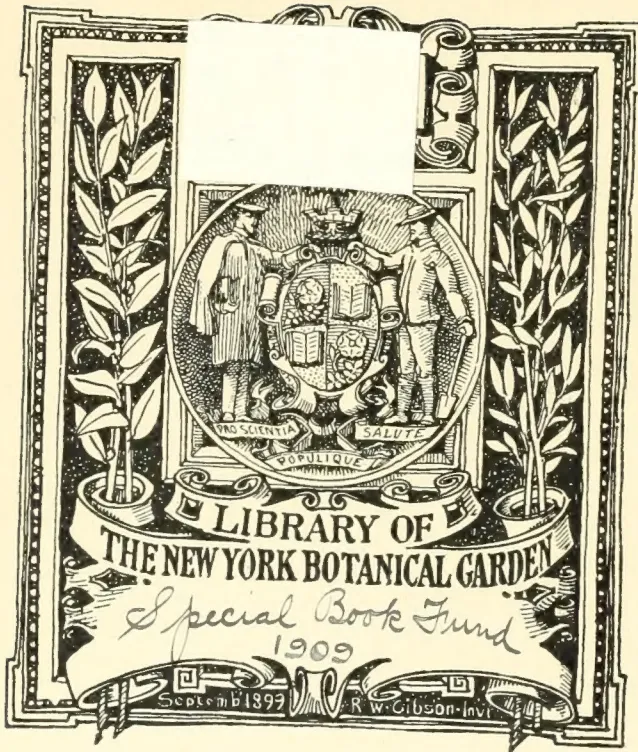
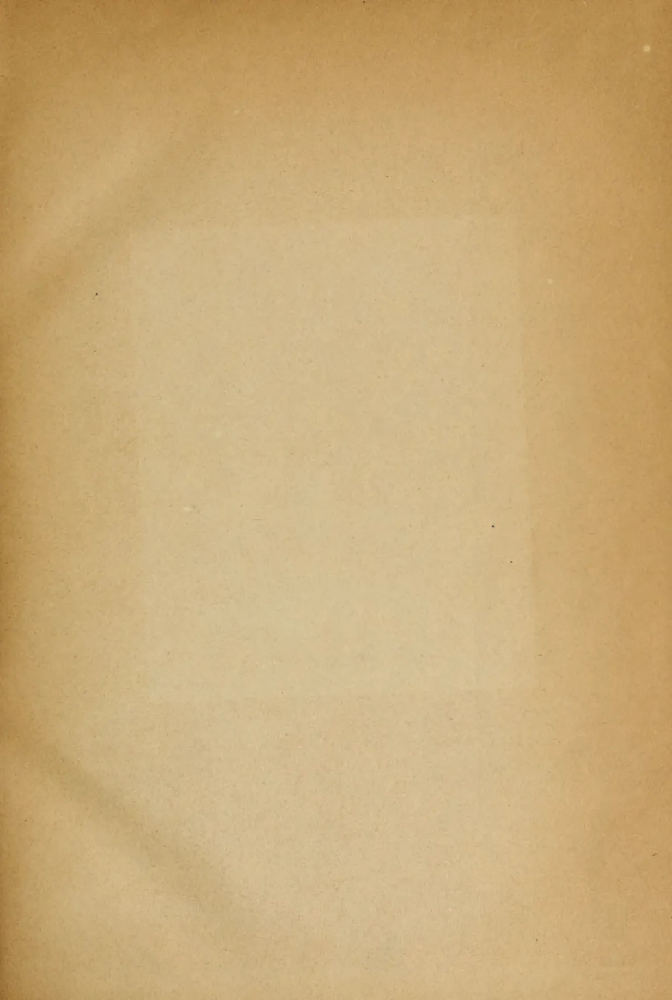
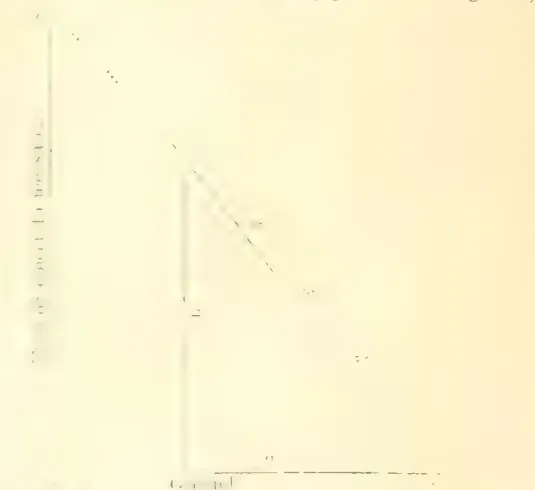

gecoll
completed
Kr
XT.R732
V.3 1883-84

The image is a decorative bookplate for the Library of The New York Botanical Garden. It features a central circular emblem with two figures in 19th-century attire flanking a shield. The shield is divided into four quadrants, each containing a different botanical symbol. Below the shield, a banner reads 'PRO SCIENTIA SALUTE POPULIQUE'. The emblem is flanked by two tall, slender plants with large, serrated leaves, possibly representing the 'New York Botanical Garden'. The entire design is enclosed in an ornate, double-lined border. Below the emblem, a banner reads 'LIBRARY OF THE NEW YORK BOTANICAL GARDEN'. Below that, the text 'Special Book Fund' is written in a cursive script, followed by the year '1909'. At the bottom, a small banner reads 'September 1899' and another small banner reads 'R. W. Gibson - Invt'.

This image shows a single, blank page of aged paper. The paper has a warm, light brown or tan color, characteristic of old documents. There are subtle variations in tone across the surface, with some areas appearing slightly darker or more yellowed than others, particularly towards the edges. A faint, vertical crease or fold line is visible on the left side of the page. The texture of the paper is visible, showing a fine, slightly grainy surface. There are no markings, text, or illustrations on the page. This image shows a single, blank page of aged paper. The paper has a warm, light brown or tan color, characteristic of old documents. The surface appears slightly textured and shows signs of aging, such as subtle variations in color and a few small, faint spots. In the top right corner, there is a small, irregular tear or crease in the paper. The overall appearance is that of a flyleaf or endpaper from an old book.[Vol. III., containing Numbers I. to XII.]
A
MONTHLY RECORD OF INFORMATION
FOR
PLANTERS
OF
COFFEE, TEA, CACAO, CINCHONA, RUBBERS, SUGAR, TOBACCO, CARDAMOMS, PALMS, RICE,
AND OTHER PRODUCTS
SUITED FOR CULTIVATION IN THE TROPICS.
[ISSUED ON OR ABOUT THE 1ST OF EACH MONTH.]
"Step after step the ladder is ascended."—GEORGE HERBERT, Jacula Prudentum.
COMPILED BY
A. M. & J. FERGUSON,
of the "Ceylon Observer."
LIBRARY
NEW YORK
BOTANICAL
GARDEN.
"It is both the duty and interest of every Owner and Cultivator of the Soil to study the best means of rendering that soil subservient to his own and the general wants of the community; and he who introduces, beneficially, a new and useful Seed, Plant or Shrub into his district is a blessing and an honor to his country."—SIR J. SINCLAIR.
A. M. & J. FERGUSON: COLOMBO, CEYLON.
AND SOLD BY:—London: TRÄUBNER & Co., 57 & 59, Ludgate Hill; J. HADDON & Co., 3, Bouverie St., Fleet St., E.C.; GEO. STREET & Co., 30, Cornhill; HUTCHINSON & Co., 4, Guildhall Chambers; F. ALGAR, 11 & 12, Clement's Lane, Lombard St.; BATES, HENDY & Co., 37, Walbrook; COWIE & Co., 17, Gresham St.; GORDON & GOTCH, St. Bride St., Ludgate Circus; MAY & Co., 78, Gracechurch St.; CLARK, SON & PLATT, 85, Gracechurch St.; W. H. SMITH & Co., Strand; NEWTON & ESKELL, Gray's Inn Chambers, 20, High Holborn, W.C.; S. DEACON & Co., 150, Leadenhall St.; T. CHRISTY & Co., 155, Fenchurch St., E.C.—Manchester: PICKLES & BROWNE, 25, Cathedral Yard.—Liverpool: CHAS. BIRCHALL, 32, Castle St.—Glasgow: W. & R. MACPHUN.—Edinburgh: W. & A. K. JOHNSTON.—Dundee: SINCLAIR & DAWSON, Reform St.—Aberdeen: W. WESTLAND, 53, Nicholas St.—Paris: AGENCE HAVAS.—Madras: HIGGINBOTHAM & Co.—Nilgiris and Wynnaad Districts: STANES & Co., Coimbatore.—Calcutta: THACKER, SPINK & Co., and J. L. MACMILLAN.—Bombay: THACKER & Co., Ltd.—Rangoon: "MESSENGER" OFFICE.—Penang: BLAZE, REIDEL & Co.—Singapore: J. LITTLE & Co.—Batavia: JOHN PRYCE & Co., and G. KOLFF & Co.—Surabaya: THOS. C. WILSON & Co.—Samarang: MANUAL & Co.—Deli, Sumatra: W. L. VAN CUYLENBURG.—Hongkong: "DAILY PRESS" OFFICE.—Melbourne, Sydney and Brisbane: GORDON & GOTCH.—Adelaide: "REGISTER" OFFICE.—Northern Queensland: W. HOPKINS, Rockhampton; C. F. MUNRO, Mackay.—Fiji: ARTHUR STEPHENS.—Brazil, Rio de Janeiro: LOMBAERTS & Co., 7, Rua dos Ourives; A. J. LAMOURoux, "Rio News" Office.—Central America: JAMES BOYD, Panama; H. E. LOW & Co., Managua.—Guatemala: W. J. FORSYTH.—Natal: ROBINSON & VAUSE, Durban.—Mauritius: C. W. HALL, Port Louis.—Jamaica: JAMES GALL.—Trinidad: "CHRONICLE" OFFICE.—British Guiana: "ROYAL GAZETTE" OFFICE.—United States: J. M. HERD, 26, Broadway, New York; H. HUBBARD, New Haven, Conn.; E. S. MORRIS, Philadelphia; "WEEKLY CHRONICLE" OFFICE, San Francisco.
MDCCCLXXXIV.
[Faint page: no legible print of its own could be verified; text withheld (stage 4 review list)]
LIBRARY
NEW YORK
BOTANICAL
GARDEN.
IN closing the Third Volume of the "TROPICAL AGRICULTURIST," we have to direct attention to the increased amount of useful information afforded, and to the great variety of topics treated. From month to month we have endeavoured to lay before our readers the latest results of practical experience and scientific teaching in all that concerns tropical agriculture; and our ambition has been to make this periodical not only indispensable to the planter but of service to business men and capitalists, never forgetting that agriculture trenches upon every department of human knowledge and science, besides being the basis of all human wealth. While directing our attention chiefly to the products most prominently mentioned on our title-page, we have never omitted to notice minor industries likely to fit in with tropical conditions; and our readers have an ample guarantee in the pages before them that, in the future, no pains will be spared to bring together all available information both from the West and East, the same being examined in the light of the teachings of common-sense as well as of prolonged tropical experience in this the leading Crown and Planting Colony of the British Empire. A full and accurate Index affords the means of ready reference to every subject treated in this third volume which we now place in our subscribers' hands.
N.B.—The present volume derives special value from the fact that it includes a reprint in full of the elaborate and valuable Report on the Forests of Ceylon by Mr. F. D' A. Vincent. In describing the Forests of the Colony, Mr. Vincent deals with many details of the physical characteristics and meteorology of the Island, and brings in a vast amount of miscellaneous information regarding Ceylon, its people and products, not to be found elsewhere.
A. M. & J. FERGUSON.
COLOMBO, 21st June 1884.
DEC 21 1909
[Faint page: no legible print of its own could be verified; text withheld (stage 4 review list)]
INDEXINDEX.| PAGE. | PAGE. | ||
|---|---|---|---|
| A. | Asbestos | 19 | |
| Acacias | 444 | Ashes as a Fertilizer | 712, 737 |
| Acclimatization of Plants | 59 | Asphalt | 494 |
| Adelaide Botanic Gardens | 337 | Assafetida | 98 |
| Adulteration of Coffee | [See Coffee] | Market Rates for | 80, 156, 220, 300, 380, 528, 608, 688, 768, 856, 936 |
| of Spices | 495, 716, 739 | Assam Company | 348 |
| of Sugar | 218 | Coolies in... | 81, 113 |
| of Tea... | 218, 592 | Planting in ... | 113, 116, 172, 244, 559 |
| Africa, South, Vegetable Products of | 119, 427, 494 | Tea Cultivation in | 32, 231 |
| West, Products of | 709-12 | Australia, Agriculture in | 426, 512 |
| African Woods | 8 1 | Labor in ... | 10, 29, 86, 263 |
| Agricultural Essays | 867 | Olive Cultivation in | 667 |
| Experiments | 138 | Orange Cultivation in | [See Orange Cultivation] |
| Schools... | 2 | South, Northern Territory of 4, 14, 29, 189, 437, 599 | |
| Agriculture | 104, 530, 907 | Sugar Cultivation in | [See Sugar Cultivation] |
| in Burma | 522, 560 | Tea in ... | 86, 829 |
| in Ceylon | 145, 221, 308, 310, 398, 433 | Australian Fruit for India | 560 |
| in England | 426 | Trees in India | 147, 161, 400-6, 536 |
| in Europe | 516, 647, 713, 799 | Wheat Seed for India | 265 |
| in India 49-54, 148, 284, 398, 521, 526, 550, 596 | 906 | B. | |
| in Japan | 906 | Babul Cultivation | 862 |
| Alcohol from Chesnuts | 905 | Badulla, Economic Garden at | 840 |
| Alfa Grass | 696, 800 | Bagasse, Sugar from | 694 |
| Algeria, Arboriculture in | 885 | Balata | 551 |
| Almond Cultivation... | 789 | Balsam of Peru | 931 |
| Aloe Cultivation | 657-68 | Bamboo Belts | 98, 766 |
| Aloes | 805 | Cultivation | 503, 683, 698 |
| Market Rates for | 80, 156, 220, 300, 380, 528, 608, 688, 768, 856, 936 |
Banji Tea | 413 |
| Altitude, Effect of, on Cinchona Bark | 88 | Barberry Cultivation | 672 |
| America, Cinchona Bark and Quinine in | 22, 119, 512 | Bark and Bark-stripping | 15 |
| Coffee Cultivation in | 319, 332 | Baroda Public Garden | 777 |
| Forests in | 32, 696 | Bats, Cure for | 578 |
| Oyster Industry in | 134 | Bean Cake | 237 |
| Sugar Cultivation in | 332 | Cultivation | 422 |
| Sumach Cultivation in | 696 | Bèche-de-Mer | 567 |
| Tea Cultivation in | 600, 687 | Belts, Shelter | 279 |
| Tea in ... | 78, 86, 139, 738, 740, 902 | Benzoïn-yielding Trees | 531 |
| Tobacco Cultivation in | 579, 694 | Beer from Chicory | 105 |
| Vacant Land in | 96 | Bees and Coffee Leaf-Disease | 378 |
| Ammoniacal Liquor as Manure | 237 | and Fruit | 732 |
| Ammoniacum, Market Rates for | 80, 156, 220, 300, 380, 528, 608, 688, 768, 856, 936 |
and Honey | 811 |
| Andamans, Tea Cultivation in | 536 | Plants for | 672 |
| Ants in Trinidad | 766 | Beeswax, Market Rates for | 80, 156, 220, 300, 380, 528, 608, 688, 768, 856, 936 |
| Remedies for | 45 | Beet Sugar | 695, 861, 869, 903, 912 |
| Anatto | 597, 656 | Big Trees | 12 |
| Animi, Market Rates for | 80, 156, 220, 300, 380, 528, 608, 688, 768, 856, 936 |
Birds' Wings, Trade in | 212 |
| Anuradhapura Garden | 840 | Bitumen, Sulphur in... | 356, 494 |
| Apple Blight, Cure for | 830 | Blight, Cure for | 932 |
| Golden | 209 | Blossom and Crops | 69 |
| Tree, Large | 717 | Blue Gum | [See Eucalyptus] |
| Trees, Canker in, Cure for | 884 | Bodu | 615 |
| Apricots, Dried | 681 | Boiling Water, Effect of, on Plants | 343 |
| Aquatic Vegetables... | 860 | Bolivia, Cinchona Cultivation in | 494 |
| Arabia, Commerce of | 49 | Bonedust as Manure | 607 |
| Arboriculture | [See Forests] | Bones as Manure | 332, 717 |
| Arcanut Cultivation | 98, 126, 766 | Borneo, Gutta Percha Cultivation in | 244 |
| Argentine Republic, Sugar Cultivation in | 602 | North ... | 12, 247, 411, 529, 541, 658, 705, 707 |
| Arnatto | [See Anatto] | Planting in... | 131, 187, 411, 541 |
| Artichoke Cultivation | 166 | Borer Attacking Tea | 352 |
| Arrowroot Cultivation | 32 | Botanic Gardens, Ceylon | 835-55, 857 |
| Market Rates for | 80, 156, 220, 300, 380, 528, 608, 688, 768, 856, 936 |
Kew | 756-62, 888, 916-8 |
| PAGE. | PAGE. | ||
|---|---|---|---|
| Botanic Gardens, Mauritius ... | 663-5, 670 | Castor Oil Cultivation ... | 504, 654 |
| —, Melbourne ... | 692 | —, Market Rates for ... | 80, 156, 220, 300, 380, 528, 608, 688, 768, 856, 936 |
| —, Peradeniya ... | 485, 670, 835-55 | Cassava Cultivation... | 32 |
| —, Saharanpur ... | 883 | Cassia and Cinnamon ... | 96, 442, 496 |
| Stand ... | 536 | —, Oil of ... | 496 |
| Botanical Transgressors ... | 132 | Casuarina Cultivation ... | 136, 348, 732 |
| Bottle Glue ... | 793 | Cattle Breeding in China ... | 426 |
| Bougainvillea ... | 358 | —, Tomato Vines for ... | 671 |
| Branches, Dead ... | 166 | Caucasus, Tea Cultivation in the ... | 113 |
| Brazil, Coffee Cultivation in ... | [See Coffee] | Cayenne Pepper ... | 739 |
| —, Labor in ... | 32, 189 | Ceará Rubber 7, 65, 154, 262, 283, 284, 354, 376, 410, 479, 482, 562, 766, 788, 850, 926 |
|
| —, Progress in ... | 6 | Cedar of Lebanon ... | 704 |
| —, Slavery in ... | 32, 189, 197-202 | — Wood ... | 170 |
| —, Sugar Cultivation in ... | 212, 593 | Cement for Leather ... | 672 |
| Breadfruit Cultivation ... | 59, 853 | Ceylon, Agriculture in ... | [See Agriculture] |
| Brick as a Conductor and Diffuser of Heat ... | 628 | — Fruits ... | 891 |
| Bud Variation ... | 671 | — Productions ... | 882 |
| Bug ... | 653 | —, Planting in ... | 146, 173, 442 |
| Bunt... ... | 684 | —, Resources of ... | 143 |
| Buskel Measures ... | 513 | Charcoal as Food ... | 935 |
| Burma, Agriculture in ... | 522, 560 | — for Packing Seeds ... | 784 |
| —, Labor in ... | 101 | Cheetah Skins, Curing ... | 478 |
| —, Minerals in... ... | 596 | Chesnuts, Alcohol from ... | 905 |
| —, Planting in ... | 101, 330, 331, 473, 597, 618, 619, 621, 633, 827, 831, 878 |
Chick Pea ... | 793 |
| —, Rice Cultivation in ... | 348 | Chicory, Adulteration of Coffee with ... | 309, 593, 879 |
| —, Sugar Cultivation in ... | 490 | — Beer ... | 105 |
| —, Tobacco Cultivation in ... | 441 | — Cultivation... ... | 687 |
| Burmese Fruits ... | 155 | Chile, Agriculture in ... | 65 |
| —, Timber Trade of ... | 633 | ||
| Chillies, Market Rates for ... | 80, 156, 220, 300, 380, 528, 608, 688, 768, 856, 936 |
||
| C. | Chilly Cultivation ... | 609 | |
| Cabbage Cultivation ... | 697 | China Clay ... | [See Kaolin] |
| Cacao Cultivation 57, 61, 96, 126, 211, 272, 342, 371-4, 415, 418, 442, 443, 445, 452, 562, 569, 597, 601, 680, 766, 849 |
—, Cattle Breeding in ... | 426 | |
| — in Monteserrat ... | 485 | — Grass ... | [See Rhea] |
| — in Venezuela ... | 178 | —, Silk Culture in ... | 46, 70 |
| —, Curiosities in ... | 515, 564 | —, Tea Cultivation in ... | [See Tea] |
| —, Enemies of ... | 66, 927 | —, Vegetable Products of ... | 165, 219, 237, 866, 892-4 |
| —, Market Rates for ... | 80, 156, 220, 300, 380, 528, 608, 688, 768, 856, 936 |
Chinese Aquatic Vegetables ... | 860 |
| —, Origin of Name ... | 77, 236, 480 | — Sabah Land Farming Co.... | 529 |
| —, Preparation of ... | 368, 569, 641 | Chocolate Mange ... | 128 |
| —, Substitutes for ... | 171 | —, Origin of Name ... | 77 |
| —, Varieties of ... | 850, 879 | Cholera and Copper... ... | 342 |
| Cactaceous Plants ... | 796 | Cigar Boxes ... | 170 |
| Caffeic Acid from Cuprea Bark ... | 59 | Cinchocerotin ... | 95 |
| Calamandar Wood ... | 717 | Cinchona Alkaloids ... | 497, 733, 847, 896-8 |
| Calcutta Exhibition... ... | 537-41, 609, 689 | — at Amsterdam Exhibition ... | 361-4 |
| California, Agriculture in ... | 65, 89, 95, 232-5, 819, 935 | — Bark Analyses 30, 40, 153, 227, 317, 362, 474, 555, 656, 680, 718, 733, 897, 898-900, 931 |
|
| Calisaya Morada ... | 10, 12, 214, 284, 849 | —, Drying of ... | 542-4, 566, 593, 628, 733, 918-23 |
| — Verle ... | 10, 12, 35, 284, 849 | —, Effect of Altitude on ... | 88 |
| Calumba Root, Market Rates for ... | 80, 156, 220, 300, 380, 528, 608, 688, 768, 856, 936 |
—, Harvesting of ... | 144, 171, 206, 236, 474, 617, 918-23 |
| Camomile Cultivation ... | 853 | — in America ... | 22, 512 |
| Camphor in India ... | 830 | —, Inferior, Harvesting of ... | 41 |
| — Manufacture in Japan ... | 489, 613, 860 | — Market ... | 559, 590, 731 |
| —, Market Rates for ... | 80, 156, 220, 300, 380, 528, 608, 658, 768, 856, 936 |
—, Market Rates for ... | 80, 156, 220, 300, 380, 528, 608, 688, 768, 856, 936 |
| Candle Manufacture... ... | 329 | — Sales ... | 45, 293 |
| Canker, Cures for ... | 143, 693, 884, 912 | — Yield ... | 13, 583 |
| — in Cinchona... ... | 102, 124 | —, Canker in... ... | 102, 124 |
| Canvas, Waterproofing ... | 671 | —, Coppicing of ... | 283 |
| Cape de Verde Islands, Cinchona Cultivation in ... | 96 | — Cultivation 8, 31, 56, 69, 101, 131, 143, 261, 278, 311, 313, 325, 333, 334, 335, 339, 351, 353, 410, 788, 847, 918-23 |
|
| Carbolic Acid Cure for Leaf-Disease ... | 33, 62, 210, 213, 261, 344, 349, 376 |
— in Bolivia ... | 494 |
| — for Weeds ... | 165 | — in Burma ... | 619 |
| Cardamom Cultivation... 58, 76 97, 99, 278, 445, 452, 563, 589, 741, 766 |
— in Colombia ... | 652 | |
| — Drying ... | 12, 788 | — in Fiji ... | 62 |
| Cardamoms, Enemies of ... | 164, 412, 627 | — in Guatemala ... | 260 |
| —, Market Rates for ... | 80, 156, 220, 300, 380, 528, 608, 688, 768, 856, 936 |
— in India 153, 161, 193-6, 389-97, 682, 727-9, 738, 740, 783, 794, 849 |
|
| —, Tincture of ... | 697 | — in Jamaica ... | 30, 40, 65, 527, 568 |
| Carnauba ... | 208 | — in Java 7, 46, 69, 243, 281, 311, 330, 351, 428, 471, 546, 702-4, 872-8 |
|
| Carrier Ravens ... | 427 | — in New Zealand ... | 167 |
| Cashew Oil ... | 106 | — in St. Helena ... | 96 |
| Castilloa Rubber ... | 850 | —, Diseases of ... | 97, 102, 124, 848, 879 |
| —, Enemies of ... | 264 |
| PAGE. | PAGE. | ||
|---|---|---|---|
| Cinchona, Extracts of | 342, 497, 905 | Coffee, Dropping of... | 66 |
| Febrifuge... | 730, 896-8 | Drying ... | 359 |
| Hybrids ... | 99, 100 | Enemies of ... | 68, 163, 846 |
| Ledgeriana 1, 26, 27, 36, 37, 41, 65, 66, 240, 271, | 282, 302-6, 442, 453, 486, 848 | Estates as Grazing Farms ... | 833 |
| Micrantha Calisayoides ... | 655 | Essence of ... | 614 |
| Names of ... | 848 | Export of, in the Husk ... | 121, 238, 242, 530 |
| Production ... | 243, 351, 510, 847 | Extract ... | 720 |
| Seed ... | 261, 352 | Fruiting at Kew ... | 869 |
| Soils ... | 351 | Grading Machine ... | 660 |
| Cinchonamine ... | 494 | Grub ... | 163, 205, 846 |
| Cinchonidine, Sulphate of | 730 | Husker ... | 427 |
| Cinnamon and Cassia | 96, 442, 496 | Leaf-Disease 33, 35, 62, 129, 136, 163, 210, 213, | |
| Changes on ... | 236 | 261, 283, 301, 316, 344, 349, 376, 378, 416 | |
| Cultivation ... | 58, 294 | 478, 479, 487, 515, 516, 564, 833, | |
| Market Rates for 80, 156, 220, 300, 380, 528, | 846, 878, 881, 882, 902, 915 | ||
| 608, 688, 768, 856, 936 | Leaves, Blackened ... | 450 | |
| Oil ... | 496 | Hybrid ... | 536 |
| Market Rates for 80, 156, 220, 300, 380, 528, | Maragogipe ... | 411, 416 | |
| 608, 688, 768, 856, 936 | Market Rates for 80, 156, 220, 300, 380, 528, 608, | ||
| Citronella Cultivation ... | 58 | 688, 768, 856, 936 | |
| Grass as Paper Material... | 831 | Mocha ... | 407 |
| Oil, Market Rates for 80, 156, 220, 300, 380, 528, | Origin of ... | 74 | |
| 608, 688, 768, 856, 936 | Plant ... | 793 | |
| Clearing Land ... | 65 | Preparation of ... | 284, 553 |
| Clerihew Drier ... | 565 | Production and Consumption ... | 351, 497 |
| Clove Cultivation ... | 452, 562 | Saccharate of ... | 639 |
| Cloves, Market Rates for 80, 156, 220, 300, 380, 528, 608, | Shade for ... | 420 | |
| 688, 768, 856, 936 | Substitutes for ... | 171, 568 | |
| 284, 314, 413, 447 | Syndicate ... | 765 | |
| Coal in Tea Preparation ... | 8, 883 | Trade ... | 237 |
| Cocaine Breeding ... | 894 | Coir Industry ... | 148, 292, 615 |
| Trade ... | 535 | Market Rates for 80, 156, 220, 300, 380, 528, 608, | |
| Cocoa ... | See Cocoa | 688, 768, 856, 936 | |
| Drinking ... | 601 | Cola Nut ... | [See Kola Nut] |
| Manufacture ... | 886, 930 | Colombia ... | 423, 641, 652 |
| Plum ... | 128, 456 | Colombo Root ... | [See Calumba] |
| Coconut as Food ... | 117 | Commercial Museums ... | 767 |
| Cakes ... | 912 | Coorg, Planting in ... | 28, 286, 613, 879 |
| Confection ... | 443 | Copaiba, Balsam of ... | 335 |
| Cultivation 56, 294, 415, 445, 609, 772, 810, | Copper and Cholera... | 342 | |
| 819, 864, 881 | Cork ... | 71, 737 | |
| Fibre ... | See Coir | Oak ... | 558 |
| Oil vs. Kerosene ... | 840 | Corks, Uses for ... | 794 |
| Origin of Name ... | 77, 236, 480 | Corn, Glucose from ... | 331 |
| Pudding ... | 476 | Meal for Fowls ... | 342 |
| Uses of ... | 824 | Corn, Seed ... | 630 |
| Cocos Islands ... | 165, 172 | Costa Rica, Planting in ... | 654, 655 |
| Coccus Indicus, Market Rates for 80, 156, 220, 300, 380, | Cotton, Chemistry of ... | 603 | |
| 528, 608, 688, 768, 856, 936 | Cultivation ... | 98, 737, 739, 840 | |
| Cocus Wood ... | 665 | in Natal ... | 122 |
| Coffee, Adulteration of ... | 218, 309, 593, 720, 721 | Enemies of ... | 739 |
| Analyses of ... | 218, 706 | Khaki ... | 170 |
| Artificial ... | 619 | Seed Oil ... | 206 |
| at Low Elevation ... | 212 | Silk ... | [See Kapok] |
| Blossom, Character of ... | 412 | Cows, Treatment of ... | 527, 626 |
| Blossoms, Unreasonable ... | 299 | Crabs' Eyes ... | 713 |
| Composition of ... | 218 | Creosote Plant ... | 600 |
| Crops and Seasons 36, 39, 61, 66, 67, 68, 129, 203 | Crop and Blossom ... | 69 | |
| Cultivation ... 166, 143, 214, 257-60, 262, 272, 283, | and Manures ... | 729 | |
| 314, 316, 322-4, 325, 332, 350, 355, 414, 419 | Crops and Seasons 36, 39, 61, 66, 67, 68, 129, 203, 833 | ||
| 445, 446, 451, 514, 846 | and Weather in India ... | [See India] | |
| in America ... | 319, 332 | Croton Cultivation ... | 331 |
| in Brazil 1, 46, 69, 101, 205, 216, 235 | Oil ... | 106 | |
| 280, 295-8, 491-4, 652, 764 | Plant, Wild ... | 723 | |
| in Burma ... | 619 | Seeds ... | 448 |
| in Costa Rica... | 655 | Market Rates for 80, 156, 220, 300, 380, 528, | |
| in Fiji ... | 62 | 608, 688, 768, 856, 936 | |
| in Hayti ... | 235 | Cucumber Pickle ... | 357 |
| in India ... | 25, 69, 212, 286, 440, 613 | Cultivation as Test of Species ... | 95 |
| in Java 46, 180, 202, 216, 228-31, 295-8 | Cuprea Bark ... | 59, 536 | |
| 491-4, 521, 546 | Curcas Oil ... | 285 | |
| in Mozambique ... | 178 | Curry Powder ... | 794 |
| in Natal ... | 180 | Cutch, Market Rates for 80, 156, 220, 300, 380, 528, 608, | |
| in New Hebrides ... | 169 | 688, 768, 856, 936 | |
| in Samoa ... | 357 | Cyperus, Indian ... | 789 |
| in Singapore ... | 437 | ||
| in Venezuela ... | 178 | ||
| Curiosities of ... | 525 | ||
| Decline of ... | 366, 846 | ||
| Drinking ... | 512, 601, 611, 706, 712 | ||
| D. | |||
| Dakota, Farming in... | 824 | ||
| Dam-Making ... | 682 |
| PAGE. | |
|---|---|
| Dammer ... | 720 |
| Darjiling, Planting in ... | 193-6, 219, 270, 420, 764 |
| Date Coffee Company ... | 923 |
| — Palm ... | 766 |
| Dead Wood on Trees ... | 560 |
| Desert Palm ... | 681 |
| Dew, Cause of ... | 619 |
| Dhurra ... | 662 |
| Digging about Trees... .. | 683 |
| Diphtheria, Lime Juice as a Cure for ... | 86 |
| Divi-divi Cultivation... .. | 32, 137 |
| Dogwood ... | 124 |
| Dominica ... | 511 |
| Doundaké ... | 496 |
| Dragon's Blood ... | 144 |
| Drainage ... | 90, 580, 793 |
| Drinks, Cooling ... | 172 |
| Drawingroom Plants ... | 640 |
| Drugs, Uncommon ... | 809 |
| Durra ... | 662 |
| Dwarf Palm ... | 238, 529, 617, 696 |
| Ebony, Market Rates for ... | 80, 156, 220, 300, 380, 528, 608, 688, 768, 856, 936 |
| —, Polishing ... | 793 |
| Economic Botany ... | 134 |
| —, Plants ... | 94, 533, 846-53 |
| —, Products ... | 579 |
| Eggs as Food ... | 285 |
| Egypt, Ostrich Raising in ... | 142 |
| —, Paper Making ... | 661 |
| —, Sugar Cultivation in ... | 902 |
| Egyptian Gardens ... | 906 |
| Ekman-Fry-Espeut Sugar Process ... | 31, 549 |
| Elephant, Asiatic ... | 870-7 |
| Ensilage ... | 652 |
| Essential Oils ... | 49, 887 |
| Eucalyptus and Malaria ... | 40, 717 |
| — as a Hair Dye ... | 264 |
| —, Cultivation ... | 59, 95, 161, 356, 480, 642, 853 |
| —, for Fuel... .. | 95 |
| —, in Medicine ... | 724-6 |
| —, Oil ... | 883, 884 |
| —, Wood, Analysis of ... | 721 |
| Euphorbia Propagation ... | 888 |
| European Plants in the Tropics ... | 767 |
| Evaporation and Tillage ... | 333, 687 |
| Fanning Mills for India ... | 550 |
| Febrifuges ... | 496, 730 |
| Feldspar ... | 444 |
| Fence Posts ... | 86 |
| Fern Cultivation ... | 525 |
| Ferns in Bottles ... | 90 |
| — of India ... | 107 |
| — of India, Ceylon and Malay Peninsula ... | 225 |
| Fertility, Inherent and Acquired ... | 421 |
| Fertilization of Flowers ... | 208 |
| Fertilizers ... | 17, 95, 172, 332, 672, 712, 737, 928 |
| Fibre-yielding Plants ... | 92, 457-68, 477, 480, 487, 499-501, 522, 560, 563, 613, 695, 767, 774, 822, 853, 880 |
| Fibre Machinery... .. | 105, 486, 488, 499-501, 674, 692, 704, 913, 925 |
| —, Preparation ... | 457-68 |
| Fig Cultivation ... | 135, 144, 903 |
| —, Moreton Bay ... | 418, 444, 691 |
| Fiji, Labor in ... | 63, 68, 120, 398, 676, 677-9 |
| —, Planting in ... | 60, 62-5, 398, 410, 495, 584, 610, 676, 677-9, 691, 772, 810, 864 |
| Fish Curing ... | 548 |
| Florida ... | 662, 802, 807, 860, 895 |
| —, Orange Cultivation in ... | 120, 481, 535, 781 |
| Flowers and Insects ... | 208 |
| —, Pictures of ... | 771 |
| —, Preservation of ... | 716 |
| Flying-foxes, Remedy for ... | 745 |
| PAGE. | |
|---|---|
| Forestry Exhibition... .. | 449, 655 |
| Forests ... | 165, 684-6 |
| —, and Rainfall ... | 912 |
| —, Ceylon ... | 315, 588 |
| —, in America ... | 35, 696 |
| —, in Japan ... | 906 |
| —, Replanting ... | 790 |
| Formosa, Oyster Cultivation in ... | 670 |
| Four-flowers Tea ... | 696 |
| Fowls, Corn Meal for ... | 342 |
| —, Treatment of ... | 142, 356, 357 |
| Frogs Eating Grubs... .. | 209 |
| Frost and Coffee ... | 61 |
| Fruit as Food ... | 924 |
| —, Cultivation ... | 217, 697, 700-2 |
| —, Drying ... | 426, 681, 857-63 |
| —, Preserving ... | 929 |
| —, Trees, Canker in ... | 693, 912 |
| —, Pruning of ... | 25, 45, 59, 95, 437 |
| —, Treatment of ... | 500, 773 |
| —, Varieties of, on Same Tree... .. | 515, 564 |
| Fruits, Ceylon ... | 891 |
| —, Persian ... | 803 |
| Fungi ... | 134, 884 |
| Fungoid Diseases ... | 628-32 |
| Galls, Market Rates for ... | 80, 156, 220, 300, 380, 528, 608, 688, 768, 856, 936 |
| Gambier, Market Rates for ... | 80, 156, 220, 300, 380, 528, 608, 688, 768, 856, 936 |
| Gamboge ... | 37, 563, 567, 853 |
| Garden Screens ... | 640 |
| Gas Lime as Manure ... | 444 |
| Geraniums and Snakes ... | 730 |
| Germination of Seeds ... | 332, 478, 513, 529, 789 |
| Gilbert Islands ... | 326 |
| Gilding Leather ... | 793 |
| Ginger-beer Plant ... | 889, 905 |
| Ginger, Market Rates for ... | 80, 156, 220, 300, 380, 528, 608, 688, 768, 856, 936 |
| —, Preserved ... | 616 |
| Glucose Sugar ... | 96, 331, 637 |
| Glue, Bottle ... | 793 |
| Glycerine Manufacture ... | 329 |
| Goat Breeding in Ceylon ... | 789 |
| Gold in India ... | 44, 438 |
| Golden Apple ... | 209 |
| Grafting ... | 91, 634, 660 |
| Grain, Weight of ... | 795 |
| Gram Cultivation ... | 915 |
| Grape Cultivation ... | [See Vine] |
| Grass, Paper from ... | 696 |
| —, Tree, Gum from ... | 489 |
| Gravelly Soils ... | 930 |
| Grazing Farms in Ceylon ... | 833 |
| Groundnuts ... | 12, 205, 506, 567, 708, 774, 830 |
| Growth, Force of ... | 509 |
| Grubs, Cure for ... | 172, 428 |
| —, Frog Eating... .. | 209 |
| Guachamaca, Extract of ... | 640 |
| Guatemala, Cinchona Cultivation in ... | 260 |
| Guatteria Lancifolia... .. | 105 |
| Guiana, Indiarubber Cultivation in ... | 21, 108-12, 136 |
| —, Sugar Cultivation in ... | 388 |
| Gumming in Fruit Trees ... | 715 |
| Gum-yielding Plants ... | 100, 489, 794 |
| Gums, Market Rates for ... | 80, 156, 220, 300, 380, 528, 608, 688, 768, 856, 936 |
| —, Vegetable ... | 668, 713, 784 |
| Gutta Percha ... | 635, 643-5, 851 |
| —, Artificial ... | 312, 521 |
| —, Cultivation in Guiana ... | 108-12, 136 |
| —, in Borneo and Sumatra ... | 244 |
| —, in Java ... | 767 |
| —, for Grafting ... | 660 |
| —, Market Rates for ... | 80, 156, 220, 300, 380, 528, 608, 688, 768, 856, 936 |
| —, Pseudo ... | 551-3, 852 |
| PAGE. | PAGE. | ||
|---|---|---|---|
| H. | |||
| Hail, Destruction of Coffee and Cinchona by | 332 | Insects and Flowers ... | 208 |
| Hair Dye, Eucalyptus | 261 | —, Strange ... | 261 |
| Hakgala Garden ... | 837 | Iron as a Conductor and Diffuser of Heat | 628 |
| Haputale, Rainfall in | 545 | Irrigation in India ... | 155, 426 |
| Hatching, Artificial ... | 9, 18, 73 | Italy, Sumach Cultivation in | 647 |
| Hawaii, Sugar Cultivation in | 426, 726 | ||
| Hay, Ration of, for Horse | 59 | J. | |
| Hayti, Coffee Cultivation in | 235 | Jaffna, Cultivation in | 355 |
| Hazel Nuts ... | 712 | Jak-trees Bearing Early | 388 |
| Health Exhibition ... | 856 | Jalap Cultivation | 852 |
| Heat, Iron and Brick as Conductors and Diffusers of | 628 | Jam Manufacture ... | 172 |
| Hemlock Bark Extract | 45 | Jamaica, Cinchona Cultivation in | 30, 40, 65, 527 |
| Hemp Cultivation in Mauritius | 86 | —, Fibre Plants of | 695, 822 |
| —, Sisal ... | 640 | —, Negro Proprietors in | 549 |
| Henaragoda Garden | 839 | —, New Plants in | 645-7 |
| Heneguen ... | 640 | Japan, Agriculture in | 906 |
| Hen Manure ... | 811 | —, Camphor Manufacture in | 489, 613, 860 |
| Hens, Setting of ... | 95 | —, Forest Flora of | 686 |
| Hints, Useful ... | 520 | —, Lacquer Industry of | 286 |
| Honduras, British, Agriculture in... | 118, 209, 219, 828 | —, Rice Cultivation in | 667, 862 |
| Hop Culture ... | 360 | —, Tea ... | 17, 78, 825-7 |
| Horseradish Tree ... | 95 | Java, Cinchona Cultivation in | [See Cinchona] |
| Horse Breeding in Ceylon | 789 | —, Coffee Cultivation in | [See Coffee] |
| —, Good Points of | 45 | —, Gutta Percha Cultivation in | 767 |
| —, Ration of Hay for | 59 | —, Indiarubber Cultivation in | 564, 767 |
| Hot Water, Effect of, on Plants... | 342 | —, Kapok Cultivation in | 180 |
| — Weather Drinks | 172 | —, Pepper Cultivation in | 180 |
| House Plants, Propagating | 889 | —, Rice Cultivation in | 180, 634 |
| Howard, Mr. J. E. ... | 498 | —, Sugar Cultivation in | [See Sugar] |
| Hybridism ... | 811 | —, Tea Cultivation in | 180, 546 |
| Hybrids, Cinchona ... | 99, 100 | —, Tobacco Cultivation in | 180 |
| —, Vegetable Products of | 555-7, 618 | ||
| Jersey, Seaweed Harvest in | 763 | ||
| Johore, Planting in ... | 279, 673 | ||
| —, Rainfall in ... | 40 | ||
| —, Rhea Company | 820 | ||
| Jute, Import of, into Germany | 626 | ||
| I. | |||
| Immigration to the Straits | 224 | ||
| Imbul ... | [See Kapok] | ||
| Incubators ... | 9, 18, 73, 124 | K. | |
| India, Agriculture in | [See Agriculture] | Kairin ... | 101 |
| —, Cinchona Cultivation in | [See Cinchona] | Kangra Valley, Tea Cultivation in | 623 |
| —, Coffee Cultivation in | 28, 69, 212, 286 | Kaolin ... | 717 |
| —, Crops and Weather in | 79, 155, 310, 346, 379, 451, 526, 607, 686, 834 | Kapok Cultivation ... | 180, 557, 766 |
| —, Gold in ... | 44, 438 | Karen Hills, Planting on | 619 |
| —, Indiarubber Cultivation in | [See Indiarubber] | Kauri Gum ... | 929 |
| —, Irrigation in ... | 155, 426 | Kerosene as an Insecticide | 889, 935 |
| —, Labor in ... | 81, 113 | Kew Botanic Gardens | 756-62, 888, 916-8 |
| —, Ostrich Breeding in | 101 | Keeling Islands ... | 165, 172 |
| —, Planting in ... | 30, 69, 114, 116, 128, 203, 219, 237, 374, 476 | Kino, Market Rates for | 80, 156, 220, 300, 380, 528, 608, 688, 768, 856, 936 |
| —, Silk Culture in | 92 | Kitchen Garden, Laying out | 698 |
| —, Sugar Cultivation in | 650, 823 | Khaki Cotton ... | 170 |
| —, Tea Cultivation in | [See Tea] | —, Dye ... | 478 |
| —, Wheat Cultivation in | 265, 554, 830 | Knowledge, Practical | 712 |
| Indian Corn ... | [See Maize] | Kokum Butter | 784 |
| — Maund ... | 54 | Kola Nut ... | 333, 520, 565, 637-9, 704 |
| — Timbers ... | 335, 422, 428, 489, 501 | ||
| Indiarubber Collecting | 66, 236, 272, 283, 284, 298, 317, 319, 326, 354, 376, 379, 434, 443, 449, 450, 451, 501, 562, 620, 850 | L. | |
| — Cultivation | 57, 61, 96, 100, 115, 282, 272, 298, 331, 459, 450, 452, 617, 687, 766, 850 | Labels, Garden ... | 745, 836 |
| — at the Straits | 157 | Lac, American ... | 600 |
| — in Australia | 364, 371 | Lacoocha ... | 520 |
| — in British Guiana | 21, 108-12, 136 | Lacquer Industry ... | 286 |
| — in India ... | 342, 428, 606, 727-9 | Labor in Australia | 10, 29, 86, 263 |
| — in Java ... | 564, 767 | — in Brazil | 32, 189 |
| — in Mozambique | 178 | — in Bama | 101 |
| — in Pará | 888 | — in Fiji | 63, 68, 120, 398, 676, 677-9 |
| — Export of, from Brazil | 355 | — in India | 81, 113 |
| — Market Rates for | 80, 156, 220, 300, 380, 528, 608, 688, 768, 856, 936 | — in Mauritius | 75 |
| —, Supposed Ceylon | 81 | Lantana Fibre ... | 560 |
| — Trade... | 179 | Lawes ... | 791, 836 |
| — Varieties of | 851 | Leather, Cement for | 672 |
| Indigo Cultivation in Ceylon | 214, 283, 351 | —, Gilding | 795 |
| — in India | 161, 523 | Leaves, Facts about ... | 94 |
| Insecticides ... | 32, 95, 112, 117, 121, 213, 352, 356, 428, 524, 560, 661, 712, 720, 729, 730, 801, 889 | —, Pictures of | 771 |
| Insect Pests ... | 661, 687, 722, 783 | —, Plants from | 611 |
| —, Yellowing of | 775 | ||
| Leguminous Plant Fertilizers | 928 | ||
| Lemon Cultivation ... | 89, 341 | ||
| Lemongrass Oil, Market Rates for | 80, 156, 220, 300, 380, 528, 608, 688, 768, 856, 936 | ||
| PAGE. | PAGE. | ||
|---|---|---|---|
| Liberian Coffee Cultivation | 55, 61, 97, 125, 356, 452, 519, 562, 601, 762, 766, 846 | New Planting Countries | 9 |
| Lice on Plants, Remedies for | ... | Products | 32, 79, 487, 516, 833, 882 |
| Lichi Cultivation | ... | Products, Market Rates for | 80, 156, 220, 300, 380, 528, 608, 688, 768, 856, 936 |
| Lime as a Cure for Fungus | 143, 421, 515 | South Wales, Orange Cultivation in | 640 |
| —, as a Manure | ... | —, Sugar Cultivation in | 773 |
| —, Cultivation | 881 | —, Timbers of | 717 |
| —, Influence of, on Soils | 670 | Zealand, Agriculture in | 167, 190-3, 515, 738 |
| —, in Germinating Seeds | 332 | —, Kauri Gum Fields of... | 929 |
| Juice as a Cure for Diphtheria | 86 | —, Plants | 858 |
| Leaves as Food | 165 | —, Sugar Cultivation in... | 212 |
| —, West Indian | 804 | Nilgiris, Australian Trees on | 147, 161, 400-6, 536 |
| Liquorice, Indian | 743 | —, Planting on | 237, 389, 436, 568, 682, 740, 925 |
| Log, Big | 32 | Northern Territory of South Australia | 4, 14, 29, 189, 364 |
| Lubricants | 428, 737 | 437, 599, 928 | |
| Lycopods, Cultivation of | 525 | Nurseryman, Tall | 96 |
| M. | Nutmeg Cultivation | 58, 98, 562, 627, 656, 784, 834 | |
| Mace, Market Rates for | 80, 156, 220, 300, 380, 528, 608, 688, 768, 856, 936 | —, in New Guinea | 284 |
| Madagascar | 23, 151, 532 | —, Gatherer | 209 |
| —, Plants | 41 | Nutmegs, Market Rates for | 80, 156, 220, 300, 380, 528, 608, 688, 768, 856, 936 |
| Magnesia as Manure | 428 | Nuts, To Keep | 672 |
| Mahogany Cultivation in British Honduras | 219 | Nux Vomica, Market Rates for | 80, 156, 220, 300, 380, 528, 608, 688, 768, 856, 936 |
| Maize Cultivation | 915 | O. | |
| Malaria and Eucalyptus | 40 | Odal | 39 |
| Malay Timber Trees | 933-5 | Oil Cake | 527, 596 |
| Malto-Legumine | 124 | —, Tea Seed | 796 |
| Mango Cultivation | 427, 535 | Oils, Essential | 49, 887 |
| Mangrove Bark, Use for | 436 | —, Market Rates for | 80, 156, 220, 300, 380, 528, 608, 688, 768, 856, 936 |
| —, Honey from | 894 | —, Lubricating and Illuminating | 737, 830 |
| Manitoba, Farming in | 772 | —, Vegetable | 106 |
| Manures and Manuring | 20, 46, 67, 106, 112, 129, 168, 237, 242, 332, 352, 428, 444, 499, 580, 603, 607, 628-32, 636, 671, 717, 729, 811, 820, 894 | Olibanum, Market Rates for | 80, 156, 220, 300, 380, 528, 608, 688, 768, 856, 936 |
| Maragogipe Coffee | 411, 416 | Olive Cultivation in Australia | 667 |
| Market Rates for Old and New Products | 80, 156, 220, 300, 380, 528, 608, 688, 768, 856, 936 | —, in California | 935 |
| Mate | 155, 289, 421, 717 | —, Oil | 774 |
| Maud, Indian | 54 | Oman, Commerce of | 49 |
| Mauritius Botanic Gardens | 663-5, 670 | Ontario, Farming in... | 367 |
| —, Hemp Cultivation in | 86 | Orange Cake | 124 |
| —, Labor in... | 75 | —, Cultivation... | 74, 87, 89, 98, 120, 341, 445, 455, 481, 535, 568, 601, 640, 737, 789, 881, 906 |
| —, Planting in | 668 | —, Trade | 669 |
| —, Sugar Cultivation in | 577 | Oranges, Bifacial | 712 |
| —, Wheat Cultivation in | 830 | —, Enemies of... | 95, 96, 455 |
| Melbourne Botanic Gardens | 692 | —, Large | 95 |
| Melon Manure | 671 | Orchards, Laying out | 699 |
| Melons, Sugar from... | 161 | Orchella Weed, Market Rates for | 80, 156, 220, 300, 380, 528, 608, 688, 768, 856, 936 |
| Mexico, Tree Planting in | 264 | Orchids | 409, 869 |
| Mica | 553 | Ornamental Trees | 445 |
| Mildew, Cure for | 356 | Ostrich Breeding | 101, 143, 861 |
| Milk Gum-yielding Creepers | 100 | O Tonga | 20 |
| —, Powder | 299 | Oyster Raising | 134, 421, 670 |
| —, To Get, from Cows | 626 | P. | |
| Minerals in Burma | 596 | Pacific Islands, Planting in | 14, 99, 243, 267, 326 |
| Mocha Coffee | 407 | Paddy Cultivation | [See Rice] |
| —, Hybrid | 536 | Palm Cultivation in Travancore | 148 |
| Monaragala, Planting in | 4, 160, 210, 244 | —, Desert | 681 |
| Montserrat, Cacao Cultivation in | 485 | —, Dwarf | 238, 529, 617, 696 |
| Moon, Effect of, on Sap | 789 | Palmyra Palm | 913 |
| Mosquito Blight | 43 | Panama | 535, 549 |
| Mozambique, Agriculture in | 178, 359 | Paper-making Fibres | 563, 617, 696, 831 |
| —, Indianrubber Cultivation in | 178 | —, in Egypt | 662 |
| Mungooses and Rats | 426 | Paraffin as an Insecticide | 31 |
| Murungai | 95, 285 | —, Effect of, on Fruit Trees | 773 |
| Mushrooms | 797 | Paraguay | 81, 288 |
| Mustard as an Insecticide | 203, 213 | —, Tea | [See Mate] |
| Mycelium on Plants... | 208 | Pará Rubber | 851, 888 |
| Myrobalans, Market Rates for | 80, 156, 220, 300, 380, 528, 608, 688, 768, 856, 936 | Park Country of Ceylon | 97 |
| Myrrh, Market Rates for | 80, 156, 220, 300, 380, 528, 608, 688, 768, 856, 936 | Pasture Grasses | 853 |
| Mysore, Planting in... | 203, 734 | Peach Cultivation | 95, 142, 170, 527 |
| N. | Peaches, Diseases of | 687 | |
| Nagesar Wood | 428 | Peach-tree Borer | 811 |
| Natal, Planting in | 122, 137, 180, 291 | Pearl Fishery in the Persian Gulf | 179 |
| Nettle Fibre | 889 | —, in Torres Straits | 900-2, 928 |
| New Guinea, Planting in | 284, 458 | Pear-tree Blight | 70 |
| —, Hebrides | 469 | Perramaad, Planting in | 440 |
| PAGE. | PAGE. | ||
|---|---|---|---|
| Pepper, Adulteration of | 739 | R. | |
| —, Bird | 739 | Rainfall and Forests | 912 |
| —, Cayenne | 739 | — and Tea | 244 |
| —, Cultivation | 452, 562, 766 | — in Ceylon | 545, 836, 839 |
| —, — in Java | 180 | Rain-gauges | 792 |
| —, Ground | 470, 494 | Rambutan Cultivation | 98 |
| —, Market Rates for | 80, 156, 220, 300, 380, 528, 608, 688, 768, 856, 936 | Ramie | [See Rhea] |
| Peradeniya Botanic Gardens | 485, 670, 835-53 | Rats, Remedies for | 426, 535 |
| Perak, Planting in | 406, 619 | Ravens, Carrier | 427 |
| Perfumes, Toilet | 801 | Red Gum | [See Eucalyptus] |
| Persian Fruits | 803 | — Spider | 526, 534 |
| — Gulf, Pearl Fishery in | 179 | — Wood, Market Rates for | 80, 156, 220, 300, 380, 528, 608, 688, 768, 856, 936 |
| Persimmon | 40 | 924 | |
| Petroleum as an Insecticide | 729, 801 | Rennet, Vegetable | 924 |
| Philippine Islands | 489 | Rhea Cultivation and Preparation | 457-68, 475, 477, 486, 488, 495, 505, 569-77, 673, 679, 708, 720, 769-71, 820, 925 |
| Phylloxera | 105, 358, 452, 619 | Rhododendron, Poisonous | 558 |
| Pickled Tea | 16, 536 | Rhubarb, Market Rates for | 80, 156, 220, 300, 380, 528, 608, 688, 668, 856, 936 |
| Pickles | 357 | —, Medicinal | 852 |
| Pinang, Coir Industry in | 615 | Rice Corn | 662 |
| —, Sugar Cultivation in | 584 | — Oroquettes | 902 |
| Pineapple Cultivation | 98, 522, 673 | — Cultivation | 785, 865, 879 |
| Piney Tallow | 720 | — in Burma | 348 |
| Pith Disease | 97 | — in India | 915 |
| Pine Plant, Texan | 745 | — in Japan | 667, 862 |
| Pineapple Cultivation in India | 149, 424 | — in Java | 180, 634 |
| — Fibre | 457-68 | — in Straits Settlements | 553 |
| Planting Depression, Causes of | 176, 418 | — in Sumatra | 634 |
| — Enterprise in Ceylon | 302 | — Mills | 427, 863 |
| Plant Cells | 864 | Roots | 714 |
| — Knowledge, Progress of | 586 | Rust in Sugarcane | 421 |
| Plants and Animals | 745 | Rust Preventive | 773 |
| —, Constituents of | 742 | ||
| —, Contagious Diseases of | 378 | S. | |
| —, Cultivation of | 671 | Safflower, Market Rates for | 80, 156, 220, 300, 380, 528, 608, 688, 768, 856, 936 |
| —, Growth of | 171, 798 | Sago, Manufacture of | 217 |
| —, Influence of Sun on | 100 | —, Market Rates for | 80, 156, 220, 300, 380, 528, 608, 688, 768, 856, 936 |
| —, Oxygen from | 704 | Saharanpur Botanic Garden | 883 |
| —, Peculiarities of | 924 | St. Helena, Planting &c. in | 96, 366, 536, 715, 746-55, 787 |
| —, Propagation of, from Leaves | 611 | Salicylic Acid in Sugar Preparation | 507, 904 |
| Ploughs in India | 378, 550 | Salt as a Cure for White Ants | 426 |
| Plumbago, Market Rates for | 80, 156, 220, 300, 380, 528, 608, 688, 768, 856, 936 | — as a Fertilizer | 95 |
| Plums, Ceylon | 105 | — Necessary for Animals | 527 |
| Poppy Cultivation in Turkey | 47 | — Plants | 863 |
| Portuguese Colonies of West Africa | 709-12 | Samoa Islands | 243, 357 |
| Posts, Fence | 86 | Sandalwood Cultivation in China | 219 |
| Potash as a Fertilizer | 17 | —, Market Rates for | 80, 156, 220, 300, 386, 528, 608, 688, 768, 856, 936 |
| — Manufacture | 558 | Sand-binding Plants | 11 |
| Potato Disease | 207 | Sandwich Islands, Planting in | 99, 427 |
| —, New Species of | 671 | Sapanwood, Market Rates for | 80, 156, 220, 300, 380, 528, 608, 688, 768, 856, 936 |
| Potatoes, Cutting for Seed | 73 | Sap in Plants | 717, 789, 905 |
| —, Manuring of | 632 | Sarawak, Planting in | 328 |
| —, To Prevent, Rotting | 142 | Sarcocolla, Gum | 784 |
| Pots for Plants | 795 | Satinwood, Polished | 12 |
| Pottery Trees | 671 | Sawdust as Manure | 894 |
| Potting Plants | 672 | Scale Insects | 96, 264 |
| Poultry | [See Fowls] | Science in Cultivation | 167 |
| Power, Sun as a Source of | 94 | —, Popular, Notes on | 905 |
| Practical Knowledge | 712 | Scottish Assam Tea Co., Ltd. | 231 |
| Profitable Planting | 95 | Screens, Garden | 640 |
| Propagating House | 838 | Seasoning Timber | 621 |
| Pruning | 25, 45, 59, 93, 95, 105, 437, 687 | Seasons and Crops | 36, 39, 61, 66, 67, 68 |
| Pumpkin Pie | 94 | Seaweed Harvest in Jersey | 763 |
| — Soup | 49 | Seeds, Germination of | 332, 478, 513, 529, 789 |
| Puneria Berries | 924 | —, Packing | 784 |
| Senna Cultivation | 852 | ||
| Q. | —, Market Rates for | 80, 156, 220, 300, 380, 528, 608, 688, 768, 856, 936 | |
| Queensland, Agriculture in | 212, 572 | Sericulture | [See Silk Culture] |
| —, Flora of | 407 | Seychelles, Planting in | 263, 681 |
| Queensland, Labor in | 10, 29, 263 | Shade, Advantages of | 516 |
| —, Planting in | 7, 15, 29, 77, 87, 95, 264, 364, 427, 435, 496, 508, 530, 620, 697, 773, 787 | — for Coffee | 420 |
| Quicklime as a Manure | 518 | Sharks, Uses of | 730 |
| Quinine, Artificial | 332, 451 | Shelter Belts | 272, 383 |
| —, Counterfeit | 45, 364, 612, 719 | Shingles, Weather and Fire Proof | 889 |
| — in America | 22, 119, 890 | Shrimp Shells as Manure | 352 |
| — Industry | 101, 559, 731 | ||
| — Market | 802, 803, 806, 831 | ||
| —, Sulphate of | 342, 444, 497, 583 | ||
| — Syndicate | 559, 655, 765 |
| PAGE. | PAGE. | ||
|---|---|---|---|
| Silk Cotton ... | [See Kapok] | Sugar Preparation ... | 507, 717, 904 |
| — Culture ... | 40, 70, 92, 162, 196, 781-3, 909-12 | — Production ... | 819 |
| — in Ceylon ... | 13, 209, 477 | —, Sanitary Reasons for the Use of | 364 |
| — in China ... | 40, 70, 714 | — Soils ... | 758 |
| — in India ... | 886 | Sulphate of Ammonia for Vegetables | 91 |
| — in New Zealand ... | 167, 738 | Sulphur as an Insecticide ... | 117, 356 |
| — Plant, Syrian ... | 503 | — for Fowls ... | 142 |
| — Trade ... | 43, 690 | — in Bitumen ... | 356, 494 |
| Silkworms, Diseases of | 714, 821 | — to Kill Flying-foxes ... | 745 |
| Silos ... | 713 | Sulphuric Acid for Weeds ... | 165 |
| Singapore, Coffee Cultivation in | 437, 762 | — in Germinating Seeds ... | 478 |
| Sinhalese Labor in Queensland | 10, 86 | Sumach Cultivation in America ... | 696 |
| Sirocco Tea Drier ... | 443 | — in Italy ... | 447 |
| Sisal Hemp ... | 640 | Sumatra, Gutta Percha Cultivation in | 244 |
| Skins, Curing ... | 478 | —, Rice Cultivation in ... | 634 |
| Slavery in Brazil ... | 32, 189, 197-202 | —, Tobacco Cultivation in ... | 641, 869 |
| Slugs, To Destroy ... | 935 | —, Tour in ... | 517 |
| Smut ... | 684 | Sun as a Source of Power ... | 94 |
| Smyrna, Vegetable Products of | 778, 885 | Sunflower Cultivation ... | 124 |
| Snakes and Geraniums ... | 730 | Sun Heat, Influence of, on Soil and Plants | 100 |
| Snake-skins, Use for ... | 730 | Surface Drainage ... | 90 |
| Soap Manufacture ... | 329 | Sweet Gum Tree ... | 794 |
| — Weed ... | 696 | ||
| Soconusco, Planting in ... | 730 | T. | |
| Soil, Influence of Sun on ... | 100, 687 | Tahiti, Planting in ... | 558 |
| Soils, Constituents of ... | 153, 239, 502, 790, 796, 868, 908, 932 | Talipot Cultivation ... | 766 |
| —, Exhaustion of ... | 529 | — Palm, Flowering of ... | 626 |
| —, Gravely ... | 930 | Tallow, Vegetable ... | 505, 552, 585 |
| —, Influence of Lime on ... | 670 | Tamarind Cultivation ... | 285, 784 |
| Sorghum Cultivation ... | 517, 681 | Tamarinds, Market Rates for | 80, 156, 220, 300, 380, 523, 608, 688, 768, 856, 936 |
| Sotol ... | 672 | Tan as a Manure ... | 112 |
| Spain, Eucalyptus in ... | 356, 480 | Tanning Materials ... | 170 |
| —, Orange Cultivation in ... | 601, 737 | Tapioca Cultivation ... | 59 |
| —, Sugar Cultivation in ... | 737, 788 | —, Market Rates for | 80, 156, 220, 300, 380, 528, 608, 688, 768, 856, 936 |
| Species, Cultivation as a Test of | 95 | — Preparation ... | 792 |
| Spices, Adulteration of ... | 495, 716, 739 | Tar, Quinine from ... | 451 |
| Spikenard ... | 577 | Taraxacum Cultivation ... | 852 |
| Sponge Cultivation ... | 687 | Taro Plant ... | 427 |
| Spring Valley Coffee Co., Ltd. | 173 | Tarring Trees ... | 529, 912 |
| Stearine Manufacture ... | 329 | Tasar Silkworm ... | 162 |
| Stoneware ... | 208 | Tasmania ... | 490, 550 |
| Straits Settlements, Immigration to | 224 | Tavoy, Planting in ... | [See Burma] |
| —, Notes on ... | 126, 157, 181, 226, 592, 697 | Tea, Accessories to ... | 591 |
| —, Rice Cultivation at ... | 553 | —, Adulteration of ... | 218, 592 |
| Streets, Plants for ... | 206 | —, Analyses of ... | 128, 184, 218, 502, 610, 706 |
| Subsoiling and Tillage ... | 890 | — and Rainfall ... | 244 |
| Succirubra, Yield of ... | 13 | — at High Altitudes ... | 308, 409, 587, 725 |
| Sugarcane, Enemies of ... | 681 | — at Low Altitudes ... | 587 |
| —, History of ... | 694 | —, Blending of ... | 548 |
| Sugar, Adulteration of ... | 218 | — Boxes 14, 42, 78, 331, 422, 561, 609, 610, 881, 914, 927 | |
| — as a Dressing for Wounds ... | 801 | — Brewing of ... | 931 |
| —, Cane and Beet ... | 695, 861, 869, 903, 912 | — Bug ... | 880 |
| —, Central Mills for ... | 87 | —, Bulking of ... | 144, 181, 248, 249, 428, 456, 472 |
| — Cultivation ... | 59, 421, 522 | —, Ceylon 79, 183, 246, 250-7, 298, 309, 318, 331, 441, 447, 448, 477, 478, 479, 489, 513, 584 | |
| — in Argentine Republic ... | 602 | —, Charges on ... | 159, 205, 375, 413, 419, 595, 846 |
| — in Australia 7, 15, 29, 77, 86, 87, 95, 364, 427, 435, 475, 496, 508, 530, 650, 773, 787 | — Companies ... | 379 | |
| — in Brazil ... | 212, 593 | — Composition of ... | 218 |
| — in British Guiana ... | 388 | — Consumption of ... | 102, 653, 690, 915 |
| — in Burma ... | 490 | — Cultivation 13, 61, 66, 98, 99, 125, 143, 189, 204, 209, 236, 244, 250-7, 261, 273-8, 280, 284, 313, 315, 320, 334, 335, 341, 353, 356, 365, 376, 377, 381, 382, 383-7, 399, 410, 446, 452, 477, 482-5, 513, 514, 527, 561, 562, 580, 587, 653, 690, 766, 846, 927 | |
| — in Ceylon 564, 566, 582, 593, 627, 649, 655, 657, 658, 659, 673, 731, 736 | — in America ... | 600, 987 | |
| — in China ... | 237 | — in Burma ... | 619 |
| — in Egypt ... | 902 | — in China 128, 208, 348, 666, 738, 793 | |
| — in Fiji ... | 63, 495 | — in Fiji ... | 63, 495, 584, 610 |
| — in India ... | 650, 823 | — in India 32, 125, 133, 172, 186, 188, 202, 221-4, 231, 236, 244, 245, 265, 268, 270, 309, 310, 345, 346, 420, 441, 536, 559, 605-7, 615, 622, 680, 764 | |
| — in Java ... | 180, 507, 779-81 | — in Japan ... | 17, 78, 825-7 |
| — in Mauritius ... | 577 | — in Java ... | 180, 521, 706 |
| — in Natal ... | 122 | — in Natal ... | 137 |
| — in New Zealand ... | 212 | — in New Zealand ... | 167, 738 |
| — in Pinang ... | 584 | — in the Andamans ... | 538 |
| — in Samoa ... | 357 | — in the Caucasus ... | 113 |
| — in South America ... | 3-2 | ||
| — in Spain ... | 737, 788 | ||
| — in the Pacific Islands 14, 99, 426, 726 | |||
| — from Bagasse ... | 694 | ||
| — Melons ... | 161 | ||
| — Yucca Gloriosa ... | 92 | ||
| Glucose ... | 96, 331 | ||
| Historic Notes on ... | 801 | ||
| Machinery ... | 31, 519, 716 |
INDEX.
| PAGE. | |
|---|---|
| Ter., Diseases of | 514, 565 |
| —, Drawing of | 762 |
| —, Driers | See Tea Machinery |
| —, Drinking | 572, 594, 611, 611, 706 |
| —, Enemies of | 55, 43, 443, 352, 353, 412, 446, 477, 534, 600, 880 |
| —, Factories | 592, 598 |
| —, Central | 578 |
| —, Fuel | 847 |
| —, Garden Sketches | 421 |
| —, Good | 42 |
| —, Home-grown | 793 |
| —, Imports of | 915 |
| —, in America | 78, 86, 139, 748, 740, 902 |
| —, in Australia | 86, 829 |
| —, India vs. China | 567 |
| —, Indian, at Amsterdam | 355 |
| —, Industry | 13, 71, 79, 169, 237, 248, 268, 418 |
| —, Introduction of, into Ceylon | 12, 13, 365, 370, 374, 378, 408, 429, 433, 435, 443, 474, 476, 487, 513, 537-41, 542-4, 545, 562, 565, 566, 591, 609, 610, 674, 675, 679, 689, 712, 786, 833, 857-60, 902 |
| —, Manuring of | 352, 789, 820 |
| —, Marks | 316 |
| —, Notes on | 348 |
| —, Oldest, in Ceylon | 39 |
| —, Pickled | 16, 536 |
| —, Plucking of | 204, 318, 365, 448, 762 |
| —, Preparation | 17, 248, 284, 314, 365, 381, 388, 408, 413, 417, 419, 447, 478, 482-5, 486, 542-4, 633, 640, 680, 755, 896 |
| —, Prices for | 40, 204, 272, 477, 479 |
| —, Production of | 86, 162, 436, 653, 755, 789, 819 |
| —, Rollers | See Tea Machinery |
| —, Sales | 40, 204, 211, 272 |
| —, Sap in | 775 |
| —, Seed | 13, 214, 348, 415, 416, 417, 420, 447, 448, 450, 514, 597 |
| —, Oil and Oil Cake | 596 |
| —, Sowing | 47, 376 |
| —, Sifters | See Tea Machinery |
| —, Substitutes for | 169, 554 |
| —, Supposed | 578 |
| —, Syndicate, Calcutta | 312, 355 |
| —, Trade | 267, 536, 612, 690 |
| —, Trees, Large | 416, 598 |
| —, Weighing of | 516 |
| —, Wild | 12, 164, 313 |
| Teak Cultivation | 18, 564, 660 |
| —, Substitutes for | 420 |
| —, Uses of | 558 |
| Teneriffe, Cochineal in | 535 |
| —, Planting in | 686 |
| Texan Plague Plant | 745 |
| Textile Plants | [See Fibre-yielding Plants] |
| Tillage and Evaporation | 333, 687 |
| —, and Manures | 636 |
| —, and Subsoiling | 890 |
| Timber, Life of | 428 |
| —, Seasoning of | 612 |
| —, Trade of Chile | 633 |
| Timbers, African | 811 |
| —, Indian | 335, 422, 428, 489, 501, 609, 610 |
| —, Malay | 933-5 |
| —, New South Wales | 717 |
| Tin Tea Boxes | 78 |
| Tobacco Cultivation | 140, 442, 514, 624-6 |
| —, in America | 579, 694 |
| —, in Burma | 441 |
| —, in India | 604 |
| —, in Java | 180 |
| —, in Natal | 122 |
| —, in Sumatra | 641, 869 |
| —, Enemies of | 615 |
| —, Juice as an Insecticide | 720 |
| —, Manufacture | 624-6 |
| Tomato as an Insecticide | 712, 830 |
| —, Pickle | 357 |
| —, Tree | 883 |
| —, Vines for Cattle | 671 |
| PAGE. | |
|---|---|
| Tonka Bean | 144, 520, 784, 811 |
| Torres Straits, Pearl Fishery in | 900-2 |
| Transplanting Trees | 113 |
| Travancore, Planting in | 69, 148, 212, 589, 680, 738, 741 |
| Tree Planting in Mexico | 264 |
| —, in Victoria | 721 |
| —, Pruning | 93, 165, 318, 319, 437 |
| Trees, Age of | 161, 171 |
| —, and Water | 558 |
| —, Big | 12 |
| —, Digging about | 683 |
| —, Manuring | 164 |
| —, Transplanting | 113 |
| Trinomealee, New Products at | 79, 442, 880 |
| Trinidad, Ants in | 766 |
| —, Climate of | 811 |
| —, Planting in | 519 |
| Tropical Agriculturist | 67, 69, 126, 157, 181, 260, 346, 354, 469, 513, 558, 830 |
| Tropics, European Plants in | 767 |
| Turkey, Poppy Cultivation in | 47 |
| Turmeric, Market Rates for | 80, 156, 220, 300, 384, 528, 608, 688, 768, 856, 936 |
| Twin Crops | 65 |
| U. | |
| Useful Hints | 529 |
| Uva Planting in | 4 |
| —, Coffee Company, Limited | 174 |
| V. | |
| Vacant Land in the United States | 96 |
| Vanilla Cultivation | 98, 520, 562 |
| —, Market Rates for | 80, 156, 220, 300, 380, 528, 608, 688, 768, 856, 936 |
| Vegetable Cultivation | 91 |
| —, Oils | 106 |
| —, Produce, Import of, into England | 91-2 |
| —, Tallow | 565, 553, 585 |
| —, Wool | See Kapok |
| Vegetables as Food | 535, 923 |
| —, Origin of | 743 |
| Vegetation, Chemistry of | 725 |
| Venezuela, Coffee Cultivation in | 178 |
| —, Cacao Cultivation in | 178 |
| Victoria, Tree Planting in | 721 |
| Vine Cultivation | 547, 819, 912 |
| —, Disease, New... | 427 |
| W. | |
| Wallaba Tree | 789 |
| Washington, Forests in | 32 |
| Water in Irrigation | 426 |
| —, Purifying | 888 |
| Watering Plants | 281 |
| Watermelon | 73 |
| —, Syrup | 642 |
| Waterproofing Canvas | 671 |
| Wattles | 536, 681, 699 |
| Wax Palm | 208, 766 |
| Weeds and Weeding | 65, 67, 68, 90, 125, 165, 205, 214, 262, 314, 357, 800, 895, 926, 927, 928 |
| Weevils, Cure for | 91 |
| West Indies, Planting in | 82-6, 145, 151, 174 |
| Wheat Cultivation in India | 265, 554, 830 |
| —, in Mauritius | 830 |
| White Ants, Remedies for | 40, 426, 654, 660, 681, 704 |
| Willughbeia Ceylanica | 81 |
| Wood Ashes as a Fertilizer | 712, 737 |
| —, Growth | 32 |
| —, Preservation of | 694 |
| —, Stains | 59 |
| Woods | [See Timbers] |
| Wool, Vegetable | See Kapok |
| Wynaad, Planting in | 114, 212, 476, 727-9 |
| Y. | |
| Yam Cultivation | 789 |
| Yerba | [See Mate] |
| Yucca Gloriosa, Cultivation of | 92 |
We do not suppose any man of science will envy Dr. Kuntze's feelings, or, at least, his position with reference to the hybrid theory in regard to Ledgeriana, which he started on such grossly insufficient evidence, and which Dr. Trimen has now, after reference to Mr. Gammie and Mr. T. N. Christie, blown to the winds. There can be no doubt that Dr. Kuntze, as Mr. Gammie suggests, confounded with Ledgeriana the hybrid (ignota) which appeared in British Sikkim as well as in Ceylon. But this hybrid or variety stands midway between succirubra and officialis, having no resemblance to the well-marked and distinct species (for such it is now acknowledged to be) to which the name of Ledger has been appropriately given. Its discovery by Mr. Ledger's agents, just in time to preserve to the world, apparently, the very richest of the quinine-yielding trees, is one of the most romantic incidents in the history of the Cinchonas since the period when the wife of the Viceroy of Peru was cured of fever by the bark.
CINCHONA LEDGERIANA.BY HENRY TRIMEN, M.B., F.L.S.
[Reprinted from the "JOURNAL OF BOTANY" for May 1883.]
With reference to the remarks upon Cinchona Ledgeriana by Dr. Kuntze, printed in the January number pp. 5-9, it does not seem necessary to do more than controvert the two statements upon which his hybridity-theory is based.
Firstly. On p. 6 it is said "C. Ledgeriana originated spontaneously in the Government plantations of Mungpo in Sikkim"; and "Mr. Gammie and the late Mr. Bernmann assumed me that 'C. Ledgeriana had originated spontaneously there in the Calisaya-field.'" To settle this it seemed best to write direct to Mr. Gammie on the subject, and this is what he replies (20th Feb. 1883):—"Dr. Kuntze must have one of our hybrids in his mind's eye, and not Ledgeriana, as having originated spontaneously in the Calisaya-field at Mungpo. Certainly I never told him so of Ledgeriana," and he further adds, "You are quite right in thinking that all our Ledgerianas originated from the small packet of Ledger's American seed I got from the Nilgiris in the early part of 1866, and Mocus is equally right in stating that I have never seen it from any other source. So, that the Sikkim experience of it is identical with that of Java." This is conclusive, and I think it is pretty clear that if Dr. Kuntze ever knew C. Ledgeriana he does not know it now.
Secondly. Dr. Kuntze states p. 7 "C. Ledgeriana is the only cinchona that suffers from sterility, and only ripens more fruits if it gets fertilized and hybridized by other cinchonas; that happens often, and therefore the descendants of Ledgeriana are mostly degenerated," &c. This being a practical matter I have requested the opinion of several cinchona-growers upon it, and I now give some portions of a letter (30 Jan., 1883) from Mr. T. N. Christie, who is a very trustworthy observer, and possesses one of the finest plantations of C. Ledgeriana in Ceylon. He says, "I find Ledgeriana loth to blossom compared with officialis or calisaya, but in no way sterile. Climate and seasons affect the blossoming very greatly. The Yarrow Ledgers had a good crop brought in 1881, many of them drooped and partially withered, and as a result were covered with seed the following season, so much so that many of the branches had to be propped up to bear the weight of the fruit. Last year they had a wet season and as a result they have not this year one-third of their last crop. There is no sterility about the blossom when it comes; I find it comes perfectly true from seed." This is our experience throughout Ceylon; the species flowers later in life than the others, is quite as fertile as other kinds, and when protected from cross-fertilization and carefully collected the seed is remarkably true.
The contention of this species being a hybrid is thus a singularly unfortunate one; it is I think also much to be regretted that such unfounded and careless state-
ments as those of Dr. Kuntze's should have been published. Further acquaintance with more and older trees since the date of my former paper (Nov. 1881) has confirmed my opinion of the specific distinctness of C. Ledgeriana from C. Calisaya, and its "great variability" exists only in Dr. Kuntze's imagination.
In conclusion, I wish to insist again emphatically on the fact that there are no C. Ledgeriana trees in the East that have not descended from Mr. Ledger's seed from the Rio Mamore; the species is doubtless a very scarce one, and has not up to the present been re-discovered in S. America.
Peradeniya, Ceylon, March 8th, 1883.
BRAZIL AND ITS COFFEE PLANTING INDUSTRY.The following descriptions are from a work recently published—"Wanderings South and East"—and they give a very vivid idea of Rio town and district. It will be observed that Darwin was as enthusiastic about Brazil as Haeckel was lately over Ceylon:—
"Every form, every shade, so completely surpasses in magnificence all that the European has ever beheld in his own country, that he knows not how to express his feelings."—Darwin.
It is the calmest, stillest night in all the year, the loud rattle of our cable chain has just ceased, and we are at anchor in the bay of Rio de Janeiro. Across the harbour lies the great city, shining with a hundred thousand lights; here dotted among the hills, and there in long even rows down by the water's edge. Mountains loom vaguely in the starlight, blotting out a hundred constellations; there is a hushed rippling sound upon the water, and the lights shoot across its surface, now in bright spangles, now in waving lines towards us from the shore. We are on the eve of a great experience—the experience of beholding Nature's fairest handiwork.
The sun rises gloriously some hours later, and we are on deck again to catch the first glimpses of Rio's bay. What can I say of it in the early morning's sunlight as it breaks upon me? How beautiful a scene it is! Its rich green hills, its barren rugged peaks, its thickly clustered houses! What peaks! where are any else so fancied? What 'hills' where are such slopes of green, so rich and varied? What groups of villas! hundreds and hundreds of them glistening amongst the green, now in great masses, now wandering away amongst the hills. See, away above the town, the strangely capped peaks and precipices one behind another. See again, amongst the islands of the bay, the same strange peaks and rocks. See once more, far off there in the west, that great wall of Organ Mountains, with their serrated crests, like organ pipes, cutting the blue sky. See near again, less striking hills and islands, but all as green; and forts and piers and palm-filled gardens, and low and fern-hung rocks. See, nearer still, the blue smooth water, and a hundred boats swarming around us, as all the world over, so at Rio. I recall memories of Sydney Bay, and Smyrna, and Stockholm and Stambool, the Min river, too, in China and the harbours at Hobart Town and Wellington, and San Francisco's Golden Gate, and Turkey's Bosphorus and Naples' Bay. Enough surely there is in those of the beautiful in land and town and bay, but I can recall, charm I never so wisely, no bay like this Brazilian Rio, far or near. There are here the little coves and bays of Sydney, and green hills of that far east, and all the glories of the tropics, and the blue water of the Bosphorus, and the rugged peaks of Smyrna, and the quaint church domes and castle battlements of Genoa, and the broad open amphitheatre of hill walls of Wellington; but the magnificent completeness of no other place, for none other is there so exquisitely perfect. It is the monarch of all scenery, the greatest combination imaginable of Nature's wildest glories, this peerless bay of Rio in Brazil. There is such variety, as I have tried to say, the utter peacefulness at sunrise of the western end, where one might dream of paradise, and endless summer days, and lotus-eating lives and perfect rest. The grand and boisterous glory of the entrance, with Sugar Loaf and Gavia and Corcovado looming near, and affording endless temptation to mountain-climbing minds; the noisy, hurry-scurry wonders of the great city itself, from every street
1 THE TROPICAL AGRICULTURIST.[JULY 2, 1883.]of which one has a view worth crossing Europe for; the less distracting suburb scenery all round the town; the great broad-spreaded views from mountain ridge a dozen, twenty miles away; what have you not in Rio to delight the eye, where all of Nature's grandest work seem to converge in one sublime and mighty whole?
One must be excused for using strong superlatives in such a country as Brazil; the whole country is superlative, superlatively rich, and green, and beautiful. We rode some distance the next day, crossing the hills at a different point from the road of the night before, and, sending our horses back, walked down the range, and into the town by another route. The head of this pass is called the Chinese view,* on account of Chinamen being employed upon the road. It is thought to be the finest view near Rio, and certainly appeared to us quite unsurpassed.
"When for a mile or two we thus had gone,
The mountains opened wide on either hand,
And lo, amid those labyrinths of stone
The sea had got entangled in the land,
And turned and twisted, struggling to get free,
And be once more the immeasurable sea."
We reached Petropolis in the evening after the most delightful drive, and were very comfortably lodged at quite a pretentious hotel. Petropolis is the royal suburb. Here the Emperor flies from the summer of Rio. Here also the diplomatic people have their hot-weather houses. The air is keen and bracing, and the scenery in every direction superb. It is 2,600 feet above the sea, and the nights are cold, and even frosty. The town is most German in appearance, having, indeed, been founded by immigrants of that nationality; a stream runs down the centre of the Main Street, and trees are planted along its banks, and here and there a garden is laid out. Fuchsias sixty feet high, and the universal tree fern, and poinsettias a foot in diameter, however, remind us we are in Brazil. The Germans have given up settling in any numbers in this part of the country, but to the south, in the Rio Grande district there is still a very large annual immigration from Bremen, Hamburg, &c.
We started, literally at the first streak of dawn on the following morning, in a real old English coach drawn by four splendid mules, to drive along the great high road to Entre Rios. Our way lay through a very hilly country, not mountainous, but simply covered, if one may use such an expression, with hills all wonderfully alike. The road winds in and out amongst the valleys, and a capital road it is, comparable with any in Europe or elsewhere. We made the journey, seemingly with great ease, of forty-five miles in five hours, employing six teams. We were often as many as twelve outside, and yet the mules were always up to their work.
Coffee, coffee everywhere; whole forests cleared away to make place for coffee, whole hills close shorn for coffee; coffee above on the right, and again below on the left; coffee along the valley, and on the hill-brow, and down the slope, and up the rise; coffee drying in the sun on flat open floors in front of peasants' houses; coffee in little piles near the cottage doors, or in sacks ready for carting; waggon-loads of coffee being drawn toilfully along towards the railway; coffee too in little cups on the counters of the wayside inns; in fact, everywhere coffee! It is deplorable to see the awful destruction of vegetable life in the production of this berry. The virgin forest is burnt and the hillside disfigured with smouldering logs and stumps. The lovely valleys are stripped clean, and coffee reigns supreme over hill and dale. "Agassiz convinced himself that this rich country had been swept by glacial action, and that the most successful coffee plantations were found exactly where the movements of ice had most enriched the soil by transportation and mixture of its compound elements." The glaciers surely then worked to some purpose. The production of coffee in Brazil has now reached twelve millions sterling worth a year. Half the supply of the entire world comes from
these hills, which are said to produce no less than 260,000 tons per annum.*
Pleasant hamlets line the road at intervals, and prosperity is generally observable. Now a village school, where are clean and neat children; now some rich planter's villa, large and barrack-looking; now, shaking off the coffee for a mile, we catch a glimpse of the old primeval forest glory, with some fine crag or bold hillside, untouched or even untouched by the planter's destroying hand.
We took the railway when our coaching was done, and ran through more coffee country, and then changed on to the main line, known as the Pedro Segundo railroad, and commenced our journey over the mountains and back to the western side of Rio. The crossing of the "serra" is a great engineering work, abounding in sharp curves, steep gradients, tunnels, high bridges, and the like. We passed through quite indescribable marvels of forest scenery, ferns, shrubs, and trees, flowers and creepers, all mixed in wildest entanglement. Great open views, too, may be had from the Organ Mountains' crest, across the lower hills, beyond and away to the broad Atlantic.
(From the Demerara Royal Gazette.)
The consideration we have of late given to the encouragement of new industries in the colony has, in a measure, been the means of directing our attention to the necessity of establishing a School of Agriculture. There is little good in telling even the more intelligent of the small landowners and labourers, that they can, by cultivating the many and various products this colony is blessed with, make for themselves and their children, not only an easy livelihood, but an ever increasing source of wealth and comfort. The fruits they know and understand, which grow, we may say spontaneously, requiring but little care and attention, they will, no doubt—a suitable market offering—cultivate and attend to in the manner their forefathers did before them. But we all know what an unsatisfactory system this has been. No care taken in the collection of plants, no attempt made, by grafting or otherwise to improve those already known to all, and no trial given to new varieties. As were the fruits of British Guiana—with the exception of a few plants got from India, Jamaica, and Trinidad, by the proprietors of one or two sugar estates—so are they still, and with this serious drawback—the natural deterioration due to old and worn out trees, and continuously planting from the same class of seeds. The consequence is, our oranges are stringy, our limes are reduced to a size not much bigger than a walnut, and other plants have degenerated in like proportions. In fact it is the unanimous verdict of all old colonists that none of the fruits of the colony have one half of the excellence they possessed in their younger days. The reason for this is not far to seek. The cultivators, few though these be, know nothing of the good results to be obtained from grafting or from change of seed, and have accordingly been satisfied to go along in the old grooves.
An ounce of example is worth many pounds of precept, and fortunately for the colony and its future well-being, that example can now be obtained. In the Botanical Gardens, under the able administration of Mr. Jenman and his co-adjutor Mr. Waby, colonists have an opportunity afforded them of witnessing the results that can be procured from scientific cultivation. The difficulty that presents
* An able-bodied man can cultivate 2,000 coffee-trees, on an area of five acres; these will give him an average crop of £6,000 worth about £80. With slave labour the produce is reckoned at £60 per head.
* The engraving given might stand for a view in Trincomalee Harbour given by Tennant; the similarity is wonderful.—Ed
JULY 2, 1883.]THE TROPICAL AGRICULTURIST.3itself to our mind, however, is that due advantage will not be taken of the opportunities there afforded them, by farmers and small landowners, who would more particularly benefit from the study of the work in the gardens. It is hard to move them off the beaten track, and we fear the gardens to them will only be a name. Were a school of Agriculture associated with them this would not long remain so. Our creoles, no matter of what colour or race, are not wanting in cuteness or adaptability; and parents, aware of the good they would drive from their children attending such a school as that indicated, would, we feel certain, gladly send their larger boys there. The example which would be set them of continuous industry, and the knowledge they would obtain of plant life,—its conditions and proper mode of treatment,—could not but have the very best effect on the agriculture of the colony. That this is true has already been shown by the advancement which has, within the last few years, been made by several of the villages in cane cultivation. The fields cultivated there are, in the great majority of instances, quite as well tilled and maintained—the item of manure only excepted—as any on the best sugar estates, and the return per acre has been good accordingly. Here we have a notable instance of the force of example, and it is but a natural deduction to add that given a like pattern like results would follow in other directions.
The Botanical Gardens are being, presumably, formed for the agricultural development of the colony, and for its ultimate benefit. Before they are completed three or four hundred thousand dollars will have been expended on them, and from what we have seen we have no doubt that amount will have been spent judiciously. But when we consider the intelligence of the vast majority of the taxpayers who have contributed unmurmuringly to this large outlay, we are inclined to ask cui bono? Only a few hundred of the inhabitants are intelligent enough to take advantage of the lessons being taught them, or to appreciate the results to be derived from them. Without an Agricultural School, in connection with the gardens, the colony taken as a whole, will from any many years to come derive no recompense from the expenditure. But given the school,—the pupils we maintain would shortly be forthcoming—their benefits would be open to all, and the lessons they are meant to teach would be, in a few years' time, spread through the length and breadth of the colony. Large reductions have this year been made in the estimates for education, and this because the Governor and members of the Combined Court considered there was no adequate result being obtained for the money expended. In this we have no doubt they were right. In a purely agricultural colony such as this is, we want the children to grow up to be useful members of the community, and this is the end that should be aimed at in their early training. Our children must be taught that all cannot be "preachers, teachers, or stump orators." Agriculture is our sole maintenance and the teaching given to the children should be such as would contribute to its advancement. The establishment of an Agricultural School would gradually pave the way to this desirable end, and to no better purpose could a portion of the saving which has been effected in our educational system be devoted, than in founding a public school for instruction in purely Agricultural Affairs.
The thousands of people who visited the Botanic Gardens yesterday afternoon, were struck with the vast improvement which has lately been effected in their appearance, and the more intelligent amongst them were keenly alive to the value of the work which had been, and was being, done; and showed an eager inquisitiveness as to the names and nature of the various plants. The warm interest they took
in these, simply shews that the plan we urged a few months ago, of establishing an Agricultural School in connection with the Gardens, would be a perfect success; and its benefits would be highly appreciated by the better-to-do portion of the working classes. In many of the purely agricultural dependencies of the British Crown, these schools are already successfully established, and we can see no reason why, if the idea was properly taken up by the Government, a like success should not attend their establishment here. In Jamaica, for instance, quoting from Mr. Morris's report, referred to last week, although an actual School of Agriculture has not been established, still a system of employing cadets, and apprentices, under the trained managers and superintendents of the Government plantations has been begun, and with the happiest results. He reports that the cadets, who are received without salary for the purpose of being taught the details of the cinchona cultivation, and with the view of fitting them either to open plantations on their own account or to act as managers of cinchona plantations are "devoting themselves with zeal and energy to their work, and taking a keen interest in all that concerns the value and management of labor; details of nursery work: the minutiae of planting: and the various methods adopted for successfully harvesting cinchona bark. The knowledge and experience thus gained will doubtless prove of great service to them in after life, and I look forward to a great impetus being given to cinchona planting by the introduction of men of capital and education, who intend to devote themselves to this important industry."
Mr. Morris is quite aware of the fact that the plantations in Jamaica are being worked for the future benefit of the Island, and he knows full well that the lessons he is striving to teach by lectures and pamphlets, will be still more effectually taught by the practical training of the young. Hence the encouragement he holds out to the sons of men of some capital to attend at the plantations and learn the details of their working. But he does not restrict himself to cadets only. He is quite well aware that skilled guides also require the assistance of skilled laborers, and he has accordingly engaged a number of apprentices "in order to train the better class of native workmen in the details of nursery and propagating work connected with cinchona cultivation, where they undergo a systematic course, so as to fit them in due time to take charge of nurseries or act as foremen on private plantations. The experiment, so far, has worked satisfactorily. The apprentices for the first three months receive only a nominal rate of pay, which however is gradually increased as they become more efficient. When applications are received for men to take charge of nurseries on private plantations, the best of these are recommended." Such is the system Mr. Morris is pursuing in Jamaica, and who can no doubt that it will be highly beneficial to the colony, as well as to the large class of young men it is specially designed to benefit, and who have been without the means of lucrative employment.
If an Agricultural School is ever to be started in the colony, now is the time to commence it. A large portion of the Botanic Gardens is still unclaimed, and the lessons taught to students there now are much more valuable than these would be when the gardens are completed, and initiatory work finished. The cultivation of the smaller industries which the gardens are specially designed to encourage must first be undertaken on land in much the same condition, viz., undrained and abandoned. To put these in a fit state for the reception of young plants must be important work, requiring special knowledge, and that could never be better explained
4THE TROPICAL AGRICULTURIST.[JULY 2, 1883.]than by the practical illustrations the boys or others would now receive at the hands of Mr. Jenman. In Canada, Australia, some parts of India, Ceylon, etc., these schools under thoroughly practical trainers are doing a great deal of good. It seems rather an anomaly here, when compared with other colonies, that the only section of the community being deliberately trained to agricultural pursuits are those juveniles who qualify themselves by some grave offence against the law for a lengthened period of confinement and teaching at the industrial school at Onderneeming. In some respects, therefore, the lot of these is preferable to the law-abiding boys who do nothing but play marbles, or fly kites until they reach man's estate. This subject is an important one, and well worthy the careful consideration of all parties.
MADULSIMA, May 21st.
The coffee is fresh and vigorous looking with not a sign of leaf-disease or grub. I have not seen finer young coffee in the island—not even in Haputale. The lower half of the hill grows magnificent cocoa-finer than anything to be seen elsewhere for its age, and bears very heavily.
Cardamoms are also exceptionally good. I saw some six acres on Waiton, two years old, and planted 8×8 feet, covering the ground and from 5 to 10 feet in height,—and going to blossom. Where every estate is so good it would be invidious to mention any one in particular; yet, on the whole, Raxawa struck me as being the finest and most regular sheet of coffee. The whole hill is covered with immense boulders of magnesian rock, so large that on the top of one in Raxawa the coolies are mustered. The soil is rich and very deep and porous. The roads in the hill are rough, as one might expect where the ground is so uneven and some of the short-cuts in estates and in the jungle left standing are indescribable. Up and down ladders amongst a mass of rocks, and into holes that have never yet seen daylight, remind one of Bulwer Lytton's "Coming Race"—the journey into the land of the Vril! The Wihara rock on the hill is some hundreds of feet high and ascended by means of chains, but I had not the requisite time to visit it. If you wish to electrify your readers by a description of scenery, go and stand on the Kawdawa trig. in Monaragala, and survey from thence the various mountain ranges of the island. The view is simply exquisite! The sea is clearly visible from Trincomalee to Galle almost, and with the naked eye vessels can be seen sailing along between Batticaloa and Hambantota. Would like to have stayed all night on this trip to see the sun rise, but, as it looked for rain, came down and met my companions at Maragalla bungalow to breakfast, and a Bett-er breakfast we could not have had. This bungalow is surrounded by immense banyan trees, and here you may also see a coffee tree bearing a ton an acre and growing on a bare rock! Such a thing was never before seen! Left the hill from the "Sirriagalla" end—an estate planted up alternately with Liberian and cocoa and promising well. Experienced great hospitality on the hill, and came away delighted with everything we had seen. Rode back via Maddegama and Bibile, along a very pretty bridle path, and during the latter part of the journey, in torrents of rain, for it was on this day (13: h) that so much rain fell all over the island. Every stream was a river, and one of our party was nearly carried away by an alligator which frequents a particular ford we had to cross. The ride from Bibile, or Yalkumbura completed one of the most enjoyable trips I have had in Ceylon.
[By S. A. Register Correspondent.]
Rum Jungle, March 25.
Mr. Poett's driver kindly gave me a liftover in his buggy to the plantation, which has been largely invested in by Adelaide capitalists, and is a distance of four miles from Rum Jungle. And here let me say that there is but little doubt in my mind that the greatest industry of the Territory will eventually be the cultivation of tropical products, and it is consequently highly desirable and important that all matters connected with agriculture of this description should receive the fullest consideration at the hands of Parliament. That this has been done hitherto, I think, is seriously open to question. I do not believe in giving away the lands of the Territory for nothing, but still I think greater inducements should be held out to planters to settle amongst us. And I think that the clause in the old regulations for the disposal of the waste lands, which provides for the granting of quantities for this purpose at a nominal rental of 2s 6d, payable in five years, at the end of which time the ground would become the property of the licensee, was inserted for the purpose indicated. But, unfortunately, that clause has been found to be a dead letter through the introduction of the words "country lands," which by the interpretation of the regulations mean surveyed blocks, the said surveyed blocks having already been purchased, i.e., those along the watercourses, the only land suitable. I hope that in the not distant future planters will be allowed to select lands suitable for their avocations in any part of the Territory, whether surveyed or not, care of course being taken that large tracts of land should not be taken up ostensibly for planting purposes, but in reality for other objects. The clause I refer to, 82 of the old regulations, provided for this contingency by making it necessary that the license should have a sufficient amount cultivated before the land became his property.
However, to return to the plantation, which is situated from Rum Jungle in a south-westerly direction: It stands at the head of a creek, as yet unnamed, which rises from a waterhole within a hundred yards of the homestead. This is fed by numerous tiny springs, which can be plainly seen bubbling up from the bottom of the hole, and the water finds its way by a channel, only five or six feet wide, but three feet in depth, running through the plantation, and onwards for fully six or seven miles till it joins the Finniss, of which river it is one of the most important tributaries. The estate contains a total area of 4,000 acres. The main road between Southport and Pine Creek runs through the estate about one and a quarter mile in an easterly direction from the bungalow, and the proposed railway line, which hereabouts is nearly parallel with the road, is not more than a mile and a half away. It is most likely that when the line is constructed a station will be built at Rum Jungle; so, as far as position is concerned, Poett's Plantation is magnificently situated. In fact, this feature had, in conjunction with the favourable character of the soil, much to do with Mr. Poett's selection of the site, which was made after three months' prospecting of the Territory by that gentleman and his assistant, Mr. McKinnon. The ground was taken up by Mr. Poett eighteen months ago, and it was formed into a Company in Adelaide in August last, when it was registered under the title of Poett's Northern Territory Plantation Company. All the shareholders are South Australian men, and I can, I am glad to say, sincerely congratulate them on their investment.
The work done on the estate up till the present has been purely of an experimental character. Mr. Poett, the manager, is qualified as an experienced
JULY 2, 1883.]THE TROPICAL AGRICULTURIST.5tropical agriculturist by twenty-three years' experience on coffee and cinchona plantations in Ceylon, and Mr. McKinnon has been known to Mr. Poett, as a coffee-planter for the past eighteen years.
But neither is prone to boasting. "See for yourself; I will give you all information in my power," was the reply I received from Mr. Poett, when I asked him as to the success or otherwise of the experiments. Accompanied by that gentleman, who during my few days' stay treated me in a most hospitable manner, I first made a tour of the buildings, which consist of a nice homestead, or "bungalow," outhouses, &c., large shed 100+20, used for stabling and other purposes, cart-shed, toolhouse, European labourers' hut, and coolie quarters, which latter afford comfortable accommodation for 100 men, although as yet that number has not been employed, seventy being the largest total yet engaged at one time. During my visit an average of twenty-five coolies were daily employed, a white labourer, and white contractor for fencing. After making a tour of the buildings we proceeded to the nursery, which is the initiatory and convincing ground for all cultivation in connection with coffee and cinchona. This nursery, which takes in an area of acres, two of which are planted out, is laid out on the commencement of a long and narrow flat, composed of a narrow belt of black loam near the pool from which the creek flows, which alters into magnificent chocolate soil adjoining the forest land, which lies on the western boundary. It is immediately in front of the homestead verandah, so that when not actually employed in superintending, the manager and his assistant can have their eye on the labourers, a very necessary precaution, as I shall explain farther on. This close-pile enclosure has been trenched, drained, laid out in beds, and planted with coffee arabica, coffee liberica and cinchona. All these plants have to be grown under cover, and Mr. Poett, in looking for the best means for building these shades, determined that he would not be guided by any set rule, but planted the coffee beans under sheds of all descriptions, of various heights, and various degrees of exposure, in addition to planting a number of beds in the open. All received the same treatment, with the result that those planted in the open proved utter failures, scarcely a seed being able to stand the exposure; others, planted under very slight shade, coming up thinly; whilst those under thick, flat shades, four feet in width by two in height, succeeded admirably, as did also that sown in long sheds with vertical roofs about five feet high, open at both ends to allow a free current of air. These latter sheds the manager has decided to use in future, as the grass which composes the roof is easy of removal as the plant increases in hardihood, and this exposure is worked gradually until the time when the young coffee-shrub is sufficiently strong to allow of its being planted in the clearing. Under the latter sheds and those with the flat roofs, the coffee plants, showing every indication of the most robust health, are growing as quickly as watercress, about four inches high. There are eleven of the larger sheds and fifty smaller ones planted with coffee arabica, and from them Mr. Poett calculates that, allowing for losses, he has 200,000 plants nearly ready for removing to the clearing. In addition to this a quantity of Liberian coffee seed has recently been received and planted, and it was at the time of my visit just showing above ground. Of this eighty beds have been planted, and these will, calculating roughly by the quantity of seed planted, give another 300,000 plants. In Ceylon, Fiji, and other coffee-growing countries a disease called Hemilia vestatrix has attacked the leaf of the coffee plants. It is a fungoid which strips the leaves and blossoms, and an idea of its devastating effects may be gathered from the fact that in those countries it has lowered
the rate of coffee production by fully 75 per cent. At Poett's plantation not a sign of this pest has yet made its appearance though young plants, such as those at this nursery, are generally its first victims. This is an interesting and perhaps significant fact that the climate or soil is antagonistic to the growth and propagation of the disease. The Arabica coffee was planted in December last, and as, at five months' growth, it is ready to plant out in the open, in two months sufficient will be ready to plant 100 acres.
From the coffee sheds we proceeded to those devoted to the growth of cinchona plants—a thing which Mr. Poett is very enthusiastic about. A great quantity of this seed was planted in October last, and it came up magnificently. It is planted out very similarly to the coffee beds in the larger beds, and in addition two much larger houses—40×20 feet—have been erected and thickly sown with seeds in January last. Through unfortunitous circumstances the seed in the latter has not thriven so well as in the October sowing, this being due to the fact that after it was sown a gale of wind swept the seed into heaps. But it is picking up again: and the manager has still great hopes of it. The earlier cultivation of cinchona is attended with very great difficulties. In the first instance the happy mean of light and darkness has to be hit off to a nicety, as has also the amount of water which the plants must receive. After the seed is first sown it has to be watered by sprinkling with a brush, as the rose attached to ordinary watering-cans throws much too great a quantity of water. In the first stage of growth the plants are kept in dark sheds, of course always allowing for free ventilation. When three months old they are planted—or "pricked"—out into beds at intervals of three by two inches, and four months from that time, when eight or nine inches high they are planted out into the clearing at intervals of 8 feet + 8 feet, or about at the rate of 700 trees to the acre. After they are thus planted out they require nothing but weeding, and in five years, the first stripping of bark takes place, when 1,600 lb of bark to the acre is considered an average crop. A "barking" follows every year if the grower wishes to get a quick return; though, if he can afford to wait, every alternate year is considered more profitable gathering. The bark which succeeds the stripping grows richer in alkaloids every year, and is consequently much more valuable. On this plantation the following varieties are grown:—The succirubra, the officinalis, and ledgeriana, of which the first-named is the least valuable, though it gives a much larger amount of bark per tree. The most of the plants grown are of the succirubra variety, though the success which Mr. Poett has had with plants of the officinalis, a much more valuable variety of the quinine-tree, leads him to hope much for the success of their growth, and he has ordered more seed to be forwarded him immediately. As showing the suitability of the soil and climate for the growth of this important product, I may mention that twelve months ago a few plants were sown, and that amongst these is one of the Officinalis variety which is now planted in the open, and has attained the enormous growth of four feet, a result which Mr. Poett has never seen equalled in Ceylon or anywhere else. He looks upon this as conclusive evidence of the future paying results of this crop. In addition to this I may mention that close to the bungalow is a plant which was not noticed till lately. Some seed was spilled near the spot when it arrived twelve months ago, and one of these, without care and attention, and as I have said unnoticed, has gained a height of two feet. Thus without the ordinary efforts which are made with this most delicate (in its earlier stages) plant, a seedling, self-sown, roots and flourishes. I think nothing more need be said after this of the
6THE TROPICAL AGRICULTURIST.[JULY 2, 1883.suitability of the Territory for the growth of cinchona, a tropical product than which probably none more profitable obtains. The price of the bark varies from 2s to 15s per lb., according to the percentage of quinine—at its lowest calculation, two shillings, 1,600 lb. per acre will give a bi-yearly return of £160 an acre. Think of this ye wheat-growers on the impoverished lands of your sunny South. The produce of a forty-acre clearing was sold by public auction in London, and realized £11,000. Outside the nursery is a clearing of about ten acres, which is under a fair crop of maize. It must not be thought from this that the Manager has any intention of growing maize for market, as he considers that the ground can be much more profitably employed. The crop is merely grown for home consumption, and Mr. Poett intends yearly growing a few acres to save the Company the great outlay which would otherwise be incurred in feeding the horse stock. A small patch of peanut, which perhaps, is the best fodder-plant grown in the Territory, will also be cultivated for the same purpose.
Tropical fruits, also, do as well here as in any other parts of the Northern Territory, and oranges, limes—in fact, all members of the citrus family—soursop, mangoes, bananas, jack, etc., are flourishing splendidly. The whole of the ground at present cleared is well-fenced, and another fence of post and four wires is being erected.
The most serious difficulty in connection with coffee and cinchona growing is undoubtedly that which exists in the employment of suitable labour. This plantation, when in full swing, will require fully 300 labourers. Let it be remembered that that number must be employed, or the ground return to its original state of unproductiveness. White men in the territory are paid £2 per week and cooked rations. It will be plainly seen that their employment is out of the question. No cinchona, coffee, or other estate of 500 acres could afford a weekly outlay of £700, even if the supply of labourers could be obtained. And equally as impossible to meet would be the lesser expense of 300 Chinese at £1 per week, exclusive of rations. Labour of the cheapest is required and must be obtained if this important industry is to flourish. Are the resources of the country to be continually ruined by the clap-trap cry of—Australia for the whites? This will be the case assuredly if interference is offered to employers in getting suitable labourers at a suitable figure. This they can do easily by incurring the expense of bringing coolies from the coffee and cinchona countries. 300 Malabar coolies can be engaged at 1s. a day, which is an advance of 4d. on the sum they receive in Ceylon, and it is to this description of labour that Mr. Poett looks for the development of this industry. The Malabar coolies would be brought to the country under engagement for a term of years. They would live together on the plantation for which they were hired, speaking their own language, and working only at the work for which they were engaged, at a which their passages would be paid back to their own country. They would know nothing of other work, and even if they did the law could step in to prevent employers of labour for other purposes than plantation work from importing them to compete with the whites. The case lies in a nutshell. With them a great industry is introduced and fostered, which will add an immense amount of wealth to the country; without them that industry cannot exist, and the land will again lie waste, or at most feed a few sheep or cattle. Mr. Poett condemns Chinese as a race of men who, beyond putting in the time necessary to ensure the wages, do nothing for them, and have not, and show that they have not, the slightest interest in common with their employers. Even if they were good workers they can not be relied on to remain on the place, and are as likely as not
to desert en masse whenever their inclinations or interests prompt them.
I close this lengthy report of Poett's plantation with a few remarks on the grand field an industry, of which it is the pioneer in Australia, opens up to young Australians with energy and limited capital. Hundreds of young men have availed themselves of this magnificent field for investment, both in Ceylon and India, with profit to themselves and benefit to the countries in which they have invested them. There is no reason, in a grand country like ours, that the only outlet for the energies of young Australians should be the growth of meat and wool; and should, as they must do if no obstacles are thrown in their way, coffee and cinchona growing, prove profitable, there is a great field open for them on the vast plantations which will doubtless before another decade be opened in the hitherto despised Northern Territory of South Australia.—Adelaide Observer.
In Brazil, as in other tropical countries, the two great difficulties with which planting enterprizes have to contend have been labour and transport, and the Imperial Government has of late years earnestly striven to remove—or, at any rate, to mitigate—them both, though not, it must be confessed, with equal success. It is now generally admitted that the rapid development of the splendid resources of the country is in a great measure due to the enlightened policy of opening up the interior by means of railways constructed chiefly by British capital, interest on which at 6 or 7 per cent, has been guaranteed by the Government for thirty years. The routes of these trunk lines have been so well selected, and the traffic upon them is growing so fast, that in a very few years it is evident the net earnings will be sufficient to pay handsome dividends to the shareholders without reckoning on the state subventions. During last week the Minas Central Railway Company was brought out here, subscriptions being invited for 15,625 preference shares of £20 each bearing 7 per cent preference dividend, and there is no doubt that the capital will be forthcoming, as the shares of other Brazilian railways, similarly guaranteed, all stand at a high premium. The line will be 138 miles in length, and the contract for it has been taken at the exceptionally low rate of £8,600 per mile, owing to the easy gradients and the absence of engineering difficulties. The province of Minas Geraes which it will traverse is one of the principal coffee-growing districts, and it is also said to be one of the most fertile in the whole empire. This line will bring it into direct railway communication with both Rio and Santos. The Government subsidy amounts to £60,500 per annum, and only a little more than a third of this is needed to provide 7 per cent on the shares now offered.
As regards labour, the Government has made several not very successful attempts to attract it from Europe and elsewhere, but it is now going to try a new field. A correspondent informs us that arrangements have been made between Brazil and China for the introduction into the former country of 20,000 Chinese indentured labourers. It is estimated that they can be landed at Rio for a little more than £2 per head, and it appears they are to receive wages at the rate of seventeen-pence per diem, and to provide their own food. They will therefore cost less than negro slave labour, upon which the Brazilians have hitherto relied. Our correspondent states that no guarantees are given for the fair treatment of the Chinese. In the interior of Brazil there is a total absence of any judicial machinery for the protection of the labouring class, and the Chinese possess no diplomatic or consular authority to secure redress for their grievances. It is said that the labourers are not to have pass-
JULY 2, 1883.]THE TROPICAL AGRICULTURIST.7ports like other foreigners, that they will be prohibited from living in the towns, the intention being to employ them in coffee planting; and that they will be compelled to make their purchases in the truck shops, which are almost invariably owned by the planters. It is further stated that the ultimate importation into Brazil of from 400,000 to 500,000 Chinese is anticipated.—Planters' Gazette.
Not very long ago a handbook was published on Cinchona Cultivation, by Herr van Gorkom, in which the most ample particulars were given of the history of the plant and the progress the culture has made in Java. Amongst the facts noted was one of great importance to the Netherlands-India Government, and that was the difference between the cultivation in British India and Java. In the former the species ledgeriania is hardly propagated, whereas in the Dutch East Indies it occupies a prominent place possessing as it does great yielding properties. The attention drawn to the subject by this work has no doubt been the cause of the articles which have appeared with reference to the proposed scheme for selling by auction the seeds of this variety. It is argued with a good deal of force that if the sales are conducted in the unchecked manner which has been in vogue that the future losses resulting will not be compensated for by the present gain of a few handful of coin. Looking, therefore, on the transactions from this point of view, it is not surprising to find that the Dutch desire to go to the other extreme and stop the sale altogether. It is proposed even to go to the extent of making the recipients of cinchona seeds from the Government account for the same by a certain percentage of seedlings in the nurseries. Some one evidently means business when this exacting device is suggested, and it would not be at all astonishing to read a further suggestion that the seeds which cannot be used ought to be destroyed, so as to prevent their reaching British India. Probably long ere this the Indian Government on the alert now have acquired a good supply of ledgeriania, and will proceed at once to propagate wherever the existing trees are large enough to be operated on. Indeed, the great anxiety shown in Java will result in producing increased activity in this respect in India, especially as such wholesale doctrines of stoppage are enunciated. No one would for a moment object to the careful preservation of the species of which the Dutch are to such an extent the happy possessors, and if the Government will only foster the cultivation there need be no necessity, we imagine, for the sales by auction. But on the other hand, there ought not to be such aspirit existing as is shown in the desire to absolutely prevent the export altogether. There can be no reason why the surplus stock should not be sold. Java, far ahead as the island is in the cultivation of cinchona, can hardly fear competition as yet, whereas no amount of stopping the supply of any particular kind will prevent it in the future. Our Dutch friends do not seem to be able to appreciate this, and in their excitement are quite willing to undergo a system of official supervision, to which the enforced labour, said to be abolished, was child's play. No amount of checking by seedlings in the nursery or high charges for the missing percentage would check the export if the demand were great. It might, however, have the effect of reducing the local enterprize, for people would not care to run risks of fine if natural causes produced less than the required quantity. Let the Netherlands-India by all means preserve their ledgeriania, but let them go about the right way to do it.—L. and C. Express.
MACKAY, March 26th.—The scarcity of labour for cultivation purposes is making itself more keenly felt from day to day. Since my last letter a further de-
parture from the old method of recruiting has been made. Hitherto the labour vessels have chiefly confined themselves to the New Hebrides and the Solomon groups of islands as fields whereon to raise the labourers for the Queensland plantations, occasionally the Santa Cruz, Ellis, and other outlying groups were visited. A firm of merchants here who only lately embarked in the trade have, however, sent their schooner to quite a new district, one from which till now, as far as can be ascertained, no islanders as labourers have yet been obtained. Planters as a rule, have have an antipathy to recruits from new and hitherto untried islands. This is but natural. Among certain islanders the mortality is always greater than with others; some islanders are naturally good workers, others again can never be induced to work, and it frequently happens that some again are too quarrelsome to get on with their fellow labourers from a to them foreign island. With the natives of New Guinea, however, an objection will certainly arise which up to date has not been taken into sufficient consideration. The coastal climate of Queensland, even as far north as Cooktown, bordering, even that of a large continent, is subject to extreme ranges of moisture and temperature—a hot close day is commonly followed by a cold night, and vice versa, and in general the features of the climate are very different to those of an island in the tropics. Men coming from the humid and uniformly warm temperature of the Line islands sicken sooner or later of pulmonary complaints when brought to a country whose climate is characterised by this great range of temperature and moisture. Coolies from India would naturally not suffer. But planters are so pushed for a low class labour of any description that they cannot afford to go into questions of this sort, they are obliged to take what they can get, and what one planter may refuse there are always 20 planters willing to accept. During last session large sums of money were voted both to increase existing and to initiate new lines of railway on our coast. Mackay is to have railway on the south side of the Pioneer tapping the sugar plantations for a distance of 25 miles; the surveys for this line are almost completed. The planters on the north side of the Pioneer consider themselves equally entitled to a railway, and are now agitating accordingly. As the production of sugar is about equally divided by the plantations on the north and south side, the probabilities are that the Government will consider the matter favourably. These small coast railways will in time form the nuclei of a grand coast line from Brisbane to Cooktown.—Australasian.
(From the Indigo Planters' Gazette.)
In the year 1881, the Government of India, on the recommendation of the Chief Commissioner of the Andaman and Nicobar Islands, sanctioned the employment of Major Wimberley, the then Officiating Deputy Superintendent of Port Blair, on special duty in Ceylon, for the purpose of enquiring into the cultivation of Liberian coffee and other products, in view to determining which were the most suitable for introduction into these islands. The result of Major Wimberley's visit to Ceylon is a highly interesting report on the principal products of the island, and among these we find that he gives by no means an insignificant place to the Ceara rubber tree, the cultivation of which was attracting very great attention.
The peculiarity of the tree is that it grows equally well from seed or from cuttings, and, though a native of a tropical sea-level, it is said to thrive well in Ceylon up to at least 3,000 feet and on most barren soil. The seed-coat is of remarkable thickness, and the natural process of germination
8THE TROPICAL AGRICULTURIST.[JULY 2, 1883.occupies a long period. All that is necessary to hasten this is, says Major Wimberley, to assist the seed-coat in splitting. This is effected by holding the seed firmly and rasping off with a file both edges at the root end. It is best not to file off the actual end, as it may thus easily happen that the rootlet of the embryo may be injured. After this treatment it is said that the young plants should appear above ground in two or three weeks. The seedlings do not, it appears, require any particular attention: they grow rapidly, and may be planted out at 20' x 20". Cuttings will take root as early as willow, and should be taken from the points of strong shoots, and may be a foot in length. In planting, Major Wimberley explains that each cutting may be put into the soil to a depth of six inches. If scarce, the entire shoot should be cut into pieces, each possessing a bud, all of which will grow if covered with half an inch or so of soil. Loose sandy soils and hard dry gravelly wastes are also suitable sites. It is added that "holes might be made in strong land with an iron jumper and a stout cutting put into each and filled with pebbles. On bare or thinly-covered portions of rock, the cuttings might be laid down flat and a little heap of stones or any kind of debris about the size of a mole-hill, piled over each, care being taken that the extreme point of each cutting with a bud is left uncovered."
The medicinal properties of this remarkable plant have lately attracted considerable attention. Its well-known property of stimulating the action of the heart and digestive organs has recently been turned to account in the United States in the treatment of dipsomania, and of the habit of opium-eating, laudanum drinking, or sub-cutaneous injection of morphia. There seems no reason, also, why it should not be used to cure the habit of taking chloral. In all these cases it is a stimulant action which is required, and this coca possesses, while it does not produce any deleterious after-effects. Some remarkable results have been obtained by its use, more especially cases of indigestion, which are entirely cured by this drug, and which lead to the hope that the leaves may soon be in extensive demand.—Planters' Gazette.
As many of our readers are already aware, the planters of Ceylon and other portions of India who have been driven from coffee-growing by the ravages of leaf disease (Hemileia vastatrix) sought refuge from the calamity in the cultivation of Cinchona. This industry has now flourished for the greater part of a decade, and continues, with few exceptions, to be as promising as ever. Different varieties had proved in different localities, owing to variations in soil, amount of rainfall, and height of temperature; but, on the whole, the plant seems to require a tropical heat, or nearly so, to thrive, and a moderate amount of rain—considerably less of the latter than the tea plant—to do its best. Several months ago we were favoured with a parcel of Cinchona officinalis seed for distribution. This kind is in favour with Ceylon planters for its quality, but similarly as to success in Ceylon as Cinchona officinalis, and some other varieties, because the rainfall appears to be in excess of its requirements. It was on account of the climate of Queensland being known to be drier than that of Ceylon that the "cowabon" variety was selected for a trial here. Up to the present time, however, we have heard nothing from those who had seed from this office with reference to their success with it or otherwise; but they have only had sufficient time to raise a few seedlings, so cannot have much to report.
It is gratifying to note that the Government have an eye on the probable requirements of the colony in the matter of cinchona culture, and are intending to take the initiative on
the experimental farms now starting. The idea itself is good, though whether the sites selected for the experiments are at all suitable remains to be seen. Perhaps no one can say emphatically that cinchona trees will not thrive in the localities of Yeulba and Withersfield, but, so far as can be judged from experience elsewhere, they can hardly be expected to do well in either place. Will it be wise, then, to make much stir in the matter when failure would probably deter persons from giving it a trial in other parts of the colony? This is a question deserving of consideration. History abounds in illustrations of the mischief which has resulted from badly designed or indifferently executed experiments. Some years ago, before the sugar industry had taken good hold anywhere in Queensland, the owners of a selection on the Agricultural Reserve, eleven miles from Rockhampton, planted something like 40 acres of cane, which grew magnificently, and, sanguine of success, one of the firm started for Sydney to make arrangements for the necessary machinery. While away south, and before anything had been done, a telegram reached him saying that a heavy frost had destroyed the cane, and the consequence was that no machinery was procured, and the verdict was made public that sugar could not be grown successfully in the district, while, in fact, the cane was only slightly frosted. This hasty conclusion regarding a partially successful experiment was the immediate cause of preventing the industry being tried there again until recently, and a large amount of capital which was to have been expended upon it then in that neighbourhood was taken elsewhere. So far as possible, it is well to prevent history repeating itself after this fashion. A partial success is often more damaging than a complete failure, because it will first excite hope, to be eventually rudely dispelled. We write this not so much with the intention of preventing cinchona being tried on these experimental farms (for it would be well to try it everywhere) as of guarding against too much stress being laid upon trials in such localities. But the plant should certainly have a thorough trial somewhere north of Rockhampton or of Mackay, in ridgy coast country. Circumstances favourable for its perfect development will probably be found near Cardwell, or on the Herbert River; most probably not in any of our western country.
Cinchona trees of various varieties are on trial at the present time in the Brisbane Botanic Gardens and elsewhere. Cinchona succirubra so far looks exceedingly well in the Botanic Gardens, and in its foliage and general appearance wears so close a resemblance to the Leichhardt tree of the North (Sarcoccephalus cordatus) that it might easily be mistaken for it. The bark and wood of the Leichhardt tree are also bitter—another remarkable point of resemblance between the two; and on account of these resemblances a strong suspicion lurks in the minds of some that an affinity will eventually be traced between them—a matter for our colonial botanists to determine. Mr. Brady, of silkworm notoriety, on the north branch of the Tweed River, has a thrifty plant of cinchona near his house, not making very rapid growth certainly, but apparently healthy. Bananas thrive in the same locality, and are never injured by frost, and it will probably be found that one essential condition for success with cinchona is the absence of any considerable degree of frost. Then, again, as profit will be resultant from a good yield of bark, it follows that only in localities where the maximum of growth can be secured will its cultivation prove reliable and satisfactory. It is not reasonable to expect strong growth with a minimum and precarious rainfall, and yet this condition, together with a certainty of plenty of frost, is what the cinchona will have to contend with in both the localities selected for the experimental farms. To make the trial complete, a third experiment should be conducted simultaneously with the others somewhere in the northern coast districts, and a comparison of results could then be made after a certain time between the different localities. It would thus be definitely shown where it could and where it could not be grown profitably; and also what might reasonably be expected from it. In Ceylon at the present time the question is often put—"What ails our cinchona trees?" A new trouble in the form of canker is dangerously affecting the trees and damping the planters' ardour in its cultivation. Those on the spot who have experience of the coffee-leaf disease and also of this new trouble say—"What disease or what insect is so fatal to coffee as canker is to cinchona?" So far as ex-
JULY 2, 1883.]THE TROPICAL AGRICULTURIST.9perience in cinchona culture in Ceylon goes, it apparently establishes the fact that some varieties of the tree will not do well with an excessive rainfall, and probably the rest would be better with less. If so, this points the more decidedly to Queensland as being better suited for it than Ceylon, and if reasonably fair chances are afforded it in the coast districts of Central and Northern Queensland there is good reason to believe that it will thrive and prove remunerative. Something more than sugar and different to coffee will be wanted before long, and cinchona should be thoroughly tried before it is passed over as unsuitable.—Queenslander.
(Indigo Planters' Gazette, May 22nd.)
The southern portion of Burmah called Tenasserim, which includes the Moseos and Mergui Archipelago, lies along the coast between 17° and 10° north latitude, and is bounded on the east, from thirty to forty miles inland, by a chain of hills in some places 5,000 feet in height. The breadth of this chain at Martaban has never been ascertained, but near Tavoy it appears to be about 40 miles wide, whence it gradually narrows to 10 miles near Mergui. The coast line is very irregular and low for some miles inland, beyond which the surface of the country is mountainous, thinly populated, and much intersected by streams. The chief rivers are the Tavoy and the Tenasserim. The Tenasserim, named after the town, rises in about 15 north latitude, flows through a valley scarcely broader than its bed, and is navigable for about 100 miles. The mouth of the Tavoy river affords an excellent anchorage, for ships; and vessels can anchor along the coast at all times during the north-east monsoon. The soil of the northern portion of Tenasserim is alluvial; stratified sandstone is the prevailing rock interspersed with veins of quartz, in which crystals of great beauty are sometimes discovered. The chief formation of the small hills is laterite.
In the Arakan Division tobacco cultivation is attracting notice. According to native calculation the average production of tobacco in Arakan is 370 lb. to an acre, but experience has shown that the yield of properly cultivated ground would be 800 lb. to an acre. The tobacco-producing soil is so rich that no rotation of crops is necessary, and beyond a little weeding the plantations require only occasional manual labour. The crop is sown in November and reaped in April.
Experiments have been made in tea and coffee. Though the soil and climate are no doubt favourable, the labour question has hitherto proved insuperable. Chinese immigration is the thing for Tenasserim; and looking at the numbers now moving towards Borneo, there is no doubt that with a very little encouragement from Government they would readily come to Tenasserim.
Tenasserim Division consists of six districts, of which Tavoy is one. The chief town of the Tavoy district is Tavoy, with a population of 14,795. The other centres of population are mere villages:—
| Latitude N, | 14° 71 |
| Longitude E, | 98° 18. |
| Area in square miles | ... 7,200 |
| Number of villages | ... 308 |
| Population | ... 79,122 |
| Population per square mile | ... 11 |
| Land revenue | ... 98,006 |
| Average rainfall in inches | ... 195 |
The population is chiefly composed of Buddhists and Jains. In this district and Mergui are found metalliferous minerals such as lead, iron copper, and antimony. Coal of an inferior quality is found in the Tenasserim river near Mergui.
The population in Mergui district for 7,809 square miles is 52,175, giving a population of only seven to the square mile. The rainfall is 151 inches in the year.
Tenasserim came into the possession of the Burmese in 1793, and was ceded to the English by the Treaty of Yandaboo, February 24th, in 1826. Tavoy surrendered to the English in 1824.
The area of Tenasserim in square miles is 46,776, and the population about 700,000. Its length is something over 500 miles and its breadth about 90 miles. The mountains run in parallel chains N.-N.-W. and S.-S.-E., and are 3,000 to 5,000 feet high. From the base to the summit they are covered with dense brushwood, which extends in some places to the edge of the sea. The temperature is variable on account of the mountains being so close to the shore, and cold and heat alternate rather rapidly. The peoples are Tilians, Karens, Siamese with a sprinkling of Hindus and Mahomedans. The religion is Buddhism.
W. M. R.
I am frequently asked the following question:—Are chickens hatched in an incubator as strong as those hatched by hens? My reply is that those which are properly hatched artificially are not only as strong, but if separated from older fowls, are not nearly so liable to disease, and may be kept till far beyond marketable size entirely without vermin—a thing which, in California, is almost unknown among hen-hatched birds. If vigorous eggs are hatched with too little moisture or too much heat, weak chickens and poor hens may be counted upon every time; the same results could be looked for from an incubator varying greatly in heat, one portion with another (if eggs are changed about) or one time with another over the whole; such would also result from the hatching of chickens in an incubator supplied with too little fresh air. Among the thousands of broilers that I have raised for market I have never had a contagious disease. I have invariably kept my chickens from all chance of contact with hens in any manner, and not a blemish or trace of vermin has ever been seen among them. I believe that these things originate spontaneously among fowls after passing a certain stage of their development only. This season I am hatching almost exclusively from eggs laid by hens which were hatched from my incubators last spring, and I verily believe that in all California no more clean, hardy, or vigorous fowls or better layers could be found. They are of mixed breeds—Plymouth Rock, Light Brahmas and Dominiques predominating. Their progeny, hatched in my incubators, have long been going to market at the ratio of 90 out of every 100 hatched. If any raisers of chickens by the natural way can beat this in midwinter, I may be persuaded to consider whether I have been altogether correct in my statement as to the strength of incubator-hatched birds; until I hear of a better result, extending into the thousands, I may be permitted to differ with anyone who questions the results of good artificial incubation.
In the matter of economy, as compared with natural hatching:—Exclusive of the little time consumed, and which is scarcely missed, a good incubator will hatch at the rate of about one half cent per chick. In producing numbers of chickens, the incubator can beat the hen "out of sight;" for a few chicks, I am free to admit that the hen would lead. The care of a small incubator (though well enough if used as a plaything) is as great as that of a sizeable machine, and I do not consider one of any practical value which will not accommodate at least 200 eggs, as a few hens would win every time on small numbers. But when we come to the consideration of the room, care, feed, attention, and uncertainty in many respects of, say, twenty sitting hens, the incubator, according to my experience, distances the hen; double the number, and still greater results go to the credit side of the artificial plan. On the other hand, I do not advise the use of very large machines, as I consider medium-sized ones far more convenient in starting or hatching. If a
2 10THE TROPICAL AGRICULTURIST.[JULY 2, 1883.]person desires greater capacity, a duplication of such machines is much better. I leave out of the consideration the difficulty of making perfect uniformity of heat in large egg-chambers. An advantage over the hen lies in the fact that the machine is always "broody," and taking advantage of this, we may produce chickens for market at a time of year when hens could scarcely be brought to see the importance of it, and thus secure the best prices when chickens are not raised naturally. I am also frequently asked:—Do you make the business pay? My invariable answer is: I have been engaged in it three seasons nearly, and my plant is not for sale. Next year I shall double my facilities. Draw a very easy inference, please—one which is too palpable for disguise, did I desire concealment.—Correspondent of the "Breder."
CALISAYA VERDE and MORADA form the subject of a letter to a contemporary, from which we take an extract:—
I was one of the first to import Verde and Morada seed, and therefore, I fancy my plants are as large or larger than most plants in the island.
From the satin-like texture of the leaves (in the young plants), and their general appearance, they present the characteristics of Ledgerianas; but they are of a far more robust habit, and their growth at this elevation is very much quicker.
There are apparently several varieties which, although equally robust, yet shew differences on the leaves—some being longer leafed, with a deep red underneath, others with longer leaves and a yellow or red midrib. From what one can judge at this stage the bark promises to be rich. The astringent properties are most marked on tasting. Mr. Christie says Ledgerianas lose the underleaf when they grow up, which would imply that young Ledgerianas have always the red underleaf. I am under the belief that many ledgers shew no red whatever in the underleaf and det may be very rich in quinine*; and Howard gives several distinct types not only as to leaf, but as regards flowers.
As far as a mere outsider can judge, the divergent forms of Ledgerianas are numberless. At this stage, there is of course no Verde or Morada blossom to be got, or the matter might be more satisfactorily settled; but that these plants are of the Ledgeriana type, I do not think can be doubted, and I have a great number of all kinds. I will forward various leaves to Dr. Trimen, who will no doubt be able to give a more pronounced opinion, and from what he says in his report, I incline to think he considers them most likely to be the quite distinct from C. Ledgeriana.—J. V. H. O.
We trust they will not be found to have any affinity to C. micrantha. It is evident that the enormous C. verde trees noticed by Markham were of great age. We add further extracts:—
SIR,—I have raised several thousand "Calisaya Verde" plants from the seed which, I received from Mr. Christie, (the first seed that came to the Island I believe) and I have no hesitation in saying that the growth of the "Verdes," both as seedlings and since being planted in the clearings, is at least double as quick as that of any other variety.
I have some "Verde" plants put out in the clearing 5 months ago, and they are more than double the size of Ledgeriana put out at the same time. Perhaps your correspondent "G," has planted them at too high an elevation? One of the great recommendations of the "Verde" is, that it is supposed to flourish at a much lower elevation than any other variety of cinchona, and if this proves to be the case in Ceylon, a large quantity of land hitherto found unsuitable for cultivation of this valuable variety of cinchona, and now that forest land at a suitable elevation for other varieties of cinchona is so scarce it would be very important to prove that "Calisaya Verde" will really flourish at an elevation where other varieties will not.—B. FRANSHAW. Lunugalla, May 2nd.
"G" asks whether Calisaya Verde will grow in Ceylon to four times or ten times the size of Succirubras. How can any one answer that until they have grown
Mr. Christie cannot tell him how, or Markham,
or Holmes, or any other authority unless they are grown in Ceylon! All we have heard is that it grows to a "very large tree" in Bolivia. All I can say is that at this elevation, 5,200 feet, it grows very quickly indeed, but as to whether it is to be four or even ten times bigger than succirubra it is impossible as yet to say. As to what Markham says, I refer "G" to Peruvian Bark, chapter xvii. page 191. "Gironda" was Governor of Sma, a village in Caravaya, between Peru and Bolivia, to whom Hasskall referred in his travels through Peru, and with whom Markham stayed during his travels in the Caravaya country. Martinez was the Cascarillero who accompanied Weddell, in 1846, and later on Markham in 1860.
Regarding the Morada tree, Markham mentions one he saw which had been planted in a clearing taken from a root-shoot 12 inches high, and planted in January 1859. In May, 1860, it was seven feet high, six and four-tenths inches round the trunk! I think "G" will gather all that is known of these varieties from the references here given him. Possibly if he asked Mr. Christie to refer more particularly to his agents they might tell him more concerning the growth of Calisaya Verde in Bolivia, but until, as I said before, we grow these trees, it cannot be said what size they will or will not grow to in Ceylon.—J. V. H. O.
(To the Editor of the "Mackay Standard.")
SIR,—A considerable amount of misdirected sympathy, both at Bundaberg and Mackay, is being extended to the Cinghalese lately imported by the "Devonshire."
What that class of people hope to gain who are inviting the Cinghalese to break their agreements it is difficult to say: instead of allowing them to perform their five years' agreements as agricultural laborers on the plantations, this class of people are doing all they can to cause the agreements to be broken, and to let the Cinghalese loose in the town to compete with themselves—the very last thing one would think, which was desired by them, and which is certainly utterly opposed to the wishes of the planters.
A great deal has been said about their having been deceived in their agreements, about their remuneration being inadequate, &c., which deserves consideration.
In the first place what are their wages in their own country? We have several Ceylon coffee planters amongst us, and they say that the highest wages paid in Ceylon is 4s per month, or 8d per day, and find themselves. In Mauritius the authorized legal wages of indentured immigrants is 10s per month, with rations, which is equal to 4d per day, and found; in India the rate is from 4d to 5d per day, and find themselves. Now, granting that there is a difference in value of rations between this country and Ceylon, no employer has, that I am aware of, declined to make up this difference, for an ample ration for Cinghalese can be given here at the rate of from 6d to 7d per day, as the following scale will testify:—
| s. d. | |||||
|---|---|---|---|---|---|
| Beef | 1 lb. P | diem | 7 lb. P | week, @ 1 1/4 d | 1 0 1/4 |
| Bread | 1 1/2 lb. P | diem | 9 lb. P | week, @ 1 1/2 d | 1 7 1/2 |
| Rice | 1/2 lb. P | diem | 3 1/2 lb. P | week, @ 2 1/2 d | 8 1/2 |
| Tea | 2 oz. P | week, @ 2s. | 3 | ||
| Sugar | 1 lb. P | week, @ 2d. | 2 | ||
| Total ... | 3 9 1/4 | ||||
This £9 16s 1d per annum deducted from the £20 per annum for which the Cinghalese contracted to come still leaves them £10 3s 11d or equal to 8d per working day, (within a fraction), which contrasts favorably with their own country, 8d a day and find themselves.
* Ledgerianas with specially red leaves were not in favour with Mr. Moens, and we saw a field of them separately planted so that their value might be tested.—ED. C. O.
JULY 2, 1883.]THE TROPICAL AGRICULTURIST.17In practice, however, the planter takes upon himself the extra cost of the rations in the country, and the Coolie gets 18s a month in cash besides his rations, while the Kanakas only get 10s a month here, and 5s a month in Fiji.
With importation, exportation, and medical attendance, the total cost of each coolie to the planter is fully £26 per annum, or 10s. per week, the same as the Kanakas, while no one will deny the great superiority of the Kanakas in docility as well as in physical strength.
It is the most absurd thing in the world to treat these Asiatics (who are a servile race) as deserving of sympathy; they have ample rations and nearly double the pay they get in their own country, but they are encouraged by misguided men to leave their work, loaf about the towns, subsist on charity, and do nothing; this suits their characters down to the ground, as to have plenty to eat and nothing to do would suit many men who still have to earn their living by the sweat of their brow; but where the Government funds are prostituted by turning the immigration quarters into a depôt to harbour these idle loafers, and they are encouraged in their illegal desertion by Government officials, some protest should be made.
The acts of the Immigration agent are a regular laughing stock for them, and as a Cinghalese said to me the other day—"Me gentleman now, me sit down along table with knife and fork, white man wait on me, Government give me rations, by and by money, send me back along Ceylon." With such absurd treatment as this to men who are many of them well known gaul birds, is it a wonder that they should prefer leaving their employer and being supported in idleness to earning their living by honest work.
A point in the Asiatic character, with which we are as yet unfamiliar, is, their utter disregard of truth, and the obligations of an oath, and their consequent unreliability as witnesses; it is notorious that a native advocate has only got to go into the bazaars at Colombo, and for a rupee each he can get as many witnesses as he wants. There is also the well known story of the Calcutta judge summing up in an important case: "54 witnesses have sworn to certain facts, while 54 have sworn diametrically opposite. I am therefore forced to discard the evidence entirely, and decide the matter upon my own judgment."
Finally, unless these Cinghalese are to become a perfect nuisance hanging about the town, begging or stealing, they should be promptly banished, and sent back to their employers, where 18s. a month and rations, double the pay they have been accustomed to, awaits them.
Any sympathy with such men as these only encourages them to absent themselves from work and live upon the earnings of those who are really working men, does an infinity of harm, and unsettles those Tamils and Cinghalese who are disposed to work.
A MACRAY PLANTER.
have been reported on by Dr. Bidie to the Madras Government as follows:—
The utilisation of indigenous plants to bind the sands of this coast was apparently first attempted in 1849 on the suggestion of Colonel Worster, R.A., to protect the beach road from sand. Subsequently Dr. Cleghorn devoted attention to the subject, the immediate object then in view being to consolidate the shifting sands thrown up by the sea near Sir A. Cotton's groynes, which still exist along the beach opposite the city of Madras. The chief plants employed on both these occasions were the Goats' foot creeper (Cynoglossum occidentale), and the spiny pink-lie grass (Symphoricarpos).
In Europe and America the importance of conservative
measures of this nature has long been recognized. On the shores of the Baltic, where numerous dunes exist, attempts to reclaim them date back several centuries, and in America the planting of sand-binding plants was enforced by law on the beaches of Long Islands as early as 1758. In France where operations to control dunes have been most extensive and successful, the first important experiments were apparently made in 1870 by Mons. Bremonnier, who subsequently published an account of his method. "Memoire sur les Dunes," in 1796.
In dealing with aggressive sands, such as those of the south-west of France, the first step towards arresting their progress is to create a barrier to the drift. This is usually done by erecting a paling of boards about 4 feet high and with the sharpened ends driven into the sand. Each board is from 5 to 6 inches wide by inches thick, and a space an inch wide is left between the boards. The sand gliding along the surface is piled up in front of the paling, and a portion passing through is deposited behind. This goes on till the boards are buried, when they are raised by a mechanical contrivance without disturbing the consolidated sand. When the paling is first erected a space on the windward side, eight times wider than its height is planted with sand-binding plants, those used in France being chiefly Arundo arenaria, a Triticum, an Aristida, Cakile maritima and a Salsola. The Dune thus secured rises higher and higher, and the plants, as they are buried, struggle upwards and bind the drifted heap with a network of roots. The best angles for security in a dune are one of in front and in the rear. The increase by drift to the height of a dune in France is about 12 inches per annum, and the top may be crowned with Tamarisk. These particulars are mentioned here because it seems probable that some such measures will be required to control the sands of some of the tracts referred to in the correspondence forwarded by the Government of India.
At various parts along our coast the phenomenon of natural drifted heaps of sand may be seen, and these to a large extent owe their existence to the presence of sand-binding plants. The moving sand on a beach is not lifted up like dust by the wind, but is driven along near the surface, and thus plants in the course of the drift catch less or more of it, and in course of time a sloping bank or dune is formed. The chief local plants instrumental in thus arresting and consolidating sand are those mentioned by Dr. Cleghorn, viz., Spyrodium serrulatum, Ipomea purpurea, and Triplaris (formerly Microrrhynchos sarmentosus), and to these may be added Caesalpinia and other Cappucins, and Tridax procumbens. The locality which these plants frequent on our shores is that of the loose shifting sands, and the names of the whole of the more common species growing there will be found in List A of appendix.
Immediately behind the dunes the flora is somewhat more extensive, the chief plants found in that zone being those enumerated in List B. Here also shrubs and trees begin to appear, amongst which may be noted Curissa Caraddas, Ficus religiosa, Pandanus odoratissimus, Phoenix furfuracea, Acacia gmelini, a Colacouria, Amorpha canadensis, Salsola purpurea, Eucalyptus picroidea, Acacia pectoralis, Melaleuca tereticauda, Cedrospermum campochalifolium, Melaleuca tetragona, Chrysophyllum coccineum, Hugo vetustifolium, Andromone affinitata and Hemidiscus indicus. Pandanus odoratissimus is particularly useful when it is desirable to raise the sand drift in large heaps, and at the same time to afford shelter from the sea-breeze. The Alexandrian laurel (Calophyllum inophyllum) also thrives well when planted in such situations, and so does Phaniea sylvestris. If there is a back-water or canal Avicennia filamentosa will be found most useful for consolidating the bank and catching drift, as a dense miniature thicket of shoots spring up wherever the roots extend, and catch debris of all kinds as well as sand. If the water is fresh the tallgrass Saccharum spontaneum also becomes a most valuable protecting agent from the moving sand.
Other trees which thrive well near the coast, and might be used for planting up reclaimed tracts of sand, are Acacia farnesiana, Melaleuca, Sapium elegantum, Tetradymia, Acacia, Pandanus, Ipomoea, Eucalyptus, Melaleuca, Ficus, and Praecitanea. Melaleuca holostachya, Acacia pentaphylla, Acacia pauciflora, Acacia botanica, Ipomoea purpurea, Pandanus, Cassia ischa and Costa maculata.
12THE TROPICAL AGRICULTURIST.[JULY 2, 1883.]Of the last-named tree, Casuarina meruata, extensive plantations exist for many miles along the coast north and south of Madras, and these have greatly improved the appearance of what was before a sun-beaten sandy waste. There can be no doubt also that the plantations have rendered the fields behind them more valuable by affording shelter, and in some cases have permitted land to be brought under cultivation, which would otherwise have remained in a waste state. The Casuarina is a very hardy plant near the sea, and will grow down to high water mark, even amongst loose sand. The secret of its flourishing in such situations is due to the fact that the sub-soil water is always near the surface, and that the sand, although apparently barren, is generally largely mixed with decayed organic matter. When the trees in a Casuarina plantation are left unpruned, they throw out decumbent horizontal branches which develop roots and thus fix the sand. If the trees are cut, these rooting branches, when left intact, throw up shoots, and thus the forest is naturally renewed. In the shade of an established Casuarina plantation the ground is littered with the minute twigs shed by the trees, and this top-dressing, if left undisturbed, shortly decays and fructifies the soil. The plants which grow in the shade of Casuarinas, when not too dense, are those which are marked with an asterisk in List B.
The importance of the Casuarina in the reclamation of waste sandy tracts on the coast can hardly be over-estimated. Perhaps the better way to put it as regards this Presidency would be to say, that there should be no such waste lands. Their reclamation belongs, properly speaking, to the Forest Department, and to them the task should be entrusted.
ENCLOSURE, No. 1.Appendix A.| Canavalia obtusifolia | Sesamum prostratum |
| Hydophilax maritima | Pupalia orbiculata |
| Launaea pinnatifida | Crinum sp. |
| Tridax procumbens | Cyperus arenarius |
| Impomæa pes-caprae | Spimifex squarorosus. |
| Polycarpea corymbosa | Salicornia Indica |
| * Alysicarpus vaginalis | * Cyperus castaneus |
| Phaseolus trilobus | * Do. bulbosus |
| Desmodium gaugueticum | * Do. distans |
| * Do. triflorum | Cyperus sp. |
| * Indigofera enneaphylla | * Fimbristylis ferruginea |
| Mollugo stricta | Do. 2 sps. |
| * Spermococe officinaris | * Kyllingia triceps |
| * Hedyotis Heynei | * Isolepis gracilis |
| Impomæa pes-tigridis | Do. 2 sps. |
| Ipomæa tridentata | Trachyozus muricata |
| Lippia nodiflora | Aristida setacea |
| Asystasia coronandeliana | Elaeusine aegyptiaca |
| Pedalium murex | Chloris barbata |
| * Ipomæa diffusa | * Perotis latifolia |
| * Chamissoa aspera | Imperata arundinacea |
| * Araca monosperma | Panicum 2 sps. |
| Chenopodina Indica | Eragrostis 2 sps. |
| Salsola Indica |
(Signed) G. BIDIE, M.B., Brigade-Surgeon,
Supt., Govt. Central Museum.
Madras, 27th March 1883.
Most of the plants mentioned are the same as our littoral sand-binding plants in Ceylon, the goats-foot plant, the Canavalia obtusifolia, and Spimifex squarorosus, being the most abundant and best for binding the sands on sea-shores. These are often torn up by the waves, but take root at once and grow out towards the sea as soon as the waves allow them. I understand that several years ago attempts were made to grow casuarinas on portions of our coast near the pearl banks at Silavattura and elsewhere, and if those have succeeded they should be planted everywhere in Ceylon where there is waste ground which is not used for cultivation and on which nothing else
of value will grow. That avenue of casuarinas on Torrington Place from the Edinburgh Crescent to the new Lunatic Asylum was planted in 1880, so that in about 3½ years these trees have grown to a height of 25 to 30 feet in sandy soil with some cabook on the surface.—W. F.]
A PINE TREE cut in Amos Bailey's camp, Indian River, Cheboygan county, Mich., measured 22 ft. in circumference, and was sound from butt to top; and a tree was recently cut in Hemstead county, Ala., that measured 26 ft. in circumference. It took six men, working constantly, half-a-day to fell it.—Forestry.
NORTH BORNEO.—Mr. L. B. von Donop, in a letter of this mail, writes:—"I am just off up the Segama river to search for gold and see the country. The prospects of this country could not be brighter everything is swinging along right merrily."
POLISHED SATINWOOD.—The cases and ornaments of the pianofortes are in many instances extremely beautiful, in others merely curious and extravagantly expensive, in none so tasteful as the old-fashioned spinnet and harpsichord cases of polished satinwood, painted with wreaths of flowers and knots of ribbon.—From an Exhibition Report.
GROUND NUT TRADE.—The ground nut trade in Pondicherry was recently a very large one, and thousands of bags were shipped from that port to France. The demand for storing space was so great, that every available dwelling house was rented by the merchants. The trade in ground nuts in Madras is pretty large. Last month the shipments to Great Britain, France, Bombay and Calcutta aggregated 15,926 cwt. valued at 63,719 rupees.—Madras Times.
CARDAMOM DRYING.—An Indian planter writes:—"Can you inform me whether Mr. Shand's patent tea drier will do for drying cardamoms. By doing so you will oblige me." We believe Shand's patent drier is admirably adapted for drying cardamoms, as well as cinchona bark, cocoa seeds and tea, and, being so cheap comparatively, it should be a very useful article on estates.
EURYA SERRATA.—This is a plant which is met with in all tea districts of India. It has considerable resemblance to the tea leaf for which it is often mistaken, and coolies have been known often to pluck it by mistake. It is desirable, therefore, to direct attention to the matter.—Indian Tea Gazette. [We suppose this is the plant called wild tea in Ceylon. A few plants appear occasionally in nurseries, but unless they were planted out amongst the true tea bushes how could coolies pluck the leaves?—ED.]
NEW INVENTIONS, No. 135 of 1882. Robbins Thomas Cook, of Sylihet, Tea Planter, for an improved method of sifting tea and other produce or materials. No. 1 of 1883.—Andrew Charles Guy Thompson (Enquirer) of Windsor Tea Estate, Darjeeling, for firing or drying tea or other substances and, when required, reducing and sorting the same into kinds or qualities while passing through the machine, or the several processes may be performed separately if desired, and is also applicable to withering leaf prior to manipulation.—Indian Tea Gazette.
CINCHONA.—The Earl of Kimberley, writing to the Madras Government, on the 15th March says:—"I have to inform you that cinchona seed was forwarded to you by the mail of the 23rd ultimo by letter post. The varieties and quantities of seed sent were as follows:—2 lbs. of Calisaya Verde, and Calisaya Morada seed in the husk, equal to 4 ounces of clean seed; 1 lb. of Calisaya Verde seed in the husk, equal to 2 ounces of clean seed; 1 lb. of Calisaya Morada seed in the husk, equal to 2 ounces of clean seed; and 2 ounces of Calisaya Zamba Morada, clean seed. None of the bark samples asked for by you have been received."—Madras Mail.
JULY 2, 1883.]THE TROPICAL AGRICULTURIST.13Correspondence.To the Editor of the "Ceylon Observer."
TEA PLANTING: PRACTICAL HINTS.18th May 1883.
DEAR SIR,—In your issue of the 16th inst. you mention a case where "150 000 two year old nursery tea plants were put out last season." It would be most interesting to know in what way the roots were treated, and if the trees were topped before planting.
My experience is against allowing the plants to grow to a greater height than 12 inches before planting in the field. This height tea plants will, under ordinary circumstances, arrive at in six to eight months from the date of putting the seed in the nursery. Six inch plants I consider preferable to those of a larger size, from the fact of the root being as a rule deeper than the height of the plant above the ground. Small plants, I find, scarcely cease growing when transplanted, whereas it is not unusual for those of more mature growth to remain in the ground for six months without making the slightest progress.
Germinated seed does uncommonly well in cleared land, but not where mana grass or weeds have been grown, poochies being frequently most destructive in the latter.
S. A.
[Windsor Forest was planted we believe with plants over 18 month old, but there is much in what "S. A." says about the readiness of six months' plants to grow after transplanting—that is, we suppose, provided they do not come in for the burst of the monsoon as they are put out.—ED.]
SILK CULTURE IN CEYLON.Hope Estate, Deltota, 23rd May 1883.
DEAR SIR,—Mr. C. R. White may be able to obtain eggs of mulberry-feeding worms from the Indian Government. The eggs of B. mori that I was bringing from England began to hatch out on the 7th instant, about a week before we reached Colombo, and, though every effort was made to retard the hatching of the remainder, the young worms died soon after arrival. It is impossible to do more than experiment with Bombyx mori at present, as there is not a sufficiency of mature mulberry trees on any estate.—Yours faithfully,
P. N. B.
EXPERIENCE OF GROWING TEA FROM THE NURSERY IN CEYLON.Ardallie, Agrapatana, 24th May 1883.
DEAR SIR,—As there seems to be a number of erroneous statements flying about the Windsor Forest tea, I may now try to put you right, as I put in the tea nurseries that supplied the first tea to Windsor Forest and Horagalla and Seaforth. In the first place, the tea seed was not from Assam: it came direct from Darjeeling, and first-rate seed it was. I had some 68 maunds, and on an average there was only about 6 per cent light. It was carefully packed in one maund boxes, mixed with charcoal, and the boxes lined with lead and inside the lead brown paper. The varieties of the tea seed were hybrid, and indigenous. The difference in the seeds I could not make out at the time, but directly they got above ground you could easily spot them, the leaf being a much lighter green than the hybrid and much longer. I finished putting in the seed into the nursery on the 30th December 1874. I planted over 9 acres of it by the middle of June 1875, and also supplied Windsor Forest and Horagalla with plants in July, the following month.
Plants grown down in a forcing climate like Yakkessa I consider would not be in good condition, 18 months old, for planting; and the great object in planting tea is to catch the first rains. This gives them a splendid start and they go on growing for ever. This is Ceylon experience.—Yours faithfully,
J. D. W.
SHAND'S PATENT DRIER.Colombo, 28th May 1883.
DEAR SIR,—I am much obliged to you for the reply you make to the "Indian Planter"'s enquiry as to whether my tea drier is also suited to drying cardamoms.
I had previously written to him to repeat what I wrote to you a short time ago, viz., that by putting a soup plate on a sauceman of water kept boiling, and placing on it some green cardamoms, he could ascertain whether the principle of my drier would answer the purpose or not. I also told him that, if the shells cracked in the process of drying, it would be owing to his own mismanagement and want of intelligence.
The fact is my tea drier will not answer for any purpose whatever in the hands of persons not gifted with an average share of intelligence, or who ignore the condition upon which successful results depend.—Yours truly,
C. SHAND.
PRODUCT OF A 17-YEAR OLD SUCCI-RUBRA TREE.Kalugala, Passellawa, 25th May 1883.
DEAR SIR,—I am sending you under separate cover per today's post a sample piece of succirubra bark obtained from a tree which I have just uprooted on this estate, as I am well aware you take a great interest in all products. The following is the quantity of bark obtained from the tree, which was 17 years old. I may mention that the proportion of stem bark to branch and root seems small, but the tree many years ago got broken off, and consequently had not attained any great height:—
| Stem bark | 94 lb. | } Net bark. |
| Large branch | 143 " | |
| Small branch | 42 " | |
| Root | 100 " |
The monsoon burst here last night, but with little wind.—I remain, yours faithfully,
HENRY MANNERS.
[The specimen of bark is splendid and might well be mistaken for the finest yellow bark. The total quantity of wet bark is 379 lb., equivalent to about 126 lb. dry, which certainly ought to sell at 1½ rupee, if not 2 rupees on an average, considering the large proportion of stem and root bark. We should be glad to know the result. At 1½ rupee per lb. the result would be 189 rupees, or more than 10 rupees for each year of the tree's existence.—ED.]
It is not as if the Tea Industry was an expansive one. Increased yield there will of course be as young gardens arrive at maturity; but new gardens will not for many years, if people are wise, be opened out. Men have already lost too much in tea to render this at all likely, besides which the supply even now exceeds the demand. What we say, then, to those who, for circumstances not arising from their own fault, find themselves stranded in India, is: Seek, while there is time, fresh fields and pastures new, and go hopefully and manfully to work to achieve there a success, or a livelihood even, unhappily at present denied to so many planters here.—Indian Tea Gazette.
14THE TROPICAL AGRICULTURIST.[JULY 2, 1883.WOOD FOR TEA BOXES.TO THE EDITOR OF THE "INDIAN FORESTER."
SIR,—I notice in your Vol. IX. of January 1883, an article by Mr. Gamble, containing a list of tea box woods used in Darjeeling. He concludes his letter by asking some one to furnish a list of the woods used in Assam and Cachar. As the Tea Industry is not confined to Bengal and Assam alone, I would suggest a general list being compiled of all the woods used for making tea boxes in various Presidencies and Provinces throughout India where it exists.
To further this suggestion, I send you a list of tea box woods used by the Planters of the Kangra District, Punjab—
Palampur Tehsil, Kangra District.| Chil... | ... P. longifolia. |
| Rai... | ... A. caudata. |
| Tos... | ... A. Smithiana. |
| Oi... | ... Albizia stipulata. |
| Tún... | ... C. toona. |
| Mango | ... M. indica. |
| Simnal | ... B. aulbaricosa. |
| Kail... | ... P. excelsa. |
| Rai... | ... A. Smithiana (called Tosat Palampur). |
| Tos... | ... A. Wightiana (called Rai). |
These are chiefly used, though there are several other woods which I have no doubt would answer the purpose, such as Alder, Elm, Poplar (Phalse), Hill Tún and Chil. Deodar is not used for tea boxes owing to its strong smell of turpentine.
Hoping to see the general list added to.—L. GISBORNE SMITH.
THE NORTHERN TERRITORY AND COOLIE LABOURERS.We have to acknowledge the receipt from the Minister of Education (Hon. J. L. Parsons) of a copy of a pamphlet just published by him upon the sugar-growing industry in Queensland, and the coloured labour question there and in the Northern Territory. The facts in this little work are so concisely stated, and in themselves are so interesting and so encouraging, viewed in relation to the prospects of our Northern Territory Plantations, that the wide circulation of the book can hardly fail to have a good effect in directing the attention of capitalists in various parts of the world to the rich fields which are waiting to reward their enterprise far away to the north of South Australia proper. Although a good deal of the matter of the pamphlet has been published already, it has never been given in such a connected form, or in such a way that it could be so easily available for reference. But whilst Mr. Parsons—ever warmly enthusiastic in his belief in the Territory's capabilities and prospects, and untiring in his advocacy of its claims as a field for investment—has, in commending the country to the consideration of moneyed men and sturdy working pioneers, marshalled many old facts and familiar figures, he has fortified them with news of late date. This interesting information, for example, had not previously been generally been circulated. A plantation has lately been started in the Rum Jungle District, with Adelaide capital, and it is cheering to find, on the authority of so experienced and reliable a planter as Mr. Henry Poett, that "Cinchona, with care and attention, does exceedingly well—better than in India. Some seed planted here only eleven months ago has given us a few plants whose growth for cinchona is splendid. I have never seen it equalled in Ceylon. On November 30 I marked these plants as 15 inches; today (February 12) they top a yard measure. This is a splendid growth for cinchonas, and I am much pleased with such success. I was very sanguine of their doing well, but they far exceed my most glowing anticipations. Of younger cinchona plants there are fully 10,000 promising splendidly, and probably 200,000 younger still. I never saw better prospects of the growth being successful than I now point to on this estate. Coffee.—There are from 150,000 to 200,000 young plants being sown, and their fourth leaves, and a prettier, moresuccessful, or more healthy nursery I challenge any one to show anywhere. Coffee. There are thirty-five plants of this. It is the South
Sea Island variety, and grows most beautifully. Tobacco.—Indianrubber.—A small parcel of seeds of both the above have been received and planted with due care. The latter will do well here, and I think tobacco will also, but of this plant I have not much experience."
Going from a direct advocacy of the Northern Territory, Mr. Parsons addresses himself to the task of proving that coolie labour will satisfy the necessities in this regard of the future planters. The practical fact is this. Apart from the opportunities afforded by the growth of rice, cotton, cocoa, coffee, tapioca, &c., the consumption of sugar in South Australia this year may be set down at 12,000 tons. The actual quantity imported last year was 11,373 tons. On sugar there is an import duty of £3 per ton, but when grown and manufactured in the Northern Territory it will enter free. There is room, therefore, for twenty-four mills, each producing 500 tons, or twelve mills producing 1,000 tons per annum, upon which the planters and manufacturers in the Northern Territory will be in a position of advantage to the extent of £3 per ton over foreign growers. According to the experience of planters in Queensland it requires an expenditure of £40 per ton on the milling capacity to produce merchantable sugar. There is room, therefore, for the investment of £480,000 in the sugar industry in the Northern Territory to supply the consumers of South Australia alone. The average total cost of all the sugar grown and manufactured in the Mackay district, laid down on the wharf at Mackay, is estimated at £14 per ton. The margin of profit, therefore, is sufficiently obvious. The percentage of profit of course will depend upon the care and skill of the planters, and the quality of the sugar manufactured. These facts, in addition to the advantages offered by the Indian Immigration Bill, should stimulate those who have the capital and enterprise to prosecute sugar industry with promptitude and vigour in the Northern Territory. When that devoutly to be wished for stimulation shall take place, as it assuredly will, the present Minister for the Northern Territory may lay the flattering unction to his soul that he has contributed in no degree to so satisfactory a result.—Adelaide Observer.
SUGAR GROWING IN THE PACIFIC ISLANDS.The interesting letters which have appeared in our columns from correspondents in and connected with Fiji have touched upon the important question of the sugar-producing capacity of the Pacific Archipelagoes, and the importance the cultivation will assume in a not remote future, when the Pacific slope of Canada and the United States and the Australasian Colonies are more densely populated than they are at the present time. The most northerly of the many groups of islands dotting the surface of the wide Pacific, in which the sugar-cane is cultivated, comprises the Hawaiian kingdom, better known in Britain as the Sandwich Islands, whose cultured king visited these shores about eighteen months ago. There are eight islands in the group, and sugar is produced in five of these. Of these five, four—named respectively Hawaii, Mani, Oahu, and Kanai—produce so very largely, that the whole of the Pacific Coast of North America is chiefly if not almost entirely supplied with sugar from them. It is not yet twenty years since sugar was first exported from the Sandwich Islands, although sugar-cane is a native and had been grown for food by the people from time immemorial. It was found, however, that certain lands which had been considered desert were admirably adapted for the growth of cane, provided a means of irrigation could be devised; and a company was formed to construct an irrigating ditch that would bring a supply from a mountain stream about four miles distant to the land fixed upon for the pioneer plantation. The first venture succeeded so well and the plantation gave such large returns that plantations multiplied with great rapidity. In the year 1876 a reciprocity treaty was entered into between the United States Government and the King of the Sandwich Islands, whereby the latter agreed to receive all United States products duty free, provided the American Government allowed Hawaiian sugar to enter United States ports free of duty. This at once established the sugar industry of the Sandwich Islands upon a profitable basis. Capitalists from America crowded into the islands in quest of suitable lands, machinery of the best
JULY 2, 1883.]THE TROPICAL AGRICULTURIST.15kind poured in from England and Scotland, and every one on these islands having capital was smitten with sugar fever. During the past six years the rate at which this industry has been extending is altogether unprecedented in sugar-cane cultivation anywhere. All the principal plantations have their fields irrigated by water led from streams distant in some cases as much as twenty miles. Very little rain falls on the leeward sides of the islands owing to the high mountains of their centres which drain the clouds as they pass. On these leeward slopes, however, wherever irrigation has been established, are the best sugar lands. The style of cultivation does not differ from that in New South Wales or Fiji except in the matter of irrigation, which forms a large item of expenditure. The cane fields on the islands are generally situated on the mountain slopes more or less elevated, say from 3,000 feet down to about 200 feet above sea level, the great object being to have a fall from a mountain stream, and a gentle slope for irrigation purposes. The soil of the field originally was a fine snuff-like dust upon which grew little else than cactus and a few weed-like bushes. The labour of clearing was consequently very small, and the fields are mostly unfenced, as no cattle or other animals are allowed to be in the vicinity of the crops. The great item of expense was the construction of irrigating ditches, and that in many cases has been very great. Most of the timber has to be brought from America, which is 2,000 miles distant.
The experience of the Sandwich Islands in sugar planting under such disadvantageous circumstances, and the success of the cultivation of sugar in Fiji, to which we have recently alluded, suggest an extension of the industry in other Pacific islands. The Island of Targatabu, for instance, one of the Friendly Group, measuring fifty-two miles by fifteen, is a natural home of sugar-cane, with a splendid soil and plenty of rain. If this fine island were annexed to the British Empire, plantations would soon cover it and prove very profitable. The other groups of islands, and New Caledonia, will also in time assuredly become great sugar lands, and will, in common with Fiji, find markets for their produce, not only in the States, but also in the ever-growing centres of population in the Australasian Colonies. At the same time, Australia itself, more particularly the Colonies of Queensland and New South Wales, and the Northern Territory of South Australia, are rapidly becoming producers, as well as consumers, of this important product.—Colonies and India.
Data for ascertaining the weight of marketable bark from given quantities of timber of various sizes may be approximately obtained from the following figures, which are the result of calculations and observations extending over many years:—(1) When stripped out pretty closely, a well-grown and flourishing tree of large size may be calculated to yield 6 cwt. of bark for every ton of measurable timber. (2) Smaller trees averaging 10 ft. each will yield a ton of bark to 150 ft. of timber. (3) Hedgerow trees, well grown and in fairly open situations, sometimes give a ton of bark to three tons of timber. (4) In plantations, the proportions of the weight of bark to timber will vary greatly. Thickly growing trees may yield only 1 ton of bark to 4½ tons of timber. With ample space the same yield may be obtained from 4 tons of timber. Small blackinds are generally found to yield 1 ton of bark to 5 tons of the wood. The age of the tree and the situation greatly influence the yield of bark. Short stems and spreading heads give the largest yield; and long stems with slender heads the smallest.
The proper time to fell and strip a tree in order to obtain the largest weight of the most valuable bark is just as the buds are bursting into leaf. Afterwards there is both loss of weight and deterioration of quality. When the leaf comes fully out the loss is very great—often amounting to fully 10 per cent.
The less the inner side of the bark is exposed to the sun and to the elements the better. With proper curing under good protection or in a favourable season the bark will come to stack of a bright creamy colour inside. Injuries from hammering during the stripping or from undue exposure will give the inner layers a brownish hue. Wherever young persons or careless workmen are employed
it will be necessary to exercise a close supervision, or the smaller branches will not be thoroughly stripped. And it is well known that these yield bark containing the largest percentage of tannin matter.
A practised eye will generally tell at a glance when the bark of a tree will run freely. And it is of the greatest importance to ascertain this before felling. In a variable spring, with tolerably warm days and cold or even frosty nights stripping will be very uneven. Sometimes the upper branches yield freely while the body bark remains firm. In a mild or wet spring the work when once commenced generally proceeds uninterrupted.
Open and airy spots should be selected for stacking and drying the bark, and these should be so situated that they may afterwards be approached without injury to the springs. A raised stage of peeled branches set up on forked sticks is preferable to placing the bark upon the felled trunks. With a proper but not too close a covering of the body bark a thorough harvesting may be expected in less than a fortnight in a dry season. The fitness of the bark for delivery can generally be ascertained by its brittleness, and by its snapping rather than bending under pressure. In this stage it has commonly lost about one-third of its green weight.
In districts where the bark is likely to suffer from excessive humidity it is well to be prepared with some kind of inexpensive covering which may be run up quickly when required. A light wooden framework covered with sheets of iron, either plain or corrugated, can easily be removed from place to place as required; and in wet seasons the outlay upon this will soon be repaid with interest.
The felling, flaying, cutting up oak-tops, delivering the bark, and clearing the falls cause a good deal of stir throughout the months of May and June in districts where Oak abounds and where thinnings are executed periodically. But the low price of bark, which seldom exceeds £4 5s. or £4 10s. per ton delivered, has left but a small margin of profit to the owners of woodlands.
The reproductive powers of the stools will depend very much upon the method of felling the timber and trimming off these. Whenever the bark is torn away down to the surface of the ground, or even below it, as is sometimes the case, the continuity of the dormant buds is destroyed, and no new shoots will spring up. But with comparatively young trees, whenever such are carefully felled and the edges of the stools are neatly trimmed off, a plentiful crop may be looked for.
The prices we have been paying for some years past are 32s. per ton of bark for felling, stripping, and stacking; 2s. per ton for tying up or binding in withes; and for loading and delivery on rail 3s. per ton and upwards, according to the distance from a station. The practice of chopping up the bark, which was once a common one throughout the district, and was paid for at the rate of 6s. or 7s. per ton, is now very generally discontinued.—A. J. BROWNE—Forestry.
Mr. Angus Mackay, the author of a book bearing this title, has enjoyed such special opportunities of studying the growth of the cane and the manufacture of sugar that he is entitled to speak on this subject as an authority. As a Special Commissioner of Queensland, Mr. Mackay has visited the sugar plantations of the West Indies and America, and there added largely to the knowledge and experience which he had already gained in the Australian plantations and factories. His book is divided into three parts, the first of which deals with the kinds of soil suited to the cane, and the best methods of cultivating it; the second part is devoted to the methods and experience of the most experienced and successful sugar-growers in Queensland as described by themselves; while the third division of the work treats of the various appliances and processes employed in manufacturing the sugar from cane juice. Mr. Mackay's style is lucid and straightforward, and his meaning is always easy to arrive at. The use of technicalities is avoided as far as possible, and numerous illustrations are employed to show the construction and use of the various mechanical appliances used in manufacturing sugar. The all-important question of the remunerativeness of sugar-producing in Australia is satisfactorily answered
16THE TROPICAL AGRICULTURIST.[JULY 2, 1883.]by Mr. Mackay. He decidedly affirms that it does pay, and will continue to do so if proper care and attention is devoted to the cultivation and manufacture. Sugar of the value of £30 per ton can now be produced in quantities at a cost of £15 and with the growth of experience and the use of improved machinery this cost will be lessened. The entire separation of the manufacture of the sugar and the cultivation of the cane has led to very beneficial results in the West Indies, and the author strongly recommends the adoption of a similar course in Australia. With regard to the cultivation of the cane, it is stated that it will not grow far from the sea, and thirty miles is the utmost distance from the coast at which it can be successfully cultivated. A free loose soil is required, rich in lime and vegetable matter, and a very open subsoil. Good sugar country is found in Queensland, in widely different conditions. Sometimes it is covered with dense scrub, sometimes with heavy forest, and occasionally it is open and lightly timbered. The latter, however, is rare, and the work of clearing is so expensive that cane-growing is an enterprise which requires a considerable amount of capital. The cost of clearing ordinary forest country is about £12 per acre, and when this has been done a further expenditure of £3 to £4 per acre is necessary in preparing the ground for planting. The average return per acre is about 30 tons of cane, from which 70 per cent of juice may be extracted when good crushing machinery is employed. This quantity of juice should yield from to tons of sugar, according to the quality of the cane and the skill and care employed in the manufacturing processes. From these figures it will be perceived that with sugar at £30 per ton a very handsome profit can be made on the first heavy outlay of capital in preparing the plantation. Full and minute particulars as to the proper method of planting the canes and keeping them in a healthy condition are given by the writer, who also describes and enumerates the various species of cane which have been grown in Queensland, and particularizes those which he considers the best. The exposure of the juice to atmospheric influences and excessive heat in boiling it are said to be the chief defects in the manufacturing process as it is generally carried on in Queensland. Mr. Mackay has employed with success a process in which vacuum pans are used and heat is applied by steam, and he believes that by this means the quality and yield of the sugar are greatly improved. The subjects of clarification and refining are extensively dealt with, and the opinions of many eminent authorities are quoted on the use of clarifying agents and machinery. The concluding portion of the volume is devoted to the consideration of other sugar-producing plants, and some interesting particulars are given with regard to the sugar beet which is largely cultivated in France, the American sugar maple, and the various species of palms which also yield the saccharine crystal. Various species of sorghum which have been introduced in different parts of Australia, and which yield an excellent syrup, may also be considered as sugar-producing plants. Mr. Mackay is of opinion that Australia will yet be a great sugar-producing country, and attributes the failure of some of the latest Queensland planters to want of care and knowledge, and waste of capital, through taking up larger areas than they were able to properly cultivate.
"The Sugar-cane in Australia" is an eminently useful work, and shows that its author has a good practical as well as theoretical knowledge of his subject, which is of very great importance to the future of Australia. The work, which contains several illustrations, is neatly got up, and reflects credit upon the publishers, is issued from the Town and Country Office, Sydney—Athlone, Oliver.
Mr. Harding's memorandum on the subject is as follows.
"There is little doubt that the tea-leaf used by the Burmese, which is imported from Mandalay in its dry, as well as wet state, is obtained from the plant Thea chinensis, the tea of commerce growing in its wild state on the slopes of the hills in Upper Burmah, to the north and northeast from Mandalay to Bhamo. A leaf taken from a sample of the wet tea sold in the bazaar, has the same minute serrations, and is like the ordinary tea-leaf in shape, and possesses the aroma; moreover from
reliable information received, I find that the Burmese tea-leaf is gathered from a bush or shrub never more than eight or ten feet in height, which grows on the slopes of hills, women and girls being employed in picking the leaf from the higher branches, and little children from the lower ones.
"The average price of Burmese dry tea in Rangoon compressed into balls (sample marked No. 1) is from R85 to R90 per 100 viss (365 lb.), and is used by them (just as we do in infusion) sweetened with palm-jaggery, but is not used to a very great extent. It is said that the better classes of the Burmese here now prefer the cheaper China tea in infusion. It is noted that the Burmese tea can be purchased here by retail, at little over five annas per lb.
"Dry tea-leaf compressed into large cakes (sample No. 2) of a coarser description, is also imported into British Burmah from Mandalay, and sells here from R80 to R85 per 100 viss (365 lb.), and is consumed by the poorer classes in infusion.
"But it is the wet tea-leaf which enters into all the domestic or religious ceremonials of the Burmese, which is the most consumed by them, for no marriage, or birth, or death, or ear-piercing, or feast, or any other event would be complete without the introduction of delicious morsels of the wet tea in (what is known) its pickled state, to be eaten by the guests invited thereat. It is also lavishly given to the Poongyees, who no doubt are its largest consumers. The information obtained is, that after the leaf has been gathered on the hills, it is packed in baskets and brought down to the waterside, damped, and sent down to Mandalay, where the following process of 'curing' or fermenting the leaf is practised. It is first steamed and then spread out on mats to dry; when dry, the leaf is deposited in a pit lined with bamboos or the large leaves of a tree common in Upper Burmah, and pressed down, layer over layer, until the pit is filled up, when it is covered over with the branches and leaves of trees and earth heaped over it. The tea-leaf is left in that state for a month or six weeks, when it is considered fit for market use, being often sold on the spot while the leaf is in the pit, (each pit, according to size, being supposed to hold a certain number of viss), otherwise the leaf is tightly compressed into those curiously shaped bamboo baskets with two heads or knobs on the top (so familiar to travellers on the Irrawaddy); the baskets are then submerged for days in a creek near by, heavy weight being placed on them to prevent them floating up; they are then taken out and shipped into Lower Burmah, the great secret being always to keep the tea wet.
"The leaf as prepared above (sample No. 5) is eaten in its moist state, and undergoes no process of cooking. The addition of a little til-seed oil, a few slices of fried garlic, a sprinkle of salt and til-seed, and sometimes a little scrape of coconut, is all that is required to make it the most enjoyable zest a Burman cares to partake of.
"The wholesale price of the wet tea in Mandalay is from R159 per 100 viss, and the retail selling price in Rangoon is R2.8 per viss of 365 lb.
"One Pho Thong, a wealthy trader of the Kyouktada quarter, and also Commissariat contractor, engaged a few Shans and Burmese, and sent them to Bengal, and from thence to certain Chittagong tea gardens, to manipulate the tea-leaf in its wet state (as eaten by the Burmese), and since that time similarly prepared wet tea, as received from Mandalay, has become an article of import into Rangoon by the sea-board from Chittagong. It sells in the bazaars here from R120 to R125 per 100 viss, or a little cheaper than the Upper Burmah leaf, but it is said the Burmese prefer the latter.
"One curious custom which obtains amongst the Burmese engaged in the wet tea-leaf trade, has been related to me with the greatest gravity and good faith. Should any person, male or female, living in the house of a dealer who may have a stock of, say, 50 or 100 viss in his house, get very sick, and if death is apprehended, he immediately removes his stock into another building, for were such person to die while the tea was in the house, the whole of it would turn bad and be completely spoilt. It appears this has happened over and over, and they implicitly believe in this incredible phenomenon.—Indigo Planters' Gazette.
JULY 2, 1883.]THE TROPICAL AGRICULTURIST.17POTASH AS A FERTILIZER.The following letter appeared in a late issue of the Mark-Lan Express:-
TO THE EDITOR OF THE "ADFAIDE OBSERVER."
SIR,—Although an admitted fact that soils devoid of potash are incapable of yielding remunerative crops, it was considered, till quite recently, that very few soils were so deficient that the farmer need trouble about this substance.
For several years I have conducted numerous experiments with kainit with no marked results. During the last four years I have been working with muriate of potash of 80 per cent, and have obtained such very definite results that I consider them of sufficient importance to British agriculture to warrant me asking you to give them publicity.
From very many experiments I will cite but three, but these have so marked a character that they cannot but be of interest, even should they not lead many farmers to experiments for themselves.
1. In March, 1881, Mr. William Betts, of Flitcham, was induced, by previous year's experiments, to apply to a 40 acre field of new ley 10 stones per acre of muriate of potash, leaving unsown two strips each, of about 30 yards in breadth across the field. The salt was applied later than was advisable, and the small rainfall of the next two months was insufficient to wash it in. A poor crop of hay was reaped, so little better than the portions undressed that it was not deemed worth while to determine the difference in the yield of equal dressed and undressed portions. This year the field, being in wheat, showed so plainly where the potash was missed that it was generally admitted by the many farmers who visited it that, at least, there was from a quarter to one-and-a-half quarters of corn per acre more on the dressed land. Unfortunately this harvest time was so fickle that no time could be spared to cut out measured plots for an accurate determination of results.
2. Mr. Alfred Oldfield, of Grimston, applied in the early spring two cwt. of muriate of potash of 86 per cent to an acre of clover ley, leaving the remainder of the field undressed. Plots of 20 rods from the dressed and undressed portions were cut and made by themselves. Weighed as the crop was carted to the stack, the results were as follows:—The dressed portion gave equal to 3 tons per acre; the undressed, 2 tons 2 cwt. 4 lb per acre.
3. In April last I was requested by Mr. F. J. Cooke, of Flitcham Abbey, to give an opinion respecting three acres of barley, a portion of a 40 acre field. I found the three acres in question had been sown last year with white turnips, the rest of the field with swedes. The white turnips had been clean drawn for early lamb feeding; from about one-half of the three acres both bulbs and tops were carted off, from the other only the bulbs, the tops being left in rows. At barley sowing these three acres received per acre 2 cwt. nitrate of soda and 2½ cwt. superphosphate of lime. Yet at the time of my visit, the barley was yellow and sickly to a degree, offering a most striking contrast to the adjoining barley on the swede land, which latter crop was fed on the land by fattening hoggets. I noticed strips where the tops of the white turnips had rotted in the autumn looked decidedly better than the spaces between, and then about one acre where both tops and bulbs had been carted off. The idea at once suggested itself that deficiency of potash in the soil was the cause of this unhealthiness. I advised an immediate application of from one to two cwt. of muriate of potash per acre. This was done on the worst acre. Rain immediately followed. At once a marked improvement took place, and which was more and more pronounced as the season advanced. Where the potash was not applied, the barley, a good plant, struggled to develop ears, but failed totally to perfect any corn; the stems were weak, very few able to maintain an erect position. When I went in August to assist Mr. Cooke to mark out plots for careful separation and estimation of bulks, he agreed it was quite useless to mark a plot on the portion undressed, as there was no corn; a few "shapes," probably a quarter per acre, certainly no more. A plot of 12 poles of the dressed plot was staked out, the barley stocked and afterwards carefully thrashed. The yield was 11 pecks or 40 qrs. 1 bush. per acre.
These experiments have been accompanied and preceded by numerous others, all teaching the same lesson with varying emphasis. The conclusions unmistakably forced
upon me by them are—That the varying fertility of soils not only depends on the presence of available phosphates and nitrogenous compounds, but in a very important degree upon the presence of available potash. The fact has been long established by M. Georges Ville, that with potash absent, no healthy growth is possible; but it is not yet generally conceded that a large proportion of our English fields have been by cultivation so robbed of potash as to be unable to yield maximum crops of clover, pulse, mangels, and even in some cases of corn, even when dressed by phosphates and nitrogen. How important this question is to agriculture in its present depressed condition it appears to me impossible to over-estimate. If, as my experiments declare possible, by an outlay of 8s. to 12s. per acre in potash, an increase can be obtained of three-quarters of a ton of hay, of one quarter of corn, of three tons of potatoes, of ten tons of mangels, it needs no philosopher to show the importance of experimenting at least on the various soils of other districts.
Soils themselves ought to be solicited to inform the cultivator whether potash is deficient or not. If by adding this substance to plots of potatoes, grasses, peas, beans, or mangels, no increased yield is obtained, the land replies that potash exists in sufficient abundance. If, however, a marked increase results, the land replies that it requires an addition of potash to acquire the power of building up maximum yields of these crops.
I would not advise any extensive experiment on wheat, barley, or oats, save on barley following white turnips, mangels, or vetches, where these crops have been removed from, not fed on, the land. On naturally poor land a marked result may then confidently be looked for.—I am, Sir &c., THOMAS BROWN King's Lynn.
ON IMPROVEMENT IN THE PREPARATION OF JAPAN TEA.(Translated from the Kei-zai Zashi Correspondence.)
Political economy tells us that the variations in the prices of commodities are caused by their exchange for the labour required for producing them, and that the price of the former arises from the value of the latter. The labour is therefore the greatest factor of all those which regulate the prices of commodities. Now the sum of 10,000,000 yen, brought by the exportation of our tea, will have mostly to be put into the pockets of those who manufacture this staple article. How great a bearing has this branch of industry upon the welfare of many of our people! The time being near the tea season, affords me a fair occasion to allude a little to the improvement of the present tea manufacture, although it may only be like "looking at the heavens through a reed."
The recent fall in the price of tea is entirely due, it is said, to the bad manner in which this article is manufactured. "The lamplight goes out because the oil is all gone," and so there must be a certain cause that has brought about this depreciation. In my opinion it is due to the spirit of selfishness amongst our tea producers. According to the present system of our tea exportation, it is delivered equally to foreigners, without any distinction of good or bad, or any reference to the names of the producers. In America, as a matter of course, and even in our open ports, foreigners do not know the name of the producers, and therefore the latter have no means of making known their names by the good quality of their tea. It is therefore a natural result that they are not inspired with any wish to improve their productions. Their honesty and skill are also entirely unknown amongst the foreigners. The producers are not indiscreet nor lazy workmen, yet the aforesaid condition tends much to induce them to engage in dishonest practices in manufacturing this staple article. Moreover, a foreign gentleman well acquainted with the trade said a short time since, it is often the case that the more the capital, the less the profit, and therefore the producers dare not attempt to increase their profit by altering or improving the present system of manufacturing at the cost of their funds.
Now the only means by which we can get rid of such an evil is to establish a system of using trade marks to
3 18THE TROPICAL AGRICULTURIST.[JULY 2, 1883.discernish the qualities of the teas, or marking the different kinds according to the different systems of preparing them for the markets. It is an easy task to prepare tea for market, in such as in Yokohama women and children are employed for the purpose, and they are quite sufficient. Moreover, tea is quite free from any deterioration or change in color or quality for many months, if it be prepared a few days after picking, and be packed in boxes lined with paper. If it were so prepared, we should be enabled to exclude inferior qualities, and the taint on the leaf so often experienced by foreigners, and at the same time give buyers the satisfaction of drinking a good cup of tea. It is not good policy to prepare it at the open ports, for we can have it for half the cost that the foreigners have to pay, if we prepare it in the districts in which it grows, and where firewood, coals, &c., are cheaper, and wages, lower in comparison than those paid in Yokohama. The fact that the foreigners expend much money on their tea firing establishments, which number more than 50 in Yokohama and Kobe, clearly shows that they must make considerable profit. Our native growers expect to get a good profit out of a little labour. In India and China the producers go to considerable trouble in superintending the preparation of their tea, and in the former country the system of packing is carefully carried out. Should our growers take the trouble to see their tea properly prepared and packed, and have a distinguishing brand for good and bad qualities, so that the purchaser could know which quality he was buying, then it would be to the advantage of the producers, because if his tea was of a better quality than that of other merchants, he would, of course, sell more of it, and thus would endeavour to keep the quality always good.
Therefore, if the foreigners could buy the tea from our producers at a fair price and also good, there would be no occasion for them to keep up their tea-firing establishments. Should this come to pass, not only would it drive away bad tea from our market, but the foreigners would have no cause for complaint regarding the quality of their purchases, and the consumers of the tea would be perfectly satisfied. We think, therefore, that in order to do away with inferior teas it is necessary for the producers to prepare and pack the tea themselves, and have each box stamp with their trade-mark. Yet, of course, these improvements in the tea trade we have just spoken about, would be discountenanced by foreigners at first, who, not understanding them, would endeavour to thwart our objects. Such objections, however, are not to be feared, as long as we are honest enough to deliver them as good or better tea than heretofore. By these means also, the present foreign merchants would gain the advantage of being able to ship the article immediately after purchasing, and would find it to so much to their interest, that they would begin to wonder why they had never found out this system before. The success of such a brilliant undertaking as the foregoing, of course, depends entirely upon the producers themselves. In India and China we hear there is no such system of delivering tea as is adopted in our country. Even the Chinese who are such a mean, cunning people, have sufficient confidence in one another. I dare not ask the tea producers of this land, the land of the "Rising Sun," why they so mistrust each other?—Japan Herald. [Our readers will be interested in seeing the views of a patriotic "Jap" on the tea enterprise of his country. But if, as we imagine, tea is grown in Japan as it is in China, in small patches by the peasantry, we do not see how they can afford each to prepare and pack.—ib. T. I.]
The Chinese and Egyptians have, for thousands of years, had the secret of hatching eggs without the intervention of the hen. Indeed, it would seem almost a matter of course that the inhabitants of tropical countries should early have learned this art, from watching the method by which the eggs of turtles, alligators, &c., are incubated, being simply buried in the warm sand of the river's bank. As early as 1750 the French scientist, De Réaumur, perfected a process of artificial incubation, which, though successful, was not practicable for ordinary purposes. During the past twenty years, however, the attention of poul-
terers has been freshly drawn to this question, and now the number of appliances for artificial incubation bids fair to equal the patent bee-hives.
"The essentials of a successful incubator are three: an equable heat of about 105 degrees; sufficient moisture in the atmosphere to prevent an undue evaporation from the egg; and ventilation." * * * *
"It has been found that the mercury may rise to 110 degrees without injury to the eggs, provided it does not remain at that point more than a very few minutes, or it may sink as low as 50 degrees, for a correspondingly short time; but should it remain below 100, or above 106 for many hours, all the labor expended upon the lot of eggs which the incubator may then contain will have been thrown away, while, as will be seen, it requires a very delicate instrument to quickly appreciate the difference between these degrees of heat. * * * *
"The practical difficulty about these machines is the extreme delicacy of their construction, rendering them liable to get out of order in inexperienced hands, and thus to cause a great loss of eggs. Of course the manufacturers of each machine claim that theirs is absolutely perfect, and that these objections pertain to all the others; but the testimony of disinterested parties who have given a large number of the best machines a thorough trial, is that not one of them is always reliable, and that all are sure to give trouble to beginners in their management, although one who has had experience in handling them may hatch a large proportion of eggs than is usually done by the average hen. * * * *
He then gives a description of what may be termed a home-made incubator, except the galvanized iron tank which must be procured from a tinner, or worker in galvanized iron; and this is supposed to do as good work as the more costly and patented machines. As we have not the illustrations given in the book, we have made some verbal changes which refer to them. He says:—
"Have a pine case made somewhat like a common chest, say three feet square. About a foot from the floor of this case, place brackets, and on a level with these screw a strong cleat across the back of the case inside. These are to support the tank. The tank should be made of galvanized iron, three inches deep and otherwise proportioned to fit exactly within the case and rest upon the brackets and cleat. The tank should have a top or cover soldered on when it is made. At the top of this tank in the centre should be a hole an inch in diameter with a rim two inches high, and at the bottom, towards one end, a faucet for drawing off the water. When the tank is set in the case, fill up all the chinks and cracks between the edges of the tank and the case with plaster of Paris to keep all fumes of the lamp from the eggs. Fill the tank at least two inches deep with boiling water. To find when the right depth is acquired, gauge the water with a small stick. Over the top of the tank spread fine gravel a quarter of an inch thick; over this lay a coarse cotton cloth. Place the eggs on the cloth, and set a kerosene safety-lamp under the centre of the tank. The door of the lamp-closet must have four holes for ventilation, otherwise the lamp will not burn. The lamp-closet is the space within the incubator under the tank. Turn the eggs carefully every morning and evening, and after turning sprinkle them with quite warm water. Two thermometers should be kept in the incubator, one half-way between the centre and each end; the average heat should be one hundred and five degrees. If the eggs do not warm up well, lay a piece of coarse carpet over them. If they are too warm, take out the lamp and open the cover for a few minutes, but do not let the eggs get chilled. If they should happen to get down to ninety-eight or up to one hundred and eight degrees, you need not think the eggs are spoiled. They will stand such a variation once in a while; but, of course, a uniform temperature of one hundred and five degrees will secure more chickens, and they will be stronger and more lively. In just such an incubator as this one I have described, I hatched over 1000 hens in two years and 1000 chickens in two years and 1000.
"Several forms of artificial mothers, however, have been invented—and most of them, of course, patented—of which the inventors claim that they far surpass the natural mothers, in that they do not drag their chicks through the dew, nor trample them to death, nor cover them
JULY 2, 1883.]THE TROPICAL AGRICULTURIST.19with, vermin; all of which, no doubt, are positive advantages, but in practice these advantages have been offset by the lack of the instinctive care of the mother hen. The artificial mother may frequently be used to advantage, however, in supplementing that care.
"The essential points of the artificial mother are a sheep-skin tanned with the wool on, or a piece of buffalo robe or similar material, fixed with the wool side down upon a frame which will hold it just high enough for the chicks to creep under, and which may be raised to suit their growth; and a system of pipes, or a water-tank similar to that used in the incubator, placed over the sheep-skin, and warmed as in the incubator. The 'mother' should also be placed in a room warmed with a stove, for the more easy regulation of the heat.
"While the incubator and artificial mother are certainly not what is claimed for them by some of the more sanguine of their advocates—especially those who have a pecuniary interest in selling them—there can still be no doubt that they may be made of great service in the poultry-yard, in the hands of persons who have the time and natural adaptitude necessary to give that close and judicious attention to the details of their management which is absolutely necessary to success."—Southern Planter.
One of the most remarkable of all the products of Nature's mineral factory is that whose title heads this article. Everyone knows, of course, that asbestos possesses the strange and valuable quality of being indestructible by fire. Indestructible, that is, in the conventional sense of the word, for, strictly speaking, fire can destroy nothing—it can only decompose. But asbestos is the only substance which is not affected by any heat, however great or however long applied. It is from this fire-resisting quality that it receives its name, asbestos, or amianthus—the former signifying "indestructible," and the latter "the undefiled." Every schoolboy knows—or in these days ought to know—that the former title is derived from the Greek negative "a" and "sbestos," an inflection of the verb "sbequomi," to destroy; while the latter comes from the Greek "amiantos"—a, not and miantos, to pollute.
To give a history of this remarkable mineral product would be a pleasant task, and one which would, for its proper treatment, make considerable demands on the learning, research, and literary powers of the historian. On such a task—seductive though it be—we have no intention of entering. One or two points may, however, be briefly noted. Asbestos was certainly known to the ancients. The Egyptians made cloth of it; while napkins, as well as paper, and probably other articles, were made of it in the time of Pliny. But there is little doubt that the singular power of asbestos to resist heat was utilised in bygone times for the purpose of performing many so-called miracles. It is not improbable either that the ancient aid of asbestos, the fibres being imbedded in a kind of paste which adhered to the skin of the hands. About from that date it has been applied to more legitimate purposes. Some half century ago, an Italian gentleman, the Chavolet, Asbestos was the subject of a paper, the purpose of demonstrating his method of utilising asbestos as a life-saving agent. Some of the public exhibitions given by the ingenious Italian were sufficiently astonishing and clearly showed the marvellous power of asbestos and its usefulness as a protection to firemen. One very striking incident occurred at some experiments which were conducted in Paris. A fireman bore on his back a wicker basket, which was covered with metallic gauze, and in which was a child, whose sole protection was a cap made of asbestos cloth. In opposition to all advice this man rushed with his little burden into a narrow place where the flames were raging twenty-four feet high, and whence a thick smoke issued, so that the spectators had to seek a "more removed ground." The man and child were absent so long that fears began to be entertained for their safety, but at length they issued from the fiery gulf uninjured; the man not a little proud of the success with which he had braved so great a danger. Some thirty
years later a person calling himself the Fire King gave some similar exhibitions in London, but more as a public entertainment than as a means of showing the value of asbestos.
Since then asbestos has been somewhat spasmodically dealt with as an article of commerce and manufacture, and it is only quite recently that its marvellous adaptability to many different purposes has been fully recognised. What these purposes are and the means by which asbestos is applied to them would make demands on our space which could not well be met. Some of the principal may, however, be noted. Asbestos millboard is largely used as a material for steam joints, and for this purpose it must be manufactured not only from the best material, but in the best manner, for to produce a perfect material for steam joints it is necessary that special knowledge be applied to the selection of the right fibre for the purpose, and that this be manufactured in the proper manner. Another similar preparation is the Asbestos and Indiarubber Woven Sheeting. Hitherto whenever a joint has been exposed to much moisture, indiarubber sheeting has been largely employed, but by combining indiarubber and asbestos there has been produced a material which defies alike the influences of heat and moisture, and which affords in consequence absolute security to any joint. This is one of the most valuable and important of this class of productions, for every user of steam power knows the full meaning of the term "imperfect joints." Somewhat analogous preparations are the Asbestos, Indiarubber and Woven Tape, and Asbestos Fibre. The former is so constructed that it can be bent to any circle without puckering, and being composed principally of asbestos is practically indestructible. Manhole cover joints made with this material, after fifteen months' working, and having been lifted nine or ten times during that period, have been found to be as good as when first made. The fibre is for special engineering purposes, and is made from the long Italian variety, carded and combed by special machinery, without the intervention of any acids. One very valuable preparation of asbestos is the Patent Asbestos Covering for Steam Pipes. This is a combination of asbestos and hair felt, and is a simple, cheap, and effective means of preventing radiation, and of thus saving fuel. The modus operandi is as follows:—Flexible asbestos millboard, specially prepared so as not to tear, is wrapped round the pipe to be protected, and over this is put a layer of hair felt, the final layer being oil-cloth. The mention of this brings us to the Asbestos Boiler Covering Composition, an effective and economical coating for boilers. It is quickly and easily applied, whether the steam be up or down, and is equally effective in both cases. A coating of this composition is applied to the boiler, and the result is superior.
The basis of nearly all of these productions is, of course, Asbestos Cloth. This is a mixture of vegetable fibre, and so strong that six folds possess forty pounds tensile strength. From this yarn is obtained Asbestos Cloth, which is much used in filtering acids and in some very excellent patent filters. It is also used as a protection against fire in theatres. The pure asbestos yarn is also made into a steam-tight rope, forming, without any covering, a most efficient and durable packing. This packing is prepared without the use of any chemicals, and, while of great strength, is as soft and flexible as silk. It is, and has been for the past three years, used in the British Navy, and has also been adopted by several foreign Governments, including that of Germany. Another similar production is the New Asbestos Yarn and Soapstone Packing. This is a combination of asbestos yarn and soapstone, which, after having been bound together, forms a packing which will not harden as so many similar preparations do. Asbestos Cloth is the most well-known preparation, but indeed the forms in which the famous mineral is prepared, and the purposes to which it is applied are not only numerous, but appear to be on the increase. It is satisfactory to know that modern science seems to be quite alive to the value of asbestos, and equally determined that the world shall enjoy the full benefit obtainable from it.—Home and Colonial Mail.
THE TROPICAL AGRICULTURIST.[JULY 2, 1883.]THE PROFITABLE DISPOSAL OF MANURE.Under the ordinary system of agriculture the use and disposal of manure is perhaps the most important part of the farmer's business, and that in which experience and good judgment is the most called for. Its importances is shown in the wide differences of opinion in regard to the question, and the frequent discussions of it in farmers' meetings, as well in the changes of practice which occur from time to time. For if it were a simple matter that could be decided by a few experiments or a short experience, it would be easy to arrive at a satisfactory decision in regard to it. But to a great extent we are "all at sea" upon this subject, and there are great differences of opinion among farmers about it. Perhaps this is due chiefly to the habit of looking at a question from a single point of view, and of discussing it without keeping clearly in sight the objects aimed at. The means, of course, are always to be adapted to the end and purpose desired in all farm operations, but if these are not fully considered, one may easily be led astray and become disappointed in the result of his work. That there is great uncertainty in respect of the best methods of disposing of manure for various crops is shown by the frequent requests for advice and the constant fruitless discussions which appear in the agricultural journals and in the report of farmers' meetings. One of the points of difference is as to the effect of mixing manures; another is as to the manner of applying it—whether in the hill or drill or on the surface by plowing it in, and another as to the advantage of spreading it upon the surface as it is taken from the stables, or of putting it in heaps in the fields be to spread afterward. It might be well to go over each of these points singly and discuss each in turn.
Mixing manure or fertilizers is a laborious work, and if nothing is gained by it, it is labor lost. But something may be gained by it when the condition of the material can be changed for the better, and at the same time something may be lost when anything can be changed for the worse. In composting, for instance, such raw substances as swamp muck, leaves, taunery wastes, or other wastes, with manure, or in mixing various manures, as from the horse stable, cow sheds, pig pens, and poultry-house, valuable results may be obtained; while in mixing lime or wood-ashes with manure, and especially in making the common fertilizer with poultry manure and wood-ashes, harm may be done and valuable fertilizing matter may be wasted. In the one case the more actively fermenting horse or pig manure will serve to decompose more readily the colder cow manure, and to produce decomposition in the abundant litter or raw matter that may have been used. Besides, when the whole manure heap has been reduced to an even and homogeneous condition and quality, it is made more valuable for use in the field, and neither unduly or wastefully enriches one portion of it while in adequately fertilizing another portion. It is therefore a judicious and useful practice to mix these manures or these waste substances in the heap, either in the yard or the field, and so add considerably to the value of a part without detracting from the value of other portions. But in the other case much harm may be done by mixing any substances in the heap which may exert an injurious action upon the others. This may happen when lime or wood-ashes are mixed with the manure, or with the poultry manure; and the more harm is done, the richer in ammonia manure may be. Lime and potash are alkalies, and when fresh are in a caustic condition. That is, they are free or nearly so from carbonic acid, which, when combined with an alkali, renders it neutral, or mild and inert. When fresh lime or wood-ashes are mixed with manure, they at once seek to combine with carbonic acid from whatever source they can procure it. Ammonia is an alkali, and manure is generally in combination with carbonic acid as carbonate of ammonia. The lime or wood-ashes take the carbonic acid from the carbonate of ammonia, and the ammonia escapes as a gas into the air, and so far as the owner of the manure is concerned this ammonia is lost, and as ammonia is the most valuable and costly fertilizing element in existence, the loss is very serious. It is easy, however, to avoid this loss by using the lime or the ashes by themselves on the soil, and not with the manure directly, in which way they
But sometimes it is advisable to mix lime or wood-ashes in a compostheap, and this may be done safely when this special behaviour of these indispensable substances is understood. If the manure is quite fresh, there is very little ammonia in it, and if there is more, a large proportion of absorbent matter, as swamp muck, in the heap will absorb and hold it, and carbonic acid will be produced by its decomposition in sufficient quantity to saturate the alkali of the lime or ashes or to take up the ammonia as fast as it is formed or set free. In fact a farmer who understands the chemical decompositions and combinations which go on in a heap of decaying manure or compost may use lime or wood-ashes with safety and with advantage. With regard to the common mixture of ashes, hen manure, and plaster, too, this may be safely and beneficially made at the time it is to be used, but not if it is left to remain mixed for any considerable time previously.
The manner of applying manure in the field is a question that deserves special consideration. It goes without saying that top-dressing. Fall grain or grass land is a part of the question that settles itself, because it admits of but one manner of doing it. But the application of manure to stubbled land, or for such crops as corn, potatoes, or roots, may be made in so many ways, that it is reasonable to believe there will always be differences in regard to it while "many men are of many minds." Some advocate spreading the manure upon the surface and plowing it under; some would rather plow first and spread the manure by harrowing it, even when it is fresh and coarse, and is gathered into heaps under the harrow to be spread and spread again and again; others think it better to apply the manure in the hill or the drill, and plant the seed directly upon or under it. The first of these methods is easy, effective, and, on the whole, an excellent one, but the second has some palpable disadvantages which condemn it. It is troublesome and the reverse of neat farming. Moreover, it is not putting the manure where it will do the most good, which is clearly as near to the roots as possible. It is true that the soluble portions of the manure will be carried into the soil by the rains. But in such dry seasons has have occurred for the past few years, crops have suffered and starved for want of the food which has laid baking and roasting upon the surface. Again the roots of plants themselves are able to get considerable food from undecomposed organic matter by their own ability to reduce it to decomposition, and this may be seen very plainly in the case of a corn-plant which has grown in a hill that has been manured by a shovelful of half-rotted or even fresh manure. The roots have penetrated and embraced the manure completely, and have formed a dense mat in and about it, so that when the stub is pulled up the remains of the manure have come with the roots. So that it appears to be a waste of manure to spread it upon the surface unless it is so fine that the harrow will mingle it thoroughly with the soil to the full depth which the teeth penetrate. With coarse manure it seems clear that it is better to spread it before plowing and cover it, so that it is evenly mixed between the furrow slices, and can be afterwards intimately mingled with the soil. And, indeed, it might seem best to follow this method even with fine manure, for it is very certain that the young plant comes up all the stronger and more vigorously when its first roots are provided with an abundance of food as soon as they are ready for it, which is as soon as they begin to penetrate the soil in search of it. Indeed, for the clear understanding of the necessities of this part of farm practice, farmers must study and become acquainted with the facts relating to plant growth.
As regards the too prevalent practice of spreading the manure in small heaps on the field, and leaving them for months before it is scattered over the surface, too much cannot be said against it. It is waste both of material and labor. Heaps so left lose a large portion of their soluble contents by the washing of rains or the melting of snow, and this goes into the soil under the manure, which is in fact manured in consequence of this at a rate equivalent to many hundreds of tons per acre, while the rest of the ground must necessarily be robbed of its share. Many years ago the writer, then a young farmer following the methods to which he had been used, thus spread the
JULY 2, 1883.]THE TROPICAL AGRICULTURIST.21manure on a field for wheat, and left it for less than two months before it was spread. The next year the wheat grew enormously on the spots where the heaps had lain and rusted badly and the straw fell down, while the rest of the field showed the plainest evidence that it needed what had been wasted elsewhere. The lesson has remained, and it is recalled with much force when a field is seen dotted over with manure heaps too soon after the oats have been cut or when the snow lies upon the ground, or whenever this subject is discussed.—New York Times.
The last European Mail and the Planters' Gazette of the 1st ult., each contained short notices of the recent discovery made by Mr. Jenman, the Government Botanist and Superintendent of the Botanic Gardens, of two new India-Rubber, and Gutta-Percha trees in the interior, and his report on these has now been published in the Official Gazette by the order of His Excellency the Governor. Our readers may remember that Mr. Jenman wrote a previous report on the Hevea Spruceana, which was published last year, and the present one may be considered to be supplementary to that. Then the Essequibo and Mazzaruni Rivers, and the creeks connecting with these, were the localities described, now he takes us to the Pomeroon River, and gives a most interesting account of his operations there. From his description the Hevea, or Hatie,—the Arawack name of the tree, and the one most generally known by the River residents,—is very similar to the Para rubber tree, attaining about the same dimensions, and growing precisely under the same conditions. Low lying ground, frequently under water during the wet seasons, and densely shaded, seems to suit them best, as where these conditions most uniformly prevail, in the localities where they are found, most of the trees occur. The Hevea, at its best, is not a large tree, rarely exceeding twenty inches in diameter, and squaring for timber to about fourteen or fifteen inches. The bark is thin and smooth, and on trees, a foot or more in diameter, it is not more than a quarter of an inch thick. "When found in high forests, surrounded by others, the trees are quite straight and erect, and attain a height of sixty feet or more, with a few branches at the head." As to the rate at which the Hevea grows, Mr. Jenman can only adduce evidence gathered from the residents of the rivers and forests of the colony. An intelligent lad, a half breed, who has been acquainted with the tree from his youth estimated "speaking of it, of course, in its natives habitats, that it attains a diameter of eight or nine inches in five or six years." This Mr. Jenman considers must be its extreme rate of development under the most favourable conditions; still it is a sufficient guide to those who may entertain Mr. Jenman's advice to undertake the cultivation of the tree in some of the many localities suitable for its growth.
These will be found on all the rivers of the Colony below the falls, and will thus be accessible without difficulty or expense. "The cultivation might be successfully pursued, not only where the trees are found spontaneous, but, as well, on land of a similar or identical character, though in which, through other circumstances, they are not naturally established." The labour required would be very inconsiderable, and a few hundred acres, treated with care and intelligence, would prove, in the course of years, a source of considerable means to the proprietor. "If planters in Ceylon and India speak hopefully as they do, of the eventual success of Hevea cultivation in those countries, here possessing all the natural conditions, and the advantages derived from an intimate acquaintance with these under the actual occupation of the trees, the success should be assured. Wherever the tree is found, in the fruiting season—April to June—seed may be procured in fair abundance. If sown at once under the trees in nursery beds prepared from the lighter soil and leaf-mould which the forest affords in places, the plants would spring up rapidly, when they might be carefully lifted, with their rootlets unbroken, and planted at intervals under the other trees. Where the latter are too close to admit the amount of light required, they should be thinned out first; and it might be necessary to carry this on with care from time to time with the increasing requirements, both for room and light, of the planted trees. In some seasons and places
it would be unnecessary to collect and sow seeds as natural seedlings may be gathered under the trees."
The Hevea cultivator should be prepared to wait for his crop, but meanwhile any trees already on the ground might be utilised, and the produce sold. Seeing the increasing demand for indiarubber, with the daily extension of its application, and particularly the value of Hevea rubber, as compared with other kinds, the results of the enterprise might be looked forward to with the utmost confidence. Manufacturers will take all they can obtain, and were it only more abundant in the market and cheaper, many new uses might be found for it. "To give an idea of the importance of the Brazilian trade in rubber, I may mention that the export from Para for the half-year ended June last reached the value of R12,350,000. It illustrates, as well, the value of the industry which is within our reach. The present market value of Para rubber is 4/6 per lb. The cultivation might be carried on in conjunction with woodcutting, plantain growing, or any other immediately remunerative industry which would enable the cultivator to tide over the time till the trees reached the age of production."
Having shown how the tree may be cultivated, Mr. Jenman next deals with the yield, and the method of collection. From experiments on good trees he has come to the conclusion that each cut may give half a cup-full of juice, there being 15 cups to the English imperial pint. The chief difficulty seems to be in the method and means for collecting the juice, and for this purpose he recommends cups that are round or flat, or slightly concave; the latter being the best as they fit more closely when pressed against the tree. They are made of burnt clay and can be readily obtained at a cheap rate from Caribisci Indians, being fastened to the tree immediately under the incision made by the collector's axe, by a small lump of well-wrought clay. In the Pomeroon where the tree grows, he found a very suitable clay which he employed in his operations. "Nothing is gained by making numerous cuts close together; the flow of juice should be allowed to take place by a few rather than several exudations. If it occurs from too many for a certain area, so little is obtained from each as to be a mere drop or two in a vessel, which, diffused over the large surface of the several receptacles, involves a proportionately large loss by surface, adhesion, in addition to the time and labour taken up by extra work. A circle of incisions is made each day, extending from as high as one can reach, and working downwards day by day to the base of the tree. They should be made about six or eight inches apart; the incisions in the circles being in quincunx order."
Mr. Jenman then goes on to describe the new tree which he discovered in the Pomeroon, and which he regards as of "great interest and importance." The tree appears to be a species of Ficus or Urostigma, but in the absence of flowers or fruit it can only be identified conjecturally, and he adds "the colony abounds in different plants of the above given, of which presumably other species to this are also valuable," some of them being known to attain large dimensions. The method of collection seems very simple. The bark is cut and then left, and the milk which oozes from the wound dries in a few days. This is then stripped from the bark, and rolled up in the shape of a ball, the rubber being exceedingly strong and tenacious. "This method of collecting is that pursued in Ceara, the province of Brazil, which produces Manihot Glaziovii. It is very economical of time, for it saves the tedious operation of catching the milk in a vessel as it issues from the wound, which is the most bothersome of all the operations. The principal objection to it is, that the rubber becomes soiled by the dirt adhering to the bark, a little of which it retains, and no doubt this would deteriorate its market value; but this cause of depreciation might be reduced to a minimum by carefully brushing the surface down prior to commencing collecting operations." "The Indians know the tree under two names, the Carabisi calling it Touckpong and the Arawacks Cumakaballi. Noble in all its proportions, spreading and lifting its massive head above its neighbours, it is one of the largest trees of the forests, and has a wide and general distribution over the deep belt of low country in the colony. Samples of the rubber of both this and the Hatie, I have sent to England to be tested as to their probable commercial value." An attempt was made by
22THE TROPICAL AGRICULTURIST.[JULY 2, 1883.]Mr. Francis to extract indiarubber from the bark, but with no practical result, as the amount obtained was only three per cent of the quantity treated, and this quantity would never pay for the cost of extraction.
The Report concludes with a wholesale condemnation of "the nefarious acts of traders and others" who induce the Indians to cut down rubber-bearing trees for the purpose of obtaining their juice. The Indians should be held responsible for this on detection, and "much more should the men who instigate them to it, for their own profit, knowing that they could not do it with impunity themselves, be severely punished for their villany." From the products of our forests which are utilised, important as they undoubtedly are, the colony derives hardly any profit, while the forests are impoverished by wanton waste, and the depredations of the dishonest, and the trade is in the hands of a few merchants. As to the balata trade, unless some efficient method of utilising the whole of the bark be discovered, felling should be prohibited, and, if with this rule, an export tax were imposed, and every package containing the gum required to bear a special brand belonging to the grant on which it was gathered, which would show the production of each grant, a very salutary change would be effected in the trade." All right-thinking people will agree with Mr. Jenman in the above remarks, and heartily endorses his proposals for improvement. It is not only in Indian-Rubber and Ballatta this is required. Large quantities of Locust Gum, Tonquin Beans, and other products of the interior are now being exported from the colony, collected principally on Crown Lands, and which do not contribute one cent to its taxation. Mr. Jenman deserves the thanks of the entire community for the discovery he has made, and for the valuable information his report contains.—Demerara Gazette.
From the annual review of the New York Drug Trade in the Pharm. Paint and Drug Reporter, we quote as follows—
The imports of Cinchona bark for the year ending December 30, 1882, were 29,200 bales, against 31,700 in 1881 and against 32,800 in the previous year.
Imports and Sales of Cinchona Bark from 1875 to 1882.
| Stock Decem- ber 31. |
Sales. Bales. |
Exported. Bales. |
|
|---|---|---|---|
| Receipts. Bales. |
|||
| 1878.....44,900 | 10,100 | 35,700 | 900 |
| 1879.....46,700 | 16,000 | 26,650 | 4,400 |
| 1880.....32,800 | 29,000 | 34,800 | 6,800 |
| 1881.....31,700 | 11,800 | 26,600 | 4,400 |
| 1882.....29,200 | 12,500 | 16,600 | 10,100 |
The stock on hand January 1, 1883, was 700 bales more than it was in January 1 of the previous year. The number of bales received was 2,500 less than in the previous year, while the number of bales exported was 5,600 in excess of the expectation in the year ending December 31, 1881. A comparison of the bark receipts in the United States with those of other countries shows that the foreign receivers of bark are more and more profiting by the unhappy position in which Calisaya has placed the revenue of bark and the quinine manufacturers in the United States.
Imports of Cinchona Bark in London Market
| Receipts. | |
|---|---|
| 1878.....bales | 45,250 |
| 1879..... | 58,600 |
| 1880..... | 78,257 |
| 1881..... | 115,360 |
| 1882..... | 117,571 |
Showing an increase of 2,210 bales. Of the total London receipts there were 6,312 bales Calisaya in 1882, against 7,017 in 1881, 6,580 in 1880, 9,187 in 1879, and 7,834 in 1878. 21,631 bales East Indian in 1882, against 15,388 in 1881, 20,692 in 1880, 13,460 in 1879, and 6,251 in 1878. 5,473 bales Carthagena in 1882, against 5,723 in 1881, 6,480 in 1880, 5,360 in 1879, and 5,771 in 1878. 84,155 bales of Colombian and New Grenadian in 1882, against 87,232 in 1881, 44,505 in 1880, 30,659 in 1879, and 25,394 in 1878.
The importation of bark into the French Market shows a still greater gain. There were imported into France during the year 1882, 39,657 bales, against 26,452 in 1881, 20,166 in 1880, 15,994 in 1879, and 11,995 in 1878. The year 1882 closed with a stock of bark in the English, French and American markets of 103,076 bales, against 59,743 in 1881, 48,369 in 1880, and 44,577 in 1879. The imports into the three markets were 186,428 bales in 1882, 173,212 in 1881, 131,223 in 1880, and 121,360 in 1879. The number of bales sold in the London market were 84,471 in 1882, against 104,333 in 1881, 64,291 in 1880, and 43,775 in 1879.
There were sold in the United States 16,600 bales in 1882, against 26,600 in 1881, 34,800 in 1880, 26,050 in 1879, and 35,700 in 1878.
Considering the fact that the world's consumption of quinine is certainly increasing yearly, the decrease in the amount of sales of bark in 1882, in comparison with those in 1881, would seem rather anomalous; but it is to be accounted for by the fact that the year of 1881 was one of great activity in the quinine interest. Combinations among the holders of bark and among the manufacturers of quinine were anticipated; the market for "futures" was very active; and there is no doubt but that the amount of quinine manufactured in the year 1881 was considerably in excess of the actual wants of the world.
During the year 1882 the manufacturers, with possibly two exceptions, have been buying only to supply their immediate wants. A feeling of great uncertainty has prevailed. The holders of bark, most of whom have made advances on the bark consigned to them, have felt that they should not sell at the price which quinine manufacturers could afford to offer, in order to produce quinine at the ruling rate.
The bark syndicate in London, referred to in last year's report, which controlled a large portion of the best barks in the London market, especially those of the Cuprea variety, came to an agreement in July last with the two largest manufacturers in Europe, whereby they agreed (separately) to take a large quantity of the bark at a price which was considerably above the ruling price today. It was supposed that these manufacturers would combine interests and advance the price of quinine, instead of which a competition was commenced, especially for the American market. The price was much depressed, and now rules lower in America than it does in Europe. What the outcome will be is very uncertain. There is certainly a large stock of bark in London and Paris, but it must be considered that a large percentage of this bark is of comparatively low grade.
The Cuprea district of Santander has, as was indicated in last year's report, become a small factor in furnishing a supply of rich Cuprea barks. The neighboring States, especially Tolima, have sent a very considerable amount of bark to the market, in general appearance the same as that from Santander; but this bark has proved to be of comparatively little value, and it is of these varieties that the London stock represents a large amount.
The noticeable feature of recent operations has been the large sales of Ceylon and East India cultivated bark, in comparison with those from South America. In recent auctions a very much greater quantity of these barks have been sold than the South American. Considering the amount of East India and Ceylon arrivals in comparison with those from South America, the proportional sales of East Indian and Ceylon are very large, and go to show the probable drift of the future.
Everything indicates that at some time in the near future our supply of bark will be derived from plantations where the cultivation of cinchona is thoroughly understood, rather than from the natural growth in the South American forests. Taking the ratio of the progress of the two countries into consideration, it will be possible for a grower in Ceylon to furnish bark at so much per unit of quinine, cheaper than could a shipper in South America, even should he have the land and natural growth free, and have only to pay expense of cutting and shipping.
The question has been considered by private parties and by our Government representatives as to whether
JULY 2, 1883.]THE TROPICAL AGRICULTURIST.23the cinchona tree could not be cultivated with profit in the United States. It is possible that the proper conditions of latitude and altitude may exist in our territory, but it must be considered that it would take six years before any satisfactory experimental results could be obtained, and six years more, even should the experiments prove satisfactory, before bark in any quantity could be placed in the market.
The British Government, about twenty years ago, commenced the introduction of the cinchona tree into their colonies, where the conditions of the successful cultivation have gradually been learned, and the governments of the different colonies have offered great inducements to prospective planters in the way of cheap lands, seedlings, seeds, &c. It is stated that one hundred million trees are now in different stages of growth in the Island of Ceylon alone. The consumption of quinine must, in a general sense be limited, and the question of price has a small effect on the amount consumed. There is no doubt that great territories still remain where quinine should be more used, as for example in the greater part of China and South America. At the same time there is every prospect that the coming supply of bark will fully equal the demand for quinine, and should any one wish to engage in the cultivation of the cinchona tree, under existing circumstances in the United States, where no encouragement has ever been extended to the cultivation of the cinchona, and where the manufacturers of quinine have been handicapped by duties on the raw materials incidental to the manufacture, while the manufactured product is without compensating duty, it would be much more profitable to engage in the enterprise in a British province, for instance, Jamaica, where the conditions for successful cultivation have been thoroughly investigated, where land of known desirability for cinchona cultivation, at a distance of not over 30 miles from point of shipment, can be procured for one pound sterling per acre, where it is possible to obtain cinchona seedlings or seeds at a moderate cost, and where the cost of labor is about one-fourth of that in the United States.
The price for sulphate of quinine for the year ending June 30, 1882, has ranged as follows:—Manufacturers' quotation, January 1, 1882, was $2.50. In February the price receded to $2.40; then to $2.30; in April the price was $2.10; then, it advanced to $2.20; in June it receded to $2.00; then advanced in August to $2.20; was reduced in October to $2.10, then to $2.00; in November to $1.80; and the quotation at the beginning of the new year was $1.70.
The importation of quinine for the year ending June 30, 1882 was 794,495 ounces, against 408,851 ounces in the previous year. The yearly import of quinine for the five years preceding June 30, 1882, was as follows:—1882, 794,495 ounces; 1881, 408,851; 1880, 416,998; 1879, 228,348; 1878, 17,549.
The quinine imported in 1882 was entered at an average price of $1.96, the average paid for the four years preceding being—1881, $2.57; 1880, $2.66; 1879, $2.75; 1878, $2.90.
The year has been a remarkably uneventful one in regard to large operations or combinations. There have been three new factories started in Europe, which are sending their product to the American market, while one of the oldest and most respected manufacturers of quinine in America was obliged to place his affairs in the hands of his creditors, leaving but four manufacturers of quinine in the United States.
What the future of the business will be in this country is most uncertain. The manufacturers have all made large investments for their different plants, and it would be a matter of great loss to attempt to dispose of them. There is always a hope that they may receive fairer treatment at the hands of Congress, and by the public press, and that the claim they make that they are justly entitled to a compensating protection of 10 per centum for the disabilities imposed upon them by Congress, and the circumstances of the situation, may be met by a favorable action of Congress. The statistics of the year 1882, have been compiled from statistics kindly furnished by Hon. Joseph Nimmo, Jr., Chief of the Bureau of Statistics at Washington.
Imports of Cinchona Bark during the Past Six Years.
| Years. | Pounds. | Value in gold dollars. | Average gold value per lb. |
|---|---|---|---|
| 1877..... | 1,760,416 | 433,401 | 25.2 |
| 1878..... | 4,826,290 | 1,423,502 | 29.5 |
| 1879..... | 6,383,578 | 2,094,514 | 32.8 |
| 1880..... | 6,013,877 | 1,679,472 | 27.9 |
| 1881..... | 4,219,403 | 1,846,280 | 43.8 |
| 1882..... | 5,010,547 | 1,846,375 | 36.8 |
Imports of Quinine during the Past Six Years.
| Years. | Ounces. | Value in gold dollars. | Average gold value per ounce in bond. |
|---|---|---|---|
| 1877..... | 75,804 | 136,948 | $1.81 |
| 1878..... | 17,549 | 50,858 | 2.90 |
| 1879..... | 228,348 | 626,567 | 2.75 |
| 1880..... | 416,998 | 1,111,254 | 2.66 |
| 1881..... | 408,851 | 1,052,228 | 2.57 |
| 1882..... | 794,495 | 1,554,350 | 1.96 |
Imports of Opium during the Past Six Years.
| Years. | Pounds. | Value in gold dollars. | Average gold value per lb in bond. |
|---|---|---|---|
| 1877..... | 230,102 | 997,692 | $4.33 |
| 1878..... | 267,752 | 712,624 | 3.43 |
| 1879..... | 278,554 | 929,894 | 3.34 |
| 1880..... | 245,211 | 858,225 | 3.53 |
| 1881..... | 385,060 | 1,791,415 | 4.65 |
| 1882..... | 227,126 | 881,023 | 3.88 |
Imports of Opium for Smoking during the Past Six Years.
| Years. | Pounds. | Value in gold dollars. | Average gold value per lb in bond. |
|---|---|---|---|
| 1877..... | 47,428 | 502,662 | $10.59 |
| 1878..... | 54,805 | 617,160 | 11.27 |
| 1879..... | 60,618 | 643,774 | 10.62 |
| 1880..... | 77,196 | 773,796 | 10.02 |
| 1881..... | 76,446 | 761,349 | 9.96 |
| 1882..... | 106,221 | 1,038,305 | 9.78 |
THE RESOURCES OF MADAGASCAR
A NEW FIELD FOR ENTERPRISE.
(From "Standard" Correspondent.)
TAMATAVE, Feb. 23.
The total amount of business transacted between British ports and Madagascar cannot fall short of a half-million sterling. Of exports, the chief articles at present are bullocks to Mauritius and Réunion; hides, indiarubber, beeswax, rice, fibre, spices, coffee, and sugar. There are many other articles, such as gums and dyes, but these are the principal. In imports, American cottons take the first place. American spinners turn out a kind of coarse brown sheeting, which exactly suits the Malagasy taste, and is rapidly becoming the basis of Malagasy clothing—at least, so far as the poorer classes are concerned—throughout the island. Lancashire supplies lighter goods, such as cotton prints and fancy cloths. The consumption of these is steadily increasing, especially among the Hovas of the interior; but the English spinners have failed altogether to compete with those of America in the production of the cheaper material. The fact is, there are no mills in England with machinery adapted to the weaving of this particular cloth, and there are apparently no spinners enterprising enough to lay in the special machinery required. Consequently, they have not succeeded in imitating the samples upon which the English merchants have based their orders, and the trade has been lost. This is to be regretted, as the American sheeting in question is rapidly coming into favour at Zanzibar and other ports on the African coast; and the trade would be certain to pay any English mill which chose to lay itself out to obtain a share of it. Hardware goods come almost entirely from England, and the trade in them is rapidly extending. The import trade of Madagascar, however, can only be expected to grow as the exports increase. At present the bulk of the population are extremely poor. They produce little more than is necessary to gratify the most simple wants of Nature; consequently, notwithstanding the magnificent advantages with which Providence has blessed the
24THE TROPICAL AGRICULTURIST.[JULY 2, 1883.]country—its prolific soil, its teeming forests, where year by year, for lack of a gathering hand, the richest products of the earth lie rotting; its minerals, and in many parts its numerous navigable waterways—the Malagasy does not as yet possess the means wherewith to purchase the goods of other nations. And although, on the coast particularly, the people show mere desire to work and to better their condition, the Hova Government has stood in the way of commercial and agricultural development. This cannot last long, however; even the Hova officials begin to realise that the change is close at hand, and that Madagascar is about to enter on a new era of her history—an era in which her advancement in the arts of civilisation promises to be as rapid and, perhaps, as astounding as has been the progress during the last thirty years of her people in the profession of Christianity.
At present live bullocks from the most valuable item in the list of Madagascar exports; but as the only markets are Mauritius and Réunion, and occasionally Natal, the utmost limits of the trade have apparently been reached; yet there is no country in the world where live stock is so cheap as in Madagascar, and other markets ought to be found. Fine fat bullocks can be purchased in many districts for two or three dollars each, and bullocks, too, of the best breeds. All of them carry those humps whose dainty flesh is prized so much by the epicures of other countries; and when it is known that such cattle can be delivered on board ship at about forty-four shillings a head, it surely becomes a question whether the grazing grounds of Madagascar may not be rendered available for the supply of Great Britain. Mutton is now shipped to England from Australia, and Australia is distant from England some six weeks steaming against four weeks from Madagascar: so that the length of the voyage ought to prove no obstacle. Madagascar cattle weigh on an average about seven hundred and fifty pounds, yielding five hundred pounds of meat. That is to say, beef can be delivered free on board in the roads of Tamatave at a shade more than a penny per pound. These are actual figures, not estimates, and I submit them for the study of those interested in the new refrigerating processes for preserving meat during voyages by sea. It is startling to think that from Madagascar, perhaps, good fresh beef might be laid down in England under four pence per pound. Indeed, there is no good reason why the cattle themselves might not be profitably transported. A conveniently-built steamer, properly fitted out and able to steam the distance in thirty days, ought to succeed. On her outward voyage she would take cargo for Zanzibar and Mauritius, as well as for Madagascar; and for her trip home, while carrying cargo in her lower hold, she would depend upon bullocks. Cattle are cheap in Madagascar because there are no droughts, and because the grazing grounds are practically inexhaustible. In the interior, over vast tracks herds roam wild, and a market is alone required to induce the people to drive the herds to the coast. The trade in indiarubber has only recently sprung up; but it is rapidly increasing, and from this port alone already amounts in value to over fifty thousand pounds. Of course, the sources of supply have as yet been barely tapped. The existing method of Government, which resembles far too closely in some respects that of China, especially as regards the reprehensible practice of "squeezing" men supposed to possess means, affords no inducement to the accumulation of riches. But, doubtless, at no very distant date a larger proportion of the population than are at present engaged in the industry will set themselves to drawing more freely from the rich stores which the mountain slopes afford. Coffee, too, could be grown in Madagascar to any extent. The vast and elevated plateaux of the interior are peculiarly suited to the growth of this plant; and already considerable quantities of wild coffee are shipped to Mauritius. The quality is good, and, although grown wild, many parcels which I have seen would, in richness of colour and in size and shape of bean, compare not unfavourably with the better sorts of Ceylon produce.
Rut it is upon sugar that those who believe in a great commercial future for Madagascar pin their faith. In Réunion people talk constantly of the rich mines which are supposed to lie hidden in the interior of the great
African island, and they anathematise copiously and in vigorous French, as they bang their dominoes on the café tables and drink their absinthe, the Conservative Hova Methodists, who have ordained that to dig or search for gold is a crime punishable by death. But two English and two Creole firms of Mauritius have, meanwhile, discovered in sugar a source of wealth which, if properly tapped, will draw from the soil of Madagascar a stream of gold that in value may rival the richest mines of the earth. Bullocks and coffee are articles the export of which to Europe may be calculated upon to grow in due time. With them, however, a beginning has as yet to be made, and pioneers willing to undertake the risk of experiment have to be found. But as regards the profitable production of sugar, the experimental stage has already been passed. That there is "money in it," and lots of money, has been conclusively proved, and only a few obsolete and impracticable Hova laws have to be removed, and Madagascar may be expected to develop rapidly into the chief sugar-producing country of the world. Four years ago the first real attempt at establishing a sugar plantation in the neighbourhood of Tamatave was made; and already dividends of fifteen to twenty per cent on the capital invested are being realised. Next year one estate, which is becoming the property of a joint-stock company, promises to pay thirty per cent, and the limit of remuneration has by no means been reached. Last year these four pioneer estates, aggregating one thousand acres, exported five hundred tons of sugar. The season just closing will yield a total of one thousand tons, and next season is expected to produce double that quantity. These figures and these results merit the attention of British capitalists, who in Madagascar may find a new, a safe, and a profitable field for their enterprise. A few notes made during a visit paid yesterday to one of these estates may prove interesting. Starting from Tamatave in the early morning, we were rapidly carried on the shoulders of our porters over eight miles of the beautiful green sward which all along the eastern coast of Madagascar reaches close down to the sea. Here we reached the mouth of one of the numerous rivers that, emerging from the uplands, meander placidly through the belt of lowlying coast country, and emarked on board a canoe. The estate lay ten miles up the river, and over that distance we were paddled and poled in an hour and a half. Soon after leaving the vicinity of the sea we found ourselves in that rich country of which I had heard so much in Mauritius. The banks on either hand were edged by long lines of the most gorgeous vegetation. To detail the different trees and plants would be to run over half the list of the tropical vegetable world. Palms of all the different species, magnificent groves of mango trees, wild cardamoms, and the coffee, indigo, and breadfruit plants were to be seen, while the long slender and graceful bamboo toned down with its shade of delicate green the more flaunting colours of the robust growths.
On approaching the factory this wild and profuse jungle gave place to fields of tall sugar cane, towering high above the river banks, their tops rustling in the breeze as if in one long continuous sigh. We were met at the landing-stage by the estate manager, one of those energetic, pure-blooded Creoles who have done so much for the development of Mauritius, and who now looks to Madagascar for a new and larger field in which to put their special knowledge to account. A crowd of canoes were also at the landing-place discharging cargoes of freshly-cut cane brought from fields further up the river, and the mill close by was in full work. The making of sugar in such a factory is an interesting process to watch. Standing in the centre of the mill, every stage of the manufacture is visible. At one end, the canes—long, thick, and jointed—are carried in a confused mass, a yard and a half broad, on an endless revolving plankway, to the ponderous rollers, where, crushed into pulp, they yield a little brook of frothy juice, which, boiled and cooled, and thrashed into thick molasses, is eventually dried and manipulated into white crystallised sugar fit for the table. And throughout the whole place that heavy saccharine odour pervades which in Mauritius is encountered faintly at every turning in the streets and at every station on the railway. Close to the factory is the little town where dwell the three hundred Malagasy labourers
JULY 2, 1883.]THE TROPICAL AGRICULTURIST.25on the estate, with their lady adherents. The social customs of the coast Malagases do not include marriage. A merry, laughing crowd they are, who, if they do not work as well as Indian coolies, are infinitely superior to the Zulus and Kaffirs of Natal. They are paid about nine shillings per month, and get their food in addition. Altogether they cost about sixteen shillings per month each. A coolie in Mauritius costs the planter about thirty-three shillings, so that, even putting down two coolies as equal to three Malagases, labour in Madagascar is fifteen per cent cheaper than in Mauritius. And there is not the preliminary outlay required to bring the coolies from India, and to send them back when their term has expired. Another immense advantage for Madagascar is that the virgin soil is so rich and deep—on an average from six to eight feet of the special loam required for cane—that no manure is necessary. But the great and crowning advantage of all is that there are no cyclones. The majority of the joint-stock sugar-planting concerns of Mauritius pay dividends in ordinary years of from ten to twenty-five per cent. But every third or fourth year comes a tornado, which lays everything level with the ground; and for that season, and sometimes for two or three following ones, there is little or no dividend paid. From this risk and from this grinding anxiety the planter in Madagascar is free.
Following our guide, the manager, we made our way to the topmost eminence on the estate, and as we went passed through fields of gigantic canes, towering from twenty to thirty feet high overhead. Nowhere in Mauritius, and at no period, we were assured by the enthusiastic manager, did canes grow in such perfection, a statement which certainly our own observation confirmed. And the view which unfolded itself as we reached our destination cannot be matched. I make bold to say, for the wealth of tropical growth displayed, all the world over. I have seen nothing like it in the richest portions of India, even where irrigation aids the efforts of Nature and of man. But here was no other irrigation than the rain of Heaven afforded. The country is studded with little knolls, and it is in the tiny valleys between, and on the slopes reaching down to the river banks, that the cane is cultivated. The latter are preferred, as the waterway affords easy carriage for the canes to the factory. What with the tall green canes, the palms, and for temperate climes, the rare and beautiful plants which form the undergrowth on the knolls, the ground itself was everywhere shrouded from view. When it is stated that a strip of country equal to, and sometimes surpassing, this in richness, from twenty to forty miles broad and several hundred miles in length, with wide navigable rivers at intervals of from ten to twenty miles, awaits cultivation on the east coast of Madagascar, it will be understood how great a future there is in store for the country. And not only sugar, but on the knolls which dot its estate the planter can grow tobacco, cloves, pepper, cinnamon, and all the spices in profusion. "No wonder," as a Creole in Mauritius said to me, "our eyes are directed towards Madagascar."
At first and for many years to come, before the river frontage is exhausted, the sugar mills and the estates will be placed along the river banks. There is ground enough of that description available to grow many times the three millions' worth of produce turned out annually by Mauritius. But, of course, as with all industries, there are obstacles to be overcome. Under the original Treaties between the Hovas and England, France, and America, it was agreed that the subjects of those nations shall be permitted in any lawful manner to "purchase, rent, lease" land in Madagascar. But this clause in the Treaty has almost remained a dead letter. Any native landowner knows that if he parts with his property to a foreigner he is likely to suffer dire retribution at the instance of the native authorities. Short leases the Hovas do not object to; but then, of course, it is impossible on such short security for capitalists to invest the large sums required for sugar enterprise. The fact is, the French subjects in Madagascar talked so much about what France would eventually do that the Hovas got frightened. They argue that if foreigners were allowed to acquire land indiscriminately, such hordes of them would come that the country no longer would be their own, and a pretext for
its annexation would be afforded. Then they are able to refer to Mauritius, where none but British subjects are allowed to own land, and so they say "We are not so uncivilised in our determination to maintain a similar rule there." As the English Consular authorities at least have refrained from pressing the matter, the question has gone on increasing, until at last the French have seized hold of it as a base upon which to found their quarrel. But the Hovas are firm, and if hostilities are to be avoided, the matter must be settled by a compromise. Probably for sugar estates ninety-nine years' lease will be authorised for the ground on which the factories are built, with ample provision for a valuation at the end of that period should the Government wish to take over the land. Then, in the vicinity of the factories, the land will be thrown upon to planting leases of from twenty to thirty years. The cane in that case would mostly be grown by natives, by Indians, perhaps, and Creoles from Mauritius, and sold to the mills. Two of the existing factories are already working on that principle, which is found to answer well. On this subject I will, however, be able to write more definitely after my arrival at the capital, for which I start to-morrow. I will only say at present that, in the opinion of all British subjects here, difficulties might have been avoided and an arrangement long ago come to if England had maintained a Representative at the Malagasy capital. France has her chief Consul at the seat of Government, and a Vice-Consul on the coast. We, with a far greater trade, and with double the number of subjects in the country, are content with a Consul resident at this port only. The Government are most anxious to have English official advice, but, of course, when the nearest officer is seven days' journey distant, they have been obliged to do without it, and British interests in Madagascar have suffered accordingly. French traders, by means of the pressure which their Consuls are always prepared to exert none too scrupulously, obtain advantages over the English. In a word, British interests in Madagascar, which in the next few years are likely to increase indefinitely, demand that a Diplomatic representative capable of watching closely and skilfully whatever concerns them shall be stationed at Antananarivo. I find a universal complaint here on the part of Englishmen, Indians, and Creoles, against the English Consular Office. It is declared to be inefficient, procrastinating to the last degree, and careless of their interests. How far that complaint may be well founded I cannot, of course, say. I can only testify to its unanimous existence. At all events, it is a fact that from Mauritius alone considerable sums are awaiting investment in Madagascar, and it will be a pity if so desirable an extension of British trade should be lost through lack of a little encouragement and support from our own Government. So soon as the legal obstacles have been removed, we may expect to see large tracts of land on this coast brought under cultivation on the system which is answering so well in Mauritius—that is, in small joint-stock concerns of from twenty to forty thousand pounds each. And where returns of from twenty-five to thirty per cent are to be obtained, British capitalists are not likely to remain long behind those of the Colony—provided that French aggression does not close Madagascar to British enterprise altogether.—Standard.
As a rule, a tree that is growing vigorously will not fruit much. To make a tree bear fruit there must be some check to its growth. After a certain age there is a natural cessation of the growth, and trees then bear. But we do not always care to wait until that time comes. We want fruit sooner. This may be had by checking the growth in some way. The check must not be too violent, or the tree will be injured. It may be said briefly that all summer pruning, cutting back, root pruning, or any other practice that strikes at the life of the tree, or retards the growth in summer, tends to the formation of fruit buds. Among these are bending down, or gently breaking in branches, hanging weights on them, tying them down to stakes, slightly barking the tree or branches in June, etc. But it must be borne in mind that all such checking or pruning should be done carefully and judiciously, to balance or check the force of the tree and retard its wood growth, if the tree is large enough to bear and fruit is desired.—Southern Planter.
4 26THE TROPICAL AGRICULTURIST.[JULY 2, 1883.]MR. HOWARD'S PAPER ON CINCHONAS.We now give the notice of Mr. Howard's paper by the London correspondent of the "Ceylon Times," as our own correspondent has failed us in a matter which he ought to have known was of great interest to our readers. It is clear that even now we must wait for the appearance of the paper itself. In the "Times" account Mr. Howard is represented as impeaching the nomenclature of Mr. Moens (who has had unrivalled opportunities of observing the yellow barks from the most inferior of calisayas up to the richest of Ledgerianas) but there is not a word about the charge that Dr. Trimen had figured C. micrantha as C. Ledgeriana, and nothing about the injurious effects of the alkaloids of the grey bark. Until we see the charge explicitly made in Mr. Howard's paper, we must refuse to believe that the great quinelogist accused the eminent botanist of having figured and described an inferior grey bark as representing the very king of the yellow barks, C. Ledgeriana. And then about C. robusta, as Mr. Howard regularly receives our paper he must be aware that Dr. Trimen's special recommendation of this name was that it left the question of hybridity an open one.* What Dr. Trimen proved, by getting reference made to the specimens at Kew, was that C. robusta, whatever else it was, was not Piptadenia glaberrima, as Mr. Cross represented. As to hybridization, all we can say is that we resisted belief in the process as long as we could, and that our change of opinion was largely influenced by the fact that so orthodox a naturalist as Mr. Howard himself admitted that hybrids had actually occurred in India. Mr. Howard has also in his works recognized important influences, short of hybridization, which the various species of cinchonas growing side by side exercise on each other. As to Ceylon and Indian planters growing the inferior kinds, the planters grew what they could procure and what survived as the fittest. As red bark from Ceylon sold the other day at 4s per lb., it seems clear that inferior species can be enormously improved. Many Ceylon and Indian planters have attempted to grow Ledgers and have failed. If this plant would grow anywhere it would be everywhere grown. We do not understand about C. verde and C. morada trees yielding each 7 lb. of bark. At what age, and, is it by uprooting and taking all the bark away, by coppicing, or what? But we must wait for Mr. Howard's paper. Meantime, it seems that Mr. Howard has recognized the great value of C. verde and C. morada, introduced by Mr. Christy, but not by him alone. Mr. Howard, too, seems to have characterized Ledgeriana bark from Ceylon as superior even to that from Java.
MR. HOWARD ON LEDGERIANA.The correspondent who lately sent us a brief and evidently, imperfect notice of Mr. Howard's paper read before the Linnean Society now sends us a fuller report. Of course we must reserve final conclusions until we have seen the actual terms of Mr. Howard's paper, but it certainly seems to admit of little doubt that the great quinelogist has impeached the botanical discrimination of Mr. Moens and Dr.
* In a letter dated March 3rd, 1882, Mr. Howard remarked to us that "the name C. robusta seems well applied to the puleva, of which I have a flourishing specimen 8 to 10 feet high."—Ed.
Trimen. The latter, trusting to the judgment of the former on a subject where his experience had been larger than that of any living man, described and figured as a true type of Ledgeriana a plant growing in Ceylon. Mr. Howard is represented, in the first place, as adhering to the view that Ledgeriana is not a distinct species, in which light Dr. Trimen regarded it; and in the next as denying that the plant figured and described by Dr. Trimen as Ledgeriana was "the real Simon Pure": it is, "Mr. Howard seemed inclined to believe," the male form of Cinchona micrantha, var. Calisayoides, the female plant of which is figured in Curtis's Botanical Magazine as C. Calisaya, var. Josephiana, by Sir J. D. Hooker. It is a grave charge to bring against two of the leading botanical authorities of the day, that they should give information so erroneous and misleading, and we do not doubt that both Hooker and Trimen will be speedily heard in reply. We do not know the age of the plant which Dr. Trimen figured, but even young trees of true Ledgeriana give results in quinine enormously in excess of that ever yielded by the best forms of micrantha or grey bark. We suppose the plant is in existence and that Dr. Trimen will not lose a day in having some of its bark analyzed. It may be possible to trace the genealogy of the plant, and, if it is from seed sent by Mr. McIvor from the Nilgiris, there are the cases of the splendid Ledgerianas on Yarrow and on Mr. T. N. Christie's estate to prove that, however stunted trees from Ledger's seed grew on the Nilgiris at very high elevations, seed from them sent to Ceylon resulted in Ledgerianas with bark as rich as any the undoubted plants in Java yielded. If bark yields 7 to 13 per cent of quinine, it is of little moment to the planter what its exact scientific place may be; but to a scientific man like Dr. Trimen it is a question of first importance whether he did or did not, in an elaborate paper with a carefully coloured drawing, describe and figure as true Ledgeriana what was really a calisaya-like micrantha; confound the very lowest form of the cinchonas (economical value considered) with the very highest. As for Dr. Kuntze and his hybrid craze, Mr. Gamme's testimony puts him out of court, and we cannot suppose that a man like Mr. Howard attached much importance to the eccentric German's opinions. One thing is certain: if, as is stated, Mr. Howard recognized as true Ledgerianas Mr. Christy's Calisaya verde plants, then the external features of Ledgerianas vary from satiny green to velvety scarlet leaves; and while pure white blossoms generally distinguish the genuine Ledgers yet one of the best trees in the Java plantations was a pink-blossomed one. It will be curious if, after the prevalent belief that Mr. Ledger had rescued the best form of calisaya from extinction Calisaya verde and Calisaya morada should turn out to be mere varieties of the same tree, with the advantage of a more robust habit. Are not some of the plants in the possession of Mr. Owen and others old enough for the bark to be analyzed? Even twigs of the true Ledgerianas give good results at 2½ years of age. We may as well point out, that, whether Dr. Trimen is or is not mistaken in regard to the plant he described as Ledgeriana, he had nothing to do with sending a hybrid plant to Jamaica as calisaya.
CINCHONA LEDGERIANA.At a recent meeting of the Linnean Society in London, Mr. J. C. Howard, F. R. S., read a paper which cannot fail to have considerable interest for those who cultivate this valuable plant. For some months past a discussion has taken place amongst various botanical authorities on cinchona culture, as to whether "Cinchona Ledgeriana
JULY 2, 1883.]THE TROPICAL AGRICULTURIST.27deserves the rank of a species. Mr. Howard believes it to be a form of C. Calisaya. Dr. Otto Kunze considers it to be a hybrid of C. micrantha and C. Calisaya, and Dr. Trimen has raised it to the rank of a distinct species.
In the paper read at the Linnean Society Mr. Howard reiterated his opinion that the Ledgeriana is only a variety of C. Calisaya, and criticized the figure and description of the plant given by Dr. Trimen in the "Journal of Botany" (Nov. 1881 p. 321) remarking that there appeared to be no proof that the plant therein figured was descended from seed sent by Mr. Ledger, and that its identification rested chiefly on Mr. Moens' accuracy of botanical discrimination. Mr. Howard seemed inclined to believe that the plant figured and described by Dr. Trimen is the male form of Cinchona micrantha var. Calisayoides, the female plant of which is figured in Curtis's Botanical Magazine as C. Calisaya var. Josephiana by Sir J. D. Hooker. It also bears some resemblance to the plant described by Howard as C. Forbesiana. Mr. Howard exhibited some living specimens of the plant which he considers the true C. Ledgeriana, the bark of which yields on an average from 7 to 12 per cent of Quinine. The leaves of this plant were easily distinguished from other varieties of Calisaya placed upon the table at the meeting by their beautiful satiny gloss which gave them a lustrous appearance like green velvet, also by the hairy margin of the leaves like those of the Calisaya of—[blank in the MS.] A tree covered with leaves of this character must indeed be a glorious sight, such as the best calisaya is described to be by travellers in Bolivia.
At the same meeting Mr. T. Christy, F. L. S., exhibited young plants grown from the seed recently obtained by him from Bolivia. Several of these were evidently absolutely identical with Mr. Howard's Ledgeriana both in the glossy appearance and in the shape of the leaves. Others were evidently judging from the large size and different shape of the leaves and more vigorous growth, the calisaya "verde" of Weddell and Markham. Mr. Howard acknowledged that Mr. Christy's plants (apparently obtained from his "morada" seeds) were true Ledgeriana* and that the "verde" also appeared to be the true plant. He added that no seed of such extreme importance to cinchona cultivators had been obtained by any one since Ledger sent home his valuable supply and that great credit was due to Mr. Christy for his success in procuring it.
The difficulty of procuring the seed of Ledgeriana from Bolivia was illustrated by the fact that Schuchkraft, who was 35 years in that country and married a wife having estates in the Yungas and most of whose servants were bark cutters, was unable to procure the seed, while Markham, Weddell and others equally failed.
It would appear from Mr. Howard's remarks that there are several cinchonas in cultivation both in Java and Ceylon, and possibly elsewhere under the name of "Ledgeriana," which are not that plant.
It was in ignorance of this fact that a hybrid plant was sent to Jamaica as calisaya. An analysis of the bark of a small tree of the C. micrantha var. Calisayoides gave only, quinine 0.50, quindine 0.25, cinchonine 0.85.
Mr. Howard's opinion is also supported by that of Dr. Otto Kuntze, who states in the Journal of Botany (January, 1883) that the Mungpo Ledgeriana has very divaricate panicles of inflorescence with slender ramification like those of C. micrantha, while the Bolivian Ledgerianas, as seen in Java and Southern India, have a more dense panicle with thicker or shorter branches. The Mungpo plant is shrubby in stature, while the Bolivian plant is a veritable tree. Various other points have been discussed, such as the sterility of C. Ledgeriana, the small size of the flowers, etc. The point of greatest interest to planters is however that Mr. Howard has now again described the plant which he calls Ledgeriana and has pointed out the characters which distinguish it, stating at the same time that the plant described by him yields 7.12 p. c. of quinine. Those who have this plant in cultivation should therefore look out for the form having leaves with a velvety lustre and hairy margin. If analysis confirms Mr. Howard's statements, and the flowers are found to produce hybrid seed, grafting must be resorted to, in order to propagate the best varieties, as this process
was stated by Col. Beddome to have given the best results in the yield of quinine. It must also be satisfactory to those who have, through your recommendation, purchased seed of Mr. Christy to know that some of the plants obtained from this seed have been recognized by Mr. Howard as the true C. Ledgeriana and others as the real "Verde Calisaya."
"De Cinnamomo Disputatio"—the question whether cinnamon is indigenous to Ceylon which once troubled the souls and exercised the pens of the German savants—is likely to be eclipsed in energy and interest by the Cinchona controversy, in which Howard, Trimen and Moens fight a triangular duel. As is usual in such cases, there are some elements of human nature mixed up with the purely scientific questions round which the contest rages. This will be obvious on a perusal of the letter which Mr. Howard addressed to the correspondent of a contemporary in reply to a request for the real purport and object of his paper. This we quote:—
"My review of the whole subject is briefly as follows:—Dr. Trimen and Mr. Moens—wishing to describe (as a new species) the very same Ledgeriana trees of which I had given descriptions and analyses of the bark, with plates drawn and colored by our most able artist, and which I had thus published as a variety of cinchona calisaya,—took for typical specimens of the same a tree found in Ceylon, derived apparently from seed given by Mr. McIlvor, of uncertain origin. I think it will be evident to any botanist comparing the plates and descriptions that they differ very widely, and on Mr. Moens' own authority I claim that mine alone are authentic. I believe the tree figured as C. Ledgeriana, Moens, proved to be no calisaya at all but either a true species standing intermediate between calisaya and micrantha, or a mere variety of micrantha. Comparison of plants manifest this still more closely, and also shews the very close resemblance between the ledgeriana and the morada and verde varieties of calisaya, all perhaps standing under the var. microcarpa of Weddell. The real ledgeriana is not the verde nor the morada, but that which is known in its native habitat as the rojo, or red, from the leaves turning a bright red (under circumstances), as noticed by Mr. Ledger, in Bolivia, and by Mr. Christy and myself in our authentic plants. The leaves of these seem to me more sensitive, both to the influence of light and temperature, than the others named. The rojo seems to be a more delicate tree than the verde, and is (perhaps consequently) not found in patches, but isolated: neither has it as yet been cultivated. I have noticed various points of difference from the pseudo-Ledgeriana of Trimen, which would no doubt, in part disappear, through the rough influence of climate and weather, but the glorious calisaya of the Bolivian forest cannot permanently be confounded with the micranthoid variety with which it has been supposed identical. The bark alone, as noticed by Mr. Van Gorkom, is a sufficient distinction."
It is quite true that Mr. Howard in his magnificent work, "The Quinology of the East Indian Plantations, figured and described Calisaya Ledgeriana, var. HOWARD, from specimens received from Mr. Moens Mr. Howard, with his life-long experience of and investigations into the multitudinous species and varieties of the cinchonas, regarded C. Ledgeriana as a very rich and valuable variety, but still only one of the many varieties into which the species Calisaya subdivided itself. If, therefore, without overwhelming evidence of true structural and botanical differences, to justify their procedure, Mr. Moens and Dr. Trimen
* What Mr. Howard seems to have state was not that Calisaya verde and morada were Ledgerianas, but that Mr. Christy had succeeded in obtaining seeds of the Ledgeriana.
28THE TROPICAL AGRICULTURIST.[JULY 2, 1883.conspired to erect a new species with which their names should be associated, then no one will deny the fittingness of the Nemesis which has overtaken them. "The old man eloquent," who is quinine personified, figuratively points the finger of scorn at them and says: "You may have the honour and glory of discovering and describing a species, certainly, but the species is not C. Ledgeriana, MOENS and TRIMEN, but a wretched grey-bark micrantha. But, more probably, you have mistaken for Ledgeriana the male form of a Calisaya-like micrantha!" If Mr. Howard's position is established, then Mr. Moens and Dr. Trimen will have to cry "Peccavi!" and walk softly and speak humbly, clothed in sackcloth and ashes for a protracted season! One thing is quite certain: that, as we remarked when we saw the plate, Dr. Trimen was unfortunate in his specimen. It was poor and stunted. Nevertheless it may have been true Ledgeriana, for nothing could be more stunted and bushy, with a dozen small stems instead of one good stout trunk, than the undoubted progeny of Ledger's seed which we saw on the Nilgiris. But the bark of those very bushes sold for 12s 8d per lb. Our inclination is strongly to believe that Dr. Trimen's tree had the same origin (seed from the Nilgiris) as the magnificent trees on Yarrow estate, which Mr. Howard distinctly recognizes as true Ledgerianas.
Mr. McIvor's initial mistake, which we and others repeated in Ceylon, was to try and grow the Ledgerianas in the highest and most exposed portions of plantations. In such situations many grew, but did not flourish as they have done between 2,000 and 4,000 feet. With good soil and shelter, however, we have no doubt Ledgerianas will grow fairly well between 4,000 and 6,000 feet altitude. That Mr. Moens should have blundered as he is represented to have done, seems to us incredible, when we remember all his discriminating reports, and recall our own personal experience of the readiness with which, on the ground of peculiarities not obvious to our unpractised eye, he at once distinguished the true Ledgerianas from the inferior species and varieties. "That," he said, as we went over the plantations together, "is C. Schukraft, that C. Hasskarliana, that C. Josephiana, and that C. Javanica, all inferior kinds which (except a few specimens preserved for experiment) are to be rooted out. But here is the true Ledgeriana with its long-petioled leaf and its blossoms looking down at you." If Mr. Moens does not know Ledgeriana when he sees it, we shall next doubt Mr. Proctor's knowledge of the worlds of space, formed and in course of formation. It was from Mr. Moens that Mr. Howard received the undoubted specimens which he figured and described. Did Mr. Moens lose his senses when he deceived Dr. Trimen into the belief that a micrantha was true Ledgeriana, and did Dr. Trimen become oblivious to all his careful botanical training and indifferent to his scientific fame and moral responsibility, when the decision was arrived at to erect Ledgeriana into a distinct species, and to give as its type a male micrantha? That "some one has blundered" is evident, but "who?" is the question.
Meantime, it may be well to advert to the "rojo" or red-leaf peculiarity. All the Calisayas at certain stages influenced by drought or other reasons show brilliant coats of foliage, varying from dark red to the brightest scarlet. We have made beautiful collections of such
* All this must now be read in the light of Mr. T. N. Christie's letter subsequently received, shewing that the plant described and figured by Dr. Trimen was an undoubted Ledgeriana, the bark of which gave on analysis,
11 per cent sulphate of quinine.—Ed
leaves which have been much admired, and we can imagine the magnificence of a Ledgeriana tree "500 years old" so (temporarily) clothed. But, besides this tendency, a large number of the Calisayas, when young, have leaves richly purple or red on the under side. We have already mentioned that Mr. Moens, in order to test the (doubtful) value of such trees, grew them in a separate portion of a plantation. Our own impression is that although green leaves and white blossoms are, generally, the best indications of true Ledgerianas, yet the red-leaved and pink-blossomed trees are not to be despised until their bark is tested. As a matter of fact adult Ledgeriana trees have all green foliage: at least we remember no exception. For beauty, the old trees with their small green leaves are not to be compared to the young plants with their rich, red velvety foliage. Dr. Trimen's plant, if Mr. Howard is right, is a pseudo-Ledgeriana and a micranthoid, which is very dreadful; but there is some consolation in the hope that all varieties of Calisayas may find refuge in the bosom of Weddell's microcarpa. There is still, therefore, a locus penitentie for the Dutch and British sinners, if they will but confess their error.
* * * * *
There is an abstract of Mr. Howard's paper, but we prefer to wait for the full report. Mr. Howard will be the more lenient to erring brother botanists seeing that he confesses to having sent seeds of micrantha to Jamaica as those of Ledgeriana. He was deceived and then he was an agent of deception. With his warning against the cultivation of the impostor micranthas which simulate Calisaya, we quite concur; but for reasons repeatedly given, of vigorous growth where Ledgerianas refuse to live, and of gradually improved bark under cultivation and renewal, we stand up for our old red-bark friend succinbra. He is not an aristocrat, like Ledgeriana or calisaya verde, but he is a useful member of his family nevertheless. Apart from improvement from mere age, the renewed bark seems to come nearer to that of Ledgeriana at every shaving and renewal. How long this process may go on, we cannot say as yet, but clearly, while following Mr. Howard's advice as to growing the best kinds, and especially Ledgeriana, where and when we can, let us make a distinction (as the Cardinal said with reference to the Pope's soup and its affinity to hot water), and let the distinction be in favour of growing what will best succeed in our exposures, soils and climates. Mr. Christy's zeal in the cause of Calisaya verde and morada is as noticeable in its way as Howard's jealousy for the reputation of the true "rojo" Calisaya, and we trust and hope that all the best cinchonas yet will be grown successfully in Ceylon.
MERCARA, May 20th.—As one interested, I have the greatest pleasure in communicating to the South Indian world the cheery and prosperous outlook there is before us, planters, during the ensuing season. My former letters were doubtless gloomy enough, and with reason, for the crop of 1882-83 was one of the most terrible failures in the annals of the coffee industry in the country. The causes and its results I have already described. The planters who sent their coffee to be cured at Messrs. Morgan and Sons, Mangalore, speak in the highest praise of the manner it has been attended to. In some instances the turn-out was at the rate of 83 parchment bushels to the ton. New machinery has been applied to their works, by means of which, the silver-skin, all-to-be desired in coffee curing is kept on, and not broken off as in former years. This silver-skin, I may add, is a specialty of the highest class of Mocha coffee, and until this year has never been arrived at by our coffee, whilst the prices realised in the London market have fully satisfied the highest expectations. Second
JULY 2, 1883.]THE TROPICAL AGRICULTURIST.29class or B. coffee selling at 95s; of first class there was very little, it bringing fancy prices ranging from 107s up to 111s per cwt. But to resume—our blossom showers have been very favorable, commencing early in March; they freely watered the majority of the coffee estates in South Coorg, bringing out the flowers in first class condition. A fourth of the blossom came out at this time in North Coorg, which set well. In April, however, there was a second general blossoming, surpassing anything of former years with its promise of great plenty. At the time when all was in flower, every one was asking the same question, "where has all this blossom come from?" It may have been the shortness of last year's crop, the condition of the trees and the great decrease of leaf-disease, and perhaps the irritation of the little showers, not enough to do harm, which prepared in a way the coffee trees to respond at once on the first good downfall of rain. Upon the hopeful assurance of Government, in connection with the "Bane Land Rules" that the heavy fee of R20 per acre will not be enforced, planters are plucking up courage and much land that had been bought two or three years ago, is being now rapidly cleared to be ready for the July planting season. Labor is not over plentiful. The few Tamil coolies who venture up here from Salem and that neighbourhood find ready employment. They were first attracted here in 1881, and migrate in yearly increasing numbers. Several have returned from the Ceylon estates.—Madras Standard.
The Government of South Australia have great faith in the future of their Northern Territory, and, knowing the success which has attended tropical agriculture at Mackay, they have lately sent one of their members to see for himself how this has been accomplished. Mr. Langdon Parsons visited the Northern Territory last year. This year he has visited Mackay to see how tropical agriculture by coloured labour is carried out there; and now he has reported pretty fully upon what he has seen. Such a report is valuable to us so far as it goes, inasmuch as it is made by a perfectly impartial man, though one who went there committed to the principles of tropical agriculture so far as it is connected with the employment of coloured labour. At Port Darwin they have certainly not solved the labour question. They have had, and they have, Chinese, Malays, Indian coolies, but up to date none of these have turned out as well as they could have wished that they should. It may be that there are reasons for this attributable to the primitive and comparatively isolated condition of the settlement. These may be overcome, and Mr. Parsons has made it his business to ascertain how best they may be overcome. At any rate, he visited Mackay to ascertain what has been done there. And he gives a very flourishing account of the place. He tells us certainly, nothing which we do not know ourselves, but his narrative is conveniently summarised in pamphlet form, and it is a fair and impartial statement of the case.
There are those, of course, who object to coloured labour in any form, but even these people will not gainsay, and indeed they cannot gainsay, the actual results of tropical agriculture. The figures are sufficient. Exports and imports tell their own tale. Everyone who visits the district is amazed at the wonderful results produced by the combination of capital and labour. It has all been done by island labour, combined with European labour of the intelligent kind aided by machinery. The profits have been large, and the interests now involved are so extensive that it has become no longer a question of whether it is an enterprise which, as a matter of choice, we should encourage. There it is, successful, prosperous, and extending. Mr. Parsons tells his story simply enough. He speaks in high terms of the island labour, but he seems to regard it as having reached its maximum of supply. The demand for it is large, and, though the supply has been larger this year than it has ever been before, still the demand is no doubt so great that no supply from the islands is likely to be adequate. He admits the failure of the Cingalese importations; the want of judgment shown in the selection of these incompetent people; and he hints that it was not wise of the planters to anticipate the decision of Parliament on the whole sub-
ject by this attempt to supply themselves in an illicit sort of way. No doubt they had the legal right to do so, but it was a critical experiment, and it was not conducted with prudence or with ordinary foresight. Mr. Parsons expresses an opinion, however, in favour of the Tamil coolie under agreement, with the sanction of the Indian Government, and he states the exact position of the question politically, so far as we are concerned.
The Government and Legislature of South Australia recognise the fact that the Northern Territory needs a different class of labour to that required in the southern parts of the colony, and have passed an Act authorising the introduction of coolies which does not apply to the old province, and no one at present dreams of making it applicable. With us it is somewhat different. The island labour which has now for so many years been domesticated among us has proved of great service in tropical Queensland. It is a matter of dispute whether it is absolutely necessary in southern extra-tropical Queensland. The prevailing impression is that, though it may be useful, it is not essential, and that we could survive the effects of its discontinuance altogether.
In tropical Queensland it is quite another thing. It would be hopeless, for instance, to think of attempting to supply the demand at Mackay or the Burdekin, the Herbert or at Cairns, either by islanders or by European emigrants. It is a question of latitude and climate. We make distinctions by limiting the employment of islanders to sugar plantations. Might we not make somewhat similar limitations as to the employment of Indian coolies? Is the absolute prohibition of the Indian coolie to be made a matter of severe political definition? Are we to understand that the position of parties is to be rigid—No coolies either North or South? The Indian authorities, in their correspondence with our Government, seemed to recognise a distinction between tropical and extra-tropical Queensland—a distinct opinion was at any rate expressed by them that the natives of India would be more at home, and would probably thrive better, in a tropical climate than in one which was only semi-tropical. Can we recognise this distinction? or is the Indian coolie to be regarded politically as such an unclean thing that neither North or South, and not even experimentally, can he be tolerated? We tolerate Chinese. We do not permit them to increase so as to render it at all probable that they can have an injurious effect upon us. We restrict them, and our restriction has been effectual and completely successful. Why not restrict Indian coolies? All the testimony available from experience goes to prove that, in almost every respect, they are preferable to Chinamen. We are masters of the situation. We can do exactly as we like. We can restrict or we can prohibit. It is pertinent to the question, therefore, to inquire from the politicians whether the party opposed to Indian coolies are opposed to them altogether. We presume it is so. It seems to be a pity for the party. Coloured labour will certainly come to tropical Australia as surely as water finds its level, and it is a pity for any party to place itself in antagonism to an inevitable destiny. The duty of those who are desirous to maintain and to extend the character of our "institutions" as perpetuated in this portion of Australia is frankly to recognize the facts with which they have to deal. It is in their power to regulate as they please, to restrict coloured labour to certain industries, and if they think fit to certain latitudes; but the current of industry and commerce is too strong for total prohibition. The influence of the planters, the success of the sugar industry, is so great that it will be carried on either by Asiatic or by island labour. It must be controlled therefore, for it cannot be prohibited. Already it is indigenous, and if there are those who think that it is an evil it is manifestly their duty to master it and to keep it in order.—Queenslander.
Certain remarks in the monthly circular of the Queensland Mercantile and Agency Company, Limited, anent the sugar industry, are worthy of reproduction:—
"The Government of South Australia, recognizing the great advantages to be derived from such an important industry as sugar-production, if only it could be established in
30
THE TROPICAL AGRICULTURIST.
[JULY 2, 1883.
their Northern Territory, lately requested the Hon. J.L. Parsons, Minister of Education—and who has the Northern Territory particularly under his care—to travel to this colony, and, by personal inspection of the various plantations, get so acquainted with the occupation as to judge whether it would be possible to establish it. Mr. Parsons, having returned to South Australia, has published, through the press, his views on the subject, and they are so favourable that he does not hesitate to advise the capitalists of our neighbouring colony to embark their money in the occupation.
“It is worthy of notice that so determined are the South Australians to—at any rate attempt to—wrest from us our supremacy as sugar producers that they (observing that the weak point of the Queensland planters is the uncertainty of labour) have already passed through their legislature a bill arranging for the introduction of coolie labourers from India. It is to be hoped that no party of our political rulers will be so shortsighted as to drive away to the Northern Territory the immense amount of capital which can be invested profitably in Queensland, if only the reliability of abundant manual labour is guaranteed.”—Queenslander.
RESULTS OF THE ANALYSIS OF SAMPLES OF CINCHONA BARK GROWN IN JAMAICA.
(From the Pharmaceutical Journal for May.)
BY DR. B. H. PAUL.
It having been considered desirable that analyses should be made of the samples of Jamaica cinchona bark, presented to the Museum of the Pharmaceutical Society by the Colonial Office, portions of these samples were placed in my hands for that purpose, and the following table gives the results arrived at.
It will be seen that there is some considerable difference between these results and those referred to by Mr. D. Morris in his notes*, as having been obtained by Mr. John Eliot Howard, and to some extent this is to be accounted for by the fact that the samples analysed by Mr. Howard two years ago were specially selected samples of the richest part of the lower trunk, while those recently presented to the Museum are a fairer average representation of the bark product for sale in Jamaica. This is especially the case as regards the sample of “officialis,” as I have had opportunity of ascertaining by a comparison of my results with those obtained by the analyses of a parcel lately sent over from Jamaica.
| Variety of Plant. | Kind of Bark. | Quinine. | Quinine. | Cinchonidine. | Cinchonamine. | Amorphous. | Total. |
|---|---|---|---|---|---|---|---|
| 1 Cinchona officinalis | Trunk | 3.74 | 0.04 | 1.77 | 0.23 | 0.30 | 6.08 |
| Twig | 1.08 | trace | .37 | .69 | .20 | 2.25 | |
| Root | 2.90 | 1.01 | .67 | 1.00 | .58 | 9.76 | |
| 2 Cinchona succirubra | Trunk | 2.04 | .13 | 2.58 | 2.45 | .50 | 7.70 |
| Twig | .78 | — | .47 | .23 | .29 | 1.77 | |
| Root | 1.76 | .34 | 1.39 | 4.40 | .39 | 8.79 | |
| 3 Hybrid | Trunk | 2.47 | — | 2.24 | .90 | .52 | 6.13 |
| Twig | 1.00 | — | .87 | .40 | .36 | 2.63 | |
| Root | 2.45 | .57 | 2.02 | 3.54 | .56 | 9.14 | |
| 4 Cinchona Celsiana | Trunk | .34 | .23 | .82 | .82 | 1.80 | 4.01 |
| Twig | — | — | — | — | — | 1.30 | |
| Root | trace | 4.07 | .45 | 1.80 | .65 | 6.97 | |
| 6 Cinchona micrantha | Trunk | 1.13 | .30 | .67 | 3.24 | .68 | 6.02 |
| Twig | .13 | — | .28 | .60 | .50 | 1.51 |
The data in the foregoing table are also interesting in some other respects: thus, for instance, the large proportion of quinine in the root bark of the “calisaya” sample is quite exceptional, and taken together with the small amount of quinine may perhaps be evidence of unhealthy growth or of the influence of unfavourable conditions of soil or climate. This small amount of quinine may, however, be due to the circumstance, referred to by Mr. John Eliot Howard at the Linnean Society last Thursday evening, that the plants sent to Jamaica as “calisaya” were really plants of C. micrantha, var. Calisayoides, instead of the true Ledgeriana, characterized by the large amount of quinine contained in the bark. Again, the amount of quinine in the “succirubra” sample shows that there is a very good type of this cinchona being cultivated in Jamaica.
While referring to these analyses it may perhaps be
useful to publish some analyses made by me in 1878 of some of the first samples brought from Jamaica by Mr. R. Thomson. These samples were all very thin and green, probably having been taken from very young trees. The results furnished by the dried bark are as follow.
A comparison of these results with those furnished by the samples of bark presented to the Society’s Museum shows such differences as may be taken to justify the inference that with further growth there has been in most instances an improvement in the quality of the bark. In the “succirubra” samples there is on the average more than twice the amount of quinine, and in the “officinalis” samples there is a considerable increase. In the case of the samples represented as “calisaya,” however, the reverse is the case and this may be due to the bark having been derived from different varieties of that species.
| Quinine alkaloid. Per cent. | Cinchon- alkaloid. Per cent. | Cinchon- idine. alkaloid. Per cent. | Moisture in bark as received. | |
|---|---|---|---|---|
| 1 Species unccrtum | 0.95 | 0.20 | 1.39 | 34.7 |
| 2 Succirubra — From bridge at old foundation— | 0.98 | 1.30 | 2.92 | 10.0 |
| 3 Succirubra — From Latimore River — | 1.23 | 4.24 | 1.88 | 10.25 |
| 4 Calisaya — Facing William “Puv” (sic) — | 2.52 | traces | 4.04 | 11.25 |
| 5 Officinalis — Latimore River — | 2.27 | 0.20 | 5.46 | 8.50 |
| 6 Officinalis — From Monkey Hill — | 2.77 | traces | 0.58 | 10.0 |
O. TENGA AND ODAL TREES.
(Indian Tea Gazette.)
SIR,—I have to thank your correspondent with the long name for his courteous remarks in No. 10. The O. Tenga (Dillenia Indika) I had not put in the list of “post timbers,” as it is so seldom felled for this, or any other purpose. It is a fruit tree, and O. tenga jelly is not at all bad; it has also a reputation for allaying thirst better than water, in the jungles. I could not guarantee it as a bridge post, but if put wholly under water, its naturally white (heartless) wood turns jet black, and lasts many years. It is hardly safe to infer that a wood must be good for bridge posts, “as it grows in swampy ground,” or Pani Kodom, and Pani Mudi, should be good. I did not know that “Udal” (Sterculia villosa) was good for fences; I have grown it for fibre, and the wood is; like cork or pith. Perhaps your correspondent means “Ural,” (Bashmia). It is good as a fence, as the branches, like “Pani Kodom,” often grow as well up, end down, as the natural way. I shall be glad to get botanical names of trees, many are not known. We must all remember that names common in Assam are only a mystery to planters in Cachar, Darjeeling, &c.* The botanical name should, if possible, always accompany the local one. Above all things, 1st accuracy, 2nd brevity.—Yours, &c., S. E. P.
THE NORTH TRAVANCORE PLANTING COMPANY.
[TO THE EDITOR OF THE “MADRAS TIMES.”]
Madras, May 30th.
SIR,—I have seen an extract from the Madras Times reprinted in the Ceylon Tropical Agriculturist which, I think, is calculated to convey an unfair impression of the operations of the North Travancore Planting Society. In the extract it is stated that the Talliar valley is a “sincere”; that what has been planted there has proved an entire failure, and it is recommended that the cultivation of tea, coffee and cinchona should be given up, and planting of caraarubber and cocoa commenced. I have just returned from a visit to this valley, and can therefore state with some authority what has actually taken place. The oldest clearing is about 23 acres in extent, and is planted with coffee. These trees are about three years old, and have, for a virgin crop, a remarkably fine show of berries. A crop of at least 5 cwt. per acre is expected, and this for a first crop can scarcely be called a failure. Forty acres of cinchona were planted out last year, and it would be difficult to find better or healthier looking trees of the
*To which should be added Ceylon.—ED.
JULY 2, 1883.]THE TROPICAL AGRICULTURIST.31same age. A large number are four feet high, still more are 3 feet, and the remainder are about feet high. Of course, there are vacancies in parts, but this can scarcely be called a failure. The young coffee, planted last year has certainly suffered a great deal from insects; but 1882 was an exceptional year for this plague, and the plants which have escaped, all look strong and healthy, whilst those attacked are again springing up. Nothing could be finer than the plants in the nurseries, and, with the advantage of the great experience of the present manager, Mr. Payne, I have no hesitation in saying that if any body will visit the Tulliar next year, he will find the plantation contrast favourably with any other in South India. When I add that there are about 440 acres cleared, and that about 300 of these have been felled during the last 12 months, I think you will agree with me that to say the place is a "sincere" is
ALL WALKER.
BY JOHN HAMILTON.
London: J. W. Collins.
This little pamphlet of seventeen pages professes to give rough statistics of the importation of cinchona bark into some of the leading European countries and into the United States. The compilation of tables of statistics might appear, at first sight, to be an easy matter; but there are so many possible sources of error, and so many difficulties in the way of obtaining information, that the author may be congratulated upon being able to obtain even rough statistics on so complicated a subject as the commerce of cinchona bark. Mr. Hamilton has evidently taken much pains to collect reliable information, yet he has been unable to obtain any account from Spain and Austria; from the latter country because all importations of drugs are classed under one heading. There must naturally be much difficulty in making divergent accounts from different sources agree, and hence it can hardly be wondered at, that the statements on page 6, of the amount of cinchona bark exported in 1881 from England to France and the United States does not agree with that of the quantity imported from England in the same year by those countries, on page 10 and 11. This is more especially the case when one is at the mercy of printers. Thus in a foot-note on page 6, Mr. Hamilton remarks that he received the following reply anent the Table A, when making inquiries as to the difference between statements obtained from the Board of Trade and others published in the Ceylon Observer:—
"The Board of Trade monthly accounts only give approximate quantities and value; the great difference in the values of 1878 arises from a printer's error in the monthly accounts."
Nevertheless tabular statements are always of considerable value, if even only approximately correct, and must of necessity afford abundant food for reflection. Thus the conclusion is arrived at that England is the chief market of the world for cinchona bark, and the value of its importations is shown to have increased from £218,565 in 1870 to £1,816,501 in 1881. Although more than half of the imports are again sent out of the country, the value of the exports is less than that of the portion retained, indicating that the best cinchona barks remain in Great Britain. It is also an instructive fact that the value of the imports of East Indian Barks has increased from £22,682 in 1876 to £248,894 in 1881.
Comparatively little is said concerning the West Indian barks, these having only entered into commerce within the last few years. There could, however, be no difficulty in obtaining information from Jamaica under the present active administration of the Botanical Department. So far as can be gathered from the tables, it would appear that most of these barks find a market in the United States.
Another singular fact revealed by these statistics is the speculation which takes place in the cinchona market. The variation in the price of quinine, of which 6s. 6d. in 1875 and 13s. in 1878 may be taken as examples, has led to frequent interchanges of bark where least expected. Thus England has imported cinchona bark from France and Germany, although it has sent back in the same year more than it received. America also has imported cinchona bark from twenty-eight different countries, instead of only from those which produce it.
It is interesting to note also that while the Java bark received in Amsterdam in 1881 amounted to only 268,540 lb., in the same year 1,864,912 lb. of East Indian bark was imported into the United Kingdom. The care taken in the cultivation indirectly comes out in the fact that the Java Ledgeriana bark has steadily increased in percentage of quinine from the maximum percentage of 5.48 in 1872 to 9.00 in 1881. There are many other important facts and much useful information afforded by this little brochure, which should be in the hands of every one connected with the cinchona trade.
It may be hoped that in a second edition the author will be able to add some tables of the respective values of the different varieties of cinchona barks, such as would give to planters some idea as to the species which would pay best in cultivation, and as to the country which would afford the best market for special varieties.—Pharmaceutical Journal.
The two chief difficulties that have been raised against the process. These are (1) That it will be impossible to treat in cylinders the immense weight of canes cut upon an ordinary sugar plantation, at any rate during the time now usually occupied in reaping and crushing. The answer to this in a general way is that if plant can be provided to evaporate the juice immediately after it is crushed out, then it should be comparatively easy to provide "converters" (that is the right term, not cylinders as we gave it) to treat the canes. We understand that these "converters" will be constructed to contain from twenty to thirty tons of canes each, or perhaps more, and that it will be easy to work six "boilings" per day with each "converter," or, in other words, to treat from 800 to 1,000 tons of canes per week with one converter, and it would only be necessary to multiply their number according to the requirements of the plantation. Under the old crushing process, it is usual to cut the canes before they are quite ripe, because, otherwise, the outer surface becomes too hard to crush properly, and the consequence is a proportion of inverted sugar; but under this chemical process it will be better to let the canes get quite ripe, when a larger quantity of saccharine matter can be obtained from them, and the hardness of the outer surface will offer no resistance to the chemicals introduced into the converter.
The second difficulty raised by those who have addressed us is that the chemicals put into the "converter" must necessarily amalgamate with the saccharine juice, and so affect its taste or quality, as to render it unfit for crystallization into pure and wholesome sugar. Now this is so obvious an objection, that it must necessarily have occurred to the eminent chemists who have been working out this process at the first moment of its inception, and as we have their explicit assurance for it, that this has not been overlooked, and that the supposed difficulty does not arise in practice, we must just be content to accept their assurance of the fact, until we are in a position to state fully what is the chemical employed and how it is to be got rid of. We may add that when the juice has been expressed from the pulpy mass of canes ejected from the "converter," we believe that lime is thrown in, and that this precipitates the chemical to the bottom of the vat "like a fall of snow," to use the words employed to us to describe what takes place. We are quite prepared to hear that our description is still provokingly vague, and we do not deify it; but it is all that we are at liberty to say at present. We may add, however, for the comfort of sugar growers who admit that this process would immensely improve their position if it were practicable, but who are sceptical as to its success, that one of the largest proprietors in Demerara, and one too who is universally recognised as
32THE TROPICAL AGRICULTURIST.[JULY 2, 1883.]the most scientific and successful of his class, has thoroughly examined into it so far as has been possible in this country and is very confident that it will answer.—Plants' Gazette.
TWELVE TONS WEIGHT.—A log was recently hauled to a mill in Wabash county, Ind., that was 51 in. in diameter at the big end, and weighed over 12 tons.—Forestry.
BRAZILIAN SLAVERY.—Estudos sobre a Libertação dos Escravos no Brasil; by J. I. Arnizant Furtado. Pelotas, Livraria Americana. The publication of these "studies" on the question of slavery began in 1869 two years before the adoption of the present emancipation law. They are therefore an interesting exposition of the views of and old abolitionist who had the courage to assail this great evil before the law of 1871 was adopted, and who is still dissatisfied with the slow progress of emancipation. At that time Sr. Furtado pointed out the necessity of acquiring colonists for the development of Brazil, a result, however, which could not easily be realized because of the obstacles interposed by the church and by slavery. Now, after thirteen years of emancipation have expired, Sr. Furtado again takes up the pen to urge an earlier emancipation than is contemplated in the law of 1871. His estimate of the present slave population of Brazil is 1,000,000 individuals, a figure certainly much below the actual number. The total in 1880 was stated to be 1,419,000, and as the annual decrease is only about 2 per cent. the present slave population cannot be far from 1,350,000. His plan of accelerated emancipation comprises only three stages: 1st, the immediate emancipation of all slaves over 50 years of age; 2nd, the emancipation of all slaves now between 32 and 49 years after a period of 4 years; 3rd, the emancipation of the rest, now between 13 and 31 years, after a period of 8 years. The labor question, the author believes, can easily be met by immigration, providing the proper inducements are offered.—Rio News.
TEA.—The Report on the administration of Assam for the year 1881-82, only just issued, and which we may notice more in detail hereafter, shows fully the value that the tea interest is to the province and the benefits it confers on the coolies employed on the gardens, Mr. Elliott says:—
Tea, the chief and peculiar industry of the province, had for once a prosperous season. The crop was a good one, and prices ranged from three or four annas above the low rates of the preceding year. The area under mature crop is returned (partly on accurate data and partly on estimate) at 134,293 acres, in the previous year it had been 120,512. The outturn of tea was about 38 million lb. (it was 34 millions in 1880), or an average of 282 lb. of mature plants. The Kachar district stands first with an outturn of 10½ millions; Sibsagar, however, was almost equal to it. The other districts came in the following order:—Lakhimpur, Darrang, Sylhet, Nowgong, Kamrup, Goalpara, Khasi Hills. There are 1,058 gardens, of which 781 lie in the Brahmaputra and the rest in the Surma Valley. The average cost of cultivating an acre of tea may be roughly put at R50, the average cost of manufacture at about 5 annas or, if an acre produces 250 lb. nearly R80 . Thus, the total cost of a lb. of tea is a little over 8 annas, and the average selling price may be roughly put at 12 annas, or 28½ millions of rupees for 38 million lb. From this, however, must be deducted the cost of freight and agency charges. The amount actually spent in the province is about 19 millions of rupees. Of this, it is estimated that about 60 is expended in wages of labourers, the rest going to the pay of the higher establishment and to machinery. The tea-coolies, therefore, earn about 11½ million of rupees in actual wages. This sum divided among a population of 200,000 tea-coolies (men, women, children, and infants all told) gives an average of 57½ rupees , or for a family of four R240 and R19 . Such wages are far beyond the wildest dreams of any of these people in their native districts.—Calcutta Englishman, May 8th, 1883.
Divi-Divi.—I shall shortly have some divi-divi plants for sale from Indian seed. I am booking orders at R5 per 100. They are said to make a capital and light shade tree. The produce of each full-grown tree has given R9. News this in Ceylon, surely, as to their being suitable as a shade tree? How about sapan, of the same family, and very nearly allied? Have the pods of the latter been tested for tannin?—Cor.
WOOD GROWTHS IN WASHINGTON TERRITORY.—Reports state that Fir, Pine, Oak and Cedar of unsurpassed quality, and practically unlimited in quantity clothe the mountains, overhang the rivers, and shadow the plains of the Puget Sound district in Washington territory. On a moderate estimate it is calculated that this region will yield the almost inconceivable quantity of 160,000,000,000 ft. of valuable timber. The trees attain a remarkable development, both in height and beauty. The yellow Fir is frequently found growing to the enormous height of 250 ft., the White Cedar to 100 ft., with a girth of over 60 ft.; the White Oak is 70 ft. in height; while ordinary-sized specimens of the Sugar Pine yield from 6,000 ft. to 8,000 ft. of cut timber.—Forestry.
A LEEDS gardener, writing to The Garden, says:—"Paraffin as an insecticide is one of the very best that can be used, and also one of the cheapest, but such directions as the following are misleading: 'In syringing with this mixture, the syringe should be drawn full and again discharged into the vessel, then quickly refilled and discharged on the plant.' This a very unsafe way to use paraffin, as I and many others have proved. Some years ago I carefully followed the same instructions, using one wine-glassful of paraffin to three gallons of water applied to some crotons. The result was, some of my plants died, and the others lost every leaf. I therefore discontinued paraffin for some time, but meeting with a friend who said he used nothing else, and that he mixed it with soft soap, I ventured again to try it, and this time was more successful. I find it now to be the best of all insecticides for general use. I mix it thus: to half-a-pound of soft-soap, I add one pint of hot water, stir until the soap is thoroughly dissolved, then add half-a-pint of paraffin and stir well; to this I add two quarts more of hot water and put the whole into a stone bottle and shake it well before using. This I always have in readiness, and for syringing or sponging we dilute it as may be necessary. It mixes readily with cold water, and thus mixed may be safely applied to any plant." By paraffin our readers are to understand kerosene, and when it can be rendered soluble in water, as stated above, there is no doubt that it will prove invaluable as an insecticide, even for the coccus and acle which infest orange and lemon trees.—Queenslander.
NEW PRODUCTS.—"J." writes:—"I was glad to see your notice of the walnut tree. It was mostly for its very valuable wood, so much sought after that I wrote you that it flourished in the tropics, doubtless it would grow well in Ceylon. In re the recent information anent arrowroot I have made some cwts. of it myself for the good folks at home and my own use. I would say that East Indian arrowroot is prized in London on account of its astringent properties, and if of best quality it is sure to bring far more than St. Vincents or other West India islands produce. Then there is a kind called Tous-le-mois—used by doctors in diarrhoea. Ask Me. John Maitland to give us full information on the subject and say what the best kind is worth per cwt.; it should be clear, lumpy and crisp. The Tous-le-mois bears a pink not a white flower. Of course all stuff made from cassava and called arrowroot is ungenerous, as the Yankee would say, and is not the ticket for soup. There are two or more kinds of cassava: one called the sweet and the other the poisonous kind; from the latter the celebrated cassaripe is made, the juice being simply expressed and slowly boiled down to a proper consistency. Those who have tasted meat cooked in cassaripe as I have do not forget its delicate flavour: it can be used in stews. The poisonous cassava has I think purple veins under the leaf."
JULY 2, 1883.]THE TROPICAL AGRICULTURIST.5Correspondence.To the Editor of the "Ceylon Observer."
MR. STORCK ON VEGETABLE PHYSIOLOGY.
Belmont, Rewa River, Fiji, April 10th, 1883.
DEAR SIR.—I have always with much interest followed any publications in your paper which could serve to give me an insight into the present physical condition of the coffee-fields of Ceylon, which is more or less intimately connected with the cure of the fungus as practised and recommended by me; and nothing has ventilated that question so well as the writings of your correspondent "W." and the answers and controversial remarks thereupon elicited from others of your readers, especially as to the importance of foliage to plant-life.
The functions of plant-life are twofold: firstly structural, and secondly productive, or reproductive. Both these functions have by the cultivator been taken advantage of for commercial purposes, and the importance of the foliage remains the same, whether the marketable portion of a plant is gained from its structural parts, roots, stem, or leaves, as roots, fibre or the monstrous called a cabbage, as when a coffee berry, a peach, or even a favourite flower, is aimed at by him. Keep persistently pulling off the leaves of the commonest weed, it will die; off a growing carrot plant, it will make no root; off a cabbage plant, it will not make a "head"; off a coffee bush or a peach tree it will not bear. And whilst in all or any of these cases an always feeble and often premature blossom or effort at seeds, that means at reproduction of species, may take place, you will as often find it die before making this impotent attempt.
Through having been violently, continuously and unceasingly deprived of their most important organs, the leaves, the conductors and elaborators of food their breathing organs, and, in the instance of coffee and fruit trees, the natural shelter of young wood and young crop, your coffee-fields have arrived at the stage you now see them in. It is through the leaves that plants draw their chief supply of carbon (an element without which the formation of a plant is simply impossible, as the analysis of any vegetable matter shows) and in turn exhale the superfluous nitrogen generated within its tissues—surely ample reasons for their unimpeded preservation. Hemileia vastatrix as far as upon the foliage are quite sufficient to account for all that "ails your coffee trees." What Dr. Hooker said in his paper, and which H. vastatrix itself is perfectly very abstruse. Hemileia vastatrix is not a disease, but the cause of one, a most emphatically legitimate object for the action of Government, as shown by precedents in other countries with other epidemics. The features of the matter down to an examination of its origin in a scientific sense, with a view to its prevention based upon the knowledge so gained and subsidized by Government. The disease in your gum trees is just as much the effect of a leaf-disease and disease in your coffee trees: loss of foliage and dying back of extremities are the same, but the gumtree very likely succumbs sooner because strictly speaking it is not a tropical forest tree but with you an exotic. [Dr. Trimen could find no sign of fungus on the gum.—Ed.]
I was rather surprised at "W." trying to prop up his argument by putting the loss of foliage by pruning on a par with that lost by the wholesale ravages of leaf-disease. Pruning is a species of amputation by which you remove after proper selection any structural irregularities of shape, and secondly superfluous growth which presently or prospectively interfere with the conditions of the highest reproductive-
ness for commercial purposes, v. v. "crop." Other trees besides the coffee—the apricot, the peach, the grape—are heavily handled in full flush and for the same reasons. The juices of the amputated limb or cavity are diverted from waste to productive-ness. But just pull off only the leaves of a tree, leaving the bare wood to draw upon the physical powers of it for a new coat of foliage, without which, as shown above, the tree cannot live, you will, if you repeat the process often enough, constitute a parallel to leaf-disease. Loss of foliage through insects, wind, or cropping, as with tea, is a different matter again. They seldom occur often and regularly enough to do lasting harm, and, when they do, there is generally enough of foliage, leaf stalks, ribs and shreds of leaves—with tea, old leaves—left to keep up a circulation until by renewal of foliage the balance of supply and demand, the organic functions of the foliage, is restored.
With Hemileia vastatrix and its ravages it is a different thing: they occur so repeatedly and persistently, as to undermine, independently of crops of berries produced in previous seasons, the physical stamina of your coffee trees and their by this time indirectly debilitated progeny that the plant becomes impotent to more than in a restricted manner perform its reproductive functions, and is compelled from very poverty to confine itself to its structural duties, the ever and ever reimpounded labor of replacing its indispensable foliage, to enable it to live, exist, vegetate. I have elsewhere compared leaf-disease and its effects to a sort of arithmetical progression, which continues until the sum of its duplications and reduplications is equal to the original physical power of the coffee tree. This means, in other words, that the debilitating effects of one season will be doubled the next, at first but slowly, but, as powers of resistance decrease ever more rapidly, the effect is soon followed season. This is only meant to apply to the coffee tree as a commercial plant, without taking into account the counteracting influence of more or less intelligent and liberal treatment in working and maintaining, which would seem to have had no effect, until within the last two years, and then it is only a new or suggest anything better than has as yet done. I have done my best to give the reader some idea of the laws of nature, and to solicit the reader's solicitude to man.
Although I have not heard much lately about the cure, I have seen some of the highest authorities to recommend the use of a fluid indirect treatment, and I have seen them say that they have tried it with a very large crop of coffee trees, and that they have given preference to the fluid indirect treatment to that of the powder. I do not only profess to kill 90 per cent of the spores, but all and utterly. I have done it and will do so again. I have seen the very important to you, and to the land, I would say, to the world, that it is a very large crop of coffee trees, and I have seen it entirely new start after having the old field and a large nursery destroyed by Government 3 years ago, and a bushy plantation, a considerable area of cane, is perfectly free of leaf-disease, labouring all. A year to 10 months, and other proprietors for trials on terms, but the only report I have seen is that a man who has travelled hundred miles, bear all expenses, and treat one acre! What a restriction? He had probably never given the subject a thought. We have got it (Hemileia vastatrix) and we are keeping it. What a curse! I am not a doctor,
34THE TROPICAL AGRICULTURIST.[JULY 2, 1883.]lurking leaning towards fatalism in some remote corner of my own psychical make-up, but not in the abject sense of the proverbial Turk.
If there is anything I blame myself for, it is for speaking perhaps too early of my discovery, but I was satisfied from the results I had that I was on the right track, and, when I did speak, I distinctly warned planters not to rush into experiments until they had heard more from me (Gardeners' Chronicle, February 8th, 1882) because I then saw room for improvement. The very various, and often very great tenacity of life of the spores of Hemileia vastatrix compelled me to gradually change my system from the employment of restricted to that of assisted evaporation of the acid, all else remaining the same. The floating wicks of rolls of bagging once recommended I have now altered into upright collars of the same material, and anyone may adopt these without any alteration in his arrangements. Presuming that the vessels are of the required diameter and charged with good acid, take fairly round bagging, cut it into strips of about 2½ inches in width, of sufficient length (about 1 foot) to go once round the inner circumference of the vessel, put it down edge-ways to the bottom of the vessel, have it stand straight up if possible against its side, but take care that, if the vessels are shallow, it must not bend outwards and overhang the rim, as it then would act as a siphon and cause loss and possibly damage. In a few minutes the collar to its very top edge will be moist with acid and give off volumes of vapor which no fungus can resist. Old acid, which had been lying for months in the vessels and which I had thought effete, began to act again and continued for several weeks afterwards. I do not think it necessary as yet to depart from my original estimate of 30 vessels per acre and their cost with four three-monthly supplies. This latest improvement of mine so much increases the evaporating surface and accelerates the evolution of the vapor, that I would not recommend any closer arrangement of the vessels, until the density of the gas was still insufficient to kill all the spores under all conditions. Besides, without some artificial way of promoting evaporation, the acid would lie comparatively idle in the vessels, nor would according to my experience the three-monthly charge evaporate in that time.
From what I can gather, the effects of the disease and the fungus itself are far more pronounced with you and obstinate than with our comparatively recently infected trees, inasmuch as, according to the statement of one of your correspondents, even after a decided abatement of the fungus on a field under treatment, a fall of leaves took place, showing very few traces of fungus; whilst with me the first effect of the treatment was that the whole foliage, even though copiously marked with worn-out spore-patches and dead pinspots, remained on the trees. This difference in behaviour under identical conditions can only be charged to a state of greater exhaustion. Under continued treatment you will find that, as the fungus becomes thinner and weaker (I say so advisedly, because it does sicken by degrees), your trees will, although perhaps still bearing the marks of the fungus, retain their foliage and resume their crop-bearing. What it took ten years or more to effect is not to be recovered by magic.
A good deal has been said about more or less disease-proof trees among Liberian and Arabian coffee, and from my observation I have come to the conclusion that the readiness or otherwise of certain types, varieties and individuals of either species to receive infection much depends at first upon the texture of the foliage, until even such plants become, by repeated attacks, however slight, by degrees debilitated, lose their individual peculiarity of texture (epidermis, and become at last as subject or nearly so
to the inroads of disease as their neighbours. Mr. Ward, with whom I entirely agree in everything, except the wellknown point, speaks of an experiment he made of sowing spores upon the top of leaves, only succeeded after removing the epidermis, under all other conditions, through its denser texture and greater thickness than that of the lower side of the leaf, impervious to the germ tubes of the spores. It takes no great stretch of fancy to expect that the longer a tree suffers and the oftener it has had to make a new flush of foliage, which foliage, formed out of season, would of necessity be of less substance and lighter texture than others formed under normal conditions, the more readily the germs will enter. It may be for this reason that more spores (germs) survive as yet than ought to be expected, because they enter before the enemy has had time to destroy them, although, according to my experience, they are not even then beyond reach. I think a destruction of 90% for the first season a very favorable result under the conditions given, with badly diseased fields all round the area under treatment and the atmosphere charged with myriads of floating spores. Reduce the remaining balance at the same rate and what will be left? A practically clean field! Let the treatment become general and abandoned plantations destroyed, the clouds of floating spores rarefied, and mark the difference in the results. But I still uncompromisingly maintain that, if my system is carried out strictly, as what I conceive it to be, and as what I have been at great pains to describe it to you and others, not a spore can survive. Intelligent management of your estates will do the rest, and you will find your trees recover faster than they declined. All the physical powers of resistance shown by them in their long struggle will be doubly in their favour on the way to recovery, when once they reach the turning-point.
I have not by any means given up my intention of a personal visit to you, which I hope soon now to be able to carry out.—I remain, dear sir, yours very faithfully,
JACOB P. STORCK.
P. S.—On referring to the paper containing Sir W. Hooker's professional report upon the expediency of offering a reward for a de facto cure of Hemileia vastatrix, it strikes me very forcibly that he meant firstly to punish a certain want of conciseness in the use of terms on the part of the petitioners, and that secondly, he did not show sufficient appreciation of the different conditions under which the prospect of an award has proved "worse than useless" for a cure against phylloxera in France, and what we find to be the case with Hemileia and the few men who have with more or less claim to practical success endeavoured to find a remedy for it. If I am rightly informed the Government of Java had offered and subsequently withdrawn an award for the suppression of leaf-disease (or its cause) which was open for competition for some time without a single claimant appearing. In the English colonies no award had ever been officially offered: but, although anyone lucky enough to solve the question would with good reason eventually expect some acknowledgment for his services, and there have, with the exception of one or two rather wild schemes which were plucked at once by the public press, been only four competitors for the honor in the field—Messrs. Morris, Schrottky, Ward and the writer, all of whom have been equally honest and earnest in their several proposals—a very different aspect of things to the disgraceful scramble said to have taken place in France, if you consider that those men came forward without any definite prospect of award in the event of success.
In the event of an award being offered I would suggest, by way of safeguard against abuse, that each competitor for it should submit, as first con-
JULY 2, 1883.]THE TROPICAL AGRICULTURIST.35dition, his method in writing for the publication by the press of Ceylon, and will be bound that few would attain to the dignity of examination by an official committee.
J. P. S.
[It would be well for Mr. Storck's own credit that he visited Ceylon, for the general impression now is that the carbolic gas cure has been far more a failure than that by lime and sulphur. The feeling is strong that, if Mr. Storck's remedy had been successful even in his own case, the Fiji planters would not neglect it as they have done.—ED.]
May 25th, 1883.
SIR,—A considerable number of tea plants about here have gone out this year, and I have been puzzled to account for the cause. The tea plants in question, from one year old up to four, had lost a portion, from to 1 inch, of their stem bark just about the level of the ground. A cooly has today brought me a poochie which he says he caught biting a tea plant in the part mentioned. I enclose you the poochie for your inspection, and shall feel obliged by your informing me whether it has anything to do with the matter.—Yours truly, PLANTER.
[The insect, a small green beetle, unfortunately escaped before we could get it identified; but the damage may have been caused by the black or brown grub, which by ringing young coffee plants, just at the junction with the soil, often necessitates repeated replantings. This grub has usually done little harm to tea beyond nipping the top of nursery plants which have grown again. Crickets are great tea pests in India and in the low-country in Ceylon.—ED.]
Kandy, 25th May 1883.
SIR,—Is coffee doomed to extinction inevitable and irretrievable? For my part, I have no desire to write dogmatically on a subject of such importance, for only a very wide experience of its history, condition, and prospects, in every district in the island, can justify the expression of a decided opinion. After a long absence from the country, and the continual receipt of bad news from Ceylon—of leaf-disease growing worse and worse, and crops growing shorter and shorter—I was surprised, on first visiting the coffee districts, to find the trees apparently in such good heart and vigor. I thought I never saw them looking better. Leaf-disease seemed to me to be conspicuous by its absence, and I asked: "Why do these trees not bear?" The answers usually were a simple reiteration of the fact, that pruning and manuring produced new wood, and new leaves, but very little crops. Even where good blossoms came out and set, the berries could not be depended upon to ripen. Failing to see the affected leaf disguising every tree and every branch, as was the case ten years ago, I jumped to the conclusion that not leaf disease but some abnormal and mysterious atmospheric condition was the true cause of our calamity. This might change suddenly, and restore to the coffee its old fertility, and to the country its old prosperity. But further observation has compelled me to modify this opinion. While I took that view, I persuaded myself that everything pointed to the fact that we were on the eve of a change. I am now, however, of a different opinion. Nothing, it seems to me, but the immediate disappearance of leaf-disease will save from destruction the remnant of the coffee which has not already been virtually killed by it, and by it alone; the end being accelerated of course by neglected, because, apparently, profitless cultivation. What I failed to see in the apparently luxurious coffee, until it was pointed out to
me, was that the effect was produced by entirely new leaves, and that the inside old wood upon which ought to hang an almost impenetrable mass of old foliage, was quite bare and leafless. Professor Attfield, in a recent paper on the sap of plants, calls the "leaf system" of a tree its "great digesting, or rather, developing and transpiring apparatus"; and, although there is nothing new in this, it is as well sometimes to be reminded of it. He further says that "the substance of a tree" (which of course includes crop, or its seed) is formed from the sap, which is caused to circulate by "chemical force"; and that this chemical force is derived "from the heat force poured on to its leaves by the sun." Now there must be a very great difference between old matured leaves and the new leaves hanging only to new "wood." The function of these latter must be restricted to the service of the new wood, and can have little to do with the economy of the tree, or the circulation of the sap. Leaf-disease has deprived the tree of this essential part of its system. What wonder, therefore, that the tendency—in order to restore this equilibrium—is to run into leaf instead of into crop (where the trees are still vigorous) or that little or no effect is made at all where the tree has already been for a season deprived of its entire leaf system, except a few at the ends of the branches, which at last disappear also, leaving the bare and ruined trees now seen on thousands of acres, to which each year will add thousands more? Judicious pruning and manuring and favourable aspects and lay and soil will preserve coffee so treated and situated the longest. The question is: how long will it be (if leaf-disease continues its ravages) until the best and last of the coffee, shares the fate of that which has already succumbed? Perhaps, not one only, but many, of your correspondents will give their views on this question.
Would you also be good enough to republish a short and concise account of the life-history of the leaf-disease? The ignorance that prevails on this subject is astounding. Notwithstanding its importance I have not found one who could tell me anything of the earliest, intermediate and last stages of its life and action.
OLD PLANTER.
[We shall look up the subject and try to give a succinct summary.—ED.]
DEAR SIR,—I send you various leaves of Calisaya verde plants. You will note they have nearly all the characteristics of the typical Ledgerianas, but, as a whole, perhaps show a heightened red in the underleaf and midrib. I do not think all Ledgeriana trees lose the red foliage. I have trees of 2½ years which still shew the deep red on the underleaf. This, of course, is quite distinct from the red colour leaves assume at certain periods, or previous to decay. There are, I believe, several sorts of Calisayas distinguished in Bolivia by the red or yellow in the leaves and midrib or by the green of the leaf, such as Morada, Zamba Morada, Roja, Narangada, and Calisaya verde.
I am sending samples of verde bark to Mr. Howard, which perhaps may be of interest on analysis. The trees, however, are now only 4' 6" or so—at a year old—and are the result of small 4-leaved seedlings put out to save the season.—Yours faithfully,
J. V. H. OWEN.
P.S.—The leaves may be of interest to any who may wish to examine them.
[We did not fail in our latest article on Mr. Howard's Ledgeriana-micrantha paper to point out the difference between the natural red colour of the leaves of some Ledgerianas and the brilliant red to scarlet colours assumed by the leaves of all the calisayas when in a state of decay. The collection of leaves
56THE TROPICAL AGRICULTURIST.[JULY 2, 1883.]... by Mr. Owen are all luxuriant and some of them very beautiful purple colouring and pink veining. Explaining, perhaps the very bright green leaves of all the other trees are familiar to us as growing in the forest, and very green from Ledgeriana and succirubra. In some cases, those of large leaves, with purple colouring on the underside, we saw and have suspected cinchona, but that Mr. Howard spoke so strongly in favor of Mr. Christie's specimens. We sincerely trust that Mr. Howard's report of the bark will show strong affinity, if not identity, with the best Led. cincha. The growth of the plants, as reported by Mr. Owen, and the luxuriance of the leaves are all that could be desired, and we are very sanguine that even Mr. Howard may yet be right in his statement to which the best quinine-yielding cinchonas are grown in Ceylon. The leaves ...
June 2nd, 1883.
DEAR SIR,—In the Observer of 30th May, your signature-painting correspondent says that we cannot complain that the past blossoming season has been an abnormal one and yet the crop is short.
In taking up the seasonal side of the question, I am aware that I am advocating an unpopular cause; but I am still rash enough to maintain the opinion that the season is mainly responsible for the difference between paying and non-paying crops. In the first place, the calculation was that, after such a season of wet and low temperature as we had experienced from the time that the last S. W. monsoon set in till the end of the year, we should have an unusually dry blossoming season. A wet blossoming season in fact following upon a wet S. W. monsoon was an unknown experience in the memory of the oldest planter. Now the blossoming season just ended was not an abnormal one if it had followed a season of moderate rainfall, but was nevertheless a far less favorable season than we had reason to expect after such an early and continuous rainfall as we had been favored with from the setting in of the previous S. W. monsoon. Up to the middle of February, there was no blossoming weather whatever and at that date the hopes of most planters were at zero. From that time till the real burst of the present S. W. monsoon, the climate was of a very favorable character in the middle and lower lying districts, while in the higher districts it was all very dry. I maintain that an unusually dry blossoming season, such as we had reason to expect, was also a cause of doing away with the idea of the previous moderate rainfall, and that in all the years since leaf-disease has never been found and crop set short, or in other words, the difference. The March blossom, from which most estates expect to get such a large crop, was only converted from leaf to blossom in a few days when soon after as for a short three weeks after the February rains ceased. In the middle of February the coffee was running to leaf and it was possible to do so, and this leaf was pulled up short and converted into blossom, contrary to its previous intention and much against its will. It is not to be wondered at, therefore, that it failed to set, seeing that the weather had not been so kind as at the time it was coming to bear. At the same time forward the weather never held up for more than a fortnight continuously, and the history of the April ... only too sadly present to the minds of ...
of the blossoming season of 1883, not an abnormally bad one doubtless, but still far from being a favourable one, taking into consideration what had preceded it.
The reason why the 'seasonal' view is looked upon with such disfavour is that the old planters, who are naturally referred to as the local oracles, cannot get out of their minds the prejudice once when coffee was capable of putting on a crop in unfavourable seasons even. No one, as far as I know, denies the ill-effects of leaf-disease, but still we have had paying crops during the period of its reign whenever the seasons were favourable. I hold, therefore, that coffee, though leaf-disease has made it more sensitive to the effects of unfavourable weather than it used to be in former days, will still give us remunerative crops in the future when the good seasons return, and that it is the combination of adverse influences which is responsible for its present low condition. Remove one of them for a few years and it will again gather up its strength to stand as the leading cultivation of the country.—Yours faithfully,
W. D. B.
[We do not know that the seasonal theory is so unpopular as our correspondent supposes; although, in respect of the older districts at a medium and low elevation, we certainly have heard it said that the blossoming season was simply "perfection. We suppose a large number hold the view that the higher districts suffer from abnormal seasons added to the effects of leaf-disease, but that had leaf-disease never appeared our coffee trees would have continued to give fair returns even in the face of unfavourable seasons. We trust our correspondent's sanguine views may be speedily justified, but the good time coming has been "lang o' comin', lang o' comin'."—Ed.]
DEAR SIR.—The following details are interesting as showing the comparative growth of cinchona ledgeriana and succirubra.
In 1879 I planted a poor piece of patana coffee with purchased plants of cinchona succirubra. Last year only I discovered that one of the trees amongst those planted at that time was a true Ledgeriana. It was rising three years old before I found it out, and had received no special care, neither is it growing in the spoil of a road or drain, and has always in fact had exactly the same chance as the succirubra surrounding it.
The measurements of the Ledger tree and the succirubras on each side show that the former, at this elevation and in this climate at least, will grow as fast as succirubra, to say nothing of the bark being nearly twice as thick. The measurements of the succirubra show a very slow growth for the age, the soil being exceedingly poor, but it is satisfactory to know that Ledger will do well in a poor soil. No holes were cut for any of the plants put out in this patch. The measurements were taken in March last and the trees were planted in November 1879. [3 years and 7 months.—Ed.]
The elevation at which they are growing is about 2,800 feet.
| Ledgeriana Tree. | |||
|---|---|---|---|
| Height | ... | ... | 12 feet |
| Girth at foot | ... | ... | 12½ inches |
| „ at 1 foot from ground | ... | ... | 9½ „ |
| Succirubra Tree. | |||
| Height | ... | ... | 9½ feet |
| Girth at foot | ... | ... | 9½ inches |
| „ at 1 foot from ground | ... | ... | 7½ „ |
| Height | ... .. | ... 104 feet |
| Girth at foot | ... .. | ... 10 inches |
| .. at 1 foot from ground | ... .. | 9 .. |
This goes to prove that the Ledger is the fastest growing tree and the most profitable one to cultivate.—I remain, yours faithfully, HENRY MANLERS.
[This result is interesting and encouraging. The soil, though poor, is no doubt free, and the subsoil may possibly be better in quality than the surface.—Ed.]
DR. TRIMEN'S LEDGERIANA: MR. T. N. CHRISTIE TO THE RESCUE.St. Andrew's, Maskeliya, 7th June 1883.
DEAR SIR.—Were the question raised by Mr. J. E. Howard purely technical it would be presumption on my part to say anything in reply to Dr. Trimen's description and figure of C. ledgeriana; but it is not so, and a statement of some facts—which are always stubborn—may help to clear away any confusion resulting from Mr. Howard's latest paper. The plant which Dr. Trimen figured was one of those raised from McIvor's seed by me, and planted on Mahanilu by Mr. Agar, and its descent from Ledger's original seed is undoubted. Other plants, exactly similar in blossom, raised from the same pinch of seed, have given over 12, 13 and 14 per cent sulphate of quinine; and the very trees which Mr. Howard called in to help him, the Yarrow Ledgers, have the same blossom, and came out of the same nursery bed as the Ledger figured by Dr. Trimen! Before the least doubt had been thrown upon his figured type, Dr. Trimen selected a tree here for specimens, as being botanically a typical Ledger, and his selection was well borne out, when, on the following day, the analysis of that very tree arrived from England and showed 11.29 S. The statement that the "satin gloss and hairy margin of the leaves" was put forward as a characteristic of true Ledgerianas is almost incredible. The veriest tyro in cinchona cultivation could have told Mr. Howard that these "characteristics" are common to Ledgeriana and all the Calisayas when young, and that there is not a sign of either in the mature foliage. When Mr. Howard goes on to identify by these characteristics Mr. T. Christy's Bolivian calisaya seedlings as true Ledgerianas, his bases are as reliable as those by which a gipsy foretells your fortune. I have some of Mr. T. Christy's Bolivian plants, 18 months old, and I most certainly say they are not Ledgers. They seem to be Calisayas of some kind, but are as protean in appearance as they have been in name. That there are several cinchonias in cultivation in Ceylon (and I suspect in Jamaica also) under the name of Ledgeriana, which are not that plant, is to a great extent due to Mr. Howard himself. We all remember the misunderstanding which arose about the Annfield and Emelina Calisayas, some two years ago, due chiefly to the fact that most of these Calisayas seemed exactly similar to Mr. Howard's figured "Ledgeriana"; and here I may quote what I wrote 9 months ago, in the Dikoya essay, long before I had any idea of this controversy arising:—"Dr. Trimen's illustration of the blossom (but not of the tree itself) is particularly good, a contrast to that given in Howard's great work, where the figured plant is far from being a typical Ledgeriana, if indeed it is one at all." If you will refer to Kew Gardens Report for 1880, p. 12, you will find:—
"Ceylon.—In 1876, some seed was received at Kew from Java, and part of this was communicated to Mr. J. E. Howard, F. R. S., who raised seedlings. He carefully selected the most promising of these,
and very kindly supplied Kew with cuttings both of the figured and of another selected plant in the course of last year. Three of the rooted cuttings were given to Mr. J. A. Campbell of Lindula, Ceylon, who was anxious to have a perfectly authentic strain.
"Indonesia.—Three other plants, imported at Kew from the same authentic strain were sent to Jamaica."
Now, if, after having lived for years beside mature Ledgerianas, which have given the highest analyses we have yet heard of, I may presume to think that I know a Ledgeriana when I see it, I say that those "authentic" cuttings, which I have seen in the Waltrim clearing, are not Ledgerianas at all. Mr. Campbell himself writes to me on 5th instant:—"No one who knows a Ledgeriana tree of a pure type, according to Mr. Moens' idea of one, would think of calling the trees I have (raised from cuttings received from Mr. Howard) Ledgerianas. Two of them are very shrubby in their growth, and with hard shiny leaves. The other is a Calisaya of the broad-leaved variety, very much like what I believe is called in Java Calisaya Anglica. I have also another plant that Mr. Howard kindly gave me which I understood him to say had been raised from Ledgeriana seed received from Java. This is the best, so far as appearance goes, but I should not call it a Ledgeriana."
Mr. Howard seems to have absolutely nothing to base his assertions upon. He clings to "Mr. Moens' own authority" only so far as he himself wishes to believe, viz., that the first seed received at Kew was genuine; he repudiates Moens' identification of Dr. Trimen's plant, and he asserts that other seed forwarded to him by Mr. Moens as true Ledgeriana turned out to be nothing of the kind. Now, why should the infallibility of Moens be relied on in the one case a bit more than in the other?
Those who know C. Ledgeriana, and who have read its literature, can only arrive at one conclusion, and that is that Dr. Trimen, who has seen the Ceylon and Indian plantations, and many mature analyzed trees, knows and has figured C. Ledgeriana, and that Mr. Howard, with the knowledge of hot-house plants and dried specimens, does not know and has not figured C. Ledgeriana.—Yours faithfully,
THOS. NORTH CHRISTIE.
CEYLON CAMBUGE: WHY SHOULD IT NOT BE COLLECTED?—THEFTS OF CINCHONA BARK.DEAR SIR.—A short notice of an article appeared in your paper on Cambuge which set at rest some doubts I had as to the value of Ceylon cambuge. Several years ago my sketch was drawn of this scene in a dry, while seeing the pillars and walls of the inner temple of the Maligawa (chief temple) in Kandy being repainted with fanciful flowers and animals, &c. On referring to some works there on the subject there appeared to be a difference of opinion as to the value of Ceylon cambuge, both as a pigment and as a medicine. Dr. Pereira speaks of the bark discovered in Ceylon by Hermann in 1670. He (Pereira) gives the color of Ceylon cambuge as "yellowish" and the name of the bark precisely the same as that of Sumatra. Dr. Ryle about the year 1837 used it and called it as in every way alike. It is now, however, my doubt, that it is not so, and Dr. Ryle may have had some badly collected article to experiment with. Dr. Pereira says the two bark are the coronilla and the keva (both existing in Java, the former coronilla being a parasite, and the other keva being a coronilla).
38THE TROPICAL AGRICULTURIST.[JULY 2, 1883.]from Ceylon." This was stated in 1872, and, though fifty years ago had done it, it has not yet become an article of commerce. It will be useless for the Government to make a partial scheme, limiting a fair and liberal sum in doing so—a sum which will be insignificant compared to the income gained in direct and indirect revenue the trade in this article will yield. The price in Europe varies from £5 to £13 per cwt. according to quality. As to there being two kinds of gamboge, there are many varieties as regards shape of leaf, color of flower and fruit, and flavor of the liquid of fruit, as there are of mangoes, plantains and all other fruit. The varieties hardly deserve botanical distinction. What is collected in the island is sent to the bazaar of Madras, where it is used by the priests to dye their robes, a mixture with sapan dye, giving thus brownish-yellow or yellowy brown which is called gamboge. It is also used for staining sticks, spears and bones, doors and walls of temples, &c. The gamboge is collected in the form of the green and yellow fruit, which shows abundantly on mere pressure. There are some of the Ceylon gorakas yielding fruit quite as delicious for eating as the mangosteen.* The half-ripe rind of some of the Ceylon varieties is dried and sold in the bazaars for pickling fish with. It has a peculiar sharp acid flavor. There is a variety grown in fruit which is quite yellow when ripe and like the mangosteen round with a smooth surface, but the rind is soft, not leathery or rough. The seeds of this kind are like the mangosteen and goraka covered with a sweet, quite different in flavour from that of the mangosteen or goraka. The tree resembles the mangosteen but is smaller in size. The leaves are as droop. Can this be the Garcinia Hanburii of Siam? It is not a favourite fruit. When ripening it is picked and pickled in vinegar, the seeds being removed and the fruit stuffed with other pickled fruit, &c., finely chopped. It seems that the goraka was considered of such little value that immense numbers have been felled from private and crown lands and supplied to the railway as fuel. Measures should be taken to stop this wasteful destruction. As regards the mode of collection, it is very doubtful if the stick gamboge is collected by bamboos being placed below incisions in the tree for the liquid to flow into. The liquid exudes very slowly and dries too soon to flow. The peculiar marks in the stick gamboge is attributed to the inner formation of the bamboo in which it is collected, but I am inclined to think it is the result of the daily additions of the semi-dried liquid put in as soon as it is scraped off from the tree. The few natives who gather it do exactly as was described by George Watson in 1872. A piece of bark from the trunk, about the size of the palm of the hand, is cut off and the resin scraped off it next morning. By boiling the leaves, the rind of the green fruit, &c., a gamboge, inferior only as a coloring matter, is obtained, but with care and using the scraped and clean bark only, gamboge as a dye-pigment ought to be obtained in this way too. The goraka tree is now scarce in the Central Province owing to their destruction when the forests were felled for coffee. But countless numbers yet remain in the island along the western coast.
* Some of the goraka fruits are exceedingly nice, but there is always some acid, while the mangosteen is delicious and sweet.
be difficult for Europeans to set about collecting the gamboge, as the trees are so scattered over the country. A group of 5 to 10 trees together in a plot is rarely found.
Cinchona thefts are no doubt mostly perpetrated by the thieves of other classes and instigated by a large number of the lowcountry Sinhalese and Moors who are squatters in the villages bordering estates. These men prospered when coffee was king and traded in coffee, were owners and lessors of coffee gardens or general boutique-keepers. If the trade in gamboge is opened up a large number of these men would prefer returning to their homes and earning a less profitable but a less precarious and more honest livelihood. The Government should initiate the collection and open a market. If the Government Agents fancy that by merely imparting information to headmen they will open up a new trade they are very much mistaken. They may even go further and induce headmen to bring in samples which will find their way to museums and shows, but there the matter will end. In the first place a sum should be specially voted; intelligent and responsible persons of the country employed to visit one of 4 or 5 villages as "collectors" with the aid of headmen and a small gang of village coolies set to work collecting gamboge, giving practical instructions &c. The headmen should be warned to co-operate, making them understand that their promotion depends on their efforts and trouble in such matters, and to those whose village collects unusually large quantities, special promotion and bonuses should be given as incentives to others. The whole body of collectors of each village should be requested to appear with whatever they gathered by certain dates at the Kachcheri or other appointed places. The produce of each individual collector should be weighed and the value paid to him and into his hands. Half the European market rate will enable Government to recoup themselves for the outlay in carrying out the scheme. If the villagers were paid as suggested, they would return to their homes and act like leaven, stimulated with the few rupees so earned, and the whole lowcountry would be up and doing. Supposing the scheme fail, the loss would not be such as to ruin the country. Have not a few thousands been spent on useless commissions, e. g. cattle murain commission, &c. and abortive irrigation schemes? There is no reason to doubt of success. No precarious cultivation is needed or loss of time. It is a mere matter of harvesting. The first twelve months' produce can be publicly sold from time to time in Colombo as the Government cinchona used to be, or exported for sale to Europe to enable European and native merchants here to ascertain its value outside and induce them to go into the trade. Ultimately the trees in the forests can be farmed by the Government and a direct revenue obtained. A small export tax can be, if needed, added. I can imagine some high officials in the revenue line wishing at once to begin with licenses. They will by doing so stamp out every chance of its becoming a merchantable commodity. After a year or so, if proper measures are taken to ensure success, the Government can leave the matter to public enterprise. Agricultural shows all round the year, for the next fifty years, will do as much good as a drop of water in the ocean. Something of course, but "mighty little." What is wanted are practical schemes with a liberal outlay "an ounce of example is worth more than a pound of precept." The money acquired by natives in produce will find a healthy circulation in the island and not out of it.—Yours faithfully,
W. PROWETT FERDINANDS.
[We differ from our correspondent about the effect of District Shows, which however, ought to be combined with model gardens—already established at
JULY 2, 1883.]THE TROPICAL AGRICULTURIST.39several points—so as to afford the needful example. Agri-Horticultural Shows have done a great deal for the British farmer and there is no reason why they should not do much for Sinhalese and Tamil farmers. We do not mean "Headmen's" Exhibitions such as those held spasmodically in Colombo; but much less pretentious gatherings which, if held near to every Kacheri in the island where the farmers might really see for themselves, could not fail to do good.—Ed.]
Del Rey, Bogawantalawa, June 8th, 1883.
SIR,—I can fully confirm "W. D. B."'s remarks in your issue of the 16th inst. as far as that as this district is concerned. I have never noticed that the so-called "fine weather" in any previous year so great an absence of direct, hot sunshine and so much prevalence of partially clouded or gray skies.
The mean shade temperature this year is again a little below that of last year, and this is especially marked in the means of the maximum temperature for each month. While we have not had much more rainfall than usual, the rain has been more heavily distributed, that is we have had fewer "breaks" of quite rainless weather than usual, and (as I said above) these were "breaks" of fair rather than fine weather. I have felt no really hot weather here until that which we have just had between the 10th and 23rd May; the fine weather at the end of February was not hot enough to dry up more than the mere surface of the soil. Under these circumstances, with the soil sodden with the excessive wet and cold of last year, it is little wonder that the trees have not been able to rise some better than they have done.
In addition to this, on most estates here rain fell heavily on the only really good blossom we had with the result that but little of it has set. On two or three estates where the blossom escaped the rain it has set well.
In fact I cannot recall a more unfavourable season here for coffee than that of the past twelve months. I agree with "W. D. B." in believing that on all good estates coffee will again prove remunerative when the present cycle of cold and wet season has come to an end.
I subjoin an abstract of rainfall and thermometer results for the past 5 months, a comparison of which with the results sent you previously will confirm what I have said.—I remain, sir, yours, etc.,
GILES F. WALKER.
| Rainfall inches. |
Days | Month | Thermometer. | |
|---|---|---|---|---|
| Max. | Min. | |||
| 4.7 | 10 | January | 82.7 | 62.2 |
| 4.8 | 7 | February | 75.5 | 62.4 |
| 14.6 | 21 | March | 72.7 | 62.2 |
| 12.5 | 18 | April | 72.5 | 62.5 |
| 11.34 | 15 | May | 72.7 | 62.5 |
G. F. W.
[The following letter has been found amongst our papers, and, as we believe it was never published, we now give it as a contribution to the history of tea in Ceylon. The writer, who is about to leave Ceylon, has recently published another letter on the same subject.—Ed.]
Beaconsfield Estate, Maskeliya, 11th July 1879.
DEAR SIR,—I see your luck is up about the Dolosage tea, and no wonder, and I shall send you a few facts that may console you, as I happen to
know the oldest tea in Dimbula and Yakkessa, next door to Windsor Forest. The oldest tea in Yakkessa is on old Nagastenne, and the oldest tea in Dimbula is on old Radella, Lindula. In both cases the bushes must be over 30 years old, and any one interested in the future of tea in Dimbula and Dolosage would do well to visit the districts first before jumping at conclusions: They will then have an idea what like Dimbula and Dolosage may be 30 years hence. The Nagastenne tea is on 10 acres of land in a Stow Easton bungalow, and the Radella tea on the roadside going up to upper Radella; in both cases growing on old abandoned lands. I must say that the Radella bush is the finest, largest, oldest and best that I have ever seen, and the last time I went to show a gentleman interested in tea the old Radella tea was on 10 acres of land in 1873 it was still in life, and what took my fancy to it, when I first saw it in 1877, it was in the same condition as it had been at one time surrounded by coffee, the coffee was nowhere to be seen, but the tea had a sprinkling of seed on it, which I got gathered and secured, and put into a nursery. When I returned in 1877 I experimented on 2 acres near my hut, lines and cattle shed, with the tea plants, and in each pit or hole I planted them, and they all grew well, and I had out the coffee plants; at the same time the plants thrived and grew well. In 1877 I saw a young gentleman on Seaforth, and, although planted on the worst piece of soil, the only piece of patna on the estate, people were astonished at their growth, and a young gentleman, who had just returned from England, was sent out to see the tea, and he was very much pleased, and he gave his opinion, at the first sight pronounced my tea clearing plants hybrids of the first water. I told him that he might change his mind after seeing the mother-plants in old Nagastenne, and that, if he was game for a walk, I offered to take him to see them. He was very much pleased, and he saw the old bushes, he was rather disappointed, and at once put them down as a very low caste of China tea. I asked the same young gentleman how they cultivated in Darjiling. "Oh," he said, "when they can't clear the tea properly from weeds, they knock them down, now and again." This will let you see how people may be taken in, coming from a tea district, where shuck cultivation might be carried on, although their tea bushes might be of a very high caste of hybrid or indigenous.*
I shall give you an instance of the forcing growth it can produce. I put in a nursery of over 3 acres of tea seed from Darjiling, 64 maunds, hybrids and indigenous. I finished putting in the seed on the 29th December 1874, and on the 15th May 1875 I had over 9 acres planted with plants from the same nursery. The nursery was put in on St. Rumbolds on the riverside, elevation about 2,300. It was a very good place, and I was much pleased.
Another advantage planters have on that side is this:—In 1875, when I was burning off a large clearing on Seaforth, the fire got into old Palampittia and burnt off a portion of the old place below the road, going towards Kandal Oya. About 3 acres of the same I planted for an experiment, and when I returned from home in 1877 I went and had a look at the same. I was delighted with the appearance of the plants: they are A 1. The only thing that spoiled the look of the strip: it had not been supplied.
NOTES AND COMMENTS
4
THE TROPICAL AGRICULTURIST.
[July 2 1883.
This will prove to you that I was the first to plant tea in Yakussa and Dolobage with tea, and prove that tea would succeed and when coffee was nowhere I have heard the Okuma run down South or Will of For tea quite the reverse; but from observation I have found I could recommend tea planters in Bambou so that there are other plantations there in Yakussa and Dolobage.
J. D. W.
PROFITABLE CULTIVATION.—According to Mr. D. Morris last June's report the average of 2,000 lb. of cinchona bark was obtained from 100 lb. of the soil from New Haven Gardeners Monkey Hill Garden 15 acres, born 11 years old in bush. A yield of over 4000 lb. is not to be expected.
SILK CUTTERS.—The action of the Ceylon Government in interfering with the class of industrious silkworm cultivators, taxing cocoons, stamping out local manufactures under foreigners, &c., is not unlikely to afford further reason for encouraging the silk industry in other places, and why not in Ceylon?
CINCHONA.—In the Journal de Pharmacie for the present month there is an interesting note by Messrs. Regnault and Villejean on an analysis of some bark from a plant of Cinchona succirubra, which had been grown in the open air in the botanical garden of the Faculté de Médecine, Paris. Notwithstanding the unfavourable conditions, climatic and otherwise, under which the plant was reared, the bark is said to have yielded 1.47 per cent of quinine and 1.05 per cent of cinchonidine. Pharmaceutic Journal.
PRICES OF TEA.—We ought certainly always to remember that, in comparing prices of teas, the average only should be considered. Thus, though Imbulpitiya tea reported at last sale fetched a penny more in one quality, the Sembawattie sale was really better one. There were only 8 chests which fetched 2 3/4 out of an invoice of 68, while 12 chests Sembawattie fetched 2s 2 1/2 out of an invoice of 44. Then again, the prices of all the other 3 grades were better for Sembawattie than for Imbulpitiya. It is evident therefore that the average per lb. over the whole invoice compares in favour of Sembawattie very considerably. Probably some such advantage might be claimed for Dunedin and some others if looked into. At any rate, it must be remembered that the average, not the maximum, is the proper test.
ITALY.—Italy has been divided into provinces. The malaria regions are divided into three classes, the first being the most dangerous, the second less so, and the third the least. The first class includes the provinces of Naples, Avellino, and Chieti, and Naples itself and among the 21 provinces of the Kingdom of Italy, the first class is the most dangerous, the second less so, and the third the least. The malaria regions are divided into three classes, the first being the most dangerous, the second less so, and the third the least. The first class includes the provinces of Naples, Avellino, and Chieti, and Naples itself and among the 21 provinces of the Kingdom of Italy, the first class is the most dangerous, the second less so, and the third the least.
from the passing of the law prizes and indemnifications will be granted to any one in the circle of malaria who makes a plantation of Eucalyptus trees. The Government provinces and communes are also authorized to grant subsidies. All proposals relative to sanitary works will be examined by an executive committee. Daily News.
FRUITS.—The fruit of one variety of the Drasporas kaki, variously known as the Chinese date plum and the Japanese persimmon, is being grown to great perfection by Mr. A. Williams, of Eight-mile Plains, and a sample of it was kindly left with us a few days ago. This variety is large, single specimens weighing over 10 oz., and measuring fully 3 in. in diameter. But size is not its only or even principal recommendation, for in flavour it is very rich and luscious, and when fully ripe nearly of honeyed sweetness. This variety is stoneless, and as a desert fruit can scarcely be excelled. Orchardists and cottagers with small fruit gardens cannot afford to be without it, for it is a prolific bearer, and with good cultivation the tree quickly attains a great size. The fruit at present is a scarce commodity, as the tree is not readily propagated; but, as the demand for it is sure to be brisk when once its excellent qualities are known, measures will be taken to meet the demand. Mr. Williams has about 100 young trees ready to send out this winter, and those who secure a specimen will do well. It is one of the fruits adapted to a very wide range of climate, and might with safety be planted largely almost anywhere in Queensland. Queenslander. [We should think the Persimmon might succeed in Ceylon. If so it would be a great addition to our list of fruits. Bushes we saw in Melbourne were literally loaded with fruits.—Ed.]
THE REMEDY FOR WHITE ANTS is thus further explained:—Referring to the official correspondence recently published in our (S. M. Herald) column between the Commissioner for Railways and the late Secretary for Public Works respecting the efficacy of the specific recommended by Mr. Lackey for destroying the white ant in wooden bridges, we find that the subject has attracted general attention, and the result has been that numerous letters have been received by the Commissioner for railways from persons seeking to know the component parts of the specific and proper mode of applying it. Upon making inquiries, we have been informed with the following information by one Commissioner:—In instances the sawdust must first be removed. Then the parts infested by the white ant should be sprayed with boiling water, or any other strong boiling water, two gallons. When the boiling water has cooled, should be applied, and it should be mixed with one gallon of kerosine oil or 12 lb. of tallow. It should be mentioned that in cases of underground work it is necessary to burn a fire, and when the sapwood is removed, char, and then apply the mixture.—Ed.
JOHORE, May 23rd.—I send you the rainfall on Drumduan estate, Gunong Pulai, Johore, from the year 1881 to 1882, and how it may be of some use to you. In 1882 we had about 3 months drought. The following is the rainfall for 1881 and 1882:
| Month | 1881 | 1882 |
|---|---|---|
| Jan | 11.57 | 7.2 |
| Feb | 3.6 | 4.1 |
| Mar | 12.2 | 14.7 |
| April | 13.99 | 8.65 |
| May | 8.22 | 5.19 |
| June | 4.13 | 4.02 |
| July | 6.55 | 4.69 |
| Aug | 7.3 | 5.31 |
| Sept | 8.41 | 11.10 |
| Oct | 13.4 | 13.10 |
| Nov | 10.63 | 5.66 |
| Dec | 11.2 | 7.3 |
| Total | 121.07 | 94.17 |
It is no wonder that a cry of "halt" has arisen in reference to the harvesting of branch bark (including twigs and suckers) from our cinchona trees. The prices offered for this description have fallen so low as to barely cover the cost of harvesting. In many cases the transactions have already resulted in a loss and, therefore, shippers as well as planters must agree that it is best for all concerned to stop harvesting under present circumstances. The more of the inferior bark that is sent into the market the more are stocks increased, statistics overburdened, and a glut apparently created, and, although the planter gets little or no benefit from the sales, there can be no doubt that these affect the value of the better kinds of bark by the full extent of the quinine obtained from the branch and twigs description sold. It is reckoned that, for every 25,000 lb. of twig bark withheld at this time, the supply of quinine will be reduced by a thousand ounces, and to make good this deficiency, 6,000 lb. weight of "one per cent" bark would be required. In other words, supposing 6,000 lb. of one per cent bark to be worth nett Rs 2,000, growers would receive this sum additional profit on their other bark for every 25,000 lb. of unprofitable twigs held back. The duty as well as policy of cinchona planters is, therefore, very clear. No inferior branch bark should be cut for market until such time as a revival of the demand with paying prices again sets in, and all prunings should be buried rather than stripped at a cost which cannot be covered in the present state of the cinchona bark market. No doubt this state of affairs is a sad disappointment to many hardworking planters who may have been looking this year for help from the product which did so much for them—even in prunings, branches and twigs—in the time of their necessity during the past two years; but the stoppage of demand must be faced, and the hope entertained that it will only prove temporary, and that the majority of the South American bark cutters must shortly find "their vocation gone" owing to the continuance of prices that cannot cover the cost of their labour.
MADAGASCAR PLANTS.The Rev. R. Baron contributed to the Antananarivo Annual for 1878 "a few jottings on some of the plants of Imérina, the district in which the capital of Madagascar is situated and which (the district) is not included in the curious ring of forest which goes round Madagascar. We find it stated of one of the COMPOSITEÆ, having yellow flowers or rather capitals, that the natives use the leaves for ankyling their water pitchers. The pitchers are made hot in the fire and then rubbed with the leaves. Are any leaves used for a similar purpose in Ceylon? Of the LECYTHÆÆ, the plant Phyllanthus is said to be used for ankyling water pitchers. The leaves are rubbed into snuff, but instead of putting the powder in their noses, they put it in their ears. The leaves of the same species, which are so poisonous in cold latitudes, lose their acridity in the heat of the tropics. Yet the same plant is said to be used for ankyling water pitchers. The leaves of the same species, which are so poisonous in cold latitudes, lose their acridity in the heat of the tropics. Yet the same plant is said to be used for ankyling water pitchers. The leaves of the same species, which are so poisonous in cold latitudes, lose their acridity in the heat of the tropics. Yet the same plant is said to be used for ankyling water pitchers.
for it a place in many conservatories in England. Its prickly stem gives it a resemblance to the Cactaceæ, but its flower and fruit show that it is a true Euphorbiæ. There are two varieties, one having bright scarlet bracts with leaves all along the stem, the other having yellow bracts and leaves which are terminal and larger than those of the scarlet variety. The plants are monocious and not, as the Malagasy suppose, unisexual. The milky juice with which the plant abounds is sometimes used by the natives as bird-lime. Another use the plant affords is this:—the bark of the root is pounded, put in water, and given to calves to help them at their birth. The songo-soto is commonly employed for hedges and fences. The next plant noticed seems to be that which we know in Ceylon as the "Persian lilac," although some of the properties mentioned are those of the true melia or adiposa tree:—
Under Aurantiaceæ may be named the vômélaka, which I believe to be the Melia Azedarach, and not a lilac. Its strong scent is similar to that of the lilacs and hence, probably, it has been supposed to be one of them. It is the Melia Azedarach it belongs originally to Persia and Syria. It is a tree that has been naturalized in various parts of the world, and was introduced from the Cape of Good Hope by missionaries in the time of Radama I. All its parts contain bitter and purgative properties. The tree has become exceedingly common in many parts of Madagascar.
An Indian fig eighteen feet in circumference is noticed. The leaves of the pomegranate, the native name of which signifies "the great drum of heaven," are used in dyeing black. We quote as follows:—
Kafe, or coffee, cultivated to some extent by the natives. It was probably introduced by the French as the name would lead us to suppose.
Fosinay, a species of quindal, is a shrub with very pretty yellow flowers having a bright red-bearded throat. It is a very common plant in Ikongo,* but rare in Imérina.
The fruit of the common prickly-pear is eaten and also used as a substitute for blacking by rubbing it in the soot of a rice pan and applying to their boots, which, it is said, gives them a bright polish. Then, what is again new to us, the natives of Madagascar make ink from mango stones by scraping them into water and allowing them to remain ten days. Under ZISCHERLÆÆ, we hear of a great belt of Madagascan cactaceæ (Amorpha canefolia) the fruit of which is pleasantly acid in flavour. Added to the other uses of the tomato, too, its leaves, mixed with water and soot, make a not very enduring ink, while the fruits are used for blacking, the same as the prickly-pear.
THE LEDGERIANA CONTROVERSY.Mr. Thomas North Christie of St. Andrew's Estate, Maskeliya (who must not be confounded with Mr. Christy, the London plant and seed dealer), comes forward with a statement of FACTS by which the tables seem to be turned with a vengeance on Mr. Howard (see page 37). It is he who has figured Ledgeriana wrongly! In any case the vindication of Dr. Trimen, and the genuineness of the specimen of Ledgeriana which the eminent botanist figured, seem perfectly conclusive. There are the facts that the typical tree chosen by Dr. Trimen was raised from the same seed as the Yarrow tree, and that the specimen of Ledgeriana which he figured was raised from the same seed as the Yarrow tree. The point is found in Ismael's, one of the divisions of Ratsiandrafana's country.—ED.
6 42THE TROPICAL AGRICULTURIST.[JULY 2, 1883.]facts acknowledged by Mr. Howard himself to be high in Ledgerianas, and (most conclusive of all) that the analysis of the bark of that particular tree, shewed 14.29 sulphate of quinine! We erred, therefore, in saying that Dr. Trimen was unfortunate in his specimen. The picture, certainly was poor, compared with our recollection of the splendid plates in Howard's book—but then Dr. Trimen's picture was a true presentment of a true Ledgeriana, while Mr. Christie throws doubt on Mr. Howard's drawings. We have not these latter to refer to, as our copy of the Quinology of the East Indian Plantations is upcountry. But we can corroborate what Mr. Christie mentions respecting the Annfield Calisayas. Mr. Anderson was, naturally, anxious to ascertain if his trees were true Ledgerianas and we took the book to Annfield for purposes of comparison. Leaves from Mr. Anderson's trees, placed side by side with the coloured foliage of Ledgeriana in Mr. Howard's book, were declared not only by us, but by several planters present to be counterparts of Howard's types, in every respect. The late Dr. Thwaites, G. M. G., made the same comparison and came to the same conclusion. But Mr. Moens, who sent Mr. Howard his specimens, pronounced the Annfield calisayas not to be true Ledgerianas! The mystery, therefore, thickens, and it is not Dr. Trimen but Mr. Howard who now seems placed on the defensive.
The great comfort for us in Ceylon is that this controversy does but confirm the fact, that we have Ledgerianas of the best possible types, growing in our island—on St. Andrew's, on Yarrow (Mr. Howard himself being witness); on Mattakelly and on many other plantations. Independently, therefore, of seed from Java or anywhere else, the king of all the cinchonas is here established and supplies of pure seed and good plants are available and will be increasingly so.
MR. KONG MENG,
the Chinese merchant, holds that all tea if pure and unadulterated is wholesome, the only difference between the choice descriptions and the commoner sorts being that the former is composed of carefully selected leaves, which give an infusion of better and more delicate flavour, although not necessarily of greater purity. There is, he thinks but little tea of bad quality, or which is adulterated, made in China, the law there being very stringent and providing for the infliction of heavy penalties on offenders. There are no means by which the ordinary consumer can distinguish good from inferior tea, that requiring a special training; and it is only the expert who can determine the quality of samples placed before him. The general idea that good tea gives a strong black liquid is a mistake; the best tea gives a liquid of a
By J. O. MOODY.
... always a small to moderate sized leaf, improved by having golden Pekoe tips; it is usually black, grey, or red, or modifications of these colors; is regular, wiry, or well twisted; is neve, irregular, open in the leaf, flaky, stalky, seedy, dusty, ... (parties). The infusion leaf is always bright, never dull colored or mixed with ... or ...
The liquor is strong, full, brisk, and flavor, never dull, insipid, soft, thin, or burnt. The aroma is strong, and rich scented, never the sickly scent of artificially made teas, or dull, burnt, or monsey.
... by two methods, the fer- ... Both kinds can be made
from the same bush, it is simply the process of manufacture that determines each; they are easily distinguished by infusing in hot water, when the fermented shows a bright reddish brown, and the underfermented a bright green leaf.
A third and fraudulent process of manufacture adopted by the Chinese is to make a strong decoction, and exhausted, decayed and rotten leaves and other rubbish is steeped in it and then dried, rolled and made up into tea. This has deceived many people, but is easy of detection.
Fermented teas are all black teas, with in the dry state grey, red, or black leaves or variations of these colors, and usually have bright red liquor. The underfermented vary in color from black to bright vivid green, but these two extremes are always artificially colored, the natural dry leaf being a dull olive color, the liquor is pale, almost colorless.
In India the fermented teas are known as Pekoes. Pekoe Souchongs, Souchongs, and Congous, and the underfermented as greens or Namoonas.
In China, the black teas are all Congous and Souchongs, and the underfermented teas Oolong, Pekoes, Capers, Gunpowders, Imperial Hysons, Twankays, etc.
Underfermented teas are invariably the strongest, but the infusion is almost colorless, showing the popular fallacy of color as a guide for strength. Our American cousins are the largest consumers of this class of tea, which in the writer's opinion is the worst to drink, owing to the heavy percentage of tannin it contains.
The process of fermentation no doubt acts on the juices of the tea leaf in a similar manner to the change that takes place in barley when converted into malt, and a well fermented young leaf, with its silky, tender gossamer texture, semi-transparency, and succulence, indicative of quick growth (size no guide), its rich reddish brown leaf, bright, ruddy infusion and delicate aroma, at once points out a first class tea, and one that any invalid, however delicate, can drink with safety.
Nothing is easier than to tell if a tea is good. Follow this plan:—After a meal drain the tea-pot, then empty the leaves on a white cloth and pick them over.
1.—Take out the leaves described above; this will indicate the first quality.
2.—Then leaves hardly so bright or young, this will indicate the second quality.
3.—Dull looking leaves of dark brownish color will indicate age or indifferent fermentation.
4.—Black color will indicate decayed, rotten or charred leaves; they should not be in and condemn a tea.
5.—Tough or hard leaves indicate a perished condition and condemn a tea.
6.—Hard stalks or tea seed if in quantity indicate addition for the purpose of adulteration.
7.—Green leaves may be added for flavouring, but are often used to hide the faults of a portion of the bulk.
Dust and fannings are valued for their strong dark infusion; they are in demand in the London market, but are best avoided.
The good teas of this season have been Darjeelings, Assams, Cachar, Boers, and Raigoons from India; Ningchows, Keemun, Kutons, and Tong Ma Quams, from Hekow: Pailans, and a few Panyongs, and Ching Woo, from Foo Chow.
Probably as fine teas have come to Melbourne this season as to any part of the world but unfortunately the bulk has been very common, while in spite of our boasted Act some teas have been admitted unfit for human consumption. —Melbourne Herald
JULY 2, 1883.]THE TROPICAL AGRICULTURIST.45WEIGHT OF TEA BOXES.(From the Indigo Planters' Gazette.)Camareah, Mirzapur, 19th May, 1883.
SIR,—Mr. Tweedie is right with regard to the mangoe chests absorbing moisture. I had a striking proof of this in December. Owing to some cause a cart-load of packed chests which had come from an out division, was weighed about 8 P. M., after coming about 16 miles by road, there was found to be a discrepancy of from 0.1.14 to 0.0.10 chittacks in each chest—although they were carried with a sheet. The following day they were again weighed in the afternoon and had returned to their original weights or very closely so. If chests can thus absorb damp and part with it, no wonder the tares are sometimes erratic. I have no doubt that thoroughly dried and seasoned chests reweighed in the damp climate of England would shew over a pound average difference.
EDGAR HILL.
TEA MOSQUITO-BLIGHT. •So far no remedy has been found for this formidable pest, and it still continues with impunity to commit its ravages and upset the calculations of the most experienced of our planters. A couple of years ago Government at the request of some of the leading tea agencies sent up Mr. Wood-Mason to report upon the insect and suggest some remedy to reduce its ravages, but alas! after being up for some time in the tea districts nothing new was found out, although a sensational telegram to the Chief Commissioner was sent round to the different planters in all the districts as a circular. The circular recommended a severe plucking or a series of pluckings as soon as the mark appeared on the bushes where the mosquito lays its egg or eggs. This remedy had been tried for many years, and was found in many instances, when the bushes were weak, to be worse than the disease, as the bushes became so debilitated that they in consequence were longer of being able to combat the insect, and force a clean flush through. Mr. Wood-Mason threw no light upon how the insect had come to prey upon the tea shrub, more than other jungle plants. Some of our oldest planters no doubt remember the time when the pest was almost unknown, so are we to come to the conclusion that the introduction of the tea plant also introduced the insect? This theory would hardly hold, as in many parts of Assam the plant is indigenous to the soil, and strange to say enjoys comparative immunity from blight. Some ten or twelve years ago when it first began to assume a serious form, covering over the bushes with blankets, and smoking the bushes in something like the manner bees are smoked in England was tried as an experiment, but no brilliant results attended it. Then again, some planters resorted to catching the insect, and in many instances thousands upon thousands were caught and killed, but without any seeming benefit, for all the slaughter. Many and various dodges have been tried, but as yet unfortunately with no brilliant result. Perhaps one of the most successful, and yet we cannot call it success either, has been the wholesale destruction of forest jungle lying contiguous to the plantations. One established fact about this insect is that it avoids exposure to the sun as much as possible, and consequently if jungle lies near the plantation it retreats there at sunrise and lies in wait to repeat its depredations after sunset. That every insect does not retreat into the jungle we are aware, for at any time almost if the tea bush is shaken, where insects have been at work, one or more will be found to rise out of the bush, but what we believe is, that when the greater proportion of jungle is close at hand, they will retire there during the day, and consequently if jungle, be it forest, be it grass, or any other kind, is removed, it must necessarily tend to keep away the insect, more especially if during the cold season, it is cut down and burnt, as during the cold season not an insect will be found amongst the
tea bushes, all having migrated into the jungle. Some planters, we believe, advocate manure to keep it off, whilst again others will inform you that it aggravates it. Our own opinion is, that there may be truth in both. That manure will strengthen the bushes we do not suppose any one will doubt, nor that the insect always selects the young and succulent flushes just as they come out, and will not touch an old leaf, hence our opinion supports the latter theory, that the bush being more vigorous throws out more flushes, and hence seems to suffer more. But then this extra vigor given by the manure causes it to push through the blight and recover more quickly than its more sickly neighbour without the manure, thus supporting the first theory. The mosquito may be found at any time between March and November, but its ravages do not seem to become serious before June or July, and continue most severe during July, August, September, and the early part of October; during the latter part of October it begins to lift, and generally disappears for good in November. Like everything else, the weather seems to have a good deal to do with it, and dull cloudy weather seems to propagate it faster than bright sunny days. Last season, 1882, it appeared very late, but came on very suddenly, and with great severity when it did come. This was naturally put down to the season, which was bright and sunny throughout, with a short rainfall. In many gardens this accounted for the large increase in quantity over former years, and it may be that in 1883 those gardens will again return to their former normal yield. It is, however, quite impossible to foretell or forecast in any way, the possibilities of blight although this pest has been increasing for many years, we are still in comparative ignorance regarding it. As we have mentioned before, the only thing that has been found of any avail up to date is a wholesale destruction of jungle in and around the cultivation. We are much afraid that many of our planting friends will say, when they read this "Ah, we knew that before; tell us something new," and our only answer is, we wish we could. If we could discover some natural enemy to the insect, and introduce it into the tea districts, we would feel we had acted the part of a benefactor, but up to date our search has been in vain.—Indigo Planters' Gazette.
SILK IN THE MACLEFIELD CHAMBER OF COMMERCE.The quarterly meeting of the members of the Chamber of Commerce was held on April 9th.
Refers. Silk from South India.—The directors had been submitted to them for examination a sample of refuse silk from Southern India, for the purpose of ascertaining whether a market could be found for the article in this country. After careful consideration, the directors were of opinion that the waste is too worthless to be of any commercial value.
The Silk Trade of Lyons.—Lyons purchases on the average £17,708,333 of the raw silks of France, Italy, the Levant, India, China, and Japan; and exports £20,833,333 of goods manufactured therefrom, or mixed with wool and cotton, being about three-fourths of her entire production. Great Britain and the United States are the principal markets for these exports. The trade in cotton and woolen stuffs exceeds £833,333. The number of houses, large and small, engaged in silk manufactures, reaches to nearly 600. Besides these, there are some eighty houses engaged in the raw silk trade, and about 60 commission firms, whose business extends to all the countries of the globe. The manufacture of silk tulles, owing to a newly-perfected loom, has regained its old favour, and is largely extended. Silk handkerchiefs (foulards) are exquisitely manufactured, and command orders from every country. Trimmings (tissues of silk, with gold and silver in particular) are here produced superior in artistic beauty to any market in the world. Eight hundred looms are constantly engaged in this production. Church regalia, altar cloths in silk and velvet, wrought with gold and silver and the most precious jewels, military and masonic banners, flags, emblems, and trimmings are unrivalled in their beauty and production. A silk exchange has been established in New York. It transmits raw silks, &c. to Lyons, & returns trees upon which the worms feed, and purchases the cocoon. It also gives full directions for the beginning of silk culture.—British Mer.
* Holopeltis latum, which in Java attacks cinchona leaves as well as tea flushes.—Ed. T. A.
44THE TROPICAL AGRICULTURIST.JULY 1853.First, then, in point of time, we have the report of the committee appointed by the Indian Government on December 14th, 1832, to examine the gold mines in the Zillah of Malabar. They allude as follows to the geological features of the country:—"Nearly the whole of the province of Malabar except that part immediately along the coast consists of lofty mountains covered with dense forest or thick jungle. The principal chain more immediately connected with the present subject is formed of the Koondah and Moor Koorty Hills to the south-east of Calicut, the Neilgirris to the east, and the Wynaad mountains to the north-east. These send off numerous lateral ranges, between which are deep valleys, in most places closely covered with forest. The most extensive of these is that of Nellamboor, including nearly the whole of the Ernaad Taluk, bounded on the east by the Neilgirris, on the north by Wynaad, on the north-west by a lateral range running south from the Ghauts called the Wawoot hills, and on the south by the Koondah and Moor Koorty mountains. From these on all sides innumerable mountain streams descend, and meeting near Nellamboor form the Bypore river of considerable magnitude, which falls into the sea about eight miles to the southward of Calicut. In the mountainous districts of Wynaad, streams in the same manner descend through every valley, and unite into larger rivers which fall into the Cauvery in the Mysore and Coimbatore countries. The whole of the mountains above mentioned seem to be of primitive formation. In the Nellamboor valley, so far as the observations of the committee went, the prevailing rock is gneiss, a kind of stratified granite. Above this in most places is a species of clay-ironstone, which from its softness enabling it to be cut into the form of brick for building purposes, received from Dr. Buchanan the name of laterite. It is what geologists call the over-lying rock of the whole country, between the Ghauts and the sea to the westward, and many of the smaller hills are formed of it. When first dug it is perfectly sextile, but on exposure to the heat of the sun and to the weather it becomes of considerable hardness. So far as the gold mines are concerned it may be considered to be a deposit formed in the lapse of ages, from the gradual disintegrations of the immense mountain masses in the neighbourhood, in which process part of the precious ore may be supposed to have been worked over along with the earthy particles. However this may be it is certain that gold exists more or less abundantly in the whole of the country on the western side of the Ghauts in every stream which takes its rise from the Koondah, Neilgiri, and Wynaad mountains, and in the sands of the sea-shore along the whole of south Malabar it is throughout in the form of minute grains."
Further on in the same report the committee allude to the geological formation of the country in the neighbourhood of the Bypore river, and add, say, "the superstructure consist of sand and gravel, below which are large nodules of quartz and gneiss."
Mr. Brough Smyth, in his report on Wynaad gold mines, alludes to the lithology of the gold district as follows:—"The granatoid schists or the gneissoid rocks of the south-east Wynaad are, it is probable as will be shown hereafter, only completely metamorphosed sedimentary strata. The minerals observable are felspar, quartz, hornblende, mica, talc, chlorite, pholericite, and magnetic iron. The country beneath is usually the result of thin impact layers of quartz and felspar or of quartz and hornblende. Magnetic iron takes the place of one or other of these constituents or accompanies them in some places; and at, and in the neighbourhood of Marpammadi, North Park, and other localities, the rock is a decomposed surface stone exhibiting layers and reniform and nodular concretions of quartz, and in others the iron occurs with quartz
and felspar, and again there is a variety composed of translucent quartz, magnetic iron, and an asbestiform mineral resembling iron amphibole."
Again, Mr. Oliver Pegler, in his report on the Wynaad gold fields, alludes to the geologic characteristics of the district as follows:—"The range of mountains, on which is situated the Wynaad district, is of very ancient date, belonging to the Paleozoic period, more especially to the Silurian formation. The highest peaks of the range, as in the neighbourhood of Otakamunde, are formed of hard dense dark crystalline rocks of the metamorphic series of granites and syenites, the more fissile varieties of which are also here present, and are softer, and, having thus yielded to the disintegration and denudation of time, have formed the valleys and dells adjacent to the peaks. These softer rocks are of a much higher colour than the harder granitic crystalline formations, and give a reddish brown appearance to many portions of the surface of the country. Before leaving this portion of the Nilgiris for the more auriferous districts of the Wynaad, I may observe that the whole of the formations are impregnated with black magnetic oxide of iron, which after a shower appears as black sand on surfaces where the rain runs over in streams of water, and this is very noticeable along the roadsides."
I have now, I think, quoted sufficient from the reports of these several authorities to show what are the geological and lithological features of that gold zone of which in view of recent discoveries, the Wynaad may be considered as forming the centre. The commission of 1882 and Mr. Brough Smith agree that the leading rocks of the Wynaad and Neilgiri districts are composed of granatoid, schists, and gneiss rocks, and as a consequence there can be no divergence of opinion as to the mineralogical constituents and industrial products of these rock outcrops, but Mr. Pegler says the range of mountains upon which the Wynaad is situated belong to the Silurian formation of the Paleozoic period, though he admits that the highest peaks of the range are formed of hard, dense, dark crystalline rocks of the metamorphic series of granites and syenites. This is somewhat conflicting, but the weight of evidence as regards the lithological characters of the Wynaad places it in the metamorphic system, and hypozoic period. We shall now see how far the characteristics of the Wynaad district agree with those of Travancore. The Ghauts as they pass southwards through the latter country send out, as in the Wynaad, numerous lateral spurs or side branches between which there are deep valleys or gorges covered with dense jungle, and in a region with such an abnormally high rainfall there are consequently numerous streams which have cut through the country rock in some places to considerable depths, laying bare its structure for the eye of the geologist, and, gathering strength from their innumerable tributaries, every yard traversed, they form rivers of no mean dimensions ere they lose themselves in the bosom of the Indian Ocean. The height of these Ghauts varies from 1,500 to 5,000 ft., occasionally forming comparatively gentle declivities, but as a rule they stand out in bold escarpments perpendicular to the horizon. The escarpments usually face the west and south-west, the points from whence come the annual monsoon rain-storms. The road proceeds on the left of the district road proceeding southwards from Augustier estate to where the river is crossed at the foot of Aukbar estate, and also on the opposite side of the same river to the left front of the superintendent's bungalow. A still bolder and more prominent escarpment, however, is to be seen in the southern portion of Assamboo district below Retreat bungalow. It is almost perpendicular and several hundreds of feet in height, and the river is seen to have cut through it, and the present contour, for, here a deep gully has been
* By J. Macdonald Cameron, Fel. Inst. Chem., F.C.S., etc. (late assistant in the Chemical Laboratories of the Royal School of Mines).
1881, been very little studied, and, so far as I am aware, its paleontology less so, few, if any, fossils have been found especially in the strata which stand exposed in portions of the Ghauts, consequently considerable diffi-
July 2, 1833.
THE TROPICAL AGRICULTURIST.
45
ully presents itself in double row, a ray of light... belonging to the Permian or Triassic period. About the geologist has at present to explain its geological characteristics, and these, so far as I have been able to decide, place the various strata of which some of the lower ridges and spurs are composed, and many of those that constitute the higher peaks in the metamorphic system, and within the Hypozoic period.
The Government committee of 1832 found the prevailing rocks at the Wynad and surrounding districts to be gneiss and a portion of clay-schist, or mica-schist. Now anyone who for such a short period of time has resided in Travancore could not fail to be struck with the presence of this latter rock. Nearly all the houses and offices of the common people, and the bungalows of even the well-to-do natives and Europeans are built of it. It will be seen from the report of Mr. Brough Smyth's report that he says the rocks of the Wynad district are "granatoid schists or gneissoid rocks," and Mr. Oliver Pegler also admits that "the more fissile varieties" of the metamorphic series are present, "and are softer, and having thus yielded to the disintegration and denudation of time have formed valleys and ridges adjacent to the peaks. These softer rocks are of a much higher colour than the harder granite crystalline formations and give a reddish hue to the surface of the country."
Who that has seen the portion of Travancore which have been converted into coffee gardens has failed to notice the soft gneissic rock studded with small nodules of quartz, varying in size from that of a pea to that of a walnut, and which, when exposed to atmospheric influences, have had their felspathic constituents decomposed, leaving the quartz scattered over the ground. This soft gneissic rock is essentially the rock to whose decomposition, through the lapse of ages, the coffee soils of Travancore are due, just as surely as it is the source of those of the Wynad and Nilgiri districts. Where the rock is impregnated with a large amount of ferruginous compounds the resulting soil has a yellowish or reddish-yellow colour, and where these iron compounds are absent in the under-lying rock the colour passes to that of kaolin or potter's clay.
... M... L... M...
BARK EXTRACT.—It is said there are produced annually in North America 100,000 barrels of hemlock bark extract, of which a single Boston firm produces 72,000 barrels.
ANTS of many varieties are a troublesome pest in different ways in these colonies. House-wives find them a great affliction, and would gladly welcome any effective means of getting rid of them. In gardens also they bother the operations in many ways. Some varieties take the most possible care of scale insects, guarding them from harim, and feeding them as a scale on the leaves of the plants, and are therefore fairly chargeable with a portion of the mischief and ruin they occasion. The reason of this is that ants "milk" these insects, and thus live by them. The gardener is also very much disturbed with their nest-making pertinacity, in hard dry walks, and sometimes about the roots of valuable plants and trees, so that no one desires more thoroughly their extermination than the... have all been tried at different times with very partial results. The... with the material of the ant-hill, is more effectual and... must be resorted to. M. C. Road, of Hudson, Ohio, following application:—"Mix thoroughly one part of Paris... holes in the ground in the ant-hills. Most of them will be more in a few days will finish the work." Paris green and... the Colorado beetle, so fatal to the potato, and either of the... materials mentioned, Quercus...
Q... S... S... in that market. The... according to our calculation, is put up in the... "Sulfite de quinine de..."
ROOT-PRUNING fruit trees to make them bear is often necessary. Its object is to diminish the vigor of the tree, which induces fruitfulness, probably by the instinctive endeavour of any plant when threatened with destruction to hasten the seed-forming process by which its kind is propagated.
... than which there is no better authority on the subject, says that "in buying a horse first look at his head and eyes for signs... Unless a horse has brains you cannot teach him to do anything well. If bad qualities predominate in a horse, education only serves to aggravate them. The head is the indicator of disposition. A square muzzle, with large nostrils, evidences an ample breathing apparatus and lung power. Next, see that he is well under the jaw, with jawbones broad and wide apart under the throat. Breadth and fullness between the ears and eyes are always desirable. The eyes should be full and hazel in color, ears small and thin and thrown well forward. The horse that turns his ears back every now and then is not to be trusted. He is either a biter or a kicker, and is sure to be vicious in other respects, and, being naturally vicious, can never be trained to anything well, so a horse with a rounding nose, tapering forehead and a broad, full face below the eyes is always treacherous and not to be depended on. Avoid the long-legged stilted animal—always choosing one with a short, straight back and rump, withers high and shoulders sloping, well set back and, with good depth of chest, fore legs short, hind legs straight, with low down hock, short pastern joints, and a round, mulish-shaped foot. By observing the above directions a horse may be selected that is graceful in his movements, good-natured and serviceable—one that will be a prize to the owner."
SALE OF GOVERNMENT CINCIONA BARK AT MADRAS.—The following is a report from a district forest officer to the secretary of the Madras government of the sale of the Government Cincion Bark at Madras:—"Since the 1st of April last, 26,236 pounds of bark were sold, and 2,793 pounds were found to be worthless, as no bark was found in the bark. The total amount of bark sold was 23,443 pounds, which is the R. 24 amount for 1833-24. The amount of bark sold was 23,443 pounds, which is the R. 24 amount for 1833-24."
| LB. | R. | ||||
| Dodabetta | ... | Renewed | Crown | 1,401 | 3,710 |
| Do | ... | Mossed | " | 501 | 1,273 |
| Do | ... | Branch | " | 1,079 | 585 |
| Naduvatam | ... | Renewed | Red | 6,000 | 10,440 |
| Do | ... | Mossed | " | 2,200 | 3,415 |
| Do | ... | Natura | " | 7,500 | 9,161 |
the where is...
46THE TROPICAL AGRICULTURIST.[JULY 2, 1883.]COFFEE IN JAVA AND BRAZIL.(Translated from Java newspapers for the
"Straits Times.")
The immense yield of coffee of late years in Brazil has resulted in quotations for that article falling below the cost of producing the sorts usually grown in Java, and undergoing very great and frequent fluctuations from conflicting reports on last year's and the present year's crops in South America. Hence the Batavia Chamber of Commerce recently memorialised the Governor General of Netherlands India in favour of appointing a commission of experts to inquire on the spot into the state and prospects of coffee cultivation in Brazil and report on the same, thus supplying capitalists and coffee growers in Java with trustworthy information likely to result in steady and improving the prices brought by that product. The chief secretary to Government, in reply, assured the Chamber that the Government, for the same reasons, had already suggested to the Home authorities to instruct the Netherlands Consul General at Rio de Janeiro to gain every possible information regarding coffee cultivation in Brazil, and that the result of his inquiries will in due time be communicated to the Chamber of Commerce, the appointment of a commission of experts for the purpose being hence considered needless.
MR. MOENS ON CINCHONA PROSPECTS.On behalf of the Society for the advancement of medical science in Netherlands India, the firm of Ernst & Co., at Batavia, has just published a work in the Dutch language entitled The Cinchona Culture in Asia from 1854 to 1882, by Mr. J. C. B. Moens, which is thus noticed in the Surabaya Courant :—
"Mr. J. C. Bernelot Moens, ex-Director of Government Cinchona cultivation in the Preanger Regencies (Java), shortly before his departure for Europe, saw to the publication of his book on cinchona, upon the preparation of which he has worked for years with unflagging energy. Having taken measures to secure his copyright, the author, who certainly before long, and with his permission, will be read and consulted everywhere in all languages, has brought out a splendid scientific work, which by its get up and typography alone, is fully worth attention. Messrs. Ernst & Co. of Batavia have hereby shown that, in this department, Java stands only a little below Europe, if at all. It is also provided that several choice photographs by C. Lang of Buitenzorg, which besides depicting the plantations and operations thereon at different periods, comprise distinct photographs of the Director himself and his personnel, so distinct that different persons are easily recognizable. We quote, from the work only two observations of direct interest to all cinchona planters, namely Mr. Moens' opinion on possible substitutes, and on the future of the culture. As to substitutes, he states that, though so often announced to be found (one authority enumerates 136 of them) not one of them could hold its ground very long, a few months. He foresees that the now rapidly extending cinchona culture will not, within the next four years, be productive enough to affect prices materially. A fall in value after the lapse of four years will so depress the trade in that article in South America that those sources of supply which can no longer bear the cost of carriage will cease to flow, thereby preventing prices falling too rapidly. The same is to be foreseen 12 to 15 years hence, when production in Java will have increased so considerably as to meet the demand of the whole world. In case of over production, he who grows the varieties yielding the most quinine will be the best off."
USE AND ABUSE OF MANURES.The best methods of manuring the land will be found on examination to be among the most critical of all questions connected with farm management. All soils may be made productive if a sufficient outlay be incurred, the amount of the expenditure differing with the character of the occupation and the system of farming. Among several noted plans for the farming of arable land, which have been brought before the public within the past twenty or thirty years, there is the Sawbridgeworth method, and there was the Tiptree system—sustaining the fertility of arable occupations by purchases of artificial manures in one case, and by the use of cattle feeding stuffs mainly in the other case. It may be said at once, without fear of contradiction, that only a consummate master of the art of stock feeding could have made the Tiptree system pay good interest on the capital employed; and, on the other hand, an expenditure of £2 per acre per annum on light manures, would hardly prove expedient in the general practice of the agriculture of the country.
The propriety of each of these varieties of high farming has been challenged; in fact there are critics of all the systems.
In regard to the Tiptree dogma—which inculcated high farming as a sort of moral duty—the most disastrous losses reported by the sub-commissioners of the recent Agricultural Commission occurred on highly farmed land, and this is a fact worth pondering in connection with the teaching both of practical and scientific men. It happens that several excellent authorities have contributed to the literature of farming recent essays on the all-important subject of manuring, and among them Sir John B. Lawes, on "The Action of Manures," at the Newcastle Farmers' Club; Mr. W. Stratton, on "The Management and Application of Manures," at the London Farmers' Club; Mr. Alfred Smetham, on "Natural and Artificial Manuring," to a Lancashire Agricultural Society; Mr. J. Coleman, on the same subject of Manures and Manuring, at the Tunbridge Wells Farmers' Club; Professor Jamieson, on "Compensation for Manures," Mr. Jamieson having superintended a series of experiments on the effect of manures on various crops in Sussex; and Dr. Voelcker on the same subject, during the discussion on the recommendations of the Agricultural Commission at the London Farmers' Club, the learned doctor having superintended the experiments at Woburn.
In considering these latest teachings on manure, it may be well to recall the knowledge we have gained as well as the difficulties we must still encounter. Dr. Daubeny, Professor of Chemistry at the University of Oxford, and an able exponent of the science of farming, forty years ago published a paper on the dormant and active ingredients of the soil, in which he stated that a ton of phosphate of lime would supply the necessary phosphorus for a hundred and twenty-five crops of wheat, or forty-five crops of turnips; and, those figures being fairly accurate, Sir Harry T. Thompson's maxim, "phosphorus for turnips, nitrogen for corn," seem at first sight somewhat puzzling. Sir John Lawes has again given the explanation of this apparent paradox. He has also treated at length the behaviour of nitrogen in the soil and its pre-eminent value as a fertiliser. It is remarkable that Dr. Daubeny does not once mention that all-important substance, nitric acid, in his paper. He gives an admirable explanation of the effects of fallowing and tillage in admitting air, and thus dissolving inorganic substances and rendering dormant principles active; but the science of forty years ago did not enable him to notice what is in fact the most active of all the "ingredients of the soil." We have since learned that nitrogen is the prime element in the production of wheat, and that no other constituent of plant food presents to the practical farmer anything like the same difficulties; it is a substance which he cannot dispense with; which he may readily loose by misapplication; and which costs 10d. or 11. per lb. The phrase "nitrogen for corn" embodied the experience that soils which are rich in minerals only require the addition of the single constituent they are deficient in. The fortieth year's crop of wheat will be grown this year at Rothamsted, and the unmanured plots will no doubt yield, as usual, twelve or thirteen bushels per acre. As the soil contains already sufficient minerals, the crop will not be increased on those plots where phosphates, potash, or any
JULY 2, 1883.]THE TROPICAL AGRICULTURIST.47other manures containing no nitrogen are supplied; but, according to the saying, "nitrogen for corn," the plots treated with that manure will yield an additional 100 lb. of wheat and wheat straw for each pound of nitrogen taken up by the crop. The future of our farming therefore hinges mainly on nitrogen; and we can now understand the lesson of exhaustion written on the face of every corn district in Europe, or any other old corn-producing region where nitrogen is not easily obtained, and only scantily applied to the land in the ordinary practice of husbandry. We can now understand Sir Harry Thompson's remarks that
"Land has a natural store of the materials required for the production of grain, which confers upon it a certain moderate standard of fertility."
And also his assertion that
"Nothing short of the most wilful and long-continued cropping, without any return whatever, can materially injure the staple of the soil. It is scarcely possible to destroy the natural productiveness of the soil, since its condition can be quickly restored by manure of the right kind."
It is hardly correct that land can be "quickly restored" when the loss of "condition" includes the usual consequences of neglect, such as filling the farm with weeds; but, so far as "condition" is dependent on manure, the assertion is strictly true.
Enough has now been said to establish the importance of nitrogen. The careful study which this substance required beyond all other constituents of plant food, is further explained in the extent of its loss by drainage, especially when injudiciously applied. It is most soluble and most easily lost in the form of nitrate of soda, when sown in the rainy season, and therefore nitrate should be employed as a spring dressing; and, as the yellow colour of corn in spring is one of the signs of impoverishment too often observed after unusual rains, a dressing of nitrate at that season is advisable, as the right remedy for the malady of nutrition. Light nitrogenous dressings should be applied in spring when the drains have ceased running, as they should do with the advent of March winds; but farmyard dung may be applied at any period without the occurrence of any loss by the washing-out of nitrogen. Another group of facts surrounds this part of the inquiry into the conduct of nitrogen, and they should be mastered by every practical farmer.
According to the old-school farmer, "There is nothing like farmyard dung;" but the adept in light manures who has grown capital crops of all the cereals, with only 1 cwt. or 2 cwt. of nitrate of soda per acre sown in April, might prefer another saying quite as true, "There is nothing like nitrate of soda." Unnumbered contradictions in farming are due to varieties in weather, soil, and climate, but many of them must be attributed to ignorance of the nature and use of manures.
As Dr. Voelcker told the Farmers' Club, the unexhausted value of manures depends upon their permanence, and he seemed to have in mind those political theorists who have sometimes claimed heavy payments for the advantage of that great favourite of theirs, the outgoing tenant, on account of manures for which experienced agriculturists would certainly refuse to pay anything under the circumstances of their application. We have seen how rapidly nitrate of soda may be washed out of the land, and how valueless phosphates and other minerals may prove to be unless they are applied with skill. Light manures are valueless even in the first year, except when applied in proper quantities at the right time. They are rarely worth anything in the second year. Enormous sums of money are annually thrown away through the improper application of artificial manures, because, says Dr. Voelcker, "the man who applies artificial manures should have a good deal of experience—which is not so general amongst farmers as it ought to be." The essays we have enumerated supply this much needed knowledge, and, it should be added, they confirm to some extent the time-honoured prejudice in favour of farmyard manure. Dung, at any rate, has the merit of reliability. It is a safe manure, on account of the comparatively permanent form in which its nitrogen is combined with carbon, so that nitrification takes place slowly, and only in those portions of the substance which are near the surface, and exposed to the immediate action of the oxygen of the atmospheric air. Grass land, too, is safe from a scientific point of view. The moment
the surface of the soil is covered with vegetation, permanent or otherwise, the preservation of nitrogen commences. A clover layer a year old will have had time to collect a useful amount of nitrogen, while a top spit of old turf—prairie land or common pasture—forms a rich storehouse of the same precious substance.
In these various essays and lectures sound advice is offered on the use of weeding stuffs and their value in manure, and the whole subject of dung and purchased manures will be found to have been exhaustively treated. But agriculture does not rely alone on the instruction conveyed in its literature, and those who are seeking knowledge can always turn from lecturing to farming; from the discussion of details to the details as carried out in the field. It will be found on examination that in this respect the practice of farming is taking the direction which theory indicates. In these bad times, the safe method offered in the increase of permanent pastures has been resorted to, and in the "use of artificials" the necessary caution has been exercised, and there are many signs that the necessary knowledge is being sought wherever it may be deficient. The law of "survival," hard as it may be for those who suffer, applies to agriculture, and our best systems in every generation are "survivals of the fittest." As nothing can survive in practical farming which is not founded on scientific teaching, these various essays deserve, and will no doubt receive, general attention.—H. E.—Ed.
The following is a translation of instructions as to the cultivation of the poppy and the method of extracting and preparing opium, which have been drawn up under the authority of the Turkish Government, and distributed throughout the agricultural districts of Macedonia, with a view to promote development of the opium industry in that province:—
"If we take into consideration the fact that poppy seed is capable of yielding 6 okes [22½ lb.]* of opium and 10 kilos of seed to every dunum [100 sq. metres] of land sown; that an oke of opium realizes 400 pias [£3 12s.], and a kilogram of poppy seed 40 pias, and therefore that altogether a dunum of land sown with poppy seed may be worth as much as 2,640 pias [£23 15s.]; if at the same time we bear in mind that a dunum of land sown with wheat seed yields at most 10 kilos of wheat and 2,000 okes of straw, and that with wheat realizing 25 pias the kilogram, and with straw being only worth 30 pias per 200 okes, the total possible value of a dunum of land sown with wheat is 280 pias [£2 10s.], we see at once that in comparison with wheat and other similar products the cultivation of the opium poppy is a most lucrative industry.
"Seeing then how productive of wealth the cultivation of the opium poppy has been to the agricultural population of the sandjak of Broussa, the following is a short treatise supplying information on this point.
"To Various Species of Poppy Seed and the Poppy Season for Sowing.—Poppy seed is also sometimes styled 'Khaskhash' seed. It is very small and it is of two kinds. One is white and the other is of a 'darker hue, both being contained within shells or pods, which are sometimes termed cocoons. These cocoons are globular in shape, and of the size of a Jerusalem artichoke, having on the upper side a roundish mark which is termed the 'comb.'
"The darker-hued seed is of two species. The outer shells or cocoons of the first species are small, and may be distinguished by a row of small holes, through which if great attention be not paid, as soon as the outer shells are fully matured and ready to receive the produce of the seed the latter drops and is lost. The flowers of this first species are generally of a red or purple hue. So also are the flowers of the second species, but the outer shells of the latter are larger and of an oval shape, and they have no holes in their combs.
"The white poppy seed is of two kinds, of which though one is white the other is yellow. In other re-
*The figures between brackets are inserted as approximately correct.—ED. PH. J.
4
THE TROPICAL AGRICULTURIST.
[JULY 2, 1893]
spots there is very little... the two kinds, both having... the very hole under the... the way, like the... where... the open... to this poppy... more abundant... to the which is the produce of the first-named species.
All... the poppy seed is sown... which is of two kinds, of which one is obtained by first pounding the seed, then heating it and extracting the juice, while the seed is still hot. This oil is used in... of the colour part and oil part, which is also... It is also used in the... preparation of food.
"The other kind of oil is obtained without heating the... preparation of food.
"Arkara-Hissar Sahib ('Afion Kara Hissara').—The seed is first heated before the oil is extracted, which is then universally used by the inhabitants in the preparation of food.
"The oil extracted from the yellow poppy seed, like the opium so extracted, is of a superior quality to the others. In localities where there is no hoar frost in spring and autumn, poppy seed is sown from the month of September up to the end of the month, when there is hoar frost the seed must without fail be sown in the month of September and in the spring after the chilly weather is passed. However, seeing that in most places there is hoar frost both in spring and autumn, and that in spring, even in the month of April, there is usually some hoar frost, and that after the month of April seed time is already passed, in this country the seed should be sown in September, or at latest in the beginning of October; if the seed be sown at the season mentioned the yield both of opium and of poppy seed is more plentiful than...
Poppy.—The poppy seed must be sown in light, rich, and yielding soils. If it be sown in cold clayey soil or in damp localities the yield will be small and the opium of an inferior quality.
"Ground which is to be sown with poppy seed, of whatever kind it be (i.e., the seed), should be well manured, sheep's dung being of course preferable. Experience has proved that if a field which has just yielded a crop of opium be immediately sown with wheat, the crop resulting from this last sowing will be remarkably good.
Subsequent Treatment.—The soil of a field which is to be sown with poppy seed should be ploughed two or three times and well turned up. The seed should then be scattered about with the hand, just as flax seed is. After this the soil must be thoroughly stirred up and mixed by harrow.
"If 100 drachms (i.e., Turkish drachms) of poppy seed be sown on every dunum of land, or on such an extent of...
In order to remove any weeds that may make their appearance. This use of the hoe must never be omitted, for if there be many weeds in the field they stunt the proper...
very thin watery film of a light green hue, though some...
If it be wiped away with the finger its place remains quite visible. If at about this time the pod be squeezed between the thumb and forefinger, it becomes so far strengthened that it cannot be easily crushed. It is then that the... the opium must be gathered.
"In order to gather the juice or paste, the first step is to take a knife made especially for this purpose, being small and as sharp-pointed as the end of a pen-knife, and with it to cut a semi-circular line in the pod beginning from the middle and going round the edges, at the same time leaving a space of about a finger's breadth. Immediately this is done there appears a white milk-like fluid of a bitter taste, and there forms. This fluid little by little increases in consistency, and its colour becomes darker and darker, until in twenty-four hours it becomes coffee-coloured, and as thick as paste. This is opium. This must be scraped off with the edge of a somewhat large and blunt knife and put into a poppy leaf, and so on until as much as 20 or 30 drachms of opium have been collected on one leaf, the edges of which must be turned in so as to prevent it being spilled. If, while the opium is being collected, the film above described be mixed with it, it has a beneficial effect.
"At Karahissar the work of cutting lines in the pods of the poppies is generally begun early in the afternoon and continued until nightfall. As the opium must be collected twenty-four hours after the above operation has been concluded, the following day also, soon after twelve o'clock, they begin on the one hand to collect the opium from the pods which were cut the day before, and also to cut lines in other pods, which work occupies them until the evening. But should they come across pods which are not quite ripe, they leave them alone, and five or six days afterwards they again visit them, and after cutting lines in them collect their juice.
"In order that the exact season for collecting the juice may not be missed, the whole work must be gone through and finished in five or ten days. Moreover, the proper time for marking the pods must be accurately ascertained, for if the pods be cut say ten days before or after they are quite ripe, there is no yield of opium. As an instance of this it may be mentioned that in the plain of Broussa the experiment was made. Although the plants had reached their full growth, the pods were marked or cut both before and after the exact time when the operation should have been performed, and consequently there was no yield of opium. Sometimes it happens that a dry wind begins to blow at the very time when the poppy pods should be cut, and the atmosphere becomes chilly in consequence. During such weather the yield of opium is very small. The pods also should not be cut when it is raining, for the rain washes away and destroys the juice as fast as it exudes from the seams that have been cut for it.
"After the opium crop has been gathered in, the pods change their previous hue of either green or yellow to rose colour; when this change takes place the poppy plants should be taken up by the roots one by one and collected into small bundles. Each bundle should then be bound by a young green withie, and then so placed upright in the ground that the roots of the plants be covered, in which position they should remain for a few days until the seed contained within the pods shall have become thoroughly matured and dry. Then the pods should be threshed with a stick until they break open, when the seed may be collected.
the knot which is to be found close up to the pod, with the finger and thumb, and after collecting the ends so severed to spread them out to dry in some open place, and then to break them open by threshing, or else to pull them to pieces, and, after sifting the seed until is quite free from extraneous matter, to collect it.
and reduce them to ashes, a fluid extracted from which...
that such diet increases the amount of milk and so of...
JULY 2, 1883.]THE TROPICAL AGRICULTURIST.49ESSENTIAL OILS AND DISTILLED WATERS.BY PERCY WELLS.
Now that the season is approaching for the distillation of essential oils and perfumes and other waters, I desire to call attention to a very simple and inexpensive plan for improving the odour and quality of oils, and preventing the decomposition of distilled waters. I have given the process a fair trial, and can, therefore, speak confidently of its efficacy. The article I use is permanganate of potash, and it should be added to water before it is put into the still, only in quantity enough to make it a just pink. If any chemist has rose, elder flower or orange flower waters, which are partly spoiled, let him add to them just enough of the salt to give the permanganate tinge, and then distil them, and he will find the products to have recovered their odour and not again change. I have some waters which I treated in this way only two years ago, and they are perfect. I have also redistilled oils, adding, to the water, permanganate in the proportion of to 1 gram per ounce of oil, and the result has been most satisfactory. The Commercial Journal.
COMMERCE, INDUSTRIES, AND RESOURCES OF OMAN, EASTERN ARABIA.BY H. T. T. S. SALT FISH.
The United States Consul at Muscat has lately issued a report upon the commerce, industries, and resources of Oman, which the Department of State has published, and called particular attention to, as "being rendered doubly interesting by reason of its dealing with a district and people very imperfectly known to commercial economists." Oman is a country situated in the south-east of Arabia, between the Persian Gulf and the Arabian Sea, or Sea of Oman, and forms the central part of the Muscat Dominion. Its agricultural products are considerable, but limited in quantity, owing to the unfavourable nature of the country for vegetation. The labour attending production is very great, as, on account of the small annual rainfall, which seldom reaches six inches, the inhabitants have to supply artificial irrigation by means of wells and "felegs." In the former case the water is collected on a stone or brick path, by means of a bullock, and a leather bucket or bag, which, when emptied into a small reservoir at the surface, runs along the channels prepared for it, to the section to be watered. This system prevails principally on the Batinah coast, whilst in other parts of Oman the "feleg," or conduit system common to Persia, is to be found, although it is generally employed at the vicinity of Jebbel Akhdur and in El-Dha-hiveh, the crops are more abundant, but extensively cultivated tracts of land are unknown. The soil is exceedingly poor, and hard and caked in appearance. The cereals, fruits, and vegetables grown in Oman, in their respective seasons, are as follows:—White and red wheat, barley, rye, buckwheat, small quantities of sugar-cane—from which a very inferior description of sugar is made—dates (of which there are at least forty varieties), mangoes, figs, vegetable marrow, bananas, sweet limes, lentils, grapes, apricots, peaches, tamarinds, mulberries, quinces, potatoes, guavas, citrons, onions, limes, oranges, radishes, cucumbers, almonds, plums, spinach, pomegranates, pumpkins, apples, &c. Of these, the date is the most valuable, and trees are cultivated in every available spot suitable to their growth. Groves of these date trees extend along the Batinah for a distance of 200 miles, but owing, it is supposed, to the saline air nature of the soil, they do not retain their colour. This is not the case with those grown in the Ishmailee and Sharkeyah districts; these are largely grown for exportation, in fact it has been proved that no other description will stand a long sea voyage. These are pressed into mat bags, on the spot where they are grown, and brought into market on camels, when each bag is carefully cut, examined, weighed, and the dates again placed in bags, before shipment. The same dates, but not pressed, called "nuthers," are brought loosely in baskets from the interior, and after selection, are packed in ten and fifty pound boxes, and shipped. The Batinah or donkey dates are the cheapest kind, and form the staple food of the poorer classes of the inhabitants. A prolific date tree, under the most favourable circumstances, will produce from two to three hundredweight of dates in a season. Date stones,
when boiled down with fish heads, old date-baskets, and other refuse, is largely used as food for cattle. Pomegranates and limes are largely exported to India. Rice, cereals, and cereals are only cultivated in a small degree. The rotation of crops is very imperfectly understood. The farm implements in use are ploughs, harrows, hoes, sickles, and threshing machines, all of very primitive and rude form. The threshing is performed sometimes with a light kind of flail, but generally a heavy log is drawn over the corn, and cattle are driven over it. Manuring is carried out to a small extent only, fish, and cattle litter being the only manure known. The manufactures and industries of Oman are insignificant, and with the exception of textile fabrics, "kharak," or dried dates and salt fish are only for home consumption. The most important industry is the preparation of dried dates, called by the Arabs, "bisir," which are largely exported to India, where, under the name of "kharak," they are a necessary ingredient at certain Hindoo festivities. The variety from which they are chiefly prepared is the "mubsoli," but the "khuneyzi" is also sometimes employed. The process observed is as follows:—The dates are picked before they are quite ripe, and put into copper cauldrons, filled with boiling water, when they are allowed to simmer for half-an-hour, until a certain quantity of the juice is extracted; on being taken out, they are put in the sun for two or three days, and continually turned they are found to be quite dry and hard, when they are packed for export in mat bags. The house in which the boiling takes place generally contains five or six boilers, capable of holding about five gallons each, and has a chimney about fifteen feet high, to increase the draught. As the water in the boilers extract the juice, fresh water is added until it is too thick to be longer used, and it is then put aside to be fermented into liquor. The earthenware used in Oman is almost exclusively made in the country. There are several potteries at Nakhil, Funja, Rostak, Saham, and Multrah. The potter's wheel is much the same as in other countries, a low horizontal wheel being generally used, on the centre of each of which a lump of wet clay is fashioned by the hand as the wheel spins. The pots are coloured with Indian red, and burnt in a kiln. Toys are also made of clay. Next to agriculture and the date cultivation, the fisheries form one of the most important industries in Oman. The Oman and adjacent waters abound with fish, comprising, among other varieties, the seer, bonita, shark, sword and saw fish, and sardines. Immense quantities are exported, and nearly the whole of the coast population live entirely upon fish. At Muscat, and some places in the Batinah, the fishermen are generally Belooch and Persians, in other parts they are Arabs. During the pilgrim months, the fishermen go to Jebbel Akhdur, situated by the high seas, gathering there the fish. The pots used for the cast and the seine, besides lines and trap baskets. Large quantities of salt fish are sent to Bombay and the Malabar coast for consumption and re-export to China. The method of salting points, &c., in Oman is at the most primitive kind, and entails a large amount of waste. It is estimated that about 2,500 boats and 20,000 persons are employed in the commercial fisheries. As regards the coast of Oman, it is impossible to obtain reliable information respecting the fisheries, owing to the manner in which the country is kept at the Custom-house, the custom being farmed annually to the highest bidder, in whose interests it is to show the smallest returns. It is well known, however, that of late years the trade and population of Muscat has been declining, owing to the insecurity of the country from the raids made by the Bedouin tribes. The exports from the interior of the country are principally brought by caravans to Muttrah, a town distant about two miles, and are carried from there by water to Muscat, and in the same way the imports are conveyed back, native craft being used for the purpose. All supplies from the interior are sold to local merchants at Muscat and Muttrah, and are then sent to the coast of Aden.
AGRICULTURE IN LOWER BENGAL.BY W. S. SETON-KALE.
THE CULTIVATED CLOWS, SUGAR-CANE, DATES—M. TALL—VULPINE GARDENS—INFLAMMENS.
I must request my hearers to bear in mind that the subject of my paper is not agriculture in India, or even the Bengal Presidency, but in Lower Bengal, and more
50THE TROPICAL AGRICULTURIST.[JULY 2, 1883.]... in those large, fertile, and populous districts...
... of the... and...
... I have...
... of western Bengal, where the alluvial plains...
and the... undulating, but my remarks will have mainly
reference to such well-known and level plains as are com-
prised in the districts of Nadia, Jessore, Bahar, Hooghly,
and the twenty-four Parganahs. None of my remarks
must be taken to apply to the Doab of Halaistan, or
even the Provinces of Behar and Orissa. I will assume
that most of my hearers are aware of the fact that these
districts of Lower Bengal are entirely made up of alluvial
deposit. No such thing as a natural or indigenous stone
is to be picked up in any one of them. The ordinary
roads, made by magistrates and engineers, are composed
of... and the very streets of Calcutta are paved
with grey stone brought as ballast from the Mountains. The
soil of the Gangesic Delta has been created by sil brought
down, in the course of centuries, from a network of rivers;
and it may be doubted whether, in the whole of our Indian
Empire, there exists land more productive or more fitted
for the purposes of the agriculturist than in Bengal Proper.
Now, this land may roughly be divided into three dif-
ferent sorts, for it is scarcely necessary to remind you
that, before entering on a description of the staple pro-
duce of the country, the varying nature of the land ought
to be considered. The ryot himself is accustomed to
designate the soil as, first, matial, from mati, the earth,
which practically is thick, viscous, tenacious clay. This
earth, in the rainy season, becomes a quagmire, in which
carts stick and beasts are impounded. In the dry season,
from November to May inclusive, it presents a surface
almost as hard as rock, on which neither plough nor
mattock can make the smallest impression. The second
kind is known as doas; a rich loam with an admixture of
sand. The third is calu, or pure sand, which absorbs
moisture, rapidly pulverises, and can be most easily traversed
by cart and bullock, by palanquin or passenger, after
heavy rain. Or, again, the lands may be classed analogously
in another wider and three-fold division. The first com-
prises the vast plains which periodically suffer from the
inundation of large rivers, such as the Poddha, or Ganges
Proper, the Gorai, the Kumar, the Damudaha, Rup Narayan,
and others. The second division of this category com-
prises these low levels or depressions which are beyond
the reach of the Ganges or its tributaries, but, from their
heavy soil, hold water like a cask, and never dry up till
the crops have been reaped and carried, and the cold season
has given way to the heats of March and April. The third
sort is the high, dry, and sandy tract which is never affected
by stream or river, and which rapidly absorbs or throws
off any amount of rain. The ordinary ryot makes two
divisions only, and is familiar with the expressions denga
malu, a dry country; or, jola malu, a low and wet country.
Bearing in mind this triple division of the earth itself,
or of the plains with relation to the innumerable rivers and
streams of the Delta, and also recollecting that the rain-
fall over a large portion of Bengal may be taken at 65
to 75 inches a year, we now come to the produce which
is raised in the districts already enumerated. I should
add, that the rainfall is heaviest towards the eastern, and
lightest in the western districts of Bengal; and that, where-
as in Tipperah and Chittagong, it may nearly average 100
inches, in Bancarrah and Beertbum it may fall to 50 or
60 in the year. But, for practical purposes, in an ordi-
nary year it could be safe, in Jessore and Nuddea, to put
it at 65 or 70. All of you are aware that rice is the staple
production of Bengal. Indeed, so prevalent is this notion,
that erroneous deductions have been made as to the neces-
sity of this article of food for all Hindoos anywhere. The
... it is in Bengal Proper that this
meal in the day of rice, it is in Bengal Proper that this
meal in the day of rice, it is in Bengal Proper that this
... sumption that they are...
Of this cultivation there are three main varieties well
and widely known over the whole of Bengal. They are
... and the ...
... which late famines have made familiar to a wide
... not improved
in deriving these terms from the Sanskrit, as follows:—
... the quick grow-
ing; Aumon means U... the season of ... and Bau
is thought to be a corruption of Varuna, the Indian Neptune,
or Regent of waters.
I shall take the Aaos crop first. In the month of March,
or April at latest, the ryot, as well as the Mahajan and
the indigo planter, look anxiously for a sowing shower;
for rain, in short, which, without flooding the land, will
drench and resolve it sufficiently to allow of agricultural
operations, and will bear the next few days that sufficient
amount of moisture which the Ryot is accustomed to de-
signate by a term not found in the dictionaries, or Jo.
The Aaos is grown on high and sandy localities. If it
is sown in March or April, it is usually cut in August or
September. Once or twice in my experience I saw a crop
of this kind cut as early as the very last day of July;
and now and then I have noted a field of Aaos uncut in
the first days of October. But, roundly speaking, the Aaos
is sown, grown, and reaped in about 100 or 110, or 120
days. It does not need to have its roots in water, like
other varieties; it requires a succession of showers to keep
it moist; but from its mere position, it is never ruined
by disastrous inundations; and though its returns are smaller,
its stalks less than, its grain inferior to, the Aumon crop,
it is a universally serviceable product, and in ordinary sea-
sons a reliable crop. Less rent is invariably demanded for
lands sown with Aaos. It comes in early in the season,
to enable the cultivator to pay his landlord, or to discharge
the debt due to the Mahajan, or what in Ireland would
be called the gombeen, and, as I shall show presently, it
leaves a considerable portion of land at the close of the
rainy season free for the cultivation of what in Bengal
is known as the cold weather crop.
The Aumon, or winter crop, is the next great division.
I must guard myself and others against the mistake of
supposing that two crops of rice are grown anywhere on
the same piece of land in the same year. In all my ex-
perience and inquiries, I never knew this to occur but
once, and this local exception, of course, proves the universal
rule to be the other way. I find that I saw a man cut
the Aaos on the last day of July, and plant the same
piece with Aumon three days afterwards. Aumon is grown
in depressions, in vast plains which extend for miles,
which separate populous villages, which for six months
in the year are often impassable for pedestrians unless
they can pick their way along the slender embankments
which divide the fields, and which, from July to October,
are deep in water, and are constantly traversed, rice crop
and all, by light doongas, or Saltis. In a general way, it may
be said that the Aumon requires from five or six months
to ripen for the sickle. The harvest will vary according
to the level of the ground, and not according to the
climate. In stiff clay, but not in the lowest depressions,
this crop may be sown in June, and cut towards the
middle or end of November. It is, perhaps, most correct
to say that the Aumon harvest occupies the months of
December, January, and February. I have seen the reap-
ers at work as late as March. I have also known them
begin by the 10th of November. In very low-lying lands
—the ryot has no sooner cut his winter crop, than he
begins to think about preparing his soil for next year.
As the Aumon is much heavier, richer, more paying than
the Aaos, so it is more exposed to the fluctuations, cap-
ricities, and irregularities of the seasons. It is really the
most important crop of the year. If too much rain falls
in April or May, the ground cannot be got ready for the
plough until heavier showers come down in a ceaseless
deluge, flood the low soil in June, and prevent work. If
little or no rain falls in these spring months, a stoppage
of work equally ensues. Perhaps the best years are those
in May; the seed sown broadcast in that month, to be fed
got through on the strength of the moisture left by last
year; that is to say, I have seen the winter crop cut by
the villagers, in their boats shaped out of hollow trees,
in February, and the same villagers ploughing the same
land in March and April, when the surface water of last
year had just cleared, and left the soil in a condition
for the plough. A great deal of the Aumon is sown broadcast, and once it gets a fair start above ground, it will run a race against inundation, and beat it. Abul Fuzl, Akbar's celebrated minister, has declared, in the "Aym Akbar," that this rice could sprout six inches in a night. I hardly like to endorse this dictum, but I think it very likely that it grows a couple of inches in that short space. Inundation of long continuance ruins it, but I have known it to be twelve hours under water, and then emerge without injury; and it is quite certain that if the water, whether rain alone or inundating river, will only rise gradually and not with a sudden rush, the rice plants will hold their own, and result in a magnificent crop. The length to which the stalks grow is surprising. I have pulled them fourteen feet in length, and am assured that they reach to eighteen. As the water recedes or falls this rice lies slanting on its surface; and a crop of Aumon rice in one big sheet, towards the end of November, presents the appearance of having been beaten down flat by some violent storm of wind and rain. A spectator, fresh from England, would imagine it ruined, a little experience teaches him that the crop, flat, tangled, white for the harvest, with a foot or two of water yet below it, and the blue sky, warm sun and pure air of December above, is in that condition described in the Virgilian hexameter, "Votis demum respondet avari Agricola." But the whole of the Aumon crop is not sown broadcast. A large portion is called roa (from ropan, planting), and is planted out with the hand. A nursery is first selected near the cultivator's house, and sometimes in his kitchen garden, where the rice is sown as thickly as the ground can hold it, or the stalks can stand together: when this nursery has attained to at least the height of ten or twelve inches, it is taken out to be planted in rows in the ryot's field. To this end the field has been well ploughed, scraped, and cleaned. I have watched the same process in Ceylon. It is essential that it should hold from a foot to two or three inches of water, or at least of that mixture of mud and water which is popularly denominated slush. I have seen this work performed in water two feet deep, the ryot doing it from his boat; but usually the cultivator wades and sticks the plants in, with the utmost rapidity, in long even lines. In the first few days the transplanted rice wears a pale, sickly, weak appearance; but in a short time, with the water at its roots, and the sun striking its blade and incipient ear, the plants raise themselves upright, and become green and lively. At an agricultural lecture, I may be pardoned for again quoting from the greatest poet of agriculture. The great Roman poet would have said that they were amazed at their own strength and magnificence.
"Nullo tantum se Mysia cultu
Jactat, et ipsa suos mirantur Gargara messes."
So much, first, for the Aeos, with its simple and uniform culture; and next, for the Aumon, divided into the crop sown broadcast, and the crop planted out with the hand. There remains the Boru, and my remarks on this head will be brief, as this variety is only grown to a limited extent, on the edge of those huge swamps of which mention has been once or twice made. Where the swamps never dry up, and there is no other way of utilising the soil, the Boru rice is planted in January, or as late as March, just when all other harvest occupations are at an end, and are generally with a view to which are demanded up or easily planted a couple of months, from one plot to another, the rice is ripe before May. The fierce heat never injures rice, provided there is water to keep the roots wet.
I should explain further, that though the cultivation of rice is limited to three kinds, the varieties of the grain are much more numerous. Mr. Hunter, in one of his recent statistical works, states that there are some fifty kinds of rice. I can easily extend that list, and so could many other public servants. From a manuscript of my own, taken many years ago, I find that in one district alone, Jessore, there were thirty-eight varieties of the Aeos, sixty-two of the Aumon, and six of the Boru. A little practice enables us to distinguish the most prominent varieties as they grow. Some of them have elegant and expressive names. There is the pearl of the sun, the golden tier, the foam of the ocean, the Ganges and the ocean,
the repast of the king, the supreme repast, the Balam well-known to Eastern epicures, and many others.
But it will be remembered that though the largest portion of the soil is occupied with the Aumon; that though no second crop is possible from land so cultivated, and that, when the crop is once harvested, the only use to which the soil is put is that of pasturage for the numerous herds of cattle, we have yet to account for the remainder of the year in regard to the Aeos. I have never seen regular pasture set apart for cattle, except in the scrub of Baucoorah and the West. I have allotted a period of about 110 or 120 days for its seed-time, growth, and harvest. What, then, does the ryot do with this land for the other eight or nine months in the year? When his rice crop has been cut and carried, say, in August and September, the last showers of the rainy season may be looked for any time in October. This rainfall is often the turning point of the year. In 1844, and again in 1848, and again in 1851 and in 1862, the population of Bengal was saved from scarcity, possibly from famine, by a timely fall of several inches, which occurred between the first week and the last week of October. Rain is then anxiously looked for, to give the Aumon crop its fullest development. It is also desired to fill the tanks, to prepare the land for what, in Upper India, would be called the Rubbi, or spring crop, and in Bengal, as I have said, the cold weather crop. The ryot sets to, ploughs up the land from which he has just cut and carried his Aeos, and sows it with the crop to which it is most suited. Amongst the favourite products are mustard, linseed, some oats, barley, the species of pulse which the natives call sola and Anglo-Indians grain, millet, dhal, and two or three smaller kinds of vetches. Once the seed is got in while the ground is still moist, there is little more to be done. For the next two months, which, in the Hindu calendar, are the shishira, or dewy season, the dews are heavy and scarcely a drop of rain will fall; though sometimes in the cold weather, generally at the end of January, a fall of rain, not tropical but rather English in its character and duration—for it may last for a couple of days—has the happy effect of laying the dust, of prolonging the moribund cold season of Bengal, and of revivifying and ripening the cold weather crops. The Bengali have a saying that in the month of Magh—end of January and first half of February—they experience heat, rain, and cold—all the varieties of the year. The plains of Bengal, for ten months of the year, present features which redeem them from ugliness, and which are a pleasant contrast to the arid, brown, adust, or yellow look of Behar and Hindustan. There, the eye is offended as soon as the crops are on the ground. From June to October, nearly every plain in Bengal is one unbroken sheet of rich, green, rice cultivation; the small embankments, or divisions of heritages and fields, are hidden from the eye by the crops, and from the edge of one village shrouded in fruit trees and bamboos, to the other on the opposite side plain which forms the horizon, half-a-mile, one mile, or perhaps three, four, or even five miles off, nothing meets the eye but the even, unbroken sheet of rice. In the winter, one half of a plain may be white with the late rice crop; the other, higher and drier, is diversified with oats and barley, grain and vetch; and a sweet and delicious perfume from the golden flower of the mustard plant is wafted on the breeze to the traveller or sportsman. I hardly ever recollect seeing wheat grown in Lower Bengal.
It must not be imagined that this brief description of Bengali agriculture exhausts the list. I have said nothing about garden land or the higher kinds of produce. Jute, or hemp, is a crop largely grown by substantial ryots or tenant proprietors. It is sown in spring, and cut in the rains; and then put to soak in tanks, exhaling a power and unpleasant odour; and there are two or more kinds of vetches which flourish in the same moist atmosphere, and anticipate the cold weather crop. In some parts of particular districts much attention is given to pan gardens. These plants, of which the leaf is chewed together with the arecanut, are grown in rows, just like our raspberries; but the peculiar feature of this cultivation is that the gardens are not only enclosed by mats at the side, but are roofed over by the same material, so as to concentrate heat, and yet exclude the direct action of the sun. Tobacco is also grown in small plots by the same substance.
THE TROPICAL AGRICULTURIST.[JULY 2, 1883.]cheese and a good deal of tannin and madder, is expended on the cane. The crop, when it demands skin, produces a good deal of profit, and its development returns large profits; and I have known instances in which an acre of cane has been followed by a tract of 4 acres of sugar cane. But the supply of cane, which of the crops in Bengal, is truly a very different thing from the date tree, and the date tree, which, during the last fifty or sixty years, enormously increased over several well-known districts—Jessore, Burdwan, Baraset, and Nuddca. To explain all the operations by which the juice is collected and treacle boiled, would extend this paper to too great a length. It may be sufficient to say that the trees are planted in rows or clumps, and are not grown for fruit, as in Arabia or Biluchistan; that the tree becomes profitable after seven years' growth, and may continue to yield a return for thirty or forty. In the month of October the ryots are seen ascending their date trees, and making incisions on alternate sides, in alternate years, on the lowest branch of the feathery tuft at the top. An earthen pit is placed under each incision, and when the cold nights begin, the liquid flows slowly into the pot beneath, whence it is removed in the morning. The colder and stiller the weather the greater the flow of juice. Rainy weather, such as now and then interrupts the enjoyable climate of the cold season, stops the flow of juice for a time, but the process goes on, with few intervals, between November and March. The juice is boiled down and clarified by means of a coarse weed that grows in almost every tank, and the whole cultivation is highly remunerative. The spaces between the trees in a date plantation are turned to account otherwise, for early rice and for the second crop of mustard. Many substantial ryots own 400 and 500 and even 1,000 of these trees, and the traffic in juice or treacle, adds life and animation to the interior of Bengal. Towards February, the sight of fifty or a hundred country carts, groaning and creaking over the fair-weather roads under quantities of molasses on their way to such celebrated marts as Kissulpur or Kotchandpore, in Jessore, is one which to borrow an expression of Sydney Smith when he imitated humorously the grave style of Macintosh—explains the objects of commerce, approximates the different regions of the earth, and justifies the industry of man.
But ryots who have neither the industry nor the capital to construct pan gardens, or to plant the date or the sugar-cane, yet generally contrive to have something of a garden. A village in Bengal is usually hidden from the eye by its dense mass of foliage. It was a characteristic and just observation of an eminent North-west civilian (now Member for the Kirkcaldy Burghs), when he first came down to Bengal, that there were few or no large towns to be seen. There are, on the banks of rivers, some very large gunjes, or wholesale marts, or centres of trade; but a rural village which contains 300 houses often appears to the eye as a mere jungle, the wild cane and brushwood, the feathery grass, the plantain, and scrub of all kinds growing with clumps of bamboos, while waving above them are seen the cocoa palm, the date, the toddy palm, the graceful stems of the arecanut, and, here and there, the pipal and the banyan, those grand trees which Macaulay said were perhaps older than the Mogul empire itself. No one can have resided a week in the interior or visited a few villages, without being struck with their perplexing similarity, with the recurrence of the same landmarks, with the same features of narrow winding paths, of tanks of every degree of size, cleanliness, or pollution, of gardens surrounded by deep ditches and slender fences, of sluttish, careless, rotting abundance, of spaces where weeds and undergrowth seem to struggle for mastery with the egg plant, the red-pepper, the tobacco, and dhal and pulse. It has been said that the villages of Bengal are to be found at intervals of ten miles out of Calcutta, and suddenly put down in the centre of an umbrageous village, would be puzzled to discern the slightest difference between it and a hundred similar villages, situated north or east, three or four days' journey off. It seems impossible to get villagers to understand that air, light, and ventilation are essential to health, that fruit trees can be planted too thickly, and that everything ought not be sacrificed to the mere object of excluding the rays of the sun, and shielding the woman-kind from the intrusive glance of strangers.
I turn now to the actual processes and the very implements of Bengali culture. Fortunately, I have by me exact
models of the implements in use by thousands of cultivators, made twenty-five years ago by a village carpenter, and I have no reason to think that, even in this age of progress, their form or substance have in the least altered from what they were then, and possibly also were in the days of Manu. The plough is in shape very like an anchor. It is generally made of the wood of the mango or the baubul, and it is a common occurrence for the ryot to find the wood and even the iron for the shares, then go to the village carpenter, who will put the two together for four annas, or 6d. I mean that this is more common than buying a plough ready made. It must never be supposed that furrows are turned by this implement to the depth and regularity seen on any English farm. The ryot begins by a series of intemperate and intermittent scratches; ploughs down the field and across the field, and down the field again, but in the end often produces a complete pulverisation of the glebe. It was remarked to me by a friend, at the time when a late Lieutenant-Governor 20 years ago was holding agricultural shows all over Bengal, and trying practical experiments with steam ploughs and deep furrows, that no ryot would ever be satisfied with any conceivable plough except one which he could put over his shoulder and carry home after the day's work. I think the outline of the native plough might be amended, for I have actually guided the plough myself, and found that it is difficult to get the share to bite, but even on this I hesitate to have a decided opinion, being convinced that, in many points, the ryot has more to teach us than we have to teach him. Then comes the sowing broadcast, and afterwards what we should call the process of harrowing. The Bengali harrow is, however, as unlike our harrow as any one instrument can be. It is a simple ladder of bamboo, on which one man takes his stand, while his fellow draws the bullocks to which the ladder is attached, by two cords, over the sown field. 'At a distance the ladder is imperceptible, and the ryot seems to be moving over the surface without using his legs, as if by some magic power. The effect of this process, when carefully carried out, is to make the rice ground almost as level as a bowling green. The Bengalis have a third process, in which an instrument with teeth, a large sort of rake called the bida in some districts, is brought into play. It is used when the rice is about six inches high, and is drawn over the open spaces, avoiding the roots of the rice, to prevent the surface caking too much, and to admit of the exhalation of moisture and the sun's rays. The next operation is that of weeding, and this is often well done, is often half done, and is sometimes not done at all. The best agricultural classes weed the Aumon crop sedulously in August and September. They use, for this, a small hand-spud, and squat on the ground, covering their heads with an umbrella without a handle, made of leaves and split bamboo, in which position they resemble gigantic toadstools. It is a pleasing feature of this operation that each man takes it in turn to help his neighbour. In village language this is termed the ganth, or knot. It is the ganth of Ram Gopal one day, and Tin Kaori, Panch Kaori, Nou Kaori Mandal, and all the rest, turn out to weed Ram Gopal's plot at his call, being sure of a like co-operation the next day, each man in his call or turn. The whole stock-in-trade of an ordinary agricultural ryot will then consist of a pair of bullocks, or, it may be, two pairs; a plough, which may cost one-and-a-half or two rupees; and may last for twelve months or two or three years; the bamboo ladder, which costs much less; the bida, or scuffer; the weeding spud; a fishbasket, to be set in the rush of water from one field to another to catch the fish which leave the tanks, and frequent the rice fields in the rains; a kadali, or mattock, for breaking up new land, excavating ditches, and repairing embankments; and a dao, or bill-hook, for cutting wood, splitting coconuts, and shaping bamboos. I am sorry to say that this latter weapon is a sore temptation, and plays a prominent part in domestic or social quarrels; and many a wife, or cousin, or nephew, or neighbour, has had his head cut open and his limbs slashed, by an impatient husband or jealous relative, when hate exasperates the temper, when words run high, and provoke retaliation by deed.
Of cultivation by hired servants, there is not much. Substantial men, respectable Brahmins, owners of rent-free lands, and small talukdars occasionally get their crops sown and reaped in this way. But the best agriculture is to be seen on the lands of the timber agricultural classes, the
JULY 2, 1883.]
THE TROPICAL AGRICULTURIST.
53
Kopah, the Teor, the Sadgope, the Kaivert, who correspond practically to the Jats and Kumars of Upper India. There is, however, a third mode of cultivation, besides ploughing your own land with your own bullocks, or sending your own hired servants to do the work. It is known in Bengal as the Barga system. One man may have land but neither plough or bullock; another man may have bullocks, but not too much land, and can devote spare time to the lands of others, when he has sown his own. So the two agree in this fashion. The ryot who has a pair of oxen, brings them to the plot of another, and expends on it his labour and time. Sometimes seed is advanced by the tenant proprietor who has no bullocks, but when all the agricultural operations have been gone through, the simple contract is determined by the division of the crop, grain and straw, as sown and reaped. The man who does the work is, of course, under no liability for the rent of the land. Threshing, I should mention, is generally done out on the plain, and not near the ryot's house. A spot on the edge of the field is smoothed, cleared of weeds or stalks, and hardened till it becomes like a pavement, and the threshing is accomplished by the simple process of allowing the bullocks to tread out the seed. The Scriptural precept of not muzzling the animal is invariably observed. The rice, when threshed, is carted or carried away to the ryot's house, and sometimes half-boiled, and stored in pits, or oftener stacked on round frames, called golas, till it is wanted for consumption or sale. The process of separating the husk from the rice, and making the latter fit for cooking, is carried on by an instrument, called a dhenki, or wooden pestle and mortar. This duty is usually performed by women. My description of agriculture takes no account of the years when the failure of the usual rainfall inflicts misery on thousands, and chills the hearts of administrators and financiers. To enter on the subject of famines would require larger space and time than be afforded; and the Report of the Famine Commission, I believe, deals effectively with this subject. I keep strictly, therefore, within the limits originally proposed. A few words on the general effect and outcome may not be amiss. Nothing is more striking to a patient observer than the variety, not of the processes, but of the results. I was once in a position to observe narrowly and constantly the difference between tilth in the hands of capable and incapable workmen. Within a couple of miles of each other were two villages, enjoying the same advantages of soil, rainfall, and climate. One belonged to the agricultural caste of Hindus known as Sadgope. Men of this class have no handicraft, desire no appointment as peon, watchman, or policeman, do not even care to drive a cart, but devote themselves exclusively to agriculture. The result was that bullocks and milch kine abounded: large families occupied each homestead; every plot of ground was thoroughly ploughed, harrowed, and weeded; the returns were solid and each family or household was, if not rich, certainly independent, and far removed from indigence or suffering. The other, a much larger village, was occupied by the class of Mohammedans known as Jolha Karigars, or weavers. In the lands of this village were comprised early and late rice, orchards of mango trees or plantains, and date trees. Several of the ryots had small local employments, which brought them regularly in a few rupees a month. Several carried on the trade of weaving, and turned out light suits of clothes, which, I am sorry to say, twenty-five years ago were being gradually improved off by the market by Manchester or American piece goods. There could be no comparison, however, between the difference in agriculture than in the Hindu village, but the difference in agriculture was apparent to the casual glance. The ploughing was superficial, the harrowing careless, and the weeding was neglected. I lay stress on this point, because I have seen it stated that the return from Indian agriculture might be indefinitely increased by what is termed the outlay of capital, scientific processes, the use of manures, and other grand and ambitious schemes. As regards manure, I am glad to observe that Mr. Hunter, in his recent statistical volumes, puts this matter on its proper footing. Most ryots know the value of manure for high lands, and it is constantly applied to date and sugar cultivation, and to gardens. For the deep and late rice no manure is needed. The best restorative to the lands in such cases, I hold to be continuous tropical rain, or the silt brought down by the Ganges and its affluents or distributaries. In any case, the absence
of manure is due to poverty and not to ignorance, and it would require an exhaustive description of the rights, privileges, and duties of superior ownership to explain why large Zemindars do not direct cultivation, and cannot be expected to expend capital on manure, Cowdung, which abounds, and has certain fertilising properties, is too valuable as an article of fuel to be stored up for manure. It has always appeared to me, from close attention given to this subject, that (as I have already remarked) those who talk glibly about instructing the Bengal ryot will have to admit, when they have watched him at work, that they may derive a good many lessons from his operations. No doubt there are many instances which appeal to the eye of imperfect tilth and second-rate crops. But the average ryot is thoroughly well acquainted with the set and lay of his fields, his neighbour's, and their watersheds. He knows when to sow, and plant out, and weed. He rarely puts the Aaos where the Aumon should be planted, though I have noted one or two instances of perverseness or obstinacy in this respect. He knows how to dam up water, and store it or let it off as required; he is quite aware of the fact that tobacco, sugarcane, red pepper, or the pulse called dhal, require constant and close supervision. He will frequently sell the very stubble off his field for fuel to the sugar manufacturer, after the regular straw has been carted away; he knows how to build, repair, and thatch his house; how to store his straw; and the neatness and cleanliness of his actual residence, including courtyard, verandah, and cooking house, is in striking contrast to the accumulation of dirt and decaying vegetation outside his residence, which taints the air, defiles the water, and engenders divers forms of deadly disease.
No doubt the labour of a Bengal ryot is not equal to that of the thews and sinews of a Northumbrian or Yorkshireman. A strong Hindu agriculturist may plough one beegah of land in a day; and the Bengal beegah, in contradistinction to that of Tirhoot, is about one-third of our English acre. He would drive the harrow or ladder over eight or ten beegahs. To weed only a quarter of a beegah would be an extremely good day's work; and to plant out a beegah of land with rice plants would require the undivided labour of three men a day. I have timed men at this operation, and noted that one good worker put in sixty-five to seventy-five plants to the minute. His rapidity and dexterity were perfectly surprising. A less vigorous worker only put in fifty to the minute, and three Mohammedans admitted to me that this part of the work broke their backs. A few other minute statistics may here not be out of place. They were collected when I had no thought of presenting them to an English audience.
A stalk of late rice, 4 ft. long, taken out of a fair average crop on the 1st November, about three weeks before the harvest, contained 174 grains; another, in the same plot, 3 ft. 10 in., had 134 grains. On the 7th November, 206 grains were counted on a single one of six or eight stems growing from one and the same root; another stem had 133. Later, in the same year, on November 30th, a rice stalk from a thick clump, about which in ordinary years there would have been a foot of water, gave 233 grains. On the 30th December following, three stalks of rice, in the same plot, gave respectively, 200, 145, and 168. Here again is an account of the return of rather more than one beegah of early or Aaos rice. Two varieties were sown (Mahesh Dhali and Baro Jamriya), the former gave fifty-five baskets of ten seers each; the latter, thirty-six baskets. The best ears of the Mahesh Dhali gave 290 and 270 grains each. The Baro Jamriya gave less, but of a finer kind, being 117 and 113. This was cut the first week in September, and it was roughly calculated by my informants, the owners, that about two maunds had been shaken out by the wind and lost.
cottas of garden land; or, length, 35 ft.; breadth, 25 ft.
| 1st row..... | 51 |
| 2nd ..... | 44 |
| 4th ..... | 73 |
| 5th ..... | 91 |
| 6th ..... | 89 |
| 7th ..... | 80 |
| 9th ..... | 74 |
697
54THE TROPICAL AGRICULTURIST.[JULY 2, 1883.]The proceeds, at one pice a cane, was nearly eleven rupees. The height of the tallest cane was 15 feet 8 inches. The expenses of the slips for planting was seven annas; labour, three rupees; propping the canes by bamboos and ropes, about eight annas—in all, some four rupees; so that the clear profit was nearly seven rupees.
A few words towards the conclusion of this paper may not be out of place, in connection with the possibilities of improving agriculture, and getting more out of the land, an object of importance, both with regard to the contingency of famine and the enormous increase of the rural population. This matter assumes a gigantic proportion when we remember that, in some districts, the population averages 500 or 600 to the square mile. I will reiterate that glowing estimates as to power of the soil of Lower Bengal, if skilfully cultivated, to give a return of 50 and even 75 per cent over its present outcome, appear to me to rest on neither probability nor proof. In the first place, on a large portion of the deep land of Bengal, the cultivation has been stereotyped by Nature herself. It will bear the late crop of rice, and it will bear nothing else. It is idle to talk of manuring, or ploughing deeply, land that needs nothing but plentiful, continuous, and seasonable rains to produce rice of the largest stalk and the heaviest ear. With a good season, there is nothing to prevent this sort of land bearing a fine harvest year after year.
It may happen that an excessive rainfall every now and then ruins these deep lands, but loss from inundation in India is partial and even trivial compared to that inflicted by drought. I except, of course, such visitations as the tidal wave of the Megna. Some miles of country may be submerged by the overflow of a river, and the harvest spoiled, but such damage is local and temporary, and is partly compensated by the filling of tanks, the flushing of ditches, and the deposit of rich silt left by inundation. But as a physical fact, the land of the Delta is rising, and has been rising for years. Bheels and swamps are gradually silting up by the action of rain-water, or water charged with deposit, and every now and then a distributary of the Ganges pours a fertilising flood over a large span of country on each of its banks. Within the memory of man, many a Bheel or swamp, the haunt of waterfowl and fish, of coot and heron, has so risen as to be fitted for the plough; and while swamps have been converted into rice-fields, rice-fields in their turn have become villages and gardens. Something has been done by the Government of India by the creation of a Special Department of Agriculture, to record statistics and to establish model farms; but this Department has, if I mistake not, been recently abolished or doubled up with another, and I doubt very much whether there exists in Bengal any machinery for ascertaining accurately the gross or the net return of any one given area. Statistics of population, of cultivable, cultivated, and waste lands have, no doubt, been ascertained by the survey. The Pergunah rates of rent are also well known. But though it is quite possible to judge of the difference between careful and slovenly till, between the best of Hindu and the worst of Mohammedan cultivators, I reiterate that it would be rash to predict from the most careful husbandry an increase of more than 10 or 15 per cent in the produce. It is impossible to show, in the limits of this paper, how large Zemindars cannot be expected to vary or improve the general cultivation of the tenantry. Bengal Zemindars exercise no influence over the course of cultivation. They may cut a canal, dig a tank, lay out a road, or establish a weekly market. But the whole custom of the country, whether based on traditional precedent or confirmed by judicious legislation, is against their spending capital, as an English landlord does, in scientific agriculture and high cultivation. The introduction of the work of substantial Gantidars, jotedars, or tenant proprietors, call them by any revenue or local term that you choose. These men may own a village, or half a village, or fifty beegahs. Something, of course, may be done to manure the land by those who can afford it; to cultivate garden produce, with some attention to the pruning and training of fruit trees, and to the improvement of the Provinces; to improve the breed of cattle, and, possibly, on the high land, to give the soil a more or less
cold weather crops. But, in a very large area, rotation is a simple impossibility, from the very nature of the crop. A good deal has been done by the Government to assist the agriculturist, by opening up new communications, and improving those in existence. Railways have connected distant provinces, and have been supplemented by metalled and by fair-weather roads; law and order have become paramount; the great waterways have been made secure against dacoits, and crimes of violence have been put down; and all these reforms tend to the security of the producer, and enable the surplus of one division to supply the deficiency of another. To all this no one, in this day, has contributed more than the eminent public servant who fills the chair tonight. You will remember, also, that manufactures in Bengal are only just in their infancy; and hitherto—except by emigration to Assam and a few other places—there have been found no ready means of easing any part of Lower Bengal of its surplus population. But I do not attempt, at the close of this paper, to do more than show the inherent serious difficulties of the agricultural problem, and to warn you against putting faith in the jaunty predictions of confident prophets, who maintain the feasibility of indefinitely increasing the outturn of the harvest, and in making everywhere, two or three blades of rice grow instead of one.
I now think it not out of place to state that very little, if anything, is taken at second hand, or from books and reports. It is, be its value what it may, the fruit of past, direct, constant, personal inquiry into the means and status of the ryot, and of notes and statistics gathered unofficially in walks and rides round the plains and homesteads, the garden and the tank, and immediately committed to manuscript or to print. In this I lay claim to no special merit, and only pretend to have followed the example, as far as was possible under a different system of revenue and official agency, of those eminent administrators who, in the North-West Oudh, and the Punjab, have laid the foundation of order and contentment on an intimate knowledge of the habits and requirements of the masses. And I may express a hope that the present generation of able and rising civilians in Bengal may neither be so drenched with statistics, nor overwhelmed with calls for returns, nor so cabined and confined to the desk, as to be unable to mix freely with the agricultural population, and so obtain that familiarity with village life which examination papers or Blue-books can never equally afford. As I write, the old familiar scenes seem to rise before me; the vast plains with unbroken sheets of rice, and the dense artificial jungle of the village; the reservoirs of deep water and high banks which the munificence and piety of one generation had called into existence, and the negligence of a succeeding one had allowed to fall into decay; the network of rivers, teeming with fish and covered with craft of every description, from the lightest canoe to vessels of the most unwieldy bulk and ample stowage; the myriad population with their carts and ploughs engaged in taxing the soil for existence, or carrying their produce to the nearest mart; the spire of the missionary's church unexpectedly rising out of the exuberant foliage of some hamlet, the lonely bungalow of the civil engineer or the planter; and the white kutcherry, where a young man, not thirty, with an alpaca coat and a felt hat, is the representative of British authority, and the guarantee not only that the harvests shall be gathered unmolested by Mahratta raid or Mohammedan invasion, but also that, however protracted or fierce may be the passing controversy as to tenant rights, executive changes, and legislative progress, yet whenever a wise and judicious course of action has been determined on, the States shall be served with that heartfelt loyalty and that disinterested obedience which neither shows any trace of party conflict, admits any invidious distinction of race or
THE INDIAN MAUND.—The following is an answer to a query in the Indian Forester:—In reply to K. H. in the "Indian Forester" for March 1883. In the Punjab and in the North-West Provinces the Government maund equals 82.2-7th lbs. Avoidupois, or 82.2657 lbs. Avoidupois (Molesworth's Pocket Book, 21st edition, page 598.) The maund at Changa Manga plantation cannot be other than the author of Government maund of North India
JULY 2, 1883.]THE TROPICAL AGRICULTURIST.55ON THE CULTIVATION OF LIBERIAN COFFEE, COCONUTS, AND OTHER PRODUCTS IN CEYLON.Report by Major R. J. Windley, Officiating Deputy Superintendent of Port Blair.
[For the following Report we are indebted to the Indian Government.]
LIBERIAN COFFEE.This is almost a new product in Ceylon, planters having only introduced it on a large scale since their plantations commenced to suffer so severely from the "Hembra Vastatrix," or leaf disease; it is therefore at present almost in its infancy, but, after seeing a considerable extent of land under this crop, and hearing the opinions of men interested in its cultivation, I think that the following information may be considered reliable.
The Liberian coffee appears to grow equally well in the immediate neighbourhood of the sea and at considerable distances from it; it grows as well on level grounds as on slopes, care being taken that on slopes the rich surface soil is not washed away, and on level ground that there is no accumulation of stagnant water. As regards elevation it will grow from the sea level up to 1,000 feet, but being essentially a low-country plant, it has shown a decided preference for the warm, moist and stimulating climate of the plains; virgin forest soil is considered best for it, simply because it contains sufficient plant food and saves the expense of manuring for several years; ordinary soil, however, will answer as well, provided it be of loose texture, for the tree will not thrive in stiff clay soils. The size of the holes is a matter of taste, the larger of course the better, but a good practical size is two feet cubic which, filled with surface soil, gives the plant a large quantity of the richest material the land affords to forage in. Experience has not yet shown the proper distance at which it should be planted, as it is not known whether the plant produces best when topped, or when allowed to carry out its natural vertical development. The general consensus of opinion I find is that the tree will require to be topped for the convenience of picking the fruit, as it is found that where the trees are allowed to grow up tall, they are frequently injured by climbing with ladders and pulling down the limbs, and much of the blossom and young fruit is robbed off the tree, whereas topped trees can be picked by coolies standing on the ground. It is therefore considered that the most convenient size to top at is 5' 6", and the best distance to plant 12 x 12.
Although it actually possess no immunity from the deadly coffee-leaf disease, being of a much stronger growth than coffee Arabica, it has hitherto suffered very little from it, and those trees which have been attacked have borne the effects much more successfully than Coffee Arabica.
With regard to its commercial value, Mr. Morris, a great authority, thinks it will probably be lower than the best varieties of Arabian, but he states that it is the opinion of experienced coffee dealers that the Liberian bean would ultimately find its level alongside Java and Native descriptions selling at about 90s. a cwt., and he thinks that from its more robust and prolific character, and from the generally more economic treatment to which it is amenable, it is quite possible that its cultivation will prove even more remunerative than the high-priced varieties of Arabian coffee. It is considered that a market is already assured in America where a trial shipment in January last realized 93s. per cwt. The trees begin to bear at three years, and it appears to have no very marked blossoming season. The cherries ripening throughout the year, and the crop is estimated when in full bearing at 1 to 7 cwt. per acre, which, being more than 100s. an acre, appearance of existing Liberian coffee estates, is a very safe estimate.
The following rules have been kindly furnished me by a gentleman interested in this product:—
lay the seed down 2 2 to 3 inches apart and cover with an inch of fine sand, in increase putting more of the covering matter than is necessary to exclude light from the seed.
(4.) Put into a tub, holding from 20 to 25 gallons water, one quart of quick lime and a wine glass of kerosine oil; stir the mixture well and give the beds through a watering pot with a fine rose just as much as will settle them, and repeat the operation as often as may be necessary to keep the surface moist.
With this treatment of fresh and soundseed, plants will begin to appear about the 25th day.
(5.) As soon as all the plants in a bed have thrown off the parchment husk and fairly expanded the seed leaves, they should be transplanted into bamboo-baskets nine inches high and six inches wide at the top.
The baskets should be filled with the same compost as the beds, with a little more loam and a little less manure: they should be kept in the shed and regularly watered for ten days, after which they may be exposed to the morning sun and taken to a garden, the leaves showing any symptom of drooping, but may be left outside entirely as soon as they can stand the sun without drooping.
(6.) The plants may be put out in the field when they have three pairs of leaves, but of course at the proper season during the early part of the south-west monsoon.
On some of the Liberian coffee estates I found that attempts had been made to propagate the plant by cuttings and by suckers; both attempts had been successful but the trees raised from cuttings appeared dwarfed and unsightly plants. Those raised from suckers, however, were stronger, healthy and well-shaped trees, and could not be distinguished from seedlings.
On the whole, I feel confident that Liberian coffee, if introduced at the Andamans, will be a decided success the rainfall and temperature seem to be identical with that of much of the low country of Ceylon, where Liberian coffee is now being successfully grown. Much of the soil in the low parts of Ceylon is similar to that around Port Blair harbour; in both places the soil is decidedly poor, and if any difference exists, the Port Blair soil, in my opinion, is the better. As leaf disease is now attracting much attention and seems to appear spontaneously wherever the coffee plant is grown, I have thought it advisable to extract the following information regarding the progress of the disease from a paper by M. Scheffer, Director, Agriculture and Botanical Gardens in Java.
Ordinarily the disease is not noticed except when the parasitic plant is in fructification. The lower surface of the leaves is then covered with a yellow orange dust, which can be easily removed with the hand. The dust is formed by the spores which afterwards germinate and produce a large quantity of filaments, "mycelium," which penetrate the stomata and develop speedily in the intercellular dusts.
Some of these filaments again leave the interior of the leaf and produce new fruit.
The "mycelium" soon extends not only over the entire surface of the leaf but over the stem.
The spores produce innumerable new filaments which by their rapid growth require abundant nourishment, which they draw from the shrub. The consequence is that the leaves, the young berries and the extremities of the stems wither and finally die. The tree usually produces fresh shoots, but the disease immediately renews its attacks. The young leaves again die. The second attack is very heavier, and few plants, without a long enough respite, survive.
The general public do not believe in the attack except when the spores are visible, but the presence of the fungus can be recognised at other times also and with the naked eye. It may then be noticed on the leaves in almost transparent spots which are caused by the destruction of the cellular tissues of the leaves on which the filaments of the "mycelium" feed: no remedy has yet been discovered. The disease is not confined to Java, but has been discovered in other countries, and to prohibit the introduction from places where the disease exists. But after all high cultivation is the best preventive.
I brought with me 4,000 Liberian coffee cherries from the Botanical Gardens, Kandy, and 10,000 cherries from Galle, and if we have any luck, we should, I think, get 10,000 plants from this seed. I opened the boxes containing
56THE TROPICAL AGRICULTURIST.[JULY 2, 1883.]the seed the day after I landed here, and had the seed prepared and planted out at once: a very small proportion appears to have lost its vitality.
During my sojourn in Ceylon I have paid careful attention to coconut cultivation, and have seen many millions of trees, the greater part of which of course belongs to natives.
The trees naturally thrives best in sandy soil close to the sea, but I find that it is grown successfully up to 2,000 feet, and at a distance of 40 miles from the sea as the crow flies.
The natives as a rule plant from 100 to 150 trees per acre, while on English estates the uniform rule is 90 trees to the acre, equal to about 25' x 25'.
The general appearance of the trees in Ceylon is markedly inferior to those grown at the Nicobars and to the young plantations of Nicobar seedlings; as the Andamans the nuts too are of a smaller description. I consider that we are doing wisely at the Andamans in planting 10 x 10, and I was very much interested in coconut cultivation, with whom I conversed, agreed with me that on the Ceylon plantations the trees are too close. The only point I learned in connection with cultivation was that the trees are much improved by toddy being occasionally drawn from them, say for one year in every eight or ten. If the toddy is drawn from a tree year after year, it is highly injurious. I mention this, as I believe on Ross Island the same trees are handed over to the commissariat for this purpose year after year.
The principal coconut estate which I visited was at "Horekelly," and belongs to a company of which Mr. C. E. H. Symons is the Managing Director. The company manufacture "kopara" and fibre. The estate is 800 acres in size and in full bearing, and contains about 70,000 trees. Mr. Symons kindly accompanied me over the estate, and gave me much valuable information regarding the preparation of the fibre for the market. A main line of tramway runs through the estate, and cross lines run at convenient distances. The nuts are picked every two months or six times in the year. They are collected in carts, and drawn by bullocks to the nearest tramway line, then trucked to the manufacturing works, piled in heaps, and left for about six weeks to dry. They are then split open in the usual way, and the nut divided into two pieces, removed from the shell. It is then dried in the sun on "barbecues," provided the weather is fine. In cloudy and wet weather it has to be dried artificially on heated plates of sheet iron. The sun drying is much preferred, as by this mode the nut retains a better colour which considerably affects its market value. The present price of the "kopara," which is very low, is R7 per cwt., but there is an unlimited demand for it at this price. The husks are soaked for 24 hours in large vats containing fresh water; they are then passed through a coir fibre-breaking machine, a revolving drum with long steel spikes, driven by machinery which cards out the fibre called in the trade "no mark," and leaves the bristle fibre behind.
The bristle is then passed a second time through a combing machine, and a fibre called "one leaf" is removed. The man who handles the bristle during this process picks out any dirt or woody matter which the machine has not removed. The bristle is then made into small bundles, about four inches in thickness, tied with a piece of the fibre and hung up in the shade to dry. The "no mark" is passed through another roller of a similar description, but of a larger size, which separates it much in the same way as a hay-making machine shakes out hay. It is then washed, dried in the sun, all dirt and refuse picked out by hand, and sifted through large cane sieves made in the form of a charpoy. The "one leaf" is merely dried in the sun and picked by hand. All three qualities are then removed to a building, where they are subjected for 12 hours to the fumes of sulphur which is introduced by means of pipes. The process whitens and improves the colour. Half a cwt. of sulphur is required for 80 cwt. of fibre. The bristle is then packed in large bundles weighing about 30lb.
* Mr. Stalkart, of Harton and Company, Calcutta, informs me that for the Calcutta market the nut must be soaked in salt water.
The other two qualities are pressed into bales or ballots, measuring 1' 8" x 12" x 6" tied with coconut twist and are ready for the market. The present rates in Ceylon are for—
No. 1, or mark, £25 per ton.
No. 2, or "one leaf", R6 per cwt.
No. 3, or "no mark", R4.8 per cwt.
The one leaf is so called because a piece of palmyra leaf is placed in each bale to distinguish it from No. 3 or the "no mark." Mr. Symons, however, informed me that if Nos. 2 and 3 were converted into fine two-strand twist of 120 feet in length, there would be a ready sale for it at R17 per cwt., and I learn from the Inspector-General of Prisons that this is one of the principal industries in the Ceylon jails.
The nuts if sold in bulk are sold at R25 per thousand. With the large number of coconut trees that will in a few years hence come into bearing at the Andamans, it appears to me highly desirable that we should introduce the necessary machinery, and make the manufacture of twist one of our principal industries. To obtain an even fibre which is necessary to ensure a good market price, the twist must be hand-manufactured, and this labour would be highly suitable for old and sickly men and for women. In Ceylon it is considered a more paying business to prepare the kopara than to manufacture oil; but as our labour costs us nothing, and a better price can be obtained for coconut oil than for the "kopara," it would appear desirable that we should manufacture and export the oil. The leaves of the coconut are used on a very large scale for roofing buildings and houses in the Island. The leaves are plaited and called cadjans: they are laid on in pairs at intervals of 8 inches, the leaf having been first split down the mid rib. The mid rib is tied on to the baton in three or four places, according to length, by a piece of twist.
The roofs last well for one year, and considering the rapidity with which they can be made and put on the roof, I think we should certainly adopt them at Port Blair instead of mud huts. The leaves good for this purpose should be those which have fallen from the tree, as they last better than green leaves which are cut. I was unable to obtain any accurate information as to the cost of coir fibre machinery, as the Company to which Mr. Symons belonged had purchased the estate with its plant; but Mr. Symons believed that suitable plant for this purpose, without engine, to work up 6,000 to 7,000 nuts a day could be obtained for R1,000 to R2,000, but Messrs. T. E. Thomson, Calcutta, promised to obtain this information for me from England. The old steam engine on Chatham could be repaired and fitted up sufficiently to work this machinery. A hydraulic press for packing the coir fibre into bales costs about R4,000, but at Horekelly a press has been made on the spot out of a heavy log of timber, and a crab winch; and as it is found to answer the purpose, we could use similar presses here.
As the question of introducing cinchona cultivation at the Andamans had been mooted, I thought it advisable to make enquiries about it and to visit several of the nurseries and plantations. The cultivation I find is simple enough, and can be carried on by any person who understands planting at all. Dr. Trimen, the Director of the "Botanical Gardens" assures me that cinchona plantation in this latitude at any elevation under 2,500 feet would be perfectly useless, C. succirubra would no doubt grow at a very low elevation, but would contain no alkaloids, and I found his opinion was fully corroborated by other persons experienced in cinchona cultivation. If Saddle Peak Mount at Port Cornwallis is really 3,000 feet, the height which is supposed to be, it might be a question for consideration whether it would be worth while opening a small settlement there for the cultivation of cinchona. My own opinion, however, is that this cultivation is now being so enormously extended, that in the course of a few years the bark will literally be a drug in the market, and instead of paying the enormous returns which it is now doing, it will barely pay the expenses of cultivation. I have met many gentlemen interested in this product who hold these views; anyhow it appears perfectly useless attempting to grow it at Port Blair.
JULY 2, 1883.]THE TROPICAL AGRICULTURIST.57COCOA.Dr. Trimen appeared to think that cocoa would grow well in the Andamans, and strongly recommended us to try it.
In Ceylon it is being most successfully grown at from 1,000 to 1,500 feet; in the low country it has not done so well. In Trinidad, which lies three degrees farther north than Ceylon, it grows down to the sea level, the temperature rarely exceeding 85 degrees and falling to 78—conditions which appear very similar to those of Port Blair.
It requires a warm steamy climate, with a moderately good soil; shade is essential, and either the jack or the Ficus Indica is considered the best shade tree.
The young plants are raised in the usual way in nurseries and planted out 10' × 10'; for some days after transplanting they require to be protected from the sun by fern leaves of small leafy branches of trees.
The shade trees are planted 60' × 60'. In some places the plantain is used for shade, planted at 30' × 30'. Great care must be taken in planting the young tree, to place the tap root quite straight, and it is essential in the choice of the land to provide against there being a substratum of cold clay, as the tap root upon reaching this would be unable to penetrate, and would turn up and die. It commences to bear the third year, and should give a good crop the fifth year. The crop is gathered as follows:—
Coolies are given long bamboo rods with a small sharp curved knife attached; they also carry a small cutlass. The lower pods are removed by the cutlass, and the upper once by the curved knife; great care is used in severing the stem of the pod from the body of the tree, as the future crop depends upon careful manipulation. A clean cut is required, about half way between the stem of the pod and the tree. The pods are gathered from the trees and heaped at stated intervals. The pod is then opened with a cutlass at the large end by a neat circular cut.
The beans lie exposed at the top, but remain clinging inside to the bottom by means of the fibrous stuff which holds them together. The pods are then taken by women who scoop out the beans with a flat wooden spoon on to plantain leaves. The bean is then squeezed through the hands to clear it of the fibrous substance; they are then removed to the sweating house and placed in a large heap on the flooring. Plantain leaves and bits of old sacking are thrown on the top, the doors of the house are closed, and they are left for four or five days. At the end of that time the doors are opened, when the heap will be found quite hot and of a deep brown colour; they are then spread in the sun on a barbecue, and a very fine kind of red clay is shaken over them. When quite dry the cocoa is carefully picked and cleaned of all dust; the beans are sorted into three sizes and packed for the home market. It appears that the whole of the future excellency of the bean depends upon the sweating process, and it is most essential that the building in which the fermentation proceeds should be air-tight. Mr. Tytler, a gentleman who was the pioneer of cocoa cultivation in Ceylon, and who has about 1,000 acres under this crop, sweats his beans in large pits, the bottom and sides of which are carefully plastered with clay, and apparently finds this system efficacious, as his cocoa realized in London 100 shillings 6 pence per cwt., which was a higher price than cocoa sent from Trinidad. Mr. Tytler has himself been to Trinidad to learn all about cocoa. This gentleman kindly accompanied me all over his estate, and gave me every information in his power. As I thought this would be a crop well worth trying, I obtained from Dr. Trimen 1,000 cocoa seeds. On opening the case containing this seed I found it had all germinated. I have had it planted out, and I hope it will be a success. I also obtained from Botanical Gardens, Calcutta, a case containing a few young plants.
INDIAN RUBBER TREES.The cultivation of these trees is now attracting very great attention in Ceylon, and Dr. Trimen thinks that the Andamans would be very well adapted for it. At Port Blair, though he has some doubts whether the wet season would not be too much for the "Ceara," and stated that he would be able to collect a large quantity of "Hevea" from Dr. King, of the Botanical Gardens.
Calcutta. On applying to Dr. King he said that all his Hevea plants had failed, and that inasmuch as the Indian Government had paid the whole cost of the plants which Ceylon now possess, he thought Dr. Trimen was bound to furnish them. I subjoin the following extracts from notes on these rubbers furnished me by Dr. Trimen. There can be no doubt of the hardness of the "Ceara," its readiness of culture, and adaptability to circumstances. It grows equally readily from seed or from cuttings, and, though a native of a tropical sea level, thrives well in Ceylon up to at least 3,000 feet, and on most barren soil. Germination of seed.—The seed-coat is of remarkable thickness, and in the natural process of germination occupies a long period—it is said more than a year. All that is necessary to hasten this is to assist the seed-coat in splitting; this is effected by holding the seed firmly and rasping off with a file both edges at the radicular end; it is best not to file off the actual end, as it may thus easily happen that the radicle of the embryo may be injured. After this treatment the young plants should appear above ground in two or three weeks. The seedlings require no particular attention, they grow rapidly, and may be planted out at 20' × 20'. Cuttings will take root as easily as a willow; they should be taken from the points of strong shoots, and may be foot in length. In planting, each cutting may be put into the soil to a depth of six inches. If scarce the entire shoot may be cut into pieces, each possessing a bud, all of which will grow if covered with half an inch or so of soil; loose sandy soils and hard dry gravelly wastes are also suitable sites. Holes might be made in strong land with an iron jumper, and a stout cutting put into each, and filled with pebbles. On bare or thinly covered portions of rock the cuttings might be laid down flat, and a little heap of stones or any kind of "débris" about the size of a mole hill, piled over each, care being taken that the extreme point of each cutting with a bud is left uncovered.
System of collecting the rubber.—On commencing to work the collector takes with him a stout knife and a handful of twigs to serve as a broom. Arriving at a tree, any loose stones or dust are swept from the ground around the base, and some large leaves are laid down to receive the droppings of milk which trickle down. Some do not go to the trouble of sweeping the ground, or laying down leaves, for which reason the milk adheres to sand, dust, decayed leaves and other impurities. The outer surface of the bark of the trunk is pared or sliced off to a height of four or five feet. The milk then exudes and runs down in many tortuous courses, some of it ultimately falling on the ground. After several days the juice becomes dry and solid, and is then pulled off in strings and rolled up in balls. Collecting is carried on during the dry season only when rain seldom falls. It appears that "Ceara rubber" may be tapped on obtaining a diameter of four to five inches or about two years' growth. I saw a large number of these trees at the Henaratgoda Botanical Gardens, where they appeared to be thriving remarkably well; and as the climate seems very similar to the Andamans, I think it probable that it would succeed with us. I shall, I hope, be able to make the experiment with the 100 seeds obtained from Ceylon.
The "Hevea," or "Para rubber," is found abundantly in the enormous forests of Central and Northern Brazil. The climate there is remarkable for its uniformity of temperature, usually not exceeding 87°F. at midday, or below 74° at night. The rainfall occurs principally from January to June, the maximum being in April, when it reaches 15 inches; for the remaining six months of the year very little falls. The whole country is covered with dense moist forests, and the soil near the numerous rivers is deep, heavy and very fertile. During the wet season much of the low-lying country is flooded. In the "Gopos," near "Para," visited by Mr. Cross, he found a flat district only three or four feet above the highest tides and completely intersected with water-courses, at low tide, filled with a soft rich mud. The forest here, in which caoutchouc collecting was vigorous, carried on, was 80 or 100 feet high, and very damp and unhealthy, the soil full of moisture and very rich and fertile; the young plants, however, were not often observed to grow actually within the reach of the tides, but it is evident that they must frequently be subject to be partially covered with water.
8 5THE TROPICAL AGRICULTURIST.[JULY 2, 1883.]Propagation and Planting.—In Ceylon this valuable species has been as yet propagated from cuttings only. At Henaratgoda the largest trees, three years old, are 50 feet in height with a slender stem scarcely branched, and about 12 inches in circumference near the base. The tree when fully grown does not exceed 60 feet in height and 6 feet 10 inches in circumference at 3 feet from the ground; from its upright habits, it will not be necessary to plant at any great distance apart, and the Superintendent of the Henaratgoda Gardens informed me 15'×15' would be sufficient. Cuttings may be taken from the green lateral twigs as soon as they begin to harden; they strike readily in rich firm land. For planting on inundated lands the period of high floods should be preferred. Cuttings of greater length would be required in this case, the lower ends of which should be sliced off in the form of a wedge. The workmen could take a bundle of these, and wading into the water, would plant at proper distances but perfectly upright, taking care to push each cutting down deep enough in the soft muddy bottom, so that no more than three or four inches is above the surface of the water; the same rule would be applicable when planting in sludge or soft marsh mud. The crowns of the cuttings must not, if possible, be put under water, as the young growths springing therefrom might rot.
Collection of the Rubber.—The trees are tapped if they have a circumference of 18 or 24 inches, and the process is carried on for many years until the constant and extensive injury to the young wood cause their death. At about daylight a collector arriving at a tree strikes it with a small axe in an upward direction as high as he can reach, making a deep upward sloping cut across the trunk which goes through the bark an inch or more into the wood. The cut is an inch in breadth; with a small ball of well-wrought clay he attaches to the tree a small cup of burnt clay holding about the 15th part of a pint, in such a manner that the milk, which is of a dazzling whiteness, trickles into the cup. At a distance of four or five inches, but the same height, another cup is luted on, and so the process is continued until a row of cups encircle the tree at a height of about six feet from the ground. This work should be concluded by 9 or 10 o'clock in the morning. If the tree is large, the majority of the cups will be more than half full, and a few may be filled to the brim; but if the tree is much gnarled from tapping, many of the cups will contain only about a table-spoonful of milk. On the following morning the operation is repeated in the same way, only that the cuts or gashes beneath which the cups are placed are made from 6 to 8 inches lower down the trunk than those of the previous day. Thus each day brings the cup gradually lower until the ground is reached. The dry season is most suitable for caoutchouc-collecting, but tapping can always be carried on when the weather is fine. At about 10 o'clock daily the collector empties the contents of the cups into a large calabash which he carries in his hand. As he pours the milk out of each cup, he draws his thumb or forefinger over the bottom to clean out some which otherwise would adhere. The cups on being emptied are laid in a little heap at the base of each tree to be ready for use the following morning.
For the preparation of this rubber for the market it is desirable to reduce it to solid mass as quickly as possible. For this purpose the cautious application of dry heat is the best. The process for rubber is prepared by being poured over a flat paddle-shaped mould which is held in the thick hot smoke from burning wood and palm nuts till it solidifies, then slit down one side, the mould taken out, and the "biscuit" hung up to dry. Probably carefully conducted evaporation in shallow pans by artificially regulated heat would be found an effective method. The purity of the prepared rubber is a matter of first importance, and all pieces of bark and earth should be removed by passing the milk through sieves. In the market small pieces of thin sheets of caoutchouc are preferred to large masses, from the facility of estimating the purity of the article. Absolute dryness of the rubber is also a point requiring the greatest attention, and may require, for its thorough attainment, hydraulic pressure. In 1874 as much as 129,163 cwt. of caoutchouc were imported to England, of which 70,866 cwt. were American. The value of the latter was £1,007,413, or upwards of 100,000. The demand for the best sorts is con-
stantly increasing. It would seem pretty nearly certain that this tree would succeed at the Andamans, and I would recommend that the Ceylon Government be addressed through the Government of India and asked to furnish us with 100 cuttings of this tree.
This is another crop which is being successfully cultivated in Ceylon, and which, Dr. Trimen thinks, would succeed well at the Andamans. They can be raised either from seed or from the bulbs, the latter being preferable, as the stools raised from bulbs give a crop the second year, while from seed a crop can only be obtained the third year. They require to be grown in very shady places, the best situation being under large forest trees from which the undergrowth has been removed. The cultivation and curing are very simple: the bulbs or seedlings are planted out at 6'×6', and the soil should be of a light sandy description and rather moist. The scapes, or flower and fruit-bearing stalks, three to four in number and from one to two feet long and resting on the ground, make their appearance from the base of the stems. When the fruit is ripe they are dried in the sun, the ends clipped by women; they are then sorted in sizes by means of sieves, and are then fit for commerce. The Malabar cardamom is the best, and commands the highest price in the London market. The present price is from 4s. to 9s. per pound. The average crop is from 170 to 200 lb. per acre, but in very favourable localities, I am informed, that it has frequently yielded 1,000 lb. to the acre. This at the low rate of 4s. a lb. would make the crop worth £250 an acre. Dr. Trimen furnished me with a dozen plants for experimental cultivation, but I regret to say that on opening the Wardian case containing them I found them all dead. I would recommend that the Government of India be asked to obtain for us from the Malabar Coast 300 or 400 bulbs for experimental cultivation. During the first year the ground requires to be clear of weeds, after which little weeding will be required. The plants continue productive for six or seven years.
Nutmegs is another crop which would appear to be suited to the Andamans, the only disadvantage being that they take seven years to come into bearing, but, on the other hand, they are said to improve up to 100 years. The tree will grow on almost any soil. They are raised in nurseries, and should be planted out at 20'×20'. The trees are estimated to yield from 1,000 to 2,000 nuts per annum, which, at R1 per hundred, gives a gross return, of R10 to 20 per tree. The average yield in the Straits is, I am informed, R400 per acre. I obtained from Dr. Trimen 200 seeds which appear to have reached this in good order.
Dr. Trimen thinks that cinnamon would succeed at the Andamans. This, however, is not a crop which gives anything like the handsome returns of those previously mentioned. The seed is raised in the usual way in a nursery and planted at 6'×6'. Half a dozen plants are put in each hole, and, beyond keeping clean for the first two years, it requires no other cultivation. The third year a crop is obtained, and, with occasional manuring, it will continue to crop for many years. The yield is estimated at 150 lb. per acre, and the present price ranges from 9d. to 1s. 11d. per pound. When the sticks turn brown they are cut, the bark pulled off and the outer skin is scraped off. The bark is then cut into suitable lengths, rolled, dried, and is ready for market. Dr. Trimen has supplied me with a few plants which have reached this apparently in a healthy condition; but if the Chief Commissioner thinks it advisable to try this crop, it would be necessary to obtain a large quantity of seed from Ceylon.
This is another crop which I looked at in Ceylon, and which I have no doubt would thrive remarkably well at Port Blair. It is raised from seed and planted like guinea grass, and will give two or three crops a year. When fit to cut the grass is carried to a large boiler and the oil is distilled. It is estimated to give about three dozen bottles of oil to the acre, but the demand is limited, and price therefore fluctuates from 2s. 6d. to 4s. 6d. a bottle; at the latter price it pays handsomely, while at the former it
JULY 2, 1883.]THE TROPICAL AGRICULTURIST.59little more than covers expenditure. A still capable of turning out a dozen bottles a day costs £500. I hardly think it would be advisable to attempt this cultivation at Port Blair.
SUGARCANE.I have had an opportunity here of visiting two native estates where raw sugar is made by native process without machinery, and it is of so simple a description that there is no reason why we should not manufacture similar sugar at Port Blair. On one estate a cane-crusher, driven by a six-horse power engine, is used, the manufacturer of which is G. Fletcher, London. It is a horizontal mill with 3' roller; on the other estate a similar crusher, but with 3 6" rollers, manufactured by J. Gordon and Company, London, is working. This, however, is worked by four bullocks, and would appear to be better suited to our requirements. The latter machine is worked for six hours daily, and is said to turn out 700 gallons of juice. The juice is then boiled in vacuum pans 6 6" diameter, and when of the proper consistency, is turned out into wooden coolers. When quite cold it is poured into wooden casks, the bottoms of which are perforated with holes to allow the treacle to escape. In a few weeks this process is completed, when the sugar is spread in the sun to dry, sorted into different qualities, and is ready for use.
TAPIOA AND BREADFRUIT.I brought with me a few cuttings of the true 'true' tapioca plant and three or four plants of the bread fruit tree, as I thought both these would be very valuable for vegetables for convicts. They have arrived in good order.
R. J. WIMBERLEY, Major.
Officiating Deputy Superintendent.
Herr Leo, a pharmacist of Benshein, Germany, recommends the following stains for oak, pine, beech, poplar, etc.
1. Yellow Stain.—Wash over with a hot concentrated solution of picric acid, and, when dry, polish the wood.
2. Ebony Black.—Wash with a concentrated aqueous solution of extract of logwood several times; then with a solution of acetate of iron, of 14 deg. Baumé, which is repeated until a deep black is produced.
3. Gray.—One part of nitrate of silver dissolved in fifty parts of distilled water; wash over twice; then with hydrochloric acid, and afterwards with water of ammonia. The wood is allowed to dry in the dark, and then finished in oil and polished.
4. Light Walnut.—Dissolve one part of permanganate of potassium in thirty parts of pure water, and apply twice in succession, and after an interval of five minutes, wash with clean water, and when dry, oil and polish.
5. Dark Walnut.—Same as for light walnut; but after washing with water the darker veins are made more prominent with a solution of acetate of iron.
6. Dark Mahogany.—Introduce into a bottle 15 grains alkanet root, 30 grains aloes, 30 grains powdered dragon's blood, and 500 grains 95 per cent alcohol, closing the mouth of the bottle with a piece of bladder, keeping it in a warm place for three or four days, with occasional shaking, then filtering the liquid. The wood is first mordanted with nitric acid, and when dry washed with the stain once or oftener according to the desired shade; then the wood, being dried, is oiled and polished.
7. Light Mahogany.—Same as dark mahogany, but the stain should only be applied once. The veins of true mahogany may be imitated by the use of acetate of iron skillfully applied.—Rural Californian.
THE EUCALYPTUS OR BLUE GUM.On suitable soil it will produce a greater number of cords of good hard wood and in less time, than any other tree; they will bear crowding, and still grow well. They can be planted 8 x 8 feet apart—making 680 trees per acre. So far as we have noted they do best on a moist sandy loam, that is free from alkali, with a subsoil that can be penetrated by its strong fibrous roots. The ground should be in a good state of cultivation, and the young tree
taken from the box in which it was sprouted with its roots enveloped in the ball of dirt in which they have grown, and planted in the place in which it is to grow. If the ground is sufficiently moist, and the weeds are kept down, by cultivation for two years, they will take care of themselves in future, and in ten years will average ten inches in diameter, and sixty feet high. How many cords of wood the trees would make, we do not know, but it would be a large quantity; the wood makes the best fuel, but it must be cut and split to the size it is wanted for use, whilst it is green, as when dry it becomes as hard as iron, and cannot be worked.
A forest of blue gums has this advantage—it is a permanent investment. When a tree is cut, suckers immediately spring up from the stump, and if those on each are confined to two, in five years the stump will have produced two trees of equal size with the first, and thus the forest will perpetually reproduce itself. Any one who has money for which he has no immediate use, cannot make a better use of it than to invest it in a piece of suitable land and plant it in blue gums.—Rural Californian.
CAFFEIC ACID FROM CUPREA BARK.—The bark employed differs from ordinary cinchona bark in that its aqueous solution becomes reddish violet on the addition of potash, and moreover, it yields caffeic acid when employed for the manufacture of sulphate of quinine; the caffeic acid is found in the mother liquors as quinine caffate. The presence of this acid furnishes an additional proof of the relationship existing between the coffee and cinchona plants.—Pharm. J. Trans. [Only that the trees from which cuprea bark is obtained are not cinchonias.—Ed.]
RATION OF HAY FOR HORSE.—Will you please state, to decide a question of payment, how much hay a horse will eat per diem in addition to eight quarts of grain? He is a medium-sized horse, weighing less than 950 pounds, twelve years old, used in the country to a buggy only, and not driven every day.—W. W., New York. [The experiments of Wolff and others, at German experiment stations, show that a horse weighing 1,100 to 1,200 pounds would eat from twenty-two to twenty-seven and a half pounds of hay, if no other food was given. With grain, twenty to twenty-five pounds was usually eaten by working horses of that weight. Lighter horses would not need quite so much, but we can find no data of experiments with horses weighing less than 1,000 pounds.]—Rural Californian.
PRUNING FRUIT TREES.—Much butchery is committed by unskillful persons under the delusive idea that they are judiciously pruning. A skillful pruner, by taking a glance at a young tree, can easily tell what buds to take off and what to leave, and can prune it with his thumb nail, so the tree will need little more through the season. Trees managed in this way will have few limbs required to be cut away. Sometimes a limb is cut off, leaving a stump two or three inches long on the tree. Aside from unsightly appearance, such a wound can certainly never heal over. If it is necessary to remove a limb, it should be sawed off as closely as possible to the stem, and then smoothly trimmed off with a sharp knife.—Rural Californian.
ACCLIMATISATION OF PLANTS.—With reference to the theory that, as coffee got acclimatized in Ceylon, it succeeded at higher and higher altitudes, we quote as follows from the Indian Forester:—Mr. A. Smythies, from Messrs. James Backhouse & Son, the great nurserymen of York, writes:—"In reply to your enquiry, we, believe that, in point of fact, there never was such a thing as what is usually called 'acclimatization' anywhere. What has been done has been merely finding out what the constitution of each species, or variety, will bear in the way of climate. We think you will find, as a rule, that where natural hardness is the result of high latitude, there is nothing to fear, but that when supposed hardness results from high altitude of native locality, the risk in all our low-lying ground is very considerable." Our readers will of course understand that the last sentence refers only to the British Isles.
60THE TROPICAL AGRICULTURIST.[JULY 2, 1883.]Fiji AS A SCENE OF PLANTING
ENTERPRIZE.
We do not think any of our readers interested in planting will justify the apprehension of our correspondent. A. J. S., that his letter (page 62) is too long. From it we gather that sugar, tea and the products of the coconut palm are likely to be the staples of the Fijian group. Cacao does not seem to have been, as yet, tried. For coffee, curiously enough, the climate of Taviuni, at least, seems to be too wet, even at 1,000 feet above sea-level. At that altitude the rainfall is equivalent to that of Upper Dimbula at 5,000 to 6,000 feet, viz., 110 inches. Not only is the absolute rainfall thus heavy, but it is spread more uniformly over the months. The result is that coffee suffers severely from "black rot." Hemileia vastatrix seems to have temporarily abated its virulence, although Mr. Storck's carbolic acid cure does not get the credit of this result. Our correspondent at one time tried a series of experiments on behalf of Government, and he retains his preference for hyposulphite of soda, a substance which, we think, has found some favour in combating the insect plague, phylloxera. In Fiji (south latitude 15° 30' to 20° 30'), the best coffee and the best coffee crops are to be found below 1,000 feet altitude, which is not true of Ceylon nor of Jamaica. At all altitudes, however, crops of all kinds are liable to suffer in Fiji from hurricanes, which are practically unknown in Ceylon, although cultivation here suffers much from steady, strong, monsoon winds. Tea grows readily in Fiji, and, unless it should turn out to be true that here as in Java, volcanic soil should not be favourable to fine flavour, the Fijian group may yet be the great tea as well as sugar gardens of the Australian colonies. What our correspondent says about the quality of Fijian coffee and its standing in the Australian markets, is a curious commentary on the savage attacks made by the Fiji Times and its correspondents on the Ceylon Commissioner to Melbourne, for venturing to question the picked beans, packed in blue-green bottles, exhibited in the Fiji Court, as at all representative of average Fiji coffee. Now a curing establishment has been set up, and Fiji coffee may improve even more rapidly than was the case with the Ceylon product, after science and skill had been applied to its preparation. Of cinchona, it will be observed, our correspondent does not speak very hopefully. Sugar is the great and growing industry, but even in the sugarcane field disease has claimed its prey. The sugar planter, however, has the great advantages of being able to eradicate canes attacked by fungus or insect, and to replace them by any one found most suitable out of scores of varieties. The great difficulty, in regard to sugar as to everything else, is that connected with an adequate labour supply. Although there may not necessarily be neglect on the planter's part in regard to lodging, food and sanitary precautions, the mere change of conditions of living and diet affect the Polynesians, including the Fijians, most unfavourably, and the mortality amongst these people is occasionally so appalling, that we cannot wonder at the threats held out to stop the labour traffic, and the tendency of Fiji legislation to keep the people in their birth localities. The evil in Fiji seems to be the pressure of labour to pay the Government tax in kind. The Government, however, claim that their measures have stopped a decrease—led, indeed, to a small increase—in the native population. Island labour being thus
so difficult to procure, our correspondent does not give a bright picture of the coolies introduced. Our correspondent himself was the subject of complaint by one of those litigious people for calling him "a bloody fool." Perhaps our good friend will not be so blunt next time, but use the periphrasis, "You sanguinary individual of indifferent intellectual capacity." Or he might imitate the Ceylon planter who spouted passages from the Ingoldsby Legends at recusant coolies, thus:—
"O! turpissime!
Vir nequissime!
Sceleratissime! tissime! issime!
What cut off the head of a holy prior,
And say it was only a bare-rooted friar."
The relations of the planters in Fiji to each other, to the Government, and to their coolies, seem capable of improvement. Coolies who brought false charges of manslaughter and other crimes ought certainly to have met with severe punishment; but we confess to having no sympathy to throw away on the planter who got imprisonment with hard labour for putting four mustard poultices on a coolie's chest and then tying the tortured wretch in a sack. Malingering may be very annoying, but human beings are, at least, as much entitled to protection from cruelty as the brutes. As is the case in all large bodies of planters, the good amongst them in Fiji no doubt suffer from the misdeeds of a few mauvais sujets. That the policy of the Fijian Government is approved of at home, is shown by the recent honours bestowed on Governor des Voeux.
It may be well, too, to note the other side of the shield displayed by a correspondent of the Colonies and India who seems to be far more sanguine than "A. J. S."—probably because he has less experience. We quote as follows:—
A correspondent, writing from Leeward date March 17th, says:—"The Minister of His Excellency the Governor is in many respects of the opinion that it is not well to make these islands at home, who have given the aid to us here in the South Pacific more sanguine than ever of the great future that belongs to the group. The estimate of receipts for 1883 is £73,678l.; while in 1882 it amounted to over 82,000l. The principal items in which this increase is expected are import duties and that levied by the Customs. The Governor thanks that the value of our export in the past year will exceed 1,800 tons, and anticipates that this total—a large one for a young group like Fiji—will be doubled in 1880, and more than quadrupled in 1884. If such is the case the exports, which up to 1880 had never exceeded 177,000l., will in 1884 approach very closely to half a million sterling.
"The high price at which copra still stands in the English market has made a wonderful deal of difference to us. The rise of the past six months has put 20,000 into our pockets. Of course the export returns for 1882 are not yet to hand, but I should say that the copra exports of last year will exceed those of preceding years by at least 1,000 tons. Cinchona is doing remarkably well, and tea and coffee are 'gradually forging ahead.' The pineapple and banana are also doing well, not with New Zealand—less briskly, I think. I apprehend the summary of the manifest of the s.s. 'Rockton' on her last trip to Sydney. She had 7,000 bunches of bananas, about 800 bags of copra, 200 bales of fibre, &c., a large number of pineapples in boxes, cotton in bales, and other produce. Some attention is being given to the 'passage' of passengers going to the east of this group, notably in the Marquesas, which were till lately thought to be fished out. At least, this is the gossip here; and advices from Sydney say that a pearl-fish expedition will be ready to start from that city before June or July."
Our readers will see that in one important respect that of a good labour supply, Ceylon has great advantages over Fiji and most other sites of tropical culture. Let us keep up courage, therefore, and persevere in efforts to retrieve our position by the cultivation of "new products."
JULY 2, 1883.]THE TROPICAL AGRICULTURIST.61LOWCOUNTRY PLANTING REPORT, CEYLON.LIBERIAN COFFEE—COCOA—RUBBER—TEA, &c.
(Report for April and May for a Lowcountry Estate.)
It has been rather a curious season, this 1883 in this (Siyane Korale) section of Ceylon: from the beginning of the year, till past the middle of April, it was much drier than than the average of past years since 1873, which was even drier than this year! Before the little monsoon came the Liberian coffee had begun to droop, but when the heavy thunder showers came on about the 25th of April everything began to pick up and grow rapidly. The little monsoon culminated in that terrible rainstorm of the 8th and 9th ult., after which, for 18 days, there was not enough rain at any one time, to lay the dust. On the 27th we had another wet day, and ever since we have had a rapid succession of heavy rain and bright sunshine; proper planting weather there has been none.
On some of the Liberian coffee, the wave of Hemileia, that swept the place between October and January, has left a permanent mark, but the greater part of the trees have entirely thrown it off, and since the rains came are growing at a rate that requires much handling. This species is not so amenable to discipline as its Arabian brother: half the secondaries grow back toward the stem, and there is a fierce tendency to the production of gormandizers on the primaries, that have borne crop. All the trees of good jât, two and a-half years out, have a heavy crop from 1,000 to 2,000 cherries—i. e. one to two pounds clean coffee. I want a time of daily rains and little sun for the planting I have to do, but I dread continued wet weather, for the sake of the Liberian coffee. Hemileia comes to a dead pause in dry weather. No fresh spores grow, but there still exists spores enough to sow a world, and thirty hours of wet leaves will bring the attack on as bad as ever. I live henceforth in terror of two consecutive wet days, with too little sun to dry the leaves. If providence would give us one hour of sunshine in every twenty-four, this mighty foe would pass away out of our list of enemies. Liberian coffee in the first year of bearing puts its best foot forward. I have trees that do not cover a circle of six feet, with more than 2,000 cherry, say two pounds of clean coffee, but the larger trees, that bore a like crop this season, and that look immense creatures,
in vain. Come or go what will else, the white ants will have their share, and I know no effectual way of circumventing them. I am now planting under partial shade, though I do not believe in it as a permanent arrangement. In all exposed situations failure is a foregone conclusion, but in moderately sheltered spots the much finer tree is produced, in the open ground, than either under shade, or particularly well guarded from wind. The varieties with light-coloured fruit pods are much the handsomest trees: the stem opens into five equal branches, whereas the red branches irregularly, and as a rule the tree is more or less one-sided.
The advice now tendered to planters, on all sides, is to forswear all more doubtful products, and addict themselves to tea. I put down my nursery in the first days of February, and there was no rain to mention for two and a-half months. I had put out 20,000 just before the great rainstorm of 8th and 9th ult, which was followed by 18 days without any, and though we have had heavy showers occasionally up to date, there has been no planting weather; on the morning of the 5th things looked promising, up to 8 a. m. There was a succession of showers, and I managed to get down a thousand before the sun broke out and I had to stand by. The 3th was a bright rather windy day, with thunder and rain at night, and this morning the sun rose bright as ever. I am sorry to say that the dry weather that succeeded the great burst has set hard on the plants previously set out. I fear the loss will not be covered by twenty per cent.
I placed the seeds of the African rubber (Tabernaemontana crassa) in a box in the verandah of the bungalow, and attended them myself, but not one seed germinated. The seeds are evidently not of a kind that retain vitality during the double voyage from Africa to England, and again from England to Ceylon. If Mr. Christy is anxious for the establishment of this plant in Ceylon, he should send plants instead of seeds.
I was desirous to try whether the grinding of Cearà rubber seeds could be done away with, and I sowed 1,000 seeds in a box in my verandah. Twelve per cent of them germinated and became plants within a week; a month has passed and there is no more. The seeds that fall and are left under the trees grow in sufficient numbers for the cause of propagation, and grinding off the shell is as likely to destroy as facilitate
bear very little, and when we strip the irregular growth and dispose our bearing wood to our mind, we must come to the conclusion, that though there is crop on the trees all the year, it is only once in eighteen months that we will get a crop of any consequence. Whatever may be the case elsewhere, the Liberian coffee does not produce crop and young wood at the same time here. It takes twelve months to perfect the fruit, and six months to produce wood for the next crop. It is true that some little blossom comes out on the bare wood that has already crop, but this is many months after the first
It is our misfortune that this place is a rugged and exposed piece of land, exposed to every wind that blows, and therefore over the greater part unfit for cacaos. I have fought a hard battle on their behalf, and have only won a few positions, while driven from most of the ground I originally took up. Driven from the older fields, I have taken in fresh land, and sown some fifteen acres at stake, reserving my nurseries for the inevitable vacancies. My former failures in this method of planting were due to two causes, namely, silt before the plants got above ground, or dry weather coming on them before they were sufficiently advanced to stand it. On the present occasion I have fully provided against silt, but if a long spell of dry weather should set in my work will be all
germination. Those who have trees eighteen months old may trust the droppings to give any amount of plants they require.
9th June.*—Yesterday the true monsoon weather opened. I set to work at the planting, but was fairly beaten out of the field before 10 o'clock, after having to take shelter several times from the mighty rainsqualls. We had a promising morning today, and went to work vigorously, but at 7 we had to lie by because no creature could stand out; past 8 the rain toned down into something endurable, and at half after 10, it ceased and the sun came out, and shone its brightest till between 3 and 4, when the rain again began.
FROST AND COFFEE CROPS.—Of course, the clear, radiating, rainless weather which has occasionally frosted coffee on flats and swamps in Dikoya must be favourable to the ripening of fruit, but it is new to us that there never has been a good coffee crop in Dikoya without frost, during which the thermometer marks down to 42°. In Mr. Heelis's ten years observations, in Dimbula, the cold recorded never went below 44°. There has been no frost in Dikoya since 1878, and hence failure of crops? This is a new theory on which we should like to have the opinions of planters. We never heard a good word for frost in connection with coffee before; but it is not the first, but the clear sky and hot days, it indicates, that benefit the planter.
62THE TROPICAL AGRICULTURIST.[JULY 2, 1883.]Correspondence.To the Editor of the "Ceylon Observer."
NEWS FROM FAR FIEL.Fiji, 14th March 1883.
DEAR SIR,—I have not written to you now for several months past; so some news from this outlandish spot may be expected. First and foremost, I will start off with
The Weather.—We are, as you are doubtless aware, now in the hurricane months which, are supposed to commence at the beginning of January and end with the first of March. On the 11th, 12th and 13th January we had very high wind, more severe in the latter; but the gale we had about the 14th was very slight, although the damage done was by no means small. Coffee and bananas were the chief things to suffer. Coffee, tea and buildings all stood the blow well, and but little hurt was done to the former. The crop on the trees was not advanced sufficiently to receive much hurt. Tavuni is supposed to have had the least damage, but very little harm must have been done to the other islands, as I can see no damage done to speak of in Tavuni. About the end of February we had a stiff blow one night. This affected Levuka, the old capital, more than elsewhere. Some houses got their roofs blown off, and one house was blown completely over. Luckily it lasted but a very short time, or the results would have been disastrous. Other portions of the group escaped pretty well. We have had more rain during the last two months (as I have known for the same period before). In January I gauged 28.17 in. and in February 18.75; 14 inches fell during 3 days in both the months. This month I have already gauged 1.50 in. In January 1882 the rainfall was 21.6 in. and in February 13.34. The total for the year, viz., 34.94 in. In 1882 to 31 December 1882 was 110.55 in. It was at an elevation of 1,000 ft. above sea-level. The rainfall on the coast, I should say, would be considerably lighter. There is a talk of a very severe hurricane having been prognosticated about 30th June. For my part I do not see much in what we have said, and I hope the prognostication will prove as false as that one about a wind ending in 1881. Mother Snutton's prophecy, as I remember rightly.
Hemileia Vastatrix.—Strange to say, we have not had a regular attack now for upwards of a year. Traces of the disease have always been and are with us, but not in a severe form. I was expecting it to appear during the rains we have lately experienced, but as yet we have escaped. We are suffering though in some parts of the estate on the flats and coffee close to the jungle, principally from a disease known out here as "black leaf," which you have not in Ceylon.* It generally comes on after several days of continuous rain and lasts as long as the weather is at all rainy or moist, and does a deal of damage to the foliage and crop while it lasts. The disease goes up the stem of the coffee seemingly and along every branch in the form of a thin cobwebby string, which as soon as it reaches the leaves covers all the under surface with stuff resembling tissue paper, or say a cobweb with the meshes so close as to look like extremely fine muslin. This layer chokes the leaves and kills them effectually. The disease, when in a bad form, after killing the oldest leaves, goes right in to the top
come across the berries, it surrounds them with the cobweb and dries them up, making the bean light and worthless. Should the bean happen to be ripe,
there is a difficulty in pulping it and the pulper generally takes off pulp and parchment together. After the fine weather sets in, the disease apparently disappears and returns again with continuous wet. Fortunately coffee planted on slopes does not suffer so much as that on flats and close to the jungle. Coffee also at lower elevations than 1,000 ft. escapes to a great extent.
Re Mr. Storck's cure for Hemileia vastatrix I have not heard further than what I have read in the papers. The solutions I see are recommended to be made stronger. I have not seen the coffee treated by Mr. S. for a long time; so cannot speak authoritatively on the subject. From what I have seen, I do not think the proposed remedy will be a success.
The best agent I have used in all my experiments for the eradication of Hemileia vastatrix was hyposulphite of soda. This certainly, when not applied too strong to the leaves, seems to kill the fungus right out. What a fearful change leaf-disease has made in old Ceylon! When is the tide going to turn?
Cacao.—The cacao trees I planted out last August are growing apace and look healthy. The blow did some damage to the leaves, knocking them over and bringing them close to ground. I am not satisfied though with the growth of succiruba, the only kind I have tried. Taken altogether, the growth seems to me to be less than trees of the same age with you, and are, I fancy, too so vigorous.
Coffee Crops.—The strong winds we had in August last and which destroyed a splendid spike we had then on the trees took away all chances we had of getting a good crop. Ours in consequence, I am sorry to say, will turn out a poor one: very disappointing when the trees were in good heart and capable of giving a bumper, towards which we should have gone if the August blossoms had set. Estates at a lower elevation, and which blossomed earlier than we do, are doing much better. My neighbours, whose coffee I should say is fully 500 to 600 feet lower than mine, expect 6 cwt. an acre. We experience a great difficulty in getting a rid of our coffee in the colonies. A few tons seem to swamp the market, and the brokers have the coffee sometimes for months on their hands without being able to effect a sale. The prices at present realized are 10 shillings. In fact, one wants a big crop to make the "totam" pay at all decently.
Curing Mill.—We have had a difficulty always to cure our coffee. Some pound the parchment out, damaging the beans considerably, and, in consequence, getting but a poor figure when sold. Others have put their coffee through a cylinder which takes off the parchment, a pulper similar to those you sometimes see fixed on to the water-wheels to run the tails, &c., of a crop through when finished. This also damages the beans. The crop then was bagged and shipped to the colonies without being sized, or properly picked over. All this of course told against the coffee in the markets and was likely to give Fiji a bad name. This will all be remedied for the future, as a Mr. Wilson has erected a very nice curing mill not very far, 12 miles, from here, and commences to cure all coffee sent to him from 1st proximo. I went over the mill the other day and was pleased with it. It was made by Gordon, and is exactly like those in Colombo; only it is smaller. Mr. Wilson is prepared to cure for 5s a cwt., packing the coffee in double bags. I hope for
them out. Judging from the old plants from which the seeds were gathered, the newly-planted field ought to do well. Most of the old plants were bearing heavily and were pretty free of disease. I am
* The "black leaf" I saw in India, I hope, is the same.
JULY 2, 1883.
THE TROPICAL AGRICULTURIST.
65
sorry to see though, by your papers, that the Indian coffee in some parts has been totally attacked by Hemitea vastatrix that people seem to be doubtful whether it will do to plant up more.
Tea.—Our oldest tea plantation, clearing, about 15 months old, is looking very well; so are all the younger clearings. Some tea was made by a planter a short time ago, who had never had any experience in tea-making before, and was forwarded to Mr. Moody in Melbourne for his report. His report was most favourable and was very encouraging. For fear you may not have seen a copy of it, although copies were sent to several papers, I enclose one cut out of the Fiji Times, and I think you will agree with me that, when you take into consideration the tea was made by a novice and with bad appliances, the report is all that could be desired.* I shall commence manufacturing soon and I trust we shall get prices equal to Mr. Moody's valuation. Our climate here is all that a tea planter could wish for, I should say, backed up by good soil, and the return per acre ought to be large. Our rainfall, as the annexed return for last year will show, is well distributed and the temperature equable.
| Rainfall for 1882. | Average temperature 1882. | ||
|---|---|---|---|
| Elevation 1,000 feet. | 6 a.m. | noon. | |
| January ... 21.26 | June ... 69 | 78 | |
| February ... 13.34 | July ... 69 | 76 | |
| March ... 12.81 | August ... 69 | 79 | |
| April ... 5.16 | September ... 71 | 79 | |
| May ... 8.90 | October ... 70 | 80 | |
| June ... 3.09 | November ... 73 | 83 | |
| July ... 1.82 | December ... 73 | 83 | |
| August ... 11.12 | 1883. | ||
| September ... 4.21 | January ... 73 | 81 | |
| October ... 11.92 | February ... 73 | 79 | |
| November ... 4.05 | |||
| December ... 9.78 | |||
The above refers to an estate 1,000 ft. above sea level, in Taviuni.
110.55
Rainfall 1883, Jan...28.17
February...28.75
Heavier than I have known before here.
I shall be able to send you correct meteorological returns, as I am keeping a daily register of rainfall and temperature. Correct returns are very difficult, I may say impossible, to get from different parts in Fiji, as only very few planters go to the trouble of keeping them and have not rain-gauges, &c. Government ought to issue instruments, free of charge, to planters residing on the different islands, if they would agree to forward monthly returns. I feel sure a lot of planters would only be too glad to do this, provided they received the instruments, but as yet I have not heard of any being given, except perhaps in one or two solitary instances. The consequence is, as I said before, correct returns are not to be got, and, if one plants anything, such as coffee, tea, cinchona, &c., he does so with a certain amount of risk as regards rainfall, &c. This is not as it should be in such a country as Fiji, where the climate is so very much. Government ought to do all in its power to collect correct meteorological returns from every part and have them regularly published, for the benefit, not only of residents, but also of outsiders who might be probable investors. I like this climate better for tea than coffee, and, should I extend, I should plant the former, except in two or three favorable localities for the latter.
*We lately inserted a copy of Mr. Moody's very favourable report.—Ed.
†Plants of Tea ... always ... the valuation of specimens ...
One side of an island being rainy and the opposite side dry.—Ed.
Sugar Cultivation is gradually making way, and one hears of visits being made to parts of Fiji where there are no mills, by capitalists, with the object of ascertaining if there is a good prospect of success should they erect mills. The Colonial Sugar Company seem to be gradually acquiring the monopoly of the Rewa river. They have bought a lot of land belonging to private parties and are still buying. At present they have an enormous mill at work which they are going to double. The extra machinery I hear is already ordered. When all is up, I suppose this mill will be one of the, if not the, largest in any of the colonies. Mr. Hedges, formerly of Ceylon, has successfully started his mill, and is now manufacturing sugar. The firm have about 700 acres planted and still intend planting more. Others close by are also growing cane for the mill. Some of the canes I have seen lately in Taviuni seem to be suffering from disease. The canes are stunted in growth and the leaves all split. This disease affects the red canes principally, and planters therefore are planting the yellow kinds. Not being close to the principal part where sugar cultivation at present is carried on the most extensively, and not having heard, I cannot give you correct information regarding yield per acre, outturn of sugar, &c. There must be a large margin for profit or I do not think the Col. Sugar R. Co. would go in so largely as they are doing. Of course, the Company being their own refiners, brokers, &c., must make a great deal more profit than anyone else. Nevertheless if any body who understood the business erected a good mill and cultivated properly, he would make money and a good deal of it too. [Provided he could obtain labour.—Ed.]
Labour.—This question has lately attracted more attention than usual in consequence of a native ordinance which was brought forward and passed by the Governor. There used to be a difficulty before in procuring Fijian labour, attended generally with a great deal of trouble, but I fancy they will be much harder to engage now that the new ordinance is passed. Plantations situated in districts where there is plenty of labour will doubtless benefit by the ordinance, but others, and by far the majority, will suffer seriously, as the aim of the ordinance seems to be to confine the Fijians to their own province as much as possible. If the ordinance had been passed as originally drafted, a death-blow would have been dealt, in my opinion, to Fijian labour altogether; but all the unofficial members, wonderful to say, rallied up and fought the Ordinance out clause by clause. Important concessions and alterations were made. Meetings were held by the planters in different places and petitions, &c., forwarded. All these shewed what a serious thing the planters thought the ordinance was and strengthened the unofficial members in their fight against it. Unanimity is a thing not to be found amongst the Fijian planters and the consequence is their complaints are but little attended to, Government knowing their weakness and treating them in a way which would open your eyes: it's perfectly astonishing. Two or three meetings have lately been called in Taviuni and have always ended unsatisfactorily and that on subjects where one would think the planters could have no two opinions about. There is none of that cordial feeling amongst planters here that you have in Ceylon, where men will stick shoulder to shoulder and fight against what they consider any slur on their character as gentlemen and planters or against any injustice. Here there is too much jealousy, and it's every man for himself. One is afraid to do anything for fear of getting marked down by the Government, and, if some are ready to move on any question that affects their interests, others will make some excuse and back out. It's a wretched
64THE TROPICAL AGRICULTURIST.[JULY 2. 1883.]state of affairs, and as long as it lasts the planters may make up their minds to be severe just to give you examples. Since the short time I have been in the colony no less than six planters have been had up for manslaughter, two have been imprisoned, leaving a little case who have been heavily for trivial assaults, and nothing has ever been done, although every planter who was tried for manslaughter is found to be guilty. Even as I write I hear there are two more manslaughter cases pending against two planters, and another is in jail undergoing three months' imprisonment with hard labour for what do you fancy? He got one month for giving a Fijian labourer six lashes with a rope, and two months for puttings four mustard plasters on another labourer! What aggravated the last offence was the fact of the planter putting the man into a sack, and tying the mouth round the waist. The labourer asserts he was also tied round the ankles and knees, but this the planter says is false. Even granted the man was tied, the punishment inflicted is disproportionate to the offence altogether. There were about 120 labourers on the plantation, and twenty-five said they were ill on that day. The man who got the plasters complained of a cold and pain in the chest. I wonder what the planters with you would think if they got well fined or imprisoned every time they were had up for striking Ramasamy with the chance of all your men being removed from the estate if you were convicted three times of assaulting your labourers! I assure you I consider it a dangerous thing to work labour in Fiji now, if one is determined to get a fair day's work out of one's men. They are almost sure to complain of getting too much work to do, and then there is an enquiry and the Government keep an eye on you. Assaults, even of a most trivial nature, are dangerous to indulge in, amongst coolies more especially, as they are, out here, the most litigious fellows out. A coolie went and complained to the magistrate the other day that I had called him a "bloody fool." This is a fact and will prove how fond they are of cases. What I complain of most of all is that, when coolies take cases against you, and you are fortunately able to disprove them and to shew the man has been perjuring himself, nothing whatever is done to him. Coolies here have only to take a dislike to you and combine and take cases and they are sure sooner or later to get you into serious trouble, and, believe me, they are quite capable of doing it. Now, if a man, when bowled out in a lying case, were punished, say by a severe imprisonment, or better still a few lashes administered before his fellow-labourers, it would be as a warning and cases of the character I have mentioned would cease to be. A coolie complained that his master had outraged a girl, a poor girl. A copy was sent out and the man was found to have told a deliberate falsehood; yet nothing whatever was done to him as far as I can ascertain! All these sorts of things combined make it, as I said before, dangerous in Fiji to work men, as one stands a chance of losing one's character.
In my last letter I mentioned that the Government had only succeeded in getting one vessel to recruit Polynesians last season and that the estimated cost was £16 per head. The vessel was unsuccessful and the men have been given out at £30 per head to those planters who care about giving that figure. When I first came out, going on for 5 years now, men used to be £9, including depot expenses. Compare that with £30 now! Men not only cost more, but are not nearly so easy to procure. Some vessels find difficulty in getting a full complement and a good many last season only made 2 men. The men who were sent out were all boys and old men are allowed to come. Owing to Queensland and other
places competing with us, there is no doubt that Polynesian labour will get scarcer and that wages will still go on increasing. In a late minute of the Governor, he complains and writes very strongly about the mortality amongst Polynesian labourers in Fiji, and hints that the immigration will, in all probability, be put a stop to, if the mortality still goes on at the same rate. He also says that animal food must be given to the men and that a clause will be inserted in the ordinance to that effect. This will of course increase the yearly cost of men and it is to be hoped will help to lessen the mortality. In Taviuni for 1881 the death-rate was, I think, 39 per 1,000 and in other parts 60 and even over. On some estates on the Rewa the deaths were so numerous amongst the Polynesians that the allotment was stopped for a time. Strange to say, the coolies escaped and were healthy enough. The labour question is, I can assure you, a most serious one in Fiji, and I should not be at all surprized to hear that the Polynesian immigration was put a stop to within two or three years' time. What arrangements have been made to introduce coolies this season I do not know, nor the number applied for. Planters must fall back on Indians whether they like it or not. If labour goes on increasing in cost as it has done the last two years, I do not know what cultivation, except sugar, where a lot of hands are required, will pay. Coconut planters who want but few men will be able to carry on. Taken altogether it is a blue lookout, and the more one considers the subject the greater pity it seems that we cannot freely make use of the large native population in Fiji, the Fijians themselves. This we cannot do for reasons too numerous to mention. One will suffice. Fiji was taken over to try and preserve the native race, and Government thinks that, if they were allowed to do as they liked, they would die out. Therefore, they are induced to stay at home as much as possible and keep themselves to themselves, to cultivate Government gardens to enable them to pay taxes. How the policy will answer, and whether the native race will be preserved, remains to be seen. For my part I fancy they are certain to die out gradually, as natives have done in other places, and, if another epidemic, like measles did before, happens to break-out, off they will go rapidly. In the meantime, Sir Arthur Gordon was right when he said "it was not a country for the white man." Fiji has great capabilities and only wants a liberal policy to be carried out to develop her resources. Land wants to be thrown open and cheap labour got; she would then soon go ahead and shew a good export list. At present we are gradually going ahead, but very, very slowly to what we ought. We are almost in a half stagnant state, so to speak. With the almost unlimited extent of land we have—and a great deal of it very good land—and the large native population, the progress made since the British took over the colony has been but slow. Not a single public Government land sale has taken place since my first arrival in the colony, and only one, of one small block, ever since the annexation in 1874!
Several Ceylon men have arrived lately and all are on sugar plantations. There is a greater demand now for overseers, as they are termed here, and salaries are increasing. Formerly they used to get £100 to £150 and find themselves. The latter sum was considered a good screw generally, though the overseers would get, say £5, £6, or £7 a month, and be found. The find would consist in flour, tea, salt beef, &c.; no liquor. The fare was not luxurious by any means, but a good overseer, or sub-manager would get from £150 to £250 now; managers from £300 to £400, or perhaps, more, but bullets like these are scarce, very, and have only been used for a cultivation, properly speaking, commencing.
JULY 2, 1883.]THE TROPICAL AGRICULTURIST.65My letter has reached a length much greater than I intended and I fear will weary your readers long before they ever get to the end of it, &c., if they ever try to get so far. My only excuse must be that you seldom get news from this out-of-the-world place and therefore what we are doing, how cultivations are progressing, &c. may possibly interest some of your numerous readers.
If you have a copy of "Tea Cultivation in South India and Ceylon" by a Neighbour Tea Planter with diagrams please forward me etc. I have one of the original issue without diagrams. — I am, dear sir, e yours truly, A. J. S.
CEYLON, CHILE AND CALIFORNIA.Edinburgh, 30th May, 1883.
DEAR SIR,—In order to show you that Ceylon is not the only country suffering from decay of its chief product and exhaustion of soil, I enclose an extract from a private letter from my brother in S. America, which may be of interest to you.—Yours truly, P. D. MILLIE.
"Coquimbo, Chile, 14th April 1883.
"No doubt, frequent crops wear out plants and soil, and heavy manuring can only put off the evil day, as disease then takes the place of exhaustion.
"Here, hundreds of thousands of acres of heavily cropped land (wheat and lucerne) are now nearly useless, and in California it is much the same, the only remedy is a return to a state of nature and to original condition for an unlimited period.
"We read in the Bible of fat lands being turned to barrenness: a state of things which the children of Israel probably attributed to divine agency of a direct kind, but which was due to the most simple and natural cause, namely, over-cultivation, drought, caused or increased by forest clearing, wars, etc.
"The races of Peru were as industrious cultivators of every available spot of ground as are the Chinese, but since their subjugation by the gold-hunting Spaniards, everything seemed to grow barren.
"Later on, the Spaniards, for their own sakes, were compelled to turn agriculturists, but have never achieved what the original race did in the way of high cultivation and irrigation.
"Guano was used by the former, centuries before it was known to be of any use by Europeans: indeed, whatever vague ideas about its virtues the Spaniards may have had, it only dawned upon European agriculturists that it was valuable about 1830.
"Planters are quite right in looking upon the decline of coffee growing as inevitable, and happy will those be whose 'new products' come in as coffee goes out. T. J. W. MILLIE."
PLANTING NOTES AND QUERIES.North Mysore, 6th June 1883.
SIR,—Permit a few of the above from a novice:—
Clearing Land.—What is the best way to get rid of bamboos in quantity? Apparently there are two—(1) clean burning, which also destroys suitable shade trees; (2) lopping, piling and burning, which is expensive. Evidence as to treatment in the Bamboo (Coorg) district is conflicting. Possibly, as a rule, bamboos and good shade trees are not found together. [This is a query for Indian planters to answer. In Ceylon we have not much bamboo land and we do not leave shade trees.—ED.]
The Wood Question.—Much fuel for them it has been presented in your valuable pages but it seems to be the only question which it is better not to take.
The chapters with regard to forest cultivation, but a new edition of Mr. Brace's Essay, with special information, regarding the planting in Ceylon, may yet be issued.—ED
them away altogether, (2) to dig them into the soil, or (3) to pull up or cut and leave on surface. Here the second mode of treatment finds favor, and I have never heard of anyone adopting the first. [When ageratum or other bad weeds have been allowed to seed, they certainly ought to be burnt. In all other cases, surely the best plan is to bury in the soil, adding some lime.—ED.]
Ceará Rubber.—I should be thankful for advice as to treatment here. Should the seed be filed, soaked, picked out into nursery at beginning of June, and planted out in field two or three weeks later? Treated so, would it not get far too much rain, and be likely to rot? Perhaps it would be better not to put it in nursery till August, or would it do to put unfilled seed straight out into the field at the beginning of June? What is now considered the right number to an acre, and what are the latest experiences as to probable yield per tree, and ideas as to soil? The bare rock theory is, I fancy, exploded. Digging after planting is presumably not necessary. [Those only who have had experience can reply. The question is elastic.—ED.]
Twin Crops.—Where conditions for both are favorable, will it pay better in the long run to grow two products on same ground rather than one? I should say not, except, perhaps, in the case of cinchona amongst coffee, if former is as good shade as the best class of jungle trees. [Two strings better than one.—ED. C. O.]
The Future of Coffee.—Brokers at home say that coffee goes in cycles of 15 years, and that we were lately at the bottom of one; prices, however, doubtless depend chiefly on Brazil and Brazil, on the labor question, and if planters there succeed in establishing free foreign labor, they may become permanently lower than they have ever been. [Coffee prophets only can reply.—ED.]
This District.—European planters are slowly increasing in numbers. Why don't more come, and bring their wives and daughters? Ladies are very scarce; also railways, but otherwise the conditions of life are favorable, and planters generally are hopeful as to prospects of coffee. Cannon's "Mysore" is well known and there are other guns of less calibre. [The writer can surely answer his own query in this case and tell us about the Mysore railway.—Yours truly, R. I. D.]
P. S.—I see that Dr. Trimen says, that cinchona Ledgeriana does not prosper at high elevations. Would 3,000 feet be high enough? [We have seen Ledgeriana flourishing at 4,500 feet. With free soil and good shelter we should think they would do well at 5,000 feet. But probably 3,000 feet constitute a good elevation.—ED.]
JAMAICA CINCHONA BARKS: A CORRECTION: Botanic Garden, Hakgala, Nuwara Eliya, 12th June 1883.DEAR SIR,—I beg to inform you that the Cinchona Calisaya mentioned in Dr. Paul's old analysis of Jamaica cinchona barks (sent to him by Mr. Thomson in 1878) which is published on page 30 was not calisaya at all, but that which is now known as the hybrid, cinchona robusta glabra.—I am, dear sir, your obedient servant, W. NOCK.
[Dr. Paul as editor of the Pharmaceutical Journal, which is not in exchange, will no doubt take a note of the above. For the proper nomenclature of the cinchonas as well as for a good deal else, it is evident that our friends in the West must look to Ceylon.—ED.]
THE CINCHONA LEDGERIANA CONTROVERSY: A CORRECTION.13th June 1883.
DEAR SIR,—There is a slight inaccuracy in your article on the cinchona controversy (page 41) which it would be well to correct. The tree selected by Dr. Trimen here for cinchona was not the glabra, but one of similar type, and I had 1129 glabra of cinchona. Yours faithfully, THOS. NORTH CHRISTIE.
9 66THE TROPICAL AGRICULTURIST.[JULY 2, 1883.]HOW TO COLLECT RUBBER: OLD PLANS REVIVED; WHO WILL TRY AND REPORT?16th June 1883.
DEAR SIR,—Many an old-fashioned idea has proved to be the best after all, when modified or improved to suit our more extended notions, and, perhaps, I have now stumbled across one that may be of service in one branch of our planting industry. Referring to that valuable product of ancient days known as balm or balsam of Gilead, Josephus in his Antiquities says,—“At Jericho, where the palm tree grows and that balsam which is an ointment of all the most precious, which, upon any incision made in the wood with a sharp stone, distils out thence like a juice.” Tacitus, the great Roman historian, contemporaneous with Josephus, also refers to it thus:—“They [the Jews] have also, besides ours, two trees peculiar to themselves, the balsam tree and the palm tree. Their groves of palms are tall and beautiful. The balsam tree is not very large. As soon as any branch is swelled, the veins quake as for fear, if you bring an iron knife to cut them. They are to be opened with the broken piece of a stone, or with the shell of a fish.” Now, divesting the latter of its romance, these paragraphs simply point out that by making use of a sharp stone or a shell to make the incision in the bark, a greater quantity of gum exuded than when a knife was the instrument employed. The only objection (theoretical) that I see why this primitive system should not be equally applicable to extract the milk from rubber trees is that gum is contained in cells or vessels; its motion is by an osmotic action, and it is one of the forms through which vegetable matter passes in being applied to the purposes of plant life; whilst the milk of the rubber plant is contained in intercellular canals lined by a special membrane, forming by their union a network like the veins of animals, and its movement is analogous to the capillary circulation in those veins. However, it is a matter that can easily be determined by experiment, and it seems at first glance reasonable to expect that a lacerated wound, such as would be caused by a sharp stone, should bleed for a longer time than a clean cut from a knife. Yours faithfully,
CAOUTCHOUC.
ENEMIES OF COCOA: HOW TO COMBAT THEM?18th June 1883.
DEAR SIR,—You would confer a great boon on cocoa planters generally, if, by ventilating the matter in your paper and Tropical Agriculturist, you could collect information as to the most effectual way to set to work for the wholesale destruction of the different animals that feed upon the ripening pods.
I refer more particularly to bats, flying-foxes, squirrels and crows. The mischief they cause is very serious, and shooting is not a sufficient remedy, although it is the only one tried as yet.
Bats and flying-foxes only work at night, so they are not poisoned I should say, only when working at night poison could be mixed with. Do you ever at home or on the continent do anything for them?
Squirrels, I am told, will eat vermin paste spread upon slices of bread. Has anyone tried this?—Yours faithfully,
MATALE.
COFFEE DROPPING FROM THE TREES.Colombo, 20th June 1883.
DEAR SIR,—I herewith extract from a letter dated 19th January last, received from Rangoon:—“A good deal of the coffee which seemed to be set dropping off the trees in parts where the coffee crop seems to be coming out very well. I send you by the post a sample of what is drop-
ping. The sample is from under one tree,” accompanied by the sample referred to, and I think when you examine the various stages of the cherry succumbing you will agree with me we must look much further than these abnormal seasons for the cause of our misfortunes in coffee.—Yours faithfully, J. W.
[Certainly the green coffee cherries sent to us, of all sizes from peas up to three-fourths full size, are a most melancholy sight: a case of “insidious dysfunction.”—Ed.]
TEA AND PLANTING PROSPECTS IN MASKELIYA.Maskeliya, 21st June 1883.
DEAR SIR,—I send a few leaves off a tea tree on the Mahanillu estate, Dunedin seed, planted at stake in May 1880, at an elevation of 4,350 feet on a small clearing that was considered too exposed to grow either coffee or cinchona. It is now a very nice even field of tea, and this leaf speaks well for the jât. How will these compare with the dimensions of large tea leaves from warmer and lower districts. I would be glad to hear there being an idea afloat that the China and hardier jâts suit the high elevations better than this large-leaf hybrid.
We are having a very mild monsoon: not more rain than is required by those planting. All at tea. Cinchona has a few friends still who are putting out numbers of plants. They are selling cheap. The May and early June coffee blossoms have set fairly, and will make up crops a little. In the upper end of the valley they have been good. Maskeliya will do fairly well.—Yours truly, C. S. A.
[The leaves sent are from 9 to 9½ inches in length by 3 to 3½ in breadth and indicate a splendid jât—good for low or high altitudes.—Ed.]
DR. TRIMEN'S TYPICAL LEDGERIANA TREE.[We publish below a letter from Mr. Agar, which places beyond question the fact that the tree figured by Dr. Trimen was an undoubted Ledgeriana, Mr. Howard himself having given testimony to that effect after having analyzed the bark.—Ed.]
Lawrence, June 22nd, 1883.
DEAR SIR,—I have little to add to what Mr. Christie has written on the subject of Ledgerianas, but that little is, I think, important.
The tree, which was sketched for Dr. Trimen's work, is dead.
It was one of several Mr. Moens saw in flower at Mahanillu estate, Dr. Trimen was with Mr. Moens, and both agreed the trees were true Ledgerianas. The bark of some of these trees was sent home by Mr. Campbell for analysis to Mr. Howard, who pronounced it to be Ledgeriana bark, giving 7 per cent of pure quinine (equal I believe to 9 of sulphate) and only a trace of other alkaloids. The trees were only about 4½ years old from the time the plants were put out, and were now in a full condition and in flower.
I have by my prints of the leaves of some of the trees as well as the other that Mr. Moens had sent to be true Ledgerianas, so that it will be easy in the future to determine the question.
I have also in my possession the bark from the tree itself, but taken when it was dying.—Yours truly,
WALTER AGAR.
ABNORMAL SEASONS AND SHORT-COFFEE CROPS IN HIGH DISTRICTS.Colombo, 22nd June 1883.
SIR,—I have seen in your issue of the 19th instant, under the signature of “M.,” impugns the conclusions to which I, as well as others, have arrived
JULY 2, 1883.]THE TROPICAL AGRICULTURIST.67as to the bad seasons of late years and their effect upon the coffee crops. He accuses us of having our "firm convictions," meaning, no doubt, our unsupported convictions, alone to bring forward in support of our views, while he totally misunderstands the point of view from which we consider the "seasons." I for one have never laid much stress upon excess of rainfall, whether as regards the actual fall itself, or its distribution: although at the same time we have undoubtedly suffered from this cause also during the last year or two. That from which we have suffered chiefly has been the gradually increasing want of direct sun-heat and a corresponding decrease of temperature; and if, as is now generally admitted, it is the direct rays of the sun in an unclouded sky that alone are efficacious to produce crops, we have here a cause, and a very potent one, to account largely for the short crops of the few years. For we have undoubtedly in this district at any rate, experienced lately an increasingly large number of days on which the sun has been more or less veiled by a misty or cloudy sky, and the maximum, i.e. the day heat here, as shewn by the thermometer, has been lower correspondingly. My observations with the thermometer extend back only to 1872, but I have at all times been a careful observer of the weather, and am absolutely certain that in no previous period since 1868, when I first came to Dikoya, have we experienced such fair weather only instead of the fine hot weather of other years. This may be nothing more than a "conviction" perhaps, but against this what has your correspondent and those who agree with him to set except their own "convictions,"—convictions which, as far as appears as yet from their letters are more unsupported than mine? Let it however be clearly understood that I do not complain here so much of too much rain, as of absence of sun heat when there is no rain. Neither do I lose sight of the ill-effects of leaf-disease, because I contend that there are other factors to be considered when we enquire why our coffee bears so badly now.
—I am, sir, etc., GILB F. WALKER.
SIR,—In discussing the influence of seasons on our coffee crops, we ought to have something more definite than the "firm conviction," even of such reliable men as Messrs. Bosanquet and Walker, in proof of the asserted abnormal weather during the blossoming season. No one probably will deny that the blossoming months for some years back have been more unfavourable for developing crop than the corresponding months of some years early in the seventies. Instead of consecutive weeks of scorching heat, cutting the leaves to droop and roads and barbecues to crack and gape, we have of late years had a succession of showers, not heavy or continuous, but sufficient to keep leaf growing to the exclusion of blossom. It is therefore assumed that these recent seasons have been abnormal, and to this abnormality the failure of crop is attributed. Has it been conclusively proved that continuous hot dry weather during the months of February, March, and April, shrouded in Dimbula and Dikoya? Is it not possible that these seasons of scorching heat were really the exceptions? These are questions to be answered by the case. There is perhaps no authenticated record of rainfall for any very remote period, but there are at least estate monthly reports for the last 25 years. Broken reeds they may be. Too often the weather is "remembered" at the end of the month, and filled in according to the taste and fancy of the reporter. Still they might throw light on the subject. Has the weather in Dimbula during the early months of 1880-81-82-83 been more rainy than in 1860-63? Who will give us a table, the fuller the better, of the rainy days in February, March and
April in one of the higher districts for the last 25 years? We shall then be able to judge whether we are really in a cycle of abnormal seasons, which will eventually run its course, or merely having the weather to which we are entitled.—Yours faithfully, M.
[Not authenticated. Surely not the redoubtable "W. McK."?—ED.]
DEAR SIR,—Can you tell me what sort of weather we would have if everyone had a rope of his own to pull the weather to his liking? I am inclined to think, we would have perpetual rain. As someone would be sure to want a shower and another would think a little more would do good so that it would be one continual pour. We were told in the early part of the year by Dr. Trimen, that this was a great year for flower, and so it was for coffee blossom, and more, the blossom set, but when dry weather came on the growth of the tree was not only checked but thrown back to a certain extent, and with that dying back most of the tiny berries died off and disappeared. Will those who are so fond of blaming the weather, explain how it is that one estate in Dimbula has 8 cwt. an acre on it, and the surrounding ones not? And, again, a the vigorous tree has a good crop on and those round it not. Were there not estates that used to give crop all the year round so that those estates must have blossomed in all sorts of weather? If one considers that coffee grows in as it were a pot, that is, that its feeding extent is limited to 5' x 6' and about 2' deep, can any other result be expected? A plant in a pot has in proportion to its size more soil to feed on than a coffee tree, and how often has the soil in a pot got to be removed, and yet it is expected that coffee is going to give crops without [the cultivator] in some way renovating the soil I dare say some have been able to manure, and if they have not got results they are to blame and not the weather.
Coffee, by extending its roots and getting into some food, may give a crop, but, if not manured, it may be the last flicker of the candle. There are several ways of killing the goose that lays the golden eggs, and one of them is by starvation. What is coffee-planting, horticulture or agriculture? If horticulture, we must manure at least every year; if agriculture, we must give up aping horticulture and resort to the old style of a few periodical weedings in the year, and put the weeds where they will feed the coffee. Coffee must have a constant supply of food somehow to keep it in a state of vigorous growth.—Yours truly,
G. F. HALLILEY.
THE "TROPICAL AGRICULTURIST."—Mr. Henry Prestoe, Superintendent of the Government Botanic Gardens at St. Ann's, Trinidad, writes:—"I beg now to return you sincere thanks for the kind assistance afforded me in this excellent publication and to which I decided to become a subscriber from the first. I will be most happy to forward you all reports I have of a sufficiently important nature for the publication, and will do all in my power to promote its circulation: indeed I can already claim the credit of being the means of increasing your readers, for I never fail to direct attention to the Tropical Agriculturist in my correspondence with West Indian agriculturalists." Mr. Jenman, the Government Botanist of British Guiana, writes:—"I am much obliged to you for sending me your excellent journal the Tropical Agriculturist, which I have read with much interest from its first issue. I am sorry that I have not a complete set of my reports, but those I have to spare I send herewith. They deal chiefly with the very rough elementary works of the gardens I am forming here."
68THE TROPICAL AGRICULTURIST.[JULY 2, 1883.]COFFEE AND ITS ALLEGED ENEMIES :
AGENTS CLEAN WEEDING—AND ABNORMAL
SEASONS.
We call attention to letters (page 66-7) in our correspondence columns, discussing the troubles of poor "king coffee" from different standpoints.
Has Mr. Halliley ever heard of monomania of weeds on the brain? Of the preacher who, give him what text you liked, was sure to go off into questions of cosmogony? When by way of a text a blank slip of paper was handed to him, he seized the occasion to show that the world was created out of nothing. So, if our correspondent were presented with some of the finest tobacco that ever grew, and told to put that in his pipe and smoke it, instead of lauding dirtiness on coffee estates, he would regard the circumstance as a providential call to pass from the praise of the particular weed to that of weeds in general. We fondly hoped to hear of some mode of manuring which would produce coffee without encouraging the leaf fungus, and here is the old story : weeds! weeds! weeds! We feel now that the best wish we can wish our good neighbour is a plentiful crop of weeds to manure the soil, and result in 10 cwt. an acre of coffee all round. Only we must beg him to bury his weeds before they run to seed. That would be scientific culture.
Mr. Walker, it will be seen, does not under-rate (neither he nor anyone else can over-rate) the malign influence of leaf-disease, and we doubt not he gives due weight to the ravages of grub, though more partial in effect. But he holds that, notwithstanding the continued existence of the virulent leaf-destroyer, we should get much better crops than have rewarded the enterprise and industry of our planters for some years back, but for the absence of normal sun heat, conveyed direct to the bushes by the rays of the great vitalizing orb. Coffee has been literally as well as metaphorically under a cloud. That is Mr. Walker's theory, and he has a right to maintain it, because it is founded on very careful observation by the ordinary use of his senses and by the aid of scientific instruments. There is a large element of encouragement in the theory, seeing that in the common course of nature we may speedily expect what our poor friend Tytler used to call "the swing of the pendulum" : a reaction to a cycle of sunniness. Such a reaction might not only result in giving us good crops in spite of hemileia, but might by its genial influences gradually rid us of the fungus, or reduce it to harmless proportions. May all good omens be fulfilled! Let us cherish hope of the good time coming.
THE LABOUR QUESTION IN FIJI.
According to the Fiji Times of April 25th the Governor has addressed a minute full of denunciations and invective to the Planters' Association in reply to a letter from them denying that they were responsible for all the high mortality amongst labours, a good deal being attributable to the Government establishments. The planters had also denounced night visits to estates and examination of labourers in the absence of their employers. The following seems a hard case :—
The Chief Medical Officer reports upon the diet of the laborers and indicates the advisability of diversi-
fying a purely vegetable regimen with an occasional ration of beef, flour, rice, &c. This His Excellency so thoroughly approves that he forwards that portion of the report to the Association for the guidance of its members. During a time of such scarcity with respect to yams that not even the Government could obtain them for the men in depôt and in gaol, but had to substitute rice and biscuit, a planter adopted the suggestion of the Civil Medical Officer, which His Excellency had approved, and fed his men on beef and flour. For doing this an inspector charges him with a breach of the regulation, prescribing the daily issue of yams, and as he has failed to comply with the letter of the law, although he has improved upon its spirit, he is convicted and punished. Was, or was not this prosecution frivolous and vexatious? Does it, or does it not, indicate the very state of things to which the letter of the Association has reference?
The payment of Polynesians in Fiji is effected after a fashion which is stated to be anything but satisfactory to the labourers. They get goods to the value of their savings from a store supplied by contract with Government and under guidance of a Government officer:—
The labor vessels sail on the 1st of April, and some short time prior to this date the men are marched down to the contractors' store in gangs, to receive their trade in the presence of a Government inspector. Now it can easily be understood that this is a novel experience for the Polynesian who for the first time in his life, perhaps, finds himself in the position of a man of capital. He has nine pounds to credit, and he is required to spend it all at once. He finds himself in a store full of miscellaneous articles, and, as would be the case with any one white or black under the circumstances, he wants a little leisure to look round and make his selection. This would, however, entail a loss of time when the other parties to the transaction cannot afford. The vessel must sail on a fixed date, and in the interim so many men have to be paid off. Expedition is therefore the order of the day, so the storeman and inspector relieve the capitalist of all bother by virtually taking the matter of selection into their own hands. The one has contracted to supply certain goods at a fixed rate. The other holds the list in his hand or knows where to turn his eye to it. The man is called up and the business of selection begins, while he stands by utterly dazed by the bustle and activity, so foreign to his nature, which is in progress around him. He may from time to time express assent, but it is not his practice strongly to dissent from the proposition of white men, and he is not likely to do it when he knows one of them to be in authority. The business accordingly proceeds. "Want a box, musket, powder, ball, shot, caps?" "Oh, yes, they want those things." "Knives, axes, tomahawks, fish-hooks, eh?" "Yes, put them in." "Prints, braid, beads, etc.?" "All right, go on, how much is that?" "Seven pounds. What will you have for the other two?" Articles are suggested to that amount, the man makes no objection, the box is locked up, the key given to him, and in less time than it would have taken him to select perhaps a single article he finds himself "paid off."
Following his purchase of the goods comes his actual inspection of them, and his loudly expressed dissatisfaction amongst his comrades. They are not the things he would have selected, if left to himself. Possibly the articles he particularly desired were not on the contract list or in the store, and though if he were loudly to assert his wish for them they might, perhaps, be obtained for him, in the absence of this demand he must do without them.
The second matter of complaint respecting the quality of the goods supplied has its origin in the erroneous
JULY 2, 1883.]THE TROPICAL AGRICULTURIST.69official idea that the Polynesian is more favorably impressed with quantity than the quality of the goods he receives. It is only true within certain limits, but it is a great mistake to suppose that he does not know the difference between a good axe and a bad one, a knife with a steel blade and iron handle, or print of decent fabric and texture, and that which is mainly composed of "dressing." He does know the difference right well, and under no circumstance can he be induced to place a value on any quantity that may be offered him of the inferior goods. To ensure greater satisfaction amongst these people, and to prevent disappointment and mortification, it is necessary that the system of paying them off shall be more closely assimilated to the Queensland practice. There the men have the money given them, and make their purchases wherever they please, buying whatever they like. These transactions are subjected to the supervision of a Government officer whose duty it is to see that the men are not imposed on, and under these conditions the laborers return perfectly satisfied with their payment. Subject to certain restrictions the same practice could be adopted here, and if the business could not be disposed of so expeditiously, the loss in time would be more than compensated by the benefits accruing from the laborer's contentment. The money need not be given him but a credit note issued by the department would enable him to purchase anywhere to the extent of the sum it represented, and the furnishing of accounts to the immigration office would sufficiently protect him against unfair treatment.
COFFEE AND CINCHONA.—The Java news given on page 46 is of more than usual interest because it shows that the Netherlands authorities are to cause a thorough enquiry to be made into the condition and prospects of coffee-planting in Brazil; and we get also an idea of Mr. Miers' opinion of cinchona prospects given in his new book. He does not anticipate any great fall in price for four years; after that the South American bark to a great extent will be shut out; and in 12 to 15 years Java will carry the world. We shall see if Ceylon and India do not hold their own for a share of the business.
THE P. A.'S PLANTING IN Ceylon.—A correspondent writes:—"The P. A. is doing a great deal of useful matter. You refer to 'crops.' Alas! that is now a melancholy note. They are very short again, generally, this year: I mean, of course, in coffee. I have some under shade of the old jungle trees at an elevation of 1500 feet, and they have had a fair crop now, and has borne pretty regularly year by year. This is sheltered from wind; higher places in the same estate are exposed to wind and though they bore for some years are now abandoned. They are now nearly 20 years old. I was deputed by our T. P. A., together with our Secretary, to represent the failure of our crops to the Sircar; and to ask for a remission of land tax which is assessed at Rs. 2 per acre per annum, and now the Sircar has replied that the tax will be held in 'abeyance' this year. We cannot accept this, if it implies that he tax is to be paid up next year in arrears. The thing looks absurd, and a mere mockery. I am going in for cocoa, or cacao, pepper, dividivi and Cearà. These on low elevations. We have lots of rain and must now."
Mr. J. E. HOWARD will shortly receive from Mr. E. G. Harding, Manager of the Lanka Company a series of plates drawn and coloured from nature by Mr. G. de Alwis, showing the various types of cinchona growing on the Company's properties in Dikoya. These will enable the veteran Quinolologist to form a good idea of the character of the different varieties of cinchona growing in our higher districts. The Lanka Company has been especially
fortunate in its cinchona investments: Gonagalla and Fordyce (in some parts a perfect forest of cinchona) giving large returns last year, and again this season. On the lower portions of these properties, there is also a very good coffee crop; but Mr. Harding bears testimony to the correctness of Mr. G. F. Walker's observations as to the adverse seasons lately experienced. Coffee on "slab rock," usually burnt up, is doing splendidly in the present over, wet year. Again Yattavatte in lower Matale is giving a very good coffee crop, while cocoa already flourishing over 400 acres here is being largely extended, and all "waste land" planted up with Cearà rubber. The men who are doing hard work have no time to croak.
BLOSSOM AND CROP.—A lengthened experience of monsoons and crops enables me to lay before your readers one reason for the failure of crops, which appears to have escaped the observation of the querists. The fault has generally been laid on the weather at the time of blossoming, the want of a spell of fine weather in January and February, or heavy rain at the time of the blossom. In regard to the latter it may be observed that now-a-days, the blossom hangs on the tree, unopened, until the rain comes and destroys its fertility; it seems to require moisture, to cause it to unfold, instead of its being opened by the strength of the tree's own sap and moisture, as it used to do, and then being so strong and healthy as to set in spite of rainfall or drought. But, I cannot help coming to the conclusion that the infertility of our trees is in great measure caused by the extraordinary length of the south-west monsoon, accompanied, as it has been for several years past, with more than ordinarily cold rain and wind. From the middle of May to the end of August, was the usual term of this monsoon. We then expected fair weather for a month. Clearings which unluckily had not been burnt in due season, had a chance then, and a marked interval was observable between the monsoons. The roots of the trees were warmed up, the soil dried, and the tree prepared for the flush of leaf and young wood which came as soon as the heavy afternoon rains set in, in the middle or end of October. The mornings being blazing hot and the thunderstorms in the afternoon lasting only a limited time, and running off the surface of the ground with but little sinking into the soil, the whole atmosphere was steamy and extremely forcing for vegetation. The foliage that covered the tree softened the older wood, and freshened it up ready for blossom, which came in the following January, sooner or later, according to elevation of the estate. In any case the trees prepared in the 3 months, October, November, and December, for doing their duty in the next ensuing three months. Even trees that had been bearing heavily, and were comparatively weakened and had lost their leaves, began to come round immediately the crop was gathered. It was then the preparation our trees underwent for coming crop. What has it been since 1878? Almost without exception, commencing in May, the monsoon has gone on till October and November, without any interval of rest between the two monsoons. The ground has been saturated with cold moisture for 5 or 6 or 7 months in succession. There has been no drying of the soil, no warmth to the roots, no forcing out of foliage on the older wood, which has for years past shown white and bare over nearly the whole of the estates. There has been no handling to be done in the autumn months, except on manured trees, consequently, the flush of wood and leaf which is absolutely necessary to enable the trees to produce crop, comes on only when the warmth of January and February forces it out, too late by a quarter of the year to influence the following crop. In some years this necessary stimulation has never come at all,—varying of course with the condition of the estate, its age, and elevation. Warm weather so late in the season is of no avail unless the trees are ready to make use of it. Blossoms which should have come in January and February and March, are kept back till March, April and May, and consequently exposed to the usual April rains. Years ago, I came to the conclusion that in the high districts, unless your crop was on, the trees in May were not fit to look for any of the following season. If you have a good crop, by the end of March, a continuance of fine weather would make an addition to it, and the result be a very good crop.—D. E. in Local "Times."
70THE TROPICAL AGRICULTURIST.[JULY 2, 1883]PEAR-TREE "BLIGHT."BY CHAS. D. ZIMMERMAN, BUFFALO, N. Y.
In 1850, Professor Burrill announced that "blight" in the pear, apple, and quince was caused by bacteria, the smallest living organism known. He found that they destroy the stored starch grains, causing the same to ferment, leaving the cell structure apparently unharmed.
With the poisoned sap he inoculated healthy trees, of which over sixty per cent showed signs of "blight," clearly proving that bacteria is the cause and not the effect of the disease. No counter evidence has been brought against these experiments of two years ago.
About twenty years ago, Delrine stated that bacteria belonged to the vegetable instead of the animal kingdom, as was the belief up to that time, and only a few years since it has been proven that they attack and destroy living matter. They increase by "fission," dividing in the middle, under favorable circumstances, once every hour, and sometimes even oftener. Once an hour would be at the rate of sixteen and a half million in twenty-four hours. A few species are also perpetuated by spores, like fungi. The most favorable temperature for their rapid development appears to be about 95° Fahrenheit, together with plenty of moisture.
Remedies: Eternal vigilance and a sharp knife. Carbolic acid is extensively used to destroy bacteria; it may be diluted with 1,000 parts of water to one of the acid. Quinine is also used. Cold does not kill them, but activity ceases at or nearly the freezing point. Frische claims that 123° Fahrenheit below zero will not kill them. In the adult state most bacteria are destroyed in water heated to 150° Fahrenheit; spores have been known to survive a short immersion in boiling water.
I have often prevented the increase of poisoned parts by carefully cutting off the outer bark with a sharp knife, and applying linseed oil. This must be done very soon after the appearance of "blight."
In the case of contagious diseases among animals caused by bacteria, it has been found that the bacteria may be cultivated, whereby it loses most of its poisonous qualities, and animals inoculated with it take the disease in a mild form and are ever after free from that disease.
Now let us hope that some genius will contrive a way to cultivate the species of bacteria under consideration, so that by inoculating pear trees with it they would be "blight" proof. This would open a field for a new profession—a tree doctor—"Pesticides' Medici by Horticulturist." [Query? Can bacteria have anything to do with "canker" in cucumbers?—Ed. T. A.]
THE NEW SILK CROP IN CHINA.It is always extremely difficult to estimate the outturn of the silk crop in North China. We have to reply upon the reports furnished to us by the Chinese who are engaged in the trade of selling silk to foreigners, and the information which they give us varies considerably. At this time last year the estimate of the crop of the season which is just closing ranged from 65,000 to 80,000 or more bales. We ourselves had reasons for estimating 65,000 bales, and even those low figures have proved somewhat in excess of the actual receipts. Had prices, however, advanced here we might have had some 10,000 bales more offered; but in any case the quantity would have been much under the expectations of the most sanguine. The cocoons turned out to be light, and thus the anticipations as to the crop proved erroneous. It now seems improbable that the silk crop for 1883-84 will give more than from 42,000 to 45,000 bales for export. Had the weather been favourable during the last month there was every probability that the amount of silk available to foreigners would have been close on 100,000 bales, as the quantity of seed that had been laid down for this season was very large. But in order to produce such a large crop the most fortunate circumstances were necessary; clear, settled weather, with a great deal of bright sunshine, and no thunderstorms or damp, heavy, days. Now, during the critical time in silk culture this season we have had weather the reverse of what was desirable, the sky having been overcast, with many wet and cold days. It makes the most serious difference in the crop when the mulberry leaves are not
thoroughly dried in the sun, as too much moisture in them makes the young worms sick. The news from all the producing districts, except Kahing, is bad as regards the quantity of silk produced, and although a considerable advance in prices might bring more silk on our market than the amount we have estimated, there is little to make us anticipate such an improvement in the home trade as would lead to this. Of the silk produced in China about one half is usually offered to foreigners, though this quantity is increased whenever the prices are high. But the last telegrams received from London report very favourably of the prospects of the European silk crop, while there is a large stock of China silk in London—the requirements of the trade now-a-days being taken into account—with reserves at Lyons, Marseilles, Milan and other places. Here, too, the policy of the Chinese speculator who has disturbed our market during the last two seasons, has established a reserve of 15,000 to 16,000 bales of old silk; and the knowledge that sooner or later these accumulations must be sold will prevent any considerable speculative advance in prices, such as would otherwise have occurred. The home trade now requires much less China silk than formerly. Many excellent fabrics which suit the fashion of the times are now made out of waste silk. Surahs, made up from waste, have vastly reduced the cost of clothing women and children, while there are endless varieties of mixed fabrics, composed of a little silk with waste and cotton, which have ousted from their position the handsome and genuine silk dresses of former times. The laces, velvets and brocades which are now so much worn can be supplied from the carding room instead of the filature; and one effect of all the changes and improvements in the silk piece goods trade at home is that the export of waste silk from all China and Japan has advanced to 60,000 piculs per annum, from the 20 to 25,000 piculs which were sent a very few years ago.
The English and French markets for China silks were very disappointing last season, chiefly owing to the fashions in Europe and America requiring silks of clean, even, sizes, such as are made in the filatures here. France, Italy, and Japan give large supplies of that kind of silk; and consequently the prices obtained for Chinas were low. China silk is likely to be less used at home every year until it is properly reeled, and as soon as this desirable condition has been brought about it will regain its old high position in the European markets. China cocoons make the firmest reeled silk and the best quality, and our silk has been brought to its present degraded position in the estimation of foreign manufacturers, by the stupid inattention to the requirements of trade which the native silk men have all along displayed. There are many persons who are thoroughly acquainted with the silk trade, who see little or no hope for the future of China silks, except in the establishment here of filatures on a large scale. They say that the Chinese will not improve the reeling of the silk, and that either their own ignorance, or the action of their rulers, prevents their acquiring that information which would enable them to rectify the carelessness or mistakes which are ruining the trade. Cheaply reeled and coarse silk are no longer suitable to the goods that are produced in France. All this time, while the deterioration that has taken place in the quality of China silks is being carefully maintained by the natives and protected by the mandarins, other countries are bestowing increased care and capital on sericulture. Great attention is being given to it in India, America and New Zealand, while Italy is extending every year the cultivation of the mulberry tree. In Persia, also, efforts are being made to revive the silk industry. The discoveries of M. Pasteur, by which he enables silk farmers to separate the good from the bad or inferior seed, have already had an important effect on the industry in France. Anything which lessens risk, and makes more certain a business with which chance has hitherto seemed to have so much to do, must improve it and draw to it more attention and capital. All these things pass unheeded by the China silk dealers, its cultivators, and the rulers of the land.
It is too early yet to speak with certainty as to the extent of the North China silk crop, as so much depends on the quality and out-turn of the cocoons produced; it is, however, well known that the year's crop has been
JULY 2, 1883.]THE TROPICAL AGRICULTURIST.71reared under rather disadvantageous circumstances as regards weather. The hatching of the eggs of the silkworm takes place about the 20th April, and according to Chinese accounts the rearing should be accomplished, if the weather is warm, say 69° to 74°, in 23 to 24 days. The looks read thus:
"If the meals of mulberry leaves be given frequently the worms will advance rapidly to maturity; and if seldom they will be long in arriving at the mature age. If this stage be arrived at in 25 days it is calculated that each hurdle of worms will produce 25 ounces; of silk; if in 28 days then each hurdle will produce only 20 ounces; but if the worms are a month or 40 days in coming to maturity then each hurdle will only give ten or a dozen ounces; when the silkworms fall into and awake from their torpor at irregular intervals the silk will be deficient in quantity. After the great (fourth) torpor, silkworms only require fifteen or sixteen meals before they arrive at maturity." And these meals must be very large ones, as may be judged from the following remark: "When the worms are aroused from their third torpor, put a pound of them in one basket, from which you will afterwards obtain eight pounds' weight of cocoons."
The silkworm as a rule objects to damp moist weather, changes of temperature, and clouds charged with electricity; when these occur in the fifth age, or after the fourth sleep or torpor, the mortality becomes very great, the worms are attacked with a flacherie, or wasting away, they refuse to eat and die. It is only necessary to refer to the meteorological tables published from the Siccawei Observatory to discover what would most probably be the weather in the silk-districts at the critical ages of the silkworm; and as they live 23 days before arriving at the fifth age, it follows that on the 13th May, the worms hatched on the 20th April would be in their critical period and the vicissitudes of the weather would have their worst effects. On a reference to the weather tables of the 12th to 15th May, we find that the weather was exceedingly wet and boisterous, and that thunderstorms and damp mists and muggy weather were the rule. Father Marc Dechevrens explained that it was caused by the débris of a typhoon, and referred to the weather of the past month as deplorable. Father Dechevrens also says that since the vernal equinox no fewer than thirty whirlwind have been observed at Siccawei. That considerable damage has been done can be inferred from the Chinese statements, which have the probability, or rather the certainty, of being correct, and if any further testimony be needed it may be found in the low price of mulberry leaves, which tends to show that in their most voracious age there are not worms enough to consume the supply of leaves.—North China Herald.
Cork is yielded by the cork oak, Quercus liber, which chiefly flourishes on the shores of the Mediterranean. There are, in Spain and Algeria, large forests of this tree, which is also cultivated in the departments of Lot-et-Garonne, and Var, in the south of France, and in Corsica.
The cork oak arrives at its full growth in about 100 years, when, in hot climates, it attains a height of sixty or seventy feet, with a diameter of six to eight feet. The bark consists of two distinct portions, the inner formed of a fibrous tissue, and the outer, tuberous, and of a porous and elastic consistency, which constitutes the cork proper. The first cork naturally produced by the tree is called the male, and has scarcely any value; but if this be removed, a second layer is formed, finer, more elastic, and less irregular, which is known as the female cork; and this it is which is generally used.
The stripping or the cork takes place in summer, when the circulation of the sap facilitates the separation of the outer from the inner layer of bark. The removal of the first growth is affected when the tree is twenty to twenty-five years old. Several annular incisions, and one vertical incision, are made with a hatchet, care being taken to cut the cork only, without touching the inner bark; the layer
of cork is then easily detached. A young oak yields about 10 lb. of cork at the first stripping, while it is capable, ultimately, of yielding, over 300 lb. The first cork has a thick and hard exterior, which diminishes with each successive growth. Formerly, after the first stripping, the tree was left to itself without any protection. Being very tender, it was liable to be killed by exposure to variations of temperature, while numerous insects attacking the tender surface of the tree, reduced the value of the future cork. Besides, a thick and irregular crust formed, which it was necessary to remove, thus causing a loss of 30 per cent of cork.
A better plan is to employ the method of M. Capgrand-Mothes, which consists in covering the tree during several months after stripping, with the cork which has been removed. A few vertical incisions are made in the inner bark, to prevent irregular furrows being formed. The pieces of bark are then restored, being fastened by iron wire; and the joints are made good underneath with strips of cellulose cardboard. After three months, in the autumn, the pieces of bark have become quite dry, and are taken off. The effect of this practice is to induce the formation of a protecting layer, tuberous, homogeneous, and elastic, under which the growth of the cork goes on without danger of injury.
The detached pieces of cork, flattened by being piled up with the outside uppermost, are freed from their external surface by boiling and paring. The boiling of the cork, which lasts about half-an-hour, is effected in large cubical boilers fired with refuse cork, and closed by a cover which presses upon the pieces. The paring is done by hand, or by means of horizontal rollers provided with iron blades; but this last-named operation may be dispensed with when the practice of covering the tree with the detached pieces of bark is adopted.
The principal use of the outer bark is to make bottle corks. They are more frequently cut by hand, though sometimes by a machine, a horizontal knife giving a rotary motion to the piece of cork, and thus cutting it into a cylindrical form. Cork is also used for making life-buoys, swimming-belts, floats, non-conducting linings, &c. It is more often used advantageously in the form of powder, for covering fragile objects, as a substitute for lycopodium powder, and for the manufacture of linoleum and cork-leather. Cork is, however, on account of its elasticity, reduced to powder with great difficulty. To effect this, mills with grinders in the shape of rasps, mill-stones revolving in a pan, and artificial stones revolving at great speed, are employed.
Linoleum consists of cork-powder consolidated with dried linseed oil. The mixture, in the proportion of about 3 parts of oil to 1 of cork-powder, is passed under heavy rollers, and then stuck on to cloth by means of drying oil. It is allowed to dry for about three months, when the product is ready to receive various designs, and may be readily washed. Linoleum is adulterated by adding sawdust to the cork-powder. Cork-leather, which is waterproof and very elastic, is cork-powder consolidated with india-rubber.
Cork refuse is used for making partitions that do not conduct heat or sound; it also yields a light and porous charcoal. M. Combe d'Alma has proposed to distil them, so as to obtain a very rich gas, free from sulphuretted hydrogen. Old bottle corks are sometimes collected, boiled and washed in acidulated water for again serving to cork bottles.—Journal of the Society of Arts.
[There is much useful information and sound good sense embodied in this paper by our good friend Mr. Moody, the leading tea expert in Australian colonies. The only deficiency is that of a reference to the undoubted nutriment in tea. We would also say emphatically that, while black tea is healthy, the best tea will not to give out its value if the water poured on it in the heat of a pot is not perfectly boiling; while if the best and best tea is allowed to be in an over tea-mate's reach, it is ruined.—ED. T. A.]
By J. O. MOODY. (From the Board of Watch.)
The Australian Colonies consume about 150,000,000 pound
* Abstracted from a paper on M. Henry Mothes, L'emploi des Arts et Manufactures dans les Colonies de l'Afrique du Nord.
72THE TROPICAL AGRICULTURIST.[JULY 2, 1883.]weight of tea every year* averaging 600 pounds per head of the population†. Great Britain comes next with 150 per head. The drink is suited to the climate and character of the people, and the colonies use about 100 million gallons of tea in a year every year. Probably the production of manufactured tea for all countries exceeds 600,000,000, and the known export exceeds 500,000,000 pounds, without including the overland trade between China and Russia, which is something considerable.
On the slopes of the Himalayas vast tracts of country are found covered with the indigenous tea plant which there grows to a good sized tree, from 15 to 60 feet high. Probably from this locality the Chinese first obtained the plants which have since been so successfully cultivated and manufactured into tea by them. Marco Polo, who spent some years in Cathay (China), between 1271 to 1295, and wrote a work on the country, makes no mention of tea, and the first account of the product is credited to Giovanni Bolero in 1590.
After the war between Great Britain and China, the British Government and the East India Company did all in their power to encourage the cultivation of the plant in India, and much money was spent with this object, skilled labour was introduced from China, and Mr. Fortune made a large collection of tea seeds and plants from every district in that country, with the result that India now annually exports about 55,000,000 pounds weight of tea.
Ceylon, Java and Japan are steadily increasing their output of tea. Natal and Fiji have started growing the product, and no doubt portions of Queensland and the Northern Territory will be found suitable for its cultivation.
The best land in China is devoted to the cultivation of cereals and other produce used for food, whilst the poorest land and steep slopes (with some exceptions) are used for tea planting. This example was followed by the early Indian growers, but the practice carried out, proved its fallacy, and no doubt kept back the industry for some year. Experience has taught "that flat rich lands, with good rainfall, are in every respect the best for tea cultivation." (Col. Money.)‡
Further the European growers now find that the indigenous plant is the best,§ for it does not run so much to wood as the China plant, it produces new tender leaf much more copiously, oftener, and oftener so texture, whilst the manufactured article is finer, stronger, and has more aroma, and commands a higher price in the London market. With the introduction of machinery the old methods employed by the Chinese for making tea are superseded, and the work done far more satisfactorily.
Plants as now cultivated in many parts of China are stunted in growth and twiggy in character, probably from the impoverished nature of the ground, yet shrubs raised from the same seed and grown in rich soil somewhat change their character, vigorous in growth and more like their congeners the Assamensis. A good example of this is seen in the healthy vigorous specimens growing in the Botanical Gardens, Melbourne. The Chinese report that they pluck the leaves at intervals and as crops, thus the first crop is always the best, and appears to have the most pains bestowed on it, whilst the so-called second, third, and fourth crops follow, and are usually inferior showing careless plucking or manufacture.
Indian tea planters on the other hand say plucking can only be done as fast as the young leaves or flushes develop that there is no such thing as first, second and third crops
* If New Zealand is included, and if a considerable portion of the tea imported is not again exported to Europe, the figures are surely too low. The imports into Australia and New Zealand were nearly 23,000,000 lb. in 1882.—Ed. T. A.
† The consumption of sugar per head is in proportion being between 80 and 100 lb. Ed. T. A.
‡ Flat lands certainly not, unless an expenditure is incurred for drainage which would be ruinous. Not only are gently undulating lands good, but some of the finest tea in the world and in remunerative quantity is grown on the steep slopes of the Eastern Himalayas, around Darjiling. No more misleading maxim was ever laid down than that which Colonel Money fathered, to the effect that a climate good for human health cannot be a good tea climate.—Ed. T. A.
§ As a general rule, the best in every respect is a hybrid closely approaching the indigenous.—Ed. T. A.
though there may be many flushes, sometimes twenty-five in a season, but it is a mere matter of manufacture, the youngest leaves are always the best; and size of leaf determines the qualities in nearly every case. Probably the careful preparation of the first teas for market has been a custom of the Chinese for a long time, and afterwards quantity and not quality guides them. The notion of crops guiding quality, so long held by tea brokers, must be abandoned as untenable. No machinery is used in the manufacture of the Chinese, except little garden parks and partly manual tools. The first process of picking over re-firing and sorting is completed by the tea Hongs (usually a family of ten or twelve, who buy from all the little growers, and make large chops (or lots) of uniform sample. One of these hongs lately sold 30,000 packages of tea, a portion of which reached the colonies and was pronounced unit for human food.
All teas are now divided into two classes, the fermented and the underfermented. These can be made from the one plant; it is a mere matter of manufacture, the former is dried over a brisk fire as soon as possible after plucking, whilst the latter, after rolling, is kept for some hours in heaps or rolls, when a change takes place, very like that of barley into malt.* Chinese fermented or black teas are called Congous and Souchongs.
Chinese underfermented teas are called oolongs, Pouchongs, kooloos, flowery pekoes, S. O. pekoes, S. capers, gunpowders, young lysans, imperials, &c. The Chinese as a rule devote the best leaf and the most labor to the manufacture of underfermented teas. Indian fermented or black teas are called flowery pekoes, orange pekoes, pekoes, pekoe souchongs, souchongs, and the broken of each kind, with fannings and dust. Indian underfermented kinds have the same names, but are also called namoonas. The Indian growers as a rule devote the best leaf and the most labor to the manufacture of fermented or black leaves. The underfermented kinds are usually the strongest chemically and in the cup, though almost colorless in liquor, color as denoting strength being a popular fallacy; but because these descriptions give off the largest amount of tannin they are not the best to drink. Fermented teas have a rich brown leaf when infused, with a bright liquor, and of many flavors. They are the best to use. Indian teas now take the lead in quality over all other growths. The Darjilings, with their fine delicate aroma and sweet fruity liquor, will please almost any palate.† Assams and Cachars, with their rich aroma, great strength and body, are at present mostly used to bring up the quality of weak China sorts. Kangras, Dooars, Sylhets, and Chittagongs, are getting well known and liked. The silly cry got up against Indian tea, that it is too strong, is amusing, because the remedy is so simple, viz., use less tea or add more water.
Imports of Indian tea into the colonies for the following years are:—
| 1877 | 1880 | 1,000,000 | pounds weight. |
| 1878 | 1881 | 1,000,000 | " |
| 1881 | 1884 | 1,000,000 | " |
| 1882 | 1885 | 2,000,000 | " (9 months only) |
Probably no new article has achieved such rapid success and increase in its space of time. The harvest teas from China come from Hankow, in the north, and some of the Ningchows, Kutons, Keemuns, and Toongmowquans imported this season have been of excellent quality. For years past the quality of teas from Foochow has steadily deteriorated, and it seems probable that the colonies will have to fall back on Hankow for their supplies of good teas. Outside a few choice Paklums and Chingwos (the Pan-yongs not up to the mark this season.) The bulk of the
* As far as our experience goes, few black teas in India or Ceylon are fired until four hours after having been rolled. That seems to be the average time needed for the fermenting or malting process. During this process the rolled tea is covered over, and the assumption by the leaf of a salmon colour is one of the tests which show that "fermenting" has been carried far enough. But Mr. Moody is writing of China teas.—Ed. T. A.
† N. B. And those Darjilings are grown on steep slopes. The Tukvar estate near Darjiling, we were told when on it, was one of the best, and the difference between it and other tea cultivated as one property.—Ed. T. A.
JULY 2, 1883.]THE TROPICAL AGRICULTURIST.77import has been made up of lower classes. Custom seems to have given rise to the practice of spitting tea, the tongue being used as a conveyer, bearing old samples, so that "spitting" from that custom has been looked on with the greatest suspicion.
Ceylon grows and manufactures after the manner of India, and some very choice samples have reached us, but the bulk goes to London.
Japan tea is not even sweetened, as most of the samples we have have been too high in tea. Java teas are prettily made, but rather thin in the liquor. Late shipments show improvement.
Tea as a popular beverage is strictly speaking, allowed the world. Probably it is the most harmless solace that can be taken, and is credited with promoting thought and sobriety. Indeed, it is "the cup with cheers and not inebriates." The properties of tea are those of a mild stimulant, due in part to the presence of a small percentage of theine, and for this reason it is advisable to drink it short after a meal and never alone. It sent out is present to the extent of about one per cent. It pleases the palate and excites the digestive organs. The tannin in tea, if taken in quantity, is very indigestible, so do not stew tea to get color, for the same process extracts a heavy amount of tannin, so that on average, so regarded, it is better to boil, poured on the leaves without delay, and after five to ten minutes' standing use at once. Milk and sugar are highly nutritive, and the practice of adding them to tea a good one. A cup of good tea will naturally, thoroughly refresh the tired and depressed and often remove headache. It is one of the greatest blessings to the women of our race, and an important adjunct in the daily life of all sorts and conditions of men.
As it will soon be time to plant watermelons, it may be not out of place (even to our Hanover friends, who raise them as fine as can be found anywhere) to make some suggestions about protecting them from the ravages of that little enemy and destroyer—the yellow or striped bug. The young vines are frequently destroyed by them in twenty-four hours after they come up. To protect them against this little enemy, until the vines are large and tough enough to be free from much harm from them, is to enclose the top of each hill, when the seed are planted, with four shingles (as broad as you can get them), which is done by imbedding them slightly in the ground, inclining them inward to each other, and compacting a handful of earth against them on the outside. You then have, as it were, a box around them. This is a little trouble, but it had better be taken than have them destroyed and the consequent repetition of the trouble.
It is too obvious to explain how and why this method will shield or protect the young watermelons. Says Heffron, "the lady of watermelons" is a very delicate plant, and after losing my cucumber and cyming vines repeatedly during one year in my garden, and they should always be protected, as it is a small job to do so. When the vines are large enough to be able to stand the weather, they are a shelter, and they will last for years for the same purpose.
To raise a late and fine crop of tomatoes, be sure to stick into each watermelon hill a tomato plant. They do not interfere with the former, and come in after the garden crop gives out. Those coming in late are the best for canning and preserving for winter.
The advantages in favor of incubators are that chicks can be hatched at any season, the danger of vermin is lessened, and cleanliness is facilitated by the method. By early hatching, the chicks come into market to sell at high prices and the pullets that may be kept over will lay in the fall and through the winter. The disadvantages are, the possibility of danger from oil-lamps that are kept continually burning, and the liability of accident, or irregularity of heat, which may destroy all the eggs. A slight accident to an incubator holding several hundred eggs, at a time when eggs are scarce, occasions a heavy loss, and one or two occurrences of such character rather weakens the faith of the operator. It is better, therefore, if large numbers of chicks are to be hatched, to use several small incubators, in preference to a single large one, for then an accident to one incubator will not occasion an entire loss. No matter how well they may be regulated experimenters will have to watch them carefully, as the weather, turning the eggs, and providing moisture call for regular and prompt attendance at certain periods. Some incubators are heated by gas, some by projections of the stove pipe, and others by large quantities of hot water. Nearly all of them will hatch, by prompt attention and management, but that they bring forth ninety per cent, as claimed, cannot be depended on. After the chicks are hatched, they are reared in brooders, which are heated in several ways, generally with hot water, the heat being appreciated by the chicks when it is above them, as few survive when the heat comes from below.
In managing the hens, however, the nests should be placed in warm locations in winter and cool places in summer. If the flock is large the hens will commence setting at different periods, and an advantage may be taken of hatching by using the following plan: Suppose, on the first day of April eggs are placed under a dozen hens, as all can be set at one time by keeping those that get broody before the others a few days, and suppose after the lapse of ten days a second dozen are set; and we will further suppose the breeder to continue the practice by placing eggs under all the broody hens on the same day, and a sufficient number is ready. Now, we go back to our point: when the first dozen have finished hatching, give all the chicks to as few hens as can properly carry them, and takes eggs that are under the second lot and place them under the remaining number in the first lot. Then reset the second lot with fresh eggs. We can by that method keep each hen at work four and a half weeks, and two hens will hatch three broods. We give the above as a supposition. It is entirely practicable, and also profitable, and with the same care and management as is required for incubators will give much better results. The hens and incubators may be managed together by placing eggs in the incubator every day or two, and when the chicks are hatched give them to the hen to be cared for. This will save valuable time on the part of the hens, and will enable the brooders to raise a large proportion of chicks. We have no doubt that many of our breeders dread the care of the chicks more than the fear of bad hatches, but the hens will assist the mother in the rearing of their Poster Journal.
It is too generally the custom when cutting Irish potatoes for seed, to cut at random, heedless of the number of eyes to the piece, and the depth to which the pieces are cut. Farmers are often in too great a hurry at planting time, waiting until almost the last moment and then rushing up matters, and frequently losing in the end. Potatoes should be cut before hand, and spread out to dry. Says D. F. Heffron, the originator of the famous Early Rose, and, perhaps, the highest authority in America, on the Irish potato: "Cut sometime before planting. It is said that potatoes cut four or five weeks beforehand, if dusted with lime and plaster and then stored in a dry place, will keep well, and if cut and planted green. Potatoes sprouted in a warm room or hot-bed, will likewise give an earlier crop." The microscope reveals delicate filaments running from each eye or bud of the tuber, towards the centre of the potato. Hence, in cutting for seed always cut deep, so that the growing bud may derive all the nourishment nature intends for it. The hair-like rootlets show that the eye, when developing, feeds on the substance of the potato. Says Heffron, "The tuber is a solid mass of starch, and each eye is a shoot, that feeds on the neighbouring starch. Then, if an eye is cut to the centre, it takes the whole branch, and has enough flesh to nourish it. The eyes are arranged
1074
THE TROPICAL AGRICULTURIST.
JULY 2, 1883.
spun in the potato, and all of them can be used if desirable, by cutting half way 'two in them, and always cutting to the centre.' He gives some admirable suggestions about planting, and after-culture. He advises to plant as early as possible, and of early or late varieties. "The worst attacks of blight has got here, and sometimes some potatoes is eaten from a section of the whole crop. By planting, gives a start to the plant that enables it to resist drought to a great extent. As regards quality for table use, and as a better keeper through the winter, late varieties are preferred to early. Choose for seed a smooth, medium sized or large potato, cut it into pieces having one or two eyes: a large potato cut to one eye is expensive seed, but is said to be the best possible. Plant in hills or drills to the depth of three and a half or four inches if the ground is light and in heavy soil in wet, heavy soil, a depth of two inches or three inches is sufficient. Rapid growth is best to all vegetables, and help the potato crop to it by thorough after-culture. The old idea that frequent stirring of the soil dries it out is an exploded one. About a week before the tops show, harrow thoroughly, it will kill the young weeds just started. As soon as the tops appear, begin to cultivate, and to cultivate, until the blossoms show, but no later. If weeds show after cultivation is over, hoe them out or pull up. In hoeing always draw the earth to the hilled potatoes, it gives them added nutriment." Give the potatoes room, it is folly to have them so close that you cannot see the ground.
SETTING OUT ORANGE TREES—THE FLORIDA PLAN.
From T. W. Moore's "How to Set Out an Orchard."
"Before the work of transplanting begins, the soil for the grove should be well prepared. It is most generally the case that the great hurry to get the trees into the ground causes much neglect at this point, but this policy is a bad one. The haste should have reference to the early fruiting and rapid growth of the tree; and they are not brought about by careless preparation of the soil. The soil should be deeply and thoroughly broken, and the ground cleared of the roots. To insure the setting of the trees a proper and uniform depth, the ground should be leveled with a harrow or drag. No manure should be used at the time of setting, nor before, unless applied some months before setting and thoroughly incorporated with the soil.
"In taking up the trees great care should be taken to prevent breaking or bruising the roots. As many roots as possible should be taken up. If the distance from the nursery to the site of the grove be short, and the nursery rows have been well manured with muck, and the ground is wet at the time of lifting the trees from the nursery, much of the soil can be taken along with the roots. Immediately on lifting the roots from the ground they should be trimmed with a sharp knife wherever they are found to have been bruised or broken. The lower part of the tap root also should be cut off to prevent its doubling up on being reset. Twelve or eighteen inches is sufficiently long for the tap-root. Put the tree under shade, and cover the roots with wet moss as soon as possible. Do not allow the fibrous roots to dry, as they are very delicate and soon perish. Should they die before setting, cut them off, for if left on after they have died, they will only impede the starting of new rootlets. Keep them protected up to the moment of setting, taking but one tree at a time from its covering of moss. To insure still further against damage to the tender roots, have on hand a half barrel of muck made into a thin paste, and as fast as the trees are lifted and the roots trimmed, plunge the roots into this paste, take them out, and wrap in moss.
"The holes for the trees should be dug in the work of setting is easily and rapidly done by three hands working together—one to dig, one to hold the tree, and a third to fill in. The holes should be dug in the shape of a inverted cone, the top cut off about two inches of the top cut off. Proceed thus: Around the stake which marks the place where the tree is to be set, shovel or hoe take away the soil, letting the tool strike the top of the soil at the stake, and continue to dig deeper into the soil until a distance of eighteen inches from the stake it has penetrated six inches below the surface. Proceed thus around the stake until it is completed. This is the greatest depth of the hole on an ordinary plantation of the order. Now take up the stake, cut out
two inches of the top off the cone. Where the stake stood push down the spade by working it back and forth until it has penetrated the ground about eighteen inches or the full length of the tap-root of the tree to be set. Now insert the tap-root in this hole made by the spade. Be careful not to set the tree deeper than it grew in the nursery. With the hand pack the soil firmly around the tap-root. Next spread the lateral roots over the cone, taking care to distribute them evenly over the cone. Throw on two inches of dirt and press it firmly with the feet. Finish by throwing in soil and leveling the ground, leaving the last layer of soil untrud.
"Before the tree is left it should be trimmed with shears in proportion to the trimming done to the roots.
"If planting is done in summer or hot weather, and the ground is not protected by forest trees, it is better to mulch.
"If trees are older than three years and wild grown, it may be necessary to dig the holes deeper than directed above, but the point of this caution is against deep setting. The writer is satisfied that more trees have been diseased and retarded in their growth, and frequently killed by deep setting than by any other cause."—Rural Californian.
THE ORIGIN OF COFFEE.
THE STRIFE WHICH WAS OCCASIONED BY ITS INTRODUCTION AS A BEVERAGE.
It is well known that the coffee plant is not indigenous to Arabia, but was imported from Abyssinia at a date which cannot be accurately given. The taste of coffee itself had a hard struggle at first to find a general welcome among the more select circles. Apart from the oldest legend concerning Shadel's drink, the Medina Sheik Abd-el-Kader is the oldest historical authority on the use of "blood-red Kaweh," as the Tunisian Ibn Waki named to the beverage. In the year 1587, not three hundred years ago, he tells us that in Yemen, people made use of a drink which so lightened the night-watches that the faithful of the place were able to sing the praises of God more fervently and cheerfully than could be done anywhere else. According to him, the Mutti Dhabani was the first to introduce the insignificant little bean on Arabian soil, having brought it with him from Africa.
Certain it is that the districts of Shoa, Euarara and Kaffa (whence the name), in the south of Abyssinian highlands, from the original home of the coffee plant. Dhabani was of a sickly nature, and since he belonged to the order of the Sofi (Ultra-Pantheists), who believed that everything on earth and all being emanated from the Godhead, he regarded a means of excitement of this kind a providential gift. The Medinese and faithful Meccans laid their turbaned heads together in the public places when first they heard the news; a pious sheik in Aden was the first to drink the "black juice" as a sort of public spectacle. In Mecca itself, violent strife arose soon after its introduction as to the propriety of using it. There were great meetings of learned and pious men, who at last, probably after extreme pressure from the Mameluke Governor, Khair-Beg, declared that coffee "disturbed the brain and intoxicated like wine."
But their opponents were of another opinion, and adduced the authority of the celebrated Bagdad physician, Avicenna, in their defence, which, however, did not prevent the transgressor of the edict forbidding the use of coffee from being publicly whipped. At the same time the zealots of the Hedjas proclaimed that all coffee-drinkers would appear before the All-merciful on the resurrection day with black faces. While the great anathema was being pronounced at Mecca, the brothers of the order at Cairo, the only Arabian doctors, were discovering the newly-discovered luxury. A confirmation of the Mecca decree was, therefore, not to be expected from the Sultan, and he, by the advice of the brother of his Governor, sent the latter into exile. Then many holy sheiks (for coffee-drinkers were then considered heretics) were ordered to leave Mecca, and the coffee-drinkers. Thus was the precious bean fully rehabilitated in western Arabia and Egypt. Source: The Coffee-Drinker.
FLIES AND BUGS.
Beetles, insects, roaches, ants, bed-bugs, rats, mice, gophers, etc., are all pests of the tropical climate. Source: The Tropical Agriculturist.
18, 19, 20, 21, 22, 23, 24, 25, 26, 27, 28, 29, 30, 31, 32, 33, 34, 35, 36, 37, 38, 39, 40, 41, 42, 43, 44, 45, 46, 47, 48, 49, 50, 51, 52, 53, 54, 55, 56, 57, 58, 59, 60, 61, 62, 63, 64, 65, 66, 67, 68, 69, 70, 71, 72, 73, 74, 75, 76, 77, 78, 79, 80, 81, 82, 83, 84, 85, 86, 87, 88, 89, 90, 91, 92, 93, 94, 95, 96, 97, 98, 99, 100, 101, 102, 103, 104, 105, 106, 107, 108, 109, 110, 111, 112, 113, 114, 115, 116, 117, 118, 119, 120, 121, 122, 123, 124, 125, 126, 127, 128, 129, 130, 131, 132, 133, 134, 135, 136, 137, 138, 139, 140, 141, 142, 143, 144, 145, 146, 147, 148, 149, 150, 151, 152, 153, 154, 155, 156, 157, 158, 159, 160, 161, 162, 163, 164, 165, 166, 167, 168, 169, 170, 171, 172, 173, 174, 175, 176, 177, 178, 179, 180, 181, 182, 183, 184, 185, 186, 187, 188, 189, 190, 191, 192, 193, 194, 195, 196, 197, 198, 199, 200, 201, 202, 203, 204, 205, 206, 207, 208, 209, 210, 211, 212, 213, 214, 215, 216, 217, 218, 219, 220, 221, 222, 223, 224, 225, 226, 227, 228, 229, 230, 231, 232, 233, 234, 235, 236, 237, 238, 239, 240, 241, 242, 243, 244, 245, 246, 247, 248, 249, 250, 251, 252, 253, 254, 255, 256, 257, 258, 259, 260, 261, 262, 263, 264, 265, 266, 267, 268, 269, 270, 271, 272, 273, 274, 275, 276, 277, 278, 279, 280, 281, 282, 283, 284, 285, 286, 287, 288, 289, 290, 291, 292, 293, 294, 295, 296, 297, 298, 299, 300, 301, 302, 303, 304, 305, 306, 307, 308, 309, 310, 311, 312, 313, 314, 315, 316, 317, 318, 319, 320, 321, 322, 323, 324, 325, 326, 327, 328, 329, 330, 331, 332, 333, 334, 335, 336, 337, 338, 339, 340, 341, 342, 343, 344, 345, 346, 347, 348, 349, 350, 351, 352, 353, 354, 355, 356, 357, 358, 359, 360, 361, 362, 363, 364, 365, 366, 367, 368, 369, 370, 371, 372, 373, 374, 375, 376, 377, 378, 379, 380, 381, 382, 383, 384, 385, 386, 387, 388, 389, 390, 391, 392, 393, 394, 395, 396, 397, 398, 399, 400, 401, 402, 403, 404, 405, 406, 407, 408, 409, 410, 411, 412, 413, 414, 415, 416, 417, 418, 419, 420, 421, 422, 423, 424, 425, 426, 427, 428, 429, 430, 431, 432, 433, 434, 435, 436, 437, 438, 439, 440, 441, 442, 443, 444, 445, 446, 447, 448, 449, 450, 451, 452, 453, 454, 455, 456, 457, 458, 459, 460, 461, 462, 463, 464, 465, 466, 467, 468, 469, 470, 471, 472, 473, 474, 475, 476, 477, 478, 479, 480, 481, 482, 483, 484, 485, 486, 487, 488, 489, 490, 491, 492, 493, 494, 495, 496, 497, 498, 499, 500, 501, 502, 503, 504, 505, 506, 507, 508, 509, 510, 511, 512, 513, 514, 515, 516, 517, 518, 519, 520, 521, 522, 523, 524, 525, 526, 527, 528, 529, 530, 531, 532, 533, 534, 535, 536, 537, 538, 539, 540, 541, 542, 543, 544, 545, 546, 547, 548, 549, 550, 551, 552, 553, 554, 555, 556, 557, 558, 559, 560, 561, 562, 563, 564, 565, 566, 567, 568, 569, 570, 571, 572, 573, 574, 575, 576, 577, 578, 579, 580, 581, 582, 583, 584, 585, 586, 587, 588, 589, 590, 591, 592, 593, 594, 595, 596, 597, 598, 599, 600, 601, 602, 603, 604, 605, 606, 607, 608, 609, 610, 611, 612, 613, 614, 615, 616, 617, 618, 619, 620, 621, 622, 623, 624, 625, 626, 627, 628, 629, 630, 631, 632, 633, 634, 635, 636, 637, 638, 639, 640, 641, 642, 643, 644, 645, 646, 647, 648, 649, 650, 651, 652, 653, 654, 655, 656, 657, 658, 659, 660, 661, 662, 663, 664, 665, 666, 667, 668, 669, 670, 671, 672, 673, 674, 675, 676, 677, 678, 679, 680, 681, 682, 683, 684, 685, 686, 687, 688, 689, 690, 691, 692, 693, 694, 695, 696, 697, 698, 699, 700, 701, 702, 703, 704, 705, 706, 707, 708, 709, 710, 711, 712, 713, 714, 715, 716, 717, 718, 719, 720, 721, 722, 723, 724, 725, 726, 727, 728, 729, 730, 731, 732, 733, 734, 735, 736, 737, 738, 739, 740, 741, 742, 743, 744, 745, 746, 747, 748, 749, 750, 751, 752, 753, 754, 755, 756, 757, 758, 759, 760, 761, 762, 763, 764, 765, 766, 767, 768, 769, 770, 771, 772, 773, 774, 775, 776, 777, 778, 779, 780, 781, 782, 783, 784, 785, 786, 787, 788, 789, 790, 791, 792, 793, 794, 795, 796, 797, 798, 799, 800, 801, 802, 803, 804, 805, 806, 807, 808, 809, 810, 811, 812, 813, 814, 815, 816, 817, 818, 819, 820, 821, 822, 823, 824, 825, 826, 827, 828, 829, 830, 831, 832, 833, 834, 835, 836, 837, 838, 839, 840, 841, 842, 843, 844, 845, 846, 847, 848, 849, 850, 851, 852, 853, 854, 855, 856, 857, 858, 859, 860, 861, 862, 863, 864, 865, 866, 867, 868, 869, 870, 871, 872, 873, 874, 875, 876, 877, 878, 879, 880, 881, 882, 883, 884, 885, 886, 887, 888, 889, 890, 891, 892, 893, 894, 895, 896, 897, 898, 899, 900, 901, 902, 903, 904, 905, 906, 907, 908, 909, 910, 911, 912, 913, 914, 915, 916, 917, 918, 919, 920, 921, 922, 923, 924, 925, 926, 927, 928, 929, 930, 931, 932, 933, 934, 935, 936, 937, 938, 939, 940, 941, 942, 943, 944, 945, 946, 947, 948, 949, 950, 951, 952, 953, 954, 955, 956, 957, 958, 959, 960, 961, 962, 963, 964, 965, 966, 967, 968, 969, 970, 971, 972, 973, 974, 975, 976, 977, 978, 979, 980, 981, 982, 983, 984, 985, 986, 987, 988, 989, 990, 991, 992, 993, 994, 995, 996, 997, 998, 999, 1000
JULY 2, 1883.]THE TROPICAL AGRICULTURIST.75MAURITIUS: THE SUGAR COLONY:ITS LABOUR DIFFICULTIES.Our means of intercourse with the sugar island of the east are so defective that reports of Mr. Napier Broome's farewell speech to the Legislature of that colony and of his assumption of the Government of Western Australia have reached us almost simultaneously. As far as public revenues go and their proportion to expenditure, a greater contrast to the present condition of Ceylon there could not be than that which Mauritius, according to Lieut-Governor Broome, presents. And yet, only half-a-dozen years ago, the contrast was entirely in favour of Ceylon. Such are the vicissitudes of tropical colonies, and, as the pendulum swings to and fro, it may be our turn soon to have an antidote of renewed prosperity. Not that all is couleur de rose with our neighbours. The labour difficulty had reached such a crisis that one of the highest officers of Government had been deputed to go to India to obtain a force of at least 3,000 labourers. It seems that for three years none had been received, although they had been indentured for. Indeed the contention of the Commercial Gazette is that no fresh labour is needed, provided laws were passed or enforced which would render available the enormous supply of Indian coolies already in the island. The object to be gained by introducing fresh labour is avowedly that of coercing the coolies already in the island to work for what the planters deem fair wages. But it seems the wages difficulty is not the only one. It is asserted that on estates coolies are so worried by the working of sanitary laws meant for their good, such as compelling them (can it possibly be done?) to use latrines, that they prefer to crowd into their own dirty villages, whither, it is complained, the sanitary officers and the much abominated (more abominated than dirt and disease) sanitary laws do not, so the planters and the press complain, follow them. It is loudly demanded that sanitary and vagrancy laws be stringently enforced, and we have no doubt that there is room for the enforcement of such laws. What the planters really want, however, is a law to compel Indian coolies to renew their engagements to labour on sugar estates or to leave the colony, and this is just the sort of law which the Colonial Office authorities are not likely to sanction, whether demanded by Mauritius or the Governments of Queensland and South Australia. On the other hand it is neither good for Mauritius nor for the Indian coolies themselves that the latter should be allowed to agglomerate in filthy aggregations of abodes and there squat in idleness and vice. What has happened in Mauritius is just what the white Australian settlers object to and never would tolerate; while we do not suppose the Indian Government could sanction the emigration of their labouring classes any where, where they would not be allowed to settle if they chose in order to better themselves after the period of their engagement to labour had expired, as is the case in Mauritius British Guiana, &c. A paper on the labour question drawn up by not a French but a Scotch colonist, Mr. J. W. Shand, has been so landed by the press and is so generally understood to have guided the decision of the Government to send the Acting Colonial Secretary to India, that we must quote portions of it:—
"I think it is admitted on all sides that the Labour question is a matter of a stage when it will have to be grappled with immediately and energetically. Otherwise the coming crop will not be got in or at any rate it this is done, the cost will have been a great tax on the expenses which have been covered. The surplus of profit which ought to be left to the end of the year may have no reason to meet labour that year, and will not be realized, and the monetary result will be about the same as if the island
had suffered from a hurricane, which has not been the case.
"The remedy for this state of affairs is entirely in the hands of Government, and not of the planters as I will show further on, but before going so far it may be worth while examining the causes that have led to the impossibility of procuring a fixed steady supply of labor on estates at a reasonable price.
"The chief reason is that by the action of Government, the upon a sugar estate has been rendered so miserable to Indians, that they leave them to escape the numerous pains and penalties they are liable to.
"Exeter-Hall people little know the enormous amount of vexatious coolies are exposed to by Government whilst engaged on Sugar estates, and they still further know less how callous Government is to the welfare of these same people as soon as they leave an estate. In the Indian villages, the state of filth and agglomeration of men, women, children and animals is simply appalling, and yet Government does nothing to prevent it.
"On estates, the people are bound to keep the ground around their huts clear, to use latrines, to go to hospital, to keep their animals far away from their huts—these huts have to be built of certain dimensions—whilst in Indian villages, none of these regulations exist, or if they do, they are not acted upon. If they are necessary on estates, why should they not be also necessary in these Indian villages? What is the result? The Indian naturally prefers living where there are no restrictions, so he leaves the estates and leases together with half a dozen of his friends acre close by and becomes a day labourer with no one to worry him, and with his animals, etc., under the same roof as himself. He is there perfectly happy in good years. No law can compel him to work. He makes sufficient money in two or three days to keep himself the rest of the week. If he falls ill he goes to some government hospital and is treated gratuitously as a pauper. The men engaged on estates, seeing this, object to reengage, which means submitting themselves to being harassed and worried by Government. Planters do not even expect Government to try and induce men to reengage. All they ask is that their men should not be driven off the estates. It is only when some deadly epidemic will have broken out, which God forbid, and the people in the Indian villages will be dying off by thousands for want of medical care, etc., it is only then that Government will be alive to the fatal mistake they have made in not doing all they could to induce the labouring population to settle down on the Sugar estates, where fine hospitals exist with a medical man and a trained staff of attendants, but it will be too late and the deaths of thousands of poor coolies will be caused by the want of foresight of Government. Let the authorities think over this well.
"Another serious aspect of the labour question is the enormous amount of illegal absence on estates. With a nominal list of 500 to 600 names, there are often only 200 at work. Government is again solely to blame for this. Planters have no right to examine the status of laborers applying for work. If one does the Indian goes to some other one who does not, and the consequence is that many men engaged on estates where they have a house, garden, etc. and the use of the hospital, medicines, etc., desert the estate and go and work as day laborers on some neighbouring property. If Government would only enact that all employers of day laborers are bound to register the names and numbers of the men employed, much illegal absence would cease. Punishment for it, is not nearly severe enough. Prison life and labour as it is has no terror for the Indian. He laughs at the notion of a month's imprisonment.
"In Natal every coolie is bound under a penalty of 14 days' imprisonment to carry always about with him a certificate of discharge or a permit signed by his master, which can be examined by almost any
76THE TROPICAL AGRICULTURIST.[JULY 2, 1883.]one asking to see them. Punishment for illegal absence is much swifter, swifter and severer. Employers are liable to heavy fines for taking on a coolie unless they properly see to ascertain whether the coolie is under engagement or not, i. e., examine his papers — Why should not this rule be enacted in Mauritius?"
Mr. Shand, having dwelt on the worries with the coolies were subject, by the well-meant interference of Government, does not forget those of the planter. After showing how much better matters are managed in Natal, he went on to say:—
"The number of small worries a Mauritian Planter is exposed to would astonish a Natal Planter. Some of the vexations were very well shown up in a series of articles which appeared in the Ceréen lately signed 'Trifouillard.' More than half of the time of a 'Comptable' upon an estate is taken up doing clerical work for Government, making out returns, etc.
"Planters have also to do police duty. Whenever an engaged laborer is liberated from prison, for whatsoever offence it may be that he has been condemned, it does not matter, the planter receives an elaborate printed form from Government calling upon him to take delivery of the man, or else he will be sent up to the estate under police escort, the planter paying for the valuable services the police render him, by bringing back some incorrigible deserter. If the planter sends a Sirdar, what authority can he have over a man who will not return to the estate? As soon as the prison doors are opened the man can go where he chooses, and he laughs at the idea of being conducted back to his estate by a Sirdar when it is the duty of the police to do so.
"My object in citing one of the numerous instances when planters are worried is to show that Government does nothing to help planters. On the contrary, it does all it can to harass them and their engaged laborers.
"To come to the question of the supply of labor at present available in Mauritius. I have no hesitation in saying it is not sufficient. The extent of land in cultivation including Indian gardens, for which labor is requisite, is much larger than is popularly supposed. The supply of labor does not meet the demand. A man working two days can make enough money to keep him for a week. Such being the case, we have no right to expect he will work harder.
"This is simply and exemplification of a well known principle of social economy—Government cannot reduce the rate of wages or make men work harder by law. It must assist the planters by doing all it can to facilitate immigration. On several occasions I have advocated this, and when giving evidence before the Purchase Commission with regard to the Terrain Bonnefin, I said that it would be necessary very soon to import a large number of coolies to keep wages down to a proper limit and that the consequence would be that the price of land in the Colony would go on gradually increasing as the men leaving estates would require to be located somewhere. There is plenty of room for many more laborers and there is little danger from a sanitary point of view, provided Government does its duty and enacts stringent Sanitary Regulations for the Indian villages, similar to those in force on sugar estates. Besides, almost every estate camp has a large number of huts empty and many thousand more laborers could be absorbed by the estates without any danger, as hospitals etc., exist for many more than are actually engaged."
This introduction of more Indians where already over a couple of hundred thousand are in the colony is a very delicate one, and one which, if they had the mental and physical strength of the mechanics of Victoria, the coolies might respond to by saying: "What right have you to introduce more men for the avowed purpose of reducing our rates of wages, in your own mouthpiece Mr. Shand, states ex-
plicitly: 'If the rate of wages is too low, planters must increase it, if they expect to compete with other labor importing colonies?' The Government officers, however, who in a crown colony are the natural protectors of the labouring classes, had agreed that the introduction of fresh blood was really necessary. Mr. Shand would not be proposing:
"1st. That several thousand new labourers are absolutely necessary for Mauritius to bring up the supply of labor to the demand.
"2nd. That owing to some cause or other our immigration agents seem incapable of procuring coolies.
"3rd. That the punishment for illegal absence is not sufficiently severe.
"4th. That day laborers should be obliged to show that they are at engagement on an estate, before being allowed to work as day laborers.
"5th. That Government should extend the Estate Camp Sanitary Regulations to all the villages, and to huts in which Indians live.
"6th. That day laborers should pay a small tax to defray the cost and maintenance of village hospitals which should be erected in each district for their use.
"7th. That a latrine service should be insisted upon in each Indian village."
We certainly see no hardship in the imposition of a slight tax on Indians settled in villages for the support of hospitals to which they could resort in illness, nor in a law compelling them to observe the first rules of cleanliness and health. But if, either on estates or in their villages, Indian coolies are really induced to resort regularly to latrines instead of spreading filth over the largest possible area they can reach, then we hope our Mauritius neighbours will reveal to us the secret of their success, so enabling us to enforce a similar law here. The Indian coolies have many good qualities for which let them get due credit; but their best friends would violate truth and outrage conscience, were they to say that the Tamils, at least, were models of cleanliness in persons and in habits. We have heard them called, in violation of all parliamentary rule "nasty, dirty beasts," and, like the celebrated Gumpand, we "could make no reply." The acting Governor of Mauritius in giving his assent to the despatch of a special agent to India with reference to requisitions spread over three years for 6,000 or 7,000 coolies of which only 500 had been received, was careful to state that he did so without compromising the future policy of Government based on density of population and other circumstances. The Secretary of State had, in truth, sanctioned the requisitions in question, as also the lowering of the proportion of females to males. Besides the extracts from Mr. Shand's paper on the labour question, we take over a few paragraphs from the Commercial Gazette, reserving for next issue a notice of the able and interesting speech with which Mr. Napier Broome closed his connection with Mauritius, the inhabitants of which colony expressed regret at losing him and his clever and amiable wife, Lady Parker.
The following notice of Owen's well-known pamphlet on "Cardamom Cultivation" (published at this office) is from "Aberdonensis" a Ceylon planter settled in Mysore where he has the opportunity of watching the cultivation of cardamoms on a scale not yet approached in Ceylon. We believe there is no one clearing of cardamoms in this island exceeding 50, or perhaps 30, acres in extent; whereas in India we have heard of 500 and even 1000 acres on one plantation. It is clear, therefore,
JULY 2, 1883.]THE TROPICAL AGRICULTURIST.77that the system of working must be rather different in India; but unfortunately "the demands" does not fully characterize its system of culture. He is a little but safe; and very much safe; but he just stops short at the point of exact practical information. No doubt there are some who can do it in India; but the time is past when these can be regarded as a monopoly. The word "cardamom" and we are thankful, but like "Oliver Twist" our cry is for "more!"
"OWEN'S PAMPHLET." This "note on" is for Ceylon planters who may have small reserves of available forest and who indulge in this cultivation as a fancy article. But the whole side is that of a private orchard; great expense in labour, or great occupation of capital which might be more profitably employed, are two things avoided in cardamom cultivation. You must have good roads; clerihew and barbecues and store; and in the case of cardamom and cardamom wood; a large temporary house for the cardamom, and concomitant works are in progress; a large extent of land on easy terms, necessary to secure proper knowledge of the wants of the plant in the way of light the wants of the labour, in the way of advance and wages, and the wants of the cardamom buyer in the matter of the seed. The cardamom in Ceylon is not cultivated in the way of a plantation, yet there is no splitting. We can't tell ripe fruit any other way, nor can anyone with a touch. You must find that out, and it will pay you to do so. Partially ripe fruit does not ripen; it is not the same as the ripe fruit. The cardamom is not a cardamom; it is not the same as the cardamom, and you get comparatively nearer the mark; only the stooping down is rough on the pickers compared to cardamom. Cardamom picking is not cardamom pickers by touch. So you must reverse Mr. Owen's note on this point. Ceylon men go to Walker & Co. to get the cardamom, and they are not responsive. Hence the long-legged scissors, the brass wire, and the cardamom. The cardamom is not merely a cardamom; it is not the same as the cardamom, and the five-pitch cardamom is not the same as the cardamom master's wet clothes in the mon-oon. Mr. Owen is out in the curing. In fact his cardamoms instead of being cardamoms are not the same as the cardamom and "tittifying" of the stools as the racemes sprout is a Ceylon notion, bearing out my former comparison. The eye guides both Ceylon durais and coolies in coffee and everything else. The touch is better as regards fruit in the case of cardamoms and rup-es in the case of result. Never mind the eye. Pick by the touch: it will profit you much, to listen to such proper hints. As for procuring plants in Ceylon, Mr. Owen says far too much about villagers bringing bulbs for sale. As the natives do not cultivate or grow the better variety; and as the villager dearly loves a market for an easily acquired article about which unpleasant questions are not asked; and as planters are sorely tempted to secure cheap bulbs and stiff their consciences if possible; and as bulbs are known to be stolen largely; and as no new clearings appear in the neighbourhood of the town—it fell with me in the Mr. Owen's notes on "native vendors" ought to be left out or be less prominent. Reverse Mr. Owen's ideas on nurseries. "My-ore" (so-called in Ceylon) a dark mystery. There is no variety of the kind here. Root it out in the cardamom. So far as the cardamom is concerned, the time is past when these can be regarded as a monopoly. The word "cardamom" and we are thankful, but like "Oliver Twist" our cry is for "more!"
MOTHER SWAN WORD STRUT.Infallible, tasteless, harmless, cathartic; for feverishness, restlessness, vomiting, constipation, &c. S. Mark, & Co., Bombay, General Agents.
CHOCOLATE, CACAO, AND COCONUTS.We quote what Professor Skeat says on these words in his excellent Etymological Dictionary of the English Language, 1882.
CACAO, the name of a tree. (Span.,-Mexican.) In Blount's Geographical Dictionary, 1847, p. 135, it is said to be a kind of compound drink, which we have from the Indian; the principle ingredient is a fruit called cacao, which is about the biggest of all the fruits of the tree. The word cacao is Mexican, and was first used in the Conquest of Mexico, cap. v. The cacao-tree, Theobroma cacao, is a totally different tree from the cocoa-nut tree, though the accidental similarity of the names has caused great confusion.
CHOCOLATE, a paste made from cacao. (Span.,-Mexican.) In Pope, Rape of the Lock, ii. 135; Spectator, no. 54. R. also quotes from Dampier's Voyages, an. 1682, about the Spaniards making chocolate from the cacao-nut. Todd says that it is a drink, and that it is a drink of the Indian; for which he refers to Anthony Wood's Athenæ Oxonienses, ed. 1692, vol. ii. col. 416.—Span. chocolate, chocolate.—Mexican chocolate, chocolate, so called because obtained from the cacao-tree; Prescott's Conquest of Mexico, cap. v. For the Mexican chocolatl, see also Clavigero, Hist. of Mexico, tr. by Cullen, i. 433. Spelt jacolatl, Evelyn's Diary, Jan. 24th, 1682. Introduced in England ab. 1650 (Haydn).
COCOA (1), the cocoa-nut palm-tree. (Port.) 'Give me to drain the cocoa's milky bowl.' Thomson, Summer, I. 677. Called coco by the Portuguese in India on account of the monkey-like face at the base of the nut, from coco, De Barros, Asia, Dec. iii. bk. iii. c. 7. Wedgwood. Cf. Port. fazer coco, play at bo-peep; Span. ser un coco, to be an ugly-looking person. The orig. sense of Port. coco was head or skull; cf. Span. corote, the back of the head; F. coque, a shell. All related to Lat. concha, a shell; see Coach, Conch.
COCOA (2), a corrupt form of Cacao, q. v.
We are surprised that Professor Skeat has not pointed out that the word coco is not a corruption of cacao (a useful distinction, were it only to distinguish it from the product of the shrub which in the London market is called cacao, or cacao). Dr. Friemen suggested as a compromise that the tree should be popularly spoken of in Ceylon as the 'chocolate tree,' so few, at present, speaking of 'cacao,' but of 'cocoa,' planting, which is apt to mislead. Skeat's derivation of coconut seems to be the correct one. It is curious to notice how the Dutch gradually dropped the name which they borrowed from the Portuguese, and adopted the Malay name. In the older Dutch books of travels and voyages the coconut is called kokos, but after the Dutch had gained supremacy in Java and the adjacent islands the word klapper (Malay kalajap) took the place of its Portuguese rival. The latter is still however used, especially in Holland, klapper being current among the Java people. So long ago as 1682, de Vries, in his Chiriese (1682), mentions the coconut as a fruit of the coast of Peru. So long ago as 1682, de Vries, in his Chiriese (1682), mentions the coconut as a fruit of the coast of Peru.
CHOCOLATE AND COCONUTS. (CONT.)It is with some feeling of pleasure that we come before our readers with our annual sugar report. With which we combine a forecast of the coming season's operations; and while the former, though nearly equating our anticipations, is not so much so, the latter is not to be compared with the former. It is with some feeling of pleasure that we come before our readers with our annual sugar report. With which we combine a forecast of the coming season's operations; and while the former, though nearly equating our anticipations, is not so much so, the latter is not to be compared with the former. It is with some feeling of pleasure that we come before our readers with our annual sugar report. With which we combine a forecast of the coming season's operations; and while the former, though nearly equating our anticipations, is not so much so, the latter is not to be compared with the former.
78THE TROPICAL AGRICULTURIST.[JULY 2, 1883.]the returns are made. The following table will show the difference between the operations of the season 82-83, and the previous one:—
| Year | Cane crushed to March 31st |
Sugar | Molasses. |
|---|---|---|---|
| acres | tons | gallons | |
| 1882 | 7,167 | 10,712 | 467,640 |
| 1883 | 7,948 | 7,841 | 284,090 |
From this it will be seen that the return for the past season has been a particularly low one, not quite reaching one ton to the acre,—a figure which will go far to reducing the average crop extending over a long series of years. This low return was anticipated by ourselves, although many sanguine people took exception to the low estimate given by us last year, yet, much as we should like to have been a few thousand tons below the mark, our figure of 8,000 tons has proved not far wide of the mark. The return of molasses to the ton of sugar, has, this year, been less than usual, but is still as high as we ever hope to see it. Looking back over the last year we cannot feel that there is any reason for great regrets, because the wretchedly bad season which resulted in the small return was a matter which nobody could have altered; and the fact of the probable small output was, by most people, so long anticipated that its actual coming was the less severely felt. But we will now turn to the more pleasing prospect which is before us, and we find that the area under cane at the beginning of this month was 14,575 acres. Of this it is estimated that 13,152 acres will be brought to the factories during the coming crushing, and the most sanguine anticipations of a fine crop are expressed by the majority of people here, and there is every reason to believe that, assuming that nothing of an extraordinary nature intervenes, we shall have a crop of above average quality. At the present moment, when there is yet a winter to be gone through, we should hesitate to give reins to our imagination to too great an extent, and we would rather err upon the right side than the other. We give, therefore, as our estimate for the coming crop, the figure of 18,000 tons, and, at the same time, hope that the quantity may be considerably exceeded. With the present supply of colored labor, it will be positively impossible to take off this 18,000 tons of sugar, except by neglecting the proper cultivation of the fields for the following season's crop. What this means to a district like Mackay all men of thought will clearly recognise, and for our part we would much prefer to see the annual output steadily increase by gradual degrees, than have alternately large and small returns such as must inevitably follow unless we can secure a steady influx of reliable labor, in suitable quantities. We do not propose to enter again into the colored labor question on this occasion, but merely point out, now that a continuance of good returns from the sugar industry depends now almost entirely upon the introduction of a sufficient supply of labor of all kinds.—Mackay (Queensland), Standard.
The Japanese are growing alarmed at the anti-dulceration crusade against tea in America. A Japanese paper publishes a note of warning, from which we take the following extract:—
In our opinion, though Japanese green tea may still find many good customers in America, yet if the Bill proposed by Mr. Hardenbeigh be practically enforced, then that will put a stop to further exportation of our green tea, that is coloured tea. Our tea merchants, therefore, cannot content themselves with the old style of tea exportation, but must make preparations for a different style of proceeding. Supposing no tea is coloured, then shall we endeavour to get profits from the sale of this tea, which we might call "original Japanese uncoloured tea." Considered from the present condition of affairs, we are not in a position to see whether this tea would suit the customers taste or not, or whether there would be any reward for it. Even supposing we could admit that this tea would find many good customers in America, it is not to be supposed for one moment that it would command such a ready sale as the present green tea.
It is beyond the power of any one to change the customers taste from the old quality of tea to the new one we have just mentioned. This is a point that we are very anxious about. Our merchants may easily perceive that the sale of the green tea which has found such great favour in America, will not decrease, but increase, if our merchants will only keep from the bad practice of mixing and colouring. Our merchants know perfectly well that even the shrewd Chinese merchants cannot compete with us in the America markets. Now, however, this bill we have spoken about is the "awful object that has crossed the path of our green tea," therefore our merchants must prepare themselves for any emergency that may arise, and find some means to obviate the difficulties that will be presented.
Look, for example, at the Chinese merchant, who is so sharp regarding his profits! There is no doubt that there are some who even now are carefully considering how they can get the upper hand, and so rule the American tea markets. If this should come to pass, how can we be sure that our merchants could afterwards enter the lists against them and come off victorious, that is, hold the same position as they do now. Indeed this is a point that requires a great deal of thought.
Now the most important duty left for our merchants is, to produce a thoroughly good tea, fit for the customer, in lieu of green tea, without regard to the prohibitive regulations, and by doing this get into the same favour with their customers as heretofore. We ourselves do not know what tea would be most likely to suit them; probably our merchants will give this matter their consideration. There are only two ways now left for us. The proposed bill contains a clause that "if teas are found to be adulterated with either colouring or other material injurious to health, then their import shall be prohibited." Well, now if the ingredients used for colouring our tea at present are really injurious to health, why not endeavour to find out some colouring substance which is not injurious. If this is found to be impossible, then there is only one resource, viz., to introduce a genuine good tea of first-class manufacture, and stamp it as such, to distinguish it from any tea that may be mixed with any leaves or otherwise coloured. Whichever plan is adopted, extreme energy and watchfulness are required to keep up our flourishing tea trade. Our merchants must use every endeavour to make the tea manufacture to as high a standard as possible.—Hono and Colonial Mail.
SIR.—Could any of your correspondents tell me of any cheap method of leading (covering with lead) the inner surface of the Patent japanned tin tea boxes sold by Messrs. Begg Dunlop & Co., as the tin of itself is said to be injurious to tea, and the shape of the boxes precludes the idea of lining them after they are made up? Could not Messrs. B. D. & Co. by some chemical process perform the operation of lead lining for us? Yours, &c., BOO TING.
[We published a letter, some time ago, from Messrs. Harvey Bros. and Tyler, in which they conclusively proved that their tin tea boxes are absolutely innocuous to tea. The following extract from another letter from the same firm goes to support the efficiency of Harvey Bros. tea boxes. (D I T G)]
"With reference to your remarks, which we have read with the greatest attention, both with regard to the tea from being packed in tin, and also as to the loss in weight owing to the way in which packages are tared at the Custom House here, we have much pleasure in informing you that in no one instance has any, or indeed can any deterioration take
JUN 2, 1883.]THE TROPICAL AGRICULTURIST.79place, as the tin of which our boxes are made is so prepared and cleansed that every trace of grease (which is so offensive in ordinary tin) is removed.
"We have seen some of the finest teas ever sent from India, received this season in some of these boxes, and the condition was superior to anything in wood and lead boxes. The tea was as fresh and crisp as if it had just been fired. Not only is the condition on arrival excellent, but, unlike ordinary packages which undergo sad mutilation at the docks, which these boxes are exempt from, months afterwards teas packed in these air-tight boxes are found not to have undergone the usual deterioration."—Indian Tea Gazette, June 2.
[Granted what is here claimed, the difficulty is that of price. On an estate with reserve timber, a wooden box to hold 80 lb. can be made for the price charged for a 20 lb. tin box. If the tin boxes cannot be cheapened, our great hope is in papier mâché.—Ed.]
The pioneers now engaged on the rich lands on the banks of the Mahawilla Ganga are not by any means disheartened by the failures of the first growth of tobacco down here. The first pioneer has left the country, but he left behind him those who were resolved that the cultivation should have a fair and a thorough trial. With this end in view, one of the party proceeded last year to Sumatra, where he remained for six months, making himself acquainted with the growth, preparation, and packing of tobacco. Sumatra tobacco is known throughout the east as second only to the best Havannah. Not content with learning the cultivation, our pioneer brought with him a good supply of the best seed, and with this proceeded to clear and plant a dozen acres of good land adjoining that on which his predecessor had grown the plant. The attempt was thoroughly successful, and the result has been a shipment to London of upwards of fifty bales of fine leaf tobacco in prime condition. That good tobacco can be grown on these lands there is no longer any doubt, any more than there is any misgiving as to the curing of the leaf. The only problem for solution is that of value—will its market price leave any profit on the cultivation? The labor with which it is grown is Tamil, some of it old hands; but tobacco is an exhausting plant, and cannot be grown on the same land twice unless with a supply of suitable manure containing plenty of lime. The plan adopted here is to plant the ground with coconuts after cropping, though the cost of keeping off wild pigs from the young plants is considerable. Between the coconuts, plantains will be grown, in order to give a little return until the other produce begins to yield. But if tobacco yields a fairly good profit, it may be worth while to obtain coral, of which an abundant supply can be had at a low cost, and burn it for application to the land; and then, it is believed, if it can be blended with a little fish manure, also obtainable, tobacco could be grown for a number of years, if occasionally alternated with some other annual crop. On the "Lowlands" estate, cacao, although of rather slow growth for the first year or two, comes on rapidly afterwards; the soil and climate appear to suit the plant admirably, and already the oldest trees, three and a half years old, are giving excellent promise of being heavy bearers, some of them having good-sized pods on them already. A portion of these are maturing, and appear to be well filled with beans, though perhaps a little deficient in mucilage. Thus far we have lost none of these plants whilst young, nor does any enemy as yet attack the pods. Liberian coffee is growing, but not with much vigor or rapidity, and there is as yet but little crop upon any of the plants. On one of the properties here, Ceara Rubber has been planted over fifty acres of land, the appearance of which as yet is not such as to enable any opinion to be formed of its ultimate success. Some of the trees are nearly three and a half years old, but as yet the sap does not flow very freely from them. This may be that the trees are not sufficiently matured, or that the tapping has been carried on during too dry weather, but nothing could possibly look better than some of these rubbers. These are the principal new products attempted for any length of time. There are others now in course of trial,
but sufficient time has not elapsed to enable any opinion to be formed as to their ultimate success. There is no question that the soil about here is capable of producing nearly all tropical products, and that in regard to these properties, and the land generally along the banks of the river, much of the future success of cultivation will depend upon the ability to keep out the water of the Mahawilla Ganga during the floods of the north-east monsoon, and upon some means of irrigation during the dry weather of the present season. These matters will have to be considered, and no doubt if it can be shewn that the cultivation of tobacco, cacao, and other products will yield profitable returns, something may be done towards meeting these requirements by a little engineering, which, from the nature of the ground, would not present any serious difficulties.—Cor., Local "Times."
TAMILNADU.—Rainfall average thirteen stations '56. Standing crops generally good. Harvest—paddy and flax, outturn below average. Cholera slight parts.
MADRAS.—Rainfall average two stations '76. Standing crops fair. Cholera slight parts.
TRAVANCORE.—Rainfall 2'65. Sowing over; paddy plants coming up well. Fever prevails.
General prospects good.
CULLODEN TEA produced at from 200 to 300 feet above sea-level and within eight miles of the sea, realizing 2s 6½d per lb. (for orange pekoe)—the valuations being much higher—shows that the lowest-situated estates in Ceylon may send a tea into the market which will fetch the highest prices. The Culloden tea, it seems, has a specially rich flavour, and it is evident that the available land in the Kalutara district can be utilized very profitably for tea. Of course, "Orange pekoe" is not to be taken as a criterim of the average, but Culloden tea is good all round.
TEA.—An ingeniously devised diagram drawn up in London shows with great accuracy the fluctuations, in price and quantity delivered, of Indian teas for five years past. Generally the diagram, which is something like a weather chart, supports by its figures the economic theory of expectancy that when prices rise consumption falls off, and vice versa; but it is remarkable that although since January last there has been an undoubted advance in value, no check to consumption has ensued. Prices of both Pekoe andouchong (only with these the diagram deals) have varied considerably, for the former the highest price being one and ninepence in 1878, the lowest one shilling in 1880; while for the latter the highest price was one and threepence in 1879 and ninepence halfpenny in 1883. From last October to last April the deliveries in London were 35½ million pounds as against 27 million pounds in a corresponding period of 1881-82, or an average increase of 1¼ million pounds per month. To tell whether this will continue during the coming season is a somewhat difficult task in a purely conjectural field. The season is a late one; drought undoubtedly did damage in April; and up to that month many gardens had only yielded half the normal quantity of previous years. This diminished yield is hardly a fair premiss: for only about 5 per cent of the total gathering is collected by that time. At the beginning of May, however, prospects looked of by no means cheerful complexion; and it can hardly be said that the rains in the Cachar area have compensated for the previous deficiency. There are compensations and compensations. Proctor.
Ask for Wells' "Rough on Corns." 7½d. Quick relief, complete, permanent cure. Corns, warts, bunions. B. S. MADON & Co., Bombay, General Agents.
80THE TROPICAL AGRICULTURIST.[JULY 2, 1883.]MARKET RATES FOR OLD AND NEW PRODUCTS.(From LEWIS & PEAT's London Price Current, June 7th, 1883.)| IMPORTED FROM MALABAR COAST, COCHIN, CEYLON, | QUALITY. | QUOTATIONS. | IMPORTED FROM BOMBAY | QUALITY. | QUOTATIONS. |
|---|
| BEES' WAX, White | ... | } Slightly softish to good hard bright ... |
£6 |
| Yellow | ... | Do. drossy & dark ditto... | £5 a £6 |
| CINCHONA BARK— | |||
| Crown | Medium to fine Quill ... | 2s a 3s | |
| Spoke shavings ... | 1s 6d a 2s | ||
| Branch ... | 1s 6d a 2s | ||
| Red | Medium to good Quill ... | 1s 9d a 3s | |
| Spoke shavings ... | 9d a 1s 9d | ||
| Branch ... | 1s a 1s 6d | ||
| Twig | ... .. | 1½d a 6d | |
| CARDAMOMS, Malabar | Clipped, bold, bright, fine | 6s 6d a 7s 3 | |
| Middling, stalky & lean | 3s 6d a 5s | ||
| Alepee | Fair to fine plump clipped | 4s a 5s | |
| Madras | Long, lean, to fair ... | 2s 6d a 4s 6 | |
| Mangalore | Good & fine, washed, bgt. | 8s a 9s | |
| Ceylon | Middling to good... | 2s 6d a 3s 6 | |
| CINNAMON | 1sts | Ord. to fine pale quill ... | 1s a 2s 11d |
| 2nds | " " " " ... | 10d a 2s 1d | |
| 3rds | " " " " ... | 8d a 1s 8d | |
| Woody and hard ... | 5d a 1s 1d | ||
| China | ... | ||
| Chips | Fair to fine plant... | 2d a 6d | |
| COCOA, Ceylon | ... | Good to fine ... | 90s a 100s |
| Grey to fair ... | 70s a 85s | ||
| COFFEE | Ceylon Plantation | Bold... .. | 90s a 100s |
| Middling to good mid. ... | 80s a 90s | ||
| Low middling ... | 78s a 80s | ||
| Smalls ... | 62s a 70s | ||
| Native | Good ordinary ... | 46s 6d | |
| East Indian | Bold... .. | 95s a 115s | |
| Medium to fine ... | 32s a 94s | ||
| Native | Good to fine ordinary ... | 56s | |
| COIR ROPE, Ceylon and | |||
| Cochin | Mid. coarse to fine light | £14 a £22 1 | |
| FIBRE, Brush | ... | Ord. to fine long straight | £25 a £45 |
| Stuffing | Coarse to fine ... | £14 a £18 | |
| COIR YARN, Ceylon | ... | Good to superior ... | £18 a £39 |
| Cochin | Ordinary to fair ... | £18 10s a £ | |
| Do. | Roping fair to good ... | £16 10s a £ | |
| COLOMBO ROOT, sifted | ... | Middling wormy to fine... | 20s a 35s |
| CROTON SEEDS, sifted | ... | Fair to fine fresh... | 55s a 60s |
| EBONY WOOD | ... | Middling to fine ... | £7 a £13 |
| GINGER, Cochin, Cut | ... | Good to fine bold... | 68s a 120s |
| " | Small and medium ... | 45s a 65s | |
| Rough | Fair to good bold... | 42s a 54s | |
| ... | Small ... | 35s a 40s | |
| NUX VOMICA" | ... | Fair to fine bold fresh... | 8s a 13s |
| Small ordinary and fair... | 7s 3d a 8s 6 | ||
| MYRABOLANES, pale | ... | Good to fine picked ... | 10s a 11s |
| Common to middling ... | 8s 6d a 10s |
| Pickings | Fair Coast... | ... 9s | |
| OIL, CINNAMON | ... | Burnt and defective | ... 7s a 8s |
| CITRONELLA | ... | Good to fine heavy | ... 1s 6d a 3s 6d |
| LEMON GRASS | ... | Bright & good flavour | ... 1d |
| ORCHELLA WEED | ... | Mid. to fine, not woody... | ... 1d a 1d |
| PEPPER— | 40s a 60s | ||
| Malabar, Black sifted | Fair to bold heavy | ... 6d a 6d | |
| Alleppe & Cochin „ | „ good „ | ... 6d a 6d | |
| Tellicherry, White | ... | „ „ „ | ... 9d a 2s 6d |
| PLUMBAGO, Lump | ... | Fair to fine bright bold... | 14s a 17s |
| Small middling to good... | 10s a 12s | ||
| chips | ... | Slight foul to fine bright | 8s a 14s |
| dust | ... | Ordinary to fine bright... | 5s a 10s |
| RED WOOD | ... | Fair and fine bold | ... £5 10s a £5 |
| SAPAN WOOD | ... | Middling coated to good | £6 a £11 |
| SANDAL WOOD, logs | ... | Fair to good flavor | ... £30 a £60 |
| Do. chips | ... | ... „ „ „ | ... £16 a £23 |
| SENNA, Tinnevelli | ... | Good to fine bold green... | 9d a 1s 5d |
| Fair middling bold | 3d a 5d | ||
| Common dark and small | 1d a 2d | ||
| TURMERIC, Madras | ... | Finger fair to fine bold | 24s a 28s |
| Do. | ... | Mixed middling [bright | 20s a 24s |
| Do. | ... | Bulbs whole | 16s a 18s |
| Cochin | ... | Do split | 14s 6d a 16 |
| VANILLOES, Mauritius & Bourbon, 1sts |
Fine crystallised 6 a 9inch | 25s a 36s | |
| 2nds | Foxy & reddish „ „ | 15s a 20s | |
| 3rds | { Lean & dry to middling | ||
| { under 6 inches | 10s a 15s | ||
| 4th | { Low, foxy, inferior and | ||
| { pickings | 5s a 10s |
IMPORTED FROM
BOMBAY
AND ZANZIBAR.
| ALOES, Socotrine and Hepatic... |
Good and fine dry | ... £5 a £8 |
| Common & mid, part soft | £4 a £7 | |
| CHILLIES, Zanzibar | Good to fine bright | 50s a 60s |
| Ordinary and middling | 30s a 40s | |
| CLOVES, Zanzibar and Pemba |
{ Good and fine bright | 7d a 7d |
| { Ordinary & middling dull | 6d a 7d |
AND ZANZIBAR.
| CLOVES, Mother | ... | Fair, usual dry | ... | 2d a 4d |
| " | Stems... | Fair, fresh | ... | 2d a 2½d |
| COCULUS INDICUS | ... | Fair | ... | 10s 9d a 12s |
| GALLS, Bussorah & Turkey | } blue | Fair to fine dark | ... | 50s a 57s 6d |
| green... | Good | ... | 42s a 52s 6d | |
| white... | " | ... | 45s a 50s | |
| GUM AMMONIACUM— | ||||
| drop ... | Small to fine clean | ... | 50s a 65s | |
| block... | dark to good | ... | 20s a 40s | |
| ANIMI, washed | ... | Picked fine pale in sorts, part yellow and mixed |
... | £17 a £20 £14 a £16 |
| Bean & Pea size ditto | ... | £8 a £12 | ||
| umber and dark bold | ... | £11 a £15 | ||
| scraped... | Medium & bold sorts | ... | £6 a £9 | |
| ARABIC, picked | ... | Pale bold clean | ... | 35s a 42s 6d |
| Yellowish and mixed | ... | 30s a 33s | ||
| sorts... | Fair to fine | ... | 32s a 38s | |
| ASSAFETIDA | ... | Clean fair to fine | ... | 65s a 90s |
| Slightly stony and foul | ... | 25s a 50s | ||
| KINO | ... | Fair to fine bright | ... | 40s a 46s |
| MYRRH, picked | ... | Fair to fine pale | ... | £6 a £9 |
| Aden sort | Middling to good | ... | £4 a £6 | |
| OLIBANUM, drop | ... | Fair to good white | ... | 38s a 45s |
| " | Middling to good reddish | ... | 35s a 37s 6d | |
| pickings... | Middling to good pale | ... | 14s a 22s | |
| sifttings .. | Slightly foul to fine | ... | 12s a 16s | |
| INDIA RUBBER | ... | Mozambique, fair to fine sauce |
} | 2s 9d a 2s 11d |
| " " Ball... | ... | 2s 8d a 2s 10d | ||
| SAFFLOWER, Persian | ... | Ordinary to good | ... | 1s a 25s |
IMPORTED FROM
CALCUTTA AND
CAPE OF GOOD HOPE.
| CASTOR OIL, 1sts | ... | Nearly water white | ... | 1d a 5d |
| 2nds | ... | Fair and good pale | ... | 3½d a 3½d |
| 3rds | ... | Brown and brownish | ... | 3d a 3½d |
| CUTCH | ... | Good dark clean | ... | 20s a 32s |
| INDIARUBBER Calcutta... | ... | Good to fine | ... | 2s 9d a 2s 11d |
| Common foul and mixed | ... | 6d a 2s | ||
| Rangoon | ... | Fair to good clean | ... | 2s 3d a 2s 8d |
| Madagascar | ... | Good to fine pinky & white | ... | 2s 9d a 3s |
| Fair to good black | ... | 2s 3d a 2s 6d | ||
| SAFFLOWER | ... | Good to fine pinky | ... | £3 5s a £4 10s |
| Middling to fair | ... | £2 10s a £3 | ||
| Inferior and pickings | ... | £1 10s a £2 5s | ||
| TAMARINDS | ... | Middling to fine, not stony | ... | 11s 6d a 13s |
| Stony and inferior | ... | 3s a 5s |
IMPORTED FROM
CAPE OF GOOD HOPE.
| ALOES, Cape | ... | Fair dry to fine bright | 56s a 59s 6d |
| " | ... | Common & middling soft | 46s a 54s 6d |
| Natal | ... | Fair to fine | 55s a 70s |
| ARROWROOT (Natal) | ... | Middling to fine | 3d a 6d |
IMPORTED FROM
CHINA, JAPAN AND THE
EASTERN ISLANDS.
12s
[6d
| CAMPHOR, China | ... | Good, pure, & dry white | } 65s a 70s |
| Japan | ... | " " pinky | |
| CUTCH, Pegue | ... | Good to fine | 25s a 31s |
| GAMBIER, Cubes | ... | Ordinary to fine free | 40s a 42s 6d |
| ... | Pressed | 32s a 35s | |
| Block | ... | 26s a 27s | |
| ... | Good | ... | |
| GUTTA PERCHA, genuine | ... | Fine clean Banj & Macas- | 2s 4d a 2s |
| Sumatra... | ... | Barky to fair | [sar] 7d a 2s |
| Reboiled... | ... | Common to fine clean | 6d a 1s 6d |
| White Borneo | ... | Good to fine clean | 11d a 1s 3d |
| ... | Inferior and barky | 4d a 10d | |
| ... | 64's a 80's, garbled | 2s 10d a 3s 7d | |
| NUTMEGS, large | ... | 85's a 95's | 2s 8d a 2s 9d |
| Medium | ... | 100's a 125's | 2s 2d a 2s 7d |
| Small | ... | Pale reddish to pale | 1s 8d a 2s |
| MACE | ... | Ordinary to red | 1s 5d a 1s 7d |
| ... | Chips | 1s a 1s 2d | |
| RHUBARB, Sun dried | ... | Good to fine sound | 2s 6d a 4s |
| ... | Dark ordinary & middling | 10d a 1s 8d | |
| High dried | ... | Good to fine | 1s 4d a 1s 6d |
| ... | Dark, rough & middling | 8d a 1s 2d | |
| SAGO, Pearl, large | ... | Fair to fine | 14s 6d a 16s |
| medium | ... | " " " | 14s 6d a 15s 6d |
| small | ... | " " " | 14s a 15s |
| Flour | ... | Good pinky to white | 12s a 14s |
| TAPIOCA, Penang Flake... | ... | Fair to fine | 14d a 2d |
| Singapore ,, | ... | " " | 14d a 14d |
| Flour | ... | " " | 14d a 14d |
| Pearl | ... | Bullets " | 14s 6d a 15s 6d |
| ... | Medium | 14s a 15s | |
| ... | Seed | 13s 6d a 14 6d |
"WILLUGHBEIA CEYLANICA": A SUPPOSED "CEYLON RUBBER."
Some months ago a correspondent sent you specimens of a climbing plant with its large globular fruits, 4 to 5 inches in diameter, and a bottleful of rubber collected from the plant and its fruits, and which I had no trouble in identifying as the Willughbeia Ceylanica, Thwaites' Enum. 191. It was figured and described several years before (1848) in Wright's Icones of Indian plants t 1258, as the Chilocarpus Ceylanicus, and the late Dr. Gardner called it Winchia chirrhifera, Ms.* It is not an uncommon Ceylon plant from the coast up to 4,000 feet. The large handsome fruit of this species is not edible that I am aware of, but that it is a favourite food of monkeys I discovered in the forests at Delpatgedara in 1842. The plant is fully described by Sir Joseph Hooker in Flora of British India, 3, 624, but as the genus was named after Francis Willughby, F.R.S., a friend and pupil of Ray, and the author of some works on Natural History, it has evidently been wrongly spelt in the Flora of British India as Wiloughbeia. From the seeds of the fruits sent by your correspondent at Henarategoda, if I recollect aright, I have raised several plants in the Circular Walk, and I have now to apologize to him and to you for not sooner noticing the plant and the rubber from it, which I return you in a hardened mass in the bottle as it came. On reading Roxburgh's account of his Willughbeia edulis (Fl. Ind. 2, 57), I was discouraged by what he said about the rubber from that plant, and a friend well up in these subjects having seen the specimen of rubber and knowing the plant that produced it pronounced it as a worthless putty-like mass, but nevertheless I regret that this information and your correspondent's letters about the plant and its rubber were not published at the time.
Roxburgh's remarks on his Willughbeia are to the effect that the milky viscid juice which flows from every part of the plant is changed into a bad or indifferent kind of elastic rubber, or caoutchouc, on exposure to the air.
All this information respecting the Willughbeia Ceylanica, applies to the specimens of plant and fruit sent by your correspondent, J. P. Abraham, whose letter is dated Nawalapitiya, June 20th. The plant belongs to the same family, Dogbanes, or Apocynaceæ, as the Landolphias, but none of the latter are natives of India. It is singular that this common Ceylon plant, with such a remarkably large fruit, does not seem to have a Smilacina or Smilacina like of leaves, and neither of your correspondents has given one for it. It ought to be somewhere amongst the Mahagedi-kiriwels. W. F.
[Mr. Abraham's letter referred to is as follows.—Ed.]
Nawalapitiya, 20th June 1883.
Since I received your letter of the 15th inst. I have sent and some leaves of the "Ceylon Rubber," "Landolphia Willughbeia" which I picked from the forest in the jungle. It resembles the L. Florida. I made incisions in the bark of the young and old bark of the tree, which after a while, will be found to be full of a superior quality. If you will cut the bark you will find a quantity of milk inside which will form into rubber in a few minutes. I will send you a few samples of this rubber if you do not succeed with the first. I have sent Mr. Gentry mentions in his "New Ceylonese Plants" that the fruit of L. Florida is eaten by the natives of Madras, and I am afraid that the travellers here that this fruit is likewise eaten by them. He has examined the fruit and I am afraid he will believe that the crop is a genus of Landolphia.
* See Dr. Turner's Report on Patalapitiya Gardens, Vol. II, page 288.
All the authorities agree that it is a very inferior. Dr. J.
family. I could not get any flowers in it, being out of season. As you always take great interest on such matters I shall be glad to have your opinion on this subject.—I am, sir, very faithfully,
J. P. ABRAHAM.
RULES RESPECTING COOLIES IN ASSAM.
Our coolies from Ceylon have complained of Government interference and forms to be filled up, as what would they say to the Assam tea estate rules, a few examples of which we take from the Indian Tea Gazette:
A new set of rules, even more voluminous and restrictive than the last, has been elaborated, and they make their appearance in a recent Assam Gazette Extraordinary, where the rules, schedules, and forms occupy 60 pages of print; and the Chief Commissioner's resolution introducing them sets out by saying that the same provision, in every respect, shall be made for the dependants of labourers as for the labourers themselves. It will be seen, thus, that the Government interference is sufficiently wide-reaching. Four different registers have to be kept by the depot manager, and he has also to submit a daily report and to fill up and forward a form to the Embarkation Agent whenever a steamer is expected to arrive. He then has to submit to the Deputy Commissioner four different forms monthly, besides a return on the arrival of any emigrants at the depot. He is to see, also, that all labourers bathe, on admission to the depot, and that every article of clothing that is soiled (whether new or old), shall be thoroughly washed before its re-issue. Cast-off and ragged clothes are to be destroyed at once. It is not said who is to pay for these. [We never knew of a coolie who considered his clothes sufficiently ragged not to be worn.] Each man, boy, woman and girl, is to be provided with a ball of soap for themselves. The depot dhoobie, we presume, provides the soap for washing the clothes. When necessary, food suitable for infants and invalids (fresh milk, soup, sago &c.) shall be freshly prepared and regularly supplied "throughout the 24 hours," and any neglect of this on the part of the depot manager or his agent involves cancellation of the license. We should have thought, however, that the manager might have been allowed his night's rest, and not keep on the watch for the whole 24 hours. Chapter VI. deals with everything connected with the coolie when he is located on the estate. Every individual is to have 50 superficial feet of house accommodation; and on estates employing more than 50 labourers there must be a resident medical officer appointed. When the price of rice in the local market exceeds Rs 3 the maund, the employer is bound to supply at Rs 3, or make good the difference. Chapter VII introduces us to the rules for employers. Each employer has to keep 11 different registers for the information of the authorities. This will, of course, involve the employment of several extra clerks, as copies of these registers have to be regularly sent. The forms themselves are very elaborate, and it will require a constant supervision by the manager over his native clerks to prevent mistakes in filling up the registers and returns.
PARAGUAY AS A PLACE OF SETTLEMENT.
Some time ago, in the January Labor Gazette, we saw a list of the colonies of the United States, and among them Paraguay. Now, in this country with a population of 1,000,000, there are some 200,000 Germans, and 100,000 Americans. And yet, the Germans do not seem to be able to find a place to settle. Now, there are three other republics left, viz. Chili, Argentine, and Paraguay. The first is a very expensive country, and the second is a very expensive country for
52THE TROPICAL AGRICULTURIST.[AUGUST 1, 1883.]man to go to with £1,000; in the River Plate the land speculators are asking from £1,000 to £2,000 per league for wild frontier lands with brackish water, and not a stick nor a stone to be seen anywhere. Now, as I am not a landowner or a speculator in any of the above-mentioned republics, I think I can say a few words with regard to my experience in South America during the last sixteen years. I have travelled in the most favoured spots of the Argentine republic, and have come to the conclusion that not one of its provinces can compare with Paraguay. We have just passed through a drought of eight months, and still the animals are in good condition on account of the permanent pasture and springs of water. I have just for amusement made a rough calculation as to what a man (aged say 40) could do here in Paraguay with a capital of £1,000. He could buy fifty acres for £5; put a house up, £10; four cows, £15; two horses, £5; corral, fencing, &c., another £5; and a few pigs, ducks, and fowls, £2; and I will guarantee that he will be able without any exertion to pass away the natural term of his life on the balance of his capital and live well. Society there is not much of, but with his gun, dog, and one or two bachelor friends, he will have a good time. The cane or rum of the country is good and cheap, as C. R. C. probably knows, and makes an excellent punch for a cold night, flavoured with the lemons which grow wild. I am sitting, as I write this, with an estauceiro from the camps of Santa Fé, one of the best provinces in the Argentine Republic; he has bought one league of land here for £120, and intends stocking; it is naturally fenced in; he is one of a dozen who are coming up to do the same thing. The other day a gentleman arrived here from Germany to look out for a good place to colonise on a large scale. I was much amused with his account of the people he met with on his landing in Buenos Ayres; directly they heard of his intention to go and see Paraguay, they at once told him horrible accounts of the climate, snakes, mosquitoes, fevers, &c. I have lately passed two summers here, the last being the hottest; the thermometer did not touch 99° Fahr.; but by the recent accounts from below they have had it up to 109° in the shade. I have seen three snakes (small ones) during the last eighteen months, no fevers, and I sleep without a mosquito net, as the nights are always fresh and cool. I may mention that I am living about eight leagues from the capital, very comfortably; plenty of shooting, bathing, and enjoying pretty scenery. As to C. R. C.'s account of the epidemia (mal de cadera) amongst horses, I may say it is not prevalent in all parts of Paraguay, and it is dying out; I have some twenty horses, and not a case yet. C. R. C. also makes a mistake in the number of animals slaughtered in Paraguay per day. I have found out since that there are from 95,000 to 100,000 killed per year, and the population is about 350,000. The Paraguayan hide is heavier than that of the south; this is a well-known fact. The population is steadily increasing; therefore, more mouths more beef. In my letter to The Field, Dec. 30th, 1882, if C. R. C. turns back, he will see my account of what the country will produce. In conclusion, I may remark that it is the policy of the River Plate Governments to stop all emigration from coming up to this country, but in spite of everything people are turning their heads this way.
Asuncion, Paraguay, April 19th.
EL JAGUAR.
(From the Planters' Gazette.)
On June 8th, last a paper was read on Planting Enterprise in the West Indies at the Royal Colonial Institute by D. Morris, Esq., M. A., F. G. S., the Duke of Manchester presiding. After paying a warm tribute of praise to the usefulness of the Institute, Mr. Morris explained that by the term "British Possessions in the West Indies," he included the Bahamas, the whole of the British West India Islands, together with British Honduras (a dependency of Jamaica), and the colony of British Guiana.
With regard to the population of the West Indies, it is often believed to be either stationary or declining. This, however, is by no means the case with the creole, or negro population, or even with the whites. The population of the West Indies in 1881 was 1,193,062, as compared with 1,271,507 in 1871, and 1,107,667 in 1861. This shows an increase of population equal to 16 per cent on the returns
for 10 years; and an increase of nearly 35 per cent on those for 20 years. It would appear, therefore, that the rate of increase of population in the West Indies is much greater than that of the United Kingdom, in which the rate of increase at the census of 1881 was under 11 per cent. This large increase appears to be general, and not confined to any particular locality. Moreover, it is only very slightly influenced by coolie immigration. The total number of free and indentured coolies in the
West Indies according to the latest returns, viz., those for 1882, was not quite 90,000; of these more than two-thirds, or 62,000, were in British Guiana. As compared with other British colonies, the population of the West Indies is greater than that of any of the larger Australian colonies, and more than three times that of New Zealand.
The total export and import trade of the West Indies in 1881 amounted to an aggregate value of nearly 17 millions—the exact figures being, exports, £8,913,014, and imports, £7,746,470. This is an increase of nearly 3½ millions on the value of the export and import trade in 1866, and is nearly one-half of the total value of the export and import trade of British North America.
The true development of our West India possessions was to be looked for simply in the natural products and resources of the soil; and to secure the full development of these there are wanting only capital and labour, intelligently and wisely used, and proportionate and suitable to the ends in view. The staple industry of the West Indies for more than two centuries has been sugar, with its secondary products, rum and molasses. In spite of the disorganisation of the labour market, consequent upon the abolition of slavery, and in spite of the unequal competition of beet sugar, the sugar-cane still remains the chief industrial plant of our West India possessions. Not only that, but the West Indies at present produce more sugar than all the other British possessions put together. For instance, during the year 1881 the quantity of raw sugar exported from all the British possessions amounted to 7,833,504 cwts. Of this 4,697,445 cwts., or more than two-thirds, was produced by our possessions in the West Indies; the remainder, or 3,136,059 cwts., being the produce of Mauritius, India, Natal, Fiji, &c.
Mr. Horne, having given special attention for many years to the selection and cultivation of sugar-canes, was commissioned by the Chamber of Agriculture in Mauritius to make a selection of the best sugar-canes found in Australia and the islands of the Pacific, and forward them for experimental purposes to that island. This Mr. Horne did during the years 1877-78, finally closing his labours in Fiji. From the canes thus obtained, Mr. Horne, by permission of the Government of Mauritius, forwarded 44 of the best varieties to Jamaica, where all but one, No. 3, have arrived safely. In forwarding these canes Mr. Horne wrote:—"The varieties are all good strong growers, and yield a large quantity of sugar. In this latter respect I would particularly call your attention to the 'Lahina' variety. I was told, when in the Sandwich Islands that this cane yielded as much as an average of 6 tons of sugar per acre on areas as extensive as 100 acres; and 7½ tons per acre, on an average, over areas of 20 acres or less in extent. However, after the first ratoons it should be uprooted, as the second ratoons are nearly or almost worthless. The variety 'Samuri' is the favourite cane with the sugar-cane planters in Fiji. It is hardly, grows rapidly, and yields sugar freely."
Turning again to the more general question of the cultivation of sugar in the West Indies, I would mention that for most of the low rich lands of our West India possessions, where the indigenous labour is abundant and cheap, as in Barbadoes, or where coolie immigration, to supplement the indigenous labour, is carried on systematically and successfully as at British Guiana, Trinidad, Jamaica, &c., the cultivation of sugar is, and I trust always will be, a leading industry. A very common impression exists, that most of the rich soil of the West Indies has been already under cultivation, and that, in many respects, it is almost exhausted. How far this is borne out by facts will appear from the following:—In British Guiana, for instance, cultivation, so far, is wholly confined to about a dozen or 15 miles along the sea coast; while the vast, rich lands of the interior are wholly untouched. In Trinidad, according to an official estimate, "less than one-tenth of its area is cultivated, and its resources are developed only to a small extent." Out of
AUGUST 1, 1883.]THE TROPICAL AGRICULTURIST.83an estimated extent of 1,280,000 acres of splendid "cuhune ridge" or alluvial virgin soil in British Honduras, according to a late return only some 10,000 acres, or less than one hundredth part, is, or has been, under cultivation. Coming to the older and more settled Colonies, as they have been for the most part under cultivation in sugar, lands on the lower slopes of the hills and in the plains only, have been chiefly worked. The bulk of the hill lands, most of which possess magnificent soil and a splendid climate, have been practically untouched. For instance, in Jamaica, on the northern slopes of the Blue Mountains, there are, at the present time, about 100,000 acres of land in virgin forest, richer and finer than any now cultivated, admirably adapted for the growth of tea, coffee, and cinchona. At lower elevations, in the central districts of the island, to the west, I estimate that above the range for sugar there are fully 200,000 acres suitable for the cultivation of oranges, cacao, spices, and most tropical produce. In the neighbourhood of Spanish Town, and within easy reach of railway facilities, the Rio Cobre irrigation works embrace an extent of country equal to about 50,000 acres, now mostly in pasture and ruinate, but admirably adapted for the cultivation of bananas, oranges, cacao, and spices.
In the lesser Antilles, to the west and south, similar circumstances are found, and indeed, throughout the West Indies you will hardly find a single island without plenty of unoccupied land suitable for the growth of either sugar, cacao, coffee, spices, tobacco, or coco-nuts. Barbadoes and possibly Antigua, are the only islands of any importance which have no hill lands still available for cultivation; but with regard to the former, as I have elsewhere remarked "the rich character of the soil in Barbadoes, and the successful results of the high culture it has received," may be gathered from the fact that, while the Sugar Planter, a paper devoted to the interests of the sugar industry in Australia, gravely discusses the exhaustion of cane-fields, the Planters' Journal, of Barbadoes, somewhat facetiously remarks that "the land of this island, even now, shows no sign of exhaustion, although it was converted into cane-fields within a measurable distance of Noah's flood" (laughter.)
In Dominica, the President, Mr. Eldridge, in the Blue Book Report for 1879, refers to the facilities for obtaining land in that beautiful island, "unsurpassed in Her Majesty's dominions for fertility." Large tracts of these lands, in the interior, belong to the Crown, and they can be purchased at an upset price of £1 per acre. Another official report states that "at least on-hand the total area of Dominica is available for agricultural purposes, amounting to about 96,000 acres. . . . At the present moment there is not a third of that extent under cultivation."
Coming further south, Grenada has a considerable area of mountain land available for cultivation; while at Tobago probably fully two-thirds of its area are still covered by virgin forest.
This review, necessarily rapid and general, will at least show to what a small extent really, the rich and fertile lands of the West Indies have been so far utilised. In British Guiana alone, there is an area of country equal to two Ceylons quite untouched; in British Honduras we have more than the total area of the Fiji Islands; to Trinidad we could add the wealth of the Straits Settlements; and with the resources of the unworked soil of Jamaica we might emulate the prosperity of, at least, for colonies of the size of Mauritius.
Next to sugar, rum, and molasses, the most important articles of production in the West Indies are cacao and coffee. Up to within a few years ago, these two articles were almost exclusively produced by Trinidad and Jamaica, each of which had a corresponding number of acres under cultivation and an equal gross value of exports. For instance, in Trinidad, 25,188 acres were returned under cocoa, yielding a gross export value of £270,906; while, in Jamaica, 22,853 acres were returned (in 1878) under coffee, yielding a gross export value of £271,449. Latterly, however, Grenada has become a large cacao-producing colony, and it will shortly, no doubts approach Trinidad in the value and extent of its exports. The success of the cacao industry in this island is very remarkable and suggestive. In a comparative statement, published in the Blue Book Report for 1879, the staple products of Grenada are thus shown:—
| 1848. | 1878. | |
|---|---|---|
| Sugar . . . . . | 6,071 hhd. | 2,580 hhd. |
| Cacao . . . . . | 3,995 bags. | 24,394 bags. |
| Rum . . . . . | 2,156 phms. | 113 phms. |
| Spices . . . . . | nil. | 50,800 lbs. |
From this, it appears, that while "the cane cultivation is rapidly declining in Grenada, and less sugar is made from year to year," the cacao industry is being increased tenfold. By these means Grenada, which was once in a languishing condition, has become one of the most prosperous of the Windward Islands. Again, in Dominica cacao cultivation has been greatly extended, and the quality of the produce improved by fermentation and better curing.
In Jamaica, cacao cultivation, where once it was a flourishing industry, is now being revived and extended in connection with the cultivation of bananas for the United States.
It is estimated that about 1,000 acres are in course of being planted with cacao in Jamaica, and some 80,000 plants of the best Trinidad and Caracas varieties have been distributed from the public gardens.
As bananas and cacao thrive in exactly similar situations, and under the same system of cultivation, the returns yielded by the bananas (which bear during the first fifteen or eighteen months after planting) are more than sufficient to cover the whole cost of planting the cacao. In other words, owing to the development of the fruit trade in Jamaica, a cacao estate can be successfully established, and its working expenses entirely cleared, by the profits on the sale of bananas. Planters seeing this, are utilising their banana plants as nurses for the cacao plants, and hence, when the bananas cease to bear, the cacao plants will remain as a permanent cultivation and a source of continued wealth to the proprietor. As mentioned lately in my official report, "where bananas obtain good prices, as in Jamaica, it is no exaggeration to say that a cacao estate can be established there under more favourable conditions than in any other British possession."
For several years, and indeed up to the close of 1879, cinchona cultivation had not been taken up by private planters. The number of plants grown by private enterprise in the whole island, to 1880, would probably not have exceeded 900 or 1,000 plants; that is, a number barely sufficient to cover an acre of land. Owing, however, to the favourable results of the sales of cinchona bark grown on the Government plantations during the last three years, and to the facilities afforded by Government in rising and distributing seeds and plants on a large scale, private enterprise has now been largely enlisted in the industry.
As indicating what has been done on the Government plantations, I may mention that up to a recent date they had cost including all pioneering and experimental work about £16,000. The returns on the sale of cinchona bark and cinchona seeds and plants have yielded a return of £12,000, whilst the plantations, as they now stand, have been valued by experienced planters from Ceylon at £20,000. In my report for the year ending September 30th, 1880, mentioned that the object of the Government in maintaining these plantations was not on account of the pecuniary returns likely to be yielded by them, but for the purpose of showing that cinchona barks of good quality could be successfully grown in Jamaica; and also, that cinchona planting, as an enterprise in private hands, possessed all the elements of a sound and remunerative industry. The sales of Jamaica-grown cinchona bark, during the last three years, having fully proved both these points, the Government plantations now naturally devote chief attention to the successful introduction and cultivation, on a small scale, of all the newer and richer kind of cinchonias, for the purpose of successfully establishing them in the island; and also to such necessary experimental and scientific work relating to the industry which, for lack of means or scientific knowledge, cannot be conveniently undertaken by private enterprise. As already mentioned, much remains to be done in this respect; and as the plantations as a whole do not contain more than about 180 acres, this will not allow, on an average, more than about five acres for each of the twenty-five or thirty species, varieties, and forms of cinchona bark now the subject of careful experiment and investigation on these plantations.
In order to test the commercial value of Jamaica-grown bark, no better plan could be followed than to send it in lots, to the open market, and place it in competition with barks from other countries. That it has so satisfactorily stood this test, and brought in a large return on the outlay and, moreover, that the results of the sales have induced cinchona planting to be undertaken in the island, by private enterprise with energy and success, are matters for which the Government, no less than the general public, are to be
84
THE TROPICAL AGRICULTURIST.
[AUGUST 1, 1883.
con, catulated. Three years ago, the kinds of cinchona bark
made cultivation in Jamaica were only three viz., cinchona
Serradura, cinchona Cynomallia, and the so-called cinchona
calibaya, now proved unprofitable with entadobayana, and or
robusta of Cayenna and India.
Since that time, numerous kinds have been introduced
which are now the subject of careful experiment to deter-
mine the most favourable circumstances of soil, eleva-
tion, rainfall, and aspect, suitable to their successful cultivation,
the best methods for harvesting the bark and inducing the
largest formation of alkaloids, as well as determining the simplest
and most economical methods for their general treatment and management.
Among the kinds of bark now under experimental cultivation
at the Government plantations in Jamaica are:—
Cinchona Cinmea.—Cinchona cinmea, Cinchona serratura, C. docto-
ralis, C. Cynomallia.—Cinchona cinmea, Cinchona cinmea, C. serratura,
C. cinmea, C. Cynomallia, C. Cynomallia, C. Cynomallia, C. Cynomallia,
officinalis, pubescens.
Cinchona Cinmea.—Cinchona cinmea, Cinchona cinmea,
Cinchona Bark—Cinchona cinmea.
Cinchona Bark—Cinchona cinmea, Cinchona cinmea, C. cinmea, C. Cynomallia,
var. desprexii, C. Cynomallia, var. decidua,
C. Cynomallia, var. decidua, C. Cynomallia, var. decidua.
Cinchona Bark—Cinchona cinmea, Cinchona cinmea,
Cinchona Bark—Cinchona cinmea, Cinchona Bark.
The cinchona industry of Jamaica, as indicated above, has
now entered upon a practical phase, and plantations are
being opened by private parties on a large scale. During the
last two years the Government has sold twelve patents, or
small tracts of forest land, containing one to 400 acres, under
contract which involve that at least one acre shall be
planted with cinchona during the next five years.
The above small tracts are portions of the higher
cinnamon lands, the Teaches Company's land being
excluded, and by their proprietors settled in a few
years ago on the West Indies, the plantations will be
in the main in the interior of the island.
The cinchona plantations in Jamaica will probably
remain for many years the only successful cinchona plan-
tations in the New World. No cinchona is grown in
any part of the United States or territory, which is entirely
outside the tropics. In all the other British West India
Islands there is no cinchona, and as far as I am aware,
possessing the requisite elevation, soil and climate for the
successful cultivation of cinchona. It is very unlikely
to thrive in either British Honduras or British Guiana,
and although much has been written and said respecting
the systematic cultivation of cinchona in its natural home
in the South American states, I have entirely failed so far,
although I have met my men who have travelled
through those states interested in the subject, to hear of
any plantation possessing say 100 acres systematically
established with this valuable tree.
The cost of establishing cinchona plantations in Jamaica
is estimated at £35 per acre, which includes the purchase of
land, labour, expenses to up the end of the fourth year, when
the first crop of bark may be taken. The total yield of
the plantation (deducting cost of barking, curing and ship-
ping expenses), up to the end of the ninth year, will
probably be not less than £175 per acre, against a total
outlay for plantation operations for that period of about
£400 per acre. The estimated cost is based on land at
about 5s per acre, and creole labour at existing rates viz.
men 1s to 1s 4½d per day, women 10½d to 1s per day.
The estimate of return is based on an average of 2s per
acre (3s 6d) estimated for the bark of all species which is
practically only one-half of that actually realised by
Jamaica-grown bark during the last three years.
In addition to the experimental cultivation and investi-
gations to be made, experiments after ripe fruit is being made
to manufacture cinchona febrifuge in the island for the
purpose placing this valuable but cheap preparation within
reach of the Masses, especially in West Indies. This
local utilisation of the Government cinchona plantation in
Jamaica is one which has long been kept in view, and should
cinchona febrifuge be successfully and economically man-
ufactured there, the plantation will be able to render an
additional service in supplying on the spot the means for
combating sickness from cinchona by directly coping with
the scourges of fever which overhaunt it. This
object, among others has, I believe, been always in con-
templation by the Home Government in encouraging cinchona
planting in the colonies; and it is an aim so noble and bene-
volent that it deserves the sympathy and support of all
concerned." For, as one writer has well expressed it, "To
England, with her numerous and extensive colonial posses-
sions, cinchona bark is simply priceless: and it is not too
much to say that if portions of her tropical empire are up-
held by the bayonet, the arm that wields the weapon would be
nervelless but for cinchona bark and its active principles."
(Cheers).
Up to a recent date British Honduras was merely a settle-
ment for the purpose of cutting logwood and mahogany,
and it was not until 1862 that it was raised to the dignity
and importance of a British Colony.
Speaking of the want of accurate scientific knowledge
of the natural resources and capabilities of British Hon-
duras, the Colonial Guardian, published at Belize, recently
remarked:—"We have for a suitably long period lived
without a knowledge of the capabilities of about three-
fourths, and in total ignorance of even the physical con-
figuration of more than one-half of the colony. We have
been willing quietly to allow, without a contradictory mur-
mur, the climate and soil of British Honduras to be slan-
dered, until the civilized world has come to look on her
as a vast pestiferous swamp, unworthy the habitation of
civilized man. So long as mahogany was plentiful and
brought good prices, little did the more wealthy colonists
reck whether this continuous slandering of her soil barred
the way to colonization. But fortunately mahogany is
failing, and dire necessity is driving them to think of
agriculture and its only hope of development—immigra-
tion, as the true foundation of her progress. But the
long lethargy has borne evil fruits, and British Honduras
is only thought of in Europe as another Europeans' grave
not dissimilar to the pestilential coast of Western Africa.
To disabuse the world of this erroneous opinion will be
no easy task, unless we can lay before it substantial proofs
of our statements."
British Honduras contains an area of 7,562 square miles
that is, more than four times the size of Trinidad, nearly
twice the size of Jamaica, and almost equal to that of the
British West India Islands proper put together. A large
portion of the country is practically unknown, but excluding
the low swampy ground on the bays and some portions
of the coast, and allowing a large proportion of the interior
rocky country as being unfit for cultivation, there remains
extensive areas of magnificent virgin soils in British Hon-
duras, equal, if not superior, to anything else in the West
Indies. British Honduras has a seaboard of about 250 miles,
stretching from the River Honduras on the north, abutting
on Yucatan and Mexico, to the River Sarston on the south,
bordering on the Republic of Guatemala. In general, the
land rises from the sea-coast, in a gentle slope towards the
west intersected by numerous deep and navigable rivers, until
it meets, on the frontier line, the dividing mountain zone of
Central America.
Many other interesting plants of timber and dye woods, as
well as of plants of medicinal and economic value, were met,
many of which I have considered are capable of being util-
ised both in British Honduras and in other British possessions.
For experienced planters, who have already lived in tropical
countries, and especially in the East, British Honduras
offers inducements superior, I believe, to those of most
British Colonies. There are thousands of acres of magni-
ficent land offered by the Government at an upset price
of a dollar an acre, capable of growing nearly every tropical
product. Some of those lands are either near the
banks of rivers, with easy communication with the coast,
or on the coast itself. There is an abundant market for
bananas, plantains, cocoa-nuts, oranges, pine-apples, and
all tropical fruits in demand in America, and regular direct
communication, by means of mail and other steamers, with
both England and the States. For the cultivation of sugar-
cane, coffee, tea, cacao, spices, tobacco, vanilla, and rice,
British Honduras offers special advantages. The chief draw-
backs to the advancement of the Colony are:—(1)—The
scarcity and somewhat precarious nature of the labour supply,
and (2)—the want of cheap and effective communication
with the rich back lands of the interior. The
first of these drawbacks, may in a great measure
be overcome by the establishment of an effective system of
cooly immigration, similar to that in force in Demerara, Trinidad, Jamaica, and more recently in Guadeloupe. Cooles might be obtained from India at the rate of £15 per head, of which the repayment would be spread over the five years during which the engagements lasts. During this time, the wages would be fixed at the rate of 18 per cent. increases included. For light field work in the tropics the cooly is an invaluable worker. Demerara and Trinidad, without coolies, would never have attained to their present prosperous condition, and what has been done in those countries with coolies may likewise be done in British Honduras, which, from the richness of its natural resources, would eventually become one of the most prosperous British possessions in the West Indies. For reaching the fine rich virgin lands on the upper portions of the Sibun and Belize rivers, as well as those previously described in the South, a system of cheap and light railways might be constructed at a cost not exceeding £100,000.
SIR A. MUSGRAVE.—I have been much interested in the discussion which usually follows on these occasions, and I very willingly do so by expressing my belief that this meeting will be much indebted to Mr. Morris for his able and instructive paper which he has read; it is another of those debts we owe to him for the great interest he takes in the welfare of the West Indies, especially Jamaica. I am, myself, peculiarly interested in this question, and it is a subject which many have not looked at in the right way, and these West Indian Islands, I fear, have fallen somewhat into disrepute and not met with the respect which they deserve, and I think there has been some want of lucidity. Respecting the most important there has been misapprehension, which I think Mr. Morris's paper will do a good deal to clear up by calling people's attention to the real facts. I know it is very commonly supposed that Jamaica has been in a great state of decadence; everything has been done, and nothing has been done altogether it is going downhill as fast as ever it can. In the last years 1851-82 the colony of Jamaica has sent away the largest crop of sugar and rum, making allowances for what is known to be the crop of the previous years, and this last year, fruit has been exported to the value of £138,000, and the trade was in its infancy a few years ago. Coffee is also holding its ground, and some of the Jamaica coffee is considered the finest in the world. Cocoa has been largely increasing. Cinchona cultivation is being largely undertaken by some of the residents, and will prove to be very lucrative. I think I am within bounds in saying it has reached to 2,000 lb per acre in Java, and some plants and trees in Jamaica a few years ago were almost overlooked, and when the trees matured twelve years after, they gave a splendid yield. I say that any colony that presents these facts cannot be regarded as in a state of decadence. Touching the labour question there are these facts:—The railway contractors are hard at work. I was on the lines three days before I left Jamaica six weeks ago, and the contractors assured me they had 5,000 persons at work and they were giving the ordinary wages; within the last eighteen months or two years nearly 900 of the labourers have gone away to the Panama canal. The largest crop, as I just now said, was reaped and exported, and during that time there were no complaints of want of labour. If time is only given, that large proportion which cannot be used for sugar labour will be used for other industries. The total population of Jamaica is 580,000, and fully 510,000 are labourers and the sugar estates cannot employ more than five per cent. The population is increasing at the rate of 7,000 a year. The question is, not to find labour for the coffee or cinchona and other industries, of which I am a cultivator myself, but I really think the true difficulty in the future is that the labourer will refuse to work on the same conditions as before. The emigration at present is 6,000, and these, I believe, will return with improved notions of the labour question.
SIR F. BAPGEE.—I can quite endorse what Sir A. Musgrave has told us. I think, I can only say I am one of the very few people who can speak with good authority on that small slice of Central America which has been alluded to this evening, British Honduras, having administered the Government of that Colony for the past 6 years, it may naturally be expected that I know something about it. Before I was aware Mr. Morris was going to read a paper on the West Indies, I had placed in my hands a few rough notes on his visit to
British Honduras. He alluded to the circumstances of a lethargy hanging over that colony; I may say that I found it out by my cost. The timber trade, which was the main trade of the colony, was in a state of stagnation. No new means or no active means were adopted to get the timber out, only by bullocks and large gangs of men, and the heat was so intense the timber had to be brought out at night time to the ships. I am glad attention has been called to what good really can be done in the colony, and surveys are being made at the present time for railways to run up to the timber forests. When in the colony I did persuade some of the people to go to the colony, and I should have had great pleasure in travelling with him through it. His opinion comes with great weight, and I am sure he has not exaggerated the state of the industries and the successes that have been achieved there. Another question raised by Mr. Morris was that of labour. Here I cannot quite agree with him. I don't think any difficulty will be experienced in getting labour in British Honduras; there is a large amount of labour that can come from St. Thomas where there are a large number of people ready to migrate to British Honduras and get good wages, and I am sure those who will take trouble to invest judiciously in the colony will find it well worth their while. I add that I believe Mr. Morris's remarks will be read with great interest, not only in England, but in the United States of America and other countries.
THE COMMITTEE OF THE WEST INDIES COMMITTEE, then made some excellent practical remarks upon points raised in the paper, and we regret that pressure on our space compels us to hold these over till our next issue. He dealt chiefly with the labour question, advocating a regular system of cooly immigration from Jamaica, and remarking that in spite of what had been said to the contrary he had heard of difficulty in procuring labour for cinchona planting in that colony, though wages were paid at the rate of 4s. per day. He also suggested that Mr. Morris should, upon his return to the West Indies, prepare a memorandum of unoccupied lands and the various products for which he considered them suitable, together with particulars of the terms on which the Government would sell them. He added that if this document were deposited in some central place in London where it would be easily accessible capitalists would have an opportunity of studying it and might be induced thereby to invest.
SIR H. BARKLY.—As a former Governor of two of the principal colonies mentioned by Mr. Morris I have listened with the greatest pleasure to the admirable sketch which he has given in his paper of the commercial position and agricultural condition of our West Indian colonies, and I was particularly struck with the remarks on what was termed in my day the "minor products," but what are of very considerable importance, and likely to tread at no distant date on the heels
the remarks on cinchona, it is a question of the greatest importance to every one who causes two blades of grass to grow where only one has grown before, and therefore great praise is due to those who are opening up new industries like cinchona planting in the West Indies.
MR. DYER: With regard to the question of small products, I think that they ought not to be thought so slightly of as they sometimes are. I will make a few remarks as to these.
DR. KIRK, of Zanzibar, discovered several important things in the West Indies, and developed the India-rubber trade to a great extent. Turn to the Ceylon statistics as compared with those of Jamaica. In Ceylon you have an island entirely dependent upon what you call small products. Cinchona planting has greatly extended, and all kinds of industries are resorted to.
THE COLONY IS ONLY TOO ANXIOUS TO GROW. The Ceylon planters having been obliged to grow Liberian coffee, which does not suit the taste of the market as well as the old Arabian coffee does, they are trying it in the United States, and why not? It is their bounden duty to try it, and if it proves a success, it will be a great boon to the colony.
MR. MORRIS: As I have been told that the day up-
86THE TROPICAL AGRICULTURIST.[AUGUST 1, 1883.]terested in Jamaica planting and also some of the minor industries, I venture to say how much I appreciate Mr. Morris's paper. I think it will do Jamaica a great deal of good when we get statements put forward to the English public such as he has put before you. There are varied opinions as to the labour question in Jamaica as to our prosperity generally, but as regards sugar planting I have only come forward because I feel interested in the prosperity of Jamaica. I am a large landowner, and I say in the most unqualified way, that a small amount of capital, a matter of between £5,000 and £6,000, wisely and intelligently applied in Jamaica will, I am sure, reap better results than the same amount of money laid out in those eastern portions of the world to which Mr. Morris referred. The agricultural resources of Jamaica possess very great advantages, and are worthy the attention of any man who has money and intelligence and is willing to do his best. Personally I shall be only too glad to afford any facilities to any gentleman who think it desirable to go out to Jamaica.
SIR A. MCGRAVE. We must now thank Mr. Morris for his extremely well-written paper, and I hope what he has read tonight will be of prominent advantage to us.
Mr. MORRIS: I am much obliged for the remarks made upon my paper, and I am most willing and happy to give any advice or information I can concerning our West Indian possessions. I have no interest to serve with regard to them except to do the duty laid before me, and to place all the circumstances before the people and improve the industry of the country. In drawing up my paper I tried to be impartial on every question. I visited the sugar plantations and did all I could to help them, and their industry I hope will always be the staple trade of the West Indies. As to the remark made about the negroes cutting down the forests and then squatting on them, I think it is much exaggerated. Raping what had been in cultivation in Jamaica, I don't think there is much difficulty. They pay 4s a day for negroes to fell the forest. Mr. Marshall went into the backwoods, but as he depended upon agents, I think he did not get the labourers he wanted. He found it a much better plan to pay them a cash. I say it is a better plan, but the plantations flourish; if planters apply for coolie labor they can get them. For two years no coolies were applied for in Jamaica, but there is an institution in Jamaica that will supply more coolies than British Guiana can supply. I am extremely obliged for the kind way you have all received my paper, and I thank you heartily for your kind reception.
THE QUANTITY OF TEA PER ACRE IN DARJILING is probably fairly represented in the latest report of the Darjiling Tea Company (Limited). The figures for five years ranged from 318 lb. per acre to 469, so that the average is about 350 lb. Now, if estates between 3,000 and 5,000 feet altitude give 350 lb. per acre in 27 months there will be nothing wonderful in an average of 500 lb. per acre at similar altitudes in Ceylon but 20° nearer to the equator and with the always more genial climate of an island.
TEA.—Recent telegrams announce that the Melbourne agents of the Tea Syndicate sold 3,500 packages a penny of an advance. The New York agents report the sale of 1,256 packages of Syndicate teas at the equivalent of 7d to 2s 1d. : average, 1s. The first sales of new season's tea were held on 31st May, when 4,473 packages were sold. The quality were Darjiling teas, but a few arrivals from Assam and Ceylon were also included. The prices compared with these, at the commencement of last season, were decidedly higher, showing an advance in the common grades, say teas ranging up to 10 annas, of from 1 to 1½ annas per lb, while on finer teas the rise may be given as quite 2 annas. The quality generally was superior to that of the first arrivals of last year. Competition was well maintained throughout, but more especially for the better class teas.—Indigo Planners Gazette.
FOR FENCE POSTS. A writer in an exchange says: "I discovered many years ago that wood could be made to last longer than iron in the ground, but thought the process so simple that it was not well to make a stir about it. I would as soon have poplar, basswood or ash as any other kind of timber for fence posts. I have taken out basswood posts after having been set seven years that were as should when taken out as when first put in the ground. Time and weather seemed to have no effect on them. The posts can be prepared for less than two cents apiece. This is the recipe: Take boiled linseed oil and stir in pulverised coal to the consistency of paint. Put a coat of this over the timber, and there is not a man that will live to see it rot." South American.
SUB-TROPICAL AUSTRALIA. The Minister for Education, South Australia, recently visited the sugar district of Mackay, and after visiting several of the best plantations, he was highly pleased with the mode of working sugar estates. He will no doubt carry away with him practical ideas for the benefit of planters in the Northern Territory, where the sugar industry is rapidly extending. Mr. Parsons received a loyal civic welcome, supported by a banquet in the Prince of Wales' Hotel, the spread being in Mr. Macpherson's best and pleasing style. Both Mr. Parsons and Mr. Hume Black, M. L. A., delivered able speeches condemning Cinghalese labour, but advocating cheap labour, and indulged in complimentary sentiments respecting the prosperity of the industry in South Australia and Queensland. The Mayor, Mr. T. Pearce, presided on the occasion.—The Sugar Planter.
THE MAURITIUS HEMP ESTATES COMPANY is thus reported in the Commercial Gazette.
The President laid on the table the balance sheet for the year ending December 1883, which was taken charge. He then read the Directors' report and from these two papers it appears that the expenses amounted to £5,808.17, and the receipts to £36,329.90, leaving a balance of £30,478.27 to the credit of the Company, a result which is not unfavourable when the difficulties of the country and the cost of the formation of the company are taken into account. A new order and the company's capital for securing fields of aloes, and sold to others a price which it was not wise to pay. Besides the aloes were recorded at the balance of the year, which the London market prices were £1.10. For the present year, the aloes were sold for £1.10 each, and have been secured at a price of £1.10 each. The aloes are about 700 yards in length, and a plot of ground of 100 acres covered with aloes and fire-wood adjoining the estate has been recorded.
THE CHINESE MEDICINE OF DIPHTHERIA.—M. Czartoryski, M. D., of Stockton, California, writes as follows to the London Lancet:—"During a prolonged residence in the interior of China, I became acquainted with the fact that the Chinese place great reliance during epidemics of diphtheria on the internal use of the fresh juice of limes, and of the fruit itself, which they consume in enormous quantities, in every conceivable form—as lemonade, with native spirits cut in slices, etc.—during attacks of this dreadful disease, with apparently most successful results, it hardly ever failing to effect a cure. The Chinese consider it a specific, and will, in case of need, do anything to obtain a supply. Since I have come back to California, as also in Louisiana, I have used limes and their juices in my practice as a physician with most successful results in cases of diphtheria, even in the most desperate cases. As soon as I take charge of a case of diphtheria, I order limes to be administered as freely as possible, in any manner the patient can be prevailed upon to take them, especially in the form of hot lemonade, sweetened with white sugar or honey, or cut in slices with powdered white sugar. Besides lime-juice (which I suppose acts by imparting an excess of oxygen to the circulation, and thereby prevents formation of vibrones, etc., and so has almost a specific effect on disease), I prescribe whatever drug may be indicated to relieve symptoms as they develop, and impart strength by appropriate stimulants and nourishment.—Medical Journal."
AUGUST 1, 1883.]THE TROPICAL AGRICULTURIST.87SUGAR: MR. VINCENT'S ROSEWOOD SCHEME.If it be true—and we are assured it is true—that the Rosewood canes have withstood the effects of frost for several winters, then a Central Mill, if managed with experience and economy, should become an undoubted success. But the farmers must not expect 30s for the ton of cane, a price which is both visionary and utopian. If the farmers get 12s per ton for their cane they will become rich in a year or two, and drive to market or church in hooded bugies or fours-in-hand. The Rosewood Scrub soil should grow 35 tons of cane to the acre, which, at 12s per ton, would give the grower a return of £21 per acre; and, if he cultivated 50 acres of cane, the annual return would amount to £1,050. The expectation of farmers making 30s per ton from 10 deg. density cane is hopeless. Evidently, Mr. Vincent or the reporters have made a mistake. Farmers, by selling their cane to the mill or refinery will not require to procure crushing mills as the growers do on the Mary and Burnett rivers. The sucrate of lime process would be the best for the Rosewood Scrub, as it would save much carting and manual labour. The Central Refinery should have a complete plant, and the Company be prepared to purchase either the cane or juice, according to the distance and position of certain farms from the mill. It would not cost a Company much to erect powerful rollers for the greater extraction of juice, or to apply pipes for conveying the juice from the farm to the millhouse.—The Sugar Planter.
SUGAR: CENTRAL MILLS.It is a well known fact that central mills or sugar factories have conferred great blessings upon the small sugar-growers of Cuba, Florida and Louisiana, the French and British West Indian Islands. With the increase of population in developed countries, the increase of labour must be provided somehow or other. In sugar growing countries a large percentage of the agricultural population are now actively employed in growing sugarcane for powerful sugar mills placed in their very midst. Before the erection of such mills and the initiation of the central mill system the people had to be contented with working upon large estates. As the love of liberty and independence advanced, the lands of the large planters were let to cultivators (men who had worked for scanty wages), who succeeded in growing heavier crops and introducing a higher style of cultivation. The tenant or small freeholder devoted more care and took a greater interest in his daily avocation. The profits derived from the sale of his cane or juice to the central mill enabled the small grower to live better and acquire a larger income. The Martinique French Companies were formed to erect sugar mills of great capacity and great economical manufacturing power, as it is a truism in sugar manufacture that "the larger the crushing machinery and manufacturing power of the mill, the greater is the production of sugar from a given weight of cane." All over the French West Indian Isles the results of the central mill system has shown that more cane has been grown per acre, and more sugar has been made from a ton of cane. The division of labour and industry in this respect has produced an increase of wealth, and a wonderful amount of human happiness, comfort and content. Central mills aim to be the poor farmer's friend and the lover that lifts him along the road to industrial prosperity.—The Maryborough (N. S. W. C.) Sugar Planter. [The system, as we saw it in operation to some extent, in the Mackay district of Queensland, enabled white settlers of small capital to cultivate their own or rented land with sugarcane, selling the produce, about 30 tons per acre, to the owners of mills at 11s per ton, standing in the field, the purchaser cutting and carting away. In this way, all the cane might possibly be grown by Europeans, but black labour to some extent will always be necessary for cutting cane and could see the succeeding article.—Ed. C. O.]
PRUNING ORANGE TREES.Citrus seedling trees are subject to certain general laws of growth, common to all others. All seedlings have a tendency to produce a superabundance of useless spurs and branches; look at seedling pears, plums, cherries, etc. They
are all subject to the tendency I refer to. The seedling orange is no exception to that law of growth. Then to produce the best results in cultivating it: The tree should be well shortened in and thinned out each season. I believe that every tree should bear its own burden; hence when I pass an orange orchard and see a forest of poles helping to sustain its crops, I have no trouble in coming to the conclusion that the owner is ignorant of the best mode of orange management. I have long since learned the fact that a properly pruned tree requires no crops around it whatever.
Some advise never to touch a seedling or other orange, till it commences to bear fruit. I recommend instead, never to be afraid to prune off any branches which tend to destroy the symmetry or balance of the tree, no matter at what age you have to apply the knife.
There are two methods of managing the orange tree in California, either of which appears to be attended with good results. One is to let the branches grow near the ground to cover the trunk of the tree, and spade round it, and mulch with manure. The other and easiest method is to prune up the tree from 4 to 5 feet, so as to allow cultivation near it. The bulk of orange culturists have neither the time nor inclination to spade around their orange trees. Hence, it is necessary to prune up the tree about 4½ feet high from the ground, with one stem or trunk only.
As oranges usually grow on the terminal branches of the tree, in order to prevent them from breaking it down, or being blown off by wind-storms, it is important to head the trees in at the sides and top each season, so as to produce short stiff branches instead of long swaying arm, ready to dash the oranges about with every breeze that blows. Having pruned up and shortened in your trees as directed, it is a very easy matter to finish the necessary trimming out, and in this as in all other horticultural operations, one must be guided by circumstances; for instance, if the tree is a seedling of dense foliage, nearly one-half of the branches can be thinned out, at the first general pruning, in subsequent prunings, less will be necessary, which would greatly improve the size and market value of the orange crop; while on the other hand, if the orange tree from over bearing or any other cause has an open top and scanty covering of foliage, a simple shortening in of the branches would be all that is necessary.
To thin out the orange tree, one must commence in the middle inside, and begin by first examining the larger branches and see that none of these are crowding against each other; in that case have no hesitancy about lopping one of them off—cutting the one which is less necessary to form the future head of the tree. After having your larger branches standing at proper distances apart, continue the pruning amongst the branches, working your way out towards sunlight. I believe in opening vistas as it were, so as to let the sun at some time of the day to pay a visit to the interior of the tree. His influence in that case would do more to destroy scale bugs and other pests, than thousands of carverous insects would. By opening the branches to let in a moderate amount of sunlight, you take away the shelter which protects the insect in its young and tender stages of existence.
ORANGE TREES TO LEARN THE ORANGE.If the tree is young and is not bearing fruit, any time during the winter months will do equally well. When the tree is in fruit and bearing, the usual and best time to prune it, is just after it commences to put forth its blossoms in the spring. In all cases when you have to lop off large branches, be sure to cover over the surface of the ground with grafting wax.
Following these simple directions, the way to produce the best results in cultivating the orange is so plain, that a wayfaring man, though a fool, need not err therein.—Rural
SUGAR IN THE LOWER BURDEKIN, QUEENSLAND.This sugarcane growing delta continues to assume great importance. The progress of the district since Mr. McMillan and Mr. Mackenzie broke ground has simply been marvellous. Hard work has prevented me from writing you for some time, but I hope to be more regular in future. I purpose noting down a few items of news as they arise. The Ardmillan factory is rapidly being finished, and after August will crush 800 acres of cane, exclusive of 250 acres
88
THE TROPICAL AGRICULTURIST.
[AUGUST 1, 1883.
for Mr. James Mackenzie, who has a 1,000-ton mill erected at Mr. Spiller and Messrs. Young Bros. have erected a 2,000-ton plant, and will be placed in position by 1st of People here are looking forward with interest to the opening of the Alcamia mill. It will be a pleasure for the Burdekin to see the Saccharum industry represented on that occasion. You should come yourself, knowing, as I do, your ardent spirit in advancing colonial sugar interests, and I have no doubt you will be very anxious to report upon. The cane-fields are looking well, but recent weather has been thoroughly ploughing weather. Safford promises to be a compact and easily worked estate, and everybody wishes Mr. Mackenzie every success. Mr. M'Millan does not seem knocked up with his long spell of laborious and anxious work. Messrs. Young Bros., Calamia plantation, have pushed forward the work of estate forming with energy and success. The traction engines and steam ploughs (of Messrs. Fowler & Co., of Leeds), were not long in preparing a large cultivation area for cane. This estate is well managed and the young canes look magnificent. Mr. Colin Muuro's plantation is also worthy of notice, as he has a splendid show of good cane, and labour done. Holland has cleared a large portion of boggy land, and ploughing will shortly begin. The Pioneer estate is rapidly developing itself into as large a plantation as Ardmillan. Mr. Masterton has exhibited good management, and has successfully carried out the experienced ideas of that veteran sugar-planter, Mr. Spiller, of Mackay. Six months cane have shown a height of six feet. A look at Ardmillan and the Pioneer, and the other Burdekin plantations throws strangers into dreamland. But the gigantic progress of the delta is a reality and no dream. There is not a lazy or inexperienced man on the Burdekin. A few more months and the Government will be compelled to pay a very high way. Mr. Morey, P. M. and P. T., lately visited the plantations, when about 200 islanders were paid their wages before him; and with the exception of four boys ill with the "syphilis," he found the workers all healthy. The Burdekin, and the cry everywhere is "give us more." Last year from 66 to 70 inches of rain fell in this district, which is not so dry after all. In a quick ride round the plantations, I observed that Dr. Ahearne's plantation was remarkably well advanced, as well as the fine estates of Harris, and Wilson Bros. The eighteen months old canes are very healthy and heavy, and the nursery canes upon the recently-formed estates are most promising. Mr. M'Millan is experimenting with 200 acres of cane upon the irrigation system. Mr. Graham, who is now engaged in tropical agriculture, is anxious to try a cocoa crop, whilst other planters are confident that rice and Indian gram would thrive successfully. But we need not be afraid of fodder, as a good couch grass is supplanting the original tall grass, and the cane plant is well established. A very pretty township, as it is nicely situated on the Lillesmere lagoons. The township of Brandon also shows marked signs of future prosperity. Already stores, hotels and other buildings are springing up in the rival townships. Barratta Creek will always be a fair port, as, in fact, it now is. Mr. Graham, who is now engaged in tropical agriculture, visited the splendid delta of the Burdekin in its earliest, and perhaps its latest, stages. He saw the cane, and the well-known all over the colonies and largely interested in sugar), Mr. M'Millan, formerly a Government Engineer, and Mr. Graham of Lillesmere, who amongst them own 20,000 acres of sugar land, we are glad to learn of progress made. Mr. Mackenzie, who has named his place Seaforth, because he is descended from that family, was formerly a coffee planter in Coorg. "Calamia," owes its name to the reeds which abound. If science, energy and hard work can command success, then Mr. M'Millan will command success, too.
THE LETTER OF ALL THE BARK ALKALOIDS OF THE BURDEKIN DELTA BY J. L. TRIMEN, F.R.S. I am to forward the enclosed letter from Dr. Trimen, which will interest many of your readers and explain the character of the bark of the Burdekin.
perty of information on the important subjects of which it treats. It gives me pleasure to see that "the relationship of the alkaloids" is brought under notice in Dr. Trimen's letter. It is long since I worked at this in conjunction with Dr. Herapath, and much of the information then published is probably forgotten; and much that was inferred relative to the manner in which the molecules appear to be built up in nature (bearing on the possibility or otherwise of the artificial production of quinine) remains for further investigation. I can only remark, at present, on the universality of the relationships thus disclosed by the ray of polarized light.
The relationship is this:
| Quinine. | Quinidine. | Quinicine. |
| Cinchonidine. | Cinchonine. | Cinchonicine. |
Dr. Herapath, in his "Researches in the Cinchona Alkaloids" ("Proceedings of the Royal Society," November, 1857), attempted to demonstrate this relationship on chemical grounds; and even thought that quinine and cinchonidine might be mutually convertible. He observes that "closely as the quinine and cinchonidine salts agree amongst themselves, they differ widely from the quininide and cinchonine compounds."
I have to mention the interesting experiments instituted by Dr. Trimen. I selected specimens given me by Dr. Morris, Jamaica, of red bark grown under somewhat similar differences of altitude; that from the lower elevation having (as in India) the best appearance; that from the higher the richer produce. I shall send portions of these to the Museum.
The bark from which the second sample was taken proceeded from trees grown in the parish of Manchester at an elevation of about 2,400 feet. This is the lowest elevation at which cinchona bark trees have been cultivated in Jamaica. The trees were between eight and nine years old, growing in a sheltered situation and on a good strong red soil; the mean annual rainfall about 90 inches, and the mean annual temperature about 73° F.
As the elevation is intermediate, so the alkaloids hold a consistently intermediate position between the two samples of Ceylon bark, perhaps with a slight exception as to the amorphous alkaloid. If the circumstances of growth in other respects had been the same as in India, it is probable that the amount of quinine in the Jamaica sample of 6,000 feet would have increased at the expense of the amorphous alkaloid. As it is, the Jamaica bark at this elevation scarcely equals expectations, although the botanical samples are very true to type.
ANALYTICAL REPORT ON THE BARK ALKALOIDS, SENT BY DR. TRIMEN TO THE MUSEUM, AT DIFFERENT ELEVATIONS—
| Elevation | Place | Quinine | Quinidine | Quinicine | Amorphous | Total |
|---|---|---|---|---|---|---|
| 550 to 600 | 2,400 | 0.47 | 0.05 | 0.06 | 0.13 | 0.61 |
| 1,500 | 3,175 | 0.75 | 0.06 | 0.13 | 0.43 | 1.34 |
| 2,400 | 3,175 | 0.75 | 0.06 | 0.13 | 0.43 | 1.34 |
| 3,175 | 3,175 | 0.75 | 0.06 | 0.13 | 0.43 | 1.34 |
It is, however, the wrong sort to cultivate, and the only way to get the bark (as in McIvor's method) will always be found disappointing. The shaving of the bark is so thin, that the bark should be stripped in the wet line of the cambium. The tree then has to be cut down, and the bark taken off the "hand," as McIvor described it to me. The formation is the same as in the bark of the robinia (5 and 6 of Plate 1) of the robinia, with a little of cellular tissue and a consequent complete change in the alkaloids. I have objected to the succirubra from an early stage in the culture, but opposite counsels prevailed. The prices obtained of very inferior bark now sent home may perhaps show the planters that it would have been more to their interest to have sent the bark of the robinia (5 and 6 of Plate 1) of the robinia, the robusta,—known to them but neglected till lately. I have just received an account of the bark of the robinia (5 and 6 of Plate 1) of the robinia. I have got 763 bales of all sorts of succirubra bark gave on an average of 600 lbs. of bark per cwt. of quinine, but of this two lots
AUGUST 1, 1883.]THE TROPICAL AGRICULTURIST.80and, deducting these, the percentage falls to 0.9% of quinine. The bark of the Ledgeriana is not yet for pharmaceutical purposes, as I have seen it, nor yet for medicinal purposes, as I have seen it. The bark of the Ledgeriana is not yet for medicinal purposes, as I have seen it, nor yet for pharmaceutical purposes, as I have seen it.
The tests of the inferior Calisaya, Schulcraft, Javanica and Angica, are about 1 per cent of quinine. Surely this cannot pay at present; but, even if it does, how will such plantations compete in future with the immense cultivation commencing elsewhere. Of course, in Java the redeeming feature is the Ledgeriana; the officinalis seems also to promise well.
The result of these trials seems to prove that elevation above the sea-level is far more important than all the other factors in the problem, but why this should be so, I confess I do not see. The true home of the cinchona is in the clouds; direct scorching sunlight is fatal.
I am at this moment observing with interest the effect of light on some cinchonas. In the early part of last year I sowed, almost at the same time, seed of the true Ledgeriana from the Yarrow estate in Ceylon, derived from trees yielding from 7 to 12 per cent of quinine, and also seed kindly given me by Mr. Christy, from Bolivia, of the best kinds there cultivated. I watched with interest the development of the young plants, which for a considerable time entirely resembled each other—only that I found the Ledgeriana the more sensitive to surrounding influences. After some months' growth the Bolivian seed began to develop the characteristics of the verde, morada and the rubra venada of Bolivia; whilst the Ledgeriana showed features of difference, though at the same time of close affinity. This was shown, amongst other things, by the rich velvety surface of the leaf, marking the best Calisayas,† as also by a delicate fringe of hair at the edges of the leaves. But now that the more flourishing plants are some ten inches in height (the rubra venada, twenty), further diversities appear. The leaves of the Ledgeriana turn red in fading, which is said by Mr. Ledger to be characteristic of his "rojo" (roxo) in the flowering season, from whence it derives its name "red."
They are more delicately formed than the others I have named, and more easily damaged by direct sunlight. As night approaches, the top leaves gradually change their position, approaching each other so as in some cases almost to fold together. This is well shown in a fine plant of true Ledgeriana which I have from Darjeeling, and also in the more flourishing of my plants from Ceylon. I do not notice the same in the verde from Mr. Christy's Bolivian seed, of which the leaves are more robust, but the above features are not confined to the "rojo."
These peculiarities would scarcely be seen unless the plants were well developed under glass, but once observed it is impossible to forget or to confuse those rich varieties of Calisayas (which I described and figured as such from well ascertained specimens sent by M. Moens) with the plant described and figured by Dr. Trimen as "C. Ledgeriana, Moens," and which I should call C. micrantha, var. Calisayoides. Dr. Trimen had not the opportunity of comparing the plates drawn by Fitch, in my "Quinology," with those in the Journal of Botany; but the distinction is most evident, as I have endeavoured to demonstrate to the Linnean Society. The bark of the Ledgeriana yields 0.97 per cent of quinine and the fruit-bearing branch 10.90 (same plate). See the account of my herbarium, pp. 58-66. [But see also letters to Observer of Mr. T. N. Christie and
* See the Blue Book of Indian Government (June 18, 1866 p. 134), in which, after analysis of the first parcels sent home, I observed the great preponderance of cinchonidine, and notified to the Indian Government, "This difficulty must be looked steadily in the face, and I would suggest that it may be obviated, either by a change being wrought in the opinion of the medical world as to the value of cinchonidine as a medicine, or by the plant being encouraged to produce quinine instead of cinchonidine." This latter, Mr. McIvor afterwards succeeded in effecting by his renewing process. The Government also acted on my former suggestion.
Mr. Agar, shewing that the plant figured by Dr. Trimen was true Ledgeriana.—Ed.]
The "rojo" (roxo) of Ledgeriana, var. Ledgeriana, is the queen of all the cinchonas; but certainly possesses a delicate organization which makes the cultivation difficult. The "verde," as being a quick-growing tree, flourishing at lower elevation, is found in Bolivia more profitable to cultivate than the "morada," although the latter is richer in percentage of quinine. I do not think that the Ledgeriana is cultivated in Bolivia, but another sort of "rojo" is extensively planted in Coroico, in the Yungas of Bolivia "This is not so good as the Caupolicon rojo." It is the Caupolicon rojo, only known to me by the bark, which has a character peculiarly its own. The bark of the Ledgeriana is most characteristic. It is thick and composed almost entirely of cellular tissue; quite contrasted with that of the "verde," which bears the stamp of more vigorous growth and has a more fibrous structure and less alkaloid. This last has for many years been familiar to me in importation from South America.
But I must defer for the present any further remarks. From a letter from Mr. Ledger, February 7, 1881:—"I repeatedly used to joke poor Manuel when he used at first to tell me the trees from which the thick, heavy slabs of bark (in fact the Rajo) came from hard white flowers. The Rajo from Coroico and South Yungas, though with purple red leaves underside [the morada], are nothing to be compared with the Rajo of Caupolicon and Apolohamba. The Rajo or Ledgeriana is very little known in Bolivia even. According to Manuel, this tree is never met with in Manchas (patches) like the other classes of cinchona. It is found by itself here and there. With all cascarilleros from Peru and Bolivia, it is the only one that is not a Mancha and is meant to say, where that is, all the rest is good or Calisaya." [Then follows Dr. Trimen's letter as given on page 864 (Vol. II. of this periodical.)
Select trees of good, healthy growth, varieties to suit. The Naval variety and St. Michael are the best known varieties, and should be the only kinds planted—the Naval variety as the favorite, or exclusively. If your trees in nursery are convenient, say not more than three miles away, and your orchard is not to exceed five or six hundred trees, two men can dig the holes for fifty to one hundred and get the irrigating ditches ready in the afternoon. In the morning, during a fog, can go and dig the trees, taking up all the roots, pack them in a wagon with wet straw about the roots and cover up well, and return home with them, planting directly from the wagon, not allowing the roots to get dry. As soon as all are planted the water should be turned on and each tree thoroughly irrigated. If there is no foggy morning it would be better to get ready in the morning and plant in the afternoons as late as possible. Care should be taken to spread the fibrous roots and to pack the fresh dirt firmly around the trees, leaning them slightly towards the trade wind. We know this plan is better than to dobe or puddle the roots, and if all the roots are carefully taken up and properly handled in planting, keeping them moist all the time, this plan is better than sacking and less expensive.
Pruning should be attended to before removing from the nursery or immediately afterwards.
As soon as the work of planting is completed a second light irrigation of the entire orchard, followed by thorough cultivation as soon as the ground is dry enough is all that is necessary to insure a success.—Rural Californian.
To illustrate the point by a practical example, we mention the name of A. P. Combs, well known to the citizens of Riverside. He came to this valley several years ago without means. He was crippled with rheumatism and could get around with great difficulty. The acute character of his disease became better, but he was left crippled for life, and well advanced in years. His family consisted of himself and wife. He rented a house and worked when able for others for wages. Three years ago he purchased a two and a half acre town block that had been partially set to orange trees. He came and improved the same when he had time.
12THE TROPICAL AGRICULTURIST.
[AUGUST 1, 1883.]
last, and he built a place where he had a garden. This past year the garden has been as poor as possible, as it shows as follows.
| 100 seedling cuttings of Squitch grass | $ 8 00 |
| 100 seedling cuttings of Squitch grass | 1 00 |
| 20,000 Columbine cuttings | 44 50 |
| 17,000 Muscat cuttings | 44 50 |
| 100 seedling cuttings of Squitch grass | 1 00 |
| 100 seedling cuttings of Squitch grass | 1 00 |
| Carriage hire | $ 1 00 |
| Water | 1 00 |
| Labour | 1 00 |
| Food | 1 00 |
| Other expenses | 1 00 |
| Expenses at planting | - |
Total expenses.....$ 112 50
This gives a net income for the year of $1,026.—Press
of Agriculture, etc.
FERNS IN BOTTLES.
A few statements have been brought under our notice, and the circumstances are so unusual that they are well worth attention. In the garden of Mr. Reynolds, of Melbourne, years past, the young Ferns were brought to the garden. The pots were filled with soil, and this portion was plunged into the soil to the depth of one or two inches, close to the neck of the bottles above the surface. Some of these bottles have been in this position for the whole of the time mentioned above, and others have been placed in at intervals to within the past year.
There is nothing extraordinary in all this. In hundreds of other gardens bottles have been similarly employed, but in this case the results now to be noticed are very unusual. In the majority of the bottles young Ferns appeared soon after they were placed in the ground, and these have continued growing until in some cases they have formed a dense congested mass of vegetation completely filling the bottles. The fronds remain green during the greater portion of the year and then die, giving place to young ones in the succeeding spring; and as previously stated, some have continued thus growing for many years past practically without any exposure to air, as the amount that could pass through the soil up the neck of the bottle would be extremely small. Several different varieties of Ferns are observable, chiefly Scolopendrum vulgare, of which there are no examples in the bottles. The soil, too, has not been renewed since the garden was first formed, therefore the only way in which the spores can have been conveyed to the garden is by the wind.
The bottle represented in the woodcut is one of those placed in the soil within the last year or two, and was selected because the young Fern can be more clearly shown. It should be added that of the four or five hundred bottles employed nearly two-thirds contain Ferns, the other being chiefly filled with Grasses and various weeds. In all cases the fresh healthy appearance of the plants indicates that they can well dispense with ventilation.
If a few Ferns could be induced to grow in bottles like the above, they would form rather interesting little ferneries, especially for windows, as they could be inverted in pots or boxes, and would at least possess the advantage of requiring little attention or labour.
STICKLEBEE.
After a few years, and wet, but consoling himself by vouching to his neighbour...
to render the field dry. Knowing that there is nothing enigmatic in the art of draining, he tries to remedy the evil, spends more money, but only to find the result of his labour most unsatisfactory. Why? Because he did not at the first set out and inquire accurately into the cause of the wetness. If, for instance, the soil was a heavy clay or loam resting on a hard "pan" or an adhesive stratum of clay, which after a couple of years or so became quite impervious to water, the subsoling plough ought to have been put into force and the injurious "pan" broken up. A field may be wet owing to its location, being situated near a treacherous subsoil from which water is continually oozing out and stagnating in the soil. Hue-head or catch-water drains are necessary to intercept the moisture before it spreads over the field. Sometimes the redundancy of water is occasioned by bottom springs, and these should all be tapped at the fountain. Obviously if the drainer before commencing operations search for a cause, very probably he will render his work effective at one-half the outlay which it will otherwise cost by going blindly to work. Draining is very costly, and great prudence ought to be exercised in laying out the money, and it this is done, no undertaking is more productive of good results. The benefits of good drainage are numerous. The land is more easily worked, and in spring may be ploughed weeks before undrained land. This in itself is not only a saving of time but also a saving of money. Every farmer is aware of the advantage of having his seed committed to the soil in proper season. Then again, when seasons are awkward such as the past two or three summers, the quick passage of water through the soil does not injure the crops. After water has passed through the soil, taking with it and leaving just where they will do most good, ammonia, carbonic acid, and all the other ingredients which tend to enrich the earth and make it fruitful. Obnoxious plants disappear, and the ground becomes free from germs of fatal pest among live stock. Foot rot, liver rot, and all the various diseases known by the name of "rot" among sheep and cattle are often the direct result of inattention to a proper system of thorough drainage.—D.
UTILIZING WEEDS.
First a word of explanation, to say that I do not mean annual weeds, such as mere exposure to the sun will kill, but those with creeping stems or roots, like Squitch-grass, that are unfortunately quite impartial in their distribution and a serious source of annoyance and expense both to farmers as well as to many gardeners. In most transactions, when you have caught your hare the cooking is a secondary consideration; not so with Squitch-grass. Burning is generally set down as the most effectual means of extirpation, but I am not prepared to admit that. In numberless cases that have come under my notice in England and Ireland, the custom is to make a fire and then heap the weeds on in the fields, or in a corner of the garden. A sort of smouldering takes place, near a clear bright fire, and too frequently the joints escape, and as soon as scattered over the ground as charred ashes,
would be propagating, not utilizing them, after the organic or best part had been driven away into the atmosphere, of which has been obtained from Squitch (Triticum repens) of mine—no mean judge either—said he wished he never had worse "potting stuff." I propose telling you how this has been obtained. I collected about 500 loads, chiefly of this noxious weed, from both the green crop fields and the land in which grass seeds and oats had been sowed. A fractional part consisted of that equally mischievous weed Colt's-foot, with some Dock, Thistle roots, Crow-foot, &c., in a less proportion. Those 500 loads were ranged in an oblong heap about this time last year, just as the Turnip crop had been sown, and the question arose, how we were to be killed, and killed immediately, that I burned them, and done it effectually, my 500 loads might have left a residue of ten loads of ash. I resolved to cover the heap with a medinet from the kiln, and spread it over the heap, and in a heap of ten loads it is in pro-
AUGUST 1, 1883.THE TROPICAL AGRICULTURIST.91trable air-tight external covering, underneath which there should be no plant or weed life. On the top it formed a mass, 6 inches thick, and killed everything beneath. The person so much in the dark, they cover with, and out sets as a trap, and year long to use as a and will tell you the result by-and-by. This is a matter of importance to Britain and Ireland. Recently a nurseryman told me half his profits were consumed in trying to extirpate root weeds: I proposed this plan of utilizing them in future to him.
Attention has recently been drawn to the feasibility of protecting grain and seeds from the attacks of weevil by the use of white cedar. A paper, which is about to arrive at a practical solution of this question in a simple way that will be within the reach of all. Mr. Inglis, to whom we were last year indebted for the Nilgiri coffee seed, and which some of which we have still on hand, has written a letter pointing out the fact that the Hindoos, or coolies as they are called here in our ignorant contempt of all dark-skinned races, have a practice of effectually protecting their products from weevil by the practice of placing leaves of the Neem tree (Melia) under them. Mr. Voelcker of Grafton has written to a southern paper stating that the in-lig-nous Neem-tree of Australia will answer the same purpose. He states that he has had in store a few bushels of wheat for nine months, in which says grows freely in the neighbourhood of Grafton, and which is entirely free from weevil. This Melia, Mr. Voelcker states, to be commonly known as the white cedar, and it is therefore likely to be the white cedar of Queensland. Melia the use of white cedar leaves will be the means of protecting grain, &c., from weevil. This tree, although not to we would strongly advise our farmers to test its properties with their next crop of maize. In the meantime, it would be well if an attempt were made at the propagation of the Indian Neem in Queensland, as it appears to be a very valuable tree. It is described by Gamble, in his "Indian Timbers," as being used in the construction of carts, for ship building, making of agricultural implements and furniture. It is held sacred by the Hindoos, and idols are made of it. The bark is bitter, and is used as a felange. The leaves are made into a poultice for ulcers. The gum is clear, amber-coloured, and used as a stimulant. The seeds are employed to kill insects and for washing the hair. The oil is used to burn and as a medicine. In the meantime, it would be well to ascertain whether the white cedar, an
A dressing of sulphate of potash for several months to vegetables in free growth has a wonderful effect in advancing most crops. The present is a good time to dress such crops as Onions, both spring-planted and spring-sown. Cauliflowers may also be assisted in the same way. Any young seedlings of the Cabbage tribe which may be in a backward condition are forwarded rapidly by a dressing, which in dry weather should be preceded and followed by a watering which need only be slight, as the roots of these are best kept near the surface. The first watering at once causes the sulphate to dissolve and prepares the roots for the after watering, while the after supply of water carries the already partly dissolved salt down to the roots without waste, and with rapid effect. The manure is strewn broadcast over thickest crops like Onions, about to 2 cwt per acre being a good dressing, or from an ounce to an ounce per square yard. We have found it advantageous to mix the manure with an equal part of sharp sand, crushing all lumps in the process. For planted-out crops of Cabbages and Cauliflowers the pure manure is applied, as it is less liable to be washed off.
fuger and the thumb being a sufficient dressing. Later, we have found a dressing applied to Seakale in the same way that the Onions are treated of great benefit in securing strong forcing crowns. To this crop it should be applied not later than the middle of June, in order that excitement of the plants may not be unduly prolonged in autumn. A dressing at the rate of 2 cwt. per acre is of great advantage and sound Celery not liable to produce flower stems is to grow the crop as quickly as possible. Late sowing may safely be indulged in when means are taken to make the growth rapid in June, July, August, September, and October, according to the time the crop is wanted, and nothing secures this result so well as a dressing of this sulphate. If dry, water before and after dressing as advised for seed beds. It is better not to apply to late crops—those for use
Dressing of this manure are of no use to such crops as Peas, Lettuces, Turnips, Artichokes, Potatoes, and fruit crops generally. Young Rhubarb may be prolonged indefinitely by two or three dressings throughout the season. Fine- foliage plants in the flower garden are benefited, provided
The Process of Grafting may be applied to nearly all forest trees and shrubs, from the sapping in the nursery to the tree of saleable dimensions, provided that it be done at the proper season, and sufficient care be taken in the execution of the work. There is no mystery about the operation, and it can therefore be practised by any careful person; it simply consists in the joining of a shoot of one variety to that of another, in a proper manner. At one time it was considered that a graft would succeed upon and variety of stock, but this theory has long been laid aside as incorrect, and we have only to consider the matter from a physiological point of view to see the fallacy of it. The stock and the graft must be identical in regard to the periods of the movements of the sap, the taling of the leaves, and the maturing of the fruit and timber; and, unless these considerations be carefully observed, anything like success can never be realized; they may for a time appear to succeed, but will ultimately dwindle off and die, leaving the operator little credit for his work, besides in a certain degree injuring the stock for further grafting.
The principal object to be kept in view in grafting is to properly unite the liber, or inner bark, of the graft with the inner bark of the stock, and keep them together until they are perfectly united, which in most instances will occur in about three months from the time of grafting.
There are various modes adopted in grafting, but I consider the crown grafting, the best system that can be adopted when applied to forest trees, and more especially when the trees operated upon are of ordinarily large dimensions. It can be very successfully practised upon thick stocks of headed-down trees, and in this case it is accomplished in the following way:—first cut off the head of stock horizontally if preferred, taking care to have the surface of the stock quite smooth; then cut one side of the graft flat and sloping, from an inch to an inch and a half long, leaving a sort of a bulge at the top of the cut to rest on the crown of the stock; then make an incision in the bark to the required length, raising it carefully up with the handle of a budding knife, so as to admit the scion between it and the wood, place the scion with the cut side next the wood, putting it far enough down for the shoulder to rest on the head of the stock; when this has been completed the graft may be firmly bound up with a string of matting and carefully covered over with clay to the thickness of about an inch and a half, seeing that it be effectually closed to prevent the light or weather from penetrating.
Grafting may be commenced in spring immediately before the sap has commenced its circulation, but it must be observed that the grafts should be cut some weeks before they are put on, as it is necessary that the sap of the stock should be in brisk motion than that of the scion, and its vegetation more advanced. The clay used may be either yellow or blue, and well beat up, with about a fourth of horsedung mixed in
92THE TROPICAL AGRICULTURIST.[AUGUST 1, 1883.]it. It should be allowed to remain on the tree until about the latter end of July or the 1st of August, at which time the grafts may be gradually relieved of their twigs, and, if need be, cautiously supported, to prevent them from suffering from the action of violent winds. J. T. McLAUGHLIN, Assistant Forester, Journal of Forestry.
Mr. A. J. Maule, of the nurseries, Stapleton Road, Bristol, has published an experimental treatise on the Yucca gloriosa, or Adam's Needle, as a sugar and fibre-producing plant, which cannot fail to interest British agriculturists, landed proprietors, &c., who would be only too grateful to any person who would now point out to them some means of improving their prospects and profits from the soil—profits which in many cases are simply nil. Mr. Maule believes that the Yucca may be cultivated in this country with commercial success, while affording employment and light field-work for many hands; 6 lb. of the leaf of the plant producing of 1 lb. fibre and 1 lb. of sugar, the former being superior to New Zealand flax, and capable of being woven into a material almost equal in fineness to Japanese silk. To the treatise are appended two testimonials, one from Messrs. Terrell and sons, rope and twine-spinners, and another from Mr. Bond, of the Redcross Brewery. The former, who have tested the fibre, bear witness to its value commercially, if a continuous quantity could be secured at a moderate cost; and Mr. Bond, in sending the author a small cask of beer brewed from the saccharine extracted from the Yucca by Mr. Maule, pronounces it excellent. "It will not keep long (he adds), as from its crude state it contains much vegetable matter; but on testing it by the saccharometer, I find it registers two degrees more saccharine than others." Thus, two most important articles, for the supply of which we are mainly in the hands of foreigners, are now, as Mr. Maule says, in our hands at home. "The great Creator," he writes in a note which accompanies his pamphlet, "has made the world round, no doubt the purpose of giving all living things a chance, and what they get in the tropics from heat I get from cold."
The Yucca rather likes a high and dry situation, to enable it to avoid too much moisture, and is planted in rows on ridges similar to mangelwurzel.
"When once the plantation is made, there is no further trouble in digging or ploughing as with other crops, only to be kept free from weeds, and, perhaps, a little top-dressing occasionally may assist them. The previous summer's leaves are stripped off about February, but may remain on until wanted, and used through the spring as the market may require. This season is recommended for reasons hereafter mentioned, as the frost in winter playing on the foliage causes the secretion of sugar. The constant stripping off the foliage does not appear to affect the strength of the plant in the least. When I began the experiment, I found the leaves, if left in the situation in water, as the flax is treated, too tedious; so I resorted to boiling, and after boiling a few leaves for one hour (an experiment any one may try), I rinsed the leaves as you would a towel, laid them on grass in the open air to dry and bleach. I then found the liquor very clammy and sticky, giving off an aroma like malt and hops, and feeling certain there was a large mount of saccharine, I kept it gently simmering, when to my surprise I found an abundance of syrup of sugar. I extracted a still further quantity, and sent it to a brewer, when it produced an excellent glass of beer, and proved in its crude state, as sent in, to possess two per cent, more saccharine than the foreign sugar under the test of the saccharometer. It has been thought by scientific men that sugar cannot be grown in sufficient quantities in this country to pay for the want of sun, and no doubt it is true as regards a summer-growing plant, but if you find a plant whose nature is saccharine that will stand frost, it gets a greater sugar-making influence from cold than it does from heat, there being no difference in the effect of extreme cold and extreme heat on substances and vegetation that are capable of enduring. The farmer turns up his land in summer to receive the benefit of the sun, and he does the same thing for the winter's sake, but the effect is the same effect."
In fact, he asserts cold and frost operate on the leaf of the Yucca as the sun does on the cane, and produce more saccharine here than in the tropics.
Altogether, the idea started by Mr. Maule (who is quite a horticultural philosopher) is very interesting, and may be very important. Fancy thousands of acres of land in England laid out in Yucca plantations—half the island being so laid out, and the population from what has hitherto been considered only a garden vegetable.
Mr. Thomas Wardle, manufacturer at Leek, Staffordshire, has lately given me some interesting details about the industry of the silk obtained from silk-worms that are found in a wild state in British-India, an industry undertaken by him with devotion, and encouraged by the managers of the South-Kensington Museum.
Since long it has been an object of research to find new sorts of spinning-caterpillars for procuring silk to replace the ordinary silk-worm (Bombex Mori), which seems to degenerate more and more by prolonged culture. The Paris Acclimatisation Society, especially, has entered upon the subject with great ardour, and indeed not without cause. However the results have hitherto not been of great influence. In our country, too, many trials have been made with the Yama-Mai and Ailantus caterpillars, with little success for industry.
In British-India, however, a favourable epoch seems to have dawned for the culture of wild silk-worms, since experiments have been made on a large scale, especially by Major Coussmaker at Poonah. Most of these silk-worms feed on the leaves of trees and shrubs growing wild in British-India. The silk is mostly coarser of fibre than the common silk.
One of the principal sorts is the Tusser or Tusseh (Antheraca mylitta L.) a silk-worm which for centuries has been collected wild in British-India and in China. This caterpillar feeds on the leaves of various trees, such as the Dayeti (Lagerstroemia indica), the Bher (Ziziphus Jujuba), the Kamula (Carissa Carindas), the Ani (Terminalia Arjuna). The cocoons of this caterpillar are collected throughout British-India by the natives, and yield many thousand pounds of silk. The silk is mostly worked up in India to half-silken stuffs with cotton warp, in some parts also to whole silk. The cocoons are collected by natives and brought up by the traders.
The caterpillars and butterflies of this species are much larger than the mulberry-caterpillar, and the silk is thrice as thick. The Tusser caterpillar, in spinning, brings by side-movements of its head, the silk threads into a parallel, zig-zag, very closely-pressed position, it coats these fibres with a gummy matter and moreover with a hardening cement kind of moisture, by which the whole cocoon becomes firm and hard, with a dirty colour. By treatment with boiling water and alkaloid this matter is dissolved, the chrysalis killed and the cotton prepared for commerce. Yet the perforated cocoons from which the moth has already escaped, are also bought up as an article of commerce, and employed for making silk. The buyers pay from fl. 0.75 to 15 cents a hundred; the sound ones are sold to the cultivators for fl. 1.80 to fl. 2.40 per hundred.
One of the most important applications of Tusser-silk since 1880 in England, is the making of a stuff (called seal-cloth) as a substitute for seal-skin, being a Tusser silken plush on a cotton back. The use of this material for ladies' winter-cloaks has a great advantage over seal-skin, because the woven back is perfectly porous. The Tusser silk is peculiarly fitted for this manufacture, by its softness and brightness, and by the thick fibres which bear pressure capably, whereas with common silk such long nap would soon get entangled.
Seal-cloth has a rich appearance and soon recover from the consequence of damp or pressure, by just airing it before the fire and then brushing it. For this manufacture the Tusser silk is spun to thread, without winding it off from the cocoons, and its application to this purpose is extending more and more. The manufacture has a great chance of rivaling the trip (trecht velvet) and possesses a peculiar fitness for the uses to which woollen cloth is put.
AUGUST 1, 1883.]THE TROPICAL AGRICULTURIST.93especially to bear pressure, and by its soft and bright consistency it surpasses it considerably.
Another use to which Tusser silk is put, is the making of hearth-rugs, which, on account of thicker fibres forms a firmer and softer surface. The price of spun Tusser thread was in 1882 11 shill. per pound, that of organ-silk and tram of native reeled silk 7-10 shillings.
The Chinese have also availed themselves of this Tusser silk industry and are becoming dangerous rivals on account of the cheapness of manual labour with them. Most of the Tusser silk used in England and Marseilles is now imported from China.
By its gloss and strength Tusser silk is peculiarly adapted for embroidery, when reeled from the cocoons as floss-silk. Mr. Wardle has obtained excellent results by the combined operations of printing and embroidering, which the Japanese practise with so much success.
Other wild species of silk-caterpillars are the Eria (Attacus ricini) on the Ricinus, the Moenga, on the Tjampacatrees (Michelia) the gigantic Attaous Atlas, the A. Yamamai, the Acteas silene, Attacus Edwardii, Antheraea Perortheti, A. Roylei, etc.
Mr. Wardle is of opinion that also in our colonies wild silk might be made a profitable affair. Many of the trees, bearing these silk caterpillars in British India, growing also wild in the Dutch Indies, so that surely peculiar kinds of silk-yielding caterpillars are indigenous there too. The treatment might be effected by the natives at their leisure, as they would have nothing more to do than to take care to collect the cocoons, and then to dispose of these to the purchasers, while the manufacturing of the silk would have to take place in separate establishments on a large scale.
The culture of the Siamese and the common silk-worm has given no favourable results in Java; perhaps a better return may be expected from experiments with indigenous sorts, and especially by completely separating the culture, or collecting, from the manufacturing.
To all whom it may concern, I can earnestly recommend to make acquaintance with Mr. Wardle and with the rich collection of Indian wild silks and stuffs made therefrom, as exhibited in the Indian Department of the South-Kensington Museum, and described in the following work published by that Society: Handbook of the Collection illustrative of the wild silks of India by Th. Wardle, London, South-Kensington Museum (price 1 one shilling).
By the kindness of Mr. Wardle a presentation-copy of this book and half-a-dozen samples of silk have been received in the Colonial Museum in the pavilion at Haarlem.—F. W. VAN EEDEN.—Indian Mercury.
Translated from the French of A. des Cure, by Charles S. Sargent, professor of Arboriculture in Harvard College, U. S.
Bark once injured or loosened can never attach itself again to the trunk; and whenever wounds, abrasures, or sections of loose bark exist on the trunk of a tree, the damaged part should be cut away cleanly as far as the injury extends. Careful persons have been known to nail on to a tree a piece of loosened bark, in the hope of inducing it to grow again, or at least of retaining on the young wood its natural covering. Unfortunately the result produced by this operation is exactly opposite to that intended. The decaying wood and bark attract thousands of insects, which find here safe shelter and abundant food; and, increasing rapidly, hasten the death of the tree.
In such cases, instead of re-fastening the loosened bark to the tree, it should be entirely cut away, care being taken to give the cut a regular outline, especially on the lower side; for, as has been already explained, if a portion of the bark, even if adhering to the wood, is left without direct communication with the leaves, it must die and decay. A coating of coal-tar should, of course, be applied to such wounds.
Loosened Bark.—It is necessary to frequently examine the lower portions of the trunk, especially of trees beginning to grow old; for here is often found the cause of death in many trees, in the large sheets of bark entirely separated from the trunk. This condition of things, which often cannot be detected except by the hollow sound produced by striking the trunk with the back of the iron
pruning knife, arrests the circulation of sap, while the cavity between the bark and the wood furnishes a safe retreat for a multitude of insects, which hasten the destruction of the tree. The dead bark should be entirely removed, even should it be necessary in so doing to make large wounds. Attention, too, should be given to injuries to the bark caused by the fall of neighbouring trees. These may remain hidden for years, and are often only detected by the peculiar sound produced by a blow of the pruning knife. Cases of this nature require the treatment recommended for the last class.
Cavities in the trunk.—Very often when a tree has been long neglected, the trunk is seriously injured by cavities caused by the decay of dead or broken branches. It is not claimed that pruning can remove defects of this nature: it can with proper application, however, arrest the progress of the evil, and in such cases should always be resorted to. The edge of the cavity should be cut smooth and even, and all decomposed matter, or growth of new bark formed in the interior, should be carefully removed. A coating of coal-tar should be applied to the surface of the cavity, and the mouth plugged with a piece of well-seasoned oak, securely driven into place. The end of the plug should then be carefully pared smooth and covered with coal-tar, precisely as if the stump of a branch were under treatment. If the cavity is too large to be closed in this manner, a piece of thoroughly seasoned oak-board, carefully fitted to it, may be securely nailed into the opening, and then covered with coal-tar. It is often advisable to guard against the attacks of insects by nailing a piece of zinc or other metal over the board, in such a way that the growth of the new wood will in time completely over it.
These operations resemble, if such a comparison is admissible, the fillings performed by dentists, and with the same object, to check the progress of decay.
The use of Coal-tar.—Coal-tar, a waste product of gas works, is a dark-brown imperishable substance with the odour of creosote. It can be applied with an ordinary painter's brush, and may be used cold, except in very cold weather, when it should be slightly warmed before application. Coal-tar has remarkable preservative properties, and may be used with equal advantage on living and dead wood. A single application without penetrating deeper than ordinary paint forms an impervious coating to the wood cells, which would without such covering, under external influences, soon become channels of decay. This simple application then produces a sort of instantaneous cauterization, and preserves from decay wounds caused either in pruning or by accident. The odour of coal-tar drives away insects, or prevents them, by complete adherence to the wood, from injuring it. After long and expensive experiments, the director of the parks of the city of Paris finally, in 1863, adopted coal-tar in preference to other preparations used for covering tree wounds, as may be seen in all the principal streets of the capital.
Employment of Coal-tar on Fruit Trees.—It is for this reason that the application of coal-tar should not be made except with considerable caution in the treatment of wounds on drupaceous fruit trees (cherries, peaches, plums, &c.), and especially on the plum tree. It has often been observed that the bark of fruit trees of this class have suffered from the application of coal-tar. This is not the case, however, with pome-bearing trees (apples, pears, &c.); to these coal-tar may be applied with perfect safety.
It must not be supposed from these remarks that coal-tar cannot be used on the plum or other trees of its class. On the contrary, there is no substance which can replace it in the treatment of large wounds on these trees, but it should be used cautiously, especially in the case of young trees, and should not be allowed to needlessly run down the trunk; and it is well to remember that the more active a remedy, the greater the care necessary in its application.
The practice of leaving a short stump to an amputated branch, adopted by some persons to prevent the loss of sap, although less objectionable in the case of coniferous trees, should never be adopted. Such stumps must be cut again the following year close to the trunk, or cushions of wood will form about their base, covering the trunk with protuberances. These greatly injure the appearance
94
THE TROPICAL AGRICULTURIST.
[AUGUST 1, 1883.
and value of the tree, and necessary, should it be found desirable to remove after such excessiveness, witness two or three times a year, as an annual or at least in the trunk would have to be.
The case of the pine is very different. In France, and elsewhere, the pine is a very valuable tree, and it is not uncommon to see pines of 100 feet in height, and of 100 years' growth. The pine is a deciduous tree, and it is a most valuable tree for its timber, and for its resin. The pine is a most valuable tree for its timber, and for its resin. The pine is a most valuable tree for its timber, and for its resin.
power of the sun's rays few readers have any adequate conception of, as the sun is a very powerful source of energy, when they will be capable of being made directly available in place of coal and steam for the production of power and light, the question is beginning to assume something more than a theoretical interest. The French electrician, M. Deprez, in a recent work, makes some calculations which illustrate the enormous fund of force which the sun's heat is capable of supplying. France, he says, possesses an area of about half a million square kilometres. In one hour the sun's heat will absorb or dry up 2 lb. of water per square metre; and so on a fine summer day the quantity of water the sun is capable of absorbing in one hour over the entire area of France is not less than a thousand milliards, or a million millions of pounds avoirdupois. If we had to raise this quantity of water to boiling point in boilers we should require no less than sixty million tons of coal, which is one-fifth of the entire annual production of coal throughout the world. The sun's rays falling on France would be able to turn so much water into steam as would keep going eighty million locomotive engines of
the University Botanic Garden, Greifswald, has drawn up an enumeration of the more important useful plants arranged according to their productions, and then geographically and systematically. The first thing that strikes us in turning over the pages of this useful little compilation is, that there is still a very wide field for research in determining the sources of vegetable products, and the correct names and the authorities for names are so uncertain, in consequence of the loose manner in which many authors immediately following Linnaeus cited him and each other, and in a less degree subsequent writers. It so often happened that citations referred to works in which descriptions of the species were to be found rather than to the authors who founded and first described the species. During Linnaeus' lifetime, and after his establishment of a system of universal nomenclature, other writers, Jacquinet for instance, named, and in the second edition of his Species Plantarum, and in other works, duly giving the authors' names and the places where the species had been found, but still are erroneously ascribed to Linnaeus. But to return to Goeze's little book. He has divided the plants under the following heads: -1, Cereals; 2, edible tubers and bulbs; 3, edible pods and seeds; 4, edible herbs; 5, starch (Sago, Arrowroot, &c.); 6, edible fungi; 7, edible fruits; 8, plants yielding beverages; 9, substitutes for Tea and Coffee; 10, plants yielding paper; 11, plants yielding oil; 12, plants; 13, fodder plants; 14, medicinal plants; 15, oils; 16, wax; 17, gums and gum-resins; 18, caoutchouc and gutta-percha; 19, tanning plants; 20, dye plants; 21, fibre plants; 22, plants for raising silkworms; 23, plants used in perfumery; 24, valuable woods; 25, miscellaneous, followed by an index to the natural orders and another to the substances under their popular names. It would be easy enough to point out errors of the nature indicated in the foregoing remarks. There are also a few unaccountable omissions, while other plants of a small but little importance are omitted. Yet as a whole
it will be found a very useful guide, of which we may expect to see successive editions. Under each category the subdivisions are indicated by numbers. Thus under plants used in perfumery we have the parts used indicated in the following way:—Flowers, 1; leaves, 2; wood, 3; root, 4; fruit 5. Starch, Chemists.
PUMPKIN SOUP AND PUMPKIN PIE.—From letters to a Queensland Housekeeper in the Brisbane Planter and Farmer, we quote as follows:—Having pumpkins you can make a most delicious soup: it is very common with the French, their favorite potiron. When I first ate it I could not imagine what it was made of; do try it. This is the recipe of a good French cook:—Two pounds of pumpkin cut in large dice, put it into your pan with three ounces of butter or good fat; add two teaspoonfuls of salt, the same of sugar, a little pepper, and half a pint of water; set on the fire and stew gently for twenty minutes. When in pulp add two tablespoonfuls of flour, stir round and moisten with three pints of milk or milk and water, boil ten minutes longer and serve with toasted bread cut in dice. Try also some pumpkin pies, famed in American story. They say only an American woman can make good pumpkin pies, but with care we can turn them out at least edible! Boil the pumpkin first till soft—as you would for the dinner-table, press through a collander till you have about half a pint of the pulp. Beat up three eggs, add one by one while beating a tablespoonful of butter, two tablespoonfuls of sugar, half a pint of milk and the pulp; flavour with essence of lemon and a quarter of nutmeg grated, and a little cinnamon and ginger. The secret of excellence, I think, lies mainly in the flavouring; some like a preponderance of one spice over the rest, as ginger for example, but anyway the flavor of the lemon and spices should be quite perceptible, giving it a spicy, aromatic taste. Bake in shallow dishes or tin plates lined with puff paste in a Starch, Chemists.
FACTS ABOUT LEAVES.—[The following paragraph, showing the importance of a large leaf surface for tree growth, proves that the loss of leaves, as the result of Hemileia vastatrix, is what mainly "ails or coffee trees."—ED.] In a lecture by Professor Beal of America upon this subject, the following remarks occur:—As is well known, a tree cannot grow without leaves. These are put forth every year, and are a contrivance for vastly increasing the surface. An Oak tree of good size exposes several acres of surface to the air during the growing season. It has been estimated that the Washington Elm at Cambridge, Mass., not a very large tree, exposes about 5 acres of foliage, if we include both sides of the leaves. Leaves are more nearly comparable to stomachs than to lungs. A leaf is a laboratory for assimilating or manufacturing raw materials into plant fabric. The cellular structure of the leaves, wood, and bark of a tree is a complicated subject to treat in a popular way. It requires a vast surface of leaves to do a little work. By counting the leaves on a seedling Oak, and estimating the surface on both sides of each, we can see how many inches are needed to build up the roots and stem for the first year. After the first year the old stem of the Oak bears no leaves. It is dependent on the leaves of the branches, or its children, for support. A tree is a sort of community, each part having its own duties to perform. The root hairs take up most of the nourishment. The young roots take this to the larger ones, and they in turn, like the branches of a river, pour the flood of crude sap into the trunk, which conveys it to the leaves, which are the work-shops of the plant body. The trunk and main branches also support and hold out the young branches, which put forth the leaves. The assimilated or digested sap passes from the leaves to all growing parts of the plant, and a deposit is made where most needed. If a branch is much exposed to the winds, the base of it has a certain support or certain amount of nourishment. So with the trunk of a tree. If the base of a branch or the main trunk is much exposed to the winds and storms, a certain deposit of food is made there. The winds give a tree exercise, which seems good to help make it strong. Our toughest wood comes from the trees growing in exposed places. The limbs of a tree are all the time striving with each other to see which shall have the most room and the most sunshine. While some perish in the attempt, or meet with only very indifferent success, the strongest of the strong will survive. Journal of Hort.
AUGUST 1, 1883.]THE TROPICAL AGRICULTURIST.95THE ORANGE moth is committing a great deal of depredation this season, and means should be taken to destroy them. A gentleman, writing to the Magyar, and Chinese, says that this moth cannot be mistaken, being unlike other moths, as it never rolls its proboscis up, but keeps it straight out before it.—Planter and Farmer.
LARGE ORANGES.—Mr. W. J. De Shields, of Azusa, has some of the finest and largest oranges that we have seen this year. They were large, solid and handsome; one cluster of four averaged 13½ inches in circumference, and two others 14 inches in girth. The largest girthed 17 inches. They are a fair average of the product of the trees.—Rural Californian.
THE NEW CROP.—The Queensland crop, which has yet over three months to grow, is roughly estimated at 50,000 tons for the ensuing season. The New South Wales crop, which greatly increased last year and upset Mr. Metson's conclusions, may be set down at 15,000 tons. Crops are heavy everywhere, and the yield of sugar will probably average two tons to the acre.—Sugar Planter.
BLUE GUMS FOR FUEL IN SOUTH CALIFORNIA.—Mr. Nadeau is now cutting his five year old blue gums, which yield 25 cords of good hard wood per acre, worth $10 per cord on the ground or $250 per acre. This is $50 per year for the land. In the next five years the stumps from these trees will produce trees that will yield at least 50 per cent more wood or 37½ cords, worth $375 per acre; or if permitted to grow for ten years, $750, and no care or expenses to the owner except thinning out the suckers the year after cutting. The total cost of the land, planting and cultivation need not be over $100 per acre, and after the trees are large enough to cut the harvest is annual and the income perpetual. There is no possible chance to lose money. Select the right kind of land, cultivate and plant it properly, and man can provide an income for his children which will not fail.—Rural Californian.
HOW TO SET HENS.—Make your boxes 14 inches square, 14 inches high, nail bottom on, hang top with leather hinges for cheapness; front side make only 7 inches high—that will leave 7 inches for the hen to get in the nest. Keep the boxes well white-washed, fill the box six inches with fresh earth; form the nest with the hand, then take some fine grass or pepper leaves, just cover the dirt; put in your China or common eggs. Then take carbolic powder, sprinkle well and dust the hen; if she sticks to her business, then put your good eggs under her. After setting two weeks, take a table spoonful of pulverized sulphur and sprinkle nest. Then you will find that your young brood will come off clean and free from vermin. Never feed your setting hen anything but whole corn; keep plenty of gravel and fresh water, feed your young chicks for the two first weeks hard boiled eggs crumbled fine with oat meal or crumbs of stale bread; keep the hen in coop for two weeks—set the coop where the little chicks can run on some grass spot; if you will do this and keep coops and houses clean your chicks will be strong and healthy.—Rural Californian.
PEACH PRUNING.—Mr. Downing long ago wrote that the peach bears pruning especially well; and even late in the spring, when it is unsafe to prune many trees because the fresh wounds continue to bleed. A laborer can be shown in five minutes how to prune a whole orchard, for the best course is simply to shorten back all the strongest shoots, over the top of the tree, one-half. The philosophy of this is that the later formed buds seldom set fruit, but drop off, while the best peaches are obtained from the stout triple buds that have been first formed low down on the shoot (early in the season's growth). The side-shoots that grow out of strong leaders as a second growth are not so apt to hold their fruit as the slender shoots, often covered with fruit buds alone, which have issued lower down and earlier, and which dry up after bearing, and in time drop off. This pruning enables the tree to carry its burden more safely, and facilitates picking, besides conserving the health of the tree by removing the half-ripened fruit which would be liable to disease. This principle in pruning or cutting away before the spring sap flows, all unripe wood liable to injury by the winter, is applicable to other trees than the peach. The pear is especially safe-guarded by it, and grape-vines, Antwerp raspberries and half hardy roses will grow much better by having this source of decayed and corrupting sap removed. Its virus is comparable to that of unhealthy pus absorbed by the blood, and spreading pyæmia through every vein.—Rural Californian.
PROFITABLE PLANTING.—The best kind of planting I have ever seen was in Kent, where a quantity of good strong bulk on chalk had yielded large crops of hops. The kind of wood was chestnut, which makes the best of hop-poles, being a fine timber wood with strong thorns of the same age. As the yield was remarkable I obtained the particulars from the agent of estate (Lord Darnley's, at Cobham), and the figures may be relied on. The best chestnut underwood, cut by the buyer, sold at £03 per acre for hop-poles, the poles eleven years' growth, the underwood only two years' growth. It was then the same price sold at £100 per acre for hop-poles from cheaper trees.
CULTIVATION AS A SCIENTIFIC STUDY. IT IS VERY UNDESERVED to note the opinions of cultivators as to the limits of species. At the Scientific Committee the other day, Mr. Elwes brought illustrations of Tulips and Fritillaries, to show the immense change which resulted in a comparatively short time from the cultivation of originally wild forms, and drew from them the conclusion that the number of species was very limited, but their variation great. On the other hand, such cultivator-botanists as M. Jordan, dealing with exactly the same kind of evidence, would dub each one of these forms as a separate species. Species are judgments, says Asa Gray, and the nature of the judgment in this case is to a large extent determined by the habitual frame of mind and prepossessions of the judge.—Gardener's Chronicle.
THE NERVE OF THE TREE. THE leaves of the "muringai" as being used in India in the treatment of hydrophobia, and suggests whether some constituent of the leaves may modify counteract, in short, act as an antidote to the poison contained in the saliva, and asks for statistics and reliable experiments. The botanical name of the tree, which appears to be unknown to him, is Moringa pterygosperma, the native name having become the generic one. The tree is commonly known to European residents in India and Ceylon as the horseradish tree, from possessing similar properties to that plant. Its use in hydrophobia is unknown to Dr. Ondaatje, of Ceylon, and it is difficult to see how it could act as an antidote, unless the sulphuretted volatile oil it contains is proved to have a lethal effect on the bacillus of the disease.—Gardener's Chronicle.
CEYLON SALT AS A SOIL FERTILIZER. Salt is not a direct fertilizer. Its chief value lies in the power it has of rendering various kinds of plant foods soluble, so that they can be used by the plant. Ammonia, potash, and phosphoric acid are rendered soluble by the action of salt. A prominent scientist calls salt a "soil digester." The visible effect of salt is to retard the maturity of the plant, thus lengthening the period of growth, and therefore insuring a better yield. As the ripening is naturally delayed sumciently on heavy soils, salt in this way would produce no beneficial effect. Light soils are almost invariably benefited by salt. It is not a successful insecticide. An entomologist writes: "I have experimented enough with salt on the cut-worm to know that you can kill your plants before you can kill the worms." Impure, unrefined salt is much to be preferred, being cheaper and containing other valuable plant foods.—The Botanical Gazette.
CINCHONA.—Under the name of "cinchocerotin," Herr Kerner sent to the exhibition in Paris in 1859 a substance which had gradually been deposited in some copper tubing during the cooling of an alcoholic decoction of a dried paste of South American flat calisaya bark and milk of lime. It has been recently examined by Herr Helms, who states that the crude brown cinchocerotin yield two different constituents, one easily soluble in alcohol, white and crystalline, and a much smaller quantity of a yellowish-white substance, difficultly soluble in alcohol. The crystalline substance, for which he proposes to retain the name "cinchocerotin," melts at 150° C., sublimes with partial decomposition when heated higher, and is freely soluble in ether, chloroform and alcohol, but insoluble when boiled with water, hydrochloric acid, dilute sulphuric acid and acetic acid. Its composition is represented by the formula C27H42O2, but the behaviour of the acid resulting from its oxidation indicates that it has possibly a higher molecular weight. From the results obtained it is evident that cinchocerotin is neither a wax nor a fat, and its properties and occurrence probably place it in the neighbourhood of betulin and cerin.—Pharmaceutical Journal.
96THE TROPICAL AGRICULTURIST.[AUGUST 1, 1883.]CINNAMON AND CASSIA VERA.—From time to time reference has been made in this country to the advantages presented by the arrangement under which in the United States imports of drugs of inferior quality are intercepted at the custom house; but in the light of a statement in one of our exchanges this guardianship would appear to be a broken reed to lean upon. According to the Oil, Paint and Drug Reporter an application was made recently to the bureau of statistics at Washington for information as to the quantity of "cassia vera," annually imported into the country. The preliminary question, "What is cassia vera?" proved a stumbling block, and after it had been passed from one employé to another it was discovered that the sum total of the knowledge on the subject possessed by the custom-house experts was that there are two articles of a similar character, called cinnamon and cassia, the former coming from Ceylon and paying a duty of twenty cents per pound, the other coming from China and paying only half that amount of duty. Inquiries spread over a wider area raised the doubt whether the greater part of the cinnamon imported into the United States during recent years has not been entered—and passed—as cassia, payment of the higher rate of duty being thus avoided.—Pharmaceutical Journal.
CACAO: HOW TO GROW AND HOW TO CURE IT By D. MORRIS, M. A., F. G. S. London: S. W. Silver and Co.—This little manual contains the substance of a lecture delivered under the auspices of the Institute of Jamaica by the indefatigable Director of Public Gardens and Plantations in that island, which had for its primary object the diffusion of information respecting the cultivation and preparation of cacao, with a view to a further development of the industry. After historical and descriptive accounts of the cacao plant, the author deals with the methods of cultivation, the gathering of the crop, and the subsequent sweating and curing of the beans, and he also gives some information valuable to intending planters as to the cost of establishing a cacao estate and its relation to the average yield of the trees. We learn that a good cacao tree in good soil yields from fifty to several hundred pods per annum; the average for well cultivated trees at seven years old is between eighty and one hundred pods, about eleven pods being required to yield one pound of cured cacao. Certainly the author holds out a tempting inducement to those in a position to take up the cultivation in Jamaica, for he tells them that by combining on the same plantation the cultivation of the cacao and the banana, sufficient profit may be derived from the sale of the banana fruit to cover the entire expenditure during the first four or five years required for the maturation of the cacao plants. The book contains a considerable amount of interesting reading, though many of the details will be of use only to those who can give them practical application.—Pharmaceutical Journal.
SCALE INSECTS OF THE ORANGE.—Of all the insecticides which have been tried by various parties, nothing has as yet been discovered to equal a proper kerosene emulsion as the most effectual destroyer of scale insects and their eggs. The only want of complete success with this has been the failure of properly combining the ingredients and consequently the use of a very imperfect emulsion. The thorough combining of this mixture is better described as churning, and for this purpose a force pump, such as is used for spraying orange trees, is found to be the best. "Kerosene, 2 gallons; whale oil soap, or common hard soap, pound; water, 1 gallon. Dissolve the soap in hot water. Add the soap solution very hot to the kerosene and churn, preferably with spray pump, at least five minutes. In use, dilute the emulsion in the proportion of 1 gallon of emulsion to 9 or 10 gallons of cold water. Apply in fine spray. The great difficulty experienced in reaching every part of the tree renders it absolutely necessary that any liquid used should be applied in fine spray and with considerable force. An ordinary garden syringe does not accomplish this and can never be used satisfactorily against scale insects. A force or spray pump will throw a constant stream of moderately fine spray with such force that the fluid is driven into close contact with the bark, and on striking the leaves and branches is dashed into fine mist, which envelopes the tree and wets every leaf. The tree should always be sprayed from each of the four sides, and rather more liquid should be used than seems necessary to drench every portion."—Rural Californian.
THE TALLEST NURSERYMAN IN THE UNITED STATES is stated by the American Gardeners' Monthly to be Mr. Daniel Conger, of Walcott, New York, who stands 6 feet 6 inches.—Gardeners' Chronicle.
PAYABLE glucose sugar is made from "old clothes" in Germany.—Lord Houghton, a poet and Jamaica sugar-planter, has purchased a large plantation, South Florida.—Sugar Planter. [It must be for a member of his family, for Lord Houghton is an old man now and has had a stroke of paralysis.—Ed.]
CINCHONA TREES are now being cultivated in the Cape de Verde Islands, especially at St. Antao and St. Thomé, where, according to Professor Henriquez (Gard. Chronicle, May 5, p. 568), there are already thousands of plants of C. succirubra, officinalis and Ledgeriana, most of which have been sent from the Botanic Garden at Coimbra. Analyses of the bark of some of the trees have been made and with most satisfactory results. This is interesting as the cinchona cultivation seems to have been a failure at St. Helena.—Pharmaceutical Journal.
VACANT LAND IN THE UNITED STATES.—By the census of 1880 the unsettled area of the United States amounted to 1,400,000 square miles, being nearly one-half of the entire area of the country. The unsettled area east of the Appalachian range of mountains has been reduced to 10,000 square miles only, and in the original thirteen states there are less than 15,000 square miles unoccupied. Wisconsin and Michigan show 20,500 square miles as still unsettled, while Texas has no less than 137,000 square miles of vacant land. In the territory west of the Mississippi, including Minnesota, Dakota, Kansas, Nebraska, Iowa, Missouri, Arkansas, New Mexico, Arizona, Colorado, Montana, Idaho, and the Pacific States, 1,200,000 square miles are either unoccupied or inhabited only by Indians.—Field.
INDIARUBBER.—It does not appear to be generally known that indiarubber as now imported is a much more variable article than formerly. This is due apparently to the fact that as the indiarubber trees are destroyed near the coast line or near the banks of navigable rivers, the natives have to search further inland and become less particular as to the trees from which they take the milk. The juice of different indiarubber trees differs much in quality, as may be easily discovered by adding various reagents to it. Thus one kind will be curdled by an acid, another by salt, another by spirits of wine, and another by alum, and others again will not curdle with either of these reagents. This depends upon the body which causes the suspension of the grains of rubber in the form of milk, and which is sometimes ammonia, sometimes a principle resembling saponine, and sometimes a mucilaginous or albuminous body. Some rubbers contain a good deal of resin, and others hardly any. These differences are generally discovered in manufacturing articles from the rubber, and where the character of the rubber is altered by the admixture of different kinds, or by the use of chemicals, it deteriorates in value. This is the case with Para rubber, which of late has been found very variable in the working, and in some samples crystals of alum have been detected, showing that this substance has been used to separate it from the milk. It must be borne in mind that the milk of the tree in its natural state, simply dried by exposure to the sun or by careful evaporation at a very gentle heat, yields, as a rule, a far better and more lasting rubber than that which has had chemicals added to it. For this reason certain African and Borneo rubbers are at present much esteemed by the manufacturer. The great difference in the properties of rubber, some being useful for one purpose and some for another, should lead to careful collection of pure samples for testing and valuation. When once the best rubbers for manufacturing purposes, and at the same time for cultivation, have been ascertained, there is no doubt that there will be a wide demand for rubber of uniform quality, and that rubber of this character will hold the market against all others. Much, however, has yet to be done in the way of experiment. Sir John Rich has thrown much light upon the rubbers of Eastern Africa and similar work is much needed with regard to the rubbers of Borneo, which as yet are only imperfectly known. The gutta-percha plants of the same island require investigation, and any resident who will take the trouble to send home specimens of the leaves, flowers, fruits and seeds of these trees and authentic samples of the milky juice taken from them will confer a benefit both upon science and commerce.—Planters' Gazette.
AUGUST 1, 1883.]THE TROPICAL AGRICULTURIST.97There has been some correspondence from Bogawantalawa about a kind of canker which has affected the pith of cinchonas and of a species of jungle plant used as shade for nurseries. The plant is well-known: it has a rhododendron-like leaf, and in consequence of the tenacity with which the leaves adhere to the stem it is the favourite for shading cinchona nurseries. Planters and coolies alike speak of the plant as "shedī," which we, naturally enough, took to be a modification of the English word shade. But the compiler of "Ingē Vā!" assured us that this was a mistake. The coolies having this name for the plant, it is passing strange that a planter in Bogawantalawa on asking its name should receive the reply "Teriya illei," the equivalent of the Sinhalese "Dannē nē," or the English "I don't know." The following note is from W. F. —
"I have read the letters on diseased pith of jungle plant and cinchona, and think that it is a case of 'insidious defunction.' I do n't see any particular disease in the pith of the jungle plant, and the other looks queer, but I don't think the jungle plant affected the cinchona.
"The jungle plant is a very common small tree, (underwood) in the Dimbula jungles, well-known to me by the Sinhalese name of Bērōō, and is the Sanoclinium longifolium, WIGHT, one of the euphorbiads. I have no doubt that the Tamil name given to it to Mr. — as 'terrina illa' is a fair attempt at spelling 'terrai illa,' 'I do n't know'!! And I am sure they do n't. That is one point in the discussion cleared up. The Sinhalese use its leaves for thatching their huts. It burns fresh and makes a cracking noise.
I believe there is a great deal in what Mr. — says about bad seed."
The allusion about bad seed is to a passage in a letter which runs thus:—
"The pith dying in cinchona is nothing new, as anyone might have seen ten years ago on the few trees that then succumbed to canker.
"The present rapid and widespread prevalence of canker I consider is entirely due to the thoughtless and indiscriminate purchase of seed from all ages of trees, healthy or otherwise and from whatever source it could be had which prevailed about three to four years ago, combined with this damp and cloudy season.
"In my own experience I could point out here the difference between plants and seed obtained from reliable sources and those that were purchased without that knowledge.
"That the Ceylon seed is and has deteriorated there can be no doubt, but this generally applies to trees under ten years of age, and our present object should be of South American seed is not obtainable to purchase only seed from well-known old and healthy trees."
Of course every care should be taken to obtain seed from well matured and healthy trees; but we suspect that climatic influences and nature of soil and sub-soil have more to do with disease and "insidious defunction" than bad seed. We are by no means alone in this opinion, for yesterday we had the opportunity of comparing notes with a gentleman who is not only intimately connected with cinchona culture but who has written authoritatively on the subject. He has recently himself lost a good many cinchonas derived from seed regarding the goodness of which there could be no question. Cinchonas have died out in hundreds of thousands on soil which analysis
proved to be excellent, but which was not mechanically free. There is not enough of gravel and sand in a great proportion of our soils. We are watching carefully and very hopefully the effect of the growth of tea on land which, although a splendid tea soil, did not suit the delicate taproots of cinchonas. But where cinchonas died off when planted as a sole culture, they are now flourishing scattered amongst tea plants. Time sufficient for a decided conclusion has not elapsed, but there is much reason to hope for success, although it seems inevitable that, in many places, a proportion, sometimes a very large proportion, of cinchonas planted out should die off at all stages up to five to ten years. But at all ages, even the most advanced, "pith disease" seems to affect them.
I have just been for a very interesting journey from Nugagala Gap on to within 40 miles of Batticaloa upon the new Badulla-Batticaloa road, and from thence to Bubule and on to this district. As I see you are making a map of the country most suited for various products and uses, I can not help drawing to your notice the much spoken of and little known Park Country of Ceylon; which began upon my journey within about 10 miles of Alutnuwara and extends for some 30 or 40 miles in a southerly direction, containing possibly 200 square miles of country, all admirably adapted for pastoral purposes.
I have been over a greater part of Southern India, and have seen large tracts of country, miserable to look at in every sense, and yet sheep upon it have appeared healthy and strong. In every way the Park Country of Ceylon appears superior, yet it is a waste far and wide, a desert wilderness where once game abounded, which now has, practically speaking, been exterminated, and the land, grass and trees alone exist. Horse, sheep and cattle might surely be raised here if Government would only give encouragement and ventilation to the subject.
W. F. L.
The following, dated May 1st, has been delayed, but is still of interest:—
The coffee has improved very much in appearance over the greater part of the property, and there is the promise of a considerable crop. During the long spell of dry weather the Hemileia almost entirely disappeared from all but the varieties on which it becomes chronic. It will seriously affect the promised crop, should we have no other severe attack during the season, but we can do nothing to avert it and can only wait and hope. There are some hundreds of cacao trees in bearing now, and coming in monthly by month. I have also all that I can do to the latter for seed, but I will have some little to cure during the season. I am trying to get it up afresh on some spots where it has in individual plants done well, and I have ready to plant 12 acres on which a good deal of the jungle has been left. I cannot claim for this cultivation a great success, but it will not be a great failure: much of the soil is fit for it, but all the first clearing is exposed to wind and no provision was made for shelter.
I am now satisfied that we can grow cardamoms, and my view is to plant them in the new clearing with cacao. The lining has been done on the triangular system, which at 15 feet costs 40 per acre. By putting a cardamom between each cacao in the three intersecting lines there will be 400 cacao and 900 cardamoms in all 1,240. The cheapest way of getting plants is to sow the seed, but the question is whether the longer time needed would not
13 THE TROPICAL AGRICULTURIST.[AUGUST 1, 1883.]compared with paying for balls. I see the price is £1 at £20 per 1000; they could probably be purchased from a good for one-ninth of this rate by the sacrifice of 12 months in time.
My previous stock was, and I am propagating as it is, as I am with the few plants I have rather than pay for a lot at the gardens where it grows like a weed. The plantments already made I believe I can grow Kew pines 6 tons to the acre. They would pay well if we could get 18 cents for a 12 lb. pine on the spot. There are a few of the pepper vines I put down twelve months ago, and now I find they grow thick, and having now some experience I think I can do some good with this product, but plants are preferable to cuttings, and I will get fresh seed as soon as I can obtain it. Nothing thrives here like jak, the average height of two years old trees is 15 feet, and the height of stem from 9 to 12 inches. A few trees I have already pay well when old enough for tea boxes.
I have put down the two bags of arekanuts along the lower side of the roads at three feet apart so far as they went, and I propose to plant Ceara rubber along the upper side.
The bamboo belts have certainly been of service by way of shelter, but nothing else grows within the range of its roots. I therefore propose to cut it down and destroy every shoot that subsequently comes from the roots. It is good for a boundary fence but bad everywhere else.
I have planted out 5,000 tea plants. I was deceived into planting 1,700 of these yesterday morning, by the appearance of the weather: it had thundered incessantly for three hours, and at 6 o'clock it looked so like the making of a wet day that I sent the weeders back to the lines and with the males of my gang set vigorously to planting up. Till near 10 it threatened heavy rain, when suddenly the clouds cleared away and the sun came out bright and hot; many of the plants are drooping today and though this day is gloomy there has not been a drop of rain. I find they only want a shower to settle them to be all right, and as weather is so good, but the males are at their old work and the plants are being cut both in the field and the nursery.
I have planted out the nutmegs, and they all seem to be coming on well. I find I made a mistake in putting the seeds in baskets: if I have to deal with any more I will merely put them in a well manipulated bed. If the weather is favourable they do not suffer from transplanting without balls.
I am gradually getting a few orange plants out of the danger of their numerous enemies: they get on rapidly when they reach 18 inches. The rambutan of the various kinds I have tried out on best and seem to have no enemies.
This is not a country for cotton: it is ready enough to be a weed, but the produce is not worth gathering.
The gentleman who sends us the notes by an experienced vanilla planter in Mauritius, of which the following is a translation, says, "The vanilla of Mauritius and the finest vanilla in the island when I was there."
1. The first thing to do, in the formation of a vanilla plantation, is to divide the land, if this is possible, into beds five feet apart.
2. Each bed should be about five and a-half feet wide, and dug to a depth of about one foot, to form a sort of drainage and prevent the water lodging too long at the feet of the vanilla plants.
3. The beds formed and dug, they must be raised if possible six inches above the soil, by means of smaller rocks or rubble arranged on both sides of each bed, and, if necessary, take the earth found in the space between the two beds to make the necessary elevation for planting the creepers.
4. Do not mix this prepared earth with strong animal manure: if possible, add to it a little compost formed of leaves and detritus of all sorts.
5. The vanilla creepers should be chosen good and intact; carefully avoid getting sickly creepers or those having already a yellowish color; if possible always plant creepers
one foot long: the return is quicker and the
6. To plant the vanilla creepers supports are necessary, and if you have not natural supports, such as trees, or high walls, the plant which we prefer to employ is the pipava d'Inde,* a milky shrub, the foliage of which is rather dense during summer: the leaves fall in winter, just when the vanilla ripens.
7. To proceed with the planting of the vanilla cuttings you must first cut with a penknife the first leaves at the extremity of the cutting is to which be put into the earth, but not cut them too close to the woody stem. This operation completed, you bury the three joints of the cutting which have had the leaves all off, and that not too deep, about two inches, in the earth; the long creepers are then raised on their support either natural or artificial.
8. The planting finished, you must always take care to put straw or dried grass on all the beds to maintain a constant humidity about the roots which will be thrown out in a short time and which will always tend to rise to the surface of the soil. If there is the means, do not fail to water in dry seasons: it is a plant which asks for continual moisture without, however, being inundated, and on this account a good drainage is recommended in the preparation of the beds.
9. When the creepers have rooted and begin to grow never take away the suckers which give them new life if the foot be dead; and when the creeper has attained a certain length you may cut it down to the soil and operate as if for layering, bury it about two inches deep, at the same time cutting off the leaves which will be under the earth, to stimulate the roots to put forth.
10. The fertilization must always take place in the morning until 10 o'clock at the latest, and above all do not retain too many pods on the same cluster: three or four are more than enough; nevertheless it is necessary to fertilize all the flowers that appear, in order to be more certain of the complete success later on of removing the pods if all the flowers have been successfully fertilized.
11. The gathering finished, it is well to take down the creepers which are too long and also in order to cut off the new creepers to increase the plantation.
12. Never fertilize too much the flowers which appear during the first year of planting: you will weaken your vanillas, and your plants will run the risk of sickening. Your cropping must not begin until the second or third year, if you have planted creepers four or five feet in length; otherwise you must wait much longer.
13. Every year after the cropping, add a little earth to the compost on the plantation to cover the roots which have come to the surface of the soil and always put a covering of straw over all, in case of drought.
These are the first principles to follow in order to have a good vanilla plantation.
ASSAFOETIDA.—This evil-smelling but valuable product, valuable in medicine and in Indian cookery, seems to be obtained like opium, but instead of the seed bulbs it is the stem which is wounded for the drug under notice. We quote from the proceedings of the Madras Agricultural Cultural Society: Read the following letter from Messrs. Gray Mackenzie & Co. dated Busrah, 21st December 1882: "We duly received your letter of 10th October and delayed replying till we could give some information regarding the assafoetida plant. We are getting some seeds from Shiraz and Isphah, and when they arrive, they will be sent to you. The bush requires a damp soil and grows only where there is plenty of water. It arrives at maturity about July August and dries up soon afterwards. The assafoetida is procured by incision in the stem of the bush from whence the gum oozes out. The finest qualities are procured in the north of Persia, those of the south being inferior. The plant grows to a height of about 5 feet, and has the appearance of a miniature tree, rather than a bush."
The Asafoetida is called pipava d'Inde or vanille in Mauritius. See Tropical Agriculturist Vol. I, p. 61.
AUGUST 1, 1883.]THE TROPICAL AGRICULTURIST.99Correspondence.To the Editor,
THE YIELD OF SUGAR IN THE SANDWICH ISLANDS.Queen's Hotel, Kandy, July 13th, 1883.
SIR.—My attention having been drawn to a paragraph in your paper of the 12th instant, in which you mention the yield of sugar in the Sandwich Islands at 10 tons per acre, I write now to correct what may prove a misleading statement.
The highest yield I have heard of from reliable authorities was 7 tons per acre, and the highest yield I ever got from my own land was 227 tons from a field of 6½ acres, or not quite 6 tons per acre. From 3 to 4 tons per acre is a remarkably good average crop.—Yours faithfully,
W. HERBERT PURVIS.
22nd June 1882.
DEAR SIR.—A few hints as to what I consider the proper way to raise tea plants may not be out of place, especially as from what I have both seen and heard as to the way some people treat tea seed I am of opinion that a great proportion of it does not germinate because of improper treatment. This refers more particularly to seed imported from India, which, from the length of the journey, has lost some of its vitality. I believe that all tea seed ought to be germinated before it is put into the nursery beds, as tea seed is very irregular in germinating, and it is a common thing to see seeds just germinating when seeds in the same beds put in at the same time have formed plants 6 inches high. I have found the following way of germinating tea seed very successful, viz., erect sheds facing the north about four feet wide and spread the seed evenly over the bed as close as it will lie without having one seed placed over another, and cover the seed with about 4 inches of manure in a state of fermentation. The heat from the manure forces on germination and the manure can be turned back and all the seeds as they germinate picked out and planted in nursery beds. I water thoroughly at least once a day, but old seed should be watered very sparingly at first, else it will rot.
I have heard cases of germinating tea seed in cold, wet districts by heaping the tea seed in a cistern and pouring water over it. In my humble opinion this is more likely to rot the seed than to bring in fermentation.
What is your opinion as to this cry for Jât! Jât!!! I was under the impression that different jâts suit different climates, and that it would be injudicious to plant a hybrid which approaches the indigenous Assam at a high elevation.
I was informed by an old tea planter some years ago that he got more weight of leaf off the bushes with medium-sized leaves than off the bushes with very large leaves.
I have also noticed that the bushes with medium-sized leaves have far more shoots to the same surface than the type approaching the indigenous.—Yours faithfully,
ORION.
[At between 5,000 and 6,000 feet altitude in Upper Dimbula what was received as seed of indigenous Assam has proved slower in growth while in no other respect that we have ever been able to see superior to first quality hybrid. The latter flourishes splendidly up to nearly 6,000 feet and fleshes copiously. So, we are bound to say, does a patch of China which came from Darjeeling and was called a first-class hybrid. The Darjeeling Chinese with a very sturdy plant with the China plant but at a very strong habit on hills and in the Terai, have, for the past dozen years,
been planted with best hybrid A sam, than which nothing can be better, we believe or low or high elevations.—Ed.]
LEGGERIANA SUCCIRUBRA HYBRIDS.June 28, 1883.
DEAR SIR.—Whilst discussions have been going on as to the most valuable varieties of cinchona, it has often struck me as strange that so little attention has been made to the hybrid originating between ledgeriana and succirubra, though its parallel, C. robusta, has—and deservedly received so much notice. Mr. J. N. Christie was shrewd enough to recognize the probably very great value of many of the hybrids thus originating giving it, in my memory serves me right, as his opinion that the most valuable and useful variety of all would be found here; but further than this, little or nothing, as far as I have seen, has been said as to the very important position they are eventually likely to occupy; or, in fact, regarding them. That, as in the case of robusta, pubescens, magnifolia, &c., they will differ amongst themselves in quality, in fact, as do pure ledgerianas, there can be little doubt; but that, admitting the parent ledgers to be of good merit, they will prove extremely valuable, there surely can be none? Certainly not, if C. robusta be accepted as a criterion; and could there be a juris? My attention has been especially called to the subject by a general analysis of mixed hybrid and pure ledger bark, of between 68-70 per cent sulphate of quinine; and, though I have not the figures by me, I believe but a decimal percentage of other alkaloids; so that, whether the admixture of hybrid bark may have reduced the standard or not, it must, at least, have been remarkably free from other alkaloids. That the growth of the plants is, at least, double, I have proof in some raised from mixed hybrid and pure seed, the former being head and shoulders above the latter; as colossal and hardly, in fact, as succirubra, which they somewhat resemble in size and shape of leaf. And there can be no doubt that they can claim the characteristic attaching to old hybrids, at least among the cinchona, and likewise too, if I mistake not, both in the animal as well as the vegetable kingdom, of increased vitality, and strength of constitution.
All things being taken into consideration, I think there can be little doubt that, in the future, by far the most remunerative plantations on a large scale will consist of these ledger hybrids only, unless some of the new introductions from South America can claim first place. X.
[In recently noticing Mr. Cameron's splendid cinchonas, we mentioned some good-looking calisaya-succirubra hybrids we had seen on Lippakelle. We think we have also mentioned the existence of similar hybrids on Abbotsford. These latter were grown from seed of island-grown calisayas, and when the young plants were put out we could not help thinking that a mistake had been made and that the plants were pure succirubra. As they grew up, however, they put on the calisaya foliage, only that some of the leaves were equal to succirubra in size. There are shades of varieties from pure calisaya to almost succirubra. Most of the trees are robust in habit, but we have not yet tested the quality of the bark. Trees known to be hybrids between true ledgeriana and succirubra, we do not feel sure that we have ever seen. Information on the subject will be welcome. Ed.]
CARDAMOM CULTIVATION.DEAR SIR.—I should have observed to "grain" pleasure in the remarks, in the absence of more weighty criticism on the cultivation of "Abandonensis, page 76."
100THE TROPICAL AGRICULTURIST.[AUGUST 1, 1883.]In the first place perhaps you can explain how "great expenditure in upkeep is to be avoided" where "Clerihew, good roads &c. are a necessity. Also your countryman's idea of the meaning of the word "surety" likewise Dr. Johnson's.
In the next place, we, like yourself, would like to have some description of an Indian cardamom estate. Can your correspondent show us 500 acres cultivated cardamoms 8 feet 8 feet without a vacancy? My humble idea has always been a forest containing cardamoms infested with weeds and elephants.
Your "private orchards," of 8 to 10 acres, have, as "Aberdonensis" is aware, given a profit for a series of years of 40, 60, and even 90 pounds per annum per acre and are doing so still. Can your correspondent show us anything half as good as this on his 500 and 1,000 acre blocks? and if not can he tell us of any industry in India on which "capital might be more profitably employed"?
Then what is the knowledge of "advance and wages" of which Ceylon planters (of all people in the world) are supposed to be in want?
I believe we do not "yet understand how cardamoms are pulled without clipping or splitting," but as long as our London friends quote "fine well-clipped" at 7s I think we may be satisfied.
Whilst on the subject of bulbs (the "better" "kinds" of which, by the way, can be seen growing in one out of every half dozen gardens within 20 miles of Kandy) our friend might have given us a useful piece of information. Why will planters persist in putting in bulbs at 30s per 1,000, when seedlings, 1 inch in length at as many cents per 1,000, and with far fewer failures, will in six months equal, if not outstrip them in growth?
"No doubt there are secrets to be learnt in India," you say. "I doubt it" said the Carpenter, and so do I and you are indeed thankful for small mercies, "when you ask for "more." I think the cry of the local cardamom "fancier" will more likely be "Hold enough." The experience from which we should appreciate a sermon, is not the growth of six months. Let us have the ripe fruit, not
[The difficulty, we apprehend, is not that "Aberdonensis" has not more to tell but that as a man employed by another he is not at liberty to tell, all he knows. The superior custom of Ceylon planters is freely to communicate and exchange the results of experience.—Ed.]
Udagama, July 4th, 1883.
DEAR SIR. Regarding rubber creepers indigenous to Ceylon. Last year I not only tried a number of experiments myself, but also sent a considerable samples of milk to Dr. Trimen,—all tending to the same result—"a putty like mass." This refers to the variety mentioned, with a very handsome large fruit, the ones in this neighbourhood at any rate, I may add, growing to an immense size, often several inches in diameter, and yielding an immense quantity of milk, which too flows freely. But there is another and much smaller kind, with a quite different leaf, though I fancy of the same family, which I have better hopes of. The milk however is a thick creamy consistency, and in consequence difficult to collect, though apparently plenty of it. I hope to be able to speak more definitely as to quality of the rubber soon. Yours faithfully,
R.
Query. Might not the putty-like substance be improved by the application of cheap chemical substances?—Ed.]
July 5th, 1883.
DEAR SIR,—In my letter in reference to ledger-hybrids in your issue of the 2nd inst. a slight misprint occurs regarding the analysis of bark quoted. I intended it to read "between 6 and 7 per cent sulphate quinine," and on looking up correspondence I find I might have added positively "with but a trace of other alkaloids" and from "original bark."
The bark was taken from a number of consecutive trees, some of pure and some of hybrid type, and not from selected trees of either; all being from the same "pure ledger" seed from trees of the best origin,—as indeed I think this analysis testifies.
Even if the bark prove less rich—though this is not at all a certain result of the cross (vide McIvor's succi. offic. pubescens nearly as rich as ledgeriana in quinine—and far richer than either parent)—my impression is that a hybrid of the sort offers every prospect of being found at maturity a tree of greater value than a pure ledger of the best type and analysis of similar age; with every prospect too of a more permanent growth. I recollect a striking instance of the improved constitution of hybrids, in the case of the mixed clearing of succirubras and officinalis, which, though well grown trees of their age, commenced at the 4th year to die out wholesale. A few robusta hybrids however that had crept in amongst them, it was a well-remarked fact, continued to flourish; though if I remember right they were cut down the next year with the remains of the clearing. X.
DEAR SIR,—Mr. G. F. Walker and those who hold his convictions may be interested in the following extracts. I am with him in agreeing that we have been suffering from a want of sunpower of late years; and that it is not the rainfall we have suffered from, but the long continuance of it with little or no intermission, and the absence of the requisite sunheat.
The sun of course is a most necessary factor in the consideration of climatic influence on vegetation; and no doubt the reason why (as someone remarked) one estate bears, while another does not, may in a measure arise from the power of retention or non-retention of the soil of excess of moisture. It takes a congenial season to make a healthy blossom!
The extracts are as follows:—"It has been calculated by Mr. Raikes, that the temperature of the soil when drained, averages 10° higher than it does when undrained; and this is not surprising when we find that 1 lb. of water evaporated from 1,000 lb. of soil will depress the whole by 10°, owing to the latent heat which it absorbs in its conversion into vapour."
"Faraday calculated that the average amount of heat radiated in a day from the sun on each acre of earth in the latitude of London is equivalent to that which would be produced from the combustion of 13,000 lb. of coal."
"Slightly beneath the surface of the soil in the tropics, Humboldt states temperatures of 162° and 134 are frequently noted, and in white sand at Orinoco 140°, whilst at the Cape of Good Hope under the soil of a bulb garden a temperature of 150° is recorded by Herschell. In China the temperature of water of the fields was found to be by Meyer 113°, and adjacent sand much hotter. These extremes of temperature would cause the specific gravity of the air to vary from 1167 to 863, may serve as a kind of measure of the disturbing causes which interfere with the velocity and local direction of atmospheric currents and other phenomena, the calculation of which has been founded on measurements."
It would be a good thing if certain stations were supplied with sunshine recorders, but perhaps their cost
AUGUST 1, 1883.]THE TROPICAL AGRICULTURIST.101would be against their institution. Earth thermometers however are moderate in price, and are made to go as deep as 120 inches. There can be no doubt that the temperature of the ground greatly affects that which is growing on or in it. — Yours faithfully,
J. V. H. OWEN.
A NUMBER OF OSTERIHS have lately been exported from South Africa to India, where it is proposed to establish the cultivation of these birds on the system which has proved so successful at the Cape. If, on the other hand, South Africa would follow the example of India in training elephants, importing, if necessary, a number of animals for the purpose of starting the enterprise, the exchange would be of great benefit to both countries. — Colonies and India.
COFFEE PRODUCTION IN BRAZIL. It we may judge by recent advices, Brazilian growers of coffee are not disposed to relax their efforts in favour of other productions. Recent reports estimate the stock of coffee in Rio de Janeiro and Santos at no less than 815,000 bags, an enormous quantity, for which, of course, markets will have to be found, and a large fleet of shipping required to convey the coffee to its destination. At the same time, many articles of ordinary food required for the consumption of the people, and which could easily be grown on the spot, continued to be largely imported, notably flour. We do not say that Brazil is poorer from having this large growth of coffee—quite the contrary, but she would be both richer and more independent if much of her food was grown on the spot, for internal consumption; and that this should be the case with her new railways there can be no question. We merely notice the subject as arising out of the circumstance of this large stock of coffee on the spot.
Brazil and River Plate Mail. [The case requires different treatment to this milk-and-water expression of opinion. Brazil is suffering severely for having overdone coffee cultivation and neglected the raising of food products needed by her people.—En]
WASTE LANDS IN TAVOY. We have received from the Land Revenue and Agricultural Department of British Burma two copies of the rules issued with the sanction of the Government of India for the grant of waste lands in the Tavoy district of British Burma suitable for the cultivation of coffee, tea, cinchona and spices; and a photograph of Natyaydonug range, of which the lands now offered form an part. The tract destined for plantation has been surveyed and marked out in blocks, and a bridged road traversable in all seasons is being now made between the concession tract and the points of call of the British India Steam Navigation Company's steamers. A convenient and spacious furnished rest-house has been built at the foot of the range, whence any person can leisurely prospect the surrounding country; and, should a sufficient number of planters come forward, the local Government is prepared to establish a local post and telegraph office. The photograph and rules can be seen at our office. The Friend of India of 30th June has a letter from its Rangoon correspondent from which we quote as follows:—
A letter appears in the Rangoon Gazette from two pioneers of the future Tavoy coffee and cinchona industry, giving a "rosy" account of affairs in that district and the prospects of planters. That the writers are newcomers in Burmah is evident from their writing of the "de-testable" domain, a fruit which nearly all Europeans who have been here anytime are enthusiastically fond of. But although they despise the Tavoy dorian, which is accounted amongst the best, these planters say the soil is excellent for coffee and cinchona, and that the climate especially on the higher lands, is all that can be desired. Mr. Duke, the Deputy Commissioner, is making a round from the plantation to the head-quarter of the district at Tavoy, when arrangements will be made for settlers receiving their
letters oftener than they do now—once a week. On the whole, these pioneers seem more than satisfied with their prospects, and it is to be hoped that their account of the country and its capabilities will lead to more land being taken up and brought under cultivation, although not much can be done in el aring until the end of the year, for the rains in Tavoy are excessively heavy during the rest of the year.
THE BURMAN COOLY TRADE.—The Rangoon Gazette relates an extraordinary story about a batch of coolies imported by the S. S. "Colaba," which arrived from Negapatam on the 21st ultimo. The coolies, including men, women and children, numbered four hundred, and on arrival were marched off to a shed in the bazaar, where only a quarter of the number could be properly accommodated. The matter was reported to the Deputy Commissioner, who visited the shed next morning, and found only fifty-seven left, the rest having been taken away during the night. The coolie-maistrie was arrested and fined R100 for wrongful restraint, and one of his men was fined R10. According to the statement of the Gazette, these coolies are only released by the maistrie if their friends will pay an exorbitant sum for them, otherwise they are sold to any one who will pay for them, and they practically become the purchasers' slaves for a time. As labour in Burmah is very dear, coolie slaves are found to be a profitable investment. In the case in question, after the coolies were lodged in the enclosed shed, the maistries and others, who purchase labour, were summoned by beat of tom-tom, and a small fee charged for admission. They then made selections of the men they wanted, and in one instance the man was found in great distress, because his son was sold in a separate batch from himself. It seems incredible that even the docile coolie should allow himself to be disposed of in this helpless fashion.—Sind Gazette.
CINCHONA AND QUININE.—Says the Pharmaceutical Journal, of June 23rd:—There appears to be a prospect of a in the bark and quinine market in this decided improvement country. We understand that within the last two weeks large quantities of bark have been sold.
According to a Report on the Drug Trade of New York, drawn up by Mr. D. C. Robbins, the importations of quinine into the United States during the year ending June 30, 1882, amounted to 794,495 ounces, against 408,851 ounces in the previous year. During the year ending December, 1882, the importation of cinchona bark reached 29,200 bales, against 31,700 bales in the year 1881. This large increase in the amount of manufactured quinine imported and the decrease in the quantity of raw material are attributed to the removal of the high duty on quinine that was formerly levied.
We understand that the patent rights in kairine, the latest proposed substitute for quinine, have been acquired by the Colour Manufacturing Company in Hochst, formerly Meister, Lucius and Co., by whom it is now being made under the superintendence of Professor Laubenheimer. It appears that two kinds of the drug are to be met with, one called "karin M," which is said to present some advantages, and the other simply "kairin," which represents the substance with which the original clinical experiments were made. Whether kairin will be more successful in ousting quinine as a febrifuge than chinoline, from which so much was expected, appears very doubtful, and we are more inclined to think that the cinchona alkaloids, produced at the moderate price which the spreading cultivation of the cinchona plant appears to bring within a measurable distance, will eventually beat every competitor from the field.
Some cultivators evidently have faith in the future of cinchona cultivation in India. A writer in the Madras Times, who advocates a more free utilization of the assistance that chemists are able to give in selecting the most valuable varieties suitable to particular soils, prophesies that in the event of this being done the average richness of quinine in the total bark gathered, which is taken by the writer to be in that Presidency at present per cent., will possibly, by the year 2000, have reached per cent. If so, should any of the fellow-countrymen of Macaulay's oft-quoted New Zealander happen then to be engaged in the quinine manufacture, they will be within reach of a supply of good bark.
102
THE TROPICAL AGRICULTURIST.
[AUGUST 1, 1883.
THE CAUSE OF CANKER IN CINCHONAS.
Various people of late have been giving you their ideas on canker among cinchonias, and if you can spare me the space I should like to say a few words on the subject. I do not believe as out of your correspondents does, that as large a percentage of the plants planted in the 60's from Hakgala died of canker, but that so little attention was paid to it at a time that it was not noticed. In the first place, most of them were placed round roads—even now the most favourable spot for their growth, as the soil is loose and the wash infinitesimal—and had they died out at the time, it would have been that we are now accustomed to, it must have been noticed. The tree was not ordinarily met with on estates, and the few there were on any estate would naturally attract the attention of the manager, and any enormous death-rate would be sure to have been noted, whereas we heard of nothing of the sort. The percentage of deaths has increased with the increase of the cultivation of cinchona, and I believe, at the present moment, is far greater in clearings than in colonies or round roads. I think it pretty certain, that the plant abhors crowding, at least with others of its kind. We have made the grand mistake of supposing that cinchona would grow anywhere, and some people seem to have thought anyhow, and we are now finding out our mistake. Our bread is coming back over the waters to us. The popular idea is that wet is at the bottom of canker—either a wet soil or a wet climate. That the former is inimical to the plant no one can for a moment doubt, but that the latter is exactly true, I for one doubt very much. Rambodde, Nuwara Eliya, and Kandapole are far wetter districts than Haputale, which is, perhaps, the driest district in Ceylon, yet officialis grows far better in the former wet districts than in the latter dry district, for with the exception of one estate (Craig) officialis refuses to grow there, at all events in clearings. How then is this? The soil of Haputale one would think must be a very heavy and close one, as compared with Rambodde and Nuwara Eliya. But is this? I do not think it. I know both districts fairly well, and am not prepared to say that the soil of Haputale is heavier and more clayey than the other districts referred to. I believe, therefore, that the popular idea of the cause of canker, viz., that it arises either from wet soil or a wet climate, is sufficient to account for the many contradictions to that statement that are daily to be met with around us. Irrespective of the bad soil, bad planting, &c., argument, which only refers to the plant itself, and can easily be altered in the future in any locality, the only two other things that affect the question are soil and climate. Now, if we find, as we often do, that of two fields in our climate, or two fields in apparently the same soil, the one is a failure and the other a success, what is the inference? That we were mistaken in supposing the soil to be similar. It may be so to all appearance, but there must be some chemical or mineral constituents in the one absent from the other, which is essential to the healthy growth of cinchona. (See "Local Times".)
TEA PRODUCTION AND CONSUMPTION.
We have just received reports of several of the more important Indian Tea Companies. The Assam Company complains of a deficiency of crop, owing to a hailstorm of unexampled severity, and later on to a deficiency of rainfall. The Land Mortgage Bank of India have generally satisfactory report to render, their estimated tea-crop having been realized at a considerably reduced cost per lb. Their total cost in cultivation is now 7613 Rs., the capitalised cost being 150 per cent. The Directors state, however, that an average price of 1s 2d is not sufficiently remunerative, and they may attend to it upon receiving a more favourable report, and they hope to reduce the cost price to 1s per lb. In some of the districts, owing to the prevalence of blight and unfavorable climatic influences are complained of. The cost of cultivation is 1s 6d per lb. The price of tea in the market is 1s 3d per lb. The exchange value is 78/6, the cost of a cup had down
in London would appear at a fraction over 11 3d per lb. The following table gives an interesting résumé of the properties of this Company and the results of working them :-
PROPERTIES OF THE LAND MORTGAGE BANK OF INDIA (LIMITED.)
| Garden. | Planted Acres. | Acres in bearing. | Estimated Out-Turn. | Actual Out-Turn. | Expenditure in- clusive of stores machinery and carriage to Calcutta. | Net proceeds of Crop. | Profit. | Loss. | ||
|---|---|---|---|---|---|---|---|---|---|---|
| £ | s. | d. | £ | s. | d. | |||||
| DARJILING | ||||||||||
| { Lebon and Minch... | 350 | 350 | 820 | 935 | 3,253 | 8. 7 | 4,071 | 15. 2 | ||
| { Upper Chongtong | 750 | 690 | 1,650 | 1,416 | 5,707 | 15. 9 | 6,297 | 11. 5 | ||
| { Dorson | 250 | 250 | 600 | 791 | 2,805 | 0. 7 | 3,536 | 0. 7 | ||
| { Mineral Spring | 700 | 700 | 2,600 | 2,025 | 6,821 | 17. 9 | 11,432 | 8. 10 | ||
| { Moodakooter | 400 | 400 | 740 | 812 | 3,182 | 17. 11 | 4,637 | 17. 11 | ||
| { Nagri | 200 | 200 | 550 | 557 | 2,231 | 5. 11 | 2,443 | 6. 10 | ||
| { Kureong | ||||||||||
| CAMBAY AND SYDNEY— | ||||||||||
| { Jechingh | 691 | 572 | 1,800 | 1,641 | 6,154 | 3. 5 | 5,597 | 6. 11 | 117. 6 | 6. 6 |
| { Saigna and Teckulpoor | 685 | 605 | 2,350 | 2,712 | 10,406 | 19. 6 | 9,793 | 19. 10 | 612. 19 | 8. |
| { Monapore | 510 | 495 | 1,950 | 1,669 | 5,946 | 3. 9 | 7,157 | 5. 2 | ||
| { Shibazpore | 390 | 250 | 550 | 602 | 2,520 | 15. 7 | 2,250 | 3. 1 | 290. 12 | 6. |
| ASSAM— | ||||||||||
| { Lattakojan | 795 | 795 | 1,930 | 2,338 | 9,557 | 16. 5 | 11,473 | 1. 8 | 1,905 | 5. 3 |
| { Dillao | 626 | 515 | 2,900 | 1,900 | 9,132 | 19. 7 | 7,615 | 5. 6 | 1,487 | 1. |
| { Wisteen Dooms— | ||||||||||
| { Kolabarrer | 385 | 115 | 510 | 628 | 2,693 | 11. 0 | 2,693 | 11. 0 | ||
| 6,513 | 5,957 | 17,500 | 17,879 | 71,024 | 10. 9 | 78,110 | 4. 6 | 10,633 | 6. 6 | |
| 3,547 | 12. 9 | |||||||||
Still more comprehensive and important for tea interests is the annual report just published of Messrs. W. J. and H. Thompson. This document contains so much practical information respecting the course of the tea-market and the working of Indian Tea Companies that we give it as nearly as possible in full.
In connection of another period of twelve months, reckoning from the 1st June, 1882, affords an opportunity for carrying the events of the past season and consider-
AUGUST 1, 1883.]THE TROPICAL AGRICULTURIST.105ing the prospects for the future. The final figures for India and Ceylon tea, are as follows
| Imports from | 1882-3. | 1881-2. | 1880-1. |
|---|---|---|---|
| Calcutta ..... | 55,360,000 | ||
| Imports from other ports... | 1,400,000 | ||
| Total ..... | 56,760,000 | 49,150,000 | 45,380,000 |
| 12 months' consumption .. | 56,620,000 | 46,760,000 | 48,320,000 |
| Stk on June 1—19,070,000 | 19,210,000 | 16,510,000 |
The China figures are as follows:—
| 1882-3. | 1881-2. | 1880-1. | |
|---|---|---|---|
| Import..... | 149,000,000 | 161,000,000 | 165,000,000 |
| Delivery Home consumption .. | 117,000,000 | 117,000,000 | 113,000,000 |
| Export .. | 41,000,000 | 36,000,000 | 47,000,900 |
| Total .. | 158,000,000 | 153,000,000 | 160,000,000 |
| Stock June 1 .. | 58,000,000 | 67,000,000 | 58,000,000 |
The prominent features of the season have been the heavy decline in the average value of the crop and the large increase in consumption. The fall in value, influenced by the general depression in produce, was in a measure a natural re-action from the high average maintained throughout the greater part of the previous season, and was not altogether unforeseen a year ago by those who had taken note of the decided check to consumption caused by the high prices; the fear of a much heavier crop than was actually made, assisting to bring about this result. It was also due to the policy pursued by many of making a heavier outturn, and consequently a lower grade of tea; but not, in our opinion, so much to the inferior quality of the crop as some have assumed. For although at one time there was in many cases a decided falling-off from 1881 standard, later shipments showed improvement all round; and throughout there has been a marked absence of sour, coarse, or burnt teas unsuitable for general use, which we consider a most satisfactory evidence of progress in the art of manufacture, and of more thorough appreciation by those who make tea of the tastes of those who consume it. It is to this general good character of the crop, as well as to the low rates which have ruled, that we attribute the heavy increase in deliveries—which for the past eight months have been at the rate of 60 millions per annum—for the price alone would not have forced consumption had the quality been generally inferior. In many points the season just concluded has resembled that of 1880-81, and the position of the article today—viz., a moderate stock, a growing consumption, and comparatively high prices obtainable for the finer grades—is almost identical with that of two years ago. As was the case then, the prices paid for choice teas may induce some planters to return to the old plan of finer plucking—the experience of the past three seasons, however, so fully proves that a large crop of fair average quality is more easily absorbed than a smaller one of higher intrinsic value, that we cannot counsel such a general return to the policy of making fancy tea as to shorten supplies. The interests of India seem rather to lie in the direction of a continuous growth of production, accompanied by reduced expenditure, so as to bring down prime cost to a point that will discourage immoderate supplies from China and elsewhere, and thus each year make more secure the hold upon the trade of the country which Indian tea has taken. At the same time, the most careful attention must be paid to every detail in order to make good liquoring tea; and the effect of free plucking upon quality should be closely watched, especially by those who have already somewhat lowered their standard by adopting this course—for it must not be overlooked that of late years India has had to compete with very poor crops from China; while should China at any time send a fine crop, which is not impossible, the result to Indian of poor quality would be serious. It is too early to estimate with any certainty what the coming crop will be. The lateness of the season and the bad weather in many districts lead some to look for an increase of 10 per cent. only, or even less; should this be the case, and quality be fair, there should be no difficulty in dealing with it; and producers might fairly count upon last season's average if the general market be not overborne by excess in the
China supply. The diversion to other markets of nearly four million pounds is a matter of great importance if it results in creating a permanent demand. That it has done so in Australia seems sure, notwithstanding the recent severe fall in prices and consequent reshipment of several consignments to England: and we think the American trade will steadily develop, although it is disappointing to find that a considerable portion of the shipments to New York have found their way back here, owing to the teas having passed into the hands of jobbers, instead of the retail traders as was intended. The agitation which has been raised in America against the importation of spurious greens, however, is likely to create an inquiry for purer tea, and we are advised on good authority that although the sale of black tea make slow progress, there would be little difficulty of disposing of a considerable quantity of the "Nemoonah" type, which could be substituted for Oolongs now used at equivalent prices—say from 10d to 1s 4d per lb. As supply grows larger, the difficulty increases of insuring that every parcel offered for sale receives proper attention from buyers. The only practical solution that we can suggest is to continue making the breaks large by bulking, either here or in India (to which there is no objection, providing it can be done thoroughly without injury to the flavour)—and to make fewer classes. The larger concerns have made great progress in this direction, and their produce never fails to receive due attention from buyers: the sufferers are the small proprietors, and it is generally these who send four or five different sorts in an invoice of 50 or 100 chests, when two or three kinds would suffice. Ceylon teas have this year established their claim to rank with Indian growths, and their generally useful character has brought them into favour with the trade. About 14,000 packages, containing about 800,000 lbs., have been received, and as a large area is under plant the import is likely to be heavier this season, with a rapid increase in the future. The conditions seem favourable to produce profitable results, the yield being good on well cultivated gardens which have reached maturity, with a comparatively low cost of manufacture. We give a few statistics of results realised during the past season, the returns embracing the produce of 43,815 acres, amounting to 15 million lb., showing an average of 1s 1½d per lb. According to circulars, the quantity sold in Calcutta was 323,000 packages, say 25 million lb., the average price being 10. 8. 7., the equivalent of which to a planter is about 1s 0¾d in this market, at the current rates of exchange and freight.
| District and name of Company | Yield. | Average Sale Price |
|---|---|---|
| As am. | lb. | |
| Assam Co.... | 7,500 2,304,807 | 1 0 6 |
| Jorhat Co. | 3,579 1,140,177 | 1 0 6 |
| Braburpoota Co. | 2,100 720,200 | 1 0 6 |
| Nookchar Co. | 1,700 624,000 4 3 5 | 1 0 6 |
| Mangdive Co. | 1,677 406,701 | 1 0 6 |
| Bishmuth Co. | 1,491 455,532 | 1 0 6 |
| Doona Doona Co. | 1,450 774,160 | 1 0 6 |
| Land Mortgage Bank | 1,250 322,400 | 1 0 6 |
| Tulp Estate | 1,020 753,200 9 3 5 | 1 0 6 |
| Hiker Estate | 1,000 60,800 | 1 11 6 |
| Luckanpore Co. | 20 7,000 2 3 5 | 1 0 6 |
| Barely Co. | 741 417,873 7 1 | 1 0 6 |
| Bhenzie Association | 723 285,355 4 15/16 | 1 0 6 |
| Tiplook Co. | 696 2,600 4 1 | 1 0 6 |
| Eastern Assam Co. | 680 2,700 4 1 | 1 0 6 |
| Scottish Assam Co. | 670 179,500 3 5 | 1 0 6 |
| Tyall, Mackenzie & Co. | 591 246,500 4 1 5 | 1 0 6 |
| Dunbar | 628 100,000 3 1 5 | 1 0 6 |
| Lower Assam Co. | 513 262,475 6 3 5 | 1 11 16 |
| Moran Tea Co. | 500 200,143 5 | 1 0 6 |
| Deboo Co. | 470 172,515 4 3 5 | 1 0 6 |
| Coromandel Estate | 450 132,455 | 1 0 6 |
| Jamshed Co. | 450 116,334 | 1 0 3 5 |
| Jokai Co. | 430 179,958 | 1 0 6 |
| Mahmood Estate | 380 157,400 4 1 | 1 0 6 |
| Coolikore Co. | 325 141,881 5 1 5 | 1 0 6 |
| Modumb Estate |
* Two-thirds only in all bearing.
104THE TROPICAL AGRICULTURIST.[AUGUST 6, 1883.]Ceylon Teas| District and name of Company | Average Yielding | Yield | Manunds per Acre | Average Sale Piece. |
|---|---|---|---|---|
| Hattighur... | 305 | 111,539.49 | 16.1 | 3 |
| Eria Barce... | 300 | 111,167.42 | 0.11 | 11 |
| Manulghur Estate... | 215 | 90,640.54 | 1 | 5 |
| Kolupana Estate... | 193 | 75,575.41 | 16.1 | 2 |
| Kohambu Factory... | 205 | 66,480.4 | 1 | 3 |
| Seconece Estate... | 190 | 66,260.4 | 1/3 | 1 |
| Beheating... | 200 | 33,329.2 | 1.16 | 1 |
| Bongong... | 110 | 29,889.3 | 1 | 2 |
| CACHAR. | ||||
| Land Mortgage Bank... | 1,267 | 537,120.3 | 1 | 11 |
| Borokai Co... | 820 | 199,200.3 | 1 | 7 |
| Indian Tea Co. Cachar... | 678 | 208,700.3 | 1 | 3 |
| Craig Park... | 500 | 171,700.4 | 1 | 1 |
| Dulcherra... | 400 | 162,200.5 | 1 | 3 |
| Budderpore Estate... | 280 | 83,883.3 | 1 | 5 |
| SYMBEL. | ||||
| Land Mortgage Bank... | 785 | 180,960.2 | 1 | 2 |
| DARJEELING. | ||||
| Land Mortgage Bank... | 2,540 | 527,840.2 | 1 | 3 |
| Darjeeling Co... | 1,534 | 506,102.4 | 1 | 3 |
| Lebong Co... | 729 | 265,704.4 | 1 | 3 |
| Rungmook... | 260 | 82,000.3 | 15/16 | 1 |
| Turzum Estate... | 150 | 34,000.2 | 5 | 1 |
| Poobong... | 135 | 53,525.5 | 1 | 4 |
| Selimbong... | — | 20,678 | 1 | 6 |
| DOOBARS. | ||||
| Land Mortgage Bank... | 115 | 50,160.5 | 1 | 2 |
Finally, we have a very cordial reference to Ceylon teas in the Produce Markets' Review, of June 16th, the latest to hand, as follows:—
Common sorts sold steadily, but there was a brisk demand for the finest Indian descriptions and for Ceylon growths, at firm rates. Of the latter 770 packages were offered, and as most of these were of excellent quality, the demand was unusually active. The improvement in these growths during the past season is very marked, and if those interested in the production continue to produce teas of equally satisfactory character, they are destined to become as popular and as generally used as Indian descriptions. The imports of the past season from Ceylon reached about 1,000,000 lb., and as great attention is now being paid to cultivation, a large annual increase may be looked for. If it be true that Ceylon tea can be laid down at Colombo for 6d. per lb., the industry has an immense future before it, as the quality of the finer parcels from the island is magnificent. The reports of the Indian crop continue fairly satisfactory, although the season will be later than the previous one. The demand at the public sales this week for the fine descriptions was good, and Ceylon teas sold at higher rates, while the commoner qualities met with but moderate attention at late prices. The movement in Java teas has been unimportant, as only small supplies were offered.
There is the greatest possible encouragement to the extension of tea cultivation in Ceylon. It will be observed that the highest yield of tea per acre in India was, during the last season, 92.5 lbs manunds or about 750 lb per acre on the Talup Estate, Assam, the crop being 753,200 lb. from about 1,020 acres. Some of the Assam estates, however, go as low as from 170 to 250 lb per acre while the average sale prices range from 11d to 1s 3d. In Cachar, where the yield ranged from 250 to 450 lb., the average price ranged from 11½d to 1s 7½d. Darjiling crops were from 220 to 410 lb., the average prices ranging from 1s 3d to 1s 7d. We cannot yet show very large areas of tea in full bearing in Ceylon, but the experience gained at this early stage of a maximum yield equal to 700 lb. of manufactured tea per acre in Hewaheta and Yatiyantota, and of 800 lb. in Ambagamuwa, warrants us in considering that Ceylon is likely to beat the best districts of India in the yield of tea, as well as by-and-by in the average prices gained in the London market.
—Just as we are closing this, we receive a letter from a well-known tea-planter who says in reference to our Yatiyantota and Awisawella districts:—"This will be a great tea region. During the last six months, I have made 400 lb. per acre off my tea all round and yet the oldest is scarcely 4 years and a portion is only 3 years old, and as far as the trees are concerned I could have got more."
REVIEW OF BOOK ON AGRICULTURE.Agriculture. By William T. Lawrence. Edinburgh: W. & R. Chambers.
A little work of little pretensions, but of much more than ordinary merit, bearing the above simple name, has recently been issued by the above firm. For half a century this firm has been noted for the excellence of the different educational series issued by them, and this new venture should add considerably to their reputation. We have carefully read every one of the 340 paragraphs contained within the substantial cloth binding, and are constrained to say that nowhere have we met with a book, elementary or otherwise, containing so much information in so little bulk, and in such simple, easily understood language. Its author, W. T. Lawrence, Hereford, has proved himself particularly well qualified to reach the most opaque understandings. We can hardly think of boys so dull as to be incapable of understanding the science of plant-growth as here taught, and we would urge on school boards in agricultural districts the desirability of introducing this subject as one of the necessary elements as treated in this manual. It is well printed, well bound, and low-priced.
But while bearing in mind, and placing the interest of the country first, we are not forgetful of our own readers. Frequently the treatment of gardening and farming subject from a scientific standpoint necessitates the use of terms that make the writer's words less intelligible than is desirable. This is almost always unavoidable so long as the readers know little or nothing of the science of agricultural chemistry. Frequently we have been asked to recommend books to such, to enable them to master the subject so far as to enable them to grasp the meaning of the terms now so largely used by many writers. This is a somewhat thankless task, as such works are either high-priced or useless, and generally contain an amount of matter not wanted that the general reader has not the patience to wade through and pick up the grains of knowledge he is in search of. To such we can cordially recommend this manual.
Our intention was to have made several quotations to show how simple, terse, yet clear and satisfactory, is the language used, but, though we had marked rather a large number of passages, we find selection rather difficult. Almost at random we select the following, which occurs under the heading "PROPERTIES OF SOILS." "If you were to take three flower pots and fill the first with muddles, the second with sand, and the third with fine soft powdered earth, and then pour water into them, you would find that the water would run through the first filled with muddles almost as soon as you poured it in; but that it would take a little longer to run through the one containing sand, and still longer to soak through the third. This shows that the finer the particles of the substance the longer it will hold water; and why? Because small particles lie so much closer together than large ones, and the spaces between them are too small to let the water run through quickly. Now clay consists of very fine particles (finer particles than any other kind of soil), therefore it is able to hold water for the use of plants better than any other soil. But the fine particles of clay may be pressed together so closely when damp
AUGUST 1, 1883.]
THE TROPICAL AGRICULTURIST.
105
that no water is able to go through at all; this is not good for plants. A field with an under-soil of clay in this closely pressed condition would not allow the water to pass down wards, but would cause the top to remain soaked with stale water, which is poison to plants. Such land is very rich, and also very unhealthy both for people or animal to live on or near. Such a plain illustration it is impossible not to understand. Equally clear is the next paragraph quoted, which is intended to show the capacity of soils for mineral matter as the above is to show its capacity for water.
"We took three flower pots for our experiment in last lesson; we will now take two bars with holes in them but must set this time. Let them be set up so that we may be able to catch the water which comes through. We will fill the one with sand and the other with powdered clay soil well shaken down. We will next take some of the dark-brown or nearly black nasty-smelling water that runs from a manure heap and pour part of it into each barrel. We shall find that it comes through the sand first, but is not so dark in colour as it was when poured in. The part that was poured on the clay soil takes much longer to soak through, but when at length it finds its way to the bottom of the barrel it is quite clear and free from smell." Then the reason of this is explained and the value of clay in soils made clear, also the rising of water is explained.
Space will hardly permit more quotations, but we cannot help noticing the clear way the action of drains is explained. Draining is not a very well understood part of either farming or gardening practice, we should be inclined to think from the erratic way drains are often laid. Immense sums have been thus mispent. Yet here we have the whole matter in a nutshell. After reading what is here said on the subject one can hardly understand a drainer going wrong in ordinary cases, or, in extraordinary ones, proceeding at all without proper information, for like all really good books this begs a desire for more knowledge.
The manufacture of superphosphate and its after treatment is not well understood. The action of sulphuric acid is here explained in a way that has the merit of simplicity as well as some degree of novelty. As we have frequent inquiries on this subject we will give our readers the advantage of one quotation more.
"In this process"—i.e., the making of superphosphate—"the bones or mineral phosphates are treated with sulphuric acid (oil of vitriol) and the change is produced in the way which is shown in the following table:—
| Base. | Acid. | Salt. | |
|---|---|---|---|
| Before the change. | Lime | ||
| Oil of Vitriol | |||
| Triacidic phosphate. | |||
| After the change. | Water | ||
| Sulphuric acid | Monocalcium sulphate. | ||
| Oil of vitriol (acid) | |||
| Sulphuric acid | Sulphuric acid. | ||
| After the change. | Water | ||
| Monocalcium sulphate | |||
| Water | |||
| Monocalcium sulphate | |||
| Lime | |||
| Sulphuric acid | Sulphate of lime. | ||
| Lime | |||
| Sulphuric acid | Sulphate of lime. |
"The change is simply this: The phosphoric acid has given up two-thirds of its lime to the sulphuric acid and received water in return, and the result is a mixture of monocalcic phosphate and sulphate of lime." To this we may add that this monocalcic phosphate is only soluble so long as it remains monocalcic, and becomes insoluble the moment it meets with lime, as it always does in any ordinary soil. When this happens it becomes plain triacidic phosphate again, but it is none the worse, but in all respects the better of the change by the time it has become by reason of its insolubility and diffused through the soil. But it is quite different when this reversion takes place before application, for then the value of its solubility is gone; then it fails to diffuse itself through the soil, and is then very little, if indeed anything, su-
perior to an impalpable powder, while it is considerably dearer. For this reason neither lime, nor ashes containing lime or other base, should be used to dilute superphosphate. Only sulphate of lime is suitable for this. Sulphuric acid displaces phosphoric acid when in combination, but the reverse action never can occur. In conclusion we advise all who are interested in the subject—and all cultivators of the soil should—to secure the book for themselves. We venture to advise the author to prepare a good index for future editions. The table of contents is insufficient for quick and ready reference to the various parts of the work. Journal of Horticulture and Cottage Gardening.
CEYLON PLUMS equal in size and flavour to the best grown in England and in the vicinity of the Covent Garden—have been grown this season on Mr. Cotton's trees on Wirrick estate, New Galway. Some we have been favored with were beauties and full flavored.
SMITH & ELLIOTT'S FIBRE MACHINE was tried on a 3rd July, at the establishment of Messrs. J. W. & Co. and did fairly good work in preparing the fibre at the rate, it was calculated, of about 4 to 6 lb. of clean dry fibre per hour. That would scarcely be profitable however even at £40 a ton in the London market.
PHYLOXERA LAWS.—It is stated that the Princess Imperial of Germany, travelling from Austria to Venice, had to submit to the gratuitous annoyance of seeing her bouquets and flowers, that had been presented by sympathizing Austrians, destroyed at the Italian frontier. Zealous douaniers carrying out the Phylloxera laws, properly enough made no difference for a Princess, and perhaps the exalted rank of the insulted lady may ultimately have weight in procuring the abrogation of these stupid enactments.—Gardeners' Chronicle.
CHICORY BEER!—This is the newest thing out. We quote from the Indigo Planters' Gazette:—Considerable interest it seems has been taken in a new application of chicory, which has been discovered by the researches of Herr Bartels. On account of the amount of bitter principles it contains, it is said to be applicable to the manufacture of a description of beer. Should the technical researches in progress confirm this supposition, it is remarked that the growth of chicory would acquire considerably augmented importance as a branch of German agricultural industry.
GUATTERIA LONGIFOLIA.—An important discovery, was made by Col. McLeod, R. A., Superintendent of the Gun Carriage Factory, with regard to this tree. Its timber generally supposed to be valueless, and stated to be so by most of the authorities, is of very great value. It is workable, perhaps best worked, green, does not warp, and having been bent into a required shape retains the bend. For such things as sieves and drum-hoops it is unrivalled. It is closely allied to Guatteria lanceolata, known as Jamun, Lancewood, and in the Lancwood of Cuba, Gaima, Duguetia quadrata, is used by Coach-builders where they require lightness and elasticity. Guatteria virgata is also said to yield some of the light wood used by Coach-builders under the name of Lancewood. Guatteria though one of our best avenue trees, is not so common as it should be in Madras. It is exceedingly handsome, and gives an unequalled shade. It may over an upright grower it is a perfect tree for the sides of narrow roads. It is not so much a mustiness to suffer from the attack of animal and after the first year or five years of its life is not so slow a grower as is generally believed. There are some promising young avenues of it in the neighborhood of the Government P. L. at Madras. Thomas Mount.—Madras Agricultural Society Proceedings.
14
150THE TROPICAL AGRICULTURIST.[AUGUST 1, 1883.]VEGETABLE OILSI.—CASHEW APPLE OIL.| Huile de noix de Cassia | ... .. | in France |
| Huile d'Acaou | ... .. | ... .. |
| Cashew Apple Oil | ... .. | ... England |
| Huile Babana | ... .. | ... India |
| Watin Ocan | ... .. | ... Ceylon |
| Teepan Ocan | ... .. | ... Netherlands |
The specific weight of this oil is 0.916. It is prepared from the fruit of a plant that grows in West India and South Africa. It is called the cashew or acajou tree; also the West Indian elm. This tree grows to a height of 10 ft. and bears fruit in the second year, which fruit are square and nutty. They are called Indian nuts or Cashew nuts, while they also bear the old name of elephant-lice. They are of the size of an ordinary fowl's egg. In the dark-brown mesocarpium of the hard fruit covering, are hollows containing a black pungent oil, which causes inflammation, and blisters on the skin. This oil contains resin of cashew and other matters. Its specific weight is 1.014. After removing the fruit envelope, and washing away a kind of cone, there remains a square, edible, oily kernel, having a nutty taste. These kernels contain 40 or 50 per cent of oil, of a clear yellow colour, a sweet taste and much resembling of almonds. The Brazilians have used this oil as food for centuries. This is the oil known as Cashew Apple Oil.
A kindred oil is obtained from the fruit of the Indian ink-tree (Semecarpus Anacardium). They are known in commerce by the names of East Indian Elephant-lice and East Indian Cashew nuts. In them also a black, pungent oil is found under the hard outer-shell of the fruit, which is used in East India as an indelible ink. The ethereal solution of that is used also in Germany for the same purpose, but is at present prohibited. The seeds are also edible, and contain an inferior kind of oil of 0.930 specific weight.
II.—CROTON OIL.| Oleum Crotonis, Croton Oil. | |
| " Tiglū Jamalgotha (Hindostan). | |
| Huile de Croton Ratov (Arabia). | |
| " de Tilly Doud (Persia). |
This oil is the produce of the seeds of the so-called granatilla tree, Purgur tree or Burgur Croton. It is a small tree, about 5 or 6 metres high, with long-stalked, serrate leaves, which exhale an unpleasant odour, and have a nauseous taste. The plant is a native of the regions about Malabar, but is also cultivated in South Asia, the Indian Archipelago and China. The seeds and the wood of this tree were introduced into Europe towards the latter end of the sixteenth century; yet the seeds and the oil were already known in the times of Herodotus. The seeds known in commerce under the names of Purger-grains, Pignons d'Inde, Graine de Tilly, Croton-seeds, are about 1 centim. long and a centim. broad, and almost of a square shape, of a swallow or a drab colour, and almost black when the soft cuticle is rubbed off. In the thin, fragile, speckled shell which constitutes about of the weight of the fruit, is a white, beautiful kernel. The taste of the fruit is first sweet and oily, but leaves a pungent burning flavour; when warmed, they emit a vapour that affects the eyes painfully. The seeds contain 30 to 35 per cent of oil, sometimes more. In pressing, every direct contact with the skin must be avoided, and as much as possible one must guard oneself against the pungent fumes entering the nose and eyes. The oil is of an orange-yellow colour, sometimes brownish yellow, very thick, and has a peculiar and disagreeable smell. In water it is completely insoluble, whereas it is easily dissolved in ether and sulphureted carbon. Croton oil is a powerful purgative, even when rubbed in on the abdomen, it causes violent purging and even bloody evacuations. Applied to the skin it is absorbed at once, causes in a few minutes a violent burning pain, the skin turns fiery red, and a strong eruption ensues. The specific weight of the oil is 0.942 to 0.955, according to its age. This increase of specific weight by age, points to the thickening of the oil, which also in other respects approaches to the siccative oils. Formerly only East Indian and English Croton oils were known to commerce; the former was yellowish, the latter greenish-yellow. Of late years good Indian Croton oil has been produced in Germany, from
seeds imported from India through Madras, Calcutta, etc., to London, and thence transported to Germany. The two houses, F. Witte, at Rostock, and Gehe & Co. at Dresden, provide all Germany, Russia, Denmark and even parts of America with Croton-oil.—India Mercury.
THE USE OF MANURES.Many gardeners may be ready to say, "Give us the manure, we can show you how to use it!" It is quite true that in many districts the difficulty of obtaining manure is very great, but it is also too true that when good manure has been carted a considerable distance over difficult roads, the best is not made of it. Even the growers for market, who ought to be alive to their own interests, do not set a good example in this respect. The difficulty of carting heavy loads of manure over the country roads and lanes is enormous, and during the past winter I have frequently seen five strong horses harnessed to one waggon. Hundreds of tons of good London manure are piled upon the roadsides, where it lies for months, until the ditches are turbid with its inky juice. It is quite certain that this is the worst way to use manure. It is not always possible to cart it on to the land, but when this can be done, it ought to be done at once; and it is better to spread it over the land than to lay it down and let it lie in large or small heaps. The best manure, when it can be obtained from London or other towns, is to get equal quantities of cow and stable manure, and to throw them up together in large heaps; the cow-manure prevents the other from overheating itself, and waste is avoided in that way, which is as bad, if not worse, than allowing its essential properties to be washed away by the rains.
I consider this mixture the best of all manures; and when it can be obtained, artificial manures are not needed. I throw the two together, mixing well, and it never becomes overheated. I like it to lie in the heap ten days or a fortnight before trenching or digging it in. Excess of fermentation destroys the most useful part of the manure, reduces it to two-thirds of its original weight, and burns up, as it were, perhaps half of its fertilizing properties. In what may almost be termed the dark ages of gardening it was thought that unfertilized manure imparted a disagreeable flavour to vegetables and fruits, and gardeners did not care to use the manure until it was completely decayed. In the composts recommended by the old florists, I have sometimes wondered that the quantity of manure did not kill the plants outright; and so it would have done if it had been used with all its fertilizing properties in it, but most of these have evaporated during the two or three years' exposure to summer suns and winter frosts. The dung of fowls and pigeons is very strong, and is as good as guano for most crops.
I lived for some years in a situation where a very large supply of the best vegetables and fruits was required, and no farmyard manure was allowed for the gardens; and yet we never dug or trenched any of the quarters without dressing them with manure. In that garden not a leaf of vegetable refuse was wasted; it was all laid up on a heap—mowings from the lawn. Cabbage-leaves and stalks, potato-tops, and all the leaves of trees that could be obtained; the gardener was also allowed to bring away the drainings from the farmyard, which was collected in a tank. Many cutloads of this liquid were thrown over the heap, and when the leaves and refuse were turned over together it formed a heap of good manure, which was used for everything. The vegetable refuse heap ought not to be neglected.
Green vegetable matter may also be used with advantage. On some of the large market farms it is the practice to sow with rye part of the ground that has to be cropped with potatoes, and when the rye is about a foot high it is ploughed in. I have seen part of a field sown with rye to be ploughed in, and the other part left vacant. The fallow part had a good dressing of manure at planting-time, and as good a crop of potatoes was obtained from the one part as the other. Rye has sometimes to be wasted when it comes on too fast in the spring; a hint that it is an excellent manure may be useful. If seaweeds can be obtained, they form an excellent manure for Asparagus, and I believe also for seakale and artichokes.
The seaweeds do not require any preparation to fit them for the use of the plants. When laid within the sound of
AUGUST 1, 1883.]THE TROPICAL AGRICULTURIST.107the breakers in Fife-shire we used to cut the seaweed h. of from the beach to the Asparagus beds. The value of this manure consists in the salts it contains. Soot is a very useful agent in the kitchen-garden, and said to be "a very powerful manure" when thrown in the ground in a dry state. It is much used in gardens of vegetables for market, who find it especially useful for the onion crop. I would not be so sure that it would quite prevent the attack of the onion maggot, and in some instances, when applied to one row, it has been found to be a sufficient protection from the maggot. I have seen it used in a garden in the west of Scotland, where it has been found to be of great use in preventing the attack of the onion maggot. It is also used in the kitchen-garden, not only as a manure, but by acting mechanically on heavy soils. I do not see how the ashes can destroy wire-worm, as they are said to do, but they are used with good effect on roots of onions and potatoes, and I only wish I could get a quantity for the Broccoli, Brussels Sprouts and Cauliflower quarters. They should be spread over the surface, to be forked in lightly before planting the crop. They will also check the progress of the turnip-fly, and if persistently used from the first will save the crop. I would like here to place emphasis on the words "persistently used from the first," because in many instances such instructions as I have given are carried out in the most perfunctory manner. When the leaves of the turnips have been well riddled with the fly, a dusting of ashes may be thrown over them; and even then the fly may still be found in the leaves, and the operation is finished. Now the leaves must be dusted if the fly is only expected, and they must be dusted two or three times a week, until all danger of the fly attacking them is over. The leaves should be wetted before dusting them.
Lime is a very useful manure in the kitchen-garden, and it should not be used as quick-lime. An old writer, who had a perfect knowledge of kitchen gardening, writing on the subject, says, "All soils which effervesce with acids are improved by mild lime" (that is lime which is not quick-lime, but is the natural lime of the atmosphere), "and ultimately by quicklime; sands are more improved by limes than clays." When a soil which is deficient in certain elements, such as vegetable manure, the application of quicklime should always be avoided, as it tends either to decompose the soluble matters by uniting to them carbon and oxygen so as to become inert, or to combine with the soluble matters and forms those compounds which have less attraction for water than the pure vegetable substances; the case is the same with the other mineral manures, but the operation of the lime is different in various cases, and depends on the nature of the animal manure." Magnesian limestone does not answer for all classes of soil, but may be applied in quantity to peat soil. Lime ought to be at hand always in the kitchen garden, to throw over the land to destroy various grubs, slugs, &c. When our vine borders were made at Loxford Hall, I used mild lime in considerable quantity. It was mixed with our light sandy soil, and the quality of the grapes far surpassed my most sanguine expectations. I would use mild lime on the Broccoli quarters always in the same class of soils. I fancy Mr. Barron told me that he could not grow Broccoli on the Chiswick Garden soil. If lime has not been tried, I would advise its use as an experiment.
Flora of the British India, Volume I, Part I, Ferns of the Malay Peninsula. By Colonel R. H. Beddome, F. L. S., late Conservator of Forests, Madras. Large 8vo, 500 pages, with 300 illustrations. (Calcutta: Thacker & Spink; London: W. Thacker & Co., 1883.)
For something like the last thirty years, Col. Beddome has made a special study of Indian ferns under very favorable circumstances. Holding as he did till about a year ago the post of Chief Resident Conservator of the forests of the Madras presidency, he was brought into daily con-
tact with them in his official work, and at his home at Ootacamund, he formed a large collection of them under cultivation, many of which have never reached England in a living state. About 1870 he commenced his well-known series of illustrations of Indian ferns, in continuation of Wight's "Teones," in which the ferns had been entirely neglected. His plates, like Wight's, were in quarto, uncoloured, and were mainly executed by native artists. His "Ferns of Southern India and Ceylon" contains plates of 271 species and varieties, and was issued in parts and divided into 3 vols. The series of British India, which was devoted to the species not found in the southern presidency, was issued in 1877, and was finished in 1880. The 147th plate of this series, the only part, containing 45 species, was issued in 1880, the total number of genera and species. Now he has retired from his official position and can devote all his time to the present work, is the first-fruits of his leisure. It contains in a handy form a full description of all the Indian genera and species, and is illustrated by 300 uncoloured plates, reduced by means of photography from those of his larger books, one full page plate, with analytical details being given for each of the ninety-eight genera he adopts, and the others of smaller size interspersed amongst the letterpress. It is the first special book of portable size and moderate price which has been devoted to Indian ferns, and is in every way deserving of the extensive circulation it is sure to obtain.
India is one of the great fern centres of the world, and it would not be an extravagant estimate to say that three-quarters of the genera and one-quarter of the whole number of ferns are known to grow within the area covered by the present work, which is precisely the same as that included in the "Flora of British India," by Sir J. D. Hooker, of which, three volumes are now completed. Europe is not a rich fern-continent, and most of the European species extend their range to the Western Himalayas. The Malay Islands are very rich in ferns, and a large proportion of the Malayan species extend to the Eastern Himalayas and the mountains of the Peninsula and Ceylon; and there are in India a considerable number of endemic species. Col. Beddome deserves full credit for not making or admitting species upon insufficient grounds, and the number described in the present work does not fall far short of six hundred, all of which are Filices in the restricted sense, the Lycopodiaceae and Rhizocarps, which would carry up the number a hundred more, not being included.
Ferns are plants that suffer very little in the drying process, and they are generally the first plants to be collected when a new country is explored. But on the other hand they are often far too large in size to be well represented in herbarium specimens, and often so extremely variable in habit, that it is very easy to mistake a mere casual variety, for a genuine species. The first naming of Indian ferns on a large scale was in the great herbarium of Indian plants distributed by Wallich; but he gave no descriptions, simply names and numbers and localities, and very often confused together two or three totally different plants under the same number. In the five volumes of his "Species Filicum," the species were worked out and described by Sir William Hooker; and they were worked up again with abridged descriptions in the "Synopsis Filicum," which it fell to my lot to continue after his death. In England, the other botanists who had specially attended to Indian ferns were Prof. David Don and Messrs. John Smith and Thomas Moore. So that till within a comparatively recent date no one had written upon Indian ferns who had had any chance of studying them in the field. But now the matter stands upon an entirely different footing. In 1880, Mr. C. B. Clarke, who, after working for five years at Kew on the "Flora Indica," has just returned to India, and who had paid special attention to ferns whilst collecting largely in the Himalayas, published in the first volume of the new botanical series of the Flora of the British India, a revision of the North Borneo species, illustrated by 36 plates; and now Col. Beddome, whose field experience has been mainly gained amongst the mountains of the Peninsula, has worked up the whole series, with a full opportunity of consulting the type-specimens of his predecessors, deposited at Kew, the Linnean Society and the British Museum.
108THE TROPICAL AGRICULTURIST.[AUGUST 1, 1883.]As regards details of generic and specific limitation, of course, no two authors who work independently, and will vary considerably. In the matter of Hevea, botanists are divided into two parties—one regarding a Hevea as forming as distinct a genus as itself to found a genus upon, and the other maintaining substantially intact the time-honoured genera of Swartz and Willdenow, which are founded entirely on characters derived from fructification. On the first party among modern writers, Presl, Poe, Smith and Moore, are the leading representatives; of the latter, Hooker, Mettenius and Eaton. Upon this matter I differ from Col. Beddome, and the difference amounts to wishing to use different names for perhaps half the species included in his book. Of course, what he and Mr. Clarke have written about species-limitation and the distribution of the species through different parts of India will be a great accession to our knowledge; but I am rather anxious to see that out of the limited number of new species which Mr. Clarke made, he refuses to admit at least half, and that he totally rejects the only material innovation that Mr. Clarke proposed on the classification of Hevea. Synopsis Filicaria, the dividing of our Apluda unbrusum, to establish out of part of it a new section of Asplenium, to be called Pseudallantodia, and characterized by a sausage-shaped involucre bursting irregularly. The only points on which I feel inclined to find fault with him are two. The first, that in his key to the genera he puts Hymenophyllea under Polypodiaceæ, without taking any notice of the difference in the structure of the sporangia, but I see this is noticed in the detailed diagnosis at p. 28. It seems to me that Hymenophyllea have excellent claims to be regarded as a distinct sub-order. The other point on which I wish to enter a derided objection is to the plan which he follows, or rather want of plan, in citing the authorities for the specific names. When he places a species under a different genus to that under which it was classified by its original describer, he moves backwards and forwards without any conformity between the authorities cited, the authority sometimes he writes "Gleichenia glauca (Hook.)" for a plant described by Thunberg as Polypodium glaucum, and transferred by Hooker to Gleichenia; which is the plan usually adopted by the original describers, viz., "Gleichenia glauca Thunberg" (Linn. under Osmunda) when the species was described by Linnaeus as an Osmunda and transferred by Swartz to Polypodium; or even "Aspidium and Presl transferred it to Cyrtomium; or even "Lastrea thelypteris (Desv.)" for a plant published first by Linnaeus as a Polypodium, transferred by Swartz to Aspidium, by Desvaux to Nephrodium, and Presl to Lastrea. And the same uncertainty vitiates his citations of books at the end of his descriptions. His citations refer to the plant, but according to the accepted usage amongst botanists they will be taken, and very often wrongly taken as referring to the binomial name as used, so that if any one copies synonymy from the book without checking it off he will often find it leads him astray. J. G. BAKER.
REPORT ON SOME OF THE INDIAN RUBBER AND GUTTA-PERCHA TREES OF GUANA
BY JOHN G. BAKER, M.R.C.S., F.R.S., F.R.G.S., F.R.S. EDINB.
On the publication in Timehri, the Journal of the Royal Agricultural and Commercial Society of British Guiana, of a report on the Hevea and Aspidium companies, I was addressed to me by persons interested in the matter for more specific information than that report contained as to the yield of this newly-found species of Hevea, the age at which it might profitably be tapped for its juice, and the nature of the land best suited for its growth under cultivation. These were subjects which the time at my disposal only permitted me to investigate partially on my former journey, and on the receipt of the applications alluded to above, I deemed it important that, as far as possible, the information should be obtained. As soon, therefore, as I had the time to spare after my return from England in September, I obtained the approval of the company to visit the interior to acquire by personal observation and experiment the objects set forth.
The journey which was the subject-matter of my former report on this species of Hevea was made on the Essequibo and Mazaruni rivers, where in certain creeks, and in scattered and often distant localities on the banks of the main rivers, I found, by my own investigation, and by inquiry of the Indians and other residents, the tree to prevail in more or less abundance. This being so, it appeared to me that, on this occasion, while carrying out the primary objects of my mission, I might make further acquaintance with its distribution; to accomplish which in the best way, I deemed it would be advisable not to return to the rivers with which I was already acquainted, but to visit another part of the country. It was necessary, however, to determine in advance that the region I might decide to take was not destitute of this tree; and finding, on inquiry, I could accomplish my object on the Pomeroon river, which flows through a region that was hitherto unknown to me, and divided by a wide tract of country from the rivers I have mentioned, I took this river for my operations. Mr. Im Thurn, the Special Magistrate of the district, was good enough to ascertain for my assistance the situation of some of the best localities, to save me any delay in seeking this information on my arrival, and I may here acknowledge the material assistance I derived from him in this and other ways. Indeed without his aid I should have found my movements very difficult at times, with the sparse population of the region and under the bad weather which I, unfortunately, experienced.
To make the information in this report intelligible to readers who may not have the former one to refer to, it will be necessary as I proceed to touch occasionally on matter which that contained; and in this connection I may mention that the Indian* names of Hevea Spruceana—taking the tribes who inhabit the belt of country in which its distribution is principally embraced—are, Arawack, Hatie—Caribisi, Poomui—Ackawoi, Sibi-sibi, of which the Arawack name is the most generally known by the river residents, and that it is a tree very similar in general appearance to Hevea Brasiliensis, which yields the Arawack Para rubber, and which is at present the most important of the caoutchouc trees worked for market. Both trees attain about the same dimensions, and appear to grow under precisely the same conditions. Indeed the description of the ground on the Amazon given by the collector Cross, would apply literally to the ground on the rivers of this country occupied by H. Spruceana.
At this time of year (December), which is the height of the winter rainy season, the land is partially flooded, but the cessation of rain for a few days together makes a great difference in the quantity found diffused over it. The water lies in shallow pools between the trees, or is spread in sheets, when deeper, over wide spaces of ground, and the surface-soil generally, especially where this tree most abounds, is hardly more firm or dense than mud. It will give an idea of its character when I say that I wore a pair of high laced-up shooting boots, but with the best care in moving about, and stepping mostly on the more solid soil which is usually found in hillocks around the butts of trees, or on the fallen bits of wood which stretch between them, in spite of my care, I was constantly sinking to their tops and over, so that my socks were coated with mud. I am speaking, as I have said, of the wet season of the year, but even in the dry, the ground continues in a very moist condition. The land is usually very densely shaded, and in many places, probably in consequence, produces very little underground. It appears probable that ground such as I have described is essential to the best development of Hevea, as where these conditions most uniformly prevail in the localities where it is found, there most of the trees occur; and to this circumstance I am disposed to ascribe its greater prevalence on the creeks than on the main rivers. On the latter the banks are rather higher than they are on the former and in many instances higher than the land within them. The surface drainage of the country is in the first instance into the creeks, and their banks are intersected with numerous and near channels, a feature which the banks of the
* "Indian": of course natives of South America are in every case meant. That the term "Indian" should still attach to these people is only a lesser blunder than that of naming the western world, which Columbus discovered America—1500.
AUGUST 1, 1883.]THE TROPICAL AGRICULTURIST.109main rivers do not so characteristically abound. Super-
abundant water on the land, either in the form of a
permanent stream or the occasional overflowing of a
dry river, is a condition which is not so favourable
for the growth of the Hevea as the dry season.
In fact, the cultivation of the Hevea is confined
to all the tributaries of a river, and to all the
valleys, and even may be traced to a distance of
miles, I speak of the smaller ones over which the trees
on each hand more or less meet, for on these I have found
the Hatie to most abound.
I have taken the occasion to describe rather fully the
character of the land, as it is important that persons
contemplating the cultivation of this species of Hevea should
be well informed as to the conditions which prevail in
its native haunts. Doubtless the tree might be grown
on dry land, or land dry comparatively to what I have
described, but the conditions which accompany its distribu-
tion in a state of nature are the most reliable guide
as to what it requires for its best development in the
shortest time; and these favour the presumption that the
growth would be slower on such land than on land most
approximating in character to that on which it is found
spontaneous. In this as in other similar cases, the nearer
the natural conditions are copied in cultivation the greater
the probability of accomplishing the highest success. I
have had unquestionable evidence from observation of
plants in the Botanic Gardens of the sensitive nature of
this tree under conditions which diverge materially from
those in which it is found in its native state, and I
think that the Hevea among trees inhabiting the same low al-
luvium is not singular in this particular.
As to the rate at which the Hatie grows, I can only
adduce the evidence gathered from residents of the rivers
and forests of colony. A very intelligent half-breed, who
has been acquainted with this tree from his youth, and
for many years resided on the Essequibo where it is particu-
larly common, described it to be of very quick growth,
though it is always slender in proportion to its height,
and appears, comparatively, more so by the absence which
it uniformly exhibits of branches while young, of which,
it makes very few at any period of its life. He estimated
speaking of it, of course, in its native habitats, that it
attains a diameter of eight or nine inches in five or six
years. If this be correct, I think it must be its extreme
rate of development under the most favourable conditions,
for from what has been experienced of the growth of
Hevea in other countries, it is a plant, under cultivation in the several countries where
it has been tried, under, however, I believe, generally,
conditions which conform but little to those which pre-
vail in its native haunts, one would infer it not to be
so great. Yet I feel convinced that had the Brazilian
plant been tried on alluvial ground, well sheltered from
wind, with a very moist atmosphere, and shaded by large
trees, their growth would have been much greater; and
perhaps, so much improved as, considering the relative
very medium dimensions of the members of the genus, to
be regarded as rapid.
My experience on the Pomeroon of the ultimate develop-
ment of Hevea Spruceana agrees with the conclusions I
arrived at from the observation of the tree in its
native state. At its best it is not a large tree, and rarely, I believe, exceeds
twenty inches in diameter, squaring for timber to about four-
teen or fifteen inches. The wood is hard, but how durable
I cannot say, as it is not often exposed to the weather.
The sap wood is white, but large trees have a few
inches of dark centre, and its specific gravity is less than that
of water. The bark is rather thin and smooth, and it adheres
tenaciously to the wood. On trees a foot or more in di-
ameter, it is not a quarter of an inch thick. When found
in high forest, surrounded by others, the trees are quite straight
and erect and attain a height of sixty feet or more, with a
few branches. The branches are
conveniently tapped than those which, standing on the banks,
lean out over the water; the position of which is both awk-
ward for cutting the bark and catching the flowing juice.
I may here again call attention to the facilities which this
colony affords on all its rivers—and on that portion of them
too which is accessible without difficulty or much expense, i.e.,
that below the falls—for the cultivation of Hevea. To have
the trees close together, as they are, is a great advantage
cultivation, for the convenience of the collector, would be an
important desideratum and reduce the cost of collecting to a
minimum. The waste of time which the most systematic
collectors experience when the trees are growing in a natural
state, scattered as they are through the forest, must very
considerably enhance the cost of the labour. The cultivation
might be successfully pursued, not only where the trees are
found spontaneous but, as well, on land of a similar, or
identical, character, though on which, through other circum-
stances, they are not naturally established. The labour re-
quired would be very inconsiderable, and a few hundred acres,
treated with care and intelligence, would prove in the course
of years a source of considerable means to the proprietor. If
planters in Ceylon and India speak hopefully, as they do, of
the eventual success of Hevea cultivation in those countries,
here, possessing all the natural conditions, and the advantages
derived from an intimate acquaintance with these under the
actual occupation of the trees, the success should be assured.
Wherever the tree is found, in the fruiting season—April to
June—seed may be procured in fair abundance. If sown
at once under the trees in nursery beds prepared from the
lighter soil and leaf-mould which the forest affords in places
the plants would spring up rapidly, when they might be care-
fully lifted, with their rootlets unbroken, and planted at
intervals under the other trees. Where the latter are too
close to admit the amount of light required, they should be
thinned out first; and it might be necessary to carry this on
with care from time to time with the increasing requirements,
both for room and light, of the planted trees. In some sea-
sons and places it would be unnecessary to collect and sow
seeds as natural seedlings may be gathered under the trees.
I think, though my opportunities of observation have not
been extensive on the matter, that the spontaneous produc-
tion of seedlings depends very much on the character of the
season when the seeds fall. If the rains have been very
heavy and the land is flooded, they lie in the water where
they drop and decay, but if the season has been light, or if
the water has subsided, they drop into the muddy surface
and germinate. This, too, is the only way I can account for
their abundance in one place and almost entire absence in
another where the parent trees equally prevail. A good
many seeds are consumed by animals, for fish and birds, and
probably such quadrupeds as Acourie and Labba, are fond of
them. The Hevea cultivator should be prepared to wait for
his crop, but meanwhile any trees already on the ground
might be utilised and the produce sold. Seeing the in-
creasing demand for india-rubber, with the daily extension
of its application, and, particularly, the value of Hevea rubber,
as compared with other kinds, the results of the enterprise
might be looked forward to with the utmost confidence.
Manufacturers will take all they can obtain, and were it only
more abundant in the market and cheaper, many new uses
might be found for it. To give an idea of the importance
of the Brazilian trade in rubber, I may mention that the ex-
port from Para for the half-year ended June last reach the
value of $12,350,000. It illustrates, as well, the value of the
industry which is within our reach. The present market
value of Para rubber is 4/6 per lb. The cultivation might be
carried on in conjunction with woodcutting, plantain grow-
ing, or any other immediately remunerative industry which
would enable the cultivator to tide over the time till the
trees reached the age of production.
With regard to the question of the yield of Hevea
Spruceana, it seems to me from my late experience
and what I have been able to gather of the yield of
H. brasiliensis, to be not less productive than that species.
It must be remembered that though the Para tree has
gained so great a commercial reputation and importance,
its yield of milk is exceedingly small. Cross, the collect-
or for the India Office, to whom I have already alluded,
says that fifteen of the cups used on the Amazon by
the collectors make an English Imperial pint. Rarely
however, a cut produces a cupful, for he adds, "the
quantity of milk that flows from each cut varies, but if
the tree is large and has not been much tapped the major-
ity of cups will be more than half full; and occasionally
a few may be filled to the brim." And of trees which
have been wrought in previous years he says: "though
topped in only two or three places, the quantity of milk
obtained is surprisingly little." Now I came to the con-
clusion while experimenting on the Hatie that the yield
of the Hevea was rarely, if ever, less than this. The chief
110
THE TROPICAL AGRICULTURIST.
[AUGUST 1, 1883
difficultly experienced is in the method and means of collecting the juice, even if possible to do so, it is important that the same be adopted by major-portion of collectors, in order that it may be the same in the bark, or in the other vessels, as it is in the latex. The standard of success in collecting the juice, and it naturally depends upon the character of the bark, so that the character of the vessel employed in collecting the juice was a matter of definite consequence, and therefore I proposed to speak at once of the mode of collecting, but for this which I am describing I am disposed to approve of the kind of cups used on the Amazon, and also of the method there practised in the operation. These cups are round or flat or slightly concave; the latter forms being most in use, as they fit more closely when pressed against the tree. They are made of burnt clay. Our Caribisi Indians, who are potters to themselves and the various other tribes, would no doubt produce similar vessels at a very cheap rate. They are stuck to the tree immediately under the incision made in the bark by the collector's axe, by a small lump of well wrought clay. On the Pomeroon where the trees grow, in the banks of the creeks, I found a very suitable clay, which I employed in making the cups. It is necessary to smooth a groove of about an inch in the cup so as to direct the juice in. For gathering the milk, I think a small axe with a short handle for use with one hand would be the best adapted instrument. This could be used with ease, and it is of very material importance in carrying out the work that everything employed should be of a character to enable the operator to manipulate it with dexterity. The Panama plan of making a single circle of incisions each day is, too, I consider, the best to pursue. Nothing is gained by making numerous cuts close together: the flow of juice should be allowed to take place by a few rather than several exudations. If it occurs from too many for a certain area, so little is obtained from each as to be a mere drop or two in a vessel, which diffused over the large surface of the several receptacles, involves a proportionately large amount of labour, in addition to the time and labour taken up by the extra work. A circle of incisions is made each day, extending from as high as the top of the bark to the ground, and by day to the base of the tree. They are made in a single circle, or several circles apart; the incisions in the circles being in quincunx order.
I have also seen the most economical plan might be practised. Much more is obtained in one operation by cutting the tree down and tapping its bark the usual way, and then tapping it by the above method. The yield I found in this way was sometimes 100 per cent as the immediate result. But to the permanent loss of the tree as a rubber producing agent, though the timber might perhaps be turned to account, in spite of all the considerable waste which occurs in collecting the milk by the number of vessels or wide leaf surface required to catch it. I employed a number of pieces of Tridex (Melocactus speciferus) leaves, which in part they were used, made the cups, which were stuck to the bark by a small lump of clay, or two lumps, and were found to be very effective, and so much of the milk adheres to the resin surface. Yet I fear that when the collectors turn their attention to Hatie and other indiarubber trees, this will be the system they will adopt, as it is already established by practice in the colony where I am, and it is a system which is destructive to the bark, and I do not see how it can be improved upon. It is a system which is destructive to the bark, and I do not see how it can be improved upon.
As regards the present as a period of the rubber pass-
essing no commercial value, seems an insignificant sum to destroy a tree for. I doubt, however, considering the low relative price which balata fetches, though the trees which produces it is so much more prolific in milk, and so much larger than the Hatie, whether the trees destroyed by balata collectors return, for balata alone, so much as three and sixpence to the original average.
In my former report, quoted by certain leading evidence, I expressed doubt that other species of Hatie might be found in Guiana; but up to now none has directly come under my personal notice. I have been informed, however, that there grows on the Mazaruni, in that part where the use in the country first began, above the first falls, a tree which the Arawack Indians call Hatie-balli, from its resemblance to the Hatie, producing a similar but smaller fruit. From what I can gather, and the inference which may justly be drawn from the usual acuteness of Indians as to the affinity of plants, I am under the impression that this will prove to be a second species of Hatie.
I have now to speak of another indiarubber tree which I became acquainted with on this journey, the discovery of which I regard as of great interest and importance. While carrying out my investigations with the Hatie, Mr. Im Thurn informed me that he had seen in the coral of some Caribisi Indians at his waterside, two or three small balls of indiarubber, which were exceedingly elastic. This appeared to me to accord with the stories brought home by the early travellers in the West Indies, when the islands were occupied by Caribs, and which also some existing travellers in this colony have told me they had witnessed, of indiarubber balls used in the festive games of the Indians when assembled at paivarie feasts, an instance of which I had never met with in my own travels. I therefore determined at once to visit the country where these Indians described their residence to be, and gather what information they might be able to give as to this rubber and the tree which produced it. I was not certain, however, that it was not the production of the Hatie; but I thought this improbable as I had met no Indians anywhere who possessed any knowledge of the rubber produced by the Hatie. The weather at this time was exceedingly wet and the downfall of rain nearly continuous. On reaching the waterside on Myrack Creek just before midnight, after a wet day and a tedious pull for several hours through the darkness, I found the land flooded within the banks, and the sheets of water bridged over by long logs. Most of these sylvan bridges were covered six or eight inches deep with water, and the footing was, to me, in the profound darkness of the forest treacherous and uncertain to a degree. A walk of about four miles through deep forest on an Indian trail brought us to the settlement, only to discover that my guide had mistaken the creek and, consequently, come to the wrong people. This was, however, I found the neighbourhood of the tree I was in search of, and the next day the collector of the gum, as the river inhabitants term every substance which exudes from a tree, was found at Comageguru, the next creek. He had in his possession seven or eight balls of various sizes, the larger ones weighing nearly a pound and a half. I could not discover that he had had any definite object in view in gathering them. The larger balls were, I should think, too big for employment in any Indian games. His object may have been merely the speculation that he might barter them on the river, or down at the coast, as they do balata, considering it an analogous substance. In the afternoon when the rain stopped he took me to the same trees from which he had collected the rubber in the balls. They were situated near a newly-made clearing intended for a provision ground, about an hour and a half's walk through the forest from the landing place on the creek to which I had come the night before. Passing over the cleared ground on which the bush had not yet been burned, we had to dive again into the forest to reach the trees. I have noticed a good deal of destruction in places of valuable timber in the clearings made for provision grounds, and this more particularly with the half-breeds who live on the lower parts of the rivers and grow plantains, which acquire a stiff soil upon which some of the better woods grow. Only recently I came on a bit of forest which had been under bushed for a provision field, the standing timber of which consisted of greenheart and other valuable trees. Whether the clearing had been made in this clearing I did not occur to me at the time to ascertain, but it is not improbable, as those I examined stood on the skirt of the ground
AUGUST 1, 1883.]THE TROPICAL AGRICULTURIST.111The trees were large individuals, four or five feet in diameter of trunk, and one hundred and twenty or more feet high. Their trunks were long, straight and unbranched for sixty or seventy feet from the ground. The lowest six feet of one had been scarred, and from the scars the milk had run and was dried in tears or strings several inches long on the bark. Most of the congealed rubber was, however, contained in the fissures made by the cutlass cuts, from which places it was rather hard to extract it because of the tenacity with which it held to the inner bark from which it had oozed. I gathered and made a ball, following the Indian plan of winding it up like twine, of what was on this trunk. They scar the trunk and then leave it, the milk oozes from the wounds, trickles down the bark and coagulates and becomes dry in a few days. My guide said it took three days to dry, but I should have supposed a shorter time might accomplish the change, the little rivulets are so very thin. That which was in the old cuts—cuts probably a year or more old—had turned black, but that in those recently made was nearly milk-white. The Indian boys, who are perhaps accustomed to play with the balls, as I noticed from several which they brought me they never make them large, stripped the dry strings very dexterously from the bark, taking good care to extract the larger portion to which I have alluded partly concealed in the incisions, and stretching it with a good deal of tension, wound it up. These balls have wonderful elasticity and bound with very little impulsion several feet off the ground. The rubber too seems exceedingly tenacious and strong. This method of collecting is that pursued in Ceara, the province of Brazil which produces Manihot Glaziovii. It is very economical of time, for it saves the tedious operation of catching the milk in a vessel as it issues from the wound, which is the most bothersome of all the operations. The principal objection to it is, that the rubber becomes soiled by the dirt adhering to the bark, a little of which it retains, and no doubt this would deteriorate its market value; but this cause of depreciation might be reduced to a minimum by carefully brushing the surface down prior to commencing collecting operations. Rubber which has foreign matter incorporated with it, is classed under the term negrohead in the market, though its value depends on the measure of its freedom from dirt or other substance having regard of course to the quality of the rubber itself when clean.
The branches of the trees I saw were so high that the character of the foliage could not be distinguished from the ground, and, as there was no means of ascending trunks so stout, I had to resort to the aid of a gun, and with this shot some branchlets off. It was, I was sorry to find, not the flowering season, but judging from the foliage alone, the trees appear to be a species of Ficus or Urostigma, but in the absence of flowers and fruit its could only be identified conjecturally. The colony abounds in different plants of the above genera, of which, presumably, other species to this are also valuable. Some of them are known to attain large dimensions. The seeds are dispersed by birds and other animals and they germinate on other kinds of trees, principally palms, among the leaves, from whence they throw a root to the ground which again emits branches, and these with the main root in course of time amalgamate and form the base of the tree. It is curious to notice how these root-branches fuse together and form eventually a concrete trunk. I regard the discovery of this tree of great interest and probable importance, attaining as it does such a vast size, and producing a material of apparently excellent quality. The Indians know it under two names, the Cavabisi calling it Touckpong and the Arawacks Cumakaballi. Noble in all its proportions, spreading and lifting its massive head above its neighbours, it is one of the largest trees of the forest, and has a wide and general distribution over the deep belt of low country in the colony. Samples of the rubber of both this and the Hatie I have sent to England to be tested as to their probable commercial value.
Attempts have been made to extract caoutchouc by chemical means from the bark containing it. If this could be carried out successfully, and with playing results, every part of the bark might be utilised, just as the bark of Cinchona is in the production of quinine. The milk vessels abound all over a tree, as may be seen alike by cutting the bark of the stem, or that of a twig, and in breaking off a leaf; though they are proportionately more plentiful in any given species the thicker the bark is. Seeing this, it has always appeared to me as if the so small a portion
of the surface is operated upon. Where the tree is not cut down, only about eight feet of the trunk is utilized; and even when a tree is felled it is not thought worth while by collectors to spend time tapping the less productive parts which can be devoted to the best parts of fresh ones. I speak of existing circumstances; they might act differently if the trees were less plentiful. I gathered samples of the bark of Hatie and Touckpong, and also of the Balata or bullet-tree, for the Government Analyst, Mr. Francis, to make trial of; but, as the following extract from a letter he has sent me shows, he does not regard, from the single experiment which he describes, the object as feasible from a commercial point of view. He writes:—
"I found no difficulty in extracting the indiarubber from the sample of bark you sent me called Touckpong. I placed eight ounces (3,500 grains) of the finely broken bark in a glass vessel, and just covered it with a liquid called bisulphide of carbon. After standing for twelve hours, the bisulphide of carbon was squeezed out from the bark through a cloth. The partially exhausted bark was again treated with bisulphide of carbon in the same way, and then the whole of the latter was evaporated down to dryness in a porcelain basin, and left a residue consisting of about 100 grains of indiarubber. The result barely represents three per cent of rubber in the bark, and it is doubtful whether such a small quantity would pay for extraction.
"I should recommend petroleum ether as being a better solvent to use in this process than bisulphide of carbon. The latter would contaminate the indiarubber with free sulphur that is nearly always present in it as an impurity.
"Petroleum ether is a cheap—almost a waste—product, but unfortunately owing to its great inflammability it cannot be imported into this colony except under a duty of three dollars a gal'on.
"Of course, in the practical working of a process like this, the solvent employed—whether bisulphide of carbon or petroleum ether—would be recovered by distillation from the indiarubber and so could be used over and over again."
In face of this unfavourable result, it would be worth while to experiment with all the indiarubber and guttapercha barks produced in the colony. If no other good came of it, it would determine the relative yield of the different trees.
In a few places I met with the bullet or balata tree and the Indians told me it was scattered sparsely over a wide extent of the banks of the river and its creeks. I was surprised to hear that the trees were being felled by the Indians for the balata they yield at the instance of traders who travel on the river purchasing the products procurable from the native inhabitants. The privilege Indians are allowed in regard to cutting timber of a specified limit as to size "so to be used by them or to be disposed of by them in the shape of a squared timber," appears to confer no right to cut for this purpose, and then fore in felling, or in tapping trees for the juice of their barks, they are committing a depredation for which they should be held responsible on detection. Much more should the men who instigate them to it for their own profit, knowing that they could not do it with impunity themselves, be severely punished for their villainy. As to this however, there seems to exist some difficulty. In response to a communication which I addressed to him on the subject, Mr. in Thurn writes:—
"The bullet-tree (Mimusops balata) appears to be widely but somewhat thinly scattered throughout the Pomeroon District as a whole; but in places it occurs in great plenty. One of the places is said to be at the head of the Akaiwini creek, which runs into the Pomeroon just opposite Hackney. And that this information is correct is apparent from the large amount of balata which is collected and brought down from the Crown lands up that creek. I have myself seen a bateau coming from there with over 300 lb. of this substance. It is collected by the most injurious method of felling the trees, chiefly by one man, a coloured man from the coast, who makes his living, and it is apparently no bad one, by collecting this balata and a small quantity of locust gum. This is of course wholesale robbery and wifely destruction of Crown property; and I am the Superintendent of Crown lands in this district. But though I can lay my hands on this robber
112THE TROPICAL AGRICULTURIST.[AUGUST 1. 1883.and perhaps on others, almost any soil I have known to deal with well.
Having left my post after having been chosen by His Excellency the Governor, I was not allowed an opportunity to get any of the valuable plants I had very much admired, and which I had covered up some time now, until I returned to the colony. We had them and had the names of them, which were recorded by Her Majesty's Secretary of State, and the names of the dishes, were written on the walls. I will not tell you the names of the dishes. Akaiwini is, in fact, however, a very considerable river, and by which passage the natives found their way to it, might have been occupied in its exploration. Only its higher reaches appear to be occupied by Indians, and here the balata tree is said to be more plentiful. So far as I can ascertain, none of this gum is gathered on the Essequibo or any of its tributary rivers. A wonderful impetus must have been given to the trade in Berbice within the last two years. In 1881 93,578 lb. was exported, or more than double the quantity of any previous period. From the products of our forest which are utilised, important as they undoubtedly are, the colony derives hardly any profit, while the forests are impoverished by wonton waste and the depredations of the dishonest, and the trade is in the hands of a few merchants. As to the balata trade, unless some efficient method of utilising the whole of the bark be discovered, felling should be prohibited, and, if, with this rule, an export tax were imposed, and every package containing the gum required to bear a special brand belonging to the grant on which it was gathered, which would show the quality of the gum, the sanitary change would be effected in the trade.
As the privileges accorded to the aboriginal Indians are now under review by the Government, it may be hoped that the damage done by the nefarious acts of traders and others, which they are enable to perpetrate by means of these people, will not much longer continue; though only a new and comprehensive forest law will meet the whole forest question of the country.
G. S. JENMAN.
TAN AS A MEDIUM FOR DESTROYING INSECTS, though at the idea of this; but in some instances tan has been used with good effect; and it has been used to destroy the Gooseberry caterpillar by placing it under the bushes when the larvæ are issuing from the ground. Most plants root freely into tan-beds when that material is used as a medium to plunge in, and that they are benefitted by it I am certain. I would not waste any spent tan; after it was past using as a plunging material it could be used freely on heavy soils.
J. DOUGLAS.
IN REPLY TO THE QUESTION AS TO WHETHER IT IS NOT POSSIBLE FOR PARAFFIN TO BE PREPARED IN SUCH A MANNER AS TO POSSESS THE POWER OF DESTROYING THE VARIOUS INSECTS WITH WHICH WE HAVE TO DEAL, I HAVE TO SAY THAT THERE IS NO WAY IN WHICH PARAFFIN OPERATES IN ANY OPINION THAT A PERFECT INSECTICIDE FOR PLANTS IS STILL A DESIDERATION. It cannot be made to have that power without a trial of its efficacy. It must be proved in the field, and even then we are not to expect perfect results, and opening a question like this, may lead to the assumption of the theory that the very presence of the nature of the insects themselves, may result in the discovery of a better mode of preserving them in cases where it has not been tried before.
Here, at Kew, where the requirements of the establishment are such as to make the collection much more subject to the care and supervision of the gardeners, the most perfect of the various kinds of plant protection has been tried in our efforts to keep the pests under. As in the case of the azaleas, the signal for the visitation of vermin, and where plants are crowded together under such unfavourable conditions as that which the caterpillars have found, the insect pests is often simply alarming. It is only by constant vigilance, and by the adoption of such measures
that we can hope to keep the plants anything like clean, and to ensure the object in view where the discovery of some easy means of total eradication of all plant vermin would be a blessing to the garden in the botanical garden. We have tried so many insecticides, and on so many different specimens, I can not be definite as to the efficacy of one or two of them, and as much importance seems to be attached to the useful qualities said to be possessed by the Pyrethrum powder perhaps what I know of it as an insecticide is limited to it. A box of beetle powder, which I have used, has done nothing but the garden was not very likely to be a nuisance as far as the preservation of the butterflies was concerned. Impressive it is that we have not been so successful as those ants which, in addition to sapping the life out of the young leaves, exercised themselves by establishing a colony of their own. We tried it with a large beech tree in a tank of water, where it remained for two hours. This drove out all the ants from the soil. After the plant was dry we dusted it with the powder, and it was all over with it, and all round the stem of the plant. It was of no use; the ants had got the powder on their backs and carried their loads over the "poisonous" powder without showing the slightest alarm. We also dusted Abutilons infested with insects, and they were all destroyed with the powder. Some of the plants were destroyed, but I had not much time to try it with them; I have thrown sugar at them; perhaps better, for this stuff may hurt the plants." So said the man who assisted me. For horticultural purposes the beetle powder proved with me to be of no use, unless it may be that Professor Huxley's preparation was made up with a chemical preparation than that I used, but so little was the effect this powder had on the insects it came in contact with that it did not make any noticeable influence on the roots of the plants, even in a dry form.
As to the mixture, I have heard much both for and against was tried here some two years ago. (We omit the name till analysis has been made.) In this case the vendor himself prepared the mixture and dipped the plants selected; a good-sized Palm, some small ones troubled with bug at the root, some Bambas on which red-spider was in strong force, and several Ferns infested with scale were tried. The Palms were severely pruned and the tops of them were said to be not only a first-rate insecticide but a good fertiliser also! The gentleman called about a fortnight after the dipping operation and saw for himself, the Palms quite dead, the Ferns quite well, and the Bambas quite well, the scorching Bracken, while the insects seemed to be no fewer nor yet even more sick than before the operation. Since then I have tried the same mixture on a number of plants of the liquid, and it is only fair to say that in some cases it has been successful, as in the case of the palms. This mixture does not seem to be so convenient, as fumigation is not convenient, as aphides, red-spider and others are not so much hurt by it as by fumigation with them. Paraffin is an effective yet a dangerous insecticide as applied to the plants. It has been tried in cases, but when much diluted, has on many plants, make the use of this mixture a most serious error, as it has been proved to be a most injurious mixture to the plants. So much so, that I have been forced to abandon the use of it. I have tried it on a number of plants, and it has proved to be a most injurious mixture to the plants. It has been tried on the orchids, Orchid, &c., without having pounds worth of loss as the result of its use.
In conclusion, I would say that inquiries for insecticides, and in the case of the palm, has proved to be of much use. We have tried the mixture of the palm, and it has proved to be of much use.
August 1, 1883.]
THE TROPICAL AGRICULTURIST.
113
... the establishment of tea plantations is equally feasible in western part of Trans-Caucasia, especially in the valley of Alazan, where the climate resembles that of China. Everything depends now on the method of preparing the leaves of tea-plant, and as yet this is not well known in the Caucasus. The Agricultural Society of the Caucasus has therefore solicited that a specialist in the cultivation of tea may be sent to that district. It is surprising that no serious effort has yet been made to cultivate the tea-plant in Southern Russia, principally in Caucasus. After the English and the Americans no people consume as much tea as the Russians, for they import annually to the extent of sixty millions of roubles worth of this article, and yet they neglect to develop the cultivation of tea in their own country. China has no longer the monopoly of the production of tea. Japan provides the United States with a large quantity, and India sends enormous quantities to England. The Indian produce which was commenced in the last century has greatly developed, especially in the district of Assam, during the past thirty years. Indian tea costs a great deal more in England than Chinese tea, the consumption of which is diminishing yearly. Generally speaking forty per cent. of the tea consumed in Europe is from other countries than China. Even the Java tea is used in spite of its bad quality. That of Ceylon which is excellent, is getting into vogue. The production of tea has been also introduced into Borneo, the Philippines, Brazil, and the South of California. Why should not Caucasus follow the example of all these countries? Even admitting that the quality of tea produced there were of inferior should not be used for making brick tea, of which the consumption is considerable. This inferior quality of tea costs us annually five millions of roubles, which we now pay to China.
to Caucasus so as to introduce the proper cultivation of the tea-plant and the fabrication of tea there. Our Consuls at Hankow and Foochow can make contracts to bring those specialists from China who thoroughly understand the whole tea process, and without having recourse to the proprietors of the Russo-Chinese tea plantations in China, whose interests might suffer from the eventual development of the cultivation of the tea-plant in Russia itself.—N.-C. Herald.
TRANSPLANTING TREES.
... sons would imagine that the fine symmetrical trees which now border the Place d'Armes at Ghent had only recently been planted; yet such is the case. It appears that the time of planting. The consequence was that the trees had a wretched appearance, and shed their leaves in early
depth and sufficiency of the trenching than to the quality of the soil. The trenching was made by the aid of transplants, and the roots were carefully prepared. The trenching was made in round holes, and the roots were so as to include the longer roots on two sides of the tree. Planks were fastened around the bail to keep the soil in place, and to prevent injury to the roots. Supports were made of the bail and connected by chains with a windlass arrangement on each side, by which the bail was raised or lowered at pleasure. The bail thus raised was used as a lever, which was drawn by three horses, and thus each of the ninety-nine trees was safely removed and conveyed to the site prepared for it, the trench being made in the soil by a sight-manned projecting from the base of the hole, the planks were removed, and the planting finished. Watering to settle the soil around the roots, and the ordinary cares in the way of tree guards were provided. Wire guy lines or other means of support may be some necessary, at present they have not been required, but watering during the summer is almost sure to be required. The total cost of the proceedings is given as follows, nothing being set down for the use of the transplanting machine, which was lent by the City of Antwerp.
| Francs. | |
| Trenching, about ... .. | 2000.00 |
| Removal of bad soil and substitution of good, about ... .. | 1300.00 |
| Preparation, removal, and replanting of the trees ... .. | 2100.00 |
| Gratings around the roots... .. | 2800.00 |
| Tree guards ... .. | 1000.00 |
| 9200.00 |
—or, in round numbers, the expenses of transplanting each of the ninety-nine trees amounted to 92 francs (say £1 17s).
No doubt other trees, such as Planes, some of the Poplars, and Pyruses would do even better than Elms.—
PLASTERS AND COOLIES ON THE ASSAM TEA ESTATES.
The Indigo Planters' Gazette thus notices the nature of the work of the coolies on the tea estates in Ceylon we are perfectly familiar with the process by which the tea bushes are built and best ventilated.
It is the usual practice of the coolies, if the manager makes a stout-walled line with a nice verandah, to live and improve upon it according to his ideas; the first of these alterations is to carefully enclose the verandah with a tattoo (an ekur or mat wall). This is then carefully plastered over so that not a crevice is left nor can a breath of air penetrate it. After this he carefully subdivides the interior into a number of small apartments or pigeonholes, so that when he is according to his ideas to the European eye, it presents on examination more the appearance of a cellar than that a human habitation. This is, however, a direct contradiction to the Chief Commissioner's ideas, but what is a manager to do? If he obeys the Chief Commissioner he may have a coolie who takes his departure at the end of the year, and is of no use to him, or any interference with his plans of improvement, and to be great dear, and very naturally too, for does not every one consider his house as a cellar? If he chooses to have his clearly defined rooms, who is to interfere with the dear arrangements of the cellar? And if he is to have a cellar for himself, why not have a cellar for his wife and give to his infant son or daughter, no doubt often entailing grievous after-care, as an application to the cellar garden, the Deer cellar but to
114THE TROPICAL AGRICULTURIST.[AUGUST 1, 1883.]preach and tell him so, is like throwing pearls before swine. It seems, to, a most extraordinary thing how this said coolie existed previous to his arrival in the tea districts. Why were not all those precautions now taken necessary to keep him alive before he arrived on a tea garden? May we ask, how many of them ever before in their lives had a dose of quinine administered to them for fever? Are we to suppose that they lived a charmed life before, or what explanation can we expect to have? We are at a loss to understand why so much wet and dry-nursing is necessary to a coolie the moment he sets foot on a tea garden. Does the Chief Commissioner think that coolies are imported to be killed off wholesale for the gratification of the brutal planter? Can it not be brought home to him that the very existence, the very bread and butter of a tea planter to a great measure depends upon the successful handling of his coolie force, and that the first consideration is their health, for although a large bonus may tempt a few struggling coolies to an unhealthy garden, it will not be sufficient attraction to them, provided on a healthy estate provisions are cheap and a fair wage is given, with a few days' leave now and again when the inevitable plough is on. The very sinews of a man's success are now fully put to the test when gardens must be worked cheaply, and at the same time keep their coolie force up to the requisite strength. Unless the coolies are well cared for, and all their little complaints listened to depend upon it they will not remain when other gardens alongside are holding out tempting baits of a high bonus and low nerricks. That rates have risen in the different tea districts within the last few years is an established fact, and that they will rise further and thus deprive the long suffering shareholder of his due in the way of a dividend, sometimes many years waited for, we doubt not; and the only way to remedy this is to give a clear field to free labour and put no obstructions in the way. This millennium is far off, judging by the restrictions laid down in the Gazette we refer to, and our only hope rests in the proposed Railway. Whether this will be in the present generation or not we cannot forecast.
Notes of a Committee meeting held at the Pookote Club, Vythery, on Wednesday the 6th June 1883.
New Products.—Read the following letter from Sir Joseph Hooker. Royal Gardens, Kew, March 31st, 1883.
G. L. Yonge, Vythery, South Wynaad.
Sir,—I am directed by Sir Joseph Hooker to acknowledge the receipt of your letter of March 2nd, and to say that he has much pleasure in transmitting to you five copies of the report on the progress and condition of the Royal Gardens for 1881 (the last published).
With regard to your further application for seeds Sir Joseph Hooker regrets that having regard to the small scale upon the Royal Gardens by the Gardens botanical establishments of other parts of the Empire he is unable to accede to your request.
It appears to him, however, that the time has come when Southern India should possess a proper Botanical Department of its own similar to those existing for example in Ceylon and Jamaica. With such a department Sir Joseph Hooker would be prepared to cooperate and correspond and it would be the proper means of making such requests as you had addressed to Kew.
A memorandum is being prepared for the communication to the Madras Government in the matter and it appears to Sir Joseph Hooker that your As-
sociation might usefully move in the same direction.
I am sir, your most obedient servant,
W. E. THISSELTON DYER,
Assistant Director, R. G. K.
Resolved that Sir Joseph Hooker be thanked for his letter and the copies of the report on the Royal Gardens of Kew and that the Madras Government be addressed on the subject of the proposal for a proper Botanical Department in Southern India. A copy of Sir Joseph Hooker's letter to be forwarded to Government.
Read also letter from the manager of the Sydapett farm to the Collector of Malabar re the despatch of the seed of the Reana Luxurians. The Honorary Secretary announced that 14 lb. of the seed had been received and was ready for distribution.
Mr. Winterbothan read the following letter on the subject of cinchona shaving.
London, 2nd March 1883.
Messrs. Croysdale & Co. Madras.
Dear Sirs, In continuation of our remarks in a previous letter upon the subject of slicing cinchonas, we must remind you that the data upon which we base our views have been collected from the entire field of our experience in this article which extends from the first shipment of E. P. cinchona to this country.
In the interests of cinchona planting we deem it our duty to place the following result of our observations before our friends in India.
To touch upon the facts of the subject slicing claims to largely increase the percentage of Quinine, by discarding that portion of the bark containing the inferior Alkaloids and taking the portion only, which contains the Quinine. We find that the Analysis of the first and largest sized crop thus taken, shows a slight improvement in the Quinine contents compared with the same bark taken previously by the mashing and stripping process, but we also find that this came back upon subsequent renewals shows not, as claimed a yearly increase in Quinine contents but on the contrary a marked decrease. In fact we find that the bark languishes and weakens. Slicing claims to give larger crops to keep the tree in a healthier condition and to avoid the expense of mashing. As regards the first of these claims it tends to show the contrary, but the second is probably true, the third is a very doubtful advantage. The average weight of bark slices compared with the weight of the entire thickness of the bark taken in strips, we think we can take at least more than a tenth, thus to produce the same quantity, three times the area will have to be taken, while we find that the Quinine percentage is not materially improved, but rather the reverse, and far better than we whether we slice or mash. The system of slicing produces the same weight of slices as the bark taken in strips, but the percentage of the two systems is not the same. If we were to compare and contrast the two systems on the same bark and under similar circumstances; this we believe has very rarely been done. Permit us to imagine a Cinchona proprietor making a trial on this slicing system upon a stock of bark. The analysis of the first crop has shown a slight improvement, the trees have exhibited exceptional vigour and have quickly recovered from the first shock. The second crop of the system has shown a marked decrease in the percentage of Quinine, and the trees have not recovered so well. We have also found that the same bark, if sliced into 4 or 5 crops the Quinine percentage will exhibit a very practical decrease and the quantity will have
AUGUST 1, 1883,THE TROPICAL AGRICULTURIST.115largely diminished, possibly in both cases to the extent of 20 per cent. to 50 per cent. in their trees will however exhibit every sign of health and vigour. This is no mere hypothesis on our part.
We may remark that the effect on young trees may not be so pronounced, that with such trees the bark in spite of shavings may go on improving even in quality as it naturally should, it being possible that the effect on the bark may be imperceptible as long as the tree has not attained maturity but we are perfectly persuaded that shavings a mature tree is fatal, probably the change from slicing to mossing and stripping would be discouraging for the first season or perhaps longer as the waste will have taken place from the bark left on the tree after taking the slice and it will only be after new bark has been grown entirely under the stripping process that the benefit will be reaped of trees that have been sliced.
We are thoroughly convinced that were the two systems to be tested side by side and under similar circumstances the slicing fallacy would quickly explode and we submit that the facts of the case were known do not recommend its adoption. We advise all our friends to look into the matter thoroughly before slicing a single tree Red or Crown.
Drying Bark at a high temperature.—The convenience and economy of the expeditions drying of the bark has raised the question, whether bark could not be dried as well at a high temperature, on a tea drying machine as at a low temperature in the usual drying house.
We have the highest authority for saying that the effect of drying at a high temperature is simply destructive to the Alkaloids.—We are, Dear Sirs, yours faithfully,
(Signed) FRANÇOIS LE MAIR AND RIVERS STICKS.
Mr. Winterbotham said: In reference to the above expression of opinion I would observe that the question is one of the greatest moment to Planters in Wynaad, for in a year or two a considerable quantity of Cinchona as almost every Estate will come of age to yield something in the way of a return.
In the shaving or "slicing" operation we fondly hoped that a very efficacious simple and altogether satisfactory method of gathering in our harvest had been devised. If this idea is upset and it is true that the method is destructive we shall have to take to "coppicing" or if we prefer to export renewed bark we must go in for the plan pursued on the Government Garden, i.e., shaving a past and take off strips of bark in alternate years, with the inconvenience of mossing, or covering the trees in some way.
Any how I think we ought to have the matter settled as soon as possible, and to have as much light as can be obtained thrown upon the question.
And proposed "that a copy of the letter be sent to the Government of Madras with the request that it would ask the opinion of its Cinchona authorities on the subject, and supply us with any information, or statistics of the results obtained in previous experiments over a series of years, as may be available in India, or in Java, where the process is naturally originated, and that a copy be sent through Mr. Gurnt to Capt. Cox now in England with a request that he would consult with him on a subject as well as to convene the printed expression of the above letter and to give us the benefit of his great experience. The subject was afterwards discussed at great length and with much interest. [We should think so, and we have no doubt planters in Ceylon will give their opinions. The balance of testimony, we believe, will be dead against the dogmatic assertions of Messrs. Le Mair and Rivers Sticks.] We know that the bark
from the Nilgiri gardens, dried by strong furnace heat, always sold at high prices.—ED.]
Coast Charges on Coffee.—Read the following letter from Messrs. Parry & Co. of Madras.
Madras, 17th April 1883.
G. L. Yonge, Esq., Honorary Secretary.
Wynaad Planting and Mining Association, Vythery.
Dear Sir,—We have to apologise for so long delaying an answer to your Association's letter addressed to us and other coffee curers in Calcutt in regard to a reduction in the rate now charged.
The matter has had our best attention, and we have resolved to reduce our charges to
Coffee in bags R35 per ton of 20 cwt F. O. B.
Do cases R40 " " "
which will we trust meet the expectations of yourself and the members of the Association. We believe that we are the only coffee curers who have accepted the desirability of meeting the wishes of the planters, and we trust to receive a solid recognition from the planters in the form of crops to come. We enclose a copy of the notice we are issuing and will be obliged by your giving to it the utmost publicity.—We are, dear sir, your faithfully,
PARRY & CO.
Reooled that Messrs. Parry & Co. be thanked for their public spirit in thus meeting the necessities of the Planting interest and that the attention of the other Coast Firms be drawn to the reduction in the curing charges with the hope that they will be able to reconsider their decision expressed in December last and lower their rates to the same standard.
Letter from W. T. THESELTON DYER, Esq., to Sir LOUIS MALET, C. B., India Office, dated Royal Gardens, Kew, 7th March 1883, No. R. S. and C. 584-83.
I am desired by Sir Joseph Hooker to draw your attention to the enclosed extract from the New report for 1881, pp. 47-48, with reference to Parinari grandiflora, an aphyllous plant believed to be common in Southern India, but which appears to have been hitherto overlooked as a source of caoutchouc.
Extract from New Report 1881, pp. 47-48.
Chinese specimens of natural rubber often contain specimens of a young husking of Illicium fragments of bark and such pieces of twigs. These are broken across at each of the two Illicium and Illicium which can be seen in the bark of the Illicium in the East African Linali plants. Specimens have received the New Museum from the Paris Expedition of 1859 with the Chinese name Illicium and from the Siam and Siam East from Washington. The botanist in a specimen of a tree together with them. It seems, however, to be a tree described by M. J. Reimer, late curator of the Botanic Gardens, Siam, in a letter to Reimer, Notices No. 1, Siam, in which he describes a specimen of Illicium Illicium It is so applied to a tree occurring in the vicinity of the highest trees; it is common in the forests of Cochinchina, specimens of which have been originally communicated to Kew, proving that this plant is quite a distinct species which occurs in Siam and India. M. Reimer states that the sap which flows down the trunk has exactly the appearance of rubber, and that it is used as a substitute for it, and that it is even used in the manufacture of rubber. It is also used in the manufacture of the common rubber, and is found in the bark of a tree which is a small tree and the common name is Illicium. It is found in Siam and is exported to China. The bark is used in the manufacture of rubber by the Chinese.
That the bark of this tree is the same which is generally applied to the manufacture of rubber is clearly shown by the fact that it is the same which is used in the manufacture of the common rubber, and is found in the bark of a tree which is a small tree and the common name is Illicium. It is found in Siam and is exported to China. The bark is used in the manufacture of rubber by the Chinese. It is also used in the manufacture of the common rubber, and is found in the bark of a tree which is a small tree and the common name is Illicium. It is found in Siam and is exported to China. The bark is used in the manufacture of rubber by the Chinese.
16THE TROPICAL AGRICULTURIST[AUGUST 1, 1883.was thus forcibly stated at "the Assam dinner" in London:—
Surgeon General De Renzy, C. B., in presenting the toast of "Prosperity to the Tea Industry of Assam," spoke as follows: "Of the many benefits which British rule has conferred on India there are few more remarkable or likely to be of more permanent value than the creation of the Tea Industry. This industry has already conferred immense advantages on the Government and the people of India. Fifty years ago Assam was as little known in the commercial world as Central Africa is to-day. The Tea Industry has made it one of the most productive and flourishing provinces of the Empire; a waste of jungle and swamp has been converted into a fertile garden. Considering the difficulties that had to be surmounted, the rapid progress of the industry has been astonishing. Forty years ago there was no traffic whatever on the Brahmaputra. The noble river knew only the dominion of the alligators that swarmed on its banks. The scanty populations of the province hardly held its ground before the terrible unhealthiness of the climate. There being very little labour available in the province, the task of clearing away the jungle and fitting the ground for tea had to be done by imported labour, and the food required by those labourers had to be imported. Who could believe that, with such enormous difficulties to be surmounted, when just forty-five years ago Assam sent to England its first small consignment, consisting of twelve chests of tea, we should now be within measurable distance of the time when the Province would be in a position to contest the supremacy of the tea market with China? Country in which the cultivation of tea has been carried on for thousands of years? The tea industry, like other industries, has had its ups and downs. In 1866 it seemed for a time as if it would end in disastrous failure; and it is mainly owing to the courage and thoroughness of Mr. Roberts, now the manager of the Jorhat Company, who will reply to this toast, that the industry weathered the dangers of that period. The prospects of the industry at present look very bright. The taste for Assam tea has become widely diffused in England. Large sections of the population will use no other tea. The population of the province has grown immensely, and, with the improvement effected in the public health, promises to increase very rapidly; food staples are largely produced in the province, and the consumption of tea has also been improved immensely. Forty years ago the railway was a three months' journey from Calcutta. It is now a matter of a few days' journey. The Dibrugarh railway this year will undoubtedly mark a new era in the history of the industry. This enterprise will not merely supply cheap carriage for the produce of the gardens through which it passes to the Brahmaputra highway; but by opening the Makum coalfield, it will provide coal of the very best quality at the head of that great river in unlimited supply at very cheap rates. Consider what this means. It means cheap carriage of produce to the sea board; it means reduction in the cost of manufacturing tea, by supplying coke to be used instead of charcoal, thus rendering available for cultivation the establishments now employed in making charcoal. It probably means the final solution of the labour difficulty by facilitating immigration for the over-populated districts of Bengal. And here mention may be made of the immense benefits which the tea industry has conferred on the congested districts by affording an outlet for the surplus population of Bengal." The Surgeon General went on to say that he had seen the company's inspectors as sanitary commissioners, thousands
of coolies who had risen, since their arrival in the province, from a state of extreme poverty, having hardly a rag to cover them, to comparative affluence and comfort, many of them having become the owners of large droves of cattle. It is very gratifying to note the improvement that has occurred in the health of this class within the last few years—a change due to the intelligent forethought and kindly care of the planters. A few years ago the death rate of the coolies ranged from 6 to 9 per cent. It is now actually lower than that of the village population of the old settled provinces, and is little over 3 per cent. There can be no doubt that when the improvements in progress have been completed their condition will be still better, and will be far superior to that of the population of Bengal.
Then,—Mr. William Roberts, in responding to the toast of the Tea Industry, said: Our thanks are due to Surgeon General De Renzy for the very able and eloquent speech in which he has proposed the toast. When I look back some thirty-five years ago, when I first became interested in tea cultivation in Assam and compare the state of the industry then with what it has attained to at the present time, I can realize the vast progress that has been made. In those bygone days the old Assam Company was the pioneer and only tea company. We had to perform a tedious journey of two months from Calcutta to Gauhati, and proceed on by dug-out boats to the remote district of Sibsagar. Almost everything in these days belonged to the Assam Company, and for many years it was the only company that could undertake the cultivation of tea could not be undertaken by others. (Laughter and cheers) What vast strides have been made in the cultivation of the plant since that remote period. We have seen it extended throughout Assam; it has been established in Cachar and Sylhet, in the Darjeeling district, the Terai and Doars in the remote North Western Provinces in British India. It is admitted that prosperity has followed the industry in Assam, and great prosperity and great depression. But many men of moderate ideas. (Cheers.) Steam commerce is no doubt, but that the great Indian tea industry will continue to flourish. (Cheers.)
the Engineer-in-Chief of the Assam Railways and Trading Company.
Mr. Piercy, in responding, spoke as follows: * * * From the banks of the Brahmaputra, which you know is navigable through that rising capital Dibrugarh, and the intervening succession of villages and tea plantations to Doo Dooma, some fifty miles the rails have been laid; and locomotives with trains of passenger carriages and goods trucks are running over it. (Cheers.) On to Talup, the end of the main line, the formation is complete, excepting one bridge; and the rails are being laid upon it. The fork to Makum and on to the coalfields of the Naga Hills is progressing with great rapidity from
AUGUST 1, 1883.THE TROPICAL AGRICULTURIST117main line. Over the whole length, the jungles of massive trees with a thick foliage in overhanging branches which nearly shut out the light of heaven, have been cleared; the formation is really compact, as well as the long bridge over the river Dehing, and the rail way-bed laid with despatch. Simultaneously with the construction of the railways, the coal-fields in the Naga Hills beyond the Dehing, are being opened up energetically and effectively, under able and experienced chiefs sent out from Lanc and the Staffordshire and North Wales coal-fields, and immense quantities of coal have been stacked all ready for transport by the time the railways are finished. So that in a few months, trains of coal will be sent from the Naga Hills for distribution along the line of plantations in Assam, and for transportation down the great Brahmaputra River for supplying the stations on either bank; the railway termini including those of Goalunda and Calcutta itself. That this is the position you may feel absolutely certain. Considering that we have only been at work two seasons, this being the second, I trust these results will be deemed satisfactory to the Indian Government, who, with a wise liberality, considering the great benefits railways and coal will bestow on the Assam Provinces, guaranteed 5 per cent. on the railway capital and also to the public. Some tons of coal have been sent to this country for analysis, and the coal has been tested out there by practical men. And the analysis here, coupled with the reports from Assam, establish beyond doubt that the quality of the coal is equal to British coal and admirably suited for all purposes. It is fully equal to the coal hitherto imported into India from this country and Australia. As regards quantity it is practically unlimited, and easy to get, as it comes to the surface in seams varying from 5 to about 40 feet in thickness. It can easily be imagined what an influence this tapping of such rich coal deposits will have upon India and the glorious future that is in store for Assam. I have just been speaking to an enterprising traveller (Mr. Lapper) who has thoroughly explored Assam and the, as yet, little known regions beyond, where there are precious stones and gold in abundance; and from what he has told me tonight, as well as the coal, I have examined, there is no doubt or any mind and there can be no doubt but that Assam is the gate of the Chinese and Burmese Empires; and I believe that ever the railways we are building, will extend, and extend, of them, and of them, with the through the country, and take the Assam, and the Assam will be the gate of the world's interest.
INSECTICIDE.—The following is a recipe for an insecticide, which is a mixture of tobacco juice with a small quantity of soap. The properties of tobacco with other ingredients, is fatal to insects, and has a marvellously cleansing effect on the skin of man, which is a powerful preservative against insects. For using on the stems of vines and peaches it is a most invaluable remedy, and a simple syrup, it covers them light and polished, prevents all slimy deposits and other congeve. At one time peaches and vines used to be daubed with a coat of liquid clay and other mixtures to smother scale, but with nicotine soap there is no need of this, and anyone who is troubled with that insect, or red spider, or thrip, has only to apply the wash to be rid of the pest. If on the young shoots of peaches, the best way is to syringe it on at a strength of four ounces to the gallon of water used at a temperature of 90° or 100°, and immediately afterwards the stems of the trees should be scrubbed and the whole rinsed off at once.—Gardener's Monthly Horticulturist.—[We confess to never before having heard of nicotine soap. Has diluted tobacco juice ever been tried as an insecticide on a vegetable in Europe?]
POWDERED SULPHUR.—As in London, this noticed in the proceedings of the Madras Horticultural Society.
Read the following letter from Messrs. H. Prudhomme & Co., dated Madras, 13th April 1883.
"We beg to send you per bearer a small quantity of a composition of powdered sulphur for disinfecting plants and trees from noxious insects, and request you will be good enough to give a fair trial to this for the said purpose, and kindly submit to us your opinion and report at your convenience, whether it proves successful for the end for which it has been intended.
"We may here add for your information that this composition has been largely used in Egypt for cotton trees for preventing the leaves from being tainted and destroyed by insects or natural causes, in which place it has succeeded in keeping the leaves fresh and luxuriant, it has also been used in France for the Vine, and has also shared the same success."
The composition kindly sent by Messrs. Prudhomme & Co. is apparently useful. It has to some extent checked the plague of insects on the Cycas plants and with the assistance of muslin coverings has enabled some of them to send out fairly good whorls of leaves.
Messrs. Prudhomme & Co. have been written to for further information.
Read the following reply from Messrs. Prudhomme & Co., dated Madras, 25th April 1883.
"We have the honor to acknowledge the receipt of your letter of the 24th instant, and we are glad to hear of the powdered sulphur seeming to be promising for destroying insects. We shall send you another supply of the powder for further experiment after you have exhausted the quantity we have already sent you.
"This composition is a manufacture of Marseilles, principally of sulphur of a peculiar kind termed in French 'Mineral de Souffre' sold at the rate of R12 per cwt.; should your experiment prove successful, as we hope, shall be glad to receive your orders for the same." Rupees 240 per ton seems rather a heavy price for the substance.
THE COCONUT AS FOOD.—This was noticed in an article in the Fiji Times on rations for labourers:—Before closing this list of the natural food supplies of Fiji, belonging to the vegetable kingdom, it may be well to call attention to the great staple, the value of which, as a food, is hard to be appreciated. We allude to the coconut. The eating of a few coconuts weekly to any of the various tribes of recruits is immensely valuable. It is really a wonder that it is accepted with such a very little interest shown in making up the ration. A very lot of fresh foods gathered by the recruits, and stored away, will show any one very little interest in them, if they are thrown away. The cost of the quantity required is trifling, and the addition to the content of the labourer, invaluable. It is hard to understand why it is not made up for a hard work day's ration. As to the nutritive value of this food doctors may have doubts, but one or two examples will show that the use of the coconut gives the body the strength to live in good health and the body in its entirety. Many a sago vessel (the "New World") has been filled with 400 passengers. They were well known as "Soney Trunks" for Coconuts and were sent back by order of the Valleys Company. Making a long passage she returned to her anchor to pass in Samoa. For a small quantity of pork or beef could be obtained there, and the coconuts were used to fill up the empty space he had, there being no cargo, with coconuts. Soon after leaving Samoa they encountered heavy weather and became water-logged, the result of which was a very long passage to Sydney, during which time they were forced to live on these coconuts alone. Men, women, some of them in a delicate way, and children, of all ages, had no other food for something like eighty days, and, while supplied ad libitum in the first instance, were reduced to one coconut each per diem, for adults, and a pint of milk for the children and passengers, long ere they reached Sydney. Not one life was lost,
118THE TROPICAL AGRICULTURIST[AUGUST 1, 1883.there was scarcely any sickness, and on landing they were stout and hearty. Another case happened where two men cast away in a whale boat in front of Grand Island. There they had to remain seven years ere they were taken off, and, during all that time, had only a few chance flying fish beyond coconuts to eat. When rescued they were in excellent condition and had gained weight. These instances can be verified, but others might be quoted, which, though true, cannot be completely proved. These practical experiments show how important the coconut might become as food and how much more valuable it might be in that way than exported as copra.
TEAK.—A very large trade is done in the Central Provinces in wood, particularly teak, which is so plentiful in Nagpore and adjoining towns that it is used even in the most common carpentry for the most trivial want. I do not know, says a correspondent, any reason why the Central Provinces should not supply a great portion of this wood to the markets of the world, and why Burmah should have the monopoly of supply, when there are hundreds of square miles of teak wood available in these territories, size and quality equal to the best Moulmein. Thousands of squared beams are brought in from the outlying forests from 1 to 2 feet square and sold at an average of from 8 annas to 12 annas per foot, and as the cost of carriage from here is dear, are wasted principally in supplying sleepers to the railways. Such misuse should be officially prohibited at once, more especially as great forests of the other strong and durable woods exist, chiefly sal, more convenient to the railway lines than the supplies of teak.—Indian Agriculturist.
FLORAL AND AGRICULTURAL RESOURCES OF BRITISH HONDURAS.—A preliminary Report from the Director of Public Gardens in Jamaica, showing the general results of his visit to British Honduras at the request of that Government, to examine the flora and agricultural resources of the Colony, and also the results of his collections of plants, &c., for the Public Gardens of Jamaica, is published as a supplement to the Jamaica Gazette of 19th April. Mr. Morris left Jamaica on 8th November 1882, and returned on the 26th December. He first travelled through the southern settlements, making valuable collections of seeds and plants for the Public Gardens of Jamaica. The chief plants of interest gathered were several species of palms (Chamaedorea, Bettsia Sabal, Chamaerops, &c.) which were not previously in the Jamaica Gardens; seeds of numerous timber trees and flowering plants; and a valuable collection of decorative orchids, including the indigenous large growing vanilla of Central America. This latter has pods much larger and more aromatic than the ordinary vanilla cultivated in Jamaica. After returning from the south, Mr. Morris visited the central and western districts of the colony. He says:—"The country generally (with the exception of a few isolated ranges) rises so very gradually from the sea coast to the interior that points on the western frontier, nearly one hundred miles from the coast, are only three hundred feet high. This low, gently-sloping land, is plentifully intersected by deep navigable rivers with a low slowly towards the sea. Along the banks of these rivers, the characteristics of the soil and climate will form a most favorable character, and the vegetation essentially tropical and luxuriant. Passing across the country from one river district to another a section was traversed composed of a poor granular soil supporting only a sparse vegetation of pine (pitch pine), evergreen oaks, and a low shrubby palm (Chamaerops sp.) On further acquaintance with the interior portion of the country I found that the alluvial deposits along the river banks extending some five or six, or, in some instances, some ten miles on each side contained, chiefly, the rich valuable soils of the colony. Beyond these were 'broken lands' and 'pine ridges.' I
estimate that fully one-third of the area of the colony is composed of 'pine ridges.' The most important as well as the richest river valley in the colony is that of the Old River sometimes called the Belize River. This extends in a wide sinuous course from the town of Belize at the sea coast to the western frontier: in the upper portions, the valley widens into broad expanses of rich fertile plains covered by cocone palm, in some cases, thirty or forty miles in breadth. I carefully examined this district and worked my way to the frontier station—the Cayo—near which a coffee plantation has recently been established. With the exception of some six sugar estates, and the same number of banana plantations, this coffee plantation is the only attempt, hitherto made, to establish a systematic course of culture in the colony—the bulk of the people being employed, and the chief trade of the colony depending upon mahogany and logwood cutting, which, when good price are ruling, are apparently very remunerative industries. In the districts of the western districts, I found the rubber-tree of Central America (Castilloa elastica) very abundant. This tree (a member of the bractean family) is specially suitable for cultivation on account of its preferring a loamy sandy soil; and being a deep feeder it might be utilized as a shade tree in cultivated areas with great advantage. I spent two days with a rubber gatherer in order to observe the methods for bleeding the trees and preparing the rubber: and I have brought with me botanical specimens of the tree, some seed, as well as a sample of the rubber. I hope soon to make a special report on this tree and its produce. I am, also, making arrangements to procure a large quantity of the seed, when ripe, for distribution amongst cacao planters in this island. Trees at ten years old yield from four to seven pounds of rubber, which is valued at from 2s 3d to 3s per pound. If carefully managed the trees can be bled every three or four years. Another interesting plant found wild in these forests was the indigenous cacao of Central America: this differed from all kinds I had met previously. After careful inquiry, I found that it was the 'Tampasco' or one of the Acacia types and identical with the celebrated 'Sourusco cacao' of the Pacific coast. In form and character, the trees approach those of the Cacao Cacao and an examination of the pods when ripe of a golden-yellow colour led me to the conclusion that this 'Tampasco' or 'Sourusco' cacao is the yellow form of the celebrated 'Caracas' cacao. Sourusco proved to be the same, there is little doubt that this yellow variety will prove as much superior to the red (Caracas) form, as the yellow forest does to the red (Tropical) one. Many other interesting plants of timber and dye woods, as well as, of pounds of medicinal and economic value, were met, many of which I have added to our collection being utilized in British Honduras in one or two cases. A detailed account of these will more fittingly be included in a report soon I am now preparing on the scientific results of my visit. In returning from British Honduras, Mr. Morris accompanied me to New Orleans, and was there for two or three days waiting for a steamer for Jamaica. The great advantage of the opportunity to visit the sugar estates on the river Mississippi and among other kinds, he found that the celebrated 'Lettuce Cacao' of the Sandwich Islands (though the name is dimmed from Mauritius) was rather a common one there and was very favourably reported upon. He brought with him specimens of the same, as well as from Louisiana where were 'black' or 'white' Pepper Plants. He also visited several orange groves in Louisiana and brought fruits of which are already under cultivation in Jamaica.
AUGUST 1, 1883.]THE TROPICAL AGRICULTURIST.119OPINIONS ON THE NEW TARIFF IN AMERICAQUININE MANUFACTURE A THREATENED BRANCH OF INDUSTRY.The quinine manufacture in America are very much depressed by the action of Congress upon the tariff question. This feeling is shown by the following statement of Mr. C. A. Robbins of the firm of McKesson & Robbins.
The action of Congress seems to have been an endeavour to give the final blow to the manufacture of the cinchonoid products in this country by abolishing the duty of 40 per cent on cinchonidia. This is a product obtained by the manufacture of quinine, and it was brought to general notice by the largest manufacturing house in the country, who, thinking that this substance was of value for the cure of malarious fevers, advertised it extensively and created a demand for it. Now foreign makers will supply it. To go back however to quinine. The effect of the removal of duty was to divert the richest bark to Europe, where the manufacturers of quinine were not hampered with duties or taxes on the materials they employed.
The one grain of comfort the American manufacturer enjoyed was in the making of cinchonidia from the low grades of bark. On that there was some protection, and it balanced in some slight way, the difficulties under which the manufacturers laboured. This duty Congress has repealed. They have also seen fit to place a higher duty on imported bottles in which quinine and cinchonidia were packed. What effect that will have is not known, but generally the effort has been made to crush out the manufacture of quinine in the United States and to throw the entire business into the hands of the European manufacturers. I question very much the wisdom of this proceeding. It must be borne in mind that the United States consumes one-third of the whole quinine of the world, and that, should we be cut off from the supply of the bark, as was the case during the civil war, terrible distress might arise. Considering the position of the United States in relation to the bark-producing countries in South America, and the chances of our returning them the value of their bark in goods made by us, we are positively destroying that special line of trade. We cannot now buy the bark on the same footing as other countries. The essential substances necessary for the manufacture of quinine are still taxed. Soda pays 25 per cent; fusel-oil is taxed $2 a gallon. What quinine manufacturers asked for was 10 or 20 per cent on the sulphate of cinchonidia.
At the present price it would have enhanced the cost of quinine some 15 or 16 cents, and sulphate of cinchonidia 9 to 18 cents per ounce, barley sufficient to counterbalance the burdens we were weighted with.
This discussion on quinine has never been met in the same spirit as were other manufactured products. We have always been met with the cry. "You are rich! You are taking blood money" etc. There was a howl of this kind which did the business, when, under suspension of the rules, Congress without debate removed the duty on quinine. What will be the effect on quinine according to the new tariff? So far, it has brought about the bankruptcy of one of the oldest and most respectable firms of the country, and a very serious curtailment in the working of the industry. It has also started three new factories in Europe which will supply the American market. It will also cause a cessation of the shipment of bark to European ports, and more foreign goods will be sent to those countries which make the bark-ships. In fact, every thing favours the foreign manufacturer. Of course, the duty on quinine was $3 before the removal of the duty, and that it is today $1.70. The duty accounts for that. It has been said that should the duty be re-imposed the price of quinine would advance to a figure where it stood before the duty was removed. It might be the case, or might not be. Quinine may rise and fall in figures according to the bark supply, European combinations, or the demand for the alkaloid. But no sane man would think that the removal of the duty would be the outcome in the future no one can prophesy. The plant derived from the British Government, are making tremendous return of very rich bark, and their products will go on increasing every year in bulk and quality. To meet this supply of bark, European combinations are being made with the idea of controlling these
products. They will have it all in their own hands, and will fix the price of the article. One thing is quite certain, that the quinine makers of this country have been made the scapegoats for the high protectionists, and that we, without any fault of our own, must take the consequence.—N. Y. Times.
SOME OBSERVATIONS ABOUT THE VEGETABLE KINGDOM OF SOUTH-AFRICA,AND ABOUT THE FITNESS OF THE SOIL FOR NEW CULTURES.
It is a peculiarity of South African soil that in February no woods have to be cleared, nor swamps drained. It only requires tillage and rain.
At present South Africa produces in the South cereals wine and fruits; in the North, the same with the exception, of grapes, besides Maize and Kaffer-corn.
Maize or Indian corn, especially, originally introduced from India, thrives everywhere in South Africa, even in soils where irrigation is impossible; the only requisite for an unlimited sowing being stiff enclosure to keep off cattle and horses. The utility of this plant is enormous; the seed affords excellent food for man and beasts, and retains its virtue for years when kept in dry places; the stalk when cut down immediately after harvest, affords capital fodder, while the leaves are a good material for the manufacturing of paper, besides, that the corn abounds in fecula, and therefore the best material for the manufacture of starch.
Kaffer-corn, the only agricultural product originally found among the Kaffer and Negro tribes, has this advantage over maize, that it can bear drought still better, but is wanting in all the other advantages.
A third article, which can be cultivated everywhere, but has as yet been little tried, is the Beetroot. This may be cultivated on any patch of ground that is unfit for finer tillage, and it affords excellent food for cattle in winter.
To these three productions follows, as far as regards its independence of climate, Barley. This can also bear a tolerable deal of drought.
Of late a new species of corn has been tried in several places, the so-called Egyptian-corn, with the best success, growing much faster than the common Dutch corn (wheat) and requiring moreover much less moisture.
In the southern parts of South Africa the soil is found overgrown with a kind of ligneous herbage, while the northern parts are distinguished for their extensive grassy plains. Now it has been observed that since droughts have become more common in the North, the grass in the pasturages makes way for this herbage; and consequently some land-owners in these northern districts, have been induced by several succeeding years of drought, to plant these herbs, called Koroo bushes in various plots, which has succeeded very well, propagating from the seed. These plants can bear drought throughout the year. Others have made a similar trial with the Lucern plant, which affords very good fodder for sheep, though not so well able to bear drought. At Bloemfontein, the Director of the Botanical Gardens of that place has had grass-seed over from Australia, and placed it at the disposal of the public of the Vrijstaat. From experience he asserts that this grass will retain its vigour for a whole year without moisture.
For the rest all vegetables, introduced from Europe, thrive very well in the South African soil, as the Botanical Garden at Graaf Reinet and Graham's town can testify; in this case
As for trees, those which best repay the trouble of introduction are the poplar, the beech-tree and the birch; the oak will not thrive. The blue gum-tree on the contrary has become completely naturalized.
Of the regions in South Africa, inhabited by Europeans, Natal, and the parts beyond the Vaal are most fit for new cultures.
Natal already cultivates a small quantity of sugar, but this, the climate is very favourable for the cultivation of cotton.
The part of the Transvaal North of the Mountains has
but notwithstanding this great success, the culture has never been extended or continued, though enough is grown for private use.
120
THE TROPICAL AGRICULTURIST
1883
The former and latter, as far as they are concerned, are not so much to be depended on as the tree needs to be watered. It is a fact that the tree needs to be watered, and it would, in my opinion, be a mistake to suppose that it does not.
But then the soil of the Transvaal is not the same as that of the Cape Colony. The soil of the Transvaal is a light, sandy soil, and abundance of water, but dangerous to health, are an integral part of the soil. The soil of the Transvaal is not the same as that of the Cape Colony. The soil of the Transvaal is a light, sandy soil, and abundance of water, but dangerous to health, are an integral part of the soil.
Now to return once more to colonial productions. It has been found that coffee, sugar and cotton, as likewise oranges and lemons are of an inferior quality to those of all the other colonies. It is only in tobacco that South Africa can bear away the palm and compete with the best as to quality. However this can be said only of tobacco grown North of the Vaal, as the Cape Colony also grows tobacco. The soil of the Cape Colony being much heavier and less salt-petrous, the tobacco produced there is much stronger and less odoriferous, and more fit for chewing; while the light, sandy soil of the North produces a tobacco, which if it does not surpass that of the West and East-Indian islands, is at any rate equal to it. Most places in the Transvaal yield three crops in one season. The tobacco of the last crop, which is of course of an inferior quality, stands on a par with inferior sorts of the Kimbolingo of Java.
The only colonial produce that South Africa cannot produce is rice, but maize can be regarded as its substitute; it has also been jestingly termed African rice.
In the future, exports from South Africa may be thus divided: Cape-Colony wool, hides and ostrich feathers; Griqualand-West diamonds; Orange Free-State wool and hides; Natal coffee, sugar and cotton; Transvaal coffee, sugar and cotton, but chiefly tobacco.
These cultures can only be effected by a good co-operation of trader and husbandman. About this we shall have more to say in a following chapter after a short notice of the disasters to which, especially there, agriculture is exposed.
The first disaster to be dreaded is the failure of rains at the usual period. The best remedies against droughts are, of course, preventing ones; such are, the making of large dams which will for a long time preserve a sufficient supply of water; or, if the ground is situated near a constant watercourse, then a pumping machine is more expedient, as the water-level will, during a long drought fall far below the banks (the Mooi-rivier is the only exception). The next drawback is that game, such as spring-bucks, bles-bucks, or the cattle of neighbours, may consume the crops, but a brick wall about 6 ft. high, will suffice to keep them off.
Sometimes, though but once in ten years, locusts come swarming from the North, and devour all the verdure. Nature has provided her own remedy in the locust-birds, which follow in their wake and sometimes succeed in exterminating the locusts by their own insurance company.
More frequent is the plague of caterpillars; these, however, mostly consume the leaves of the trees, and not the greens or vegetables, etc. The great difference is that the locusts devour everything, whereas the caterpillars leave the stalks and nerves of the leaves. This calamity only ceases when the caterpillars assume their larval form, so that it lasts about two months; after the lapse of this time the plants have still a chance of recovering themselves. If further drawbacks such as mildew, blight, etc. are common to this as any other country.
In the North, the most frequent drawback is the browsing on all the trees, which is caused by the locust-birds.
of ten hours' ride.
of ten hours' ride.
of ten hours' ride.
After this short sketch, we must examine what the co-operation of the trader and the husbandman can do for the extension of cultures. Last year sundry magistrates in the colony and in the chief places of their districts, convened meetings of the shop-keepers and traders of the district, to set on foot for next year an Agricultural Exhibition, and to discuss the best means for the encouragement of commerce and agriculture. Indeed these are much in decline in South-Africa.—India Mercury.
ORANGE CULTURE.—Does orange culture pay on pine land? Yes. Mr. J. L. Chandler living three miles from town netted from half an acre, consisting of 32 trees, between $400 and $500 the past season, and yet the crop was a short one. Sixteen of his trees are twelve-year old seedlings, and the remaining sixteen, seven-year old buds. The croakers who say that oranges will not pay on pine land may be right.
LABOUR IN FIJI.—It is very evident that the planters of Fiji are now experiencing a crisis in their labor supply that must entirely revolutionise the working of plantations. The cost of Polynesians has, within three years past, increased so rapidly in every particular, that it is impossible to grow produce at the rates which, as an example, were contracted for on the Rewa a year or two ago with the Colonial Sugar Company. Even then the price given for cane was not considered quite just to the planter, and now, with the increased cost which a fresh supply of laborers at current rates involves, it is hopeless to think of making any return, out of even large areas, at the prices then fixed on. It is almost beyond a doubt that Fiji employers will be driven to try to obtain laborers from some other country. The experiment of bringing coolies from India has not been thoroughly satisfactory, and the cost is now as fully prohibitory as it is for Polynesians. The trial of Chinese has yet to be made, and it seems not unlikely that they may be, after all, really the best and cheapest for Agricultural work. The letter, in another column, from Mr. Boyd, whom our readers will remember as not long ago a resident in Fiji, gives some information, derived from practical knowledge, which seems to indicate that they may be found well fitted for Fiji. At all events, if, by employing these, the harassment from Government interference could be avoided, that of itself would be a great gain in every way.—Fiji Times.
portation of Mediterranean fruit at the port of New York from Sicily, Italy and Spain during the year 1882, consisted of 1,257 boxes of lemons. The importation of oranges from the West Indies, Central and South America consisted of five full cargoes and parts of several cargoes by sailing vessels, and 83,587 barrels by 111 steamers. The total number imported comprised 31,260,587 oranges, of which 11,217,811 perished on the voyage, a loss of 36 per cent. The hundreds of thousands (it may be millions of trees heretofore transplanted are annually arriving at a bearing state, and a large crop of fine oranges the past season has amply rewarded the labor bestowed upon their cultivation. Perseverance and more experience will insure lasting results.
concerned, and constantly increasing returns to its promoters.
AUGUST 7, 1883.]THE TROPICAL AGRICULTURIST.121A GENERAL INSECT PREVENTIVESome would call it "Insecticide," but the truth "Prevention is better than cure" never had a more direct application than in relation to plants and their insect enemies. Each season the latter re-appear, although deciduous trees during winter have clean furnished leaves which one would be tempted to think could never be tainted by aphides-scale, red spider, mealy bug, or any of the numerous pests to which vegetation is subject. Insecticides, i.e., substances, whether liquid or solid, that will kill insects, are happily numerous; Gishurst compound, an infusion of tobacco or quassia, common soapsuds, soft soap in solution, lye of woodashes, kerosene, and compounds out of number which are sold by the trade, will each and all kill insects which frequent vegetation, the difficulty is in applying them so that every portion of the plant shall be reached. Kerosene is a favourite insecticide, because its effects are immediately apparent, and partly also because it is always at hand. It is, however, as generally used, a most dangerous remedy; the application intended only to compass the destruction of the enemies of the tree involves also the life of the tree itself. Kerosene may, however, be used with complete safety if diluted or incorporated with water in certain proportions. To mix oil and water an alkali is, of course, required, and a little fatty matter serves to keep the fluid in a homogeneous condition. The method of proceeding is this:—In a common washing copper boil 4 gallons of water, 1 lb. of soft soap, and 4 oz. washing soda until the soap is melted. Then add a pint and a quarter of kerosene, and stir freely until the liquor is of uniform consistency. To this should be added 12 gallons of water, making 16 gallons altogether. Any smaller quantity can, of course, be made by proportioning the ingredients accordingly. The whole need not be used at once, indeed a supply of this should always be kept on hand, so that a dose may be applied through a fine syringe wherever the presence of a single insect is observed; to destroy the first marauder is the most important matter of all. When no remedy is ready prepared, insects are frequently allowed to increase until they have attained unmanageable numbers and the plants have lost vigour. It is, therefore, expedient to have the preventive always at hand.—Australasian.
COFFEE SENT TO EUROPE IN PARCHMENT SKIN.TO THE EDITOR OF THE "INDIA MERCURY."
SIR,—I beg you will have the kindness to insert the following in your next number of the India Mercury, in consequence of the paper communicated to you by Mr. van Gorkom, in your January number, in which this gentleman endeavours to refute the article sent to you by Mr. John Smid, from a letter of one of the greatest coffee-planters of Java, about the drawbacks of sending coffee in the parchment to Holland. In the interest of many planters here in Java, I am induced to discuss these lines, nay to refute the arguments, of Mr. v. G. though I cannot presume to enter into the lists with him as regards argument, style and theoretical knowledge.
Though I am fully persuaded that the esteemed writer has been led to send in the lines quoted, in the interest of the planters, yet I verily believe that if that gentleman were better acquainted with the practical part of the coffee-business, which no one can attain to unless he has been a considerable time employed, not as a government official, but as a steward or administrator, he would have given a different view of the matter.
Every official is well aware that wherever he may travel in Java, to examine the various cultures, whether rice, or coffee (the cinchona culture excepted) every native chief—from the Regent to the Lurah, will seldom express his opinion and mostly answers in the so characteristic expression of the Soundance language: Koemaha Djoeragan, . . . waes which interpreted means: "As Mr. ——— likes." It speaks, of itself, that though a European Government official be willing to live in it ever so much trouble to make the details of laying out, planting, preparing, etc. etc. he can seldom succeed under such circumstances. Many firms here, and a still greater number in Holland, take for granted whatever a government official writes or says, as they are supposed to be acquainted with the affair, which has frequently been to the detriment both of the farmer and of the planters. Could measures be devised by which the
government need not be planters themselves, we should be spared articles often productive of much mischief.
Mr. John Smid, whose requirements as a planter are universally known, would not have sent in such an article, if it did not express his full conviction.
But let us examine the arguments of Mr. v. G. This gentleman is much opposed to the shipping of coffee to foreign parts, and adduces as an instance that tea formerly sold to England, is now, since the grievances have been partially removed, shipped to Holland, and so recommends the same for coffee.
Now a few days ago, three of the greatest tea-producers here in P. enger assured me that the former grievances do exist still, and that all their tea is shipped to England.
The English Brokers send every year samples to the planters, give instructions respecting selection, flavour, etc. A cargo or invoice of tea, prepared agreeably to those samples, is often no sooner in the Thames than all is sold off and the cash paid down. None of these gentlemen ever knew of such a thing being attempted in Holland, but they did know that there they had to wait long for a settlement of accounts. With the coffee it is much the same; sometimes there is no knowing what to keep to; frequently stale white coffee fetches a higher market than better qualities, and what encumbers the sale in Holland to a great degree, is the re-sorting. Formerly most of the private coffee was brought to market and disposed of immediately after unshipping; at present this is of rare occurrence, which greatly impedes the sale in Holland. There is no reason to suppose that a better control was kept on the sorting formerly than now, when the great competition which induces every one to render the commodity prime as possible. The charges of a repeated sorting in Holland are in most cases much higher than the whole cost of sorting in an undertaking here. That coffee, invoiced from here to Marseilles, has sometimes fetched better prices in Holland, may be attributable to their ignorance of the mark, as Marseilles and Trieste are eager to buy Java-coffee, provided they know the marks; when once known a telegram is sent hence, the coffee is readily disposed of without further sorting, and the money is at hand—a very pleasant way of doing business. America takes chiefly Padang coffee from here, and will have none of West India curing. The Padang coffee is coarse of bean, of a yellow colour soon turning brown, a consequence of the curing which we shall not go into now; this coffee sells there off-hand not requiring any re-sorting. If we can make such coffee at Java—the trials are already being made—then this is also preferable to Holland.
As to sending coffee in the parchment, which Mr. v. G. recommends so strongly, this has many drawbacks. As I said before, in Holland coffee is always sold on colour; most in demand is the W. I. cured, dark-green, coarse bean; if this is sent out well-dried, in the parchment, it discolours and becomes mottled within a few days after peeling in Holland, and has much less market-value. Then one's article, on the ready sale of which often the very existence of a dear-bought and carefully administered undertaking depends, is entrusted to strangers for curing. The greater charges from here to Holland, from the landing-place to the mill, the storing, sometimes long lying, by which the coffee in your damp climate deteriorates rapidly, the discolouring, the passing through the mill, the sorting, the insurance anew, the bags, etc. etc. make together an awful amount, compared with the expenses of the processes here and selling elsewhere, while the quality must needs be very inferior. As a proof that coffee sent in the shell is not everywhere approved of, last year a Swiss and a German Firm wired to Amsterdam "Never send any more samples of coffee packed in Holland, as the colour of the lot differs entirely from the sample."
It is no wonder that this novel industry is smiled upon in Holland, as it affords subsistence to thousands, as Mr. v. G. justly observes, but will it in the long run prove profitable to the planters in Java, who, on account of taxes, chargeable export duties, poundage, etc. are already under many vexations for the coffee they ship to Europe.
The esteemed writer, I presume, meant to write in the interest of the planters and not of the peelers in Holland?
That the trials made by the Government have failed, is not to be wondered at, considering how their coffee is maltreated; coffee, to be packed in Holland, must be of very inferior quality, otherwise it is all lost.
16THE TROPICAL AGRICULTURE
[Vol. 1, 1863]
The Government should have to produce its report on is last year according to Mr. v. G. with the natives to be paid, &c.
Government has been paid on planters for various, and each of the three months has published the same. It is a fact that the quality of the coffee is not worth the trouble for procuring fine coffee, a very few sorts excepted.
The machinery of the planters with private factories. It is a fact that the machinery, which is produced by the Government, is very much improved and they produce as much again, with better management, should not have applied themselves to the application of machinery and mills, which is done at a very expensive rate, the motive and the balance would both have gained by it. But no; it is the Government which should take the initiative in Ceylon and elsewhere, that takes the initiative, and regards no expense to produce on the market the best article possible.* Mr. v. G. assures us that some undertakings have sent coffee in the parchment with very good results; probably those undertakings lacked hands, and then it would be of some importance; yet even in that case peeling-works in the chief towns of Java would be very useful and would throw off positive profits.
As regards the after-drying of coffee as practised in the establishments of Gardiola, van Maanen and others, this is very recommendable, as then every bean undergoes the same process, which is not always the case on the ordinary drying-pans, one bean being occasionally more exposed to the sun than another, which is apt to produce a difference in colour after peeling; yet one respect I agree perfectly with Mr. v. G. "that it must be very cautiously treated" otherwise, and that gentleman says very rightly, it will be apt to turn rusty, which is less desirable both for colour and taste.
Then, if such an arrangement exists on the premises of the undertaking, the drying and temperature is inspected and a peeler is appointed to do it. If however, this must be left again to the peelers in Holland, it would again add to the bill of charges, which are not unimportant, considering the price of fuel, etc. whereas in the undertakings all this can be had almost for nothing; but what is worse, as the process requires such prodigious care one exposes oneself to the risk of having shipped off good coffee, which on its arrival on the market is unsaleable. The peelers in Holland, moreover, are paid for their work, but not according to the quality of the article delivered, which has also its drawbacks.
When the crop is entirely cured in the undertaking itself, one knows what article is brought to market; but, besides the above-mentioned drawbacks, to leave the drying also to the peelers (which is indispensable for speedy change of colour, or sending it in the parchment to Holland) is strongly to be condemned. Anybody at all acquainted with the process in a drying-room, will admit this, and knows what the article looks like when dried too fast or too slowly.
Mr. v. G., ever since he set foot on Java's ground, has evinced an interest for every thing regarding the cultures, and has endeavoured in all directions to master the subject. I need only refer to the still new and very comprehensive publication—and has also thought to perform a useful act in the passage quoted; we must be thankful that he has done so. There are so few, who come out boldly for their opinion, as regards their own experience. Were this more frequently done, Government and private industry would be much advantaged; friction of ideas is always beneficial.
Very humble servant, P. ZEPER, Jr., Preanger, Java.
NATAL CAFEY PLANTERS ASSOCIATION
Report of the Committee on the subject of the introduction of cane from Inhambane, coolie holidays, Outspan and Pound Laws, quarantine, Maritzburg Agricultural Show, bye-roads, several important labour questions, and the introduction of fresh varieties of cane. Of subjects which call for your attention during the ensuing year, I think the following are the most important: the extension of railways, local councils, the best system of increasing the yield of your fields by manuring, the extension of the coast, the extension of the postage, duties and labour laws, the railway rates for
siderable attention and consideration in this and other sugar-growing colonies. You could the report be prepared and circulated among the members of the Association. It is more a suggestion to say that your action checked the advance of the disease, everyone's attention was called to the desirability of stamping out the pest with the result, that at the most favourable period of the year, thousands of diseased plants were dug up and burnt. The disease is still to be found in our cane fields to a limited extent. Constant and sustained action on the lines laid down in your report will eventually exterminate it. At several meetings the cultivation of fibres was discussed. Valuable samples were exhibited, a pamphlet was read by Mr. de Chazal, and finally a Committee was appointed, which has yet to make its report. It is a matter of great regret that the co-operation arranged with the Chamber of Commerce for securing the representation of the colony at the Amsterdam Exhibition was not required, and that this colony was unrepresented. You decided to consider the Government Bill for remedying the Pollution of Streams cl. by cl., and drafted a measure which seemed in every way to meet the requirements of the subject. Your Bill was adopted by the Government, but was held over by the Legislative Council to the next session. A paper on subjects relating to the successful growth of sugarcane was raised by Mr. Labistour. The labour questions referred to therein were handed to the Coolie Committee to report on. Your Committee proposed that a deputation from all Associations should wait on the Indian Immigration Board, pointing out that unless active measures were taken to fulfil the indent in hand a serious scarcity of labour would result when the men, whose time expires during the year, claim their discharge. The interview was satisfactory, the instructions given and powers granted by the Board to their commissioner. Col. Mitchell, one of a character which, taken with the wellknown energy and ability of our Colonial Secretary, cannot fail to attain substantial results. You devoted considerable time and attention to the question of fencing. The final division shows that here on the coast, as well as upcountry, there is considerable difference of opinion, the majority of the Association being of opinion that a compulsory measure was not required. Mr. Wilkinson, who has devoted much time to the study of meteorology on the coast, read an able paper on "Tree planting in its relation to the rainfall of the country, and the trees best adapted to the coast climate." He proved: 1st. That the deforesting of the land induces long droughts. 2nd. That tree planting increases and more equally distributes the year's rainfall. It is not necessary, in a Society mainly composed of sugar-planters, to point out the advantages an increased rainfall would confer on the country. The report of the Committee on the subject of Mr. Wilkinson's paper says that tree-planting should be made compulsory on occupiers of land, and that the Government should conserve the forests. The immediate result of the paper and the discussion will probably be increased activity in tree-planting for the future. Mr. Binns brought forward a motion urging the extension of the North Coast line, and asking for surveys of branch lines in thickly populated districts. The Association was unanimously in favour of the extension, but opinion was divided upon the necessity for branch lines, until the North Coast line reached the Tugela. It struck the gentlemen, during the discussion on the desirability of at once pushing on the railway from Verulam to Stanger, that the point that this line was urgently needed for the better defence of the whole colony was omitted. This line runs in importance with the trunk lines of the country, for the reason that it would form the base for the defence of the most vulnerable part of Natal—the Zu'u border. Many other subjects were treated by you during the year, principal among them being aid and support to the Botanical Garden, the extension of the roads, the introduction of cane from Inhambane, coolie holidays, Outspan and Pound Laws, quarantine, Maritzburg Agricultural Show, bye-roads, several important labour questions, and the introduction of fresh varieties of cane. Of subjects which call for your attention during the ensuing year, I think the following are the most important: the extension of railways, local councils, the best system of increasing the yield of your fields by manuring, the extension of the coast, the extension of the postage, duties and labour laws, the railway rates for
... of March 1863. Collecting, Maritzburg, October to Java in 1861-1862.
AUGUST 1, 1883.]THE TROPICAL AGRICULTURIST.123goods; the erection of custom houses on the border by the Cape Government; the formation of a central chamber of agriculture, are all subjects which are intimately connected with the welfare of the country. The sister Societies of the Tropic Division of the colony and of Alexandria have expressed a desire to cooperate with this Association on several important questions. This Association recognizes the desirability of unity of action amongst the agricultural community. I trust, gentlemen, that during the coming year it will be possible to form a Chamber of Agriculture, embracing not only the coast, but the up-country districts as well. The time, in my opinion, has arrived when the formation of such a chamber is practicable; communication will soon be rapid; meetings could be held quarterly, alternately at Durban and Maritzburg. The upcountry farmers are large employers of coolies; the question of land tax in payment of railway expenses will soon be upon us. The rates of carriage of agricultural produce on the railways, the pound, fencing and outspan laws, the registration of native labourers, rebate of custom dues as affecting the incidence of taxation, and a few of the subjects which are common to all agriculturists. In referring to the progress made by agriculture in the past, it has struck me most forcibly how much that progress depends upon a bountiful rainfall. In the eight seasons from 1866-67 to 1873-74 the average rainfall was 43.30 in., thus each crop of cane during that period received 86.00 in. of rain; in the eight seasons 1874-75 to 1881-82 the average rainfall was 35.81, thus each of the crops of cane during this period only received 71.63 in., an average loss of 14.2 in. per crop. The average crop of 1882-83 was 11.49 tons, and the average crop of 1883-84 was 11.49 tons. The autumn of sugar during the first eight seasons returned to was 7.25 tons, and the latter 71.45 tons, an increase only of 1.25 tons. During the last period named, the acreage under cultivation was less. We had not emerged from the period when errors of judgment in manufacture sent much of the sugar to waste; cultivation was of the most primitive kind, labour was scarce, and manuring unknown. The increase of crop during the latter period would have trebled 14.96 tons had the rainfall been equal. If, then, by any known means, we can increase the rainfall, it follows that great progress in agriculture must be the certain result. That this result can be attained has been clearly shown. It remains for us to adopt the means which have proved successful in other countries—in a few words, to take up with energy tree-planting. The progress made in the cultivation of the cane has been most marked. Now, I hope to see the same rule between upon the same area of plant canes as has been the rule this year. Manuring is being adopted by all our prominent planters. The dander and refuse from all mills prove to be a most valuable fertilizer, thus by its application to the soil, not only benefitting the country by increased fertility, but preventing the noxious exhalations and pollutions of streams which have hitherto been a blot on the country. We see magnificent fields of cane growing, with the aid of manure and cultivation, on the oldest and of the poorest sugar lands in the country. The question of manuring deserves the most careful consideration. It is possible, as was proved in the West Indies, to grow magnificent crops of cane, but only limited crops of sugar. It is thought by some that manuring will take the place of cultivation but I think I am speaking with authority when I state we shall never possess a manure that will enable us to dispense with cultivation, in fact, that the cultivation of the soil is more important than the application of manure. If the two go together, then the happiest results may be expected. I think that this would form a most interesting subject for a Committee to consider and report upon. The analysis of artificial manures imported into the colony is a subject also that the Association will no doubt in time turn its attention to. It has been found that the action of Agricultural Societies in England on this question has checked the wholesale fraud and robbery which for a time seemed inseparable from the business. Through the kindness of Mr. Hunter, the general manager of the railway, and of Mr. Rutherford, the Collector of Customs, I am enabled to give you some reliable statistics regarding the past crop of 1882-83. The total quantity of sugar exported from Natal from the 1st of June 1882, to the 28th of February 1883 amounts to 4,125 tons. The
railway has carried to Maritzburg during the same period 2,692 tons. We have thus reliable data for 6,907 tons. I estimate that wagons have carried upcountry (say) 500 tons, that local consumption stocks in hand on the 20th of February will equal 600 tons, thus we have a total of 8,007 tons, worth £200,000, as the result of the past crop. It is divided as follows:—Victoria County has sent in by rail (very little, if any, has gone by road) 5,494 tons, leaving 2,513 tons as the produce of Alexandria and Durban Counties. It is interesting to note that only a trifle over half the crops has gone over the bar. It has been customary to reckon local consumption and country trade at only 1,500 to 2,000 tons. The progress of agriculture in the past has, as you well know, been beset with difficulties; but, gentlemen, the future is brighter. In a large and well cultivated average of cane, of mealies, of tobacco, magnificent rains have fallen. The rainfall since the 29th of November last, when the drought broke up, now reaches 27 in. The sugar industry was never on a better footing than it now is, the manufacture of the crop which in many years gone by was little understood, now leaves very little to be desired, the yield per gallon of juice is no longer an uncertainty, and compares most favourably with the yield in the most advanced sugar-growing countries. Cultivation (and, by cultivation I mean something more than holing and weeding) is daily receiving more attention, thus increasing the yield per acre. The labour difficulty will be overcome if a constant stream of Indian immigration is kept up. The Central Mill system has found a firm footing, and is working satisfactorily. There is one thing we lack, namely, financial facilities, but given average seasons, with the railways named, a steady capital rest flow to support an enterprise which is in itself remunerative and of vast benefit to the country. I estimate the crop for the coming season at 11,000 tons, 8,000 for Victoria County, and 3,000 for Alexandria and Durban, and valued at £279,000. Never, perhaps has the oldest inhabitant seen such a bountiful mealie crop. In this county alone, I estimate the surplus crop to reach 10,000 tons, worth in the English market £7 per ton. The question arises, what can be done with this surplus? The high rate of carriage on our railway prevents any thought of exporting this staple except from districts a few miles from the port. It is a question worthy of your consideration, whether rates of carriage for agricultural produce should not be materially reduced, to encourage production, and if necessary, a land tax imposed to meet the deficiency in railway revenue. It seems manifestly unfair to make the occupier and producer pay for the interest and working expenses of the railway; whilst owners of unoccupied land are earning the yearly increment caused by the railway and the industry of the occupier, without contributing to the revenue in any way. It is a question vitally affecting upcountry interests. The carriage of a ton of mealies from Pietermaritzburg to Durban is equal to the freight now offered from the Durban wharf to London. Can we compete with other countries with such rates of land carriage? The size and quality of the leaf of the tobacco grown always inspires the hope that ere long this article may figure in our export list. There will be a large crop of tobacco this season, and a considerable surplus. The re-introduction of cotton has caused considerable discussion; very little advance has been made; where coolies have tried it they have smothered it with mealies. It is possible that the immense crop of mealies may induce farmers to turn their attention to growing an exportable product like cotton, a crop realized quickly and for which there is a certain market. In conclusion, it is satisfactory to note that the thinking inhabitants of the colony are awaking to the fact that on the development of agricultural industry must the future wealth of South Africa depend. Wars, gold and diamond mines may for a time give an impetus to trade, but unless the soil is made to give forth her increase, true prosperity will be wanting. We are blessed with a fruitful soil, a genial climate and boundless tracts of unoccupied lands. We lack population, capital, cheap transport and sound legislation to develop the capabilities of as fair a land as any possessed by the Crown of Great Britain.
Report of the Committee appointed to consider the question of the introduction of fresh varieties of cane:—
Your Committee beg to report that it has considered the
124THE TROPICAL AGRICULTURIST.[AUGUST 1. 1883.]question referred to it, and is of opinion that it is desirable that fresh varieties of cane and fresh plants of some of the old kinds should be at once introduced into the colony. Your Committee is of opinion that the best way to accomplish this end would be to send a commissioner to various places to personally select and dispatch likely varieties. With the object of testing public feeling on this question, your Committee drew up the accompanying circular with the intention of sending a copy to every sugar-planter in the colony. On second thoughts, however, it occurred to the Committee that in so doing they might possibly be going beyond their legitimate duties, and decided to obtain the sanction of the Association before putting the matter before the outside public. Should the action here indicated be sanctioned by the Association, the Committee will be prepared to go on with the matter. It will be seen that in the proposed circular, Government assistance is mentioned; this assistance your Committee has reason to hope would be granted.—W. R. COWLEY, Convenor of Committee.
February 12th, 1883.
Dear Sir,—The Victoria Planters' Association has appointed a Committee to consider and report on the best method of introducing fresh varieties of sugarcane. This Committee is of opinion, that the best way would be to send a commissioner to the following places;—Madagascar, Queensland and the Eastern Coast of this Continent. The Committee is of opinion that from these places almost every variety of cane can be obtained.
It is estimated that the cost of introducing enough canes from these places to start a large nursery would be about £400, and the cost of establishing and maintaining this nursery would, for two years, be about £300. It is proposed that this sum be raised as follows:—£10 each from 35 persons interested in sugar, and £350 from the Government.
It is suggested that the subscribers to this fund should retain the management of the enterprise, and be the first to secure plants from the nursery. After two seasons plants could be sold to anyone at cost price.
I am desired by the Committee to ask if you would (provisionally) promise to be one of the 35 subscribers to this fund. A meeting of contributors would be held before any steps were taken.—I am, dear sir, yours truly,
W. R. COWLEY, for Committee.
—Natal Mercury.
[For the Committee's Report on Fibres, see index for page.]
ORANGE CAKE.—Two cups of sugar, two of flour, four eggs, the white of one left out, two oranges, one grated for the cake, the other for icing, three table spoonfuls of melted butter, poured on the flour, one half cup of cold water put in alternately with the flour. Table spoonful cream tartar, one-half teaspoonful of soda, rind and juice of remaining oranges, white of eggs and sugar beaten together for the top and between the cakes. See also page.
—ED. —Florida Agriculturist.
DOGWOOD.—Though a plant of not large growth, it is commercially of great value. It is indigenous to North America, but it thrives best in New Jersey, Maryland and Virginia. Where the soil is gravelly and shaded, it grows well in Tennessee. The wood is hard, close grained, and takes a fine polish. It is used principally in the manufacture of mallet handles, toys, hames, shuttles, harrow teeth, and shoeing for sleds. The bark is bitter, contains many of the qualities of the Peruvian bark, and is often used as a substitute for it.—Idem.
BARON LIEBIG has once more made a most important discovery, and this time it nearly affects all possible cocoa-growing countries. This is his Malto-Legumine. What this is I cannot tell you. Its preparation is a strict secret, and when the manufacture commences here, this process will only be known to two persons, who will be bound under heavy penalties not to disclose the secret. Suffice it to say that cocoa comes largely into its composition. It is said that 90 per cent, of this Malto-Legumine is easily assimilated by the weakest digestion. The 44 per cent. of water and the 22 per cent of fat in butchers' meat are replaced in this valuable discovery by 65 per cent. of easily assimilated carbohydrates, thus giving both meat and bread in a form unsurpassed. Baron Liebig's leguminous cocoa appears to be nearly perfect food. The objectionable preponderance of fat found
in the bean is reduced, but the flesh forming quality is increased by judiciously using a meat rich in those bodies deficient in cocoa. Undoubtedly the consumption of cocoa is increasing in this country. In 1878 the number of tons entered for home consumption was 4,445 tons; in 1879, 4,514 tons; in 1880, 4,717 tons; and in 1881, 4,685 tons. 1882 also shows a proportionate increase. The machinery for manufacturing this Malto-Legumine will be up in February; at present all supplies come from Germany. I should say there is little doubt, from the advantage which it has in being much cheaper than other cocoas in the market, thus reaching the lower classes, that is will command very large sales and much increase the consumption of cocoa in Great Britain and all her dependencies.—Fiji Times.
VALUE OF THE SUNFLOWER.—It is the best egg-producing food known for poultry, keeping them in a thriving condition and largely increasing the production of eggs. Every poultry raiser who tries it will find that this seed is the best known food for glossing the plumage of fowls, and is almost indispensable to those who want to fit their birds for exhibition to the best advantage. The Russian sunflower is easily raised, requires very little care, can be grown in fence corners or other places difficult to cultivate. Its production of seed is immense, yielding often at the rate of one hundred bushels to the acre. It should be planted in hills four feet apart, any time from the 10th of May to the 1st of July. Three quarts of seed will plant an acre.—L. a. Homestead.
ARTIFICIAL INCUBATORS.—The possibilities of the artificial incubator are attracting much attention in the United States. Successful experimenters have found that as the size of the machine is increased, the percentage of hatch is decreased. This is accounted for by the fact that an enclosed surface of four feet square can be so heated that there is no apparent variation of temperature in any part of it; but when that surface is increased, say to eight square feet, there will be a decided variation in the outside edges. Professor J. Hasbruck, who has devoted much time to the question of artificial hatching names uniformity of temperature as the most important condition; and a trustworthy regulator is thus the first essential of a good incubator. Mr. Hasbruck finds, after repeated experiments, that eggs hatch equally well, other things being the same, if held fixedly at any point between 102 and 105 degrees, or if the heat varies from 98 to 106 degrees, without remaining long at the extremes. Very few eggs, he observes, will start below 102 degrees, none at 100; and for the first half of the incubating period few will endure 106 degrees many hours. Some operators advise a considerable increase of heat at about the middle of the hatching; and others advise a reduction of temperature during the latter half of hatching. But all will go well, whether the temperature be varied or kept just as it was at the beginning, so long as the heat is kept well within the safe lines—viz., between 102 and 105 degrees.—Colorado and Idaho.
CAKER IN CINCHONA.—A correspondent writes as follows on this subject:—There seems to me to be no rule at all in the matter. For a long time I believed in acclimatized seed as against imported, and was inclined to believe that the former was less liable to canker, but I confess in view of my later experience that I must somewhat modify my former opinion. I don't say that imported seed is preferable to our own, but I do not think it one whit the more liable to canker. There is no difference I am sure between them. I certainly believe canker is more or less contagious. If not, how is it that, in the seed beds, when it commences to go out in rings, this stops, if the whole of the ring, together with some of the surrounding seedlings, is dug out? I tried an experiment to the other day in connection with this subject which confirmed my previous views of the disease. In a seed bed which had been very unsuccessful, and more than half of which had died out in rings, I inserted a glass tumbler, the bottom of which I had previously knocked out, and passed it down till the tops of the young seedlings that were inside it were about level with the rim of the glass. Outside the rim of the glass were similar seedlings as thick as inside, but the cankered ring was encroaching on this space daily, and in a short space of time all the seedlings round about the glass tumbler had died off, the cankered ring having enveloped it and passed it by harmless, for all the seedlings within the glass were alive and well. This led me to believe, thoroughly that canker is contagious.—Times of Ceylon.
AUGUST 1, 1883.]THE TROPICAL AGRICULTURIST.125THEORY AND PRACTICE IN TROPICAL AGRICULTURE: WEEDS ON PLANTATIONS.(By an old Ceylon Planter.)
The irrepressible advocate of weeds, Mr. Halliley, has in a letter of ten lines, run full tilt into two scientific theories, resting on bases of long careful patient experiment. The bulk of scientific evidence goes to shew that in any way plants derive a portion of their nitrates from the atmosphere. Again nitrates do not evaporate but are lost by percolation beyond the region of roots.
If weeds obtain from the soil, all the nitrates they contain, is it not wasted labour to grow them for the mere purpose of restoring to the soil, what they have abstracted from it?
If those, the latest and best supported theories be scientifically correct then the practice must be scientifically correct, of keeping the ground occupied by a cultivated plant, free of all other vegetation.
As for keeping the soil moist the great complaint of Ceylon in the current cycle is superabundance of moisture and the paucity of sunshine. The Ceylon planter is the most modest of tattlers; he reads earnestly such pages of the book of nature as are open to his light, and he listens with the confidence and reverence of a true disciple to the teachings of master, which others have led them to turn over leaves that have remained sealed to him. The consequence of such a temper is that the slovenly and perfunctory are abhorrent to his habits. In whatever he undertakes he aims high, and the records of his successes are written in the market reports of Mincing Lane. Be it coffee, tea, cinchona, cacao, cardamoms, the newest as the oldest of his products assume at once a place in the first rank and keep it. It is to be hoped that no utterance of any apostle of the slovenly, however brilliant, may ever move him, from his chosen ground of careful culture and manipulation of whatever he produces. Let other lands keep their secrets if they have any and laugh at their own wit, if they have any, the Ceylon planter will never remain long in the background when he carefully sees about creating a superior quality of tropically grown produce.
BALMER, LAWRIE & CO'S INDIAN TEA AND WEATHER REPORT, SEASON 1883-4.Ceylon, July 1, 1884.
Our last Report was dated 23rd June; for the past fortnight the weather in the tea-growing districts, has on the whole been satisfactory. On the whole there still seems to be a general want of rain, and the same gardens are picking up for some time let, must be considerably behind last year.
Authors connected with Indian tea will learn with pleasure that the Indian Tea Association have gained the concession respecting the weighing of tea in bond, that it has been so long striving for; the Association is to be heard by congress to the satisfactory result of the motion, and it only rests with the producers now to make the new system one of practical advantage.
As yet—Darker Prospects are impending in this locality, having fallen on our island, the water in the putta overflowed its banks at some points but fortunately the waters soon subsided, and caused little damage. The plants were looking badly and beginning to lose the character that they have, had for some time but the early nights complicated and stirred by a few managers it is the rapid progress that the gardens should be making; there is slight indications of Thrips and red spider and blight on some gardens. Again, the gardens here are doing well in tea, and some are ahead of last year in outturn. Sausage. The weather has been favorable for growth in this part lately, a moderate amount of rain being accompanied with sun heat. It is indeed surprising and good times as coming, as so hot weather is not good for tea.
last year, have a chance now for picking up a little. JORHAT.—Hot and dry weather still prevails in this part, with only occasional showers that do but little good; leaf is thin and outturn very deficient. LAKHIMPORRE.—The weather here continues favorable and fair flushes of leaf have come out; red spider and green fly seem less vigorous, probably owing to the prevalent damp heat; on three mornings there was an unusual fog noticeable. Most gardens are much behind in outturn. MUNGLEDIE.—The regular rains have not yet set in, and the weather is very hot; red spider is bad everywhere which shows there is no growth in the bushes. Unless the regular rains set in soon, prospects will be gloomy, and the manufacture will probably fall short of the estimates. GOWHATI.—The weather is too cool still to be seasonable and prevents heavy flushes; most gardens will not be able to make up for the quantity lost at the beginning of the season.
General weather growing warmer has favored most parts of the district, but on some estates constant rain has impeded the progress of manufacture; blight is very bad in all parts of the district.
SOUTH WEST SUMMER. The rainfall here has been inadequate and the weather cloudy and cold; leaf which had been coming on well, was very much checked by these unfavorable conditions; on 29th ultimo however a change set in and 2½ inches of rain fell in one night.
DARIELING.—Since the heavy rains reported in our last, this district has had favorable weather for tea, but a good deal of sickness is prevalent, and cholera has appeared causing much anxiety.
The temperature has been very changeable, the thermometer has been very variable, and the weather has been mostly warm and sunny followed by cloudy afternoons. A peculiarity in the leaf produced lately on some gardens is a long piece of stalk between each leaf, which may be the result of recent unfavourable weather. From the Doors we hear that the weather lately has been showery, and everyone very busy trying to get off their flushes before they are too matured; the late continued rains had brought such a heavy show of leaf.
KUMARON.—The monsoon seems to have burst over this district on 29th ultimo, about a fortnight later than usual. May 29th. The weather has been very hot and there is little chance now of them picking up, for the previous rain had come down in heavy but very partial showers.
KARAVATTY.—In this district the monsoon burst on 26th ultimo and the flushes have since run out very well, so that the outturn is equal to last year on some gardens; the quality of tea also is better than the average.
CHITTAGONG.—The rainfall has now far exceeded last year, three quarters of the average of the year having been already registered in the northern part of the district; sunshine would be very welcome, manufacture being still behind and impeded by the rains.
NEW PRODUCTS IN CEYLON: CENTRAL PLANTING REPORT.REPORT, JUNE 1883, ON A LOW COUNTRY ESTATE, IN THE HOLLAND COUNTRY.
We have had a good deal of rain in June, but hardly any planting weather: sharp showers lasting five to seven nights, followed by some hours of bright sun; planting was consequently carried on under difficulty an hour or two at a time, and from the 15th the rain stopped altogether. Had weather permitted, I would have cleared out my tea nursery: as it is, I have more than one-third of the plants remaining. Of the 23,000 I managed to get out during the month, there is not one per cent of failures. The percentage of failure in the planting done earlier in the season is large, partly from cricket-cutting, though many of those cut are growing again, but chiefly from the eighteen days of dry weather that followed the great rain storm of May 8th and 9th.
It appeared to me in the early days of May that the coffee fungus was on the increase, but the character of the weather since has not suited it, and the greater part of the crop seems already free from it, and looks
126THE TROPICAL AGRICULTURIST.[AUGUST 1, 1883.]well and healthy while all the trees that werenot heavily mauled by the disease last year are carrying a satisfactory crop.
Had the whole of the land here being equally well suited for cacao in soil and exposure we would now have had 10,000 trees bearing at the average rate of one pound per tree. As it is I have less than 2,000 tolerably promising but the best are real beauties, branching at three feet, and presenting a fine mass of foliage eight feet in height, and twelve feet in width. I am now very old and I have four months ago a chance 50,000 cobs on one tree. On the other hand I have not 200 plants remaining on 28 acres planted three times and now only the trees remaining promise any crop. On another 10 acres, the greater part of the plants have with the rain in six months of the north-west monsoon, they lose in six months of the north-east. The new fields I am getting up, are well sheltered and, though the soil in some spots, is not quite up to the mark, I expect better results from the 4000 odd plants I have now in hand, than any I have hitherto achieved. They are very lucky people, who get one plant up out of ten seeds. I used, from three to four years ago 1,200 pods, averaging 30 seeds, = 36,000, and my living and dying plants are 2,500. On the present occasion, I think I will do better. I began to plant at stake when the April rains came, but I was cramped in my operations, by the pods on my trees not ripening so fast as I wanted them. I had no success in back but nearly equal to do the experiments, but cacao plants are so exactly adapted to that I wanted two trees to my land, and as I planted some 3,000 at stake, one-half of which will probably succeed, and as two seeds were put to each stake I will have plants enough for the vacancies, unless the white ants become very industrious, or an unusually long spell of dry weather should occur.
I have also got a little nursery of palm and are putting it on the lower side of the roads. Some few of them are putting on their appearance (about now), but I have seen and may by that the power of their culture. It is the same tale that has to be told of all imported seeds. It may be well for those who propose to cultivate palms, to learn that the seeds should be put at once where the tree is to remain, and the seeds should be as a rule covered to a depth of three or four inches. The monocotyledon is slow of germination, but can grow very much in a depth of earth, in which a dicotyledon would perish; it is, therefore, right to put the seeds of the former at a depth that an ordinary spell of dry weather will not reach. The wax-palm seeds should be covered to a depth of three or four inches, and it makes no more show than a large blob of galls. I have had two feet deep, and done an alavanga a foot deeper, so that the root might have full justice, but I have not succeeded in saving a single tree plant. The tropical palm is the same habit, but I have no code in the present. The cocn palm seed should be put covered to a half an inch, and that will never go dry in the long drought. The arachnophora should be put four inches deep in a partial shade, and the coconut nursery should be covered up under six inches of earth. This is a frightful heresy in a country where coconut planting is the royal road to riches but it is so many years that he knows all about pal. No doubt, with half the nut above ground, the fittest lives, but fittest would be more fit, and many would become plants, if properly treated, that never grow in the usual style of forming nurseries.
The Tropical Agricultural Society have issued a Report of their Agent to the Planters of Ceylon, Ten Ceylon, Colombo, and Travancore, in 1879, which is a valuable
ducts suited for cultivation in the Tropics. A. M. and J. Ferguson, Observer office, Colombo, Ceylon: sqre. 8vo. London: J. Haddon and Co., 3, Bouverie-Street, G. Street and Co., Triibner and Co., &c.
Two numbers of Vol. II of this most useful olla podrida are before us. Its subject matter is very extended, and the long list of its agents all over the world shows that an equally extensive area of circulation is aimed at. In Ceylon, the yearly subscription is twelve rupees, and in Europe and India £1. Prof. Haeckel, in his book on Ceylon, reviewed in No. 1589, permits himself (p. 107) the following observations with regard to the publisher of the well-known Ceylon Observer: "This paper is conducted by him in the spirit of stern and gloomy orthodoxy and conservative rigidity which unfortunately characterises so many professedly liberal English journals." Seeing, as one cannot well help doing, the evident desire to extend practical knowledge, the freedom of discussion, and the attention to minute points of detail as well as to larger interests shown by Messrs. Ferguson, it is difficult to understand in what way they can have raised the ire of this wise man of Gotha. They can probably, however, afford to ignore the harsh criticism, having raised Ceylon to the highest rank in the scale of publishing colonies. The Ceylon Directory and Handbook, the daily and weekly paper of the Observer, the monthly periodical Rowland's Ceylon, the Manual of the Ceylon Rubber, Cinchona, Cocoa Nut, &c., issued by this firm, exhibit anything but the congested act on implied by Prof. Haeckel's remarks, and will convey instruction to many beyond the island in which they are printed.
The following words in the article sufficiently show the character of the industry in Ceylon, but so far it is being exclusively local; we see notes, extracts, and observations on the like subjects of industry in Brazil, Java, France, St. Helena, Fiji, Texas, North Borneo, Madras, Coorg, Colombia, Madagascar, Jamaica and elsewhere. These are, of course, primarily inserted as bearing on Ceylonesers' interests; but the results that with a good index a year's issue of this "Tropical Agriculture" must become a valuable work of reference. The different papers and communications bear upon the botanical, agricultural, chemical, or commercial aspects of known plants, with occasional suggestions, for new industries or novel applications of old ones; whilst such papers as those by Mr. Von Donop on his journeys in the North Borneo Company's Territory and Mr. Cottam's notes on the Straits Settlements partake of a geographical interest.—Field, June 23rd.
THE DISCOVERY OF TIN.—THE DISCOVERY OF TIN IN THE STRAITS SETTLEMENTS AND THE INDEPENDENCE OF THE TIN INDUSTRY.
The discovery of tin in the Straits Settlements and the independence of the tin industry is a subject of deep interest to all directly interested in tin. The salaries of officials depend on tin, public buildings rise up from tin, hospitals filled with tin miners (700 patients said to be there at present). Troops and police, jails, offices, public works all kept up by the discovery of tin in the Straits Settlements, and the mines of tin in the Straits Settlements. The discovery of tin in the Straits Settlements is a matter of deep interest to all directly interested in tin.
APRIL 1, 1883.]
THE TROPICAL AGRICULTURIST,
177
unless they brought the money to purchase tropical products and could afford to wait years for immediate results.
Perak in Malay means silver, so perhaps silver in quantity may have been found here in days gone by, but meanwhile tin mining is the staple product, and very difficult is it to obtain and prepare it for export, as the following description will show.
Take all management on the Chinese side, and unsightly, though the motto is "Never mind the appearance and discomfort as long as the dollars are forthcoming," so the Chinese swarm like bees in a hive in the Larut tin mines, near Thaipeng.
The flourishing little city of Thaipeng is in the centre of the Larut tin mines, and supplies stores to the miners; many of the Chinese storekeepers, having also an interest in the tin mines, keep their miners or rather mining coolies together by keeping them in debt, and, whilst to all appearance paying them very highly for their labour, squeeze a good profit out of them in the distribution of stores and by giving long credit.
The Chinese mine owners, however, are getting more liberal-minded from necessity: they have made the discovery that European appliances in machinery of a first-class order work their mines like magic compared to the old jog-trot modus operandi. For instance, instead of their old-fashioned wooden waterwheel and chain pumps, they are substituting large steam engines, the Perak Government allowing them a paid official to supervise the working thereof, and right well and disinterestedly does Mr. Givan do his duty by them.
On the 14th round, Mr. Givan, the P. W. D. would call for me at 5 o'clock in the morning, drive en route to the tin mines called "Kamunfug" to the north of the township of Thaipeng, dismount from the pony chaise, and wending our way through coolly lines, piggeries, duck-houses and caddies or Chinese shops find ourselves surrounded on all sides by a series of terraced pits, varying in dimensions from one acre to four or five in extent, and varying in depth of cutting according to the length of time the tin mine had been in working, the coolies employed carrying wet earth and sand on their heads and on sticks weighted at end with tin washings. There was a vast difference in the work performed by the coolies in different mines: in some workings they carried only half baskets, in others their baskets well full or nearly so, and it strikes the casual observer that either Johnny China is loafing or else there must be adifference in the weight of the stuff in the respective tin mines under operation. Whichever it may be, there is little doubt that more work might be done than at present, and the tin mine owners must know by comparison, that one mine pays better than another, not because there is more tin taken out of it, but because the crowd of Chinese coolies are better superintended on one mine than they are on another. Machinery will to some extent cheapen labour and hurry up the sleepy-headed-opium-eating-heathen Chinese.
I accompanied Mr. Givan to many of the engine-rooms and saw the water being pumped up from below in fine style, but will not tire your readers with Chinese names given to their varied arrangements nor intrude on your space with particulars of how the men are paid and what they do with their money: suffice it to say that a great number of Chinese coolies are employed in the pits digging and terracing and a great number carrying the rich deposit of tin dust mixed with sand and clay up a central log in a handcart to be loaded into the place where others are employed puddling and washing the tin; that the engines should be kept working is obvious, for the rains are heavy in Larut, and with an annual rainfall of about 300 inches all mining operations would be brought to a standstill unless the mines are pumped nearly dry, yet should dry weather set in, water is used to drive cut water by the Chinese chain pump and water-wheel where the owner is not in possession of a steam engine and centrifugal pumps, therefore without some certain quantity of water to drive their wheels and chain pumps it would be next to impossible to efficiently drain their mines constantly producing water by percolation and covering the bottom of the mine where the men want to get at the tin dust deposit.
Gwynne's centrifugal pumps are in use here, and if I remember correctly Mr. Givan informed me that no less than eighteen steam engines are daily working on the Kamunfug mines above.
The Chinese miners though giving way to European ideas of working their mines stick religiously to their own yellow-skinned labourers and won't have "Ramammy" for love or money. They said he offended their gods by appearing in their mines with only a crupper on! Ramammy would do the work as well and perhaps better than Johnny Amo, though his dress is reduced to a minimum: however, Chinese habits of exclusiveness added to their superstition account for this difference of opinion and it was clever to say the least of it to draw the line at trousers, like the old Colonel of the 15th when he asked Swan to look him up at the mess and enquiries were made as to how he should dress, the jolly old Colonel replied: "Come as you like, but mind you have breeches on, for we draw the line at breeches!"
There is no doubt that the heathen Chinese, so engaging in his habits, especially when flocking as they do to our tin mines in thousands, must stir up the mud in the water a bit and the rubbish in the shape of decomposed vegetables, dead dogs, and what not mixed up with worst impurities would tend to breed disease. To grapple with this contingency, a dollar per head was charged to maintain the hospitals and large staff of medical men, and as before mentioned 700 are now indoor patients. Cholera broke out last week, and 40 cases died out of 72 reported. Smallpox is always hanging about, and a disease resembling your Ceylon elephantiasis called beriberi disables many. Bad water is doubtless the cause of much misery at the tin mines, but everyone knows where dollars are dug out of the ground in the form of tin or any other mineral there will always be men ready to face the old gentleman himself rather than not try their luck.
The Chinese, being remarkably happy, may be seen daily travelling backwards and forwards between the shipping port at Matang and the mines, they don't walk, oh dear no! they ride, bless you. Even the ordinary coolie, when off duty, sports a fine straw hat with ribbons, silk suit of clothes and pair of wooden shoes, his face beaming with smiles, and a cheroot, a kind of penny pickwick, in his mouth occasionally—his cares in this world of trouble ascending with the smoke to the wind.
To return to the subject of the tin mines—we next enter the smelting-house, and to explain to you the number of ingenious contrivances here to be seen puzzles the brain of your correspondent. The Chinese furnace for smelting is a cylindrical shaped arrangement about a man's height and made of yellow clay with a piston-rod and bellows made of wood. Coal is used together with concentrated heat, and the tin may be seen flowing out in a bright glittering stream. It is put up in moulds of a certain weight, passed through the Treasury, and the duty paid, and Government stamp put on each block: then it is free for shipment for Penang or elsewhere. I could enlarge on this subject but fear to make my letters too long and tire your readers with statistics of dollars and cents, piculs, bharas and katties, with other Chinese measurements and currency in Perak.
The tin enterprise has attracted the attention of Australian miners, and several are here prospecting the country and in some cases putting up their machinery to commence operations. Johnny Chinaman has been making his pile, and thinks nothing of producing champagne when Europeans call to see him. Captain Ah Quee was offered $300,000, or a sum equal to £100,000 (one hundred thousand pounds), to sell out, and refused!!
Most of these wealthy Chinese rent the gambling farm, spirit farm, pawnbroking, opium farm and other paying speculations, and by strict attention to business and honesty in their dealings gain the confidence of both natives and Europeans both at home and abroad. From the writer's first voyage in 1862 to Shanghai and in 1863 to Hongkong down to the present date, nearly twenty-two years, he has always had a favourable opinion of the Chinese, and individually they appear to like us, though of course always jealous of our getting the eggs out of the nest they may happen to find before us.
Europeans here do their best to advise them well in mining matters. Messrs. Scott and Givan, the former Inspector of Mines for the Government of Perak, settles their daily disputes about watercourses, boundaries, building sites, squabbles amongst the working miners, &c., and works well for Mr. Scott and his management of Chinese
12THE TROPICAL AGRICULTURIST.[AUGUST 1, 1883.]gold in the mines of the Commercial District. It was a gold miner from Melbourne, Victoria. Mr. Scott promised the specimen to send to us.
More money is devoted to the development of the railway will materially cheapen transport of goods.
There are certain districts in the Commercial District which are called Kamunting, Assam Kumbeng and Tupai. The first mentioned is to the north of Thaipeng (the commercial capital of Perak) and extends over a vast tract of flat country below Bukit Janah range and Bukit Assam Kumbeng with the mines of that name to the west of Thaipeng with Tupai mines to the south of Thaipeng city. So much for the geography of the mining districts of Larut, Perak, a place your readers upcountry in Ceylon perhaps never heard of before, and probably will forget it with the moneyless teeming with life and enterprise, and the money being turned over in a most wonderful manner. "Nothing venture, nothing win" is the motto; "Heads you win, tails you lose." Like the Chinese proverb, "Look at the way you are getting on." Europeans would "rush" their money into the tropical climate and open-air labour. With gold it is different, because the miners burrow like rabbits (only a good deal deeper): In these lands of the sun, Johnny China has everything his own way. He can buy and sell cheaper than the European in both provisions and clothes, and although one would prefer dealing with one's own countrymen anywhere and everywhere, however, when we find our own countrymen charging sometimes double the amount the Chinese charge for the same articles, it is a temptation to discontinue dealing with European storekeepers and go to the Chinese with dollars in hand for a direct saving of fifty per cent, and sometimes one hundred per cent. The writer speaks from personal experience, having dealt with both, and although at present not mentioning names of any firm may have to touch on this subject in a future letter and give some proof of the difference in the charges for clothing in particular between what is called a good house in Penang and Chinese storekeepers. What has this got to do with mining? Everything in the world, because it under-mines one's health and robs us of our tin, and what can anyone do in this world without tin, we should like to know.
A French gentleman representing the French Mining Company has just arrived in Perak, and goes, we believe, to far off Kinta district, where their mining interest is situated. Mr. Towgood and family went there last month. A very lively place Kinta from all accounts.
Messrs. Scott and McIntyre found tin on Capt. Schutze's estate near Gapis, at the foot of Sara. It is to be hoped good will result from this discovery, and that Schutze will get his estate off his hands with his vast territory of 5,000 acres. We shall speak of soils and agricultural prospects, cost of labour, contracts, &c., in a future letter. Meanwhile chinchin.
COCOA PLUM.—It is very common in Portland and Carpenter's Mountains; seems to thrive best in a cool, moist soil. It grows to the height of 6 or 7 feet, and bears a fruit not unlike the English plum in size and shape. Of these some are red, some white, and others black, without any essential difference in the shrubs of either sort. The fruit is perfectly insipid, but contains a large nut, including a kernel of very delicious flavor, which makes up abundantly for the insipidity of the pulp. The fruit of the several complexes mentioned have been preserved with sugar, and sent by way of presents to Europe; but the red and black kinds are generally preferred.—BROWNE.—
THE CULTIVATION OF TEA IS AS NOTED IN A NOTE TO CORRESPONDENTS IN THE COMMERCIAL DISTRICT.
EXPERIMENTS.—(1) The tea plant can hardly be expected to thrive over a very wide range in Queensland, owing to the fact that the rainfall in most places is inadequate. (2) Pure tea, when analysed, is a wholesome beverage, said to contain in itself the constituents of the fines, mineral springs. In the ash, magnesia, potash, lime, iron, and chloride of sodium are found; while the extractive matter is nearly half albumen, showing that the leaves contain a nourishing food almost equal to beans and peas. (3) The invigorating power of tea is caused by a volatile oil called theine. (4) Black-lead and gypsum are used in China for the purpose of adulteration.
One tea is made by dissolving in one pint milk; pour this by degrees, while boiling hot, on five ounces grated chocolate, stirring it all the time; when cool, add four well-beaten eggs, pouring this into a kettle with one quart cream, in which has been dissolved one pound sugar. Let it boil till the chocolate is thoroughly melted and smooth, and the mixture has become much thickened; pour into moulds, and eat with whipped cream.—
FOOCHOW TEA has now for some years been deteriorating, and it is naturally losing its hold on the English market, where Indian teas are greatly preferred. Every year sees a decline in the consumption of Foochow tea in England; every year witnesses a large and steady increment in the import of Indian tea. Nor can this be wondered at. The Indian planters bring science and care to bear upon their cultivation of the tea plant; the Chinaman, either through ignorance or carelessness, takes no trouble to improve the stock, and the consequence is that it becomes poor and degenerate. In future the Foochow producers will have to make up their minds to accept much lower prices and to pay some attention to the improvement of the stock, or they must be prepared to see a rapid annual decline in the foreign demand for their teas. A good quantity of Foochow tea goes to Australia at present, but the Indian teas are finding their way freely to Melbourne and Sydney, and great efforts are being made to popularise them by the Indian Tea Syndicate. The Indian teas are most carefully cultivated and picked, and the yield goes on increasing to the extent of more than a million pounds every season. Unless the China teas are materially improved, and the prices for them greatly reduced, it will be a question of time only when they will be altogether superseded in British markets by the Indian teas. Having regard, then, to these facts, it is the rankest folly for Chinese producers to hold out for prices which can give the foreign merchant no margin of profit and may instead involve him in heavy loss. The Chinese producers will not only have to surrender a portion of their profit, but the authorities will have to reduce the duty upon the staple, if they wish to long retain their hold on the British market. The question is one that will have to be faced soon, and the sooner the better for the Chinese producer.—N. C. He
NEW PROSPECTS AT COONDOOR.—During the past fortnight we have had decidedly cool weather, with glimpses of the sun soon over the Koondahs; but very little rain has fallen in or about Coondoor. However, some planters are hard at work getting out cacao, as experience shows an early planting is everything. I lately had the pleasure of visiting the Chestnford Estate, situated at Kullar, where during the past year and a half, considerable experiments have been made with rubber, cocoa, Liberian coffee and fibres. The rubber (caoutchouc) was imported as seed about a year ago, and some acres planted by 6 or 7 years average a growth of upwards of 20 feet with sturdy stems which will support a man's weight some feet from the ground. The tree and leaf somewhat resemble the Castor-oil plant, and the stem branches at a some 10 feet. This tends to thicken the trunk by checking the growth in height, which entirely caps anything I have seen in the caoutchouc. The trees are expected to yield a return after the third year. The cocoa and Liberian coffee are slow growers, but a three year old tree of the latter was full of cherry, which appeared very large to my eyes, used to the Mocha variety. Both cocoa and Liberian coffee must be grown from seed, but the rubber grows from cuttings which are perhaps more easily propagated and certainly less expensive with a product producing such a good return; and growing best at an early period of the season, it is likely to rival coffee cultivation in the planting future, more especially as it requires little attention after a few months. As the Tongas change houses at the entrance to the estate, it is well worth a person's while to alight and inspect the different products. A great deal of attention is given to the extraction of fibre from abso and macadamia. It has been imported, which worked by bull dogs can treat a large quantity per diem.—South of India
AUGUST 1, 1883.]THE TROPICAL AGRICULTURIST.129At a general meeting of the Maskeliya Planters' Association, held at Bloomfield Reading-room on the 18th July, Mr. W. D. BOSANQUET, read the following paper:—
GENTLEMEN, —The subject of my address to you today is coffee and the general cultivation of the same. But as coffee in this district promises in time to become a secondary cultivation, I trust that I shall be pardoned for digressing from the strict consideration of the subject to glance at the general aspect of the planting enterprise as now carried on in Ceylon.
At the present time we are very much in the position of pioneers opening up a new country: we are groping more or less in the dark to discover what product may be most profitably cultivated not only on certain estates but on different portions of those estates. Cinchona we have found on most properties to fail us in many portions; cocoa, rubber, and cardamoms require each special conditions of soil and climate; and though tea will grow everywhere it is hardly probable that everywhere will it be found to pay. There are some men who, when their coffee or cinchona fails, give up all attempt to experiment with other cultivations but cry out forthwith for abandonment. It is my own belief that every acre of the country will be found to grow something to a profit if we can only discover what. The energy displayed by so many planters in trying new cultivations on their estates and of which this district and Association furnishes many examples, is the true spirit which will lead Ceylon to a sound and prosperous future. It may be that some of us will have to succumb during the struggle, and that the benefit of our labors will be reaped by future proprietors, but let each one do at his best for his own estate and so will he be best promoting the general welfare of the country.
I think that the recent years have done much good in training the minds of planters in a more mercantile groove and in teaching them that questions of cultivation are after all a consideration between profit and loss. To be conducted profitably agriculture like mercantile affairs must be guided by the balance of probabilities. I would therefore take as my text today 'the law of probabilities,' urging upon each one to take into his consideration as regards the working of his estate the question whether certain portions are most likely to return the best profits from tea, cinchona, coffee, or other cultivation, whether some portions are more likely than others to respond to a system of high cultivation i.e., manuring or whether a particular method of pruning and handling is not calculated to put crop on the trees: in fact to reason out things for yourselves instead of doing a thing simply because your neighbours are doing it and testing everything first on the small scale;—thus let everyone use his judgment to the best of his ability and, if he does not feel sufficient reliance upon himself, consult those in whose judgment he has more confidence.
The questions of cultivation are not such as any one man can be dogmatic upon, but if in my address to you today I am able to offer any suggestions which may help others to judge better themselves, my object will have been attained.
I have been asked to consider the questions of leaf-disease and seasons and how far the present infertility of coffee is due to one or the other. I will endeavour to make my own views on the subject clear and to give my reasons for holding them. In the first place then I look upon leaf-disease as the primary cause of our present distress, and think that if it was absent we should find our coffee trees giving remunerative crops in even doubtful seasons; but that coffee, even with leaf-disease present, would be able to return paying crops had we really favourable seasons. Uva is I consider a standing proof. I have seen leaf-disease in Uva worse than I have ever witnessed in the high districts on the Kandy side, but in Uva the leaves do not so quickly drop off and the trees recover themselves sooner. This is not by reason of its better soil, for on this side we have many soils equal to Uva ones, but in consequence I hold of its
drier and more forcing climate. One reason however why Uva crops in spite of leaf disease is that it is blossoming more or less all the year round and is therefore capable of turning to account any period of comparative relief from the attacks. It is the time therefore of the attacks that is with us as important a factor as the disease itself. If an outbreak of leaf-disease comes upon our coffee just at the commencement of the blossoming season the trees are naturally weakened just at a time when they are required to be most vigorous. The seasons are however I think largely responsible for the time and virulence of an attack, and if the coffee has been weakened by any long continuance of rain and low temperature, they are more open to the assaults of the enemy and less able to throw it off; and here I think a writer in the Observer has well called attention to the unfavorable character of the north-east monsoons of late and to the amount of rain which has fallen in the latter months of the year, which has kept the trees back from hardening and preparing the wood for the ensuing period of blossom. As I shall notice later on under the subject of Pruning, it is the early blossoms that we want to prepare our wood for, but last year at any rate I can answer for it that the wood in our higher districts was kept green and unripe up to the middle of February, when at length the weather became fair. That the effect of seasons, in Ceylon alone of all countries in the world, should be by some ignored and ridiculed, has seemed to me most extraordinary, and the reasons frequently given in the papers for ridiculing the arguments of those who hold that seasons have had their share in producing the falling-off in crop production are truly absurd. If it be admitted, and everywhere else it is not denied, that the effect of too much moisture, combined with unusually low temperature, is weakening to vegetation in generally causing a cessation of root development, then is it not reasonable to attribute the various indications of weakness as much to seasons as to leaf-disease. We have most of us noticed how, if a constantly running stream bursts its bounds, or there is a steady leak from a coffee spout, the coffee trees coming under the influence of the unaccustomed moisture speedily die, and in a modified degree the effect of long continued rain is the same: what wonder then if branches die back, or crop drops off in such seasons as that of last year. Mr. Giles Walker's valuable statistics prove what unusual rainfall and low temperature Bogawantalawa has suffered from of late, and the estate journals I consulted show that, from 1870 to the end of the blossoming season of 1876, the weather was invariably favorable for blossoming during the months of January, February, March and the beginning of April, being hot and dry with occasional days of rain. It should not be forgotten also that the effect of long-continued rain is to wash the fertilizing matters of the surface soil into the subsoil and therefore out of reach of the feeding rootlets, while if a soil becomes water-logged, as it practically did last year on many estates, the effect is to destroy the nitrates present and evolve nitrogen as gas, then causing a very considerable loss of plant food.
This brings me to the subject of cultivation.
The main resource at our command for combating leaf-disease is manure. I do not however propose to consider the whole subject of manuring, which would take up too much of your time and be mostly a recapitulation of what I have already written in the Observer, but merely to give a few suggestions for the general guidance of those who are desirous of trying the effect of manure upon their estates. And here the law of probability must be taken largely into consideration. It requires in the first place some faith in the future to give one confidence to make the required outlay of capital, for the effect of weather upon crops is greater than the influence of manure, and you may therefore lose your return through the effect of an adverse blossoming season; in a doubtful season however the soil best furnished with plant food will yield the best results. Another point to be considered is that unless the soil is in proper condition for the reception of manure its effect will be reduced to a minimum. To put the soil into condition there are two means, viz. tillage, and liming. By tillage, that is in our case freeing the soil with the fork, the surface soil is kept in an open condition favorable for the distribution of roots, while lime has the
17 130THE TROPICAL AGRICULTURIST.[AUGUST 1, 1883.effect of sweetening it and enabling it to retain the fertility and richness that it. Added in good measure is also carbolic ammonia from the atmosphere if manure is present, in which respect few of our up-country districts are deficient. The solvent power of the water in a soil is greatly increased by the carbonic acid it holds in solution, and if lime is added to a soil it attacks the humus present and forms carbonic acid. Lime without being itself a manure, therefore the proper foundation for all subsequent manuring, but to sandy soil it should not be applied, as it is then liable to use up the humus too rapidly, and in such soil gypsum, i.e. sulphate of lime is the best application. In my own practice, I have always used unslaked lime, that is the Colombo coral lime in the condition in which it usually arrives on the estate, at the rate of 1 lb. for each tree. Lime should be followed up by manure at an interval of about 9 months.
The most certain of all manures in its effect upon coffee is cattle manure when combined with bones; in my own experience cattle manure when applied alone has been found occasionally to add nothing to the subsequent crop, but when combined with bones the increase was more than doubled.
Artificial manures require for their most economical application considerable study of the character of the soil or knowledge of the previous history of the manuring that may have been carried out; thus, if cattle manure has been previously applied, an application of bones by itself may be sufficient to produce the highest degree of fertility. In low-lying districts nitrogenous manures which do not give up their nitrogen to the soil too rapidly are the best to make use of, of which cattle manure and rape cake are the best examples, though for certain objects such as pulling a crop through or putting wood on trees deficient in leaf such manures as sulphate of ammonia in small quantities may be sometimes used with success. The mode of application of one's manure is also a chief consideration, and the great point is to diffuse the manure through the soil as much as possible within reach of the crop feeding rootlets. It is I believe a fact known to fruit-growers at home that there are three kinds of roots—the taproot which supports the tree in an upright position, the leading roots, the function of which is mainly to supply the tree with foliage, and the network of rootlets which radiate from the tree for a distance of 2½ or 3 feet which contribute to the crop production, and it is therefore of importance to apply your manure within reach of these latter, that is fairly close to the tree and round as much of its circumference as possible. In my own practice I always fork in the manure after scattering it round the tree at a distance of about 18 inches from the stem, disturbing the leading roots as little as possible. A semicircular shallow, hole if the manure is well mixed with the soil will produce much the same effect, and in rather light soils may have the advantage of retaining the manure longer, but it is a more costly and troublesome process and therefore less likely to be well carried out unless the supervision is very close. Manuring in my opinion is best done to good coffee which is accustomed to crop and it is I believe a waste of money to attempt to renovate old worn-out coffee from which the surface soil has been washed away, if the framework of the tree is still left it may be done but at a cost which renders it unprofitable.
When we come to the question of pruning, I confess that I have great difficulty in expressing an opinion and it is difficult to apply what I have called the 'law of probability.' In giving the considerations which guide my usual instructions, I may, however induce some of you to reason out the matter for yourselves and thus we may all reap some future benefit. What I think we have to aim at in these days as far as possible and the system by which we shall attain the best average results, is the preparation of our wood for the early blossoms. In the high districts the wood takes from 9 months to a year, sometimes even more, to arrive at maturity. In the days before leaf-disease the difference of opinion was one between pruning before and after the blossoms. With the advent of leaf-disease we are now in the habit of pruning before the blossoms, and it is to help the trees to set their blossom, and if this is done we can help the trees to the end of maturity.
The effect of pruning is to cause the trees to throw out a fresh flush of wood, and from this wood is selected in the ordinary course that which is to bear the following crop. Now if your pruning is done early, i.e., before the 15th day of April, and your wood is accustomed to mature in 9 months, you are really just at the right time, whereas by pruning after the blossoms are over the wood subsequently formed would still be green in the beginning of the following year. If a late pruning is adopted systematically then it must be necessary at the time of pruning to leave on the trees such wood as has formed before the blossoming season commenced, as in an ordinary blossoming season the formation of new wood should be checked, and the old wood be hardening: your late pruning is therefore adopted with the view of giving your wood at least 12 months in which to mature. In the majority of cases I should give my verdict for early pruning and for this reason, that where coffee is intended by nature to grow, there it will in ordinary seasons mature its wood in nine months at the most; still if I had to deal with an estate where the longer period was required I should then prune late, but, guided by the balance of probability, I should at the same time hasten to substitute for the coffee some cultivation better suited to the climate.
Whether the pruning should be heavy or light is a very important question, and I feel here that I am treading on delicate ground. It is certainly necessary that the pruning should be adjusted according to the power of the tree to make root, for it is to this power of the tree to make root below ground that it will owe its ability to form wood above, and in these days of leaf-disease and wet seasons the root development is only too much checked already. The amount of leaf on the tree mainly determines the development of root, for the evaporation or transpiration from the leaves is the cause of the suction exercised by the roots on the soil. If therefore you unduly reduce your foliage you reduce the power of the tree to nourish itself from the fertilizing matters of the soil. In a strong soil this is not so much the case and may be an advantage as the upward flow is not immediately checked by the reduction of the foliage and consequently there may be a concentration of food material in the roots which when fresh foliage has formed itself will afford extra nourishment to the tree if carefully regulated by the subsequent handling. Prune therefore according to the strength of your soil as evidenced by the vigour of the tree and pay the utmost attention to the after handling.
Handling I look upon as the most important work upon the estate as being the real regulator of the crop. Too often I notice the inferior labor of the estate turned on to do this work. By the handling you direct the strength of the tree into right wood. The handling after the pruning is the time when you select the wood which is to bear the following crop, and no more wood should be left on the tree than it has the power to bring the crop to maturity. At this time therefore you cannot give too much attention to the work, and all your subsequent handlings should be directed towards the same object, viz., turning the strength of the tree into the wood you have reserved for crop. In conclusion, what we require is the training of our faculties of observation: a few simple observations such as marking the branches at the time of blossoming or the watching of the wood from the time of its formation to the time when it has borne its crop and the noting down the result will lead on to making further observations, and the comparison of notes among ourselves will add to the mass of general information. But above all things have in you a reason for what you do founded upon accurate experiment.
The Chairman then asked Mr. GILES WALKER to give the meeting the result of the very careful observations of the stars and temperature that he has made during the past ten years, and to tell the meeting what were the views held by Mr. Besquet were endorsed by him.
Mr. WALKER next stated that he had made observations of the daily temperature and rainfall, and that he had also made observations of the change of the position of the stars, and that he had also made observations of the moon's position, and he concluded that what of interest and importance was the fact that the month of sunset and the January, February and March was one
AUGUST 1, 1883.]THE TROPICAL AGRICULTURIST.131of the great causes of our not getting good crops; that it was a well known fact that morning sun was particularly necessary to force out blossom, and that he had very carefully noticed that during the past blossoming season we had had continuous cloudy and hazy days, and that in saying this he was stating certain facts and not making assertions he was unable to prove, and that it was his belief that if we again got favorable seasons, notwithstanding leaf-disease, good and cultivated coffee would give remunerative crops.
The CHAIRMAN then asked if any member wished to make any remarks or ask any questions.
Mr. BLACKLAW, who was called on, stated that his observations were in accordance with Mr. Bosanquet's and Mr. Walker's, and his views were the same as theirs; that he was glad to see two gentlemen who still had the pluck to stand up for coffee; that if Colombo merchants would listen to men like Messrs. Bosanquet and Walker, who proved their correctness by profitable returns in the one case and indisputable figures in the other, the future of Ceylon would be a brighter and more hopeful one. When V. A.'s publicly condemn coffee and say they think Ceylon is played out, it cannot be expected that superintendents will have their heart in their work or be successful in pulling round their estates. In his opinion Ceylon requires hopeful men at the helm instead of detractors during the present crisis.
The CHAIRMAN then in the name of the Association thanked Mr. Bosanquet for his address, and added that to speak in favor of coffee in these days was a bold thing to do, but coffee was the mainstay of Ceylon still, and likely to remain so for a long time. Cinchona certainly would never take its place, and it would be a long time before the export of tea approached even the coffee export of the late unfavorable seasons.
Mr. CHRISTIE was then asked to give his opinion on cinchona cultivation and mortality at present compared with that of the past. In a short address he said:—The chief question at present being discussed was whether or not the vitality of the stock had seriously deteriorated, and whether that was the cause of the non-success which attended so much of the last three or four years' planting. While he admitted that such a thing was possible he did not think it was likely or in any way proved. Those who argue that the stock has deteriorated quote, almost as a proof, the case of English vegetables, which as we all know become worthless in two or three generations, but on the other hand we have lantana, white-weed, Mauritius grass, and many other exotics, all thoroughly at home in Ceylon. And in fact nearly all the great economic vegetable products of the world are most largely and successfully grown in countries to which they are not indigenous. Therefore it by no means follows that the cinchona stock must degenerate because the plant is not indigenous to Ceylon. If the cinchona stock had deteriorated, he supposed it would do so in all the varieties, but he had cabrayas grown from local Em lima seed and also from S. American imported seed and both stocks lived and died equally. To what therefore are we to attribute the undoubted fact that cinchona is more difficult to mature now than it was? He, the speaker, thought that close planting had much to do with the failure; we planted what we expected to grow to trees at distances apart more suited to cabages. Then our soil was older, and much of it had previously been more or less studded with cinchonas. Lastly but not least he thought that the same adverse conditions of climate to which Messrs. Bosanquet and Walker attributed in a great measure our short coffee crops in the high districts had been equally
adverse to cinchona plants. Our soil for the last four years had never been out of a damp sodden condition, and there had been far too little sunshine and warmth for any vegetation: even weeds had not grown during these years as they used to do.
After a considerable discussion on this subject Mr. A. E. WRIGHT gave some information as to the returns tea on Mariawatta and Rookwood were giving, and Mr. MULLENS was asked to give a few particulars about tea in Maskeliya, but preferred to wait until next meeting, as he had not come prepared.
Major TRANCHELL proposed a vote of thanks to the Chairman, especially thanking him for the information he had given about cinchona. This was unanimously carried, and the meeting then closed.
The adjourned half-yearly general meeting of the British North Borneo Company was held yesterday at the City Terminus Hotel. Sir Rutherford Alcock, K.C.B., the Chairman, presided, and in moving the adoption of the report reminded them that the principal object of the adjournment of the meeting had been to change the date of the half-yearly meeting so that the accounts might be received in time to be presented to the shareholders. Although on the present occasion it had been found impossible to obtain the detailed accounts required for the preparation of a complete balance-sheet, still the information placed before the shareholders would, it was believed, fully enable them to see the financial position of the Company on the 31st of December last. Another six months, however, had elapsed since these accounts were rendered, and much additional information had been received of great interest and importance, showing the rapid progress which had been made in the interval. After reminding them of the circumstances in which the Company took over the territory from the British North Borneo Provisional Association (Limited), with all the rights, titles, and property previously acquired, he alluded to the steps which the directors had taken to ascertain the liabilities which were existing, referring to the despatch of the managing director (Mr. Alfred Dent) to the territory to make such arrangements as might seem necessary to place the administration on a satisfactory basis, and to establish a system of accounts which should secure to the court the full control over expenditure. As Mr. Dent had not yet returned, and the court had received no final report from him, they were not able to state how far he had succeeded in giving effect to his instructions as to the financial system, the expenditure and the effective control of the court. According, however, to a telegram received on the 25th ult. from Governor Treacher, the corrected estimate of revenue and expenditure for 1883 was as follows:—Expenditure $328,000, revenue $158,000, or in sterling £65,600 and £31,600 respectively, leaving a total required from the Company of £34,000. This amount the court had already sanctioned in fixing the limit of the drafts to be made on them. What their policy should be required careful consideration before it could be definitely determined. They had the option of becoming traders as well as rulers; but after consultation with the Governor, and others experienced in the administration and development of colonies in the Eastern Seas, the court came to the conclusion that it was unadvisable, in the best interest of the Company and the colony, taking the territory as a whole, to enter into any rivalry, or otherwise interfere with the trade in process of rapid development. They were convinced that greater results would accrue with less risk by the Company confining itself to the administration of the country, and, as the owners of the soil, throwing open the acquisition of land to all applicants on favourable terms, and, if not declaring their ports free, yet to limit all import duties to four or five articles, such as opium, tobacco, spirits, &c.; and on exports in like manner, to a royalty of 10 per cent. on natural produce, such as gutta, indiarubber, camphor, rattans, &c. They had felt assured that by giving security to life and property under their charter, such as was enjoyed in the British colonies in the same region, with the offer of cheap land eminently adapted to all tropical produce, they would best succeed in securing the two important conditions of prosperity—the rapid influx of an industrious population
132THE TROPICAL AGRICULTURIST.[AUGUST 1, 1883.]from China and the adjoining territories of Sulu and Borneo, which would supply cheap labour; and a large investment of capital for its profitable employment in plantations and in many other ways. From Mr. Von Douop, their superintendent of agriculture, a very interesting report to the end of last year had been received, "on the agricultural prospects of North Borneo," giving the results of his personal observation of the various kinds of soil and the natural products, which could not fail to be useful to planters, with a selection of land for the cultivation of different crops. The soundness of the policy pursued by the directors had been fully demonstrated. While there was no prospect of large profits for the Company either by mining or trading on their own account, there was every probability of an immigration securing at no distant period a very large Chinese population, supplying cheap labour for planters, and a source of revenue to the Company. This had now become a certainty, and everything tended to encourage it. North Borneo was not only in close proximity to Hongkong and the southern coast of China, but it was a healthy country, as Dr. Walker, the Company's principal officer, in his official report had satisfactorily shown. Although it was not their intention to make North Borneo a Chinese colony—and he should be sorry to think that that was the destiny reserved for it—there was an obvious necessity for encouraging, in the first instance, a large immigration of Chinese to supply the artisan and agricultural labour which the natives could not at present afford. Of course many unforeseen contingencies arose in such an enterprise as the founding of a new colony in the far East, which not only interfered with its progress, but strained all the powers of those engaged in the arduous work on the spot. The Company had within the last few months lost three of the most efficient of their staff, two by misadventure and one by sickness. A wave of cholera also swept over the island last autumn, which raged with great violence over the whole archipelago. Fortunately it was very transitory, and not as serious in North Borneo as elsewhere, nor did any European fall a victim. But while present it paralyzed trade among the natives and work in the jungle, and otherwise greatly interfered with their progress. Notwithstanding these trials, the onward progress of the Company had been marked, and each mail for some months had brought fresh intelligence of the most encouraging character, of new Companies forming in China and Australia, and fresh applications for large blocks of forest or waste lands. With all this capital and labour immediately available for the full development of the territory and in so many different directions, the shareholders might assume that if their own capital subscribed at this time should seem at any time to fall short of the large demands which such an enterprise created, more would be forthcoming from other sources. Now that Australian legislation, expelling the Chinese, had rendered sugar growing more difficult for want of cheap labour, and that American legislation had equally tended to close the field for their labour on the Pacific coast, this surplus labour must find an outlet. After quoting from an article in the Times on the "Resources of Madagascar," he stated that with these prospects before them, so full of promise for the profitable and peaceful occupation of a new territory, so lately given up to jungle and a few scattered tribes of natives—promise of a good return in the immediate future and evidence of active progress in the present—the directors could feel no serious doubt as to the success of the Company and the prosperity of the colony. Its national importance, either in peace or in war, he had never doubted. For British interests it was essential that its magnificent harbours should be accessible to our fleets, and afford sure harbours of refuge to our merchant ships, lying as these ports did right in the fairway of the great route between China, India, and Australia. Manila Bay in the north, and Sandakan in the east, were not more than five days from Port Darwin, in the North Australian territory, and a similar distance from Hongkong and Singapore, the two great entrepôts of the trade carried on between India, China, and Great Britain. If any lingering doubt could remain on this view of the great future in store for this country, it must, he said, yield to the most cursory review of the progress made in the last few years by other colonies in the same seas. The prospects of North Borneo were therefore bright, but the development of a new country, in the most favourable circumstances, must be a work of time. A large revenue depended almost
entirely on the population, and at the present rate of increase a year or two should balance their revenue and expenditure. Lord Elphinstone, the vice-chairman, seconded the motion, and the chairman, in reply to questions, stated that the directors saw no reason to doubt that they had quite sufficient capital, having regard to the influx of capital from outside, to work the colony as rapidly as circumstances would permit. They had made no application to the Stock Exchange for a quotation, and they were not in a position to apply. The report was then unanimously adopted, and the auditors, Messrs. Turquand, Youngs, and Co., were afterwards re-elected. In reply to a vote of thanks to the chairman and directors, the chairman again alluded to the political importance of North Borneo to England.—London Times.
Impersonification is a comparatively innocuous offence. Graver charges may be brought against the seemingly peaceful denizens of our fields and hedgerows. It is often noticed that special varieties of plants grow in special districts, and the guide books which find their way into the hands of autumnal wanderers generally contain some account of such local varieties. These varieties are often ascribed to differences of soil and climate, and certainly both have a good deal to do with the well-being and the perpetuation of specially varied forms. But many facts show that the potency of soil and climate is by no means so great as it is popularly supposed to be. Cultivated plants, for instance, plants which are under the care of man, grow equally well and produce equally abundant fruit in very varying soils and climates. Wheat ripens in Siberia and in Egypt, in Southern Russia as well as in North-West Canada. The soil and the climate of Europe is sufficiently like to that of temperate North America to lead us to suppose that the flora of both would be the same, but in fact it is not. We might suppose that plants would flourish best in their native soil and in their native climate, and here again facts falsify many of our suppositions. English watercress (Nasturtium officinale) was unknown in New Zealand, but when introduced there it took so kindly to its new home that it is not unfrequently found with stems 12 feet in length. This prodigality of growth was not only found inconveniently large for the breakfast table, but it made watercress a formidable impediment to river navigation, it blocks up river courses, and costs the New Zealand Government some hundreds of pounds yearly to keep it from altogether choking up the water way. Similarly the American water weed or ditch moss (Anacharis canadensis), although harmless enough in America, has spread with such rapidity in this country since its introduction about 1840, that there are few rowing men whose sweet serenity of temper has not been occasionally ruffled by it. The fact seems to be that plants depend not only on the soil and climate, but also, to an extent hardly as yet sufficiently appreciated upon the good-will and forbearance of other plants. Plants grow, it has been epigrammatically observed, not where they like so much as where other plants will let them. No idea seems more fittingly associated with the quiet beauty of foliage and of flower than that of tranquillity and peace, and yet this seeming peacefulness only veils to the passer-by an interneine war which is ever going on. It almost seems a mere rhetorical flourish to assert that war, bitter and unsparring and to the very death, is carried on by the silent beauties of our fields and meadows. But war there is. Many species have faded away and have become quite extinct in certain localities, not because the soil was unsuitable or the climate too rigorous, but because they have been overpowered and crushed out of existence by their floral rivals. Warfare
AUGUST 1, 1883.]THE TROPICAL AGRICULTURIST.153among plants is carried on in various ways. In park lands it is often noticed that no flowers bloom under the shade of the trees, although outside the shaded circle the grass is studded with gaily-coloured dots and patches. The ground beneath a fir-tree or a yew is not only devoid of flowers, but as a rule the toughest grasses, tenacious of life as they are, have been choked and throttled out of existence by the layers of fallen leaves which cover the ground and shut out light and air. It is not the soil, but the absence of sunlight which is fatal. The leaves of the tree, by intercepting the light, deprive the germinating seeds of one of the main sources of their well being. Many large-leaved plants war in this way upon their less favoured fellows; but to equalise the conditions of the combat a little, many plants are especially equipped to fight with large leaved foes. Some, like the Convolvulus, are enabled to obtain a sufficient quantity of air and light by climbing; others, like the Potentilla reptans, which have not learnt how to climb and are in danger of being left too much in the shade, sent out long trailing stems which throw out roots at every node or joint, and find compensation in this way. Annuals, plants, which die down each autumn and are grown from seed, fight at a great disadvantage when they have to contend with perennials. Perennials, when once they have their roots embedded in the soil, are prepared at each successive approach of spring to push up their fresh shoots through the moistened ground, and they supply their nurslings with nourishment from already existing stores. But annuals have to begin at the beginning. Supposing the seed to have fallen by good chance on suitable soil, it has still many dangers to run when it begins to push its rootlet downwards and to expand its first pair of little leaves to sun and air. Taller plants may overshadow it, shutting out light and warmth; quick-growing grasses may draw away from its immediate neighbourhood the moisture which it needs, and its story is soon told. It dies in early infancy, and by a death which may be termed violent. Although the plants which are falling into the sere and yellow leaf cannot be said exactly to watch over the rising generation, there are many species which show some kind of parental fore-thought for the welfare of the seeds they bring to maturity. They are not content with allowing the seeds when ripe to fall down and grow up beside them, but they send them away to seek their fortunes in far off fields and lanes and road sides. Some seed are provided with an apparatus not unlike an open umbrella, an umbrella with many ribs and no covering. The round feathered heads of the dandelion are examples of this, and children who blow them to pieces to see the individual seeds sail away steadily on the still summer air have no idea of the start they are giving these seeds in their struggle for life. All seeds do not start life so quietly. There is a little bitter-cress (Cardamine impatiens) which grows in North Wales, whose erect linear-shaped seed pods as they dry up contract unequally, and by this unequal contraction cause the shells to burst and curl up gracefully above the summit of the pod. This violent bursting of the pod causes the seeds to fly out to a distance of 3 or 4 feet. An American species of witch-hazel (Hamamelis virginiana) shoots out its seeds to a distance of 10 feet and more—but when anything done here is also done in America, it is naturally done on a larger scale. The yellow balsam (Impatiens nolii-me-tangere), now rather rare as a wild plant in England, gets its botanical name from its propensity to fire off its seeds when touched or shaken by the wind. This scattering of the seeds gives them a fairer chance of finding unoccupied soil than they would otherwise have, and it is not so usual to find these species growing so close together as we find daisies, for instance. In spite of its mild and placid
appearance the Daisy is a great warrior, its close low lying leaves shut out light and air from any unhappy seeds that chance to be underneath them, and field botanists soon get to know that there is little chance of finding many varieties where daisies grow plentifully. Grass and masses hold their own against most antagonists, but grass is not so very successful in its battles with the daisy, as those who try to preserve the unbroken green of a favourite lawn often experience. Curiously enough it is not always the seemingly strongest plants, plants with the toughest fibre and hardest texture of leaf, which win these floral contests. The small white or Dutch clover (Trifolium repens), with a weakly creeping stem, usually not much more than a foot in length, when introduced into New Zealand attacked and defeated an indigenous species of flax, an exceedingly tough, robust plant with strong leaves over 6 feet high. The vegetable Goliath had to succumb to the floral David, and the little clover is actually driving the big flax out of existence. This struggle for life among plants shows that the farmers' antipathy to "weeds" is extremely well founded. Especially in the case of varieties cultivated by man; when his protecting hand is withdrawn it is found that they are in great danger of being swept away by their many competitors for a livelihood. One result to which this botanical warfare largely contributes is that the flora of a district changes. Some species die out, and "colonists" come to take their place. Anyone looking through an English flora will find that the number of plants marked "a colonist," "an alien," or "native?" is not inconsiderable. And this is true not only of shrubs and small plants, but also of forest trees. The remains of the Hircinian forest, which in the time of Cæsar was composed of trees which annually shed their leaves, is now mainly made up of pines and firs. But with respect to forests, there seems to be a rotation of various kinds of trees, the kind of tree which grows up to take the place of those decaying, depending upon the light and air and other conditions which are afforded to the young saplings by the kind of tree already existing.—Month.
(By a Ceylon Planter.)
To a Ceylon man, the air of prosperity and of profitable business which pervades Calcutta is very reassuring. The tea industry is of course only one of several sources of business, but it is the only planting enterprise in which European interests in a large scale are involved, indigo excepted. It is not till Calcutta is reached that the difficulties of a journey to Assam are understood. The greater portion of the journey is by river steamer on the Brahmaputra, a very slow and tedious way of travelling, especially when against the stream. The steamers run weekly, and I was most unfortunate in just missing one and having to wait almost a week in Calcutta.
I took advantage of this opportunity to spend a little time at the office of one of the leading tea brokers, where I gained much valuable information. We sampled some teas, both lowcountry and hill, which I had brought from Ceylon with me, and tried them against numerous representative Indian teas. In manufacture, the Ceylon teas (two samples excepted, which were under-fermented) were perfect and compared favourably with anything which was put against them. The appearance of the liquor was also a point in which the
134THE TROPICAL AGRICULTURIST.[AUGUST 1, 1883.]Ceylon samples carried off the palm, more especially a lowcountry broken pekoe. When, however, we began to taste the teas, it was evident that both in strength and in flavour, the best Darjiling and Assam teas were greatly superior. One set of the samples from the estate in the Doars, distinguished by a fine malty flavour, was wonderfully fine, beyond anything that has yet been made in Ceylon. This particular estate, it appears, is magnificent alluvial soil of the richest quality, and consists entirely of indigenous Assam plants. Several other teas, distinguished by this malty flavour, and which fetched prices up to R1 11 annas, both from the Darjiling and Assam districts, were all described as being of indigenous Assam plants, or of a hybrid jât very closely approaching this. In fact, the influence of jât on the quality of the manufactured tea was most remarkable, and I do not think that in Ceylon we are as yet sufficiently impressed with this fact. The indigenous Assam plant will of course only succeed at low elevations, but the importance of planting it, or a hybrid closely approaching it in character, is evidently a matter for consideration to those opening gardens in the low country of Ceylon.
The general opinion of the brokers was that we should be able to compete successfully in regard to quality with Cacher teas, but that we could not compete with the best Assam and Darjiling gardens. What the result will be of trying plantations of the very highest class of plant possible, in the Ceylon lowcountry, remains to be seen; but the paramount importance of paying every attention that the highest jât of plant alone shall be propagated is evident, and economy in the purchase of tea seed is to be deprecated. The area of tea in India is now being very largely extended: this fact, with the rapid extension of the enterprise in Ceylon, is a promise of keen competition in the future. That loss has been incurred by many, in the case of cinchona, through carelessness or ignorance in the selection of seed, is a fact patent to all; and it will be well to take warning by the past and not admit the possibility of future dis-appointment in the case of tea. It is to be feared that in Ceylon we are prone to be in too great a hurry, to endeavour to make our average large at the expense of the quality of our work: with cinchona the result was very serious, with tea it would perhaps be less so, but it would certainly mean a permanently lessened yield from the plantation.
There are two routes from Calcutta to Assam: one via Goalundo, the other via Dhubir. The steamers leave Calcutta every week or so, but are somewhat irregular in their times of starting; they go down the Hooghly round the Sunderland, and up the Brahmaputra. Goalundo, a station on the river, is one night's run from Calcutta by train Dhubir, a station at which the steamer calls a few days later, is about 24 hours from Calcutta by train. Being unable to catch the previous steamer at Dhubir, I had caught this one at Goalundo. Steaming up stream is most tedious work: the vessel scarcely moves at all sometimes when the current is strong, and I could climb three miles in an hour, must be her average speed at the outset. It is a run from Goalundo to Teppore in Assam, which will take us 14 or 15 days, gives an idea of the difficulty of transport. The labour difficulty, every cooly costing R100 to secure on the estate, has been a great drawback in Assam, but Government are doing all they can by constructing roads from the labour districts to encourage free emigration. These steamers are very comfortable but expensive. The advertised fare, which seems moderate, having been paid in Calcutta, you discover when you embark that it does not include board, and that for this you have to pay the captain so much a day: this does not tend to lessen one's economy at the low rate of travelling. Such necessaries as soap and
towels are also not provided, and in my case it was not till after embarkation that I discovered this interesting fact. These steamers, driven by paddles not screws, only take a small amount of cargo themselves: the bulk of it is carried by "flats," large barges, which are lashed to the sides of the steamer and not towed; one flat on each side is the usual complement, but this steamer, being an old vessel and not very powerful, only has one. The country along the banks of the river above Goalundo is a very rich one, the soil is very fine, and even with the primitive method of cultivation in vogue amongst the natives large crops are raised, principally of jute. The country is too dry for tea here, and is liable to being flooded.
T. C. OWEN.
At the last meeting of the Linnean Society (21st June) Mr. W. T. Thiselton Dyer exhibited several interesting vegetable economic products, and made remarks thereon. Of a species of wax extracted by Mr. D. Morris of Jamaica from Myrica microcarpa, it was stated that while the berries are used for obtaining wax in South Africa, the West Indian fruits had not hitherto been used for this purpose. Of a grey camphor like substance the product of Artemisia noxa, he mentioned such to be a rare example among the composito; and there was a probability that this camphor was that used in the production of Indian ink by the Chinese, and which gave the peculiar aromatic odour to the true China ink. A rosary made of fruits of Trapa verbanensis de Not, (locally called Frutti di Lago) from the Lago di Varese, Italy, had been purchased for one franc. These fruits were supposed to be a variety of the above species. Specimen of wax and candles made from Rhus vernicifera of Japan; the latter preparation is quite a local industry, which unfortunately is now ceasing on account of the rivalry of the cheap American oils.—Planters' Gazette, July 2nd.
Poquonoc River is a broad arm of Long Island Sound, penetrating the Connecticut coast a few miles east of New London, dividing the great level sea meadows for three or four miles inland. Around the head of the river, where a trout-stream tumbles over a mountain into the sluggish waters of the estuary, are the scattered farm-houses of Poquonoc hamlet. The tide rises the whole length of the river. For years the waters of Poquonoc River have been noted for producing the most delicious oysters known in the world. They out-ranked the famous "Blue Points," selling readily in New York restaurants at 10 dollars a barrel when the latter might be bought for 5 dollars. The demand was far in excess of the supply. On account of the thick black mud that plastered the bed of the river, and which is fatal to oyster-culture, only a small margin of the bottom, a rocky strip far in shore, could be utilized by the oyster-growers. Annually the oysters that had attached themselves to the rocks and other obstructions over this district were knocked off and sold at tempting prices, but there were not enough of them. It was not until three or four years ago (says the New York Times) that a speculative and inventive Yankee devised a plan for extending the oyster cultivation upon the mud bottoms. He cut down a forest of tough, wiry white birches, dragged them to the bank, bore them in his boat upon the river, and dumped them over board, taking care that they should be left at proper intervals on the bottom. He was an idea that the oyster spawn would come sailing along in the season, catch hold of the birch boughs, and grow into
AUGUST 1, 1883.]THE TROPICAL AGRICULTURIST.135a fabulous fortune for him. He allowed the birches to lie a suitable time, and then pulled them up. Every bough and twig was thick with half-grown bivalves but the weight of the growing shells had dragged the bush down into the fatal mud, and the oysters had perished by the million. Enlightened by his failure he made another trial. He planted the birches right up on the bottom, setting them at an angle with the current. Their tops just pricked through the waves at low tide. In the breeding season that followed the planting of the birch trees, billions of spat came floating down the current. It was just what they wanted, a ready-made time. They curled as thick as snow-flakes to the bending boughs and pliant twigs. It requires two years for an oyster spawn or spat to reach maturity. The trees bowed under their load of growing shells, but the elastic wood kept the fruit clear of mud. At the end of a few months it was seen that the oyster orchards promised an astonishing harvest, and all the oyster men along the river were anxious to try their hand at the new style of oyster farming. Soon both sides of Pequonoc River, from its head for a long way towards the sea, was bristling with sunken birches waving and ebbing and flowering welcome to the drifting spat. In consequence of an epidemic of scarlet fever and diphtheria, which broke out in the village and neighbourhood, it was ordered that the brush should be taken up out of the river, as it was believed the epidemic was caused by the decayed wood. This was done, and the trees were found to be covered with oysters in all stages of growth. They were thrown in a rattling heap on the shore, where they froze and died by the cart-loads. This led to a law suit by the owners of the oyster trees against the local authority, which is still in progress.—London "Times".
Much misapprehension exists in various parts of the world respecting the fig tree, especially as regards the process of what is termed caprifigging, which is that branches of a wild fig are placed over the fruit-bearing varieties, in order to cause the fruit to mature earlier. The male and female organs of the fig exist in different flowers, and in the wild, or Caprifig, the flowers are nearly all males, while in the cultivated fig few of the varieties contain any but female flowers, consequently they are unable to perfect seeds until fertilized by pollen from the wild fig; and thus it is that figs, away from their native country, or from where the wild fig grows, although they ripen their fruit perfectly, produce no seed, although abundance of seed is found in dried figs from Asia Minor, where the wild fig is used. It is generally known that the flowers of the fig are inside the fruit, but the opening is very narrow, and pollen floating in the air could hardly obtain access; but it so happens that the true fruits of the fig, which are the small fleshy bodies found inside the fruit, the outer portion of which is only a receptacle, are liable to be infested with a small insect resembling a gnat, named Blastophaga grossorum, the eggs of which are deposited in the fruit, and caprifigging consists in the female insects, when they have attained maturity, emerging from the centre of the fig in a fertilized condition, not male and female insects being bred in the same receptacle, but only the female is winged. She then enters and deposits her eggs in the next crop of the same season that is coming forward; but in emerging from the fig in which she was bred she brushes the pollen off the male flowers, nearly the whole of which are situated near, or in the mouth of the orifice, and carrying it into the fruit of the cultivated trees on which the wild fig branches were laid, the female flowers are thereby fertilized, and thus the presence of seed
in the Smyrna and other dried figs from the East is accounted for. The insect also produces another effect upon the cultivated fig besides fertilizing its flowers; she lays an egg in each of the small fruits inside, and the ovary of each being pierced, the irritation caused by the piercing induces a rapid and voluminous gall-formation, without preventing the further development of the ovule into a seed. It is well known that worm-eaten apples ripen earlier than those not infested, and the same effect is produced in figs in which the maggots of the Blastophaga exist, they ripen a week or a fortnight earlier; but, as it has been asked—who would have eaten his apples or his figs worm-eaten merely that they might ripen a fortnight earlier? The practice of caprifigging is being gradually given up, it is not found to be necessary anywhere, and even in Asia Minor, where it has been the custom for ages, it is being gradually given up. The facts appear to be that the cultivated fig is the result of selection; the fruit of the wild fig hardly ever swells and becomes fleshy, but occasionally a tree is found on which the fruit swells to some extent; and by breeding from such a tree gradually, and in course of time, by cultivation and selection of the best varieties, the fruit has attained the condition in which it now exists. Proof of this may be obtained through an examination of seedling figs, of which it is found that a large proportion do not produce fruit of the juicy and succulent character of the cultivated fig, but merely a dry husk; while in others the fruit is partially swelled, thus showing the same tendency to reversion as in the case of apples, pears and other fruits. From the same cause—selection and cultivation—the fig, like the banana and several other fruits, ceases either entirely, or nearly so, to produce seed.
A few words anent the pruning of the fig tree. It is almost a proverb that the fig tree should not be pruned at all, and pruning is therefore rarely practised; hence the ugly forms under which the trees are generally seen, and the stunted appearance they present. It is quite true that by pruning the crop of fruit is lessened, and may be altogether destroyed; but it is decidedly better to maintain a tree in health, vigor and pleasing shape than to allow it to become gnarled and old before its time, even though producing a great number of fruit, which must of necessity be comparatively poor; while that of a tree that has been pruned, and thus prevented from bearing to excess, is, if less numerous, superior in size and quality. The shoots of the fig, however, should rarely be shortened, and never only when they are of extreme length, but when the trees are young, they may, for the sake of proper formation, have the shoots shortened, as in trees of other kinds, and afterwards, should growths of unequal strength be made, they ought to be equalised by pruning, and the best period to perform the operation is when the shoots to be operated upon is in full growth, and the best method is to merely pinch out its point. Fig trees ought to be in re generally cultivated against walls or trellises; main branches may be trained fan-shaped, and their laterals to grow outwards, instead of being laid in to the wall, as in the case of the peach and other trees; but they need not be allowed to extend beyond what growth they make in a year; which may be effected by cutting out the alternate ones annually; they may be trained with a wall or an arched roof, the foliage which grows on its exterior may be prevented by pruning out its point; or, previous to its growth, the shoots may be tied down against the wall, from which one or more shoots will proceed the following season, of which the last must be chosen, and will make its growth, while the alternate shoots are making their spring crops, and which are afterwards to be trained in the same manner as the first.—Medicines and
136THE TROPICAL AGRICULTURIST.[AUGUST 1, 1883.]CASUARINA PLANTING.The failures that attended the attempts made by some enterprising people to grow casuarina for purposes of fuel, have not altogether thrown a damper upon small capitalists, for we learn that in a large part of the Madras district between Avadi and Trivellore, on land not far from the railway line, extensive plots have just been planted with casuarina. Some of the plantations near the railway are about two or three years old, so that in the course of a few years these plantations will be fit to be cut down and the wood sold for fuel purposes. The Madras Railway and the different cotton and other mills are large purchasers of wood, and with the continued demand for domestic purposes, casuarina plantations ought to thrive and their number increase so as to form large and extensive plantations which it is well known have a great effect upon the rainfall and otherwise improve sterility. In the Madras district there are large plots of land within easy distance of the railway lying waste: they may be unfitted for grain cultivation owing to the nature of the soil thereabouts, but casuarina may be grown on land where it is difficult to rear any other tree or plant and such being the case few enterprising people with the money and will might form plantations, obtain land on very easy terms and plant and work them in a manner that will lead to success. In a letter, to which we directed attention a few weeks ago, Dr. Bidie, writing of sand-binding plants, stated that casuarina was very useful in this way and that extensive plots of land on the Madras coast gave place to casuarina, and that in addition to the benefits derived by the owners, the plantations had a very good effect upon cultivable land by protecting it from severe wet or dry weather. The Government have resolved to direct the attention of the Forest Department to this subject and the Conservators will shortly report what steps are to be taken in this direction and where plantations on the sea-coast between Madras and the Northern and Southern districts may be opened up. If the Government intends to move in the matter there is no reason why private enterprise should not be allowed and a small well-managed joint stock company could be formed to engage in casuarina planting not only on the seacoast, but in the districts within very easy reach of the railway. By the establishment of the railway line, the gravel quarries of Umbatoor and the huge boulders of Sholingur granite have come into extensive use, the former in connection with the harbour works and the latter with other public buildings. The easy access afforded by the railway may also give an impetus to an industry, the successful working of which will be of very great benefit to the State.
COFFEE LEAF DISEASE IN INDIATHE LETTER "MADRAS MAIL."
Nellore, 8th May 1883.
SIR,—May not the growth of one universal plant over a given area continuously or for a length of time be the cause of the leaf-disease? It is a well known fact that in course of time forest soil becomes impoverished for the class of tree that predominates. In forests, trees fall and decay, and various other classes fill their places and become fine trees and keep up an luxuriant state of soil, and for this reason, it is advantageous to have other trees on a plantation. One universal plant over a given area, must take from its immediate soil all the chemical properties required to perfect the said plant, and then it is that disease sets in. To keep land in a clean and fertile state, a rotation of crops is adopted in all civilized countries, besides manuring. The following observations of Professor Anderson are appropriate:—"The necessity for a rotation has been usually attributed to different crops removing different inorganic constituents from the soil. Thus certain plants require for their luxuriant growth a large quantity of potash: and they must be followed in the rotation by some other plant which does not extract that element from the soil, or at least only in a comparatively small quantity, and each individual crop can only be successfully repeated when, by the lapse of time, a sufficient quantity of its characteristic constituents has been liberated from some inert form of combination, in which it exists in the soil." If a certain crop is cultivated year
after year on the same piece of ground, it will ultimately remove such a quantity of the particular plant food it delights in as to render the raising a remunerative crop of this particular plant a matter of great difficulty. By careful manuring the elements of plant food taken up by a certain crop, can be regularly returned to the soil, and the food which would support other kinds of crops would then remain unused, but certain insects prey on particular crops and plants, and if these crops or plants are repeated too frequently, they increase to such an extent as to interfere very seriously with profitable culture of those particular crops or plants. And therein, perhaps, lies the chief cause of the leaf-disease in coffee or other plants grown continuously or for a great length of time on the same area of ground. The wet crop or paddy lands in India have by the continuous growth of paddy on them already impoverished the Indian peasant, necessitating the sales of holdings for the recovery of the land revenue, and large annual remissions of the revenue. Independent of this growing infertility of the soil, these paddy crops from their universal adoption over the same lands are now regularly subject to blight and other distempers which no amount of manuring can remove. It is time that Government should bestir itself and remedy the growing evil. By regulating the supply of water and insisting on a rotation of crops, the peasant will be eventually rescued from his present abject poverty, and the Government revenues will be collected with facility. But to return from this slight digression. By taking a hint and planting in coffee, tea, cinchona, cocoa, &c., estates, other trees, such as the wood-apple, jak-fruit, mango, divi-divi, &c., trees, and palmyra, coconut, nut, &c., palms, planters will benefit, and in most probability the progress of the leaf-disease will be checked and ultimately eradicated. When a tree gets too old, or is affected in any way, it should be cut down and burned, and another of a different kind planted in its stead. The leaves of trees in plantations should also be raked or ploughed up before the rains, that the heavy and obnoxious gases may escape or get sucked up in the soil, for the leaves get wet and flattened down in such a way as to prevent this. This will not only make the place healthy but keep the soil in a profitable state for future work. Much has been said of a "wally coating"—a species of fungus that covers the under parts of the coffee leaf. Would it not be advisable to ascertain by chemical test what proportions would not only suit the coffee plant, but at the same time destroy this fungus. In some countries on the continent the mustard and bhag plants are sown in rows between the standard trees, and in other crops, to keep them in a healthy state, they besides giving a profitable return. A.
THE INDIA-RUBBER AND GUPTA PERCHAAt a meeting of the Royal Agricultural and Commercial Society of British Guiana, held in May last, the Secretary laid over a communication he had received from Mr. Jenman with regard to the India-rubber trees in Demerara. The letter is as follows:—
My Dear Sir,—I enclose herewith the Memorandum of the Royal Agricultural and Commercial Society, which is a record of inquiries made, & respected by the Hon. Secretary, of the Society, the result of an inquiry which I made, & which I have now submitted. I collected one plant in 1861, and sent to Kew, to be tested for a few months, and which resulted with other correspondents in the following report, contained in the "Journal of the Society of the Colonies," published in the "Gazette" of the 1st of May, 1861.
"The India-rubber tree, found on the Potaro River, British Guiana, from the Hon. Secretary, contains about four inches in circumference, with a diameter of two inches, and its properties for rubber are of a very fine quality, and the presence of vulcanizing substance in the sap is of a very good kind. The India-rubber, included in the Hon. Secretary's growing seed, and strength of the American, it should be important to determine, whether in this case the deteriorating principles are foreign (belonging) to the tree, or whether they arise from injudicious incision. The rubber smells very strongly of the oily matter which goes off in the smoke from the burning of the nuts of the Uragapi palm, which has been used as a substitute for the rubber bark. The loss on the incision and cutting is 15 to 20 per cent. The sap and sticky character would seem to indicate a vitality, or perhaps a very robust constitution. When mixed with sulphur and subjected to the vulcanizing process, it vulcanizes, but becomes opaque. The gum is not removed completely, that it would be worth
AUGUST 1, 1883.]THE TROPICAL AGRICULTURIST.137while to try whether, by any chemical treatment its sponginess can be prevented. Such treatment however, prevents its being used extensively.
"The Cumatballi india-rubber on washing and drying yields a loss of 1496 oz., and when mixed with the suitable proportions of sulphur, vulcanizes perfectly. Its firmness and freedom from stickiness are in favour of its manipulation.
The passage in the report,—"it would be important to determine whether in this case the deleterious principles are due to the tree, or whether they arise from injurious incision" is not very clear in its meaning. Injurious incision, so far as it affected the character of the milk, would be "foreign" to the tree; but I do not see how any method of tapping could be injurious in this sense. In collecting this rubber, the incisions were made with a cuthess, and an axe or this instrument must necessarily be used in the operation. It is true the juice was dried in the smoke of burning Pinus nuts, but this system is very largely practised in coagulating Para india-rubber. It hastens the process, but is not essential, and need not be pursued if disadvantage pertains to it.
It is disappointing, however, that as Hevea Spruceana, is so abundant in the colony, and such a nearly ally botanically of the valuable Hevea brasiliensis its rubber should be, apparently, of such inferior quality. I say apparently advisedly, for I think this cannot be regarded as determined till the nature of the deleterious principle, which prevents its perfect induration when vulcanized, is ascertained, and whether it was accidental in this sample or is inherent in the juice of this species of Hevea. It is possible, too, that if the sponginess cannot be prevented in its manufacture, considering the multiplicity of the applications which are being found for india-rubber, certain uses may be discovered for which this character will specially recommend it; which seems not improbable, for it is certainly a very peculiar and characteristic substance.
As I anticipated in my report of the discovery of the Cumatballi, its rubber has proved to be an excellent material; and considering the great size of the tree, its thickness of bark and prolificness in milk, the price 23-20 per lb. it is stated is worth in the market is very satisfactory and encouraging; and I have no doubt that in the future both the trees and the rubber which it yields will be in considerable demand. I hope in the interval, steps may be taken to prevent collectors from felling and destroying a tree so valuable, and of much interest for its grand proportions as a woodland feature, and thus ensure its abundant perpetuity in the colony. Very faithfully yours, G. S. JENMAN.
W. H. Campbell Esq.,
Secretary, Royal Agricultural and Commercial Society.
Mr. Jones laid on the table a sample of coconut fibre he had received from the works of Mr. Smith at Mahabonny. As he required the samples for this purpose he had endeavoured to present a special sample being prepared, and that laid on the table was what was turned out, and he had no doubt but that a better sample could be obtained if it was required for an exhibition. The President was aware that Mr. Smith had imported a very fine set of machinery for making oil and dressing the fibre of the coconut, and he observed very great right indeed for an advance in what might be called "one of the small industries." He had not the smallest doubt that it would pay. Formerly, when coconuts, were sold at from 820 to 824 a thousand, it did not pay to carry on this industry, but if it was sold at about $12 per thousand it would be a successful enterprise. Mr. Jones also laid on the table a sample of the acource palm nut oil. He obtained it from a black man in the Berbice River, who prepared it for his own use, but as it is of value as a commercial oil he did not know. Mr. Williams asked that the sample of oil be forwarded to Mr. Francis, and that gentleman be asked to report upon it. This was agreed to.
is thus noticed by Mr. C. M. Smith, Public Works Department.—
1.—Under head C. indica, p. 156 of Roxburgh's "Flora Indica" (kindly lent me by the Forest Officer, Mr. Boileau, from whom I learn that the Divi-Divi belongs to this family). I find a number of varieties described, none of which seems to correspond with the variety growing in this garden. 2.—I should describe the variety growing here as follows:—Height of tree, 15 feet, leaves commencing at about 3 feet from the ground, straggling and widespread, from 10 to 15 feet in length; unarmed; bark of a dark brown-grey colour and very rugged; leaves—bipinnate, three or four on a twig, 6 inches in length, with from six to eight pairs of pinnae—pinnae
* Report of the Government Botanist and Superintendent of the Botanic Garden to the India-rubber and Gutta-percha, by Dr. B. H. Guenther.—Calcutta, 1883.
being 2 to 3 inches long; leaflets paired and numerous—many as twenty-eight pairs to a pinna, but varying in number in different leaves and on the several pinnae; length inch, breadth 1 to 16 inch. Flowers—in clusters, of a pale greenish-yellow; very strong, but agreeable scent. Blossom in the cold weather; * seed ripens in March (second crop). Pods—curly, of a dark red-brown colour and hard; an average pod contains five or six seeds, small, oblong, smooth and of a tawny color. The length of such a pod is 2 inches, and breadth over inch. I should have mentioned that the leaves commonly have one terminal pinna, but frequently terminate in two, i.e., in a pair of pinnae. 3.—There are ninety trees of different sizes in this garden, most of which are producing seed, besides two or three young self-sown plants. There is no difficulty in propagating the tree: it comes up readily self-sown. The trees in this garden are, I am informed, about 38 years of age, having been planted by a Mr. (?), Port Officer. The soil is almost pure sand; the roots of the trees probably reach good water, which is found not far from the surface. The poor nature of the soil probably accounts for the small size of the trees—I say "partly" because the small size is, I think, mainly due to the trees being planted too close together—in many instances there being little more than 6 feet space between the trunks. The girth of the best-grown trees at a height of one foot from the ground I find to be about 2 feet 6 inches. The trees, however, are mean in appearance, though luxuriantly covered with foliage at the right season of the year. They never entirely lose their foliage. 4.—With regard to the produce of the trees, I note as follows:—The total quantity of seed in pod produced in the one crop which I have lately had collected amounts to 43 sacks of 70 lb. each, or 3010 133 tons. I find that oz. seed is obtained from 1 lb. of full average-sized pods, i.e., the seed bears a proportion in weight to the pod of 1:18 nearly. In one average-sized well-developed pod I find seven seeds, in another six. Eight hundred seeds nearly go to the ounce, i.e., 12,800 to the lb. of 16 ounces. A 70-lb. sack of pods occupies in bulk a space 28 x 18 inches diameter—nearly 4 cubic feet, and thirty-two sacks—128 cubic feet—1 ton. 5.—In regard to the value, I have never systematically endeavoured to sell the seeds and pods. There is no great demand for them here I believe. I believe they are not exported. They are, I know, used to a limited extent by the local chucklers or leather-workers in tanning and colouring leather.
Endorsement by J. G. Horsfall, Esq., Collector of Kishna dated Masulipatam, 19th April 1883. No. 1202.
The above note, kindly furnished by Mr. C. M. Smith, is submitted for the information of the Board of Revenue. Mr. Boileau, my Forest Assistant, has been directed to commence planting up one of the forest tops with the Divi-Divi. The tree grows fairly well in this district, both close to the sea and on sandy soil and in gullies. On average trees in the Hyderabad Road seems to have flourished better than those in Mr. Smith's compound in Masulipatam. I expect that it will be largely grown as soon as its value becomes generally known, and I am informed that plantations of it are being started by some enterprising natives in the Bapatla Taluk, who had taken up lands for casuarina plantations after witnessing the result of the casuarina plantations started under the Jungle Conservancy. I see no reason why in a few years this district should not be able to supply any quantity of the pods. The tree, however, is a slow-growing one, and I regret I cannot state from personal observation at what age it first begins to yield.
The supply of tea is likely to keep pace with the demand. The cultivation of the plant in Ceylon is being followed in other colonies, and it is necessary for the planters, if they wish to hold their own, to do all in their power to maintain the excellence of Indian tea, and to do this upon the most economic terms. From the following extract taken from a Natal paper, it is evident that the Natives are turning their attention to tea cultivation. Mr. L. Leigh Hulett, J. P., gives the following account of his experience. He says:—
"Permit me to lay before the public the present condition and prospects of the tea enterprise as far as I am concerned. Considerable interest was taken last year in the
* Twice, from November to February.
18 155THE TROPICAL AGRICULTURIST.[AUGUST 1, 1883]ration, and the twelve months mean the addition of considerable experience.
"I am more and more convinced that tea-growing in Natal is certain to succeed, and that it will prove a mine of wealth to the colony, far beyond any gold mine that may be opened out in the interior. The result of my experience is at all times at the service of all. The more pointed the questions put to me regarding the modus operandi and results, the better. There is nothing to keep back and nothing to be afraid of. Some friends express astonishment that I endeavour to induce others to enter upon the cultivation of tea, when, by pushing my own forward, and keeping quiet, I may command for a longer period a kind of monopoly, and thus the sooner obtain an independency. Well, there is something in that; but it appears to be shortsighted policy. I might gain in the beginning, and the colony would lose. The sooner we occupy our waste lands with industrious settlers, the sooner we shall all be benefitted. If whilst helping myself I can assist others, I am satisfied. If the colony holds back from investing in what must prove a blessing, it has itself to blame; my personal benefit will not suffer.
"To return. The prospect for the future appears to be exceedingly good. My area has increased from thirty-two to fifty acres during the past season. Of these fifty acres, only three-fifths of an acre consists of the originally imported plants, planted out in November and December 1877—consequently now nearly five-and-a-half years old. My present picking, is from 3/4 of an acre planted in November, 1880, and three-fifths of an acre unplanted plants, with a slight picking from plants eighteen months planted out. My return from this will, I confidently believe, reach 2,000 lb. by the end of the season, in May. To define it more distinctly: say 5½ acres under 2½ years old at 250 lb. per acre—1,375 lb. and three-fifths of an acre (5½ years) say 500 lb. (or over 800 lb. per acre), and the balance of 125 lb. from a few plants in the 18 months' olds. Such yields as these, or anything approaching thereto, cannot be surpassed in the world. The colony possesses thousands of acres of land that may yield an average return from good culture of 800 lb. per acre, and the cost of that tea delivered in London need not be more than 10d per lb. I am certain that tea can be grown in Natal at less than 8d per lb.; that the class we shall produce need not average less than 1s 4d per lb. in bond in London; that if in the future planters can be certain of 1s per lb. in Durban, the enterprise is one that means wealth to the colony. The question is frequently put to me, 'What weight of green leaf can coolies pick per diem?' During the past month I have weighed each picker's leaf at noon and evening. The following is the result of my last picking, February 26th and 27th. On the 26th, 15 men, 2 girls and 2 boys (coolies)—19 hands—noon, weighing 189 lb. leaf; evening, 171 lb.; total 361 lb.; average, 19 lb. each hand. The largest picker gave 28½ lb. and the lowest, a little boy, 8½ lb. On the 27th, 13 pickers—noon, 167 lb.; evening, 124 lb.; total, 291 lb. of leaf; average, nearly 23 lb. per hand. The two days' 652 lb. green leaf turned out 148 lb. of made tea. N.B.—Early and late in the season the yield of made tea to green leaf is 1 lb. to 4 lb.; at the present time leaf and stalk are very full of sap, and it takes a little more than 4 lb. of green leaf to give 1 lb. of dry tea. The cost of picking this leaf comes to 2½d per lb. of made tea. The cost of rolling and drying came to the same as the picking—total, 4½d per lb. of manufactured tea. Had women only been employed to pick, the cost would have been reduced by 1½d per lb. Had I possessed a rolling mill and drying furnace, it would have been reduced 1½d more. Thus, with a lequate appliances the cost will be considerably lessened; say picking and making to 3d per lb.; however, under present circumstances, a cost of 4½d per lb. The culture of land will not under any circumstances be over 45 per cent per annum (it should be considerably less). This includes weeding, cultivating, manuring, pruning and cartage of manure, tools, &c., which, allowing 800 lb. of tea per acre (when five years old and above), will give 1½d per lb. for the annual growth of the tea—total, 6d per lb. This will not include interest on capital and personal expenses.
"From the foregoing, those interested can draw their own conclusions. My opinion is that an enterprise is before the colony well adopted to the requirements of those possessing but small capital, from £500 and upwards. Especially is this the case when ten or twelve can grow for a central
factory. The advantages are such that proper appliances erected in a convenient position to receive the leaf as picked, from a radius of three miles, could manufacture tea of more even and reliable quality than can be done by several individual makers. In India, estate belonging to large Companies have from 300 to 2,000 acres to pick over. Here the individual owner of from 10 to 50 acres of tea can bring such to a position of bearing power which no large concern can possibly do, and consequently, by merely picking leaf and selling it at once, a large amount of trouble is avoided. Indeed, I should be very glad to know that ten or a dozen people were disposed to settle down in this neighbourhood for the purpose of tea-planting. I am quite prepared to purchase their leaf in the green state, and give, until export becomes a necessity, not less than 3d per pound for the leaf direct from the tree, and afterwards a price based upon the result in the English market. Will tea-growing be remunerative to grow in the Midlands? I see no reason why it should not, but I do not believe the yield of leaf will equal that obtained on the Coast. Until someone fairly settles the question by trial, we must rely on facts obtained.
"The importance of this matter, in a social, political and commercial sense, is my apology for thus intruding upon the columns of the colonial papers.
"Kearnsy Tea Plantation, March, 1886."
—Home and Colonial Advertiser.
BY DR. JOHN R. PAGE.
The importance of accurate experiments in agriculture cannot be over-estimated, and it is a subject which is attracting a great deal of attention in all agricultural and scientific circles at the present time.
Having had some experience in conducting agricultural experiments, I am free to state that the difficulties attending them are far greater than they are commonly supposed to be. The factors which enter into the subject are numerous and intricate. In the first place, the mere observation and record of the facts involved, from day to day, is difficult, while the analysis and collation of all the facts accumulated, so as to be formulated into principles, requires a trained intellect. In the second place, it is difficult to find land of uniform quality and to make experiments of general application, from the fact that soils differ, climatic influences vary, and seasons are unlike, while it is still more difficult to estimate the extent to which these influences operate as factors in producing given results.
Great stress is laid now-a-days on the importance of teaching students the art of conducting experiments. I agree with Professor White, of Perdue University, Indiana, "that experiments should have a prominent place in agricultural instruction, but that they should be taught as a means of investigation and training." It should be borne in mind that experimental farming and practical farming are very different processes. Experiment, like experience, is a dear school, and experimental farming is no exception. Common sense and a thorough scientific training are necessary, as a means of preparation, for experiment in agriculture, in order to reach valuable results of general application. To insure this, the soils, plants, animal implements and plots of an experimental farm should be made as much a part and parcel of the "teaching aids" as are the blackboards, diagrams and microscope in the lecture-room. A common and very faulty idea exists in the minds of many farmers, that science is an entity, that it can create and make anew, and in this way they expect too much from its teachings. They fail to realize the common sense idea that science can accomplish nothing of itself; an idea well expressed by Dr. Oliver Wendell Holmes, in regard to the science and practice of medicine, when he said:—"Science is a first-rate piece of furniture for a man's upper chamber, if he has common sense on the ground floor. But, if a man hasn't got a plenty of good common sense, the more science he has, the worse for the patient." This is especially true in regard to the experimenters in agriculture. It must be admitted, that however much help we may get from the applied sciences as contributions to our social life, their help to our agriculture will never cause a revolutionary change. For, after all that we can do to the soil by the addition of the best manures which experimental research and the knowledge of the chemist can
AUGUST 1, 1883.]THE TROPICAL AGRICULTURIST.139point out: after we have drained with the greatest skill and tilled with the most effective implements which mechanical art can produce; after the scientific skill of the botanist has been enlisted and exercised in the selection of the best seeds and the most suitable plants; after the application of the knowledge of the entomologist in the destruction of insect pests: aye, after all these things have been done wisely and well, the experimenter, like the farmer, can do nothing but to trust that the controlling influence—the seasons—will be favourable to his work and enable him to reap a good reward for all his labour and expenditure of time and money.
Science enables us to accomplish many things, but it cannot help us warm the too cold earth with the telegraph wire; nor can it enable us to command sunshine with the mighty steam engine.
Having settled the purpose and scope of an experiment, the experimenter should, in the next place, consider how far the character of the soil and the prevailing climate are suitable to the natural habits and requirements of the crops upon which he wishes to experiment. Thus, it would be of little use to try field experiments on roots on a stiff, imperfectly-drained clay soil which has never been brought under the ameliorating influence of thorough drainage and autumn cultivation, nor would there be any use in trying to grow wheat continuously, from year to year, on a soil so little suited for wheat as a poor fertile sand.—Southern Plowman.
The following letter, which we take from the Indian Tea Gazette, is very lengthy but exceedingly interesting. The exhibitions of prejudice by interested dealers and honest tea drinkers in America are repetitions of what had to be contended against in Australia.—Ed.]
New Jersey, U. S. A., 31st March.
After careful consideration and sufficient experience of American men and manners to permit an opinion being expressed, your correspondent has deduced as follows, viz.: No such a gentleman as I have ever met for tea in the American, and I have never had the taste of tea taken by the "Chinese" in the East and a swallow, in a western land.
The cuteness attributed to our "cousins" by those who have not lived among them, often exists only in fancy; and any one who has spent his life amongst other people, particularly in the East, will be truly astonished at the childlike innocence and ignorance evinced by untravelled Americans, whose only information is gathered from books. These remarks, of course, only refer generally to all classes, exceptions proving the rule. To commence with, the often-ventilated and well-worn question of what tea is required to suit the American taste and market? I humbly submit that no definite rule can be laid down as to what sort of Indian teas will suit the taste of the American tea-drinking public. The general taste is so vitiated by drinking and enjoying decoctions of rank poison under the name of Japan and China teas, that when the pure unadulterated teas of Assam or Cachar are tasted, these are actually regarded as spurious imitations of their cherished Oolong and highly coloured "green" teas. As an old Indian planter, used to the honest productions of Assam, Cachar, and other districts, I can only say I am astonished and disgusted at the productions I have seen sold in this country under the name of "Tea."
Some months ago, I happened to be in a Grocer's "Store," in one of our large towns, and was making a few enquiries about some kinds of "Japans" exposed for sale. A "mercantile" gentleman (bagman) addressed me and remarked that I evidently knew something about tea, and asked if I would look at his box of samples. I consented, and he produced a small box containing something that appeared to me like leaden-pellets or buck-shot. I pronounced it to be, as I imagined, "Gunpowder." "Yes, sir, a very fine kind indeed." He then produced another sample which reminded me of No. 2 shot, very leady-looking. "That, sir, is our finest kind of tea," said he proudly. I humbly asked if I could express my opinion without offence, and permission being granted, I said that all his teas were colored, and faced with some matter, either Black lead, Inigo, or Prussian blue. "No sir," said this truthful com-
mercial, "they are coloured with copperas." I expressed my horror and surprise, and he then added, "but the people will have it."
I sampled these teas and fairly tried them; the infusions were disgusting and sickening, and utterly undrinkable as tea, and yet a high price was paid for these "teas" (!!)
I subsequently procured other high-priced "uncolored Japans," tried them, and reported that they consisted of "some tea leaves highly colored with some blue substance—mixed with leaves of other trees than tea, as also some old tea leaves, which had evidently been once used and remade." Yet this "Tea" (!) is sold publicly in packets bearing the name of a New York firm; poison is a mild name for it.
Being convinced that an erroneous opinion exists in this country as to the merits of Indian teas, I determined to find out for myself what is thought of the teas forwarded from India, through your Syndicate or other channels, and accordingly I called upon several of the largest wholesale tea firms in one of our most important cities. Entering one large store filled with dozens of gaudily painted China and Japan tea boxes, I politely enquired of the owner if he would purchase a few chests of "Assam" teas, manufactured by myself. "No, sir, I don't want your Assam teas." "But," said I, "perhaps you would like to try it?" "No, sir, we have heard of 'Assam teas,' and don't want any new kinds of China teas. Good morning, sir." Scotched, but uncrushed, I called on another large 'importer.' Would he buy "Assam" tea? Here education shone forth, and the "head" told me that they had already several chests of "Assams" procured from the "Syndicate" Agents in New York, but that they could not sell them, as it cost more to introduce and change the public taste, than it was worth. This gentleman added, that "half what we get from China, is not tea at all;" and further, that "we never drink anything but Assam tea ourselves." This from a firm whose stock-in-trade consisted of boxes of "Chinas" and "Japans" by hundreds. Entering another house, and having picked my way through matted chests from "Foochoo," "Amoy," "Formosa," and other ports, all "via Suez Canal," I found myself face to face with an august personage, ensconced behind a barrier at his desk. I introduced myself as a planter, and asked if he would buy a few chests of "Assam" tea? This consequential "Boss," answered me ek duat, "It is not Assam tea that I would buy, it is the Darjeeling tea that I would sell Assam." With this I simply replied, I only represented "myself," and wished this gentleman (!) good morning.
After several such interviews I finally entered one large establishment, introduced myself and my business—"Would they buy Assam tea?" I was requested to sit down, and was asked many questions about teas, and was then told that they had a great deal of "Assam" tea in stock, which they would be glad to sell at any price almost. Hereupon I was asked to taste some "Assam" teas, which I accordingly did, and tasted some of the loveliest samples of teas I ever saw. On referring to records to find what factory in "Assam" could make such tea, I found we had been drinking superb "Darjeelings" and "Chittagongs,"—yecept Assams. On asking the prices these teas would be likely to bring, I was shown the "sale-book," and learned that these splendid teas would probably be sold at from 27 to 35 cents per pound (or about 9 to 12 annas),—and this was for Pekoes. Mortification and disgust were my feelings, and muttering some remarks about "pearls" and "swine," I thanked these gentlemen, and left sadder, but wiser, as to the prices first-class Indian teas will go for. Observing an advertisement in a certain town, of "Assam" teas for sale, I "interviewed" the "storekeeper" and asked to see it, and was shown a 20-seer box of tea marked "Chittagong." The tea was a splendid "Pekoe" full of tips, and he told me he sold it for 80 cents a pound when he did sell it, but no one would buy it, and so he was mixing it with China to pass it off. I pointed out Assam was not Chittagong, and he has never since that time advertised "Assam" teas. Now it is a great mistake to imagine that cheap teas are what are most needed to introduce Indian teas into the American market. By market I mean the people who are the consumers, and not the merchants or brokers. From observations and experience, I venture to say that the only sure way to introduce and popularize Indian teas in this country, is to place a fair class of tea at a fair price direct into the
140THE TROPICAL AGRICULTURIST.[AUGUST 1, 1883.of the drinking classes. Once reach the cafes, cafeterias, and hotels, the merchants and purveyors will follow suit in self-defence, and compete for customers as they do now in Japan and China. In order to meet competition and the public taste.
Being fully aware of the conclusion arrived at years since, that the public taste must be educated to the flavour of Indian teas, your correspondent still differs with the means adopted to further this object. The agents of the Syndicate in New York undoubtedly do their best in the interest of their principals, so far as selling off their consignments wholesale. But it is not by this means that a taste will be inculcated into the masses, to insure whose appreciation is the Indian tea grower's sole aim. My reference to the statements made by large tea importers supports this view, as it could not be introduced if it is worth, costly volumes. Japan and China teas can be sold, but Indian teas cannot, and if therefore pays best to leave well alone. I saw chests of splendid teas of every class, from Pekoes downwards; and from my own knowledge of their cost and present selling value, some sacrifices have been made, and much money lost, as also valuable work, as no one appreciates these magnificent teas here,—teas that have turned managers' hair grey to produce so carefully; to show Americans what Indian teas are, will be characterized here by tea-drinkers as poor kinds of black tea, (fact,) and yet the same class will readily pay 75 to 80 cents a pound for rich, pure, old, colored Japan or Oolongs, but would not pay 35 cents for a splendid Indian drinking tea. Americans do not object to pay for value, and will pay one dollar or even more, for a tea they know to be pure, unadulterated and uncolored. I have met dozens of people who are real lovers of good teas, and ready to pay any price to procure such, and yet these say, that they have not drunk tea for years, simply because they were afraid of it. Plenty of these non-drinkers thought Assam tea, which they procure direct from me, and repeatedly thank me for placing them in a position to drink such splendid tea so cheap. The price charged is that of the finest Oolong, (or Caper) kinds, and it is readily paid for, and acknowledged to be more economical than teas costing one-third of the price. If the price was fixed at the rate of cheap teas, they would not buy it, the reason being that they have been so often swindled, but knowing that its excellence and purity are guaranteed by the seller (in the present case), price becomes only a secondary consideration. Swindling Price packet Tea Companies have lately been prosecuted and suppressed, and it is only the other day that agents have been exposed in this neighbourhood itself for selling teas in packets, offering as inducements various prizes, according to quantity purchased. For example, any one who purchased $5.00 worth, would receive a suite of furniture, or a Sewing-machine, which of course never arrived, leaving the purchaser with a stock of rubbish called tea to console himself with. These "premium" tea concerns are the outcome of the thousands of chests of China teas shut out last year, as "exposures" and "spurious" by the British Customs authorities, these same having in due course arrived in this country, where at that time no prohibition existed against their import. This state of affairs at length has brought its own deserts—the climax being a combined petition to Congress from several of the largest importers of teas in the States, including Messrs. Catherine and Co., Colburn & Co., and others. At a meeting of the Philadelphia [Penn] Chamber of Commerce held lately, the whole affair was ventilated and discussed, and resulted in a bill being placed before Congress, to prevent the importation of spurious or poisonous teas. It met with some opposition, it was stated, principally from English teas, or their representatives, or who are materially affected as importers. Virtue however was rewarded, and the Bill was passed only last month; so now for pure teas, or none.
The question arises, how is the taste for Indian teas to be inculcated into the masses, to insure whose appreciation its future success is dependent, in this country. An opinion is ventured that it will not be by wholesale means, as no one here will buy even a half chest of tea, but hundreds will and may buy one, two, three, four, five, six, and if they drink that amount, will return again and again for Assam tea. Many, however, taste it and don't like it, call it herby, and drink no more; many dislike its taste from its sheer strength, as they put in as much as they would of freshy
China for ten or a dozen cents, the latter nearly knocked down by its great strength. No one who has 1 pound should be sold, for this reason, that having paid, say, 20 cents for it, they don't like to lose it, and so will try and drink it again, and when they have finished that pound, they will come again for more. Now if people can get a "pinch" or ounce on trial, there are hundreds who will "try it," as if it were "Senna" tea, spit it out, and never try it again. To properly and successfully introduce Indian teas in the States and Canada, I am convinced that the "packet" system is the one to be instituted. Agents should be appointed in all large cities, with controlling powers over certain States or districts, and having powers vested as to appointing sub-agents in all minor towns. These agents should be essentially the servants of any Syndicate or combination, being properly salaried and treated as if they were simply factory Managers. It may of course be urged that it would not pay to give an agent, say R300 or R200 a month, simply on the chance of selling a few pounds of teas, but this is the sacrifice, or the "sprat" to catch the mackerel. Contingent expenses, such as office, advertising, travelling, &c., would of course, have to be estimated for, and the agents should be required to engage in no other business than that of pushing forward Indian teas. The Syndicate would, through its New York agents, arrange for keeping up continuous supplies in such quantities as needed according to periodical indents. The leading representative periodical of American Industries animadvert strongly on the point of the universal consumption of Indian teas, and recognizes America as a vast field for the future of Indian teas; and your correspondent ventures an opinion that there are thousands of people in these States who will gladly drink Indian teas if they only taste them properly at a moderate (not cheap) price, and obtain regular supplies under guarantee of purity. A custom exists almost universally in America of boiling tea as if it were coffee, and this not infrequently in copper kettles. The expression of the Tannic acid and the sequent effects of their combined action, has, in some cases I am certain, led to cases of suspicious malicious poisoning, and three such cases are now fresh in my mind, where arrests have been made in suspected cases of arsenical poisoning.
As to the means and ways to be followed in order to carry out the foregoing hints, these are open to discussion and suggestions, and the statements and ideas are founded upon practical experience and not upon theoretic assumptions.
I shall have more to say upon this subject at a future day.
"STAR SPANGLED"
Memorandum on Tobacco Cultivation and Curing at Gazipur in contrast with the French system described by Kumar Govinda Narayan, Jr., of Kurla Behar, in his Memorandum, page 19 of his Report on the Cultivation and Manufacture of Tobacco in France, 1881.
Shelter for field.—The tobacco fields are usually sheltered from the hot west winds by a high crop on that side, or, in the absence of this, by sowing a line of castor-oil plants or any other fast and high-growing crop. The cultivation commences in July. In France in October.
Rotation of crops.—We follow the American system, and tobacco is grown on the same land only once, or on rich land twice, in three years. The land usually lies fallow the third year, or should do, and in America a crop of oats is often sown, which crop is ploughed into the land just as the ears commence to form. In France tobacco is grown on the same land only once in from five to seven years.
Manure.—The manure at Gazipur and Poosa consists principally of cowdung and vegetable manure, such as leaves, indigo seed, &c.; at Gazipur a good deal of night-soil and poppy trash. The land is manured yearly.
Soil.—Lands suitable for sugarcane and poppy are selected as being the richest. The land is ploughed from commencement of rains to time of planting, or earlier if feasible.
Seed-bed.—A piece of good high land is selected, well ploughed, cleaned and manured with good old manure (low ground would swamp.) The ground, when soil has become well pulverised, is now marked off into beds four feet broad and running the whole length of the ground. The bed is slightly raised in the centre as a protection against
AUGUST 1, 1883.]THE TROPICAL AGRICULTURIST.141Heavy rain.—A sun's heat is not feared that does not come on the rest. It is not mixed with water, which is put over the beds, and a second seed is sown on the ground. The seed is sown in July, and a second sowing is made in August in case of accidents. The seed is sown at a different season to the French season and differs in soil, and in not having a stony hard made surface which would not drain off well.
Sowing in seed beds.—Two table-spoonfuls of seed are sown over 100 square feet of seed beds. It is sown mixed with ashes. It is not left to germinate before being sown as in France (this plan has not yet been tried.) It is sown by a man who stands in the ditch running between the seed beds. After the seed is sown, the bed is beaten down gently with a plank or the naked feet of coolies. The seed germinates in eight days. The land is kept clean from weeds. The tatties are kept on for at least a fortnight. They are left off gradually, that is to say, they are first taken off for a few hours daily, in the morning and evening and at night, till the young plants get accustomed to the sun. They are a protection to the plants from the sun and also from heavy rain which often washes out the earth from the roots of unprotected seedling. This is also done in France. The tatties must not be left on until the young plants are transplanted, or else the plants will be weak and unable to bear the sun.
Transplanting.—The land having been well ploughed and cleaned from the middle of June to the middle of August, is smoothed over with a henga (harrow), and the young plants being now large enough, they are transplanted when the leaves are not quite the size of a rupee. A cloudy or rainy afternoon is selected for the planting (the afternoon is better than the morning, as it gives the plants the whole night in which to take hold.)
The field is either marked out beforehand, by means of a long rope laid on the field, along and on which a few coolies are made to walk, and which leaves a clearly defined line marked on the field; these lines are made first down the field and then across, each line being the same distance apart, or else a lighter rope marked with knots is thus laid on the field at the time of planting, and a plant is put in opposite each knot. It is very necessary for facilitating the after working of the tobacco that the plants should be equidistant from each other. In rich land the plants are put three feet apart. In poorer soils they are only two feet and two-and-a-half feet apart. No plants whose stems have become at all hard should be planted; they will certainly be stunted. Grubs should be looked for in the roots and stems and all affected plants thrown away. If the ground is hard and clayey it is desirable to stir the earth with a khurpee a little round the young plants three or four days after the planting.
Hoeing and earthing up.—The land is usually hoed about 10 days after planting. When the plants are from a foot to feet high, the earth is thrown up round the roots of each plant. This is the same process apparently as that described as ridging by Kumar Gozendra Narayan junr., in his memorandum.
Irrigation.—This is carried on whenever, from the appearance of the plants, it is required. The ground is hoed and the plants earthed up after each watering until the plants become too big to allow of men working in the field.
Tapping and pulling off suckers.—When the plants are about 3 feet high, or, if weakly-looking, 2 feet, the top shoot is plucked off (this shoot is plucked off directly it makes its appearance in small or sickly plants), also the lower leaves which are dirty and dragged, and from 7 to 14 leaves are left, according to the strength and growth of the plant, the principal object being to get a few large and well-developed leaves in preference to a quantity of small ones. The side shoots or suckers are plucked off the instant they appear, and are left on the field for matura-
Handing up and tying on the plants.—In Frenching, the leaf puckers up and is only fit for the native market. If a grub be found in a large plant, it should be cut off with all the affected part and all the portion of the plant above it—a side shoot may be allowed to grow which will give a fairly good plant.
Signs of maturity.—Tobacco ripens in about three months' time. It is cut during the months of November, December, January, February, to the middle of March. A ripe
leaf is the sign of maturity. It has a crumpled look, and if bent between the finger and thumb will break.
The cutting and curing of the tobacco as described in Kumar Gozendra Narayan's memorandum, pages 22 and 23, is totally different to the system pursued at Gazipur. Does not Kumar Gozendra Narayan's memorandum refer to cutting and curing for cigar tobacco only?
Cutting or harvesting.—The cutting commences directly there are sufficient plants ripe in a field to fill a curing barn. The plants are cut off bodily at the stem just below the lowest leaves of the plant. The plants when cut are left lying with their butts towards the sun in the field to wilt. The time a plant takes to wilt depends on the heat of the sun. Usually half an hour is sufficient. When wilted the plants are either carried or carted to the curing barn. There they are spiked on split bamboos. In the French system the leaves are plucked off the stem and hung in the barn on strings.
Spikes and hanging in the barn.—Each coolie is provided with an iron spike which he fixes like a spear head on to the bamboo stick, he then takes a plant of tobacco in his hand fixing first the other end of the stick into a hole in a block of wood provided for the purpose which he holds between his toes. The plant is placed with the butt on the spike about 5 or 6 inches from the end and the plant forced down over the spike on to the stick. From 6 to 10 plants according to size are hung on one stick which is 4 feet long. These sticks are then hung in the barn, the stick should be hung so that the leaves may touch each other slightly, but should not press against each other. The barn is fitted up with a scaffolding of bamboos. The bamboos are 3 feet 6 inches apart and 4 feet above each other, the lowest tier of bamboos being 6 feet at least from the ground (where the tobacco is intended to be cured by fires.) The barn is provided with as many doors as possible, those on the west side being made as airtight as possible. Ventilators in the roof made to open and shut are advantageous. Rooms can be made any size. A room from 35 to 40 feet high and 30 yards long by 15 yards broad is preferable, as it can be filled rapidly and will hold sufficient tobacco to cure well.
Curing and Drying.—When the barn is full (it should be filled as rapidly as possible in order to prevent the tobacco drying out in hanging) all the doors are closed and also the ventilators, if any. It is left for two or three days. The planter can now tell whether the tobacco is drying up too rapidly or not fast enough. If the tails of the leaves curl up and break when handled, it shows that the tobacco is going up too fast, on the other hand if there is a sour smell in the room and the plants sweat, the tobacco requires air and perhaps fires. In the first case the doors and ventilators are still kept closed and fires are lighted in different parts of the room, or if the house is filled with flues (which are preferable to open fires) hot air is carried through the room in the flues. The temperature will probably be raised to Fahrenheit, but this can only be told by experience. The tobacco must be carefully watched and if drying too fast, the temperature lowered and water sprinkled on the floor. Raising the temperature causes the tobacco to sweat and the moisture thus created in the house makes the colour run in the leaves. The leaves should turn gradually yellow and then brown. If dried too rapidly it retains its original green colour. If it is intended to cure golden leaf the temperature is raised to Fahrenheit or higher at the stage in which the tobacco has changed to a yellow, but this curing cannot be attempted in a hot climate, except by an experienced curer. Golden leaf realises double the price that dark leaf does. The plants should originally all be in the stages of ripeness to ensure success in bright or golden leaf curing. In the above, curing in a hot, dry climate like Ghazipur is referred to; in Tirhoot, in mild weather tobacco can be cured without any fires. This process will now be described. If, as in the second case stated above, after two or three days hanging in the barn the tobacco feels soft and there is a sour smell in the room and the plants may or may not sweat, then all the doors and ventilators should be opened and kept so until the sour smell is gone and the sweating has stopped; if that is not effectual then fires must be lighted. The curer must now be guided by the weather and must carefully watch the tobacco. If the tips of the leaves begin
142THE TROPICAL AGRICULTURIST.[AUGUST 1, 1883.]to curl, it is going too fast, and the doors must be shut during the day and opened only at night to allow the cold air to circulate through the room, the main object being to make the tobacco dry up gradually to yellow, and the greater part of it will turn to reddish yellow called medium bright. The temperature must be regulated by the doors and ventilators. This air curing makes a lighter brown than the firing process, and can only be adopted in a climate in which there is a certain amount of moisture in the air. If the tobacco sweats badly, doors and ventilators must be opened and fires lighted and the heat raised till it stops. Green tobacco is preferable to sweated. There is another process followed in some parts of America called sun-curing. In this process a scaffolding is erected under the shade of a tree after the plants are hung up, the whole is covered around and on the top with straw. The straw is opened out when it is found necessary to quicken the drying. This style of curing is hardly adaptable to the plains of India.
Flues.—Flues are iron pipes, fitted up a little above the floor. The hot smoke carried through them finds its exit in a chimney at the end of the room. The fires are lighted in furnaces outside the building or just inside with the furnace opening outside. It has many advantages over the open fires, as no smoke stagnates in the room to taint the tobacco and the risk of fire to the building is reduced to a minimum. The temperature can also be regulated better. For a room 30 yards long by 15 yards broad you would require three furnaces; these furnaces are built of pukka masonry. The pipes should be 15 inches in diameter. The pipes should be arranged so as to spread the heat equally through the room. Tobacco should not be hung directly over the furnace as the heat would dry it up too rapidly.
The higher the barn is the better it is for curing purposes. The highest tobacco in a room is usually the best colour, if you have a thick roof, otherwise the centre is the best.
Bulking, with a caution.—The tobacco is generally cured, so far as its colour goes, in a fortnight or three weeks. It is left to hang through the hot weather in the barns, as the heat makes it too dry to handle. Early tobacco may be ready to bulk down in the Christmas rains. No tobacco should be bulked until the sap is entirely dried out. This can be seen by breaking the stem of the leaf. If bulked with sap in it it will rot.
Directly the rains commence in June and the tobacco has become soft and pliable, it is bulked down in heaps in the curing room in which it is hung. The heaps are raised some 8 inches off the ground by a small scaffolding made up of bamboos and sticks, so that air can circulate underneath, and are covered over with straw or matting. The tobacco should not be bulked down in too moist a condition. The best order for bulking is when the tobacco is just soft enough to handle without breaking. If too soft it must be fired and allowed to come in order again. When all the tobacco is bulked down, the bulks must be opened and the leaves stripped from the stem and tied in "bands" or "bundles" with about 50 leaves in each band. The band is tied round with a leaf of tobacco tied round the upper ends of the leaves and tucked in at the centre of the bundle; these bands are now carried to the head barn or sorting room. They are re-bulked here in the same way as before. When all the tobacco is in the sorting room, the bulks are again opened and the bands being untied, the leaves must be sorted. They should be sorted into 1, long leaf dark, 2, short leaf dark, 3, long leaf bright, 4, short leaf dark, 5, lugs, that is, all torn or dirty and very small leaves, red and bright, being banded separately and 6, green—six varieties in all. The sorting is most important and requires strict supervision. Care must be taken that the coolies do not make unnecessary breakage in handling the leaves. They should be tied in bands of from 15 to 20 leaves. These bands are again bulked and left in bulk till packed. The bright is divided into four varieties, should there be any golden leaf. Golden leaf is pure yellow. In this case you have 1, bright long leaf (that is golden leaf), 2, bright short leaf, 3, medium bright long leaf, 4, medium bright short leaf. Lugs are often made into strips by taking out the thickest portion of the stem midrib; two-third is taken out, one-third of the way from the tail of the leaf. It sometimes sells best in this form.
Packing.—The tobacco is packed in hogsheads made of thin staves. The hogsheads are made 4 feet in height and about 3 feet in diameter for despatch to Europe, or else after the native custom in bales. The tobacco should be packed as dry as it can possibly be packed without breaking it. It is generally necessary to hang it again in a barn, the bands just slung across the stick, and fire it till sufficiently dry. If too dry the doors may be left open at night, when it will probably be found in the right order on the following morning. The bands are packed with the butts outwards and the tails inwards. There are three lines in each row, two with their butts at the edge of the hogshead and tails meeting in the centre of hogshead, and one in centre of hogshead. The next row is commenced from the other side of the hogshead. When the hogshead is filled it is pressed down with powerful screws and refilled till it can hold no more. It should contain 900 lb of leaf as nearly as possible.
G. CAINE.
POULTRY.—Sprinkle a little flour sulphur in nests of sitting hens. Put sitting hens in quiet dark places, away from disturbance. Sprinkle eggs that are about to hatch, with lukewarm water. Select the best shaped eggs from best layers, for hatching.—Rural Californian.
TO PREVENT POTATOES ROTTING IN THE CELLAR.—When potatoes are first put into the cellar they exhale an unpleasant odor. To absorb this, and also to exclude the light and air, they may be covered with a little dry sand, and if there is any tendency to rot, this can be counteracted by a sprinkling of air-slaked lime.—Southern Planter.
WHITEWASH.—Whitewash should be applied as often as once a year to cellars, outbuildings and to rough board fences that cannot be painted. Take a lump of lime and slack it with boiling water; cover it during the process; strain it, and add a little salt dissolved in warm water half a pound of Spanish whiting, two ounces of glue. This is good for ceilings, walls, wood, brick or stone.—Southern Planter.
AN OSTRICH FARM IN EGYPT.—The ostrich farm in Cairo extends from the Virgin's tree to the desert and comprises several acres of land surrounded by high mud walls. The greater part of the farm is desert, the loose pebbly sand being essential to the well-being of the ostrich. There are at present on the farm 120 birds of more than a year's growth, and of these 15 are female and 12 are male adults—that is to say, they are more than three years old, the age at which they commence to lay. Twelve of the adults are now laying, and three are engaged in hatching—one being upon 22, one upon 14, and one upon 11 eggs. Strange to say, the male bird attends more to the hatching part of the business than the female, especially in cold or rainy weather, and, in fact, often undertakes the whole of that tedious duty himself, being only relieved by his better half at meal hours.—British Mercantile Gazette.
PEACHES, in spite of several successive bad seasons, are still cultivated extensively on the open walls in Kent, and in some instances with good success. It is very rarely that the peaches in the garden of the Rev. Canon Jeffreys fail to perfect valuable crops of fruit. Last season they were very good, and there is every prospect of an average crop being secured this season. Old half-dead trees are not relied on, but one or two young trees are planted every year, and these, in addition to being sufficiently vigorous, are rooted and encouraged by mulchings and a clear space. Under these conditions a healthy root-action is maintained, and without which the proper ripening of the wood cannot be reasonably anticipated. Peach houses or cases, although highly serviceable where there is a good water supply, are not absolutely necessary in peach and nectarine culture, and proprietors of gardens and gardeners should not too readily give up open air culture. No particular varieties of peaches are considered indispensable. For instance, the presumably delicate Noblesse perfects excellent crops, Barringtons, is usually very fine, and Princess of Wales proves profitable. Royal George, although there, as everywhere else, is very liable to mildew, is grown, and has been for many years, on account of its superior quality; while for the earliest crops the small but highly coloured Early Alfred bears well, and is of excellent quality.—Journal of the Hort.
August 6, 1883.]THE TROPICAL AGRICULTURIST.143Correspondence.To the Editor, Ceylon Observer.FUNGI—LIME—CANKER.DEAR SIR,—Of some copies of the Observer, overland and daily, which I occasionally send home to my friends, one containing an article on leaf disease was shown to a gardener, and he was asked to write to me his opinion on the subject, and as it may interest you I send you his ideas on the subject. I may add that he has carried off every certificate and testimonial at home and elsewhere for practical and theoretical horticulture. He writes:—"very kindly gave me a Ceylon newspaper to read which contained an article upon 'Fungoid Diseases in Forest Trees,' and wished that I should write if I knew of any remedy for it. I read the article carefully and agree with the editor upon many points, especially that rotten wood causes fungi. I have found some fungi destroying vine roots, and even the roots of pot plants; and have applied lime water to pot plants, which always destroys fungi, even once watered; but it is more difficult to apply lime water with effect to the roots of vines or coffee trees; but I would suggest that in making a new plantation lime should be mixed with the soil, and it can be done without the least injury to the roots for they have the power to reject the acetate of lime, and it assists germination and luxuriance; although with small seeds lime should be used cautiously in a caustic state. The editor of the paper suggests that the trees should be taken up, washed and cleaned of all diseased roots, but I disagree with him on that point; it would be far better to lift the trees up, prune the diseased roots and apply a few canfuls of lime water to it for it would not only destroy the fungi upon them but also act as a preventive for years to come. When the fungi appear on the leaves and branches it is easier still to apply this simple lime water remedy, by the use of a syringe; and the trees if syringed for 3 or 4 evenings will be clear of these epiphytes. The editor is perfectly right when he says that cankered roots are symptoms of debility, but canker has no connection with the fungi, for iron causes any plant to canker, but it will destroy fungi. There are many remedies offered for the destruction of fungi such as divided powdered arsenic, crushed soda &c., but the most effectual and simple according to the testimony of the most experienced gardeners (I have searched all my books, and the Gardeners' Chronicle on the subject) is the application of lime in a caustic state to the roots when planted or dissolved in water. In making a mushroom bed we always take great care that no lime gets mixed with the soil for it will always destroy the mycelium; and as rotten wood in the soil is the great cause of fungi, I would think it best to burn all branches and twigs about when making a plantation; there is not much danger when the roots are on the surface, but when covered with soil in damp water the fungi will appear in a very short time." You are at liberty to print the above if you think fit, and let me be known as
CYMRU BYTH.
THE RESOURCES OF CEYLON.Uva Province, 6th July 1883.
DEAR SIRS,—You never hit the mark better than when you had the map sketched showing the cultivations, forests, &c., of our "tight little island," and I hope you will give the readers of the Tropical the benefit of it, showing as it does I suppose the various areas and productions of the different provinces
I have travelled Ceylon pretty considerably, and have had impression on impression confirmed as regards the island's resources, and the peculiar agricultural capabilities of each province showing a different kind of land, a different climate, and a different elevation; and Ceylon may well be compared to a quilt of most wonderful patchwork. You have a multitude of designs, all nature's handiwork, quaint, arabesque and elaborate. How necessary then that our new Governor should be a travelling Rex, for seeing is believing, and how important that Government Agents should be requested to develop the agricultural resources and arboricultural capacities of their respective provinces and that each province should have an experimental Government garden. I am tolerably sure that such products as ginger, aloes, white poppy, West India yams, and perhaps indigo, may yet be profitably cultivated in Ceylon; and why not the opium plant, is it worse than the alcoholic plants—barley, coconut-flowers, &c. When perverted into ardent spirits—I wonder which of the two, alcohol or opium, is the more dangerous. I am also persuaded in my own mind that the sugarcane can in some dry parts of Ceylon be profitably grown on fine soil and in a dry climate. I have myself four kinds growing here: they would yield lots of juice but little sugar, for the obvious reason that we have no protracted spells of hot dry weather to sweeten the juices of the cane. May I beg of you to give us in the Tropical in what climate and land the aloe flourishes in, as also indigo, ginger, white poppy, and West India yams.
PLANTER.
COFFEE, TEA AND CINCHONA IN CEYLON.18th July 1883.
DEAR SIR,—Someone has defined "life" as "matter that has become conscious of itself": a feeble definition this at best for a series of emotions acting and reacting one on another with regular irregularity; one would almost prefer to speak of "being" as the passing through a constant series of emotions and sensations, of the which mental unreliability, as the cause of most of one's bodily actions—mostly foolish,—stands out in boldest relief.
This preamble to introduce the recognition—which even itself condemns itself—that today's wisdom will and must become the folly of tomorrow, and from this again my acknowledgment that in some rather recent writings I have allowed myself to "croak" in a manner which at this date appears to have been unnecessary. Coffee was the country the hordes of my distrust overran; leaf-disease, grub and abnormal seasons were my generals. At the time I was convinced of the wisdom of what I wrote. But it has been permitted me to peer through the arch of experience, and what I now remember in the immediate past to have seen in this dip into the future I will here set down.
But first for the present:—In spite of the foes I have named, which have not yet left the field (so flatly contradicting my earlier convictions) coffee is still in many parts being cultivated at a profit.
My wanderings these last few days have taken me through districts that, from all I hear, have not been favoured with normal proportions of sunlight and rain, and at these in especial on one estate that ranges from 3,000 to 5,000 feet and that cannot boast the blessed inheritance of eastern aspect—I find that where upkeep has been continued in any degree in accordance with our ideas of liberality coffee has a very gratifying show of berries up in it; and where the land gets the benefit of morning sun the yield is most satisfactory. It is right to mention Meddecoombera, as a passer through in a late impression of the Observer recorded that on that property crop was to be
144THE TROPICAL AGRICULTURIST.[AUGUST 1, 1883.]seen on the lower fields only; let your correspondent take a walk as I have done through the upper parts of the estate, and I think he will see substantial reason for amending his previous report).
Only let us have the old style of sunshine in the early months of the coming year, and I venture to predict that coffee will once more mantel his throne, his old sovereignty unaltered, but maintained by his foes and the follies of soi-distant allies, (much in the proportion that the united Italy of today stands to the splendid Roman empire of the anti-Christian era) but his dominion will only endure so long as his parliament of planters is a liberal-conservative one and strong to act up to the spirit of their scientific convictions. Let it not be supposed that experience has yet taught us everything; much, too much remains to learn. So much for the old staple.
Cinchona appears to be teaching us its own lesson in its own way: no comment is necessary on the sickly tree that has supervened since the pseudo-gentile, grasping blade of the shaver was introduced. This evil and a glutted market, bid fair to expel Ceylon bark from the pulpits of the Lane in a very few years.
It is a real pleasure to turn from these to tea, to note the steady demand that has arisen and is arising for all but reckless, haphazard manufactures, the pretty prices that all carefully-prepared parcels bring, and above all the earnest way in which this enterprise is at last being taken up.
For my part I regard the lands available for the profitable cultivation of tea in Ceylon to be equal to any demand, even without the many thousand acres of lowlying lands that could be utilized therefor with irrigation's artful aid in times of drought.
That too fondly nurtured and coddled infant, the fear of fever in corners yecept forbiddingly "white men's graves" will, fed on the pap of commonsense, be transformed into the healthy embodiment of thrift, exemplified in the lives of steady, prudent planters, owning no such laws as a case that evil did not man capable who treads upon his coolies' heels, priding himself, as if that were much, on knowing each individual's names (not to mention the problematical pedigree of his or her cousins and aunts), appearing in the field, wet or fine, at periods regular as the proverbial clockwork; whose art de guerre consists in his method of making a man and as unfashioned as his own kangani's existence! This is not the man to succeed; method is much, grant you, but it is not all. The mind must come into play, and experience that will certainly be the only way to survive remaining on the tottam from year's end to year's end.
Well-tried systems will be introduced from further eastern lands, which will in process of time yield the Palm to Lanka's improvements thereon.
Most important is it in tea growing, as in other agricultural matters, that the strong sound be heard and the meaning thereof is crucial as the training of a Derby favorite.
The silver streak broadens from the vast bank of cloud, broadens daily. On many, who appeared totally incapable of perception, its light has now beamed, and this light will grow brighter and brighter.
Too long has the good barque "Ceylon Investments" been tempest-tost, and well-nigh sinking 'neath the waves of doubt and distrust. The storm is almost worn out; we are making way now and before long the watch will be able to make out the light that marks the haven of prosperity, the haven where she would be.
She carries her complement of passengers; through your column their friends and relations will learn the glad tidings of her safety. A prolonged absence from any loved object is surely worth the endurance, when we regard how the joy of meeting gathers strength in proportion to the duration of such separation.
"Love all its joys of today as really borrows
From yesterday's cares; as all of tomorrow's
Cares lose their sting from yesterday's sorrows."
—Faithfully yours,
P. T. L.
July 23rd, 1883.
DEAR SIR,—Sufficient experience should now have been gained in the harvesting of cinchona bark, to enable some decision to be arrived at as to the best and most profitable method to adopt.
For my own part I am of the opinion that coppicing will soon become more general than at present and to a great extent take the place of shaving.
In carrying out the latter method I have found:—
1st. That trees beyond a certain age, say eight years and upwards, renew very slowly and in many instances hardly at all.
2nd. That young trees of whatever age will not stand repeated shavings at short intervals without injury to their growth and health, especially the former.
If you attempt to shave oftener than once in 12 months the quantity of renewed bark obtained does not much exceed of the previous weight.
3rd. That shoots from the stools of coppiced trees renew their bark more readily after shaving than original trees of the same age and size, and do not appear to feel the operation so much. This may be accounted for by their greater root-power.
4th. That oficialis and calisayas are better adapted than succirubras and hybrids for the shaving process, as the bark appears to renew faster.
5th. That if the present favorite method of harvesting (shaving) be persisted in, it must be accompanied by liberal manuring to maintain the vitality of the trees.
I submit with some diffidence these points to your readers, but in the hope that others of your numerous correspondents will throw more light on the subject by detailing their own experience.—Yours truly,
A. W.
New Booter—Messrs. Lee, Hodges & Co. have introduced the seeds of further new products, the Tiger Balm, the Dragon's Blood, and Dragon's Blood, which are cultivated profitably in South America and which ought to succeed in Ceylon. We have been favored with a few of the seeds of each and they appear to be fresh and in good condition. We trust the introduction of all three will prove a success. There is nothing like multiplying the strain to the law of the nature.
TEA—The following appears in the letter of the commercial correspondent of The Straits Times:—The Indian tea planters are to be told it appears, that the customs are not to blame for the bulking of the tea which inflicts so serious a burden on the trade. The reason for the process is that the weight and tare of the packages for India are so very irregular that no average can be struck and the result is that the customs authorities will suggest—is for the Indian planters to take another leaf out of the Chinese book. "The Chinese," says a writer of authority, "carry on their tea business on true commercial principles, while the Indian planters are still in the wasteful stages of a half developed industry and have not yet learned the full advantage of the division of labour. The planter is or tries to be, merchant, carpenter, and engineer as well, and one meets with persons holding shares in tea estates who harbour the delusion that they can not only send their tea to Calcutta for sale, but ship it to London and, passing over the machinery of Mincing Lane, follow their pounds of tea into the consumers' pot."
AUGUST 1, 1883.THE TROPICAL AGRICULTURIST.145PLANTING ACTIVITY IN THE WEST.Mr D. Morris's paper read before the Royal Colonial Institute made very plain the revival of planting activity in the tropical West, notably in Jamaica and in the splendid but hitherto comparatively unknown lands of British Honduras. A good deal of this revival is due to Mr. Morris himself, for we (in Ceylon) well know his keen interest and marvelous energy in promoting Tropical Agriculture and Economic Botany, and in this connection we cannot help saying that but scant justice has been done Mr. Morris for what he, at least honestly and earnestly, tried to do for the Ceylon planters in connection with the Coffee Leaf Disease. We are apt to forget in the disappointment that ensued that, practically, Mr. Morris was at work for only some three months on this subject, two of these being months taken from his engagement in Jamaica. Remembering the difficulties he had to contend with in opening the campaign, that the conditions of the disease as we now know, are greatly affected by seasons, and that Mr. Morris's description and terms may very possibly have been misunderstood, we think there is reason for hesitating to condemn Mr. Morris and his work even in this direction in Ceylon. In other respects, we need not say that Mr. Morris did an abundance of good work here; but he has had more power and greater scope in Jamaica under a Governor so enlightened and progressive as Sir Arthur Musgrave. In spite of what the West Indian Committee and others in London who clamour for everything in the interest of the sugar planters and nothing for "new products," we are assured that Sir Anthony is admitted to be the best Governor Jamaica ever had. We certainly know nothing in Ceylon of "consignee's lien" and the many influences which oppose encouragement to "new industries" in the West Indies. A Governor who dares to speak out and to act independently incurs the most inveterate opposition of the holders of vested sugar interests who are resident in London and whose sole object is to maintain the status quo as regards the sugar industry, to devote all available labour to this and this alone, and to sacrifice everything else to "sugar"!
After leaving Jamaica lately Mr. Morris visited the United States on his way to Europe, and he is now, we suppose, busy over his special mission to St. Helena, on which he has been asked to prepare a report with reference to its capabilities for cinchona and other "new products." After this is done, Mr. Morris returns to continue the important work he has in hand in the tropical West. At the discussion which followed the reading of his Paper, testimony to the value of that work was borne by one ex-Ceylon planter, we find (from Colonies and
Mr. R. C. ... I saw ... I have seen ... to a few ... letter I can say that the cinchona I saw in Jamaica was perhaps the best I have ever seen; and there is room on the Blue Mountains, Jamaica to produce the "100,000 acres of cinchona" which some gentleman said had not yet been seen anywhere. But I have seen something like 100,000 acres of it; and why Jamaica should not have its 100,000 acres in time I
cannot tell. One of the chief products of Jamaica which has not been alluded to at any great length is coffee. The climate and soil for coffee are simply perfect, and there is still a considerable amount of virgin land to be had, and the usual plagues of the coffee planters are there unknown. The Blue Mountain coffee is the finest sample of coffee I have ever seen. I lately brought home a little from the estate of Sir Anthony Musgrave, and showed it to some gentlemen in the city, one a Ceylon merchant, another a Ceylon planter of great experience, and the other was a South Indian planter, and they told me they had never seen anything to equal it, as it was a larger and better bean of finer colour than any they had met with before. A remark was made by Mr. Ohlson about a friend of mine who is opening land on the Blue Mountains, and who found great difficulty in obtaining labour. Two months ago, when I left Jamaica, he said it was quite heart-breaking to find the negroes refuse to work for him; however, lately I had a letter, by which I learn that, after thinking the matter over, the negroes had come to him with a rush, and he is able to obtain a hundred men a day. Clearing land is always expensive; in Ceylon, where labour is cheap, an axeman made 2s. 6d. a day, and a man who does such hard work is entitled to good pay. After all, it is a primary charge, which, once done, has not to be done over again. I must say I would like to have seen some coolies on a Jamaica property; perhaps because I have been accustomed to them, and like them as labourers. I have travelled a good deal in the world, and seen other countries beside Jamaica and Ceylon, and I think that in no British Colony is there the same opening for a man with small capital say, 1,000l. to 6,000l., provided he is steady and energetic, that there is in Jamaica. (Hear, hear.)
AGRICULTURE IN REMOTE DISTRICTS OF CEYLON: FROM BINTENNA TO MONARAGALA.About 10 years ago I went to Bintenna on a shooting expedition with a few friends. It was very shortly after the Herabawawa tank was restored, and I expected to see some efforts had been made in the extension of paddy cultivation and where jungle once stood and all was wild and unproductive, "the wilderness would blossom as the rose."
I have been down again, and I see no progress, unless it be that a portion of the dagoba has fallen away and most of the palmyra trees are gone, which were once a feature of these parts. It seems a great pity that some kind of patriarchal pressure cannot be brought to bear upon the natives in outlying districts to take the place of the strange means before the English took Ceylon, for wherever I go the same Government centres it appears to me that there is going backward. The pressure on the natives is so great that they are compelled to give up their land and go to the cities, where they are employed in long expeditions to the coast, and are driven out of their land. The English have made a great mistake in allowing the natives to be so oppressed. It is not the native who is the cause of the pressure, but the pressure is brought to bear upon him. Doubt
19 145THE TROPICAL AGRICULTURIST.[AUGUST 1, 1883.]less under the old dispensation he was made to work a certain number of days in the year and thus famine and scarcity were better provided against. What is most apparent to a casual observer is the total disregard for any permanent crop, something which if planted once would be a stand-by for years, but throughout my journey from Bintenna to Wellaway there was nothing of the kind or practically nothing. It appeared as though when the existing coconut trees were (as they soon will be) defunct that even a kurumba would be unprocurable. There is little or no effort to supply the places of dying trees: no mangoes of an eatable kind or other fruit trees are to be met with. Is this may I ask in accordance, or at all consistent with the jails in our chief towns, the pay of the officials, or even the elaborateness of our Luratic Asylum? Let those who pressed upon the planting community the attenuated system of medical aid where men are well-fed, housed and tended just send the flying contingent through these parts and the Wanni and let them honestly state where medical assistance is most needed, and if they say the coffee districts, I will for ever hold my peace.
From Bintenna we passed through many miles of uncultivated country, finer soil and richer than those parts of Southern India where the palmyra grows, but no effort at cultivation, save the everlasting cheaning. Fine stretches of grass and lightly wooded country extended for miles; death-like stillness all around save the occasional harsh cry of the drongo; even the game appeared to have been destroyed. What a charm would a sheep-bell have been, even a live animal of any description—yea an enemy! Nothing however appeared and we finally rested our weary limbs in the exciting resthouse at Kaladi. From this we went to Mahaoya, saw the hot springs at Medawewa and heard much talk of a rogue elephant which had killed one man, and frequently stops the tappal runners.
At Mahaoya a tank had been restored, irrigating some very rich paddy fields, but they were shamefully cultivated, so bad indeed that not more than half their produce was paddy; the remainder were weeds and chuk. The soil was rich and fine, but the natives elsewhere appeared untended and uncared-for, so unlike his sleek brother of the towns. I was told, as he becomes educated, he prefers clerk's work to agriculture—the clean white cloths, the umbrella and the effeminate hands. I am not sure that natives are far wrong, in an agricultural country where everything appears to receive more encouragement than agriculture itself. There are scholarships and colleges capable of supplying doctors and proctors, and all the paraphernalia that lives upon the food-makers of the world, but no special inducement given to those who form the backbone of the land. Can Ceylon employ all the material of this sort it produces? If not, surely it would be better to turn out a few of a more really useful kind. I can understand why the native village boy prefers the clerk's occupation to the goyiyas. It requires less extraneous thought and he takes a position where, if he does not work he will lose his situation, and he runs like an engine upon rails knowing nothing beyond. Any question upon the simplest thing around, and the reply is "I don't know," with particular emphasis (truthfully though incorrectly) upon the "I." The agriculturist is just the same individual as his town compatriot except that he wanders untrammeled by an employer and boylike, is more careless about his meals and often the victim to fever. There was a time when the system of forced labour existed and he was then obliged to work, and the headman was responsible for his well-being. Now no one is, so he feasts in plenty, starves in scarcity and then if fevers come when his leader is short, or dies unknown and uncared for as thousands have
done the last few years in the Wanni. Whatever my own opinions may be, it would be barbarous to suggest a return to the old pre-British system; immaculate though it be of harm, and good in this respect—neither vicious nor sympathetic—all principle and no practice—mere words without action. Such is not quite suited to the Eastern mind, or I read it wrongly. Determined idleness can scarcely be brought to native charge; a system has existed which shows great industry. Heaps of bricks are lying about Mahaoya of great antiquity shewing that this neighbourhood was not always what it is now; and surely with all our national conceit, we might endeavour to discover first the main causes of the early prosperity and then of its decay.
One of the grandest sights I ever beheld was upon the banks of the Mahaoya. The Moratwasa tree (Lagerstroemia Regina) I had hitherto seen either singly or in a group but never I think over 40 feet high; there the whole western side of the river from 30 to 60 feet high, shone forth in the morning sun a perfect blaze of purple from a background of dense green. As far as the eye could reach this gorgeous sight extended; below amongst a bed of yellow sand ran the river.
From Mahaoya we returned to Kaladi (Palagama by the Directory road list) and from thence to Ekeryankumbura (Aralupitiya by the list) where we noticed a great falling-off in the condition of the resthouses. I cannot pass by without a good word for the Powers that be in the Eastern Province. The resthouses were clean and a porch of inexpensive materials shaded the front of the house from the mid-day glare. There were wells that would have shamed even the Colombo Municipality, built up fully 3 feet above the surface, and so preventing all polluted surface wash from draining into the drinking water. Where a road went off a large stone was erected stating the milage to Bintenna and to Kandy. Upon entering the Central Province a great change: the resthouses were dirty, the wells dangerous looking, and my companion at Bibile found a woman with sores upon her legs standing in the shallow well from whence the drinking water was obtained. Altogether things were unsatisfactory: possibly too much attention to the comforts and luxuries of the more centralized parts. There is nothing to be said in favour of Ekeryankumbura, nor do I think Bibile any better. The climate was dry and the pasturage appeared good on the road between these places, the land undulated, and here as had been the case throughout our trip, rocky hills rose some abrupt, some scarped and wild from the undulating plains forming bold features in the landscape; which park-like spread out with its sprinkled trees among grass glades and mana-filled ravines. Tavalam bullocks passed by us or were picketed at the numerous stations along the route being quite as frequent as the heavily laden carts taking coffee or bringing rice from Batticaloa. Both were far more numerous than I anticipated and I could only regret that so many thousands of acres of valuable land should lie unsought, unknown and uncared for, where every human being in the island, from the highest to the poorest goa would be benefited by the advantages, its occupation would entail. The magnificent road uniting Badulla and Batticaloa would become a thriving and populous thoroughfare, and those old ancient bricks would take useful forms again.
W. F. L.
(By a Java Practitioner.)
VALUABLE PRACTICAL HINTS.
Personally connected as I am with Ceylon and bound up in the welfare of its planting interests
AUGUST 1, 1883.]THE TROPICAL AGRICULTURIST.147I trust my numerous friends will not think it presumption of me, if I, in a few words, note down the impressions made on me, during my late flying visit upcountry, premising beforehand that I am not a practical planter, but have merely gleaned my views from what I have seen both here and in Java, so that I make suggestions and put forward my opinions with all due diffidence.
Since visiting Ceylon in 1879, coffee has continued to suffer from the terrible H. V., and planters having turned to cinchona, only to meet with disappointment in the majority of cases, are now pinning their faith on tea, and it is of these three articles therefore that I propose to write. Of coffee I would merely state that looking back to October last, when I was in the Pussellawa district, and comparing its state then, with what I saw this time, I cannot help thinking that I do see an improvement and that where the estates are given a chance the trees are looking healthier and more vigorous, and leaf-disease is showing signs of disappearing, or rather of being checked. Going on to Udapussellawa and Uva, I saw this more plainly, while in Haputale there was little or no disease observable, so that I should not be surprised if, in time, you get rid of it altogether, at any rate in the younger districts, where the soil is not so worked out. There is one thing, which your planters here do not seem to set so much store by, and which I would strongly advocate, and that is, the system of "air"-holes, as we call them in Java—a name more appropriate, methinks, having regard to their object, than that you employ here namely, "water"-holes. These we make 2 feet deep by two long and ten inches or so broad, between every four plants, filling them with dead leaves, twigs, &c, which serve as a natural manure, while the bottom soil is spread over the field and tends materially to keep down weeds and our enemy the "alang-alang" or "lalang" grass, your "illook." With us they cost about R2 the 100, and we adopt them freely in cinchona and tea plantations.
Regarding cinchona, I must confess I was not prepared to hear such gloomy accounts, for in 1879, I do not recollect hearing of canker. I have no desire to enter into a dissertation as to the causes of this diseased or "damping out," as I have heard it called; broadly speaking, I think we may take it for granted that poorness or exhaustion of soil is chiefly at the bottom of it. In Java such wholesale dying out is unknown but then we have soil such as cannot be dreamt of here, where yours is granitic as against ours, volcanic. I think that your want of success has been due chiefly to the quality of the soil, but I feel convinced that with more attention to your seed, being sure that the same is from matured trees, and more care with your nurseries, not being in too great a hurry to put out puny weakly plants, your failures would not come up to 66 per cent, as I am told they do all round, whilst proper holing and not mere dibbling is with us considered a "sine qua non." We in Java can afford the waiting game, for we can depend on our soil supporting trees to a good old age; hence we do not attempt to shave our trees so young as you do, nor do we lop them, until the branches are matured, which then form our first crop. We plant closely—generally four by four,—thin out as required, and only shave when the trees are six or seven years old. Mr. Van Romunde, successor of Mr. Moens, advocates only shaving half round the one year, half the next, and giving the tree a rest the third year, and his idea is that old trees may be sawn down to about sixteen feet, shaving being carried up to twelve or thirteen feet, thus leaving a bare pole, from which one should allow two suckers to shoot, to be cropped when seemed fit. You however in Ceylon, with your soil, are
I think wise in adopting your present system of "sweating" the ground or taking as much out of it in a short space of time as possible, apart from all monetary considerations. There is one thing, however, not to be overlooked, and that is the future of cinchona cultivation, and I think there can be no doubt, that, in view of the enormous production looming in the distance, an estate of the very best kinds only will, in the face of low prices, prove remunerative, and it should therefore be everybody's endeavour to propagate from seedlings or cuttings of tried and duly analyzed trees of the ledger, verde and other approved types, employing the sucirubra, hybrid and others sorts as means for providing the sinews of war. Where ledgers or other sorts, rich in sulphate of quinine, I mean of 10 per cent and over, will not grow so as to form a permanent plantation I would not advise anyone to go on with cinchona cultivation, and when talking of the above good kinds I would point out that hybrids between sucirubra and ledger, found among ledger seedlings, have been found to contain 10 to 12 per cent sulphate of quinine, so that while possessing the robustness of the one they have been blessed with the richness of the other. Of these hybrids, you must surely also have specimens among your Yarrow and other ledger seedlings to be brought to light only on analyses, in which direction we all have to work, if we want to do any good in the long-run. While on the subject of ledger, I may mention what is not generally known here, that one can tell the superiority in a tree by the acute angle the twigs or branches form in shooting, from the stem, the acuter, the angle, the richer, the tree, and vice versa. Of tea, I have but little to say, beyond the pleasure it has given me to learn of its success. It will stand a poor soil, so has a better chance of life in played-out coffee estates than cinchona. Still I would advocate the air-holes already alluded to. Tea costs the planters in Java if I am not mistaken 10d a lb. to sell all round—anything under that leaving them a loss.—I am, etc., G. P. T.
AUSTRALIAN TREES ON THE NILGIRIS. —Dr. Brandis, the Inspector General of Forests, wrote as follows in a note to Government in May 1882:—"The plantations of Australian trees on the Nilgiris now cover a considerable area, and some of them have been already cut over. The oldest of these plantations date back as far as 1857, and, considering the extremely rapid growth of the Blue-gum and the large Acacia, it is time now that the rate of growth, and tables of growing stock per acre, at different ages, be drawn up. These tables must be based upon the examination in detail of most of the existing plantations on the plateau, and they will furnish data for estimating the outturn of thinnings, and the final crop at different ages. The enquiries which must be made for this purpose will probably also lead to clearer views regarding the principles by which thinnings, the formation, and the treatment of these plantations generally should be regulated. It will doubtless be found necessary, sooner or later, considerably to extend these plantations on the plateau, and the results, which the enquiries here suggested will furnish, will be found useful in arranging these operations in a systematic manner." The Government of Madras concurred with Dr. Brandis in these views, and the services of Mr. Hutchins, of the Mysore Forest Department, were made available for this duty. He devoted 4½ months to the work, and has submitted to Government a most exhaustive report, which contain full details of the methods adopted and the results. These include reliable data as to the average annual increment per acre or individual tree, and the reducing factor necessary for calculating the same. S. J. Oliver.
148THE TROPICAL AGRICULTURIST.[AUGUST 1, 1883.]AGRICULTURE IN INDIA.Report of the Commissioner of Agriculture, India.
Part I. With Illustrations. By J. F. Durrer,
M.A., Superintendent of the Survey of India, Coimbatore,
and J. R. Rader, Assistant Director of Agriculture and
Commerce, North-West Provinces.
This brochure is the first of a short series in which it is intended to describe the cultivated plants of the North-West Provinces of India. With the exception of an introduction of considerable length, treating generally of the physical, social, and agricultural peculiarities of the North-Western Provinces, the volume is chiefly devoted to a description of farm crops. Many of these, such as wheat, barley, oats, maize, hemp, tobacco, millet, and poppy, are as familiar to European cultivators as to Asiatics. Others, such as opium, rice, sugarcane, and cotton, betoken the tropical nature of at least a portion of the season.
The text is not free from remarks betokening a want of knowledge as to the progress of research on certain points. When, for example, treating of the enemies which affect the wheat crop, the author (presumably Mr. Fuller) writes as follows:—"But by far the most extraordinary disease to which wheat is liable is schwan, in which the young wheat-grains are found to be filled with minute worms. . . . The most extraordinary fact connected with this disease is, however, that the worms can retain their vitality for a long time," &c. A footnote is then added as follows:—"Since the above was written, the worms have been identified as belonging to the order Nematoidæa, and are apparently of the genus Tylenchus!" This is hardly too gross and wilful ignorance. The well-known and often-described "pepper brand" or "ear-cockle" attributable to the Librio tritici, now known as the Tylenchus tritici, is paraded as a "most extraordinary" disease, the precise nature of which has been ascertained "since the above was written." If such is the fact, the figures 1882 should be withdrawn from the title-page, and 1828 be substituted in their place. Neither do the authors appear to be at home in treating of the varieties of the cultivated plants. The varieties of rice, we are told, are more numerous and more strongly marked than those of any other crop. Forty-seven distinct varieties are announced, in support of this statement, as existing in Bareilly, although the writer proceeds somewhat naively to add "Probably in the Provinces their number considerably exceeds 100." Now, as 300 varieties of wheat have been propagated by one naturalist, the forty-seven varieties of rice do not strike us as bearing out the statement as to the extraordinary variability of the plant.
An alluvial soil and a climate by which the year is divided into two complete seasons certainly are conditions highly favourable to vegetation and to agriculture. In the colder season, wheat, barley, and oats are brought to perfection, while in the kharif, or hot season, rice, cotton, sugarcane, and maize thrive. Not only do these highly-favoured provinces enjoy a temperate and a tropical climate, but each half of the year is again divided into two definite sub-seasons fitted for producing crops peculiar to it. We cannot but wonder whether the strange climatal vagaries to which the western world has latterly been exposed have disturbed the pleasant division of the year into kharif and rati in the North-West Provinces of India: but on this point our authors are silent.
THE COIR YARN INDUSTRY IN TRAVANCORE.We are not specialists in the coir yarn trade, and don't know the difference by miles between fair Alapat and middling Vyome, but we claim to note a remarkable innovation in this branch of industry, which is calculated to work some influence on the local and home markets. During the last sixteen years, we have been much up and down the Travancore and Cochin backwaters, and in the course of our journeys we noticed one thing remarkable; and that was, while Anjengo produced the best coir yarn known to the commercial world, Trevandrum, but 25 miles south of this noted coir yarn market, produced hardly a skein. In Trevandrum, for the last sixteen years, so blind have the people been to the importance of an industry that might have been pursued with golden results, that they have actually all along used the crude coconut fibre
as fuel. Trevandrum possesses millions and millions of coconut trees standing in compounds of varied dimensions, but beyond using the nut for oil and the leaves for thatching, the fibre and the shells are put to no other use but fuel. We search the list of Trevandrum tradesmen in vain for an exporter of oil or a manufacturer of yarn. All these years, lakhs and lakhs of rupees worth of valuable fibre has simply been wasted in smoke. We noticed this lamentable callousness on the part of the benighted Trevandrumites, and suggested to some of our mercantile friends that engagements in the coir yarn trade at Trevandrum would probably be a profitable undertaking; but our shrewd friends turned up their eyes, and seemed to think that the fact that the Trevandrum people burned their fibre for fuel sufficiently proved that any attempt in bringing the fibre to marketable use must prove delusive and a failure. We are glad, however, to note that within a few—very few—months this branch of trade has actually attracted the attention of that shrewd and enterprising merchant, Mr. James Darragh, of Cochin and Alleppey. That melancholy litigation between Dow & Sons and Archer & Bull took Mr. Darragh oftener to Trevandrum, we expect, than he at first liked; but he is a man, who is not accustomed to letting the grass grow under his feet, and he kept his eyes well open to such commercial attractions as might present themselves to him in his journeys up and down. A week or two ago we noticed what to us was an undoubted phenomenon, hundreds and hundreds of carts laden with green coir fibre travelling towards the Chakay landing place and emptying their contents into the large cargo boats which have already begun to ply freely between Quilon and Trevandrum. On enquiry, we were told that the fibre was being conveyed to Anjengo to be converted into yarn to supply the requirements of Mr. Darragh's firms at Alleppey and Cochin. It may not be a fact that Mr. Darragh has himself any interest in the exportation of the fibre from Trevandrum; but the significant fact remains that at last the coir fibre of Trevandrum is to be converted into something marketable instead of being consigned to the flames as in times of yore. There are many spots in Trevandrum, where we are sure the coir yarn industry might be opened with splendid results, say, for instance Valley, Covellum, Poonnora, Valiathoray, Shereinkil, Vellenjum and a host of other places. All these places enjoy exactly the advantages which Anjengo possesses, and with Trevandrum, as the head quarters of an establishment, the Anjengo manufacturers would easily be attracted to give their labour for the development of a really enormous scheme. The sleepy owners of coconut gardens thereabouts might be induced for a mere song to part with the fibre, which they now fling into the fire; the monopoly of all the available fibre could easily be so cured by any one merchant; and we leave it to our long-headed mercantile friends here to calculate what might be the eventual harvest of an enterprise such as we indicate. The Scottish India Coffee Company is nearest the scene; it is already on the track of the coir yarn trade; and it might be profitable if this enterprising body of investors put out their hands at once in the direction which we have pointed out.
PALMS IN TRAVANCORE.Some recent notes from India state that the cultivation of the cocoa-nut extends over the whole of Travancore, which has hence been facetiously called "Cocoa-nut Core." Forty-four years ago the total number of cocoa-nut trees was 11,100,000, and the increase since has been so considerable, much waste land having been planted with this valuable palm, that the present number cannot be estimated at less than 15,000,000. These are almost invariably too closely planted to obtain full advantage of sun and air; but suppose they stood at the moderate distance of 20 feet apart (which is 109 to the acre), the area covered would amount to 137,000 acres. It is well-known that the situations best suited for cocoa-nut cultivation is near the seashore,
Inland, on the mountains, the cocoa-nut grows, but does not bear fruit. The young plants generally require water from the inroads of cattle until they rise some feet above
AUGUST 1, 1883.]
THE TROPICAL AGRICULTURIST.
149
of the wet season, and they grow about the roots of the trees, which keep them in a good condition for years of planting. The country produces it one of the most easily managed and profitable crops of the country. The natives have but to put down the nuts, and guard the trees more or less while attending to their other engagements, and the course a permanent and profitable plantation is created. Europeans, however, seldom attempt such an investment, and few who have done so have succeeded in it. For new plantations, waste lands are usually taken up. Within the last twenty or thirty years much land otherwise worthless has been reclaimed along the sandy sea coast, and many trees have been planted on either side of new roads opening up into the interior. The produce of the trees vary much in different soils and climates. The average of a good tree in full bearing has been stated at 120 nuts per annum, while in low and sandy soils it will amount to 200, and in gravel or laterite under sixty.* The dried kernels, under the name of "copra," are exported to other parts of India, for the expression of oil; and the coir, or fibre, which composes the husk, is sent in enormous quantities to Europe and America. The annual value of the products of this palm exported—nuts, dried kernel or "copra," oil and fibre—amounts to 42 lacs of rupees, besides oil, nuts, timber, and leaves for home use. It has been estimated that 60,000,000 of nuts are annually consumed in the country. The timber is not exported, but split up and used for rafters, and, leaves are in great demand for thatching. The trees are sometimes tapped for a few months to produce the sweet juice, which, boiled while fresh, gives a palm-sugar, and, kept a day or two till it ferments becomes toddy—a slightly intoxicating drink, somewhat like beer. The toddy is also distilled into "arrack," or native spirits. The Palmyra Palm (Borassus flabelliformis) stands next in importance to the cocoa-nut. It is grown only in the driest districts towards Cape Comorin. This palm, with its sweet sap and sugar, leaves, timber and fruit, furnishes a living to a great number of the Shanar caste in Travancore and in Tinnevelly. The number of trees in 1880 was about 6,000,000. It is probable that no considerable increase has taken place since, as old trees are in demand for their timber, and the slow growth of this palm discourages planting. From 16,000 to 24,000 cwt. of the sugar ("jaggery") of this palm are annually exported, worth something over 3½ rupees per cwt. The beautiful Area Palm (Areca Catechu) is planted in damp clayey soil on the banks of tanks and rivers. Unlike the cocoa-nut, it will thrive at a distance from the sea, and on the hills. It is grown very largely in North Travancore, whence the nuts are carried to the south by traders. The trees will grow 2 or 3 feet apart. The Area begins to bear in five years, and continues to produce fruit for twenty-five years. The nuts are sold wholesale at six or eight chukrams per thousand, and retail in Trevandrum at from eight to thirty-two for a chukram, according to season and locality. The nuts are annually exported to Bombay and other ports, the value of which is about 4½ lacs of rupees.—Indian Agriculturist.
PLANTAIN CULTIVATION FOR INDIA.
| Class. | MONOCOTYLEDONÆ | Sub. Araceæ. | Malvaceæ. |
|---|---|---|---|
| Scientific typical | " | " | " |
| " | " | " | |
| " | " | " | |
| " | " | " | |
| " | " | " | |
| " | " | " | |
| Madras | " | " | " |
| Madras | " | " | " |
| Madras | " | " | " |
| Madras | " | " | " |
| Madras | " | " | " |
| Madras | " | " | " |
The name of the plantain plant is quite familiar to every one in India; and every one knows that variety of this plant which grows where he is located, and values it accordingly. For instance, the people of lower Bengal, Bombay and
Madras (in India); and Burmah, China and Japan, on the other side of India, will hail the plantain plant, because they know it is an excellent and very useful fruit plant. The people of other parts of India and other countries, meaning the masses of the people, however, where plantain is unknown, or where an inferior variety exists, which does not fruit well, whose fruit is insipid or unpalatable, and not so nutritious and cheap as other fruits are, do not and cannot appreciate this highly-prized plant. As applied to India, this remark is applicable to such places as Oudh, N.-W. Province, the Punjab, Sind, Central Provinces, and some other parts of India,—hence the unequal appreciation of this very valuable plant all over India.
CLASSIFICATION OF PLANTAIN.
The foregoing, at the beginning of this article, is the general classification of edible plantains; the following are the names of the principal species and varieties of plantain I have cultivated, and which are found growing in Lower Bengal, Madras and Bombay. All of these have been introduced in other parts of India, chiefly in the Government Botanical Gardens and those of the Agri-Horticultural Societies; but have not as yet been disseminated among the masses of the people owning gardens, orchards, &c., easily known by there being not a single good variety of plantain fruit in any of the markets of India, other than those of the places where the plant, which bore it, is indigenous, or where the plants is in extensive cultivation from a long time.
Plantain is the Chinese banana, hazara chayapa, Ben.; Hazara keyla, Hin. (so-called from profuse fruiting of this plant, the word hazara being derived from hazar, meaning thousand).—This plant is extensively cultivated in Lower Bengal, and in the South Sea Islands. The stem is pretty thick; height not exceeding 6 feet. The flavour of the fruit is excellent, as every one in Calcutta, and other cities and villages in Lower Bengal, who has eaten it, can certify. Baron Mueller states that so many as 200 to 300 ripe fruits are obtained from one spike (kandi, Ben.; ghoud, Hin.). In the present state, however, of this plant in Bengal, the ripe and fully developed fruit-yield per plant or spike is very small. I have examined several fruit-spikes of this banana both on the plants and in the markets of Calcutta, but found no more than 80 to 200 fruits on each spike. This diminished number of fully developed fruits per spike or plant is no doubt owing to want of proper cultivation and the fertilizing elements in the soil.
Plantain. This species is that which supplies the varieties most extensively cultivated all over Lower Bengal, and various other parts of India. The Bengalee names of the plant are Chayapa, Chayapa, and Chayapa kola; and the variety found in Madras called madrajee kola, Ben.; kela, Hin. These are the principal cultivated varieties. M. paradisiana is believed to have originated from M. sapientum. (Baron Mueller.)
Plantain. This species, which undoubtedly is the type from which have sprung most of the cultivated edible plantains of India, furnishes three well-known varieties:—One in Bengal called kantali kola, so named on account of the smell, taste and flabbiness of the fruit of this plant resembling those of the jack fruit (kantal, Ben.); the second variety is to be found in the Bombay presidency, called in Bombay green Bombay plantain, owing to the green colour of the rind of the ripe fruit; the third variety, named dasee kola, Ben.; dasee keyla, Hin. (common country plantain), is found in many parts of India—all over Bengal, N.-W. Provinces, Oudh and the Punjab, particularly. This last-named plant is also called kanch kola in Bengal, owing to the extensive use of the unripe fruit in cookery. In Bengal kanch kola is never allowed to ripen, because the fruit is insipid, wanting in the grateful aroma, and the middle part of the fruit is seedy, which render it very inferior to other plantains cultivated in Bengal; but in other provinces in India, being the only plantain which can be grown and fruited in hottest and driest places, it is grown extensively by the natives and others, and the fruit allowed to ripen, the fruit being considered as one of the indispensable, decorative, if nothing more, fruits of the fruit-
Musa troglodytarum.—This plant supplies the variety found in Bengal called red Bombay kola, Ben., so named from the red colour of the pulp of this plantain has
150THE TROPICAL AGRICULTURIST.[AUGUST 1, 1883.gamboge yellow colour, wanting in the wonderful aroma found in the cardamom and pepper plants, is also less sweet than any of these. This I say after eating extensively all of these. In Bombay the ripe plantain fruit is sold from a quarter anna to an anna for each fruit, according to size and quality of the fruit.
The plantain plant has many uses. Having intimate knowledge of this plant by extensive use, trials and observations, I am prepared to give a brief description of them which will be serviceable to persons acquainted with the industrial value of plantain in all its bearings.
It is highly nutritious and consumed in India (Bengal in particular) in two states—(1) unripe and (2) ripe.
(1) Unripe Fruit.—The consumption of unripe plantain fruit is exclusively confined to the natives of Bengal whether located in Bengal or elsewhere where the fruit is available. In other parts of India, I have nowhere observed unripe plantain fruit used in cookery by any other than the Bengalee people. In Bengal the unripe fruit is cooked in various ways as described below.
(a) Kolábhaja, Ben.—The fruit is first cleaned of the thick skin by means of a knife, cut into round or oval (according to the shape of the fruit) slices about inch thick, washed with water, mixed with turmeric, chillies, or red pepper, ground in water, salt, and fried in mustard oil or ghee. It is eaten with boiled rice.
(b) Kolá bhóta, Ben.—The fruit is cleaned of the skin, washed and boiled in the same vessel in which rice is boiled, and always with the latter. Since rice occupies a longer time in being cooked, and the plantain fruit less, the latter is taken out some minutes before, is then washed, a little mustard oil, salt, and sometimes black round pepper or chillies added; and served. This is always eaten with boiled rice.
(c) Koláchorchori, Ben.—The plantain fruit (skin cleared), brinjal, beetroot, Ben. fruit of Lycopersicon esculentum, Hin., and potatoes, are cut into slices of any desired shape and size, washed in water, and kept in a suitable vessel till wanted for cooking. This finished, a brass, iron, or earthen pan, Ben. (or Hin. pan) is placed on a choolha, Ben. choolha Hin. (oven) in which mustard oil or ghee is put and heated to the boiling point. On arranging this, turmeric, chillies, or black round pepper, and fennel, ground in water on the stone slab called sheel Ben., sil Hin., are, more or less, according to taste, fried in the oil (mustard or any other) or ghee (only when intended for rich people) in the choolha, which is then removed from the fire, and a little water is added. The kora is then covered over with a thal Ben., tharya Hin. (brass plate), to allow the ingredients to digest on a brisk fire for about 15 minutes. The brass plate is then taken out, the contents of the pan examined, and if found sufficiently cooked, the water, if any, is evaporated, and the chorchori served out. Most people like fishes to be added, for whom fried fishes of any kind, large or small, mixed or unmixed, and of any species, according to taste, are put on the top of the fruit and vegetables, a sprinkling of water from the pan covered again, and 15 minutes more allowed for the fish to imbibe and acquire the flavour of the soluble ingredients of the chorchori. The pan is then uncovered, and the contents served out. The latter part of cookery is termed chorchori. The chorchori is generally eaten with boiled rice and kolá or mash kolá. The chorchori is also sometimes eaten with chapatis, Hin. (gallute, French) made of wheat flour.
The Bengalee word chorchori, is used to denote the kind of cookery made in the manner described above. It is derived from the Bengalee chor and chori, the former denoting of the sound produced in the pan in the process of cooking. The word chorchori is used to denote the predominating fruit or vegetable used. For instance, when the chorchori is made with fish, the fish is called chorchori. But when fish is added, whatever the predominating vegetables or fruit composition of this kind of cookery may be, the name of the fish will always precede the word chorchori. It is said that the word chorchori, like dal, is the generic name given, in Bengal, to dishes having various kinds of vegetables or fruits in them.
It is said it will be seen that the word chorchori, like dal, is the generic name given, in Bengal, to dishes having various kinds of vegetables or fruits in them.
scribed above. Uncooked pulse is also called dal, provided the pulse is split or broken.
The dishes described in the foregoing headings a and b are also generic terms. Bhaja means fried, and bhóta that which after boiling is mashed; so that anything eatable, such as all kinds of fishes, vegetables, flesh, fruit, etc., might be fried or mashed, and in Bengal termed bhaja or bhóta.
(2) Ripe Fruit.—This is eaten raw and singly, as many other fruits, such as ripe mangoes, citrus, banana, jack, etc., but like ripe mangoes, it is also eaten peeled, in milk, sugar, and boiled rice. This composition tastes very nice, provided the plantain fruit is of good variety, satiating the consumer fully well. The ingenious Bengalee also cooks ripe plantain fruit. Here is the process:—
(a) Kolár borá, Ben.—A number of thoroughly ripe, but not rotted, plantain fruits are taken, the rind removed, mashed and thoroughly mixed with fine wheaten flour (maidá, Ben., maida, Hin.), a sufficient quantity of sugar, little pounded cardamom (mixed or omitted, according to taste), kneaded with milk and little water, and formed into small lumps of any desired shape; and fried in ghee. This tastes excellent and is highly nutritious.
a.—Mochar ghonto, Ben.—This dish is made from the lower part of the fruit-bearing spike containing a large number of undeveloped fruits. This part of the spike is cut out at the time the fruits of the upper portion are developing and the lower portion does not appear to develop more fruits, but must remain in embryo. It is called mocha in Bengal, and has feeding value in it; both for man and cattle. First of all, the fruits are taken out of the spike, cut into small bits, washed and boiled for about 20 minutes. The boiled fruit is then taken out of the vessel, water thrown away, and squeezed to separate more water. It is then kept in a thál (brass plate). This finished, a brass vessel is next placed on the oven in which a composition of ground fennel, black-pepper, cardamoms, cinnamon bark, and water are put and boiled. After the boiling is over, the fruit, unshelled grain, steeped over-night, sliced potato and brinjal, salt, cow's milk, and little sugar, added; and the vessel covered over. The composition is allowed to boil and digest for 10 minutes. This finished, the vessel is uncovered and a bayhár, also denominated sháutlano, Ben. (a process which consists of a brass or iron spoon in which ghee or oil is put, and a few cloves, black round pepper, cinnamon bark, cardamom, or any other spices or condiments or both have attained brown colour, then the whole is thrown into the cookery) given. The dish is now ready to be served out. Always eaten with boiled rice.
When the fruit-spike of plantain has matured its fruits, it is removed from the stem, and with it the plant also; because plantain never bears fruit twice—hence it is useless to allow it stand. When the plant is denuded of the outer layers or sheaths, such being the construction of this succulent plant, the inner stem, which ends in the fruit spike, is extracted. This stem, which is dull white in colour, and of glassy lustre and smoothness in the exterior, is a food-article in Bengal, and there denominated thor. The cooking process of thor is described below.
(a) Thor-er-dálná, Ben.—Thor is cut in small bits, washed, and salted. It is then boiled in water, taken out, cooked with the same ingredients as for mochar ghonto, with this difference that ghonto has no water or gravy in it, whereas dálná has. The cooking process does not differ. Always eaten with boiled rice.
(b) Thor-er-dálná, Ben.—As in the preceding, this is boiled, and cooked in the same way as for mochar ghonto, and then added, according to taste, a little water with the same ingredients as for mochar ghonto.
(c) Thor-er-dálná, Ben.—As in the preceding, this is boiled, and cooked in the same way as for mochar ghonto, and then added, according to taste, a little water with the same ingredients as for mochar ghonto.
(d) Fruit rind.—This is greedily eaten by all manner of live-stock. Administered with straw, oil-cake and other ingredients made into jábá Ben., sám, Hin. (mixed meat), ripe plantain fruit-rind is valuable food, being both palatable and nutritious.
The leaves of plantain are also used in the home of every Hindu—Bengalee, rich are poor, especially the latter, and on all festive occasions. The leaves also find other uses packing articles by the native shop-keepers, for bedding
AUGUST 1, 1883.]THE TROPICAL AGRICULTURIST.151and covering of shells of fruits, vegetables, and flowers for maintaining natural freshness by not undergoing dryage, thereby retaining original flavour and appearance, and for covering of cigars smoked by the natives of Orissa, especially by the Oorya beras in Calcutta. The dry ribs of leaves are twisted and formed into balls of strings used by the native shop-keepers and mallees (native gardeners) for tying bundles of articles sold, and the sticks of dillees (a kind of shallow basket), also for tying balls of earth attached to plants intended for carriage and transplantation to near or distant places.
(c) Stem sheaths.—Lately discovery has been made by paper manufacturers, naturalists and chemists, that excellent paper-pulp can be made from the stem-sheaths. Owing, however, to the large percentage of water, this paper material can only be made available to commerce and manufacture where plantain is extensively cultivated.
(d) Root-bulb.—I have ascertained it to contain starch, useful for technical purposes; experiments to be yet made, will determine its intrinsic value, and whether it will pay the cultivator and manufacturer.
Recapitulation of the foregoing.—The principal part of the plantain plant is its fruit, a food article of the first order; the other parts are of secondary industrial value. As a whole, the plantain undoubtedly is one of the most useful, industrial and decorative plants in the whole range of the vegetable kingdom.
O. L. BRYCE.
—Indian Apartmentist.
Madagascar is the largest, finest and most fertile island opposite the southeast coast of Africa, separated from the mainland by the Mozambique Channel, and measuring 228,343 square miles. It has a population of 2,500,000 souls. This island not only produces the sugar cane to perfection, but abounds in nearly every other tropical product that can be grown on African soil; the main island is as fertile. The cane, coffee, cotton, wine, silk, hemp, gums, etc., all flourish in this privileged region. Nor is Madagascar deficient in iron, copper, silver, salt and precious stones. The amount of sugar produced at Ste. Marie and on the coast opposite it is estimated at 40,000 tons. The French have their hands too full at present in Algeria and Tunis to give serious attention to remoter regions, although they are operating around their new colony, Cochinchina, and try to expand in that direction. Their campaign in Northern Africa will soon absorb all their attention, a circumstance which the British may avail themselves of to gain a firm foothold in Madagascar, and eventually may even annex it outright. Should this ever occur, and it may take place sooner than is at present apparent, the island would become without a doubt one of the finest minor English possessions on the globe, admirably situated, also from a strategic point of view, for it would command the entire East Coast, the entrance to the Red Sea, and the route from the Cape to Australia. Sugar and coffee, would be grown there in abundance, there being no lack of labour, for if the natives declined to work in the cane fields, coolies would be procured from India, the same as they have been imported into Mauritius by the hundred thousand. Although the French might not like such an additional British acquisition in Southern Africa, all other nations would hail the conquest with joy, for it would stimulate trade, and benefit the world at large. —Rev. A. J. ...
One of the most simple, but by no means the least profitable, of our West Indian industries is that of coco-nuts, which, to distinguish from cacao, cocos, and coca, are generally known as coco-nuts. The coco-nuts in the West Indies, and probably in the world, are grown on the coast of Central America; and British Honduras, in this respect, should become one of the largest and most prosperous producers of coco-nuts. Wherever there is a low, rich coast-line, not too much exposed to hurricanes or strong winds, and where there are regular and cheap shipping facilities, coco-nuts offer very advantageous means for supplementing the resources of the planter; and I have seen it in countries where such high prices,
and where such a regular demand exists for green nuts as8 the West Indies. Latterly as much as £6 per thousand were paid in British Honduras for coco-nuts, and very few could be had at that price. The general price for coco-nuts in the West Indies varies from 50s to 80s per thousand; at present they are about 70s.
It has often occurred to me that if, in the palmy days of sugar-planting in the West Indies, an effort has been made to cover the apparently barren coast lands with groves of coco-nuts, the abandoned estates, now so desolate, would have been mines of wealth to their proprietors, richer and more permanent than anything derived from sugar.
A coco-nut plantation in the West Indies, well established and in full bearing (say at the end of eight years) with sixty trees to the acre, may be safely assumed to be of the annual value of £10 per acre. The expenses of maintaining a coco-nut plantation, when once established, is practically nothing; hence the thousands of acres of land bordering the sea-coast of our West India possessions are capable of immense development.
The largest export trade in coco-nuts is probably from Jamaica, where in 1880 over six million nuts, of the value of £20,500, were shipped, chiefly to the United States and Europe. Next to Jamaica comes Trinidad, with exports of over four million nuts, of the value of £14,000. British Guiana exported in 1879 a little over a million coco-nuts, but it is probable that this number has been greatly exceeded. It is remarkable that localities possessing such wonderful facilities for the cultivation of coco-nuts as the Windward and Leeward Islands should, up to the present time, do little beyond supplying their own wants. Dominica, with its unrivalled lands for the cultivation of this valuable palm, does not export a single nut. Barbados is in a worse position, for she has to import coco-nuts for her own use. Whether this is due to want of cultivation, or to the unsuitability of the soil and climate to the growth of the plant, is not known. I believe the coco-nut palm at Barbados is affected by an insect pest; but if this is the only deterrent to the cultivation of so useful and valuable a plant, I believe it might be overcome.
The manufacture of "copra," the kernel of the coco-nut dried and cured, has not been taken up in the West Indies; nor has the manufacture of coco-nut oil or coconut fibre been established. These industries are chiefly confined to the Pacific Islands, to the Seychelles, to Ceylon, and to countries remote from good markets, for fresh nuts, and where the value of the nuts is below 40s per thousand. Owing to the lower value of coco-nuts in Ceylon, coco-nut oil can be actually manufactured there and shipped and sold in the West Indies at a lower rate than we can make it ourselves. If, by making the nuts into copra, the West Indian planter obtains only some 40s per thousand for them, and if, by making them into oil, he only just clears his expenses, it is manifestly to his interest to dispose of the nuts in the green state, and especially at present prices of 70s per thousand. For the American market the nuts must have the outer husks removed; and latterly it is found more convenient and economical to ship the nuts in a similar state to the English market. In the latter case, the nuts are packed in gunny bags, and forwarded as merchandise instead of as "dunnage."
In the Bahamas, "the Madeira of the United States," the cultivation of tropical fruits, especially pine-apples, bananas, oranges, and coco-nuts, has assumed considerable importance. Under the fostering care of a former governor, Mr. Wm. Johnson, R. M. G. M., and the system of local boards of agriculture, tobacco, onions, tomatoes, and numerous other small industries, have also been started, which must eventually, in the aggregate, add greatly to the prosperity of these islands. The pine-apple trade of the Bahamas, chiefly confined to New Providence, is carried on both with England and the United States, a large proportion of which is in canned goods. The coco-nut plantations are confined chiefly to Inagua and islands to the south, whence the nuts are conveniently and easily shipped. At the Turks and Caicos Island in the neighbourhood, now under the Government of Jamaica, a very praiseworthy and energetic effort is being made by Mr. Lewelyn, the Commissioner, to cultivate oranges, pine-apples, and fibre-plants, which, so far, promises to be well succeeded and supported by the inhabitants.
152THE TROPICAL AGRICULTURIST[August 1, 1883.]The fruit trade of Jamaica has a long established industry, which is rapidly being taken up by European and American traders. Nearly the whole of the fruit is shipped to the United States, to the ports of New York, Philadelphia, and Baltimore. Some of the trade is, however, in course of being diverted to New Orleans, which is only within three days of Jamaica, and in close communication with all large centres of industries in the Western States. The fruit trade of Jamaica, inasmuch as it fosters and strengthens other and more permanent industries, is deserving of every encouragement; and it is no doubt with this view the Government has promoted facilities for the employment of contract steamers between Jamaica and the United States, so as to immediately attract the shipping that is so necessary. As soon as when discussing the prospects of cacao cultivation in Jamaica, the profits arising from the sales of bananas, for instance, enable planters to establish the land in cacao, and similarly the same facilities are offered for the cultivation of Liberian coffee, spices, india-rubber, and numerous other plants which would otherwise be beyond the reach of persons possessing small means. The present position of the fruit trade in Jamaica will appear from the following table of exports for the year 1882:—
| Fruit. | Quantity. | Value. |
|---|---|---|
| Bananas ... .. | 887,370 bunches | 8,737 |
| Oranges ... .. | 35,456,978 | 33,684 |
| Coco-nuts ... .. | 2,763,655 | 10,225 |
| Lime-juice ... .. | 78,820 gals. | 3,941 |
| Pine-apples ... .. | 8,883 doz. | 1,111 |
| Limes ... .. | 890 bls. | 48 |
| Mangoes ... .. | 150,671 | 146 |
| Tamarinds ... .. | 7,696 lb. | 96 |
| Plantain ... .. | 20,412 | 57 |
| Shaddocks ... .. | 36 bls. | 14 |
| Total ... .. | 41,850 |
The great increase in the value of this trade during the last ten years may be gathered from the fact that in 1873 the export value of fruit shipped from Jamaica was only 8,750l. That it will still continue to increase, and that, ultimately, numerous other industries will be promoted by it, is proved by the fact that greater attention is continually being paid to it, and by the fact that the cultivation is arising in the United States and the Dominion of Canada for tropical fruit. These countries possess a prosperous population, nearly double of that of the United Kingdom, and fruit of all kinds forms an important element in their daily food.
For men with only moderate capital, I know of no industry so promising as this cultivation of fruit, either for its own sake or for the purpose of ultimately establishing other and more permanent cultivations.
The cultivation of spices, such as nutmegs, cinnamon, cloves, black pepper, and vanilla, has also been taken up, not only in Jamaica, but also in Trinidad, Grenada, and St. Vincent. Nutmegs especially do well at Grenada; and with regard to other spices, if they are so successfully and so energetically carried on throughout the West Indies as in the islands above mentioned, we shall have them known in the future, not as the sugar islands, but as the spice islands of the West.
When trees at six years old give a return of about 1,500 to 2,000, and allowing one-third to be male or barren trees, this would give a return of nutmegs per acre. Taking an average of ninety nutmegs to the pound, the return in cash value would be 500 pounds of nutmegs at, say, 2s. per pound, equal to 50l. per acre.
In the Botanic Gardens, Trinidad, the yield per tree to the pound this would be 1,800 nutmegs with an average price of 2s. 2d. per pound during the year. The value here, per acre, would be 1,800 l.
In both the above instances, it is only fair to mention that the calculations have been based on a comparatively small number of trees. The average yield over a large area of land, where the soil is not so good, and where the trees are not so well taken care of, would be less.
suitable and favourable circumstances exist, as I believe they do in the West Indies, a nutmeg plantation is likely to be a very successful and remunerative undertaking.
The cardamom, a valuable East Indian spice, has lately been introduced to the West Indies with satisfactory results. It is adapted for cultivation in moist, shady situations, at elevations ranging from 200 to 3,500 feet. The plants have much of the appearance of the "wild ginger" of the West Indies, and require little cultivation beyond keeping the ground clear of rank-growing weeds. The return per acre is estimated, at the end of three years, at about 170 pounds of cardamoms, worth 3s. to 4s. per pound.
Tobacco, rubber-yielding plants, and numerous medicinal plants are also being introduced and cultivated in the West Indies with marked success. With the valuable aid and by the instrumentality of the Royal Gardens at Kew, the Botanical establishments in the West Indies, and through them the planters in these possessions, are being continually supplied with economic plants of great value, and by these means new industries are being founded, which in course of time should have most beneficial influences upon the commercial prosperity of these islands.
So far, tea has not been tried on a commercial scale in the West Indies. I have some five acres of tea under my acre, which, being some seven or eight years old, indicate that the climate of Jamaica is admirably suited to the growth of the plant. I estimate that with indentured coolie labour and an experienced tea-planter from Ceylon or India, tea might be grown in the West Indies and placed in the market at a cost not exceeding 7½d. or 8d. per pound. At the present time very inferior China tea is sold in the West Indies at 4s. 6d. per pound. Hence there is here a very good opening for a tea industry—if only to supply local demands. I am glad to say that an attempt is likely to be made to grow tea in Jamaica, under very favourable circumstances; and as the parish of Portland, with its warm moist climate and splendid rich valleys, approaches so nearly the conditions which obtain in the best tea districts of India, the undertaking promises every hope of success.
Among the newer industries of Jamaica, I may mention that of cinchona, or the quinine-yielding trees of commerce.
For the first seeds of cinchona, Jamaica is indebted to the Home Government, who, at the recommendation of Sir J. D. Hooker, Director of the Royal Gardens, Kew, sent liberal supplies of seeds of three species direct from Peru and Guayaquil. The industry owes its initiation, on a commercial scale, to Sir John Peter Grant, who established an experimental Government plantation on the Blue Mountains in 1869.
The fact is, that for the successful and remunerative culture of cinchona plants in a new country such a peculiar combination of elevation, soil, and climate is requisite that there are comparatively few areas wherein all these can possibly exist. Hence we find that very few tropical countries can successfully enter upon the industry, and of these, so far as my experience goes, only two or three have been able to obtain the conditions enjoyed by Jamaica.
As confirming this view by independent testimony, I may mention that a Ceylon proprietor and planter, with some twelve years' experience in the cultivation of coffee and cinchona, after carefully inspecting the Jamaica Government plantations, refers to the growth and characteristics of the trees as follows:—"I am perfectly convinced that were the bark of equal-sized cinchona trees, one Ceylon, the other Jamaica, weighed, the Jamaica tree would outweigh the Ceylon tree considerably; this is particularly noticeable in young trees. The bark itself has a brighter and more taking colour, looks richer in quinine, and altogether healthier. It is generally (copiously) covered with lichen, and the growth of this I believe to have an effect similar to mossing in developing the alkaloids. The ready
proof that the cinchona tree has found a most suitable home and congenial climate on the Blue Mountains of Jamaica. The land is self-drained, yet canker in the root, which destroys such a large proportion of Ceylon seedlings, is hardly felt, and would not probably be known were the land drained. The only difficulty I can foresee is labour; it is the only one that I could not be helped by importing
AUGUST 1, 1883.]THE TROPICAL AGRICULTURIST.153colies). I believe Jamaica would produce more valuable cinchona bark for the acreage than any country in the world."
At the small but beautiful island of Montserrat, in the Leeward Islands, which for a long time was in a languishing condition, new life and energy has been infused by the successful issue of an industry which a few years ago was confined to the desultory and spasmodic efforts of a few negroes. I refer to the lime-juice plantations and manufactory so ably and systematically established at Montserrat by the Messrs. Sturge. And I would here add, that the example of the Messrs. Sturge, not only in selecting and systemising the cultivation of a minor West Indian product, but in conferring great benefits upon the locality generally, deserves the warmest commendation.—Colonies and India.
In my article on the above, published in the Field of January 13 last, I promised to endeavour to obtain some information respecting the yield of valuable alkaloids from the bark of trees grown on the experimental plots.
I am pleased to say that, through the courtesy of Mr. W. R. Robertson, of Saidapet, the necessary analyses have been placed at my service, together with some interesting particulars as to the age of the trees, elevation, aspect, and average rainfall, which latter information has been furnished through the local Conservators of Forests for the respective districts in which the two plantations are situated.
It will be remembered that eight samples of soil, each representing a separate experimental plot of cinchona, were submitted to me for analysis, and that of these, two (plots 6 and 7) were from the Government cinchona plantations at Dodabetta, and the remaining six from Neddivattam.
| No. | Character of Soil. | Elevation. | Aspect | Average rainfall. |
|---|---|---|---|---|
| Plot 6 | Poor, gravelly | 7500 | N.W. | 51.79 in. average |
| Plot 7 | Rich surface. | 7200 | N.W. | for past 5 years. |
Extract from the analyses of samples of bark collected by Mr. E. Cross in 1880.—
| No. | When Planted. | Quinine per cent. | Cinchonidine per cent. | Cinchonine per cent. | Quinidine per cent. | Amorphous alkaloid per cent. | Description. |
|---|---|---|---|---|---|---|---|
| Plot 6 | 1864 | 4.49 | 1.22 | 2.18 | 1.25 | 1.12 | Natural Crown bark. |
| Plot 7 | 1865 | 4.43 | 1.35 | 2.15 | 1.20 | 0.95 | Natural Crown bark. |
Now, No. 6 sample was described by the senders as being a poor gravelly soil, and intended for comparison with No. 7, which is a rich surface soil, and upon reference to my analysis it will be observed that the former contains nearly 45 per cent of quartz, and is evidently a generally poor soil, whereas No. 7 is a dark surface mould, particularly rich in the important elements of plant life. It is, therefore, remarkable that the bark from the trees grown on No. 6 plot should be so rich not only in quinine, but in the other alkaloids.
Thus, in the former soil we have 3.49 per cent of quinine, and the total alkaloids amounting to 9.26, while in the latter 4.43 quinine and 10.08 of total alkaloids. Indeed, the 1 per cent. more quinine in the bark from the rich soil of No. 7 is the only practical difference, for the figures for the other alkaloids are so similar in each analysis that they might very well be assumed to be the results of duplicate analyses of the same bark, rather than the figures for different samples produced from essentially different kinds of soil.
It would be unwise to attempt to draw any general conclusion from single analyses such as these; but so far it would appear that the climate and situation are so favourable to the growth of C. officinalis (v. condaminea) for medicinal purposes, that valuable bark, rich in quinine, may be produced even from trees grown on a poor gravelly soil such as No. 6.
20| Samples | Elevation. | Average rainfall for past five years. | Aspect. | When planted. | Result of analyses of bark. | Remarks on bark and soil. | ||||
|---|---|---|---|---|---|---|---|---|---|---|
| Quinine per cent. | Cinchonidine per cent. | Cinchonine per cent. | Quinidine per cent. | Amorphous alkaloid per cent. | ||||||
| 1 | about 6,929 | N | 1870 | 2.04 | 0.16 | 1.86 | 0.37 | 40 | C. officinalis. | |
| 2 | 100 | N | 1860 | 5.80 | 0.13 | 0.14 | 24 | C. officinalis angustifolia (var.) succirubra, not analysed. | ||
| 3 | 92.41 inches | N | 1862 | 0.86 | 0.97 | 2.30 | 70 | C. succirubra. | ||
| 4 | N.W. | 1861 | 0.85 | 1.71 | 0.99 | 40 | Magnolia officinalis & succirubra not analysed. | |||
| 5 | N | 1866 | 1.25 | 1.52 | 4.14 | 75 | C. succirubra. | |||
| 8 | N | 1870 | 5.50 | 0.07 | 0.24 | 40 | C. condaminea. | |||
These analyses, which bear no date, are very different, and present greater variations than the two we have just considered. The name of the chemist who made them is also not given, so that some of the differences in the results of these barks as compared with the two from Dodabetta, may be due to a different process of analysis. Be this as it may, it is, however, apparent that No. 2 and No. 8 stand out as very rich in quinine, and with but little of the other alkaloids. In the former C. officinalis (variety angustifolia) has produced the bark, and in the latter C. calisaya.
In No. 1 the results are disappointing, there being only 2.04 of quinine, while the cinchonine amounts to 1.86 per cent, the proportions of cinchonidine and quinidine being very small.
In No. 3, in which the bark is from C. succirubra, the yield of quinine is only .83 per cent., and the cinchonine as much as 2.30, the trees being twenty-one years of age up to date, have possibly rather passed their prime for medicinal purposes, or are not suitable to the locality.
No. 4, where the aspect is N.W., all the others being direct N., we notice a poor yield of quinine; but then the variety of magnifolia is more beautiful as a tree, than its bark is useful as a drug. None of the officinalis or succirubra growing on this plot appear to have been analysed.
In the next plot, No. 5, however, C. succirubra, planted in 1866, has been barked with a good result as regards the total alkaloids, which amount to as much as 7.67 per cent., of which 1.25 consists of quinine, and 1.52 of cinchonidine, with 4.14 of cinchonine.
No doubt this will prove a useful bark at the elevation, and it is certainly puzzling why the results in the case of No. 3, where succirubra was also being grown, were not equally satisfactory, both the soils being rich in nitrogen and carbon derived from vegetable organic matter.
In conclusion I would point out that so far as these analyses indicate, it would appear that at Dodabetta, with an average rainfall of 51 in., and an elevation of 7500 and 7200, the yield of total alkaloids and certain experimental plots has been decidedly greater than at Neddivattam, where the rainfall is 92.41 in., and the elevation under 7000 ft. At the same time we have instances in the latter (plots 2 and 8), when the yield of quinine has been higher, namely, 5.80 per cent, and 5.55 respectively.
With the arrival of the newly-appointed Government Quinologist in Madras, it may be hoped that we shall be furnished with some interesting analyses of further samples of bark from these experimental plots.—JOHN HUGHES, F.C.S., 79, Mark-lane, London.—Field.
"Rough on Rats" clears out rats, mice, beetles, roaches, bed-bugs, flies, ants, insects, moles, chipmunks, gophers. 7½d. B. S. MADON & Co., Bombay, General Agents.
Heavy stomachs, bilious conditions—Wells' "May Apple Pills"—anti-bilious, cathartic. 5d. & 1s. B. S. MADON & Co., Bombay, General Agents.
154THE TROPICAL AGRICULTURIST.[AUGUST 1, 1883.]CEARÁ RUBBER IN CEYLON.The following reports on the cultivation of Rubber trees in a lowcountry plantation, written at considerable intervals of time, will be of interest to others engaged in experiments and we shall be glad to have the result of their observations also. Latterly there has been a despondent feeling, prevalent as to the success of the Ceará rubber as an investment in Ceylon. The very fact that the trees run up so rapidly from seed is cited as an argument against expecting the sap to be worth much for rubber purposes, and the planters who have been longest engaged in the experiment are credited with the largest amount of scepticism, alleging that the time taken to collect are appreciable quantity, puts the industry outside of the 'paying and practical.' The sap it is said is too thin and watery to coagulate and form useful balls for industrial purposes, and this is due to the too rapid growth of the trees. Such are the latest current rumours, and they seem to be borne out by the following report from a reliable source:—
CEARÁ RUBBER ON A LOWCOUNTRY PLANTATION.I have been experimenting with the harvesting of Ceará rubber. It is possible that the plan sketched by Dr. Trimen, of letting the sap run down the stem and stripping the film of rubber, when it dried, might be made to act, in the case of tolerably mature trees, but I have found it utterly impracticable with those I have to deal with. At whatever height the incision is made, the stream of sap reaches the ground, and no sufficient accumulation of solid matter remains to be stripped at any stage of drying. Again, I find the branches more productive of sap than the stem, and with the present plan of operations that I have arrived at the produce is easier saved, and kept quite free from foreign substances. After trying a great many things with very little satisfaction to myself, or in any degree, advancing the object in view, while passing many possible systems in review, my eye lighted on a small sheet of tea lead, in which I had received a packet of the cheering leaf. "This is the very thing," I said, and I at once cut it into pieces, five inches by three. At one end I made two holes through which I passed eighteen inches of Madeira vine, and the apparatus was complete. Each of the pieces of lead is tied firmly to a branch, and the lower portion curved up, so as to form a kind of cup. Two cuts are then made in the bark, in the form of a V, the point at which they meet being as near as possible vertical to the centre of the cup and the cuts should not extend beyond the perpendicular of its borders. To tie each receptacle in position and make the incisions, will take about one minute, and they may be shifted every quarter of an hour, so that 15 is about the number that one man can work and in going over them the second, and each subsequent, time, they can be emptied into a cup or basin, and that again into a dinner plate or small tin tray, placed on a level, and exposed to the sun, so that the whole day's work may harden into one cake. All this is no doubt crude enough, and is likely enough to be superseded by some more efficient plan before there is much of this work done in the colony, but in the meantime it may save some trouble to such as have trees big enough to stand bleeding. I send a small sample collected in testing the apparatus, but, as the trees are only 14 months old, I only propose to bleed two or three pretty freely, with the view of ascertaining if early tapping is injurious to the health of the plant, and if the yield will be worth the labour of collecting it. So far I can offer no opinion on either of those points, but hope to be able to do so at no distant day. Till that day, however, arrives, and turn the results out
satisfactory, I will not extend the cultivation here.
The sample first gathered was pronounced poor and rather dirty, being mixed with a good deal of foreign substances.
(Second Report.)I did not expect a very favourable report on the sample of rubber I sent in: it was collected from trees probably too young to be tapped, and was the result of experimental trials made at intervals during many months. I believe that besides the true rubber there is in the sap of Manihot Glaziovii, another gum of a different character, that will have to be eliminated to get the pure rubber. Fortunately the separation is not a difficult matter; if the sap be received into a vessel of water the rubber settles and the gum remains suspended; if left to dry on the stem the rubber strips off and leaves the gum attached to the surface where it remains a black line. Every Ceará rubber tree has its own character as to quantity and quality of sap from a given perforation, and some are mere cumberers of the ground.
A second sample sent was pronounced much better and good offers were made:—the best offer was 2s 6d per lb. for equally clean but less moist rubber (the sample had too much water) if from 5 to 10 cwt. could be given to ship to the Continent of Europe.
(Third Report.)The Ceará rubber is now again in full growth and the sap so thin, that half a gallon would hardly yield an ounce of rubber; it is now becoming pretty clear that tapping should not be done when the growth is vigorous: the dead season is probably the proper time for operating. Another trouble is, that the quantity and quality of sap yielded by different trees is very unequal: some well-grown trees yield nothing; others give a scanty yield, of a substance that dries black, and is more gum than rubber. Finally, I have not yet discovered any plan, by which sufficient produce can be collected to pay the necessary labour. I find, however, that a series of small punctures made with the point of a penknife is much more effective than gashes, and perhaps the best means of getting the sap is in small tin vessels stuck to the stem with cobblers' wax, or well cleaned coconut shells might do. It appears pretty clear that unless a cooly collect half a pound daily it will not pay at, say, R1.75. The two coolies will cost 75 cents, then there is rent, value of the land occupied, the cost of cultivation and its share of the cost of an establishment, and all the other odds and ends, that go to cost of production. It may be that there are more rapid methods of taking the rubber than any I have tried, it may be that as the trees get older the sap may be more abundant and more dense, but hitherto I do not see my way. In former times, I have more than once tried the banyan for rubber, but never succeeded in finding any; but I have now made out how to get it more copiously than from the Ceará, and I really believe of better quality, but my experiments are only in their infancy, and I cannot say much about the result till they are more advanced.
FLYING FOX.—A correspondent of the Town and Country says that he has discovered a sure preventative for the depredations of the flying fox. His plan is as follows:—"Just take a light wattle stick or bamboo; fix a little paint brush to the upper end in a transverse direction; then have a pot of coal tar. Dip a little of it and then touch the leaves here and there about the tree where the animals are likely to settle. The tar will not hurt the tree. If some pyroligneous acid be added to the tar it will be all the more effective on account of the stronger smell." The tar and acid must be heated considerably to cause them to combine. As this plan has the merit of cheapness and simplicity, we shall be glad to hear that many of our readers have tried it next season.—Planter and Farmer.
AUGUST 1, 1883.]THE TROPICAL AGRICULTURIST.155THE PARAGUAY TEA TREE.The superintendent of gardens and grounds attached to the United States Department of Agriculture mentions in his last report that the department has recently had numerous inquiries regarding the feasibility of growing in the United States a plant similar to the Hex paraguayensis, or Paraguay tea tree, from which the leaves are stripped and used in infusion as an article of food under the name of maté, and gives the following description of the cultivation of the tree, and the method employed in the preparation of this article. In rich soils the tree will attain a height of from seventy to ninety feet; it is said to be confined to mountain slopes, never appearing on table lands nor the broad plains which skirt the river bed, while it is plentiful in all the moist valleys that branch out of the extensive chain of mountains that divide the waters of the Parana and Paraguay rivers. For the preparation of maté proper, the leaves are dried, or roasted in cast-iron pans, set in brick-work and heated by fires underneath; when the leaves are sufficiently heated, they are pounded in stamping mills worked by water or steam power until reduced to powder, and then packed in bags by means of presses. There are three qualities or sorts of yerba known in the South American markets. The best is said to be prepared from the young leaves when they are about half expanded from the bud, called caa-cuus; the second consists of the full-grown leaves, carefully picked and separated from twigs, and frequently the midrib and veins of the leaves are removed; this is called caa-miss; the third is the caa-miss or Yerba Pura, made from older leaves, carelessly broken up with the small branches and leaf-stalks, all of which undergo the roasting and pounding process together. The leaves are also collected and dried in a similar manner to that adopted in the preparation of Chinese tea. This called maté in leaf, and is prepared for use by infusion, and taken with milk and sugar in the same way as ordinary tea. Maté in powder is also prepared by infusion, by putting into a small vessel about an ounce of the powder, and pouring boiling water over it; as the fine does not fall to the bottom, but remains suspended in the water, the maté is taken by means of a suerker, that is, a tube terminating in a small hollow ball pierced with very fine holes. Maté contains theine, the same active principle as tea and coffee, but is not possessed of their volatile and empyreumatic oils; it contains less essential oil, more resin than coffee, but less than is found in tea. Chemical analyses show that it contains nearly double the quantity of theine that the same weight of grains of coffee contains, and about the same quantity as tea leaves. The Brazilians recommended maté as a nourishing, warm, aromatic, stimulating, and very cheap beverage, its extreme cheapness being a guarantee of its genuineness as it is not worth adulterating.—South of Arts Journal.
INDIA:—CROP AND WEATHER REPORT.FOR THE WEEK ENDING THE 17TH JULY 1883.
GENERAL REMARKS.—Heavy rain fell during the past week along the Western Ghats from Travancore as far north as Baroda and Surat. At Baroda the river overflowed its banks, stopping communication and damaging property. A break is much wanted in Surat and neighbourhood. In Sind prospects are improving with the rise of the river. Seasonable weather prevails over the Carnatic, but in parts of Mysore and of the Southern Maharratta Country more rain is needed. General, and in most places sufficient, rain has fallen throughout the Berars, the Central India States, and Rajputana. The tanks in Marwar continue empty and water is scarce, but the recent rain has much improved prospects. The rainfall has been generally less in Assam and Burma, and slightly increased in Bengal compared with the previous week. More rain is, however, required in some districts of Bengal for the rice crop.
MADRAS.—General prospects fair.
MYSORE AND COORG.—Good rain in Simoga and Kadwi districts; light rain in other districts; standing crops in good condition; prospects favourable; no material change in prices.
BURMENE FRUITS.—Every steamer from Moulmain and the south now brings large consignments of dorian to Rangoon. This fruit, the rind of which has a most overpowering and peculiar smell, is in high favour with the Burmese and with many Europeans. Every year special steamers are sent from Rangoon to Mandalay with shipments for the use of the king and the palace, and as they have often already undergone a sea voyage from Moulmain or Tavoy, the condition of the bulk when they arrive at Mandalay after a further four days' voyage may be imagined. But the palace people get about 2 per cent of the cargo good, and they and the villages on the river bank have at any rate the benefit of the smell of the remainder. Another fruit or seed with a still more nervous odour than the dorian had—great favor with the Burmese, who eat it with their nappi and curries. It is called too-cuh-ee, and like the dorian is just coming into season. The effects of tanienthee eating may be experienced by going within a few feet of any one who has been indulging in it. Its odour is as impossible to conceal as the fumes of liquor on the toper after a night's debauch. I never heard how, ever of its having any bad effect on the Burmese, who consider it an excellent tonic, digestive and appetiser. I have met with some old stagers amongst Europeans who can stand this fruit too, but their numbers are insignificant compared to the European lovers of dorian. The mangosteen, too, is brought here in large quantities from Moulmain and the Straits. I never heard of any one who did not appreciate this cooling and delicious fruit. We have a few trees in some of the gardens here, but they do not thrive well. In Moulmain the Chinese gardeners grow large quantities, and the fruit is so plentiful here at times, that the price is seldom over R2 per hundred in the season from July to September. Good dorian, be it remembered, sell here at a rupee to R1.8 each! In the Burmese times no subject was allowed to own a dorian tree, which was as strict a Government monopoly as the teak tree, is in our own time. Possibly to this fact may be attributed the small number of fruitbearing dorian trees there are in Rangoon. In the southern districts which have been under British rule so much longer, they are plentiful enough and can be bought at from R8 to R10 per hundred in the gardens, although the price rises considerably when steamers are about leaving for Rangoon.—Friend of India Rangoon Cor.
IRRIGATION.—The extent to which irrigation has been carried throughout all the cultivated region of the Madras Presidency is truly extraordinary. An imperfect record of the number of tanks in fourteen districts shows them to amount to 43,000 in repair and 10,000 out of repair, or 53,000 in all. It would be a moderate estimate of the length of embankment for each to fix it at half a mile; and the number of masonry works in sluices of irrigation, waste weirs, &c., would probably be not overrated at six. These data, only assumed to give some definite idea of the extent of the system, would give close upon 30,000 miles of embankment, sufficient to put a girdle round the globe not less than 6 feet thick, and 300,000 separate masonry works. The whole of this gigantic machinery of irrigation is of purely native origin, and it is a fact that not one new tank has ever been made by us; and the concurrent testimony of those best informed upon the subject shows that a great many fine works of the kind have been allowed to fall into utter disrepair and uselessness. The revenue dependent on existing works is roughly estimated at 150 lakhs.
WELLS' "ROUGH ON CORNS."Ask for Wells' "Rough on Corms." 74d. Quick relief, complete, permanent cure. Corms, warts, bunions. B. S. MADON & Co., Bombay, General Agents.
156
THE TROPICAL AGRICULTURIST.
[AUGUST 1, 1883.]
MARKET RATES FOR OLD AND NEW PRODUCTS.
(From LEWIS & PEAT's London Price Current, July 5th, 1883.)
| IMPORTED FROM MALABAR, COCHIN, CEYLON, MADRAS, &c. | QUALITY. | QUOTATIONS. | IMPORTED FROM BOMBAY AND ZANZIBAR. | QUALITY. | QUOTATIONS. | ||
|---|---|---|---|---|---|---|---|
| BEES' WAX, White | Soft & smooth to good | 66 | CLOVES, Mother | Fair, usual dry | 21 a 1d | ||
| Yellow | Do. glossy & dark ditto | 45 a 45 | COCCULUS INDICUS | Stems... Fair, fresh | 11d a 12d | ||
| PINCHON A PARK— | GALLS, Bussorah & Turkey | Fair | 10s 9d a 12s | ||||
| Crown | Medium to fine Quill | 2s a 3s 6d | } Blue | Fair to fine dark | 50s a 57s 6d | ||
| " " | Spoke shavings | 1d a 2s 6d | } green | Good | 12s a 52s 6d | ||
| " " | Branch | 10d a 2s 6d | } white | " | 45s a 50s | ||
| " " | Medium to good Quill | 1s 9d a 3s | GUM AMMONIACUM | drop... Small to fine clean | 50s a 65s | ||
| " " | Spoke shavings | 9d a 2s 6d | block... dark to good | 20s a 40s | |||
| " " | Branch | 8d a 1s 6d | ANJMI, washed | Picked fine pale in sorts | 417 a 420 | ||
| " " | 1d a 6d | 1d a 6d | part yellow and mixed | £14 a £16 | |||
| CARDAMOMS, Malabar | Chipped, bold, bright, fine | 6s 6d a 7s 3d | Bean & Pea size ditto | £8 a £12 | |||
| " " | Middling, stalky & lean | 3s 6d a 5s | amber and dark bold | £11 a £15 | |||
| Aleppo | Fair to fine plump, lipped | 1s a 5s | scraped | Medium & bold sorts | 66 a 69 | ||
| Madras | Long, lean, to fair | 2s 6d a 4s 6d | ARABIC, picked | Pale bold clean | 35s a 42s 6d | ||
| Mangalore | Good & fine, washed, best | 8s a 9s | Yellowish and mixed | 30s a 33s | |||
| Ceylon | Middling to good | 2s 6d a 3s 6d | sorts... Fair to fine | 32s a 40s | |||
| CINNAMON | 1sts Ord. to fine pale quill | 1s a 2s 11d | ASSAFETIDA | Clean fair to fine | 65s a 90s | ||
| " " | 2nds " " " " | 10d a 2s 1d | Slightly stony and foul | 25s a 50s | |||
| " " | 3rd " " " " | 8d a 1s 8d | KINO | Fair to fine bright | 38s a 45s | ||
| " " | Woody and hard | 5d a 1s 1d | MYRRH, picked | Fair to fine pale | 60s a 42s | ||
| China | Adams sorts | Middling to good | 41 a 46 | ||||
| Chips | Fair to fine plump | 2d a 6d | OLIBANUM, drop | Fair to good white | 3s a 12s | ||
| COCOA, Ceylon | Good to fine | 90s a 100s | Middling to good reddish | 30s a 31s | |||
| " " | Grey to fair | 70s a 85s | pickings | Middling to good pale | 12s a 19s | ||
| COFFEE, Ceylon Plantation | Bold | 8s a 10s | sifttings | Slightly foul to fine | 12s a 14s | ||
| " " | Middling to good mid. | 7s a 9s | INDIA RUBBER | Mozambique, fair to fine | 2s 8d a 2s 11d | ||
| " " | Low middling | 7s a 7s | " " | sausage | |||
| " " | Smalls | 62s a 69s 6d | " " | Ball | 2s 4d a 2s 10d | ||
| " " | Native good ordinary | 16s 6d | SAFFLOWER, Persian | Ordinary to good | 5s a 25s | ||
| " " | Bold | 30s a 107s | IMPORTED FROM CALCUTTA AND CAPE OF GOOD HOPE. | ||||
| " " | Medium to fine | 80s a 95s | CASTOR OIL, 1sts | Nearly water white | 4d a 4½d | ||
| " " | Good to fine ordinary | 52s a 56s | 2nds | Fair and good pale | 3d a 3½d | ||
| ROPE, Ceylon and | 3rds | Brown and brownish | 3d a 3½d | ||||
| Cochin | Mid. coarse to fine light | £14 a £22 10s | CUTCH | Good dark clean | 20s a 32s | ||
| FIBRE, Brush | Ord. to fine long straight | 12s a 15s | INDIAN RUBBER | Good to fine | 2s 8d a 2s 10d | ||
| " " | Stuffing | 11s a 13s | Common to oil and mixed | 2s 8d a 2s 11d | |||
| ROPE YARN, Ceylon | Coarse to fine | 11s a 13s | Ring on | Fair to good clean | 2s 8d a 2s 8d | ||
| " " | Good to superior | 11s a 13s | Madagascar | Good to fine pinky & white | 2s 8d a 2s 11d | ||
| Cochin | Ordinary to fair | 11s 10s a £25 | " " | Fair to good black | 2s 8d a 2s 6d | ||
| " " | Requisite to good | 16s 10s a £20 | SAFFLOWER | Good to fair pinky | 4s 5s a £1 10s | ||
| COLOMBO ROOT, sifted | Middling wormy to fine | 17s a 25s | " " | Middling to fair | 42 10s a 43 | ||
| CROTON SEEDS, sifted | Fair to fine fresh | 58s a 60s | " " | Inferior and p. averages | 41 10s a £2 5s | ||
| ECONY WOOD | Middling to fine | £7 a £13 | TAMARINDS | Middling to fine, not stony | 11s 6d a 13s | ||
| GINGER, Cochin, Cut | Good to fine bold | 70s a 120s | " " | Stony and inferior | 3s a 5s | ||
| " " | Small and medium | 16s a 32s | IMPORTED FROM CAPE OF GOOD HOPE. | ||||
| " " | Fair to good bold | 15s a 35s | ALOE, Cape | Fair dry to fine bright | 60s a 65s | ||
| " " | 8d a 42s | 38s a 42s | " " | Common & m. sl. chng soft | 48s a 72s | ||
| NUX VOMICA | Fair to medium bold fresh | 8s a 13s | Natal | Fair to fine | 55s a 70s | ||
| " " | Small ordinary and fair | 7s 3d a 8s 6d | ARROWROOT (Natal) | Middling to fine | 3d a 6d | ||
| MYRABOLANES, pale | Good to fine picked | 9s 6d a 10s 6d | IMPORTED FROM CHINA, JAPAN AND THE EASTERN ISLANDS. | ||||
| " " | Common to middling | 8s a 9s | CAMPHOR, China | Good, pure, & dry white | 62s a 67s | ||
| " " | Fair Coast | 8s 9d | Japan | " " pinky | |||
| " " | Burnt and defective | 7s a 8s | CUTCH, Pegu | Good to fine | 25s a 31s | ||
| CH. CINNAMON | Good to fine heavy | 1s 6d a 3s 6d | GAMBIER, Cubes | Ordinary to fine free | 40s a 42s 6d | ||
| CITRONELLA | Bright & good flavour | 1½d | " " | Pressed | 32s a 35s | ||
| LEMON GRASS | " " " " | 1d | Block | Good | 25s 9d a 26s 6d | ||
| " " | Med. to fine, not woody | 10s a 60s | GUTTA PERCHA, common | Fine clean Banj & Macas | 2s 1d a 3s | ||
| PEPPER— | Sumatra.. | Barky to fair | [sar 7d a 2s | ||||
| Malabar, black, sifted | Fair to bold heavy | 3½d a 6½d | Reboiled.. | Common to fine clean | 6d a 1s 6d | ||
| Aleppo & Cochin | " " good | 6d a 6½d | White Borneo | Good to fine clean | 11d a 1s 3d | ||
| Tellicherry, White | " " " " | 9d a 2s 6d | " " | Inferior and barky | 4d a 10d | ||
| LUMBAGO, Lump | Fair to fine bright bold | 11s a 17s | NUTMEGS, large | 61s a 80s, garbled | 2s 9d a 3s 7d | ||
| " " | Small middling to good | 10s a 12s | Medium | 55s a 65s | 2s 7d a 2s 8d | ||
| " " | Slight foul to fine bright | 8s a 14s | Small | 30s a 42s | 2s 2d a 2s 5d | ||
| " " | Ordinary to fine bright | 4s a 10s | MACE | Fair reddish to pale | 1s 8d a 2s | ||
| " " | Fair and fine bold | £5 a £5 10s | " " | Ordinary to red | 1s 4d a 1s 7d | ||
| SAPAN WOOD | Middling coated to good | £6 a £11 | " " | Chips | 1s a 1s 3d | ||
| " " | Fair to good flavor | £30 a £60 | RHUBARB, Sun dried | Good to fine sound | 2s 6d a 4s | ||
| SANDAL WOOD, lozs | Do. chips | £16 a £23 | " " | Dark ordinary & middling | 10d a 1s 8d | ||
| " " | Good to fine bold green | 9d a 1s 5d | High dried | Good to fine | 1s 4d a 1s 6d | ||
| " " | Fair middling bold | 3d a 5d | " " | Dark, rough & middling | 8d a 1s 2d | ||
| " " | Common dark and small | 1d a 2½d | SAGO, Pearl, large | Fair to fine | 11s a 15s 6d | ||
| TURMERIC, Madras | Fine to fair to fine bold | 27s a 33s | medium | " " " " | 14s a 15s | ||
| " " | Mixed middling [bright 22s a 25s | small | " " " " | 13s a 14s 6d | |||
| " " | Do. Bulbs whole | 17s a 20s | Flour | Good pinky to white | 11s a 13s | ||
| " " | Cochin Do. split | 15s a 18s | " " | Fair to fine | 13d a 2d | ||
| VANILLOES, Mauritius & Bourbon, 1sts | Fine crystallised 6 a 9m h | 25s a 36s | TAPIOCA, Penang Flake | Singapore " " | 1d a 1d | ||
| " " | Foxy & reddish " " | 15s a 20s | " " | Flour | 13d a 1d | ||
| " " | 2nds Leam & dry to middling | " " | Pearl | 1s 6d a 1s 7s | |||
| " " | under 6 inches | 10s a 15s | " " | Medium | 13s 6d a 14 6d | ||
| " " | Low, foxy, inferior and pickings | 5s a 10s | " " | Seed | 13s a 14s | ||
| IMPORTED FROM BOMBAY AND ZANZIBAR. | " " | ||||||
| ALOES, Socotrine and Hepatic | Good and fine dry | £5 a £8 | " " | ||||
| " " | Common & mid, part soft | £4 a £7 | " " | ||||
| CHILLIES, Zanzibar | Good to fine bright | 50s a 60s | " " | ||||
| " " | Ordinary and middling | 30s a 40s | " " | ||||
| CLOVES, Zanzibar and Pemba | Good and fine bright | 7d a 7½d | " " | ||||
| " " | Ordinary & middling dull | 6d a 7d | " " | ||||
Some years ago the enterprize of the Ceylon Observer attracted general attention from the fact of its having Special Correspondents at the same time visiting and reporting on tea in Assam and the region between British and Chinese Territory on the North East of India; on Liberian coffee in its habitat on the West coast of Africa; and on the coffee-planting enterprize in Brazil.
Our programme for the rest of the present year or rather of the next twelve months is perhaps equally interesting, enterprising and extensive. Mr. T. C. Owen, an experienced Ceylon planter, is sending us Special Letters on the Tea and Cinchona Districts of Northern India which he is now visiting. Mr. A. Scott-Blacklaw is to write on the present aspect of the Coffee-planting Enterprize in Brazil, to which country he has just returned; and another practical planter promises special information in respect of a trip through the states of Central America. Mr. H. Cottam is describing the hard work of pioneering in the Malayan Peninsula; Mr. A. J. Stephens keeps us specially posted in respect of planning affairs and progress in Fiji; Mr. H. Postlecoe the same service for us in the Northern Territory of Australia; Mr. von Donop's Reports will give the most reliable and practical information for North Borneo or New Ceylon; while a few months hence we expect to have a series of Special Letters on China, Japan and California, as far as possible bearing on the agricultural enterprize, tea, vine and fruit culture in those regions. From a Ceylon planter who lately left our shores, as well as from the graphic pen of "G. P. T.," we expect, ere long, to learn the latest and most correct news in regard to the present position of the Java Cinchona as well as Coffee and Tea enterprize; so that with Mr. D. Morris's promise to keep his old friends in the East abreast of planting progress in the West Indies, and of the enterprize of our programme, almost all of the agricultural and tropical Agriculture must be confessed to be as extensive as it is unique, and we trust the result will prove instructive and profitable to our readers. We may add that we have already in hand a very interesting report on New Zealand, a small Ceylon planter by one of our shrewdest, cleverest writers who promises to follow it up by a similar communication on the Western States of America which he visited on the way home. In exchange for the Tropical Agriculturist we now receive the reports of nearly every Director of Botanic Gardens in the world, as a full tropical planting journal, and the leading British and American Agricultural papers and periodicals—so that there is little chance of anything of importance affecting their interests being missed by the readers of the Tropical Agriculturist and Ceylon Observer. Our readers will excuse this, perhaps, rather egotistical statement, but it is well that they should be brought into our confidence sometimes in regard to arrangements made for their benefit.
NOTES ON THE STRAITS ELEMENTS
BY H. COTTAM.
LETTER No. 7.
ALL ABOUT THE STRAITS ELEMENTS
AND A VERY CONSIDERABLE
LARGE NUMBER OF OTHERS
IN THE STRAITS ELEMENTS
AND A VERY CONSIDERABLE
LARGE NUMBER OF OTHERS
IN THE STRAITS ELEMENTS
AND A VERY CONSIDERABLE
LARGE NUMBER OF OTHERS
IN THE STRAITS ELEMENTS
Perth, 27th June 1883.
The Malay Peninsula having been as cultivated for rubber as the main part of the island for sugar, it is that the
trees have not been better cared for and the cultivation extended. It is even difficult to gather information with regard to the varieties of gutta trees, the only person except the Resident who pretends to know any about the subject is a Mr. Wray, and he after promising to give me any information he could, refused to do so, next morning, on the second time he was asked at some future time wish to make a report for himself. However, without even a Wray of light on our hands the writer's powers of observation are sufficiently elastic to stretch to the length of a short article on so useful a product. And should Mr. Wray give to the world the benefit of his valuable discoveries at some future time, there is no doubt they will be all the more appreciated by having been bottled up for a quarter of a century.
Within three days of my arrival in Perak, when visiting Kwala Kangsa for the purpose of reporting my arrival to Her Majesty's Resident, I knew that rubbers had been introduced, had grown to perfection, and so I had been gardened from bearing trees and forwarded to Dr. Timmen of Penangaya, Ceylon, and I see by the last report made by Dr. Timmen that the first lot of seed did not germinate, and that a second lot of seed did germinate and produced healthy seedlings.
Last Christmas I was ordered into Kwala Kangsa to collect plants and pack two boxes for Madras; these were Perilla and Hevea trees, one box of about two dozen, and Gutta Sundek the other, the latter a hardly recognizable variety. On this occasion, the day before Christmas day of last year, Sir Hugh Low took me round his private experimental gardens at the back of the Residency and pointed out to me several kinds of valuable rubbers and guttas including the famous Hevea in bearing, Guava, is very certain that both Pan or Hevea and the Cacao or Mattel etc. are required in most situations for during my stay on the mountain garden at Gapis, we found both hang fire at an elevation of 3,500 feet above sea level and Guava would grow better at Cecilia estate, our middle garden, than on the ridges, but did best of all at Catherine garden near the resthouse on Lady Weld's road; here we had trees of Ceara 12 and 14 feet high and bearing seed; the Resident tapped one of them and found the milk was very heavy but in a lumpy way did not want to see, and quantity could not be taken from one tree. Mr. Wray with a very curious variety of a secret knowledge of Gutta had not a single healthy specimen to show on the Larut garden near Thaipeng: not that I think they would grow there if planted, for the soil is miserably bad and the garden on Maxwell's hill possesses a western aspect, old Sol turns up about 9 o'clock, over the ridge at the back of the clearing, and before we have time to say "good morning; "Tabbai Tuan, how are you, old fellow?" down comes the rain three inches at a plunge: there result is ye natives take a mean advantage of the anger of the elements, sneak off to their respective shanties, and next day come crawling to work an hour after time—except contractors, whose time is their own, and they please themselves as to the number of hours to work. However, Chinese, Malays and Tamils are all alike in making a clean bolt to their lines when the rain comes. There is still a large quantity of Gutta to be found all over the Malay peninsula, and in Perak, I have noticed very large trees that had been bled and roots of gutta trees cut through in road making with their milk trickling down the cutting or embankment, but being very large trees it is difficult to obtain the leaves, flowers, or seeds to send to experts for particulars, and as mentioned before, the Resident is the only person likely to know what they are. Dr. Timmen in speaking of "Guttaban putih" says:—"Mr. Low has since expressed some doubt as to this source. They are, however, clearly from a species of Dolichopsis or Passiflora. To get from the leaf-specimens of Guttaban putih it was suggested by Mr. Low, this can scarcely be separable from D. Gutta; the leaves are somewhat broader, and their primary veins more prominent than in that species. Mr. Low writes with them: "This is the most common of the species of Gutta Percha, but I have never been able to find it in flower; it is a very large tree." There still remains the best sort "Guttaban merah" of these gutta trees to be collected and Mr. Low is energetically endeavouring to secure the seed of this also. Gutta Merah in Malay means red gum or red rubber; our Gutta Street now was so, says Dr. Timmen's report and flourishing at Headat, our gardens and 5 feet 9 inches high.
21 158THE TROPICAL AGRICULTURIST.[SEPTEMBER 1, 1883]A long correspondence on the rubbers and guttas of the Straits Settlements appeared in the report on the progress and condition of the Royal Gardens at Kew during the year 1881, and an extract taken from it will perhaps be acceptable to your readers interested in new tropical products:—"The Gutta-percha yielded by this species is known in the Straits Settlements as Gutt Taban. Two varieties are distinguished, Gutt-taban Puteh (white) and Gutt-taban Merah (red). The trees producing the former is one by Dr. Denig's only to differ from the latter" in the fact that its flowers are white instead of red. Gutt-taban, of which every variety produces the standard gutta-percha of commerce, and is therefore of most importance." All accounts agree in the general features of the localities in which Gutt-percha producing trees are found to thrive. Mr. Low describes them as growing in the forests on the side of every hill and mountain in Perak; adding, that they do not flourish in the plains.
Mr. Murton states that the tree producing Gutt Taban is most abundant on Gunongs Meeru and Sayong, and Tajong Malacca. A few large trees still exist on Gunong Tabu and the Thaipeng range, while small plants from 1 to 8 feet are abundant on the granite formations in Perak up to 3,500 feet elevation. (The Malay meaning of Gunong Bubo is:—Gunong, a mountain, and Bubo or boobu, a formation. I have asked several times of old Malay colonists the meaning of the latter word, and some say it means a stamp or impression, others that the coast fishermen give it that name; however, it is a large mountain 5,620 feet above sea-level, and on its summit possesses a peculiar sugarloaf cone rising to a sharp peak and presents a very picturesque appearance from the deck of a vessel crossing over from Penang to Perak. Our mountain Garden at Gapis 3,500 feet is hidden by Gunong Bubo from sea view. The Resident was anxious to cut a road to the top of it, but lately altered his mind regarding the formation of a sanatorium and cinchona garden up there and sent the writer to cut a road to Gunong Hejou instead a large mountain facing Gunong Bubo 4,400 feet only lately I accompanied the Assistant Resident and the Superintendent of P. W. D. to the very top of the peak, breakfasting in the jungle en route and we collected some rare ferns, orchids, pitcher plants, anectaculus, begonias and other plants much in demand by new arrivals in Perak. To return to the subject, In Selangor, Captain Douglas described the trees as growing to a large size on the slopes of low hills in dense primitive forests; they prefer a rich yellowish loamy strong soil, and aspect appears to be of little or no consequence. The young trees require shade and good drainage, the one being afforded by the tree from which they spring, and the other by the sloping nature of the ground in which they grow.
"It does not appear that the juice is collected at any special period. Mr. Low states, however, that there is a very marked difference in the yield of the wet and dry seasons; at the former period an average tree will yield some five catties (a catty = 1½ lb.) while in the dry season it will yield one. Considerable difficulty, by the way, it appears to exist in ascertaining the actual yield per tree, and the difficulty will, owing to native habits of exaggeration, continue until some trustworthy European himself watches the operation. Mr. Murton states that a native gutta-percha man had mentioned 10 catties as the yield of a single tree, while he himself from other information, puts down the yield at from 5 to 15 catties per tree, and never exceeding 20. [Say 27 lb.—not that bad.—II. C.] worth about $20 or £40 per tree, at 3s. per lb. in London. In view of the enormous number of trees which must have been destroyed, if even 10 catties be taken as an average, I should be inclined to accept the higher estimate. In order to procure the juice, the Taban tree is felled and the bark is then ringed in spaces a foot wide and about 15 to 18 inches apart. The upper end of the tree is usually cut off, as this is said to cause it to bleed more freely. Buckets made of wood, coconut shells, or leaves stitched together are used to collect the juice, which is then poured into a hollow bamboo. Thus far the process for all varieties is the same; but in Perak while the Taban merah is simply boiled until it solidifies, the Taban puteh is boiled with water, salt, and Sanak bark, the ingredients named being, it is alleged, necessary to cause solidification. In Selangor, where possibly the second variety is not found, the juice is said to be poured into an iron pan over a very slow fire
until it assumes the consistency of a very stiff paste when it is moulded into convenient shapes for transport. The destruction of trees involved in this process is so enormous that it seems impossible for the supply to long continue. It is computed that over 7,000 trees were cut down during 1877 in the neighbourhood of Klang, while 4,000 must have perished near Selangore in a single month to furnish the 270 piculs (a picul = 133½ lbs.) returned as exported. The estimated annual export from the Straits Settlements and the Peninsula was given as 10 millions of lb. in 1875, which at the high average of 15 lb. to a single tree, would give 600,000 trees. The demand seems always to exceed the supply. The principal adulterant made use of seems to be gutta jelutong. Singapore and Penang are the chief collecting depots for gutta-percha, and a failure in supply might seriously injure trade of either port."
Fancy more than half-a-million of trees destroyed worth perhaps two millions of pounds when a moderate supply might be obtained by periodically tapping or shaving the bark. One consolation remains—that millions of acres suitable to the growth of gutta-trees are going begging in the Peninsula, and if Government liked to plant extensively there is nothing to prevent them doing so without further loss of time and thereby keep up the supply of an article becoming more in demand daily. Planters in Ceylon who are early in the field with rubber culture will doubtless be rewarded by high prices for their produce should the supply fall much below the demand in Europe and America.
To resume the interesting subject of Guttas in the Malay Peninsula a few more extracts will be necessary from the report on Kew Gardens, the Director of which, the leading botanist of England takes so lively an interest, any information regarding new varieties will surely interest your readers who are devoting heart and soul to make their plantations pay:—
"Gutta Sundek. — Although I have constantly urged my correspondents in the Malay Peninsula to send me specimens of the now well known tree producing this kind of gutta, no material for its adequate botanical determination has hitherto reached Kew. Dr. Beauvisage, of Paris, obtained fruiting specimens from Mr. Low, British Resident at Perak, and has identified the species. (Contributions à l'étude des origines botaniques de la gutta-percha; these pour le doctorat en médecine) with payend (Kefatephorus) Leerü, Hassk. Mr. C. B. Clarke having, however, examined similar specimens from Perak (communicated by Mr. Cantley, Superintendent of the Botanic Garden, Singapore) while elaborating the Sapotaceæ for the Flora of British India, is of opinion that the identification of Beauvisage is erroneous, and that "without fuller material, this tree cannot be safely referred to any genus." If does not, however, seem to belong to Isonandra or Dichopsis. Dr. Trimen, Director of the Royal Botanic Gardens, Peradenaya, states in his report for 1880:—"I have during the year, through the kind exertions of Mr. Low, our Resident at Perak, received a consignment of germinating seeds of the second best variety of that country. This is called 'Gutah Sundek,' and Mr. Low informs me that it forms a very large tree 120 feet high, but quick growing. From specimens of the foliage and fruit sent with the seeds it would appear (so far as can be identified without flowers) to be a species of Payena. This is a valuable gift, as 'the Gutah trees in Perak' are only large to produce the gain are now very rare, and very great difficulty arises in procuring seeds or specimens. The young plants are growing vigorously in Peradeniya and Henratgodu." It is as well to mention here that Mr. Low Her Majesty's Resident of Perak, whose name has been so often quoted as a contributor of such valuable plants of medicinal trees, and whose opinion on subjects connected with the same in the Straits Settlements and Borneo has not been forgotten by Her Majesty the Queen for his long and useful services, numbering thirty-four years in the Straits, out of which he told me himself he had only taken about 14 months' leave to England and still works hard in shaping the wilderness of Perak into a flourishing place, paid off the Perak war debt, and commenced a railway, encouraged the mining enterprise—introduced at any cost all tropical plants for trial in the country and is still contemplating vast and costly improvements in the shape of new roads, townships, public buildings, sanatoriums and hill gardens. You will be glad to hear that
SLIPPERMAN, 1, 1883.]THE TROPICAL AGRICULTURIST.159the Queen has been pleased to knight this veteran civil servant of the Straits. Our Resident is now Sir Hugh Low, K. C. M. G.
One more extract on Gutta Sundek and I will never trouble you with such a sticky subject again as long as we both live:—"With regard to Gutta Sundek or Putch Sundek, Dr. Denny's report merely contains the following remarks:—It is stated by Captain Murray to be identical with Gutta Taban. Mr. Murton, however, describes it as the product of a tree differing from Dichopsis Gutta in having leaves 'much shorter and broader' more ovate in general outline, and the pilose hairs on the under surface not so fulvous as in that species. Captain Murray's remark, however, points to the fact: commercially Gutta Sundek and Gutta Taban are deemed much the same, the former being only an inferior variety." It is evident from the facts stated above, that the running out of existing natural sources of gutta percha is an event within measurable distance. The preservation of the supply is peculiarly a case for Government and not for individual enterprise. I reproduce here the concluding passages of the convincing report of Dr. Denny, in the hope that before it may be too late the policy suggested may seriously engage the attention of the Governments of some of our Eastern possessions:—"Comparatively scanty as are the details as yet to hand regarding both gutta percha and caoutchouc, two facts may be considered ascertained: (1) That the demand is increasing and is likely to increase for some time to come and (2) that the supply threatens to become exhausted within a very short period.
"As regards Singapore, there is ample evidence that both Ficus elastica and Dichopsis gutta at one time abounded on the island, and that their disappearance is entirely owing to the want of foresight of those who reaped the first harvest of their yield. In view therefore of the very large amount of suitable unoccupied ground as Government disposal, and which is not likely to be wanted for building or other planting purposes, I would respectfully suggest that measures be taken to ascertain whether an appreciable increase to the future revenue of the colony might not be ensured by selecting and planting suitable localities.
"It may be difficult for the Colonial Government to exercise a direct influence in favour of care and prudence on the part of the native administrations, but much might be done to encourage enterprise in the initiation of new Gutta plantations. It may also be worth while to ascertain whether the appointment of European Conservators under the control of the residents, would not achieve the end of preserving a most valuable monopoly to the Colonial Government, as it may be supposed that the expenses thus incurred would be amply justified by the Commercial results both to Singapore and Penang as depots, as well as to the original collectors and vendors of such important articles of trade. It is not impossible also that fresh discoveries might be made in new varieties of Gutta, India products, of sub-varieties which might furnish a commercially valuable substitute while it is more than probable that vast areas of virgin growth might be discovered in the interior portions of the Peninsula by an explorer under Government auspices." The principal obstacles in the way of individual enterprise lie in the time necessary to mature the tree, said to be about 15 or perhaps 20 years at least, and the difficulty of obtaining such saplings or cuttings, whereby to commence plantations. These can only be met by the Cordial Co-operation of the residents and native authorities, the latter especially needing to be convinced that by aiding the movement they will not be deprived themselves of a valuable monopoly. As regards the former it is probable that but very few Europeans would embark capital which would not yield an out-turn for 15 or 20 years, which I am informed on botanical authority is the average time required before a tree is ready for tapping, many trees indeed are tapped at 15 or 20 years old when tapped, and it would therefore seem that the Government alone could afford to undertake the establishment of plantations.
"At present we are not without data as to probable expense but, as the trees are essentially jungle trees, and require no care when once fairly started, this may be taken as very low. Assuming each picul of Log. R. to
the best qualities to represent the yield of 10 trees, and to be worth $15, 10,000 trees would give a gross turn of $15,000. The available Crown lands in Singapore could probably grow 100,000 trees at the lowest estimate giving $450,000 in the gross out-turn, though this estimate must be mere guesswork until a proper survey be made. But assuming that the annual income of the colony could be increased by $200,000, or less than half the sum named, the matter seems worth attention; while there is reason to believe that even if the yield from the native states continued at its present figure the additional supply would soon find a market without materially lowering the price." Hear, hear, let the Straits Government have foresters the same as Ceylon though yours were only appointed when nearly all the Ebony and Satinwood had been murdered and shipped to Europe. With the Straits Settlements it is not too late to save the gutta percha and rubbers until then."
The Calcutta International Exhibition Committee having invited the Perak Government to contribute samples at the coming fair at the City of Palaces, the Resident has called upon his officials in various departments to prepare samples in time for shipment to Calcutta. Amongst other local industries such as paddy and rice, sugar, tobacco, rattan, mats and agricultural instruments, our principal Show from Perak will be specimens of tin in its various stages of preparation for export, these Mr. William Scott the inspector of tin mines in Larut will no doubt do justice to, for I know he has stored already an interesting collection. Next comes gutta-percha and rubbers. With samples of parchment coffee, clean coffee and perhaps a sample of Liberian coffee to be contributed by the superintendents of the Government experimental gardens at Gapi and Larut, also samples of tea (two samples from each garden). Captain Schutze has been asked to contribute, and no doubt he will do so with samples of machine-cured coffee. H. C.
We have before us Account Sales of 5,374 lb. Ceylon tea ranging from 1s 4½d per lb, for pekoe down to 6d for dust. The gross proceeds amounted to £276 3s an average of over one shilling per lb. This is not bad at times go, but what do our readers think of "charges" aggregating £10 11s 4d, or within a few shillings of £50, on £276, not very far short of 20 per cent on the amount realized at public sale! The net proceeds are thus reduced to £226 8s 8d, or about 10d per lb, and from this will have to be deducted cost of cultivation and manufacture, of packing into leaded chests, of cart and railway freight to Colombo (much heavier than in the case of coffee, in consequence of the greater bulk), shipping, export duty and port dues, and local agency charges. When all such deductions are made, it is evident that the net profits to the owner of the tea estate will be reduced to microscopic dimensions. The duty of exercising all possible economy in regard to such local charges as are under the control of the owners or superintendents of tea estates is obvious, and probably cart and railway charges may be ultimately lowered. But, whatever else is done, it is quite clear that a combined and strenuous effort must be made to get London charges reduced, especially the exhibition item termed "London Dock Charges." In the case under review, that item constitutes considerably more than one-third of the whole amount of charges, and appreciably exceeds the cost of freight of tea tea from Colombo to London. The steamer freight of 125 half-chests of tea was £16; the London Dock charges are put at £28 3s 5d or £23 3s 5d in excess of freight. And what adds insult to injury in this matter
THE TROPICAL AGRICULTURIST.[Vol. 11, No. 1, 1883.]is the fact, that the owner of the tea has this extortionate charge to pay merely for a process which does his produce the greatest possible amount of injury; that of turning on the teacold, damp, and probably dirty floors. The traders that are traditionally four game for harpies from those who infest the London Docks and the Custom House, to the middlemen and finally the grocers, who look on 6d per lb., as the very minimum of their profits, another 6d going to the Imperial Government in the shape of duty. But all else is over-shadowed by the atrocious imposition of "London Dock Charges," for we feel perfectly certain that in the vast majority of "breaks" of tea, half-a-dozen packages, selected with discrimination, would give a fair average for the whole. But even if, for duty purposes, every single package has to be emptied out and repacked, we fail to see how, such a sum as £18 3s. 5d. can be necessary for 128 half-chests, an average charge of very nearly 8s for each half-chest! We do not forget that some portion of the charge constitutes the rent due to the Dock Companies, but even so the exaction is extortionate and to the grower of the produce ruinous,—for he actually pays for injury done to the contents of his packages. The other London charges which seem susceptible of reduction, are thus stated in the case in question:—
| Brokerage, 1 per cent | £2 15s. 3d. |
| Sale charges | 1 5s. 0d. |
| Together | £2 10s. 3d. |
When breaks are large, we should think a considerable charge of 1 per cent on the gross proceeds, ought to be sufficient for brokerage and sale charges. Dock charges, brokerage and sale charges altogether £22 8s. 8d. in the case we are talking of, and we should be glad to offer proof of it. About 8 lbs. would compare notes with us in regard to these particular charges, which in this special case are not far short of one half of the whole charge against the break of £23 8s. 8d. in the total of £39 14 11. The average of £27 10s. 8d. on top of items above, which we suppose reasonable, is complete cannot be made, unless £16 is left for 128 chests, which is rather large. The rents apart from London Dock charges, brokerage and sale charges, are:— £. s. d.
| Sea insurance | £2 8s. | at 25s. net duty | 3 12 0. |
| Drought | 550 at 50s per 50 feet | 16 0 0. | |
| Fire insurance | ... | ... | 0 10 0. |
| Interest on charges | ... | ... | 0 10 7. |
| Commission and guarantee | ... | ... | 6 18 1. |
Total ... £27 10s. 8.
The local agents to whom the London charges were referred, stated in reply:—"The position of tea as regards London charges and trade allowances, is most unsatisfactory, but there is no means of avoiding the items you call attention to and unless shippers in India and China unite to demand an alteration, we fear matters will go on as at present. The high dock charges are perhaps in part due to the very objectionable practice of balking India and Ceylon teas in London."
At Bibile, a tavalam road from Alutnuwara crosses the Badulla-Batticaloa cart road and proceeds along beneath the Madulshima range, in the direction of Monaragala and, as my friend and companion's route lay homeward, there we parted company. Thus my course was with Madulshima on my right, the low-country and some grass-covered round-topped hills upon my left. The distant ranges were bluer than I ever remember seeing them; can this be the reason why Nigala a rocky hill in this neighbourhood is so
called? For the first time in my whole route were paddyfields met with being cultivated during the south-west monsoon, it having hitherto been in continuation of a rainless country during these months, except, when watered by an occasional thunder storm.
There was little along this road that was interesting; the continual chena broken by paddyfields with patana-like hills around, and as I progressed the Madulshima range after being skirted was left in the distance. A very uninviting resthouse at Madegama was passed unentered, said to be 12 miles from Bibile though it appeared to me far less. From this point the road hitherto in good order, began to show less signs of care and attention, and I think I may say everything assumed the same appearance. In places I had to dismount to lead my horse under over-hanging thorns. At noon I found I was passing the Monaragala hill which suddenly became conspicuous on the left, with its forest and clearings, and along ravines large masses of white rock piled upon each other and spotted over every clearing.
After reaching Nakal the road turned more towards the range and at Mupane almost touched it, which must be over 30 miles from Bibile. Much cannot be said of this rising village except, that it has the reputation of being very unhealthy, and that owing to the enterprize of the residents, fresh meat is procurable twice a week and beer and brandy and other drinks to the heart's content. My route, however, lay along a number of buffalo tracks to the foot of the hills, after which I finally reached "Sirigalla" estate up a zig-zag path, through some very fine forest passing on my way to Madurala passala.
After a week in Government resthouses, it was quite a luxury to find myself again among the comforts and cleanliness of a European's household. The systematic order contrasted with the continual solicitation required for the hundred and one wants of my dependent whites upon the rest of them. I saw 1400 feet above the sea amongst very promising Indian coffee and cocoa, from the vegetation spread out a panorama before me of the white forest in contrast with the blue chena. At my rest, I saw a few clouds over the Uva range in the far, far distance. Nearer lay the Wellaway Peak and above it Dulus very conspicuous, and the Haputale hills. The locality of the Ella Pass was just distinguishable, then Namunakuli, and Passara right in front and to the right of Madegama and Hava-Liya, with a more rugged and bold skyline. Pricking up nearer, were the Monaragala Passala, Peak and the forest-clad hill lying to the south of the range. There I had a good day's rest, tended my tick-bites which were beginning to look serious, the penalty of a low country trip.
Next day I had an opportunity of seeing something of the district, so we clambered to the top of the ridge above "Normandy." I was struck with the total absence of all kinds of palms. There were rocks and precipices, but neither kitools nor dotalas, rattan canes were met with up on the highest point of the range. Most of the forest trees of the coffee districts were to be seen. Kenna and cattabree very prevalent, with many nana trees the higher branches of which, were out of the range of small-shot. Ubberiya, dawata, wal-buruta, millila and many other of our forest trees were frequent and of all districts I have visited I never remember before observing such a uniformity of soil. The land throughout is covered with boulders, in many places heaped upon each other so that a subterranean passage is sometimes the easier one to choose. These rocks are highly felspathic, and felspar is every where met with in many shades of coloration, from pure white to a reddish brown. An analysis of some of the most marked kinds would be very interesting and would show what are the valuable properties the land possesses. The land rising from the dooms of these rocks should surely be good
SEPTEMBER 6, 1883.]THE TROPICAL AGRICULTURE.101and lasting. It is usually a brownish red in colour varying in places to a chocolate, in others, somewhat lighter in colour but usually, it is deep and good with no great difference below in character; thus of great depth and even quality. The higher blocks did not always appear to have the depth of soil possessed by those at lower altitudes, at least it was not so evenly deep, yet most of it was good land. The chief object of all proprietors should be to plant their blocks up with that product which is most suited to the soil and climate and in doing this I fear Coffea arabica must not be in all cases strictly adhered to. I saw good coffee bearing heavily and well and no very great display of leaf-disease, yet enough to encourage the wish that other economic plants might be tried instead.
Cardamoms were growing well, with every promise of proving a paying investment and their extension should be encouraged. I thought they did better above 2,000 feet, rather than below.
Cocoa, however, upon the lower blocks was certainly the most promising cultivation. Where sheltered and the soil deep and moist I saw growths I have never seen excelled elsewhere. The pods, notwithstanding a month's drought were full and large, the stems smooth, healthy and robust. Upon ridges they were not equally fine and I think there should be belts of shelter and shade trees, so as to have as much of a clearing as possible lying beneath their protection. There was no indication of really injurious winds, those experienced being more dry and somewhat hot and for these nothing could be better protection to the cocoa, than ridge-belts of well foliaged trees. During the north-east monsoon the wind is strong, yet from what I saw I think there is none likely to materially harm most cultivations and certainly not cocoa, with ordinary provision. Cinchona too, had been planted, it was most of it too young to form any certain opinion of its success.
I spent some days upon the hill and met with great hospitality from the residents who I may say number six, far more than I expected to meet in so out-of-the-way a district.
The one great want at present is an outlet. There are six Europeans working away upon an isolated hill, having their communications with other districts cut off with all the many difficulties of pioneers to contend with. Labour precarious, supplies not absolutely certain, fever not unfrequent. Time was, when all these difficulties might have been called fate (kismet) but surely they are now surmountable. The present outlet is by Passara, right across the course of the streams and finally up a very steep and consequently never-in order bridle-road. It is now generally considered that the most satisfactory point to reach is Yalkumbura upon the Batticaloa-Badulla cart road, to which a tavalam road could be taken from the hill in about the same distance as Passara without any abrupt rise or fall and without crossing so many and in wet weather dangerous rivers,—indeed I believe there will be none or at most only one. Much of the existing tavalam road to Madagama could be utilized. The chief aim, however, should be to have a well-traced, and afterwards well maintained outlet, so that the subject may be settled, once and for all. The question at present is whether this should be done by the estate proprietors or by Government? It is an absolute necessity, not only for the district, but to induce a Government official other than an assistant to come this way occasionally, and so see things himself.—W. F. L.
BLUE GRASS CULTIVATION. Now the time soon is fairly on us, the planting of this highly useful tree is being commenced to the best advantage for planters from 10 to 15 per cent. We would advise in the engagement in this enterprise to use plants in baskets if all procurable. The Blue Grass planted under ordinary circum-
stances is very capricious as regards growth when first planted; therefore every precaution should be taken by planters, several plots which have come under our notice having been planted and less in a few times.—S. W. L.
THE LUMBER TRADE.—The colony has no unprepared timber structures is not more than twelve or fifteen years. Timber exposed to moisture in the presence of air, especially if in a warm place, or to alternate wetting and drying, will decay rapidly. Sap and moisture retained in timber, by painting or closing in the sticks before they are seasoned through, will cause decay of a very insidious kind, as it works in the interior, leaving an apparently sound exterior or skin, which is the layer that had an opportunity to season. Paint on unseasoned timber is, therefore, more hurtful than serviceable. Large sticks of timber dry so slowly that, before they are seasoned throughout, decay may begin; and hence pieces of small scantling are preferable to large ones. Dampness and a lack of ventilation combined will hasten decay. The best seasoned timber will not withstand the effects of exposure to the weather for much over twenty-five years.—L. W. L.
THE INDIGO CROP does not promise well this season. The Indian Times says:—The saying that a good mango season means a bad indigo one, has been strikingly verified this year in Purneah. One mishap seems to have followed another. No rain during the preparations. May drought, heavy rain in the middle of June, and early floodings from most of the rivers. What little plant there was has been considerably damaged, and the produce up to the first week of July has been wretched in the extreme. Most of the indigo concerns have had to drop down to few vats only, while others have literally had to close manufacturing altogether, so as to allow backward plant and khoonties to grow. Since the heavy June rain the weather has been very hot and close; indeed, a little rain now would be highly advantageous to the indigo on the high lands. What with the backward crop, bad produce, and the inability of planters taking advantage of the prevailing fine weather to push on mahai, proprietors scarcely hope to realize half of the out-turn first estimated for."
CINCHONA PLANTATIONS IN BENGAL.—The result of planting operations in the Government cinchona plantations in Bengal during 1882-83 shows a total of 50,000 trees less than in the returns of 1881-82, which is attributed to the uprooting of a large number of hybrid varieties, and about 160,000 red bark trees. The total number of cinchona trees of all sorts at the close of the year was 4,711,168, and the crop was the largest yet harvested, amounting to 396,980 pounds of dry bark. The whole of the produce was made over to the factory, except about 41,800 pounds of bark which, at the request of the Secretary of State, was sent to London to be there converted into various forms of febrifuge, and returned to this country for trial by the Medical Department. The revenue derived from the sale of febrifuge, seed, plants, and bark amounted to R1,52,807, leaving a profit of R66,284, which is a dividend of 6 per cent on the capital. The cost of the cultivation of quinine at 1.9 per cent would have been R4,01,323, whereas the febrifuge used cost R68,988, leaving a saving to the Government and the public of Rs. 4,01,323.—Procon.
SUGAR FROM MELONS.—Southern farmers do not seem to know that a beautiful and excellent article of sugar can be made from water melons. Press the juice out of the melons, boil it down and treat in about same manner, as when making sugar from maple sap. The sugar will be found clear and sweet, and entirely free from the sharp or caustic taste which is usually found in the best sorghum sugar, being as pleasantly sweet as the water melon itself. A gallon or gallon or barrel of the juice will make as much sugar as the same quantity of maple sap. More gallons of juice and pounds of sugar can be made from the melons grown from an acre of land than from beets or sorghum grown on the same space of ground; and then, as every farmer knows, it is so much more pleasant to raise, gather and handle melons than beets, which must be dug from the earth and washed. Farmers of Arkansas can make experiments on a small scale at a slight cost, to test the matter to their own satisfaction, and we think they will not only be pleased with the result, but they will be glad to have the article at a price of 10 cents a pound.—S. W. L.
162THE TROPICAL AGRICULTURIST.[SEPTEMBER 7, 1885.]Correspondence.To the Editor of the Ceylon Observer.
TASAR (SILKWORM) CULTIVATION.19th July 1885.
DEAR SIR,—In Major Coussmaker's Report on his experiments in 1881, there are one or two points which call for the attention of all interested in the cultivation of the wild silk-producers. The experimental clearing established at Poona (the expenses of which are defrayed by the Indian Government) consists of a plantation of Lagerstroemia Indica. The plants are grown at the distance of one foot apart in the rows, seven feet between each row, and the shrubs are kept topped at the height of four feet. All branches are removed with the pruning-knife as fast as they are bared of leaf by the worms, and in this way a constant supply of succulent foliage is produced.
Major Coussmaker states that in the Ahmednagar Collectorate the natives habitually cut back their trees very hard, two-thirds of the trees being pollarded each year, and that this system of cultivation is "most favourable to the Tasar worm, for the constant lopping of the trees and burning of the branches and, leaves harass the squirrels, birds, lizards and wasps, while the fresh shoots which spring from the mutilated trees afford the best food possible for the worms." There can be no doubt that the natural foes of the worms are in this way put to a great deal of inconvenience, and that the constant attention rendered necessary by the process of regularly pruning the shrubs, which Major Coussmaker recommends, makes the destruction of lizards and other enemies a rather easy matter, but I cannot concur in the opinion expressed as regards the suitability of the tender foliage as food for the worms.
In the cultivation of the mulberry-feeding worm, Bombyx mori, neglect to supply mature leaf has largely tended to increase the debility which either too great kindness, or too little care, has engendered; and it seems reasonable to suppose that the wild worms, which in their natural state never devour the young leaves unless driven to do so by a scarcity of food, should become speedily debilitated when fed on immature leaf. In attempts made to rear the Atlas, Mylitta and other larvae indoors on branches, the stems of which are plunged in water, it is invariably found that the foliage becomes, sooner or later, distasteful to the worms, and although the strongest of them may escape disease and spin good cocoons, the majority are more or less affected by the excessive moisture in the leaf. The same deterioration is produced by severe or frequent pruning.
Major Coussmaker attributes his want of complete success to the existence of some climatic influence that he was unable to contend with, or to the worms having been attacked by small spiders, mosquitoes, or other minute enemies. It is quite possible that many of the worms were killed by insects, but detection in cases of this kind should not be difficult, and I think it almost certain that it was the want of properly matured leaf that caused his losses, since he himself admits that some of the worms commenced spinning before they were full-grown.
M. Wally, in one of his reports on silk-producing worms reared in London, mentions an instance in which a number of Silene and lauri larvae which were fed upon a nut-tree, that had been tapped and heavily pruned, died one after other, although other worms from the same broods of eggs reared on other trees growing close by, but unpruned, spun very fine cocoons.
It is of the utmost importance that the cocoons
produced, whether of Tasar or other wild species, should be as free as possible of the cement which the worm naturally secretes. Mr. Thomas Wardle, in his recently published handbook of "The Wild Silks of India," states that Major Coussmaker has succeeded in obtaining perfectly white silk by causing the Tasar worm to void all its cement before allowing it to spin its cocoon, but particulars of the method are not given. Inasmuch as the quality and quantity of the cement in the wild cocoons depends largely on the health of the worm, it would seem that in the production of Tasar silk by Major Coussmaker's method a decrease in the amount of the cement must be accompanied by a corresponding loss of vitality in the worm. And this is a very serious consideration, because it raises a barrier in the way of progress towards the domestication of the insect, for it would, of course, be useless to attempt to utilize for breeding purposes, cocoons spun by worms whose constitutions had been impaired in this way. Any naturalist, I suppose who has studied this subject, will admit that the silkworm when it is prevented, by any cause, from commencing to spin its cocoon at the appointed time, is more or less injured by the delay; and there is also a considerable loss of silk to be taken into account. It is only by rearing one brood after another and by feeding each successive generation on the same kind of plant that any real progress can be made. The moths of this species do not readily pair in confinement, at first, and it would add considerably to the cost of production if the sericulturist were compelled to rely on any of the wild insects he might procure in the jungles for renewing his stock.
It is in another direction that we must look to effect an improvement—from the manufacturer's point of view—in Tasar silk. What is required is that the food-plant should be of such a nature that the worms reared on it would secrete as little as possible of the cement, which at present so greatly depreciates the value of the cocoon; the plant should also be one on which the worms are easily reared. If these conditions are fulfilled, one of the greatest difficulties in the way of Tasar cultivation will have been removed. There are probably many indigenous trees which might be utilized with this object, but prolonged experiments will be necessary to enable us to ascertain the most suitable, and in this investigation the chemical analysis of various kinds of foliage might be of great service. In judging of the effect of the food on the silk, it is important to bear in mind that temperature and other surrounding circumstances exert some influence on the colour and texture, and it is not safe to infer from the appearance, size and weight of a few individual cocoons that the food-plant on which they were produced is beneficial or otherwise. The Tasar worm is extremely polyphagous, as much, perhaps, in the Ceylon hills as in the low-country; and it is impossible for worms proceeding from such a parent stock to produce cocoons of uniform character until they have been reared through several generations on one species of food-plant. In a former letter on this subject I mentioned, I think, that the Tasar worm was found in the hillcountry feeding on the loquat and the Avocado pear trees. I have not had sufficient time to ascertain whether either of these would be of use in the direction indicated, but experiments might easily be made with them. The sapu is another tree from which good results might be expected, but as I have not yet heard of a single instance of the Tasar being found in a wild state on this tree in Ceylon, it is doubtful that a good deal of attention should be required in inducing the worm to adopt it. Whatever trees are selected, it is essential that they should be perfectly healthy: no foliage that has been forced by
SEPTEMBER 1, 1883.]THE TROPICAL AGRICULTURIST.163heavy pruning, by manuring, or by irrigation, can be good food for the worms, and trees that are shaded or deprived in any way of their proper quantity of sunlight are equally objectionable.
I have mentioned the serm as being probably one of the trees best suited to our purpose. In "Suk in India," compiled by Mr. J. Geoghegan, I find the following note on the silk of Antheraea Assama—(a closely allied species if not a variety morely of A. paphia):—"Champa: the silk produced from the worm feeding on this plant (michelia) gives the finest and whitest silk." There is another tree which may probably be made use of, since it is commonly met with in the jungle over 4,000 feet elevation. It is the tree the leaf of which so closely resembles the tea leaf that coolies are hardly able to distinguish them. It is probably Eurya serrata. The Atlas worm feeds on this tree in India, and there should be no difficulty in getting the Tasar worm to feed on it also.
In Dimbula worms of Atlas, Selene and Mylitta have been reared on the Avocado pear and on loquat, and in their wild state these three species may be found on the so-called "patana oak," the kichota.
There are other species of wild silk-producers, the cultivation of which might give even better results than the Tasar, but the acclimatization of these is a matter of time, and the commercial value of their silks has yet to be ascertained.—Yours faithfully,
PERCY N. BRAINE.
July 24th, 1883.
DEAR SIR,—The purport of my last letter was an endeavour to shew wherein our mis-directed remedial measures for H. V. had failed, and that the further blunder of indiscriminate cessation of cultivation was badly surpassed by the next move, when cinchona planting received exclusive attention, even to the extent of being put alongside the already heavily handicapped coffee tree, and yet we are surprised at the falling-off of its productive power! Such treatment I hold, even in the palmy days and under the most favorable circumstances of immunity from pests, suitable seasons, and young trees, could have but ended disastrously. Verily it is a matter of surprise that coffee has life left in it to tell its woeful tale.
Exhaustion, unsuitability of soil and altitude, are elements in the combination, the noticing of which I approach with less trepidation that I should have a few years since when coffee was our only resource, for no one cared to believe that either of these contingencies were applicable to his estate. Here, too, the "fungus" was made the scape-goat! It goes without saying, however, that had the possibility of such been sooner recognized, attention would have been turned to substitutes before they were so rudely forced upon us.
You will remember the howl of indignation that burst on Sir Hercules Robinson when he ventured to insinuate, in a memorable dispatch, that coffee might not prove a permanent industry in Ceylon. I doubt not, but that he was led to this rational conclusion in reflecting on the habits of fruit-bearing trees in more temperate climes, for do not they all require frequent renewing, and replacement when at length the artificial methods adopted in forcing crops impair their vitality! Might we not have read a lesson from nature itself? Are not all fruits and other trees sooner or later replaced when they are left to nature's laws? In short, is it not a recognition of this law which renders rotation of
crops imperative if they are to be remunerative? Why therefore should coffee alone have been exempt in any respect from a law so universal? I say that an earlier recognition of such a possibility would have saved much anxiety and a great deal of money. But because such is undoubtedly the case and because the all-pervading fungus latterly swept away the small and fitful profit margins, is that any good reason why every estate and every district should be deemed worthless as coffee producers? Where exhaustion arises from age or where estates in coffee never could have been profitable there may yet be a bright future in store for them, for I agree with Mr. Boanquet when he says there is not an acre of opened land that may not by dint of patient and intelligent energy, be turned to advantage in some product.
Exhaustion through the wash of years, I look upon as irremediable, and I think it may not be out of place here to sound a note of warning to those who meditate the substitution of tea for coffee: where nothing but subsoil remains disappointment only can result, more especially so where the "lay" is steep and the land cannot be worked up. The existence of such places is no reason why the whole industry should be branded. The fungus but accelerated by a few years only the end of such; on comparatively young estates and with rational treatment, good crops may yet be counted on.
It would not be difficult to name many old estates which or as many years have given annual returns of from 36 to 40 per cent. on the original cost and opening out of the land; where can we find another agricultural industry that has better earned for the soil the short rest that substitution of another product entails; or for that matter the more lengthened one of utter abandonment, or any industry that less merits the indiscriminate declamation of croakers? Grub comes next in my list, and although a more tangible pest than our "boggy" fungus, the means of ridding ourselves of its ravages must be similar to those I suggest for the more subtle enemy. Few planters believe in the formidable proportions which these insects have reached. A tree is seen almost leafless, and it is at once concluded that H. V. is the cause thereof. Of recent years there has been so little disturbance of the soil that their increased numbers have not attracted attention. I have frequently been assured by neighbours that they had no grub, but on careful search being made there they were in large numbers. I am strongly of opinion that the ravages of these insects have more to do with the falling-off in the bearing power of our coffee trees in the younger districts of Dimbula, Dikoya and Maskeliya, than all the elements in the combination put together.
The instinct and voracity of these creatures are marvellous, for they will destroy and greedily devour almost any vegetable or animal substance they fall in with, and they have a wonderful faculty for selecting first, as food, that which is most palatable to them. Coffee rootlets seem to be their special weakness; but even the bitter rootlet of cinchona, in the absence of the former, is not despised by them, nor is that of grass and almost every description of weed. I am told that they will not attack the roots of tea bushes, but of this I am very sceptical, and, were I planting it where I knew they existed, I should adopt every possible means of reducing their numbers.
In dealing with this pest, we have not been content with a patient and persistent course of ameliorating measures. The well-known applications of lime and salt as insect destroyers have been scouted because forsooth some pseudo-experimentalist gave forth that he had seen the insects living thrivingly in these. If they are effective in other countries, when all the conditions are observed in rendering them so, why should they not be so here?
Was it not in a speech of Sir Wm. Gregory?—Ed.
164THE TROPICAL AGRICULTURIST.[SEPTEMBER 1, 1883.]With grub, as with leaf-disease, only some drastic application for their utter extirpation once and for ever was considered worthy of a fair trial. Similarly as with the fungus, I contend that we have unwittingly fostered the insect by a system of applying manure which contained some ten years since, and also by the nature of the fertilizers themselves. The soil on being slackened up immediately round the stem of the tree was scraped away by hand in order that as few roots as possible might be disturbed, and coconut pooree and castor cake were applied in the hollow thus made and covered up with earth, thereby forming a soft mound into which the beetle, with no dimality, burrowed for the depositing of its eggs. Here were all the conditions essential to grub life. The soil was undisturbed by coolies working amongst the coffee; incubation went on apace; at night, sun-heat reaching the spot through the centre of the tree, which is always kept handled out. The grubs, on reaching that stage, found they were indeed in a bed of roses: turn where they would coconut and castor cake were in abundance; not only that, but a mass of tender rootlets were ready for their operations. Small chance of a single egg or larva perishing here, and little wonder that the tree rapidly shed its leaves; but a short space of time was necessary to deprive it of every feeding rootlet. Ever since there was a coffee estate there has been grub, but not to the extent we have it now, and if we are to reduce their numbers we shall only succeed by rendering their conditions of existence hard. This can be accomplished by applications of fertilizers obnoxious to the insect, dug broadcast into the soil. In spreading the manure over a larger area we not only induce a larger root surface, but we reduce the chances of every rootlet being reached and made grub-like hard.
From constant communication with the Entomologist for the Royal Agricultural Society of England, and through experiments carefully conducted here, I have come to the conclusion that rape cake, in which mustard seed forms a considerable proportion, is a remedy as well as a volatile manure, or I have found it is the only substance of the kind that they cannot exist on. Castor and coconut cake they seem thoroughly to enjoy.
Miss Ormerod found that forty-eight hours' confinement in rape cake kept moist was sufficient to kill wire-worm outright. This ought to be encouragement to those who are continually looking for specifics to give rape cake a fair trial. In case of disappointment, however, I should advise those who purpose experimenting to be careful that they procure the cake I mention, as I understand pure rape is shipped from many parts of India, into the composition of which no mustard seed enters. Manures in the manufacture of which sulphuric acid is used, such as dissolved bones and superphosphate of lime, are also very obnoxious to grubs.
The only antidote with which I am acquainted and which at the same time is innocuous to the roots of plants, is powdered mustard, but my experiments with it scarcely warrant me in stating that the quantity used, to be effective, would be practicable, owing to its cost. Later on I shall be glad to communicate the result of my experience.
I may mention that on my attention being directed to the use of mustard seed by hop farmers in some parts of England, as a remedy for wire-worm, I procured a few bushels, which have had the most satisfactory results in expelling the insect from the soil on which it was sown broadcast and mulched in green before it reproduced seed.
Again I have occupied more of your space than I had intended; however, I trust you will not any next will be more brief as well as the final one.
YOURS,
Ambagamuwa, 29th July 1883.
DEAR SIR, I enclose 3 packets marked A, B, and T. T contains tea leaves, Assam hybrid. What are the leaves in A and B? They are from a plant I have noticed in a tea clearing and also growing wild in the jungles about here. Is this an indigenous tea, or what? The flush of the latter has a reddish tinge.—Yours,
PLANTER.
[The leaves in A and B are those of a species of Eurya, a genus of plants closely allied to the tea plant, and one of which is the niya-dessa of the Sinhalese. These plants spring up in all the tea estates in the higher districts, and are called wild tea plants. Ask your correspondent to send a specimen in flower or fruit.—W. F.]
Yatiyantota, 1st August 1883.
DEAR SIR,—Can you or any of your readers tell me what it is that eats cardamoms, and how to destroy them?
The pouchie I mean makes a small hole in the pod and cleans out every seed. After carefully watching them, I am unable to detect the thief—I see nothing but ants, which do not seem to touch the cardamoms. Meantime 25 per cent of my cardamoms when gathered are mere empty husks. Any information on the above will greatly oblige, yours truly,
ENQUIRER.
[Have other planters had a similar experience?—Ed.]
Having seen the article of a tree. Thinking it might be useful to some of your readers, I send you a sketch for measuring tall trees or other objects. There are several ways of measuring trees, but the plan submitted will enable any one to measure them without damage to the tree. The tree is represented as having a height of 100 feet, and a circumference of 10 feet. The height is divided into 10 equal parts, and the circumference into 10 equal parts. The height is labeled 'a' and the circumference 'b'. The height is labeled 'a' and the circumference 'b'.

the tree is to be measured, it is necessary to measure the height of the tree, and the circumference of the tree. The height is labeled 'a' and the circumference 'b'. The height is labeled 'a' and the circumference 'b'.
SEPTEMBER 1, 1883.]THE TROPICAL AGRICULTURIST.165SULPHURIC ACID IS CARBOLIC ACID FOR DESTROYING WEEDS.In an article I have made in answer to your contents, page 162, you mentioned the acid for destroying weeds. I have never done so, but do so now, and call attention to the value of sulphuric acid for this purpose. As some confusion appears to exist in the minds of many gardeners concerning the two acids, it may be well to explain what they are, and something of the uses to which they are applied. Carbolic acid is a substance resembling creosote, and is obtained by the distillation of coal tar. I have used it quite recently mixed with oil as a disinfectant with much success among animals, but have never known it to be regarded as useful for the wholesale destruction of weeds. Sulphuric acid or oil of vitriol, on the contrary, is a wellknown destroyer both of vegetable and animal life. It is obtained by an elaborate process from sulphur and nitrate of soda, which is fully explained in Brande's "Dictionary of Science," where, too, in a lengthy account of its various properties, it is stated that "its affinity for water is such that it rapidly absorbs it from the atmosphere, and when mixed with water much heat is evolved. It acts energetically upon animal and vegetable substances, generally charring them, and often, as in the case of sugar, with singular rapidity." I may add that when using it for destroying weeds, I have noticed that the heat imparted by the acid to water is so great, that it may instantly be felt outside a waterpot after the half pint of acid is poured into a gallon of water.
EDWARD LUCKHURST.
—Journal of Horticulture.LIME LEAVES AS FOOD.TO THE EDITOR OF THE JOURNAL OF FORESTRY.
SIR,—It is perhaps not generally known that the young leaves of the Lime have a pleasant, sweet, mucilaginous taste if eaten raw or boiled as a vegetable, or used for salad. I and my family have used them for years.
Often, when weary and hungry after some hours' toil surveying, I have refreshed myself by eating the young leaves of the Lime. Before garden produce becomes plentiful, this palatable substitute might, if known be more beneficially used.—J. CHARLES KING.
FOREST TREE PRUNING.SIR,—Might I presume to ask Mr. M'Corquodale, Scone, through the medium of your Journal, whether, in his excellent paper on Pruning, read at the last annual meeting of the Scottish Arboricultural Society, he is correctly reported where it is stated, with reference to the point at which branches should be foreshortened—"These should always be cut at a lateral small branch or twig of an upright growth."
My reason for asking is that my experience leads me to practice rather the opposite to what he is reported to recommend. I agree with him as to the point at which the cutting should take place, viz., at a small branch or twig, but, in place of one of an upright growth, I would, if possible, select one inclined rather in an opposite direction.
A branch or twig of an upright growth will, sooner or later, assume the force of a competing leader, and attract much of the sap which should find its way up the main stem. In my opinion, all branches of an upright growth should be speedily checked in the manner described, as also all others of a straggling habit. With the exception of the remark to which I have referred, I am glad to know that my opinions in this important branch of forestry altogether coincide with those of such an authority as Mr. M'Corquodale, Forester.
VEGETABLE PRODUCTS AT KUINGCHOU.A recent report from Kuingchou states that the quality of sugar produced is highly deficient, and is of somewhat better than the Formosan article. The export of brown sugar always exceeds that of white, the reason apparently being that the former is better suited for manufacturing purposes, while the latter goes to China and elsewhere for home use. Great and sugar beet plants. Two varieties of the cane are cultivated—the "water cane" and
the "bamboo cane"—the juicy stalk of the former of which is much eaten by the natives in summer, while the latter furnishes the sugar of commerce. The method of propagation is extremely simple. In the first month of the year the tops of the best stalks in a field of sugar-cane are lopped off and stuck in rows as progenitors of the next year's crop, into ground which has been carefully prepared and well manured for the purpose. Towards the end of the year, when the harvest is gathered, the roots are left in the ground to produce the crop of the following year. The same course is repeated in the third year, after which the ground is used for less exhausting crops for at least four seasons before being again planted with sugar-cane. The second year's harvest generally turns out the best, as the third is expected to be the worst. The process of crushing the cane is laborious and wasteful; in drying it the molasses are not separated from the sugar, and clog up the machinery so badly in Hongkong that recent experiments with the Hainan article gave a result of only 58 per cent. Ground nuts (Arachis hypogaea) are the farmer's second most valuable crop, and the annual outturn of cake and oil has been estimated, on competent authority, to about 500,000 piculs, of which 64,164 piculs were exported last year through the foreign customs. The seed is sown in February or March, and when the crop ripens (about December) women and children may be seen everywhere in the fields busily engaged in taking out the nuts, which are taken at once to the factory in the farmer's homestead, where they are dried on a kiln furnace, steamed, and after much labour reduced to oil and cake. Another very large item of export from Hainan is Betel-nut, but somehow foreign steamers are not much employed in its conveyance. The two districts of this island most noted for their Betel-nut groves are Aichou and Ling-shin, the fruit from the latter of which is considered the best. The trees are planted some 15 feet apart, and bear fruit from the ages of ten to ninety years. Their most prolific period is between their fifteenth and thirtieth year, when one tree will produce 700 or 800 nuts, valued at about 40 cents. Large herds of cattle are allowed to roam at will through the plantations, and their manure serves to fertilise the soil from which the trees derive their substance. The groves are said to be the seat of pestilential malaria, especially at the season when the trees are in flower. In preparation for the market the nut is made to assume a variety of forms to suit the fastidious tastes of the Chinese customers, which are different in almost every province.—Gardener's Chronicle.
THE FAUNA AND FLORA OF THE KEELING ISLANDS, INDIAN OCEAN.I have only recently been able to obtain my copy of Mr. Wallace's "Island Life," in which I find an estimate of the fauna and flora of the Keeling Atoll in the South Indian Ocean. I had the fortune to visit that outlying spot in the year 1879, and made a collection both of its plants and of its animal life. With the exception of my birds and a few of the insects, my collections were destroyed by sea water, so that it is now impossible for me to give a definite list, but I may note that rats were in such numbers as to have become almost a plague. A goodly herd of introduced Ru-As, a cross between the Sumatran (C. equinus) and Javan (C. Hippelopus) species, were in excellent condition, and were living wild on Direction Island, where also pigs were living, in the same state. Among birds, the Gallus bangkiva (introduced) was in considerable numbers; I saw also the nest of the Ploceus hypoxanthus, which comes, not every year, but very often to breed there, but the progeny seems either to die or to return to Java (?). I did not see the snipe, but of the heron I got several specimens. Egrets, blue and white, abounded and rested on the high trees on some of the islands. Lizard of several species are now found on most of the islands in large numbers. Of insects the number of species is very considerable. Coleoptera were represented by Myobothris, Chrysomela, Phryganea, etc., but as I have not my specimens either date by me, I cannot recall other families nor state the number accurately represented. Of Hemiptera I caught a good many species, mostly of small size. Many species of ants were seen. A Nymphalid represented, unfortunately, by the termite, introduced some years ago in furniture, it is said, but it occurs now on every islet of the group in myriads.
22 160THE TROPICAL AGRICULTURIST.[SEPTEMBER 1, 1883.]I was told that during the cyclone of a few years ago, the whole surface of the sea was covered with the mangled bodies of dragon-flies for miles out to sea, but that since then very few have been seen. Of Lepidoptera I caught many species both diurnal and nocturnal, some very handsome, of which I sent a small collection to London in 1879. The Atlas Moth is rather common. Orthoptera were represented by the ubiquitous cockroach, and a few Acrididae.
Mr. Ross told me that on several occasions the large fruit bat, called the flying fox, has reached the islands, and once a pair arrived together, but died, from exhaustion apparently, soon after arrival. Under favourable circumstances, as in the case of an unusually strong pair, these may yet become inhabitants of the islets.
There are, I believe, considerable additions to the flora since Mr. Drawin's visit. It is only within recent years that the islands have become so greatly covered with coconut plants. Their original vegetation consisted principally of "iron wood" (sideroxylon?) and other trees, and of low shrubs. There were nearly all burned out by accidental fires, one of which burned for three months.—HENRY O. FOWERS.—Fatumaba. Timor Dilly. January 21.—Nature.
I have been asked whether the statement lately going the rounds of the American papers that "a dead branch on a tree makes almost as great a strain on the main plant for moisture as does a living one" is accurate or not. The statement is coupled with another referring to its practical application in tree culture, the conclusion being that every dead branch "should be at once cut away." Briefly it might be answered that the first statement is true in the main, and that, without any doubt at all, the conclusion is a wise one, and ought to be followed in practice. To explain this matter will take considerably more space, and in order to understand it we must go to vegetable physiology and inquire into the nature of the evaporation of water from plants. It was long supposed to be a physiological process, and was considered to be entirely different from ordinary physical evaporation. As long as this view was held the process was called transpiration, to distinguish it from the physical process. The breathing pores, the stomata, which occur in the epidermis of all leaves in great numbers, were supposed to be organs of transpiration, which was considered to be one of the most important functions of the leaf.
Within a few years, however, our knowledge of these matters has been greatly increased, and we now know that the escape of water from the leaf does not differ in any way from the evaporation of water from any other moist surface. A leaf is a mass of cells, every one of which is gorged with watery matter, which in a dry atmosphere, as a matter of course, tends to escape. The epidermis, composed of dryish impervious cells, which entirely surrounds the watery cells of the leaf, would prevent almost completely the evaporation of water from the latter were it not for the breathing pores before mentioned. These pores are for permitting the free ingress and egress of gases, particularly oxygen, carbonic acid, and probably, also ammonia. Now, when the pores are open for their legitimate purpose it happens that more or less water escapes if the air is dry. If the air happens to be very moist the loss of water through the breathing pores is very little, or even none at all.
We may put it in this way: The leaf loses water simply because it is a watery structure; its epidermis is designed to prevent this loss, and the breathing pores with their power of opening and closing are for the same purpose. A leaf instead of being an organ of evaporation is actually a structure in which evaporation is quite successfully checked. Careful experiments made under my supervision in the Iowa Agricultural College in 1880 by Miss Ida Twitchell, a graduate student, demonstrated that the evaporation from a moist piece of dead wood was exactly like that from a living leaf. Now, when a dead branch is long enough to keep continually moist in the interior it will in dry air constantly lose water by evaporation from its surface. This water so lost is taken from the tree, and must have been supplied directly or indirectly by the living por-
tions. Moreover, it must be remembered that a living branch is well protected against loss of water through evaporation by the epidermis which covers all its surface when young, or the impervious corky bark which is always found on it when older. When a branch dies, these protecting devices soon fall into decay, and the water, so carefully guarded by the living parts of the plant, is wasted by evaporation.—Piot C. E. Bussey in the New York Times.
This vegetable is a hardy perennial, a native of Barbary and South of Europe. It appears to have been esteemed as a vegetable from very early times, as Pliny speaks of it as having been cultivated by the Romans. The culinary part is contained in the immature flower heads. The broad fleshy flower receptacle, termed the bottom, and the thick base of the horny involucreal scales are the parts eaten. It succeeds with little care and trouble, and is often met with in the gardens of Europeans, but seldom in those of natives.
On the plains the flower heads begin to appear in March, but are most plentiful in April, and continue in season until the middle or end of May. The plants are raised from seed or by suckers. The former should be sown broadcast in beds, from the beginning of August to the end of September. The seedlings are very hardy, and seldom suffer from damp; the seeds should, therefore, be sown as soon as an opportunity occurs after the beginning of August. When they have made four or five leaves they are fit for transplanting to where they are intended to be grown. They love a deep and rich soil, and when preparing the ground for their reception it should be trenched 2 feet deep and liberally manured. When time and labour does not allow of such an effective preparation of the ground, holes 2 feet broad and 2 feet deep should be dug, and the soil thrown back liberally mixed with old manure. The plants should be transplanted at feet apart, in rows 4 feet asunder. They should be watered regularly, and the soil between the plants occasionally stirred with a fork. When raised by suckers the strongest should be separated from the old plants in September, and at once transplanted at the same distances apart as given for seedlings. They should be annually transplanted in a fresh plot of ground. If this is not done the flower heads decrease in size, and by the third season are all but worthless. It is a good plan to raise one-half of a plot from seeds and the other by suckers. The latter should be annually thrown away after the flower heads are past use, and the former preserved for the production of suckers for the following season. Suckers flower sooner, and the advantage gained is a crop of flower heads a fortnight or three weeks earlier than when seedlings only are used. This vegetable does not degenerate if seed is saved from flowers produced by the leading shoots of the plants raised from seed. A few of the largest flowers should, therefore, be annually reserved for this purpose.
On the hills the plantation need only be renewed every three or four years. When a stock has once been secured from seed, this should be done every third or fourth year by suckers, and the same plan followed as described for the plains. When the plants have to be raised from seeds, these latter should be sown in March or April, and transplanted as soon as they have made four or five leaves. At elevations below 5,000 feet suckers should be transplanted in September, but above that elevation, and especially if on a northern aspect, it should be done in March or April. At elevations above 6,000 feet, the stools should be protected from frost by a covering of stable litter or half-decayed leaves. In spring, when all danger from frost is past, the covering material should be removed, and a quantity of old manure forked in between the plants. During the operation uncover the stools and remove all the suckers except two or three of the strongest. At lower elevations manuring and removing suckers should be done in autumn; in spring and during their progress all that requires to be done is weeding and occasional stirring of the soil.—W. G.—Iowa.
SEPTEMBER 1, 1883.]
THE TROPICAL AGRICULTURIST.
167
TEA, SILK, AND CINCHONA FARMING IN NEW ZEALAND.
TO THE EDITOR OF "THE COLONIES AND INDIA."
SIR,—I have much pleasure in communicating some extracts from the letter of an Indian chinchona planter sent me by his mail from New Zealand. This gentleman has gained his experience at Ceylon and Southern India, both among the hills, where the rainfall is enormous, per annum, and in the bamboo district where the most moderate quantity is 80 inches; and his carefully-formed opinion is that in the North Island of New Zealand, with its abundant plenty of land suitable, as regards climate and soil, for the remunerative cultivation of all three products forming the heading of this letter, he says, "I have been in Ceylon and a resident of the largest chinchona nurseries in Coorg, but was obliged to leave India on account of the health of my wife and family. I have no desire to return to India, as I think there is a great chance in starting in New Zealand in tropical and semi-tropical agriculture, if the Government will encourage the necessary experiments; in granting land for nurseries, and in supplying labour; the products could soon be made to attract capital, and would soon bring a large extent of country into profitable use. . . . Some notes on plants and seedlings may not be out of place here. In May 1882 an acre of land having been cleared of timber, a large thatched shed was erected in which 500,000 seedlings were sown, producing 200,000 seedlings in August for seed planting out, and valued at 25 rs. per 1,000. About 150,000 of the finest were pricked out and sold afterwards for 20 rs. per 1,000. When the seed sheds were empty the nursery was extended and other sheds erected, under which 13 lbs. of sucrubra were scattered, yielding 400,000 seedlings. In January last 300,000 of these were transplanted and 100,000 sold at 8 rs. per 1,000. The plants then grew to 10 inches in height, and will be worth 25 rs. per 1,000 in June next (the present month).
I have built two ripening houses with framing floors, and in these scattered some of the finer seeds from trees yielding a larger percentage of quinine. One pound of calisaya seed produced 150,000 seedlings which sold for 50 rs. per 1,000 when 2 inches high. I also raised in the house, from 4 oz. of the celebrated U. officinalis, a total of 500,000 seedlings which brought 4 annas a plant. This seed came from trees yielding from 6 to 10 per cent of quinine. From the present year I have cleared other four acres of land, built extensive seed sheds, and planted ten varieties of cinchona, namely, U. officinalis, 2 lbs. per acre; U. officinalis, 1 oz. and U. officinalis, 2 lbs.; most of which germinated in fifteen days. It is worthy of note that tea and silk could be grown under the same management and conditions in the north of New Zealand, and those three products should prove a very valuable investment.
These quotations may be deserving of some attention as emanating from a skilled Indian planter of ten years' experience, and as confirming the widely-spread belief that northern New Zealand is well suited for the cultivation of several tropical and semitropical products, if only the Government will judiciously loosen for a time the colonial purse strings. That the apparently uncongenial task of subsidising such industries must be faced sooner or later there need be little doubt, as the capital of Faroe, so much of which New Zealand has already absorbed, can scarcely be expected to flow always in one direction. Considering that this is the fourth year of the Government's subsidising and yet scanty progress for the promotion of tea and silk farming without satisfaction, many people at Home, as well as on the spot, are beginning to doubt the sincerity of the many favourable protestation on the subject which have issued from the Executive at Wellington. The opinion has been expressed in numerous instances on both sides of the equator that these industries, with a little Government assistance at first in money or in kind, may be profitably conducted, and be rendered a source of great wealth to the Colony. It is generally known that Government aid has been given or offered to the promoters of the woolen, chemical, metal, sugar and other food and import industries, people who are not in the least qualified to carry them, when Government administration, bounties to commence the manufacture of whisky and afterwaris promised to give it up,—these and other merits and eccentricities of the Executive are perfectly well known; it is therefore surprising that much astonishment should now continually be expressed that the advocates of the specially useful, valuable and nondeleterious industries of combined tea growing and silk preparation should alone be left out in the cold with nothing offered but the taunt of being enthusiasts to warm them.
Under such circumstances it is both refreshing and encouraging to find that the Colonists of the Thames Valley, who have been so successful in the cultivation of cinchona, are now about to establish a small experimental garden of this kind will undoubtedly help on the enterprise by drawing attention to and keeping the public eye upon it, and the more so as the garden is situated in the centre of the colony. The Thames Valley Association ought to contribute to
and to such a culture, and be largely supplemented by Government aid if a rapid and enduring success is aimed at.
No less gratifying is it to learn that the progress made by Mr. G. B. Federli, the Government sericulturist at Christchurch, Canterbury, last season, has prompted the issue of an interesting little manual on silkworm rearing for the instruction of the Colonists. Nevertheless something more is needed. By all means let the Government pecuniarily encourage local silk associations and colonial nurseries to cultivate the best varieties of the mulberry in quantity; let them, if preferred, through their own official machinery, establish nurseries for the supply of the various silkworm-feeding shrubs and breeds of silk-producing moths, as well as tea and cinchona plants and seed; or, what would probably prove ultimately of most value to the Colony and to chasericulture, let the Executive subsidise the proposed "New Zealand Chasericultural Company" as a great national teaching establishment, to become a great focus for instruction and practical work, rather than fritter away the funds of the Colony here and there in paltry 50s. bounties as proposed by the Commissioners of 1871 and 1880.
I remain, Sir,
Your obedient servant,
Oxford, Dundeath, Perthshire: WILLIAM COCHRAN.
June 7, 1883.
SCIENCE IN CULTIVATION.
Among the numerous remedial measures to which the "seven lean years" have given rise, one recommends itself powerfully to us than that which entrenches a thorough knowledge of the nature and treatment of the soil, the composition of the plants we cultivate, the sources whence the ingredients of such composition are derived, the deficiency of our own particular soil for the requirements of any crop and the remedy.
Quite recently Professor Jamieson expressed his conviction at a public meeting that three-fourths of cultivators were ignorant of these things, and it is the aim of the Sussex Association for the Improvement of Agriculture by science to enlighten; and it has proved to demonstration that as soil varies greatly even upon the same formation, so must its treatment differ according to its requirements in order to cultivate it profitably. It has done much more than this, for it has shown that land declared to be so poor that a decided loss attended its culture under the old hit-or-miss system, could by careful scientific treatment not only be made to pay all expenses but to yield a fair profit, or, to put it more forcibly, that productive power is possible on the poorest and foulest land, and that unprofitable cultivation is the fault of the cultivator and not of the land. In selecting land for trial poor land was taken in preference to rich, in order that the work might be thorough and its result really useful. Careful and full diaries have been kept of the work done at each station in different parts of the county, and they are printed fully in the annual report, together with detailed statements of every detail of the crops, soil, and manure.
Nitrogen and phosphorus are found to be two great wants in Sussex soil. To supplying these wants artificially the effect of phosphate is proved to be everlasting, that was suspended, and other effects long clearly visible the second year. Important as this fact is generally it is doubtless so to members of the Association, who, under the advice of Professor Jamieson, and by the light of his teaching, have applied to the land a coat of fine-grained phosphate and bone. It must be noted per acre. This dressing is a heavy one, recommended for a period at the outset, and will be repeated subsequently to about 2 cwt. of each sort of manure. The action of croplites alone, even when reduced to dust, is not sufficiently quick mixed with the bone, from it may be gradually. Steamed bone dust contains 55 to 70 per cent of phosphate, and therefore superior to natural bone, which contains only 50 to 55 per cent. of phosphate, and cannot be ground so finely as the steamed bone. This is what is wanted.
It may be truly asked, Or what is the best way of experiments to cultivators in other parts of the country? And as such and useful it may be learned that the results obtained are in many instances so clear and unmistakable, and of such great practical value, that not only are they of general importance as an incentive to the attention of other county associations, but also to persons individually.
168THE TROPICAL AGRICULTURIST.[SEPTEMBER 1, 1883.]as showing them that such knowledge well applied is prominent. It also shows them how to help themselves in a comparatively inexpensive manner by ascertaining the deficiencies of their soil and supplying them, and it is hoped the lesson indicated will not be lost or overlooked by cultivators generally.
Having learnt that the essential elements of plants are potash, nitrogen, lime, magnesia, sulphur, iron, and phosphorus, every cultivator in the garden and on the farm can follow the advice given by Professor Jamieson—namely, “chocure a small quantity of each kind of manure and apply it thus: To one patch of land no manure whatever; to another patch of land all the essential elements; and to six others all the essential elements excepting one, and that excepted one being a different element in each case.” Properly there ought to be seven such partially manured plots, but of the seven essential elements iron is required only in traces, and soils always contain more than enough. This is what he calls making the soil analyse itself. It cleanly does so sufficiently well for all practical purposes, and two or three years’ careful trials, or even those of a single favourable season, give a certainty of aim and purpose to our work such as nothing else can do.
Although great prominence has been given to the relative value of manures, yet no essential detail of culture has been overlooked. The trial land was well drained first of all, and then thoroughly worked to get a good seed bed. This pary drainage is rim of at least equal importance with the correct application of manure, for without it our efforts will prove comparatively futile. Last summer I saw a large field of wheat stunted in growth and of that sickly yellow hue which shows unmistakably that “something is wrong below.” What was it? no manure? No, that could not be the cause, for an exceptionally heavy dressing of forty-five cartloads of farmyard manure per acre had been given it. How were the drains acting? The land, a close tenacious soil, was undrained! Cold, sodden, inert, how could the wheat grow in it? It did grow, but how slow and feeble was that growth in comparison to what it might have been had the land been drained. Let not the teaching of this experience be overlooked. It is of importance to gardeners as well as farmers. Land must be drained or it cannot be fertile. Far better to incur the loss of a little nitrogen by overdrainage, even though it were double the quantity shown by the Rothamsted experiments, than to have none at all. The land referred to forms part of a large estate, and is in the hands of a cultivator who is perfectly alive to the importance of drains, but he cannot get them. It is, however, reasonable to suppose, that as the primary importance of drainage becomes fully recognized it will receive due and just attention as a necessary prelude to the economical application of manures in gardens, orchards, fields, and parks.—EDWARD LUCHEFEST.—Journal of Horticulture.
Artificial Manures. GEORGES VILLE, London: Longman & Co.)
This, the second edition of a work famous in France and America, but less known in this country, is a series of lectures delivered at Vincennes some years ago by M. Georges Ville, and embodies the results of that gentleman’s experiments at the place named. The work is characteristically French—that is to say, unbounded enthusiasm appears on every page. It has been said that nothing worth having can be gained without enthusiasm. This may be so far true, but when it acts like a runaway horse it is apt to take its victims too far, and this, especially in experimental science, has serious drawbacks. Possibly our prejudices may influence us, but an idea has taken possession of us that the pre-eminently English quality of the power to plod, plod on over mountains of difficulty, no matter how steep the path, and over quagmires, however treacherous, is less apt to mislead either the plodder or his disciples. M. Ville thinks that though artificial manures are more extensively used in England, Frenchmen are better acquainted with their action. Taking Ville himself as an authority on the state of knowledge among French cultivators of the soil, we think our countrymen will stand a comparison with favourable results. Indeed, one cannot unassessly read through the chapters without
of collected information of experiments in scientific agriculture by Messrs. Lawes and Gilbert alone, to say nothing of other earnest workers, without feeling that it is indeed the English who know far most on the very subject Ville imagines us to be not well informed; and we may add that the knowledge gained on our side the Channel is of a real, solid, if of a somewhat doubting kind, and not a will-o'-the-wisp born of enthusiasm, which, we may say frankly, is very characteristic of the book before us.
M. Ville is the friend of the farmer. This is apparent in the very preface. There is a table inserted there to show that farmers pay 12s per cwt. for manure, the materials of which cost no more than 6s 5½d, and which farmers might have for 7s 2d if they would form themselves into co-operative Societies or mutual supply Associations. Manufacturers will thank neither M. Ville nor us for the idea, but it is certainly a good one, and well worth considering.
The author (against the world) is fully convinced of the power of certain plants—the Sugarcane and members of the Leguminosæ for instance—to assimilate the free nitrogen of the air. This is proved by logic instead of by scientific tests. We are shown that certain crops contain much more nitrogen than is applied to them; that the nitric acid and ammonia supplied from the air cannot account for more than a fraction of the increase, and are asked to consider this as proof that the increase has been assimilated from the air in the form of free nitrogen. This is enthusiasm and not science. We can discover nothing to show that M. Ville has considered it necessary to ascertain whether the nitrogen always present in the organic remains of every soil has suffered diminution. Had this been done we imagine that even M. Ville himself would have doubted.
Our author is not, it appears from the following, quite sure of his own assertion. He proposes that £100,000, internationally collected, should be offered as a prize for a method of converting the free nitrogen of the air into an assimilable compound, and offers to head the list with £40. Very good. But if peas, beans, clover, lucerne, &c., already do so, and for nothing—nay, give us the richest of foods besides, the problem has been solved! Why then the £100,000? Ammonia sulphate at 1d per lb., we are told, means cheap bread and cheap meat; but if clover and beans assimilate free nitrogen, why not cheap meat now? If such feeding secures manure rich in nitrogen and the clover remains furnish more, why not cheap bread now? These questions M. Ville would have some difficulty in answering.
It is when theories are left behind for what actual experiments have proved that the teachings of Ville become of value as the common property of mankind. Experimenting at Vincennes with chemical manures, it was found that a liberal application of mineral manures on a soil unusually deficient in the mineral food of plants, without nitrogenous manures gave 18 bushels per acre. With no manure at all the yield was only 12. When nitrogenous manure alone was given, 22 bushels was the result; but when the two were combined, 50½ bushels was the amount of grain per acre. This experiment is illustrated with a diagram which shows at a glance even more decidedly than figures do the difference between the samples.
In another experiment at Champagne 32 tons of manure gave 14 bushels, but what Ville calls normal manure gave 36. On a sandy soil, which without manure at all gave only 2¾ bushels, and with 16 tons of farmyard manure 8¾, chemical manure gave 31 bushels per acre. An instance is given when in Italy on poor land a large quantity of manure gave from 9 to 11 bushels, but Ville’s mixture gave from 27½ to 33 bushels per acre. Almost all of these experiments have been made on land of a poor description; but, unfortunately, most of the land in England, as well as in France, appears to be in this condition. On richer soils equally striking results need not be looked for, but, taking the land as a whole, there is reason in the assertion that the proper use of chemical manures would render England and France independent of America. Startling though such an assertion may appear, it is less so when we consider that millions of acres are idle, or afford a scanty pasturage only, and yet are capable of raising good crops by the aid of manure, and that more than one-half our land yields only half what it might, and even the best seldom a full crop.
Tables are profusely given shewing that perfect manure
SEPTEMBER 1, 1883.]THE TROPICAL AGRICULTURIST.169must contain nitrogen, phosphoric acid, potash and lime, and when any of these are left out the crop suffers. Not only wheat, but all other farm and many garden crops have been experimented on, and the same tale is told by all. It is shown, however, that the Legumines are not benefited by manurial applications, and sugarcane but slightly so. Chemical manures raised the latter crop from 24 cwts. to 23 tons!
We are tempted to linger over the work, and to quote largely. As the work has been put into an English dress our duty to our readers is done by indicating the nature of the book, by warning them against some theories in it not sufficiently supported by evidence, and to the results of practical experiments. It would be well were all cultivators to procure this work and to study it carefully. It would be better still if it were studied in the light of what has been discovered by others. It is not always necessary to include lime as M. Ville insists, for on thousands of acres lime is already abundant. Moreover, it may be obtained in a cheaper form than the sulphate. Even potash is not always wanted, even though Ville's experiments point that way. Some soils—that of the fertile Carse o' Gowrie, for instance—contain more potash than can possibly be used up in hundreds of years even with the most exhaustive methods of culture. In such cases it would be throwing money away to apply what is there already. Ville's advice to analyse the soil by trying on a small scale how long plants will give a maximum yield with this, that, and the other substance withheld, we can recommend as superior in every way to costly chemical analysis, which may tell what soil contains, but not what it will yield. We may also draw attention to the remarks on the difference between the market value and the cost of stableyard manure, but experience tells us that he is wrong when he tells us that chemical manure alone is superior to a mixture of chemical and farmyard manure. Chemical manure, properly used, will undoubtedly do a great deal towards increasing all kinds of crops by supplementing farmyard manure, and, by producing greater quantities of straw and fodder, increase even farmyard manure. Ville considers that a knowledge of the subject and its universal application would save us from forty to eighty millions sterling a year. As a first step towards sharing in the "plunder" we can conscientiously recommend a study of the work in question by every cultivator of the soil.—Journal of Horticulture.
Few articles of commerce and daily use have had more written upon them than tea; and this is not to be wondered at when we remember how widespread is the use of this beverage, and from what a remote period its use has been known. Tea with us is at all times, and by most persons, considered a refreshing beverage, "the cup that cheers but not inebriates" diffusing its fragrance and increasing the pleasures of the social board. On this, the social phase of tea-drinking, Mr. Baildon, in his recently published work on the Tea Industry of India, thus quotes from Food Papers:—"That all classes of the community in this country have derived much benefit from the presistent use of tea is placed beyond dispute. It has proved, and still proves, a highly-prized boon to millions. The artist at his easel, the author at his desk, the statesman fresh from an exhaustive oration, the actor from the stage after fulfilling an arduous rôle, the orator from the platform, the preacher from the pulpit, the toiling mechanic, the wearied labourer, the poor governess, the tired laundress, the humble cottage housewife, the votary of pleasure even on escaping from the scene of revelry, nay, the Queen on her throne, have one and all to acknowledge and express gratitude for the grateful and invigorating infusion."
The Trade Returns inform us that during the year 1881 212,462,577 lb. of tea were brought into this country, 160,225,789 lb. of which were entered for home consumption. The millions of British tea drinkers ought for such a boon to be especially thankful to the original discoverer of the value of tea, which, if we are to trust Chinese legendary history, belongs principally to an Indian prince named Dhanna, who about the year 1000 B.C. "discovered" himself in his wanderings the rather inconvenient penance of doing without sleep. According to the Chinese narrative
this Indian prince got on very well for some years, when all at once he gave up and had forty winks on a mountainside. Upon awakening he was so grieved to find that he could not go on many years without sleep, that in despair he pulled out his eyelashes and flung them on the ground. Returning again that way at a later period Dhauna found that the offending eyelashes had taken root, and grown into bushes such as he had never before seen. Tasting the leaves, he found they possessed an eye-opening influence, and the fact becoming known to his friends, the Tea-plant was henceforward largely cultivated.
Though tea proper—that is, the infusion of the leaves of Camellia Thea—is the prevailing non-intoxicating drink of England, Russia, and Holland, the Germans, Swedes, and Turks, for the most part drink coffee, while the Spaniards and Italians delight in chocolate. France is also noted for preparing good coffee, but chocolate is also very extensively consumed. In every part of the world plants of some kind indigenous to the soil are used by the natives for making an infusion which is as necessary to them as tea, coffee, or chocolate are to us. Even in England, in the good old times before the introduction of tea, an infusion of the leaves of the common Sage was in general use, and Sage tea is at present still used in some remote parts of the country.
At first sight it would seem that these tea substitutes are unimportant except to a very few inhabitants of the countries where the plants grow, but some are of very great value commercially as articles of sale; such, for instance, as the Paraguay Tea, which we shall notice more fully in its proper place, as we propose to arrange the plants furnishing these tea substitutes according to their natural order, with a few remarks on each. It will be noticed that many of these teas have a medicinal value distinct from that of an agreeable beverage.
1. Anonacee (Corossal Tea).—Under this name the leaves of Anona muricata are described in the catalogue of the products of the French colonies at the Paris Exhibition, 1876, as being used in French Guiana. The tea is described as an anti-spasmodic.
2. Cistinee (Thé Arabe).—This name seems to be applied to the leaves of Cistus albidus as well as to Globularia Alypum, belonging to the natural order Selaginee, and to the flowers of Paronychia argentea, which will be noticed in its proper place.
3. Violarie (Mountain Tea, Sauvagesia aceta).—Used in Martinique, and considered a stimulant tonic.
4. Sterculiacee (Cola acuminata).—A tree of West Tropical Africa, the seeds of which are known as Kola or Goora nuts. The trade in these seeds on the Gambia is thus described in a report by Acting Administrator Berkeley, copied in the New Report for 1880:—"The trade in Cola nuts is an attractive feature in the commerce of the Gambia. The Cola nut is the produce of the Sierra Leone district, and the trade in it, both at Sierra Leone and the Gambia, is almost entirely in the hands of women, to a large number of whom it affords the means of livelihood, and in many instances the acquisition of considerable wealth. The nut is largely consumed by the natives of the Gambia. It is of a bitter taste, and produces no exhilarating effect, but is said to possess the power of satisfying for a considerable time the cravings of hunger. For this purpose, however, it is much less used than it is as a luxury. The trade in the article is rapidly increasing." In 1860 the imports were about 150,000 lb., while in 1879 they had risen to about 713,000 lb. The trade in these seeds has also spread to Central Africa, and even to the African shores of the Mediterranean. Besides the use of these seeds for staying for a prolonged period the cravings of hunger, and enabling those who use them to endure increased fatigue without loss of power, they are very important for the preparation of a refreshing and invigorating beverage. The Cola nut has recently attracted a good deal of attention in this country, one of the newest revelations in connection with it being the property it is said to have of curing drunkenness. A single nut is ground up and made into a kind of paste with water, and swallowed, and half-an-hour afterwards no sign of intoxication remains.
5. Rutacee (New Holland Tea, Correa alba).—A compact much branched shrub, 3 to 4 feet high, native of Victoria Tasmania, and South Australia. The leaves of this, and perhaps of other species, are used for tea in Australia.
170THE TROPICAL AGRICULTURIST.[SEPTEMBER 1, 1883.]6. Hicoria (South Sea Tea, Hex vomitans).—A handsome North American shrub, extending along the coast from Carolina to Florida. The use of this plant is thus described:—"The leaves are used by the Indians to make the black drink so much in use amongst them, not only as a medicine, but as a drink of etiquette in their councils when matters of consequence are to be transacted. At a certain time in the year the Indians come down in droves from a distance of some hundred miles to the coast for the leaves of the tree, which is not known to grow at any considerable distance from the sea-shore. They make a fire on the ground, and, putting a great kettle of water on it, they throw in a large quantity of these leaves, and scating themselves round the fire, from a bowl that holds about a pint they begin drinking large draughts, which in a very short time occasions them to vomit easily and freely; thus they continue drinking and vomiting for the space of two or three days, until they have sufficiently cleansed themselves, and then, every one taking a bundle of the branches, to carry away with him, they all return to their habitations."
7. Paraguay Tea (the leaves and twigs of Ilex paraguayensis).—A large bush, or small tree, native of Paraguay. The tea is made both from wild and cultivated plants, and various qualities are produced, according to the localities where it is grown or prepared; that of Paraguay is said to be the most bitter and aromatic of all, and consequently the most esteemed. The mode of gathering and drying the leaves is different from that practised in India and China with ordinary tea. A kind of expedition is formed consisting of from forty to fifty persons, mounted on mules, and having with them a reserve stock of mules and bullocks. On reaching a locality where the trees are abundant, often 200 miles or more from the place of starting, a small space of ground is cleared, and the soil beaten down with heavy mallets until it is quite hard and level. At the four corners of this space sticks or posts are driven into the ground, and upon these a sort of net, made of strips of hide, is stretched; beneath this a fire is lighted, and the boughs of the plant, with the leaves upon them as they are brought from the forest, are placed on the net, where they are thoroughly dried—in fact almost scorched, but not actually burnt. These scorched leaves and the small twigs are then reduced to a fine powder in a rude wooden mill, after which they are weighed and put up into packages for export. Half a bullock's hide is used to form a kind of sack to hold the tea, being first sewn up at the sides. The tea is then rammed in until the sack is quite full, the mouth is sewn up, and the package, which usually weighs from 200 lb. to 250 lb. is left to dry in the sun for a few days, during which time it becomes as hard as a stone. The tea is sometimes packed in the skins of other animals, and for retail purposes is put up into small paper packets, or bags. While the bulk of Paraguay tea consists of powdered leaves and twigs, some of the kinds are composed solely of the roasted unbroken leaves. Enormous quantities of this tea are consumed in South America, 27,000,000 lb. being used in the Argentine Republic in one year. In the rural districts, as well as in the smaller towns, "yerba," as it is called, is considered a regular form of diet, and not, like tea in England, a mere beverage. One form of drinking "yerba" is to mix sugar with the decoction until a thick syrup is produced; the usual way, however, is to place a small quantity of the tea in a cup, pour hot water upon it, and when it cools to suck the infusion through a tube called a "bombilla." The effect of this tea upon the system is similar to that of Chinese tea, though the flavour, which is bitter and herby, is not agreeable to the English palate.
8. Winterberry, or Appalachian Tea (Prinos glaber).—A bushy evergreen shrub with smooth leaves, native of Canada.
9. Rhamnaceæ (New Jersey Tea, Ceanothus americana).—A shrub found in dry woods from Canada to Florida. An infusion of the leaves is said to resemble ordinary tea both in colour and taste. It has been strongly recommended by many persons in the United States. One writer says:—"The tea prepared from this shrub, drawn as common tea, is certainly a good substitute for indifferent black tea. Properly dried and prepared it is aromatic and not unpleasant." To make tea from this shrub it is recommended that the leaves should be carefully dried in the shade.
10. Tea (Camellia sinensis).—A plant, usually cultivated in the mountains of China, in gardens along with coffee. It produces the tea for trade
purposes amongst themselves, the Arabs gather the twigs with the leaves attached and carefully dry them. They are made up into closely-pressed bundles of different sizes, the quality being known by the form and size of the bundles. The best are about a foot or 15 inches long and 3 inches wide. About forty slender twigs compose these bundles, and these are sent into Aden from the place of cultivation in the interior of Arabia to the extent of about 330 camel-loads a year. The use of this tea in Arabia is said to antedate that of coffee, which was early known in that country. Besides the use of the leaves in the preparation of a beverage, the Arabs also chew them both in the fresh and dried states, the effect of which is to increase the flow of hilarity and mirth, and to produce extreme wakefulness and watchfulness, so that a man may fulfil the duties of sentry all night without a feeling of drowsiness. The plant is considered by the Arabs as an antidote to the plague, and they also believe that infection cannot be contracted if a twig is carried about the person.
—John R. Jacks, Gardener's Chronicle.
The Gardener's Chronicle states that "Every spring peach growers select specimen branches from variously situated trees, and these are placed in hothouses and their ends dipped in water that is kept tepid. Then but head are forced until an expert can tell, with the aid of microscope, precisely what the nature of the coming crop will be. From these and other recognized indications it is thought that the yield this year will be of average bulk and of the finest flavour." This "finest flavour" prognostic as determined by the microscope, we think rather clever.
THE IMPORTANCE OF CUPREOUS WOODS.—In a report from Bremen, under the head of "Wood," it is stated that the traffic in Cedar-wood (Cedrela odorata), for manufacturing cigar-boxes, was languid all the year through, and manufacturers only bought sufficient to supply their customers, being apprehensive of the introduction of the tobacco monopoly. This apprehension, combined with the increased imports of the wood from Cuba, caused the prices to decline to such an extent that they became lower than they had been for thirteen previous years. In September, however, the market improved, and higher prices were accorded. The imports of this wood in the year 1881 were 5,750 blocks less than in the year 1880.—Gardener's Chronicle.
KHAKI (COTTON) CLOTH.—In connection with the subject of our late article about khaki clothing, made from natural-coloured cotton grown in various parts of India, it may interest some of our readers to know that this same cotton has recently been discovered in Arakan. Mr. Hildebrand, Deputy Commissioner of the Arakanian Hill Tracts, came upon a quantity of it, which had been brought to a small exhibition of produce, held annually in the Hill Tracts. Samples of cloth made from this cotton stand any amount of washing without fading, and are not affected by perspiration. The Local Government, with a view to stimulate and encourage the cultivation of this cotton in the Hill Tracts, has offered prizes for the best and largest samples from this year's sowings.—The Times.
NEW FRENCH MANUFACTURES.—At the Exhibition of Belgian Products lately inaugurated at Berlin, form the subject of an elaborate report by a jury of experts, including the well-known German tanners, M. M. Eberz and W. Kampffmeyer, jun. The tabulated results show the percentage of moisture in each material in an air-dried state; the total percentages of tannin, and of substances other than tannin, but soluble in water, contained in each material after drying at 100 degs. C. (212 degs. Fahr.), being respectively the sums of the percentages obtained by extracting such material (after drying) first with cold and then with boiling water; the tannin and other percentages, colour of the liquors, and colouring properties on hide, of the said cold and hot extracts; the perchloride of iron reactions furnished by the same; and lastly, the probable value of the material for purposes of export to Germany, in view of ruling prices and prospects of supply. The report is too bulky for reproduction even by the trade journals interested, but the Tanner and Corrier's Journal of May 1st gives a very good summary. The report also states, that the French Government has taken a very active interest in the development of German manufactures.
SEPTEMBER 1, 1883.]THE TROPICAL AGRICULTURIST.171CINCHONA BARK HARVESTING.—Havantah, July 29th.—The following extract from a letter of a planter in this district, who, from his lengthened experience and ability, is well able to speak with authority, is of great interest, particularly with regard to what he tells us of the poor results in renewed bark obtained from very old succiruba trees as compared with officinalis:—"As regards disease in the pith of cinchonas, I am constantly finding it in the finest of my hybrids; trees that look perfectly healthy are infected with this discoloration, well developed, too, of a dark brown colour. On examining a dead tree the other day, I found canker at the collar, but the pith of the branches showed no discoloration. By the way, I found a young officinalis tree covered with what looked like white bark. The stem and the branches were simply covered with this bug, like us. I have from the experience that condaminea officinalis, 12 years old, renews better than succiruba of the same age. I give you the figures:—145 succiruba trees gave in August, 1882, 1402 lb. original wet bark, and 135 of the same trees yielded 1046 lb. of renewed wet bark in March 1883, or 65 per cent. on original harvest; whilst 123 officinalis trees in August, 1882, gave 444 lb. of original wet bark, the same trees yielded in March, 1883, 367 lb. of renewed wet bark, or 82 per cent. on original harvest. Ten of the succiruba trees were not shaved at all as they had renewed very slightly. I prefer the term original bark to natural bark, as all barks are natural, whether renewed or otherwise. To show that young succiruba renews well, I send the following:—5400 trees succiruba planted in December, 1878, gave in July, 1882, 847 lb. of original wet bark. In February, 1883, 1519 lb. of renewed wet bark were harvested from the same trees—an increase of nearly 100 per cent.—"Times of Ceylon."
HOW PLANTS GROW.—In the practical value of the subject the nutrition of plants is a matter of the greatest importance. It underlies the whole business of plant production for economic purposes, and illustrates the near relation of the chemist to the manufacturer. How is a plant constituted? How do plants obtain their carbon? When the water and gases have been expelled from a plant by heat what remains consists of carbon to the amount of about 50 per cent. It follows that the living plant does a large trade in the article, and a hasty explanation might be found in the assertion that plants obtain their carbon from the soil. But Dr. Masters does not favor this view. He says: "This large amount of carbon has to be taken up in the form of carbonic acid by the leaves. It is a moot point whether any carbon is taken up by the roots, but, if any, it is only a small proportion. In any given volume or quantity of air the proportion of carbon is very minute, so that the leaves must be very active in securing and utilising all that comes within their reach." That plants obtain carbon by the aid of their leaves almost exclusively is one of the first propositions of Liebig in his "Chemistry of Agriculture," and it is made evident by experiments in manuring that to supply carbon directly to the roots of plants is a waste of power. Having this knowledge, we turn the functions of the leaf and consider once again the uses of air and light to plants. It is by the agency of the green colouring matter, when exposed to the action of light, that the leaf is enabled to decompose the carbonic acid of the atmosphere; retaining the carbon in aid of its own structure and liberating the oxygen for the advantage of animal life. And of necessity we must inquire into the nature of the chlorophyll, for it is compounded for the most part of carbon, with small proportions that of oxygen, hydrogen, and nitrogen. It is by the agency of chlorophyll that glucose and starch are formed, and light is absolutely essential to the process. The case of parasitic plants illustrates in a curious manner the uses of chlorophyll. The broom rapes and dodders are destitute of chlorophyll, and yet they cannot live without it. How then do they overcome or evade the impossibility? They attach themselves to other plants and rob them of the elaborated secretions that their chlorophyll has contributed to produce, just as a man without an income may contrive to live by thieving. But the mistletoe presents a curious case, for it has its share of chlorophyll and yet disdains to dig for its bread by putting its roots in the earth. The case of the mistletoe is full of suggestion to the man whose business it is to make plants grow, for the chemistry of this parasite explains its predaceous character. An apple tree can obtain from the soil only so much po-
tash and phosphoric acid, and a mistletoe probably could do no more if similarly circumstanced. But then "so much" will not satisfy the parasite; it requires twice as much potash and five times as much phosphoric acid in proportion to bulk as the apple tree. Therefore, instead of beginning with water and clay as the apple tree does, it begins by absorbing elaborated vegetable juices from the tree that fosters it, and always, however slightly and slowly tends to the destruction of that tree.—Gardeners' Magazine.
A NEW SUBSTITUTE FOR COFFEE AND COCA.—The kola nut, which has claimed attention from time to time as a remarkable stimulant, rivalling the celebrated coca leaves as a means of sustaining long periods of fast and severe exertion, now comes forward in a new character. Dr. Neish, of Port Royal, Jamaica, reports that the value of these nuts is enhanced by the fact that citrate of caffeine—a medicine now much employed for the relief of sea-sickness, migraine, and other nervous complaints—can be readily obtained from them, for the reason that they actually contain more caffeine than coffee berries. Another advantage is that in the kola nut the caffeine is in the free or uncombined state. These nuts seem therefore likely to take their place in the market as furnishing a nutritive and stimulant beverage. Besides being rich in the active principle of coffee, and containing also a large proportion of the obromine, the active principle of cacao, these nuts, in addition, contain three times the percentage of starch contained in chocolate; and, moreover, they also contain less fat, so that, in addition to stimulant and nutritive properties, there is the probability that a chocolate prepared from them will more readily agree with delicate stomachs. Mr. D. Morris warmly supports Dr. Neish's suggestion as a very appropriate one. Both the cacao and kola belong to the same natural order, Stevniaceae, and the habits and characteristics of the two trees are very similar. They both effect low warm situations, and, in view of the probable demand for kola nuts, attention might very well be given to their cultivation. The tree is already cultivated to a considerable extent in Jamaica, where it is known under the name of byssi, and its nuts seem likely to become quite a valued product of Jamaica.
LONGEVITY OF TREES.—How vast are the periods of life allotted to the longevous trees may be judged from the following list of ages known to have been reached by patriarchs of the respective kinds:—
| Elm ..... | 300 years. |
| Ivy ..... | 335 " |
| Mistletoe ..... | 510 " |
| Larch ..... | 570 " |
| Osage ..... | 650 " |
| Cypress ..... | 800 " |
| Olive ..... | 800 " |
| Walnut ..... | 900 " |
| Oriental Plane ..... | 1,000 " |
| Lin ..... | 1,100 " |
| Spruce ..... | 1,200 " |
| Oak ..... | 1,500 " |
| Cedar ..... | 2,000 " |
| Yew ..... | 3,200 " |
The way in which the ages of these vegetable Nestors have been ascertained leaves no doubt of their correctness. In some few cases the data have been furnished by historical records, and by tradition; but the botanical archaeologist has a resource independent of either, and, when carefully used, infallible. Of all the forms of nature trees alone disclose their ages candidly and freely. In the stems of trees which have branches and leaves with netted veins—that is to say, in all exogens—the increase takes place by means of an annual deposit of wood, spread in and even layer upon the surface of the preceding one. In the earlier periods of life, trees increase much faster than when adult—the Oak, for instance, grows most rapidly between the twentieth and thirtieth years, and when old the annual deposits considerably diminish, so that the strata are thinner and the rings proportionately closer. Some trees slacken in rate of growth at a very early period of life: the layers of the Oak become thinner after forty; those of the Elm, after fifty; those of the Yew, after
sixty.—LIEB. H. GELING.—Journal of Forestry.
172THE TROPICAL AGRICULTURIST.[SEPTEMBER 1, 1883.]HOE WEATHER PRESERVER.—It is very useful to one gardener to know that a pleasant, wholesome beverage for the hot weather can be readily made by mixing a little oatmeal in water, adding it desired a little sugar or a lemon. Larger quantities of this can be safely drunk than either of water alone or beer, and in some public establishments around the metropolis where a large number of men are employed a considerable quantity is used. Journal of Horticulture.
DESTROYING GRUBS.—With summer suns the flies come, and after the flies follow caterpillars and grubs on boughs and at the roots. In some districts a friend of the blue-bottle provides for its voracious progeny by laying its eggs at the roots of the cabbage tribe. To be in its taste it is, for it very much prefers the delicate cauliflowers, and thus they are frequently destroyed. Happily its organ of smell is also delicate, and a weak manuring of cow urine not only starts the plants, but sends the blue-tailed fly searching elsewhere. Applied stronger round the stems, but not in quantities sufficient to reach the roots—it would when strong kill them—it also kills the grubs. Sal ammoniac applied in water first, followed after by lime water, is said also to destroy them utterly. The chemical reaction liberates the ammonia, which poisons the maggots. —N. B.—Journal of Horticulture.
A CHEAP FERTILIZER.—The following combination is recommended by the Boston Journal of Agriculture as a cheap and reliable substitute for commercial fertilizers, such as superphosphates, &c.: Take one barrel of pure, raw, finely ground bones and one barrel of the best wood ashes; mix them on a floor, and add gradually three pailsful of water, mixing thoroughly with the hoe. Use in small quantities in about the same manner as the superphosphates. If the ashes cannot be procured, dissolve twelve pounds of potash in ten gallons of hot water, and with this solution saturate the bone flour thoroughly; a barrel of dry peat or good loam, without stones, may be added. The mixture should not be sticky, neither too moist nor too dry. In applying it, avoid direct contact with the seed; for instance, when applied in the hill, scatter a little earth over it before dropping the seed. A very early visible effect may not be anticipated; but the good results will manifest themselves as the season advances. —St. John's Plant.
THE LUCUMBO TEA COMPANY OF ASSAM (LIMITED).—Capital, £150,000 in 15,000 shares of £10 each, of which 10,190 shares have been issued; area under cultivation, 921 acres. The directors much regret to have to announce another unfortunate season, resulting in a loss of £1,211,181 lib on the working of the year. The causes which have led to this disappointing result are to be found, firstly, in the large deficiency in crop, viz., 97,116 lbs. under the estimate, combined with an expenditure excessive in proportion to the quantity of tea made, and with an abnormally short crop the general expenditure cannot be reduced in the same ratio; secondly, to the heavy fall in value of Indian teas amounting to an average of from 3d. to 4d. per lb. The last must be left to rectify itself as our teas get more widely known and better appreciated. The Mijica Jan crop was of excellent quality, and realised the high average of 1s. 5½d. per pound, while the condition of the garden, as shown in Mr. Magor's report, reflects creditably on the careful management of Mr. Swinby. Notable but the ravages of blight, which reduced the crop to 51,88 lb. against an estimate of 135,200 lb. and an actual outturn in 1880—before blight had attacked the bushes—of 150,700 lb. prevented last season being a successful one. We are glad to be able to report that up to the latest advices very little blight had appeared, so that there is a fair prospect of a good crop, and we have excellent reports on the new season's teas. In this division the estimated local expenditure is put at £34,300, being £9,160 under that of last year. The outturn for both divisions to the 30th June is 59,55 lb. but although this shows unfavourably in comparison with last year, the Company is by no means alone in making a bad start in this respect—the crop over all the province having suffered from the protracted drought in the spring. With favourable weather the decrease ought soon to be made up. The estimates of outturn for 1883 are—
| Bihallie Division | ... | 201,600 lb. |
| Mijica Jan Division | ... | 104,000 lb. |
Should, however, blight not appear to any great extent, the crop of Mijica Jan ought to be considerably in excess of the estimate. —London Chronicle.
JAM SALLER.—Truth says:—Lord Sudeley is building a large jam manufactory on his estate at Toddington, in Gloustershire. Two years ago he planted there 93,000 gooseberry trees, 167,000 black-currant, 20,000 plum, 3,000 apple, 400 pear, 9,000 damson, 500 cherry, 10,000 red-currant, 25,000 raspberry, and 100 cobnut, and 52 acres were planted with strawberries. At the same time 100 Scotch firs and 10,000 poplars were planted for sheltering purposes. I wish him every success, for most of the jam now sold in shops is horrid trash. It may not be pernicious, but it is as different from the old-fashioned home-made jam as chalk is from cheese. There is a good deal of truth in this remark. There can be little doubt that the Australian jams which are being now imported into India are far purer than the articles manufactured in England. Madras Mail.
THE KEELING ISLANDS. Some few years ago, a visit was paid to them by a vessel bound from Melbourne to Madras with a freight of horses, and the following information results from that visit. The original settlement of the Keelings was formed under Captain T. C. Ross, four of whose sons are now resident on the islands working the cocoanuts. The Messrs. Ross, sons of Captain Ross by a Malayan wife, have been educated in Scotland, one of them being an M. D., who has taken his degree at a Scotch university. These four gentlemen own the islands, and a cocoanut oil manufacture of considerable importance is carried on by them at the Keelings. There are about eight hundred Malays and natives on the islands in the Messrs. Ross's employ, all engaged in collecting cocoanuts and converting them into oil, which is exported from the Keelings to Batavia, a distance of about 700 miles, in a sailing craft belonging to the Ross's. This vessel after discharge and sale of her oil freight in Java, returns to the Keelings with stores for the settlers. The Ross's live in a stockade on one of the islands, which they are capable of defending on occasion against any rising amongst their Malayan protégés. The four brothers exercise absolute authority in the islands, even to the putting an end with a revolver to the existence of any obstreperous Malay who may take it into his head to run amok. Money is quite unknown to the Messrs. Ross's subjects, who are paid for their labour with the means of existence, necessaries and small luxuries in the shape of baccy, rum, and so on, from the stores in the stockade. The natives give little or no trouble to their employers, and live their isolated island-life contentedly. The chief drawback to existence in the Keelings, however, is want of fresh water; there are no springs, and rain water has to be carefully collected and husbanded. Besides the cocoanut palms which clothe the islands, there are some eight other species of trees; but as mentioned in Ross's and Murray's Seaman's Guide, these form a very small part of the verdure of the islands. The craft owned by the Ross's, which transports their, cocoanuts and oil to Java, is sailed under the Dutch ensign; this is done to evade the heavy duties, export and import dues, levied on other than Dutch vessels at ports in the Dutch Indies. But the Ross's consider their settlement to be under the British flag; and by way of cheek to the designs of any Russian cruisers that may be hovering around the Indian Ocean, the Keeling Islands have recently been added to the Crown colony of Ceylon, and are thereby recognised as a part of the British dominions. The beaches of the islands abound with land-crabs, sea-birds, and turtle. On some of the islands the cocoanut trees grow so densely crowded together that it is a difficult matter to move one's way through their groves."
SEPTEMBER 1, 1883.]THE TROPICAL AGRICULTURIST.173We now give details of these documents. It will be matter of wide-spread regret that even the fine and liberally cultured Uva properties, which form the subject of these reports, and which once gave such splendid returns, have suffered so much from the effect of leaf-disease and adverse seasons, that Spring Valley gave but a trifling profit, while the other group of estates showed a positive loss. The appearance and prospects of the estates had, however, very greatly improved, and much is justifiably hoped from the systematic application of manure by means of wire tramways. We meant to have noticed those tramways and the facilities they afford for conveying fertilizing substances up the steepest inclines and to the most distant portions of the cultivation, in the proper place in our account of a recent visit to Uva and of Spring Valley revisited, after an interval of over forty-two years. We are compelled, now, however, to anticipate and to state that all we saw and heard during our visit was calculated fully to support the statements as to improved appearance and prospects of Spring Valley contained in the report. We should have scarcely imagined, from the appearance of the magnificent expanses of coffee which clothed the sides of Namunakulikanda, with scatterings of fruit still on and blossom bursting in snowy whiteness, that the leaf-fungus had ever been here at its debilitating work. In walking up to the fine cattle establishment on Spring Valley, the younger Mr. Rettie descanted on the beneficial effects of manuring the estate by means of "tramways." Having for the moment forgotten all we had heard of aerial wire tramways, we thought only of narrow gauge railways, and we asked, looking up at the steepness which surrounded us: "what is the gradient you are able to manage?" "Oh! any gradient," was the response, "even one in one." We looked sharply for the usual signs of insanity, but our informant did not seem conscious of having said anything extraordinary, and speedily we came to where, by the motive power of the splendid water-wheel, the wire tramways were at work, carrying baskets of manure not only up to the tops of the hills but beyond them in places hidden from sight, while the emptied baskets came streaming back. We did not ask for details of the cost of the fine and well kept cattle establishment, in which there were some beautiful animals, but the encouraging fact we did learn was that the cost of sending the manure uphill to central positions by means of the tramways was only 9d per ton! That is a fact of great significance not only to those whose surrounding circumstances enable them, like the proprietors of Spring Valley estate, to keep cattle for the sake of the resulting manure, but to those who, although they cannot keep cattle profitably, wish to apply to their plants composts of pulp, ravine stuff and artificial manures. Estate proprietors know that the mere cost of conveying such manure, in small baskets carried generally on the heads of women who think it undignified to hurry themselves, is so high as to be almost prohibitory. This source of expenditure can be most materially diminished by the use of wire tramways, the first cost of which, it will be seen, is not large, while they can be worked by the ordinary water-wheels of estates. The manure used on Spring
Valley is compost of cattle dung, made as bulky as possible with manure grass, &c., and fortified with phosphatic and ammonical substances in proportions which science and experience have dictated. The effect of such manuring is unmistakable, and now that capital expenditure on Spring Valley estate has ceased, the place being in perfect order and with all appliances except additional wire tramways, we were told that the 20,000 bushels of coffee anticipated as the crop of this season will yield more net profit than 40,000 did in the palmy days of large crops and wonderful dividends. While the wire tramways were carrying up the compost to where it was needed and where it was doing so much to improve wood, leafage and fruit, guinea-grass was flying down from the topmost portions of the cultivated ranges by means of wire shoots. The fields of guinea-grass on the summits of the Namunakuli sub-range, which constitute Spring Valley estate, were conspicuous from their brilliant emerald-green colour, as we descended the mountain passes of Uva to Badulla, the limit between coffee and grass being defined by a line as sharp and straight as the use of a theodolite could make it. What with bundles of guinea-grass coming flying down from distances aloft which reduced the grass-cutters to pignies, baskets of manure going up, and empty baskets coming down, the air seemed alive with large hawks and mountain eagles. It was an animated and animating sight, and we can honestly bear testimony to the fine condition of this grand property, so well managed by Mr. Rettie and his assistants, and especially testify to the excellent effect of the liberal system of manuring adopted. Here, at any rate, manure does not go merely to provide more food for Hemileia vastatrix. It was to us a source of great regret that on this occasion we were unable to accept an invitation—which we were told had held good for ten years (!)—to visit the highlands of Glen Alpin—in its day one of the very finest estates in Ceylon and with the promise now of rejuvenescence by means of Mr. Brown's tramway system and under the careful superintendence of Mr. Lavie. En route to Spring Valley we saw evidence of the success of cacao on Rockhill, as noticed in the report. Details, however, we must reserve for the regular account of our journey. But we could not let the reports go forth without adding the impression—altogether favourable—left on our mind by our recent visit to the magnificent estate of Spring Valley, before which, managed and manured as it is, we believe there is still a great future. The same may be said of a large proportion of the coffee estates of Uva, and we are sanguine that Sir Arthur Gordon will not be long ruler of Ceylon when he will feel justified in proposing that the Uva railway extension be completed into Uva, through twenty-five miles of the finest country with the most sub-ubrious climate in the world.
(From the Annual Report.)
Good spring blossoms for crop 1883-84 have been out, and are reported as maturing favourably, and should the autumn blossoms prove equally good, there is every reason to believe that this crop will be a large one, as leaf-disease has been less virulent and the weather generally seasonable. Recent reports from Spring Valley indicate marked improvement in the condition of the property as compared with the two previous seasons, and wherever manure had been applied, the effect was most telling in its salubrity. With reference to this latter point, the Company's Manager assures the Directors that with plenty of manure, such as is now made on the property, there is little to be feared from leaf-disease. That a large and liberal supply of
23 174THE TROPICAL AGRICULTURIST.[SEPTEMBER 1, 1883.]good fertilizer is an essential element in the profitable cultivation of coffee property, no one of extended experience will deny.
It has, however, always been difficult and expensive to deliver bulky manure to steep and distant fields. Hitherto, the chief mode of delivery has been by bullock carts; but these are slow when worked on narrow and steep roads, and their use involves considerable wear and tear of cattle, carts, and roads. The only other available means was by the carriage of the manure in basket on coolies' heads; and both these plans are out of the question when there is any considerable distance to transport the manure.
Shareholders will therefore be glad to learn that this obstacle to manuring operations has to a large extent been overcome on Spring Valley by the suspended wire tramways referred to in last report. These have now been completed and at work for some time, and are pronounced not only a mechanical success, but prove to be highly economical, and might with advantage be extended. Your Directors take this opportunity of specially complimenting both the Manager and the Company's Engineer on the pains taken in their erection.
Cinchona planting has received, and is getting every attention, and many new and improved varieties have been introduced. The great mortality taking place amongst cinchona trees in many parts of the island, has not extended to Spring Valley. The Ouvah district, owing to its free subsoil, is believed to be highly suitable for the growth of this plant. It has been found imprudent to take the bark off very young trees, so that large harvests must not be expected for a year or two. On Oolanakande the coffee tree has almost ceased to bear, the only product that seems capable of being grown profitably to supplant it is cacao. This is getting all due attention, but the number of enemies which attack the young plants are so numerous, that success seems by no means certain.
(From the Annual Report.)
As you were informed in last report, the Directors hoped to have declared a dividend during the past twelve months but thought it prudent to wait until they could form an opinion as to the crop to be secured during season 1882-83. It is feared, however, that on account of the blossom failing to fructify, this crop, which was at first estimated at 5,000 cwt., will not be over 4,000 cwt., and as more than half of this has yet to come forward, the working of that year at a profit greatly depends on the future of the Coffee market. This prospect has therefore been kept in view by the Directors in coming to the above decision.
Leaf-disease has been much less virulent, during the past two seasons, than formerly, and strong hopes are entertained that it will soon cease to be a source of trouble. The two last unprecedentedly small crops are said to be mainly, if not entirely, due to unfavourable weather.
The Directors cannot but feel that Shareholders, in common with themselves, will be somewhat disheartened by the results of the working of the last two seasons, but they have much satisfaction in being able to report that prospects for season 1883-84 are excellent, on account of the favourable setting and maturing of good Spring blossoms.
It is impossible, however, as yet to form any definite idea of what the total crop of 1883-84 may be, as the Autumn blossoms have yet to come out; should they prove at all equal to the Spring blossoms, the crop will no doubt be a very satisfactory one, and if the Directors' anticipations in this respect are realized, they would have the pleasure of paying an interim dividend in January next.
During the past adverse seasons, your Directors have not deemed it wise to curtail, in too large a degree, the expenditure on the up-keep and cultivation of the Company's properties, and to their strict adherence to this policy, coupled with a more suitable season and comparative immunity from leaf disease, are due the good prospects above referred to, and the present favourable condition of the estates.
Particular attention has been given to manuring on all the Company's estates, especially on Rockhill, and also on Ballagalla and Gabbola, where the erection of the Tramway has made liberal manuring not only practicable but easy. The Manager reports that the coffee on the two last named
properties is looking as healthy and vigorous as it did in the days before leaf-disease, and this statement is confirmed by the superintendent who had charge of these properties when leaf-disease was unknown. The Manager further states that the excess of crop to be secured from this group of estates during the season of 1883-84, owing to the successful carrying out of these manuring operations, will alone be sufficient to meet the cost of erecting the Tramways.
The capabilities of the Tramway to lay down, at a low cost, large masses of manure in proximity to the fields to be manured, have been so forcibly pointed out by those who have had the working of it, that your Directors resolved on extending the line to the boundary of Glenalpin.
On the 1st June this extension was completed and commenced working. The promptitude and diligence displayed by the Manager and his assistants, and especially by the Company's Engineer in the erection of this is most praiseworthy. It will bring a large area of Glenalpin under a system of manuring similar to that adopted on Ballagalla, etc., and by another short extension of the Tramway not only could all those fine fields of the first named property, which formerly bore such splendid crops, be manured with the greatest facility, but also the adjoining portion of Graham's Land. This last contemplated extension will not, however, be added until further results are shewn.
With reference to cinchona, the Directors are pleased to report that as yet the percentage of deaths of these trees in Ouvah has been small, and it is generally believed that the soil of this district is well adapted for its growth. The Company has now considerably over 1,000,000 growing trees, but no large harvest can be expected from them for a year or two, as the barking of young cinchonas is found to be injudicious.
On Rockhill, for the past three years, attention has been given to the planting of cocoa at wide intervals among coffee. The oldest of these trees have now attained a good height, thereby indicating that the altitude, soil, and climate are favourable for this product. On Glenalpin, Ballagalla and Narangalla considerable areas have been planted with this product, and on the lower fields of the two latter estates its success is almost certain.
In the present state of public business, it is not, perhaps, of much use to urge that the condition of our West Indian Colonies deserves the attention of Parliament. The Legislature cannot find time to deal with more than a few of the domestic questions that stand imperatively in need of settlement, and will not, therefore, be disposed to look into the affairs of these comparatively remote possessions of the British Crown. Yet it is certain that the present circumstances of the Islands are far from satisfactory, and, unless some ameliorative measures be adopted, are likely to become worse instead of better. Some time ago, attention was directed in these columns to the evils resulting from the working of the West India Encumbered Estates Court. This Court, established in 1854, on the model of that which had then been for some years in operation in Ireland, was devised to facilitate the transfer of landed properties to persons who possessed the means of working them. The motive which animated its promoters was no doubt good, but the working of the experiment in the West Indies, as in Ireland, has been anything but beneficial. Its effect has been to transfer the actual and, in many cases also, the nominal, ownership of the soil to British mercantile capitalists, whose only concern is to secure a large return for their investments. There is no difficulty in understanding the process by which this result has been brought about. It is by the recognition of what is known as the "consignee's lien"—that is, a priority over every other creditor to any merchant or consignee who advanced money to the owner of a West India estate, or supplied him on credit with machinery
SEPTEMBER 1, 1883.]THE TROPICAL AGRICULTURIST.175or goods. This peculiar form of hypothec gives to the West India merchants who enjoy it a practical monopoly of the produce of the islands, and has transferred to them the actual possession of a large part of the soil. Embarrassed planters are obliged to come to them for advances, because of the impossibility of offering adequate security to any other class of capitalists. In this way the planter who, through inherited embarrassments or want of capital to work the property that has come into his possession, has had recourse to the merchant capitalist, can scarcely help sinking into the position of a mere resident agent for his consignee. The latter has no other interest in the property than as a source of pecuniary profit. He works it in that way till the land is exhausted, and then he either abandons it or asserts his prior claim as a creditor, and becomes the actual—though still the non-resident—owner.
The evils arising from such a system are obvious. But the actual reasons why during recent years the prosperity of most of our West Indian colonies has either been stationary or has absolutely receded, lie still deeper. The working of the Eucumbered Estates Court has, no doubt, served to hasten and intensify their operation; but that Court could not have done much mischief if the position of the proprietary class in the Islands had not been radically unsound at an earlier period. It was the fact that a great many planters were hopelessly embarrassed which led to the establishment of the Court; and the question naturally arises—what was the cause of all this embarrassment? The subject is discussed with much ability and candour in a pamphlet just published by Mr. C. S. Salmon, under the title "Capital and Labour in the West Indies." Mr. Salmon maintains—and he advances a formidable array of argument and evidence in support of his contention—that the root of all the evil is the existence of false relations between the landowners and the labouring class, first created at the time of the emancipation, and since then intensified than diminished. At the period when the slaves in the West Indies were freed by an Act of the British Parliament, which at the same time compensated the planters for the loss of the human property of which they were deprived, the only labour which was available for the cultivation of the soil was that of the imported Africans; the aboriginal population had been completely extirpated. Under these circumstances, it might have been supposed that the owners of the land would have endeavoured to arrive at a friendly understanding with the emancipated negroes; would have conceded to them the rights and privileges of free men; and would have convinced them that it was their interest, as well as their duty, to assert their place as a section of the community. Unhappily, except in a few instances, nothing of the kind took place. The barrier of dislike and suspicion which the long continuance of the system of slavery had reared between the white men and the blacks was still kept up. The negroes looked upon their former masters as their natural foes, who had perpetrated cruel wrongs upon them in the past, and were not at all inclined to be friendly to them, now that the terrible power of ownership had been taken out of their hands. The attitude of the planters gave too much justification to this feeling. They were, for the most part, firmly convinced that it was impossible to get good work out of the Africans except under the lash; this conviction regulated all their dealings with the emancipated blacks, and has long been elevated into an article of faith with most West Indian proprietors. It is a belief which has no foundation in actual experience. Badly paid, under-fed, looked upon by their employers with dislike and contempt, the West Indian negroes have not proved efficient as free la-
bourers; but it may be asked whether, under like conditions, men of any other race would have done better. They have no incentive to industry. They know that the planters have no care for or interest in their welfare; they are still aliens in a country where they form the largest part of the population, and where a pernicious fiscal system makes them, notwithstanding their extreme poverty, bear the greatest share of the burden of taxation. It would almost seem that the generous principles on which the emancipation was carried out, though offering a noble example of self-sacrifice and abstract justice on the part of the mother country, have had an injurious effect on the subsequent development of the West Indies. The method by which the curse of slavery was banished from the United States, though far more rough at the time, and inflicting great temporary suffering on the slave-holding class, has had happier results so far as the permanent progress and well-being of the country and the population are concerned. The change was there accompanied at the sword's point. The slave-holders receive no compensation. They were left to accommodate themselves to the new order of things as they best could, without aid from anybody, and they have done so. The process of social reconstruction in the Southern States is, of course, far from complete, and it has been attended by some unsatisfactory features. But the States have already, in great measure, recovered from the shock which their prosperity sustained during the war. The cotton and other crops they produce are larger than in the most prosperous days of the slave system; and the negroes show none of that incapacity for work with which their fellows in the West Indies are credited.
The significance of these facts cannot be overlooked. More than half a century has passed since emancipation took effect in the West India Colonies. They are naturally one of the most fruitful and productive regions on earth; they have every advantage afforded by facility of communication and vicinity to great markets. Yet few of them have made any progress during the last fifty years, and some are positively worse off today than they were in 1830. In Antigua the population has declined; the exports have increased since 1850 by about 22½ per cent; but the revenue, and the consequent burden of taxation on the inhabitants, has more than doubled, and a large part of it is raised by duties levied on food imports, which, of course, tell most heavily on the labouring classes. As regards St. Kitts, the statistics are slightly more favourable; for Nevis, Dominica, and several other islands they are less so. Barbadoes, where the African population has generally been well treated, and has consequently been industrious, is prosperous and flourishing. In Jamaica, on the other hand, the relations between the proprietary class and the negroes are well known to have been the reverse of friendly, and there, though during the last ten years there has been a large importation of coolie labour, the increase in the value of exports has been very small, while taxation is heavy and the expenditure large. Speaking generally, the condition of the Islands is not one of progress or prosperity. The estates are falling more and more into the hands of non-resident proprietors, who are absolutely indifferent about the general welfare of the inhabitants, and are favourable to the coolie system because it enables them to work the land cheaply. But this is not the only result which should be aimed at by the Imperial Government. The West India Islands form one of the oldest portions of our Colonial Empire, and it is not for the national credit that they should sink into a condition in which land-owners and labourers alike are alien to the soil, and different to the permanent well-being of the colonies. That, however, is the tendency of the present system, and the ultimate outcome of the substitution of imported East Indian labour for
176THE TROPICAL AGRICULTURIST.[SEPTEMBER 1, 1883.]that of the resident population will be serious embarrassment for the Government, and impoverishment for the Islands themselves. How the evil is to be remedied it is not very easy to say; but, at all events, a case has been made out for Parliamentary inquiry as to whether, by the continuation of the Encumbered Estates Court, the existence of a resident proprietary class should be rendered increasingly difficult.—Not auto.
(Paper read by Hon. J. L. Shand before the Dikoya Planters' Association.)
Forty years ago, if Ceylon had had a Governor who, preferring the ease and comforts of the viceregal residency to the inconvenience and difficulties experienced in travelling with the then limited means of locomotion and lacking sympathy with the people he ruled over, was contented to acquire a knowledge of them from a perusal of the memorials and petitions he received, had been asked by the Secretary of State "Who are these coffee planters who are beginning to agitate Ceylon?" the answer might have been "They are a turbulent hill tribe probably of Bohemian or Bulgarian origin constantly on the borders of insurrection but showing vague signs of a crude civilization by a restless hankering after roads, bridges and other visionary impossibilities."
But as time passed on the numbers and strength of this hill tribe increased: they purchased land; in the face of great difficulties they imported labor and cultivated it; they opened up large tracts of country; the roads and bridges which had appeared impossibilities were reconstructed; they provided, in great measure directly by an export duty upon the coffee they grew, the funds for the construction of the Colombo-Kandy Railway, which often being talked about for twenty years was opened in 1867, and which even in these times of depression is a source of net revenue to the colony of £1,000,000 per annum. The product they cultivated soon became and still continues the staple export of the island, and as is shown by the customs returns and land sales in spite of the vicissitudes to which coffee-planting has always been exposed they steadily and rapidly increased the revenue of the island and became a power in the state. Time will not allow me to follow the history of the coffee enterprise in Ceylon: the variations to which it has been subject are fully accorded in "Ferguson's HANDBOOK" and proceed to some extent from the same causes which have brought about our present depression, and whether it is the relation of cause and effect, it is remarkable, how the several periods of planting poverty and prosperity have been attended by similar cycles of apathy and activity on the part of the Government of the island. All previous crises seem to have been brought about by the opening up of land unsuitable for coffee, extravagant outlay, the low price of produce, and the whole withdrawal of due credit; and we may partially attribute our present difficulties to the two first causes. We cannot blame the price of produce, for it has ruled higher for the last ten years than the most sanguine would have dared to predict; nor can we blame the withdrawal of credit, for money is abundant, and it is clearly the failure of our land to produce coffee crops which has caused our financial difficulties, and this present, as I shall show afterwards, a far gloomier but at the same time a far more hopeful side to the picture than any previous crisis, and it is in great measure dependent upon ourselves which side we shall look upon.
About twenty years ago some adventurous men began to take up land in these districts: I say adventurous advisedly, because most of the older and more experienced men shook their heads and said soil and climate rendered these lands unsuitable for coffee culture and black bug would prevail, and though some of the early opened estates in Dimbula had yielded good crops, this opinion seemed justified. Several planters who lived on the confines of what now forms these estates and knew the land preferred seeking investments in the drier Laggala country, and there is a notable instance of an old planter, who persuaded by a younger and more sanguine man to enter into partnership in purchasing a block of land, and
who, has been living for many years in comfort on the proceeds of this land, has told me that when he saw his first clearing he expressed the opinion that it might grow potatoes, certainly not coffee; but wonderful results attended the labour of these pioneers: they got crops beyond their most sanguine expectations; the climate which had been pronounced unsuitable seemed suddenly to change (attributed by many to the felling of forest), and to become all that could be wished for. Incited by the opening of the Kandy-Colombo Railway, by the confidence and credit afforded by merchants and bankers, and by the immense stimulus of 1873, when the price of coffee was nearly doubled, purchasers, flocked eagerly to take up land (in spite of leaf-disease which first appeared in 1869, and which had overspread the country), until £20 per acre for forest, and £100 an acre for coffee land in bearing, became almost standard valuations which were fully justified by the returns coffee land was giving and which would have been borne out if it had fulfilled early promise.
It would be presumptuous for me in these limits to account for the collapse of coffee upon which cynics and philosophers form out weekly columns but I shall touch upon what I consider a few conducive points:—
1st.—The EXCESSIVE PRICE paid for crown lands enabled Government to bolster up a false revenue and treat as income money realized by the sale of land alienated in perpetuity. If the price of land had never exceeded R10 per acre we might not yet have had a museum or a new lunatic asylum, or several other offices and buildings which might be dispensed with, but the position of both state and individual would have been far healthier.
It was not generally the capitalist who paid R200 per acre for forest, but the man who traded upon credit, and this means not only a direct drainage from the land of both for purchase and payment of future interest money which should have gone to develop it, but also the opening of all land suitable, for no borrower can afford to pay R200 per acre for forest and leave it standing idle.
The price of coffee property is, of course, regulated by the price and quantity of suitable forest land in the market, and the steady drain from the island of money to pay interest on borrowed money has prevented land having justice done to it and has done much to precipitate matters. The high price of land and the injudicious opening occasioned thereby, over-speculation and extravagant expenditure caused by too liberal facilities for obtaining credit, may be classified together, and this extravagance was not confined to the purchase of property but extended to cultivation so much so that for years the cultivator who crammed in most manure, who erected the largest buildings, cut the finest roads, who spent most money, ignoring financial position or results, was accounted the best planter; but in spite of all the cruel things now said about coffee the men in this and other districts who brought with them money enough to justify of their purchasing property, who neither traded nor lived beyond their means, who have been guided by experience and not negligent of their interests, have as a rule found good investments and are in the position now of being able by the cultivation of other products on land where coffee has ceased to be remunerative to steadily increase the value of their properties.
2nd.—Any careful observer of the WEATHER (and we are fortunate in having in Dikoya one whose observations have been very extensive) inclines to attribute much of the failure of the last five crops to insufficient heat and untimely rains, and there can be no doubt that, just as the climate for some years took a favorable turn and coffee yielded fruit beyond expectation, so we are now suffering from a corresponding period of unfavorable seasons, which, added to the fact that owing to periodical attacks of leaf-disease coffee is more susceptible to the action of the weather than formerly, has compelled many reluctantly to stop the application of manures, of which very large quantities were for years applied without the result of a proportionate increase of crop yield. The monsoon we are now undergoing is such a complete change from the months of cold damp sunless weather which have been familiar to us of late years that we may look for a change which must be for the better.
3rd.—ANIMAL PESTS have also done much harm, and
SEPTEMBER 1, 1883.]THE TROPICAL AGRICULTURIST.177there are those among us who still say they fear not leaf-disease if they could get rid of it; but I am still of opinion that much is attributed to it, to which is due the condition of the soil or to its action upon trees the constitution of which is already weakened by leaf-disease. There is another animal pest from which we have suffered a good deal, and which resembles the grub in many ways, but chiefly in attempting to destroy in the dark the tree upon which it feeds. I refer to the croaker or pessimist pest: I prefer the latter name, because my dictionary tells me to croak is to caw like a crow. I have no objection to croaking or cawing, I have every wish that my spade should be called a spade, but I object to being told, especially if I have to pay for this opinion, "This spade is apparently a very good spade, but I tremble to think what might be the consequences to this spade if at some future date in unskilful hands it came in contact with a granitic boulder, and I cannot, therefore, attach a value to it." I object to being told, as I was a short time ago by a Colombo merchant with great influence in London, after having discussed with him, and, as I had hoped, disposed of satisfactorily, the question of yield per acre and quality of tea, that he foresaw difficulties in the way of procuring labour when tea became largely grown in Ceylon. He had seen more of the world than I had, and if he had told me he dreaded the extinction of the tea enterprise in Ceylon by an iceberg which would one day float down the Paumben Channel it might have given me a momentary anxiety, but to tell me, who have been working Tamil coolies for eighteen years and who have seen them in their own homes, and who know that the extra 1,000 or 200,000 coolies we may require when we have a large area of land under tea can easily be procured by those who treat their laborers well and pay them regularly, is to go out of the way to create a phantom.
There is one more animal pest which I may call the company pest.
There have been several companies connected with Ceylon, formed perhaps in some cases, as companies are generally said to be, by philanthropists desirous of benefiting their fellow-creatures by affording them opportunities for the profitable investment of capital, in other cases by designing men who would relieve themselves of doubtful responsibilities at the expense of others, and whichever the object of formation there is no doubt the agricultural Companies of Ceylon, have with few exceptions proved a failure. The Company which so prominently bears the name of our island, but which hitherto has attributed its losses to another island, has done much to weaken our credit, and the malignant rony of fate pursues us still, for just as we are on the point of securing confidence and attracting capital to the tea-growing industry in Ceylon this Company publishes a report showing that its yield of tea per acre was less than 140 lb. over their acreage in bearing, and that it has lost £900 on the cultivation of 1,100 acres for the year; but even in this there is comfort, for if the loss is less than £1 per acre on producing 140 lb., it requires only a simple proportion sum: what will the profit be if we can produce 400 lb., which can be done if tea-planting be carried out properly on almost any estate in this district?
4th.—And now I come to the fourth and gravest cause of the barrenness of our land, that is LEAF-DISEASE. Well do I remember when, as one of a sub-committee working up figures for the Matala railway, it was resolved that crop 1872 was so abnormally short and so unlikely to improve again that it would be unwise and unfair to include it in our statistics: that crop was, off a very much less area, three times as much as the crop now being shipped. This mysterious disease, which has so far baffled science and practice, still continues to work its insidious way, and though there are still districts, estates and parts of estates where, with favored circumstances of soil, climate and above all things shelter, high cultivation can still be profitably carried out, we must face the fact that there is much land now under coffee cultivation which is not only unre remunerative itself but which is absorbing for the cost of its cultivation the money which might be very profitably expended upon crop-yielding coffee: in other words our good coffee is being made to pay for our bad, and the first step towards placing Ceylon upon a sound footing is to rectify this. I do not take the gloomy view. I think there are
on most places fields which will go on yielding profitable crops of coffee, and I do not overlook the fact that with the favourable blossoming seasons of 1876-78, i.e., after 6 or 8 years of leaf-disease, many old estates gave bumper crops, and I do not despair of their doing so again, but in nearly all our valleys there is a certain zone in which coffee never has and probably never will be cultivated profitably, and on every estate there is a certain non-yielding acreage which is hampering the better fields to maintain. To plant this non-productive land up with the products adapted to it and to relieve poor productive land of the cost of maintaining it is the thing to consider. The way to increase our yield of coffee is to reduce our acreage of coffee, and in this we have the best chance of mitigating leaf-disease, for we all know estates or fields upon estates which surrounded by forest or isolated from other large areas of coffee do not suffer from leaf-disease so acutely as estates surrounded by coffee.
And here I must say a few words about cinchona, which is being unnecessarily decried. No doubt, a great deal is dying out, but no doubt a great deal of this was hurriedly planted not always from well-selected seed. We know it is a delicate thing, and we are beginning to know that it won't grow everywhere, and he who, instead of going on year after year planting up land suitable and unsuitable, exercises judgment in the selection of land and plants, and goes about the cultivation properly, will reap his reward. The continuous wet of the last two planting seasons has proved fatal to many young plants, and those put out early this year have already caught up many of last year.
And here we must look at both sides of the picture I have referred to. Our crisis is more serious than any other crisis, in that fall in prices and financial difficulty are temporary troubles which time adjusts but the failure of land to produce crops from a disease which we have no prospect of curing is a far graver matter or would be if it were not for altered circumstances. For many years—indeed until lately—it was an accepted theory that it paid the European to cultivate coffee in Ceylon, that anything else would ruin him, and that when his estate ceased to yield coffee profitably it ceased to be of any value. We have changed all this: we have proved that tea, cinchona, cocoa, cardamoms, &c. &c. can be profitably cultivated, and some of the most valuable properties in Ceylon at present are properties upon which coffee was exhausted.
I had meant to touch upon all our new products in turn but I have already trespassed too long upon your patience. The question which is of particular interest to this meeting is: will it pay to cultivate tea at this elevation? I am myself satisfied that it will. We have had much scepticism to conquer introducing tea. "Your land is too steep," said one; one; "You will never get sufficient yield," said another; "You may get quantity but not flavor," said a third. We have overcome these difficulties, and now scarcity of labor and new and hitherto unknown diseases are suggested. The duty of man is to try and overcome difficulties, not to create them, and with our advantages of labor, transport and climate, not to speak of the minor advantages of water power and many other things, judging from the way tea adapts itself to our circumstances from sea level to the tops of our hills, there is every promise of its proving a remunerative investment if carefully carried out and of Ceylon becoming the greatest tea-exporting country in the world.
I had collected figures as to the yield of tea, cost of production &c. from several estates, which I meant to lay before you to-day, but as Mr. Armstrong has kindly promised to address our Association upon this subject soon I prefer leaving this subject in his hands, the more so as his practical and lengthened experience of tea-growing at a high elevation stamps him as one of those best able to answer the question. It is in times such as these that we should look for help and sympathy from Government, but, I fear we look in vain. The same fell disease has been at work on native coffee gardens as an European plantations, with even more disastrous results, for a large tract of the most valuable land in Ceylon has been allowed to pass out of cultivation the people having been driven to theft to make a livelihood.
In the Kandian valleys there are thousands of acres of the richest land in Ceylon capable of growing cocoa, cardamoms, tea, all cultivations specially adapted to the native, but what encouragement has been given to, or
178THE TROPICAL AGRICULTURIST.[SEPTEMBER 1, 1883.]compulsion put upon the people to again render their lands profitable to themselves and to the country, and what has been done for the European planter? Roads have been refused on all sides, and instead of reducing railway rates on manures and produce, which we might look for, the freight upon cinchona bark has been increased, and an export duty in this time of our greatest need has been placed upon our produce, because we enjoy the same medical advantages which are afforded gratuitously to all other sections of the community. But, as I have pointed out, apathy and activity on the part of Government have periodically succeeded one another, and I think we may look for a reaction.
And now, gentlemen, in conclusion: I have been eighteen years in Ceylon, during which I have shared the ups and downs common to that period, and I never felt more sanguine of being able to retire with a competency when my life's work is over than I do at present.
We have had a hard fight; many a man has had to succumb to his difficulties after a brave struggle more may have to do so; but given health and strength there is time for all to rise again, but especially to you young men who are not hampered by previous investment nor handicapped by advancing years does Ceylon offer an opportunity which it has never done before. A hundred pounds does more now than a thousand pounds did eight years ago; you will be able to buy cheap land, you won't be allowed to trade beyond your means, and property has now a permanent value which it never had before. I have put these remarks together not so much to convey instruction as to encourage hope and perhaps discussion. Those who have the opportunity of going about the country, of seeing tea, cocoa, cinchona and other things thriving where coffee had ceased to be remunerative, of seeing lands at Polgahawela and elsewhere, which a few years ago were considered valueless, giving the promise of splendid returns, must agree with me that it is not yet noon in Ceylon, and I am sanguine enough to think that with care and energy on the part of planters and help or sympathy from Government extended to all classes we shall tide over our time of depression and place the island upon a firmer footing than it has ever been on before.
Dikoya.
J. L. SHAND.
By a recent mail our London correspondent sent us number of interesting extracts from Consular Reports, stating first that in a report by Colonel Mansfield upon matters connected with the trade, &c. of Venezuela the following statements relative to cocoa and coffee cultivation in that country, occur:—
Cocoa is always a profitable business, and the export of the Tonquin bean has brought a satisfactory profit in the districts of Guayana.
The depreciation of the price of coffee is most serious to a country like Venezuela, which depends almost entirely upon the export of that article; and no alteration upon this head can be anticipated until the coffee-growers of Brazil have been ruined, and until railway communication is opened in Venezuela whereby to diminish the cost of delivering the article upon the coast. It is understood that the Brazilian grower already finds himself subjected to considerable straits, and upon this the Venezuelan, perhaps somewhat uncharitably, bases his hope that better days are in store for him at no distant date.
"There is a very valuable report by Mr. J. A. Crome, Commercial Attaché to our Embassy in Paris, touching the use of silos in France. It is too long for insertion here, but you will find it enclosed, as you might probably like to reproduce it in the Tropical Agriculturist."
In Mr. Consul O'Neil's report on Agriculture and Labour in Mozambique, he writes respecting coffee and indiarubber:—
Coffee.—It is painful to have to repeat here the old tale
of failure. Stronger efforts have perhaps been made to establish in this Colony the plantation of coffee than that of any other product. We are told that in the first year of this century, in consequence of recommendations from the Court of Lisbon to encourage this industry, the Colonial Government offered to purchase from all producers the coffee they could not otherwise dispose of—a great boon in those days of dangerous and uncertain communications. And some years afterwards the Government charged itself with the purchase of all the coffee that could be collected. Mozambique coffee had been declared at Lisbon to be of the best quality, even that which grew wild ("tudo o café do Moçambique era ottimo, até o que nascia espontaneamente"), and His Majesty the King was pleased to receive as an annual present all that was grown in the province, presumably with the intention of extending the taste for it and encouraging its production. But if we are to judge from the following statistics of coffee exported, we must conclude that, notwithstanding all this, its cultivation was never even seriously embarked upon.
| Amount exported in— | lb. |
|---|---|
| 1811 | 352 |
| 1812 | 314 |
| 1813 | None. |
| 1814 | 320 |
| 1815 | 208 |
| 1817 | 160 |
| 1819 | 96 |
"The last present of coffee from Mozambique was received by the King in 1832."
The same recorder tells us that the failure of this industry was due to the indolence and inability of the planters ("nunca progrediu esta industria pela inhabilidade e preguiça dos agricultores"). Another cause, probably, lay in the Slave Trade of that day in which all, to a greater or less extent, embarked, and which stifled every legitimate enterprise. It was easier and more profitable to export labourers than to instruct and superintend them in the cultivation of the products of the soil.
Coffee has failed utterly in the adjoining Colony of Natal after the expenditure of many scores of thousands of pounds in efforts to make its cultivation successful. The sudden variations of temperature, the uncertainty of rain fall and liability to droughts, I have heard alleged as the causes that brought about the failure.
These certainly do not exist to the same extent in Mozambique, and I think the profusion with which the tree grows wild, and the quality of the berry from the tree in that state afford fair proof that it may be cultivated here with success. It is still collected by the natives and sold to traders on the coast. The point at which I have seen the largest quantity is at Mwindazi, in Mweba Bay, to which port it is brought a distance of three and four day's journey from the neighbourhood of the hills Eradi and Mwaja. I have been told that the slopes of these hills are thick with the coffee bush, and that the natives, who pay no attention whatever to its cultivation, shake the berries off the tree at the proper season, collect them, and bring them down to the coast. A few words must now be devoted to these valuable products from the growth of which—with two notable exceptions—the commerce of this province derives, as yet, no benefit. Some of these are indigenous, others have undoubtedly been introduced, but no reliable record remains of the date of their introduction. Although they may seem somewhat out of place under the head of "Agriculture," yet no attempt to describe the agricultural capabilities of the province would be complete without mention of them.
India-Rubber.—The collection of this product is of very recent date; but it has so rapidly extended that it now forms the largest and most valuable export of the Colony. I regret that the imperfect nature of the returns of the Custom-house of Mozambique do not enable me to show statistically the remarkable development of this industry; but I believe I am well within the mark when I say that not less than 50,000l. worth of india-rubber passed through this Custom-house within the past twelve months, whereas in 1873 the export was only of the value of 443l.
The rapid extension of the rubber industry is due entirely to the natives, and in its working they have been left from the very commencement to follow their own devices. Untaught and clumsy in their method of collection, it is but natural that an enormous number of
SEPTEMBER 1, 1883.]THE TROPICAL AGRICULTURIST.179these valuable trees should have been destroyed by them; In proof of this, I may mention that there comes into the market an inferior quality of rubber extracted from the roots of this tree. When the natives see that no more juice can be drawn from the stem, and believe the tree to be dead, it is their custom to pull up the roots, and by pounding and boiling to extract the last trace of rubber from them. As far as I have been able to discover, the india-rubber exported from the northern portion of this province is drawn from only one species of plant of the genus Landolphia, whereas I believe that a very little research will show that two, if not three, species exist in the same locality. Five years ago I was employed upon a mission by Sir John Kirk, on the continent of Zanzibar, one of the objects of which was the collection of specimens of this plant from which the rubber of Zanzibar commerce was drawn. I was then so fortunate as to light upon two new species of this plant, called by the natives Mbungu and Mtolia. These were sent to the Royal Gardens at Kew, but I do not know under what names they have been classified. One of these, the Mbungu, is to be found upon the mainland of Mozambique. I have met with this species upon several parts of the coast, but nowhere do the natives appear to be aware of its value. Growing upon more humid soil than the species from which the rubber of Mazambique is extracted, it yields a more watery juice, which the native has not yet discovered a method of congealing. Asking them if they never attempted to collect it, they have replied, "It is impossible, it is too watery, we can only use it for making bird traps." Smeared over and about the traps it adheres to the feathers of the birds, and retarding their flight makes them easy captives. There is also another species upon the coast land of Mozambique, called by the natives "Rava," utilized for the extraction of rubber, and bearing a like watery juice. The milk of both these may be congealed by the application of the juice of the lime, as is done, I believe, in the collection of a similar species of rubber in Madagascar. The market value of the rubber drawn from these plants yielding a watery juice will I think, always be less than that which is wound off by hand; for in congealing it carries with it a certain amount of water, and it loses weight for some months after collection. But this collection is easier, and in the untouched forests that exist of these distinct species of the rubber plant, I think I may venture to say, there lies an additional source of wealth to the province.
There is a communication by our Political Resident in Persia, and here are some papers having reference to the Pearl Fishery in the Persian Gulf which have a bearing perhaps on the kindred industry in Ceylon:—
The Agent at Lingah to Lieutenant-Colonel Ross.
November 1st, 1882.
I beg to report that on the 23rd October small fishing-boats went to sea to fish in a western direction from the place where the native craft lie at anchor at Lingah, in 5 fathoms water, and being about of a mile from the shore. The boats began to fish, when the fishing-line got entangled at something under the sea. The boatmen dived to get the thing out. When they reached the sea-bottom they found it covered with shells ("Zinnee" and "Mahar"). They then commenced to dive for the shells. Up to the present some twenty boats, of large and small size, have been engaged daily in fishing at the pearl bank. They have now taken out some 50 maunds of shells, at 9 lb. each maund. They principally take out the zinnee shell, as the mahar shell is small in quantity. Daily they get pearls to the value of about 200 krans. They sell the zinnee shell at 2½ krans per maund of 9 lb. Owing to cold weather, they cannot dive for the shells more than four hours every day.
"Zinne" is a mussel-shell larger than a walnut, and is ovally elongated; its inside is lined with a thick enamel of a pearly lustre, for which it is in great demand for various ornamental purposes. It yields smaller and lighter pearls of inferior quality, which are liable to deteriorate by change of colour.
"Mahar" is a description of pearl-shell much smaller than "zinne," and is more or less round; the enamel is not so thick, and is a more reddish tint than that of "zinni," but it yields pearls of large size and best quality.—A. R. H.
A second bank of pearl shells has also been discovered to the east of the place of Lingah shipping, extending to Kong. This bank possesses more mahar shells, and the people dive for them at this bank. I beg to send by post some specimens of shells, viz., two zinne shells, and two mahar shells from Kong. True purport, (Signed) A. R. HAKEEM.
No. 10.
(Mr. Thomson to Earl Granville.—Received February 2nd, 1883.)
Tehran, December 11th, 1882.
My Lord,—With reference to my despatch of the 27th ultimo, I have the honour to forward herewith copy of a further report which has been addressed to the political resident in the Persian Gulf, by the residency agent at Lingah, announcing the discovery of another pearl bank to the west of the ports of Charak and Tavaneh. I have, &c. (Signed)
RONALD F. THOMSON.
The Agent at Lingah to Lieutenant-Colonel Ross.
November 16th 1882.
I beg to report, for your information, that on the 11th instant I received information that to the west of the Ports of Charak and Tavaneh, at a place called Mowiah, where the people of Charak and Tavaneh always fish the "matool fish," a pearl bank was discovered, during September and October 1882. The divers came to know about it at the close of the diving season. About 40 "baggarhs" belonging to the people of the Islands of Kais and Hindrabee, and Shaikh Shaah, went to the above spot, and dived there. In a short time they got pearls valuing about 15,000 krans. As the cold increased, they closed their operations. They dive there in depths varying from 2 to 5 fathoms. The pearl shells are principally the "Arabee Mahar" shells. True purport,
(Signed) A. R. HAKEEM.
The annual product of crude rubber amounts to many millions of dollars, and in its manufacture in this country alone from $30,000,000 to $40,000,000 are invested. Yet within three months, by shrewd and audacious and skilful manipulations, a single individual has "cornered" this commodity, forced up the price from 95 cents to $1.20 per pound, and kept it at the latter point for several months, notwithstanding that the nominal price of crude rubber is from 60 to 65 cents a pound. The man who did all this was one J. C. Gonçalves Vianna, barão de Gondoriz. He has before shown his ability as a remarkably bold and successful speculator. Once a promising clerk in the rubber exporting house of Victor Rodrigues d'Oliveira, of Pará, Brazil, he was in 1877 admitted to partnership, and soon became the controlling spirit of the firm. His first great achievement was executed in 1879, when by skilful scheming he forced the price of rubber up from 40 cents to $1 per pound, and made for himself a fortune of several hundred thousand dollars. In 1881 he attempted a similar experiment, but this time met with less success. Treacherous contracts made by his junior partner with New York merchants involved him in great difficulties, and long negotiations, after he saw that he must fall, resulted in his paying $52,000 in cash to two of the manufacturers whom he had treated most shabbily. Failing in this attempt, he next, in July, 1882, bent his energies to organize a gigantic syndicate to control the rubber market of the world. At that time the ruling price of Pará rubber was 90 to 95 cents per pound, to which price it had been elevated by purely natural causes. Backed with heavy capital, he set at work buying the new crop as fast as it arrived at the exporting markets of Brazil. For months he seemed to be completely successful. The price of rubber went up, up, up. Manufacturers were astonished at the audacity of one man attempting to monopolize the market, and
182THE TROPICAL AGRICULTURIST.[SEPTEMBER 1, 1883.]at first abstained from purchasing at the extreme price he named. But afterwards, being forced to purchase against contracts that they had already entered into for manufactured goods, they accepted his terms, and sparingly, it is true, bought to protect those goods. Fortunately for the manufacturers, the early part of the season of 1882 had produced about 40 per cent. more manufactured goods than usual, and as the end of the season drew near it was seen that the supply of goods was far in excess of the demand. The price of the raw material had been forced by the baron to a dangerous height, and for manufacturers to continue business meant for them to accumulate goods which had an unprecedented cost and they could see no market in which to dispose of them. Therefore, they felt obliged to protect themselves, and many of them agreed at meetings held about the middle of October last to close their factories until the trade should warrant their paying the extreme prices which the baron demanded. Baffled by this unexpected flank movement, the baron attempted to unload his enormous stock, but without success. Again finding himself blocked, and that the rubber which his friends had on hand was costing him by shrinkage in weight and interest from $60,000 to $70,000 per month to carry, he could see no way out of the snarl in which he had involved himself and his friend, and it would seem that he has ceased to pass sleepless nights over the situation, and has concluded to let the other fellows walk the floor.
The American manufacturers still preserve their apathy and will continue to close down, it is said, until the middle of May. Their increased capacity for manufacturing goods enables them to make their full supply in less than one half the time that they required a year ago, and the jobbers of this country are also wide awake to the situation, and can see that in the next few months there must be a shrinkage in the value of crude rubber on hand of possibly $2,000,000. They therefore refuse to buy any goods, as they do not need them before next July or August to distribute to their trade.—Boston Globe.
From the L. S. C. L. Report.
The following paragraphs are from the report by Consul Cameron on the Trade, Commerce, and General Matters relating to the Island of Java for the year 1882:—
Sugar.—The total production of this year is slightly in excess of that of 1881, the crop at the eastward of the island being estimated at about 10 per cent larger, whilst those of western and central Java are about equal to the harvests of the preceding season. Transactions in the 1882 crop commenced considerably earlier in the season than has been the case for some years past, the first business being put the 14th in December, 1881, at 11.15 per picul for No. 11, which quotation was maintained throughout the year, little or no variation in prices being experienced. Considerable interest has been taken in the invention of a Mr. Bul, consisting of a patent stove for the drying of the "ampas" or cane refuse, by which treatment the substance is immediately rendered useful as fuel: a matter of great importance in most mills, where formerly the "ampas" took two or three days to dry in the sun. The cost of the stove is moderate, and it is reported that a considerable number have been ordered for use during next season. The total production for the year is estimated at about 4,500,000 piculs, as compared with 4,100,000 piculs in 1881, and 3,294,500 piculs in 1880.
Coffee.—On the whole the out-turn of year's crop has been satisfactory, the production of private gardens being somewhat in excess of that of last year, whilst from the Government plantations 17,255 piculs more have been obtained than in 1881, viz., 1,024,868 piculs, as against 1,007,613 piculs in that year. Numerous fresh concessions of land at the eastward of the islands have been granted, and
their cultivation with coffee has been immediately undertaken both by private individuals and companies. Owing to the opening of the Preanger and Kediri railways transport has been much facilitated, and the complaints as to accumulation of Government stocks in the interior, which were so rife during last year, have not been heard. Little or nothing has been heard of the leaf-disease this year, and it is now considered probable that the exceptional prevalence of the disease during 1880 was alone due to the unusual wetness of the east monsoon of that year. Special attention is now being paid in Java to all new machinery tending to decrease the hand labour required in preparing and sorting coffee, and considerable supplies of the latest patents have been imported here, both from Ceylon and Europe.
Rice.—The crop of this staple has been satisfactory throughout the island; at the eastward the floods above referred to effected considerable damage in certain districts, but the yield in those residencies that did not suffer seems to have been ample to supply all wants, and imports of foreign rice were not above the average of past years. The Bantam crop exceeded expectations and in all parts of west and central Java the production was fair.
Tobacco.—In many parts of the island, especially to the eastward, the culture of this article, which in former years has been a fruitful source of wealth both to Europeans and natives, has become almost a thing of the past, and even in central and southern Java, where several planters have persevered in the cultivation, the results are such as to warrant but little hope of industry being continued.
Tea.—Planters have paid unceasing attention to the improvement of their gardens, and with few exceptions have quickly adopted all improvements in machinery proved to be successful in British India and elsewhere. The yield of Java gardens (nearly entirely confined to the westward portion of the island) is rapidly increasing, and every care is being taken to introduce the best description of plants, the preference being still given to the Assem Hybrid.
Cinchona.—Private exports, although considerably larger during 1882 than in the preceding year, only amount to 181,354 Amsterdam pounds, but as numerous cinchona gardens commenced some five or six years ago must shortly begin to yield, this article may shortly be expected to take a prominent position in the list of exports from Java.
Pepper.—The "Lampoen" crop of 1882, which constitutes the bulk if not the whole of so-called Batavia pepper, has been unusually large, being estimated at about 53,000 piculs, as against an average of 23,000 to 25,000 piculs for the last two years. The crop commences to arrive at Batavia during August, and the final shipments will not be received until well into March, 1883. It is anticipated that after so large a crop the yield of 1883 will be considerably less and probably not above the average already noted.
Kapock.—The exports of this article have increased both to Australia and Europe. The chief consumers are matress and furniture makers, and from all reports kapok seems to form an excellent substitute for horsehair in most departments of the above industries.
The Government cinchona crop is steadily increasing year by year, as the plantations are enlarged. This year's crop to Dec. 31 amounted to 230,000 Amsterdam lb., as against 165,000 Amsterdam lb. in 1881, and 100,000 Amsterdam lb. in 1880; but this figure does not represent the whole crop, the remainder of which will be gathered during the commencement of 1883. Experiments were made during the year with a view to ascertaining what percentage of alkaloid was contained in the bark of young Ledgeriana trees, grown from the seed of the parents tree, from which it would appear that bark of four years old, when bearing the crude type of the mother stem, contains from 9 to 11.75 per cent. quinine, or fully more than the older parent trees.
Coffee in Natal.—The Natal agents of the Tropical Agriculturist report under date 11th July:—"Splendid season for coffee with us. Plenty not a larger cultivation. A good deal to be learnt here yet. Some few who have stuck to 'their last' make it pay; but others lost heavily."
SEPTEMBER 1, 1883.]THE TROPICAL AGRICULTURIST.181THE "TROPICAL AGRICULTURIST."We have pleasure in acknowledging the receipt of the first number of vol. III., being the number for July this year, of this most valuable journal, which every planter in the Straits would do well to have on his table, full as egg is of meat as every number of it is of invaluable practical information upon all matters connected with planting in the East and West Indies, the Americas, the Australias, and the South Sea Islands. It is published, monthly, at the Colombo Observer Offices, Ceylon, and the annual subscription is only £1 or £12. The present number contains 79 two-column closely printed pages; and some idea of the nature of its contents and their varied and interesting character may be obtained if we summarise a few of the subjects dealt with. There are then several editorials on cinchona and cardamom cultivation in India, Ceylon and Java; on the labour question in Fiji and Mauritius; on Madagascan plants; on clean weeding; on coffee and its insect enemies. There is a large amount of correspondence regarding Tea-planting in all its aspects; silk culture in Ceylon; planting experiences in Fiji, Chili, California, Jamaica; how to collect Rubber; seasons; manuring; weeds, &c., &c. Then numerous extracts are given from the local publications regarding planting in Brazil, West Indies, Eastern Arabia, India, Java, Queensland, the Northern Territory, &c. There is nothing regarding the Straits, Sumatra, or Borneo, but no doubt the Planters of the Malay Archipelago will clog, when they have had more time and experience, be moved to exchange views with their brother planters elsewhere, and they could not have a better medium for doing so than this excellent magazine.—Straits Times.
"TEA-BULKING."The report of the East and West India Dock Company just issued speaks of a new system of "tea-bulking" which has been invented by one of the company's staff, by which it is hoped that a much larger share of the tea imported into London may be attracted to their warehouses in Fenchurch-street and Crutched Friars. So much is mysterious in connection with the tea trade that this mechanical allusion to one more mystery will hardly perhaps awaken a passing curiosity in the generality of the public, whose rule do not not know at all what "tea-bulking" may be, and will hardly feel it a very hopeful subject of enquiry. Yet it is a matter not altogether without its interest for most of us, as will be readily apparent when it is stated that this "bulking" is simply turning the tea out of the chests or boxes in a heap, partly for the purpose of mixing thoroughly, so as to ensure perfect uniformity of quality throughout a "break," and partly for the purpose of "taring" the receptacles in which the tea arrives. Ordinarily the contents are turned out upon the warehouse floor, well mixed up with wooden shovels, and then returned to the chests, into which—incredibile dictu—the warehousemen get, and tread down the tea with their boots; and it has been noted by some who ought to know a good deal about these matters, as a very remarkable illustration of the great care with which the proceeding is carried out by this company, that the men are not permitted to do this treading with their dirty boots entirely unguarded, but are compelled to put a cloth over the tea before stepping upon it. It is more than hinted that in some establishments this little precaution is neglected. The great objection however to the ordinary mode of "bulking" is that the tea being turned out in a heap in the warehouses in which it is practically exposed to the open air, is very liable to such much of a fresh loss and a rot, and indeed, the whole process of exposure, shovelling
and refilling is calculated to deteriorate its quality. The secretary of the company, the warehouse superintendent (Mr. Adams) and one of the engineers, have, therefore, been turning their attention to this matter, and they contrived a machine which seems to do all the work very efficiently and to avoid all the objections. Instead of being turned out in a heap upon the floor and shovelled about in the open air, the tea is tipped out of the chests or boxes into a revolving drum capable of holding, if completely filled, about 100 chests. Some 50 chests are poured into this, and then the machine is shut up close and set revolving by hydraulic motive power. Inside the drum is a system of iron rods so arranged as to toss the tea about well, and three or four revolutions are sufficient to thoroughly "bulk" the contents. When this has been accomplished, the mixture is poured out again into the chests that have the mean time been "tared" and placed in upposition on a seal, which constitutes an adjunct to the machine. The tea, however, will not fill into the chests in so close and compact a body as before it was turned out, and treading or something equivalent to it must still be done. For this a very ingenious provision is made. A flat, iron "presser" may be brought down upon the tea, fitting into the receptacle, and thru-ting its contents down gently and evenly, while upon the sides of the chest the machine brings to bear four iron beaters, which, by an ingenious method of rapidly turning on and cutting off hydraulic power, are made alternately to fly out and fall back to the sides of the chests with a succession of thumps that shake down the tea into a close, compact mass. These beaters have already been in use for some time past in the company's coffee warehouses in the docks, and their application to this "bulking" machine appears to render it a very complete and satisfactory operator, though what may be thought of it by the wielders of the wooden shovel, and the wearers of the hob-nailed boots, whose services will, we suppose, be materially curtailed, is a different question.—Globe July 12th.
NOTES ON STRAITS SETTLEMENTS.BY J. D. COLEMAN.
MAN-DEE AND THE ISLANDS OF THE MALAY PENINSULA—THE ISLANDS OF MALAYA AND SUMATRA, AND KRISHNAGIRI—THEIR LEGENDS—THE TABOOED MONKEYS—A BOLTING THE HANT—THE MALAY HOUSE—CULTIVATIONS IN MALAYA—GARDENS—THE MALAY FARM—SET OF DEATH—THE STORY OF THE BULL IN THE "MALAY MAGAZINE"—THE STORY OF THE WOMEN OF TRAK—THEIR AND BLACKENING—THEIR CHILDREN—THEIR RUNNING AMONG A RARE OCCURRENCE—MOTHER AND DAUGHTER AND LITTLE GIRL "GEE"—RELATIONS TOWARD THE MOTHER-IN-LAW BIRD: A GOOD STORY—MALAYS AS ROAD MARKERS AND BUILDING CONTRACTORS—BASKET MAKING—FISHING—SONGS AT NIGHT—SLAVERY ALSO SHED AT THE END OF THE CURRENT YEAR.
Taking the Malays still cannot they are not a bad people, on the contrary a new arrival is very much astonished to find them so gentle and respectful to Europeans, and well behaved to each other in their daily avocations. It is true most of them do not carry a "parang" or knife of some sort, but not to cut people's throats with, only to cut their way through the grass and defend themselves against wild beasts. But the "parang" is not a single instrument. The Malay drawing his knife on a bowman's arrow has been heard of by him in Pekin. The first study was by chiefs and well-to-do Malays, by permission of the British Government, so when your Young Ceylonese correspondent who ever has stated that there is "no way" of drawing the Malays upon you on the slightest provocation, for your Young Ceylonese correspondent has been "well-to-do." They certainly don't like being talked with or listened to in any
24 164THE TROPICAL AGRICULTURIST.[SEPTEMBER 1, 1884.]way, and are naturally reserved, though as before-stated very polite and respectful.
Both Chinese and Klings often forget to salutation a European before stating their business, but the Malay never forgets himself and will always say "Tabbaai tuan" (their term of respect equivalent to your "salaam durai"). If they are told to call next day, they ask the time they are to come, and on being informed are very punctual, "Apamow orang?" (What do you want, my man?) is generally answered by "blinya" advances on the work in progress or about to be commenced. In making a contract the Malay always wants to think over the matter with the aid of his tobacco and betel-box: he will never begin a thing in a hurry, and when he engages men to help him with the contract they must all form a council over their cigarettes, the old ones being addicted to snuff!
As they go to bed late, very often through yarning and singing it is difficult to get them up early in the morning, but as few work on wages for their employers the loss is their own. They certainly do very little work in wet weather, although highly paid, and hence scarcely clear more than enough to live upon. The Malays are not very clean in their habits, and are not hard on soap and water: in fact the writer has not seen Malays bathing yet during the past 8 or 9 months in Perak. Of course we presume they do bathe, and hope they do, yet their skins tell the sad story of the great unwashed: they scratch themselves into ugly sores, brought on partly by mosquito bites, partly from constantly living on salt provisions, and partly from their dislike of soap and water. Then if we enter a kampong (village) the smells are overpowering, caused by the lazy practice of pouring all their dirty slops through the floor made with slabs of bark or strips of palm stem and a small opening left between each slab or strip to allow males and females to spit their betel juice and empty their rice water—beastly idea, but too true. The customs of males and females are very much alike: the women cook their husbands, rice, whilst he earns the dollars to pay for it with strong smelling curries when they can afford to buy them. Their dress is much the same: a yellow and red sarong or comboy. Teeth filed and blackened, the man wearing a little cap or topi; if dressed for a holiday he sports black shoes and red sash with a piece of red or yellow silk round a white felt crown of a hat, or say a hat without a brim. The sarong and kris may be as costly as a Malay gentleman or chief may wish it to be, with a different style of cap worn on one side of the head, the cigarette always in the mouth and in course of preparation, mild tobacco rolled in dried plantain leaves and skins of corneobs &c. This vile habit of smoking from morn till night must tell on the Malay constitution and cause degeneration of at one time a fine race of people: the men as a rule look emaciated and prematurely old, and exceedingly short in stature, hair cut short, and wearing little or no ornaments. They have like all other nations extraordinary stories handed down from their forefathers. There is a legend of the tabooed monkeys tabooed from going from the left bank of the Perak river to the right bank on pain of death and they hold to this fact to the present day that no monkey wild or tame ever lived to be old on the right bank of the Perak river. The mother-in-law legend story is tremendously fine:—It appears that a Malay had taken a great dislike to his mother-in-law, and, tired of her stopping in his house, once put upon a plan to abolish his mother-in-law. The wife was sent off on some long errand and told not to return for some days; the poor old woman was then drugged with opium and sent into a sound sleep, and then the dreadful Malay commenced operations, first, by selecting a gigantic tree close to the family mansion, and, as his mother-in-law slept in fancied security, he pried his axe to the tree, until, after half a day's hard labour completed his diabolical task, crash went the tree and crash went the house containing the mother-in-law, who never lived to tell the tale. The wily Malay thought no witness near at hand, and was about to return to his young wife when he was suddenly converted into a large ugly bird, and from that day to this may be constantly heard in the dense forests of Perak repeating the noise imitating the dreadful dead committed by him when in man's estate.—The traveller's steps are arrested almost daily on jungle tracks by the
extraordinary noise over his head "chop-chop-chop-chop! chop, chop, chop, chop,—ah-ha-ah-ha-ah-ha-ah-ah-ah-ah!" It needs little description or explanation that the above noise of the bird is a repetition of the tragic story. The strokes of the axe until the tree fell on the mother-in-law and the diabolical laughter of the bloodthirsty son-in-law after the perpetration of the murder. There is no mistake about the resemblance of the bird's noise tallying with the Malay legend, and moreover, should a European lose his path in the jungle, the same noise of loud laughter overhead sounds uncommonly like mockery and to say the least of it would not tend to soothe one's nerves under the circumstances. The bird is known I believe to ornithologists as a species of hornbill with black and white plumage and enormous double bill and in size about as big as a goose. When flocking in numbers the noise of their flapping wings approaching unseen is like the arrival of a paddle-steamboat; they fly very high and rest themselves on the tallest trees in the forest very seldom appearing in the open.
The Malays are not communicative about their private affairs: an instance of this was proved to me lately by our krani (clerk) who had been in the habit of riding one of our elephants and sending rice to his wife and family living in a distant kampong (village). Having occasion myself to travel in the same direction via the Kwala Kangsa high road, and mounted on the same elephant with a portmanteau, containing a change of clothes, all was going smoothly until suddenly off went the elephant at a tangent, bolting up a lane through dense bamboo and plantain trees, dories, coconut and other vegetation that proved it to lead to some village. The mahout could not catch up for the beast was galloping until we came to a stand-still at a wooden fence of a paddy field, when the Mahout then mounted again and turned his head back to the high road, and afterwards the brute got very sulky and like his companion sister who smothered me with dirty water on a previous journey, he drew up the contents of every little pool in the road and perhaps to cool himself from the sun's fierce heat at mid-day spurted his dirty water all over poor me. I therefore, decided once for ever that elephant travelling like many other things in this world was more pain than pleasure. Poor fellow, when I left Kwala Kangsa and Gapis side of the Perak, he was laid up with a snake bite and was disabled from carrying rice and other stores up to the Mountain Garden. There are no elephants connected with the Laroot Garden on Maxwell's Hill now under my charge, and really I am better without one, for they spoil all our hill paths.
The Malay house is built without a nail, every part tied with rattan cane and raised on piles, thatched with attas and the divisions or partitions of the same material; they can build a good shanty for from $20 to $30 or say R60. As for the cultivations round their houses, in the kampongs (villages) plants are thick like in a village hamlet among your Sinhalese; things come up more by good luck than good management, and like your Ceylon fruit trees and coconut palms thrive best within sound of the human voice.
The Malay does not indulge his table for agri-horticultural pursuits: in fact a few ragged plantain trees, a cluster of areka or betel-nut palms, dorian, jak and mangosteens with a few beds of sweet potatoes under their shade, and a patch of sugarcane about makes up the sum total of a swell Malay garden. The higher class of Malay cultivates coffee and other useful products on a small scale, and I had to send one dozen picked Ledger plants in baskets to some big chief near Kwala Kangsar. My knowledge of native ranks here is as mixed up as it was with regard to your Kandian chiefs: a case of which is the Duke of Wellington and which is his horse—"You pays your money, my little dear, and takes your choice." However, an amusing story is related of one big Malay chief in Perak: he applied to Government for a set of teeth, and after several interviews the request was sanctioned and the teeth were duly ordered, but previously to issuing the order a mould of wax or something of that sort was inserted into the old gentleman's mouth, and sad to relate, he went to sleep and swallowed the mould! Presuming that the experiment was tried with a second mould, and that the former was duly digested, the false teeth arrived and were presented to His Excellency; the question then arose to what department were these teeth to
SEPTEMBER 1, 1883.]THE TROPICAL AGRICULTURIST.183be charged? They could not very well be put down to salaries of officials, nor to public works department, so after much perplexity in the Perak "Kacheheri" the chief's false teeth were put down to the experimental Mountain Gardens!
Anyone interested in the manners and customs of the natives of the Malay Peninsula, and especially Perak (pronounced Pera meaning silver) should read a novel called Fair Helen. A few straggling chapters met my eye in the Lady's Magazine brought up here by the doctor's wife on a visit with her family. The story is highly sensational and well written. The belle of the station being kidnapped by "Murad" a Malay chief whose women drug her for the purpose of transforming her into a puka Malay, we can with sarong instead of petticoats and her beautiful white pearly teeth filed and blackened to be in the Malay fashion with nose ring and ear ornaments and silver wire in mingled with the following tresses of beautiful hair! The young lady's admirer, a captain at the station, is also kidnapped by Inchee Muda who sets her mind on marrying him right off, but to this he won't agree. In the story of Fair Helen, some other well-drawn characters appear, a doctor and, a clergyman: the latter falls into captivity but soon gets free as the Malays arrive at the conclusion that he is as mad as any two haters on account of rushing frantically after weeds hanging from trees and growing wild on the ground, the former orchids, and the latter ferns.
As for the Malay women of Perak, they are a very ordinary lot, and any admirer of the fair sex must not look for female beauty in Perak; filing the teeth and blackening them for instance is simply abominable, and yet they say animals have white teeth and as they have no wish to resemble animals accordingly disguise their principal feature. For the ordinary Malay woman is a helpless, sulky-looking creature with a stumpy figure, and as a sailor would say all stern, and they waddle along in a lazy listless manner as though they had no other idea in their heads but eating curry and rice and going to sleep. The old gentlemen amongst the Malays indulge in the old-fashioned habit of taking a pinch of snuff to clear their brains, when asked their opinion on a knotty subject, and like the great Bunsby in replying to Captain Cuttle will decide an argument by the profound remark:—"That the bearings of that there observation lies in the applications of it."
We used to hear a lot about Malays running amok: this is quite untrue, for it is a very rare occurrence indeed, on the contrary we do hear of Europeans "running amok" occasionally, especially when the grub is badly cooked or the boy runs off with the spoons. I only wish other natives we know of were as quiet as the Malays are in Perak.
Of course you will say they received a severe lesson after the murder of poor Mr. Birch, but then they were solely under the influence of their chiefs and instruments for good or evil in their hands. The Malays are not grasping or avaricious but hospitable when it is in their power to be so. An instance came under my notice on the Gapis mountain garden our "tindal" or as you would call the same functionary on a coffee estate in Ceylon "conductor" continually received his own and his wife's poor relations and fed them for weeks, even overdrawing his wages to keep up their entertainment without complaining. He is not a handsome man, having a great red patch on the side of his face, like a daub of vermilion paint, the result of some skin disease, but he has been twice married, his first wife died, and his second a widow was rescued from a log of wood after floating at the mercy of the winds and waves for 48 hours, she still looks cold and moist looking from the effects of the long immersion, and the pale faced little girl Tee jumps about in fine weather and helps her mother to get up a fire for making Mr. Bokkar's curry. They are a good couple, and like each other, the little girl being a great pet with everybody. His father lived with them and contributed to the mess by earning a few dollars by basket making; they all belong to Penang island. Malays as road-makers are slow and sure and do their work fairly well. Most of my time has been spent in tracing and superintending bridle paths and branch roads, draining, &c. The rate of pay will form the subject of a letter in this series. As building contractors, they strictly adhere to the terms of their agreement and have no desire to try and cheat, the only difficulty being to get them to make a start.
Many natives must necessarily gain a living by fishing
both in the rivers of Perak and in the open sea, for salt fish seems to be their principal food with rice and vegetables and such fruit as may happen to be in season. At present the fish are diseased according to reports, there are worms in the fish; a similar complaint existed in Ceylon.
Up the Perak and Plus rivers they spear the fish from the bows of their canoes and this amusement was one of the entertainments got up for Governor Weld and staff, loud laughter greeting the fall of the Tuan Bessar or Governor on taking a header out of the boat and when Mr. Maxwell (then Assistant Resident of Perak) speared a fish and lost it again much to the delight of the natives. I remember reading an account of the Governor's tour and journey to Kinta in your paper, and kept a copy of it; the Malays on that occasion gave His Excellency Governor Weld a very hearty reception, and seventy elephants were placed at his disposal for transport of provisions. Their songs on moonlight nights often strike as me very pleasant compared to the singing of other natives of savage countries. One would think the voices were those of women instead of men and reminded me of your Sinhalese village girls singing as they weed their paddy fields. Paddy cultivation is extensively carried on in parts of Perak bordering the large rivers, and brings in some revenue to the Perak Government I believe, as also do the sugar gardens, cultivated by Chinese, opium, tobacco, coconuts, vegetables, and grass. There is a field open still for enterprising natives to cultivate guinea grass for the increasing number of Chinese ponies used for glories plying between Matang and Thaipeng and Kwada Kungs.
A proclamation was issued by Government during the current year, that after December next all slaves are to be liberated in the state of Perak; the Government arrange for compensation to Malay owners of slaves, but as far as can be ascertained the slaves themselves hardly know the value of their liberty, and some have said they preferred remaining with their old masters for the rest of their days. Good slave owners no doubt would treat their slaves better than if they were free labourers, similar to the cotton planters of the Southern States of America, they treated their slaves as members of their families and doubtless many of the negroes scarcely appreciated the change; however, time will show, the Malays may learn the value of time and money by and by, and after tasting some of the fruits of civilization and comforts of dress and clean houses may mingle more freely with Europeans as the Chinese do. Their religion is chiefly Muhammadan and their language easy to learn and rather a pretty lingo.
This letter is long enough without dwelling on the peculiarities of the language spoken by the Malays of Perak, and the same will make an interesting subject for a future letter. Meanwhile the writer hopes the above outline of the true character of the "orang utan" (wild man) of Perak will remove that phantom dread of the Malay which lives in the minds of people who have not had the pleasure of his acquaintance. H. O.
may date a new period in its existence from the Colombo Agri-Horticultural Show of 1883. Nothing could bring home better to the officials, the visitors and the Colombo residents, the great strides which have been made in "tea" during the past few years in this Colony, than the fine series of exhibits brought under their notice during the past few days; and the question being now settled as to Ceylon planters being able to supply the finest teas required by the home trade and to work the enterprise at a handsome profit, we feel sure the necessary capital for its extension will hereafter, month by month, be more freely made available. And all, tea is by far the most important product which the planters of Ceylon can take up. It is peculiarly the staple drink of the mother country and by a long way the favourite among her many daughters, especially in Australasia, where year by year, population and wealth are advancing at such rapid bounds, it
184THE TROPICAL AGRICULTURIST.[SEPTEMBER 1, 1883.]is impossible in the face of steadily increasing exports and weekly sales in Mining Lane, each more favourable than the preceding, for Ceylon teas, that London magistrates, who have been exceeding hard in their criticisms of Ceylon and its planning industry for some time back, can resist the evidence of the rapid approach of better times and of the fact that if they want to recover the whole or part of the money sunk here, no better means than to invest in tea can at present be suggested to them. It requires no suggestion on our part however. The solid facts are quickly enough making themselves patent to hard-headed men of business. London brokers' reports are proving a better advertisement for the colony than even the Tropical Agriculturist in respect of our tea industry at least. Men in the trade write out: "Your new season's teas have arrived in splendid order; flavour all that could be desired"—when the fact is that these teas are those dispatched at the end of our season, and that the fine flavour and good order are mainly to be attributed to the unequalled facilities in Ceylon for careful manufacture, fresh packing in hermetically sealed packages and speedy dispatch. Perhaps there may also be something due to careful picking at the end of our season so as to secure fine teas to meet the London demand. The day is fast approaching when from a long series of plantations and even tea districts in Ceylon, the packages of tea—month by month—will be placed from the tea-house on the railway trucks and from them probably transferred, at the Colombo wharf jetties, on board the steamers which will in four weeks' time, or less, land them at the London docks. If so much has been achieved since 1878; how much more will the next five years bring forth?
The fact is that Ceylon merchants and planters, as a body, attach far less importance to the local tea industry than do the tea merchants and planters of other lands! Men in the China tea trade, calling here on their way eastwards, look very grave when they learn what we have done and are doing. Tea planting visitors from India speak in high terms of our teas, our climate, labour, roads and prospects. If tea-planting does not pay in Ceylon, it ought to be "ruin" for the investors in tea in Northern or Southern India, seems to be a not unfair inference from the opinion of many of our experienced visitors.
We have learned within the last few days that a tea expert who has been closely watching Ceylon tea at the London sales for some time back, has arrived at the conclusion that they can be generally divided into two distinct classes:—one to all intents and purposes being of the same quality and characteristics as average Assam, and is therefore classed as such; while the other is peculiar to Ceylon, and although not established in favour as yet, is nevertheless in his opinion, likely to secure a special position with correspondingly good prices. This expert without knowing anything of Ceylon or the situation of its plantations, gives marks illustrative of his classification, and nearly all of the so-called "Assam" teas come from the lower Ceylon estates, while the teas peculiar in flavour and classification are those produced at the higher altitudes. There is however, the utmost encouragement for one and all, and it is interesting to know that the same Agency Firm which has been chiefly instrumental in proving the success of tea in the Kalutara district within reach of the seabreeze, is about to plant this favorite product in Udapussellawa up to 6,000 or 6,500 feet above sea-level with full confidence in a satisfactory result.
From Mr. Moody, of the firm of Messrs. James Henty & Co., of Melbourne, we have received the following paper:—
SEASON 1883-84.
MELBOURNE, 20th July, 1883.
The Calcutta Tea Syndicate,
in conjunction with the Government of India, will carry on their operations during Season 1883-84, but necessarily on a smaller scale.
The favour with which Indian Teas have been received, and the enormous increase in the consumption, have been most gratifying to the concerned, and they hope the trade will be firmly established, to the mutual benefit of the colonies and India.
All Teas passing through the hands of the Syndicate are carefully selected and examined prior to shipment from India. Further, on arrival in Melbourne the bulk of the Teas have been submitted to inspection and chemical analysis, and the result announced on the catalogues in clear and unmistakable language. This has been the course pursued for the last three years, and at heavy expense. Indian Teas have passed this severe test with flying colours, and there is no case on record of adulterated Tea. It is submitted that no Teas from any other part of the world have passed such an examination and chemical analysis.
The crops of Indian Tea during the past 11 years have been as follows:—
| lb. | |
|---|---|
| 1872 | 17,900,000 |
| 1873 | 19,750,000 |
| 1874 | 23,300,000 |
| 1875 | 26,100,000 |
| 1876 | 29,100,000 |
| 1877 | 35,800,000 |
| 1878 | 35,000,000 |
| 1879 | 40,000,000 |
| 1880 | 46,500,000 |
| 1881 | 48,300,000 |
| 1882 | 57,899,751 |
India, with her Tea gardens at altitudes of from 400 to 7,000 feet above the sea level, her climate and rich soil, possesses advantages unequalled in the world. Her Teas are prepared under the immediate supervision of Europeans, and with the help of the finest machinery procurable, many of the Indian Teas grow with us as much in repute as some of the far-famed vintages of the Continent. London deliveries of Indian Tea have been for the years, say—
| 1879-80 | 36,312,000 |
| 1880-81 | 49,458,000 |
| 1881-82 | 47,141,000 |
| 1882-83 | 56,000,000 (estimated) |
showing an enormous increase in the trade of Indian Teas, estimated by some to exceed 12,000,000 lb. weight for the last year.
During the last twelve months the imports of Indian Tea into Melbourne equal, say—
| 1st July 1882 to 30th June 1883 | 2,251,702 |
| " 1881 " 1882 | 979,520 |
| " 1880 " 1881 | 671,000 |
This speaks volumes for the increase of the trade, for, with exception of 220,000 lb. weight exported, all the Tea has been sold, and there is no stock now in first hands.
Messrs. Cosmo Newbery & Dunn, who have analyzed over 800 samples of teas, have kindly furnished the following report, which is published in full and gives most invaluable and interesting information:—
INDUSTRIAL AND TECHNOLOGICAL MUSEUM.
LABORATORY, 22nd June, 1882.
The following results show the highest percentage of Extract which we have obtained during our series of examinations to date.
| Tea | Extract | Percentage | Extract | Percentage |
|---|---|---|---|---|
| of | of | of | of | of |
| Tea | Extract | Percentage | Extract | Percentage |
| CEYLON... | 4.16 | 53.18 | 2.58 | |
| INDIA... | 4.82 | 52.85 | 3.04 | |
| CHINA (Hooi-wy) | 5.82 | 52.50 | 3.28 | |
| " (Ceylon) | 6.00 | 46.71 | 3.27 | |
| JAPAN... | 5.78 | 49.90 | 3.28 | |
| JAVA... | 5.28 | 45.82 | 3.19 |
The samples of Indian and Ceylon Teas were obtained from
SEPTEMBER 1, 1883.]THE TROPICAL AGRICULTURIST.185the Melbourne International Exhibition of 1880-81; the small percentage of Ash and Soluble Salts is properly owing to the rapid growth of the Teaplant, and also to the carelessness bestowed during the process of manufacture. The above 1st samples are the best that could be obtained, but we do not consider them as representatives of the "Finest Teas" that their respective localities are capable of producing. The results of our examinations lead us to expect that our country is capable of producing a tea which contains the same percentage of Extract
J. COSMO NEWBERY.
FRIEDRICK DUNN.
These teas may be classed as the highest standards (so far obtained) of excellence from the analyst's point of view, which is also confirmed from a Tea Taster's standpoint by the aroma and liquor of the teas analyzed. This result tends to show that many countries can grow the finest description of tea.
To the consumer the question of the greatest importance is, How near do the teas of commerce go to the above standards? As far as Melbourne is concerned, the question is easily answered by the following tables, prepared from numerous analyses made by Messrs. Cosmo Newbery & Dunn:—
| SLAVON, 1882-3. | Percentage of | ||
|---|---|---|---|
| Mineral Ash. | Extract. | Soluble Salts. | |
| Average of 12,000 half-chests of Indian Teas ... | 3.46 | 47.04 | 4.27 |
| Average of 13,299 half-chests of 1st crop Foo Chow Congous ... | 3.48 | 51.58 | 3.15 |
| Average of 10,299 half-chests of 2nd crop Foo Chow Congous ... | 5.66 | 30.94 | 2.87 |
| Average of 10 samples 3,000 half-chests of Mouing Congous ... | 5.53 | 37.51 | 2.80 |
| Average of 4 samples 118 packages of Japan Teas ... | 5.15 | 35.32 | 3.27 |
| Average of 7 samples of Java Teas ... | 5.28 | 41.53 | 3.20 |
The Japan and Java teas, though sold in the market, are rather too small in quantity to give a fair average for this class of commercial teas.
It is claimed for India, and confirmed by the foregoing analyses, that her commercial teas rank far higher than those of any other producing country in the world, and are nearest to the highest standard of excellence as determined by one of the most exact sciences (chemistry) that civilized nations possess.
Professor Hassall writes: "Tea owes its properties mainly to tannin, theine, and the volatile oil. The first gives it astringency, the second stimulates both the vascular and nervous system, while the third acts not only as a stimulant but imparts the aroma, which is so characteristic of good tea, and which is grateful to man. Tea exerts its power chiefly on the nervous system. It excites the activity of the brain, and stimulates the flow of thought."
Professor Johnson writes:—"Tea exhilarates without sensibly intoxicating. It excites to its normal mental and physical whiteness. It soothes, on the contrary, and stills the vascular system, hence its use in inflammatory diseases and in cure of headache."
From the above it will be seen that, as far as proportion of extract is concerned, no tea analyzed by Messrs. Newbery and Dunn of Melbourne, or, we feel perfectly confident in saying, by any other chemist in the world, has excelled a specimen of Ceylon tea sent to the Melbourne International Exhibition of 1880-81. The tea in question was prepared by Mr. James Taylor of Loodcondura estate Howaheta, and we recollect that Mr. Dunn was, in view of the large result in extract, puzzled to account for the low percentage of mineral ash and soluble salts. In consultation with the chemist, and Messrs. Moody and Sibthorp, we were inclined to trace the low proportion of mineral ash to the comparative youth of the Ceylon bushes. About 5 per cent of mineral ash is the received standard for pure teas. When the percentage appreciably exceeds 6 per cent, the presence of foreign matter is certain. The low percentage of mineral ash in the Ceylon teas, shewed that they were absolutely pure. The small quantity of soluble salts we were inclined to attribute to under-fermentation: but it will be observed that so good a judge as Mr. Moody attributes the low proportions of both mineral ash and soluble salts to the rapid growth of the plant in our forcing climate and also to care in preparation. It will be observed
that the standard specimen of Indian tea, while coming within 23 per cent of the Ceylon tea in extract, exceeded it in proportions of mineral ash and soluble salts, and that in these respects (ash and soluble salts) both Ceylon and Indian teas shewed results lower than did the standard China, Japan and Java teas. In looking at the results given by the China and Japan teas, our readers will keep in view the fact, that the specimens analyzed were the very choicest that could be procured, and that compared with the bulk of the stuff imported from China (especially from Foo Chow) such teas are "few and far between." Even in the choicest specimen of Foo Chow tea, it is a suspicious circumstance that the mineral ash should be so high as 6.30 per cent. While the Hankow tea ranks close to the products of Ceylon and India in extract, it will be seen that the very best Foo Chow gave only 46.71. Japan was better with 49.50 of extract, but Java gave a result in this direction which we certainly never could have anticipated: only 45.82 of extract, or lower even than Foo Chow, and 7.26 below Ceylon. We could understand the rich volcanic soil of Java giving a peculiar and not over-pleasant flavour to tea, but we should have expected it to produce a larger instead of a lesser amount of extract. The secret may, possibly, lie in the larger proportion of iron in the soils of India and Ceylon. It is possible, however, that, as so little Java tea now goes to Melbourne, the specimens analyzed by Messrs. Newbery and Dunn was not the very best which Java could produce. The general result of the scientific work of Messrs. Newbery and Dunn is that each of the great tea countries is capable of producing a tea "with the same proportion of extract";—meaning, no doubt, a proportion between 52 and 53 per cent. But capacity and achieved results on a large scale are different things, as is shown by the extent to which the bulk of the teas of commerce, in the case of China, fell below the standard of choice specimens. Against averages of 47.04 of extract in the case of Indian teas, and 41.53 in those from Java (the manufacture being in both cases conducted under the oversight of Europeans), we get for China averages so low as 30.94, 34.58, and a the highest 37.51. The lowest is over 16 per cent and the highest 9.47 below the Indian average; while the average of the three China bulks of tea is 34.51, or 12½ per cent below the Indian commercial average. The Japan teas are better by nearly 2 per cent than the general average of the China teas. It must, finally be remembered, that the China teas of which the general averages are given, were teas of fair ordinary quality, and that from the comparisons are entirely excluded the large amount of inferior and adulterated teas which are forced through the Melbourne customhouse by the influence of interested brokers, who, buying them at 3d or 4d per pound, we may take it for granted, mix them with superior teas, especially Indian, for which they pay three or four times the price. The great point for the consumer to keep in view is, that, in paying a good price for Indian, Ceylon, or Java tea, not only is he certain of obtaining an article with the maximum of extract, combined with fineness of flavour, but that he has also the moral certainty that the tea is really and wholly tea: absolutely pure and unadulterated. The reason why more Ceylon tea has not gone to Australia, and why the fine Indian teas sell in the Melbourne market at such inadequate prices, is that the colonists have been so long accustomed to "cheap and nasty" teas from Foo Chow Foo and other ports in China that they grudge giving a good price for a good article. Nevertheless, the good article is making headway against taste prejudice and very strong interested opposition. The
186THE TROPICAL AGRICULTURIST.[SEPTEMBER 1, 1883.]imports of Indian tea had gone up from 671,000 lb. in the Exhibition year, when the attack on the China monopoly was first made in force, to over 2½ millions of pounds in 1882-83. Of all this tea only 220,000 lb have been exported, and there was no stock in first hands. Indian tea, therefore, which now constitutes one-third of the tea consumption of England, is already up to one-tenth of that of Australia and the process will be onwards, there and in America.
(By a Ceylon Planter.)
Tejpore, Assam.
From Dhubri onwards up the river the country maintains the same character as below until the neighbourhood of Gowhatti is reached: long stretches of grass land, liable to floods, and at certain times forming the bed of the river when it changes its channel, a by no means uncommon occurrence. All this country is very wild and abounds with game of all kinds; rhinoceros, elephants, buffalo, tiger, &c., are said to be very plentiful. Immediately opposite Dhubri lie the Garrow hills, where Sander-son's elephant-catching establishment is, and it is from here that the Government supply of these animals is maintained. At Dhubri several passengers who had come up direct from Calcutta joined the steamer, having been kept waiting for two days at the former place in consequence of the slowness of the steamer, which was several days late. At Gowhatti, which by the way is an exceedingly pretty but very hot and unhealthy place, the first tea gardens in Assam are to be seen, and they are not very good it must be admitted. As the steamer stopped here some time to deliver machinery, I had an opportunity of visiting gardens in the neighbourhood, of which I availed myself. Much of the tea land in this district is "teelah," on slopes which in Assam are considered steep. In Ceylon we should look on it as gently undulating merely, we have nothing similar to the flats in Assam a little higher on the river. The slopes are entirely undrained, and in consequence are covered by wash, as might be expected; terracing does not appear to have been at all largely practised. In Cachar it was thought for many years that tea would not grow on the flats, and gardens were mostly found on "teelah" land. Terracing on such land has been largely gone in for of late years, but the Ceylon system of draining does not seem to have found favor. The difficulties in the way of introducing our system of cultivation are not obvious till one realizes the peculiarities of the Indian climate, and the style of work which it necessitates. The tea gardens in Assam are all in a normal condition of weeds which would not be tolerated in Ceylon for a day. Much of the land that is opened is grass jungle, full of a flowering grass very similar to our "ilook": to eradicate this in such a forcing climate would be exceedingly difficult and expensive, if not impracticable. Again, in these latitudes there is a period of dry cold weather, a mild form of winter in fact, during which the growth of all vegetation is more or less arrested, and when the ground becomes thoroughly hard and caked, and impenetrable to the early rains of the spring. This condition of the soil is a very
deep holing, and in some large concerns the experiment of regular systematic ploughing is being tried. This disturbance of the soil makes it very desirable that the land be flat, or, if on a slope, that some form of terracing be accomplished, whilst it would seriously affect the stability of catch-water drains cut across the hill side. It is quite obvious to anyone who sees the country for himself that the system of hoeing the soil and so keeping the weeds from choking out the cultivated plant is the only practicable form of cultivation. On flat land this system presents no difficulty whatever; on slopes some form of terracing is necessary to prevent serious loss of soil, and the expense of this is a great drawback, and is one chief reason of the present universal planting of flat land only, to the exclusion of anything approaching to a steep face. It is difficult to believe that the hoeing of the soil does much positive good, as some planters here affirm; it seems more probable that the benefit is mostly of a negative kind, the obviating of the caking effect of the cold season on the surface. The depth hoed is generally from 9 inches to a foot, and this portion of the soil being constantly disturbed (it is turned over every 3 or 4 weeks during the rains) cannot afford much nourishment to the roots. On the other hand, nothing in the shape of weeds is removed from the land, and the soil receives a constant supply of rotten vegetable matter grown on its surface, and which must fertilize the undisturbed soil in which the plant feeds. The suitability of this system to the circumstances under which tea is grown in Assam is no argument in favour of its adoption in Ceylon, and most planters with whom I discussed the matter wished that it were practicable for them to keep their land clean without disturbance of the soil, as we do. It is also no small consideration that the cost of these constant hoeings is treble at least the cost of weeding clean land in spite of the length of time in the cold weather when the growth of weeds and teas is alike at a standstill. It would appear probable that at one time the whole of Assam, from the spurs of the Himalaya on the north to the Naga and other hills on the south, was a vast inland sea. The soil is mostly a stiff loam, very rich and fertile for 10 feet, more or less, and below this a very deep and impenetrable stratum of sand and waterworn gravel. From the foot of the hills extensive banks of almost absolutely flat land extend towards the river, and between these banks lie stretches of swampy grass land liable to inundation, and which the natives cultivate with paddy. This is the character of the land higher up the river, the neighbourhood of Gowhatti being more hilly, and probably an older geological formation. Towards Tejpore the tea gardens improve greatly in appearance and yield, and are formed solely on flat land. These banks of land are generally intersected by numerous deep gullies, which carry off the drainage water, and which are always allowed to remain in jungle, as they are liable to be flooded. In many cases the land is so flat that it is very difficult to cut outlet drains, and sometimes these have to be made ten or more feet deep to carry the water off into the nearest natural ravine. There is a most remarkable absence of stones and rocks all over the country, stone masonry and metalled roads are therefore almost unknown, at least I came across none. The roads are, on the whole, very good, and much better than one is led to expect. They are, of course, very much cut up during the rains, and very muddy, being made of earth only with no foundation, but the horses which are never shod are accustomed to them, and riding is very quiet and easy. From all accounts Assam in the cold weather must be a very pleasant place: the fishing and shooting are both good there, and there is little work to be done on the gardens but pruning, so that
SEPTEMBER 1, 1883.]THE TROPICAL AGRICULTURIST.187planters have abundance of leisure. In fact, whatever subject you discuss except tea, reference is always made to the cold weather. It is then that vegetables grow and flowers bloom, lawn-tennis courts and polo-grounds then become playable, fishes allow themselves to be caught, and game gives opportunities for shooting it. During the manufacturing season, planters have to work very hard in a very trying climate, and they seem to fully appreciate the period of comparative leisure which comes with the cold weather.
Tea planters in Assam are now making the same mistake which many of us in Ceylon have had cause to repent of so bitterly: they are trusting to one product, and one only. The gardens consist of stretches of tea uninterrupted by anything but patches of jungle; no such things as boundaries marked by other products are known, a feature which has always been common on coffee estates in Ceylon. Cearà rubber is having a trial in one or two places, but on an absurdly small scale, and what I saw had not had a fair trial, but had suffered greatly from neglect. Government have made a large plantation of the indigenous so-called "Para" rubber, which promises fairly well. A lakh and a-half of rupees are said to have been spent on it, but there is very little to show for the money. This rubber tree is the Ficus Indicus [plastica?—Ed. C. O.] of which there are many specimens in Ceylon, but it is not apparently a very paying species to cultivate. Cardamoms have been tried in one or two places on a very small scale, and appear to have grown and fruited in a most promising way, but the cultivation has been abandoned from lack of labour to pay the necessary attention to them. Cocoa has not yet been tried, but might be worthy of attention. It is doubtful whether it would stand the cold weather, probably not, but an experiment on a small scale would be interesting. Liberian and Arabian coffee are now being tried on a large scale in the Nowgong district, and are most promising in growth and appearance: they compare favourably with anything in Ceylon, no signs of leaf-disease have been detected and there is every appearance of a heavy crop. There is a very curious indigenous wild coffee in the jungles here, which is very common. It does not seem to fruit much, and I was unable to procure specimens of the bean. Aloes appear to grow very freely everywhere here, but no attention has been paid to their cultivation.
The general appearance of tea gardens in Assam compares unfavourably with the neatly kept estates in Ceylon. As has been said before, the ground is very dirty and the surface covered with clods of earth, and half rotten weeds, whilst there is generally a quantity of ilook growing up in spite of constant hoeings, especially near the stems of the bushes where the hoes do not touch it. Another peculiar feature is the way in which the hoers invariably cut up the paths about the garden, leaving six inches or so in the centre to walk on, a style of work which does not improve the appearance of the place. The buildings also are a great contrast to what we are accustomed to, being generally "kutchas," that is with walls of bamboo or other perishable material, the roofs being supported by wooden posts. Earthquakes, which are very frequent in Assam, make it unsafe to erect masses of heavy masonry, and though some factories have brick walls and piers very lightly built and supporting a light iron roof, most of them are of more perishable material. One very great advantage afforded by the flatness of the land is the facility with which buildings can be erected, and the abundance of suitable sites afforded. In a hilly country where it is seldom possible to put up a building without expensive cutting and levelling, it is necessary to economize space to the utmost, here the large extent of the buildings and the amount of unplanted ground,
useful for many purposes about them is remarkable. In most cases the factories have been put up for hand work, with long rows of firing stoves and ample accommodation for rolling and sifting. The recent introduction of machinery for these purposes and the large economy of space effected by it renders the buildings as a rule unnecessarily large for the work now done in them. This is, however, a fault on the right side, want of space being a great drawback in tea manufacture. Prohibition of smoking, the exclusion of dogs and babies, general neatness and tidiness in fact, is a characteristic of all well regulated factories in Ceylon, but it is far from being so in Assam. No actual harm is done by a manager entering the factory with a pipe or cigar in his mouth, but the example is bad to the coolies, and is liable to lead to breaches of the strict rules of cleanliness which should be enforced. The sight of children, whose bodies have probably been abundantly anointed with oil, allowed to roll about in close proximity to and even over the tea, is not edifying, but all these, with the irruption of dogs and other unauthorized animals, are the usual occurrences in Assam tea factories. Neatness and tidiness in field work seem difficult to attain under the circumstances, and it strikes a visitor that the absence of these qualities outside leads to inattention to them where they are most necessary and where there is nothing to prevent their enforcement.
In all these matters, coolies and their overseers take their cue from the European manager, and if he is strict in all that relates to cleanliness and tidiness they will follow his example, but any laxity in the matter is sure to be taken the fullest advantage of. We have, of course, much to learn in tea planting, but in this one respect at any rate India tea planters may learn a lesson from their brethren in Ceylon, and if they appreciate the necessity for the greatest strictness in matters of cleanliness in the tea factories there will be a distinct gain. T. C. OWEN.
We have received from Mr. W. D. Gibbon the full report of the first half-yearly meeting of this Company, held in London on 27th June. In our issue of 21st July we quoted from the London Times a summary of the report and proceeding, so shall now give such parts of local interest as were therein omitted. Regarding labour the following extract from Mr. Von Donop's report was read:—"It is perhaps rather hard to blame the natives of this country for not taking agerly to work seeing they have hitherto never been forced to earn their livelihood, except in a very cay manner, such as collecting the produce of the jungle and fishing, but I fancy the day will come when they will have either to cultivate land themselves or assist others in doing so. Though I am of opinion the present existing races of North Borneo will not be found suitable for a planter's requirements, nevertheless, I think they may be found useful in other ways. Before this country was ceded to the B. N. B. Company it was in a very unsettled state, and any man who was thought to be rich was instantly murdered and his possessions divided; but now matters are altogether altered, and we may expect to see the natives of Borneo (with education and other benefits) not only holding positions of trust and importance in the Company's service, but also settling down and giving their attention to agriculture. In fact occupying the same position as the Singapore do in Ceylon." Then regarding the deaths which have occurred among the Company's officers the Chairman said:—"The Company has within the last few months lost three of the most efficient of their staff, two by misadventure and one by sickness. Of the first, Mr. With, a very energetic and industrious officer, in one of
188THE TROPICAL AGRICULTURIST.[SEPTEMBER 3, 1883.]his expeditions in a country not previously known, met with a party of natives believed to have crossed from the other side of the Dutch boundary, and was killed, with several of his native attendants and guides. Mr. Hatton, a promising young officer engaged as a mineralogist, met with his death from an accident: his own gun going off while threading his way through the jungle when out elephant hunting. Mr. Collinson, an energetic and capable Commissioner of Works, was most unexpectedly carried off by sickness while on leave at Hong Kong. We also quote the following passages:—"In proof of what I have just said as to the profits yielded by sugar plantations in Colonies less favourably circumstanced than North Borneo, let me cite one or two instances, and first as to sugar planting in Madagascar. A very interesting and trustworthy account from a Special Correspondent of the Times, under the heading of the 'Resources of Madagascar—a new Field for Enterprise,' appeared in that journal some two months ago (April 2nd, 1883). In this long and detailed account of the trade resources of Madagascar in connection with the British Consular Reports the writer observes:—'It is upon sugar that those who believe in a great commercial future for Madagascar pin their faith, and not upon the rich mines which are supposed to be hidden in the interior of the great African Island.' And he proceeds:—'As regards the profitable production of sugar the experimental stage has already been assed. Four years ago the first real attempt at establishing a sugar plantation in the neighbourhood of Tamatava was tried, and already dividends of 15 to 20 per cent. on the capital invested are being realised. Next year one estate, which is becoming the property of a Joint Stock Company, promises to pay 30 per cent., and the limit of remuneration has by no means been reached.' Many other details are given of the same nature, all tending to show the enormous profits that may be realised from sugar plantations in Madagascar, notwithstanding 'a few obsolete and impracticable Hova laws.' If this be true of Madagascar, where,—besides Hova laws, frequent tornadoes, and now French invasion,—there are many difficulties to be encountered in the purchase of lands, &c., what may we not hope for North Borneo, to which Australian Sugar Planters are turning their attention, and investing largely in land declared by them to be all that they can wish? So also, if we take the reports of the Sugar Estate Companies from the Mauritius. It appears that 'of the 20 old sugar estate Companies in Mauritius there are six which paid 10 per cent. dividend on the last occasion and one 18 per cent., one 15, one 14 and one 6 per cent. dividend.' So of Tobacco, for which soil and climate in our Territory are believed by experienced planters and exports from Sumatra admirably adapted. Planters from Deli in that island, who have exhausted the most available land there, have already begun operations in our Territory as offering better conditions." In the discussion which followed the chairman's address Mr. Hildyard said:—"I should like to make one short remark. I took this from a trade paper. 'It is generally accepted that the sago palm grows on the island of Borneo; it grows there in very large numbers almost everywhere, and Borneo furnishes by far the largest quota of all the sago exported. In the interior of Borneo, along the river courses, the natives make rafts of the palm trunks, and float them down to the trading settlements, where the pith is taken out, tied up in bundles, covered with palm leaves, and shipped to Singapore or places where sago is manufactured. The Borneo sago palm is counted the most remunerative as to quality and quantity.' I wish to know whether the Company could not arrange to grow sago. To this the chairman replied:—"In reference to one or two questions that have been put I would say, in reply to the first gentleman who spoke,
there is a charge of six per cent. on all calls in arrears, and that no shares have been issued since the 31st December. In reference to the question as to the raising of additional capital, the Directors see no reason to doubt that they have quite sufficient capital, in view of all the inflow of capital now going on from the outside, to work Borneo as rapidly as circumstances will permit; and having that outer source of the inflow of capital we do not require to raise more. Of course we shall be glad to see the work more freely supported, and I have not the slightest doubt that when all this information is fully digested and understood there will be a greater desire to invest in our shares, seeing that progress has been so rapid and that there is every prospect of its continuing. With regard to the question of the cultivation of sago, this plant is indigenous no doubt, and its cultivation is very profitable; but it takes 7 or 8 years to work it, and that is too long for the Company to wait. They have had their attention drawn to it, and some private speculators will go in for it very largely. Although it does yield a large profit, as I have said, it does not yield it for 7 or 8 years."
(Lancaster, Lewis & Co.)
Calcutta, 4th August 1883.
Our last report was dated 21st July. The weather throughout the manufacturing districts has been more favourable of late, but most gardens have a long way to pull up before they reach last year's outturn, not to speak of their estimates; unless the weather during the next 3 months is more than usually favourable, it is not likely that the total crop will exceed last year, even taking into consideration the new extensions coming into bearing.
ASSAM.—Dibrugarh.—The latest advices by letter bring new of continued improvement in the weather over this district, although more rain would be an advantage, to make up for the previous very hot and dry days. Flushes are coming out fast on most gardens, but the general state of backwardness still prevails, and it is clear that many estates will not make their estimates. Jeypore.—There has been lately a heavy fall of rain which was much required as the ground was very dry in spite of the thunderstorm reported in our last; flushes are now coming out better, and the river is rising. Silsagar.—The weather has been extremely hot over this district which has made the leaf dry and the flushes thin. Lately some heavy rains with cold winds have done but little good, and the nights have been rather too cold for leaf. Jorehat.—The weather here has not been unfavourable for tea although very changeable; most gardens are however going steadily behind last year's corresponding outturn; it is estimated that gardens are about 15 per cent. behind. The rainfall since our last, has been about 12.6 inches, most of it falling at night; much hotter weather is wanted to be certain of regular flushes. Telegraphic advices report perfect weather for manufacture. Lakhimpore.—The reports are not so satisfactory from this district as last fortnight. The thermometer has been high and the sun extremely hot; there is little moisture in the soil, and rain has fallen so slightly as to be of hardly any good, the river is lower than is usual at this season, leaf is scarce, and green fly is showing again and tending to stunt the flushes; the extremes of heat and changes in the temperature, have effected the leaf. Mungchie.—More rain is wanted in this part as only a few showers have been falling locally and nearly all the gardens are much behind last year, and it seems unlikely that this year's estimates will be made, red spider is troubling some gardens again for the third time this season.
Calcutta.—Many of the gardens are still suffering very much from blight and some are nearly shut up altogether with it. The weather has been on the whole favourable with hot sun and rain, and a few gardens are doing well that have escaped blight and red spider; the majority, however, are very much behind last year's outturn, and estimates cannot be realised.
Singapore.—The weather since our last report has been on the whole favourable, although more rain would have been desirable, the rainfall at present is about 2 inches.
SEPTEMBER 1, 1883.]THE TROPICAL AGRICULTURIST.189less than last year up to the same date. A peculiarity of this season so far as it has gone, has been the unequal distribution of sun and rain, continued wet weather at one time and continued dry at another.
DARJELING.—Close and damp weather prevails here, which is good for the bushes but unhealthy for the coolies; consecutive days of drizzle, mist and clouds, broken only rarely by a few hours morning sun; transplanting has been successfully carried on on some estates.
KUMAON.—There has been little change here since our last, except perhaps rather more rain has fallen, and the sun has shewn itself less.
KANORA VALLEY.—Plenty of rain seems to fall in this part although the fall is about 14" behind last year; there has been a good deal of sunshine which has brought out some fine flushes; the thermometer in the shade has ranged from 88° in the valley to 83° in the upper gardens.
CHITTAGONG.—Throughout July the weather had not been favourable; cold south easterly winds and want of sunshine being complained of; the rainfall is about 21.41 inches
(To the Editor, Tropical Agriculturist.)
1. Lansdowne Place, Cheltenham, July 27th, 1883.
DEAR SIR, The June number of your paper just to hand under "Tea Culture in Darjeeling, Sylhet and Ceylon" contains errors in regard to my garden of Adam Vila which you will doubtless be glad to correct in the next number.
The Tea estate of the Adam Vila Association has 200 acres of tea, of which 89 acres are in full bearing, and which gave last year 885 maunds of tea, which I believe to be the season's maximum, in fact the maximum outturn ever turned out over a patch as 89 acres. Of the 89 acres, 54 acres are flat and 35 acres are hilly: the former reported to be the finest piece of tea in existence, and the 35 hilly is very second rate. I have not kept details of outturn for flat and telah separately, but my experience over 8 years leads me to expect the outturn over the 35 acres at a maximum of 5 maunds per acre or 400 lb. On this basis the flats of 54 acres gave a total of 710 maunds or just 13 maunds or 1040 lb. per acre. I may mention that in one plucking during last season one portion of the flat gave 6 maunds of leaf per acre = 1½ maunds or 120 lb. tea. Then as to expenditure I may mention that in 1883 to lay down our tea in Calcutta, as well as inclusive of sale charges in Calcutta at 2000 lb. on which we of course have to pay tax, was a larger sum comes into bearing. As I have at Sylhet is doubtless amongst the most favoured in India, probably second only to Darjeeling, Terai and Dooars. I am also absolutely certain that 54 annas is the estimate at which the Calcutta firm set the cost of their tea landed in Calcutta. I am inclined to think it is possibly even lower. If you will insert what I have above noted in connection with what you said in the June number you will do good to me individually and the Tea Industry generally. Yours faithfully,
HENRY A. BROWN CONSTABLE.
NOT CONSTABLE BROWN.
[Our information was obtained from an Indian tea planter and the question started was the cost of draining and bringing the flat land into cultivation. The return of tea mentioned is first-rate, but information as to the cost per acre from first to last would be useful. In Ceylon we find that tea does well on very steep featured lands. Ed.]
We are sending a first-class collection of minerals to the Calcutta Exhibition, including specimens of golden quartz, argentiferous galena, and other silver ores, and magnificent samples of stream and lode tin,
25I am sorry to say that our private plantations will not be represented, though Mr. Holtz, of the Government Gardens, is sending a collection of vegetable oils, cotton, tapioca, indigo, and other tropical products which will be sufficient to show that such can be produced in the Territory. Considering that Mr. Holtz has but the crudest methods of extracting the oils—obtained from teil seed and peanuts—and for the manufacture of the indigo, his exhibits reflect great credit upon him. The most absurd collection sent is a variety of woods lately planted, and made to look as if we had some of the finest timber in the world. These specimens have been got from the immediate neighbourhood of Palmerston, and I believe that a similar lot could not be got again in twelve months' time. Any one who has travelled the Territory knows that it is about the worst timber producing country on the coast of Australia, and it is, I think, not right to send a few picked specimens of ornamental and other woods to an Exhibition without giving an account of their scarcity, knowing well that if any one interested in timber was to pay us a visit with the view of opening up a trade that we could not load a vessel up in twelve months. I do not think it is an exaggeration to say that there are more valuable woods in five square miles of a southern timber scrub than in the Northern Territory altogether. True, we have plenty of gnarled and knotted mangrove and it timberers want it we could well spare it—South Australian Logitee.
It is now nearly twelve years since the adoption of the emancipation law of 1871, a period which ought to determine both the efficiency of its provisions for the extinction of slavery in Brazil and the sincerity of its promoters who saw advantages in it far greater than those which any other scheme could offer. In the absence of trustworthy statistics it is impossible to determine, however, just what these results have been. In some provinces the returns are more or less defective, and in others, probably São Paulo and Mato Grosso—the movements of the slave population are wholly lacking. So far as they have been obtained, however, these statistics warrant two conclusions: (1) the law has failed to secure the results anticipated, and (2) there is really very little popular sympathy with its aims and purposes. The immediate conclusion is warranted by the fact that with an expenditure of over ten thousand contos during the nine years since the close of matriculation in 1873, including the personal contributions of the slaves themselves, only 12,898 slaves have been liberated through the operations of the fund created by that law. This in an average of only 1,433 per annum in a slave population of over a million and a half when the law went into effect. The second conclusion is warranted by the causes producing the first, by the absence of statistical returns, and by the general apathy and indifference regarding the subject, except when opposition is aroused by some exceptional case or on the part of the few abolitionists of the country.
Imperfect as they are, the statistics on this question give cause for serious dissatisfaction. The emancipation of slavery in this country is not a question to be trifled with, not only as a matter of internal economy, but also as a matter of international honor.
The existence of slavery is clearly the cause of many, very many of the ills which afflict the country, and is still not only a source of serious danger but is an obstacle to all real advancement. The present situation of Brazil is such that every delay in achieving the emancipation of slavery and its substitution by free, voluntary labor, is not only dangerous but is positively suicidal. An increasing public expenditure and public
4THE TROPICAL AGRICULTURIST.[SEPTEMBER 1, 1883.in the course of the century, and the prime and most powerful cause of the present state of the world, is the institution of slavery. Therefore, the prime and greatest cause of this state of the world, is the institution of slavery. To continue this cause, on the contrary, is to court inevitable disaster.
In its international relations, also, the settlement of the question of slavery is urgent. It must be recognized that the status of slavery is no longer an open question in the general opinion of the world. Slavery is simply a crime, and has been so stamped over and over again. Like many of the other crimes which are now forbidden by the statutes of civilized nations, it has cost years of constant efforts and education to crush out the selfish personal interest and advantages that it has been a source of, and to transform it into an offence against society. This great revolution which has had the whole civilized world for its theatre and a century for its period, has made the traffic of slaves a crime against civilization to be pronounced illegal, and it has also made the holding of slaves a crime against humanity, to be tolerated only because its violent suppression would require an armed interference in the domestic affairs of friendly nations. Slavery does not exist here and in Cuba because of any recognized right, but simply because the world chooses to tolerate it for the time being, while pacific measures are employed to secure its extinction. In Brazil, where the law of 1871 was an honest effort to redeem many a prostrate slave, to hasten the end of a society that the great evil of slavery should speedily disappear, since this law was adopted every effort has been made abroad to create the impression that Brazilian slavery is still in existence, and the expectations thus aroused and in keeping with the promises thus formally and tacitly made some better and more effective measure of emancipation should be at once adopted.
Referring to the statistics contained in the latest official reports, covering the period from the adoption of the emancipation law down to the close of last year, we find that only 12,898 slaves have been liberated through the operations of the fund, while the number liberated by voluntary gift was 65,056. The total expenditure on the part of the state for the liberation of these 12,898 slaves, including the expenses of collection and administration and the private contributions of the slaves, was 10,476,102$ 220 making an average cost of 812$ for each liberation.
According to the official returns the slave population of the whole empire on the 30th June, 1882, was 1,346,648, showing a total diminution of only 194,148 since the matriculation of 1871-73. This gives an average annual decrease in population from all causes of only 22,188, or, a little over 1½ per cent. This result must certainly be erroneous, or else it proves that the slave population of the empire is being illegally increased. The returns account for 87,005 of this total decrease, leaving a balance of 107,143 to be accounted for by other causes. It is evident that there is something very wrong with the returns, or something criminally wrong in practice.
One of the most striking features of the recent movements against the abolition of slavery is that they are improvident and will not work except under conditions which are altogether unfavorable to their success.
compiled by the very men who hold these opinions, the 12,898 slaves liberated by the emancipation fund contributed to that fund from their own private savings the sum of 105,500$ 22, or an average of nearly 51$ apiece. This certainly is not a proof of improvidence! If these poor wretches have managed to gather together a sum like this from their earnings from over-work, from the stray pennies now and then thrown to them, or from whatever other source, then certainly something better may be expected from them after emancipation. If to these be added the unrecorded hundreds who have actually earned and purchased their own freedom, and in some cases that of wife and children, we have a record which affords an unanswerable proof that the freedman does work and save. Everyone is familiar with instances of this character, and also with others where the negro has secured an education and has made his way through life shoulder to shoulder with men of the more favored race. This charging a down-trodden, untried race with idleness and improvidence—faults far too common among the whites, be it said—is simply gratuitous injustice.—The News.
(By a Ceylon Planter.)
I promised you a letter from New Zealand, and am somewhat late in fulfilling that promise. Behind time as I am I would even put off yet, so disinclined am I to write, but the promise must be fulfilled, and the task completed.
In regard to New Zealand as a suitable place for the Ceylon planter to go to, there are differences of opinion. Men of considerable local experience have views so opposed to each other on this question, that it is somewhat hard to know which to accept as valuable. When seeking information I tried as far as lay in my power to find out if there was any general opinion that he would have very much to unlearn, and a good deal to learn, ere he approached the standard of the true type of colonist.
In a new country, agricultural or pastoral farming must of necessity take the first rank, and it is the free grants of land, with the smiling homestead, and the future of peace and plenty we hear of, which fills the heart of the hard-tryed planter with envy, and creates the desire to rise and possess such a land. Now, whether this farming El Dorado was a vision or a reality was made a subject of enquiry by me, and that diversity of opinion which was so puzzling and so prominent in almost all things relating to New Zealand came out here in its strongest form. The simple question was—Does farming pay? I cannot do better than give you one or two answers I got to this enquiry. A gentleman for thirty years a colonist, and many of them as a farmer, said to me: "I never made money by farming; where I did score was in the rise in the price of land." He held that to have even a fair chance of getting along meant some practical knowledge of the industry; without this a man was at a great disadvantage: almost certain to come to grief. He had, as a further article of belief, that the man who followed the plough anywhere never did make more than a living. Another farmer told me that twenty-five years ago he took to farming, did not then know one end of a plough from another but had been so successful, that all his sons are now following the same profession, and if he had fifteen other sons he would put them to it.
Another hard-headed Scot said to me in his mother tongue: "Two things are wanted to make a man a good farmer: a good head, and a true and good heart; that
SEPTEMBER 1, 1883.]THE TROPICAL AGRICULTURIST.197with whatever sum a man might start farming, he would find, ere he had gone far, that he would have to all the better of "a thousand mair"! These are but samples of the opinions I got from practical men in regard to agricultural enterprise.
If on this important point, the probable financial success of farming, I found such opinions, there was no situation among any of the people I met, man, when he did come to New Zealand to settle, not being in a hurry to begin. A year's looking about, if you have money to invest, wouldn't hurt a bit, and when you do buy, buy good land, was the advice of all. Those who had only a few hundred pounds of course were different; the sooner they had to work the better, and they were not to be particular in regard to the kind of start they made. To make a start was with them the one thing needful; they could as well acquire the local knowledge valuable to know while in employment as when idle.
For a man to make anything like a fair start in farming the capital required was more than I had expected would have been needful in a new colony. As far as I could gather, something like £3,000 was the sum wanted, and all the better of "a thousand mair." Still, starts could be made on very much less, as there were all kinds of land and mortgage companies about, with property to sell and money to advance. By means of these companies a man with £1,000 could buy a farm worth three times that; but whether a man were wise to do so, would be for him to consider. The interest charged on loans of this kind was from 7 per cent to 8 per cent according to circumstances. I was assured that the profits on farming would average 15 per cent nett, so as to go into the hands of a mortgage company was not an unsafe thing: indeed people with nothing had sometimes induced the managers of the companies to advance money towards a purchase, and in time cleared their feet. That however was very exceptional, and the sum of £500 was fixed as above as low a sum as a man could with any pretence to prudence and future success enter a farm with.
That my readers may experience some of that mental confusion which resulted from my numerous inquiries I may say that the gentleman who named 15 per cent nett to me as the average profit on farming operations introduced me to the gentleman who had been thirty years out, and who had never made money by farming, stating at the time when he gave me the letter of introduction, that I might depend upon his friend giving me nothing but sound advice, as he was a man of great experience in the colony! I am enclosing an estimate of working a farm which speaks for itself. I am indebted to Mr. Carswell, of Messrs. Carswell, White & Co., Invercargill, for it, a gentleman who showed me much kindness and who was very patient in answering my enquiries. Mr. Carswell is a man of high standing and experience in Southland, and if any Ceylon men think of trying New Zealand as a "pasture new," they could not do better than consult him, and he will be glad to give all information as to land and its belongings. In my run through New Zealand I went to the border, and back at Auckland, and consequently saw something of the Middle and North Island, but more of Southland than elsewhere. Mr. Carswell's estimate refers to land farmed in Southland, and, from what I saw of it, it is a wonderfully productive part of the country. The colonists there are quite a sight, so robust are they, and the climate is not by any means a bad one for Ceylon people. While there I met two men who had been in Ceylon for several years, and who spoke highly of the climate of Southland.
In New Zealand it is well to see a place for yourself. There is so much petty industry and personal attention about, that you cannot get anything like
an unbiased opinion in regard to the merits of any province or district, such men could be seen, and depreciates everywhere else. Canterbury scorns Dunedin, while Dunedin poohpoohs Canterbury and regards Southland with contempt. I collected the hard facts of the matter, and collected them in a book, "Southland," and they amounted to this:—"Southland! what a place for a man to go to! It can't grow anything: it's a place where it rains seven days every week, and in bad weather eight; the outskirts of the universe, made of the leavings of creation; a God-forsaken part of the world, to be avoided, if by any means possible." I found it, the portions I went through, bathed in sunshine, studded over with potatoes, irrigated by a miserable people, fruitful exceedingly, and a land of much beauty. I had a most enjoyable day in the Wyndham-Fortrose district through the kindness of a farmer there, who was good enough to show us about, and as we had heard so much of the poverty of Southland, he gave us a striking refutation on the spot. Going into the garden of his beautiful homestead near Fortrose, he sawed a "potato hoe" that was growing, gave it a vigorous tug, and pulled the potatoes up. One of the tubers unearthed in this rude way weighed two pounds off of his arm. "We can't grow anything in Southland," said our hospitable friend as he handled the enormous potato for inspection: "oh no," he added—"but you may take it back with you to your hotel, stick it up in the public room, label it 'potato which should have grown in Dunedin, but grew in Southland.'"
Farming in New Zealand is not the severe drudgery it was in the old-country. The want of cheap labour has forced the colonists to employ labour-saving machines: and besides this everything can be done by contract, as cheaply, I was assured, if not cheaper, than by day's work. I visited a fine property, some 700 acres and learnt there, that there was only one team of working horses on the place, all the work was given out to contractors, at 10s. a day, and wages in for Government land, either on immediate or deferred payment system, is not as a rule in a position to take advantage of this, but must reclaim his wilderness with the sweat of his face. It did not seem to me, however, that the colonists worked very hard: but I may be doing them an injustice. Certainly I had my view on this matter confirmed by an American "drummer," who was travelling for a Chicago firm of agricultural implement makers, and who told me that the farmers of New Zealand should take a run through the Eastern States to see how farmers can work. "We don't come here to make slaves of ourselves," was the answer I got from several when I spoke of the easy-going way of things. Nevertheless, if the work be less severe than usually obtains among the farming class, they are always at it, a dull constant round, husband and wife alike with their noses at the grindstone. And the worst of it is that in time they don't see any further than their noses. Speaking one day to a well-to-do farmer of the possibility of one's feeling the want of congenial society in the land, he said, "I can't for an answer: 'What a farmer or his wife to do with society? He has his farm to attend to; the cows and horses and sheep, cooking, washing and d'ry—there is no time for society.' Put in this plain way, it was startling and came like "a bolt from the blue." Good land for farming, that at least which is near to railways, is as a rule in private hands, and can be bought unimproved for £1000 to £1500 an acre, and is a land of any value has been taken up long ago, except such as lies far away from means of transport. I am sending you by the post a copy of the "Lands Guide," which contains much information in regard to Government lands, and the terms on which
192THE TROPICAL AGRICULTURIST.[SEPTEMBER 1, 1883.]grants are made. Ceylon men who think of trying farming in New Zealand should consist in my opinion only of those who have some experience in it, and whose wives are capable of helping. About openings independent of agriculture, I was told that if a man had "his head properly screwed on," was steady, could afford to wait till he had a fortune, he might do well. All agreed, however, in pitying the new chum during the first year of his residence. Besides the state of things, anything suitable to do colonial ways are so different, that the new arrival is apt to lose heart. If this applies to those from home, how much more therefore to those from Ceylon. Self-help is the rule, and to enjoy life in New Zealand one's wants have to be reduced to the fewest, and on must be able to do everything for oneself. This state of things presses very hard upon the ladies, for domestic servants are difficult to get, and often not worth much when they have been got. "You have got to serve them," said a lady to me while speaking on this subject; "so, without talking of the high wages they demand, I would far rather do the household work myself than be bothered with them." So they toil and toil, doing their own cooking, their own washing, their own everything; and the true colonist wonders what there is to grumble about, being to the manner born. It may be that residence in the East has made me regard labour with a less favourable eye than I should do, but I did think that many ladies in the middle class in New Zealand, if not drudges—were very near it. I got into conversation with a lady in the railway one day. She told me she had been many years out, and she said: "It is no place this for the middle class. It suits working folks. If I had known what hardships were before me I never should have come." With the freedom of colonial life—Jack there is not only as good as his master, but better. A man sitting opposite, miner by profession, struck in with: "If I had known what kind of place New Zealand was, I would have been fifteen years sooner." Both I am convinced gave a true report of the land and its suitability for the classes to which they belonged. This drudgery of the wives and daughters will mend in time—is mending now, but it is a thing which Ceylon planters who think of going to New Zealand with their wives and families have to consider. I may read somewhat comic in the land of dholes, and the handy Ramas, or any work ladies have to do when they elect to make a new country their home; but that is only in the reading, the reality is stern and serious enough, there being very little romance bending over a washing tub, or cooking meals at a hot fire.
Schools are good as a rule, and are provided by Government. Wherever the settler is, there you find the schoolmaster and the three "Rs" being taught. Those, however, who desire better education for their families, drift into the towns if they can manage it, or if not employ a governess.
Living is cheap, and clothing not much different from what it is at home. To give an idea of the price of provisions I copied from a New Zealand paper the following retail rates:—Fresh butter 1s. to 1s. 3d. per lb., cheese 10d. to 1s., eggs 1s. 6d. per doz., bacon 8d. to 10d. per lb., ham 1s. per lb., fowls 3s. to 4s. per pair, ducks 4s. do., flour 100 lb. 13s., Oatmeal 100 lb. 2s. 6d. per quart, bread 5d. to 6d. per lb. loaf, beef 2d. to 6d. per lb., mutton 2d. to 5d. per lb.
Households are very high, but the building societies that get every man and woman to become their own landlords, and almost everyone has a home of his own.
The working man gets high wages; the capitalist gets good interest; the middle class man is however not well paid; the remuneration offered being as a rule not better than obtains at home. It is a paradise to the capitalist and working man, but not so
to the middle class. In the meantime he is not wanted except to a very limited extent. The result of my observations and enquiries in regard to New Zealand as a home for the Ceylon planter is this—he is better in Ceylon if he can knock along in any kind of a fair way; if however, he is so situated that he can get but a bare subsistence; then, he could yet that in New Zealand, and carry on the struggle for existence with more likelihood of a successful issue than he can in the tropics. J. L. D.
ESTIMATE OF COSTS CONNECTED WITH IMPROVING A AGRICULTURAL LAND IN SOUTH-LAND.
| Land purchased from the Crown say a block of 1,380 acres at 40s per acre... | ...£2,760 | 0 0 |
| Fencing boundaries of same allowing for neighbor's share, 6 miles at £50 ... | ... 300 | 0 0 |
| Four miles subdivision fencing at £50 per mile... | 200 | 0 0 |
| Buildings. House say £150, stables and granary £200, other buildings £150 ... | 700 | 0 0 |
| Clearing and preparing land for the plough 3s 6d per acre... | 247 | 0 0 |
| Breaking up—charge to permanent improvement, 5s 6d per acre ... | 556 | 10 0 |
Total first cost... 4,753 10 0
| Sowing turnips on first furrow for sheep-hood. 2 times harrowing 1s. 8d. Sowing turnips 6d. | ||
| Rolling 1s = 3s 2d per acre ... | 253 | 0 0 |
| Average value of turnip crop on first furrow say 12s 6d per acre... | 862 | 1 3 |
| Profit on turnip crop... | 609 | 1 3 |
| Second ploughing in July and August for wheat 7s. Harrowing 3 times, 2s 6d. Seed 1½ bushels 6d. Sowing 1s. Rolling 1s. ... | 17 | 6 |
| Harvesting by contract, and reaping, binding, stocking and stacking ... | 13 | 6 |
| Cost per acre producing crop in stack ... | 31 | 0 |
| At 31s per acre in stack the following yield would be:— | ||
| 25 bushels. 30 bushels. 40 bushels | ||
| 1s 3d 1s 9d 9d | ||
| To this add cost of threshing 3½d and cost of cartage and railge to market, say Port of Bluff 5d = ... | 84 | |
| To average of 30 bushels at 1s 9d cost to produce at port... | 2 12 | 6 |
| Average cost of landing in London 2s 3d ... | 3 7 | 6 |
| 30 bushels at 40s per qr. in London ... | 6 0 | 0 |
| Profit 30s per acre = £2,070 to this add profit on turnips ... | 3 3 | 0 |
| 2,079 | 1 3 |
I believe the average yield of wheat in Southland county will exceed 30 bushels per acre. 1881's statistics, which is the first season of county statistics, give an average of 30½ bushels, while the average price of N. Z. wheat in London during the last 5 years will be about 45s. Taking these figures as a guide the return would be much larger.
Oats are a cereal which thrive exceedingly well in Southland in nearly every part of it, and under certain circumstances it may be grown with profit, equal to average crops of wheat; although low in price at present, I do not advise their being disregarded. From 60 to 100 bushels being grown in many instances per acre reckoned at 2s as an average at port give 60 to 110 per acre; on his choice of a crop the farmer must use his own judgment to suit the land, prospect of market which is ever varying, and his style of farming. As a grazier the writer has found it profitable to consume a quantity of oats on the farm for winter or spring, good for stock in shape of chaff and hay.
At this stage the land may either be cropped with oats or with turnips or sown down with artificial grasses with a sprinkling of rape or turnip. This latter brings the land to the resting stage, and to do this the following expense will be incurred:
| Ploughing 6s 6d, harrowing 2s 6d, | ... | 10s 6d |
| sowing 6d, rolling 1s |
SEPTEMBER 1, 1883.]
THE TROPICAL AGRICULTURIST.
193
| Seeds. | 20 lb. per ryegrass | 4s 6d | ... | |
| 5 .. clovers | 4s 6d | ... | ||
| 4 .. timothy | 4s 6d | ... | ||
| 1 .. pusley | 9d | ... | ||
| turnips or rape | 6d | ... | 12s | |
| £1 2s 6d |
If the object is to put the land into wheat-bearing condition as quickly as possible this will perhaps be best done by sowing a crop of red clover only and either cutting or feeding it off as the cultivation of this crop seems to leave in the soil the elements necessary to the production of wheat. Where close to a market, grass cropping with potatoes will have the same effect, and occasionally the crop is most profitable. Whichever method is adopted this would be called the resting or preparatory stage during which the land would be grazed, or otherwise prepared, from 2 to 3 years at the option of the farmer, when the land may be again put in wheat as under:—
| Ploughing 7s. | harrowing 2s 6d. | seed 6s. | |
| sowing 1s. | rolling 1s | ... | 17s 6d |
| The yield from land in this state may be fairly reckoned at 35 bushels per acre; the writer has often known 15 to 50. | |||
| Harvesting and stacking | ... | ... | 14s |
| 3s 6d | |||
| Cost of producing in stack say | ... | ... | 11s |
| „ of freight &c. as already given | ... | ... | 8s 2d |
| „ to London „ „ „ | ... | ... | 2s 3d |
| 3s 10d | |||
| 35 bushels at 3s 10d | ... | ... | 66 15s 7d |
| 41/4 quarter at 10s | ... | ... | 9s 10d |
| Profit per acre | ... | ... | £2 14s 1d |
Thereafter the land may be followed with a green crop and fed off with sheep to be followed by a grain crop and sown down with grass at the option of the farmer.
I think the foregoing results are easily obtained in the hands of a practical farmer and will be found rather under the mark. From grasses well laid down on carefully farmed land good results may be obtained by running a good flock of crossbred longwool sheep, and for this purpose a regular system must be followed at the farm of having so much in crop of various kinds each year, say one-third, and so much in grass or greenfood, say two-thirds, to be fed with sheep. For this purpose on a farm of this size the paddocks would require to be about 150 acres, having say two paddocks in grain crop each year, and one paddock in turnip for winter feed, the remainder of the farm six paddocks in grass or greenfood 900 acres. These 900 acres with 150 acres turnips should keep 3,000 sheep all the year round with a return as follows:—
| 300 sheep mixed sexes average clip wool 9 lb. per sheep | at an average price of 10s | ... | £1,125 0s 0d |
| Increase of lambs from 2,000 breeding ewes | for sale cull ewes say 600 at 8s | ... | £240 0s 0d |
| „ „ „ lambs 1,000 at 6s | ... | ... | £300 0s 0d |
| leaving 4000 of the natural per centage as an allowance to keep up the death rate of the flock | ... | ... | £1,665 0s 0d |
| less per sheep working expenses | ... | ... | £ 187 10s 0d |
| £1,477 10s 0d | |||
| Profit on 300 acres grain on the average per acre from improved land of £1 19 41/2 | ... | ... | £ 590 12s 6d |
| giving | ... | ... | £2,068 2s 6d |
as a rental or return of interest. A practical farmer will have various methods or minor details of his profession by which to add to the profit of the farm, such as feeding off his refuse grain by a herd of well-bred swine, running a few young growing cattle or horses to top any rank grasses that get away from his sheep; grass seeds of various kinds are also a fruitful source of income. The above is calculated on the main staples of wool and wheat or oats as what may be relied on with almost certainty. One advantage we have in Southland is that we can almost to a certainty depend on our root crops, in most instances without
any application of artificial manures or special labor farther than broadcast sowing on prepared soil, this giving us the means of quickly restoring and reinvigorating the land which has been somewhat exhausted by taking a grain crop and also of keeping our sheep stock and clip of wool in a healthy condition during the winter season. Labor has hitherto been a great cause of anxiety to the N. Z. agriculturist, but recent years have made such strides in labor, saving machines such as double and treble furrow ploughs, reapers and binders, steam thrashers and steam rolling stock, that that obstacle had been very much overcome, and the figures I have quoted for labor are not likely to be exceeded, as they are a good deal above the current rates now. Land carriage has also been very much facilitated of recent years by our railway system, the extension of which will no doubt keep pace with settlement, for which there is yet so much room. As our land becomes occupied by a good class of farmers our railway tariff will not only be reduced but it will pay to interweave the country with branch lines, for which the level features of the district are so well adapted. There is little doubt now the refrigerating process—which is successfully established—applied to our beef and mutton and dairy produce is going to assist us greatly in obtaining better returns from our soil than we have hitherto realized, and there can be no doubt that a line of steamers calling regularly at the various ports along our coasts thence to Great Britain fitted up with the means of landing our produce fresh to the markets of the home country, will give, combined with an influx of good settlers, such an impetus to our production and wealth as to exceed the most sanguine expectations.
THE DARJILING CINCHONA PLANTATION.
Dr. King's report for 1882-83 (given on page 763) like all previous documents of the same kind from hispen, contains much that is generally interesting, besides embodying fact. which are calculated to be specially useful to those engaged in the cultivation of the fever plants. The total of trees standing in the plantations was 1,711,168, a decrease of about 50,000 compared with the previous year. But this is due to the deliberate policy pursued of as speedily as possible superseding the inferior species or varieties by those proved to be superior as quinine-yielders. Accordingly 20,000 hybrids and 43,667 calisayas of poor quality were uprooted. The same process was followed in regard to 160,085 eucumbra trees, which were replaced for the soil allows of successive crops —by good hybrids and yellow bark. The hybrids uprooted were such as gave an analysis of only 0.97 of quinine, 1.94 cinchonidine, and 0.80 of cinchonine alkaloid. It was right that such trees should not be allowed to cumber the ground, when seven other varieties of hybrids were available which gave results varying from 1.18 per cent of quinine up to an analysis thus represented:—
| Crystallized sulphate of quinine | ... | 6.12 |
| „ „ „ cinchonidine | ... | 2.46 |
| Cinchonine alkaloid | ... | 0.55 |
| Total... | ... | 9.13 |
As this is quite equal to the outturn of some of the very best ledgerianas, No. 7 hybrid ought certainly to be propagated largely, especially it, as is probable, it is of a more robust habit than the ledgerianas. We were about to say that there would be a run on Mr. Gammie for seed of No. 7, but for the doubt that gentleman entertains if the seed of hybrids will give plants true to type. When we visited the gardens in 1876, the hybrid then provisionally known as hybrid was being propagated from cuttings, and it is probable that such is the system still pursued,
194
THE TROPICAL AGRICULTURIST.
[SEPTEMBER 1, 1883.]
for we notice that in the ... quality to the extraordinarily fine No. 7 are Nos. 8 and 1, the only objection to them being the pro-
lyses of these two :-
No. 8. No. 1.
All three are well worthy of attention, as they may grow and produce robust stems and large quantities of bark, in soils and climates where the king of all cinchona ...
periority of the ledgerianas consists not only in the fact of the superior richness of the thick bark in quinine, but in the additional facts that scarcely a trace of the inferior alkaloids or of obstinate colouring matter or tannin is present to trouble the chemist. Of hybrids, it will be seen, there are now 304,578 planted out in the Sikkim Gardens, besides the 10,000 stock plants already noticed, and 40,000 seedlings or cuttings. It will, therefore, be seen that Mr. Gammie ...
pagate the superior hybrid which reached the Sikkim gardens originally from Ceylon, thus supplying the hiatus created by the almost total failure of officinalis, of which only 25,000 plants remain. The original cinchona reserves in the Moungpoo and Sittong di-
plantation has been opened to receive the best kinds of ...
than 662,998 have been already planted out, while 211,220 seedlings or rooted cuttings were ready for the new plantation in Runjung. Mr. Gammie is, therefore, within easy distance of the round million of yellow barks, most of which are good ledgerianas. In favour of these, if they flourish equally well, we should say that the red barks would be gradually improved, ...
recent opinions, cheering fact recorded in regard to succirubra trees subjugated to Mr. Moens' shaving process ...
to whether the shaved trees were covered or left bare, but we should think the latter, in view of previous experience of the ravages of ants on trees subjected to McIvor's stripping and mossing processes. But the great fact is the improved quality of the renewed bark. It was slow to renew, but when it
| of cinchonidine ... | 4.88 |
| Cinchonine alkaloid ... | 1.81 |
| Total... | 10.39 |
proportion of the inferior alkaloids, and supports Dr. King's statement ...
tries where red bark trees are perfectly at home and ...
long series of years can be absolutely counted on, it is ...
appreciably shortened by the periodical decortications, but they seem likely, in good positions, to last long
have advantages of soil, deep and porous, such as few ...
plantations a proportion of red barks seems to be subject to the "dying out" process, for we read that no less than 182,720 lb. of the bark harvested last year was obtained "from trees that had begun to show signs
ations are not more than a score of years planted out, it is not probable that any have reached or approached ...
trees on the Andes which are believed to have existed for centuries. The total crop of bark for the year reached 396,980 lb., the largest return, since the first
1875-76 the figure has always been above 200,000 lb. and for the past six years the average has considerably exceeded 300,000 lb. The total from the commencement has been no less than 2½ millions of pounds, the vast bulk of which has been converted into febrifuge by a rough-and-ready process conducted on the plantation. Improvements have gradually been made, and this year, besides a better return being obtained from better bark, 300 lb. of "crystalline febrifuge" has been turned out. As the general order of Government says, the simple process pursued is acknowledged to be a wasteful one, as the whole of the alkaloids cannot be extracted from the bark. A more costly process, Dr. King acknowledges, might be more successful in the direct on of exhausting the bark, but it is quite a question if the cost per lb., only Rs 8 annas this material, calculating its cost to Government and not the net results it might fetch in the market, was in the past year only 2 annas and 10 pies per lb. The quantity of febrifuge made from the commencement is
ernument by the substitution of cheap febrifuge for costly quinine (which averaged Rs 6 per lb. in 1882-83) has been 23½ lakhs of rupees, or more than twice the total cost of the plantations. The returns in the past season alone were equal to a dividend of 6 per cent on expenditure. The question, however, still remains, whether febrifuges more acceptable to both the faculty and their patients could not be as cheaply obtained by sending the bark to quinolologists in London, who should simply be paid for their services as chemists, while the resulting
this question that the Secretary of State has requested and obtained 27,000 lb. of yellow bark and 14,000 lb.
final decision arrived at, whether the febrifuge manufacture on the spot is to be continued, by means of chemical agents as muriatic and sulphuric acids, and soda, returning a febrifuge of mixed alkaloids costing only 10s per lb, even with the acknowledged loss of about 2 per cent of the total alkaloids in the bark; or whether the bark is to be sent to experienced chemists in London who can practically exhaust the bark of every particle of quinine, quindine, cinchonidine and cinchonine, in their separate or mixed forms, as may be deemed desirable. We notice that the cost even of Mr. Gammie's crystalline febrifuge (which is probably free from the nauseating effects of the other) is only Rs 12, 13 annas, 2-47 pies (say 20s) per lb., which is very different to 10s per ounce for quinine. As the better and more easily worked yellow barks are substituted for the red, the resulting alkaloids will probably be more in proportion and the cost less to Government, so that we should not be surprised to find the decision is in favour of the local manufacture, or that a compromise is made, by which Gov-
manufactured from the best ledgeriana bark in Eug-
SEPTEMBER 1, 1883.]
THE TROPICAL AGRICULTURIST.
195
the red bark as long as they were growing by not "shaking" off of maturity. The bark of the Indian plant does not shed its bark, and is indicated for medicinal use by the Government, except that of Maurander. From Ceylon the bark 150 lb. last year, and 30 lb. were previously supplied to the Straits Settlements. All the rest was used by the Indian Medical Departments, with the exception of 19,631 lb. sold to the public and 105 lb. given as samples. It seems curious that the cheap Indian febrifuge should not have received a trial in the hospitals, dispensaries and jails of Ceylon. It was at one time anticipated that the febrifuge would be purchased in quantity for the purpose of being sent to London to be assayed and analysed; but it does not seem to have been realized, and notwithstanding its alleged nauseating properties, when taken in considerable doses, the Indian febrifuge seems to have established its character as a valuable though cheap therapeutic. It will be seen that all attempts to acclimatize the Carthagena barks in Northern India had hitherto failed, and that the plants from which carthagena bark is obtained had been established. The Indian Government, it will be also seen, distributes what it can spare of ledgeriana seed, not only amongst Indian planters but to applicants in Ceylon. This is a contrast to the Dutch policy in Java. Mr. Gammie, as cultivator and febrifuge manufacturer, deserves all the credit Dr. King gives him, and Dr. King himself well merits the testimony borne to his good work by the Government of Bengal, thus :-
The Government of Bengal, in their annual report to Dr. King, were very favourable of the services of Mr. Gammie, and the Lieutenant-Governor entirely concurs in the praise accorded to him. The following are the remarks which are also well spoken of. We regard the work of Dr. King as being already so well bestowed on Dr. Bidie of Madras, who was lately amongst us.
To us in Ceylon, such reports as that now under notice have been and are of great value, as giving us the results of carefully conducted and honestly recorded experiments.
CINCHOXA:
ANNUAL REPORT ON THE CULTIVATION OF CINCHOXA TREES IN Ceylon FOR THE YEAR 1882.
The planting operations of the year leave the grand total of Cinchona trees on the Government estate on 31st March 1883, at 111,111, of which 50,000 on the returns of the former year, the difference being 61,111. Of these 43,697 Calisayas, which, on analysis, were shown to have taken the place of inferior trees is in conformity with the policy which has been adopted for the produce of these estates by cultivating only the finest kind of bark. In addition to this policy, 160,985 red bark trees, which had to be uprooted in the ordinary rotation followed on the plantation, were replanted. Ground was towards the end of the year, broken at Runjung in the old plantation, and measures have been taken for planting out there, during the year now entered on, a number of the best kinds of Cinchona trees, and who will visit it as often as may be necessary. In my last report I explained that among our hybrid Cinchona trees...
I gave the results of the analysis of four of these. During the year I had analyses made of the bark of other four of these forms. For convenience of reference I give the whole of these analyses in the following table :-
| Cinchona | ... | ... | ... | ... | ... |
| Do | ... | ... | ... | ... | ... |
| Do | ... | ... | ... | ... | ... |
| Do | ... | ... | ... | ... | ... |
| Do | ... | ... | ... | ... | ... |
| Do | ... | ... | ... | ... | ... |
| Do | ... | ... | ... | ... | ... |
| Do | ... | ... | ... | ... | ... |
| Do | ... | ... | ... | ... | ... |
| Do | ... | ... | ... | ... | ... |
In this table Nos. 1 to 4 are the analyses which I published for the first time. Hybrid No. 4, as the analyses made last year showed, is very poor in quinine, and it was the trees of this sort which, as above stated, were uprooted during the year. The total number of cinchona trees of all sorts standing in the plantation at the end of the year is shown in the following table :-
| Total | ... | 3,506,310 |
| Total | ... | 4,711,168 |
the largest that has yet been harvested on these plantations. It amounted to 396,980 pounds of dry bark, of which 38,880 pounds were collected on the young plantation at Sittong, and the rest on the old plantation. Of the total crop, 372,610 pounds were Saccharum, 22,120 pounds were Calisaya and Ledgeriana, and 2,250 pounds were hybrid bark. As usual, the crop was harvested by two methods—152,720 pounds having been got by uprooting trees that had begun to show signs of maturity, while the remaining 214,260 pounds were got by thinning the plantation at spots where the trees had begun to crowd each other. The bulk of the crop was made over to the factory for conversion into cinchona febrifuge; but 27,800 pounds of yellow bark and 11,600 pounds of red bark were (at his own request) sent home to the Secretary of State, by whom the consignment has not yet been accounted for. It is, I understand, intended that these 41,800 pounds shall be converted in London into various forms of cinchona febrifuge, and that these shall be sent to this country for trial by the Medical Department. The result, financial and other, of this experiment will probably be given in next year's report. Including the crop of last year, the total outturn from these plantations since their beginning now stands (as may be seen by the annexed table) at considerably over two-and-a-half million pounds of dry bark.
the year was Rs2,225; but of this only Rs0,739-6-2 were spent, there being thus a saving of Rs1,485-9-10. Of this expenditure the sum of Rs17,548-3-9 was incurred on the newly opened plantation at Runjung, and on the young plantation at Sittong, which is not yet in full bearing. This amount is therefore a charge against capital or block. The remaining expenditure was incurred on the old plantation. It is therefore chargeable as working expenses, and is to be put against the year's crop.
In return for the outlay on the old plantation, there was received a crop of 358,100 pounds of bark, the cost price of which is therefore 2 annas 9-88 pies per pound. But besides these 358,100 pounds of bark yielded by the old plantation, there were collected from the thinnings of the young plantation at Sittong 38,880 pounds; and for convenience of account the Sittong bark has been taken over at the same price as the produce of the old plantation, the value of this Sittong bark being credited to the old plantation's separate accounts. The whole of the bark has, in accordance with the usual custom, been made over to the factory at cost price, and further particulars about it will be found in the following table :-
196THE TROPICAL AGRICULTURIST.[SEPTEMBER 1, 1883.]4. Cathayea Bark.—I regret to have to record the continued failure of Cathayea bark, only three plants being alive at the end of the year. Nothing could well have been more disappointing than has been the attempt to introduce this bark. The plants received from Kew at first grew vigorously, and it appeared as if the species would be easy of cultivation. Gradually, however, all the plants sickened. Every care was taken of them by Mr. Gammie; individual plants were tried at various elevations, and with various exposures, but the results have been uniformly disappointing.
5. Cuprea Bark.—Some years ago a quinine-yielding bark, under the name of Cuprea, began to be poured into the London market from the northern parts of South America. The supplies of this have steadily increased, until now Cuprea forms a very large proportion indeed of the total quantity of quinine bark imported into Europe. At first the botanical origin of Cuprea was unknown; but it has now been ascertained to be the produce of a species of Remija, a genus botanically allied to cinchona. Remija is said to be less particular than cinchona as to soil and climate, and it is not unlikely that it may be possible to cultivate it in this country. I have therefore been anxiously trying for some time to get seed of Remija. I regret, however, to say that from the only packet which I have been able to secure, only a single seedling has resulted. Further efforts shall however, be made to secure seed, and I hope before long to have a patch of Remija trees added to the plantation.
6. Distribution of plants and seeds.—In accordance with the wishes of Government, and with former practice, the whole crop of seed of Cinchona Ledgeriana (after supplying our own wants) was distributed gratuitously amongst applicants. This plantation being the only source of supply in this country of Ledgeriana seed, I have reason to believe that the boon of free distribution of it has been much appreciated by planters all over India, as well as in Ceylon. The sum of R996 received during the year from the sale of seedlings and of Succirubra seed was paid into the treasury.
7. Lands and rents.—The rent and grazing dues received from tenants on the reserve amounted to R1,824-4, which sum was paid into the treasury, but it is not taken credit for amongst the plantation receipts.
8. Fixing the price of bark.—About 100,000 pounds of dry bark will probably be required for the factory during the year, and I propose, as usual, to regulate the bark taken by the factory's demand.
9. I have now obtained an analysis of the bark renewed on Sassafras that had had their original bark removed by Mr. Moens' shaving process. The bark renewed rather slowly, but the analysis shows that it is very rich both in quinine and cinchonidine; and there can be no doubt that, in countries where red bark trees are perfectly at home and where there continues in good health and vigour for a long series of years can be absolutely counted on, this shaving process must be a very excellent one.
Analysis of bark renewed on Sassafras bark from Morinda.
| Crystallised sulphate of quinine ... | 3.70 per cent. |
| " " of cinchonidine ... | 4.88 " |
| Cinchona bark bark ... | 1.81 " |
10. The fuel plantation which was begun during the previous year has been extended during the past year, and now extends to nearly 180 acres. I have great hope that it will prove a thorough success.
11. Mr. Gammie was in charge of the plantation during the year, and conducted his work with his usual assiduity and energy. Mr. Pantling, the senior assistant, also did excellent work, and during Mr. Gammie's absence on three months' privilege leave, he officiated for Mr. Gammie. The junior assistants, Messrs. Crofton, Parkes, and Kennedy, also worked well.
K. M. M. S. M.
Superintendent, Royal Botanic Garden, Calcutta.
The factory continues to be located at Mungpoo, and it has been well and duly attended to by Mr. Gordon, who is in charge of the factory. The bark is taken from the back of the tree in the month of May. This is a better result than was obtained last year, and the improvement is mainly due to the large percentage of good
bark used during the year. The net result of the manufacture for the year was an outturn of 10,363 pounds of ordinary and 300 pounds of crystalline febrifuge.
[Then follow details of expenditure and results.]
3. The cost price of febrifuge necessarily fluctuates from year to year, but it has in no former year been so low as R8-8. This good result is of course chiefly due to the larger percentage extracted from the bark used in manufacture.
4. The issues of febrifuge fell below those of 1881-82, but are a little in advance of those for 1880-81. The falling off last year was, however, confined to the demand for the Government Medical Depots of Calcutta and Madras, the issues to the public having been 120 pounds below of those of 1881-82.
5. The stock of febrifuge on hand at the end of the year was 2,962 pounds. This, although considerably in excess of the stock in hand at the end of the previous year (which was only 1,500 pounds), is not at all too high for safety, being equal only to about four months' consumption.
6. The value of the stock at the end of the year is R7,078-8-4 in excess of the figure at which it stood at its beginning.
8. From this statement it appears that the year's working resulted in a profit of R66,284-9-5, which is equal to a dividend of six and a half per cent. on the capital—a result which I trust may be considered satisfactory. Quinine ruled through the year at an average of about ten shillings ounce in London, which, calculating exchange at 1s 8d. p. rupee, is equal to R96 per pound in India. The quantity of febrifuge supplied to Government departments during the year was 1,188 pounds, and the cost was R63,988-8. An equal quantity of quinine, at R96 per pound, would have cost R401,328. The saving to the State effected by substituting febrifuge of Government manufacture for English-made quinine was therefore R332,340. If this be added to similar savings from the substitution in former years, the total saving to State in the matter of quinine amounts to above R2,325,000. And as the total cost of these plantation has been only R1,000,000, the result, I think, may be considered satisfactory. Only a very small quantity of bark was sold during the year: the profit is therefore derived solely from the sale of febrifuge.
9. Much attention has been given during the year both by Mr. Gammie and myself to the improvement of the process of manufacture; and, as I have already stated, a better result has been obtained during the past than during any previous year. There is no doubt that by the adoption of a different and more costly process of manufacture a still larger percentage of febrifuge might be obtained; but that the febrifuge so obtained would cost less per pound is another question. With a raw material which is cheap, bulky, and practically unlimited in supply, processes of manufacture which involve expensive carriage and apparatus are of doubtful advantage. The whole matter of manufacture is receiving most earnest attention; but the subject is not at present in a state in which it can be advantageously reported upon.
10. Mr. Gammie's continued good services again demand my warmest acknowledgment. Mr. Gammie, junior, has also worked steadily and well, as has Babu Gopal Chandra Dutta, the head of the office and sale department.
G. G. K. M. S. M. S.
Secretary to the Govt. of Bengal.
Calcutta, 1st April, 1883.
SILKWORM CULTURE. Mr. P. N. Braine, a gentleman who has directed a good deal attention to this subject, has just presented to the Calcutta Museum his collection of silk-producing moths carefully arranged. The collection ought to be of practical value to all who contemplate trying a new and promising industry from time to time. We have all that from Mr. Braine on Tusser silk moths which will appear shortly. We trust, during Sir Arthur Gordon's time, to see careful experiments made in introducing this industry among the Sindhi people, and to try that on it to suit their tastes and resources admirably. What has become of Father Pall's collection now that he has returned to Europe, can any one tell us?
SEPTEMBER 1, 1883]THE TROPICAL AGRICULTURIST.197SLAVERY IN BRAZIL.(FROM A CORRESPONDENT AT JUNDIAHY, SAO PAULO, TO THE LONDON HERALD, JULY 17TH.)
Brazil is the last remaining civilized land where slavery exists, and not only this, it owns more slaves than any other civilized land ever had that it owns (not here included). Slavery has existed in Brazil since the first colonization of South America by the Portuguese in 1531, the first slaves being the aboriginal races found peacefully living on this wonderful continent. These however proved to be too physically weak and indolent a race to bear the iron yoke of oppression, so for them were substituted the stronger but more unfortunate African, the Caboclo or aboriginal becoming thenceforth incorporated with the dominant Portuguese colonist.
From very early days a regular trade in slaves was carried on between Africa and Brazil down to the year 1830, when the Brazilian Government declared it to be piratical. That it was not thoroughly stopped for many years afterwards is well known; it met it was still going on clandestinely in 1854, so that even today, more than 50 years after the Governmental declaration, there are to be found here and there African-born slaves. It may be easily understood why the abandonment of the trafficking in slaves was but gradual, because with a cargo so lucrative the slave-dealer could afford to risk the loss of his ship and human freight and be incarcerated in a fortress for a few years, seeing that a successful trip would make him a wealthy man.
Since the year 1850 many and various ordinances have been made to do away with the system, but it was not until the 28th of September 1871, that the first note of total abolition was sounded by the passing of the now famous law declaring all children born of slave mothers after that date to be considered free-born, with the only condition that the child should serve the mother's owner as an apprentice until 21 years of age, after which he would be absolutely free.
More than 11 years have rolled away since the promulgation of this law, and still things seem very much as they were. The slaves, perhaps, are treated more humanely; the young negroes, however, running their term of apprenticeship of 21 years, in little seem to differ from their fathers and mothers, being equally uninstructed in anything but rude labour; they cringe and crawl to their temporary owners just as the unfortunate outlandish slave does, who has no bright light of coming freedom to stimulate him to the end of his time of bondage, and who has no ray of sweet expectation to gild his dark life.
At the same time as the passing of the law giving freedom from birth to all children born of slave mothers, and as part of the same measure, was created an annual emancipation fund, to be formed of certain imposts for the freeing of the slave fathers and mothers of the free-born child, or for giving freedom to all slaves who would never be able to purchase that blessing. Since the date of this law the following results have been obtained:—first, there are about 150,000 free-born children serving their apprenticeship; secondly, 11,000 slaves have been freed by the emancipation fund. This latter cannot be considered as a very satisfactory state of things as the result of 11 years, but it is in part explained by the fact that some politicians have gone so far as to apply part of the money towards the education of the young negroes serving their apprenticeship, instead of using it for giving freedom to so many slaves. Much diversity of opinion exists as to the wisdom of this application of the fund voted by the Chamber. The chief difficulty, however, seems to be that it is contrary to the express spirit and disposition of the law
of 1871; therefore it cannot but frighten thoughtful men to see a Ministerial interpretation of a law at variance with its evident meaning. In other respects, if the money were properly used for educational purposes (a thing most difficult to do), then not much objection could be raised.
Although the official emancipation of 11,000 in eleven years cannot be considered as satisfactory, that representing only about one per cent. of the slave population, to this number must be added the manumissions by private individuals—a noble practice which has become the fashionable way of showing any extraordinary rejoicing, at which time one or more slaves are freed. Many owners at their death leave freedom as a legacy to some of their slaves; and lastly, many truly generous people free theirs from motives of pure charity. The number of private manumissions amounts to about 30,000 for the past eleven years, making, with the official, 40,000 in all, or less than four per cent. of the whole slave population. From this it is evident that, even were the unfortunate slaves to have abnormally long lives, the present rate of freeing would allow some hundreds of thousands to reach very advanced ages and still die in bondage.
After the Birth Emancipation Law had been in force a few years the planters of the Southern Provinces, finding that the Northern men were sending their slaves down south to be sold, commenced to talk of provincial duties on all slaves taken for sale from one province to another. After being rejected in the provincial assemblies for a year or two the law passed creating prohibitive taxes of £150 to £200 on inter-provincial slave bargaining, which has been the means of virtually stopping the trade. The Northern Provinces, however, managed to get rid of so large a proportion that now there is but one-third of the total number of slaves in the Northern Provinces, whereas in former days things were the reverse, the South having but few.
Among the classes of slaves in Brazil the lives of some are so short, and from such conditions that the case of one class cannot be taken to represent the state of the whole. The highest-class slaves are the maids, pages, or valets, whose sole work is to attend on the master or mistress to whom they have been dedicated at birth, the custom in many planters' families being to give to each of their children the soundest and best looking slave child nearest in age and of the same sex. These little slave maids or valets have to do all the labour and bidding of all sorts of their young owners, acting as shadows when so required, and as substances when occasion demands. These children, the one free, the other bond, grow up together, often weaving cords of love and affection, so that whatever may be the lot of the other slaves these remain with their first owners and are never sent away to work in the plantations or elsewhere, except in case of very bad behaviour. The next in favour are the artisans, the bricklayers, carpenters, and smiths, who are often hired out, and who are well treated in consideration of the great revenues they bring to their owners; in fact, many a hired slave of this class earns for his master from five to ten shillings a day. Then come the house slaves, the coachmen, the cooks, and the washerwomen; following these are the town slaves who are hired out to work at any labour, the owner receiving so much per head per day. Last of all come the plantation slaves, who often in appearance look little human, and seem very Calibans in many, many cases. These sad ones are they who earn all the wealth of the land; these are they who rise before the sun, and after asking in forced formality the blessing of Christ from their master or overseer, are led off in herds to toil till dark, their food being taken to them in carts, and doled out as to a herd of creatures more swine-like than human; these are they who do
26 198THE TROPICAL AGRICULTURIST.[SEPTEMBER 1, 1883.]all the hard work of the plantation, the life-sapping toil, leaving that which is easy to the colonist or free labourer. No one who has only seen the city slaves can form an idea of a herd of slaves being let off to their works nor can tell the sensation of meeting a half-hundred human beings homewards turning after a hard day in the sun, each carrying wood to serve for the food-cooking, each on meeting you folding his hands and abjectly begging your blessing in Christ's name. On they come, one straggling behind the other, the young and still strong in front, the old and feeble and the women, with their little ones bound to their waists, toiling far behind.
A good defence of slavery cannot be given, for by it a way is left open for the almost unrestrained exercise of the passions of the owner; but, as in all systems where men govern, in some cases the governed are much better treated than in others, according to the temperament of the Governor, so in Brazil are there many hundreds of humane masters whose bondage is more suave than the vaunted freedom of many a farm labourer or toiler in the mines of Europe. These are the masters who will be the heralds of the day of emancipation, seeing that they, wishing in their hearts for the freedom of the slaves, are only awaiting some reasonable means to bring it about, being men of like minds to those who in 1871 passed the law of freedom from birth.
The total abolition of slavery in Brazil cannot be accomplished without bringing with it most serious consequences to the financial prosperity of the country; hence the wild abolitionist who shouts for emancipation without showing the way or aiding in anything, rather obstructing by his noisiness, will never attain to the end he pretends to long for. This assertion will doubtless rouse much opposition, but it will remain unanswerable so long as the abolitionist lives on the fruit gained by the sweat of present or former slaves' brows, or on the gains accumulated by the sale of his own slaves, or on the proceeds of similar sales by his father or his grandfathers.
Slavery, unfortunately for the Brazilians, is wedded to their lives and customs, so that when abolition is talked of then must the whole body of the nation be prepared to bear part of the burden, and not thrust it on to the few owners of slaves, who may have bought them from the abolitionist himself, his father, or his grandfathers. This is a point the enthusiast or the youthful emancipator fails to see; he only sees the consummated facts of the abolition of slavery by the English in one case, and the confiscation for political purposes of the slave property of the Southerners by the men of the Northern part of the United States in 1863.
Before entering, therefore, into the question as to how Brazil is to bring about the emancipation of her slaves, it will be well to examine the plans adopted by other nations, ever bearing in remembrance the fact that whereas the sons of European nations had other homes to retreat to, or send their families to, and be supported by, when they found insupportable the trials and troubles generated by the bulk of the society in which they lived being suddenly equipped with freedom, a power it knew not before, and was as equally unfitted to use, the Brazilians, on the contrary, after emancipation will have to remain—men, women, and children—to bear the brunt, a fact in itself enough to place the question for Brazil on quite another footing. So important, indeed, is this point, that all considerations of emancipation must gyrate about it as one of the great centre thoughts.
The English, after many years of debating, emancipated their slaves by the most simple method, that of paying their owners the value of them. This for rich England was possible, seeing that the proportion of slaves to free persons of the Empire was not very great—the number of slaves being probably under
500,000, which would be about one slave to every 40 free English-speaking persons, a proportion so comparatively small that the burden on the nation could hardly be considered heavy; on the other hand, Brazil has today upwards of 1,100,000 slaves and a free population of about 9,000,000, which is in proportion of one slave to less than nine persons, and which would, even if emancipation were possible by payment, be an enormous burden in itself, apart from other considerations to be made further on.
The places principally affected by the English emancipation were Jamaica, Barbados, and other West Indian possessions. As to Jamaica, its history is well known, being one of gradual decline in prosperity from the date of the promulgation of emancipation for 15 or 20 years, since when it has recovered its former prosperity. The chief decline was between 1834 and 1844, a period of ten years immediately after the emancipation, during which time the trade of the island fell off more than 50 per cent. The Barbados and the other islands did not suffer so seriously, owing to being very much smaller, and having less unoccupied land for negroes to squat upon; to which must be added the foresight of some of the masters, who had all the bananas and other fruit trees cut down, so that the emancipated slaves were from the very day of their freedom obliged to work to live, the masters possessing the money and still retaining the land. If this destroying of fruit trees and roots was impossible in the Island of Jamaica, how much less possible would it be in the Empire of Brazil, with its thousands upon thousands of unexplored miles abounding in game, rich in soil, full of edible roots and fruits, watered by magnificent rivers abounding in fish, a hiding ground where nations could hide and could thrive unseen.
The next emancipation to be considered is that of the United States in 1863. This, however, cannot be received as having been dictated by humanitarian feelings or principles, it being simply a confiscation of slave property by the Northern party for purely political advantages during the civil struggle, to see whether things should remain as defined at the time of the secession of the States from England or if a new mode of Government should be inaugurated. The old style fell before the rushing flood of democracy, and the world is now asked to admire the beneficent effects of the confiscation in 1863; but before the stupendous growth of the present apparent prosperity of the States began to appear there were dark days of weeping, and sorrow, and desolation, when the lands formerly tilled by the slaves rolled back into the forest and jungle, when the unfortunate ex-master had to sit almost starving on the burnt threshold of his but lately flourishing homestead. This interregnum of darkness, this starving of former proprietors, forgotten by the ingoing thousands from over-crowded Europe, is now all transformed, and the land is brighter than ever it was; but there is a bitterness in the mouth after telling of the confiscation, after telling of the widows' tears, and the slow starving of the orphan for ten long years. Blot out the memory of this interregnum, speak of the States with slaves before 1861, and span over of 1871, then can the States be held up to the Brazilians as a model to encourage them to make one fell swoop on to the system of slavery; but, so long as memory serves her end, so long will the case of emancipation in the Southern States of North America be a warning to Brazil to be prudent and cautious. The States, with all their rich soil and their thousand mines, could never have paid in cash for the redemption of their slaves as the English did without having created a burden heavier than their war debt; hence they chose the shortest way, which was to throw the burden on to the weaker and oblige him to bear it. In this they were right, before the
SEPTEMBER 1, 1883.]THE TROPICAL AGRICULTURIST.199law that right is might and might is right, but in no other form.
All this, however, teaches nothing to the Brazilian who is striving to find an equitable way in this sad problem. He wishes to avoid bloodshed, he wishes to avoid unfairness, and he shrinks from the terrible ten years of national bankruptcy and anarchy. As before said, the wealth-winning force of the nation is the slave population, seeing that thus far the cities and towns have absorbed four-fifths of the colonists who have sought these shores, these immigrants naturally preferring an easy city life with some few diversions to the comparatively hard life in the coffee and sugar plantations.
Now, to find a substitute for this slave labour without annihilating for a time the export trade of the Empire is a mighty problem, and unfortunately neither of the cases of emancipation cited can help Brazil in the least degree, seeing that she, although territorially and minerally rich, is really financially poor, hence could not dream of paying down cash for 1,100,000 slaves, each worth about £70, taking one with another; and, again, before withdrawing this wealth winning labour from her plantations, colonists and free labourers would have to come in, and before these can become thoroughly accustomed to all the work of the plantations it will be necessary to add very largely to the machinery and appliances to do work now done by the slaves, but which free labourers would not undertake, being unaccustomed to work as the slaves do in the hot terreiros, or coffee-drying grounds. This, therefore, means an expenditure of capital which is not within the reach of the majority of the planters, especially at this present time of low prices and uncertainty.
Brazil, again, having coffee for her chief product, is unfavourably placed with the English West Indies, where sugar was chiefly grown, or with the Southern United States, whose chief product was cotton. Coffee is an evergreen shrub, which requires careful attention for five years before bearing fruit, and which, if abandoned for an equal time, dies out; whereas cotton and sugar alike produce in one year after planting, hence, if abandoned for any number of years, would yield a return to the planter after one year's tilling of the soil. This, therefore, makes it more imperative that before abolishing slavery free labour shall be at hand to replace the slaves of Brazil, for of these latter not one-third will work after emancipation, and this third will not do more than two-thirds of what it now does. To estimate the number of free labourers required it is necessary to find out how many emancipated slaves would consent to work. At present about 500,000 slaves are engaged on the coffee plantations, of whom, (more than probably) only 150,000 would work after being liberated, if freedom were granted unconditionally; and as the real working value of these would only be two-thirds of what it now is, this number can only be valued at 100,000 out of the 500,000 now working, leaving 400,000 to be found among the incoming colonists or among the city labourers. The present rate of colonization in Brazil does not exceed 15,000 a year of which number only about one-quarter goes to the great agriculture, the others preferring to gain independent livings on railways, at small trades, or in the producing of the smaller necessaries of life, which shows that to supply the want of 400,000 in the great and only agriculture that maintains the exchequer of the nation less than 4,000 a year arrive. The difference between 4,000 and the needed 400,000 is so stupendous that it is evident that, unless some system be adopted to oblige the negroes to work after they are free, this great and fair land will become desolate and bankrupt.
The law of 1871 as it now stands, is in a very
fair way of accomplishing emancipation without its being necessary to advance any aggressive measures connected with general abolition, for, taking the life of a slave to be less than 40 years, and remembering that already the youngest born slave child is over twelve years old, the greatest length of time that could elapse before the last slave was free (leaving out the comparatively insignificant number of manumissions) would be only 28 years—that is, in the year 1910; but the law of 1871, although simple in its action up to the present time, will soon begin to have serious complications, seeing that at 13 years of age many women marry here, and this especially among the negroes. The relations, therefore, of the child of a free-born child to the master of its grandmother will make matters rather difficult, so that in order to avoid these and other complications of the same order, and to satisfy the noisy clamour of the so-called city emancipators, the owners will find that instead of the year 1910 the year 1890 will be much more near the date when all will be free. As this consumption cannot be brought about without money to aid in the promotion of colonization and the introduction of new appliances and machinery, it becomes clear that those who have commercial and other relations with Brazil cannot engage in a nobler task, and at the same time one which will more enrich the whole civilized world, than in the making of the emancipation of Brazilian slaves possible without an ensuing ten years of darkness and ruin.
The question of the emancipation of 1,100,000 slaves is one that might well occupy the many great minds now lying idly by in Europe. What a glorious prize to strive after, the finding of a way to accelerate the freedom of a million human beings without having an interregnum of anarchy, bloodshed, and misery between the freeing and the perfect establishment of free labour! He, however, who undertakes this Herculean task must not forget that in trying to obtain freedom for slaves he must secure the honour and lives of the thousands of delicate women and children who would find it hard to be thrown into a flood of a million emancipated creatures, many of whom, like Caliban, are calling out for freedom, and who, like him, look at freedom as free licence to all passions.
If the anti-slavery people of England have any real weight in society—if they really wish for the end of all slavery—then can they help the Brazilians in this the last great emancipation of slaves. It has been demonstrated that without the aid of a very large sum of money the Brazilians cannot hope to bring about a satisfactory emancipation. Now, the raising of this money in the empire being out of the question, it would have to be done by a loan, which would require more than an ordinary single-handed effort on the part of the Brazilian Government. The anti-slavery people, therefore, can do good service here, bearing in mind—first, that the total value of the Brazilian slaves is about £77,000,000 sterling; secondly, that before the abolition of slave-labour the plantations must be placed in such a condition that free labourers or colonists may work them, which means a very considerable outlay of money in laying down tramways for the moving, apparatus for the lifting, and obtaining some method of artificial drying for the coffee.
Were the Brazilian Government at the present time to attempt to raise a loan sufficient for immediate emancipation—say, £77,000,000—of course, it would fail; but, even were it possible, it would not be advisable, as a sudden emancipation is only another way of defining national bankruptcy. In order, therefore, that the national exchequer may still be replenished during the transformation of the slave labour into the free, some method whereby the Government will become
THE TROPICAL AGRICULTURIST.[Vol. 2, No. 2, 1863.]the nature of the laws is necessary, something similar to the following:—
The Government to attempt to raise a sum of say, £30,000,000 and apply the same in advancing £10 to a slave to the owners as purchase-money, granting, however, to the owner, a further indemnity, the right of using the slaves without any payment in the form of hire for five or six years, after which the slave to be considered as free, but as still owing the Government a sum which would have to be paid and repay to the Government in a time, say, not exceeding two years, by still working for his former owner, who would be responsible to the Government for the repayment of the sum advanced by the Government to the slave. By some such means a fixed time would be marked for abolition; the slaves also, being the property of the Government, would be well treated by their hirers, and newly-freed ones themselves would gradually learn the use of freedom and moderation—things they have not the most rudimentary notions of now. Doubtless there are faults in this plan, but, in the shadowing form of a possible means for emancipation, it is a scheme, the details which would enter into it when being shaped for action cannot, of course, be foreseen.
That the nature of the world ought not to stand idly by to see this struggle on the part of Brazil is evident, from the loss which must result if unconditional emancipation come about before the nation is prepared with free labour, seeing that the value of the coffee trees of Brazil alone is about £36,000,000, which would be all lost to the world were there no provision made for the keeping up of the plantations after emancipation, as a five years' neglect is sufficient to kill a plantation.
In the coffee cultivation there are employed about 500,000 slaves, who at this work are worth at least £120 a head, or a total of £60,000,000, which, added to the value of the trees, makes the enormous sum of £96,000,000, without taking into account the value of the land, machinery, &c. Again, if the Brazilian people were only to suffer the loss of one-half their annual revenue, as Jamaica did during the ten years succeeding the emancipation of 1834, this on coffee alone would amount to £4,500,000 a year—a sum of such respectable dimensions that it can but call the most serious attention of all who have philanthropic, general, or real interest in this great land.
Should the Brazilian Government undertake some scheme for the gradual payment of the value of the slaves, it could hardly be considered unreasonable were it to try to raise the money in England, seeing that the English are interested in this country to the very great extent of many millions sterling, a great part of which money might possibly be lost were further aid refused; at the least, this capital would be a most valuable addition to the national resources.
Here is work, therefore, real and material, for the anti-slavery people and their friends, the enthusiastic shouters for emancipation, to do before they can lay claim to any higher title than obstructionists rather than helpers, for be it borne in mind that the Europeans or Americans who, through the fortune of birth, were not born slave-holders, do not of necessity absorb all the human kindness there is in man towards slaves, neither are their hearts of softer material; otherwise we should be spared the pangs of knowing that there are some Englishmen, Frenchmen and Americans slave-owners in Brazil at this present time. That which is born in the bone can be expected to come out in the flesh, so a man whose earliest days, whose whole moral education is associated with the keeping of a slave, is a slave for a hundred years, is a slave for a hundred years. The only way to save him is to save the slave. It is a pity that a strong friend of the cause should
has been prevented chiefly by these causes. One was the most unfortunate circumstance of the Government having, at its first essay at colonization, intrusted the care of the immigrants to men without any administrative capacity, whose only object in undertaking the work seems to have been their own enrichment by various means. This sad lesson Brazil has taken sorely to heart, so that now everything is being done to give true and real help to immigrants. Secondly the large landed proprietors, little dreaming of impending emancipation, steadily refused to sell one inch of land, thus obliging the immigrants to settle on the poor lands of the Government or else find a residence so far from the markets that their labour was to no purpose. This also is altered now, not by common law, but by the stronger law of necessity, the owners beginning at last to find out that if they wish to draw any revenue from their estates they must encourage settling on their lands either by giving or selling them. A third cause is that ambitious and bellicose statesmen of Europe have ever set their faces against and used their power directly or indirectly to prevent emigration, as tending to reduce the number of pawns on the European chessboard. A fourth obstruction to immigration is due to ignorance in Europe as to the climate and other characteristics of Brazil, which has always been considered as an intensely hot place, quite unfit for the bulk of Europeans to live in. This is explicable by the fact that the towns which have the greatest number of foreigners in them and which are best known to travellers who "do Brazil" and write about it too, but who rarely go more than 50 miles inland, are Pará, Pernambuco, Bahia, Rio de Janeiro, and Santos, all of which places are very hot, intensely so in summer; whereas a few miles from the coast, in the highlands, especially in the southern half of the Empire, the climate is similar to that of southern Europe, the nights are always cool and refreshing, and in winter occasional frosts appear. As an instance of the difference of climate in two places, take the city of São Paulo, which is about 45 miles from the city of Santos, where the heat is at times from 100 deg. to 105 deg. Fahrenheit in the shade; whereas in São Paulo pears, apples, and all European fruits can be grown, it being only moderately warm, and situated on a tableland 2,400 feet above the sea. The same difference of climate and physical conditions exists between the city of Petropolis and Rio de Janeiro, from which latter it is not 40 miles distant. As another proof of the mildness of the climate, it may be mentioned that the whole of the maintenance of the permanent ways of the railways in South Brazil is done by Portuguese, Germans, Italians, and Lombardians, who never fail through the heat of the sun. If, therefore, these men can toil without any shade and can withstand the glare of the refracted rays of the ballast of the railroad, how certain is it that they or any other Europeans could work pleasantly in the shady groves of the coffee plantations.
A glance, also, at the physical geography of the country is sufficient to prove the fact that there is a great diversity of climate. Parallel with the ocean is a narrow belt of low land, 10 to 20 miles wide, generally mangrove swamps, with here and there a hillock a hundred or two hundred feet in height peeping out of the morass. Beyond this, in the province of Rio de Janeiro and northward, rise the Organ Mountains, which are backed by the Serra da Mantiqueira, and from Rio southwards, past Santos, down towards Rio Grande, runs the formidable Serra do Mar. How boldly and grandly these mountains rise is known to all who have passed down the coast on board ship. These splendid ridges appear "Dover's cliffs a hundred times magnified, and instead of Albion's white walls rise ramparts of primeval forest, one mass of rolling green from their bases to their
SEPTEMBER 7, 1883.]THE TROPICAL AGRICULTURIST201from Rio de Janeiro, by the starting point, Rio de Janeiro, with its score of tunnels, of 200 miles further south, from Santos, by the shorter but equally good mountain line of the São Paulo Railway, by which incoming freight, hems of material, is dragged up the mountain side by wire ropes for five miles, rising in this distance 2,000 feet, the rolling table-land is reached, gradually sloping down to the head waters of the mighty Rivers Paraná and La Plata. Here it is that the colonist is asked to come and live, and not in the freezing heat of the towns on the sea-coast.
Reputation is a great thing, so the northern parts of the United States being better and more generally known than the others, all have become credited with being mild and temperate in climate, from Maine down to Florida, or from Pennsylvania to Lower California. Brazil, however, being but little known, and this little being chiefly confined to her hottest parts, is, in like manner, credited with having a climate like that of the Guinea coast, whereas between Pará and Rio Grande, a distance of 2,400 miles, the diversity of climate is very great, only slightly inferior to that of the States, and the interior being cut up by several ridges of very high hills, almost any climate may be found by going up or down these so-called hills.
As a nation, though, Brazil is sick, and needs all the gentle care her friends can give her. That she will recover no one doubts, that she will rise still more vigorous than she now is is certain, if she can but get help, moral and material, to beat down the monster anarchy which will clutch her by the throat if her emancipation of slavery be not very thoughtfully and prudently carried out.
From the Rio News, a paper which is honestly and ably conducted by an American gentleman, we have frequently quoted articles on slavery in the great South American Empire, advocating immediate abolition, and pointing to the case of the United States as a warning and an example. "Do just and it is not" is the principle of the policy advocated, the danger of a catastrophe involving anarchy and ruin lying not in immediate action but in undue delay. The writer forcibly used the argument that slave fathers and mothers are not likely to endure bondage patiently, when they see their children attaining freedom under the law of manumission passed in 1871, and which provided that all children born to slaves after that date should be free under certain conditions of apprenticeship, such as were not found to work well in the West Indian Colonies of Britain. The abolitionist views of the Rio News were controverted by an English resident in Brazil, who, in his reply, lays the path, and we believe we are not wrong in attributing to the same gentleman the authorship of the very elaborate paper on the whole history, condition and prospects of the slavery question in Brazil, which we quote from the London Times of July 27th. No one could more forcibly depict the iniquity of the whole system, from the original operations of the man-stealing traffic to the deliberate policy of keeping the slaves in such abject ignorance, that they should not be able to understand the nature of their condition, and the property of the master, and making profit by their flesh and blood. It is no new thing in the history of the slavery controversy, that the humane and the inhuman, the good and the evil, should be placed as an antagonism against each other, and
at some indefinite time, the wretched bondsmen are fitted for freedom. The writer in the Times foresees and dreads the dangerous crisis which is rapidly approaching, and he predicts that slavery, instead of existing up to the time fixed by law, 1910, will come to an end even before the close of this century, of which only seventeen years have now to run. But the tone adopted is most extraordinary. Instead of recognizing that righteous law of retribution which ever follows high-handed iniquity, and which appeared in the shape of temporary ruin in the West Indies and civil strife and bloodshed like water in the United States; instead of warning the slaveholders that their only hope of escaping like consequences lies in making the fullest atonement for their own sin and those of their fathers, by restoring to the slaves that freedom which no human being had the right to deprive them of; instead of telling the slaveholders that they must face the consequences of wrong in the process of righting it; the writer directs his shafts against the advocates of freedom, and tells them that they must assume the responsibility of any disastrous consequences, and that they are morally bound to provide for them, at its seven-and-seven millions sterling required to pay the slaveholders for the value of property to which they never had any moral right! The plea, as addressed to the friends of freedom, is outrageously preposterous: as much so as if it ran:—"Don't deprive the poor thief of the goods which he has stolen, or which his ancestors stole and left to him, until you have paid him their full value in the shape of compensation." There is force in the plea, however, when addressed to such Englishmen (and we fear they are more numerous than, for the credit of our country, we could wish) who have traded with money in Brazil and whose country consists largely of slaves,—the lands on which the slaves labour being worthless without them, or their equivalent in free labour. In the ranks of commerce and finance are found too many whose only maxim is "Make money"—"honestly, if you can," being left out. It was the interest of such men—citizens of the Northern States—in Southern slavery which really made the "peculiar institution" die so hard,—being extinguished, finally, only in the best blood of the nation, which was poured out like water. Our mention of free labour reminds us of the fact, that the writer in The Times fails not only to rest the responsibility of whatever consequences accrue on those who refuse to do justice to their slaves, and not on those who demand that justice in the name of humanity and in the name of that Saviour of humanity (which name the poor slaves are taught to use so parrot-like), but that, as was to be expected from slaveholders, they are rendering the cultivation of their estates by free labour impossible, from their tyrannical and cruel treatment of the free immigrants who have consented to work on plantations. In the Province of Ceará, where public opinion has led to a general of manumission, there was a case recently before the courts, instituted on behalf of some free labourers, who when they were able to escape from the plantation on which they really had been held in bondage, appeared as almost skeletons from starvation and covered only with filthy rags. It is only dire necessity that would lead any freeman to adopt plantation work, while slavery exists; but many of the slaveholders, by their conduct, are doing their best to render such a situation of free labour impossible. There are good and wise and benevolent men even among the slaveholders, and for the sake of their own souls, as well as for the sake of the slave, and even for the sake of the cruel and bad slaveholders, we could wish that the transition period in Brazil might be peacefully passed over, without involving bloodshed or violence. But we must fear the fact as they stand,
202THE TROPICAL AGRICULTURIST.[SEPTEMBER 1, 1883.]and the desperate nature of the case is shown by the cry of the writer in The Times:—"Anarchy, ruin and bloodshed are certain to accompany the process of slave emancipation, unless the English philanthropists who plead for freedom will provide a loan of little short of eighty millions sterling to compensate the slaveholders for the loss of their property": property which was never rightly theirs. The natural reply is: "You have made your bed, and on it you must lie." The difficulties which have to be faced are certainly most serious, and we confess that we see little prospect of a catastrophe being long averted. "Am I my brother's keeper?" was never a morally right question, and it is now less defensible than ever. Because Britain amongst other nations of the world, has not insisted on the abolition of slavery in Brazil (we did much and were hated in proportion), this colony has added to her other causes of depression low prices for coffee produced by over-production in Brazil; a result which would have been impossible but for the existence of over a million slaves, one-half or more of whom are predial. If the coffee enterprise in Ceylon, recovers from the depression which has overtaken it, owing to natural or providential causes, it will still have to contend with the slave-grown coffee of Brazil, so long as slavery in that country is allowed to exist. We, in Ceylon, are, therefore, deeply and specially interested in this question of Brazilian slave emancipation which the writer in The Times clearly expects will be precipitated by the action of abolitionists in the Empire and beyond its bounds. The writer in The Times, it will be seen, values the coffee trees of Brazil at £36,000,000, without counting land, buildings, or machinery, all of which would be lost to the world, by five years' neglect of the coffee estates, which would be fatal to them. But the value of the coffee property is far exceeded by the money value of £120 a head put on the 500,000 slaves engaged in its cultivation, the total being £96,000,000, without counting land, machinery, etc. Taking into account the enormous tracts of land appropriated by slaveholders for coffee cultivation, the property at stake cannot be much less value than £200,000,000. No wonder, therefore, if the slaveholders, educated as they have been, cling to slavery and do their best to defeat or delay the operation of the emancipation law. The worst and most dangerous element in the case of Brazil, however, lies in the treatment of free immigrants. Not only is the public sentiment of the slaveholding interest hostile to them, unless they consent to work and be treated as slaves, but the laws of the Empire (which do not recognize religious liberty) seem as if they had been framed to impede a process on which not only the progress but the very existence of the country depends. It is very true that the Emperor, personally, is a man of liberal views and a friend of freedom. But he is largely in the hands of his "constitutional advisers," and but few of these have the courage to fully admit the gravity of the position and to take the only measures which can avert anarchy and ruin. It will be seen that the writer in The Times talks of "the shady groves" of the coffee estates, in which men from temperate climes could easily work. About this we are doubtful, and we suspect that, if the plantations of Brazil are to be kept up, it must be through the agency of Chinese or Indian coolies. But the Government of India would demand conditions which the slaveholders of Brazil would never consent to, or at least never fulfil. If, on the other hand, the laws of Brazil were altered, so as to give full civil and religious liberty to all immigrants, it is quite true that in the vast territory of the South American Empire,—on its mountains as over its plains and by the sides of its great river,—there is every
possible variety of soil and climate, for immigrants to resort to and settle on. We cannot doubt that there is a great future for Brazil, but it will only come when the curse of slavery has been ousted from the land. One of the natural consequences of the system is just what the writer in The Times predicts: if the slaves obtain their freedom, not more than 100,000 out of the 500,000 employed on coffee plantations will continue to labour on them. Slavery not only makes labour hateful to the slaves but degrades honest toil in the eyes of freemen. It is not probable that the desire of the writer will be gratified by a sufficient contingent of freemen being ready to take the place of slaves who will interpret freedom to mean abstention from work. The Brazilian slaveholders ought to learn the lesson which so-called "confiscation" of their slave property has taught the planters of the Southern States of America. By offering their former slaves proper inducements, in wages and treatment, the planters have obtained labour better and more profitable than in the days of the "peculiar institution," and the Southern States are now rapidly advancing. But we suspect the Brazil slaveholders, generally of Portuguese descent, are too proud to learn and practice such a lesson, and therefore, we fear that "dark days of weeping and sorrow, and desolation," such as the slaveholders of the Southern States had to pass through, before they learned the needed lesson, are in store for Brazil,—the only great nation of the world in which slavery is still rampant.
COFFEE IN JAVA.—The Java Bode states that the yield of coffee this year in the Padang Highlands promises to be so unusually abundant that unless timely measures are taken to facilitate its conveyance to the coast it will become impossible to find room for the crop in the Government storehouses there.
BORNEO TEA COMPANY (LIMITED).—Capital, £1,200,000 in £100 shares of £10 each, of which 7,847 shares have been issued; area under cultivation, 810 acres. The total crop of tea packed has been 496,930 lbs.—representing an increase of 26,930 lbs. over the estimated out-turn, and 39,255 lbs. over that of the preceding season. Owing to the heavy fall in the value of Indian teas, the average price paid for tea has been only £1 17s. 6d. against £1 14s. 6d. for that of 1882; but the low cost at which it has been produced—viz., 9.92 per lb.—to a great extent counterbalances the fall in price, and admits of a profit which, if not equalled to that of last year, may be considered fairly satisfactory in the present condition of the tea market. The account shows a profit of £5,782 14s. 11d., which, added to the balance at credit of revenue account, admits of the payment of a second dividend of 10 per cent. on the 1882 profit, the cost, net of the 10 per cent. dividend, being £2,275 3d. to be carried forward. During the past cold season an extension of about 44 acres has been made to the cultivation, and as this has been planted out with seed of the best description it should prove a valuable addition to the Company's estates. Mr. Lumsden, whose management continues to give satisfaction to the Board, reports the estates to be in a very good state. He estimates the crop of the current year at 1,000,000 lbs., which he hopes to lay down here at a cost not exceeding 10d. per lb., including all home charges, and the cost of the above extensions. The out-turn for the present season, as advised to 31st May, viz., 15,737 lb. shows a decrease of 11,719 lb. from that of the preceding year, but this being entirely due to the protracted drought experienced in the early part of the year, need cause no uneasiness to the shareholders. A copious fall of rain has since taken place, and the directors have no doubt the decrease will soon be made up. At the request of the superintendent, a large size Kimmond's dryer has been sent out, which will prove a valuable addition to the company's equipment. We are glad to hear that the company has been successful in the year 1882, and that the price of tea has been realised by careful attention to economy in working. The Java Bode.
SEPTEMBER 1, 1883.]THE TROPICAL AGRICULTURIST.203CORRESPONDENCE.To the Editor of the Ceylon Observer,
PLANTING MATTERS IN MYSORE.
July 26th, 1883.
DEAR SIR,—Owing to its being a stern necessity to grow coffee under shade, and owing to a superabundance of wood being allowed on the trees, the returns are not so good as they seem. This is caused by the lower branches doing nothing owing to their "light being hid under a bushel" (of crop) while the top branches have all the fun to themselves. Now you may ask why it is a stern necessity to grow under shade? I can read you a sad story as to that as soon as I can get access to past records of coffee planting in Munzerabad. Leaf-disease lets you down so quietly that you have actually got to the foot of the precipice without realizing it. But here the borer severed the tree forthwith, and down!—crash!—went the whole district. Some limped off thoroughly scared; a very few plucky planters held on and tried other coffee and other products; and really Ceylon can't be compared to what one can see here. There is no great bumper to demoralize dories and coolies; no temporary wealth to attract all England's younger sons and Scotia's plodding energy; but a good margin over outlay and upkeep. It was found that the terrible borer liked a nice dry place for its reproductive operations and hatching its eggs. Open clearings and open handling suited it down to the ground, and the borer thus had fine scope for pushing its family in the world. Shade and thick coffee thus became necessary. There is another thing that makes up in a degree for want of severity in leaf-disease. That is "stink rot." Now that's not a pretty name, but it gives you a good idea of its nature. I have seen something similar in unpruned and neglected coffee in Ceylon. The top of the tree gets blacks, the wood as well as the leaves being affected, and a thin film can be taken off branches and leaves like a fine cuticle. This has been subjected to the microscope by a gentleman who is well-known here on account of his scientific researches into the ailments of coffee, and its requirements in the way of food. He says this blight is a fungus; and he gave me the technical jawbraker, but I have failed in retaining it. The decayed foliage has a nice (?) smell of mushrooms, rather far gone. The blight I believe to result from insufficient evaporation in the wet season. Drainage would modify it.
ABERDONENSIS.
THE PLANTING ENTERPRISE AND COFFEE CULTIVATION.4th August, 1883.
DEAR SIR,—In continuing the subjects of my letter of 24th ult., I ought to mention that in using the word "remedy" with reference to rape-cake, etc., I do so in the sense only in which it is applicable to agricultural pests; for experience both at home and here teaches that a pest once fully established, it becomes impossible to utterly extirpate it. Hence there is no remedy in the strict sense of the word. These pests remain always in a more or less virulent form as conditions favouring them are present or absent, or to the extent to which remedial measures have been attended to or neglected.
I am satisfied that coconut poona and stone-cake are the fertilizers in which grubs mostly flourish, and that caustic lime properly and seasonably applied, rape-cake in which mustard forms a proportion, manures in the manufacture of which sulphuric acid is used, and all the alkaline manures are most effective grub deterrents.
With regard to mustard seed sown broadcast under the coffee and mulched in green before it reproduces seed, I fear that my experiments extend over too short a time to justify me in giving out that I have fallen on an effective remedy, but I can safely say that the insect is anything but happy in close proximity to growing mustard. On the space first experimented on, and at the time the seed was sown, grubs existed in large numbers when the green mustard was dug in, about three weeks afterwards, very few were to be seen, and now, two months after, they have disappeared entirely! Whether they have gone down out of reach of the decaying pungent plant and will return in course of time, remains to be seen.
The pest is assuming such serious proportions and the remedy offers so many advantages, besides that described, that I cannot do better than quote from the letter of the friend in London who procured the mustard seed for me:—"On purchasing the mustard seed and refuse for you, Colman referred me to several farmers that he was in the habit of selling it to from whom I made enquiry concerning the uses it was put to. I find it is used to rid the soil of grubs and wireworm, preparatory to certain crops; the green stalks clear the ground for three years, and it is considered that a green manuring in this way is equal to ten tons of cattle manure per acre. A quarter bushel of seed will suffice to sow an acre, it is allowed to grow about a foot high and then harrowed, or ploughed in at first, and before the stuff decays in the soil, it may tend to give the tree a yellow appearance, but will afterwards shew its good effects. You fear weeds getting into your place, there is no danger of this, mustard comes up so quickly. Mustard seed is cheap about 14s sterling per bushel, I think, so that the experiment is within the reach of all whose estates are not too steep." The remaining element, the noticing of which I have at last arrived at, is one that I can perhaps write about with less confidence than those I have already had in hand, for I have neither kept temperature registering instruments or a raingauge. I cannot help thinking, however, that too much weight has been attached to abnormal seasons, although I must confess to some misgivings in offering an opinion not exactly in accord with such an authority as Mr. Giles Walker, his deductions being the result of many years' careful observation and comparison, while mine are merely the result of a little exercise of memory. I am one of those who think there has been but little abnormality in the seasons for the past three years at all events, with the exception perhaps that less rain has fallen in the autumn months than formerly.
The last blossoming season in particular was very marked in the apparent ill-luck we had in rain coming on the top of every blossom we had, culminating in heavy and lengthening showers at the critical stage, but I hold strongly to the opinion that but for these selfsame showers the trees had not strength to force out a blossom. On the 17th of March on many estates in this vicinity a blossom was in full bloom, and a fine spike quite visible for three weeks the weather was of the most perfect description, very hot and dry without a single shower during which the spike referred to never budged; then came light showers in the afternoon, which soon forced it out. The rains continuing every evening and the blossom having failed, of course the unfortunate weather got the credit of having done the damage. I feel sure from the appearance which that spike presented after three weeks of hot dry weather, that it would have been there still had it not got moisture to force it out. But sir, even if I am mistaken here, what, I ask would our trees have been
204THE TROPICAL AGRICULTURIST.[SEPTEMBER 1, 1883.]like today, if the weather had been to our liking with the result of even 3 cwt an acre "set" all round; would the crops ever have ripened up and if not could we have blamed abnormal weather? I think not. From the causes already noticed the trees are in such a sickly and weakened condition that the slightest change in weather visibly affects them; hence the stress is laid on it. Planters of over ten years' standing will remember how little it disturbed us when heavy rain fell on our blossoms!! Eliminate the other factors enumerated, as forming the combination I have been referring to, and less will be heard about abnormal seasons and the "boggy fungus."
I may be told that, but for the latter, most estates would still have been remunerative, my combination notwithstanding, and there may be some truth in the remark. But, even if that were so, it is no sufficient reason why we should follow the advice of croakers or slide along unintelligibly waiting for something to turn up. Let us rather follow the tactics of the good soldier who, finding that his direct attacks on the enemy's position but end in disaster to himself, searches out other means of overcoming him; such as bribing his allies, and taking advantage of weak points in his armour. Suppose we conceive our insidious enemy of his numerous allies, the most prominent of which I have tried to describe (perhaps somewhat confusedly), we then draw his fangs and render his attacks innocuous. In short, we must adopt an improved method of cultivation, which has been general for the past six years, and coffee will, for a long time to come, hold its own against any of the other products. That is not to say, however, that it will prove sufficient to raise the present race of involved nominal proprietors out of their difficulties, nor am I aware that I have at any time indicated that my solution comprised that. Most of us know what a very little is required to raise prices can do. I doubt not that a large proportion could pull through, given three consecutive years of 5 cwts. an acre with coffee at 100/, the former being within reach of many, and the latter on the cards.
4th August 1883.
DEAR SIR, I am glad to hear of your intention to know that the tea reported in your last sale list at Colombo was from a small field of about 5 acres in the lowcountry and not 50 feet above sea-level. The tea is a very good one, and I have seen 15 years in cultivation and I think 20 in the estate of the 12 half-acre field I saw in the previous one considered very good.
Has the price been higher? It could not be less have given a higher price per lb.—Yours truly,
A. SAYI.
S. P. The tea is a very good one, and I have seen 15 years in cultivation and I think 20 in the estate of the 12 half-acre field I saw in the previous one considered very good.
[The information is interesting, notwithstanding the secrecy of the locality. Why should there be any secret made to it?]
Dimbula, August 4th, 1883.
DEAR SIR, I have been trying my hand on the everlasting leaf-disease; all too often I have failed to get to the point of the tainted sap which I believed to be the cause of the malady and of which I am now all but certain, but as the cause is of not much importance providing the leaves are not eaten, the disease is not a serious one.
can be no doubt, as I am going to show, and to come as near to the truth as possible, I have weighed one ounce of parchment coffee and find it contains 80 berries or 40 berries. I counted 449 berries on one of my trees which would be very nearly at the rate of 10 cwt to the acre, but the trees are still throwing out healthy blossom and berry, so that I can't say what the ultimate turnout will be, but it looks very much like 12 cwt an acre and possibly more and reminds me of the ton an acre I had on Mahattenne estate some thirty years ago whereas on other trees in the same field there is scarcely a bean to be seen.
When the remedies have had full time to act and the trees time to bear, I will let you know the final result.—Yours faithfully,
J. HAWKE.
14th August 1883.
DEAR SIR,—With reference to the para, under "Notes and Comments" in your issue of 13th instant, regarding average prices realized at recent sales of Ceylon teas I would point out that in giving prominence to the Windsor Forest break you are doing injustice to other estates which in the same sale have done better. I may mention the following averages to prove my assertion:—
| Soulwattle | 118 chests | 1s 8d. |
| ... | 84 " | 1s 6d. |
| ... | 55 " | 1s 6d. |
| Windsor Forest | 252 " | 1s 6d. |
I agree with you that the price realized for Windsor Forest reflects great credit on the superintendent, and it is a fact that has been accomplished by the other estates reflects still greater credit on the superintendents in charge of them. This is not the first occasion, and I hope it won't be the last on which Sembawatte has topped the list of averages realized for both Indian and Ceylon teas, and I consider the superintendent is entitled to rank first in your editorial commendation until such time as he is also overtopped, and may that time come to pass very soon is the desire of, yours faithfully,
I agree with you, that the Windsor Forest 252 chests sale is a fact, but probably is not the produce of one estate or the manufacture of one month is in the case of the two first-mentioned estates.—
P. Q. M. F.
[We especially mentioned that it was according to "quantity" we gave Windsor Forest the palm: for instance if any part of the "break" is taken, we might put Windsor Forest with 86 chests for an average over 2s.—ED.]
Colombo, 15th August 1883.
DEAR SIR,—There can hardly have been a growing impression that the system of weekly plucking and taking off very young shoots is being carried to an extreme point on many tea estates in Ceylon now, the proprietors and superintendents looking only to getting a large yield of fine tea at present, to the damage and, perhaps, ruin of the trees in some cases, in a year or two.
I have met several of our leading tea men lately, and without exception they all condemned the hard style of plucking that has been recently practised on many estates, and especially on the "break" of the estate, which they said will inevitably ruin the trees.
I have also met some of our leading garden (I was told), for the express purpose of advancing on the subject in Ceylon tea, and I have seen the tea bushes in the same order to produce tea and only
SEPTEMBER 1, 1883.]
THE TROPICAL AGRICULTURIST.
205
estate he visited, he simply looked aghast, murmured something to the effect that it was "a good estate ruined by close plucking," and took ship to Calcutta again; condemning our, to us, promising industry as a complete failure, and being a man of influence and money, doubtless directly and indirectly, prevented a certain amount of money being embarked in Ceylon tea.
The foregoing has induced me to pen this letter, and its object is to solicit through your columns the opinion and advice of our experienced Indian and Ceylon tea planters, of whom there are not a few in the island now, and who as "fathers of the tea enterprise" (in the growing success of which they all naturally take much pride) will, I have no doubt, freely discuss a question of such grave importance as this one, as on it in a great measure depends the permanency and future success of this our most promising industry.—Yours faithfully,
IGNORANCE.
[The alleged conduct of the Calcutta man seems idiotic: to run away because he saw one estate over-plucked. The estate could not be ruined by such a mistake, the effects of which can always be remedied by judicious pruning. But there is doubtless danger of picking too closely, not merely because the owner or proprietor of an estate may be desirous of obtaining and showing large returns, but because it is so difficult to restrain the coolies. The one great principle is never to pluck leaf from the end of a sprig which has not attained a length of six inches at least: eight inches being a still better minimum to be insisted on.—Ed.]
GRUB ON COFFEE ESTATES AND WEEDS.
DEAR SIR,—Would "Diogenes" be surprised to hear, that weeds are a perfect cure for grub? A few years ago, the upper part of Maria estate (Lindula) was very bad with grub; the proprietor allowed it to get weedy so that the grub should have something to feed on, and not eat the roots of the coffee, and the cure was perfect. Then why waste money in buying mustard seed? In India, they have found that smut is worse in wheat growing close around the wild mustard. If we are not allowed to cultivate the green crop for the coffee that nature provides, then Indian corn is the next best we can grow, provided they are buried before the pods form, but the whiteweed kept in bounds is undoubtedly the best.
In former years, if one looked at the back of a healthy coffee leaf, he could see with the naked eye, the tiny mouths along the midrib, wide open, sucking in the humus arising from the weeds; look at a leaf now, and all that can be seen are a few hairs, and the humus was kept up in dry weather by the fall of dew at night. We know that the brighter and clearer the night, the greater is the fall of dew, and the following are what dew clings to most of all;—threads of the gossamer, swansdown, raw silk, unwrought cotton, flax, wool, grass, hair, low plants and vegetables living or dead, glass, and animal substances. The substances that show a marked ineptitude to receive dew are rocks, bare earth, large masses of water and metals in certain order. Baron Liebig told us what the whiteweed is, and he told us to grow an intermediate crop. He could not tell us to grow weeds, for the simple reason that he was a botanist. In botany, there is no such thing as a weed: every plant has its name, but a plant out of place is a weed, therefore if the whiteweed is in its place in the coffee and kept in order, it is not a weed but ageratum, and no doubt, the intermediate crop Baron Liebig intended, and it must be remembered that the first coffee planters in Ceylon were experienced coffee planters brought from the West Indies, and had they been taught to keep the estates thoroughly clean in the West Indies they could have done so in Ceylon quite as easily as has been done of late years.—Yours truly, G. F. HALLILEY.
THE LONDON CHARGES ON TEA.
Lindula, 18th August 1883.
DEAR SIR,—In your paper of the 7th inst. I notice you bring to public notice the exorbitant "London
dock charges" on tea, and it seems to me some mistake has been made in charging nearly 3s on each half-chest of about 42lb. weight.
It's likely the account was not credited with the large discount allowed by the dock company. I presume the different dock companies' charges and discounts are about the same, and I enclose for your information table of the rates; charges, etc., made by the London and St. Katherine Docks Company, and discount allowed, which please publish if you think of any service.—Yours faithfully, WM. JORDAN.
PER PACKAGE WEIGHING GROSS.
| TEA. | 100lb. to 199lb. | 200lb. to 299lb. | 300lb. to 399lb. | 400lb. to 499lb. | 500lb. to 599lb. | 600lb. to 699lb. | 700lb. to 799lb. | 800lb. to 899lb. | 900lb. to 999lb. | Not exceeding 1000lb. | ||||
|---|---|---|---|---|---|---|---|---|---|---|---|---|---|---|
| Landing and Handling Rate, comprising landing, wharfage, loading, separating into chops, weighing, furnishing tuning weights, examining and turning out and re-weighing, menage, bagging, bottling, private inspection, bottling, making down, placing in delivery pile, and delivery. | 3 | 6 | 2 | 7 | 2 | 1 | 1 | 4 | 1 | 7 | 1 | 3 | 0 | 5 |
| Management Rate comprising the same operations as for Landing and handling rate, also laying down for public inspection, and a whist on show, extra warehouse room, and any other operations consequent thereon and otherwise. | 1 | 1 | 3 | 3 | 2 | 7 | 2 | 1 | 1 | 4 | 1 | 1 | 0 | 10 |
| Addt'l. Whippage | 10 | 5 | 0 | 1 | 0 | 2 | 0 | 1 | 0 | 1 | 0 | 1 | 0 | 3 |
| Redelivery | 0 | 1 | 0 | 0 | 0 | 0 | 0 | 0 | 0 | 0 | 0 | 0 | 0 | 0 |
| Banker's Commission | 2 | 1 | 2 | 4 | 1 | 1 | 1 | 5 | 1 | 5 | 0 | 1 | 1 | 0 |
| Discount | 0 | 0 | 0 | 0 | 0 | 0 | 0 | 0 | 0 | 0 | 0 | 0 | 0 | 0 |
"Duke and Duchess" in Brazil, is thus noticed in the Rio News:—The Emperor and Empress left for Campos on the morning of the 22nd inst. to attend to the formal inauguration of public electric illumination in that city. His Majesty will find abundant objects of interest on the journey—the sterile low-lands between Niterohy and the mountains, the numerous dead and dying coffee orchards about Cantagallo, the absence of thorough cultivation down the picturesque valley of the Parahyba, and the decayed cultivation of coffee about S. Fidelis.
EXPORTATION OF GROUND NUTS.—The trade in ground nuts this season between Madras and Pondicherry with Europe has been very large, and it is calculated that five hundred thousand bags must have been shipped up to the end of last month, and that at least two hundred thousand bags more will go forward before the trade for the season closes. The yield of nuts near Pondicherry has been very large. The Marseilles and Genoa firms send extensive orders for the seed to Madras and Pondicherry, and ground nut oil in large parcels is also shipped annually from Pondicherry. Ground nuts do not want any care to grow them—they thrive in sandy soil and the demand has been such that the ryots in the South Arcot district have given increased attention to the growth of the nut, the trade in which has never been so large as it has been during the past two or three years. Different descriptions of oils are manufactured from the nuts sent to Europe.—Madras Standard.
209THE TROPICAL AGRICULTURIST.[SEPTEMBER 1, 1883.STREET PLANTING IN CALCUTTA.The following extract from a letter of Mr. C. B. Clarke may interest some readers of the Gardener's Chronicle:—"I give you a list of the trees planted in the street on the east side of Tank Square, Calcutta (there are more than a hundred species of trees and large shrubs around the tank).—
| Michelia champaca | Antheophthalus Cadamba |
| *Cedophyllum Inophyllum | Munusopis Elengi |
| *Tetraspermum acerifolium | Millingtonia hortensis |
| *Mehria Azeduchita | Tetonia grandis |
| Cedrela Toona | Grevillea robusta |
| *Cassia Siamea | Ficus benghalensis |
| *Pomegranat regia | *Ficus religiosa |
| *Albizia odoratissima | Casuarina equisetifolia |
| *Lagerstroemia Flos-Regine |
With the exception of the Poinciana, Grevillea, and Casuarina, these are all Indian trees; and all those marked with a * are in flower at the time of writing."
Some idea of the aspect these trees present when in flower may be obtained in the "North" Gallery, Royal Gardens, Kew, where paintings of nearly every one will be found.
Respecting the temperature Mr. Clarke writes:—"Our shade thermometer rose to 98° to 102° daily by April 7, and has been somewhat higher ever since. It is said to be the hottest season since 1869. The nights are just so hot that at 4 a.m. the perspiration streams over your ribs." W. B. H.—Gardener's Chronicle.
COTTON SEED OIL.It is not many years since that cotton-seed was almost a waste product, now it is largely used for the expression of oil, as will be seen from the following notes from a report on the industries of the State of Georgia. Year by year the great commercial value of cotton-seed has been gradually developed. A great authority has stated that if Cotton could be grown in the Northern States, it would be grown if only for the value of the seed alone. It yields an oil which is widely used as a substitute for lard, and is largely sold for exportation to France and Italy for the adulteration of olive-oil, while the cake finds a ready sale at home and abroad as food for cattle and as a fertiliser. For every bale of Cotton grown there is half a ton of seed, and if the crop of the present season yields but 6,500,000 bales, of which there can be no reasonable doubt, there will be 3,250,000 tons of cotton-seed. The oil-mills pay 12 dols. a ton for seed delivered at a railroad station or a river landing. Planters ordinarily put aside from 40 to 50 per cent. of the seed for planting; this would leave 1,630,000 tons as the marketable crop of the year, but as many planters live far away from railroad stations or navigable rivers, and the transportation facilities of the South are limited, 12 dols. per ton to them would leave no profit, and the seed is therefore used as a fertiliser, so that the actual quantity placed on sale may be put down at less than 500,000 tons. It is estimated that a ton of seed yields from 28 to 32 gallons of crude oil, worth 45 cents a gallon; 750 lb. of oilcake, worth from 22 dols. to 24 dols. a ton, and about 20 lb. of lint-cotton, worth 6 cents per pound. The hulls furnish more than sufficient fuel for the mills. The demand for the oil and the cake has grown enormously during the past few years. Until recently the demand was almost entirely from Europe, but during the past year the New England States alone took 15,000 tons of cotton-seed meal (the oil cake ground), and the land-owners of the West are now largely using the refined oil, which is worth about 60 cents per gallon, to mix with lard, which sells for 12 cents per pound or 90 cents per gallon. The prejudice against the use of the oil for domestic purposes is fast disappearing, and refiners now sell it largely for cooking purposes. In the New England States the cotton-seed meal is used as cattle food, the cattle being penned, and the manure utilised as a fertiliser; while in the South it is in most instances applied direct to the ground, or in combination with other fertilisers. The crop of cotton-seed of this State for the year 1882 is estimated at 150,000 tons.—Gardener's Chronicle.
CINCHONA.The following extract from a letter addressed to Messrs. Croysdale & Co., by their London Agents, Messrs. François Le Mair and Rivers Hicks, on the harvesting of Cinchona bark, will prove of interest to many of our readers.
When slicing was commenced in India three years ago, it was with some trepidation that we observed the departure from the old, well-tried and extremely remunerative process of taking the bark by stripping, and was only when we were assured of the following being facts, that we expressed our approval, the correctness of which we shortly after saw reason to doubt, and later to be certain that the new process was a most lamentable failure. We were assured that the quantity of bark to be taken would be at least double that obtained under stripping. That the trees were more healthy under the slicing than under stripping. That the bark renewed more quickly under slicing than under stripping. That the yield of alkaloid, and especially quinine increased more quickly under slicing than under stripping. These four premises proved, as many growers believe them to be, and the case would of course be made out, and no sane man would take bark by stripping when he could shave or slice. The first slices were undoubtedly richer in quinine and other alkaloids than the strips taken off the same trees, but that of course had nothing to do with the system, the bark having been grown under the stripping process, and the extra richness was accounted for by their only having taken the outer and undoubtedly richer portion of bark which has not been sliced. The next question, viz, the greater healthiness of the trees under slicing than stripping, was the point which delayed our expressing our antagonistic feeling, for there was no doubt that the trees were healthier under slicing than under stripping, and the first deduction naturally to be drawn was that, if the tree were healthier, the bark must be better; if it were not so, some other influence must be at work. But further observation, that in spite of this phenomenon, bark from trees sliced was each time worse than the last, and that the rate of deterioration was an ever-increasing one, made us feel sure that the argument must be a false one, and in effect, when remembering that the sap of the tree goes up inside the tree, and is there transformed in Nature's laboratory, the leaves, and comes down outside, down the bark, and is deposited for the most part in the bark, in the shape of alkaloids, when one considers this, all is immediately plain, and actual every day experience of those whose life is to handle and value bark, triumphs over all the theories. In slicing, you cut through the storehouse of the alkaloid, and leave the contents of the bark on the tree, subject to leakage and to chemical changes, by being exposed to influences they were never intended to be subject to. So far for theory, which as business men we do not believe in. Our theory is made up from our experience. We do not make a theory first, so that even could this theory which we have compiled from observation of effects, be overturned by any argument, which seems to us very difficult, there would still remain the facts observed to be disposed of, and these are the things that convince us of the suicidal effects of slicing. We have never seen in any case coming through our hands, and where therefore we had means of verifying the whole matter, we have never seen second slices from identical trees, exceed in richness the first slices from those trees. We have observed in very many, too many cases, a bark arriving the first year in fine, bright, thick, rich slices, commanding the top value, arrive the next year in dull, sickly, deadly thin slices of very uncertain value, and of use to only a limited number of buyers. We have known cases of a crop of bark taken by slicing, decline in two years, by about 40 per cent in weight and about 30 per cent of the value, that is instead of every 100 lb. of 3s. bark, only 60 lb. of 2s. bark, making every allowance for the drop in the market. What the difference after three years slicing is, we do not know, but we are afraid it would be something deplorable, and it seems to us that about four years of slicing might reduce a 5 per cent bark to a valueless one. Our experience of comparison between the effects of the two processes being chiefly confined to figures, relating to bark from mature trees, you have to face a further complication, that is, that your figures, relating to young trees, which in the usual course would be fast improving in alkaloid yield, are likely to be confused by taking any increase in alkaloid occurring whilst slicing, as an effect of that system instead of, as we contend, in spite of the system, so that we should argue; that if in slicing you got an increase, that increase would be less than it should be by the amount of damage in leakage and chemical change of constitution of alkaloid, resulting from removing the protecting outer layer of the bark. Under the process
SEPTEMBER 1, 1883.]THE TROPICAL AGRICULTURIST.207of stripping in alternate layers, on the other hand, you remove the whole apparatus containing the alkaloids, and the only places where damage can occur is at the edges of the alternate layers left on the tree, and great care is of course necessary in binding the tree up. The other disadvantage of stripping is the damage done to the exposed cambium, and this from two causes. 1st, Cooles' carelessness in piercing the cambium with their knives in removing the bark, instead of gently raising it when ready to rise. And the second arises out of the first, or is closely connected with it, taking strips off trees on which the bark has not renewed to a sufficient thickness to allow of its being taken without injury to the cambium. The second cause could easily be remedied by some skilled person going round and marking with a patch of paint, or some other easily distinguishable sign, which trees were to be taken. With proper care, trees will go on yielding fine bark for many years, but under slicing, a fine estate may be ruined, at least when mature, in four years. The damage done by slicing is much greater and sooner perceptible with crown than with red barks. We advise drying all barks at as low a temperature as possible, as any higher temperature than 90 is sure to act prejudicially upon the bark. Drying bark at a high temperature affects absolutely the character and constitution of the alkaloids, rendering the separation of the quinine a matter of great difficulty, in fact fatal to the bark.—Madras Mail.
It is much to be hoped that the protective systems will be extensively tried this year, for all appearances point to a severe visitation of the Potato disease. Having received several communications upon this subject from Mr. Jensen during the past few months, and having his permission to make them public, I take the present opportunity of doing so. It is needless for me to describe over again his system of culture, beyond stating that it mainly consists of giving the Potatoes a second or protective moulding when the first disease blotch is seen upon the foliage, in such a manner that the uppermost tubers have at least 5 inches of earth over them, at the same time bending the top so that they hang over the furrows in a half-erect manner; the object being to protect the tubers by a layer of earth from the spores of the parasitic fungus which causes the disease. When moulded up in the ordinary way the covering of earth over the uppermost tubers is not, as a rule, more than or 2 inches.
Any cause which breaks the continuity of the earth covering of the tubers renders them more liable to disease. Thus the presence of an earthworm at a Potato root renders it more liable to have its tubers diseased than it would otherwise be. An examination of 600 Potato roots at Hverringe was made by Mr. H. Dreyer, for Mr. Jensen. It was then found that the average number of diseased tubers in the roots without earthworms was 22 per cent.; with one worm at each root, 35 per cent.; with two worms at each root, 46 per cent.; with three worms at each root, 58 per cent.; with four worms at each root, 71 per cent.
To demonstrate the power earth has in arresting and retaining the spores a cylindrical tube was taken, fitted at the bottom with a perforated plate. In this tube was placed a layer of earth 1 inch thick, which was compressed to inch, to represent the consolidation which naturally takes place in the moulding of Potatoes; water was poured into the top of the tube containing spores, estimated by counting the number in a drop, and employing the requisite quantity to the number of 30,000. It was found that about 28,000 of the spores were retained by the earth, for only 2,000 ran through. The experiment was repeated, using, however, 5 inches of earth compressed to 4 inches. It was then found that out of the 30,000 poured in at the top only one or two ran through.
The views of Mr. Jensen upon the influence that temperature exerts over the Potato disease in connection with its geographical distribution are very interesting. It may be stated at once that he agrees with De Bary in considering that the disease is kept alive by the mycelium hibernating and not by the agency of resting-spores. Amongst his reasons for this view, are:—1. Because as a general rule Potatoes sown after Potatoes the preceding year are not more severely attacked by the disease than
when they follow other crops. This he has found to be the case in a great number of instances (some hundred), although it is contrary to what is commonly thought in this country. 2. The date at which the Potato disease first appears in any year depends, not entirely upon the amount of rainfall, which of course exerts a powerful influence, but greatly upon the quantity of infected Potatoes planted in spring. Last year, for instance, in England, France, and Denmark the disease appeared very early, and in Denmark at least was very severe.
Tubers attacked very early in the season will, as a general rule, be rotten at the time of lifting, and consequently the disease will have died in these tubers. The "after-sickness" will be less, because the foliage, and with it the fungus upon it, will have disappeared at the time of lifting in such years than when the disease has commenced later. Hence fewer Potatoes having the disease in a hibernating state in them will be planted, and consequently the disease will have fewer starting points in the following year. We may, therefore, expect the disease will not be very early this year in its appearance in England, Denmark, and Western Europe, unless the weather be very rainy, which will, of course, favour the rapid spread of the disease. Two very early outbreaks of the disease never occur in successive years. There is, upon the contrary, a tendency for the first appearance to alternate between a late and early date; as, however, the weather has a great influence, this is not always so observable as it otherwise would be. In Denmark during the last twenty-three years the general outbreak has been eight years early, nine years late, six years medium. Of the eight early years it has been seven times after a late year and once after a medium; of the nine late years it has been four times after a medium and five times after an early; of the six medium years it has been twice after an early, and three times after a late, and once after a medium.
Thus we see two very early outbreaks have never followed one another, but a year that should be early may be late or medium from want of rain. The above has reference, of course, to the time when the disease is so general as to have been observed by farmers and Potato growers generally.
As a rule, it is, as before stated, only in those Potatoes which are infected late in the year that the fungus hibernates, those which are attacked early in the year perish entirely. This year Mr. Jensen found only about 10 per cent. of diseased tubers which were sown in his garden produced affected shoots bearing conidia. The presence of conidia was detected upon the shoots a few days after they had appeared above ground, and for the last six weeks he has had the disease well developed in his garden, while it has not appeared in the gardens of his neighbours. As showing the rate at which it has spread from the diseased plant, he finds that till now it has not advanced more than a yard in ten days.
Now, if the outbreak of the disease was dependent upon resting-spores, the fact of two early outbreaks not following each other would not have been observed; on the contrary, an early outbreak one year would be most likely to be followed by a slight attack in the next year.
A much more important question, however, or rather series of questions, concerning the influence of temperature has been engaging Mr. Jensen's attention, which includes the following:—1. Where has the disease come from? 2. Why did it not appear earlier in Europe and North America than about the year 1840? 3. What is the distribution of the disease throughout the globe? In what regions can it never appear? What hitherto uninhabited regions will by-and-by be visited by it if the importation of Potatoes from infested countries be not prohibited? 4. Are there any means of rendering the outbreak late and sporadic in infected countries, and perhaps even of stamping it out altogether in the course of a few years?
During the last year Mr. Jensen has been studying the relationship existing between the temperature and the disease, and he is at present engaged in preparing a memoir on the subject, in French, in which these questions will be dealt with fully. Concerning the origin of the disease, Mr. Jensen believes it to have commenced in the Cordilleras in the northern part of South America, where it has existed from remote antiquity—as long indeed as the Potatoes
208THE TROPICAL AGRICULTURIST.[SEPTEMBER 1, 1883.]themselves. The fungus was propagated within those hills by the hot air which for hundreds of miles surrounded them on all sides. When the Potatoes were introduced into North America and Europe the parasite was separated from its host, for, under ordinary circumstances, neither the mycelium nor the spores can be sent through the torrid zone without losing their vitality. The separation between parasite and host lasted till about 1840, i.e., about 300 years. The employment of steamers (for before 1840 the number of steamers was but very small), the great guano traffic which sent many ships to the kingdom of the Potato foe—the employment of ice perhaps—for by the means of ice the Potato fungus can be sent anywhere—all these circumstances were favourable to the transmission of the disease to the temperate countries of the northern hemisphere; in fact it is simply warmth that for 300 years separated the fungus from its host. The same separation can with complete certainty be effected now in the course of a few hours by means of an elevated temperature applied to the seed Potatoes without injuring their growing power in the least. To make the process practical, Mr. Jensen employs a comparatively high temperature; but with a lower temperature the same result can be obtained, only it requires to be applied for a longer time. Certain precautions are necessary to prevent injury to the Potatoes, but these can be easily met by a suitably constructed apparatus which Mr. Jensen has devised. These discoveries have been communicated to the Société Nationale d' Agriculture de France. The distribution of the disease is more dependent on the mean maximum temperature in summer than on the mean day temperature, hence the disease does not go so far south in continents as on islands. Speaking generally, the disease does not exist in continental lowlands in the northern hemisphere to the south of the fortieth parallel of latitude; the disease does not exist in tropical countries where the mean temperature amounts to C. ( Fahr.) for any considerable time during the year. It is not found in mountainous districts within the tropics, except under very rare circumstances, because its introduction to such places is very difficult. It probably exists in all countries with a temperate or cold climate in the northern hemisphere where Potatoes are grown. It may be found in temperate climates in the southern hemisphere. It is not found in Australia, although in many parts of that quarter of the world it would thrive if introduced.
Respecting the influence of an elevated temperature upon the development of Peronospora infestans, I have only one word to add, and that is to draw attention to the way in which it thrives upon outdoor Tomatoes in this country compared to those grown under glass.
In conclusion, I may say that the above is collated from various papers and circulars of Mr. Jensen and from private letters written to me. I only wish he had found some one better able to express his views and place the result of his labours in a more lucid manner before the British reader. Charles B. Plowright.—Gardeners' Chronicle.
CARNAUBA, OR STONEWAX.—This peculiar wax is intensely hard, and its melting point very high—too high for utility, as regards candles at least ( F.). It is, however, I believe used largely on the Continent as an adulterant, or, perhaps legitimately, a hardening mixture, and enters largely into the composition of varnishes, heel-balls, &c. The colour varies from light yellow to deep grey green, and it can be bleached to an intense white. Carnauba wax is found adhering as a thin film, like varnish, to the leaves, stalks, and the berries especially, of a Brazilian palm, the Copernicia cerifera. From these the wax is boiled off, and skimmed into moulds. When congealed, its likeness to stone is so great that, were it not for the low sp. gr. (999), one might easily class it with minerals. The composition of stone-wax is very uncertain. Lewy, a great authority on waxes, finds it to contain 80 per cent. of carbon; and Allen vouches for the presence of a notable quantity of free myrcyl or melissic alcohol . The quantity produced is very large, but I am not in possession of trustworthy statistics.
The next, and last, of the true waxes is Myrtle wax (Myrica tallow). This soft green substance is formed on the berries of the Myrica cerifera, an American tree shrub. The berries grow in small clusters along the stem,
and, when ripe, are covered with a tolerably thick rind of the wax, which is removed by boiling. This substance is also used chiefly in adulteration, though, from the very low melting point ( F.), the use must be limited. The composition is chiefly palmitic and myristic acids, with a little glycerine, but has never been accurately determined. Japan wax, also called "tree wax," ought properly to rank as a fat, being a palmitate of glycerine, which latter it yields upon saponification. It is derived from the roots of several trees of genus Rhus, chiefly from the Rhus succedanea of the East Indies. The use of this wax as an adulterant is checked by its disagreeable odour—otherwise, it is a very useful substance; it enters largely into the composition of vegetable wax candles; much used as a substitute for those of genuine bees-wax. Its sp. gr. is about .999, the m.p. F. There are several other waxes, of great use in their native countries, as palm wax, from the stem of the Ceroxylon andicola, Brazil, and ocuba wax, from the Myrica ocuba of the same country; also Andaqueis wax, Cuba wax, and others of uncertain animal origin. The two first-named furnish a large portion of the candle power of northern South America.—Journal of the Society of Arts.
CHINESE TEA TRADE.—The returns of the export of tea from China and Japan during the past season continue to show a great decline in the shipments to this country. In the twelve months ending the 31st May, the total consignments to us were in round numbers:—
| lb. | |
|---|---|
| 1882-3 ..... | 170,000,000 |
| 1881-2 ..... | 161,000,000 |
| 1880-1 ..... | 175,000,000 |
To the Continent the shipments were—9,360,000 lb. in 1882-3, as compared with 10,100,000 lb. in 1881-2, and 7,200,000 lb. in 1880-1. Accompanying this decline in the supplies of tea which Europe has obtained from China, there has been a large increase in the supplies from India, and the Indian product would thus appear to be gradually ousting that of China from our markets.—Journal of the Society of Arts.
Mr. HERMANN MILLER, the distinguished German naturalist, who has made the cross-fertilisation of flowers, and the insects which perform this work, his special study, has very clearly explained why such flowers as the well-known lungwort (Pulmonaria officinalis) and others of the same natural order have two colours, red and blue; the former colour is generally assumed first, and the latter as the flowers get older. He proved by examination that all the blue flowers of the lungwort were empty of honey, and the stigmas of their pistils were supplied with pollen. Mr. Miller concludes that the blue colours of the older flowers of the lungwort, whilst increasing the conspicuousness of the clusters of flowers at the same time indicate to intelligent bees to which plants they should restrict their visits, to their own, as well as to the plant's profit. Verily the more intimately we are acquainted with the biological relationships of flowers, the more do we discover that "every freckle, streak, and stain" has a distinct meaning, and bears some active relationship to the well-being of the plant. In some instances the colours and markings may even remain for some time after their real cause for existence has ceased.—Australasian.
JAMAICA—Chestnut Plantation, Godwyn, Thru.—Shortly after I sent you the specimens of "Native bread" so kindly noted at p. 472, vol. xix., I placed some of them in a pot of ordinary potting mould, and I have discovered that they are covered with mycelium, issuing from the tuber in a similar form to the roots of a Gloxinia, and on the side where they are somewhat indented, there is issuing a growth in appearance similar to sketch. This may be only a stronger mycelium growth, and as yet it is hardly enough developed to judge or hazard an opinion as to what it may become. I have sketched the size of the tuber as accurately as possible. On examining a tuber which had been broken, I find it to be covered on the broken part with a growth very similar to the substance of a Polyporus, which, though quite white when uncovered, became in a few minutes of a yellow tint. The tubers are placed for observation in a temperature under glass from to Fahr. I shall watch with much interest the further growth of the mycelium, and should you desire it, will inform you of the result of the observation, and I would willingly undertake to perform any experiments you might suggest to further my research.—F. HART, Superintendent, Government Cinchona Plantation.—Gardeners' Chronicle.
SEPTEMBER 1, 1883.]THE TROPICAL AGRICULTURIST.209SILKWORM CULTIVATION.—The Caledonian Truth London states that the superior views of the British have until recently prevented the extension of silk-worm culture in Ceylon. According to the latest accounts, however, this opposition has been overcome, and silk is occupying much attention in several districts. The numerous insects and reptiles of the island have been found to render progress difficult; but it is expected that, by the adoption of such precautionary measures as are usual in tropical countries, the new enterprise will finally be successful.—Journal of the Society of Arts.
FROG AND GREBS.—A friend of mine, who loves flowers, gardening, and Nature generally, and has done good service to natural history, fed a medium-sized frog, a few days ago, with six good fat larvae of the daddy-long-legs (of which we have a pest in these parts), and this after an earthworm, which he was literally tucking in when found. He "pouched" the sixth grub as smartly as he did the first, "and still he sighed for more." For gardeners the moral of this little story is obvious. A robin in my own garden feeds himself and family largely on these "varmint." Do animals feeding on "such small deer" derive pleasure from internal wriggles?—T. HAMETT HARRISON, in the Field.—(Continued.)
A NUTMEG GATHERER.—Amongst some interesting specimens recently received at the Kew Museum from Timor-lant, collected by Mr. H. O. Forbes, is an instrument such as is used in Banda for gathering nutmegs. The instrument is made of spilt bamboo, and forms a kind of basket of an oval form, with an opening on one side. At the upper part of this opening are two projecting prongs of hard wood, set pretty close together; at the opposite end is a light bamboo handle. The whole apparatus is very light, and in gathering the nutmegs while yet, of course, in their fruit, the instrument is pushed amongst the branches of the tree and the fruit caught between the two prongs of hard wood, previously described. By a jerk or the instrument the fruit is detached, and falls at once into the basket below. The contrivance is extremely simple, and does away with the necessity of erecting stages for the purpose of gathering the fruits, which is done in some countries.—Planters' Gazette.
BRITISH HONDURAS.—The most important as well as the richest river valley in the colony is that of the Old River, sometimes called the Belize River. This extends in a wide sinuous course from the town of Belize at the sea coast to the western frontier; in the upper portions the valley widens into broad expanses of rich fertile plains, in some cases thirty or forty miles in breadth, covered by Cohané Palm. I carefully examined this district, and worked my way to the frontier station—the Cayo—near which a Coffee plantation has recently been established. With the exception of some six Sugar estates, and the same number of Banana plantations, this Coffee plantation is the only attempt hitherto made to establish a systematic course of culture in the colony, the bulk of the people being employed, and the chief trade of the colony depending upon mahogany and logwood cutting which, when good prices are ruling, are apparently very remunerative industries. In the forest of the western districts I found the rubber tree of Central America (Castilloa elastica) very abundant. This tree (a member of the Bread-fruit family) is especially suitable for cultivation on account of its preferring a loamy, sandy soil, and being a deep feeder it might be utilised as a shade tree in cultivated areas with great advantage. I spent two days with a rubber gatherer in order to observe the methods for bleeding the tree and preparing the rubber; and I have brought with me botanical specimens of the tree, some seed, as well as a sample of the rubber. I hope soon to make a special report on this tree and its produce. I am, also, making arrangements to procure a large quantity of the seed, when ripe, for distribution amongst Cacao planters in this island. Trees at ten years old yield from 4 lb. to 7 lb. of rubber, which is valued at from 2s. 3d. to 3s. per pound. If carefully managed, the trees can be bled every three or four years. Another interesting plant found wild in these forests was the indigenous Cacao of Central America; this differed from all kinds I had met previously. An examination of the pods, which are of a golden-yellow colour, led to the conclusion that this "Tampasco" or "Socunusco" Cacao is the yellow form of the
celebrated "Caracas" Cacao. Should such prove to be the case, there is little doubt that this yellow variety will prove as much superior to the red (Caracas) form, as the yellow Forastero does to the red (Trinidad) Cacao. Many other interesting plants of timber and dye woods, as well as of plants of medicinal and economic value, were met, many of which I have no doubt are capable of being utilised both in British Honduras and in other British possessions. D. MORRIS.—Director of Public Gardens and Plantations, Jamaica.—(Continued.)
TEA IN DIMBULA.—A planter of great experience, particularly in tea, makes the following very valuable suggestions to those about to embark in this enterprise, which are worth studying. He says:—"In my opinion the cultivation of tea in the low-country and the cultivation of it in Dimbula are two very different things, and the bushes cannot be treated the same. That tea will pay, possibly all over Ceylon, there seems to be little doubt, but I would advise those up-country who intend planting up coffee to base their calculation on 350 lb. an acre. They will probably get more, but it is as well to be safe: and then again I would be inclined to say: don't plant up your good coffee. It does not follow that good coffee land will be good tea land, and where a man has got a piece of good land he had better keep it and cultivate it, for there is much bad coffee land that will grow tea admirably. With three products on an estate carefully attended to there should be no waste of labor. A tea estate alone will be found more expensive working than is generally supposed but with other products there is a great deal of waste of labor, economy (waste) of labor." Undoubtedly, though tea will pay to grow even at great altitudes, such tea must receive different treatment to that in the low-country, in the same way that coffee at 5,000 ft. requires totally different treatment to coffee at 1,500 ft. No doubt, as time goes on, our planters will learn by experience how to treat tea at both extremes of altitude.—Local "Times."
THE GOLDEN APPLE.—Mr. Ronald McLeod, Mount Trödod, Cyprus, writes to a daily contemporary as follows:—"It will, I think, be a subject of interest to know that the identification of the fruit which in the Old Testament and in ancient Greek writings is called the 'Golden Apple' has become possible. 'The three Golden Apples given by Venus to Melianon, whereby he won the race with Atalanta, were plucked, it is said, either from the Garden of the Hesperides or from an orchard in Cyprus.' Any proof helping to establish the identification of this fruit will come naturally with greater weight from Cyprus, the home of Aphrodite. In Cyprus at the present day in early summer almost every garden has trees laden with 'ta chrysomela,' 'Golden Apples,' and the bazaars of the towns are filled with the fragrant fruit. The modern Greek name for the Apricot is 'to Berykokkon,' but the Cypriote still calls it by the ancient name 'to chrysomelo,' since he knows no other, thus carrying the mind back to the distant past when Cyprus was the Garden of the Eastern Mediterranean, and fit to be the favourite residence of the Goddess of Beauty. The 'Golden Apple' of the Book of Proverbs is also doubtless, the Apricot. The reference in the Old Testament apply, in all respects, to this fruit tree alone. It has been abundantly cultivated in Palestine from early times; its foliage forms a 'delightful shade,' and is bright and pale like 'pictures of silver,' while, it bears 'Apples of Gold' of 'fragrant smell' and 'sweet to the taste.' Dr. Clarke says that the Apricot tree appears to be indigenous to Cyprus. If this be so, the 'Apples of Gold' of Proverbs xxv. 2 are certainly Apricots. If, on the other hand, as is also asserted, the Apricot is a native of Armenia, then both the tree and probably its name were thence introduced at some early period into Cyprus. When the constant intercourse of Cyprus with the Eastern mainland in all ages is borne in mind, together with the fact of the particular commercial dealings which existed between the two, and the fact that the island was largely colonised by the latter, and when, for a while, it owned allegiance to Hiram, King of Tyre, there is the strongest probability for the assumption that the fruit which the Greek afterwards called the 'Golden Apple' is identical with that which in King Solomon's time was known by the same name; and both names were derived from a com-
210THE TROPICAL AGRICULTURIST.[SEPTEMBER 1, 1883.]MR. STORCK OF FIJI AND CARBOLIC
ACID REMEDY FOR COFFEE
LEAF DISEASE.
It will be seen from Mr. Storck's letter (on page 213) that he is very indignant with those of our correspondents who have expressed scepticism as to the value of his specific for leaf-disease, especially Mr. Jardine, from whom he expects the reparation of a gentleman. This reparation is to take the form of fresh experiments after a fashion minutely described, in which strips of tin and of sacking or blanketing are to be used. To set the question at rest, we should be very glad if so careful an observer as Mr. Jardine would institute the experiment suggested. We confess to hopelessness, however, in regard to Mr. Storck's liquid remedy, as much as with reference to Mr. Schrottky's powder cure. Each was confident that he had discovered "a perfect cure," thus bearing out Sir Joseph Hooker's statement as to the numerous competitors for the phylloxera prize Mr. Schrottky came amongst us and in theory made out a wonderfully strong case. He insisted that in practice he had fulfilled his theory, in the face of adverse opinions by planters most interested in success if he had achieved it. Mr. Storck promised to come to Ceylon, but now makes no sign of fulfilling his promise. His original statements were to the effect that he had discovered and successfully applied a complete remedy, and we always felt and wrote:—"In that case why not rid Fiji of the pest in the first place, and having done that come to Ceylon and do likewise and claim the reward, which would be liberally and cheerfully paid, were the ravages of leaf-disease stayed?" Now, however, while Mr. Storck is as confident as ever that in carbolic acid he has found a radical cure for Hemileia vastatrix, he acknowledges that he is still in the stage of experiment as to the best form of acid to use and the best means of applying it. It is natural that Mr. Storck, who is no chemist, equally with Mr. Schrottky, who is, should cling to belief in his nostrum. But until he has made large and decisive experiments in the scene of his residence, where leaf-disease is nearly as virulent as in Ceylon, he must excuse us if we distrust the liquid carbolic acid cure as much as the powder remedy. In this case of Mr. Storck's the proverb "Physician heal thyself" properly and fully applies. When his experiments are really successful, we shall be glad to learn from him and from the coffee planters of Fiji.
PLANTING IN CEYLON: THE "MONERAGALLA" DISTRICT.
(CONCLUDED.)
The climate of Moneragalla is not the dry and arid district people are generally led to believe. As compared to most of the Kandy country, it is perhaps dry, or, what would express it better, it is unnecessarily wet for the cultivation of most economic plants. Men living upon the Namakula range, who watch the Moneragalla range from their bungalows, assured me they believed it had a heavier rainfall than the Badulla hill itself. As the crow flies, the eastern coast cannot be more than 30 miles distant, passing steamers upon clear days being distinctly visible from the top of the hill by the naked eye; which proximity to the sea may in a great measure account for the rainfall. Again, strange to say, the rain clouds during the dry months do not come cross from the Haputale or Badulla range, which follow the Madulsuma feature, but pass across from Rakwana over the lower ranges below Haputale. On my return I passed through and stayed a week in the Haputale district and on several occasions saw showers in the line of country I describe, when none tell in Haputale. Annexed is a return for 4½ years of the rainfall taken upon Maragalla estate by Mr. Betts,
which is very interesting. It will be observed that the distribution is quite as regular as any other part of Uva:—
| 1879. | 1880. | 1881. | 1882. | 1883. | |
|---|---|---|---|---|---|
| January | 3.48 | 5.89 | 11.39 | 14.26 | 4.91 |
| February | 7.09 | 8.25 | 2.10 | 8.86 | 8.32 |
| March | 5.64 | 13.95 | 2.02 | 6.17 | 4.29 |
| April | 9.00 | 7.38 | 6.48 | 3.77 | 15.23 |
| May | 5.92 | 0.55 | 4.28 | 4.97 | 7.04 |
| June | 0.59 | 1.39 | 3.36 | 1.67 | 0.37 |
| July | 6.70 | 3.18 | 4.03 | 2.83 | |
| August | 3.86 | 3.75 | 3.29 | 5.79 | |
| September | 7.32 | 2.48 | 6.02 | 1.36 | |
| October | 4.16 | 15.50 | 19.81 | 11.13 | |
| November | 11.49 | 19.85 | 8.79 | 18.30 | |
| December | 9.50 | 12.25 | 19.84 | 15.36 | |
| Total | 71.75 | 94.42 | 91.41 | 94.47 |
Trinidad in the West Indies, I am assured by a friend, has only 65 inches in the year. Upper Rajawella in Dumbura shows a yearly average over a eleven years of 55.78 inches; Kurumegala in nine years 84.09; Maragalla estate, Moneragalla district, in four years an average of 88.76—more than either Kurumegala and Rajawella. Upon "Delgolla" estate, over four years, we average nearly 100 inches. Although there had been a month with little or no rain at the period of my visit to Moneragalla, I could not be otherwise than struck with the vigour of the cocoa trees and how well they were carrying the crop upon the large trees on Rakwana estate. As with coffee, so I va will, in all probability, where the soil is deep and suitable, grow cocoa equally profitably and well, and as, we will hope, no such pest as leaf-disease will ever attack it, it will thrive for many years to come.
There are still blocks of forest land in the hands of private parties; some with very fine and rich soil—finer by far than is met with in the generality of forest now obtainable in Ceylon. They, however, are not purchasable at prices at which land of inferior quality can be obtained elsewhere.
It is not altogether free of drawbacks, the chief of which is having no really good bridle road, whereby it can be comfortably reached; without the possibility and probability of being intercepted in wet weather by an impassable stream. Thus, in continued rain, the district is cut off from the rest of the world, and will be so, as long as the Passara route is recognized outlet. Indeed, every thing should be done by all interested to have a thoroughly well-traced tavalama road constructed from the north of the Hill to Yalcoombara. Fever at first was severe and continuous: of late there has been less of it, though still the coolies are not by any means free from its attacks. Time no doubt will overcome these evils, and, if once cocoa at low elevations and cardamoms at high, come fully into bearing, I think Moneragalla will be one of the most, if not the most, prosperous districts in Ceylon.
The scenery is as beautiful as I have ever beheld, and I know no finer view than can be seen from Kowdawa upon a clear day. The blueness of the distant hills is a very pretty and peculiar feature—at least it struck me so at the time of my visit being new to me in Ceylon. Sportsmen, I am told, can still find plenty of game to the east and south of the hill—bears, leopards, deer and elephants are still plentiful, peacocks have been seen in the district and I heard it is quite a game for leopards.
The necessities of life are by no means dear. Fowls were offered to me at R2 the dozen and the oranges are particularly fine. A butcher kills at Mupany twice a week. Batticaloa-grown rice is usually purchasable at R3.50 the bushel. Milk can be procured in most villages at two annas a bottle. Thus the outlines of a good and wholesome meal are always at hand.
The most direct route to Colombo is by Wellaway, which is 30 miles from the foot of the hill. There are by this route several rivers to cross. Myself and friend took this way across to Haputale, staying a night at Butale. We found the small resthouse there in such a dilapidated condition and so abounding in ticks and vermin that I hardly knew what we should have done had not the Korade taken us to his house. The soil around Butale was rich
SEPTEMBER 1, 1883.]THE TROPICAL AGRICULTURIST.211and the paddy fields appeared extensive. When on a visit to the Straits some years ago I naturally took some interest in tobacco cultivation, and on passing through Butale, it occurred to me that the land around was in many places well suited for this industry. The native Sinhalese were, as in most places I have passed through on this trip, sickly-looking, while the Moors always have at Butale, as elsewhere, all the appearance of health and vigour. As we travelled from Moneragalla to Wellaway, we frequently met herds of tavalam cattle carrying stores and caddie-stuffs to Mupany, from Koslande and Haldummulla; evidently preferring this more direct route to the recognized road via Passera. Indiancorn was plentiful and was offered us once at R1-12½ per bushel, beautifully milled and clean looking.
As we passed through the sandy beds of rivers, we occasionally saw the tracks of a spotted deer or sambur, but only once did we disturb some large wild animal upon the side of the road, as we were passing through some forest which went away with a crash, and, on our passing a stream just beyond, we saw the fresh tracks of a sambur, which must have been the animal started. It did not occur to us that the country we passed through abounded with game, but we thought it well suited for hunting with hounds with guns in the likely passing places. About midway between Butale and Moneragalla, I should think fine sport might be obtained. The country thereabouts is exceedingly pretty; full of open glades and small forest-clad hills. Water, however, is scarce during the South-West monsoon, but in February or March the weather and climate should be thoroughly suitable for such sport. There are roads, I am told, from both Ella and Passera to Butale; so it would be easily accessible in a day's journey.
From Butale to Wellaway was about 12 miles, along an almost straight road. At the last-named place we had a look at the late Mr. Cruwell's Liberian nursery, and were somewhat surprised to see how many of the trees were still retaining their vigour in the scrub growing up around them.
In conclusion, I may only repeat what I have said before—that to my mind those interested in Moneragalla have only to be careful and grow such economic plants as pay them best, and unanimously determine upon and obtain their outlet, and they are bound in time to prosper with a climate such as they have, with rarely a wet morning, a good tavalam road to Yalcumbera, tavalam transport cheap, rice from Batticoloa, and the sea within 35 miles by road. I hardly see why they should be in a hurry for further cart-road extension for years to come. Cocoa can be shipped without machinery to hull and prepare it; so in all probability, if this industry extends, Batticoloa will be the outlet. W. F. L.
I have been over a good part of the coffee, tea, and cocoa districts. The former I need not say much about, as I am not a man capable of doing justice to the article that has got its death-sentence pronounced, but all unbelievers should read Mr. Bosanquet's paper, and move a little about in the different districts with their eyes open, and they will still see coffee giving good crops and more that will do so when we get a good season. If anyone wants to see what coffee can do take a drive out to Dumbara. Say take a trap and go out the new road and return by the Gonawattie ferry. "Tea is the thing that is to do wonders for Ceylon": well and good; it will do where coffee won't, and I say go in for it, for there is no doubt but it will pay well in some districts: take Ambagamuwa and Maskeliya, they appear to be the home of the plant, and it will I hope recoup the proprietors in these districts for the loss they have been having for the last few years. I only say this: don't be again putting all your eggs in one basket, don't neglect good coffee as I see many doing and putting in tea.
Cocoa is far and away the product that takes my fancy: my friend and I went out to Dumbara to see it in its glory. No man that has not seen Rajawelle knows what Ceylon is: both of us were amazed to see the cocoa growing on patches that we had last seen as bare as the Government road. Pfallkelly no doubt carries off the prize, but I believe the cocoa is older there than on the other places. What struck me was the perfect order all
the estates were in. When I knew them first, and for years after, they were in a mass of weeds; now they are as clean as any young clearing, so clean that even the king of clean weeding, P. M., would have a difficult task to find a weed in seed to present to the superintendent, as he did once to one I know with the remark "Give that to the kangany Mootoo Allagan." At one time it was thought you could not clean a weedy estate: if such is the idea now I say go to Dumbara and see what has been done with those places. I met one of the managers there, and he told me he was weeding twice a month for 87c. and another for R1. I could hardly take it in until I made further enquiries. After looking round I came to the conclusion that those old hands down there can teach the younger ones in the new districts how to keep their estates in good order for little money: I can see nothing but hard pegging that could do it. I was told that the cocoa will not do with much shade, and I saw fine old trees being cut down, trees that have been landmarks since ever the estates were opened. I only hope some of the superintendents are not taking down too many of the trees and letting in the wind but I was told cocoa could stand a good gust of wind if other things are favourable and other things are certainly favourable in Dumbara for its growth. There is or was a fine "cocoa walk" to the right of Port of Spain in Trinidad, and there was not a shade tree in it, but it was on the lee side of the island. B. W.
A very excellent innovation has recently been made by some of the leading brokers, who have been offering tea at public sale in larger parcels, instead of making a separate offer for each lot of nine half-chests in a parcel. The latter was no doubt an appropriate way of selling tea when it was worth as many shillings a pound as it is now worth pence, but with the present great consumption it involves a wearisome loss of time to no good purpose. The objection is made that to offer tea in very large lots would diminish competition, and this is true, but the offers might readily be made in lots of, say, 25 or 50 packages. At the present time, when trade is so dull, the purchases of the majority of dealers are materially reduced, and perhaps too large parcels have in some cases been offered; but there is surely a mean between offering nine packages at one time, and putting up 200 packages in one lot. Now that the great improvement of offering larger lots has once been made—though, with the zeal of reformers, the change made may have been too violent at first—it appears very unlikely that the old practice of offering six to nine packages of Congou separately will be revived, for at the present day there is absolutely no reason for the loss of time occasioned by such retail offers. It is understood that this reform is due to the acceptance of a suggestion, made by one of the dealers, by the enterprising firm of importers who have of late years done so much to open up the tea trade. It is much to be wished that they would go a little further, and in addition to offering Congous at sale in large lots that they would invoice them in the same way, abandoning at a blow the whole antiquated, costly, and useless warrant and weight-note system, which causes all the delays in invoicing and delivery, for which the tea trade is so notorious. Supposing 200 half-chests at 1s to be sold, instead of making over twenty separate invoices on the weight-notes, each of which involve six or seven separate calculations or 120 to 140 in all, the broker would invoice, say, 12,000 pounds at 1s., or £00, and then add the lot money, and deduct the deposit on the parcel in a lump sum. The invoice would be accompanied by the dock landing account, from which the dealer would procure the separate weights, and check the parcel. When delivery was required, the dealer would apply for the number of chests he wanted, and hand a cheque of so much a chest, less deposit, in exchange for which, as in all other branches of the Grocery trade, he would get a delivery order up to the value of his cheque. On the supposition that the present deposit system is to remain unchanged, with its alleged advantage to the larger dealers, and its disadvantage to the importers in limiting the trade, some change would have to be made in the details. At present the form of the weight-note gives the dealer a probably not quite adequate security, but people accept it, as losses have hitherto rarely, if at all, occurred through
272THE TROPICAL AGRICULTURIST.[SEPTEMBER 1, 1883.]the receiver of deposits failing to deliver the tons; and so long as this is the case, it is not worth the while of the larger buyers to question the old arrangement by which they give credit to the sellers. Without weight-notes, the form of security given would, so the lawyers say, probably have to be some sort of receipt for the disposition from the seller, in which the latter also instructed the dock company that the buyer had a lien or mortgage on the parcel.—Produce Markets' Review.
COFFEE GROWING IN COLOMBIA.—If you want to see a fairly good coffee tree doing its level best under very exceptional circumstances walk down the road to Polwatta, pass the entrance to the office door, and at the very corner of a road near by and nearly opposite to the door referred to you will see the tree with a good crop in it, berries in clusters well-formed. It is a cheering sight.—Cor.
QUEENSLAND: ITS PROGRESS AND RESOURCES, BY MR. ARTHUR J. STANESBY.—Perhaps the best idea of the capabilities of Queensland soil and climate can be formed from an inspection of the fine Botanical Gardens in Brisbane, where, under the able direction of Mr. Walter Hill, the curator, are cultivated, in a small space, a host of plants, representative of nearly every part of the world. Cotton, flax, coffee, spices of various kinds, and even tea may there be seen in a flourishing condition in a collection to enumerate which would take me more than the whole evening. Considerable progress has already been made in the cultivation of cotton and tobacco in Queensland, and both of these industries are likely to become important. In the year 1882 the yield of ginned cotton in the colony was 183,488 lb., the produce of 973 acres under cultivation. This return shows an increase of yield as compared with the previous year of 57,752 lb., 354 acres of land having been applied to this use more than in 1881.—British Mercantile Gazette.
WYNNAAD.—I have just been inspecting the work of a very serious foe to cinchona. The stump of a young succinubra tree has been bored clean through the centre to the distance of about a foot. The tunnel thus made is about as large, round as an ordinary wooden penholder, and the "beast that did it" is a horrible yellowish white grub, evidently a very near relation to our old enemy the coffee borer. This, if it increases much, will be a very serious addition to our troubles. The wild pigs here are still doing a great deal of damage to the young cinchonas gnawing the bark, and even breaking down many of the trees. The fall in the price of bark is also alarming us; in fact with that, and short crops and the dullness of the coffee market, our spirits are by no means what they used to be, and we naturally feel much depressed—decidedly blue, in fact. Years ago, perhaps six or seven, before the era of gold or cinchona, we were all wild on the subject of "shade." Of course there were factions; those who believed, and those who disbelieved in the new craze. I noticed, especially the other day, a crowning triumph to be recorded, for shade-promoters. I happened to pass through a field on an old estate, which I had not seen for several years. The last time I did so it was a sight to make a planter weep—abandonment and desolation, borer and leaf rust, being written on every bush. We were rather inclined to scoff, perhaps at the proprietor who enthusiastically declared there was salvation for the place yet in the shape of shade. Countless jacks and figs were planted, and time, patience and good cultivation did the rest. Now the shade having been judiciously thinned, but still remaining pretty thick, picturesqueness is combined with utility, and a prettier field could not be found in the district. The coffee quite covers the ground and has a nice crop on it, the foliage looking dark and glossy, and wholly free from leaf-disease. The two and three years old cinchona planted among it, it is time as any I have seen for the age. Altogether it is a thrilling example in favour of shade and generous cultivation.—Maris Time.
CULTIVATION OF THE SUGAR-CANE IN AUSTRALIA, NEW ZEALAND.—From experiments that have been made by Mr. Justice Gillies, the following results were obtained:—From 12 to 18 tons of topped and stripped cane per acre can be produced on average soils with ordinary culture. Fifty per cent of the weight of stripped cane can be expressed, and the juice averages over 11 lb. per gallon weight. To produce a crystallisable syrup the juice must be evaporated to one-fifth of its bulk, but the main difficulties are the evaporation and crystallisation.—Gardeners' Chronicle.
MR. A. SCOTT BLACKLAW.—The Jornal do Commercio of Rio de Janeiro in its issue of 27th June announces the return to that city of Mr. Blacklaw, who, as representative of the Rio de Janeiro Central Sugar Factories and directing engineer of the works in course of construction at Mangaratiba and Araruama, had been visiting those places for inspection. It seems that in the former place the acreage under cultivation of sugarcane is very small—scarcely enough to supply half the quantity of sugar which the factory has contracted to produce yearly; but there are large tracts which can be brought under this cultivation. At Araruama, on the other hand, the plantations can easily supply all the cane that will be needed by the factory there. Mr. Blacklaw has advised the extension of the railway to Mangaratiba and the running of a steam launch to the various plantations. The Jornal recommends the Government to lease the waste lands in Mangaratiba to small holders, native or foreign.
BLUE WINGS EXPORTED FROM CEYLON.—An ex-Ceylon resident now stationed in the Straits Settlements sends us the following interesting note:—"In your report of a meeting of the Royal Asiatic Society, Colombo, some doubt is expressed as to what purpose the kingfishers' and blue jays' wings exported from Ceylon to China are put to. I think I can tell you. I was dining a few nights ago with the head of the Chinese here (a very remarkable man), and after dinner, before going over to his theatre, where we were to witness a performance of the 'Wayung,' a Chinese play, I saw a picture under glass in a carved ebony frame like a dressing glass standing on a carved ebony table. The picture represented a conflict outside a Chinese castle; there were knights on horseback heated and furious, raining blows upon each other, fair ladies loafing about doorways and windows to pick up the tip as to who was the best joust, and the whole thing except the horses and the faces was done in jays' or kingfishers' wings. Every shade was used, and the effect was not only curious but very pretty."
THE CAFE INDUSTRY IN TRAVANCORE has not proved very successful and in view to reduce the taxes payable on coffee lands, the Travancore Planters' Association has resolved upon appealing to the Travancore Government to grant them certain concessions. The planters wish the Government to levy a duty on coffee exported instead of the duties now levied. We read in the Times—"There is that the coffee planting industry on the hills of that province has not turned out so well as was at one time expected—many planters have been ruined, others are on the verge of ruin, and unless the Travancore Government helps them so that the land tax may not fall too heavily on the planters, the coffee enterprise must steadily decline and in a short time, the planters will have to desert the hills of Travancore. In respect to coffee cultivation, we learn from the last published administration report of Travancore that no sales of coffee land took place in the year—there was no demand. The demand on account of land assessment was Rs 25,630, the collections amounted to Rs 3,329 and the balance Rs 17,187. "The uncollected balance is owing to the very depressed condition of this industry." The quotation we have made ought to be sufficient to induce the Travancore Government to make some concessions and induce the planters to carry out an industry which, though now in a "depressed condition," may revive and help toward an industry which, if successful, would be of a nature to be of a permanent character as well as immediately connected with it.—Madras Standard.
SEPTEMBER 7, 1883.]THE TROPICAL AGRICULTURIST.213Correspondence.To the Editor of the Ceylon Observer,
MUSTARD AS AN INSECTICIDE.DEAR SIR.—Regarding the suggestion of your correspondent "Diogenes" to sow mustard as a preventative to grub, if I did not mention it in a former letter, it can do no harm to add in support that the same proposal came to me, from a friend who has had the advantage of several years' practical study of high farming, under a very able and successful Professor of Agriculture at home; and to whom indeed my thanks are due for statement of a theory already before submitted in reference to atmospheric conditions, in connection with leaf-disease, and short crops:—though—and without any reason still to the contrary—whether it was correctly chronicled is another question.
As for the plan of sowing mustard, it seems to me open to just this one drawback: that, though it might prove, where applied, of use, there is less certainty whether it would be of much use—unless universally adopted—and is this possible?—as the grubs would hardly be killed; and though, even after their transformation into beetles, they might leave the estate in question, it would only be to remove to, and increase the supply on, the neighbouring properties. Of the beneficial results enumerated, as likely to arise from it, dug in the form of a green crop as a manure, I don't see there can be two opinions. X.
[If mustard does not kill the grubs, it will at least convert nitrates and enrich the soil.—Ed.]
MR. STORCK ON THE CEYLON EXPERIMENTS WITH CARBOLIC ACID AS A REMEDY FOR HEMILEIA VASTATRIX.Belmout, Rewa River, Fiji, July, 6th 1883.
DEAR SIR.—I felt not a little surprised and indignant on reading the naive accounts of what Mr. Jardine calls "some facts" for me, when he at the very opening of his paper shows how far he has departed from the elementary rules laid down by me, and serenely states how he established his vessels at 40 feet apart "to make them cover 2 acres." Not only did I in my very first paper inform your readers that I placed my vessels (I started with some 80) at 24 feet each way in consideration of the small area, and give plain reasons for so doing, but I repeatedly afterwards reverted to the same circumstance, and now for the first time I venture to call attention to experiments on different areas according to size. What is the use of all my waiting when experimenters will not follow directions as simple and explicit as important towards ultimate success? Mr. Jardine does not mention the pattern of his vessels, nor does he with one word refer to the amount of effect even his treatment must have had upon the preservation of foliage, which is the chief aim of my method, and this is what the gentleman would dignify by the term of "facts." Then he proceeds to call my system a hopeless failure, and, owing to his reputation of a careful and intelligent planter, his letter is held up by the press as gospel and a dire warning to his fellow-planters.
I have long apprehended that this would be, if known to me, the character of a good many so-called "experiments" and adverse "facts." From what I can gather, the trials of the Ceylon Company, Limited, are the only instance of intelligent and persevering application of my treatment, and consequent "encouraging results," imperfect as it hitherto was.
Now, Mr. Jardine, after damaging my credit and our common cause in the manner and to the extent he did, owes me the reparation of a gentleman, and I shall presently point out to him how it is to be made. For a considerable time past, during my experiments with different qualities of acid, I believed to notice (I am not a chemist), particularly with the cruder samples I handled, a peculiarly pungent odor, other than that of carbolic acid. It was always more noticeable when the acid was being agitated, or exposed to the atmosphere in thin sheets, poured upon wood, or when a piece of rag was saturated with it. But when a body of acid an inch deep or more was exposed, this peculiar pungency would wear off, very likely because unable to penetrate the more sluggish and solid body of it. This need generally
to be the case after about 3 weeks of exposure with a simultaneously marked decline in the effects of the vapor upon the fungus. This pungent principle I have now ascertained to be cresylic acid, a substance always present in appreciable quantities in the cruder descriptions of carbolic acid, and a very important factor in its composition as regards its character of an antiseptic. I wrote to Messrs. Calvert about this, but they do not seem to have quite understood me at the time. In the mean time I had devised various methods for keeping up an automatic agitation in the body of the acid set out for evaporation on the principle of capillary attraction, my aim being to draw to the surface and expose to free and uniform volatilization all the constituents of the carbolic acid, instead of having perhaps some of the most active and important of them bound up and lying comparatively idle in the vessel. For this end I used and have used, a firsty sand, afterwards a round floating wick, and latterly an upright concentrical collar of bagging. All these devices left something to wish for until I perfected the latter contrivance by giving it the vertical support of a strip of tin or other sheetmetal, and it is this improvement which I hereby challenge Mr. Jardine to carry out strictly according to the following directions.
Put vessels of proper dimensions (4-5 inch diam.) 24 feet each way apart (smaller vessels proportionately closer) so as to cover a space and shape of as nearly as possible a square acre (the vessels in Mr. Jardine's possession will just do it). Cut strips of any worthless sheet-metal of about 2 inches in width or wider if the space below the roof of the vessels will allow it, and bend them into the form of a circle just so much smaller, that they, when set upright into the bottom of the vessel, will leave a clear space of about inch between the inner wall of the vessel and the collar. Then take a strip of fairly stout and sound bagging or blanketing double the width of the metal strip, fold it over your collar, and set it into the bottom of your vessel fringe downwards. This done, give 2 oz. of crude acid for a month's supply, and report yourself again at the end of that time. In preparing your materials measure it so that, at least the bagging, it will slightly overlap, and, after doubling over, give the stuff just one stitch with a needle to hold the whole together. When set into the supply of acid in the bottom of vessel, they will completely saturate themselves within 10 minutes, and evaporation will go on under the most favorable conditions. This may read very circumstantial, but is not so in practice; it forms a very simple though permanent apparatus, and one which will enable me to make 2000 day of these collars or hollow cylinders.
I think that instead of offering the reckless criticisms and gratuitous utterances of incredulity upon my system, your planters had, particularly those among them who knew or had the opportunities of learning more about the chemical nature of carbolic acid than I for some time had, instead of crying me down, better have assisted me in thinking out improvements and offered suggestions of such. However I am now quite content to have arrived at what I did without anyone's assistance. This undertaking of mine is a battle against one of the subtlest phenomena of nature, a remedy for which is not just to be cut and dried; but no amount of adverse criticism shall discourage me or turn me from my purpose for one instant after what I have seen and proved to my satisfaction. I have cured coffee trees and small areas of such a Hemileia vastatrix with it; and with still greater advantage be done on large ones: I have set myself the task and complete it shall, and will, notwithstanding the degree of virulence the disease has attained in Ceylon, of which I have very little experience after reading as much about it as I have.
As for those who profess to have seen my experiments and have gone awry spreading and publishing a sort of reports, they simply did not see what they saw, and generally knew more of Hemileia vastatrix than I do. They belong to the class of those among your correspondents, who weekly clamour your paper with their views of inherent disease, mildew, excretions of mths, and others who would scare the fungus away with lime and ashes (very good things in themselves) and saw it settle again "like a swarm of bees on a night-bloom's fruit." I have myself to blame for showing them anything at all.—I remain, dear sir, yours very faithfully,
JACOB P. STORCK,
25 44THE TROPICAL AGRICULTURIST.[SEPTEMBER 1, 1883.]QUESTIONS ANENT TEA.Haldimamulla, 23rd August 1883.
DEAR SIR. I shall feel obliged if you or any of your readers can inform me how many seeds a maund of tea seed contains, and the average number of plants one may expect per maund. How long after pruning should picking be recommenced, at an elevation of 5,000 feet?—Yours truly,
ENQUIRER.
[The number of seeds in a maund varies according to the size of the seed, but 25,000 seedlings as the result of sowing a maund of seed may be deemed good. Cultivators of tea at low elevations may answer the second query, but the rule we mentioned the other day of no' plucking except from twigs about 8 inches in length is a good one.—Ed.]
COFFEE—INTERMEDIATE CROPS AND WEEDS.DEAR SIR.—When Baron Liebig told us to grow an intermediate crop, to what question was that a reply? Was the question "What shall we do best for ourselves?" or was it "What shall we do best for the coffee?" I say the latter was the question, and the reply was, grow an intermediate crop. Without considering for a moment we planted intermediate crops, that would benefit ourselves and which have proved substitutes and very poor substitutes. We did not want to go to Baron Liebig to be told to grow substitutes, we quite ignored the fact, that we had asked what would benefit the coffee and also that Baron Liebig had told us before, that "the whiteweed contained the very essence of the coffee tree." Now if we look back to the time when estates were not kept thoroughly clean, we have proof that weeds were beneficial to coffee. Take estates, take districts. Rothschild's when it was not kept clean used to give forty thousand bushels of parchment every year as regularly as clockwork, what came over it after it was kept clean? Take Delta it used to give enormous crops, and one year I believe gave eighty thousand bushels of parchment: what has come over it since being kept clean. Take Hampdenbury it used to give a profit of £4000 the year, although a proportion of that coffee was over a hundred years old, and yet after being kept clean it is worked at a loss. Take the old estates in Uva when they were weedy: they had to shovel any remainder of the old crop into the nearest stream to make room for the new crop: what has come over them since they have been kept clean? Was not Haputella a warning to us. When it was opened it was conducted on the clean weeding system, what became of the first proprietors? (excepting a few very rich ones who were able to stand out?) The same that we are all drifting to, if the present system is still enforced and when they were ruined the estates got weedy and the next proprietors made fortunes. Was not Rakwana considered a fine district, was not Dolosbage a good district, was not Matale considered the crack district of Ceylon, and what has come over Uva that it is considered wonderful for one estate in it to give eight cwt. an acre? Did not the merchants of former days make princely fortunes, and had they not such confidence in coffee that they considered that they could not invest their money on anything safer than lending it on coffee? Take the merchants now-a-days: go round and try and get a loan or take a drive round Colombo, and see the number of mills that have been closed one after the other as crops got shorter, and shelter, walk into one of those that are open, and instead of seeing the piles of coffee one may see a few casks of coffee and a little cinchona being pressed into bales. Then see what one of the directors of the Oriental Bank says at one of their last meetings, he said "that they must remember that Ceylon in former days did a great deal for the Bank." What has Ceylon done for it for the last twenty years? What has the directors of the Ceylon Company said at one of their last meetings? Take their reports for some years past and see what the Chairman says. He commences by saying, that the weather had been unfavourable for the blossom, but hoped that next year would be better, and went on year after year till those hopes got too stale to hold out to the shareholders, and then they turned their hopes to cinchona.
that what ails our coffee is only a natural consequence, and can only be remedied by natural means. If there are any that will still hunt after shadows for nostrums, I must remind them of the dog that went after his shadow. There is a medium in all things, even in weeds. I do not say that there should be no weeding, and I do not say that we should allow the weeds to grow up so as to choke the coffee, and some places may be so improvised that weeds alone will do no good. Coffee has been called King Coffee and kings have their carpets and yet there are those that will deprive King Coffee of his: let him have his carpet and he will still be KING.—Yours truly,
G. F. HALLILEY.
INDIGO IN CEYLON.DEAR SIR.—In Dr. Nolan's "History of the British Empire in India and the East," he says that during the time of the Dutch rule indigo was cultivated in, and exported in considerable quantities from, Ceylon, but since the British acquired the island that that cultivation has fallen off. As I do not believe there are any indigo plants in the island, can you, or any of the many readers of your valuable paper, inform me as to whether indigo has received extensive cultivation, and large quantities been exported since Ceylon became a British colony, if so where, and why it is not still cultivated? What part of the island is the soil likely to be suitable for the growth of indigo, as Dr. Nolan further says, the plant is indigenous, and the soil of Ceylon adapted to yield a superior quality under proper management. I certainly do not see myself, why indigo should not succeed in Ceylon and give a handsome profit, as everyone more or less is going in for something new to replace poor "old coffee." Any information in regard to above, will be gratefully received by, yours truly,
INQUIRER.
[In the introductory review of the Ceylon planting industry in our Handbook for 1876-8, we make the following remarks:—
The cultivation of Indigo in the Seven Korales, begun by the Dutch in 1646, was unsuccessful, and Governor Barnes in 18-6 lost money over this article. Mr. Henley, a Bengal planter, tried indigo also in the Southern Province but failed in his attempt to grow it properly.
In Barnes's Ceylon and its Opportunities, chap. IX., the subject is fully treated of, the author complaining bitterly of the neglect of indigo by the British, the last export having taken place in 1793. He says the district of Tangalla is best suited for indigo. Mr. Lemarchand cultivated indigo at Jaffna, but his crop was ruined by insects.—Ed.]
GENUINE CALISAYA MORADA SEED FROM BOLIVIA.DEAR SIR. I have just been reading over the report of a meeting of the Farmers' Society in the Tropical Agriculturist for July last (page 23), on the subject of cinchona; and as a point I think generally of some importance, I trust you will kindly afford me space to correct a slight and very natural misstatement made at the time by Mr. Howard, in crediting others with a position, I have hitherto supposed, I alone really could lay claim to. Whether the fact of having a relative of some twenty years' residence in the country, possessing intimate friends in a position to supply it, justifies me in adhering to the belief, that I am the only one who has so far been able, or can still at all rely on procuring, genuine seed of the sort, it is not my object now to discuss: rather for those whom it may interest to form their own opinions. Let it suffice to point out, that it is not a question of how to get supplies of seed "so-called" of the best varieties,—no trouble about this in quantity—the difficulty is, and it is apparently as great a one as ever, to procure it genuine. Here, Mr. Millie's letter in the Tropical Agriculturist, Jan. I think, October or November 1882, may well be referred to, and I cannot do so. I let on the impossibility of procuring other than spurious seed there.
SEPTEMBER 1, 1883.]THE TROPICAL AGRICULTURIST.215the medium of any professional seed collector or commissioned agent, and as solely a business transaction; though not here at all, meaning to imply that those by whom I notice it stated to have thus been procured at all doubt the merit of the supplies, that they have thus received: however, it is a point open to discussion, and it will be interesting to receive further evidence of how far I am right or wrong in my opinion. It is true there are now in Bolivia large plantations of trees of the best varieties, of a sufficient age to yield seed; but it unfortunately is equally true that the Bolivians are still jealous of the monopoly; and that the adjoining forests teem with allied but worthless kinds. This brings me to another point it would be interesting to have some more light thrown on! I am under the impression that in another and fuller report of the same meeting "Zamba Morada" and "Naranjada" are characterised as varieties of calisaya; and I notice that Mr. Owen (J. A. July p. 35) thus represents them. "There are I believe several sorts of calisaya distinguished in Bolivia, by the red or yellow in the leaves and midrib, or by the green of the leaf, such as Morada, Zamba Morada, Rojo, Naranjada, and Calisaya Verde." Markham, in his work "Peruvian Bark" writes thus:—"Morada, Naranjada, (Cinchona Ovata, var. a vulgaris Wedd.) Zamba Morada, (the B. rufo-nervis variety of C. Ovata), the bark of the calisaya which it very closely resembles, and is called Zamba Morada by the Cascarilleros." Of course these remarks refer to Ovata, a quite distinct and virtually worthless kind. Though the incident is a curious one, there are both "Zamba Marada" and "Naranjada" Calisaya; and "Zamba Morada" and "Naranjada" Ovata—this is evidently conclusively shewn by the fact, chronicled in the same number of the Tropical Agriculturist, that the Indian Government have purchased several ounces of "Calisaya Zamba Morada, clean seed." To doubt it, unless the Madras Mail is responsible for having mistakenly inserted the word "Calisaya," is to question the professional understanding of the learned heads of the Indian cinchona departments, which forbid us. Should though by any chance a misprint for "Ovata" have been made it would be very interesting to know what object the Indian Government can have had in procuring it; unless for stock plants for grafting? and, if so, for the purity of the better kinds already established there, it is surely to be hoped that these Ovatas will be reduced before blossoming?
With regard to Calisaya Verde, Markham gives the following:—"Girona and Martinez told me, that there were three kinds of Calisaya trees, namely Calisaya flos. Morada and Verde. They added, that the latter was a very large tree without any red colour in the veins of the leaves." Now, coupled with, I think, the fact, that all other Calisayas recognized as green-leafed varieties invariably support their description by a marked absence of color in the leaf, it is difficult to reconcile the above account of Calisaya Verde with plants of the sort recently introduced; which according to Mr. Owen, and a writer from Dimbula;—and in fact I can endorse what is said from the appearance of plants I have myself seen, raised from seed purchased at Chaua Verde,—have come up of quite a variety of different types, both as to shape and size of leaf and color, red, green and yellow intermingled with purple. It certainly puzzled me, how specimens of Ledgeriana came to be found amongst Calisaya Moradas; but that there must be some slight mistake has apparently been already ably shewn by Dr. Trimen. What though I still less can understand, is why it should be desired to associate the latter (Calisaya Morada) or (Calisaya Verde, with, and as it were draw credit to either from, Ledgeriana)! Considering that, not only is Calisaya Morada regarded in Bolivia as by far the richest bark, and altogether most valuable variety, but that, as pointed out by Mr. Owen, Markham himself saw a specimen that at about a year old, was seven feet high, and six and-a-half inches round the trunk,—a growth no Ledgeriana has, or ever will be known to equal,—I personally should prefer claiming for it a quite distinct individuality. As the most cinchona known, Calisaya Verde, may be better adapted to the very low elevations, and of even finer growth, but the bark though good is according to all accounts, much inferior; and such a growth as Markham from personal observation describes is surely good enough to satisfy any one. He speaks of Calisaya Morada as being just of a shade darker
green in the leaf than calisaya flos, with crimson veins and in one locality, the leaves are said to become quite a bright purple all over the underside. Apart from the fact that I am told, it comes from "one of the best plantations," the plants from my seed both in growth and otherwise would seem so far to answer well to the description given. And that they are really highly thought of by good authorities, I must suppose, not only from the expression of his opinion, but that the largest holder (whose right to be regarded as a good judge of cinchona I think no one here would attempt to question) has already secured in advance on my own terms—terms I am quite satisfied with—possibly all that will next come to hand. Equally favorable accounts has reached me, too, from India, the plants having been sold individually at a price which on a moderately large scale would at once amount to a small fortune; one I fancy a good few men at the present time would be glad to retire on. At least, speaking for myself; though entertaining an entirely hopeful view of the island's future for I quite believe what Mr. Tytler was right in saying "It was not yet 9 a. m. here!" I don't see how this can be doubted, with the immense new field for enterprise now offering, under the most favorable circumstances conceivable regarding new products—if even you limit these to cinchona, cocoa and tea? This is to say nothing against coffee; but it would be out of place meanwhile to predict a further development of the resources of the country from it, however fully it may in the future add its quota, in view of the entire cessation of extensions as regards I fear both varieties; and in spite of the encouraging results apparently still to be obtained by judicious cultivation. As regards Liberian coffee, speaking from a case under my notice, there cannot be a doubt about it, both as to quantity and quality; and this at but a light additional outlay. C. R.
P. S.—Since writing the above I have been shown a letter received from a seed merchant at home, in which he offer two kinds of Calisaya; one said to yield 8 per cent Sulph. Quinine, and the other more: names not given, but they are said to be from the same estate on the river that Ledgeriana came from! So that after all the species as first introduced by Ledger is the scion of cultivated trees, obtained by him from a known estate. This throws a new light on the recent controversy. Dr. Trimen, after this, will no doubt fain leave a saddening sigh over the faded beauties of the banks of the "Mamore"—though Mr. Moens' indignant denial needs no conjecture! But what in the balance are their opinions—though we here choose to value them—with those of our great scientific experts at home? I speak of men in the position of Messrs. Howard and Holmes, unless it be on the oft proved circumstance in connection with other branches of natural science, that "closet professors" (though a vast amount of valuable information must be of course accredited to them) have, times out of the number, been shewn to be absolutely wrong in their conclusions by "field naturalists," be it as it may or may not be less scientific, but who, and as keen observers, have had the opportunity of studying the subject, in full life and development, in its native, or accepted home. One feels constrained to speak with bated breath; but may it not be just possible, that this as a fact may find support, as with other ologies—also regarding cinchona? When speaking of "closet professors" I simply mean home authorities who, though—as no one can gainsay their enthusiasm—doubtless eagerly enough longing for it, have not the opportunity of studying from life save in a "hot-house" or "menagerie"! I don't mean to say if you sent them a leperesd coffee leaf whole trees and patches are occasionally to be met covered with, they would class it as "variegated laurel"; but I do think it probable from all I have read lately, and before on cinchona, they would be as likely as not to seize on it as new and interesting species. For instance, I see noticed in several papers, as another kind of Calisaya Morada, "C. Morada Veluta." I feel sure that in Bolivia not more than one kind of "Calisaya Morada" is recognised by planters there, or a distinction made on slight variations in habit and leaf that may occur—any more than in the case of Ledgeriana amongst practical men here, in India, or Java. "Calisaya Morada" "Calisaya Morada"—Ledgeriana? "Ledgeriana!" C. R.
[This lengthy, somewhat obscure, and at the end wild, letter is really an advertisement, to the effect that although seed merchants pretend to be able to obtain cinchona seed
216THE TROPICAL AGRICULTURIST.[SEPTEMBER 1, 1883.]of the best varieties from Bolivia, seed of the tree Caesalpinia Moraca can be obtained only through C. R., the seed and seedlings being worth their weight in gold. We cannot promise to insert any more letters of a like nature. It is obvious that proof of the superiority of our correspondent's seed can only be afforded by resulting plants.—Ed.
(From the India Mercury, 28th July.)
An article on Coffee Culture, in the Algemeen Handelsblad of 20th ultimo, directs attention to a memorial of the Chamber of Commerce at Batavia to the (Netherlands) India government, concerning the prospects of Java coffee, in connection with the influence which the competition of Brazil and the extension given the plantations there, effect on the Java coffee prices. The Chamber is of opinion, that this might have been prevented (?), if government had been better informed by the Consuls of the condition of the coffee-culture in general, and that of South-Africa in particular. The Chamber, therefore, proposes an investigation in loco, to be made by a commission of three experts (members) with charge of reporting on :
The Indian Government concedes, in answer, the great development the coffee-plantations have attained in South America, and acknowledges the utility of probing the evil of the competition which the Java-coffee has to dread, both as to quality and quantity, of the Rio and Santos coffee ; but it wishes provisionally to confine itself to the gaining of consular informations, deeming an inquiry or investigation as proposed by the Chamber of Commerce at Batavia as yet unnecessary.
While awaiting the report of the Consul-General of Netherland at Rio de Janeiro, which will, no doubt, be full of interesting matter, we make bold to offer in the following lines to those interested in this great question, a few observations derived from the most reliable quarters.
a. The extent of planted coffee area in Brazil does not exceed 50 or 60 thousand square kilometres, and is distributed over the provinces of Rio, Mines, San Paulo, Espírito Santo, Bahia and Ceará ; the area in Brazil, however, of ground fit for the culture of coffee exceed two millions of square kilometres.
b. The length of life of the coffee plant is various ; in Rio and Espírito Santo it lives 15 to 25 years, in Minas 20 to 30 years, in Paulo 35 to 40 years and even more.
As to its productiveness, it can only be stated that the number of coffee trees in Brazil is estimated at a total of more than a thousand millions, and the annual produce at an average of 400 millions of kilograms
c. The manner of planting is rather advanced ; in Brazil the systems of all coffee producing countries are known, and the best methods are put in practice.
d. The available labour is diminishing in slaves and increasing in free labourers, and it is noteworthy that the produce rises, notwithstanding the cypher of the slave population is constantly declining.
By the increase and improvement of the means of conveyance—railways, steam navigation, provincial and local roads, general expenses are much reduced.
It is known that in Brazil more than 4,000 kilometres of railroad are in progress, mostly running through the coffee districts. The tariffs for the carriage of coffee have of late been reduced by 10 to 25 per cent.
e. Also the expenses of production have been considerably economized, by employing steampower for peeling, sifting and many other improvements.
f. The pecuniary circumstances of the planters in the principal provinces have not suffered from the decline of the coffee prices during the last two years, as, of course, economy has conformed to circumstances. There is every reason to suppose that the present prices of the article in Brazil are in general near about profitable, while the Government, as well as the producing classes, are continually endeavouring by judicious measures to lower the coffee prices as much as is consistent with the improvement of quality. As to the recently made plantations, which, especially in San Paulo and Minas, are assuming vast proportions, it is believed that the present produce will obtain, or perhaps even increase.
Such is, in a few words, the probable import of the Consular Report in view.
We wish, however, to add, that in Central America, too, the coffee produce as to quantity (18 per cent of the total produce) does not decline in the least, though the culture in those parts, both as to cost price and improvement of quality, is behind Brazil. Nor must Mexico be lost sight of ; perhaps this country has a prospective future in the coffee culture, near at hand.
Further the produce of Ceylon, India, Australia, and Africa (about 9 per cent of the total) deserves mention, about which the Chamber of Commerce at Batavia is better informed than we are.
I must furthermore be allowed to observe that Brazil must not be accounted a rival, but the greatest producer. Indeed, the Brazil crops amount to about 60 per cent of the consumption of the world ; Java furnishes about 15 or 16 per cent. We wish most seriously to combat the idea of "competition" because such a conception would lead to a wrong conclusion ; the disparity between produce and sale, or rather between supply and demand, is the great question that must be kept in view.
Two years ago, a clear-sighted man in Brazil, the late Minister of Agriculture and Commerce, Buarque de Macedo, called all the influential men of agriculture and commerce together, to hear their opinion about the measures to be taken, to prevent the economical crisis that might result from the decline of the coffee prices.
Among these were also some members of the Centro da Lavoura e Commercio ; these took upon themselves the task of studying the subject and reporting upon it to Government. A few days afterwards, the Centro presented the result of their researches to the Minister. The Centro understood that causes of a transient nature had led to overproduction, or rather to a great accumulation of provision in proportion to the demand, a sort of crisis occurring occasionally in other branches of industry. In short, instead of seeking for the causes in foreign countries alone, the Centro proposed to the Minister, to take immediate measures of indirect protection in favour of the planters and the produce, and to make in foreign parts the most practical propaganda for coffee in order to augment the consumption of the article in those markets where it was already on sale, and further to open up new outlets for it in Europe and America. The Minister yielded to those proposals, and the Centro set about their task with the greatest energy and most praiseworthy devotion, as is proved from their account of the first coffee show at Rio de Janeiro, and from a pamphlet lately published at Amsterdam, and obtainable in the Brazilian section of the International Exhibition, near the interesting collection of samples of coffee, exhibited there by the care of the Centro.
This numerous, and as regards variety, rich collection of samples of Brazil coffee (879 exhibitors, 911 plantations, 1,000 samples) gives a graphic image of the superi-
SEPTEMBER 1, 1883.]THE TROPICAL AGRICULTURIST.217ority of Brazil in the great coffee trade, as regards the quantity as well as the cost price in proportion to quantity.
It is therefore incorrect to apply the term of competitor simply to Brazil, where the facts point to that country as the centre of the coffee trade, and controlling the coffee markets of the world.
As now this state of things will for the present not undergo any change, it appears to us, both reasonable and practical, that other countries should act in concert with the great American producer, rather than institute inquiries that may be influenced by various causes. For, in fact, the hope of seeing, in a problematic future, the productive powers of other other countries decline, leads to false conclusions; it is not in the power of the Chamber of Commerce at Batavia, to bring any change in existing conditions, which are controlled only by the universal laws of commerce.
These informations are given unmasked, but with the greatest readiness and sincerity, in name of the great Union "Centro da Lavoura e Commercio" that takes so lively an interest in all that regards the coffee trade in general. For certain these few lines are not worth a hundred thousand guilders, which sum the Chamber of Commerce calls a trifling sacrifice, against the expected results of the inquiry they desire, but yet there is very little wanting in these informations to lead us to a practical result. The C. of C. has only to complete them by taking up the general catalogue of the Brazilian Section, which will be shortly published at the International Exhibition through the exertions of the Centro, and we are convinced they will come to derive profit from the co-operation of Brazil, and to consider this country not as a competitor to be dreaded, but as a powerful and generous confederate in the great coffee question.
If Netherlands will go hand in hand with Brazil in the persevering task of gaining propaganda for the article of coffee, especially where new markets are to be secured, and that in the first place in the core of Russia, then there is no doubt but the prospects of Java coffee will be much better secured by consequent eventual increase of the consumption, than by trusting to a possible, but yet highly improbable, diminution of the productive powers of South America.
(Signed) ED. LEMOS,
delegated Commissioner of the Brazilian Section of the International Exhibition at Amsterdam.
28th June 1883.
The returns from all parts of the United Kingdom sent us by trustworthy reporters, to whom we are greatly indebted, enable our readers, as it has enabled us, to get a bird's-eye view of the general condition of fruit production for the present year. One of the most remarkable features of these returns is found in their singular unanimity with respect to various fruits, for north and south, east and west alike, have to deplore on the one hand the almost total failure of some, and the same fruits, whilst they equally have to rejoice over the abundance of others. If we regard the intrinsic value of the various kinds, however, to a great fruit-consuming people, we shall find that the large crops of certain fruits far more than counterbalance those which have failed—as for instance, if Apricots are few, Peaches seem to be fairly abundant; and while Plums and Pears are scarce, the enormous crops of Apples—par excellence, the fruit of the nation—and of bush fruits, and wholesome Strawberries, far more than outweigh the former's shortcomings. Indeed, were all other fruits as thin as some are, yet would the splendid Apple crop, the very best without doubt, because so universally good, that we have had for ten years or more, suffice to mark 1883 as a red-letter year in the diaries of fruit growers.
It is not possible to take leave of what is not altogether unclouded vis-à-vis of the fruit crops without commenting upon the great social and economical value a good fruit crop is to the kingdom. By it myriads live;
by it the wealth of the country is increased, and vast sums of money are liberated for employment in other profitable channels. By it also the comforts and pleasures of the people are vastly increased, and may we not hope the health also. From afar come sad accounts of choleraic visitations, but these are the products of dirt and of foulness, not of the consumption of ripe, wholesome fruits. We trust no foolish alarms will interpose to prevent our growers from reaping to the full the benefits to which they are entitled from the plentiful Apple crop. Better a thousand times to purchase good fruit than poisonous liquid compounds and cheap questionable solids, the constituents of which none can tell. If we will take of the good things of God, surely none better merit such an epithet than a luxuriant crop of delicious wholesome fruits. God bless the Church!
Sago-making, both with the Papuan and the Malay population, is the great occupation of their life. Sago is extracted from the interior of the stem of several species of palm, which grow in swamps or in "swampy hollows on the slopes of hills," even when exposed to the influence of brackish or salt water. The midribs of the large leaves are used in the place of the otherwise all useful bamboo pole; houses are built of them, and they form excellent poles for roof-match (or atap); split, they are used for flooring; boxes are made of them, and the leaves combined, and they supply material to place between the chinks in the walls of log-houses. The starch stored in the interior, under the name of "sago," almost entirely supplies the food of thousands of people. A tree is selected just before it has commenced to flower; it is cut down and split open, and with a heavy mallet the soft pith-like interior in which the starch is stored is broken down into the the shell formed by the split stem. This is gathered up into baskets, until the whole is extracted and only a mere skin, half an inch in thickness, remains of the original solid trunk. The starch-laden pith is now transferred, in baskets woven of the midribs of the leaves, to the washing-place, where, by means of an apparatus also made of the sago-palm, the starch is washed out of the fibrous mass with which it is mixed into a trough where it settles down as a sediment. After the trough is nearly full the mass of starch which is of a reddish-brown colour, is made up into cylindrical masses, each weighing about 30lb., and neatly covered with sago-leaves. These cylinders are known in commerce as "raw sago;" we only see the refined article in shops in Europe, and though then nice-looking it has lost much of its characteristic flavour. Boiled sago is eaten by the natives with salt, limejuice, and chillies, or made up into cakes, which are very excellent, and extensively used in the Malay Archipelago. "It is," remarks Mr. Wallace "truly an extraordinary sight to witness a whole tree-trunk, perhaps 20 feet long and four or five in circumference, converted into food with a little labour and preparation. A good-sized tree will produce 30 tomans (or bundles of 30lb. each), and each toman will make 60 cakes of three to the pound. Two of these cakes are as much as a man can eat at one meal, and five are considered a full day's allowance: so that, reckoning a tree to produce 1,800 cakes, weighing 600lb., it will supply a man with food for a whole year. The labour required to produce this is very moderate. Two men will finish a tree in five days, and two women will bake the whole into cakes in five days more; but the raw sago will keep very well, and can be baked as wanted, so that we may estimate that in 10 days a man may produce food for the whole year. This is on the supposition that he possesses sago-trees of his own, for they are now all private property. If he does not, he has to pay about 7s. 6d. for one; and as labour here is valued at 5d. a day, the total cost of a year's food for a man is about 12s. The effect of this cheapness of food is decidedly prejudicial, for the inhabitants of the sago countries are never so well off as those where rice is cultivated. Many of the people have neither vegetables nor fruit, but live almost entirely on sago and a little fish."—The People of the World.
Infallible, tasteless, harmless, cathartic; for feverishness, restlessness, worms, constipation, 1s. B. S. Madon & Co., Bombay, General Agents.
218THE TROPICAL AGRICULTURIST.[SEPTEMBER 1. 1883.]THE COMPOSITION AND ADULTERATION OF
TEA, COFFEE, SUGAR, &c.
Coffee has, like tea, been the subject of numerous investigations, but the following analysis by Payen is most frequently quoted.
| Cellular Tissue | - | - | - | - | 21.00 |
| Hygroscopic Moisture | - | - | - | - | 12.00 |
| Fat | - | - | - | - | 13.00 |
| Starch, Sugar, Dextrin, and Vegetable Acids | - | - | - | - | 15.50 |
| Legumin | - | - | - | - | 10.00 |
| Chlorogenate of Potash and Caffeine | - | - | - | - | 35 to 5.0 |
| Nitrogenous portion | - | - | - | - | 3.00 |
| Free Caffeine | - | - | - | - | 0.80 |
| Thick insoluble Ethereal Oil | - | - | - | - | 0.001 |
| Aromatic Oil | - | - | - | - | 0.002 |
| Mineral Constituents | - | - | - | - | 0.007 |
We have obtained the following results from two samples of coffee, both in the raw and roasted condition:
| Mocha. | East Indian. | |||
|---|---|---|---|---|
| Raw. | Roasted. | Raw. | Roasted. | |
| Caffeine | - | 1.08 | .82 | 1.11 |
| Saccharine Matter | - | 9.55 | .43 | 8.30 |
| Caffeic Acids | - | 8.46 | 1.74 | 9.58 |
| Alcohol Extract containing Nitrogenous and Colouring Matter | - | 6.90 | 14.14 | 4.31 |
| Fat and Oil | - | 12.69 | 13.59 | 11.81 |
| Legumin or Albumin | - | 9.87 | 11.23 | 11.23 |
| Dextrin | - | .87 | 1.24 | .84 |
| Cellulose and Insoluble Colouring Matter | - | 37.5 | 18.62 | 38.90 |
| Ash | - | 3.74 | 1.56 | 3.98 |
| Moisture | - | 8.98 | 0.63 | 9.64 |
| 100.01 | 10.00 | 100.00 | 100.00 | |
Thus the large quantity of caramel produced in chicory and some other roots in the process of roasting, furnishes the means of applying a simple and convenient preliminary test for detecting their presence in coffee.
When a few grains of coffee containing chicory are placed on the surface of water in a test-tube or wineglass, each particle of chicory becomes surrounded by a yellowish-brown-coloured cloud, which rapidly dissolves itself in streaks through the water, till the whole acquires a brownish colour.
Other sweet roots when present will produce under like conditions the same effect as chicory, but not so rapidly or perceptibly as the latter. Pure coffee under similar conditions gives no sensible colour to the water until after the lapse of about a quarter of an hour. The relative colouring power of coffee, chicory, and a variety of other vegetable substances used in the adulteration of coffee was determined by Messrs. Graham, Stenhouse, and Campbell. This was done by infusing equal quantities of each substance in water, as in the preparation of coffee for domestic use, filtering the infusions and observing the colour in glass-tubes of about 1 inch in diameter. The solutions, which were prepared, at 212° F. 100° C., were made very dilute, and, for comparison, a standard solution was prepared by dissolving 1 part of caramel, carefully made from cane-sugar in 2,000 parts of water. To produce a depth of colour equal to that of the standard solution, a larger proportion of the adulterating substance is required, than the 1 in 2,000 of the standard.
The following table exhibits the actual weights required of each substance when roasted and prepared in imitation of coffee, to be dissolved in 2,000 parts of water, to produce an equal depth of colour:—
| Caramel | ... | ... | 1.00 |
| Mangold Wurzel | ... | ... | 1.56 |
| Bouka (a coffee substitute) | ... | ... | 1.56 |
| Black Malt | ... | ... | 1.82 |
| Carrots | ... | ... | 2.00 |
| Chicory (darkest Yorkshire) | ... | ... | 2.22 |
| Maize | ... | ... | 2.86 |
| Rye | ... | ... | 2.84 |
| Red Beet | ... | ... | 3.34 |
| Bread Raspings | ... | ... | 5.00 |
| Acorns | ... | ... | 5.77 |
| Highly roasted Coffee | ... | ... | 6.55 |
| Medium-roasted Coffee | ... | ... | 10.00 |
| White Lupin Seed | ... | ... | 13.53 |
| Peas | ... | ... | 14.00 |
| Beans | ... | ... | 14.00 |
It will thus be seen that 2.00 parts of carrot, or 2.22 of chicory, have the same colouring power as 6.55 parts of medium-roasted, or 5.77 of highly-roasted coffee, or of 3.64 parts of bread raspings, or 13.33 parts of roasted beans.
Another respect in which infusions of coffee, chicory, and some other substances differ from one another is that of their specific gravities. When, in a sample of coffee, the adulterant has been identified by a microscopical examination, the difference in the densities of the infusions becomes immediately available for estimating the proportion present. In preparing the infusion, 100 grains of the ground substance are placed in 1,000 grains by measure of distilled water. The temperature of the mixture is then raised to the boiling-point, where it is maintained for half a minute. The resulting infusion is next filtered, and the specific gravity of the filtrate taken at a temperature of 60° F. (15.5° C.) This will be found to vary according to the substance employed, in the manner shown in the subjoined table:—
SPECIFIC GRAVITIES OF SOLUTIONS AT 60° F.
| One part of Substance to 10 parts of water. | ||
|---|---|---|
| Lupin Seed | ... | 1002.1 |
| Acorns | ... | 1002.9 |
| Peas | ... | 1007.3 |
| Mocha Coffee | ... | 1008.0 |
| Beans | ... | 1008.4 |
| Plantation Ceylon Coffee | ... | 1008.7 |
| Java Coffee | ... | 1008.7 |
| Jamaica Coffee | ... | 1008.7 |
| Costa Rica Coffee | ... | 1008.9 |
| Carrots | ... | 1017.1 |
| Black Malt | ... | 1021.2 |
| Turnips | ... | 1021.4 |
| Rye Malt | ... | 1021.6 |
| English Chicory | ... | 1021.7 |
| Red Beet | ... | 1022.1 |
| Mangold Wurzel | ... | 1023.5 |
| Maize | ... | 1025.3 |
It will be seen from this table that the low specific gravity of the coffee infusion distinguishes it from the roots and cereals. If an infusion of a sample of coffee containing 20 per cent of rye malt were prepared in the manner described, its specific gravity would rise above 1.0095—the number corresponding to the infusion of coffee of the highest density—and would approach 1021.6—the number corresponding to rye malt—almost exactly in the proportion in which the latter was present.
There is a considerable difference between the quantity of sugar present in roasted coffee and in many of the vegetable substances used for its adulteration, particularly chicory and the other sweet roots, and it is sometimes practicable to make this the means of affording confirmatory proof of adulteration.
The amount of sugar in coffee, and in a great variety of vegetable substances, has been determined, both before and after roasting, by the process of fermentation and distillation.
The results obtained by Messrs. Graham, Stenhouse, and Campbell are given in the following tables:—
| Varieties of Coffee. | Sugar per cent. | |
|---|---|---|
| Raw | Roasted | |
| Plantation Ceylon | 7.52 | 1.14 |
| Java | 6.73 | 0.48 |
| Costa Rica | 6.72 | 0.49 |
| Jamaica | 7.78 | 0.0 |
| Mocha | 7.40 | 0.59 |
| " | 6.40 | 0.0 |
| English | 5.23 | 17.8 |
| English (Yorkshire) | 32.06 | 9.86 |
| Mangold Wurzel | 23.68 | 9.96 |
| Carrots (ordinary) | 31.98 | 11.53 |
| Turnips | 30.48 | 9.0 |
| Beet Root (red) | 24.06 | 17.21 |
| Parsnips | 21.70 | 6.98 |
The fermentation test has the advantage of being easily applied, and the results might, in combination with the microscope, prove useful in some cases. In applying the test, the process described when treating of sugar is followed.
There are some cases in which the character of the ash affords evidence of adulteration. The ash of coffee is distinguished by the absence of soda, and also by the extremely small proportion of silica it contains, the amount
SEPTEMBER 1, 1883.]THE TROPICAL AGRICULTURIST.219of which varies from 0.17 to 0.45 per cent. On the other hand, the amount of silica or sand in the ash of chicory varies from 19.69 to 35.85 per cent.; barley, from 17.3 to 32.7; oats, from 37.82 to 50.28; and rye, from 0.69 to 14.6. Thus it is sometimes practicable to obtain valuable information without making a formal analysis of the ash, by simply digesting it in hydrochloric acid, and observing the character and quantity of what remains insoluble. The presence of one per cent or upwards of silica in the ash of a sample is sufficient to raise a suspicion of adulteration. It is not often that an analysis of the ash of a suspected sample is resorted to in practice; it is a tedious operation, and would only be performed with the view of confirming the results obtained by some of the other methods of examination to which reference has been made.
The relative solubility in ether of coffee and a variety of vegetable substances used to adulterate it, may, in some cases, be found useful as a confirmatory test for indicating the character and the proportion in which the adulterating substance is present. Coffee yields much more soluble matter to ether than do sweet roots, cereals, and leguminous seeds generally. Thus roasted coffee, when agitated four times successively in ten times its weight of ether, gives from 14.79 to 15.10 per cent of oil and resin, including a small proportion of caffeine. Roasted chicory when similarly treated, gives 7.72 per cent of extract. Roasted maize gives 4.30 per cent., and roasted beans 1.57 per cent. The deficiency of fat in the sweet roots and other vegetable substances is frequently made up in the roasting by the addition of American or Australian tallow to prevent burning, and in applying the ether test it is therefore necessary to guard against being misled by the presence of a small proportion of foreign fat.
It is very rare, as already stated, that any mineral matter such as oxide of iron is now employed to give colour or weight to coffee. The oxide is usually in such a fine state of division that it cannot be seen by the naked eye, or be detected and identified by the microscope. When the presence of such a compound is suspected it is necessary to burn a given weight of the coffee and observe whether the ash is of a deep red or yellowish-brown colour, and if so it is probable that oxide of iron has been added, and it will be necessary to determine the amount of iron in the ash and compare the result with the quantity found in genuine coffee, or the proportion that may be present in mixtures of chicory and coffee.
Burnt Sugar.—When a sample of coffee which is free from roots and other foreign vegetable substances, imparts to water a deep and rapid colouration, there is reason to suspect that burnt sugar has been added. The black shining particles of the caramel can usually be distinguished by the naked eye from the dull light brown fragments of coffee, and be removed for examination. The solution of the separate particles in water, and the high colour they impart to it, are indicative of burnt sugar.—India Mercury.
MAHOGANY IN HONDURAS.—A recent report from Honduras says that the cutting and shipping of mahogany is entirely carried on by British capital. Last year a little over 2,500 tons were shipped in British and Norwegian vessels, all direct to London. There was an unprecedentedly long spell of dry weather, which was favourable for the trucking operations of the wood, and it was expected that the exports this year would greatly exceed those of last. Green fruit and Cocoa-nuts suffered very much from the dry weather. Cocoa-nuts have been in great demand in the New York and Philadelphia markets, and prices ruled higher throughout the year than has ever been known before, 37 dols. per thousand being freely given. They were also scarce, caused principally by a grub having attacked the trees, and in many instances causing their death. It is to be regretted that no remedy has as yet been found to eradicate the evil.—Colonist's Chronicle.
Bilious conditions, constipation, piles, dyspepsia, headache, cured by "Wells' May Apple pills," 5d. and 1s. boxes at druggists. B. S. Madon & Co., Bombay, General Agents for East India.
SANDAL WOOD IN CHINA.—According to the Imperial Maritime Customs Reports of China, the importation of Sandal-wood into Ningpo during 1881 amounted to 1,066 piculs, which was more than double that of the preceding year. "This article," it is stated, "was in much demand, owing to unusually extensive repairs in the temples during last year, which period was considered an especially propitious one for building operations. Much Sandal-wood was also required and consumed in joss-sticks, for the worship of the freshly gilded idols. Nevertheless, owing to its higher value, the demand for Sandal-wood is not so large as it was formerly."Indians' Chronicle.
DARJEELING, 13th August 1883.—The "rain it raineth every day." In this part of India, even in the hills, and probably nowhere else in greater force than in Darjeeling, when Jupiter Pluvius wills it—and he does will it for at least three months of the year with a vengeance. Anything from 3 to 5 inches in twenty-four hours will not take the wind out of the sails of an average Darjeelingite during the last half of June and the whole of July; but the last three weeks of June astonished the acclimatized nerves of even one of the oldest inhabitants, by bringing several tons of earth on to one of the out-offices attached to his house, and killing a pony—nearly besides making a raw pancake of the kutchi edifice. This accident occurred to the adjoining building occupied by Mr. Justice Cunningham last year; when the honorable gentleman was obliged to take refuge in the "Eden Sanitarium," and was one of its first inmates. However, according to the meteorological report, the rainfall up to last Saturday is 8 inches below the corresponding date of last year. We have had a good deal of cholera in the district during the last two months, and at one time the disease came unpleasantly near Darjeeling; but I am happy to say that, except one or two very doubtful cases amongst coolies not a single case occurred in the station. However, the disease was not going to leave us without carrying off at least one European victim in the person of Mr. C. Christison, a promising young fellow not long out from home, and employed as an assistant on one of the Lebong Company's gardens. He was carried off in about ten hours: poor fellow! It is a strange coincidence that his father died of the same disease a few years since. The heavy rain has now thoroughly flushed the filthy johras from whence the coolies as a rule derive their drinking water, and the result is, that no cases of cholera have been reported of late. It is a fact proved to demonstration that where the lines are kept clean and the coolies looked after a bit, the gardens always escape infection. That precautions of this kind will pay is proved by the fact that on one estate in this district at the beginning of the epidemic no less than 75 deaths occurred in one week; the result, and the natural result, being that the remainder of the coolies bolted, and the garden was practically shut up for over a month; consequently it was impossible either to pick off the leaf or to keep the place clear of jungle. The result being a very heavy money loss to the proprietors. It has always been a proverb amongst planters, that "a cholera year is generally a good one for tea." The proverb has held good in this district this season. Owing to drought at the beginning of the year the "first flush" did not come out so fast and in such quantity as to preclude its being taken off the bushes before it became hard, and the result has been, that the quality of tea manufactured in the district during March, April and May has been much superior in every way compared with that of the corresponding months of the last three previous years. I may say with confidence, that the same superior quality has been maintained throughout. It is now certain that the outturn of tea from the hill gardens this year will be a long way behind that of last. You hear of many gardens being up to date maunds and maunds behind last year and behind several previous years, and as there are only some six or seven weeks now before manufacture will be almost nominal, it is quite impossible that the total estimate for the district framed at the beginning of the year can be even approximately reached.—Indigo Planter's Gazette.
Clears out rats, mice, roaches, flies, ants, bed-bugs, beetles, insects, skunks, chipmunks, gophers. 7½d. Druggists, B. S. Madon & Co., Bombay, General Agents.
220THE TROPICAL AGRICULTURIST.[SEPTEMBER 1, 1883.]MARKET RATES FOR OLD AND NEW PRODUCTS.(From LEWIS & PEAT's London Price Current, August 2nd, 1883.)| IMPORTED FROM MALABAR COAST, COCHIN, CEYLON, | QUALITY. | QUOTATIONS. | IMPORTED FROM BOMBAY | QUALITY. | QUOTATIONS. |
|---|
| BEES' WAX, White | ... | } Slightly softish to good hard bright ... |
£6 |
| Yellow | ... | Do. drossy & dark ditto... | £5 a £6 |
| CINCHONA BARK— | |||
| Crown | Medium to fine Quill ... | 2s a 3s 6d | |
| Spoke shavings ... | 6d a 5s 3d | ||
| Branch ... | 8d a 2s 6d | ||
| Red | Medium to good Quill ... | 1s 6d a 3s | |
| Spoke shavings ... | 9d a 2s 8d | ||
| Branch ... | 8d a 1s 6d | ||
| Twig | ... .. | 1d a 4½d | |
| CARDAMOMS, Malabar | Clipped, bold, bright, fine | 6s 6d a 7s 3d | |
| Middling, stalky & lean | 3s 6d a 5s | ||
| Aleppie | Fair to fine plump clipped | 1s a 5s 6d | |
| Madras | Long, lean, to fair ... | 2s 6d a 4s 6d | |
| Mangalore | Good & fine, washed, bgt. | 8s a 9s 6d | |
| Ceylon | Middling to good... | 2s 6d a 3s 6d | |
| CINNAMON | 1sts | Ord. to fine pale quill ... | 1s a 2s 11d |
| 2nds | " " " " | 10d a 2s 1d | |
| 3rds | " " " " | 8d a 1s 8d | |
| Woody and hard ... | 5d a 1s 1d | ||
| China | ... | ||
| Chips | Fair to fine plant... | 2d a 6d | |
| COCOA, Ceylon | ... | Good to fine ... | 89s a 100s |
| Grey to fair ... | 70s a 84s 6d | ||
| COFFEE | Ceylon Plantation | Bold... .. | 93s a 100s |
| Middling to good mid. | 77s a 90s | ||
| Low middling ... | 70s a 76s | ||
| Smalls ... | 58s a 66s | ||
| Native | Good ordinary ... | 46s 6d | |
| East Indian | Bold... .. | 95s a 100s | |
| Medium to fine ... | 82s a 90s | ||
| Native | Good to fine ordinary ... | 52s a 56s | |
| COIR ROPE, Ceylon and | |||
| Cochin | Mid. coarse to fine bright | £14 a £22 10s | |
| FIBRE, Brush | ... | Ord. to fine long straight | £25 a £45 |
| Stuffing | Coarse to fine ... | £14 a £18 | |
| COIR YARN, Ceylon | ... | Good to superior ... | £18 a £39 |
| Cochin | Ordinary to fair ... | £18 10s a £25 | |
| Do. | Roping fair to good ... | £16 10s a £20 | |
| COLOMBO ROOT, sifted | ... | Middling wormy to fine... | 15s a 22s |
| CROTON SEEDS, sifted | ... | Fair to fine fresh... | 55s a 60s |
| EBONY WOOD | ... | Middling to fine ... | £7 a £13 |
| GINGER, Ccchin, Cut | Good to fine bold... | 70s a 120s | |
| Small and medium ... | 46s a 62s | ||
| Rough | Fair to good bold... | 45s a 55s | |
| Small ... | 38s a 42s | ||
| NUX VOMICA" | ... | Fair to fine bold fresh... | 8s a 13s |
| Small ordinary and fair... | 7s 3d a 8s 6d | ||
| MYRABOLANES, pale | ... | Good to fine picked ... | 9s 6d a 10s 6d |
| Common to middling ... | 8s a 9s | ||
| Fair Coast... | 8s 9d | ||
| Picking | Burnt and defective ... | 7s a 8s | |
| OIL, CINNAMON | ... | Good to fine heavy ... | 1s 6d a 3s 6d |
| CITRONELLA | ... | Bright & good flavour ... | 1 9-16d a 1½d |
| LEMON GRASS | ... | " " " " | 1½d |
| ORCHELLA WEED | ... | Mid. to fine, not woody... | 35s a 50s |
| PEPPER— |
| Malabar, Black sifted | Fair to bold heavy | ... 6½d a 6¾d |
| Alleppe & Cochin ,, | „ good „ | ... 6d a 6¼d |
| Tellicherry, White ... | „ „ „ | ... 9d a 2s 6d |
| PLUMBAGO, Lump ... | Fair to fine bright bold... | 14s a 17s |
| Small middling to good... | 10s a 12s | |
| chips .. | Slight foul to fine bright | 8s a 14s |
| dust .. | Ordinary to fine bright ... | 4s a 10s |
| RED WOOD .. | Fair and fine bold ... | £5 5s a £5 10s |
| SAPAN WOOD .. | Middling coated to good | £6 a £11 |
| SANDAL WOOD, logs .. | Fair to good flavor ... | £30 a £60 |
| Do. chips .. | ... .. | £16 a £23 |
| SENNA, Tinneveli .. | Good to fine bold green... | 9d a 1s 5d |
| Fair middling bold ... | 3d a 5d | |
| Common dark and small | 1d a 2½d | |
| TURMERIC, Madras .. | Finger fair to fine bold | 27s a 33s |
| Do. .. | Mixed middling [bright | 22s a 25s |
| Do. .. | Bulbs whole ... | 17s a 20s |
| Cochin .. | Do split ... | 15s a 18s |
| VANILLOES, Mauritius & Bourbon, 1sts |
Fine crystallised 6 a 9inch | 23s a 33s |
| 2nd | Foxy & reddish „ „ | 15s a 20s |
| 3rds | { Lean & dry to middling under 6 inches ... |
10s a 15s |
| 4th | { Low, foxy, inferior and pickings ... |
5s a 10s |
IMPORTED FROM
BOMBAY
AND ZANZIBAR.
| ALOES, Socotrine and Hepatic... |
Good and fine dry ... | £5 a £8 |
| Common & mid, part soft | £4 a £7 | |
| CHILLIES, Zanzibar ... | Good to fine bright ... | 50s a 60s |
| Ordinary and middling... | 30s a 40s | |
| CLOVES, Zanzibar and Pemba } |
Good and fine bright ... | 6¾d a 7d |
| Ordinary & middling dull | 6d a 6½d |
AND ZANZIBAR.
| CLOVES, Mother | ... | Fair, usual dry | ... | 2d a 4d |
| " Stems... | ... | Fair, fresh | ... | 1d a 1d |
| COCULUS INDICUS | ... | Fair | ... | 10s 9d a 12s |
| GALLS, Bussorah & Turkey | } blue | Fair to fine dark | ... | 50s a 57s 6d |
| green... | Good | ... | 42s a 52s 6d | |
| white... | " | ... | 45s a 50s | |
| GUM AMMONIACUM— | ||||
| drop ... | Small to fine clean | ... | 50s a 65s | |
| block... | dark to good | ... | 20s a 40s | |
| ANIMI, washed | ... | Picked fine pale in sorts, | £17 a £20 | |
| part yellow and mixed | £14 a £16 | |||
| Bean & Pea size ditto | ... | £6 a £10 | ||
| amber and dark bold | ... | £10 a £14 | ||
| seraped... | Medium & bold sorts | ... | £5 a £8 | |
| ARABIC, picked | ... | Pale bold clean | ... | 35s a 40s |
| Yellowish and mixed | ... | 30s a 33s | ||
| sorts... | Fair to fine | ... | 32s a 40s | |
| ASSAFETIDA | ... | Clean fair to fine | ... | 65s a 80s |
| Slightly stony and foul | ... | 25s a 50s | ||
| KINO | ... | Fair to fine bright | ... | 37s 6d a 41s |
| MYRRH, picked | ... | Fair to fine pale | ... | £6 a £9 |
| Aden sorts | Middling to good | ... | £4 a £6 | |
| OLIBANUM, drop | ... | Fair to good white | ... | 35s a 42s |
| " | Middling to good reddish | ... | 30s a 34s | |
| pickings... | Middling to good pale | ... | 12s a 19s | |
| siftings... | Slightly foul to fine | ... | 11s a 14s | |
| INDIA RUBBER | ... | Mozambique, fair to fine | } 2s 7d a 2s 9d | |
| sausage | ||||
| " " | Ball... | 2s 4d a 2s 9d | ||
| SAFFLOWER, Persian | ... | Ordinary to good | ... | 5s a 25s |
IMPORTED FROM CALCUTTA AND CAPE OF GOOD HOPE.
| CASTOR OIL, 1sts | ... | Nearly water white | ... | 4d a 4d |
| 2nds | ... | Fair and good pale | ... | 3d a 3d |
| 3rds | ... | Brown and brownish | ... | 3d a 3d |
| CUTCH | ... | Good dark clean | ... | 20s a 30s |
| INDIARUBBER Assim | ... | Good to fine | ... | 2s 8d a 2s 10d |
| Common foul and mixed | ... | 6d a 1s 11d | ||
| Rangoon | Fair to good clean | ... | 2s 3d a 2s 8d | |
| Madagascar | Good to fine pinky & white | ... | 2s 9d a 2s 10d | |
| Fair to good black | ... | 2s 2d a 2s 5d | ||
| SAFFLOWER | ... | Good to fine pinky | ... | £3 5s a £4 10s |
| Middling to fair | ... | £2 10s a £3 | ||
| Inferior and pickings | ... | £1 10s a £2 5s | ||
| TAMARINDS | ... | Middling to fine, not stony | ... | 11s 6d a 13s |
| Stony and inferior | ... | 3s a 5s |
IMPORTED FROM CAPE OF GOOD HOPE.
| ALOES, Cape | ... | Fair dry to fine bright | ... | 50s a 65s |
| " | ... | Common & middling soft | ... | 50s a 55s |
| Natal | ... | Fair to fine | ... | 55s a 70s |
| ARROWROOT (Natal) | ... | Middling to fine | ... | 3d a 6d |
IMPORTED FROM
CHINA, JAPAN AND THE
EASTERN ISLANDS.
| CAMPHOR, China | ... | Good, pure, & dry white | } 60s a 64s |
| Japan | ... | " " pinky | |
| CUTCH, Pegue | ... | Good to fine | 25s a 31s |
| GAMBIER, Cubes | ... | Ordinary to fine free | 40s a 42s 6d |
| Pressed | 32s a 35s | ||
| Block | ... | Good | 25s 6d a 20s |
| GUTTA PERCHA, genuine | Fine clear Banj & Macas- | 2s 4d a 3s | |
| Sumatra... | Barky to fair [sar | 7d a 2s | |
| Reboiled... | Common to fine clean | 6d a 1s 6d | |
| White Borneo | .. | Good to fine clean | 11d a 1s 2d |
| Inferior and barky | 4d a 10d | ||
| NUTMEGS, large | ... | 64's a 80's, garbled | 2s 9d a 3s 7d |
| Medium | .. | 85's a 95's | 2s 7d a 2s 8d |
| Small | ... | 100's a 125's | 2s 2d a 2s 5d |
| MACE | ... | Pale reddish to pale | 1s 8d a 2s |
| Ordinary to red | 1s 4d a 1s 7d | ||
| Chips | 1s a 1s 3d | ||
| RHUBARB, Sun dried | ... | Good to fine sound | 2s 6d a 4s |
| Dark ordinary & middling | 10d a 1s 8d | ||
| High dried | ... | Good to fine | 1s 4d a 1s 6d |
| Dark, rough & middling | 8d a 1s 2d | ||
| SAGO, Pearl, large | ... | Fair to fine | 14s a 15s 6d |
| medium | ... | " " " | 14s a 15s 6d |
| small | ... | " " " | 13s a 14s 6d |
| Flour | ... | Good pinky to white | 11s a 13s |
| TAPIOCA, Penang Flake... | Fair to fine | 1 1/2d a 2d | |
| Singapore ,, | ... | " " | 1 1/2d a 1 1/2d |
| Flour | ... | " " | 1 1/2d a 1 1/2d |
| Pearl | ... | Bullets | 13s 6d a 15s |
| Medium | 12s 6d a 13s | ||
| Seed | 12s 6d a 13s |
It is no exaggeration to say that by industry directed by intelligence and enterprise the rice crops of Ceylon could be doubled in quantity and improved largely in quality. And while admiring the intellectual achievements of some of the more than 800 pupils in Mr. De Soysa's noble colleges and schools, we were glad to hear the Lieut. Governor and the Director of Public Instruction appreciate the still greater value of the practical education which will be afforded to native youth of the right stamp in the Industrial School and re-modelled Experimental Farm which the large-hearted and munificent De Soysa is about to endow. In connection with this latter institution prizes should be given to young men who distinguished themselves by science applied to the soil in good, honest, manual labour, as well as in theory. And, in connection with the Department of Public Instruction or otherwise, prizes should be given by Government, associations, and individuals, as we should have no doubt, not only for the best and most productive, but for the best cultivated plots of root culture and their produce; for grafted fruit trees (such as oranges and mangoes) and improved fruits and vegetables of all kinds, from the principle to the principle. It is not enough that produce, the origin of which may be doubtful, should be sent to Shows, but persons well qualified to judge should go to the fields and topos and gardens, to examine and report on the style of culture adopted and the results in produce obtained. Sugars and grain should be thrashed in their presence, and yams, sweet potatoes, &c., uprooted, counted, and weighed. The fruits could, of course, be counted as they grew, and so with other vegetables, such as pumpkins, cucumbers, &c. The state of fences, the absence of weeds, and the appearance of general tidiness and care should tell; as also the use of improved implements for weeding and cultivating; the application of suitable manures, &c. To advocate and carry out such measures as these are worthy of the real friends of the natives. No doubt it is one of the principal functions of the press to expose real wrongs and insist on their being redressed. But the case of Ireland shows how the progress of a country and a people can be effectually stopped, and only bad passions and cruel crime fostered, by so-called friends of the country who trade on grievances and invent new ones as the old are righted. If we know ourselves at all, we feel that we are true friends of the natives, and we prove it by not only advocating improvements calculated to benefit them even more than Europeans, such as railways and roads and bridges, as well as education and migration work, but by urging the natives to save their labour and not to make the progress of native education and other occupations and to take earnestly to manly industry and spirited enterprise, such as boat building, fishing and other commerce, or one west to the port and another may enjoy in civilization, wealth and progress. And the main reason for us to make the educational institutions founded and endowed by the native philanthropist Mr. Charles De Soysa the text of such an article as this is, to show how the native must be brought to be just too much afraid of the natives. Not contented with providing intellectual education for his countrymen he is about to add the means of practical training in those useful arts of life, without which
and their application there can be no accumulation of wealth, no increased comfort, no healthy progress, and, we may safely add, no genuine religion. The faith which has done so much for the world is founded on spiritual belief, it is true; but Christianity is eminently practical, and one of its greatest teachers who worked with his own hands as a tent-maker said:—"If any man will not work neither let him eat." We know well that brain work is often the hardest and most weary work of any, but brain work alone can never keep the wheels of the world going or satisfy the necessities of human nature. Those necessities depend for their supply, mainly, on the most being made of the soil, the rainfall and water and the climate: on industry guided by science, in an improved agriculture such as Mr. Charles De Soysa is about to aid by the application, well and benevolently directed, of a portion of his wealth: wealth the origin of which the Lieut. Governor so truly remarked yesterday was good, hard work on the part of Mr. De Soysa's progenitors. If the Sinhalese are to be ranked amongst the progressive peoples of the earth, they must work not less but more, only with more intelligence, and, therefore, with much greater and more profitable results than did their ancestors.
CHRONICLE THE TEA DISTRICTS OF NORTH INDIA:—No. III.(Bengal, Assam, &c.)
Nagore, Assam.
In a previous letter I filled the second district of the land in Assam, and I now come to a review in connection with field cultivation and building; in this letter I propose commencing with the consideration of the labour and transport difficulties of Assam, especially in regard to the effect which these have on the production of tea. The labourers who work in Assam are generally from two sources, the local villages and the coolie districts of Bengal. The former labourers are known as Cacharris, a term which is applied to all local labour. They are generally engaged for short terms only, and receive Rs5 and Rs6 a month, subject to deductions for non-attendance. This source of labour is a very uncertain one, and the class of men are very untrustworthy. On the occurrence of sickness in the lines, they frequently decamp in a body, to the serious loss and inconvenience of their employers, and any row between one of them and the manager will probably lead to the loss of the whole force. They are, in fact, a most independent race, and it requires great tact to manage them properly.
The Bengali labour is generally imported under three years' agreements, on the expiry of which term it is the custom to offer a bonus as an inducement to them to re-engage for a term of years. This labour supply is the only dependable one in most localities, but the difficulties in the way of procuring it are considerable. It is the usual custom to send native recruiters to the villages, but the restrictions placed by Government on the departure of emigrants, though well-meant, make the difficulties and expense of recruiting very great. In some cases European assistants are sent down to supply the gardens with labour, and the work they have to do is of a most unpleasant nature. The bribery of native officials from the lowest to the highest is a necessary preliminary apparently to securing labour. All proposed immigrants are examined by Government officials regarding their willingness to go, and their fitness for the journey; this, admirable
29 222THE TROPICAL AGRICULTURIST.[OCTOBER 1, 1883.]though it no doubt is in theory, and necessary though it may be, adds greatly to the expense the difficulties of recruiting. It is also very generally stated that the local European Government officials do not look on the departure of their ryots, who contribute to the local revenue, and on whom the prosperity of the district depends, with a favourable eye; and it appears that very little help and guidance can be obtained from them. With the police and other native officials, whose power in the case of native recruiters is absolute, bribery is the only possible road to success.
I met one planter in Assam who had been engaged in recruiting labour personally, and who had, been treated in the most shameful way in consequence. It appears that he visited the labour districts, and through his native subordinates, succeeded in collecting and forwarding the required labour; in doing this it is to be presumed that he hurt the susceptibilities of some native official: for, a short time after he arrived at the estate a warrant for his arrest, signed by a European magistrate at the place at which he had been staying, and granted at the instance of a native headman, arrived at the estate, and he was taken back all the way to Bengal. The charge was one of having wrongfully induced a certain labourer a woman whose name was mentioned, to leave the district against her will. A lawyer from Calcutta was engaged to defend Mr. B——, and witnesses taken from the Assam garden to Bengal. The case was then proved to be an utterly false and frivolous one, without the smallest foundation, and it was shown that the magistrate had granted a warrant of arrest for a European planter at many hundreds of miles distance, on the mere statement of a petty native headman, unsupported by any trustworthy evidence. The expenses of the case amounted to R3,000, which the estate had to pay, and no redress was obtained beyond a severe reprimand to the official in question from Government. This case greatly excited public attention at the time, and is evidence of the unfriendly spirit which is said to be shown by the local official mind to the recruiting of labour.
The cost of importing Bengali labour, greatly increased as it is by the local expenses, is a very serious item in the estimate for tea planting and cultivation. The amount per head varies in different localities, but ranges between R50 and R100, in most cases closely approaching the latter figure, and the whole of it unrecoverable. Even at this cost, however, it is impossible, in most cases, for gardens to keep themselves fully supplied with labour, short-handedness being a frequent cause of loss of crop and neglect of proper cultivation. On the expiry of the term for which the labourer has engaged, generally three years, it is the custom to give a "bonus" of R20 or so to retain his services for a further period. This system has at times led to much ill-feeling and loss, the crimping of time-expired labourers having once been common. A proper understanding on the subject has now been come to in most parts, and crimping, or "inslaving" as it is termed in India, is comparatively rare.
The outbreak of an epidemic, or an abnormally unhealthy season, leading to a large percentage of deaths amongst the coolies, means a very serious direct pecuniary loss to the garden beyond what arises from neglected cultivation. All these points, the unreliable character of local labour, the difficulty and expense of importing Bengalis, and the serious loss that an epidemic causes to a garden, make the labour supply, though apparently cheaper, in reality dearer and less satisfactory than that of Ceylon.
We are constantly complaining in Ceylon about the forms which we are required to keep in connection with the medical care of coolies; having seen what the Indian Government require of Assam planters in this respect, I cannot but think that we are comparatively easily treated.
I have before me at the present moment a copy of the various forms which have to be kept on the estates, and duplicates of which have to be forwarded to Government. They are nineteen in number!! A separate register of imported, local, and free labourers. A register of deaths of contract labourers, adult free labourers, children under 16, adults living in the lines not on contract, children of all females living in the lines whether on contract or not, and so on, all separate and distinct. Then registers of sick, of vaccination, and of desertion; a daily attendance roll. The monthly return of births and deaths has 60 columns, and there are also half-yearly returns. In fact, returns of labourers are in their infancy in Ceylon. To appreciate the high pitch of development to which redtape can be brought Assam must be visited.
Every garden has to keep a native doctor of some kind to attend to the coolies, and groups of gardens in small districts support a European medical man among them: in fact, the cost of medical attendance on coolies is decidedly heavier in Assam than in Ceylon.
One of the chief grievances which planters have against the present labour laws, and the method in which they are enforced, is the great amount of Government interference in all matters between master and labourer. It is the duty of the Commissioner to visit all the gardens in his district, muster the coolies, and make enquiries as to whether they have been paid to date, what their pay is, what tasks they have to perform, what amount of sickness there has been amongst them: in fact, to hear and enquire into any complaints they may have to make.
Of course, when the Commissioner is a sensible man he does his work in such a way as to discourage frivolous complaints on the part of coolies, but the immense power with which he is invested might cause incalculable harm in the hands of an incompetent crochety man. Amongst other things, the Commissioner has the power to cancel all coolies' agreements, and stop cultivation in a garden under certain circumstances, one of which is a death-rate over seven per cent (epidemics apart), another the coolies' pay being in arrears. When I mentioned that in Ceylon it was usual to have several months' pay in hand, and that the coolies preferred getting two or three months' pay at one time, whilst in some cases financial causes have left them unpaid for a year and over, the statement was received almost with incredulity, and I was told that in Assam such a thing was impossible. The system of paying coolies, and of keeping their accounts, is quite different to ours, and very much simpler in the case of local labour. The Sirdar's name is alone entered in the accounts, and against it the total number of coolies who have worked during the month at R3, R4, or R5, as the case may be, and the total sum so arrived at is paid into his hand for distribution. Strange to say, the coolies prefer this system to any other, and attempts to deal with them direct have failed. Imported labourers are differently treated, and more according to the Ceylon system.
Extra plucking is always paid for in cash on the spot, at a very fair rate, generally one pice ( anna) per lb. of leaf, the task being ordinary 16 lb. for men and 14 lb. for women; some of the latter of course making considerable sums during the season in this way. The task is in fact very much the same that is usually got in Ceylon, though, of course, it is always varied in accordance with the size and abundance of the flush. The field cultivation is generally carried on by the local labourers, it being a style of work to which they are accustomed, and requiring less skill and practice than plucking and manufacture which works are mostly performed by the more per
OCTOBER 1, 1883.]THE TROPICAL AGRICULTURIST.223manent imported labourers. The hoeing of land is done entirely by task work, and good coolies will frequently earn double and in some cases almost treble pay in a day. Whilst on this subject I cannot refrain from remarking on the great improvement our decimal system is on the anna and pie system in value in India. With our somewhat elaborate check-roll, the latter system would be most inconvenient. It can scarcely be denied that the close supervision exercised by Government over the imported labourers and their treatment has had a beneficial effect. It is said that at one time the mortality used to be very great, in spite of the large pecuniary interest which planters had in the lives and health of their coolies; this was due chiefly no doubt to the unhealthy state of the country there, but there can be no doubt that the precautions and care exercised by Government have done good.
Another great difficulty in Assam is transport. At present goods are carried by cart or boat to the Brahmaputra and thence transported to Calcutta in flats attached to the steamers. The rates charged by the steamer companies are very high, and make the transport of tea from the gardens to the shipping port from two to four times as much as the average rate in Ceylon. The heaviest charges, however, are on goods taken up to the district, against stream; and consequently the cost of lead, nails, boxes, and machinery, &c., is enormously increased. As an example I was told of some roofing iron for a factory which cost £50 at home, and the freight on which from Calcutta to Tejpore amounted to about R750.
In transport therefore as well as in labour Ceylon has great advantages over Assam at present. At Debroghur a railway is being made, is partially completed in fact, up through the tea districts, to where a very fine seam of coal is being worked, and there is a talk of this railway being continued in the direction of Calcutta; but the difficulties, rivers principally, seem very great.
The expense and delay of a journey up the river have been already mentioned: a daily service of very fast little steamers is now being started; they carry mails and passengers only, and do the journey from Dhubri to Debroghur in a comparatively short time.
T. C. OWEN.
Up to about six years ago, land could be purchased from Government outright, but such sales are not now made, and tea land can only be procured on lease. The terms on which it is procurable are far less favourable than those granted in Ceylon. In the first place the timber on the land is valued and has to be paid for, and it is whispered that the Government assessor, when a native, as is generally the case, is not above accepting an inducement to put down the lowest possible figure. For fees at the outset, R1 an acre has to be paid, the sale is then gazetted, and the land put up at an upset price of R1 per acre. The purchaser then gets it on a 30 years' lease and has nothing to pay for 2 years; during the next 3 he pays 2 annas an acre; during the next 5 he pays 4 annas an acre; during the next 10 he pays 8 annas an acre; and during the final 10 years he pays R1 per acre. The expired lease is then renewable at "cultivation" rates, which vary in amount, but are between 10 annas and a rupee an acre per annum.
This system is very easy for young colonists of course, as the amount is not a great consideration for several years, but as large reserves of forest are
generally maintained, the tax in after years becomes no trifling one, and amounts to a very considerable sum from first to last. The consideration of such subjects as machinery, manufacture, fieldwork, etc., I will enter on later.
The journey from Dhubri to Silligori is a strange and very unpleasant one. A steamer starts from the former place in the morning and takes you to Jatrapur about midday; here you get out and mount a trolley, pushed by coolies, which conveys you about 1 mile to Dharlla; here you get into another steamer which takes you to Kurigran; thence there are 18 miles of 2 feet railway to the Teesta, which is crossed in another steamer, landing you at Kaunia, from whence runs a branch of the metre gauge railway connecting Sara and Silligori.
These changes, occurring as they did amidst heavy rain, were very unpleasant, but the most trying thing was about half-a-mile of flooded land between the landing-stage at Kaunia and the resthouse. The only possibility was to take off shoes and stockings and wade, the luggage being booked through and inaccessible, and this was rendered dangerous from the extreme slipperiness of the soil under water.
A further change at Parbatipur, where there is a stoppage in a waiting-room between 11 p. m. and 2 a. m., and another at Silligori to the tramway, complete the list, which renders it a tiresome journey at any time, but a most unpleasant one in wet weather.
The Darjiling railway having a special interest for us at the present time, in view of the proposals for the construction of such lines in Ceylon, I will describe its course briefly, and give such particulars as I could gather regarding its working.
The engines and carriages are very small as may be imagined, the latter holding three people in a seat, only through the very considerable projection of the floor beyond the wheels at either side. From Silligori the line runs along one side of the old cart road for some miles when it begins to rise at a gradient of 1 in 28, which is maintained almost the whole way up to Darjiling.
At two or three points on the line, complete loops are made in order to gain height, and the way these are constructed is most ingenious. In other places, for the same purpose, the train runs up a regular zigzag, at each turn running into a siding, and then, when the points have been changed, backing on to the upward rails. These turns being always in pairs, the position of the engine in front of the train is maintained.
The curves in the line used to have a minimum radius of 60 feet, and the gradients were as steep as 1 in 22. It was found, however, that this was very trying to the rolling-stock and permanent way, and the course of the line has been changed in many places, so that now the minimum curve radius is 90 feet, and the ruling gradient 1 in 28. These changes in the course of the line are frequent along the lower portions, and in some places the new line is seen running for miles along the one now in use, and which is shortly to be abandoned. All these changes have, it is needless to state, cut up the old cart road terribly, and the latter is scarcely passable for carts: in fact, when the course of the line is permanently settled, the cart road, in spite of its destruction, will have contributed little to help the railway. Up to Teendaria the country through which the line passes is very liable to landslips, the soil is micaceous, and has no tenacity, and every few hundred yards landslips of greater or less extent, which are constantly moving in wet weather are come across. In a spot a loop which had been made at the end of a spur from the main hill, had entirely collapsed during the later rains, and the engine and carriages had to be taken separately up a temporary line to the top, the passengers waiting up a short cut. It is only by the incessant and praiseworthy ex-
224THE TROPICAL AGRICULTURIST.[OCTOBER 1. 1883.]ertions of the railway staff that this portion of the line is kept open during the rain, and the greatest credit is due to them for their hardwork. Leaving Silligori at 7.45 a.m. Teesta is crossed at 10.45, and Kursong at 1.30 p.m. The latter place is the centre for a number of tea estates which adjoin the line, but lower down in the Terai the forest in either side of the road is all Grewia and Sal, kept for the sake of the valuable sal timber it contains.
From Kursong to Darjiling is reached at 4 p.m. Between these points the soil is clayey, and hence slow, but the train, the maximum speed at which the trains are supposed to travel is 8 miles an hour, but the actual rate the general rate is 10 miles, both up and down hill, and on one occasion, when the train was overtaken by a train, reached 14 miles an hour on the flat. The actual distance from Silligori to Darjiling is about 50 miles, which takes 8 hours, the journey is arduous and excessively long, and there can be no question that the journey could be greatly shortened. The general management of the line seems to be exceedingly bad. In spite of the short time the railway has been in existence, thousands of rotten sleepers are to be seen along the road, arising it is said from the contractor who supplied them, having used the right wood, sal, but having cut them from small trees which had no heart wood. The rails first laid down were too light, and have in parts been replaced by heavier ones to stand the strain round the sharp curves. Another complaint is the strange way in which the engine-drivers are treated. The line is a very difficult and risky one, requiring most careful driving and thorough knowledge of the road, and yet the enginedrivers are being constantly changed and replaced by new men. A short time ago some of the best and cleverest drivers had an increase of pay from R150 to R175 a month, this increase has been suddenly, and, as it appears, capriciously taken away, and the men have lately resigned. Through mismanagement, and the unfortunate character of the country, the expense of the line must have very largely exceeded what was estimated, and yet the company is advertised as paying a dividend of 75 per cent. In spite of all faults, the railway must be considered a great success, and it is certainly a wonderful convenience, and relief to the Darjiling district. I was unable to ascertain the cost of construction, as the returns have not yet been made up, but it is said that they will shortly be published. On our good roads, and with the experience gained by the Darjiling Company, similar lines should be easy of construction in Ceylon, and would prove a great boon to those interested. The question of constructing such a line, where no roadway exists, is one for professional opinion, but to an outsider it would appear that such a line, with sufficient money to support it, in a country so little given to steps as ours is, could not fail to be a financial success.
When figures regarding the cost of the line are published they must be a fair criterion as regards the cost of construction in Ceylon; large allowances must be made for the cost of clearing slips, and for the correction of errors in the selection of engines, rails, sleepers, &c.; allowance must also be made for the depreciation of the machinery placed.
The width of the road must be the line large and strong, and the sleepers must be all being replaced by the former, which are more suitable. The line is about 100 yards wide, and 500 maunds long, and will be open throughout. The scenery on the line is very beautiful and full of interest. The forest contains many valuable trees, and the soil is very fertile. The line is a great boon to the country, and will be a great help to the people.
from the forest and commences to climb a spur of the hills, with large valleys on either side, at the bottom of which lie the Terai tea gardens, with their unenviable notoriety as hotbeds of fever and cholera. At a distance it is difficult to distinguish the cultivated land in the slopes from the large area of "chena" and native cultivation with which it is surrounded, but on the plains, which stretch away from the hills to open country, the straight outlines of the tea gardens are plainly marked out in the midst of the heavy forest in which they lie. On the left, two large rivers are clearly distinguishable, the further one being the boundary between British territory and Nepal, and beyond which any British subject crossing does so at his own risk. On the right is another large river, the Teesta, swollen like the others by the recent rains, and beyond which lie the Dooars, the rising tea district of India.
At Kursong, where a stoppage is made for a late breakfast, there is a comfortable hotel, into the verandah of which the train runs by a siding. Here the cold air of the hills begins to be felt, and it becomes advisable to change one's white clothes for something warmer. Between Kursong and Darjiling the highest point reached is at Jore bungalow, about three miles from the latter place, where the train stops for a short time.
Darjiling itself, and the scenery around it, has been often described by able pens, and I will not attempt to enlarge on the theme. The town is situated in the saddle of a mountain with deep valleys on either side, and commands a magnificent view of the snow-clad Himalayas, with Kinchinjunga standing prominent as the highest peak; Everest the highest mountain in the range, cannot be seen from here. Tiles for building must be a great difficulty in Darjiling, as every house has to be cut out of the hillside, or built up, and the appearance of the houses dotted about in the hillside is most picturesque. In the cold weather, the station is frequently deep in snow, and the forest trees in the neighbourhood, by the numerous dead branches they bear, give evidences of the very heavy fall of snow which occurred last winter, when most of the roads in the vicinity were covered to a depth of a foot and eighteen inches.
T. C. OWEN.
From the Straits Times we quote as follows:—
The Official Note published in yesterday's Gazette, embodying the principles on which emigration from India to the Straits Settlements will in future be conducted, is a long and elaborate one. It is signed by the Hon. E. C. Buck and Major Fischer, on behalf of the Indian Government, and by the Hon. Major McNair, the Hon. W. E. Maxwell, and Mr. Sneyd-Kynnersley, on behalf of the Straits Government. It may be taken we presume, to represent the views of both Governments upon this long-vexed question, both Governments being now in accord upon the point that Indian Immigration to the Straits is a desirable thing, and should be encouraged and made as free and unrestricted as the nature of things will allow. It may also, we imagine, be taken for granted that the views and wishes and experience of the planters of the Straits, who met the Commission in Penang, have been taken into account, and weighed as fully as they deserved. As it seems to be intended to pass an Ordinance enacting for the principles embodied in the Note, the opportunity will be given of discussing them in the Legislative Council. From a careful perusal of
OCTOBER 1, 1883.]THE TROPICAL AGRICULTURIST.225them, they seem to be as fair and reasonable as any regulations can be, if it is granted, as we suppose it must, that regulations are necessary at all, and free and unrestricted immigration would not be preferable. The Note closes with the important announcement, the result of Mr. Buck's visit, that "all objection to the engagement of Indian coolies for labour on estates in native states on the Malay Peninsula in which there is a Resident subordinate to the Governor of the Straits Settlements will be withdrawn by the Government of India. Indian labour may be introduced in these States in future as freely as into the Colony, on the understanding that all regulations introduced into the Ordinance to be in force in the Colony affecting the statute-labourer shall be carried out under the direction of the Resident and his Officers, and that the Straits Government will guarantee that this is done."
It is proposed that the general superintendence of Indian immigration will be under the charge of an officer with the title of "Indian Immigration Agency," instead of "Protector of Immigrants," and this Officer's powers will extend to the Native States. A draft Ordinance is now drawn up by Mr. Buck and Major Fischer, in communication with Mr. W. E. Maxwell, embodying the principles of the Note, which will be submitted to the Legislative Council. In this Ordinance it is proposed to prohibit as far as possible the emigration of Indian coolies to the Colonies of other European Powers with whom the Government of India has no convention or to the neighbouring Asiatic States not under British protection. This will not apply to traders, shopkeepers, &c., but it is proposed to make it penal in the Colony for any Native of British India to leave the Colony for any place other than British India, unless he is provided with a certificate stating that he is not a labourer or of the labouring class. These certificates will be issued by the Indian Emigration Department at Madras, or by the Indian Immigration Agent's Department here. It is also to be made penal for the master of a vessel or other persons to convey uncertificated immigrants from the Colony. It is left to the Legislative Council to fix whether contracts for labour shall be for two or three years, but a work-day is fixed to consist of nine hours' actual work. [The effect of the concession made to the Straits Settlements and Malay native State, will be an appreciable competition with Ceylon for Tamil labour.—ED.]
BY COL. R. H. BEDDOME.
With 300 Illustrations. Consultative Edition, 1883. [Printed in London.] Impl. 16mo. pp. xiv., 500. [Price in London 18s.]
It is scarcely necessary to say that Ceylon is a country eminently rich in ferns: it is so, not only in mass of individuals, but in number of different kinds. The latter fact is best realized by a comparison with the flowering plants of the colony; if we reckon our species of ferns at 200, a far greater number in views—this is a larger number than is possessed by any natural order of Phanerogams represented in Ceylon, and indeed is not far off 1-12th as many as the whole of our flowering plants. This implies a wet well-wooded country with considerable elevations, conditions which are met with principally in the S. W. quarter of the island: in the N. half and on the E. and W. coasts, ferns are but few and far between.
In the excellent manual before us the area treated of embraces besides Ceylon the whole of British India including Burma and the Malay Peninsula—in
fact it is precisely that of the "Flora of British India" now in progress—and the total number of species described is 570, so that Ceylon possesses over 2-5ths of all the ferns found in this extensive region.
It is also an obvious fact, that, from some not very evident cause, ferns have become of late years in Ceylon as elsewhere, much more than any other group of plants, objects of interest to amateurs and collectors. Many persons who never think of closely observing the trees, shrubs and herbs they see around them are yet keen and devoted fern-hunters; and the botanist is often amused by being asked by these if he has collected any new ferns, as though no other plants could possibly be the object of his researches. This remarkable popularity has led to much careful examination at many hands, and here in Ceylon it is not probable that much more remains to be done in the way of discovering new kinds. Yet how careful search is rewarded, even in a well-worked field, is evidenced by the discovery, some years back of two new Filmy ferns (Trichomanes patens at Kalebokka and T. "Wallii"—not yet described—at Labugama) and more recently of a Maidenhair (Adiantum ...) in the hills and a tiny adder's tongue (Ophioglossum lucitanicum) on Dambulla rock. Of these we notice that only the Adiantum is given by Col. Beddome for Ceylon, and he has omitted to credit us with Ophioglossum lucitanicum and Aspidophylla, and (a more singular oversight) the common Cheilanthes ...
Collectors in Ceylon have long wanted a trustworthy guide to enable them to ascertain the names of their ferns, by bringing into a convenient form the material contained in a voluminous and costly literature. Dr. Thwaites' catalogue contained in the last part of his "Enumeration" (1864), and admirably worked out at first hand, has of course been the basis of our knowledges and the subsequent work of Baker, Beddome and Clarke in Indian Pteridology has been recorded and made accessible here by the editions of Mr. G. Wall and Mr. W. Ferguson. But in none of these are any descriptions given and they have not therefore met the want alluded to.
This is, for ferns, fully supplied in the present handbook, and could be better qualified for the task than Col. Beddome. His 24 years' official connexion with the Forests of S. India gave him every opportunity for extended and repeated observation and collection; and then he fully availed himself, and long since earned the gratitude of botanists by the extensive series of 660 quarto plates, with descriptions, of the ferns of India, the publication of which extended over many years and will always form a standard work of reference. In his present small book he gives us a duly classified condensation of his larger works revised and brought to date; his retirement and residence near London having enabled him to fully avail himself of the great herbaria, and test by reference to type-specimens all his previous determinations. We have now brief but sufficient descriptions of every species, references, localities, distribution over the globe and often critical observations. The illustrations add very greatly to the practical usefulness of the book, fully 3-5th of the species being figured. They are reductions by some photographic process of the large originals, all deduced from a good in the most handy manner by being intercalated with the text. As each figure is lettered, with the name of the plant, the running series of numbers seems unnecessary, especially as there are no references to them in the text, though the exigencies of the printer have sometimes divorced the figure some distance from its descriptive letterpress. A scale should also have been given, as the figures have not been all equally reduced. The get-up of the volume is all that could be desired, beautifully printed and singularly free from misprints; almost the only error noticed is the curious one which dates the preface 50
226
THE TROPICAL AGRICULTURIST.
[OCTOBER 1, 1883.
years ago. There is also a full index, and (a minor mercy yet one for which thanks are due to the publisher) the book is issued with the leaves ready cut.
A few words may be said with regard to the nomenclature of Ferns, and the causes of its great complexity. In Mr. Wall's check-list of Ceylon Ferns, printed in 1879 for labelling collections, the names given are those of Hooker and Baker's "Synopsis Filicum" and these are no doubt generally followed. It contains 245 species (and about 30 varieties and forms) arranged under 43 genera; Colonel Beddome's Handbook gives us only 225 species (and about 20 varieties) but these are placed under no less than 70 genera. It is this difference in the estimate of genera that is the principal cause of the variation of names. Those who have been accustomed to consult the large works of Beddome will be prepared to find him employing as genera the names used to define sub-genera only in the "Synopsis Filicum." Botanically this course has much to justify it, but one outcome of it is that the names of fully half of our Ferns become different from those to which we were accustomed. This is a serious matter for the amateur who thinks a Fern should have one name and stick to it; as a matter of fact most have as many names as a London thief, an Irish rebel, or any other person who does not wish to be too easily recognized.
So difficult indeed has it been found to group the Ferns into any really natural and well-defined genera, and so many and various have been the attempts, that the synonymy has become at last so intricate and involved that the ordinary laws of botanical nomenclature have had to be relaxed, and a different principle—that namely acknowledging a right of priority in specific names alone whatever may have been the genus under which they may have been first published—permitted. But this concession has by no means lessened our name-changes: rather has it increased them, for pteridologists think themselves now bound to use the original specific name when discovered, and thus many well-established later names have to give way. Thus our well known Gleichenia dichotoma has to become G. linearis because long years ago Burman called it "Polypodium lineare." This is a rather technical digression, but may partially serve to explain how it is that ferns have so many names.
How thoroughly the Indian Ferns must now be known is clear from the fact that the present book contains only two new species. Col. Beddome's views on species-limitation are moderate; he has reduced to varieties, however, more of our "species" than he has raised "varieties" to species, so that on the whole our Ceylon Fern-list is a little reduced. Twenty-three species are given as peculiar to, or as it is termed endemic in, Ceylon. Colonel Beddome follows Mr. Clarke in giving Cyrtomium falcatum for this island, but the authority for this statement is not given.
There need be no hesitation in cordially recommending this Handbook to all interested in the beautiful plants of which it treats, and predicting for it the wide circulation it deserves.
H. T.
NOTES ON STRAITS SETTLEMENTS.—No. 10.
By H. Cotton.
THE history of the Straits Settlements and the Federated Malay States is a subject of vast importance, and one which has been the subject of many books and papers, and of much discussion. The following is a summary of the history of the Straits Settlements and the Federated Malay States, as far as it is known to the writer.
The Straits Settlements were founded by the British in 1814, with the purpose of establishing a trading post on the east coast of the Malay Peninsula. The first settlement was Penang, which was then a British colony. The other settlements were Ipoh, Teluk Anson, and Seremban.
The Federated Malay States were formed in 1895, by the amalgamation of the colonies of Malaya, Siam, and the Federated Malay States. The capital was Kuala Lumpur.
The writer has not been able to get the history of the Straits Settlements and the Federated Malay States, and has had to rely on the information given by others.
torium bungalow there is a small field of about five acres of Coffea, and this was a most excellent state of the many trees I saw. After looking round amongst the Klings we found two who had been to Kandy and knew how to prune, so at it we went and soon whipped the coffee into shape, opened out the centres Hadupale fashion: the result was a fine blossom, set in March, and leaf-disease almost despatched the thing. Saw how they were a kind of "sword of Damocles" hanging by a thread ready to totally annihilate. There were about 6,000 or 7,000 coffee plants in beds and under trees, and these we fostered and planted out into the clearing. This was of course after I had taken over charge of the garden, for Mr. Wray (junr.) is actually the curator of the Perak Museum, though at present the Perak Museum is a myth! However, specimens are being got ready, by the curator, and the present site of the Museum is underneath the court-house. The superintendent's house on this wonderful Larut garden is like one of your pulping-houses, bertum leaf, atop roof and planked, with sliding window shutters to economize glass two rooms, not exactly snug, because the wind gets in through the cracks in the floor and wall and blows out of it quite a nuisance at night. I found a couple of bags of coffee very badly cured in the bungalow: the Klings gathered it for my predecessor by contract for so many cents a kettle, and the way they palped it was by using their paddy pounder instead of the fingers and thumbs: the consequence was as you would naturally suppose a rotten sample of parchment with 50 per cent black. Since Mr. W. left, this system has been quite abolished, and the cherry gathered and brought to me to be cured properly for the Calcutta Exhibition. The 2,500 Coffea liberica we gave Mr. L. Wray from our lower garden are alive but not doing so well as they might have done; the soil is bad, the aspect western, and the elevation too high and cold for them; they may, however, do better when warmer weather comes. I am writing of what appeared in February last, and this is July, a warm month, and the Liberians are making an effort like Mrs. Dombey, and will no doubt "get much stronger."
Let it be remembered I am only making a casual report on the Larut Garden, having nothing to do with it at the time, but only living on it in my bathing machine between the sanatorium bungalow and the superintendent's house. Why Mr. L. Wray was retained as superintendent when drawing curator's pay is still a mystery to me? Of course we got wet every day in the jungle, the rainfall on this side of the country being over 300 inches per annum! The view of the mines and town of Thaipeng, with sometimes a view of Penang, could be obtained in fine weather, and when not obscured by mist. The nurseries here were miserable arrangements, the sheds badly made and leaking and the beds not prepared soil, but just shovelled together anyhow, with clods as big as a coconut: so much for cheap and nasty work, though doubts may be entertained as to the cheapness of the work. My poor cinchona seed was nowhere, just sown broadcast on a lot of clods without side shade to the beds and the roof leaking, miserable apology for nursery making. I never saw such plantation work in all my life as was to be met with on this Larut Government experimental garden. As for the Ledger plants put out into the clearing, one would hardly guess they were cinchonas of any kind little thinking, that they were the far famed Ledge-rian Cinchona, planted out 3 feet high with a pair of small leaves at the top like miniature coconut trees. Some of these monster Ledger seedlings, (two years in nursery I do not remember it being noticed at the time) reminded the writer very much of an old gentleman between two policemen, who lost his way on Christmas night after dining not wisely but too well. To keep these extraordinary ledge-rian seedlings in position a piece of coir rope has been tied round the poor things' necks and attached to the stakes before mentioned. Was ever anything so absurd? Then the road making, nearly all of it is traced at a gradient of one foot in seven, a very ugly gradient and very expensive to maintain in order, at the extravagant rates of wages and contracts paid to Malays and Chinese. The road to be traced is a most difficult one to trace, but this we shall come to in next letter (No. 11); suffice it to say that there are three mountains or big hills to be climbed, the highest of which is 4,000 feet above the sea level. It is a very beautiful mountain and will always be very highly
OCTOBER 1. 1883.]THE TROPICAL AGRICULTURIST.227spoken of by the "colonists" of Perak officials rather, for colonists there are very few indeed, nearly every one in the place being directly or indirectly connected with the Perak Government except Capt. Schutze of Waterloo, and the new arrived the manager of the French Company, Mr. McIntyre and Australian staff and one or two more. Birch's Hill is named after the lamented Mr. Birch, late Resident, who was murdered by the Malays. This hill reaches an elevation of 4,200 feet above sea level, and a few trees have been felled to enable visitors to get a comprehensive view of the surrounding country, and the sea coast. Two or three trees are still standing, and covered with initials of cockneys who have spent a "appy day" by ascending to Birch's Peak. The sanatorium clearing at the foot of Hejou, or rather on a sharp spur connecting Birch's Hill with Gunong Hejou, offers a still better view, including Kwala Kangsa and the Perak river on the one side, the Government experimental gardens at Gapis; and Thai-peng to the right of Schutze's 5,000 acres of forest; perhaps this is the finest view to be got in Perak. Great things are to be done at the sanatorium clearing. A big house or bungalow to be built, a lawn tennis court, ferries, orchid-house, flagstaff and goodness knows what, and the superintendent, whoever he is then, will be expected to work up there every day, get himself ill by not getting his grub, and all for $60 a month. True he will get a grand view of Perak and Penang and other islands, but might just as well turn lighthouse keeper in the middle of the broad ocean, unless he be a married man, and then of course his anchor is down for life.
There are numbers of visitors to Maxwell Hill sanatorium bungalow, who first have to ask permission from the authorities of the Perak Government to go up the hill for a few days or weeks, and in some cases officers of the Government are sent up. On the whole this is rather agreeable than otherwise to the superintendent, as he gets somebody to talk to of an evening and exchange a few growls, which of course does the liver a world of good, and rubs off the accumulated mould, and the moss people talk of, gathered by those good people who are not rolling stones. When very young, we remember possessing a very superior plaything called a kaleidoscope; well, when you gave it a twist, something new, beautiful and startling appeared to view, and such is the case with the Maxwell's Hill bungalow, every new arrival seems somewhat different in manner, appearance, and ideas, and as for hobbies, bless you, they are too numerous to mention; the hobbies of the genus globe-trotter consist in non-perishable articles such as sticks, rattan-cans, and Penang means arekanut, and lawyer a queer name for a walkingstick and requires some explanation. To begin with, Penang means arekanut, and lawyer a corruption of the native Malay name given to this particular variety of wild arekanut; but suppose we regard the stick in its literal English meaning, no one can deny that as a Penang lawyer, to say nothing of the direct saving of six shillings and eightpence, the argument would be a very forceable one indeed! With all the rapid progress made with the tin mining enterprise in Perak, where, on the mines are naturally daily disputes, it is strange to say, but nevertheless true that there is not a single lawyer in Perak. What a monotonous place Sinhalese must think Perak where they cannot indulge their little weakness for litigation and stake their last cent on the glorious uncertainty of the law. It should always be borne in mind, that under a despotic Government where lawyers have been hitherto tabooed; in the event of annexation to Great Britain, the first select few would have a fine field open to practice here in Perak, the people being wealthy and the courts very busy as a rule, for the Chinese follow out the advice given by the old Governor to his son, "Make money—honestly if you can, but mind you make it."
NOTES ON CINCHONA BARK.BY DAVID HOWARD.
A curious evidence of the singular scientific acumen shown by the late Mr. McIvor in working out his process for renewing cinchona bark is given by some of the samples of "renewed" C. succirubra bark which reach us from Ceylon.
As is well known, in Mr. McIvor's process, alternate strips of the bark were removed day to the quinine, and the
tree wrapped round with moss. The bark then renews over the whole surface, the new bark consisting almost entirely of cellular tissue, the total alkaloid being increased, and the cinchonidine giving place to quinine.
The "renewed" bark to which I call attention, on the other hand, shows a totally different structure; there is a mere skin of cellular tissue, the remainder being remarkably fibrous.
The explanation is not far to seek, the shaving process recommended by M. Moens as a substitute for Mr. McIvor's process gives good results just in proportion as it initiates the latter process. If the cut is sufficiently deep to cause the effusion of new bark, if I may so call it, the result both in quantity and quality of the renewed bark closely resembles that yielded by the stripping process.
But if, as is often now the case, the shaving is merely superficial and carried all round the tree the result is entirely different; in this case there is little or no formation of cellular tissue to replace that removed, a fresh epidermis forms, but apparently the circulation is carried on in the remaining fibrous tissue, which in fact seems to be developed further. The alteration in the competition of the alkaloid which is so characteristic of the true renewal does not take place in this case; if there is any change it is rather in the direction of an increase of the cinchonidine instead of quinine.
The subject is not merely interesting from the light it throws upon McIvor's process, but is one of great commercial importance. Unless the shaving process is so carried on as to produce, at least in part, the beneficial results of the older process of renewal it will lead to grievous disappointment, for the trees seem to suffer more from the wrong treatment than from the right.
It is to be feared that in many cases the temptation to get a quick return from the plantation by over-frequent and unskilful shaving is risking not only the quality of the crop but the health of the trees. Some planters are even advocating a return to the barbarous system of coppicing; but it is difficult to believe that this will generally be the case, with the strong evidence before their eyes of the benefits to be obtained by the more scientific system of treatment.
I do not venture into the vexed questions of hybrids and species in red bark; but when I find that "red bark" can be obtained yielding up to 4 and 5 per cent. of quinine from natural bark, I am very sure that there is a great field for skill in the selection or cultivation of cinchonas. There is much to be learnt in these matters. In the last drug sales, some samples of bark marked "hybrid" gave 4 per cent. of quinine, while others, also "hybrid," gave only 1 per cent. of quinine.
It is evidently no easy matter to distinguish by the eye the different varieties of trees which produce red bark of widely different quality. Some time ago I analysed a number of samples of bark from individual trees, sent me by J. A. Campbell, Esq., from Ceylon. They were renewed bark from trees giving red bark of very fine quality; the plants were all from the same nurseries, and were supposed to be of identical quality.
I found, however, that they varied very widely in the richness of the bark, as will be seen from the following table:—
| Quinine. | Cinchonidine. | Cinchonine. | Quinidine. | ||
|---|---|---|---|---|---|
| No. 1 | ... | 0.2 | 0.3 | 0.3 | 0.1 |
| " 2 | ... | 2.6 | 0.6 | trace | 0.1 |
| " 3 | ... | 2.0 | 1.6 | 1.2 | 0.2 |
| " 4 | ... | 4.0 | 0.2 | 0.2 | 0.1 |
| " 5 | ... | 1.0 | 0.2 | 0.7 | 0.7 |
| " 6 | ... | 2.3 | 0.5 | 1.2 | 0.8 |
| " 7 | ... | 2.3 | 0.9 | 1.7 | 0.0 |
| " 8 | ... | 2.8 | 0.3 | 1.3 | 0.1 |
| " 9 | ... | 1.1 | 0.1 | 0.2 | 0.1 |
| " 10 | ... | 3.9 | 0.1 | 0.2 | 0.2 |
Mr. Campbell tells me that "notwithstanding the extraordinary difference in the analysis there is little difference to be seen between the most of the trees. Some are pubescent, however, and some are glabrous; some have rounder leaves than others and in some the flower is white, except in the centre of the corolla tube which is pink. Others again, have pink flowers. No. 1, 2, 4, 9 and 10 are what we used to call hybrids; of these 4, 9 and 10 are much like officinalis in leaf and bark. No. 2 is sub-
228THE TROPICAL AGRICULTURIST.[OCTOBER 1, 1883.]pubescent in leaf and only a moderate grower, the leaf being rounder than 4, 9 and 14, and lighter in colour. No. 1 is exactly what we would imagine, from Mr. Cross and Colonel Beddome's description, to be a true Páta de Gallinazo. Leaf glabrous shiny on upper surface, soft, flat, and pointed at end; a fine grower considering the soil it is in." It is evident, therefore, that no general description will suffice to guide a planter in selecting the best sorts, but that the subject requires a minute study of individual trees of which the bark has been analysed.
Calisaya bark shows equal variations between different trees. I have found individual trees growing together in Ceylon to vary from 3.1 per cent. to 9.2 per cent. quinine, and individual trees similarly growing together in the Wynnaad to vary from 7.6 per cent. to 0.7 per cent of quinine.
These variations can hardly be attributed to soil; the red barks were all growing in similar soil and under similar circumstances, and the Ceylon calisayas were also apparently growing under similar conditions.
No doubt soil does influence the richness of the bark to a very great extent; samples of bark from trees grown on poor soil, as far as my experience goes, always test below similar barks on rich soils. The richest bark, both succirubra and calisaya, that I have tested from Ceylon has been from land richly manured for coffee.
I think I have given instances enough to show how great are the possibilities of advantage in selection of the richest varieties of bark, while the study of soils, and the best mode of manuring and of preserving the bark, offer a wide field for profit to the intelligent planter. It is evident that if an 8 per cent. bark can be obtained from a tree giving an equal crop to those yielding 1 per cent. bark the increased value of the crop must be out of all proportion to the extra care in selection. Whether planters will have to adopt grafting or propagation by layers or cuttings, or whether it will prove practicable to obtain certain results from selection of seed or plants, is a matter of experience. Everything points to a great over-production of inferior bark, but there is little fear of the better qualities bringing remunerative prices if wisely cultivated.—Ph. in Hort. J. 7. 1883.
Even now while old Kim Coke is, in Ceylon, metaphorically, if not literally, in our smoke our readers may be interested in the curious account of coffee culture in Java which we quote from the Quarr. Journal. As the writer, Mr. A. J. Boyd, received his information second hand, it is not surprising to find like falling into mistakes. For instance, it will be news to Ceylon planters that pruning includes the process of making a few nicks in the stem, and wherever those nicks are made a new branch will appear. Instead of checking ground for a coffee estate "at least 500 feet above sea-level," we in Ceylon with our experience would say "at least 1,500 feet," but we certainly should not insist on every stump being cleared away and the land left like a garden in appearance before attempting to put in a plant. As we can only say we have no planting, too, it is not in very exceptional cases indeed that coffee plants are watered in Ceylon. With an average of 1,200 plants to the acre, the operation would be fearfully expensive. As in Java they plant 8,700 to the acre, the amount of water used is only about 750. Taking the average yield per acre, then at 6 piculs (3 to 9 specified) of 136 lb. each, we get 816 lb. or rather more than 7 cwt. per acre, and over 1 lb. per picul. Before the bark was attacked by unfavourable seasons attacked our coffee so disastrously, the average yield per acre in Ceylon was little, if at all, below that of Java. With the fewer trees in Java, the rate per tree was of course higher in the Dutch colony. Does it accord with experience in
Ceylon that "red berry" as gathered from the trees in the "pluks,"—"voor," "main," or "full," and "after," loses in the process to clean coffee 61.75 per cent of bulk and 81.8 per cent of weight—that is that 100 lb. of "cherry coffee" yields not quite 19 lb. of marketable beans? We know that the average result of a ton of parchment coffee as it comes down by our railway is 12 cwt., so that the reduction at this stage is 40 per cent. We can easily believe, considering the amount of moisture in cherry coffee, that, at least, 40 per cent is lost in pulping.
The Java cultivation is a reduction equal to 55 per cent of bulk and 41 per cent of weight in the pulping process. It is a curious result, if correct, that the weight of the parchment skin should be 1.8 per cent more than that of the pulp; the loss by pulping being 40 per cent, and again by clearing away the parchment 41.8. Wages of 6d. to 10d. per diem, for the produce of a rice field, are not bad. The number of labourers per acre agrees pretty closely with what was common in Ceylon, but the Ceylon planters do not believe in "tal-gaas" growing amongst young plants any more than in shade trees for the mature, unless indeed the Indian or shade tree on Hibiscus patentifolius is found to be as good in other places as a recent visitor to the Kelebokka valley found was the case in Java. There our readers are, of course, aware that the Albizia of Java is an opuntia, and it is certainly not a shade tree, and the West Indies. As the Albizia is a dark brown colour, does not get in plenty of light and air periodically, besides the supply of manure from their leaves. The Albizia Moluccana is a grand shade tree (the leavesturning down the side of the hill is a very good example), but it is a tree valued at only 20 years, but careless treatment and rough handling may shorten the life of the plants, although on the other hand they should be held responsible for the introduction of leaf-disease as well as the aggravation of its effects. The rich, volcanic soil is much in favour of the coffee in Java, but we expect we are not to hear the least of the worst of coffee disease in that region. The calculations as to cost of production in Java, will be interesting to Ceylon planters; but when everything is taken into consideration we confess we doubt a profit of 50 per cent. Actual results are generally much lower than those shown on paper. At this time of day the pulper machine is primitive enough, being worked by hand labour; but they have now some of Messrs. John Wainwright & Co.'s despatchers in Java.
BY A. J. BOYD.
WRITTEN FOR THE "TROPICANIST."
The following information respecting the cultivation of the coffee plant, and the after treatment of the berry, was obtained by the writer at Batavia from a planter of many years' experience at Sourabaya. That gentleman very kindly gave me the fullest particulars when I told him that I wished to publish an article on the subject for the benefit of Queensland. It may be relied upon that the information is correct, as I verified it on another occasion by questioning other experienced settlers in Java.
Having selected a suitable locality, at least 500ft. above the sea level, the first thing to be done is to prepare the ground by clearing and burning. Every agriculturist in Queensland knows what clearing scrub land means, so there is no need to describe the process, which is precisely similar in Java, with this exception, that whilst the Queensland farmer merely burns off the scrub timber, and plants corn for the first three years amongst the stumps, in Java the planter burns off the stumps, and undergrowth, and leaves his land like a garden in appearance before he attempts to put in a plant.
The ground being prepared, he procures
OCTOBER 1, 1883.]THE TROPICAL AGRICULTURIST.229THE SEED,which fluctuates in price, but may be set down at an average of 50 guilders per picul (136 lb.). A guilder is equal to about two shillings.) The seed is sown in beds, at distances of 2 in. apart, and the beds are then shaded with grass.
As soon as the plants are about 8 in. high the planting out must commence. The planting seasons are in April and October.
The ground is marked out in rows 8 ft. one way and 7 ft. the other. The land on a hill side is terraced, and catch drains are run cross the hill from east to west to a catch the wash during heavy rains. The seedlings are planted in hollow drills at the distances above mentioned (8 ft. by 7 ft.) in soft holes. The tap root must be carefully guarded from injury, and each plant must be watered when planted. When the seedling stands properly in its hole (the tap root not bent) loose mould is to be drawn in around the roots, but all the pressure must be done on top—the soil surrounding the tap below must not be pressed. The seedlings being thus carefully planted,
SHADE TREESmust be provided for, as the coffee plant requires shelter from the too fierce rays of the sun. It is, however, better to let the plants grow a little before putting in the shade trees, as the required shade can be provided at first by allowing the tall grass to grow between the plants, but not very close to them. The shade trees most generally used are the Dodonia viscosa, Albizzia, and Sengon. The first is the best, and gives the right amount of shelter. When the plants have grown up a little the shade trees may be planted, one being in the place of every fourth tree. Thus, if there is a row of four coffee trees, the next tree on either side will be a dadap. Thus an area covering 672 square feet will be protected by four shade trees. When the coffee plants begin to take root, and are 2 feet high, the stems of the shade trees should be 5 feet high.
When the trees grow up, if the roots of a shade tree are found to interfere with those of the coffee plant, the former should be taken up and a fresh one planted. On the
TREATMENT OF THE PLANT.after these preliminaries have been carefully attended to, depends the success of a coffee plantation. In the first place, no hoe must be allowed near the stem of the tree, and in this respect the coffee tree resembles the orange tree, which suffers materially if its surface rootlets are cut by a hoe. All weeding near the tree must be done by hand. At the age of from two and a-half to three years the trees begin to blossom. This blossom is much like that of the jessamine. In a short time the blossom falls and the coffee bean appears. Now is the time to work zealously at the destruction of weeds, but as soon as some of the beans begin to turn red all work at weeding must cease and no more must be done to the ground until the crop comes off. If the tree during its growth should shoot too freely, the practice of "topping" adopted by the planters of Ceylon, must be resorted to.
HOW TO TOP.At the top of every coffee tree there is a bud. This must be nipped off with the finger nails. The strength of the tree will then be diverted to the branches and the tree will not grow higher about 7 feet which is considered the proper height in Java. Pruning should be done very carefully, and with great judgment. Too many branches must not come away, as the croplies along these branches. If pruning has to be done a few nicks are made in the stem and wherever these nicks are made a new branch will well appear.
The work of bud-nipping and pruning (i.e., of causing additional branches to grow) having been duly performed, and the branches subsequently being laden with the green berry, the "voor pluk" comes on. This is the first gathering of ripe seed, and the yield may be said to be merely nominal.
The "voor pluk" begins in February, the "main pluk" in May or June. This is the "full pluk," when the heavy portion of the crop is gathered. The "after pluk" is a general sweep of fallen seed.
Plucking must be got through in two months. Now give
the trees a rest, and let no work be done amongst them. By-and-by hoeing must be carried on as before. But the rest must last about a month.
YIELD AND DURATION OF LIFE.The coffee tree is at its best and bears most freely at the age of five years. At this period of its existence, in good seasons, it will yield an average of from three-quarters of a pound (English) to one and a-quarter pound of clean coffee. Should signs of failure be visible, the trees must be renovated with a good top-dressing of well-rooted manure, and the top-dressing must be lightly covered with soil. Properly handled, a coffee tree will last for from fifteen to twenty years; but if carelessly treated and roughly handled the coffee leaf disease is certain to put in an appearance, and as a consequence the plantation will go to ruin.
TREATMENT OF THE FRUIT.I now come to the working of the berry, and will suppose the planter to have taken off a fair average crop. There are two ways of working the fruit.
The common preparation is as follows:—The ripe beans, when they come from the tree, are emptied out on a drying ground until ready for hulling. This drying ground slopes gently away from a centre, and allows all moisture to drain away. In about a month, or if the weather be exceptionally fine in fifteen days, the beans are dry enough for "hulling." This operation will be easily understood to mean taking off the dry "hull" or husk of the bean, and is easily performed in a machine for the purpose, called a trough mill. All the black seeds are sorted out, and then the second quality is taken out separately. The value of these two qualities is as 40 guilders to 18 guilders per picul (136 lb.). The second quality will average 20 per cent of the whole.
By the second process, called the West Indian preparation, the coffee is put into a pulping machine, with water at once from the tree. The pulper takes off the outer red skin, and the bean, separated into its two halves, falls into a reservoir beneath. The water is now let in, and the beans well washed. The empty beans and light skins float, and are skimmed off.
The coffee is allowed to remain in the reservoir from thirty to thirty-six hours, to allow of fermentation setting in. This process is necessary for the purpose of removing the inner silver skin, and if well carried out the object is perfectly achieved; but with careless fermentation the silver skin adheres to the berry, and cannot afterwards be removed. From the pulper the berries are removed to the
DRAINING GROUND.There it is spread to a depth of from 4 in. to 5 in., and remains until it has become quite crisp. Arrangements must be made by which the coffee can be shovelled and covered if a shower of rain should come on. The drying grounds are, as before stated, slightly dome-shaped, and the floor cemented. In size they average 100 ft. long by 70 ft. broad. Three of these are required for every fifty acres under coffee cultivation.
Artificial drying by means of hot air pipes is now going on, and the cost of this method only reaches 35 to 38 cents per picul of dry coffee, as against 1 guilder 50 cents to 1 guilder 80 cents per picul by the old process.
COST OF CULTIVATION.In order to make this portion of the present article intelligible to the reader unacquainted with Dutch terms, I must make a few explanations.
Land, in Java, is reckoned by the "bahoe" pronounced ba-hoe.
A "bahoe" is equal to 7,050 metres, or about 1½ acre.
A "takka" is a small acre of 5165 cubic inches capacity, and 64 takkas of Red Berry produce 13621 lb. English of clean coffee.
"Red Berry" is the ripe fruit as it comes from the tree.
"Glondong" is the dried Red Berry; "Native Glondong" is the Red Berry with 7 per cent of water remaining in it.
"Parchment," or "Gaba" (the Malay name), is pulped coffee, with the inner skin not removed.
"Cawone Berendang" (ordinary preparation) is the term for coffee unpulped.
"W. I. Berendang" is the wet preparation, i.e., pulped.
A "catty" is the 1-100th part of a picul.
30128
THE TROPICAL AGRICULTURIST.
[CROFTS 4, 1883.
WAGES AND MEASURES.
| 1 picul in Amsterdam Kilogramme | 1 picul |
| lb. | lb. |
| 11.7 | 12.0 |
| 11.7 | 12.0 |
| 11.7 | 12.0 |
| 11.7 | 12.0 |
Each "bahoe" requires one man and his family for its cultivation. They have one thousand trees to attend to; but of course during the plucking season as great a number of hands as possible is put on in order to get this important work over in two months. On an estate comprising 500 bahoes (875 acres) about 800 pluckers will be employed. A single girl will pluck about 150 lb. of Red Berry per day.
The reader will, after studying the above figures, be in a position to calculate the actual cost of cultivation, and of manufacturing, and may be sure of the value of the commodity.
Each "bahoe" requires one man and his family for its cultivation. They have one thousand trees to attend to; but of course during the plucking season as great a number of hands as possible is put on in order to get this important work over in two months. On an estate comprising 500 bahoes (875 acres) about 800 pluckers will be employed. A single girl will pluck about 150 lb. of Red Berry per day.
The cost of plucking, 1000 bahoes, but only 1000 down, 2 rupees (1s. 8d.) per picul of 136 lb. of clean coffee. Six piculs of Red Berry equal 1 picul of clean coffee.
The wages for cultivation are very trifling. There is a teeming population of workers in Java, and, as a consequence, wages are almost nominal. The style of payment in vogue in Java is to give a man a bit of rice ground, on which he grows his own food, together with about 30 to 50 cents (6d. to 10d.) per day. The plantation hands live contentedly on this, what would appear to us in Queensland, miserable pittance. But when I state that for less than one penny-halfpenny I succeeded in satisfying an average English boy with cakes at Batavia it will be seen that the simple wants of a non-carnivorous race such as those inhabiting Java can easily be supplied.
THE YIELD OF COFFEE.
like that of every other product which is dependent upon atmospheric phenomena for its success, varies in different seasons. The very best yield ever known in Java was 13 piculs of clean coffee per bahoe, or 1768 lb. English, equal to about 867 3-7 lb. per acre. An average yield is from 3 to 9 piculs of clean coffee per bahoe.
The cultivation of the land in Java is carried on under pec. ulier
GOVERNMENT ARRANGEMENTS.
No European can buy land in Java; but he obtains a lease of his land for seventy-five years. For the first seven years the planter pays no rent, but after this term he pays from two to five guilders per bahoe per annum. The planting districts are allotted by the Government, and land is given to natives who will undertake to plant it. These native planters are under the supervision of district headmen, who are themselves supervised by comptrollers. The comptroller is subject to an Assistant-Resident, who in his turn is supervised by a Resident, in whose name the natives are obliged to grow, clean, and deliver coffee to the Government stores, at the rate of 14 guilders per picul for first quality, and 7 guilders for second quality. In due time sales are held by Government agents, and the crop goes to the highest bidders. First quality coffee brings (now) about 38 guilders, and 2nd quality 15 guilders 25 cents per picul. At one time 9 guilders, 11 guilders, and 14 guilders were the ruling rates. One native prince, "penguan" - prince, Mr. Soerakarta, called by the natives Kadiang (the Kadiang, the Kadiang, 25 rupees per picul). His land yields 70,000 piculs annually. This wealthy prince keeps up his own plantation and estate. He lives in Solo (native name for Soerakarta), in Mid Java.
THE NUMBER OF HANDS REQUIRED.
at least one man is required to clean, two men; stoker, one man. Pickers or sorters are also required. Each sorter can sort 6-10ths picul per diem.
I can only give the following figures for the cost of working Glondong: 1774 cts. for 79 piculs, 10 guilders 03 cents per picul.
170 takkas pulp 117 takkas parchment; loss, 11-2 per cent.
754 takkas Red Berry=364 takkas Glondong; loss, 51-7 per cent.
Thus from pulp to parchment there is a loss of 15 per cent to the highest figure, discarding the fractions.
1 takka parchment = 6-35 Amsterdam lb.
1 " " " produces 5 lb. clean coffee
1 " " " " 25 lb. second quality, or "a total of 5-25 lb.
1 takka Glondong = 6-35 Amsterdam lb.
1 " " Red Berry = 10-85 " "
1 " " Clean Coffee = 10-6 " "
1 " " Pulped Coffee = 14-43 " "
5 " " Red Berry produced of Pulp Coffee 31-75 Amsterdam lb.
5 takkas Red Berry produced in cubic inches 1157-81 = 225 takkas.
Therefore 5 takkas Red Berry lose 55 per cent in bulk nearly, and 41-4 per cent in weight.
1 picul Red Berry = 11-5 takkas.
1 " " " = 5-175 Pulp Coffee,
which, reduced 15 per cent in drying, = 4-98 takkas of dry parchment, or a reduction of 61-8 per cent from Red Berry. Therefore 4-398 takkas parchment yields 21-99 of clean coffee; or 1 picul in weight of Red Berry = 2,199 Amsterdam lb. of clean coffee; or 11-5 takkas = 2,199 Amsterdam lb. Thus 5-63 times these quantities = 1 picul of clean coffee, or 65-32 takkas of Red Berry, or 5-63 of Red Berry = 1 picul clean.
Five takkas of Red Berry weigh 54-25 Amsterdam lb., and when pulped yields 2-25 takkas 5-175 lb., which, reduced 15 per cent in bulk, and therefore yields 1-9125 takkas of parchment, which in turn yield 9-5625 Amsterdam lb. of clean coffee for the 5 takkas of Red Berry; or 1 takka Red Berry, weighing 10-85 Amsterdam lb., produces 1-9125 of clean coffee: thus again showing that Red Berry reduced to pulp loses 55 per cent of bulk and 41 per cent of weight, and from the Red Berry to clean coffee loses in bulk 61-75 per cent, and in weight 81-8 per cent.
One takka pulp weighs 14-43 Amsterdam lb. (Pulp refers to coffee just from the pulper.) This reduces in drying 85 of a takka, and produces 5-25 lb. clean coffee. The capacity of the hand pulper per day of ten hours is 1110-5 takkas of Red Berry=500 takkas pulp coffee=425 takkas parchment=17 piculs clean coffee.
THE DRAINAGE.
On the Toempang Estate, Sourabaya, this building, which is 40 ft. long by 30 ft. wide, contains:—
| 1 | table 13 ft. 6 in. x 24 ft. x 3 in. deep. |
| 1 | " 8 ft. 6 in. x 24 ft. x 3 in. " |
| 2 | " 26 ft. x 35 ft. x 3 in. " |
equal to containing 1980 takkas, which, with parchment, represents 79 piculs of clean coffee, or 102-96 takkas parchment and 100-5 takkas Glondong=54-34 clean coffee.
One picul of Red Berry costs 100. Long piculs 4-83 takkas Glondong. Therefore the cost of working Red Berry by the West Indian process up to parchment is as follows:—
Guilders. cts.
| Contents of drying-house 79 piculs parchment costs to bring has Red berry (5160 takkas, at 15 cents) | 774 | 04 |
| Five days pulping and washing | 12 | 00 |
| Thirty-six hours drying costs in wood | 2 | 70 |
| Four stokers | 1 | 60 |
| Six men working coffee in house | 2 | 40 |
| 792 | 74 | |
| Total cost for 79 piculs, 10 guilder 03 cents per picul. |
TO WORK GLONDONG.
| Drying-house capacity, 1980 takkas. | Guilders. cts. |
| Glondong costs to buy, 20 cents per takka... | 396 00 |
| Five days pulping and washing, drying costs for wood | 7 00 |
| Stokers | 4 00 |
| Working coffee | 6 40 |
| Total for 5134 piculs | 412 40 |
OCTOBER 1, 1883]
THE TROPICAL AGRICULTURIST.
231
MILLING OPERATIONS
One hundred piculs coffee per day costs in mill-house:—
| Guilbers. | cts. | |
|---|---|---|
| Five cubic metres wood, at 60 cents... | 3 | 00 |
| Eight piculs, at 40 cents ... | 3 | 20 |
| One mandoor (chief) ... | 2 | 50 |
| One mandoor ... | 1 | 00 |
| Coolie to pack house ... | 5 | 00 |
| Sizing, at 50 cents per picul ... | 50 | 00 |
| Total... | 64 | 70 |
Thus from red berry to parchment the cost per picul is ... 10 03
Parchment to Government stores ... 0 64
| Total... | 10 | 67 |
| From native Glondong to good dry Glondong costs... | 7 | 62 |
| To Government pack house ... | 0 | 64 |
| Total ... | 8 | 26 |
One proof (trial) taken with 1,380 takkas of native Glondong produced in piculs 38.02 of clean coffee, or 36.29 takkas per picul. A second proof of red berry to parchment gave for 5,630 takkas 61.79 per cent of parchment. One ton of Glondong makes 3.44 A. lb., or loses in weight 45 per cent; 1,380 takkas Glondong=38.03 clean coffee; 1 takka clean coffee 10.6 A. lb.; 138 takkas Glondong=448.46 takkas of clean coffee, or a loss of 67.5 per cent. This, added to 47 of the loss from native to good dry,=72.2 per cent the total loss from native Glondong to clean coffee.
RETURN
| Guilbers. | cts. | |
|---|---|---|
| 100 piculs clean coffee, or 3810 takkas costs | ||
| For drying ... | 65 | 78 |
| For working in house ... | 64 | 70 |
| 100 bags ... | 40 | 00 |
| Total... | 149 | 48 |
or delivered in town 180 Guilbers, or 1 to 2 rupees per picul.
The average price in the market of plantation coffee is 50 rupees per picul.
The actual cost per picul of working and delivering in town at present is ... 1 80
Say cost of growing ... 20 00
| Selling price of first quality ... | 21 | 80 |
| Profit ... | 50 | 00 |
| Deduct 6 per cent for second quality ... | 28 | 20 |
| Net profit ... | 1 | 69 |
| Net profit ... | 26 | 51 |
It will thus be seen that the business of coffee growing is a very profitable one to those engaged in it. Like every other agricultural product, it requires knowledge and care. I have no doubt that there are many suitable localities in Queensland where the industry would succeed, and with our liberal land laws and freedom of sale the profits should be much larger than in Java, but cheap, very cheap, labour must be procured, or coffee-growing, sugar-growing, rice, and other tropical products must be all relegated to the limbo of departed probabilities.
SCOTTISH ASSAM TEA COMPANY LIMITED
Capital £91,040 in 9,104 shares of £10 each. Directors: Messrs. W. Finlay, G. Williamson, W. Forbes, and T. R. Marshall. Area under cultivation, 668 acres.
The report of the directors presented at the nineteenth annual general meeting of the shareholders of this concern is as follows:—
It is with very great regret that the directors have to record the death of the company's manager, Mr. A. Cruickshank, who has been manager since 1875.
TEA CROP, 1882, AND REPRODUCTION REPORT.
Calculated on the basis of 1 lb. green leaf to
1 lb. of manufactured teas, the total produce during season 1882 amounted to 183,840 lb. of tea as against 192,576 lb. in 1881, being a decrease of 8,736 lb. Deducting loss by red and coarse leaf, weighing, firing, packing samples, etc., the actual quantity manufactured was 179,674 lb. whereof 160 lb. retained for use of factories, and 179,514 lb. packed per invoices.
The following table exhibits details of the monthly produce from each of the gardens during 1882, and a comparison of the results with the out-turn for 1881, and with the manager's estimate for 1882:—
| OUT-TURN FROM THE GARDENS DURING 1882. | ||||||
|---|---|---|---|---|---|---|
| Jan. 1881. | Feb. 1881. | March 1881. | April 1881. | May 1881. | June 1881. | |
| Heelekath ... | 122,156 | 102,000 | 1,563 | 3,000 | 1,000 | 1,000 |
| Karsoolie ... | 6,000 | 4,000 | 400 | 200 | 100 | 100 |
| Total... | 128,156 | 106,000 | 1,963 | 3,200 | 1,100 | 1,100 |
| 192,576 | 208,000 | 2,072 | 1,292 | 19,968 | 25,914 | |
| July. | August. | Sept. | Oct. | Nov. | Dec. | |
| Heelekath ... | 1,000 | 2,000 | 11,723 | 1,000 | 1,000 | 106,001 |
| Karsoolie ... | 12,412 | 13,502 | 9,160 | 7,700 | 6,700 | 63,352 |
| 2,950 | 2,000 | 2,000 | 1,280 | 665 | 14,487 | |
| Total... | 41,732 | 38,101 | 23,365 | 20,003 | 8,393 | 183,840 |
After deducting the usual buyers' allowance of 1 lb. per chest, the total quantity of tea accounted for by brokers amounted 176,421 lb. This has all been realised, producing a gross sum of £11,525 6s 1d, being an average of 1s 3¾d per lb., as against an average price for 1881 of nearly 1s 6d per lb., the difference being attributable to a general decline in the market price of tea, and not to any inferiority in the quality of the Company's produce.
An analysis of crop 1882, and comparison thereof with crops 1880 and 1881, is given in the appendix to the report.
ACCOUNTS.—The accounts of the Company for year ending 31st December 1882, are attached to the report. They consist, as usual, of balance sheet and profit and loss account, with relative appendix.
From the profit and loss account it will be observed that the total revenue for the year 1882 has amounted to
And that the total expenditure has been ... 11,635 9 6
Showing a surplus on the transactions applicable to the year of ... £477 11 1
To which there falls to be added balance brought forward from 1881, as shown in the balance sheet ... 1,100 9 1
Making sum at credit of profit and loss account, as at December 31st 1882 ... £1,608 0 2
Out of which sum your directors propose to pay a dividend of 2 per cent, free of income-tax, which will require £1,591 16s, and leave £16 4 2 to be carried forward to next account. While regretting that they are not on this occasion in a position to recommend a larger dividend, your directors would point out that the decrease in the price of crop, as compared with 1881 (in which respect the Company is by no means singular) represents a sum of upwards of £1,500, or fully 2 per cent on the Company's capital, and that at least another 1 per cent is accounted for by extra expenditure under the heads of buildings and machinery, which it is hoped will not occur again for some years.
LABOUR.—The number of coolie labourers on the gardens at 31st December, 1881, was as follows:—Men, 279; women, 107; children, 55; total, 541. Including new coolies recruited or imported, and deducting time-expiries who have left the gardens, and deaths and runaways during 1882, the number of coolies on the gardens at 31st December, 1882, stood as follows:—Men, 302; women, 226; children, 55; total 583. The average monthly number of coolie labourers on the gardens during 1882 was 550.
A moderate supply of local labour is generally obtainable; but as the number of coolies had at December 31, 1882, again fallen below the point at which it is desirable that the labour force should be maintained, 80 additional coolies have since been sent up to the gardens, and it is possible that more may be required. From latest information, it would appear that the acting manager was to endeavour to supply himself locally with any additional labourers, and so save the expense of any further importation at present; but in this he may not be entirely successful.
232THE TROPICAL AGRICULTURIST.[OCTOBER 1, 1883.]PROSPECTS FOR 1883.The manager estimates the probable out-turn of tea during 1883 as follows:—
| Acres for five years and over. | Tea lb. | |
|---|---|---|
| Heekalah | 288 | 136,000 |
| Mazongah | 200 | 66,000 |
| Karsoolie | 80 | 16,000 |
| 668 | 218,000 |
Up to May 7 the out-turn of tea, as compared with corresponding period last year, had been as follows —
| 1882. | 1883. | |
|---|---|---|
| Heekalah | 15,534 | 16,172 |
| Mazongah | 1,348 | 601 |
| Karsoolie | 326 | 265 |
| 1b. 7,308 | 1b. 2,590 |
The falling-off in out-turn is general throughout the tea districts, the season being a very late one—and is entirely owing to want of rain. Under date May 8, however, the acting manager writes as follows:—"I enclose tea statements for first week of May, from which you will notice that we are still behind, owing entirely to want of rain; but during the last four days we have had the much-looked-for down-pour, and when I start plucking again I hope to pick up quickly." From subsequent accounts it is satisfactory to know that the out-turn of the week ending May 14 was nearly three times in excess of the preceding week, from which it would appear that the rain was having the desired effect.
FRESH FIELDS AND PASTURES NEW:(By a Ceylon Planter.)
To see and judge California a right required a great deal more time than we had at our disposal; still the information we picked up during our short stay may be of some value to the readers of the Observer, and it is with this hope we send it on. It was early in the morning of the 19th April that we got into the harbour of San Francisco. When it was daylight we got up to have a look at the place, and found muddy water, a chill wind, a choppy sea, and an ugly town. The sky too was overcast, and an old boy—customhouse official—sitting on the companion, in answer to our enquiry if this were the far-famed Californian climate, "smoiled a snail" and guessed it was. "Then we'll turn in," we said, and did. After breakfast and before we got alongside of the wharf the tide would not let us earlier—the rain came down in thick sheets, customhouse officer giving no comfort. "Had been such a dry spring, that he guessed it might rain two or three days on end;" for which speech he was then and there mentally voted to be a drivelling idiot. All the same, we looked out disconsolate enough on the muddy waters, the threatening sky the dripping sheds, the sloppy streets, and came to the conclusion that the bad weather which had been with us all across the Pacific was still to be our heritage. It was a bad introduction to California; but there was some comfort in the thought that things could not be worse.
We need not stay to speak of the city of San Francisco: it was the orchards, the vineyards and orange groves of Southern California we had come to see, and to reach there we travelled by the Southern Pacific Railroad instead of the Union Pacific, which is the more direct route to New York.
The first place to be visited was Fresno—a ten hours' run or so from "Frisco" in the neighbourhood of which are located some of those colonies, which claim to be so suited for people of limited means. In one of those a man may take up his twenty, forty, sixty,
or more acres, work it with his own hands, and while building up for himself a home in this new country not want altogether the advantages of near neighbours and the pleasures of society. The isolation which usually obtains in the new settlement is to a great extent absent here.
You hear of all classes who have gone in for colony settlement: mechanics working at their trades in the city or elsewhere, and getting their block brought into bearing with their savings; clerks at the desk with a friend in the colony looking after their interests while toiling on in the meantime, getting reports sent, paying occasional visits, and eventually throwing up their commercial calling and turning fruit growers; families scattered abroad able to re-unite and continue close neighbours under the orchard system of Southern California.
Cultivation in California has literally made "the desert rejoice and blossom as the rose," and this has been done by water. Without water miles upon miles of what are now fruitful fields would have remained as barren as the sea-shore. In more than one place we saw the line of demarcation between the cultivated and uncultivated portion strikingly manifest as we crossed the boundary of the well-kept orchards into what was a veritable howling waste. So necessary is water in many parts of California, that one of the chief things the seller has to see to is to buy water rather than land. Certainly much faith must have been needed by those who thought of irrigating that sandy soil, so hopeless, does it appear to the uninitiated. To give an idea how much this is so, we travelled south with a New Zealand farmer and his wife and child. He was from the rich Canterbury plains, and intended to stay a night here, and a day there, as they went on their way across to New York. But, so disgusted was he with the barren outlook, and the seemingly sandy waste through which the train was running, that he changed his mind at the last moment, and despite the fact that he was without dinner or sleeping car he refused to get out at Fresno, willing rather to face the discomforts of a night journey unprepared as he was, and went on direct to Los Angeles.
Certainly there was not much visible to encourage a visit from our agriculturist: and besides the weather was abominable. A cold wind was howling over the plain, raising clouds of sand, and chilling you to the bone. We certainly did think it a black look-out, and for the time being considered that the accounts we had read of the fine climate of the land dropping with fatness, of its carpet of flowers, and of its surpassing beauty, were Yankee swindles. Of Fresno itself we claimed to have more or less acquaintance. In the pages of Harper's Magazine we had seen an illustration of its townhall, a building of some pretensions in print, an ugly pale in reality, from which the plaster was scaling off; but as we walked across the few hundred yards from the railway station to the hotel, ankle-deep all the time in the shifting sand, it did occur to us that a good road would have been, in our eyes at least, a more substantial monument of progress. However, we were there, and we made up our minds to postpone our verdict till we had seen what another day would bring forth.
We got into conversation after dinner with an American from the Eastern States, who was settled in Fresno, and he told us that when he came first he disliked California so much that he returned to his old home, to find he had made a mistake, and came away back again. He had then a high opinion of the state; told us of men arriving with only five hundred dollars, knocking along "anyhow" for some years, and by-and-by getting to have a place of their own. He himself knew several clerks in Fresno, and families also, who had gone in for
OCTOBER 1, 1883.]THE TROPICAL AGRICULTURIST.233small sections in a colony, and were likely to do well. After a bit I asked him for a peep at the dark side of the shield, and it was, as far as I could make out, the unpleasant sandstorms, and the railway monopoly. But he spoke in a hesitating tone, as if there were a good deal more behind, adding at last, "That is the worst of it; you never know or hear anything of the dark side of California until you are committed." We had a letter of introduction to an old Ceylon stamma durai, (Gleaner, his place of residence, and next morning drove off after breakfast to call on him. Things were not looking a bit brighter: it seemed as if we were at Port Sand, so dry and barren was the place, and the cold wind was driving the sand before it in clouds. A mile or two of this brought us to the first of the orchards, when everything changed for the better. True there was still the chill wind blowing, only it did not bring with it dust and small pebbles, but rustled the foliage of the trees, and swayed the rich alfalfa grass; and, instead of a waste, there were bright flowers, neat cottages popping from among blossoming shrubberies, and irrigating channels full of charm, also carrying to each of the adjacent districts its power to beautify and bless. I fancy it was the contrast to the barren country we had come through which made the rural beauties of the older colonies about Fresno so striking. In fact we reached Olinda, to be disappointed in ever; the stamma for whom we had the letter was gone, so we marched before, to Lake County, a part of the country away to the north. But the luck was not altogether against us, for we were directed to a gentleman, the agent for the Washington Colony, who turned out to be well acquainted with the Ceylon men I had hoped to see. This gentleman had been a pioneer most of his life. Educated for the law, and on the bench at one time, he was called Judge in consequence, but his health failed, so he took to an open-air life, and, like most Americans, had shown the national restlessness. In his day he had founded several colonies, some of which had been very successful; but there he was at his old pioneer labours, instead of resting content in some of the places he had reclaimed from nature. He had great hopes of the ultimate success of Washington Colony, and we got a good deal of information regarding it. As agent of the colony, he honestly told us that he did not hasten to try and induce people to take up land and become sellers, so that a needful allowance should be made in his opinions and views. From the top of a barn, to which he had a flight of steps running over the roof. We saw the boundaries of this new colony, and had the occupied portions pointed out. The land was divided into twenty acre lots, and the price asked was forty dollars an acre for cash, or fifty dollars credit. In the latter care one hundred and fifty dollars had to be paid down for every twenty acres selected, and the balance had to be paid up, in three years, with interest at ten per cent, which was payable every six months.
The colony is a fruit-growing one; and ere long it was hoped that a cannery would be erected for the preserving of the fruit, which would save the expense of sending it elsewhere. Forty acres can be cultivated by one man: but if the proprietor desires the work can also be done by contract. It was considered, that the levelling and heavy work at the beginning should be given out in this way if possible. Labour was dear: two dollars a day, for white labour, and one dollar fifteen cents for Chinese; a Chinese cook for the house, who could wash as well, would get thirty dollars a month. The cost of bringing an orchard into bearing—partly fruit trees, and partly vines—was estimated at one hundred and twenty-five dollars an acre, exclusive of a house, which could be erected
at an outlay of fifty or sixty dollars a room. If a man did his own work, of course, it would make all the difference. The above is for all labour paid.
We could not learn what were the average returns from these small holdings, but judging from the comfortable appearance of the older colonies, and the well-to-do style of the people about, a living could evidently be made. The Judge was of opinion that a man with nothing but his hands would do well in California, if he were not ashamed of work and were willing to tackle it; but if he had five hundred dollars or more after he arrived so much the better. He let out a drawback urged against his colony, that there were fever and ague about. He, however, had been three years there and had not had either. The Judge's wife "ran" the post office—an exceedingly pleasant and intelligent lady, and whose appearance was not that of fever-stricken. Still I had the feverishness of the place confirmed a day or two after at Los Angelos. The driver of our carriages then hearing we had come from Fresno, said quite incidentally, "They use lots of quinine in that place"; that he had been there the year before and got such a dose of fever, that it took a long time to shake it off. He added after some cross-questioning on our part: "Some have it, and some haven't; but it is a fine bit of country and coming on fast."
We were not able to verify all the figures given above; we learned, however, that the price asked by the Judge for the land was high—for that kind of land—and that if a man intending to settle would take time to look about for himself, he could do very much better.
We saw the work which was being done on the section on which the Judge was located, and the progress the fruit trees had made in the three years or so, and certainly they promised well. We did not think, however, that any other of the cultivated blocks were to be compared to it, and one which we visited, owned and worked by a man who had thought of Ceylon, but the decay of coffee had sent him to California, had all the appearance as if the owner were half-hearted about it. When we called at his hut, the end of a barn, we saw at a glance that living "anyhow" meant a sad want of comfort.
Schools were to be found in the colonies—state schools, where a plain education was to be had, but if anything above the very common were desired, then the children had to be sent elsewhere. The judge had a daughter sent East to school, Philadelphia in fact, some thousands of miles from Fresno!
Bright as these little colonies appear, there is a cloud over them at present. Fruit-growing is overdone. This we found to be a pretty general opinion, although it was naturally hoped, that, as the growth of the American nation was so rapid, the consumption would soon overtake the supply, and the industry be again profitable. We were, however, too short a time in the place to do ought else than reflect the neopismo of others, and our readers will understand this.
The rising industry in California is vine-growing. This was universally admitted, and through, the kindness of a friend who was acquainted with an experienced vine grower, I submitted a few questions on the matter, and have got exhaustive answers in reply. They speak for themselves, and although in this enterprise money may clearly be made, it is evidently not the kind of thing a teetotaler can take up. Still as the information has been sent me all the way from California, I post it on, leaving it with you to make what use of it you may. While at Fresno and Los Angelos, we visited several large vineyards and "wineries," the latter immense places. The capital sunk in them is very great, and the wine stored in the vats totalled a great sum. A quarter of a million of gallons was the quantity in one of those "wineries" alone.
234
THE TROPICAL AGRICULTURIST.
[OCTOBER 1, 1883.
About Los Angelos there were miles of orange groves, but the generality of them but we tasted was not very good. We were not able to collect any particulars regarding this enterprise, except that it had been a very profitable one: that the price of oranges had fallen, while five hundred dollars an acre would not buy a good orange grove in bearing.
California is a difficult place to get to from Ceylon; still, once there, it is a cheap place to live in. If in the monster hotels of San Francisco, perfect palaces, you have to pay for your ease, cheaper ones can be had if you have a mind to, while in other places of the State they are moderate enough. Two dollars a day was the charge at the best hotel in Fresno, while a substantial reduction would be made to a board or by the week or month. In California, as in New Zealand, the great thing for the intending settler is to look well about before buying, and then only to buy good land.
We will close this letter by a story we heard of a man who had made a bad selection. As a result of this, he suffered both in body and in mind, and came to take very gloomy views of things. A friend visiting him, when things were at their worst, tried to cheer him with the remark, "that really, after all, what he wanted was some good society and more water." The gloomy man looked gloomier at that, and replied: "That is all that he wants." J. L. D.
Replies to Queries on Vine Culture.
1st Q.—The price of land suitable for growing vines, per acre?
Such lands are to be found all the way up from $20 to $150 per acre, according to location. Fifty dollars per acre for 300 to 500 acres would be a fair price in some good locality in Sonoma or Napa valleys not far distant from railroad or water transportation.
2nd Q.—The cost of water-right?
The greater portion of our south land growers do not use irrigation at all. It lies to be found at 10 only in those few parts of the State, like Fresno, and a few other interior valleys, where the annual rainfall is small. I would not advise to buy grape lands where it is needed, because it costs at least five dollars per acre per year. By buying lands at $50 per acre, when it is not necessary, you gain within eight or ten years the purchase price of your lands. Thus water-right for vine culture should be dispensed with by buying the right kind of lands, and then, as a rule, vineyards need little or no irrigation. Vines grow in dry countries, not in wet ones. Warm, light and dry soil on mountain sides is preferable. Damp valley land is far from being so good. In Napa and Sonoma valleys, so reputed for their fertility and healthfulness, even if always sufficient, and there is no instance known there of a crop having been lost on that account.
3rd Q.—The cost of clearing the land and planting it? For first year for 100 acres:—
| Preparing and plowing at $25 per acre | ... | $250 |
| Laying on the land to be worked at $10 | ... | 1,000 |
| 100 tons of manure, at $10 per ton | ... | 1,000 |
| Hoeing at $1 per acre | ... | 100 |
| Wear and tear on the farm, repairs, taxes 3 per cent on $50 per acre | ... | 300 |
$2,900
| Replacement of tools, etc., at 5 per cent | ... | 150 |
| Pruning on about 50 acres at $1 per acre | ... | 80 |
| Hoeing near the vine | ... | 100 |
| Wear and tear on farm | ... | 100 |
| $3,250 |
| THIRD YEAR. | |
|---|---|
| Graping at $10 per acre | ... 1,000 |
| Pruning and removing wood at $3 | ... 200 |
| Three cultivations at $7.50 | ... 750 |
| Hoeing near the vine at $1.00 | ... 100 |
| Wear and tear, repairs, taxes | ... 300 |
$3,350
| FOURTH YEAR. | |
|---|---|
| Pruning at $1 per acre | ... $100 |
| Three cultivations at $7.50 | ... 70 |
| Hoeing at $1 | ... 100 |
| Wear and tear, repairs, taxes | ... 200 |
$1,350
| Results. | |
|---|---|
| 100 acres 1st year | ... $2,900 |
| " 2nd " | ... 2,080 |
| " 3rd " | ... 2,150 |
| " 4th " | ... 1,350 |
$8,580
With the fourth year a moderate crop can be expected of say 2 tons of grapes to the acre (value $30 per ton taken as purchaser's expense), which will more than reimburse the outlays of that year, and cover the expenses to the fifth year, when a crop of fully 4 to 6 tons per acre can be safely depended upon, especially considering the fact that rooted vines being used the 2nd year to replace the cuttings that did not thrive, it saves a year on the same, which would be lost otherwise. Beginning with the 5th year, the yearly cultivation would not exceed $20 per acre, and taking as a basis the minimum average crop of 4 tons to the acre at $30 per ton, we would have a nett income of $100 per acre.
The above are not fancy figures, as one finds most generally in land companies' pamphlets or in newspapers. They are calculated on the cost of running a farm, with a foreman, labourers by day and by the year, with necessary animals, good implements, wear and tear, and the buildings, the cost of which for a farm of about 200 acres would be as follows:—Barns and residence $2,500
Seeds, food, agricultural implements, horses, mules, cows and harness ..... 2,500
$5,000
It should also require a general superintendent to keep accounts and direct the work. A salary, such as said superintendent should receive, would weigh heavily on a small farm of 100 or 200 acres, and for that reason I would advise to work on at least 400 acres in vineyards, and an additional 100 acres for farming purposes, which, however, is making at the same time $100 per acre.
4th Q.—How long before it comes into full bearing? This is embodied in the above reply to query No. 3.
5th Q.—After the land has been planted how much per acre does it cost to keep it in good order?
From $15 to $20 per acre per annum.
6th Q.—How much per acre might be expected from a fair average vineyard at say 3, 4, and 5 years old, from grapes alone?
Third year nothing: land worth then $250 to $300 per acre. Fourth year 2 tons of grapes of a value of $30 per ton: land worth then $350 to $400 per acre. Fifth year 4 tons: land worth then fully $500 per acre. Sixth year and afterwards 5, 6, 7, 8, 9, 10 tons and more to the acre according to the year. A good average, a bad and a good year taken altogether, can be safely calculated on at 5 to 6 tons to the acre per year: and the land would rise in value to $600 at $700 per acre, and even more if it is well located near railroad or water transportation. For that reason especially, I would recommend to buy at the start high price lands, $50 to 60 or even $75 per acre should not be too much in order to secure such ultimate results. Such lands as I refer to, when in full maturity are worth in France fully $1,000 per acre (francs 12,500 per hectare) and there is no reason in the world, why they should not be quite as much worth here, when California wines are better appreciated, which is being done very rapidly at this time.
OCTOBER 1, 1883.]THE TROPICAL AGRICULTURIST.235try, where the consumption will keep always ahead of the productions.
7th Q.—Would vine growing pay, selling the grapes and not making wine with them?
Vine growing pays, and will continue to pay on a basis of 7-10ths to 8-10ths for the vine grower, and 2-1ths to 3-10ths for the wine maker. Wine makers are generally wine merchants who organize distilleries and wineries, such as there are many already in Napa and Sonoma valleys. Their main object is to make certain types of wines to sell under determined brands. If they buy wine from farmers who make it themselves, they find so many different qualities, on account of the manner in which each understands fermentation, that it becomes a difficult task to blend all those products, and make out of it a uniform brand of their own. But when they buy the grapes and make the wine themselves, in the first place they find it more profitable, and then they can regulate fermentation in the way they please; and it is only by such method that they can attain that uniformity of quality which is so indispensable to their trade. This accounts for their desire to buy grapes, even if they have to pay 8-10ths of the whole profit that can be expected from both vine growing and wine making. This saves to the vine grower the large expenses of winery, distillery, huge cellars, cooperation, additional care and risks, especially the one to have the wine turning sour before delivery. By doing both, wine growing and wine making one is expected to nett from $120 to $130 per acre but it is much safer to be satisfied with $100 to $110 nett per acre, getting rid thereby of all those large outlays and risks.
8th Q. Does the raisin industry succeed, and are the prospects as good as wine?
Table grapes bring about $40 per ton: but out of one acre you may not expect more than 3 to 4 tons to the acre of raisins good to be boxed. The remaining 2 or 3 tons will have to be sold to the wine maker, who will pay less, as the picked raisins that would make good wine are gone. Then will come the cost of the boxes, the hand work, the packing, the delivery, and, finally, it will be more difficult to sell raisins to merchants on time, mostly, than to sell the grapes to a wine maker who will pay cash.
To resume all that is said above, I would suggest the exploitation of about 500 acres of land, 100 for farming purposes and 400 to be planted in vineyards, and I would pay about $50 per acre for the land. The whole cost to maturity would be about as follows:—
| 500 acres of land at $50 per acre | $25,000 |
| Barns and residence | 4,000 |
| Implements, horses, mules, cows, harness, seeds, food 1st year | 4,000 |
| Cultivation 1st year on 400 acres vineyards | 11,600 |
| Do 2nd do | 8,720 |
| Do 3rd do | 9,800 |
| Do 4th do | 6,200 |
| Superintendent 1 year at $3,000 per annum | 12,000 |
| $80,320 |
| Receipts, beginning with the 4th year— | |
| 4th year 400 acres vineyards and 100 acres farming | $25,000 |
| 5th do do | 35,000 |
| 6th do and succeeding ones each | 40,000 |
| $100,000 |
Iss ueltr from the above that, with the crop of the 6th year, all the outlays of the first four years would be all paid up, leaving besides a handsome surplus on hand of $15,000 to $20,000, and the succeeding years would nett an average of $40,000 each. It should be remembered that a vineyard when in full bearing is good to last more than a century; also that by planting only phyllodera-proof cuttings there is no fear to be had of the only scourge which has ever been known to kill vines absolutely. All other known diseases of the vine are at the surface, on the leaves mostly, and they can be easily coped with when they are present without much of expense, and without serious loss to the crop.
Should you intend to do anything in this matter for the coming season, I would suggest you to lose no time about it, if you want to enjoy the prices of this year. Unless the land is ready to begin work by October or November
next, it would postpone operations for one year, and all the probabilities are that the lands will be much higher than now, after the next crop will be in. The selection of the land, the negotiations, inspection of title, contracts &c., would absorb fully two months' time, and for all those reasons I think no time should be lost.
At all events, should you conclude to engage in such an enterprise, you will make an investment as sound, sure and profitable as can be desired, for the reason that the land by itself, even if not put under cultivation, will rise in value from 10 per cent to 15 per cent per annum on its present valuation, and will continue to do so for many years to come until vinelands reach the highest prices at which they are selling in Europe.
San Francisco, May 31st, 1883.
From Messrs Kern, Hayn & Co.'s Reports we gather that from both Rio and Santos the exports for the season which ended on 30th June exceeded all previous years. We give the comparison for three years:
| 1880-81. | 1881-82. | 1882-83. | |
|---|---|---|---|
| tons. | tons. | tons. | |
| Rio | 254,300 | 228,256 | 265,291 |
| Santos | 71,117 | 90,041 | 108,532 |
| Total... | 325,516 | 318,327 | 373,823 |
The export for last season is equal to 7,476,460 cwt. But crops very considerably smaller are anticipated for both districts in the present season.
The interesting statement by a Brazilian, which we copied on p. 216 from the Lula Mercury, gave valuable facts respecting the great impulse given to coffee cultivation in the South American empire by the command of slave labour, and the extension of railway facilities to an extent which is loading the country with coffee. But the writer is wrong about the effects of overextension.
"Up to ten or twelve years ago," says the Boston Commercial Bulletin, "Boston furnished a very good market for Hayti coffee. The growers, however, exercised no care in handling it and sent it to the market ungraded and uncleared, and the demand in consequence gradually fell off. Owing to the enormously increasing production of Rio, its place was easily filled by this cheap coffee, and those consumers who preferred a mild coffee could obtain Maracaibos, Savanilles and Bogota, though at higher prices. While the trade with the United States in this coffee fell off, that with Europe increased, and it is one of the principal coffees used in France and Germany, the people there not being so exacting as regards grading and cleaning as are Americans. These shipments are made direct from Hayti to Europe, and also by way of New York, where sometimes a cargo finds a purchaser, the coffee being very well adapted for mixing with Maracaibos and Javas. This was, in fact, one of its principal uses, when imported exclusively into this country. The coffee itself has a mild, pleasant flavor, which, with its cheapness, would commend it to many coffee drinkers if it were properly cleaned and graded. A firm in this city prominent in the West India trade, and which shipped large quantities of the coffee to Europe, resolved to try the experiment of cleaning and grading it for the American market, and for this purpose furnished their establishment at East Boston with the proper machinery about a year ago. The coffee is graded into Nos. 1, 2, and 3, and peaberry, refuse and black. The experiment proved a success though there is considerable waste in cleaning,"—Rio News.
236THE TROPICAL AGRICULTURIST.[OCTOBER 1, 1883.]Mr. T. Christy of London writing on 9th August with reference to R's letter on page 615 of the Tropical Agriculturist, says:—
"I am delighted to see some people are waking up, and I am glad to let them know how far I have got in regard to the treatment of milky gum. As soon as the milk is collected, weigh out a pound or any given weight, then get some cheap spirit. If the strength can be discovered so much the better. When all is ready pour in some spirit on the milk and if watched, and of the proper strength all the rubber or guttapercha will run up in veins to a lump. Of course the less spirit used the better: then note the quantity of spirit required and write it down. Take the ball of rubber and put it into clean water and wash it as you would butter and put it to dry in cakes in the sun. This washing gets rid of the resin and gum that cause the 'elastic' gum to be brittle. Some sort of gutta I have found go quite hard when treated. I have tried alum and on some 'milks' this has an effect, but I do not get so large a yield of elastic gum as with spirit."
TEA must grow as well in the rich low flats of Matale (Ceylon) as in any district in the island: some leaves and a specimen of a "sucker" of a few weeks' growth brought before us are simply magnificent. They are from Mr. Fraser's Wariapolla plantation, near Matale town, which is also famous for its cocoa walks. Teacultivation higher up on the Lankana side has also been found to be a successful one, the returns of crop so far being very satisfactory.
CINNAMON is one of the articles honored with princely charges. We have an account sale before us showing the gross value realized by a shipment at £47 10s. 3d., against which are charges aggregating £30 8s. 1d., or over 20 per cent. Deducting freight, the clear amount to over 12½ per cent. Another account sale shows £77 15s. 1d., as the sale price of the produce, discounting only £56 18s. 10d. as net proceeds, and less than £21 18s. 6d. as 25 per cent. being absorbed by freight and London charges. A third account shows £148 15s. 1d. as the gross proceeds, reduced by £33 of charges, which do not include, of course, the local transport, packing and shipping charges. If these London charges, which seem modest enough in Commission and brokerage, can be reduced, they can be done only by united action and persistent agitation. Feeling how little can be achieved by so small a unit as Ceylon, some producers deem it best to sell their produce locally; but there is small satisfaction even in this, for purchasers here are quite equal to the computation of London prices less London charges, and offer no more than the just equivalent of the net proceeds. Cinnamon growers, feeling that they are still further weighted by quarterly London sales, are agitating through the Agricultural Association for more frequent auctions. As it is, one or two Continental Firms are the only local purchasers, chiefly on commission for their principals in Europe. English merchants do not compete with them, avoiding the risk of their commitments reaching London just too late for one sale, and having to wait three months for the next. It is to be hoped that monthly auctions may secure better prices, if not in London, at least locally, by leading to increased competition among merchants who, with the gift of charging, may have the gift of securing a reduction in these London charges which seem so capable of reduction. An attempt should be made to find out whether the charges, now felt to be heavy, are really legitimate, or whether their reduction can be reasonably expected. Especially in the case of tea, an industry capable of almost unlimited expansion because the demand for the article should know no limit—should a vigorous attempt be made to put a stop to these charges which may give it the death-blow at a time when the future of the colony seems so closely wound up with it.—Ceylon "Examiner."
CEYLON PLANTERS AT "TEA" IN NORTHERN INDIA.
—We regret to learn that Mr. Packer, one of the batch of young men who recently left Ceylon to take up appointments on Assam tea gardens, died of fever shortly after reaching his destination.
TEA IN INDIA.—The value placed on "Tea in India" may be judged from the following advertisement in the London Times of August 10th:—Wanted, a partner in a matured tea estate, who would go out to undertake management. Capital £4,000 or £5,000. Apply S. E., care of Ingram and Co., 67, Lincoln's-inn-fields.
COCOANUT.—Indy's Encyclopaedia May is no. The word Coco is, I believe, the Portuguese "Coco," signifying an ugly mask, or a monkey's face. It was applied to the fruit of the coconut palm because of the imagined resemblance to a face, which is formed by the three cavities at the base of the nut corresponding to the three original carps. Cacao is said to be derived from the Central American word Cacauatl, the native name of the plant. It has been corrupted into cocoa, by a curious substitution and transposition of letters. It is needless to say the two words Coco and Cacao have no relation to each other. The coconut palm grows freely on the whole of the coast of the island of Ceylon. The Sinhalese vernacular word for coconut is Pol, which comes from the more reputable Sinhalese word Pala, a fruit (or the fruit of all the fruits, to the low country Sinhalese this is the most important) which is itself derived from the Sanskrit word Phala. The Sanskrit word for the coconut palm is Narikera, which comes from the roots Narika, a watery place, and Ir, to grow (literally the tree which grows by the water) and the old Sinhalese word derived from this Sanskrit root is Neli. Although the coconut is not a native of India, its introduction is of undoubted antiquity, as it is mentioned in many old Indian medicine works: for example, Charaka Samhita, Susruta, Vagbhata Tantra, and Raghuvansa, many of which date back long before the time of Buddha (nearly 2,500 years ago). The Maldivian word for the coconut is Karhi, which is almost the Sanskrit word Kera. The cacao plant* now flourishes in Ceylon, failure of the coffee crop having induced planters to turn their attention to it along with other new products and some very creditable sales of the produce have been made in the London market.
WYNAD, 23rd Aug.—I came across an article in the columns of your contemporary the "Mail" about the pros and cons of cinchona barking. It struck me as rather a one-sided argument to totally condemn the system of shaving or slicing, as compared with the old plan of stripping. One-sided I say, because, though the writer brings forward proofs to show that, under the shaving process, the quality of the bark is bound to deteriorate, he casually forgets to mention the fact that such is also the case under the stripping process. It has been a great mistake to suppose that a tree can bear to be shaved entirely any more than it could be expected to endure wholesale stripping. The shaving process must, therefore, be conducted on similar principles as that used for stripping, i.e., alternating portions of the bark must only be operated on at a time. As far as I can discover from personal observation and enquiry, the result of the stripping system has proved equally unsatisfactory, as far as the yearly deterioration is concerned, and we are told that the quality of the Government bark, which is stripped, not shaved, proves the fact. The first renewal of bark as a rule may be considered of such increased value as compared to that of the original bark, that, by allowing for subsequent annual decrease, we may roughly say that in four years or so the produce will be of the same value as the first and original stripping. After that, the decrease might become more perceptible, and coppicing the necessary result. Probably it will be decided as being a case of six of one and half a dozen of the others when the subject has been more fully experimented upon. Our weather continues light and pleasant, all that the greatest professional grower amongst us could desire. Of course there are no more coolies up, and how we are to get our crops picked, is a matter of some consideration to many of us.
While Mr. James ought to have said it entirely distinct from the coconut palm.—ED.
OCTOBER 1, 1883.]THE TROPICAL AGRICULTURIST.237THE AMMONIAC-WATER OF GAS WORKS UTILIZED FOR CULTIVATION.The Journal of the Agricultural Sciences of India in one of its latest issues, concerning the good results that have been obtained in Bengal, by using the water obtained at the ammonia-water from the Gas-works.
This liquid is so much appreciated by the farmers in the environs of Malines, that all the water of the gas-works of that city has, of late years, been eagerly brought up by the farmers at 60 or 65 cents per hectolitre.
If we are well informed, the farmers in North Bengal are equally eager to buy up this liquid for the same purpose.
The liquid is mixed with from two to four times the quantity of water, and then spread over the land. The technical periodical in question, mentions a letter from a correspondent, from which it appears that in rainy seasons the ammoniac-water is used without the addition of water; in that case a hundred hectolitres of the liquid is sufficient to manure a hectare of land thoroughly. In dry seasons 50 per cent of water is added, and then two hundred hectolitres per hectare, are required to obtain the same result.
We must add that the liquid must be aspersed as equally as possible over the land. Watering-carts such as are used to water the roads are the most efficient.—India Mercury.
COFFEE AND TEA.The annual report of the New York Chamber of Commerce, recently received, contains some statements respecting the course of the coffee and tea trades which are worthy of the serious attention of producers. Regarding coffee, the report says:—
"The chief feature has been over-production. Supplies have continually poured in, far beyond the demand, largely increased, though it has been, by the falling-off in price. Under these conditions the trade has been, of course, unsatisfactory to all concerned in it. Moreover, there has been a radical change in its methods, old channels having been abandoned for new to such an extent, that a new era is said to have commenced in the trade. By the increased facilities in communication and transportation, the foreign factor has been brought into close relation with the jobber, without the intervention of the commission merchant on the sea-board. The increased distribution of roasted coffee has produced a great change in the general course of business. But in these changes it is noticeable that New York has been a gainer. The bulk of the increase in consumption has been taken from this port. At present she holds the control of the markets of the United States, which consumes one-fifth of the entire supply of the world, and she bids fair to become the controlling coffee market.
The general features of the trade in tea have not been unlike that in coffee. The entire course of the business has been changed. The bankers extend facilities to the jobbers, who now make direct purchases at the ports of supply. In this multiplicity of transactions it is extremely difficult for the large importer to form any sure judgment as to the quantities or qualities which may come forward, and the course of the market is full of surprises. In 1880 the large importers, who had never favored the disposal of teas at auction, gave their support to a new auction room. In 1881 the brokers formed an auctioneer association and new plans are on foot for still further modification. These attempts at change show the unsatisfactory nature of the trade in its present form.—Planters' Gazette.
THE PLANTING INDUSTRY ON THE NILGIRIS.It is really marvellous to observe the extent to which the hills of Ootacamund have been clothed with plantations during the past fifteen years, and the diversity and numbers of the trees planted. Tea, cinchona, acacias and gums of all sorts, pines, tanning bark trees, melanoxyolous, &c., flourish together in a manner calculated to surprise the planter from other climes, and to demonstrate an adaptability of soil and climate for the cultivation of the most diverse products of the vegetable kingdom, such as could not be equalled in any other part of the globe. It is impossible to get a clear and full view of Ootacamund since these plantations have grown up, unless one ascends to the summit of Dodabetta, the highest point on the Nilgiris, and then a vast panorama of luxuriant verdure can be seen, and the whole of the hills of Ootacamund
asthete. Only here and there can a house be seen peeping out from amid a mass of foliage. In the Botanical Gardens which show forth prominently at the foot of the mountain, rare flowers and shrubs from many lands mingle their leaves and blossoms together, and bloom side by side. The term, "Garden of India," might appropriately be applied to this lovely spot. It might be thought from all this that Ootacamund should be the paradise of Planters; but such is far from being the case. The planting community of the hills is at the present time passing through a crisis of a grave and important nature. A series of bad seasons, and the numerous destructive pests, which first attacked coffee, and are now steadily transferring their attention to cinchona, have caused great depression in planting matters, and rendered the out-look for planters gloomy. Over coffee "Ichabod" has to be written, and cinchona has developed enemies in such unexpected profusion and variety as to occasion serious alarm among those who, heedless of the proverb aient putting all one's eggs in the same basket, have invested the whole of their capital in the enterprise. Under these circumstances, it is unfortunate that the planting community should be hampered by Government restrictions regarding the destruction of wild animals which ravage their estates, and the vagaries of so-called Settlement Officers. These last appear to have been named in a spirit of irony, as they generally contrive to unsettle everything, and greatly annoy planters. This the planting community should resent by calling an indignation meeting, and protesting against the arbitrary proceedings to which they are subjected. Perhaps, then, Government might take measures to redress their grievances. The planters should bear in mind the trite old saying that "the gods help those who help themselves," and should act unitedly and resolutely for the repeal of impracticable regulations, and the redress of their wrongs.—Madras Times.
SUGAR AND BEAN-CAKE AT SWATOW.Reporting on the trade of Swatow, China, for the year 1882, Mr. Consul Phillips says there are at Swatow two factories which merit notice—the sugar refinery and the bean-cake factory, both of which are doing a profitable business, and a stranger arriving at the port and seeing clouds of smoke issuing from the lofty chimneys has the impression left upon his mind that Swatow is a busy and a thriving place.
Large quantities of sugar are refined here. At first the out-turn was 25 tons a day of raw sugar, but now it makes 50 tons a day. The figures will be found in the report show that some 138,088 piculs of white sugar were sent to Hong Kong in 1882. On these 11,000 piculs underwent a process of refining at the refinery. Up to the present this establishment has only had machinery adapted to cleansing the sugar from molasses and impurities by the Weinrich patent process, the cleansed sugar being all shipped to the refinery in Hong Kong, owned by the same company, where it undergoes the complete process of refining through animal charcoal, after which it is fit for direct consumption. Buildings are now being erected at the refinery at Swatow for the reception of these animal charcoal filters, and the necessary machinery in connection therewith, which will make the refinery a complete refining establishment capable of turning out the refined sugar in a finished state.
The cultivation of the Sugar-cane has been largely developed since the establishment of the refinery at Swatow, and much of the land formerly used for growing sweet Potatoes, Rice, &c., has been put under sugar cultivation. Owing to the cheap rates of freight and steady steamer communication with the Rice producing ports, Rice can be laid down at such a price as to compete successfully with the home-grown article, and the tendency will be, now that the natives can depend on purchasers for their sugar, they will cultivate the article more and more. This will cause an increase in the trade of the port, for while there will be more sugar to export, there will be more Rice to import, and also bean-cake, to be used as manure for Sugar-cane. This increased cultivation of sugar, besides offering scope for refining industry, commands the attention of merchants, as it is now frequently possible to export sugar with profit to the large markets of England and America, and this branch of business is yearly receiving more attention. Supplies of sugar from the Chinese ports in the neighbourhood
31 238THE TROPICAL AGRICULTURIST.[OCTOBER 1, 1883.]hood are greatly increasing, doubtless attracted to Swatow by the proximity of a market, which results in what would be sent away in junks being to a certain extent transferred and exported in foreign steamers. A considerable quantity of sugar is still sent to Hong Kong in junks, the lowness of the duty when shipped by them (about half the foreign duty is charged) more than making up for the comparatively cheaper freight by foreign steamers. The quality of the sugar grown in the neighbourhood is very fair, comparing favourably with that of Manila in price. Only a very small proportion of the crop is unclayed sugar, the manufacture and packing of clayed sugar being better understood and more largely engaged in than in any other port in China. There are some six Europeans and 100 Chinese engaged in the refinery.
The bean-cake manufacture is entirely a Chinese venture, and is situated among the foreign hongs at Swatow. It was first started some three years since. At its commencement it turned out only 200 cakes a day, in the second year of its existence 300 cakes a day, and last year 400 cakes a day. One thousand catty of Beans make nineteen bean-cakes, each weighing 47½ catty; besides which bean-oil to the amount of 112 catty is also extracted. The cakes are in the form of the Chefoo bean-cakes, and their cost is about the same as those imported from that port and Newchwang.—Gardener's Chronicle.
The increasing employment of paper, stuffs, yarn, for several sorts of carpets, has given rise to a perserving search after materials to replace straw, rags, etc.
The Ramah especially advanced by M. Favier, an old engineering officer, is now so brought into notice, that its use is constantly increasing, notwithstanding the difficulties experienced in the beginning, and which are not yet entirely overcome.
The Alfa is also already exported and worked; the English derive it from Algeria, and after working it into various stuffs sell it to France. But in that same Algeria, which furnishes the Ramah and the Alfa, there is another plant not less abundant and equally rich in its fibrous quality, this is the Dwarf-Palm, a plant that grows wild and is a kind of dog-grass to the country and a plague to the farmer.
For ever so long, the Arabians have been acquainted with the fibrous nature of this shrub, but they have never utilized more than the leafy tops; in short, the dwarf-palm has ever been regarded as a parasite and more as a nuisance than as a tree that could yield any advantage.
M. Reynaud, a Frenchman, has discovered a means to turn all the parts of the plant to a profitable use, besides using the roots for fuel. From the stem to the topmost leaves every part is converted into fibre of the very best quality.
The plants are put into a basket, which is set in a large copper, filled with a particular kind of lye, and exposed for a time to a certain degree of warmth. The stuff thus obtained has now become soaked and soft enough to detach the fibre easily. By some contrivance or other, the stuff is removed from the bath into a reservoir to be drained; the moisture strained is collected to do service a second time. It is then passed through rollers and hatched. While collecting the fibre it must be well flushed with cold water. According as a particular degree of fineness is to be given to the fibre, it is passed from one machine to another, still combing and rinsing, to come at last into a reservoir of clean water, where it is separated, wrung dry and either made up for sale, or else spun by machinery.
In this operation, not only the leaves, but also the stalk on which they grow, are utilized, and even the stem, which in the dwarf-palm rises immediately above the root. It is therefore sufficient to cut off the dwarf-palm immediately below the stem, or else to pull it up, roots and all, and cut these off afterwards, for so one has the whole plant, which can be worked with the branches, leaves and all, even when they have lain by for years.
A kind of vegetable horse-hair (crin végétal) more or less stripped of the coarser fibre, is also procurable, and is much finer and stronger than any of the hitherto known fibre, and it seems it will be able to supercede all others. It washes like wool, and can be used for mattresses.
Before discolouring it, which can be easily done in water
charged with chlorate, this hair, wound into skeins, will easily take any colour desired; by a combined process to prevent its losing what tannin it contains, it is preserved against rotting, and is besides a preservative on account of the slight aromatic scent it retains; moreover water will not penetrate it, but rolls off the surface, while the tissue is uncommonly tough and strong. For the cordage of ships it is better suited than what is now used, and it is stronger and impervious, for the tannin it contains.
When the fibre comes from the waterbath, it is carried to the spinning-machine, where the threads are spun to the desired thickness, to make rope, cables, carpets, pantaloons, shirts or sewing-thread; in short for all the uses to which flax and hemp are otherwise applied.
From a view to political economy this important article gives the following results:
To make white woven goods, it can be bleached before or after the manufacture this also the case with the pulp for papermaking, which is of an excellent quality.
The expenses for erecting a factory where 3,000 kilos of hatched flax can be produced daily, are:
| Grounds, including sheds | ... | ... | fr. 20,000 |
| Steam-engine and machinery | ... | ... | 50,000 |
| A combing machine | ... | ... | 5,000 |
| Horses, harness, carts, &c. | ... | ... | 10,000 |
| Eventual expenses | ... | ... | 10,000 |
| Total... | ... | ... | fr. 95,000 |
Expenses, wages, etc. are per work-day as follows:
| The conveyance of 6,000 kilogr. of raw dwarf-palm to the factory at 2 fr. per 100 kilo. | ... | ... | fr. 120,000 |
| Chemicals | ... | ... | 120,000 |
| Wages | ... | ... | 50,000 |
| Fuel | ... | ... | 2,000 |
| Freight for 3,000 kilogr. of hatched flax to France à 40 fr. per ton | ... | ... | 120,000 |
| Office expenses, house-rent at Paris | ... | ... | 70,000 |
| Stay in Algeria, salaries, interest on capital, valued at 250,000 fr. | ... | ... | 45,000 |
| Unforeseen expenses | ... | ... | 30,500 |
| Total | ... | ... | fr. 578,000 |
These are the expenses for furnishing 3,000 kilogr. of hatched flax, sold at the moderate stated price of 80 fr. per 100 kilos, gives
| ... | ... | ... | frs. 2,400,000 |
| Deduct expenses | ... | ... | 578,000 |
Remains net profit per day ... „ 1,822,000
So more than twice the working capital.—India Mercury.
From a circular of the firm Chabot and Andres at Rotterdam we extract the following:—
According to the accompanying statistics the importation of coffee in the parchment from July 1882 to mid-April 1883 has been
| For Rotterdam | - - | 101,752 bags |
| For Amsterdam | - - | 86,253 bags. |
188,005 bags
against about 150,000 bags in 1881-82.
So it appears from this, too, that the conviction is gaining ground more and more, that sending in the parchment is in the interest of the proprietors. The results obtained in this season leave no more doubt about it, and we are persuaded this manner of supply will increase from year to year as we prophesied in our confidential pamphlet of June 1882. Not to fall into repetition we will merely refer what we said then about the advantages of peeling in Netherland.
With respect to the recent crop, our impression is, that the quality on the whole is not so good as the former years. On account of the rains, the curing and especially the drying had to be hurried in many cases, by which the coffee has suffered.
The artificial drying seems not as yet in all respect to have been very successful, perhaps partly in consequence of preparation, and it is our conviction that unless in
e OCTOBER 1, 1883.]THE TROPICAL AGRICULTURIST.239greatest care be observed, there is imminent danger of spoiling the quality once for all.
The time the fermentation is made to last we deem of great importance.
Several friends have sent us parcels for working, with the statement that this coffee had fermented 12, 18, 24, nay even 48 hours. Our experience, however, has taught us, that a fermentation of 36 hours is best for preserving a fine colour. The colour of the parchment must be no index. Yet some people are apt to conclude from the more or less clear and yellow colour of the parchment, to the hue of the coffee itself; but this seems to us no standard whatever.
We repeat therefore, that in the first place everything depends on the kind and way of curing in India; this has the greatest influence on the quality. The peeler and operator in Netherland has to take care that the coffee remains what it has become by the judicious treatment of the planter. And this he can do. The drawbacks which presented themselves in the beginning have been overcome, though it is not to be denied, that there exists a good deal of difference between the process of one peeling-establishment and another, which must effect the ultimate quality.
The peeling itself is quite a mechanical operation, but without the necessary technical knowledge, this apparently very simple process may spoil the coffee which however does not imply that, with the same machinery and the application of the same technical knowledge, all parcels would require the same treatment.
Therefore we regard every parcel of coffee on its own merits. It must be treated according to its nature, not only in the peeling, but also in sorting and shifting.
So we have not deemed it desirable to follow the system of most peelers, and to work the coffee after peeling in the five stereotyped qualities, as: Coarse, Middling-coarse, Fine, Roundbean and Piksel, but rather, when our friends have left it to our judgment, we have acted according to circumstances.
Next to much appreciation, however, this has occasionally to our regret given rise to misapprehension on the part of some, who judged more or less superficially. There were some who attended only to the high fancy-price received for 10 to 15 per cent extra-coarse of their coffee, forgetting that the remaining 65 to 90 per cent, just on that account, yielded proportionally much less.
We work according to the quality of the coffee entrusted to us. When no particular order is given us, we only look to the highest possible average price. By this we have found much satisfaction, and in the March auction of the Nederlandsch Handelsch. Antsch. Comp. 2,129 bags of Bantam R 80/85 treated by us, fetched one with another about 3½ cents more than 1,106 bags of Bantam A-79/85 treated at Amsterdam, while the original article was one and the same.
The manner of calculating the expenses varies, but in general it must come to the same thing, notwithstanding this there are some who offer all possible apparent, but inconceivable advantages and which indeed are only imaginary.
We will mention by the by, that the proprietor of an Amsterdam peeler once visited the Rotterdam importers and showed them samples treated by them; these samples were, it was said, of one and the same parcel, but showed a difference of colour, which difference, they said, was obtained by a peculiar arrangement of the peeling-machine, which however was and must remain a secret of the proprietors. Our friends drew our notice to it, and consequently we have endeavoured to solve the riddle.
Now we affirm, that the utmost that can be attained by peeling, is that the actual colour of the coffee in the shell be preserved; which can be easily ascertained. If, however, a change of colour takes place, by which for instance, the coffee assumes a darker hue than the original colour in the shell, it must be a consequence of the influence of foreign substances, with which the coffee must have been in contact. This simple assertion needs no further demonstration, and has been scientifically proved on samples of parcels from the abovementioned peelery.
Now we do not believe this preparing will keep its ground in the long run, as the greasy smell to which coffee is subject, must act injuriously on the delicate flavour of the W. J. A. It is possible to be misled a single time by that preparation, for in a small sample the scent is not so easily perceptible, so that in busy times, when a commissioner examines as many as a hundred samples in one day he may not observe
it, and often does not become aware of it to his detriment till the coffee is received and despatched, and all complaints are of no use, the seller haling dealt bona fide and sold on sample. But if the good name of the plantaion itself will not have suffered much—for such dealings do not remain a secret, is another question.
Therefore we thought it our duty to make the above communication, the more as the entrusting of the working of coffee in the parchment demand unlimited confidence.—Ibid.
Dr. Thudicum, in his Origin, Nature, and Use of Wine, draws attention to the fact that "the most luxuriant growth of the Vine and its richest bearing power are met with in the paludal districts of the Gironde," and shows that this is due to the Vine requiring "for its upper and main roots a territory which must not be clogged with water, but be pervious to it, and admit air at frequent intervals. But at the same time it requires a constant supply of water within easy reach of the roots. It, therefore, lives best on ground which, although not itself soaked with water, can constantly attract it from the subsoil by means of the capillary attraction due to porosity." A soil, therefore, similar to No. 1 is not suitable for the growth of the Vine; first, because it will not allow of water finding its way upwards from the subsoil; secondly, because it will not allow of the excess of water passing through it to the drains; and, thirdly, because it does not allow of the atmospheric air passing through or into it.
The geological formation on which a vinery stands is most important, as upon that depends very greatly the preliminary operations and additions necessary to ensure success. The carboniferous sandstone, old and new red, oolitic and chalk formations form congenial soils which can readily be worked up. The boulder clay is most successful, but requires in many cases, where stiff, much preliminary handling. Too much care cannot be taken to have thorough and efficient drainage. This must not, however, be got by a large admixture of sand, but should rather be obtained by burning clay, when an open semi-porous mass is obtained, with the potash salts rendered more available to the plant root. Another great advantage is that the excess of animal life, as also the dangerous plant life, more especially fungoid growths, are destroyed by the heat, and thus one great pest of Vine life reduced to a minimum.
No 2 soil deserves notice from its peculiar position. The vinery is situated on the slope of a hill, which at that part consists of trap rock. The soil is laid directly on the rock, which comes so close to the surface that the site for the vinery required to be blasted out, and the stoke-hole could only be drained by similar means. Yet the house has been eminently successful, and the reason does not seem far to seek. The drainage water finds its way by natural gravitation downwards, leaving the soil always friable and open. At the same time the position of the houses on the side of a hill insures a supply of water from the upper portions, but which only reaches the Vine roots growing close to the rock. Another cause is the open nature of the soil. The mechanical analysis shows the presence of 49.631 per cent of coarse sand, 20.193 per cent of fine sand, and 16.263 per cent of clay. These ingredients should be more correctly given as "trap particles," for they are made up of finer and coarser portions of disintegrated rock. The potash salt is mostly derived from the natural soil. Whilst this house is at present extremely fruitful it will be very necessary to carefully feed the plants so as to retain it in its present condition. It differs from sandy agricultural soils in open borders by the moisture being obtained by capillary attraction from below, and carrying with it the soluble ingredients from the soil of the upper part of the hill. At the same time the upward movement of the water will tend to carry with it the soluble salts of the Vine soil, which with ordinary drainage would be lost.
* On the Chemical Composition of Vine Soils, with Notes on the best Cases of Soil, and of the Composition of the Vineyard. Manuscript to the Cultivator of the Vine. By J. B. M. Macdonald, F.R.S., F.I.C., &c., Lecturer on Chemistry, and Analytical Chemist, Edinburgh. Reprinted by the Scottish Horticultural Association, Edinburgh, October, 1882.
24
THE TROPICAL AGRICULTURIST.
[OCTOBER 6, 1883.]
The position of this house on the rock, with little if any natural soil, seems to be one of the best suited to Grape culture. On the Continent some of the most successful vineyards are those at high caverns perched on a ledge of rock on a hillside, with so little natural soil that what the plant requires must be carried from the plains below, and many times afterwards retained in its place by basket-work, yet without these seeming disadvantages yielding a crop many of our gardeners would envy. In such cases little or no manure is given, for the natural denudation caused by rain is such as to compel regular supplies of fresh soil obtained from the alluvial plains. These soils are mostly from volcanic districts, and contain much potash in combination. Not unfrequently the hills themselves are extinct volcanos. In planting a vineyard on the side of a trap hill, and with alluvial soil from the district, we are simply taking advantage of Continental experience, and provided the house have a proper exposure to the sun, the results must be successful.
All the authorities I have consulted advocate the manuring of the borders during autumn as being the time calculated to yield the greatest results. The manures differ much. Drs. Thudicum and Dupré advocate the employment of farmyard manure, and draw attention to the farms attached to some of the Continental vineyards, and which are specially kept up for the purpose of supplying the manure necessary. M. Ville, in his excellent Treatise on Artificial Manures, recommends two manures which he has found successful in his experiments on the Vine, and which are composed according to the following recipes:—
| No. 1. | No. 2. | |
|---|---|---|
| Calcic superphosphate | 528 | 352 |
| Nitrate of potash | 440 | 176 |
| Nitrate of soda | ... | 296 |
| Calcic sulphate | 322 | 220 |
| 1,320 | 1,144 |
Probably will be experienced in a compound mixture, as a mixture of potashes both acid and alkali to obtain, whilst its place cannot be taken by any single salt.
| Formula for the Manure | |
|---|---|
| Potash (K2O) | 100 |
| Chloride of soda (NaCl) | 180 |
| Hydrochloric acid (H2O) | 20 |
| Carbonate of soda (Na2CO3) | 20 |
| Hydrochloric acid (H2O) | 100 |
| Sodic oxide (Na2O) | 190 |
| Silica | 760 |
| Moisture | 9480 |
| **Organic matter, &c... | 22698 |
| 100 000 | |
Yours truly,
Dr. J. E. Howard, F.R.S.
Other members of this Association have also tried the compound manure. In the last session I have changed the manure slightly, adding one part of the new compound to the other, and the results correspond. This compound has been in Mr. Dunn's hands during the past season, and has proved itself superior to the old mixture. It has also been employed under my own supervision on Vines and general greenhouse plants, such as Pelargoniums, Fuchsias, Carnations, Camellias, &c., and has yielded splendid results. My own greenhouse plants may be said to have all the season, and are now showing good heads. The Camellias are especially well budded.
In applying these concentrated manures it is advisable to give a regular small dose once a week, this latter being simply sprinkled over the surface of the soil. M. Ville says that the absence of any one of the indispensable elements of a plant food lays the plant open to be attacked by disease, and instances his experiments on the consequence of potash salts on the Vines, &c. The leaves
of the plants did not attain full development, whilst the stems were not one-fourth the size they should have been. By July the leaves became red, spotted with black, and then dried up so as to be easily pulverised in the fingers. What is true of potash salts is equally true of the other mineral ingredients. The stem cannot thrive without calcium salts, or the fruit without phosphates, and the sap must contain lime, in, as a life-giving property.—Journal of the Hort.
WHAT IS THE SOURCE OF LEDGER BARK.
At a meeting of the Linnean Society, on May 3, a paper on this subject was read by Mr. J. E. Howard, F.R.S., the substance of which we had intended to lay before our readers as soon as the paper should be published in the Journal of that Society. A report of Mr. Howard's paper has, however, in the meantime reached the Colonies and has provoked a somewhat animated discussion, as a result of which Mr. T. N. Christie, one of the leading cinchona planters of Ceylon, has forwarded to us samples and notes which he hopes may clear up the points in dispute.
The point at issue appears to be whether the plant named "Cinchona Ledgeriana" by Dr. Trimen is a true species or only a variety of Cinchona Calisaya. Mr. Howard published in his 'Quinology of the East Indian Plantations' a description by Dr. Weddell of a variety of Cinchona Calisaya, which he named Ledgeriana. Of this plant three plates were figured all of which were drawn from plants grown from seed bought of Mr. Ledger in 1883, and cultivated in Java.
In November 1881, Dr. Trimen, who had then seen, in a growing state, the "Ledgeriana" trees as known to planters in Ceylon, and as recognized by Mr. Moens of Java, described the Ledgeriana tree as a distinct species, in the London Journal of Botany for that month, giving the features which he considered distinctive, and a full description of every part of the plant as well as a figure of the leaves, flowers and fruits. To this description of the Ledgeriana plant, as a good species, Mr. J. E. Howard appears to have taken exception in the paper read before the Linnean Society, and so far as we understand the remarks made, or reported to have been made, by him, he believes "the tree figured was not Ledgeriana, Moens terming Calisaya at all, but a species, standing intermediate between C. Calisaya and "C. micrantha, or a mere variety of C. micrantha," probably var. Calisayoides, and he thinks "it will be evident to any botanist" that the plates as well as the description differ very widely. But it is a further question whether the plant thus referred to is that described in Weddell's Notes (Translation, p. 40). Mr. Howard adds, "On Mr. Moens' own authority, I claim that mine alone are authentic," and he seems further to have stigmatized Dr. Trimen's typical plant as derived apparently from seed of uncertain origin, given by Mr. McIvor.
The question therefore arises, what is the true Ledger Cinchona? Dr. Trimen says that the seed from which his plants were obtained was obtained from trees which originated from Mr. Ledger's seed. Mr. Howard states that his figures were drawn from trees grown in Java from Ledger's seed. His description of Ledgeriana is not so full as Dr. Trimen's, and the points which Dr. Trimen mentions as characteristic of the tree do not appear in Mr. Howard's statements. The features mentioned by Dr. Trimen as characteristic are as follows:—Leaves always having the broadest part at or about the middle, flowers drooping or divaricate, flower-buds not at all or very slightly widened at the end and never abruptly enlarged there, corolla somewhat inflated in the middle. The unexpanded leaves and the buds and young soft shoots have a bronzed or olive-orange tint, by which in a field of Calisaya, the plants of Ledgeriana may often be picked out at first sight. We have here, therefore, definite characters by which two excellent botanists as well as the planters in Ceylon distinguish a distinct form or variety or species, whichever it may be, for it can only be proved to be a distinct species by it coming true from seed. Dr. Trimen admits (Journal of Bot., 1881, p. 322) that we have at present little direct evidence to show that the plant described is from seed. He also remarks that the progeny which comes from any sowing of C. Calisaya seed are certainly less like one another than some are like C. Ledgeriana; moreover, seed from the latter has not hitherto been found to
OCTOBER 1, 1883.]THE TROPICAL AGRICULTURIST.241come very true, even the progeny of the original seed from Bolivia showing a good deal of variation. The theory that this is due in some measure to "cross-fertilization" might explain the undoubted improvement in the trueness of the seed from a tree grown in proximity to other species, after isolation. This has been conspicuously shown in the case of C. Ledgeriana in Sikkim, the seedlings from which, since Mr. Gammie uprooted nearly all the neighbouring trees, now come remarkably true, whereas before that was done the sporting was so great that Dr. King would not propagate by seed at all. The results have been even more marked in Java.
According to statements now forwarded to us by Mr. T. N. Christie, there can be little doubt that the plant figured by Dr. Trimen is recognized in Ceylon by the planters, as well as by Mr. Moens, as the "true Ledgeriana." Some flowers and leaves marked A and B received from Mr. T. N. Christie correspond closely with Dr. Trimen's figures in the Journal of Botany. The flowers are small and drooping and the buds not swollen abruptly below the apices, these being the features pointed out by Dr. Trimen as most characteristic of this plant.
The samples of bark corresponding to these specimens give the following results on analysis:—
| Quinine | ... | 7.50 | 8.32 |
| Quinidine | ... | — | — |
| Cinchonidine | ... | .19 | 1.12 |
| Cinchonine | ... | .18 | .20 |
| Amorphous | ... | .60 | .60 |
| 8.47 | 10.24 |
The amount of cinchonidine in one of these samples is certainly not in favour of its being the produce of a true Ledgeriana plant. Mr. Christie says, "The plant which Dr. Trimen figured was one "of those raised from McIvor's "seed by me, and planted on Mahaulu by Mr. Agar, and "its descent from Ledger's original seed is undoubted. "Other plants exactly similar in blossom, raised from the "same pinch of seed, have given over 12, 13, and 14 per "cent sulphate of quinine, and the very trees which Mr. "Howard called in to help him, the Yarrow Ledgers, have "the same blossom and came out of the same nursery bed "as the Ledger figured by Dr. Trimen. Before the least "doubt had been thrown upon his figured type, Dr. Trimen "selected a tree here for specimens, as being botanically a "typical Ledger, and his selection was well borne out when "on the following day the analysis of that very tree arrived "from England, and showed 11.29 per cent quinine sulphate."
The specimens sent by Dr. Trimen to the Museum of the Pharmaceutical Society are considered by some not to be typical Ledgeriana, but more probably hybrids of officialis and Calisaya. Concerning the satiny gloss and hairy margin of the leaves, which Mr. Howard appears to have put forward as characteristic of the true Ledgeriana, Mr. T. N. Christie remarks, "The veriest tyro in cinchona cultivation "could have told Mr. Howard that these characteristics "are common to all Ledgerianas and all the Calisayas when "young, and that there is not a sign of either in the mature "foliage." It is difficult to understand this remark, for Mr. Howard must certainly have cultivated seed of Calisaya and would scarcely have pointed out the satiny gloss and hairy margin of the leaves as characteristic of the Ledgeriana if it occurred in other Calisayas, and it certainly was not present in all the Bolivian Calisayas exhibited by Mr. Howard and Mr. T. Christie at the meeting of the Linnean Society. Mr. Christie also points out that while Mr. Howard is said to claim "on Mr. Moens' own authority" that his plants alone are authentic, he repudiates Mr. Moens' identification of Dr. Trimen's plant.
Mr. T. N. Christie claims that he, "having lived for "years besides mature Ledgeriana which have given the "highest analyses we have yet heard of, may presume to think "that he knows a Ledgeriana when he sees it, and that "Dr. Trimen, who has seen the Ceylon and Indian plant- "ations and many mature analysed Ledgerianas, knows "a C. Ledgeriana, and that the latter has figured it; and that "Mr. Howard, with the knowledge of hot-house plants and "dried specimens, does not know and has not figured C. "Ledgeriana." In support of this claim he refers to Kew Gardens 'Report,' 1880, p. 12, where it is stated that some plants grown from seed were forwarded by Mr. Howard to
Kew, and through Kew to Mr. J. A. Campbell, of Lindula, Ceylon; and three others from the same authentic strain, to Jamaica. Concerning those received by Mr. Campbell, that gentleman writes to Mr. Christie, "No one who knows a "Ledgeriana tree of pure type would think of calling the "trees I have (raised from cuttings received from Mr. "Howard) Ledgerianas. Two of them are very shrubby in "their growth and with hard shiny leaves. The other is a "Calisaya of the broad-leaved variety very much like what "I believe is called in Java, Calisaya Anglica. I have also "another plant that Mr. Howard gave me, which I under- "stood him to say had been raised from Ledgeriana seed, "received from Java. This is the best, so far as appearance "goes, but I should not call it a Ledgeriana."
It is not surprising that Mr. Howard should refer Dr. Trimen's C. Ledgeriana to C. micrantha, since in the 'Quinology of the East Indian Plantations,' p. 84, Mr. Howard remarks:—"By placing my plate of the B-form of Ledgeriana "beside that of C. micrantha in 'Nueva Quinologia,' the "reader will be struck with a certain kind of analogy and "general resemblance." In a previous note on p. 5, he says:—"It is specially remarked by G. M. van Gorkom that "about three thousand plants raised from seed from British "India present quite a peculiar character, which partly be- "longs to the Calisaya micrantha," and adds, "I assisted at "the purchase of the bag of seeds (collected by Lechler*) "for British India, to which no doubt this refers, and having "some growing freely side by side with the C. micrantha, "brought by Pritchett from Huanuco, can quite confirm "their resemblance. The plants are, I think, those of the "C. micrantha (Bolivian variety) Weddell." According to these remarks it would appear that Mr. Howard considered the plants raised from Ledger's seed to strongly resemble C. micrantha, and his reference of Dr. Trimen's Ledgeriana to C. micrantha is therefore easily understood.
Mr. Howard's plates of C. Ledgeriana do not seem to belong to one distinct form, such as is recognized by Dr. Trimen and the Ceylon planters, since one variety has the flowers light-red, and another has scrobicules much more numerous than in the two others, and Dr. Weddell himself seems to have thought this, as indicated by his remarks ('East Indian Quinology,' p. 85):—"I think you are quite "right in considering your two Java plants as constituting "a distinct variety of C. Calisaya, but whether one of the "two forms you have had pictured is worthy or not of being "ranked as a sub-variety of the other could hardly be "affirmed without comparing a considerable number of "specimens."
Mr. Howard doubtless has a right to claim, not only on account of his special acquaintance with the subject, but also as a botanist, that a cinchona, not corresponding with his published description and plates, should not be called by the name he has adopted. In this case, if Dr. Trimen's plant be distinct from what Mr. Howard has described, then the name of C. Ledgeriana, Moens, for the tree distinguished by the Ceylon planters as Ledger Cinchona is, to say the least, confusing, and the awkwardness would be best avoided by the adoption of a different name for Dr. Trimen's plant. Mr. Howard seems to have recognized the likeness of his own Ledgerianas to C. micrantha when they first came into his hands, and now attributes the same likeness to Dr. Trimen's plant. Moreover, it is understood that Mr. Howard, in selecting his types from a number of specimens, was partly guided by their large yield of quinine. The analysis of Dr. Trimen's plant showed it to be equally rich in quinine, and the specimens now sent by Dr. Trimen show the same result. In any case, the question whether Dr. Trimen's Ledgeriana and Mr. Howard's C. Calisaya, var. Ledgeriana, are identical or not obviously requires further elucidation.
We must, however, admit that we do not understand the botanical part of the subject sufficiently to offer any opinion upon the point at issue or even to say with certainty what that point is. But at the same time the subject is of such importance, and has gained such an amount of public notice, that we think it desirable to place before our readers, so far as we can, a statement of what has been said upon it, without, however, accepting any responsibility for supporting either view.—Pharmaceutical Journal.
* Corrected to "Ledger" on p. 81.
242THE TROPICAL AGRICULTURIST.[OCTOBER 1, 1883.]COFFEE SENT TO EUROPE IN PARMENT SKIN.TO THE EDITOR OF THE "INDIAN MERCURY."
In your number of 27th of April 1883, Mr. P. Zeper of the Persanger in Java, see page 121, Vol. III, &c. has devoted a word to my article published in No. 61 of the Indian Mercury, about the results of coffee-peeling in Netherland. Nay, the esteemed writer of that article had already that he feels obliged to refute my arguments.
The evil manner in which Mr. Z. lays his views cannot but meet with acknowledgement from me, as I am also thankful for his practical hints and experiences.
However, for the present, I may safely refrain from offering a reply to Mr. Z.'s observations, for those who will take the trouble to compare our two papers, it will become obvious that Mr. Z. has not apprehended the drift of my writing, and has even made me pronounce judgments or assertions, which I myself now learn for the first time.
To one dictum, Mr. Z. must allow me to demur. It is where he says: "It speaks of itself that though a European government-official be willing to give himself ever so much trouble to master the details of laying out, planting, preparing, etc, he can seldom succeed under such circumstances."
All this indeed is not very flattering for the officials of our government; but if Mr. Z. has a right to suppose that the official reports and knowledge do not always deserve unconditional confidence, we on our side, warn against prejudice and partiality, nor desire to deem all so-called private reports and knowledge infallible. Only, be it observed, the diligent and sensible official, who really wishes to master the subject, will not confine himself to informations gained from the native chiefs. He looks with his own eyes and endeavours besides, wherever he can, to be enlightened by the practical experience and knowledge of European industrials.
So at least I understood my duty as an official, and Mr. Z. might have ascertained this by reference to our mutual — alas! too soon departed friend, his old neighbour, the quondam manager of Parakansalak. Could it be my intention to retort to a reproach with an accusation, I could adduce many instances of private enterprisers in Java not being always ready and willing to help embarrassed officials to see their way.
But now the subject,
In 1882-83 there were transported to Netherland from Java 181,005 bags of coffee in the parchment against 150,000 in 1881-82, which would again confirm what I have before endeavoured to prove, that the results of peeling in this country do not in general, or as yet, deter them in Java from sending coffee in the parchment.
If we see this still budding industry flourish at home, we have above all an eye and heart for a plentiful and profitable produce and a cordial co-operation of all concerned, whether producers, traders, or industrials. Mr. Zeper may believe me, for I myself have laboured as a private individual for eleven years in Java, and that quite of my own free will because I conceived an abhorrence of all control—that I am perfectly aware, from experience, as well as my body can be, of what great difficulties and cares free industry has constantly to struggle with in India. Besides, I numbered in Java too many good and intimate friends among practical men, not to have learnt from them also that most of them, with all their endless cares and disappointments, are really not to be envied by a single official.
I have ever deplored, and still deplore, that Government does not evince through its officials, more sympathy for the fostering of private industry, for it is this that must make India flourish, that can consolidate her position for the future, and so render the Mother-Country a gainer. Free industry demands no protection, but appreciation, and this loses its eloquence in vexatious intermeddling, in indifference to the honest producer, and in a sometimes unexampled laxity in settling business.
In addition to what I have already given, I must offer one more piece of advice to the coffee-planters who send their products to Europe for peeling. The peelers ought to be timely forewarned of what must be their endeavours. In that case they will be found better prepared. And now one thing more in conclusion. It is very true that the peelers are paid for their work, and not for the quality of the product delivered; but Mr. Zeper is too good a man of business in every respect, not to be aware that the peelers have their own interest to consult, in delivering a good article.—V. S. GOWAN.
THEORY OF MANURES.BY DR. DANIEL MARCH.
If water is chemically combined with any of the soil constituents, it cannot be absorbed by plants until its affinity for the retaining body is overcome. Mechanically likewise, water may be retained, and this sometimes so strongly that plant roots cannot obtain a sufficient supply to produce a healthful growth. Also if the water is in too great a quantity or not sufficiently united to the earth, its superabundance will injure the fibres of the roots, hence the conditional presence of water is an important point in considering the nutriment of plants, and does often determine the ascendency of health or disease. In other words, water may exist in a soil in two states, viz., united by chemical attraction, or simply held by the power of cohesion. Hence if water is chemically combined with a constituent of a soil or manure, it cannot be absorbed by a plant until decomposition of the retaining body is effected; but what is retained by contact (mechanically) is always in a condition to be absorbed by the rootlet fibres, and in the mechanical analysis of the soils this is termed the power of retention. In the analysis of soils, the mechanical analysis is of as much importance as the chemical; as the drainage power, power of retention and absorbing power are set forth and according to the prevalence of one of these over the other the value of the soil is increased or decreased in its relation to the withstanding of droughts and likewise the over retaining of stagnant water to the injury of the roots. Not many of the mineral or earthy constituents of the soil contain chemically combined water, yet the saline compounds existing in soils and manures may be united to water both by chemical and mechanical affinity. With very rare exceptions does such influence the relation of soil and water to each other, the quantity of saline compounds being so very minute; but when such rise above a certain percentage, the soil through excess of saline compounds actually becomes barren; barrenness may also arise through the exhaustion of plant food below a certain percentage, and this can only be prevented by the use of manures. This brings us to consider the industrial points.
1st. That plants derive all their mineral constituents and most if not all the nitrogen from the soil.
2nd. That the constant removal by crops of such minerals results in more or less exhaustion of the soil.
3rd. The immediately available plant food in good soil is generally less than 0.5 per cent of the whole.
We may therefore conclude that if in any soil, the plant-food is lowered by cropping below the half per cent, exhaustion must follow, and the aim of manuring is to restore to the soil the plant food which has been taken off by the crops, or by the animals grazing on it, or it may be only requisite to increase the amount of nutri-
wonder to many how the soils originally obtained their constituents, but before the studies of geology, mineralogy and petrology, such amazement must give place to admiration of providence in providing such means for soil formation. The hard and apparently unimpregnable granite was first of all attacked by a microscopic like lichen or moss, this in its turn died, and was washed off by the rains into creeks and crevices, and became soil for another crop, again and again this growth repeated for ages, was deep enough for plants of a larger growth.
our potash and soda, and these combining with the chloric and sulphuric vapours evolved from the then active volcanoes everywhere on the face of the earth gave us our potassium and sodium sulphates and chlorides. In the same manner originated our lime and magnesia salts from such decompositions and recombinations, each trifling layer upon layer acquiring fresh life giving properties by percolation, and this becoming evaporated gave us our salt beds. Hence the frequent occurrence of calcium sulphate (gypsum) with large and small deposits of sodium chloride (common salt). In water weakly impregnated with saline compounds aquatic plants would grow and absorb the potash, more especially upon the edge of such aqueous basins and on the drying up or receding of these waters would also decompose into soil. And as
OCTOBER 1, 1883.]THE TROPICAL AGRICULTURIST.243nature extracted such from the hardest of rocks in these unknown days, so do we extract them from the soil by vegetable growth, but at a much more rapid rate than can be replaced by nature, hence the need of replacing by manure is shown. Live stock does not manure land—such an idea is a vulgar fancy, and do not put manure back than they take away; it is upon this point that successful agriculture must hang—or in other words upon such foundation must it be laid. You cannot continue taking off crops unless you put more mineral matter back into the soil than what your crops have removed. But plants require more than pure mineral food, or mineral substance per se the nitrogen must also be supplied. The amount of this substance must to a certain extent be regulated by the nature of the crop, it may be presented to the roots as nitrates of potash, soda or ammonia or as sulphate or chloride of ammonium, or it may be in the shape of animal or vegetable matter containing nitrogen so as to decompose in the soil.—Sugar Planter.
Mr. Von Wilmann, of Hamburg, says, in a letter in law of Mr. Moens, writes to us as at a mistake in a note on page 69 of No. 1, vol. III. of the Tropical Agriculturist, in which Mr. Moens is said to have stated in his next work that in 12 or 15 years Java would supply the world with cinchona bark. What Mr. Moens really wrote it was that in 12 or 15 years, Indigo could be made in production that exports from the forests of South America should be impossible. The error, however, was not ours, but was made by the translator of the items from Java paper in the Star of the East as will be seen from the extract on page 46 of the same number of the T. A.
(By an Ceylon Planter.)
According to promise, I must try and tell you something of my life wandering but an apple at a loss to know where and how to begin. Queensland, Australia, has been written about and well explained by able writers, so that what I have to say will be obvious. The same may be said of the Fiji and Samoan groups of islands. From the latter place I remember writing you, and am afraid of repeating what I have already communicated.
The Samoan group comprises nine islands, varying in area from 700 to 2 square miles each. They contain a population of about 10,000, most of whom are distributed through the three principal islands, Tutuila, Opolu and Savaii. The men and women are very fine models and are credited with a perfect physique. A learned professor of America, in an exhaustive work on the human race, places the Samoan-speaking people first on the list for figure and general physical development. They can nearly all read and write, which has been brought about through the energy and perseverance of Dr. Turner and other veteran missionary representatives. Dr. Turner has spent fully 40 years of his life in Samoa, and he has been a very careful and called attention to it. Samoa is a very interesting land, how to get to it is a question of the journey. I may here say that the language is spoken over a wide and scattered section of Polynesia. The groups are as follows:—The Society Islands, Marquesas Tahiti, Tongan, and Samoan Islands, the last being connected with New Zealand. The language is very pretty and musical, which is greatly owing to the large numbers of people that dwell there.
The language of a nation is truly considered an index to the character and manners of the people. In the case of the Samoans, the rule finds no exception. In their habits, they are polite and ceremonious. They never meet but they shake hands and say "How are you?" or part but say "Good bye." They have also words which have the full meaning of our "Thank you" and "If you please." All foreigners they call "Papalangies," which literally means "burst from heaven." This was the name they gave the first vessel they saw approaching their shores, and has since been corrupted to simply mean foreigner. They are very kind and very hospitable. Every village has a house built and set apart especially for the accommodation of travellers and is called the reception-house. I will, however, relate exactly what happened to me in an out-of-the-way village on the island of Savaii, which will give a good idea of all other receptions. The village was far removed from all communication with traders (except those who came regularly), and most of the younger ones had seen but few if any whites. Papalangies they rejoiced and stared accordingly. I had walked some 25 miles that day and was glad of the inviting shelter of the reception-house. My clothes and interpreter were carefully packed to have a sit down and smoke their "Soolooie" (a kind of cigarette made of tobacco and rolled in a dry banana leaf). Our arrival was soon noticed, and the cry quickly flew, and almost immediately the women came running with whatever cooked victuals were at hand, and placed them at our feet. The food was conveyed on banana leaves and consisted, chiefly of breadfruit, taro, and fish, cooked in a rude way, but very palatable.
I passed the food to my coolies, as my stock of "civilized" provisions was not exhausted. By this time, the village chief, village orator and other dignitaries began to assemble followed by many others of low degree. Through the interpreter, the chief expressed himself very glad to see me (after shaking hands, which is always the first thing). In return he was informed that I was a great chief from England and had been in Iulia, a country where the elephants run wild, etc., and that I had come to see the Samoan people and was glad to find them so kind and hospitable, etc. We all then sat down round the house. I may here explain that all the houses have one room only and are built perfectly round. There are no permanent sides; but a kind of venetian arrangement is let down on the windward side of the house whenever rain falls. The roof is very substantial and quite a work of art. Accordingly when we sat down we sat round the house and were facing each other. The ceremony of the kava-bowl was then gone through. The kava-stalk has a slight resemblance to a green bamboo of an inch or more in diameter. It is seldom used before it is three years old, and is dried first. The bowl which was to contain the beverage was placed in the centre of the room and two village maids were selected to prepare it. They sat down on each side of the bowl with their legs tucked under them like a tailor: in fact we were all seated in the same way, as it is thought extremely rude and bad-mannered to stretch one's legs out towards the centre of the room. The maids were then handed small slices of kava, which they chewed into a pulp and then deposited in the bowl. After enough "pulp" had been produced it was mixed with water, at which time it resembles oatmeal and water. The next process in the order of preparation is to pass coconut fibres through the water in such a manner as to strain the oatmeal-like grains, which are thrown away. In this, practice has made them very expert, and it was very interesting to watch the cunning way the fibres were swept round. The preparation is then passed round, first to the chiefs and distinguished visitors; then to those of low degree. The chewers of the kava had the most beautiful teeth of any I ever saw. Their diet too is entirely vegetable if we except fish; and, being quite free of diseases, I half persuaded myself into thinking the kava bowl must be nice. The dignitaries thought so anyhow, to judge from the long and deep draughts they took with such evident relish. Accordingly I took mine with the best possible grace and sweetest smile:—thought of claret and champagne cups, and quaffed it to the dregs which delighted my friends more than it did me. In taste it resembles soap suds; but leaves a pleasant feeling behind. Almost immediately I was most ravenously hungry, and after a refreshing bath ate heartily.
244
THE TROPICAL AGRICULTURIST.
[OCTOBER 1, 1883.
I walked round most of Savaii; then returned again to the western end of Opolu in an open boat and wanned thence over that island skirting the beach where all the villagers are located. Arrived at Apia harbour, I waited an opportunity of getting away which fortunately soon presented itself.
The trade with the Samoans is not very extensive. Their wants are limited and means of purchase are limited also. The articles mostly used by them are handkerchiefs and cloths of loud design and brilliant colour; knives, axes, tobacco, rifles and ammunition. They are very proud of possessing the latter. To purchase these they cut out all the coconuts they have to spare and make copra which is given in exchange to the traders.
The most of the business is done by two German firms. Messrs. Godefroy & Co. and another, who have small trading stations scattered about over all the islands. Copra is brought to Apia, the centre, and goods sent in exchange through the medium of small schooners of 20 to 30 tons' burden.
There is a king, Maleatoa, whose authority is only nominal; judges too are appointed to administer the law among themselves but have no jurisdiction over foreigners. The Godefroys have several very fine plantations of coconuts and cotton. They however have expended money in a most reckless and extravagant manner. Their superintendents are men whose knowledge of matters relating to planting is only exceeded by one thing and that is a total ignorance of such matters. This may appear a sweeping assertion, but is nevertheless true. Shortly before I left the firm had taken into their employment an ex-planter from the Coorg district of Southern India, also a sugar-planter from the Fijis of considerable experience, who were working great reforms. Of coffee there are a few trees planted at an elevation of about 500 to 600 feet above sea-level and looked remarkably well. There was no leaf-disease or other pest that I noticed. The coffee planter had opened a nursery of some 600,000 seedlings, which were to be planted out and, I believe, will do very well indeed. The soil is a chocolate loam of great depth. Labour, however, is the great drawback. They have to get all their coolies from the Hebrides and Solomon Islands, which are a long way off and is also the recruiting ground for the Fiji and Queensland planters, so that Samoa is pretty well handicapped in this respect.
The land is all mountainous, but does not rise abruptly from the sea. Towards the beach it is planted with coconut groves, throughout which are innumerable villagers. Coral reefs circle all the islands, inside which the water is smooth and rarely ruffled by anything but a gentle breeze. To say they are inviting, enchanting and altogether charming does no more than express the feelings of all visitors. I was pleased and delighted beyond telling with my stay.
Darwin's sentence which appears in your Tropical Agriculturist applies with equal truth here:—
“Every form, every shade, so completely surpasses in magnificence all that the European has ever beheld in his own country, that he knows not how to express his feelings.” I am not good at high-flalutin; accordingly, will content myself with a simple narration of facts.
On the 23rd of September I stepped aboard the good ship “Sheet Anchor” and waved a good-bye to Apia. We had to beat 150 miles to windward, where Manoa, Olasinga and Offoo are situated, calling at Tutuila on our way. But I will leave this for a future description.
Thence we visited the Gilbert group of islands, situated about 1,200 miles in a southerly direction. These islands are very interesting, and no one that I am aware of ever visited them before me, except some labour schooners and two American ladies. I shall, however, reserve these for a subsequent paper.
GUTTA PERCHA.
The Government Gazette, referring to the Netherlands Indian Government has directed the official stationed in Sumatra and Borneo to report on the present condition and productiveness of the gutta-percha industry in those islands, and has instructed the manager of the State Botanical Gardens to plants several varieties of that tree by way of trial, says.
“Of what great importance this gutta is to Netherlands India some idea may be formed when it is once known that the Malayan Peninsula is the only country beyond Netherlands
India which furnishes a considerable supply of that article. Some further particulars of this description of gutta the districts where it abounds, the manner of procuring it, and how its production may be increased, will not be unwelcome, now that so much attention is directed to gutta-percha and so much interest taken therein. Gutta-percha is the coagulated milky juice of a tree called the Dichopsis Gutta, belonging to the Saplaceæ family, one of the colossal forest giants in the woods of Sumatra and Borneo. The name for it is Nyatta in Borneo and Balan in Sumatra. In Borneo, especially many varieties of it are found, the milky juice of which is of more or less good quality. The juice, flowing from incisions made into the bark is collected by the natives, boiled, and then brought to market in the form of a tough leathery substance. In Borneo most of the Gutta-percha is obtained by Dyaks, who in large parties of often a hundred men each, undertake expeditions for several months in the forests to collect this product. To obtain milky juice they simply fell the trees, then cut into the bark and catch the juice in earthen pots or large leaves. The boiling is effected in large cauldrons. The whole process is very rough, and the product thereby less refined than it would be by more effective or careful preparation. The whole method of collection is destructive in the extreme. Gutta-percha collecting is a wasteful and destructive industry on a large scale. Thousands of trees are yearly cut down, for it is estimated that to obtain one picul of gutta about one hundred trees have to be felled; hence the time is not far off when the stock of this useful and increasingly serviceable product will become exhausted. Experienced people say that gutta-percha can be obtained by tapping the trees without killing them, and that they can be very easily cultivated and grow relatively rapidly, so that the milky juice becomes available within 10 years. Satisfactory and continued experiments in their cultivation have, however, not been made by us. It is very certain that the gutta-percha tree will flourish in Borneo, Sumatra, Rhio, Banka, and Java, too, if only suitable land be selected and its cultivation not left wholly to the natives. Hence the establishment of experimental plantations, besides, in the chief towns of Netherlands India, will prove to be of inestimable advantage.”
RAINFALL AND TEA IN ASSAM AND CEYLON.—A planter writes to us:—“On seeing the table of rainfall in Monaragala, published lately, I looked over my notes taken on a visit to Assam last year, and I find a table of the rainfall on a large tea-garden of 1,200 acres of low-lying, a copy of which I enclose, in case it should be worth inserting in your paper for the encouragement of Ceylon tea planters. Even Monaragala with its rich soil and hot climate ought to grow tea to say.” We quite agree with our correspondent that tea grows well in Assam with a rainfall ranging from 52.17 inches per annum to 77.72 there are few places even in the driest parts of Uva where the plant cannot be cultivated with success. The table is as follows:—
Table with 11 columns: Year, July 1882, 1875, 1876, 1877, 1878, 1879, 1880, 1881, 1882. Rows include January, February, March, April, May, June, July, August, September, October, November, December with rainfall values.
OCTOBER 1, 1883.]THE TROPICAL AGRICULTURIST.245THROUGH THE TEA DISTRICTS OFNORTH INDIA.
BY C. C. ...
TEA-PLANTING IN TACHEN ... WITH THE
HILLY-HEIGHTS ... AND
AND ...
INGS AND ...
LEAVES ...
The lay of land in the Darjiling hills, and the style of plant and of cultivation, is utterly different to that of Assam, and affords a more valuable basis for comparison with the Ceylon hill country. The soil at the top of the hills is mostly a very stiff clay, similar in appearance to much that we have in some parts of Ceylon, and exceedingly dry and fertile. Lower down, towards the valleys, the soil becomes quite different and consists generally of a rich black micaceous loam which is very free and porous. So stiff is the soil in parts near the ridges that it is almost impossible to walk along the roads without frequent falls, and ponies travel best if rough-shod.
Generally speaking the estates are as steep as any planted land we have in Ceylon, but the style of cultivation is different to ours. In most cases, the hillside at the commencement is formed into small level terraces, and a row of plants put along each; frequently, however, the land is lined in the usual way, up and down hill, is not drained, and yet the wash is trifling in the most heavy showers. The secret in this case is the tenacity of the soil and the fact that hoeing is only done once or twice early
is only kept down by being cut with sickles.
On terraced land, hoeing can be done more freely, but even here the weeds are generally cut and not dug over the faces of the terraces being carefully treated. Our system of draining does not appear to have been tried; it would, I think, be a success in stiff land, but in many places there is no tenacious subsoil to cut down into and slips would be the only result of any attempt at draining. Tea is, however, generally opened on land which has been previously cultivated and abandoned by natives, and is, consequently, full of weed seed. To attempt to eradicate the weeds, during their rapid growth in the rains would be most expensive, if not impracticable, and, hence, wash is to a great extent prevented by the thick matting of weeds which cover the ground and hold the soil together. In consequence of this system of cultivation, the appearance of the estates is not pleasing to the eye, the bushes being in many cases almost hidden by the growth of jungle. Strange to say, in spite of the numerous zigzag roads that have to be cut to open up the gardens, a road-tracer is unknown in the district, and, consequently, the gradients are very uneven and the roads generally steep and bad.
The buildings here are of a very different character to those in Assam, being mu ka as a rule, and more like what we are accustomed to in Ceylon. There is a great dearth of machinery in the district, many large gardens having rolling machines only, and are still firing over stoves. Labour is very cheap, and where a manager is popular with his coolies very plentiful. The labourers are all hillmen, Nepalese, Lepchas (the inhabitants of British Sikkim) and Bootes. They are all under sirdars, who receive their pay for them, and are recruited
without any expense to the garden, small advances recoverable from the coolies' pay being alone given. The rate of pay varies from Rs 3 to Rs 50 a month, and hence Darjiling has the great advantage of plentiful and cheap labour.
There is one drawback, however. It is the custom in many localities to give up a large portion of the waste land belonging to the estate to the coolies for the cultivation of Indian corn. In some valleys, hundreds of acres of fine land are seen cultivated in this way, and the loss to the gardens is not apparent in any system of accounts, but none the less, real and serious, must be very great. At the present time land fit for tea cannot be obtained in the neighbourhood of Darjiling by any means, and hence the waste of good soil in the way just mentioned is the more deplorable.
Continuous crops of native produce are taken off the same soil by the coolies in hundreds of acres of land, without the payment of any rent or the application of any manure; and the loss by exhaustion, wash and introduction of weeds, must be enormous. Not only this, but in a good (grain) year, the manager has frequently great difficulty in inducing his well-fed coolies to work at all, for they have no inducement to. As regards transport, the district is well served by the railway to its centre, though there are general complaints of delay in the transport of goods, which is excusable in view of the difficulties
The hill labourers are very well accustomed to carry very heavy loads uphill, and it is wonderful to see the weight they can take up to the station. A maund-chest, weighing perhaps 130 lb. gross, is nothing to them, and I saw one man carrying a chest and a half, which cannot have been less than 170 or 180 lb.
The method of carrying is that which is, I believe, common to all hillmen—a strap is passed round the
with the back, supports the entire weight. The weight of the body in a way which enables enormous loads to be carried up steep hills which could not be taken for any distance on the flat by the method in vogue amongst Tamils. In appearance, as in character, the Lepchas, Nepalese and Bootes are very different to the Bengalis. When well treated, they are a most cheerful, willing race, and make capital garden coolies. There is no labour law affecting them in Darjiling, and the vexatious returns and espionage which prevail in Assam are here unknown. With no agreement, the coolies, if mismanaged, are given to leaving in a body, without any notice,—but this is a very rare occurrence, their extensive plantations of Indian ... to them to settle in one spot. The British frontier being so very close it says much for their honesty that cases of robbery and bolting are rare in the extreme, although it is the usual thing to send a few coolies and a sirdar alone to the station for cash, which they might easily make off with, if so inclined, with very small risk to themselves. The type of countenance of the Lepcha and Bootheas is decidedly Mongolian. The men are very ugly, though the women are nice-looking, but they are the exception. The latter have a custom of wearing their savings in supes strung together and fastened round the neck, though such rarely if ever occurs. The Nepalese are ... from Independent Territory to the gardens, and take full advantage of the concessions which Government make to native settlers here as elsewhere.
32 246THE TROPICAL AGRICULTURIST.[OCTOBER 1, 1883.]Both in Assam and in Darjiling, the use of 'cooly-ecks' for plucking leaf is unknown. In the former district, the leaf is collected in baskets slung to the waist, and is weighed in twice a day; in the latter, the baskets are supported on the back by forearm straps, and the leaf thrown into them over the shoulder, weighing in being generally done once a day only. Baskets are, undoubtedly, very awkward things to carry, especially amongst closely planted tea, and, when due care is exercised, that the leaf is not pressed down and allowed to heat in any way, the employment of bags is, I think, best, especially with coolies who are accustomed to pick coffee "cherry" in this way. As we all know, sour tea is the result when leaf is allowed to heat in the field, and, in using bags for its collection, the greatest care must be exercised that this does not occur and the pressing down of leaf be prevented.
There is one small matter in which Darjiling is ahead of us and of Assam, and in which we might well take a lesson. The road to every garden is indicated where it leaves the main road, by a sign-post giving the name of the estate. The great convenience of this system and the saving of the vexatious loss of time which sometimes occurs through losing one's way, should be tried to be appreciated. A stranger travelling from the station has only to be put on the right road to start with, and he can scarcely fail to find his way with ease and without the loss of time which "a cooly to show the road" means.
The coolies' lines are invariably situated high up in the hill side and never, by any chance near the bottom of ravines. In spite of the elevation, it appears that fever hangs about persistently whenever there is the bed of a stream, and stagnant air. The same cause makes it desirable to have the factory in the hill-side, otherwise the distance between it and the bungalow and lines would be a great drawback. The difficulty and expense of choosing and clearing sites for buildings, with which we are familiar in some parts of Ceylon, is therefore reproduced in Darjiling; but the most serious difficulty is that the supply of water-power can seldom be taken advantage of from the distance at which it is situated. The streams here have very little water in them during the dry season, at which time they are not required; our chief difficulty in Ceylon is that the dry season is the time when water-power is most necessary, and the minimum amount available during the dry months has to form the basis of our calculation in erecting tea machinery. The small extent to which water is used as a motive power in a hilly district like Darjiling is indeed striking. In some cases, turbines are being used successfully, and there are a few water-wheels, but steam-engines alone are employed in the large majority of factories. At one garden, I saw the most perfect piece of motive machinery I have seen in India; a very fine 50 feet water-wheel, perfectly erected, with no very large head of water, was employed driving the several rolling, sifting and firing machines of a large factory, and it did so with perfect ease, at a trifling cost compared with that of working the engine previously used. In another garden where a turbine was employed, great difficulty was caused in the entrance into the machine during rainy weather of sand and grit, too small to be collected in the boxes. The most ingenious transmission of power is at a garden in the neighbourhood where a turbine at the river drives machinery in a factory some distance up the hill by a succession of driving belts and pulleys. There must be great loss of power by this system, and the wear-and-tenor of belting would be considerable. As I have mentioned above, the factories are all permanent solid structures, and the limited area of
the sites necessitates the utilization of all space inside them. Withering space is generally provided in an upper floor, and hastened by the heat from the stoves and firing machines below, where all machinery, &c. are situated. The remark about untidiness and want of cleanliness which applied to Assam factories would be out of place here, the Darjiling buildings being, as a rule, kept clean and tidy, though not, I think, to the same extent as is frequently seen in Ceylon. T. C. OWEN
The local "Times" in an editorial article specially mentioned that specimens of Ceylon tea would be shown at the Calcutta Exhibition, "With the double purpose of making known the excellent quality of the article to the thousands of visitors from many parts of the world who will be there present, and secondly and chiefly to make known to capitalists who will be met with in the exhibition in large numbers, especially from Australia, the capabilities of this island for the production of the article and the admirable returns that may be obtained by investments in this enterprise." We suppose the "Times" editor, in his capacity of "Representative of the Planters' Association," will attract the special attention of capitalists to a letter which encourages the capitalists, whom to attract to Ceylon will be avowedly the main function of the "Representative of the Association," after the fashion following:—
"Although a deal of writing on this product has appeared during the last twelve months, both in your own and in your contemporary's columns, there is still a great dearth of general and practical knowledge of the subject. What else we have seen published with authority may be termed the big gooseberry and monster cabbage portion of the subject: the 700 lb., the 730 lb., the 805 lb.
"I confess I would be better satisfied were writers [including the 'Representative,' of course] seemingly more anxious to spread accurate information and to give intending tea-planters a better average and a more intelligible account of the prospect before them: in short had a few of the cases of short returns and low prices also appeared—heralded or endorsed by the editorial paragraphs, so liberally bestowed upon the monster cabbages.
"To diffuse fair, as distinguished from inflated, information, is doubtless to be accused by your contemporaries as deliberately attempting to 'defile your own nest;' but at the risk of this, may I not ask if the figures in the report of the Ceylon Company are not as worthy of a place in the literature of tea as those bushes of gigantic girth in Dimbula?
"So far as I can read these figures correctly, I learn from them that from 1,000 odd acres of tea, over 3 years old, the average yield for the last year was 135 lb per acre. Now the estates of that Company are not confined to any one district, elevation, or soil, nor is their tea all planted in old coffee land. On the contrary, we find it in Colonna korale, in Rakwane, Velaioya, in new land in Ambegamuwa, in new and old land in Koladeniya near Nawalapitiya, in fresh patana soil on some of the lava, in new and old soil in Rambodda, and on 'Hope' in Upper Hewahette.
"So far as I can see and hear, the product seems to be put out anywhere and everywhere, and looked upon as a general article, however worn-out and indebted. 'Plucky' is the usual epithet applied to our planters when their doings in new products are noticed, but surely our experience with cinchona, Liberian coffee, and rubber, points at this stage of our history to caution us as a more valuable attribute
OCTOBER 1, 1883.]THE TROPICAL AGRICULTURIST.247than pluck, unless, indeed, when that quality is also well tempered with discretion.
"For instance, I saw lately in the weekly 'Overland' a dose of confidence carefully prepared for exhibition among English readers, to the effect that the activity of tea planters was beyond the power of words to describe. Among others, a vision of one especial district was brought before the eyes, and a panorama exhibiting stalwart young Englishmen driving gangs of coolies at a lightning pace over fields and fields of dead coffee and cinchona, rose before me. At every three feet a tea plant seemed to be dropped, and I tried to conjure a succeeding series of glowing pictures. But, throwing my matter-of-fact recollection back some nine years, two other periods of activity, equally exciting and hope-inspiring, forced themselves on my mind. The first was this district being rushed into coffee, although the experience of thirty years had proved that coffee only succeeded in its almost sheltered corners. The next, an indiscriminate planting of cinchona in a soil and climate which, prima facie at least, seemed inimical to its growth, and where, if it succeeded, it must have been a surprise to even the most sanguine.
"A new and more certain era is dawning upon us with the introduction of tea, but, unless we are careful, the very men who are now loudest in the inflationist shriek of 'Forward' will be the very first to turn on us with their present reproach in regard to coffee and cinchona, namely, that we went too fast.
"To start a discussion on tea, I would beg to ask some of those whose experience in India or Ceylon entitle them to speak with authority: 1st. Whether there is really so much difference in jats as seed-vendors would have us to believe?
"2nd. Whether wages in Assam and other tea districts in India are as high as with us, or whether it be true that—labour once secured—the average pay there is only from 15 to 20 c. per diem.
"3rd. Whether in districts devoid of firewood even for the use of the coolies, say, twenty miles from a railway, firing with imported fuel can be done so as to leave a profit from old soils, when remanned? would certainly not give more than 500 lb. per acre?
"4th. Whether tea from coffee-exhausted soils is likely to have as good a flavour and liquid as tea from fresh soils?
If the "Representative" will only attract the attention of capitalists to the above encouraging deliverances, we should think that the capitalists will be particularly careful to fight shy of the country and the product described by "Once Bit, Twice Shy." Capitalists will naturally say:—"When you are quite certain that tea will be a success in Ceylon, then ask us to invest capital in the enterprise. But, if your own favourite correspondent is to be relied on, tea is not only not an assured success but is likely to fail just as coffee and everything else has failed."
Under the guise of anxiety for information, the letter of "Once Bit, Twice Shy," is obviously a warning to capitalists not to invest in tea cultivation in Ceylon. Not only is there no humus left in the soil, but even the wages of labour are higher than in Assam. Do you see any verdancy in our eyes that you ask us to carry our capital to such an utterly washed-out country? No thank you, Mr. Representative. Charm never so wisely with your couleur de rose catalogue, the deaf adders [of figures] will refuse to hear."
We got on board the S.S. "Borneo" (commanded by Capt. Edwards and owned by Messrs. Ross & Son), specially built for the trade between Singapore and North Borneo; with a draught of twelve feet and
one hundred and eighty-four feet in length. We is well suited for the requirements of passengers as well as for cargo. After receiving on board a quantity of ammunition in the roads, we left Singapore at 10 a.m. on the 6th July for Elopura (beautiful city), having on board as passengers Messrs. Callaghan, Flint, C. Dent Young, and A. Hart Everett, Lieutenants Holme and Porter of the "Buffs," Hongkong, A. D. and Mrs. Henry, and Miss Keanghan. After four days' pleasant sailing we reached Labuan on the morning of the 10th, where we made a stay of two days; we met the S.S. "Royalist," owned by the enterprising Messrs. Cowie Brothers, and left at 6 a.m. for Kudat; our company being augmented by His Excellency Governor Treacher of North Borneo and Mr. Lee's. We touched at Gaya in the afternoon, a small settlement on the north-west coast. Six months ago there was no habitation of any kind, now there is a steadily increasing and industrious population, with shops, houses, and gambier planted which says much for the country in so short a time. Leaving Gaya and the Kina Batu (or Chinese widow), the highest mountain in North Borneo, 13,698 feet above sea-level. As the sun was setting, we steamed slowly away for the north, and arrived at Kudat the seat of Government, at 7 a.m. on the 13th. The approach to the harbour is marked out with floating wooden beacons; the view of the town was very pretty. The moment the steamer touched the pier, we were met by most of the Government officials and Europeans stationed at this port. As we walked on the pier and through the custom-house, a substantial brick and mortar building faces the visitor it is composed of shops with houses above, and the Chinamen occupants seem to be doing a thriving business. During the afternoon several of our party indulged in a game of cricket, while others took to the more gentle game of lawn-tennis, and two enthusiastic sportsmen went pig shooting. We finished up our day's pleasure, with being entertained to dinner at Government House. All returned on board by the small hours in the morning very much pleased and delighted with their short stay at Kudat. We were off before sunrise; steaming along the beautiful coast; we reached Sandakan or Elopura at 11 p.m. on the 14th. It was too late to land, and we were kept awake by numerous visitors from the beautiful city. Few on board slept long that night, and we were all astir by early morning for landing. At 5.30 a.m., the steamer moored alongside a temporary wharf, built on piles with split bamboos laid across: they seemed to give breadth to the weight of the mass of natives congregated to witness the arrival of the steamer. Most of the native houses, at least the bazaar portion of the town, is built on a continuation of the wharf, and the Chinese and Moor shopkeepers seemed to be doing a brisk trade in fish and other sundry eatables for that early hour. All the land in and about Sandakan bay has been taken up some months back; tilling and clearing is going ahead, sugar is growing very well, machinery for a sugar mill is expected to arrive shortly. Mr. J. C. Hesse has burnt off his special grant of land which he has obtained for the introduction of cinnamon and nutmegs; the call for land have been so great, that the Survey Department has and still is unable to cope with the strain put on it; contracts have been let to and taken up by private surveyors for blocking out, there are good openings for private surveyors; the prospectors for the Australian Company have, up to the present selected 52,000 acres for the cultivation of sugar on a large scale.—Cor.
A planter writes to us:—"Enclosed is a cutting from the Madras Mail of the 18th August. If you think it would be of interest or use, would you kindly enter it in an early issue of your paper? As far as my ex-
248THE TROPICAL AGRICULTURIST.[OCTOBER 1, 1883.]planters...
n...
old...
What...
I...
renewed? He may be right; but, by this time, surely...
I...
have an analysis taken. I really should like this...
The letter we have already copied into the Tropical Agriculturist.
The paper by Mr. David Howard which we published recently, throws light on the whole question, and is worthy of careful attention. But we are not quite...
Mair-Rivers-Hicks firm. We should receive the...
truth seems to be that shaving, carefully conducted, is the...
The following...
would work...
"Unluckily...
the destruction of the chests and their contents. The time, money, and...
for a week or ten days out of the market after arrival. The remedy for this state of things appears to be to take another leaf out of that great Chinese book from which Indian planters have already taken so many. Chinese tea comes to market so perfectly packed, that in a break of 600 chests you will find an absolute uniformity of weight, both of package, and contents, and of quality, so that...
sampled and sold the moment the steamer breaks bulk. The...
ness on true commercial principles, while the Indian planters are still in the wasteful stages of a half-developed industry, and have not yet learned the full advantage of the division of labour. The planter is, or tries to be, merchant, carpenter, and engineer as well, and one meets with persons holding shares in tea estates who harbour the delusion that they can not only send their tea to Calcutta for sale, but ship it to London, and, passing over the machinery of Mincing-lane, follow their lb. of tea into the consumer's pot. With such crude ideas of commerce, it is perhaps hardly to be wondered at that the Indian tea trade finds itself under some disadvantage. The number of gardens in India is, according to the planters 2,700 or 2,800, scattered over a wide area, and in very varied situations, and it would be absurd to look for uniformity or even reasonable similarity either in the...
elaborate plant, consisting of firing-houses, rolling machines,...
to manage the machinery and to make the tea chests. The enterprise is thus severely handicapped at the outset,...
Assam which would make most convenient depots for the purchase of tea. What is wanted is sufficiently strong companies or private capitalists to establish themselves at these...
manufacturing and packing the leaf. The planters would then, like the Chinese, sell their basketfuls of leaves as they picked them from the bushes. They would be planters, and nothing more, and the better planters for being nothing more. The tea buyer, filling the functions of the hong in...
them out according to quality and kind, and manufacture the tea on a large scale, with the maximum of skill and the minimum of cost. The hong would pack the...
chests of uniform size and weight, and such teas would never require to be bulked again, either in London docks or anywhere else. The advantages to the planter of such an organisation as this would be manifold. In the first place he would be relieved of the great load of financial anxiety, which he bears at present. He starts the season under a mass of debt to the Calcutta agents, which...
son. These advances cost very dear, and the repayment cannot be made until the tea has been gathered, manufactured, packed, and sent down by a slow transport to the Calcutta market. Whereas, on the hong system, the planter would require very little advance at all, seeing he would need no machinery nor any expensive staff to work it, and he would receive his money as fast as he gathered his tea, instead of waiting two or three months for it, as at present. The chief difficulty in the way of this innovation would be the strenuous opposition of the Calcutta agents, who make good revenue out of the tea planters, not only in the way of interest on advances, but commission on sales of tea and on supply of stores and machinery. For once a tea concern is under the protection of a Calcutta house, it is an understood thing that it is nearly impossible to escape therefrom. The emancipation of the tea planters from this thralldom would fill them with new energy, and probably enlarge their intelligence."
Sir,—The interesting article on the manufacture and sale of Indian tea in your columns contains the very practical suggestion for the development of that important industry, that the Chinese system of tea-hongs should be established in the principal centres of cultivation. Having had exceptional opportunities of studying the whole Chinese economy of tea-growing, picking, sorting, firing, and packing, it is possible that my experience may be of some use to those who may wish to interest themselves in this subject. In the year 1801, when the Yangtsekiang had just been opened under Lord Elgin's Treaty, and the extensive tea-growing regions of Hupeh and Hunan, were made accessible by that great water-route, I was sent by my employers at the opening of the season to superintend the purchase and manufacture of the first pickings of the tea, under the impression, not always justified by experience, that the nearer one could approach the source of supply the cheaper one could buy. Europeans had begun to settle in Hankow, so soon to become a great inland-seaport, and there my modest expedition was equipped. After three days and nights of slow but comfortable travel in an empty tea junk, I landed at a point on the river 100 miles above Hankow, called Sz'ting, my most lively recollection of which is the unspeakable swarm of mosquitoes, which, however, entirely succumbed to the fumes of chemically-prepared touchwood. The journey thence to Yung Lantung was over a most interesting mountain track, the path consisting of steps cut out of precipitous wall of rock, round which the coolies, who carried the chairs in which we rode stepped like cats, gripping the rock with their toes, in places so narrow that their bodies could only pass when turned sideways. I doubt if I should have dared to walk on my own legs along such a track, and it was not without considerable trepidation that I allowed myself to be carried on the shoulders of other men who, far from sympathising with my nervousness, kept up a loud discussion with each...
they would receive, and how they would spend it.
Yung Lam-tung is a town of tea-hongs, in a valley surrounded by tea plantations on the hill-sides. The first packing having been finished before my arrival, the undried leaves were being brought in the hongs in baskets for sale. There is always enough free selling to make a market, but a large proportion of the crop is bespoken by the hong merchants, who make advances to the growers. A tea-hong is a large solid brick building on the typical Chinese plan, court within court, covering ground measuring 500 ft., by 200 ft. The tea buying is carried on very rapidly. The buyer stands on a raised platform, the sellers in the large open court in front. Each seller hands up a sample of his leaf on a small wooden tray to inspection when the buyer, without a moment's hesitation, fixed the price, writes it on a slip of paper, which is handed to the seller, who is equally prompt in accepting or rejecting the price offered, and there is no chaffering, time being too precious. If the price be accepted, the leaf is at once carried into the hong, weighed, and the money paid on the nail. There is always keen competition among the buying hongs, and the growers are thus secured a full market price. After the buying for the day is over, the qualities are sorted out, the leaves are slightly fired, and then packed away, as tightly as hay in a stack, in dark stalls in the interior of the hong, where the tea is left till fermentation commences. It is then put into the hands of the pickers, women and girls, each of whom receives one katty, from which they pick out the brown leaves and stalks. The leaf is then winnowed to throw the dust off. The fresh leaves which are left are gathered together and fired, which is the most important process of all, as the appearance, character, and flavour of all depend on the skill and care of the firing. The manager sits up all night watching his hundreds of baskets of tea slowly baking over charcoal fires. When done to a turn the charcoal pans are suddenly removed, and the tea allowed to cool. It is then ready to be packed into the familiar lead-lined chests. A "chop" or one firing of Tea, varies from 600 to 800 chests. The chests are made to order, of uniform size and weight, and the tea is not weighed, but carefully measured into the chests. An impression used to prevail that the tea was all picked with chopsticks, but I found that it was only the samples which are made up for the sale of the tea that were put through this process of selection; and much labour and sorrow it entails on both buyer and seller in the rejection of chops of tea for being inferior to sample. Not having visited the Indian Tea district myself, I should not like to say how much of the above-described Chinese practice might profitably be adopted by the Indian planters. But as in the course of my business, as a tea dealer, both Indian and Chinese tea pass daily through my hands I should judge from the practical results of the Indian, process that the Indian planter has little to learn from the Chinese in respect of the firing or manufacture of the leaf. There would seem, however, to be obvious advantages in separating the growing from the manufacturing and packing, and in the latter process of a larger and more uniform scale, and at a very much less cost than is possible where each small garden has to keep up its own separate establishment.—I am, sir, yours truly,
JAMES INNES.
7 and 8, Idol-lane.
SIR, Your communication, "The Chinese on Indian tea," will doubtless be copied by the newspapers of India, and read with considerable interest by tea planters, many of whom will at once admit the force of his arguments, that tend to show how the planter himself can, to a very great extent, put a stop to the inconvenience he now complains of—viz., the taring of the chest of tea by the Customs—and also, in small tea districts, the expense he incurs by manufacturing tea on his own plantation. As well might every farmer in England have a corn-mill on his farm as every planter have on his plantation a factory in which the "leaf," as the green leaves gathered from the tea bushes are technically termed, is manufactured into tea. It is not, however, my object to deal with so comprehensive a subject, but only to point out that it is not the case in a very small tea district in India. I would, however, in passing point out that it is not the case in a leafy district
by your correspondent, which are sorted out, but the manufactured tea, by the quicker process of sifting through cane sieves, of different-sized meshes, made for the various qualities of tea. I do not know, of course, what your correspondent's ideas of a small tea garden may be, but I have always been under the impression that in the important tea districts of India there were gardens of a very considerable area, and that in China the gardens individually bore no comparison to them, either in size or in appearance of being well cultivated and plucked. I do, however, wish to make my humble protest against the idea that owners of tea gardens should not ship their teas to London, and, "passing over the machinery of Mincing Lane, follow their lbs. of tea into the consumer's pot." Such ideas of commerce may, as your correspondent states, be crude, but when put into practice they often assume a very tangible form of profit to both the producer and consumer of the staple. Without in the least wishing to reflect upon the mode in which English tea brokers have fulfilled their duties as agents, the proprietors of the far-off gardens in the hill districts of India have undoubtedly found that, what with their inability, by reason of distance, to closely watch the fluctuations of the tea market in England, and the heavy cost which the employment of intermediate agents entails, their produce is often sacrificed without benefit to themselves, as producers, or to the public, as consumers. The public, which is now fast becoming alive to the fact that Indian teas, pure and simple, especially those of the hill districts are much better than the majority of China teas, was for a long time allowed by interested parties to believe that the former were unfit for consumption in their pure state, and such has been the persistent misrepresentation which has accompanied and followed every honest attempt on the planters' part to introduce to the notice of the public in England an article second to none of the very best produce of China, that they have, in some instances, determined to establish agencies of their own for the sale of their produce. They find, what ever may be the cause, that under the system they have hitherto pursued their tea has not received that measure of support which their knowledge of its excellence and purity entitles them to believe is its due. The expenses incident to that system have been great, without any commensurate advantage, and they believe that those expenses are not always necessary, and, while they swallow up all legitimate profit, they also increase the cost of their Teas to the public.—I am, sir, your obedient servant,
TEA PLANTER.
TO THE EDITOR OF THE "TROPICAL AGRICULTURIST."
SIR,—The article on "Tea-bulking" in your issue of July 12th, raises the question: Why should tea require to be bulked in London at all? As a matter of fact it is only Indian tea that is bulked in London. Chinese tea is bulked in China before the leaf is cured; and it would be well for the Indian planters if they would imitate the Chinese system of hongs, by which uniformity in the tea chests is secured, and the necessity for bulking in London consequently avoided. In India, at present, every small tea-planter is also a curer, a packer, and in many cases an exporter. He grows his tea in such small quantities that he often has to keep one "picking" till another is ready, and then sends them both together to London. This is one of the causes of the variation of quality in the tea which makes bulking necessary in London; as not only one "picking" of tea varies from another grown on the same plantation, but the tea of each small plantation varies from that of its neighbour. Another reason for the necessity of bulking Indian tea is the variation in the wood of the chests. Each planter has his chests made by the plantation-carpenter, of any wood, heavy or light, that comes to hand; therefore, the chests, like the tea, of one plantation, vary in weight from those of another, and even the chests from the same plantation vary from each other, being often made of perfectly different woods. The result of all this is that in the small "dals," as they are called, of tea which arrive in London from India, there are hardly two chests exactly alike and the buyers naturally demand that the whole shall be bulked and repacked. Even if the buyers did not require this, the Custom House would do so, other-
250THE TROPICAL AGRICULTURIST.[OCTOBER 7, 1883.]wise the "chop" or the weight of the "chop" and leaf which has to be carried to the "chop" (the tea) could never be arrived at. In China there are, of course, the differences between the tea of one "picking" and that of another, but the various pickings are sold at once to one common manufactory called a "hong," where they are all mixed or bulked together, and then cured and packed in chests of uniform size and weight. The result is that a Chinese "chop" of tea, consisting of from 600 to 800 chests, runs with such regularity that "taring" a very few of them gives a trustworthy estimate of the contents of the rest, and buyers will largely adopt it as a standard for the chest as a specimen of the whole "chop." The Indian Tea Planters' Association lately petitioned Government to prevent the Custom House from turning out and weighing the contents of each separate package, pointing out the loss suffered by planters from this cause. Their petition would carry more weight if they would do something to secure uniformity in the packing of their teas. It is surprising to the onlooker that the Indian planter has never realised the fact, so patent to the practical Chinaman, of the immediate saving to his own pocket which would ensue from confining himself to one branch of the trade instead of attempting all. If he would be content with growing tea, and sell it when picked to the tea-curer, he would be able to dispense with the expensive tea-preparing machinery, and with the services of the engineers required to work it. The capital thus freed might be applied to increasing the size of his plantation, and he would be enabled to concentrate more attention on the cultivation of tea. These remarks do not, of course, apply to the few large joint-stock plantations in Assam, where the quantity of land under tea cultivation and the large subscribed capital makes a difference. The Assam Joint-Stock Tea Companies' teas are not bulked on arrival in England. I have been told that the opposition of Indian planters to each other would render impossible the combination that exists with such good effect in China. If this be so, it is unfortunate for India, who will assuredly find herself outstripped in the race by those countries where the advantages of co-operation and division of labour are understood. It is probable that Ceylon will soon set India a good example in this respect, in which case Ceylon must take the first place as a tea-producing country, her teas already ranking higher than most of those we receive from India.—London, 2nd year of the 1st volume, 1883, 33, Seething-lane, E.C., July 16.—[This is a repetition, somewhat modified, of the letter which previously appeared in the Times. Neither India nor Ceylon is likely to adopt from China, a system of hongs and tea preparation, which accounts for much of the weakness and inferiority of China tea. Tea planting would require to be much more advanced than it is in Ceylon to allow of hongs either in the tea districts or at Colombo. It is of importance, especially in a moist climate like that of Ceylon, that tea should be packed as well as manufactured on estates. But the time may come, when sales taking place at Colombo, the buying merchants can blend and bulk.—Ed.]
Mr. Armstrong's paper on the tea enterprise, production, yield, cost, &c., which we published in 251 et seq., cannot be read with more attention than it deserves, and we cannot but commend the results of Mr. Armstrong's own experience, with trustworthy information, to the reader, for the greater coverage yield per acre. The figures given justify the encouraging and sanguine tone of the whole paper. Mr. Armstrong, who was then the proprietor of a small estate in his cultivation, gives the following average yield per acre for estates from 2,500 to 6,000 feet above sea-level. 600 lb. per acre in the case of estates below 2,500 feet altitude and down to sea-level.
On his own estate, Mr. Armstrong obtained from a field the very high return of 4,000 lb. per acre.
The elevation of this field was 5,500 feet, but soil and shelter were exceptionally good. Now, much of the soil at high elevations is excellent in quality; and where such soil, with its subsoil, may be too stiff for cinchonas to live in, tea with its powerful taproot is able to flourish. As Mr. Armstrong remarks, the tea plant is able to go much deeper for nutriment than even the coffee plant. It may not be out of place to state, from our own experience, that not only will tea succeed where cinchonas have failed, but that, after tea has been in the ground for a few years, the soil gets so opened up and drained of moisture that C. quinialis flourishes where formerly it refused to grow. Of course, the more shelter the better for tea, as for coffee, cinchona and other cultivated plants; but our experience is to the effect that few plants are more tolerant of wind than tea. We have never seen the staking process noticed by Mr. Armstrong resorted to in this culture, and our main experience is derived from tea cultivation running up from 5,000 to nearly 6,000 feet, where the monsoon winds can certainly make themselves felt. Their main effect when laden with the cold spray of the south west monsoon is to check vegetation and so produce the winter in June-July of which advantage is taken to prune the bushes. Our chief, we might almost say our sole losses have been occasioned by the poisonous roots of a particular jungle tree. Round the root stem of such a tree (a symlocos) we have lost from four to twelve plants, and to supply such vacancies, (unless it is deemed better to fill them up with cinchonas) there can be no doubt it will be well to have "stumps" ready, such as Mr. Armstrong suggests. We may here, again, repeat what we have frequently stated, that the best sites for tea nurseries are the flat swamps in which ravines often terminate, or which rather mark intervals in the downward progress of streams. Of course drainage is necessary, and this can be secured by digging between the beds and heaping the earth over them. If rotting timber, roots and rubbish are burnt and the ashes mixed with the earth in the beds, the progress of the seeds, under the influence mainly of moisture which reaches them by capillary attraction from below, is rapid. Watering is resorted to only in very dry weather. Mr. Armstrong's experience ought forever to shut the mouths of those who are so fond of decrying high altitudes. It must be remembered that 6,000 feet in Ceylon, within 7° of the equator, is not more than the equivalent of 3,500 to 4,000 feet on the sides of the Eastern Himalayas, in the Darjiling district, in 27° north, where most of the rain falls in four or five months of the year and where a marked winter exists from November to March each year. Our rainfall is well spread over the year, only acting as a wintering, when the cold of evaporation is produced by the winds of the southwest monsoon. Looking at the exceptional return obtained by Mr. Armstrong of 1,200 lb. per acre, from a field of 3 acres at 5,500 feet, it is quite possible that ultimately, the high estates will increase their average to 500 lb. against 700 lb. in the case of the low estates. But 400 and 600 are exceedingly good, and, if, while the soil of the high estates is better and more lasting than down below, the climate is undoubtedly more favourable to human health, it will be seen that advantages will be pretty equally balanced. On the low country estates, where the forcing climate will lead to large crops from the first, manuring will have to be resorted to at a correspondingly early period. Of course, there are facilities of river and road to be followed in the time of the railway. When the Cuv. Exten-
OCTOBER 1, 1883.]THE TROPICAL AGRICULTURIST.251sion is completed, a large proportion of the high estates will also be enabled to manure. The necessity in this case will come at a considerably later date; but, of course, the benefits of manuring even at the earliest stages of culture will be large. It may be well in future statistics to indicate whether the acreage yielding a certain return has been manured or merely kept clean and the prunings buried by means of forking. The latter process ought never to be neglected. As to weeds, or "jungle" as the Indian planters term extraneous growths, we hope we shall never in Ceylon adopt the Indian system. Our soil, although evidently firstrate for tea, is not equal to the growth of tea and jungle. What Mr. Armstrong says about the value of machinery in not only saving labour and money but turning out superior tea, is most encouraging. The idea to which the old Indian planters naturally clung so tenaciously and so long, in favour of the detergent and general chemical effect of charcoal fumes on tea, as well as its property of giving strong heat without smoke, seems now relegated to the limbo of superstitions. Mr. Armstrong's experience enables him to deliver the verdict that teas prepared in the Sirooto drier are brisker and better than those fired (too often burnt) over charcoal-stoves. Having recently seen a sifter added to a roller and drier previously in use on the estate in which we are interested, we can bear personal testimony to the comfort the nice heavy yields to the superintendents as well as the saving it secures to the proprietors. And a neat patch in one favourite mountain of Ceylon is, that water is in the vast majority of cases available as the motive power for the machinery. In proportion to area cultivated, we must presume to have accommodation and withering space, far in excess of what is common in India. But the cause, about a doubled average yield, is clearly in part due to the cost of extra water for manuring.
The proper withering of the tea-leaf is an essential preliminary to good rolling, ferment and curing, or fermentation, and drying which secures crispness without an approach to burning. The surface space which must be provided for the withering of 4 lb. of green leaf, the equivalent of 1 lb. dry tea, looks enormous when stated in feet; but there can be no more false economy than the restriction of withering room. The great object is to get the tea leaf to deserve Theodore Hook's description of the voice of David Wilkie, as "soft and silky," although we rejoice to find the value of this withering in the case of the tea leaves. Mr. Armstrong's advocacy of 50lb. half chests for the packing of our Ceylon teas will be respectfully considered. Of course, it will be important to have the size of these chests will give to certain measures, as the size of the mercantiles and shops may finally decide. The cubic ton. At present it is 50 feet, and the Ceylon Company (Limited), as we showed some time ago, make chests with reference to this measurement. The facts that a single coolie can carry a 50 lb. half-chest and that this is the size of a large chest of tea, the facts of the package are important considerations. Of course the great question is all bearing upon this: Why pay? and one replies, why pay for? Mr. Armstrong from his own experience and from figures supplied by other growers, makes out a very satisfactory case. As to the figures for the cost of tea, we will take into account the saving to be effected by the use of machinery. We may find that our cost on tea at from 11 to 14d per lb. for the acoomery, on the average, will be reduced, although not to a great and profit. The consumption of tea is, doubtless increasing, but its increase will not be so rapid as to be very extended. We will not, for example, be expected to dole labour, or go to the expense of uprooting our general means, for tea and apparently, for ourselves to be able to hold our own amongst our
honourable competitors in tea-growing. But it will be observed that Mr. Armstrong is strong in the faith that not only can we grow tea and coffee advantageously on the same estate, but a variety of other products. While sanguine about the new staple product, Mr. Armstrong has by no means lost faith in old coffee. He believes in working estates containing 25 acres tea and 100 coffee, or vice versa, and wherever there is coffee which produced wood, although it does not ripen fruit, there, he insists tea can be well and profitably substituted. As long as we can remember we have editorially done our duty, by urging the planters to grow several products instead of one. Low-house came at last to clinch the lesson. We can, however, quite understand and make much allowance for the devoting of exclusive attention to that which at one time paid so well. A few incidental points may be noticed. Mr. Armstrong is right in saying that the sooner a seed is in the ground, after it is ripe, and gathered the better. We may add, from our own experience, that many of the seeds force themselves above ground in the process of germination and require to be carefully pushed down or to have fresh soil sprinkled over them. Our readers will notice that Mr. Armstrong considers holes of 9 inches sufficient for tea plants put in amongst coffee, while for stumps he advocated the orthodox 18x18. Mr. Armstrong also records much in her gatherings of green leaf than the usual average of 16lb.
From the Proceedings of the Doleque Planters' Association.
Friday, 31st August, 1883.
MR. ARMSTRONG'S PAPER ON TEA.
Mr. GAVRIEL, on introducing Mr. Armstrong, said he was doubtless already wellknown to all present by the high reputation he had deservedly won for the "Rookwood" tea, which had for some time been the best known in Ceylon, and had lately been awarded the gold medal at the Agri-Horticultural Exhibition in Colombo. Mr. Armstrong had been tea-planters for some years, and they were better able to give them more reliable information as to the desirability or not of planting tea at these high altitudes. He would now ask Mr. Armstrong to read his promised paper.—
Mr. Chairman and Gentlemen, I have to thank you for the kindness with which you have welcomed me, and the privilege of being asked to read your paper. I have read it with much pleasure, and I have no doubt that it will be of great use to all of us, who have hitherto doubted—and we are now all in the wrong—whether tea can be grown at high altitudes. I would still advise good bearing patches, and I would still advise good bearing patches, and I would still advise good bearing patches. And this being kept in a high state of cultivation, without any increase in the labor force, as there are often, times when the labor force is increased, that would be to the advantage of the tea. And the return from small patches will be much greater than from large ones. If we have a few estates where elevation and soil are suitable, and cultivate it highly with the aid tea will give us. Let our endeavour be to have as many products as our situation or elevation will allow. Now, as a whole, I deny. As, at a meeting like this, time will not permit me to enter thoroughly into every detail
252THE TROPICAL AGRICULTURIST.[OCTOBER 1, 1883.]connect with tea, I have only wanted to entail my remarks as much as possible. The more so, your knowledge of coffee planting will fill up any gaps. I consider our knowledge of coffee cultivation goes very far to aid us in that of tea, and, with a trained eye, must opt at picking up anything new, to aid us, we can place our tea in the market cheaper than any other tea-producing country in the world.
My remarks today have more especial reference to the cultivation of tea in what may be termed our coffee zone in fact, to the practicability of tea taking the place, in some instances, of coffee, or of its being planted in forest land adjoining our coffee estates, and which we have thought too high for coffee.
Throughout this paper I refer to Assam-Hybrid tea only.
At what elevation will tea grow at, in the low, to poor? From almost sea-level to over 6,000 ft. provided soil and aspect are suitable.
Soil.—Should be truly good—the finer the better—loam and sandy, from well-drain, with sand the shallower, clayey soil is not good. Tea will not flush readily in this although it may grow to a fair sized bush. A sub soil, well mixed with sand, or grit, without showing a very good surface soil, will, although giving a slower growth at first, turn out a better paying soil, than one with a rich surface and clearly defined clayey subsoil without an admixture of sand; the more we pluck, the deeper the roots must go, and we must have room for them. The higher our elevation the richer should our soil be, to make up for climate.
Climate.—The best of all climates for tea is the bean permanency, be found to be the best for tea. The bean ideal of a tea climate is Avisawella, Yatiyantota and the lower portions of Morawakorale, also portions of Ambagamuwa; but they have not our coffee zone subsoil, as a whole; and our zone will, I think, make up, in its deeper soil, for the want of extreme heat with moisture, which prevails in these districts, where, however, tea will rapidly make a fortune for its lucky proprietors.
The higher the elevation, the less rainfall is required, and vice versa, light showers alternating with sun, if we could order them so, would give us 1,000 lbs. an acre at 5,000 ft. elevation. At the higher elevations, continued rain at the height of the monsoon has the same effect in checking the flush, for the time being, as a long continuance of sun has in the lowcountry. Perhaps a good thing; for, with us the bush, as it grows, will be less likely to be checked by the rain plucking, instead of a 21 lb.
Site and Lay of Land.—Gently undulating land, for choice, is best. It is not so much the undulating as the fact that on fairly flat undulating land. In fact, any land that is most suitable for coffee is most suitable for tea. In our new districts especially, we find our fields at the higher elevations making wood freely but even at the best of times not giving much fruit, where we have coffee making most wood, there will our tea do best. In my experience I have had poor thin coffee pointed out to me as being suitable, only for tea. I say no; if we are to expect tea to pay, we must not pick out our thinnest, weakest,—because washed coffee, as being the most suitable site, but our free-growing leafy coffee, that from either a bad aspect with good soil (and we often see this) or from too high an elevation, has always persistently run to wood which we call leaf, in tea, with such coffee there, need be no hesitation in at once planting it up with tea. Again we have coffee that in the good old days has borne heavily, but that has now ceased to bear (temporarily or not, is beyond human ken) if we except occasional patches.
Plucking.—If coffee may have borne in the past, tea can take its place and flourish, as it has that in the soil to give it a start, and it can seek for nourishment far deeper than the coffee has ever reached. To sum up on this most important point, do not let us waste time and money on a coffee estate trying to grow tea, where we have found coffee will not make wood, though we may do so, where our coffee, although now bad, has been good, in point of crop, provided the soil has not suffered from wash. Ridges and washed faces will be more profitably planted with aloes which we may grow with other products with profit, or mana-grass to keep out the weeds, than with tea. These remarks do not apply to Lower Ambegamuwa Yakdessa, &c., where tea is flourishing, but where coffee would not exist but to our true coffee districts.
Land at 4,000 feet to 5,500 feet that has failed in cinchona, provided soil and climate are suitable, will grow good tea. I have now tea 3½ years old on land that I planted up four times with cinchona (both officinalis and succirubra),—and that failed completely, although no expense was spared in the opening and planting of it,—doing as well as could be wished. Again, I have tea doing well on abandoned coffee land that was cleared and planted 7½ years ago with cinchona—which died out at 3 to 4 years. Elevation, in both instances, 5,000 feet and over. I have tea also, doing well, in land that was under cinchona for ten years.
Although tea does well, remarkably well, up to 5,000 feet in my own experience—and I have had figures shown me,—proving that tea, at over 6,200 feet gave, at 1 × 4,400 lb. per acre at 6 years old, it does not follow that all and any land, at these elevations will give the same results. The higher we go the better our soil must be. We must be rather dry than wet not absolutely without rain for any length of time; but this we need not fear near our mountain tops; and the more shelter from the monsoon winds do we require. I will treat further down of the yield per acre from tea at the lowest to the highest elevations, and will now enter on seed, nurseries, opening and plant-
SEED.—The greatest care must be taken to ascertain the seed you obtain is from the highest class hybrid, as with a poor jai, neither care in the manufacture nor cultivation can make a good liquoring tea, or give a profitable yield. Making allowances for poor plants, accidents, bad plants, and the having ample plants over for supplies, I calculate that 27,000 to 33,000 seed according to the time that is allowed to elapse in weighing after husking; the sooner the seed is in the ground after gathering the better.
Watering.—The land must be as flat as possible, for the sake of water. Let the land be as flat as possible, make your beds 5 ft. × 20 ft. with 18-inch walks (which act as drains) between them. If you are going to plant out at six months from seed, sow your seed 2 in. apart every way. I find a very useful little tool for this is one I made many years ago for pricking out cinchona—a flat board, with handle on the top and pegs—50—underneath, any required distance apart, press the board, the pegs being underneath, on to your prepared bed, and you have it marked out in fifties to the distances apart you wish to sow your seed. If you are going to plant them out at 1 to 2 years 4 in. × 2 in. or, if space will admit, 4 in. × 4 in. apart; sow 1½ inches deep, if no shade. If your plants are to be forced to save a season, manure your beds, sow 2 in. × 2 in. apart and 1 inch deep, shade with flat tats of jungle stuff 18 in. to 2 ft. above the bed and water freely twice a day. You may begin to remove the shade by degrees, as soon as the wood at the collar of the plant hardens. Unless it is necessary for you to save the season, do not manure, nor pick out too good soil, as plants grown in better soil, than it is intended to plant them out in, suffer a check from their first start in the clearing. Give your nurseries time; do not dig your beds more than 6 in. to 9 in. deep, or the tap root, always unmanageable, will run deeper than ever. Every tea garden must keep up a nursery for supplies, which is a work we have to attend to every year. Stumps are best for supplies, and should be at the least two years old; even up to four, a permanent nursery can be kept up in poor soil sown 3 in. × 3 in., and the strongest plants taken out for supplies.
LINING.—In fairly good soil, 4 feet × 4 feet is the best distance, in poorer soil 4 feet × 3 feet, on weak soil, or exposed faces 3 feet × 3 feet. It is as well to have 4 feet between the lines, as each line is almost a thoroughfare, from the number of times the pluckers have to move along it, as well as weeding contractors, in the course of the year, and the proper growth of the laterals is in a great measure stopped, if the pluckers have to force their way through too much; and in any ordinary fair soil, at a nearer distance than 4 feet between the lines, no light or air can get at the soil or through the bushes themselves, and they become towards the middle of the season an entangled mass of unhealthy wood. Therefore although 4 × 4 does not suit the coffee lines in any way, if the tea is to be planted through it, to eventually the extraction of the coffee, (when tea is one year old,) it is better to spend a little more money in lining than to
OCTOBER 1, 1883.]THE TROPICAL AGRICULTURIST.253try and soil your lining to your coffee lined, presumably 6 feet 6 feet.
HOLING.—If for plants at 6 months or 1 year from seed in coffee or in new land 9m. 9 in. will do well. If for stumps in coffee or new land 18 in. 18 in. If seed or germinated seed is to be sown at stake, in coffee, bosen the soil with the ordinary fork; this is better than holing; as we are all aware, the coffee roots soon find their way into and fill a hole in which the good surface soil has been scraped, to in this case the detriment of the seed: the same holds good with regard to manuring a young seedling which I have heard advocated in coffee.
PLANTS AND PLANTING.—The best plants are those at 6 months from seed, as they do not suffer the same check that a 1-year old plant does, and equal it in growth at 12 months from planting out; have not such unmanageable tap roots, and stand sun better. Will do with shallower holes, cost less to plant, and have a better hold of the ground at 12 months. The best of all 2 to 4 years old stump-roots of which at this age are woody, will stand being broken, in fact cannot be raised from the nursery (which should be in poor soil) without breaking them. They should be stumped as with coffee at 6 inches, and have roots that will comfortably fit into an 18 inch hole, which they require. In fair soil a stump can be topped at 3 feet in a year, and regularly plucked at 18 months onwards, giving a fine spreading bush.
SEED IN SITU has its advocates. Its advantages are cheapness in sowing out, and the good hold it gets of the ground, an advantage in windy sites. Its disadvantages are, on any large scale, greater first-outlay in seed, as from two to three seeds are required at each stake, the liability of its being smothered (as a seed) by wash. Insect enemies, weeders (more especially among coffee) scraping off, unawares, the young shoot as it comes above ground, being trodden on by worker among coffee; many failures, therefore an extra cost in supplying, showing an uneven field; or again three seeds all coming up at one stake and the cost of removing two, but which of course come in useful for supplies. Also a great loss of growth for the first year in coffee by being shaded by it. If you have no insect enemies, notably the black grub, which nips off the young shoot just above the ground, and it is desired to sow in situ, germinate the seed first and then one seed will suffice at each stake, and, although great care must be taken in sowing, I have found that even if the root germ is broken or wounded it throws out a bunch of rootlets and no harm happens.
STAKING.—This is not generally thought necessary. However, I consider it most important; and wherever we have enough wind to have made it necessary to stake our coffee, it is there necessary to stake our tea, up to 2 years old certainly, and sometimes even up to 3 years of age—a stake driven straight through the middle of the bush without tying will do at 2 to 3 years; at 1 or 1½ years, it must be tied. Aloe tape is best for this.
TOPPING.—First topping should be done at from 15 months on aspects affected by the S. W. winds to 18 months—3 feet is the best height, or at lower elevations or on exposed ridges 2 ft. 6 in. to even 2 ft. In topping the coolie has a stick of the desired height which he should place in the middle of the bush; the only care necessary is, to see he does not gather up a bunch of branches in his hand, to cut at one operation, but cuts each singly as it grows; the result will be a perfectly flat surface across the centre of the bush, with many young laterals round the bush untouched, which will soon reach the level to which we have topped; when they and the topped part, begin to run up, all should be nipped back to the second leaf below the bud to keep as flat a surface as possible giving, say at 6 months later or at 2 years of age, a bush with a fairly flat surface which will have reached 3 feet 6 in. to 4 feet in height. This very slight plucking after topping must be carefully done, only plucking those shoots that show an inclination to climb, so to speak; the plucking, with the topping, is necessary to force the lower laterals up, and keep your bush down and so form surface, otherwise, the bush will grow up somewhat in the shape of a poplar, and surface be lost for years. This plucking comes in useful in teaching your labour plucking and manufacture, and will eventually pay its cost in increased diameter of bush, and, therefore, increased yield.
PRUNING.—This is a most important work, and in Ceylon must not be too severe, yearly: more especially, if your
bushes are topped early. It should take place from June to August, in any part of Ceylon, perhaps July is the best month. There are 3 ways of pruning:—1st, with a flat surface; 2nd saucer shape, i. e. hollowing out the centre; and 3rd, hacking down the bush. This last is murier, so I will pass it by without further remark. Saucer shape pruning does well for a time, but inclines to too matted a growth in the centre of the bush, which leads to too heavy a pruning yearly, more costly, and bad eventually for the bush. I have no doubt myself that pruning with a flat surface is best, so I will only treat of this mode.
When our branches after topping have reached up to say 3ft 6in to 4ft, having been kept down to this by plucking at 2 to 2½ years of age according to whether the planting was done in the N. E. or S. W. (I am referring to tea at from 3,000ft elevation upwards), they should be again cut to a level surface at 3ft 3in, or if topped lower, as explained above, 3in above the topping. Any thin whippy branches trailing on the ground should be cut off close to the stems with a clean cut; and this is all for this year. Next pruning season, when our bushes will be 3 to 3½ years old, they should be first topped to 3ft or 2ft 6in according to elevation of garden, with a flat surface, all cross wood (i. e. branches growing through the bush) and all white barked whippy branches, wherever growing, should then be cut, off with a clean cut close to the main stem or branch, and all growth encouraged outwards and upwards. No laterals should be cut back, except those growing into the bush which, as I have said, are to be entirely removed, but every branch should be topped or nipped back whether it has reached up to the limit of growth allowed, viz., 3ft or 2ft 6in, or not, thus we have given our bushes their first real pruning, and have got them into shape, which, with very little pruning they will keep for 4 years. Our procedure yearly for 4 years is then as follows always keeping a flat surface:—1st year, our bush being 4 to 4½ years old, top at 3ft 3in; 2nd year, at 3ft 6in; 3rd year, at 3ft 9in; 4th year to between 3ft 6in and 3ft 9in; or if topped at 2ft 6in, rising 3in yearly, keeping as much red wood as we can and removing each year thin white barked whippy branches, and cutting out all crow's feet from the surface, caused by plucking, leaving not more than a single fork on each branch at the surface; 5th year, cut down to 3ft or 2ft 6in at lower elevations or just below the original cut, and proceed as before. Thus low topping and heavy pruning is best done every 5th year. At our higher elevations, say from 3,500ft upwards, we can top our bushes far higher than at the lower elevations, and so get increased surface; the flush does not run up from the bush in the same manner it does lower down our limit here, however, should be at the outside 3ft 9in.
Exceptions.—Some bushes sulk, either from overplucking or from bad wood, or from some other cause. These should have the knife applied freely either by being cut down to 18in or by removing, with the aid of the same, one or two of the main stems in the centre, cutting down the outer growth as well, to 2ft or 18 inches, the centre thus opened out will send up a new growth. These bushes should not be plucked till they are well up, say to 4ft, when they can be plucked and then topped with the knife to 3ft.
Plucking.—This again is a most important work and requires close supervision. As a rule, plucking can be begun at 30 to 40 days after light pruning, I am speaking of coffee zone teas, be it remembered, and should not be begun till the bud with opened leaf attached, and half the next leaf, can be plucked at one operation leaving on one or sometimes two fully formed leaves to carry on the young shoot. The shoulder of the half leaf plucked remains on, and protects the eye at its base which in its turn throws out a shoot. Shoots, according to elevation, will measure 6in to 9in long before the first plucking, after pruning, takes place. In after plucking, a good deal depends on the number of leaves on the shoot. If, with the bud and its partially opened leaf, we have four full leaves, then I should pluck at the second leaf down, (leaving on the shoulder of this leaf, which protects its bud, and will probably give red leaf if removed,) at one operation, and again half the 3rd leaf at another operation, leaving one fully formed young leaf on the shoot. Towards the end of the season, when the bushes are well up, I would act as above, only plucking at the 3rd leaf, leaving its shoulder on the stem, and thus
23 454THE TROPICAL AGRICULTURIST.[OCTOBER 1, 1883.]removing at one operation a half leaf and the shoot consisting of two leaves and the bud. One simple rule in plucking is to avoid having a bare shoot without a single leaf to help it on. As in most things a practical lesson is best in practice. As for the number of days in which it is necessary to go round the garden, I learn at a low elevation, it is considered necessary, according to the time of year, to get round in 7 to 10, up to 12 days at the longest. At high elevations, I have found in my 6 months, I should get round in 10 to 12 days to keep pace with my flush and, again, in 15, to, in the very cold weather December to January, 20 days. I do not think my head and last eye should be laid down at any elevation, as a rule. It is for the manager to watch his flush, and wait on it, just long enough but no longer and not to rush violently round his estate in a given number of days, which is liable to over-plucking, which means a reduction in yield sooner or later, although perhaps higher prices, for the time being; the benefit of this is also in a way nullified by a smaller outturn.
My average runs this season, from in my worst month, 10 lb. up to 29 lb. of leaf per coolie, including children. Some of my best producers have given it in from 3 to 47 boxes of ready money, an average from 20 to 26 lb. My producing list shows 18 to 25 dozen cots per man per day. The reason why 6 cots is a lot is that it should be weighed in trays, have, or carry, and at looking off time; it is a lot in the ordinary cotty sack, and emptied into cane or bamboo baskets of the following dimensions, to avoid any chance of tight packing:—2 feet high, 18 inches across, 12 inches up. These baskets cost no. 6 cots each, bamboo 20 cents, 37 cots, incane are the cheapest in the long run, and nearer the cane counter, the cane would probably cost from 35 to 50 cents each. Leaf must not be pressed down in either cotty sack or basket. Each basket is best kept by its owner in the line he is working in, the cotty sack should be kept as close to the bush as possible, any risk of fermentation. As soon as a bush begins to bud, leaf should be removed without delay to the withering shelves. Both basket and cotty sacks should be taken in after the last delivery, or the coolie may use them to carry bazaar stuffs when they take the leaf, and in any case they get some of the leaves bottom tips, etc., a hardening of the bud and stoppage of growth, should always be plucked, if the single leaf of which it consists is soft, it can be utilized, if not, it should be thrown away. It is as well to take the opportunity of any small plucking to nip off all bangy, the next eye will then nearly always throw out a free running shoot.
WITHERING.—The most simple and best shelves for this are formed of a framework of reepers, covered with sacks, 3 feet deep and 3 feet 4 inches wide, the reepers forming this should be 2½ inches wide by 1 inch thick; it takes 1½ sacks to cover this or Jute-Hessian forms a good cover. It is most convenient to have 12 of these shelves hanging at 6 inches one above the other. The reeper forming the front and back of the frame should project 1½ inches; these projections are rounded off, and at the back are let into holes cut in an upright post to fit them; in front, the projecting ends serve to hold up the shelves by fitting into knotted loops 6 inches apart in ropes, suspended from the roof. When it is desired to empty them, it is done by simply pulling out the ropes at each end, when the shelves hang flat down on their hinges, throwing their contents on the floor; the upper shelves are reached by the ones who lay out the leaf to wither, by a ladder 6 feet high. Leaf should be spread as soon as possible over one once being withered, so as to be above dimensions 6 feet × 3 feet 4 inches, holds very thinly spread 2 lb. of leaf, or at a pinch it will wither safely up to 4 lb., but not more. Say we put on 3 lb. and plucking time, we require about 6 feet per lb. or 60.
Leaf is properly withered, if, when held tight in the hand it does not crackle, and keeps the shape into which you have pressed it; properly withered leaf is best told by touch, which experience gives us after a time. Leaf to give a good make is twice as long, one of a fine copper-colored should be well withered, soft to the touch, not dry or crisp; underwithered leaf will not give any liquor, and the leaves will be long, black in color, probably lessen-
ing the value of your broken pekoe, nor is the make so good as with well-withered leaf.
ROLLING.—Rather overdo this than underroll; when leaf is properly rolled, it shows a good even twist, is very soft, and gummy to the touch, any liquor that exudes during the process of rolling should be mopped up by the leaf, now called roll. In hand-rolling it saves tip, if, when the rolling is half finished, the leaf is sifted through a No. 4, that which remains in the sieve is rolled separately, that which comes through lightly finished off. A man can take 2 lb. of withered leaf to roll at one time, and it takes him 20 minutes to finish it.
FERMENTATION.—After your leaf is sufficiently rolled, break up the roll well, so as to have no lumps in it and place it lightly in saucer-shaped baskets of bamboo, or cane 18 inches wide by 6 inches deep; these again to be placed inside a sack to ferment. Each basket holds about 12 lb. of roll—no actual time can be laid down for fermentation, as it all depends upon the day or time of year. In cold weather at 5,000 feet, I have waited for 6½ hours for it to ferment, although my house has been kept at 90°. Again, at low elevations, I have seen roll properly fermented in 20 minutes from rolling. As far as time is concerned, at high elevations in ordinary weather, I find it takes from 1½ to 3 hours. Machine-rolled ferments quicker than hand, an advantage in favor of machine. Roll is properly fermented when it shows at a first glance a bright new copper color. We must not in making this test, examine the roll too carefully as, if we do, we will find almost as many green as copper-colored leaves; the first glance on taking up a handful must be done as. As a rule, we should ferment up to our pekoe-souchong and let the rest take care of itself, if in doubt, underferment rather than overferment; overfermentation may cause the tea to be altogether sour, and in any case gives a dark-colored flat liquor, with dark dead-looking infusion.
For the first two or three rounds after pruning, our leaf will not give us a very bright infusion, and there is no use waiting on the fermentation to try and get it; all comes right as the wood matures.
Having arrived at a proper state of fermentation we should hand-roll lightly again, even if machinery is used. Coolies employed in the factory, firing, withering, &c., &c., are sufficient to do this. It is necessary, as it inclines the roll, opened more or less by fermentation, to take its twist again as it is being fired, and it also ensures the whole being thoroughly well separated, before being placed in the firing trays.
IN FIRING.—Over-charcoal the bottom of the tray which is covered with 24 to 26 brass mesh should be 21 inches from the fire grate which is again 9 inches above the level of the floor, or the stoves are from the level of the floor to the top 30 inches high, 3 feet wide, at the top inside measurement, sloping to 1 ft. 2 inches at the grate, which rests on ledges 1 inch wide, making below grate to floor level 1 ft. wide. It takes 40 minutes to complete the firing of each tray of roll, as thus:—
Each tray 3 feet square inside measurement will hold 5 lb. of roll, which when fired equals about 2 lb. of tea. The tray should be constantly removed from the stove, and the contents well turned (on no account should any turning or fingering be allowed when the tray is over the fire, as dust drops through, burns, and smokes the tea at once) after about 15 minutes drying, being constantly turned the while, the partially fired roll should be sifted through a No. 8 sieve; that, which remains in the sieve is again placed over the stoves, being as before constantly taken off and turned, and in 15 minutes is ready to be again sifted this time through a No. 6. It then takes 10 minutes to finish off, being constantly turned the while. The siftings are left on the table till all teas are finished firing: these represent broken teas, broken pekoe, pekoe No. 2, and dust; and are finished off over the hot stoves by the expiring fires—this takes about 10 minutes. Experience alone can tell us when teas are properly fired, they should feel crisp to the touch, and when bent resume their shape. As each tray is fired off, the tea should be put into a bin, for the purpose, and exposed on the tables as little as possible.
As soon as the first thing the next morning as sorting begins, the "make" of the previous day or night should be infused and tasted carefully; we then know what to do
OCTOBER 1, 1883.]THE TROPICAL AGRICULTURIST.255with it, as we should keep our classes of different values (or grades, separately, and a good break may be spoiled by having one or two days inferior make mixed with it. Accidents sometimes happen also, such as overfermentation, if there is much night work, and this can only be detected by infusing the leaf; burning also. No tea should be packed away therefore (mixed with the bulk) till it is tasted and faults, if any, discovered, to be rectified in the future.
SORTING.—This is best done by women—one woman to every 100 lb. of tea. Red and large flat leaf is first picked out, and the tea is then passed through a No. 7 or 8 sieve, according to the size of leaf, i. e., tea of any particular day, that which comes through is next put into a No. 10 or 12—the higher the elevation the smaller and more wiry the make—that that remains in the No. 7 or 8 must be lightly broken through by hand; and what still remains in (very little) is congou and black fannings; that broken through is broken tea and broken souchong, which is mixed after removing the dust and broken tea with the pekoe souchong pure, remaining in No. 10 or 12, and the mixture classed as pekoe souchong. We then have left to deal with, pekoe, broken pekoe, broken tea and dust, all of which has been passed through a No. 10 or 12—to extract as shown our pekoe souchong. This we again place in No. 10 or 12, lightly sifting it, to remove broken pekoe, broken tea and dust, leaving the pekoe in the sieve. We then with an ordinary rice winnower (“shologoo”), remove broken tea and dust from the broken pekoe, the broken pekoe remaining in the winnow; the broken tea and dust we then put into No. 24, passing the dust through. To separate tea dust from pekoe dust, we can use either muslin or the winnow again. We have now sorted our teas into the following classes:—1. Pekoe. 2. Pekoe souchong. 3. Congou (and fannings with large unrolled leaves). 4. Broken pekoe. 5. Broken tea, tea dust and pekoe dust. I do not count as a make nor yet fannings; the latter may, in most instances, unless the plucking has got ahead of you, be mixed, after breaking, with the broken tea. Fannings we break through a Reid's breaking machine, turning out a reddish make about twice the size of our broken tea, which, if poor in liquor, we ship separately as fannings; or, if showing a fair liquor and not too much red leaf, mix with our broken teas. Of congou, fannings, and the dust, we have a very, very small percentage each day. The numbers of sieves we require are as follows:—No. 4 for sifting green leaf in rolling by hand, to give more “tips.” No. 5 useful sometimes, when plucking has got ahead of you; and Nos. 6, 7, 8, 10, 12 and 24.
PACKING.—As, according to the new rules, bulking on the gardens is now accepted in London and our tea saved from being all turned out, provided tares run pretty equal, I recommend each class of tea to be packed as soon as sufficient can be bulked to make 25 half chests of 50 lb. each. These should measure 15 x 16 x 16, and tare, on an average 18 lb. including lead, do not require hooping, and represent one cooly load. As soon as we have packed all our teas to complete that particular break or shipment, (which ought not to be under 5,000 lb. nett I think, and the more the better), we may add our dust, fannings, and congou which will only amount to a half chest or so of each. These teas will run from 5d. per lb. to 10½d. and are as well shipped, if a half chest can be made up with each break from which they have been made. I find a half chest takes 3½ lb. of lead and 1½ oz. of solder—or cost of half chest with lead-lining, &c. ready packed costs 3-500 per lb. of tea. Whilst on this subject, I think it would be of great advantage to us all if we could arrange to use one uniform package, and no package can be more convenient for us than the half chest as above—the majority of us have to transport our chests to the main road on coolies' heads—this half chest represents just a full cooly load. Whereas a chest takes two coolies to carry it, has to be hooped—a costly work—and there is all the worry of rope which is constantly stolen, and poles, to carry it; therefore, the saving in draft in London (under ½ a-lb. of tea) and the slight difference in its favor in cost, in the first instance, is more than counter-balanced by the cost of hooping and transport, with the accessories of poles and rope. I trust, therefore, that those interested in tea in Ceylon, will from this year,—our first great start almost,—arrange to use one uniform package which shall be
peculiar to Ceylon, and become known as the Ceylon chest. This for the bulk of our teas, but we may also pack occasional breaks in boxes; these should weigh under 28 lb. gross and thus save draft, say 10 to 15 lb. nett. Any especially fine make could be shipped in these, forming a small break, and will often fetch fancy prices. Brokers at home accept both half chests and boxes, so there is no innovation here. A coolie can pack carefully, 15,—shall I call them Ceylon-chests?—in a day.
I now come to yield and cost per lb. f. o. b. at Colombo.
YIELD.—In my own experience, at 4,700 to 5,600 lb. elevation, with fair soil, ordinarily featured land, as our hill country goes, fairly steep, I find the yield has been as follows, and I do not consider I am yet in full bearing:—
At 2½ to 3½ years old 165 lb. tea per acre.
| 3½ to 4½ | “ 202 | “ |
{pruned heavily in July last season,—season ends in Sept.—to shape bushes which explains shortness of yield. |
| 4½ to 5½ | “ 202 | “ | |
| 5½ to 6½ | “ 150 | “ |
6½ to 7½, year finishes end of Sept. 700 lb. per acre will be exceeded all round.
Bushes from the first have been under-plucked.
Again, I have yield given me at an elevation of 1,800 to 2,500 feet.
Average age 3 years 224 lb. per acre.
| 4 | “ 280 lb. | “ |
| 5 | “ 315 lb. | “ |
And please note, on this garden of over 200 acres in extent, there was a considerable loss of leaf, from allowing large areas to grow up during these three seasons, for seed, from which little if any leaf was plucked; had the full acreage been plucked, the average would have reached 100 lb. more per acre.
Again, I have given no figures of what I call an average of 2,500 feet elevation, 400 lb. per acre at 3½ to 4½ years old.
Another estate, at an average of 500 feet, gives for the first six months of this year, January to June, being in June 4 years old, 400 lb. per acre, the estimate to December is 600 lb. per acre; and will probably be exceeded. Again, an estate from 100 to 400 feet, showing an average age all round of 4 years, gives 430 lb. per acre. This estate is widely planted 5 x 6 and 5 x 5, and had it been well planted would have given a larger yield, as bushes do not cover the ground; but 430 lb. at 4 years is good enough, you will allow.
I have again many instances of estates, up to 3,000 feet, giving 400 to 600 per acre up to 5 years of age; and at 4,000 to 5,000 feet, from 300 to 420 lb. per acre.
We have all heard of Gallebodde and its 800 lbs. odd per acre; also of the older portion of Dunedin with its 730 lb. per acre; a portion of one of my fields 3 acres in extent has given me at 7½ years 1,200 lb. per acre at 5,500 ft. elevation, well sheltered with fine soil—an exceptional field, I will allow. These figures are fairly representative of tea in Ceylon at this date, and not one of the estates mentioned is in full bearing. What will the yield be when we are in full bearing, from 8 years of age upwards? We shall want lots of withering rooms, gentlemen, to be prepared in time.
Young as we are, and in the face of these yields at 6 years of age and upwards I feel perfectly safe in estimating an average yield of 400 lbs. per acre from tea in the coffee zone and above it, say from 2,500 to 5,700 ft. in sheltered situations and in saying 5,700 ft. I do not wish it to be understood I draw the limit even here, but the figures I have had given me above this elevation viz. at 6,300 ft. are only from a very small area under tea, which however gave at 6 years old 400 lb. per acre at 4 x 4. For lowcountry teas, that is teas at from 2,500 down to sea level, at 6 years old and upwards, I shall be very much surprised indeed if they do not show an average yield of 600 lb. per acre. These estimates gentlemen, may seem excessive, looking at the yield in India from Assam and India generally, but compare our yield in this our very infancy with that in India and you will find we can even now show an average, from 1st to 3½ years old up to 6 which will more than double theirs. Inclemency of weather does not affect us in the least, as we are in which it does our Indian fathers, as we have 11 months in which we pluck. If one month is lost we will not
256
THE TROPICAL AGRICULTURIST.
[OCTOBER 1, 1883.
all the more when the sun shines again, as we have lots of time : if we have a spell of dry weather, on the other hand, this again is sure to be followed by rain, when we at once make up any loss.
Cost per lb. F. O. B.—I have to thank many friends for furnishing me with cost F. O. B. at Colombo and choose the following which are representative of all and may be relied on. In all cases, the tea was manufactured without the aid of machinery of any kind.
| 450 lb. per acre cost 35 cts. F. O. B. | |
| 700 .. .. 30 cts. F. O. B. | ( Including cost of upkeep of young tea not in bear- ing. |
| 400 .. .. 40 cts. F. O. B. | |
| 430 .. .. 20 cts. F. O. B. |
If we take the average of the above 4 estates, we have say 495 lb. per acre, hand-made, costing 34 cents F. O. B. at Colombo; London charges including freight are under 2½d; but for all practical purposes let us say 2½d, the above teas at an average price of 1s 2½d, and this is not a high average, leaves us is nett, or at 1s 8d per rupee, 60 cents; a profit of 26 cents per lb. at 495 lb. per acre, say R12s 70 profit per acre.
Whilst I am on the subject of yield I trust we in Ceylon will talk of lb. per acre and not maunds; our tea is sold by the lb. what then can we have to do with maunds?
With regard to plucking and manufacture I find its actual cost is as follows without machinery:—
| Plucking (including baskets and cootie sacks) | cents 7.000 |
| Withering, rolling, fining | cents 6.500 |
| Sorting, refiring, packing (in half-chests) including lead solder and chests | cents 4.000 |
Total ...cents 17.500
The rest of the works depend upon circumstances, and in many instances can be done cheaper with regard to some of the items than I now show. Take for example a garden of 150 acres, bearing at 400 lb per acre.
| Supt. including Factory overseer at R20 per acre, cost per lb of tea | cents. 5.000 |
| Weeding at 87 cents per acre R10.44 per acre per annum | 2.610 |
| An ordinary pruning at R6 per acre | 1.500 |
| Nurseries R225 | .375 |
| Supplying at R4.50 per acre | 1.125 |
| Rows and drains at R3 per acre | .750 |
| Tools say R150 | .250 |
| Transport Tea from estate f.o.b. | 2.200 |
| General Transport | .400 |
| House and tappal coolies, medicines, stationery, contingencies, and export duty and medical aid | 1.540 |
| Upkeep of buildings at R450 per annum | .750 |
| Manuring 30 acres per annum at R100 - R3,000 | 5.000 |
| Total estate expenditure per lb. | 21.500 |
| Add cost of plucking and manufacture as above | 17.500 |
| Total cost 400 lb per acre f.o.b. at per lb tea hand-made | 39 cents. |
| Value of 400 lb tea at 30 cents per lb nett R240 | |
| Less cost as above at 39 cents per lb | 156 |
| Nett profit per acre | R84 |
Or if no manuring is done R104 per acre profit. Manure of course eventually pays for itself by increased yield.
I believe the above to be a liberal estimate, it is at all events, one higher than I should allow for the working of my own garden, which is in perfect order, R150 per acre for 400 lb tea is liberal enough, without machinery. I will now show my experience of the benefit machinery gives us.—On a coffee estate with one hand roller a Jackson's universal roller should be purchased, for even only 25 acres of tea, as I think the following figures will prove. I take 400 lb. of tea per diem as my standard as the following machinery works up to it, and this machinery is sufficient for a garden of 150 acres giving up to 500 lb per acre.
| One Jackson's Universal Roller fixed ready for working | R1.200 |
| One Davidson's Sirocco | 1,300 |
| To drive the roller a 16 to 18 feet water-wheel will do, or if no water power and H.P. engine costing say on estate | 1,500 |
| A second Sirocco is most useful and if means allow of it should be purchased, so I will add it, although not absolutely necessary | 1,300 |
| 5,300 | |
| Add a sorting machine at a cost of say | 950 |
| R6,250 |
If the garden is to be increased in area it is better and cheaper to purchase at the first Jackson's larger roller called the "Excelsior" exactly the same as his "Universal" only working up to 8,000 lb. of leaf per diem, instead of 2,000 lb. and costing at the garden about R2,700. This with 4 Siroccos will work up to a 300 acre garden, and requires 6 H. P. to drive it.
Working, however, with our "Universal" at 400 lb. of leaf per diem, costs us as follows:—
| Plucking per lb tea. | cent. 7.00 |
| Withering, Rolling 1,600 lb. leaf = 400 lb. tea at 30 cents, say. | .41 |
| Firing ditto at 3 coolies including firewood, say. | .25 |
| Sorting by hand, refiring, packing in half chests, including chests, &c. &c. | .350 |
| Total cost of plucking, and manufacture by machinery | 11.16 |
or a saving per lb. of tea of cents 6.34 as against hand-rolling and charcoal firing. I have not as yet worked a sorting machine, but I believe with two coolies to attend to it (driven by water or steam,) a Jackson's or Ansell's will sort into four classes at the rate of 400 lb. per hour. Let us for example, take 5 coolies per 1,000 lb. including the picking out of red leaf, its cost is exactly half that of hand-sorting or cents 0.105 as against cents 0.205 per lb. or say we have a saving of 50 cents per 1,000 lb. with all machinery complete. This at 400 lb per acre yield, represents a saving of R26 per acre or brings up profits as per former estimate to R100 per acre, or, if no manuring is done, on a young garden, to R130 per acre. From these figures you can work out the profits at any yield per acre; cost of manufacture is always the same, except when machinery is used, when the nearer we work up to its full power, the cheaper are we able to manufacture our teas, as there is then no loss in coolie labor at machinery; cost of the other works is increased or lessened in proportion as the yield is lower or higher. In further reference to machinery, in making any quantity of tea per diem the machine roller will turn out a better make than can be obtained by hand-rolling. One or two picked coolies might roll better; but when we have from 20 to 80 coolies to attend to, machine rolled tea will carry off the palm. Sirocco-fired teas, as I have myself tested, are brisker and fuller than charcoal fired teas. I find my Sirocco @ 2750 will fire off 100 lb. of roll per hour, equal to about 45 lb. of tea; my "Universal" rolls the equivalent of 200 lb. of green (unwithered) leaf per hour or 150 lb. of withered leaf in 75 minutes, taking in 37 lb. at a fill, which it rolls in 20 minutes, and we have to allow 5 minutes for emptying and refilling. If on a coffee estate you have not sufficient power already erected to drive the "Excelsior" roller (6 H.P.) I can, for fine leaf recommend Kinmond's Centrifugal, one of which rollers I also have. This requires only the same power as the "Universal," but will roll off 5,000 lb. of green leaf per diem, instead of only 2,000; its cost is about R1,700 on the garden. It will not roll coarse leaf well, so with one of these rollers you must keep up with your flush, its great advantage is its cheapness as compared with the cross action for amount of work it does, with the small power it takes to work it, (2½ H. P.) and with good leaf, the large amount of tip it turns out, although, where it can be worked, I prefer the large cross action (Jackson's) "Excelsior". To compare labour required to make 400 lb. of tea by hand and charcoal, with the number of coolies required to make the
| By hand-withering 1,600 lb. leaf | 2 coolies |
| Firing and charcoal | 16 |
| Total for 400 lb. tea | 18 |
| By machine-withering 100 lb. leaf | 2 coolies |
| Rolling do | 3 |
| Firing &c. | 3 |
| Total.. | 8 |
Saving in labour at 100 lb. of tea 50 coolies. This really represents a saving of of its price.
or the roller saves 37 coolies and the Sirocco 13 coolies at 100 lb. tea. To aid in working the Sirocco, I make my labor not carrying in leaf, carry in a log of firewood every evening, which one coolie can cut up for the Sirocco.
THE FACTORY should be roomy and have as much light as possible. All green leaf, whether withering, or being rolled should be shut off from the firing, sorting, packing and store-room, or it collects dust, etc. Even with a Sirocco, we should be provided with stoves, ready for charcoal firing, in case of accident. Cleanliness must prevail from rafter to floor. Our coffee stores, when too large for our crop as at present, can be at a small expense turned into a suitable factory, a portion being walled off for our coffee crop.
LAND can be opened, not including purchase of course, at the following rates per acre for the first year:—Jungle R80, patana R50, and coffee R40 to R50. Coffee should be uprooted when tea is at 1 to years old, unless it has on it sufficient crop to make it worth while leaving it. Tea at three years of age will prevent coffee giving sufficient crop to pay, and will eventually kill it out, so the two cannot be grown side by side. Coffee, when uprooted, may be stacked with advantage for firewood or charcoal. We can grow among our tea to advantage, according to elevation, taking care not to overcrowd it, C. officinalis, (best of all, as it gives no shade to speak of, and thrives better among tea than in the open), small-leaved Robusta and Ledger, the upkeep is nil, harvesting being the only expense after planting. We can grow with tea to a large extent of penditure in both, coffee or cocoa according to elevation. And let us aim, with tea as our mainstay to grow all the products the elevation of our garden will allow of, with it. “Experientia docet.”
And now, Mr. Chairman and gentlemen, I must bring this somewhat lengthy paper to an end. I have endeavoured throughout to be as concise as possible, and have, necessarily, not been able to enter into many minor details and “dodges” known to the tea planter. I trust, however, I have forgotten nothing useful, and that the practical experiences of a “Ceylon-grown planter” may however largely pay before you, be of some benefit to you. We have all of us suffered during the past few years, but I can assure you, gentlemen, that I for one feel the turning-point is now at hand, and that never since the first coffee estate was opened in Ceylon has there been such a future as is now before us: lasting prosperity in our many products, among which coffee shall not be the least.
C. SPEARMAN ARMSTRONG.
Rookwood, 24th Aug., 1883.
Mr. STANDER, rising to propose a vote of thanks to Mr. Armstrong for his paper, said that, as many had come from a distance to hear Mr. Armstrong, and as he saw signs of homeward movement in the room, he would ask them before they went away to join him in passing a cordial vote of thanks to Mr. Armstrong for the instructive paper he had just read to them. Mr. Armstrong was a pure Ceylon tea planter; he had come from India, he had carried out the first tea plantation, and the practical paper he had read to them today, was the result of several years of experimental and physical application, which they must be glad to hear were crowned with success. Those who, like himself, had visited Rookwood, had seen how, step by step, Mr. Armstrong had brought those difficult tea plantations into production, and those who had not visited Rookwood at all events knew Rookwood tea, to which gold medals and other honors had been deservedly awarded. I am, might Mr. Armstrong move among them to contribute to their instruction as he had come today, and to his own sub-
stantial advantage, as his paper clearly proved he was doing.
The CHAIRMAN briefly seconded the vote of thanks, and the meeting endorsed it unanimously.
The CHAIRMAN next read Mr. Kelly's resolution:—“That this meeting is of opinion, that it is expedient to introduce new products to all portions of properties unsuitable to the remunerative cultivation of coffee, but deems it of the highest importance to give the most careful attention to the cultivation of all good coffee, having faith in its profitable cultivation.”
Mr. KELLY in speaking to his resolution said that, so much having been said on the subject, he would not refer to his reason for bringing it forward. It had been before them in print for some days, and they had had ample time to consider it and vote according to their candid impressions. He had now been out just twelve months after an absence of some six years and he thought he was competent to express an opinion. Having been constantly asked his views of the future of coffee on his first arrival he was always most chary of then giving an opinion, though from what he heard on his first landing he confessed he was agreeably surprised when he got upcountry. He remembered that he was addressing the Dikoya Association and therefore his remarks were confined to Dikoya coffee. He had known, and been connected with the district for 20 years, and he found on his return twelve months ago fields of coffee all over the district looking quite as well as when he left it in 1875. He did not, nor did any sane man, for one moment deny the ravages of leaf-disease, especially in wind blown portions of the estates, but he did say that there was still a very large quantity of coffee on almost every estate, comprising in the aggregate a large area which would well repay care and cultivation and still pay well. It was, in his opinion absurd, and far too early days to say that coffee was done, but let him read them a few figures from the Chamber of Commerce report for August 22nd for the commercial year ending September. He added one-twelfth for the month of September. Here we had a probable
250,000 cwt. coffee valued at R40 f.o.b... R10,000,000
| 7,000,000 lb cinchona bark | .. 30 cts. p lb.. | 2,100,000 |
| 1,400,000 lb tea | .. 50 .. | 700,000 |
| 15,000 tons coconut oil | .. R330 per ton | 4,950,000 |
| 13,500 pimento | .. 85 .. | 1,150,000 |
| 4,750 tons copperah | .. 150 .. | 717,000 |
| 1,117,900 lb cinnamon | .. @ 50 cts.. | 558,530 |
R'0,205,530
or in other words, this, the shortest crop ever exported from this island was valued at only R205,530 less than all the other principal articles of export put together. He was therefore a rash man who would declare our old friend dead. While urging the conserving of all good coffee, he heartily advocated bringing in new products, especially Tea, after the very encouraging paper just read to them by Mr. Armstrong. He then told many had made a good success in planting cinchona promiscuously through their coffee in good and bad alike. He was satisfied from his own experience that it materially affected the yield of the coffee. He said to all, pratect and care for your good coffee, you have many portions of your estate which fear capital or climate do not give you a profitable return in coffee such as south-west faces. Plant them up, plant them closer than hitherto with cinchona, tea, etc. and thus do not waste the revenue of your properties. They had the experience of Mr. Walker, who had told them that during his observations he had never known so low a temperature
258THE TROPICAL AGRICULTURIST.[OCTOBER 1, 1883.]as we have had for the past 15 months or so little direct sun's ray. They had the result of Mr. Binsanquet's experiments in measuring, showing that good coffee would respond to cultivation with only a fair season. They heard Mr. Armstrong, who had just told them that he would not sacrifice good coffee even for tea. Having had bad seasons they could but hope for better, and with them he was confident that good coffee would be cultivated to their advantage and profit. He requested them to support his resolution.
Mr. G. F. WALKER said he had the honor of course in seconding the resolution in that he felt certain it would be carried by a large majority and it would not act as a counterpoise to the report of their last meeting which they had that day animadverted on. This subject had, however, been so thoroughly threshed out at the late meeting that, as many of those there today had been there then too, he did not care to again take up their time by reading his paper again here. But of this he was convinced, not only from his own observations, but cited by Mr. Binsanquet, that good coffee would certainly pay them well, and that, while they must replace all unprofitable coffee by tea or other products, it would be foolish in the extreme to abandon the good coffee which they certainly had on very many estates. There was no reason why they should be led away by a panic fear about coffee more than about any other kind of cultivation.
MR. GREIG said he was at one with Mr. Kelly's resolution so far as it concerned the introduction of new products, but he partook rather to coffee, while most carefully worded, he considered to be in a great measure unfounded, especially he checked up by the mover's remarks as to the general appearance and prospects of coffee in Ceylon. The prospect then to be created by that move and influential meeting he considered, either a very important, and a coming from so important an Association, should carry, as far as possible, the effect of the report of the future of coffee. As he considered the resolution full of that confidence, he proposed to second it with amendment:—"In view of the steady decline in the production of our coffee, and the hopelessness of ever adequately combating leaf disease, this meeting is of opinion that it is unwise to place any confidence in coffee, beyond the immediate future, and that every effort should be made before leaf disease places us in the position of older districts to replace our coffee with tea, for which the soil and climate of this district are pre-eminently adapted." He doubted if he should ever have been bold enough to have brought forward this amendment, but for the able and highly satisfactory paper Mr. Armstrong had just read to them. After what they had heard as to the actual results obtained from tea at similar altitudes to theirs, he thought there could be no doubt as to the course open to them. With returns based on actual experience, showing, after allowing for 150 contingencies, and assuming a yield of Rs. 100 per acre, they might well sigh for a taste of them. An opinion seemed to prevail in the district that it was a matter of no consequence to them, or all of them, to be in the position of having to abandon all coffee, and to be in the position of having to substitute in our estates other products, and that with no prospect of improvement but the reverse, he maintained that the time had come to give up coffee, and that coffee was no longer to be depended on, then, with the loss of capital which would be incurred in their hands, to show, would capital come back to the country, and would be invested in other crops.
MR. SHOLTO SKRINE said: that it gave him great pleasure to second Mr. Greig's amendment, which he considered expressed far better than Mr.
Kelly's resolution the real opinion of this district. They ought he thought to be very grateful to Mr. Greig for bringing forward this amendment for, should the resolution be carried, it would be was convinced, convey to the public a totally wrong impression of the real sentiments of the district on this subject. He seconded it the more readily in that he felt sure it would command the votes of the majority of those present there that day, more especially as it could not fail to have the support of that member of their district of whom they were all so justly proud, he referred to their planting member. It might be presumptuous in him to count thus confidently on his support, were it not for that able paper which he had read to them at their last meeting in which he so clearly expressed sentiments in unison with this amendment. In order to show that he was not speaking hastily or counting without cause on Mr. Shand's support, he would now read some notes which he had taken from his paper that bore on this point. After calling their attention to the three different crises through which coffee had passed, Mr. Shand continued thus: "Our crisis is more serious than any other crisis in that fall in prices and financial difficulties are temporary troubles which time adjusts, but the failure of our land to produce crops from a disease which we have no prospect of curing, is a far graver matter or would be were it not for altered circumstances. For many years indeed until lately, it was an accepted theory that it paid the European to cultivate coffee in Ceylon, that anything else would ruin him, and that when an estate ceased to yield coffee profitably, it ceased to be of any value. We have changed all this and have proved that tea, cinchona, cardamoms, and cocoa, &c. can be profitably cultivated, and many of the most valuable properties in Ceylon are those on which coffee has been exhausted." He finally sums up his able paper thus:—"Those who have the opportunity of going about the country, of seeing tea, cocoa, cinchona and other things thriving where coffee has ceased to be remunerative, of seeing lands at Polghawelle and elsewhere which a few years ago were considered valueless, giving promise of splendid returns, must agree with me that it is not yet noon in Ceylon, and I am sanguine enough to think that with care and energy, on the part of the planter and help and sympathy from Government extended to all classes, we shall tide over our time of depression and place the island on a firmer basis than it has ever been on before." This, he said, was the substance of Mr. Shand's paper, and they would, after listening to these notes, admit that he was not overconfident in reckoning on Mr. Shand's support. They would notice that there was no word of the coming large coffee crop of that next year, of which they were all so sick, but the future to which Mr. Shand pointed was the future of new products and a future which he was happy to say he thought they all believed in. He was said one of the oldest members of that district present there that day, and he had had the advantage of seeing coffee in Dikoya both in its days of prosperity and now in its adversity. Against his will he had been forced to the opinions he now held, which were, that coffee, as a profitable cultivation, was now a thing of the past. In support of those views, he maintained that, if they were to take the three young districts of Dinnbula, Dikoya and Maskeliya, they would find it difficult to point out among all the estates they contained, a dozen on which, if they were to deduct from their returns the value of cinchona bark sold, the yearly profits would have amounted to as much as five per cent on their supposed value during the last four years, and he feared that in many estates there were no such. He admitted that there were some estates there that day who could boast
OCTOBER 1, 1883.]THE TROPICAL AGRICULTURIST.259a longer residence in the district than he could himself, and they appeared to hold views diametrically opposed to his own. He referred to Mr. Walker and Mr. Kelly. He thought the sanguine views of the first named gentleman might perhaps be explained by the fact that he was the fortunate proprietor of an estate in that favored portion of their district known as Bogawantalawa, where, if they were to credit all they heard, every prospect pleased, even coffee with short crops and leaf-disease. Mr. Kelly's views were perhaps more difficult to account for, in that he was not so favored locally as his friend Mr. Walker, being the owner of an estate adjoining, if not actually belonging to, that despised portion of the district known as Lower Dikoya. Mr. Kelly had, though been absent from the district for the past six years and could hardly be expected to see as clearly as those who had been on the spot the complete collapse in coffee which was now so evident to most of them. He had not said half that might be said in support of the amendment, and felt he must leave it to an abler speaker to put before them its many advantages, and on resuming his seat again called upon Mr. Shand to rise and support the amendment.
Mr. KELLY rose to make a correction. Holding the report of Mr. Shand's remarks at the last meeting in his hand, he objected to the construction put upon it by the last speaker. Mr. S. Skrine would mislead them by reading only a portion of Mr. Shand's remarks, but these must be taken with the whole, and he now begged to read on what that gentleman had said at an earlier part of his address, that which Mr. Skrine had passed by unnoticed. The following was the para he referred to:—"I do not take the gloomy view, I think. There are on most places fields which will go on yielding profitable crops of coffee, and I do not overlook the fact that with the favourable blossoming seasons of 1876-78, i. e., after 6 or 8 years of leaf-disease, many old estates gave bumper crops. I do not despair of their doing so again, but in all our valleys there is a certain zone in which coffee never has, and probably never will be cultivated profitably, and, on every estate, there is a certain non-yielding acreage which is hampering the better fields to maintain." Mr. Kelly thought this put a very different complexion on Mr. Shand's remarks, and he read this that they might see that the rendering as given by Mr. Skrine was not fair. The amendment proposed to them was a hedging. It was nothing like the old resolution, but the whole question was one of such plain common sense that he left it to them to decide.
Mr. SHOLTO SKRINE thought that it would have been better if Mr. Kelly had allowed Mr. Shand to reply himself to the remarks he had made on his paper which, he thought he was quite capable of doing. He was perfectly willing to admit the accuracy of Mr. Kelly's extracts, but he attached little importance to them himself, since Mr. Shand, in summing up his paper and in drawing attention to the grand and prosperous future in front of them (which was to be brought about by the introduction of tea, cinchona, cocoa etc.), carefully omitted coffee as a contributor to that result, and his silence on that point fully justified the inference he had drawn from his paper. As he could not but consider that his rendering of Mr. Shand's meaning was the correct one, he again called on that gentleman to rise and support the amendment.
The Hon. J. L. SHAND thought that, if Mr. S. Skrine read the whole of his paper instead of a part of it, and did not mix up the present and the future, he would draw a different conclusion from it. The hon. member then proceeded to amuse the audience by paying some ironical compliments to the last speaker on his maiden effort, and, as an older speaker, gave him some useful hints for future guidance.
The HON. SECRETARY said the debate had been a lengthy one, and he would not trouble the meeting by noticing the aspersions that had been levelled against his brother by the hon. member. They amused the opposition and did not hurt him and it was very like pouring water on a duck's back. There were however one or two points both in the resolution and the amendment of which he should like to speak. The mover of the resolution staked his cause on the permanence of good coffee. Now, this was a very vague way of putting it, but there might be many gentlemen present who would like to know what good coffee is. They all knew what it used to be. But the days of 8 and 10 cwt. an acre were over, and they had to be contented now with a good crop of 3 cwt. an acre, and a bad one of 3 bushels. Perhaps they might consider this an extreme, or, as it was the fashion now to call it, a pessimistic view of the case. Very well then, he would be quite satisfied to take an optimistic instance. He would take Warleigh. This was an estate that had always paid and was paying still. His earliest recollections of Dikoya were in 1872, when they picked a crop of 10½ cwt. off Warleigh. This had been preceded by a very good crop, and a very good crop followed it. But there was a great difference between crops of 4,000 to 6,000 bushels off 120 acres, and 2,000 to 2,500 bushels on 150 acres. He quite admitted that with these better estates it was a case of "facilis descensus Avernii." But the fall of the tide was being very clearly marked, and even these better estates were already getting into shoal water. True, their weather prophet, Mr. Walker, had assured them that the tide would rise again with his barometer, and, if he could only adjust the weather to his barometer, it would be a very fortunate thing for the district. Unfortunately their faith in his skill, as a meteorologist, had been somewhat shaken since their last meeting, when he had announced that the north-east monsoon had set in. But a better test of this weather theory would be to compare its effect on other fruit-bearing trees. He had been over a good deal of seed-bearing tea lately, both in the Kalutara district and at Nawalapitiya, and had noticed seed in every stage of development from the size of a pea to the well-matured pod. This was just what years ago used to be seen in coffee. They had their small spring crop in April-May, and their regular crop pickings began in August and went on into February. Now-a-days, what few berries there were on the trees were all of the same size, showing that it requires a special combination of the most perfect weather and the most perfect soil to produce very good tea. Again, had they had no heat, there would be no tea, and quite as had a blossoming tree a good deal of tea. He followed also the second crop he had seen had ever given, yet the crops picked in that year on the same estates were as much as both this and last season's crops put together. These facts, he said, pointed to a conclusion to which that was no denying. They had the rate of the old Kandy estates before them, and were within a certain distance of the same rapidity in which the older enterprise had been engulfed. They had Mr. Walker's voice on coffee labouring away with a sprung blade, and he thought the sooner they got his dead weight out of the boat and settled down to their work at tea, the better. They must remember that he had nothing against the modest promise of coffee, the prospects for which might be considered to be good on properly worked estates, but Mr. Kelly must be presuming on their better judgment when he asked them to commit themselves to a belief in its permanence.
Mr. SKRINE then read the word permanence. The SECRETARY read the words of the resolution amount to the same thing. It would be out of place in him to offer any remarks on tea, but the
260THE TROPICAL AGRICULTURIST.[OCTOBER 1, 1883.]new product had been fairly launched that day, and it was a good omen for its future that this had been done without a single sceptic note having been sounded against it. But he would have them beware of Mr. Kelly's resolution, and the overtures he made to tea. They were told to plant their tea on their brown ridges and abandoned coffee, and leave all the fat of their land for coffee, already with one foot in the grave. He would ask them if this was a fair or reasonable way of commencing the new cultivation. On the other hand, let them take Mr. Greig's amendment, and what was there in it that was in the very least objectionable? He would not do them the injustice of supposing that anyone there really believed in the permanence of coffee, but he was quite ready to bow to the feeling that it did not do to call a spade a spade. Mr. Greig's amendment lifted them comfortably out of this dilemma, without committing them to saying anything that would sound very foolish a few years, nay perhaps a few months hence, to have said about coffee.
Mr. G. F. WALKER said they had had such a confusion of metaphors, that he was at a loss to know how to reply. The Secretary had alluded to him as a "weather prophet." He wished that he were one. But unfortunately he could only record what had occurred in the past, and could not attempt to read the future. At the risk of wearying them he would again reiterate that they were really suffering from unseasonable weather here. It was not, that the seasons themselves had been so abnormal. No, it was the deficiency of sunheat during the past few years rather than an excessive rainfall—though that too had been excessive as regarded its distribution during the last 18 or 24 months. It was this continued want of heat that had rendered their soil sodden and cold, so that the root development of their coffee trees had been checked, and they were thus unable to crop properly. But even under these adverse circumstances, good coffee well cultivated was not only paying its way but was paying also for the introduction of new products everywhere; while they all knew of instances where coffee that had been highly cultivated for some time past was giving really good crops even now. Those gentleman who were supporting the amendment appeared to forget that in most instances good coffee had had to pay for bad coffee in time past. They proposed to remedy this by substituting new products for coffee in all fields where coffee was not remunerative, but that was no reason why they should throw good coffee after bad. Let them look at the high exposed land that had been opened in so many places. Would this land ever have proved remunerative? Even had leaf disease never made its appearance, there was much unsuitable land, that must have been abandoned, or replaced by some other plant than coffee. He trusted that the meeting would not be persuaded by the special pleading of the gentleman who had seconded the amendment: his argument appeared to him to resolve itself into this: coffee is bad and therefore it must be bad! They held as strongly as those who were opposed to them, as indeed the resolution declared, they must get rid of bad coffee as speedily as possible, but they would not let their good coffee go with it too, nor did he believe that that meeting would support so rash and suicidal a policy. The amendment implied that all good coffee should be dug out.
Mr. GREIG entirely failed to see that the amendment implied that good coffee should be dug out to make way for tea. Coffee was still their staple and they looked to it to help them considerably yet, but what must be clear to every one of them was that the ravages of leaf-disease were narrowing the area of their good coffee every year, naturally making what was left
still more valuable. At the same time the decline was steady, and every season lost in planting up tea would make it all the more difficult of accomplishment in the future. With regard to seasons—while holding the opinion of our weather prophet in high esteem and (having kept a record of the weather at the lower end of the valley since 1877, he could for that time corroborate the valuable and interesting tables he had published), while admitting also that, but for adverse seasons, our crops never would have reached the low level they had done, and that a return to better ones would improve the crops on what good coffee was left. Still, this was altogether a secondary cause, the primary cause was going on, working its deadly insidious way, sapping our trees to the very core, and leaving them weaker year by year. No matter what change might take place in the seasons, there were thousands and thousands of acres in coffee that had been, but never would be, productive again. Then might he ask Mr. Walker how long they were to go on calling seasons abnormal before becoming normal? This cry of abnormal seasons had gone on ever since he came to the country, close upon 20 years ago.
The debate was then brought to a close by the Chairman calling for a division, when 52 were found supporting the original resolution, 6 voted for the amendment, and 12 were neutral.
The resolution was therefore carried.
"THE TROPICAL AGRICULTURIST."—The Chairman of the Ceylon Planters' Association is good enough to write to us of his own motion as follows:—"I have received the Extra number, containing Mr. Vincent's report, along with the usual number of T. A., and I must say that, with its excellent map, this Extra is a splendid bonus to your subscribers, who have a very ample return for their subscriptions in the regular monthly numbers. These, as the work progresses, become more and more useful and interesting. I trust this liberal gift may help to attract many subscribers and thus reward your enterprise."
MR. W. J. FORSYTH, formerly of Dimbula and Maturata (a short account of whose travels since he left Ceylon we are promised for the Observer), is annoyed at the publication here on the day of his arrival of misleading information about his contracts and business in the London letter of the local "Times":—
He has personally inspected the hill country in various parts of Guatemala, and pronounced both soil and climate in different localities widely separated from each other to be admirably adapted for the growth of cinchona, and accordingly he has persuaded President Barrios to enter into an agreement with him, the main features of which are as follows—Mr. Forsyth to be paid 3,000 dollars, or, say, £600, as an advance to enable him to proceed at once to Ceylon to procure seeds of the best kinds of cinchona. viz., Speciosa, Parvifolia, and Laureola. He is then to form nurseries at his own cost upon a hill in Guatemala selected by him and granted to him by the Government; and, when the seedlings are fit for planting out, he is to deliver them at the place agreed upon, where preparations will previously have been made at the expense of the Government and under Mr. Forsyth's general direction, he being paid for the seedlings at the rate of 5 dollars or about £1 per thousand. I am told that the total number thus agreed to be supplied 5,000,000 plants, but I am not aware whether there has been any stipulation as to the proportion of the different varieties.
Mr. Forsyth's comment on this is that there is a grain of truth mixed with a good deal of which he knows nothing—the story, as told, not having come from him. Mr. Forsyth is shortly to visit India in connection with his Central American business.
OCTOBER 1, 1883.]THE TROPICAL AGRICULTURIST.261Correspondence.To the Editor of the Ceylon Observer,
ENQUIRIES FOR TEA LAND.The Old Country, 8th August 1883.
DEAR SIR,—An acquaintance of mine, who has some capital, would like to invest it in "Ceylon," provided he could procure land at a "reasonable figure," in a "healthy climate," suitable for growing such new products as tea, cinchona and perhaps cocoa. I will feel much obliged if you will kindly answer the enclosed queries in your next Overland issue.
Queries.—Is "forest land" "suitable for tea," still obtainable at an elevation of 2,500 to 5,500 ft., either from Government or from "private parties"? and would a man with "capital have any difficulty in securing a block at a reasonable figure, within a short space of time?"
2nd,—Is land suitable for "cinchona" to be had in the higher districts, at an elevation of say 6,000 to 7,000 ft., and could such be readily secured at a moderate price? OLD PLANTER.
[It is not easy to answer such questions specifically: forest land between 2,500 and 5,500 feet is undoubtedly scarce in Ceylon, and, unless the Government sells in the Adam's Peak district, there is no large reserve to go upon; but there is a good deal of land fit for tea between the elevations mentioned, in private hands. So with cinchona land 6,000 feet and over: the Crown will sell none, we suppose at present, but "Old Planter's" friend might be suited from private reserves. It must be remembered, however, that the tea districts below 2,500 feet from Dolosbage to the sea at Kalutara, where there is much land for sale at £1 an acre, are found to be quite healthy for the European planter. Let "Old Planter's" friend come and see for himself. This letter reminds us that gentlemen offering estates or planting-land for sale should advertise in the Tropical Agriculturist.—Ed.]
CINCHONA CULTURE: THE NEED OF FRESH SEED FROM SOUTH AMERICA.Dikoya.
DEAR SIR,—Thousands and thousands of cinchona are planted out every year, and the results get worse and worse as years go on. Those planted out 10 years ago were few in number and planted mostly along roadsides, and to mark boundaries, but of those I believe fully 75 per cent grew into fine strong healthy trees; whereas now I don't believe 5 per cent of those planted ever grow into anything over 6 or 7 feet high at the most, and I don't think it is very hard to account for our present non-success. I feel convinced that the constitution of even the old original trees has become so weakened that plants raised from seed from them are not able to resist the excessive moisture and comparatively poor stiff soil which we have, and of course each generation of seed gets weaker and weaker as time goes on. To my mind our only remedy is to get fresh seed from South America, and I think it is high time we set about getting a good supply out without delay.
The successful cultivation of cinchona is of such importance to the colony that I should think Government would help us to get out fresh seed if no firm in Colombo can procure it. My ideas on the subject may be considered quite erroneous, though I have met several planters who agree with me, and surely the suggestion I make is worth a trial.—I am, dear sir, yours faithfully, G.
[Looking at the difficulties encountered by Messrs. Markham, Spruce, Ledger and others, we fear it may
not be very easy to get ripe seed from good trees, Can Mr. P. D. Millie get his brother to help Ceylon in the matter?—Ed.]
London, E. C. 17th August, 1883.
SIR,—"G." suggests that some one should be sent out to South America to try and get cinchona seed, and you put in an editorial backing up the suggestion.
Now, I thought I had made it clear that I had in Bolivia a first-class man collecting the very best seed that is to be got, almost every seed of which is germinating, and if there is one sort better than another, I am having it home. I have got a good stock of this seed which is sold at a rate which none who has tried it cavils at the price, owing to the large percentage that germinates, and I ask, what more is to be gained?
If any of your planters have any suggestions to make that they want some special tree searched for, well and good.
Mr. Ledger is here now, and I am seeing him frequently: he is also with Mr. Howard, but he can throw no light upon the question as to which is the most advantageous plant to grow in India or in the West Indies. It is as Mr. Howard says, a question of bark and the production of bark.
If your correspondent "G." has any samples or leaves which he wants sent out to the richest cinchona districts of South America, I will send them out for him and try and have them matched. I have here now numerous sheets on which the different varieties of cinchona have been attached in bloom, and in seed, and these have been before Mr. E. M. Holmes of the Pharmaceutical Society, and also Mr. Howard.—Yours truly, THOS. CHRISTY.
A STRANGE INSECT.Matale, 25th August 1883.
DEAR SIR,—By this post I send you a box containing to me a most singular creature. It is the first of its kind I have seen. I found it quietly resting on a rock this morning when my kangany came running after me and pointed it out to me whilst I was examining it. He said he had never seen anything like it before. Yesterday we were working in the same locality but saw nothing of it. He told me there were a short distance—a few coffee tree off—three or four more of them.
Do you happen to know anything of them? When I put a small twig to its hinder legs it clung to it so tenaciously that I carried him all about the field. Ultimately bringing him from the bottom of the estate to the bungalow, holding on in this way all the time, I tried to turn him over on his back, but he, immediately, as quickly as it was possible for any thing to do—and this was repeated several times—recovered his position.
Weather here splendid for all kinds of work, and everyone using their utmost endeavour to make the most of what they have got to work with. On 10th, there was a very heavy rain-storm, 4.34 inches of rain having fallen, and for some days after there was rain more or less.—Yours faithfully, INHABITANT.
[Our entomological referee states that the insect "appears to be the larva of Suana bicolor, a large moth."—Ed.]
MR. JARDINE ON MR. STORCK'S CARBOLIC ACID CURE FOR COFFEE LEAF-DISEASE.Udapolla, 27th Aug., 1883.
DEAR SIR,—I have read Mr. Storck's letter (see page 213). It is not my intention to discuss the question as to the distance the utensils should be apart, as I have shown that with a tin with pure acid to each tree there was no result. So that whether my tins in the 2-acre experiment were close enough
34 202THE TROPICAL AGRICULTURIST.[OCTOBER 1, 1883.]or not, does not matter. Further, willing to give the experiment every justice, I have for the last 8 months had 50 trees with pure carbolic acid placed under 50 trees, the trees being all close together, and the acid renewed four times within this period, and I exceedingly regret to say that I have not during this time seen the least difference between these trees and others not treated, not even in retarding the fall of leaf. All the conditions necessary for the testing of the power of the acid on the spores were, I think it will be admitted, present here, and as Mr. Marshall Ward tells us, that the only time the acid can have any effect is when the germinal tube is exposed to its influence before entering the stoma, surely here, if at any time, its results would have been apparent in the destruction of these germinal tubes; but what do we find—frequent crops of healthy spores? Will Mr. Storck object that here the experiment was conducted on too small a scale, then I refer him to his own alleged cure of two Liberian coffee trees in a group of pec, by hanging a phial with a 3 per cent solution of acid with water in their lowest branches! Mr. Storck wrote so positively, that I and others who tried his remedy were most sanguine of success, and reluctant to admit failure, and it was only when month after month went by, and we saw no mitigation of the disease, other than occurred naturally, that we were forced to the belief that carbolic acid vapour had no effect upon leaf-disease. Whether the carbolic remedy proves a success or a failure, Mr. Storck is entitled to the thanks of all Ceylon planters for initiating the experiments, and for the intelligence, patience and perseverance he has shown in conducting them. "It is better to have tried and failed, than never to have tried at all." Like many others who have propounded a remedy for coffee leaf-disease, Mr. Storck has been too sanguine, and has allowed his hopes to outrun his judgment; his having changed his method so often proves this, and that he was too hasty in his first conclusions. The hopes of any good resulting from further experiments are very small, but as Mr. Storck's theory does not depend on a single experiment, I will willingly carry out his directions as contained in his letter of 6th July, and report results. The methods I have been using are round tin cups, inches deep, the bottom of tin cups, inches deep, filled with a little water, overlaid with a layer of acid, and placed in the space between the rim of the cup and the lid of the tin cup, to carry. WILLIAM L. B. LIND.
P.S.—Mr. Storck refers to the experiments of the C. C. Ltd. as the only one that was properly conducted. Have they ever mentioned the 17 experiments were, I believe, carried on in 15 estates and by 15 different gentlemen. If you could get those reports published they would be of more conclusive than mine. W. J.
[We hope the Manager of the Ceylon Agricultural College will publish the results of the experiments.—ED.]
Bou Esprit, Dadanahil, 31st Aug. 1883.
SIR,—I shall be obliged if any of your correspondents can give me statistics as to the yield of Ceara rubber trees. The question before us now is "Will they pay?" They grow here vigorously. I have one planted in March (seed put down in February) now five inches high. Another thing I do not know if it would answer as shade to Ceara? Yours faithfully, JAMES F. SMITH.
[Our correspondent may rest assured in saying so through the T.A., all the information within our reach; several short reports appeared lately and the results of further experience will soon be made known. Ceara Rubber is not to be the success that was at one time anticipated; but it is too soon yet to say it has proved a failure.—ED.]
DEAR SIR.—Coffee planting in clean weeding has been conducted on some of the principles of horticulture. Though everyone may not know the theory of horticulture, still they know something about it by practice: they know that nicely made beds kept smooth and clean look nice, and they know that if they want a good garden they must put in plenty of manure and in dry weather water night and morn. The water is put in to keep the plant provided with plenty of food, so that it will not take up water without a sufficient supply of food. If a plant takes up more water than a sufficient supply of food, it can only have impoverished sap. If it has impoverished sap as soon as it gets any bright sunshine the sap gets disorganized, and the plants get morbid, and mildew sets in. The watering in dry weather is done to enable the plant to feed itself, as a plant cannot take up its food without moisture. In coffee we might be able to supply the plant with manure, but we cannot water it in dry weather, so that we must turn from horticulture to what coffee-planting is called and that is agriculture.
In agriculture there must be an intermediate crop to regulate the moisture and thus benefit the main crop, that is, to keep the soil moist in dry weather and absorb the superabundance of moisture in wet weather, and thus prevent the main crop getting sick in wet weather and being starved in dry. In the above lies the whole secret of "what ails our coffee."
There is a time for everything, and now the planters have to learn when to weed and when not to weed. Those that do not know will, I have no doubt, be taught by their V. A.'s but do not forget that the white weed contains the very essential food of the coffee tree.—Yours truly, G. F. HALLILEY.
[We think Mr. Halliley may now rest on his laurels in the shape of a mural crown of white weed. Every planter will acknowledge that ageratum contains all the elements of coffee, which it abstracts from the soil. Could the weed be turned down into the soil, green and seedless, then we grant it would be valuable. But this weed has a natural capacity for growing early and plentifully and once it seeds the coffee elements are lost to the soil and the coffee tree. Hence the hatred of planters for white weed. Liebig advised the growth of lupins amongst coffee, but only to be turned over into the soil before the flowering stage. To leave weeds or a subsidiary crop to go on growing and propagating is as contrary to agriculture as to horticulture.—ED.]
DEAR SIR.—Some ten years ago, I told the then manager of the Oriental Bank that planters must be allowed to grow weeds. He told people that I was visionary, but time has proved who was right. When Haputale was first opened, the cry was "that there was something wrong with the soil," that in time was forgotten, and since all districts have been kept clean, the cry has been the weather, which is downright blasphemy,* when it is not the weather but the cultivation that has gone wrong. It is not difficult to see how the cultivation went wrong. When the railway was opened, it was an easy matter for the Colombo people to come upcountry. The planter said that the man who kept his place clean got pushed on and soon found that unless he found the rule he would lose his situation or credit. In the Ceylon Observer of the 5th inst. there is an account of how coffee is cultivated in "Java," by which it appears "that they have no weeding during crop and for one month after, that during the blossom time they allowed no one into the coffee, and that coffee roughly handled is sure to bring on the leaf-disease." Is not the way coffee is cultivated in Ceylon, treating it roughly, by pruning it year after year whether it wants it or not, and so on, the land clean and thus making it
Now that Mr. Halliley has begun to use hard words, it is time he should be shut up.—ED
OCTOBER 1, 1883.]THE TROPICAL AGRICULTURIST.263soil in wet weather and as hard as a brick in dry? Has anyone considered why coffee was called king coffee? May it not have been because it was found he did best with a crop of weeds? C. L. Money tells us that to cultivate tea profitably, it must have the humus of vegetable matter; how is the vegetable matter to be got without weeds? Are there some who still insist in calling leaf disease a contagious disease. Mildew causes contagious diseases in animals, but when mildew is the effect in animals, the cause is poor living (as in the case of the famine-stricken of India) or from an insufficient proportion of some component part in the blood as in the case of skin-diseases. The mildew in the coffee is the effect and not the cause, the cause is improper cultivation. When boots get attacked with mildew, is it a contagious disease among boots or is it a natural consequence caused by the boots being damp and not brushed? Some have grown the coffee mildew on glass, have they tried to grow the boot-mildew? They will find that they can, and glass often gets attacked with mildew as in the case when glass becomes cloudy.
Weeds have been tried in cocoa and I have been told that that cocoa was considered the finest of its age in the island. Weeds have been tried in Liberian coffee, and I believe that coffee has got so thick that it has killed the weeds, and weeds have been tried in both tea and coffee Arabica; and has been found so satisfactory that all weeding contracts in that estate have been stopped.†—Yours truly,
G. F. HALLILEY.
TO THE EDITOR OF THE "QUEENSLANDER."
Sir,—In reading the speech made by Mr. Griffith at Mackay on the introduction of coolie labour into Queensland, he states as follows:—"The result would be the same as it had been everywhere elsewhere the same experiment has been made; they would in the course of years (say thirty) do all kinds of labour for themselves."
The coffee industry has been established in Ceylon for a much longer period than above stated. On my first charge part of the coffee was forty-five years old, and although Ceylon is peopled with many races seeking their living in a variety of ways, yet you never see the Southern India coolie remaining there many years. They usually stay one, two, or three years and then return to their coast for a spell of about six months, again returning to Ceylon. They are recruited in Southern India for our coffee estates. To this work they come, and at it, through good and bad seasons, they remain, and first-class workers (men and women) they are. I am confident that if introduced into Queensland the white man who trusts to a superfluity of work for good pay will never have cause to regret such action. Although the rate of pay they receive on the coffee estates may seem low to colonial ears—namely, 9d per day per man, and 6d per woman yet when you come to consider how they labour in their own country for wealthy men for the sum of some 3s to 4s per month in kind, the pay as received in Ceylon is a fortune to them. They do not, as a rule, save money, but live from hand to mouth.
If black labour is essential to the opening up of your valuable Northern lands, and if sugar, coffee, cinchona, etc., are to be grown, such labour is absolutely
† Just so; what mildew is to unbrushed boots, weeds are to neglected estates.—Ed.
† Where is this wonderful estate where weeds have been tried and found so satisfactory that their removal has been abandoned? Let us have one such case and the results, rather than what the bank manager rightly called them.—Ed.
necessary, and it behoves one and all to see that justice is done to the Northern labour, and by so doing the South will undoubtedly gain.—I am, sir, &c.,
H. ST. ED. CANTFIELD.
P. S.—I have worked coolies for over thirteen years. [Two corrections suggest themselves. Coolies who live on the coast in Ceylon ought to get Rs. in Queensland, in view of the higher price of rice, and surely a considerable portion of the coolies employed in Ceylon save money, some scrimping themselves of food in order to lay it up.—Ed.]
(By an ex-Ceylon planter.)
Mahé, Seychelles, 20th August, 1883.
DEAR SIR,—I forward the enclosed extracts from the "Mauritius Mercantile Record" &c., thinking they may be of interest to your readers. It is possible that there may be some of Ceylon's practical planters who would like to give the "Seychelles" a trial. I would not recommend any to come here without a little capital, but those possessing R5,000, upwards could in a few years retire with a handsome competency. Let the young and unencumbered be the pioneers in Borneo &c., and endure the hardships such as are met with in Manitoba, New Zealand; while the older hands and those with wives and children can settle in a country where life is congenial to their tastes and where soil and climate have been tried and found satisfactory. The islands are easy of access: two of the Messageries Maritime steamers call here monthly, one homeward and the other outward bound. I shall be happy to give what information I possess, to any of your readers who will place themselves in communication with me.—I am, dear sir, yours faithfully,
E. H. E.
(Mercantile Record.)
Mahé Seychelles, 23rd July 1883.
SIR,—After nearly twenty years spent in Ceylon in the cultivation of tropical products, and two years in New Zealand and the Australian colonies, I was attracted here through reading a report on the Seychelles Islands written by Mr. H. Cockburn Stewart during the time that he occupied the position of Chief Civil Commissioner.
Since my arrival I have visited a large portion of the Islands, and I have no hesitation in saying, that I have never been in any country where vegetation is so prolific, or where agricultural productions respond more readily to the assistance of human ingenuity; neither do I know any country where the inhabitants avail themselves so little of the great advantages bestowed upon them. Throughout the whole of the island (computed at 35,000 acres) there is scarcely an acre which could not be made productive and to yield a handsome return on the capital invested.
The climate is most salubrious; the heat never oppressive; the islands are not only entirely free from hurricane, but there are no winds of such a strong character as in any way to impede the successful cultivation of any tropical product that may be introduced; the yield is large compared with that of other countries, the quality superior and labor cheap and abundant. As you are aware, hitherto the principal industry has been the growing of coconuts. For some years past a disease has affected the coconuts, such as that the annual yield has been materially diminished, and, although I am told that the disease is disappearing, yet I think the "the wish is father to the thought." I fear that unless proprietors turn their attention to the cultivation of other products, the future of the islands is to be viewed with considerable apprehension.
Some of the more enlightened of the land-owners have endeavoured to remedy the evil, and while admiring the courage and enterprise shown by those who are spending both time and money in setting this com-
264THE TROPICAL AGRICULTURIST.[OCTOBER 1, 1883.]with loss and disappointment and prevent others from embarking in "the New Fruit Enterprise." It is not that coffee, cocoa, vanilla, &c. will not grow, but the coffee is affected with Hemileia vastatrix and in the latter, there are certain elements in their successful cultivation that are being ignored, not intentionally, but through the want of practical experience.
At present the country is said to be in a very impoverished condition: there is a great cry of "no money." If there really be a scarcity of that commodity, there must be an annual supply of it for I have been in the country where the inhabitants are more cleanly and better clad or who show less signs of "the wolf being at the door."
There is a rumour current today that Sir John Pope Hennessy is expected to pay us a visit with the view of making an investigation into the present depressed state of the country. The Governor will receive a hearty welcome, and I venture to predict that in the future we shall look back upon the visit of His Excellency as being the cause of the "turn of the tide" in the wave of prosperity.
With the introduction of a little capital and the judicious selection of the land suited to the cultivation of the many various products which the islands are capable of sustaining, coupled with the assistance of a sympathetic Government, Mahe would become, acre for acre, the richest of Her Majesty's possessions; but without these desiderata the country will remain undeveloped, and, should the coconut-disease continue its ravages, "the ship will sink indeed."
—I am, sir, yours faithfully, E. H. EDWARDS.
P. S.—To enquirers I shall be happy to furnish any information that lies in my power in connection with the islands.
Neddiwattum, Nilgiris, 21st August 1883.
DEAR SIR,—Knowing the very great interest you take in matters concerning cinchonoid, I am sending you by this post a small box containing branches of the tree which you will observe are attacked by a small scaly insect. I find that the tips of the branches are dying off, and draw the conclusion that this insect is sucking the sap from the bark and leaves.
Have you anything like this in Ceylon? Here, many thousands of trees are affected by this pest, and I would be exceedingly obliged for your opinion, as to whether there is any chance of its spreading, or if you think it now dead. I notice that only officinalis and hybrid trees are attacked so far. Some two months ago I noticed it first, and do not think it has spread in that time. Apologizing for troubling you, I am, dear sir, yours faithfully, W. ROWSON.
[Our entomological authority writes:—"The small scaly insect that is attacking Mr. Rowson's cinchona is one of the scale bug, of which there are so many species. He is right, I think, in concluding that the dying off of the tips of the branches is caused by the insect sucking the sap from the bark and leaves. Whether the pest will spread, or disappear, will depend greatly on atmospheric conditions. I am afraid we must look upon these inflictions as a provision of nature to keep vegetation within bounds, but at the same time the evil may be encouraged by mode of cultivation. Unfortunately, the mischief is not equally distributed; for some cultivators suffer much more than others, and to a ruinous extent."—ED.]
has concluded a contract with Mr. Oscar A. Droege to plant 2,000,000 of trees in the Valley of Mexico within four years, commencing March 15, 1884. Half a million trees a year are to be planted in such places as the Government shall decide. The contractor pledges himself to establish a number of nurseries, and to have in them each at least 80,000 Ash, 250,000 Willows, 100,000 Poplars, 60,000 Firs, 60,000 60,000 Mountain Cypress Cedars, 60,000 Acacias, and 120,000 of miscellaneous varieties. The trees must be in plantations of from 50,000 to 100,000 each, and Mr. Droege has to maintain them for two years after planting. He is not compelled
to plant trees along the highways, however. Three graduates of the School of Agriculture are to be received into the nurseries each year, there to study the science of forestry. He is also to raise fruit, and other useful plants, for free distribution. There is to be translated from the German every year a work on arboriculture of recognised merit. An inspector is to superintend, and Mr. Droege is to receive annually 40,000 dols. till the sum reaches a total of 200,000 dols.—London Times.
THE BLUE HAIR OR A HAIR DYE.—Some strange stories, more or less authentic, have been told of the remarkable properties of the Eucalyptus, or blue-gum tree, of Australia; but the following is the most remarkable of all. According to the Taranaki Herald "the blue-gum leaves are remarkable for their peculiar dyeing qualities as well as their curative properties. A gentleman in New Plymouth was recently afflicted with a severe cold, and he drank copious draughts of the infusion of blue-gum leaves. He was certainly cured of his cold, but to his utter astonishment, the hair of his head assumed a decidedly green colour, which, to say the least of it, renders his appearance very peculiar. He attributes this strange occurrence to the gum leaves, but he states that the fact of his being cured of a very dangerous malady has fully compensated for the slight inconvenience of having his hair dyed green."—Planters Gazette. [We give the story for what it is worth without presuming to question the accuracy of our Antipodean contemporary. Tell that to Verdant Green of the marines.—ED.]
"TURNING OF THE SLAVES."—An ex-Ceylon planter writes:—"I was nearly four months in Queensland before getting employment (I would have taken pick and shovel work in Brisbane at once on arrival, but friends strongly advised me to wait something better and gave me assistance in the meantime), but at last I would wait no longer, and fortunately an advertisement for a gardener near Mackay appeared in the Courier, so I applied and got the situation, on Foulden estate, under Mr. Robert Walker; the pay 25s. per week and board. This I held for a year, and then gave it up to go and look after a mob of Kanakas over the River estate adjoining Foulden as I wanted to get "well up in salary." The pay is the same at present. I have settled up for the time I was waiting out of employment when I first came, and consequently have not "banked" any money yet; but now your turn will come, and I will work on until I am perfectly clear of debt. There is a grand field open here for steady men who are not afraid of hard work—and work hard they must if they come here—and if they have their wits about them they can in a few years be in receipt of a very comfortable income. But they must be steady. Nothing is more common than to see men knocking down their hard-earned cheques at the first public-house they come to after receiving it. We have started a Good Templars' Lodge adjoining Foulden and River estates and it is already doing a great deal of good in the neighbourhood; I am 'W. Chaplain.' There are a good many Ceylon men knocking about here. J. Drummond a "brither o' Gang Warily's" is at Foulden; another, a Mr. Wickham, is working there; and still another in the same employ under Mr. Walker, at Farleigh, is agricultural overseer, a Mr. Bill, who left Ceylon about 1876 I think. There is also a Mr. Raymond from Ceylon in the M. M. Sugar Co.'s employ at Mackay. Let them come, but they must turn up their sleeves and work, and they will find it a grand country. This is a most extraordinary country for mislaying letters in the post. Only two years or 1881 February came to hand on 4th instant. Numerous others have gone astray. Pardon this long letter, but I could go on for hours."
Beetles, insects, roaches, ants, bed-bugs, rats, mice, gophers, &c. are scattered out by "Rough on Rats" Ltd. B. S. Madon & Co., Bombay, General Agents.
OCTOBER 1, 1883.]THE TROPICAL AGRICULTURIST.265AUSTRALIAN SEED WHEAT FOR INDIA.Recent experiments have shown that really good clean Indian wheat is equal to any in the world. Mr. Cornish, editor of the Madras Mail and author of "Under the Southern Cross," recommends the introduction of seed wheat from South Australia, and he has himself introduced some for trial in the Madras Presidency, where only 23,000 acres are down in wheat against many millions in rice, cholum, &c. Mr. Cornish believes that the cultivation of this dry grain could be advantageously extended in the more elevated portions of the Madras Presidency. He writes:—
One can understand that a moist climate like Burmah would not be suitable for the cultivation of wheat, which, it is important to bear in mind, is a "dry" grain, that is, it can be grown without artificial irrigation; but why does the doctor jump to the conclusion that wheat cannot be produced on the plateaus of the Madras Presidency and in Mysore? There is no reason why Mysore should not produce some of the finest wheat in India, while I should not be surprised to find that the black-cotton soils of the Ceded Districts and Deccan, where the finest cholum is produced, would, if cropped with Australian seed, produce a wheat which would have no superior in the world.
The Australian climate is much more tropical in its character than that of the chief wheat districts in Europe and America, and hence one may reasonably infer that Australian seed, being as it were a climatised to the tropics, would thrive best in this country. The rainfall, climate and soil of the Adelaide wheat plains have a remarkable resemblance to those of our Indian plateaus, and it is a fair presumption, therefore, that as wheat has been found to thrive in one place it may succeed in the other. Dr. Schomburgk, the talented Director of the beautiful Botanical Gardens at Adelaide, tells us that the South Australian cereals are considered to be the finest grown in the world, the best specimens of wheat weighing 68 lbs. per Imperial bushel; and the fact that Australian wheats now occupy a higher position, and command a higher price, than those grown in Europe and America points to the conclusion that wheat improves in a tropical climate, and that it will ultimately find a congenial home over the greater portion of India.
It will astonish most people to learn from Dr. Watson that India is already one of the largest wheat-producing countries of the world. The Punjab produces from 10,000,000 to 13,000,000 quarters. Oudh 3,500,000 quarters, Central Provinces 3,000,000 quarters, and Bombay about 3,000,000 quarters. The production of the North-west Provinces is about equal to that of the Punjab. Thus the yearly production in provinces under British rule is from 30,000,000 to 35,000,000 quarters. The production of the United Kingdom is from 10,000,000 to 13,000,000 quarters. Austria, Italy and Spain produce, each about the same quantity. Germany produces about 18,000,000 quarters and France and Russia about 35,000,000 quarters each. The production of the United States is about 45,000,000 quarters.
The export of wheat from India rose from 2,195,550 cwts. in 1880, to 7,444,449 cwts., in 1881, and to 19,863,520 cwts. in 1882. At present the trade is confined chiefly to Northern India, but there seems no good reason why other districts, where wheat is known to be cultivated, should not share in the advantages of this important export trade, which may possibly assume very large proportions at no distant date.
But, as wheat suffers terribly from rust and smut
in some parts of Australia, seed obtained thence should be "pickled" before being sown by being steeped in a solution of sulphate of copper, strong enough to kill the spores of the fungi but not so strong as to injure the germinating powers of the wheat. Mr. Robertson of the Madras Farm, however, describes sulphate of copper as preventing smut, but not rust. In certain places in Australia the latter (closely allied to Hemileia vastatrix) has done as much mischief to wheat as our leaf fungus has done to coffee. In truth all articles largely cultivated are liable to fungus and insect pests, against which war has to be waged, with variable results. In some cases, but generally only for limited periods, man has to submit to absolute defeat.
THROUGH THE TEA DISTRICTS OF NORTH INDIA:—No. VI.(By a Ceylon Planter.)
TEA GARDENS IN DARJILING TERAI—HEAVY MORTALITY AMONG COOLIES AND GREAT DRAWBACKS—INDIGENOUS ASSAM SEED FOR THE CEYLON LOW COUNTRY.
KURSEONG.
The tea gardens in the Darjiling Terai, have not fulfilled the high expectations which were formed of them at their outset. With perfect lay of land, flat as in Assam, and possessing all the advantages of unexhausted soil and a very forcing climate, they are disappointing in appearance and in result. The reason of this is very apparent, the land consists mostly of a rich surface soil, varying greatly in depth but seldom approaching that of Assam, and below it lies a sub-soil of barren gravel and sand, excellent for drainage purposes, but ill-adapted for the support of a vigorous deep-feeding plant like tea.
During the early years of growth, the Terai gardens gave most satisfactory results, but when the plant is in fullbearing, the yield in many cases falls off greatly, and the vigour of the bushes decreases.
The Dooars, a young and rising district to the east of the Darjiling Terai, but similarly situated at the foot of the hills, has a better soil and gives greater promise of success. The unhealthiness of these districts is proverbial, and has been against them from the first. On one garden I was at, 100 coolies had died quite recently from cholera, and 200 had bolted in consequence, leaving an available force of 400 out of an original total of 700. Several instances have occurred quite recently of every soul leaving the garden for a time, including managers and assistants,—for their presence without coolies was of little use,—in consequence of the numerous deaths from cholera. Fever is too common a complaint there to call for remark, and new-comers inevitably suffer from it in a greater or less degree for some time. Europeans after a time appear to become hardened and accustomed to it, and throw off attacks after but a temporary period of suffering; but the constitution must become undermined in time by these attacks, and it is a significant fact that in the Terai, in parts of Cachar too I believe, and in many other localities, managers above 30 or 35 years of age are a small minority. It is needless to point out the many ways in which this state of affairs affects the cost of production of tea. Apart from the risk of loss of labour during crop time—for the unhealthiest mouths coincide with the busiest crop season—the inducements to managers and assistants have to be made commensurate with the risks to life and health. In a copy of the Observer which I came across by chance up here, mention was made of the fact that
266THE TROPICAL AGRICULTURIST.[OCTOBER 1, 1883.three planters had been engaged by a Calcutta firm for a term of years to work in the gardens themselves, were stated, and I think a remark was made that they appeared liberal, and that the gentlemen in question were fortunate in being offered them. I cannot but think that this remark was made without due weight being given to the conditions of life in an Indian upcountry district. It must be remembered first that in the plains water is as a rule undrinkable even after the most careful filtering, whilst the cost of aerated waters, an absolute necessity, is very great when they have to be transported from Calcutta as is usually the case. Servants too are a great tax on an assistant's income; "boys" to do the cooking and all the other work of a small bungalow are unknown, and several servants must be kept whose salaries though individually not higher than what is generally paid in Ceylon, amount in the aggregate to a large sum. Fairly generous living and good cooking are essential to the preservation of health in a trying climate, and how impossible it is for these conditions to be fulfilled on the salaries mentioned, I now know well. European managers and assistants are very highly paid on Indian tea gardens, and they thoroughly deserve the remuneration they receive. A young man from home on first joining gets, of course, a small salary R150 a month and several allowances generally, and has to manage as he can on it; but good experienced men in charge of good gardens get from R500 to R700 a month and a commission on the profits, which sometimes ranges as high as 10 per cent in addition; in the smaller gardens R350 and R400 and commission are very generally given on the plains. The reason of this is that in order to live in such a way as to have a fair prospect of preserving his health a man must have an income of this kind, and must spend a considerable proportion of it. I cannot therefore agree that the sums offered the gentlemen in question, considering that they had experience of estate management and were accustomed to cooly labour, were specially liberal, and this opinion was endorsed by several Indian planters who had heard of the engagements. There are, of course, some parts of the plains more healthy than others, and it is to be hoped that they have been fortunate in the locality to which they were sent.
As is very generally known, most of the Darjiling hill gardens, and some portion of those in the Terai, are planted with China tea. In Assam on the other hand, a few gardens have China on them, but they are the exception. The opinion mentioned in a previous letter as having been given by a leading Calcutta teataster, that a malty flavoured tea was only to be made from highclass indigenous plant, I have found to be quite erroneous. There is no question that at high elevations very choice flavoury teas are made from China leaf, many of them fetching the highest prices in the market; and in some situations, where the cold is great, hybrid plants do not yield in the same way as the hardy China bush. Extreme altitude apart, hybrid bushes are found to yield much more heavily in the hills than China, and the fact that the latter was so very extensively planted in the old days of tea planting is very generally regarded as a misfortune. In appearance the tea from a China bush is, of course, far superior to any other. The proportion of pekoe is very large, and there is not much coarse uneven leaf. The tea is, however, not much stronger. In some cases I was able to sample teas from China and hybrid bushes, grown on the same estate, and the latter was invariably the better tea of the two. The very high and cold portions of gardens apart, all new clearings are being planted with a good hardy hybrid.
The opinions expressed by planters as to the cause of the peculiar malty flavour, so much valued by brokers, possessed by some teas are varied and contradictory. In Calcutta, highclass plant and fine soil were given as the conditions, but many such teas have not got it, whilst in one case a tea from the Ranjee district had it in a marked degree. Another case mentioned was himalaya, but tested dried in a gibbo and proved drier at a temperature of 700° had not got it. Blighted leaf, the stunted shoots from bushes suffering from "green fly" especially, was said to give a malty liquor by another, but I think this is questionable. A fourth planter of experience stated that by manipulation he could always produce teas of this character; a reference to the public sales of tea from his garden was conclusive proof against this statement. An instance was given me of a garden in the Terai, which for a few years, when young produced fine malty teas fetching a high price, but afterwards they entirely lost this characteristic, and it seems most probable that some quality in the soil is the chief cause. There is an immense amount to be learned yet about tea manufacture, and this point is one which is not as yet understood.
In Assam and the Terai, in all low-lying districts in fact, the success of gardens is known to depend entirely on the class of plant put out. In the early days of planting any thing was considered good enough, but now the very greatest care is taken in selecting seed, and the highest prices are paid for it. In the lowcountry, seed from cultivated indigenous Assam trees is the best kind to plant. Seed from the original jungle trees is very delicate and not so suitable for cultivation as the second generation. The lowest price at which such seed can be obtained is R150 (one hundred and fifty rupees) per maund, and much has been sold at R200. It is all bought locally, and in opening gardens in Assam and Cachar the first consideration is "how much seed can be afforded?" Then the acreage to be cleared is decided on.
There are two principal sources from which seed is obtained, the Towkok and Singloo indigenous gardens, but all is booked for a long time to come locally at such prices as I have quoted. From gardens which have not made a reputation as seed-producers, the very lowest figure at which high class indigenous seed can be obtained is R120, and when a man shows you a nursery in which such seed is sown he does so apologetically, seed worth R150 per maund locally being the recognized kind suitable for the plains. In sampling teas from the ordinary hybrid and indigenous plant, the difference was as marked as that between China and hybrid in the hills, the indigenous giving a much stronger and more rasping liquor than the other. In yield, the advantage is even greater (in one garden the China gave two maunds, the hybrid 1½ maunds per acre, and one of the first sights I saw was a five-year old garden from Singloo seed with a heavy flush on it. When talking about seed to men in Assam, remarks were often made regarding the planting of cheap inferior seed sent to Ceylon, and cases were mentioned of seed picked anyhow from low class bushes, to supply orders for seed at absurdly low rates. Plenty of good seed has gone to Ceylon of course, where fair prices have been paid, but, with the large extensions in tea now going on in India itself, Ceylon men cannot expect to get good seed for an inadequate price. Noacacherry, the place from which Rookwood, New Forest, and some other places in Ceylon got their seed, is known as a good source of seed, and is a high-class Assam.
Indigenous Assam seed, though undoubtedly the best for the Ceylon country, is by no means suited for planting on the hills; a vigorous dark-
OCTOBER 1, 1883.]THE TROPICAL AGRICULTURIST.267leaved hybrid is much better, and such seed is more easily procurable, and at much lower rates. Almost all gardens in Assam are more or less mixed, a certain proportion of low class plants being found everywhere and in order to ensure that the manager or assistant shall personally overlook the seed-pickers and make them take it only from the good trees (a course followed in all gardens which go in for selling seed), a fair price must be paid. It is very evident, in fact, that good seed grown locally has in many cases been sold below its true market value as ruled by what such seed would fetch in India itself.
T. C. OWEN.
Referring to previous remarks under this head, we would like the tea planters up-country, who buy tea lead of all brands to state if every leaden envelope they make is uniform in weight. They should state the brand of tea lead they use, and we could then see if the different brands differed in weight for cases containing the same weight measurement. If a recent correspondent's idea is acted upon, the mark and number will have to be placed on both the wooden case and the lid, to ensure the same lid being replaced. We should also like to know if the wooden case can be removed and replaced at pleasure as suggested by our correspondent; would not the leaden case bulge out and prevent this?
(By as co-Captain Plowden.)
TRAVEL IN COPRA WESTERN LUNAR ISLANDS IN PRIMITIVE LANDS—THE GILBERT ISLANDS.
On the 23rd September we sailed from Apia harbour and bore away to Tutuila, distant from Opolu about fifty miles, and dead to windward. The evening of the second day we arrived at Leone, one of the principal villages. In appearance it resembles the others on Opolu and Savaii. The houses are scattered about without much regard to order. Breadfruit and coconut trees skirt the shore. A little removed is the natural jungle and high hills. There is a Roman Catholic and Protestant mission. Two priests represent the former, and a Mr. Philips from the London Missionary Society the latter. From him I learned that the Mormons of Utah sent a mission to the island many years ago and had converted two villages to their faith. Their teachings had not found favor, however, and they did not extend their influence further. Mr. Philips had quite lately visited these Mormon Samoans and has succeeded in re-converting them to the Christian belief. This agrees exactly with what I remember reading some years ago of the intention of Brigham Young of returning from the Salt Lake and settling with his followers on some island in the Pacific Ocean. The idea was evidently abandoned as Brigham Young is dead and the Mormons are not there.
Mr. Philips is provided with an excellent library which must be a great boon, isolated as he is from all communication with the outer world. Both he and Mrs. Philips were very kind in providing us with an excellent tea and prescribing from their medicine-chest a few remedies that might be of service on our long voyage. The night was still and calm and as I sat on deck I saw a light burning in the house of Mr. Philips and knew they were composing letters to friends far away. I retired to rest and was again when the wee sun's hours had come and gone. The light was still there; and I wondered what a flood of heartburning, and rejoicing, hopes and confidences had found a vent through the medium of their hurrying pens.
At eight o'clock quite a budget of letters were given to me, to be posted on my arrival in San Francisco, which commission I am pleased to say was duly executed. We took up anchor and bore away close hauled. We found
the fight a hard one against light trade winds and an ocean current.
We arrived at Manua, a small island which rises abruptly from the sea to a height of some 2,000 feet. Olosinga and Offoo islands are distant about five miles and are much less in size than Manua but equally steep and abrupt. Here I met one of the most intelligent men I had seen since my arrival in the Samoan group. Mr. Young is a half-breed, speaks English fluently and writes very well also. From him I learned that the total population of the three islands is about 1,700 souls and that they contribute towards the Church Missionary fund about 1,500 dollars in the year. This sum is a very large one when it is considered that the only means of getting money is from the sale of copra. This trade is very limited and erratic. They hoard up all they can collect over and above what they require for their food, then exchange, or barter for knives, and other necessary tools, the balance is converted into cash and mostly handed to the treasury of the missionary fund. They are very devout Christians. In their own tongue they have morning and evening prayers at which times a chapter is read from the Bible. They sing very prettily and keep beautiful time. I hardly ever stayed at a village, but the most devout prayers were offered for my welfare and safety. It was close to the island of Olosinga that a violent submarine eruption happened in 1862. The sea was thrown up in a fountain-like column higher than the highest peak of Manua and returned again with immense fury. Happily, the eruption was as shortlived as it was violent. It did a vast deal of damage, thousands of fish were cast up on the shores. The smell arising therefrom was so very offensive that the people were obliged to desert and take refuge in Manua which luckily had escaped the infliction. Submarine fish of gigantic size were said to have been cast up. Dr. Turner, to whom the news was brought on the island of Opolu, succeeded in interesting some of the chiefs and induced them to send a large war-canoes to the scene and bring back the bones of those monsters. The expedition came to grief on the island of Tutuila, and a subsequent one arrived too late. The natives had returned to their homes and cast all offensive matter into deep water beyond the barrier-reef, and accordingly what might have been a pearl to the scientific world was entirely lost.
After we had got all the Manua copra on board, we dropped quietly down to Olosinga. But a heavy sea and dense black squalls hovering round prevented the captain from sending his boats ashore. The next day was worse, and a heavy gale was blowing. So we were obliged to dodge about under close-reefed topsails. Towards evening we approached land when to our surprise we saw a canoe with three paddlers, who spent their giant strength, in urging the little bark against the wind, waves and tide towards us. I envied and admired them. They kept good time and accompanied their strokes to a boating-song, the hoarse deep notes of which were borne towards us occasionally. We backed our topsails and lay to but they passed close under our bow and paddled like giant demons, for Manua. They, however, did not go far before a wave broke over and completely swamped them. A merry and hoarse laugh reached our ears and our anxious fears were dissipated for their safety. They arranged themselves on each side of the canoe and by a rapid jerking motion first one way then the other endwise the canoe was soon emptied. They got in over the end and were soon on their way rejoicing.
I remember being in a similar pickle in the harbour of Apia. The English consul and I crawled ignominiously out to the top of the canoe more than half submerged. Here we flourish our paddles and cried for help. I guess we Britishers are not bosses in everything!
The sea soon subsided and the wind lulled. So after we shipped all the copra at Olosinga and Offoo, we shook out our topsails and with a fair breeze and favorable current bore away for the Gilbert islands, distant about 1,200 miles in a northwesterly direction.
I cannot dismiss the Samoans without relating how my pride was snubbed. The moral effect thereof has been very great, and may be a useful lesson to others as well as myself. I was crossing from the north to the south side of the island of Savaii. On the afternoon of the first day, we passed by a fine rich valley along the base of a small stream. There was no track and the valley narrowed till it was little more than a gorge. Overhead
268THE TROPICAL AGRICULTURIST.[OCTOBER 1, 1883]the jungle trees interlaced their foliage and cast a dense shade on the ground. A calm and superstitious silence pervaded all things and had an influence on me mentally which was not cheering. I sat down on an adjoining log and thought that at last I had trod a part of the world where no other whitefoot had been save my own. I fairly hugged myself with delight. In the midst of my self-glorification, I noticed a something glinting. I approached the spot and saw where the sun's rays had penetrated the dense foliage reflected from off something bright. I stooped and picked up this something, and to my horror and surprize beheld an empty Worcestershire sauce-bottle. Here had not only been some one before me but all the luxury of a civilized community. My pride was awfully shocked. I called the interpreter and sighed and said "Let us go hence," and we went.
After ten days' sail, which was rather dull and monotonous, we sighted the first of the Gilbert islands, Tamana. We did not go on shore, but the natives came off in swarms bringing with them an abundance of fowls, and diminutive pigs and eggs. These articles we exchanged for tobacco.
At four o'clock in the afternoon we again sailed away for Nonouti (pronounced Nanootch). The captain was rather doubtful as to whether it would be advisable to keep well to windward and steer between the islands of Peru and Taputeonea or bear a little westward and go to leeward of the latter island.
The former course was decided upon and we shaped our way so as to have Peru five to ten miles to eastward.
About 11 o'clock at night we were roused by a cry of breakers ahead. We were on deck in a moment and saw quite close to us curling white breakers and a little further off lights of natives fishing.
The helm was put down and we slowly veered round. Not a minute too soon however, for I could have cast a stone among the breakers without much exertion. We altered our course a little as we were quite at a loss to know of our whereabouts. Strange to say, at daybreak the same morning we were again roused by the same cry and beheld the same curling white breakers. This time closer than before. The moment was a most intense and breathless one and I inwardly blessed the dear old schooner for allowing her helm in the smart way she did.
We got clear but almost shaved the reef. We did not much relish a wreck, although there would not have been much danger to our lives; but a sojourn on these hospitable (?) islands for a year or so was not a pleasant prospect. I had a little experience of this kind on a former occasion. In returning from the island of Vanu Levu Figu to Levuka on board a small schooner, the "Patience" we ran ashore on the Mokongai reef and although not totally wrecked had a rough time of it, accordingly did not want an extended experience.—I guess not as we say in the classics.
At half-past eight we took our longitude and found ourselves to the leeward or west of the island Taputeonea. According to our calculations we had made leeway of 32 miles in twelve hours, or in other words there was an ocean current running nearly three miles an hour to the westward.
If a trading vessel misses the island she is making for by a few miles, the only way to do is to bear away due north close to the wind 300 to 500 miles beyond the influence of the current, and then eastward and return again, as it is utterly impossible for a vessel to beat to windward against the current. The islands lying to the north of Taputeonea have been visited by an American survey ship; but all to the southward are marked on the charts as "position doubtful;" accordingly, a mariner navigating these seas cannot be too cautious and careful.
The next day we arrived at Nonouti where we stayed a few days.
In my next paper I will give you an account of manners, customs and laws of these islanders, which will be interesting; also an account of our passage thence to San Francisco.—W. J. F.
(Notes by a Planter.)
In considering the future of the tea industry in India, and the prospects of its out-turn in the immediate future, there are more things to be taken into
consideration than the mere details of weather, blight and such like temporary considerations, important enough though they be, when forming an opinion on the prospects of the passing season. Even these may be misleading, when, as in the case of tea, the period of the crop extends over many months. The weather changes, the blight gains or loses ground, and the prospects of the crop vary accordingly. A weathercock, even when it has become so rusty that it will not traverse, may occasionally point on the right direction, by accident; but one that hangs on so loosely as to be perpetually shuffling and veering, without reference to the quarter whence the wind blows, can only serve to puzzle and mislead. In the case of tea, as in other industries, there are many indices to be consulted before an opinion could be formed as to which way the wind is about to blow, to continue the metaphor. The inducements old and new markets show signs of offering, either for increased demand or the reverse; the question of the cost and supply of labour on the sites of cultivation and manufacture; the action of the Legislature, as, ex. gr., the passing of the Libert Bill, or new labour-laws; all these and other considerations have to be taken into account. Perhaps of no field for speculative talent more than that of prophecy can it be more aptly said, "Fools rush in where angels fear to tread." Deprecating all intention to pose as a prophet, I offer my readers the following remarks on their own merits.
Tea bushes require from five to six years, according to class, soil, climate, situation, etc., to arrive at full bearing. This fact has an importance in our calculations as to the immediate prospects of the out-turn, in the matter of quantity. For instance, by watching the extensions made year by year, i.e. the number of additional acres put down under tea, one could, all things being reasonably favourable, form a fair estimate as to the percentage of increase in out-turn for some years to come, by allowing for each year its fair proportion of young plant to come into partial and full bearing. Unfortunately, planters have thwarted this possibility by withholding in many instances the necessary returns applied for by Government. This is one of the results of the unhappy enmity the Government of India of late years have done all in their power to bring about between themselves and the European community in India. The eminent Judge Haliburton, of Nova Scotia, so well and widely known as "Sam Shek," and for some time a member of the British House of Commons, in speaking of the cavalier way in which the English Colonists abroad are treated by the mother country, said, "Colonists have no nationality. They have no place, no station, no rank . . . They are like our free niggers; they are emancipated, but they haven't the same social position as the whites. The fetters are off, but the caste, as they call it in India, remains. Colonists are the Pariahs of the Empire." Times do not appear much changed since then, and what with one treatment after another of late years, planters may well feel that of the Indian Empire they are looked upon by their rulers as the Pariahs. Thus I do not wonder at human nature asserting itself in them by tempting them to show their sense of ill-treatment on every possible occasion, though I regret that in this instance it deprives me of the most trustworthy guide I could have in estimating the probable future out-turn of Indian tea.
Without such figures as to the acreage put down each year under tea in India, one has but a general knowledge as a guide, which, without allowing one to resort to figures, still permits of a rough estimate as to the rate of progress to be immediately anticipated, on the basis of acreage under plant. Going back to 1876
OCTOBER 1, 1883.]THE TROPICAL AGRICULTURIST.269In that year the very high prices which had been ruling for Indian tea (and which had been encouraging large extensions being put down under plant), reached their maximum. Very large extensions were made and a very large area put down under plant in the cold season of 1876-77 in consequence. A further large area was planted out in the cold season of 1877-78, and a considerable area was added in 1878-79. Then came the crop season of 1879, when it was noted that 38,173,521 lb. of Indian tea were valued, according to the Government Returns, at only R3,05,10,200, as compared with 34,432,573 lb. in 1878, valued at R3,13,84,235. Thus in 1879 we find a crop of 3,740,948 lb. more than in 1878 valued at R8,74,035 less than the smaller crop of 1878. Following up this appalling decline in value of Indian tea, we find that in 1880 the crop is put in the official returns at 46,433,500 lb. and valued at R3,05,42,400. Or in other words the crop in 1880 was 8,239,989 lb. in excess of the crop of 1879 and yet its total value was only R32,200 in excess of the latter crop, and this after the already severe decline in value in 1879 as compared with that of 1878! Naturally then in 1878-80, and ever since, the new area added yearly has been comparatively very small; the inducement of high prices having collapsed. Labour of a suitable kind has also become very difficult to get, and there appears no immediate prospect of my improvement in that respect.
* * *
Thus, if the last large extensions were made in the cold season, 1878-79, it follows that when they come to maturity, say in 1884, we may expect to find the last serious increase in the out-turn of Indian tea for some time to come shown in the returns. The small extensions that have been made since 1878-79 will be handicapped, so far as their increase will affect the returns, by the yield from old and worn-out cultivation falling off, and, very possibly, by a certain quantity of new cultivation being abandoned from want of labour and other causes. I do not say that the maximum out-turn will be reached in 1884, but until high prices have again induced new large extensions, and until these have had time to grow and affect the returns, it is not impossible that unfavourable weather or blight may bring the out-turn of 1885 and subsequent years below that of 1884, provided 1884 has a favourable season. If all that is said against the Ilbert Bill be true, we have additional cause for not anticipating large extensions, but how far the effects of that Bill would prejudice extensions in the face of any important rise in prices it is impossible at this date to foresee.
* * *
Ceylon tea promises to become a very serious competitor with some of the Indian tea districts, notably those in Assam and Cachar. Ceylon tea has the great advantage of being considered suitable for drinking alone, unmixed. Public opinion is a river which digs its own bed. We may occasionally moderate or quicken its course, but it is very difficult to alter it. Public opinion has decided that Assam and Cachar teas require blending, but has been more merciful to Ceylon teas. Were planters in Ceylon to show sufficient enterprise there is little doubt they could create a supply and a demand that might act as another serious preventive against extensions being made in both Assam and Cachar. Verb. sap. sat.
* * *
In a paper recently read by Mr. G. W. Wigner, F. C. S., F. I. C. (President of the Society of Public Analysts before the London section of the Society of (Chemical Industry), the following remark on tea occur:—"Tea is remarkably prone to acquire any
external odour from the air in which it is placed. It is, of course, well-known that tea is always packed in cases which are lined with lead. In the case of China teas the lead is tolerably pure, cast into sheets by pouring the melted metal on to one stone and dropping another stone on the top of it. This primitive method produces a sheet of somewhat singular uniformity in thickness, weighing about 2 lb. to 3 lb. to the square foot. Indian teas are packed almost exclusively in lead which is sent out from this country. It is not pure. It contains an admixture in most cases of tin, and sometimes a small proportion of antimony. These are added to enable the lead to be rolled much thinner, and the weight of it is not more than a quarter of a pound to the square foot. Before any injury can occur to the tea itself this lead must be either destroyed or perforated, or, at any rate, it must not be in an air-tight condition. It is obvious that, except in cases of neglect, all such goods would be packed in wood which was at any rate fairly well seasoned. Unfortunately only one kind of wood has been used for packing tea. This is a species known as 'toon' wood, and everyone who has ever seen a tea-chest made of it must be familiar with its general characteristics. It is easily worked, does not require to be stacked long to season, is free from smell, and not very liable to absorb water. The cases of injury with this wood have been of only occasional occurrence, and appear to have been determined much more by accidental circumstances than by even an occasional failure in the character of the wood itself. But of late years the supply of 'toon' wood has run short; the Chinese have had resort to other woods, and in Assam woods are being used at random." The rest of Mr. Wigner's paper was devoted to details of injury to teas, resulting, in his opinion from the wood of the cases absorbing moisture and causing the lead envelope to be attacked, white lead being often found in larger or smaller proportion on the wood next to the lead.
Planters no doubt will see in the above remarks by Mr. Wigner a repetition of some of the evidence of the chemists employed on the recent trial. In my opinion a very useful end might be served by obtaining information as to whether the parcels of Indian tea that arrive in an unsatisfactory condition have been opened in Calcutta or shipped direct from the factory to England. If it could be proved that all such teas had been opened for sampling in Calcutta, it would tend to prove that the source of the evil is the damp absorbed whilst the chests are lying in the Calcutta godowns, and doubtless this would lead to the proper remedy of what is now a more or less mysterious cause of depreciation. To talk to planters in such climates as Assam and Cachar, where the most seasoned woods, even in transit to the factories, will absorb a heavy percentage of moisture from the atmosphere alone, is to lay oneself open to the charge of offering impracticable advice. Yet a little care in storing the "shooks" in the driest place available may be found to repay the trouble. The reference to "toon" wood above, if it refers to the "toon" of Upper India, sometimes called the Indian Mahogany, is out of date, even for Upper India; mango wood in Upper India, and teak in Assam and Cachar, being now the woods of which the largest proportion of boxes are made on the better class of factories. All things being considered, teak amply repays its original high cost, by the safety its use tends to ensure.
The following is from a Welsh paper:—"Sir,—Oh, if you please, Mr. Editor, my brother Bill and I have had a dispute over something on a bill pushed under our door about 'given away.' It says—'Our system of business is to divide the profits with our customers.' It tells you that they give a teapot worth 1s 3d with a pound of tea at 2s 8d per lb. That 1s 3d is the cur-
35 472THE TROPICAL AGRICULTURIST.[October 1, 1883.]owner's half of the profit, which leaves is nil. Then subtract 18/34 for the manager's half (is 1/4 in is 5d well go own and two even, and leaves 2/4. Now is it that 2/4 your the owners. And is it the point on a total of 28/84 the yearly 28/84. I say it is; and have worked it out on my slate. Bill says it is all right. I also, am I and am in the same boat, and shall be up in the first class, w: Bill is only not in in the third class.—I am, dear Buttons, Buttons,"
CACHAN.
—From the Chinese Mail.
Mr. Owen's letters have been very full on the rough period of time we were during a visit to the Darjiling tea country long ago in March 1876—written at a time long since then, and the information obtained, but our notes were never regularly "extended." In those days there was no tea and no tea roads; conveyance consisted of Sikhim and Thibetan ponies, for whom the roads were rough and steep, and the travellers from Silligori, travellers were dependent on old White of the Hotel at Kurseong: quite a character in his way. The load was carried by the short but wonderfully stout-limbed "paharris" or hill men, and the loads of lead they took up were wonderful. We should not like to carry the weight a man cannot support to his back, while his only mode of resting was by means of a bamboo, the pointed end of which was inserted into the roadway or ground, while the other end supported the load. In resting, the men gave forth a respiration of pent-up breath, with a loud whistle. The coolies on the tea estates were mainly Newar, and were busy work on a new system with build themselves huts with the prevalent bamboo and leaf grass. They were very busy, and we saw that some of the women were paid 100 up to 120 per mensem. The women, stout and strong, generally did their full share of hoeing as well as other fieldwork, and it was curious to see a woman who sturdily plied the hoe, and who had a head of long black hair, and strung together and white and pink magnolia blossoms in her hair. The women were very much like the semi-Mongolian coolie, for "the custom of the country" is that each suitor pays the happy father Rs100 before he obtains his bride. With machinery provided, one coolie per cultivated acre was deemed sufficient. A European assistant was deemed requisite for every 800 acres of tea garden. A good tea garden was deemed to be worth Rs1000 per acre. The cost of cultivation we find noted as Rs52 per acre for the first year, and Rs30 per acre per annum subsequently. We were told that in the fourth year an estate might be worth Rs1000 per acre, and we were told that the value of the estate was Rs1000 per acre on the estimate of value was "far too low," while it was clear to us that the estate could not have possibly "cleared itself" in the fourth year. If it did so in twice four years, the result would be very good. We were told that 21lb. of charcoal, costing 3 to 12 annas (5 a fair average) per maund, were consumed for every lb. of tea prepared. Large reserves of forest for charcoal and tea boxes were deemed necessary, and Mr. Owen has shewn that such further reserves are in some cases placed at the disposal of coolies for the growth of food crops. We find we had noted in regard to labour "Lower [Terrai] estates not so well supplied with labour. Regular monthly payments and no advances. Bad system of payment through Sunday,
general." One of our notes is that each chest of tea cost Rs2 for conveyance to Calcutta, but we should think the actual cost of transit must have been considerably more. As in Ceylon, so in Darjiling, preference was given to forest land, but as a matter of fact, large areas of "clear" or "planted" land were cultivated, the seed being dibbled in at stake. From a remark made by Mr. S. Webb of Sikkim estate, when we visited a Terrai property under his charge, that "holes had been made for every plant," it was evident that dibbling was the common mode of planting, and that it was a good way in the black free soil, previously well hoed. In sowing at stake, so many as six seeds were actually, sometimes sown together and the temptation was often great to allow the seed to germinate. But the seeds to each stake were carefully and gradually, and we saw that the seed was not put in the ground, but in the air. We had noticed "even if planting at stake is adopted, large nurseries with 3 seeds to each stake, there were not sufficient plants to prevent vacancies. We saw black grub very bad on the tea estates, and the black grub was frequently protracted drought. On the occasion of our visit to Darjiling, no rain had fallen for nearly eight months. The black grub was very bad, and we were deprived of a sight of Kinchinjunga, by the smoke which was incessantly exploding with a noise like artillery. During that dreadful season fires on tea estates were common and destructive. Tea bushes, however, are not so liable to injury by fire as coffee bushes are. If burnt down they spring up again. When tea trees are very old, they renew after being cut down, but are not equal to what they were in their prime. One of our notes which now perhaps requires a ?, is that "the best tea is yielded by young bushes." Going on with our notes without much regard to system, we find we were told that "seven months' plants should be eight inches high; that plants to supply vacancies should have balls of earth attached to them and that the tap roots should not be injured." We added, "Mr. Cave's idea that transplanted tea bushes are more liable [than those planted in situ] to run to seed, is no doubt true." Any shock increases the instinctive tendency to perpetuate the kind. To quote again:—"The soil is indispensable, especially if the soil be a red one. The hoeing is not, however, permitted to approach too close to the root stem." "Four-pronged forks seem preferable to kodalies, although perhaps not so much work got through with the forks." We were told we saw some of the tea bushes in the terraces, and we saw that the terraces were built on a portion of the year at least, side by side with the tea. Some of our notes are significant: "Objection to terracing, that weeds are left to grow on the outer edge." [So it is in Java.] And again:—"Tall rank 'jungle' [chiefly iluk] not to be allowed to grow about the plants to make them grow lauky." We should certainly say in Ceylon, "by no manner of means." Mr. Owen has shewn that the school. Further:—"Terraces should not be more than three to three-and-half feet wide, or the trees will get into the subsoil." Close planting, especially in the rows was the rule, ignorance and inexperience at the planting of Calcutta tea were apparent. We saw some wonderfully stout trees so grown up
OCTOBER 1, 1883.]THE TROPICAL AGRICULTURIST.271Darjeeling, an estate in the foot of the hills, the tea bushes were 8 feet high, and the leaves were 7 feet long, and the stems were 4 feet high, and the bushes were all the soil, light and air at their disposal. On this estate the tea bushes were planted in a "system": four feet between the rows for trenches and cultivation, but the bushes [China in his case] only one foot apart in the rows. We find we were informed that in Darjeeling the tea bushes were 8 feet high, and that they were not allowed to grow [untopped] higher than two feet. The great object is to get the plants to spread and they should never be allowed to grow higher than 3½ feet. This was with reference to China plants on hill estates, for on a Terai property we saw bushes four feet high and over, with a grand spread of surface, but these were best Assam Hybrids. On this Terai estate, sal and other trees were allowed to grow for shade and we were told that the drip from them did no harm. Amongst our
treatment than hybrids." Also that pruning is always done in the dormant season from November to March and that in plucking, which is really a pruning, two sets of leaves should always be left. Bambu and
for tea baskets, as well as for building purposes. We took special notes of the paucity of estate roads and the absence of drains; as also of the large space occupied by factories and the general use of steam-engines. Steam-machinery is absolutely necessary on the low Terai and Dooars estates. We find that we have noted "tea land is first hoed to the depth of 10½ inches and when the stumps are taken out a second hoeing down to 18 inches is given." The land is therefore regularly trenched. A common mode of planting tea is to plant 1000 plants to the acre, and the trees to the acre, from each of which 4 lb. of dried tea [over 900 lb. per acre! seldom realized, we suspect] was deemed a reasonable return: The steeper and higher the land, the closer ought to be the planting. We noticed that the presence of mica in the soil was conducive to its porosity: we might have added to its instability if on hill sides in rainy weather. The pioneer planters had suffered much (two had just died from Terai fever) but unhealthy places were said to be improving. There was and is much room for amelioration, and we ought not to under-rate the great advantages of our salubrious hill climate in Ceylon. A note runs: "If in China the best mean temperature for tea is from 65° to 70°, the temperature of most of the mountain country of Ceylon is all that could be desired." While the danger of very high altitudes is the prevalence of mist, there is greater liability at lower elevations to alternations of drought and heavy rainfall [?]. That the last note referred to Darjeeling is evident from the remark which follows, that, "The usual February and March showers had failed in 1876." We then find "the Chinese have only half the rainfall and half the plucking that Indian planters get, but cheap labour [production by small farmers] is in favour with the Celestials." We find we have put a note of admiration after the statement that 1 maund (82 lb.) per acre was gathered from tea estates in their second year; but it is added, "above 3,000 feet, only one-third of this." At an altitude of 3,000 ft. in Darjeeling, we may remark, is fully the equivalent of 4,500 in Ceylon. We noted that there was a universal opinion in favour of toon (red cedar) timber for tea boxes, that the lead-lining of boxes was deemed very expensive, that careful soldering was required and that the tea bushes were 8 feet high, and the leaves were 7 feet long, and the stems were 4 feet high, and the bushes were all the soil, light and air at their disposal. On this estate the tea bushes were planted in a "system": four feet between the rows for trenches and cultivation, but the bushes [China in his case] only one foot apart in the rows. We find we were informed that in Darjeeling the tea bushes were 8 feet high, and that they were not allowed to grow [untopped] higher than two feet. The great object is to get the plants to spread and they should never be allowed to grow higher than 3½ feet. This was with reference to China plants on hill estates, for on a Terai property we saw bushes four feet high and over, with a grand spread of surface, but these were best Assam Hybrids. On this Terai estate, sal and other trees were allowed to grow for shade and we were told that the drip from them did no harm. Amongst our
subjected to the annoyance of the "bulking" of their produce [?]. While withering was generally performed in the sun, it can be made into tea the same evening. Then as to hand-rolling which was then still the rule, "40 lb. green leaf (10 lb. dry) per man per diem can be rolled. Question if right to have given-up panning: seems to be necessary for (perhaps on other places in Ceylon?) tea is still "panned." Then we went on. "The rolling, fermenting and drying of tea are nice chemical operations. Hill tea is especially benefited by good fermentation." We then noted that we had been told of the "superiority of brick drying dhools to baskets and that for 48 lb. tea only 40 lb. of charcoal while 66 for brick." The meaning of the compressed note we take to be that while 40 lb. of charcoal was necessary for the preparation of 48 lb. tea with baskets, the same quantity when used in brick dhools or stoves, sufficed for the drying of 66 lb. tea. In either case, our information that 2 lb. charcoal were required to cure 1 lb. tea must have been wrong. Every tea planter must rejoice that dhools and charcoal fires are no longer indispensable, although, no doubt, charcoal has still the great merit of being smokeless. We took a special note of "the
did in the latitude of Darjeeling from little above sea-level (300 feet at Siligori) to over 5,000 feet. In Darjeeling, protection is sought from the south and south-easterly winds which are hot and dry. "The cold of the higher altitudes retards flushes, but gives superior aroma. The regular flushes between March and November are six, with gleanings between." [We can generally double this.] In the good soils of Darjeeling there are large proportions of organic matter and oxide of iron, with scarcely a trace of lime. Rich free soil is the best, while the black colour secures a hot temperature. [This proposition, supposed to be established by Franklin's experiments, has been recently questioned.] "There are sandy soils even in the Terai," on which, tells us that much of the tea in that country is grown on light sandy soil. So far our pencilled notes, but embodied in writings which expressed the conviction then formed and never departed from, that many as were the advantages of Darjeeling as a tea growing country those of Ceylon were superior. The results of seven-and-a-half years' further experience have more and more shewn that we judged correctly. The position has indeed so changed that instead of Ceylon tea planters going to India, it is the Indian tea planters who now resort to Ceylon. They come to see if the reports of our marvellous yields of leaf are true, and most of them, when they have seen have exclaimed: "The tea does not send down tea, like coffee, below remunerative prices, it seems beyond doubt that there is a great and prosperous future before tea planters in Ceylon.
May surely be considered to be finally disposed of by the trenchant letter of Dr. Trimen which we give on page 282. Of Mr. Howard it may be said also, on whose authority, the great Quinologist seems to
272THE TROPICAL AGRICULTURIST.[OCTOBER 1, 1883.]the Planter's Gazette, to write as he does in introducing Mr. Howard's letter.
It will be seen that Mr. Howard still maintains his opinion that the seed he has received from the Trimen is only an inferior Micrantha, and in this he seems to be confirmed by Mr. L. J. L. Trimen, who certainly ought to be the best authority as to what is and what is not C. Ledyriana. It will however, be very satisfactory to Ceylon growers to find that Mr. Howard's seed is not the same seed as that grown by Mr. Howard at Yarrow Estate as being true to type.
The water has not yet taken in the fact so often stated in our columns, that the Cinchona Ledgesiana figured and described by Dr. Trimen is the precise, similar to those from Yarrow, grown from the same seed though on a different estate, St. Andrews. Mr. Howard's favorite test of bark analysis has also now been met in bark sent home from the St. Andrews Ledgesiana trees. We trust, therefore, that we have seen the last of this rather profligate discussion.
With reference to the letter of "Blown Coffee" (page 283) we may say that of the value of shelter there can be no question, but the difficulty is to obtain it. Those who originally left belts or original jungle have in nearly every case cut them down and "planted up" the soil. It was often found that the winds just rose over the belts and tore down behind them. This was notably the case in the Lankalidist where coffee opened in fields surrounded by jungle, was blown to ribbons (all "vips and walking-sticks" as one cockney planter described them)—the wind when it got into the field, seemed as if it could not get out again. Then, not only did belts harbour weeds and vermin, but belts of original forest died off rapidly when isolated, and it is most difficult to grow foreign trees just where they are wanted on blown ridges. Shelter trees scattered over estates are on the other hand very detrimental to the coffee around them. We have gone in largely for shelter, natural and artificial, but we cannot say our experience has been very satisfactory. Others, who have been more fortunate, will doubtless respond to our correspondent's request.
We are pleased to learn that 150 acres of Crown land recently purchased near Nalande, in Matale North, were on account of a West Indian estate proprietor, Mr. Marshall, who, some months ago, visited Ceylon and was much pleased with what he saw of cocoa cultivation with Mr. A. Ross on Kowdapolella. The result is that Mr. Marshall has resolved to invest in old Lanka, and he is not inclined to allow any time to be lost, for, telegraphic instructions have been received from Mr. Ross to the effect that the 150 acres must be planted up by Christmas. There should be a good time coming for the Matale railway with the traffic in cocoa and other new products which will by-and-by become available.
We are again reminded of the necessity of regarding the averages realized for whole invoices of tea as the most important feature in comparing sales. In our issue of Thursday we gave a list of names of teas of which sales were reported by the last mail: it happens that the name placed first in our list
is not only first of this mail's sales, but it shows the highest average yet obtained by any complete invoice of Ceylon teas, we believe. The average of the Koladenia invoice is 1s 9d, and though it contained only two descriptions, it contained, we understand, all the tea made, that is to say nothing had been withheld in the way of dust or broken tea. The total invoice was close upon 5,000 lb. This of course is very satisfactory and it is worthy of note that the estate is one referred to disparagingly in that reprint we made a few days ago from the local "Times." The Ceylon Company have of course reason to be pleased, but it may be that the sale was an exceptionally good one, and we should like to see the average repeated before saying much about it. Still it is important that planters and the public should get into the right way of looking at these things: that way is to compare averages, for there is no way in which they can better make comparisons. It is very pleasing to see Ceylon tea obtaining fancy prices above the highest paid for Indian growths, but the real merit is shown by the averages. We further learn that the Koladenia teas were bulked and packed in Colombo.
Another clever contrivance has to be added to the long list of inventions by Ceylon planters for the more rapid, economical and successful performance of the work connected with the cultivation and preparation of New Products which, of recent years, have excited so much attention. But first of all it is satisfactory and reassuring to find Ceara Rubber trees brought forward again as objects promising financial success for the cultivator. So much was said lately of the difficulty of collecting the milk—or rather watery substance—to make it pay, that on many sides the cry was heard that Ceara Rubber trees were no good, and could not be made to pay, whatever might be the case with the other varieties. The Ceara trees to which the following experiments refer are growing on Peradeniya Estate from 3½ to 4 years old, 28 to 34 feet in height, planted 12 feet by 12, and already with their branches so interlocked that there is dense shade beneath. Mr. Gilliat, the manager, has a strong opinion from the result of his observation and experiments that shade is inimical to the quality of the rubber got from the stem and he would recommend planting 15 by 15 feet or even 20 by 20 as an experiment. Again he has found that the best time to cut or tap is immediately after rain, and Dr. Trimen fully agrees that the flow of sap will be greatest just before the flowering season.
The great desiderata hitherto with all who have experimented on rubber trees in Ceylon have been a satisfactory, economical mode of tapping the tree without injuring it, of collecting the milk and of securing it in a marketable form without the admixture of foreign substances or impurities of any kind. Mr. Dobree's knife was intended to be used for the removal (and replacement) of a portion of the bark—an operation which could scarcely be done without injuring the cambium. Mr. Wall tried skinning the tree and then pricking it to induce the flow of the milk—a tedious and expensive process we should suppose. Certainly we have seen no instrument and heard of no means of tapping equal to that which Mr. Gilliat (the inventor) brought under our notice today.
OCTOBER 1, 1883.]THE TROPICAL AGRICULTURIST.273By his little instrument, with the accompanying tins and the process for the elimination of impurities, we are very hopeful, Ceara Rubber cultivation may be made a very profitable branch of New Products' Industries in Ceylon and we trust Mr. Gilliat's ingenuity and patient experimentalizing will meet with the reward they deserve. Suffice it to say that a cooly with this little knife can make the requisite number of cuts down the bark of the rubber trees with ease and rapidity, without any material injury to the cambium. When made, the cut is about th of an inch open or while by 1-16th inch deep: the cuts should not be nearer each other than six inches—that is trees on Peradeniya, four years old, 24 inches girth, take four horizontal cuts; but Mr. Gilliat is very hopeful (and Dr. Trimen we believe agrees) that after a month's interval, four more cuts in the intervals may be made without injuring the tree, so giving a second harvest of rubber. An ordinary cooly can go over 200 trees a day with 4 cuts in each, and a little podian can follow with the tiny tins (specially made by Mr. Gilliat out of empty kerosine tins) which are stuck into the tree to catch the exuding rubber. Those tins can be made at 5 cents a piece. The most important part is however the chemical process by which all impurities are precipitated and lumps of pure white rubber, gradually assuming the pink colour on the edges so prized at home, are secured. Mr. Gilliat being more or less of a chemist, had experimented for months over this, until he found the spirit, a very little of which dropped into the day's gathering of rubber, secures the above result. The elimination is secured even if 24 hours elapse between the tapping and the application of the spirit. Dr. Trimen is highly satisfied with the result; and we cannot help thinking that the beautifully white clean samples of rubber shewn to us today will be priced as high as any in the home market. Mr. Gilliat is to lay them before the Planters Association. So far as his experiments have gone, from ths to ounce of rubber per tree is about the gathering or say th ounce from the two cuttings with a month's interval. No one can yet say how soon the tree will bear another harvesting. The experiment has to be made; but there is no reason to doubt a satisfactory profit from rubber cultivation, when harvesting and preparation are done with the instruments and according to the plan invented by Mr. Gilliat of Peradeniya estate to whom all rubber planters owe at least their best thanks.
TEA, COFFEE, CINCHONA, CARDAMOMS
AND ALCOES CULTIVATION IN
CEYLON.
(From the Proceedings of the Malaya Planters
Association.)
Saturday, 15th September, 1883.
MR. OWEN'S PAPER ON TEA, &c.
After the tasting and comparison of the different teas from Strathellie, Rookwood, Elfindale, Bunyan, Theberton, Awisawella and other Ceylon estates with those from Assam and Darjiling, the proceedings commenced.
THE CHAIRMAN introduced Mr. T. C. Owen, reminding those present that this gentleman laboured under peculiar disadvantages as his paper would follow only a fortnight after one upon a similar subject and of a most exhaustive character read by Mr. Armstrong before the Dickoya P. A.
MR. T. C. OWEN then proceeded to read his paper upon the cultivation, etc. of tea adopted in Assam and Darjiling as compared with that of Ceylon.
Mr. Chairman and Gentlemen.—The subjects which I propose to bring to your notice today deal entirely with those products which are suited for supplementing or replacing the
cultivation of coffee, more especially at high and medium elevations. I must premise that I am not one of those who think that remunerative coffee cultivation is altogether a thing of the past, but this subject has been dealt with in such an able way by others, and I so fully concur in all that they have said, that any further remarks on that point are unnecessary.
Of the various products with which it is proposed to replace coffee, the one which is at present attracting the greatest attention is undoubtedly tea. Eight years' experience of its planting and cultivation in Ceylon, with the results of an extended trip through the Assam, Darjiling, and Terai districts, which I was able to make recently, have enabled me to form some conclusions on the subject which may be of interest to others.
The general conditions under which cultivation is carried on in Assam are utterly different from those which characterize the hills in Ceylon; the nearest approach to our circumstances being found in the Darjiling hill district, which therefore possesses a special interest for us. The land there is very steep, as steep as anything that is generally planted with coffee, but it is worked in a different way. In Assam and the Terai the land is perfectly flat, that which is suitable for tea consisting of raised banks of dry soil surrounded by swampy land unfit for cultivation. The soil in Darjiling is very variable. The upper portions of the hills are yellow clay with very little surface soil, but the clay seems to be especially rich, for the tea flourishes luxuriantly. In the Terai, the surface-soil is very rich and fertile, but underlying it at no great depth is a barren gravelly sub-soil; the result is that when young the tea flourishes luxuriantly, but when old the results become disappointing. Assam has a very rich loamy soil in most places, which is exceedingly deep, 20 feet and more sometimes, and of a remarkably fertile character. It is evident that the success of tea depends on the depth and quality of the sub-soil more than anything else. The Darjiling clay is very similar to what we are so familiar with in Ceylon, and the fact that tea sends its roots down into it freely and grows healthily, should make us confident as to its future in our stiff lands.
Now, this subject of soil is a very important one for us; its importance cannot, in fact, be over-rated, and the chief question we have to decide is this:—Is the Darjiling hill-soil of such a nature as to lead us to hope that our Ceylon tea will be a permanency? That our young tea will bear, and bear well, has been conclusively proved by the results of the last year. As I have said, the Darjiling soil is very variable; some is apparently very inferior to much of ours; (I speak as a practical planter, not as an agricultural chemist); some is superior to anything we have. As an illustration, I will take the Sing-toen estate. The upper portions of this garden are so stiff and clayey that a walk of half-a-mile down-hill, without a fall is a real feat. As we go lower, the clay becomes covered to a greater depth with a rich black micaceous loam. This garden is a very old one, and without manure of any kind the tea is yielding a better crop this year than it has done for a long time. The estimated yield is about 320 lb. an acre, a large yield for the locality as I shall show later. The manager tells me that the lower portions bear better than the upper, but the latter, in spite of having an inferior jât of tea in them, and in spite of the fact that the soil is very stiff, is yielding well. I have also seen land, very much of the same character as some of ours upcountry, a light loam, growing good and permanent tea in the same locality, and I unhesitatingly say that if you have depth you need have no fear of its future. The Terai is a most important instance of the uselessness of rich soil if an unfertile sub-stratum underlies it. We have not, as a rule, rich soil in these districts; we have nothing as good as the soil of the best localities in Assam, but we have better soil than some districts even in that favoured province (and as an instance I will name Gowhatti), and we have plenty of it. Those that have a good depth of such soil as I have described on their estates, although it is not apparently very rich and even though it is clayey, may plant tea without fear for the future; but I would warn you against shallow soils over-lying gravel or rock as sure to lead to disappointment.
274THE TROPICAL AGRICULTURIST.[OCTOBER 1, 1883.]In all the Indian tea districts there are great changes of climate during the year, to which we have no parallel down south. In October the approach of the cold weather begins to be felt, and in November and December there is a veritable winter characterized by snow on the upper Darjiling gardens, which causes a universal stoppage of all growth. In March and April there is a commence-ment of growth again, but this is not fully started till May. The consequence of this is that whereas in Ceylon we have growing and consequently plucking weather all the year round, in India they have only five really good crop-months. During these months their growth of leaf, and of weeds too, is of course far more luxuriant than ours. The unhealthiness of the Terai and Assam climate in the rains is proverbial, and I will not enlarge on it but merely point out that with expensive imported labour an epidemic means ruinous loss in every way, that with local labour it means wholesale desertion, and that it also means high and costly remuneration to Europeans and other employees.
In the matter of JAT we are behind India. The fatal error of planting China and low-class hybrid was originally made in all the Indian districts; but now public opinion has run to the other extreme, and in the plains none but indigenous seed, at R150 per maund, is bought, and on the hills a good high-class hardy hybrid is gone in for. And here I would warn everyone against being induced to plant China or low-class tea at any elevation in Ceylon. Hybrid of the right kind will grow well, and inferior jât means a decreased yield and a comparatively weak tea. On Oononagalla this year I manufactured the two separately, and sent them to the London market; at a recent sale the hybrid tea was well reported on and averaged 1s 4½d all round, whilst the China averaged 1s 2½d and was spoken of as a poor tea. Very fine tea is made from China plant in Darjiling no doubt, but that from hybrid bushes is in every case finer when the two are grown together.
And not only this, amongst hybrid plants, the nearer the jât approaches the indigenous type, the stronger and more telling is the liquor and the better the tea. I have proved by experience that this rule holds good for both Ceylon and India. Plant, therefore, the best class of hybrid you can get hold of in these districts, even though it entails an extra cost, which after all, spread over your acreage, amounts to a very trifling additional expense in opening, and you will never regret it. Coming fresh as I do from a country where I have seen old low-class tea being rooted out to give place to a better kind, I emphasize this statement.
As regards LABOUR facilities, Ceylon has a decided advantage. The rated pay in India is considerably less R3 to R6 a month for women and men; but then in Assam every imported labourer costs upwards of R100 for a three years' agreement, at the end of which a bonus has to be given for its renewal, whilst there are numerous costly and vexatious Government restrictions. (Refer to copy of forms). In Darjiling and Ceylon the work is done by local labour which is very cheap, because it is necessary in many cases to give over large areas of valuable land to the coolies for Indian corn cultivation (in one place I saw as much as 100 acres of land so far off), and this item, one which does not appear in the cost of cultivation in some countries.
In TRANSPORT, the many advantages possessed by Ceylon over Assam are evident, but Darjiling in this respect, as in the matter of labour, is more on terms of equality with us. At present, the only means of communication with Assam is by a steamer-service on the Brahmaputra, which charges the most exorbitant rates for freight up, and which is very slow, as it has to build its charges for tea down to Calcutta. About three cents per lb. seems to be the lowest average cost for tea down from Upper Assam to Calcutta, and this is considerably more than what I understand is the cost of the same for tea down to Calcutta. The most serious item, and the one which makes up the enormous series so expensive when landed on the gardens. Darjiling, with its railway up into the district, is much better off in this respect, and were it not for its small yield off in this respect, and were it not for the Doonars, a would be a dangerous rival to Ceylon. The Doonars, a district situated at the foot of the hills, similar to the Terai but to the east of it, possesses all the same advantages of transport and labour as Darjiling, and is
better circumstanced in the matter of soil than the Terai. This is undoubtedly the rising district of India, and the one which will run us the closest in the future.
The Indian methods of PLANTING and CULTIVATION are very different from ours. Nurseries cover a much larger extent of ground, the seed being generally put in five inches apart to allow of ball planting which is universally practised. It was the general opinion that plants put out in the Ceylon way, without any earth about the roots which are sometimes lightly pruned, would not stand a chance owing to the excessive power of the sun when it does show during the rains. The general planting distance for hybrid bushes is 4 × 4, indigenous plants in the best land in Assam being put 5 × 5 and some times even 6 × 6. The first distance mentioned is by far the most general, and the one suitable for adoption in Ceylon, though very poor land of course might be planted closer.
As regards Planting, Mr. Armstrong has anticipated all that I had purposed saying on the subject. I have found by experience that attempts to suit lining-distances to that of the coffee is a great mistake. It is far better to line the field de novo, without any regard to the coffee trees, the lining rope being stretched along the ground. As to holing, I would always make the holes 15 in. deep, and have found that a deep hole does best, breadth is of little consequence; nine inches, about sufficient for the cooly to work in, is enough. A good lining-distance then is 10 × 10 or 12 × 12 inches and 15 ft. between them, and this latter distance should not be decreased except in very poor land.
Various schemes have been suggested as to the best way of combining Coffee and Tea Cultivation until the latter begins to yield. Now I would strongly dissuade anyone from attempting to raise certain lines of tea before others as sure to lead to trouble. For instance, some people plant lines of tea up between the rows, with a plant between each pair of coffee trees up them, intending in two years' time to uproot the coffee and put a tea plant in instead. This or any similar method will infallibly give great trouble, and probably result in a patchy garden. When supplies abound, the difficulty and trouble of keeping pruners and pluckers from touching them is inconceivable to those who have not experienced it.
Steep land in India is very commonly terraced. The lines of plants are made across the face of the hill and not up and down it, and the terraces are formed by a succession of hoings along the lines. On stiff land terracing is dispensed with, and though no drains are cut there is remarkably little wash. The ground is always kept covered with a thick growth of weeds, which in the flats are kept down by constant hoings, on the hills by sickleing. The land is so thoroughly impregnated with weed seed and the growth of all vegetation is so rapid during the rains that clean weeding is an impossibility, and these methods of cultivation are the only ones possible. Draining, too, is impracticable in many places when there is not a stiff sub-soil to cut into. The result of observation is to convince me that, whilst our present system of cultivation is the right and proper one and incapable of improvement as far as India is concerned, that adopted there is the only practicable one under their circumstances. Their system is of course a much more expensive one than ours, and, in spite of the fact that no cultivation whatever is required during the cold weather, the rains being the only time when hoeing is necessary, its cost is upwards of three times as much as that of clean weeding from the first. The growth of plants under the most favourable circumstances in Assam is about on a par with that in the Ceylon low-country, but under ordinary conditions I think it is hardly as satisfactory. This method of comparison is, however, a very unsatisfactory one and in view of the facts and figures now at our command, it is unnecessary. Suffice it that, broadly speaking, a two year old plant will be much the same size on a good Assam garden as on a Ceylon low-country plantation, whilst on the hills it is impossible to make any comparison between India and Ceylon, the advantage in favour of the latter being so astonishingly great.
The great point is, of course, YIELD. How does the Indian yield compare with that of Ceylon gardens? Amongst the numerous Assam gardens I visited, the best in every way, cultivation, jât and soil, was the Borelli Company's, and it is known as one of the best in Assam.
OCTOBER 1, 1883.]THE TROPICAL AGRICULTURIST.275The yield last year was 74 maunds or 580 lb. per acre. This and a few other garbans of specially fine character apart, 3, 4 and 5 maunds per acre represent the yield of the bulk of the good Assam plantations, say from 246 to 400 lb. (p. 297, I. T. G.). From my experience of the Ceylon low-country, I feel convinced that a yield as high if not higher than the exceptional one previously mentioned will be very generally got on good gardens, the average being much higher than that of Assam. But our more immediate subject is a comparison of hill-tea in the two countries, and on this point there can be no possibility be a difference of opinion. The ordinary yield in Darjiling is between 2 and 4 maunds per acre, the latter amount being considered remarkably good. There can be no question from the results already obtained that this will be very considerably exceeded in Ceylon, and we are all aware of numerous instances to show this. I need here merely refer you to the figures brought forward by Mr. Armstrong in support of this statement, which shew conclusively that his estimate of 400 lb. per acre for hill gardens is by no means an oversanguine one. I think this estimate of yield, judging from your soil and climate and in respect of the results actually obtained elsewhere, is a very reasonable one and not likely to prove misleading. Actual figures and results apart, a visit to the Indian tea gardens is quite sufficient to show plainly their inferiority to ours; the period of growth during the year is very short, and at a high elevation is insufficient to force out any considerable quantity of leaf.
Regarding QUALITY of tea, there is little to be said in view of the very fine prices now being obtained by all properly managed estates. To anyone comparing Ceylon hill and low country teas with those from the various Indian districts, it is evident that ours possess a character of their own and that they are not altogether comparable to Indian. Our low-country teas have not the rasping pungency of Assams, and this difference is more marked in the coarser qualities than in the finer. Our hill-teas also have none of them the Darjiling flavor, but are characterized by a distinct hill-flavor peculiar to them. It is a peculiarity of Ceylon teas that those grown in the low-country possess a flavor combined with their strength which Assams lack. There is one fact very generally lost sight of in comparing the prices of Indian and Ceylon teas, and that is that most of the best marks are sold locally in Calcutta and do not of necessity appear at public auction in the London market at all. Though, therefore, the position already taken by Ceylon tea must be a source of satisfaction to all interested, we must not suppose that we have attained perfection by any means, nor must we imagine that there is absolutely nothing in the matter of quality (I. T. G., p. 336). That there is in reality not much we have to learn is the conclusion forced on me by visits to numerous factories, in various localities, but yet there is something; and there were few gardens where something to improve or something to avoid was not noticeable. And here I must put on record to mention the excessive kindness and hospitality which is to be met with everywhere in India; not one single garden did I visit where everything was not thrown open to my inspection and where every man was very good.
I will now say a few words about Mr. Armstrong's paper leaves, and the system of manufacture as described by him and practised by us. Gardens very closely situated to each other, and trays for withering are not generally in use. In Assam large temporary structures are erected, consisting of 2 or 3 stories, and in them the entire work is done. In these more permanent buildings are erected, and the leaf spread on flat iron bands or racks, which are raised high and ranged in tiers on racks to support them. I think our system is preferable, as being an economy of space, but I would advise that a portion of the withering-house be left free, and that here a number of loose bamboo trays be stocked, in which sun-withering when necessary can be arranged. In our damp climate it frequently happens that by the morning the leaf is still unwithered, and half-an-hour's exposure to sun or light will finish it off and save time. Hand-rolling is unknown in India, as far as my experience goes, and even for the second rolling after fermentation—a process of which I have no experience—oxidation would be a more correct term—it is a good plan
to mix the roll several times during the process, as this makes the colour much more even. In fact, in a hot climate, I would employ boys in turning the roll over constantly, and I have seen some of the best manufactured teas in Assam and the Terai made this way. It is not a bad plan, after machine-rolling, to sift the roll through a No. 4 sieve and ferment the small and big leaf separately; this well enable you to colour your coarse souchong leaf without overdoing the pekoe and broken. Where roll is constantly turned however (and it is quite practicable where colour is obtained in an hour or so) this sifting is unnecessary, an even colour being obtained without it.
As to Firing. A machine-dryer being generally purchased after the roller, the method of performing this work by hand is of some importance. The stoves recommended by Mr. Armstrong are better than the long open troughs sometimes used. But the system of firing in India is better than that that recommended by him. The shape and dimensions of the stove are similar, but the opening at the bottom is bigger, about 15 in. square. The air-hole, not alluded to by him, is a most important point, and on its size the efficient consumption of the charcoal depends. It should be about 9 in. high and 6 in. broad, and no grate whatever should be used. The whole bottom of the stove should be filled with charcoal, and the top of the mass is always, then and here comes the secret—the fire is masked by a thick layer of ashes, a stock of which is always kept on hand. In using a grate, the charcoal has to be lighted outside and brought to the stove glowing, to prevent the possibility of smoke from ill-burnt fuel, and a great loss of heat is entailed by this. 1 lb. of charcoal does 1 lb. tea by the Indian method, as against a bushel of charcoal to from 8 to 10 lb. by the latter system. Again, 24 and 26 mesh-firing sieves as recommended by Mr. Armstrong have been given up in favour of 12 to 16 meshes. The larger meshes allow the tea to fire quicker, and very commonly the broken pekoe is sieved out through them permanently, thus saving subsequent labour and the use of sieves during firing, at all times a troublesome method. I was told also, but cannot vouch for the fact, that burning was less common with a large than with a small mesh-sieve, scorching being due to the wire getting too hot in the case of the latter. One man to six trays is the usual allowance, and each firer's tea is kept separate till the next day and weighed and even tasted separately sometimes. An Indian tea-house assistant can always point out his best firers.
Sorting is very commonly done by hand. With a China sieve (made of fine bamboo) I have seen a good man sift a whole bulk of teas through with a No. 10 only, all done by altering the angle of inclination of the sieve. In fact, much depends on the degree to which sieving is done, and work done with the same sieve by different coolies is not always similar. Much variety can be introduced into this work, but the great principle is to sift into as few qualities as possible.
Regarding Packing. In chests, split canes are an admirable substitute for hoop-iron, or small clips which just embrace the corners. With this substitute for hoop-iron, I certainly think factories near a cart-road ought to use chests, and so effect the saving in lead, cost of packing and draft which this means. As to wood for tea boxes. In India, Burmah teak is generally used; and out of all the numerous species growing locally, none is yet in common use. In Ceylon, I have always used Mallebodde, that despised tree which every one condemns. If seasoned properly and used soon, it is suitable in every way, being light, free from smell, and holding a nail well. It must not be kept too long however, or insects will attack it.
The arrangement of the Factory may well be left to the ingenuity of the manager, as it is generally a converted building. The most important to be borne in mind, that the withering-room should be immediately under the roof, and above all heat-creating machinery and stoves; that the engine-room or water wheel should be cut off as much as possible from the rest of the building; also that ample light should be provided for, everywhere.
In Tasting, all defects in manufacture become apparent, and by means of samples the work being done in any factory can be checked. I have here the Awisawolla estate samples which gained the silver medal in Colombo, and of which the bulk averaged 1s 7½d at the last sales, the broken pekoe fetching 2s 7½d; this was made under the
276THE TROPICAL AGRICULTURIST.[OCTOBER 1, 1883.]immediate supervision of a gentleman who knew nothing of tea manufacture nine months ago.
In regard to Machinery I have a few words to say. In a small garden that will not give bigger accumulations than 1,600 lb. leaf per diem to be worked off, an "Universal" roller and a "Siocco" are most suitable machines. It is, however, an axiom in India that rolling and firing power must always be provided for about double the quantity of leaf that has to be expected under ordinary circumstances, and I think there are few Ceylon estates where the machines in question would be found sufficient during a rush of crop or a continuance of unfavourable weather. Presuming therefore, that quantities of leaf up to 5,000 lb. will have to be dealt with, an "Excelsior" roller is the best machine to erect, but I do not agree that a multiplication of "Siocco's" is either economical or advisable as suggested by Mr. Armstrong. Kinmond's No. 2 Dyer costs £20 and does the work of exactly four Siocco's costing in the aggregate £340, the cost of erection of one machine as against four would make the divergence still greater. Teas from Siocco's are characterized by a very brisk full liquor, undoubtedly superior to those fired over charcoal; but having had opportunities of sampling them against teas from Kinmond's machine, I am strongly of opinion that the latter carries off the palm. A Kinmond's machine requires five coolies to work it; four Siocco's would require twelve coolies to keep them going. So that, in original cost, working expenses and efficiency of work, the policy of erecting one good machine is preferable to that of maintaining several inefficient ones, however satisfactory the quality of their work.
And now as to the machinery for gardens working off upwards of 10,000 lb. leaf per diem: two "Excelsiors," may be erected, or one "Haworth's" roller. This latter machine is very popular in Assam, and will roll 1,100 lb. leaf an hour. I believe the cost is about the same as an "Excelsior," but am not quite sure. The machine consists of three parallel rollers revolving very rapidly in the same direction. Between them the leaf, enclosed in a bag, is placed. This machine does excellent work. Of dryers to work on a large scale, there is none to equal Gibb's and Barry's. This machine consists of a long iron cylinder, made to revolve in its axis, and with a slight slope towards one end. Hot air is driven in to it by fans along a shaft which traverses it from end to end. The roll is put in at the upper end, and comes out at the bottom fired. The temperature of the hot air is from 650° to 700°, as against 275° for the Siocco. To finish the tea off it is put through again from time to time as the fired tea accumulates, at a reduced temperature. Those who have sampled teas from these machines would be able to recognize the high-fired flavor and the peculiar twist of the tea, anywhere, and they like it better than teas from any other machine yet invented. The higher the temperature at which tea is fired the better the liquor, provided always that there is no burning; and under-firing arising from over-caution in manufacture is a very common fault with us. The cost of this dryer would be about £4,000 erected, and it requires about H.-P. to drive the fan, as does Kinmond's but it is unquestionably the machine of the future. I would add that for this enormous quantity of tea three coolies only are required.
As to Sifters, I believe as efficient an apparatus as anyone requires can be made and erected on the estate, without large outlays in patent machines, and I saw many of the former in India. The most favourite patent machine is Ansell's, and the saving it effects in the cost of sieving is very great: in the Borelli garden one such machine saved £750 expenditure during last year alone. It does not, however, do very effectual work, as the pekoe is not properly taken out; and I have seen tea put through it three times before it could be said to be thoroughly done.
To describe the numerous other forms of machinery and small appliances would take up too much time, but I hope to publish my notes on them shortly.
To sum up this subject, Machinery as applied to tea manufacture is universal in Assam, and, in forming our estimates in Ceylon, we might as well draw up the figures for coffee without pulpers, on the supposition that coolies would tread out the cherry with their feet, as against the advantages in every respect, including cost, efficiency, saving of labour for other works, economy of space, &c., &c., when comparing figures in connection with tea. Comparisons of cost with India, where machinery is almost uni-
versally employed, are misleading unless we credit Ceylon with the same advantages.
And now regarding the Cost of Putting Teas in the London market. What has gone before will have shown that, in respect of labour, transport and field cultivation, we have a great advantage over Assam, a slight one only over Darjiling. There is yet another advantage in our favour. During the protracted cold weather in India there is great difficulty in finding employment for the coolies. All crop work is at an end, hoeing is impossible, and the only work there is pruning. If therefore, there is no new extension in which to employ the labour, much of it has to be put to unremunerative works. In Assam with imported labour, the difficulty is especially great. The Government insist on the payment of coolies whether employed or not, whether sick or well, the four-days-a-week system is impossible. Now, in Ceylon, with our continuous growth which allows us to choose our own time for pruning, matters can be so arranged that no protracted slack season occurs, plucking in the first-pruned portions commencing before pruning is ended. What a great advantage this is will be appreciated by all who have in years gone by had to support large crop labour-forces with no work to give them. With the disadvantages enumerated the cost of Assam tea delivered in London ranges generally between 10d and 1s though often over the latter amount. Taking the lower rate at which the Borelli garden is quoted, and deduct 2d for freight and London charges, we have a cost of 7d f. o. b. in Calcutta. The average cost of the whole of the Land-Mortgage Bank's Darjiling gardens is 6d per lb in Calcutta, shewing the advantage the latter district has as regards economy of working, for, in spite of a very much smaller yield, the cost of production is less by 1d per lb. Now with proper appliances in the way of machinery, and with the various economies in the matter of working which come with experience, there is little doubt that gardens favourably circumstanced can put teas in Colombo for 30 cents or 6d sterling per lb a yield of 400 to 450 lb per acre being given. In this case we have an advantage of d per lb over Darjiling, due to our superior yield, and of 1d per lb over one of the exceptionally good estates in Assam, the majority being at far greater disadvantage. It will perhaps be thought that 30 cents per lb is a low estimate, but, judging from the cost of the various field works and of manufacture in the large Indian factories, I feel convinced that we shall be able to work for this when our estates are in full bearing and when we have provided ourselves with roomy factories and the proper labour-saving appliances. At present, with only a rolling machine and with much young tea, 36 cents per lb is what its production is costing me, and it is easy, to see how the 6 cents can be saved in the future.
It had been my intention at this point to enter into details regarding the cost of production, and to shew how the figures quoted above were arrived at; but, in view of Mr. Armstrong's recent paper in the subject, and of the very close approximation between my figures and his, I will not do so. Mr. Armstrong gives the cost of production by hand-rolling as 39 cents per lb., with machinery 31 cents, both these estimates include the manuring of 50 acres and a yield of 400 lb. A slightly increased yield, or superior situation as regards transport, water-power, or timber supply would at once bring the cost to the figure I have quoted 30 cents, or even below it. In practice, the cost will be found to lie between these figures 30 and 32 cents, according to circumstances, with an additional 7 cents where machinery has not been erected.
The average of the four estates enumerated by Mr. Armstrong is 34 cents f.o.b. without machinery. With the proper appliances the cost would therefore be well below the figure I have indicated, but probably the estates in question have done no manuring, which, if done on the scale indicated would about cover the difference.
And now I am going to say a few words on the subject of Pruning and Plucking. The object of pruning is to secure as large a surface as possible for subsequent plucking, and it therefore follows from the growth of a hybrid bush, which generally has a clean stem for some inches above ground and, above that, lateral branches growing in an upright direction, the higher the level at which the bush is cut the greater the surface will be. Again,
OCTOBER 1, 1883.]THE TROPICAL AGRICULTURIST.77whilst all trailing side-branches should of course be cut off, it is evident that the shooting of middle branches is a part of the system. In the hills, it is the practice of cutting down young trees, we were in the hills, and we were then 2 to 3 feet and over, and we were then enabled to get a large plucking surface at this height and this system, graphically described by Mr. Armstrong, is the one I most strongly advocate and have always practised. When the late Mr. Cameron took up his work here, he changed this method in all the estates under his management, and introduced a severe cutting down system. Now the effect of cutting down young bushes, and at present I am confining my remarks to these, is to immediately induce a rush of wood supported by all the youthful vigour of the tree; if this is allowed to grow up, a new tree will be formed and will be supported by the mass of foliage on the new growth. If however this is plucked and kept at a low level, sufficient foliage is not maintained to nourish the tree and promote a healthy growth of root and stem. The only circumstances under which low pruning, stick pruning as it is called, is resorted to, is to remedy the effects of injudicious plucking and pruning on old worn-out bushes. In one case only did I see this plan resorted to in India. An old piece of tea, the upper branches of which had got gnarled and hard was cut down to within one foot of the ground, the growth which succeeded was however allowed to attain a height of 2 feet, to mature in fact, before it was touched. This remedy would of course never have been necessary; the trees could never have got into this condition, had a proper system of selecting wood and cutting out all that had got hard and unprofitable, been followed out at the yearly pruning. With young tea, however, the great point is easy treatment, if a permanently profitable bush is required; and in succeeding years, with proper scientific pruning, cutting down should never be necessary. Mr. Armstrong has laid down a few concise rules on the subject, which all should study carefully and follow consistently, and I will not attempt to confuse matters by giving a repetition of his advice in other words. China tea has, of course, to be pruned in a very different way to Assam hybrid; the former is a bush, the latter a tree, and as such they have to be treated.
The style of Plucking depends greatly on the pruning which has preceded it, on the type of plant, on the climate, and so on. In this work again, Mr. Cameron introduced a new system, very different to that which we had always followed previously. It is generally considered that the point of his system was the plucking of the whole estate in eight days, but this is scarcely correct. The perfection of work theoretically would be a round of the estate at even a shorter interval; the point is, what is the description of shoot allowed to be plucked at each round? We might go round the estate every week taking shoots with five leaves and not less, or we might, at similar intervals, take a leaf and a bud as our minimum, and both would be weekly pluckings. In India the system of severe pruning and close plucking in question has been tried and was discarded years ago as being fatal to the well-being of the tree. The matter was made a subject of discussion by me with several of the leading Indian planters, and in every case the system was condemned in the most unqualified way as being a very seductive one, giving fine strong teas and a good immediate yield, but as being absolutely fatal to the future of the plant. Mr. Cameron did not deny this himself—but it is maintained that in Ceylon circumstances are different, and that the system, though a failure there, will succeed here. I uphold that in Ceylon an easier style of working the tree, one which draws less upon its energies, is essential for its well-being, and for this there are good and sound reasons. With a very vigorous growth, concentrated so to speak into a few months, such as they have in India, severe plucking will, it is reasonable to suppose, be answered by determined efforts on the part of the tree to form wood; this is the case, but the result of the treatment is that the tree wears itself out in a few years, sulks and has to be allowed a rest until it is able to produce again, when the applications of manure are required (in one case, and I here allude to the Chittagong estate which Mr. Cameron was in charge of, a year's rest was necessary after two or
three years of full treatment). If this is the case in India, is it not the case in Ceylon? If so, then the system, extended over the long flushing period of Ceylon bushes, with the less vigorous growth which accompanies them, should have an even more fatal effect? I cannot think there can be two opinions on the point, and from what I have seen of the results of the system in the low country and in the hills too, I feel convinced that disappointment is in store in the future for those who continue to take too much out of their bushes by hard plucking following the severe pruning. I have seen stretches of tea in the Ceylon low-country, after a few weeks' dry weather, looking as if a fire had run over them where Mr. Cameron's system of plucking has been strictly adhered to. It is obvious that unless sufficient leaf surface is left on each shoot, the circulation of sap cannot be maintained, and hence on the occurrence of the first trying weather the whole shoot, on which depends the crop, and on the vigour of which depends the quality of our pruning wood for the succeeding year, is irremediably ruined. Just as we must treat our young trees easily, by topping them at first at 3ft to 3ft. 6in., with a view of preserving the foliage on which their vigour and health depends, so must we throughout the season, and until the last few pluckings when less care is required, systematically leave a sufficiency of leaf-surface on the shoots that are yielding us our flushes. In plucking as in pruning, Mr. Armstrong and I are advocating no new system, we are simply maintaining the one which we, with Mr. Taylor and others, have always consistently followed, and on which have attended results which, as a permanency, will be yielded by no other in India or Ceylon.
There is another point in which some difference of opinion appears to exist. I refer to the Plucking of the sides of the bushes. In view of the principle previously enunciated, that yield depends in plucking surface, it is evident that this practice is a bad one, and injurious to the growth of young trees. Under certain circumstances, it may be indulged in, but I have seen it practised and advocated in Ceylon where its effects could not but be injurious in the extreme. There are places where young tea so treated is seen dotted at intervals over the ground, instead of covering the hill-side with trees, visible as such even after pruning, and I have even seen an endeavour made to cure the defective yield by supp ying what ought to be a sufficiently closely planted field. The effects of this treatment, justly deemed murderous by Mr. Armstrong, are so obvious that it is strange they are not apparent to every one. Coming from Indian tea, they strike me forcibly.
In respect of MANURING there is nothing of importance to be learnt in India, and we shall have to gain our own experience. In some cases no doubt manure is applied, but these seem very exceptional. There is one more important point to be mentioned, the Extension of Tea cultivation in India as affecting our future prospects. An influential firm in Calcutta is now engaged in the most extensive opening operation in Cachar and the Dooars. I forget at the moment how many thousand acres are to be put into tea within a few years, but the extent is considerable. In Lower Assam and in Darjiling, it is difficult if not impossible to get land, all that is available having been taken up long ago; but in other districts the openings are very extensive. I do not think however we need be afraid of this competition. At present prices, it is only by severe economy that good dividends are paid by Indian Companies, whilst we can well afford to produce tea and gain a fair profit, even should a fall of 2d per lb on the present market rate have to be faced.
In the course of the last year, I have received an ample proof in the form of facts and figures to support it. Mr. Armstrong has here again forestalled me by showing that at his figures a nett price of 1s in Colombo, or 10s 6d in India, is equivalent to 132 per acre, or, without manure expenditure, R132 per acre. Now, our present sale prices are showing averages of from 1s 3d to 1s 8d and over, well made teas rarely averaging under 1s 4d. A fall of 2d per lb. therefore would still leave a margin of profit which should be sufficient for any proprietor. Now let us see how such a fall would affect the balance of the British Company's accounts for last year with a profit of 3½d per lb; Jorehaut 8 per cent at 1½d per lb; Doom-Doomca, 5 per cent at 1¼d per lb. The Indian Companies at an average price of 1s 3½d gave
36 278THE TROPICAL AGRICULTURIST.[OCTOBER 1, 1883.]6 per cent, whilst the average price of 15 million lbs. tea as given by Messrs. Thompson & Co. is 14s. 1d. I will not multiply instances, though I have had upon me during some of the most flourishing seasons, and what the effect of a considerable fall of price in their dividends would be is evident. "Low prices" is even now the burden of most reports. I have here the reports and statistics from which these figures are taken, and shall be happy to shew them to any one who cares to examine them.
Finally I must add my testimony to that of others, and state that I consider these districts judging from my Ceylon and Indian experience, to be well adapted to the cultivation.
The lay of land is perfect for a hill district. The soil is in spots poor and not likely to grow good tea, but the large bulk of what I have seen has depth and is eminently suitable, whilst the lower portions of the district, judging from what I am told of their general character, could scarcely be better. That there can be no fear as regards elevation Mr. Armstrong's figures have conclusively shown, and the elevation of much of the Darjiling tea adds weight to the testimony. The white clay which is found in the flats in some localities should not, in my opinion, be planted; the free soil of the hill-sides being much more suitable.
I should like to say more on this subject and many others in connection with tea, but time will not permit and I must pass on to other matters.
I will now make a few remarks on the subject of Cardamom Cultivation. This product, when planted in proper situations, is about the most profitable that we have in Ceylon at present; in unsuitable sites however it is usually an unmitigated failure. Shelter is essential to it, and it grows best in hollows, protected from the monsoon winds, and where there is generally an accumulation of rich soil. It does not bear well in poor gravelly soil, but prefers a rich loam. An important point regarding it is the question of shade. This should not be too thick, so as to exclude light and air, but should be partial only, and in such places cardamoms thrive best. Whether or no any extent of it can be planted in the open is as yet an undecided question with many. My personal experience is against it, as I have found that the growth of the plant is slow and the racemes very short when much exposed. In some cases individual plants in the open are found bearing fairly well; in other cases they do not bear at all in such situations, but it would seem as if a partial exposure only to the sun is not much against them. As to their cultivation amongst the coffee, there can be little doubt that it would be a success where the latter is thick, affording effectual shelter to the young plants; but in such situations the coffee as a rule repays cultivation, and does not require to be superseded by anything else. In a way, plant cardamoms under forest-shade on any suitable land, but regard its cultivation in the open and amongst coffee as an experiment only. There need be no fear as to its bearing powers at this elevation, as I have cardamoms bearing freely above the elevation at which coffee ceases to crop. I would also mention that in the low-country, at a few hundred feet only, they are bearing well. In a recent letter to the Observer, on the subject of cardamoms, published during my absence from the island, and couched in somewhat vague and incoherent phraseology, the writer states that the villagers have not the best variety of cardamoms, and that the somewhat obscure but very valuable so-called "Mysore" species should be rooted out. I merely allude to the matter to re-assure those who may have been misled by this rash statement, for, in the Observer, I have seen an illustration of the cardamoms are freely cultivated, and those who know how to distinguish them run no risk in purchasing bulbs from these sources, whilst in high elevations the Mysore bears much more freely than the M. sativum. In such cases, cardamoms should not be planted too close, 7 x 7 in most cases, and 8 x 8 when the soil is exceptionally rich will be found right. Holes 18 in. wide and 12 in. deep should be cut, and the plant put in shallow, the earth not above the collar. This latter point is very important as deep planting is fatal. In purchasing bulbs, the closest supervision should be exercised, and all that are cut about and injured (and the Sinhalese are very careless in this matter) should be unhesitatingly rejected, and the plants should
always be insisted on, and two single ones instead, such as the contractor will sometimes offer, be refused. The plants will begin to throw out racemes in 18 months at low elevations, but in these districts it will probably be 2½ or 3 years before they begin to do so.
The cultivation of cardamoms is a very simple and cheap matter, the stools must be kept clean and free from debris of all kinds, especially when the plant begins to throw out racemes. Weeding after the ground is covered will be found unnecessary, for nothing grows under their shade; it is, however, desirable to send a few coolies occasionally to clear up open spots and corners which sometimes get dirty.
In order to make the most of the crop to get the highest value possible for the yield of the small acreages we generally possess, the somewhat expensive method of cutting off the capsules with scissors must be undertaken, and they must be picked when first turning colour, before they are fully ripe. Ripe fruit invariably splits, as also a very large proportion of what is taken off without its stalk. The difference of value between split cardamoms and those which are alone fit for the home market is very great, as much as R1 for the former and 9s for the latter in some cases. As regards yield, I have got crops varying from 120 to 300 lb. per acre. The cost of putting cardamoms in Colombo is 40 cents per lb., the average price from 5s to 6s, a calculation of R2 per lb. nett, is therefore, very safe. The profit which these figures leave is an ample one, and is shewn in the appended estimate drawn from actual results. [Mr. Owen here introduced and explained the estimate appended to his Manual.—Ed.]
I will now say a few words on Cinchona, though I feel that after Mr. Christie's recent admirable little essay there is not very much to be said. The advance in practical experience regarding this product has been very great, and in many cases I fear very bitter, during the last year or two. We have learned where cinchona will not grow, and that is an important point gained. I must, however, differ from Mr. Christie in one point. I do think there has been a very serious deterioration in the vitality of the stock, and I may state that Mr. Gammie, from his long experience of cinchona cultivation at Darjiling, is of the same opinion. On the Ruugbee plantation which includes periodical plantings since the original old trees were put out, there is a most marked falling off in the vigour of the trees in successive years. In this case, close-planting is certainly not the cause, nor is clean weeding, the trees growing very wide apart in a wilderness of jungle. Climatic influences are not a satisfactory explanation, the period during which cultivation has been carried on being so extensive. From my experience in Ceylon, I feel convinced that the trees we are now cultivating from seed grown in the island have not the same vigour as the original parents first planted, and that the second generation is even more enfeebled. It also seems to me that as a rule, the parent trees do not now produce progeny with the same vitality as in years past. The remedy for this would appear to be fresh blood. Regarding the hybrids, a class of plant originating locally, the case seems different, and it would almost appear as if nature were pointing the means by which the gradual extinction of the local cinchonias is to be avoided. This subject and many kindred ones connected with the cultivation of cinchona and the harvesting of its bark, are of great interest, and I should like to enlarge upon them, but time is short, and I must bring this paper to a close.
Speaking generally, it would appear that the most profitable way of cultivating our land in the future is to keep up the very best portions only of our estates in Coffee, and to cultivate these highly, spending what we can afford upon them. The bulk of the coffee might then with advantage be lined and planted with tea, suitable portions of the land being kept in cinchona. To cardamoms, any available forest of the right character might be devoted. On many estates there is unfortunately no forest, and the fact must be faced that for tea cultivation, and for cardamoms, there is no wood. When no wood is obtainable, the use of coke, or fuel brought up by railway will be necessary, and this difficulty and the necessary expense must be faced from the first, and should on no account be ignored or forgotten. It may be of in
OCTOBER 1, 1883.]THE TROPICAL AGRICULTURIST.279terest here for me to state that tea dryers require 2 lb. wood to each 1 lb. tea, as a rule; therefore, a 200-acre estate, yielding 100,000 lb. tea, requires 200,000 lb. or 90 tons wood per annum at best, practically more; where water is not available, a calculation must also be made regarding the fuel required for the engine. For the planting of bare ridges and stiff unfruitful ground where cinchona does not thrive, a product is required. I would suggest Aloes, for the cultivation of fibre plants is undoubtedly an industry to which we shall have to turn our attention in the future. The aloe once in the ground, all expenditure ceases, save perhaps a few weedings round the plants until they are established. Advantage has been taken, by those whose cue it appears to be to run down all present and future enterprise, of the somewhat enthusiastic way in which the wholesale planting of New Products is advocated by many; and, now that their success is established beyond doubt, it is stated that they are being planted wholesale, in suitable and unsuitable localities alike, and further disappointment in the future is predicted. Now far be it from me to advocate the planting of any product in an injudiciously wholesale manner; tea, hardy plant though it is, will not pay on washed exhausted soil, nor on our poor shallow land, and such localities had better be allowed to grow up in jungle after the establishment of some hardy plant, such as the aloe, which is able to hold its own against all other growths. The selection of the portions of estates which are to be maintained as coffee, or planted with tea, cinchona and cardamoms, is a matter requiring judgment and experience, and on the degree of these qualities that is brought to bear on the subject will depend much of the future success of the estate. It is, of course, a matter to which no rules are applicable, and one to call forth all the powers of proprietors or their advisers.
Gentlemen.—I have done. In view of the too recent publication of Mr. Armstrong's able and comprehensive essay, my humble effort appears at the greatest disadvantage; but I trust you will make every allowance for the fact that, at a few hours' notice and in the brief space of a portion of a day, without any notes and other means of reference, I have had to re-write the greater part of this paper, so as not to come before you with a mere repetition of anything said by that gentleman, and with a view to make my statements supplementary to his, and hence of value and interest to you. If you consider that I have been, in however small a measure, successful in this task, the difficulty, of which I only appreciated yesterday when I entered upon it, I shall feel amply rewarded.
T. C. OWEN, Oonongala, Madulkelle.
The paper which was received with much applause, gave rise to the following questions.
Mr. TRENCH asked if He had any more tea to be planted after pulling out cinchona as recommended, to which Mr. Owen replied that he had seen tea done in India with success.
The CHAIRMAN wished to know whether estates without timber could, in Mr. Owen's opinion, profitably purchase fuel and timber for tea crops; whereupon Mr. Gray remarked that coals could be delivered in the district for R50 per ton, that as one pound of coal would fire two pounds of tea which takes two pounds of charcoal to fire one pound of tea, it was evident that coals could be used as cheaply as charcoal.—Mr. OWEN was unable to decide upon this; as he had not gone into the question, but had left it to Mr. Gray who was correct in his figures it would seem worth the trial.
Mr. CHRISTIE next asked Mr. Owen whether he considered Maskeliya a district suitable for the cultivation of tea; to which Mr. Owen replied that if the land was judiciously selected, the white clay being left alone, tea should pay very well throughout the district.
A cordial vote of thanks to the reader of the paper was proposed and carried unanimously.
Last Saturday afternoon, a party of the directors of this company, along with a few friends, left Singapore on a vessel to inspect the company's estate at Gunong Pantie. At 5 p.m. they embarked in the steam gunboat "Pulai" belonging
to H. H. the Maharajah of Johore, which was lent for the occasion through the kindness of Inchi Ibrahim, Datu Binata Datuk of Johore, who is one of the directors of the company, and who formed one of the party. After touching at Pengarang in order to take on board Mr. W. W. Bailey, the Superintendent of the company's plantation, the "Pulai" steamed slowly up Johore river. It was a fine moonlight night, and the banks of the river, covered with dense jungle and mangroves to the water edge, looked extremely beautiful in the soft light of the moon. Towards midnight, however, a dense fog came on, and the worthy Captain, Hadji Kassim, deemed it prudent to cast anchor till daylight. When the sun rose the fog cleared off, and the "Pulai" sped on her way to Kota Tinggi on the east bank of the river about thirty miles from its mouth. From this place there is a good road to Gunong Pantie, which is about seven miles distant in a north easterly direction. The party accordingly landed and went first to a neat bungalow belonging to Mr. Garland, Surveyor to the Johore Government, where they were met by the company's local manager, Mr. Turpin. At Kota Tinggi there is a large Chinese village of about 1,000 inhabitants, rather dirty, but as usual cheerful and industrious; there is also a police station. Close to the latter are the ruins of the tombs of the ancient Sultans of Johore, which are well worth a visit. Some of the carved stones which once ornamented these tombs have been removed to Raffles Museum, but many still remain, and H. H. the Maharajah has taken measures for the preservation of the ruins from further spoliation.
Having procured a bullock cart to carry supplies, and a pony trap for those who chose to drive, most of the gentlemen preferring however to walk, the party proceeded to the plantation. The day was cloudy with occasional showers which rendered the air cool and pleasant.
The road to Gunong Pantie was made by the Johore Government in order to open up the country, and the result of this enlightened policy is that the district through which it passes is one of the most flourishing in Johore. The road is lined on each side through its whole extent with gambier and pepper plantations, and there is no doubt that had it not been for the facilities afforded by the road, these plantations as well as the extensive plantation of the Johore Lama company would not have been undertaken. The first part of the road is level, but as it approaches Gunong Pantie it begins to rise, and after the sixth milestone it is pretty steep. The party, having left Kota Tinggi at 10 o'clock, arrived about midday at the bungalow of the estate which is situated on the low ground, and thence proceeded to inspect the property. After leaving the bungalow the road winds among the hills, and is surrounded by large jungle trees and bordered with beautiful ferns and wild flowers.
Gunong Pantie is a cluster of hills, the highest point of which is about 1,600 feet above the level of the sea. "Pioneer," as the company's plantation is called, is situated partly on the low ground and partly on the slopes of the hills at a considerable altitude. It consists of about 850 acres, but the company has the right of acquiring additional ground in the vicinity at a fixed moderate rate. The company acquired the property about a year ago, at which time there were about 40 acres planted with cocoa and Liberian coffee. The plants on that portion of the estate shew a considerable growth, and the directors and their friends were extremely gratified on witnessing the healthy and vigorous appearance of the plants. Many of the cocoa plants, although not more than three years old, are now bearing, and there appears every prospect of a full crop being obtained in the course of another year. Since the company commenced operations, upwards of 100 acres more have been cleared and partly cultivated, and the nurseries are well stocked with young plants ready for being transplanted. Mr. Bailey, and the local manager, Mr. Turpin, deserve great credit for the energy and activity they have shewn in making such good progress, in spite of the difficulties arising from the scarcity of labour and otherwise. It is to be hoped, however, that when the Indian Immigration Ordinance comes into force, the labour difficulty will be in great measure removed, and the progress of the company be even more satisfactory than it has hitherto been.
After inspecting the estate the party returned to Kota Tinggi, where they were hospitably entertained by Mr. Freeze the assistant of Mr. Garland. At 7 p.m. they re-embarked in the "Pulai" and returned to Singapore, where they arrived at 11 p.m. on Monday. The night was again cloudy, and by the voyage homeward most agreeable. Strands Times, Sept. 6th.
250THE TROPICAL AGRICULTURIST.[OCTOBER 1, 1883.]No greater possible compliment could be paid to the correctness and completeness of Mr. Armstrong's account (page 251) of local tea culture and manufacture than the statement made by Mr. Owen, that he had to recast and re-write a large portion of his paper (page 273) so as to avoid repeating what his predecessor had written so well that he could not improve upon it. The only material point on which Mr. Owen differs from Mr. Armstrong is that of the preference given by the latter to a large Drier over the several Siroccos recommended by Mr. Armstrong. This preference and the special mention of Mr. Kinmond's machinery is due, we suppose, to Mr. Owen's satisfactory personal experience, as well as to what he saw in India. Jackson's machinery, however, seems to be largely used and to give satisfaction. Mr. Owen also suggests improvements in firing. What Mr. Owen records as the results of his visit to India and his observations in the tea districts of Assam and Darjiling will be received with respect. Indeed, the distinguishing value of Mr. Owen's paper consists in the comparisons he is able to institute and the conclusions he feels justified in drawing so largely favourable to Ceylon. While the plucking season in India is really limited to six months, and the yield per acre is not higher than an average (Darjiling and Assam together,) of about 250 lb. per acre, we are able to gather in Ceylon nearly all the year round, and Mr. Owen fully endorses Mr. Armstrong's full bearing averages of 600 lb. per acre for low estates and 400 lb. for those at the higher altitudes such as the vast majority in Maskeliya and the surrounding districts are situated in.
As a consequence of our higher yield and our other great advantages of suitable labour and facilities of communication, Mr. Owen has no hesitation in pronouncing that Ceylon tea, with distinguishing merits of its own, which we already placed in the first rank, is to be placed on the second rank of all teas, materially below what our competitors in India, with all their advantages, have been able to produce. The distinguishing reversal of the relative positions which the vast continent and the small island were supposed, until quite recently, to occupy, must be acknowledged as a great advance, and will be the result. But there are the figures: on a given acre of land, and for the same labour, Mr. Owen says that the yield in India is superior to ours, and in parts of Darjiling the money wages of labor is lower than anything we can compass in Ceylon; but our climate, once decried by Indian planters because of too much moisture and no winter, gives us great advantages for the work of plucking, while our means of communication and nearness to sea-port place us far ahead even of Darjiling. Mr. Owen believes in a cost of production so low as 30 cents of the Ceylon currency, by which the rupee is divided into 100 cents. Our Indian friends will better understand the matter when we state that this being the equivalent of a rupee, which would be 33½ cents or 5½ annas equal to 8d per lb. if the rupee were worth 2s. Mr. Owen's 30 cents are, however, as nearly as possible the equivalent of 4 annas equal to 7½ d. as worked out at the time silver was so terribly depreciated, but now more nearly represented by 6d. If we can place our teas on board in Colombo at this rate, we shall have an advantage of 1d per lb. over Darjiling, of 1½ over one of the most
successful estates in Northern India, and fully 3d per lb. we should say over the general average of Assam, Cachar and Sylhet estates. If we can keep down prices as indicated and go on improving the already acknowledged good quality of our tea, it seems to us that we can keep ahead of every other tea country in the world; while, if some unexpected scourge does not affect tea as the fungus has affected coffee, those engaged in the pursuit may look for a large reward of their enterprise, industry and skill. Our Indian neighbours will notice that as one result of our climate, so favourable for continuous growth, we in Ceylon will not be embarrassed to "find work" for our labour force in a slack season. Fields can be pruned at such intervals as to secure steady average work, except perhaps in the height of the south-west monsoon, June-July. But even in those months we have known good flushes gathered. One other grand advantage of tea culture is the ability of the plant to send its roots down into that clayey subsoil, so common on the mountains of Ceylon, excellent in quality although so stiff mechanically as to account largely for the failure of cinchonas. On such soils tea may be calculated on as a "permanent" cultivation, while fertilizing substances can be used to keep up the ulture on lighter soils and improve the yield from the richer, if stiffer, clays. Of course, planters who chave any China or semi-China bushes growing, will act on their own judgment, after hearing Mr. Owen's decision in favour of indigenous Assam in the economy and less by aid everywhere else to the absolute extirpation of China. All we can say is that, with all respect for Mr. Owen, we mean, with reference to a very fine and well-bearing patch of Darjiling China which exists on the estate in which we are interested, to act on the advice of Mr. Anderson of Assam, who said, "I consider it an advantage that you have a small portion of China to mix with and improve the appearance of the hybrid leaf. The brokers look much at appearance." On the other hand, those opening estates, had better, doubtless get the best jats possible. We may say that nothing can excel the plants grown from Assam Company's seed which, beginning with 1874, we and others obtained at intervals through Messrs. Schoene, Kilburn & Co. of Calcutta. The other point on which we feel inclined to disagree with Mr. Owen, is his sweeping statement (appearing in Mr. Owen's wake) of the late Mr. Cameron's system of pruning. There can be errors in the report of proper pruning as well as in carrying the process to excess. Most of what Mr. Owen says on details of culture and manufacture are, however, worthy of respectful attention and will receive it. The effect of Mr. Owen's deliverance added to that of Mr. Cameron's can be beneficial to individual planters and beneficial to the interests of the colony. While we cherish the trust that coffee will be the next great crop, we cannot for hope in the vigorous youth of the tea enterprise.
(From the South American Journal, August 16th)
Coffee is to Brazil what cotton is to the Southern States of America—its staple production, and both owe their culture to slave labour, the conditions of cultivation and cropping being also similar, probably coffee the easiest of the two, the chief difference being that cotton requires moisture for the trees, whilst coffee plantations are chiefly on hilly ranges, from whence the forest has been cleared, and where the best coffee is grown. Another similarity is the largeness of production in both cases, a constant augmentation of stocks, and a consequent low
* No Negro labour, the cotton of America happily being no longer grown by slaves—ED.
OCTOBER 1, 1883.]THE TROPICAL AGRICULTURIST.281range of prices, which almost sets competition at defiance. Both articles have also risen to their existing state of prosperity during the present century, and they seem destined to outlive it, the one a condiment, the other used in the process of manufacture, its influence spreading over the globe, and here the comparison ends.
Of course the staple productions of Brazil are coffee and sugar, the former taking the lead, and the soil and climate suitable for each differ, the latitude of Brazil from north to south admitting of both at the same time, without disadvantage to either. This is of itself a great physical advantage, which, as we have observed on former occasions, might be availed of, to cultivate other articles of consumption, now imported into Brazil at considerable cost; first and foremost, corn, towards the cultivation of which little effort has yet been made, although there are the examples of India and the River Plate to encourage them, besides other article of daily consumption, to which allusion has been made. Whilst the southern States of America defy competition with their cotton, the northern States are equally potent with their corn and provisions, so the great elements of prosperity are united, while Brazil trusts almost entirely to one, or at most to two articles, sugar and coffee. It is true that the populations differ widely, and the astonishing rapidity with which the latter has developed itself in the States, sets all calculation at defiance. In a recent number of the "Times" this picture is forcibly drawn as follows:—
American statisticians are the most industrious of their industrious class. They have recently, according to the account we give this morning from our Philadelphia Correspondent, been engaged in summing up the figures of the migration of the last half-century into the United States. No investigation can be more interesting to their countrymen. Immigration on a large scale imports wealth in the shape of grown and trained human beings. Every adult immigrant represents to his new country the cost of maintenance and education down to the date of his arrival. In addition, there is the substance, little or much, which he brings with him. Very few come without something. After all the uproar excited by rumours of pauper immigration into the United States, the most jealous inquiry has detected only fifty who could fairly be described as paupers. A land profits materially by immigration. In innumerable other ways immigration essentially affects it. Every immigrant is an emigrant also. He is in process of constructing a fresh home; and his old home contributes a large part of the moral and intellectual framework. Extraordinary as has been the American power of assimilating European elements, they exert an influence in turn. Whatever the fabric of American society and character is, it would have been something very dissimilar except for the European immigration of the past fifty years. Within the fifty years from 1830 to 1880 nearly ten millions of Europeans have swelled the population of United States. Immigrants multiply faster than native Americans. Much more than their apparent proportion of the increase of the American population from the seventeen millions to which it has risen in 1840 to the fifty millions of 1880 may be set down to them. To this tremendous influx is to be traced the difficulty of fixing the qualities of American nationality. The character would be still less stable if particular ingredients did not regularly predominate in the human imports. Germany and the United Kingdom furnish the bulk; and the rest are quietly absorbed. By the United States statistics England is deprived of its priority in favour of Germany. But when, in conformity with ordinary rules, British immigrants are reckoned together, they are seen to outnumber those from any other State. They naturally amalgamate more readily with the
native population of the same extraction, and help to keep the general current of national life in its existing channel.
Of course Brazil possesses no such advantages, and her slave population has operated against emigration almost confined to Portugal, but latterly Germans and other nationalities have been added to the Brazilian population.
Whilst, therefore, Brazilian coffee challenges the production of the world, it is clearly her interest to study other cultivation in such articles as will at all events meet the requirements of her own people, which would be a positive saving of revenue, and help to mitigate the evil of low-priced coffee, which may be looked for for some time under the competition that exists. The extension of railways from the interior of the provinces to the seaboard will soon show what can be done towards supplementing the requirements of the Empire in a physical sense, and we must wait this event to determine what other internal appliances will be needed.
CINCHONA IN JAVA.—According to the official report on the Government Cinchona culture in Java for the 2nd quarter of 1883, the weather, owing to continuous drought prevailing, proved during that period very favourable for crop operations, the bark collected amounting to 172,293 Amsterdam pounds, the increasing yield of that product necessitating the building of an additional artificial drying house. The report also notices the circumstance that cinchona cultivation in Java is extending, as shown by the increased demand for seeds for the Government plantations, this extension being ascribed to the unsatisfactory result of coffee growing there of late. On almost all estates in West Java and on many in Mid and East Java, cinchona is gradually being cultivated on land formerly set apart for coffee culture.—Straits Times, September 13th.
WATERING.—When to apply water to growing plants and when to withhold it is a very important lesson to be learnt by any one who has plants, few or many, under his charge. The soil should never be allowed to become too dry, or there is danger of the water when applied passing clean through without wetting it. When this happens plants will perish for want of water, even when it is regularly given. On the other hand, water should not be poured promiscuously into pots until it is ascertained whether they require it or not, or through excessive application of it the plants will suffer. The subject is a difficult one to the inexperienced, but careful observation will surmount it; and when it is understood that safety and satisfaction can only be realized by striking the happy medium an effort will then be made to become acquainted with the indications which should control the operation. In warm weather, and when plants are making vigorous growth, absorption by the roots and evaporation otherwise speedily exhaust moisture from the soil, and as a matter of course waterings need to be made more frequently at such times. It is an operation requiring to be done carefully and intelligently. Careful watering does not mean that it should be given in driblets, but enough should be given at a time to thoroughly moisten the whole of the soil. It should then be withheld until the soil has become dry again, never, however, allowing it to be so much so as to cause the plants to flag—conditions which can only be arrived at by careful attention and experience. Water should always be given before the soil has lost its moisture, and before the occupants of the soil show any signs of a failing supply. As a rule, except in winter, water is best administered early or late in the day.—Queenslander.
282THE TROPICAL AGRICULTURIST.[OCTOBER 1, 1883.]Correspondence.To the Editor of the Ceylon Observer,
MR. HOWARD ON C. LEDGERIANA.
Royal Botanical Gardens, Peradeniya,SIR,—It had been my intention to continue to abstain from entering in any way into the discussion recently raised over my paper of November 1881 on C. Ledgeriana, at all events until the communication of Mr. Howard to the Linnean Society calling in question the right of our Ceylon plant to bear that name should be published. The matter in dispute is, in my opinion, a purely technical one, depending for its right appreciation on a knowledge of the application of the rules of taxonomic and descriptive botany, which are of no general interest. My paper was addressed to botanists through the medium of a technical periodical: I cannot in its discussion travel outside of the botanical boundary.
But it would now seem that I may not have to engage even in any scientific controversy, since Mr. Howard, in a letter to the "Planters' Gazette" of August 16th, after telling us in italics that he has "corrected" the paper he read at the Linnean Society, goes on to give up the botanical position altogether. He now informs us indeed that his term "Ledgeriana," was not intended as the name of a variety or form of Cinchona, that in fact it did not apply to a plant or tree at all, but "was meant to include all the bark of a certain rich quality grown in Java from Ledger's bag of seeds, and called such in trade." Now if this were really the case, I need scarcely say that such a name could not possibly claim any sort of recognition by botanists, and I should have taken no notice of it in my paper. Mr. Howard's attempt to thus shelve his botanical responsibility will, however not square with the fact that he obtained from the late Dr. Weddell—one of the best authorities—a Latin diagnosis of "C. Calisaya, var. Ledgeriana, How." drawn up in due technical botanic form; and published in his "Quinology" in 1876. It is by this that he must abide; in it there is not a single word about the bark, but it is attempted to define the variety by the form of the leaves and panicles, and the white flowers. We now know these distinctions to be quite insufficient for the purpose; but this was all the published botanical information existing when I drew up fuller and more accurate characteristics from living specimens of adult trees.
With all respect for my friend, Mr. Howard, I do not think any regret would be felt if he were really to abandon the botanical questions connected with cinchona; whilst, on the other hand, we must all hope that he may long continue to "approach the subject from the side of the bark" only, and thus further contribute to our knowledge of Quinology. It is perhaps, now time to remind people that though a man may be a skilful chemist and a very successful manufacturer of quinine, it does not follow of necessity that he should be also an authority on the botany of one of the most difficult genera that ever perplexed the systematist. With the best intentions, this Ledgeriana bewilderment is by no means the first confusion which Mr. Howard has been the author of, by attempting to do that for which he has not had the requisite training. There is nothing surprising in this, and it may be safely said, without ceasing to be grateful for the splendid volumes we owe to his liberality, that from the botanical stand-point it is in many respects to be regretted that Mr. Howard ever attempted to tackle questions of technical scientific botany, for dealing with which he is so little qualified.
In the letter to the Planters' Gazette we are told that the "true Ledgeriana"—the tree this time, I presume, not merely the bark—is to be restricted to the "Rojo of Ledger" and the "Tata" of the Indians. The latter name cannot but remind us of the Nilgiri "Pata," a recently blown-up fallacy, which was also backed by Mr. Howard in opposition to good botanical evidence. No information which might help us to know this "Rojo" when we see it is given by Mr. Howard, beyond the remark that the leaves turn red when they wither—a rather ordinary phenomenon. The bark side of the present question I may safely leave to the planters; merely remarking that I fail to see how, on the principles of classification he advocates, Mr. Howard can place the ordinary grey barks and barks affording from 8 to 13 per cent. quinine sulphate, with an almost total absence of inferior alkaloids, under one and the same species, C. micrantha.—I am, sir, yours faithfully,
HENRY TRIMEN.
To the Editor of the "Planters' Gazette."
SIR,—My time has been much occupied in the last two weeks in Quinological pursuits, and in returning your papers I send some brief notes. I am correcting, whilst passing through the press, my contribution to the subject, which will shortly be published by the Linnean Society. To this correction, I must refer you in place of newspaper reports. I am awaiting myself of a visit of Mr. C. Ledger to this country to go carefully into the whole question with him and Mr. Holmes, the Quaker of the Museum of the Pharmaceutical Society, and with others interested in the cultivation of Calisaya.
It will interest your readers to learn that Mr. Ledger is quite satisfied with my plants derived from the Yarrow estate (Ceylon) as representing his Rojo or red sort; resting his opinion on the characters I pointed out at the Linnean. He says that the beautiful richness of the foliage remains, especially in those parts of the tree which are least exposed. It is this sort to which the Indians attach so much value that they cross themselves when they meet with a tree of it and call it the Tata or "Father" tree, believing (as I think not without reason) that it has a beneficial influence on all around and that all will be found "Calisaya" or true bark.
Mr. Ledger cannot tell what this word means, but Dr. Weddell, who spoke the Indian language, says (in his "Histoire," p. 31) that it means "the red sort," "Colli se name, en effet, sur le langue Quinana, et se dit pris au figure, veut dire 'sorte' ou 'forme,'" or (as I gather from Tschudi's German Dictionary of the language, Coli, "the red of gawine and its S. p. S. h. i.") Mr. Ledger fixed upon a suber (cut) in my prosess (any) three quarters of an inch in thickness as the true red light Rojo. He tells me that Dr. Weddell had heard of the white flowers, and sought for them, but without success. To obtain this "red sort" has been the special aim of Mr. Ledger, and by special policy he was able to defeat the jealous tactics of the Indians, who boast that no one who obtains true seed shall leave the valleys alive. They either supply inferior qualities or destroy the germinating power. They did wait for five days for Mr. Michham, who scaped through a Providential circumstance; and then poured boiling water on my friend Dr. Weddell's plants, who was profoundly affected by the outrage.
This Rojo is, then, the Calisaya, as, looking over my old letters, I fully recognize. Mr. Ledger sees it represented in my Plate IV. or the Macho form A. He does not see it in form B., or in the plant I have from Darjeeling which I think is probably the same B. form. I have in all, nine specimens of Java trees from Ledger's seed through the hands of M. Moens. There are different varieties in these, which Mr. L. does not recognize, but which are reproduced in specimens from British India. I should say, that his nature had employed his own sons in gathering seed from fifty trees in different places, and the different collections got afterwards mixed together. The whole appeared to me to represent Weddell's varieties.
Mr. Ledger certainly reports on the Calisaya, as also Dr. Trimen's Plate. The colour of the changing
OCTOBER 1, 1883.]THE TROPICAL AGRICULTURIST.283leaves he says is exactly that which I get from nature in the Calisaya Anglica, and the rich colouring of the leaves is perfectly given out, but the form of the leaves is, as above described in form A. When as in the C. Szechuana, the leaves turn this rich red colour, it is generally connected with rich colouring in the green of the leaves. This is a feature on which Ledger lays great stress, and it appears that many of the leaves assume this tint at the time of flowering. Hence the term Colli (Quichua) Rojo (Spanish) León (Tezch).
Now, is this "red sort" a different species from the calisaya? It is not distinguished by the bark, for where the Tata trees are found (single amongst the manchas or patches) all the bark is good, owing, according to the Indians, to some connection with these chief trees. This is what I find in the specimens sent me by M. Moens from Java. Most are of equal quality to the true Rojo, some superior, others indicating, by proportions of quinidine or of cinchonidine, the influence of inferior pollen.
The slab which Mr. Ledger pointed out as typical Rojo I have marked Zunza, a name belonging, as I thought, and Weddell confirmed this, to his var. Microcarpa.
I cannot make all this fit in with what is called "correct botanical description," which seems to be consistent with leaving out all allusion to the bark in the description of a bark tree; as in Pompad's most confusing account of his condaminea. The Spanish botanists and Weddell were most particular to collect samples and carefully to describe the bark. I have approached the subject from the side of the bark, and consequently consider this the chief factor in the problem. I think practically cultivators will agree with me in this. My term "Ledgeriana" was meant to include all the bark of a certain rich quality grown in Java from Ledger's bag of seeds, and called such in trade. But the true Ledgeriana must be the Rojo of Ledger, and again I ask what is that? It is the form A of my Quinology, that is, the Macho form, distinguished, as Weddell shows (p. 31 Histoire) all such forms are by richer colouring (the purple or the under-side, however, is accidental); and, as I think, by its furnishing prepotent pollen needed to keep up the superior strain of these best qualities. Without this, they would degenerate, as in an analogous manner is the case with animals. The Indians, by long observation, are nearer the mark than the scientific botanists!
These are questions for practical cultivators. By a kind of reversal of the process above hinted, my gardener obtains for me degenerate cucumbers, i. e., without seed, and consequently sweeter, and devoid of the strong principle which disagrees with some persons. By careful fertilization, he keeps up the strain of my melons; and by artificial impregnation, requiring skill, he succeeds in growing beautiful pods of Vanilla, equal to the best in the market.
I would always have a sprinkling of Tata trees in my plantations of Calisaya, and should then count on having all of what the Indians call true Calisaya quality.—I remain, yours, &c., JOHN E. H. HOWARD, F. R. S., F. L. S.
12th September 1883.
DEAR SIR,—The best ground for indigo culture would probably be found in the Mannar district. The plant grows wild there in many places, but not in very large quantity; I do not remember seeing more than about half-an-acre in the spot. Irrigation would, however, be needed for its successful cultivation, and at present it is impossible in the district.
Unless a large area were cultivated it is unlikely that indigo would be found to pay. Considerable expense must be incurred in erecting suitable buildings and vessels for carrying the dye, and when one half these would need a large supply of raw material to keep them going. Still, with a sufficient acreage under cultivation, there is apparently no reason why indigo culture should not yield as good profits in the Mannar district as in India, provided always that a good supply of water could be depended on for irrigating the crops.
If the culture were found to pay, the surrounding
natives would probably soon provide a considerable amount of raw material as in India. It would pay them better than paddy, and a new industry would thus be started in which the smaller cultivators could participate.—Yours faithfully, HENRY PARKER.
14th September 1883.
DEAR SIR,—In these days of tea coffee and cinchona being unutterably damned by those who must get their living by them, can a coffee planter who still believes with Mr. Shand and Mr. Armstrong and other people who do not yet apply the big D. to coffee, venture a few questions about coffee?
I have it in hollows bearing well; coffee on ridges blown; coffee in other places, even in flats, blown; and I believe without any but the smallest practical experience in belts—artificial belts. My partners and predecessors having gone in for acreage versus quality and having left only the smallest patches of jungle to shelter large fields, which they do not shelter more than to show what they would do, if more frequent. They are not sufficient to shelter some, indeed, most of the fields.
Will some of your readers, who have not had "20 years' experience" and therefore may not unutterably pod-pod a poor "seven years' experience" advocate of belts, give me their experience of shelter-belts for exposed coffee—coffee which is green and nice looking from November till June, which would bear if sheltered, which blossomed in July, only to shrivel up in August, in the wind. In England we shelter fruit trees and even gooseberries. Here, is it absurd to anyone except those who do not believe, that if we help ourselves nature may help us?—
"BLOWN COFFEE."
Peradeniya, 19th September 1883.
DEAR SIR,—I have made a further trial of rubber on old Peradeniya estate, and I took 18 trees as they came (leaving out only the small ones, and not big enough to tap) with the satisfactory result of just over 10 ounces of pure rubber. I also made a trial on one tree that I tapped on the 14th of this month, and succeeded in getting one ounce and one-eighth in nine days; and the milk flowed most freely. This is surely an encouraging result.—Yours faithfully,
H. A. GILLIAT.
DEAR SIR,—Contagious diseases in animals are caused by mildew generated from carrion, putrid filth, rotten grain, fruit and vegetables.
Leaf-disease is not a contagious disease. Had it been, one of two things must have been the result, either it would have disappeared long ago, or it would have killed all the coffee. But as neither has occurred, it is proof that it is not a contagious disease but a natural consequence; and had it been a contagious disease, Mr. Marshall Ward would have found the germ of it where he first looked for it, and that was in the sap of the tree: and the proof that leaf-disease is a natural consequence is that it disappears and returns when the tree gets into a condition ready to receive it. There is just now a great rush to plant tea. Those who have not done so and have coffee land I would advise to look before you leap, and not allow themselves to be led away. If they look at a map of Ceylon, they will see that there is sufficient suitable land which if planted will produce more tea than the
284THE TROPICAL AGRICULTURIST.[OCTOBER 1, 1883.]would demand, and then what will be the price of Ceylon tea? The average price of good Ceylon tea in London last year in hand was 20s. 6d. per cwt. Will tea pay at that, and what will it be worth with tea at that price? There is nothing like coffee if we can get the means and are allowed to cultivate as we know how. With the means and allowed to cultivate as we know how, we can produce coffee for a great deal under fifty shillings a cwt., and should coffee go down to 50s. a cwt. it will shut Brazil completely up, and then what will be the price of our coffee?—Yours truly,
G. F. HALLILEY.
[We confess we do not understand Mr. Halliley's idea of contagion. Leaf-disease can so readily propagate itself by its spores, that it certainly is contagious. No man with any pretensions to scientific knowledge (except Monsieur Montclair) would ever think of looking for the germs of an external parasite in the sap of a tree or in "internal blisters" as the Frenchman did. No doubt tea can be overdone; but we should be glad to believe that Mr. Halliley is right about coffee in Ceylon reviving.—Ed.]
"C. R." who wrote so largely (page 214 T. A.) about cal saya verde and anacaba, quoting, over and over again, all that Markham had written, is especially anxious to disavow any desire to advertise seed imported by himself; in fact he had none for sale when he wrote his last letter. We accept his assurance that he is merely anxious to prevent Ceylon being swamped by bad Bolivian seed; just as we and others would wish to prevent sloe leaves being substituted for tea, or rubbish for good coffee.
CINCHONA.—An important fact to be noted by cinchona planters is that barked trees coppice more freely than unbarked trees. The reason for this is probably that the shock occasioned the tree by the removal of its bark stimulates the vital activity of its roots. That such is the case is more advantageous than otherwise, as a tree can be barked until it shows signs of decay, when coppicing may be adopted, and the process of harvesting repeated over a series of years.—Matras Times, Sept. 14th.
CEARA RUBBER GROWN IN COLOMBO.—A well-known Colombo Broker has favoured us with the following report on the piece of rubber taken and prepared from an 18 months' old tree in Maradana:—"I return you the Gilliatt sample of indiarubber. It is very good, much better than the best of previous samples. But I cannot get any reliable valuation. — — — — — 's people—one of whom seems to have had some experience in rubber—would like a good lot of this quality as a sample shipment. Until we can do this it will be difficult to get a good practical idea."
COAL FOR TEA PREPARATION.—At the Maskeliya meeting this question came up and Mr. T. Gray spoke in favour of coal versus charcoal. But in view of the inevitable smoke, would not coal be objectionable? We should think that coke (or which some of the Sirocco driers are specially adapted) would be preferable. The carriage of coke would certainly be less costly than that of coal. We should, like to learn the results of the experience of those who have tried coal or coke as a fuel for drying machines; for we do not suppose coal will answer for the ordinary furnace or stove.
CORRUA.—The present artificial days of bagging coffee for the market is so long a custom. The sensible Arabs dry their coffee in the pulp, which preserves the aroma of the berry, and the secret of the flavour and value of the Mocha. If dry clams, instead of the moche, they at once class it as native coffee, and its value is depreciated. Drying coffee in the pulp will scarcely find favour, because the taste of pure coffee for the palate must be altered, and the more so, because the quality will be so greatly improved that the cost of new appliances ought to be of secondary consideration.—Matras Times, Sept. 14th.
TEA CULTIVATION IN CEYLON will indeed make a world's market next year, if it is true as we learn that what one Ceylon planting firm is getting, 2,000 burlands of seed from Northern India, on account of themselves and their constituents, and another has invested in R50,000 worth of seed.
CEARA RUBBER.—The following is the opinion of Dr. Trimen on Mr. Gilliatt's process:—"All I can say about your cutter is that having had the opportunity of seeing it used on Ceararubber trees, I consider that it does very well what it was intended to do, viz.: secure a large flow of milk with very little injury to the cambium and young wood."
NUTMEGS.—There is a possibility of large fortunes being made in New Guinea (remarks the Pioneer Mail) by the cultivation of the nutmeg. The nutmeg tree is found in great abundance in that island, and gives its name to one of the finest pigeons in the world, a bird as large as the hen turkey. Since the collapse of the nutmeg at Singapore we have been indebted, for the most part, to our old rivals, the Dutch, for nutmeg and mace. But the nutmeg trees of Singapore were imitations; the tree was not so indigenous to the place in New Guinea. The cultivation is, or was, the most profitable of anything we know of, surpassing cinchona and coffee in their best days. Singapore owners of nutmeg plantations—mere compounds planted with the handsome tree—used to realise their £4,000 or £5,000 a year; but in one dark and memorable year the trees were all stricken with a blight, and numbers of planters enjoying large incomes were reduced to poverty. The tree became white and leafless, a vegetable skeleton; and no attempt to revive the cultivation of the nutmeg at Singapore has ever proved successful.—Sydney Mail, August 21st.
EDUCATION AND AGRICULTURE IN INDIA.—In an article on "the net results primary education" the Lahore Civil and Military Gazette remarks:—"An enquiry into the subsequent history of the 3,014 ex-students, as far as they could be traced, showed the curious result that, although a great majority of their parents had been so of whatever caste—connected with agriculture either as landlords, tenants, labourers, or as a secondary pursuit, their sons, who had been to school, almost invariably showed an aversion to agriculture in any form. As the primary system of education was mainly intended for the agricultural classes, this fact is worthy of note. The proportion of parents and sons according to profession, is as follows:—
| Agricultural. | Non-Agricultural. | |
|---|---|---|
| Parents ... | 61 per cent. | 39 per cent. |
| Sons ... | 21 " | 79 " |
Mr. Nisfield has a curious but not impossible theory. At the rapidly developing rate of Hindu boyhood, his muscles have become relaxed and his constitution feeble, by sedentary life, so that he is unable again to take to hard field labour in the sun; and the same condition of unmanliness, at the unimpassioned age, makes him disinclined or unable to take up any form of skilled artisan work, of which his father, although unable to read or write, is by constant practice for his youth, a master. In support of this theory that, for artisan work, school-teaching is not merely useless, but positively detrimental, Mr. Nisfield gives a list of seventeen farming heads in the district of Rangoon, who employ at least 100 men, and other high-class crafts, many of them with seventy or eighty men under them. Out of these seventeen men, sixteen were wholly illiterate, and the seventh only able to just read and write.
OCTOBER 1, 1883.]THE TROPICAL AGRICULTURIST.285EGGS AS FOOD.The Boston Journal of Chemistry says that eggs, at average prices, are among the cheapest and most nutritious articles of diet. Like milk, an egg is a complete food in itself, containing everything necessary for the development of a perfect animal, as is manifest from the fact that a chick is formed from it. It seems a mystery how muscles, bones, feathers, and everything that a chicken requires for its perfect development, are made from the yolk and white of an egg; but such is the fact, and it shows how complete a food an egg is. It is also easily digested, if not damaged in cooking. Indeed, there is no more concentrated and nourishing food than eggs. The albumen, oil, and saline matter are, as in milk, in the right proportion for sustaining animal life. Two or three boiled eggs, with the addition of a slice or two of toast, will make a breakfast sufficient for a man, and good enough for a king.
According to Dr. Edward Smith, in his treatise on "Food," an egg weighing 1½ oz. contains 120 grains of carbon, and 174 grains of nitrogen, or 15.25 per cent of carbon and 2 per cent of nitrogen. The value of 1 lb. of eggs, as food for sustaining the active forces of the body, is to the value of 1 lb. of lean beef as 1,584 to 900. As a flesh producer, 1 lb. of eggs is about equal to 1 lb. of beef.
A hen may be calculated to consume 1 bushel of corn yearly, and to lay 10 dozen or 15 lb. of eggs. This is equivalent to saying that 3 1-10 lb. of corn will produce, when fed to a hen, five-sixths of a pound of eggs; but five-sixths of a pound of pork requires about 5 lb. of corn for its production. Taking into account the nutriment in each, and the comparative prices of the two on an average, the pork is about three times as costly a food as the eggs, while it is certainly less healthful.
CURCAS OIL.This oil is the produce of the seeds of Jatropha Curcas, a bush native of India. Singular are the names which this oil bears; they certainly prove the extensive use of this oil, known especially as a purgative. We note some of these names:—
| Purpurnotocilia. | Oléa Ciciunas. |
| Hellu-oil. | Huile de Pira d'Inde. |
| Huile de froude. | Panais de purg. Brazil. |
| Huile de Meléirine. | Raphanoid (H. Costan). |
| Huile de Purpurea. | Betula Junc. Ceylon. |
| Purgat. act. l. | Nepelium (P. l. gr.). |
The seeds of this plant are in shape like the ricinus-seeds, but in general they are larger. The taste is like sweet almonds with a pungent after taste. When chewed they excite vomiting and act also as a purgative. The seeds contain 30 or 40 per cent of oil, of which the composition is as follows:—
| Oil | - | - | - | - | 37.50 per cent |
| Organic matter | - | - | - | - | 50.40 " |
| Ash | - | - | - | - | 4.80 " |
| Water | - | - | - | - | 7.20 " |
100.00 per cent
Here too the organic matter contains albumen, sugar, gluten and caseine.
The oil is clearer than linseed oil and colours less. It is thinner than ricinus oil; the specific weight is at 15° Celsius 0.815. It solidifies 12° below freezing-point.
This oil is much used for burning and for soap-boiling; while in England the African sort is used as a lubricating oil for machinery.
In India this oil is also used medicinally, both inwardly and against eruptions of the skin.—India Mercury.
THE TAMARIND.(From a Correspondent)
An Indian contemporary observes that Tamarind, chiefly the produce of the southern districts of India and of the northern parts of Ceylon, has of late become an article of export to Europe, and he anticipates a rise in the price of this article. Although tamarind is plentiful in Jaffna, and more especially in the Vanni districts, it is not an article that is given away for nothing. There is a local demand for it, being almost an indispensable condiment or rather ingredient in the composition of all Indian cur-
ries, and a small quantity is also exported coastwise and beyond sea. The tamarind is a very mild and healthful aperient, and Europeans who have had the ripe fruit assure us that the pulp dissolved in cold water and taken as a beverage is a sure relief in chronic pile complaint.
But the great drawback in Jaffna is that few persons could be found to grow trees which do not promise an immediate return. We say it not only of the tamarind, but of the margosa, the illuppai and the palmyra as well, that with the denudation of the ancient topes, the trees have become comparatively few. We assume that increasing poverty is the cause of this. In days of old, the well-to-do land-owners had large tracts of land planted with palmyra, and where there was found a tamarind plant, an illuppai or even a margosa, it was carefully tended, pruned, guarded and grown as a thing of immense use. Now—a days all land available is levelled and devoted to tobacco or dry grain, and scarcely one out of a hundred cultivators could be found to patronise the larger trees. Even if a tree or a sapling is found somewhere in the grounds, it is cut down and got out of the way as a thing that "cumbereth the ground." In vain did we plead with several of these vandals to spare a young tamarind or an illuppai plant. We were laughed at as those ignorant of the value of land and the purposes for which it ought to be utilized. There may be a degree of ignorance on one side, but really what is to become of land when all the old trees are cut down and destroyed? When that able and energetic officer, Mr. W. S. Murray, superintended the Police and Fiscal's departments, he caused a number of these productive and useful trees to be planted on roadsides and Government reserves. But we call upon those who own hundreds and thousands of acres to give some attention to this subject, and at least plant the barren and unproductive tracts with illuppai, tamarind, and other indigenous trees.
NOTES ON MURANGAI OR MURUNGAH.BY E. M. HOLMES, F. L. S.,
Cleric of the Pharmaceutical Museum.
There can be no doubt, I think, that the plant known to Mr. P. S. Brito under the above names* is the Moringa pterygosperma, Gaertn. The name is variously written by different authorities as Marung-gai (Waring), Mooringay (Jesudasen), or Mooringhy (Drury), and the specific botanical name is the Latinized version of the same word. My friend Dr. Ondaatje, of Ceylon, informs me that it is called the "drumstick" tree on account of the curious pod-like fruit, which, when ripe, is white, and bears some resemblance to a bone or short stick. The properties of the plant closely resemble those of horseradish, for which Dr. G. Bidie regards it as a perfect substitute. On account of this similarity, it is called by the Anglo-Indians the "horseradish" tree. The leaves, flowers, and immature fruits are sometimes used as a culinary vegetable, and are considered by the native doctors in India of value in the treatment of diseases of the liver and spleen. The juice of the fresh leaves is employed to hasten the suppuration of boils. The fresh root is rubefacient and even vesicant, but its application causes great pain. The decoction of the root bark has been given as an emmenagogue, but is said to be liable to produce abortion. The rubefacient and stimulating properties of the plant are also turned to account in the treatment of paralysis and leprosy, epilepsy and hysteria. A great deal more might be said about the medicinal properties of the plant, but all that could be adduced might be summed-up in the above quoted opinion of Dr. Bidie. The plant yields a volatile oil, to which its properties are believed to be due. The oil has a very disagreeable odour, and is said by Broughton to be different from either oil of mustard or oil of garlic. Dr. Ondaatje informs me that so far as his knowledge extends, and he has practised in Ceylon for thirty-six years, the leaves of the drumstick tree are never used in that island in the treatment of hydrophobia, nor is the plant known by its Malayan name, Marung-gai, nor its Tamil name, Mooringa, but by the Hindu one, Sohunjana. He is of opinion that the leaves would not have the slightest therapeutic value in the treatment of hydrophobia. The tree is a very in-
* Mr. Brito's article appeared in a previous number of the Lancet.
37 286THE TROPICAL AGRICULTURIST.[OCTOBER 1, 1883.interstices from a botanised point of view, being allied to the Violaceæ in habit, and indeed, was erroneously included by Linnaeus in the genus Gaulandina. It resembles the plants of this family in having compound leaves, stipules, and flowers which chiefly differ from those of the tribe Cesalpineeæ in the odd petal being inferior, in the one-celled anthers, tricarpellary ovary, and anatrinous ovules. In the last two characters it approaches Violaceæ, as well as in the three-valved fruit, parietal placentation, and hollow apex of the style. In properties, it resembles the Capparidaceæ and Rosulaceæ. By Grisebach it was placed in the Capparidaceæ, and by other botanists it has been compared with the Polypodiaceæ, Dipentaceæ, and Supindaceæ. In the classical "Genera Plantarum" of Bentham and Hooker, it follows Sapindaceæ as an anomalous genus of doubtful affinity. It is not surprising, therefore, that from description alone Dr. Trail should have referred "Murungai" to the Leguminosæ. Specimens of the pods and root bark can be seen in the museum of the Pharmaceutical Society of Great Britain.—Lancet.
THE SECRETARY OF STATE AND THE INDIAN GOVERNMENT, THE Secretary of State and the Indian Government, Packets of seed had been sent to Madras, of which it is
Mr. Quin states that these particular seeds were obtained "from trees which undergo a very severe winter, being almost buried in snow for several months."
less rigorous climate. Mr. Quin further states that the wax used in the north of Japan is all made from the berries of
The identification of the tree and its history are thus
I am desired by Sir Joseph Hooker to draw your attention to the steps which have been taken by this establishment to obtain information as to the lacquer industry of Japan. As you are aware, its products are highly esteemed by all lovers of art, but up till the present time practically nothing has been known as to the methods by which such beautiful objects are obtained.
From the statement of Kämpfer (1712), it has been accepted by botanists that the varnish, which is the basis of all lacquer work, was obtained from incisions in the three-year old stems of a tree indigenous to Japan, known as Rhus vernicifera. Beyond the fact that the tree is cultivated as coppice wood, the information of Kämpfer does not go, and up to the present time our knowledge of the subject has been a complete blank. Thus Balfour in his Cyclopædia of India (1873) states that "the manner of preparing it (the varnish), and the mode of applying it, is and is likely to remain a secret." It had been supposed that the Japanese lacquer tree was identical with a common Himalayan species of Rhus. Dr. Brandis points out, however (Forest Flora, page 121), that the Himalayan tree is not "known to yield any varnish;" and Sir Joseph Hooker in elaborating the Anacardiaceæ for the Flora of British India (ii, page 11) has, in describing it under the name of Rhus Wallichii, decided that it is not identical with the Japanese species. The lacquer varnish tree of that country is apparently unknown in India. It seems worth while, therefore, to draw the attention of the Government of India to the fact, as seed could doubtless be easily obtained from Japan, and there are many parts of India in which the tree could be cultivated.
In its lac industry India possesses an art which is closely allied to that of lacquering. It can scarcely be doubted that the latter is equally adapted to the methods and habits of the natives. Its results are, in an economic point of view, infinitely superior to those in which lac is used.
At the instance of Sir Joseph Hooker, the Foreign Office caused an elaborate inquiry to be made by its officers in Japan into the whole subject. The result will be found in a report by the Acting Consul at Hakodate, dated Tokio, January 13th, 1882, which has been printed and laid before Parliament. I am now to suggest that copies of this report, together with this communication, should be printed and transmitted
to the Government of India, in order that some attention should be attracted to the subject in that country.
The very complete collection illustrating the report has been transmitted to Kew and exhibited in the Museum of Economic Botany (No. 1). It has been pronounced by experts in Japanese art to be of exceptional interest and quite unique of its kind. A portion of the expense incurred by the Foreign Office in getting it together has been defrayed from the grant made to this establishment by the India Office for the sustenance of the economico-botanical collections relating to India.
We trust some of the seeds has been sent to Ceylon, as it might succeed at Hakgala and similar elevations.
The Rev. G. Richter has furnished the Madras Agricultural Society with the following interesting reports, dated Mercara, 25th July 1883:—
With the end of July we are in the midst of the working season of the year, and may conveniently take a retrospective and prospective view of agricultural affairs in Coorg with the result, that in general we may mark the past with the stamp of 'cruel disappointment' and bestow on the impending crop the summary predicament of 'substantive hope,' and may the Supreme Giver of all good things spare us from another disappointment! I speak of course chiefly of the cultivation of coffee, in which the interests of the Coorg planters are centred. In my last report,* dated the 1st September 1882, I had occasion after a tour through South Coorg to write in high terms of the remarkable freshness and luxuriance in the appearance of the coffee trees, owing to high cultivation and the very favourable season in the Bambu district, and my impression was, as shared with many planters, that with few exceptions, the forthcoming crop throughout Coorg seemed to be a good one; but at the actual ingathering it proved a lamentable failure. From a comparative statement of estimated and realized crop from a number of estates, I deduce the fact, that on an average only half of the estimated crop was realized, and this in a year when the coffee market at home had reached its lowest level for years past. Agents who had to fill chartered vessels or recover heavy advances, and proprietors who had to improve the credit side in their Banker's books importuned unfortunate superintendents or managers to account for the serious failure; but I doubt whether any one has given a satisfactory reply. It is said, that the want of rain in April prevented the full development of the berries from the earlier blossom which had led to great expectations, and that the succeeding dense foliage of the trees, induced by the heavy monsoon, prevented the planters from verifying the amount of crop estimated on the blossom, and only the picking time revealed the actual shortcoming.
There is, however, no fear of a repetition of the disappointment concerning the coming crop. Planters have become more knowing and more cautious in their estimates; but the general opinion is, that with but few exceptions, there is substantial ground for expecting a good crop. The early March rains brought out a splendid blossom, which was supplemented in April and May, and seasonable showers effectively accelerated a vigorous swelling of the wellset berries, and unless these should drop off by some unforeseen calamity a good crop is ensured. The weather hitherto has been all that could be desired, especially for planting operations, light rain in June, but ample and sustained rainfall in July, without too much wind or hot sunshine. The rainfall in Mercara was 1 inch 83 cents in March; 4.59 in April; 4.14 in May; 20.84 in June and 45.02 up to date (25th) in July or 76 cents 42 cents. In 82 rainy days, the greatest amount gauged within 24 hours being 4 inches 75 cents on the 12th July. In the Bambu, the rainfall is about one-half that of Mercara.
The flowering season of the coffee trees is always a critical event, and anxiety mixed with hope and fear predominates till the verdict is passed: 'The blossom has well set.' The normal conditions of 'a good blossom' appear to be, early showers in March to invigorate the
* Not published in the Society's Proceedings, but in the M. C. M. of 5th September 1882.
OCTOBER 1, 1883.]THE TROPICAL AGRICULTURIST.287flow of sap in the trees and to form well-developed flower buds; during the ensuing blossom which last but two or three days sunshine after a foggy, steamy morning and a few light showers soon after the blossom has passed away. But sometimes the rain falls too early and brings out a January or February blossom which may set well, provided the succeeding months are not too dry. On the Mercara plateau and the Sampaji valley rain generally keeps off and a late blossom is the rule, often exposed to heavy showers, and the question arises, in how far these affect an efficient fructification. Some planters say in such a case the pollen has all been washed off and there is no crop to be expected. Others prognosticate failure from stunted flowers, where, for want of sufficient rain, the buds of the Coffea are small and of a yellowish colour; most planters naturally expect from a perfect flower the best results, and yet I have heard a practical and most successful planter utter the paradoxical dictum: 'the finest blossom, the worst crop.' How are these adverse opinions to be reconciled? Perhaps by laying not too much stress on the appearance of the blossom, but take into principal consideration the natural condition of the trees as effected by cultivation apart from the weather. For my own satisfaction I have ascertained that in a well-developed flower bud fructification may take place in the state of astivation or just before expansion into the full blown flower. The experiment is easily made by removing the stamens just before the flower bud opens and marking the bud for after observation.
The great scarcity of labour is to be reckoned with this year is the scarcity of labor. At this busiest season, but few coolies have come in from Mysore, where their protracted field work for want of timely rain detains them, and are they not amply supplied with money from the planters' advances? On weedy estates the weeds enjoy a high holiday and the prospective manure from this source must gladden the hearts of weed-favouring planters! It is to be hoped, that the coolie question will be urged to a satisfactory solution by the planters. After the loss of a million of souls of the coolie class in Mysore by the late famine, the increasing demand for labour in the coffee-producing districts of Southern India must open up new sources of labour supply. Why should coolies come to foreign countries with the prospect of semi-slavery; or why should statistics lament the increasing over-population in India, when remunerative work under easy circumstances is to be found near the coolies' doors? It is the large proprietors who should turn the tide, and direct coolie immigration into Coorg from new centres of supply.
It was presumed that the abnormally heavy monsoon of 1882 with 203 inches of rainfall, or 83 inches more than the average of the previous five years, and the consequent vigor of the coffee trees, should have shaken off the Borer pest, but it maintained its destructive sway with unusual severity in a sporadic manner all over Coorg. Perhaps a sense of false security on the part of the planters gave the insidious enemy new vantage ground. I have observed, that whenever dense shade on the right kind (Family Ficus and Cedrela) had long been established on a highly cultivated estate, the damage from borer has been less, but nowhere is the enemy to be disregarded, but summarily to be dealt with.
Having formerly referred to the judicious method of shading as now practised in Coorg, I would allude to the important question of manuring. I think all planters are agreed, that, wherever practicable, the best manure for coffee is a compost of imported artificial—bone dust, oilcake, superphosphate of lime—and local, natural manure—vegetable and animal—and the more cattle manure the better; but they disagree as to the method of application. Some advocate direct manuring of each individual tree into semi-circular holes at some distance from the stem; others are for terrace-manuring behind each tree on steep land; others are for broadcast, manuring, with after digging or forking in. I have seen the application of all these methods, and where the proprietor can afford the generous treatment of the land manuring on a comparatively clean estate and on gently sloping coffee fields, I prefer this method, as it produces a highly nutritive soil, accessible to the rootlets in all directions; but it does not suit, either the means of all proprietors, or every lay of land. One thing, however, is certain and applies to all cases,
that, if planters go to the trouble and expense of crushing steaming, and pulverising bones, and oil cakes, these manure particles should be kept asunder by a proper mixture with the soil, and thus be made accessible to the rootlets for assimilation and nourishment to the utmost extent and not be thrown in heaps or lumps into the holes round the trees, as is so frequently done.
Next in importance to coffee is Cinchona Cultivation, (I think, for the reason stated by Mr. Markham, Cinchona should be spelled with the initial Ch.) which now assumes large proportions in Coorg. It is strange, that an industry, so liberally undertaken by the Madras Government and so profitably worked and retained when successful, should have been so long neglected in Coorg.
For the last 15 years, Cinchona cultivation has been advocated in my season reports as a means of shade for coffee and as a supplementary source of income; but only the late coffee crisis in Ceylon and the resolute and energetic determination of planters there to open up to new economic resources, and especially Cinchona cultivation has given a decisive impetus here, to follow their steps. Now Coorg can boast of large Cinchona nurseries and nothing less than Ledgeriana will satisfy; however, all the principal varieties are represented. Even shrewd natives want now 'the new and best kind' and soon we shall have estates, where Ch. Ledgeriana, verde, condaminea, robusta, succirubra, &c., &c., will be counted by lacs instead of by thousands as now. Also the Coorg Forest Department vies with the planters, and the Mercara Firwood Plantation is being stocked with Cinchonas, and varieties of seedlings are raised in flourishing nurseries. I have seen most vigorous Cinchona plants in North Coorg, and as fine ones may be seen on some estates in the Sampaji Ghat, and in South Coorg, and the Perambadi Ghat, and since in has been ascertained that Ledgeriana succeeds best at an elevation of about 4,000 feet about sea level, Coorg seems to be the very locality for this valuable species, and there is great hope for the re-occupation of abandoned coffee estates for Cinchona cultivation.
From an official statement, it appears that 8,68,725 Cinchona trees are spread all over Coorg, covering an area of 1,086 cases acres, most trees have been put down among coffee, and in a few cases separate plantations have been formed on lands originally taken up for coffee. One planter alone owns two lacs of Succiruba, 70,000 of Condaminea, and 40,000 Ledgeriana! In my experimental garden near Mercara, I find that Ledgeriana seedlings planted in July 1881, along with Succirubras of the same age have out-grown the latter in height and general vigor.
It may be worthy of remark, that whereas the first shaved bark of 5 to 12 years old trees of Succiruba grown in the same experimental garden sold last year at 3s. 8d., per pound; the renewed bark shaved in October last fetched at the late sales in June only 2s. 4d. Whether this difference in prices is attributable to the general depreciation of Cinchona bark, or a special deterioration of the second shaving, I am unable to say, but opinions are expressed to the latter effect.
Systematic cultivation of Cardamoms in suitable localities has also fair prospects of success and men of pluck and energy are setting to work to redeem lost fortunes. Mr. Graham Anderson's example of success in Cardamom cultivation in the Munzerabad District is highly encouraging, and with the established fame of the Coorg, or Malabar Cardamom in the Home market, even a moderate crop will Cardamom in the Home market, even a moderate crop will pay, and the prospects of the present year are favourable.
Rubber cultivation is still in its infancy; but I have seen Ceara trees already bearing fruit in South Coorg, and as at one time the castor oil tree was recommended for quickly growing, and temporary shade, so the Ceara may gain favor for the same purpose and yield the precious juice besides, its growth is most rapid and its handsome lobed leaves are magnificent.
Of the Greenland maple or silver oak introduced by me in 1876, one of the trees nearly 50 feet in height, blossomed for the first time at the end of May, but I am afraid the monsoon will interfere with the ripening of the seed.
My oil-palms (Elais Guineense) and Pithecolobium Saman are in a flourishing condition, but a nursery of the former is now in flower.
The new variety of Eucalyptus, the seed of which I obtained from the Society, has nicely come up and the plants are now 4 feet in height; also the Chusia flammea,
288THE TROPICAL AGRICULTURIST.[OCTOBER 1, 1883.]the seed of which you kindly sent me in January, has grown to the same height and promises well.
The harvest of vice last year proved satisfactory and prospects of present are favourable."—Madras Mail.
Yerba Maté, the tea of South America, is noticed in a report on the useful plants of Paraguay. If all that is said of the qualities of the plant be true, we are not surprised at its popularity; but we confess to being staggered at figures for a consumption of more than 100,000 lb. Another matter of surprise is that no attempt seems to have been made to prepare the Ilex leaves after the fashion of tea-making. We extract the following from the Gardeners' Chronicle—
From a report on the commerce and finance of Paraguay, the following notes on the vegetable products of the country are gathered. Tobacco, it seems, is one of the principal articles of export, and it is said to be cultivated by nearly the whole population of Paraguay. The approximate quantity of production is calculated at 5,500,000 kilogram per year, and it yearly tends to make progress. Although the Argentine Republic, and, on a smaller scale, Uruguay and Chili, are the chief markets for Paraguayan Tobacco, yet as these countries have themselves for some years past taken to cultivate this article, it is to be presumed that the said countries, on improving and increasing the cultivation of Tobacco so as to produce enough for the consumption of their own inhabitants, will find it to be in their interest to protect their own industries by Custom-house measures against the entry of foreign Tobacco. It is consequently very important for Paraguay to find a European market for its Tobacco produce; but the quality will have to be considerably ameliorated before the Republic can hope to succeed in this. Smoking is universal, and is indulged in alike by men, women, and children; the women make up the cigars, and it may be said that since the war, which all but annihilated every man in the country, the women are employed in nearly all agricultural pursuits.
Tobacco can be cultivated anywhere in the country, but the places best known for the excellent quality grown are Villa Itica, Itacomé, Luque, and the banks of the river Apa. The peti-hoby (a blue Tobacco) and the peti-pará (yellow) are those which are cultivated with the greatest care. The former, coming from Villa Rica, is used for home consumption, and the latter (peti-pará) for export purposes. The Tobacco seed used in Paraguay was originally introduced from Havannah, with the exception of the peti-hoby, the original of which is unknown. The peti-pará, which contains 6 per cent. of nicotine, is highly esteemed and generally smoked by the natives. At Luque a species of Havannah Tobacco is grown, which in its quality resembles the Brazilian Bahia Tobacco. It is stated that the whole ground at present under Tobacco cultivation in Paraguay does not exceed in the aggregate a square league of land.
Next in importance to Tobacco, if not of greater value, is the cultivation of Yerba, or Paraguay Tea (Ilex paraguayensis). The Yerba fields hitherto worked are those situated in the northern and southern districts of Paraguay. The northern fields are State property, and are leased to the cultivators by the Government, the lessees paying a license tax of trifling amount.
The southern fields were granted by Government to lessees for a term of ten years, from January 1, 1880, on condition that the Government should receive the sum of 12 dol. (£2 8s.) for every 25,000 English pounds) produced by them. Yerba-maté is at the present time exclusively consumed in the Republics of the River Plate, Uruguay, and Chili. There seems a strong reason to suppose that at some future time Yerba will become an article of export to Europe.
From a translation of a paper on the subject published in the Revue Scientifique de Paris by M. Louis Conti, some interesting facts may be gathered, amongst which may be mentioned the facts that the quantity annually exported from Brazil may be reckoned at 30,000,000 kilos, or 300,000 metrical quintals, and that from Paraguay about one-sixth that amount, or about 5,000,000 kilos, or 50,000 metrical quintals. In one province alone of Brazil, viz., Paraná, 15,000,000 kilos are exported annually; added to this the quantity required for home consumption must be taken into
account, and thus the total consumption of Yerba-maté in each year may be put down at 500,000 metrical quintals, or 50,000,000 kilos.
"The virtues of Yerba-maté as a mild stimulant are well known, and it possesses nutritious qualities in no mean degree. It may be said that in certain parts of South America it constitutes nearly the whole sustenance of field labourers when engaged in the outdoor pursuits. It has been noticed that in towns certain persons take little else in the way of food and especially women, who are in the habit of taking from ten to twelve cups per day. All authors who have treated on Yerba-maté from the early publications of the Jesuits to the more modern works of Bonpland, Mantigazza, Parodi, Barbier, and others, are unanimous in stating that the nutriment afforded by Yerba-maté suffices to sustain the system during a prolonged interval of labour. The consumption has increased fivefold within the last forty years."
A comparison is drawn between the cost of Coffee cultivation and preparation and those of Yerba; while with the former the processes of pulping, roasting, &c., have to be gone through, with the latter the processes are simple and rapid, and can be completed in from twenty-four to thirty-six hours. "A slight scorching of the leaves caused by rapidly passing through a fire, lit with aromatic wood, the sprouts no which they grow, completes the first operation. The next consists in suspending small branches of these sprouts at the height of 2 metres from the ground beneath the roof of a shed open to the air on all sides in such a way that these branches form as it were a ceiling. In this position they are exposed during fifteen or twenty hours to the action of a fire kindled beneath them with sweet-sented wood, which burns briskly without yielding any smoke; afterwards the scorched sprouts are coarsely ground, and this forms the last operation which Yerba-maté undergoes in the forests before being transported thence to the towns and villages. It is then finally prepared for transport to its place of sale. So trifling indeed are the operations to which the Ilex leaf is submitted in the forests themselves, that in a couple of days a few men accustomed to the task can dry between 3,000 and 4,000 kilos of Yerba."
On the subject of durable and ornamental woods, the botanical origin of which we know so little about, it is said that the country is indescribably rich in such woods, suitable either for building or industrial purposes, but for the want of an easy accommodation they cannot as yet be sent to European markets. The requirement seems to be the providing of small but powerful cargo vessels of very light draught, and capable of carrying when loaded about 400 tons. Quebracuo wood is referred to as being a very hard wood, weighing 38 kilos per cubic foot, which is sent in large quantities to France. It is useful for tanning and colouring purposes as well as for railway sleepers. This appears to be the Red Quebracuo (Loxopeterygium Lorentzii.)
All fruit trees of temperate countries, such as the Pear, Apple, Fig, &c., besides those of hot climates, such as Orange, Banana, &c., are cultivated at Paraguay. Orange are so plentiful that they merely have a nominal value. The price of 5,000 Oranges delivered alongside the vessels in the river Paraguay is 5 dols. 75c. (£1 3s. 1½d.) during a period of abundance. The price increases only when the fruit is getting scarce. In the Custom-house Returns for 1881 Oranges figure in numbers in the export list at 47,917,700, and in value at 47,917 dols. 70c. (£9,583 10s. 10d.) These Oranges have an excellent flavour, and are shipped in enormous numbers to the Argentine markets, chiefly Buenos Ayres.
There are three varieties of Sugar-cane cultivated, two of a white and another of a darker colour, the latter of which grows to about the same size as the large white variety, resists the cold better. Sugar-cane grows admirably throughout the country and everywhere, without its being necessary to irrigate the plantations, which last from eight to nine years. This industry, however, is in a primitive state, and remains stagnant at the present moment from want of capital and enterprise. The consumption of cania, the rum made from the native cane, is enormous throughout the whole country. Once planted the cane may be said to yield juice during ten or eleven consecutive years. In spite of the excellent quality of the Sugar-cane, and the favourable nature of the land for growing it, Paraguay consumes annually on an average from 15,000 to 20,000 arrobas (from 375,000—500,000 lb.) of foreign sugar, and with the heavy import duties
OCTOBER 1, 1883.]THE TROPICAL AGRICULTURIST.289at present existing in the Argentine Republic and in Monte Video it is difficult to see how Paraguay will be able to profit by exporting this valuable article, more especially as sugar-producing and cane-planting have been taken up during these last few years on a large scale in the Argentine province of Tucuman. The total produce of the sugar-growing Argentine province is calculated for the year 1882 at 1,500,000 arrobas (37,500,000 lb.). The two sugar mills which at present exist in this country are generally idle, owing to want of capital and to a deficient supply of the prime material, viz., Sugar-cane; so scarce is the latter that plantation will have to be formed for the purpose of producing cane for these two mills, which are on a scale sufficient to supply the whole of Paraguay with sugar.
The Coffee of the country is of an excellent quality, although its flavour is somewhat bitter. At present it is grown on a very limited scale, owing to the scarcity of capital, and to the length of time which is requisite before the cultivator is able to reap any benefit. It is calculated that on the average a period of five years or so must elapse before Coffee plantations are ripe for their first harvest. Indigo is of a regular quality, and the extraction of the dye is easily effected. M. Balansa, a French naturalist, settled in Paraguay, has begun planting Indigo with considerable success, some samples of which were to be sent to Europe for examination.
There is an endless supply of fibre-producing plants equalling the Indian jute, and the only thing required to make its preparation for the European market a most important article of export, is machinery to separate the fibre from its vegetable envelope, in the plant called Caraguata (Eryngium) [? a Bromeliad]. A certain Palm-leaf produces a filament rather superior to the preceding, but perhaps the very best of anything yet known is the fibre obtained from the Pino guazii.* This is described as Urtica utilis. For a long time past, it is stated, the native have been in the habit of taking a string of remarkable fineness and strength from the two indigenous plants—the Caraguata and the Elvira. This thread is used for making cordage, and samples sent to England have been valued at £24 per ton. Up to the present it has not been worked on a large scale, from the impossibility of obtaining machinery to properly extract the fibre. A cordage maker at Buenos Ayres has, however, it seems, succeeded in producing the necessary machinery, and intends putting it up in the Argentine colony of Formosa, a province of the Gran Chaco. Should this machine succeed, a valuable article of export would be produced, of which Paraguay could furnish several thousands of tons yearly.
A bark called Curuguya is described as being very abundant in the country. It contains a large proportion of tannin, and is very valuable for tanning purposes. There are, however, no tanneries in Paraguay.
Besides the articles already referred to, the report says that "there exist, unknown to the world in general, a variety of drugs, medicinal plants, gums, &c., which have yet to be explored."
BY DR. THEODORE FLACOURT.
This plant, which belongs to the holly family (Ilicineæ), has several names in different parts of South America. In the Guaraní language it is called Caa, which is the Indian word for leaf. The prepared leaves were named by the Spanish "yerba" (herb), and the infusion "mate"† from the native name for the vessel in which the tea is made, and the drug is now generally known as mate in Brazilian commerce, although the Spaniards call it "yerva mate" or "yerva de palos." The name "congonha" has been said by some writers to be applied to mate, but this is an error, for the Brazilians understand by the names "congonha mansa" and "congonha brava," other trees belonging to the same natural order, which are used as a substitute for mate when it is not easily procurable.
The plant was first briefly described by St. Hilaire, in 1822, when he gave to it the name Ilex pacagurriensis, which he altered in 1826, to Ilex Mate, subsequently publishing the first name again in 1827 and this is now
* Abstracted from a paper in the Zeits. d. allg. österr. Apot.-Vereia.
† The word is not accented, as sometimes written.—T. P.
adopted in the 'Flora Brasiliensis.' In 1824 the plant was described in detail by Lambert, under the name of I. paraguayensis and the plant illustrated from specimens obtained from the Jesuit Missions. The synonyms stand as follows:—
I. paraguayensis, St. Hil.; I. Mate, St. Hil.; I. paraguayensis, Hooker, id.; I. paraguayensis, D. Don.; I. paraguayensis, Chusana, Mart.; I. contabula, Mart.; Cassia Guypaha, Raben.; C. Gongoha, Guibourt; Chusana amara, Vell.
The mate plant attains the height of an apple tree, becoming even larger in favourable situations, but when cultivated and deprived from time to time of its leaves, it remains small and forms a mere bush. The leaves are shortly stalked, simple, wedge-shaped, obovate or elongate-lanceolate, toothed, dark green above, paler beneath, shining, of leathery consistence, 1 to 3 inches long, and to inch broad. The flowers are axillary, situated on one to three times forked peduncles, white, and of similar size to those of the common holly. The calyx consists of four nearly orbicular sepals with a four-parted corolla and four short stamens, the ovary being crowned with a four-lobed stigma. The fruit is red and of the size of a peppercorn, containing four seeds enclosed in a slightly glutinous pulp, but often one seed only is developed. The home of the Paraguay tea plant is said by Martius to lie between 18° and 30° S. latitude, but the district in which the tree grows most luxuriantly is between 21° and 24° S. latitude in the watershed of the Paraguay river on the west, and in that of the Paraná on the east, and it is here in a zone between the Serra Amambuy on the south and the Serra Maracaçu on the north that the best and most highly prized mate is prepared.
How long the South American Indians had been in the habit of using mate is not known, but when the Spaniards seized the province on the rivers Paraguay and Uruguay they found this custom prevailed there exactly as first mentioned in the writings of Azara, who stated that the tree grew wild in different parts of Paraguay. In proof of the high estimation in which it was held by the Indians it may be mentioned that the name "caa" which signifies in the Tupi language a tree or plant, was given by way of distinction to mate, that being the tree valued above all others. The use of mate does not appear, however, to have extended to extra-tropical districts, but to have been confined to the more intelligent tribes known now under the name of Guaraní Indians. Nevertheless, when these people were driven further north by Europeans, they do not appear to have carried the use of the drug with them, probably thinking it not worth while to obtain it from a distance and from a hostile people when they found a substitute close at hand in the Guarana plant.
The extensive use of mate in South America at the present time is probably due in great measure to the Jesuits, who encouraged its use, finding that it restrained the desire of the Indians for spirituous drinks, while its cultivation, collection and preparation gave employment to converted Indians and brought wealth to the order. In the Jesuit Republic, the Indians were not paid in money but in produce; 4 lb. of mate, a definite amount of Indian corn and 1 oz. of mate were allowed to each family.
After the expulsion of the Jesuits, the preparation of mate was continued in the Paraguay Republic under the administration of the Dictator Francia and his successors, until the Dictator Solano Lopes was killed in battle with the Brazilians in 1870. An overseer was appointed over the work who also was paid in kind, receiving for each aroba of the tea natural produce of the value of ounce of gold. Since 1870 there has been free trade in the article, which renders an increase of the trade very desirable. At the present time mate is used only by about 12,000,000 of people, and the consumption amounts to about 8,000,000 pounds.
It has been stated that mate is not prepared solely from I. paraguayensis, St. Hil., but that the leaves of other species are mixed with it.
In 1842, Sir W. J. Hooker published in the London Journal of Botany (vol. i., p. 30) an exhaustive account of yerba mate, together with the characteristics of the different varieties which he considered identical with Ilex paraguayensis. This paper strengthened the previous opinion of Miers that probably more than one species was used in the preparation of the tea. The investigations made by Miers and the monk Leandro, Director of the Botanical Gardens in Rio Janeiro, confirmed by Bonpland, indicate that six different
290THE TROPICAL AGRICULTURIST.[OCTOBER 1, 1883.]species are used for the purpose:—1. Ilex thermus, Bonpl., growing in Paraguay, Entre Rios and Brazil; 2. Ilex cordifolius, growing in the neighbourhood of Rio Pardo; 3. Ilex amara, Bonpl., on the mountains of Santa Cruz and in the forests of the Brazilian province of Parana; 4. Ilex crepitans, Bonpl., in the interior of Santa Cruz and the banks of the Parana river; 5. Ilex gigantea, Bonpl., on the banks of the Parana river. This is the "caa-una" of the Guaranis. 6. Ilex Humboldtiana, Bonpl., in the province of Rio Grande do Sul. This is the "caa-umina" of the Brazilians. The last four species, more especially 1. and 4. yield the "cac-chira" of the Guaranis and the "caa-uua" of the Brazilians. Martius, however, in the 'Flora of Brazil,' states that in the central districts of Paraguay, where the I. paraguayensis is especially abundant, only the leaves of this species are used; in other districts the various species of Ilex are similarly employed.
It is certain, however, that I. paraguayensis is the only species in cultivation, but this is carried on to a very limited extent as the wild plant is still abundant. The Jesuits planted the tree because they found that under cultivation the leaves had a milder and more pleasant taste. For cultivation the seeds are carefully freed by washing from the glutinous matter in which they are imbedded, without which treatment they would not germinate, this office being probably performed in a natural state by birds, since the Indians believe that the seeds will not germinate unless they have been voided by birds. The young plants are taken out of the hotbed when about 6 inches high and planted out about 12 to 15 feet apart, in a damp, somewhat marshy ground, so as to allow of a small trench being made around the plants in which water can collect. They must also be grown under the trees which afford shade, as the young plants are easily killed by a strong sun. When they are about 3 to 6 feet high some of the shade plants are removed, and in four years the leaf harvest can be begun. The young trees should not, however, be entirely deprived of their leaves lest they should not be able to recover. In the seventh year they will yield 30 of 40 kilos of leaves. It is calculated that on 220 square metres of land one thousand six hundred trees can be grown, yielding on an average 35 kilos of leaves per tree, or about 25,454 kilos of leaves, valued at 190,000 marks per 100 square metres. The cultivated plant remains a small bush and never reaches the stature or size of the wild tree. The cultivation of mate has been carried out with much success in the province of Parana by Dr. E. Westphlen, and it promises to be successful in the Dutch colony of S. Leopoldo in the province of Rio Grande do Sul, where the plant grows luxuriantly.
The trees have been planted in the Cape of Good Hope and seems to succeed well there, as well as in Spain and Portugal. The quality of Paraguay tea depends upon the time of year in which it is collected, the leaves possessing most aroma when the fruit is nearly ripe. In the Argentine Republic and in the Brazilian province of Rio Grande do Sul the leaves are collected from February to the end of July. The new shoots are put forth in August, but at that time it would run the trees to gather the leaves. In the forest of the Brazilian province of Parana and Santa Catharina the harvest is collected from March to the end of September. In Paraguay it begins in December and continues till August. About a month beforehand the collectors set out in caravans with their wives and children into the forests where the mate trees are abundant, and make their encampment.
The first operation is to prepare a torrefier, which is made in the shape of an arbour. The twigs are cut off from the branches and slightly scorched by drawing them quickly across the fire. The twigs are then collected into bundles suspended over the torrefier, a small fire of dried wood being kept alight beneath. In about two days the drying is completed, the ashes are removed, and in the spot where the fire was an ox-hide is spread out, on which the leaves are beaten from the twigs with a wooden blade. The dried leaves are then powdered and packed in wooden cases made out of hollowed trunks of trees.
In the province of Parana the leaves have lately been dried in large wrought-iron pans, in the same manner as Chinese tea, or in specially constructed ovens in which they can be prepared so as to retain more aroma; they are then powdered by machinery and sifted; this kind of mate obtains a better price.
Another form in which the leaves are prepared is by carefully separating them from the stalks and twigs and roasting them, but this is not so much esteemed as the powder, except in Chili, where the leaves are preferred.
In the South American Republic and the Brazilian province of Rio Grande do Sul, mate is packed in serons of ox-hide holding 30 kilograms, and in half-serons, containing 15 kilograms; this packing gives to the mate a disagreeable flavour which detracts from its value.
In Parana it is packed in cane baskets; these are lined with dried grass, called Jacaes, and contain 50 to 60 kilograms. The mate in leaves is here sold at 280 to 290 reis (about 56 pence), powdered mate is sold in thick and better woven cane baskets, containing in a half-seron, 15, and as a seron, 60 kilograms, the price being 10 to 12 per cent more than the leaves.
In the Spanish Republic three different sorts are sold under the following names:—
1st. Caa-cuy, or Caa-cuys: these are the new leaves of the scarcely developed shoots. They are of more delicate texture, and of a yellowish colour. They possess an agreeable and pleasant flavour, but are seldom met with in commerce.
2nd. Caa-mirim. This was the chief product in the time of the Jesuits, and consists of the leaves carefully separated from the twigs and stalks, the mid-rib of the leaf being also removed. This kind is chiefly esteemed in Peru, and principally exported there by the Brazilians. It is called Herba mate.
3rd. Caa-guacu, or Caa-una, or Yerva de Palos, is the most inferior kind, consisting of the large and old leaves with the twigs and fragments of wood, and possessing a strong and bitter flavour.
In Rio Janeiro two sorts are known to commerce, mate in leaf and mate in powder. In order to test the quality of mate, the merchant takes a small quantity in his hand and blows upon it. If the greater portion is blown away he considers that it has been heated too much and thus deprived of its strength. If it is not easily blown away it is then considered of good quality.
Mate has been the subject of several analyses. In 1836 Trommsdorff analysed mate and found tannin, two resins extractive matter, and a substance which he believed to be an alkaloid, but he possessed too little material for complete investigation.
In 1843 Stenhouse found in mate an alkaloid and proved that it was identical with caffeine.
In 1850, Dr. Rochleder investigated Paraguay tea and found the reactions of mate-tannic acid to be identical with those of coffee-tannic acid.
Lenoble, who, as well as Dr. Rochleder supposed mate to be produced by Psoralea glandulosa, named the crystalline active principle he obtained from it, "psoralein."
He also found in it wax, albumen and volatile oil.
According to Dr. Byasson, mate contains as much caffeine as the best Chinese tea. The variety which he experimented upon was Caa-guacu. He found also a viscid substance resembling birdlime, soluble in ether; this he considered to be a fatty body of the nature of a compound ether whose alcohol was allied to cholesteroline.
His analysis was as follows:—
| Grams. | |
|---|---|
| Caffeine . . . . . | 1.850 |
| Substance resembling birdlime, fat substance and colouring matter . . . . . | 3.870 |
| Complex glucoside . . . . . | 2.680 |
| Resin . . . . . | 0.630 |
| Mineral matter . . . . . | 3.920 |
| Malic acid . . . . . | Not estimated |
Robin has examined several different kinds of mate. The amount of caffeine in young leaves dried without special care was 0.02 to 0.03 per cent.
Mate prepared by the Indians and containing twigs and fragments of fruit yielded 0.16 per cent, and mate from the Mission of the Province of Corrientes, 0.14 per cent. The peculiar tannic acid, which Dr. Byasson did not find, varies between 1 per cent and 1.6 per cent. The ash of young leaves varies from 0.12 to 0.2.
Professor A. W. Hoffmann, of Berlin, found 0.3 per cent of caffeine. The average of the published analyses indicates about per cent of caffeine, that of Indian tea being 2 per cent. The value of mate as in the case of
OCTOBER 1, 1883.]THE TROPICAL AGRICULTURIST.291tea, depends not merely upon the caffeine but also upon the tannin and aromatic principles. He considered the tannin to be identical in every respect with that found in tea.
The aromatic principle has not been isolated, but by dry distillation a volatile oil is obtained, which belongs to the phenol group and is soluble in alcohol.
In 1877 the mate-tannic acid was examined by Dr. Pedro N. Arata, who found that the tannin of mate, while analogous to that of coffee, was not identical. The chief differences noticed by him are as follows:—Lime water gives with the coffee-tannic acid a small precipitate soluble in excess, but an abundant insoluble precipitate with the tannin of mate. This, however, does not hold good with all samples of mate, the precipitate being sometimes soluble in an excess of the tannin. Coffee-tannic acid gives by dry distillation pyrocatechin, while the tannin of mate yields in addition to pyrocatechin the isomeric body resorcin.
Coffee-tannic acid is soluble in 52.84 vol. of alcohol, while mate-tannic acid requires 73.66 vol.
Dr. Arata considers that coffee-tannic acid may be regarded as dioxyparacinnamic acid, whilst mate-tannic acid must be classed in the group of oxyphenylpropionic acid.
Soubiran and Delondre state that mate contains the same essential constituents as the coffee leaf, and in greater amount than the coffee seeds, which I can confirm after numerous experiments with large and small quantities.
In the years 1860 to 1865 I analysed mate and Congonha leaves. My analyses were made with fresh leaves of the Ilex paraguayensis from the Orgel Mountains in Neufreiburg, and roasted and unroasted leaves from the province of Parana.
In the air-dried leaves from the Orgel Mountains I found the following substances in 1000 grams:—
| Grams. | |
|---|---|
| Stearoptene . . . . . | 0.021 |
| Volatile oil, extracted by ether . . . . . | 0.099 |
| Fat and wax . . . . . | 19.800 |
| Green colouring matter . . . . . | 10.000 |
| Chlorophyll and soft resin . . . . . | 20.566 |
| Brown acid resin . . . . . | 48.500 |
| Caffein . . . . . | 6.398 |
| Bitter extractive matter . . . . . | 2.063 |
| Sugar . . . . . | 39.766 |
| Extractive matter and organic acids . . . . . | 8.815 |
| Mate-tannic acid, pure . . . . . | 27.472 |
| Mate-viridic acid, crystallized . . . . . | 0.024 |
| Albumen, organic acid, inorganic salts, dextrin, etc. . . . . | 47.660 |
| Moisture . . . . . | 166.660 |
| Cellulose and loose . . . . . | 601.386 |
In 1,000 grams of air-dried little twigs of the Ilex paraguayensis from Neufreiburg I found:—
| Grams. | |
|---|---|
| Green soft resin and chlorophyll . . . . . | 9.100 |
| Brown acid resin . . . . . | 19.700 |
| Caffein . . . . . | 2.579 |
| Mate-tannic acid and extractive matter . . . . . | 30.000 |
| Extract, cellulose and water . . . . . | 938.321 |
In 1,000 grams of air-dried leaves from Parana, from which the roasted mate is prepared, I found the following substances:—
| Grams. | |
|---|---|
| Stearoptene . . . . . | 0.019 |
| Volatile oil, obtained by ether . . . . . | 0.170 |
| Fat and waxy substance . . . . . | 18.800 |
| Green colouring matter . . . . . | 10.800 |
| Chlorophyll and soft resin . . . . . | 51.000 |
| Brown acid resin . . . . . | 84.500 |
| Caffein . . . . . | 16.750 |
| Aromatic substance . . . . . | 2.500 |
| Mate-tannic acid, pure . . . . . | 44.975 |
| Mate-viridic acid, crystallized . . . . . | 0.025 |
| Extractive matter . . . . . | 65.130 |
| Saccharine extractive matter, sugar . . . . . | 6.720 |
| Albumen, salts, dextrin, etc. . . . . | 36.102 |
| Moisture . . . . . | 104.600 |
| Cellular matter . . . . . | 557.700 |
In 1,000 grams of commercial mate from Parana I found:—
| Grams. | |
|---|---|
| Volatile oil, obtained by ether . . . . . | 0.026 |
| Caffein . . . . . | 5.550 |
| Chlorophyll and soft resin . . . . . | 6.100 |
| Brown acid resin . . . . . | 25.502 |
| Mate-tannic acid pure . . . . . | 16.785 |
| Pyromate-tannic acid . . . . . | 1.465 |
| Mate-viridic acid, crystallized . . . . . | 0.024 |
| Extractive matter . . . . . | 16.610 |
| Caramel-like extractive matter . . . . . | 1.370 |
| Salts, dextrin, etc. . . . . | 18.189 |
| Cellular matter and moisture . . . . . | 908.379 |
The ash of mate analysed by Dr. Busse and Herr Riemann was found to contain potassium, sodium, magnesium, oxide of manganese, calcium, aluminum, iron, phosphoric acid, sulphuric acid, carbonic acid, chlorine, silicic acid; but the analyses vary so much in different samples as to lose some of their value.
I found in leaves of mate gathered in Neufreiburg—
| Per cent. | |
|---|---|
| Oxide of manganese . . . . . | 8.958 |
| Sodium . . . . . | 10.062 |
| Potassium . . . . . | 14.15 |
Whereas these were not found at all by the above-mentioned analysis in leaves obtained from Rio.—Pharmaceutical Journal.
January 1st, 1883.
To the President and the Curator of Gardens.
SIR,—In handing you my Report on the work of these Gardens for the past year, I would remind you that I assumed the Curatorship on the 1st March last, and, therefore, this report refers only to the time between that and the close of the year.
The work of naming the plants is being gradually proceeded with, the late Curator gave me the names of upwards of 400, and a small portion of these were labelled, the remainder I have got by degrees, until now upwards of 600 are named and all of these have attached, to one specimen at least a number which corresponds with the number in a book kept in my office. I have also laid out the ground in blocks, lettered from A to R, and the register also contains a list of the plants in each block, so that there can be little difficulty in future in finding any plant which may be wanted. In addition to this I have arranged an alphabetical list, and to each name is appended its number and the letters corresponding to the blocks in which the plant is to be found. This part of the work is now completed so far as the plants are known to me; but there still remain a number of trees which cannot be certainly named until they flower; a period which, in some cases, may never arrive; and also some, of which I have no description in any book in the Library, and in respect of which I have been compelled to ask for assistance from the Director of Kew Gardens, which assistance, I am pleased to say, has been very readily promised. I have received an importation of Smith's imperishable labels, which are now in their places, and I hope to be able to procure more from time to time, until all the plants are legibly named. The catalogue of plants in the Gardens is in progress, and I hope the present year will witness its completion.
I received in March last from Dr. King, Director of the Botanic Gardens, Calcutta, a number of plants of Schoenoplectus robustus, the "Saul" tree of India. Some of these I distributed to persons likely to value them, and some I have kept in the Gardens, but I have become convinced that the climate of the coast is not suited to the plant; and as I find that in India it flourishes best on hilly slopes up to 3,000 feet, I am sending three or four plants to a locality where I hope they may have a better chance of success.
I received from Kew seeds of Argania sideroxylon—a valuable tree—the "Argan" of Morocco, some of which we planted, and of the remainder I distributed about twenty packets; our own all failed by damping off, but at least two of the persons who had seed have succeeded in rearing them, and one gentleman informs me that he has several healthy plants, so that I hope we may be successful in establishing so valuable a plant. The late Curator informs that the
292THE TROPICAL AGRICULTURIST.[OCTOBER 1, 1883.]seeds of this plant have been introduced before on several occasions, but that they have always either failed to germinate or damped off afterwards, and I think that in this case also the coast climate is not suited to the plant; but I have distributed the seeds widely, and hope to hear that others, besides the two I have mentioned, have been successful in rearing it. The "Liberian Coffee," about which so much has been said and written, appears to me to be unsuited to our climate. The plants flower and bear fruit, but the berries remain so long upon the trees before ripening, as to lead me to think that the plant requires a climate both hotter and moister than that of Natal for its successful cultivation.
The trees of Trachylobium Hornemannianum, which yield the gum copal of commerce, look remarkably vigorous; one of them bore a moderate crop of legumes, a large number of which failed to mature, still there remain a few from which I hope to raise plants for distribution. The plant appears well suited to the sandy soil around Durban, but how its cultivation would answer commercially I have at present no means of ascertaining. The trees of Manihot Glaziovii, the plant yielding the indiarubber known as "Ceara Scrap," also seem to flourish, and I hope during the coming season to rear a few specimens of this valuable plant for distribution. I am sorry to say that the attempt we made last season to rear plants from cuttings was a total failure; but with the information obtained from Mr. Horne, of Mauritius, as quoted in the Kew report for 1881, I hope to be more successful in the coming season.
The herbarium belonging to the Gardens is not in a state which renders it of much use to the student. The specimens are unmounted, and old newspapers supply the place of both species sheets and genus covers; but I have gone carefully over it and arranged the specimens in botanical order, and hope at no distant date to have them all poisoned and properly mounted. The collection has been increased by the receipt from Kew of a donation of a large parcel of South African plants, all of which have been intercalated with the collection, and I am slowly adding to it specimens collected by myself. So far, I cannot say the herbarium has been much consulted by anyone but myself, only two persons have expressed any desire to see it; but I hope as time goes on and students of botany are more numerous, that the collection of South African plants, at any rate, will prove to be of considerable value, and some proof that this hope is not without foundation, I may here state that I have during the year named upwards of 200 dried plants which have been sent to me for that purpose, and I propose by this means to increase our collections, as I shall expect for the future that sufficient material be sent to enable me to retain for ourselves one specimen of each species sent for identification. And it should also be remembered that the herbarium will always be of considerable value to the Curator of the Gardens, even though the public should not consult it at all. Numerous additions both of plants and seeds have been made to our stock during the past year, as will be seen by the following list. I notice that it has been the custom in some previous years to enumerate the plants received in this way as additions to the collection, and as a large number of the plants so enumerated are not now to be found, and no record of them exists except in these reports, I have come to the conclusion for the future not to take credit for any importation of plants until in my opinion they are fairly established. In my next report, therefore, I propose to furnish a list of those plants we may have successfully introduced during the year 1882.
I am much indebted to the proprietors of the Tropical Agriculturist for the numbers of that very useful publication which have reached me regularly through the post, and to E. M. Holmes, Esq., Curator of the Museum of the Pharmaceutical Society of Great Britain, for the copies of the Pharmaceutical Journal, which arrived in due course, and often contained information of much value in carrying on the botanical work of the institution.
The meteorological observations have been taken with regularity and care, and abstracts have been forwarded each month to the two local newspapers.
| The Mean Barometric Pressure... | 30.168 |
| Do. Temperature in Shade... | 68.8 |
| The Total Evaporation... | 47.63 in. |
| Do. Rainfall... | 3.21 |
| Do. Number of Days on which Rain fell... | 93 |
| Do. do. Thunderstorms... | 51 |
J. MILLEY WOOD, Curator.
Within the last twenty years a vast extension of the economic uses to which this valuable fibre is put has taken place. The term "coir," usually applied to this material, is the Anglicized form of the South Indian "kayaru" cord or twine, and not applied in India to the raw fibre, which is called in the Tamil language "savuri." The fibrous husk or rind of the cocoa-nut is easily stripped from the nut while yet green, by striking it on the point of an iron spike, and then is steeped in salt or brackish water, where it lies for several months, until the softer portions of the husk rot away, and the strong fibre alone remains. This is taken out, beaten with a stick to separate and clean the fibre and twisted with the required number of strands into rope, or woven into matting, while the stiffer fibres are made into brushes and other articles of domestic utility. The fibre is pressed for shipping into bales weighing 200 lb. each. The attempt has been made to prepare the fibre from the dried husk in England, but without success.
Much of the coir fibre used in England is brought from Ceylon; but a large and increasing quantity is now exported from Bombay and the Western Coast of India. The supply is not inexhaustible; but as prices rise, cultivation is encouraged, and as the growth of this palm is along the sea coast, where other crops cannot be grown, the trade is a profitable one.
Factories for the weaving of coir matting have been opened by English and American firms at Allepy, Quilon, Colachel, Cochin, &c., and turn out a considerable quantity of goods. Spinning is not attempted here, being more cheaply done by hand at the places where the fibre is produced. Along the coasts of the backwaters and canals many people may now be seen busily engaged in scraping and cleaning the fibre and twisting it into yarn. In the factories the yarn is first sorted to its various shades and qualities. The warp is made by boy running backwards and forwards, then it is flattened and smoothed for weaving, by being run through heavy rollers. The weaving is laborious work, performed by men, who earn two or three rupees a week at it. The web is again rolled to give it some finish, wound securely in a roll, and marked. Large profits have been made in this manufacture in India. But it can now be carried on so much better in England, with the machinery and appliances available here, that large quantities of the yarn are exported. One firm in Lancashire have introduced steam loom weaving of this material. The various shades of fibre—cream-coloured, reddish brown, and blackish—which vary greatly according to care and skill in preparation, are first carefully separated, and cocoa-nut matting is now made of fine quality, with pretty shades of colour and in pleasing patterns, so as to be available for higher uses than the very coarse makes, and the material is most durable. The yarn is also plaited by machinery into cinnet or belting. Cables made of coir bear exposure to salt water better than anything else, the tannin which it contains preventing the fibre from rotting; they are exceedingly light and buoyant, as well as elastic. Even the refuse and broken fibre can be turned to account for stuffing mattresses, and is used in horticulture, &c., as no insect will touch it. The exports from Travancore of this material form a large proportion of the trade of the district, and amounted in 1879-82 to nearly 150,000 cwt., valued at 13½ lacs of rupees (say 137,290 pd. St.) and paying to the Government a duty of 65,000 rupees. Of the cocoa-nuts themselves, nearly 9,000,000 valued at nearly 260,900 rupees, were sent away. Other products of this palm exported, as oil and copra or dried kernal, were valued, the former at 322,100 rupees, and the latter at no less than 26½ lacs of rupees, making a total value of the export of products of the cocoa-nut palm, from Travancore alone, of 46½ lacs of rupees (nearly half a million sterling). Some thousands of tons are also exported from Cochin. That trade certainly is very profitable for India.—India Mercury.
Infallible, tasteless, harmless, cathartic, for feverishness, restlessness, worms, constipation, Is. B. S. Madon & Co., Bombay. General Agents.
OCTOBER 1, 1883.]
THE TROPICAL AGRICULTURIST.
293
CINCHONA BARK SALES IN MADRAS.
A correspondent writes:—In connection with the "Tropical Agriculturist" it probably may interest you to know that Messrs. Oakes & Co. (Madras) are constrained to hold a fifth local auction sale of Government cinchona bark. The date has not yet been decided upon, but we will not fail to advise you in due course. For your information we have pleasure in sending, under a separate cover, a summary of the four sales of Government bark already held by Messrs. Oakes, and you will see what remarkably high prices were realized, as compared with those at the times ruling in the home markets. Referring to a remark we recently noticed in the "Tropical Agriculturist" to the effect that the Government had bought in a quantity of bark at one of these sales, we beg to say that your informant must have been misinformed, as the whole of the bark sent to Messrs. Oakes & Co., has, we learn, been disposed of and a large quantity of private bark besides.
ABSTRACT OF AUCTION SALES OF CINCHONA BARK ON ACCOUNT OF H. M.'S INDIAN GOVERNMENT FOR 1882-3.
Sale of 11th January 1882. Sale of 4th September 1882. Sale of 5th & 7th February 1883. Sale of 5th & 7th March, 1883.
| DESCRIPTION OF BARK. | Bales. | Weight. | Value. | Average per lb. | Bales. | Weight. | Value. | Average per lb. | Bales. | Weight. | Value. | Average per lb. | Bales. | Weight. | Value. | Average per lb. | ||||||||
|---|---|---|---|---|---|---|---|---|---|---|---|---|---|---|---|---|---|---|---|---|---|---|---|---|
| R. | d. | R. | d. | R. | d. | R. | d. | R. | d. | |||||||||||||||
| DODDABETTA. | ||||||||||||||||||||||||
| Natural Crown ... | 6 | 629 | 1458 | 2 | 5 | 1.05 | 25 | 2692 | 6653 | 2 | 7 | 6.51 | 25 | 3532 | 6680 | 1 | 14 | 3.45 | 6 | 897 | 1721 | 1 | 11 | 8.40 |
| Do do scraped ... | 2 | 215 | 442 | 2 | — | 10.70 | — | — | — | — | — | — | — | — | — | — | — | — | — | — | — | — | — | — |
| Mossed do ... | 6 | 636 | 2060 | 3 | 3 | 9.88 | 15 | 15271 | 5156 | 3 | 6 | 0.30 | 5 | 501 | 1273 | 2 | 8 | 7.85 | 21 | 2876 | 6708 | 2 | 5 | 3.82 |
| Do do scraped ... | — | — | — | — | — | — | — | — | — | — | — | — | — | — | — | — | — | — | — | — | — | — | — | — |
| Do Trunk Crown ... | 2 | 215 | 510 | 2 | 8 | 2.23 | — | — | — | — | — | — | — | — | — | — | — | — | — | — | — | — | — | — |
| Renewed do ... | 4 | 430 | 1424 | 3 | 4 | 11.90 | — | — | — | — | — | — | — | — | — | — | — | — | — | — | — | — | — | — |
| Do Trunk do ... | 2 | 209 | 637 | 3 | — | 9.19 | — | — | — | — | — | — | — | — | — | — | — | — | — | — | — | — | — | — |
| Branch do ... | 3 | 325 | 180 | 8 | 10.33 | — | 10 | 1473 | 822 | 8 | 11.14 | 10 | 1079 | 585 | 8 | 8.10 | 9 | 10.46 | 610 | — | — | — | — | — |
| NEDDOWUTUM. | ||||||||||||||||||||||||
| Natural Red ... | 5 | 510 | 582 | 1 | 2 | 3.10 | 35 | 3500 | 4275 | 1 | 3 | 6.51 | 75 | 7500 | 9161 | 1 | 3 | 6.62 | 54 | 5400 | 7379 | 1 | 5 | 10.37 |
| Trunk do ... | 30 | 3060 | 4326 | 1 | 6 | 7.43 | — | — | — | — | — | — | — | — | — | — | — | — | — | — | — | — | — | — |
| Mossed do ... | 2 | 204 | 298 | 1 | 4 | 2.82 | 65 | 6500 | 11130 | 1 | 11 | 4.55 | 20 | 2000 | 3415 | 1 | 11 | 3.84 | 25 | 2500 | 4359 | 1 | 11 | 10.85 |
| Renewed do ... | — | — | — | — | — | — | — | — | — | — | — | — | — | — | — | — | — | — | — | — | — | — | — | — |
| Branch do ... | 8 | 816 | 584 | — | 11 | 5.41 | — | — | — | — | — | — | — | — | — | — | — | — | — | — | — | — | — | — |
| Natural Crown ... | 5 | 510 | 1180 | 2 | 5 | 2.33 | — | — | — | — | — | — | — | — | — | — | — | — | — | — | — | — | — | — |
| Branch do ... | 5 | 510 | 720 | 1 | 7 | 6.35 | 15 | 1500 | 1090 | — | 11 | 7.53 | — | — | — | — | — | — | — | — | — | — | — | — |
| PYKARIA. | ||||||||||||||||||||||||
| Natural Red ... | — | — | — | — | — | — | 15 | 1530 | 1275 | — | 13 | 4 | — | — | — | — | — | — | — | — | — | — | — | — |
| Do do scraped ... | — | — | — | — | — | — | — | — | — | — | — | — | — | — | — | — | — | — | — | — | — | — | — | — |
| Do do dust ... | — | — | — | — | — | — | — | — | — | — | — | — | — | — | — | — | — | — | — | — | — | — | — | — |
| Mossed do ... | — | — | — | — | — | — | 10 | 1020 | 1710 | 1 | 10 | 9.88 | — | — | — | — | — | — | — | — | — | — | — | — |
| Renewed do do ... | — | — | — | — | — | — | — | — | — | — | — | — | — | — | — | — | — | — | — | — | — | — | — | — |
| Do do do ... | — | — | — | — | — | — | — | — | — | — | — | — | — | — | — | — | — | — | — | — | — | — | — | — |
| Branch do ... | 20 | 2000 | 1645 | — | 13 | 1.21 | 10 | 1020 | 800 | — | 12 | 6.59 | — | — | — | — | — | — | — | — | — | — | — | — |
| Do do dust ... | — | — | — | — | — | — | — | — | — | — | — | — | — | — | — | — | — | — | — | — | — | — | — | — |
| Natural Crown scraped ... | — | — | — | — | — | — | — | — | — | — | — | — | — | — | — | — | — | — | — | — | — | — | — | — |
| Mossed do ... | — | — | — | — | — | — | — | — | — | — | — | — | — | — | — | — | — | — | — | — | — | — | — | — |
| Renewed do scraped ... | — | — | — | — | — | — | — | — | — | — | — | — | — | — | — | — | — | — | — | — | — | — | — | — |
| Branch do ... | — | — | — | — | — | — | — | — | — | — | — | — | — | — | — | — | — | — | — | — | — | — | — | — |
| Sundry samples ... | — | — | — | — | — | — | — | — | — | — | — | — | — | — | — | — | — | — | — | — | — | — | — | — |
SUMMARY.
| Bales. | Weight. | Value. | Average per lb. | |
|---|---|---|---|---|
| lb. | R. | d. | ||
| Sale of 11th January 1882 | 130 | 10273 | 16106 | 1 9 0.87 |
| Do 4th September 1882 | 200 | 207621/2 | 32911 | 1 9 4.35 |
| Do 5th and 7th February 1883 | 220 | 235651/2 | 38219 | 1 8 7.09 |
| Do 5th and 7th March 1883 | 238 | 250791/2 | 39425 | 1 9 1.85 |
| Total | 758 | 796531/2 | 124661 | 1 9 — |
OAKES & CO., AUCTIONEERS.
Exchange Hall, Madras,
1st September, 1883.
* Not of described quality
294THE TROPICAL AGRICULTURIST.[OCTOBER 1, 1883.]A TRIP THROUGH SOME OF THE CINNAMON AND COCONUT DISTRICTS, CEYLON.Having had occasion during this month to pass through some of our favourite cinnamon districts on business, I lay a few notes of my observations before your readers. First in order of merit, though not in the order of my visit, comes Goluapokuna, the premier cinnamon estate. The extent of this magnificent property is 1,100 acres, about a half of which is under coconut, not planted in the usual style amongst the cinnamon, but in separate fields alternating with cinnamon. This estate is superintended by Mr. Rood T. Chatel, the oldest and most experienced Cinnamon Planter in the island, whom I was very glad to meet after a long interval, and who is looking as buoyant and youthful as ever. As assistants he has Messrs. Nicholas and Campbell, the former a son of the Rev. Nicholas, and the latter a son of the late Mr. A. Campbell, of the P. W. D. The estate is in two divisions each division being under the supervision of an assistant, and as the working accounts and produce of each division are separate, and the cinnamon is separately shipped, a spirit of healthy rivalry is fostered between the assistants to work economically, and turn out the best samples of cinnamon. The quilling of cinnamon here has gone as near perfection as possible; the average number of quills to a pound of all the qualities reaches about 35, while minus the 4th quality the number averages about 45 to a pound. Your readers, who do not deal in cinnamon, can form some idea of the fineness of the quills, by being told that the cinnamon sold to the Fort houses averages from 15 to 20 quills to the pound! Everything may be overdone, as I believe this is, for quantity is undoubtedly sacrificed to quality. Work like that I have indicated takes a deal of time to do, so unless the estate can command an unlimited number of peelers, all the crop cannot be taken in during the season, and the peelable sticks become coarse. I suppose Mr. Smith, the rich and fortunate possessor of this splendid estate, does not mind this, as long as his cinnamon tops the market. By the way, it is right to mention that the rate of payment to peelers on this property, as on Mr. Rajapakse's too, I believe, is higher and very naturally than on the generality of estates. While other estates pay 16 cents for the quilling of the first three qualities of cinnamon, and 12 cents for the 4th quality, this estate pays 21 cents for what is termed superior cinnamon, 19 for the first three qualities, and 12 cents for the 4th quality. As the 4th quality of cinnamon on this estate is about the thickness only of what is known as 1st in the Fort houses, I conclude that the coarser sticks are scraped, and the out-turn of chips is very high.
The coconut topes belonging to this estate are very highly cultivated. They are ploughed at intervals, and the trees manured with bones, castor cake and cattle manure. The question that naturally arises in one's mind is, why should coconut trees be manured with castor cake when coconut ponac, a product of the tree, is available? I cannot answer the question, for I have nothing to do with the management of the estate. If, like the Horrekelly estate and the estates of Messrs. Gabriel Croos and Akbar, machinery were erected for pressing and combing fibre, heaps of available manure could be had in the resulting ponac and coir dust. And if the hundreds of acres of swamp which intersect the estate be used for Paddy cultivation, hundreds of cattle could be stall-fed under the very coconut trees, with ponac and paddy straw, so that not a particle of the valuable dung or urine would be wasted. They will be applied direct to the trees, saving the cost of application, all that is needed being ploughing to thoroughly mix the manure. The Decaerville Railway, which can be easily laid down and worked, and as easily taken up on this flat estate would be very useful to transport crop, cattle-food, &c. That a go-a-head coffee planter, with new-products on the brain, has something to do with this estate, becomes evident after seeing the attempts made to grow the various kinds of Rubber, Cacao, Liberian coffee, &c. No part of this estate is suitable for the growth of any of the products I have named, as most of the estate is sandy, and the bungalow is situated on a cabook hill, through the soil of which hardly anything but the roots of large trees could penetrate. As Ceara Rubber is said to grow only in perhaps the sandy
soil, if it does not exactly suit it, will permit of its growing. The Visiting Agent of this estate evidently believed, without reservation, the wonderful growing powers attributed to Ceara Rubber when it was introduced, for I see a water-logged swamp, more fit to grow the Sago palm than Ceara Rubber, planted with this product. All I can say of the plants are that they are growing. Perhaps the Agent will triumphantly say that, after all he is not as gullible as he seems to be; but the plants are as yellow stunted and sickly-looking as plants could well be. You may remember that Mr. Borron put some cuttings of Ceara in a bare rock and heaped pieces of rock in them, to see whether they would grow if pressure were on them. Being disgusted that the cuttings did not grow, he communicated his disappointment to the Observer. As I have to notice the appearance of a few other estates before reaching Negombo, I had better proceed.
Kimbulapitiya, which adjoins Goluapokuna, is another fine property. The old and venerable part-procurior of this estate, Mr. Young, lately came by his death under very painful circumstances in Kandy. With that plucky spirit which is the birthright of the Britishers, he indulged in a form of exercise which hardly became his years. Though repeatedly warned by his friends, he persisted in riding a spirited horse, till he was thrown down and died. This property is under the supervision of Mr. Carry, a son of the late superintendent, another old planter who died recently. It does not appear to be so carefully worked as its neighbour. If the superintendent took a leaf out of the book of experience of his neighbours and went in for high shade for his cinnamon, by topping off the low, overhanging branches of the large trees, it would add greatly to the appearance of the estate, and to the growth of the cinnamon under them. On looking over these old cinnamon estates, one is struck with the utter absence of roads on them, and wonders how efficient supervision is compatible with this want. This estate is said to possess a splendid field of coconut-palms, the nuts of which are said to be superior in thickness of kernel to those of even highly-cultivated Goluapokuna.
Between Kimbulapitiya and Mr. John Carl Fernando's estate, lie a few small pieces of low-lying cinnamon land belonging to natives. The carefully trimmed and impregnable (to cattle) cadju fence on Mr. Fernando's estate, arrests attention. This style of fence is as cheap and effective as one could wish to have, and withal it is pretty. Cadju nuts are planted along the line of fence about a foot apart; when about a cubit high, the plants are bent down and twisted one with another. Shoots are thrown out by these, which in turn receive the same treatment, till you get up your fence to the required height, when all that is done is to trim the fence. Through this fence no animal larger than a hare can creep. I suppose this fence grows best on sandy soil, as I have planted the nuts on soil which is not sandy, and two years' growth hardly reaches a cubit. This estate has cinnamon and coconuts growing together, a mistake on poor sandy soil, and the look of the coconut trees suggests that thorough draining has been too long delayed. Perhaps better management than a conductor's, although more expensive, would have assured better cultivation. The few other large properties passed before Negombo is reached, also suggest that sufficient importance is not attached to thorough-drainage in low-lying and swampy situations. Negombo is at last reached. The appearance of the highly ornamental street lamps is striking. They supply a great want on dark nights. The town is clean, and trade appears to be brisk.
From Negombo I must "hark back" to Heneratgoda, as the journey I undertook was from that station to Mahara inland, via Ekele. The first cinnamon estate met with is Galla, at one time a crack estate. It has passed through strange vicissitudes. It was at an early period in charge of that veteran cinnamon planter, Frederick Schrader. It is generally believed that Messrs. Stevenson and Lawrance made their money by this estate, having bought it at a low figure, and sold it after a few years' residence on it to Denis Aratchi, till then a conductor on an adjoining estate belonging to the Messrs. Armitage, for somewhere about £14,000. It was when managing this estate that Mr. Stevenson first tried the English market with chips. His effort met with success, and the high prices for cinnamon then ruling so stimulated
OCTOBER 1, 1883.]THE TROPICAL AGRICULTURIST.295this new industry, and gave it so him a footing that growers, in spite of plain figures being placed before them, and the opinion of growers and respectable agents in England, still cling to the trade in chips with a blind tenacity. Owing, it is said, to this estate being purchased with borrowed capital, the resultant low price of cinnamon, and the proclivity of a number of the old man's family, the condition of this place has been going from bad to worse, till one sees acres and acres of once fine cinnamon quite snuffed out. What remains is quite stunted in growth, the result of long-continued neglect. Some agreement was lately entered into by which the creditor or his agent, either took over the property or advanced money for its working; but up to date no appreciable difference in the state of the estate is to be seen.
Next in order comes the estate once belonging to Arbuthnot & Co., and till lately superintended by Mr. Raoul Piachaud of Goluapokuna. When this estate was for sale seven or eight years ago, offers, it is said, were made for it reaching up to £16,000. The agents were willing to close at this figure, when Mr. Piachaud wrote valuing the place at £18,000. Offers rose till Messrs. Loos, Staples and Wijeyesekere took over the property at that figure. This was during the time of high prices—when there were instances of gambling in cinnamon lands. Before, it is said, the money was paid down, the present owners offered £21,000, and so became the purchasers of this fine property. So that the other three each received £1,000 simply for their pluck in offering £18,000 for it. This estate does not seem to be quite so energetically worked now as before, probably owing to continued low prices for cinnamon.
Still another instance of high price for cinnamon land. A choice 100 acre block of the first noticed Gallu estate was bought 5 or 6 years ago at the rate of R850 the acre. This fine compact property and the Ekele estate, which belonged to the late Mrs. Drieberg, are perhaps the most carefully-worked cinnamon estates in the Island. The Planter-Proprietor is a firm and consistent believer in high cultivation, and, notwithstanding depressed times, these properties are as clean as a well-kept garden and attract the attention of every passer-by. You may remember having taken over lately from the Observer a para. written by a man from the hills, who had gone to the Jaela resthouse for a change, and who in his walks passing these properties was struck with their order, as regards weeding and pruning. His experience is the experience of every passer-by. Mr. Drieberg received his first training as planter on a coffee estate of the Messrs. Rudd, under Mr. Forbes Laurie. On his mother purchasing Ekele estate from the estate of the late Mrs. Raymond, he went up to serve his apprenticeship under Mr. Piachaud. As after results shew, the training he got was useful. The cinnamon of these estates, as can be seen by the published price lists, comes third in order, Goluapokuna and Mr. Rajapakse's cinnamon being first and second; but, as I said in my last, they obtain a special-quality of cinnamon by paying special prices. While there I saw the cinnamon Mr. Drieberg was preparing for the Show, and I think he can safely challenge the world to beat the samples, seeing that the cinnamon cultivation is confined almost exclusively to our tight little Island. Although he did not get the Gold Medal at the Exhibition, he fully deserved it, and he has the satisfaction of knowing that the sympathies of the public are entirely with him. While on this subject I think it not fair to Exhibitors that those sending exhibits should sit in judgment on what they send. Perhaps you may be aware that Mr. Drieberg was the Gold Medalist at the previous Show, and was awarded the Gold Medal at the Melbourne Exhibition together with Mr. Rajapakse.
While at Mr. Drieberg's bungalow, an old peeler with recollections of the Dutch period dropped in. He recounted his experience as a peeler under the Dutch rule. There were no regular gardens then, and cinnamon grew in the jungles. A number of the poor families helped, and every head of a family was ordered to deliver at the Government stores a certain quantity of cinnamon annually, the cinnamon to be cut from wherever it was growing on Government or on private lands. At the appointed time the village Headman was to accompany the peelers with their cinnamon to Colombo, when each man's cinnamon was weighed and taken over. The poor unfortunates who from illness or any other cause, delivered a quantity less
than that ordered, were publicly whipped at Galle Face, ladies being assembled at the "upstairs house" to witness the whipping.
The Dutch knew the requirements of the outside market and all the cinnamon they had in store beyond requirements was burnt. (A lesson for cinnamon growers of the present day on scraping chips.) It is not to be supposed, the old man said, that this compulsory labour was done gratuitously. Each of the registered families received a bushel of rice, a measure of salt, and 7s 6d. monthly. With a chuckle, and an attempt at a twinkle of his now sightless eyes, the old man related how they, the peelers, made capital of their calling. Enjoying as it did the monopoly in cinnamon, the Government watched all bushes wherever growing with a jealous care, and promptly and severely punished all those guilty of destroying a cinnamon bush, even those on private lands. Whenever a man felled a piece of jungle to cultivate it, a peeler would on the sly scatter a few branches of cinnamon on the land, and go to his hut and charge the goiya with willfully destroying a cinnamon bush, and as proof point out to him the branches scattered on his newly-opened land. To purchase silence, and save himself punishment, the frightened land-owner would give the man a bribe of rice, coconuts, &c. So that a peeler in those days must have been a privileged individual. This old man with commendable foresight has provided for his funeral, which cannot be very far off, considering his great age, by having a coffin built for himself. He has also given the customary dhana or almsgiving for the repose of his soul. So that now all he has to do is to die.
Leaving Ekele, I drove along the Colombo road to the Mahara Station. This fine road always admired for its evenness, is now in a most wretched state, and is a succession of ruts along both the wheel tracks. Travelling as I did in a hackery, it was far from comfortable. Just as one wheel got out of a rut the other entered into one, giving the hackery something of the motion of a pulper sieve. As a result, however forward I might be sitting, a few jerks brought me to the back of the hackery, and just as I was about to be pitched out, I gathered myself and moved forward, only to go through the same movements again. As this pitching-out process was going on incessantly, you may gather I was pretty well shaken before the turn to Mahara was reached. It served me one good turn. It made my liver, which was getting torpid, act; but the remedy was worse than the disorder.
Between Jaela and the Mahara turn a good few cinnamon estates are passed. First in order comes Mr. De Breard's, a fine compact land property, which will not suffer in appearance or in the working, if visited oftener: but it is said to abound in snakes. Bolawatte, a fine property, looked peculiar, as travellers along the road were able to "overlook" the property, owing to the short growth of the cinnamon. There is a wonderful change in the appearance of the place now—it seems to be growing. Kamuwatte is an estate in which cinnamon and coconuts are grown together. The unsuitability of the land to grow the products together is clearly indicated by the sickly yellow colour of the coconut branches. The local agent of the former owner of this property is said to have given it to the present proprietors at a figure lower than others offered for it. The proprietors at a figure lower than others offered for it. The great harm done to valuable properties in the hands of greedy lesses, is shown in the weedy state of this place. Welisara estate too looks neglected. Mahara being reached and my notes ended, I must say good-bye.—Cor. "Ceylon Examiner."
An observation in reference to the article "Brazilian and Java Coffee" by Mr. F. L. Lewis, appearing in the Commonwealth, 10th July 1883.
The very comprehensive article will no doubt have excited the curiosity of all, who directly or indirectly are concerned in the coffee-culture in the Dutch Indies, and I believe many readers will be glad to know what data concerning Netherlands India can be placed against those of Brazil. As far as they regard the private coffee-culture in East Java, I am acquainted with them, and will readily set them here.
In Eastern Java there were on January 1st 1883
296THE TROPICAL AGRICULTURIST.[OCTOBER 1, 1883.]leased out 243 allotments, forming together 93,956 bouws or about 56,671 hectares. They are scattered over the different Residencies, as follows—Rembang 2 allotments, Soerabaya 9, Passaroean 79, Probolinggo 19, Bezoekie 16, Banjoewangie 4, Madioen 29, Kedirie 94, and are mostly destined for Coffee. To compare the area of the soil in East Java, fit for the Coffee-culture, and which is at the disposal of individuals or enterprises, with the so much greater cyphers stated by Mr. Lemos, can in my opinion, be of as little use, as it can be for those who are concerned in the cereal products, to compare the number of hectares fit for corn-culture in Hungary or Russia with that of Netherlands. The main points we have to keep in view, are: 1st, the costs of production; 2nd, the quantity of the production per tree; 3rd, the quality.
b. The length of life of the Coffee-plant is equal to that of Brazil. Concerning the productiveness, Mr. Lemos states that in Brazil more than 1 milliard of Coffee-trees produce on an average 400 millions K. G. of coffee. If we say 400 millions K. G. on 1 milliard of trees, we get per tree 0.4 K. G. In East Java they reckon to have a very bad crop, if from trees of at least 5 years old, one obtains 1.6 kattie (= 1 K. G.) per tree. A much larger produce very frequently occurs.
c. The manner of planting is very efficient. The manner of preparing is still open to much improvement.
d. The supply of labour in the Coffee districts is continually on the increase, from the voluntary impulse of the natives, and even in a greater degree than the employment of that labour. The consequence of this was, that for 1883 the general clearing-costs were cheaper than for 1882.
e. The costs of production are, in proportion to the obtainable produce, very trifling. As however, Mr. Lemos gives no cyphers on this subject, a comparison is impossible.
f. Mr. Lemos says that there is reason to suppose, that the present prices for the culture in Brazil are in general nearly remunerative. In East Java there is not only reason to suppose, that in the main the present prices are remunerative, but better still, we have the certainty that they are profitable.
All this, and especially the heads mentioned under c. and f. give therefore to those interested in the Coffee-culture in East Java an inducement to look to the future with confidence.
For the rest, the correctness of Mr. Lemos's observation that the interests of Netherlands and of Brazil are in many respects identical, is too obvious, to require any further confirmation; and those interested in the Coffee-culture in Netherlands India cannot too highly commend the Centra da Lavono, for the trouble they take to promote an increase in the consumption of Coffee.
Hilversum, 21st July 1883.
F. DE RIJK.
Partly in rectification of a less correct statement in the article of Mr. de Rijk, which we mentioned yesterday, and partly in completion, Mr. C. W. Groskamp gives in the Handelsblad of today, in his turn, the following particulars about the coffee-culture in East Java.
1. Mr. de Rijk says concerning the productiveness of the coffee-tree: "In East-Java it is reckoned as a very bad crop, if trees at least five years old yield 1.6 katti (= 1 kilo)." This statement is in my opinion too favourable, there are, indeed, cultivators who make on an average 1.6 kattie, and even 2 katties per tree, but in a general view, good and bad crops, and first rate or inferior enterprises must be taken promiscuously, and the average yield be assumed to be 1 katti (= 0.62 kilogr.) per tree; which even then amounts to more than the average yield in Brazil.
2. Mr. de Rijk says, speaking of enterprises in East-Java: "We have the certainty that they are more remunerative." Many would think it, no doubt, of more value, it this were proved by cyphers. I therefore deem it not irrelevant to offer a few cyphers, which, though a rough estimate, are however derived from my own experience. A coffee enterprise of 500 Bouws in East-Java will require the first four years, by a gradual planting of 125 Bouws per annum, for plant, etc., a capital in round numbers of 200,000 guilders.
Taking the produce of the 5th and 6th year together
at 5,000 piculs, the returns of this are quite sufficient to cover all expenses and interests during those two years assuming an average production of 1 kattie per tree (as above), this gives over a planting of 500 Bouws (reckoning 100 trees per Bouw) a produce of 10 piculs per Bouw, or 5,000 piculs.
Against this the expenses will be:—
| a. Wages for gathering | f 7,20 p. pic. | f 37,500 |
| b. Preparing | " 2,00 p. pic. | " 10,000 |
| c. Conveyance to harbour for shipment | " 1½ p. pic. | " 7,100 |
| d. Maintenance of Enterprise | say f 50 p. B. | " 25,000 |
| e. Administration, etc. at f 1,500 per Month | " | " 15,000 |
| f. Lease-hold good will | f 5 p. B. | " 2,500 |
| being total in round numbers of | f 100,100 | |
Thus the product will stand in 20 guilders p. picul, delivered, at the place of shipment.
By the private enterprises in East-Java the W. J. preparation is exclusively followed. With the present low prices of coffee, assuming the value of it to be 35 guilders (which is not too high, as this year in Java several crops were sold at a total average of 40 guilders per picul in the parchment, which is equal to 50 guilders p. pic. for peeled coffee), we obtain a produce of 17,500, which, after deduction of expenses at f 100,000, leaves a profit of 75,000 guilders, making 37½ per cent of the requisite capital. It need hardly be added, that by a rising of the coffee prices the profits would be considerably greater. Hence it appears plainly that, in spite of the present low coffee prices, the prospects of this culture in Eastern-Java are encouraging.
Bitte...
"Im Caffee bin ich der Dritte."
Two gentlemen taking an interest in the Coffee-culture, Mr. F. de Rijk and Mr. C. W. Groskamp, have delighted me and perhaps many others with their views of the Coffee-culture.
My delight at the favourable prospects of these gentlemen had perhaps been converted into melancholy, had not my hard-heartedness stood in the way. Yet, indeed, my delight was not unalloyed.
When Mr. de R. a man who knows what's what, when our own vanity and other "duinner Leute" have stuck us up, it is not pleasant to have to confess all at once, to have been found wanting.
He who grows two hams where formerly grew one;—he who can produce double the quantity of Coffee where a decent Coffee farmer—no blockhead mind!—was fain to rest content with the half, deserves the gratitude of posterity. That however does not prevent one's feeling a little injured to be taken down a peg or two so unmercifully. But knowing the callousness of editors, who have to hear so much at the office, and perhaps at home be pestered with lamentations on bad management and bad weather, I will spare you further bothering selfish complaints. That I do not, however, complain without cause, I hope to prove to you, and begin with saying that Mr. de Rijk calls the produce of a tree in East Java bad, or that it is called bad, when one tree yields 1.6 kattie = 1 kilogramme.
Mr. Groskamp finds this a little too bad, and would rather say I kattie, that is more than one-third less; and now I, as the minimum sufferer, must acknowledge that, with a good crop I have never been able to produce more than ½ at most, and in very exceptional cases ¾ kattie per tree. That is desperate for my vanity. Of course I have occasionally plucked from one tree 2, and even from some giant-tree, as much as 7 katties, but you would probably call it shooting with a very long bow indeed, if I should call that an average production.
According to the reports published every year, it appears that Government does not gain, on an average, more than 0.3 to 0.4 kattie of coffee per tree. Private plantations give a little more, plus minus 0.4—0.5. In Ceylon (which was sometimes held up as an example for us, but which did not exactly come up to my expectations when I visited there in 1875), the average yield is not higher than about 0.7 kattie.
OCTOBER 1, 1883.]THE TROPICAL AGRICULTURIST.297Brazil certainly produces three times as much coffee as Java; Ceylon the half, or a little more.
I have here before me a calculation of expenditure and receipts of a coffee enterprise, commencing with clearing of waste ground. Not very long ago it did service at an Office that wanted to put money in such an enterprise. This estimation would take up too much place, even for a supplement for insertion in a newspaper.
So concise as the one furnished by Mr. Groskamp I never beheld, nor ever shall behold. In my time, between 1870—1880, we planters were very much pleased, if from 6 or 700 bouw of fruit-bearing trees, we gathered 5,000 piculs; and now Mr. G. comes with 125 bouws with a yield of 2,500 piculs, viz., 5,000 pic. in two years. This gentleman states 125 bouws, the bouw 1,000 trees; makes exactly 125,000 trees: 2,500 pic. each year, two years running from 125,000 trees, makes exactly 2 katties per tree. That clinches. And then Mr. Groskamp twits Mr. de Rijk on 1/6 kattie being one with another rather too much. Mr. Rijk too speaks of the fifth year. Expenditure, according to Mr. G. 100,000 florins, 20 florins costs of production per picul. Receipts 35 florins per picul = 175,000 florins. That clinches too. All prime quality, no doubt.
If the coffee prices go up, this profit increases. Of course! As true as a body is still alive an hour before his death. Wie Mausscheit und Charakter ist alles durch einander. It is quite confounding. On 125 bouws 5,000 piculs are produced in two years, with cost of production at 20 guilders per picul. Remains per year 37,500 guilders. But if Mr. G. makes later one kattie per tree, the costs of production are only diminished with the costs for gathering, preparing and delivery. The maintenance, the administration and good-will remain the same for 2 katties, or 1 kattie per tree. On a tree's producing 1 kattie the profit falls from f 37,500 to about f 14,000. So if Mr. G. comes to an equal crop of 0.5 or one kattie per tree, it is done.
Mr. de Rijk says:—The expenses of production in proportion to the obtainable product are very trifling. Above, they are fully one-half of the produce of the coffee. With such a produce much can be afforded. It is worse when one pays only 10 or 15 guilders costs of production, and get no coffee or very little.
I should now say with that Representative, when there was a question of abolishing the export-duty of 2 guilders per picul, "well, they can afford it."
But I might well say with Mr. C. Bosscher: where 20 guilders are paid for working-costs, fruitful enterprises will be able to carry on a languishing existence; if younger enterprises only lately begun, they must go to ruin, no new ones will arise, and private coffee-culture in Java will soon fall back into its former insignificance (namely at the present state of prices). Mr. Joosten says in the Gids of June 1882 "..... and if the cypher of the present quotation have taken away all chance of profit in the planting of coffee, on an average, the planting will not cause a very great loss to the planter-pessimist."
I could indeed quote many who are of this opinion, I know that many a one wavers at the present state of coffee prices, namely, existing and beginning enterprises, even in the Oosthoek. I know not whether the above-named two gentlemen are, or are to be coffee-planters, but I am thankful for their endeavours to inspire confidence in the future. I shall be most happy to receive further statements concerning their coffee enterprises, if they have them, or should ere long obtain them. I direct the attention of Companies, officers and private waste-ground buyers, to the favourable results to be obtained in the Oosthoek, and hope that all this may tend to redress the shaken credit, and put an end to all the palaver about awful Coffee years.
Do you, Mr. Editor, who are always ready to advocate in the Handelsblad the abolition of export dues—do you think that it is of so much consequence for coffee? Let us not be over-anxious. Presently another Representative will come and say, "Indeed? On a coffee-enterprise of 125 bouws, in two years, a profit of 75,000 guilders is cleared, and then you prate about the necessity to abolish an export duty of 2 guilders per picul of coffee!" Allow me, in the meantime, to thank you for the space you have kindly allowed me in the service of a cause, which, as a matter of course, could not be exhaustively treated.
H. JOH. SMID.
In the Handelsblad of 25th July, I gave a few comparisons between the coffee-culture at Brazil and in East-Java. These comparisons induced Mr. C. W. Groskamp and Mr. H. Joh. Smid, to publish their observations on the same subject in the same paper respectively of the 27th July and the 30th July. Though much obliged to these gentlemen for their observations, for alterations on so important a subject as the coffee-culture must lead to useful results, yet I must enter upon further discussions to prevent any eventual misapprehension.
In the first place, as regards Mr. Groskamp's observations, I became aware, in reading over my article, that there stood "a bad crop" instead of "no bad crop," I meant therewith to say, that it is a crop with which one may rest satisfied. Whether this was a mistake in the copying, or an erratum, I cannot now ascertain; but this is not of much consequence. Mr. G. at any rate concludes with acknowledging a profit of about 37½ per cent per annum, and therefore will not deny my conclusion, viz., that those interested in the coffee-culture in East-Java, can look forward with confidence to the future.
In the second place, looking over the article by Mr. H. Joh. Smid, it struck me immediately that his name is unknown to me among the coffee-planters of East-Java. I am indeed aware, that Mr. H. Joh. Smid is a very meritorious person, and that he has done a great deal to improve the coffee-culture in Middle Java (or West Java?) but that notwithstanding, as I am unable to give an opinion about, say, the vintage in France, so is Mr. Smid as little able to be acquainted with the condition of the coffee-culture in East-Java.
To be able to form an idea of certain conditions in a country, it is necessary to have been there. Mr. H. Joh. Smid must excuse my saying so. It does in the least detract from his merit, and above all, he must not think that the profitable results obtained in East-Java, can make him, who has labored in Middle Java, feel short in any way, and, as he says, set him down a peg or two. Fortunately, I see that he, too, has sometimes gathered 2 and even 7 katties (= 4¾ K. G.) from one tree. A pity that it seems to occur but very rarely in Middle Java.
But to return to the matter itself, I must inform Mr. H. Joh. Smid, that I am not accustomed to write anything that I cannot prove by facts, and therefore I am ready to submit to his examination, and to all who take an interest in the matter, the proofs of the facts, which are too voluminous to publish here.
To conclude, I have one observation more on Mr. Smid's statement; he says:—"Brazil certainly produces three times more coffee than Java; Ceylon the half or more than the half."
The true cyphers are: for 1881-82:—
| Brazil | Ree | ... | ... | 3,800,000 | piculs. |
| " | Santos | ... | ... | 1,500,000 | " |
| " | Bahia | ... | ... | 135,000 | " |
| Java | ... | ... | ... | 1,221,000 | " |
| Ceylon | ... | ... | ... | 475,000 | " |
| Rivers in, 25th July 1883. | T. DE RIJK. | ||||
Mr. H. Joh. Smid gives in the Handelsblad of 31st July some ample animadversions on my observations concerning the private coffee-culture in East Java. Those animadversions bear the mark of Mr. Smid's being ignorant of, or very imperfectly acquainted with, the present condition of the private coffee-culture in those parts, and evidently show that he tests my data by the conditions and results obtaining in Middle Java. I, however, presume that the territories in the so-called Oosthoek, so eminently fertile and well-suited for coffee culture, cannot be set on a par with Middle or West Java, and thus that it will not do to measure them by the same standard. It would also appear that Mr. Smid has read my observations but very superficially. Where I, for instance, base my calculations on an enterprise with a planting of 125 bouws per annum (thus 500 bouws in the course of 4 years), Mr. S. changes this simply into an enterprise with a total planting of 125 bouws, and then deduces his inferences. In this manner it is of course very easy to arrive at very improbable ex-
298THE TROPICAL AGRICULTURIST.[OCTOBER 1, 1883.]phers; but such arguments have in fact no value whatever. Mr. S. does not give two counts, where there is only room for one; but where there are four, he sees but one.
Now a few observations, partly in continuation of Mr. S., partly for further elucidation of the cyphers given by me. The average produce of the 17th year was stated by me to be 1 kattie per tree, or 10 piculs per bouw, and Mr. S. seems to think this exaggerated.
It is little to the purpose what is made in Middle or West Java or in Ceylon, still less what the average produce is of the government plantations, as it is notorious that these latter cannot be set on a par with the private enterprises. We have here only to do with the Oosthoek, and where the average of the 17th year is stated by Soemboel, Boemie, Redjo, Madoe, Ardjo, Ampel (Gadeng, etc.), can already show crops of 14 to 20 piculs per bouw, I presume that an average produce of 10 piculs per bouw as assumed by me, is fully justified. As capital required for setting an enterprise of 500 bouws on foot, I had assumed in round numbers 200,000 guilders. This rested upon experience during the undertaking of five such enterprises, and I took about the average of these. To give a detailed estimate of the charges of such an enterprise would, as Mr. S. rightly observes, take a great deal even for a supplement to a paper, and consequently I forebore doing so. As, however, Mr. S. does not mention the figure he arrives at by his calculations, I may assume it does not differ much from mine. The cypher assumed by me of 1,000 trees per bouw is perfectly correct. In the Oosthoek many enterprises known to me are planted at intervals of 8×9 feet Rijl. The bouw=500 sq. roods Rijl or 72,000 ft. gives 1,000 trees per bouw. Apparently these intervals are very large; but considering the fertility of the soil, and considering the great and rapid growth of the trees, many planters regard such space as necessary. The produce of an enterprise of 500 bouws is assumed by me, the 5th and 6th years taken together, to be 5,000 piculs. As was observed above, Mr. S. speaks, instead of this, of 125 bouws, and mentions that an enterprise of 500 bouws would yield upon the produce obtained from an enterprise in which I myself was concerned.
This enterprise, 600 bouws in extent, produced the fourth year 1,120 piculs, the fifth year 2,200 piculs, and the sixth year 4,200 piculs. So if I state as the yield of the 5th and 6th year together 5,000 piculs from 500 bouws, no one can call it exaggerated.
It is difficult to state the exact average prices, which enterprises of the Oosthoek made of their produce, for they are mostly consigned to Holland for account of the planters, and not to the government. As for the average prices of the enterprises Soemboel, Molwardjo, Kandangan, Soekoredjo and Ayerdjigin, together plus minus 26,000 piculs were sold for 35,000 guilders, which is about 135 piculs per picul. As the price of peeled coffee, and the produce would be f 50,00 per picul. In my calculation, however, I only assumed a value of f 35,00 per picul, which everyone must thus allow to be reasonable.
On a production of 10 piculs per bouw, the costs of production are about 100 guilders, which is the average of the charges of administration, maintenance, and lease, and of the labour, and of the costs of gathering, preparing and despatching. Mr. S. says further that with a crop of 1 kattie per tree (so 10 piculs per bouw) the profits fall to 14,000 guilders, and that one is "to be made of it."
To set this assertion, made without any corroborating cyphers, in its true light, I here add a calculation of how the matter would really stand with a produce of 0.6 kattie.
This gives 6 piculs per bouw, or for 500 bouws a total of 3,000 piculs at f 35 ... .. f 105,000
Costs for gathering, preparing, etc., per contra would amount to ... .. f 33,000
Administration, maintenance and goodwill ... .. f 45,000
Together ... .. f 78,000
Leaving thus a balance of about f 26,000.
Yet this Mr. S. calls "being done for!"
I have not wished to follow the style of argument of Mr. S. but to give a clear and simple account of the facts.
necessary, to corroborate my assertions. I fancy then to have sufficiently made out, that, whatever may be the less favorable conditions under which private coffee-culture may labour in other parts, this is not the case in the Oosthoek, and that those who are interested in it may confidently meet the future.
O. W. GROSKAMP.
At the late meeting (see page 275) after several questions had been put to Mr. Owen, he answered (after his paper had been read) the Chairman said, "Do you consider that the Maskeliya hills are suitable for remunerative tea cultivation?" Mr. Owen answered: "From what I have seen in the Duifje district (and it is to that country that I would compare the Ceylon hills), I am entirely of opinion that the greater part of these districts is exceedingly well suited, and that where there is depth of soil, permanency should attend proper cultivation; in some places the soil is shallow and poor, and these are not likely to prove remunerative under tea, but this remark applies to certain fields of limited extent only." This is important enough to deserve being repeated with Mr. Owen's permission.
(From the Proceedings of the Planters' Association at Kandy.)
Friday, 21st Sept., 1883.
Mr. Gurney said that a deal had been said about the possibility of producing rubber in Kandy. He would now venture to say before the Association summons had been called in giving strong comments on the matter already on the Peradeniya estate by the engineer Mr. Huxley, who was manager there. He had already stated, when he was not in a position to speak, that he would soon be ready to give the full details with the approach of the harvest. The Oosthoek there is no necessity for removing the bark, and the cut can be made straight on, as laid as the operation is done. A very easy job to get up the tree, and, perhaps, the bark can be cut as possible without a straight cut, even if it was in 3 or 4 years of the growth. Dr. T. in a speech at the first trial and he expressed his satisfaction with it. The operation might be done in the under-wood, for it is a common thing there is little or no injury done to the cambium which, he thought, they ought to avoid. The bark does not very freely and it was then cut off in a circle and a certain process was adopted. The bark was a constant source of trouble to planters. By the elimination of this crude oil the rubber, he believed, could be made to be a good product. It is that experiment he succeeded in getting of an ounce to one tray, from a tree years old, — Mr. Huxley was present at the work and said that it was not right. The operation might be repeated in 30 days. On his return from Colombo the other day, it struck him that he would try another experiment on his trees that he had experimented on 9 days before, and the result was not satisfactory. He had on trees on the Peradeniya estate in 9 days. The experiment against it would be to cut the bark on the tree would be too great a wound so that for any length of time, but as soon as that the trees were of fair age, say 3 years, and of vigorous growth, it might be possible to tap them every 30 days. That this as all in it is natural and he could not
OCTOBER 1, 1883.]THE TROPICAL AGRICULTURIST.299guarantee that. It was certainly satisfactory to know that the milk flowed so freely. On Wednesday last he tapped 18 trees in 53 minutes and got 10 ounces of pure rubber. He estimated that a good man and a cooly, fully up to their work, on fair ground, could tap 200 trees a day. He had brought samples for the inspection of his brother planters which he should be very happy to lay before them. (Applause.)
Mr. Gilliat then handed round samples of the rubber he had taken and answered any questions made with reference to them.
Mr. HUXLEY said he might say he tapped three trees and each took five minutes, and in that time he got from them 5½ ounces of rubber and also over half an ounce of refuse rubber, and one of these trees he had tapped three days before.
Mr. GIBSON:—May I ask the age of that tree?
Mr. HUXLEY:—It was four years old.
The CHAIRMAN (Mr. WARD):—I think we are very much indebted to Mr. Gilliat and Mr. Huxley for the information they have afforded us. This is a subject which has been hitherto rather a perplexing one and one of which there has been no definite solution arrived at. I have myself personally given a great deal of attention to this matter and I arrived at the conclusion—very probably a premature one—that any plan that materially interferes with the bark, especially anything that cuts through any length of the bark, even though it should not cut into the cambium, is very objectionable. I have trees so treated, perhaps severely, a year ago and those trees are scarcely of any value at all owing to the difficulty of tapping the bark that has been renewed over the wounds. The experiments I have hitherto made are not of a nature to justify any conclusions. The experience of a life which has been in a considerable measure devoted to experiments of a scientific nature has taught me not to draw any conclusions until the matter has been under my notice sufficiently long to justify some conclusions. The efforts I have made have been in various directions, I have used tools of every kind, and given them all up. In the first place I have endeavoured, without cutting deeply into the bark at all to take a slight shaving off. The object of that was to lay bare as many of the lacteals as possible without making any injury to the bark, and I found so far as my experiments went that I could get no more milk from the portion that was laid bare to a considerable area, than I got by a cut, and when I tried trees of the same age which had been grown in the same soil and which were in fact, contiguous to each other, I found to my surprise, that the pricking of the bark, without any other interference,—I have employed a pricker somewhat resembling a comb for my experiments, and its teeth more asunder, and by a single stroke of the pricker, which has a handle on to reach from the top of the tree to the bottom,—I found I got as much milk from these punctures as I did from the cut in the bark, or from the exposure of the lacteals. That is the result of any experiments so far as I have carried them. I therefore have looked upon it as almost a settled question in my own mind that if you can get by a puncture a sufficient quantity of milk, especially if you get as much that way as by a cut, you may repeat the operation much more frequently and with much less damage to the tree. Visiting trees I had tapped the morning previous, I found them on the following morning, as far as could be seen, to be perfectly healed. The experiments with the prickers and the results of them will be laid before you as soon as they are ripe for it, to see how far this mode of extraction can be carried out. There is no doubt that with regard to the preparation of the milk we are deeply indebted to whosoever it was
who suggested the application of a little spirit, for it is marvellous how quickly and effectually it operates. Up to that time our plan was to take a cake of milk and after it had congealed sufficiently to bear a little pressure, to give a little squeeze and this squeezed out the fatty matter which impairs the value of the rubber, and this can be repeated till the rubber assumes a hard and merchantable form, but I am not prepared to say it is so white or pure as this (referring to a piece of Mr. Gilliat's rubber). The experiments our brother planters are carrying out will be most important, and, as I said before, as soon as the result of my experiments is such that I can offer it to you with confidence, I shall be very ready to do so, but in the meantime I only report progress up to date. I am sure the meeting will join me in thanking Mr. Gilliat and Mr. Huxley (cheers.)
Mr. GILLIAT: There is one point I have missed, and that was to tell you that we cannot say whether any profit can be made on it until we have a quotation from London. It seems to be impossible to get one in Colombo; of all our merchants we have not one who is an expert in rubber. I tried on Mouday in Colombo but there was no one who could give me a quotation, and so it was sent home and we shall get a quotation from London. We know there is no injury done to it by this process. Of course I shall be very happy to lay it before the Association when everything is ready.
MILK POWDER, mixed with powder of beef, is reported as having been used successfully by Dr. Dujardin-Beaumetz in keeping up the strength of consumptive patients. For use both articles are dissolved in ordinary milk, and the stomach is said to take very tolerantly of it.—Quotidiana.
ONE OF SIR N. CHITIL RAJAS is the subject of a letter (Sept. 26th) from the Kotagaloya division of Dimbula to the following effect:—"There is one particularity, in connexion with our unhappy coffee trees, that I have not seen commented upon, though it seems to me of great importance, and of vast influence on the crops or rather the absence of crops: I allude to the immense extent of untimely blossom. In the last six months there has been a constant succession of blossom throughout all the parts of this district that I have seen. If a quarter of this blossom had been productive, we should have had very large crops, but some of it never gets beyond the spike stage, and none of it ever produces fruit. Today there are many patches on this estate white with well-developed flowers, but, like their forerunners, I expect they will come to nothing, the trees look very well, and in former days such a show of flowers would have given promise of at least 2 cwt. an acre, but now it only excites a fear that its presence will be very injurious to the production of the blossom that should appear in its due season. A notice of this fact from you may bring about discussion." It looks as if the debilitated trees were following their instincts in favour of reproduction, by exerting all their strength in the formation of blossom with a view to fruit, which after all they have not strength to form and mature. The fact gives us a new view of the terrible effects of the fungus, aided no doubt, by the abnormal seasons. Planters who have studied the question will no doubt express their thoughts on the causes and the remedies of plenty blossom and little or no fruit.
WELLS' "ROUGH ON COFFEE."
Ask for Wells' "Rough on Coffee" 7/6. Quick and effective, permanent cure. Cures weak, luxurious. B. S. MASON & Co., Bombay, General Agents.
300THE TROPICAL AGRICULTURIST.[OCTOBER 1, 1883.]| IMPORTED FROM MALABAR COAST, COCHIN, CEYLON. |
QUALITY. | QUOTATIONS. | IMPORTED FROM BOMBAY |
QUALITY. | QUOTATIONS. |
|---|---|---|---|---|---|
| BEES' WAX, White | ... | { Slightly softish to good hard bright |
£7 a £5 10s |
| Yellow | ... | Do. drossy & dark ditto... | £5 a £5 15s |
| CINCHONA BARK— | |||
| Crown | Medium to fine Quill ... | 2s a 3s 6d | |
| Spoke shavings ... | 6d a 5s | ||
| Branch ... | 8d a 2s 6d | ||
| Red | Medium to good Quill ... | 6d a 3s | |
| Spoke shavings ... | 5d a 2s 8d | ||
| Branch ... | 8d a 1s 6d | ||
| Twig | ... .. | 4d a 3d | |
| CARDAMOMS, Malabar | Clipped, bold, bright, fine | 6s 6d a 7s 3d | |
| Middling, stalky & lean | 3s 6d a 5s | ||
| Aleppée | Fair to fine plump clipped | 4s a 5s 6d | |
| Madras | Long, lean, to fair ... | 2s 6d a 4s 6d | |
| Mangalore | Good & fine, washed, bgt. | 8s a 9s | |
| Ceylon | Middling to good... | 2s 6d a 3s 6d | |
| CINNAMON | 1sts | Ord. to fine pale quill ... | 1s a 2s 6d |
| 2nds | " " " " | 9d a 1s 10d | |
| 3rds | " " " " | 7d a 1s 5d | |
| Woody and hard ... | 5d a 1s 1d | ||
| China Chips | Fair to fine plant... | 2d a 6d | |
| COCOA, Ceylon | ... | Good to fine ... | 89s a 100s |
| Grey to fair ... | 70s a 84s 6d | ||
| COFFEE Ceylon Plantation | Bold... .. | 88s a 101s | |
| Middling to good mid... | 77s a 86s | ||
| Low middling ... | 71s a 76s | ||
| Smalls ... | 60s a 68s | ||
| Native | Good ordinary ... | 46s 6d | |
| " East Indian | ... | Bold... .. | 92s a 105s |
| Medium to fine ... | 74s a 90s | ||
| Small ... | 57s a 66s | ||
| Native | Good to fine ordinary ... | 50s a 54s | |
| COIR ROPE, Ceylon and | |||
| Cochin | Mid. coarse to finest straight | £14 a £22 10s | |
| FIBRE, Brush | Ord. to fine long straight | £25 a £45 | |
| Stuffing | Coarse to fine ... | £14 a £18 | |
| COIR YARN, Ceylon | ... | Good to superior ... | £18 a £39 |
| Cochin | Ordinary to fair ... | £18 10s a £25 | |
| Do. | Roping fair to good ... | £16 10s a £20 | |
| COLOMBO ROOT, sifted | ... | Middling wormy to fine... | 15s a 21s |
| CROTON SEEDS, sifted | ... | Fair to fine fresh... | 55s a 60s |
| EBONY WOOD | ... | Middling to fine ... | £7 a £13 |
| GINGER, Cochin, Cut | Good to fine bold... | 70s a 120s | |
| " | Small and medium | 46s a 62s | |
| Rough | Fair to good bold... | 48s a 56s | |
| ... | Small ... | 38s a 45s | |
| NUX VOMICA" | ... | Fair to fine bold fresh... | 8s a 13s |
| Small ordinary and fair... | 7s 3d a 8s 6d | ||
| MYRABOLANES, pale | ... | Good to fine picked ... | 9s 6d a 10s 6d |
| Common to middling ... | 8s a 9s | ||
| Fair Coast... | 8s 9d | ||
| Pickings | Burnt and defective ... | 7s a 8s | |
| OIL, CINNAMON | ... | Good to fine heavy ... | 1s 6d a 3s 6d |
| CITRONELLA | ... | Bright & good flavour ... | 1 9-16d a 1 1/2d |
| LEMON GRASS | ... | " " " " | 1 1/2d |
| ORCHELLA WEED | ... | Mid. to fine, not woody... | 35s a 50s |
| PEPPER— | |||
| Malabar, Black sifted | Fair to bold heavy ... | 7d a 7 1/2d | |
| Alleppe & Cochin " | " good " " | 6 1/2d a 6 3/4d | |
| Tellicherry, White | ... | " " " " | 9d a 2s 6d |
| PLUMBAGO, Lump | ... | Fair to fine bright bold... | 14s a 18s |
| chips | ... | Small middling to good... | 10s a 12s |
| dust | ... | Slight foul to fine bright | 8s a 14s |
| RED WOOD | ... | Ordinary to fine bright ... | 4s a 10s |
| SAPAN WOOD | ... | Fair and fine bold ... | £5 5s a £5 10s |
| SANDAL WOOD, logs | ... | Middling coated to good | £6 a £11 |
| Do. chips | ... | Fair to good flavor ... | £30 a £60 |
| SENNA, Tinneveli | ... | ... .. | £16 a £23 |
| ... | Good to fine bold green ... | 9d a 1s 5d | |
| ... | Fair middling bold ... | 3d a 5d | |
| ... | Common dark and small | 1d a 2½d | |
| TURMERIC, Madras | ... | Finger fair to fine bold | 27s a 33s |
| Do. | ... | Mixed middling [bright | 22s a 25s |
| Do. | ... | Bulbs whole ... .. | 17s a 20s |
| Cochin | ... | Do split ... .. | 15s a 18s |
| VANILLOES, Mauritius & Bourbon, 1sts |
Fine crystallised 6 a 9inch | 23s a 33s | |
| 2nds | Foxy & reddish ,, ,, | 15s a 20s | |
| 3rds |
{ Lean & dry to middling { under 6 inches ... |
10s a 15s | |
| 4th |
{ Low, foxy, inferior and { pickings ... .. |
5s a 10s |
IMPORTED FROM
BOMBAY
AND ZANZIBAR.
| ALCOES, Socotrine and Hepatic... |
Good and fine dry ... | £5 a £8 | |
| CHILLIES, Zanzibar | ... | Common & mid, part soft | £4 a £7 |
| ... | Good to fine bright ... | 46s a 50s | |
| ... | Ordinary and middling ... | 30s a 40s | |
| CLOVES, Zanzibar and Pemba |
} | Good and fine bright ... | 6½d a 7d |
| Ordinary & middling dull | 6d a 6½d |
AND ZANZIBAR.
| CLOVES, Mother | ... | Fair, usual dry | ... | 2d a 4d |
| " Stems | ... | Fair, fresh | ... | 1½d a 1¾d |
| COCULUS INDICUS | ... | Fair | ... | 10s 9d a 12s |
| GALLS, Bussorah & Turkey | } blue | Fair to fine dark | ... | 50s a 57s 6d |
| green... | Good | ... | 42s a 52s 6d | |
| white... | " | ... | 45s a 50s | |
| GUM AMMONIACUM— | ||||
| drop ... | Small to fine clean | ... | 50s a 65s | |
| block... | dark to good | ... | 20s a 40s | |
| ANIMI, washed | ... | Picked fine pale in sorts, | £17 a £20 | |
| part yellow and mixed | £14 a £16 | |||
| Bean & Pea size ditto | £6 a £10 | |||
| amber and dark bold | £10 a £14 | |||
| scraped... | Medium & bold sorts | £5 a £8 | ||
| ARABIC, picked | ... | Pale bold clean | 35s a 45s | |
| Yellowish and mixed | 28s a 33s | |||
| sorts... | Fair to fine | 28s a 42s | ||
| ASSAFETIDA | ... | Clean fair to fine | 65s a 80s | |
| Slightly stony and foul | 25s a 50s | |||
| KINO | ... | Fair to fine bright | 37s 6d a 41s | |
| MYRRH, picked | ... | Fair to fine pale | £6 a £9 | |
| Aden sorts | Middling to good | £4 a £6 | ||
| OLIBANUM, drop | Fair to good white | 35s a 42s | ||
| " | Middling to good reddish | 30s a 34s | ||
| pickings... | Middling to good pale | 12s a 19s | ||
| siftings... | Slightly foul to fine | 11s a 14s | ||
| INDIA RUBBER | ... | Mozambique, fair to fine | } 2s 6d a 2s 8d | |
| sausage | ||||
| " " Ball... | 2s 4d a 2s 8d | |||
| SAFFLOWER, Persian | ... | Ordinary to good | 5s a 25s |
IMPORTED FROM
CALCUTTA AND
CAPE OF GOOD HOPE.
| CASTOR OIL, 1sts | ... | Nearly water white | ... | 3¾d a 4½d |
| 2nds | ... | Fair and good pale | ... | 3¾d a 5½d |
| 3rds | ... | Brown and brownish | ... | 3d a 3¾d |
| CUTCH | ... | Good dark clean | ... | 20s a 30s |
| INDIARUBBER Assam | ... | Good to fine | ... | 2s 3d a 2s 6d |
| Common foul and mixed | ... | 6d a 1s 11d | ||
| Rangoon | ... | Fair to good clean | ... | 2s 3d a 2s 8d |
| Madagascar | ... | Good to fine pinky & white | ... | 2s 9d a 2s 10d |
| Fair to good black | ... | 2s 2d a 2s 5d | ||
| SAFFLOWER | ... | Good to fine pinky | ... | £3 5s a £4 |
| Middling to fair | ... | £2 10s a £3 | ||
| Inferior and pickings | ... | £1 10s a £2 5s | ||
| TAMARINDS | ... | Middling to fine, not stony | ... | 11s 6d a 13s |
| Stony and inferior | ... | 3s a 5s |
IMPORTED FROM
CAPE OF GOOD HOPE.
| ALOES, Cape | ... | Fair dry to fine bright | ... | 52s a 57s |
| " | ... | Common & middling soft | ... | 45s a 50s |
| Natal | ... | Fair to fine | ... | 55s a 70s |
| ARROWROOT (Natal) | ... | Middling to fine | ... | 3d a 6d |
IMPORTED FROM
CHINA, JAPAN AND THE
EASTERN ISLANDS.
| CAMPHOR, China | ... | Good, pure, & dry white | } 58s a 63s |
| Japan | ... | " " pinky | |
| CUTCH, Pegue | ... | Good to fine | 25s a 31s |
| GAMBIER, Cubes | ... | Ordinary to fine free | 45s a 47s 6d |
| Pressed | 35s a 36s | ||
| Block | ... | Good | 27s 6d |
| GUTTA PERCHA, genuine | Fine clean Banj & Macas- | 2s 4d a 3s | |
| Sumatra... | Barky to fair [sar | 7d a 2s | |
| Reboiled... | Common to fine clean | 6d a 1s 6d | |
| White Borneo | ... | Good to fine clean | 11d a 1s 3d |
| Inferior and barky | 4d a 10d | ||
| NUTMEGS, large | ... | 64's a 80's, garbled | 2s 8d a 3s 6d |
| Medium | ... | 85's a 95's | 2s 6d a 2s 7d |
| Small | ... | 100's a 125's | 2s 1d a 2s 5d |
| MACE | ... | Pale reddish to pale | 1s 8d a 2s |
| Ordinary to red | 1s 4d a 1s 6d | ||
| Chips | 1s a 1s 3d | ||
| RHUBARB, Sun dried | ... | Good to fine sound | 2s 6d a 4s |
| Dark ordinary & middling | 10d a 1s 8d | ||
| High dried | ... | Good to fine | 1s 4d a 1s 6d |
| Dark, rough & middling | 8d a 1s 2d | ||
| SAGO, Pearl, large | ... | Fair to fine | 14s a 15s 6d |
| medium | ... | " " " | 14s a 15s |
| small | ... | " " " | 13s a 14s 6d |
| Flour | ... | Good pinky to white | 11s a 13s |
| TAPIOCA, Penang Flake... | Fair to fine | 1½d a 2d | |
| Singapore ,, | ... | " " | 1½d a 1 13-16d |
| Flour | ... | " " | 1½d a 1½d |
| Pearl | ... | Bullets | 13s 6d a 15s |
| Medium | 12s 6d a 13s 6d | ||
| Seed | 12s 6d a 13s 6d |
Our correspondent "Swaddy" (on page 316) does not believe that the ailment of hemileia vastatrix, the enemy of sun-heat on the native coffee plants, is the direct cause of the evil. He does not exactly say that so excessive forest-felling is due the abnormal seasons from which we have suffered, although he leaves room for that inference. But he distinctly alludes on the indiscriminate felling of forest the absence of pollen-carrying bees. In a month in 1893 the coffee blossoms were entirely fertilized. Deprived of the aid of the bees, the trees, already degenerated from the use of unsuitable seed in the formation of nurseries, took to self-fertilization with further disastrous results. The trees thus weakened became an easy prey to the fungus, the spores of which, our correspondent tells us, were always present though in too small quantity to be noticed. If our correspondent means that the spores were present amongst the cultivated coffee, as well as on the wild coffees of the jungle, we must expect our scepticism. All we know of the spores of hemileia vastatrix leads us to question the possibility of their remaining latent when they once found the way into the expanses of their special food. We can understand coffee trees being weakened as the result of a bad choice of seed, and it is just possible the bee-theory may be also correct. On this latter point we should like to have the opinions of other observers. As far as blossom to attract bees has been concerned, there was surely always more blossom on coffee estates than bees could find in the jungles, except in the years when the nilu flowered. But our correspondent's theory is that it was the weakness thus engendered which invited and led to the attacks of hemileia vastatrix, and, when the trees had been further weakened by the operations of the leaf-fungus, their roots suffered in sympathy, and the grubs (thoughtful and benevolent organisms) came into the field to restore the equilibrium of foliage and roots by eating up those portions of the latter which had commenced to decay. Facts seem to us to be against the assumptions of "Swaddy." In 1869, when the fungus was first observed on the coffee estates of Ceylon, there was a large proportion of naturally vigorous coffee in existence, which received the support of liberal applications of manures: indeed, it is to the manures, especially castor cake, that the editor of the Indian Agriculturist attributes the appearance of hemileia and its ravages! When the fungus once commenced to attack the cultivated coffee, it dealt impartially with the youngest and most vigorous trees and the oldest and most "shuck." All were alike the objects of attack, although naturally the young and vigorous trees suffered less at first from the loss of repeated crops of foliage and were longest in shewing the full effect of the weakening process. If our correspondent says that the substitution of unbroken expanses of coffee for unbroken expanses of forest rendered the coffee specially liable to attacks of internal and external enemies, we are with him; and he and others, if they chose to trace abnormal and unusual seasons of sun-heat, droughts and blossoms, fruit-destroying rain-storms, to the same causes, instead of to general causes, are equally influenced
which will by-and-by bring "a change," they are at liberty to do so. We need only mention that while such a careful observer as Mr. Giles Walker traces much of the ailment of our coffee trees to deficient warmth, Mr. Vincent, the Forester, apparently determined in the face of all evidence to support a foregone conclusion and a so-called scientific theory, insisted that in consequence of extensive forest-clearing, the hemileia of the Ceylon coffee region had been raised! We believe in cycles of wet and dry weather; cold and hot; and, while the everlasting hills stand up against the sky, we cannot attach much importance to all the forest that has been felled in the mountain region of Ceylon. We know that the absolute rainfall has not been lessened. But for the aid that hemileia vastatrix appeared almost simultaneously over the greater portion of the Eastern world, we should be strongly inclined to suspect that the immediate cause of the outbreak of the fungus in Ceylon was the destruction, in clearing and planting operations, of so large a portion of indigenous trees of the coffee timber. We leave that point for consideration. What is certain is that in May 1869, now over fourteen years ago, the fungus found out where its food lay in abundance, that it commenced its ravages and that the effect has been disastrous beyond that of all other causes put together. We have heard the theory propounded that fungus came on the leaves, because grub had already done harm to the roots. The answer is that hemileia vastatrix has been virulent where grub has been unknown. But in some districts—in many, we fear—grub is a terrible evil, and we only wish we could accord with this writer's idea that the insects attack exclusively withered or dead roots. If anything, they unfortunately prefer fresh, vigorous rootlets as their food. Black or brown bug has recently reappeared in some force to add to the troubles of the sorely tried planters. But our belief remains unshaken that the fungus did not come merely because our coffee trees were weak, but that their ever-increasing weakness is owing to its advent. In some mysterious way the fungus which is not so much a disease as the cause of disease—discovered great expanses of its favourite food, and from that day to this it has fed on the life-blossoms of the coffee tree until one of them are depleted almost to death, while all are more or less sick. If we could only get rid of hemileia vastatrix, we could deal with grub and bug and endure and recover from the effects of abnormal seasons. As to breeding in-and-in and self-fertilization tending to invite attacks of the fungus, let us look at the case of Liberian coffee. We got seed of this specially robust species of coffee direct from Liberia, and yet it has been as badly attacked with the fungus as the Arabian coffee which has been propagating itself here for many generations. No; we do not think the mystery of the advance in force of hemileia vastatrix has been solved by adducing the growth of coffee from in-and-in-bred seed or self-fertilization from the absence or paucity of bees, or by any other theory than that which indicates that somehow in 1869 it discovered our coffee fields, took possession and has refused to be ousted. As it came like a shadow, we only wish it would so depart. Then we should confidently hope for a real revival of old king coffee. We have a right to suggest the possibility that the visitation has been providential and directed apart from its primary aspect, to control the cultivation of a variety of products instead of one. Indeed, we have a strong bias in that direction. Nevertheless, the immense damage done is very grave, and our only hope is to be in contact with, and, possibly, overcome and harness the scourge, so that at least what a part of our coffee may be hearty and fruitful.
39 30.THE TROPICAL AGRICULTURIST.[NOVEMBER 1, 1883.]MR. HOWARD ON CINCHONA LEDGERIANA,
DR. TRIMEN AND BOTANICAL
ETIQUETTE.
In the paper contributed to the Pharmaceutical Journal, and which we reprint on page 631 seq. Mr. Howard has, as in all he has written about the cinchonas, embodied a large fund of interesting and useful information. It is, in truth, acknowledged universally that to no man now living is the world more indebted for reliable information on the fever barks than to Mr. John Eliot Howard. It is, therefore, the more to be regretted by those who like ourselves revere Mr. Howard, for the goodness of his personal character, as well as for his knowledge in a department of science which he has made specially his own, that he should have permitted feelings of annoyance at an imagined slight to get the better of his better nature so far as to lead him to bring against two of the first botanists of this or of any age, Hooker and Trimen, the charge of describing as Cinchona Ledgeriana what was really a grey bark—what Mr. Howard calls "micrantha calisayoides." Mr. Howard now admits he may have been mistaken, and we suspect there will be no difference of opinion, even amongst his best friends, that he was grievously mistaken. Dr. Trimen may, equally with Mr. Moens, have committed an error in separating the Ledgeriana plant from other calisayas and erecting it into a new species. If the supereminent qualities and botanical peculiarities of the plant did not entitle it to this distinction, then, doubtless, Dr. Trimen was guilty of a breach of botanical etiquette, in superseding the name which had previously been applied to it, "CALISAYA var. LEDGERIANA, HOWARD." But apart from other peculiarities, Mr. Howard's own bark-test seemed to entitle the plant to a separate position. While none of the ordinary yellow barks give more than from 3 to 6 per cent of quinine, more than double the highest figure has been obtained from the trees distinguished by the name of the adventurous bark-collector, who performed for the world the great service of sending the seeds of this, the best, as yet, of the cinchonas from the western world to be cultivated in the eastern. But, equally with Hooker, Trimen is utterly incapable of confounding the very highest form of cinchona with the very poorest, mistaking the king of the yellow barks for a miserable micrantha. Mr. Howard claims for Mr. Ledger the sole right to decide what is and what is not Ledgeriana. We scarcely think that Mr. Ledger would claim for himself such unerring discrimination, because some of the very best trees grown from Ledger's seed in Java and in Ceylon, have no trace of the red leaves to which Mr. Ledger attaches so much importance. But granted Mr. Ledger's judgment as infallible, then his verdict in favour of the plants grown from Yarrow seed by Mr. Howard, is decisive in support of Dr. Trimen's typical Ledger, for it was grown from a portion of the same seed which gave Yarrow its fever plants. On the question whether Dr. Trimen was right in erecting Ledgeriana into a distinct species, describing and figuring it as such and so depriving Mr. Howard of the credit, which he evidently highly prizes, of having his name for ever attached to a variety of Calisaya, "Calisaya var. Ledgeriana, Howard"—we are scarcely competent to decide. But we believe,—indeed it is certain that our friends, who do and do not and better experts, of collecting the Ledgerianas in every stage of their existence, even than Mr. Ledger
himself, agrees with the separation. What we contend for, in the interests of the simple truth, is that Dr. Trimen figured and described an undoubted and typical Ledgeriana, and that Mr. Howard was as untrue to himself as to botanical science in asserting that such men as Hooker and Trimen were capable of mistaking a bastard grey-bark for the very prince of the yellow barks. As far as classification by appearance and quality of bark is concerned—a most important matter commercially and therapeutically, and to some extent scientifically (for the settlers in Australia with the sanction of botanists such as von Mueller, distinguish the Eucalypti as stringy bark, iron bark, &c.)—Mr. Howard's judgment must ever be received with the utmost respect. But clearly, he must himself admit that he is not infallible in purely botanical classification by the characteristics of flowers, fruits and leaves. For he is now compelled to alter his verdict of the hybrid origin of Calisaya Anglica, which, with its grand red leaves, was hailed by Mr. Ledger's Indian servant as "Tata! tata! tata!" : one of the "fathers" of the very best cinchonas. Hybrid or not, we suspect, Calisaya Anglica is well worthy of being fully tried by planters, and in view of our experience and observation in India and Ceylon, we must take leave to hope more from hybrids, even the result of crosses between succirubra and ledgeriana, than Mr. Howard would allow us. The question is one to be settled by experience of which we have had so much already as to be able to decide, that hybrids between succirubra and officinalis are likely to be more valuable, from robustness of habit and yield of alkaloids, than either parent. It seems probable that still better results will be obtained from the intermixture of ledgeriana with the succirubras, and, perhaps, with the crown barks. Nor is it impossible that a hybrid between ledgeriana and micrantha, might turn out well. In any case, Dr. Trimen figured and described a true ledgeriana, of which we have many in Ceylon, the barks of which yield to analysis, from 6 to 14 per cent of pure quinine. Those giving the higher results are, no doubt, the macho or male, and extra robust forms of the tree, to which the Andean Indians attach so much importance. It must be a grand sight to see one of the glorious rojo trees, about which Mr. Ledger is so enthusiastic, towering in its native forests to a height of 150 feet! The age of such trees must in some cases extend back to close on the era of the Spanish conquest! If only a man like Mr. Owen, with all his experience of the cinchona plants as cultivated in the eastern world, could visit the original habitats of the plants on the Andes, he might discover a cinchona even better than the Ledger. In any case he would decide on the correctness or otherwise of the statement, which seems to us incredible, that the habitats of the succirubras and the calisayas are more than 1,000 miles apart. One inference we draw from what Mr. Howard says about the researches of Weddell. We cannot doubt that this eminent man discovered the trees we now call ledgeriana and sent home specimens of their bark. But he was not fortunate enough to meet with, or at any rate, to gather, the seed. That was left to the adventurous bark-collector, Ledger, through the agency of a native assistant, who ultimately fell a victim to the vindictive feelings of his countrymen. But Weddell, the great explorer and describer of the yellow barks, lived long enough to describe "Cinchona calisaya var. ledgeriana [Weddell pro parte How.]" and in this description we cannot see any reference to the bark? Whenever the history of the cinchonas is written and preserved by Mr. Howard, in association with Weddell must be assigned the credit of first describing scientifically the characteristics of Calisaya Ledgeriana. The mere erection of the plant from a variety to a
NOVEMBER 1, 1883.]THE TROPICAL AGRICULTURIST.303distinct species, cannot possibly deprive Mr. Howard of that glory any more than of that which his vast erudition and most careful, extensive and fruitful researches entitle him to. But we suspect the leading authorities in the botanical world will endorse Dr. Trimen's action in recognizing the extraordinarily rich yellow bark as a distinct species. There is, not only the very thick, rich bark, on which Mr. Howard himself dwells, but other distinctions which seem specific: such as the leaves always having the broadest part, at or about the middle, flowers small, drooping or divaricate, flower buds not at all, or very slightly widened at the end and never abruptly enlarged there, the corolla somewhat inflated in the middle. The bronzed or olive-orange tint of the unexpanded leaves, bud and young shoots, was also indicated by Mr. Trimen as characteristic of Ledgeriana. As to seed colour true to type, Ledgeriana is no more free from a sporting tendency than are the calisayas to which it is allied. If Mr. Howard is right, however, Dr. Trimen's plates and descriptions must now be considered as "entirely superseded by Mr. Moens' own description and definition of the Cinchona Ledgeriana Moens in "De Kina Cultur in Azie." But, if we mistake not Mr. Moens, as distinctly as Dr. Trimen, has claimed for Ledgeriana the position of a distinct species, instead of a mere variety of the yellow bark. We have received Mr. Moens' book while we are writing and we see that quite as much as Dr. Trimen he separates "Cinchona Ledgeriana, Moens," from "Cinchona Calisaya, Wedd." and all the other calisayas. It is quite true, as Mr. Howard has pointed out, that he shews, besides the highest form, two others, A and B, but he shews them as varieties of Ledgeriana, not of calisaya. It will be seen that calisaya is derived from colla, red, the colour of the bark (which is more red than yellow) but especially of the leaves of this species. If Mr. Ledger saw pink and white blossoms on the same tree, it seems clear that the mere colour of the blossom cannot be decisive as to the quality of Ledgerianas. As a matter of fact, one of Mr. Moens' best trees has pink blossoms. According to Mr. Ledger, however, the bright scarlet colour of the leaves is of as much importance as the specially dark green of the surface. We cannot quite understand whether Mr. Ledger meant to indicate that the leaves are bright scarlet on the under surface while dark green above, in their normal state, or merely, (what seems more probable) that the usually dark green leaves assume a bright scarlet colour, when the trees are in blossom or when from age, drought or other cause the leaves begin to wither. We may say that the leaves of calisaya in Ceylon, assume a brilliant scarlet colour in withering. So that we should rather trust to peculiarities of blossom and fruit which are very marked: the blossom always looking to the ground and the fruit vessels being very minute. In looking at the plates, (phototyped from nature,) in Mr. Moens' book, the shortness in proportion to breadth of the seed vessels of the best forms of Ledgeriana (Mr. Moens' Nos. 22 and 24,) is most conspicuous. Mr. Howard says he has not yet, in bark from British India, met with a specimen of the true rojo, but we know it to be a fact that the first bark sent from the Nilgiri plantations, which although from trees or rather barks grown from Ledger's seed, Mr. Howard could not recognize as Ledgeriana, sold for 12s 8d per lb. It was seed from such bushes which gave us in Ceylon the undoubtbed Ledgerianas of Yarrow, St. Andrews, Mattakellie and other places in the island. Mr. Ledger did not recognize Mr. Howard's micrantha calisayoides, at which we are not surprised, for we have never seen it mentioned until in this controversy Mr. Howard represented it as specially familiar to Hooker
and Trimen. Can the latter tell us what the plant is, if it really exists in Ceylon.
Since writing the above, we have seen in the Planters' Gazette extracts from an article by Dr. Paul, the Editor of the Pharmaceutical Gazette, which while acknowledging, in view of letters from Mr. T. N. Christie, that Dr. Trimen's plant is recognized as C. Ledgeriana in Ceylon, he states that the specimens sent by Dr. Trimen to the Museum of the Pharmaceutical Society "are considered by some not to be typical ledgeriana, but more probably hybrids of officinalis and calisaya." What does Mr. Howard say to such hybrids, being so much better than both parents as to give up to 14 per cent of quinine? The planters, in any case, would look more at the results than at nice botanical distinctions. And surely Dr. Paul is too critical in doubting the claim of one of Mr. Christie's plants to the title of C. Ledgeriana, because, while giving 8.32 per cent of quinine, it also gave 1.12 of cinchonidine. Our own opinion is that the plant described by Dr. Trimen, is identical with C. Ledgeriana, Moens, and that whatever resemblance it may have in foliage to C. micrantha, it is, in quality of bark and quantity of pure quinine, as superior to any of the grey barks as gold is to lead. If those who doubted Dr. Trimen's specimens judged rightly, then it follows that hybridization between calisaya and officinalis in Ceylon has given the colony and the world a bark equal to that of the best yellow bark known! The idea must comfort Mr. Kuntze, who classed all the Indian cinchonias as hybrids. But we do not believe in the hybrid theory of the origin of the Ceylon ledgeriana. It is the real "Simon Pure."
SIR,—I think it will tend to the enlightenment of your readers if I were to make a brief and candid statement in the Calisaya controversy to which you have directed their attention. It is clear, then, that Mr. C. Ledger's "Ledgeriana" is not the calisaya and not a new species, or that he has not found a new species. I have made a note of this in the "Journal" and in the plant ledger, and I have also made a note of the entirely superseded by Mr. Moens' own description and definition of the "Cinchona Ledgeriana, Moens" in a very valuable work "De Kina Cultur in Azie," which, through the courtesy of this gentleman, I have just received; and to which, in the conclusion, I shall again refer.
I have always understood that by an unwritten law of botanical science the privilege of naming a plant belongs to the botanist who first observes and properly describes it, or, supposing that he has found it what he previously had known about the subject. Therefore, which ever name appears to sanction it in regard to being calisaya in fact.
The name and history of Calisaya bark has engaged much of my attention in the last few weeks; as I have availed myself of a visit of Mr. C. Ledger to this country and in my own turn to re-investigate the whole question, which it was my pleasure to study many years ago with my lamented friend Dr. Weddell.
The "Calisaya" is not the calisaya but a treasure of really scientific investigation. It is not, however, by any means exclusively so in its history, for he did not observe the best bark of calisaya. In his second journey (b) to the gold districts of Bolivia, he obtained specimens from the Yungas and from Tarapacá or the bark of the inner parts which are now in question. In his subsequent travels, he has found specimens in further districts (c).
Dr. Weddell did not invent the term Calisaya, but adopted it as the term 'generally in use'. He says that
Paris, 1840.
(b) 1853.
(c) 1869.
304
THE TROPICAL AGRICULTURIST.
[NOVEMBER 1, 1883.
it was indiscriminately called Calisaya, Calisaya and Calisaya. (Fothergill.) It is true, I do not know that we have the most precious of all the trees employed in the making of the cloth which is now so much known in commerce as the Calisaya, and which the Indians had formerly supplied in a more abundant sense."
I have in my possession a tree, which I bought with the name of Calisaya, the bark of which I examined by that name to Calisaya, a very ancient bark, of a white quality.
Dr. Weddell proceeds thus:—
"In spite of the different explanations which authors have given, the etymology of the word "Calisaya" is still very obscure. M. Humboldt thought it came from the name of the province from whence it was first derived; but well-informed persons have assured me that such a province never existed! In the department of La Paz, where it is found abundantly, it still most frequently bears the name of Calisaya or Calisaya; and I am disposed to think that these designations have been applied to it on account of the red colour which the external face of the bark presents when drying, or probably (bien) of that which its leaves have sometimes. Colli means really red in the Quechua language, and aya, taken in a figurative sense means sort or form. The red maize is called colli, cara, or culli abbreviated.
Weddell lived some time amongst the Indians and studied their language, (g) which seems to have some elements of affinity to the Sanscrit. After consulting Tschudi's dictionary, I have no doubt that Dr. W. is right, and that it means "the red sort." Mr. Ledger says the word means "red" in Aymara as well as in Quechua.
Now it is exactly the red sort, called in Spanish, rojo, of which Mr. Ledger has always been so much learning of its superior qualities from the Indians. Mr. Ledger tells me that Dr. Weddell sought for the white flowers, which are said to have a sweet smell. Mr. Weddell, in his letter to Dr. W., has endeavoured to explain the confusion with him, the difficulties which beset the path of inquiry. Mr. L.'s explanation of the term rojo is, that the leaves turn this colour whilst the tree is flowering, and become a dark purple before they fall.
The trees under these circumstances present a magnificent appearance, adorned by insects, humming birds and bees, and the older ones adorned with the beautiful flowers, rojo, rojo, rojo. The presence of this used to be considered in trade as indicative of the quality of Calisaya. The bark is called rojo, rojo, rojo.
This description especially applies to the finest and most luxuriant trees, which probably raise their heads above the surrounding forests, and present their white flowers, fraught with pollen of superior power for cross fertilizations, to the access of the useful visitors above named; also perhaps, to more frequent damage by frost.
The Indians call them "tata" (father) trees, and believe they are so important to the rest that where they are found all the bark around will be Coli-saya; and they cross themselves when they meet with them. They think that without them all would perish.
Dr. Weddell says of the bark, "It is the most frequent. It bears in Bolivia the name of Calisaya amarilla, Calisaya roja, Calisaya." He also says that it is found in the mountains of Bolivia, and is called Calisaya by the Indians.
(d) 'Histoire,' pp. 30, 31.
(e) 'La thérapeutique.'
(f) Dating probably from last century.
(g) Tschudi, Indien, p. 155. Weddell, Indien.
(h) It seems impossible to overcome the jealousy of the Indians about these trees and it is easy to understand that it is a work of difficulty to get even sight of the flowers, unless when the tree is cut down. Mr. Ledger says that the flowers are white towards the summit. Dr. Weddell related to me that on one occasion he had to fell three trees in order to bring to the ground one of which I know not of what it was. However, I have observed it.
(i) See 'Sur les Crystallisations,' Tab. V, also 'Sur les Crystallisations,' Tab. VI.
from a tree at that time (1879) flowering in my possession. This tree, which is still so flourishing that I have difficulty in keeping it within the narrow compass of my stoves, represents probably very fairly this sort then very common, now practically extinct, but in one district existing, owing to advice given by Mr. Ledger some twenty years ago. (j) Mr. Ledger does not recognize my tree, owing to its large leaves, but approves some of the young plants on L. pectinata from the Tanow Estate, Ceylon and also in part those from Mr. Thomas Christy's seed from South America. All these belong to the next division of Weddell and the bronzed appearances of the young tips which summer has brought on my young plants, and which I have tested on in Ceylon, may be looked upon as a ready mode of discrimination of the second sort from the a. vera. The rich velvety appearance and colored margin of the young leaves are also useful to this end.
I proceed with Dr. Weddell's description of this second variety:
"Another sort of bark remarkable for the dark shade of its external face, which is often wholly of a vinous colour, may be the name of Calisaya rubra, Calisaya macha. I have remarked it particularly at Apolobamba in Bolivia, and in the province of Carabay in Peru."
He did not then describe this further, but I have from him an excellent specimen of the flat bark, marked Calisaya zamba, gathered at that time, and I learned from the same source how to distinguish this superior quality.
In 1869 he describes it more fully (k) (see the original) and adds:—"I brought this variety of Calisaya in 1851 from the mountains which rise above the river of Coroico, an affluent of the Mapiri, one of the most important in the department of La Paz. The cascarilleros of the country have pointed it out to me as giving a bark superior in quality to that of other varieties growing in the same places, and I confess that I have been happy to see this appreciation of the native (l'homme des bois) confirmed by Mr. Howard. It is, in effect, from a bark recognized by him as identical with that which I have described that my eminent friend has obtained the largest proportion of quinine which has yet been found in a Quinquina, that is to say about double the quantity which M. M. Delondre and Boucharibit indicate as the average yield of the Calisaya. The shade, more or less purple, of the under part of the leaves gives to this variety a character of resemblance to the O. Boliviana (l). I have not seen its young leaves, but it appears to me that they must have much analogy with those of the variety which I have just named. Perhaps we may also consider as giving a representation of it the figure 2 of the plate which accompanies the article published by Mr. Howard on the barks brought from Bolivia by the merchant Don Pedro Rada" (Journal of Botany, January, 1869). This plate was coloured in accordance with some plants derived from Mr. Ledger's seed, then in my possession.
Now all this description of the Zamba and of Rada's Neyvilla agrees entirely with Mr. Ledger's rojo. He at once recognizes Weddell's specimens and mine as such, notwithstanding the vast distances between the different habitats.
Mr. Ledger wrote me, (m) "The seed sent by me in 1865, 'Calisaya red bark,' is not (as you say) the morada of the St. ..."
When I examined this bag of seeds I pointed out that it belonged to var. microcarpa of Weddell, and was consequently of good quality. It was not, however all rojo. This is proved by the germination of the seeds in Java, for out of some six or eight varieties obtained, only one is acknowledged by Mr. Ledger as his true rojo. This is figured in plate IV. of my 'Quinology.'
It is comparatively scarce. In the same letter he writes, "I always understood the red bark, Calisaya, to be the
(j) I have specimens of the bark from 1849 downwards. That which is now imposed upon the public as flat Calisaya is a specimen given me by Mr. Lescher (who has exposed this fraud) is Cochabamba bark, according to Ledger, or C. Australis.
(k) Journal of Botany, Vol. 1, p. 347, st. 50. (l) Journal of Botany, Vol. 1, p. 347, st. 50. (m) Journal of Botany, Vol. 1, p. 347, st. 50. (n) Journal of Botany, Vol. 1, p. 347, st. 50. (o) Journal of Botany, Vol. 1, p. 347, st. 50.
December 22, 1871.
NOVEMBER 1, 1883.]THE TROPICAL AGRICULTURIST.305best of all in its yield of oilme. For one tree of the rojo you will find fifty of the Calisaya. The leaves of the rojo are of a bright scarlet colour, and the rojo grows on the surface than those of the macho and calisaya.
This other green colour of the leaves, changing very naturally to reddish tints, was first noticed on by Mr. Ledger, and I have no doubt it is a good explanation in the term macho, which Dr. Weddell applies to this sort, C. calisaya var. macho, C. calisaya. The two first may be very dark colour of the upper side of the slabs of bark, which are now rarely, if ever, seen, and these terms are probably forgotten and quite unknown to Mr. Ledger, though not to Rada, who called his fine slabs, the like of which have never been seen since, macho. I am sorry to hear that Mr. Rada has suffered so much in health, partly from wounds received from the wild Indians on his voyage down the rivers, that he is not likely to undertake another such expedition. The trees from which these were taken were from 120 to 150 feet in height.
I now come to the macho, of which Dr. Weddell explains thus:—"The flowers of the Cinchona present in the relative greatness of their sexual organs variations very interesting to study—not only on account of the frequency with which they present themselves in many species, but by the curious circumstances which (parfois) accompany them. It is strange to find that the anthers are almost sessile in the middle of the tube of the corolla; if, on the contrary, the anthers raised on their filaments appear at the mouth of this tube, the style then is found reduced and the stigma occupy the place before held by the anthers. In a word the development of the style and that of the stamens are constantly in the inverse proportion the one to the other; and not only that of the male organs is always accompanied by the simultaneous development of the floral envelopes, but, a fact very worthy of remark, other parts of the plant appear to feel this predominance of the strong sex. The leaves, for example, may be more richly coloured, the bark more rugose, the cascarilleros, who very certainly never occupy themselves with the details of the flowers, have, nevertheless, remarked in the aspect, in the produce even, of these (p) bark trees such differences, that they have had the idea of distinguishing them. The macho, in the C. calisaya var. macho, is not a little surprised to find a coincidence between this epithet of macho, so naively applied by the natives (les hommes des bois), and the predominance of the male organs of the plant."
I think I may be sure in what Dr. Weddell has proceeded in the description of this variety. He found it, indeed, "un peu coloré, et plus robuste que la variété, still more a species out of the macho". To distinguish thus, the bull amongst the herd might appear pedantic!
Weddell's "Histoire" was published in 1849. When it was, in 1869, he saw his way clear to define his C. calisaya microcarpa, he gives a description intended (?) to be included of all the leaves of C. calisaya and C. calisaya exerts the zyma and zymula to the depth of the leaf. The pubescency under of the surface of the leaf seems more marked in Weddell's plate than elsewhere and he does not give (as not having seen) the flowers, but it seems to me that not only the Ledgeriana but the macho might properly be included in C. calisaya, the name of Mr. Calisaya, the C. calisaya var. macho var. macho should be called Weddell's "second sort." I do not know the form which he names "macho" and, by not being speaking, excludes all the other forms.
My publication of C. calisaya var. macho, is too late
(n) "Histoire," p. 35.
(n) "Histoire," p. 21.
(p) Mr. Ledger says "they judge of the good macho slabs by their relative greater weight. The relative weight and thickness of bark alike characteristic of true Ledgeriana. I well remember purchasing and packing, in 1852, more than 120 tons of C. calisaya bark. Out of all that quantity I was only able to pack out 2 tons of macho slabs. You also can verify my statement by your own practical knowledge."
(q) Ledgeriana var. macho, p. 5.
(r) A distinct and very different form Weddell's C. calisaya oblongifolia seems to be, p. 5, (xvi), p. 50.
clusive, as taking in all the varieties recognized as such by Mr. Moens. I am sure that this gentleman, to whom we are all so much indebted for his able analyses, and I myself specially for his most carefully prepared herbarium, will see that it belongs to Mr. Ledger, and to him alone, to define what is the true Ledgeriana. It is then my form A, the macho, exclusive of form B and form C and other forms now existing in Java and in Ceylon from whence specimens (received from T. N. Christie, Ceylon), are now in the Museum. They are (C. calisaya), but not Ledgeriana.
The bark of the true Ledgeriana is that which was sent me by M. Van Gorkom; typically resembling Weddell's canilata, from the province of Yungas, now before me. Of this extraordinarily rich bark a certain portion has come in trade, but probably a larger portion, from very inferior trees (still called Ledgeriana). The recent specimens from the Amsterdam Exhibition, now in the Pharmaceutical Society's Museum are miserable; but I have taken care to forward a true specimen. It will be seen at once how much these differ. I have not met with any yet, from British India, of the true rojo.
I also ask the Pharmaceutical Society's acceptance of original specimens from the herbarium of Mr. Moens, of the form A, from which my plate of the true Ledgeriana was drawn;—and also of other forms.
Mr. Ledger does not recognize my Mycerantha calisayoides as Dr. Trinius's C. calisaya Moens. As we have no description of the bark of the latter, nor any analysis as far as I can learn of the bark of the tree itself, I may be mistaken in associating the two; for the rapid degeneracy of sorts when, in cultivation, the beautiful natural arrangements are interfered with, begins to open a new chapter in the history of the culture; which it would scarcely be pleasant, though perhaps necessary, to write; and hybridism leads to endless confusion. The pollen of the Bolivian mycerantha may have affected some of these sorts.
I do not agree with Dr. Otto Kuntze in regarding hybridism as the source of improvement (quite the contrary), but he has perhaps done good service in pointing attention to the subject of cross-fertilization.
I look upon the Ledgeriana, not as a species, but as one form of Dr. Weddell's second division of the species, and as being the Calisaya par excellence, the true red sort.
I have been surprised with the high appreciation by Dr. Weddell of the macho as being a hybrid of the macho and calisaya. The leaves and flowers are both too large for Ledgeriana, but the colouring, to which I attended myself, as taken from a tree flowering with me, represents exactly (it seems) the rich appearance of the leaves.
Mr. Ledger's Indian exclaimed with admiration, and delight on seeing my plate that it was Tata, tata, tata. I have had a very good description of its percentage (Quinology, p. 87) and to Mr. Broughton's letters of 1872 and find that "the seed was gathered from two trees of the same red under-leaved variety of Calisaya," and this again from Ledger's seed. The idea of its being a hybrid must be abandoned if no interference of pollen had taken place in India. The distance between the nearest districts in which the Succirubra and Calisaya are found is, in a direct line over 1,100 miles. No possibility of the interference of the pollen of these two can arise in their native habitats.
I find that I cannot conclude this notice without more reference to technical botanical description than I intended to introduce into these pages.
I pass on then the diagnosis of Dr. Weddell, as definitive of the true rojo bark of Mr. C. Ledger.
C. calisaya var. macho Weddell, pro parte How.]. (t) "C. foliis elliptico-oblongis vel fere oblongis, obtusis obtusissimis, haud raro ante apicem nonihil angustatis s. constrictis membranaceis, utrinque viridibus vel sub rubello purpurascentibus nervis sinuatis, axillis subrectis, ciliatis, panicula florifera ovata, corollis albis, antheris subexertis (saltem in specim. obvis); panicula florifera subcorymbosa, densa, capsulis ellipticis (9-12 millim. longis) purpureis."
This it will be seen by comparison is not the A. micro-
See Phytom. Journal, August 11, 1883.
"Quinology, E. I. Fauntations," p. 86.
306THE TROPICAL AGRICULTURIST.[NOVEMBER 1, 1883.]carpe, of Weddell (u). It is my form A. (Plate IV.), exclusive of B and C. It is only in part the C. Ledebouriana Moens, since it is exclusively the macho form. Indeed, in other respects it does not apply to some forms which both Mr. Moens and I had considered "Ledebouriana." I am much pleased to see that Mr. Moens includes, amongst these, two varieties, a. Chinona and b. Chinoniana. This is an excellent step in the right direction, and worthy of Mr. Moens' fame as a chemist, thus to distinguish these forms. If I understand right, my Calisaya Anglica stands under the first of these. It is Cinchonidinifera, and my Plate IX. Quinidinifera. Indeed I am ready to believe that it is very nearly, that he at once fixes upon it as right in the general colouring and aspect; but then it is very decidedly Hembra and so cannot come under Weddell's diagnosis. May it not (pace the botanists) be as nearly related as male and female of any race of animals? (u)
Much yet remains to be put before those interested in the subject in connection with the highly important work of Mr. Moens, which I hope you will review for the benefit of your readers. (u)
JOHN ELIOT HOWARD.
OLD AND NEW PRODUCTS, RUBBER IN HAPUTALE: COCOA;
TEA-TASTING OF CEYLON TEAS; LETTER FROM
MR. LEDGER ON FRESH CINCHONA SEED, &c.
Those who may still be sceptical as to the vitality of the Planting Enterprise in this Colony ought to be referred to recent issues of the Tropical Agriculturist. In continuance of the instructive and thoroughly practical paper on Tea Cultivation read by Mr. Armstrong before the Dikoya Planters' Association, we lately presented our readers with Mr. Owen's still more comprehensive Essay dealing not only with tea culture in Ceylon as compared with Northern India, but treating of the combination of coffee, tea, cinchona, cardamoms and aloes on one plantation. Scarcely had the local public time to digest all the valuable and encouraging information thus afforded, before a series of experiments conducted on Ceylon Rubber trees at Peradeniya claimed attention as showing that a "new product" which had latterly fallen into disrepute, really promises to do all that was originally promiscuted of it for Ceylon Tea (the inventor (Mr. Giliat) of a very suitable method for tapping such trees, whose samples of prepared rubber are the finest yet seen in Ceylon, explained his mode of collecting and preparing the rubber at the General Meeting of the Association on the 21st Sept. and the interesting discussion which resulted will again show readers that nothing is likely to be overlooked in this Colony at this time of day connected with tropical products. As if to further strengthen the hopes based on rubber, a few days ago a Haputale planter
Mr. W. C. C. C. recently to the Tropical Agriculturist, of my plate Plate IV., which is the fruit of my essay, Plate X. I took from nature.
(u) Hydrus (C. Owen, S. C. C. and Ledger, found amongst Ledger seedlings, have been found to contain 10 to 12 per cent. of sulphate of quinine, so that while possessing the robustness of the one they have been blessed with the richness of the other."—"A Java Proprietor" Ceylon Observer, July 27th, 1883. I thought the Ledgers were kept select from crossing with Succirubra in Ceylon. Surely these plants are from Calisaya Anglica crossed with real rubra.
(u) Although we are aware that Mr. Moens has published such a work, we have not received a copy, and have only recently had an opportunity of seeing one accidentally in the plant exhibition in Vienna. (u) Proctor, Johns.
wrote:—"By today's tappal I send for your inspection a small parcel of Ceara rubber, taken from trees from 1 to 2½ years old, each cake was a day's collection, and from the same trees every successive or alternate day. As there are 10 cakes, each tree shows the marks of being ten times tapped within a fortnight. This, of course, was merely an experiment over a small area to see whether frequent and successive tapping injured the trees, or lessened the flow of rubber. It appears to have done neither, but the difference in quantity from the older trees over the younger ones was so great that for the present I have given up the idea of tapping until the whole acreage (over 40 acres) is over 2½ years old, and meanwhile I contented myself with collecting the seed from the old trees, as I feel that to dilthem at R25 per bushel pays me to gather them." The "cakes" are splendid as regards size—the largest Ceylon samples we have yet seen,—but the rubber is not clean and our broking referee for rubber, reports it insufficiently elastic: the samples are, however, like and equal to the Mozambique quality which sells at 2s. 6d. per lb. Samples are to be sent to Europe at once for report. We may expect ere long to have the report on these Haputale samples both from London and Germany, and it is pretty evident that we are now in a fair way to turn the rubbers growing, we suppose, to the number of some millions in the country to some practical gain. During the commercial season which opens on the 1st proximo, we may expect to see "rubber" occupying a satisfactory place in our export table.
Another new product "cocoa" (cacao), of which but 3,600 cwt. have been exported in the season just closing is certain to show a large Ceylon "next year." The high esteem in which Ceylon cocoa is held has by no means fallen, and we have heard of a local sale lately at over R53 per cwt. But, after all, tea is the most generally favoured and, indeed, most promising of our new products.
In addition to the encouraging news brought back from India by Mr. Owen, we have just had a series of tastings in Colombo of Ceylon teas by Mr. MacLaren (of Messrs W. Moran & Co., Calcutta, one of the first houses in the trade), and the general result is that already Ceylon tea planters have little or nothing to learn from the expert, whether Indian planter or tea taster.
The samples tasted by Mr. MacLaren, included teas from the following estates:—
1. INDURANA.—Bulk of useful character, considerable quantity, but are probably liquors well, no fault to be found with it. Nominal value as unassorted 11 annas = 1s. 6d.
2. SEMBAWATTE.—Perfect tea, make of leaf being all that is wished. Proportion of Pekoe contained in it is fair. Liquor pungent as well as with flavour. Nominal value 1s 8d.
3. RUANWELLE.—Shows rather large proportion of coarse leaf, but is well manufactured and shows remarkably good fermentation. Flavor of this tea will sell it well, though it is a little deficient in strength in consequence of large proportion of coarse leaf. Nominal value about 1s 3d to 1s 4d.
4. AATHERFIELD.—Leaf very well rolled: but shows such a large quantity of Pekoe tip that it is doubtful if sufficient outturn per acre to pay could be got with such fine picking. Liquor comes out strong without much fine flavor. Nominal value as unassorted might be down at 1s 9s to 1s 10d; but principally on account of large proportion of tip.
5. MARIAWATTE.—Broken mixed: This is all that is wanted as a broken tea. It is useful either by itself or for mixing. Leaf of good style and first-rate liquor. Probable London value 1s.
6. MALAWATTE Pekoe. This tea is slightly over-classed, well-made, but it is really a fine Pekoe Souchong.
NOVEMBER 1, 1883.]THE TROPICAL AGRICULTURIST.3-7Liquor has both flavour and strength. Is altogether a desirable tea and shows perfect fermentation. Value 1s 7d.
7. MARIWALTE.—Broken pekoe: Though the leaf is a little irregular, the liquor comes out with such strength that it is a tea that will be eagerly competed for in any market, and if such manufacture can be continued for any quantity, no further attempt to improve should be risked. Nominal value 2s 8d.
8. S.—Pekoe this tea is perfectly rolled and judging from appearance of leaf it will probably be worth about 2s 6d.
9. Orange Pekoe.—This is a fancy tea which it would never pay to manufacture, a small quantity might possibly sell at 8s, but the ordinary market value for any quantity will likely be about 4s 6d.
10. KAW.—Pekoe souchong, a useful tea containing a good amount of pekoe which with advantage might be passed through a No. 6 sieve and put into pekoe proper. Value 1s 1d to 1s 2d.
11. Pekoe.—Leaf well-rolled, liquor both flavory and fairly strong. Value 1s 5d to 1s 6d.
12. Broken Pekoe.—Tea desirable in all respects, strong useful liquor 2s 6d to 2s 8d.
These teas No. 10, 11 and 12 show remarkably good fermentation, but have another recommendation inasmuch as the assortment gives such a useful style of tea and such a profitable average. This result is not obtained by close plucking as the yield per acre is fully up to the average of other gardens in Ceylon.
BLACKWATER.—PEKOE SOUCHONG.—Leaf well-rolled and contains a large amount of pekoe leaf, which with advantage should have been included in the pekoe. Desirable liquor, pungent and flavory. Nominal value 1s 7d.
PEKOE. Leaf very desirable in appearance. In fact a really handsome tea, full of orange tip. Fine pungent liquor. Value 3s to 3s 3d.
BROKEN PEKOE.—Extra handsome orange pekoe leaf, full of tip. Fine strong liquor 5s to 5s 6d nominal. The last two mentioned are of a fancy description, but whether it would be policy to manufacture for such a fine assortment is doubtful, as there is only a limited demand for such sorts. But the manager must of course be the best judge of this.
GENERAL REMARKS.—In only one instance in all the samples has there been an appearance of over-firing, and in no case any symptoms of sourness. But the samples from one or two gardens would have been valued higher if the leaf had been rather less fermented. The flavor is not equal to what it will be later on in the season. This is likely in consequence of the leaf having taken a long time to wither during the continuance of wet weather. In manufacture, the teas show a very great improvement as compared with those sampled by me a year ago. (Sd.) JAMES MACLAREN, MESSRS. WILLIAM MORAN & Co., Tea Brokers, Calcutta.
Tea planters all over Ceylon will feel indebted to Mr. MacLaren for the above valuable report: the valuations are very much in accordance with the prices obtained by account sales yesterday from London.
In this connection Mr. Glasse, the experienced ex-Assam tea planter, who is on his way from England, will no doubt be surprised to find how far we have advanced, but we trust that he and other visitors, if they have nothing to teach our planters, will at least be the means of inducing English merchants and capitalists to turn to Ceylon as the rising tea-producing country. The business in seed this year between Ceylon and India is likely to be extensive; but already the local supply is being largely utilized. We are disappointed with the new edition of Colonel Money's Book on Tea, for the miserably meagre—in fact, incorrect and absurd—chapters he devotes to new countries cultivating tea, outside of India and China. Colonel Money has but the faintest idea of what is doing in Ceylon although it sends million lb. tea into the home market this year and will double this quantity in 1884: moreover, he does not appear to be aware that Java has taken an important position as a tea-producing country for many years back; while Japan is also, by him, very meagrely referred to. Evidently, a good TEA PLANTERS' MANUAL is a desideratum, and we believe a new Edition of an Essay pre-
pared for us by a Nilgiri planter, revised by Mr. T. C. Owen, will be found as good as any, at least by Ceylon planters.
The feeling which is rapidly springing up among Ceylon planters and merchants may be illustrated by what was said to us today by a cautious experienced man who was as much depressed about prospects a year ago as the most pessimistic of us. He said: "I begin to feel that not an acre of old estates need to be abandoned; no matter what the soil and climate, something can be got to grow profitably from among the variety of products whose cultivation and preparation we are now rapidly mastering." This has also been the feeling with which Mr. J. B. MacIntyre, after twenty years' absence, returned from a brief visit to the Hunasgiriya and Kandy districts. He expressed himself greatly surprised and gratified with what he saw of tea and cocoa, and already believes in them as articles of profitable cultivation in Ceylon over considerable areas of existing plantations.
Cinchona is regarded in a more uncertain light; but if not a product to place full dependence on, it has certainly proved itself a most useful and profitable adjunct in a very large number of cases, and no one in our hill-country should refrain from giving it a trial. On an old estate near Kandy, from a patch of five acres, the shavings of the cinchona trees—and very fair shavings too—yielded 4110 last year, and as we have often said many of our coffee planters have only been enabled to tide over the period of greatest gloom by the aid of their patches of cinchona. Old coffee itself is by no means to be put on one side, while there are "two-box" gatherings of cherry still noted in the land and while good paying crops—even if few and far apart on this side of Nuwara Eliya—are still to be found in almost every district. Nevertheless, attention will now more than ever be given to the cultivation of coffee only in such fields as have been proved suitable; in the rest some other product—whether tea, cocoa, rubber or aloes for fibre—will gradually be substituted. With the approach of increasing difficulties for the planters of Brazil and Central America as lately intimated in the London Times, it will not do for their brethren in Ceylon and Southern India to look on their coffee-fields as altogether worthless, especially where the trees are still vigorous and bear perhaps 2 or more cwt. of crop per acre in spite of unfavourable seasons. Let us hope that the season now closing indicates the lowest ebb for coffee in Ceylon, and that a gradual revival in our exports of the old staple may now take place even though the maximum for the country be placed at only half (or 500,000 cwt.) of what it used to be. With 300,000 to 400,000 cwt. of coffee (and prices for "middling plantation" not under 80s per cwt.) in addition to increasing exports of the new products, this colony ought to do very well and speedily secure the larger proportion of the prosperity of ten years ago. During season 1883-4, however, we cannot expect that the higher of these quantities will be made up: the shipments being generally expected to be about 375,000 cwt. although it is not easy to say yet what the Uva spring crop may do.
In respect of the future of cinchona planting in Ceylon, it is scarcely necessary to remark that the discussion raised by Mr. Howard over Dr. Trimen's "Ledgerianas" once again referred to in our columns is attracting a good deal of attention to the importance of, as far as possible, cultivating the best kinds of cinchona; and in this connection we must mention a letter we have had from Mr. Lloyd himself. This gentleman, whose name is properly identified with the most valuable of barks, the seed of which he was the first (at considerable personal risk) to get away from South America, was about to leave London for New South Wales when he wrote on 1st September instant. We
308
THE TROPICAL AGRICULTURIST
[November 1, 1883]
may quote Mr. Ledger's letter as follows, as to place his purpose in writing to us fairly before God as well as before proprietors of Ceylon plantations.
"I see in Observer how it is suggested that fresh seed of the Edouardiana cinchona should be obtained. Well, although I have left S. America I could point out how the said seed could be obtained. I leave here for Sydney, N. S. Wales on the 15th inst. Although 65 years old I am active and in robust health and would like above all things to dedicate myself to cinchona cultivation—as manager of a cinchona estate. I have some practical experience as a botanist; neither have I chemical knowledge of plants. Should any company or private party require my services as manager I should be glad to go to Ceylon as such for a term of 5 years. Conditions as follows:—[The conditions can be learned on application to this office.—Ed. T. A.] Mr. Howard is of opinion that my services in the manner indicated would be acceptable. Please address Mr. Charles Ledger, Sydney, N. S. Wales, Australia—Yours respectfully, C. L. G. H."
Fresh seed of the best kinds from South America for use in Ceylon and Southern India is a desideratum, even though Mr. W. J. Forsyth has come to the East in order to get the seed with which he is to commence cinchona cultivation in Central America. Mr. Thomas Christy, of Fenchurch Street, is at present the only agent available, and he is doing good service through his collectors in Bolivia; but it is possible that confidence in Mr. Ledger may induce enquiry of him as to the nature and probable cost of the supply he refers to as being obtainable through him.
TEA AT HIGH ALTITUDES.
It is an important fact that teas from "Tommagong" estate, Kandapolla, have realized excellent prices in the London Market, such as
| Broken Pekoe | suching | 2 | 1 per lb. |
| Pekoe | suching | 1 | 2 " |
| Broken mixed | ... | 1 | 0 " |
| Broken tea | ... | 0 | 9 " |
| Dust | ... | 0 | 7 " |
We believe the altitude of Tommagong is not under 6,500 feet. We know that on Portwood tea is done so well at an elevation of fully 6,700 feet, that the proprietor has arranged for very considerable extensions. Now if tea succeeds so well at such high altitudes in Kandapolla, we do not see why it should not be equally successful over most portions of Uva, where the rainfall varies from 70 to 100 inches. In the report of the Spring Valley Company, the statement was made that the plants grew but did not flush. Before this experience is accepted as conclusive, we should like to hear the results of prunings at different periods of the year. We are very sanguine that Uva will yet be as celebrated for its cacao and tea as it has been for its coffee. The proved success of tea would be a strong additional argument for the extension of the railway. Meanwhile it is clear that tea will grow and yield well on the Uva side of Nuwara Eliya up to close on 7,000 feet.
AGRICULTURAL EDUCATION IN CEYLON.
We append the new scheme for Agricultural Instruction in Ceylon drawn up by Mr. Green, Director of Public Instruction. It has now been sanctioned by the Executive Council and it is well that our readers should know exactly what is officially sanctioned. Many people already say that Part II. of Mr. Green's scheme will be a failure, because though the Native Agricultural Society may allude, yet no actual support
will be given to anything of the kind, and no young men will come to the school of agriculture for fear of being "made coolies of." We trust this unkind way of foretelling failure may be belied, and it is well that Mr. Green has endeavoured to dispel this fear by providing for a really high English Education, as well as a more agricultural training in the school of agriculture and if he (the Director) can get the Government to provide that after a few years' waiting, nobody need have to be afraid of the Edouardiana or a Korona, unless he were afraid of a lecture. Then we feel sure, the school will soon fill. If it fills and succeeds, the Director may make it part and parcel of the Royal College, though separate in buildings—like "the modern side" now so common in great schools at home. Any way, if it fails the Director is clearly done his duty. And the leader of the Ceylonese remember that Government can then say: "You cried out for Agricultural Education—we have offered it to you. If you don't take it, why, don't complain of Government doing nothing any more." We are, however, not without hope of success,—and for the following among other reasons:—We learn that the result of Mr. Green's speech at Kandy at Trinity College has been that 15 applicants have come forward for 30 ploughs, and he is getting some of the Eight Swedish ploughs, over from Sandapet, where Dr. Robertson has after a long trial reduced them to a minimum of weight and cost.
SCHOOLS OF AGRICULTURAL INSTRUCTION IN CEYLON.
School heretofore assigned to Anglo-Vernacular Student Teachers.
gentlemen, and more especially land-owners. With this view the teaching will embrace:—(1) The higher branches of English. (2)
The study of the Agriculture will be divided into:—
(2) Practical Agriculture, which will be taught and illustrated to be connected with the School.
6. The School of Agriculture shall be under the management of the Department of Public Instruction. It will be immediately presided over by the Principal, who shall be an English gentleman or otherwise as occasion may require.
nineteen will be admitted to the School of Agriculture; but neither shall they be allowed to enter the School.
and supervision of the Principal. Out of these thirty students fifteen must be chosen upon the recommendation of the Government Agent of the...
also be admitted to the School of Agriculture; and for these a fee...
examined over three years, and shall be divided into three stages.
NOVEMBER 1, 1883.]THE TROPICAL AGRICULTURIST.399STAGE I. (FIRST YEAR.)English.—As in standard VIII of Government English schools.
Mathematics.—Arithmetic to the end of decimals and Book-keeping. Algebra to the end of simple formulae. Books I to III.
Theoretical Agriculture.—Text-books, lectures, &c.
Botany.—History, Physiology and Classification.
Chemistry.—Chemical Physics and Inorganic chemistry.
English.—As for Cambridge Level I. (Junior).
Mathematics.—All the rules of Arithmetic. Book-keeping. Algebra. Euclid books I-VI.
Agriculture.—Text books and lectures, and practical teaching, experiments in drainage, manures, ploughing, &c. on the practising farm.
Botany.—Agricultural and Economic.
Chemistry.—Inorganic and organic.
English.—As for Cambridge Level (Senior).
Mathematics.—Algebra, Euclid, Mechanics and Trigonometry.
Agriculture.—Practical teaching on the practising farm, cultivation of a plot of ground by each student as provided in clause 11.—Lectures.
Botany.—Agricultural and Horticultural.
Chemistry.—Organic.
11. In the 3rd stage, a particular plot of ground on the practising farm will be assigned to each student, the tillage, manuring &c. of which will be conducted entirely under the student's supervision and directions. No student will be obliged to work himself, unless he wishes to do so, but he will be allowed to supervise and direct a goyya working under his orders. Prizes will be given to those students who best conduct the working of their plots.
12. In addition to the above prizes, there will also be awarded prizes after the examinations at the end of each Term to the student who obtains the highest marks in each of the subjects taught in the school, namely, (1) English; (2) Mathematics, (3) Agriculture, (4) Botany, (5) Chemistry.
But no prize will be given for English, Mathematics, Botany, or Chemistry, unless the student obtaining the highest marks in these subjects shall have also obtained not less than 25 per cent of marks in Agriculture.
H. W. GREEN, D. P. I.
Office of the Director P. I., Colombo, 5th August, 1883.
COFFEE AND CHICORY; AND TEA.In the twenty-sixth report of the Commissioners of Inland Revenue for the year ended March 31st, 1883, it is stated that the quantity of chicory brought to charge continues to diminish, and it has been still further affected by the Act 45 and 46 Vict., cap. 41, passed in August of last year, which repealed the duty formerly chargeable on any other vegetable substances prepared under the general name of chicory, but which are now taxed by means of a label required to be affixed to every package containing any ingredient other than coffee or chicory, and mixed with or used as a substitutes for coffee. The duty is one half-penny for every quarter of a pound. In the year ended March 31st, 1882, the quantity of chicory charged with duty was 2,866 cwt., and in the year ended March 3rd, 1883, the amount was 2,803 cwt. showing decrease of 66 cwt. With regard to coffee-mixture labels, the Commissioners of Inland Revenue publish a table giving the number of coffee-labels issued up to March 31st, 1883, and the amount of revenue received. The number of half-penny labels was—in England, 1,122,613; Scotland, 82,343; Ireland, 285,349—total, 1,440,305. Penny labels—England, 749,702; Scotland, 13,895; Ireland, 38,837—total, 802,434. The net amount of revenue received from this source for the United Kingdom was during the year referred to £344,282.
Turning from coffee to tea, it is to be noted that a complaint from an Assam tea planter appears in The Times of today. He writes arguing that facilities for transport between the tea-producing districts and Calcutta, and states that at present the cost of transport on agricultural implements between the two places is five times as great as the freight to be paid on them from England to Calcutta. Your tea planters are certainly blest in the absence of such enormous disabilities, and, if only Sir Arthur Gordon can see his way to extending with a liberal hand the means of rapid and cheap transit to and from the many districts in Ceylon, and so promote the growth of tea, you will have little to fear from any amount of competition by the tea planters of Assam.—London Cor. Sept. 7th.
TEA AND THE PLANTERS OF CEYLON.(Edw. H. Hall, Sept. 6th.)
The planters of Ceylon have for the last few years been in a depressed state owing to the failure of the coffee tree to yield crop through the weakening effects of leaf-miners (Hormia fastuosa). A silver lining has, however, appeared in the cloud which has been hanging over the island. Ceylon tea is exceeding their utmost expectations, and it has been satisfactorily proved that Ceylon can grow this product equal in quality to India, and at a greater profit to the planter. Five-year-old gardens are yielding as much as 800 lb. per acre of dry tea, fetching good prices on the London market. It is stated that owing to this large yield, a cheaper labour force, and better communication with the seaports than what the Indian districts have, the teas can be placed here at a considerably less figure than by other tea-producing countries. As a consequence, coffee land is being replanted with teas and large acreages of new land are being opened up in all parts of the island. It is estimated that at the end of this year there will be about 20,000 acres under tea, and the next few years will see this area enormously increased.
Mr. William Cochran, of Dunblane, Perthshire, writes:—Any ex-Ceylon planter or other individual interested in the fortunes of that fair island, referring to your "Commercial Notes" of Monday, must feel gratified to learn that the pecuniary gloom is now being dispersed through the success which is attending the planting and preparation of tea there. For so youthful a tea-farmer a return of 805 lb of the finished article per acre from one area of 45 acres is most encouraging, and will undoubtedly lead to future planting upon a large scale. In connection with this pleasing result I wish you to place on record the circumstance that in the month of April 1867, a friend of mine, who had studied tea preparation elsewhere, and observed that Ceylon was well suited for the industry, interviewed some of the chief people in London connected with coffee planting or interested in that island, and urged the desirability of giving tea to the other products, as coffee farming was even then in an unsatisfactory condition. He explained how the industry was managed in China and India, and offered his services to start a tea plantation in a manner, in their interest. To everything he said respectful attention was paid, but not one of the gentlemen addressed would consent to make a beginning, and all had numerous objections to offer. He was told, for example, that the Ceylon planters knew nothing about tea farming; that their estates were already fully occupied with coffee; that labour was too expensive to admit of the fragrant leaf being grown and manipulated to advantage; that, in short, the game was hardly worth the candle, with other equally erudite remarks, politely enough expressed, to get rid as soon as possible of the innovator. His arguments thus fell upon sceptical ears, and nothing followed for several years, until the pinch of the various coffee-plagues came, when they were recalled to memory, and tea planting began to spread. It is, therefore, so far satisfactory that the number of tea planters in Ceylon, could point to hardly a single disciple lives to see his successors obtain the same success in Ceylon, and that he rejoices to believe that this enterprise may speedily be extended to other parts of the island, and that the planters from utter ruin. This anecdote seems to be of a rare occurrence applied to the general conduct tea and silk farming on a large area in the north of New Zealand, which has been before the public for the last few years. At that time sugar was reaped by many with much amusement. A species of mild and harmless opposition now succeeded by much grave wagging of official Colonial heads:
40 310THE TROPICAL AGRICULTURIST.[NOVEMBER 1, 1883.]yet although only one-fourth of the period required by the Ceylon planters to make up their minds has elapsed and it has been accompanied by the spur of dire necessity, there seems every prospect that these lucrative industries will soon spring into being in Auckland, under the wing of the New Zealand Chasicultural Company, upon a scale commensurate with their importance.
Mr. W. H. WRIGHT said (Sept. 20th) he wished to bring a matter before the Association. He thought it was time that they asked Government to get such things as would be beneficial to Ceylon, and there was one thing in particular which it was very desirable to introduce into Ceylon. He might say that there are seven or eight varieties of bread-fruit grown in the Fiji Islands, which are far better than the kind we have here. The bread-fruit we have got here is of a very inferior description, and he heard that it was only used for feeding cattle with. He proposed that they should introduce the better kind and ask Government to do so through Dr. Trimen. If the Association thought it was necessary that he should undertake to rear the plants in his garden and under his supervision, he would do so. If Government would not help them, he would volunteer to go halves with the Association, if it would join him in introducing the different varieties of bread-fruit. (Applause.) He thought they had a right to ask the Government to pay half, and they might pay the other half. He was sure they would all join with him in this matter: it was for the benefit of the country, and why should they not do it? It was a thing really necessary for the natives: the common bread-fruit at present cultivated was not very good, and why should they not have the better kinds?
Mr. W. P. RAMSINGHE seconded the resolution.
Mr. S. R. DE FONSEKA (Kalutara) thought the proposal was a good one, but he would like to know what the expenses connected with an application of this kind would be.
Mr. W. H. WRIGHT said a wardian case might cost from £18 to £20. If the Association could not afford to get it out, he would do so himself. (Applause.)
Mr. S. R. DE FONSEKA thought the Association would gladly join in such a matter and bear a portion of the expenses. But, in the first instance, application to Government should be made without any guarantee of payment, because the Government was bound to do a thing like this, and a representation from an Association like theirs would, he thought, carry great weight with it. The bread-fruit, would be very nourishing and very useful. He thought they should ask not only for the introduction of bread-fruit, but also for other useful products. He had a great pleasure in supporting the resolution.
MAHA MUDALIWAR DE ZOWA remarked that there was an article on bread-fruit cultivation in a recent issue of the Observer.
Mr. M. D. COCKBURN:—The Association has been so often taunted with doing nothing that I am glad Mr. Wright has introduced the subject. As Mr. Wright has been so good as to undertake to cultivate the plant I think it is but right that the Association should bear the whole cost. It would be more generous on the part of the Association to write to Government and say that we are prepared to bear the whole cost than to allow anybody else to have the credit of introducing this variety, which should belong entirely to the Association. I have much pleasure in supporting the resolution.
The following resolution was formally put and carried unanimously:—"That this Association is of opinion that Government should be requested to introduce into this island new varieties of a superior kind of bread-fruit than exists at present in the island and which are said to be found in the Fiji Islands and elsewhere."
Calcutta, 15th Sept. 1883.
Our last report was dated 1st inst.; the weather having been past that date was much more favorable, at least, in all tea districts we have reports stating that already there are signs of good weather coming out; in this case, the outturn will be most satisfactory, and it is to be hoped that the present rains, as in our temperate and that planters may be of a very good outturn.
ASSAM. DIBRUGARH.—Recently the weather has here been favorable for both growth and manufacture, although some more rain would have been desirable at the beginning of the week; during 11th inst., the heat was very great, but later on some heavy showers with violent thunder storms and high winds reduced the temperature slightly; most gardens are still behind with little chance of picking up unless September and October, bring exception to the weather. The rainfall several inches here last year to same date, and there has been no long spell of really hot weather; there have been fogs in some parts, which prevented any growth of the tea bushes. Satisfactory reports reach us from this part, the weather having been good and the tea bushes picked up well. In consequence, the mornings and nights are rather cool for the time of year and outturn will be good. The weather is very much behind in outturn to date.—JOREHAUT.—The weather here is very changeable; towards the end of last month there was a considerable fall of rain, and it was hoped that if this were followed by hot weather, arrears would be brought up; but planters fear that not only will they be unable to make their estimate, but the outturn will be under last season; the nights lately have been very cold, and have been so that the weather changes from heat to cold are not very favorable for growth.—SILCHAR.—The weather here is very much behind and the prospects for this month are far from favorable, as the weather has been very cold, and the tea bushes are not so favorable, with the exception of being a little too cold; leaf has been picked up, and the outturn will be good. During the last 10 days of August, it is reckoned that gardens must have had a very good outturn, and the weather is very favorable for last year. There is every appearance now of the approaching cold weather, and the outturn will be very much changed and hard.
COCHIN.—Most of the outturns in this district have been again very good, and the paddy crops have suffered badly. The latest reports from Silchar are that the water had fallen, and the tea bushes are now in a very good state; on the 7th inst. there was a slight shock of earthquake. Blight is now very much behind, and the tea bushes are very close to the season. Rain and floods have been very much behind, and the outturn is very good.
TRIPURA.—The weather has been very favorable for the tea bushes, and the outturn is very good. The rainfall to date was below the average and the season threatens to close early. Many of the Terai gardens are suffering from the cold weather, and the outturn will be very much changed and hard.
ASSAM. DIBRUGARH.—The weather has been very favorable for the tea bushes, and the outturn is very good.
DIBRUGARH.—The weather has been very favorable for the tea bushes, and the outturn is very good.
NOVEMBER 1, 1893.]THE TROPICAL AGRICULTURIST.311KAGRA VALLEY.—There has been partial record, but the day is lately, but the register is still 5 or 6 inches lower than last year to the same date.
CINCHONA.—The rains seem to have stopped and there is a tendency to see with the sun. The nights have been cooler than is usual at this time of the year, and heat does not come on so early as usual.
Valuable as the letterpress is,—must be deemed chiefly and pre-eminently excellent on account of the fact stated on the Dutch title-page in the uncouth words "Met 33 platen en een Kaart." Like that of most well educated Dutchmen, Mr. Moens' patriotism does not go the length of asserting a high place for the language of Holland, with whatever grand events and noble principles the rugged "low Dutch" may be associated. The feeling is that anything written in facile French, or still better in finished and comprehensive English (and Mr. Moens speaks English quite like a learned Englishman), could be not only better expressed, but would be certain to secure an immensely larger audience. Had the wishes alone, therefore, of the accomplished head of the Java Cinchona Gardens been consulted, we believe, he would not have been described on the title page as "Directeur de Gouvernements Kina-Onderneming in Java"; nor would English readers be puzzled by the conundrum of "Uitgegeven door de Vereeniging tot bevordering der geneeskundige wetenschappen in Nederlandsch-Indie." From such jawbreaking syllables as the above, we have arranged to get some of the more valuable portions of Mr. Moens' great work translated. Meantime, the "33 platen en een Kaart" need no translation. The one map receives an additional interest from the awful volcanic outburst which has concentrated on the Straits of Sunda and the bordering lands of Bantam in Java and the Lampongs in Sumatra, the wonder and sympathy of the world. Any one looking at the map here given of that portion of the Preanger Regencies of which beautiful Bandung is the centre and which includes the Tankoebanprahoe ("Upturned-boat") cone and the "Malabar" ranges, all alive with subterranean fires, the smoke and effluvia of which are patent to the sense, might well ask, "Has the Dutch Government deliberately chosen the slopes of still active volcanoes as the sites of their experimental cinchona gardens?" The answer would certainly have to be in the affirmative. Forest land at what was deemed the best elevation, with rich virgin volcanic soil, a climate and other conditions analogous to those which distinguished the Andean home of the fever plants, were present in such positions, and as to the risks of volcanic and earthquake catastrophes, Government and their servants could not well decline what the millions of their subjects daily dared. When, under Mr. Moens' kind and intelligent guidance we visited the Nagrak and adjoining plantations, we could not help at last exclaiming, "With what strong smelling substance have you been manuring your cinchonas." The Director smiled and said, "No need for manure here: look up to the top of the Tankoebanprahoe. You are within the influence of the fumes from one of the largest volcanic craters in Java or the world, to closer acquaintance with which I shall, by and bye, introduce you." Mr. Moens was as good as his word, and while memory remains unimpaired we can never forget the awful scene in what was literally a lake of fire and brimstone, of soda and seething mud, of volumed smoke and steam and gushing geysers. The fumes, though, not pleasant, cannot be detrimental. For so far from those capricious
to their influence suffering, Mr. Moens related with great glee, the case of one of his subordinates whose dwelling was so close to the lips of an active volcano that he could not preserve a photograph of his family, while every article of silver or white metal became black as ebony. This man was promoted to a better district, but he actually petitioned to be left in the enjoyment of what had become his native air! A glance at the map will shew that all the government cinchona plantations of Java, are on the sides of or amidst volcanoes which often give warning by earthquakes and shakes and tremors, that they may at any moment burst out into fury such as that amidst which Krakatau was engulfed and Anjer and so many other towns, destroyed and the surrounding country devastated. If we have not the deep rich soil of Java in Ceylon, we are not liable at any moment, by means of forces ever and obviously at work, to be blown into space or sucked down into an inferno of scalding mud. All honour to those who, amidst such scenes and in view of such possibilities, calmly work on in the service of humanity and science. We have the result of this calm and courageous perseverance, in the work of Mr. Moens and the beautiful plates, most of them actual prototype reproductions of the species and varieties of the cinchonas, which the Government of Java was the first to introduce into the Eastern World, * their original disappointment with C. Pahuadiana being amply recompensed by the subsequent marvellous success of C. Ledgeriana. Prominent amongst the sign-boards in Batavia city, we found that of "Woodbury Brothers, Photographers," and we learned that these were the artists whose name has been stamped on a process for perpetuating photographs, and by means of which Mr. C. Lang of Buitenzorg has reproduced photographs of specimens of the various cinchona trees and their different parts with an absolute fidelity to nature, such as is of incalculable value to Botanical science. Mr. Lang is connected with a splendid Government Museum and Library at Buitenzorg, adjuncts of the famous Botanical Gardens, in which the Governor General's residence is situated. The Museum and Library building must have been erected or re-erected in the time of the able man, who after serving as Secretary of State for the Colonies in Holland, became Governor-General of Java, for we found the name "Charles F. Pahu" engraved on a memorial stone in front of the fine building. It must have been vexatious to this eminent man to have had his name associated with aspecies of Cinchona, the cultivation of which, from its low yield of alkaloids has now been abandoned. Such are the uncertainties even of science. Holland and Britain commanded the services of men, eminent as botanists, but it was to a bark collector, confessedly ignorant of botany, that the world owes the introduction into the Eastern world, (Mr. Moens "Azie") of the prince of cinchonas, LEDGERIANA.—Before proceeding to notice the "platen," however, we must advert to one feature in the "Kaart," which as it is not explained in the index, might puzzle beholders. In 1880-81 a destructive murain prevailed in Java, which threatened not only to destroy the cattle belonging to the Malay peasantry, but to put a stop to the great rice culture for which the services of cattle are essential. To stay the ravages of the epizootic the Dutch rulers of Java adopted the heroic expedient of running a bamboo fence and establishing a cordon right across the island. When we passed from the infected districts into that of Bandung, (at the top of a mountain commanding a magnificent view,) we were stopped to be disinfecting, we and our driver and the ponies, by the application of a black
* The name of the last "Kina" in the map, which the British did not discover until 1890.
314THE TROPICAL AGRICULTURIST.[NOVEMBER 1, 1883.]wash to the soles of our boots, and to the feet of the driver and horses. We again came upon the fence and a military guard house at the mouth of the Tancoebanprahoe river, while at Bandung we met a field officer in command of the military who enforced the quarantine. The fence, impervious to cattle, is represented on the Map by a line of * * *s, and going right across the top of Tancoebanprahoe, about 6.00 or 7.00 feet above sea level, we suppose. Nothing could prove more strongly than such a measure as this the value of cattle, chiefly buffaloes, to the rice culture of Java: a culture which gives a superior grain to that obtained in Ceylon and a great deal more of it in proportion to seed sown. And before noticing the prototypes of the cinchonas, we may also say that the appropriate design in gold on the front cover of the book (claret colour) is a sprig of Ledgeriana, showing foliage, flowers and fruit.
Of the 33 plates, two are in the body of the book. The first represents an establishment for the peeling and preparation of the bark of trees which have been cut down after the old coppicing fashion. There is then a very valuable prototype giving the characteristics of seventeen specimens of bark of the various cinchonas; Ledgeriana as well as other bark being shown natural and renewed on a scale of the real size. It seems to us that there is a strong outward resemblance in the barks of succirubra, the true calisaya and Ledgeriana. The renewed barks in every case seem less granulated or rugged than the original: at least they reflect light less and present in the prototype smooth dark surfaces. Plate No. 1 of the 31 placed at the end of the book, represents Mr. Moens seated in front of a tree-grove of his famous Ledgeriana, which were about 12 years old when the photograph was taken in 1880. It is now 18 years exactly, since the wonderful windfall of seed was purchased from Mr. Ledder in October 1865.
No one looking at the picture, or who has seen the reality, can agree with Dr. King's description of the trees as "rather shabby looking." He must have seen them after drought. When we saw them in August 1881, they looked well and flourishing, covered thickly with small green foliage: not a trace of red in the adult trees, though plenty of that colour was shewn on the leaves of some of the younger plants. A good magnifying glass applied to the prototype brings out correctly the character of the small, pointed, green foliage. The habit of growth of the calisaya tree figured is very different, the branches going out much farther from the stems before they turn upwards: the calisaya is altogether more bush-like. The foliage seems also far less dense, and this is still more markedly the case with C. Josephiana, while C. Haskarlana has a fine head of foliage close to the top of the tree. The specimen of C. Calisaya figured seems to confirm the character of "pindly" applied to this species by the planters of West Java. In other portions of the island, however, Mr. Moens recently found C. Josephiana growing well. A photograph of Ledgeriana gives the idea of branches of leaves scattered over long, thin whips of stems and twigs. C. succirubra comes out true to its massive pyramidal form. The trees photographed have been stripped and mossed. The only misfortune that this, the poorest of the cinchonas, has suffered is that it lacks the characteristics of foliage of the finest. The leaves are velvety and purple coloured, but they are altogether too big to be mistaken for Ledgeriana. C. Caloptera makes a tree with a fine head: while C. Cordifolia has either got very large leaves, or the camera must not have been placed very close to the specimen photographed. There are thus 11 pictures of the mature Cinchona trees as they are seen growing. Plate XII shows the bark of C. succirubra and C. Josephiana in three
sections the foliage, flowers and fruits of what Mr. Moens, no doubt regards as his best and most characteristic specimens of the true Ledgeriana, and its varieties, his No. 9: 15 and 24. A picture on a larger scale ( the natural size) of the leaves and reproductive organs of "C. Ledgeriana, Moens," with no number, follows, and gives us a perfect idea of the forms and veining of the leaves of true Ledgeriana of the best type. Those who have been in a position to make careful comparisons, are able at once, apart from the velvety look and feel of the leaves of the calisayas to distinguish them from those of C. Officialis by their more rounded ends. But besides being thickest in the middle, the leaves of true Ledgeriana are so sharply pointed as in this respect to resemble more closely C. Officialis than C. Calisaya. When we come to the separate figures of the reproductive organs, we find those of Nos. 22 and 24 chosen to represent the highest types of Ledgeriana, while Nos. 9 and 15 with much more elongated seed vessels are classed as "Var. A. et B."* The flowers and seeds of all the inferior calisayas, and others, including the red, crown and grey bark seem larger and more elongated than those of C. Ledgeriana, which are short and the seed vessels stout. The pictured foliage of C. Pabudiana and Haskarlana, indicates the nearer alliance of the latter than the former to the yellow barks. The sharp-pointed foliage of C. Officialis with the dense flowers and fruits are well shewn; while C. Lancifolia seems to approach in foliage to C. Succirubra which is capitally portrayed, even to the cabbage-like shape and corrugations of the leaf. The large, velvety leaves of C. Micrantha are also well shewn; while C. Caloptera in foliage closely resembles C. Lancifolia. C. Cordifolia, on the other hand, as far as leafage is concerned, might be taken for C. Lancifolia. There is, finally, a good engraving of the plan of a conservatory for grafted plants and the mode of grafting Ledgeriana scions on to Succirubra stocks is well shown.
Our readers will thus see that merely the illustrations of Mr. Moens' book are very valuable apart from the narrative and descriptive matter, of which the more important portions, such as especially all that refers to the Ledgerianas, will be translated for and printed in the Observer, from time to time.
MR. THOMAS CARRITT, who undertook to represent the Calcutta Tea Syndicate at the Amsterdam Exhibition, has also visited Rotterdam, Antwerp, Copenhagen, Stockholm, St. Petersburg and Moscow, on behalf of that body. In Amsterdam, Rotterdam, Antwerp, and Moscow he has succeeded in obtaining suitable agents to accept consignments of Syndicate teas on favourable terms.—Indigo Planters' Gazette, Aug. 14th.
ARTIFICIAL GUTTA-PERCHA.—A German apparatus has just been taken out for the manufacture of artificial gutta-percha. The enormous demand for the latter article has rapidly set up its value; so that it is not surprising a substitute has at length been found. This is composed of powdered copal, sublimed sulphur, oil of turpentine, and petrolæum. The mass is heated in a boiler provided with a stirring apparatus to a temperature of 150deg. centigrade. It is then allowed to cool to 85° when it is mixed with a weak solution of caustic ammonia water, to which wood spirit has been added. It is then heated to its former temperature and boiled with a solution of nutgall. It is stated that the artificial gutta-percha cannot be detected from the real article, and that it wears equally as well, while its price is much lower.—Chemist's Journal.
* Note: I class this as "var. cinchonidinifera," from the preparation of the seed alkaloid to quinine which it yields, while No. 10 is put down as "var. chinidinifera."
NOVEMBER 1, 1883.]THE TROPICAL AGRICULTURIST.313Correspondence.To the Editor of the Ceylon Observer,
THE TEA PLANT:—ITS CEYLON ALLIES.
Budleigh, Salterton, Devon, 6th Sept. 1883.
DEAR SIR,—On the subject of a letter which appeared in your weekly issue of the 11th ultimo, headed as above, I have a very clear recollection of the great excitement of the late Mr. W. McCulloch, who was then in charge of Carolina estate, and I believe a good botanist, at having in the year 1844 discovered at a place called Paddepola in the Ambegamuva district (where I was then stationed), a specimen of what he termed "indigenous tea," and this I conclude is the same genus, as that sent to you by "Planter" from Ambegamuva.
The late G. H. K. Thwaites always gave it as his opinion that, Ambegamuva was the district most especially suited both as regards soil and climate to the cultivation of tea. This product appears to be the rage now, but I still believe that, if favourable seasons returned (and there is no good reason why they should not do so), the old staple would still prove the best friend to the planter. I do not wish to damp the expectations of those who are embarking in tea cultivation; but in conversation with an expert, a short time since in the city, he gave it as his opinion that tea paid everybody but the producer—and I am sorry to see this opinion agrees with the article of your issue headed "How the Gilt is taken off the Ginger-bread."
I trust that your new Governor, will, with reference to the extension of the railway from Nanuoya to Uva, see with the eyes of those, who have the true interests of Ceylon at heart, and advocate strongly the prompt adoption of the original scheme.—I remain, dear sir, yours truly,
H. A. EVATT.
[Capt. Evatt was formerly in the Ceylon Public Works Department. The "Mr. McCulloch referred to, had been, we believe, gardener to the Emperor of Brazil. The plant he noticed is very common; not a true tea, but exceedingly like the dark-coloured China variety. It has a curious tendency to grow up with tea plants in nurseries.—Ed.]
CINCHONA BARK FROM SUCKERS.Dindamull, 13th Sept. 1883.
DEAR SIR,—Can you give me any information as to the quality of bark grown from suckers taken off cinchona trees. Will suckers yield as good bark as seed? My home friends write me that they have been told that suckers grown from coppiced trees are not so satisfactory as seedlings, and infer that the quality of bark is inferior.—Yours faithfully,
JAMES W. SMITH.
[Provided the "suckers" are allowed to grow to four years old or over, we do not suppose there can be any inferiority, but planters who have had experience of coppiced trees can better answer this question. Mr. Halliley of Clarendon can speak of trees coppiced more than once, and we believe with very satisfactory results.—Ed.]
TEA CULTIVATION IN CEYLON: IMPORTANCE OF SUPERIOR SEED.17th Sept. 1883.
DEAR SIR,—There can be now little doubt that in the course of a generation our infant industry, tea, will have superseded all other productions in a great degree and have become the principal export from Ceylon, and it behoves us as the introducers or pioneers of its cultivation to do all that lies in
our power to ensure the success and permanency of the new undertaking. Our planters are proving themselves capable of thorough manipulation in the manufacture of the invigorating leaf, and with the climate we possess to help them conjointly with their agricultural attainments (of no mean order), its production in paying quantities may be taken as an established fact.
But there is one point connected with the cultivation of the many varieties of economic plants that have been and are being grown in this island, which has never received the attention it deserves, and on looking closely into the matter, it seems almost incomprehensible why such an important factor in the typical perpetuation of the species under cultivation should have been so neglected. I allude to the utter want of any attempt on our part to maintain the continuance of reproduction of the species under cultivation on scientific grounds, in such a manner as to ensure that the plants for future clearings shall be, if not actually superior to the parent trees, at any rate their equal, and to reduce the possibility of any deterioration in succeeding generations to a minimum. In fact, no pains or trouble should be spared in endeavouring to increase the suitability of the future generations of the tea plant for the use they will be put to.
Now, if we turn to the mother-country we will find that the attention both agriculturists and horticulturists there pay to this subject, at once shows it to be one of vital importance, and it has by degrees come to be almost a science in itself. No farmer or gardener would for a moment think of obtaining whatever seed he might require, in the haphazard way we do, from any parent stock that appears to be of good quality, for he has found by bitter experience that those qualities are transient, and that his only way was to obtain the seed he required by the combination of carefully selected varieties of the same stock. To most, this was a matter of great difficulty; for to be successful, an undivided attention must be paid to the subject, and to meet this difficulty these enormous seed establishments and nursery gardens have sprung up during the past half-century, and that they were requisite has been proved by their success.
It must not be inferred from the foregoing that I am advocating the erection of similar establishments in Ceylon. If tea happened to have been an annual, I believe they would have been found necessary, but what I do feel is required, is that the quality of any seed I might purchase either for myself or my employers should be undoubted, and that there would be no fear of the plants from such seed being inferior to the parent. That a large percentage of the cinchona seed sold in Ceylon during the past few years may be characterized as rubbish, few will gainsay, and a small proportion of tea seed may be classified in the same category. I have been victimized in both quite unwittingly on the part of the seller, and it is for the purpose of endeavouring to commence a movement to counteract this tendency of plants to produce inferior seed that I now write.
The manner in which this desired result is to be obtained, I must leave in abler hands than mine to determine. All I can do at present is to draw attention to the want, and if this want be generally admitted, there is little doubt that a satisfactory solution to the problem will not be long of coming. In the meantime, I would suggest that those who are making small plantations for seed-bearing purposes, should not confine the same to one kind of seed; for instance, if indigenous Assam be required, the parent trees should be from seed from different sources (indigenous), and planted out alternately in equal proportions; if hybrid, they should be composed of different hybrids of the best class, with a
314THE TROPICAL AGRICULTURIST.[NOVEMBER 7, 1883.]few indigenous or Chinese plants through them, according to the elevations for which the seed will be required; this in any case cannot but be beneficial.—
Yours faithfully,
SWADDY.
Maskeliya, 20th Sept. 1883.
DEAR SIR—What Mr. T. Gray said at the district meeting held on the 15th inst. was, relative to firing tea by machinery. "That 1 lb. of coal would fire 2 lb. made tea, and that 1 lb. charcoal would only fire 1 lb. tea." Charcoal costs on an average now 1 cent per lb., and coal will be delivered for R50 per ton, including all charges—when we have the railway to Dockoya, Mr. Gray meant of course—cost of wood for the charcoal is not included in the 1 cent per lb., merely cost of labour; at 1 cent 1 lb. charcoal costs 4 cents. As wood gets scarce, it will cost a good deal more. The Sirocco-man says, "when using coal-fuel, this apparatus generally turns out at the rate of about 2 lb. of dried tea, to each pound of fuel consumed." Mr. Gray did not say at the meeting that it takes 2 lb. charcoal to fire 1 lb. tea. He knows better from daily experience. The worthy man who sent you the particulars of the meeting made a mistake. When he has to make his own charcoal, he will know better.—Yours truly,
ANCHOR BRAND.
Maria, 20th September 1883.
DEAR SIR,—I quite agree with you. Mr. Halliley should rest quiet now and let those who wish to try his remedy to grow weeds to bring coffee round. I for one will not try. I hold small weeds when manuring coffee in holes to be a help to other manures. If manure is thrown over the surface, then mixed with surface-soil and small weeds—bring all into hole—other times keep estate clean. Estates with a very rich soil will stand weeds, but in poor soil, as I know from personal observation in my neighbourhood, even when forked under, the system is a failure.
On the other hand if shade is grown—jak, sooria, croton, demata, milila, &c.—and the roots of the trees are all cut off for 18 inches below ground and branches cropped or trimmed when required to ripen the wood on the coffee, you will then bring up the nourishment which has passed the coffee into foliage, which afterwards drops off and is the best assistance to other manures you can give the coffee.
I have noticed for the last three months we have suffered a good deal by loss of coffee leaves and crop; this I cannot lay to leaf-disease, as we have very few spores about and as the trees under shade carry their crop and leaves well. I firmly do believe the cause to be something unusual in the rays of the sun, and am now planting croton as a shade and product all over the coffee. I have had many visitors, and one and all are satisfied that we have the crop. All they can find fault with is that we have bad patches here and there. Considering some of the coffee 50 years old and more in parts, and as we know of their having given previous years heavy crop, we on the estates here can make every allowance, especially as we know these trees will recover and give us good crops again. I have supplied all my Arabic coffee with Arabic coffee plants, in which my faith is not in the least shaken. I can however show splendid cocoa throughout the coffee, cinchona and tea along coeds, and pepper and vanilla and all the native coffee varieties and a caracas in part. So we do not
neglect new products, but never will I neglect Arabic coffee while it gives me such handsome returns. I firmly maintain that surface-manuring with patent manures in past years, with cinchona planted through the coffee, not changing our pruning season when our weather seasons changed, had more to do with short crops now than abnormal seasons.
In surface manuring you retain old and make new rootlets near the surface. The slightest change of weather will be felt by the rootlets; in dry weather they lie dormant, in too much wet, they are weakened. If you grow weed, they eat up your manure; but if you cut air and manure holes one foot in depth, then mix your manure and soil as above described, you will feed and strengthen middle rootlets and get roots to go further down in the soil. The holes to be half-filled in the lowcountry so as to catch as much rain-water as possible as well as wash in the high country, fill your hole and stamp it in the rainy season; but leave holes open as long as possible in dry weather; prune now in September all superfluous wood, then prune again in March or April in upcountry and in January and February in lowcountry.
For how much of the present hard times are some of our Visiting Agents to blame. Very often they have a man employed to superintend large estates with insufficient capital and can suggest nothing when they come round, and their hurried visits over estate will seldom enable them to find out the wants. Some gone mad on Liberian coffee, some on rubber, some on tea and some on cardamom, ordering these to be planted perhaps in very unsuitable land, or to be dibbled where holes ought to have been cut and some assistance with manures given; if a failure, then they run down the country. Ceylon is my adopted country, and I can prove in many instances the country is run down as played out, whereas it was only the ignorance of those in charge to work the estates as they ought to be worked in; often false economy, laziness, ignorance, or some wild goose hobby, where common-sense, thought fulness and a few extra rupees spent in proper time would have done the needful and good profits made. I admire a reading like Mr. Armstrong's experience, gained by careful thought and work. We have other good planters in Mr. Taylor of Loolcondura and Mr. A. Ross of Aluwihare. It is men of that stamp we want, and I hope there are many more in Ceylon like them; these men are able and willing to work up their estates and not bother with estimates, same as myself on Maria, yet I am sure they make their estates pay better than if they had an elaborate estimate cut down by a V. A. and afterwards by Colombo agents, both of whom do not know the actual requirements so well as the superintendent if he is a good, thoughtful, steady planter of sufficient experience.—Yours truly,
J. HOLLOWAY.
20th September, 1883.
DEAR SIR,—Will some of the independent members of our planting community try the effect of manuring for the blossoming season as well as for crop, for it is really as much required at that time. If some of them would try the experiment and report results, they will be found of value at this period of short crops. Flowering is an exhaustive process requiring a large amount of nourishment, and the sugar planter is so well aware of this that he cuts his canes before they flower, lest the process should exhaust the juice and therefore rob him of the juice of the process. A greater quantity of the nourishing sap than is generally imagined is required to get the flower, and as the roots can only take a certain amount from the soil, it follows that if this is
NOVEMBER 1, 1883.]THE TROPICAL AGRICULTURIST.315to go to nourish the leaves and branches, the flower must starve, and as a result the plant will either not flower or produce inferior blossom. The production of flowers by a plant differs from the production of foliage in this respect: that flowering consumes the stored-up products of the plant without giving anything in return. A leaf takes carbonic acid from the air, and gives out oxygen under sunlight; a flower, on the contrary, gives back the carbonic acid and water to the air. Fruiting and seeding are also strains on the vegetative life of the plant, but not so great as flowering; and, moreover, the plant in these stages of its existence does not waste what it gets, but stores the nutriment up in the seed for the use of the young plant yet unborn. The green fruit acts like a leaf, as under the action of the sun it gives out oxygen; but when ripe, the respiratory function alters, in so far that carbon dioxide is exhaled, while oxygen is absorbed. In chemical composition, too, fruits at an early age agree very closely with leaves, their structure and functions being very much the same. The fruit during the process of ripening requires, like the flower, a large amount of sap to support it. Hence, a plant which begins to flower and fruit early rarely produces large fruits, and is sometimes killed after the first efforts have exhausted the strength of its constitution. Gardeners, being aware from experience of this peculiarity in vegetable physiology, nip the flower buds of rare fruit-trees, until they have acquired sufficient vigour to bear the strain of fruiting; and when they wish a tree to produce large and juicy fruits, they prune it of all superfluous wood which might use up the nourishment required for the support of the flowers and fruit. Now, we have always been accustomed to manure for crop only, and, generally, during the slack time after pruning, the amount of manure depending on the estimates of crop already framed, and at that time the trees had sufficient stamina to produce healthy blossom. But when leaf disease got the upper hand, the leaves were so rotten that no attempt has been made to help them; still, where manure has been annually and systematically applied during our term of depression, there has always been enough remaining in the soil from the previous application, whilst the blossoming season was passing, to assist a blossom or two to perfect itself, resulting in crop sufficient to satisfy the owner. If we go deeper further, and manure for blossom also, the returns will be greatly increased; and there are few proprietors who have continued manuring operations on the crops they have been picking these last few years, who would not be willing to put on a larger quantity of manuring material, if the increased quantity of crop on the trees justified the expenditure.—Yours faithfully,
"SWADDLE."
MR. OWEN'S PAPER ON TEA PLANTING.
A LITTLE CRITICISM.
Nawalapitiya, 24th Sept. 1883.
DEAR SIR, — I was a little stimulated to read in Mr. T. C. Owen's able paper on tea cultivation that tea of the Land Mortgage Bank's Darjiling estates cost only 6½d in Calcutta.
On referring to the August number of the Tropical Agriculturist, we find that the Darjiling gardens of the Land Mortgage Bank produced 527,840 lb. tea, which cost in Calcutta £24,362 10 6½ and taking the rupee at 2s as done in the Bank report, this represents an expenditure of 111. ounces, or 13 cents per pound.
I quite agree with you that Mr. Owen's remarks on the late Mr. Cameron's pruning were too sweeping. It would be interesting to hear how Mr. Cameron's system of plucking has succeeded. With all I formed to Mr. Owen I believe a slight modification of Mr. Cameron's system will be the best for Ceylon tea cultivation. W.
[Is it not a fact that there are three systems of tea pruning, and consequently of plucking, practised in Ceylon? First, shall we call it, the old fashioned "Taylor-Armstrong-Owen" mode, as opposed to the Cameron plan which is called too severe, and that between these may be placed the plan observed on Galbodde estate and perhaps on the plantation of our correspondent? Who will describe the three modes to us with the differences between each?—ED.]
MR. F. W. VINCENT'S REPORT ON THE
FORESTS OF CEYLON—GALLE AND MATARA
DISTRICTS.
Balapitiya, 24th September 1883.
DEAR SIR, — In reading over Mr. Vincent's most interesting report, I can't refrain from pointing out that in para 97 part II he is not exactly "in order!" Had Mr. Vincent, a few miles on the Galle side of Hinidum, got out of his boat and taken the trouble to go a mile or two into the Crown jungle, which runs down to no great distance from the banks of the Gindura, he might have seen jungle that would have done his eyesight good! Timber "proper," i.e., timber of that quality and in such quantities as would supply the P. W. D. of the Southern Province for many a year to come, timber that if I'm not greatly mistaken would meet all the requirements of the P. W. D. and hereby making it possible to do away with the necessity of importing one single stick from any other province whatever.
Mr. Vincent further recommends the reserving of the Batapolla and Batapola "forest" to meet future wants, which is a fine forest! What may be done in Batapolla forest, I am not prepared to state; but I can safely say that in the rather fine looking scrub which Mr. Vincent is pleased to call "forest"—at Batapolla—there is not one single tree that would turn out a bridge pile or beam, that would be accepted by the P. W. D. nor is it likely that there ever will be! The forest I have referred to as being near the Galle estate, is not wood, but a mixture of scrub, which is suitable for any purpose the P. W. D. may require timber, besides other valuable kinds such as wanamie, tawena, keena, del, &c. one tree of which is worth as much wood as a thousand of the Batapolla trees.
Mr. Vincent has "proved" that the commonest sorts of timber sells well! It strikes me that had he to pay for the placing of it in the market, it would not have been the timber that was well sold!
Mr. Vincent has evidently had the greatest part of his information from village headmen, whose interests, I believe, would suffer if the truth came out! The village headmen did not of course tell Mr. Vincent that one or another of their number had a finger in supplying any timber required on any of the provincial or minor roads, in fact in everything wanted for Government uses. Something was of course to be praised, and they thought no great harm could be done by praising up the Batapola "forest."
I think I can safely say that there is no timber that the P. W. D. would make use of (except jak, and that is to be found in private gardens only) on the land you'd enclose if you drew a line from Galle to Nagoda, then on to Elpitiya, and on again at that distance from the coast as far as Bentota—this land being covered more or less with a healthy sort of scrub composed of the sort of timber that the Sinhalese could make the cattle-sheds, &c. Mr. Vincent refers to! —Yours faithfully,
SYLVANUS.
—Sylvanus each province, the Foresters have Mr. Vincent's information they could!—L.
316THE TROPICAL AGRICULTURIST.[NOVEMBER 1, 1883.TEA AND TEA-MARKS.Rookwood, Deltota, 25th Sep. 1883.
DEAR MR EDITOR,—I am glad to see, by Messrs. W. H. Davies & Co.'s letter in your issue of 20th, I was mistaken this time in supposing my estate mark had been pirated upon. I certainly did sell that firm 3½ chests of Pekoe souchong on May 16th last, with shipping mark "D." and estate mark "Rookwood" as usual, but I could hardly suppose this small invoice was for the Lane. With reference to other remarks, I should say purchasers of tea were quite justified in selling under the mark, or distinguishing name, on the chest, when they bought it, but not justified in using the particular mark of that estate if not affixed by the seller. I would however warn tea-growers that piracy of marks, locally, does take place. Many instances have been brought to my notice, and in one case the lowest China Congou as sold in the Pettah was sent to me in what was apparently one of my estate packets of Pekoe-souchong blend. It behoves us to be on the look-out, and I hope this little storm may not have been in vain.—I am, yours faithfully,
C. SPEARMAN ARMSTRONG.
DEGENERACY OF COFFEE FROM THE CHOICE OF INFERIOR SEED AND THE SELF-FERTILIZATION OF THE PLANTS IN THE ABSENCE OF BEES, ACCOUNTS FOR THE PREVALENCE OF HEMILEIA VASTATRIX AND ALL THE TROUBLES OF CEYLON AND INDIAN COFFEE PLANTERS?DEAR SIR,—I have been prevented by various occurrences from supplementing before now those letters you published for me in the Tropical Agriculturist Vol. I, pages 15 and 310, regarding the probability of leaf-disease and decrease in cropping capabilities of coffee being ascribed to the degeneracy of the plant induced by the self-fertilization of the flowers on the parent tree, and I intended to have traced back to its source the prime cause why the flowers should have been forced to receive this self-fertilization instead of the more natural and acceptable cross. I will now however, as my much lengthened period has elapsed since the letters were written, reverse this procedure.
It is well-known that where large areas of one species of plant are under cultivation disease in some form or another is generally sooner or later developed, and the causes when finally determined vary considerably with different productions, sometimes from overcrowding, often through the mistaken introduction of varieties which are not suited to that soil. The cultivator in most cases endeavours as far as he is able to reduce the possibility of disease becoming epidemical, by the careful selection of new stock for the replenishing of his land from distant localities possessing similar attributes to his own soil. We, in Ceylon, have not done this with that care which is essential to success. Beyond selecting our seed from healthy trees giving a good sample from estates near at hand, little or no trouble has been exercised, and I am afraid it must be owned that, where clearings and many of them have been opened simultaneously in one district, seed was usually obtained anywhere and anyhow so long as it was put into nurseries in time, and it is to this very extensive manner of opening up fresh land that I ascribe all our present troubles and difficulties.
In 1856 there were 80,950 acres opened for coffee, and in 1869, when leaf-disease was first reported, this acreage had more than doubled itself, being then 176,467 acres—this in a period roughly equivalent to two generations of coffee; but during this same time
the coffee in bearing had increased from 64,000 acres to 160,000 acres, or had nearly been trebled. Since then it has averaged about 5,000 acres per annum increase.
I may put my theory as to the derivation of leaf-disease into four stages:—first, to the wholesale destruction of forest; secondly, reduction in the number of bees present; thirdly, inefficient fertilization; and, lastly, the consequent fitness for the reception and retention of disease. The first needs no remark from me. Your "Directory" furnishes full statistics of the enormous acreage of forest-land that has been felled and opened for various purposes, and the diminution in the number of bees (that have by these means been expelled from their homes) must be marked enough even to the most unobservant; how seldom now does one note the swarms passing overhead compared with previously—they are in fact comparatively rare—and how rarely does one see honey in the planter's bungalow—not because his taste for it is less or the native's desire to appropriate it for his own use grown stronger, but simply because it is so seldom procurable; and this proves the absence of bees. Fertilization of flowers such as coffee blossom is chiefly through the agency of insects, bees occupying the principal position as instrumental in effecting it, and it may be seen at once from the manner in which in coffee the style is prolonged so far beyond the stamens and its slight droop towards the lowest petal of the corolla, that it is admirably adapted to be fertilized by the means of bees which generally alight on the lowest petal, and so first have to brush past the stigma, thus depositing pollen from some flower they have visited previously upon it, and then, after passing the style on their way to gather nectar from the centre of the corolla, come in contact with the stamens, the dollen from which fertilizes the next flower they visit. All hermaphrodite flowers accept pollen from another one of the same species in preference to their own, but fertilization can of course readily result from the application of their own pollen; and Darwin has conclusively shown that the progeny of self-fertilised flowers possess less vigour than the parent plant and are more susceptible of disease, and in those plants that have many seeds the number produced is very much smaller.
The loss of vigour, unless watched for in the young coffee plants, would be at first very difficult to ascertain and would easily pass unnoticed, but the coffee would be steadily fitting itself more each generation for the recipience of any disease. We have no reason to doubt that the spores of hemileia vastatrix have always been present though in inappreciable quantities, and thus it might be some time before a spore would chance to be blown upon a plant that had arrived at that stage when it becomes a suitable host and then the production of fresh and numerous spores would naturally be rapid. It was as far as I know on a young clearing, or at least on an estate of no great age where hemileia vastatrix first declared itself, though I believe it must have shown in several places about the same time as other clearings would offer the same facilities for its development, and once fairly started the rapidity of its increase would be very great for a variety of reasons, from the immense numbers of spores that would now be set free to commence their baneful progress, compared with what had previously been in existence, and from the quantity of land injudiciously selected and opened, and not suited for coffee cultivation, where disease would readily find a home, and subsequently arrive at such an overwhelming force that coffee generally is attacked. Leaf-disease having thus established itself, what is more natural than that it should be followed by other ills. Let us take, for instance, grub, adopting the decayed root theory. We all know
NOVEMBER 1, 1883.]THE TROPICAL AGRICULTURIST.317too well the continual loss of leaf, and how the separate organs in the tree are thrown out from performing their proper functions by this loss, how as the twigs and branches died back a corresponding quantity of the roots were not required, decay commenced, and there was the proper food in quantity for grub to thrive and increase on. The recovery of some coffee from the attacks of grub might be accounted for by the prevalence of leaf-disease fluctuating in a measure with the weather, and where the ravages of disease ceased for a time, the balance between leaf and root would be restored and the tree would improve slowly, the grub in fact having pruned away the diseased roots. In Dolosbage, in 1878, the coffee in places used to die out in small patches that increased annually, and, no doubt, was the result of this decay in the roots, followed by very wet weather; this would cause canker in the tap-root, by the other roots not being able to absorb the moisture collected round them, and so spread from tree to tree as is seen in orchards at home. That H. V. has affected the bearing capacities of the coffee is undoubted, and this quite apart from the alteration in the seasons we are at present experiencing; microscopic investigation reveals that both in old and young coffee the pollen is often immature at the proper period for fructification, and sometimes is entirely absent; this cannot be laid at the door of seasonal influence.
It is an old saying that misfortunes never come singly, and the truth of it is exemplified in our case by the manner in which the seasons are so to speak out of joint. The bearing wood is from this cause green and immature when wanted, and, when the trees do their best to crop, the blossoms are rendered abortive by a semi-deluge; if some succeed notwithstanding in being able to set, it is in great part rotted off whilst still green by superabundance of wet. But this may really be, in a measure, a blessing in disguise for those who possess coffee of a superior stamina, and which would succumb if allowed to bear as formerly, since being so weakened by successive attacks of disease an average crop would be too much for it to sustain; and I cannot believe that such coffee is also doomed. The hand of man is unconsciously making provision for the survival of the fittest, by in a great many instances having to abandon land, and by planting up other weakly portions with tea and other products preparatory to the removal of the coffee, and he is aided by nature in this work by the collapse and death of plants through excessive weakness or from the attacks of grub or from the adverse weather. As this destruction of degenerate plants proceeds, a corresponding reduction in the multiplication of disease-spores must ensue until the minimum is reached, by which time the strength and excellence of the remaining trees will be fully established; and this will be the proper time for the use of Messrs. Storck's and Schrottky's applications, so as to cause the permanent eradication of H. V. with perfect success. This followed by the liberal application of manures and high cultivation, and no stunting of any kind at the first so as to complete the cure, and then the old capabilities of the coffee for bearing will be resumed for the natural term of its existence. When this latter arrives, Ceylon as a coffee producing country will be a dream of the past, as all the land suitable for its growth will have long before been taken up for other products; but the lesson we are at present learning of planting different productions throughout the one area, or, in more homely phrase, of not putting all our eggs in one basket, will have begun to bear fruit, and Ceylon, like a phoenix rising from its ashes, will possess even a prospect of a much more brilliant and lasting future.—Faithfully yours,
"SWADDY."
New Peradeniya, 2nd Sept. 1883.
DEAR SIR,—I send you in a match-box a sample of Ceylon rubber eliminated by a completely new method. The milk was taken from a tree tapped on the 18th of Sept. I found the milk flow freely, and also that the cambium in the previous cuts was renewing as well as could be desired. Will you kindly show the sample to the broker who saw the Haputale samples and ask him his opinion; also keep the sample sent you at the disposal of Messrs. J. M. Robertson & Co.—Yours faithfully,
H. A. GILLIAT.
[The Haputale rubber cannot be compared in quality to the splendidly clean and elastic piece Mr. Gilliat sends: no spirit was used by the Haputale planter, but he got quantity. We are now writing to ask him to try and get 50 or 100 lb. weight from his trees which would be readily bought here and sent to Europe as a shipment to try the market.—ED.]
COMPLAINT OF A CINCHONA PLANTER AGAINST THE ANALYSES MADE IN AMSTERDAM.
(Translated for the "Ceylon News" by J. D. Y.)
To the Editor of the Bataafsche Handelsblad.—Dear Sir,—I feel sure that you will confer a favour on all cinchona planters by giving the following statement a place in your columns, as it will serve to show how our business is sometimes managed in Europe, and that it is of much importance to us to secure the services of some one in Amsterdam, who besides having an extensive knowledge of all that relates to quinine, should also possess the advantage of being a conscientious man.
In September 1881, it was thought advisable to uproot 1000 cinchona plants of five years' growth, as from neglect and other causes they had not come on well and injured the general bark of the plantation. They yielded about 1,800 kilograms of bark. Before the date, samples of this invoice were analyzed by Messrs. d'Ally & Sons of Amsterdam, and the result was as follows:
| Quinine. | Chinchonidine. | Other alkaloids. | |
|---|---|---|---|
| Root bark | 0.9 | 1.5 | 1.26 |
| Stem do. | 0.8 | 0.1 | 0.4 |
The analysis made here in India, although not sent with the invoice, gave:—
| Quinidine. | Chinchonidine. | Other alkaloids. | |
|---|---|---|---|
| Root bark | 0.9 | 1.6 | 1.6 |
| Stem do. | 1.1 | 0.9 | 0.9 |
In November 1882, I began to uproot the other well-grown trees, then six years' old; and in February last, 90 bales, weighing about 5,500 kilograms were shipped. Samples of this invoice were also analyzed by Messrs. d'Ally & Sons, and gave as follows:—
| Quinine. | Chinchonidine. | Other alkaloids. | |
|---|---|---|---|
| Root bark | 0.4 | 0.8 | 2.01 |
| Stem do. | 0.25 | 0.2 | 0.7 |
Whilst the analyses made in Java and forwarded with the invoice, showed the mean out of fifteen samples to be:—
| Quinine. | Chinchonidine. | Other alkaloids. | |
|---|---|---|---|
| Root bark | 1.3 | 1.1 | 2.9 |
| Stem do. | 1.1 | 0.9 | 1.9 |
It is not necessary to point out to you the inconsistency of these results obtained by Messrs. d'Ally & Sons. I feel, however, very grateful to these gentlemen for the insight they have thus afforded us, into cinchona planters. According to their analyses, we should do well to harvest our bark before the trees complete the age of five years, as immediately
41 318THE TROPICAL AGRICULTURIST.[NOVEMBER 1, 1883.]on attaining that age the percentage of quinine in the bark begins to diminish."
I must not forget, dear Mr. Editor, to mention that the bark sent in 1881 and 1883 bore different marks, so that it was impossible for the above-mentioned gentleman to know that the bark derived its origin from the same enterprise. But more than this: notwithstanding the steambark contains considerably more alkaloids than the bark which I shipped yet, mirabile dictu, the latter fetched the same price, and in consequence a higher profit.
When it is considered that the steambark, is pure cellulose, the plain-erred bark, we must come to the conclusion that the purchasers have set a wrong price for the analyses of Messrs. d'Ailly & Sons, and that they have considered the bark I shipped suitable for the preparation of quinine.
Assume the price of sulphate of quinine to be 150 guildens per kilogram, then according to the analyses made in Java (compare s. v. p. with that of Messrs. d'Ailly & Sons) the purchasers have paid about 1 gulden per kilogram and for every 1 per cent of sulphate of quinine, whilst, according to Messrs. d'Ailly & Son, 4.50 per kilogram and for every 1 per cent of sulphate of quinine should have been paid, seeing that the bark fetched 1.60 guildens per kilogram.
If the analyses made in Amsterdam were correct, the purchasers stood to lose 300 guildens per kilogram of sulphate of quinine.
I think that by the above I have fully established the great need that the cinchona planters have for a trust-worthy chemist, such as Bernelot Moens, to attend to their interests in the mother-country.
The editors of other Indian newspapers are most earnestly requested to take the matter up.
I thank you before-hand for the place which I feel sure you will give this representation in your extensively circulated sheet, and I remain with the greatest respect, Yours most willing servant, W.
Transferred from the Bataafsche Handelsblad, 8th September 1883.]
DEAR SIR.—The thanks of all interested in Ceylon are due to Messrs. Armstrong and Owen for their valuable papers on tea cultivation, which as far as can be seen at present is to be the chief agent of our return to prosperity.
Mr. Owen's remarks on the late Mr. Cameron's system of pruning and plucking seem to be backed up by weighty reasons; though it seems probable that some of the reasons which the trees are found to be a reason of cost at the end of such a vigorous course of plucking, without producing any of the breathing leaf it required, might be attended with more disastrous results than in Ceylon.
It is suggested by Mr. Owen that the value of tea in the hills with the lowcountry as regards yield. In the lowcountry the climate is capable of forcing out an amount of leaf which neither the trees nor soil seem able to stand permanently, whereas at higher elevations, a more vigorous style of treatment might with safety be adopted, the vigour of trees and quality of soil warranting a more vigorous style of treatment than in the lowcountry.
If Ceylon has the decided advantage over India in the matter of tea, then it is possible that we can be little doubt but that we shall ere long see capital diverted thither which would have been invested in opening new gardens in India and that we shall ere long see many here with the object of investment.
* What will the well-known quinolologists Bernelot Moens, Toward, &c., say to this discovery of Messrs. d'Ailly & Son.
In view of this, would it not be lending a helping-hand to coffee estate proprietors by increasing the value of all existing properties if Government refused to sell any fresh land for the present? I do not think you could have had this view in mind when you deprecated the withdrawal by Government of the lots lately advertised for sale; but as there seems little doubt that existing coffee estates are as well suited for tea cultivation as new land, it is an important one not only to estate proprietors and to the credit of the colony in preventing abandonment of cultivation of coffee estates, but also to the Government railway. Yours truly, MERCATOR.
In calculating cost, it must not be forgotten that we cannot rely upon present exchange; and the 6d per lb. cost of product may again become 7.5d.
Oonoonagalla, Madukelle, Sept. 29th 1883.
DEAR SIR.—If your correspondent "J. W." will kindly read "Darjeeling Tea Company" for "Land Mortgage Bank," an error which crept into my MS., he will find my figures about correct (vide Indian Tea Gazette of June 16th, 1883, page 276). The former Company is a very flourishing concern, the latter is not so, and in all comparisons I have alone selected Indian plantations of the former description.
I am sorry that he and you should agree that my remarks on the late Mr. Cameron's pruning and plucking are too sweeping. It must first be remembered that Mr. Armstrong in Dikoya was addressing an upcountry district and alluding solely to hill tea, and that I premised my remarks by stating that I alluded to tea as it was fitted for replacing coffee in the coffee zone. The systems of pruning which are advisable on the hills and in the lowcountry are by no means identical. The vigorous and rapid growth in the latter case necessitates a much severer mode treatment than in the former. I had intended going fully into this subject in the course of letters on Indian tea, but your correspondent's remarks force me to say a few words in defence in anticipation. Those with whom Mr. Cameron most fully discussed the subject state that his intention was to cut the bushes across in a few successive years, after the pruning, in the mode advocated by Mr. Armstrong. The principle which guided him was that of cutting down the bush to commence with, and then for successive years, their number depending on circumstances, cutting through the young red wood of the previous year's growth, for it is this wood which gives the most vigorous crops. The system is identical with that advocated by others, but we maintain that with young tea at a high elevation, the bush should not be cut too low. Apart from this subject, the great point is that the severer the pruning, the easier should be the successive plucking; and the severer the plucking the severer does the following pruning become in order to remedy its effects. Now, had the lowcountry places pruned by Mr. Cameron, been allowed to grow well up and been lightly plucked, there would be good pruning wood this year, and the bushes could be cut across above last year's level, with the result of a large crop. I have been told by one who knew Mr. Cameron intimately that he saw that the plucking had been too severe and admitted it freely. What is the result? That the places in question have to again in many cases prune lower than last year, because the close plucking did not allow of the formation of good pruning wood. Your correspondent asks what is the main result of the plucking. I say, thin wood unfit for the knife. Now Mr. Cameron's object in this plucking was an evident one and has been beyond my reach. He has made fine tea which have
NOVEMBER 1, 1883.]THE TROPICAL AGRICULTURIST.319raised the reputation of Ceylon as a tea-producing country to the top of the list; with this high station on his object, we see plainly the result he was aiming at and can appreciate its success, whilst all interested in Ceylon tea will reap the benefit. Were Mr. Cameron still alive, he would institute a different system of plucking this year from last, and it was to warn those who might think that a continuation of the work of last year was possible that I spoke strongly on the subject. There are not three systems at present generally practised, but one system differing in its details according to elevation and other circumstances, and modified greatly by Mr. Cameron for a special object as now appears.—Yours faithfully, T. C. OWEN.
RUBBER HARVESTING.2nd October 1883.
DEAR MR. EDITOR,—Can you enlighten me on one point regarding Ceara Rubber cultivation. Your correspondents on the subject, all mention the results of tapping rapidly, but has the rubber tree been tapped and after the lapse of a year been tapped again with the same encouraging results, as I have heard that the second year's tapping results in a complete failure.—Yours faithfully, B. B.
[The Rubber industry is not old enough in Ceylon to settle this point yet, and planters are hoping to have forthwith, rather than annual, tapings.—Ed.]
A DEFENCE OF MR. CAMERON'S SYSTEM OF PRUNING TEA IN CEYLON.SIR,—I have read with much pleasure and no little profit Messrs. Armstrong's and Owen's essays on tea, lately published in your paper. Though the former gentleman prefaces his letter with the remark that he reads my paper, and that he is a native of the country tea-planters have still found plenty to interest as in his cheery paper. Mr. Owen's six weeks' experience of the Indian tea-planters is a most valuable one. But I have been greatly surprised that none of my brethren possessing the pen of a ready writer, who still, in spite of Mr. Owen's strictures upon it, believe in Mr. Cameron's method of working and manufacturing tea (probably because they know what that method was) have not taken up that weapon on behalf of their late chief. But since they are "silent still, and silent all," my unwonted pen must endeavour to do some justice to a man whose experience of Indian tea cultivation extended over nearly four times as many years as Mr. Owen's has weeks. Mr. Owen says:—"Mr. Cameron introduced a severe cutting down system in pruning." Now, to the "gentle reader" that would, I imagine, give the idea that Mr. Cameron's "murderous method" was an annual one. Had Mr. Owen ever talked with Mr. Cameron on the subject, or asked anyone who had done so, he would have learnt that Mr. Cameron's reason was this: on coming here, he found bushes 7 to 8 feet high, with "hard and gnarled" stems 4 and 5 feet high. These to cut out, in order to shape the bush, a process that would have been unnecessary had we had the benefit of his experience a few years earlier, and which will not be again necessary, we trust, for some years to come. Had Mr. Owen seen the results of not cutting out the hard wood, he might with reason have said he had seen tea looking as though a fire had passed over it. Again "Magister docet," "the master teaches," that Mr. Cameron intended to ruin our trees, or render a long rest necessary, (as we are told he did in India) by an over severe system of plucking. As you, sir, and everyone else who had the benefit of Mr. Cameron's experiences are aware, on his arrival
here, he found the state of Ceylon tea, with the exception of a very few estates, at such a low ebb, in the London (or any other) market, that he thought it necessary to pluck considerably finer than he would otherwise have done, to try and raise the prices from the depths into which they had fallen, or rather from which they had never arisen. When this was accomplished, his purpose was to pluck coarser leaf, and allow the flush to run a little longer. This intention, I believe, his other superintendents as well as myself are now carrying out. How wonderfully soon he succeeded in raising the prices let the current brokers' reports testify. Can Mr. Owen put his hand on his heart, and say, that the fine price lately realized for "Avisawelle" teas would have been obtained, if that estate, and, say, two others were the only three in Ceylon sending respectable teas?
I am told that Mr. Owen has lately made a tour of the Yatiantota and Avisawelle estates. Did he find Elston looking as if a fire had past over it, or as if it were unable to do its duty in the coming year as a well behaved tea estate should? Did he find Atherfield & Ramanaher Deyah? Sandhara? Sturton? I have lately taken the same tour, and none of them struck me in that way. Sir, "I" too (as the gentleman said when he had impeached Warren Hastings) "have done"—and, now, Mr. Owen, having done my duty as far as in me lay, to my late V. A.'s memory, permit me to take you by the hand (I have met you so often in past tea I feel as though I knew you personally, as I ought to do some day) and thank you cordially for the many useful hints in your paper. I take it we are both equally anxious for the welfare of Ceylon tea at heart, but let us agree to differ on certain subjects, as I don't think you will convince me and I am sure I shall not convince you, and let us see whether your "flat plucking surface" or my "all round the hat" business will first land us in that happy position.
C. C. OWEN, AN A. RE.
P. S.—I am not interested, I regret to say, in cinchona or cardamoms, but any hints Mr. Owen can give me as to pepper, chillies, vanilla, and nutmegs, will be most gratefully received.
The London Times of Sept. 7th gave prominence to the following paragraph of special interest to the planters of Ceylon:—"COFFEE CULTIVATION IN SOUTH AMERICA."—It appears that the high rate of wages which prevails on the Isthmus of Panama is attracting labour, and making the production of coffee unprofitable in Costa Rica, Columbia, Venezuela, and even Brazil. Only in Spanish Honduras and British Guatemala can coffee now be said to be profitable. The planters in Nicaragua, according to latest reports, have a difficulty in clearing their expenses. In countries farther south an annual loss is incurred, while in Brazil the shrinkage of the crop has attracted the serious attention of the Government. While the depression in the price of coffee continues, the coffee planters of Brazil, Columbia, Venezuela, Costa Rica, and Nicaragua will be ruined, while the more fortunate planters of Mexico, Guatemala and Honduras will have all they can do to hold their own. Notwithstanding this gloomy outlook, however, coffee in Mexico is still believed to be the coming industry, because the railways running from the United States will bring the plantations into direct communication with the consumers. This advantage, together with fairly cheap labour, should prove decisive in the trade, supposing Mexico to have equal facilities with other coffee-growing countries, such as Costa Rica, Ceylon &c."
THE TROPICAL AGRICULTURIST.[NOVEMBER 1, 1883.]MR. HAY ON THE TEA ENTERPRISE IN CEYLON.Mr. Antay prefaced a speech which moved his hearers to a "sudden flow of mirth," by declaring, "I am no orator, a Brutus is." And so Mr. Hay depicts the idea that he possesses the strength of style of an Armstrong or the fulness and facility of an Owen. He has just given in plain words his ideas of pruning and plucking, and they will be more the less valued if the graces of style are, as Mr. Hay modestly supposes, absent. Mr. Hay was unfortunate in being compelled by illness to leave the island for a time, just at the period when a considerable number of estates were arriving at the beehive stage, and the late Mr. Cameron was correspondingly fortunate in the time of his arrival. There can be no question that—whatever his antecedents or his system may have been—Mr. Cameron gave a new and brightly cheerful aspect to the tea enterprise in Ceylon and the prospects of those engaged in it. We can only regret that he is not here to speak for himself, as Messrs. Armstrong, Owen and Hay follow each other in more or less unjust criticism of what they deem his over-severe system of pruning and plucking. There are a good many tea-planters who consider such criticism as utroque (spelling the second word with a u instead of an e), and who pass it by as a digression or parenthesis, in matter which would remain very valuable were the surplussage deleted. As far as Mr. Hay is concerned, he did good service to the tea enterprise before the advent of Mr. Cameron, and long may he be spared to point to other estates besides those he names, as strong proofs of the good effect of the Hay system of harvesting tea. Due value will be attached and careful attention will be paid to Mr. Hay's weighty words on plucking and pruning; but we suspect that more can be said than any figures of speech which the tea expert could have used, even if he had resorted to the Mandarin dialect of the Chinese language, will be the effect of the bare arithmetical figures he gives to indicate the cost of opening 250 acres of tea land in Ceylon. Instead of the exodus we have been lamenting, we may look for an immigrating rush, especially of Indian tea-planters. They will open their mouths as well as their eyes at the statement that for a net cost of R271 per acre, the area of land named can in Ceylon be brought into bearing in its third year, fully planted, quite clean and perfectly pruned; supplied with a tea house costing R300; a water wheel at R1,500; an "Excelsior" Jack-on's roller at R1,690 and a Kymond's hay-rat at R2,500, besides extra pulleys, belts, &c. But their amazement will reach a climax when told that in the fourth year the estate will yield 50,000 lb. of tea (520 lb. per acre), which valued at 10 cents (Ceylon currency, less than 9 annas per lb.) will realize Rs800 and leave a profit of R21,445 on the estate worth Rs2,000. At this rate of progress and calculation, Rs400 lb. per acre in the fifth year, that year would pay all capital and interest reimbursements, an extra Rs1000000 and money to the good. The natural feeling will be "Too good to be true!" Mr. Hay, however, with his credit as a tea-planter at home, says that he has seen into other countries; and, judging by what has already been done in Ceylon, warns against that tea may be spared any similar attack of flight, to that which (only temporarily, we hope,) dethroned coffee, there is no ground for imputing to Mr. Hay's sanguine and cheering estimate. It has ca ca ca ca ca has dis-
covered coffee, the Ceylon planters have discovered tea, and there is good reason for hoping that we are now experiencing the first effects of that tide which taken at the flood will bear the colony on to renewed fortune. There is, of course, a reverse side to the picture as to all others. Well let us have both sides fully before us; weigh all the evidence pro and con and see how the index points. At present it seems to stand steadily at "TEA AND PROSPERITY."
MR. C. A. HAY ON THE TEA PLANTING ENTERPRISE IN CEYLON.SHOWING HOW A 250 ACRES TEA ESTATE, FITTED WITH ALL NECESSARY MACHINERY AND APPLIANCES, CAN BE BROUGHT INTO BEARING IN THE THIRD YEAR AT A NET COST OF R271 PER ACRE, WHILE GIVING A PROFIT OF R21,000 IN THE FOURTH YEAR; SHOWING ALSO HOW THE TEA SHOULD BE PRUNED AND PLUCKED.
DEAR SIR,—I have read with much pleasure both Mr. Armstrong's and Mr. Owen's papers on tea, and in nearly all that has been written I agree with both gentlemen except with regard to pruning.
Mr. Armstrong considers that at first pruning (or topping as it is called in the island) the bushes should be cut across at 3 feet, as it is from this height that they begin to form their new wood, and the wood below is thicker; at the next pruning when 2 or 3 inches new wood is left the bushes are too high to be plucked properly by small children, and they get damaged by their pushing down the shoots and, when unable to get at the buds, push their way into the centre and break off the delicate lateral branches.
The system I have always carried out has been (both in India and Ceylon) to equalize the whole of the young trees at 15 or 18 months old to 18 inches, and I have then left them until the end of the 2nd year (of course if the new growth is very vigorous a little lead can be plucked a month or so before the second pruning), by doing this the upper boundary of the growth is checked, and the side branches begin to expand; also from every single stem cut, from two to three new shoots will grow, and thus form a good plucking surface. As the bushes can only grow in a width of half the space they are planted in, let it be 2, 3 or 4 feet high they have just the same actual space to grow in, then why have bushes formed at such a height that they cannot be properly plucked by children of whom there are so many on estates, and who generally bring in quite as much leaf as the women?
At the second pruning I would again cut straight across the bush leaving at least 4 inches of new wood. I would carefully clean out all whip wood, bany [hard] growths on the stems, and cross growths, and cut back close to the stem any branches inclined to trail on the ground. I would on no account cut back any of the lateral branches, but let them grow unchecked until they are the same height as the shoots first plucked after this pruning.
At the third pruning I would recommend no particular height but take the bushes at their widest part and cut these; the coolies have only to cast his eye at the outside of the bush he is going to prune, and, having found out the spot, he should first of all cut out the centre branches, then, always cutting towards him, go round the bush until he has got it to look flat, and then he should cut out as on other occasions all whip wood, bany growth and cross growths, letting the centre be if anything more exposed than the outside. Should there be any white wood he ought to cut this out nearly down to the stem or branch from which it springs; then a new shoot will grow, and, when up to the height at which plucking has begun, can be checked; but on no account should any flush be taken that is not above the point at which pruning has been carried out; by doing the work in this way the bushes need not be cut down until they become too high and will keep free from crows' feet.
On commencing plucking in the 3rd year I would give the coolies sticks of the desired height to pluck at, so that they could make no mistake, the bushes having been pruned
NOVEMBER 1, 1883.]
THE TROPICAL AGRICULTURIST.
35
to 22 inches, a stick 28 inches would be quite long enough and would be a guide to show them that nothing under that height was to be taken. I would take the tip, first leaf, and 1 the second, and, when the flush was inclined to go or had gone bangy, I would take the first leaf only leaving the bud to develop; by doing this a bangy flush is very often needed on and does not harden up its leaves. On no account would I let the coolies pluck the side-leaves unless above the level of pruning.
I would make the women pick off all seed and flower each round for the first three or four rounds, so as to give the bushes nothing to do but to make wood and flush; if seed is required keep a piece apart for that purpose, if possible keep your bushes free from seed if you want them to flush well.
As I may not be understood when I say "if the flush is inclined to go or has gone bangy," I mean if on account of raw, nasty weather the flush is not inclined to grow but instead of a tip appearing after having developed the last leaf there is only an open leaf at the top of the flush, take this if soft and put in the basket, if hard throw it away.
About the beginning of the rains, May-June, I would change my mode of plucking and instead of taking the usual 2½ leaves I would pluck three full leaves with stalk attached at one time; by doing this the leaves do not cling together in the baskets, and, when spread on the withering trays dry and wither in half the time that leaf plucked in the usual way does, the only thing against this is that the next flush does not come on so fast, but the difference in manufactured tea makes up for this.
Just before the close of the season or before pruning, I would not be too particular as to the number of leaves left on a shoot, but would take everything that would make tea as the weather is uncertain and if you think of leaving a shoot for next round because too short, you find it has by that time gone hard.
Along with Mr. Owen I condemn the late Mr. Cameron's system of plucking young tea in its 2nd year and consider it ruinous and bad, because no young bush can develop and make strong wood for the future if it is worried and plucked until it has the appearance of a worn-out heather-broom. By this system of taking off everything that can be got very fine tea is made, and it is no wonder that such high prices are got by some estates, and it astonishes me that prices even double have not been got.
For the first three months after pruning, pluck very carefully; begin by getting sufficient good wood for next pruning and, when you have that at each round after taking the tip, first leaf and half the second, see that you have two fully developed leaves under what has been taken; after this one-and-a-half is quite sufficient then towards the close of the season pluck as I have before recommended. By working in this way, the bushes will spread and very soon touch and there will be a good plucking surface. After carefully watching the bushes in Colombo I have come to the conclusion that it is impossible to harm them (after the new wood has grown well up) by careless plucking as is the case in India; the only thing that happens is that the next flush is delayed, but I have seen in that country the very eye-bush taken out before pruning so that the women might go to other work, and pruning having been delayed and the weather become warm all hands have had to go and take off a good flush from bushes that were never expected to flush after such treatment.
Estates that were pruned and plucked under my instructions up to the arrival of the late Mr. Cameron, have done well and are now capable of giving much more than they ever would, had they been treated harshly in their infancy. Gallebodde, Mariawatte, Allagala and Agrawatte show as fine bushes as one wishes to see and are all clean grown and cover the ground. I have always been careful to pluck by the late Mr. Cameron, because I let my flush run long and took an extra leaf-making to souchong; yet the Windsor Forest averages have been good. I allow my yield was more than it should have been, but circumstances over which there was no control was the cause.
As you mention in your paper that on the last-mentioned estate, there was a bush 14 feet by 10, I can verify the fact; and this was arise out by careful pruning and each year drawing the bush out by leaving the side-shoots until they were above the even trimmed surface. When pruned last by me the height was about 2 feet 8 inches and yet it was
this width. I would not have written this had you not asked me, as I am no great hand at putting my ideas and opinions on paper; if you think it worth anything let it see the light of day or if not the light of the fire.
I enclose an estimate for bringing a tea estate into bearing in its third year and have added the fourth year as well; it is supposed to be in an accessible district and opened from an adjoining estate. I have provided for making tea by machinery in the third year and for having proper factory and all conveniences. Of course there may be errors, still I have done my best to estimate everything at an ordinary average and have not gone to extremes either way.—Yours faithfully,
C. A. H.
Estimate of cost of opening on a Tea Estate of 250 acres, of which 100 acres is in the first year and 150 acres in the second, in an accessible district.
Cost of 300 acres of forest land at say R20 1st Season 1st July 1883 to 30th June 1884. R6,000
| Felling and clearing up 100 acres at R15 ... | R1,500 |
| Cutting pegs, lining, holing, filling in, at R25 ... | 2,250 |
| Planting and supplying (say 10 per cent) ... | 480 |
| Weeding for 16 months at R1 ... | 1,400 |
| Nurseries for 25 maunds seed ... | 1,750 |
| Roving in ordinary cases at R4 per acre ... | 400 |
| Draining with fair amount of blasting at R9 ... | 900 |
| Lines for coolies: 10 rooms permanent R400 20 rooms temporary R200 ... |
600 |
| Contingencies, (Survey, tools, medicine, stationery, &c. ... | 500 |
| Superintendence ... | 1,000 |
| R10,950 |
| 2nd Season 1st July 1884 to 30th June 1885. | |
| Felling and clearing up 150 acres ... | R2,250 |
| Cutting pegs, lining, holing and filling in ... | 3,375 |
| Planting and supplying ... | 800 |
| Weeding 150 acres for 16 months and 100 acres for 12 months ... | 3,600 |
| Nurseries for 40 maunds seed ... | 2,800 |
| Topping 1st 100 acres at R2 ... | 200 |
| Roving 150 acres and upkeep of roads in 100 acres ... | 650 |
| Draining 150 acres and upkeep of drains 100 acres ... | 1,400 |
| Additional lines (permanent) 16 rooms ... | 640 |
| Superintendent's bungalow and furniture ... | 3,000 |
| Contingencies ... | 1,000 |
| Superintendence ... | 2,600 |
| R22,315 | |
If the bushes are well-grown after pruning towards the close of the season, some leaf might be plucked and sold to the nearest estate.
3rd Season 1st July 1885 to 30th June 1886.
| Weeding 250 acres at R1 ... | R3,000 |
| Nurseries and supplying ... | 1,000 |
| Topping 150 acres at R2, pruning 100 at R4-50 ... | 750 |
| Upkeep of roads and drains at R2 ... | 500 |
| Permanent tea house 100 by 20 completely fitted ... | 3,000 |
| Contingencies ... | 1,000 |
| Superintendence, including tea house man 1 "Excelsior" Jackson's roller £130 plus 30 per cent freight &c. ... | 1,690 |
| 1 No. 2 Kimmond's Dryer £220 do do ... | 2,860 |
| Pulleys, belting, shafting, &c. &c. ... | 750 |
| 1, 20 feet Water-wheel, and pit ... | 1,500 |
| Cost of Plucking, Manufacturing, Packing, &c. 30,000 lb. tea, (240 lb. from 100 acres 40 lb. from 160) by machinery at 10 c. per lb. ... | 4,800 |
| Transport charges to Colombo at 2 c. ... | 600 |
| 25,250 |
Cr. By value of 30,000 lb. tea at 60 cts. per lb. 18,000
R7,250
Interest on gross expenditure calculated thus ...
322THE TROPICAL AGRICULTURIST.[NOVEMBER 1, 1883.]| 4 years' interest on | cost of land | R6,000 = | 1,920 at 8 p. c. |
| 2½ do | do | on 1st year | 10,955 = 2,195 do |
| 1½ do | do | on 2nd " | 22,315 = 2,678 do |
| ¼ do | do | on 3rd " | 25,250 = 1,016 do |
Interest 64,550 7,809
7,809
Less profit by 72,359 18,000 lb. tea sold
250,54359/217
500
485
250
1859
1750
109
4th Season July 1886 to June 1st 1887.
| Weeding 25 acres at R1 | ... R3,000 |
| Nurseries and supplying | ... 250 |
| Pruning 100 acres and burying prunings | ... 1,000 |
| do 150 at R450 | ... 675 |
| Upkeep of roads and drains | ... 500 |
| Additional withering space extra sieves, &c... | ... 450 |
| Contingencies | ... 500 |
| New Lines (16 rooms) | ... 640 |
| Repairs to other lines | ... 60 |
| Superintendence | ... 5,000 |
| Tea house man | ... 480 |
| Manufacturing 80,000 lb. tea at 16c. | ... 12,800 |
| Transport to Colombo | ... 1,600 |
Cr. value 80,000 lb. tea at 60 cts. ... 26,955
... 48,000
Profit
R21,045
COFFEE CULTIVATION IN CEYLON:
MANURING AND PRUNING.
From the Proceedings of the Dimbula Planters' Association.
Friday, 28th Sept., 1883.
THE CHAIRMAN, addressing the meeting, stated, the business now before the meeting is the report presented, and which will be read to you by Mr. Keith, who acted as Secretary to the Sub-Committee. It speaks for itself, and I will make no remark on it, except to say that, as far as I know as one of the Committee, the enquiry has been carried on, and the conclusions drawn, without bias. That individual members of the Committee may have extreme views, I will not deny, but, I am, I think, right in saying that the Sub-Committee as a whole is not biased for or against cultivation. There are, however, some points which, I think, should be borne in mind in discussing this subject, and, consequently, in considering this report; and they are these, that, generally speaking, in the district we have estates growing coffee solely and on many of them unfortunately, mortgages and other debts. A state of things has arisen that makes it impossible to sell estates, and we must work them and pay off the debts by working them; the question then presents itself to us: How can this best be done? Some say, no doubt, by planting tea and cinchona; and, gentlemen, I do not wish to say anything against planting tea and cinchona, but I do say this: how are we to live and pay interest on loans and also plant tea and cinchona, if our coffee gives no yield? and I fear we have found out during the last three years that, if coffee be not cultivated, it will not bear. I hope it will not be inferred from what I have said that I look upon coffee as a means only for planting new products. Far from it, for I venture to say that in
Dimbula there are many fields of coffee which, properly cultivated, those interested in them would be sorry to see planted with any other product. But I wish to point out as distinctly as I can that it is impossible for those who have determined to supersede coffee with tea and cinchona to ignore and neglect their coffee. We have in many cases been disappointed with our coffee, but, as far as I can judge of the present state of things in the district generally we must look upon coffee as our bread and butter, or perhaps more properly speaking, as our curry and rice, and cinchona as our beer and whiskey. We may be able to do without beer, but we cannot do without bread and butter; so that gentlemen, it comes to this: all of us coffee planters, cinchona planters and tea planters must face the question how can we best make our coffee pay? It was with this view that the sub-committee was appointed and I think that you who read the report carefully will see what style of cultivation has given the best results. With regard to the advisability, or I would rather say the vital necessity of cultivating our good coffee or not, look back on the results of the working of the past three years. We learn some lessons which should not be ignored by us; for instance, what has been the result of neglecting coffee altogether? The result has been no crop at all, and I venture to say that, three years ago, few of those who determined to stop cultivating their coffee anticipated the result. They may have thought that in place of getting 5 cwt. per acre they would get 3 cwt. per acre, but did not anticipate getting 3 bushels per acre or not enough to keep an estate in any sort of cultivation. And what again has been the result of neglecting your coffee so far as carrying on necessary works out of season in order to plant and work cinchona. It has resulted in disappointment in very many cases; it has been leaving a reality to run after a shadow? I do not mean to say we should not plant cinchona, and that largely, but, looking back, I feel sure that loss has been sustained by neglecting coffee works at their proper season. And now, gentlemen, having explained to you what the points for consideration are, namely, that having coffee estates, we must try and determine how best to make them pay in the immediate future, for this is of vital importance to many of us. You will now hear the report read.
The report was then read as follows:—
REPORT OF SUB-COMMITTEE ON MANURING AND PRUNING OF COFFEE.
The principle adopted by the Sub-Committee in the inquiry they have undertaken has been to find out from reliable sources, verifying where possible the information given them, the actual results of the cultivation of coffee in the district, it being their wish to lay before the Association, not their views or opinions on these points, but actual facts as far as they can be arrived at in an inquiry of this nature, so that it may be possible for anyone who reads this report to form his own deductions. With this view they have sent a set of questions (which will be found in the appendix) to estates which they considered methodically cultivated and from their position representative. These questions have been fully and in many cases carefully answered, and the Sub-Committee take this opportunity of expressing their thanks to the managers of estates referred to for so readily giving them information. The Sub-Committee have made an abstract of the answers they have received and have tabulated them in the appendix under the different questions. Names of estates are not given, but each estate that has sent answers, has for the purpose of this report had a number given it, which is the same whenever the estate is referred to. The following are the results arrived at by the Sub-Committee from the information they received:—
MANURING.
Question 1. The general range of crops resulting from manuring appears to be from 3 to 10 cwt., and the average of cwt.
2. Crops from unmanured coffee nothing to 2 cwt.
NOVEMBER 1, 1883.]
THE TROPICAL AGRICULTURIST.
323
3. Cattle manure and bones appear the favourite, in fact steamed bones and bone meal in various mixtures have given the best results. Castor-cake is regarded by some as a dangerous manure.
Question 4th. Various methods.
Question 5th. January to April for cattle manure, but some advocate after the blossoming season. Artificial, April to August. Cost of artificial manure R45 to R70 according to the quantity applied including application.
Remarks.—We find from the answers given that in some cases the oldest fields bear the best, some managers speak of the disappointment they have experienced in natural and cultivating generally, fields with a western exposure and wind-blown ridges, and the Sub-Committee venture to express the opinion that much disappointment in cultivation of coffee arises from unsuitable land being worked in coffee, while if this unsuitable land was planted with other products the general results from working coffee would be much better.
The estate managers in the Wallaha district and its neighbourhood who have replied to the questions referred to, look upon grub as the chief cause of the late sudden failing of the crops.
PRUNING.
Question 1st.—In answer to this question, pruning immediately after crop with one exception. Handling from May to August, and October to November.
| G. A. Talbot | Wm. D. Bosanquet |
| W. B. Jackson | Wm. Keith |
| W. Smith | J. Cantlay |
| Thos. Mackie | James Sinclair. |
APPENDIX.
QUESTIONS ON MANURING.
Questions referring to seasons 1880-81, 1881-82, 1882-83.
Question 1st.—On your estate what crop was picked from fields manured in preceding year?
Answers received.
| Estate | Elevation. No. | District division. | |
|---|---|---|---|
| 4,400 ft. | 1 | Rail Gorge. | Manured in September and October 1881, told on the blossom of 1883. 6 to 8 cwt. per acre but generally uneven. |
| 4,000 to 4,600 | 2 | Lindula. | 5 to 1 cwt. uneven. |
| 4,500 | 3 | Lindula. | Crop much more than on unmanured. |
| 3,200 to 4,300 | 4 | Dimbula. | Manured between years 1876 & 1880 gave 5½ cwt. Crop by manuring during the last four years only an average of 3½ cwt. For four years previous to 1880 with same cultivation average of 8 cwt. No cinchona in coffee previous to 1880. 2½ to 7 cwt. |
| 3,900 to 4,200 | 7 | Dimbula. | 4 to 10 cwts. but less now. 5½ to 3½ cwt. |
| 4,000 to 5,000 | 8 | Agras. | 3 to 5 cwt. |
| 4,200 to 4,600 | 9 | Agras. | ¾ to 8 cwt average 1881 5½ cwt av. 1882 6½ cwt. |
| 4,300 | 10 | Lindula. | In favour of manured, nearly all the crops came from manured coffee. |
| 3,200 to 4000 | 11 | Dimbula. | Cattle manured 8 to 6 cwt. Artificial 6 to 4 cwts. |
| 3,100 to 4300 | 12 | Dimbula. | Favourable to manuring 4½ cwt. |
| 3,200 to 4000 | 13 | Dimbula. | |
| 4,000 to 5000 | 14 | Agras. |
Question 2nd.—What from the unmanured fields in the same years?
Answers.—
Question 3rd.—What manure gave the best; and what the worst results?
3 Best plain bones or bones and sulphate of ammonia, worst coconut poonac.
4 Cattle-manure and bone-dust or steamed bones the best. Blood and guano the worst.
5 Bone-dust and steamed bones the best. Castor-poonac the worst.
11 Cattle-manure and bones as bulk the best. Crossman & Paaluis' as artificial the best.
12 Cattle-manure and bones the best; bone meal and coconut-poonac next best.
Question 4th.—What mode of application have you found to answer best?
5 Soluble manure scratched in on surface; and regular manuring semicircular hole one foot from tree.
Question 5th.—What months have you found to be the best for the application of (a) bulky manure, (b) artificial? In answering the above questions kindly give the approximate cost of cultivation including manure, also the elevation and exposure of the fields in question, as well as the age of the coffee with any other information such as the weather report of the blossom seasons that you think may be useful to the Sub-Committee.
Answers.—
8 Bulk January and February, and prunings buried. Artificial June and July. Cost of cultivation including manure but not superintendence, crop expenses or buildings R47 per acre. Artificial manure cost R50; bulk R55.
9 Cattle-manure June to August; cost of application R25.
324THE TROPICAL AGRICULTURIST.[NOVEMBER 1, 1883.]10 Early in season before end of April; cost of manure R60 to R70; applied R12 to R15.
11 Bulky manure as soon as possible after blossoming season. Artificial April to August. Cattle-manure cost applied R70, artificial R48 to 50. Total expenditure R120 per acre.
12 Early manuring January to June; cost of cultivation with cattle manure R150. Artificial R125, and average cost of estate R110.
13 Bulky manure January; artificial April and May; cost cultivation of fields R90 to R100.
14 After pruning.
Question 1st.—What months have you found to be the best for pruning, and what for handling with a view to the following crop?
Answers:—
1 No answer given.
2 January, February, March and April for pruning; May, June and July for handling.
3 Commence pruning in January; handling in August.
4 .....
5 January and February pruning; May and October handling.
6 Early pruning; handling when required.
7 January, February and March pruning; June, July and August handling.
8 Pruning immediately after crop; handling May and June and August and September.
9 January, February and March pruning; May to July and October to November handling.
10 From 1st April pruning.
11 January to April pruning; June to August handling.
12 Early pruning; August and September handling.
13 Early pruning; handling in May.
14 Pruning as soon as possible after crop; handling just before crop.
Question 2nd.—Have you tried pruning twice in a year and with what results?
Answers:—
1 No reply.
2 Believes in knife handling.
3 Unsatisfactory.
4 Two prunings a year.
5 No.
6 In favour of knife-handling, but not to regularly prune
7 No.
8 Have not tried it.
9 Do.
10 Unfavourable.
11 Have not had occasion to do so.
12 Have not tried it.
13 Not tried it.
14 Do.
Question 3rd.—Do you prefer heavy or light pruning?
Answers:—
1 No reply.
2 Medium to heavy.
3 Object to the term.
4 Light pruning.
5 Heavy pruning immediately after crop.
6 Heavy pruning early in year if necessary.
7 Moderate pruning.
8 Moderate.
9 Heavy pruning.
10 Does not give an opinion.
11 Moderate pruning.
12 Heavy pruning does not like.
13 Fairly heavy pruning.
14 Heavy pruning particularly on western slopes.
Question 4th.—Have you had any results from coffee not pruned at all?
Kindly give the approximate cost of the different operations you refer to.
Answers:—
1 No reply.
2 No good results; cost R10 to 12 per acre.
3 Do. cost R12.50 per acre.
4 Not tried; cost not given.
5 No good results; cost R12.50.
6 Do. cost not given.
7 Pruning and handling, R10 per acre.
8 No pruning and handling; R10 per acre.
9 No answer; cost pruning and handling, R11 per acre.
10 Pruning and handling, R14 per acre.
11 No fields unpruned; cost R10 per acre.
12 No good results; pruning cost R7 per acre, handling R3.
13 No unpruned coffee; cost pruning R7; handling R3 per acre.
14 Bad results; cost not given.
To initiate a discussion on CULTIVATION OF CINCHONA and the best mode of Harvesting Bark, the CHAIRMAN proposed the following resolution:—"That the best mode of Harvesting Bark is to shave the trees every six months, between 5 and 51 years; but that, after that age, it is unwise to shave trees, unless they have not, up till then, showed signs of seeding.
Mr. ARTHUR CAMPBELL thought that no rule could be laid down as to the age at which a tree can be shaved with advantage, so much depended upon the growth of the tree, consequent on quality of soil and other causes. He had shaved trees 5 and 6 times, and thought it quite possible a well-grown tree might be shaved 50 times. He had tried varied experiments such as fore-shortening the branches baring the roots &c. with various success, but had not yet been able to obtain reliable information on the advantages of covering after shaving.
The SECRETARY gave the result of an experiment in covering, showing an analysis of 3.86 per cent for covered bark, against analysis of 3.26 per cent for uncovered bark.
Mr. JACKSON stated that he had shaved trees in the ordinary way from 3 to 5 years old, and that it had answered well, but that just now we were trying what he believed was a still better plan and reshaving these trees and leaving alternate strips (he always left one strip in shaving) and expected to be able to shave in this way every 3 months. Of course this is Howard's plan.
Mr. MARTIN gave statistics of quantity of bark obtained by covering trees in a clearing on Namuoya estate planted in 1864, in extent 2½ acres:—
| 1stds exposed in 1874 | yielding | 7,057 lb. |
| 1rd do. | 1878 | do. 6 457 lb. |
| 3rdds received | 1879 | do. 13,000 lb. |
To date with 1rd standing 20,514 lb.
Experimental acre:—
Trees. lb. S. Quin.
| 1881 shaved in May | 1,742 | 705 | showing | 276 | per cent |
| 1882 do. | do. | 1,600 | 516 | do. | 442 " |
| 1883 do. | do. | 1,600 | 600 | do. | 309 " |
Mr. PETERS gave it as his opinion that it was not advisable to shave trees oftener than once in 12 months, his experience was chiefly derived from officialis and he had obtained these results from trees 11 years old:—
Original Savings 1.96 per cent, S. Quin.
| 1st renewal | 5.76 | " | " | " |
| 2nd do. | 7.05 | " | " | " |
Other members gave their experience.
Mr. CAMPBELL seconded, and Mr. JACKSON seconded the following resolution:—"That a Sub-Committee be appointed to draw up a list of questions and form a report on the results of the 14th day."
Mr. JACKSON proposed, and Mr. PETERS seconded:—"That the following gentlemen form the Sub-Committee: Messrs. C. Cantlay, W. Smith, A. Campbell, Jackson, Martin, S. Quin, Mr. Earl and PETERS."
C. J. SMITH, Hon. Sec.
NOVEMBER 1, 1883.]THE TROPICAL AGRICULTURIST.125(See Report on page 322.)
The great district of Dimbula has well followed the efforts of the two sister districts to diffuse valuable information connected with the planting enterprise. Tea, so fully dealt with at the Dikoya and Maskeliya meetings, did not, on this occasion, form a subject of discussion. Attention was mainly directed to the old and important staple, coffee, which was the subject of a careful report, while a subsidiary discussion brought out some valuable facts regarding cinchona, specimens of what we may hope to see when a report similar to that on coffee is prepared by the competent sub-Committee appointed for the purpose. When the various district Committees have completed the discussions and reports on which they are now engaged, it might be well for the Central body to appoint a Committee for the purpose of bringing the scattered information into a focus,—facts independently obtained from estates and districts beyond the scope of the districts which have taken action, being embodied, and a general report founded on the whole. In this way trustworthy information might be recorded and issued in the most authoritative form possible.
Meantime it will be seen that facts collected in the Dimbula district make altogether in favour of what might be regarded as the foregone conclusion, that coffee, fairly sheltered and with a good exposure, still responds appreciably to manuring, pruning and cultivation generally. Coffee entirely neglected has not only gone down in amount of yield, but has in many cases, absolutely ceased to yield fruit.
No intelligent and experienced planter, we suppose, will deny the value of continued, systematic high cultivation. But there are several difficulties in the way. In the first place, the planter has to answer the question, "Where is the money to come from?" and in the next, "If I can even procure the money to enable me to manure liberally and cultivate carefully, will the results be commensurate with the expenditure? May not the effects, mainly, of the application of manure, (costly in itself and costly in application,) be to feed cockchafer grubs below ground and the spores of the insidious, life-exhausting fungus above?" Some planters who most believed in and practised manuring, have ceased to apply fertilizing materials, not merely because of paucity of means, but because their experience had shewn that a liberal application, especially of cattle dung to the coffee bushes, went chiefly to feed grubs and Hemileia vastatrix. In the worst of such cases, no doubt, fruit-bearing was increased in some degree, and the strength of the trees largely upheld in their life and death struggle with insect and fungal plagues. But if, year after year, the returns from cultivated land, continue to be less and less in proportion to the expenditure, what wonder if heart and hope fail and cultivation is neglected? Hard beyond measure is the case of the large class described by Mr. Talbot, who have only coffee to rely upon, and who, disappointed of the looked-for returns from their one product, are not able even if they were willing to supersede or supplement it by new products. The deductions from facts collected in Dimbula, however, are that, while manured coffee has gone down to
from 2 cwt. per acre to nothing, the crops from manured coffee range from 3 to 10 cwt. per acre: the average being cwt. Such being the result, the great question is the cost of the manure and its application, as compared with the value realized by the crops gathered. Information in this direction is not afforded, nor do we get definite figures for the cost of cattle manure, which still holds its position with such artificial manures as steamed bones and bone meal, which, in various mixtures have given the best results. The cost of artificial manuring varies from R45 to R70, or taking the average, R57, somewhat over the average selling price of a cwt. of good plantation coffee. If the result of such expenditure should be to raise a production of only 2 cwt. per acre to an average of cwt., there can be no question that the operation is not only paying but very profitable. The most striking result of the experience of planters, since the advent of hemileia vastatrix is the disfavour into which oil-cakes—coconut and even white castor poonac—have fallen. In Dimbula the once favoured substances are put out of court. In this connection we may mention what we heard when recently on a visit to "the Agras." A gentleman who owns a coffee estate in that district, owns also a coconut oil establishment in Colombo, and the statement was that, finding no market for the oil-cake, he reduced it to ashes, which ashes he applied to his coffee bushes, with the result of putting on them a crop estimated at 10 cwt. per acre. It would be important to obtain the details of this case, because it seems just possible that oil-cakes or other substances objectionable in their raw state, (as tending to the generation of fungi or grubs, or otherwise,) might give good and paying results, in the concentrated shape of ashes. That the oldest fields should pay the best, may be due to the fact that the bushes being planted before the fungus pest appeared to infect and weaken plants in the nurseries, have been able better to hold their own against fungus and grub and wind. But western exposures have sometimes, in Dimbula given the best crops of coffee, while fields with an eastern exposure have yielded only disappointment. The decision is just as clear in favour of judicious pruning and handling (the question of allowing weeds to grow was not raised,) as in that of manuring, and the average cost per acre is given at R10 to R14. The average cost of manuring with preparations of bones, therefore being R57 and of efficient pruning and handling 12
we get a total for the main items of cultivation of R69 or say R70. This is only R30 short of the old orthodox allowance of R100 per acre per annum for the cultivation of a coffee estate. With reference to the case of one regularly manured estate where crops went down from 8 cwt. per acre prior to 1880, to half that average subsequently, it would be interesting to know if the cinchonas put in, in 1880 were the cause of the decrease. We certainly doubt it. There may have been the gradual debilitating effect of the fungus, aggravated by absence of warmth, or as in Wallaha, grubs may have been responsible for the decrease of 50 per cent. The other details of the best times and modes of manuring and pruning will receive the attention of planters and no doubt due note will be taken of the fact that one Dimbula planter, who evidently is nothing if not critical, objected to the "term," heavy or light pruning. As alternatives were mentioned, the scope of the objection must remain a mystery. We hope the objector made up by his presence the majority of one by which the publication at once of the report was carried.
The discussion on cinchona at the Dimbula meeting certainly elicited facts directly adverse to the recently broached doctrine that bark deteriorates with repeated
42 326THE TROPICAL AGRICULTURIST.[NOVEMBER 1, 1883.shavings. Look at Mr. Paterson's experience with trees 11 years old :—
| Original shavings | 1.96 per cent sulph. quin. |
| 1st renewal | 5.76 " |
| 2nd do | 7.05 " |
But while Mr. Paterson advised only one shaving a-year, Mr. Jackson found the system of leaving a strip and shaving every three months, answer well ! Mr. Arthur Campbell had shaved trees 5 and 6 times and believed a well-grown tree might be shaved 50 times. The Chairman contra, would shave every 6 months (the happy medium between 12 and 3,) from 3 to 5½ years, but stopping at once if the trees showed signs of seeding. Query : would it not answer to deprive the tree of the flower stems before the blossoms expand ? Of the benefit to be derived from covering trees, no sufficient evidence seems to have been afforded. If, with safety to the tree and without deterioration of quality or lessening of quantity of bark, the covering process can be disregarded, a source of considerable expense will be got rid of. The absolute necessity of covering after shaving is at least doubtful, but we must wait for the promised report, which we trust may be equally founded on facts and as definite and decided as that on the manuring and cultivation otherwise, of coffee. I shaved trees are left uncovered, however, it seems certain that shaving in very rainy or stormy weather should be avoided. The Dimbula planters have evidently a better opinion of the permanency of the fever trees than the anonymous pessimist who favoured us with his opinion recently. Tea seems destined to be the plant of the future, but neither coffee nor cinchona is dead yet, and planters will feel grateful for the information regarding both these products contained in the proceedings of the Dimbula Planters' Association.
The following report is sent to us :—
"The rubber is sound and clean, and the best I have seen in Ceylon. I attach no value whatever to the white colour. In fact, this is the first sample I have seen of so light a colour, and I believe I have seen every kind of rubber known to the trade ; what I like with this sample is its fresh and healthy look, which recalls to my mind the strong sound rubber from Borneo and Madagascar with which I would class it, but more so with Madagascar. I do not know what the prices of Nossibe (Madagascar) and Borneo rubber are now in Europe ; but, should think that this sample in question should fetch the same price as the best qualities from the said island, as it compares favourably with them as regards cleanliness. Rubber must, in the first place, be clean, free of sand, or in manufacture damage may be caused—a little bark mixed up is of no great consequence, as it can be easily worked out. As regards colour, I repeat that it is not of consequence to a manufacturer at home.
"Para.—This rubber which at the time I was in the trade fetched 2s 6d against 1s for Madagascar, 7d and 9d for West Africa, is almost black or dark-brown. I am surprised nobody here as yet has tried to initiate the Pará process, i.e., smoking the rubber. There is no doubt that the smoked Pará, which in manufacture gives scarcely 3 per cent to 5 per cent loss, possesses the greatest strength, and will always top the markets. Smoking is feasible. I tried it a few years ago with the sap of some indigenous ficus kinds, and, though my experiment was not a complete success, it convinced me of the feasibility of the thing. Local sample received. I want wanted for practical test in Europe."
The foregoing ought to be a valuable hint to Mr. Gilliat and those concerned.
(By an ex Ceylon Planter.)
THE GILBERT ISLANDS AND THEIR PEOPLE.
At the conclusion of my last paper, we were bowling along with a fair wind to leeward of Taputeowen, after our narrow escape from wreckage on the reef. Quite a swarm of boats were sailing after us, the occupants crying aloud for tobacco and offering any thing in exchange that their island produces ; strings of coconuts, copra, fowls and pigmy pigs were held out temptingly to view, but to no purpose. We sailed on in stately indifference, and soon left the canoes far behind us. Towards evening we approached Nanouti, but too late for anchoring. All night we were compelled to make short tacks under the lee of the island in dangerous proximity to the reef. We dared not stretch out beyond the shelter as the current would have swept us away, and we should have been obliged to hold to the north in the manner I described in my former paper.
Towards evening of the day following we dropt anchor in 12 fathoms of water, and were at once boarded by a white man who lives here alone isolated from his kind and self-banished, the reasons for this best-known to himself ; he collects copra from the natives, which he sells to traders. The total proceeds have never amounted to more than ordinary wages, so that he cannot hope to accumulate a fortune, or eventually enjoy a rustic cottage at "home" with a good wife and sundry necessary evils, as I once heard a crusty old bachelor call all children. Be this how it may, we soon completed all our work and were again off. Our stay here was four days altogether so that I had time to stroll about and see all that was worth noting. We skirted to leeward in preference to going to windward, and pointed our bowsprit in the direction of Apiamama. This island is the most frequented by trading-schooners, and is the one I was most desirous of seeing. Our captain too was equally anxious as he had business of a profitable nature in prospect. But the fates decreed it otherwise and we were doomed to disappointment as the sequel will show. At about ten o'clock we crossed the equator, and approached the island of Aranuka about six miles from the "line." We were unable to make the windward of the island on our present tack, so we bout ship and stood off again for three hours, and again returned on our original tack. In doing this, we crossed and recrossed the equator. This very seldom happens. In fact, I am sure there are few sailors even who have crossed the equator three times in one day. We found that instead of making any head way we were drifting rapidly away to the west. This was very tantalizing as Apiamama was not more than 15 miles distant to windward and yet we were unable to get there.
Aranuka looked very pretty and inviting. There was nothing to be seen but the white beach and coconut-tree forests. Kuria is quite close, not more than three miles away. It is much smaller in size, equally crowded with coconut palms, and seems a younger sister of the larger island. They appeared so very queer to me, these little oases in the midst of a wilderness of waters like warts on the surface of the mighty ocean. A thrill of pity for the inhabitants thereof passed through my mind, and I inwardly rejoiced that a kind Providence had chosen my birth-place in a less isolated country and among a more civilized people. Poor things, happy in their ignorance. Happy, too, in their limited wants and absence of vicious habits. I question if they are not to be more envied than pitied. It is only when aborigines of new countries come in contact with more advanced (?) natives that they quickly deteriorate, morally sink and rapidly become extinct. History shows this. The aborigines of Tasmania are now a matter of history. It is only quite recently the very last of them died and within the memory of old settlers they were as numerous and prosperous race. The same law is at work among the Maori in New Zealand. I remember well the time when the Pah, near the mouth of the Tairie river, numbered some hundreds of Maori, and now there is scarcely one left to tell the tale. The same canker is busy with the Australians. The Samoans too are not so numerous as they were, and the Hawaiians are fast being numbered with the past ; also many other races that I have no knowledge of would swell the number, and add
NOVEMBER 1, 1883.]THE TROPICAL AGRICULTURIST.3-further evidence in proof of what I say. As it was quite hopeless to attempt Apiamama, we steered for Bu Taritari, which we reached in due course, sailed inside the lagoon and anchored in water as smooth as a duck-pond.
This was the last of the islands we visited previous to leaving for San Francisco. Before describing these curious people, it will be well to mention that Mr. Philips and another representative of the London Missionary Society in Samoa are the authorities for much of what I have to say. The latter, whose name I forget, had visited one or two of the islands in the "John Wesley" vessel, and had got his information from a resident missionary who was the first to try and convert these people to Christianity. This gentleman's labours had only been for a period of eighteen months, so that not much progress had been made in that respect. All I learned from them was confirmed by my own observations.
The Gilbert islands are also known by the names of the Kingsmill and Lineislands and are situated almost immediately on the equator and in about 165° to 175° west longitude. They number altogether some thirty islands, Taputoowen being the largest of all. The total length does not exceed 30 miles, and in no place is it half-a-mile wide. To describe one island is to describe all. Their uniformity and similarity is one of the most peculiar and striking features of them. They are mostly all crescent-shaped with the bow facing the direction from where the trade winds blow, namely easterly. To the leeward they are encompassed with reefs, which form a natural breakwater extending from end to end of the island. But nowhere is any reef or reef-patches to be found to windward. These reefs vary in distance from the shore. Some are five or six miles away, others twenty. At no part of the reef are they quite bare at low tide or sufficient water on to float a large-sized schooner over at high tide. From this it will be seen how very dangerous it is to approach them from the leeward; especially as the land cannot be seen further from the deck than eight or ten miles. The charts give the distance as eight miles from deck and twelve aloft. This inability to see land from any distance is of course entirely owing to their flatness. In no part of any of the islands is the land ten feet above high-water mark. They are much longer in proportion to their width. In no place did I see the land further than half-a-mile from sea to sea. The soil is simply the absence of all soil—sand intermixed with decayed vegetation can scarcely be dignified by the name of soil. There is no basin to receive or retain water in, and accordingly when rain falls it is quickly absorbed in the sand and disappears. The natives have no means of retaining a supply, and have in consequence to do entirely without fresh water. I wonder if there is any other people in the world who are similarly situated. I never heard of any, and would thank any one who could inform me on the subject. I remember reading, from Livingstone's travels of a race inhabiting the deserts of Central Africa who had to dig through the sand to obtain water. These places were situated very far apart and the water supply very limited; but I never heard of a race who lived, thrived and increased in a country where there was no fresh water whatever. This appeared so very odd that I shall not be at all surprised at some readers' incredulity. Such persons I refer to the sea charts, and a careful examination of the conformation of these islands, I feel assured, will convince them of the truth of what I say. Wells can be dug, and are dug, but not to obtain water. Water flows, but is quite brackish, in fact, no more fit for drinking purposes than sea-water. These well-like excavations are dug out with great labour to a depth of four feet and at the bottom a little taro is planted which is carefully nursed and attended to and is mostly used by the patriarchs and kings. The only substitute for fresh-water which the natives have is young-coconuts, the water of which they freely use. The only tree grown is the cocoa palm, if we except a few breadfruit trees, which have only lately been introduced, and a rude cabbage-like tree, called a pandana, which bears a kind of fruit. The natives chew this fruit, the juice of which is very sustaining. A few shrub-like trees stunted in their growth completes the whole vegetation I saw. I make no mention of a little grass, if a wiry-fibrous and sapless growth can be called grass.
The food of the natives consists mostly of coconuts prepared in various ways. Of fish they have a goodly supply.
They are very expert fishermen. Their canoes are well adapted for their purpose. They resemble the Sinhalese canoe very much, having the same outrigger. There are no nails used in the construction. Every thing is laced together with fibre prepared from the coconut tree. They have sails also, mostly of calico, but many of a material I could not recognize, neither could I find out how it was made or where it was brought from. Their dress consists of coconut fibres woven together and tied round the loins. The laws which govern them are as strictly carried out as in any civilized country. Some of the islands have a king whose authority is as absolute as any potentate we read of in the centre of Africa. The king of Apiamama has Aranuka and Kuria under his control, and woe betide the unlucky subject who dares to offend his august majesty! Touching this I remember what was told me by the two American ladies I referred to in my first paper. They had landed and were received with all the dignity fitting the occasion. His august majesty forgot for a time his position, and gaped like the common herd. The ladies were ushered into the palace (?) and everything the kingdom produced was placed at their disposal. But their enjoyment was tempered by a very offensive effluvium arising from the back of the house and floating through the building. They made their excuses and hurried to the fresh air. Refreshed with the sea breeze they enquired from a native who spoke pigeon-English the cause and were told that a few days before their arrival, His Majesty had occasion to be offended with two of his numerous wives, and had clubbed them; also, to prevent future annoyances and as an example to the others, he had them placed in two boxes and perched conspicuously behind his house. Of the truth of this, these ladies afterwards assured themselves.
His Majesty was touched with a tender feeling towards one of the ladies, and offered one hundred tons of copra and quite a host of pigs and poultry if the captain would sell her. To appease the king, he was told the matter would be taken under consideration and that when the vessel was emptied the captain would return for the copra and bring the ladies with him.
What I have above related I believe to be perfectly true. On other islands, the natives rule themselves by a kind of Parliament, composed of a number of old men, one chosen from each village. Human life is most sacred to them. If life is taken the murderer at once must fly to the Parliament-house, which is also a sanctuary. Here he is perfectly safe from the enraged relations, until a Council is called and the case enquired into. But no crime I was informed, murder or other, was punishable with death. This Council had jurisdiction over everything, but could not deprive a man of his life. Every man owns or has an interest in a certain number of cocoanut palms, and, according to the extent of his guilt or enormity of the crime he may have committed, he loses a percentage of his interest in the ownership of these palms. If the criminal is entirely deprived of all ownership, he is then reduced to slavery; or what is considered slavery with them. He has no means of sustenance and is entirely dependent on the charity of others. One day he may be compelled to go to sea and fish all day long or work hard at house-building or whatever may be required of him. These slaves are always looked upon with contempt. The scanty leaveings of food, which are grudgingly handed them, is a continual reminder of their condition and crime. Labor-vessels which come to these islands always find willing recruits in these outcasts, criminals or slaves, or whatever other name may best express their condition.
These islands are very thickly populated, in fact they are credited with being the most thickly peopled lands in the whole world, that is to say where the land on which they live produces all that they consume. This may appear surprising, but I believe is perfectly true. All the islands are simply crowded with natives.
The physical character of the islanders is as widely different from the Samoans as it is possible to be. In colour also they differ. In this respect they resemble the Tamils, but the Samoans are much lighter than the Sinhalese. To describe them describes exactly the Indians of Central America. They are short in stature, sinewy, and square across the shoulders. They have broad flat-like faces mostly, and a determined look about them. The expression is not soft, gentle or amiable; their disposition I would
34THE TROPICAL AGRICULTURIST.[NOVEMBER 1, 1883.]anything but yielding. In this respect again a marked contrast to the Samoans. Their reputation in this particular quite agrees with my opinion. I have had numerous instances related to me of the reckless disregard of their own lives when their feelings were outraged or jealousy aroused. An instance came under my own notice. The first mate was ashore on one occasion on the island of Manouati and showed his admiration for a pretty native woman in a way to excite the jealousy of her husband. He, regardless of consequences, charged down among the boat's crew, knife in hand, and would certainly have done mischief, had not the mate thought discretion the better of valor and skipped nimbly into the boat just in the nick of time to save his bacon. Noble civilized man! The native was ultimately appeased, but with great difficulty.
I have already mentioned the marked likeness between the Central American Indians and these people. There was one industry I saw them very busy with, which struck me as very remarkable, and was the only work I noticed them doing outside their immediate requirements, and that was the making of hats. The hat was very little different to the well-known Panama, and equally well done. The fibres were somewhat coarser, but extremely well woven. I have seen the same hats in course of being made in Central America, and the process was exactly the same. This is very remarkable, and cannot be other than interesting to that section of the scientific world who make the human family their special study.* Every native wore one of the hats I describe. There is one thing patent, these islanders were never instructed in the art of how to make these hats, for the simple reason there has never anyone visited them to show them how, except a few labor-schooners and petty traders, the captains of which were as ignorant how to weave these very ingeniously contrived hats as I am. It must also be remembered that it is only quite recently that they have been visited even by traders. Accordingly, the only solution of the problem is that the natives brought a knowledge of their industry with them. And what conclusion is more natural than to suppose they are an off-shoot from the people they most resemble in character and physique, and whose very industry is the only one they have any knowledge of? How they were ever transported from the continent of America to these out-of-the-way islands is a question which will naturally occur to any one. In this, I am pleased to say, I have also very important evidence. I shall only refer to the trade winds and ocean-currents which set directly from the continent. Any one can assure himself of this fact who cares to glance at the charts. There are authentic instances of sawn logs of timber being drifted away from Puget Sound, with the firm's name stamped on the log, and washed ashore here. Now, what is more natural than to suppose that, if a log will drift 3,000 miles across an ocean, a canoe or boat will drift or sail much quicker. I could illustrate much further, but I must now conclude. In my next I shall tell you of further adventures across the North Pacific to San Francisco, at which place we arrived a few days before Christmas.
W. J. FORSYTH.
Matang Augt. 19th, 1883.
Dear Rajah.—Thinking you may like to hear how things are doing up here, I send an account of what I have done since I first arrived in Sarawak as regards planting. I commenced felling a 30 acre clearing in August 1882 intending to plant Cinchona Succirubra, of which variety I had brought 3 lbs. of seed from Ceylon; this seed I sowed in Kuching, but it came to nothing almost, as I was only able to get about 300 plants, of which I have now only about 40 left but these ones are doing so well that I have every reason to believe that this cinchona will be a great success in country. Not having sufficient seed I allowed this 30 acre clearing to grow up again and am now busy clearing it up. I have already finished about 10 acres and have got the same lined and
* Professor Bickmore of the Academy of Sciences has written a good deal about the races of Polynesia, but I differ from me about where these people immigrated from.—W. F.
holed, and by the end of this month I hope to have the whole acreage ready for planting, that is lined, holed and the holes filled in with surface soil. I shall plant 6 feet by 6 feet at first, which will take about 40,000 plants and when finished, if I can afford it, I shall double the number by making it 6 feet by 3 feet. I have, I fancy, about a quarter of a million of Succirubra plants, of which about 80,000 are thoroughly well hardened and ready for putting out. I shall shade each plant with bark; it is an expensive process, but it pays. I have already in this clearing 40 original plants, the highest of which are about 6 feet high and very strong and healthy. Also about 200 other plants about a year old and now some 3 feet high; these are also very healthy and vigorous. I have also in this clearing about 200 ceara rubber trees, about 20 feet high and still growing very fast, and some cocoa plants, but the latter are growing very slowly owing to the continual attacks of grasshoppers.
10 acre clearing.—This clearing is at an elevation of 2,500 feet and is regularly planted 6 by 6 with the valuable ledgeriana species, the plants were put out last April and now average about 1 foot in height; now that the roots have taken a hold of the ground the plants are growing grandly and have a beautifully healthy look. There are 12,000 plants in this clearing, but when the rain sets in I am going to double the number by planting 6 by 3. The soil here is the finest I have seen and the natural drainage perfect owing to the quantity of decayed granite in the soil. Adjoining this 10 acres I have felled another 10 acres, but have not yet burnt it off as it is not sufficiently dry. I hope to get a burn this month. I shall plant this 6 by 3 with ledger plants, of which I have about 60,000, very healthy and well hardened and about 8 inches high. I shall have, when this is planted, 20 acres of cinchona legeriana planted 6 by 3, equal to about 50,000 trees, each tree at 3 years of age being worth at least 50 cents.
Cocoa clearing.—This is at an elevation of 400 feet and contains about 1,000 trees. The highest being about 4 feet high, but the majority of plants are much smaller and do not look as if they would come to much. I am afraid the tap roots were bent in planting.
Clearing for Coffee.—This is just below the 30 acre clearing and has not yet been burnt off. I have about 5,000 very fine Liberian coffee plants in the nursery to put in. This clearing is about 5 acres, and I hope to burn off this month.
Cardamom clearing.—About 1 acre in extent, planted 7 feet by 7 feet under natural shade, the small trees only having been felled. The plants are growing very well and are looking very healthy. Mr. Awdry has a half share in this, as he gave me the seed.
Nurseries.—In the lower nursery I have about 100,000 succirubra plants, and 30,000 cinchona hybrid plants.
In the middle nursery 50,000 succirubra 5,000 liberian coffee, 2,000 cardamom and about 20,000 ledgeriana seed lings, about 200 or 300 of which I raised from the Java seed kindly procured for me by Mr. Hardie. In the nursery near my house I have 100,000 succirubra plants, some divi divi seedling, 1 lb. of cardamom seed, some croton oil seed some sapan dyewood seed, 200 cocoa plants of a valuable kind (to judge from the cost of the seed), some vanilla cutting and 20 screw pines. The cocoa, vanilla and pines came by last mail in a wardian case. I know nothing whatever about vanilla, but have written for directions.
In the top nursery I have about 60,000 very fine ledgeriana plants. This is all I have to tell you, Rajah, as regards work done. I have still a lot to do, but hope to get it finished in another month or two.
I should like to put out 20 or 30 thousand ceara rubber seed. I can plant them in the present clearings and along the roads and boundaries; they require no care and may turn out of great value, as the demand for rubber at home is exceeding the supply.
The following is the total expenditure to end of July 1883
| In 1881 | $340.75 |
| In 1882 | 674.75 |
| In 1883 7 months | 1,126.75 |
a great deal of this has been spent on seed.
I have been promised 5 lb of ledgeriana seed in the Autumn by Mr. Gammic of Darjeeling. L. LEAKE.
—Streets Times.
from the oils of the coconut and African palm were thus noticed by Mr. Leopold Field, in a lecture before the Society of Arts. The Mr. Wilson referred to, is the eminent chemist so long connected with Price's Patent Candle Company, Mr. G. Ferguson Wilson, a brother of the late Mr. David Wilson of Colombo, Ceylon:—
One of the great obstacles to commercial success in the manufacturing of stearine was the difficulty of disposing of the oil which was a waste product, and would have remained so, but for the wise step of removing the duty on soap. It is now, however, almost as important as the stearic acid, being employed for making what is known as pure oil soap, an article in immense demand among dyers and bleachers.
The next process—that of acidification—requires a short history, by way of preface. Till now, only tallow had been employed for making stearine, though, in 1836, Messrs. Hempell and Blunderl took out a patent for making candles from saponified palm oil. These, as you see by the specimen, give a fair light, but are dark in colour and are greasy to handle, and never became popular. In 1839, Mr. Soames had taken out a patent for pressing coconut oil, obtaining a solid and a liquid. This coconut stearine was a decided improvement upon pressed tallow, but the candles made from it still required snuffing, and consequently were never extensively used. The composition of coconut oil, as already shown (Lecture III), differs very considerably from that of palm oil and tallow; the proportion of glycerine is comparatively small, and the fatty acids very numerous; some of them, as caproic and caprylic, are volatile at low temperatures and give very pungent vapours, especially when the candle is blown out, which, of course, tended to render this candle objectionable. It was not till Mr. Wilson brought out his composite candle, which I have already described, composed of the coconut stearine and the new stearic acid, that they became popular. Their sale is still very great, though the composition of the present composite candle differs materially from those first introduced under that name. In 1810, Mr. Gwynne patented a process of distillation in vacuo for fatty bodies, and also for distilling fatty acids, under atmospheric pressure. Though the principle was mainly the exclusion of air from the apparatus and was valuable, the working was not found practicable. In 1842, Messrs. Price & Co.—under the name of W. C. Jones—patented the process of distillation of acids from coconut oil alone, and also after combination with lime. Very beautiful candles were made by this method, but were still subject to the same complaint of those of stearine, namely, of evolving vapours. The candles made of the product of distillation from the coconut lime soap were free from all defects, but their cost was far too great. Various experiments were tried, and patents taken out; but we cannot stop to consider any till we reach the patent of Messrs. Wilson and Gwynne, in 1843, which embodied the suggestion of M. Frémy, to heat oils with acid instead of alkali; only, instead of following his recommendation that the vessel should be kept as cool as possible, the patentees recommended a high temperature, and distillation under superheated steam. The process will be best understood from the actual description. Tallow oil is subjected to the action of strong sulphuric acid at a very high temperature, in the proportion of 6 tons of the oil to 7 cwt. of acid. By this means the glycerine is converted into sulpho-glyceric acid, with evolution of sulphurous acid, and a certain amount of carbon. After the acid treatment, the black mass in the vessel looks any-
thing but promising. A little washing, however, frees it from the residual charcoal and acid, and it is then transferred into a still, into which superheated steam plays, and this, with the aid of gentle "bottom heat," distils over the acid. Here is the raw palm oil of a golden-yellow colour. Here the black mass produced by the acid treatment, and this firm white substance the product of distillation. In the still a black thick pitch remains, known commercially as palm pitch. What has come over is pure palmitic acid. The medium runnings of the distillate are the best. The first and last are not so good, and are used for inferior candles. From this palmitic acid the finest composite candles are now made. Price & Co. subject their distillate to hot pressure, and obtain the "Belmont Sperm" thereby. You will remark the beauty of their appearance, and the clear lustre of the flame. I have here burning, side by side, a candle of tallow, and a candle of stearic acid, with equal wicks, and you will perceive at once the difference made by the exclusion of the glycerine. I have forgotten to mention, in the description of the palm oil the kernel of the nut, from which is obtained a very large amount of oil, equal to, if not exceeding, the quantity produced from the fruit. The composition, however, is quite different, being, in fact, almost identical with that of coconut oil, which it replaces in any instances, especially in the manufacture of soap, for which both these oils are abundantly employed. So much for the saponification and distillation process. Mr. Tilghmann, in 1854, took out a patent for the separation of fats into acids and glycerine by heating with water under pressure. He suggested pumping the mixture of fat and water through a coil heated to a temperature exceeding 800° Fahr., and at a pressure of 2,000 lb. to the inch. Messrs. Wilson and Payne patented a method by which superheated steam passed into the fat at ordinary pressure effected the separation, and distilled both acids and glycerine. By resubjecting the latter to this process, Mr. Wilson obtained the beautiful glycerine for which Price's Patent Candle Co. have so high and just a reputation. I cannot dilate as I should like to upon the uses and beauties of this beautiful alcohol. They form part of that branch of chemistry known as saponification, a wide reaching and deeply interesting subject. However, Mr. Tilghmann's idea has been amplified, and on the Continent a great part of the stearine is made by what is called the autoclave process. The tallow and palm oil are introduced into a stout copper vessel provided with a stirrer, into which superheated steam is passed till the pressure reaches 250 lb. on the inch. After several hours' agitation at this pressure, the separation is complete. Each of these methods has its particular advantages, and is applied to certain specialties of stearine, in the choice of which experience is the only guide. I have on the table samples of candles produced by all the methods I have named, and many more (which will be particularized in the last lecture on candles). I cannot conclude without drawing your attention to the great results which have followed the discoveries of Chevreul and Wilson. Had it not been shown that by these processes the worst and darkest greases can be forced to yield a clean and beautiful substance, palm oil would have been almost useless to the candle-maker. As it is, over 40,000 tons are imported annually into England, and no doubt, far more into the Continent and America. The kings of the countries where the palm tree grows find that the labour of their subjects, in collecting the fruit and extracting the oil, is far more remunerative to them than the selling of these subjects into slavery. Being as keenly alive to their own interests as any white men can be, they have become humane as a matter of business. By encouraging the
330THE TROPICAL AGRICULTURIST.[NOVEMBER 1, 1883.]influx of European goods in exchange for their native productions, they have brought about their own civilization far more rapidly than could have been effected by the simple spiritual pressure of missionaries unendorsed by self-interest. There are many other varieties of tree oils, such as the Cahoun palm, the Bassia butter, and others of which I have already given the names and descriptions, and of which you see specimens on the table.
Those for whom the history of the stearine industry possesses sufficient interest would do well to read Mr. G. Ferguson Wilson's excellent lecture on the subject, delivered before the Society of Arts, in 1852, and a paper read a short time subsequently, in an illustration of the lecture. For the major portion of the above information I am indebted to these records, written by one who should, perhaps, rank next to Chevreul for the share he has taken in promoting this gigantic industry.—L. F. Pharmaceutical Journal, September 1st.
We have received from a Ceylon planter who left a few months ago for British Burmah the following letter:—
Model Duke Estate, Tavoy, 3rd September 1883.
Since I left Colombo I have had a considerable amount of sailing. Having been too late for the Rangoon steamer at Madras, I had to proceed on foot, and had from thence by Michael steamer to Rangoon. I had the pleasure of seeing the Chief Commissioner at his own house in Rangoon, and he received me with the greatest kindness, and in no way embarrassed me with his inquiries. He explained to me that he is ready to make road and rail directly he sees planters take bona fide steps to cultivate. He spent last year over two lacs of rupees in introducing coolies to British Burmah and has increased the number by 30,000. Mr. Smeaton, the able Secretary, at the shortest notice gave me all the information required to proceed to Tavoy and Nyadoung. Since then I have been up to Promthai by the Suez-Railway, and from thence to Watay 30 miles at Manicou in Upper Bengal in a small steamer, commanded by an Aberdonian. I will give you more news when I have more time. I was put in possession, and am now busy at work again, have got the foundation of my bungalow cut out already, and am now busy erecting it, and the business I had at Ramasamy's in my force the first day I commenced work; any number of coolies offering daily, and they are working cheerfully and are in splendid health. My letters have gone astray, and papers also, but I am now in a fair way to get them. The Rangoon papers have little news, and mostly only a lot of "patches" and "newsmails." There is a magnificent opening for a good paper, and I trust to see a branch of the Observer in Rangoon soon. Rangoon is a rising town, no mistake. Deputy Commissioner Duke sends you the plan of the hill tracts by this mail.
The plans referred to have been forwarded to us by the Deputy Commissioner of Tavoy, and can be seen at our office. In forwarding them Mr. Duke writes to us as follows:—
Tavoy, 3rd September 1883.
Sirs,—I have the honor to forward herewith two photozincographed copies of the plan of the Nat-yay-doung waste-land grant blocks surveyed last season: at present only three blocks have been taken, viz., Nos. 1 and 2 by Messrs. Theobald (Junior) and Dixon. Nat-yay-doung is about 55 miles from the town of Tavoy, but only about 37 miles from the Tavoy river where the British India steamers anchor. There are two Government bungalows there for the use of planters who wish to prospect the land, and a six-foot road has been made from the steamer anchorage to the Nat-yay-doung plantations, which will be made into a sixteen foot road this season; at convenient distances along the road there are Government resthouses for the use of travellers.
Mr. J. D. Watson of Agrapatana, late of Ardallie estate, has inspected the land, and is of opinion that any tropical plant now cultivated in Ceylon can be grown with advantage on the Tavoy waste-lands now being opened out.
Mr. Watson has obtained a grant for about 200 acres of land on another range of hills nearer Tavoy, and has commenced operations already.
Any information you may require regarding the land, &c., I shall be most happy to supply you with.—I have the honor to be, Sirs, Your most obedient servant,
C. J. W. DUKE,
Deputy Commissioner, Tavoy.
The waste-land, traced out into sixteen blocks, consists of over 5,000 acres on hilly, sloping land, rising from one to fifteen hundred feet elevation on the west, to from one to four thousand feet on the east; the Nat-yay-doung range forming the north-eastern boundary; the land is in about 14° north latitude.
(Translated from the Ceylon Observer.)
The past quarter was characterized by a continuous drought, which commenced on the last half of April. This drought, though causing some damage to the young plants, was very favorable for harvesting. The export of the produce of 1883 amounted to 159,293.* Amsterdam pounds, while about 20,000 pounds more are lying ready for packing and dispatch on the plantations and in the packing-houses. At present cart-horses are alone used for the transport of the produce. Since the substitution of horses for buffaloes, consequent on the prevalent cattle-disease, less difficulties have been experienced with the transport. The charges for freight might even be somewhat reduced without disturbing the transport. In order to proceed without interruption with the steadily increasing production of the harvest, a beginning was made with the building of a second place at Nagrak for the artificial drying of the bark. The supply of labor was on the whole quite satisfactory, and equivalent to the funds available for the enterprise. At Nagrak however, where, on account of the steadily increasing production, a greater number of work-people are needed without interruption for the harvesting, there was a deficiency. Means are being taken to rectify this. The large rainfall of 1882 was not favorable for the blossoming of the original Ledgerianas, so that but little seed was gathered from those trees. The Government enterprise possesses, in its extensive nurseries at Tjinjiroean, which were laid out last year, sufficient supply of plants for at least a year in case of need. Large quantities of typical descendants of Ledgeriana were supplied to private persons during the past quarter. The supplies have taken place in accordance with the Government Order No. 2 of 25th June 1883, by which it was ordered that the Ledgeriana, succirubra and officialis seed produced on the Government gardens and not required there should be sold to the highest public bidders. On account of the small supply of Ledger seed of original trees, the forthcoming sales will at first consist almost entirely of seed of typical Ledger descendants. Amongst the plants obtained from that seed a proportion of hybrids and widely differing varieties will be met with. If the plants are carefully picked out in the nursery beds, and the bad sorts separated or at least not mixed with the typical plants, there can be no doubt that pure Ledger plants can be obtained from the seed of the descendants. It will be judicious to plant closely, so that after some years the evidently inferior trees can be dug out without harm to the plantation. The cultivation of cinchona by private persons in Java is increasing steadily, as shown by the manifold inquiries for Ledgeriana and succirubra seed. According to advices received, the extension of the culture is specially due to the bad results which the coffee culture has of late yielded. On almost all the estates in
* Not 1,122,000 given in Notes this the other day.—Ed.
NOVEMBER 1, 1883.]THE TROPICAL AGRICULTURIST.331West Java, but also, though in less degree, in Mid and East Java, the cinchona cultivation is gradually occupying the land of the failing coffee culture. The artificial increase of Ledgeriana by means of grafts in nursery boxes gave good results this year also. In the nursery at Tjinjroean there are about 10,000 grafts of trees which on analysis appeared to contain more than 11 per cent of quinine. The existing nursery houses at Tjinjroean, although almost entirely used for artificial increase, have appeared to be not sufficient for the requirements, and orders have therefore been given for building a new large nursery-house. The grafts on sucrubra in the open air were entirely staked. The results were so continuously unfavourable that the making of further experiments has been discontinued. In spite of all endeavours to overcome the disease, serious injury has been continuously caused by the Helopeltis Antonii. The comparatively small plantation of grafts and cuttings at Tirtasari suffered most therefrom. Next to the catching of the so much dreaded insect and the isolation of the affected fields, a vigorous working of the soil and a thorough manuring, whereby the plants put forth new forces for further growth, appear to be the only means for combating the plague. The analyses of the specimens of the harvest of 1883 were made over to the chemist, A. A. Maas Geesteranus, appointed Assistant Director of the Government Cinchona Enterprise. The results obtained will be detailed in a future report.—VAN ROMUNDE, Director, Government Cinchona Enterprise.—Tjinjroean, 9th July 1883.
NEW PRODUCTS IN HAPUTALE: RUBBER AND CROTONS.—A Haputale planter writes: "I do not care to tap to any extent until the trees are older, as the quantity of rubber from the older trees is considerably in excess of the younger. I was all through my croton clearing this morning and was so pleased with the marvellous growth of the trees and the very large crop on them that I purpose planting up 25 acres this or next month."
A bushel of corn weighing 56 pounds will yield between 28 and 30 pounds of glucose, or grape-sugar, and in adulterating sugar from 18 to 20 per cent of the grape-sugar is generally used. In Europe potatoes are generally used for the manufacture of glucose, and the manufacturers find larger profits than from corn. A plant called maize, a native of South and Central America, is said to produce 56 pounds of glucose to the bushel. As this plant yields over 500 bushels to the acre, it is not improbable that maize may be the "sugar-cane" of the future. The so called Brazilian arrow-root and topical of commercial are made from the causa or maize plant.—Rio News.
TEA PACKING.—It seems absurd for each estate to have its own dimensions for chests of 10, 50, or 200, and a very slight expense in procuring a mould for the lead lining, and a little unanimity would enable superintendents to order or make their boxes with a regularity and sameness that very probably would effect the law of bulking in London, besides saving in cost of manufacture and saving in lead. If 10 chests cubic feet = 1 ton, shipper's measurement, it would be a size to adopt; and lead sheeting or would exactly suit the chest without wastage. Combination would permit of boxes being made by machinery, when both make, strength, and appearance tell, for no hand-made box can compete with the machine-made, and the having to alter the machinery to suit every man's taste is a cause of further expense in manufacture. Carpenters must live and expect at least a rupee per diem, so that if a reduction in cost of package is made, it must be in adopting the machine-made, and to effect this at its minimum charge, uniformity in size and combination is all that is needed. Timber cannot become cheaper; indeed, as years roll on and our tea enterprise expands it will be a serious question as to where the suitable supply is to come from, and those who take the precaution to plant up waste and denuded lands with trees that may be utilized some 10 years hence will find their labour not in vain.—Cor. "Local Times."
CEYLON TEAS: GALLERDIE TOPPING THE MARKET.—We refer to the sales list elsewhere by which it will be seen that for "broken pekoe" Gallerdie, 3s 1d has been paid—the maximum reached for Ceylon teas. (Well done, the Ambagamuwa iron stone and clay soils!) The whole break equal to 72 chests averaged 1s 11d. Culloden "orange pekoe" also got a good price 3s 0½d. We learn that it is becoming quite the fashion now in many parts of the "West End" to drink no tea but "Ceylon"—Ceylon tea, in fact, is likely to become an aesthetic rage, and the qualities selling at 1s 6d and over are so rapidly sent into consumption that it is impossible to get any quantity to buy in the market. A London merchant wishing to send Ceylon, in place of Indian tea, to South Africa in fulfilment of an order, was told, "none available at present: demand above supply!"
PROGRESS OF BRITISH BURMA.—In area British Burmah is times the size of Ceylon, and Burmah has the grand advantage, besides others of possessing some of the richest rice lands in the world. The population of the two countries is exactly the same, but in trade and revenue the Indian Commissionership is far ahead of the Ceylon Governorship. The summary regarding the land which Mr. Bernard rules is as follows:—"The Administration report of British Burma shows the progress of the province to be little short of marvellous, and that, despite the intense indolence, or rather hatred of labour, characterising the Burmah people. Out of 87,220 square miles of fertile soil barely 5,660 are cultivated though most of the cultivable area is within easy reach of the railway and of navigable rivers or the sea. The population increased 36 per cent. in the 8½ years previous to the census of 1881. As illustrating the wonderful fertility of the soil, it is pointed out that in a single orchard the following trees were in bearing at the same time—the coconut, the areca, the Korean mango, orange, lime, mango-steen, pineapple-black pepper, plantain, and coffee. The soil is suitable for sugar-cane, tobacco, and cotton. The hill slopes afford every facility for the production of tea coffee, and cinchona. Petroleum abounds, and iron tin, lead and antimony are plentiful, while the supply of forest trees is infinite and their variety in exhaustible. The local demand for tobacco is prodigious—every man, woman, and child smokes. From 40,000 to 80,000 cigars are sent every month to England, and a large supply is imported into India. Yet with all these advantages of soil most of the tobacco is brought from Madras, so great is the repugnance of the people to work. Notwithstanding this apathy, the increase of prosperity is astounding; 885,338 tons of rice were exported to Europe in 1880, being an increase of 85,000 tons over that exported in the previous year, although prices fell 20 per cent. If the export duty on rice were abolished, this trade would be developed still further to an amazing extent. As compared with 1870, both imports and exports have considerably more than doubled. The total trade in 1870 amounted to £10,263,000; while that of 1880 was £22,222,000. The revenues have increased in the same period from £1,232,066 to £2,360,000; the local and municipal revenue having more than trebled. Burma paid a surplus of £767,000 to the Imperial Government in 1880-81. The incidence of taxation on the population of 3,736,771 is Rs. 6 3 annas per head. So little is this felt that every family in Burma on the average spends £12 yearly on jewellery and imported luxuries. Bullion to the extent of £1 million and a half annually is absorbed in the province, in addition to the great amount spent on country and amusements."—London Times Mail.
332THE TROPICAL AGRICULTURIST.[NOVEMBER 1, 1883.]COFFEE TO THE FORE.—A planter writes:—"No doubt we shall soon restore confidence in Ceylon again, and probably business will be on a sounder footing than it has ever been before. I am still a firm believer in coffee Arabica in suitable localities if you have only the means to cultivate properly, but it is only here and there nowadays that you see estates getting anything like fair play, and I am sure that quite as much harm has been done by wet seasons and starvation during the last few years as by either H. V. or bad seasons. Here in Dikoya, in spite of the season, I have as fine a crop as you could really wish to see over a large tract—whilst ———. However, capriciousness of folks, and folks that are letting their estates go to the wall don't thank you for telling them so."
THE VALUE OF BONES AS A FERTILIZER and the constant waste of much valuable fertilizing material which goes on in India are well known facts. Spasmodic efforts have been made from time to time by energetic Collectors like Mr. Halsey, or by Agricultural Departments, to popularise the use of bones as a manure amongst the agricultural classes, but with very ephemeral success. The latest contribution to the literature of the subject is a letter from Mr. McMinn, C. S., formerly of these Provinces, but now a Deputy Commissioner in the Central Provinces, addressed to the Secretary of the Agricultural Department to the Government of India. Mr. McMinn reviews all the facts connected with the fertilizing qualities of bones of which indeed there has never been any question; he points out that the probable loss in British India from the non-use of the bones which lie near every village amounts to twelve million pounds sterling; and he graphically describes the results of misdirected efforts on the part of Government to improve the cultivation of cotton in the Wardha district, where "model farms, Special Commissioners, annual reports, introduction of foreign cotton, cotton-gins, pumping apparatus, and English ploughs show the result only of abandoned works, crumbling masses of machinery, and the ridicule of the surrounding peasantry. Mr. McMinn argues that if, instead of trying experiments in "nursing every variety of exotic into a sickly existence," Agricultural Departments were to pay some attention to utilizing the valuable fertilizing materials that are now absolutely wasted, the addition to the agricultural wealth would be incalculable. The low outturn of cotton is simply due to a want of stamina in the plant from which the large number of pods decay before reaching maturity: the application of bone-dust would supply the necessary stimulus, and instead of a miserable outturn of from 40 to 100 lb. of cleaned cotton per acre, over 400 lb. might be obtained by the use of 3½ cwt. of bone manure. If Messrs. Buck and Bennett can suggest any device by which the "phlegmatic but observant and industrious Indian peasant can be induced to stimulate in a distinct and powerful degree the crop he grows, by means of the waste substances lying round him," a very important problem will have been solved. Religious prejudice has to be overcome, apathy to be aroused, conviction to be established, before Ram Baksh will gather the bones from the village Golgotha; pound them in what Mr. Pogson calls a dhunke, or the ordinary pestle with which bricks are broken up or rice husked; convert them into a compost by the addition of ordinary manure, and use them in his cotton-fields. There is, however, this much to be said, that of the practical utility and profitable character of Mr. McMinn's proposals there can be no question, and no opportunity should therefore be lost of bringing home to the cultivator at least what can be done at little cost and with the least trouble. The Times, Sept. 19th.
DESTRUCTION OF COFFEE AND CINCHONA BY HAIL.—We learn from Mr. Robertson, late of Wevebedde, that a coffee and cinchona field on Uva estate has been greatly injured by a local shower of hail—the succirubra trees were broken in two and the coffee denuded of leaves. The field, in fact, looks as if a fire had passed through it. Although hail-shower are not unknown in Ceylon, it is very seldom damage in this way is sustained.
SUGAR CROPS IN SOUTH AMERICA.—Our Pernambuco correspondent, writing on the 28th ult., says:—"Most of the sugar estates are now at work, but so far entries of new sugars are on a very limited scale—entries during the fortnight amounting to 5,051 bags. There is only a small amount of sugar in packers' hands, and no sales of importance have yet been effected, although some small parcels have been taken over, principally for shipment to Liverpool. This season's yield, both here and in the adjacent provinces, will prove an abundant one."—London Times, Sept. 15th.
ALL THE COFFEE grown in the New World has sprung from a single plant, which a French naval officer carried to Martinique in 1720, depriving himself of water when parching with thirst in order to nourish his coffee plant. From this one tree it is said, all the American tropical colonies obtained their seed, which has multiplied to such an extent that Brazil, Mexico and the West Indies produce as much coffee as Java and Ceylon.—Rio News. [As much! Brazil, with the aid of slave labour, unhappily, produces more than all other countries together.—Ed.]
A NEW MANURE.—A correspondent writes:—"I am making some very careful experiments in manures—chiefly saltpetre, which I believe will be found most effective, and being in such small compass, carriage will not amount to much. Experiments on the Government farms at home point strongly to nitre being the chief fertilizer; also to the necessity of the ground being covered with some quick-growing crop during rains, when the loss of nitrates by drainage is very heavy. I am sowing in Sirgooja oil-seed, which grows very quickly, and I then dig it in a month afterwards. I believe this is one of the cheapest and most effective way of manuring."—The Times, Aug. 14.
SOME interesting results of experiments by Dr. Liebenberg, as to the influence of lime on the germination of seeds, have recently been published in the journal of the Vienna Academy of Sciences. It appears that the seeds of many plants require the presence of lime in the soil during the germinating process, or the seedlings die from want of it. It is likewise shown that many other plants do not fail to germinate freely and well without the presence of lime in the soil. Dr. Liebenberg also points out that plants which fail to grow through the absence of lime in the soil do not fail in consequence of the injurious effects of any other matters that may be present, but because lime is essential to their healthy growth.—Queenslander.
QUININE.—The following extract from the Public Ledger will be read with interest:—"The last contribution of modern Chemistry to Science is the production of Quinine from Gas tar. Professor Fischer, of Munich, has succeeded in obtaining from distilled coal a white crystalline powder, which, as far as regards its action on the human system, cannot be distinguished from Quinine, except that it assimilates to a more readily with the stomach. Its efficacy in reducing fever heat is said to be remarkable, even rendering the use of ice unnecessary. The importance of such a discovery as this consists, not so much in the actual fact achieved, as rather stands given to scientific research by the opening up of a new channel of investigation. The romanian Gas tar is exceedingly far from being exhausted. In addition to the sweetest scents, the most brilliant dyes, the most powerful disinfectants, and even Prussic Acid, are some of the numerous and wonderful products of its decomposition."
NOVEMBER 1, 1883.]THE TROPICAL AGRICULTURIST.333OUR BOOK SHELF.The Cinchona Planters' Manual. By T. C. OWEN.
(Colombo: A. M. and J. Ferguson, 1881.)
Few plants have been so fortunate or unfortunate in having so much written about them as the Cinchona. Ever since their successful introduction into India, now some twenty years since, the Cinchonas have had showered upon them books and pamphlets innumerable, and where we find such voluminous writings, it would be strange indeed were there not matter of varied quality, and some that could be dispensed with altogether. Mr. Owen's book is very complete in the several branches of Cinchona literature, facts gathered from various authentic sources, such as the works of Dr. King, Dr. Bidie, Mr. McIvor, and the reports of the Indian and Javan Governments, all of which are acknowledged by the author.
The book is divided into six parts, the first part being devoted to the physiology of plants, gathered, as we are told, from Church and Dyer's "How Crops Grow." The second part treats of the alkaloids, the species and varieties, to which a large space is given, and the next part on the choice of land, felling, clearing, weeding, planting, &c. In the fourth part manuring and harvesting are considered; and parts 5 and 6 the diseases to which Cinchonas are liable, and the estimates of Cinchona planting are digested. In all these matters careful details are given.
The book no doubt will be very useful to Cinchona planters, more particularly the practical part. Its greatest fault, perhaps, is the extent of the book, numbering 203 pages, too voluminous for many planters to wade through; but on the other hand it appeals also to those who, though not actual planters, are interested in the progress of the Cinchona culture.—Nature.
COLA NUT.(Guru nut; Ombené seed). Cola acuminata, R. Br. (Sterculia acuminata, P. Beauvois). Nat. Ord., Sterculiaceae.—The Cola Nut tree is a native of tropical Africa, where it attains a height of about forty feet. The leaves are lanceolate, four to eight inches in length, one to one-and-a-half inches broad. The flowers have no corolla, but a pale yellow calyx, spotted with purple. The fruit is about the size of a citron, and contains 5 more or less globular seeds, as large as a horse chestnut, of a somewhat fleshy consistence, externally of a reddish, violet, internally of a dark-violet color. The taste is astringent and slightly bitter. Prof. J. Attfield found the nuts to contain 42.5 starch, 6.33 albumen, 2.12 thein (caffeine), besides gum, sugar, mineral salts, &c. Later Heckel and Schlagdenhauffen found theobromine, a considerable quantity of glucose, and that caffeine exists in the free state, thus combining the best qualities of caffeine and cacao.
From time immemorial Cola Nuts have been of inestimable value to the inhabitants and so highly prized that they are used, much as cigars with us, at present to the stranger or guest, as a sign of welcome, friendship and protection; moreover, where the nuts are not indigenous, no business can be transacted without a few of them being previously eaten. Formerly no marriage gift of the bridegroom to the father would be deemed acceptable for the purchase of his daughter, unless it comprised a considerable amount of Cola Nuts. Europeans become quickly used to it, and find it quite as imperative a necessity of chewing it as the natives themselves. This is easily explained by the relatively large amount of caffeine which they contain, the habitual use of which is necessary in the tropics.
It is asserted that to those who chew and eat Cola Nuts, all food and drink, and even brackish water, have a pleasant taste. The use of these nuts is said to support the strength, allay inordinate appetite, assuage thirst and promote digestion. They are further stated to render those using them capable of prolonged fatigue, in the same manner as cocoa leaves.—A New Idea.
[NOTE ON COLA BY EDITOR.—In our recent visit to the West Indies, we found the Cola Nut (Bisy-Bisy) quite often offered for sale by the negroes in the market place at Kingston. The fruit is not so large as a citron, the pod being somewhat triangular and somewhat curved like the letter S; the color is dull green, and it rarely contains more than three seeds. It is esteemed in Jamaica as a cure for
drunkenness, and it is said that any one in a condition of intoxication or even in delirium from it, will be promptly sobered and quieted. It is being cultivated by the planters to some extent, and there is an increased interest in it taken by the planters as a future crop of value.]
TILLAGE AND EVAPORATION.A few years ago a contemporary announced with great positiveness the discovery that cultivation of the surface soil promotes instead of retarding evaporation, and is, therefore, labour worse than wasted, so far as it had previously been supposed to help in retaining moisture. Experiments by Professor Stockbridge, of Amherst, were subsequently published, which seemed sufficient to confute the position above referred to, and to establish the correctness of previous teachings on the subject. And now Dr. Sturtevant, of the State Experiment station at Geneva, reports the following experiments, which is similar in result to those of Professor Stockbridge, though not conducted in precisely the same manner:—"The question of drought is one which periodically engages attention, and any means by which its injurious effect may be mitigated should certainly be known to the farmer. That cultivation by forming a loose soil upon the surface which acts as a mulch, conserves the water to the soil, is a fact which is well established, and should be more commonly appreciated. For the purpose of offering numerical values which shall express the influence of cultivation, we have tried the following experiment:—Oak boxes of 1 cubic foot capacity were made of half-inch stuff and thoroughly soaked with oil. The bottom being removed, the frame was worked down into the earth in the corn field, and the bottom afterwards put in position. We thus had a foot cube of soil in its natural position. The surface of the earth in one box was left undisturbed, while the surfaces of two boxes were kept cultivated. By weighing these boxes the gain or loss is assumed to measure the evaporation which has taken place from each. From 26th July to 1st August, six days, the cultivated soil evaporated at the rate of 906 gallons per acre less than the undisturbed soil, or less 151 gallons daily per acre. From 1st August to 10th August, nine days, the cultivated soil evaporated 2,367 gallons per acre less than did the undisturbed soil, or less than 263 gallons daily per acre. During the whole period, from July 26 to August 10, fifteen days, the saving of water effected through cultivation figured up 212 gallons daily per acre, or, expressing these facts in another form, the undisturbed soil lost per acre from July 26 to August 10, 4,243 gallons, the cultivated soil 1,460 gallons. In calculating our results to the acre by multiplying the evaporation which has taken place from a square foot of surface by 43,560, the unavoidable errors are correspondingly multiplied, and while duplicate errors can never be expected to give precisely the same numerical results, yet the one fact becomes unquestionable—that through cultivation we are enabled to conserve to the soil a large amount of water during a drought. Indeed, observation through extended periods of drought, also plainly shows the superiority of fields that have been well cultivated over those where cultivation has been neglected. Cultivator and Country Gentleman. [Are we to accept the converse of the proposition and abstain from cultivating soils which suffer from wet?—ED.]
A TREE YIELDING BALSAM OF COPAIBA IN THE GHAT FORESTS OF COORG.This promises to be a valuable discovery. Its history is rather a curious one. Mr. A. L. Tod, who for some years has been resident in these forests, happened on a tree two or three years ago, which when cut into yielded an oily liquid, which gushed out copiously from fissures in the heart of the tree. He did not think much of it at the time, but a month or two ago, I showed him a compilation of information all about rubbers, published by Messrs. A. M. and J. Ferguson of Colombo, the editors of that useful periodical, The Tropical Agriculturist. Amongst the various papers about rubbers collected in their little book is one by Mr Cross relating his experiences whilst hunting up Ceara and Para rubbers, and also a short account of the Balsam of Copaiba tree. On reading this Mr Tod said
43 354THE TROPICAL AGRICULTURIST.[NOVEMBER 1, 1883.]at once that his oil tree behaved exactly like the Copaiba tree described by Mr. Cross. He did not know what the tree was like, nor where to look for it. Luckily, however, he was making a clearing for a teak plantation at Kootampolle, at the bottom of the Perambadi Ghaut, so orders were given to the fellers to report any tree which spouted any liquid from its centre. It was not long before one was found, and some of the liquid collected. It was a thick oily substance of a claret red. On comparing it with the medicinal Balsam of Copaiba, I find the latter is not so thick and is a yellow colour, and also has a more pungent odour, though there is no doubt that our liquid has the characteristic smell in a less degree.
I have just returned from an expedition to Kootampolle, where Mr. Tod and I had a great search for the tree. The clearing had in the meanwhile been burnt, and the tree therein charred, so that we had little to go on, except the leaves which had been gathered from it, and on cutting into the trunk we saw the structure of the wood. We also noticed that it was not a buttressed tree. These two points were indeed all we had to go on for a long time, for in these heavy evergreen forests, it is very little that can be seen of the leaves of a tree unless of very peculiar shape. The first day we were quite unsuccessful. The second we began by searching this clearing, and soon found several stumps which had the liquid still standing in them, so it was evidently a fairly common tree. We then looked very carefully round the edge of the adjoining jungle, and at last found a tree. After that it was comparatively plain sailing as we soon caught the characteristics of the bark and habit of trunk, which is pretty nearly all that one has to go on in these forests.
Unfortunately the tree has neither flower nor fruit at this time of year. But Mr. Tod is going to have one felled every now and then until he can get the flower. The leaves are somewhat like the Pterocarpus marsupium, but very irregular in size, varying from 2 to 5 inches, also in shape, being sometimes lanceolate, sometimes ovate. I enclose a few specimens.
I am sending the liquid home to be reported on. From the second tree we operated upon, we obtained two different liquids. The one, the thick oily stuff already described, and the other a yellow watery fluid with a very disagreeable smell. I thought at the time, that this would turn out to be the true balsam of copaiba, and so sent off some of it to England, as well as the the oily fluid. But on further examination I fear it is useless.
I will send the London report on the liquid to the "Forester" as soon as I receive it.—F. B. D.—Indian Forester.
SIR. In the present financial depression of this island, I think it incumbent to enter a protest against the way in which this product, or rather its cultivation, has been cried down in the local papers. Those who have been successful remain silent, while those who have not have been very busy throwing dirt on the cultivation of a product which, with prices 20 per cent below the present low rates, still promises to yield a clear return of R200 per acre. This is more than the best managed tea estate could ever give. It is all very well to talk of what tea is going to do, but in all probability, but for the return cinchona has given in its early and infant stage of cultivation, by which many have tided over their difficulties, a serious crisis would have occurred, shutting out the chance of even tea having a fair trial. When banks and merchants ceased to render pecuniary aid, cinchona was expected to do everything—even plants of 18 months' growth—and because cinchona did not choose to grow everywhere, and in whatever style each man chose to plant it, therefore cinchona is a failure. The failure is attributable to bad and unsuitable soil, however rich in other respects, bad aspect, clayey subsoils, dibbling and planting, and too close planting. A soil found unsuitable need never be replanted. Will any proprietor of a cinchona estate in a good district, having, say, succirubras 6 feet apart and oficialis 4 ft. apart,—the estate 6 years old, if of seven or 4 years old of the latter, show that his return per acre of shavings at present prices gives him
less than R150 profit? Though I know that my neighbour plants succirubras 3 ft apart, I am certain, when he barks his spindly walking-sticks, he will not get more in weight than I do from my stout trees 6 ft. apart. As to richness of bark, it is not difficult to decide who will succeed in the end. Yet he has set an example to others, and this wretched close planting is still going on. Instead of a forest of succirubras, we are to have sheets of something very like hemp fields. Had I the opportunity, my next clearing of succirubras will be 8 ft. apart, interlined with oficialis or calisayas to be rooted up in their 4th year. To proprietors of genuine cinchona estates or clearings allowed to grow to mature estates, it is a matter for congratulation that the present low prices are the result of over stocking the market with twigs and shavings of tender trees. It has had the effect of completely shutting up those who have not the suitable land or means to carry on a cultivation similar to growing peas and bringing them early to market.
Whatever may be said of coffee, cinchona has not turned out a failure. The money it has brought to the island and the progressively increased export, gives the lie to this sweeping assertion. No one has yet been ruined by a cinchona estate, so long as he has had the means to maintain the estate till the trees, properly planted as to distance, &c., have attained 5 to 6 years' growth. Within the last few years much has been learnt as regards choice of land (all forest land not being found suitable) elevation, distance of plants, &c., and the cultivation is being now properly conducted. I have no doubt that tea and cocoa will yet come to this island's aid, but the day is far distant before cinchona in suitable localities will cease to yield their proprietors a clear profit of anything under R150 per acre, and no one can grumble at such a return. I base my calculation of this return on the supposition that the inferior red bark sells at 50 per cent less than it does now. Every effort must be made to avoid shaving trees, no matter of what kind, under 4 years' growth.
T. S. S.
[NOTE BY EDITOR.—We think our correspondent is very sanguine, and more, that he cannot have had much experience in districts other than the one in which his own estate is situate. To say: "Whatever may be said of coffee, cinchona has not turned out a failure. No one has yet been ruined by a cinchona estate," is not exactly consonant with existing facts, though we quite admit that, when cinchonas will grow, they are very remunerative, but—where they will not? Though much dying-out might doubtless have been prevented had more suitable soil and better seed been selected, many estates that had every care in this respect, added to wide planting, have died out by thousands.]—Local "Times."
The question has been raised as to whether it is more advisable to look to our coffee estates as an investment for the intending tea planter, or whether it will be more advantageous to open new land at lower altitudes. Mr. Owen, both in his letters from the tea districts of India, and in his paper on tea cultivation in Ceylon, speaks of the clayey soils of the hill districts as possessing special advantages over lighter micaceous soils, but whether he considered our clays as equalling those of Darjiling does not appear very clear. There is no doubt that we have in some districts the light yellow friable clay, of which Mr. Owen makes mention in his Indian letters, but there is also some of our clay soil of a very different character, scarcely so suitable as the above—heavy solid clay that would puzzle the roots of a tea plant to force their way through.
It need not, however, be a question of planting up coffee land, though we believe that near upon a hundred thousand acres of such could be had. The maritime provinces present a far wider field for the tea planter of the future: all the land available may not be of the quality described by Mr. Owen as most suitable for this cultivation, but the extent is on the whole so large as to leave an ample margin for poor soil. In the Western Province there are fully one hundred and fifty-thousand acres of Crown jungle, in the Southern Province a hundred thousand; but none of all this is designated as forest in Mr. Vincent's report:
NOVEMBER 1, 1883.]THE TROPICAL AGRICULTURIST.335he says there are isolated blocks worthy of that name, but too trifling to be shown on such a small scale; he therefore treats it all as scrub: the only tracts of forests colored in on his map as such, are the large tracts of timber reserves in the Northern districts of the island.
We may take it for granted that there are in the south-western districts of the island a quarter of a million acres of land, the soil of which is more or less suitable for tea having an ample rainfall. There are also a hundred thousand acres available in the mountain zone amongst the coffee districts, and, if, as an experienced tea planter from Assam says, the rainfall in Uva is sufficient for tea, then we may add considerably to the area. It is believed, moreover, that the lands about the Kanthalai lake with their rich deep soil have a sufficiency of rainfall for this cultivation, with a distribution fairly spread over nearly every month in the year.
The report on the Forests of Ceylon, recently published, is accompanied by a map on which are laid down figures denoting the rainfall in the different localities which is of much more importance than any coloring to denote heavy jungle, because scrub jungle, and what is known as mooke-luna, from which all the good timber has been taken, serves well for tea, with an adequate rainfall. There is, in fact, scarcely any jungle remaining in the south-western districts in which there is good building timber: all such has been thinned out long ago by dealers and petty headmen. It is more than probable, however, that there still remains a good quantity of timber that would serve very well for coffee-casks and tea-chests, though even such trees are fast disappearing from the vicinity of roads and rivers.
With the feeling now existing in favor of replacing unprofitable coffee-land by tea where the soil warrants doing so, there will be a very extensive addition to this new cultivation without any demand upon Crown land; but, if capitalists are to be attracted to the island for this new enterprise, it will be in the direction of Crown jungles, not so much by reason of their greater suitability, but because, as a rule, the proprietors of coffee-lands, or their mortgagees, will generally prefer putting such into tea previous to selling them, when they may be disposed of as tea plantations in crop.
Notwithstanding all the disappointments that have met Ceylon planters, it will yet be shewn that our island offers to the man of capital more real advantages than many other colonies in the matter of investments. The island is most conveniently served by numerous lines of steamers from all parts of the world, with a harbor safe and convenient at all seasons; with a railway and first-class roads that carry the investor into the heart of the best land in the country. No pioneering is needed, all that has been done long ago; and, should he prefer Crown jungle to old coffee-land, the selection is ample, and access easy by river or road. There is no malarious climate in our tea districts, which, as a rule, are, with ordinary precautions, as healthy as any of the mountain zone, thanks to our unfailing sea-breezes. This accessibility is all in favor of cheap transport, which, instead of forming a formidable charge, as in some Indian districts, does not amount to more than a cent a pound on the tea shipped. There are other advantages which we possess over the tea districts of India, which cannot fail to tell in the future, and should influence those who hesitate where to embark their spare capital. What to do with the accumulating savings of the world, must become one of the most serious problems of the day. It will be our task to assist in its solution.—Ibid.
Mr. Owen has professedly dealt with tea cultivation in the two countries, and his observations throughout took that direction, and naturally so, in his advice to planters as to what to do and what to avoid. He tells us of some things that are better done in India than in Ceylon: of other things that are better and cheaper done in Ceylon. The result of the visit of a practical planter to another country where the same industry is carried on as in his own land, must be of advantage; for while he will be confirmed in some practices, he will be careful to avoid others. And thus Mr. Owen, in his paper on Tea Cultivation in Assam, Darjiling and Ceylon, places before us very fully and carefully the advantages and disadvantages under which each labors. If Ceylon has
not the depth and richness of soil to be found in Assam, we have a climate far more suitable for frequent flushes of leaf. We consequently produce far more per acre, and, notwithstanding nominally dearer labor, we grow the leaf at a lower cost, and with cheaper transport we put it on board for less money than is done in either Darjiling or Assam.
Likening our coffee zone to Darjiling, and our lowcountry to Assam, we can show in either of these a better yield of tea than our Indian friends; and, without indulging in any but well-established facts, we are warranted in taking the cost of teas as below any grown in the most favored districts of India, and, if we are not mistaken, very much below that from a large number of estates heavily weighted with a huge capital sunk and very costly establishments. We suspect Mr. Owen left out of his calculations the item of interest, and this, we suspect, in the majority of cases makes a very material addition to the cost of the tea produced. The best proof that it must be so lies in the fact that so few tea estates show any but the very smallest dividend.
In speaking of the peculiar rich clay sub-soil of Darjiling, the writer of this essay may perhaps be thought to infer that the clay sub-soils of many of our coffee estates within the mountain zone may be equally suitable for the production of tea; which would assuredly be a mistake. The Darjiling clay is of that soft yellow description—very seldom met with in Ceylon which clay is very easily penetrated by roots of the tea plant, whereas the clay on much of our hill zone is hard and compact, and almost impervious to any but the most vigorous roots.
It is admitted that estates in the Yatiyantota, Avisawella, and similar low-lying districts will generally, under proper management, yield fifty per cent more than those in higher altitudes and on old coffee land. This may be partly owing to the plants being newly-opened land, partly to the more favorable nature of the climate, but the fact remains beyond question, even by the most sceptical or pessimist writers. The most that can be said by those who are compelled to admit the accuracy of these figures is, that it has yet to be ascertained whether estates can continue to produce at the heavy rate they are now giving crops. There are, it is true, no estates in the lowcountry of any mature age, but as regards tea within the mountain zone, both Loolcondura and Rookwood are able to show what can be done with tea in the eighth year of its production. It is, of course, an open question as to the time that must elapse before our tea estates will require help in the form of manure, but this much is certain, that facilities for transport are materially in our favor.
A writer in our paper some short time ago urged the preference for old coffee estates to new jungle land for tea. Without attempting to solve this question, we may remark that the extent of coffee land for disposal in the market cannot be large. There is, no doubt, a good extent of such land in the hands of estate-owners, but it is more than doubtful whether the larger portion of this will not be converted into tea properties by their present proprietors. If tea-planting is to be taken up extensively during the next few seasons, there will be no alternative but to resort to Crown jungle in the maritime provinces, where an abundance equal to any demands likely to be made upon it may be found. Selection will be necessary as regards soils, of which there is a great variety, but, as regards rainfall, we have sufficient data to enable us to say how far the tea pioneer should go. Eighty inches of rainfall during the twelve months suffice for tea cultivation, provided the fall be fairly well-distributed. Taking this datum for guide, we may include a large portion of the Uva country within the future range for tea cultivation; for, although there is frequently a long spell of dry weather in Uva, of, say, three months' duration, this will have no other effects than that of a wintering, such as they have in India for five or six months. If eighty inches of rain, spread over nine months of the year, are sufficient in Uva, the question will arise whether there are not other districts, yet unthought of, that may be turned to profitable account for tea.—Ibid.
BY J. S. GAMBIE, M.A., F.L.S.
We are ashamed to say how long a copy of this excellent work has been daily staring us in the face, but no one knows better than the author himself that the Indian
336THE TROPICAL AGRICULTURIST.[NOVEMBER 1, 1883.]Forester is not often overburdened with that always much-coveted, hury-sighed-for commodity—lisure. To review this book adequately would require several long consecutive notices, and many entire days passed among the several thousand specimens forming the unique collection of woods at the Forest School. We had vainly hoped to have been able to make for ourselves this leisure, but kismet has been too strong for us hitherto, and rather than delay any longer, we will at once attempt to give some idea of the book to those of our readers, who are so unfortunate as still to be without a copy of it.
The idea of writing such a work arose during the preparation of wood specimens for the great Paris Exhibition of 1878. Such a large number of specimens of undoubted botanical determination was collected, that the opportunity was seized of supplying a “good stock to the Royal Gardens at Kew and to other museums both in Europe and America;” as well as type collections, for reference and study by Indian Forest Officers, to the various Conservators’ offices in this country. The next and almost simultaneous step was to prepare a work embodying a correct description of the structure, properties and uses of these various woods.
Every circumstance was favorable for the preparation of such a book. The number of species represented in the collections was large, and included very nearly all the more important ligneous plants growing within the territories ruled over by the Viceroy of India. Moreover, nearly every species was represented by several specimens grown in various portions of those territories under various conditions of soil, climate and locality. A well-organized workshop was at hand, superintended directly by Mr. Gamble, assisted by Mr. Smythies, and during part of the time, also, by Dr. Warth, both of whom were specially deputed to aid Mr. Gamble. And last but not least, Dr. Brandis, the FATHER OF INDIAN FORESTRY, was there present with his great knowledge and vast experience to start the work and direct its progress.
The chief points of information recorded under each species are, to us, as nearly as possible, the author’s own words—
Besides this, “some attempt has been made to notice even the species which have not been described. In some important genera, a list of known species and their geographical habitat has been given, in other genera other species of note have been mentioned, and, whenever possible, notes regarding the uses and qualities of the wood and the other products of the trees so referred to have been added.
The most important, as it is the truly original, portion of the Manual is the description of the wood and bark of the trees and shrubs noticed. These descriptions were usually dictated by Dr. Brandis, after full discussion with Messrs. Gamble and Smythies. The generic and family characters were not discussed and established until constant practice had given facility in seizing at once essential difference of structure. For the descriptions of the later received wood specimens, as well as of those given in the addenda Mr. Gamble alone is responsible, although he adhered throughout to the original plan adopted.
The main object of these descriptions is confessedly to enable the reader to identify by their means the species of any wood of which he is ignorant; but Mr. Gamble very rightly warns him, “that there is no regular rule for determining orders and genera by means of the wood, for in some cases the structure of the different component genera or species present characters of a very dissimilar type.” But the same absence of a regular rule as regards the structure of flowers and fruits is the great stumbling-block over which 99 out of 100 students of systematic botany come to grief. Would it be then rash to suggest that we have perhaps not yet hit on the right method of examination and description of wood structure, and that we are
still in what may be called the Linnæan stage of our subject? And may it not be that the systems of classification now adopted by botanists will at some future time have to be modified by their successors being compelled to admit among essential characters differences of structure of the wood.
But without making any heretical suggestions, we more than hope that, “with a rather wider acquaintance with the woods of India, we may be in a position to draw up an analytical table for the woods which are most chiefly in use in India, similar to that given at the end of the French Forest Flora.” And we hope that Mr. Gamble himself will forge for us this analytical key.
No Indian Forester, Engineer, Planter, Agriculturist or Merchant should be without a copy of this Manual of Indian Timbers. We are proud that the Indian Forest Department has within it the brains and industry to produce such work. To Dr. Brandis (who will never cease to have claim to the gratitude of Indian Foresters), to Mr. Smythies, and last, but not least, to Mr. Gamble, who has to his sole count written half the book, and edited with conspicuous success the whole of it, we owe a world of thanks. In the words of the old Roman Commonwealth, Bene meruere de republica.—Indian Forester.
Cinchona planting, looked at in a “will it pay?” light, is a most enticing form of tropical agriculture. The writer of this has had over eight years of practical experience in its cultivation in the island of Ceylon; and a few words with regard to that island, and the introduction of cinchona there, will not be out of place just now in your columns.
Ceylon, as most people know, is a great coffee country; one of its districts alone contains nearly 45,000 acres, and, when one comes to consider that coffee is usually planted 5ft. by 5½ft, one can grasp what 45,000 acres of coffee shrubs means. Many handsome fortunes have there been made and marred; the writer in one year took off a property of some 500 acres £21,000 worth of a crop; but from the year 1878 till now Ceylon has been suffering more or less from a complete change of seasons. I do not attribute the falling-off of crops so much to leaf disease, from which the coffee has been suffering, as to this change.
For some years prior to the advent of these bad times the fortunes to be made in the planting of cinchona had been the theme of planting conversation, but no one, all being so wedded to King Coffee, would think of giving such a new-fangled idea a trial, and one case is quoted in which an old and experienced planter, still in Ceylon, wrote to the agents of the property under his care advising them to give cinchona a trial. They thought him mad, and, had he not been a man who was much respected, he would have stood a chance of losing his situation. The last time I saw this self-same property it was one, so to speak, field of cinchona; and its old manager has, on his own property, some of the richest quinine-yielding cinchona trees of the Ledger variety that there are to be found in Ceylon.
Gradually the giving of cinchona a trial crept in. First of all it was used to line the road sides, then to define the various weeding contract boundaries, all the weeding being given out in contracts at rates varying from 2s. to 3s. 6d., and even much more, per acre. Soon all the bad patches of coffee came to be used up for cinchona, then here and there amongst all the coffee, and finally land has been felled and cleared for the growth of cinchona alone.
For the better qualities of cinchona bark there is a steady value and growing demand, as the following statistics will show (from “Notes and Statistics of Cinchona Bark,” by John Hamilton):—In the year 1870, the amount of bark imported into Great Britain was 2,535,568 lb., and value £218,565; whilst in the year 1881 the quantity was 14,040,096 lb., of a value of £1,814,501. This bark did not come from any one country, but from all parts of the world, and principally from the United States of Columbia. From Mr. T. C. Owen’s book (a valuable one) on cinchona, we find that whilst in 1870 the value of Ceylon total exports of cinchona only reached £5, in the year 1880 it was £120,000, thus showing the opinion Ceylon planters held of it.
NOVEMBER 1, 1883.]THE TROPICAL AGRICULTURIST.337The first step is to procure seed, and great care should be taken to secure such from good sound trees, avoiding seed from those cankered. And here I may be pardoned for digressing in saying that the dry climate of Queensland (as compared with Ceylon, where the damp, causing the death of thousands by canker, is the chief enemy the cinchona has to encounter) will, in my opinion, be the climate par excellence for cinchona. I would advise Indian seed, or seed carefully gathered from reliable sources in Ceylon. It is easily germinated, usually coming up in three weeks. The plants after a time are exposed to the sun and rendered hardy, and should be transplanted when about 8 in. to 9 in. in height. With cinchona, unlike many other products, an immense quantity can be secured to the acre. On its first trial it was planted too widely apart, and now for the planting of the Officinalis variety I would advise 3 ft. by 3 ft., or 4,840 trees to the acre. The Succirubra being a much larger variety, cannot be planted so closely, but 5 ft. by 5 ft. would be a satisfactory distance. The Officinalis variety grows best at an elevation of from 4,000 ft. up to 6,000 ft., and a corresponding climate to these elevations, especially the first, would be found in my opinion along your northern shores; the latitude for these elevations in Ceylon is 7 at 6,000 ft. In Ceylon the mornings and evenings are generally cold, sometimes very much so, and the heat at mid-day very intense. At these elevations the Officinalis would thrive immensely, were it not for the prolonged bouts of rain it gets.
Ceylon agriculturists do not use the plough, but having lined off their ground 3 ft. by 3 ft. they proceed to hole, and the larger the hole up to 18 in. the better; this, of course, is done in a land where labour is plentiful, but this work may with truth be said to be the only expensive part of cinchona culture; the land being opened, the cinchona needs no further attention for two or three years, beyond keeping the ground clear at first so as to give the young plants a start.
The first trees planted on a large scale in Ceylon were allowed to attain to some five years' growth before any decided plan of action was hit upon with respect to the harvesting of their valuable bark. First of all coppicing was tried, but planters did not like to see five years' growth and more laid low; and in some instance, and at certain elevations, the suckers sent up from the stool did not grow as well as could be desired; and if the suckers did not come on, by the time that this fact was demonstrated, the roots below ground had lost all the valuable properties of their bark, so that in certain localities it was the best policy to uproot the trees bodily. The writer once cut out some 23,000 trees, averaging four years old, and on taking the bark off stem, roots, branch, and twigs, the yield per tree was slightly over 1 lb., whilst over a few thousand of the larger, or five-year-old trees, the yield was lb. per tree. Each tree was cut out with its roots attached (the root bark being very valuable); the trees were then carried to the nearest road, where the roots were sawn off at the stool. These roots were at once carried to a pool of water and cleaned prior to being barked. The man now takes his tree, and cutting off all branches—on which the women operate (whittling off the bark—taking care, however, not to include wood with bark), the man being left with the stem only—and proceeds to slice rings round it, about 18 in. apart, and then, making a perpendicular cut between these two rings, he inserts anything that will lift the bark without breaking it—either a piece of flat wood, or a steel instrument with a top like the ladle of a spoon, only flat. The bark, being full of sap, comes off easily, and a good hand will cut out his own trees and bring in about 50 lb. to 60 lb. of bark a day. The bark is now dried in the sun for three or four days, and will lose in the first days, drying about half its green weight, and when thoroughly dry will be about one-third of its original weight. The yield from these 23,000 trees fetched an average price in the London market of 4s. 4d. per lb., and some parts of the stem quill, taken off as described, fetched 6s. 6d.
The planters being in difficulties as to the best mode of harvesting, an Indian authority—Mr. M'Ilvor—came to the rescue, and advised the leaving of the trees, securing the bark by the stripping process, and covering over the stripped part with moss. This method proved unsatisfactory, being too severe to be put into general use, and has since
given way to a much better process in every respect. The trees are now spoke-shaved with a two handled shave, set to any required depth, and the amount of bark that can be secured per man per day is truly astonishing; 200 lb. and more has been taken from the larger variety of cinchona (Succirubra), but I consider 80 lb. per man from three to four year old trees of the Officinalis variety a very good day's work.
With the spoke-shaving process there came a flood of knowledge. First of all it was proved that the second shaving gave a richer yield in quinine than the first, and that each shaving thus increased in value. It was also proved that two harvests could be secured in fourteen months, and that the sooner it was secured the better, for after an eight months' renewal it began to retrograde. The yield of bark is also found greater on each succeeding shaving, the writer's experience putting it at one-fifth—thus, 25 trees gave 10 lb. on the first shaving, and eight months afterwards gave 12 lb.; these trees were only shaved up a height of 3 ft. Many planters have gone in for shaving trees that are not quite two years old, and have apparently done no damage. The shaving sells for an average price of 2s. per lb.,* and from 2 to 3 year old trees about 3 oz. of dry bark could be counted upon with safety. Some planters cover over their shaved trees (the process causing a quicker renewal of bark and a richer secretion of quinine); but I had 150 acres of shaved trees under my charge, none of which were covered, and the bark after such treatment fetched as fine prices as could have been desired.
Many Ceylon planters have gone in for lopping off the lower branches, and even those midway up the tree, thus securing a little bark, but at a ruinous sacrifice. I would strongly advise the growth being left natural.
The writer once secured considerably over 200,000 young plants from 2 lb. of seed—which is very small, flat, and light, showing germ in centre. Good seed could be secured for about £2 per lb. of the Officinalis variety, whilst the Robusta variety costs as much as £5 to £10 per lb., but Ledger seed secures fabulous prices, even going up to over £80 per lb.
I write this article with the view of encouraging the planters and moneyed men of Queensland to give this product a trial. Opinion or indifference here cannot possibly be stronger than it was in Ceylon, or the reliance in sugar stronger than was the reliance in coffee; and yet the day came when many a poor hard-working fellow would have been gazzeted, had he not some years before put his faith in cinchona, and his bark bearing him safely over the breakers, he could afford to wait for the turn of the tide.—H. ST. G. C.—Queenslander.
R. SCHOMBURGK, DR. PHIL., DIRECTOR.
MEDICAL PLANTS.—The demand by invalids for medical herbs becomes more frequent, and it is gratifying to be able to supply them. Inquiries are especially made for the following, viz.:—The common English Broom (Cytisus scoparius, Link), of which a decoction is used in dropsy; the leaves of the Mullein or Shepherd's Club (Verbascum Thapsus, Desm.), a decoction of the leaves being recommended by some of the American papers as a remedy against consumption; the globular Purge (Euphorbia pilulifera, Linn.) a native of the tropical regions of the new and old world. It is found growing in Queensland, and a decoction of the plant is said to be used with the best results in asthmatic complaints. It would be a beneficial discovery if these domestic remedies were really effective.
WATTLE FARMING.—I again call the attention of the farmers to the cultivation of the wattle. If properly and systematically carried out, it will beyond doubt become a profitable speculation. Tanning material becomes scarcer, and the prices for such rise constantly. In my former reports I have given detailed accounts regarding the cultivation of the wattle. It seems that in Victoria
* Not now.—ED.
338THE TROPICAL AGRICULTURIST.[NOVEMBER 1, 1883.]the cultivation of this useful tree is successfully carried out. Why could we not do the same in South Australia, where the most prolific kind, Acacia pyrenantha, Benth., is a native? Although the following remarks have been made in my former reports, I repeat them here:—"The dangers to the wheat crops are too many to compete with, and it is not within the power of the farmer to avert them. Why not grow other products besides wheat?"
PALM HOUSE.—Although it is satisfactory to observe the rapid and luxuriant growth of the plants, especially the palms, at the same time it is to be regretted that in a short time many will have reached the roof of the wings of the house, and it will be necessary to cut them down, as the palms will not stand topping. Phoenix, Itchusperma, Kentia Corypha, Pritchardia, and Livistona will have reached the roof in a short time. The Cycadeae and Pandaneae have increased in size and beauty, and some flower and fruit to perfection, especially the different species of Encephalartos. The growth of the fine specimen of Latania borbonica, in the centre group of the dome, is striking, and it is gratifying that the height it still has to grow before reaching the roof of the dome is sixteen to seventeen feet. The same luxuriant growth is observable in the fern trees; and, indeed, all the plants contained in the house. The climbers along the rafters, the grotto covered with the delicate species of asparagus, viz., Asparagus plumosus, Hort. Bull., fulvus, Linn., virgatus, Hort. Bull., racemosus, Willd.—become more effective every year. Notwithstanding the great heat we had often to contend with, the temperature in the house has seldom been above 90° which is no doubt attributable to the great development of the plants, which increases their exhalation considerably. The terrace around the Palm House, with its numerous flower-beds, produced, notwithstanding the ungenial season, an animated picture. The Phlox Drummondii, Pansies, Petunias, and Lobelias developed to perfection.
Two thousand five hundred and forty-one packets of Australian seeds, including many seeds of forage plants, were sent to kindred institutions and agricultural societies, viz.:—Madras, Bombay, Hongkong, Singapore, Calcutta, Marseilles, France, and the neighboring colonies. As usual, the supply of cut flowers and bouquets for decorations on public festivities, ecclesiastical and ornamental purposes, and of plants and cuttings to the juveniles of different schools for their annual flower shows, has again been profuse; and I may here remark that it is a very laudable attempt of the school teachers to inspire our young people with a taste for floriculture, and it always gives me pleasure to assist in this praiseworthy object. The Agricultural and Horticultural Societies have, as hitherto, been assisted with flowering plants for their periodical shows; but I must again mention it is always a sacrifice, the plants suffering from the burning gas and the knocking about they in most cases receive, from which it takes them some time to recover.
MUSEUM OF ECONOMIC BOTANY.—Since my last report 758 new objects have been added to this popular institution, which is more appreciated by the public than I even expected, and I again repeat that old and young take a lively interest in the many objects which show, not only how vegetable products can be turned to account for our use and convenience as articles of food, construction, medicine, or art, a knowledge more readily obtained by exhibiting the economical and commercial plants in their raw states, side by side with the articles into which they have been converted by the labour and skill of man.
MEDICAL PLANTS.—A collection of medical drugs, gums, resins, containing 244 objects, has lately been added; although a good many plants in the collection have been rejected from the pharmacopoeia, they still retain their place in rustic practice and as household medicines. Several of the plants are merely used by the people of the countries where they grow, and are in high repute by the native physicians, but the drugs have not found their place in any western pharmacopoeia. Our collection, therefore, contains medical plants from all parts of the world which are used by the inhabitants. The medical plants belong to widely different orders, and it will be noticed
that in some orders many particular medical properties are prevalent, viz.:—Labiatae, Umbellatae, Compositae, Leguminosae, and Rubiaceae. The latter contains the very important genus Cinchona, from the bark of which the sulphate quinine is produced. Through the munificence of Mr. Thomas Wiffen, London, our Museum now possesses a valuable collection of twenty-two different barks of the most important varieties used in the manufacture of sulphate quinine. It contains the following barks, viz.:—Yellow flat bark, yellow quill bark, Columbian bark, Pitayo bark, New Granada bark, Carthagea bark, Indian crown bark, Indian renewed crown bark, Indian yellow bark, Javan yellow bark, Javan crown bark, Indian red bark, &c., &c. The barks from the cinchona trees introduced and cultivated in East India, Neigherry Hills, Madras, Java, Borneo, and Jamaica; the climates of these countries seem to be well suited for the growth of these valuable trees, and strange to say these barks contain a larger percentage of quinine than those of the South American forests. A very interesting fact is that the Indian renewed bark yields more quinine than any other bark, viz., 63 per cent of sulphate quinine. The renewed bark, as its name implies, is the young bark which has grown over the stem after the original has been partly stripped off. In the third year it has become sufficiently developed to be detached from the stem, and has been found to be much superior in quality to the original bark from the same tree. The wholesale destruction of the cinchona forests in South America, by stripping the whole bark off the stem or by cutting down the trees, is now avoided in the countries where the cinchona has been introduced, by stripping only one part of the bark of each tree, which will renew itself without injury to the tree. The labels of the medical plants show the popular and botanical names, country, and a condensed description of the properties, the diseases for which they are used; and the collection is arranged according to the natural system.
Of intertropical fruits only a few kinds prosper with us, viz.:—The Loquat (Eriobotrya japonica, Lindl.), Guavas (Psidium pyrifera, Linn., and pomiferum), and bananas partially. Even the pineapple must be grown under glass. Most of the fruits from other parts of the globe thrive luxuriantly in South Australia, and come to such perfection in size, and frequently in flavor, as is hardly known in other countries, and many fruits are found to improve materially by the change, the climatic conditions being manifestly favorable to them. On the plains grow Apples, Pears, Apricot, Peaches, Nectarines, Medlars, Oranges, Citrons, Lemons, Plums, Cherries, Figs, Quinces, Mulberries, Almonds, Olives, and Grapes; while in the hills and gullies are also grown Strawberries, Gooseberries, Currants, Raspberries, Walnuts, Chestnuts and Filberts to great perfection. The Apples grow to a great size, but do not always possess the same fine flavor as at home, and contains more acidity. The apple-tree suffer much from the attack of the American blight, for which no radical remedy is at present known. The trees which grow in the hills or in very rich soil suffer most, and at last succumb to this scourge. The Pears grow to perfection, and maintain the same flavor as in the old country. The fruits of the Peaches, Apricots, and Plums reach to a large size, and contain a good flavor. The Cherries do not attain the perfection and flavor of those at home. All the stone fruit producing trees are shortlived, especially those of the Peach, Plum, and Apricot, which scarcely live fourteen to sixteen years. This early decline may be owing to the quick luxuriant growth and early excessive bearing of fruit, circumstances which produce over-stimulation and early exhaustion. The finest grapes are grown in the plains and slopes of the Mount Lofty range facing the plains. Here they grow to a great size, and the summer months ripen them to the greatest perfection. The wine produced often contains 25 to 30 per cent. alcohol. No doubt the South Australian wine must obtain a character in foreign markets. For the last nine years the Oidium has made its appearance in our vineyards, but not with such damaging results as in Europe. Also the Phylloxera has appeared in the vineyard of our neighbor colony, Victoria, to an alarming way, and a good many vineyards have already been destroyed. From this it will be seen that the Australian vignerons, like the European, have to contend against the two greatest scourges which can invade a vine-growing country. The cultivation of the Olive
NOVEMBER 1, 1883.]THE TROPICAL AGRICULTURIST.339is a great success, and the oil is considered perfect. All vegetables can be grown during winter and autumn on the plains, but in no comparison so successfully as in the gullies of the hills, where the finest vegetables and other culinary herbs are raised throughout the year in great abundance. Cauliflowers about two feet in diameter are often seen in the market; Cabbages, Turnips, Asparagus, Artichoke, Leeks, Onions, Beet, Carrot, Endive, Rhubarb, Lettuce, Celery, Cucumbers, Sweet and Water Melons, and Pumpkins growing to an extraordinary size, and of good flavor. Cucumber, Water and Sweet Melons, grow most luxuriantly in virgin soil, but if grown on the same spot several years running (although manured) the fruit degenerates in size and flavor, and ultimately fails altogether. The South Australian cereals, especially the wheat, which is considered to be the finest grown in the world, are pretty well known. When a new-comer visits for the first time our agricultural and horticultural shows, and observes the fine display of flowers, fruits, vegetables, and cereals in their utmost perfection, he must consider South Australia a favorable land; and it is indeed surprising that our fickle climate, with its extremes, drought and hot winds, can produce such developed specimens of Nature's gifts.
We read in the H. B. M.—
It is a remarkable phenomenon that, at the time of the introduction and the prosperity of what is called the cultuurstelsel (culture-system) in the Dutch Indies, the Indian Government allowed the opportunity to pass of adding to their cultures the cultivation of the cinchona tree.
Just at that time, when attention both in Netherland and India was almost exclusively directed to the procuring of tropical productions on government account, and to the encouragement of Dutch commerce, there existed the greatest inducement to make the trial, which afterwards proved so successful, whether the soil of Java was suitable for the cultivation of that exotic.
There was no lack of disinterested endeavours to stimulate Government to do so. The men of science feared that in those regions where the cinchona tree is indigenous—that is the mountain districts of the tropical part of South America—the spontaneous or natural store of the plant would soon be exhausted, while there was no reasonable hopes of seeing the consumption supplied by timely and regular planting. Thus there might easily be a dearth of Peruvian bark, already such an expensive drug. Therefore it became necessary to look out for other regions where culture on a great scale would secure a constant supply.
As early as in 1830, so before government engrossed the coffee culture, the propriety was suggested of procuring in Peru plants and seeds of the cinchona for transplantation to the soil of Java. The proposals were taken into consideration, but went no further. Such men as G. J. Muller, Vrolik and Miquel, added their instances to those who had gone before them. Government was then already made to relish more and more the idea of increasing the advantages which government husbandry already produced, by securing the immense profits, which a product so high in price and subject to so little competition, as Peruvian bark might be made to yield.
Indeed, if the Indian Government could have been induced in 1835, for instance, to make the desired trial, they would have reaped advantages, compared to which all the profits derived from coffee culture are as nothing. For years together they would have shared with South America the monopoly of the cinchona produce. Even by important supplies from their side, thanks to this monopoly, the market price could not have fallen considerably.
But the Indian Government remained dilatory for years. Not till 1851 did they bestir themselves. But then the fit time was passed, at any rate for culture on a grand scale. Not only was the passion for government culture greatly cooled, but there was also a great scarcity of able hands. The population of the mountain districts were already more than they liked every where enrolled in the coffee culture.
In consequence of these circumstances the Government cinchona culture has remained very limited. From the very beginning it was and remains restricted to the Residency
of the Preanger-Regencies, or rather to a very small portion of it. The Resident of those party, Mr. Van der Wijk, (subsequently Raad van Indie, at present settled in this country and well known as a writer on political subjects), convinced the Government of the necessity of employing only free labourers for the new culture. Later, when more extension was given to the planting, a reaction partly took place, on the pretext that free labour was not to be procured. The manager, Mr. Junghuhn, who was full of ardour for the success of the culture, but rather careless of the rights and wants of the population, required in 1858 serfs to labour for wages, while even materials, such as bamboo, atap for thatching the sheds, were obtained by requisition. The inspectors of the culture were even authorized to claim the labour wanted. But as we said above, the golden days of obligatory culture labour were passed. On the representations of the Government officers, that the new culture greatly impeded the population in their own husbandry, Government receded, to the great annoyance of the officials in the cinchona culture. Fortunately Junghuhn's successor, Mr. K. W. Van Gorkom did not share the narrow views of his personnel. The cinchona culture became free. Only exceptionally might serfs or vassals be required, and then only by the manager himself. This, too, soon proved unnecessary. Labourers, used to the work, and therefore far preferable to serfs, soon presented themselves in sufficient numbers, and the work in the cinchona gardens was and remained in truth "free labour."
If then circumstances have conduced to the government cinchona culture's being conducted on a limited scale, and the produce, therefore, insignificant, yet, in another respect, it plays a highly important part. It is, it may be said, the parent of our private cinchona culture in Netherland India.
Fortunately, Government soon came to see, that now the opportunity for conducting the cinchona culture for the sake of the treasury was passed, they could not do better than promote it as much as possible for the sake of individual industry. Therefore it was enacted in 1869 that the introduction of the cinchona culture must be based merely on "humaneness", and that the endeavours of government tend to spread the culture over the whole of the Indian Archipelago, and to make it a national culture. The plantations laid out on government's account in the Preanger-Regencies, were to be made subservient to this object by cultivating fit plants and seeds for dissemination.
This liberality of Government, that has been largely profited of, deserves the more estimation, as the product of the Government's plantations are generally of an exceedingly good quality. It is remarkable that not only the bark of the trees cultivated in Java, can, as to quantity and quality of the desired drug, bear comparison with the growth of South America, but that also the seed cultivated in Java shows no tendency to degenerate or to assume any qualities departing from the original. The experience already gained sets this above all doubt.
The period when the government thus placed their treasure at the disposal and for the benefit of all, fell in nearly with the enactment of the Law on Leases, erfpachtwet. Thus with respect to the cinchona culture, it became possible to obtain, along with the grounds, the necessary plant or seed. No wonder then that this circumstance, combined with the favourable prospects, should have led to the planting of a number of cinchona gardens. Most of these are found in the nursery of the new culture—the Preanger-Regencies. Middle Java numbers, as yet, only a few, while in the Oosthoek (in the Tenger Mountains and in the Malang) several such enterprises have been started of late years.
If then we may expect that this branch of agricultural industry has a promising future, it is still to be regretted, that so many years have been allowed to pass by unprofitably. For, indeed, the great profits it can yield from the present rates of the product, are incensed by the competition consequent on the extension of the culture in our own dominions, but in the first place by the competition of British India. Though the cinchona culture was introduced there about the same time, or rather later, than in our possessions, it has there attained a much greater extension. The planters there have had no occasion to wait till Government—as it was with our Indian Government could resolve to afford them an opportunity of tilling maiden ground. Especially at Ceylon.
346THE TROPICAL AGRICULTURIST.[NOVEMBER 1, 1883.]the cinchona culture has attained great proportions, to which, it is true, the poor results of the attempts at coffee culture have largely contributed. On the Continent of British India, vast plantations of cinchona are found in great numbers, which are still too recent to yield any produce of importance. As far as is known, Ceylon exported in 1880 more than five hundred thousand K. G. of Peruvian bark, the Continent above two hundred thousand. The export from Java, as far as it is known, amounted in that year—that is the whole Government produce, inasmuch as it was brought to market for public auction at Amsterdam—to only one hundred and twenty-five thousand K. G. Thus British India has the lion's share. But what must become of the proportion between the cost and market price of the product, when, in some ten years, Java alone will number perhaps more than forty enterprises, which will supply the market with a hundred thousand K. G. of bark each per annum? In the Preanger alone, the number of these enterprises already exceeds twenty.*
The Civil Officer who was last at the head of the Government Cinchona enterprise in Java, Mr. J. C. B. Moens, has written a Treatise on the Cinchona Culture in Asia. This treatise has been published by the Union for the Promotion of Medical Science in Netherland India, at Batavia. This voluminous quarto, abundantly illustrated with plates and engravings, may rightly be termed an elaborate production. Therein the writer, qualified by his extensive studies on the subject, and especially by his own personal experience, treats exhaustively of the history of the culture, the manner in which it is practised, the different kinds of cinchona, the trade carried on in this product, its chemical properties, etc. It is a matter of regret that the high price of this splendid work (36 guilders), rendered necessary by its being published in India, precludes a more general diffusion.
Of course the greater part of this labour falls under the domain of strict science, whether of agriculture, botany or chemistry. Of very general tendency, however, is the author's endeavour to solve the question: Can the cinchona culture bear the extension which is already given to it, and which will no doubt continue to be given it? In other words, must the spirit of planting and furthering this culture be encouraged or moderated? The cinchona culture does not promise, but yields golden profits to the happy owner of plantations, who can at present bring to market a product of good quality. But is it reasonably to be expected, that they will still be able to do so in ten or twenty years hence?
We need be very thankful to Mr. Moens for having arranged his occupations so as to be able to give information on the subject, and not less for the thoroughness and accuracy that distinguish those informations. The following extracts will give some idea of this.
The writer supposes, that a land of three hundred bouws (two hundred and ten hectares) is to be tilled for the cinchona culture. This land is waste woodland in the high mountains, mostly 1,200—1,500 metres high, and must therefore, before planting, be cleared and rendered fit for tillage. Annually 60 bouws are cleared. After four years the land begins to yield, but it is not till eight years that the produce has attained its height. Therefore after eight years the full crop is enjoyed of one-fifth of the area, and after twelve years, of the whole. And, as we have shown, by a careful treatment of the cinchona tree, a full crop can be expected for a number of successive years.†
* It is computed that in the eighth year, and a series of successive years, a bouw planted with cinchona trees will yield 300 K. G. of bark. An enterprise of 400 bouws would then yield, at least, the above produce.
† It is known that, at least in Dutch India, the cinchona tree is never felled or rooted out. The bark is stripped off in part, in long slips, to the cambium, and the bare patches covered with moss or any other fit material. Under this a new bark forms, which is often richer in alkaloid than the original. Or else (and this is the new method, which seems to answer even better), the bark is carefully scraped off, but so, that the cambium remains covered with an exceedingly thin coating. Then the reproduction of the bark can be left entirely to nature.
Mr. Moens has learnt by experience that, when the culture has to contend with no particular accidents, and the soil be well chosen, one bouw of cinchona plantation can yield annually 300 kilos of dry bark. He has here more especially in view the sort most in demand, the so-called Ledgeriana which seems to possess the richest quinine percentage. How long, says the writer, the production can remain at the same rate, is not known, but if care be taken to fill up large gaps, occurring in the plantations, immediately, with fresh plants, there is no reason to fear that it will decline.
A bouw will then produce on an average 300 kilos of bark annually. What is the gross value of this?
The results of the auctions held at Amsterdam in 1881, were for the Ledgeriana from f12,50 to f15,—of the Officialis f5.—à f7,—of the succiruba f2.—à f4.—Inferior sorts we will leave out of account, as they will no longer be cultivated. Let us take as the average result the price of f8 à f10, then the gross value of an annual crop would be f2,400 or f3,000 per bouw.
This result, even for a fertile tropical land is enormous. The sugar culture yields under the most favourable circumstances 100 or 120 piculs per bouw, valuing at about f14, thus f1,400 à f1,650. The produce of one bouw of land planted with coffee, is much less still; even though the crop can be forced up to 12 or 15 piculs per bouw, the gross value, even with most favourable market prices, must remain below one thousand guilders.
Are the costs of cinchona culture particularly high? No. They may be rated as pretty well equal with those of the coffee culture. The clearing of the waste land is in both the main point. Expensive buildings, or establishments of a technical character are not required in either case. The costs of maintenance are not particularly high, either for a cinchona or coffee garden. The cropping demands much care with the cinchona tree, but with the coffee trees this is no less the case. The preparation of the product for delivery is, in neither of these cultures, of a complicated or expensive nature. Only the cost of labour may vary considerably, as, in the high mountain regions, where the cinchona culture is most at home, hands are scarce, and can only be obtained by the attraction of high wages.
Mr. Moens gives a stimulated account of the costs of a cinchona establishment such as he supposes. He computes for the first year f20,000, for the second f21,000, for the third f23,000, for the fourth f22,000, the fifth f24,000, all without counting the interest. Then the planting is concluded, but the costs of keeping in order, surveillance, etc. have become much higher. At least the writer computes that the outlay of the sixth and following years will amount to f23,000 a year, plus 50 cents per kilo of the bark to be won. The estimate is based, as to wages, on the present state of the Preanger-Regencies, where the day wages are 25 cents. It will be well not to reckon too much upon the maintenance of these low wages.
For the rest we have only one observation to make on the writer's estimate. He has brought into account no costs of seed and plants. These are at present obtained gratuitously from the Government plantations, and it is possible that this may continue. But this must not be too much depended upon. And in case a change should be made in this, for any reason whatever, then it will be no easy matter to obtain seeds of the good sorts. Probably some planters may apply themselves to growing the seed themselves and laying out young plantations for sale to others. But prices will be sure to be very high for an enterprise, that must begin by planting 300 times 2,300 trees, (this last figure expresses the number of trees required for one bouw of land).
Thus after six years, the enterprise as sketched by Mr. Moens, will have stood him in f133,000 plus the interest. A few years later it will yield 90,000 K. G. gross value f120,000 à f900,000. Reckoning the freight to Europe, insurance, diverse expenses of sale, etc. largely at 25 p. c. the nett receipts would still amount to five à seven hundred thousand florins per annum, and that for a long period. Though one should abate one-half for miscalculations and disappointments, yet the cinchona culture remains a goldmine, provided the article can be disposed of at any thing like the prices assumed. The question, therefore, is, will not the
NOVEMBER 1, 1883.]THE TROPICAL AGRICULTURIST.341extension of the culture too much depress the prices of the product?
Mr. Moens sums up his views in the following four theses or predictions.
1°. The relatively small quantities, which India (British India included) will produce in the first 3 or 4 years, will have little influence on the prices, as the consumption has not only increased continually during the last ten years, notwithstanding the high prices, but is evidently still susceptible of extension.
2°. Should the quantities, after the period of 4 years become so considerable as necessarily to depress the price, because the consumption does not increase as rapidly, the immediate consequence will be, that a number of sources in South America, not being able to bear the oppressive costs of transport, will cease to flow. A very rapid decline of prices will thus be prevented.
3°. Should the production in India become in 12 or 16 years so considerable, that she alone will be able to supply the whole world with the alkaloids required, then the exportation from the primeval forests of South America will gradually become impossible, because, by the decline of the prices the transport-costs of £1.80 à £2.50 per K. G. will become unpayable.
4°. Should the production in India, and in other places where cinchona can be cultivated, become at length greater than the consumption, then will begin the contest between the enterprises mutually. In this contest the victor will be he who has cultivated the most quinine-bearing sorts, and whose plantations have been most economically planted and managed.
It seems to us, that there are several objections to be made to the justness of these theses. A decline of prices would injure, and perhaps destroy, the South American cinchona trade, because the costs of transport would be too high. This is perfectly correct, if the bark alone could be transported; but this is not at all the case. There is nothing to prevent the Americans from applying themselves to the preparation of quinine, and this they will no doubt do when forced to it. If they have then only to send the quinine to Europe, (or to other parts of America) the costs of freight will be a matter of very little importance. In our opinion, it is just to be expected, that in the case of a considerable decline in the market-price of quinine, the competition from America will be more severely felt than at present. For of course they will endeavour to make up by greater produce, for the lower profits. They will there also learn to make exertions for organizing a more regular culture, and providing better means of communication between the forests and the export harbours. It seems to us a serious mistake to suppose that the home-country of the cinchona plant should succumb without an effort to her rival in Asia.
According to Mr. Moens, the consumption of quinine salts for the whole world in 1872, was computed at 70,000 K. G.; at present it is computed at 120,000 K. G. The writer expects a considerable increase. He says: it is not so long ago that quinine was considered in Europe a very dangerous medicament, only applied in the greatest emergency, while now its innocuousness and eminent curative qualities are fully recognized. Besides, an important diminution in the price will of course increase the consumption, also in veterinary practice.
To a certain degree all this must be conceded. Yet it must not be overlooked, that the use of medicine always remains a matter of coercion. The price of the drug, therefore, influences its use much less than other articles. Besides this, it must be remembered that, by better observing the precepts of hygiene, the requirements of medicines, especially of specific medicines, may decrease. And if, as the writer expects, fevers be in the future more powerfully combated by the administration of alkaloids extracted from cinchona bark, then it may also be expected that the illnesses will be sooner subdued and be less prevalent. This, then, might counterbalance the more frequent employment.
As to the price more especially, it must be borne in mind that sulphate of quinine can never become a very cheap medicine, because the costs of preparation are so high. Though the bark be at a low cost-price, the product from the laboratory must cost sundry guilders to indemnify the manufacture.
The present consumption of quinine, we learn, amounts to 120,000 K. G. per annum. The writer, as we have also
seen, reckons that a cinchona plantation as sketched by him, furnishes 300 K. G. of bark per bouw. It is 300 bouws large, and so produces 90,000 K. G. of bark. At the same time he supposes the bark to contain 5 per cent. of quinine; therefore the plantation yields 4,500 K. G. of quinine. So there will be only 27 enterprises required to supply the present necessities of the whole world. But Java alone numbers, even now, about thirty such enterprises, though most of them are in their first phase. Not every one of these plantations is 300 bouws in extent; and, to be sure, they cannot all of them succeed. Yet, if Java is now striving to export as much quinine as the world can desire, what must then be said of the abundance produced by British India and Ceylon, whose cinchona plantations surpass, in extent at least, five or ten times those of Java, not to speak of the South American superabundance.
What increase of consumption can bear up against this?
Mr. Moens asserts somewhere, that the cinchona bark can, at a push, be furnished by the planter at one guilder per K. G. We can believe it. An enterprise, succeeding from the very beginning, may work without loss at such a price; but who, with such scanty prospects, would run the risk of a partial or complete failure? But independently of this, nothing guarantees that even this low price will prevail. If once the time dawns that the consumption cannot come up to the production, that the impulse to sell increases while the stock accumulates, then one guilder per K. G. is no more a minimum price than one dollar.
Our conclusion, therefore, is, that great caution is advisable. It is as good as certain that, in consequence of the extension of the cultures, the quantities of available cinchona will be trebled, quadrupled, nay quintupled, in a few years. The consequences of this must be that the market prices will more and more conform to the cost prices. The disposals will most probably become so unimportant, that it will be difficult to make good the costs of production. Circumstances may eventually become so critical, that at any rate for a certain time, transactions will have to take place at a considerable loss.
Of course the Cinchona Culture has a future also in Netherland India, but it must move in a limited sphere. The restricted consumption renders over-production doubly dangerous. After the great impulse to new plantations, which has manifested itself especially in British India, moderation has become necessary, if we would not that all the capital funded in these expensive enterprises be irrevocably lost.
—Local Magazine.
FERTILIZE your orange and lemon trees. Irrigation is a good fertilizer, and has been about the only one used in Southern California. The few who have put all the fertilizers to be held in their orchards, have received handsome returns for the expense and labor. The orange and lime tree should have not only proper location, good soil, free from scale, but abundant irrigation and fertilization. If to the foregoing admonitions be added perfect cultivation, judicious pruning, a careful gathering and assorting of fruit, shipping to best market when the fruit is ripe, there is no crop that will pay as well as orange and lemon growing in Southern California.—Rural Californian.
TEA IN CEYLON. An Indian tea planter of experience, who some years ago visited Ceylon, writes to us from Darjiling. I hope your planters will beware of inferior jats and particularly the China kinds. Many gardens here have made a fatal mistake in putting in the wrong variety—a mistake which it takes years to rectify, if indeed the expense of replanting can be borne. From what I recollect of your climate, it is less cold with you than with us at the same altitude; so that doubtless you will be able to go higher up your hill-sides than we can. Our highest gardens do not give nearly the yield that others in low districts like Assam give, but, as a rule, we got better prices, and have to economise working expenses as much as possible. I don't know how you are planting, but personally I very much object to planting at stake, for it not only causes a great waste of valuable seed, but never gives an even clearing. It is much better to make a good nursery and put out good-sized healthy plants, make your hole as deep as possible. However, I have no doubt you will soon be up to the ropes and end by teaching us!"—"Local Times."
44 342THE TROPICAL AGRICULTURIST.[NOVEMBER 1, 1883.]CORN MEAL, as everybody knows, is the best and cheapest food for fattening all kinds of poultry. The meal should be fed raw one day, made into a stiff dough, and cooked the next. Feed every four hours during the day, beginning early and ending late, and give as much at a time as will all be eaten immediately, and no more. Season plentifully with salt as persons do their food, and add a slight sprinkle of cayenne occasionally. These condiments serve a double purpose—that of improving appetite and digestion and the quality of flesh for the table. Royal California.
COPPER AND CHOLERA.—Referring to the paper read before the French Academy (as reported in your last issue) on copper as a preservative against cholera, it may be worth while to state that when visiting the great copper mines at Fahlun, in Sweden (probably the oldest and largest in the world), I was informed that cholera had never appeared there, and that so well was the fact known, that on the last visitation of cholera in Sweden some members of the Royal family took up their abode in Fahlun to escape the disease. The atmosphere was there loaded with copper fumes to such an extent, that not a trace of vegetation was visible on the hills surrounding the town; so that this really seems to confirm by experience on a large scale the theory alluded to.
—WALTER R. BROWNE.—Nature.
COCOA CULTIVATION IN CAYON.—Dumbara, Sept. 19th.—The cocoa in this district is now quite an established enterprise, and it may be said of the valley now that where there is coffee, cocoa will be found growing amongst it. Large preparations are now being made in many of our stores for the more general preparation of cocoa, which hitherto has been but secondary to coffee. Upon Pallekelly there is a large new clearing planted alternately with cocoa and coffee. Some parts appear almost too closely planted in some parts of the districts. It would be very interesting now to obtain some information regarding the many new kinds of cocoa growing more or less throughout the lower coffee districts. As far as my experience extends, one old variety or species is the only kind in the Island which has inside a white kernel, the others all having rose or purple interiors. Many of these are very much harder than the original, indeed most are, but their shells and pods are also much thicker. The great idea here at present is the removal of shade, which is being largely undertaken; indeed some estates have almost cleared the whole away. As a rule the Dumbara planters have not begun pruning their cocoa, and herein they differ from their Kurunegala friends, who undertake it on nearly all their estates.—Cor. "Local Times."
EXPERIENCED gardeners and orchardists frequently state that boiling water, applied with a syringe to oranges, and fruit trees generally, covered with scale and other blights, will remove every trace of the insects without working any injury to the tree. An instance has just been made known to us in South Queensland, where sprays were used so hot that the person applying them had to protect his hands with a cloth while he worked the syringe, and he has found the remedy effective, and to the tree harmless. A correspondent of the Mark Lane Express writes as follows with reference to the effects of hot water on plants:—"I read in some of the papers lately about a Frenchman restoring the vigour of weakly pot plants by watering them with water at 140°. It was not with the idea of proving the value of this plan, which I doubted at the time, but to prove the reputed effects of hot water on insects, that I lately made the following experiment, which has had a rather singular and unexpected result, so far confirming the Frenchman's experience. Some six or seven weeks ago I dipped a narrow-leaved croton in water at about 130° for about a minute or more, and afterwards set it in its place and waited the result. In twenty-four hours or less every leaf, embryo bud, and insect was quite dead. I expected the leaves to go, but not the numerous small buds that were showing on the stems. However, all were killed, and the plant itself seemed killed to the root for three weeks, when it began to push freely from the old wood all over, but the new leaves were not the leaves of C. augustifolius, but of the broad-leaved variegated croton, only much greener and healthier than that variety usually is. The old dead leaves were still on the plant white and bleached, and in this condition several of my neighbours saw it and were much struck at the metamorphosis. The new leaves of C. augustifolius are now coming again at the points of the shoots." Queensland.
RUBBER IN ASSAM.—The area of Government forests in Assam at the end of the year 1881-82 was 8,011 square miles, made up as follows:—
| Reserved forests... | 2,066 square miles, |
| Protected " ... | 650 " |
| Other " ... | 2,700 " |
| Forests beyond revenue limits ... | 2,487 " |
The area under plantations at the end of the year was 1,151 acres, as against 1,107 acres at the end of 1880-81. The total area was distributed in the following proportion:—
| Caoutchouc plantations... | 912 acres, |
| Teak " ... | 170 " |
| Other " ... | 31 " |
| Sowings of Nahor and Ajhar ... | 38 " |
The teak plantations at Kuli and Indiarubber at Balipara are reported to be progressing favorably. A very large number of the rubber trees at Balipara are now over 9 feet in height, and by constant care and attention they have been protected from injury. The licenses given during the year to extract rubber from the district forests, which were sold by auction, realised an income of R26,846. Some of the licenses are reported to have realised immense profits, in spite of the competition of foreign rubber, and of the facility with which the trees can be tapped in any part and the produce sold as foreign. Besides the Balipara plantation, there are a number of old rubber trees in the Chandwar reserve on which experimental tappings are to be made to ascertain what amount of juice can be safely extracted, the age at which tapping can be begun, and the effects on a tree of judicious tapping.—Friend of India.
CINCHONA.—R. W. Giles (London) sums up his investigation in the pharmacy of cinchonas with the remark that the fluid extracts of the present day possess agreeable astringent properties and are quite acceptable as vegetable tonics, but do not fully exhaust the bark. He calls further attention to the very important statement of the late Dr. Pereira that cinchona made its reputation as a febrifuge by the use of a species of cinchona which was not rich in quinia, but which contained a large amount of cinchona, and that the preference for quinia is solely due to the mere chance that it happened to be the first alkaloid discovered. A New Idea. [NOTE.—This confirms what we—and, of course, not we alone—have maintained for many years, that the best way to administer Cinchona is to give what is well-known as the crude alkaloids, obtained by precipitating an acidulated decoction of the bark with soda; this precipitate contains pretty nearly every substance of any medicinal activity. In our opinion equal parts of the three barks (yellow, pale and red) should be taken, and three per cent (of the bark) of concentrated muriatic acid; that is, for every one hundred pounds of bark take three pounds of acid and sufficient water to boil the bark in at least twice. In regard to Fluid Extracts of Cinchona, however, we do not agree at all with Mr. Giles—knowing as we do from experience in our works that we are enabled practically to exhaust the bark and present it in fluid extract form.—ED. NEW IDEA.]
SULPHATE OF QUINIA.—The French Secretary of War requires sulphate of quinine to stand the following tests:—
| Quinine... | 76.25 |
| Sulphuric acid ... | 9.42 |
| Water set free at 212° F. ... | 12.00 |
| Water remaining at 212° F. ... | 2.33 |
With our past experience of the "enemies of the coffee tree" and of other tropical products, no one in Ceylon could have been sanguine enough to expect that our new and promising tea industry would continue long to be free from enemies and pests. "In the sweat of thy face shalt thou eat bread" would not be true of the Ceylon tea planter if all were to continue couleur de rose. Our correspondence columns today shew that the enemies of the tea bush are already making their appearance and we are asked to give some information on the subject.
We suppose black grub must be the worm from which tea suffers in China and for which shells of shrimps are used as a remedy (see letter of "Goiya" page 352). The existence of the vermiceous pest and the use of the crustacean remedy are alike new to us. It would be interesting to know how the shrimp-crusts are applied, because if merely broken the effects on the worms may be entirely mechanical. If the shells are finely pounded or burned, we do not see why lime from other sources might not be equally efficacious. Can "Goiya" or any other correspondent afford further details of the China pest and the American remedy? Where did the Chinese obtain shrimp-shells before communication with California was established?*
Much more serious as a tea pest is "red spider" which is sure to affect tea culture in Ceylon as it has affected the same culture in India and elsewhere. We recently saw it at a high elevation in Uva, but we did not take the grave view of its existence which an old planter (the Visiting Agent of the estate in question) held. We mentioned recently the opinion of an Indian planter that the wetness of our climate would be against persistent attacks of this pest. Some tea leaves have reached us from Maskeliya with a query "What is there on the tea leaves? The thing is alive." Our entomological referee decides that "the thing" is "red spider," acarus telarius. The insect is no new thing in Ceylon, any more than in conservatories and on cultivated produce all over the world. Attacks of this "blight" affect tea adversely in India for one or two seasons, and then the enemy departs. We have never heard of the blight becoming chronic and generally disastrous like hemileia vastatrix in the case of coffee. It is especially amenable to the sulphur, or sulphur and lime treatment, in conservatories, and we believe on estates also. One good thing we see stated about "red spider" is that it chiefly affects the older leaves. It differs from the coffee fungus in always appearing first on the upper portion of the leaf, and the outside leaves of a bush are attacked first. On this as on all other subjects planters give the most opposite opinions. We have quoted the opinion of an Indian planter that we have too much rain for the abiding of this pest, and in the index to the Tea Cyclopædia we find, "brought on through sudden changes in the weather; continuous rain the best remedy for; cultivation and rain in themselves not a remedy for this: favourable influence of cultivation and rain, by giving strength and growth to the bush, assists in enabling it to withstand; plain water syringed well through the tree a remedy for; syringing with thin mud and blue
* After writing the above, we referred to the Indian Tea Cyclopædia, where the statement embodied in our correspondents' letter is quoted, with the remark added: "The matter is curious if true."
clay a remedy for; water no use as a cure for, and so on. Lime is stated to be a remedy. One planter recommends that the trees be allowed to grow for a time without plucking; another advises severe pruning and the burning of the prunings. A stiff solution of clay no doubt smothers the mite, as the itch insect is said by some to be smothered by sulphur applications and not killed by the chemical effects of the sulphur. The difficulty would be the cost of syringing mud clay or water. Clay and cowdung mixed well with water are stated to be a remedy and "cold ash" is noted as a preventative. Early pruning is adduced as one cause; also bad cultivation, but it sometimes attacks the best cultivated estates as severely as the worst. Not merely is want of manure blamed, but fresh manure is said to be a cause. Hard plucking is one of the causes enumerated, and light plucking and late pruning recommended as remedies; proper plucking, manuring and giving sufficient rest to the trees, the only way to keep it off; shaking the bushes a remedy; throwing clods a remedy. "Putrid soil" is several times referred to as a cause, and water as the only remedy. We can find no more agreement amongst Indian planters as to the cause and remedy of red spider, than amongst Ceylon planters as to the cause and cure of our coffee fungus. We must just hope that the tea pest (red spider) may never become prevalent with us. If it does, we suspect there will be no better remedy than a mixture of lime and sulphur. Of course, all the defence which good, careful cultivation can give, the tea will get.
NEW PRODUCTS IN CEYLON:LOWCOUNTRY PLANTING REPORT:LIBERIAN COFFEE—PEPPER—CACAO—TEA—VANILLA—
FIGUIT—RUBBER—NUTMEGS, &c.
Estate near Henaratgoda, 100 feet above sea-level, Oct. 7, 1883.
The result of the south-west monsoon, has been abundance of rain, but very little wet weather. The general character of the season was alternate sun and shower, varied by a fierce storm, from time to time, and spells of dry weather of from eight to twenty days. I had only about 60,000 tea plants to put out; I began in April, and availed myself of every suitable day, or part of a day, yet it was near the end of August before I finished, and I was caught more than once in hot sunshine, with from 500 to 1,000 plants out of the ground.
The COFFEE has sustained a series of attacks of H. l., individually slight, as compared with that at the end of last year, but very injurious to the crop. When the fruit was the size of peas, as much as one-third dropped from the trees seriously affected. I live in terror of another severe attack before the crop is ripe.
I believe it is fully established, that CACAO requires a deep light loam, and perfect shelter for success, but even within those limits, this plant is somewhat puzzling in its conduct. I have trees here as fine as I can imagine any of the same age to be anywhere, but within 20 feet of the finest and with no perceptible difference of soil or shelter, I find it absolutely refuses to grow. I planted 12 acres this season, chiefly at stake and under partial shade, but on the whole, it is not over and above satisfactory—nothing to compare with a small extent on another place, where it was a complete failure four years ago, from sheer ignorance of what it wanted. I had the promise of a large crop on the best trees early in the season, but most of the pods failed, probably from unfavourable weather, at the most critical point of time; there are still however, some trees bearing from 50 to 100 pods.
About 18 months ago I proposed to try and get pepper-vines to attach themselves to the rocks, and to that end got several coolie loads of cuttings. As I knew nothing of the matter, I left it in the hands of the village people, who never own
344THE TROPICAL AGRICULTURIST.[NOVEMBER 1, 1883.]themselves ignorant of the management of any plant that grows. In consequence of trusting to them, the whole thing seemed a failure, chiefly owing to the fact, that they brought me branches instead of stems, a very small percentage of which rooted, and the few that did so, took upwards of a year to make stem. The few that did ultimately take a start, have attached themselves to the rocks, and are now in some cases ten feet high. Those I have planted this season with better skill, are getting on as well as could be desired; some of those put down in June, being now three feet high. It gets on best, on a northern exposure, and only attaches itself to the rock, where there is a dark scurf of foreign matter on the surface. The longer the slip the better, and it should be all covered except the terminal bud, and two leaves.
An authority on VANILLA cultivation, gives five feet as the length of vines necessary to yet a good strong plant in a reasonable time. At the Government Gardens those vines are sold at one cent an inch, so that each plant would cost sixty cents, which at 1,452 to the acre, would be R867. This is the way Government encourages new products! I began with a rupee's worth, cut into eight inch lengths, and I think on that foundation, I may with great care, get a quarter of an acre in seven years, allowing for failures. I believe vanilla is a highly remunerative product when once fully established; but few, I fancy, will go into it in Ceylon under existing conditions.
The best kinds of PINEAPPLES, are easily propagated when a beginning has been made. If properly treated by removing the suckers, when they attain the size for planting out, an old stock, is almost inexhaustible. The Kew pine is, however, a slow coach as it takes two years to ripen its fruit, and a great deal of care and labour to protect it in the final stages.
I have got a small percentage of the hundreds of orange plants out of danger from their special foes, caterpillars and crickets, and when once they get a fair start, they come on rapidly. It is a curious fact, that while the oranges, have been destroyed in hundreds, not a lemon plant has been touched. The natives say that the orange tree, takes eight years to bear; if my memory serves me honestly, I have seen it in bearing at five years upcountry, and I have a lime tree here that has fruited within four years.
I cannot boast of much success with NUTMEGS: 800 seeds only produced 250 plants, and three-fifths of these, have perished since planting out, and only a very few are really thriving! Everyone who ventures on experimental agriculture, must pay the teaching, those who are not in a hurry to make a fortune will prefer paying small fees, when the same knowledge can be gained from one pole as from twenty acres.
CARDAMOMS grow here, but not as I have seen them elsewhere. At two years from seed the roots are large, the stems are very slender, numerous, closely-packed, and the tallest under four feet. I fancy the small patch of about fifty plants has not been suited either with soil or shade.
Having grown the WAX PALM and the talipot in nursery beds, I have experienced nothing but disappointment, in transplanting. I therefore decided to put the seed of arekanuts where they were to remain. My former experience with the native variety of this plant was not encouraging, but this season has been very favourable and I have 183 per cent of fine healthy plants; some of the seeds came up in six weeks, others took six months.
I cannot say much about TEA, yet it is only a little over eight months since the first seed. The plants hung fire a long time after transplanting, and some of them have not made a start even now. Some plants left in the nursery are from 18 to 30 inches, with 7 inch leaves, and the most forward plants in the field are 20 inches.
I fear Mr. Gilliat's, are not the last words to be said about CEARA' RUBBER. It seems probable that any tree, untouched till four years old, will yield a good deal of sap, however tapped, but the fresh bark, that closes over a cut is different from the original, and extends in width with the growth of the stem. My experience is, that little or nothing is to be got by tapping this fresh bark. I need more light before forming any fixed opinion, but my latest experiment is with horizontal incisions, which appear to me less permanently injurious, than the vertical. [Mr. W. J. Forsyth tells us that in Central America, the rubber cutters make horizontal incisions.—ED.]
Mr. Storck, (see page 349) notwithstanding the adverse or at least sceptical verdict of those most deeply interested, claims that the results of the experiments on Claverton estate, Dikoya, with his carbolic acid "vaporizers" proved the success of his method. In this he follows Mr. Schrottky, who insisted that his "powder" system—so severely condemned by Mr. Storck as involving the carriage and application of 75 per cent of foreign and useless matter—had succeeded, although the planters could not see it, look as sharply and as hopefully as they might. Mr. Schrottky could not complain that his system did not receive justice in its application, because he was personally present to superintend the experiments with both the powder and the vapour, the latter specially being thunder which he had stolen from Mr. Storck: so Mr. Storck insists. Mr. Storck has not had the advantage of being present in Ceylon, but if he has not come to Hemileia vastatrix the fungus has gone to him and we really must insist in this case on the application of the proverb "Physician heal thyself." When Mr. Storck has succeeded in banishing the fungus from the coffee of Fiji, or from his own coffee on his Rewa River plantation, he can with better grace appeal to the Ceylon planters for aid in carrying out his system, or rate them for imperfect action and want of perseverance. The system is not so costly as to prevent Mr. Schrottky from carrying out and pointing to a successful experiment, if success is possible. In answer to his complaints that in the Dikoya experiment there was a mingling of Mr. Schrottky's powders with Mr. Storck's vapours, we have to adduce Mr. Jardine's careful experiments with the vapour alone, and in increasing strength as Mr. Schrottky's own views developed. Mr. Jardine is at this moment carrying out Mr. Storck's most recent instructions and with the strongest possible motives to command success, if that were possible, in view of the virulence with which Hemileia vastatrix has attacked that species of coffee from which so much was hoped under the belief that its big leathery leaves of Liberian coffee would be able to resist the insidious foe. Mr. Storck advances an argument based on the want of success in banishing the potato disease, to show the unreasonableness of the Dikoya Committee in expecting premature results. But the argument really makes against Mr. Storck's own contention. The potato is an annual, and the seed can be changed with each crop. If all the wealth and skill and science of Europe have not, under so much more favourable circumstances, succeeded in extirpating the potato pest, what likelihood is there that coffee planters in Ceylon or anywhere else, where the coffee fungus exists, should be more successful, when the subject of attack is perennially in the ground and constantly producing crops of fresh leaves as prey for the spores of a fungus gifted with a power of reproduction which numbers fail to represent? If carbolic acid vapour is really fatal to the coffee fungus, then Mr. Storck must be prepared to advise a resort to measures not merely heroic but sublime. Instead of patterning with a few "vaporizers" on isolated estates or all the estates of a country, he must demand a resort to such a use of his remedial agent as would envelope in an atmosphere of carbolic acid gas, not only Ceylon, but Southern India, the Straits of Malacca and even Sumatra and Java. But it volcanic fumes of sulphur and soda and other
NOVEMBER 1, 1883.]THE TROPICAL AGRICULTURIST.345active chemicals have not prevented the continued spread of Hemileia vastatrix on the coffee of Netherlands India, or prevented the ravages of the insect "blight," Helopeltis Antonii on cinchona and tea in the region of constant volcanic action, have we a right to assume that an atmosphere of carbolic acid gas—even if it could be borne by human, animal and the higher vegetable life,—would extinguish the fatal fungus? It does not seem that we have a right to expect anything of the kind, and yet it seems certain, from the failure of all topical applications to secure more than the temporary exemption of coffee from its worst foe, that our only hope now lies in such a change in atmospheric conditions as will either destroy the fungus and all its spores, or reduce this prime "villain" of the vegetable world to its former insignificance and innocuousness. We are in the hands of the Ruler of the seasons and the agencies of nature, and we must trust in His benevolent intervention; while doing our best. We hope soon to hear the results of Mr. Jardine's latest experiments in accordance with Mr. Storck's directions, and we have no doubt, the planters of Ceylon will be glad again to hear from Mr. Storck, when, instead of plausible scientific arguments to shew that carbolic acid vapour ought to succeed as a remedy for Hemileia vastatrix, he is able to point to "a perfect cure" if not in the whole coffee culture of the Fijian Archipelago, yet in the coffee of Belmont estate, on the Rewa River, where, if anywhere, Mr. Storck's system can be carried out, to the minutest detail as Mr. Storck could wish.
(By a Ceylon Planter).
Notwithstanding the fine stores of timber which exist in many parts of the Indian tea districts, but a very small number of estates utilize them for the supply of tea chests. The importance of having thoroughly well-seasoned wood for this purpose is obvious, and has always been insisted on; but it seems very strange that amongst the numerous species in the Indian forests none should be found sufficiently suitable to come into universal use. I met one Assam planter who has sawmills and who goes in for supplying estates with chests, but this kind of enterprise seems quite the exception. As a rule, tea chests are made of teak from Burmah, which must be very expensive when the excessive cost of transport up to Assam is considered. Teak makes very good boxes no doubt, but I feel sure that good suitable wood could be found in India for the purpose. In Ceylon, there has been some discussion on the subject, but the difficulty appears to have been overcome as all estates use local woods. The tree which I have found most suitable is Mallebodde if properly treated, and therein lies the secret. It is light, inodorous and holds a nail well. It is liable to the attacks of insects, but it seasons very quickly, and, if used as soon as ready makes capital boxes. Many other woods are well adapted to the purpose, and are used by the Companies who supply chests in Colombo; but Mallebodde is found in almost every locality where tea is grown, and, hence, its suitability for the purpose in question is a matter of importance. The seasoned Hal chests now advertised by the Ceylon Company are very cheap, and,
for estates situated near a railway station, preferable to boxes made on the spot, but for plantations with long road transport the importance of having a suitable wood near at hand is great.
To any one visiting the Darjiling district, an expedition to the Government cinchona plantations is most interesting. Mungpoo, where Mr. Gammie lives is about 17 miles from Kurseong. The road runs along the top of a ridge of the mountains for a considerable distance, and is a beautiful ride. It is mostly through forest, abounding in ferns and orchids of infinite variety, and of different forms to those commonly found in Ceylon. The Government cinchona plantations occupy a vast stretch of country, and are under the charge of several Europeans. The soil is in most places very rich, and remarkably free and porous, whilst the general features of the country are steep and bold to a degree. The most noticeable plantation is one of hybrids near the superintendent's bungalow. These trees are about four years old and are raised from seed of the original hybrid or "Ignota" trees which appeared in the parcel of seed formerly sent from Hakgala to Darjiling. Eight forms are recognized amongst these trees as being distinct and characteristic, and representations of each have been analyzed with the result of figures ranging from '97 to 6'12 crystallised quinine sulphate. The worst of these forms, known as No. 4, has been entirely eliminated from the plantation, so that its flowers shall not contaminate those of the more valuable kinds. It is characterized by large light green leaves, and is the form which most nearly resembles succirubra in appearance. The richest form No. 7, giving 6'12 crystallized quinine sulphate, is a small broad-leaved free-growing tree, with some officinalis characteristics. At a considerably lower elevation than this is situated the famous Ledgeriana plantation. These trees are not as large as one would expect from their age, they having been raised from cuttings of the original trees from Ledger's seed. Their most remarkable characteristic is the great girth of the stem and the extreme thickness and weight of the bark, which can be taken off literally in slabs. These trees were all covered with blossom when I saw them, and promise a very abundant crop of seed shortly.
In another portion of the plantation is a Ledgeriana clearing, the plants in which were raised from seed. A strange feature in this planting is the large number of Calisaya Javanicas amongst the true Ledgerianas. They are, although only about three years old, blossoming profusely, and are easily recognizable by their large flowers and flower branches. The general appearance of the cinchonas is rather disappointing, the growth not being equal to what we are accustomed to in Ceylon, but the wholesale dying out to which we are so liable appears to be little known. I hear canker is very common, but it is purely local in its effect and does not necessarily kill the tree, or materially affect its growth. Mr. Gammie has found a marked falling-off in the growth and general health of the cinchonas, the original trees being superior in every way to those raised from them, and the successive plantings being each inferior to its predecessor. This appears to be a very general impression in Ceylon, and it is interesting to note that, in spite of the extreme care and liberal expenditure bestowed in the Government cinchona gardens, this experience in regard to them has been the same as in our case. As with us too, the hybrid cinchonas are markedly superior in growth and general health to the succirubras alongside them, and, in consequence, their more valuable forms are alone being propagated in addition to the Ledgerianas which occupy the first place. The system of cultivation pursued is what has been described before except that hoeing is dispensed with. The jungle is allowed to grow freely under the trees, and is kept within bounds by periodical "cut-
346THE TROPICAL AGRICULTURIST.[NOVEMBER 1, 1883.]tings." Terracing has been tried, but was not found a success, and the terraces are now being levelled in consequence. All the plantations hitherto are on what we should call "chena" land, but the soil is so rich that the trees do not appear to suffer in any way from exhaustion of soil. The cold weather of last winter, which damaged the branches of the forest trees near the Darjiling station to such a great extent by the weight of snow on them, appears to have killed back many of the succirubra primaries, which have a strange appearance in consequence. It is striking that in spite of the wonderful financial success of this undertaking, and of the Darjiling Cinchona Company, which exactly faces Ranbee and Muzaffarpore—a wide and deep valley, none of the Darjiling Companies have embarked in cinchona cultivation to any great extent. A few young trees are to be seen along road-sides in some places, but anything resembling what we should call a "clearing" is unseen. It is no doubt fortunate for us in Ceylon, that this cultivation has not been largely extended by private individuals in the Darjiling district, for with the large amount of suitable land which could no doubt be found and with the comparative immunity they enjoy from premature dying out, we should be faced with a formidable rival to what is now a struggling enterprise, owing to low prices. Another point in which Darjiling experience coincides with ours is regarding the utilization of land for a second crop of cinchona. This appears to have been a failure when tried, and, in consequence, all such land is, in the Government territory, planted up with timber trees, and, when private land, with tea. I was told that tea planted in old cinchona land did not flush as freely as that in the original chena, but probably a more extended experience will show that when the tea roots penetrate deep into the subsoil this inferiority will disappear.
There are some very fine Lodgeriana plants in the various nurseries, said to be nearly half-a-million in number, and, in order to dispose of these, a new plantation, at a distance of 40 or 50 miles across the Seesha river, has been formed for their reception. I was shown some plants raised from so-called "calisaya" seed sent from Jamaica by Mr. Morris, and which it now appears are many officinals. It seems strange that such a mistake should have occurred, but, apparently, the Jamaica "calisaya" trees which we have heard about must be what we know as "officinals."
Carthagea bark plants have been tried at various elevations and in various localities, but without success. There was one specimen left near the bungalow which did not look healthy, and which it is to be feared will soon succumb.
T. C. OWEN.
[Of course small-sized and inferior teak can be used for tea-boxes, but, as teak advances in price, other woods must be used. Mr. Peale, a well-known tea planter, has described the best known Indian woods and their uses in a series of contributions to the Lahore Tea Gazette. Railway extension in Ceylon will enable estates with no reserves of timber to obtain tea boxes, fire wood, red s. coke, &c. at comparatively low prices.—ED.]
CALCUTTA, 2nd Oct. 1883.
Little change was taken place since last autumn, which was latterly September, and the current of the monsoon to the season are more apparent, and reports from most districts are satisfactory.
ASSAM. The season is fast approaching with very hot weather and want of rain, but the season is not yet past, but is still far short of last year's fall. There are signs now of an early close to the season and estimates on heavy estates cannot be expected. Depth.—Last month
began with a favourable fortnight for tea, rain falling in the morning followed by afternoon sunshine; the nights have been rather cold. Sibsaar.—In the early part of last month there were several heavy thunderstorms here, accompanied with much rain and strong gales of wind; dense fogs in the mornings with rather cool days and nights point to an early close of the season. The weather has been fairly favourable although more rain was wanted and bushes in some parts appear to be quite shut up. Jorehaut.—Rather better news reaches us from some portions of this district and September is regarded on the whole as a satisfactory month; it is of course too late now in the season to make much impression on the short-comings of the earlier months, but there is a probability of some of the deficiency being made up. North Lakhimpur.—The weather is on the whole rather too cold in this district and the frequent changes in temperature have been unfavourable for leaf. Nowgong.—The nights are cold and the leaf hard and irregular in consequence; about 20 inches more rain has fallen than last year to the same date, but the result of the season is not anticipated to be so favourable. Mungledie.—No rain has fallen in this district since the last reports were written us. There is no accounting for the peculiarities of this season; some gardens are doing well, while others, in the same line of country, are absolutely doing little or nothing and losing 50 per cent. weekly. Generally the gardens are doing badly, and the little leaf there is, is hard and dry.
CACHAR.—There has again been a good deal of rain over this district, but the reports are not on the whole unsatisfactory so far as leaf is concerned, although signs of the cold weather being near at hand, are apparent.
DARJILING.—The weather has been favourable for tea lately, although some managers complain of the leaf being hard and leathery, and there are signs in this district also of the season shutting up soon. In the Terai the crop promises well, there being little or no blight but more rain is wanted. From Kurseong we hear that the weather has been cold and unfavourable, with heavy mists; since the 23rd ultimo, rain has fallen daily about 4.25 inches. Mosquito blight is still very bad on some gardens.
KUMAON.—The weather here continued cloudy for some time, but latest advices report bright and sunny days, so that the rains are now evidently over.
DEHRA DUN.—We hear that the weather here has been all that could be desired, plenty of rain and good sun having favoured the gardens which are mostly doing well.
KANGRA VALLEY.—The rains are over in this district and the temperature is much higher than usual average at this time of year; the tea is doing fairly well.
CHITTAGONG.—The weather has been very irregular lately, some concerns having had little rain while others had constant showers.
The Tropical Agriculturist: a Monthly Record of Information for Planters of Coffee, Tea, Cocoa, Cinchona, Indianrubber, Sugar, Tobacco, Cardamoms, Palms, Rice and other Products, suited for Cultivation in the Tropics. Compiled by A. M. and J. Ferguson of the Ceylon Observer: (London: J. Haddon and Co., 3, Bouverie Street, 1882.)
A bulky volume containing thirteen monthly numbers and occupying more than a thousand pages can hardly fail to contain a large amount of varied and useful information, especially when it deals with such a subject as tropical agriculture. Not only tropical but subtropical regions are laid under tribute, the latter being represented chiefly by Southern Australia, New Zealand and China, while Ceylon and the various provinces of India receive, as might be expected, the greatest share of attention. There are, moreover, abundant references to several oceanic islands which have within recent years been invested with more or less political interest. Thus of Fiji it is stated that the planters are chiefly concerned in growing sugar-cane, coffee and cotton, and though it is claimed
NOVEMBER 1, 1883.]THE TROPICAL AGRICULTURIST.347that the first-named is indigenous, the best kinds of cane grown in the plantations have been introduced. The Sea Island cotton is easily cultivated, but the production has lately fallen off, the quotations being too low to tempt the planter. Tobacco answers well, and it is believed that cocoa, tapioca, ginger, pepper, and all sorts of spices, camphor and vanilla, might also be profitably grown. Madagascar appears to have bright agricultural prospects before it, as it is admirably adapted to the cultivation of sugar and coffee, and indeed as a sugar-growing country it seems likely that it will before many years leave Mauritius in the background. The small islands between Madagascar and the mainland are enthusiastically spoken of as a new planting region "situated in a most salubrious climate, between the southern tropic and the line, they are admirably adapted for the cultivation of sugar, coffee, vanilla, cocoa, spices, cloves, and other products, many of which are pure articles of luxury, and will always command a high price in the European market."
Judging from the space allotted to them and the amount of interest that appears to centre round them, the staple crops of tropical agriculture are tea, coffee, cocoa and sugar; cinchona and tobacco; india-rubber, cotton and gums, to say nothing of rice. Of the first group, tropical countries may rest fairly securely in the cultivation of tea, coffee, and cocoa, and although the sugar-cane is largely planted in the southern United States and the sugar-beet is so extensively grown in Europe, yet we gather that sugar cultivation is a thriving industry in India, Java, Mauritius, the Malay peninsula, Queensland, Fiji, Brazil, Jamaica, and Trinidad. Cinchona is of course a highly popular subject, and from this volume alone a very large amount of useful information may be gleaned. On account of the rapid development of the electrical industries and of the increasing use of elastic tires for wheels, the demand for india-rubber and gutta percha is continually increasing, and this will no doubt be met by the extended cultivation of these products. The official papers relating to the introduction of the Para and Ceara rubber plants into India are reproduced; the original seeds which were obtained in South America were sown at Kew, and the young plants sent hence to the East, but the precarious nature of the undertaking may be inferred from the fact that only about three per cent of the seeds germinated. It is pleasant to read here and there spontaneous testimony to the value of the Royal Gardens at Kew and of the Indian Botanic Gardens.
Of controversial subjects the coffee leaf disease attracts most notice, considerable space being devoted to the reports and letters of Mr. Marshall Ward, and to the discussion arising therefrom. On p. 15 is a complacent suggestion that as crops cannot always be got from the branches of the coffee tree they might be got in another form from the roots by grinding up the cockchafers that there abound and selling the beetle powder, mixed with a little coffee, as real coffee, carrying on the entire manufacture in Ceylon to prevent any tampering on the part of dishonest middlemen in London! This pleasant notion is based on the assumption that "the British public will consume anything not absolutely dirt that is sufficiently adulterated to suit their palates."
The marked contrast between our home agriculture and that of the tropics is afforded in the very few and scanty references to live stock of any kind.
* Of course the writer of the letter referred was perpetrating "a goak"—which the reviewer does not seem to see—and was rightly sarcastic at the expense of English consumers, who for the sake of cheap prices, so readily buy up adulterated stuff.—ED.
English agriculturists are continually more and more on their flocks and herds and less on their corn crops for remunerative returns. There is, indeed a solitary reference to Aden cattle, which are bred inland, and derive their name only from the port whence they are shipped. They have a high reputation as dairy stock, and have been used with success for crossing with some of the Indian herds on the Government farm at Suidapet, Madras. The only allusion to sheepfarming is to that of Australia.
Of course, in such a volume as the one before us, the matter is necessarily of a very heterogeneous character, but it is all concerned more or less directly either with agriculture itself, or with the economic and industrial aspects of the art as pursued in the hotter regions of the globe. As a record of the experience of tropical planters, of the difficulties and drawbacks of climate and of soil they have to contend with, of the good or indifferent results which have attended their efforts at acclimatisation, of the measures they have adopted to minimise the evil effect of insect or fungal attacks, and not less as an interesting historical summary of the progress of tropical agriculture, such a work as this carried out on the lines on which it has been begun cannot fail to possess a permanent value. Young men especially, who, having learnt something of the art of agriculture in the stern school of British farming, would fain try their skill under a tropical sun, will find collected here a large mass of useful information such as perhaps it would hardly be possible to obtain elsewhere.
W. FREEM.
—Nature, September 13.
(From the Home and Colonial Mail, Aug. 31.)
It appears remarkable that the one distinctive ocular test of Indian tea has never been used by those whose interest it is to assist its sale by every method within their reach. China tea is a small tea in leaf. In order to assist the grower to get rid of his Chinese tea, by rendering it possible for him to make it more saleable, i.e. by the judicious addition of a proportion of Indian tea, planters have up to date been bolstering up the sale of China tea, at the expense of their own credit. Have they not been breaking their tea through sieves in order to produce the small tea they find in demand? Why is there this demand for small teas? It is not solely that the prejudices of the consumer should be considered. It is before all things in order that Indian teas may be similar in size of leaf to China teas, and thus admit of their being blended with the latter. Thus the superior article is being used to assist the sale of the inferior, and to gain credit for the inferior at the expense of the superior. This is simply a suicidal system on the part of Indian tea-producers. It may have assisted them whilst their enterprise was in its infancy, but it is not time that Indian tea should be received on its own merits? To continue in such a course for all time would be too much expect of the producers of Indian tea. Surely the day has come for them to reap the real and full advantages of the purity and other recommendations of their teas. Let them use the excellent party-cry they have, viz., "Large leafy teas are sure to be Indian teas, as China bushes cannot produce such teas." By this they not only aim a blow at those who raise their inferior China teas at the cost of the credit of the Indian article, but they will also economise in the manufacture by discontinuing the breaking-up process. At the same time they will benefit the quality, as by the avoidance of the unnecessary handling and exposure of the teas much of the delay before packing would thus be saved. It is not necessary to point out to planters the importance, in the damp climate of Assam and Cachar, of thus being able to pack so much sooner than is possible when bulks of broken teas have to be made up. With so much to recommend the cry of Indian tea, it is only a question of time ere its advantages are realised and made use of. One other detail occurs to me. Much of the prejudice in England as to Indian teas being too strong to drink alone is owing to
348THE TROPICAL AGRICULTURIST.[NOVEMBER 1, 1883.the use of the tea-spoon in measuring the quantity put into the tea-pot. Indian teas are certainly much stronger than China teas. To those who adhere to their accustomed number of spoons-full, the extra strength is often against Indian teas, as it appears never to occur to the good people to put less in the pot! By sending home big-leaf teas, so much less in weight would go to the spoon-full that possibly the prejudice as to excessive strength would be heard less of in future.
One may have one's own views as to the quality of soil and the judicious selection of site necessary for economic tea cultivation. Nooks and corners may do very well for teas for the use of the peasants' own household in Japan, but it strikes me that I recollect seeing some very fair sized patches of tea-cultivation in Japan a few years ago. But the statement that each farmer can raise enough tea from ten or twelve bushes to meet the wants of a family of eight persons set me making calculations. This is the result. I took a list of thirteen of the leading Assam gardens, and added up their yield per acre, and divided the sum by thirteen to get an average of the yield per acre in Assam. I find this is to be 357 9-13 lb. Let us say 350 lb. for the sake of argument. Let us allow 16 square feet to each bush; that would in round numbers give us about 2,700 bushes per acre. According to this it would take between seven and eight bushes to produce a pound of tea in the best tea climate in the world. Thus at his outside limit of twelve bushes, our contemporary considers the allowance for a family of eight persons to be 1½ lb. of tea for their year's supply or 2 oz. per annum. Perhaps some one may care to carry the analysis further, and tell me what fraction of a leaf this would allow per caput, per diem. The planter-reader will doubtless find his interest in the above extract fully kept up to the end. It is not intended "to be read sarcastic" by the writer it is perhaps necessary to state.
* * * * *
One result of the growth in popularity of Indian tea at home is to be found in the circumstances that a cup of tea which tastes like tea is not so rare as it was in restaurants and tea shops. One company, which owns a number of shops in and about London, opened originally for the sale of pure bread, has vastly added to its trade by selling tea and coffee of drinkable kind. This latter branch of the business has grown mainly because Indian tea has been largely used, and the coffee has been really well made.
Your directors lay before you a report on the operations of the Assam Company for the year ending 31st December, 1882. The quantity of tea packed amounted to 2,304,807 lb., which was 297,393 lb. less than the superintendent's estimate. The expenditure during the year was £112,435, being £8,325 less than the superintendents' estimates. It will thus be seen that the cost of production in India was 11d. per lb. against 12d. per lb. for the previous year. This increase is to be regretted, but it is attributable to the short quantity of tea made. The trees have now recovered from the severe damage that they sustained, and the whole of the plant has been maintained in efficient working order. The results of the year stand thus:—
| Receipts. | ||
|---|---|---|
| Tea sales, net proceeds..... | £116,371 | 13 1 |
| Tea seed sold in India..... | 6,599 | 9 8 |
| Sundry receipts in India..... | 1,409 | 9 5 |
| Interest and sundries ..... | 284 | 13 9 |
| £124,665 | 5 11 | |
| Outlay. | ||
|---|---|---|
| Expenditure in India in rupees at par .. | £112,435 | 7 2 |
| Less Exchange .. | 13,600 | 7 4 |
| £98,834 | 19 10 | |
| Expenditure in England .. | £ 7,893 | 9 4 |
| Total expenditure | £106,728 | 9 2 |
| Net profit ..... | £17,936 | 16 9 |
The profit this year amounts as above to £17,936 16s 9d to which is to be added the sum of £1,017 6s 9d balance of undivided profit from last year, making a total of £18,954 3s 6d which enables the directors to pay a dividend of 10 per cent. for the year and to carry £238 3s 6d forward.
Comparing the results of 1882 with those of 1881, it will be seen that while the crop is less by 61,086 lb. the garden expenditure has increased by £8,770 9s 9d so that the cost of the tea laid down in London is about 1s 0 7-16d per lb. including all charges. The margin of profit made is 1d. per lb., which gives £9,643. The seed, &c., yield the balance, £8,293, or say 5 per cent. from tea and 5 per cent. from tea seed, &c.—Home and Colonial Mail.
In the series of commercial reports by Her Majesty's Consuls in China, just issued, there are some interesting particulars on the general state of the tea trade at the treaty ports. Mr. G. Jamieson, Consul at Kiukiang, states that the tea crop of 1882 proved to be above the average, both as to quality and quantity. High prices were paid for the earlier and choicer kinds, and the outturn to the foreign exporter was, on the whole, favourable, or, perhaps, to put it more accurately, less disastrous than in many previous years. Buyers in China are slow to appreciate the fact that owing to the Indian competition, common China teas will not bear anything like the prices that used to be paid ten or fifteen years ago. Every year, as the tea season comes round, warnings and expostulations continue to be addressed to them, but somehow the desire not to be outdone by one's neighbour, or that perennial hope which is ever rising in the tea market as elsewhere, carries men beyond the bounds of prudence. Common congou has often been sold in London of late years at prices which it is calculated would not cover the bare outlay for labour in China. Mr. R. J. Forrest, reporting on the trade at the port of Amoy, says it would seem that unless the quality of Amoy teas is improved their production for export to the United States must gradually cease. At the prices realised for about half the crop of the past season (that is all the lowest grades) the teas did not pay for the cost of picking and packing; and so discouraged are the native hongs interested in this trade that the majority of them are giving it up entirely. The gradually lessening prices that have ruled for these teas for some years past have left the growers so impoverished that they have not funds to provide the cost of the care of the plantations, which is so absolutely necessary in order to obtain tea of good quality.—Home and Colonial Mail.
THE RICE HARVEST IN BURMAH has been harvested, and the second crops of cereals and vegetables have been benefited by two days heavy rain.—Madras Mail, Sept. 29th.
THE JESSIE ESTATE.—On Saturday last the Official Assignee sold by auction the casuarin plantation known as the Jessie Estate, at Emore, the property of the late Mr. Augustus Arathoon. The estate was purchased by Dr. Currie, for £7,500.—Madras Mail, Oct. 2nd.
INDIAN AND LOCAL TEA SEED.—A planter, who has lately received seed from India and from plants locally grown, the result of seed from India of good jute, reports the locally grown seed as so much smaller in size than that direct from India, and that the number of seeds in a maund of the locally grown exceeded by at least 30 per cent. the number in a maund from India. Does the smaller size of the seed at all indicate deterioration? or how can the fact be explained? Have any other planters instituted comparisons?
"Rough on Rats" clears out rats, mice, beetles, roaches, bed-bugs, flies, ants, insects, moles, chipmunks, gophers, &c. B. S. MADON & Co. Bombay. General Agents.
NOVEMBER 1, 1883.]THE TROPICAL AGRICULTURIST.349Correspondence.To the Editor of the Ceylon Observer,
MR. STORCK AND HIS CURE FOR COFFEE DISEASE.Belmont Estate, Rewa River, 11th Aug. 1883.
DEAR SIR,—The final report of the Committee appointed to inspect the carbolic acid treatment for leaf-disease on Claverton, Dikoya, has just reached me, but, as to their decision on the practical value of results, I beg to differ with the gentlemen signing the report.
First of all, the adventitious effects of the dusting, which process is Mr. Schrottky's own, are credited with a good deal more than they deserve, seeing that the projector himself only claims efficacy for one dusting for 16 days at the outside, and that thus the two dustings only cover one month out of the five. Directly after the cessation of the action of the substance used, reinfection and propagation of the fungus from the adjoining fields would go on as before. I have denounced direct applications from the very beginning as laborious, expensive, and under the influence of the weather always uncertain and therefore unreliable and hopeless.
The Committee further state that "this treatment was after 10 days supplemented by what Mr. Schrottky calls his permanent system of evaporation." (The italics are mine) It seems strange to me, that although Mr. Schrottky never thought fit to publicly acknowledge it, no one notices it that what he represents as his permanent system is in reality mine in every particular except the immutability of the substance contained in the vessels, which, if further impregnated with carbolic acid, would immediately become fluid or semifluid and make it identical with my own earlier invention. Mr. Schrottky had no conception of a permanent treatment before the appearance of my several papers on the subject as his various abortive efforts show previously to adopting mine, to (as he ingeniously terms it) "supplement his dusting process." My permanent system once properly established, requires no supplementary dustings.
The Committee again state that "an abnormally heavy fall of leaf took place which had apparently no connection with leaf-disease, but favoring the belief that some change had come over the wood itself; that (perhaps from the weakening through disease) "trees are unable to carry their leaves to maturity as should be the case with naturally healthy coffee." How near the truth; and still how disappointing the final deductions drawn: the fact being that the new and improved wood carried its leaves longer than under the influence of the ever-recurring attacks of disease, which made the fall of leaf taking place long after the denudation of adjoining fields all the more remarkable. The wood had been nourished into improvement by the disease-free leaves, but then the exhausted leaves were pushed off to make room for a stronger and still more lasting coat, provided the treatment which caused the first improvement were continued. And now we have what in the estimation of the gentlemen of the Committee seems to be the most important part, viz, "appearance of wood with reference to the setting of blossom." Here we have a body of gentlemen who from their calling may be presumed to have some insight into the nature and working of plant-life, but who after an active treatment of only five months expect to find an improvement in the setting of crop forsooth—on a field which in all probability has suffered from the ravages of the fungus ever since it was planted, i.e., for from 7 to 10 years. Now, if every vestige
of H. F. was to disappear tomorrow from some cause artificial or natural, no man having witnessed the effects of the fungus, and claiming no more than the most superficial knowledge of plant-life could expect a practical, that means in this case, commercial, improvement of the kind at least for some time to come. The age of wonders is past, and not even the Creator of all things, who has in His infinite wisdom subjected the well-being of all his creatures, creeping or growing, to wholesome rules could encroach thereon or set aside the most insignificant one of them. I have in a previous paper stated that "when your trees have once recovered far enough under my treatment to keep their leaves and the tide has turned, nature herself will, combined with ordinary care, help your trees to recover farther than they declined." But it has never entered my boldest fancies to expect them to resume all their unimpaired natural functions at the end of a few months, of freedom from disease except, perhaps, quite young fields which have only suffered for a limited time. Nor could the setting of blossom or its absence be considered an infallible test of the value of the treatment against fungus, since, as every planter knows, it at all times more or less depends upon extraneous conditions. It is like expecting a man just recovering from a long and exhausting illness, to resume his office-chair or his hoe, as the case may be, the day after his doctor has pronounced him convalescent, the very time when rest and attention to physical wants are most important to ensure final recovery.
The gentlemen of the Committee then proceed to state that "apparent results of the experiment must still be very much matter of opinion," and that "it must be admitted that the coffee treated has been unusually free from disease," and that "the treatment has to some extent been efficacious;" but they are uncertain whether the effects noticed were those of the dustings "killing the spores above the ground." Where else? "Mr. Schrottky's permanent treatment" (the italics are mine) "or a pure matter of accident. With regard to the evaporation of carbolic gas having proved a failure elsewhere, such an assertion can only be made assuming the trials with it to have been strictly in accordance with my directions, which to my knowledge none of them were. One gentleman employs vessels of the jam-tin pattern, or scarcely more than half the evaporating surface I have from the first insisted upon; and another makes a certain number of vessels, just sufficient to cover one acre, do for two.
In the face of all this and the above report of the Committee, I now and here claim that the fact of a good and sufficient remedy is established and the conditions of award fulfilled by the results of the experiment on Claverton; and that the gentlemen of the Committee in speaking of practical results should have said commercial results, which are dependent on the value of the former. Moreover, I maintain that there has not yet been a sustained genuine effort made by any planter or body of planters to thoroughly and impartially test my system or Mr Schrottky's. I would really like to know what the planters of Ceylon expect—magic? I have none for them. But unless they either faithfully carry out what I have suggested to them, or learn to think for themselves, their glorious industry is doomed. The death-knell rang when one of their number found sporepatches on the smooth, hard, dense epidermis of green-growing berries, surely the last stage towards and plain indication of the ultimate physical exhaustion of the very species in your island. Nor need you console yourselves with the idle hope that some fine morning you may wake and find the fell fungus gone. The disease of the potato in Europe, of far greater importance in the economy of the human race than your staple product, has now defied every effort of savant and husbandman for nearly forty years.
45 350THE TROPICAL AGRICULTURIST.[NOVEMBER 1, 1883.]Now, after the manifest success on Claverton estate, the time has come when your Planters' Association should again take the matter in hand earnestly and repeat their petition to Government for a grant-in-aid for the carrying out of a systematical, thorough and sustained trial with a better chance of obtaining that assistance which the planting public are unable or unwilling to give, than on a former occasion, when the value of my system of permanent vaporization was, as far as Ceylon is concerned, only problematical. Should it come to the realization of such an energetic movement, I will come over and superintend it in person. I am on the trail of another important agent, and the planters of the East shall have the benefit of anything that by lengthened experience and dogged perseverance on my part may yet be accomplished. Finally, to prevent any farther confusion in the minds of operators as to the relative nature and proprietorship of the two systems of vaporization, I will give the following short sketch:—
Mr. Schrottky's system is a periodical, manual, and direct application to the trees, of a carbolized powder, very much resembling the sulphur and lime treatment and partaking of nearly all its defects. This material is bulky (entailing the carriage of about 95 per cent of waste matter), laborious and expensive in application, and uncertain in its effects because dependent upon the weather. It can only be used in dry weather, whilst continuous or protracted rain may utterly prevent the observation of any degree of regularity in the periodical applications, allowing the fungus never breating time when it would be most important to check it. Mr. Schrottky's permanent system is an adaptation of my own for another form of his powder, which still entails the transport of at least 75 per cent of waste useless ballast and a considerable amount of manual labor for repeated stirrings up of the material in the vessels, which is calculated to act for a fortnight. In reality Mr. Schrottky has no more claim to this permanent treatment than I have to his process of dusting.
My own system is entirely atmospheric and automatic; it works in all weather and works best when most required, that is, during close muggy days and sultry showery nights. My latest improvement, the hollow vertical cylinder placed on to the bottom of my pattern vessel and covered with bagging or blanketing, trebles the evaporating surface and ensures the spontaneous evaporation of every volatile particle contained in the acid. The vessel can receive a supply for three months, but, according to my observations, and until I can get an acid manufactured for this special purpose, I think monthly supplies of about two ounces of crude acid at a time the most effective. If two ounces are found in excess, you may either lengthen the periods of supply or break off in the charge.
My system should not cost more than £2 10s 0d per acre for the first year and less than half of that afterwards. The saving planters will experience in the matter of weeding, because there will always be more of that on a field of bare trees than on one carrying its full foliage, will go a long way to cover the expenditure of the treatment.
A great deal more might be said on the report of Claverton Committee, but I will not further encroach on your good nature, and remain, yours very faithfully,
JACOB P. STORCK.
SIR,—“There's life in the old tree yet,” said one Dorai to another as they walked past me, pointing to a few ripe berries on the end of my solitary leafy branch. “Well,” think I to myself, “so there is, but for how long?”
Under my present treatment, I can feel about a dozen grubs gnawing away at my roots, my leaves are diseased and drop off me, and a colony of ants is destroying my
stem under the moss with which I am now covered. A big, tall sucker (almost the only green part about me), is sapping my strength, and yet I'm alive. Well, well, times are indeed changed with me. Time was when the Dorai would have got the sack for treating me so, but anyway does now-a-days. My own opinion is that I could stand one or perhaps two of these afflictions, but not the lot; they do for me. The grubs would not trouble me very much, if I had plenty of foliage to give me strength to spread my roots, as of old; neither should I feel very much the leaf-disease, if the grubs would only leave me alone; but to be attacked root, branch and stem, and starved into the bar-in, is a trifle too much for my constitution. Though from here I can see fields, and fields of vigorous fellow coffee-trees, older than I, covered with crop and leaves, because either the grubs have left that part of the estate, or leaf-disease has spared it, and they have had some nourishment given to them. I am truly a nearly rootless, leafless, moss-covered, neglected old coffee-stump; but better times are coming, perhaps have come already. I know from the conversations I now and then overhear that some planters think the worst is past, and that I and my fellows are now worth looking after and caring for a bit; and, to be candid, that's my own opinion too. For a week past, the air has been full of sulphurous vapors, which of course has had some effect upon me. I feel as though I had been physicked, but that comes only to help the turn in my condition which has already taken place. Why, the treatment which I have received for the last three or four years would have killed me in my best time, years and years ago; and I'm now getting on for thirty, still I'm alive. Only take a bit of care of me and see what I shall be next year. What are you laughing at? I only said “next year.”
I shall not be sorry to have a neighbour or two, so long as they don't come too near to me and will keep themselves to themselves on the opposite hill, or the other side of the river from me. My roots won't stand any familiarity on the part of any other root whatever. I want all my ground to myself, or I cave in. I'm one of the trees just above a cart-road, so I can overhear a good deal of talk as planters go up and down, which I'll perhaps make a note of and let you have from time to time. I wish I was a tree just below the road; they seem as though they never had been anything the matter with them. Well, the big, hot road protects them, and feeds them and warms them. Why can't I be protected and fed and warmed? I would give crops then, seasons or no seasons, the same as they do. Then I want peace, which to me is the same thing as keeping yourself clean. Cleanliness keeps up your circulation, and pruning saves waste of my sap and guides and forces it into new wood. A few weeds don't trouble me so long as they are kept within bounds, and are not allowed to get too big and harass strangers. The white-weed and I have grown too long together not to have become a bit reconciled to each other, but my roots soon find out other intruders. The least interference with them tells at once on my complexion. Hullo! there's a gang of coolies all about us. Now what's going to happen? Whisk! off goes that terrible sucker—Pooh! what a relief.
Now the saw is half through me—off it goes! six inches of my top, and the moss and the ants are forcibly cleared away from me, and all this in September. I feel better already. Now all those dead and half-dead tough branches are cut off, and though there is not much of me left I feel like a new tree, for what there is of me above ground is now healthy and vigorous. These rains are already forcing me to bud and shoot, and I think new roots will keep pace, as the worst month for my enemy, leaf-disease, is past. I do hope you'll come and see me next—well, I won't say it if it makes you laugh. I have been watching that Tea a good deal and have a good many remarks to make about it, on some other occasion; and about that Cinchona too. Ugh! I shudder when I think of all the harm it has done to me. It's killed more coffee than it's value would restore. However, it seems me are in luck on this estate, for I overheard the Dorai say he was going to stick to his coffee as long as his coffee will stick to him; and as it's paying all the expenses this year, he's in the right.
I overhear people who talk about what's in the papers nearly everyday, and so I'm as well-informed almost as though I read them myself. Armstrong and Owen have
NOVEMBER 1, 1883.]THE TROPICAL AGRICULTURIST.351been lecturing on tea, and very well they have done their work. If we go on at this rate we shall have them coming over from Assam to learn instead of to teach. Just as I finish I hear of a paper, by a Mr. swaddy, all about bees and origin of leaf-disease, about which I know something, to be discussed in my next.
AN OLD COFFEE-STUMP.
Edinburgh, 8th September 1883.
DEAR SIR.—It seems to me that the chief evil which Coffee Planters are, in prospect, threatened with is over-production. The world, generally, supplies more coffee now than can be consumed, if we may judge from the present state of European Stocks, which were :—
On July 3rd, 185,950 Tons.
August 8th, 192,600 „
September 4th, 225,207 „
while the stock of Coffee in London alone, on the 4th September, was 30,247 Tons.
As the new crop will soon be coming forward, we may reasonably expect that the heavy stocks will be very considerably increased, before the close of the year, and that we must consequently accept of prices at a considerable reduction, especially for middling and inferior qualities. Of course very fine samples will always obtain high prices, but this is no criterion of the general state of the market.
Perhaps this "canker," that has attacked our cinchona trees, may ultimately be all for our good, in preventing over-production of bark. Even now, it is with bark, as with coffee. Only fine samples of bark realize high prices. Inferior sorts, and trash, are in two senses, a drug in the market.—Yours truly,
P. D. MILLIE.
Pangonandjens, Paseroean, 18th August 1883.
DEAR SIR.—On page 45 of the Tropical Agriculturist I noticed a translation out of the Sorabaya Compend, about the new book of Mr. Moens. As the latter part of it does not give a fair idea of the words of Mr. Moens, I now send you a translation of the opinion of Mr. Moens of cinchona prospects, literally translated out of his book.
You will see that he did not write that "in 12 to 15 years you will supply the world." Mr. Moens has so many friends in Ceylon and British India, and is there so much respected and valued by cinchona-planters that perhaps they would not find it fair in his book he should quite ignore them.
You see by enclosed translation that he does speak of India supplying the whole world, but of course means Ceylon and British India as well as Netherlands and East India.
It would be a good thing for English planters if the book of Mr. Moens was translated into English. It is the best book about cinchona I know. Every page is full of the most trustworthy information.—I am, dear sir, yours truly,
T. O. HOLANDER.
(From Mr. Moens' Book.)
Resuming my opinion about the influence which the now rapidly extending culture of cinchona will have on the trade in quinine, I suppose I can say as follows.—
1st. The relatively small quantities which India can produce the first three or four years will not materially affect the prices, because the consumption not only has steadily increased the last ten years, notwithstanding the high price of quinine, but is probably yet capable for largely increasing.
2nd. If the quantity of bark, after about four years, is so important that it necessarily must depress the price,
because the consumption does not increase as rapidly, the immediate consequence will be that many sources of South America will stop, because they cannot pay the heavy cost of carriage. A very rapid fall in the price will thereby be prevented.
3rd. If, 12 to 13 years hence, the production in India is so important that India alone can supply the world with the necessary alkaloids, then the export out of the primitive forests of South America will be at last quite impossible, because then, with lower prices, the cost of carriage of three to four shillings per kilo cannot be paid.
4th. If at last the production in India and other places where cinchona is grown, is getting larger than the consumption (which is quite possible), then commences the mutual struggle of the different Cinchona estates. In that struggle will be conqueror he who grows the sorts yielding the most quinine, and whose plantations are formed the cheapest and get the best price for them.
I am quite convinced that it is rather hazardous to look into the future of the trade in quinine. This trade is yet in its infancy, above all if we see how largely the strong extending culture is modifying it, and it is very well possible that trade will bring us many surprises. Here we at present do not guess of and that make at fault the most exact calculations."
[There are several reasons for the recent heavy fall in the prices of bark :—1st, the flooding of the market with cuprea bark; 2nd, the enormous quantities of twig-bark sent from Ceylon; and 3rd, and mainly, the ring formed by the leading alkaloid manufacturers to keep down the prices of bark while keeping up the prices of quinine. A reaction has already set in, and we cannot doubt that the use of cinchona alkaloids will largely extend in the wide fever regions of the earth and amongst the huge armies of the Continental Powers.—Ed.]
Kurunegala, 22nd September 1883.
DEAR SIR.—"Enquirer" in your number for September believes that there are no indigo plants in Ceylon but would be grateful for any information on the subject.
The indigo plant Indigofera tinctoria is indigenous and grows wild in many parts of the island, but is nowhere cultivated. It is gathered in this state by the village dhoobies who prepare an inferior kind of indigo called nil (blue) for use in washing. I was also successful preparing the dye, from plants growing in my kotuwaa (garden), under the directions of our family dhooby who initiated me into the mysteries of the indigo vat.
I do not know why it should not succeed in Ceylon under systematic cultivation, and, as it is an important crop either for the manufacture of dye or as food for stock (cows are very fond of it), I will now briefly describe its culture.
Indigo cultivation is attended with many difficulties, for when it first appears above ground it is a very small and tender seedling. A heavy fall of rain or a powerful sun is equally destructive in this stage of its growth.
Soil, &c.—It succeeds best in a rich loam, but does with any soil with proper manuring. I have seen it growing wild in very poor soil. The land should be broken up well as early as September, or earlier if possible, and deeply cultivated to insure a first-rate crop; it should be free from weeds as the plant requires the fullest liberty for its rapid growth. Shortly before sowing, the soil must be reduced to as fine a tilth as possible by the liberal use of the plough roll and harrow, to form a good "bed" for the seed.
Its place in rotation.—Mr. Robertson of Madras thinks that it should succeed to and precede a grain crop such as maize or cholum or sorghum.
Seed and Sowing.—Indigo seed is very small and from 10 to 15 lb. per acre is required. The seed-time is about the middle of November and fresh seed carefully gathered from the first growth should invariably be used to ensure success in germination. The crop must be sown an inch deep in lines (which is done by means of a seed-drill), but not broadcasted to facilitate after cultivation, which should consist of several bullock and hand hoeings to keep the soil loose and free from weeds.
Manuring.—Undoubtedly, refuse from the vat is the best
352THE TROPICAL AGRICULTURIST.[NOVEMBER 1, 1883.]manure for indigo, but, in the absence of this, farmyard manure may be used with a top dressing of lime.
Growth and Cutting of the Crop.—As stated above, the indigo on its first appearance is a very delicate plant, but once through this stage it is as hardy as ever. The crop will be ready for cutting about the beginning of March; after the crop is cut the land should be bullock-hoed once or twice before the 2nd cutting which is in May, followed by a third in June. On average soil these cuttings would probably yield per acre 200 bundles measured with a 7 ft. chain; this would be worth nearly Rs30 in Madras. Two maunds of dye could be prepared from this, which would bring about 90 rupees into the hands of the manufacturer at a very small charge for manufacture (Rs2 only per maund).
Hoping that "Inquirer" will give indigo a fair trial and publish the result in your columns,—I am, dear sir, yours faithfully.
A. W. JAYAWARDENE.
[In the first place, we are sceptical as to indigo, any more than tobacco, chillies or pine-apples, being indigenous here. In the next place, there seems little encouragement to try a crop which, requiring rich loam or manuring, yields a crop worth in its green state only Rs30 per acre, or Rs90 when manufactured. We scarcely understand the threefold value if the manufacture is so simple as represented. What we do know is that all previous trials in Ceylon have been failures. Mr. Lemarchand, an old Bengal indigo-planter, made a trial in Jaffna, and the plant was eaten by "poochies." In Northern India, suitable soil and the best appliances are abundant, and the supply could easily be doubled if there were a remunerative market. But aniline dyes and other substances now compete with indigo, and the consumption is not like that of tea, rapidly progressive. There can be no harm in trials however. There are extensive fields of indigo near Singapore, grown by Chinamen to supply dye for the dark blue cloth which "John" so greatly affects. Our people here like gayer colours.—Ed.]
Colombo, 27th September 1883.
DEAR SIR,—Now that tea is growing to be a considerable industry in Ceylon, and, like coffee, is perhaps obnoxious to the ravages of insect pests, it may be interesting to cultivators of the product to hear of something which is eminently favorable, not only as a manure to promote the growth of the plant, but for the
their close, we suspect the tea would not only be affected but killed. We hope the pest is not prevalent and that it will not spread. Our entomological adviser states that the boring insect is the red borer described by Nietner in his "Enemies of the Coffee-tree" (page 14)—second edition.—Ed.]
4th October 1883.
SIR,—Kindly permit me to correct a few mistakes that occur in the footnote to my letter appearing on page 214.
1. I did not say, or, as far as I am aware, imply, that "seed merchants" could not procure genuine calisaya seed of the better kinds from Bolivia, or any want of good faith on their part. The only mention I can find made in my letter of any of the fraternity was with regard to an offer that had been shown me, from one of them, of seed from the same estate that Ledgeriana came from. I did so under the impression it was to call attention to a point of no little importance to growers, and, as what he says it is manifest should be reliable, I don't see how I could have done the man a kinder act. What, though, I did say and quoted evidence in support was "I cannot alter my belief in the impossibility of procuring other than spurious seed through the medium of any professional seed collector, or commissioned agent, and as solely a business transaction; though not here at all meaning to imply that those, by whom I notice it stated to have been thus procured, at all doubt the merit of the supplies they have received. However, it is a point open to discussion, and it will be interesting to receive evidence of how far I am right or wrong. "Any one possessing the opportunities I named—whether a seed merchant or otherwise—unquestionably stands an equally good chance of procuring genuine seed;—but I hold it to be a desideratum that he does possess them.
2. You remark that "the proof of the superiority of my seed can only be afforded by the resulting plants." The thing I especially desire—and it was the main object of my letter—is that the plants from all calisaya seed now being obtained from Bolivia, be it by whom it may, should be carefully watched and criticized by our best authorities that their merit may as far as possible be determined. If it be that the enterprise here and in India is to be sustained in the future by large importations from thence, I think everyone will be with me in saying—and I think, sir, you will yourself agree in doing so—that, with the earlier experiences of Java in memory, this is essential.
purposes of purging grub pests. This consists of the shells of the shrimp. Large quantities of these are shipped to China from the Coast of California, where shrimps are caught in vast numbers. The Chinese employ the shells as a manure, and as a poison to the worm which works such destruction to the plant. The Chinamen state that this is the only remedy at present known for the tea pest.
The shrimp is not an uncommon commodity in Ceylon, and it might repay agricultural economists to devise some method of conserving and utilizing the shells in the extermination of insect pests.—Yours truly,
GOIYA.
Rakwana, 28th September 1883.
DEAR SIR,—Under separate cover I am sending you two pieces of a branch from a tea tree that I pruned yesterday. Is this some new tea pest that is going to visit us? or has it ever been seen in Ceylon before?
Strange to say, it apparently neither effects the growth nor the look of the bush at all, but perhaps I was lucky enough to discover it before any real harm was done.—Yours anxiously,
J. P. T.
P. S.—I fancy you'll find the insect that has done all the damage in the centre of the largest piece, the ends of which I've corked up.
[This is an unmistakable and apparently serious case of borer, the insect having been evidently hard at work by en route post. Allowed to carry on its operations to
3 In quoting Markham, it was in regard to a question which I am unaware has been before broached (and, as I believe him, a reliable authority) as to whether "Zamba Morada" was not in reality the name of a variety of ovata—and not, therefore, a Calisaya at all—or whether the name was used in connection with both species. The whole group of ovatas being practically worthless, it seemed to me a point of sufficient importance to call attention to.
4. You mistake me in saying that "I was especially anxious to disavow any desire to advertise seed imported by myself." That could not be though as said already it was not the motive that prompted me to write the letter published.
5. I did certainly say that I had no seed for sale (or have I yet) but added "it is perfectly true that I expect some soon" and "though probably a very limited quantity as before." I am especially anxious to point this out to avoid a false impression that will naturally be caused should I soon wish to make a public offer of any.
6. My remarks in reference to sloe leaves and coffee rubbish—and I am anxious as they have been alluded to that they should be given in full—were, "Whether it clash with my own interests or not, I wish equal success to any one who can or does introduce genuine seed; but I have as good a right to object to having the market swamped with spurious supplies as you yourself, or any one here, to know your coffee or tea driven out by paper paste beans (as the last invention!) or manufactured sloe leaves, regarding it equally as a fraud on myself and the public."
These remarks were general ones; I simply want to enjoin caution as regards imported seed, let it be by whom it may, and I think have adduced sufficient evidence to prove
NOVEMBER 1, 1883.]THE TROPICAL AGRICULTURIST.353the necessity of it. I trust you will allow me here to add that I think it especially fortunate, and I am heartily glad to see Mr. Ledger himself again coming forward—wishing him all success for, certainly, no man, with a conscience, what he has done for the enterprise that great, it may be said, the credit ought, and in recollection of the altogether inadequate preliminary return afforded him, has so thoroughly earned a right to support and confidence, and a fortune on it.
7. In my letter published, owing to a mistake in punctuation, I am made to speak of C. verde as the finest of all known. A full top page! before instead of after. "the finest cinchona known," and it will be seen to apply to C. Morada. For the reasons afterwards given, I cannot regard M. verde as generally the most valuable variety, though it may be found best suited for very low elevations.
C. R.
CATERPILLARS ON TEA.Dikoya, 5th October 1883.
DEAR SIR—By post today I send you a few out of many thousand caterpillars which have completely denuded some tea trees of leaf. I do not fear a kangaroo pest of this nature, but, as it is new to me and may be so to others, I should be very much obliged to you if you would kindly find out for me what they are. I am keeping some to see what they turn to. PLANTER.
[This is the larva of a moth, probably Sephea Crayala, but our correspondent should send a few down in the chrysalis state for identification.—Ed.]
CINCHONA BARK: A HINT TO PLANTERS.Colombo, 8th October 1883.
DEAR SIR,—The prices of cinchona bark in London have fallen no less than fifty per cent, within the last three months; they are now low enough to curtail the export of bark from South America in timey. In the meantime it should be the policy of ever, planter, who can by hook or crook manage it, to allow his bark to increase in value on the trees. Like wine or spirits, its value increases the longer it is kept; nay, it is better than these, as there is no charge for warehouse rent. If the market at home is flooded with weak shavings, a recovery in prices cannot take place. As long as the price of quinine is eight shillings per ounce, five-pence and six-pence per unit of quinine are not the fair value of bark. Yours truly, A MERCHANT.
TEA VERSUS COFFEE.DEAR SIR,—Excuse me, sir, just for a moment, but I must have a word with "An Old Coffee Stump": Look here, stumpey, what are those remarks you are going to make on me?—out with them—what's the use of all this babbling and moan? you're run out, done up, not worth a dump: not but that there are a few respectable families doing well, but in the main you know, it's no use, you must go; we both can't live together.
What do we care for leaf-disease or grub (or you for the matter of that)? we are strong and healthy immigrants on a new soil, and having left red spiders and green flies behind us* are bound to have a good time of it here, ha! ha!
You and the cinchonas don't seem to have pulled together very well: now that's curious; for my part I am on very friendly terms with them, and in fact they tell me that my presence has been doing a lot of good to them, my strong tap and lateral roots opening up the soil and enabling them to throw out new roots and get along capitally.
I don't profess to know much of your disease, but
I am not surprised the planters should turn to us. Look at the money they have spent on the very best doctors and medicine for you and no good has been done, and you were then left to Nature, hoping that some good might come of that; but no go, you can't expect your self. Ingrida, bah! LEEHILL TEA PLANT.
PLANTING UP COFFEE ESTATES WITH TEA, TEA ESTIMATES, &c.DEAR SIR,—I heard a passing planter remark to-day that nobody had taken the slightest notice of Mr. Northmore's mathematical demonstration of the practicability of getting tea into line by planting it in amongst the coffee according to his sketch, for the simple reason, said he, that it is a perfectly useless suggestion, as there are not two estates in Ceylon lined both ways. The better plan is (to save new lining) to strike a base line at right angles to existing coffee lines from which to work up and down, letting the direction be always the same as the coffee, though different in width; ergo: if a cooly starts work from this base line at a peg exactly in the middle of the working line, he will have no difficulty in following it up or down, putting in the tea according to a measure he carries with him. If he starts flush with the coffee, or if he starts one foot to the left of his coffee line, or one foot (or more or less) to the right, he can keep this distance in his eye the whole length of the line. Here, of course, the old coffee lining will be the guide as to direction. Sometimes that is wild enough, but new tea lines, probably, would not be better done than these old ones by the old planters.
As regards tea jât:—The science of evolution shows that the embryo and young of all species of animals and plants have features characteristic of their remote origin, which wear away and disappear as they attain to maturer age. Now some of my seeds—obtained from the same source—came up nearly jet black, while others came up to the surface quite a light yellow. Is it worth while to carefully sort these out and keep them separate? Are the jet black seedlings not from an inferior stock? and the dark coloured ones generally, in proportion as they are so coloured? This was a question put to one durai the other day, which he said he could not answer, but he said he had read Mr. Hay's paper on pruning and plucking tea, and his estimates; all of which, he said, were after his own heart: short and practical and to the point, multum in parvo; and, as a lesson to tea planters, quite worthy to rank alongside Armstrong's and Owen's. They have all had their fling at poor old Cameron, because I suppose, the time is come when it is necessary to give his system its quietus; but, that done, it is time his memory were left to rest in peace. He was the right man providentially sent to Ceylon at the right time. [We have omitted a passage for reasons which we are ready to explain privately.—Ed. C. O.] He set matters right for the time being, as cultivation was needed in his day. Had he lived, it is only fair to suppose he would not have been a single step behind the experts of today in adapting his system to the added years of his estates. He was of a most open, generous disposition, concealing nothing, but imparted to everybody and anybody all he knew gratuitously for the asking.
As regards Mr. Hay's estimates, the opinions I have heard expressed are that they are fair, and that the man who could realize them in actual working from beginning to end would be fortunate. Perhaps a trifle more added to 1st year's "Superintendence," to "Cost of Land," and generally to "Interest," to "Contingencies," to "Felling and Clearing," "Weeding," "Transport" and "Money Charges"; and just a shade taken off "Returns per Crop" (to make all
* Both exist in Ceylon, but a yet neither has shown badly.—Ed.
354THE TROPICAL AGRICULTURIST.[NOVEMBER 1, 1883.safe and sure), then these estimates would be applicable to all parts of Ceylon, and bring up the total cost per acre to the traditional R250 to R300, or say, after this, R275 as the maximum cost over three years. That is for an entirely new estate cut out of new land; and this reminds me that one weak point is the very first, thus "cost of land." Tea planters will be more fortunate than coffee planters have ever been if they can secure blocks of land in quality and quantity to order. Mr. Hay could or would surely buy any 250 acres and then fell and plant every stick of it! He should have made his block 100 or 500 acres at least to meet a fair allowance of patana and reserve, &c., and this would have doubled his first item, "cost of land." But now occurs the question to many minds: what items in these estimates would be saved by the proprietor of an existing well-found coffee estate of the same acreage which he intends forthwith to convert into a tea estate? say these:—
| Felling and clearing 250 acres | ... | 133,750 |
| New roads ... | ... | 1,050 |
| New drains ... | ... | 2,300 |
| New lines ... | ... | 1,200 |
| New bungalow .. | ... | 3,000 |
| Half cost of new tea house | .. | 1,500 |
Total R12,800
Allowing all other things to be the same even to the "cost of land" (as the old estate may have at least that much debt upon it) the final result would be:—
| From Mr. Hay's total | ... | R72,359 |
| Take the above | ... | 12,800 |
R59,559
Less profit by tea sold ... 18,000
R41,559 ÷ 250 = R167 per acre.
Mr. Hay shows that a new estate, bearing average crops of R320 per acre, will, after the end of the 3rd year, give a yearly profit of R21,000 on a capital invested of R54,000, or about 39 per cent per annum. Against this, based upon these same estimates with the same expenditure in the 4th year, but with only 300 lb. of tea per acre (deducting nothing for "new lines," or from the item "manufacturing") the above calculation shows that 250 acres of converted coffee land, bearing only 300 lb. per acre, will, on a capital of R42,000, pay a yearly profit of R15,000 or 44 per cent per annum!
In the latter case, too, some coffee, cinchona, and other established new products would in all probability contribute their quota to effect a considerably better result!! Which is best? Without being particular as to who spoke these speeches, they were overheard by
P. S.—MR. HAY'S ESTIMATE. October 10th.—I owe this gentleman an apology for carelessly misrepresenting him in my last paper, in the matter of the acreage of his block. After taking a few notes I had sent to the paper away, but on its return find he had provided for more land than he cleared, by 50 acres, which I overlooked and stupidly did not give him credit for. It does not affect the comparison of cost of opening old estates and new land, but reflects on Mr. Hay's forethought, for which I am sorry and would like the opening paragraph omitted, if indeed it is likely to be published at all.
How many thick heads are there in the world? This is a question that has puzzled me for some time. I have seen many, but I have not seen any that were as thick as the head of a bull. I have seen a bull's head, but it was not as thick as the head of a bull.
9th October 1883.
DEAR SIR,—Questions have been asked about the best way of economizing the expenditure of our Kandy Association. It has been suggested in more than one quarter that the annual book of proceedings might be dispensed with as more ornamental than useful; while on the other hand, some branch associations have been proposing to do a little publishing and printing on their own account. You, sir, on the other hand, have called on the parent P. A. to collect the papers recently read and discussed at district meetings, to get up a report on them and to re-publish the whole in the same book of proceedings which some people seem to think might be abolished.
It seems to me that you, as well as the leaders of the different Associations, are rather inclined to spend more money over paper and ink than is at all necessary. The papers which are so much the talk of the planting districts just now have not only been given in the daily papers but I have seen copies in a handy pamphlet form of some of them. If this is not enough, there is a still handier repository for all information useful to planters in the Tropical Agriculturist, and I cannot, for the life of me, see why it should not be made the organ of every planting or agricultural committee and association in the country, to the great saving of the outlay required for duplicate and triplicate printing, and of the time of secretaries and committees in compiling separate reports and annual volumes.
For instance my copy for October of the above periodical has just reached me, and in it I find Mr. Armstrong's paper on tea, with the discussion on it and on coffee at the Dikoya Planters' Association; also Mr. Owen's valuable paper and the discussion at the Maskeliya Planters' Association, both given in full with your own remarks upon them; also the discussion on india-rubber at the Kandy Planters' Association; and I have no doubt in the November number I shall find the Dimbula Planters' Association's papers on coffee and cinchona with Mr. Hay's letter and a discussion on tea.
Now what on earth more than this is required by my fellow planters or our Associations? I think we might drop spending another cent on separate publications, for so far as the political and personal proceedings of the Kandy body are concerned it is surely quite sufficient that they be recorded in the daily press? There can be no handier volume in which to record the practical work of our planting meeting than the Tropical Agriculturist with its convenient index. I might mention that in the October number, besides the above, I note several of Mr. Owen's letters on the tea districts of North India, a great deal about coffee in Java, about cinchona, dwarf palms, vegetables, various useful plants and new products. Altogether a volume of the T. A. ought to be worth half-a-dozen of any that the Kandy Planters' Association and its branches can compile and put forth, and I, for one, will vote to make the T. A. our representative agricultural organ and to save one considerable item of outlay in the Kandy accounts.—Yours faithfully,
COMMONSENSE.
Goonambil Estate, Wattegama, 9th Oct. 1883.
DEAR SIR,—By parcel post I send you a sample of Ceara scrap rubber obtained yesterday afternoon from five trees, three to four years old. Mr. Gilliat, who was formerly in charge of this estate, was good enough to come up and conduct the first of a series
NOVEMBER 1, 1883.]THE TROPICAL AGRICULTURIST.355of experiments according to his lately discovered method, and it was simply astonishing how quickly the rubber was, so to speak, precipitated (coagulated) when submitted to the fluid preparation which forms part of the inventor's process.
To set at rest, once for all, the doubts and enquiries of certain parties, I may mention that there is no spirit of any kind used in the process, and a perfectly pure sample of rubber results after a little washing and pressing.
Accompanying sample is forwarded for the opinion of the broker who saw the Haputale rubber, and who was kind enough to give you a report on Mr. Gilliat's last Peradeniya sample.
The milk flowed wonderfully freely down the channels made by the ingenious yet simple knife, and, if the trees had been tapped in the early morning we should probably have got nearly double the quantity, for it was ascertained some time ago that early morning is the time for tapping.
These trees were severely tested twelve months ago in the presence of Mr. Gilliat, Mr. Mackwood and the writer, and have been experimented on once or twice since, but the quantity of rubber obtained today exceeds all the previous tapping put together.
The knife is thus shown to be effective, and we may surely conclude that the trees were not weakened by former trials.
In another month we shall make further experiments, and, if you think worth while, I will send you results.
That rubber cultivation will pay in Ceylon is almost a certainty now, which will appear at once to any one who sees this remarkably rapid, inexpensive and simple method of collecting and elimination.
Mr. Gilliat informs me that we may expect the cambium to be closing over within a fortnight.
It may be interesting to add that the knife was used on the renewed bark of a cut made only seventeen days ago, and the milk flowed as freely from this as from original incisions.—I am, dear sir, yours faithfully,
C. G.
No. 2.
Peradeniya, 9th Oct. 1883.
DEAR SIR,—I enclose you a sample of rubber for your inspection, cut by a totally new process. It is from a tree 14 months old, and the tree has been tapped five times in one month. Do you think this sort of rubber will be favourably received by the manufacturers at home.—Yours faithfully,
H. A. GILLIAT.
[Our report is as follows:—"The sample of rubber sent by "C. G." is very good clean elastic, and worth 2s 6d. But the only practical way of dealing is with a big cake of about 100 lb. Mr. Gilliat's sample I return too. I and those who have seen it are surprised that it should have been sent at all, as it appears to us to be manufactured stuff from Europe.—Verb. sap. 1."—This is surely not the case: Mr. Gilliat is simply experimenting, not "drawing anybody's leg."—Ed.]
Maria, 10th October 1883.
DEAR SIR,—We have had some splendid showers lately. Our coffee has stood the dry weather during September with the heavy crop on some estates very well, and crop is now ripening up fast. It does one's heart good to go around the estate having trees of Arabic coffee laden with cherry in all colours, from dark green to red, and to see the cocoa trees full of pods in all stages. Our bean is very large this year. Let Mr. Skrine or his supporters of the coffee-going-out stamp come here, and we can prove the reverse. Coffee is now steadily improving. When
Mr. Storck can prove his theory of curing leaf-disease with a continual changing system (which no one that I know of, cares to follow), then let him attack my style of treating it which I have found effective in checking the disease and giving good crops, proof of which can be given. My challenge to visit this estate and satisfy one's self is still open, and always will be, to any one.
As regards Mr. Halliley's saying I had a kick at him, I can only say it is far from me to have a kick at anyone who, I can see, takes an interest in coffee or any other product. I simply give my experience as I try everything on a small scale first. He is further wrong in mentioning "Raxawa." Maria is the only estate on which I have been enabled to do the work and apply manure as I believed best. With us here a continual carpet of weeds has been found bad, and weeds of two months' growth forked under did no good. Small weeds have done good, used as I described. I go further: with all due respect to Professor Liebig, full grown weeds, ageratum, if applied in a hole by itself near a coffee tree, do more harm than food; they will assist fungoid growth, and are not fed on by the coffee rootlets as other manures would be, but by mixing weeds with other leaves and swamp or manure and disinfectants they are a capital manure.—Yours truly,
J. HOLLOWAY.
CULTIVATION IN JAFFNA.—Visitor to the Northern Peninsula well remarks:—"It is a treat to see the general Jaffna cultivation—all maize sown tilled with the utmost care. If only the Sinhalese would imitate them." This is very true, for the industry and skill of the Jaffna cultivators have long been proverbial; but the curious thing is that the Jaffnese so cling to their over-populated peninsula and do not go up into the Wanni, to cultivate and possess the extensive area of waste land awaiting cultivation there! This is the direction into which the enterprise of the Tamils of the North ought to be directed.
THE EXPORT TRADE at PAR, on the 31st ult., according to the report of Gonçalves Vianna & Co., was 282,000 kilos, and cacao 1,412,000 kilos. The July receipts of rubber were 535,000 kilos, against 500,000 kilos in July 1882. A statement recently appeared in the Pará papers showing that the rubber gathered along the Rio Javary all came from the Peruvian side, the Brazilian side apparently producing not a single kilo. It has since been discovered, however, that there is a very good reason for all this—and that is the Brazilian export taxes. The Brazilian product is first carried across into Peruvian territory, where guías are obtained with which to evade these export duties, the Peruvian imposts being much lower.—Rio News.
INDIAN TEA AT AMSTERDAM.—The following extract is taken from a communication received from the Secretary to the Tea Syndicate:—"It is hoped that a consignment may be forwarded ere long to the Amsterdam Agents, and it has been arranged to send a small shipment of Antwerp where it is proposed to introduce the sale of Indian tea made up into packets of about 1 lb. each, which is the method recommended by the Agents in that city. The Committee have been favored with a letter direct from Mr. Royle, dated the 22nd ultimo, in which he states that there is no doubt of the success of Indian tea in Amsterdam after a short time, as every one appears to like it, and there are constant demands for supplies both small and large. The Committee are much indebted to Mr. Royle for the trouble he is taking for them in disposing of tea on behalf of the Syndicate in patent lead roll packets obtained from London. It is also stated that agencies have been opened in Amsterdam, Rotterdam, Antwerp, and Moscow, and that pending contributions from subscribers to the Syndicate, which were not forthcoming with sufficient promptness, the purchase of tea in London for supply to the Amsterdam Exhibition has been deferred. It may be hoped that the efforts of Mr. Royle and the Tea Syndicate will lead to an extension of the market for Indian tea in Europe, and will be supported by tea planters."—Madras Mail, Oct. 3rd.
356THE TROPICAL AGRICULTURIST.[NOVEMBER 1, 1883.]TEA AND LIBERIAN COFFEE IN RAKWANA AND MOROWAKA DISTRICTS, CEYLON.On Stubton estate, there is a plot of Liberian coffee, of, I think, 5 or 6 years of age, which the proprietor assured me continued to bear largely, though, unfortunately, there is not the same demand now for seed that there was two years ago, when the writer even was a customer. After breakfasting at Stubton, we went on to Barra, which will soon be better known as a tea estate. The manager very kindly permitted us to see his tea-rolling machinery and tea-house. The old coffee-pulper stands at one end of the pulping-house, and a continuation of the same driving machinery gives the motive power to one of Jackson's tea-rollers, which occupies the further end of the establishment. This machine consists, roughly speaking, of a table, over which a large hand is made to revolve with a double concentric motion, horizontally. The leaf, when ready for rolling, is put in at the top, and is subject to a certain pressure that continues so long as the machine is at work, and can be accelerated if necessary. The hands—if I may apply the phrase—are fluted radially, so that the tea-leaves cannot slip about in the course of their eccentric rotation. From what has been said, it may be easily understood that the manner by which the tea is rolled in the roller is very much the same as by hand, except in the vast difference as regards speed and quantity. I was also shown, in addition to tea, some cocoa; and finer pods I should think could not be procured. One pod in particular I should think was fully ten inches in length, so that Rakwana may yet be able to add this product to the fast advancing tea. At Barra store I saw being loaded into carts quantities of plum-bago, which, I understand, is abundant in the district, and of very superior quality. From Springwood estate we started next morning for Morawak Korale, passing through the Rakwana estates as far as Vegeria. From where we took the road through the forest into old Abbey Rock estate on the other side. Ellengowan estate, or that part of it through which we passed, has a splendid crop, better than anything that I have seen this year outside Uva. Poor old Vegeria looks very sad, and the elephants even have seemingly taken it over, for we found their marks up to within a short distance of the bungalow. On the Morowak Korale side these huge beasts have been walking about like cattle, feeding on the Mauritius grass that swarms about the old abandoned properties. After partaking of some refreshments that we had brought with us, we reached Kooroolagalla estate, and halted there for the night. This property, once old coffee, is now fast becoming a tea estate, and, thanks to the kindness of the superintendent—Mr. Spearman—we had a glimpse at his tea-store. Nothing can be more different from a coffee-store than a tea-house. The first is all drafts of air; the second all heat, charcoal sifting, weighing, sorting, rolling, firing, tasting, packing, and what not besides. Here, the mind and the body—the latter, particularly including the pores of the skin—are ever at work, and judgment is exercised upon every operation. Can this be said of coffee? There was a time when it might have been ventured in reply to my question, but now—a days the store grounds are covered with cinchona bark, and the white parchment peers from a remote corner, with a brownish blush upon it, as if ashamed of its own insignificance! From Kooroolagalla we were conducted as far as Campden Hill estate, where we were shown some superb machinery. A water-wheel, 20 feet in diameter, that once pulped most flourishing coffee, now drives Kimmond's wonderful roller and drier. The first of these contrivances differs from Jackson's machine described above, chiefly in its being vertical instead of horizontal in its action. Two large solid wheels are brought together by means of a screw at the end of the shaft of one of the wheels. Into the space between them, which is also closed round by a sliding casing the tea leaves are thrown in, and the whole closed up by a door above. The wheels are then set in motion, both revolving in the same direction, but once a little faster than the other, so as to impart the requisite twist to the leaf. After a few minutes, during which time the machine indicates its speed, it is brought to a stand-still, a lever is moved, and out fall 200 lb. of beautifully-rolled tea. As well as I can remember, this machine did 200 lb. in 10 minutes—a fact sufficient to show the saving of labor by its use. Close to the roller, just described, stands the drier. This consists of a series of enclosed trays, through which
hot air, from the furnace below, is driven backwards and forwards till it reaches the chimney at the top. Two fans, each making 500 revolutions to the minute, force the air through, which, according to the thermometer attached, can be raised to 650° of temperature, and, even at that great heat, Mr. Booth assured me the tea could not be burned. With such perfect machinery, and all in such perfect order as Mr. Booth has it, it is only a question of time, for the cost of manufacture against value, to decide the advantages of machine work over hand-manipulation; and in fact, this is not far to seek, when I say that, comparatively speaking, only a few people were at work in the store, turning out a large quantity of stuff, and passing in through its various manipulations. I cannot close this subject without recording my thanks to Mr. Booth for the kindness with which he showed me everything, and the pains he took to explain details that might pass the notice of a novice in tea. The success of tea appears now to depend on its manufacture, and, if this difficulty can once be mastered, owners may, I think, safely rely on a good return, provided they do not get carried away by inflation and speculation.—"Local Times."
POULTRY.—Give your fowls a reasonable share of attention; furnish suitable accommodations; get and keep the right breed; save only the earliest hatched pullets for laying; furnish as great a variety of food as possible; feed as much as they will eat; give green and animal food of some kind in winter; keep the hens quiet and comfortable; don't allow them to be worried or frightened; keep clean and fresh water at hand always.—Local California.
MR. TAYLOR'S (Mr. McIntosh's gardener) method of making sulphur water for destroying mildew on Vines and other plants may be usefully described in his own words:—"I put as much sulphur as will lie upon a shilling into the middle of my left hand, add a few drops of rain water, and mix very smooth with the finger of the right hand, than wash my hands in four gallons of tepid rain water. As soon as the sun is off the house, the Vines, &c., are syringed with this. I have tried a teaspoonful to four gallons of rain water after the Grapes were stoned, but found it too strong to continue daily." Mildew is rather prevalent in the house in question, and the above is found the safest and best way of dealing with it.—Journal of Horticulture.
EUCALYPTUS IN MALAGA.—The British Consul at Malaga says the cultivation of the Eucalyptus has of late attracted considerable attention in that province, which has been deprived of all but fruit trees in order to supply the constant demand for charcoal, caused by the extensive use of this fuel for cooking purposes. Large numbers of Eucalyptus in a healthy and flourishing state may now be seen along the line of railway from Malaga to Bobadilla and in other places, and they are reported to have been effective to some extent in destroying fevers in the low districts, which were formerly uninhabitable. These trees are also successfully used to form avenues and afford protection from the sun on the roads near the city.—Gardeners' Chronicle.
SULPHUR IN BITUMEN.—From the abstract of the meeting of the Paris Academy of Science in your last number (vol. xxviii. p. 408), M. B. Delachanal appears to consider that the presence of sulphur is peculiar to the bitumen of the Dead Sea, and from this he deduces a theory as to its inorganic origin. In some experiments which I had occasion to make this summer on the bitumen of the Great Pitch Lake of Trinidad, I found that this substance contained a very considerable quantity of sulphur. Several per cents of the volume of the gas obtained by its destructive distillation consisted of hydrogen sulphide. The origin of this asphalt is generally considered to be organic, but I am not aware whether the entire absence of calcium salts from its ash, a fact which was proved nearly a century ago, and has since been confirmed, has been explained on this theory.—HUGH ROBERT MILLS, Edinburgh, August 27.—Nature.
MOTHER SWAN'S WORM SYRUP.Infallible, tasteless, harmless, cathartic; for feverishness, restlessness, worms, constipation, Is. B. S. Madon & Co., Bombay, General Agents.
NOVEMBER 1, 1883.]THE TROPICAL AGRICULTURIST.357HOUSEHOLD RECIPES.BY A VIRGINIA LADY FOR THE "SOUTHERN PLANTER."
GREEN TOMATO PICKLE.—Take one peck green tomatoes, peel, cut in slices, sprinkle with salt: let them stand 24 hours; pour off the water. Take 1 quart chopped onions, 1 ounce alspice, 1 of ginger, 4 of white mustard seed, 1 of cloves, 1 of black pepper; all beaten fine except cloves (which must be whole); 2 pounds brown sugar; put the tomatoes and spices alternately in a kettle, cover all with strong vinegar, and boil till the consistency of marmalade.
CHOPPED CABBAGE PICKLE.—Nine tablespoons mustard seed, one-quarter pound salt, 1 light tablespoon cayenne pepper, 5 ground black pepper, 6 celery seed, 3 alspice beaten fine, 2 teaspoons cloves, 1 tablespoon mace all beaten fine, 3 tablespoons ground mustard, one-quarter pound horseradish scraped fine, 1 pound brown sugar and 12 onions and 6 gallons cabbage shredded as for slaw; cover with vinegar and stir till done.
DELICIOUS PICKLE.—Drop your cucumbers, etc., in brine strong enough to bear an egg; let them stand six days, wash in fresh water, and drain all night. Put them on a slow fire with vinegar and water enough to cover them and for one-half bushel cucumbers piece of alum size of partridge egg; cover closely with grape leaves and let them remain on fire till green, closely covered; let them remain for a night, and next day drop in spiced vinegar prepared ten days before, thus: Five gallons vinegar, 5 pounds brown sugar, 2 pounds white mustard seed, 2 pounds white ginger, one-half pound ground mustard, one-half pound black pepper, one-half pound tumeric in a bag, one-quarter pound nutmegs, one-quarter pound mace, one-quarter pound alspice, one-quarter pound cloves, one-quarter pound celery seed, one-quarter pound angelica, 3 dozen onions, which must be sprinkled with salt for a day, drain water from them, wash in vinegar, and drop in pickle pot.
SUGAR AND COFFEE IN SAMOA.An interesting official report has been published concerning the resources of Samoa (Navigators' Island), and we note that experts both for sugar and coffee planting have favourably reported upon the capabilities of the islands for these industries. The coffee plant has been in existence there for some years, and, growing luxuriantly has proved the suitability of the climate and soil, but it has never been scientifically treated, and in consequence is not as yet an article of commerce. Sugar-cane grows wild all over the islands. Some coffee planters and speculators visited Samoa during the past year with the view of settling, should they find the country suitable for their several purposes; but the moral impossibility, under the present circumstances, of obtaining an indisputable title to any parcel of land they might buy, deterred them from risking their capital. The native tenure of land, so intricate and complicated, and the inclination of the natives to effect wrongful sales with a view of reclaiming the land subsequently, make speculators very chary of investing money in property that may at any time be disputed, perhaps at one time on account of neglect of some native custom not noticed at time of sale, and not provided against; and perhaps at another time by some relative presenting himself, who was absent at the time of sale, either intentionally or accidentally, and questioning the validity of sale on account of his not having given his consent, and having received no part of the purchase-money. The total absence of hurricanes, or indeed of any winds strong enough to cause damage, make these islands more suitable for the growth of sugar-cane than many other parts of the world, where the whole crop is liable to be destroyed in one blow. In starting a plantation in Samoa, after acquiring the land, the greatest difficulty would be in procuring labour. The supply of Polynesian labourers is visibly falling off, through the disinclination of natives to go to Samoa to work, and the greater advantages and comfort offered them in other parts, such as Queensland and Fiji.—India Mercury.
WEEDS.In common with many other farmers, I have found it exceedingly difficult to keep my Mangels—under which crop I have at present on the farm about 50 acres—free from
weeds. I have, however, about 8 acres of Mangels under experiment, on land which has grown nothing but roots for more than forty years, and here, in consequence of the careful attention which it is absolutely necessary to employ in carrying out an experiment, the Mangels are almost entirely free from weeds. The farm Mangels have been heavily dunged, and when the plant was fairly established about 1½ cwt. of nitrate of soda was applied as a top-dressing. In walking over the two fields I have been very much struck by the more rapid progress of the experimental roots as compared with those grown in the ordinary cultivation of the farm, and the fact has led me to consider how far the growth of the latter has been retarded by the presence of the weeds. Assuming that the soil contains a sufficient supply of alkalies and phosphates, it may be said that the weight of the crop would depend upon the amount of nitric acid which the Mangels could take up from the soil. The nitric acid may be derived from various sources—(1) from the stock of organic nitrogen in the soil; (2) from previous applications of manure; (3) from the manure applied in the present season; (4) from the nitrate applied as a top-dressing. Now as weeds take up large amounts of nitric acid, their roots and finer fibres when destroyed underground may nitrify and serve as food for the Mangels grown this year. But the bulk of the weeds which are destroyed by hand, or by horse-hoeing, remain on the surface, and do not nitrify until they are ploughed under the soil. This conversion of nitric acid into organic nitrogen in the form of weeds, instead of crop—although in some cases unavoidable—becomes a source of considerable loss, and in my own case I have very little doubt that on some parts of the field the weeds have taken up as much nitric acid as was contained in the nitrate of soda applied as a top-dressing, and that the crop of Mangels will be so much the lighter for the loss. The rapid appropriation of nitric acid this year by weeds is very apparent in our Wheat fields where the plant is thin. When the crop is in bloom it usually takes but little nitric acid from the soil, but if at this time the surface soil is moist, nitrification takes place rapidly, and a field which was comparatively clean when the Wheat was in bloom, may have become one mass of luxuriant weeds when the crop is cut. —Mr. J. B. Lawes, in the "Agricultural Gazette."
HOW TO FEED POULTRY.BY R. EDMUNDS, ORLEANS CO., LA.
It is a very easy matter to incur a serious loss annually, where a good number of fowls are kept, by injudicious feeding. All kinds should have a sufficiency of food without being overfed. If the birds are kept in a state of semi-starvation, the hens lay but few eggs, and those intended for killing become so very attenuated that a very considerable outlay is necessary before they can be brought into proper condition for the table, and when there they lack tenderness and delicacy. To feed too liberally is wasteful, and in the case of laying hens decidedly objectionable; for a hen, when it becomes very fat, ceases to lay freely, and is subject to various ailments, and an overfed cock becomes lazy and subject to death from apoplexy.
Full grown fowls should have just as much as they will readily eat and no more. Barley, either whole or in the ground state, is fairly economical, used either alone or in combination with other food. Oats and oatmeal are of especial value for fattening for the table. Indian corn or maize is, perhaps, one of the most economical foods for poultry, and has the advantage that, owing to the size of the corn, sparrows are unable to rob the fowls. Pieces of bread and vegetables of all kinds may be utilized, and scraps of meat chopped up rather small are of great value in feeding fowls shut up in the small yards where they are unable to obtain worms and insects.
Potatoes well boiled and mixed up with sufficient coarse pollard or bran, when scalded to form a rather stiff paste, are useful for helping out the corn.
As a rule, fowls kept entirely in enclosed yards should have three meals a day; the first to consist of soft food, prepared by the admixture of boiled potatoes, kitchen scraps, bran or pollard, and barley or oatmeal, and for the other two meals corn of some kind is decidedly preferable. The soft food will be all the better if it is mixed over night and placed in an oven, so that it may
46 358THE TROPICAL AGRICULTURIST.[NOVEMBER 1, 1883.]be warm in the morning. The preparation of soft food is undoubtably troublesome, and those who have but little time should feed entirely with Indian corn. A constant supply of fresh, clean water is essential, and a moderate quantity of green food, such as cauliflower, cabbage, lettuce, broccoli leaves, and turnip tops should be thrown into the yard daily, otherwise it will be difficult to keep the occupants in a thoroughly healthy condition.—Farmer, Field, and Fireside.
[This splendid flower ought to be more common in Ceylon than is now the case. A couple of plants brought by us from Howrah (received through Dr. King's kindness) in April 1876, have long been sights of glory at Abbotsford, at 4,800 feet elevation. A recent experiment has shewn that it will succeed in Colombo. It surely ought, for Batavia, with a similar climate, blazes with the beautiful bracts.—En.]
This magnificent climber is now common in many parts of India, and as it can be obtained without any difficulty from any public gardens, no garden, however small, should be considered complete without it. In some of our large public gardens it has been so extensively planted that it completely overshadows everything else, and after a casual visit, one is apt to leave with the impression that it contained little besides the Bougainvillea. I strongly advise owners of small gardens to guard against this mistake. A few plants judiciously disposed, will produce a much better effect than when large numbers are employed.
There are several species and varieties, all natives of tropical South America. The most of them have been introduced into this country, but only two of them are as yet common. Bougainvillea glabra, a species with stiff straight spines, and bright shining leaves is the one most frequently met with, and as it is the only one that flowers all the year round, it may be considered to be the best. As is well known, the flowers of the Bougainvillea are small and inconspicuous, and their whole beauty lies in the coloured leafy bracts surrounding the flowers. Those of B. glabra are of a bright mauve, faintly tinted with pink, and are produced all the year round, but in greatest profusion during the cold season. An inferior and almost spineless variety of B. glabra, with pale pink bracts is sometimes met with. It is a handsome object when covered with its delicate looking bracts, but as it only produces them during the months of February and March, it is greatly inferior to the more common variety which flowers all the year round. Bougainvillea spectabilis is the other species frequently met with, and is easily distinguished from B. glabra by its formidable hooked spines and rough hairy shoots and leaves. Its bracts are somewhat larger than those of B. glabra, and are of a purplish mauve. They are only produced during the months of February and March, and although of a more pleasing colour than those of B. glabra, it is not to be compared with the latter for general usefulness. Bougainvillea speciosa is one of the uncommon species we possess. Its bracts are of even a deeper mauve than those of B. spectabilis, and when more abundant and better known, it will no doubt prove a favourite variety. It flowers during the greater part of the cold season, and may be placed next to B. glabra for general excellence. A species named B. lateritia has been lately introduced. Its leaves are slightly hairy, and the bracts of a bright brick red. It is a very distinct species and, as it flowers profusely from September until the following April, it is well worthy of a place in every garden.
The Bougainvilleas fortunately flourish in this country with little care and attention. They will grow in almost any soil, but attain greatest perfection in a light, rich and open loam. They appear to greatest advantage when planted beside a large open-branched tree, and allowed to ramble over it at will. When this situation can be given, it should always be used in preference to any other. It also looks very well trained up against a wall, or when grown on a bushy shrub in the centre of a grass plot or lawn. When planted beside a tree the pruning knife is seldom or ever required, but when planted in either of the two last-named situations, it may be used with advantage. Circumstances often require them to be
kept within due bounds, and as the use of the pruning knife does not in the least interfere with their flowering propensities, no one need feel any scruple in removing superfluous wood. The Bougainvilleas are propagated by layers made in the rains or by cuttings made from ripened wood in the cold season. Both methods answer very well for B. glabra, but for all the other species I have mentioned, layering is the only certain method of obtaining a stock of young plants. I have raised all the other species by cuttings, but never was able to get above fifteen per cent of them to strike root. As far as I am aware the Bougainvillea never ripens seed in this country. All the flowers I ever examined seemed to be perfect, and I cannot give any satisfactory reason for its nonproduction.—W. G.—Indian Lover.
In a French entomological periodical cited by the Vigne Américaine occurs a succinct statement by a very eminent authority, M. Lichtenstein, as to the Phylloxera in France, from which it may be of interest to extract some portions. It is generally known that the disease is occasioned by a small homopterous insect of American origin, observed first in 1868. The genus Phylloxera is one of the best known, and the seven species of which it consists have the most curious difference in their respective life histories. Adapting itself to altered circumstances of climate and food the Vine louse, Phylloxera vastatrix, which in America feeds on the native Vines, such as V. Labrusca, V. estivalis, V. riparia, and other species, has here completely altered its habits of life. Instead of running its career in the space of a year, partly in the galls of the leaves, partly below ground on the roots, terminating the cycle in the form of an egg, in which state it remains during the winter, the Phylloxera in Europe remains attached to the roots for a long series of years, perhaps indefinitely, thus bringing about, if unchecked, the complete destruction of the Vines.
The very fact that the Vine louse is American, that it lives in America on the Vine, and yet that the Vine in that country is not destroyed, led observers to say—If there are Vines in America, it must be because the Phylloxera does not kill them as it does the European Vines. Nevertheless, in spite of this obvious fact, learned men proscribed the American Vines, and directed against our microscopic enemy all the batteries of chemistry. The entomologists for the most part merely shrugged their shoulders, at this senseless struggle of man against the insect. If the destruction of hurtful insects—even much larger and more easily attacked than the Vine louse—were possible, there would have been no such things for years past as flies, gnats, fleas, &c. All that can be done in the way of war against such enemies must be on a small scale and within limited areas. We may close our doors and windows, fumigate our houses, sprinkle insect powder over our clothes, and use other insecticides; when the enemy attacks our crops we may substitute one crop for another; when the Wheat is destroyed by midges, &c., we may substitute forage crops, which the Wheat insects will not attack and vice versa. The trees of foreign origin in our gardens and promenades, as, for instance, the Plane, do not suffer in the same way as the Poplars, the Elms, or the Ash, which, being native trees, are attacked by native insects. This, however, is a statement that must be accepted with a considerable amount of reserve, for it is but too true that the introduction of new plants seems to whet the curiosity and stimulate the appetite of some of our garden pests. Slugs, of course, come to mind first and foremost, but M. Lichtenstein is specially speaking of insects. He mentions, however, the Ailantus and the Horse Chestnut, both foreigners, and which, according to his theory, should be free, comparatively at least, from insect visitations. We fear, however,
* The Phylloxera was first observed in this country by Professor Westwood in 1863, but was not described by him till 1869, when it was figured at p. 109 of our volume for that year, and again at p. 687. The leaf-galls were figured at p. 185, vol. viii, 1877. Incidental notices as to appearance and treatment have repeatedly been given in our columns and in those of our contemporaries.—Ed. G. C.
NOVEMBER 1, 1883.]THE TROPICAL AGRICULTURIST.359that English leopard and English goat moths are not so complaisant to the foreigners as they ought to be, nor the cherms to the Spruce, nor the coccus to the coniferous trees. If we make the necessary allowances, however, M. Lichtenstein's statement may pass, and also his assertion that man successfully defends himself against insect attacks by his intelligence and forethought, never by direct action.
It is evident, he continues, that one can crush a fly or suffocate a few thousand Vine lice with bisulphide of carbon, but every one who knows what the reproductive powers of insects are, well know that the complete destruction of any insect whatever is as impracticable as the quadrature of the circle. The difficulty, then, must be evaded and the first method to be adopted in the case of the Vine is to plant Vines capable of resisting the Phylloxera. It is obvious that American Vines resisted the louse and the structure of the roots affords the explanation of their immunity. This much ascertained, the next point was to select the variety of Vine best adapted to particular soils and climate, there being great differences in these particulars in the vineyards of France. The fruit of the American varieties is far inferior as to flavour to that of the European kinds, but by grafting the best European kinds on American stocks, in the course of three years the cultivator may obtain a crop. In the first year an American cutting is planted, in the second this is used as a stock, in the third the scion bears fruit. Care must be exercised in selecting stocks suitable for particular districts, for the variety that is fitting in one place is not so in another.
Mr. Lichtenstein sums up by dissuading Vine growers from expending money on insecticides, and by counselling them, on the other hand, to cease from making war directly on the insect, but to pull up their French Vine stocks and plant American in their places. Twenty thousand hectares are thus annually reconstituted in the South of France, and the Vines are splendid.—Gardeners' Chronicle.
The only agricultural industries that can be said to have firmly and successfully established themselves in the province of Mozambique, appear to be those of the cultivation of the oil-producing plants, Amendoim and Gergelim. The production of these, says Consul O'Neill, together with the collection of indiarubber, calumba root, and orchilla weeds, forms five-sixths of the total exports of the province. This cultivation, and the labour requisite for the collection of the latter products mentioned, is conducted solely by the natives. Efforts have been made from time to time, by the Portuguese and other colonists, to introduce the cultivation of other produce for which both the climate and the soil are especially favourable, but none have been thoroughly successful. Of the greatest importance have been the endeavours in various parts of the coast to raise sugar, opium, tobacco, and coffee. As the cultivation of amendoim and gergelim is entirely in the hands of the natives, it follows, as a natural consequence, that every stage of the working is of a most rude and primitive kind. The thousands of acres that are utilized in the cultivation of these seeds are cleared in great part with an axe of native make, of tomahawk shape, and with an edge hardly two inches in length. In some parts particularly in the European settlements, a species of bill-hook is also used for clearing the undergrowth, but these two form the only tools of the Makua forest clearer. The vast area of country cleared is then turned over by both men and women with a rough and clumsy hoe, also of native make, the slow working of which entails an enormous and unnecessary consumption of labour. In the sowing of amendoim, holes are made in the ground some little distance apart, generally three or four feet, to allow space for the creeper to radiate. This is usually done with a sharp-pointed stick. One seed—care is taken that it is only one, as the natives declare that growth of two or three will stangle each other—is then dropped in each hole, and the earth stamped over by the feet. In the sowing of gergelim, the seed is broadcast as with grain, and scattered thickly over the ground. The sowers are then followed by others with hoes, who work the seed roughly into the ground, stamping the whole in with their feet. Care and therefore much labour is required
to keep the ground clear of weeds that spring up in this climate and soil with astonishing rapidity, and throughout the growth of both these plants, the plantations are carefully tended. In the reaping or collection of amendoim, the plants are simply pulled up by hand, and the tubers taken off as with the common potato. They are then laid out to dry in the sun, and when thoroughly dried, are shelled by hand for the extraction of the seed, an operation requiring considerable time and patience. With gergelim the plant is in some districts literally reaped, but singly and by hand, with an ordinary knife. In others the plants are simply pulled up out of the ground; in the latter case they are then cut about a foot down the stem. The plants are now tied into small bundles, which are stuck in the ground in the sun till thoroughly dried, when the seed will drop readily off. Large mats are then spread on the ground, the bundles taken up and shaken vigorously over them till all the seed have thus been extracted. With both amendoim and gergelim the seeds are then packed in baskets of native manufacture, and carried on the heads of blacks, in some cases a distance of fifty or sixty miles, to the house of the coast trader, there to be bartered for cloth, beads, powder, &c., and to be stored till an opportunity occurs. The sugar cane is cultivated by the natives upon most parts of the coast where alluvial soil exists, but only in insignificant quantities, and to be used by them as a sweetmeat, or for the purpose of chewing. The only part of the province where its growth has been attempted upon any considerable scale is in the rich soil of the Zambesi delta, and by the Portuguese planters of that district; numerous plantations exist there, and cane grows luxuriously upon them. The only use, however, to which the cane has, up to the present time, been put, is that of the distillation of spirits. Consul Baring says, that beyond the Zambesi, there are many places in the province eminently adapted for the growth of the sugar cane, and which possess easily accessible and secure ports for discharge and shipment. Amongst these may be mentioned Mwambi Bay (Pomba), Mwendazi (Mwemba), the western shores of Nakaha and Nihegehe, on the branches of Fernao Veloso Bay, and the country to the south and in the vicinity of Mokambo Bay. Tobacco, though cultivated as an article of commerce for export, has not met with much success, as the passion for the weed has become deeply rooted in the natives of the coast and interior, so that it is cultivated by them in many parts of the province for their own consumption, and forms a regular article of sale and barter amongst themselves. The tobacco leaf is dried very carelessly by the natives, and is made up in a peculiar way, as follows:—It is first plaited, and when the plait has reached a length of three or four feet, it is wound up in the form of a spiral. Gradually drying in this shape, it preserves its form without any binding, and it is unwound and cut off in the short places when required for use or sale. This mode of preparation is invariable among the Makua and Yao, between the Rouuma and Zambesi. Consul O'Neill says, that "were the natives instructed in some simple method of drying and pressing the leaf, the valuable product would be probably brought down by them in considerable quantities, affording, as it would do, a larger margin for profit than does the culture of oil seeds, and it might become a regular article of colonial manufacture and export." Among the many plants useful to commerce that grow wild on the coast land and interior of Mozambique, may be mentioned the castor-oil plant, the semu plant, a species of sarsaparilla, the capsicum, or common red pepper, used by the natives with their food, but as yet not gathered by them for sale, in spite of the efforts of some merchants to induce its collection; and the pine apple, the fibre of which has been lately proved to be a valuable substitute for flax.—Journal of the Society of Arts.
As the above system is just now a subject of controversy regarding its effect on the coffee-prices, we will enter upon a short description of it, though we are sensible that many of our readers are already acquainted with it.
We should have liked to illustrate the affair with a few cuts, but that there were several objections to this on the side of the inventor himself. So we shall have to confine ourselves to giving but a general idea of the arrangement, and showing the advantages it has already
360THE TROPICAL AGRICULTURIST.[NOVEMBER 1, 1883.]proved to possess in all respects, by its being generally adopted in Java. Every affair recommends itself on its own merits, and as this is undoubtedly the case here, we may conclude that how much may have been written against it, the arrangement has a great practical value, and offers many advantages over the ordinary manner of drying in the sun on plastered trays.
Most drying-houses, as they are at present, are of no use for drying coffee and other tropical productions, the temperature in them not being sufficiently equable. In dyeing-houses, tanneries, etc., this can be obviated by shifting the objects there, but with coffee this is downright impracticable, the volume not allowing of it.
To meet all requisites, a drying-house must answer to the following conditions:—
1o Cheapness and simplicity of arrangement, so that it can be fitted up without difficulty by native work-people.
2o Avoidance of all machinery whatever, which cannot undergo repairs in those mountainous districts, and would require technical supervision.
3o The arrangement must be destined and calculated to dry any required quantity of coffee.
4o The drying must be effected within a fixed term, or number of hours.
5o A certain temperature must not be exceeded.
6o The temperature must be all over at the same degree.
7o The beans must be all of an equal dryness, and hardness, without injuring the colour or the aroma.
8o The use of all kinds of wood and refuse must be practicable for drying purposes, and the least possible quantity of fuel in proportion to the volume to be dried.
9o The escaping air, on leaving the apparatus must have absorbed the greatest possible quantity of water.
10o The operation must not require any great number of work people or close supervision, and must be able to, be left to any body.
Mr. Van Maanen has succeeded in compassing all this and in setting up an establishment, with which every one who has adopted it, is highly gratified. As to the establishment itself, it consists in a building, which is warmed by flues serving also as smoke conduits. The building is square, or oblong according as the local situation, or the quantity of coffee to be dried, may require, and the drying is effected by a supply of outer air, heated by contact with the flues, and which escapes after absorbing the moisture of the coffee. As the coffee-bean is pretty large, and there is consequently sufficient space between the beans as they lie, to allow of the heated air to escape directly from between them, without its having insufficiently done its work which is also the case if the air be supplied at too quick a rate, it is clear that the regulation of this—which cannot be fixed by theory, but only by long and expensive experiments—constitutes the great merit of this method, securing besides a great simplification of the preparing process, and moreover a great advantage to the agricultural interests. The costs of drying are, indeed, thus reduced by fully 5-6ths of the previous amount. There is no longer any risk of the coffee spoiling by constant rains or other causes, and there is the advantage besides that the product may be sold nearly six months earlier, which is no unimportant saving of interest on capital. The greatest objection originally raised against the method Van Maanen, to judge by the discussions in some papers, carried on by apparently incompetent judges, was the high temperature and the fear entertained that this would injure the quality of the coffee; but this has by no means been verified, nor is it at all possible, provided it be not carelessly treated; for it is always in one's power, by applying more or less fire, to regulate the heat of the air as one thinks proper.
Of course Mr. Van Maanen gives a temperature (70° Celsius) at which the coffee can be dried and ready for despatch exactly in 24 hours. This temperature is not too high as in it none of the particles of the coffee decompose or volatilize. The vegetable albumen solidifies in it, and prevents influencing by fermentation the quality of the beans. The time of 24 hours was rendered necessary by the nature of the operations in the establishment, and because many persons conditioned so. But what prevents effecting the drying at a lower temperature? It may, indeed, last a little longer, but this drawback might
be met by building an establishment of somewhat larger capacity than is strictly necessary. Coffee in the pulp (cherry) dries perfectly in a temperature of 50 degrees Celsius, or 122 Fahr. within 55 hours. Coffee in the parchment, at 70° C. or 165° Fahr. in 24 hours; at 60° C. or 140° Fahr., in about 30 hours, and at 50° C. or 122° Fahr., in about 36 hours. Now as the ordinary temperature in India is about 130 à 140 Fahr. at the hottest time of day in the sun on plastered trays, it is clear that in a similar temperature, artificially produced, the coffee can never spoil, but that if such should be the case, it must be attributable to other causes, and more especially to carelessness of treatment, exceeding the stated temperature, and most of all to a prolonged drying-process, after the bean has already parted with all its moisture.
This process Van Maanen is also recommendable for cocoa and other productions.—India Mercury.
BY JAMES PINK, F.R.H.S.
The successful culture of the hop in Victoria and Tasmania being an already accomplished fact, frequent inquiries are being made by agriculturists as to its suitability for cultivation in this colony. This is a matter on which little can be definitely stated, as beyond a few isolated plants here and there no systematic experiments with regard to its culture appear to have been attempted. I am of opinion that the hop might be cultivated here with every success in some localities and in suitable soils, providing a sufficient water supply be at hand for purposes of irrigation in dry seasons; and in these progressive days of diamond drills and hydraulic pumps this should prove no obstacle.
Very little is known of the early history of the hop plant. It is not mentioned in Scripture, and neither the Greeks nor the Romans appear to have been acquainted with the hop as we know it. It was introduced into England from Flanders about 1524, when it met with opposition from the ignorant and superstitious, just as nearly two centuries later the Scots opposed the introduction of the potato, on the grounds that it must be a sinful plant because it was not mentioned in the Bible.
The hop, like its congener hemp, is a good fibre plant, and in Sweden the manufacture of hop-yarn and linen has long been an established branch of industry.
The hop plant (Humulus lupulus), belonging to the Cannabaceæ, is dioecious, the male and female flowers being produced on separate plants; the hop of commerce being the flower of the female plant, consisting of a leafy, cone-like catkin.
The hop delights in a rich, deep, well-drained soil. I have seen it growing well on the London clays, and also in the stiff clay lands of the weald of Kent and Sussex, and better still in the deep sandy loams of East Kent and Surrey. It is a gross feeder, and, therefore, requires large quantities of manure. So far as soil is concerned, the hop should do well in the deep red soils of Tooowoomba, and in the district of Redland Bay and Cleveland, where there is good deep soil with an open subsoil. From what I am told of the land on the Blackall Ranges, it should be well adapted to hop-growing; but not having visited the district, I cannot speak from personal observation.
The hop sets are planted in hills, three sets in each hill in the form of a triangle, the hills being in rows about six feet apart each way; but in this country it would probably be of advantage to plant the hills six feet apart in the row, leaving eight feet between the rows—thus requiring about 4,500 sets per acre. Sets are cuttings taken from the crowns of the old plants, and are either planted direct into the hills or placed in nursery beds, where they remain one season before planting out. Bedded cuttings are undoubtedly the most satisfactory, giving the earliest returns, often producing from three to four cwt. of hops the first year; whereas when fresh cuttings or sets are used, no produce can be expected the first season. The plants are about three years in arriving at full-bearing maturity.
The land should be well prepared by manuring and deep ploughing, and the hills well broken up with a spade before planting; the sets being put in by means of a dibble. The hop plant is very sensitive, and no weeds must be allowed
NOVEMBER 1, 1883.]THE TROPICAL AGRICULTURIST.361to grow about it. During the growing season the horse-hoe should be kept frequently at work between the hills.
Where cuttings are planted no sticks are required the first year, the vines being allowed to spread over the ground, but of course the plant should be encouraged to make foliage. Where bedded sets are used it will be necessary to provide sticks above six feet high for the vines to climb. If the plants have done fairly well, the second year they would require poles. The old style of paling hops was that of putting three or four poles to each hill according to the strength of the plants; but during the past ten years this system has been superseded on most well-managed plantations by others considered to be more conducive to productiveness and the general well-being of the crop. Some of these improved systems are protected by patents. One of the best of the various improvements I believe to be that of putting two stout permanent poles to each hill, about 16 feet high. About four feet from the ground, a small piece of hooping is nailed on the pole, into which is inserted the point of another shorter pole, the tip of which rests between two spikes on the summit of the corresponding permanent pole in the next row, thus giving an angle of about or . This is a great convenience in every way; besides the saving of labor in paling, at picking time instead of the heavy poles having to be pulled out of the ground, the standing poles have merely to be lifted out of the hooping. Strong soft string, or even galvanised wire, is sometimes substituted for the slanting poles, which is of course much cheaper, and appears to answer equally well. Another method is to fix stout poles in rows across the ground at intervals, like telegraph poles, and about 18 feet high. A row of poles is placed between every fourth and fifth row of hills, and on the top of the poles a six-strand twisted galvanised wire is twisted. In this case a strong permanent stump is driven in the ground at each hill, into which a staple is fixed. Four slighter wires are then stretched from the staple in the stump to the upper wire, two wires going to the high wire on the right, and two in the opposite direction; thus every row of poles with the upper wire serves four rows of hills. The slight wires are attached to the wire at the top by means of strong iron hooks. These hooks and the wires are previously prepared by the workmen in wet weather, when they cannot be employed in out-door labor. This is no doubt the most perfect system now in use, for various reasons, which space forbids me to refer to separately here; and though the method may appear rather complicated on paper, it is in reality easily worked, and I shall be happy to personally explain it more fully to anyone wishing to make the experiment. One of the largest hop-growers in East Kent—on whose plantations experiments were systematically carried out with all known methods—once told me that on his ground 2 cwt. more hops per acre were gathered under this system than from any other portion of the plantation.
The winter dressing and cutting back of the hop plant is of as much consequence to the hop as pruning is to the grape. For this operation the hills should be opened by removing the soil with a steel fork, so as to leave the surface roots and crowns of the plants quite bare. The operator then takes the exposed roots and cuts them back hard to the plant. Roots growing downwards should not be cut, but all roots spreading outwards around the plant may be cut away, and fresh fibrous rootlets will then be formed. The crown of the plant should then be cut back to one eye, just as the grape vine is cut under the short-spear system. After pruning, the top hill is covered over with two or three inches of soil and allowed to remain until the young shoots commence to grow. As soon as the shoots begin to rise and bend, the shoots will require directing to the poles or wires, as the case may be. Two or three vines are sufficient for each pole or wire, and the vines should then be tied lightly to the support by means of bast rushes, or any soft substance. Here, the material of old sugar mats, split into narrow strips, would answer the purpose admirably. When the poles or wires are furnished with the two or three good growing vines, all that remain should be cut away, thus concentrating the whole power of the plant in the vines that are to bear the future crop. I apprehend that the growth of the vines in this colony would be very rapid, thus requiring constant attention in directing and tying until they are beyond reach,
when they will be strong enough to take care of them selves. In England the hop-tying is usually undertaken by the wives of the farm workmen. It is done by contract at the rate of about 15s. per acre. It is usual for the farmers in the hop-growing districts, when engaging workmen, to stipulate that the wife undertake to tie hops.
In England the hop crop is a very precarious one, as it has many enemies and risks to encounter during its growth, the greatest of all being a wet, cold summer. In hot, dry summers the crop is usually abundant. Should a few cold nights occur about July the plants become stunted in growth, and this is usually followed by an attack of what is known as "hop-lice," a variety of green aphid. Perhaps the greatest and most dreaded of all enemies to the hop crop is the "mould" or "mildew," which, having once attacked the plant, spreads very rapidly throughout the whole plantation. The usual remedy for this is flour of sulphur, which is generally applied at night while the dew is on the bines, by means of a machine provided with fans, something in the way of a winnowing machine. The sulphur is placed in a receptacle provided, and as the machine is drawn by a horse between the rows, the sulphur is driven out by the fans with great force, filling the whole air with the fine powder, which gradually settles on the foliage attracted by the moisture. This checks the mildew to a great extent, but does not exterminate it. Like all other plants, certain varieties of the hop are more subject to blight than others. Amongst the best varieties are Early Goldings, Early Prolifics, Kent Colegates, Canterbury Goldings, Jones', and the Ox's Grape hop, so called from its growing in bunches like grapes. The male or "brick-hop," as it is generally called, is very seldom grown, as its produce is of no value; nevertheless some planters have a small proportion of male plants distributed through their plantations, say, one plant in every twentieth hill. These plants have no influence whatever on the hop crop, and are only grown by farmers of the old school; and they follow the plan from no other principle than "twas my father's custom, and so it shall be mine." Of course, if seed of the hop is required, the male plant is indispensable.
The hops are produced on the lateral branches of the vine, and are usually fit for gathering about a month after making their appearance. At that time the hops commence to change color and look a little brown, smell fragrant, and become bitter to the taste. They are then considered ripe and fit for gathering. The hops are gathered by women and children, the occupation being considered very healthy, and is undertaken by all classes; thus acknowledging that "there is dignity in honest labor." When gathered the hops are put into large bags, and conveyed to the oast for drying, pressing, and preparing for market. The average contract price in England for building an oast is about £100; but the preparation of the hops for market is a subject which, if of sufficient interest, must be dealt with in a separate paper.—Planter and Farmer.
BY F. HARWOOD DESCHER, I. C. S.
Among the marvellous products of nature and art from the Dutch East Indian Colonies, now being shown at Amsterdam, nothing is more interesting than the cinchona barks from Java, exhibited by the Government from the Royal plantations. This island is so richly endowed by nature that we must always reproach the Congress of Vienna with taking from us our conquest of 1811 by Lord Minto and Mr. (afterwards Sir Stamford) Raffles. After enjoying the monopoly of the spice trade of Java for 250 years, the Dutch, as a practical people, are now developing the cinchona plantations; and this is now becoming such an important question that I made some inquiries in Holland on its commercial aspects.
The Cinchonas are so arranged as to form a handsome exhibit. In the centre are large flat specimens of the barks, and at either side logs of wood with the barks still attached. These logs, 4 feet long, of various diameters, and worth careful notice, are specimens of the following:—
Quinquina Calisana, Indigena, or C. Lohrenana, as it is here called, making it a distinct species. Diameter
362
THE TROPICAL AGRICULTURIST.
[NOVEMBER 1, 1883.
about 5 inches. The bark, grey in colour, has a pale, sulphurous efflorescence, and but few transverse lines.
C. Officinalis.—This log is twisted, as if it had grown up with some large creeper; about 6 inches in diameter, rough and rugose, with many and rather deep transverse splits in the bark.
C. Pahuiana.—The bark of this species presents a curious appearance of irregular stains of various shades. Its cultivation is now neglected, from its poverty in alkaloids; discovered by Hasskarl, it was largely cultivated at first in Java, but fortunately not so in India.
C. Micrantha.—About 4 inches in diameter; the bark has circular whitish patches and a quantity of pale-coloured lichens.
C. Lancifolia. This bark is pale grey, with no lichens, but reddish stains scattered over the whole surface.
C. Caloptera.—Much resembling C. micrantha, but with a distinct reddish tint in places.
C. Calisaya Javanica.—A large log, about 9 inches in diameter. This bark has a yellowish tint, approaching to reddish brown, with no lichens, but rough in appearance; a tree of this size would give a flat bark.
C. Hasskariana.—Much resembles the discarded Pahuiana, but with decided transverse marks; its name, disputed by Dr. De Vrij in 1874, is now well recognised.
C. Josephana (or C. Calisaya Josephiana).—The wood is nearly a foot thick, and the bark has very deep clefts.
C. Succirubra.—This has a rusty colour; half the bark has been removed, and when the log was cut down was renewing itself. It has reddish stains, like some skin disease, and many transverse lines, which, meeting the longitudinal ones, cut up the bark into little dice-like squares.
No specimen of C. calisaya Anglica, called by Howard C. Anglica—a hybrid between C. calisaya and C. succirubra; and specimens of renewed barks, with their alkaloidal yield at various times, would have valuable.
Cultivation.—This is now yearly rapidly increasing in Java. The valuable C. Ledgeriana cannot be grown at high elevations, as the more hardy Succirubra, robust and of quicker growth. The Pahuiana and Caloptera are neglected, and have but little commercial value in Holland. The practice, introduced by Heer J. C. Bernelot Moens, of shaving off the rich outer bark, as near as possible to the cambium layer without injuring it, is much followed, as these shavings are easily dried and packed. Another method consists in taking the bark from a part of the matured tree and mossing over the stripped place until the bark is renewed. Coppice shoots and tops are also cut down and the bark dried.
Commerce.—The examination of these barks from a scientific point is very useful, but from a commercial point of view their investigation is even more interesting, for I believe that commerce in its many-sided aspects is a field for the exercise of the highest faculties of the mind. The results of my inquiries as to what cinchonas are actually sent from Java to be sold in Holland are as follows:—This list is that of a part of the crop of 1882, now lying for sale in the city of Amsterdam, with the quantities for sale about the same time last year.
| 1883. | 1882. | |
|---|---|---|
| Bales. | Bales. | |
| Cinchona Succirubra ... | 762 | 299 |
| " Calisaya Schukraft ... | 417 | 352 |
| " " Javanica ... | 56 | 173 |
| " " Anglica ... | 13 | — |
| " Hasskariana ... | 20 | 88 |
| " Officinalis ... | 43 | 47 |
| " Lancifolia ... | 42 | 14 |
| " Ledgeriana ... | 516 | 190 |
| Totals ... | 1,869 | 1,163 |
The plantations of Malabar, Kendeng, and Tangkoeban Praoe all produce the first three, also Officinalis and Ledgeriana; Calisaya Anglica comes from T. Praoe, Hasskariana from Malabar and T. Praoe, Lancifolia from Kendeng and Malabar. Of the 1881 crop sold in 1882 no Calisaya Anglica came over, and then Hasskariana came from the three plantations, and Lancifolia from T. Praoe only.
The bales of barks are marked respectively M. K. and (coming from T. Praoe) PL and PN
Analysis.—The following table gives the richness of these barks and their alkaloidal yield, and shows us that this is the true standpoint for selection of barks, not alone for quinine manufacturers, but also for pharmacists everywhere:—
| Bark. | ANALYSIS. | ||||
|---|---|---|---|---|---|
| Quinine. | Cinchonidine. | Quinidine. | Cinchonine and Amorphous Alkaloid. | Total. | |
| C. Succirubra (a)— | |||||
| Shavings - - - | 1.3 | 5.0 | — | 2.9 | 9.2 |
| Bold thick quill, mossed - | 1.2 | 4.8 | — | 2.8 | 8.8 |
| Renewed bark - - - | 2.2 | 1.9 | — | 3.4 | 7.5 |
| Small - - - | 0.7 | 2.8 | — | 3.3 | 6.8 |
| Small and broken - - | 0.5 | 1.8 | — | 2.9 | 5.2 |
| Root bark - - - | 1.0 | 2.9 | — | 4.8 | 8.7 |
| C. Calisaya Schukraft (b) | |||||
| Bold and thick quill - | 0.9 | 0.5 | 0.2 | 1.6 | 3.2 |
| Medium-sized quill - | 0.4 | 0.3 | 0.1 | 1.5 | 2.3 |
| Broken and small - | 0.4 | 0.2 | 0.2 | 1.0 | 1.8 |
| Root bark - - - | 1.4 | 0.7 | 0.6 | 2.4 | 5.1 |
| C. Javanica— | |||||
| Bold - - - | 1.3 | 1.3 | — | 1.8 | 4.5 |
| Medium - - - | 0.5 | 0.1 | — | 0.9 | 1.5 |
| Root bark - - - | 1.2 | 1.6 | 0.4 | 3.3 | 6.4 |
| C. Calisaya Anglica— | |||||
| Bold quill, thick bark - | 1.4 | 1.3 | 0.2 | 2.9 | 5.8 |
| C. Hasskariana— | |||||
| Bold quill, thick bark - | 1.8 | 1.1 | 0.2 | 1.7 | 4.8 |
| Small and broken - | 0.3 | 0.4 | — | 1.3 | 2.0 |
| Root bark - - - | 1.5 | 0.7 | 0.5 | 3.3 | 6.0 |
| C. Officinalis (c)— | |||||
| Renewed bark - - - | 3.9 | 0.5 | 0.3 | 1.3 | 6.0 |
| Small and broken - | 1.9 | 1.2 | 0.1 | 0.7 | 3.9 |
| Root bark - - - | 3.9 | 1.6 | 1.0 | 2.7 | 9.2 |
| C. Lancifolia (d)— | |||||
| Medium quill, rather thin bark - - - | 1.3 | 1.4 | — | 1.9 | 4.6 |
| C. Ledgeriana (e)— | |||||
| Shavings - - - | 8.5 | — | — | 0.9 | 9.4 |
| " of renewed bark - | 9.3 | — | — | 1.0 | 10.3 |
| Medium-sized quill and bark - - - | 4.2 | 0.3 | 0.5 | 1.5 | 6.5 |
| Small and broken; branches and tops - | 1.4 | — | — | 1.3 | 2.7 |
| " " " " - | 3.1 | 0.6 | — | 1.3 | 5.0 |
| " " " " - | 3.9 | — | 0.2 | 1.8 | 5.9 |
| Root bark - - - | 3.9 | 1.1 | 0.6 | 2.2 | 7.8 |
| " - - - | 5.9 | — | 0.4 | 1.3 | 7.6 |
History.—Weddell, in 1848, brought Cinchona calisaya seeds from South America, which germinated at the Jardin des Plantes, Paris, and in 1852 live seedlings were sent through the Dutch Government to Java. Daniel Hanbury says that the first important attempts at cinchona cultivation were made by the Dutch.*
J. C. Hasskarl was sent to Peru in 1852 from Holland, and brought over seeds of C. calisaya in 1854.
a Succirubra contains generally a little quinine, much cinchonidine, no quinidine; about 2.0 to 3.0 cinchonine, and 0.6 to 1.0 amorphous alkaloid.
b These Calisayas contain all the alkaloids, none up to 2.0 of quinine; 1.0 to 2.0 of cinchonine, and 0.2 to 0.6 each of amorphous alkaloid and quinidine.
c Officinalis.—The renewed bark is rich in quinine, though not so rich as last year, when it contained 4.8; no root bark came last year; it contains about 0.5 cinchonine, and very little quinidine except in root bark.
d Lancifolia contains no quinidine, about 1.5 to 2.5 cinchonine, and 0.5 amorphous alkaloid.
e Ledgeriana that last year did not contain above 8.0 quinine, contains up to 9.3 (and total alkaloids 10.3) this year. It is a wonderful bark, especially containing very little or no cinchonidine, quinidine, or cinchonine; the richest in quinine has the smallest quantities of them, and also of the amorphous alkaloid.
* "Pharmaceutica." Hanbury and Thackray, 1871 page 311.
NOVEMBER 1, 1883.]THE TROPICAL AGRICULTURIST.363Dr. J. E. de Vrij, formerly in chemical charge of the Java plantations, was a great power there for good, and Heer J. C. Bernelot Moens, as "Directeur der Gouvernements Kina-Onderneming op Java," has proved himself a successor of genius.
In 1862 plants were sent to Java by Mr. William Graham McIvor, Superintendent of Cinchonas at Nilgiri, of C. succirubra, micrantha, and officialis, and in 1865-66 seeds were obtained of an excellent variety of C. calisaya in Bolivia by Charles Ledger, and these have produced trees yielding an extraordinarily rich bark.*
One of the most interesting triumphs of modern science, as practically adapted to commerce, is in the "shaving" process of Moens, and the removing in alternate ribbons of the bark, as adopted by McIvor; for bark invariably renews when the cambium layer is uninjured, and in twenty-two months, or less, a renewed bark appears, thicker and, which is a very important point, much richer than the natural bark of the same age.†
Thus not only do most species improve under cultivation, but when art steps in, a bark is produced far richer than is found when nature is left to herself.
To show the demand for these barks on the Continent for pharmacists, I extract the following descriptions from the list of one of the important Paris wholesale druggists:—
Quinquinas.
| Succirubra, quill, containing 4.0 total alkaloids (1.5 quin.sulph) | ||||
| broken. | 60 | .. | (16 | ..) |
| Java M.dabar | 7.8 | .. | (2.7 | ..) |
| long bold quill | — | .. | (2.0 | ..) |
| Calisaya Schieb- kraft |
3.0 | .. | (1.3 | ..) |
Ledgeriana, according to analysis of quinine.
Practical Conclusions.—It will be interesting to consider what practical lesson we can derive from the examination of these barks as regards those that we ought to employ, and especially in respect to the yellow bark that we at present make use of.
Now the authorities are clear on this point.
The British Pharmacopoeia of 1867 (edition 1880, page 82) states that 100 grains of yellow cinchona bark should contain of pure quinia not less than 2 grains.
The French Codex of 1866 (page 80) says that 1,000 parts of this quinquina calisaya should furnish 35 to 40 parts of sulphate of quinine.
The United States Pharmacopoeia, 6th decennial revision, 1882, page 79, under Cinchona flava (calisaya bark), gives as its definition:—"The bark of the trunk of Cinchona acalisaya, containing at least 2 per cent of quinine." The latter is not the sulphate, but the pure alkaloid quinia.
The British Pharmacopoeia standard, in my opinion, is not too low an alkaloidal strength. Does now the usual flat yellow calisaya bark of commerce and of daily use in England come up to this standard?
On this point all our authorities are at one. That calisaya bark has deteriorated of late is the opinion of those of the wholesale trade who have examined these barks.‡ The opinion of an authority on this matter, Dr. B. H. Paul, is conclusive: "The official yellow bark and the flat calisaya bark were almost invariably worthless as far as the presence of quinine was an element of value. The flat calisaya bark of commerce now really contained nothing more than a little cinchonine, to 2 per cent, and was not at all equal to the character given in the Pharmacopoeia, and it required to be replaced."§ Mr. D. Howard says: "Yellow bark is flat and yellow, but resembles in little else the calisaya bark of a few years back, and must lead to disappointment if substituted in medicine for true calisaya."||
Indeed, it is probable that the flat bark we now receive is not Calisaya at all. I am informed that it may probably be from other species, brought down from the grey bark district to Para by the rivers flowing thence, the navigation having been somewhat recently opened. Another possible source of this bark may be C. Australis, from South Bolivia.
But with what shall we replace this bark? for, if our
* Pharm. Journ., July 12, 1873, page 25; also "Die Chinarinden," F. A. Flückiger, Berlin, 1883, page 14.
† "Peruvian Bark," Clements R. Markham, 1880, pages 327-329.
‡ C. Umney, Pharm. Journ., ix., page 215.
§ Dr. Paul, "Yr.-bk. Pharm.," 1881, page 514.
|| Pharm. Journ., 1877, page 2.
British Pharmacopoeia is to be of any value as an authority (and as a whole we are justly proud of it), it ought not to be ignored on such an important article of our materia medica.
Mr. E. M. Holmes advocates cultivated in preference to South American barks, especially on the ground of the larger average yield of alkaloids.*
Professor F. A. Flückiger strongly recommends C. succirubra as being most suitable to adopt as official for pharmaceutical purposes.† It is a hardy plant, growing quickly (a tree in Java of this species attaining the height of 63 feet in fourteen years), and is fairly rich in alkaloids. It grows readily in many climates: Cinchona succirubra does well in the brush shades of the Melbourne Botanic Gardens, standing there even under 32°. In these gardens, years ago, cinchonas were already raised by the thousand.‡
Dr. Paul says that, judging from the amount of quinine, a very good type of this cinchona is being now cultivated in Jamaica.§
But no real arguments have yet met the strong objections to C. succirubra of Mr. John Eliot Howard, our greatest authority on this subject. His opinion is shortly expressed in the following words:—"In this species the bark deteriorated beyond a certain age.||
Mr. Howard has proved that there is a distinct noxious ingredient in this East Indian red bark. He has explained the pernicious effects of the rapid oxidation of the cinchontannic acid, fine samples containing 2 per cent of alkaloids, mainly cinchonine and cinchonidine: the truest red bark in India will come to this by age. "The propagation of so many millions of trees of what is called C. succirubra in India is against all cautions and in neglect of all the information I have been able to reproduce from the careful Spanish botanists."¶ And again, in his description of red bark, Mr. Howard says, "Quinine, which formed a considerable portion of the whole, is now greatly diminished. . . . The chief part of this troublesome and noxious residuum I now suppose to be paricine."**
Then, again, C. succirubra is very prone to form hybrids; now Mr. Howard says, "On the other hand, it is an undeniable fact that the best results have been obtained from plants of which the genealogy is known and the succession kept perfectly pure. . . . For another striking illustration of the above statement I should refer to the C. calisaya var. Ledgeriana in Java. Of course the genealogy of this tree is perfectly known, and has been described in my 'Quinology.' There is not the smallest reason for supposing it a hybrid, and the exceedingly rich production of pure quinine, alike in the three forms I have given, stamp it as a peculiar species."††
But if we turn to the true C. calisaya, of which several varieties, now classed as separate species, are cultivated in Java and Ceylon, we find exactly what we require. We can get nothing finer than the barks that come from the seeds collected by Charles Ledger's faithful servant Manuel, in Bolivia, from particularly fine old trees, some supposed to be 500 years old.
My conclusions are, therefore, as follows:—
1. We ought to abandon the present flat yellow barks that appear in our markets.
2. The evidence is against the East Indian red barks. [Certainly not when renewed.—ED.]
3. Besides the use of some of the good analysed South American quill yellow barks (the examination of which does not arise in this paper), we find what we require in a mixture of calisaya barks from the East, viz., the unrivalled Ledgeriana, mixed with other true calisayas, so as to give a bark that is not below the strength given in our British Pharmacopoeia.
And, as a last word, I cannot do better than give what Mr. J. G. Howard says on this very point:—
"On the whole, I think it is evident that the true Calisaya
* "Yr.-bk. Pharm.," 1881, page 509.
† Pharm. Journ., April 30, 1881, page 904.
‡ "Eastern Tropical Plants," Baron Ferd. von Müller, Sydney, 1881, page 79.
§ See also "Cinchona Planting in Jamaica," Indian Journ., March 11, 1882, page 748.
|| Pharm. Journ., September 6, 1879, page 181.
¶ "Yr.-bk. Pharm.," 1881, page 499.
** "Nuva Quinologia" (C. succirubra), page 14.
†† J. E. Howard, "Yr.-bk. Pharm.," 1877, page 519
364THE TROPICAL AGRICULTURIST.[NOVEMBER 1, 1883.]will assert its supremacy as the prince, or, as I should call it, the queen, of all cinchonas. Such, indeed, is the import of its name, as 'the best of all barks' for the production of quinine.*
The trial of Henri Constant Lacombe, who was accused of having adulterated a quantity of sulphate of quinine, and of having sold such adulterated quinine to the "Assistance Publique," came on for hearing in the 8th Chamber of the Tribunal Correctionnel de Paris, on June 21, M. Bagneris, president.
The accused, who was described as a druggist, of the Rue des Francs Bourgeois, Paris, forty years of age, was charged under the article 1, section 182, of the law of March 27, 1851, and 423 of the Code penal.
It appeared, according to the statement of the Procureur de la République, that the contract for the supply of sulphate of quinine to the Pharmacie Centrale des Hôpitaux had been awarded for 1882 to a M. Pressac, and this was the person first of all proceeded against. Pressac, however, declared that he had been only the intermediary and prête-nom for Lacombe, and the latter accepted the whole responsibility and exonerated Pressac from all complicity in the affair.
The contract was for 50 kilogrammes of sulphate of quinine, to be delivered in monthly parcels. In December last the attention of the director of the Pharmacie Centrale des Hôpitaux was specially directed to the supplies received in October and November, and a more minute examination of the supply was entered upon than had previously been made.
It was found that the supplies previous to October were satisfactory, but that the box received at the end of October contained a fraudulent mixture of sulphate of quinine and cinchonidine; that one of the boxes received in November, which had been opened, but had not then been used from, presented on the surface a layer of sulphate of quinine 12 to 15 centimetres thick, the remainder consisting of a fraudulent mixture; that the last box received at the end of November, which was still intact and sealed with the band of the contractor, was similarly filled—namely, with a top layer of pure sulphate of quinine and about four-fifths of a fraudulent mixture.
Lacombe had stated, in explanation, that he had the agency for the Milan quinine factory, and he declared that until the month of October he had supplied no quinine but theirs. In October, he said, he wished to send in some quinine of the manufacture of Taillandier, but, as he had that in boxes of different shape and capacity from those of the Milan factory, he had given orders to mix together the two boxes of the Taillandier quinine with two boxes of the Milan quinine, and to fill with the mixture four boxes exactly similar to those previously furnished. He had noticed, too, that the Taillandier quinine was of a finer appearance than the Italian product, and therefore he had given instructions that a certain quantity of the former should be kept back from the mixture and put on the surface of each boxful.
His assistant, who was charged with carrying out these instructions, had in error taken two boxes of the Milan factory, labelled "solfato di conchinina," and had used these instead of "solfato di quina." So Lacombe accounted for the falsification, maintaining that he had never had a thought of committing a fraud.
But the Procureur declared that his explanation was not admissible. In the first place, the supplies had not been made in those boxes to ensure uniformity. The boxes sent in before October weighed 7 to 8 kilos. The four sent in during October and November weighed only 5 kilos each. Secondly, the principal substitution was not cinchonine, as he had stated, but cinchonidine, a fact verified by the analysis of the director, and confirmed by the independent analysis of MM. Riche and Jungfleisch. The Assistance Publique had returned the falsified quinine to Lacombe, and had demanded to be supplied with Pelletier's quinine in substitution; and when afterwards samples of the mixed products were demanded at Lacombe's warehouse, the accused had given them such as was required for the purposes of
his defence, and in no wise conformable to the supply which had been recognised to be adulterated.
The Assistance Publique had produced a bottle of sulphate of quinine, which had been sent to the Hôpital Bichart, in which the experts had found 43 per cent of sulphate of cinchonidine. That hospital had only been opened on December 1, and it was shown that the supply of the quinine must have been made out of one of Lacombe's later deliveries.
It was shown that in August last the price of the Milan quinine was 400f. per kilo., with a prospect of advancing. Lacombe's contract price to the Assistance Publique was 374f. per kilo., and it was suggested that the accused had recourse to this fraud in order to save himself from loss.
His books showed that he had bought 10 kilos of Taillandier's quinine on September 20, 1882, at 365f. per kilo., and it was also shown that he had bought 8 kilos of cinchonidine in June and July from a M. Schiffmann.
In answer to questions put to him by the Court, the accused said—
I am not guilty. I took the contract to supply the sulphate of quinine at 374f. per kilo., but it was wholly the result of an error on the part of my assistant that the cinchonidine of the Lombard house was substituted for their quinine.
M. Falcomaine, on the part of the Milan house, showed that the Fabrica Lombarda could not be in any way responsible for the affair; that it had even suffered by the publicity which had been given to the facts; and he demanded that the accused should be required, in addition to his punishment, to pay for a certain number of insertions of the judgment, especially in the medical and pharmaceutical journals.
After a speech from M. Boyer for the defence, the Tribunal gave judgment, in which it was stated:—"That the falsification having been committed in regard to an article which the accused knew was to be used for the diseases of patients entrusted to public charity, no extenuation could be admitted. Lacombe is therefore condemned to imprisonment for one year and to 50f. penalty. And the Court orders that this judgment shall be affixed to the number of twelve copies, one of which shall be attached during twenty-four hours to the door of Lacombe's warehouse, and that it shall be inserted in full, at Lacombe's expense, in the following journals:—La République Française, le Temps, le Eugène, le XIXe Siècle, le Rappel, le Petit Journal, l'Union Pharmaceutique, le Répertoire de Journal, de Pharmacie et de Chimie, le Gazette Hebdomadaire, le Gazette des Hôpitaux, and le Progrès Médical."
Lacombe to pay the costs of the action.—Chemist and Druggist.
THE INDIARUBBER TREE is doing well in the Northern Territory. It is likely that the product will soon become an article of export.—Planter and Farmer.
LAST YEAR the firm of Messrs. Merriton, Tait, and Watson, of Glasgow, manufactured no less than 9,100 tons of sugar machinery for Australia.—Sugar Planter.
SANITARY REASONS FOR THE USE OF SUGAR.—Dutrome calls sugar "the most alimentary substance in nature." Dr. Rush says sugar affords the greatest quantity of nourishment, in a given quantity of matter of any substance in nature. Sir John Pringle tell us that the plague has never been known to visit any country where sugar composes a material part of the diet of the inhabitants. Dr. Cullen is of opinion that the frequency of malignant fevers of all kinds has been lessened by the use of sugar. The celebrated Trouchina recommended eau sucrée (sweetened water) for almost every malady. Dr. Frothergill was very anxious that the price of sugar should be so far reduced as to make it accessible for the common people. Dr. Franklin had taken large quantities of blackberry jam for relief from pain of the stoue, but discovered at length that the sanitary property resided wholly in the sugar. Sugar has been found to be an antidote to the poison of verdigris, if taken speedily and in abundance. It has been said that sugar injures the teeth, but this opinion does not deserve a serious reflection. The plentiful use of sugar is one of the best preventatives of the disease produced by worms. Nature seems to have implanted a love for this aliment in children as if it were on purpose to defend them from those diseases.—San Francisco Merchant.
* "Yr.-bk. Pharm." 1880, page 500.
NOVEMBER 1, 1883.]THE TROPICAL AGRICULTURIST.365The writer who signs "An Old Coffee Stump" (page 353) notices the silence of planters in regard to Mr. Northmore's calculations for planting tea amongst coffee, and he attaches a certain significance to the fact. But our experience is that occasionally accident or caprice seems to settle the amount of discussion which may occur with regard to even more important matters. For instance, a gentleman whose authority is high in matters affecting tea told us a few days ago that Mr. Armstrong, first, and Mr. Owen following him, had represented the saving in the preparation of tea by machinery as compared with hand manufacture by a sum which really represents the total average cost of the manual process! He had also spoken to numerous tea planters, not possessed of machinery, who all agreed that the average cost of the preparation of tea by them was about 5 or 6 cents per lb., but none cared to question the sanguine estimates of the tea lecturers showing that about an equivalent amount could be saved by the use of machinery! This is about the most extraordinary case of reticence and the least justifiable we ever heard of. The question demands discussion and settlement. How is the comparison instituted? Is the capital cost of water-wheels, rollers, driers and sifters counted from the first? If so, of course, the large saving of cooly labour in rolling, drying and sifting will only tell after a time, when the machinery has by speedier, more certain, better and more work "paid itself." That machinery secures better and more equal work and saves much cooly labour, night work, danger of burning tea and even stores, is certain. How, therefore, are Messrs Armstrong and Owen shown to have erred, in calculating, as the saving by machinery, a sum equal to the full cost of manufacturing "by hand"? We "pause for a reply."
We should think that tea planters will have a unique opportunity at the Calcutta Exhibition of comparing most of the machinery in use, or offered by inventors and engineers for use, in the preparation of tea. Arrangements can probably be made to obtain supplies of tea leaves, kept fresh by means of ice for the trials of the various machines. Meantime we are somewhat puzzled by a paragraph from the Scotsman referring to machinery constructed by Messrs. Greig & Co., Edinburgh. They have invented a machine which, if it proves successful, will enable planters to dispense with the large amount of horizontal shelf space at present required for the process of "withering" the green leaves as plucked and brought from the field. We believe we are right in saying that on the proper completion of this process depends the final quality of the tea, no matter how carefully the subsequent processes of rolling, "fermenting," firing, sifting and packing may be carried out. Messrs. Greig & Co. have invented a machine
of combined drum, fans, stove, pipes, iron chambers and hot air by means of which "the withering and drying process is carried on equally without firing the tea." The tea leaves, thus withered and dried, are then placed in a cutting machine, "which cuts the leaves into small square pieces of suitable length to roll up for the market, and very much diminishes the waste from broken tea and dust." What do experts and brokers say to this process, by which, practically, the whole of the leaf and most of the tips would be converted into cut tea? Looking at the persistently higher prices realized by "broken pekoe" over pekoe which is not broken, are there not arguments in favour of Messrs. Greig & Co.'s cutting process, especially if it causes a saving in dust, now so troublesome a factor in tea preparation? The withered, dried and cut tea leaves are then placed in bags to be rolled, but we see nothing about fermenting and firing? Perhaps, the tea, after being rolled and fermented, is put back into the withering and drying machine to be finally fired? The paragraph, however, passes on from the roller to the sifter, for which too much is claimed. By means of trays with different sized meshes, sifting machines can divide tea into any number of sizes, but the final sorting requires human intelligence. For instance the top sieve in Messrs. Greig & Co.'s machine cannot possibly discriminate red leaf from black. What it does is to arrest all leaves beyond the size of its meshes, and so with the succeeding trays. Stalks and red leaf may have to be picked out by hand, even from amongst the pekoe, although, no doubt, in diminishing quantity as the size diminishes. The use of asbestos, plumbago, or mica packing, so as to dispense with oil, is, no doubt, a great improvement in the case of a substance so delicately sensitive and absorbent as tea. Personally we have never seen tea rolled in bags, and in writing to Mr. Owen about Messrs. Greig & Co.'s roller we expressed our fears lest the bags, saturated with the expressed tea juice, should become filthy and sour. Mr. Owen responded thus:—
"I used to think bags a drawback, but don't now, after seeing Haworth's bag machine. If washed daily, the bags seem quite clean and free from unpleasant smell. There is no spilling and no mess from a bag roller, so that in some ways it is cleaner."
The paragraph about Messrs. Greig & Co.'s machinery, with interesting notices of the tea machines from the Indigo Planters' Gazette, will be found on page 374. In reply to the statement, which we noticed, that the saving represented by Messrs. Armstrong and Owen as arising from the use of machinery was exaggerated, Mr. Owen offers the following explanation:—
"The mistake your informant (Observer, 11th inst.) has fallen into is I think quite plain. Hand manufacture is 10.5 per lb. (rolling &c. 6.5, sorting &c. 4); machine is 4.16 (rolling &c. .66, sorting and refiring, where the saving is per drier, 3.50). 5 or 6 cents per hand manufacture is quoted must exclude sifting, refiring and packing, evidently, and hence has arisen his error. The saving in all works by machinery being equivalent, not to the total of manual manufacture, but the total excluding the important works sorting, refiring, packing, cost of chests, lead, &c., &c. The 'gentleman of high authority' ought to have been more careful in his statements; as he puts it, the cost of all band manufacturing, 5 or 6 cents, his informants must have dispatched their tea unsifted in puny bags! Mr. Armstrong's figures are for a water-wheel and full machinery erected as capital expenditure. That provided, the saving in hand-work is 6½ cents per lb. roughly or a total cost of 10.5 (not 5 or 6 cents) against 4.16"
47 366THE TROPICAL AGRICULTURIST.[NOVEMBER 1, 1883.]As to the question put to us by a correspondent in another column about plucking tea buds hardened by wind, our practical, personal experience does not enable us to speak, but we have read much on the subject, the result of which seems to be that if a bud hardens it had better be plucked and thrown away. Plucking is an operation, on the proper and cautious or reckless performance of which the quality of tea and the success of tea plantations largely depend. But here no machinery can supersede the action of the human hand as guided by the brain, and unfortunately the process has to be entrusted largely to persons not distinguished for excess of intelligence or conscientiousness. With a system of payment by results ("nerrick's" or tasks), therefore, the great and constant danger is that plucking will be indiscriminate and severe. The question of dealing with buds is one to be settled by the European manager, aided by a good conductor, a careful kangani, and picked men from amongst the pluckers. All experienced and candid planters must agree with Col. Money that alike in plucking as in pruning perfection is unattainable. An approach to it can be secured only by the most unremitting personal oversight and teaching of the labourers by the superintendent and his assistants, European and native. The great object should be to take off the closed leaf or bud from the top of a first shoot before it has had time to harden; if it has hardened, the decision seems to be, remove it and cast it away. The only dissident is "An Old Planter," in a recent Tea Gazette, who says:—"If it be bhanji flush, i.e. only two leaves developed, pluck only of the softest leaf." But, curiously enough, neither in Col. Money's essay nor in the Tea Cyclopædia can we find a word regarding wind as the cause of bhanji buds or leaves. The word wind does not occur in the index of either! There is, therefore full scope for the discussion of local observation on this head. To show, however, how experts may differ! We have quoted with approval Colonel Money's statement as to the difficulty of securing careful plucking. A writer in the Tea Cyclopædia, after showing the evil effects of trifling instead of stopping off the flush, continues,—"To make coolies pluck well is one of the planter's easiest tasks. All he has to do is to go round and personally shew each sirdar [kangani] and each cooly how to pick; and if he finds his orders not carried out, to fine the sirdar his day's wages, and the cooly his or her wages, and any extra pice due to them for plucking over and above the maximum number of pounds fixed in a day's work. Extra pice should never be given till after the first flush has been plucked." Fining and stopping pay are, no doubt, useful disciplinary processes, but that by resort to them it becomes an easy task to secure good plucking, we take leave to doubt. The European superintendent must, as frequently as possible, pay surprise visits to the plucking gangs to see that they are not stripping off everything, instead of plucking with discrimination.
In the Wynaad District, we may infer, gold has had a hand in extirpating coffee, for on those estates which have been sold to gold Companies, the coffee has been entirely neglected. Cinchona, where it has been planted, may thrive, though it is liable to the depredations of similar pests as attack coffee, but, on the other hand, it does not require the annual picking, weeding, pruning, etc., that are needed for coffee. The trees will grow if left alone, but we do not hear of fresh plantings of cinchona where mining is being carried on. It is bad enough for coffee to have nearly died out in the Wynaad, but
we read also that in Ceylon the same thing is going on. It appears that there the coffee planter is in a very bad way indeed. The leaf-disease first made its appearance in the island in 1870, and for some time confined its visitations to every other year, allowing an interval for the planter to pick up hope again with alternate good and bad seasons. Latterly, however, the blight has appeared every year, and has resisted all scientific attempts to expel it, and the result of four years' successive leaf-disease is that a great many planters have left the island to seek their fortunes elsewhere, not being in a position any longer to fight against a foe which it appears hopeless to overcome. Those who remain in Ceylon are turning their attention to cultivation other than coffee. Tea and cinchona are the prime favourites, though plants from which sugar and jaggery, are produced and cinnamon likewise engage attention. These with pepper, rubber and tobacco, would, there is every reason to believe, thrive in the Wynaad. Coffee has certainly had a long trial in India, some estates being now nearly half-a-century old. Time was, when colossal fortunes were reared from the bean. The diseases and pests which now decimate the trees have changed all this. Meanwhile Brazil continues to supply the market with coffee, which is a very fortunate circumstance for consumers of the beverage. Leaf-disease is still unknown there, and new coffee districts are opened up every year. Sumatra and Java already produce large crops of coffee, and in British Burmah the Commissioner is endeavouring to make Tavoy a coffee-producing district. It is by such means as these that the supply will be kept up. It may be that like the potato, coffee requires fresh land after a certain number of years, and perhaps in a cycle of years the time may come round when Ceylon and Wynaad will again be flourishing producers of the berry which is now such a source of vexation and disappointment to the planters there.—Madras Times, October 5th.
Just prior to Mr. Morris's departure from St. Helena for England a very large attendance of the gentlemen of the island took place at the Castle, in answer to a circular invitation from His Excellency the Governor, to hear an address from the Director of Public Gardens and Plantations at Jamaica on the results of his visit to St. Helena to report on its agricultural capabilities. The proceedings were opened by the Governor, who expressed his pleasure at finding so large an attendance, but regretted that through an oversight it had not been clearly stated that the meeting was open to ladies, many of whom he had heard would have been glad to attend. Although Mr. Morris's visit had necessarily been a very brief one, he made himself so well known and such a welcome visitor to the country gentlemen that any introduction or introductory remarks seemed to him almost unnecessary. Mr. Morris's services at Ceylon and at Jamaica had been so eminently successful that many other colonies were eagerly seeking visits and reports from him, and therefore, considering the small size of St. Helena, it was matter of congratulation that such priority had been given to that island.
Mr. Morris, after stating the objects of his visit, proceeded in an able manner to describe various plants in the island which might be cultivated with little cost and great advantage, and to point out others which he believed could be profitably introduced. He stated that a report would be prepared in full for the Right Hon. Secretary of State, and that it would no doubt be circulated in St. Helena for general use. The address lasted nearly an hour, and was listened to with unflagging interest and pleasure by the audience,
NOVEMBER 1, 1883.]THE TROPICAL AGRICULTURIST.367and we fear we cannot do justice to it by attempting to condense it into a few paragraphs. We are, therefore, glad to know that the information will be soon given to the public in an authentic and detailed report, but some of the principal points touched on were as follows:—
He saw much that was promising and encouraging in the soil of St. Helena, but it appeared to him that much of the ground under cultivation had been exhausted from the want of proper treatment in the way of manuring and trenching. That the subsoil should be well turned over and exposed to the air, and also treated with lime some time previous to planting it. He then spoke of several plants common in the island which might be made a source of profit. The plant Fourcroya gigantea (commonly called the aloe) was one to which immediate attention should be given. It was growing luxuriantly in rocky ground and in places not generally used for gardening, which was a great advantage, as its cultivation need not encroach on the more valuable parts of the island, and he exhibited a leaf (apparently 12 feet in length) as a specimen of its growth in the island. Much attention was now being given to it in Mauritius for the production of fibre, and Jamaica also had commenced its preparation, and machinery had been introduced there for that purpose. The fibre produced about £37 per ton in the London market, and there was no reason why St. Helena should not reap some advantages from it. There was one peculiarity in the plant which Mr. Morris said he had not noticed in any other which was that the flowers of the plant developed themselves on the parent stem into young plants, which, when they dropped on the ground, were at once ready for planting. A machine for converting the leaves into fibre could be obtained from Mauritius at a cost of about £50; and if the plantations were made on the sides of the hills, and the machinery placed in the valley below, there would be little expense required for conveyance of the leaves, which was a great desideratum, as by means of wires the bundles of leaves could be easily got down from the hill to the machinery, as he had witnessed was done in Ceylon. He regretted that failure had attended the preparation of the fibre from the New Zealand flax, but he thought something could still be done with it, and at least that the leaves could be reduced into pulp and prepared for England, to be manufactured into paper; but on this subject he would make some further inquiries.
Mr. Morris then exhibited a specimen of the Aloe vulgaris, better known as "Semper-vivum." This also grew plentifully in the waste grounds of the Island. He had found a good specimen of it growing well even on the top of a stone wall in the Rupert's Valley. This was the plant from which the aloe used in pharmacy was obtained. The juice from this aloe was obtained by a simple, easy process, and formed an article of profit to many, poor persons in the Barbados, where it was gathered often by fishermen in the following manner, which he had seen:—They provided themselves with a large pot and three or four short troughs made by nailing a couple of pieces of board to each other at right angles; these troughs are placed so as to run into the pot. In the troughs the leaves were placed after the two ends of the leaf had been cut off. The men then go out to their fishing, and on returning next day would find that the juice from the aloe had been gathered into the pot. If the leaves were not quite exhausted they were again cut and allowed to run for another day until the pot was nearly filled. A fire was then made under the pot, the boiling driving away the watery substance from the juice, which at last attained the consistency of glue, when it was taken out and secured in bottles or gards, or any other vessel, and sold at about 6d per lb. to the Barbados merchants, who exported it to England and obtained a remunerative return for it.
In regard to coffee, Mr. Morris stated that the trees he had seen were neglected for want of pruning, and that the ground round the trees should be cleared and broken up, but that the soil and climate were very favourable, as shown by the growth and appearance of the trees. A gentleman in the island had told him that from two acres he had sold 30l. worth of coffee. This was a very fair return. He thought it could not be grown to a sufficient extent for exportation, but that enough could be grown for consumption in the island and for supply to the passing ships, and would have an advantage over imported coffee because that was saddled with many charges in the shape of freight, &c.
He spoke also of tobacco at some length, giving the fullest details as to its treatment, the nature of the soil required, the situation of plantations, and the preparing and manuring of the soil by enclosing small spaces and keeping cattle shut up in them for a month, and afterwards ploughing the soil so as to pulverise it thoroughly. He gave his experience of the culture of tobacco in Cuba, and thought the island might well produce tobacco instead of importing it from the United States. He also animadverted on the culture of the orange, stating that they could never get orange trees to thrive unless they dug holes 3 feet deep and 3 feet wide in ground free from stones and the roots of other trees. (In fact, he said no valuable tree should be planted where other trees' roots would come in contact with it.) As a remedy for the parasitical disease called apis, he advised either smoking of the tree by means of a smouldering fire under it, or the use of tobacco water by means of a garden syringe, which he said would be found efficacious. The disease of pumpkins, melons, peas, cabbages, etc., was also treated on, and the immediate burning of the plants as soon as the leaves begin to turn white was recommended. By careful attention to this the parasites would to a great extent be exterminated. He strongly recommended that new ground should always be used for pumpkins instead of the old holes.
The culture of sorghum was recommended. Mr. Morris thought it would do better than the sugar cane; it was absorbing attention in the United States, and he believed if application was made to the Colonial Office in England for seed it would be sent to St. Helena. At Oxbank he had found a tree called the carob tree (Crataonia Sinqua), the only one growing on the island. He strongly recommended its introduction and cultivation to a large extent on the sides of the valleys as the fruit was nutritious food for cattle. He also recommended the introduction of the guango tree (Inga Saman) the fruit of which was highly nutritious for cattle. It would grow in warm and dry situations, and was of easy culture. The caskan (Propolis juliflora) was found to be invaluable in the West Indies in times of drought, and, as St. Helena had so often suffered from droughts, he strongly advised the introduction of this valuable tree at once. He advised the planting of trees on our hillsides, so as to attract moisture. He felt sure the Government would help them in every possible way if they did but show that they were trying to help themselves. After a few other remarks Mr. Morris concluded his address amid exceedingly warm marks of appreciation by the audience, who listened to him with very great attention.—Colonies and India, Sept. 21st.
Stronachallan, Meaford, County Grey,
Ontario, 17th August 1883.
I have for some time intended to write you, but somehow have always put it off. However, better late than never, I have now been in this country for
368THE TROPICAL AGRICULTURIST.[NOVEMBER 1, 1883.]over a year, and must give you some of my experiences of it. When I left England, I fully intended to go to Manitoba, but, when I arrived at Montreal, people, for whom I got letters, strongly advised me to try Ontario first. When I arrived in Ontario, I made Toronto, the capital, my headquarters, and from thence I went over a good part of the province, looking for land. I found good and bad also dear and good, and I think here I have got land cheap and also good. Of the good land I saw plenty west of Toronto, near London—Hamilton, Woodstock, etc. The land there, however, is about $100 an acre, including buildings. This part of the country, which by looking at an atlas you will see is situated in the Georgian Bay and on the direct route to Manitoba via Prince Arthur's Landing, has both good and bad land: the good, a clay loam on limestone bottom, and the bad swampy land, which, however, could be made good by drainage, and stony, rocky land, very expensive to make fit for the plough—the value, price being from $30 to $50 per acre. It is a newer country than about Toronto and London, &c., but has a good future before it, and the markets Owen Sound and Meaford are rising towns.
All sorts of grain are grown here—wheat, oats, barley, peas and Indian corn. Cattle, sheep, horses &c. do well, and there is a good market for them; but the pasture is poorer than in England, as the climate is much drier. The great want there is drainage. The climate is nearly as hot here in summer as Ceylon, but somehow I don't feel it as much. I have found no difficulty in working in the open all day. The winter is very severe: we registered one day 16° below zero. However, with the exception of a few stormy days, the cold is not unpleasant, as the air is so dry, and the sun shines brightly. Last winter is said to have been the most severe one experienced for a long time, and the spring, of which there was little, and even the summer have been very unseasonable and very wet; so much so that the winter wheat has rusted badly. Other grains however, such as oats and peas, are very fine, and we have had a splendid crop of hay. Snow commenced to fall about the 7th November, and was general about the middle of the month; and it did not quite disappear till about the end of April, and even after that we had a good deal of snow. The country is prosperous, but there is not much money in it, farmers having as a rule started without money—and almost everything is bought on credit, except grain and cattle. Agricultural implements are sold on one to three years' credit. The farmers are or try to be nice and obliging, but they are sharp, and most of them—shame to them!—take advantage of new comers. They are hard working and pushing people.
Fruit here does splendidly. There is an orchard at nearly every house, of apples principally, plums, pears, peaches, cherries, etc., and all the small fruits strawberries, raspberries, etc., grow wild and in profusion, also grapes do well.* I have here an orchard of about 4½ acres, and last year there were about 800 bushels of apples this year the crop of apples is small, but plums large. The trees are rarely pruned; consequently, one year there is an over-abundance and the following year a scarcity of fruit. Apples are worth about 50c., and plums about $1 per bushel of 60 lb. By the way, a dollar is now worth about 4s 2d, and, of course, there are 100c. in the dollar. I brought over with me a few hundred pounds of Windsor Forest tea. At first I found difficulty in selling on, but I did sell all except what I kept for my own use, and I got other 600 lb. of Loolcendera and Rootwood tea, which I am now selling. It is rather difficult to get a market for a quantity, and to get the cash; still, the consumption must increase, and it is greatly appreciated by those
who have used it. But the teas drunk here are generally green (Japans), vile stuff, and costing only about 20c. per lb.; and, of course, where money is scarce, people think twice before trying an expensive (at least what they think expensive) tea. Still I am getting more, but my capital is so small that I must get paid for what I have sold before I get more. I shall be glad to correspond with anyone in Ceylon who is anxious to get a new market for his tea. Tea is drunk at breakfast, dinner and supper, the only meals taken; so that, if Ceylon tea was consumed here, the demand would be large. No kind of strong drink is kept in any house here, though the quantity imbibed, when farmers go to town, is pretty considerable. So, good tea, such as Ceylon, would be a great blessing to Canadians. I am now busy with my harvest, and have not time to give you more at present; but I shall write again, and so give you more particulars of the country, Manitoba, etc. In the meantime, if any Ceylon man wants information on any point or points, I shall be glad to write him direct.—Yours truly, JOHN STRONACH.
[Mr. Stronach will be well remembered in planting circles, especially in Dimbula, where he spent so many years as a coffee and cinchona planter.—Ed.]
We are indebted to Mr. Prestoe, Government Botanist of Trinidad, for a copy of a communication which he has addressed to the Trinidad Chronicle on the subject of the curing of cacao beans. Mr. Prestoe is good enough to bear valuable testimony to the merits of the Tropical Agriculturist, while he pays the Ceylon planters the high compliment of showing that in the new pursuit of cacao culture and preparation they have improved upon the methods in use in the West India Colony which is specially associated with cacao, —Trinidad. We reprint the communication, which sets forth with clearness and emphasis the benefit of following up the fermentation of cacao beans in their mucilage by clean washing and sun-drying. In cacao as in tea culture our planters seem likely to take a foremost, if not the first place in the world.
To the Director of the Trinidad Chronicle.
Dear Sir,—I cannot tell to what extent the Tropical Agriculturist is read here in Trinidad, I fancy, however only to a very limited extent—probably not more than half a dozen copies being received in the Island. This uncertainty on my part must be my excuse, in a measure for troubling you for the favour of space for a few words anent one of the many subjects that go to make up its contents, and meanwhile allow me in view of promoting the agricultural interests in Trinidad to offer my testimony to the really valuable character of this monthly, and which is perfectly unique.
The paper is published by the Messrs. Ferguson of Colombo, Ceylon, who are best known as Editors of the Ceylon Observer and Directory. It is a book of about 50 leaves, full to overflowing with most interesting and instructive matter, culled from publications in all parts of the world, besides its own original articles and correspondence and which treat on every possible subject with which a tropical agriculturist, especially a resident proprietor, is likely to be interested in; a striking feature of the correspondence being narratives of the writers' experiences with these subjects or what they know of the experience of others—all with the object of effecting improvement in the agriculture and aiding in the general wealth of their colony.
The special value of this monthly, more particularly as relates to Ceylon lies in its character as a means, and a powerful one—by the general information it affords for initiating and promoting the cultivation of new or little known products on the principle of dealing with as great a variety of subjects as the conditions presented in the
* In both cases, of course.—Ed.
NOVEMBER 1, 1883.]THE TROPICAL AGRICULTURIST.369colony may permit, in preference to concentrating all effort and attention to the development of one or two products for which the conditions of the country may be best suited.
So far and so successfully has its influence operated in Ceylon (as well as India) that today we see—not as here the principal exports consist of only one or two subjects, but of a dozen or more.
Some of these besides the leading ones are on such elastic bases that on a leading export showing signs of falling-off one year, some product of lesser importance is made to double its output in a single year—as seen at present in respect of Cinchona Bark, Tea and Cacao—three striking examples which a perusal of this excellent “Tropical Agriculture” will afford ample information of.
The first two we cannot of course do here—for want of elevation—so that notice of their cultivation would be waste of time—but what of Cacao? With this subject there is an extraordinary increase of output—in the course of three years the export having developed from a few pounds obtained from a few neglected trees in the jungle, and which a happy thought had brought to light by clearing and pruning, to the present considerable export of 101,800 lb. and which, besides, in the London market—by the beauty of its sample is the envy of both buyers and sellers, and has accordingly settled down to a leading position in the market at 10s—abreast of the best from Trinidad.
Of course there is no reason why the very best Trinidad Cocoa should not be better than it now is: or that the present Trinidad seconds and thirds and even fourths (if such can still be cacao) should not be equal or very nearly equal to the present Trinidad best, and thus leave the Ceylon cacao at least a shade behind.
In order to obtain this desirable position it will be necessary—simultaneously with the adoption of a methodical plan for sampling our cacao into about five sets (of varieties)—to follow the system of Ceylon growers: what this is I venture to subjoin an extract from the Tropical Agriculturist to show.
From this it will be seen that—as I have previously advocated as indispensable, under a rational method of preparing cacao for the market, and for realizing the full value of the produce—the Ceylon planters wash their Cacao. Here, however, and elsewhere in the West, it is affirmed that to wash cacao is to spoil it both in the operation which breaks the skin, and in its after state: or that it costs too much to be practicable even when the sample is improved.
But these objections arise only from a want of appreciation of the requirements in the operation and—probably—carelessness in conducting it, if even such had been tried. Previous impression of the effects on the beans of the common practice of amassing, sweating, rubbing, drying (which is simply encasing the beans in their mucilaginous covering decomposed and dried with a considerable addition of foreign matter) must for a long time stand as an obstacle in the way of the creole planter understanding a perfectly clean pale cinnamon brown light bean with easy fracture, as the right sort of sample.
It may be questioned what led the Ceylon planters to wash their cacao—for we may conclude they got no advice from their friends in the West to wash it.
For the answer we may reflect that the Ceylon cacao has been dealt with under the immediate supervision and manipulation guided by the high intelligence of—for the most part—English and Scotch gentlemen resident proprietors or managers. They were suddenly aroused to the necessity of appropriating to the utmost anything in the way of cacao, and a few old trees neglected for years were at all once made recipients of their most tender regard and attention. The trees were bearing profusely, so that cacao had to be “cured” at once. Old papers and notes on the subject were hunted up, and cacao was found to be cured by being either “sun-dried” or “sweated” and dried, so the sun-drying process being the simplest was started; but then, there was so much mucilage, and after the first day had become so uninviting in appearance that with their feeling of respect for everything clean, they concluded that their cacao was not going to be the right sort of thing for the English market—(though this was the first new cacao they had ever seen)—even if it could be dried, so they decided to wash it—for as one told me they could do nothing else with it—but the ad-
dition of water so greatly increased the mucilage as to leave it impracticable and besides the skin of the beans broke in the washing and thus the whole thing was thrown away—as actually happened in more than one instance. Further on it was desired to try what “sweating” would do, accordingly beans were put to sweat under the discomfort of wide diversity of opinion as to the period necessary for the “sweating.” But being put to sweat, in the course of a few days the mass presented a disgusting appearance of rottenness that washing was again tried as one way of getting out of the fright: this time with very different results. The sweating had decomposed the mucilaginous covering of the beans, and light washing left them clean and as pleasing in appearance as new copper coins. Put at once in the sun, they dried in a surprisingly short time, and soon the result of the prized Ceylon Cacao of sweet mild flavour, cinnamon colour and free ‘break,’ was attained.
Before all this however a civilized practice in respect of fruit gathering was followed:—viz
Only the ripe pods were gathered, and thus the beans were uniformly affected in the sweating and drying and came out a uniform sample.
The process herein followed successfully was therefore briefly this:—
Only ripe pods dealt with; the beans amassed to sweat (being turned once or twice) then carefully washed and put in the sun to dry.
It may here be remarked that the beans being sufficiently sweated to admit of being washed readily, and yet not sufficiently sweated to have fully expanded their cotyledons—i. e. the parts which become nibs—or to have reduced their acidity—can be returned for further sweating after the washing.
The drying being effected immediately after the washing or second sweating, mildewing and discoloration therefrom would never occur; and of course the labour of “rubbing” would be avoided. Necessity for prompt drying renders washing indispensable, for washed beans dry in one-third the time of beans covered with the decomposed mucilage; and as during the wet months artificial means for drying cacao as employed with Tea is a great desideratum of the time—a point which it is my chief object in addressing you now to draw attention to, it should not be overlooked that drying by artificial means will not be practicable or unwashed beans—except for re-drying damp cocoa, cured in the old manner.
It would be well for the cocoa interest generally if in view of the November and December rains a practical consideration were to be given to this point at once.
It should never be lost sight of that cocoa beans in bulk—not larger than the usual quantity of a “crook” basket or sack and if kept from the air by such a covering as an ordinary sack—will keep fresh and sound for 3 to 5 days—except as to the mucilage which will waste somewhat—as is desirable. Beans might therefore be brought in from all but the most remote parts to be carefully washed and dried at central towns or villages—with great pecuniary advantage both to grower and dealer.—I am &c.,
H. PRESTOE,
Govt. Botanist.
St. Andrews, 30th June 1883.
Extract from Tropical Agriculturist.
“LOW COUNTRY PRODUCTS.”
“(NOTES BY A PLANTER ON HIS TRAVELS.)”
“CURING THE BEANS” (CEYLON.)
A cooly picks two bushels of cocoa beans per day, and as two bushels wet. I want the cost is only about $7 a cwt for packing as compared with R2 to R3 for Liberian coffee. The pods are first cut from the tree, a small piece of stem being left on the tree, and the cooly takes one in each hand and with a knock breaks them both in halves, and then with one draw of his fingers dexterously strips all the beans off the centre pulp. The pods are then thrown round the trees and act as manure, while the beans are removed to the fermenting ostium. It takes from 3 to 5 days to properly ferment the cocoa, and it is then ready for washing. It is trampled first, as in coffee, with the feet, and then is removed in baskets and carefully handwashed, as washing with the “matapalagi” damages the beans. I have no doubt that ere long some means less expensive will be found for washing, and the Cheriew will be much improved on too.
After washing, the cocoa is laid on matts today as coffee, if the weather is suitable, and at times it is advisable to give it
370THE TROPICAL AGRICULTURIST.[NOVEMBER 1, 1883.]and over very small processes, and which improves the appearance of the leaves, and makes them appear in this way.
The difference in the price of tea, and the profit to be made, will depend in a much greater measure on the careful attention of the superintendent to the curing, than in the case of Coffee Arabica, and tea grows less well than coffee, and is more difficult to cure, and more so in days of old with coffee.
Our readers will remember that Mr. Owen, in his address to the Maskelyna Planters' Association, spoke in high terms of the Gibbs and Barry tea-drier. We are now glad to be able to present the following detailed description of this funnel machine, which we find in the Indigo Planters' Gazette. The machine, it would seem, requires only three coolies to work it, and it is claimed for it that it renders burning impossible. The objections are the high first cost (against which is to be placed the saving in trays, which in other machinery wear out) and the fact that coke or charcoal must be used as the heat-generating material. The fumes of coal and the smoke from wood would ruin the tea, the heat being driven through the funnel by fanners.
In these days of competition, when every device is absolutely necessary in the way of economy to make the pay, and when many cultivators, driers, or whatever name one may choose to call them, are taking with many planters, we consider it the duty of every one interested in tea, to enlighten the Planting community on any topic which may tend to reduction of expenses. The Gibbs and Barry Tea Dryer in this connection deserves our notice. In doing so we are influenced by no partisanship for this machine, for we have heard as many speak well of it as the opposite, and every tea planter is aware how some think the "Sirocco" perfection; some say, nothing like the "Kimmond" and others say, give us the "Sirocco"; perhaps the only machine regarding which the opinion of the planter is unanimous being the "Typhoon." We propose taking up and dealing with the properties of these different dryers, leaving intending purchasers to judge for themselves which is the best.
The Gibbs and Barry machine is then a coke dryer, and no other fuel can be used except, say, charcoal, of which, we fancy, it would consume too much for the quantity of tea turned out to make it a paying thing. In connection with this there is no mystery or riddle. It is a machine which revolves slowly, and the heated air from the coals driven into the cylinder or tunnel by a fan placed over the furnace, the latter composed entirely of brickwork, so that there is no chance of explosion. It is claimed as was heard of regarding the false sides of the "Sirocco," but which is, we believe, now remedied—an ingenious but simple arrangement of air-holes enabling the operator to raise or lower the temperature at will. The necessary heat having been obtained after the fire is lighted, the hot-air duct is opened and the heated air is blown right through the tunnel. The prepared leaf is fed into the cylinder at one end and is discharged at the other, either crisp tea, or 4ths fired, or 1/2 fired, this being accomplished by raising or lowering the cylinder. This is a point most decidedly in its favor, as it does away with all chance of burning. All the tea is found to receive the same amount of heat and come out fired equally, the revolving of the cylinder making the turning of the leaf automatic, and the tea is passed through at the same speed; but over and above this a long felt want is here supplied for withering leaf, as the temperature of the tea-house can be raised in wet weather by simply setting the machine in motion and opening the hot-air duct and blowing the heated air into the house. In many factories at the present time the old and antiquated choolah has been kept up, not to fire the tea but simply to wither the leaf in cold wet weather, thus entailing a considerable expense, the presence of the choolah rendering the building useless for packing or other purposes. The quantity the machine is capable of turning out
is, we believe, about 2 to 2½ maunds pucca tea, so that, worked 12 hours, we may say 25 to 30 maunds. We prefer to calculate the outturn per hour, as some people's days are longer than others. In some factories we believe it is found to be most economical to pass through the whole of the day's leaf pretty rapidly, half firing it as it were, and then fully cooking it over the old choolah; and in this we have heard it as much as 220 maunds of green leaf being passed through. The object of this is, we understand, to impart the same freshness to all the tea which is obtained by the rapid stoppage of the fermentation, and which takes place as soon as the tea is put into the cylinder, as the heat is exceedingly high. The danger of burning the tea too is reduced to a minimum, and many a sleepless night spared the planter, for he knows that if the leaf is put in at one end it must come out at the other at the same speed, and having received the same treatment and not dependent upon a sleepy coolie to turn it. The fuel required is by some considered a disadvantage, but in this machine the drawback is not so great as in some others that only burn coke, as before the heat reaches the cylinder, any coal gas that might be generated—the result of bad coke—is completely destroyed, and the quality of the coke is not so highly an essential as in some others, where the heat is applied direct. There are numbers of small improvements which, we think, might be added, but they are only minor ones, and we have no doubt the patentees will by-and-by, when the machine becomes more common, be induced to add these. There is little or no wear and tear on any of the parts, so that the machine would be a lasting investment; and once erected would cost little to keep in thorough working order. There is no annual repairing of trays, and the number of coolies required to work it make it very economical. One man is required to feed and another to take away the tea as it falls out at the other end. These with a boy to stoke are all that is needful for the successful working of the dryer. The quantity of fuel to the maund of tea turned out is trifling, so that, so far as economy goes, it has everything in its favor except prime cost, which, we have no doubt, could be lowered if the sale increases.
On a future occasion we propose to notice the Sirocco and Kimmond's both wood and coal burners.
In writing in our last issue of the Gibbs and Barry Dryer, we mentioned that we purposed taking up the Sirocco and the "Kimmond's," and we now proceed to do so. In dealing with these a good many points have to be taken into consideration, which had not to be regarded in the Gibbs and Barry. We will separate the two machines and dividing them into what may be called the pros and cons, or the advantages and disadvantages. First we ought to state that the two machines are two dryers in substance, that we are writing of them as of one, although they are not exactly the same, because the principle is the same to all intents and purposes, as both machines profess to use any fuel, coal or wood. The only existing difference, so far as we know, being that in the Kimmond's dryer a fan is required to create the draught, whilst the Sirocco's action in this respect is automatic, as the funnel answers the purpose of a chimney to carry off the smoke, and at the same time create a draught. Thus one advantage is scored over the "Kimmond's" and "Gibbs and Barry" is the motive power is required, and the Sirocco once erected contains all the elements of action within itself. Both the Kimmond's and the Gibbs and Barry are constructed of iron, so that there is no danger of fire; but we have heard serious complaints of the false sides of the latter burning. We understand, however, that this defect has been remedied lately by substituting fire brick plates instead of cast iron, which apparently will not resist for any length of time the high temperature that it is necessary to keep up to get the best results out of the Sirocco. The Kimmond we have complained of as blowing out the fine tea and burning some of it, but the quantity so burned is said not to be serious, at least so an experienced Manager assured us. We understand too, that the motive power required is not great, but still necessitates the engine * being worked after the rolling is done.
* It is a small engine, merely the Water-wheel, &c.
NOVEMBER 1, 1883.]
THE TROPICAL AGRICULTURIST.
371
The quantity of fuel consumed in both machines practical planters assures us is very much more than the prospectus would lead one to believe, and we are assured that it is nearly double, except in fine weather, and that the fuel must be of the very best kind, but this is but a trifling thing with machines that burn any fuel, and would not, we think, act as a deterrent to any purchaser. The quantity of tea turned out per diem is a most important item, and we are assured that it is only under exceptional circumstances that the Sirocco will turn out over 20 maunds of green leaf in an ordinary day, and that the "Kimmond" fails in this respect too. From Assam the reports of the Kimmond are good and encouraging, but the Cachar planters as a rule do not approve of them, and prefer the Sirocco, even although they complain of the quantity turned out for the cost. One undoubted advantage the Sirocco possesses over most other machines, is the recognized flavor of Siroccoed teas, and that there must be something in it there can be no doubt, as it is recognised by the Trade. We may then take the advantages of the Sirocco as fine flavor imparted to the tea, being constructed of iron there is no risk of fire, and no motive power being required to work it; and its disadvantages, high cost compared to quantity turned out, necessitating a large staff of men to fire and turn the tea, great consumption of fuel and wear and tear of trays. In the Kimmond the advantages are, that it gets through a larger quantity of tea per diem, but has the same disadvantages as the Sirocco. If the patentees of these two machines could be induced to lay their heads together and construct a machine out of two, which had all the advantages of the Gibbs and Barry, without any of its disadvantages, then we should say we had got the machine of the period. We do not see why the hot air which generates from the Sirocco should not be blown into a tunnel the same as is used in the Gibbs and Barry, and which does away with all the wear and tear of trays, cost of wire netting, &c., the question only remains to be proved, whether this would impart an equally good aroma with what is now turned out from the Sirocco.* In these days of economy and advancement, the drying of tea at a cheap rate is becoming one of the most important items of expenditure. Rolling has been brought to a good pitch of perfection, but we are still a long way off what may be done in the way of drying. What is wanted is a combination of all the best machines, at such a rate that tea properties can afford to go in for it. At present we know of many small properties that are prevented from going in for machines, especially dryers, simply and solely on account of their prices. In treating only of Kimmond, Gibbs and Barry and the Sirocco dryers, we consider that we have embraced all those that are principally used. We do know that one or two others exist, but in treating of the above we consider we have taken up all that, so far as we can learn, are of any use in these factories. The Typhoons are a thing of the past; Jackson's we have never seen in Assam or Ceylon; and there may be one or two more small ones. Jackson's we have heard spoken of, but consider that in dealing with the Sirocco we have dealt with it.* We trust within a few years to be able to report upon a wiser and better one than any yet out, and as we said before, possessing all these good properties without the bad.
CACAO CULTIVATION IN CEYLON.
We cannot do more than call attention to the very full and thoroughly practical paper prepared by a well known planter on the subject of cacao cultivation in Ceylon which will be found below. The estimates for cacao are even more encouraging than those of Mr. Hay for a tea plantation. But the writer points out how limited is the extent of any first-class land adapted to the cultivation of cacao. For those fortunate enough to possess block with the needful depth of good soil, the shelter and the climate, the present paper cannot
* We should like to hear Mr. Owen's opinion on this point.—Ed.
fail to be appreciated as a valuable guide to the operations required to open up a successful plantation.
CACAO CULTIVATION IN CEYLON.
ESTIMATES AND REMARKS.
(By a Practical Planter.)
Estimate for opening and bringing a Cocoa Estate of 200 acres into bearing, including cost of land.
Probable cost of 200 acres of land at R25 ... R15,000
1ST YEAR from January 20th to 30th June of following year.
| Felling and clearing 200 acres at R15 ... | R15,000 |
| Nurseries: clearing sites ... | 40 |
| 80,000 baskets at R5.50 ... | 440 |
| 5,000 cocoa pods at R55 ... | 275 |
| Filling baskets and sowing seed ... | 250 |
| Erecting pandals for shade ... | 120 |
| Watering and attending ... | 125 |
| Lining at R1 per acre ... | 1,250 |
| Holing 300 holes per acre 12 by 12 feet apart, 2 feet deep by 18 inches wide (20 per man) ... | 1,200 |
| Filling in 75 holes per man ... | 300 |
| Plumage supplying and shading at R3.25 ... | 650 |
| Weeding for 16 months at R1 ... | 2,350 |
| 12 ... 100 acres with needle drain at R1.50 ... | 3,200 |
| Drains: every half-chain apart R10 per acre ... | 1,500 |
| Tools ... | 500 |
| Buildings: temporary lines ... | 200 |
| Permanent lines ... | 300 |
| Bungalow, outhouses and furniture ... | 500 |
| Contingencies: medicines and hospital charges ... | 1,000 |
| Survey ... | 400 |
| Stationery, postages, etc. ... | 200 |
| Pruning and singling ... | 50 |
| Chetty's commission on cash ... | 100 |
| Superintendence and allowances ... | 750 |
| Conductor for 6 months ... | 3,000 |
| Conductor for 6 months ... | 250 |
| ... | 3,250 |
| ... | R18,800 |
2ND YEAR from 1st July to 30th June.
| Nurseries and supplying ... | R350 |
| Weeding at R1 ... | 2,400 |
| Roots upkeep and culverts ... | 400 |
| Drains upkeep ... | 200 |
| Pruning and singling ... | 100 |
| Staking at R1 ... | 800 |
| Buildings: bungalow and furniture ... | 3,000 |
| Contingencies ... | 500 |
| Superintendence and allowances ... | 3,000 |
| ... | R10,750 |
3RD YEAR from 1st July to 30th June.
| Nurseries and supplying ... | R150 |
| Weeding at R1 ... | 2,400 |
| Roots upkeep and widening out 3 miles into cane road width 10 feet ... | 800 |
| Drains upkeep ... | 200 |
| Pruning and suckering ... | 300 |
| Staking, retying, etc... ... | 100 |
| Building: temporary curing-house with stores and fan ... | 500 |
| Permanent set of lines ... | 700 |
| ... | 1,200 |
| Gathering, curing and dispatch of 200 cwt. at R6 ... | 1,200 |
| Contingencies, including watchers ... | 300 |
| Superintendence and allowances ... | 3,000 |
| ... | R10,250 |
* Jackson's is professedly an improvement on the Sirocco. The main principle is the same.—Ed.
372THE TROPICAL AGRICULTURIST.[NOVEMBER 1, 1883.]| 4TH YEAR from 1st July to 30th June | ||
|---|---|---|
| Weeding at R1 | ... | R2,400 |
| Pruning and suckering | ... | 400 |
| Roads upkeep | ... | 400 |
| Drains upkeep | ... | 200 |
| Buildings, permanent, clerihew, enginos, etc. | ... | 5,000 |
| Gathering, curing and dispatch of 600 cwt. cocoa at R4 | ... | 2,400 |
| Contingencies | ... | 900 |
| Superintendence and allowances... | ... | 3,500 |
| Conductor | ... | 500 |
| 4,000 | ||
| R15,700 | ||
| 5TH YEAR from 1st July to 30th June. | ||
|---|---|---|
| Weeding at R1 | ... | R2,400 |
| Pruning and suckering | ... | 400 |
| Roads upkeep | ... | 400 |
| Drains upkeep | ... | 250 |
| Gathering, curing and dispatch of 1,000 cwt. cocoa at R3.50 | ... | 3,500 |
| Building upkeep | ... | 200 |
| Contingencies | ... | 900 |
| Superintendence and allowances... | ... | 3,500 |
| Conductor | ... | 500 |
| 4,000 | ||
| R12,050 | ||
| Interest on Expenditure. | ||
|---|---|---|
| 5 years' interest on cost of land at R8 per cent on... | ... | R5,000 |
| 5 years' interest on 1st year's expenditure at R8 per cent on ... | ... | 7,520 |
| 4 years' interest on 2nd year's expenditure at R8 per cent on ... | ... | 8,440 |
| 3 years' interest on 3rd year's expenditure at R8 per cent on ... | ... | 2,160 |
| 2 years' interest on 4th year's expenditure at R8 per cent on ... | ... | 2,512 |
| 1 year's interest on 5th year's expenditure at R8 per cent on ... | ... | 964 |
| R72,550 | ||
| Add interest | ... | R18,896 |
| Expenditure for 5 years | ... | R91,446 |
| Less 1,800 cwt. cocoa sold at R45 | ... | ...81,000 |
| Debt on estate at end of 5th year | ... | R10,146 |
| Add for purchase of other 50 acres at R25... | ... | 1,250 |
| R11,696 | ||
| The expenditure each year after this, allowing R3,000 for manuring would be about... | ... | 16,500 |
| Against which put proceeds of sale of 1,000 cwt. cocoa at R45 ... | ... | 45,000 |
| Year's profit | ... | R28,500 |
| Value of estate at 5 years old with only 5 cwt. per acre—this is at the rate of 5 years' purchase— | ... | R140,000 |
As a few remarks on each heading of expenditure in the above estimate will make it more intelligible, I shall endeavour to give this with the aid of information received from friends of larger experience than myself, on many points connected with the cultivation of cocoa. This product being still in its infancy in Ceylon, no authoritative statement can be made as to the best way of cultivating it; but such knowledge as we have has been gained by experience, and can, therefore, be relied on.
The cocoa plant has been in the island for many years (perhaps over 30 years), but till within the last six it was not systematically cultivated. When our attention was drawn to this as a profitable cultivation, we were most fortunate in having at our doors a variety—perhaps the very best we could possibly have had—that has proved, by the vigor of its growth, its fruitfulness, and the range of elevation—from sea level to over 2,000 feet—at which it will grow and yield probably, that it is well adapted to our climate; and the prices realized in the European
markets leave nothing to be desired. There are over a dozen other varieties of cocoa in the country, but, till we hear more about them, I would advise our sticking to what we know to be a prime favourite with buyers.
New estates opened were, until recently, planted under the shade of the forest, all the smaller timber being cut out and the larger trees left. This was found in about the second year of growth to be hurtful to the plants, tending to draw them up lanky and weakly. The jungle had, therefore, to be cut down carefully at considerable expense, and where shade has been left, it has been and is still being gradually thinned out. I believe the general opinion now is that direct shade is not good for cocoa, though it remains to be proved whether light and chequered shade is not beneficial.
Land.—The very best land that can be got should be secured for cocoa; the plant is a deep feeder, and to thrive well must have a good subsoil. Dumbara, parts of Matale and Kurunegala have the best soils in Ceylon for its growth—dark friable chocolate of great depth; the vigor of the trees in such soils shows how they revel in it. But, alas! where are we to get soil of this description in any of the forests that are still remaining. Many of the chena lands in the lowcountry have very fine soil yet (the surface only has been skimmed), but the native titles are very defective; and if one does venture, and purchases small lot after small lot till he gets a fair-sized block, the difficulties and delays in the way of getting a "title of quiet possession" from the Government are most vexatious and almost insurmountable. We must therefore be contented with what we can get, and that is generally inferior soil. Light soil with a good deep subsoil is to be preferred to one with a rich surface soil but hard impenetrable subsoil. Very steep land is to be avoided, but moderately steep suits very well: rich flats are the best. I have only estimated R25 per acre for purchase of land, but, in a few years, when capital returns to the country, and there is a demand for land for cocoa, I fancy it will not be got for double that figure. I have made an error in opening the whole of the 200 acres in the block; to admit of opening 200 acres, the block should have other 50 as a reserve. Even supposing that every acre was available that is suited for planting, it would be still necessary to leave belts as protection against wind, as, however well cocoa will do without shade, it will not tolerate wind. On no account should land be felled in a locality known to be windy; and after the estate is opened, belts of suitable trees for shelter should be thickly planted in all exposed situations.
Nurseries.—For making these, flat land near water should be chosen, and they should be in 3 or 4 different spots if possible, as this makes the carriage easier when planting out. Pandals of light jungle sticks and covered with small leafy branches must be put up, high enough to admit of a man walking underneath without stooping. The surface soil should then be scraped into heaps, and the baskets filled with this, well pressed down with the knuckles, but not patted as the coolie is so fond of doing; the baskets being filled place them 6 deep in a row and to any distance the space will allow in length; they must be placed perfectly upright, and to keep them in that position a "varachchi" tied to a few pegs driven into the ground on either side of the beds will do. If earth is filled into the spaces between the baskets, at about every 10 or 12 rows across the beds, it will be an advantage. This must be carefully seen to, for, if the coolie is left to himself (and kanganies and conductors are often not one whit better), the baskets are sure to be placed at every conceivable angle but the right one. The baskets being in position, just put one seed in each about one inch below the surface, the broad end downwards—some prefer to germinate the seed before sowing—after sowing well water. Any seed that does not grow in a fortnight should be replaced by a fresh one, and this should be done till there is not a vacancy. Owing to the greater and more rapid evaporation, the outside rows of trees suffer; to prevent this, heap earth against the baskets. The plants should be watered once daily, and, in very dry weather, twice. I have allowed for enough plants to plant the clearing, and do the first supplying. I have never tried planting at stake, but believe it is sometimes very successful. Should the season, however, be a dry one, the clearing is sure to be very patchy, and I hardly think the risk worth the money saved. Some planters aver that they dare not use baskets, as the white ants would be sure to attack them
NOVEMBER 1, 1883.]THE TROPICAL AGRICULTURIST.313and destroy the plants: this is not my experience, except on a very small scale, but, where it is unfortunately so, planting must be done at stake, or plants raised in beds, the seed being sown 4 inches apart each way and removed by Seowen's transplanter and Davidson's envelopes. This work should be very carefully done, the plants not allowed to remain over 3 months in the nurseries, else the taproots will grow too long, and, in withdrawing the transplanter, the plant, instead of coming out with the soil, will be drawn through it, and all its roots disturbed; such a plant will stand a poor chance in any weather. The transplanter should be frequently dipped in a bucket of water, as it makes the work easier, and the envelopes should be wetted and drawn through ashes; if this is not done the earth adheres to the envelope and the labor of transplanting in many instances is lost. The shade over plants, whether in baskets or in beds, should after two months be gradually removed to harden the plants. At three months from sowing the seed, the plants are ready for planting out in the clearing. Baskets for raising plants can be got at Kalutara, delivered at the railway station, for from R4 to R4.50 per 1,000, and another rupee should land them on the estate.
Lining.—All distances from 9 by 9 to 13 by 13 feet have been tried, and I believe that most are now agreed that 12 by 12 is the best; this is, of course, for our ordinary red variety: the pale green, white, and purple kinds would want 16 by 16 at least.
Holing.—Some prefer wide and deep holes—wider and deeper than I have estimated for,—others prefer narrow and deep. The large holes are more expensive and possibly for the first two years the plants thrive better; with large holes staking is a necessity, whereas with narrow ones it may not be needed. It is well-known that for two years cocoa plants make hardly any lateral roots, sending down only a long tap; during heavy rains, the soil in a wide hole gets very sappy, and the plant having no hold is blown over by the least puff of wind. On the other hand, in the narrow hole, the few laterals the plant does make have holding ground at once, and they are thus stayed.
Planting.—This work should be done in the rains, and the earlier in the monsoon the better. One coolie will carry out and plant from 100 to 150 plants either in baskets or transplanter envelopes, according to the distance from the nursery and steepness of land. On hill-sides, the baskets should be buried 2 inches below the lower lip of the hole, so that, in the event of any soil being washed away, the roots of the plants will not be exposed; the earth should be well trampled and the hole filled flush with the surface, to prevent water lodging and rotting the plant.
Shading should be done the same day as the planting, or the following morning, and tree-branches the leaves of which will stick on for 3 or 4 months should only be used; the best for this purpose are "Mora" and "Kebella." The cost of shading will depend greatly on the facility there is for procuring the proper shade stuffs, and, unless abundant near at hand, enough trees should be left when felling to give branches for shading, and cut down afterwards. In some parts of the lowcountry, the leaves of the "Madu" palm are used; they are like fronds of the treefern, and answer admirably. I do not think it is necessary to cover the plant up entirely as is usually done; in my opinion, it is injurious, shuts out sun and light, and keeps hot air confined; and if the shade is attacked by white ants the plant is bound to go, it cannot escape. The plan I prefer is as follows: Chop your shade stuff into about 20-inch lengths, stick it upright at about 9 inches from the plant, so that no leaves of the plant touch it; run them along north and south for about 15 inches, thus:—
E
N ————— S
O
N ————— S
W
This will protect the plant from both morning and evening sun, which is really all that is needed, and will also prevent the too rapid drying up of the soil; should white ants attack it, the plant escapes.
Supplying.—The first supplying should be done in the early north-east rains, and twice more in the following year, by which time nothing further should be needed.
Weeding.—This is a very important work, and it is very desirable that the clearing should be kept clean from the commencement. If the growth of weeds is great, weed once in three weeks till they are got under. It is quite possible
that after a year or more the work can be done for 75c per acre, but do not resort to this till you are quite certain the rupee is excessive. I need hardly say, permit no scraper or mamoty weeding!
Rutting and Draining.—These works should, if possible, be done before a lining peg is put in or a hole cut—work is facilitated and after damage prevented, as well as a good deal of vexation and bad temper. The gradients of both roads and drains in the lowcountry should never be steeper than 1 in 15, and for roads intended to be afterwards converted into cart-roads 1 in 25, and less if practicable. Roads should be cut 4 feet in the solid, with a foot deep and wide drain at the back of it: drains should be 18×18 inches. The cost of these works will depend much on the nature and lie of the land: if at all steep, what has been estimated will be spent; if flat, a large saving may be expected.
Tools.—As a large force of labour will have to be employed to get through the work in proper time: the estimate for these will not be too much. See that you buy nothing but good articles!
Buildings: Lines.—20 rooms, roof and walls of earthen or talipots, can be erected at a cost of R10 a room, site included—which will be watertight and comfortable and last for all the time they are wanted; they can be run up in a few days—a great consideration, and there is no risk of the coolies catching illness from wet mud-walls and damp floors. A line of this sort should accommodate 100 laborers. A good deep drain should be cut all round the line to keep the floors dry. A permanent set of rooms can be built at leisure, to serve for those coolies who will remain after the planting is finished. It may seem that the accommodation provided is insufficient for the large force that would have to be employed; but if it be borne in mind, that, in the lowcountry, much of the work would be done by Sinhalese, on contract or day-work, and who would live in the neighbouring villages, it will, I think, be found ample.
Pruning and Suckering.—In the first year, all doubles must be cut away, leaving only one stem. At two years the plant divides, usually into three branches or forks, and then begins to make a head. All cross wood within the centre, and all shoots on the main branches, within one foot of the stem, should be cut out clean; this ten's to strengthen the main branches, and prevents crowding when the trees grow older. Twice a year, a month before blossoming seasons, say in May and December, all cross and useless wood should be cut out, so as to let in side light: the crown above should not be touched, as I am inclined to think strong sun, direct upon the young blossom, is injurious. Some planters prune away all drooping branches; this no doubt improves the appearance of the trees, and, where grown under sufficient shade, I quite approve of the practice. In the open, however, they should not be touched, as they serve to protect the trunk from the sun, and this encourage the setting of blossom along it. All suckers should be cut away once a month, and no account should they be pulled off.
Gathering and Curing.—The pods when ripe assume a slightly yellowish hue. They should be cut off with a knife close to the pod, leaving the stalk by which it was attached adhering to the tree. If cut off close to the branch, the eyes, on which the future blossoms depend, would be destroyed. The pods are heaped on the nearest road, and, as the husk is very brittle, a slight blow with a light wooden mallet splits it, when the seeds are extracted and put into baskets and carried to the store to be cured. This is done by laying the seeds in a heap, on a platform of reapers and coir matting, and covering it with bags or a tarpaulin. The heap is well turned every two days to ensure equal fermentation, and, on the eighth or ninth day, according to fermentation, it is washed in several waters, till quite clean and free from all mucilage. If the weather is fine, it is then spread on mats to dry; if not it is at once put into the clerihew; three days' sun, and less I believe in the drying-house, will dry it thoroughly, and it is then fit to dispatch. Should the moisture not be dried off the beans the day they are washed, they will, during the night, contract mould, which depreciates them in value.
Permanent Buildings.—A hangover should be begun and finished in the second year: the rooms should be
48 374THE TROPICAL AGRICULTURIST.[NOVEMBER 1, 1883.]wide and lofty and well-ventilated, with a verandah coming low down all round, and in malarious districts it should have one upstairs-room as a sleeping apartment: The store site should be chosen on a flat, open to the sun all day, and near water. It is built on Clerihew's plan, and should have a steam-engine to work the fan; where there is water, a wheel can be employed, but in the lowcountry few estates have sufficient for this. Opinions differ as to when the store should be ready. One gentleman says:—"I should have my store and machinery up by the time the cocoa is 3½ years old." Another says:—"I would begin to erect permanent stores at the end of the 4th year." I am inclined to agree with the latter.
Superintendence.—This in the first season is allowed for 18 months, as by far the heaviest part of his work will be in the first 6 months, from January to June; he must be on the spot to give out and supervise felling contracts, and, immediately after the burn, which should not be later than end of February, begin nurseries, erect lines, etc. A conductor is allowed for six months; after that, till the estate begins to crop, no conductor is needed.
Yield of Crop. Estate that is Full bearing.—I have estimated 1 cwt. per acre for the third year, 3 cwt. for the fourth, and 5 cwt. for the fifth, and they are reasonable. I have figures before me showing that over the amounts quoted have been picked. With trees planted 12 by 12 ft. 10 pods per tree yields 1 cwt., and, as there are two crops in a year, only 25 pods in each season per tree is required to give 5 cwt. per acre. I cannot ascertain when cocoa is supposed to be in full bearing; but opinions seem to point to 10 years, and a yield of 6 cwt.
Manuring.—With our poor soils, cocoa must be manured, if we wish to get good crops and keep our trees in good vigor. The fifth year is not too soon to begin this. A gentleman writes me:—"I have manured some four years old cocoa with great advantage, and, when it can be done cheaply, I do not think that age too young it put 2 cwt. an acre on my cocoa at an expenditure of R22 per acre." If results as good as this were always to follow, I should say four years old was not too young to begin.
Fencing.—This is an emit I have not allowed for, but it is one that should appear in every lowcountry estimate. A belt of sapan ten feet wide, the seeds planted 18 inches apart, will, in four years, make an impenetrable fence. At three years old the stems should be half-cut through at three feet high and bent horizontally; thus laid, they will continue to grow and send up numbers of suckers. A fence made from sticks of the burnt-off clearing can be put up at the rate of about R2.50 per acre, which will keep out cattle, and, with a few repairs, will last 18 months. When the fence is completed, sow thickly along it on the inside the seeds of the tree-cotton, and, as they grow, thin them out to 18 inches apart. In 18 months you will have a live fence that, with two rows of "varachchis" tied across at a very small expenditure, will keep out all cattle especially if you give notice in the villages that the owners of all cattle caught in the estate without a cross pole round their necks will be fined heavily. I am sure from my experience of lowcountry life that there is more ill-feeling bred between estate-managers and villagers through cattle trespass, than from all other causes combined, and, if this could avoided there would be very little stealing from estates. This is my experience.
Enemies of the Cocoa Tree.—Of these, there are only two that we know at present, and neither is very serious. One of individual trees scattered over the estate, the pods are seen to be spotted black, and, according to the virulence of the attack, the pods are either stunted in growth or killed—trees attacked one year may be quite free of it the next. Those most competent to judge say it is due to an insect. I am watching it carefully, but have not yet succeeded in discovering this insect, and I have my doubts about it; yet the way that only a tree here and there is attacked looks very much as if it were. The other enemy I believe to be a fungus, though this has also to be established; it attacks the young tips of the branches, destroying them, and often the branch itself for a foot or two back. The tree, however, almost immediately throws out fresh shoots, and, in a month's time, it would be not known that anything had been wrong. I have occasionally seen a sudden attack follow. This disease is more common when the trees are young, and rare I believe as they grow older.—W. JARDINE.
THE INDIARUBBER TREE is doing well in the Northern Territory of Australia. It is likely that the product will soon become an article of export.—Planter and Farmer.
CEYLON PLANTERS IN NORTHERN INDIA: THE OTHER SIDE.—A former Ceylon planter, now on a tea estate in Assam, writes to a friend in Ceylon as follows:—"There is no doubt Mr. _____ knows of plenty of men (bachelors) who are willing to clear out of Ceylon. The sooner they do so and come out here the better for their chances of ever being able to return to England with anything in their pockets. Salaries are very good out here. It seems a common thing for men of 3 and 4 years' standing to draw their R200 to R400 a month, and men with Ceylon experiences have a great pull over men straight out from England. Messrs. Paudlay Muir & Co. [Calcutta] are the best men to apply to, as they are buying up estates and going in for jungle very extensively, and are hard up for men. But a 3 years' agreement must be signed—nothing is done out here without a stamped agreement: not that they keep you to the salaries mentioned, as should one get on well, the agreement may be cut every year and a better one given. Things are carried on very differently by Calcutta, to the measly way Colombo agents treat one."
TRIAL OF PATENT MACHINERY FOR PREPARING TEA.—Yesterday Messrs. John Greig & Co., engineers and millwrights, exhibited in operation at their works in Regent Road, Edinburgh, a new invention in machinery for preparing tea for shipment. The machines are to be sent to the International Exhibition to be held at Calcutta in December next. There are four machines used in the process—namely, a cyclone withering and drying machine, a cutting machine, a sifting machine, and a link and lever rolling machine. The first-named is in the form of a drum, into which the leaves are placed to be dried. It revolves rapidly, and has four fans in the centre. Heat is generated by a globulose pipe tea drying stove. This stove is open at the side to allow air to get into the pipes, and on their being heated at the top a draught is immediately created. A cast-iron box or air chamber, in which there are four trays, is the tea drier, but the pipes go through the top and draw off the heated air again to supply the cyclone machine. It is claimed that by the system adopted the withering and drying process is carried on equally without firing the tea. Cabbage leaves were used yesterday by way of experiment, and a quantity having been dried thoroughly in about six minutes were removed to the cutting machine, which cuts the leaves into small square pieces of suitable length to roll up for the market, and very greatly diminishes the waste from broken tea and dust. A quantity of leaves were next put into a bag, and taken to the rolling machine. The machine, it is claimed, is much less intricate than any previously used. By means of a roller, with an indented surface, revolving in the centre of the machine, and acted upon by a lever, the bag is made to pass round with the cylinder. A clever lever arrangement provides for a heavy or light pressure being applied according to the nature of the leaf. Another apparatus, called a self-delivering, horizontal, circular-motion sifting machine, is stated to be entirely new in construction. Four sieves are placed on the machine while in motion. The top sieve retains the red leaf which is too old for use; in the second, the Souchong, or cheapest tea to be had here, is retained; while the third holds the Pekoe-Souchong, and the fourth the pure Pekoe. The dust from the tea falls below the machine. Such machinery, it is submitted, would save manual labour, and in foggy climates, such as Assam, where the leaves are often wasted through exposure, would render the tea-grower independent of variations in the weather. Mr. Greig has effected a number of minor improvements in the construction of the machines. In the drying machine, for example, the oil used is liable to get upon the tea and spoil the flavour, and to do away with the use of oil the heated pipe is made to run in asbestos plumbing packing. The whole cost of the apparatus is about £175. Several gentlemen engaged in the tea trade in India expressed themselves as highly pleased with the experiments.—Scotsman, Sept. 20th.
NOVEMBER 1, 1883.]
THE TROPICAL AGRICULTURIST.
375
Correspondence.
To the Editor of the Ceylon Observer.
LONDON DOCK CHARGES ON TEA.
London, 20th September 1883.
SIR,—In your issue of 7th August you analyze an account sales of 128 half chests tea and open up sundry large and important questions on the burthens tea has to bear, such as export duty, the profits of middle-men, British import duty, &c., but especially London docks charges.
It may be of interest to you and your readers to have particulars of the London dockcharges in greater detail than could appear in an account sales. I will confine my remarks to them.
The charges vary with the size of the chests that have to be handled and on the work they require; on such a parcel as you allude to they would be somewhat as follows:—
| Management rate 7 at 2s 7d, 121 at 2s 1d | £13 | 10 | 2 |
| Bulking, taring, refilling and weighing 7 at 1s 11d, 121 at 1s 5d | ... | 9 | 4 10 |
| Rent for 16 weeks (committed to 11) | ... | 2 | 18 5 |
| 25 weight notes at 2½d | ... | 0 | 5 3 |
| Less discount 35 per cent | ... | 25 | 18 11 |
| ... | 9 | 1 7 | |
| £16 | 17 | 4 | |
| Paid for warrant stamps 6s 3d, Customs re-weighing 5s 8d | ... | 0 | 11 11 |
| £17 | 9 | 3 |
The "Management Rate" comprises:—Landing and wharfage at the docks where the steamers arrive and discharge (now always down the river), conveyance under bond to up-town warehouses, housing in the warehouses, sorting, examining for damage, weighing, furnishing landing accounts and warrants, cooping, laying down for inspection, sampling, putting on show for public sale and attendance while on show, nailing up, repiling and delivery by land.
Considering the work done and the time covered, the rates are not more than fairly remunerative. The keen competition that there always is between the various docks and wharfs will prevent overcharge on any staple article. Some of the holders of dock stock stoutly maintain that these rates do not pay, and some that the entire discount must be abolished before they are really remunerative. But competition will probably keep charges on tea on a scale much as they are now, for some time at all events.
Bulking is the cause of the charges on Ceylon tea figuring for such a large amount at present, but the operation is not performed except on the written request of the importer or selling broker after inspection of the tea.
If Indian and Ceylon teas were sent over of regular quality so as to render bulking on this side unnecessary, and the chests of even weight so that average tares could be got as in the case of China tea, there would be no need for the process and the docks charges would be 35 per cent less. This should not be beyond the powers of Ceylon men.—Yours very obediently,
HANDFORD.
THE LONDON DOCK CHARGES ON TEA.
A home correspondent writes:—Referring to our conversation the other day regarding the London charges on Indian and Ceylon tea, I have written to two parties on the subject and the following is the substance of the replies received:—
From Messrs. Layton & Co., 17, Mincing Lane.
"We have the pleasure to enclose a pro forma account sales for an invoice of tea showing the total London charges. Provided the teas have been carefully bulked at the Garden, the tares being even (which is essential), the bulking operations here might be dispensed with, as is already the case with a few of the Indian Companies, thus reducing the dock rates by one-third."
Pro Forma Account Sales of 121 pk s. Tea per "Victoria" from Calcutta sold for account of
By Layton & Co.
| By Public Sale, March 1883. | |||
| Bro. Pekoe | 16s. | 1729 lb. at 1s 7½d | £142 5 7 |
| " " | 12 | 1288 " 1s 5½d | 105 19 10 |
| " " | 10 | 1056 " 1s 5½d | 76 19 11 |
| Pekoe | 12 | 1183 " 1s 4½d | 80 2 0 |
| Bro. | 10 | 1083 " 1s 5½d | 77 1 4 |
| Pekoe | 22 | 2526 " 1s 2½d | 152 12 1 |
| Flowery " | 15½s | 635 " 1s 3½d | 41 13 5 |
| 14s | 1216 " ... | 79 16 0 | |
| 121 | 10721 | Carry forward | £756 10 2 |
Brought forward £756 10 2
Charges.
| Freight on 597ft 9in at 55s for 50ft | £32 | 17 | 6 |
| Dock rates, Customs, entry, etc., | 22 | 15 | 5 |
| Interest on charges | 0 | 16 | 0 |
| Fire Insurance | 0 | 18 | 6 |
| Sale charges | 1 | 4 | 0 |
| Brokerage at 1 per cent | 7 | 11 4 | £ 66 2 9 |
Prompt June 1883 £390 7 5
E. E.
London, March 1883. (Signed) LAYTON & Co.
From H. R. Rutherford, Meadowbank, Polmont.
"The charges amounting to 20 per cent made in London on Ceylon tea is indeed blackmail, and those who have been called on to pay at this rate must have fallen into bad hands. The charges, including freight, on our shipments come to about 12 per cent on the sale amount. We hope in the course of time to get this reduced."
With regard to taring and bulking, a remark or two may not be out of place. When a parcel of tea is offered for sale, let it be a dozen chests or 500, if all of the same description, quality, value, mark, from the same garden, and by the same ship, it is essential to its selling to the best advantage that the tare allowed should be the same for the whole. This can only be secured by care at packing, when it ought to be ascertained that the packages are all alike in weight. Should there be any irregularity when tested by the customs officers the result simply is that a greater number of boxes are emptied (if not all) than would otherwise be necessary, so that the property suffers and charges are multiplied. It is also desirable, that, in addition to being of the same weight, the packages should be of the same capacity, so that the gross may vary as little as possible. In these respects, the Chinese are very careful, and I have taken the weight of hundreds of packages at one time which hardly varied more than an ounce or two and did not differ at all in tare.
Bulking is adopted to save after dispute between buyer and seller, as tea is always sold by sample taken from a few packages out of the parcel. Except for this, the process is useless, and it is always detrimental, as the tea, with every care, gets much broken in returning it to the package. It is therefore clearly the interest of the planter to bulk his tea in his own premises before packing, and to do this carefully and conscientiously so that every chest of the same mark shall be exactly the same as every other chest of the same parcel. Were this done by all the Indian and Ceylon
376THE TROPICAL AGRICULTURIST.[NOVEMBER 1, 1883.]planters, and care taken to have as few trifling sheets of quality as possible, the expensive and troublesome process of bulking in the home bonded warehouses would immediately be abandoned, and a considerable percentage would drop from the charges.
Windblownridge Estate, 6th Oct. 1883.
DEAR MR. EDITOR,—Whilst so much correspondence as to treatment of tea is going on, perhaps you may have noticed that not one out of our three public tea-men have touched on the following point in their addresses:—After pruning, either from leaving too fine wood or from raw cold winds, the tea trees throw out their new shoots, containing only two and sometimes three leaves in both instances, the end one being bangy, and then the shoot or flush seems to stop. Would you kindly tell me with your experience if one leaf should be plucked and then the new flush be allowed to grow some six inches or so before again plucking, or should the bangy be left? and in that case, the trees being insufficiently clothed with foliage, would they with their rising sap push forth the bangy flush, or would it remain stationary?—Yours truly,
BEGINNER.
12th October 1883.
DEAR SIR.—As great quantities of Indian tea seed will be shortly imported to the island, any method of securing a large proportion of germed seeds will perhaps be appreciated. The one described below gives good results, if carefully tried. On opening the imported cases germed seeds are often found, and, if far advanced in growth, careful treatment is required in separating them from the mass of entangled rootlets, and special attention in putting them down in the beds to secure a straight taproot. The soil of the beds for these should be a little stiff and firm, or the result will be seedlings and plants with long and slender tap roots of an inconvenient length to plant out. The ungermed seeds in the case should be simply aired in an open room or shed for a few hours before being put into the germinating beds. In making these beds, select an open dry and flat plot of ground where the soil is firm, or, if not, it should be well stamped and hardened; measure out a strip of 3 feet in width by 10 feet or more in length. Remove the soil within this space to a depth of 8 to 10 inches, taking care that the sides of the shallow pit or sunk beds are perpendicular and well battened to prevent them sliding or falling in. See that the bottom of the pit is level and hard. Then sprinkle a layer quarter, an inch thick of old lime (coral lime is the best),* and then a layer of fine dry grass or straw or mana (stalkless). Then place a layer of two inches of the compost prepared as per direction below, then alternately a layer of seeds and a fresh compost, the last layer being of the latter and at least two inches in thickness. The seeds should be laid close, but not touching each other. Water the whole, slightly to damp but not to drench the bed.
Put up over the bed a light low shed with a double roof or covering—portable one preferable. Drain two feet off the bed on all sides to carry off in wet weather the wash from the roof and to prevent the bed being flushed or made excessively damp. At the end of the first week, cover the whole with damp mats or gunnies; after watering the beds slightly if it is needed. Remove the gunnies or mats every morning. The heat
* I read an extract in a recent number of your journal saying that lime to be used in seed, probably by mixing it with soil is meant. If so, the quantity used must be very, very small, and that of very old lime. I would not, however, run the risk of losing seed by mixing it with soil or compost for seed. The use of it as advised by me is to generate heat, and keep off sour damp, also as a partial preventive against wire and other earth worms coming up and disturbing and sometimes injuring the compost and seed.
emanating from the soil at night is peculiarly necessary to secure successful germination of all seeds, and the soil should be damp but friable. The best mixture or compost for the beds is made up of one of old (or, if new, well washed) coir refuse 3 baskets; of friable soil (or, in lieu, stiff soil and mould mixed) 2 baskets; clean sand, not too fine, 1 basket. Where the coir refuse cannot be got, then use fine paddy husk, or old sawdust. After the third week, gently remove a strip of the compost and seeds along the width of the bed, taking care not to disturb the lime and straw-covering over the lime. Then proceed with small sticks to loosen gently the mass, picking out the germed seeds. These should at once be put in shaded beds timely prepared. The ungermed seeds must be removed and replaced as before. The process of removing can be repeated weekly in dry weather and every day in wet weather till the eighth week, when the balance of ungermed seed can be tested in the following way. Put these into tubs of water for half-an-hour, and those that sink can be tried again, being allowed to remain for about two weeks or more in the germinating bed. By the use of a portable roof, in case of very wet weather especially in high elevations, the beds can be occasionally exposed to the sun.
W. PROWETT FERDINANDS.
Peradeniya, 13th Oct., 1883.
DEAR SIR,—Kindly give in an early issue my most emphatic denial that the sample sent to you was manufactured stuff from Europe. It is pure Ceará rubber taken from trees on Peradeniya estate and treated by a new process. If I have got so near the manufactured article as to deceive the savants of Colombo, I am pleased with the result. I have taken your "tip" about the smoking process, but have improved upon it, and that was the first sample. Another experiment was made yesterday with the same process, with, I think, even better results.—Your faithfully,
H. A. GILLIAT.
Claverton, Dikoya, 13th Oct. 1883.
DEAR SIR,—I see by your paper of the 10th instant, that Mr. Storck "begs to differ" with the gentlemen who signed the report on the carbolic experiments on Claverton, and I therefore venture to offer a few comments on his letter which may or may not throw light on the matter, according as people are disposed to consider the carbolic treatment seriously or to regard it as moonshine. When Mr. Storck cavils at our statement that "the apparent results of the experiments must still be very much matter of opinion," he appears to overlook the fact that the report was the work of a committee. On the files of the Association are five more or less lengthy reports from individual members of that committee differing very widely on more than one point, and I think, if Mr. Storck had had the task set him, which was given me, of compounding these different views, that he too would have arrived at the conclusion that the results of the experiments were very much a matter of opinion.
The one point, however, on which we were all unanimous was, that, as a practical cure to be recommended to the struggling planter, the Schrot ky-cum-Storck system fell short of our requirements. As this opinion was arrived at on very various grounds, I venture to give my own reasons for endorsing it. I may say, to start with, that I have perfect faith in the dusting process of Mr. Schrottky as a means of destroying the disease-spores in their atmospheric stage, and that, given favourable weather, I believe that it does this so effectually as to stamp out the disease for a very considerable period. The inability of the fungus to again make head in the treated coffee, as compared with other
NOVEMBER 1, 1883.]THE TROPICAL AGRICULTURIST.377parts of the estate, was still most clearly evidenced in this season's pruning, or six months after the experiments had been concluded, but whether the evaporation of the acid from coconut-shells had had at all the same effect as the original dusting—I more than doubt. The staving-off of the most severe attack of leaf-disease last season must at any rate be credited to the dusting, and, if the evaporation process which supplemented it kept off leaf-disease also, it is equally certain that nothing was lost by its discontinuance. Having commenced the treatment with no faith whatever in the dusting, but some hopes from the evaporation, I arrived ultimately at a conclusion the exact converse of my expectations and, indeed, of all that Mr. Schrottky had himself led me to anticipate. Had his other experiments been as fortunate as regards weather, or possibly some unknown luck in hitting off the atmosphere at the right period, which seems to have attended them here, or had he had as much patience as he has had pluck in initiating, he might by this time have proved his case much more effectually than I, who have not the same interest in the matter, can pretend to do.
Mr. Storck is much more near the truth than he thinks when he asks "What do the planters of Ceylon really want—magic?" That happens to be precisely what they do want, since nothing short of the immediate restoration of coffee can save their drooping fortunes, and, as Mr. Storck shows, it is not in nature that the effects of a disease that has been preying on coffee for a number of years should be shaken off in a single season. The experiment on Claverton convinced me, and I am not alone in the opinion, that carbolic acid will cure leaf-disease, and, in subscribing to the views of the Committee generally, I did so, not because I doubted this, but because I doubt if coffee is worth the cure. The history of its cultivation here and elsewhere has proved abundantly how difficult it has always been to restore to vigour fields of coffee that have once really gone back. Who shall say after how many years of keeping the pest under, after how many rupees spent per acre in manuring and pruning, may we expect our best fields to return to their old form?
Those who first began searching for a cure for leaf-disease did not count on this lost ground to be made up, and it is only by watching such experiments as those here that a distinction can reliably be drawn between the fall of immature leaf from inherent weakness (the result no doubt of a continuance of disease) and that produced by the sporing of leaf-disease itself. Such a distinction it is very difficult for any not working on the spot to admit, the only outward and visible sign to outsiders being the fact that leaf has fallen. I am quite satisfied of two things, (1) that dusting with carbolic can be made to stamp out sporing disease for a very considerable period, and (2) that the fungus itself is principally local. This conclusion I have arrived at, from carefully watching the coffee since the commencement of the experiment. A very severe attack of sporing leaf-disease, which set in generally in May 1882, completely failed to make a sign in the treated coffee, and that, too, over patches that had always been most susceptible to it. The line of demarkation between the treated and untreated coffee became at once most distinct and could not in my opinion be attributed to pruning alone for the following reasons. A cropping face of coffee, through which Mr. Schrottky's boundary line ran, was, shortly after the outbreak of the disease in June, completely smothered with blotches of sporing fungus to within a tree or two of the boundary, while, at the same distance below, the fungus was simply not to be seen, and no coffee could have possibly looked finer.
The previous year, 1881, the whole of this face,
treated and untreated alike, had been worse diseased than any part of the estate, and, having borne but little that year and been manured and knife-handled in September, the pruning in this instance was far too light to lay claim to any such result. Unfortunately, the committee had only inspected the 100 acres a week or so before this became apparent and could not again be brought together. But, again, although pruning undoubtedly reduces the spread of the fungus to an enormous extent by taking off the wood most susceptible to it, it has by no means succeeded here in preserving the leaves left on from attack, nor in preventing such vigorous young wood, as was subsequently produced, from developing the spores badly at an early stage. Yet these have been the results actually attained on the treated acreage. In support again of my belief that it is local, I would remind you of the many years the fungus took to establish itself in these upper districts after much of the finest coffee lower down had been destroyed. I think, however, you will admit with us, that the Dikoya report went quite as far in approval of the carbolic treatment as under the circumstances of the country was justifiable, and that our views of practical cure coincided much more with the feeling and wants of planters than Mr. Storck's do. In deed, his explanations and criticisms only prove how little he can do for us. The preservation of the staple industry of the island has passed imperceptibly beyond the power and the purses of the planting community, and, as it is the part of a non-paternal Government to deplore rather than remedy the falling revenue, it is idle for Mr. Storck to look for any profitable result for his enterprise here. He ought to know by this time that the Ceylon public has long ceased to interest itself in his vaporizations or "evaporation" either.—Yours truly,
E. H. SKRINE.
P. S.—Permit me to correct the impression conveyed in your letter of 18th inst., that Mr. Schrottky personally supervised his experiments here. He never paid me more than one brief visit, to arrange about sending up his powders. Since this, I have neither seen nor heard anything of him, though from the expressions he let fall then I inferred that he had spent a good deal of private capital in the interests of Ceylon and in return thought that he was getting more kicks than halfpence. E. H. S.
[In saying that Mr. Schrottky had the opportunity of personally watching his experiments, we had those in Dumbara specially in view.—ED.]
Colombo, 15th Oct. 1883.
SIR,—I find some one advertizing in your columns for an abandoned coffee estate with the view of converting it into a tea plantation. Now, I would strongly advise this person, before committing himself to such a purchase, to travel down to Galle and examine for himself the thousands of acres of Crown land, within a radius of 10 miles from the town, available for planting purposes, at the upset price of R10 per acre. The land is hilly rather than mountainous, and is well-wooded, and roaded to a certain extent. Plenty of labour can be had from the neighbouring villages; the climate is healthy for Europeans, and suitable for tea and other products; and its close proximity to the town of Galle gives one the command of supplies, as well as an occasional run into town on business or pleasure.
Anyone wishing to judge for himself should visit Mr. Simon Perera's Liberian coffee estate of 75 acres in bearing, situated just 4 miles from town, where the trees are loaded with fruit and must yield at least one ton per acre. Here tea and cocoa have also been
378THE TROPICAL AGRICULTURIST.[NOVEMBER 1, 1883.]tried on a small scale and with success. Then, there is the Citrus estate which was sold for a few hundred pounds, and the present proprietors of it will not part with it for as many thousands, since they tried tea cultivation on it and saw its results.
Travelling to and from Galle is now very cheap, and the Government Agent there will no doubt be ready to give every information required about Crown land available for sale.—Yours truly, X. X.
DEAR SIR,—Mr. G. F. Halliley has thrown out a challenge to the world in your issue of 2nd instant, on the subject of contagious diseases in plants, and, if you will permit me, I shall point out some apparent errors in his argument. He first alludes to smut, mildew and rust, as being one and the same thing. Now, smut is caused by a fungus called Uredo segetum, mildew by another called Puccinia graminis, and rust by a third Trichobasis rubigo vera. These three are fairly confined to wheats and grasses. But there are other forms of fungi like smut peculiar to other species of plant, life, such as varieties of Ustilago, Tilletia, &c., and other mildews having their own special prey, different varieties of Puccinia, Cystopus, Erysiphe, &c., which are only too numerous.
Balfour and Brown, both authors of manuals of botany, state that diseases which are due to parasitic fungi are propagated by contagion. The mould that appears on boots is Aspergillus glaucus and sometimes a Penicillium. These two are of the Hyphomycetes order, whilst the others mentioned above that attack plant life are of the Coniomycetes order.
Next, as to the probability of all other plants and trees on an estate getting Hemileia vastatrix if it was contagious. The human race and the different orders of animals have their special contagious diseases, though occasionally we hear of one order of mammalia contracting a disease from another.
The same holds good with plants. Different orders have different diseases, and occasionally we hear of the detection of one order transmitting a disease to another. That the difference between orders of plants is as great as that which exists between orders of animals may be deduced by the difficulty, indeed almost impossibility, to produce true hybrids in the proper sense of the term.—Yours faithfully,
SPORE.
SIR,—Now, as regards bees, it's many a day since I saw one; and if tea is to be cultivated high and low, above and below the coffee zone of elevation, the part of the country where they are most wanted will soon be entirely cleared of them. This, undoubtedly, is a misfortune for coffee, and it is difficult to see how it can be avoided; unless planters take the Bishop's advice to his poor parishioners—to "keep bees, keep bees." A planter was saying, the other day, he remembered hearing dozens of swarms in a day rush like a high-wind over his head many a day, years ago in Badulla, and that after the leaf-disease had fixed itself on the Madulsuma coffee. It's in vain to look for the cause or origin of leaf-disease in any of these things. Neither absence of bees, extended cultivation, deterioration of seed, manure, nor any other guess that has been made, had anything to do with its advent. It appeared first on young (three-year-old) vigorous coffee, in a new district where there was, at the time, far more standing forest than coffee fields: in fact, the estates were merely small clearings in vast tracts of surrounding forests, full of bees then, and for some years after.* Not only was the coffee in isolated patches, but the district itself was severed from all other districts by miles of country not under any sort of cultivation. The disease revealed for a whole year in that place, before it found its way into the part of the country where the conditions were different. This
disposes of the question of its origin. Its attacks have been singularly benign, and it is a question whether it ever directly killed a single tree. Indirectly to its operation must be attributed most if not all our troubles—there can be no doubt. The leaves fell just when the trees wanted them most; the vigor of the roots then gave way; and Mr. Grub, who had always existed before, found in this to him new condition of the roots a more digestible food, upon which he at once fastened, fattened and thrived. They came funk on the part of the planter, and funk on the part of the capitalist; new products and neglected cultivation followed, and it's a matter of surprise that the coffee on a vast number of estates is alive at all. At present the condition of the roots is the most alarming symptom, and that not from grub so much as from "incipient defunction" in response to the condition of the parts above ground. As long as it is a scientific truth that bees are good and necessary fertilizers, so long must their absence from our blossoming fields be deplored. Other insects and the wind and self-fertilization effect wonders, as witness the many patches of heavy-bearing trees in the almost entire absence of bees; still their re-entry on the scene, in their old myriads, would be a great blessing. Assuredly, the cause of our troubles is above ground: the effect unfortunately (which becomes a new and more alarming cause) is now below ground. Where the roots have died back, it is useless manuring between every four trees, or where the roots cannot now reach it, which is the case chiefly in neglected coffee. It gives one the blues to read the report of the Dimbula Committee, and I question if its publicity will do any good. It only serves to show there is no mystery, in coffee cultivation, and and by its contradictions, to prove that each must find out for himself what is best for its pathana.
THOMSON'S PATENT TEA ROLLING MACHINE: THE "CHALLENGE"—is advertised in the Indian Tea Gazette, and there is a heading for "prices in Calcutta," but, although Messrs. J. Binning & Co., as agents, are prepared to register orders, no prices are given. There are many testimonials, one of which we quote:—"The facility with which your small machine makes up with a good twist about 12 seers of very ordinary leaf in 20 minutes, with only two men to work it, leads me to believe that you have hit on what will probably turn out to be the best principle for a rolling machine that has yet been brought out. I fully expect your machine to be a success,—one great recommendation being its low price.—H. W. CRAIGIE, Manager, Gielle Tea Company, Limited."—Not only are no prices given, but the testimonials are undated.
ANY PLOUGH which enables the Indian agriculturist to more readily twist the cow's tail possesses obvious advantages, and we therefore observe without surprise, from a Note Mr. E. C. Buck publishes, that the Kaiser or Swedish single-stilt being far ahead of its rivals in this respect has come into very general use. What the cow thinks must of course be mere matter of conjecture; but we fancy that in Burma where Hodge treats his cattle to the gentler guidance of rope-reins or a long bamboo that animal has rather a pull over the ox of British India. The Beheca sugar-mill is also spoken of by Mr. Buck as the great success of agricultural Bengal where its use is now widespread and well established; while in Bombay a light winnow for cleaning corn and pulses is gladly taken by the natives on loan. In Bombay however we have no doubt the native would cheerfully accept anything at all on these terms from a plough to a piano; but whether he is a punctual restorer of goods lent is not set forth by Mr. Buck.—Pioneer, October 1st.
* N. B.—Ed.
NOVEMBER 1, 1883.]
THE TROPICAL AGRICULTURIST.
379
INDIA.—CROP AND WEATHER REPORT.
FOR THE WEEK ENDING THE 14TH OCTOBER 1883.
General Remarks.—Rain in fair quantity fell during the past week throughout the Madras Presidency and Mysore, which has revived the dry crops; but more is still needed in some parts. In the Bombay Presidency excessive rain has caused injury in three districts of the Deccan, while in others more rain would be beneficial. In Guzerat the crops are in good condition, but in Sind the river continues low. Some damage has also been done by heavy rain in Berar, but prospects there and in Hyderabad remain favourable. Good rain has fallen in Marwar, and lighter showers in other parts of Rajputana and the Central India States. The crops in both Rajputana and Central India promise fair, but rain is needed in Ulwar.
In Burma and Assam rice prospects are on the whole good, though in the former province the deficient rainfall of the season has injured the crop in three districts. Floods have also caused some destruction.
In Bengal, the Central Provinces, North-Western Provinces and Oudh, and the Punjab there has been little or no rain during the week under report, and the late rice crop of Bengal is in a precarious state.
Harvesting of the kharif is going on in most parts of India, and ploughing and sowing for the rabi are also in general progress, though retarded in Bengal and Northern India by the early cessation of the rains. The outturn of the kharif is not yet known, but will probably be below average, especially in North-Western India.
The condition of cattle has improved, but mild cattle-disease still prevails.
Except for prevalence of autumnal fever the public health is fair.
Prices show a tendency to rise in Bengal owing to the unseasonable weather. Elsewhere they are either stationary or falling.
Madras.—Prospects good.
Assam (Sylhet).—State and prospect of crops good. Public health also good.
Mysore and Coorg.—Rain has fallen generally all over the Provinces. Standing crops improved. Prospects favourable. Public health good. No material change in prices.
“LONDON TEA COMPANIES.”
Under this heading, Mr. Ernest Tye of 14, St. Mary Axe, London, has published a table, arranged in order of area of cultivation, giving the results of the working of the principal Indian (though he calls them London) Tea Companies during 1882. We reprint the table in the next column, and meantime we indicate a few of the chief results. There are fifteen Companies detailed, with a total capital of £1,823,273; the total area cultivated being 32,667 acres; total crop 10,088,083 lb.; average cost of tea 1s per lb.; average value 1s 1d; average dividend 3½ per cent. No fewer than five Companies with a total capital of £847,863, yielded no dividend to their shareholders for the past year; these are the Land Mortgage Bank, Upper and Lower Assam Companies, Mungledye and Luckimpore Companies. But to counterbalance these, we have 8, 9 and 10 per cent dividends, respectively, from the Jorehaut, Brahmaputra and the “Assam” Companies. The Borelli Company also yielded 8 per cent; while two more earned 6, two earned 5, and two earned 2 per cent. The lowest cost of tea was “tenpence” for the Dejoo and Borelli Companies—the former, however, only giving 2 per cent dividend. The highest average price obtained was for the “Scottish Assam” Company’s teas is 3¾d, but these cost 1s 3d and the dividend was only 2 per cent. The highest average yield of tea was 554 lb. per acre from 1,466 acres of the Doom Dooma Company making 783,154 lb. costing 10½d, selling at 1s (averages), the dividend
being 5 per cent on a capital of £113,500. These figures will give Ceylon tea planters some idea the working of the great Indian Tea Companies. We feel sure that a better and steadier return is to be got for capital invested in tea in Ceylon.
LONDON TEA COMPANIES
(Arranged in order of Area of Cultivation).
| NAME | Capital Paid up. | RESULTS OF WORKING IN 1882 | Cost of Tea per lb. | Value of Tea per lb. | Dividend on 1882 Crop. Nil. | |
|---|---|---|---|---|---|---|
| Average of Cultivation. | Crop of 1882. lb. | |||||
| Assam Company— | 187,160 | 7,135 | 2,349,000 | 8 d. | 1 7/16 | 10 per cent. |
| *Land Mortgage Bank of India, Limited | 255,165 | 6,613 | 1,430,320 | 1 3/5 | 1 2/4 | Nil. |
| Jorehaut Company, Limited | 100,000 | 3,916 | 1,143,560 | 1 1/2 | 1 1/4 | 8 |
| *Upper Assam Company, Limited | 104,224 | 2,610 | 886,030 | 1 0 1/2 | 1 0 | Nil. |
| Brahmaputra Company, Limited | 111,500 | 2,102 | 729,275 | 1 0 1/2 | 1 3/4 | 9 |
| *Mungledye Company, Limited | 155,980 | 1,697 | 467,779 | 1 0 1/2 | 1 3/4 | Nil. |
| Darjeeling Company, Limited | 155,420 | 1,534 | 556,102 | 1 0 1/2 | 1 3/4 | 9 |
| Doom Dooma Company, Limited | 113,500 | 1,466 | 783,154 | 1 0 1/2 | 1 0 | 6 |
| Lakimpore Company, Limited | 82,070 | 939 | 269,851 | 1 0 1/2 | 1 3 | 8 |
| *Luckimpore Company of Assam, Limited | 150,000 | 921 | 276,644 | 1 3/4 | 1 2/4 | Nil. |
| Borelli Company, Limited | 78,170 | 810 | 32,389 | 1 0 1/2 | 1 1/4 | 5 |
| Rhazie Association, Limited | 100,000 | 740 | 258,455 | 1 0 1/2 | 1 0 1/2 | 5 |
| *Scottish Assam Company, Limited | 79,590 | 679 | 188,840 | 1 3 | 1 3/4 | 9 |
| Lower Assam Company, Limited | 58,404 | 694 | 169,000 | 1 1/2 | 0 11/2 | Nil. |
| Dejoo Company, Limited | 45,000 | 511 | 200,143 | 0 10 | 0 11 | 2 |
| Total capital of 15 Companies | £1,823,273 | 32,667 | 10,088,083 | 1 0 | 1 1 | 3½ per cent. |
| Total Average | Total Crop. | Average. | Average. | Average. | ||
ERNEST TYE, 14 St. Mary Axe, E.C.
14th September, 1883.
* N.B.—These five Companies, with a total capital of £847,863, return no dividend to their Shareholders for the past year.
RUBBER IN HAPUTALE.—Mr. Westland is good enough to inform us:—I have resumed tapping for rubber. When at Rosebury last week, I saw four cakes weighing ½ lb. each of wet rubber; when they are dry, shall send them to you for inspections. I have ordered a cutter and cups from Gilliat and shall let you know result. Meantime, Wall’s pricker is being used, and the wound heals up very quickly. We have much yet to learn about rubber before freely ventilating our experiences. [But the ventilation helps other experimenters, and in the multitude of operators there is safety.—Ed.]
380THE TROPICAL AGRICULTURIST.[NOVEMBER 1, 1883.]| IMPORTED FROM MALABAR COAST, COCHIN, CEYLON, |
QUALITY. | QUOTATIONS. | IMPORTED FROM BOMBAY |
QUALITY. | QUOTATIONS. |
|---|---|---|---|---|---|
| BEES' WAX, White | ... |
{ Slightly softish to good hard bright ... |
£7 a | £8 10s |
| Yellow | ... | Do. drossy & dark ditto... | £5 a | £5 15s |
| CINCHONA BARK— | ||||
| Crown | Medium to fine Quill ... | 2s a | 3s 6d | |
| Spoke shavings ... | 6d a | 5s | ||
| Branch ... | 8d a | 2s 6d | ||
| Red | Medium to good Quill ... | 6d a | 3s | |
| Spoke shavings ... | 5d a | 2s 8d | ||
| Branch ... | 8d a | 1s 6d | ||
| Twig | ... .. | ½d a | 3d | |
| CARDAMOMS, Malabar | Clipped, bold, bright, fine | 6s 6d a | 7s 3d | |
| Middling, stalky & lean | 3s 6d a | 5s | ||
| Alepee | Fair to fine plump clipped | 4s a | 5s 6d | |
| Madras | Long, lean, to fair ... | 2s 6d a | 4s 6d | |
| Mangalore | Good & fine, washed, bgt. | 8s a | 9s 6d | |
| Ceylon | Middling to good... | 2s 6d a | 3s 6d | |
| CINNAMON | 1sts | Ord. to fine pale quill ... | 1s a | 2s 6d |
| 2nds | " " " " | 9d a | 1s 10d | |
| 3rds | " " " " | 7d a | 1s 5d | |
| Woody and hard ... | 5d a | 1s 1d | ||
| China Chips | Fair to fine plant... | 2d a | 6d | |
| COCOA, Ceylon | ... | Good to fine ... | 87s a | 91s 6d |
| Grey to fair ... | 84s a | 86s | ||
| COFFEE Ceylon Plantation | Bold... .. | 87s a | 100s | |
| Middling to good mid. ... | 75s a | 86s | ||
| Low middling ... | 70s a | 74s | ||
| Smalls ... | 55s a | 67s 6d | ||
| Native | Good ordinary ... | 46s a | 6d nom. | |
| East Indian | ... | Bold... .. | 86s a | 92s |
| Medium to fine ... | 76s a | 81s | ||
| Small ... | 58s a | 63s | ||
| Native | Good to fine ordinary ... | 50s a | 54s nom. | |
| COIR ROPE, Ceylon and | ||||
| Cochin | Mid.coarse to finest straight | £15 a | £23 | |
| FIBRE, Brush | Ord. to fine long straight | £25 a | £46 | |
| Stuffing | Coarse to fine ... | £12 a | £19 10s | |
| COIR YARN, Ceylon | ... | Good to superior ... | £18 a | £38 |
| Cochin | Ordinary to good... | £18 a | £27 | |
| Do. | Roping fair to good ... | £16 a | £20 | |
| COLOMBO ROOT, sifted | ... | Middling wormy to fine... | 15s a | 21s |
| CROTON SEEDS, sifted | ... | Fair to fine fresh... | 55s a | 60s |
| EBONY WOOD | ... | Middling to fine ... | £7 a | £13 |
| GINGER, Cochin, Cut | Good to fine bold... | 70s a | 120s | |
| Small and medium | 46s a | 60s | ||
| Rough | Fair to good bold... | 48s a | 55s |
| NUX VOMICA | Small | ... 38s a 45s |
| Fair to fine bold fresh... | 8s a 13s | |
| Small ordinary and fair... | 7s 3d a 8s 6d | |
| MYRABOLANES, pale | Good to fine picked | 9s a 10s |
| Common to middling | 8s a 8s 6d | |
| Fair Coast... | 8s 3d a 8s 6d | |
| Pickings Burnt and defective | 7s a 8s | |
| OIL, CINNAMON | Good to fine heavy | 1s 6d a 3s 6d |
| CITRONELLA | Bright & good flavour | 1½d a 1 11-16d |
| LEMON GRASS | " " " " | 1 9-16d a 1½d |
| ORCHELLA WEED | Mid. to fine, not woody... | 35s a 50s |
| PEPPER— | ||
| Malabar, Black sifted | Fair to bold heavy | 7d a 7½d |
| Alleppe & Cochin " | " good " | 6½d a 6¾d |
| Tellicherry, White | " " " | 9d a 2s 6d |
| PLUMBAGO, Lump | Fair to fine bright bold... | 14s a 18s |
| Small middling to good... | 10s a 16s | |
| chips | Slight foul to fine bright | 8s a 14s |
| dust | Ordinary to fine bright... | 3s a 10s |
| RED WOOD | Fair and fine bold | £5 5s a £5 10s |
| SAPAN WOOD | Middling coated to good | £6 a £11 |
| SANDAL WOOD, logs | Fair to good flavor | £30 a £60 |
| Do. chips | ... " ... | £16 a £23 |
| SENNA, Tinneveli | Good to fine bold green... | 9d a 1s 5d |
| Fair middling bold | 3d a 5d | |
| Common dark and small | 1d a 2½d | |
| TURMERIC, Madras | Finger fair to fine bold | 27s a 33s |
| Do. | Mixed middling [bright | 22s a 25s |
| Do. | Bulbs whole | 17s a 20s |
| Cochin | Do split | 15s a 16s |
| VANILLOES, Mauritius & | ||
| Bourbon, 1sts | Fine crystallised 6 a 9inch | 23s a 33s |
| 2nds | Foxy & reddish " " | 15s a 20s |
| 3rds | { Lean & dry to middling | |
| { under 6 inches | 10s a 15s | |
| 4th | { Low, foxy, inferior and | |
| { pickings | 5s a 10s |
IMPORTED FROM
BOMBAY
AND ZANZIBAR.
| ALOES, Socotrine and | Good and fine dry | £5 a £8 |
| Hepatic... | Common & mid, part soft | £4 a £7 |
| CHILLIES, Zanzibar | Good to fine bright | 48s a 52s 6d |
| Ordinary and middling | 35s a 43s | |
| CLOVES, Zanzibar | } Good and fine bright | 6¾d a 7½d |
| and Pemba | } Ordinary & middling dull | 6½d a 6¾d |
AND ZANZIBAR.
| CLOVES, Mother | ... | Fair, usual dry | ... | 2d a 4d |
| " | Stems... | " fresh | ... | 1½d a 1¾d |
| COCULUS INDICUS | ... | " | ... | 11s a 13 |
| GALLS, Bussorah & Turkey | } blue | Fair to fine dark | ... | 52s 6d a 60s |
| green... | Good | ... | 45s a 55s | |
| white... | " | ... | 45s a 50s | |
| GUM AMMONIACUM— | ||||
| drop ... | Small to fine clean | ... | 50s a 65s | |
| block... | dark to good | ... | 20s a 40s | |
| ANIMI, washed ... | Picked fine pale in sorts, | £16 a £20 | ||
| part yellow and mixed | £14 a £16 | |||
| Bean & Pea size ditto | £6 a £10 | |||
| amber and dark bold | £10 a £14 | |||
| scraped... | Medium & bold sorts | £5 a £8 | ||
| ARABIC, picked ... | Pale bold clean | 35s a 45s | ||
| Yellowish and mixed | 30s a 35s | |||
| sorts... | Fair to fine | 30s a 45s | ||
| ASSAFETIDA ... | Clean fair to fine | 65s a 90s | ||
| Slightly stony and foul | 25s a 50s | |||
| KINO ... | Fair to fine bright | 37s 6d a 41s | ||
| MYRRH, picked... | Fair to fine pale | £6 a £9 | ||
| Aden sorts | Middling to good | £4 a £6 | ||
| OLIBANUM, drop | Fair to good white | 35s a 42s | ||
| " | Middling to good reddish | 30s a 34s | ||
| pickings... | Middling to good pale | 12s a 19s | ||
| siftings... | Slightly foul to fine | 11s a 14s | ||
| INDIARUBBER ... | Mozambique, fair to fine } sausage |
2s 6d a 2s 8d | ||
| " " Ball... | 2s 3d a 2s 8d | |||
| SAFFLOWER, Persian ... | Ordinary to good | 5s a 25s |
IMPORTED FROM CALCUTTA AND CAPE OF GOOD HOPE.
| CASTOR OIL, 1sts | ... | Nearly water white | ... | 3¾d a 4½d |
| 2nds | ... | Fair and good pale | ... | 3¾d a 3¾d |
| 3rds | ... | Brown and brownish | ... | 3d a 3¾d |
| CUTCH | ... | Good dark clean | ... | 20s a 30s |
| INDIARUBBER Assam | ... | Good to fine | ... | 2s 3d a 2s 6d |
| Common foul and mixed | 6d a 1s 11d | |||
| Rangoon ... | Fair to good clean | ... | 2s a 2s 7d | |
| Madagascar | Good to fine pinky & white | 2s 7d a 2s 9d | ||
| Fair to good black | ... | 2s a 2s 3d | ||
| SAFFLOWER | ... | Good to fine pinky | ... | £3 5s a £4 |
| Middling to fair | ... | £2 10s a £3 | ||
| Inferior and pickings | ... | £1 10s a £2 5s | ||
| TAMARINDS | ... | Middling to fine, not stony | 11s 6d a 13s | |
| Stony and inferior | ... | 3s a 5s |
IMPORTED FROM CAPE OF GOOD HOPE.
| ALOES, Cape | ... | Fair dry to fine bright | ... | 48s a 51s |
| " | ... | Common & middling soft | ... | 40s a 47s |
| Natal | ... | Fair to fine | ... | 55s a 60s |
| ARROWROOT (Natal) | ... | Middling to fine | ... | 3d a 6d |
IMPORTED FROM CHINA, JAPAN AND THE EASTERN ISLANDS.
| CAMPHOR, China | ... | Good, pure, & dry white | } 58s a 61s |
| Japan | ... | " " pinky | |
| CUTCH, Pegue | ... | Good to fine | 25s a 31s |
| GAMBIER, Cubes | ... | Ordinary to fine free | 45s a 47s 6d |
| Pressed | 35s a 36s | ||
| Block | ... | Good | 27s 9d a 28s |
| GUTTA PERCHA, genuine | Fine clean Banj & Macas- | 2s 4d a 3s | |
| Sumatra... | Barky to fair | [sar] 7d a 2s | |
| Reboiled... | Common to fine clean | 6d a 1s 6d | |
| White Borneo | ... | Good to fine clean | 11d a 1s 3d |
| Inferior and barky | 4d a 10d | ||
| NUTMEGS, large | ... | 64's a 80's, garbled | 2s 9d a 3s 8d |
| Medium | ... | 85's a 95's | 2s 6d a 2s 8d |
| Small | ... | 100's a 125's | 2s a 2s 5d |
| MACE | ... | Pale reddish to pale | 1s 8d a 2s |
| Ordinary to red | 1s 4d a 1s 6d | ||
| Chips | 1s a 1s 3d | ||
| RHUBARB, Sun dried | ... | Good to fine sound | 3s a 4s 3d |
| Dark ordinary & middling | 1s a 2s 6d | ||
| High dried | ... | Good to fine | 1s 5d a 1s 7d |
| Dark, rough & middling | 8d a 1s 3d | ||
| SAGO, Pearl, large | ... | Fair to fine | 14s a 15s 6d |
| medium | ... | " " " | 14s a 15s 6d |
| small | ... | " " " | 12s 6d a 14s |
| Flour | ... | Good pinky to white | 11s 6d a 13s |
| TAPIOCA, Penang Flake... | Fair to fine | 1½d a 2d | |
| Singapore ,, | ... | " " | 1½d a 1¾d |
| Flour | ... | " " | 1¼d a 1½d |
| Pearl | ... | Bullets | 14s a 15s 6d |
| Medium | 12s 6d a 14s | ||
| Seed | 12s 6d a 13s 6d |
Mr. Owen complained metaphorically) that Mr. Armstrong had stolen his thunder just as the ancients stole the best sayings of the moderns: and Mr. Hay represented his predecessors as having exhausted the lightning. The latest lecturer on tea, however, has given us what (Goethe designated: "More light." Light is the emblem not merely of knowledge but of clearness, and it is pleasant to hear Mr. Hay's refrain:—"I could not have believed, when I entered this island five years ago, that tea would have made such gigantic strides, in spite of hard times and want of cash." That was the burden of his song to the planters of Dimbula, while amongst the inspiring notes were such utterances as those which dwelt on the greatly superior advantages of Ceylon over India in a climate which renders proper fermentation almost always a very easy, instead of a very difficult, operation. Even of our heaviest rainfall Mr. Hay makes light, a different tune to that which our good friend Mr. Baker, of the Assam Company, sang when he visited us some ten years back and told us "in mournful numbers" that positive and negative reasons seemed to be against the success of tea in Ceylon: too much moisture and no winter. With well-built and well-furnished tea-houses we can remedy rain and a moist atmosphere; while by judicious and well-timed pruning we can make our own winter, if we find our tea bushes need rest from perennial flushing. Mr. Hay's opinions, founded on actual observation, confirm those of Mr. Armstrong: from tea estates with such steep features as are common in Dimbula, an average yield of 400 lb. per acre may fairly be expected, to be increased indefinitely by high cultivation and manuring. Mr. Halliley must not waken the mountain echoes with a song of triumph as if Mr. Hay had described weed as beneficial. What he has said just amounts to this:—"Keep your tea perfectly free from weeds if you can; but if labour is scarce and dear and it becomes a question between gathering flush and removing weeds from between the rows of tea bushes let weeds alone for a convenient season and gather the flush." We have always, in the discussion of this question, insisted on the fact of the superior soil of the Indian plantations rendering the simultaneous growth of tea and weeds possible, and Mr. Hay's evident belief that what can be done in India is possible in Ceylon is the greatest possible compliment he could pay to our soil. On Abbotsford, to which Mr. Hay several times referred, the experiment of growing both weeds and tea on the same land has not, as yet, been tried, and we confess we should be sorry to see it tried except on a small experimental scale. It does not seem, however, as if the weeding process need be so careful or so costly in the case of tea as in that of coffee: we mean that it may answer to fork weeds between the rows periodically into the soil, instead of incessantly removing them from the soil by the hand. We notice that Colonel Money, with his life-long experience, insists on clean weeding as strongly as he mistakenly does on flat land and an unhealthy climate as essential to successful tea culture. When Col. Money has had the opportunity of seeing the mountain plantations of Ceylon (lat. 7° north, instead of 7° to 22°), he will revise his opinions as to high
altitudes and steep (we do not speak of precipitous) features; but we do not suppose anything in Ceylon would render him more tolerant or we is than he now is. As regards indigenous Assam tea growing well in Dimbula, although not flushing readily, our experience is, that white flsches hybrid seed obtained from the Assam Company resulted in flourishing plants, indigenous seed, twice obtained at the same times the cost of the hybrid, made comparatively slow and unsatisfactory growth. On the other hand, the statement made by one of the speakers at the meeting as to the tendency of the China kind, after a few flushes, to become "bhauji," takes us by surprise. To this day the China plant is that cultivated on the vast majority of the Darjiling hill plantations, the teas of which top the market. We have never before heard this special tendency to "impassness" advanced against the China kind as grown in India, though we have heard of yield considerably less in quantity than that obtained from good jât Assam hybrid. Mr. Hay having had Darjiling experience may be able to say if in that district the special tendency of China tea to become hard was a received doctrine? There can be no question, however, that best quality Assam hybrid is the best to cultivate on the higher estates in Ceylon, although "indigenous" may be preferable at altitudes from 2,500 feet downwards.
We have no doubt the very adverse opinion given by Mr. Hay of Jackson's drier (30 per cent less work than the Sirocco with an expenditure of fuel 50 per cent greater!) will attract the immediate attention of Messrs. John Walker & Co., the local agents for Mr. Jackson, and of Mr. Jackson himself. In our own case Jackson's drier was recommended to us as superior to Davidson's Sirocco, and there can be no question that at Abbotsford it has done very good work. At what comparative expenditure of wood fuel is a question to which our attention has not been directed, but we have no doubt that now, Mr. A. M. Ferguson, junior, will send full details for publication. We should be glad also to hear from any other planters who have Jackson's drier in use. The fuel question will, of course, become increasingly important as dead and living timber on estates disappears.
It will be seen that in the case of locally grown tea seed Mr. Hay prefers that from bushes specially devoted to seed-bearing.
For planting in coffee 5 by 3 is no doubt a good distance for tea.
The alternative put to Mr. Hay about deciding, at the end of 18 months, to uproot coffee, if tea is to be finally adopted as the permanent cultivation, will be a sore one to many planters, and men like Mr. James Sinclair, who cannot understand why planters in Dimbula should take to planting tea, will look on the uprooters of coffee as insane. Coffee may and we hope will revive, but we can only say, in view of painful experience, we wish we had listened to the late Hon. James Thwaites, when at Nuwara Eliya, in 1870, he advised us personally to avoid coffee and plant tea. We all made light of the fungus in those days. But what its effects have been is forcibly proved by the fact that Mr. Wm. Smith of Mattakelly, who did more, perhaps, than any other planter, in liberally manuring coffee, should be the mover of the resolution fixing on Hemileia vastatrix as the main cause of the failure of coffee crops. The fact has long seemed to us so obvious, while we have quite recognized in addition the evil effects of grub and abnormal seasons, that we only wonder 7 should be found to vote against 8 on the subject. What Mr. Wm. Smith said about the immunity of certain plantations from grub is the more striking in view of the frequent destruction by grub of such ones
49 352THE TROPICAL AGRICULTURIST.[DECEMBER 1, 1883.]planted on patanas. An enormous advantage of elevated cultures in Ceylon is the slight extent to which young tea plants suffer from insect plagues, such as grub, crickets, &c. The great—to us the conclusive—advantage of nurseries over planting or sowing “at a time” is the ease with which the young plants can be protected from grubs or rats when they do appear. The first nurseries put down on Abbotsford, now 9 years ago, were to some extent attacked by grubs, but even where plants were nipped off at their junction with the surface of the bed they soon sprang up again and ultimately became strong plants. Planting at stake at high elevations with abundant rainfall, in Ceylon, is a safer process than in most parts of India. But nurseries, which must in any case be adopted to provide supplies, are, in our opinion, decidedly preferable. Tea bushes occasionally die off, mainly from the poisonous roots of a forest tree, a symlocos, but we cannot recollect noticing one destroyed by grub.
Mr. Hay is so strong on the value of abundance of light for tea-houses, that it occurs to us to suggest whether conservatory glass, ground so as to moderate the light rays (and we suppose the heat rays also), might not, with advantage, be imported and used for tea-houses? A modified “Clerihew” seems to have found favour, but, as we understand the matter, tea leaves in withering require only gentle warmth and not the strong current of hot air forced through thick layers of damp coffee by Clerihew's original invention? The great improvement recently has been the enormous multiplication of horizontal space by means of layers of movable shelves. A combination of Clerihew and conservatory may probably be a still further improvement, care being taken to modify the heat; unless indeed Greig's withering machine is a success. We have no doubt a good many decisions as to machinery will be arrived at by planters and engineers who witness experiments at the Calcutta Exhibition. Liberal manuring ultimately will increase the yield of tea without by any means injuring its flavour, and this opens up a new prospect of really paying traffic to the section of the Uva railway when completed only to Nannoya. We are confident that Sir Arthur Gordon will not be long in the island until he is convinced (by the representations of Sir John Douglas, as well as facts and figures supplied by planters and railway officers), that wear with checks of boxes and sheets of lead, with tons of manure and rice for coolies up and bulky boxes of tea down there will be traffic which will enable the railway so to answer the question “Will it pay?” as to leave no excuse for delay in pushing forward the work to Uva, the capability of which splendid district to grow tea profitably is, in our opinion, beyond question. Even Mr. James Sinclair will on reading acknowledge that tea has revived confidence in and the prosperity of the great Ceylon planting enterprise.
While the greater design of railway extension to Uva remains unfulfilled, we should think the Government might satisfy the demand that Diagama at the top of Dimbula, as well as Bogawantalawa, should be “connected with Horton Plains by road. We suppose “bridle road” is meant?
We take it that most planters will agree with Mr. Hay that it is desirable to have good holes made for tea, although in specially pervious soil dibbling with a spade may answer. In other respects to plants will bear much rougher treatment in the climate of Ceylon than in that of Continental India.
What Mr. Hay says as to the superiority of large sized seeds agrees with experience in regard to “pedigree seeds” &c., but some readers will be surprised to learn that the sizes of seeds differ so much that a seed of 80 lb. weight may vary in number of seeds from 10,000 to 50,000. We suppose that, as a
rule, of the 10,000 seeds, two-thirds would become plants: of the 55,000 about one-half. A fair average, it appears is 25,000 seeds (not plants) to a maund. Mr. Hay speaks of 43,000 plants from 2 maunds of freshly picked and planted seed, or 21,500 per maund. It seems to follow that only in very exceptional cases can more than 15,000 plants per maund be expected from imported seeds.
There is no fear of too much rainfall from our atmosphere, and we believe there is equally little fear of injury to tea plants from such an amount of limestone as is diffused in any hill soil in Ceylon. Tea was at an early stage in the enterprise grown beneath the limestone cliffs of Meddecumbera.
Mr. Hughes of Gallebodde, it will be seen, agrees with Messrs. Armstrong and Owen as to the large saving by machinery.
There is much else in Mr. Hay's remarks, especially his warning against overclose plucking, well worthy of attention, which we are sure they will receive.
Ceylon planters are fortunate in the virtual commencement of the enterprise to have available the accumulated experiences obtained in India and to be assured that circumstances of soil and climate as well as labour supplies and means of communication are so eminently favorable.
A correspondent writes:—Though the Tea Essays contain much of interest and value, the abstract results were made public by you as long ago as November 1879, when you published some figures sent you. I think the memorandum appeared on 26th November. It was signed ‘S.’ I remember it with interest, because, though it might be much expanded, the statement still holds good.” We repeat the statement referred to as of general interest just now. It will become our duty by-and-bye to select from our old files of the Observer such practical papers as ought to have a place in the Tropical Agriculturist, where they can at any time be readily referred to. “S.”’s valuable notes were written at a time when “cinchona” was all the rage in Ceylon:—
The following remarks are offered by one who has had an interest in tea for nearly three years, and who has had opportunities of observing tea cultivation in India.
There can be no question that in the normal state of the tea market, tea cultivation pays most handsomely where the conditions are favourable for obtaining a good yield and for working economically. That these statements may not be considered too broad let it be understood that a good yield is 10 lb. (5 maunds) per acre and that economical working is to grow this quantity for R50 per annum, and to pluck it, dry it, pack and deliver it on boardship at Colombo for 27½ cents per lb.
(N. B.—High cultivation such as manuring is not provided for. This of course must be made to pay for itself in additional yield, which no doubt it will where the cost of transport is not prohibitive.)
On this scale 400 lb. of tea costs R160 or 40 cents per lb. delivered on boardship. Recent London account sales of Ceylon teas have shown the charges (with freight at 45s.) to be within 8 cents per lb. Let us allow 10 cents. The tea has then cost 50 cents per lb. delivered to the buyer, who in the present state of the market pays about 1s. 6d. selling tea lb. At the exchange of 1s. 9d. per rupee (allowing for the 10 cents charges payable in sterling) this is worth 75 cents, which leaves a profit to the grower of 25 cents per lb. or R100 per acre. The estate may be supposed to have cost R300 per acre to bring into full bearing and we have the handsome return of 33 per cent on the capital.
The figures upon which the above calculations are based have been carefully computed either from the usual Indian tasks being worked out in Ceylon money or from known local rates, and if of sufficient public interest, any detail can be explained or verified. Superintendence at 1½ per
DECEMBER 1, 1883.]THE TROPICAL AGRICULTURIST.33acre is provided, so if the planter manages his own estate he gets that as income as well.
The value of 1s 3d per lb in London is warranted by actual valuation and sales. An unsorted sample grown in the neighbourhood of Kitoolgalla and Yattiantotte (Yaddessa district) made by a native on R20 per month, the superintendent having no previous experience, was valued at 1s 3d. Windsor Forest Pekoe Souchong recently sold at 1s 4d. Two or three years ago such tea would have been well worth 1s 10d to 2s, and should the market recover, as it seems very probable it may, good estates will be worth R1,200 an acre.
The yield of 400 lb, owing to the youth of the enterprise, has not been so widely verified by the present writer as to render this calculation perfectly satisfactory, but planters may judge for themselves what may be done when they know that double and more than double that yield is often procured in India under favourable conditions (Some of our readers may probably have definite information as to yield per acre which we should be very glad to know). From observations which are now being made, there is reason to believe that the trees on an acre of coffee shed considerably more than 400 lb of dried leaf per annum, in addition to their yield of crop and husk.
The following table, which is calculated upon the basis above described, may be found useful: viz.,
| A yield of 300 lb. per acre gives R62.50 profit per acre. | |||||
|---|---|---|---|---|---|
| " | " | 350 | " | " | 81.25 |
| " | " | 400 | " | " | 100 |
| " | " | 450 | " | " | 118.75 |
| " | " | 500 | " | " | 137.50 |
| " | " | 550 | " | " | 156.25 |
| " | " | 600 | " | " | 175 |
| " | " | 650 | " | " | 193.75 |
| " | " | 700 | " | " | 212.50 |
| " | " | 750 | " | " | 231.25 |
| " | " | 800 | " | " | 250 |
| Colombo, 21st Nov. 1879. | S. | ||||
With reference to the above notes, the figures given for cost of production and manufacture,—viz., 12½s per lb to grow the tea, 27½s to pluck manufacture and ship it, and 10s to deliver it to London buyers,—though no more than safely at that time, may be modified under present conditions, in consequence of labour now being cheaper (it was then reckoned at 40s. per man) and weeding contracts lower, also because manufacture is better understood.
It is not too much to say now, that, with good management, a favourable situation for transport, and a yield of 400 lb. per acre, such a yield may be grown for 10s or 20s or 22½s more, and so laid down in London for 40s or 42½s per lb. This, however, is not to be attained without effort. There must be skill, knowledge, diligence and prosperity. It may be fairly doubted whether it has yet been achieved with a garden of any considerable extent, but it is believed that it may be done.
Perhaps, for an ordinary Ceylon garden, with its vacancies (speaking of the tea now in bearing), 45s will be nearer the practical result than 40s, but this is simply to allow 12 per cent for waste and unforeseen contingencies. Be it understood, we are speaking merely of the work and upkeep. There is no provision here for plant, or renewals, or interest on capital and such necessary things.
As to vacancies, doubtless the older gardens have many, but now that the enterprise is well launched, this most important particular is sure to have attention, and people will not be content to cultivate a tenth or more of their fields yielding no return.
One word as to machinery. It is not a necessity, and it should therefore not be reckoned as "plant," as some recent authorities on tea have been understood to reckon it. In the writer's opinion, it should not be employed unless the saving in labour or fuel will pay for it in three years, or say in the time which it may be expected to endure.
This is a very simple guide, and will be found correct, whereas if the contrary view is acted upon, and a third or so of the cost of machinery is not charged annually to manufacture, the apparent cost of works is misleading.
The foregoing calculations are for hand labour throughout, but there will be no great difference if machinery is used and duly charged to current expenditure. At the same time, machinery is often a great convenience and may save night-work, and, where labour cannot be concentrated in the required numbers (as in Assam), and when fuel is short it allows of a larger acreage being opened than would otherwise be practicable. Such gardens work at a disadvantage in this particular.
To construct now a similar table of returns to that attached to the notes of 1879, let us take gross average value at 1s 3d per lb., exchange at 1s 8d per rupee, cost of growing the tea at R30 per acre, and other expenses 35s per lb. then
| A yield of 300 lb. gives R 80 gross profit per acre | |||
|---|---|---|---|
| " | 350 | " | 100 |
| " | 400 | " | 120 |
| " | 450 | " | 140 |
| " | 500 | " | 160 |
and so on, every additional 50 lb. yield increasing the profits by R20 per acre.
For every penny improvement on 1s 3d in the selling average, add R5 per 100 lb. yield. Thus, a yield of 400 lb. with selling average 1s 6d, returns R150 gross profit per acre, instead of R120 as above.
It will be seen that the assumed average is a penny per lb. lower, but the exchange is a penny per rupee more favourable now than in 1879.
Colombo, 22nd Oct. 1883.
(Proceedings of the Dimbula Planters' Association.)
16th October 1883.
The CHAIRMAN introduced Mr. C. A. Hay to the meeting, to whom they were much indebted for attending and undertaking to give them further information on tea cultivation.
Samples of tea were tasted on Abbottsford, Lommay and Mayfield were tasted, the samples from the mentioned estate being pronounced the best.
Mr. HAY then read as follows:—
Mr. Chairman and Gentlemen:—I have much pleasure in attending this meeting today, and will try to answer the questions you have placed before me, with regard to the cultivation of tea in Dimbula.
The first is:—
I.—What class of tea is best suited to this district which ranges from 3,000 to 6,000 elevation; and is seed from Ceylon estates or Indian preferable?
In my opinion the very highest class of Assam hybrid is the best for all elevations in Ceylon, and I think it would be a mistake to plant pure indigenous, as the climate of Dimbula is not steamy enough. Of course, it would grow as well, but I am afraid it would not flush as quick as the hybrid plant. Locally-grown seed has done quite as well as Indian when planted on good soil but there is no doubt that when seed from trees that have been giving heavy crops for some years is put in poor soil it becomes in appearance very low class. If Indian seed can be guaranteed and it arrives in good order, I would prefer it myself to the locally-grown.
II.—What distance apart should tea be planted and what is the best means of adjusting your distance to coffee 5×6?
Having seen some very nice-looking young tea growing on Kitnaghoria estate, I have come to the
304THE TROPICAL AGRICULTURIST.[DECEMBER 1, 1883.]conclusion that 5x3 would be a very good distance. By planting thus the lines of coffee would not be intermixed with the poor soil, I think closer planting would be better, 4x3 or 4x4, but, on really rich land, I would advocate the planting as far apart as 5x4, as there is no doubt that they would not be very long in filling up the spaces, running from the way the bushes on Abbot'sford are growing.
III.—Do you consider that coffee injures the growing tea and can they be grown together without prejudice to one or the other?
Up to the 18th month I consider it rather an advantage to have the coffee as a shade to the young tea and a protection from wind, but as soon as the first pruning is done it must be decided which is to be the principal product. If the tea, then out with the coffee. If the coffee should happen to have some 5 cwt. an acre then the tea can be pruned down and left, but I don't fancy any gentleman with coffee which looks like giving a heavy crop will wish to plant up with tea.
IV.—What is the best way of planting in cultivated land—holing, dibbling, forking, or otherwise? Kindly give the cost of the operation you recommend.
I would strongly recommend the digging of good holes 15" deep and 9" broad. There are many who consider it quite sufficient to fork up the soil as they say it is not necessary to hole when new top soil is not to be put in. By the forking system it is impossible to tell whether the plant's future home is free from stones, or whether there is not a nice big rock a few inches from the surface. Now by holing, as you are all aware, it can be at once seen whether the work is done carefully or not. I must say I have seen plants doing very well indeed and they had only been put in with an alavanga. Still, I do not believe in it. When your holes have been carefully cut, filled in, and the plants planted you have the satisfaction of knowing that the best has been done.
| The cost of cutting pegs and lining is | 15-00 |
| Holing 100 per man 2,904 5 x 3 = 10-15 | 12-50 |
| 4 x 3 = 12-00 | |
| Filling in 250 holes per cooly... | 5-00 |
| Planting 500 per cooly fair amount | 4-25 |
12-75
Of course this varies a little according to plants per acre. I can take the present seed at another 120 per man for making nurseries. However it may be managed at a lower rate.
V.—What is your opinion of planting at stake, with sprouted seed and with germinated seed?
I have only tried it once myself in this country on steep land, and am sorry to say it was only partially successful. The seeds were all germinated and carefully put in holed land well drained, but soon after having some severe rain I found great quantities exposed. I do not see however why it should not be carried out with success, if the ground is staked as is done in India, the stakes being driven well in with a mallet so as to insure their remaining firm for at least 6 months. The holes are then cut on the lower side close to but allowing sufficient space (an inch or so) for the stake to hold. On being filled in the seed or seeds can be put in directly behind the stake about 4 or 5 inches off. At each stake the same thing being done the measurement is exact, and the lines perfectly straight. The distance at which the seed is put in is known, and the stake being secure there is no necessity for the weeds to scrape off the tops of the young plants. I think that unless on very flat land plants are much better than seed at stake.
VI.—Do you consider a large growth of weeds injurious to the plants, and, if so, monthly weeding
but or periodical forking? I can speak from experience as to their actually doing no harm to the tea bushes. I have seen young estates in India, opened out, planted, and, for the first year and more nothing done except keeping the weeds clear from the young plants, all up and across the lines being high in weeds. It later could be spared this was occasionally cut down with a sickle. On old estates I have had to wander up and down lines after pluckers up to my knees in grass and weeds, yet the tea flushed well. I believe our Indian Hamie is much the same as whiteweed, except that it grows high without flowering. This is or was plentiful in the Darjiling district and Doars, yet I have seen no harm done by it growing amongst the tea. If it is from a pecuniary point impossible to keep tea perfectly clean; try and keep round the stem clear and the bush will flush quite as well. I am no advocate for letting weeds grow, and consider it best and cheapest to keep the estate perfectly clean. Of course if at the height of the plucking season labor is scarce and one cannot borrow, by all means let the weeds look out for themselves rather than lose the leaf. An occasional forking without manure I consider very beneficial, and in India it was always considered by doing this that the flush was brought on quicker. I am sure no reasonable being would try to make his weeds grow.
VII.—What do you recommend with regard to plucking?
I have already written my ideas upon this subject but will be happy to read them over again. (Vide Observer, Oct. 4th, 1883.)
VIII.—What do you think will be the cost of planting coffee land with tea and bringing it into bearing?
The same amount as for forest land, less cost of land and some other items: this I have already made an estimate for and it has been published, (vide Observer 4th Oct. 1883.)
Nurseries.—1. Is it best to germinate seed before getting into nurseries?
It is not necessary. Make your beds near a stream or where water can be easily carried, and do not put manure. It is much better that the plant should go into richer soil, if possible, than the nursery. I need not attempt to describe the process of making beds. All I can say is, the beds being made and the seed ready at hand, put as much as will be required for a day's planting into a large tub and float off all to the seed. Put the heavy soil about 4 inches below the lines and 1 to 1½ in. in the rows, enough to allow a fork to be put down behind each row at time of transplanting. The light seed can then be put broadcast on beds by itself and thus economize space and save expense in making beds for seed that may not be good.
2. Should beds be shaded, and, if so, in what way?
A little fern shade is all that is required. At some times of the year it is not necessary. I have seen very good shade made with lemon or mana grass put on thick at first, and, when the seed showed signs of coming above ground it was thinned down and allowed to remain and decay. To save it from being blown or washed away, a piece of cloth was spread over the top of the bed and pegged down with stakes at intervals.
3. In transplanting from the nurseries, will it be best to prune the taproot or not?
It is preferable to leave it alone. Take the plant out of the nursery as carefully as possible, and see that the hole is deep enough to receive it. Of course, if this tap-root is very long, it must be cut. By only digging the nursery beds lightly long tap roots are avoided. In the plains of India, plants won't s and root pruning as they have not time to recover, but as they do not appear to be much affected by it, I believe I make no rash statement when I say that I have heard that a great quantity of the plants
DECEMBER 1, 1883.]
THE TROPICAL AGRICULTURIST.
385
put into Windsor or Upper zone for 18 months old and had both their roots cut off and their tops pruned, and all did well.
5. What sized plants are best for planting in coffee fields, in a clearing, and what for supplying?
For my own part, I like a good strong healthy plant of about 6 to 8 inches with not too much green growth, unless it is going under the shade of coffee. A well-hardened plant, red wood to the top, stands best in the open, and, if planting at an unreasonable time with no allowance for shade, I think a small 2- or 3-leaved one stands the heat best.
6. How many plants should a maund of seed give? Locally-grown seed, freshly picked and planted, has turned out 43,000 plants from two maunds. Seed varies and runs as high as 55,000 and as low as 10,000, the latter being very large. On an average I have found about 25,000 go to the maund. I can only speak from my own knowledge, not having had time to enquire elsewhere. I have planted an equal number of seeds from a maund containing 55,000 and one containing 12,000, and the plants from the 12,000 to the maund came up best and were the strongest.
Yield.—What will be the probable yield per acre of tea planted in coffee land at 3,000, 4,000, 5,000 and 6,000 feet, up to six years old?
Judging from the way in which the bushes on Abbottsford estate are flushing at an elevation of 5,600, and from my own personal experience with tea growing on Windsor Forest in abandoned coffee land, I see no reason to doubt that an average yield of 400 lb. will be got throughout the district, if the general quality of the bushes is good. Of course, in the lower valleys, and on some of the highly manured lands, much more will be got, but, judiciously worked, 400 lb. per acre will be very remunerative.
2.—What will be the probable yield of exposed fields of land previously worked as coffee, and, if steep, will they in your opinion be profitable as tea fields?
Where the land is exposed, the bushes can be planted closer, and the pruning carried out immediately after the burst of the S. W. is over or I should say when the S. W. is over. (There the weather is persistently raw, cold and misty, and the wind very fierce, the flush is not retarded very much, and, when the bushes are well-grown in their third or fourth year, they seem to stand the wind remarkably well, from the nature and aspect of the land. So the pruning can be carried out facing the N. E. first and S. W. last. I have not noticed in my wanderings through your district any land too steep, if the parts pointed out to me by Mr. Talbot are the steepest. There need be no fear of planting up such land and working it profitably. On very steep land, I consider it a mistake to plant tea, as the coolies are so constantly going over the ground about three times a month all the year round. The soil, if cultivated, is in danger of all being pushed into the drains, and worst of all, in moving about from tree to tree, the women tear down the branches by catching hold of them, to save themselves from falling.
3.—What rainfall is requisite for successful tea cultivation?
I do not think that there is any danger of this being too little in this district, and, from all I have seen, there is not too much. I did not feel any great inconvenience from the 230 to 250 inches which fell on Windsor Forest, and I don't suppose you suffer from more than that amount up here. For my own part, I would like the first drop to fall as the last basket of leaf was weighed in, and before the last tomtom had been beat in the morning, then the rain in the heavy, stormy atmosphere.
4.—Will soils with limestone grow tea and give a good yield?
This I cannot answer, and must leave it to someone else. I know that lime in nursery beds is death to tea seed and young plants. Why it should be I cannot say, but this is quite different to limestone in the soil.
Cost of Production.—So much has been written by Mr. Armstrong, and in such an able way, that I need not say anything upon cost of manufacturing by hand versus machinery, except with regard to plucking. I consider an average of 16 lb. per cooly throughout the year as much as one can expect at all events, until the labor force of the country has become more accustomed to this work. I am informed by Mr. Hughes of Gallebodde that a saving of 5½ cents per lb. is effected in this way. Handwork rolling at 36 lb. per man ... 4c. per lb. tea.
| Watching and withering at R10 per maund | 25,000 lb. tea is | ... | 1/2 | " | " |
| Drying, cost of charcoal and labour | ... | 2 1/2 | " | " | |
| 7c. | " | " | |||
| Machine rolling, withering, cutting firewood (firewood being close) | ... | 1 1/2 | " | " | |
Saving... 54c " "
In spite of drying by machinery, I think it necessary to have a small supply of charcoal handy in case of anything going wrong. Certainly the Jackson's and Sirocco do not soon get out of order. Still, it is best being prepared. Charcoal is also useful for getting up heat for withering in parts of the store not influenced by the heat of the drier and for soldering the linings of chests.
III.—What are the relative quantities per 100 lb. of tea, of wood, coke and coal for firing?
Very much depends, in drying tea over charcoal, where your furnaces are built, how the charcoal burns in them, and the quality of the charcoal. I find that it generally takes from 1 to 1½ lb. of charcoal to dry 1 lb. tea, and for drying and redrying before packing on an average 2 lb., so that it takes say 8 lb. of wood to a pound of tea, hand manufacture. A machine drier (of which I am sorry I can say nothing favorable) will dry 400 lb. tea with one yard firewood of 5 cents to the yard or 560 lb. A little over 1 lb. wood to a pound tea, not counting wood, used for redrying which is very little. With regard to the Sirocco, I can say that it does infinitely better work: it does 20 per cent more than Jackson's at 50 per cent less cost. Mr. Hogg of Imboolpitiya estate writes 21st July this year:—"The Sirocco burns 2 lb. firewood to 1 lb. manufactured tea and does 35 lb. per hour." Best of all machines however is Kinmond's drier, one of which (No. 2) is equal to 4 Sirocco machines. For coal and coke, I know nothing about.
IV. In this district do you foresee any difficulty as to withering so as to make the best class of tea?
None of the factories are properly built. I would have nothing to do with weather-boarding. Keep your windows open and let it if you have boarding; plaster inside. I would even go the length of plastering the upper withering loft boarding. Have plenty of light and don't spare glass. Light always helps on withering. If the sun shines in too strongly have a cloth to put over. Have your windows so that they can open if required; have plenty withering space, so that in wet weather the leaves can be laid quite thin; it is the wet weather one has to think about in Ceylon not the dry. When withering has to be forced and there is no sun, the space above the drying machine is best.
With regard to manufacture, I can hardly make any remarks: so much has been already written. All I can say is, see that the women pluck good leaf. Try and protect it as much as possible on the field from rain, and, each time that they put a fresh lot of
386THE TROPICAL AGRICULTURIST.[DECEMBER 1, 1883.]leaf in their baskets see that they turn the whole lot up from the bottom. This insures its not getting heated. If the fields are far removed from the factory, I would recommend the putting up of one or two small thatched receiving-houses, where the baskets could be placed, and where forenoon weighing might be carried out. Bring the leaf to the factory as dry as you can; it withers so much better and will always make better tea than wet sodden leaf. Every tea-house being so different, it is only long experience that sets one know in what part to put first; however, if the leaf is very wet it can be put for a short time where it is very warm, constantly being turned, then, placed on the trays, will wither better than being placed there at first.
Rolling.—Some people are believers in light rolling, as the tea is not so much broken and the tip remains uncoloured from the expressed juice. I myself believe in hard rolling, lightly at first, until the leaf begins to take a twist; the pressure can then be put on and the rolling continued until the whole roll clings together, and if there is any juice it comes out. When half rolled the broken tea can be taken out through a No. 4, or 3 which is best. What falls through is set aside to ferment, separate from that which remains on the sieve, either on bamboo trays or on a table. By this system a much better and more even fermentation is got in the fine broken tea. In the process of rolling by hand, all coarse leaves should be picked out: if by machinery, after the roll comes out. Do not throw this away; give it a sifting to detach any finer leaf clinging to it: roll it again and dry it. It can always be sold.
Fermentation.—After rolling, place the "roll" on a table about 6 inches deep, covering over the whole with a cloth or blanket. It is not always necessary to cover as the fermentation goes on very well without anything. Still it keeps all dust from falling on it. The roll should be turned over repeatedly every 30 minutes until ready to go on the drying trays. No exact rule can be laid down for fermenting leaf, and it is simply absurd saying "with the thermometer at 80 ferment so long, and at 100 long." Some kinds of leaf might lie a year and never take a color, and others color under the rollers' very hands. After pruning, with the first flush, it is almost impossible to get any color whatever, as there is only a thin watery fluid. Towards April and May you may have to fire off these rolls almost a new time. The leaf towards the afternoon always ferments best. Use your eyes and nose; try, if possible, to get a nice copper-color, and a good fresh smell: if you can't get that, get as near as possible. Better have slightly underfermented leaf than a nasty dull dark brown leaf, the liquor from which is thin and poor. To an experienced eye it is very easy to tell, as the leaf is being rolled, whether the fermentation will be good or bad. We have a great pull over India in being able nearly the whole twelve months to get good fermentations, and, towards what we call the end of our season, June (though there is no end), our fermentations are at the very best. I can look back upon many a hard struggle to get leaf to ferment in India, and I am convinced it is owing to our getting such good color here that our tea sells so well.
Drying by Charcoal.—In the early morning, before the rollers come, the fires should all be cleaned out and the fresh charcoal put in ready for lighting. On some estates a grating is used in each furnace to place the lighted charcoal which is taken from one kept for supplying them. This grating is not necessary if the charcoal is well made. Simply pour so much into a furnace, and let it lie on the bottom, which must be made wider than the ones with grating. Then, when the first roll is finished and placed for fermentation, light all the furnaces required, and, when
there is a light surface and no black pieces, sprinkle over with wood-ash to deaden the glow and place the tray on the top. One man can look after 5 trays, and he should keep constantly taking them off and turning the leaf, so that the small broken leaf and dust which dries first may fall through and remain on the table. When leaf is half-fired, it can be sieved through a No. 8. This allows the bigger leaves to dry quickly. By rights, the man drying should simply dry and not touch the tea at all, except to turn it, as his other trays are in danger of burning, whilst engaged in this work. No Indian cooly would do this, as he uses fires so hot that his whole time is taken up in taking off and putting on his trays. The brisker the fire the quicker fermentation is checked, and the better and brisker the dried tea. Leaf dried over a dull cool fire is never good. It is better if possible to give one man only 4 trays. Don't put too much leaf in each, and use light fires. Let a sample of each man's make be put aside and tasted the next morning, then you will find out who dries carefully and who does not. Every day's make should be tasted before putting away for sifting. A man need not be an accomplished tea-taster to do this. At first all he has to do is to see that there are no black leaves in the cup after infusing the liquor, and that the outturn of leaf is of a bright color. If the tea is burnt, an eye can be kept on the man who dried it; if it is only high-fired, it can be kept until there is a large amount of tea ready for dispatching, and introduced into it without any danger of damaging the sale. If tea is very badly burnt, it must not be mixed in with any other. Only gross carelessness can cause this, and the man who spoiled the tea should be made to pay for it. Let strict attention be paid to the drying, and assist the man in every way, and do not let him quit his work without having taken away all his trays off the fire or being relieved. Of course, with machinery there is not so much danger.
Every tea planter who carries on work by hand should be conversant with the way to roll, so that he can at once show any beginner, and not have to call the tea-house conductor. The process appears very simple, but it is not so quickly picked up as one might imagine.
Each day's charcoal should be weighed and put on the board opposite green leaf and tea made, so that it can at once be seen how much it has taken to turn out the dried tea.
Sifting.—There is no particular rule for doing this. Some men use Nos. 14, 9, 8 and 7, others use 10, 9 and 8. It all depends on the size of tea you are going to sift. One week a No. 9 is used for getting out the pekoe; next week, with a finer tea, No. 10 may be best suited; it is only experience that teaches one what best to do. The tea of the previous day should be sifted the next, divided into its different classes, and at 4 o'clock put away in the bins. I find women are the steadiest and most careful workers. Get the same ones each day, and have a spare one or two, so that on Monday or Saturday, when one is sure to be sick or in the lines, another may take her place. When enough has been sifted for packing, re-dry carefully. See that your linings are well soldered and free from any soldering fluid, and pack as hot as you can. A very good way to insure the quantity in the chest being equally divided is to take the quarter of the amount,—say 80 lb. pekoe is being packed then 20 lb. is the quarter. This is weighed, and, being placed in the box, is pressed down until it is in a quarter of the space of the chest. This is ascertained by taking the depth of the box, and, having divided it into 4, cut marks on a stick, and the first mark will be up level with the top, when the first 20 lb. is put in. By weighing the whole 80 lb. and then pouring in an unknown quantity, the tea at the bottom may be very loose, and at the
DECEMBER 1, 1883.]THE TROPICAL AGRICULTURIST.357top heavy pressure may be required. Always solder up what has been packed the same day, and make the carpenter nail down the lid and hoops. Then all that remains is to mark the name and numbers.
Mr. Chairman and gentlemen, before concluding, there is one thing I should like to say: that is to warn you against close-plucking, a fault which I fear has to a great extent been aggravated by the jealousy which appears to exist between planters in this island as to average prices brought by their teas in London. From what I have seen on a few estates that I have passed through, I am afraid there is some chance of their proprietors finding in the future that average prices have been too high. When a man plants up a clearing with tea he should look upon it as an investment to give him a fair income for the remainder of his lifetime. Plucking the bushes on the top and all round directly tip and one leaf appears will not conduce to this result, although returns for the first few years may be good. My advice is—aim chiefly at making a bush with a large plucking surface, and lay down as a golden rule that for the first few flushings after pruning you leave on every shoot plucked two leaves untouched and, later on, always one.
I could not have believed, when I entered this island 5 years ago, that tea would have made such gigantic strides, in spite of hard times and want of cash. All I hope is that many more acres may be added to the amount already in bearing, and that we may go on and prosper. C. A. HAY.
Blackwater, Oct 12th, 1883.
Mr. HAY said he would be glad to answer any questions any gentleman would like to ask.
Mr. WICKHAM asked if a tea-house 100 ft. 20 ft. allowed for in the estimate was sufficiently large for an estate of 200 acres giving the yield anticipated. The tea-houses he had seen in gardens in Darjiling were much larger, and he instance one house as 300 ft. long. He also considered Mr. Hay's estimate for freight in machinery, 30 per cent, was not sufficiently high, his experience being that 70 per cent should be allowed.
In reply, Mr. HAY stated that he considered the dimensions given for a store large enough. He knew the store in Darjiling referred to by Mr. Wickham, but a large portion of that store was never used, and it was unnecessarily large. With regard to charges for freight his figures had been obtained from a reliable source.
Mr. FERGUSON confirmed Mr. Hay's statement as regards requisite store-room. The tea-house at Abbotsford for 110 acres measured 30×60, and in that all manufacturing processes were carried on, and he could easily wither 2,000 lb. of leaf.
Mr. SINCLAIR, who appeared somewhat sceptical about the permanency of tea, asked if the anticipated yield of 400 lb. per acre would be maintained without manure and other members asked questions of the same tenor.
In reply, Mr. HAY stated, from what he had seen of the soil in the district and from the amount of manure applied to coffee, he might safely predict a yield of 400 lb. per acre for 6 years at least, and looked upon tea as a permanency.
Mr. A. CAMPBELL asked if the flavour of the manufactured tea was likely to deteriorate as the bushes grow old and whether manure affected the flavour of the tea as well as the yield of leaf.
Mr. HAY replied that the flavour would not deteriorate; manure would not affect the flavour though it certainly would the yield.
Mr. SMITH suggested the use of Clerihew stores as being suitable for tea.—Mr. Hay said he had seen plans of buildings of somewhat similar arrangement, though never seen them in use and doubtless they would be most suitable for tea business.
Mr. A. CAMPBELL asked if planting 3×3 was not
more advisable than 5×5 or 4×4, by keeping the bushes well-pruned, they would not interfere with one another and they would have their plucking surface nearer the roots?
Mr. HAY considered, if the trees would cover the ground, 5×5 was a good distance; but, if they were planted 3×3, quicker returns would be obtained, and if after a time the bushes were found too close, the alternate ones could be removed. There was no object in having them too large, in which case they could not be properly plucked.
Mr. FERGUSON, referring to the growth of tea in high lands, stated that there was a tree on Abbotsford 25 feet in diameter, and wished to bear testimony to the goodness of Assam hybrid over China bushes; the latter flushed well for a time, after pruning, but in a very short time gave up flushing and went bangy.
The CHAIRMAN thanked Mr. Hay for the exhaustive manner he had replied to the questions put to him, and a cordial vote of thanks was accorded him. The report of Sub-Committee on manuring and pruning was then read.
Proposed by Mr. HUMPHREYS seconded by Mr. WICKHAM and carried that the report be adopted.
The clause in the report which states that managers of estates in the neighbourhood of the Wallahas attributed the falling-off of crops to the ravages of grub gave rise to discussion.
Mr. ELPHINSTONE was strongly of opinion that grub was the cause of our crops falling short, which was only to be remedied by collecting the grub and manuring, and gave statistics of crops picked from Logie and Belgravia, where the grub had been persistently collected.
Mr. SINCLAIR held similar views. The grub not only ate the roots of the coffee, but also the manure, and therefore the results of manure were not equal to what they were previous to the days of grub and this state of things would continue unless grubs were collected and the coffee properly cultivated. He had collected no less than 140,000 grub from 25 acres, during a short period. He did not understand why people in the Lindula district should desire to plant tea, and proposed the following resolution, seconded by Mr. ELPHINSTONE:—"That grub and want of cultivation are the main causes of the sudden falling-off of crops in the Lindula district."
Mr. W. SMITH was strongly opposed to the idea of grub being the cause of crops falling-off. He had spent as much money and time as he could over grubbing, as any member of the district and had also manured highly. The falling-off of crops was not confined to Lindula only, but the whole export from estates and native gardens was seriously affected and must be attributed to leaf-disease, and he no longer believed in the manuring and cultivating of coffee, and, if the resolution were passed it would be most misleading.
Mr. LAWRENCE agreed with Mr. Smith in so far that leaf-disease and not grub was the cause of short crops, but much regretted what Mr. Smith had urged with reference to the uselessness of manuring and cultivating of coffee in this district. His estate, Balmoral, continued to give good crops by the aid of manure every third year, and he never had collected the grub.
Mr. SINCLAIR again urged the want of cultivation and the grub as the principal causes and also the planting of cinchona among the coffee, &c. &c.
After further discussion Mr. SMITH proposed, and Mr. LAWRENCE seconded, the following amendment:—"That leaf-disease is the main cause of the failure of coffee crops in Dimbula and Lindula during the past 4 years." For the amendment 8, for the resolution 7 amendment carried.
In connection with grub not attacking tea, Mr. SMITH stated, he had searched for grub amongst tea planted on patana land without finding one, whilst the patana in close proximity was crammed with grub.
C. J. SCOTT, Henry, Secretary.
380THE TROPICAL AGRICULTURIST.[DECEMBER 1, 1883.]The outcome of the controversy which has arisen on the comparative cost of making tea by hand or by machinery seems to be, that, circumstances being fairly equal, 5 cents represents as nearly as possible the money saving per lb. of tea by the adoption of such machinery as is yet in use. Our correspondent "Adam's Peak," it will be observed, while giving a lower figure for the saving per lb. on 500 lbs. of tea, acknowledges that the ratio of saving is likely to increase with the quantity made where machinery is employed, while a cooly cannot roll more than 40 lb. of leaf. Against the saving of 5 cents on every pound of tea made must, of course, be placed the capital cost of machinery (in excess of the appliances used in hand manufacture) and interest on the money until the outlay is paid off. But, excellent as hand-made tea often is, there can be no question that the strong arguments in favour of machinery are founded on the quality good quality of the tea it turns out. Charcoal is not a necessity, unless for furnaces kept as a reserve in case of accident to the machinery, or for refining; and, above and beyond all, night work, with its dangerous and demoralizing effects, can be dispensed with. Coolies employed at night may undermine or burn the tea, and possibly set fire to the tea-house. The watching and the charcoal fumes cannot but be deleterious to the health of the European superintendent and the tea-makers, and we suppose the latter are generally paid extra for night work. With extended tea cultivation in Ceylon, labour might become scarce and go up seriously in price, were a cooly always required, for instance, to roll every 40 lb. of green leaf gathered. Machinery will enable an estate to be worked with a considerably less labour force generally, and especially with a less proportion of what may be called skilled labour, in the persons of experienced and careful tea rollers. The machinery will get neither sulky nor sleepy, neither lazy nor disobedient, and such ailments as it is liable to are genuine and soon cured. To be able to dispense with charcoal in favour of wood, trash, and so on, in the many cases of tea taking the place of coffee where timber is scarce or non-existent, to substitute coal and coke, are great advantages. When the railway is open to Dikoya and Nanayta, and ultimately to Uva (not to speak of branches into the lower districts), coal and coke can reach woodless estates at fairly moderate rates,—the railways, no doubt, carrying such substances at charges not much higher than those for manure. It really comes to this,—that, if tea cultivation progress as we hope in Ceylon, no money and no efforts would be sufficient to secure the labour force which would be needed at one man for every 40 lb. of green leaf rolled, with coolies employed in proportion in firing, sorting, and sorting. Even, therefore, if there were no money-saving effected by the use of machinery, it is likely, merits were tea well grown, and it well turned, tea uniformly good, resort to rollers, dryers, sifters, and such other machinery appliances as have been or may be invented, would be a necessity. But besides the money saving effected by the machinery, even rolling, brisker firing and, probably, from less handling in the storage process, would be a saving of 5 cents per lb. on the items which admit of comparison. And, if this be true, it will be fully into the question of preparation by hand, and
we believe his figures of 6½ cents per lb. for rolling and firing are as near the truth as can be. Planters who show similar figures say "it could be done for less," so that a saving of 7 or 8 cents seems impossible. But 5 cents saving per lb. added to the other many advantages we have glanced at, seems decisive in favour of machinery. It remains that the most perfect machinery should be obtained at moderate prices. The present rolling prices of some machines are almost prohibitory. Comparison at the Calcutta Exhibition and resulting competition will, no doubt, bring about the best possible results for planters in Ceylon as well as India.
Since writing the above the further notes from "S." have reached us (page 383) and in them the novel ground is taken up that machinery should be as good as "written off" (on a thesizing over hand work?) in three years; but surely this is far too short a period, the tear and wear and interest on cost of machinery cannot require a writing-off of capital outlay in so short a period.
ONE OF THE BEST PLANTERS IN Ceylon IN DEMERARA the "Beehive" and the "Safford" has just been described as having a very good estate. That of Mr. Quarles has been described as a good estate, above all, one of the best of the 2000 acres of land in the Demerara district. Mr. Quarles, who has 817,000 cash, says that he has a very good estate, other holders up to 1000 acres, and Mr. Quarles says that Mr. Quarles has a very good estate. The yearly crop of the estate has been about 145 hhd., but it is estimated that the crop on the ground is 1,200 hhd. Thus we have the gross of this estate, the value of the estate at 30% per hhd., or the actual crop on the ground. The gross value of that crop, including all expenses for this and the previous year, is about 20% per hhd. Thus the estate has been worth 10% per hhd. over gross value of the crop on the ground. We understand that two independent planters have valued the estate at 32,000£, so that it is clear that the real price for the estate between buyer and seller is about 30,000£. (See Sept. 24.)
ONE THING THAT IS A LITTLE MONROE. Such is the statement in a notice in the Queenslander of the Rockhampton Botanic Gardens:—It has been the practice of Mr. Bigant to bring a new supply of rich manure to ensure the development of the plants under his care, and many a valuable nanny goat has contributed its quota to the growth of vegetable life within the nursery—so much so that it has sometimes been necessary to the accommodation of every one who has a valuable plant. Less practical management would have hastened a failure has been made, by the improper application of the manure, to forward the end intended. Sand well and scientifically cultivated can be made to accelerate vegetable growth of most kinds, and the history of many of the trees and shrubs in this garden is rather more or less an illustration of remarkable precocity. As one instance of this, it may be mentioned that soon after it was planted, a quantity of Acacia seeds were procured from India and sown in the open borders, where they were to remain. The ground was deeply trenched and well manured for their reception, and the result was that within eighteen months of the seeds the Acacia had grown to a height of 12 feet high, and every branch had a very richly developed multiplication of roots, and if it is kept well enriched the superabundance of fibrous roots it occasions helps in its growth, and it has been sown. For propagating purposes, and for bringing things on rapidly, sand is a very good medium, and it is admirably adapted for transplanting into other soils; hence it is highly prized by nurserymen, florists, and market gardeners. But for a botanic garden, in which trees and shrubs are required to be planted, it is not so desirable a soil.
DECEMBER 1, 1883.]THE TROPICAL AGRICULTURIST.389In the earlier half of this year, Dr. Trimen visited the Nilgiri Cinchona Plantations, prior to their being placed under the charge of his old friend, Mr. Lawson, of Oxford. Besides Mr. Lawson, he had the advantage of the company of Dr. Bidie, Major Campbell Walker, Mr. Gass and Mr. Lorne Campbell. Dr. Trimen was well prepared for the task of reporting on the plantations, scientifically and economically, from his thorough knowledge of botany generally, his special study of the cinchonas at the British Museum and elsewhere in Europe, besides the facilities he had enjoyed in Ceylon, and finally from his mastery of the various blue-books and detached reports by Messrs. McIvor, Broughton and others, besides the general literature of the subject. The result is an elaborate report, in which most of the disputed questions on the botany of the species and varieties cultivated in India are thoroughly examined and most of them, we should think, settled. Dr. Trimen believes as little as ever in Mr. Cross and his "Pátá de Gallinazo," and as strongly as ever contends for the hybrid origin of the robust forms of cinchona which have appeared on plantations and received the varying appellations, besides that contended for by Mr. Cross, of pubescens, lanosa, magnifolia, &c. To the apparently strong argument that plants of the forms about which controversy has raged existed amongst the oldest trees on Naduvatam, he opposed the facts revealed by the records, that quite a number of the original trees were cut down, the vacancies from this cause as well as from "dying out" being supplied by plants from locally produced seed, some of the plants from such seed being inevitably hybrids, judging from all experience in India and Ceylon, where different species are attributed with every reach of each other. Talking of "dying out," it is now evident that even on the best Nilgiri plantations the losses from this cause have been very heavy, while whole plantations, such as Hooker's and Wood's at Pykara, have suffered so much that, their abandonment is
the one impression created on Dr. Trimen's mind by a view of the Dodabetta trees was their complete uniformity of character! Apart from the fact that the eye of the botanist does not rest on diversities of foliage, so much as on characteristics of flowers and fruits, the solution of the difficulty, probably, is that trees, like human beings, however much addicted to sport in their youth become steady and settled in maturity. Some of the veteran officinalis trees of Dodabetta must now be close on a score of years in the field. Dr. Trimen, while he does not fail to magnify his own profession by rejoicing that the South of India Cinchona Plantations are now placed under the care of a competent botanist, is keenly alive to the importance of a continuance of the researches which were cut short by the unfortunate resignation and disappearance of Mr. Broughton, the late Quinologist, of the results of whose analyses and reports Dr. Trimen justly holds a high estimate. Dr. Trimen is at pains to trace the chronological introduction of the various cinchonas existing on the Nilgiris. Of C. succirubra, the most successful kind though not the best in quality, seeds of plants were obtained in February and April 1861, over 22 years ago. In December of 1861, Dr. Anderson brought seed of C. lancifolia from Java. The grey barks were also introduced in 1861, and so was the poor sort, C. Pahudiana, from Java. In February and March 1862 seeds of C. officinalis were obtained, and in April of the same year a plant of the best variety from Mr. Howard. It was 1865 before the calisayas were introduced, including Mr. Money's share of Ledger's seed. Some other forms of calisaya were added in 1866 and 1867. C. Pitayo or C. Pitayensis arrived in 1869. In 1880, came the soft and hard Carthagena or Columbian barks, of which Mr. Howard seems to hope well. In March 1883, seeds of a calisaya stated to be the "verde" and "morada" of Bolivia were introduced, from which numerous seedlings have been raised. Of all these, only succirubra and officinalis have been as yet assured successes on the Nilgiris. For Ledgeriana, Dr. Trimen recommends a new plantation at an altitude of between 3,500 and 4,000 feet. That altitude on the slopes of the Nilgiris generally means fever. And this reminds us that not only are the succirubras at Naduvatam at a very high altitude (quite 6,000 feet, some of them) but that this high altitude is in latitude 11° north on a continent, against our insular 7° from the equator. If only there is free soil and shelter, we do not see why Ledgerianas should not flourish at 5,000 feet in Ceylon. Mr. Markham wrote a book to prove the
recommended. The tale has been much the same on the Nilgiris and in British Sikkim as in Ceylon, and also in Java, although in the latter case to a far lesser extent. The cinchonas seem to be just as capricious as to soil and climate, as they are variable in form and "sporting" in character, to the disturbance of the equanimity of grave and reverend professors of botany and experts in bark. Dr. Trimen is no more afraid of breaking a lance with Col. Beddome and Dr. Bidie than of shrinking from a contest with the champion quinelogist, Mr. Howard, and we generally feel that the spoils of victory are his. But there are certainly some things in his report which puzzle us. Knowing as we do that it was from the Nilgiri gardens that Mr. McIvor sent to seed from which the Yarrow and St. Andrews Ledgers were grown in Ceylon, we are amazed to be told that Dr. Trimen saw no trace of undoubted Ledgeriana during his examination. He was told of a few plants, but he could not identify them by the foliage. More astonishing still, considering that it was amongst the Dodabetta C. officinalis trees Mr. Broughton noticed the numerous diversities of forms of which he wrote so graphically to Mr. Howard, is it, to be told that
50wrong done to the Countess Chinchon, by the spelling "cinchona," and had influence enough with the Indian Government to secure the plants being called "chinchonas" in official reports. But Dr. Trimen pleads for uniformity, and states he is not aware of one living botanist (rather hard on Mr. Markham) who writes the name otherwise than cinchona. Our readers are, of course, aware that Linnaeus originated "cinchona" by a slip in writing, but it is useless for Mr. Markham or other purists to fight against not only the popular but the botanic custom. In view of Dr. Trimen's true statement as to the extent to which trees from seeds and even from cuttings are influenced by surrounding circumstances, and the importance of growing "pedigree" cinchonas, by selection according to analysis, we trust a chemist will speedily be at work with Mr. Lawson on the Nilgiris. The Ceylon Observer has ever consistently advocated the retention by the Madras Government of their plantations for the purpose of obtaining and distributing such valuable information as the reports of McIvor and Broughton contained. The former had his weaknesses and the latter his faults of temper, but cinchona growers owe much to their memory for the facts they ascertained and communicated.
390THE TROPICAL AGRICULTURIST.[DECEMBER 1, 1883.]REPORT ON THE CINCHONA PLANTATIONS OF THE NILGIRIS.Peradeniya, 30th June 1883.
From Dr. H. TRIMES,Revenue Department.
SIR,—I have the honor to forward to you my report on the Cinchona Plantations of the Nilgiris, which I have divided into two portions.
PART I.—BOTANICAL OBSERVATIONS.1.—In accordance with the invitation conveyed to me on 10th April that I would "inspect and report upon the Botanical problems presented by the Nilgiri Cinchona Plantations," I proceeded, with the sanction of this Government, to Madras, and reached Ootacamund on May 5th. During the succeeding fortnight I investigated the plantations at Dodabetta, Naduvatam and the Pykara river. Throughout the examination I was so fortunate as to have the Company of Dr. Bidie—who has an intimate knowledge of the plantations—and of my old friend, Mr. Lawson, who has lately been appointed Superintendent of them;* at Naduvatam we were joined by Major Campbell Walker, Conservator of Forests; Mr. Gass, Deputy Conservator of Forests, under whose charge the plantations actually were; and Mr. Lorne Campbell, a member of the Cinchona Committee of 1878.
2. Previous Preparation.—In addition to a somewhat critical study of cinchona made during my connection with the British Museum, and the facilities I have since enjoyed in Ceylon from an acquaintance with the cultivated kinds, I may add that during a visit home last year, I took the opportunity of renewing my acquaintance with the dried collections, both at Kew and the British Museum. At the former establishment, I paid special attention to the original specimens sent home from the Andes by Spruce and Cross and to Colonel Beddome's and Mr. Bidie's recently received series from these plantations; whilst at the Museum I re-examined chiefly the original type-specimens of Pavon, and a fine numbered set collected in the Nilgiri plantations themselves by the late Mr. McIvor in 1873, and presented by the Secretary of State for India.
3. Botany of Cinchona in General.—So many persons have reported upon the botany of the trees under review that they possess quite a small literature of their own, and it might be supposed that the subject was thoroughly exhausted. In past times Mr. Markham, the late Mr. McIvor, and especially Mr. Howard, and more recently Colonel Beddome, Mr. Cross, and Dr. Bidie have paid particular attention to the troublesome questions connected with the nomenclature of the several kinds. With regard to some of these writers, I trust I am in no way forgetful of the many and great services that they have rendered to the cinchona enterprise when I feel bound to say that from the botanical point of view, I think it is much to be regretted that circumstances should have thrown this very difficult genus into the hands of those who have had so little of the requisite training and experience in systematic botany for dealing with it effectively. It ought indeed to be generally understood, that however eminent a writer may be as a quinelogist, a traveller, or a gardener, if he can see important botanical characters in the height of a tree, the chemical constitution of its bark, or the colour of its leaves, he is ipso facto disqualified to pronounce on questions of classification. A number of published names have, however, been defined by nothing more than some such botanically trifling or variable distinctions, and should not be recognized until properly characterized. There is nothing about the genus cinchona in its botanical aspects to warrant it being treated on any principles different from those which the systematist is ordinarily accustomed to employ: for authors who know little of those principles or have had no experience in the application of them to other groups of plants to attempt to arrange the forms of so involved and complicated a genus as this, can only lead to failure and confusion.
It may be said that botanists themselves disagree largely
* At the time of my visit, Mr. Lawson had not been actually placed in charge.
on such points: their differences, however, appear greater than they really are. There is rarely any serious disagreement as to the relative value of characters, though there is much as to the grade which the individuals or groups defined by them should occupy. Thus a group which one naturalist will consider as a single species with several varieties will be four or five species to another; or a small set of allied species or a single isolated one may be regarded as a distinct genus by one botanist, and be relegated to some larger one by another. Such differences there must always be, for they represent the more or less synthetical or analytical bent of individual minds, but naturalists have long left off discussions over such matters, which, indeed, since the general recognition of affinity by descent, have lost entirely the significance they once had.
We possess, however, arrangements of the whole known species of cinchona—worked out simultaneously but quite independently—at the hands of two eminent botanists both familiar with South America and the wild trees, the late M. Weddell of Paris and M. Triana of New Granada,* and it is to these works and especially to that of M. Triana that we have to go in the endeavour to find sound views as to the limits of the species (which are nearly all of extreme variability) and their correct nomenclature. Unfortunately in neither treatise are descriptions given; I venture to think that had M. Triana attempted to accurately define his thirty-six species he would have considerably reduced their number. Too many are still little more than varieties of barks distinguishable by the collectors or by merchants, and do not represent plants with such a combination of anatomical characteristics as is necessary to constitute a recognizable species.
4. The kinds in cultivation in the Nilgiris.—The now well-known story of the successive importation of different sorts of cinchona from South America to the Nilgiris is told in official detail in the five blue-books (issued from 1863 to 1877) so far as to the middle of 1875, and has been briefly summarized in Major Campbell Walker's excellent report of 1878. It is much to be regretted that the late Superintendent's reports are so meagre in detail as to render it impossible from them, to trace with any minuteness the history of the kinds which thus came under his charge. The latest to which I have access is dated 31st July 1875† and professes to give the botanical names and numbers of the plants of each "species" then cultivated. I need say nothing here about the numbers given; they have been since shown to be exaggerated to an almost incredible extent; but as to the names, the twelve kinds given were no doubt generally at that time distinguished in the plantations.
| 1. C. succirubra | ... | Red bark. |
| 2. C. Calisaya. | ||
| Do. var. frutex | ... | Yellow bark. |
| Do. var. vera | ... | do. |
| 3. C. officinalis. | ||
| Do. var. Condaminea. | Original Loxa bark. | |
| Do. var. Bouplandiana | ... | Select Crown bark. |
| Do. var. crispa | ... | Fine Crown bark. |
| 4. C. lanceifolia | ... | Pitayo bark. |
| 5. C. nitida | ... | Genuine grey bark. |
| 6. C. species without name | ... | Fine grey bark. |
| 7. C. micrantha | ... | Grey bark. |
| 8. C. peruviana | ... | Finest grey bark. |
| 9. C. Pahuadiana. | ||
| 10. C. lanceolata-leaved variety of C. officinalis. | ||
| 11. C. Pitayo. | Raised from imported seed. | |
| 12. Do. | Plants brought out by Dr. Simpson. |
The nomenclature of the first nine kinds dates from Mr. McIvor's first report, 31st May 1862, but some changes had been made since that date. At that time "C. officinalis" was collectively called "C. condaminea" and the three varieties were respectively "var. Uritusinga," "var. Chahuarguera" and "var. Crespilla." No. 4 was then said to afford "Crown bark" (not Pitayo bark) and No. 9 at first went under the name of "C. lucumafolia" of the Dutch.
* H. A. Weddell, Notes sur les Quinquinas; in Ann. des Sc. Nat., Botanique, ser. 5, XI, page 346, and XII, page 24 (1869). J. Triana, Nouvelles Etudes sur les Quinquinas, Paris, 1870 [1872].
† Blue Book V, page 189.
DECEMBER 1, 1883.]THE TROPICAL AGRICULTURIST.391Nos. 9 and 10 first appear in the returns for July 1869. No. 10 was the tree observed by Mr. Broughton in 1868 to be so rich in quinine, and provisionally called by him* "var. laeucolata," which name was in 1872 altered, in accordance with Weddell's nomenclature, to "var. angustifolia." The last No. 12, was added in January 1871.
As a correct chronology is important it will be well to give, for easy consultation, the sources and date of reception of these various kinds which composed the plantations of July 1875.
| 1. C. succirubra... | Seeds, South America, Spruce ... .. |
February 1861. |
| Do. | ...Plants, " Cross... | April .. |
| 2. C. Calisaya ... | " " " " " | " " |
| Do. | ...Plants, Java (originally collected in South America by Hasskarl in 1854), T. Anderson ... .. | December " |
| Do. | ...Seeds, South America, Markham ... .. | " 1865. |
| Do. | ...Seeds, Mr. Money (? Including "C. Ledgeriana") ... .. | " " |
| Do. | ...Plants, Kew (originally from seeds collected in South America by Weddell) "Josephiana, glabra." ... .. | " 1866. |
| Do. | Plant, J. E. Howard, "superior variety." ... .. | " 1867. |
| 3. C. officinalis... | Seeds, South America, Cross ... .. |
February and March 1862. |
| Do. | ...Plant, J. E. Howard (from seed collected by Don Riofrío in South America). "Uritusinga." ... .. | April " |
| 4. C. lancifolia... | ...Plants, Java (seeds originally collected in South America by Karsten) T. Anderson ... .. | December 1861 |
| 5. C. nitida ... | ... | |
| 6. C. species with-out name ... | Seeds, South America, Pritchett ... .. |
January " |
| 7. micrantha ... | ||
| 8. C. peruviana... | ||
| 9. C. Pahuadiana... | ...Plants, Java (originally collected in South America by Hasskarl in 1854), T. Anderson ... .. | December " |
| 10. Found among progeny of No. 3. | ||
| 11. C. Pitayo. [C. pitayensis.]... |
Seeds, South America, Cross ... .. |
1869. |
| 12. ——— | ...Plants, brought from England by Dr. Simpson ... .. | 1870. |
Probably seeds or plants of "C. Ledgeriana" from the Government Plantation in Java were received in 1872-1875 or thereabout, but I find no record of their reception. Since the date of that report the principal new sorts that have been brought into the plantations are the New Granadan (Columbian) Bark-trees. Mr. Cross arrived at Ootacamund on 8th October 1880 with three plants of "Santa Fe" (Soft Columbian) and six of "Carthegena" (Hard Columbian) which he had himself collected in South America. Quite recently, in March 1883, seed of varieties of "Calisaya" stated to be the "verde" and "morada" of Bolivia have been purchased from a London firm and numerous seedlings have been raised.
5. The Hybrids, "pubescens" and "magnifolia."—Mr. McIvor died in June 1876, and up to the arrival of Mr. Cross as above noted, the names in the list given above were generally recognised and used. In addition, however to these, the two names at the head of this paragraph were also commonly employed to designate trees which it was believed resulted from the crossing of "C. officinalis" and "C. succirubra." These were first brought prominently into notice by Mr. Broughton in
1869;* Mr. McIvor, in his report for 1869-70, also remarks on the readiness with which hybridization occurs and states that some "very interesting hybrid varieties" had been raised from seed. The name "pubescens" dates from 1872 when it was bestowed as a varietal (hybrid) name by Mr. Howard† on a plant, the bark of which afforded him a very high percentage of alkaloids; that of "magnifolia" seems to have arisen from a faulty identification of the leaves with the plate of "C. magnifolia," Pav. in Howard's "Illustrations"‡ by Mr. McIvor. The hybrid nature of these plants remained unquestioned, and their rapid increase led Mr. Howard to write in 1876§ "it seems difficult now to obtain seed from Ootacamund that is not hybridized." Dr. Bidie also in 1875|| was much struck with the strong tendency of the species to cross and says of the "hybrid called 'C. pubescens'" that "specimens submitted to Dr. King and myself..... show that it is a hybrid with a strong strain of the 'officinalis' family, and apparently a cross between 'C. officinalis' and 'C. succirubra.'"
Similar experience was recorded as early as 1870 from Sikkim, Ceylon and Java, and up to the end of 1880 there was a general consensus of opinion as to the probable origin of the plants.
6. Mr. Cross's and Colonel Beddome's opinions.—In January 1881, Mr. Cross sent in a report on the plantations, which was printed in the following June. Early in the same year, the plantations having been transferred to the Forest Department, the Conservator, Colonel Beddome, was directed to inspect and report upon them. The valuable notes he prepared in June, together with further observations by himself and by Mr. Cross in August, were printed in September, and as the botanical points now in dispute have mainly arisen on the opinions expressed in these documents, it is necessary to give them particular attention. This is especially due to Colonel Beddome, who has a well-merited reputation as a skilful field botanist: as Mr. Cross was the original collector of most of the kinds, and familiar with them in the wild state in their native localities, he would also seem to have claims to a hearing.
The principal point insisted on by the latter in his report refers to the hybrid form called "pubescens." This, he says, is really a "narrow-leaved variety of red bark" and was called "Pata de Gallinazo" by the bark-collectors in South America. He could not see in it "a particle of the characteristics" of "C. officinalis," and he observes that the trees may be found at Naduvatam "not unfrequently among the first-planted trees there." He further informed Colonel Beddome that he himself sent seeds of this "Pata de Gallinazo" to the Nilgiris at the same time as "succirubra," but not separate from that species; in a letter to Colonel Beddome, however, dated 10th August 1881,¶ he gives a very different account of the mode of its introduction, in which he states that he obtained plants in the bottom of a ravine on Chimboraio to fill up one of the packages of "succirubra," and that his companions, two lads, the sons of a bark-collector, identified them at once as Pata de Gallinazo. He also calls it "a new and undescribed species."
All this was absolutely new to everybody: for not a hint of anything of the sort is to be met with in any of the voluminous reports or papers referring to the collection of the Bark-trees for India. Colonel Beddome, however, was quite convinced of the accuracy of Mr. Cross's recollections, and supported his assertions. He, too, could see in the plants none of the characteristics of a hybrid, and considered that they had evidently been in the plantations from their commencement.
Cross afterwards restricted his previous remarks to "magnifolia" only, and said that "pubescens" was a different species from "Pata de Gallinazo;" after some
* Blue Book III, 239: V, 48, and Journ. Linn. Soc. XI, 475.
† Journ. Linn. Soc., XIV, 169.
‡ Tab. 13. This represents a member of a different genus, and is now "Cascarilla magnifolia," Wedd.
§ Quinol. Ind. Plant., p. 84.
|| Appendix to Rep. of Cinch. Committee, pp. 42-45.
¶ Enclosure in No. 422.
* Blue Book III, page 237.
THE TROPICAL AGRICULTURIST.[DECEMBER 1, 1883.]further consideration, he pronounced that "pubescens" and "C. officinalis" were the same species, and that the bark of a single species was quite distinct from both "C. succirubra" and "C. officinalis."
As to the supposed numerous varieties of "C. officinalis," neither Colonel Beddome nor Mr. Cross could trace them out. The former speaks somewhat doubtfully as to the nature of what passes as "Uritusinga" on Dodabetta, of which he believes there are about 1,000 trees. At Nacoatam As to "C. calisaya," he could distinguish four varieties, ordinary "Calisaya," "Pata de Gallinazo," and "avenica."
A paragraph (45) is devoted by Colonel Beddome to an "unknown species" with very rough corky bark and leaves hairy on both sides, of which five trees were found on Dodabetta. Mr. Cross at once pronounced this to be "the celebrated 'C. crispa' of the Loxa mountains, a packet of the seed of which we collected when collecting the 'officinalis';" he added that it gives a very valuable bark and that he sent the seed to Mr. McIvor who told him that it never germinated.
Mr. Cross sent home thirty samples of bark for analysis by Messrs. Howard. In his remarks upon No. 18 (Pata de Gallinazo) Mr. J. E. Howard—who also fully accepted Mr. Cross's statements—says* that it is "C. coccinea" of Pavon,† and not red bark at all. In abandoning his former view of the hybrid nature of "pubescens," Mr. Howard merely says it is one of the "cognate species to 'succirubra.'"
Colonel Beddome collected and dried good typical specimens of the 18 different kinds of "Cinchona" he could recognize, and these were forwarded to Kew with the object especially of the "Pata" (No. 2), "pubescens" (No. 3) and the "unknown species" (No. 18) being there identified.
In September of the same year, I had the pleasure of receiving Colonel Beddome during his short visit to Ceylon. He found on the estates here abundance of Cross's "Pata," and some of the Nilgiri "pubescens." In his report to Government, dated 3rd October (No. 167), by some strange misapprehension, he quoted me as supporting his views as to the nature of these trees. They had, of course, been long familiar to me, but I had always carefully avoided committing myself to a definite opinion about them, though strongly leaning towards the view of their hybrid origin. I therefore found it necessary to state my position, which I did in a letter to the Ceylon Observer newspaper, 27th November 1881. I may here be permitted to quote the conclusion of this communication. The name "robusta" which I proposed to adopt was, Colonel Beddome informed me, in use on some estates in South India; it is now commonly employed in Ceylon for the trees in question.
"I also desire to say a few words as to the name which this cinchona should bear. It is, I think, much to be regretted that the name "Pata de Gallinazo" should have been brought out of its obscurity by Mr. Cross and adopted (even provisionally) by Colonel Beddome. This is a more bark-collector's name and is used in different
been first published and more often used) is the best
It is, of course, the case that the name is also used for the "Casuarina serrana," or Hill Red Bark, which Dr.
† This was Spruce's determination of the real "Pata"
and with which Mr. Cross (who accompanied Dr. Spruce as gardener) now identifies the plant under discussion.
"It is to be hoped that the copious dried specimens sent home by Colonel Beddome for comparison with types in the London Herbaria may clear up the matter; but this cannot be very confidently expected. Meanwhile, I would recommend the suppression of the Spanish name of "Pata de Gallinazo" for our "hybrid." If the tree has been duly described and named, we shall, of course, get the proper appellation in time. If not or till then—since the names "pubescens," "magnifolia," "villosa," and others are all, for various reasons, unavailable—we cannot, I think, do better than adopt that already coming into use in Southern India, robusta, which is a very appropriate one. By using this, we do not commit ourselves to any views as to the origin of the plant, whether on the plantations of the Nilgiris, or the higher slopes of Chimborazo."
Colonel Beddome's specimens were duly examined by the Kew botanists. Mr. Dyer in his letter upon them (in No. 332, 24th January 1882) agrees that "magnifolia" and "pubescens" are practically one and the same plant. As to "Pata de Gallinazo," he points out that Mr. Spruce has described this and the closely allied "Cuchicara" in his report (Blue Book I, pages 116, 117), that his specimens are in the Kew herbarium, and that "although there is some resemblance in the foliage it may be said with some certainty that the Nilgiri 'magnifolia' is not the 'Pata de Gallinazo' of Chimborazo." It is further remarked that Spruce's specimens have been referred by that botanist and by Howard to C. erythrantha, Pav., and that "this identification is probably correct;" also that Mr. Triana considers both these specimens and C. erythrantha, Pav., as belonging to the species C. pubescens, Vahl. It is decided that "the most probable account that can be given of the forms 'pubescens' and 'magnifolia' is that they are hybrids between succirubra and officinalis."
With reference to the "unknown species" (No. 18) no opinion is expressed; as the specimens collected by Mr. Cross were in private hands, no comparison could be made.*
8. Dr. Bidie's Reports.—Meanwhile Dr. Bidie had been requested by Government to enquire into Mr. Cross's assertions, and to collect a good series of all the Naduvatum cinchonas and their barks. In his letter (No. 199), dated 3rd March 1882, he summarily disposes of the notion that any mistake had been made as to the plant known as C. succirubra. He also shows that "pubescens" is not as Cross maintained, C. succirubra, but suggests that it will probably be found, on comparison, to be "identical with Spruce's pubescent 'Cuchicara' of Lalla," above referred to. As to the "magnifolia," Dr. Bidie considers Mr. Cross's identification with "Pata de Gallinazo" "will probably prove correct." For both these opinions his basis is Spruce's brief description above noticed. In a further letter (No. 284), dated 29th March, written after perusal of the remarks of the Kew botanists, Dr. Bidie still supports the above contentions, on the grounds of (a) the occurrence of the plants in the oldest plots of the Nilgiri plantations, (b) the probability of the truth of Cross's positive statement, (c) the improbability of two hybrids so similar to Spruce's two plants arising spontaneously, (d) the want of any tendency to depart from type, and (e) the fragmentary character of Spruce's specimens (as gathered from his narrative) rendering the comparison possibly fallacious. Sir J. Hooker in reply (letters, dated 13th June, 7th July and 3rd August) can see nothing in these observations to cause him to alter the views previously expressed that "the plant called 'magnifolia' is not the 'Pata de Gallinazo' collected by Spruce; neither is the plant called 'pubescens' the 'Cuchicara' of the same traveller." [The discussion of these questions is continued at page 8 of this report, paragraphs 19 to 22.]
different forms was made by Dr. Bidie (with an accompanying sketch) from the specimens forwarded to him for the opportunity of examining them.
The identification of this plant see paragraph 10 of this report.
DECEMBER 1, 1883.]THE TROPIC ALAGRICULTURIST.393in July last.* The trees supplying these have been permanently labelled with the same numbers as the leaves and specimens, so that they can be readily referred to at any time. The examination of Dr. Bidie's collection led to the following remark by Sir Jos. Hooker in his letter of 3rd August: "Crossing has evidently gone on so extensively that no one but a botanist accustomed to the facies of living cinchona plants could pronounce an opinion upon the mixture of forms with any authority or without the risk of adding to the confusion of nomenclature."
I now proceed to the observations I have to make on the botanical characteristics and names of the trees inspected by me in the Nilgiri plantations.
9. C. succirubra, Pav.—In regard to red bark, I am very confidently endorse the opinions expressed by all the botanists who have examined the matter, that the well-known tree which forms the bulk of Naduvatam is the true C. succirubra, Pav. I have examined Pavon's own specimens in the British Museum which precisely correspond with the ordinary red bark of India, Ceylon and Jamaica. This has the leaves generally more or less pubescent or puberulent beneath, as is the case with Pavon's specimens; and Mr. Howard is mistaken in saying† that the common plant in India is perfectly smooth. Dr. Spruce's description at p. 104 of his octavo report of 1861 is very good.
I must, however, allow that I found succirubra in Naduvatam a more variable type as to the foliage than I am accustomed to in Ceylon. Among the large trees in the original plots are to be noticed, besides the ordinary kind with leaves glabrous above and pubescent beneath, not a few which have leaves at least when mature altogether smooth; some again are persistently hairy on both surfaces. There were also a few trees with remarkably narrow leaves attenuated at the base. As a rule, the leaves are less bullate and smaller than in Ceylon, but it must be remembered that Naduvatam is a somewhat higher elevation than this species is usually grown at here. I have no doubt that some of the leaves from the Naduvatam red bark would be called "pubescens" in Ceylon, and I am also convinced that this is partly due to many plants and seeds of this kind having been actually sent out from the Naduvatam plantation under the latter name.
A few miserable and scarcely recognizable little trees were all I saw of succirubra on Dodabetta.
10. C. Calisaya, Wedd.—I have little to say about the plants included under this name represented in the Nilgiris.† There are patches both on Dodabetta and Naduvatam, but neither contain any well-grown trees. As may be seen from the list in paragraph 4, they are of various origins. A plot on the east slope of Dodabetta low down planted in 1865 (said to be from Mr. Money's seed) presents the extraordinary mixture of varieties that one is accustomed to in seed from Java. The bulk are the varieties known as "javanica" and "vera" in Ceylon, but there are also a few trees of succirubra and micrantha and two or three of what I am accustomed to consider a hybrid between calisaya and officinalis and occasionally met with in Ceylon plantations. Among them, too, the superintendent, Nairnassawmy, pointed out two or three which he said Mr. Moens, in his visit in 1880, had pronounced to be C. ledgeriana, but these were not in flower, and I am not able to distinguish this species with certainty from foliage alone.
At Naduvatam, as would be expected from its locality, the Calisaya varieties are rather better in growth, but even here they are gradually dying out. Dr. Bidie selected no less than fifteen sorts for his dried collection which exhibit a
* The dried specimens have been transferred to the herbarium here at Peradeniya. Dr. Bidie has since prepared and transmitted to the Pharmaceutical Society's Museum in London a still larger series, but with the same nomenclature.
† Pharmaceutical Journal, October 1881. Nor do I think he is correct in stating that bark of "Pata," of "pubescens," or of "Cuchicara," is sent home from India or Ceylon under the name of "red bark"; though, no doubt, succirubra bark may have been sent as "hybrid pubescens."
‡ I notice that in the most recent enumeration of the trees (in March 1882) to indicate the number of calisaya is attempted, the space being left blank.
wide range in size and shape of leaf, size and colour of flower and form of the seed-capsule. A large and broad-leaved form is that which grows most vigorously. I saw nothing like C. ledgeriana among them. As might be expected, a fair number of the very broad-leaved large-flowered hybrid with C. succirubra, C. anglica, How.,* were to be seen in Naduvatam.
11. C. officinalis, L. (C. condaminea, Humb. & Bonpl.—Dodabetta plantations are almost entirely composed of this species which grows there to perfection; there are also a large number of Naduvatam. In common with other botanists who have been recently over the plots I failed to detect many marked varieties; indeed what particularly struck me was the remarkable uniformity of type prevailing throughout the vast expanse of the Dodabetta;† no greater variety was to be seen than in a plantation of oaks, elms or poplars. If it be desired to distinguish by names the differences in the width of the leaves it would appear that the broadest represent C. writusinga, Pav., and the narrowest the true C. crispa, Taf.; the intermediate ones being the vars. Bonplandiana, How., and Angustifolia, Wedd. I am unable to separate these, which completely pass into one another, I had expected to find here something more distinctive as Uritusinga. Two varieties bear the plantation name of "Angustifolia" and are distinguished as "No. 1" and "No. 2"; the latter has by no means a narrow leaf. One of these represents apparently Mr. Broughton's plant (No. 10 of the list in paragraph 4).‡ A vigorous propagation was going on by seed of another form, which was called "crispa" by McIvor and Beddome, on what grounds I am not aware. This form has rather acuminate leaves and very large flowers, and is remarkable for the development of a very thick corky outer bark. I saw but one plant, but there are said to be seven or eight in Dodabetta. I also detected two plants of officinalis (both broad-leaved) distinctly pubescent beneath.
12. C. lancifolia, Mutis.—Though this has been in cultivation from the very commencement of the plantations, very little has been heard of it; and recently it has quite dropped out of notice, being no longer included in the annual lists. The few existing trees are the survivors of the numerous descendants of a single plant which was alone saved out of six brought from Java in 1861. The two or three that I saw were in the lower part of Dodabetta near the Jalap Garden. I was at first inclined to treat them as another form of officinalis, but a closer examination has since shown me their distinctness, if not as a species at least as a well-marked variety. The habit and leaves are certainly very like an ordinary officinalis, but the calyx shows a marked contraction above the tube, and its free part is sub-campanulate and spreading with rather large triangular segments; the disk is very thick and prominent, and the corolla large, dark lake and with a broad tube; the large calyx is persistent and crowns the oblong-ovoid capsule. The different calyx seems to separate it from all forms of officinalis§ A figure, reduced from the magnificent plate of Karsten's Columbian Flora, will be found in Markham's "Cinchona Species of New Granada," page 53, where is also reprinted a full description. The cultivation of this species is maintained in the Java Government plantations.
13. C. condaminea, & Pl. off. lacc.—The Grey Barks require no particular notice here. However important a place they may have once occupied in the plantations, they are now
* Well figured by Howard in his "Quinology," t. 10. He raised it from seed sent from the Nilgiris by Mr. Broughton and taken from an ordinary calisaya which had doubtless been crossed by neighbouring succirubra.
† McIvor in 1869 says (Report, para. 9) that from the three original kinds of crown bark, at least seven distinct varieties had been raised. He is said afterwards to have distinguished as many as twenty-two sorts. Mr. Broughton mentions as many as twenty.
‡ It appears, however, that Broughton's original tree is no longer in existence.
§ True C. Chahuarguera, R. & P. (not of Howard, which is merely narrow-leaved officinalis), is closely allied or intermediate; and C. micrantha, Pav. (as figured in Wedd., His. Quinqu. t. bis, fig. A) must also be very near C. officinalis.
394THE TROPICAL AGRICULTURIST.[DECEMBER 1, 1883.]practically extinct.* Isolated specimens can be found on Dodabetta, Naduvatam and Wood plantations, the last survivors of their race. They have died out rapidly: in 1878, close upon 800 trees of micrantha were counted on Wood plantation, I saw but one moribund specimen. It is, therefore unnecessary to make any remarks on their botanical characters; which is somewhat fortunate as these species are very obscure as to their nature and affinities.
14. C. carabayensis, Wedd.—(C. Pahuadiana, How.) Several healthy trees of this pretty but useless species are still growing in the earliest-planted plots at Dodabetta. Its characteristics are quite well-known and its interest to Quinologists chiefly historic. Dr. Bidie includes a specimen (No. 36) from Naduvatam in his series.
15. C. pitayensis, Wedd.—Of this remarkable species there are some 45 or 50 trees in a clump near "th. Jail" at Dodabetta. They are very striking from their habit being so unlike all the other cultivated species; indeed they rather suggest at first a Lauraceous tree or a Symplocos than a Cinchona. The species is but little known to botanists, but Howard has given an excellent figure in his "Quinology" t. 12.† The branches curve strongly downwards for most of their length and then turn upwards suddenly at their ends; here the leaves are crowded, which are stiff, thick and polished, and stand erect with their pointed ends upwards. The trees were past flowering at the time of my visit, and I was unable to examine the corolla, so remarkable for being hairy within; but the young fruit was characteristic enough, crowned with the persistent long, almost setaceous calyx-segments. I was glad to see that some propagation of this species was being undertaken; it appears to have been singularly neglected. It is true we read in the reports of the late Superintendent of 500 planted out in 1872 at Dodabetta and 400 at Hooker plantation, and of no less than 4,586 put out in 1874 at the latter,‡ but not one of these, I believe, now exists. The tree affords true Pitayo bark; three different varieties were collected by Mr. Cross, and I noticed among the trees some varying slightly from the rest in having shorter and broader leaves.
16. C. Humboldtiana, Lamb.—I was enabled to name Colonel Beddome's unknown species, the "celebrated C. crispa" of Mr. Cross (see paragraph 6), from my examination of the material in the London herbaria. The original specimens of this species were collected by Pavon; they are in the British Museum and labelled by him "C. sp. nova de Jaen de Loxa en Quito." The sheets are named by Lambert C. Humboldtiana, a name which he published in his "Illustrations of the genus Cinchona" in 1821, where, however, his description does not perfectly agree with his specimens. What I consider to be the same species was also collected by Spruce in August 1856, "in Monte Campana prope Tarapoto, Peruvia orientalis" and is numbered 4832 in that traveller's extensive series of dried specimens. Though Mr. Cross's determination of it as "C. crispa" may be disregarded, yet that he may have collected the seed is evident from the fact that one of the three dried specimens § he brought back with him is this very species. This is ticketed as follows:—"No. 3, C. species. In deep ravines on the Sierra de Campana and Koritroche. This species of cinchona grows on steep banks of ravines in rather moist situations it is frequently found in the mountains of Samora which lie eastward from Loxa and is sometimes collected by the wild Indians which traverse that tract of country. This tree grows from 50—60 feet in height, Oct. 18, 1861, R. C." It is of this specimen
* The plantations were, however, still credited with the possession of 1874 plants on 31st March 1882 (see report 1881-82).
† The figures of C. corymbosa and C. Trianae (both referred to C. pitayensis by Triana) as reproduced from Karsten in Markham's "Cinchona Species of New Granada" very little resemble the Dodabetta trees as to foliage.
‡ Report for 1873-74, paragraph 3. The plantation books ought to give some details as to the precise plots where these were planted.
§ These specimens, formerly in the possession of Mr. Markham, were presented by him to Kew Herbarium, February 1882, where I had the pleasure of examining them.
that Mr. Markham writes: "Bark and leaves of C. lucumefolio of Pavon, from Zamora. This is the 'Cascarilla de hoja de lucma' of the natives." He adds, "Mr. Cross made no attempt to collect the seeds as this species is comparatively worthless;" but he that as it may, the plant has clearly reached the Nilgiris.
Colonel Beddome was by no means the first to notice this at Dodabetta.† Specimens are included in the series made up by Mr. McIvor ‡ for the India Office in 1873 (see Blue Book V., page 91) where they are numbered 24 and called merely "Corky bark." I have examined them in the British Museum duplicate set.
C. Mutisii, Lamb., appears to differ only in the leaves being smooth above, and probably ought to be combined with the present species. To this is to be referred the figure of C. microphylla in Howard's "Illustrations," t. 17, fig. 1, which plate is a fair representation of the Dodabetta plant with the exception of the slight difference above mentioned. Howard's plate of C. villosa (Ill. t. 6) is referred to C. Humboldtiana by Triana (and "C. villosa, Pav. M.S.S." is certainly quoted by Lambert), but cannot represent that species.
This plant is clearly a near ally of C. carabayensis (Pahuadiana) and is probably equally valueless; it differs in its smaller calyx, much less conspicuous in fruit, its less hairy capsule, and its smaller thicker leaves which are rounded at the base instead of tapering, and stiffly hairy above as well as beneath even when fully grown; when dried, their margins are strongly recurved. The large development of cork at Dodabetta is probably an accidental circumstance.
17. Santa Fe Bark.—The two surviving plants of this valuable cinchona are both at Dodabetta, one planted out in the lower part of the North-east side, the other still in a pot in the propagating house. They are now 2½ years old, and that planted out is about three feet high only. The few leaves they possess are peculiar and appear to indicate a species quite unknown to me. The figure (fortunately not coloured) in Howard's "Quinology" t. 14 is a very good representation of them. Both Weddell and Triana place the "Calisaya of Santa Fe" under C. lancifolia;§ and in default of further material for comparison, here it must remain for the present.
18. Carthagena Bark.—There are seven plants of this permanently put out at Dodabetta and two at Naduvatam; the latter are the more healthy and the larger is about four feet high. Numerous cuttings are in the propagating houses. There is also a fine plant in Sim's Park at Coonoor.
Of the name of this handsome species I am quite ignorant; it has possibly never yet been defined or named. The leaves of seedlings and young plants are useless for comparisons, being frequently very different from those of adult trees; in these plants they resemble those of micrantha more than any other species. The "Hard Carthagena bark" is usually referred to C. cordifolia, Mutis, a variable species with a very wide distribution in South America. Mr. Howard has suggested an affinity with C. purpurea, R. & P., which, to judge from the description and his plate (Illustrations t. 11) seems to be probable.
19. C. robusta.—In paragraph 5, I have given a sketch of the opinion which prevailed as to the plants I include under the above name up to the year 1880; and in portions
* "Peruvian Bark," p. 238, footnote. I have examined the type specimens of C. lucumefolia, Pav., from Loxa; which is a totally different plant with narrow and perfectly smooth leaves.
† Mr. Howard, in a notice of Colonel Beddome's report (Pharmaceutical Journal, October 1881, page 354), says the plant should be C. decurrendifolia, Pav.
‡ It is doubtless the plant alluded to by Mr. McIvor in his report for 1869-70 (paragraph 5). "Among our Crown barks we have this year discovered a very interesting and apparently a new species with soft downy leaves and rough corky bark, but deficient in alkaloid. This plant was raised from the original seeds introduced by Mr. Cross through Mr. Markham, and must have been gathered by accident" (Blue Book V, page 6).
§ I am unable here to refer to Mr. Howard's paper in the Bull. Soc. Bot. France, Vol. XXII, on C. lancifolia var. colymba, referring to this plant.
DECEMBER 1, 1883.]THE TROPICAL AGRICULTURIST.395of paragraphs 6, 7 and 8 are detailed the successive views of Mr. Cross, Colonel Beddome, myself, Dr. Bidie, and the Kew authorities. I entered on the examination of the Nilgiri trees with no strongly settled opinion as to their nature, though my Ceylon experience had more and more inclined me to look upon them as hybrid forms rather than as one or more autonomous species.
I found the forms presented to be just those so common in Ceylon plantations. Generally robust well-grown trees, larger, harder, and healthier than either the officinalis or succirubra among which they were scattered and often flourishing where neither of them can thrive. Botanically, there was the same range of variety, the extreme form in one direction, with its dark green smooth shining leaves, closely approaching some of the large-leafed forms of C. officinalis, and that in the other direction with its larger paler thinner leaves more or less pubescent beneath, so close to the hairy form of C. succirubra as to be often with difficulty distinguished from it. Between these, as regards color and pubescence, were many intermediates, though undoubtedly, with a little ingenuity, the whole can be thrown into the two groups. There are not many on Dodabatta (where are no succirubra), and these are nearly all of the glabrous sort, but on Naduvatum they are much more numerous, and in parts both there and at Hooker plantation they stand out conspicuously above the more or less sickly and stunted kinds round them.
As the chief of the test-points as to origin was the alleged occurrence of a few "in the oldest plots" at Naduvatum, I particularly examined several. They are certainly growing in plot No. 1, planted in 1862, and are of both the glabrous and pubescent kinds.* They are also undoubtedly old trees, but that they form really a part of the 1862 planting cannot, I think, be affirmed with certainty. From the look alone I do not think it possible to say whether a given tree be twenty years old or sixteen; it is therefore necessary, in the present case, to see whether there are any grounds for supposing that the robusta trees may have been supplies put in to fill up vacancies in the original planting. With one tree this appeared to be the case, as it was clearly out of the line, but in two others there was certainly nothing in the surroundings to suggest that they were not part of the same planting as those around them. But the question is of such importance that it requires further examination.
C. succirubra first occurred in 1862, but I have no evidence that C. officinalis did so before 1865. In that year, however, both species ripened seed, and in the next the majority of the young plants were being raised from seed.† We have it on Mr. McIvor's authority that "in 1866 a number of hybrid seedlings were produced" and that "the selected varieties were planted here and there in every way, soil, exposure and elevation available."§ In the same year, 1866, six hundred of the original trees, planted out in August and September 1862, were cut down for their bark;|| and though nothing is said as to the filling up of the gaps thus caused, this was certainly done, as is evident from the regularity of the existing plots. It is most likely to have been effected with the new seedlings: two or three years later, Mr. McIvor expressly states that "all the supplies are plants raised from seed."¶ What therefore more probable than that some of these "hybrid seedlings," which were planted "in every way available" should find their way into the 1862 plantations along with the other supplies in 1866-67.
One of the trees pointed out to me in this 1862 plot was one of those hybrids denounced by Mr. Broughton (1st July 1871) as "combining the bad qualities of both their parents."** Now, he could scarcely have called
this tree a hybrid if he had not good grounds for believing that it was no part of the original 1862 plantation in which it grew; indeed he states definitively (13th February 1873) that the hybrids "appear only among seedlings, there being none among the original trees."†† I may add that in this same "1862" plot there are several trees of Calisaya, which cannot be any part of the first planting.
A search through the late Superintendent's papers and the plantation records might very probably give much information as to this and other historical matters. He has stated that he always reckoned 30 per cent of every year's planting as failures to be subsequently filled by supplies, a fact which the recent compilers of statistics of the plots seem to have scarcely fully realized.
These remarks may be considered a sufficient answer to the first of Dr. Bidie's arguments (see para. 8.) I will now proceed to discuss the remainder of them.
20. Mr. Cross's credibility.—Dr. Bidie thinks Mr. Cross's positive statement that he sent plants of "Pata de Galinazo" to India to be probably true. To my mind I must say that "probability" points rather the other way. Dr. Bidie has himself remarked on the "little reliance" that can be placed on that traveller's memory, and indeed we have abundant evidence of its treacherous character. It has made him give two different accounts of this very matter, caused him to forget well-known facts and make unfounded statements about Dr. Spruce, hopelessly confused him over the distinctions between succirubra and micrantha, and supplied him with a totally erroneous name for the plant "No. 3" of his own collection, now shown to be C. Humboldtiana. His reminiscences indeed seem singularly confused, and I do not consider it necessary to further allude to them.
21. Alleged stability of type.—Another point urged by Dr. Bidie (d) in favor of the autonomous nature of this plant is, as he thinks, the want of a decided tendency, "as in the case of hybrids," to vary more than is usual in other undoubted species of cinchona. I need scarcely remind Dr. Bidie that cultivated plants supply us with abundant examples of known hybrids as permanent as most species; but as regards "C. robusta" our experience in Ceylon is very different. It is notorious that the seed is most uncertain, and it is well known that Mr. McIvor would not trust it. On his visit to Ceylon in 1875-76 he gave seed of his best "pubescens" to several careful planters here; the result in one case was 10 per cent like the parent, and the remainder varieties of succirubra and officinalis; and this has been the so general experience here that I am indeed surprised to read of a different state of things in the Nilgiris. In Darjiling, Dr. King states that "about half" the plants from seed come up "officinalis;"†‡ Colonel Beddome could not deny these facts, but tried to explain them by careless collection of seed, but I know of cases where this source of fallacy was most carefully guarded against with no difference in the result. Colonel Beddome himself must at the last have had doubts, for he allows that it is better to grow the plant from cuttings.† It is indeed this reversion to apparently parent forms that is one of the chief reasons for regarding robusta as a hybrid.
But we have more direct testimony of its origin. I am assured by planters of credit that they have grown both glabrous and pubescent robusta from seed of ordinary officinalis, and that it is by no means unfrequent for seedlings of them to appear in seed-beds on estates where no trees but officinalis and succirubra occur. I have myself seen seedlings of robusta self-sown where there are no parent trees of the sort whence they could have been derived; and at one time I was inclined to regard it merely as a variety of officinalis. There are, I think, grounds for believing that succirubra generally supplies the pollen and is therefore the male parent, both in the case of robusta (succirubra × officinalis) and anglica (succirubra × calisaya). I do not attach any importance to bark-chemistry alone as a botanical character, but it may be noticed, as bearing on the derivation of these trees, that the analyses of their barks (though very variable) combines as a rule the characteristics of both Red and Crown barks.
* Nos. 2, 3, and 4 of Dr. Bidie's set.
† Kew Report for 1863; Journ. Bot., 1863, p. 254.
‡ McIvor, Reports, 1864-65 and 1865-66, para. 4.
§ Id., Report, 2nd August 1875. Mr. McIvor believed these to be the result of his experiments in artificial cross-fertilization; it may be so, but it is perhaps more probable that they arose naturally. In either case they appeared.
|| McIvor, Report for 1866-67, para. 2. This important fact seems to have been overlooked by subsequent writers.
¶ McIvor, Report, 1869-70.
** This particular tree is a glabrous robusta with the leaf more elongated than usual. Colonel Beddome considered it "glabrous pubescens."
† Letter to Howard, printed in his "Quinology" p. 113. The italics are my own.
‡ In his Report of the Bengal Cinchona Cultivation for 1881-82 Dr. King distinguishes "six distinct forms" of these robusta hybrids.
‡ Beddome, Report on visit to the Sikkim Plantations.
396THE TROPICAL AGRICULTURIST.[DECEMBER 1, 1883.]22. "Pata de Galiñazo" and "Cucichara" (C. erythrantha, Pav.).—The two not standing in mind and advanced by Dr. Bidie become of some importance in view of what has now been stated. The specimens of "Cucichara" and "Pata de Galiñazo" collected by Spruce* are no doubt imperfect ones; they have, however, proved sufficient for one of the most careful of botanists, M. Triana, to identify them with "C. erythrantha," Pav., to which Messrs. Spruce and Howard had also, with reason, referred them. The flowers of the more pubescent specimens of the "Cucichara" are described by Spruce on his ticket as "deep brick red," a tint I have never seen in any cinchona flower in the U. S. The leaves of all his three specimens are more or less pubescent. Dr. Bidie rather begs the question when he argues that the fact of the imperfection of these specimens is in favor of the Nilgiri plants being the same, and then proceeds to remark what an "extraordinary coincidence" it would be that two hybrids approaching so closely these wild South American plants should arise in the Nilgiris. It is not admitted that these robusta forms do approach Spruce's specimens very closely; on the contrary such eminent botanists as Sir J. Hooker, Prof. Oliver, and Mr. Thistleton Dyer express themselves strongly to the contrary effect. The wider tube of the corolla in the "Cucichara," the color of the flower, and the flat-topped character of the inflorescence are good distinctions from all the forms of robusta.
On a review of the whole question then I am of opinion that the additional evidence derived from an inspection of these forms of Cinchona in the Nilgiri plantations does not by any means prove the same to be still in the possibility—of their being, as so long believed, hybrids of local origin between robusta and quiniana. On the contrary, supported by a long series of facts of observation and warrantable inference.
23. Cinchona in India and Ceylon. I will treat a plea for unanimity in nomenclature. It is very much to be desired that the same plants should bear the same names in India and Ceylon and elsewhere, and that observers, no matter of what nation, should be able to understand one another. No less than three different Cinchonas are called "crispa" at Dodabetta; it is rightly applied but to one, and that is so ill-defined that the name might well be dropped altogether. The various denominations bestowed on the hybrids may be entirely dispensed with as incorrect or misleading. The robusta and puberula forms, &c. The glabrous and pubescent forms are now allowed on all labels to be of minor importance, and the name is sufficient. Those who are convinced of their hybrid character may use the descriptive title sucirubro-quiniana, or the shorter name robusta, whilst those who still think them an autonomous species of South America are bound to call them "robusta." Planters and merchants may give these what names they require, in the vernacular, but with these names the botanist, as a systematist, has nothing to do.
24. The time has not now arrived when the Madras Government should adopt the nomenclature of the plants followed by scientific men. So far as I am aware, there is not one living botanist who writes it in any other way than Cinchona. The matter is a purely nomenclatural one, and should be left to be decided on the rules governing such cases of nomenclature, and the present one is not to be regarded as a subject for discussion. Were it permitted to amend the Latin genera which do not happen to agree precisely in spelling with the names (it may be Russian, Hungarian, or Japanese)
* It should be remembered that these were collected in 1859, before Dr. Spruce was employed by the Indian Government.
† The following is a list of the names of the plants collected by Dr. Spruce, and the names of the plants followed by scientific men.
‡ I have examined the specimens sent through the public herbaria of London I did not find any Cinchona from South America agreeing with either of the leading forms of robusta.
of the persons whom they are intended to commemorate, many besides Cinchona would have to be altered. But it is not so permitted.
24. I have now concluded the remarks I have to make with regard to the botany of the cinchona plantations, the subject upon which I was requested to report. But I have reason to believe that some observations upon the principles which ought, in my opinion, to regulate the future management of this fine State property will be acceptable to the Government. I take it for granted that the recent appointment of Mr. Lawson, of Oxford, to the office of Superintendent is evidence of a desire to maintain the plantations in a high state of efficiency.
25. Cinchona plantations.—It is to be feared that on the whole, during the last few years, the conduct of the estates has not been altogether satisfactory. They have been managed too much with a view to revenue, and without that constant care and oversight which was (at any rate for many years) bestowed by the late Superintendent. I consider that both the plantations and the trees have been overworked. Though many trees which have been frequently barked on Naduvatam and Hooker still appear healthy and cannot be said to have been much hindered in growth, yet, owing to the very imperfect renewal of bark—only in short strips or patches—it is now difficult to get any good samples or to practise the shaving method. I think that very many more trees should have been left untouched; we have yet to learn the effect of removing the bark upon the longevity of the trees and the real life-history of cinchona in the East. The recent supplies or renewals do not appear to have been very successful, the number of failures being very large.* No vigorous attempts towards increasing the specially valuable sorts or the recent introductions have been made; even the Pitayo barks—obtained at such cost and trouble, and specially recommended in 1878 by Government for further cultivation—remain little more than curiosities, and no effort to propagate the valuable Santa Fé has been made since Mr. Cross' departure.† Selection by cuttings or seed from the best of known analyzed trees (by which system, steadily persisted in, the Dutch in Java have so largely increased the value of their bark) has not been practised, nor is propagation of the delicate sorts by grafting on more hardy varieties carried on. I know from experience that seed has not always been carefully collected, and that there has been a good deal of confusion between "pubescens"
26. Cinchona plantations.—Under a new regime we may expect to see attention paid to these things, and the effects on longevity and health of the processes of stripping and shaving respectively, &c. I venture, however, to suggest that, if the assistance of a skilful propagator be necessary, such an addition to the staff of the Superintendent may be made.
27. Cinchona plantations.—Progress in knowledge and improvement in practice, and not gain, should be the main objects of Government in the management of their plantations. I do not forget that the ultimate end of the enterprise is the production of a cheap and efficient febrifuge for India and the East. But this great purpose will be in no way retarded by the course recommended; on the contrary, as all that adds to our knowledge of bark-cultivation will lead to the increase of private plantations and their successful and profitable culture, it must be forwarded. The subject is, however, complicated by various other considerations; but probably the final realization of that grand and beneficent scheme is more likely to be immediately effected by private enterprise in Europe.
* In the three official years 1878–81 no less than 33,407 red barks have died upon Hooker Estate alone (Beldome's Report, Appendix B); and I understand that the mortality of crown barks put in since has reached as much as 80 per cent. The mortality of the bark should also be reported. The following are the figures in the Monthly Report, 24th February 1883) show total alkaloids varying from 4.6 to 7.2 per cent., of which quinine is from 1.1 to 2.0. Though less than 1.1 is rather better than the 1.0.
† This subject was specially insisted upon in the Report of the Cinchona Commission of 1878.
DECEMBER 1, 1883.]THE TROPICAL AGRICULTURIST.397or in India itself than by any Government manufacture of alkaloids. Humanity will be equally benefited in the one case as the other. For the present this subject, however, may be allowed to rest. Meanwhile the Government possesses a very valuable property, which, worked without stinting the expenses necessary for the highest experimental cultivation, cannot fail to return a profit for many years to come. More than twenty years ago the Home Government very justly remarked (Despatch, Secretary of State, Jan. 1863) that the Cinchona experiment could not be regarded as a mere money speculation, "nor are the commercial advantages that may be derived from it to be considered as other than a secondary consideration, though of course a return for the outlay and the spread of Cinchona cultivation by private enterprise are very desirable in themselves." How little, when these words were penned, could the present financial success have been imagined, and with how much more force do they now come, when even the outlay itself has been more than repaid, and a large and enterprising class of private growers of bark is in existence.
28. Appointment of Superintendent.—The recent appointment is a step forward, but for any satisfactory progress to be made the chemist as well as the experimental physiologist and botanist is a necessity. For it must be remembered that it is alkaloids we want to grow, not bark only, and the cultural Superintendent is likely to be able to give us little accurate information about them. Further, the chemist must be on the spot, among the trees constantly, and always in readiness to work in unison with the Superintendent as one man at jointly-planned investigations. I desire to press this strongly, as the vast importance of constant analyses does not appear to have been realized by the members of the Commission of 1878, nor at first by Colonel Beddome.†
The Madras Government in supplying this deficiency will, in fact, be merely taking up again the work which was unfortunately dropped some eight years ago on the sudden resignation and disappearance of Mr. Broughton. The value of this chemist's researches is unquestioned, and his results are constantly quoted and acted upon. But his work was left quite unfinished, and it is to be feared that he got but scant assistance from the late Superintendent. He worked, too, a good deal in the dark as to the names and nature of the trees, which were then very unsettled. Since his time this has been changed, and chemists have also given us a great mass of facts as to the chemical composition of the barks of all the cultivated kinds, the main characteristics and general relative value of which in the market are now quite well understood. But there are many questions of the greatest value to cultivators still pressing for solution. The range of difference in the proportions and quantities of the alkaloids in barks from trees of identical botanical type is very large, and the same is true of the plants raised from seed of a single tree. We know nothing of the causes of these individual differences. There is even variation in analysis of bark raised from cuttings of one and the same tree; yet it has been shown that the stock has no influence on the alkaloids in grafted shoots. It is thus clear that in the production of alkaloids the inherited nature of the trees is largely influenced by certain surrounding conditions, and these it is most important we should discover. The apparently good results which Mr. Broughton obtained from experimental manuring have never yet been corroborated or disproved. Even the cause of the increase of alkaloids in renewed bark is but little understood, and we probably are unable to avail ourselves of the fact to the full extent. The influence of age on alkaloidal composition in the various species is only guessed at from experience, but no series of analyses of selected trees at frequent intervals from the commencement of their lives onwards is available. These are samples of the investigations which only an analyst resident on the spot and working with the Superintendent can hope to decide.
* It has been thoroughly discussed in the Report of the Cinchona Commission of 1878, pp. 2–11, and with their opinions on the matter I generally agree.
† The latter however, after his visit to Ceylon, completely changed his views, and has expressed the opinion that the analyst is "all important." This opinion has been commented on in the Report of the Secretary of State (G. O., No. 1513, 13th October 1881).
‡ Report for first quarter of 1883 of the Java Cinchona Enterprise.
29. Position of the Government of Madras.—All such researches however can only be properly carried on in a Government establishment, where the officers can devote themselves in a spirit of pure research to a work which must, of necessity, be spread over many years. And I will add that it is to the Government of Madras that all who are interested in India in any of its various aspects necessarily look to take the lead. No other Government, in fact, will be likely to its undertake it. In Bengal, the production of febrifuge at present engages the whole attention of the staff, whilst here, in Ceylon, the Government possesses no plantations and is in no position to expend public money without an immediate return. It is true that from Mr. Moens in Java we have learnt much, but even there the object has never been revenue, and we ought not, and need not, to be dependent upon what a foreign Government may please to make public. On the other hand it was Madras that was formerly in the front position. At the pioneer of cinchona-growing in India it proved that the best barks could be grown there, and initiated a great industry. This it did as an experiment and with a judicious liberality at immense cost. The excellent system followed has, from fortuitous circumstances, come to an end; under the very favorable present conditions, one cannot but expect to see it revived.
30. Selection of plants.—To go into any details of cultivation would be out of place here, but I may express the conviction that, in the present state of our knowledge, the most promising direction for the improvement of the trees as alkaloid-yielders is selection based on analysis. This is to be effected by the isolation of trees with high analysis, precautions to prevent cross-fertilization, care in collecting seed, analysis of a selection of the resulting plants, destruction of all that do not reach the standard of their parent, again, isolation of the best trees, and so on for several generations. The same principle may be more readily applied to grafts and cuttings. It is clear that in such a cultivation it is the chemist who regulates the procedure: plants which his analyses condemn are ruthlessly destroyed, those which answer his test are preserved to become the parents of improved successors.
31. Changes required.—The desirability of a plantation at a lower elevation and with a more equable rainfall has been already recognized by Government (G. O., No. 1,280, 29th August 1881). Neither C. Ledgeriana nor any of the varieties of C. Calisaya (of which there is good reason to believe there are some valuable sorts not yet in cultivation) succeed on the existing estates.* A site should be selected at about 3,500–4,000 feet in sheltered forest land. In some estates in sea-levels in Ceylon C. Ledgeriana is doing very well, and has more than equalled the Java trees in alkaloidal yield.
On the other hand the utility of keeping up the Hooker and Wood plantations might be again considered. They have been obviously much neglected, and I see no advantage to be derived from their maintenance beyond the profit from bark sales.
The only other suggestion I have to offer is perhaps scarcely required. It is that all the records, papers, notes, and orders connected with the Government plantations be brought together and made readily available for reference. There must be much in Mr. McIvor's papers supplementary to his rather meagre annual reports, and probably Mr. Broughton's notes would repay perusal. At all events the history of the plantations cannot be followed without ready access to all the records. For the future, Government should take care that accurate note is kept of all work done in the plantation plots (as to deaths, supplies, renewals, and harvesting operations) as well as in the experimental houses and nurseries and in the laboratory. I will conclude by expressing the opinion that all results should be made promptly available to the public in annual reports, which also ought to be easily obtainable.
I have the honor to be, Sir, your most obedient servant,
HENRY HODGSON.
* The Calisaya-forms hitherto introduced make very bad growth and are short-lived. They are also mostly poor quinine-yielders. Of the fifteen barks of this kind selected by Dr. Bidie for analysis, only two afforded over 3 per cent. of that alkaloid (one, No. 14, gave 5.55), whilst one (No. 21) gave only a trace, and all showed a strong tendency to develop the least desirable of the alkaloids—cinchonine (as much as 4.40 in No. 17). Some may be tried at the lower elevation, but experience in Ceylon is not favorable to their cultivation.
51 398THE TROPICAL AGRICULTURIST.[DECEMBER 1, 1883.]Mr. Buck, who was Commissioner for India at the Melbourne International Exhibition, and who is now Secretary to the Government of India in the Revenue and Agricultural Department, seems determined that a body of really reliable agricultural statistics for the Indian Empire shall be obtained, and, at his instance, a Conference of officers representing the various local Governments is to be held in Calcutta for the settlement of important subjects connected with the end in view, a programme of which will be prepared in Mr. Buck's office. Mr. Buck, with rare consideration, has fixed the third week in December for the meeting, with the belief that the meetings of the Conference can be concluded in a week. The officers deputed from Madras, Bombay, the North-west Provinces, the Punjaub, the Central Provinces, Burma, &c., would thus have the opportunity of spending their Christmas holidays in examining the various objects at the Exhibition which will be then open, with pleasure and profit to themselves and with ultimate advantage to the Governments they will represent. From Madras, Mr. Wilson, the Director of Revenue Settlement and Agriculture, is to be deputed, and it has struck us that it might be well if the Ceylon Government asked that of India to allow an officer from this colony to attend the proposed Conference for the purpose of making himself acquainted with and reporting on the system proposed for adoption in India, whereby reliable statistics of agriculture are to be collected, classified and published. We should have named the Auditor-General as the fitting deputy from Ceylon, but for the fact that a member of the Executive cannot be spared so soon after the arrival of a new Governor and during the bringing forward of the estimates of revenue and expenditure in Sir Arthur Gordon's first Session of the Legislative Council. Under these circumstances, if the idea were entertained, the choice might fall on a member (the senior) of the Grain Tax Commission. By the time that Commission has completed its labours, we suppose a nearer approximation than at present will be possible, as regards the acreage of land in cultivation under the various grain crops and the yields per acre of lands cultivated each year, distinguishing cases where two crops per annum are reaped from those where there is only one sowing season and one harvest. But agricultural statistics include cattle of all descriptions, ploughs and thrashing implements and floors, quantities of water used in irrigation, as also root and fruit crop, &c. At present, nothing beyond rough guesses can be made at the statistics of strictly native agriculture. Thanks to the European planters and others who have aided the compilers of Ferguson's Ceylon Handbook, the statistics of plantations, coffee, cinchona, tea, cacao, rubber, &c., are very closely correct; while the figures for such native or semi-native cultures as coconuts, cinnamon and lemongrass are pretty near the mark. But when we deal with the purely native cultivations of rice, dry grains, roots, fruits other than coconuts, &c., we enter the region of vagueness. This ought not to be the case. From the Customs Accounts we know exactly how many bushels of grain (an enormous quantity) are annually imported from the teeming granaries of the Indian plains and the swamps of Pegu; and we are in the habit of indulging in the guess that the grain locally grown may bear the proportion of two-thirds of the
entire consumption against one-third imported. But there is no real certainty as to the proportion locally grown, any more than as to the average rates of yield per acre in different districts, lowland and upland, "under" tanks or irrigated by streams led over terraces. In his report on the forests of Ceylon, Mr. Vincent describes the returns of dry grain obtained from chena land (forest felled and burnt) by figures which seem to us incredible. We know not the value of the evidence he went on, but all such points ought to be set officially at rest. To understand the condition of the vast proportion of the natives of Ceylon who live by grain-growing and agriculture generally and apply remedies where needed fairly accurate information as to the average returns yielded to enterprise and labour is necessary, but such fairly accurate information is not now available. Our new ruler is sure to ask for the figures which represent the standard of material comfort and well-being in which the sons of the soil live, but he must, like previous Governors, be contented with mere approximations of rather a hazy character, until a proper and effectual system of obtaining agricultural statistics is elaborated and enforced. The time for such a reform, we submit, has come, and it seems possible that much benefit might accrue to Ceylon from the presence of a well-informed and receptive-minded officer at the Conference to be held in Calcutta in December of officers from all parts of India, whose attention has specially been directed to the best means of obtaining, classifying, aggregating, and reasoning from agricultural statistics. From conversation and discussion with them, the representative of Ceylon could not but learn much which would be of great value applied to the circumstances of the colony in a more or less modified form.
The correspondent, "A. R. W.," who writes to us (see page 410), from Forest Creek estate in Taviuni, Fiji, is anxious to remove certain unfavourable impressions which he supposes were produced by the letter we published some time ago from "A. J. S.," both as to the realtions between planters and labourers and as to the conditions under which coffee can be grown successfully and free from such diseases as black leaf and Hemileia vastatrix. "A. R. W." adduces the case of his own estate to show that coffee flourishes far above 1,000 feet elevation, producing fruit plentifully and almost free from the presence of the leaf fungus. As we read we cannot help remembering how confident Ceylon planters were for the first half-dozen years after the appearance of the fungus, that the pest was temporary in its character and that, like the previous visitation of coccus, it would disappear entirely or hide itself in a few corners, leaving the coffee trees none the worse. Admitting all the exceptional circumstances of soil and climate in favour of the group of islands in the Pacific, we can rather wish than fully hope that our sad experience of gradual and then rapid decadence may not be repeated in "Far Fiji." The planters there have the advantage of us that they can turn to sugar, as well as tea, cinchona and other products, if coffee fails them. Where the planters in the Pacific are at a serious disadvantage is in regard to a reliable labour supply. They complain that Sir Arthur Gordon's native policy of accepting taxation in kind has deprived them of labourers with benefit only to the native chiefs who hold the ordinary cultivators in a species of bondage. Such
DECEMBER 1, 1883.]THE TROPICAL AGRICULTURIST.367Fijians as do labour on plantations do not seem to find favour as compared with natives imported from other islands of the South Seas,—what the Queenslanders call Kanakas. But the abuses and the risks connected with the recruiting of such labour has produced so strong and widespread a spirit of opposition to what is denounced as a species of slave-traffic, that this source cannot long be relied on. Some coolies from India had been introduced and legislation had been passed to secure regular supplies of Asiatic labourers. But the planters of Fiji do not seem to take kindly to Ramaswamy, and if the two classes cannot get on together, then we cannot but fear for the extension and even the permanence of European planting enterprise in Fiji. Seeing how entirely the interests of the planting enterprise are dependent on a sufficiency of labour, no members of the community should be more desirous than good, honest humane planters, that the black sheep of their community, who treat natives with wanton cruelty, should be stringently dealt with. Our correspondent "A. J. S." related some striking cases of offences by planters and the signal punishment of the wrong-doers; but the last idea conveyed to our mind or entertained by us was that the treatment of a supposed malingering by a series of mustard plasters while the tortured wretch was tied up in a sack was the deed of a deviant Ceylon planter employed by another ex Ceylon planter. "A. J. S." is mentioned to make up the trio and leave the impression that for anything discreditable to the body of planters in Fiji, men are responsible who were formerly in Ceylon and accustomed to deal with labourers who came to the Ceylon plantations flying from famine! Is this a true bill? Planters in Ceylon as well as in Fiji will dispute the correctness of the details. The series of views sent us by our present correspondent might pass for views of a Ceylon coffee estate but for the semi-negro features and curly hair of the Kanaka labourers. They are, no doubt, strong little fellows, but we cannot but adhere to the conviction that if, in Fiji and the tropical portions of Australia agricultural enterprise is to prosper, dependence must ultimately be placed on the obtaining of plentiful and regular supplies of Indian coolie labour.
With reference to "A. J. S."—a planter formerly well-known and much respected in Ceylon, we feel it due to him to quo'e what the present correspondent says in an explanatory note:—
"I have to add in fairness to 'A. J. S.' that when he actually wanted to advocate was not to be allowed to thrash or be cruel to boys but to be allowed to work them without cruelty. It is obvious that if the natural authority of the intelligent planter is stultified by the Government, removing his authority under the impression that the removal strengthens the influence of the Government, while it actually weakens the Government, there's nothing left to the planter but the employment of brute force. It is futile at this time of day to advocate being allowed to place a finger on a labourer."
On which we have to remark that the less brute force is resorted to the better. But certainly planters are often sorely tempted not to let patience have her perfect work; for instance when a surprise visit reveals a gang sleeping while they expect to be paid as if working. All who fight the battle of life, however, have need of patient forbearance as well as of persevering hard work, in order to ensure success. A large proportion of Tamil coolies are but over-grown children with deficient moral sense and needing to be taught the first principles of rectitude. As far as the government and the administration of justice go, they are as well protected here as in Fiji; but rightly administered by sensible men, the law does not leave the
planters' rights unprotected or justify the conclusion too common amongst young magistrates, that in all cases coming before a court the planter must necessarily be considered the offender.
So long as coffee continues to yield fair returns in Haputale and other portions of Uva, of course it will be the part of wisdom to cherish and nourish the old staple. But in Uva, as in other districts of the mountain and hill regions of Ceylon, tea is attracting attention; and we have the strongest possible belief that by resort to proper modes and seasons of pruning the plant can be profitably grown over most portions of the Principality. Tea, it is true, will flourish in climates where the rainfall verges on 300 inches per annum, but it also grows and yields well where the annual rainfall is considerably below 100 inches. In some parts of Assam, tea is grown with a rainfall of only 70 inches. When, therefore, our correspondent who writes from Koslanda, (see page 410), in the south-eastern corner of Haputale, asks whether a rainfall of over 90 inches, well distributed, will not suit tea, we can have no hesitation in answering in the affirmative. Altitude makes all the difference in the world, for the beautiful but deadly "terai" which stretches away to the salt-lagoons of Hambantota is, next to the country inland from Mannar, about the most arid and deadly region in Ceylon. When the road which runs in almost a straight line from the foot of the hills near Rosebury to the town and harbour (?) of Saltopolis was in course of construction, a gang of coolies equal to a score were attacked by malarious fever at noon of one day and were all dead by 2 p.m. of the day following. This case and similar ones, apart from the impossibility of converting Hambantota into a safe harbour at a cost which can be looked at, or of making it a healthy town by means of "all the king's money and all the king's men," form conclusive answers to advocates of the seductive but utterly wild scheme of a railway from Hambantota to Uva. If the object of those who asked for this unattainable phantom, born of mirage, had been to weaken their own cause by a division of forces, when the real, substantial, feasible railway was sanctioned to within 25 miles of their beautiful and conveniently central Pass of Haputale, that object could not have been better served, unless indeed by the coarse and senseless abuse poured upon those who consistently adhered to the complete scheme of a railway into Uva through country as salubrious as it is fair and fertile. Even if the coffee of Uva ceases to be what it once was, we firmly believe that the success of tea will more than justify the local Government in keeping faith with the planters by completing the Uva extension into Uva. When the fulfilment of a distinct and sacred pledge is explicitly and finally refused, then will it be time enough to ask us to advocate the formation of a line where the physical obstacles may be slight, but which would involve holocausts of human victims to the fever demon. But we hold our confidence that Sir Arthur Gordon will not long be Governor of Ceylon until he presses on Her Majesty's Government the sanction of the remaining section of the
400THE TROPICAL AGRICULTURIST.[DECEMBER 1, 1883]true Uva railway, along every mile of which the climate is perfect, the scenery a combination of the grand and beautiful, while nature is waiting for the two operations of enterprise and industry on a soil which will reward both. Apart from extension of the planting enterprise proper, it is impossible to say how much grain and root and fruit cultivation, with the rearing of stock, may be developed in the magnificent valleys of Uva when it is joined by the iron bands of the railway to the metropolis of the island, the harbour of which is the constant resort of the ships and the people of all the nations. Holding such convictions, we are grateful to the Koslanda planter who has supplied us with rainfall returns indicative of a perfect tea climate. He has sent us complete figures for the five years ended 1882, as follows:—
| Years. | Inches. |
|---|---|
| 1878 | 95.35 |
| 1879 | 96.22 |
| 1880 | 93.53 |
| 1881 | 98.04 |
| 1882 | 81.63. |
The average is almost exactly 93 inches, which average 1883 is expected to exceed, the fall to 29th Oct. having been 82.26 inches. Our correspondent has also supplied the monthly figures which show the distribution of the rainfall over the year, of special importance with reference to tea cultivation and we submit very satisfactory. Having deduced the averages from the table sent to us, we find that in 6 years the rainfall in January varied from 2.69 inches and 6 rainy days to 12.64 inches and 14 days: the averages being 6.64 inches and 11 days. In February the range was from .20 to 10.61 inches and 1 to 13 rainy days: the averages being 4.30 and 6 respectively. March ranged from 2.31 to 20.42 inches and 5 to 21 days: the averages being 6 inches and 10 days. In April the rainfall varied from 3.96 to 20.01 inches and the rainy days from 10 to 18: the averages being 12.13 inches and 15 days. May gave a range of 4.59 to 13.10 inches and 10 to 23 days: the averages being 6 inches and 13 days. June varied from .23 to 3.28 inches and 3 to 8 days: the averages being 1.20 inches and 5 days. July ranged from 15 to 11.75 inches and 1 to 16 days: the averages for this month being 4.58 inches and 10 days. August varied from 1.54 to 6.35 inches and 9 to 13 days. The averages were: 6 inches 4.21; rainy days 11. In September the range was 1.45 inch to 7.43, and from 4 to 13 rainy days. The averages were 4.35 inches and 9 days. We now come to averages for only five years. October varied from 7.49 to 19.40 inches and 14 to 22 days, with averages of 13 inches and 15 days. November is by far the wettest month, having varied from 10.42 inches to 20.80 and 12 to 20 days. The averages are 17 inches and 17 rainy days. December gave a range of 8.66 to 17.35 inches and 12 to 22 days: the averages being 12.60 inches and 18 days. At Koslanda, therefore, the average annual rainfall is from 92 to 93 inches falling on 140 days; the monthly variations being from 1.20 inch and 5 days in June to 17 inches and 17 days in November. The bulk of the rain falls in the three concluding months of the year, which will probably be the pruning season in this district as well as in Uva generally. Rainfall in the spring of the year is not of such consequence in Ceylon, where our only winter is a winter of rainfall, but about one third of the total rainfall occurs between 1st Jan. and 30th April. The annual rainfall is made up of the following monthly amounts: January, 4.30 inches and 6 days; February, 6.64 inches and 11 days; March, 6 inches and 10 days; April, 6 inches and 10 days; May, 6 inches and 13 days; June, 6 inches and 13 days; July, 4.58 inches and 10 days; August, 6 inches and 9 days; September, 4.21 inches and 11 days; October, 4.35 inches and 9 days; November, 13 inches and 15 days; December, 17 inches and 17 days. Nothing could be more favorable for the extension and railway
When the mysterious disease appeared which spotted and withered the leaves and cankered the stems of the caudylpi in Dimbula and the neighbouring districts, we felt inclined to attribute the affection to high altitude as well as to the excessive moisture and cold wind of the south-west monsoon of 1882. But from the facts recorded in a report with which we have been favoured by the Madras Government on "Measurement of the Growth of Australian Trees on the Nilgiris," we are compelled entirely to abandon this idea. The higher the elevation at which the blue gums are grown on the Nilgiris—and plantations exist at 7,550 feet above sea-level—the more the trees have flourished and the more rapid has been the rate of increment. On the Nilgiris the soil is probably more suitable, and, although the wind can blow with any possible horse-power on the Utakamand plateau, the rainfall generally is not much more than one-half that which falls on the region between Nuwara Eliya and Adam's Peak, while there are longer intervals of dry weather. Frosts occur on the Nilgiris, of which we know nothing in Ceylon, but the caudylpi and acacias of Australia have to endure pretty severe frost in their native habitat. The terrible south-west monsoon of 1882 did, however, injuriously affect the plantations exposed to its influence, the foliage at least suffering as in Ceylon, although in the report before us we see no mention of stem mortification. We quote as follows:—
During the past unusually violent monsoon there is no doubt, however, that some of the plantations to the west of Ootacamund have suffered severely. Large portions of the Governor's shola group of Eucalypt plantations have had their foliage rapped and scathed as if fire or frost had passed over them. The accommodation for the present year in these plantations cannot but be lowered and the trees must suffer in health. The past severe monsoon has in no marked way affected the plantations to the east of the Dodabetta range. I have nowhere observed that peculiar action of the monsoon by which the young foliage of the blue-gum is withered, shrivelled and killed.
This action is not analogous to a wintering or fall of the leaf: it is the young foliage and tender shoots at the top of the trees which are attacked first. Probably, in ordinary years, or always where the situation is sheltered, in the cooler and damper climate of the west side of the Dodabetta range, the Ootacamund plantations (other circumstances being equal) have a higher increment than the plantations near Coonoor and Wellington. Where the effect of the monsoon is most to be considered in the Ootacamund plantations is, when we come to compare the stock on the total area with that on the sample area. In plantations in exposed situations to the west of Ootacamund, the stock is in places deficient and irregular; here and there are areas where planting has been a failure. In the Coonoor plantations the stock is generally more regular and more equal throughout to that on the sample area. Doubtless the question of planting shelter bands of dense growing trees at the windward of plantations in exposed tracts will receive attention. The blue-gum with its tender foliage and young foliage is itself unsuited for planting as a barrier against wind. A dense band of acacias or caudylpi would be more serviceable in this respect. The following trees are of rapid growth at Ootacamund as may be noticed in the case of the fine specimens of them in the Government gardens, and they appear to be of a species which is not so easily affected by the south-west monsoon as the blue-gum. They produce itself readily from seed. There is a thicket of acacias in the Government gardens at Ootacamund.
* Stated to be an important forest tree in the colony of South Australia—vide Conservator's 1st Annual Report, "Indian Forester," 1880.
DECEMBER 1, 1883.]
THE TROPICAL AGRICULTURIST.
401
Pinus insipica, probably the fastest-growing conifer on the Nilgiris.
Cypressus tabebuia reproduces itself from self-sown seedlings.
They are all of a dense sturdy habit of growth and appear to be sufficiently hardy for planting on a large scale. It thus appears that the blue gum, instead of being a good shelter-tree, requires itself to be sheltered. Pinus insipica, we may say, is largely grown around Melbourne, but the growth of all the pines and arecarias is, so far as we know, much slower than that of the Australian eucalypts and acacias. It is quite true that the eucalypts, though tolerant of long droughts—attain their extreme growth in such moist mountain regions as those around Fernshaw and in Gippsland—but Australia knows nothing of what Ceylon endured in the south-west monsoon period of 1882, when, during ninety days, the rainless days did not exceed nine. The great benefit anticipated from growing blue gums lay in the belief that in the tenth year of their age, the trees would yield hard timber suitable specially for railway-sleepers. Young trees have been known to grow 20 feet or over in a year, and, although the rate of upward growth slackens when the trees have to increase laterally as well as perpendicularly, we have felt justified by the known growth of individual trees to reckon an average increment of height equal to 10 feet per annum; so that, at ten years of age, a blue gum should be 100 feet high, and 150 feet in its fifteenth year. The measurements taken by Mr. Deputy Conservator of Forests, D. E. Hutchins, justifies the estimate up to the tenth year, trees having been measured up to 115 feet in their tenth year, equal to 10½ inches per annum; but after this period lateral growth evidently makes more demand on the tree, for the tallest tree measured in the plantations gave only 136 feet, and the plantation was stated to be 19 years old. It is quite possible, however, that isolated trees in favourable situations may attain the height mentioned by the late Mr. McIvor, 150 feet in fifteen years. The annual rate of growth for the case of the 150 feet high tree is about 7 feet, with 3 inches per annum for girth. A tree a foot lower gave 45 feet girth at 5 feet from the ground, whence the Forester deduced an ideal cylinder of 151.06, so calculating the cubic contents from 10 feet sections of the stem at 66.66 feet. The cubic contents of the top and branches being taken at 2.94 feet, we get 69.50 feet as the cubic contents of one tree 19 years old. Under the column for remarks we find "Branch-wood 66 lb. per cubic foot, twigs and leaves one head load = ¼ cubic foot." Another remark is "One head load = ¼ cubic foot."
Weight of wood of Eucalyptus globulus dry = 44 lb., or with bark 40 lb.
Loss of weight on drage is 40 per cent., therefore 66 lb. of fresh cut branch-wood = 1 cubic foot. A head-load of fresh twigs and leaves is taken as weighing 20 lb., when dry = ¼ cubic foot.
As showing the effects of abundance of light and air, we may state that a tree grown on the margin of the plantation containing the tallest tree, though only 104 feet high, had such a girth at 5 feet from the ground of 64 feet (nearly 3½ inches p. a.) the result being that the cubic contents of this grand tree came up to 512 feet. It was planted in 1862 and had a girth of 12 inches at 5 feet from the ground. The trees at Fernshaw (the tallest though not the stoutest trees in the world) grow so closely together, that the stems, which resemble the pipes of a giant organ, are but little separated. The growth of trees crowded together tends, no doubt, to induce perpendicularly growth, but it is not so much so as to induce lateral growth. If the stem is to be straight as well as perpendicular growth are wanted, of course space in good proportion must be afforded, the trees thickly planted at first, being gradually thinned
our, as it is nothing being deemed preferable to coppicing. Cubic feet.
| The average cubic contents of 16 trees were ... | 23.726 |
| " " " " " " | 40.764 |
| " " " " " " | 34.836 |
Aggregate .. 104.326
Mean average .. 34.775
for blue gum trees 19 years old.
Acacia melanoxylon (the black wattle, blackwood, and also, curiously enough, the lightwood of Australia, which is spared for its valuable timber when every other tree is ringed and burnt) does not grow so rapidly as the blue gum, the tallest tree measured in a plantation 25 years old being 117 feet in height. But it had a girth at 5 feet of 66 inches, the result being that the cubic contents reached 135.69 feet, a quantity of much superior timber far in excess of any of the gum-trees. Of 13 trees measured on the 25-year old plantation, the averages were 42.076 inches girth, 90.766 feet height—cubic contents of trees 55.966 feet. A remark is made to the effect that
A cubic foot of freshly-cut old branch-wood of Acacia melanoxylon with bark weighs 48 lb.
A head-load of twigs and leaves is taken as equal to ¼ a cubic foot.
The acacias, however, does not seem to receive justice when grown with gums, which speedily overtop them.
Of trees 10 years old, grown under such circumstances, the highest was 58 feet, the greatest girth 18 inches, and the greatest cubic contents 5.872 feet; the averages of 10 trees being 13.9 inches girth, 47.1 height, and 2.9816 feet cubic contents. The individual increment of the trees is indicated at .266 cubic feet per annum. The specific gravity of these trees is thus shown:—
Specific gravity of Acacia melanoxylon.
| Girth in inches. | Length of trunk in feet. | Cubic contents in feet. | Weight of trunk in lb. | Weight per cubic foot. | Remarks. |
|---|---|---|---|---|---|
| 12 | 10 | .79 | 45 | 54.4 | Middle Section. |
| 14 | 10 | 1.08 | 61 | 59.2 | Section from base of tree. |
| 10 | 12 | .66 | 29 | 43.9 | Top Section. |
This is a tree divided into three sections, each of which was carefully weighed; in the top section the proportion of bark is much larger, and the specific gravity consequently less than in the others; and in the second section it is less than in that taken from the base. Weight of dry heart-wood (Gamble) is only 36 lb. For the factor of the Norwood trees the weight of the green wood is taken as 50 lb. per cubic foot.
Of 508 ten-year-old Eucalyptus globulus trees measured, the averages were:—Girth 23.301 inches; height 84.866 feet; cubic contents 16.416 feet. Experiments show that the weight of a cubic foot of freshly cut Eucalyptus globulus is 72 feet. One cubic foot of wood is 12 inches high, 12 inches in girth, and with bark weighs 72 lbs. or average 47 lb.
Mr. Hutchins' Report embodies, at the commencement, a summary of notes by General Morgan, one of the oldest residents in the great South of India Sanitarium, regarding the first introduction of Australian trees to the Ootacamund plateau. The summary is as follows:—
Some trees of Eucalyptus globulus were planted as early as 1843 by General (then Captain) Cotton at Gayton-park in the Cape Colony. In 1857, General Morgan, then Governor of the Cape Colony, planted a large number of these trees in the Government Gardens at the rate of 12 inches each. The first Government Eucalypt plantation was made in 1862 under the orders of Sir William Benson, then Governor of Madras. There was a large blue
402THE TROPICAL AGRICULTURIST.[DECEMBER 1, 1883.]gum tree at Gayton-park which, till the head was broken off by the wind, was one of the largest at Ootacamund; it has now a girth of 14 feet and a bole 100 feet high. General Morgan has some Blue-gums near his house. "The Retreat," now twenty-three years old, with a height of 140 feet and a girth of 7½ feet. In 1868, General Morgan cut down a tree at Tudor Hall which at eight years gave a yearly increment of 3 cubic feet of wood. General Morgan can speak from experience of the powerful draining action of the Blue-gum tree. He has seen ponds and streams on the Nilgiris dried up locally, after the planting of this tree near them. There are no trees on the hills sufficiently old to thoroughly test the value of Blue-gum wood for building purposes. In 1862, General Morgan tried several varieties of Eucalypts; the valuable Jarrah failed as it has failed uniformly in Southern India. Eucalyptus rostrata, the Red-gum of Sydney, succeeded, as did also Eucalyptus amygdalina, which in Australia grows to such a gigantic size. General Morgan recommends planting 6' × 6', and thinning at eight years or before; he considers that the growth of Eucalyptus globulus is about twice that of teak, and teak about twice that of the European oak. Acacia melanoxylon and Acacia dealbata were introduced on the Nilgiris a few years before 1845, coming probably at first from the Cape. General Morgan remembers Acacia melanoxylon as a rare plant in 1851 from the circumstance that in that year some plants were stolen from General Watson's grounds, and found afterwards in a priest's garden. Last year General Morgan felled an Acacia melanoxylon that had been planted before 1845, and was therefore about thirty-eight years of age. It furnished sufficient planks to board a room 24' × 15'. Some other trees forty years of age have each produced 50 cubic feet of timber.
General Morgan's account of the cubic contents of both the blue gum and the black wattle is certainly favourable. Eucalyptus amygdalina is the tree which surpasses all others in height, although the great Californian trees excel it in girth. Although General Morgan speaks of the red gum as a success no measurements of any trees of this species are given. We have stated those of Eucalyptus globulus or blue gum, and Acacia melanoxylon or Australian black-wood. The only other tree mentioned is Hardy's oblonga, or stringy-bark gum. Iron-bark is not mentioned any more than the tree which promises so well in Ceylon, Grevillea robusta. Mr. Hutchins states:—
A small clump of 11 stringy-bark trees growing outside the sample area gave, as will be seen from a table appended and individual-increment of 164 cubic feet. These figures show a growth rather better than that of the blue-gum, but were a large number of stringy-barks available for measurement, it is certain that the difference would be in favour of the blue-gum, though probably not so much as it is usually supposed to be.
The oldest plantation of blue gums is at Arambi.
At an elevation of 7,460 feet; 1½ miles from Ootacamund; area 58 acres: planted in 1863-64 and 1865 by the Jungle Conservancy Department, at 6' × 6' from basket-pots; the oldest portion where the sample area was taken is on shola land. Arambi is the oldest of the Eucalypt plantations, leaving out of consideration those where they are a few Eucalypt standards over Acacia coppice. Originally planted 6' × 6' it contains now (in the sample area) 498 trees per acre.
This plantation was thinned once, and is stated to have required further thinning for some years back. The thinnings are sold in Ootacamund for firewood. Mr. Hutchins believes in thinning down to 200 trees per acre, in order to secure the best possible annual increment per acre and per foot.
Arambi plantation is of beautifully regular growth, with clean stems 110 and 120 feet up to the first branches. Many of these tall trees however have a head of foliage represented by 1 or 2 of the largest leaves weighing 130 or 140 lb. of branch-wood. Tree No. 10 of the Factor trees, for instance, had only 15 lb. of branch-wood and one-tenth of a head, and had only 15 lb. of branch-wood. The yearly individual-increment at Arambi is only about half that of No. 10 when it is 150 cubic feet per acre; thus the individual-increment of No. 10 or of a thinned 100,
s double that of Bathri (aged 5 years), the trees in these three plantations being well spaced and showing a progressive development. The mean individual-increment at Arambi, 953 cubic foot, is not that of the Marlimund standards which have 4187 cubic feet. A severe but gradual thinning down to about 200 to the acre seems advisable. The sample area, has an elevation of 7,460 feet, a westerly aspect, and a garardient of about 1 in 6: it is at the bottom of the oldest portion of the plantation.
Premising that Acacia dealbata is the wattle which grows into such dense groves by sending up plants from the roots, that it is deemed a nuisance in Nuwara Eliya, but especially in Ootacamund, but which ought to be valuable for fuel for tea plantations, if confined to convenient limits. We quote what Mr. Hutchins says of the Brookland plantation where the two acacias and the blue gum were grown together:—
About 10 acres, situated near the head of the Sigur ghāt, in an exposed locality: ascertained by Colonel Beddome to have been planted about 1862. It consisted originally of Acacia dealbata (Wattle), Acacia melanoxylon and a few Eucalyptus globulus. The original owner, a missionary, sold it to some natives who cut over the Acacia, leaving the Eucalypts as standards. The assessment being in arrears the plantation was put up to auction and bought in by the Forest Department in 1875 or 1876. Since then the Wattle coppice has been cut twice. The rapid growth of the Wattle after being cut is noticed in the Nilgiri Forest Administration Report for 1876. The Acacia melanoxylon was cut, and failed to coppice. The Eucalypt standards, fully exposed to the south-west monsoon, have assumed a sturdy, branching and gnarled form, different to the usual appearance of a Eucalypt in this country. Of unusually large girth at the base, they taper rapidly to a point. For the trunks alone the "Reducing-factor" (the fraction which expresses the form of the tree) would be about .30, but the low spreading heads give a very large weight of branch-wood, which raises the factor to .39, thus approaching what it would be in High-timber plantation trees. Turning to the table of Individual-increments, it will be seen that the Individual-increment from these Eucalypt standards is as much as 432 cubic feet per annum. As has been noticed, in the closely-grown plantation trees at Arambi, at about the same age, this figure is barely 1 cubic foot (.9534 cubic foot). An attempt was made to get an increment per acre from Brooklands plantation by measuring the spread of the branches. This gave 100 trees, or 8,636 cubic feet per acre, or an increment per acre per annum of 431.8 cubic feet = (at 40 lb. per cubic foot) 7.71 tons. Now this figure corresponds, within a fraction of a ton, with the acre-increment, (without allowing for thinnings, in both cases) obtained from trees grown under exactly opposite conditions at Arambi. Turning to the table of Individual-increments (page 23), we see that a Brooklands tree is making wood at a rate nearly five times as fast as a tree of the same age in Arambi. Looking again at the measurements of the branch spread of the Brooklands trees we have the result, that 100 trees at Brooklands give nearly the same acre-increment as 500 trees at Arambi. It would be assumed theoretically that 2 acres of ground completely covered with foliage of the same species would have the same increment, although the number of trees per acre varied. This appears to be true for Eucalyptus globulus within the wide limits of 100 trees per acre and 500 trees per acre. But apart from figures an examination of the two plantations would indicate the same deduction. A tree makes wood other conditions being equal, in proportion to the leafy surface. The Brooklands Eucalypt standards have large hady heads: the Arambi trees have deplorably scanty heads. The Arambi trees have beautifully symmetrical growths, but are deficient in head and leafy surface. The Brooklands trees have comparatively shapeless trunks, but five times the leafy surface and five times the individual growth of the Arambi trees.
Intermediate in form between these two extremes are the Eucalypt standards at Marlimund plantation. With shapely trunks and ample heads, these trees leave nothing to be desired in their appearance, and though older than either Brooklands or Arambi, the Marlimund Eucalypts must have a high acre-increment. Nine and a half tons have been obtained from the standing stocking now on the
DECEMBER 1, 1883.]THE TROPICAL AGRICULTURIST.493ground, and this figure, it must be remembered, is merely that calculated from the space (obtained by survey) which the trees now occupy, leaving out of account the previous heavy thinnings, which cannot be estimated and of which no record has been kept.
On the Marlimumd plantation at 7,500 feet high, but in a sheltered situation on good soil, with sub-soil moisture from a swamp, the gradient being about 1 in 5, the black-wood trees were felled because they had suffered so much from loranthus. Here, as at Brooklands, the black wattle failed to reshoot, so that it seems settled that this tree will not coppice, which the blue gum does readily. In the case of forests, however, as in plantations of cinchona, the best mode seems to be to plant closely, and, then (if the trees do not die out), to thin periodically by uprooting the trees. Regarding Eucalyptus globulus planted on Norwood plantation 9×9, it is reported that the stems were more or less crooked from being planted too far apart. As they grew up, however, they recovered the erect position, and now leave nothing to be desired, the number of trees to the acre being 416, instead of 537 originally.
At the present moment, the increment of the growing stock is 12.4 tons per acre per annum, or, in other words, over a ton an acre of dry wood per month.
Some trees failed and about 60 trees per acre were thinned out under the personal superintendence of the Duke of Buckingham. This plantation is taken to prove that Acacia melanoxylon will grow under a cover where Eucalyptus globulus would not. We quote as follows regarding the Ralia plantation of mixed Australian woods, from which our readers will see that Eucalyptus calophylla is to be avoided in ordering seeds:—
In June 1876, Colonel Beddome writes with regard to Ralia plantation: "Sixty acres planted in 1872, 9'×9' with Eucalyptus globulus and Acacia melanoxylon in alternate broad strips. The growths of the Eucalyptus is not straight, having been planted too far apart: this plantation may be treated as a coppice fuel plantation and felled over every five or six years." Again in 1881: "This plantation is now fit for the axe, and as soon as increased sales are obtained for firewood it will be carefully cut down and the stools trimmed to ensure good coppice; the present growth is not straight enough for timber."
The intermixture of two kinds of trees in this plantation.—Eucalyptus with a light shade, and Acacia melanoxylon with a dense shade—is interesting. Under the latter, there is a nearly clean soil: under the gum trees there is the usual undergrowth of loranthus and succulent plants. Fire entered the plantation and did some damage three years ago; and here it may be remarked that had the Acacia melanoxylon been planted in a band entirely round the plantation, it would probably have constituted an efficient bar to the entrance of fire. A permanent fire-line, composed of a band of dry species of tree throwing a coarse shade, would seem to be desirable generally round plantations of blue-gum or other Eucalypts. Acacia melanoxylon would, in addition, be some barrier against the wind. Acacia dealbata is not so good. The trees of shade and afford valuable tanning barks. These species can be seen apparently thriving at the Government Gardens, Ooty, but there is some doubt whether they are hardy enough for planting on a large scale.
An interesting feature in the Ralia plantation is the fair show of stringy barks, Eucalyptus obliqua. Some of these are of very good girth (after allowing for the thick bark), but both here and at Arambi, where there are a few trees, the average height rarely exceeds that of the Eucalyptus globulus. In the same band with the Stringy-barks there are some trees of Eucalyptus calophylla presenting a meagre appearance similar to those of the same age in Norwood plantation.
In regard to the Old Forest plantation of 200 acres blue gums, it is stated:—
As at Norwood, the general conclusion to be drawn from the growth at ten years from planting 9'×9' is, that the forebodings of a bad growth from planting at this distance are not borne out by later experience. The cost of
planting 9'×9' is about one-half that of planting 6'×6', and, though a plantation planted 9'×9' may, for some years, look patchy and uneven (as is, in fact, the case with all but the best natural reproduction), at ten years or as soon as the plantation has closed overhead, there will be no less in the acre-increment and a far better individual-increment for the planting done 9'×9'. Writing a year ago, Colonel Beddome says: "This plantation looks remarkably well. It is now being cut down for fuel-supply. The stools have been carefully trimmed and have thrown up good coppice." The coppice growth at this plantation Mr. Dickinson thought was remarkable; the portion stated to have been cut over four years ago looks to me double that age.
And now comes the notice of Black Bridge plantation, from which the conclusion seems deducible that even 6,000 feet in South India is too low an elevation for the Australian blue gums:—
This is, of the Eucalypt plantations measured, that at the lowest elevation. The sample area had an elevation of 6,025 feet: the elevation of the plantation generally is not above that of Coonoor church, or only 5,954 feet. The growth in this plantation, whether from differences in soil, elevation, or rainfall, is markedly inferior to that at Bathri. They were both planted in the years of drought—1876 and 1877. There appeared to me in this plantation to be symptoms of that tendency to struggle—to send up long thin stems bearing only a tuft of the early sessile leaves—which is noticeable in the Blue-gum as it approaches its lower limit of elevation in the latitude of Southern India.
Black House plantation was
Composed mainly of Acacia melanoxylon with Acacia dealbata (Wattle) in parts, and a few Blue-gums and Casuarinas. Colonel Beddome writes in 1876: "About 235 acres; 150 of this was planted nearly twenty years ago chiefly with Acacia melanoxylon; this must stand for High-timber, but requires a good deal of thinning: there is some Acacia dealbata which has mostly been felled over for fuel, and it must regularly be cut over for this purpose on its attaining sufficient size. Seventy-five acres are young, having been planted during the last few years, and are composed almost entirely of Acacia dealbata (the Wattle), and must be treated as a coppice fuel plantation." In his report, dated 1878, Colonel Beddome says that "150 acres were planted about 1856-57 at 4'×4' and 75 acres between 1864 and 1873 at 6'×6'. All the Wattle has been cut out for fuel, and the Acacia melanoxylon has been thinned, all the trees suffering from parasites being taken out. The growth here is very poor for its age and this plantation proves how very inferior the Acacia melanoxylon is to Eucalyptus globulus either as timber or firewood: the older portions were originally planted too close, and for many years little or no attention was paid to thinning: but besides this nearly all the Melanoxylon trees suffer terribly from the loranthus parasite, which soon renders them sickly and retards their growth, and unless they are cut down they eventually die: the largest tree that I could find was only 5' 8" in circumference at 6 feet from the ground, which is very poor growth for twenty-one or twenty-two years, compared to Eucalyptus. The average girth in the older portion of this plantation, taken from the measurement of 30 trees as they came, is 2' 11". It is no use attempting to keep this plantation for timber, as the trees will continue to suffer from parasites and must be felled when badly attacked; it should therefore all come down shortly, and when cleared must be replanted with Eucalyptus globulus." Again, in a report written last year: "A portion of this contains the oldest and largest Acacia melanoxylon trees we have on the hills, but unfortunately they are so subject to attacks of the parasite (Loranthus) that I fear eventually the whole plantation will have to be cut down. As this site is a suitable one for a plantation it should be replanted with Blue-gums when cleared."
But Mr. Hutchins has a very different tale to tell:—
At the present date the Acacia melanoxylon in this plantation presents a far more encouraging appearance than when the above was written. There are now but few trees suffering from loranthus: three attacked and three dead out of 289 trees in the sample area, or 2.07
44
THE TROPICAL AGRICULTURIST.
[JUNE 5, 1883.]
per cent. As a show of timber there is nothing fine on the hills than the straight clean stems of these beautiful Acacias, crowned with their ample heads of foliage. Felled, the timber shows a rich black heartwood occasionally mottled brown, equal to the description of the tree as it occurs in Australia where it is used for furniture, ornamental panelling and the variety of uses to which a light tough ornamental wood can be put. The advantage of Acacia melanoxylon wood is that while very dark and often richly marked and while tough and close in the grain, it is at the same time light weighing when dry only from 36 lb. (young Nilgiri wood) to 44 lb. (Australia) per cubic foot. The heartwood appears as a black streak when the tree is under ten years old, as at Norwood, and in large old trees there is comparatively little waste from the whitewood. Rings can be traced in the whitewood, but in the heartwood, as is sometimes the case with other trees, they become indistinct. On account of the fine shade afforded by Acacias, the soil under them is free from the tangled undergrowth which characterises the Eucalypt plantations; there is a fair show of humus under the Acacia melanoxylon tree and usually some natural reproduction. In the Bleak-house plantation the trees from self-sown seedlings are numerous enough and large enough to require a table apart. A gully near the sample area, but not eluded in it, had a very fair show of self-sown seedlings of all ages. Left quite alone, this plantation would possibly resolve itself into a few scattered trees, and into sholas of Acacia melanoxylon filling up the hollows and ravines. Natural reproduction of Acacia melanoxylon from seed and root shoots may be observed in many situations near Ootacamund and Coonoor; the tree is not intolerant of shade like the Eucalypts, and seems well fitted for sowings and plantings impoverished sholas, or wherever the natural forest is worked systematically for its improvement or for a revenue. It may be mentioned here that nowhere in the Eucalypt plantations is there any evidence of natural reproduction from seedlings, while natural reproduction from coppice shoots is equally at fault in the Melanoxylon plantations.
The elevation of this plantation was that of most parts of Nuwara Eliya Plain, 6,384 feet. It seems clear that if Acacia melanoxylon were left clear of the Urophytus parasite it would be a valuable timber for our uplands. It would probably flourish on the plateaus which stretch away from Nuwara Eliya into Uva. What we miss from this report are the results of experiments with the Australian trees.
At present, are used exclusively for firewood, for which purpose the stem branches and twigs are cut off. After giving a table of acre increments, Mr. Huggins states:—
What appears established beyond a doubt from this table of acre increments is that
Bathri figure indicates that the Acre-increment may reach 12 tons as early as 5 years in the case of a plantation planted on a hill. The acre-increment of Bathri is of age, weather owing to a poorer soil or a lower elevation, has an acre-increment of a little under 7 tons at 6 years. The next plantation on the list, Old Forest, is one of the best on the hills. Its acre-increment of just under 12 tons at 9 years is from a piece of planting not above the average in appearance, and selected, as has been explained, because it was free from unrecorded thinnings. It may be asserted positively that the whole of the 200 acres of the Old Forest plantation is now making wood at a rate of not less than 12 tons per acre per annum.
Norwood plantation, the next on the list, has the highest acre-increment obtained, namely, 13.4 tons. Of this figure just under a ton comes from thinnings. It may be, to some extent, to careful thinning that this plantation owes its high increments. The next plantation, Ralia, planted at the same distance 9' x 9', and at practically the same elevation, has within a very small fraction the same acre-increment as Norwood, if we subtract the thinnings at 9 years. The Norwood plantation has been noted for its rapid growth, Norwood having 6,829 cubic feet per acre of actual stock now on the ground, while Ralia has only 1,400 cubic feet.
Again:—
The acre-increment of Acacia melanoxylon at ten years is one-half that of Eucalyptus globulus at the same age; and there is reason to believe that afterwards the Melanoxylon acre-increment rises slowly while the blue-gum acre-increment remains stationary, or possibly declines gradually.
A quarter of an acre of Wattle coppice 4 years old at Bleak-house plantation was felled clean, the firewood weighed, and the area which was irregular surveyed with a plane table. The figure obtained, 8.154 tons, it must be remembered, represents green-wood trees and leaves, and to be compared with other acre-increments which refer to dry wood it must be reduced to about 3 tons. All coppice (and Wattle is no exception to the rule) grows very rapidly at first, but after a few years its acre-increment is exceeded by that of high forest. It is probable that the acre-increment from Wattle coppice never rises beyond 3 tons per annum, and that at ten years it is about that of the blue-gum.
These plantings are defended as resisting wind, but 9' x 9' cost only one-half 6' x 6', and the trees grow better. To quote again:—
In the large Government Casuarina plantations in Mysore, the planting is now done uniformly 9' x 9'; it was formerly done 15' x 15'. On account of the difficulty in keeping down the grass and the slower growth of Casuarina as compared with blue-gum, even closer planting than 9' x 9' would be advisable there, if it could be done economically. Planting 6' x 6' would be considered extravagant.
The Eucalyptus globulus is a tree which appears on the Nilgiris to require plenty of light. It is the same in the temperate climate of Australia where the Eucalypt forests are described by Darwin as strikingly sparse and open. At low elevations in South India the blue-gum appears to be less intolerant of shade.
As proving the value of thinning so as to give space and light:
Bathri, which is not too crowded for a young plantation, has an average growth of 10 feet per year up to five years, and likewise Norwood of 8 feet per year up to ten years. General Morgan considers that during the time that the Eucalyptus globulus grows rapidly in height the average is about 8 feet per year. It may be concluded, therefore, that in those plantations which, owing to a neglect of thinning, are now suffering from overcrowding, not only has there been a direct loss, as has been seen, in the production of wood per acre, but the individual trees, so far from having been drawn up and put into a good shape for timber, have suffered in their growth.
It is possible that the inequalities in growth observable in the Blue-gum plantations on the Nilgiris may be due in part to changed conditions, Australian seed being exclusively used. The value of thinning as a means of getting rid of trees of poor growth remains. The fact of the natural forests of Gum trees being strikingly sparse
It is possible that the inequalities in growth observable in the Blue-gum plantations on the Nilgiris may be due in part to changed conditions, Australian seed being exclusively used. The value of thinning as a means of getting rid of trees of poor growth remains. The fact of the natural forests of Gum trees being strikingly sparse is a question as to fuel and but little doubt as to general purposes,—the Australian trees, especially the blue gums, have beyond all others the great merit of rapid growth. Up to the tenth year, when the trees will yield useful timber, the Eucalyptus globulus grows in India at the average rate of about 8 feet per year. It is quite possible, indeed, that, in favourable circumstances in Ceylon, the average perpendicular growth for ten years may reach an average for the whole of 10 feet per year. The height of the trees at 5 feet from the ground being about 3 feet. Experience on
DECEMBER 1, 1883.]THE TROPICAL AGRICULTURIST.121the Nilgiris seems to prove that the higher the altitude, up to 7,500 feet, at which the blue gums are grown, the better they flourish. The trees are not handsome, except in their youthful stage; in cultivated soil they become surface-feeders, and are liable to be blown down by storms of wind and we now know that they suffer in specially wet seasons from a leaf-disease and from canker of the stems. If shelter-belts are required, the gums do not seem to be the best trees to choose. Planted amongst coffee, the blue gums do injury, not only by abstracting fertilizing properties from the soil, but by pouring down a black gum, which spreads round their root-stems. The blue gum, if grown, therefore, should not, we think, be planted amongst coffee or tea, but in isolated groves. The red gum, Eucalyptus rostrata, produces a far better timber, but neither in India nor in Ceylon has it flourished like the blue gum, and, when it has grown, it has too, often adopted the habit of sending up forked stems which renders it liable to split and so allow admittance to moisture which injures it. In Nuwara Eliya as in Ootacamund and Coonoor, the Australian "blackwood," Acacia melanoxylon, grows a much handsomer tree than the blue gum. It grows a slim pyramid of dense foliage, so that at a distance it might be mistaken for a cypress. It is slower growing than the blue gum, but its timber is superior. Unfortunately, its dense foliage and rough bark affords lodgment for the insidious parasites, the loranthi, well-known from their honeysuckle-like blossoms, varying from yellow to ruby red. The glutinous seeds of the loranthus are carried by birds; fix on a branch or stem, and spread their feeding rootlets over the bark, sucking the life juices of their host. They are specially conspicuous on casuarina trees; but we have seen jak, mango and other valuable cultivated trees exhausted to death by the parasites, because no trouble was taken to remove the latter. In most cases a crooked knife at the end of a long bamboo would suffice to clear affected trees. Had the corrective of Mr. Hutchins' Report not appeared, Acacia melanoxylon would have stood condemned on the diary of Col. Beddome, quoted by Mr. Gamble in his very valuable Manual of Indian Timbers. But if only a little trouble is taken to rid the blackwood acacia of the loranthus, it is a valuable tree to grow for its black heartwood, which it produces under a white-wood outer covering, just like the ebony tree. Acacia dealbata is inferior altogether as a timber tree, but, from its habit of sending up a perfect grove of stems, it might be worth cultivating for small firewood and for its bark. The bark of all the wattles is good for tanning purposes. We do not think that to grow them for bark alone would pay, but bark as a subsidiary product to timber and fuel would help. The parasites do not attack either this wattle or the blue gums Grindelia robusta which promises so well in Ceylon, and the timber of which, being valued in Australia for staves of tallow casks, ought to be good for tea chests, does not seem to have established itself to any large extent in India, although we recollect seeing some small specimens near the church at Ootacamund. This tree is, however, included in Gamble's Manual and thus noticed:—
Grindelia robusta has a rough bark, 3-10ths inch thick. Wood hard, light reddish brown, sapwood greyish white. Pores moderate-sized, scanty, in concentric patches of white tissue. The concentric patches are interrupted by the medullary rays and bent outward where they meet the rays so that the concentric bands have a wavy outline. Medullary rays are thin and very broad, very prominent on a radial section, showing a beautiful silver sheen. The heartwood seems durable, but the sapwood decays quickly. It would be a handsome furniture wood.
We also quote what Gamble says respecting the
Australian acacia, only reminding our readers that Hutchins has most emphatically reversed Col. Beddome's adverse verdict on the Australian blackwood:—
A. melanoxylon, Link.; Benth. Fl. Austr. ii. 415; Brandis 180. The Silver Wattle.
A tree spreading rapidly by numerous root-suckers. The wood is moderately hard, light brown, but warps considerably. Pores small, often in short liner groups. Medullary rays short, fine and moderately broad, well marked on a radial section.
Indigenous in New South Wales, Victoria and Tasmania. Introduced on the Nilgiris, and now naturalised since 1840.
The wood is extensively used in Australia for timber and the bark for tanning. It has been tried in plantations in the hills of the Punjab, North-Western Provinces and Sikkim. Our specimen was cut from a tree 11 years of age, and of high, and was about 12 inches in diameter. Colonel Beddome, in his report on the Nilgiri plantations of April 1878 said that this Wattle grows very readily from the seed, but comes up in a dense mass of small twig-like stems, so that it can only be depended on for very small firewood.
A. melanoxylon, R. Br.; Benth. Fl. Austr. ii. 415.; Brandis 180. Australian Blackwood.
A large tree with hard and durable wood; heartwood dark brown and beautifully mottled, soft, shining, even-grained; pores mostly oval, moderate-sized and divided into compartments conspicuously marked on a vertical section. Medullary rays short and fine.
New South Wales, Victoria, Tasmania and South Australia. Introduced on the Nilgiris since 1840 and now completely naturalised. Also being grown in the hills of the Punjab, Kumaun and Sikkim.
With regard to its rate of growth, Colonel Beddome, in his report of April 1878 on the Nilgiri plantations says that in the Bleakhouse plantation, Wellington, the average girth of the trees in the portion which is 21 to 22 years old, taken from the measurement of 100 trees, they were 25 inches at 6 feet from the ground (about 4 rings per inch of roots). The girth of some of the trees was 30 inches at 25 feet, and 44 inches. Our specimen was 20 years old and 10 inches girth; the wood seems to be very durable, and of a color very similar to that of Eucalyptus Globulus, either for timber or firewood; its growth is much slower and it is attacked by species of Loranthus, which parasites in time kill the tree. It does not coppice well, unless cut very young.
Wattle, the bark of which is used for tanning, was first tried in 1877, it is to be used for cabinet work, coach-building, railway carriages and agricultural implements; on the Nilgiris chiefly for firewood. Its bark is used for tanning.
There are several species of Wattle some of which are cultivated in India. A. decurrens, Willd., the "Common" or "Black" Wattle, is a small or medium-sized tree; larger in most localities. According to Mr. Newbery, the wood weighs 45 to 48 lb. per cubic foot. It is being grown in several places in India. A. pyramantha, Bth., the "Golden" or "Broad-leaf" Wattle, is the most valuable species for tanner's bark and gum. Its wood weighs 51.5 lb. per cubic foot. A. homalophylla, A. Cunn., is the Myallwood, a small tree with a hard, dark wood with the scent of violets.
Wattles grow in almost any soil, but their growth is best in loose sandy places or where it is watered or tilled for agricultural or other purposes. It is well, before sowing the seed, to soak it for a short time in warm water; this moistens the outer shell and induces more speedy germination. The seeds generally germinate in from 7 to 10 days, and are apt to damp off if too carelessly watered. Our readers will notice the distinction, which, we fear, we have not always observed, between the Australian "blackwood," Acacia melanoxylon, and the black wattle, Acacia decurrens, the latter an inferior tree for timber purposes, though no doubt valuable for firewood and tanning bark. To make our quotations complete, we take over what Gamble says respecting the Eucalyptus:
Eucalyptus, L'Her. Numerous species of this genus of trees have been introduced into India from Australia, where they have the general name of "Gum trees," but their success has been very variable. E. Globulus, Labt.
52 406THE TROPICAL AGRICULTURIST.[DECEMBER 1, 1883.]here described, and E. Globulus, L'Her., have been almost completely naturalised on the Nilgiris. The latter species is known by the name of "Stringy bark," and in Victoria, South Australia and Tasmania is an immense tree, reaching occasionally to 300 feet in height, with a girth of 100 feet (Brandis, 231). It has also been tried at Changa Manga, but has failed at Lucknow. At Lucknow, however, the cultivation of E. saligna, Smith, "The white or grey gum" of New South Wales, has succeeded well in the Wingfield Park, and that of E. robusta, Schlecht in the Horticultural Gardens. At Changa Manga plantation several species have been found to grow well, and at Abbottabad E. Globulus, Lab. E. Sturtonna, F. Mull., E. tereticornis, Sm., E. viminalis, Lab., and E. leucoxylon, F. Mull., have succeeded admirably. The seeds of numerous other species have been sown at different places in the plains and valleys of the Punjab, as well as at the Botanic Gardens at Saharanpur, the Horticultural Gardens at Lahore and Lucknow, and many places in the Central Provinces, Berar and Central India; and there is no doubt that when it has been determined which species are most suited to the very different climates and soils of the various parts of India, the cultivation of the species of Eucalyptus which possess so many valuable properties, such as their quick growth, useful timber, and the numerous products to be obtained from their leaves and bark, their cultivation should be encouraged and their growth fostered.
1. E. Globulus. Labillardière; Brandis 231. The blue gum. Vern. Kurpura mutata, Madras.
A lofty tree with fibrous deciduous outer bark. In Australia the wood is brown, hard, tough, durable. The wood of a tree grown on the Nilgiris, 18 years old and 95 feet high, is grey, with darker streaks and moderately hard. Pores moderate-sized, round, frequently arranged in groups or in radial or oblique lines. Medullary rays fine, very numerous, the intervals between the rays smaller than the diameter of the pores. Pores marked on a longitudinal section, and medullary rays visible as narrow bands on a radial section.
Gregarious in Victoria and the south of Tasmania. Introduced on the Nilgiris, and now completely naturalised.
Of the Eucalyptus Globulus, several successful plantations have been established on the Nilgiri Hills. There are 22 plantations in all, but some of them are exclusively of "Wattles" or Australian Acacia; others contain only a small proportion of Eucalyptus, while others have not been successful owing to bad locality or others reasons.
The growth of Eucalyptus is sometimes very fast. Captain Campbell Walker in his paper on the "Plantations and Firewood Reserves in the Madras Presidency," read at the Forest Conference of 1875, says that the growth is often 1 foot per month during the first few years; and Colonel Beddome in his Report of July 1878 says that a Eucalyptus tree 12 years old, recently felled at Ootacamund, gave 144 cubic feet, which amounts to 1 foot per month, which is the same as was stated by Captain Campbell Walker.
The seeds of Eucalyptus are usually very small, those of E. Globulus being perhaps the largest of the species usually tried in India; the seed, is good, germinates well usually, and the plants at once begin to grow fast, but they are very tender of transplanting, so that that operation has to be very carefully done. On the subject of the transplanting of Eucalyptus, the following memorandum was drawn up by Colonel H. R. Morgan, Deputy Conservator of Forests Madras—
"The seed, which should be procured in January or February, should be placed in beds in rows 6 inches apart. When the plants are 6 inches high, they should be taken up and placed 6 inches apart in beds; the roots should be shortened to 4 inches. When 3 feet in height, the plants are taken up with a ball of earth round their roots, moss is bound tightly round the ball and the plants are left in beds well earthed up about the roots, and watered till the young rootlets show through. They may then be put out. April is the best month for planting, as the plants are then able to make strong roots before the monsoon. When moss is not available, bamboo pots may be used, taking care to keep the
large end of the joint for the top of the pot; the hole at the bottom to be plugged with grass. The plants should be placed in the pots when 8 inches in height, and left till they are 2 feet high and the roots show through; then thrust the roots through, and the plant comes out with a ball of earth attached to the roots. Pots should be 18 inches cube."
Weight, Mr. Newbery's "Descriptive Catalogue of the Specimens in the Museum at Melbourne, illustrating the economic woods of Victoria," gives 44 lb. on an average; our specimen gave 43 lb. The weight and value of P., calculated from the average of the six experiments given at page 203 of Laslett's "Timber and Timber Trees," were W=64 and P=534. Wood strong and tenacious, durable, extensively used in Australia for beams, railway sleepers, piers and bridges; also for ship building. The wood from the Nilgiri plantations has scarcely been used except for firewood or charcoal. The leaves give an essential oil used in medicine, and paper has been made of the bark.
The slow and poor growth of the blue gum at Darjiling we should feel inclined to attribute as much to latitude and winter cold as to damp. In Dimbula and similar districts, the growth of the Blue gums is as rapid as could be wished for, perpendicularly and laterally; but the disease which has developed recently is probably the effect of damp. Whether salt-storms had anything to do with the "mortification" of the stems is a question on which more light is required. There are a few well-grown blue gums in Colombo, and some flourishing young trees, brought as plants from the Kadutara district, we believe, in the garden of Mr. F. Reid. Between these plants at sea-level and some which are growing at 7,600 feet on Horton's Plain, there is a wide range of climate.
Planting.—The experimental garden at the Government Hill near Gopis and that at Lani, were both continued during the year, the former at a cost of $10,723.68 and the latter at $3,374.04.
In these gardens Coffee, Tea, Cinchona, various kinds of India rubber, many fruit trees and plants of all descriptions are cultivated with success. These at Gopis consist of three separate gardens at various elevations up to 3,500 feet, with a nursery at Kwala Kangsa, and all the reports I received of them are favourable, but I am rarely able to visit them. Great inconvenience and loss has been incurred by the impossibility of procuring Indian coolies or other labour at proper seasons, so that it has happened that large portions containing valuable plants have been destroyed by weeds. With the exception of Ipacuauha, everything which has been planted was flourishing, tea and Liberian coffee promising to give most successful results.
The Rudolph destroyed thirty-six out of forty-two cattle on the Government Farm at Kwala Kangsa in about ten days, and it has been very fatal in many parts of the State.
A great part of the land in Kitan is divided into small holdings and used for paddy planting by Malays. Copies of the surveys as recorded in the office records, a certain hectare to tree leases, but of course, 400 only and so on issued to the end of last year, of 888 which had been prepared in the Survey Office.
In addition to the land cultivated for paddy about 11,059 acres, for the most part unsurveyed at the date of these returns, have been taken up by the enterprising Chinese merchants of Penang, on which 4,114 coolies were employed in sugar planting and the enterprise having proved profitable, a European Company from Shanghai is opening a large estate in the southern part of the district.
DECEMBER 1, 1883.]THE TROPICAL AGRICULTURIST.47No new estates were opened by Europeans during the year, but those at Slim are reported to be brilliantly successful as regards Liberian coffee, while the Government Gardens and that of Mr. Schutze at Gapis prove the suitability of the climate and soil for Cinchona and Arabian Coffee; the leaf-disease occasionally attacks both Liberian and Arabian Coffee, but on the former it has no perceptible deleterious influence, while Arabian Coffee soon throws it off.
The difficulty of labour, which is now, by the efforts of His Excellency, in fair course of speedy solution by free immigration from India, has been a great drawback. The Government Gardens contain nurseries of the finest strains of cinchona sufficient for 200 acres of ground, and tea of the best Assam kinds for a large garden, but nothing can be done for want of labour, the coolies refusing to work the rate of 35 cents a day, which has been freely offered by Mr. Schutze and the Government Superintendent.
All kinds of India-rubber succeed admirably, and seeds and plants of "Hevea Braziliensis" have been distributed to Java and Singapore, to Ceylon and to India, and supplies will be forwarded on application to any person or institution which will take care of these valuable plants.—Straits Times.
TO THE EDITOR OF THE LONDON "GLOBE."
SIR,—One cannot but agree with the severe comments in your yesterday's article under the above title on the mean frauds of coffee adulteration. To get only 20 per cent. of the commodity asked and paid for, shows, indeed, a lamentable want of commercial honesty. But is not the public itself, in a large measure, to blame in this matter? If the consumer is really desirous of knowing when and how much coffee he is buying, why cannot he ask for that article pure and simple, and if chicory is, in his mind, essential to the composition of a good cup of coffee, do likewise with that. But if this be too much trouble, and he prefers, or, anyway, persists in purchasing fanciful concoctions paraded as "French coffee," his eyes are opened wide enough to the fact that he is buying a mixture of chicory and coffee in proportions only defined by the degree of the vendor's cupidity for profit. By placing himself in such a tempting position, he indirectly commits the pleasure of being cheated. It is largely to be regretted (and most painfully so by those connected with the coffee trade, as I unfortunately am), that these deceptive compounds should have obtained such a hold upon the public taste for many reasons; not the least being the extensive field for imposition it lays open to the dishonest trader. But, putting aside special considerations, it is distressing to see a beneficial and enjoyable beverage like coffee vulgarised by its universal association with a root characterised only by its medicinal qualities, and with nothing in its favour but its comparative cheapness. Nor can the consumption of "French mixtures" be pardoned on the score of economy, for whereas 10d. is paid for these unnutritious compounds, good genuine coffee is obtainable at 1s per lb., and should the demand arise in these times of fierce competition, it would soon be supplied at 11d per lb. None, I fancy, are so afflicted with party wisdom as to advocate the drinking of a mixture of articles such as chicory, in place of a dearthier one, but so saving of 1d. or 2½ pence. Thus if you would do the favour of not having a few lines, I remain, your truly, CHAS. LEON, September 27th.
[To the instances referred to in our Note of the 1st the vendors were punished for selling the adulterated stuff as "coffee" pure and unmixed.—ED, THE GLOBE.]
This volume by the Colonial Botanist, Mr. Bailey, printed at the expense of the Government, and issued from their printing office, does equal credit to the author and the printer.
No volume specially descriptive of a complete colonial flora by a colonial botanist has previously appeared, and the liberality of the Queensland Government in disbursing the necessary expense is much to be commended, as the local demand would not be at all sufficient to repay an author for the labour and cost of publication. Baron Mueller, the Victorian Government Botanist, has indeed published almost innumerable botanical memoirs, profusely illustrated, at the expense of that Government; but these extend over the whole Australian flora, and though most valuable contributions to the better knowledge of a very difficult subject, and largely used by Mr. Benthem in his excellent "Flora Australiensis," are rather intended for persons already more or less acquainted with the subject, and who have surmounted the preliminary difficulties of that copious yet indispensable nomenclature, which is the main deterrent to many who would gladly know something of the most delightful of all pursuits, and which is a scoff and by-word to illiterate people of all ranks.
Mr. Bailey has duly, as far as in him lay, disposed of this difficulty by giving the derivation of most of the generic and specific names, where possible: for some are altogether unintelligible and insensible, as the original authors were not careful to record their meaning, and the were not Latin or Greek compounds. An explanation on the words employed in describing the physiological or morphological structure of plants is also subjoined, and will obviate these preliminary difficulties with the help of a little perseverance. These descriptions of species and genera are clear and definite, with as little use of technical language as possible; they are sometimes too short perhaps, but brevity was indispensable in keeping the size of the volume within bounds.
The medicinal properties of such members of the Queensland flora, as are certainly known to possess any, and there are several of great power, are duly recorded, but more experience is required to justify the admission of others into a colonial pharmacopoeia; credulity on this head is almost universal among unprofessional people and any amateur who has successfully administered a native prescription on an emergency is ready at all times to induce its infallibility. Mr. Bailey has of course followed the systems of classification used by our most reputed botanists—Lindley, De Candolle, Benthem and has in so serious a matter attempted no innovation of his own, while he has paid as he was bound to do, due acknowledgment to the unremitting labours of Baron Mueller, who has done so much to facilitate Australian phycology, and whose name is better known in Europe than that of any other Australian, whatever may be his local importance. Nay, our late able Colonial Secretary will be transmitted to a late posterity in that his name has been given to one of the finest of our native filics—Ipomoea Palmeri—while fifty years hence it will be forgotten that he was the ablest of Colonial Secretaries, and the most autocratic of Republicans.
Mr. Bailey has duly explained the abbreviations he has been compelled to use in the interest of brevity. Mr. Bailey has done good service to the intelligent youth of both sexes in thus providing a ready and comparatively inexpensive means of obtaining some knowledge of our very extensive and somewhat difficult provincial flora; and is justified in believing that his name will long be remembered in association with this excellent work, the first in its kind—of a complete local flora, if such a word can be fairly applied to the immense provincial Queensland, long after most of his contemporaries are forgotten.
Let us report that the most popular of such a work is the one from the Government Press, July, 1883.
* "Queensland Flora," by F. M. Bailey, F. L. S., &c, issued from the Government Press, July, 1883.
THE TROPICAL AGRICULTURIST.[DECEMBER 1, 1883.]COL. MONEY ON TEA MANUFACTURE AND MACHINERY.—No. 1.The preface to the first edition of Col. Money's "Essay on Tea Cultivation" was dated November 1870, and stated that the Essay embodied the results of eleven years' previous experience. The fourth edition, published in July this year, contains, therefore, the mature conclusions of a full quarter of a century of experience of the cultivation and manufacture of tea, in such widely separated and differing portions of India as Darjiling, Chittagong, the Nilgiris and the Dooars. Had Col. Money paid a visit to Ceylon, before this latest edition of his work was issued (and it is strange he did not, considering the ties which bind him to this island), he would have received information and seen for himself a state of things which might have led him to revise some of his opinions and deal more fully than he has done with one of the youngest but not the least promising of the tea countries of the world. When Col. Money commenced his career as a tea planter, the idea that Ceylon, already the third coffee country in the world, should threaten even the supremacy of Darjiling, Assam and Cachar as a producer of tea, would have seemed as preposterous as the assertion, that ere long tea would be rolled, fired, and largely sifted by machinery and without the use of charcoal as a fuel. To Col. Money Indian tea planters are largely indebted for the simplification of the manufacturing processes, and the discovery that the copper pans which the Chinese had used for many centuries, and to which they still adhere as tenaciously as they do to ancestral traditions generally, are in reality superfluous. But time and experience were necessary to convince him and other early planters, that hand-rolling could be completely superseded by machinery, and that the detergent fumes as well as the clear, intense heat of charcoal were not necessary to the out-turn of the best tea. Writing of the final firing before rolling, Col. Money states:—
Though I know many planters think the fumes of charcoal necessary and beneficial for the last drying, I do not. I have tried both sun and charcoal, and no difference was perceptible. The former costs nothing, and is more convenient, and I always apply it when possible. The sun cannot burn the Teas; the charcoal, if the heat is too great, may.
When dry the sun or charcoal, put the Tea hot into the boxes. The only object of the final drying is to drive off the moisture, which the Tea will certainly, in a more or less degree, have imbibed since its manufacture. Even the large zinc-lined bins which are built up in all tea stores, and in which the Tea is placed after manufacture, will not prevent entirely the escape of moisture, and a final drying is necessary.
We believe that few tea manufacturers now resort to sun heat, excepting perhaps the makers of green tea in the north-west Himalayan districts. We should like to know, however, the extent to which if at all sun-heat is utilized by tea manufacturers in Ceylon. Col. Money states:—
Some say that the turning and firing processes are to give what is called the liquor or the out-turn, and it makes the Tea rather blacker and so it drives off much of the moisture in the roll, the firing process after it is shorter and does not consume so much charcoal. What little effect therefore it has is good (for it is continued too long, it does not make the Tea
too black) and it is economical. I therefore decided on retaining it.
At the end of the season, however, sunning has more than the above effect. It then makes the Tea "Chubby" in form, of a reddish colour, and improves the strength of the liquor.
Col. Money in the new edition of his book, after "Manufacture," adds "Mechanical Contrivances." He leans to excess rather than deficiency in the withering process; and as to rolling, the result of his experience is that "in all but the point of pekoe tips, hard-rolling is better." No doubt the thorough breaking up of the leaf cells brings out the strength of the tea, provided the juices be re-absorbed and the process of "fermentation" well-performed so as to avoid equally "rasping" pungency and "fusionless" liquor. Col. Money, adhering to the Indian tradition of a good tea for mixing purposes, still retains the following paragraph:—
The Liquor. In taste this should be strong, rasping, and pungent, with, in the case of Pekoes, a "Pekoe flavour." There are other words used in the trade to particularise certain tastes, but the words themselves would teach nothing. Tea tasting cannot be learnt from books. If the liquor is well flavoured, as a rule, the darker it is in the cup the better. But to judge of Teas by the colour of the liquor alone is impossible, for some high-class Teas have naturally a very pale liquor.
In India largely, and in Ceylon wholly, teas are now, made to be used on their own merits and not as fortifiers of weak China stuff. We do not suppose that the table described in the following paragraph has yet reached Ceylon?—
An ingenious planter, a Mr. McMeekin, in Cachar, invented a rolling table with the object of separating the said leaves. It is constructed of battens, and while rolling the leaf on it, many of the small leaves fall through. The said table is now well known in Cachar, and is in use in several gardens. I have tried it and find that in a great measure it answers its object, but the objection to it is that the leaf must be rolled lightly, and lightly-rolled leaf, as observed, does not make strong Tea.
The Pekoe tips may be, in a great measure, preserved by rolling all the leaf lightly on a common table. But then again the Tea is weak, and the plan will not give so many Pekoe tips as McMeekin's table.
In short, in the present state of our knowledge except by the hand process (a tedious and expensive one for separating the leaf), strong Teas and Pekoe tips are incompatible.
The difficulty is just where it was, and will so remain until dealers give up asking for Pekoe tips (not a likely thing), or till a machine is invented to separate quickly and cheaply the two said small leaves from the others after they have been all picked together. That such a machine is possible I am certain, and the inventor would confer a boon on the Tea interest far beyond the inventor of any other machine, for all the other processes can be done by hand without much expense, this cannot.
Col. Money then goes on to notice such machines and contrivances as he knows of for cheapening the manufacture of tea. Kinmond's rolling-machine he originally considered the best, although he did not believe in any machine entirely superseding hand-rolling until he had seen Jackson's which finishes the rolling. The different conditions in India and Ceylon are strikingly apparent in the fact, that Col. Money, while speaking of manual, animal, wind and steam power applied to machinery, does not mention water, which is available for the vast majority of our Ceylon tea estates. Col. Money mentions, without having seen
DECEMBER 1, 1883.]THE TROPICAL AGRICULTURIST.409it, a rolling-machine invented by a Mr. Gibbon and a good deal used in Cacher. Col. Money wrote:—
I only know of one other tea rolling machine, which is Nelson's. It does not profess to do more than prepare the green leaf for rolling, which, as stated above, is, I think, all that any machine will ever do. I have never seen it working, but it appears simple, being nothing more than a mangle. The leaf is placed in bags, and then compressed under rollers attached to a box, weighted with stones. The prospectus states, it will prepare 80 lb. green leaf in fifteen minutes and that one man can then finish as much of such prepared leaf in three minutes as would occupy him twelve minutes if the same had not been prepared. I see nothing unlikely in this. The machine, though inferior to Kinmond's in its arrangement, ought to be cheap enough to bring it within the reach of all.
Unfortunately it is not. It is advertised at R300, with a yearly royalty of R50 the first year and 20 after. The royalty should be dropped, and the machine sold for R150, which would give the inventor a good profit.
We quote again:—
I have already spoken of one of McMeekin's inventions. His chest-of-drawers for firing Tea is, I think, superior to his batten table. It is now so well known, and in such general use, that I shall describe it very shortly. It is nothing more than a low chest-of-drawers, or trays fitted in a frame one above the other, the bottom of each tray being fine iron wire, so that the heat of the charcoal, in the masonry receptacle over which it is placed, ascends through all the drawers and thus dries or fires a large quantity of "roll" at the same time. By the old plan, a single wicker sieve was inserted inside a bamboo frame called a "dhole," which was placed over a charcoal fire made in a hole in the ground. On the sieve the roll was placed, and all the heat, after passing through this one sieve, was wasted. Mr. McMeekin's idea was to economise this heat by passing it through several drawers.
Most planters use these drawers, and there is no doubt in the space saved, and the economy of heat: it is a great step in advance over the old barbarous method, where not only was the heat wasted after passing through one sieve, but a great deal was lost through the basket work of the "dhole" itself,
Still I do not advocate four, still less five drawers one above the other. I think the steam ascending from the lower drawers must, more or less, injure the roll in the upper ones. I confine myself to two, and even then in the top tray leave a small circular space vacant by which the steam from the lower drawer can escape. I utilize the heat that escapes, partially, by placing "dhallas" in tiers above, with roll in them. These are supported by iron rods let into the wall, and are useful not only for partly drying the roll, but also for withering leaf when there is no sun.
It would thus appear that Mr. McMeekin had anticipated the main principles of the siroccos and driers now in use. Col. Money finally noticed an advertisement respecting Jackson's sifting machine, and said its larger size than those previously in use might be in its favour. A machine for sifting and fanning tea at the same time, Col. Money had used, but it did not sort the tea with any nicety, and, although it fanned the tea well, that process might be done by much cheaper appliances. A Jackson's sifter is doing very good work on Abbotsford. Space and time. Col. Money truly says, are the great wants for withering leaf in wet weather. Col. Money believed in tea-houses made of iron and glass, and, when the 3rd edition of his book was passing through the press
he was sending out glass for a tea-house. He has not, in the fourth edition, related the result, but we can have no doubt it was good. Colonel Money correctly states:—
One and the principal reason why Indian Tea is stronger than Chinese is that in India the sap or juice is generally retained, while in China it is, strange to say, purposely wasted!
But Mr. Sillar in England, Mr. Everard in Melbourne, and others whose interests were specially wrapped up in China tea, indulged in the most vehement and senseless denunciations of Indian tea, as awfully unwholesome, just because the juice containing the strength of the tea was not thrown away! After describing the various operations in tea manufacture, Colonel Money wrote:—
All the above operations should be carefully conducted, but I believe the secret of good Tea consists simply in, first, stopping the fermentation at the right moment; and, secondly, in commencing to drive off the moisture immediately after.
In this article we have dealt only with Col. Money's incidental allusions to tea machinery in his chapter on the "Cultivation and Manufacture of Tea," but in the fourth edition there is a chapter of no fewer than 47 pages devoted to "Tea Machinery," to which we shall advert in a further article. Meantime, we may say that Col. Money pronounces as strongly in favour of Kinmond's drier as he previously did for Jackson's roller. Kinmond's drier we have not seen, but our experience of Jackson's is very favourable, although we are not yet able to say what the consumption of fuel in proportion to work done is, as compared with Davidson's sirocco and Kinmond's drier.
A COSTLY ORCHID.—Some rare orchids were sold on Wednesday in Mr. Stevenson's Rooms, Covent-garden. Three hundred specimens were put up for auction of every variety of the established, semi-established, and imported orchid. For one specimen of New Aerides in flower, which was brought home about two years ago, and had eight or nine growths, and spikes two feet long and some 30 flowers, 235 guineas were realized. This is believed to be the highest price ever obtained at an auction for a single plant, the nearest approach to it having been realised last April for a plant of "Cattleya Trianae Osmanii," for which 215 guineas were given.—Globe, Sept. 21st.
TRAVELLING ADVERTISERS.—The following is from a "Travelling Correspondent" of the Ceylon "Times":—
"It is curious to note the action of any new law on people. Its suppression is lamented and contracted by those who at the time are looked upon as authorities in the subject. This has been the case with coffee, chocolate, opium, and tea. In India, and now we are only just trying to realize that what was looked upon as natural and good to the supposed limits of the profitable cultivation of tea is erroneous. The adventurous ones, who came forward to plant the shrub up to 2,000 feet scaffolded and laughed at for their folly, whilst the very few, who bolder even than the rest, attempted its cultivation as high up as 4,000 feet, have been punished. We have now learned our mistake. The laugh and scoff if any is all on the other side. The more one reflects on such a theme the greater it becomes a regret. How comes it that we were not able without prejudice to apply the same conditions, which the smallest enquiry would how satisfied us obtained in the various tea districts of India, to our own case? From scale-level up to considerably over 5,000 feet, the hardy shrub flourishes in India and is profitably grown between these extremes, with much the same temperature as exists with us here, and has been for years previously. Yet we in Ceylon were so bold as to think that the nearer we levelled our kept to the centre, and this view is even now not yet altogether exploded."
410THE TROPICAL AGRICULTURIST.[DECEMBER 1, 1883.]Correspondence.To the Editor of the Ceylon Observer.
NEWS FROM FAR FIJI.Forest Creek, Taviuni, 7th Sept. 1883.
DEAR SIR,—In the July number of your most valuable compendium of contemporary planting information appears a letter from "A. J. S." and I claim in my refutation of that article a certain statement contained in my act one product letter on the ground that I too shall communicate an opinion.
First: From statements such as, e. g., "We are suffering from black leaf," and "Coffee at low elevations than 1,000 feet escapes to a great extent," you infer that "for coffee curiously enough the climate of Taviuni at least seems to be too wet even at 1,000 feet above sea-level." In refutation, I have to remark that this estate is at an elevation of from 1,000 feet to 1,600 feet, that it has never suffered from "black leaf" or "black rot." Twice I have seen "black leaf" on this plantation: once in a nursery where the plants had been allowed to grow in one mass to about two feet or two feet and a half high. By wholesale stumping of the bed affected, the disease disappeared. The second time it appeared on one or two trees at the boundary of the estate. On opening out the trees affected, the disease disappeared. And Liberian coffee at 1,300 ft. is growing magnificently.
Secondly: With regard to leaf-disease it may be observed that the same conditions which produce a very heavy crop and immunity from black rot on this plantation may protect it from any injurious attack of leaf-disease. Sometime ago Mr. Parr, who takes an enlightened and broad-hearted interest in the prosperity of Fiji, whose coffee estate was sacrificed, and who suffered spoliation in an endeavour to eradicate leaf-disease, wrote asking me to allow Mr. Storck to practise on 20 acres of Forest Creek, promising me changed crops. An excerpt from my reply appeared in the Tropical Agriculturist that I should not wish to see the trees bear more heavily than they do, and a month or two afterwards my overseer could not find a leaf affected with the disease to show the Wesleyan minister who wanted to see what the Heath to earth was like.
Thirdly: With regard to the inference you have been led to draw that "the best coffee crops are to be found below 1,000 feet altitude, which is not true of Ceylon or of Jamaica," I should remark that any conditions in Fiji that are found different from the conditions imposed in other countries will be found to owe their origin to the work of man, not to Providence. No doubt coffee planted at a low elevation may show a spurt for a year or two, but the permanent estate as in other countries will be the one planted at a high elevation. I enclose four cartes-de-visite, and, at a glance, you will observe that this estate is backed by lofty hills attaining an elevation of 4,000 feet which form a natural breakwind from the prevailing S. E. winds: whereas the estate of which "A. J. S." speaks as if it represented Fiji is situated on a level plain or undulating plateau on one end of the island, without the slightest natural protection, and coffee on such situations has never come very good in Ceylon. The soil too on the estate referred to is a stiff reddish clayey soil, while that on the slope of the mountains is a loose fertile loam and gravel. But the conditions imposed by man, this estate would warrant the whole hillside for a stretch of some fifteen miles by a depth say of two miles and a half to be opened up for coffee estates, when my mill (I confess to being an interested party) would be a valuable investment instead of as now a heavy drag
on my own estate. It would be few single estates in Ceylon that could support a mill costing some three thousand pounds with the help of the charges of curing about twenty tons of coffee in all for others.
Lastly I wish to refer to the matter of the stringency of the labour laws in Fiji, and the depreciation of any sympathy with the cruel planter drawn from you. One would be in great error in referring from the statement of "A. J. S." that the Fiji planter desires not the liberty but the license of putting four mustard plasters on a labourer, and tying the man in a sack up to the waist for less than three months' imprisonment with hard labour. Had the act been performed on a Polynesian, apart altogether from the effect on the policy of the Government, who are over-willing to sacrifice the ninety-and-nine righteous planters if one wicked planter be found, irreparable injury would have been done to the planters who desire to recruit labourers.
The Polynesian comes from a home blessed with favourable conditions of existence, and as a rule is anxious to return to his home at the completion of his service, if even for a short stay, and then come back to Fiji. From a glance at one of the pictures showing eighty Polynesians, you will observe their strong physique, and they are no less capable of attaining speedily the rights of a civilized man in virtue of their intelligence and development of ideas, simply because they don't learn reading, writing (and arithmetic?) In this severe climate of an elevated estate, with an average of eighty men, I have not had a death for more than a year, and not a single case of sickness for six months. The act, however, was performed on a Fijian whose animal nature has been systematically developed at the expense of his human nature. I could enlarge indefinitely on the point, were it not that I have communicated my views in length almost extending to a volume to the Government, but I shall content myself with saying that the policy of the Government in looking to order as an end in itself and not as a means of attaining to liberty even by the oppression and the enslaving of and the hardening of bonds of tyranny on the white man extenuated to some extent the offence of the peculiar method adopted of stopping shamming ill. The instance chosen is chosen very injudiciously and comes with some authority from "A. J. S.," he having done certain work for the Government and the proprietor of the estate. You shall see he writes being a member of the Legislative Council and naturally, it so happens that (1) "A. J. S.," (2) the party who performed the act, and (3) the proprietor of the estate on which the act was performed are all Ceylon men who learned their ideas in working coolies who come to Ceylon in many instances to escape starvation, whereas the Fijian and the Polynesian are permitted to go into the service of the white man, as a means of their mutual further development and civilization.— Faithfully yours, A. R. W.
TEA IN KOSLANDA: RUTHER AND CINCHONA.DEAR SIR—I beg to send you the rainfall here for over five years. Now that tea is being grown successfully in nearly every district, I do not see why it should not turn out a paying product in this. Our rainfall may be considerably smaller than about Delhi and Bombay, but I think it is better than ours. The tea is planted in a way that it is in noon showers or during the night, so would no interruption when growing the tea be to be expected. A day or two of rainy weather between teas is a blessing, so that the trees have ample time to take all possible benefit of every shower; if the tea trees were to produce flushes of leaf as rapidly as the coffee leaves, perhaps wood, I think there need be little fear of its success.
DECEMBER 1, 1883.]THE TROPICAL AGRICULTURIST.411Have you ever observed that there are two sorts of Ceara rubber, one a turred, bushy useless thing which seeds when only about 12 months old, the other and better sort, is not inclined to produce branches or seed until well-matured.
In going through a cinchona field of mine the other day I was grieved to see so many of the trees dying out, but on going about through them I was surprised to find a tree here and there apparently quite healthy, although the others around them were dead. On examining them I found they were trees I had left for seed and had not lopped them like the others; they were scattered about because I had left a tree here and there at different elevations to watch the result in seeding. Observing this made me think that the system of lopping off the lower branches may have something to do with the excessive mortality amongst our cinchonas now compared with what used to die before this system became so general: no doubt it is necessary to lop to a certain extent when the trees are growing amongst good coffee, but there is no need to carry it so far as some do and leave only a tuft of leaves on the top of the tree; the system altogether must surely be against nature and must be very trying to young trees; of course nothing can be done to save trees that have been planted in unsuitable soil, but something might be done to save them from over-lopping and over-barking. — Yours faithfully, G.
MARAGOGIPE COFFEE.London, 21st Sept. 1883.
DEAR SIR, — I am sending you out a small sample of the new coffee called "Maragogipe" coffee. I also enclose you the particulars, such as I have collected respecting it; and I may say that I have been a few months trying to get a supply of the seed, and have succeeded in getting a small quantity, which has been dispersed amongst planters this week.
I have sent samples to all the botanical gardens, including Dr. Trimen's, so that it will be unnecessary for the Kew authorities to distribute this seed at the expense of the British taxpayer, as I am offering it to any planter who chooses to purchase it. This is a better plan than sending out a few to the Kew garden. — Yours faithfully, THOS. CHRISTY.
MARAGOGIPE COFFEE. — A new coffee called "Maragogipe" has lately been discovered in Brazil, and a Commission was formed to investigate the qualities of the coffee produced by the plant, and to try to develop it in its native land. Not only does it produce a larger crop, but the coffee berry is much larger, and possesses a very silky-looking smooth surface with high quality flavour. It stands well on the high lands, and the first planters that have adopted it in Brazil are so delighted with the results, that they are cutting down their splendid coffee trees of the old variety of coffee, and planting this new "Maragogipe" variety. I received a gentleman who has just returned from visiting many of the coffee estates in Brazil, that in all directions he found the planters speaking in the highest terms of this new variety of coffee, and he has lately placed at my disposal a leaf of the plant, to show the size to which it grows, so on the back I have had traced the outline of an ordinary Coffea Arabica leaf, and the leaf of the new Maragogipe, kindly lent me by Von Glehn, of London, and this is what he writes me about it:—"The Maragogipe coffee tree which I have seen growing in Brazil, on the plantations of Mr. Francisco Clemente Pinto, has a much larger leaf than the ordinary coffee tree. It grows with extraordinary vigor, and trees three to four years old were already eight to ten feet high, and full of fruit. The tree seems to come into full bearing much sooner than the ordinary coffee, and the bean is very much larger. Altogether the weight of coffee per acre must be very much more when land is planted with Maragogipe than with the ordinary coffee tree." Having heard of the discovery of this plant
in the early part of the year, I sent for a supply of seed and have succeeded at last in getting placed at my disposal a few quarts of seed for distribution. The Census. On the 23rd January, the Minister of Agriculture dispatched the following official note to the President of the Province, in relation to the propagation of the new species of coffee lately discovered:—"The species of coffee called 'Maragogipe,' which according to information in this Department of State was discovered in your Province by Osogono José Fernandes, has found great favour among the planters of Rio de Janeiro, and the merchants who have examined it in this market, and in various countries of Europe, all agreeing that, in size of berry, aroma and taste it is one of the species most recommendable. With a purpose, therefore, of propagating its cultivation, Your Excellency is hereby authorized to acquire, on account of this Department, and to remit 500 kilogrammes of this fruit, in a condition suitable for the plantation. Also, I recommend that Your Excellency order the extension of the cultivation existing there to be verified, and the results which it has produced, as well as under what conditions can be obtained the greatest quantity of seeds, having in consideration the vigour of the plant, the time of harvest, the price, and the guarantees of origin and quality."
NEW CEYLON: PROGRESS OF THE PLANTING ENTERPRIZE.Sandakan, 22nd Sept. 1883.
DEAR SIR, — You will be glad to hear matters are going along all right here, the town of Sandakan itself increasing in size daily, while buildings of a more permanent nature than those formerly constructed are being erected.
Planting matters in the Bay are progressing slowly but surely the tobacco planted as an experiment being most encouraging. Sugar, however, will be, I fancy, one of the principal products grown in this Bay, but at present proprietors are confining themselves to nurseries of it. The rush of Chinamen to this country has subsided, the speculators mostly having returned to China. I should, however, like to see more of the planting class of that race; doubtless, these will now soon follow their brethren in trade.
Sandakan is built on the top side of a hill, and there is a school in hand which promises to be erected in a few weeks or so to reclaim a great portion of the seashore.
The Government offices, which will be finished in the course of a month or so, will be the finest buildings in the territory, and then a church and a club are to be commenced.
Kuala is going slowly but surely ahead, and I think it has a very prosperous future before it.
Silam, which was an experimental station, has fully performed its duty; the natives in that locality were formerly the greatest pirates in North Borneo, but now they are reformed, clothed, and in their right minds.
The experimental garden is nearly finished, although I hope to see additions made to it annually. Of all the products planted, cinchona is the only product that has not been successful, but then I was never very sanguine of its answering at sea-level. Liberian coffee just a year old has begun to blossom. Coffea Arabica appears to do best in the open; ditto Coffea. The remaining products planted and which are doing well are tea, cinnamon, cloves, nutmegs, sugar (20 varieties), cardamoms (2 varieties), citronella, sugar palm, African palm, vanilla jute, sago, Coffea Arabica (3 varieties), gambier, pepper and indigo. What is most encouraging is there is no disease of any kind on any of the products being grown.
I presume you have seen our Government Gazette. It does not come out very regularly, but is, nevertheless, well compiled and reflects great credit on the editor.
412THE TROPICAL AGRICULTURIST.[DECEMBER 1, 1883.]Two gentlemen, representing the Australian Borneo Company, have been prospecting for land, and have, I believe, taken up 100,000 acres. They are, or were when I saw them, much in their praise of the Borneo climate; the only damper to their feelings appeared to be the badness. Sagar is the principal product they intend planting.
I have just returned from a trip to our south-eastern boundary, at which place the Government had the Company's flag. The Governor was assisted by the Dutch authorities, it having been granted to them by a native chief; but we maintain the country did not belong to the Dutch, and all but the Governor.
The noise of the cannon in the Straits of Sunda was plainly heard all over Borneo; the natives inland who murdered poor White men on the coast, when they heard the noise, that we were coming to attack them from the east and west coast, and bolted away from their villages.
H. M. S. "Maggie" has been here some time surveying our coast, and now under for the Straits of Sunda.
Surveyors are very busy, and will be so for some time to come. Messrs. Garland & Co. have extensive contracts, which are being rapidly carried out by Mr. Abrahamson. More Government surveyors are, I believe, on their way from England, and I should have thought we had nearly cleared you out.
Mr. Wait has proceeded to Silam to take up the appointment of medical officer at that station.
One of our excellent officers, Mr. S. R. ... coming here to ... of land; if such is the case, I will ... my pen over to him.—Yours faithfully,
L. B. VON MONCK.
Gampola, 12th Oct. 1883.
DEAR SIR.—Some time back, I saw a letter in the Colonist about a plant that ... pods and eats the seeds, but your correspondent had not been able to find any of them. I now send you one in the pod as it was found.—Yours faithfully,
CARDAMOMS.
Cardamom was a small ... too much decayed to identify. Wire-worms have also been found in cardamom pods.
15th October 1883.
DEAR SIR.—I have not by any means overlooked the fact that the Cypreus flower ... a flower is said to be perfect or complete when it consists of four distinct portions, two of which are non-functional, the calyx and corolla, and stamens and pistil; but I must dissent to Mr. Halliley's assertion that perfect flowers ... which also produce ordinary flowers, and cleistogamous flowers ... occasions set without the flower having expanded cannot be fertilized, but the pollen ... by pollen having been deposited on the stigma whilst the anthers brushed past in the act of falling with the withered corolla. I do not think Mr. Halliley has any grounds for ... might instead of will it would have been better, for, if the ... the development of strength. Lastly, both Blue Mountain and ... a time when the ... dormant species, and ... exemption of a new unacclimatized plant from the liability of infection with a disease so prevalent amongst
members of its own genus. The larger variety was no doubt enabled to withstand it longer by reason of its greater robustness, and thicker integument of its foliage. If the new varieties could have been kept free from contamination until they were acclimatized, I believe their introduction would have been attended with success.—
Yours faithfully,
SWADDY.
Kandy, Oct. 15th 1883.
DEAR SIR.—In "S. W. H."s letter headed "Kotagherry Tea," which you took over from the Indigo Planters' Gazette, in your issue of the 12th instant, he complains of the small out-turn of crop, caused partly by the long continuance of the "pouchie flushes." He puts the question:—"Do the planters in Assam suffer from the same complaint,—a small worm which sous (?) up the young flush and utterly destroys it for plucking?" What is meant I think must be, a small worm which sews up the young leaves of the flush, and no doubt the mistake lays with that annoying imp, the printers'd—!
The worm referred to must be the larva of one or more species of Tortricidae (Leach), leaf-rolling moths, and it would be of importance to know, if the Ceylon tea planters are suffering, or are likely to suffer to any extent, from the ravages of these little pests. You are, doubtless, familiar with the habits of these knowing insects, which roll up the leaves of plants with their silken threads, and thus form for themselves a house or tent of security, and on a portion of which they feed, until they assume the pupa stage of their existence. Just examine your rose-bushes any morning, and you will likely find them at work. Catch hold of one of the rolled-up leaves, and the cunning little occupant will remain perfectly quiet until you begin to break into his house, when out he jumps, and drops to the ground like a shot, or remains suspended in the air by his almost invisible silken thread.
In my little tottam I have no tea, and I never thought of examining tea bushes for the leaf-rollers yet. I have suffered from their ravages, though to no great extent, and have principally in the case of the Okro and other members of the Hibiscus family, the Rose and the Capsicum. I have, however, long known the cure for these pests. It is simple, and I will give it to you. No sulphur acid lime—not even carbolic acid—is wanted. It is nature's antidote, the best and most efficacious in all such cases.
You know the nimble little Tailor bird well,—he's not shy. In the early morning, you can hear the ring of his metallic note all over your garden-compound. Watch him for a little, and you will see him, and perhaps Mrs. Tailor and the little Tailors, flirting their tails with delight, and examining every leaf of the roses and other shrubs. The leaf-roller is at work! See the little warbler how he sprints in, first at one seed of the rolled-up leaf, then at the other; but pouchie is not to be thus caught! Up hops little snips on the stalk of the leaf, and, with a dig of his long sharp bill, sends it straight into the middle of the house of the leaf-roller, which bolts, and is ...
The tailor bird is but one of the many feathered enemies of the leaf-rollers and other destructive larvae. All the other warblers, thrushes, robins, bush-creepers and fly-catchers, destroy vast numbers of them, and are first-class gardeners. Even the cheeky sparrow, though dead-nuts on seeds and lettuce, does a deal more good than harm.
In my own garden, I suffered seriously from the larvae of the Lepidoptera, until I managed in various ways to encourage the settlement in the neighbourhood of several families of warblers, ant-thrushes and bush-creepers. Now the wretched varments do me comparatively little damage, being devoured almost as soon as they put in an appearance. I assure you it is very pleasing, to watch the little birds examining leaf after leaf, and I wage constant war against all their natural enemies. Long before old Sol has dispelled the last of the ... drops still cling to the drooping fronds of the graceful weeping willow, and devour the caterpillars by the hundred, ere their morning meal is ended. When we consider for a moment the ... and ... of digestion possessed by
DECEMBER 1, 1883.]THE TROPICAL AGRICULTURIST.41insectivorous birds and the rapidity with which they feed, we can form some faint idea of the vast amount of insect-life destroyed in a few short hours, by even a single family of these useful little creatures.
It would appear from "S. W. H."s letter referred to, that these pests, the leaf-rolling moths, must be doing serious injury, at certain seasons, to the tea gardens in some parts of India. Should they show up here in such numbers as to be equally injurious (which Heaven forbid), I believe that the best agents of destruction to be found will be our insectivorous birds.
[We have more than once referred to a minute leaf-rolling moth as the most serious tea pest we have yet observed at work. Red spider and "mosquito blight" (Helopeltis Antonii) exist, but they have not hitherto done extensive mischief. The moth referred to appears perhaps once in a year, and then vanishes. The moths, which we believe to be the parents of the poochies, are nocturnal; creamy white in colour, and not larger than the little finger-nail of a man. The most marked and marvellous characteristic of the larvæ is the rapidity with which they pass through all the changes from grub to winged insect. We have seen a flush leaf perfectly healthy on the morning of one day, and rolled-up, black, dry and cindery the next. When we have found the insects there has been no obvious web, only a little worm in a damp envelope, making no attempt to escape and not having any apparent power of throwing out a thread to descend by. As to the remedy of insectivorous birds, a most marked characteristic of Ceylon plantations, especially at high altitudes, is the paucity or utter absence of bird life. Birds seldom appear even to feed on cinchona seed, and we do not know how they are to be attracted.—A proof of this letter having gone to A. W. with our note at the end, he writes:—"I observed your interesting foot-note as to the paucity of insectivorous birds, and in fact birds of all sorts, in our coffee districts. Just so. I quite agree with you; there is a deplorable want of bird life in these old favorite districts, where scarcely a remnant of forest or cover of any sort is left. But this is an unnatural state of things, and there would be no lack of birds if they only had suitable cover and favorite breeding haunts. For example in and around Nuwara Eliya there are abundance of them; and warblers, bush-creepers, ant-thrushes and blackbirds can be seen in every hedge-row, and it would be much to the advantage of the owners' kale gairis if these useful birds and their habits were studied more. Another serious question will arise in these districts which are but one expense of coffee,—where is the fuel and charcoal to come from for drying the new and destined to be the staple product—tea! May the experience of the past and present impress upon planters the folly of clearing away large expanses of natural forest without leaving intervals of cover, and thus banishing from their estates the most valuable enemies to insect life, which Nature has provided."—Ed.]
Maskeliya, 16th Oct. 1883.
DEAR SIR.—Mr. Gray was quite right about the cost of coal. Coal can be got in Colombo for £20 a ton, and, when the railway is opened to Dikoya, the cost of bringing it up to Hatton will probably be £120 a ton; add £220 for other charges, cartage, &c., and we have it in Maskeliya for £4450, or 2 cents a lb. The Sireco advertisement states that No. 1 dries from 20 to 25 maunds of green leaf per day of 10 hours, with 6 to 8 maunds of dry wood or 22 to 32 maunds of coal fuel. This clearly shows that 1 lb. of coal does dry 2 lb. of tea. Mr. Owen's reply to the Chairman's question was surely a rash one, as he must know that the estates with a reserve of jungle on them are few and far between. We are told that Maskeliya, Dikoya and Dimbula are admirably suited for the growth of tea, and I am surprised that this fuel question has not been mooted before. Mr. Gray deserves our thanks for bringing the question to light. How did those in the old
districts, Pussellawa for instance, propose drying their tea, where they have not even firewood for their coolies?—Yours faithfully,
R. L.
SIR.—For the information of my brother tea planters, I beg to say that 6 breaks of my tea amounting to 27,469 lb. were shipped to London; of this only 26,749 lb. were accounted for as sold, the balance 720 lb. being lost to me. The explanation given is, that 398 lb. went as trade allowance of 1 lb. per parcel, and 322 lb. was lost in weighing! I look upon this as scandalous robbery, and the sooner some motion is made about it the better! The home charges for freight, insurance, brokerage, sale charges, dock charges and agents' commission amount to a little under 2d per lb.: this does not include agents' commission and other charges paid at Colombo. I look upon it that with all these deductions tea planting will not make our fortunes! What are we to do?—Yours faithfully,
A CEYLON TEA PLANTER.
Rookwood, Deltota, 17th October 1883.
DEAR SIR.—"Beginner" will find I do recommend the plucking of "bangy" in my paper, under the head of plucking, last paragraph, even if its single leaf is hard and has to be thrown away.
If it is plucked, a healthy shoot is nearly always thrown out from the next eye; if not, the twig remains the same till the end of the season, to be pruned off. I have some very windy ridges, but I have not noticed that wind causes "bangy." Causes, as far as I can see, are:—Heavy pruning with the sudden and rapid growth ensuing, giving a small percentage; young whipper laterals not cut far enough back in pruning often grow "bangy"; dry, hot weather after pruning; poverty of soil; and low jo.
I think Mr. Owen's explanation in your issue of the 15th and a more careful perusal of the cost of hand-tea manufacture by machinery will satisfy "the gentleman of high authority"—he has been too hasty. For hand manufacture I have, as with machine, given the outsid rates, and I am at present working my machinery at one cooly less than I showed.
With regard to lining for tea among coffee, I see no difficulty in it. If the coffee is very thick, and land much broken, cut the lining rope into lengths of about 40 feet or so, and fasten them together by a hook and eye (made out of pieces of old wire shoot, a ring and hook); the rope can then be worked a length, and always on the ground, the coffee leaves guiding us when we have short ropes, and instead of hauling the rope unhook the lengths and press them along the ground. The objection to Mr. Northmore's method is that coffee is seldom square lined throughout, and his lines would run diagonally across the hill, an objection if the land is at all steep.—I am, yours truly,
C. SPEARMAN ARMSTRONG.
Maskeliya, 19th October 1883.
DEAR SIR.—Mr. Owen's explanation (page 365) of the "mistake your informant has fallen into" may be "quite plain" to Mr. Owen himself, but I fear his readers are scarcely so fortunate. Mr. Owen's figures as to hand-manufacture are so ludicrously incorrect, that I can only suppose the printer's devil has been "fooling around" with Mr. Owen's manuscript. The cost of rolling by hand is under 4 cents, not 6.5, and sorting "36 per lb. not 4 cents.
53414
THE TROPICAL AGRICULTURIST.
[DECEMBER 1, 1883
The only way I see of arriving at the truth is to take the cost of a full day's work of the machinery, and compare it with the cost of making an equal amount of tea by hand. I will take 160 lb. tea, as this enables me to use some of Mr. Armstrong's figures. An experience of some five years tea-making by hand enables me to guarantee my figures for that mode of manufacture, but, in the case of machinery, I court information and correction. I have, of course, only taken into account those operations in which machinery can be employed. It is of no use to confuse the matter with tea-lead, packing, &c., which have nothing to do with the question.
| Machine-work. | Hand labor. |
|---|---|
| 1 engine-driver per day | Rolling, withering and firing, 1 cooly to every 30 lb leaf 53 men at 36c |
| 1 cooly at 36c. | Charcoal firing and re-firing say 5 1/2 cwt. at 85c. per cwt. |
| Sorting machine 1 cooly | Sorting 100 lb. ♀ man 4 coolies |
| Firing 3 coolies | |
| Re-firing ditto | |
| Firewood for engine | |
| 3 cubic yards at 45c. ? | |
| R631 | R2198 |
| Total cost of manufacturing 1,600 lb leaf or 400 lb. tea by hand. | |
| Profit on machine work 18.67 | or about 4.67 ♀ lb on 400 lb. tea. |
| R24.98 |
In the figures for hand manufacture, I have given liberal allowance of labor. A cooly rolls 40 lb. leaf, the extra men are for firing, withering, &c. As explained, I have not used machinery myself and have had to collect figures from various sources. Perhaps my good friend, Mr. Armstrong, will correct them. It is to be remembered that the more tea you make by machinery the cheaper the work becomes. This is scarcely the case with hand manufacture. You may save a man or two in firing or withering, perhaps, but you will always require a rolling cooly to every 40 lb. leaf, if you want your work properly done.—Yours truly,
ADAM'S PEAK.
[This letter was written before Mr. Armstrong's explanation was published. It is clear that all who have used machinery extensively are satisfied of two things: first, the work is better done, and, second, at considerably less cost.—Ed.]
23rd October 1883.
DEAR SIR,—Though a great deal of light has been shed of late on the subject of tea, it does not strike me that it has been made clear what the exact saving should be, by the use of rolling and drying machinery.
Mr. Armstrong puts it down at 6 1/2 cents per lb., but his jungle lies close to the tea factory, and he says he makes his coolies frequently carry a load of firewood when returning from work. This is probably the reason why he is able to put down his machine rolling at 0.41 cents and his firing at 0.25 „
Total... R0.66
while Mr. Hay, in his latest paper, quotes 1 1/2 cent for the same things, and adds "firewood being close." But firewood is close on very few estates, and the cost of cutting and transporting it to the factory, should always be taken into account.
Mr. Owen, in his paper read at Maschilya, gave the saving at 7 cents per lb, and in a later communication he mentioned it to 6 1/2 cents. In saying "sorting &c. costs 4 cents" he has omitted the packing boxes, lead, etc., which ought to be left out. Refiring is sometimes done by hand, even when there is drying machinery.
What Mr. Hay gives is not his own experience, but
his opinion given him. He may accept it, however, as substantially agreeing with his own lengthened experience of hand and machine work at Windor Forest. He puts the saving down at 7 1/2 cents.
It now remains that one of the superintendents trained by the late Mr. Cameron should come forward, and give the result of his experience in regard to the saving made by machinery. It is well-known that on the estates he visited not only were fine teas turned out but the cost of manufacture was exceedingly low. The tea was then made by hand, but, on several of them machinery is now in use and it would be interesting to know what the saving is found to be there.
My calculation of the saving by the use of rolling and drying machinery I give below, but, not having used machinery myself, I take Mr. Hay's figures for it:—
| One cooly rolls 40 lb. of leaf=10 lb. of tea, and taking the average checkroll rate at 35 cents, rolling cost | 3 1/2 c. per lb. |
| One cooly fires 80 lb. of leaf—20 lb. of tea, which at same rate costs | 1 1/4 „ |
| Charcoal costs | 1 „ |
| Total | 6 1/4 c. ♀ lb. |
| Mr. Hay gives as cost of machine-work | 1 1/2 „ |
which would show a saving of 4 3/4 c. ♀ lb.
But when it is taken into account that charcoal on some estates costs less than 1 cent per lb. of tea, and hand-rolling and firing less than the figures given above, owing to the checkroll rate often being less than 35 cents, it will be seen that hand-rolling and firing, with cost of charcoal included, may sometimes amount to less than 6 1/4 cents; while, on the other hand, if firewood has to be transported some distance (often by coolies) machine-work must cost more than 1 1/2 cent. In the above remarks "sorting" (which, by hand, usually costs 1 cent per lb.) is omitted, as there are very few sorting-machines yet erected in Ceylon.
PROPRIETOR.
A DEFENCE OF SELF-SOWN SEEDLINGS, &c.
DEAR SIR,—Will you ask "L. B. Y. L." why he neglected to do, as he recommends others to do? Does he think that folks who are aware of the following facts can coincide with what he puts forward as the cause of our trouble?
I remember Mr. T. once saying he "would rather have a clearing of his in Haputale remain unplanted a year than use Maturata village stumps," and I believe it did so.
A self-sown seedling is just as good as a nursery plant, provided it gets the same treatment, is taken
DECEMBER 1, 1883.THE TROPICAL AGRICULTURIST.415up carefully and planted out carefully. You can damage them easily enough, when allowed to grow too old and roughly pulled out of the hard soil; unless the tap root be quite straight, it will split and naturally become unhealthy. It, assisted with a fork or crowbar, properly pruned and put out, for hardiness and general quality no nursery plant will equal it. No: "L. B. Y. L." you are out of it when you blame these causes as the source of the present unhealthy condition of our coffee tree.
Cinchona.—I know not the cause of your death.
Tea.—I must learn more of it ere I speak. I have tried a good many, but I did not always find the largest seed the best.
We are making a big leap now. But, remember, THE MORE YOU LOOK THE LESS YOU LIKE IT.
Dimbula, 22nd October 1883.
DEAR SIR.—Mr. Hay is quite right in advising planters to plant Indian seed. Every Assam planter I have asked ridiculed the idea of the advantage of country seed. Not only is it inferior jât, but in 99 cases out of 100 the seed sold is unripe, and many of the resulting plants miserable abortions. I planted both kinds in my nurseries last year. The INDIAN SEED plants (Amluckie Tea Co.'s), containing 19,000 seeds to the maund, were ready to plant out in June, and have all been planted, while the country-grown seed plants are still struggling for existence in the nurseries.—Yours truly, PLANTER.
[There can be no question as to the advantage of obtaining the best possible seed; and carefully gathered, ripe-seed of superior jât from India, well packed and rapidly transmitted and put into the ground, ought to give such first-rate results as our correspondent obtained from the Amluckie Co.'s seed which he advertises in the best possible manner. But if Ceylon-grown seed from best Indian jât ought not to be used in Ceylon, in the first generation, does it not logically follow that Assam-grown seed from trees of perhaps the fourth generation ought long ago to have been abandoned for growing in Assam? Probably the solution of the difficulty would be an exchange of seed; although no doubt Assam planters would laugh consistently at the idea of sending tea seed to Ceylon. For this the well-planted best jât seed is good, or simply unripe seed, we have only to wait for condemnation; but there is good jât tea in Ceylon, the property of Messrs. Hay, and it grows well here. We see no occasion, therefore, for so sweeping a condemnation of Ceylon seed, unfortunate (the reverse of Amluckie's) as it is, in the past, but it is not so to have been. We have no periodical reports on the matter of the use of Ceylon seed, but the results of applications for seed from Abbotsford have been uniform. The seed from Abbotsford is not so good as from Assam, but it is not so bad as to be useless to extend cultivation on the estate. So much is this the case, that, for a low-cost price, we have both purchased first Indian tea seed and then locally grown. We quite agree that the very best Indian tea seed is better, just because it comes from a different soil and climate. We only protest against the sweeping condemnation of local seed, even if grown from the best Indian jât. Since the above was written we have seen letters from the late Mr. Cameron ordering first 100 maunds and then 25 of seed locally grown on bushes, the result of good jât seed from India. He also expressed his opinion as to small-sized seeds thus:—"I have tried the seed and find it very good, 90 per cent of it is small. It is a drawback at all to seed, to be mixed with small, for, as a rule, small seeds come up as well as large, and often make better plants. It is a well-known fact that some very small
seed is often got from pure indigenous tea trees.' It is an equally well-known fact, we believe, that inferior China plants often produce very large seeds. The point, however, is that Mr. Cameron, who certainly knew something about tea cultivation, had no hesitation in recommending Ceylon-grown tea seed to his constituents.—Ed.]
Kalugala, Kegalla, 22nd Oct. 1883.
DEAR SIRS.—Seeing the valuable contribution in your paper, "Cacao Cultivation in Ceylon," it reminds me that some five years ago I planted as an experiment in a coconut garden in the low-country some cacao plants—quincunxed with the coconuts. Revisiting the spot some little time ago, I found the plants had grown into strong and healthy trees, and were crowded with fruit.
Again, passing lately along the road from Dolosbage to Kegalla, I was shown some cacao trees in a coconut garden planted exactly in the same way, and which were to all appearances flourishing and bearing well.
In neither instance, I learned, had the cacao trees received any extra attention, and had never been manured. The soils in both gardens were an ordinary red loam.
I mention these facts in the hope that those possessing coconut estates and gardens, with suitable soils, would be induced to go in (experimentally at least) for the cultivation of cacao amongst their coconuts.
The cacao, being a deep feeder, requires a free and fairly good soil, and, receiving shelter and checkered shade from the coconuts, would, in my opinion, have all that it needs.—I am, yours faithfully,
G. W. F. SAULIERE.
23rd October 1883.
DEAR SIR.—You don't know perhaps that I also was at the Dimbula planters' meeting, not in my shroud as some planters in Dikoya, notably Mr. S. A. would put me, but in my kindly robes was I there. I had firm hopes that Messrs. Elphinstone, Sinclair and Lawrance would have defended me, but even these could not agree as to my ailments. So, I now whisper to you, and leave you to make it known to all planters (a) that I am the medium through which Providence punishes the planters; (b) that leaf-disease and grub are the main causes of the failure of coffee crops in Dimbula and Lindula during the past four years, aggravated in many instances by no manuring, no pruning, or insufficient pruning, and no application of disinfectant. To those who bow to Providence and wish to give me fair treatment, I would strongly recommend (1) to give me a liberal supply of sweet (not fungoid) manures, to prune me better and earlier, and to scatter disinfectants all around me which will counteract leaf-disease; (2) to burn the patauas as early as possible, dig holes, or trenches, and mix manure with soil, put in hole and cover well, then scatter wood-ash and lime over the top, by which means you will destroy a lot of grub, and prevent the beetle to come into your coffee, their food near the surface (pneonac, bones and small rootlets) being covered over with soil, wood-ash and lime; (3) as I cannot stand cinchona at all, but do not mind tea, you must take out your cinchona, or I cannot live; and (4) give me also some air-holes, to allow my feeders to get fresh air and to let bad gas out. If the planters will follow this my advice in Lindula and Dimbula, which is a climate I like, I will prove to them that I will be able to
10THE TROPICAL AGRICULTURIST.[DECEMBER 1, 1883.]For any of their new loves and pay them handsome prices. Capitalist, trust me yet; treat me well, and I will repay you.—Yours on the watch,
KING COFFEE.
THE NEW COFFEE.
25th October 1883.
DEAR SIR,—I have just seen in your issue of the 22d instant Mr. Christy's letter about the Maragogipe coffee. Can you let us know whether seed of this apparently highly valuable variety are to be obtained in the island, and, if so, to whom we should apply? If it is really such a paragon as described, we should lose no time in obtaining a supply, though it will require a very determined planter to follow the example of the Brazilians, and cut out his splendid (?) trees of the old variety to make room for the new.—Yours truly,
EARLY BIRD.
[We believe Messrs. Bosanquet & Co. are Mr. Christy's agents; but, after the mode in which Liberian coffee and Blue Mountain coffee have been attacked with leaf-disease, there is not much encouragement to try new kinds of coffee.—ED.]
LARGE TEA BUSH IN DIKOYA.
Bogawantalawa, 26th Oct. 1883.
DEAR SIR,—The following particulars relating to a tea bush on this estate may be of interest to some of your readers who contemplate cultivating tea at high altitudes. Age of bush, 6 or 7 years; species, Assam hybrid, with dark shiny leaf; girth of stem 6 inches above ground and below the junction of the branches 2 ft. 1 in.; diameter of bush about 8 ft. from the ground, 18 ft. 6 in.; height 19 feet. This bush has never been touched with a knife. Does this at the bush on Abbotsford which I have heard spoken of?—Yours faithfully,
THOS. FARR.
[The Abbotsford giant when last measured showed a diameter of 25 feet, the circumference being about 75 and the height about 22.—ED.]
INDIAN VS. CEYLON TEA SEED.
Glenannie, Kegalla, 26th Oct. 1883.
DEAR SIR,—“Planter,” in his letter “Indian vs. Ceylon Tea Seed,” evidently overlooks the fact that his Amluckie seed went through the process of germination during its transmission from Assam, and very naturally the resulting plants were ready sooner than those grown from the Ceylon seed, presuming, of course, that the latter was planted at the same time and ungerminated.
I quite endorse his statements that tea seed obtained locally is often insufficiently matured; and I find that the resulting plants show every variety of jät, proving that care had not been observed, by those growing seed for sale, to allow only those bushes to run to seed which are of an undoubtedly good jät. As everyone knows, previous to the present demand for seeds of good jät, estates, with perhaps few exceptions, had been peaced with unselected tea plants. I am, yours faithfully,
G. W. F. SAULIERE.
THE COMMON ELEMENT OF LEAF-DISEASE.
DEAR SIR, The common “wandering” who can not see the difference between branches and leaves together, cannot, in themselves, be of any intrinsic value, except in relation to the condition and progress of himself and his fellows. But the talk which I sometimes overheard at our mast, is why, to my mind, we are not so much afraid of it, and mean what they say.
Just now, that old familiar sound—the music of the “tee-tee” is heard every day, and there are not so many of them as there used to be. It is sooner ended; and, in my own shack part, I quite envy the vigor of the
neighbouring trees from which I see the coolies carrying loads and leads of ripe coffee to the pulping-house every day. But my turn will come “next year”: there, I have blurted it right out this time, but I feel it is true, and that makes me bold.
So much for myself. As regards a subject I reported in my last, I heard the same durai talk further as follows:—“Your morning contemporary has noticed my assertion that leaf-disease had its origin in Madulshima. Not in order to deny that historical fact, but to submit that it is ‘open to question,’ or to ‘cavil,’ as he puts it. Well, until some evidence of facts is forthcoming of much more value than the hazy ‘fancies’ and opinions of men suddenly overcome by surprise and disaster, would-be wise-acres who believed they knew everything concerning coffee from ‘insidious defunction’ to the lightning strides of leaf-disease, which gave them no time to think, shall I agree that ‘cavilling’ is the better word. What are the facts? Here is a highly prolific thing—something between a vegetable and an animal—with seed-spores far lighter, more numerous and more insidious than the seeds of the goat-weed, finds a plant for the leaves of which it has the greatest possible affinity—in structure and composition being so completely all that it needs for its habitation and diffusing by every wind that blows—that once on this side of the huge barrier, the Nuwara Eliya range, it spreads over our coffee fields like wild-fire. And yet, we are asked to believe that these spores had been lingering for years about coffee, here a bit and there a bit, unable to make up its own mind, or apparently to be aware of its own nature! And all this on the strength of mere fanciful recollections, concerning which, if put on their Bible-oaths, these old planters would not swear. But what would be the good if they did? The unerring operations of Nature are surely more to be relied upon than their vague imaginings. The disease appeared first in large patches on Galloola and Doonoo Ouvah-kelle and Verella Patana estates, but nevertheless so apparently within a measurable compass, that Mr. Donald Reid hoped to check its progress by employing coolies to pluck off and remove the affected leaves. In this, of course, he was unsuccessful, as the wind, and the vigorous and virulent tenacity of the thing itself, took care to defeat his efforts. It at once extended its area with the resistless energy of a tidal wave. True, individual trees only suffered in patches severely—generally, far less than half the leaves on fine large trees were affected—but coffee in those days was vigorous, from roots whose ramifications occupied every inch of the soil; but this very vigor only favored the diffusion of the pest, by keeping it provided with so large an area of leaves upon which to deposit itself. Let that eminent naturalist, Mr. William Ferguson, say if in common-sense it is reasonable, or if in nature it is possible, to believe that a fungus of such vigorous vitality, having once found conditions so favorable to its functions and fertility (as afforded it in the wide expanse of Ceylon coffee fields) would go fooling about, year after year, appearing here on a leaf and there on a leaf, and then disappearing, as these ‘recollections’ of some old planters would have us believe? I think it quite possible that its appearance was simultaneous in other districts than Madulshima, but, as a fact, I do not believe it was so, because, while it was troubling the minds of the Madulshima planters (and, be it noted, their minds only), I took a tour through all the other Uva districts, and scrutinized the then splendid coffee-fields, estate after estate, without being able to find a single affected leaf!”
Pooh! I’m glad he’s done; for, if there had been much more of it I am afraid my few remaining leaves would have dropped off in my excitement and efforts to hear and record it all. Besides, after all, what’s the good? Coffee is “doomed,” so what does it matter? Nobody cares anything about the past, the present or the future of coffee, now-a-days that tea is filling everybody’s head. But you can just tell “little tea plant” not to be so cocky, because it’s just possible that coffee won’t “go” at its bidding; and, also, that it’s just possible, that, if grub and its other afflictions will go away, then, a lot of little and big tea plants will be pulled up again, and be ignominiously removed from its nobler presence. At all events, so thinks
AN OLD COFFEESHIP.
DECEMBER 1, 1883.]THE TROPICAL AGRICULTURIST.417TEA MANUFACTURE AND "CRITICS."DEAR SIR,—In a recent issue of your paper a correspondent signing himself "Adam's Peak" states that Mr. Owen's figures for hand-manufacture are "ludicrously incorrect," and complains plaintively of his want of power to understand them. I have referred to the remarks in question, and find that Mr. Owen, quoting Mr. Armstrong's figures in a brief form, gives rolling, &c., 6.5; sorting, &c., 4: total for hand manufacture 10.5. Perhaps, "Adam's Peak"'s friends may be able to explain his inability to grasp a simple statement, but, when he credits your general readers with no better developed mental power than his own, he is surely presumptuous. I am one who has taken a great interest in this and all other subjects relating to tea, but I cannot see that captious criticism either adds to our knowledge or to our confidence in the facts your correspondent brings forward in a letter which is a very marked contrast to the one signed "Proprietor" which follows it,—Yours truly, D.
INDIAN VS. CEYLON TEA SEED.No. I.
27th Oct. 1883.
DEAR SIR,—Your correspondent "Planter" (page 415) seems to have been singularly unfortunate in his Ceylon tea seed nurseries and very lucky in his Indian seed ones. If the Ceylon seed which "Planter" bought was palpably unripe, why did he accept it? If the seed in question looked ripe, withstood the floating test, and any seed opened had a fully developed kernel within, I do not understand how such seed could be pronounced unripe or fail to germinate, if put in beds within a reasonable time after delivery. As to seed of inferior jât being sold in Ceylon, no one should buy seed where trees are inferior or where they do not know the superintendent has cut down the inferior trees to prevent them bearing seed, as has been already done on numbers of estates. Your footnote justly condemns so sweeping a statement against Ceylon tea seed in general. For one nursery (as in "Planter"'s case) a failure with Ceylon seed, how many hundreds of nurseries have been perfect successes? Apologizing for space taken, I remain, yours truly,
CEYLON TEA SEED.No. II.
Central Province, 28th October 1883.
DEAR SIR,—I am not as a rule anxious to run into print, but really such a sweeping assertion as "Planter"'s (page 415) cannot be allowed to go unchallenged.
How does "Planter" arrive at the conclusion that in 99 cases out of a hundred Ceylon-grown tea seed is sold unripe? Surely a man with an infinitesimal amount of commonsense could easily tell ripe from unripe tea seed and so reject the latter. I have had a considerable quantity of locally-grown tea seed through my hands, and my experience of it is most favourable; of course, I am not the seed with the best and it is good jât.
To write as "Planter" does at this time of day in Ceylon is simply ABSURD.
P. S.—Let a few more successful nurseries from locally-grown seed, send you their opinions. Indian seed may be good and all that "Planter" says of it, but that's no reason to condemn Ceylon-grown, ripe and from trees of mature age and good jât.
No. III.
27th Oct. 1883.
DEAR SIR, I refer (on page 415) a letter and "Planter" that 99 per cent of Ceylon grown seed
sold is "unripe." I am sure you will not allow this rash and mendacious assertion to pass uncontradicted. I would ask your correspondent whether he is foolish enough to purchase white or red coloured seed; if not, how can he possibly tell ripe from unripe seed? I should have thought it incredible that any market could be found for unripe seed, so easy it is of detection! "Planter" has apparently some subtle method of his own, for distinguishing ripe and unripe seed. I have no wish to ask him to divulge his secret. When your correspondent states that all local seed is of inferior jât, he displays the same brilliant knowledge and the same startling untruth, that he exhibits in asserting that 99 per cent of the seed sold is unripe!—Yours faithfully, N. B.
No. IV.
27th October 1883.
DEAR SIR,—Can your Dindulu correspondent (page 415) "Planter," tell us how to distinguish unripe tea seed from ripe? I have no means of judging other than by colour and weight; but these tests cannot be conclusive, or, if so, in the 99 cases out of 100 where locally-grown unripe seed is sold, there are an equal number of cases of
CAVEAT EMPTOR.
No. V.
27th October 1883.
DEAR SIR,—After your footnote to "Planter"'s letter (page 415) it may seem unnecessary to notice his views about imported versus locally-grown seed.
However, a fact, which I can adduce from my personal knowledge, may cause him to considerably modify his views on the subject.
Mariawatte estate was planted by Mr. Pilkington in 1879, and I believe that it will give from six to seven hundred pounds of made tea this present year ending 31st December. Now, I believe, I am within the mark when I say that not more than one-third of the bushes on Mariawatte are from imported seed.
Does not "Planter" go a "leetle" too far when he says that in 99 cases out of 100 the seed sold locally is unripe!
Is it necessary that seed to produce good healthy trees should be fully ripe? Let "Planter" listen to what Burbidge (no mean authority) says on the subject:—
"If seeds are to be sown as soon as they are gathered, it is as well to observe that the germ or embryo of the seed is fully capable of perfect germination long before the seed has arrived at that perfect state of ripeness or maturity, which is necessary to insure its keeping properties."
I do not see that Mr. Hay specially advocated Indian seed. What Mr. Hay did say on the subject of Ceylon and Indian seed is as follows, viz:—"Locally-grown seed has done quite as well as Indian, when planted on good soil, but there is no doubt that when seed from trees that have been giving heavy crops for some years is put in poor soil it becomes in appearance very low class. If Indian seed can be guaranteed and it arrives in good order, I would prefer it myself to the locally-grown."
Now, I will give "Planter" the reverse of this picture. I know two cases of neighbours getting Indian seed and its proving a failure. In one case eleven (11) maunds turned out only about forty thousand plants, and in the other case less than five per cent of the seed came up. Of course there is good seed as well as bad sent out of India, and I know of a neighbour who got at least fifteen thousand
418THE TROPICAL AGRICULTURIST.[DECEMBER 3, 1883]seeds per maund to germinate from Indian seed. You can always examine locally-grown seed on arrival, and if it is bad return it. But you cannot do so with Indian seed. "It's a far cry to Loch Awe."
I hope you will excuse the length this letter has run to, but "Planter" ought not to make such sweeping statements as "99 cases out of 100."
His statement that every Assam planter he had met ridiculed the idea of the advantage of country seed sounds very much as if Bass had ridiculed the idea of anyone drinking Allsopp's ale.—Yours faithfully,
ORION.
DEAR SIR,—When was the tea plant introduced to Ceylon? In a late issue of the Observer, a correspondent states that the tea plant was introduced to Ceylon in 1841, but the plant was here when Moon's Catalogue was published in 1824, and perhaps one hundred years before then, though there is no record of the fact. It is most likely that William Kerr, the first English gardener appointed by Government, and who came here from China in 1811, brought tea plants with him to Ceylon. I have seen tea plants growing in various parts of Ceylon since 1839. [Tennent mentions that the Dutch attempted the cultivation of tea in Ceylon. See our "Planting and Agricultural Review" prefixed to Directory of 1876-8—Ed.]
3rd: Would the introduction of the Moreton Bay fig tree be a great accession to Ceylon?
In your issue of this date you quote a paragraph from the Queenslander in praise of the Moreton Bay fig, Ficus macrophylla, and its mode of cultivation, and you add at the end that this Moreton Bay fig would be a great accession to Ceylon. We have from 20 to 30 indigenous fig-trees in Ceylon and several foreigners, including the bo-tree, the oldest historical tree in the world, and nearly everyone of them are as remarkable for their mode of growth as the Moreton Bay fig-tree. Are not most of them the great destroyers of old buildings, dagobas, temples, forts, walls, and even hewers of rocks, should we and why introduce more of our enemies to crumble our ancient temples into ruins!—Yours,
W. F.
6th March, 27th October 1883.
DEAR SIR,—Referring to a letter signed G. F. Saulière, (per alluding to the planter's letter of the 11th March), we find that he states that the cocoanut palm spreads its roots like a new one all over the ground between the rows, so that any other plant, more especially a delicate plant like the cacao, has no chance of existence. Now to this perhaps G. F. Saulière would say: how is it that we often find fruit-trees growing and bearing under and alongside the cocoanut? My answer is that the fruit trees must have been planted simultaneously with the cocoanuts, and when the soil was new, and in this case, too, it is not often, or rather not in every instance, that success is gained. We often find mango, jack and other fruit-bearing trees planted between the rows of the cocoanuts and doing well near habitations, and that is owing to no other reason than that
they are attended to by being kept clear of weeds and indirectly manured by the daily sweeping which takes place.
The only way that I partly succeeded in my attempt to grow the cacao plant underneath the shade and between the rows of the cocoanut palm was by cutting trenches 1 x 1½ ft. in depth all round, at a distance of 2½ to 3 feet from the stem of the cacao plant, and with the aid of manure in shallow holes all round the stem. The trenches have always to be kept clean, for, with the accumulation of dirt and soil by wash, the cocoanut roots will be found to make their way through this, to the manure applied, with amazing rapidity, and thus check the growth of the cacao plant.—I am, dear sir, yours faithfully,
A NATIVE PROPRIETOR.
27th Oct. 1883.
DEAR SIR,—Although my views regarding the future of our infant industry may be of small import to you or your readers, I trust you will allow me space in an early issue, in correction of a wrong impression which my remarks at the last Dimbula meeting seem to have given rise to. He would be a pessimist indeed who could resist being impressed favorably with the prospects held out by those who have recently spoken on the subject of tea, most of them being gentlemen who evidently know what they are talking about. My observations had reference only to a portion of the Lindula section of the Dimbula district, and had a full report of what I did say reached you, it would have been seen that I indicated, without naming all the estates, the particular locality in which I considered it would be impolitic to plant tea.
I think, sir, that you agree with me that much good coffee has been rendered non-paying for some years back through another product having been planted out amongst it, which, alas, has proved in itself such a broken reed; and it was for the purpose of bringing this to recollection that I directed attention to the fact, and not that I do not believe in tea where coffee has ceased to pay.
I think I am right in stating that the gentlemen who have spoken, and written on the subject, and who are competent to express an opinion from experience in both products, with one voice advise taking care of good coffee, as tea will never give the return that the former does even if well planted.
That the tea is a perfect godsend to those whose estates are played out for coffee (of course depending much on in what respect they are played out), to those who planted coffee where it has proved a failure and to those who have had it for some years and are now in a bad way, but I maintain that it would be very imprudent to rush tea into coffee estates which have during the whole currency of leaf-disease given most satisfactory returns, but owing to recent severe attacks of an additional but remediable pest have become unremunerative temporarily. The same gentlemen who have spoken on the subject of tea, and who have written on it, and who have been so much in favor of it, will be seen to be in favor of it, and I am sure that you will see that I am right in stating that you will find it so.
Bearing in mind the result of the previous planter's resuscitator, for the planting of which precisely the same arguments now being brought forward in support of tea were used, and even down to results from actual experience—then none at all so good, a large tree was to be seen on an estate in some low district, ditto on a high estate, and so on. I can do help thinking that we are apt to overlook contingencies which are bound to crop up as we proceed, and which will assuredly take off a good deal of the gilt.
For instance, can we expect immunity from all pests are prices likely to keep up, and last but far from least, is this degree of permanency of tea over its elder brother to be a reality? My question to Mr. May as to cultivation for the purpose of getting some tea into the latter, as I consider that in the event of cultivation other
DECEMBER 1, 1883.]THE TROPICAL AGRICULTURIST.419than pruning and gathering, and that they, as cuts being necessary, may be dismissed from the minds as an impossibility.
Most people, however, will be surprised with such returns as we are prone to claim if they amount to 20 per cent for as many years on an estate opened!
I cannot let Mr. Shuttle's remarks on our inquiring pass unnoticed, and with your permission I propose saying something when I can get a little spare time.—Yours truly,
JAMES SINCLAIR.
30th October 1883.
SIR,—A Ceylon tea planter (page 413) raises the question of London charges and “exactions” on tea. He has not, I think, made out a very strong case for himself as things are. It has always been the custom to allow one pound per parcel to the buyer, and, as a fact, 1½ per cent. wastage is too excessive in re-measurement, especially when, as is often the case with Ceylon manufacture, the teas are “dirty.” It is quite true, as was stated by your London correspondent, that the dealers have lately burnt their fingers over the long prices realized by our teas, and two months ago I myself heard of one large firm who were taking 3d less than they paid for a break of Loolecondura tea; there is no doubt, in my mind, that Ceylon teas will become low-priced, comparatively, if they are not kept well in hand. The public have taken kindly to them, and are willing to pay long prices, but, as soon as ever an appreciable quantity is upon the market the buyers will keep the game in their own hand; with a demand, they can sell at once at say 1d advance to the retailer, who will, as usual, make the real profit out of the public. No one has a right to complain. Let us see how the grower can get the benefit of this retail profit. We know that many Indian tea companies opened direct agencies in London for sale of their produce, and that most of them have proved unremunerative. The reason for this is, I take it, that the public can buy as much Assam tea as it likes from any grocer's shop in the kingdom. With us in Ceylon it is different: we can, at present, only put a limited quantity of tea upon the market, a quantity which, as I have said, we can keep well in hand. It behoves us to keep up our prices now, and to get them well established for the big lots that we shall be shipping a few years hence. The market will not help us, and I believe the only way is to place our teas directly in the hands of retailers. (Five or six large houses, such as Rids, may, would take the whole of our present supply.) If the large growers would agree to do this the dealers would be nowhere, and the public would be obliged to get their Ceylon teas from the duly-authorized agencies throughout Great Britain, &c. By an arrangement that can be entered into, the planter can draw upon the retailer, up to 50 cents per pound f. o. b.; the retailer for say 15 per cent commission must sell under the accounts sales, and by this means the average to the grower could hardly be less than 1s 7d net. I can prove that which I write. You are quite at liberty to give my name to any enquirer. A.
[The above could be rendered perfectly easy by unanimity, which is unattainable.—ED.]
MR. HOLLOWAY AND MR. HILLWAY.SIR,—I was surprised to find that Mr. Hillway, in his Ceylon coffee paper, gave a bad account of the tea planters, and that he knew how to get a good deal out of them. I am surprised also that he should have pronounced the tea planters to be unprofitable. Mr. Hillway, however, is a man of the world, and he knows how to get a good deal out of them. I have seen no such statement in British reports.—T.
Mr. Hillway may say: “You will see, here are two valuable portions of the estate, one part worked in the old system, and one part on the all-in-one system; here is the acreage of the two portions, here is the expenditure, here the details of work done for 3 or 4 seasons consecutively, here are the crops, and here are the profits (this A. B. C. judge ye for yourselves)—over the planters may be regenerated, but not till then. Unfortunately (?fortunately), very few planters are in a position to make any attempt at a system so opposed to ordinary principles of agriculture.
Mr. Holloway is not much better. He has every advantage to start with—good soil, generally sheltered, and the best climate for coffee—the fundamental elements of success. From these very particular conditions he goes on to prescribe, generally, a system of cultivation. Mr. Holloway deserves praise to a certain extent for being able to make his place pay at present (even under favorable conditions), but beyond this I see no merit. High cultivation or a special line of cultivation is not a panacea for all the ills coffee is heir to. What suits Mr. Holloway's soil and climate may not suit the next estate. Bees will not make a coffee crop, nor will the want of them seriously diminish the effects of a good blossom. If Mr. Holloway can get a good blossom in favorable weather, he won't break his heart because there are no bees. On a low bush like coffee, ants and many other (some very small) insects appear to be far more active than bees.
Mr. Holloway goes on to mention some estates which he says have “splendid crops.” I have not seen them, and, I am inclined to think, neither have the superintendents! At anyrate they are not gathered yet. And I could name at least two estates in Kulu-bokka which have been very highly cultivated under a first-class manager for several years, but which have “gone back” as badly as any others.
In conclusion, let Mr. Holloway publish the acreage he weeds* and cultivates, the expenditure thereon, and a few details of the works, and, finally, the total crops, say for 4 years back. From that, I think, we shall manage to calculate the profits! I freely admit that I am sceptical of the results.—Yours truly, M.
HAND AND MACHINERY MADE TEA.Mackinlay, 1st Nov. 1883.
DEAR SIR,—Does your correspondent “D” (page 417) dispute my figures for the hand manufacture of tea? If so, and he can tell me on what grounds he does so, I shall be glad to hear from him. If, however, he only desires to make remarks on my intellectual shortcomings, why then, sir, “this discussion,” as you sometimes have to observe, “must now cease.” But I will willingly admit that “D” will have some right to make such remarks if he can show us how to save 7¾s out of 6¾s this being an arithmetical feat which I cannot hope to rival. But there is no use in pursuing the subject. Everyone conversant with the hand-manufacture of tea, who has lately approached the subject, gives figures varying only from 6¾s to 7s per lb. for the three operations in which machinery is used. The saving of 7¾s can be saved is, therefore, evidently erroneous, the difference appearing to be only 1s 6d.
It makes no difference whence Mr. Owen took his figures, or how he arrived at them. If Mr. Arm-strong made the original error, he is not to be blamed for it. If he is to be blamed, it is for not having taken the trouble to check his figures. If he is to be blamed, it is for not having taken the trouble to check his figures. If he is to be blamed, it is for not having taken the trouble to check his figures.
It is to be hoped that the principles he advocates.—ED.
420THE TROPICAL AGRICULTURIST.[DECEMBER 1, 1883.]SHADE TREES FOR COFFEE.Coombeewood, Lendulu, 3d November 1885.
DEAR SIR, — Mr. James Sinclair may spare his beach and leave off trying to persuade people that coffee if well-manned will pay; at last, his writing and talking will not convince others, but, if he can by manuring show on Eawwel regular crops of from 3 to 5 cwt. per acre, he may succeed. Being is believing. Planters are too sceptical nowadays to be convinced by argument: a thing to be believed must be seen. Notwithstanding leaf-disease and grub, I still think sheltered coffee with deep-rooting trees through it 20 to 30 feet apart will pay handsomely—but estates as at present circumstances will not pay, no matter how liberally treated in the way of manure.
Perfect shelter and open subsoil, with suitable manure, is, in my opinion, the sole condition under which coffee may be grown at a profit. Yours faithfully,
SINCLAIR'S NEIGHBOUR.
ASSAM AND CEYLON TEA SLED.Dimbula, 3rd Nov. 1883.
DEAR SIR, — When writing you (page 415) my views on Ceylon grown and imported seed, I quite anticipated the storm of indignation that would be raised and was prepared for it. In spite of all your correspondents, I still stick to my opinion that the tea seed sold in Ceylon is in nearly every case unripe, and that we are ruining our future prospects by planting up thousands of acres with seed of a bad jât. You remarked that the late Mr. Cameron recommended country-grown seed. He did so, but only after he found he could not procure Indian seed. Of the many orders he booked for the latter, not one I believe was executed. He went in for country seed, having no alternative, and it was in the interests of his employers to sell as much as he could. It is all very well for planters having seed to sell, to sneer at Assam planter's opinions and attributing to them selfish motives.* You will, at any rate, give them the credit of "practising what they preach." In the large trade now being opened up in the Dooms, all the seed is imported from Assam, although they could get seed off old tea in the immediate vicinity. In Chittagong, the new extensions there are all planted with Assam seed; and in Assam itself, only the very best jâts are planted, the price being from 175 per maund for hybrid to R150 for indigenous. The latest authority I asked was a well-known tea broker in London, formerly a tea planter himself. I showed him tea bushes here grown from seed from a well-known garden in Assam, and asked him which has never been sold under 175. He said: "Would you plant out seed from these bushes?" His answer was: "Certainly not, but I would." Your correspondents ask how I arrive at the conclusion that so much of the seed sold in Ceylon is so bad. I do so just from what I have seen of concerns from the elevation of Abbottsford to Abbotsdale. For always reasons I cannot give names.† Your correspondents will admit that, unless Assam, when in good ripeness nearly all at once, the tea bushes here go on flowering nearly all the year round, and the coffee in Java, and the other tea plantations, will not ripen, unless there is very good shade and manuring.
* No such thing. I have seen tea bushes in the interior of Ceylon, and in the mountains, that have been at all times in good ripeness, and have been sold at 175. I have seen a lot of costs, and I have seen a lot of profits. There are the things that are good, and there are the things that are bad, and when he receives a letter he is not a fool.
† This is rich, after having specially named Abbottsford since we last wrote, we have heard that Ceylon tea seed has been taken to Darjiling.—Ed.
the ripe seeds. In my travels I have seen the whole crop of an estate clean swept off and distributed to the buyers. A ripe tea seed should not only have a full-developed kernel, but the brown skin should also adhere to it. This is a most important point in testing tea seed, and many planters even gifted with a good deal of commonsense overlook it. I commend it to your correspondent "Absurd" as consideration. Another correspondent asks why I did not return my seed when I found it unripe. I unfortunately paid for it before delivery, and I knew I had no chance of seeing my money again. A fellow planter, however, in Dikoya, who fully agreed with me in the disappointing results of locally-grown seed, informed me he got seed to replace what he had purchased on complaining of its being unripe. This seed, I think, was from Orwell estate and prominently advertized in your paper. Now that I have named it, will the superintendent or proprietors of this estate favor us with answers to the following questions?—1. What acreage of tea in bearing is there on Orwell? 2. How many maunds of tea seed have been sold as Orwell seed within the last 12 months? 3. How many maunds planted in Orwell or same owners' nurseries? 4. How many maunds have been given to make up for bad seed and the cause of the seed turning out bad? I think the sum total, if given, will rather open your eyes. Bear in mind, the lower the jât the heavier the yield, and vice versa.
In conclusion: "None are so blind as those who won't see." If planters will persist in rushing into tea in the way they are doing, let them: there will be a great awakening soon.—Yours faithfully,
PLANTER.
THE PRICE OF TEAKWOOD, particularly Burmah teak has risen very much within the past year or two. Logs that could be purchased at R60 or R70 per ton, now cost 1,140, and it will soon be a question of finding some other timber as a substitute for it. Australia bids fair to supply this, and India will soon be compelled to draw on this colony for her timber supply. An enterprising firm in Madras has imported a consignment, and a Madras paper hears that Government intend to give the timber a trial. A wood that will not decay rapidly on immersion in water, is wanted, and an experiment is, we learn, to be made in the construction of a lock on the Buckingham Canal with this timber. If it should answer, it would soon become a very important item in the imports of the Madras Presidency, as it now is procurable at about a third of the cost of teak, and competition in the trade will no doubt induce it still further.—Madras Advertiser.
DARJELING.—The last day of September saw the end of the Dam Dim tea factory, as it was burnt to the ground on Sunday night: at the time the fire broke out there were about 200 maunds of tea in the factory, and it was all lost. I do not know if this was covered by insurance or not. Anyhow the loss of the factory is a very serious one just now, as it will be impossible to rig up a jury one by the close of the manufacturing season, as the factory is nine miles off, so that making any more tea this season is out of the question. Talking about tea reminds me that the crop will be even less this year than was the case last year, and with removed managers, the result being that planters are at their wits ends in some parts of the district to find leaf to pluck. On the other hand, prices have been very good all round and producing less of quantity will be fairly well balanced by gain in prices. I saw the results of a London sale the other day, and the prices were not only over valuation but remarkably good into the bargain.—Indigo Planters' Gazette, Oct. 9.
DECEMBER 1, 1883.]THE TROPICAL AGRICULTURIST.421TEA GARDEN SKETCHES.The Sirdar,—or woman sirdar, owes her position to the fact of her possessing the longest tongue of any one on the estate, dear noney. When the women require a slanging for plucking badly, no one can make such an impression on them as this gifted female.
She walks amongst her sex, jingling her bangles, with an air of superiority which is not to be denied.
She seems to understand the languages (which are many) and the peculiarities (which are more) of all the people in the lines, and she often lets the men have a bit of her mind when they interfere with her department in any way.
She is one of the oldest coolies on the estate, and is thoroughly versed in all the intricate manipulations allotted to her sex, both in the tea-house and on the garden. On the whole she is a useful institution.—B. C.—Indian Tea Gazette.
ARTIFICIAL PROPAGATION OF OYSTERS.SIR, I have received from Professor Baird, United States Commissioner of Fisheries, a telegram which I am sure will be of great interest to European fish-culturists, and which I, therefore, take pleasure in making public through the columns of the Field.
It is to the effect that Mr. John A. Ryder, embryologist of the Fish Commission, who has for two or three years been engaged in investigations upon the oyster, has finally succeeded in successfully propagating this mollusk by artificial means. On the 4th of September there were in the ponds of the Fish Commission at Stockton, Maryland, an immense number of young oysters, three-quarters of an inch in diameter, which had been hatched from artificially impregnated eggs forty-six days before. There was abundant natural food for the young oysters in the pond, and they were multiplying rapidly.
I need not say more than that this success marks another epoch in the history of "fish culture"—G. BROWN GOODE, Fisheries Exhibition, South Kensington.—Field.
SUPERPHOSPHATE OF LIME AND RUST IN SUGAR-CANES.The following letter from Mr. James McHenry, Analytical Chemist, will be read with interest—
The superphosphate of lime made from bones, or from the waste products resulting from the manufacture of animal charcoal, is not alone a valuable fertiliser but an antidote to the "rust" disease in sugar-cane. A number of years since, when on the Zunderbunds of the Hooghly River in India, the rust had for several seasons destroyed the cane crop: two philosophers from Europe came to investigate the cause, and for this purpose began at the effect, but failed to find the cause. They discovered animalculæ on the leaves of the cane, but were unable to say whether they were the cause of the rust or the product of the rust, and so the matter ended—the planters being left as much in the dark as ever. Not being a philosopher, but a humble analyst, I set to work to analyse the sound and unsound canes, and found the rusted canes to be deficient in sulphur and phosphorous, and therefore recommended the application of the superphosphate of lime, which had the desired effect—the rust disappearing wherever applied. Some five years ago, when I came to Mackay, I made a lot of superphosphate of lime at the Foulden Plantation, which was applied to some rusted black Java cane, the result of which was marvellous. The rust disappeared: a heavy crop of cane, rich in sugar, was the result. Five hundredweight to the acre was the quantity used.—JAS. McHENRY.—The West India and Fruit Grower. [Has superphosphate of lime been observed to have any special effect on coffee leaf disease beyond invigorating the trees.—ED.]
THE PARAGUAY TEA TREE.The superintendent of gardens and grounds attached to the United States Department of Agriculture mentions in his latest report that the department has recently had numerous inquiries regarding the feasibility of growing in the
United States a plant similar to the Ilex paraguayensis, or Paraguay tea tree, from which the leaves are stripped and used in infusion as an article of food under the name of maté, and gives the following description of the cultivation of the tree, and the method employed in the preparation of this article. In rich soils the tree will attain a height of from seventy to ninety feet; it is said to be confined to mountain slopes, never appearing on table lands nor the broad plains which skirt the river beds, while it is plentiful in all the moist valleys that branch out of the extensive chain of mountains that divide the waters of the Parana and Paraguay rivers. For the preparation of maté proper the leaves are dried, or roasted in cast-iron pans, set in brick-work and heated by fires underneath; when the leaves are sufficiently heated, they are pounded in stamping mills worked by water or steam power until reduced to powder, and then packed in bags by means of presses. There are three qualities or sorts of yerba known in the South American markets. The best is said to be prepared from the young leaves when they are about half expanded from the bud, called caa-cuys; the second consists of the full-grown leaves, carefully picked and separated from twigs, and frequently the midrib and veins of the leaves are removed; this is called caa-miva; the third is the caa-gnaza or Yerva de Palos, made from older leaves, carelessly broken up with the small branches and leaf-stalks, all of which undergo the roasting and pounding process together. The leaves are also collected and dried in a similar manner to that adopted in the preparation of Chinese tea. This is called maté in leaf, and is prepared for use by infusion, and taken with milk and sugar in the same same way as ordinary tea. Maté in powder is also prepared by infusion, by putting into a small vessel about an ounce of the powder, and pouring boiling water over it; as the fine dust does not fall to the bottom, but remains suspended in the water, the maté is taken by means of a sucker, that is, a tube terminating in a small hollow ball pierced with very fine holes. Maté contains theine, the same active principle as tea and coffee, but is not possessed of their volatile and empyreumatic oils; it contains less essential oil, more resin than coffee, but less than is found in tea. Chemical analyses show that it contains nearly double the quantity of theine that the same weight of grains of coffee contains, and about the same quantity as tea leaves. The Paraguayensis is a most maté as a nourishing, warm, aromatic, stimulating, and very cheap beverage, its extreme cheapness being a guarantee of its genuineness, as it is not with a bittering—Journal of the Society of Arts.
INHERENT AND ACQUIRED FERTILITY.All our ideas as to the comparative value of manure from cake and corn have been disarranged, and our faith shaken, by the last report of the Woburn experiments, from which it appears that Indian corn produced manure which was, weight for weight, quite as effective as that from the consumption of cake. If this is confirmed by further investigation, it would suggest that the table of values requires revision, and values will do well to watch closely the results of the Woburn experiments. They will also have to remember that imported fertility, either through foods consumed or manures applied, only adds to the floating capital, and can be nearly all removed by two or three corn crops. The durability of artificial and highly soluble manures is even less; and no doubt practical men will consider that the reaping of a corn crop reduces greatly, if it does not altogether annihilate, the claim.
As regard the manuring value of purchased grain, until we have very strong and confirmed evidence to the contrary, values must assume a much lower scale than for cake; and this is borne out by general experience. Everyone knows the marked benefit which follows the use of cake; on grass land; and we venture to think that no practical and observant farmer would agree that a similar weight of any grain crop, including beans, would have as great an effect.
If soils under cultivation, and especially during the process of bare fallowing, are liable to lose some of the floating capital by the washing through the soil of nitrous salts, so is land laid down to grass capable of accumulating organic nitrogen, as the following table, which shows the amount
54 422THE TROPICAL AGRICULTURIST.[DECEMBER 1, 1883.]of nitrogen per cent in the first nine inches of dry soil in several fields at Rothamsted, will certainly prove —
Nitrogen per cent.
| 1. Root crops grown continuously by mineral manure | 0.0934 |
| 2. Wheat crops | 0.1000 |
| 3. Ordinary arable land just land to pasture | 0.1235 |
| 4. Pasture laid down in 1872..... | 0.1509 |
| 5. " " 1863..... | 0.1740 |
| 6. " " 1858..... | 0.2018 |
| 7. " " 1848 ..... | 0.1949 |
| 8. Very old pasture, age unknown..... | 0.2166 |
These figures are very instructive. If we multiply the four decimal figures by 2½, we shall have approximately the number of pounds per acre of nitrogen in the first nine inches of soil. In cases Nos. 1 and 2 we see the effect of a succession of exhausting crops in depriving the soil of nitrogen. Equally do we see that the laying down land to grass is a recuperative business. The organic matter increases chiefly by root growth. The treatment has apparently little to do with this result. Field No. 6, we are told, has been mown every year, and dressed each year with purchased dung or artificial manures—the two alternating. On No. 5 field stock has been fed with decorticated cotton cake, and no hay has been taken for eighteen years; whereas the analysis of No. 8 was made after twenty unmanured crops of hay had been removed. It is therefore evident that if we get a thick close sward, the soil will be enriched year by year, and therefore the tenant who has laid down such grass is entitled to compensation, but only to the extent of this accumulated nitrogen, which would all be taken out by three or four crops.
There will, especially at first, be great difficulty in arriving at just conclusions as to value of an improvement to an incoming tenant, because there will not, as a rule, be reliable evidence as to the condition of the farm at the time of leaving, as compared with that on entry. Valuers must be guided to a large extent by the nature of the work done, the period at which it was done, and the probable duration of effect upon the particular class of land. Eventually, the particulars to be given in the award will be an important guide as to the state of the land on entry. The public are once again indebted to Sir J. B. Lawes for valuable information which will help them to distinguish between inherent and acquired fertility. Trd.
(Faba vulgaris, Mench.)
This vegetable is an annual, and one of the oldest cultivated plants we possess. Some uncertainty exists as to its native habitat, however it is generally supposed to be a native of Persia. There are two distinct classes cultivated in gardens, viz., the long pod and broad Windsor. The pods of the former are from 5 to 9 inches long, and contain from four to six medium-sized beans. Those of the latter are from 3 to 6 inches long and much broader than the long pod, and generally contain three flat large-sized beans. There are numerous varieties detailed in European nurserymen's catalogues, however all are referable to either of these two classes. The long podded varieties are the most prolific, and succeed best in this country. They acclimatize without any perceptible deterioration in quality, and should therefore be always grown in preference to the broad Windsor sorts.
In the Plains, beans come in use about the middle or end of February, and continue in season until the end of April. They should be sown in succession from the middle of September to the end of October. Two sowings are sufficient for ordinary requirements, but when it is desired to have them in season for as long a period as possible, three sowings should be made at intervals of a fortnight between. They succeed best when deep, rich, and sun-shat heavy loam. Where the soil is light and sandy, heavy manuring must be resorted to in order to meet with success. I find the following to be a good and economical mode of preparing the ground. Dig trenches 1 foot deep and 18 inches wide, at distances of 3 feet apart for large podded, and 2½ feet for broad Windsor sorts. Half fill the trenches with old rich manure, and dig or fork it into the subsoil at the bottom of the trench. Then fill up the trenches with the surface soil and also give it a liberal supply of manure. The trenches will now form low ridges owing to the manure
and looseness of the soil. They should next be pressed with the feet, and if the soil is still above the surrounding level, part of it should be drawn to each side, leaving a space 18 inches wide down the whole length of the rows. The soil drawn away may be left along both edges of the latter for the purpose of facilitating the retention of water when irrigating. The seeds should be inserted 2 inches below the surface, in double or single lines in each row at 6 inches apart and the same distance between the lines when two are sown. The double line is preferable to the single one for the following reasons. If the seeds are imported many of them fail to come up, and the resulting vacant spaces, besides being a waste of ground, give the plot an untidy appearance. In a double row, vacant spaces, as a rule, are not so numerous, besides the plants are much benefited by the support and protection they afford each other during storms.
The germinative power of the seeds is much increased by being soaked in warm water for six or eight hours before sowing. Care, however, must be taken that they are not again dried up by being inserted in hot and dry ground. When the latter is in the state mentioned, water should be given immediately after sowing, and the ground kept damp by subsequent waterings until the seedlings appear above ground. During their progress, water should be freely given, the ground kept free of weeds, and the soil frequently stirred between the plants. When the flowers begin to appear, a slight earthing up around the neck of the plants is beneficial. When the stems are well covered with flowers or when about 1½ or 2 feet high, the point of every shoot should be nipped out. If this is not done they will continue to grow and flower without forming any pods. As already mentioned the long pod acclimatizes readily. When seeds for future use are desired, they should be collected from the pods lowest down on the stems, as these are invariably the largest and best developed. The bean is not subject to disease or to the attacks of insects when cultivated on the plains.
On the Hills—autumn sowings come in use in May, and by successive spring sowings beans can be kept in season until August and September. A small sowing should be made in October or November for the early crop of the following spring. Those for the main crops should be sown in succession from the beginning of March to the end of May, at intervals of a fortnight between. The mode of cultivation is the same as described for the Plains, and need not again be detailed. The plants are sometimes attacked by a species of Apus or green fly. The best remedy is frequent sprayings with soap and tobacco water.—W. G. Fabae Foster.
(Continued.)
Uriam, or Joki, as it seems called in Cachar, I see, has had its botanical name changed since I made out my list some years ago, and is now Bishoffia Javanica. This tree, of which the Assam Rajas used sometimes to have their coffins made in above times, seems to grow almost equally well in high or low land, and is common on the flats near rivers; Assamese were, I am told, not allowed to cut it formerly. It attains a girth of some 6 or 8 feet, but the bole or shaft is not generally so long as the preceding trees, and runs 30 to 40 feet. It has a large and dense crown of rather dark foliage; the stem is seldom so straight as in the Sopas. The bark outside is very dark brown and rough, remarkably free from stains and lichens; the inner bark is thick, fleshy, and pink, exuding red sap. The leaf is in 3 distinct lobes, like a bramble, but larger, and dyes a yellow color; the seeds are in large open clusters of dark berries, the size of large peas, eaten by monkeys and natives.
The young leaf shoots have a good reputation as a febrifuge, and are extremely bitter. Properly this wood has no distinct heart, strongly marked in conspicuous contrast with the sap wood. It more generally gets denser and darker towards the centre gradually. When wet it is a deep red, and when dry is of a dull purple, pretty hard and heavy, though it will float. It is a more common tree than Nahor or Sopa, and useful for posts, planks, canoes, &c., but too heavy for boxes, which need a light wood, that is also tough.
DECEMBER 1, 1883.]THE TROPICAL AGRICULTURIST.423Gahora, the Dalu Ujah of Cachar, and Premna speciosa of botanists, is a useful tree for posts. It is peculiar in several respects; the stem is so very rarely straight, and is so generally deeply grooved, that it is seldom sawn. When young, the central whip-like shoot seems particularly subject to curvature by creepers. The branches also are frequently broken off by storms, and hence the growth is very crooked; now and then a straight piece can be got pretty long if grown in forest. There is no true heart wood, but when old the centre changes from yellow to brown. In any stage it lasts fairly well, partly due to its keeping wet; small posts of young trees often last 4 or 5 years until dry; old and large trees will go 10 and 12 or more. It is a fairly good tree to secure for the posts of lines, as it is pretty common, and will outlast thatch or walls, which is more than so many others will do. Large old Gahoras are good for bridge posts, as they go so long in water. The bark is pale drab color or whitish brown and thin, with a flaky surface; the true bark is not shed apparently, and hence it is a great favourite with orchids of several kinds. The leaf is 4 to 5 inches by 2, pointed and serrated. The wood is yellow, and splits readily.
For Amala Jannu, or Jannu, one of the P. speciosa, is on the list, but it is seldom large and straight; when it is, and the young wood removed, it lasts fairly; small trees of it are good for posts of lines.
For Jannu or Jannu, Eucalyptus benevolens, is often a large tree, 6 or 8 feet in girth and 30 feet in the bole. The heart of it lasts pretty well, but not more than half as long as Nahor, Gondri, or Ajar.
Sonaru, or Bandolat, Cassia fistula, is a fine wood for posts and other purposes, but in the plains is not common; near the hills it is more frequently seen,* and is larger, though never a very large tree. The girth 4 to 6 feet, and 40 feet stem; the bark is grey, and the seed, a long rod-like pod, a foot or 18 long, in. thick. The blossom, however, is the most conspicuous feature, a huge panicle of brilliant pale yellow, pea-shaped flowers, not unlike Laburnum, but ten times the size. The heart wood is heavy and dark, most durable, but unfortunately the tree is rare, and not large. It grows readily from seed. Planted alternately with Nahor and Ajar, it helps to form a fine avenue.
Amsia is an excellent wood almost equally good and equally rare in the plains. The heart when young is bright greenish yellow, and in a variety called Amsilika, the heart is often a brilliant orange; both last long, and in the hills Amsia is often used, and runs to a large size; the wood dark neutral green. It is so seldom seen in the plains that it is hardly worth recording as an available wood.
So far this has been only a list of timbers most useful for bridge and bungalow posts. In giving lists of trees, it is better to have some system, or a work of this kind is almost useless for reference. This first group therefore has been taken because the need for good wood for posts is so common, and the timbers are few, they are easily picked out; no doubt the list will be increased as our experience of the trees extends, and your readers can well understand that it is not given to any single person to know everything. Many trees are almost peculiar to certain localities, and well known perhaps to but few. The next group of trees for many reasons had better be confined to those useful for general purposes, and will include many of great size; a subsequent list to be devoted to box timbers and one for charcoal woods. A list founded on botanical basis would be of less value to a planter than one founded on uses.
In this, 2nd series of timbers large and small that are good woods, and yet not fit to put in list No. 1, I had best place them in alphabetical order as far as possible; and I may here mention that since these notes were begun, the importance of the question of good and bad box woods has considerably increased.
The three samples of wood alluded to by Mr. Gamble, were kindly forwarded to me by Mr. Mann, our Conservator of Forests. It is not easy to verify a tree from a sample.
* In Ceylon it is chiefly found in the dry hot plains of the eastern portion of the island. It would be much more common in Colombo, were it not for the inveterate destructiveness of the natives, who strip the stem of its bark for medicinal purposes.—ED.
2" square and " thick (more especially if neither bark nor leaf can be seen.) The sample No. 3, that has the bad reputation, and the lead attached to it as a white film, like paint, may be, as far as I can see, either mango, or wild mango, Moj-Poreng or Gondri, (Gondserai); these are all extremely alike, and if the wood had a strong aromatic smell when first sampled, I should say it was Gondri, and may tell you that I have had samples of mango and Gondserai made and lead attached, closely, between, and shall report the result as time goes on, or the moment I see anything to report. Ere closing this notice to-day, I may tell your readers what—no doubt many know—that there is far less danger from a dry seasoned wood, than one wet or half dry, especially when heated in the hold of a ship. The quantity of moisture in a wet tea box, or one of unseasoned wood, is also far more than most planters or agents would suppose, and in some cases it is exactly half the weight of the box. I applied a case where a Simelwood tea box was weighed, just as it was made up, and the same when quite dry—in 30 days.
| Nov. | 6th | at 20 | lb. | Nov. | 15th | at 17 | lb. |
|---|---|---|---|---|---|---|---|
| " | 7th | " 29 | " | " | 16th | " 16 | " |
| " | 8th | " 28 | " | " | 17th | " 16 | " |
| " | 9th | " 2 | " | " | 18th | " 16 | " |
| " | 10th | " 24 | " | " | 19th | " 16 | " |
| " | 11th | " 23 | " | " | 20th | " 15 | " |
| " | 12th | " 22 | " | " | 21st | " 15 | " |
| " | 13th | " 19 | " | " | 22nd | " 15 | " |
| " | 14th | " 18 | " | Dec | 6th | " 15 | "* |
This should show those who insist on even tares, the utter impossibility of getting them unless the woods are quite dry; and in the height of the season the planter is often between two stools, contractors suddenly failed to supply boxes [or died], and agents screaming for tea. The moral is, that boxes should be laid in several months ere they are required. S. E. P.—Indian Tea Gazette.
The last number of the Proceedings of the Royal Geographical Society contained some notes upon these little-known regions by Mr. Whiting, and the following abstract of the more important portions will, we are confident, be read with general interest:—
A great deal of information has been published respecting the lower Atrato, particularly in connection with the projected inter-oceanic canals. The upper portions of this great valley, with their relatively healthy climate and fertile lands, are accessible by steamer from the Atlantic Ocean, and can also be easily placed in communication with the interior and more populated parts of Colombia. The river Atrato at Quibdó is 250 yards wide and 12 feet deep in ordinary seasons, and small steamers can go up to Lloró. The greater part of the land in the basin of the Atrato from Quibdó upwards may be said to be simply hilly, not mountainous, and generally adapted for agriculture. There are few clearings, and the virgin forest which covers the greater portion abounds in valuable produce. The course of the upper Atrato was first surveyed by me, and it had been previously believed that the river took a more direct course from the cordillera down to the main valley. The detour made by the river accounts for the relatively open and unbroken country through which it runs. The higher portions of the valley at an elevation of 4,000 and 5,000 feet above the sea are very healthy, and here considerable areas of open prairie land are to be met with.
Every description of tropical produce may be cultivated, as the mean temperature ranges from 60° to 80°. Caoutchouc of the best quality abounds in the warmer parts, and the ivory nut is very abundant. Promising copper lodes exist near Quibdó and coal is met with in several places. The Atrato itself and all the tributary streams are rich in alluvial gold, which is of very high standard.
Although the scanty population of these regions detracts from their present value, there can be no doubt that they will at no very distant day attract attention. As the works upon the Panama Canal advance, so the inhabitable and productive lands in its vicinity will become valuable. For the Atrato valley, with its rich alluviums, contrasts favour-
* On a reduction of very nearly one half the original weight in one month.—ED.
424THE TROPICAL AGRICULTURIST.[DECEMBER 1, 1883.]ly with all the region north of it as far as Costa Rica. It is easy of access from the Atlantic, and will without doubt be called upon to serve as the great source of the wood supply for the isthmus and the traffic induced by the canal.
The western frontier of the state of Antioquia, marked by the western chain of the Andes, is only 60 miles distant from Quiddo. On entering Antioquia one sees at once that it is from here that the colonists of the upper Atrato will come. This comparatively small state has a population of 400,000, of which three-fourths are whites and one-fourth mulattoes. It is a mountainous country, and its inhabitants are hardy, active, and industrious, being principally descended from emigrants from the north of Spain. The neat, clean villages and towns, and the evidence of industry shown in the extraordinary cultivation of the rugged country, strike the traveller most favourably. At present there is a tract barely transitable for mules opened through the forest between Quiddo, on the Atrato, and the town of Bolivar, which is the first of any importance on the Antioquean frontier. The country, however, over the whole of this distance, does not present any difficulties to the construction of a good road or even of a railroad, as the western cordillera which here divides the states of Antioquia and Cauca is uncommonly low, the height above the level of the sea being only 6,850 feet. As the country progresses in civilization and commercial importance, attention will no doubt be given to this route as a means of communication between the interior and the Atlantic coast, and it is probable that political considerations only, arising from the fact of the road having to traverse the territories of two States in which the customs tariffs and other laws are not entirely in accord, have prevented this route from being selected as the preferable one for opening up the communications referred to. A scheme has been already sketched out by Mr. Francisco Javier Cisneros, C. E., for a railroad which, traversing the whole of the valley of the Patia and that of the river Cauca, would communicate with the Atrato via Quiddo. As the first of these rivers debouches on the Pacific coast, and the Atrato on the Atlantic, an inter-oceanic communication would thus be formed which would afford facilities for the whole of the interior trade of the country to be carried on with the ports on either ocean.
At the present time the Atrato valley has a population of 40,000, of which one-fourth are whites, and three-fourths half-caste negroes. The white population are principally engaged in importing such few articles as are necessary for clothing and general purposes amongst this very plain living people, and they purchase the gold which is obtained by the negro washers at a considerable profit, and export it to pay for the articles which they import. The negroes occupy themselves in the collection of caoutchouc, ivory-nuts, sarsaparilla, and a few other natural products, and also in gold-washing on a small scale, principally by streaming. Their wants are few, they use little or no clothing, and their food consists principally of bananas, fish, and game.
The varied climate of the Patia valley, and its extreme fertility, enable it to show an extensive list of natural and cultivated vegetable produce. That comparatively delicate tree, the cacao, flourishes near El Castigo, and the vanilla, a peculiarly sensitive orchid, grow wild in the greatest luxuriance, nodding pods of the finest quality. Near El Castigo there is a district in which the quality of the soil and the special climate permit of the cultivation of tobacco which rivals that of Havana. The coffee produced on the higher lands, say from 4,000 to 6,000 feet above the sea, is of fine quality. Rare balsamic resins, such as Tacamahaco and Maria balsam, are found in the lower valley. Caoutchouc is abundant. Amongst the trees peculiar to the special climate possessed by the Patia, various dye-woods are notable, among them a valuable species of brazilwood, first identified by Professor Oliver from specimens sent home by me.
So far the most valuable product which has been exported from this region, and from the mountains at the head of the Cauca valley, where the celebrated Pitayo locality is situated, is the cinchona bark, but unfortunately the tree is rapidly becoming extinct. No supervision is exercised by the government nor by the owners of the forests themselves over the labourers who are engaged in the collection of the bark, and not only are the trees cut down, but even the bark is dug up, and thus every chance of resuscitation is destroyed. Cinchona trees may, after being cut down,
be induced to send out saplings again if properly treated. It seems strange that, considering the facility with which any amount of land may be acquired in these districts, no effort has ever been made to cultivate the cinchona in its natural habitat, whilst we see the great interest which has been taken, and the enormous sums which have been spent, in endeavouring to do so in other parts of the world. I believe that a company has been occupied in this near Bogota, but it is the only instance I know of in the country. Some cinchona bark is still sold in this country under the name of Pitayo, but as a matter of fact not an ounce of bark exists in the whole of that district, the trees having been completely destroyed. The cacao trees planted near El Castigo by a wealthy Spanish slaveowner, at the beginning of this century, cover an area of nearly 100 acres, and now present quite the appearance of a forest, many of the trees being upwards of 120 feet high. They still bear fruit from their bases upwards, and the great Epithymas, which were originally planted to form the shade for the cacao, have long since died off, their fallen trunks lying amongst the surviving cacao trees. Near this plantation my men obtained from a young tree growing in the woods 25 lb. weight of dry cacao beans of very superior quality. The monkeys are very fond of the pods, and naturally have scattered the seeds through the surrounding forest; and although it is well known that the cacao tree generally degenerates when left without cultivation, this is not found to be the case in this district. Near the Minama Strait, a length of upwards of half a mile on a precipitous hillside is covered with a forest of Guayabo arrayanes—a Eugenia—in which the trees are literally overburdened with the vanilla orchid, whose long creeping roots hang down from the branches, and positively offer an obstacle to one's passage through the woods. The perfume from this forest on a fine day scents the valley for a considerable distance.—Plante's Gazette.
The real climate for plantain is the one which has moderate cold and heat; and which has the atmospheric air loaded with moisture,—in other words, humid climate. In such a climate plantain will grow, shoot and fruit very freely; and mature its fruit altogether well. Much cold helps to retard and make imperfect the processes of involution and evolution, thereby stunting the growth of stem, leaves, and fruit: and partially or wholly, according to the degree of cold, withholding the maturity of the fruit. On the other hand, much heat, by the rapid exhalation of moisture, so greatly exhausts the plant that it has scarcely strength left to grow, consequently gets perfectly scorched of the leaves and outer layers of the stem-sheaths. In illustration of this subject I might here add, in many parts of India, such as North West Provinces, Oudh, and the Punjab, most parts of these provinces, where the summer season is fearfully hot, I have observed the plantain so severely suffer during the season that during the rains, so to speak, it has to commence life afresh; and when the winter sets in, growth being imperfect, it has no power to muster sufficient strength to send out heart-spaces, after the winter it has again to embrace the summer season which, as said above, serves only to destroy it,—thus, I have seen plantain growing and suffering, again growing and again suffering for a number of years, and never, or very imperfectly fruiting, which fruit never fully developing and ripening, but getting either scorched (if in the summer) or stunted (if in the winter).
The best and most inexpensive season for planting plantain is when the rains have thoroughly set in, i.e., from the end of June to end of August. This applies to drier parts of India, such as N.-W. Provinces, Oudh, the Punjab, Central Provinces, &c., but in Bengal, Assam, and British Burmah, in addition to these two or two-and-a-half months, February to April will be equally suitable to plantain planting. Being altogether a succulent plant, having much water in its composition, the rainy season has peculiar advantages for the growth of this plant, which no other season, in Upper Western India, in particular, can supply. In Lucknow and Sitapore, both Oudh districts, I have planted plantain in all parts of the year, and grown it successfully
DECEMBER 1, 1883.]THE TROPICAL AGRICULTURIST.425but by resorting to the costly means of artificial irrigation. I would, therefore, in point of economy and on chemico-physiological grounds, recommend the rainy season to be the best for planting in places wanting in the natural advantages of humidity in the soil of Bengal, Assam, and British Burmah.
GEOGRAPHICAL DISTRIBUTION.Plants of the N. O. musaceæ are natives of various parts of the world; but all of them, on close examination, will be found to flourish under the same physical conditions of the atmospheric air and soil. The following is the natural geographical distributive scheme of all important cultivated edible species of the plantain and banana order as established by the researches of Professor Baron F. von Mueller, K.C.M.G., M.D., Ph.D., F.R.S. The wording and arrangement are my own; but the subject-matter (from a. to g.) partly belongs to this distinguished naturalist and doctor, and partly to various eminent botanical authorities of older times.
(a.) Musa Cavandishii.—Native of China; has been translated to the South Sea Islands, where it is now extensively grown. M. Cavandishii has been found to succeed in Madeira and Florida (artificial).
(b.) Musa paradisica.—India is the native habitat of this most extensively cultivated species, which is said to have one hundred varieties.
(c.) Musa sapientum.—Insular India, extending to the Indian Archipelagos.
(d.) Musa troglodytarum.—Older botanists mention its nativity to be in India. Baron Mueller, however, has ascertained it, in addition to India, to be indigenous to the Fiji and other Islands of the Pacific Ocean.
(e.) Musa simarouba.—Indigenous to Malacca as far as the Sunda Islands. This plantain, with its varieties, fifty in number, are also to be found in the Indian Archipelagos.
(f.) Musa Livingstonia.—Native of African mountains of Sofala, Mozambique, and the Niger regions.
(g.) Musa coccinea.—This plantain, the most magnificent of the order, is a native of the mountains of Sofala to Abyssinia in North Africa. I may add it is unknown in India to the masses of the people, existing perhaps in the Botanical gardens. Very eligible for introduction in India. The edible part of this plant is the inner stema.
(h.) Musa corniculata.—Native of Insular India.
SOILS.Loamy soil of the calcareous order, of the species having more humus and less lime.
COMPOSITION OF SOIL.| Clay | ... | ... | ... | 40 parts. |
| Lime | ... | ... | ... | 3 " |
| Humus | ... | ... | ... | 5 " |
| Sand | ... | ... | ... | 52 " |
| 100 " |
Plantain will grow in any soil, even in the most sandy.
In such a soil, in the Lucknow Agri-Horticultural Gardens, many species and varieties of plantain are growing; but are productive of bad results, since they neither fruit well nor are the fruits so palatable and nutritious as those of Lower Bengal, Burmah, China and other places. Plantain requires good percentage of clay and humus in the soil without which, as a plantain grower, I can, from personal observations, testify that it is useless to cultivate this plant; especially where quality as well as quantity of the fruit are objects points undeniably every cultivator do and should aim at. Much lime in the soil is bad for plantain; in moderate quantity, it is highly beneficial. This I say from my failing to obtain fruit from plants grown on highly calcareous soil, in which slender stem and stunted appearance (sure signs of not fruiting) of plants of three years' standing, were the results. During these three years they never fruited; had, therefore, to be rooted up. But in soil having less lime, more humus, good percentage of clay and sufficient sand to keep the soil loose and friable, I have in six months calculated from the time of planting, succeeded to grow off shoots two feet high of the tall varieties into almost full-grown size, measuring twelve feet high by the apex of the leaf, ready to throw out fruit-spike by the end of the rainy season. The off-shoots were planted in February, and the above height acquired by the end of July.
CHEMISTRY OF THE PLANTAIN PLANT.The centennial composition of the plantain plant in a green or fresh undried state will appear from the following table, being the mean of 7 analyses:—
| Water. | Organic | Total. | ||
|---|---|---|---|---|
| Matter other than water. | Inorganic matter or ash. | |||
| Leaves | ... 80.15 | 15.20 | 3.95 | 100 |
| Stem | ... 81.5 | 14.95 | 3.55 | 100 |
| Fruit, including rind... | 75.58 | 21.17 | 3.25 | 100 |
| Total | ... 237.23 | 52.02 | 10.75 | 300 |
Centennial chemical composition of the inorganic or ash portion, being mean of 7 analyses:—
| Leaves. | Stem. | Fruit including rind. | |
|---|---|---|---|
| Oxide of Iron | ... | 1.00 | 1.86 |
| Oxide of potassium | 20.59 | 18.30 | 20.15 |
| Chloride of potassium | 15.43 | 14.43 | 10.52 |
| Chloride of sodium | 7.58 | 5.25 | 3.75 |
| Oxide of calcium | 10.97 | 11.25 | 15.26 |
| Oxide of magnesium | 2.66 | 3.28 | 4.75 |
| Phosphoric acid | 2.95 | 8.52 | 25.96 |
| Carbonic acid | 7.27 | 5.07 | 2.05 |
| Sulphuric acid | 1.76 | 1.52 | 5.15 |
| Oxide of silicon | 25.54 | 25.15 | 7.65 |
| Waste, i.e., earthy matter, or oxide of aluminum... | 5.25 | 6.23 | 2.90 |
| Total | ... 100.00 | 100.00 | 100.00 |
The foregoing tables should be taken as approximate data of the chemical constituents of all species and varieties of the plantain plant. The tables have been constructed from analyses of seven different edible varieties of plantain in general cultivation in Bengal, and from there disseminated in other parts of India.
The organic principles of the plantain fruit are starch in abundance, and protein compounds, hence, the fruit is nitrogenous and excellent food. The pith of the stem and root bulb contain starch. These principles exist in different proportions in the same plant, and in different species and varieties, cultivation and fertilizing matters in the soil having also much influence in augmenting or lessening them.
PARTITIONING, TRENCHING, AND MANURING OF SOIL.The soil, measuring 660' 66', or one acre, should be partitioned off breadthwise in 3 partitions by 2 water channels, allowing 2' for each water channel; and having trenches 4' each wide with intervening space of 6' from border of trench to trench.—thus, we will have 660 (6' intervening space from trench + 4' width of each trench) = 66 trenches in each partition and (66' 66' (2' space occupied by one water channel + 2' space for the other water channel) = 16 — 6' = length of each trench, or length of each trench. These trenches, 330 in number, 26—8 long and 4' broad each, should be marked and prepared, two months before the planting time by digging 3' deep, one foot of earth of which should be thrown on two side-spaces on both sides of each trench. This finished, suitable manure or compost should be thrown in the trenches, thoroughly incorporated with the soil, and irrigated with liquid manure, if available, or with water. The irrigation is required for inducing physical changes in the soil by which the manure and soil are rendered eminently fit as plant-food ingredients. It might be omitted if natural irrigation by the fall of rain be available, otherwise it is indispensable.
UTILIZATION OF BANK SPACES.In the first and subsequent years of plantain planting much space is available, both in the trenches and in the space intervening them, which certainly can be utilized in various ways, for raising of seedlings and cuttings of various kinds requiring sheltered positions, and for placing pots, &c., containing stocks for budding, marching, and grafting.
426THE TROPICAL AGRICULTURIST.[DECEMBER 1, 1883.]SELECTIONS OF OFF-SHOOTS, PLANTING, AND THE NUMBERREQUIRED FOR PLANTING AN ACRE.The best size of off-shoots for planting is 2' up to the apex of the highest leaf calculated from above the bulb. Smaller plants do not succeed so well being so very tender, and larger ones suffer from transplantations, owing to the delay of springing out of fresh roots without which the plant cannot establish itself, also for the rapid and great exhalation of water from the stem and leaves.
Young plantain plants should be planted one foot deep, in the middle of the trench, preceded by a hoeing of the soil if possible, six feet apart from plant to plant in the same trench, and immediately irrigated. But it would be very desirable to so time the planting time, as to fall on rainy day or days, and at the time when it is fast raining; as the planting at this time would ensure economy and remarkably facilitate the establishment and growth of the plants.
From what I have said in this and previous headings it will appear there are 4 plants in each trench, and as there are 330 such trenches in the acre, the number of plants per acre will be plants, each of which eventually growing into a group of from 6 to 15 plants of various sizes.
IRRIGATION.Where natural advantage of humidity of the soil does not exist, irrigation for plantain is very important. In such places the soil (trenches only), in which plantain plants are growing, requires to be constantly flooded with water by artificial means, in the summer and winter; and during the rains also if the falls of rain be at long intervals and scanty. When, however, the fruit-spires have been sent out, total withdrawal, or in moderate quantity according to the nature of the soil and condition of the season, of irrigation should be made, to allow the sap to concentrate for the formation of new substances for the fruit, to be again applied when the fruits have established themselves on the spike.
AFTER-CULTURE.This consists in the elimination of weeds from the trenches, hoeing round the plants, not less than six inches deep, and manuring once a year during the rainy weather.
TRANSPLANTATION.Every third year plantain plants require to be rooted up, the root-bulbs deprived of the stems, separated, and only the healthy off-shoots or young plants planted out in the same trench which has been well hoed and manured. By doing this fresh vigour is imparted to the young plants which had to struggle for existence between the interminable net-work of root of old plants, ripened, fruited and removed.
HARVESTING AND STORING OF FRUIT-SPIRE.When one or two fruits on the spike have ripened, the spike should be removed from the plant, and the plant, also. The fruit-spike should be stored i.e., hung from the ceilings, in a warm air-tight room, to allow all the fruits to ripen.
FIELD.The yield of plantain plant is very various owing to various causes. Again, two varieties or species not producing alike in the number, size, and quality of its fruit. The minimum, per spike or plant, is 80 fruits, and the maximum 500 fruits, of various sizes.—O. L. BRYCE, Agri-Analytical Chemist, Lete Supdt. Agri-Hortl. Socy. of Oudh Gardens.—Indian Agriculturist.
AMOUNT OF WATER IN IRRIGATION.—In India and Ceylon, water not only is wasted but worse than wasted in rice culture. By the application of too much water the soil gets water-logged and the crops suffer. We quote a paragraph from a paper by Mr. P. O'Meara, M. Inst. C.E.:—"It was laid down as a rule that the duty of water in irrigation must vary with the character and condition of the soil, the amount of rainfall, the temperature, evaporation, &c. Details are given to ascertain the amounts of water and length of time required to moisten different soils in the Cache La Poudre Valley. The condition of some of the older farms was held to indicate that the quantity of water required for beneficial irrigation became gradually less year by year after a few years from the commencement."
AGRICULTURAL AND PLANTING ITEMS.(From the Queensland "Planter and Farmer".)
The plant cane on the Grove Ranch Plantation in Hawaii is said to be yielding an average of five tons and a half per acre on the whole crop. We should like to learn the varieties planted.
It is said that common salt is a certain cure for white ants. A contemporary mentions a selector who entirely destroyed these pests by a liberal application. It should be easy enough to test this on either buildings or fences.
A VERY novel and interesting industry has been started in the South Seas by an American firm—the drying and preservation of local grown fruit. The process used is called the Alden process, of which we have no details. The firm has fifty acres or more of bananas under cultivation, and intend also to buy from outside planters. The bananas are first thrown into boiling syrup, and then subjected to the drying process, the sugar crystallising upon the fruit and imparting a delicious flavor. If this plan of utilising this most nutritive and wholesome of fruits could be introduced into Queensland, thousands of acres might be grown for export, and the industry become most lucrative. [And why not in Ceylon.—Ed.]
THE Planters' Monthly of Honolulu continues to increase in interest. Its articles are eminently practical, and are evidently the outcome of much experience on the part of its contributors. From its June issue we learn that the Hilo Planters' Association have stopped talking about introducing the mungoose, and have gone to work. The sum of $1,100 has been subscribed among them, to send a man for mungooses. If the mungoose will accomplish what is claimed for it in the way of exterminating rats, this, it thinks, will be a good investment. One planter estimates his loss from rats last season at £2,000.
The Chinese, among others, are going in for breeding polled cattle. Recently a consignment of Aberdeen polled cattle and Ayrshire cows were exported from Greenock. The polled cattle, together with some other breeding stock, are intended for the Kiai-Ping breeding farm, Tin Sin, extending, it is said, to about 100,000 acres, and owned by Mr. Tong-King-Sing, an enterprising merchant and cattle-breeder in the north of China. The Ayrshires, together with some dairy shorthorns from the Southeast Farm, Leighton Buzzard, are for the Shanghai Dairy Company.
So far the present season appears to be most favorable in all the Australian colonies. The accounts from New South Wales as to the sugar and other crops is satisfactory. In Victoria the weather continues favorable, and good reports are arriving from all quarters' wheat sowing having been concluded in a satisfactory manner. The temperature having risen, pastures are improving, and dairy produce is becoming more plentiful. Lambing is also proceeding satisfactorily. Evidence is to hand that an increased area of land in the northern districts is being sown with wheat. Reports from South Australia are also cheering in character. A contemporary states that "from all the centres of population throughout the colony the news is uniform in character, all reports agreeing that the present season is, so far, the best that we have had for years, and that the rainfall during the month is greater than has been experienced for a similar period since 1875."
The following extract from an article on the "Agricultural Outlook in England," from the pen of that well-known farmer, Mr. C. S. Read, will be read with interest:—"The records of Rothamsted show that the climate of England is certainly altering. During the past forty years each succeeding decade gives a larger rainfall, so that of the last ten years is the heaviest recorded by Sir John B. Lawes. But what strikes the farmer of the present day more even than the increased rainfall are the long spells of wet and of dry weather which prevail. There may be weeks and months with nothing but rain, and then a sharp drought sets in of long continuance, which hardly ever passes away without some electric disturbance. There is a total absence of that mild, balmy, growing weather which was considered one of the most pleasing features of our English climate. Last year, after a dry spring, the summer was made up of a few hot days and a thunderstorm, followed by a prolonged period of cold wet weather." [So that the weather in England and Ceylon is much alike: abnormal and ungenial?—Ed.]
DECEMBER 1, 1883.]THE TROPICAL AGRICULTURIST.427SOUTH AFRICAN PRODUCTS.—Kilwanga needs a word of special mention, it is such an important article of consumption in the Congo menu. The root of the manioc, or cassava, a very ancient introduction from Brazil, is taken and pounded into a fine white pulp. This is left to soak for about twenty-four hours in running water (possibly to rid the substance of a certain acrid poison attributed to the root), and is then allowed to ferment. When worked up into a consistence of stiff dough it is divided into portions, and each portion is wrapped up in a large green leaf until wanted for cooking. Kilwanga tastes and looks like sour dough, but it is highly nutritious. The best way of eating it is to cut it into very thin slices, and eat these fried in butter, or, if butter be not procurable, in ground-nut oil, easily extracted from the Arachis hypogaea. Perhaps a simple recipe for doing so might interest intending African travellers who are reading these pages. Take a bushel of ripe ground-nut that have previously been dried in the sun, pound them to a pulp, and put them in a cauldron of boiling water. The oil will rise to the surface, and can easily be skimmed off and put apart into a vessel. The residue is excellent fattening food for fowls, and the oil itself is almost indistinguishable from the best olive in taste. Indeed, most of the olive oil we use in Europe is nothing but the oil of ground-nuts, which are exported largely from West African ports to Marseilles to be there manufactured and flavoured into various salad oils christened by different names. This oil of ground-nuts is excellent as a kitchen grease and as a lamp-oil. I will even give you another recipe in which this substance may be advantageously employed. Take a quantity of sugar-canes, some nine or ten sticks, peel them, cut them up into small cubes, and mash these to a pulp, straining off the abundant liquor into a large pot. Put this over the fire to boil, and at the end of an hour and a half you will rejoice to find the sweet syrup liquor reduced to a considerable quantity of gluey barley sugar. If this does not sufficiently gladden the heart, and you crave for something yet more toothsome, mix a certain quantity of this thick sugar with ground-nut oil; further, blanche some ground-nuts and scatter them freely in the mess. This compound, if carefully cooked for about ten minutes, will produce the most ravishing African Toffee! Little shifts and expedients like these serve considerably to lighten the explorer's lot, and to render palatable many forms of native food. We are here following the great trade route from Stanley Pool to the coast, and the sides of the way are strewn with the top leaves of pineapples, which, when the fruit is eaten, are thrown away, and, taking root in the rich red soil at the side of the path, serve to spread this plant along the whole route between Lutetè and Stanley Pool, in some places, especially in the dank, moist ravines, forming an almost impenetrable hedge on each side of the narrow path. The inhabitants come to these narrow valleys, and fill their long wicker baskets with the beautiful golden fruit which forms now so large a part of their diet. In one village we came to there was a perfect orgie of pineapples going on. The people were too indolent and careless even to sell them, and one lady, with whom from pure habit I was disputing the price of her basketful, said in a languid way to Faraji, "Here, take them; as he does not want to pay, he can have them for nothing." The dogs, the cats, the pigs, the goats, the fowls, and the children, all lived on pine-apples. The very people had a golden tinge about them, as if from the absorption of such quantities of mellow fruit, and the fowls I brought here had a flavour that was quite unaccountable save for this theory of an exclusive pineapple diet. Here it was impossible to resist halting; we arrived about eight in the morning, and for two whole hours we sat and ate pine-apple. A few brass rods paid for the entire feast, and the generous natives moreover brought us a heaped-up basketful to carry on our journey. However burdened the men might be, this was an extra load they never refused.—From Mr. H. Johnston's Visit to the Congo, in the "Graphic."
CARRIER RAVENS.—At Colenzlate experiments were made with young ravens with a view of replacing carrier-pigeons by them. The ravens are not so subject to being attacked and destroyed by birds of prey. The ravens were sent from Coblenz to a small place on the Moselle near Treves, a distance of about forty miles. The experiments proved eminently successful.—Nature.
RICE AND COFFEE MILLS.—There are eighty-one mills and plantations on the Sandwich Islands—both rice and coffee huskers are obtainable; the first in Louisiana, and the other in Ceylon.—Sugar Planter.
SUGAR.—From the Townsville Herald we learn that the first sugar from the Burdekin was brought to Townsville by the Star of Hope. It consisted of about twenty-five tons, the result of the first crushing at the new mill on Airdmillan plantation, and its quality shows that with proper crushing and refining appliances, the Burdekin can produce a sugar equal to any manufacture in the world.—Planter and Farmer.
BUDDING MANGOES.—Mr. Shann, of the Bowen Botanical Reserve gives the P. D. Times the following valuable information on this subject:—Mangoes budded in September take very freely, the sap is well up and the bark parts freely from the old wood. Previous to budding, a lean young shoot should be chosen from the variety to be budded, pinch out the top of the shoot while the young leaves are red, so as to throw all the strength into the wished-for buds; by the time the bark and the leaves of the young shoot begin to assume a green colour plump buds have formed, which should then be inserted in the ordinary way of T budding upon the stock intended for them. In a month or five weeks the bud will begin to push, the tying should be slackened to keep it from cutting through the bark and preventing the flow of the sap.—Planter and Farmer.
THE TARO PLANT.—A colonial paper states that the taro plant, which constitute the principal article of diet amongst the natives of many of the South Sea islands, has been cultivated for years on many of the sugar plantations of Queensland for the use of kanakas. It has not come into general consumption a songst the white population, although it is said to be a very healthy vegetable, equal, if not superior, to the sweet potato. It has recently been introduced into some of the Southern States of America, where it is not only relished as a vegetable, but has been found a most excellent food for horses and cattle. The taro grows to greater perfection in the island of Tanna than in any of the other islands, on account of the great depth and freeness of soil in that island. The natives cultivate it, like the yams, on the tops of mounds of finely-pulverised earth. When grown on land cultivated by the plough, it is usual to plant it on the tops of large drills prepared by hilling up together three or four furrows. A very good starch and a very fair arrowroot are made from the bulb. It can only be cultivated with success, however, on fine alluvial soil such as is to be found along the banks of rivers.—Journal of Horticulture.
A NEW VINE DISEASE IN FRANCE.—Her Majesty's Vice-Consul at La Rochelle says that to the various diseases to which the vine is subject, must be added the Phomopsis viticola, or mildew, which has been undoubtedly introduced by vines from America. For a long time, the vineyards in certain parts of the United States have been ravaged by this disease, but it appears to have been totally unknown in France prior to 1878. From an account given by a chemist who has been engaged in making researches on the subject, it appears that the mildew is a species of fungus which attacks the under side of the leaves, turning them brown and dry until they eventually fall off, and spreads according to the dampness of the atmosphere. The stems, deprived of their foliage, can no longer nourish the grapes, which shrink up before ripening. The spore of these species of fungus germinate in one night in a drop of water, consequently, when the air is dry, and there is no rain or dew on the leaves, the mildew makes no progress, while proximity to the sea, and a misty humid condition of the air, favour its development. Later in the season, it forms another spore in the tissue of the leaf, which propagates the disease for the following year; it is, therefore, important to collect and burn all dead leaves after the vegetation of the vine has ceased. It is easily distinguishable from the oidium, as it produces a distinct and clearly defined spot like a burn on the leaf; the fungus is thicker, and of a whiter colour, and has no smell; the mildew also does not form a boss on the upper side of the leaf corresponding to the spot attached underneath, as is the case with the oidium. The mildew has already caused considerable damage in the south-west of France and Algeria, and it appears to be rapidly spreading.—Journal of the Society of Arts.
428THE TROPICAL AGRICULTURIST.[DECEMBER 1, 1883.]A CORRESPONDENT of a southern paper asserts that a small proportion of kerosene thoroughly shaken up with the castor oil is even better than the latter lubricant alone for greasing waggon axles and other similar bearings being less liable to gum.—Phoster and Fugare.
NAGASAR WOOD (Chirita) has dark red heartwood, extremely hard. It has been found to answer for sleepers equally well with Pynkado, but the cost of cutting the hard wood, its weight, and the freight from the Tenasserim forests to Calicutta prevent its being much used, as the total cost is scarcely covered by the price (R5) per broad gauge sleeper. It is used for building, for bridges, gunstocks, and tool handles; but its more general use is prevented by its great hardness, weight, and the difficulty of working it.—Indian Forester.
THE LIFE OF TIMBER.—The ordinary life of unprotected timber structures is not more than twelve or fifteen years. Timber exposed to moisture in the presence of air, especially if in a warm place, or to alternate wetting and drying, will decay rapidly. Sap and moisture retained in timber, by painting or closing in the sticks before they are seasoned through, will cause decay of a very insidious kind, as it works in the interior, leaving an apparently sound exterior or skin, which is the layer that had an opportunity to season. Paint on unseasoned timber is, therefore, more hurtful than serviceable. Large sticks of timber dry so slowly that, before they are seasoned throughout, decay may begin, and hence pieces of small scantling are preferable to large ones. Dampness and a lack of ventilation combined will hasten decay. The best seasoned timber will not withstand the effects of exposure to the weather for much over twenty-five years.—Lumber World.
EAST INDIAN FLAME-RESISTANT WOOD.—Teak Wood (Tectona Toona) is light, soft, and red, and has no heartwood. It is not eaten by white ants; it is highly valued and universally used for furniture of all kinds, and is also employed for door panels and carving. From Burmah it is exported under the name of "Moulmein Cedar," and as such is known in the English market. It there fetches about R65 per ton, the cost of cutting and delivery being R44, according to Major Seaton. In North-West India it is used for furniture, carvings, and other purposes. In Bengal and Assam it is the chief wood for making tea-boxes, but is getting scarce on account of the heavy demand. The Bhutias use it for shingles and for wood carving; they also hollow it out for rice pounders. It is, or rather used to be—for very large trees are now rather scarce—hollowed out for dugout canoes in Bengal and Assam. In Bengal, Assam, and Burmah it grows to a very large size, trees 20 feet girth, with a height of 80 to 100 feet of clear stem, being not uncommon in forests which have been only little worked like those in Dumsong and in some parts of the Chittagong Hill Tracts.—Indian Forester.
INSECTICIDE GOOD FOR GRAPES.—With reference to phylloxera on vines in a place near Manchester, the editor of the Journal of Horticulture writes:—As we remarked a few weeks ago, a nobleman's gardener saturated a phylloxera-infested border with ammoniacal liquor from gas-works in almost the full expectation that it would kill the Vines. It did not kill them, but killed the phylloxera, and the Vines have since borne many fine crops of Grapes. This liquor, we may remark, should be diluted with from four to six times its volume with water. We are not aware that petroleum has yet been tried as a remedy against the phylloxera, and we think it worth trying. It may be fairly mixed in soapsuds in which a little soda is dissolved. An ounce of oil dissolved in a gallon of water has been applied to Onions, Lettuces, and Kidney Beans without injury to the plants, but resulting in the death of all insects with which it came in contact. On page 332 of our issue of April 28th, 1881, Mr. Witherspoon enforces the value of hellebore as an insecticide, and suggests that it be tried on phylloxera-infested Vines, firmly believing it would prove effectual, as he observes that "in soil saturated with hellebore no insect can live, and yet plants are not injured." The method of using it is to dissolve 2 oz. of the powder in a gallon of water, but first mixing a small portion in a little hot water to the consistency of cream, then adding the quantity of cold water required. This is worth trying, as also doubtless will be several other preparations that will suggest themselves to those specially interested in the matter.
RUBBER.—An esteemed correspondent writes to us:—"The Nagas in this portion of the Naga Hills (above Amgourie tea garden), are getting a good deal of rubber from a woody vine. The vine climbs trees and grows to three or four inches in diameter. When the seed-pods are ripe, they burst open, and a light flimsy material comes forth, and is wafted about by the winds. It is this fact that gives to the vine its Naga name Apungmange. The botanical name I do not know. The vine is common in the forest jungle of these hills, and the Nagas say it is in the forests at the base of the hills, but not as abundant as in the hill forests. The juice in the green state and when dried has every appearance of that from the rubber tree. It might be well for Government to ascertain how abundant this forest vine is in the plains and other hill districts of India: also to give a thorough test of the value of the rubber from this vine.—Indian Agriculturist.
MAGNESIA is seldom used in practical agriculture as a manure, and the effects following its use in scientific experiments seem to indicate that in ordinary soils the fact that it is an essential plant food may be ignored, as almost all soils contain enough of it. That it is essential may be regarded as proved, for plants grown in calcined sand from which it was excluded and everything else supplied, failed, and from the fact that it is never absent from ordinary plants, more especially their seeds. Though constantly present in plants, it is not so to the same extent as lime, potash, soda, or phosphates. In the ash of ordinary garden vegetables it is only occasionally above 10 per cent, and is often as low as 1. It is removed from the soil to the extent of one-eighth of the amount of potash in an ordinary rotation of kitchen garden crops. Many ornamental plants, however, remove it in large quantities comparatively. According to Ivison Macadam of Edinburgh, it is sometimes present in the ash of certain Fuchsias to the extent 16 per cent, and in Ficus elastica to 11. In greenhouse mould, which before being used contained 0.248 of magnesia, only 0.132 remained after use. In fruits it is not largely present; in Grapes there are nine grains of potash present for every one of magnesia. In the ash of white Mustard 11 per cent of magnesia occurs and only 9 of potash.—Journal of Horticulture.
CINCHONA BARK FROM JAVA.—According to a report by Mr. Consul Cameron, the crop of bark from the Dutch Government cinchona plantations in Java is increasing year by year, that for 1882 amounting to 230,000 Amsterdam pounds (17½ ounces nearly) against 165,000 pounds in 1881. Experiments made last year to ascertain the percentage of alkaloid contained in the bark from young Ledgeriana trees raised from seed produced by plants grown in the island showed that the bark from a plant four years old, when bearing the true type of the mother stem, yields 9 to 11.75 per cent of quinine, being an improvement on the parent trees. There were at the end of the year 3,305,200 cinchona trees in the Government nurseries and plantations, of which 820,700 were young Ledgeriana trees in the nurseries, and 694,900 older ones in the plantations. The exports of bark from the private plantations in Java during 1882 was 181,354 Amsterdam pounds, a quantity that is likely soon to be considerably increased.—Pharmaceutical Journal.
TEA-BULKING.—Our remarks we hope will be taken in the spirit in which they are meant, for we believe that the planter is not so much to blame in many instances as the appliances he has at his command. For instance, in how many factories will a good air-tight, or rather weather-tight, tea-house be found? In very many more than half the estates in existence, the tea is manufactured in a kutcha house, the atmosphere of which, on a wet day, is loaded with moisture, except when the actual fires are burning, and fires in many instances have given way to siroccos, &c., so that it is only in a very limited space, close to the drying appliances that the air is at all dry and free of moisture, and yet in those houses the planter is expected not only to bulk his tea, but to keep it there until there is sufficient to make a break, and the larger these are, now-a-days the better the broker likes them, for is it not being continually dinned into the planters' ears, that small break is a mistake. This latter of course makes bad worse, for it takes some time for the tea to get dried together to make a break. In the generally damp climate of Ceylon, it is probable that a furnace and hot air pipes would be valuable in preserving a dry temperature in tea-houses.—L.
DECEMBER 1, 1883.]THE TROPICAL AGRICULTURIST.149COL. MONEY ON TEA MACHINERY.Col. Money commences with a notice of ploughing and hoeing machinery, which may ultimately be found of use in some of the lower and flatter estates in Ceylon. In Assam so much of the land is flat that we do not wonder at frequent suggestions to supersede expensive manual labour by ploughs and harrows, even the use of the steam plough being recommended. The tea plants would require to be very far apart in the rows, however, to escape damage from the animals used for traction, and the steam plough could only be used, so as to pay, in the preparation of very large expanses for planting. Col. Money's remark on ploughing is:
It would power in a field must be a single bulllock alone. It would be drawn by a hook to the plough, as required. A collar with a hook below, which allowed to be fixed to the top, may be put on from below, and then the sides fastened together at the top. But I have seen a horse harness with a bullock most successfully practised in Austria. The traces, joining together, and thus becoming one behind the bullock, are fastened to the horns, and tightly connected with a leather pad across the animal's forehead. The bullock thus pulls by his head, and I am sure he can pull in to a more efficient or easier way to himself. Bullocks in pairs, or singly, are thus harnessed for plough work in Austria, and I have seen single animals dragging ploughs of much greater weight and power than we should require in our tea gardens.
Given a proper plough, and I feel sure a large strong bullock thus harnessed would be successful. But he adds:—
Cultivation with ploughs of any kind can never be feasible except on flat land. He notices "planting-pots" made of clay, cow-dung and cut straw, by means of which the seedling "does not know it has been transplanted." He next mentions, with qualified approval, Jebben's transplanter. Happily, in our climate, "planting weather" can generally be relied on sufficiently long-continued to enable planters to dispense with all such aids. But we have many inventions in Ceylon for the purpose, amongst which we may mention the combination of Davidson's transplanter and Scowen's cups to keep the root-earth firm; but for cheapness and simplicity what can excel Mr. Owen's method of wrapping the uplifted plants in funnels of old newspapers, the paper being left on, as the moisture soon decomposes it? Proceeding to notice "tea-manufacturing machinery," Col. Money safely asserts that no plucking machine can be invented, but that
A good withering machine (it must be on a large scale) might, I think, be easily invented; there is none at present. A very small one of the nature of other tea machinery can be used in this.
We recently quoted a description of a machine such as is desiderated by Col. Money, invented by Messrs. Greig & Co. of Edinburgh, the efficiency of which remains to be proved. Then, as to sorting green leaf, Col. Money writes:—
This is sometimes attempted in a rough way by the use of rakes or different meshes. To separate the fine from the coarse leaf, and in some cases to eliminate the Pekoe, this is the object. A machine by John, Greig and Co., of Edinburgh, professes to do the latter. I have never seen it, and I doubt any machine abstracting the Pekoe tips alone. A machine which would however, separate the fine from the coarse leaf, previous to raking, I think, quite feasible, and it would certainly be worth looking into. This, again, is an opening for inventors.
Of rolling, Col. Money states:—
This is perhaps the most important of all processes in Tea manufacture. The object of it is to break the cells in the Tea and liberate the sap (fermentation cannot take place otherwise), and further to give a tight roll or twist to the leaf. Formerly this was always done by hand (it is so done in China, I believe, to this day), but the process was lengthy, expensive and dirty. I might perhaps add inefficient, for doubtless machine-rolled tea is better done (better in appearance, better in liquor) than hand-rolled.
Col. Money then proceeds to deal in detail with the rolling-machines of Jackson, Kinmond, Haworth, Lyle, Greig and Thompson—all he had heard of. Jackson, it seems, invented five machines, and, of the Cross-action and Excelsior rollers, the Essayist speaks in terms of unqualified approval. He adds:—
His last invention (if I mistake not) is the Rotary Tea Roller, which is on quite a different principle to the others. It consists of an elongated revolving barrel or cylinder, with a polygonal internal surface, and a roller with a fluted external surface, mounted within the said barrel its whole length. These revolve in opposite directions (the roller the quicker) and the leaf is rolled in the annulus between. It is not yet known what the success of this last invention will be.
This is what he says of Kinmond:—
Kinmond invented the first tea roller (see page 117) many years ago. Many improvements resulted, eventually, in his "Improved Double Action Tea Roller," which is a very good machine and has given satisfaction to the many who have used it. From all I have heard and seen, however, I doubt if, take it all in all, it is equal to Jackson's Cross Action Excelsior. Kinmond, some two years ago, invented a "Centrifugal Roller." It was made in two sizes. The smaller seems to have done well, not so the larger; one of the latter on the Phoolbarry garden (in which I am interested) has proved a failure. But Mr. Kinmond has quite lately materially altered the said Centrifugal machines, and is confident that they will do well. He is now leaving for India with one, and anticipates good results.
Tea machinery is still so much in its infancy that the best machines are likely to be improved upon, and perhaps superseded by others, but as things are now, I think, though some do not agree with me, that Jackson has carried off the palm in rollers. Col. Money then quotes a letter from the Tea Gazette, the writer of which states:—
For coarse leaf, Jackson's "Excelsior" is a splendid machine. I should say a factory could not want two better machines than one of Kinmond's "Patent Double Action" and one of Jackson's "Excelsior" Rollers—the former for fine, the latter for coarse leaf. But, as far as we understand the matter, the pressure in the working of Jackson's rollers can be regulated to suit coarse or fine leaf, if our planters ever pluck coarse leaf. Regarding Kinmond's Compound Action Centrifugal Roller the complaint was that it not only heated the tea but cut 5 per cent of the leaf into mince-meat. Then comes a notice of Haworth's roller, in the case of which the tea leaves operated on are enclosed in bags. That probably is the reason why the leaf is not so well twisted as in the case of that prepared in Jackson's. Mr. Owen, who has had the advantage of us in having seen tea rolled in bags, spoke well of Haworth's machine; and the result of comparisons instituted was that, although Jackson's roller gave the tea best in appearance, Haworth's gave superior liquor, and the tea prepared in the latter was, for this reason, valued a little higher in Calcutta than the tea done in Jackson's roller. Col. Money thinks that Haworth's
55 45THE TROPICAL AGRICULTURIST.[DECEMBER 1, 1883.roller, we have not received the attention it deserves. Of course, the use of Money can only give the description supplied by the manufacturer. This we recently quoted. Finally, as regards rollers, we have a notice of Thompson's Challenge Roller, to this effect:—
"This is a highly invented though given last is likely, by all means, to stand well among rollers. I have no doubt of its description of it, but why I think well of it, is that a Te-engineer, Mr. Ansell, of Kowling, who thoroughly understands tea machinery, thinks so highly of the machine that he has recommended its purchase by the Phoolbarry Tea Company. I have very much in Mr. Ansell's judgment, and feel confident therefore the machine must be a good one. One feature and advantage claimed for it is, "free contact of the leaf throughout the roll with the outer air." Subsequently, it is stated that it is claimed for this machine that by its use
"Bending of the leaf is avoided.
The tips are kept quite bright.
Thorns prevented.
Simplicity of "feed" and "discharge."
Consumption of a minimum of motive power, and low priced.
A patent is attained.
Simplicity in the machine, and ease of transport and erection.
We suppose, the use of hard wood for the rollers obviates the objection offered by Col. Money that the wood absorbs the sap, and, unless it is washed very clean, the old sap might contaminate the new leaf. The use of porcelain and opaque coarse glass is recommended, but we suspect both would be apt to crack and break in use. There is, doubtless, much truth in what was stated in a letter to the Tea Gazette:—
So a good mechanic will have a good machine whether he patronize Jackson, Kinmond, Haworth, or any other inventor.
I think with your correspondent "A Voice from Assam" that the machine that gives the roll quickly, and in a continuous supply, is the best.
I would defy any man to prove that any inventor has a "all his own way," for I certainly have not found it so in my experience.
For the fermenting process no machine can be used, but it seems Mr. J. Fleming of the Phoolbarry Garden invented a series of shelves at varying heights from the floor, so as to "regulate the fermentation, inasmuch as the higher the shelf the warmer the air, and warmth hastens the process."
Col. Money evdotes much space, but not more than the importance of the subject demands, to drying or fermenting the machines which have been invented for the purpose. As regards his own share in this subject, we read:
The first machine charcoal only was used to fire Tea, and the first machine I had heard of that did not give out by the use of charcoal was charred with the fire in the stove. It could not be made without it. When I was in the hills I published the first motion of this machine. It was a very good one. The simplicity of the above machine is such that I have not only used it, but I have used it for years. It is, however, the first that I have seen that is made of iron. The invention was well received, and thought well of. At all
times I have seen it used in the hills. It is a very good machine, and that the conviction I had attained that it was a good machine, proved throughout India.
Robertson's Typhoon, which it was said could be erected for R300 and which could dry 1 maund of tea with maund of firewood, that is to say only lb. firewood per lb. of dried tea, made good tea, and was well spoken of, but it seems to have gone out of sight. The next machine mentioned is Allen's tea drying apparatus, the advantages claimed for which were,
Col. Money is of opinion that this drier is well suited for small gardens, which cannot afford steam motive power; but cost is not indicated. Davidson's Sirocco is then mentioned as a machine of which hundreds have been sold, and which is so well known and appreciated in Ceylon that a detailed notice is not necessary. A letter is quoted from the Indian Tea Gazette, complaining of the iron portions of the machine being burnt away, a defect which we believe has been cured. Gibbs and Barry's tea drier, of which Mr. Owen wrote so favourably and which dispenses with trays, the tea being carried round and forward in a cylinder, is then briefly noticed. We are not aware that any specimen of this machine has reached Ceylon? Next comes a notice of Mr. Charles Shand's steam drier, of which full accounts are quoted from our columns. Col. Money says that steam for drying tea is not quite a new idea, as he saw an apparatus to use it in Cachar years ago. We are rather surprised that Col. Money does not see the applicability of the principle of this machine, whether hot water or steam is used, to the artificial withering of tea leaves in wet weather. Mr. Shand himself claimed that his machine was especially adapted for re-drying tea before packing, this operation being carried on at a low temperature (?) and requiring a good deal of care. Col. Money left Kinmond's and Jackson's driers, respectively, to the last; and he as unhesitatingly now gives the palm to Kinmond as he awarded it to Jackson in the case of the roller. Besides the drier in which trays are used, it seems Mr. Jackson brought out a trayless machine in which the tea once fed in, required no more attention until it was discharged dry, the tea being steadily but slowly kept in motion. Can any reader say if this competitor with Gibbs and Barry's machine has been a success? In Kinmond's drier, Col. Money fully believes. The principle differs from Jackson's in that a fan working at 600 revolutions per minute forces hot air through the tea on the trays, a separate blast of hot air being forced through the tea on each tray. Col. Money rather strains the English language by declaring that with recent improvements, the machine is "very perfect." It ought to be, for the prices for the various sizes are
No. 1 Drier, capable of drying one maund of pukka Tea per hour, £50; No. 2 Drier, capable of drying two maunds of pukka Tea per hour, £75; No. 3 Drier, capable of drying three maunds of pukka Tea per hour, £100. These prices are f.o.b. in London.
So that, consequently, when erected on an estate in the hills over 100 miles from Colombo, the cost would be increased by about one-third, or say £200, £300, and £400. No wonder though Col. Money should complain that the prices are too high, suggesting that with advantage both to inventor and planters they might be reduced. Mr. Kinmond states:—
This is the only Tea-drying machine which can keep pace with the edges of the mountains. It is made in three sizes. The capacity of the smallest or No. 1 Drier is one maund of pukka Tea per hour. The capacity of No. 2 Drier is two maunds per hour, and that of No. 3 Drier is three maunds per hour. The consumption of fuel is less than one maund of wood fuel to one maund of pukka Tea dried.
DECEMBER 1, 1883.]THE TROPICAL AGRICULTURIST.451One of the great advantages of this Tea Dryer is the facility it gives for final firing before packing. The enhanced price of Tea which has been paid and finally fixed in this Dryer is well shewn in the high average of 1s 6d. per lb., which the Scottish Assam Company's Teas have fetched this season. See letters annexed from their superintendent in Assam, Mr. Cruickshanks, and their secretary in Edinburgh, Mr. Moffat.
When final firing Tea with the Dryer, it is found convenient to place a fine gauze cover over the top trays in each compartment, to prevent any of the Tea dust being carried away with the hot air which passes through the Tea.
In order to get the maximum quantity of work from the Dryer, the trays must be spread with rolled leaf twice as thick as that used when Tea is dried over charcoal, where there is no forced current of air, and after the Tea has been half-dried, then the Tea on two trays should be spread on one tray, and be drying finished in the Dryers now in course of construction, the trays have been made one-half deeper, so that the half-dried Tea on three trays should be finished in one tray. The out-turn of the machine is greatly diminished when the foregoing method is not observed; and owing to its non-observance, many of the Dryers in use have never been worked to their greatest capacity.
The Dryer should be lined outside with one thickness of bricks—they are the cheapest and best non-conductors of heat—interior or badly-burned bricks may be used. Both ends of the Dryer should be lined, and both sides and elbows as high as the trays. The top may either have a lining of bricks, or four inches thick of sand or clay. When the Dryer is lined round with bricks, it not only greatly reduces the consumption of fuel, but by preventing the radiation of heat, it enables the men to increase the out-turn of pukka Tea.
The Dryer is extremely simple and compact—the No. 2 size occupies a space of about 7 feet by 4 and 3 inches. The fan of this Dryer requires about half a horse-power to drive it.
The fan should be driven at a speed of 500 revolutions per minute. The pulley on the fan spindle is 7½ inches diameter and 4 inches wide.
Col. Money gives the preference to No. 3 the machine, which does 3 maunds (24 lb.) per hour, and which, erected on an estate in Ceylon would certainly cost not much under Rs 500. This is a serious expenditure to an estate on large plantation, it was probably paid by Col. Money, and a letter which he wrote to the Director of the Anglo-Siam Company, and the necessity of making good tea at a small cost.
This latter, I hold, both as regards quality and economy, can only be attained by the use of machinery; and thus, what is the best kind of rolling machine, the best description of dryer, equaliser, and sifting apparatus, is an all-important point.
What is the "equalizer" to which Col. Money refers? A machine to cut or break tea to one size? He goes on to state that it is now generally admitted that tea prepared in driers is superior to that prepared over charcoal, while the saving of time is enormous:—
If there is one thing certain in Tea manufacture, it is that speed is necessary. Charcoal drying took on an average 45 minutes; Teas fired in the best Dryers in eight minutes. In respect of speed, Kinmond's Dryer (which is the one I advocate) is certainly unequalled.
The saving of time, by the use of Kinmond's drier instead of the old mode of charcoal drying, is thus 37 minutes out of 45.
When a small large factories, 30 or 40 maunds of Tea have to be made daily, it is evident that, ceteris paribus, the machine which is worked in a given time in a given space must be the best. In these respects also Kinmond's Dryer stands well, for the small size (No. 1) will do one maund, and the larger size (No. 2) will turn out two maunds per hour. In one maund, or a working day of 12 hours, and I allow no more, for I do not believe in night work) 12 and 24 maunds daily are the capacities of the two sizes. Considering that the said two sizes, with necessary stokehole, stables, &c. occupy respectively not in less than 200 and 200
square feet of space in a factory, the satisfactory results, in both the above respects are unquestionable.
Tea made at night, both because the colour of it in its different stages cannot be well seen (let the light be what it will), and also because superintendence cannot then be so close, is never so good as day-made Tea. This is why I do not believe in night work; and it is also a very important extra reason why machinery (which by its speed enables all the necessary Tea to be made by daylight) will prove such a great and lasting advantage.
When Kinmond's Dryer was first constructed, it was proposed to work it at 300 degrees. Later experience has proved 260 degrees is better and sufficient; but of course more time is thus taken, and with the old sizes one and two maunds per hour could not be turned out at the lower temperature. The machines are now made one-fifth larger to obviate this.
The fan is worked at 600 revolutions per minute, and this is found to be the best speed.
Several alterations, and important ones, have been made since the first machines were constructed, but I will mention them shortly, for they will only be understood by those who know the Dryer—1. The trays now take out alternately both sides. 2. The fine Tea or whole trays take out independently. 3. Outside bearings are supplied to the fan shaft or spindle: thus the lubricating oil cannot now run down into the fan casing. 4. The chimney is moved forward, and thus heats a large amount of air and reduces fuel. After the necessary temperature has once been obtained, one maund of wood will fire one maund of Tea. This is an outside estimate.
We may notice that 12 maunds and 24 respectively are the capacities of No. 1 and No. 2. We may also with Col. Money as to the great advantage of working night work. Withering in damp weather is the difficulty. If night work becomes absolutely necessary, it may be possible to get a machine working at night by the motive power applied to the machinery. In Col. Money's own words, the cost of working at night is 2 annas per lb. after the superposition of charcoal drying in favour of Kinmond's drier. Taking of using these machines to aid withering, which he deprecates, Col. Money says:—
A machine fitted for that work has yet to be invented, unless Baker's Wet Leaf Dryer, of which I have heard good accounts, but have not seen, would answer.
Mr. Baker is the gentleman connected with the Assam Company who visited Ceylon in 1874, and we understood that his invention was intended merely to aid the withering process by expelling moisture from the leaves gathered in wet weather. We have seen no references to its successful working. We are told that
Mr. Baker and his quite lately invented machine, takes 1 maund of coke to 1 lb. of tea; 2½ to 2 maunds tea per hour; one half lighter than wood burning drier; requires no foundation of any kind; price £150 to 100 lb. in England.
Considering the work it does, and the time it takes per hour, Mr. Kinmond's claims for this drier the merit of being the best in the world, and we may well speak of it from experience? In 1881, Col. Money
wrote an article for the Ceylon Gazette, in which he mentioned that there was a great demand for tea in Ceylon. Times are altered since 1881, the demand in Ceylon being large. The Assam Company, therefore, made a great decline in dryers, as Col. Money says they previously did, largely from sales of seed. From this article we make some quotations:—
It says not a little for the enterprise and the inventive genius of the Anglo-Saxon race that, while in China the manufacture of Tea dates back many centuries, and yet all the Tea is still made by hand, we in India, who have only planted Tea some forty years, have invented machines and use them today for each and every operation in manufacture. It is but as yesterday that we imported China tea to teach us the secret of the art. We are now more than they do on the subject, and verily the pupil has beaten his master.
Col. Money talks of "Lyle, the inventor of the
432THE TROPICAL AGRICULTURIST.[DECEMBER 1, 1883.]Sirocco" (?). In the article a detail connected with Kimmond's machine is mentioned which we had not noticed previously :—
Another peculiarity in the machine is, that the same air is used again and again, being re-dried and re-heated each time. By this two advantages are obtained : (1) fuel is saved, it is easier to heat air which still retains caloric than fresh air; (2) the aroma of tea is very volatile, and when hot air, which dries it, passes away, some of the essence and strength of the tea goes with it. But here the same air being used again and again, the volatile essence (how much who can say?) is returned to the tea. It is reasonable to suppose that this will increase the value of the tea; indeed, we know it did so materially in one garden last season.
A letter is then quoted, in which cost of charcoal drying over "choolahs" and that by machine are contrasted, thus :—
1st.—Charcoal firing and its merits.—Except for those who persist that the fumes of charcoal are necessary to make good tea, I can see no merit whatever in charcoal drying4 either in cost, quality, rapidity, saving of labour, or anything else, over machine-dried tea.
COST PER MAUND TEA OF TEA DRIED OVER CHOOLAHS BY CHARCOAL.
| R. | A. | P. | |
|---|---|---|---|
| Charcoal at 8 annas per maund, 1½ maunds | — | 0 | 12 0 |
| 1 Battuwallah at annas 1-6, kutcha firing | — | 0 | 4 6 |
| Do. pukka firing, say.. | ... | 0 | 0 6 |
Cost of firing by charcoal ... .. R. 1 1 0
N.B.—Notice the labour staff required for three months in the year to make charcoal; the immense space (and heat) taken up by choolahs; cost of timber used for charcoal; the number of trays, gauze, iron, &c., &c., required; the masonry and carpenter's work always more or less out of repair; loss of small tea falling through trays, &c., &c.
Now let us take
COST OF MACHINE-DRIED TEA PER MAUND.
| R. | A. | P. | |
|---|---|---|---|
| 1st. Those machines which dry by coke, say cost of coke | ... | 0 | 8 0 |
| 3 men at annas 1-6 per 5 maunds tea=about | ... | 0 | 2 8 |
Cost of drying per maund tea for a machine, drying by coke 5 maunds in 10 hours... .. R. 0 10 8
I now give an estimate of cost of 1 maund tea dried by a machine of similar capabilities, but drying with any sort of fuel—coal, wood, grass, bamboo, &c., say 2 maunds of firewood at 6 pie per maund=1 anna per 1 maund tea.
N.B.—Price of firewood at 3 pie per maund should be 1 anna the maund.
3 men's pay, annas 4-6 for 5 maunds in 10 hours=28 p. 10 maund. The total of the above comes to this—
| R. | A. | P. | |
|---|---|---|---|
| Charcoal drying | ... | 1 | 1 0 |
| Coke | ... | 1 | 10 8 |
| Wood fire | ... | 0 | 3 8 |
We read of machines drying with any fuel, and doing double the work of what I have estimated above, and how people can still stick to charcoal beats me.
Col. Money then comes to sifting machines, and he writes :—
In the body of this Essay (page 122) I say, "I do not believe in any present or future machine for sifting tea." I did not then; that was in the early days of tea; but I was wrong. A sifting machine, on the large scale on which tea is now made, is essential for every garden.
Jackson's Sifter.—I have seen this, and heard it well spoken of, but I have no experience of it.
Greif's Sifter.—This I have not seen, but from the drawing I have I should doubt if it would sift enough per day for a 1-acre garden.
Pridham's Sifter.—This is quite a new thing. I know nothing of it.
The fact is, the manager at Phoolbarry and I have been so thoroughly satisfied with the Sifter we use there
*I should be glad to be set right if I have not rightly calculated the price of coke.—(Writer of the letter.)
(Ansell's) could conceive nothing better, and I have not therefore looked into the matter of Sifters.
In January, 1881, I sent an article to the Tea Gazette describing Ansell's Sifter, and as I thought then I think now. I believe it is by far the best tea sifter yet invented. Many are the testimonials, too, in its favour. The price, £80, is too high; but the manufacturers (Ransomes, Head and Jeffries, of Ipswich) advise me they propose reducing it to £70. Even that, I think, is too much; but there can be no question the use of it effects a great saving in a factory.
Col. Money forgot that a "green leaf drying apparatus" has not yet been invented, or, at least, adopted, when he wrote :—
An Indian Tea factory, well set up with machinery—that is to say with a green-leaf drying apparatus, rolling machines, Tea dryers, equalisers, and sifting and sorting machines, all driven by an engine of 15-horse power—offers a wonderful contrast to a Chinese Tea factory where all is handwork.
But is there an equalizer driven by machinery? Col. Money describes Ansell's machine as "the best tea sifting and fanning machine extant," although we understood him previously to object to a combination of fanning and sifting. The description is as follows :—
Its length is 19 feet, its breadth 5 feet. The tea, in bulk, is delivered through a hopper from an upper floor, on what I will call the A end of the machine, to distinguish it from the other end, which I will name B. The principle of all other sifters (except Jackson's), as far as I know, is, that the succeeding trays of differing wire-mesh are arranged one below the other, the slope all being the same way, that is—from A to B. This plan is objectionable in the following way: if the Tea has been well rolled and clings together, a good deal of the fine teas that are in the mass or bulk often passes some distance down perhaps over half the tray or wire-mesh length before falling through. If they do so, and the object is to sift out any particular class on the next succeeding tray, there is only half the length of mesh left to traverse to effect the object, instead of the whole length of the tray. This is obviated in practice by pushing the teas continually back up the inclined tray; but this is done at the expense of extra labour and making the teas dusty and grey.
The above objection is obviated in Ansell's machine. It consists of 4 slopes, but each of these incline downwards, alternately, different ways—viz., No. 1 (the upper), from A to B; No. 2, from B to A; No. 3, from A to B; No. 4, from B to A, and below the mesh of each slope is a carrying tin tray, sloping the same way, which carries all the tea which falls through each mesh down to the head of the succeeding slope, while in each case the tea which will not pass through the mesh is delivered separately. The above arrangement, however, does not hold with the upper or No. 1 slope. This consists of two wire trays or meshes, with the carrying tray below the lower one. Such of the bulk as will not pass through the upper tray is delivered on the head of No. 2 slope, at the B end of the machine. What passes through the upper tray, but will not pass through the lower, is delivered by a side shoot at the B end of the machine, and is "No. 1 Pekoe." What passes through both sieves on to the carrying tray is also delivered by an opposite side shoot from the B end of the machine, and is "Broken Pekoe." Between Nos. 1 and 2 slopes is an air chamber, which, as the bulk left on the upper sieve of No. 1 slope falls on the head of No. 2 (a blast being sent through it by a fan at the A end of the machine), drives out of the said falling bulk all red leaf, stalks, fannings, &c.
No. 2 slope receives the bulk at the B end of the machine, after the red leaf and fannings are taken out as stated above, and what will not pass through the mesh is delivered at the back of the A end of the machine, and is "Congou;" while what does fall through the mesh into the carrying tray below it (which is still bulk, consisting of "Pekoe," "Pekoo Soong," and "Soong") mixed is covered at the A end of the machine on to the head of No. 3 slope.
What will not pass through the mesh of No. 3 slope is delivered at the B end of the machine in front, and is "Soong;" while what does pass through the mesh of No. 3 slope on to the carrying tray below (still bulk, consist-
DECEMBER 1, 1883.]THE TROPICAL AGRICULTURIST.433ing of "Pekoe" and "Pekoe Souchong" is delivered on to the head of No. 4 slop at the B end of the machine.
No. 4 slop has no carrying tray; it would be useless. What will not pass through the mesh is delivered at the A end of the machine, and is "Pekoe Souchong;" while what does pass through the mesh falls on the floor of the factory and is the remaining "Pekoe," that is, "Pekoe No. 2.
The sorting is so far finished, and the results are the following teas, placed round the machine thus:—"Pekoe No. 1," at the left side of B end; "Broken Pekoe," at the right side of B end; "Red Leaf and Fannings," some distance in front of B end; "Souchong," also in front of B end, but nearer to the machine; "Congou," at back of A end; "Pekoe Souchong," also at back of A end, but nearer the machine; "Pekoe No. 2," on the floor below the machine.
With teas thus minutely sorted, all possible requirements are provided for, and the planter can, by mixing or otherwise, make any number of classes he may choose.
It will be observed that "Pekoe" is taken out twice, resulting in "Nos. 1 and 2 Pekoe." These differ slightly, but are better mixed together. "Why take them out separately," some exclaim, "to mix them together again?" But there are three very good reasons: firstly, the "Pekoe" is taken out at the commencement, previous to fanning, to prevent the small broken pekoe tips being blown out in that process; secondly, the "1st Pekoe" being taken out thus early, its appearance is not injured by passing over a large amount of sieve-mesh area; and thirdly, all the "Pekoe" is thus extracted, which it could not be, as far as I can see, by any other process.
From all kinds detailed above, I make only four—viz., "Pekoe," "Broken Pekoe," "Pekoe Souchong," and "Broken Tea;" but others can do as they will.*
The machine is of course driven by steam.† The movement of all the trace is a backward and forward one of 3 inches longitudinal semi-circular motion, the latter movement being imparted by the steel spring hangers. Only a small amount of power is required to drive the machine, viz., under half horse.
I must here conclude my description.
Now as to the amount of work the machine will do. I speak from actual experience when I state what follows:—
It will sift and fan seven maunds of tea per hour. The only hand labour required to supplement it is to fan the "congou," which is to pick out any broken souchong, or "broken congou."
At our garden in Western Doors, 1,260 maunds of tea were made in 1880, and all sifted by this machine, the hand labour besides being only 44 women during the whole season, or about one-fifth of a woman per day.
The machine requires only two men to work it continually, and one boy to feed it from the upper floor.
I can think of no possible objection to this machine, or even of any possible improvement. I believe, in the case of a 300-acre garden with a decent amount of produce, the machine, in its saving of hand labour, pay for itself in one year, whilst the teas are much improved in appearance by its use, and fetch higher prices.
The machine seems certainly very efficient, doing 5,600 lb. of tea in ten hours. Jack's masher or mace the tea into only four sizes and has to be attended to. The latter, like the former, can, of course, be moved by water power in Ceylon. Amongst the testimonials in favour of Ansell's sifter is a letter quoted in the Ceylon Observer, as follows:—
A correspondent writes from London to the Ceylon Observer as follows:—Ansell's Patent Tea Sorter seems to be an article which will later be much used in Ceylon. In a memo. before me there is an extract from Messrs. George Williamson & Co., who say:—"The manager of our Majilighur Garden writes:—'I have now had sufficient experience of Ansell's Sifter to be able to report very favourably upon it. It does its work thoroughly and cleanly, and, owing to the comparatively small space it occupies, little or no loss occurs even of the finest dust.'
* I advise only these four kinds. When the trader becomes more sensible, three or even two would be better, but as it is now four are necessary.
With a driving belt from the engine shafting.
Sixteen maunds in nine hours is what I find to be about its capabilities, and four boys do all the work connected with it. It has effected a great saving in the tea-house this year, and has quite done away with hand-sieving, except equalizing the broken pekoe and broken tea—a very trivial operation."
We now come to the final operation of packing. Col. Money writes strongly in favour of the handsome tin-boxes made by Messrs. Harvey Brothers & Tylor, which surely would have been universally adopted did Col. Money's statement still hold true that tea sent home in them averaged 8d per lb in excess of teas packed in the ordinary manner! There can be no doubt they are very nice looking and would be appreciated in America. But the price of a box to hold 20 lb. of tea is about 2s 6d. For little more, than this a timber box to hold 100 lb., with lead, nails, &c., complete can be purchased. We fear, therefore, that cost is an insuperable objection. There is also the difficulty of packing for carriage. Col. Money finally quotes from the Observer a communication respecting hoop-iron for wooden tea-boxes, which we may repeat.—
The Ceylon Observer says:—"The planters should note the following (writes to us a London firm)—From quotations lying before us the prices of 22 gauge iron hoopings are as follows:— in., 165s per ton; in., 110s per ton, in., 70s.; in., 60s.; 1 in., 50s. Thus by using one inch hoopings, less than one-third the price is paid. The narrower the hoopings, the more difficult is it to manufacture."
Col. Money adds "It is also not so strong."
It is not so very long ago since English operatives started a machinery and built the mills in which labour-saving engines were employed, on the plea that the natives were taking the bread out of their mouths. Neither they nor The Times office printers, from whom the late Mr. Walter had to carefully copy the letters to perfect a printing machine, were able to learn to know that they could not possibly put back the hands of time, and that the ultimate effects of machinery, besides doing the work of millions of hands, would be to provide fresh and varied employment for human beings as virtual directors of labour instead of being themselves slavish toilers and moilers: doing the maximum of work with the minimum of results. The masses of the natives of Ceylon are still much in the same dark mental condition. It is well-known that the late Mr. de Soya, after having promised to provide capital for a railway to Moratuva refused to go on, in consequence of an appeal to him as a patriotic Sinhalese by the native cart-drivers. They said:—"The English have ruined many of us by making railways in the hills. Are you going to join them and complete the work of man by helping to make railways in the low country?" It is a pity, however, to learn that the native cultivators are ready to oppose the introduction of improved ploughs on the same ground. The occasion for this fresh development of crass stupidity arose from Mr. Green, the Director of Public Instruction, having got over some of the light iron ploughs from Saidapet, Madras, and some Nank.
Mr. Green tried one of the Swedish ploughs in the compound of Uplands, where he lives, and it did very well. Two natives (well dressed) came in and looked on: one said, "Yes, the plough works better and quicker than anything we can do with our ploughs, but it will ruin the country. First the Government bring in the railway and ruin the poor carters; now they bring iron
434THE TROPICAL AGRICULTURIST.[DECEMBER 1, 1883.]ploughs and take the bread out of the mouths of the poor cultivators!"
Mr. Green has, however, proposed to the Government Agent of Kurunegala, a ploughing match between one of the new ploughs and any native ploughs that may enter the lists at the next Kurunegala Fair, thinking correctly, that it will be a good plan for showing them to the people.
We hope the new ploughs will be successful, and, by enabling the cultivators to double the produce of their lands, show them that not ruin but profit follows the introduction and use of improved manufacturing and locomotive machinery and agricultural implements. If the ploughs are a great success, they will give increased employment to ploughmen, because, not only will existing cultivated lands be ploughed more frequently and more deeply, but large tracts of fresh land will be brought into cultivation.
Since writing the above, our attention has been called to a characteristic paragraph in the local "Times," in which the writer, after showing how natives in towns—he might have added carpenters and masons and other artisans with contractors, dealers in rice, etc., not necessarily resident in towns—have been benefitted by British rule and British capital and enterprise, goes on to say:—
We wish we could speak as cheerfully of the agricultural population. The advent of the British in Ceylon has unhappily done but little for them, and that little not of the happiest, for their headmen have, in too many instances, adopted the worst features of our civilization, and when their leaders fail them their course cannot be towards improvement. We have, it is true, given them roads, hospitals, schools, and, in some places, irrigation works, but it may be doubted if in these things they have a compensation for the propagation of arrack shops, petty courts, additional taxation, and other things. If we have given with one hand we have taken with the other, and the tale that is told by old men in agricultural districts is not one that is pleasant to hear. They tell us that in the olden time there was less money but more food for the people, and certainly less crime, as witness the huge jails that have cost the country so much during the last twenty years.
In a matter like this, we should think judgment would be formed, not merely on what ignorant pleasers say but on what intelligent observers know to be, the fact. From the first days of British rule in Ceylon Minutes of Government and the proceedings of a long series of agricultural societies show that strenuous efforts were made to improve agriculture and the condition of the farming and peasantry classes. It was in their interest chiefly that compulsory labour was abolished, only the British went too far and found it necessary to retrace their steps in favour of rules for the restoration and upkeep of irrigation works and the formation of thoroughfares. In favour of the agricultural population, Government abandoned its share of all products excepting grain, and at this moment measures are in progress to render the collection of the grain taxes as light as any tax can possibly be. We have given the country roads and railways and improved river, backwater and canal navigation, which have cheapened to the agricultural classes the commodities they had to purchase, such as salt, saltfish, cotton, cloth and household requisites, while those means of communication and the presence of coolies on estates have enhanced the value of the grain, straw, vegetables, fruits and "native coffee" which the cultivators had to sell. Is all this nothing? Then, as the above writer admits, we have given them "hospitals, schools, and in some places irrigation works." What he ought to have said is, that, besides the immense benefits derived from hospitals and schools by the people of Ceylon, the British Government have
gone far ahead of what native enterprize and industry are prepared to follow in the restoration of irrigation works. There, at Kambalai and so many other places are the tanks, the precious water stored and the fertile soil "under the tanks" waiting to be awakened into laughing fertility. The hour has come, but where are the men? Vegetating on badly tilled or worn-out ancestral fields, without the courage to go ahead and better themselves, but ready enough to aver "the former times were better than these" and that their depressed condition is all the fault of the British Government which has scattered "petty courts" over the land. If Police Courts and Courts of Requests are referred to, all we can say is that for a European to recognize their greater numerical existence as a grievance is about as curious a phenomenon as the recent green colour of the sky at sunset. In the reports of the Parliamentary Committee which followed the so-called rebellion of 1848, no point of reform was more insisted on than such additions to the Civil Service as would render any of the inhabitants of Ceylon unable henceforth to say, what many then said, that in the whole course of their existence they had never seen or come in contact with a member of the ruling race. Can the British Government wash the Ethiopian white? They cannot, and, therefore, in accordance with the policy recommended after 1848, as many educated white men as possible were scattered over the land. Have none of them striven to improve the condition of the agricultural classes by introducing superior products, such as Carolina rice, and also improved appliances, such as fanners? We think we heard of such things and of the opposition of dead, passive native conservatism. The people do not know much of the Proverbs of Solomon, but they evidently have an equivalent one to that which deprecates meddling with those who are given to change. Being orientals, too, it is only natural that they should not consider any amount of better government or social benefits, equivalents for "additional taxation and other things." If the condition of the native agriculturists of Ceylon is depressed, it is most unfair to throw the whole blame on Government. European agriculturists in Ceylon are in a depressed condition, although all that enterprize, skill and industry could do, they did. Native agriculture has to some extent sympathized with the cognate European pursuit. But can the writer we refer to say of native agriculturists what we have said of the Europeans? When the native husbandmen have done all that enterprize, skill and industry can accomplish, then will be the time to give them all our sympathy and throw all the blame on Government.
The cakes of rubber sent to us by Mr. Westland from Lower Haputale (see his letter page 450)—are not so satisfactory in appearance as others sent to us, and are pronounced by an expert not quite so good as Madagascar or Forneo rubber, and, though clear, the rubber is sticky and has not sufficient elasticity; it is difficult to give a quotation, but probably these cakes would be worth as much as Assam rubber, say 2s a lb., or at most 2s 6d. Ceara rubber, in the opinion of this gentleman, is the only kind worth cultivating now.
The eighteen cakes sent by Mr. Westland weigh no more than 2½ lb., and, if each cake took a coolie half-a-day to collect, it is clear that the harvesting will not pay! The 18 cakes at outside are worth only R3, putting exchange against all other charges from the gatherer's hands to the London market:
DECEMBER 1, 1883.]THE TROPICAL AGRICULTURIST.435while nine days' labour of a cooly must be R3.50 and even if of a "podian" (a boy) R2.25. We have no doubt, however, that with trees more advanced in years and further experience in harvesting, the return and quality of the rubber will be more satisfactory. Meantime, experimentalists should carefully peruse the mass of useful information collected in the little work on "Indiarubber" published at this office.
The following extracts of a letter, from one of a trio of Ceylon planters who recently went to try their fortunes in Queensland, will be of interest to our readers:—
Seaforth Estate, Lower Burdekin, via Bowen, Queensland, 20th August 1883.
The Burdekin is to be a very favorite district, and large acreages are being opened up. What strikes me from Ceylon is the fearless way in which capital is being laid out, compared with our reduced expenditure of late years. The sugar plant is in full operation, crushing in Arumillan. We are just getting ready for the plant to arrive here in the course of ten days, and Mr. Young expects his within a couple of months. Meantime Airdmillan is the only factory in working order on the Burdekin. They have somewhat over 1,200 acres under cane there, while there are 600 acres here and the same breadth at Kalamia. Mr. Airdmillan has several mills of tramway and a locomotive at work—while the Seaforth line joins that of Arumillan and the first 100 acres of cane are being sent by rail to the factory at the latter. It seems almost incredible the amount of work that has been done on some large properties during these past two years. I must say the prospect fully warrants the liberal expenditure. The appearance of the young fields of cane is simply magnificent and the yield per acre and density of juice is beyond expectation at Arumillan. I hear of further extension and probably a second factory there. The two great immediate wants are railway communication and a steady supply of coloured labour; you know the latter is a burning question. It seems to be the general impression that the stand against Indian labour cannot hold much longer. The sugar industry is getting too strong for its wants to be ignored. The working classes need be under no apprehension of the coolies pushing them out of the field. There is much skilled labour for which the Indian coolie is totally unfit, while on the other hand their importation would lead to the opening out of large tracts of fertile country, thus at the same time offering employment to really good European labour—but of all these questions you have a much more intimate knowledge than I can pretend to as yet.
There is no question but that Queensland has very great resources which only want a secure supply of labour to attract capital to their development.
Both myself and my two friends like the colony and the work very much. There is a contrast to Ceylon in very many ways, but I think it is more the less pleasant. If one has any energy, this is certainly the country to develop it—and it is equally not the country for the helpless young man.
"Rough on Rats" clears out rats, mice, beetles, roaches, bed bugs, flies, ants, moles, mites, clippantks, geckos, B. S. MARSH & Co., Bombay, General Agents.
* We used them at an experiment, when 11 per cent was shown—by
[After writing the article which appears on page 429 on Tea Machinery, we noticed the following account of rollers in the Indian Rubber Gazette, in which Mr. Lyle is mentioned.]
In a former issue we took up the subject of Dryers, and we now propose to give Rolling Machines a few words. The best known of these are Jackson's Excelsior, the Cross-Action, Kimmond's Centrifugal, Haworth's Bag Roller, Nelson's Bag Roller, Lyle's modification of Haworth, and Thompson's Challenge, comparatively new and unknown in Assam and Cachar. Opinions of planters are bound to vary, and a little partisanship is sure to exist where there are so many machines to pick and choose from, but to judge from the numbers used on different factories is probably the fairest test. Jackson's rollers stand out prominently, possibly Haworth's and Lyle's modification come next, these may be counted as one, and then Kimmond's follows. The opinions of experienced planters would seem to point to Jackson's Excelsior as the coming machine, and there can be no doubt to look at it, it has more engineering talent displayed in its manufacture than any of the others. Its simplicity, too, strikes any one as a strong recommendation. We do hear that it rolls fine leaf, but this is what all rolling machines do, and although some of them make a little better work than others of coarse leaf, yet the results with coarse leaf are not up to one's expectations. The Excelsior is a comparatively new machine, and until last year very little was known of it; but we have never heard any one say anything worse of it than what we have stated above about fine leaf. The Cross-Action is an old favorite, and seems to do excellent work with both classes of leaf, and some prefer it to the Excelsior. The quantity these two machines turn out per day is about the same, and in writing about them are influenced by no partisanship, but are merely expressing the opinions of planters whose judgment and experience entitle them to be heard. So far then the "Excelsior" and the "Cross-Action" give about the same results, unless of course very coarse leaf is plucked, in which case Lyle's modification of Haworth's would appear to have the advantage. It is absurd in planters to expect a rolling machine to roll all classes of leaf and get good results, because the pressure required to bring the coarse leaf into shape, destroys the fine young succulent pekoe tips; but if leaf is plucked separately, the best results may be obtained by using perhaps two different rollers, one for coarse and one for fine. From what we have heard of Lyle's machine, we should be inclined to think that its strong point lay in manipulating coarse leaf. The ingenious method of gaining pressure suggests the idea that whatever goes in might, if required, be reduced to a pulp. Of course there is the drawback that the leaf has to be put into bags to be rolled, and there is the continual wear and tear of bags, but this we do not fancy amounts to much. Of Haworth's machine we have heard much the same accounts, except that in its case again crops up the question of fine and coarse leaf, and that it rolls fine leaf better than coarse. Of Nelson's rolling machine the accounts that have reached us are not very encouraging. It is complained of as taking up too much space, and as not giving very good results. We understand the Patentee made some alteration in the driving gear, placing it under the machine so as to save space but that it was not a success. However, we believe that he is bringing out a new machine to roll without the use of the bags, and which will take up a small space, so that no doubt, if it is a success, it will increase in public estimation. Kimmond's machine according to the verdict in the case, Kimmond vs. Jackson, was the original that gave Jackson all his ideas from which, from time to time, he has improved upon until the Excelsior and Cross-Action have been evolved. In order to keep pace with his rival, Mr. Kimmond has kept altering his table until he arrived at the Centrifugal, which is, we believe, the latest improvement, or at least thought to be so. As far as we can learn the Centrifugal has not been the success predicted, more especially the large-sized one. The small size with fine leaf, so far as we can learn, gives fairly good results, but planters complain of the large size. The chief complaint we have heard has been that it tumbles and bruises the leaf, instead of rolling it,
436THE TROPICAL AGRICULTURIST.[DECEMBER 1, 1883.]and that too much leaf is put into one charge, and in consequence gets very much heated; besides, when discharged from the machine, the cold air it meets gives a check to fermentation, and in consequence deteriorates the quality in cup. Of the small one we have heard very good accounts indeed, with the one saving clause that it must be fine leaf; but as we said before, this is an essential in almost all the machines. Of Thompson's Challenge we know nothing, the testimonials attached to the prospectus read well, and the price of results are good; these should be an attraction. In summing up our evidence these two points must strike the reader as the opinions of the planters, namely, that most of the machines will only roll fine leaf well, with the one exception of Lyle's, which would appear to roll coarse leaf best, so that, where a factory can afford it, the best policy would be to pick out one of the many others to choose from, and also Lyle's, provided the coarse leaf can be plucked separately. It is no fault of any of the machines that fine and coarse cannot be manipulated together. It must be apparent to any one, even who knows nothing of tea manufacture, that a coarse leaf must require more rolling and crushing than a fine sort succulent leaf, and that the latter must lose by overdoing. We believe it costs more to pluck separately, but we should suppose the increased value for the tea would more than compensate for the extra price paid for plucking. We therefore say pluck and manufacture separately. [But surely the two descriptions of leaf can be separated in the store and rolled separately?—Ed.]
SEASON, 1883.
The anxious question which is now revolving in many a shareholder's brain is, are we to get a dividend or not this year? So far the season has been an unusual one, and we cannot say a favorable one. It began with a severe drought and was followed by a flood in May, and then successions of sunshine and drought until it culminated in August and September with a mild flood again. This refers principally to Cachar and Sylhet although other parts of the Province have suffered from the excessive rainfall and attendant cold weather, yet we do not think, from what we have seen in the daily prints, that it has assumed the characters of a flood in any but those two districts. In looking at the Assam Gazette, however, it can be seen at a glance that the rainfall has been more than ordinary and the weather cold and bleak, causing a great deal of sickness amongst the coolies and retarding flushes, in fact not only retarding them, but rendering them less succulent than usual, and consequently injuring the freshness and pungency of the liquors. A prominent feature this year at the public sales has been the comparative neglect of Cachar Teas, and to some extent Sylhet as well, and we wonder if this is to be accounted for by any other reason than what he have seen the brokers putting forward? The flushes this year have been more than ordinarily heavy when they did come, and in consequence the planters could not manipulate them properly, or was it due to atmospheric changes? We are inclined to think that both have something to do with the matter. Owing to the cold weather which accompanied many of the periods of rainfall this year, the leaf became especially leathery and consequently required a harder roll than usual, and we imagine that this was just what planters were unable to give it owing to the excessive quantity which came into the factories to be manipulated, for we are informed on good and reliable authority that in some of the heavy flushes this year some planters had just double the quantity they had ever been known to work off in one day. Then we must take into consideration that withering, a most important item to be taken into consideration, was carried on under most trying circumstances, and in a great measure artificially, owing to the low temperature that prevailed, and to this probably as much as the large quantity to manufacture is, we think, due the deterioration in quality complained of in Cachar and Sylhet Teas. The fag ends of large flushes, if we may so term them, have come out very slowly, and in consequence have lost a great deal of their succulence, hence the rolling cannot be carried to such a pitch of perfection, and the heavy air due required to
be put on to break up the cells naturally destroyed thru appearance of the tea and although there may be no coarse plucking, still gave a larger proportion of low class brokee than under ordinary circumstances might be expected from the same class of leaf, provided it was young and succulent. We do not consider that the fault lies with the planters, and we are glad to note this year that Brokers themselves do not lay it at their door. This is a step in the right direction. But to return to the question with which we started, are shareholders to get a dividend this year? We answer in the affirmative, with this reservation, provided that care and economy are component parts of the management both locally and in Calcutta. Last year a good many gardens and a few companies, not always the most favourably placed, paid fair dividends with tea fully an anna lower so that even with a little deficit in quantity we do not see why the dividend this year should not be better, as five rupees per maund advance in price represents per acre, at a low estimate, 15 rupees, that is to say 3 maunds per acre. Now most gardens do not carry more than 500 rupees per acre capital, so that a rise of one anna per lb. means a dividend of, on an average, 3 per cent. In coming to the conclusion that the profit this year should be more than last, we do not think that we are taking an over-sanguine view of the matter at all, even taking into consideration that the quantity may be a little less. Taking the whole of the crop of Indian Tea, we do not think, it it will be less, but we are speaking individually of gardens, for what the old gardens fail to make, will be fully represented by young ones coming into yield for the first time, and by extensions made in connection with old estates. We therefore think that the Shareholder may safely look forward to a dividend this year, more especially if he pocketed one last year, for we do not anticipate any collapse in the market such as took place last year, although we do not anticipate any greater rise in values.—Indigo Planters' Gazette, Oct. 26th.
ECONOMICAL USE OF MANGROVE BARK.—The Straits Government Gazette announces that whereas Frank Gumm Bernard, a trader of Singapore, has filed in the Colonial Secretary's office a specification of an invention entitled "an invention for manufacturing Cutch from Mongroo or Mangrove bark," His Excellency the Governor in Council has, under his hand and the public seal of the Colony, granted to the said Frank Gumm Bernard the exclusive privilege of making, selling and using the said invention for the term of fourteen years from this date. The specification may be seen at the Colonial Secretary's office, on payment of the usual fee.
THE ORCHARD GARDENS.—Mr. Lawson, the Director of Government Parks and Gardens, has drawn the attention of Government to the great improvement which would be made in the general appearance of the Orchards if the lawns were properly levelled and thereafter regularly mown. Government having coincided with the Director's views the levelling will be carried out, and an indent is to be made on England for the necessary mowing machines. They have also approved of another of the Director's suggestions, for an experimental kitchen garden be started, where those vegetables which have not hitherto been found to thrive on the Nilgiris might be grown for trial. An agricultural meteorological observatory, and a meteorological station, an indent being made on England for the necessary instruments. The Director further recommends that, for the information of those who might feel interested in the subject, the meteorological results might be daily placarded in some prominent place at the gardens, such as the entrance gates.—Madras Times.
"No one grows thinner" restores health and vigor, cures Dyspepsia, Impotence, Debility. B. S. Madou & Co. Bombay, General Agents.
DECEMBER 1, 1883.]THE TROPICAL AGRICULTURIST.437CAN COFFEE BE GROWN IN SINGAPORE?One of the most noticeable features in the history of these Settlements during the last ten years, dating, in fact, from the arrival of Sir Andrew Clarke amongst us, and the inauguration by him of new ideas as to the position and duties of Government towards the Settlements, and more especially towards the Native States on the Western slope of the Peninsula, has been the development of planting enterprise in the Straits. The misfortunes of Ceylon in its coffee industry aided in this development by sending abroad a number of Ceylon planters in search of "fresh fields and pastures new". How far, from a mercantile point of view, planters have been successful, it is impossible to say, and is a matter of considerable doubt. Tapioca planting has been a great success, of which we have a striking instance in our midst in the Chasseriau estate, due entirely to the energy, perseverance and skill of its proprietor. Yet this success has not been unchequered by misfortune, and is now materially modified by the great fall in the price of tapioca. The Chasseriau estate, moreover, is about the only instance that is generally known as a success. How other planters have succeeded is not known, and their reticence on the subject is remarkable. Some years ago large blocks of land were taken up in Johore for coffee and tea planting, and we know that a Planters' Association exists in the territory, yet what their experiences have been so far can only be conjectured. Yet it is a question of considerable importance whether tea and coffee can be grown in the Straits. Both have been tried in Singapore. Tea is, we are afraid, very doubtful, but coffee may succeed. Our enterprising townsman, Syed Mohamed Alsagoff, Esq., for example, has, it is said, a small but flourishing coffee plantation at Bukit Tungal, in Thomson Road. Mr. Chasseriau has about 60 acres on his estate planted with Liberian coffee, and asserts with French energy that he is going in ten years to revolutionize planting enterprise on the island by showing how coffee can be planted with success and with great profit, and we can only hope that he is right, not only for his own sake, but for the sake of planting enterprise generally in the Straits.—Straits Times, 27th Oct.
PRUNING FRUIT TREES.The principal use of pruning is to preserve the symmetry of the trees, though in closely planted orchards it is necessary to prune to keep the trees within bounds. Pruning for either of these reasons is easily accomplished, but there are other reasons for pruning which only the man of experience and scientific reading can properly understand. Supposing an ordinary pruner was sent into an orchard to prune, his endeavour would be to carry out either or both of the abovenamed purposes, and he would therefore probably prune the fronds of those trees that had made the most wood, and leave unpruned or lightly pruned those that had made little or no wood; while the man of experience would be likely to act in a directly opposite manner; he would be aware that the trees making the most growth were the least fruitful, while the others had probably borne more than they could bring to a first class condition. His object, therefore, would be to reduce the bearing propensity or power of the latter, and by the same means increase their power of growth; while in regard to the former he would endeavour to check their exuberant growth, and induce them to become more fruitful. The over-prolific trees he would prune hard, thinning out a large proportion of the fruit-bearing spurs, by which means the supply of sap the roots were able to send up the following spring would be less divided, and each remaining bud would receive a larger share than it would have done had the whole of the buds been allowed to remain and claim their share. The result would be that each bud, having received an extra supply of sap, would make stronger
growth and more foliage than before; the leaves, by reacting upon the roots, would cause a great extension, and so the vigour of the tree would be increased; the enlarged number of roots sending up a constantly increasing supply, both shoots and fruit would benefit thereby. That such results would be obtained may be seen whenever a tree, whether aged, decept or young, is headed down; the superabundance of nourishment, finding a limited demand, becomes used up in the formation of wood of vastly increased strength, while any fruit there may happen to be is proportionately enlarged. In this climate the fruits of cooler countries are forced, as it were, by the, to them, unnatural amount of heat and light, into a condition of precocity, which, if not checked, must necessarily end in weakness; the endeavour should therefore be to counteract the tendency to precociousness and maintain the tree in a well-balanced condition, producing no more fruit than it can bring to full maturity, and a due proportion of wood for the maintenance of that condition a suitable and properly cultivated soil, with due supplies of manure, being, of course, understood. The difficulty of attaining the desired result is sometimes greater in the case of an over-luxuriant, and therefore partially or quite barren tree, than in the opposite case, especially when it happens to have an unlimited root run. Trees in such a condition not unfrequently continue to receive the usual amount of pruning year after year, thus producing such an exuberance of sap that blossom buds cannot be formed, except on a few weak and pinched spurs, and increase so slowly in number that it requires many years before the tree is brought into a full-bearing condition; whereas, if such a tree is left altogether unpruned, it would certainly become fruitful either the next or the following year. The aim, then, should be to maintain a fair balance between the production of wood and fruit, and if the nature of the variety to be operated upon is known, a scientific pruner can soon establish, and afterwards maintain his trees in that condition, by checking over-luxuriance, and encouraging the formation of fruit buds, or the contrary, as may be necessary. Much good may, in many cases, be effected in checking over-luxuriance by summer pruning, for if the young growth of the most vigorous tree is continually stopped, its vigour will presently be reduced, and even its health may be impaired, if the process is carried to an extreme. Summer pruning is generally neglected, partly from ignorance of its good effects, and partly because orchardists have little leisure at that season. It is, however, of great value, especially in the formation of useless wood that has to be cut away at the end of the season, and increasing the strength of that which has to remain.—Leader.
THE NORTHERN TERRITORY OF AUSTRALIA.Our correspondents write hopefully of the revived prospects of the Northern Territory in view of the passage of the Palmerston and Pine Creek Railway Bill. The pastoral and agricultural industries are growing in importance, and mining operations are still successfully conducted, though want of water through an exceptionally dry season has somewhat retarded them.
We learn from Captain Green, of the China mail steamer "Tannadice," that his vessel brought to Port Darwin on her last trip from Hongkong a buffalo bull, three cows, and a calf, sent by the Indian Government to the South Australian Government, and consigned to the Acting Government Resident at the Northern Territory. The cattle were in charge of three "ghee" makers, hailing from Cawnpore, and their purpose in proceeding to the Northern Territory is to introduce there the "ghee"-making industry, which the leader of the party tried with slight success in Victoria some time ago. "Ghee" is a kind of butter in great request in India amongst the natives, but it is said to be not a great favourite with Europeans. Whatever the ultimate prospects of the industry in our northern country may be, its inauguration was satisfactory enough, as the cattle were landed in capital condition, and the keepers were in good health.
56 438THE TROPICAL AGRICULTURIST.[DECEMBER 1, 1883.]The Government are making early and active exertions to carry out the construction of the railway works recently authorized in the Northern Territory.—South Australian Register.
The Argus special correspondent, Captain Armit, in his latest letter, dated Wabadam, July 27th, has the following:—Entered the village of Wabadam, of which Boiori is the chief. Time, half-past 12 a. m.; 1,550 feet above sea-level. The rain stopped about 4, and gave us a chance to shoot and collect fungi, ferns, and plants. I inspected the gardens, and was astonished at the luxuriance of the crops. Cane 16 feet high, Bourbon ribbon, and I believe Scott's cane or Otahete, a small yellow sort; bananas in full bearing the large bunches tied up in leaves; bread-fruit trees (Artocarpus incisa) 50 feet high, and plantations of small trees of all sizes; taro, whappa, a very large leaved species of arum, yams, sweet potatoes, tobacco, pumpkin—all were growing here in profusion. The tillage also is superior to anything of the kind I have yet seen in the island. The weeds are kept down, and the soil well and deeply worked. In clearing the land the graceful palms have been spared, and add an element of beauty to the scene as they raise their graceful fronds 70 feet to 100 feet above the plantations. The country to the south of Wabadam is open forest with isolated hills and ridges strewn over its surface. The natives do not cultivate these flats. The soil is too hard, and would require heavy labour before it could be utilized. The scrub soil, on the contrary, is always moist and loose. It is easily worked after the scrub has been cleared, and remains light and friable. The people of this country have no conception of the capabilities of the soil. They grow more than they want, and this suffices. Were these lands in the hands of European planters we should soon be astonished at their productiveness. Sugar, coffee, arrowroot, cinchona, cocoa, ginger, vanilla, rice (mountain), and a host of fruit trees could be admirably grown here. Ceylon has been almost ruined by the coffee leaf-disease (hemilia vastatrix), and many planters have been inquiring in Queensland for land suitable for coffee growing. Here they will find not only land of the best quality, but also labour at their very doors. If these people are kindly and honestly treated they will work, and work willingly and well for the Britanni, as they call us. But England must take the utmost care that, in purchasing the land, the present proprietors receive a fair value for it. If, after a few years, they find out that they have been swindled, there will be serious trouble. They will soon obtain firearms and learn how to use them. Then they will not prove contemptible foes, especially as they have quite sense enough to join together and make common cause. I do not desire to dishearten intending settlers, but everyone should know what the people are like, and that in coming to New Guinea they will find an agricultural race, owning the soil and perfectly aware that they do own it—not a race of unfortunates like the Australians, who, after having been robbed of their land, were then compelled to leave it, and go down for daring to hunt over their own soil. The country to the north of Wabadam is all ridgy scrub country, rising gradually to the west and north, and extending to the flanks of Mount O'Bree, 20 miles distant E. N. E.—every inch of it magnificent land. At a distance of three-quarters of a mile, and bearing N. by E. E., stands the village of Ottowano, 25 inhabitants. The people of both villages belong to the Tabouri and Sogere tribes, who live together on the territory of the former. This is a good omen for the future settlement of the
island. A few years ago these two tribes were deadly enemies.
I saw no breccia today, the rock being all trap. Palms are very numerous and graceful. Bread-fruit and okari trees abound everywhere. Fungi especially are to be found in the native gardens on the fallen and decaying timber. The edible fungus I found in company with Professor Denton, as well as a host of other most interesting forms. The former is eaten in New Zealand and also in China, to which country it is exported. It belongs to the genus Heleodictyon. Altogether, I do not repent staying here this afternoon, as besides fungi I obtained several fine crotons, all growing in the village.
I shot the smallest parrot today that I have ever seen. It was not more than two inches-and-a-half in length, of a beautiful green, excepting the upper tail, coverts, and lower portion of back, which were of bright scarlet. Belford tells me there is yet a smaller one in this country, and common. Raspberries are common here, but very insipid. Mr. Denton found a strawberry in the scrub, and—ate it! He also picked up an acorn. It is very much larger than our English acorn, and not so long. Wild pigs are very fond of them, and the ground under the trees is rooted up in every direction.
Cycads are very abundant throughout the country I have seen. The Papuans macerate the nuts in running water for three days—using a net bag for the purpose—and then pound them up into a sort of damper or cake, which they bake in a stone oven. This bread is very good and clean, very different from the disgusting compound made by the natives of Northern Queensland. Belford sowed a few Chili seeds here in the hope of obtaining a few ripe fruit some day. I notice that the native names for the different birds resemble the bird's call as nearly as possible. They will imitate this so cleverly that even the bird is deceived, and can often be brought close up to the gun.
(Continued from page 44.)
In order to trace more completely the comparison between the lithology of the auriferous zone of the Wynaad and those districts of Travancore which I visited, I shall once more direct attention to what I have quoted from the commissioners' report of 1832 (Art. 11, M. J., p. 518)—"that the superstructure consist of sand and gravel, below which are large nodules of quartz and gneiss." Now, in many parts of Travancore, where the soft gneissic rock occurs, there are beds of quartz sometimes 2ft., 3ft., or even 6ft. in thickness, having interspersed throughout their mass here and there crystals of felspar, in a state of decomposition. Further, these beds having been for a considerable period of time exposed to atmospheric influences, as well as tolerated aqueous solutions, have had the more easily decomposable portions of their walls—which consisted principally of felspathic and ferruginous compounds—washed away by the periodical monsoon rains, leaving crevices which have afterwards become filled up by the earthy materials resulting from the decomposition of the gneissic rock in which they are embedded. Such beds occur on Badagry, Kumban, and Badagry, etc. One of the Badagry beds I saw was opened to a depth of from 4 to 5 feet, and had some of what appeared to be the purest and most compact part of
* By J. Macleod Cameron, Fcl. Inst. Chem., F. C. S., &c., the Assistant Chemical Laboratories, Royal School of Mines.
DECEMBER 1, 1883.]THE TROPICAL AGRICULTURIST.439the quartz bed blasted. This revealed a beautiful thin vein of munda from 1 to 2 in. in width, and alongside of its quartz matrix a vein of iron ore about 1 ft. in thickness, largely impregnated with crystals of the arsenical mineral. Some of what appeared to be the purest specimens of it, as well as the quartz matrix in which it was found embedded, were assayed in my laboratory, and showed appreciable quantities of gold.
What may be the lithological composition of the highest of the Travancore Ghauts I cannot precisely say, as my instructions kept me quite within the spurs, but the most elevated of those rock masses which I examined are most certainly a very quartzose form of gneiss, and at this rock and its homologues—quartz rock, mica-schist, and clay-slates—most usually accompany the older igneous rocks, I have come to the conclusion that the highest and more barren peaks of Travancore, like those of the Wynaad and Neilgiri ranges, are probably granitic. Gneiss rock then in its several varieties may be said to be the rock par excellence of Travancore. In the southern portion of Assamboo district, in the neighbourhood of Retreat, Little Valley, Glenmore, Glenbeg, Corriemony, Seafield, Ballamore, and Hillside estates, and along what is locally known as the Great Valley, we have the more compact and quartzitic variety largely studded with the common garnet, and less of the quartzose form; but from the Great Valley northwards along the district road to Agustier, Glenelg, Bon Accord, and Oaklands estates, and further through Merchiston, Ballochbuie, Strathmore, and Glenista onwards to Invernettie estate in the Kulratti district, those two leading varieties of gneiss rock alternately predominate. Occasionally, however, there are found the other rocks of the metamorphic series—mica-schist and clay-slate. On the opposite side of the great gorge, travelling from Oaklands bungalow to that of the estate conductor at Killona, there is a most remarkable instance of sudden transition from the quartzose form of gneiss to the fine grained and light yellowish fissile and quartzitic variety which so much resembles hard compact sandstone. As the ravine is entered there is a bold escarpment of the quartzose variety several hundred feet in height, with an almost horizontal dip, which rapidly increases until as the quartzose characteristics are lost, and the bungalow is approached, the beds become almost vertical.
The mica-schist group, I did not find largely represented, but it crops out in some of its varieties, such as chlorite and hornblende schists to a greater or lesser degree at Auldbar and at certain points along the district road between the latter place and Invernettie estate. On the left front of the superintendent's bungalow at Auldbar there are interesting outcrops of this group. As might be expected in a country where the metamorphic system of rocks is so well represented as in Travancore, the minerals which usually accompany it would also be present in a corresponding degree. Thus talc, hornblende, chlorite, and actinolite, and several varieties of feldspar may be met with in almost any portion of the country; but Invernettie in the north to Mahendigherry in the southern portion of Assamboo district; but what struck me most was the size, beauty, and variety of colour of the feldspars; some of them passing from a dull yellow of the orthoclasic variety to the pale green of talc. Indeed were it not for the softness of the latter minerals some of the Travancore feldspars might readily be mistaken for it, especially in cases where the outlines of the feldspathic crystals are not very clearly defined. Magnetic oxide of iron is not only present in abundance in the metamorphic rocks of Travancore, but it may be seen to even a greater extent in the coffee soils on the mountain slopes, as well as in the soils of the low country and along the
road sides after a shower of rain. In walking along the sea-shore at Colachel, and watching the waves of the Indian Ocean break upon their sandy beach, I was much struck with the very great quantity of this mineral, which in wreath-like masses became exposed to view as the waters of each spent wave receded to their briney source. Graphite or plumbago, which is one of the most valuable minerals belonging to the metamorphic system I have also met with. In the low country in the neighbourhood of Trevandrum, the capital, I am informed that there are very satisfactory and extensive beds of this substance, and samples alleged to have been taken from some of these beds I have had submitted to analysis in my laboratory, and found them to be of first-rate quality, as indeed their appearance indicated.
Having now briefly noticed the geological and mineralogical characteristics of the Wynaad and Neilgiri districts, and so far compared them with those of Travancore, I shall proceed to notice the quartz outcrops of the latter country so far as my survey of it enables me. What I have quoted from the several reports already mentioned shows that the greater portion of the rocks of the Wynaad, Neilgiri, and Travancore districts of India belong to the metamorphic system, and when it is considered that this system embraces the gneiss, quartz-rock, mica-schist, and clay-slate groups, and that I have shown in the preceding articles that the former group greatly abounds, and the two latter to perhaps only a small extent in Travancore, it might reasonably be expected as a consequence that somewhere in that country the quartz rock group, as well as quartz veins, would be found. As previously noticed such actually is the case.
Retreat Estate.—First then in Assamboo district, at the northern extremity of Retreat estate, which belongs to Mr. G. Thornhill, and above that point where the main river which forms its western boundary is joined by one of its principal tributaries, there have been laid bare by the rapid river currents which obtain during the southwest monsoon period, several masses of syenitic rock along with beds of a reddish brown ironstone of apparently poor quality. Nearly at right angles to the direction of the river course there intersects the upper masses of syenitic rock, a band of quartz about 7 ft. wide, and which at its sides is impregnated with large crystals of feldspar; these crystals increase in quantity as the quartz mass loses itself in the syenitic matrix. Its strike is N.W. and S.E., and it narrows to a width of about 2 ft. as it loses itself in the jungle, which is on the western side of the river. It has been traced for a distance of about 10 yards, and its dip, as far as I could ascertain, is nearly vertical, the feldspathic constituents which, as already noticed, are largely present in that portion which is exposed in the river bed become fewer or disappear entirely at the point where it enters the jungle. Were it not for this fact it might be mistaken for a vein of graphic granite. About 15 yards below this point, or near the junction of the tributary with the main stream, there is another outcrop of quartz from 1 ft. to 2 ft. in width, and striking N.W. and S.E., and having like the one already noticed an almost vertical dip. A few yards below the junction of the two streams there intrudes another vein of pure quartz about 1 ft. to 2 ft. in width, striking N.W. and S.E., and throwing out a branch or leader of nearly similar dimensions, which takes an east and west direction, and has also a nearly vertical dip; and a little above this again another vein is exposed for a distance of about 12 ft. running east and west and having a bluish-pink colour. The first and second of these quartz outcrops where blasted to a depth of 12 in., and selected samples roasted and treated with
THE TROPICAL AGRICULTURIST.[DECEMBER 1, 1883.]mercury at Colachel, when small quantities of gold were found in them. Several of the remaining pieces of quartz by no means the best, were taken home by me and submitted to assay in my laboratory, when they were found to yield quantities of gold varying from 1 dwt. and 1 dwt. 8 grs. to 2 dwts. per ton. Besides this I ought to mention that I came across a chip from one of these quartz outcrops that showed very minute specs of true gold.
With the exception of the first mentioned of the several outcrops of quartz on this estate all the others appear to be true reefs or veins, and although their width is not so great as the majority of those now being worked in the Wynnaad, it has yet to be proved that they would not be found to increase in size were they traced further downwards or in the direction of their dip. It has besides occurred to me that possibly—say, even probably—they would be found to be leaders to a much larger vein in their vicinity, though the time and the means at my command prevented my making excavations of a nature which would tend to show the truth or fallacy of this opinion. I may mention that the rocks associated with these quartz outcrops have not that distinctly fissile or even stratified appearance which is possessed by the different members of the several groups of the metamorphic series, nor where the lines of stratification can be defined do the quartz veins, except in one instance, run parallel with them. Further, the quantity of gold obtained per ton, though small, is no evidence that were the examination pursued to a greater depth more satisfactory results would not be obtained, and when it is remembered that these quartz outcrops have been exposed to the denuding action of the river during an untold number of monsoons and that the atmosphere has been performing its work of degradation for an equally long period of time, we need not wonder that at a depth of 1 ft. from the surface the samples of quartz obtained failed to yield a greater quantity of gold than 2 dwts. per ton.
Ballamore Estate.—Leaving Retreat estate and passing northwards the next outcrop of quartz which I met with is on the estate of Mr. P. Grant, at Ballamore, where it showed itself in the soft quartzose gneiss at the side of the road which passes through a coffee field to the north-east of the bungalow. From the great depth of soil which covers the under-lying rock its strike is difficult to determine. It appears, however, to run in a N. W. and S. E. direction, and dips to the S. W. at a considerable angle. It is distinctly bedded, and its leading characteristics have been already alluded to in this article when noticing the quartz beds of Kildonan and Ballochbie estate. Mr. D. C. C. Grant, the present superintendent of the estate, had it excavated to the depth of a few feet, and took a quantity of quartz from it, but the crystalline structure, as well as the general character of the contents of this bed were not promising.
Auldbar Estate.—In treating of the lithological characteristics of the Travancore I noticed that on Auldbar estate the gneissic group was well represented with here and there outcrops of mica-schist. This would suggest that the quartz-rock group which usually comes in between these two would also be present somewhere in this neighbourhood. So far as my examination went I found only one small outcrop, nor is there any vein quartz in these portions of the estate which I was enabled to examine. The outcrop of quartz to which I allude is exposed in a ravine which passes through the 23-acre field to the left of the bungalow, and which I have designated No. 3 ravine. It is about 9 in. wide, runs parallel to the lines of stratification of the gneiss rock, and loses itself in the coffee soil on each side the ravine. In none of the other ravines are there any outcrops of quartz but there is no reason whatever to suppose that it may
not be found in those portions of the jungle bordering the estate which I am unable to examine, and up along the great valley through which the Auldbar River passes. Chemical and Metallurgical Laboratories, Lime-street, E. C.—Mining Journal.
A correspondent writes:—The following short account of a visit paid to the Peermaad Coffee District, Travancore, may be interesting to some of your readers. The coffee districts in Travancore are divided into South, Central, and North. Peermaad is the northern district, though there is one still further north, which principally belongs to the North Travancore Co. There are two routes by which Peermaad can be reached from Madras, or the West Coast: one via Erode and Ammanachenoor by rail, and thence by cart or transit, via Perreacollum to Gudalur, at the foot of the Peermaad Ghat. The ghat up is a short one, but is seldom kept in good order, and though carts do go up it, the intending traveller is advised to secure a pony for the journey from Gudalur. The other route is by rail to Shoranoor, and thence by cart or muncheel to Trichoor, from whence it is easy to reach Cochin by water. From Cochin it is a night's boat journey to Cottayam, and a cart road connects Peermaad with Cottayam. This is perhaps the better route, and certainly the more comfortable, while it has the advantage of taking the traveller through two such interesting places as Cochin and Cottayam; the former town so well-known for its Jewish colony, and the quaint look of its old houses, and the latter for its beautiful scenery, and being the head-quarters of the Syrian Church and the C. M. Society's Travancore Mission. Cottayam has a Planter's Club and a Traveller's bungalow, and is also the head-quarters of several native officials. Carts are easily secured from this to the foot of the Peermaad Ghat (thirty-three miles), and the journey is easily made in a night to the village of Mundekyam. The country was formerly a wild one, through which the road passes, and at one time swarmed with wild animals, but beyond jungle fowl I was informed nothing could be seen since the road had been opened. At the Mundekyam resthouse, a good view is obtained of the Peermaad plateau, and soon after passing the fine girder bridge spanning the Mundekyam river the ascent of the ghat begins. The trace has been well carried out, without a single traverse, to the top of the plateau, a distance of twelve miles. About a third of the way up, I noticed the remains of a deserted coffee estate, and for some miles there were the traces of several abandoned native estates. I passed, however, two fine properties before making the last rise to the plateau. Immediately after passing the last estate, a fine water-fall attracts one's attention, and a very pretty ride through heavy forest finishes the ascent. The Hope Estate was the first to come in sight, and was opened in 1861. It is, with its neighbouring estate (Woodlands) opened at the same time, still flourishing, though both properties have long since passed out of the hands of the original holders. A range of hills beyond the Woodlands divides the district in two. Six estates are situated to the north of the range (known as the Tambies) and make the Perreatora group, and about a dozen properties make the Peermaad group to the south of the range. Another group of, I believe, eight estates scattered in the valley of the Perryar make a still further division of the district. The estates everywhere in the three divisions appeared well kept. The soil looked light, and in parts gravelly and quartz, in the Peermaad and Perreatora groups, and manuring had to be resorted to at an early age of the estates. As each estate was usually surrounded by good pasture land, the expense of keeping cattle was not very great, and manuring could be done at a cheaper outlay, than in other Indian coffee districts. As far as I could learn 500 tons was the most the three divisions had sent down to the coast in one season. The Perryar estates seemed more favored as to soil, and from the elevation and less rainfall, appeared better suited for coffee. While the average elevation of the Perryar group is about 2,500 feet, the other two divisions are at least 1,000 feet higher, and more exposed, and the average rainfall is about 150 inches, against 250 inches on the higher estates, but while Perryar is considered feverish, the higher estates are comparatively healthy.
DECEMBER 1, 1883.]THE TROPICAL AGRICULTURIST.141Planters, as in Ceylon, have not till lately paid attention to any other cultivation but coffee, but as coffee has not proved quite the steady paying investment it once promised, attention to other products, such as cinchona and tea, is being given, and one very fine tea property in the Perreatora group proves how well this product will do. Cinchona is still on its early trial, and I believe some estates were to be planted up between the rows of coffee with two or three varieties of it. The Perryar struck me as suited for cocoa. The tea estates I have mentioned is situated in a windy exposed part of the district, where coffee had partially failed, and yet was doing well, and had yielded. I was told by the owner, as much as 300 lb. of prepared leaf in the year, and yet better results were hoped for. Both on account of rainfall and soil, tea appeared better suited for the upper hills than coffee, which, after the prevailing high monsoon and east winds, I was informed looked often hopelessly "shuck," and often did not recover from battling with the winds in time for giving crop. Cardamoms seemed to grow well everywhere in the district, but owing to it being a Travancore monopoly, planters were nearly debarred from cultivating it. In the first place I was informed the cardamom crop had to be given up to an agent of the Travancore Government, and the planter received one-third of its market value. In the second place, the payment was seldom punctual, and planters were frequently not paid in full for months after the crop was weighed to the agent. The consequence is, the cardamoms growing in the belts and reserves of an estate were neglected, and what might under fairer treatment prove a help to estate-owners is scarcely looked on as a means of income. No doubt a proper representation to the Travancore authorities would secure better terms for the planters. Labour appeared plentiful and good on the estates I visited, and the cooly lines and buildings appeared to be all that the cooly could desire. Both sides of the hills furnish the labour used, and Tamil mixed with Telugu might be heard one minute, and the next Malayalam. Planters preferred the Tamils. The rate, I was given to understand, averaged about 4½ annas, out of which the cooly had to pay for his provisions received from the estate store. Estate products mostly went down the western ghat and were shipped from either Quilon, Alleppey or Cochin, but provisions mostly came up from the plains of Madura. The cattle on the estates seemed to me of poor breeds. On only two estates did I notice any well-bred cattle. I was told the monsoon was too severe for them to thrive, and that only West coast cattle or cross-breeds could stand the heavy rains; that indeed cattle did not increase, the births not even keeping up with deaths, and that only by frequent purchases could herds be kept up to their full strength. Some estates were trying pigs and buffaloes, and for manure there is little doubt these animals are better than cattle. Most of the land in the district has been taken up from the Travancore Government. The land is first put up to auction and sold to the highest bidder, the original applicant very often being kept out of the purchase by competition. At the last sale of lands, as much as R70 an acre, I believe, was paid. This arrangement is hard on those who have at great expense and trouble selected a piece of forest, and some consideration and preference should in fairness be given to prospectors. For five years no tax is levied; after that grace, which is supposed to allow the planters to get a portion into cultivation, twelve annas an acre is charged per annum on both cultivated land and forest. A duty of, I believe, a rupee a cwt. is further charged, and taking the average crops of the district at three cwt. an acre the planter does not get off under (with interest on original purchase) four to five rupees an acre; a very high rate when what planters pay in other districts is considered. The Peermaad planters, however, have some quid pro quo for the highest rate they pay by having good roads all over the district, and there was scarcely an estate I visited that could not be reached by cart. I believe the last sale of land was in 1873, and since then no grant have been given, and it is the present intention of the Travancore Government to dispose of no more forest land. Perhaps it is a wise decision, as in one of the most flourishing district in the Province estates have in some cases been abandoned, and the Government is looser to the extent of the land tax, while the land probably never returns to forest again. At one time game was plentiful on the Peermaad hills, and the early pioneer
must have a famous time of it among the sambur, bison and ibex but at the time of my visit there was little to shoot, though the reserve jungles looked likely fiends of game. Though it seemed to me the palmy paying days of the coffee were over in the district, the plucky efforts to introduce other products must, if successful, make it safer for planters, who have hitherto depended on but one product which, owing to leaf disease and other causes, was unreliable. I trust the most sanguine expectation of my friends will be realized.—Madras Mail.
TEA is the most important manufacture in Chittagong and the Chittagong Hill Tracts. According to the administration report of the division for the year 1882-83, the number of gardens was 29, and the quantity of tea exported 1,630,927 lb. against 810,390 lb. in the previous year. Two rice mills have also been established at Chittagong and appear to be doing a good business.—Friend of India.
TEA IN THE MORAWAK KOPALU, CEYLON.—We learn from a gentleman who recently visited this district for the first time, that nothing could be finer than the sheets of tea cultivation on Anningkanda, Campden Hill and some other places. On Campden Hill, the machinery was doing splendid work, a Kinmond's roller getting through the daily plucking (equal to 360 lb. of made tea) by an early hour. A great deal more tea will be planted in the district, and poor Le Cocq's grand coffee-store on Craven, with its fine water-wheel, will yet do good service as a tea-house. Alas! for the change since '72, when we found Le Cocq erecting his machinery and the hill-sides a busy scene of coffee cultivation with encouraging prospects. The biggest coffee crop ever gathered in the district was by Capt. Bayley from Closenberg, and, as that was equal to 6 cwt. an acre all over, it was very good and very profitable; but it did not last. In tea, Morawaka is likely to have a different history, we trust.
TABACCO IN BURMA.—We heard a good deal some two years ago, of the steps taken in British Burmah to develop tobacco cultivation there. One Deputy Commissioner visited the hills, where the Karens are said to grow the finest description of the weed but to fail miserably in curing it according to Western tastes. He smoked a good deal on his trip, drew his travelling allowances we presume, and wrote a compte de rôle report on all he had seen. A plantation was started near Rangoon, and people were to be induced to bring there all the leaf they could grow, to be cured on the American plan. Instructions were to be given moreover, to ensure the best varieties only being cultivated. It was thought that as the steam rice mills had encouraged the cultivation of paddy, by purchasing for cash all that agriculturists or boatmen would bring to their mills, so a factory or plantation prepared to purchase whatever leaf was brought to it for cash, would largely stimulate the planting of tobacco. Has the project failed, that we hear so little about tobacco in Burmah at present? The local press is silent on the subject, and good Burmah cigars are as difficult to get as they ever were. The public both in and outside of Burmah would be glad to hear something of the results of its experiments in tobacco cultivation and curing, of which we were led to expect so much. What has been the result of the experiments and what money have they cost? The wisest and cheapest plan in the end might be to offer a handsome premium for the first shipment of really marketable tobacco or cheroots, as has been done in Australia and New Zealand with other produce. The result of such bonuses in the colonies has been to establish several important new industries. We are not saying that the attempt of the Local Government has failed, but we should like to know something of the results of the experiments made.—Friend of India.
442THE TROPICAL AGRICULTURIST.[DECEMBER 1, 1883.]PLANTING IN THE TRINCOMALEE DISTRICT: TOBACCO AND CACAO.—Mr. H. H. Master writes from Lowlands:—"Thank you for sending me the 'Tobacco Leaf.' I see the paper stuck of a near future for Sumatra tobacco, especially as wrappers: I hope indeed it may be so. Sumatra tobacco has as yet done us but little good down here, generally from bad curing and not being planted out at the proper time, too late or too early making all the difference in the crop and season for curing. I am trying 8 acres this year, and hope with knowledge of previous instances made to succeed. I am glad to see in the Observer of the 25th Mr. Sauliere speaks well of planting cacao between coconuts, as I am doing the same here and was uncertain whether the plan would answer, taking into consideration the space over which coconut tree roots spread."
UPPER MASKELIYA, CEYLON.—A bright clear morning, after a spell of heavy wet, and the unmistakable keen and crisp feel of north-west wind. On such a day as this the climate of the Maskeliya hills is second to none in the world, the Blue Mountains of Jamaica and of Mr. Morris not excepted. I have been reading of the account of the Portrush (Co. Antrim) Railway, and it has set me thinking that we have in this district water enough to store electricity for the whole world. A single wire stretched from a 40 feet fall will generate force equal to a 26 horse-power steam engine. Let those whom it may concern make a note of this. (I wonder if science will ever use the tide of the sea as her motive power, at once as never failing and powerful as it is invincible.) Coffee is looking better again, and, with a dry season, we ought to do better next year than this. Not saying much perhaps, but all we ask for is crop enough to pay expenditure and enable us to plant up tea. Picking is merely a walk over now-a-days. Ah! for the brave and balcyon days of old Matala when the coolies could only get over five trees each per diem!—but then coffee stuck at 60s. Cannot you engage professor S. Baldwin as your special prophet, to prophecy to us on the coffee market? At present, for instance, it is surely a rising one, yet I hear of sales being made at R9 for the incoming crop. Now this is hardly good enough. As to cinchona, if its true value is only sixpence per unit, how is it the price of quinine keeps up as it does? Surely there is a "ring," and it is enough to make the planter anthemize the Milan Co., Pelletier, Howard, and all the many Jews and Gentiles employed in the manufacture of the sulphate, with a vengeance. About the most valuable large lot of bark ever exported left Maskeliya lately; its analysis averaged over 9 per cent, and its price just over 30c! A fearful snare this product has been altogether. This is the very year your worthy correspondent was to have retired with his little patrimony increased ten-fold. His little patrimony is buried and gone as effectually as are his hopes and his paper calculations. I see you are very hot on tea. Personally I would rather sell it than grow it. They tell me that one advantage is you can abandon it with impunity and re-open again; well, but you can't do this with R250 debt per acre upon your place, and who hasn't got as much? As to prices, do you think that this good run on Ceylon teas will last, because I don't; and it is better for men to face the fact that their yield up here will be more probably 300 than 400 pounds per acre—except on unusually good land—and their average price will be 60c, rather than 75c, as at present; in fact, those that can make R35 per acre profit will do well. All I maintain is that we have no right to base calculations upon prices that have run up in a most unprecedented manner, and which are more absolutely ruled by supply than is the case with any other staple; and we shall do well to remember that tea is a terrible cosmopolitan,
politan, and will grow anywhere and everywhere. Let us enter upon this new venture with all hope and determination to do our best, but without rushing or vaunting it; then, we can say that these latter years have not taught us the hard lesson of adversity in vain.
CINNAMON IN ANCIENT TIMES.—Dr. Carl Schumann's 'Kritische Untersuchungen über die Zimtländer,' published as a supplement to Petermann's Mitteilungen, is a most erudite contribution to the history of geography and of commerce. The author carefully examines the notices on cinnamon and cassia to be found in the writings of the ancients and of the Arabs, and critically examines these by the light of modern research. The ancient Egyptians procured their cinnamon from Punt, which is identified with the "Regio innamomifera," or the modern Somali land. But neither cinnamon nor cassia was a product of this region, nor are they now, and this point is amply proved and illustrated by a consideration of the geographical distribution of the Lauraceæ. The khisit of the inscriptions in the temple of Der al Bahari is correctly translated "cinnamon" or "cassia"; the latter word and the gizi of Galen and the kezi'ah of the Hebrews are derived from it; but it is itself a corruption of kei-shi, the Chinese name for cassia. The author concludes from this that China supplied the ancient world with most of, if not all, its cinnamon, but did so through traders settled in the ports of Arabia or of the Somali coast. China maintained her monopoly until the discovery of cinnamon on the island of Ceylon. Ibn Batuta is credited with having first mentioned this island as a cinnamon region, for the Sayalan of Kazwini and Yakut is not Ceylon, as supposed by Col. Yule and others, but Rāmi or Samavra.—London Athenæum, Oct. 26.
THE CINCHONA LEDGERIANA CONTROVERSY.—Mr. Howard has written the following reply to Dr. Trimen in the Edinburgh Gazette.—Sir, I have seen the letter of my friend, Dr. Trimen, which I think may render good service in bringing out the contrast between the botanical and descriptive botany. In which he thinks me ill-natured and such petitio in argument as I am unable to supply. I have only just read it this morning, and cannot be expected to reply to all that Dr. Trimen says, still less to admit that my "term Ledgeriana" was not intended as the name of a variety or form of cinchona, that in fact it did not apply to cinchona ladderiana, but was meant to include all the bark of a cinchona did quality grown in Java from Mr. Ledger's bag of seed." The truth is that I thought it the only way to phrase the characteristic of the bark noted by my friend, Dr. Whilldell, claimed as a variety of cinchona, and of course I must abide by this "diagnosis." It does not at all follow that I think it complete. This sort of barktree (to speak generally) Dr. Trimen describes after faulty specimens (as I have seen) and I can't enter on the question of the correctness of the plates. Compared with Mr. Moens' recently published work—still more with the herbarium he was good enough to give me, I am sure, as I have only seen it, that it may, I think it of great importance to the planter to know that there is no new species, simply a variety, distinguished by generally white flowers, &c., but that the bark is not so described by Mr. Chesty with a new name, and I can't be surprised at this, as it is from Mr. Ledger's celebrated bag, without the trouble of going in search of some fancied new species. Dr. Trimen certainly does not mean to take the position of Trimen's cinchona ladderiana which I have only just read, and I am afraid that this is a mistake, though I apprehend my errors in this line are not more conspicuous than that of a Professor who describes for the benefit of others a plant which he does not know, or which he does not recognize, or means of recognizing the same. I am afraid, however, that Dr. Howard is right. We do not help my ignorance by admitting me, what constitutes a variety?
DECEMBER 1, 1883.]THE TROPICAL AGRICULTURIST443SIROCCO AND THEIR WORKS.—Mr. Davis of Strathellie estate, writes as follows:—"I see the Indigo Planters' Gazette quoted in you on the 18th. states that siroccos require a large number of men to work them; but, though I have two working constantly, I never have more than two men attending: one to place the leaf on trays and stoke, the other to attend to the drying tea (and with four siroccos, I believe, three men are sufficient). I find one turns out tea at the rate of 3 lb. in 4½ minutes, being 20 per cent more than the Indigo Planters' Gazette states. I have had one erected nearly two years, and have worked it ten days at a stretch several times, but have never had to renew a tray, only the false sides, which were then made of iron, and the diaphragm plates, which can be done in a few hours. For fuel my coolies each bring a piece of wood to the muster ground, near the store, so I only have the cost of cutting—about a cooly a day." We are much obliged for the information, and the obligation will be increased if Mr. Davis will add the quantity by weight and cubic measurement of the fuel consumed for each pound of tea prepared by the sirocco. We have asked for similar particulars in regard to a Jackson's improved drier, and we wish to compare the results for the benefit of the tea-planting community. Fuel is still plentiful and cheap on many estates, but the question of the quantity needed by driers will, with the lapse of time, increase in importance.
CACAO IN CEYLON. The following is what Harcourt, in his "Ceylon and Its Capabilities," says on the subject:—
The soil is also admirably adapted to the growth of the hitherto much neglected cocoa-tree (Cacao L.), which, in the course of a few years, will rank as a staple of the island. I have had the honor, from 1867 to 1874, the Cacao was brought into the island, and I have found it to be a most valuable fruit in my own garden, from which I have obtained several bushels. Dr. L. R. H. de Jong, a Dutch botanist, has been despatched to the island, and has been very successful in the cultivation of the cocoa-tree. He has also been very successful in the introduction of the welfare of the island, through the introduction of the culture of valuable exotics from the Malay peninsula, and the Dutch islands of Java, Banda, and Amboyna, and by his botanical acquisitions. The nuts were equal to the finest I had seen at Penang and Malacca, or in the West Indies, and in no degree inferior, either in size or nutritious properties, to the best productions of South America. This crop, it is said, will produce great quantities of banana and plantain trees, which are of rapid growth, and will be found in pounds of ten or twelve feet between each, for the reception of the chocolate plants. I am well aware of the objections likely to be opposed to my suggestions upon this subject, arising upon prima facie view of it, from the comparatively slow return for the outlay, owing to the great difference of time between the produce of the chocolate tree and that of the coffee bush attaining maturity: but it should be taken into consideration, that here "the steed does not starve, whilst the grass grows;" for, independently of the annual value of the fruit* of the banana and plantain trees, which is in general request by the natives of all classes, the medicinal usefulness of the leaves, which also afford excellent fodder for cattle, and the seed also affords a rich manure for the soil, may be applied, as follows:—indigo, ginger, turmeric, cardamoms, cassada, arrow-root, maize, Guinea grass, and the Principal grains, after rice, to which the native farmer turns his attention, particularly those called—Gingillio (Sesamum orientale, L.), Mun and Muna, a species of Plantain, Mandi, Mucuna, a species of Peperomia, Albizia, Acacia, Cassia, Corymbus, and species of Melastoma. The natives also use the names of Mutches, Cadecourie, Cambanpullo, Warego, Swamy, Timm'swamy, Pannéswamy, and, although the last, not the least in value, for its domestic purposes, dholl and horse gram, might be planted and sown, by way of under crop,
without injury to the chocolate plants. To these might be added an extensive cultivation of the black pepper vine; for, notwithstanding the soil is well adapted to its growth, the island is still dependent upon Malabar for supplies of this spice, which is indispensable for the preservation of cinnamon bark during the homeward-bound voyage.
Surely, this is a speculation worthy of the attention of British capitalists; indeed, but a moderate capital would be required, to bring very large tracts of ground into a profitable state of cultivation; and if a few zealous individuals would but determine to adopt this system of agriculture, and give it a fair trial, it would establish the truth of my assertions, that the returns from the under crops would be as rapid as the most sanguine could have anticipated, and be ultimately increased by an abundant harvest of the chocolate nut.
COCONUT CONFECTION seems to be of some importance in the United States, taken from an advertisement we find in the Philadelphia Gazette, which states:—
No Grocer can afford to sell second-class or short weight Cocoanut. The Metropolitan Crystallized Cocoanut is decidedly the best preparation of Cocoanut in the market, and as we handle from seven to ten millions of Cocoanuts a year, we claim to be the largest importers and operators in Cocoanuts in the United States, and can afford to sell a pure full weight article, (16 oz. to the pound) in bulk, or in fancy decorated tin canisters, at prices quoted. Bellevue Medical College, New York. Messrs. Herron and Spencer, City.—Having witnessed in detail your process for preparing the Metropolitan Crystallized Cocoanut, from the removal of the shell through the various operations to its final dessication, and having examined the appetizing product, I am able to testify to its freedom from injurious chemicals, to its purity and wholesomeness.—R. OGDEN DORRANUS, M.D., Prof. Chemistry & Toxicology.
The following is a letter from a Mr. Wall, to Mr. G. B. de Jong, of the Dutch East India Company, in Batavia.
Dear Sir, I received your letter of the 18th inst. and I am glad to hear that you have been so successful in the cultivation of the cocoa-tree. The following is a letter from Mr. Wall, to Mr. G. B. de Jong, of the Dutch East India Company, in Batavia. The letter shows the fluctuations of the collections, as it is made from the same trees always. I find, however, that, on cutting them in two, there are holes containing liquid in them. So I dry it in strings now". Mr. Wall adds:—"I should like to stick to the cakes as they are more durable, possibly, but I apprehend that the ball-rubber would be purer and more valuable. It will be a very difficult matter to make rubber pay. So I have not regarded the spirit dodge with the same eye, except experimentally. In all cases, the one objection is only temporary. I don't want to hasten that part of the process. The only thing is to exclude the impurity and avoid its forming blow-holes in the cakes. I am satisfied incisions will never do. Some I made three months ago are perfectly good. They were not much less wide when I cut them than those below ground, about 1 inch wide and only partially renewed over." On reference to an "expert," the report is:—"It is not so much a question of impurity as of the consistency of the rubber. The latter is helped by the heat of the oven, which causes the chocolate to melt and separate. The first is helped by the drying process. I have tried the latter, and it is good." I return you the rubber sample. It is valued by a dealer in Batavia at 4s 6d. But my friend tells me that it would not. He thinks pay to prepare so cleanly for the buyers make their bids after allowing for a certain percentage. The black seed, which was in the cakes, the dirt in the rubber comes up to 40 per cent."
Ask for Wells' "Rough on Corms." Quick relief, complete cure of Corns, Warts, and all skin eruptions. By S. MADON & Co., Bombay, General Agents.
444THE TROPICAL AGRICULTURIST.[DECEMBER 1, 1883]SULPHATE OF QUINIA.—The French Secretary of War requires sulphate of quinine to stand the following tests:—
| Quinine... | ... | ... | 76.25 |
| Sulphuric acid | ... | ... | 9.42 |
| Water set free at 212° F. ... | ... | ... | 12.01 |
| Water remaining at 212° F. ... | ... | ... | 2.33 |
AN INGENIOUS METHOD OF GROWING TREES is thus described in a notice in the Queen and Empress of the Rockhampton Botanic Gardens:—One of the last attempts to utilise the space in these outer grounds, and to turn its choice spots to the best account, consists in planting the two sides of a moist and treeless valley with Ficus religiosa, our native fig. The object in view when doing this was to create a shade suitable for planting this naturally moist locality with ferns and such plants as love shade and moisture. The molus oparantia employed in attempting to accomplish it is sufficiently novel to be of general interest and at the same time instructive to those who may wish to do something similar. Mr. Edgar first procured a sufficient quantity of hollow logs, a foot or more in diameter, and about 5ft. high. These he placed in position, erect or on end, wherever he intended a fig-tree to grow. He then filled up the centre with suitable soil, and in the top of each planted a seedling fig, fastened the work by nailing a few short laths or stakes on the log to run up above the tree on all sides, to protect it from animals. Thus as will be seen is in imitation of nature. The fig mentioned invariably commences its career as a parasite, through birds dropping the seeds in some hollow of a tree where it germinates and pushes into growth, and in so which it eventually pushes out roots which strike into the earth at the foot of the tree it started on, these eventually becoming the trunk of the fig. Mr. Edgar very truthfully observes that this fig naturally tends to branch low from the ground, which nature does for a general shade tree unless its nature is to some extent altered. This is at once accomplished by the expedient mentioned. The seedling being in the first instance 5ft. or so from the ground, gives it that much of a stem, and with a little help does not even have to be extended as high as a tree could, so the useful part of the expedient is at once to that extent apparent. The seedlings thus planted soon send roots down into the ground, either through the hollow of the log or on the outside, and it is not long before the roots will quickly hole the log up in every direction by driving down roots all round, which will eventually spread and cover the log and form the trunks of the trees. The principle here described is much publicly adopted by Mr. Edgar in planting the Ficus religiosa on the rocks, and on the two sides of the valley, and it has been noticed at this length here because it is a practice sufficiently worthy and economical to be largely imitated by the general public. These are trees well suited to recommend it largely to all who wish to create shade upon their lands for the use of cattle is that no fences need be made at the first and can keep in order afterward, as the logs are all the protection needed when the laths
or slats mentioned above are carefully nailed to the log on its upper end to form a circle around the growing tree from 20in. to 2ft. higher than the stump itself. For shade purposes possibly nothing could be found to suit this colony better than the fig in question." This Moreton Bay fig and the Ficus Bonplinii of Java would be a great accession to Ceylon.
GAS LIME IN THE GARDEN.—H. H. Allen, of Mo., writes that an application of gas-house lime upon cabbage plant, tomatoes, sweet potatoes, etc., killed them. Of course it did. It is very poisonous to plants, and even fatal to them in small quantities. It contains valuable manurial substances, notably ammonia, in combination with sulphur or some acid of sulphur, and sulphate of lime, besides more or less slaked lime. The sulphur compounds, except sulphuric acid (which is innocent, nay, valuable, when combined with the lime), are all poisonous to plants, but exposure to the air causes them all to become harmless. It is best to apply gas lime upon the surface of the ground in winter, and thus give it thorough exposure to the weather for several months. There will not be much ammonia left in it, but the lime and the sulphate of lime, equivalent to land plaster, will be of value, especially on clayey or loamy soils rich in vegetable matter. —American Agriculturist.
ABOUT FELDSPAR.—James Rideout, Macon Co., N.C., asks us if Feldspar is used as a fertilizer. Feldspar, in a state of decomposition, occurs in his loily, and he has observed that where the blocks have been thrown out, the vegetation around them is very rank. His soil needs a fertilizer; it costs too much to bring lime, and, though he does not say so, he evidently intended to ask if he could use Feldspar instead. There are several kinds of Feldspar differing greatly in composition. The most common Feldspar is a silicate of potash and alumina; another has soda in place of potash, and others still have lime in combination with soda. It will be seen from this that Feldspar is a term for a very variable mineral. Some of its forms readily decompose and make a very fertile soil. Our correspondent must be governed by local conditions. If he has decomposing feldspathic rock at hand, and it can be distributed upon his soil at a small outlay, it may pay him to use it as a fertilizer. It is doubtful if any form of Feldspar can be available commercially, as the same elements may be had in a much cheaper form.—American Agriculturist.
ACACIAS AND ACACIA-LIKE PLANTS, such as abound in the north and east of Ceylon, are thus noticed by Mr. Vincent in a letter to the Indian Forester:—The road northwards from Sidhout passes first over a low pass in the Lankamalai hills, which here have a fine growth of Red Sanders above and thickets of acacias below. The chief of these last was the A. Sunda, which very closely resembles the well-known khair (A. Catechu) of Northern India indeed, so closely, that it would be not easy were the two mixed together, to say which was which. Talking of acacias, one of the difficulties in South Indian forestry is to say which is which of the many species there are of Acacias and Acacia-like trees. The common blue-stemmed Albizia amara is only recognizable from an Acacia by its want of thorns; Prosopis juliflora by its larger leaves, and Diospyros by its twisted pods and flowers of two colours pink and yellow. The white bark of Acacia leucophloea is its chief characteristic, and there is another species near it with purple and yellow flowers and sweet scent, which probably is Acacia tomentosa. Other and better known species are Acacia arabica, the sweet scented A. Farnesiana grown in villages, the climbing A. Fissa and A. Fissata and the A. Serrulata and A. Laticarpa already alluded to. Then there is the Acacia planifrons, which is only indigenous in southern districts like Tinnevelly, but is often planted in the north as on the slopes of the old forts of Gooty and Bellary. Let the pods be gone and the flowers not yet opened, and perhaps besides let the tree be considerably grazed or lopped, and it is most difficult to say at once to which of the species mentioned a given plant belongs. These thorny plants and the allied Mimosa make it exceedingly difficult to get through the scrub forests, especially when the thorns of the acacias are aided by those of the Canthium, Zizyphus (Enopliar), Curissa Carandas, Toddalia, and other bearers of similar defensive weapons. The Mimosa is not that of Northern India, our well-known and detested M. rubicundis, but the allied M. hamata, chiefly recognizable by the curved prickles on its jointed pod.
DECEMBER 1, 1883.]THE TROPICAL AGRICULTURIST.445Correspondence.To the Editor of the Ceylon Observer.
COFFEE AND ORANGE TREES AND CARDAMOMS.Munzerabad, 24th Oct. 1883.
DEAR SIR,—At p. 229 of Tropical Agriculture, the following under the heading of "Treatment of Plants," appears:—"The coffee tree resembles the orange tree which suffers materially if its surface rootlets are cut by the hoe." * Excuse an inexperienced coffee-planter for asking is this so? The east in on this estate, and I may say my neighbours do the same, is to dig round the coffee tree to the depth of six inches or more, and, of course, we must cut away roots and rootlets; yet, to my uneducated eye, the coffee appears to be flourishing and gives good crops, especially one estate nearly, if not quite, forty years old.
I would like to remark, that it has been found after long experience that the cardamoms in this part of the country do better with any dry leaves that are near at hand placed round the stools and allowed to remain there, until first-picking every year, so that the racemes come stronger and longer, and, consequently, more fruit is the result. Of course, Ceylon, with its different climate, probably needs a different way.—I remain, yours faithfully,
LOONIE.
CACAO PLANTS AND COCONUT PALMS GROWING TOGETHER.Kalugalla, Kegalla, 3rd Nov. 1883.
DEAR SIR,—The garden in which I was shown cacao growing amongst coconuts and bearing well is about half-a-mile from Kegalla, and owned I believe by Mr. Andree, the Minor roads' officer. The appearance of the cacao trees in this garden would, I am sure, if visited by "A Native Proprietor," convince him of the possibility of growing cacao amongst coconuts, provided of course, as I maintained in my letter, the soil and climate was favourable to its cultivation as evidently in this instance it is.
Because "A Native Proprietor" has not apparently been very successful in growing cacao amongst his coconuts that is no reason why cacao should not be successfully grown amongst coconuts in other soils and in other localities. Would "A Native Proprietor" be surprised to hear that I have seen coconut trees in bearing growing amongst cultivated coffee in the Matale district, and the coffee under them looking anything but "shuck," and yet coffee is a surface whereas cacao is a deep feeder?
Fruit-trees which attain a great size, such as jack, mango, etc., planted amongst coconuts already planted sufficiently close together are along with the coconuts sure to suffer injury from over-crowding; but this no argument against cacao (red-fruited variety), which for many years will not obtain any size, and which can be if necessary kept down by pruning, growing in localities where it takes kindly to the soil and climate. I do not agree with "A Native Proprietor's" opinion, that to ensure success fruit-trees (I presume he means when planted as they should be where there is room for them to grow in) should be planted simultaneously with the coconuts, although it would, perhaps be better to do so.
It would be interesting to know the kind of soil "A Native Proprietor" has planted his cacao in, the variety of cacao, and whether planted quincunxed with his coconuts or closer.
The statement was not made editorially. Ed.
57
The Kalutara district, as far as I am aware, is not noted for a free soil of good quality; on the contrary, I believe, the sub-soil there is inclined to be hard and gravelly. If this is the case in "A Native Proprietor's" property, I am afraid his cacao will not be a success, although perhaps his coconuts may.
Cutting a trench round his cacao plants, and so close to their stems, would have the effect of draining off moisture, and this may have effected the health of the plants; or perhaps, the holes in which the cacao were planted were not (prior to planting) dug sufficiently deep and wide.
I would not manure the caecos until after they had thrown out lateral roots (which they scarcely do until they are about two years old), and then not close to their stems.
There is no need to lay down any hard and fast rules as to where cacao will grow and where it will not. All that a person can do, if he thinks he has suitable soil, is to try, not once, but repeatedly, and not confine his experiments to only one portion of his property. Many persons fail at first from want of experience and from an insufficient knowledge of the requirements of cacao plants. All that one requires to begin with are a few cacao pods and some bamboo pots (split into halves before using) or baskets. Plant your plants when well-grown in holes, cut deep and wide, quincunxed with the coconuts. It will, I think, be of advantage to fill the holes with a prepared soil just sufficiently rich to encourage the plants to make a good start.
Many plants will perhaps have to be sacrificed before success is attained, for, even on estates with virgin soils and favoured with all the conditions necessary for successful cacao culture, this plant has proved very fickle; and all that one can do is to persevere until he wins success.—Yours faithfully,
G. W. F. SAULIERE.
[Of all the cultivated plants we know, cacao seems the most impatient of wind. We saw, recently, a fine, flourishing tree growing on the leaside of a rock, so as to be protected from the south-west monsoon winds. It had borne 200 pods. Its congeners in the open had their foliage blown to tatters with every wind-storm and were miserable objects. For cacao to grow amidst coconuts, the latter must be very young or very far apart, and the soil must be exceptionally good.—ED.]
FOREIGN ORNAMENTAL TREES.Royal Bot. Gardens, Peradeniya, 6th Nov. 1883.
SIR,—Propos of an editorial note in your columns yesterday, it may interest you to know that the Botanic Gardens contain trees both of Ficus macrophylla, the Moreton Bay fig, a native of New South Wales as well as Queensland, and of F. Benjamina, which grows wild in Assam, Burma, Western India and Queensland. I quite agree with you in your estimate of the highly ornamental character of both these species: the latter is especially desirable, and one large tree of it here is much admired. It is this fig which is known in Jamaica as "the Ceylon willow"! (mentioned in Mr. Morris's Report for 1881-2, p. 16), as I was able to determine from specimens lately sent me from that colony. This, by the way, is a good and instructive example of the usefulness and accuracy usual in "English names" of foreign plants.
With regard to the Dammara avenue, near Buitenzorg, this is scarcely likely to have been formed of D. australis. The magnificent Kauri pine of New Zealand could not, I think, flourish in Java at so low an elevation. The trees were more probably the D. alba (D. orientalis) of the Malay Archipelago, the source of white Dammara resin; or the Queensland
446THE TROPICAL AGRICULTURIST.[DECEMBER 1, 1883.]hence, it is not. Both the trees are also to be seen at Kandy. One of them is a magnificent specimen of a most high tree as straight as an arrow, and a very companion to Acacia, it has not been attempted to introduce here as yet.—I am, Sir, yours faithfully,
HENRY TRIMEN.
[We are glad to receive this information, and we trust that elong plants of the two figs of such opposite habits, but each so handsome, may be issued from the Royal Botanic Gardens for the adornment of the streets and roads of our principal towns. It is interesting to know that Ficus Benjamina (we stand corrected about the termination) is confined to Java and the Straits, but is indigenous in Burma, Assam and Western India. To show how local some plants are, we need merely state, that in several hundreds of miles of travel in Queensland, we never encountered, except in the Brisbane Botanic and Acclimatization Gardens, any specimens of Arouroua Bili, Arouroua robusta, or the Maraton Fig. If we saw Ficus Benjamina, the specimens must have been too inconspicuous to attract our attention. On the banks of rivers in tropical Queensland we could almost fancy ourselves back in Ceylon, so common were Hibiscus tiliaceus and other familiar forms. But Dr. Trimen, naturally enough, emphasizes by a note of admiration the fact that a tree foreign to Ceylon, and not yet known beyond the bounds of the comprehensive collection in the Peradeniya gardens should, in Jamaica, be called the "Ceylon willow." We thought the bo-tree was indicated, and we were puzzled to see any resemblance to a willow. But the Waringi fig does resemble the weeping willow in its drooping habit, and, apart from avenues, a tree or two of this graceful fig would add as much attractiveness to the neighbourhood of houses in Colombo, as the weeping willow does in and around Melbourne. We were so struck with the beauty of this fig in Australia that we got Dr. Treub to let us have a plant, and it is now growing at Mr. Wm. Ferguson's residence in Colombo. We believe Dr. Treub told us it would grow readily from cuttings. Ed.]
Nawalapatiya, 6th Nov. 1883.
DEAR SIR,—I enclose two large tea leaves. The tree is only 17 months old—no manure was used when planting. It is just close to a water-stream, and I suppose it is a true indigenous tea tree. I shall be happy to hear your remarks on same. Yours obediently,
J. P. ABRAHAM.
[All we can say is that the leaves are very much in the same class as by 20 leaves in the market. The largest we ever noticed on a first-class hybrid at Allahabad was 10½ inches in length. The colour is a much darker green than that which usually distinguishes hybrid, and probably the plant is, as Mr. Abraham surmises, indigenous Assam. Proximity to the stream, no doubt, increased the luxuriance of the growth. Ed.]
7th November 1883.
DEAR SIR, I send you a small box of a couple of pounds of tea from the tea trees. Have you ever seen such a fine tea, and do you know what they are? Yours truly,
J. ARTHUR.
[The tea is of a very fine quality. See Notice of the Tea Tree, p. 14, No. 1 and 2.]
Maria, 7th November 1883.
DEAR SIR,—(1) Soil.—It is well-known that I take credit for getting crops from Maria, because nearly all visiting agents and old planters, even Mr. Hughes, the chemist, thought no coffee would thrive on such land much less pay handsome profit and growing all produce.
(2) Shelter.—Part of the estate is exposed to the north-east wind, and the other to the south-west: so much for being sheltered. I had many shade trees, branches brought down by the wind.
(3) Climate.—There are at least 12 estates near me with same climate.
(4) Cultivation.—Expenditure has not exceeded R100 per acre, including planting cacao throughout the coffee, tea and cocoa along roads, pepper and vanilla on trees, making three good hackery roads through estate from the high road, and buildings.
(5) Crops.—Mausakele and Madulkele have good crops in Kelebokka, and Silevankanda, Mansakanda and Kandanuwara in Matale East, I believe.
(6) Weeds.—I have stated before when I intend to apply manure in holes I do not weed for one or two months prior to applying the manure. I will then scrape surface soil, weeds and all rubbish on the ground with manure and disinfectants well mixed into the hole, which makes the best and cheapest food for coffee, 3rd of estate each year or thereabouts.
(7) Sceptical "M." had better come and see; I can give him all particulars, and will no doubt make a convert of him as I have of many others, for "seeing is believing." He can see sandy, gravelly and good loamy soil; yet coffee in all soils doing well. He can inspect the adjoining estates: One of my neighbours cultivates as I do, and gets good crops on R100 per acre expenditure. There are two estates working on from £4 to £6 per acre: he will see the difference in appearance, and I can prove the difference in crop.
(8) District Soil.—I am an advocate district V. A.'s or managers, because soil and climate vary so much in Ceylon: it requires a man to be in a district for some time; he must learn the wants of coffee or other products by the appearances of the leaves and trees, be willing and able to supply those wants at once. Faith is wanted. I have as much faith in Arabian coffee now as I ever had. There has been coffee planted where tea would thrive better, and coffee trees did not bear. Plant up tea or any other product in such land at once.
(9) King Coffee.—4 to 5 cwt. per acre of coffee on an expenditure of R100 per acre pays well with cacao and croton extra; what pays better?
While leaf disease hangs about we must use disinfectants and extra manure—woodashes and country lime are the safest disinfectant, scattered over the coffee, over the ground, mixed with the soil and other manures and are a manure as well. I mean good country lime containing a great deal of magnesia, the coarser the more a cup. All my cattle manure is daily removed from the cattle-shed is sprinkled over with unslaked lime. My cacao pods are much larger than on adjoining estates. Tea seems to throw out good bushes, and since tea made here has been pronounced very good and of a good aroma by a gentleman who makes good tea. My tea tree is now 20 feet 3 inches high. My cocoa trees among coffee and tea along roads received lime same as coffee.
Our Governor is certainly much to blame for not having made the railway up to Hapule years ago and enabled planters to get up manures so much cheaper and quicker than they can by carts. The question should not have been "Will it pay?" but a far-sighted Governor should have known that without cheap transport for manures our lands would get so
DECEMBER 1, 1883.]THE TROPICAL AGRICULTURIST.447impoverished eventually that nothing would grow at a profit on them; but with cheap manure while soil is still in fair order our crops would here increased. On Maria estate I have proved what can be done even with poor soil and old coffee when properly cultivated, and I know there are many planters who would gladly follow out my system but cannot, as transport by cart for manures is too expensive. I trust our new Governor as soon as he comes out will at once take the railway to Haputale into his consideration. He being an energetic far-sighted man, I am positive he can come to only one conclusion: this railway must be made as quick as possible.
You remember in 1866 I was the first who strongly urged District Associations; this was pooh-poohed at the time by our big folks, but, eventually, I saw it carried out, and now District Associations are doing more good for planters than the parent. I now urge on each Colombo firm to appoint a good practical planter in each district to supervise their interest; then let one of their firm or their V. A., who should have an interest in the firm (not separate interests of his own), come round every six months, take time to go over the estates carefully, go over all matters with the district V. A., and no doubt a more careful cultivation,—no throwing away of money on unprofitable work or products,—and better profit will be the result. It is the field that wants the best supervision; accounts are only secondary. Too much has been made of elaborate reports and accounts lately.—Yours truly,
J. HOLLOWAY.
DEAR SIR,—In reference to W. P.'s query "when was the teaplant introduced into Ceylon?" the following extract from Percival's History of Ceylon (1805) is in point (p. 330):—"But it is not sugar alone, that Ceylon seems destined to afford to the general use of the western world, the tea plant has also been discovered, native in the forests of the island. It grows spontaneously in the neighbourhood of Trincomalee and other northern parts of Ceylon. General Champagné informed me that the soldiers of the garrison frequently use it. They cut the branches and twigs and hang them in the sun to dry; they then take off the leaves and put them into a vessel or kettle to boil, to extract the juice which has all the properties of that of the China tea leaf. Several of my friends have assured me that the tea was looked upon as far from being bad, considering the little preparation it underwent. The soldiers of the 80th made use of it in this manner, on being informed of its virtues and qualities by the 72nd regiment whom they relieved. I have in my possession a letter from an officer of the 80th regiment in which he states that he had found the real teaplant in the woods of Ceylon of a quality, equal to any that ever grew in China, and that it was in his power to point out to Government the means of cultivating it in a proper manner. The vast advantages to be derived from the cultivation of the teaplant in our own dominions, ought at least to prompt a speedy and vigorous experiment on the subject."
Cocher (1807) says:—"The real tea tree is not indigenous in Ceylon, but the island produces several species of that genus one of which (usually the natives) is contained in General Macdowall's grounds at Colombo but none of the plants have grown large nor have any of them produced flowers or berries. Teaplant have been introduced a long time since the discovery of the real plant in the woods in the mountains of the shrub have never been produced to determine the credibility due to the assertion. The China tea tree, however, might be easily imported and there can be little doubt that it would in time, prove a source of wealth to the island."—Yours,
SPERMOLOGOS.
SIR,—"Planter," the advocate of Assam-grown seed, would seem to imply, that, while every Assam planter is a most conscientious and intelligent person incapable of picking or selling unripe seed, 99 per cent of Ceylon tea planters are foolish and immoral who do not know ripe from unripe and who do not hesitate to sell rubbish as good seed. As a fact, seed picked perfectly ripe in Assam is more likely to reach Ceylon rotten and defective than if it were picked the least bit unripe to ripen on the way.
Assam seed at R75 per maund in Assam will only give some 12,000 plants to a maund, costing fully R10 per 1,000 when ready to put out, whereas Ceylon seed will give some 20,000 plants, possibly costing from R4 to R5 per 1,000 when ready for planting. Again, the process of taking out bushes of inferior type seems to go on as much on estates planted entirely from Indian seed as it does on those grown from Ceylon seed.
Purchasers of Ceylon seed can go and see for themselves the trees from which their seed comes. If they buy Indian seed, they to a certain extent buy a pig in a poke. Human nature is the same as regards integrity in Assam as in Ceylon, I opine.
Will planters prefer going to the expense of R10 per 1,000 for Assam plants, or R5 for CEYLON PLANTS?
No. II.
November 9th, 1883.
DEAR SIR,—Personally, I so far agree with "Planter" that I would prefer planting up with seed imported from Assam or Darjiling simply for the reason given by you in your footnote to "Planter's" first letter, viz., the advantage to be derived from a change of seed, and I would advise others to plant imported seed also, if (and here lies the difficulty) they can depend on getting seed of good quality delivered on their estates in a sound condition. Is it not probable that new the people in India find a "rush" from Ceylon. They may pick tea seed off places which have been abandoned partly because of having been planted with poor class trees and partly from unsuitable soil. But "Planter" will tell us that Assam planters or proprietors are incapable of doing any wrong: but he can't deny that it was in India that the tea seed was parboiled in the early days.*
I will give another short extract from "Cultivated Plants" by F. W. Burbidge: at page 3 he writes:—"The seeds of cultivated plants are not allowed to remain on the plants until they are perfectly ripe." There is a wide distinction between perfect or fully ripe and merely ripe seed.—Yours faithfully,
ORION.
P.S.—Has "Planter" seen the letter which a "well-known tea broker in London" advised him to part with? I wonder if that was the seed which was "swept" off and distributed to buyers!
Maskeliya, 10th Nov. 1883.
DEAR SIR,—Can you find out for us, what can coke be landed at from England, per ton, including all charges? Later on, coke or coal must be used for manufacturing tea on some estates. Coke, of course, would be the cleanest and brightest, and last not least give out more heat than coal. Leaf-disease is going away, but when it will take its departure is very hard to say.—Yours &c.,
CHEER UP.
[As the most convenient referee we sent our correspondent's inquiry to the Manager of the Gas Works,
*Is this a true bill? "Can such things be?"—For
448THE TROPICAL AGRICULTURIST.[DECEMBER 1, 1883.]and Mr. Moak is good enough to reply as follows:—
“English Foundry coke costs R50 to R55, and is not suitable for a stove except there is a strong draught or blast to make it burn well. Gas coke is delivered at Colombo station (and bags lent free for a fortnight, if returned to the Gas Works free of charge) at R18.75 per ton, and the carriage to Nawalapitiya is R14.70 for one ton, R29.40 for two tons or any quantity up to four tons for the R29.40, so that it is much cheaper to get a four ton lot; a special quotation would be given for latter for a trial. The Gas Works coke is best for stoves, only requiring a wood kindling and fair draught, and broken small for use. Coal costs R20 to R30 at Colombo station, and as per bargain about lending, hire, or purchase of bags.” It will be observed that four tons gas coke can be delivered at Nawalapitiya for R26.10 per ton. We suppose it can be delivered at Hatton 9 or 10 months hence by rail for R30, so that the tea planters in that quarter can then give it a fair trial, if indeed they, as well as others, do not begin at once.—Ed.]
W. P., 12th November 1883.
DEAR SIR,—Would one of your commercial readers in the Fort kindly answer at any rate some of the following queries about croton seeds?
Any other information will be thankfully received by
YAKKO.
[Our correspondent will find information in last volume of the Tropical Agriculturist regarding croton seeds. Mr. Holloway says the seeds must be dried, shelled, and dried again in the sun: this is all the preparation required. The seeds can be picked in bags. 50s a cwt. has been offered at home for Ceylon croton seeds.—Ed.]
W. H. THOMPSON & Co. ABOUT PLUCKING.
Kandalooya, 13th Nov. 1883.
DEAR SIR,—Perhaps the following extract from a letter just received from the Messrs. Thompson, London, may prove of interest to your readers, treating about the vexed question of plucking as it does:—“Your teas, as all have done this season, show a marked improvement on the produce of former years and are quite free from faults. We cannot advise you to make any change in your system of manufacture, seeing what excellent results in this case have been produced. Yours are now fully up to the average standard of Ceylon teas, and only fall short by the special strength of Loolecondura, the rich malty liquor of the whole and the fine flavour of Redmond. These gardens, with one or two others, show better results and higher prices, due, perhaps, to exceptionally favourable soil, position and class of plant, but you have no reason to be dissatisfied with your teas. Plucking.—Many, we think, err in allowing too long an interval between the different pluckings, thus letting the leaf grow too large; where labour will permit it is found better to go over the bushes oftener, taking a finer leaf which will give a higher grade value at in the long run regarding plantivity.”
Them's my sentiments as to plucking.—Yours faithfully,
JAMES WIGHT.
13th November 1883.
DEAR SIR,—After reading “Planter's” sweeping remarks on Assam and Ceylon tea seed in your issue of the 6th instant, the following returns from locally grown seed may not be uninteresting. 39½ maunds of seed were purchased, about 10 of which came from Mr. Howie then on New Forest, and the remainder from Mr. Armstrong of Rookwood. From this seed, one million one hundred and eight-three thousand plants (1,183,000) have been planted out, and there are still a few thousands in the nurseries. Nearly all the plants were put out before the end of January last, and their growth and regularity are most satisfactory. Now for Indian tea seed, seed specially selected by a planter who went over to India for that purpose: out of nine maunds supposed to be delivered in good order, 51,200 plants have been put out; there may be a couple of thousand small ones left in the beds. So far as “jât” goes the local seed carries the palm. My own opinion is, when local seed of known quality can be procured for original planting, don't hesitate in availing yourself of it, and, if possible, arrange to get seed of a good jât from India to supply with.* H.
14th November 1883.
DEAR SIR,—In reply to your query about boiling tea seed in the old days in India I send you a verbatim extract of two paragraphs from the “Tea Cyclopaedia.” I had to borrow the book from a neighbour to take the extracts, else I would have sent you the book itself.—Yours faithfully,
Extracts from “The Origin and Future Prospects of Tea in India,” by Samuel Baldon, author of “Tea in Assam”:
“It is a subject for regret, and one which cannot be denied, that the crash in tea was in a measure due to the dishonest practices of sundry ‘tea concern promoters.’ Estates were sold at many times their value, false representations were made as to existing arrears, and the actual state of affairs generally discovered too late. Men to manage gardens were recruited from anywhere; ordinary seamen and captains, professional men, others who had failed in everything else, all—nearly all of them—as ignorant regarding the industry they were entering as could have been the case; gardens were made in places where tea was the last thing to plant; extravagance was indulged into the fullest extent: and so the end came.”
“I have been informed of a case where a few small estates were amalgamated and sold to a Company in London, and the ‘promoter,’ finding people red-hot to invest in tea, considered it a good time for making a private harvest, and in the particulars of the three estates he included and actually sold a 100-acre garden which had no existence, writing to his representative by next mail to buy seed at any price, clear and scrape something near 100 acres and plant the seed, as it had been sold.”
“Sundry mercantile men in Calcutta were convicted of boiling the tea-seed after it was sold, to prevent its germination, and to retard the success of the purchasers who were embarking in tea. Another practice, when it became known that tea did not usually yield until three years old, was to reckon the year (or thereabout) which the seed had taken to mature from the blossom in the parent bush, so that when it was planted the garden was one year old.”
The above extracts have been copied from “The Tea Cyclopaedia.”
[We have both books, but we regard the boiled seed statement as an outrageous fiction.—Ed.]
* As nearly as possible 30,000 plants to the maund.—Ed.
DECEMBER 1, 1883.]THE TROPICAL AGRICULTURIST.449SIR,—We know a good deal about experiments on a few individual trees, but we want to know something about results on a larger and more business-like scale. Mr. Gilliat is fast in the field, and gives us interesting information, but, like his predecessors who have written on rubber, he relates results of a few trees only, and they do not add much to our previous knowledge.
We know that the tree will probably be short-lived. So say botanists, and its very rapid growth favours the idea.* If, therefore, we are to make any profit out of it, we ought to begin at once to learn how that is to be done.
We know, that, whether the tree be young or old, wounds made for the purpose of extracting its milk soon stop bleeding; and therefore a very little milk can be obtained from any wound, however it may have been made; nor can we obtain much milk at any one time, however many wounds we make. Trees subjected to the severest treatment, in order to ascertain the utmost yield of milk procurable, have proved, by their insufficient yield, that we must depend for any remunerative result on frequent tappings. We know, in fact, that we must be content to take a little at a time, and to take it often. What we want to know is how much we may take, and how often.
In the first place, therefore, we must devise a method of tapping, which may be often repeated without material injury to the tree or the bark. Every kind of incision that has hitherto been tried, whether vertical, horizontal, or arrow-shaped, has proved, sooner or later, to seriously injure the bark. It is true that the cuts or slits sometimes heal pretty quickly, but they are often a long time in closing, and produce serious scars. Some slits made several months ago on trees a year old are gaping yet. Although renewed bark has formed, it has not covered over the wounds, which are now three times as wide as when they were first made, owing to the rapid growth of the trees. Perhaps, Mr. Gilliat's method may succeed better, but that remains to be seen. Meantime, it is satisfactory to know that a row of punctures will yield as much milk as a vertical slit or incision of the same length, whether such incision be made down to the cambium or to a mere groove down to the lacteals. Punctures heal quickly, without material injury to tree or bark, and may be repeated at very short intervals. Trees have been thus tapped daily for several weeks without their showing any difference as compared with untapped trees in adjacent lines. Even when incisions heal completely, the renewed bark, especially in old trees, is very rough and intractable. For sometime it yields very little milk, as compared with original bark, and is always rough and uneven. The methods of tapping by incisions seem, therefore, to be a needless as well as an injurious mutilation of the trees.
My first prickers were intended to cut the bark a little, in order to produce a wound that would not close too quickly, but that is a mistake. A rough wound bleeds no longer than a smooth one; and a deep one, down to the cambium, yields no more milk than a shallower one that reaches the lacteals. The prickers are now being made with a guard to prevent the spurs going too deep, and are made to produce a cut which is not cut a rough.
The quantity of milk procurable from different trees of the same age, at the same day and hour, and from
* The great longevity in the face of rapid growth of the 500 feet high eucalypti at Fernshaw in Victoria is the exception to the rule.—Ed.
the same tree on different days, varies very much. This has been ascertained, but we ought to know the cause or causes of this variation, so as to adapt our proceeding accordingly. The factors of the variation are probably the hour of the day, the state of the weather, the condition of the tree, whether in flower, fruit, or flush, and the time of the year. The part which each of these factors plays remains to be ascertained, and can only be found by persevering and systematic experiment. Occasional or casual trials are of no avail whatever for this purpose. The milk drawn in the early morning is generally thin and watery, and becomes thicker as the day advances. After 10 o'clock, it sometimes becomes too viscid, but in the evening it again becomes creamy. As a rule, milk may be drawn at all hours of the day, but it remains to be seen whether it would be better to discontinue the extraction during the heat of the day. The quantity of milk drawn, so far as it depends on the operator, is regulated, of course, by the length of the vertical row of punctures. Hitherto, a double row of 4 to 5 feet in length, on one side of a tree of about 5 inches in diameter, has been found to yield about 15 grains of dry rubber per tree. The daily collection of a cooly is about half a pound, and will probably be increased by improved appliances and with larger trees. We want to know more about this; but, should it be found that trees will bear such extraction for 240 days in the year, the cultivation would be profitable, and there is reason to hope for soon a result.
The curing of rubber seems to be a tedious business. My first collections were made in tins and each day's collection formed a cake at the bottom of the tin. The milk coagulates so quickly that the cake, though soft, can be removed from the tin when the cooly returns from the field, but afterwards it dries and hardens slowly. Pressure causes a quantity of liquid to exude, and even when the cakes are hard they contain holes, like those in Parmesan cheese, full of air. The cakes are then pressed into a ball with an apparatus which forms the rubber into strings, and these, when wound into a ball, look very pure and business-like, but even these balls, when cut in two, disclose some slight remains of liquid impurity. Probably Mr. Christy's suggestion of the use of a cheap spirit might assist in eliminating this mucilaginous matter; but spirit is costly, and there does not seem to be much room for extra expenditure in the process. The cake rubber was valued at 2s 6d per lb. at the London Fair.
The foregoing is very imperfect, and shows rather what we want to know than what we have already learnt. Still, it is as far as I have got, and perhaps some of your correspondents can advance in a step or two more? W.
[It must not be forgotten that most of the experiments yet made in Ceylon have been made on immature trees. As the trees grow older, it seems reasonable to expect if not more juice from a certain size, so yet a purer, less watery, and most pure gum, in fact.—Ed.]
DEAR SIRS,—I have pleasure in forwarding you the enclosed list of patrons and prospectus of the "International Forestry Exhibition" that is to be held at Edinburgh next year. I have also forwarded and intend forwarding as complete a list of Ceylon forest products as I can possibly get together. I shall arrange a catalogue of all the exhibits, which will include a copy of your new Directory and Vincent's report. Anyone willing to assist me will receive my best thanks. This proposed exhibition has been
450THE TROPICAL AGRICULTURIST.[DECEMBER 1, 1883.]started by the Scottish Agricultural Society, under the full expectation that it may lead to a school of Forestry being established in Edinburgh.—I am dear sir, yours faithfully, J. ALEXANDER.
[The Queen is Patroness of the proposed Exhibition, and it is to be supported by the leading societies and individuals in Scotland. We give the prospectus and classification below, and we trust Ceylon will make a good show of forestry products on this occasion.—Ed.]
INTERNATIONAL FORESTRY EXHIBITION, EDINBURGH, 1881.—PROSPECTUS AND CLASSIFICATION.
CLASS I.—PRACTICAL FORESTRY.—1. Implement, tools etc., used in forestry, draining, enclosing, etc.; surveying-instruments, chains, dromedons, etc. 2. Models of huts, esters' huts, charcoal kilns, timber slips, sluices, dams, weirs. 3. Plans of river catchment, etc., and appliances for floating timber. 4. Models and machinery for transporting timber and transplanting trees. 5. Saw-mills—wood-working and pup machinery of every description, in motion or otherwise. 6. Fencing materials.
CLASS II.—FOREST PRODUCTS AND MANUFACTURES. 1. Collections of timber, commencing with American woods. 2. In lignum, or it is called "Lignum." 3. Wood in any order—whether cut, sawed, or planed, or in any way purposes, natural and prepared. 4. Wood pavements. 5. Cooperage—tubs, barrels, etc. 6. Wood carving and turnery, with tools used. 7. Basket and wicker work. 8. Fancy woodwork, including bog oak, venders, parquerie, stained and coloured woods, etc. 9. Wood engraving. 10. Bamboos, canes, reeds, and manufactures therefrom. 11. Dyeing substances—woods, roots, flowers, etc. 12. Dyeing substances—woods, roots, flowers, etc. 13. Barks, including cork. 14. Fibres and fibrous substances. 15. Materials for paper manufacture. 16. Gums, resins, and gum elastics. 17. Wood oils and varnishes—including lac of sorts. 18. Drugs, foods, spices. 19. Charcoal for gunpowder, tinder, etc. 20. Peat and its products. 21. Cones, seeds, and fruits of trees and shrubs.
CLASS III.—FOREST FAUNA AND FLORA. 1. Specimens of forest flora. 2. Microscopic sections of woods. 3. Forest insects and their damage to woods. 4. Forest fauna injurious to woods. 5. Entomology.—Useful and noxious insects, and damage produced—as pine beetles, weevils, etc., coffee borers, white ants, moths, carpenter bees, locusts, etc., with specimens, as far as possible, illustrative of the specific damage done by them. 6. Preservative processes applied to timber. 7. Geological specimens and diagrams illustrating the different formations adapted to the growth of trees. 8. Fossil plants—collections illustrative of the trees of coal measures, etc. 9. Trees found in bogs—oak, fir, etc.
CLASS IV.—FOREST CULTURE AND MANAGEMENT. 1. Forest management in general. 2. Forest management in the management of rare and ornamental trees and naturalised species—in tubs or otherwise. Rustic work—arbours, bridges, seats, etc. 3. Forest scenery. 4. Foliage and scenery. Delineations of trees in their native countries, or of recent and important introductions. Illustrations or photographs showing effects of blight accident, or any abnormal condition, including those of parasitical plants. Sketches of work and operations in the forests. N.B.—Special attention is invited to this class.
CLASS V.—FOREST EDUCATION AND PUBLICATIONS. 1. Reports of forest schools—forest periodicals and other publications—manuals and almanacs—treatises on measuring and estimating forest. 2. (a) Working plans of forests, and plantations of estates, valuations, surveys, etc. (b) Maps charts, etc., illustrative of the geographical distribution of forest trees, and their altitude. N.B.—Special attention is invited to section 2.
CLASS VI.—FOREST PRODUCTS. 1. Treatises on specific subjects, for which premiums are offered as per separate schedule.
CLASS VII.—FOREST ECONOMICS.
CLASS VIII.—MISCELLANEOUS.
RUBBER: THE CULTIVATION AND THE HARVESTING OF THE PRODUCT IN CEYLON.
Golconda, Haputale, 16th Nov. 1883.
DEAR SIR,—By today's tappal I send for your inspection 18 cakes of rubber from Rosebury estate; each cake may be considered half-day's work of a cooly. The smaller cakes represent the collection from trees from 12 to 15 months old, and were on day of collection almost as large as the others from trees 2½ to 3 years. The milk from young trees is therefore of a very inferior quality, and for this it is scarcely worth running the risk of bringing valuable trees to premature decay. "W." has stated that the tree will probably be short-lived, but a too early tapping is not calculated to lengthen its life.
If rubber does not fall much in price in the London market, the rubber cultivation will pay handsomely, as the milk from the older trees is as rich in comparison with the younger, as richly-fed cattle milk is to poor skimmed.
From early morning till about noon, the trees yield most, and after that tapping should cease for the day, as it is not worth injuring the bark of the tree for all the yield of milk.
We have yet much to learn, but in our anxiety after practical knowledge we should avoid the danger of weakening trees by tapping too soon.—Yours faithfully, J. W.
BLACKENED COFFEE LEAVES.
DEAR SIR,—The cause of the black disease being neither insects nor fungi, I must, of necessity, conclude that it is from within. But H. V. and B. D. are closely allied, as you will see by the enclosed, so that both are external and both caused by the unhealthy state of the formation fluid.
In Orr's Circle of the Sciences, "Organic Nature," vol. ii, page 173, is the following:—"Fungi, moulds, morels, mildews, blight and puff-balls grow for the most part upon decaying matter." (He might have said all.)
Then why should our coffee be an exception to this general rule? Organic nature works by general laws (see the fern period and the present), not by hops and jumps, and my belief is that all and every species of fungi are all an evolution from decaying matter.—Yours faithfully, J. HAWKE.
[Mr. Hawke generalizes widely from the occurrence of spots on coffee leaves similar to those on gum-leaves, which are of atmospheric or of chemical origin. He also mentions Humus as a distinct external fungus, are due to the unhealthy state of "the formation fluid." Then all are evolved from decaying matter. Mr. Hawke evidently means that the leaf fungus is not the cause but only the effect of decay which had set up in our coffee. All the evidence is against him. Decay has its own special fungi, but H. V. is not one of them. It came and saw and conquered not decaying but eminently flourishing and well-cared-for vegetation.—Ed.]
TEA SEED AND RESULTING PLANTS.
20th November 1883.
DEAR SIR,—Would your correspondent "H." (page 448) give us the distance of carriage and tell us how the tea leaves were packed? 30,000 plant raised from a mound of seed is exceptionally good, I should think, and does credit to the grower. Seed freshly gathered with little or no carriage does generally do well, and what is "H."s reason for advising without nurseries, of R17 odd per 1,000 as experienced by Mr. H. in 1882 and 1883, and 51,000 in 1888, per acre? "H." shows one acre of 1000 plants in a lot of 1000 and a very good manager.—Yours, D.
DECEMBER 1, 1883.]THE TROPICAL AGRICULTURIST.451VEGETABLE PHYSIOLOGY AND COFFEE PLANTING: SCIENCE REQUIRED TO GET GOOD CROPS.
DEAR SIR,—If coffee planters, in general, were more familiar with the science of vegetable physiology, and had a knowledge of the organization and the vital functions of the coffee tree, and were able to tell the requirements of the shrub, and what was necessary for the formation of leafage and flower, and how the elements necessary for their increase be assimilated so as to enable plants to absorb the required nutriment, I am certain that it [Coffee?—Ed. C. O.] would reproduce crops that would startle even the merchants out of their shells.
If vegetation is to be treated, as if it was inorganic matter, it's but natural that it will be inanimate, its vitality gone, and therefore yield nothing.
Numbers pooh-pooh science, as being unnecessary for agricultural purposes—arguing that common sense and experience are sufficient—but science is the only method for bringing vegetation to perfection, and, added to experience, any ailment that vegetable vitality suffers from, might be cured.*
Having made these remarks, I think it well to explain how plants derive their food.
The food of plants is partly deduced from the soil, and to some degree from the air, but it is requisite that whatever plants require, must either be reduced to a liquid, or gaseous state, before it can be taken up by the organs of nutrition. Now there are four elements which constitute a plant, viz:—carbon, oxygen, hydrogen and nitrogen.
By these several questions arise, as to the best way of supplying coffee shrubs with what they require, and this can only be taught, by the study of vegetable physiology and chemistry. Yours faithfully,
ARISTO.
Edinburgh, 30th October 1883.
DEAR SIR,—Annex is a quotation from Cher... Journal of October 27th, from which you will see, that cinchona will soon be abandoned, if the quotation should prove correct? Perhaps you might favor us with your opinion.—Yours truly,
P. D. MILLIE.
QUININE FROM GAS-TAR."A long series of experiments carried on by Professor Fisher, an eminent chemist of Munich, has resulted in the discovery of a white powder, in the residuum of gas-tar, which contains all the medical properties of quinine, added to the advantage that it assimilates more easily with the digestive organs than quinine itself. It has been proved to be wonderfully efficacious, in subduing fever, ice being unnecessary.
"One great advantage of this discovery will be the cheap rate at which it can be sold, by which means it would be brought within the reach of these poor people who require quinine but who find it difficult to purchase such an expensive drug."
[The has yielded sweet principles and beautiful flies, but we certainly do not believe in its adding a perfect substitute for quinine.—Ed.]
* Indeed! The highest science of our time, however, has failed to cure the potato and coffee mania from insect. We quite believe in the benefits of science: but before many of the "ailments of vegetable vitality" it is perfectly helpless, and candidly confesses the fact.—Ed.
† This learned correspondent ought at once to take out a patent for his wonderful discovery. We hope he will use science practically, so as to make coffee "reproduce" crops fit to startle merchants out of their shells.—Ed.
INDIA CROP AND WEATHER REPORT.FOR THE WEEK ENDING THE 6TH NOV. 1883.
There has been heavy rain during the past week in the coast districts of the Madras Presidency which has inundated the crops in parts, but general prospects continue good in Madras and Mysore. Rain has also fallen throughout Deccan and Southern Mahratra Country, doing slight injury to standing crops in several districts. Great scarcity of water prevails in Kurachee, and locusts are destructive in three districts of the Deccan. Rain is needed in Ulwar, otherwise the report from Central India and Rajputana are favourable.
No rain fell in Assam and very little in Burma, and more is wanted in both for the rice crop, but general prospects are good.
Slight and partial showers have occurred in the Central and Southern parts of Bengal, which have done some good, but, except in the Eastern districts and Cooch Behar and Jalpaiguri, the greater part of the rice crop on high lands has been already destroyed, and the crops on low lands have been seriously impeded. In the Central Provinces the outlook continues favourable, although some injury has been caused to cotton and linseed by cloudy weather. In the North-
but rain is much needed for the rabi in both Provinces. Harvesting of the kharif is still in progress in most provinces, and the outturn has generally proved to be under fairly well, except in Bengal.
Cholera in a sporadic form exists in Madras and parts of Northern India, and fever is prevalent, otherwise the public health is fair.
Prices continue to rise in Bengal.
Madras.—General prospects good.
British Burma.—Public health good. No increase of cattle in the last week and up to date very deficient compared with last year. Crops on the low-lying lands progressing favourably. The later paddy and the crops on high lands suffering in parts from want of rain. On the whole the outlook appears more favourable than was reported last week. Price of paddy keeps steady.
Rain much needed for rice crop. Land being ploughed for mustard. Public health fair.
Prospects satisfactory. Prices stationary. Public health good.—Pioneer.
REPORT ON CULTIVATION BY MR. GILLIAT'S EXPERIMENT.—In my first experiment on September 11th, I tapped only 3 trees, age about 3 to 3½ years old, 4 cuts each tree, and the result was average of an oz. of dry rubber per tree. The same trees were tapped again on the 18th September, result just over of an ounce per tree, and I have no doubt I can tap 25 times a year without injury to the tree. I have been tapping the same trees for 14 months and have taken the mouth (only 14 months old) and which gave 1 1-16th oz. I shall tap it again this month, as it shows no signs of exhaustion, and will let you know the results. If "W." first removes all the bark off the trees before commencing to tap, I am at a loss to know how a cooly can do 300 trees a day, as, with my knife, where there is no removal of bark necessary, I now consider 100 trees a day good work. Dr. Trimen and myself, on Tuesday last, examined the trees that have been experimented upon, and he expressed himself thoroughly pleased with the way in which the bark has been removed, and he thought that, in another two or three months, they might be re-cut. I believe now that the best way to treat the milk after collection is to place it in a sort of tray, with an even, uniform heat under it by means of small burners, with a tray on the top of it, and, in heating a bottle and a half of milk, I found I did not use more than about 5 cents worth of kerosine oil. The heat seems to drive off all the impurities of the rubber, and to leave it comparatively dry and white. H. A. GILLIAT, Edinburgh, Nov. 11th, 1883.
452THE TROPICAL AGRICULTURIST.[DECEMBER 1, 1883.]PLANTING IN THE LOW COUNTRY NEAR HENARATGODA.14th Nov. 1883.
It will indicate the sort of weather we have been having when I say that I put down a tea nursery on the 6th ult. and have not since found it necessary to give an artificial watering: there has not in the six weeks been thirty hours without rain. As regards the amount of rain, I had been in the morning before a pit eight feet square and three feet deep into which, I directed the surface drainage, of somewhat less than 1,000 feet; on two occasions that pit was filled to overflowing. The weather has been such that the labour has been much interfered with, and weeds have gone so ahead that I had to suspend every other operation, and set all hands weeding.
The coffee is beginning to ripen. Hamilea has been hard on many individual coffee trees, but the attack has not hitherto been so general as last year; but on this occasion it is mostly the largest and finest trees that it has selected for destruction.
I planted out half an acre of cardamoms on the 16th of last month, and there are few if any failures. I have since sown as much seed as ought to give me all the plants I will require for a ten-acre field. I am satisfied that seedlings will be more economical than bulbs at R40 per 1,000, and from recent observation I believe that the gain in time, by using the latter, will not be great. From seed sown only six months ago, I have seen vigorous plants of eighteen inches high.
I have recently planted out 150 cloves as an experiment, and their appearance is encouraging, where the plants were well-grown and healthy to begin with, but unfortunately some of the plants had been injured by water in the seed-bed.
I have continued to plant out pepper, as I could get suitable slips. They attach themselves readily to the surface of the rocks, wherever there is scurf of vegetable matter, but very reluctantly to a bare washed surface. The most advanced plants are twelve feet high and well branched. As my progress in extending this cultivation is not so rapid as I could wish and the price of slips at the Government garden absurdly high, so I propose, as soon as I can get ripe seed, to put down a nursery. It will take many thousands of plants to give all the rocks on the place a chance of becoming useful; and I have planted about 500 inbul plants, along the roads with the ultimate view of attaching a pepper plant to each, but even for their own produce, I am credibly informed, there is an inexhaustible market in Australia. [And now in Britain.—Ed.]
The continued wet weather has been very injurious to the cacao: thousands of pods, of all sizes, have rotted on the trees before coming to maturity. I am afraid I must admit the new cacao field as a failure: fully one-half of the plants are gone, and of those that remain more than one-half are not promising. I have given the best parts of the land over to be used by putting down fresh seed, but I will plant up the land with cardamoms as soon as the plants are ready.
Some of the tea is growing very well in the field, but it hangs back on parts that have very promising soil; and all over the growth is very unequal, and the failures numerous. The nursery has now been six weeks down. The most advanced plants are four to five inches. I have still no certainty as to the percentage of plants for seed I am likely to get: less than one-half has yet germinated; some of the ungerminated seeds still appear perfectly sound, but as many are evidently done for. None of the very small seeds have germinated, and most of the other certain failures have a light brown colour, which, I fancy, is indicative of their having been gathered while insufficiently ripe. I cannot measure the injury done by the seed having fermented and contracted considerable heat in the nursery. It is a matter that buyers should attend to, and return all seed that has heated. I know not who suggested wet moss as packing for free-h tea seed, but I know that it will rather promote than retard fermentation. I would not insist on powdered charcoal, but dry sand, or, where that is not at hand, common earth, dried, pounded, and sifted, will answer as well, and effectually prevent fermentation.
I have not lately been making any experiments in the
harvesting of rubber, but I have several projects which I will test, at a convenient season. That was a rather remarkable advice given by the rubber expert the other day, but I hope it will not be followed by the Ceylon planters, whose honour and reputation are concerned in the character of their produce. It may be true, that the buyers of rubber discount as much as forty per cent for foreign matter in the samples with which the markets are now supplied, but they will not long continue that practice with parcels absolutely pure. I would have my brother planters take all the pains they can to supply an article mixed with no foreign substance whatsoever, and trust it to find its value in the market on its own merits. There can be no gain in sending earth and gravel half round the world, and the certain recovery of the forty per cent discount for dirt will cover all extra cost.
ALL ABOUT TEA.(By K. C. L. on Tea.)
Tea is a bush, and good tea needs no bush. Now this is a thing no fellah can understand. A man who gets a good flush is soon flush of money and has nothing ovib? No tea planter should be without a T square, or he is sure to get mixed, which is quite an art by itself and does not matter to anyone but a merchant. Be sure you buy high-bred tea, as low varieties ain't no sort of use.
Germinated tea seed is very good; but some say China is the best, at any rate there is much to learn upon this point. Ask for tips.
When you begin to gather leaf da(i)ly, then you must look out; and do not 'fire' your tea too much, if you know anything about 'vetinary' surgery you will soon see the mistake of this, and when you make, or all take, tea do not have any more iron in the water than you can help. Solder the water a little and it will be a soft liquor. Never drawer tea too long, unless you are sure the 'being in the wood' a long time will not make it fusty. Tea may be tippy, but this can only be ensured by having pekoe and not broken. Souchong is not a China tea, and congou does not come from Africa. Brick tea is not made of London clay, but is much used upon steppes.
Indian tea is not black like Indian ink or Asiatics, but is quite green like coffee until withered. Persons in training should not drink much tea even if tee-totallers as they are a regular 'tamin' when it comes to the time for the struggle.
A maundering sort of person should never be about a tea-house, and it requires a man of small bulk to get on a good break. A break-down in any way will give one a severe dance, and an accident to your Sirocco will fill you with a disgust. A maund of seed is a measure, but half-measures will spoil your seed. Some people ferment their tea too long, and then it is not as sweet as Hay which is a 'sinc-qua.' The Ceylon people have great hope in tea, and in their pilgrimage about Adam's Peak in search of land have made their progress as well established as Bunyan's. However, I will not teas(e) you with further details, and will conclude with one word of advice, and that is to triumph te(a)duce!
DESTROYING THE PHYLOXERA.—It is not necessary to destroy Vines in order to get rid of the phylloxera. Carbon bisulphide and sulpho-carbonate of potassium have been, and continue to be, very extensively and successfully used in vineyards where the phylloxera has appeared. Carbon bisulphide is used where water is scarce. There are two objections to its use—it is explosive, and it checks the Vine to which it is applied. Sulpho-carbonate of potassium is used where water is plentiful; it destroys the phylloxera without checking the Vines, and it acts as a manure. For 1 square yard of soil the application should be oz. dissolved in 5 gallons of water; this mixture should be poured on gradually, so that it may sink evenly into the soil. For this country sulpho-carbonate of potassium has been manufactured wholesale by Messrs. Wm. Bailey & Son of Wolverhampton, and it is now in the hands of the Vines. If the remedy were effective on a large scale, we should not continue to use the application of vineyard in France and other countries.—Ed.
DECEMBER 1, 1883.]THE TROPICAL AGRICULTURIST.453THE CINCHONA CALISAYA (OR LEDGERIANA) DISCUSSION.Mr. J. E. Howard, F. R. S., has favoured us with a letter on this topic by last mail, in which he deprecates our having introduced the personal element into the discussion. What we did was to express our amazement that first Sir J. D. Hooker should have been supposed capable of figuring a pseudo-micrantha as a calisaya and then Dr. Trimen of having committed the same mistake when figuring and describing a Ledgeriana. We expressed the opinion which we still hold, that neither botanist was capable of an error which would have been so gross and discreditable. We insert a communication from Dr. Trimen, and we quote as follows from Mr. Howard's letter:—
"When I say that this great authority (Hooker) has never seen my plants nor been brought into the discussion at all (so far as my knowledge extends) you will see that your remarks as to my asserting that 'such men as Hooker and Trimen were capable of mistaking a bastard grey bark for the very prince of the yellow barks' are irrelevant.* I regret being compelled to differ from Mr. Moens, but find that he is disposed like a true man of science to discuss all these matters in a friendly spirit. Dr. Trimen has more reason to complain of me, as I have called in question his botanical skill, and I do not wonder that he wishes me to withdraw from the field; but if all my independent criticism is to be crushed, what will become of the success of the great enterprise in which we are all so much interested?
"The opportunities afforded by the existence of Government Gardens in Ceylon and elsewhere for the assistance of the planters are very great, but the amount rendered has so far not been equal to expectation. Take the question so much agitated of the hybridism or otherwise of forms of cinchona, a most important one because real hybrids are unstable. All this might have been settled long ago by actual experiment. I am reading just now the works of Darwin and Müller on the fertilization of plants. What a vast amount of information do I find there on the perfecting of seeds, of which your readers, whilst paying so largely for seeds from Java, are probably wholly uninformed?
"I freely admit that Dr. Trimen is right that I am no botanist; but I am a botanical explorer, as far as my means and opportunities extend, and I continue to study the development of my plants from the Yarrow seeds and those from Bolivia, which I showed to Dr. Trimen in their early stage. I remarked that they were as like as six to half-a-dozen. This character on the whole they still retain. But it is otherwise with a flourishing plant from seed sent by Mr. Gammie from Darjeeling to Kew and thence to me. This far away surpasses in power of growth and richness of foliage all the others, and I could easily understand that it might form one of the supereminent Tata trees. It is not the under surface, but the whole leaf which according to Mr. Ledger turns rojo or scarlet and gives a character of resemblance to the succirubra. Of course this exists in degree in other species as in the C. officinalis, but no one would fail to see the difference.
"Mr. Gammie's plant has not the bronzed character of the tips which prevades all the others. I believe it, nevertheless, to be the same essentially, and that, probably, it is the form described by your Java correspondent found under ledgeriana trees and combining the vigorous growth of the succirubra with the product of ledgeriana. How important than to propagate
Most deucedly Mr. Howard represented Sir J. D. Hooker as figuring a Micrantha calisayoides as Calisaya josephiana.—ED.
58this? and I believe it is all from the same parent trees when rightly fertilized. Darwin obtained from the 6th self-fertilized (!) generation of Ipomœa a single plant which he named the hero which transmitted the peculiar colour of its flowers, as well as its increased tallness and a high degree of self-fertility, to its children, grandchildren and great-grandchildren (see Darwin's 'The Effects' &c., p. 349). This was a true Tata ('father') plant in its way.
"P.S.—The distance from the Rio Beni, in the neighbourhood of which Ledger's seed was procured, to Chimborazo, the centre of the Red bark district, is more than 1,100 miles. See the map."
DR. TRIMEN AND MR. HOWARD.Royal Botanic Gardens, Peradeniya, 21st Nov. 1883.
SIR,—I have addressed the subjoined communication to the Editor of the Pharmaceutical Journal in reply to the letter of Mr. J. E. Howard on "Cinchona Ledgeriana" published in that periodical.
As sufficient time has now elapsed for my paper to have reached its destination, I forward you a copy for publication, should you think the subject still possesses an interest for your readers.
But, if my communication be too long or too technical for the columns of a daily newspaper, it will doubtless find a suitable place in the more permanent pages of the Tropical Agriculturist, where so much material bearing on the subject has been already brought together.—I am, sir, yours faithfully,
HENRY TRIMEN.
BY HENRY TRIMEN, M. B., F. L. S.
To the Editor of the Pharmaceutical Journal.
On the 3rd May, Mr. J. E. Howard read a paper on this subject before the Linnean Society, and within the four months following he has found it necessary to publish two additional papers (a) to endeavour to explain successive changes in his opinions. These changes have resulted from "new light" obtained in instalments from different sources and of varying brilliancy:—the specimens and letters of Mr. T. N. Christie of Ceylon, the visit of Mr. Ledger to England, and the publication of Mr. Moens' "Kina Cultuur in Azie." Now at length the first paper is published, (b) considerably shorn of whatever importance it may have originally had, but this also has an "addendum," undated but apparently written in August. It may be regretted by some Fellows of the Society that the author did not refrain from printing views which he had so modified since he expressed them. I presume at all events that in endeavouring to ascertain what really are Mr. Howard's present ideas on the nature of C. Ledgeriana (no easy task), I shall be right to take the statements and suggestions contained in the paper latest in date, that, namely, which, under the rather sarcastic heading of a "brief note," he contributed to your columns. To assist the exegesis I shall, however, have to avail myself of the earlier papers also.
When in September 1881 I prepared the description of C. Ledgeriana, Moens MS. which was printed in my Journal (c) for November, the only published botanical information was Weddell's definition in Howard's "Quinology." (d) It does not appear whether Weddell saw any specimens, or whether he drew up his diagnosis merely from Fitch's three fine drawings made from dried plants from the Java plantations; he allows that the characters he gives are "not weighty ones," and indeed these plates would not be sufficient alone for discriminating Ledger-
(a) Planters' Gazette, 16th Aug., 1883, pp. 983-4, and Pharmaceutical Journal, 1st Sept. 1883, pp. 178-180.
(b) Journ. Linn. Soc. xx, pp. 317-329. (Issued 24th September 1883.)
(c) Journ. Bot. xix, pp. 321-325.
(d) Quin. Ind. Plant. p. 85.
THE TROPICAL AGRICULTURIST.[DECEMBER 1, 1883.]from Calisaya. (c) The plant thus remained as very probably merely one of the pseudo-varieties of the bark dealers which might not possess any botanical characters sufficiently definite to be able to be distinguished in the field or in the herbarium. In Java no doubt they knew better even then, but that was the state of information prevailing in England and India when I came to Ceylon at the beginning of 1880; and to the frequent and urgent requests of the growers of bark-trees to say whether such were "Ledgeriana" or not, I found it impossible to give any positive answer.
Mr. Moens visited Ceylon in September 1880, and it is to him that I am indebted for having first pointed out to me that the plant had good definite characters. These were familiar to him in Java as distinguishing all the best and most marked trees which had come from Ledger's seed (f); and, so soon as I was satisfied that they held good in Ceylon, I lost no time in making them public. My description was based on the examination and comparison of numerous fresh specimens; and it was an additional proof of the correctness of the name, that the plants yielding them have all without exception been traced back to Ledger's seed.
In making latter consultation with Mr. Moens) Weddell's variety into a species, I expressed some compunction for adding yet another specific name to this already overburdened genus, but I gave what I thought good reasons for the course followed; and I may now add that further experience has justified it. (g) Mr. Moens' own description has now appeared; (h) it is much fuller than mine, but differs in no other respect from it.
Yet Mr. Howard asserts in his two earlier papers that my plant is not "Ledgeriana" but a variety of C. micrantha! It is true that in his most recent paper he acknowledges he "may be mistaken" in this extraordinary determination; in making it, one can only suppose that he could not have read my description with any care; but, looking only at the figures accompanying it and remembering a former error of his own, (i) at once accused me of a similar blunder. But having supplied a full definition I must be judged by that rather than the plates accompanying it. I expressed in the paper my regret that I should be forced to figure so poor and ill-grown a specimen, but it was the best I could get at the time; and the tree, apart from its stunted growth, was considered by Mr. Moens as a very characteristic example of the species.
Mr. Howard further has matched these figures of mine with one published in August 1873 in the "Bot. Magazine" (tab. 6,052) under the name C. Calisaya, var. Josephiana, Wedd. This figure was made from a plant which flowered in Mr. Howard's conservatory in 1872, having been received from Kew. In the text accompanying the plate Dr. (now Sir) J. D. Hooker tells us that the plants were brought from South America by Pearce in 1866, and that several wardian cases of them were sent to India in that year. He also says that it seems to be "intermediate between calisaya and micrantha," but that Mr. Howard, after first thinking it var. calisayoides of the latter species, afterwards agreed with Dr. Weddell in calling it Josephiana. Mr. Howard now says, "I should myself have preferred calling it C. micrantha, var. calisayoides," but it is remarkable that in 1876 when he himself published another figure (Quin. Ind. Plant. t. 9.) of identically the same plant in his green-house, he should still give it the name of Josephiana, var. glabra.
(e) Mr. Howard himself candidly avowed that, to him, Ledgeriana's character was stamped "by its great productiveness in pure quinine" (l. c.); Dr. Weddell did not, however, include this in his definition.
(f) It is perfectly well known that this seed was not all the same. There were some very bad trees of quite another type among those from the original sowing.
(g) The dignity of "species" varies considerably in different genera, their characters being inevitably lighter in such very natural genera as Cinchona. In fact C. Ledgeriana is pretty much on a level with most of the other accepted species in the genus.
(h) Kew. Cal. t. 1. i., pp. 70-71.
(i) See his paper in Acacia, Linn. Soc. p. 310.
Nor in the accompanying text (p. 66) does he say a single word about it being more properly a variety of micrantha. Both these plates show a plant with large erect white flowers and clavate buds; and what resemblance Mr. Howard can have seen between them and the figures accompanying my paper I fail to understand. No wonder Mr. Ledger "rejected" this plant. Mr. Howard does not tell us why he prefers to put it under micrantha; so far as the leaves go, it seems more rightly put under Josephiana, where I see Mr. Moens also places it. (j) Ripe fruit would help to determine this point.
Of the other (or the same?) recorded intermediates between Calisaya and micrantha extremely little is known. (k) Of the one called C. Calisaya, var. palida, Wedd., no description or figure has been published; of the other, called C. micrantha var. calisayoides, a very brief diagnosis by Weddell is all that we have. They are allowed to approach one another extremely closely in foliage, and the bark of each seems to have been called "calisaya blanca," but I have no means of determining whether they be identical.
The next point Mr. Howard remarks upon is that no analysis of the bark of the tree figured by me was given, and appears to think this a serious omission. Can he mention any other genus of plants where it is necessary to give such an analysis in describing a new species; and, if not, why should it be required in Cinchona? However important it may be in other respects, I attach no value to chemical composition as defining species or varieties. We know indeed from experience that out of 10 trees with the characters Mr. Moens and I have pointed out probably 9 will yield a large, though variable, percentage of quinine almost unmixed with the other alkaloids; but the other one may be as poor as an ordinary Calisaya. It is true that the bark of the actual tree figured was never analyzed, but it was one of a row of several all of precisely the same botanical type, and the analysis of the bark of some of these has been published by Mr. Agar the proprietor. (l) The analysis, as it happens, was made by Mr. Howard himself "who pronounced it to be Ledgeriana bark."
Now, as to the magnificent pictures illustrating or forming the basis of Weddell's diagnosis of var. Ledgeriana, they are no doubt fine examples of Fitch's work, and one cannot but admire the skill which can produce such restorations from the dried mummies in a herbarium. But it is risky work, and the botanist is but too familiar with the want of that sort of accuracy which he particularly needs, so often to be seen in the work of even the best botanical artists. In these plates none of the characteristics of the flower of Ledgeriana are accurately shown so as to be beyond dispute; the points missed are just such as would be likely to escape an artist unless his attention were drawn to them, and they were not then known to Mr. Howard himself. Nor has the artist caught the facies or habit of the plant any better than the details (as may very well be seen by comparison with the phototypes illustrating Mr. Moens' "Kina Cultuur"), whilst the gaudy and inaccurate colouring makes them still less like reality.
It is necessary to say thus much about these plates because Mr. Howard seems to regard them as so accurate as to justify him in speaking of them as though they superseded type-specimens of the plants themselves. This appears when we endeavour to ascertain what, after all, he considers his var. Ledgeriana to really be botanically. It is, he says, to be restricted to "the 'Rojo' bark of Ledger," which is "one form of Dr. Weddell's second division of C. Calisaya;" (m) further, it is Howard's "form A (plate IV) exclusive of B and C" (plates V and
(j) Kew. Cal. t. 1. i., p. 84.
(k) This little is to be found in the introduction to Howard's "Illustrations," p. v, and Weddell's "Notes" in Ann. Sc. Nat., ser. 5. xi. 361, and xii. 51 and 57. Triana (Nouv. Et., pp. 62, 75) puts both under micrantha.
(l) Ceylon Observer, 24th June 1883. They gave 7 per cent pure quinine and only a trace of other alkaloids, being then 4½ years old from planting out.
(m) That is, of an amplification by Howard of C. Calisaya var. microcarpa, Wedd., described in Ann. Sc. Nat., l. c. p. 54, with the vernacular names of "Calisaya Zamba" and "Zambita."
DECEMBER 1, 1883.]THE TROPICAL AGRICULTURIST.455VI) and therefore only in part the var. Ledgeriana of Weddell and the C. Ledgeriana of Moens. In fact it is a picture (plate IV, merely, selected it would seem by Mr. Ledger as the most like what he remembers or supposes these "Rojo" trees to be: that is all. This plate represents a robust plant with large erect flowers!
But Mr. Howard's restricted "Ledgeriana" is still further narrowed down. Plate IV. happens to have been made from a short-styled plant, and it chances that Weddell's diagnosis was also drawn up from one. Mr. Howard prefers with the natives to call this form "macho," and really believes that it is male in some more especial manner than the long-styled form, which the untutored Indians and he term "hembra" or female. It seems scarcely credible that he can seriously propose to restrict his var. Ledgeriana to the short-styled state, but he distinctly says that "it is exclusively the macho form." Mr. Howard has been led to the reductio ad absurdum of giving a definite botanical name to a mere sexual condition probably incapable of self-fertilization, simply on the faith of Mr. Ledger's opinion as to plate IV. The latter gentleman (or rather his native servant) was also much struck with the colour of another plate (tab. X.) representing the hybrid "C. anglica." This reminded him of the colour of the "rojo" and Mr. Howard at once jumps to the conclusion that the two are "very nearly related"; but as this plate X. happens to be drawn for a long-styled form, or is very decidedly "hembra" as Mr. Howard puts it, it "cannot come under Weddell's diagnosis."
We may, however, feel, very certain that Dr. Weddell, in 1875, when he drew up the definition in question was not intentionally creating a variety on what was then well known to be a merely physiological condition; to support the position that he did so, Mr. Howard quotes remarks written by that excellent botanist in 1849 when the nature and relationships of dimorphic flowers (so frequent in Rubiaceae) were not properly understood: it is noteworthy that in 1869 Dr. Weddell had deliberately dropped the bark-cutters' term "macho," which he then no doubt saw to be misleading.
One sees with regret throughout all these communications of Mr. Howard a very remarkable neglect, or an intentional defiance of the accepted rules of botanical nomenclature. For instance, he makes the astounding remark that "it belongs to Mr. Ledger and to him alone to define what is the true Ledgeriana." Why? on what possible grounds? Mr. Howard has said a little before, and fairly enough, that "the privilege of naming a plant belongs to the botanist who first observes and properly describes it"; this may pass, but how in the world can it apply to Mr. Ledger?
In conclusion, a few words as to the Ceylon cinchonas spoken of by Mr. Howard. He has committed himself to the following identifications:—(1) The plant figured by me = C. micrantha, var. calisayoides (probably); (2) Mr. Christie's specimens (St. Andrew's Estate) = C. calisaya, var. microcarpa but probably hybridized with "C. officinalis"; (3) Mr. Laurie's (Yarrow estate) = C. calisaya, var. "Ledgeriana." Now, I am familiar with all these. They are all from the same small quantity of seed and were raised in the same nursery beds at the same time; and I can state positively that they are all botanically identical. Further, they are also identical with what is and always has been known as "Ledgeriana" in Java; and, as "Ledgeriana" (species or variety) was founded on the plants in Java and has never yet been applied to any wild South American tree, the Ceylon plant must of course bear the same name. I regret the quantity of ink shed over so simple a matter.
Peradeniya, Ceylon, 29th October 1883.
Downing Street, 5th September, 1883.
Ceylon No. 307. Sir,—I have the honor to transmit to you herewith a copy of a report by Mr. R. McLachlan, F.R.S., upon an insect which has attacked the orange plantations of British Guiana.
As scale insects infest many kinds of plant in Ceylon,
the information contained in this report may be found of use in the colony.—I have &c., (Signed). DERBY.
Lieut.-Governor Sir JOHN DOUGLAS, K.C.M.G., etc., etc.
MR. McLACHLAN TO SIR J. HOOKER.
Westview, Clarendon Road, Lewisham, London, S. E.,
23rd Aug. 1883.
To Sir J. D. HOOKER, K.C.S.I. F.R.S., etc., etc.
Director of Royal Gardens, Kew.
Dear Sir Joseph,—I have the honor to report on certain portions of branches of orange from British Guiana forwarded through the Colonial Office which are greatly infested with a "scale insect" or "coccus."
The insect in question belongs to the (genus) of coccida termed Diaspis and as it did not appear to accord with any previously described species of that (genus) I forwarded it to my friend Dr. Victor Signoret of Paris, who has made the systematic classification of coccida his special duty. He is of opinion that it is undescribed, and has recently, I believe, bestowed upon it the name "Diaspis durantie."
Three samples of portions of branches were submitted to me labelled respectively "orange" Bhal (?) and "lime": of these the orange appears to be the least affected and the "lime" the most, but in all cases the scales are so thickly placed as to nearly obscure the bark. The same species of "scale" infests all three, but at first sight there appear to be two different kinds, one large and dark in colour the other much smaller and whitish. The larger "scales" are those of the female insect, the smaller those of the male.
The life history of scale insects may be briefly stated as follows:—
The eggs (which are very numerous) are deposited by the female under the scale she has secreted and under which she herself lives for the greater part of her life. These eggs soon hatch (the time varying according to the temperature) and the young larvæ wander forth. This period of activity is of very short duration probably never more than a day or two and at its end the larvæ settle down on some portion of the plant affected and commence secreting the "scales" under which the female lives for the whole of her remaining existence and the male until it is ready to assume the perfect state in which it is a very minute whitish two-winged insect (but in many species of Coccida, the male is unknown and the generative condition known as "parthenogenesis" probably obtains). In hot climates, such as British Guiana, it is probable there may be three or four generations in each year, but this can only be determined by local observation. It is of importance that the short period of activity immediately after emergence from the egg should be borne in mind, for it is possible that at this period the insect can be more readily attacked by remedial measures.
Remedies may be mainly sought under two categories "mechanical" and "insecticides," and in connection with these I would earnestly advise those interested in orange culture in British Guiana to consult the report of the entomologist of the United States Department of Agriculture for the year 1880, by J. Henry Comstock (1881), and the report of the entomologist from the annual report of the same department for the year 1881, by Charles V. Riley (1882), both issued from the Government Printing Office at Washington. Both may be consulted with advantage, and the more so as the two authors did not work in concert, and their ideas are not always identical in the means proposed. In Professor Riley's report he has been aided by the practical experience of Mr. H. S. Hubbard, who devoted himself especially to the subject. In the Southern United States the attacks of "scale" on oranges has become of national importance and experience there, and in British Guiana should be nearly identical, although the particular species of scale insect injurious in the British Colony does not appear, to have been observed in the States.
Of mechanical measures, one of the most important is that of brushing the parts of the trees infested with a brush sufficiently strong to remove and destroy the scales without injuring the bark. It must rest with orange planters in the districts affected to consider how far this can be successfully done, in which the height of the trees and the comparative freedom from scale of the leaves and
456THE TROPICAL AGRICULTURIST.[DECEMBER 1, 1883.]fruit must be taken into consideration, cutting back or lopping and burning the affected portions of the tree might also be tried, though this naturally checks the supply of fruit until new wood is produced, stimulating by powerful remedies so as to enable the trees to outgrow as it were the attacks of the insect. It is also been recommended, but it is possible that this may lead to an overproduction of young wood and leaves, and a diminished supply of fruit. Finally, there is the radical remedy of stamping out by destroying all the diseased trees and burning again. This might occasion ruin or severe loss to poor planters, and would probably require a Governmental subsidy to the parties affected for a considerable time. In connection with this it is desirable, whether the planters should not ask themselves if the trees have become naturally in an unhealthy condition, and the soil exhausted through continuous growing of the same trees on the same ground. It appears to me possible that rotation of crops may be as necessary in the case of cultivated trees or shrubs as it has been proved to be with cereals and herbaceous plants, and in this point I think the American reports before alluded to, are not sufficiently explicit.
The number of insecticides that have been tried is very great. Some of them have proved impracticable owing to their destroying both the plants and the insects, others again have proved only partially successful. It seems, very difficult to apply the insecticides in such a way that those to be seriously considered are very few. To be effective they should consist of solutions of such a nature that can be applied to insects in a very quick way so as to reach every part.
Whale-oil-soap in a solution of one pound of soap to one gallon of water is reported to have killed all the insects, but only few of the eggs; it must be applied hot, as it solidifies in cooling, and it is recommended that the operation be repeated several times at short intervals.
The most effective of all insecticides is termed Kerosine Emulsion, the formula for the preparation of which is here given:—
Pure kerosine, 1 gallon.
Condensed milk, 1½ pints.
Water ... ¾ pint.
Mix the milk and the water before adding the oil and churn until the whole solidifies and forms a "butter." In applying this preparation the kerosine "butter" should be diluted with from 12 to 16 times its quantity of water and then be applied immediately, for, if it is allowed to stand, the "butter" rises to the surface and the solution is imperfect. The results of experiments with this are stated by Mr. Hubbard to have been satisfactory and he gives it the preference over all other insecticides. It should be remembered that it is possible (I might say certain) the insects can be more readily combatted by insecticides during the very short period in which they are active, just after emergence from the egg (attention has been directed to this already in this Report) local observation only can define this short period.
Notwithstanding the above, it is evident that less as the result of concerted action. The care of one planter may be utterly neutralized by the neglect of another, his neighbour. Therefore it is desirable that if after the trial of any special remedial measures favourable results have been obtained, the application of such a remedy should be made compulsory universally and not be left to individual discretion.
Insect "pests" are (with few exceptions) endemic and epidemic in the same locality. They are always present and so long as they continue endemic and limited in their numbers the injury sustained is but small and may even in certain cases become an actual benefit by checking over production. It is when the epidemic condition shows itself that the real injury is inflicted. The epidemic condition is not to be prevented, but it is to be checked to an extent as to destroy or permanently damage the plants.
It is therefore desirable to keep up a healthy condition and if in spite of this the plants still show themselves liable to destructive attacks it is more than ever necessary to enquire whether their constitution has not been deteriorated by long continued cultivation on the same spot without rotation.—I have &c.,
(Signed) Robert McLAUGHLAN,
F. R. S., F. L. S.
(To the Editor of the Home and Colonial Mail.)
Sir,—For some time the Indian Tea District's Association have been occupied in a praiseworthy attempt to effect an arrangement with the Wholesale Tea Dealers' Association and the Custom authorities, by which a new system might be instituted for weighing teas in the chests, with the view to avoid turning out in quantities in the manner now adopted on the large storing warehouses in London. The Association desire credit for their effort, but is not the innovator at present.
Old planters assert that the decline in quality of our Indian Teas arises from the objectionable system of binning the daily out-turn until sufficient is collected to complete large-sized breaks. When tea is packed immediately after final firing, the aroma is retained, but when it has to lie in the bins for a day or two the aroma, if not entirely destroyed, is at any rate partly lost. It is reasonable to assume that tea with a good nose is worth 24 per lb. more than tea with very little aroma, but, to be on the safe side, let us say the difference is only a penny. And even at that reduced rate we find a loss of 8s per 96 lb chest, to say nothing of the cost of extra labour employed under the binning system, and the loss of valuable space in the tea house.
The buyers in the Lane demand large-sized breaks, and are not satisfied on a busy day to find minimum lots of even twenty chests. How many factories in India are capable of turning out sufficient tea daily to complete even twenty chest breaks without binning? On the assumption the average assortment consists of Broken Pekoe, Pekoe, Pekoe Souchong, Souchong, and Broken Tea, it would require 100 chests daily to make five breaks of each twenty chests. How many gardens average anything like that quantity?
Many planters have taken immense pains to second the effort of the Home Association, and after having incurred endless trouble and worry in their efforts to bulk on the factory, find that, on arrival at home, the teas have to be re-bulked to suit the trade.
My tip to brother planters is, pack at once after final firing, and thereby make sure of aroma. Store the packages until a good sized break is collected. The tea on arrival at home will then open out with a fine nose, and it is then the duty of the agency firm to see that the warehouse keepers employ proper means for rapid bulking.
PLANTER.
THE COCOA PLUM.—Those persons who visit Florida can, if they are interested in such matters, make the acquaintance of a number of wild fruits. Among these is the Cocoa Plum, of which some speak in high praise. The Cocoa Plum is Chrysobalanus Iaco (the generic name meaning "golden acorn"); the genus is now placed in a sub-order of the Rose Family, and differs from Prunus, the common Plum in points only of interest to the botanist. It is a shrub from six to twelve feet high, producing white flowers, the arrangement of which, as well as the shape of the leaves, and an outline of the fruit, will be seen in the engraving. It is very common in all of the West India islands, and in Florida it is confined to the southern portion of the State. The fruit, in size and general appearance, is much like a common plum, but is remarkably variable in color, some being white, others yellow, while it is not rare to find specimens with red or purple fruit. The pulp is sweet, and though a little austere at first, most persons become very fond of the fruit. In Jamaica and others of the West Indies, a conserve prepared from the pulp is an important article of domestic trade. The kernel yields an oil on expression. The leaves and roots are sometimes used and employed as local remedies for various diseases.
JANUARY 1, 1884.]THE TROPICAL AGRICULTURIST.157FIBRE AND FIBROUS MATERIALS:CHINA GRASS FIBRE AND OTHER FIBRES.
(Continued from page 149, Vol. II, 1883.)
Referring to the collection of the Favier patent, we are told that the inventor has made that we should like to see an experiment tried with the machine, and a Dr. Tilmann can supply in Smith's patent machine which Messrs. John Walker & Co. got out some time ago. It is somewhat surprising that the French inventor has not claimed the Indian reward of £5,000 if his machine is so great a success; but it is suggested that he may not have wanted to part with his patent, being under the wrong impression that the Indian Government made that a condition. At the same time it is known that Favier's process has proved a success in Europe, and, according to the following report in the Annals of the Society of Arts,1 it is likely to be a turning-point in the industrial history of China grass fibre:—
During the last 12 months, a new process of the manufacture of China grass fibre has been invented, and is now in operation in the department of the Industries of the Seine. This process is so simple that it may be easily understood, and it is so effective that it is likely to be a turning-point in the industrial history of China grass fibre.
According to a detailed statement, published by the Comptoir National, the principal feature of the year was the extension of cultivation in Europe, the bulk of the increase being in the period 1880 to 1882, from China grass to other grasses.
China grass fibre is a product of a plant which is a member of the Gramineæ family, and is a very valuable fibre for industrial purposes. It is remarkable, a long period of quiet utilisation before they became such important articles as they now are. The discoveries which gave an unexpected impetus to their employment for industrial purposes were, it is stated, Witney's machine for treating cotton in the raw state, and the flax-spinning machine. The latter machine, which is the Favier system of treating the fibre; the introduction of this process having been, in fact, a turning point in its industrial history.
During the last 12 months, a new process of the manufacture of China grass fibre has been invented, and is now in operation in the department of the Industries of the Seine. This process is so simple that it may be easily understood, and it is so effective that it is likely to be a turning-point in the industrial history of China grass fibre. According to a detailed statement, published by the Comptoir National, the principal feature of the year was the extension of cultivation in Europe, the bulk of the increase being in the period 1880 to 1882, from China grass to other grasses. During the last 12 months, a new process of the manufacture of China grass fibre has been invented, and is now in operation in the department of the Industries of the Seine. This process is so simple that it may be easily understood, and it is so effective that it is likely to be a turning-point in the industrial history of China grass fibre. According to a detailed statement, published by the Comptoir National, the principal feature of the year was the extension of cultivation in Europe, the bulk of the increase being in the period 1880 to 1882, from China grass to other grasses.
The spinning of China grass is being developed upon a scale proportionate to its extended cultivation. Before the year 1880, it is stated that there were only two establishments in Europe where China grass was spun, and it would seem that these could only obtain their supplies from
the London market. It is remarked that the establishments referred to have, since then, materially extended the scale of their operations, and, doubtless, others are in contemplation.
In France, many trials have been made as to the employment of China grass in the manufacture of cloth, and from the successful results, it would seem that an important consumption of the article is assured. Its introduction in the trimming, hosiery, and cloth branches of the textile industry, and the spinning of the yarn and lower range of prices would, it is said, place China grass in a prominent position as a textile material. The Ramie Française Company exhibited last year (at the Avignon Industrial Exhibition, and at the Colonial Exhibition, at the Palais d'Industrie in Paris) specimens of dress goods, cloths, and other materials, either entirely made of China grass, or into which it entered as a component part.
It is remarked, in conclusion, that the cause of the leading position held by cotton is the low price of articles made from it. A serious competition is not to be looked for, it is considered, on the part of flax, but it is suggested that China grass, if its price is reduced, may be found for certain purposes an important rival of cotton.
We are surprised to find that no reference is made in the above summary to the facts that Sir Titus Salt, many years ago, mixed China grass with alpaca wool in his manufactures and that in Bradford woolen manufactures the substance is used to a considerable extent.
From M. Favier's French, pamphlet placed at our disposal by Mr. Kay-Shaleworth we translate the following quote as follows:—
In August 1881, the machine was publicly tested at Avignon. Near it were arranged specimens of the brilliant silk which is made from the China grass, and which by their fineness and resemblance to silk attracted the admiration of the filateurs present. M. Favier believes he has discovered the right principle on which the separation of the fibre from the wood and epidermis should be carried out.
He began by introducing some dry stalks of China grass into the mouth of the machine. One rotatory movement of the machine, and the stalk came out instantaneously—the opposite extremity the stalk came out instantaneously—the stalk cleaned and transformed into an open bast, having the same length as the stalk and looking as if it had been combed, so well was the parallelism of the fibres preserved. There was a total removal of the epidermis, a great strength of resistance in the fibres, and no threads were broken. One might seek in vain among the debris that fell from the body of the machine for any particle of wasted fibre. There was nothing as waste but the wood and the bark—which can both be utilized for their fertilizing properties.
Ropes made of this fibre are much stronger than hemp and also have the advantage of being lighter and having a smaller diameter.
The China grass, which is reputed the best, can never be used in its primitive state, as it must always first be deprived of its gumminess; it would, therefore, says M. Favier, be desirable to use a fibre that can be worked in its raw state without any preparatory process.
The maximum length of stalk attained in the south of France is 2 metres or yards.
The following numbers will show the rapidity with which the machine works or what is done in one minute:—
The machine will spin 12 hours 10 minutes, and the stalks will be cut into the mouth in this short space of time. They issue giving 28 grammes (1 oz.) of fibre. This represents in the hour 36 kilos (80 lb.) of fibre, or 3.000 gr. (6.6 lb.) in 12 hours 36 kilos. (78 lb.). These numbers multiplied by 2, the minimum number of mouths to a machine, give for the small stalks 40 kilo. (88 lb.) per day; for the larger ones 72 kilo. (158 lb.) per day. Say a daily aver-
1 Since this was in type, Mr. Shaw-Kennedy has sent us a pamphlet in English, a translation of M. Favier's. It
458
THE TROPICAL AGRICULTURIST.
[JANUARY 1, 1884.
The expense of the manipulation he calculates as fol-
| one to receive the fibre | ... 1.50 " |
| Total | ... 4.50 " |
penses. The cost of the machine would be about 4,000 francs or £100. It might be considerably reduced and would last three months.
M. de Courtois has been cultivating the grass successfully for 12 years near Arles. He notices that the white grass is more hardy than the green variety and grows more
attaching to the white variety, he prefers the green, as it yields more fibre and of a much finer quality. The manufacturers present at the trial meeting valued the fibre of the white kind at 2½ per kilo. less than the green kind.
M. Itié of Florensa, who had also cultivated both, said that the white kind (nivea) grew certainly, at first, more freely, but it soon stopped. The green on the other hand attained afterwards a much greater development and was
In 1830 there was a competition at Saharanpore, as the English Government had made most brilliant offers to in-
M. Favier would not compete, as he wished to preserve for France the benefit of the monopoly as long as his patents lasted.
percent of fibre. But surely freshly-cut stalks can be operated on, and we should like to know the process. ... written to us since his return, says:—
it growing freely at Peradeniya, the variety there being Urtica nivea, which I also saw in cultivation in Italy. On the Rambola Pass I saw another variety, which grows here also, and which I am sending for classification to Dr. Trimen.
I want to compare the unbleached material of M. ... to Nuwara Eliya, in every ravine and also on rocks, &c. "Gambahe" is the Sinhalese name. It seems to be of the same family and of the same habits, but the leaf is
side from the time of planting the cuttings, and that the ... growers in Italy. The manufacturers use the refuse for ... the leaves. Is the gambahé identical with the Nilgiri nettle? Mausa seems to be of the same family. The ... at the latter only a few cuttings, at the former it is almost
ply to attract attention to its fearfully virulent properties; Dr. Hooker in his Himalayan Journals gives very interesting facts connected with the effects of the stings of this plant on himself and others. Two coffee estates in Ceylon, at least, are named Maussakelly, after this plant.
"Bœhmia malabarica." Wedd. "Urtica aquatica," Moon Cat. 62. Mahadiya-dul, S. A small tree, the bark of which is used for fishing lines by the natives.
"Morocarpus longifolius." Blume, 261. Urtica verrucosa, Moon. Gass-dool, S., bark used like the above.
The following paper of instructions respecting the rheea was published some time ago by the Government of India:—
1.—On the cultivation and preparation of Rheea Fibre, or China Grass. Communicated by Dr. D. J. Macgowan to Vol. vi. part iv., of the Journal of the Agri-Horticultural Society of India.
Planting the Seeds.—In China, this takes place in May. Great care is first taken in the selection of seeds, and in the preparation of the soil. The seed should be gathered on the appearance of frost: those produced from a recent root are the best. After being dried, they are stowed away in a basket or jar mixed with sand or dry earth, others say moist earth. The jar is then covered with straw to protect the seeds from the soil, as, if exposed to its influence, they yield an imperfect plant. Before planting, the seeds are tested by immersion in water, those which float are to be rejected, those at the bottom to be planted. A loose dry soil is to be selected, if near a canal or rivulet it is preferable. The ground is to be well ploughed or broken finely, manured and then divided into beds about eight yards long and one wide; the beds are to be raked and afterwards made compact with a hoe. After this it is watered and left for a night; on the following day raking up and pressing down is repeated. The beds being smooth, two or three table spoonfuls of seed are mixed with a bowl of earth and sown broadcast over half-a-dozen beds, then they are swept with a broom to cover the seeds. In some places, the seeds are first made to sprout, and then planted in drills, which are carefully filled up. Just before the blades appear, a framework is to be constructed over the beds, on which mats should be spread to protect them from the heat of June and July. The matting must be kept moist by day, and removed at night that the blades may receive the dew of heaven. The beds are to be constantly weeded. When the plant is about two inches high, the framework and matting may be removed. When three inches high, it should be transplanted, having been well watered the night before; the blades should be taken up separately with a portion of earth and planted in a field, far removed from mulberry trees, about four inches apart. It may form a border to the cerealia and vegetables, protecting them from the de-
In dry weather, the field is to be watered every three or four days until the second decade, when it may be
buffaloe dung, earth, straw, or any rubbish, a foot or more and expose the plant, watering it in dry weather, and never to use swines' dung, as it is "salty" and hurtful to the "ma." In the third or fourth year, some say in the second, the plant may be cut and used.
three or four fingers' length, and are to be planted in May, half a yard apart, and watered every three or four days. On the appearance of the blades, use the hoe and water them: they will be mature for cutting in the second year. In the course of ten years the roots become unfruitful, the shoots may then be cut off, and, if enveloped in ... places thirty or forty inches distant. The ground should be well prepared with manure, and freely manured afterwards, the manure being half water. Here, as before, the plants should be hoed from time to time. In many cases, fresh earth, pulverized bricks, ashes, &c., are used for manure. Some years the husbandman hoe the crop
JANUARY 1, 1884.]THE TROPICAL AGRICULTURIST.459injured by worms, he needs, therefore, to seek for and destroy them as they appear by picking them off. It not unfrequently happens that the crop is in some places remarkably small, and sometimes the produce is very great without assignable cause.
Cutting the Ma.—It yields three crops every year. The first cutting takes place in June. Care is to be taken not to cut the young shoots, keep therefore an inch from the ground. In a month or two the shoots are seven or eight feet high, when the second cutting takes place—do not cut the original stem. During the latter part of September, or in October, the last cutting is performed, from which the finest cloth is made, the first being inferior, coarse, and hard. After each cutting, the plant is to be covered with manure and watered, but not day by day unless it be cloudy. At Canton, the plant is pulled up by the roots every year, from which it is evident that it differs widely from the “Ma” just described.
Peeling the “Ma.”—On being cut, the leaves are carefully taken off with a bamboo knife, by women and children, generally on the spot. It is then taken to the house, and soaked in water for an hour, unless it is already wet by recent showers; in cold weather the water should be tepid. After this the plant is broken in the middle, by which the fibrous portion is loosened, and raised from the stalk; into the interstice thus made the operator, generally a woman or child, thrusts the finger nails, and separates the fibre from the centre to one extremity, and then to the other. The steeping process is very easy. It appears to be difficult to remove the fibres from Canton “Ma,” as it is soaked in water for more than forty-eight hours before peeling, which is done by men. They first cut off the roots, and then, separating the fibre from the stalk, strip it off by drawing it over a gbpin fixed in a plank. In either process half of the fibre is taken off at one stroke. The next process is scraping the hemp, to facilitate which the fibre is first soaked in water. The knife or scraper is about two inches long; its back is inserted in a handle of twice its length. This rude implement is held in the left hand; its edge, which is dull, is raised a line above the index finger. Strips of hemp are then drawn over the blade from within outwards, and being pressed upon by the thumb, the pilous portion of one surface and the mucilaginous part of the other are thus taken off. The hemp then “rolls up like boiled tendon.” After being wiped dry, it is exposed to the sun for a day, and then assorted, the whitest being selected for fine cloth.
Bleaching and Dividing.—A partial bleaching is effected on the fibres before they undergo further division, sometimes by boiling and at others by pounding on a plank with a mallet. These are in some places repeated. After being dried in the sun, an important operation then succeeds by women and children, to whom is entrusted the tedious process of splitting the fibres, which they do with their finger nails. Expert hands are able to carry this division very far. When this process has been preceded by hackling, the shreds are finer and softer. The threads are formed into balls, and subjected to frequent soakings and washings. The ashes of the mulberry leaf are recommended to be put into the water with the hemp, others use lime for a whole night. Some simply expose it to dew and sun. In rainy and cloudy weather it should be exposed to a current of air in the house: moisture darkens it. The threads are now ready for splicing, the work of women and children, the labours of the agriculturist being concluded when the threads are rolled into balls, after being sized or stiffened with rice-water. Before the thread is ready for the weaver, the balls are steamed over the vapour of boiling water in a closed oven. They are then spread out to dry. The subsequent stages, until the cloth is removed from the loom, includes nothing which interests, or at least instructs artisans in the west.
By Major F. S. Hannay. From Vol. VII, Part I, of the “Journal of the Agri-Horticultural Society of India.”
Cutting and Removing the Fibre from the Stalks.—The stalks are considered fit for cutting when they have become of a brown colour for about six inches above the roots. To cut them the Doom seizes the leaves at the upper end with his left hand, and, passing the right hand down to the root, strips off the leaves, and cuts the stalk
close to the ground. The stalks are made up into bundles, and the scraping-off the outer bark commences at the same time, or this operation is deferred until the whole crop of the plot has been cut. The scraping-off of the fibre from each stalk is a very tedious operation, and is performed with a blunt-edged knife; all that is left is the fibre and the woody part of the stalk, which are exposed to a hot sun for two or three days to dry. The third morning after having been exposed to the dew for several hours, the fibre is drawn off. This is done by breaking the woody stalk right through towards the thicker end, and then separating the fibre therefrom, drawing it off slowly towards the small end, some care being required in giving the same a peculiar twist, so as to draw off as much as possible. Having finished with the smaller end, what remains on the thicker end of the stalk is pulled off in the same manner. It will be seen that this is a very clumsy way of extracting the fibre, and, as far as I can judge, one-fifth of the fibre still remains in the stalk, which may be taken off however, at a second breaking; but the Dooms are not particular, so long as they get what they require. The hanks of the fibre are then separately twisted at the upper end, and tied up in bundles of long hanks of about one seer in weight, if to be kept for sale. As the fibre, however thus extracted, is quite ready for the purpose of net-making, little or nothing more is done than to open out and prepare the threads for spinning, which is done first by drawing the single hanks several times with a blunt-edged slip of bamboo, held in the right hand. This softens and strengthens the fibres, and they are more easily opened out to the required fineness with the fingers and thumb-nails and then made up into small hanks ready for the spinning process, the first stage of which is performed by the women, with the common takro, or spindle, in general use throughout India, the hanks having been well opened out and spread over the top of a high circular open bamboo frame, set end-ways on the ground. The further operations of spinning the first threads to the requisite thickness, and the weaving of the nets, is performed by the men.
We may add from the Dictionary of Economic Plants :—
“Grass Cloth, a name given to the woven fibre of Bœhmeria nivea, a perennial of the Nettle family (Urticaceæ), native of China. It sends up numerous rod-like stems 4 to 6 feet high, having heart-shaped leaves, silvery-white on the under surface. The stems contain a quantity of fine fibre, which is now imported in considerable quantity from China and India, and woven into the fine linen-like cloth known as China grass cloth. It is now extensively cultivated in Jamaica, as also in the Southern United States; and the British Government have lately become interested in its cultivation in such of the colonies as are favourable to its growth. There is, however, some difficulty in separating the fibre from the bark and wood, which has led the Government of India to offer a reward of £5,000 for the best mode of overcoming the above difficulty. The plant grows freely in this country, but in severe winters the roots are liable to be injured; it might, however, be profitably cultivated in Cornwall and the western counties. The fibre in Assam called Rhea is also the produce of this species. Puya Fibre (Bœhmeria lujia) is a plant similar to the preceding in habit of growth, but has longer leaves. It is extensively cultivated in Upper India; the fibre is used for making ropes and sail-cloths.”
An even more elaborate account of the cultivation and preparation of China grass has been lately published in the Indische Mercur from which we quote the following as to the range of this most common of Eastern plants :—
Name : Lat. Bœhmeria nivea (URTICA NIVEA, U. TENACISSIMA); Dutch, Rama; Fr. Ortie de Chine; Germ. China-gras; Assam, Rheea; Malay, Ramie; Sumatra Caloce; Japan Tsjo Karao; China, Tchou ma Chu.—Exogen; shrub, 5-8ft. The range of this plant is very wide, especially if we admit the identity of several locally distinguished species or varieties. As a native it occurs abundantly in China, Japan, the Philippines, Java, Sumatra; and the Eastern Archipelago generally; in Siam, Burma, Singapore, and Penang; as well as in Assam, Nepal, and in some parts of the Lower Provinces of Bengal, as Rang-pore and Dinagepore. Its natural limits appear to be about 36° N. lat. in Corea and Japan, and between 9° and
460THE TROPICAL AGRICULTURIST.[JANUARY 1, 1884.10° S. lat., in the Molucca. Under cultivation it has been proved to flourish in almost every part of India; and it has been successfully introduced into many foreign countries. It thrives in Natal, where an indigenous variety attains a height of 24 ft., in Mauritius, in Algeria especially near Relizane, and in the plain of the Habra, in the province of Oran, its cultivation has been attended with great success; the island of Corsica offers similar prospects; S. France, especially the Departments of Vauclose and Alpes Maritimes, is now producing large quantities of the plant; in the Channel Islands, and even in Great Britain, it does not refuse to grow, though its culture probably could not be made profitable; the alluvial and upland soils of the S. W. States of America are well suited to the plant, and its culture is being successfully carried on in Louisiana and California; it is grown in Martinique, Jamaica, and Trinidad; it has been naturalized in Mexico; finally it is recommended for culture in the rich and warmest forest valleys of Victoria, where irrigation can be applied; in the open ground, it suffers from the night frosts, which, however, do not prevent fresh shoots being sent up during the hot season. An allied variety B. calophleba, recently discovered in Lord Howe's Island, deserves attention and investigation.
The instructions to cultivators in the paper quoted above are very much the same as those already given, but clearly rhea grass is regarded as an "exhausting" crop, requiring careful manuring. It differs from all allied textile plants by being perennial and it is said to improve under successive crops. If all the refuse after exhausting the fibre were returned to the soil, the quantity of manure would not need to be much. It grows from cuttings or suckers as readily as a willow, and, loving a great deal of moisture, ought to suit Ceylon. In Java, however, the first experiments failed because the rice instead of the coffee land was chosen for the cultivation.
There are no data by which to estimate the cost of cultivation in Ceylon, but no doubt the same experience applies here as in India, and on the opposite continent, where the one trouble was the cost of extraction and preparation of the fibre. Now, if M. Favier has solved this point, we trust he will, waiving the further honour of France, have entered an appearance at the special trials to be made in connection with the Calcutta Exhibition as notified in the following official paper just published:—
NOTICE.
| Abroma augustum | ... | Ulat Kambal | Bengal, South India. |
| Agave Americana | Aloe Fibre | Hathi-chingâr | All over India. |
| „ vivipara | ... | ... | — |
| Ananassa sativa | Pine-apple | Anânas | Bengal, South India. |
| Aונה reticulata | Netted custard apple, bulls-heart |
Nona | Bengal, Burma, South India. |
| Boehmeria nivea and varieties |
Rhea | Poi | Assam, Tarai, &c. |
| Bauhinia racemosa | ... | Bakl | Forests all over India |
| „ scandens | ... | Bakl mahwal | |
| „ vahlî | ... | Maholi | |
| Butea frondosa | ... | Palâs, Dhak | All over India. |
| „ superba | ... | ... | Himalayan forests. |
| Calotropis gigantea | ... | Madâr ak, ycrum |
All over India. |
| Cannabis indica | Hemp | Bhang | Kumaon, Northern Bengal |
| Careya arborea... | ... | Kumbi | Forests. |
| Cocos nucifera | Cocoanut | Nârikel | Bengal, Burma, South India. |
| Corchorus olitorius | ... | Jute | Bengal. |
| Crotolaria juncea | Sunn | Pât | North-Western Provinces and Bengal. |
| Grewia elastica | ... | San | Himalayas and South India forests. |
| Hardwickia binata | ... | Dhamin | South India. |
| Helictres isova... | ... | Acha | Central India |
| Hibicus cannabinis | ... | Murorphali | North-Western Provinces. |
| Hibiscus Rosa-sinensis | ... | Patsar | Bengal. |
| Linum usitatissimum | ... | Jaba | North-Western Provinces and Oudh. |
| Marsdenia tenacissima | ... | Flax | Babal Jâk |
| Musa paradiasiaca | Plantain | Kala | Bengal, Burma and South India. |
| Sansevieria zeylanica | ... | Lily fibre | Marul |
| Urtica heterophylla | ... | Nîlgirinet-tle | South India. |
| Yucca gloriosa... | Yucca fibre | Ditto. |
Referring to the official list given above, it is strange, to say the least, that the green-leaved aloe, Fourcroya gigantea, has been omitted from the list, more particularly as a series of experiments made very lately by Mr. H. G. Turner, acting Collector of Vizagapatam (who called on us en route to Europe, to express his interest in the Tropical Agriculturist as a most valuable periodical for India as well as Ceylon) go to show that fibre from the green is far better than that from the ash-coloured aloe (Agave americana). We quote as follows:—
It is intended to allow experimental trials in the extraction of fibres of all kinds to be made at Calcutta during the ensuing rains in connection with the International Exhibition to be opened next December.
2. Stems and other fibrous portions of fibre-bearing plants or trees, and, as far as possible, motive power, will be provided by Government for the use of intending exhibitors.
3. Machines or appliances should arrive in Calcutta about the 15th July or 1st August at latest.
4. Persons desiring to perform experimental trials should have their names registered at the Office of the Revenue and Agricultural Department of the Government of India not later than the 30th June next, and should state on what fibrous plants they wish to experiment, and to what extent, in order that arrangements may be made for providing sufficient quantities of material to be operated on.
5. A list of plants suggested for trial is appended.
6. These experimental trials will be open to the public and are likely to afford a favorable opportunity for inventors who may wish to make known their machines or processes, or to take out patents.
7. Any inquiries or communications relating to the contemplated trials should be addressed to the Exhibition Branch, Revenue and Agricultural Department, Government of India.
| Scientific Names. | English names. | Vernacular names. | Remarks. |
|---|---|---|---|
| Abelmoschus esculentus | Okro | Bhindi | Found all over India. |
| „ ficulneus | Wild Okro | Ban Dhenras | Bengal, South India. |
| „ moschatus | Musk Mal-low | Musk Daná | do do |
1072
Read.—The following from H. G. Turner, Esq., Acting Collector of Vizagapatam, to the Secretary to the Board of Revenue, dated 22nd December 1882, No. 1331:—Adverting to Board's proceedings, No. 2206, dated 2nd September 1882, I have the honor to forward herewith copy of a letter addressed by me to Mr. Elseworthy, the agent to Messrs. Arbuthnot & Co., at Bimlipatam:
| R. | A. | P. | |
|---|---|---|---|
| Cost of preparing 950 lb. of Agave Americana... | 21 | 4 | 0 |
| Bandy hire from Vavilivalsa to Vizianagram... | 4 | 0 | 0 |
| Do from Vizianagram to Chittivalsa ... | 1 | 12 | 0 |
| Cost of 100 lb. of Fourcroya Gigantea ... | 5 | 0 | 6 |
| Do cooly hire from Anantapur to Vizagapatam ... | 1 | 10 | |
| Vizagapatam to Chittivalsa ... | 1 | 5 | 0 |
| Total ... | 34 | 15 | 6 |
Letter from H.G. Turner, Esq., Acting Collector of Vizagapatam, to the agent to Messrs. Arbuthnot & Co., Bimlipatam, dated Vizianagram, 14th December 1882,
With reference to your letter, dated Bimlipatam, 7th October 1882, I have the honour to forward herewith 950 lb. of aloe fibre for a special report as to its market-value in London, the cost of pressing, packing, insurance freight, brokerage and any other charges which it may be found necessary to incur in connection with its transmission to London.
2. This fibre is extracted from a plant which I take to be the Agave Americana, an aloe with an ash-colored leaf.
3. This fibre is harsh, and prepared roughly by a native process which consists in steeping, washing on stones and dry-
JANUARY 1, 1884.]THE TROPICAL AGRICULTURIST.461ing; therefore I am prepared to incur a risk of inferior value, but I would like to have the assurance of quality which can be obtained only by distinct information, and I shall be glad of distinct information on this point.
4. The fibrous aloe is called Foueroja Gigantea, a green-leaved aloe. I am about to send a sample to Mr. Cox, of the Sesuvia and Sesuvia Zeylanica for transmission to London.
Madras, 29th August 1882.—Messrs. Arbutnot & Co., Madras, to the Secretary to the Board of Revenue, dated Madras, 29th August 1882.—With reference to the report received by us from our correspondents on the sample of fibre Sesuvia Zeylanica forwarded to them. If the sample fairly represents the average quality of fibre which could be obtained, it would appear to be encouraging. In continuation of our letter of the 30th June, referred to above, we would suggest that the Collector of Vizagapatam should place himself in communication with our agent at Bimlipatam, forwarding him enough of the fibre to be pressed into bales, and to be tested for the quality, as to the cost of baling, shipping, &c., and form an estimate of the market value.
London, July 1882.—Report of the Collector of Fibre on account of Messrs. Arbutnot & Co.—Good fibre, well cleaned, good color, but rather short. There is a little roughness, but is mostly soft and would be a very useful fibre if a steady supply could be depended on. Value about £20. Discount 2½ per cent.
Resolution dated 2nd September 1882, No. 2203.—Communicated to the Collector of Vizagapatam. He is requested to arrange for the supply to Messrs. Arbutnot & Co., agentfibres of sufficient for one bale.
Mr. d'Humières has made the cultivation and preparation of the Sesuvia Zeylanica in the colony, and taken off, and perhaps when this was reported to Mr. d'Humières with the conditions of this colony, it was found that the fibre was not of the quality required for paper making.
The report of the Collector of Fibre on account of Messrs. Arbutnot & Co., Madras, is now before the Presidency of India. District officers vie with the Presidency Governors in their enquiries and reports, and nearly every week lately, an official paper of some kind on the subject has been issued in Madras. Here is a specimen:—
READ—the following letter from Messrs. Hinde & Co., to the collector of Malabar, dated Calicut, 17th January 1882.
Referring to your letter of the 17th November last we beg to hand you, herewith, six copies of a pamphlet giving a brief description of Ekman's process for preparing cellulose, fibres, &c., and specification of the machinery.
2. We have ordered from London an experimental boiler and all the necessary apparatus, chemicals, &c., for preparing paper pulp and preparing fibres, and we hope to have the machinery set up and at work before the close of the year.
The board's resolution with enclosures and a copy of the pamphlet enclosed will be communicated to the Government of India with reference to their letter, No. 15 F. and S., dated 6th March 1882, and Messrs. Hinde & Co. will be requested to favor Government with a report as to the practical working of Ekman's machines after trial
of the machinery which, we fear, can never be made at home to pay. Mr. P. Wood, of Chirachiff, has reported to the Madras Government, on all subjects.
“Captain Cox has been in England for the last two years and I, as his Manager and Attorney, opened your communication to him. I can inform you, however, that he has quite failed in extracting the fibre from the musa textiles by machinery, and that the process by hand, although simple, is so expensive as to render this method prohibitive.
The Natal planters have also of late taken a good deal of interest in the cultivation of fibrous plant, and one of them has been interviewing the veteran Mr. P. L. Simmonds, who certainly ought to be an authority on the commercial aspect of the subject, which, after all, in its “will it pay?” form, is the most important. The result of the interview is given in the New Natal.
Report of a committee appointed to enquire as to the cultivation and preparation of fibres and their suitability to the manufacture of paper.
Mr. Chairman and gentlemen,—Your Committee, for obvious reasons, have thought it best to confine their enquiries to those fibres which have a more or less known commercial value, and therefore selected the Sansiviera, Senecio, Ficus, Agave, Cocos, Idem, Exotic, Hemp, Exotic, but almost naturalised; and aloe (as it is commonly called here), two varieties. Eventually, it will be seen that it is to the last we should, at present, chiefly direct our attention, and therefore the others may be disposed of first.
An application, through the public prints, for information, brought no reply. The Committee, however, have had the papers of M. E. de Hazal before them, and received much valuable information from Dr. Sutherland, who has made numerous experiments, and given much time and thought to the subject. They have also received some valuable communications from Mr. W. Peace, covering information from Mr. P. L. Simmonds, whose authority on this and similar subjects is well-known.
Replies, on the subject of machinery, have been received from Mr. Deakin (of Messrs. Deakin and Craddock); and also from Mr. Hillman (of Messrs. Pontifex and Wood).
With respect to Sansiviera, Dr. Sutherland says it is not practically available, as the yield per acre is not sufficient, and no machinery has been adapted for it. Mr. Simmonds says “the Sansiviera requires technical skill in its preparation to such an extent that it is a (commercial) success, nowhere.” We need not, therefore, further consider it here, though the quality of its fibre is known to be of a high class.
As to Phormium Tenax, the information obtained is a little better, but not very encouraging on the whole. Dr. Sutherland says that it yields about 10 per cent. of fibre; and that it matures in about a year, and can be cut twice a year afterwards; that it is worth about £30 per ton, and that he calculates the profits at about £10 per acre on an average. On the other hand, he had written to two brothers (McWilliam) formerly of Natal, respecting it; but they replied, that though in New Zealand it grew wild in certain districts, and the produce was obtained from a radius of fifteen miles, enough could not be got to keep the factory established there supplied. Dr. Forbes Royle is very minute in his description of this plant in his work, “The Fibrous Plants of India,” published, however, nearly thirty years ago. He estimates the yield at about 16 cwt. per acre, and states its strength to be twice that of flax, and half as strong again as hemp. Thirty years ago a large factory for this fibre was built at Grimshy, in Yorkshire, and nearly a century back (1798) it was introduced and cultivated in the south of Ireland; but in spite of every sort of encouragement given by the Imperial Government it does not seem to have made any great progress. At St. Helena more recently it succeeded better, but has been at length abandoned. One of the members of your Committee who visited St. Helena made many enquiries as to this; and considers that the reason which caused it to be a failure there would not apply here. Captain Young, however, of the Grantully Castle, who was
462THE TROPICAL AGRICULTURIST.[JANUARY 1, 1884.]supplied with rope made thereof, it says that it is of no use for making gear, as it wears so soon as dry, by a light wet that it joins in the books. Mr. Simmonds says that though it is now cultivated very largely, the money realised scarcely pays the cost of production.
Mr. Simmonds says you may dismiss the idea of Sesuvium and Phragmites being cultivated in the south of Natal, restricting the term to the commercial sense of the word. The Sausiviera requires technical skill in its preparation to succeed, and that is a considerable expense nowhere, and the New Zealand flax is already cultivated very largely, while the money realized scarcely pays for the cost of production. As regards the Sesuvium, Mr. Simmonds speaks very differently, and says that the money realized is sufficient to repay the cost of production. The flax makers have yet to begin, but the people who have been conversant with the machine, and have prepared some of the machines now in use in the Mauritius. Mr. S. says your most practical course is to obtain in Mauritius all the information sought, and thus save time and money. The day's conclusion to be arrived at in England. Mr. Simmonds says the cultivation of the Agave and preparation of the fibre offers one of the most promising fields for enterprise that can be named at present, but considers the fibre made from China grass would be the most valuable if a machine could only be invented to separate the skin bark from the stem, differing from other fibres. That made from China grass is obtained from the skin or bark, which has to be peeled off while the stem is fresh, or, if it is dried, it can only be done after the stem has been softened by water. No machine has yet been invented that will do this work properly. Mr. Simmonds confirmed what I have heard several times lately, that the China grass is used in Europe for paper-making; so much so that sawdust from Sweden and Norway is now being converted into a pulp by chemical process for the purpose of being mixed with other material for paper. Even megass from sugar estates, after being macerated, will be worth here about £8 per ton. The wild pineapple and many other plants are used for paper-making, pulp, bleached, and used for paper-making. I was not aware that Manilla fibre is produced largely from the wild banana and plaintain until Mr. Simmonds told me so; there are people in the south of England who make paper from the Philippine Islands.
Rhapa fibre, or China grass, has been already tried here, and so far as growth is concerned is everything that could be wished; but no machinery has yet been made to prepare it successfully. Mr. Simmonds says that the process which seems to overcome certain difficulties. Still it is not yet perfect enough to warrant its being tried here at present too imperfect to warrant its being tried here.
Hemp and flax are now grown in various parts of the world. There can be no doubt, according to Dr. Sutherland that both these plants can be grown successfully. But the jute has a woody stem, from which the bark has to be removed by a somewhat tedious process. Then its cheapness makes it difficult to grow luxuriantly, but is specially liable to be ruined by storms; a violent wind or rain storm would lay and spoil it. It is dioecious, that is one of those plants that are male and female on different plants; and each variety requires to be differently treated, unless the seed be sacrificed. It has one objection, however, which is by no means slight; unless the steeping, or retting, is done by chemical process, it is highly poisonous, both in its liquid form and from its noxious gases. It is true that one member of your Committee asserts, from his personal knowledge, that it merely requires drying, and that retting is unnecessary; but we can only follow the advice of the books. The books do, indeed, mention it, but only to condemn it; and if retting is a necessity, your Committee think it would be unwise to run the risk of recommending its cultivation, unless it be accompanied by legislation, to control its preparation. At the same time, it has the distinct advantage of an early maturity.
There are many native plants akin to these which your Committee do not notice, as its members conceive the Association did not so much wish to have attention called to new plants as to those which, being already known, have a distinct commercial value.
We now come to the different varieties of Aloe, as they are popularly called, though the only two your Committee wish to notice are the Agave Americana, or Blue Aloe, and the Fourvroya Gigantea, or Green Aloe. The habit of calling these two as being different species, though some people that the commercial drug and the fibre come from the same plant, which is erroneous, so far as the plants under notice are concerned. The pamphlet by M. Evenor de Chazal, and the translation by his brother, will be fresh in the minds of the members of the Association, and your Committee will be glad to hear from them here; and, as they also quote from Dr. Forbes Royle's book, no reference is made to that work. Your Committee will only allude to the communication from Dr. Sutherland, under date 29th July, 1882, where he mentions the great success which attends on the cultivation especially of the Agave Americana. It is a plant which requires six years to mature (this is somewhat modified by Mr. Blamey's experience at Milkwood Kraal, alluded to further on); but the leaves will then be 6 to 10 ft. long. A full crop, he says, will yield probably 75 tons per acre of leaves, and 15 tons of fibre; the yield of the Fourvroya Gigantea is 12 tons of leaves, and 14 tons of fibre per acre, worth about £40 per ton or £60 per acre. It is not suitable for cultivation where the frost is severe or long continued. Yet the circumstance of growing it in such a situation led Dr. Sutherland to an inference which may hereafter be valuable. He noticed that the frost caused the leaves to droop for about half their length, or until the thick part was reached; and in a very short space of time this portion of the leaf completely rotted, as he describes it, like a bad pumpkin. He conceived this to be due to the juices bursting the cell-walls of tissue, when, of course, the substance would quickly decay. As the fibre and cell walls are composed of the same material, no chemical could be used to destroy one without affecting the other; yet if such a process could be discovered a great impetus would be given to the cultivation of the Aloe.
preparation by machinery. The action of the frost gave Dr. Sutherland a hint, which he only lacks opportunity to put to a practical commercial test. He conceived the idea of imitating the action of the frost in bursting the cell walls of the leaves, and thus causing them to rot, and thus discoloring the fibre, which is naturally of a pure white. At present the process is not yet perfected, and is not likely to be largely used for adulterating Italian hemp, and the result of the experiments will be published when proper experiments are made probably the discoloration will be of a yellowish or brownish tint.
been for some time, and is now, exported from various countries, presumably at a profit. One thing is certain. The fibre, in all cases, is prepared by machinery more or less rude and primitive. Even M. de Chazal says of the process now in vogue in Mauritius "c'est brutal"; and there can be little doubt that if this fibre can be produced at a profit with the present machinery, it will be largely used for adulterating Italian hemp.
At the meeting of the Association held at the Royal Horticultural Society, Mr. R. B. B. exhibited some practical information to the Committee, and exhibits some of the products of the process. He estimates the yield of fibre at the same as Dr. Sutherland, and says that the process is not yet perfected.
exhibits (a) sample of a leaf, cut and buried in damp sand for a fortnight, and afterwards beaten and washed on a stove;
(b) sample of stout cord, made in same way at 60 per day;
(c) sample of stout cord, made in same way at 60 per day.
It is to be hoped that the Committee will be glad to hear from them here; and, as they also quote from Dr. Forbes Royle's book, no reference is made to that work.
It is to be hoped that the Committee will be glad to hear from them here; and, as they also quote from Dr. Forbes Royle's book, no reference is made to that work.
It is to be hoped that the Committee will be glad to hear from them here; and, as they also quote from Dr. Forbes Royle's book, no reference is made to that work.
advisable to have the products grown in a country of many varieties, not only on account of climate, but also on account of the variety of the plants.
JANUARY 1, 1884.]THE TROPICAL AGRICULTURIST.463on account of health. Your Committee believe it will be found, on investigation, that the general health, both of animal and vegetable life, is not nearly so good in those countries where one acts, as only is chiefly grown, in those where crops are varied; and the reasons are too obvious to require more than this general allusion. It may be as well here to call attention to this important consideration, the general effect of vegetables in the growth of fibre plants is that a diminution in size is accompanied by increased fineness of fibre; the number of fibres remaining constant.
We now come to the preparation of the fibre; and considering that this enterprise is, at present, experimental, your Committee is of opinion, that if planters agree to plant the Fourcroya, it is as much as at present they can be expected to do.
Your Committee, therefore, think that the preparation should be the work of a company; so that in case of its not answering expectations, no great loss would be sustained by any one individual. Doubtless Dr. Sutherland would assist in developing this enterprise, as his public spirit in such matters is well-known. Fortunately, there will be no difficulty in commencing the enterprise. In effect, there may be no delay or hesitation in starting the enterprise, your Committee have been guaranteed by a few gentlemen that the machinery should be forthcoming, if planters will guarantee a moderate but sufficient quantity of leaves, to be delivered at about 8s per ton. As the quantity per acre is stated to be 75 tons, that would yield £30 per acre.
Your Committee, therefore, considers it is justified in strongly recommending planters to put in a certain quantity as soon as possible, as it takes some time to mature, and still longer to propagate. They may be planted as a crop; they may be used as a live fence, which would stop fires, and no cattle would face; and if planted in double rows, one the first year, and the other two years after, an impervious fence could be kept up, at not only no expense, but at a considerable profit.
That was written in December last, and it is very strange that up to that time Mr. Simmonds had not heard of Mr. Taylor's machine, or, if he had, would have ignored it. On the substitutes for fibres, Mr. Simmonds has a couple of paragraphs in an interesting paper on "Useful Shams" contributed by him lately to the Broad Farm Journal, which we may introduce here:—
FIBRES.—When the war with Russia rendered bristles scarce and dear, commerce soon supplied our brushmakers with vegetable substitutes in the shape of kittool fibre and coir fibre from palms, Mexican fibre from the leaves of Agave sisal. The Agave sisal from the East side of a small American palm, came in to supply cassabons, chimney-sweepers' brushes, and street-sweeping machines. Even split quills have been brought into requisition for brushes, and for white and dyed bristles we are not alone dependent upon the stiff hair of the hog. Another cheap substitute brought into use is that of vegetable down, to replace the costly animal product cider down. These silky downs, clothing the seeds of several plants, such as Bombax, Ceiba, Calotropis, &c., are now largely used for filling coverlets, ladies' quilted petticoats, muffs, and other articles. This vegetable down is 50 per cent cheaper than the feather down. The qualities which recommend it for use are immunity from attacks of moth and vermin, lightness, elasticity and softness, medium warmth, and cheapness.
Not alone in the East are South American plants attracting attention. In home papers, recently, there was a paper on those of Mexico, from which we quote:—
Anything and everything connected with the supply of fibre whether for textile purposes, cordage, or for paper, is becoming of more interest almost daily. A recently issued report on the fibres of Mexico, with notes thereon, has been well received, and with interest. *
The plant which has been a secret to those who know to botanists as Bromelia pita, and, together with the maguey or Agave Americana, and the Palma criolla, have attracted much attention both in Mexico and abroad, in the United States and Europe. All the plants grow along the line of the Mexican railway, and are found in an altitude of 1,000 feet, and throughout the districts contiguous. They are
prolific, growing wild upon the plains and mountain side, between Lampagos and Saltillo, and especially so at Bustamante and the Placala Pass near by, where there is excellent water-power from a stream flowing from a mountain spring, which has a volume of two square yards, with a fall of 200 feet in five miles. They can be gathered at all points along the line, and conveniently transported in vast quantities to an eligible locality for disintegration and shipment. The salubrity of any point on the line of this railway is said to be equal to that of the great health resorts of the world, and all, owing to temperature, altitude and high condition, are far remote from the yellow fever and other infected districts, and well suited for mining operations, manufacturing centres, and populous districts. The lechugilla—the literal translation of which is said to be small lettuce, is described as furnishing a coarse and strong fibre from 18 to 24 inches in length, and is used for making sacks, mats, ropes, brushes, &c. It is the textile fibre of commerce, and is exported in increasing quantities from Mexico to the United States and other countries. An infusion of the root has strong detergent properties and is extremely valuable for cleansing woollen clothing. It is said not to have the effect of displacing colours, but can be used in articles ready to dye and may be washed with an infusion of the root in safety. Though it seems that the principal use of this fibre in its native country is for rather coarse purposes, it has been described as of extreme fineness, equal to the best China grass, and capable of being manipulated into the finest fabrics.
The maguey, century plant, or agave, as it is variously called, is described in the report we are considering as being quite as abundant as the lechugilla. The maguey, as is well known, is the Agave Americana L. The heart of the plant yields "agua miel," or "wort," and this, when fermented, becomes pulque, an intoxicating liquor in great request by the people. The roasted heart is mescal, and this, when pressed in a mill, yields a liquid by distillation, called vino de mescal. It is a strong spirituous liquid, as clear and colourless as spring water. A juice is extracted from the leaves of the plant by simply wringing them, which is said to be an excellent antiscorbutic, and has been used with most satisfactory results in cases of scrofula. The fibre can be obtained from five to even six feet in length. It is very fine and the Mexicans weave it into fine textures. It is said that shoe-makers use it to make their best thread, and the writer of the report says he has seen it "wrought into handsome heavy work, such as baskets, &c., and then tinted with various colours. So far no machinery has been invented, or at least the Mexican people know of none, suited to break, hackle, and prepare this product. They do it in a cumbrous way by hand."
The following is given as an illustration of the extent of agave plants to be found in a given area. At Santo Ysabel, a station between Lampazos and Bustamante, the railway runs for a distance of about six miles over the land of a certain Don Solome Botello, who distils a great quantity of vino mescal. "To give an idea of the great abundance of maguey growing spontaneously on his land—all without cultivation, it is not necessary to say that 10,000 plants were destroyed in clearing the ground for the right of way. Lately, while making a short excursion across his lands, in company with the general manager and general superintendent of the road, he called our attention to the great loss of maguey leaves in taking the heart of the plants for distillation. For every plant cut 25 great leaves were left strewn to rot upon the ground, or 5,000 leaves to each 10,000 plants."
The "palma criolla" (Oreodoxa regia) is a tall growing palm, often planted in avenues. It is described as being very plentiful. The fibrous leaves are used to thatch the ordinary Mexican hut, or if straw or other material is used for the thatch, it is nearly always tied on by strings formed from the torn leaves after being heated; this string, indeed, constitutes the common twine of the country. The fruit is somewhat similar in appearance to the date, and is sometimes eaten. It is also distilled, and from it a quantity of aguardiente, or rum, is made. "There was quite a large distillery of this kind near and northwards of the station on the railway. This plant, or tree, has lately excited much attention, as throughout it is of a fibrous growth, trunk, leaves and all, and some are experimenting with it with a view to the manufacture of paper."
464
THE TROPICAL AGRICULTURIST.
[JANUARY 1, 1884.
From the above it would seem that the grey aloe, Aloe am. ricant., is utilized in Mexico only for the sake of its alcoholic juice, and that the source of the fibre so largely exported from Mexico is not the large green aloe, Euphorbia gigantea, but a hard, fleshy, not yielding fibre equin in length, seen to have been the Manul or Neyada of Ceylon (S. c. v. c. gigantea). For some months we have had samples of this latter, a dilution of M. Chazal's specimens on the Herb. Ceylon. in Mauritius, and how it has been used in Ceylon we cannot understand. The leaves of the grey aloe have little more proportion of fibre than plantain-stems. It is probable, after all that the common aloe (Aloe americanum) will be found the most profitable to work in Ceylon, and, while awaiting the result of practical experiments by Dr. Payne of Hydrokaunde, who has a large supply of the raw material in his properties and is working with a converted pulper, as also the trial of "Smith's machine," reported by Messrs. John Walker & Co., we may take the following Indian official paper of useful information on the subject, published two years ago:—
ALOE FIBRE EXPERIMENTS.
The aloe, vicinacul. Kurea, A. c. l. v. c. v. c. v. c., grows over most parts of Northern India. It is very hardy, retaining a favorable development under the varying conditions of heat, cold, drought, and moisture; this is particularly noticeable in the lower hills, where the plant grows in places in which it would seem impossible to derive moisture save from rainfall, the scanty vegetation in the Punjab Swahils having reduced the hygroscopic power of the soil to almost a minimum. Yet amongst boulders, bare and sand, out of clefts in the conglomerate and freestone which "crop out" considerably in these hills, the aloe vegetates with ease. It will also grow in the Kangra Valley and Lower Himalayas up to 4,000 to 5,000 feet above sea level. It is an excellent hedge-plant, impenetrable by man or beast, all animals having a wholesome horror of its sharp speckled points. For fences and enclosures of all kinds, nothing could surpass it, and it is a question whether for railways on this side of India, aloe would not be cheaper than wire fencing, the only drawback being its slow growth, and the time it takes to form a good stiff barrier. As a not a defense element in a system of permanent fortification, aloe would, it is believed, render great service, especially when planted out at the "foot of the glacis" along the bottom of the ditch, and on the superior and exterior slopes of the parapets. A post or armer, work so entwined would be safe from any attempt to cut it by escalade, the boldest form,—even a Ghazi, well trained and let off at high pressure—would think twice before attempting to lose his way through the ghazis and the composed of a. americanum. The aloe does not suffer by the Cactus or in the attack of the elephant, lion, tiger, and, owing to the iron nature of its bark, the hedge could not be attacked of any sheath, etc.; projectiles could only make a clean round hole through the stalks, which would in a great measure mitigate the murderous effect of splinters from shrapnel and shell.
The preparation and use of aloe fibre seems to have been understood in most countries where the plant is met with. Royle relates that in Mexico Humboldt saw a suspension bridge 131' span, the main cables of which were of aloe fibre 4" diameter. In South America, Spain, Southern Italy, Algeria, the inhabitants of these countries turn the fibre of the aloe into various uses, such as cloth, mats, rope, paper, fishing lines, &c. When twisted into rope, aloe fibre possesses great strength, and will compare favorably with "Sauv"—Crotalaria pencea. Dr. Royle in his excellent work "The Fibrous Plants of India," says that, in a trial made at Calcutta, a rope of aloe fibre 3" circumference broke with a weight of 2,519 lb. whilst ropes made of "coir," hemp, and jute, similar in every respect, broke with weights of 2,175; 2,269; 2,456 lb. respectively. In an experiment made at Paris with Algerian aloe and hemp, both ropes being of equal dimensions, the former broke under a weight of 2,000 kilogrammes, and the latter with a weight only 400 kilogrammes, 1 kilogramme = 2.2046 lb. Dr. Royle also mentions an experiment made at Toulon dockyard, where two ropes, one of hemp and the other of aloe, were tested, after a six months' immersion in sea water. The former only bore a weight of 2,538 lb., whilst the latter carried a weight = 3,510 lb., showing a clear surplus of strength of 1,272 lb. in favour of the aloe or pita.
On the other hand a trial is needed, made at Madras Assembl, where a coil of aloe rope was received at the Arsenal, immersed in a tub of water for 24 hours, and then exposed to be open air, an alteration in the covers of rain, was found to be quite rotten. The same results were obtained after similar trials on various ships in the Royal Navy.
India, and a specimen of aloe rope is this from the Punjab. It stands moisture fairly, and has one great advantage viz, that, bulk for bulk, it is lighter than hemp or Musa textilis.
During the early part of the year the writer of this paper endeavoured to see if the stalks of plantain, Musa paradisiaca, could not be utilised for paper stuff or rope. A certain quantity of plantain fibre was prepared and tried, but it was disappointing to find that it was excessively weak; it would not stand "heckling;" the long, soft, fibre, 36" to 48" long, would snap and tear, even when passed through the teeth of a fine hair comb. Care was taken not to injure the stalks. The operation was as follows:—The stalk was cut into lengths of four feet, and divided by two cuts, at right angles to each other passing down the middle of the plant. The sheaths of lengths of stalk were passed between the iron rollers of a small sugar mill. One kind was quite sufficient. The strips of bark or more strictly speaking sheaths, were next laid on a clean washed board held in the left hand, and the operator, with a blunt piece of flat iron, or the back of a pruning knife, held in the right hand, firmly, though gently scraped off the green pulp and herbaceous matter. The strip was then turned over and scraped on the other side. When perfectly free from pulp and other substances the strips of fibre were shaken and washed rapidly under a jet of water, put up to dry in the wind, and again taken down, slightly damped, and the fibres drawn out. After this they were finally dried and ready for packing.
The great drawback to the country plantain fibre is its extreme delicacy and fragile nature, which of course enhances the cost of production. Some specimens were sent down to Calcutta to Messrs. Ahmuty & Co., asking what price the fibre might fetch in the market. Their reply was discouraging, inasmuch as they gave it as their opinion that fibre of the description sent would not realize more than Rs 2-8 to Rs 3 per maund in Calcutta. Supposing that the introduction into Upper India of the Musa textilis, or even a plantain yielding a fibre superior to the Musa sapecatum, were possible, it may not be unprofitable to ascertain what the fibre would cost, say, lauded in Bombay or Kurrachee. There are no means, unfortunately, existing in India by which the cost of production of plantain fibre can be determined, such an industry being unknown, certainly in the Punjab. But assuming (1) the fibre to be good, and (2) that the cost of cultivation is more than covered by the value of the fruit—we have all the stalks and resulting fibre to the good. To make the concern pay, the working establishment would have to stand at not less than the following strength:—
Two men to cut up and slice the stalks; 3 boys to carry the stalks to the mill; 1 pair of bullocks to work the mill; 1 boy to feed and serve the mill; as well as to distribute the fibre to 15 women who would wash, scrape, and clean, each, 10 lb. of fibre per diem.—
| 15 = 150" | R. | A. | P. | ||
|---|---|---|---|---|---|
| Daily working expenses would stand at | |||||
| 1 pair of bullocks | ... | ... | 0 | 8 | 0 |
| 2 men @ 2 p | ... | ... | 0 | 5 | 0 |
| 5 boys @ 1.5 p | ... | ... | 0 | 7 | 0 |
| 15 women @ 2 p | ... | ... | 1 | 11 | 0 |
| 3 | 2 | 0 | |||
| A. | P. | ||
|---|---|---|---|
| Daily working | ... | 0 | 1 |
| Freight to Sea Port | ... | 1 | 12 |
| ... | 2 | 0 | |
| ... | 5 | 2 | |
| Contingencies | ... | 0 | 5 |
Re 7
JANUARY 1, 1884.]THE TROPICAL AGRICULTURIST.465, and , or in round numbers 48 per ton. The West Indian fibre has been delivered in England at a price varying from £10 to £11 per ton.
Plaintain fibre not proving a success, attention was turned to aloe Agave Americana, and, on a grant from the District Fund Committee being received, experiments were commenced with a view to ascertain the cost of production, the value, and quality, of the fibre. The process of preparing and cleaning the fibre was in almost every respect similar to that adopted for plantain. The long leaves were cut off close to the stem, tied in bundles of 50 and 60 each, and brought up to the mill; they were then passed between the rollers, two and two together, and held up on a trestle table close by. After a certain number of bundles had been thus dealt with, the crushed stalks were taken up again and passed a second time through the mill. The second operation completely expressed the foetid and unpleasantly odoriferous sap, as well as breaking the outer cuticle of the leaves. This sap blisters and irritates the skin considerably, and will produce a serious inflammation of the eye, should a stray drop chance to find its way into that organ; this had to be guarded against, and until the workmen had anointed their arms, legs, and chests with oil, they never set to work. After having passed through the mill a second time, the stalks were taken up and scraped with a blunt knife, to remove as far as possible the green pulp and herbaceous matter, after which the stalks were tied up in convenient size bundles, taken off to the banks of a "toba" (Katcha, tank), and buried in wet sand for four or five days. On the fourth day the bundles were taken out, washed in a running stream, lightly beaten with a wooden maul or beater, washed and beaten again, and washed the third time. After the third beating and washing, the fibre was clean and of a dull yellowish color. The bundles were then hung up to dry in the shade, but exposed to the wind; during drying the fibre gained the silky white appearance which in Mexico and South America has gained for it the name of "silk grass." The next process was that of "heckling." Heckles, the writer had none, but was obliged to resort to the local contrivance. Two were consequently made up, but the only contrivance which indigenous art was capable of producing, was an instrument bearing a close resemblance to a small garden rake; it was certainly better suited for the purpose of "ripping" flax or hemp, than that of heckling a fine fibre; moreover the temper of the metal teeth was inferior, and in drawing the "stick" or lock through the comb, the teeth gave and bent, causing a great waste of long staple, the geater part being left as tow or codilla. Samples of fibre, twisted rope, and tow, were sent to the Calcutta Chamber of Commerce for a professional opinion. The following extract from the proceedings of the November meeting of the Agricultural and Horticultural Society of India shows what chance the fibre has of succeeding as an article of commerce:—
Mr. W. H. Cogswell, a member of the fibre Committee, gives the following report on the above samples, Mr. S. H. Robinson concurring: With reference to the samples here-with, alluded to in the foregoing memorandum, I beg to observe that the washed and heckled fibre prepared from the Agave Americana, or common aloe, is about the best I have seen, being beautifully clean, and well freed from the bark or outer skin of the plant; of good colour, there being but a very slight tinge of greenish which it is impossible to thoroughly eradicate without extra steeping, or the addition of chemicals, to the injury of the fibre; it is of very great length, and fair strength, and a really good commercial commodity, its value today being about R8 a bazaar maund. The samples unheckled I would value at R1 per maund less. The samples of combings, generally as tow, could be used in this country for paper-making only, its value as such being about R3 per maund; but in England, where spinning machinery can be applied to it, a good yarn might be produced. As a produce for shipment thereto, it is of greater value than being consumed locally for paper-making: for the latter, I am of opinion it is too good and costly, as jute, tow, and such like fabrics, are so cheap and plentiful in this country."
In preparing the fibre there were sundry difficulties to be overcome; the operators were new to the work, they had never seen fibre prepared from aloe before. The
sharp points pricked their hands, the foetid offensive looking juice was found to be a painfully powerful rubefacient. The mill rollers were iron and not wood. The motive power, instead of a pair of bullocks, consisted of two "Sainis" working at the end of a horizontal lever, and the resistance to be overcome was sometimes considerable, which meant that the two Sainis had to exert considerable muscular force. There were considerable prejudices in the eyes of the Aryan brother, and took time to tone down. Also, it was only experience which shewed the proper amount of "retting" in wet sand and the degree and duration of beating required to finally separate the green pulp from the fibres. The rollers of the mill used in these experiments were vertical. A system of horizontal rollers in an iron framing, worked by belting from overhead gearing, would give better results; the shafting to be fitted with a fast and loose pulley, so as to throw the mill out of gear when not required for work.
The question of motive power next demands consideration. The motive-power available in India is—bullocks, water, steam, and wind. Bullocks would not be economical for many reasons. Water is not always to be had, except near canals or close under the hills. So that it resolves itself into a matter between steam and wind. Steam means the employment of skilled labour and a plentiful supply of good fuel. In Upper India, coal, any distance from a railway, is too dear to be thought of; wood is seldom to be had under four maunds per rupee, and the only other substance available is grass or straw. In the "Khandi" or submontane tracts there are thousands of acres of land covered with long grass—Saccharum sara S. spicatum &c. Andropogon involutum,—which would serve as excellent fuel in any engine fitted up with a large fire box and one of Messrs. Head and Schemidth's patent straw burning apparatus; 20 lb. to 22 lb. of gross being fully equal, in calorific effect, to 6 lb. of best Welsh or Newcastle coal. One of Messrs. Ransome Sims and Head's* 10 H. P. engines, working at a high rate of expansion, and fitted up with the most recent improvements, would in a working day of 8 hours consume , or in round numbers 1,800 lb. of grass fuel. This grass sells for 16 loads of about 30 seers each, for 1 rupee; the daily consumption of grass would not at this rate exceed two rupees per diem.
With regard to wind power, we have in India a vast natural agent almost wholly utilized, as there is seldom a day in which we have not wind enough to propel machinery, provided suitable gearing and apparatus be forthcoming. A wind mill having a sail area of 500 square feet, would, under a wind velocity=14.67", or 10 miles per hour, give a useful effect of about 11 H. P.
By the following Formula,
where A=Total sail area.
V=Wind velocity, in feet, per second.
Allowing 80 per cent only for useful effect we have 11.20 H. P.
Each such wind machine could work four mills, each mill consisting of a pair of rollers 3' long, 1, diameter; and the amount of skilled supervision required would be almost nil. One boy or man to oil and lubricate the bearings would be ample.
With regard to the yield per acre of an aloe plantation, the following were some calculations made:—
One acre would hold 1,000 plants; each plant would give 1.5 lbs. of fibre.
Supposing acreage of plantation, = 1,000. maunds.
Of this amount 60 per cent would be fibre suitable for yarn, lope, etc., and the remainder, 7,500 maunds, a material fit for tow and paper.
Then—
NOTE.—* It is not overstating the fact by remarking that this prominent firm, by general excellence of workmanship, durability, and economy in actual performance, to have brought their steam machinery for agricultural purposes as near perfection as possible. They seem to have left most other competitors in this branch of the profession a long way behind.
60 466THE TROPICAL AGRICULTURIST.[JANUARY 1, 1884.]| Cost of production of 11,250 maunds @ 65 per maund | R. | 73,125 |
| Carriage to sea port of .. | @ 10 .. | 11,250 |
| Carriage to sea port of 7,500 | @ 10 .. | 7,500 |
R91,875 |
This would fetch, according to valuation given in a former para, as follows:—
| 11,250 maunds of long staple at R8 per maund | R90,000 |
| 7,500 .. tow, etc., at R3 .. | 22,500 |
| Total ... | 1,12,500 |
According to this, the surplus of receipts over expenditure would equal about R20,000. In this calculation the cost of production has been taken at a maximum, and with suitable appliances this should not exceed R625 or 60 per maund.
Would cultivation improve the quality and yield of the fibre? Hemp, flax, etc., have been improved in India by judicious cultivation. The yield and quality of cereals depend on the care bestowed on the plants. Napoleon pere's "Edict" prohibiting the import of English sugar etc., into France and other continental countries, however short-sighted a measure in itself, had one result—it compelled the growers of beetroot in France to devote their energies to develop the cultivation of that plant, and it ended in their raising its percentage of saccharine matter, from 5, to 10 and 11 per cent. With these facts before us, it is not too much to anticipate similar beneficial results in the case of the aloe.
Deboisement and destruction of forests seem to go hand in hand with civilization, in India as well as in other countries, and would seem to be one of the unqualified (?) benefits inseparable from the introduction of British rule. And even if nothing else were to be done to reboise the Lower Himalayas, perhaps long deep zones of aloe, planted along some of the present bare and desolate "Revers" of the Punjab Siwaliks, would do a great deal to check, if not wholly mitigate, the terrible evil which threatens to make certain parts of this glorious province as bare and wild as the Sahara itself.
Before concluding, it might be as well to remark that in Mexico the aloe sap is evaporated, and the residual substance used as soap. Also, further experiments might show that the green sap is capable of being used as a dye.
Annexed is a memo, showing some trials made with a view to ascertain the breaking strain of aloe rope—
| Rope used was 1.5" circumference | lb. |
| Trial No. I It was loaded, and broke with ... | 587 |
| " II .. .. | 890 |
| " III .. .. | 728 |
There was a wide difference between each result, and these trials were not accepted as conclusive, on that account. The rope was of three strands, laid up by a "sainsar" or native rope-maker, and twisted by a small English rope twisting machine. After trial No. I, the rope was carefully examined, and the point of fracture in the three strands was found not to be in the same horizontal plane. The portion subjected to strain was cut off and the weight suspended from the other end. On the second trial the fracture of all three strands was simultaneous, and in the same horizontal plane. In Trial No. III., a fresh portion of rope was used, and, as stated before, gave way under a strain of 728 lb. or 9 maunds. Again the three strands did not part simultaneously. According to the best authorities the breaking strain for ordinary rope is expressed by the formula—
being breaking weight, in tons) which would, with the rope used, give us about 1,000 lb. Trial No. II., gave results approximating to this the closest theoretical value.
From a recent report on Mauritius and Manila published by an Australian paper, we quote as follows:—
Next to our main staple of sugar is that of aloe fibre, of which the production for some time past has made much progress here. Our best qualities find a ready sale in the London market for £45 and even £48 per ton. In the neighbouring island of Reunion, or Bourbon, as we still persist in calling it, this industry is making rapid progress, as the
following extract from the last annual report of the British consul there will show:—
"A new industry has quite lately sprung into existence in this colony, the first impulse to which was given by British firms or individuals from the neighbouring island of Mauritius. I refer to the extraction of the fibre from the 'yucca,' known in the West Indies as 'Adam's Needle,' and I believe improperly called an aloe. There are four species of this plant, all of which grow here abundantly without cultivation worthy of the name, the scientific denominations of which are:—1, Agave Americana; 2, Agave angustifolia; 3, Fourcroya gigantea; 4, Fourcroya fetida. The two last kinds have only hitherto been used for the production of fibre, but it is known that a much finer fibre, although of shorter length, and consequently of less marketable value, can be obtained from the Agave angustifolia. The Fourcroya are believed to have been introduced into Reunion from Brazil about the middle of last century. The production of this fibre promises to have important results here, judging from the rapid development of this enterprise in Mauritius. At present the fibre plantations and mills are wholly in the hands of Mauritius British subjects; but the Credit Foncier of Reunion and several creoles of the colony are beginning to devote their attention to this profitable undertaking, which they have so long neglected to turn to account, and they are even now only stimulated to this new source of commerce by the example set to them by British enterprise. It is certainly remarkable that the inhabitants of the island do not take advantage of this industry, which can be carried on with so little outlay. The number of mills actually at work is two (others being in course of construction), capable of producing about one ton and a half of fibre per diem, worth in London (for fair average quality) about £38 per ton, or net about £30 per ton. Manila hemp is worth about £10 above this value per ton. The cost of the production of the aloe fibres here is understood to be about £20 per ton.
A friend resident in Dunlee calls our attention to the following paragraph from the Textile Trade Review:—
The plant musacee has recently been found to contain a fibre which, if utilised for textile purposes, for which it is well adapted, would create an industry involving a circulation of millions of pounds. The penguin, and the various species of the pine-apple plants, also appear as eligible candidates for a place in textile manufactures. In France experiments are being made to extend the use of the pine-apple fibre, and these have been used more or less successfully in the East Indies, South America, and Africa. The cost of production is—in a country of suitable temperature—exceedingly small, and it only wants working to become a staple industry. The other textile material is the product of an insect, a kind of spider, whose home is on the East Coast of Africa. This foreigner has been discovered by a member of the French Society for Practical Climatisation, and is expected to supersede the silkworm. It manufactures a yellow silk, long, strong and fine; and can produce more weekly than a cocoon of the ordinary silkworm. It is thought that this little labourer would agree well with a change of air, and that Spain or Italy, or even France, would suit its constitution, even better than its native land. It is unfeelingly described as "an exceedingly ugly creature," of about five inches long, and one broad, with legs of six to seven inches long; but, in the largeness of our hearts, if its products contribute to the adornment of ourselves, and add to our comfort, we can, with our usual generosity, freely forgive—even enjoy—its ugliest aspect.
As regards the plant, the "Old Colonist" says:—No country in the world could compete with Ceylon in this 100,000 acres now utterly valueless in the low country might grow this to perfection.
A new interest has recently been given to the preparation by the comparative success of machinery recently invented for that purpose. On the recent 4 pages will be found a great deal of interesting and instructive information on the subject specially applicable to the case of Ceylon, which can supply
JANUARY 1, 1884.]THE TROPICAL AGRICULTURIST.467the raw material in rhea grass, plantains, or aloes, as may be considered most desirable. Amid the experiments in rubber cultivation and preparation, we trust the equally important industry which might be established in fibres will not be forgotten, and, with the aid of the several skilful mechanists in the country, headed by Messrs. John Walker & Co., our planters and others ought not to find much difficulty in arriving at practical results, and in ascertaining whether the proposed industry will stand the "will it pay?" test.
We are indebted to several gentlemen, notably to Messrs. Kay-Shuttleworth and Shaw Kennedy, for sending us pamphlets and papers on the subjects as well as samples of fibres and cloth. Those brought back by Mr. Kay-Shuttleworth on his return from Europe have been seen and admired at our office by a great many persons, and besides all the information we publish today we have, in the shape of correspondence and papers, a good deal more still to dispose of. In the Society of Arts Journal for August 21st last, there was a very succinct paper on the fibre plants of India by Mr. J. W. Minchin of Ootacamund for which we must endeavour to find room in the Tropical Agriculturist. He speaks of the rhea as being cultivated on many coffee estates in India and Ceylon, but that "it requires rich unexhausted soil." "It grows with the greatest vigour in damp warm climates," so it ought to do well in many districts here, and indeed it is to be found freely growing in the island, especially on the banks of streams. An enquiry is contained in the following letter from a Matala planter which has been lying by us far too long:—
Dear Sir.—Could you or any of your correspondents inform me, whether the Mauritius planters, who, I understand, use the gratteuse for the preparation of aloe fibre, steep the aloe leaf in any chemicals before putting it through the machine? If so can they give a description of the solution? I have here a gratteuse, and previous experiments with the green leaf are not at all a success. The pulp on a newly cut leaf does not come off to the extent it should do, and without a "steep" of some sort I fail to see how any machine can clean the fibre sufficiently for the market. I think makers of these machines ought to guarantee the successful turnout of clean fibre, as my endeavours to get a good sample from the green leaf has failed in all my experiments. I have not seen a new machine at work—Smith's I think, but as it is a bar stripper on the same principle as the gratteuse. I have not much faith in its success, unless the machine so states the kind of "steep" to be used. I would be very glad to have any information about the Mauritius way they clean the fibre from any of your correspondents as anything I have yet observed passing through your paper does not touch upon the main thing wanted, the proper steep.
If this were known, I am sure our aloe fibre cultivation would extend.—Yours truly,
Now this is just the want—some chemical process in aid of the machine—which, as our latest information from Europe shews, has just been supplied by a distinguished French chemist. Mr. F. Shaw-Kennedy sent us the English translation of M. Favier's pamphlet, and called our attention to the fact that the cultivation of the rhea or Chinese nettle is specially recommended for old coffee estates. But M. Favier, although most successful in the decorticating of this nettle or grass, nevertheless failed to deliver the resulting fibre of such uniformly good quality as to constitute a commercially reliable article. This want has been supplied by Professor Fremy, and
curiously enough among the fibre samples sent us by Mr. Shaw-Kennedy is one of "Ranie decorticated in a Fremy bath." What the "Fremy bath" is will be learned from the following account which appeared in a recent number of the London Times:—
Rhea, which is also known under the name of ranie, is a textile plant which was indigenous to China and India. It is perennial, easy of cultivation, and produces a remarkably strong fibre. The problem of its cultivation has long been solved, for within certain limits rhea can be grown in any climate. India and the British colonies offer unusual facilities, and present vast and appropriate fields for that enterprise, while it can be, and is, grown in most European countries. There have been difficulties in the way of decorticating the stems of this plant, and the Indian Government, in 1869, offered a reward of £5,000 for the best machine for separating the fibre from the stems and bark of rhea in its green or freshly cut state. The offer of £5,000, in 1869, led to only one machine being submitted for trial, although several competitors had entered their names. This machine was that of Mr. Greig, of Edinburgh, but after careful trial by General (then Lieutenant-Colonel) Hyde it was found that it did not fulfil the conditions laid down by the Government, and therefore the full prize of £5,000 was not awarded. In consideration, however, of the inventor having made a bona-fide and meritorious attempt to solve the question, he was awarded a donation of £1,500. The Government, in 1881, re-offered the prize of £5,000. Another competition took place, at which several machines were tried, but the trials as before, proved barren of any practical results. The strength of some rhea fibre from Assam experimented was in 1882 by Dr. Forbes Royle, as compared with St. Petersburg hemp, was in the ratio of 280 to 160, while the wild rhea from Assam was as high as 343. But, above and beyond this, rhea has the widest range of possible applications of any fibre.
Last year, however, witnessed the solution of the question of decorticating in the green state in a satisfactory manner by M. A. Favier's process, as reported by us at the time. This process consists in subjecting the plant to the action of steam for a period varying from 10 to 25 minutes, according to the length of time the plant had been cut. After steaming, the fibre and its adjuncts were easily stripped from the wood. The importance and value of this invention will be realised, when it is remembered that the plant is cultivated at long distances from the localities where the fibre is prepared for the market. The consequence is that for every hundredweight of fibre, about a ton of woody material has to be transported. Nor is this the only evil, for the gummy matter in which the fibre is embedded becomes dried up during the transport, and the separation of the fibre is thus rendered difficult, and even impossible, inasmuch as some of the fibre is left adhering to the wood. M. Favier's process greatly simplifies the commercial production of the fibre up to a certain point, for, at a very small cost, it gives the manufacturer the whole of the fibre in the plant treated. But it still stops short of what is required, in that it delivers the fibre in ribands, with its cementitious matter and outer skin attached. To remove this, various methods have been tried, but, a far we are aware, without general success—that is to say, the fibre cannot always be obtained of such a uniformly good quality as to constitute a commercially reliable article. Such was the position of the question when, about a year ago, the whole case was submitted to the distinguished French chemist, Professor Fremy, member of the Institute of France, who is well-known for his researches into the nature of fibrous plants, and the question of their preparation for the market. Professor Fremy thoroughly investigated the matter from a chemical point of view, and at length brought it to a successful and, apparently, a practical issue.
One great bar to previous success, would appear to have been the absence of exact knowledge as to the nature of the constituents of that portion of the plant which contains the fibre, or, in other words, the casing or bark surrounding the woody stem of the rhea. As determined by Professor Fremy, this consists of the cutose, or outer skin, within which is the vasculose containing the fibre and other conjoined matter, known as cellulose, between which and the woody stem is the pectose, or g m, which
468THE TROPICAL AGRICULTURIST.[JANUARY 1, 1884.]causes the skin or bark, as a whole, fibre included, to adhere to the wood. The Professor, therefore, proceeded to carefully investigate the nature of these various substances, and in the result he found that the vasculose and pectose were soluble in an alkali under certain conditions, and that the cellulose was insoluble. He therefore dissolves out the cutose, vacutose, and pectose by a very simple process, obtaining the fibre clean, and free from all extraneous adherent matter, ready for the spinner. In order, however, to insure as a result a perfectly uniform and marketable article, the Professor uses various chemicals at the several stages of the process. These, however, are not administered haphazard, or by rule of thumb, as has been the case in some processes bearing in the same direction, and which have consequently failed, in the sense that they have not yet taken their places as commercial successes. The Professor, therefore, carefully examines the article which he has to treat, and, according to its nature and the character of its components, he determines the proportions of the various chemicals which he introduces at the several stages. All chance of failure thus appears to be eliminated, and the production of fibre of uniform and reliable quality, removed from the region of doubt into that of certainty. The two processes of M. Favier and M. Frémy have, therefore, been combined, and machinery has been put up in France on a scale sufficiently large to fairly approximate to practical working, and to demonstrate the practicability of the combined inventions.
The process, as carried out, consists in first treating the rhea according to M. Favier's invention. The apparatus employed for this purpose is very simple and inexpensive, consisting merely of a stout deal trough or box, about 8 ft. long, 2 ft. wide, and 1 ft. 8 in. deep. The box has a hinged lid and a false open bottom under which steam is admitted by a perforated pipe, there being an outlet for the condensed water at one end of the box. Into this box the bundles of rhea were placed, the lid closed, steam turned on, and in about twenty minutes it was invariably found that the bark had been sufficiently softened to allow of its being readily and rapidly stripped off by hand, together with the whole of the fibre in what may be called ribands. Thus the process of decoration is effectively accomplished in a few minutes, instead of requiring, as it sometimes does in retting the process, days, and even weeks, and being at the best attended with uncertainty as to results, as also is the case when decortication is effected by machinery. Moreover, the retting process, which is simply steeping the cut plants in water, is a delicate operation, requiring constant watching, to say nothing of its serious inconvenience from a sanitary point of view, on account of the pestilential emanations from the reterries. Decortication by steam having been effected, the work of M. Favier ceases, and the process is carried forward by M. Frémy. The ribands having been produced, the fibre in them has to be freed from the mucilaginous secretions. To this end, after examination in the laboratory, they are laid on metal trays which are placed one above the other in a vertical perforated metal cylinder. When charged, this cylinder is placed within a strong iron cylinder, containing a known quantity of water, to which an alkali is added in certain proportions. Within the cylinder is a steam coil for heating the water, and, steam having been turned on, the temperature is raised to a certain point, when the cylinder is closed and made steam-tight. The process of boiling is continued under pressure until the temperature—and consequently the steam pressure—within the cylinder has attained a high degree. On the completion of this part of the process, which occupies about four hours, and upon which the success of the whole mainly depends, the cementitious matter surrounding the fibre is found to have been transformed into a substance easily dissolved. The fibrous mass is then removed to a centrifugal machine, in which it is quickly deprived of its surplus alkaline moisture, and it is then placed in a weak solution of hydrochloric acid for a short time. It is then transferred to a bath of pure cold water in which it remains for about an hour, and it is subsequently placed for a short time in a weak acid bath. The whole is then washed in cold water and dried. The process is then carried on by which the fibres are spun into a series of yarns, and the cotton is then wound on the spinner. A factory situated at Louviers has
been acquired, where there is machinery already erected for preparing the fibre according to the process we have described, at the rate of one ton per day. There is also machinery for spinning the fibre into yarns.
On the whole, the conclusion is that the results of the combined processes, so far as they have gone, are eminently satisfactory, and justify the expectation that a large enterprise in the cultivation and utilisation of China grass is on the eve of being opened up, not only in India and our colonies, but possibly also much nearer home. A writer in the Planters' Gazette of 1st November backed up by Mr. Thos. Christy maintains however that
The Ekman process is a long way in advance of the one above described, and theoretically at all events it satisfies all the requirements of the situation. Nay, further, the clean fibres turned out by it are simply magnificent as specimens, but whether they can be actually used as they are by the spinner and weaver still remains an open question, for it has not yet been tried. We say to all appearance this has been accomplished, and it will be put to the test as soon as Mr. Ekman can obtain a sufficient supply of rhea plants. Still it must be understood that there would be no market for the article unless manufacturers were assured of regular and abundant supplies, so as to make it worth while for them to adapt their machinery to the peculiarities of the material.
Mr. Christy writes almost contemptuously of the French inventions:—
The Favier process consists of placing the stems of China grass or other plants having a hard wood barrel or core in a tank composed of wood, or it might be called a box with a pipe underneath leading from a boiler or vessel in which steam can be generated. The action of the steam upon the stems causes the gummy matter to dissolve, and when the stems are taken from the box or steam chest, their skin comes away with the greatest ease, but it leaves the outside brown skin adhering to the fibre; therefore, it is no nearer being a practical result than if some native had stripped the bark off himself. These steam chests are exactly similar to those used in China and also in some parts of India, and I entirely fail to see how any patent could be held for this part of the process.
To have made the process any success worth the notice of foreigners, they ought to have had over a Death & Elwood machine, which can be purchased for about £30, and which turns out a large quantity of fibre in the twelve hours, because then the sticks could have been taken from the steam chest, and the action of the air acting on one side of the skin or mass of fibre and the water acting on the other side, as in that process, would have, in my opinion, disintegrated the fibre and removed a large quantity of the gummy matter. But we shall not have long to wait for these experiments, as they are being tried here.
One disadvantage in the Favier machine is that fuel, which is always very expensive in India, is a necessity, whereas with the Death & Elwood machine it is quite independent of heat if only water power can be obtained.
There is another point which must not be lost sight of in these trials, and that is the quality of the China grass or any fibre that is looked upon as a staple article. I have shewn in my No. 6, "New Commercial Plants," that certain Asiatic plants grown in Europe only yield poor weak fibre compared with the strong elastic fibre they produce in their native soil; and I believe it will be found that if hemp and flax were treated by the Favier process when the plant is ripe, they would get a better fibre from these plants grown in Europe than they will from the European China grass. This question will also be shortly set at rest by trials now being made by Mr. George Fry, F. L. S., in this country. He proposes to allow the plants to properly ripen, and by treating them by some process other than retting. But it is pointed out that Mr. Christy has failed to note the fact that the Frémy process is now amalgamated with Favier's, and that the one should not be judged without the other. We may be sure that if the French process is a practical success the inventors will not be long in taking advantage of the best and widest fields available for the utilization of their patent, and therefore through the Government of India—not at the Calcutta Exhibition—we shall be sure to hear about the processes, if continuously successful ere long.
JANUARY 1, 1884.]THE TROPICAL AGRICULTURIST.469THE TROPICAL AGRICULTURIST: A REVIEW.(Communicated.)
21st Nov. 1883.
Volume II of this useful periodical lies before me, and scattered through its 1,008 closely-printed pages is a veritable fund of information. A rapid glance through the copious and well-arranged index informs us that we may "inquire within" for instruction on the following amongst hundreds of other subjects scattered throughout the book, viz. :—Ants, America, Beans, Borneo, Cacao Coffee, Cloves, Canada, China, Dogs, Demerara, Fungi, Fiji, Gingerbeer, Grenada, Hay, Hawaii, Indigo, Italy, Java, Jamaica, Japan, Leeches, Lucknow, Mango, Manitoba, Madagascar, Malacca, Morocco, Nutmegs, Natal, New Guinea, New Products, New Zealand, New Remedies, New York Oats, Oysters, Oranges, Pigs, Potatoes, Pernambuco, Penang, Quicksands, Quinine, Queensland, Rainfall, Rice Cultivation, Réunion, Russia, Sulphur, Sea-Sickness, Sumatra, St. Helena, Tea, Teneriffe, Vines, Walnuts, Wynad, Zanzibar. It is not surprising therefore to find that appreciative notices of the Tropical Agriculturist have been received from many quarters of the world, including London, Scotland, East and West Indies, Africa and Australia.
The leading products of our island are discussed in 1,013 articles distributed as follows :—
| Coffee (King) | ... | 362 | articles |
| Cinchona | ... | 299 | " |
| Tea (Queen) | ... | 180 | " |
| Indiarubber | ... | 69 | " |
| Cacao | ... | 48 | " |
| Cinnamom (Raja) | ... | 35 | " |
| Coconuts (Rani) | ... | 27 | " |
To review the whole volume would occupy too much space, so I confine myself more particularly to the numbers for April, May and June. Page 773 naturally opens "about tea," and informs us that at a recent sale in London 42 chests of Ceylon tea were sold at prices ranging from 1s 7d to 2s per lb. A great future certainly lies before the successful Ceylon tea maker, and, if war should break out between China and France, we may look for better prices still. Mr. Bosanquet (p. 778) gives sound advice as to manuring coffee. This is after all a very ancient mode of cultivation. See story of "barren fig tree" written 1850 years ago. Where the coffee trees are not barren there the less they are tampered with the better; but where the soil is naturally bad, or has become exhausted, there the want of bulky cattle and other manure, mixed with fertilizers in extreme cases, is indicated. Strong artificial manures, if used alone, may give the trees a "spurt," but may speedily be followed by a total collapse. Weeds must be removed, Mr. Halliley to the contrary notwithstanding (p. 805). When coffee trees are ready to die of starvation, it would seem to be worse than madness to allow a "carpet of weeds" to hasten the end by absorbing the little good still left in the soil. Weeds are compared to the "governor of a steam-engine." This illustration might be appropriate where the trees are likely to suffer from over-richness of the soil, but as in an engine where the supply of steam is deficient the governor is useless, and, even if it acted, would do more harm than good, so on most estates in Ceylon what we want is to husband our strength and all our resources for proper use, and not to let any escape. Mr. Halliley wishes us to believe in weeds because "Old Cabragalla" in the days of old gave large crops in spite of the weeds. Most estates gave large crops then—the average exports of coffee for five years ending 1871 was 973,975 cwt. The question is, can old Cabragalla, or old anything else, now be brought to bear heavy crops by spreading over the land a "carpet of weeds"? If so, then we may
expect Rakwana and other districts to flourish again; for on all the abandoned estates, weeds are the order of the day. No, Mr. Halliley, if you want "crops," you may "boulder" your estate or you may "stone" it, but you must not "weed" it. Mr. Halliley returns to the charge (p. 864). His remarks on over-pruning are worthy of notice, but what is over-pruning? The object of pruning is two-fold. To revive the tree, and to help it to put forth its powers in the right direction. Ergo, all the long whippy branches should be taken off so as to relieve the tree of the necessity of supporting yards and yards of useless wood. The nearer the blossom and fruit to the main stem, the better for both the crop and the tree. The article on New Ceylon by Von Donop (p. 829) is interesting reading, but "Old Ceylon" is not quite played out yet, and those who stick to the old love will find themselves better off in the long run. Cacao curers will study with profit Mr. Shand's able article on p. 848. Lowcountry products are ably discussed on pp. 858-61. The writer speaks of Liberian coffee, cacao, fruit-trees leaf-disease, crops, etc., etc., on Delgolla, Udapolla and Liberian estates. Timber for tea boxes is referred to in an article on p. 881. The advice to plant suitable fast-growing timber trees is sound and worthy of the consideration of all whom it may concern. On p. 885, arrowroot and cassava are spoken of. To those about to plant either of these products we say in the language of Punch "Don't." And we tender similar advice to those who may think of emigrating to Manitoba (p. 993). 80 in the shade in Ceylon is preferable to 19 in the sun at Manitoba, especially, to those who have any regard for their noses and ears! Coconut-growing in Queensland (p. 904). It is very questionable whether trees which love a hot moist climate can be cultivated with success in Australia: an attempt on a small scale seems to have been made at Mackay (p. 170). Dr. Trimen's report for 1882 (p. 913) and Mr. Morris's report on Jamaica for same year (p. 939) are interesting and valuable papers. NIREFONOS.
COFFEE AND NATIVES IN THE NEW HEBRIDES.The following interesting extracts are from one of "The Vagabond's" letters to the Argus dated August 25th from New Hebrides :—
RODD'S ANCHORAGE, August 25th. Mr. Glissan's homestead at Rathmoi is a building eminently adapted to the climate. The thick walls are formed of a concrete of coral line, and the roof is of thatch. A broad cerandah runs round the house. The garden is well cultivated, containing some magnificent specimens of crotons, of which no less than 24 different varieties are found on this island. The walks are of crushed coral. There are trophies of shells, and there is a general cue in the surroundings which speaks of a refined feminine taste. There is a beautiful outlook over sea and land. We are received most hospitably, and Mrs. Glissan busies herself in preparing a welcome breakfast, including fragrant coffee grown on the Siveree estate and fried jungle-chicken, young of the domestic fowl run wild in the woods, and shot by the "boys" in the coffee fields. It is very like pleasant in its flavour. Mr. Glissan is an old Queensland pioneer. He has been settled at Siveree for some 12 years, and his opinions are worth having. Conversing on the annexation question, he expresses himself favourable to French rule. It will give the residents here law, order, and protection. He would prefer a connexion with the colonies, but certainly not with Fiji. The statement that "the powers of the High Commissioner will be enlarged," he views with mistrust. His view, as that of every man I have met
470THE TROPICAL AGRICULTURIST.[JANUARY 1, 1884.]with in the islands, is, that the powers of the High Commissioner have only been used in a one-sided way, to the annoyance, persecution, and prosecution of British subjects, never to their protection. Mr. Glissan has had trouble with the natives. On one occasion a "mob" of them surrounded his hill plantation of Seaview, with the intention of killing him. As he was on the alert, however, they retired, and murdered and ate one of his labour-boys from another island. A year ago a "bushman" presented a musket at Mrs. Glissan in the garden, with the intention of intimidation and robbery. The "saltwater" men, by whom he is surrounded, and from whom he bought his property, are, however, friendly enough. It is the inland tribes, enemies of the men on the coast, who annoyed him. The trouble is now, however all over. The people round about have nearly all become Christian—over 100 converts having been made by the native preachers since Mr. Macdonald's absence. Mrs. Glissan, as an observant lady would do, has found out a great deal about the feminine natives which would escape a man's notice. Coming here with the usual English idea that the islanders are downtrodden and oppressed, and full of sympathy for them, she has gradually had to alter her opinion. She finds neither truth nor gratitude in them. In none of the dialects is there any word to represent thanks. Mrs. Glissan says that the natives at the neighbouring mission on Muna Island have disgusted her by their want of acknowledgement of the way in which Mrs. Milne has worked amongst them. "They are untruthful, lazy, and ungrateful. The more you do for them, the less they will do for themselves," is the verdict of this English lady, who has been 12 years amongst them. She tells me some curious instances of female native customs on this island. The strangest, perhaps, is that when a girl is betrothed her mother never again looks on the face of the prospective son-in-law; she always avoids him. If by accident they should meet the mother-in-law turns her head and covers her face with her calico wrapping, if she should possess such a thing. I suggest that this custom is one which many an unhappy benedict would hail with pleasure if introduced into civilised life. I believe it would increase the percentage of marriages. We go and view the estate, the flock of goats, the turkeys, the fowls, the ducks and geese. The property consists of 10,000 acres. On the lower flats maize is grown with yams and bananas as food for the native labourers. Mr. Glissan has 70 acres under coffee, and is rapidly clearing and planting the berry. The coffee of the New Hebrides, as I know by what I have drank, is off a very superior quality. It is a good paying crop too, and can be picked here 20 months after planting. The yield, too, in this virgin soil is something enormous. One patch of 13 acres last year brought six tons of coffee. The coffee-fields are at Seaview, 1,000 ft. higher than Rathmei, and some two to three miles distant. There is a good and easy road, however. It reminds me very much of the ascent to Mr. Adolph Joske's plantation on the Navua River, Fiji. A coffee plantation in full bloom is one of the most beautiful sights in the world, the contrast between the snow-white flowers and the deep green of the leaves on the shrub on these slopes is worth climbing to Seaview to witness. But more than this rewards my gaze. The blue Pacific is at our feet, dotted with a dozen islands of all sizes. Muna Pell, and Hincbinbrook are beneath us, Mataso is 30 miles off, and near it the Monument, a great rock 500 feet high, home of the seagull, against whose base the waves dash on a girdle of white foam. The three hills of Mai are in the distance, Api looms beyond, and far in the horizon there is a faint cloud, not larger than a man's hand. It is not rain, but the smoke of the great volcano of Ambrym, a
pillar by day and night for 60 miles around. In the morning we are off Api, an island about the same size as Sandwich, some 70 miles in circumference. It has more mountainous country, and is thickly wooded, but one misses the verdant terraces of Vaté. Api has a bloody history. The people were and are still cannibals, and many massacres of white people have taken place here. There are three copra stations here belonging to the new Hebrides Company. The missionary and his wife complete the total of six white inhabitants. We sail on towards Ambrym, to the right of the island of Paama and Lopevi, 5,000 ft. high, a smouldering volcano. To the left Maliolo, as yet only inhabited by two white men, but which Captain Macleod says will some day be the head-quarters of trade in these seas. He should know something of it, as so long back as 1874 he established a "station" there. A cloud is above Ambrym from the ever active volcanoes, but the wind is taking the smoke to the east. The night would be dark, as the moon is hidden by clouds, but 3,500 ft. above our heads the crater gives out a steady roseate light beautiful to behold. Not a small affair is this, as the fire appears to extend for miles above the dip in the mountain which forms the bed of the volcano. A grand and magnificent sight, yet so prosaic is man that I can only compare it in my mind to the lights of the blast furnaces in the "Black Country," seen from the heights of Barr Beacon or Bromsgrove Lickey. Yet the delicate tints to be seen here could never be produced from a cupola. We are crowded with visitors in the morning. Captain Petersen of the "Aurora" a worthy Swede, but naturalised Frenchman, who possesses only one hand, having blown off the other with dynamite, is early on board. So, too, is "François" the young trader, whose pile of copra on the beach is protected by the tricolore. Two vessels also floating the flag of France, must vex the souls of the worthy missionaries with fears of annexation and inroads of Marist priests, François speaks English fairly, and delights to air his knowledge of the language. He has lately taken a wife Vaca Ambrym, paying her computed value in pigs. Eight of his relations accompany him on board, as a bodyguard. They are all perfectly nude, the bandages they wear only increasing their nakedness. Their hair is artistically done, some of them having it worked by the aid of oil and fibre into a thousand separate spikes, which stand on end like quills of the fretful porcupine. In the matter of earrings there is a diversity, but he with the Jew's-harp dangling from his lobe is evidently "a blood." The chief has a belt made of cocoa-nut fibre and a piece of yam knotted round his neck—handy to strangle him by. He has a club, but the rest are unarmed. Pipes are stuck in their hair, tobacco in their armlets, and wax matches in their whiskers. Matches, I am told, are as good articles of "trade" as one need have. The laziness of these people is so great that they will use as many as an Australian bushman; they will not move a yard to get a "fire-stick." These savages baddle together and shiver in the slight rain. They follow François into the cabin and admire themselves in the glass. The place becomes redolent of "nigger" and cocoa-nut oil.
The attention of the trade is being seriously directed to the fact that so-called ground black pepper is being freely offered at prices far below the cost of the lowest whole pepper, which is the more remarkable, as the cost of, and less in grinding is at least 3d. per lb. The chief explanation of this remarkable state of things is to be found in the following facts. White and black peppers are both, as is well
JANUARY 1, 1884.]THE TROPICAL AGRICULTURIST.471known, the produce of the same vines, and the difference is simply due to the removal of the outer or darker portion of the corns in the former: white pepper being the same as black but less the dark skin. This envelope, or outer coating, used always to be removed abroad, and by a process which, if it be as is reported, was by no means an agreeable one to reflect upon. Some years back, owing to speculation, white pepper was driven up to famine prices. It was then found that black pepper could be husked here by suitable machinery, and that the resultant white pepper had a preferable colour, when ground, to that which was made abroad. Consequently the process known as "decorticating," that is, of removing the outer husk from black pepper, and of leaving only the central white portion of the corns, has become general here. The question then arose of what was to be done with the large proportion of black husks which were removed by decorticating, and it has been solved by simply grinding them up with whole black pepper, and selling the produce as ground black pepper. The white pepper prepared in England by decorticating fetches such a high price, that the refuse husks can be sold at an exceedingly low rate, and then mixed off, and used to reduce the selling price of ground Black Pepper far below the original cost of the raw material.
The question whether such a practice is allowable is one of degree, for black pepper has always been ground with its husk, but the mixture, in the process of grinding, of a larger proportion of husk than proportionate to the pepper, might be called at some point, at which the product might be more rightly termed ground black pepper husks. Still, the practice could scarcely be called adulteration, as the husk has pungent qualities, serviceable for the uses to which pepper is put, and it is not proved that the inside of the grain is more useful than the outside. Indeed, a large number of persons much prefer black to white pepper. It is also to be said in favour of the husks in question, that decorticating cannot be well practised with the very lowest qualities of black pepper, so that the husks are from a superior quality of pepper to that which is often ground. Still, allowing all this, there is much to be said on the other side. A wheat miller may with perfect propriety sift his flour into various degrees of whiteness, and offer it as firsts, seconds, and thirds, mixing off a portion of the bran; but if he ground up his bran by some new process so as to make it resemble flour, for which he passed it off, he would be doing something more nearly resembling what has recently been done with pepper. The spice grinder, in the same way, may sort out his pepper into various degrees of fineness or colour, and offer them at proportionate prices. But if he exaggerated the operation, the question would certainly arise whether he would be justified in grinding the husks, and then, by implication, selling them as the produce of the entire peppercorn—for such ground black pepper is certainly supposed to be.
It is well to remember, if any public question arises as to these matters, that the whole consequences would fall, not upon the wholesale dealer, but upon the retail grocer. If the latter offer as pepper, that is, as the produce of the entire corn, that and nothing else, say 50 to 80 per cent of the husks or shells, that it is sure to be detected by the dealer, that means the loss of a certain proportion of the raw material, and the increased price of the pepper sold to the consumer. The law would find it difficult to impose a tax on the husks. The law would find it difficult to impose a tax on the husks, even if the dealer were to refuse to sell it. It is true that it is not believed that anyone has as yet gone
so far, as to grind husks only and call them pepper, but, judging from the prices quoted, a good deal of progress has been made in that direction. Of course, pepper ground whole, as has been said above, must include some husks, and therefore all these points are questions of degree. The grocers, however, run a serious risk in buying very low-priced ground peppers, and considering the small importance of the trivial extra profit, even to those in a large way of business, it is surely to their interest to discourage to the utmost all such departures from an old-established practice. Already not only are husks very freely employed to "reduce" cost, but long pepper, a totally different commodity, is added to the product, to "improve" colour. In fact, owing to the demand caused by its being mixed in this way, long pepper has recently risen about 9s. per cwt. If the grocers wish to avoid another question between them and the analysts, like that of coffee and chicory, or that of mustard and sago flour, or other ingredients they should decline to buy any pepper but that ground from the whole corns; for the gain of the substitution of the one for the other would not be worth considering to any individual retailer. On the other hand, the wholesale spice grinder, if unscrupulous, would have a wide field opened to him by such commodities becoming current in the trade. At the present moment the lowest and dirtiest whole black pepper costs in the market 6½d. per lb. The cost of grinding, the loss of weight, and putting into barrels, is at least ¾d. per lb., so that real pepper cannot be sold, without any profit, under 6¾d. per lb. wholesale. Husks, of which 1,400 bags were disposed of last week at public sale, cost 2¾d. per lb. ready ground for, presumably, the commonest; and about 4¾d. for the roughly broken husks and pepper. The latter would cost, ground, about 4¾d. per lb., filled into barrels. Mixed half and half with pepper ground from the whole corns, the commonest of the above could be sold with a profit at 5d. per lb. Of course there can be no objection to husks being sold, either wholesale or retail, as "Ground Pepper Husks," since there is nothing that unfits them for similar uses to pepper, and they certainly contain nothing injurious; but the grocers should be careful not to run out of the common ground pepper.—Produce Market Review.
The past quarter was again marked by a severe drought. At the end of August and beginning of September some smart showers of rain fell, which indeed caused a brief intermission in the gathering of bark, but which greatly benefited the plantations, especially the young gardens. The business has been severely crippled. Advantage was chiefly taken of the intense drought, in the absence of the necessary means for artificial drying of bark, for the drying of old plantations of inferior sorts of ciuchona, and especially of those gardens which were getting into a drooping condition. During the past quarter 147,390 Amst. lb. of bark were dispatched to Tjikao. The produce of the harvest of 1883 gathered and dispatched by the end of this quarter therefore reached the important figure of 306,633 Amst. lb. One part of the steady increase in the production of ciuchona bark from the Government plantations, the amount of which is available by art. 192 of the budget proved insufficient by a long way. In the month of August the sum fixed by the budget for 1883-4 was 1,000,000 Amst. lb. The amount of the productive nature of the expenditure, the needful machinery, and the capital required for the enterprise, is in a large measure to a more careful system of cultivation, which is being more and more practised, and the great advantages of which have been so apparent the last few years. The result of the enterprise, however, was not to be seen up in another year by increased production. The supply of bark was not more than sufficient. A long drought, which hindered the growth of a second crop, and a small coffee
472THE TROPICAL AGRICULTURIST.[JANUARY 1, 1884.]crop were the chief causes of the presence of laborers. The disease caused by the Hypothea antonii decreased greatly during the past quarter. These insects, so destructive to the growth of cinchona, were caught and killed in thousands. At Lembong great damage was done to old gardens by caterpillars. In a very short time very considerable extents of this product were eaten entirely bare. Here also the catching and destroying of the insects appeared to be the only means to adopt. The trees are already beginning to recover from the devastations. In accordance with G. O. No. 23 of 28th June 1883, by which directions were given for the sale of cinchona seed from the Government gardens, on 4th August the first sale was held, of ledgeriana, succirubra and officialis seed. Very high prices were paid for seed of original Ledger trees. Some persons even paid £20 and more per gram. For seed of typical Ledger descendants also high prices were for the most part paid. The produce of the harvest of 1882 was sold at public auction on 13th July last in Amsterdam. On the whole, good prices were obtained, for ledgeriana and officialis barks as well as for quills of inferior varieties. The highest prices were paid for renewed shavings of old ledgerianas raised from American seed. This renewed three year old bark fetched £5.55 per half kilogram, while for shavings of original bark of the same trees £5.35 was given. In the nurseries at Tjinjiroean, besides a great number of seedlings, there are about 30,000 grafts and cuttings of the original ledgerianas, more and more sought after, with which the plantations at Tirtasari will be greatly extended during the coming west monsoon.
VAN ROMUNDE,
Director Govt. Cinchona Enterprize.
Bandoeng, 9th Oct. 1883.
WEIGHING OF INDIAN TEAS IN BOND.
We have been asked to publish the following letter, addressed to the members of the Tea Association, and its accompaniment, which will be of interest to many of our readers:—
Calcutta, 31st October 1883.
Dear Sirs,—In July last, the General Committee issued a circular containing the new rules for the weighing of Indian Tea in London, but it has since been found desirable to obtain the sanction of H. M.'s Commissioners of Customs to slightly amended rules, which have the support of the trade in London, on condition that they do not come into operation till the 1st January next, and provided that the chests shall be re-weighed at merchants' expense on delivery.
The present orders of the Commissioners of Customs sanctioning the amended rules are as follows:—
The weight of Indian tea for duty may, if desired by the importers, be ascertained under the following regulations:—
When the average of the packages weighed nett amounts to so many pounds and a half or more, the half or more will be charged as a full pound. When the fraction is less than a half, it is to be rejected and disregarded.
The new system to come into operation on the 1st January next.
In connection with this new system of weighment, the Indian Tea Districts Association of London has issued the following Memo., the remarks in which are, in the opinion of the General Committee, worthy of very careful consideration. It will be noticed that the two questions of weighing and bulking are essentially distinct, and that it is with the former alone that the Customs will concern itself. If the Teas are not bulked in India, or are found on inspection to be imperfectly bulked, that operation
will be performed in London as heretofore, and the chief advantage of the change in the system of weighment will be lost.—Yours faithfully, G. M. BARTON, Secretary.
That the present system of weighing and bulking Indian Teas in the London warehouses is highly detrimental to the tea is beyond doubt or question. It is not merely its immediate injury—grave in itself—resulting from the contents of every package being turned out, exposed to the atmosphere, and crushed back into the cases, but the fact that teas so treated coupled with the damage done to the lead linings of the cases, rapidly deteriorate in condition—a point of some importance to retail dealers as well as to growers and importers. The latter are also taxed with the heavy charge of taring every individual package, irrespective of the charge for bulking in London—by no means a light one.
It is with the view of lightening these serious burdens on an industry sorely pressed to maintain its ground, that her Majesty's Treasury and Commissioners of Customs have sanctioned a change in the system of weighing Indian Teas, by the substitution of nett for tare weight. The first economical effect of this change will be a reduction of some 80 per cent in the old charge for taring upon all teas bulked in London, provided they are found by ten per cent of test chests to give within a narrow margin of variation an even average nett weight. When found to exceed the allowed variation, the whole will be weighed nett, and this advantage lost to the importer. Another effect, however, of far greater importance will be the vastly increased facility afforded for bulking in India, by which the cost of that process in London may be avoided as well as the resulting damage to the teas. By dispensing with tare weight, the chief impediment to this reform will be removed. If the difficulty of finding wood suitable for securing an approximately even tare weight in the boxes has been found by the great majority of planters to be almost insuperable, and always costly and uncertain, there can be no real difficulty, or valid excuse for failing in putting into a strong, well-lined, and, so to say, hermetically sealed chest, a given quantity of dry tea (giving say half-a-pound overweight), so that it shall turn out essentially the same weight in the London warehouse—any chests, injured in transit, being put aside and dealt with separately. Occasional variations will no doubt occur under the new system, as under the old; but the growers and importers claim as one of the merits of the new, that such variation will be reduced to a minimum, and that if buyers may, upon an average of all teas bought, receive a barely appreciable fraction less overweight than under the old system, they will still receive all fractions of pounds in addition to the pound draft. They will also secure a more uniform and certain distribution of weight than took place under the old method of taring parcels bulked in India, by which one buyer frequently received a good deal more than his due quantity, and another a good deal less—the inevitable outcome of the variation of several pounds allowed in striking an average tare weight. Under the substitution of nett weight for tare weight in the test packages, not only will the nominal margin of variation be reduced, but the actual one must in practice be still more so; and the buyer having the further protection of having the whole parcel weighed nett when the nominal margin is exceeded, he cannot be prejudiced by the adoption of the new system, whether the teas are bulked in India or London. In fact, it should be clearly kept in view by both importers and buyers that the two questions of weighing and bulking are essentially distinct, and that it is with the former alone that the Customs will concern itself. If the test packages of each break give a correct average nett weight, the parcel will be passed by the Customs. If the teas are not bulked in India, or found, on inspection, to be imperfectly bulked, that operation will be performed in London as heretofore, and the nett weight of each package, as determined by the Customs weighed into it again. Although in such cases the chief advantage of the change will be lost, the saving in the cost of weighing will remain, with the way paved for the gradual attainment of the main object—that of
JANUARY 1, 1884.]THE TROPICAL AGRICULTURIST.473bulking the teas on the plantations, untramelled by a disturbing tare-weight, which has hitherto rendered the best efforts of the grower in that direction almost nugatory.
It is not too much to say that the adoption of this change of system—simple and economical in its operation, as it is rational and just in its principle and incidence—will, in not a few instances, turn the scale between the profitable and unprofitable working of tea estates, and a very large proportion of them have in these days of low prices taken their rank in the latter category.—Friend of India and Statesman.
(From a Ceylon planter.)
The Model Duke Estate, Tavoy, 3rd Nov. 1883.
I am sending you now Mr. Petley's report on his Toungoo estate. I fancy this will be of more use to Ceylon men than anything else I could write about at present until I make more headway. But for all this I must tell you that I have now in my estate Liberian coffee, Coffea arabica, hybrid tea, indigenous tea, indigenous to Burmah, as I found it growing on my place. I have to thank Captain Butler for the different plants I have now got.
I have been down at Mergui and was received by Captain Butler and Mr. Palmer with the greatest kindness and hospitality. I found Captain Butler killing his coffee with kerosene, John Churman cutting up and top-dressing just as he would cultivate his much prized vegetables, and trenching the ground, removing all roots, of course, going right against the nature of the good old King Coffee. There is something natural in the jungle not being trenched up for coffee that is hard for a planter to explain, and in fact few can explain, and I fear Capt. Butler was rather amused at the clumsy way that I expressed myself; and when I returned today, I took my pen and made things and queries more clear for him, and now he has embraced my ideas with profit and advantage; for he is a most observant man, as I could see by what success he has gained having never seen a coffee nor tea estate in his lifetime. (Mergui.) Liberian coffee very fine: about four acres or more. Tea hybrid very fine, but not pruned; but he had a good sample made by his Catuamen, a good strong flavouring tea. Tobacco very fine spotted leaf and seemed well cured. Coffea arabica not so good; but as I have said before had not a chance, his gone against the nature of the tree and had it planted where he ought to have had his tea planted; bean small but "plum" and from a great crop of 6 cwt. per acre, but the trees are feeling the crop and no wonder under the circumstances. Pepper A 1, growing up natural trees; and Capt. Butler knows this cultivation and know how to treat same more than the writer. Rubber of different kinds growing splendid from shoots and seeds, but, oh, the ants, the white ants! Vanilla growing first rate, but not bearing yet. Nutmegs in their element, and I got from Capt. Butler 140 nuts which I have now down here and growing first rate: also doorians, mangosteens. I was much pleased with my trip to Mergui, and we anchored and slept opposite Tavoy Island for the night, proceeded next morning for Mergui, reached French Bay and ran opposite King's Island, but it would require the pen of A. M. F. senior to describe this beautiful country.
I am going to send you some seed for "Clarendon" Mr. H— to sow amongst his coffee: it is a weed here, and the Burmese make coffee out of the seed, and it makes a capital substitute for coffee. I have myself used it: I got some from Dr. Dawson. The Tamil name is Tayri Vellie and the botanical name I think Thoria cassia.
You can print Mr. Petley's report for the good of my dear old home, Ceylon, and my happy lucky old
friends! Ceylon, with all thy pests, I love thee still, and always am thinking about thy welfare.
I will write you at greater length, and will always write you now and again, and shall be glad to hear from anyone interested, and I am now ready to select land for anyone who will take bona fide steps to cultivate. I have now got liberty from the Chief Commissioner to select near Tavoy, so now I am ready to select lands for coffee, Liberian coffee, Coffea arabica, cocoa, and cinchona, cardamoms grow a weed here: they are the weed in fact. Rubber grows wild, two varieties. "Sapan" in hundreds of tons. Gamboge lots of varieties, pepper nigrum in two varieties. Tea indigenous to the country; I took some into Rangoon with me to Mr. Smeaton, our able Director of Agriculture, etc.
I will give you my report on Tavoy waste lands in a short time. I have been very busy indeed: you will find out this before long. I have splendid health, which is my greatest blessing and best friend on this earth. It's now time to trust only to one's own right hand and strong arm only.
Tea.—This produce has not been increased. Considerable loss occurred since 1880 amongst the shrubs set out, owing to destruction by the mole crickets and other causes as shown in former reports amongst both coffee and tea. Vacancies have been filled up, and the total quantity of shrubs at this date are about 25,000; about half are yielding flushes, and the manufacture of good tea continues, on a small scale, as heretofore. The whole will probably yield next season.
Coffee.—Report of 21st September 1881 shows 3,447 bearing trees, 1,620 nearly bearing, and seedlings 29,638. These latter are coming on well, about one-third bearing maiden crop—in fact all up to two years' growth with a sprinkling more or less. About this number has been kept up by filling in vacancies where the young plants have been killed by crickets, as the bulk of these are past the stage of liability to destruction from crickets now. A considerable increase of crop may be looked for next season Dec. 1884.
The yield of coffee 1882-83 was 4,200 pounds. It should have been more but for loss from attacks on the ripening crop, by birds, civet cats, and other destructive animals. Sample of season 1881-82 sent to the London market has been pronounced really good berry and of fair market value.
Cinchona.—About 1,500 trees (sucuirubra of 5 to 7 years' growth) have been coppiced and 500 uprooted; the bark prepared and sent to the London market 5,000 pounds dried and well packed. The "quil" and large branch realized 8s 6d to 1s 6d per pound, a low figure but good average and fair rates in the present glutted and very low state of the home market, competing favourably with other red bark. Small branch and "twig" gave dead loss, fetching only 1d per lb. against 4d for similar kinds sent last year, when the market was favourable and the demand greater.
A small lot of 300 pounds having been sent them as a trial shipment. Branch fetched 1s 6d to 1s 8d, and "twig" 4d per lb.
On the whole it appears that cinchona can be grown profitably on these hills and with proper care in harvesting the bark in future: rejecting the unpayable small branch and "twig," it is calculated, will prove a fair investment. With this in view all available young plants and shoots have been set out this year, considerably increasing this produce. The coppice stumps are mostly throwing out shoots freely, a piece only of which are kept on each stump for the future tree. The quantity now under cultivation is about 30,000. Trees, plants and shoots are as follows:—
| Sucuirubra | ||
|---|---|---|
| Young trees | 3 to 5 years' growth... | 578 |
| " | 2 " | 700 |
| " | 1 " | 3,000 38,958 |
| Plants sets out July 1883 | " | 2,880 |
| Coppiced stumps | " | 1,500 J |
| Shoots planted out July and Aug. 1883 | " | 11,500 |
171
THE TROPICAL AGRICULTURIST
1883
| Cinchona. | |||
| From | 3,780 young plants | ||
| set out May 1882, 2,800 | |||
| Loss at | 900 failures have | ||
| " | 3,500 " set out June 1882 | 5,180 | |
| " | 1,200 probable failures | ||
| leaves... 2,300 | 1,020 | ||
| Shoots set out Aug. 1883 | |||
| Trees and plants... | Total...14,138 | ||
| Shoots... | Total...15,820 | ||
The products of the plantation all continue free from disease and the climate is favourable to growth, especially mid during the rainy months. Thermometer 66 to 72° during the 24 hours, the extremes of heat and cold during the day and night being at no time very great as at Tommoo and the plains.
The young plants of cinchona, especially calisaya, are coming on well.
A substantial wooden dwelling-house and a tea-house have been built now on the place.
JAMES PERLEY.
Toungoo, 12th Sept. 1883.
WYNAAD PLANTERS' ASSOCIATION.
From notes of a Committee Meeting held at the Pookote Club, Vythery, on Wednesday, the 7th November, 1883, we quote as follows:—
Cinchona.—Read following letter from Captain Cox, Cheddington Court, Crowkerne, Somerset.
3rd October 1883. The Secretary, Wynaad Planters' Association.
Dear Sir,—I have delayed answering your letter, owing to my opinion as to the relative merits of the two modes of harvesting Cinchona bark, viz. stripping and shaving, having in order that I might obtain information on the subject. The tests of the relative merits of the processes are two viz: quantity, and quality.
With regard to the former I am unable to give my opinion, the trees on my estate are of different ages, also planted at different distances, and in harvesting I have only adopted the shaving process.
Quality judged by Analysis:—Renewed bark on the Neddiiwattam Government plantation where stripping has been regularly carried on, has given analysis as follows:—
| Sulph. of | Cinchon- | Chinchon- | |
| Quinine. | idine. | ine. | |
| 1876 5.20 | 2.00 | 1.70 | |
| 1877 4.51 | 1.48 | 1.83 | whether from Oota- |
| 1878 | ... of N... | ||
| 1879 | ... I... | ||
| 1880 | |||
| 1881 | |||
| 1882 | |||
| 1883 |
I have been unable to obtain separate analyses for the years and I am informed that the bark which the tea-land is now harvesting, has been renewed by the stripping process at Charambady gave—
| Sulph. of Cinchon- | Chinchon- | |
| Quinine. | idine. | ine. |
| 1879 |
Analysers' remark:—Exceptionally fine. But sample of renewed bark tested.
Of bark renewed by the shaving process my analyses have been as follows:—
| Sulph. of Cinchon- | Chinchon- | |
| Quinine. | idine. | ine. |
| 1880 | ||
| 1881 | ||
| 1882 | ||
| 1883 |
I have communicated with Messrs. Lemain & Co, whose letter to Messrs. Croysdale of Madras you sent me. They have repeated their opinion on the subject but have not given the data on which they found their opinions. The quinine manufacturers and brokers generally are rather in favour of the stripping process for producing the richest bark. They inform me with regard to the shaving process that "random and ignorant" shaving is doing much
mischief, that they have received bark very lightly shaved increased while the cellular tissue in which the alkaloids are formed has proportionately decreased, they consider that in the case of light shaving the Cambium is not reached, and take place. A satisfactory conclusion as to the relative ful series of trials. For these trials trees of the same age, say 8 to 10 years old, should be taken, so many acres being treated under each plan, and records carefully kept of 1 Number of lb. of dry renewed bark; stripped, per acre, per annum. 2 Analyses of ditto, to be made each year. 3 No of lb. of dry renewed bark, shaved per acre, per annum. 4 Analyses of ditto to be made each year.
Bark should be "stripped" before the end of the rainy season and the denuded surface at once covered with some substance which will protect it from the sun.
I enclose a plan of a driving house which has been furnished me by Messrs. Gordon & Co., they inform me that they have supplied the iron work for one of these houses to Mr. C. Firwee, Secretary of the Wentworth Estates Company, and that it was sent to Madras. It would be of great benefit to all Cinchona growers if individuals would make known to the Association the results of experiments, also the analyses they have had made of their barks. Quinine barks are valued according to the percentage of Quinine contained so that the cost of an analysis is money well spent.—Yours faithfully,
(Signed) W. T. H. Cox.
Resolved that Captain Cox be thanked for the information given which will be circulated to all members of the Association.
A SIMPLE AND INEXPENSIVE TEA-ROLLER.
There are many small tea-rollers in existence with only a small portion of the bushes in full bearing, the owners of these rollers are generally ignorant of the best a small roller to be worked by hand in a tea-estate, Matale, has invented and patented, and will soon offer for sale. We were much struck with the simplicity of the machine, and the ease with which it can be worked. The machine is made of iron and steel, and is very durable. It has been used in several tea-estates, and has proved very well. Mr. Kerr's great object is to meet the wants of the tea-growers, and to provide them with a machine that will be very useful to proprietors of estates.
JANUARY 1, 1884.]
THE TROPICAL AGRICULTURIST.
475
Still another :-
My invention consists of one central shaft or arm held at one end by means of a lever or working in a slot forth and back; to the other end of this shaft or arm is attached a box working on hinges that can be thrown back, opening up and from which the rolled tea when compelled to move in an oval circular motion, this motion being obtained by means of a bevel wheel or other wheels set on a shaft or arm at right angles with crank shaft.
My invention consists of one central shaft or arm held at one end by means of a lever or working in a slot forth and back; to the other end of this shaft or arm is attached a box working on hinges that can be thrown back, opening up and from which the rolled tea when compelled to move in an oval circular motion, this motion being obtained by means of a bevel wheel or other wheels set on a shaft or arm at right angles with crank shaft.
My invention consists of one central shaft or arm held at one end by means of a lever or working in a slot forth and back; to the other end of this shaft or arm is attached a box working on hinges that can be thrown back, opening up and from which the rolled tea when compelled to move in an oval circular motion, this motion being obtained by means of a bevel wheel or other wheels set on a shaft or arm at right angles with crank shaft.
The box containing the leaf is supported by means of two iron rods fitted with screws and nuts at both ends in an oval circular motion, this motion being obtained by means of a bevel wheel or other wheels set on a shaft or arm at right angles with crank shaft.
The box containing the leaf has attached to it all round brushes which keep any leaf that may come from under box when in the act of rolling swept back under box, each stroke or revolution which it makes. These brushes are set in motion by means of variously arranged levers attached to them and to the stationary parts of the machine and are thereby self acting. The box containing leaf is supported about 3-16ths of an inch from a table or platform having in its centre a depression or of wood attached in the form of a cross thus + which the box of an oval circle as above described, causes a friction to be given to the leaf and making it to roll into
in order to give a double action to the machine may be prolonged to an equal distance beyond the retaining lever or slot at the reverse end of box, and to which another box may be attached suspended, having brushes attached and working over another platform or table as above described thus giving a double action to the machine and permitting of double the work done, the same set of bevel wheels, shafting, driving handles or other motive power sufficing for both boxes.
coffee machinery when there is a circular sieve used and driven by a revolving crank by means of removing sieve
and inserting a moveable hopper through which the leaf of box and causing it to roll—should the pressure appear ranged to attach to handle through support at top of box fixed to lid or top of box to which is attached a spring
water power, the force required being so small that it
rather states :-
durable and cheaply-worked article, of simple and easy propulsion, that the rolled tea is easily removed from it,
and that the self-acting brushes have not hitherto been adopted or used by any other machine, the main shaft worked by a single crank has also not before been used. The success of this machine is that Mr. Kern has upon will maintain in action the merits he claims for it, and be a guide book to the rising tea interest of the island.
THE GROWTH OF SUGAR PLANTING IN NORTH EASTERN AUSTRALIA.
Grafton is now one of the best laid out towns in Australia. The streets are at right angles, and all of them two chains wide. On each side there is a row of trees, mostly evergreen. The buildings are good, and the banks and public offices have been built at good expense. There are several hotels, a post and telegraph office, fine court-house, and three banks. The Sydney steamers load and discharge at the town wharf, where there is a steam ferry boat connecting North and South Grafton. But what surprised me most was the immense tracts of sugar cane on both banks of the river—miles upon miles of cane, and numerous mills in full operation. I was always under the impression that sugar cultivation could be carried on only in a tropical climate, but here sugar cane is to be seen in every stage, from the young cane to that fit for cutting—steam droghers and punts carrying the cane to the mills, which were in full operation. The field, in one or two places, were slightly touched by frost, but not to any injurious extent. The cultivation of maize, once the chief product of these rivers, is not giving way to sugar—the farmer has only to grow it. The proprietors of the mills—chief among which is the Sugar Company of Sydney—employ some of their own men, and their own punts to cut it, and their punts to bring it to the mill, the farmers receiving a stated price per ton. It is calculated that one acre of land will yield 2 tons of sugar—about 1000 lb. in a day at a time. I have been in the MacKay district, and in the Bredon District, a short distance south of Townsville, 3 tons. There is not an acre of ground open for settlement on the banks of the Clarence or Richmond rivers, and in the northern parts of Queensland there is very little available in the country. It is found to be a very lucrative investment, and capitalists from Victoria and New South Wales have secured all the best of the land south of the Endeavour River. On the Clarence and Richmond rivers good sugar land was realizing 30s. per acre, and 4s. per day. The country is becoming a centre of vast importance, and the product of the country will be one of the main exports of Northern Australia.—J. C. WHITE, Sydney, Sept. 10, 1883.
TWO IMPORTANT DISCOVERIES.
The following is from the Planters' Gazette of Nov. 16th:—During the interval that has elapsed since our last issue certain circumstances have occurred, of such magnitude and importance in their bearing upon the utilization of Rhea fibre, that they may without exaggeration be said to take rank as discoveries. One of these has reference to the production of the plant, and the other to the extraction of its fibre, and we had better deal with them in their natural order, though it is obvious that the former would be of comparatively little consequence without the latter.
By the last mail from India the managing director of the Tambacherry Company in London received from the superintendent of one of the company's estates in the Wynnaad a sample of long but rather coarse looking fibre, obtained by him from plants which he said were growing wild in the vicinity of Tambacherry.
476THE TROPICAL AGRICULTURIST.[JANUARY 1, 1884.did not know the name of the plant, nor whether the fibre had any commercial value, and he asked information on the latter point, as in that event it would be easy to plant up the abandoned coffee fields with it, and also portions of the forest reserves of which the company owns over 5,000 acres. The sample of fibre was submitted to experts here and in Paris, and they have pronounced it to be, without doubt, a species of Rhea (Canavalia, Moens) and we may add that a hank of the fibre, which had undergone boiling under Ekman's process, has been valued at £70 per ton, but of this we shall speak later on. Now, it is well known that Rhea grew wild in some districts of Upper India, and that it could readily be grown under cultivation almost anywhere in the tropics, provided always there was sufficient moisture in the soil, but it was not hitherto believed to be indigenous to Southern India, and the importance of the discovery lies in the fact that the wild plants will furnish a ready supply of plants for cultivation, as the manager of the Tambracherry estate suggests, that is to say, of course, if such means of extracting the fibre were provided as would render the operation profitable, and this brings us to the second point.
Dr. Forbes Watson, formerly of the India Office, and now of Lime Street Chambers, is well known to have devoted an immense amount of time and attention to the inquiry how Rhea can best be turned to account, and he was the author of a report prepared in 1875 for the India Government, which is still the standard work on the subject. Mr. O. E. Collyer, of 141, Fenchurch Street, is also well known as the leading broker in China grass and other fibres, and these two gentlemen, it will be remembered, were last month invited to attend the trials of the Favier-Frémý process in Paris, because their verdict in its favour would have been generally accepted as conclusive. It is no secret that they have also recently been investigating three other chemical processes, with none of which, however, were they entirely satisfied. But a few days ago it occurred to them to try what the machine patented by Mr. J. Smith, of Mauritius, and manufactured by Messrs. Death and Ellwood, could do with fresh stems of Rhea. The result was a genuine surprise, for by a single operation the machine took the fibrous matter away from the stick-like stems, and also separated it from the outer cuticle, leaving it sufficiently clean and free from gum to be fit for the manufacturer. We do not mean to say that it then presented the appearance of fine wool or silk, such as is attained either by Ekman's or Frémý's process, but, at all events, it was in a thoroughly marketable condition, and better value perhaps than the China grass, which has for many years been imported from China and sold here at from £45 to £50 per ton. So satisfied indeed were these competent authorities with the efficiency of the machine to solve the problem of Rhea treatment, and therefore of its extensive employment in the near future, that we understand arrangements have been made to purchase the patent, and to at once introduce the machine to the notice of the Indian Government and planters.
In the meanwhile a good deal of attention has been attracted to the Favier-Frémý processes, as specimens of the results obtained by them are being exhibited at the offices of Messrs. Brogden & Co., Gresham House, Old Broad-Street. It is the intention of the Company which is being formed to establish what one may call central factories conveniently near to the places of production, and there to treat by Frémý's process the "ribbons" of fibrous matter removed from the Rhea stems by Favier's steaming process, whilst this latter will be conducted on the fields themselves. The Company will send its agents, with furnished the Favier apparatus, on to the estate at harvest time, prepared to pay down a fair price for any quantity of "ribbons" that can be supplied, probably about £16 per ton, and it takes 16 tons of stems to make 1 ton of "ribbons."
SOUTH WYNNAAD.—Crops are being got in fast, and some of the estates have even arrived at the stripping stage. The coffee (what little there is) this season has ripened with a rush, and the first round of picking has made many a poor planter's heart quake, for the pickers seem to have left nothing behind them, and,
as a rule, most men find that they will not get in even half of their estimates. Till lately we have been having most abominable weather for drying, and it was as much as one could do to prevent the coffee from sprouting on the barbecues.—Madras Mail.
COCONUT PUDDING.—Get a good sound coconut, and try to get the shell off without breaking the kernel. Remove the brown skin, and grate the nut; add three large tablespoonsful of powdered four-sugar, and about half-a-cupful of lemon peel. Mix all with milk to the consistency of a thick paste. Line a tin with rich or plain paste; put in your pudding, and bake in not too hot an oven to the colour of a pretty pale brown.—Natal Mercury.
GIBBS & BARRY'S TEA DRYER.—Mr. T. C. Owen attracts our attention to a late number of the Field in which is "a diagram of Gibbs's small drying machine. It is a fac-simile of Gibbs & Barry's tea dryer, and is very highly spoken of for fodder as you will see. Many who take the Field in may be interested in the diagram for this reason, and you might extract the description for the benefit of readers."
The description is as follows:—In the annexed engraving, Fig. 1 is a side view of the improved corn-drying cylinder. The cylinder, E E, is supported on brick piers, but they may be of iron, or even wood. The furnace A, supporting the fan B, may also be of metal. The compound fan, with the air-ducts to the furnace and cylinder, is made of strong wrought-iron. The cylinder and interior fittings are galvanised. D is the hopper into which the grain is fed. Between D and the fan is a chimney, C, for carrying off the smoke when the furnace is first lighted. It has a valve for closing it afterwards. C is the thermometer for showing the temperature of the air. When 18ft. and upwards in length, the cylinder may be made in two lengths, and joined in the centre by a flanged ring. It rotates on four runner wheels, gearing with two turned rings on the cylinder. A large spur wheel surrounds the cylinder, and is driven by a pinion below, which in turn is driven by bevel gear; the fan, being driven by a strap from an engine, gives motion to this bevel-gear shaft. The cylinder is adjusted at any angle by worm-wheel and chain gear, and can be raised or depressed, so as to dry the corn to the exact point required. Nothing can be more simple, more easily adjusted, or less liable to get out of order. The whole of the inner periphery of the cylinder is furnished with cells, as shown at H. The grain, fed in at D, falls into these at the bottom of the cylinder, and as this rotates the grain is lifted up in the cells, discharged each time a little further down, according to the angle at which the cylinder is adjusted. The grain does not fall perpendicularly from the cells above into those below, but is distributed in its fall by the louvres of the hot-air duct, shown at G. These are fixed obliquely in the cylinder, forming an expansion chamber closed at the lower end, so that the hot air from the fan is forced through the louvres, drying the grain as it slides down over the openings, and blowing away all mould, dust, and straw. Those who have examined the different drying cylinders now in use will at once see the superiority of this machine. In all the others the wet grain is not sufficiently scattered, but falls in lumps, or is pressed forward by screws. The cells of Mr. Gibbs's machine, on the other hand, thoroughly scatter the grain so that every berry is separately and equally dried, whilst the louvres have a scouring as well as a drying action. A far higher temperature and stronger blast can be used than in any other known machine; and this accounts for the unusually large yield of 850 tons per week from one cylinder. Coke is generally used as fuel, the hot air being taken directly from the furnace, as in kiln-drying; but the waste heat from any existing furnace can be drawn by the fan through brick flues for even such distances as 50ft. or 100ft., so as to dispense with all fuel cost. This plan has been adopted with these cylinders by Messrs. McDougall Brothers (of Millwall) for some years with complete success. On the other hand, when preferred, the air can be heated by a steam coil, the latter method having been in use with one of Mr. Gibbs's other forms of drying machines at H. M. Royal Gunpowder Works at Waltham Abbey for five or six years.
JANUARY 1, 1884.]THE TROPICAL AGRICULTURIST.477Correspondence.To the Editor of the Ceylon Observer.
HIGH AVERAGE PRICE OF MARIAWATTE TEA.2, Great Tower Street, London, 2nd Nov. 1883.
SIR,—You will no doubt be interested to learn that at our auction sale this week the average price realized for an invoice of 103 packages of tea from the Mariawatte estate was 1s 10½d per lb. This is, we believe, the highest on record.
We enclose catalogue herewith.—We are, sir, yours faithfully,
GEO. WHITE & Co.
The Mariawatte Tea Estate.
| s. d. | |
|---|---|
| Mariawatte Ceylon, 38 chests broken pekoe | 2 3 |
| „ 36 chests pekoe | 1 8 |
| „ 19 chests broken mixed | 1 2½ |
| „ 19 boxes pekoe | 1 7½ |
Kabragala, Maturata, 5th Nov. 1883.
DEAR SIR—Can you or any of your readers tell me whether it would be safe to plant or supply cuttings with cuttings from tea bushes of a good jāt. I have been told they grow well and fix into good bushes but will not stand constant plucking as bushes raised from plan's or stumped plants do. Now that there is such a demand for seed, information on the above may prove useful to many SHORT OF PLANTS.
[There can be no question that tea can be grown from cuttings. Some years ago, we saw a nursery of several thousands of cuttings on Oliphant estate, but we do not know their subsequent history. Perhaps some planters can tell about those or others. Our impression from all our reading is that bushes from cuttings are much inferior to those grown from seed. In the index to the Tea Cyclopædia we have looked in vain for "Cutting" or "Graft." The omitters seem significant.—ED.]
A NEW RHEA GRASS: ALLEGED PERFECT SUCCESS IN CLEANING THE FIBRE.155, Fenchurch Street,SIR,—No doubt you will ere this have got the information of the important discovery that has been made of the concephalus niveus. This is a variety of the China grass, and it has been found growing wild in Southern India. Messrs. Hinde & Co. have had over some of the stripped stems which have been treated here in the Death & Ellwood machine and also by the Ekman process. The fibre clean has been valued by the consumers at £70 per ton.
The late trials in Paris for treating the China grass have produced, as I foreshadowed, important results: it was sought by a set of people here to introduce the machines adopted by the French house which exactly compared with the Chinese system of steaming the stems in a box. On the return of Messrs. Forbes Watson & Collyer from Paris they tested the Death & Ellwood machine with its late improvements, and from their report they at once advised the purchase from Mr. Smith of Mauritius, the patentee of his entire rights. The experiments not only showed that the China grass which had been grown in Europe could be treated most successfully and produce the filaments as they are sent from China and India, but also with the same machine could carry the process one step further and produce a magnificent fibre as clean as cotton without knots or knits. This machine with its latest improvements I can say after having started
this question, entirely sets at rest the claim for the award of the Government for any machine that can treat China grass; and having seen the fibre treated by the Ekman process boiled with the chemical, it is something surprising to see how nearly this simple machine with only the action of water has approached the same result. I, therefore, consider that this inventor who has worked to perfect this machine for many years is justly entitled to the Indian Government's award, more particularly so when it is considered that this same machine treats with equal result the agave and hemp and all the other fibre-yielding plants that have been tried in it.—I am, sir, yours truly,
THOS. CHRISTY.
Ambagamuwa, 17th Nov. 1883.
DEAR SIR,—Can you kindly send specimens of pests I send to you tender of a tea estate?
They are from a young tea estate near Nawalapitiya, where these creatures are very active cutting up the young tea plants to form their habitations, which have the appearance of miniature bundles of varatchies.—Yours faithfully,
X.
[The parasites are the larvæ of moths of the genus Psyche, or of the allied genus Oiketicus. The caterpillars of these genera have a case constructed of pieces of small stick, fragments of leaves &c., lined and kept together with silk spun by the caterpillar.—ED.]
SILK CULTURE IN CEYLON.Lentran, Haldummulla, 20th Nov. 1883.
DEAR SIR,—To those who like myself wish to give silk culture to Ceylon at first, it may be interesting to know how my experiment in that line has resulted; and I hope it will show how certain one ought to be in procuring eggs from moths, which have been raised from perfectly healthy silkworms. I procured eggs in May last from Father Palla, the greater number of which contained apparently healthy worms. All went well till the time came for producing the silk, when disease showed itself and the worms had only sufficient vitality to spin a very thin covering, and in which they almost all died, only, one cocoon out of some thousands producing an unhealthy moth. I have now got a great number of the Pusean mulberry plants, for which I am indebted to my friend Mr. P. N. Braine, and if you could let me know where to procure a healthy lot of eggs, I am sanguine that, if properly cared for, the result will prove that silk-farming in Ceylon on a larger scale will repay in full measure those who care to try it.
What is the opinion of Dr. Hector, Director of the Geological Survey of New Zealand? Why, that four years' experience had convinced him that an annual yield of £100 sterling per acre would fall greatly short of the result he expected a few years later when his trees had grown older.
What industry more suitable to the apathetic Sinhalese, who, if once the industry is started, will find a good market for the cocoons? At Beyrouth, in the heart of the Lebanon territory, where the silk culture is carried on more systematically than elsewhere, a poundweight of cocoons will always fetch about 5 piastres (about tenpence English). Now, when one considers that there is 1s cost for upkeep, and how the men who bring the cocoons (muleteers) are generally imposed upon, one can imagine that the natural profits must be considerable.
Apologizing for the length of my letter, which, if you think will be likely to make those "doubtful ones" take the matter up, you are welcome to publish it, yours faithfully,
C. RALSTON WHITE.
478
THE TROPICAL AGRICULTURIST.
[JANUARY 1, 1884.
REPORT ON CEYLON TEAS BY MESSRS.
W. J. & H. THOMPSON.
Kuwaitoya, 21st November 1883.
DEAR SIR,—In addition to Messrs. Thompson's remarks on plucking, I have been kind enough to report on samples of tea sent from time to time to determine whether a light or a full ferment makes the best tea: you will observe the question is still left rather unsettled:—
"We report on your samples in detail as follows:—
"Broken Pekoe" Full Ferment. Superfine wiry leaf, full of yellow tip, even bright infused leaf, rich full flavor, value 3s 3d to 3s 6d nominal.
"Do. Light Ferment. Similar style of leaf but tip less showy, infused leaf rather duller or greenish in color, more flavor with less richness in cup, value 3s 2d to 3s 4d.
"Pekoe 'Souchong. Full Ferment. Bold handsome leaf with tip, good infused leaf, good full flavor. Is 6d.
"Do. Light Ferment. Very similar character but slightly inferior in leaf and liquor.
"From the foregoing you will see that we give the preference to the full fermented tea, but there is really very little choice: some might even like the others better for their extra flavor.
"The Broken Pekoes are teas of fancy character, and taking leaf and liquor together are choicer than any tea which we have seen imported in bulk from Ceylon although special samples up to the standard have been made from time to time. We assume that you cannot ship any quantity of the tea, but even if not it is most satisfactory to find that you have been successful in manufacturing tea as near perfection as possible."
I may mention that the samples were from leaf plucked of medium fineness, off the same field, treated with no especial care but in the ordinary way. The full fermented tea was fermented 3½ hours, and the lighter fermented only 1 hour and 20 minutes. It is rather startling that their values should approximate so nearly and that there should be still a doubt which is the best tea, the fact is, I suppose, that there is a demand for both qualities but that the demand for the lighter fermented tea is fluctuating and uncertain.—Yours faithfully,
JAMES WIGHT.
KHAKI DYE.
Colombo, 23rd November 1883.
SIR,—Call you kindly inform me through the medium of your paper, what I can get dull or brown or kharkee color for shooting purposes, in Colombo. Yours obediently,
SHEIKH.
[With the absence of red saffron for dye in Ceylon, there ought to be no difficulty. Where are the Colombo dyers? Failing them the cloth can be obtained from India.—ED.]
LEAF FUNGUS DOES NOT PROVE FRUCTIFICATION IN COFFEE?
London, 1883.
DEAR SIR,—The latest comment of agriculturalists and tea-growers upon the leaf fungus, is that it does not prove fructification, but does, however, and may, do so be beneficial to the plant.
In your editorial note you tell me that the black spots on the leaves of the coffee plant are not the same as those of the tea plant. It may be so, but it is certainly not the same as the appearance of the leaf of the tea plant, but that is the cause of the disease.
You also tell me that the leaf fungus is a general fungus, and is not restricted to the leaves of the coffee plant.
The question is, is the leaf fungus a general fungus, and is it not restricted to the leaves of the coffee plant? If it is, then it is a general fungus, and is not restricted to the leaves of the coffee plant. If it is, then it is a general fungus, and is not restricted to the leaves of the coffee plant. If it is, then it is a general fungus, and is not restricted to the leaves of the coffee plant.
is they grow for the most part upon decaying matter. You tell me that all the evidence is against me. If you would put down on paper what you think I should have the chance of refuting them.*
During the past three months my time has been occupied in finding out at what time of the life of the leaf the H. V. begins to appear, and I may safely say that it seldom if ever makes its appearance before they have attained the age of two months; from this and other undeniable facts, I am convinced that H. V. cannot be the cause of the unproductiveness of our coffee for the bean is only a transformation of the leaves, combined with albumen; it is therefore easy to see that fungi has nothing to do with fructification. [Q. E. D.—ED. C. O.]
In a manual of structural botany by Cooke (page 104) is the following:—"A great many fungi are true parasites producing diseased states of corn and dry rot in wood, and are found growing upon but without any great injury to other plants."—Yours truly,
J. HAWKE.
P. S.—I am sending you some fibre, and would thank you for your opinion of it.
SULPHURIC ACID FOR GERMINATING SEEDS.
Central Province, 25th November 1883.
DEAR SIR,—The use of sulphuric acid in germinating seeds is alluded to in several places in your valuable publication, the Tropical Agriculturist, but the modus operandi is in no instance described. I shall, therefore, be much obliged if you or any of your correspondents can kindly furnish me with information on the following points:—
CURING SKINS OF CHEETAHS, ETC.
Beruwalla, Kalutara, 26th Nov. 1883.
DEAR SIR,—After skinning your animal, place the skin in a large cauldron in a mixture of alum and water and boil slowly until water begins to bubble, then remove it and scrape the inner-side well until all grease, &c. is removed, then boil again to a lesser heat and remove and scrape again, after which wash the skin in tepid water and dry in the sun—a little powdered chalk may be applied to the inner side after it is dry. This will soften the skin like kid or chamois leather.
C. A. R.
PREPARATION OF TEA BY HAND AND MACHINE.
27th November 1883.
DEAR SIR,—In response to Mr. Owen's challenge, I have now to point out that the figures given in Mr. Armstrong's paper for manufacture, which Mr. Owen quotes and endorses, are incorrect.
The paragraph in question reads as follows:—
| By hand with 1,000 lb. tea | 2 casks |
| By machine | 40 |
| By machine with 400 lb. tea | 15 |
| Total for 400 lb. tea | 55 |
| By machine withering | 2 casks |
| rolling | 3 |
| rolling | 3 |
saving in labour on 400 lb. tea 50 casks. This is only a saving of 50 casks per ton.
* It is surely for Mr. Hawke to prove his position that
JANUARY 1, 1884.]THE TROPICAL AGRICULTURIST.47933 cents per cody, and working this out, I find it comes to the following:—
| 58 coolies at 33 cents | = | R19. 14 |
| Less 8 coolies | 2. 64 | |
| R16. 50 |
or per lb. on 400 lb. a saving of 4.125c not 7.15c as stated. The same mistake appears in the former part of Mr. Armstrong's paper, under the heading cost of plucking, manufacture, packing, &c. The 6.30 cents for withering, rolling and firing, becomes, as shown above, , the total 15.785c instead of 17.500c, and the total cost of tea hand-made 37.25c not 39 cents.
Deducting from this the total cost of cultivation and manufacture by machinery, viz:—
| Cultivation | 21.500c. |
| Manufacture | 11.160 |
32.660 not 31.660 as "misquoted" by Mr. Owen, we have 37.25c.
| less | 32.660 |
a saving of 4.625
instead of 6.340c, or a difference of 1.715c, due apparently to a clerical error, which has run through all the calculations.
As the cost of the operations in which machinery is used (and including withering, is seldom at 0.41c.
0.25
and say at the outside, for re-firing
0.12
0.78, it follows that the error now pointed out is equal to more than the total cost of manufacture by machinery; or in other words, as was said to you by the "gentleman of authority," to whom the starting of the discussion is due (and who was very undervalueably sneered at by your correspondents), the saving represented by Messrs. Armstrong and Owen is greater than the whole cost of the operations in which machinery is used, as shown in these calculations!
I am accused of misquoting Mr. Owen, and even you are drawn upon on Mr. Owen in the aforementioned paragraph the saving by machinery is set down as 7½ cents for withering, rolling and firing, and half-a-cent is charged for the saving on sorting or gathering. I am, however, sure that 7½ cents is correct.
These figures remained in my mind, and I quoted them as part of the original figures under discussion, although the estimated saving had been modified to 7 cents (Mr. Owen's Essay) or 6½ cents roughly and must now be again modified to 4.62 cents, or at 36 cents per cody, not 39 cents.
[We insert the present letter only because the writer is specially anxious to set himself right. As regards saving by machinery, we are satisfied that it amounts to 5 cents per lb., while the saving in labour is still more important, in view of the fact that by the time Ceylon grows tea in tens of millions of pounds, coolies to hand-roll the quantity would not be worth the mung.—Ed.]
New Peradeniya, 29th Nov. 1883.
DEAR SIR.—The following report on a sample of Ceará rubber I sent home is from Messrs. Lewis & Peat.—Yours faithfully,
H. A. GILLIAT.
Cope.
In reply to your favour of the 29th, the samples of Ceylon Ceará rubber which you hand us seem of good quality, and we estimate the value at 2s. 9d. to 2s. 10d. per
lb. in quantity and of easy sale. This is based on the present high price of Ceará, viz. 1s. per lb. for fine. Like cinchona, rubber in small odd lots does not meet fair attention and is not to be sold under its true value of quantities. Consumption is enormous—15,000 tons a year—and no lots of less than a ton or two ought usually to be imported. But as a specimen and for a trial a few cwts. might do at first. Value is still very high.—Dear sirs, yours faith fully,
LEWIS & PEAT.
Dinbula, 1883.
DEAR SIR.—The fall of leaves results from the choking up of their tissues by continued deposits during evaporation. Being unable to perform their functions they dry up, and die, and weaken at their point of attachment, or articulation, fall off by their own weight or contracting by loss of moisture disconnect the selves and fall.
Here is analysis of the foregoing:—
| Their full development | 60 days |
| Their choking up by deposits | 120 do |
| Their decay | 160 do |
Advent of H. V. 60 days after their full development.
Acceleration of decay by H. V. unknown.—Yours truly,
J. HAWKE.
DEAR SIR,—In the tea memo. of Messrs. Thompson brokers, published in your issue of the 24th instant, there is a manifest error as regards the prices obtained for our August crop sold on 3rd October which affects the credit of our tea.
I send you copy of account sales furnished by Messrs. Wm. Law & Co. for your own satisfaction, which please return after perusal. The tea sold as follows:—
| 3 chests | Bao Pekong | 275 lb @ | 2 4½ | 435 | 0 | 7 |
| 6 " | Peckong | 471 | 1 6½ | 33 | 6 | 1 |
| 9 " | Sachong | 715 | 1 2 | 41 | 14 | 2 |
| 1 " | Dest | 192 | 1 1 | 5 | 10 | 6 |
| 10 " | 1,533 | 218 | 11 | 1 |
The receipt by us of a cheque at the above rates affords a more tangible proof of the correctness of the above than even the copy account sales. There is no mistake about the shipment, as our September shipment did not leave the estate till the latter end of the month, and could not have been sold on 3rd October, besides the number of chests do not correspond.—Yours faithfully, FRED. BARBER, Superintendent.
DEAR SIR.—I have read "An Old Ceylon Stamp" would have said something either for or against the possibility of the advent of leaf-disease being due to the action of a disease of passing during fertilization, or right then has done never, as it has disposed of the subject without even having touched on the point in question. Before it can be disposed of, facts must be elucidated concerning the following:—From whence was the seed obtained that served to plant that estate (where leaf-disease was first reported)? Did the estate or estates in which the parent trees were located give an average or lower than the average crop in the case in that the seed was saved? Were the parent trees in estates surrounded by trees of other species? A group of equal proportions. These points would appear to be central, and, indeed, as a matter of fact could admit of no possibility of error. Further, the same questions should be applied to a generation or two back, while there are other questions that suggest themselves but are not of such importance as these.
480THE TROPICAL AGRICULTURIST.[JANUARY 1, 1884.]It is to be deplored that so little is known of the actual predisposing causes which combine to induce attacks of parasitic fungi (especially on trees and shrubs). Dr. Carpenter, who was President of the Royal Microscopical Society of London, says: "The prevalence of these blights to any considerable extent seems generally traceable to some seasonal influences unfavourable to the healthy development of the wheat plant; but they often make their appearance in particular localities through careless cultivation, or want of due precaution in the selection of seed." The converse of what I am trying to establish has been noted on several occasions, but one instance is as good as several. Mr. Knight crossed several varieties of wheat, and, in the Philosophical Transactions for 1799, page 201, he says "that in the years 1795 and 1796, when almost the whole crop of corn in the island was blighted, the varieties thus obtained, and these only, escaped in this neighbourhood, though sown in several different soils and situations." This one fact in itself speaks volumes. Similarly with the potato disease, those varieties obtained through judicious crossing were generally found to escape its ravages.
My motive for publishing these ideas in your columns is not so much for the purpose of re-opening the well-worn question of "what ails our coffee trees?" as to lead to the prevention by adopting proper precautions, of a similar affection laying its powerful grasp on what will be soon our flourishing tea industry. Because the cultivation of a plant in large areas exposes it more particularly to the attacks of some disease, it is no reason why we should sit idly by, and bewail our fate when the epidemic occurs: it is our duty to endeavour to prevent by every means in our power the advent of such disease. There is nothing easier than the complete and instant destruction of laboratory specimens of a parasitic fungus by the aid of many simple chemicals, but the difficulty lies in the application and contact with success over large areas, as we have now on several occasions witnessed, and so our only course is prevention. The subject is worthy of consideration, and its thorough investigation would lead to the knowledge of much valuable information, and also to many side issues of interest and importance.
And now if you will permit me, I will answer some of the points you adduce in your editorial on this subject. The polymorphism of parasitic fungi has long been known, and displays several series of phenomena; and my remark that Hemileia vastatrix may have been always present must not be read as having been always an enemy to coffee, but that it possessed a host of some kind, and possibly was identical with its present form, but more probably presented a different appearance.
Next, as to grub: personally I believe that grub will devour any roots whether sound or diseased as their voracity precludes partiality; and it was acting on this belief that I used the words "let us take grub, adopting the decayed root theory." That they will eat roots that are sound and healthy, I am positive of; but that semi-decayed roots are just as alluring, I am equally positive of: indeed, where they exist in large quantities, they have little or no option in the matter.
I had considered the fact of the felling of forest having no influence to speak of with the increase or decrease of the average of rainfall so well established, that there was no need for me to dwell on the possibility of the present abnormal seasons being inferred therefrom.
Thanking you for so kindly giving me space for the publication of my ideas—but, unfortunately, justice to the subject cannot be done in a few letters to a
newspaper without the risk of becoming at the same time wearisome to its readers, yours faithfully,
SWADDY.
[We quite appreciate the ability which this correspondent brings to the discussion of a very difficult subject. Granted the polymorphism of fungi in general, and of wheat rust in particular, all the naturalists agreed that Hemileia vastatrix was new to science and peculiar to coffee. Marshall Ward, in his elaborate reports, never once broached the idea that Hemileia vastatrix passed from one host to another, changing its form in the process?—ED.]
R. B. Garden, Peradeniya, 10th Dec. 1883.
SIR,—It may save inquiries to state for the information of your readers that the Conocephalus niveus mentioned in the letter from Mr. T. Christy printed in your last issue is the common little tree known to the Sinhalese as "gas-dûl," the tough fibre of which is used by them for fishing lines and similar purposes. It cannot be properly called "a variety of the China grass" to which it has very little resemblance, though both belong to the great family of nettles, figs and mulberries. The plant is more generally known as Moraceus or Debrasia longifolia. Yours faithfully,
HENRY TRIMEN.
EUCALYPTUS IN SPAIN.—In a recent report from Malaga it is stated that the cultivation of the Eucalyptus has of late attracted considerable attention in the province of Malaga, which has been deprived of all but fruit trees, in order to supply the constant demand for charcoal caused by the extensive use of the fuel for cooking purposes. Large numbers of Eucalyptus are healthy and flourishing; state may now be seen along the line of railway from Malaga to Babahila, and in other places, and they are reported to have been effective, to some extent, in destroying fevers in the low districts, which were formerly uninhabitable. The Eucalyptus trees are also successfully used for avenues, and afford shelter from the sun on the roads near the city.—Gardener's Chronicle.
NAMES OF OUR STALE PRODUCTS: OLD AND NEW.—Some time ago, Dr. Trimen was good enough to express himself as follows on a subject which puzzles a good many:—"Cacao and Cocoa.—In my use of these words, I think I have been generally guided by an impression that they refer respectively to the tree and to its commercial product. The aboriginal name of the plant in Guiana is 'cacao' (but how this may be pronounced I do not know). This native name was adopted (as in so many other cases) as the botanical one, and the spelling retained, and this must always remain, for no one is at liberty to alter what has once been duly published as a scientific name. The failure of the attempt to change the name cinchona into 'chinchona' shows how by common consent botanists resist such action; it is done in self-defence and to prevent botanical nomenclature becoming a chaos. It is to be regretted that the tree has not been generally called chocolate-tree. But the product is another thing. It is always and by everybody called 'cocoa,' and it would be fruitless to attempt to alter this. Therefore, it is, perhaps, a little pedantic to spell it 'cacao.' As for the coconut-palm, I think your printing rule of so spelling it practically useful. You will scarcely feel free to adopt the still more phonetic orthography employed on the wrappers of the 'sweet-stuff' sold in London shops as 'Coker-nut Rock.'" We fear it is too late now to settle the difficulty about 'cacao' and 'cocoa,' by the adoption of the name 'chocolate-tree,' although in talking to strangers we find this term the readiest means of making them understand the nature of the plant; and among Ceylon planters, we fear, not one in twenty writes 'cacao,' while not one in a hundred speaks of the cultivation otherwise than 'cocoa.' Time, however, may correct this.
JANUARY 1, 1884.]THE TROPICAL AGRICULTURIST.481CEYLON PLANTERS IN FLORIDA:ORANGE-GROWING IN THE SOUTHERN STATES.From the letter of an ex Ceylon planter now settled on an orange-grove in Florida, we are permitted to make the following extracts of interest to our readers. We hope to learn more about the orange industry in Florida ere long.
Florida, 15th Oct, 1883.
Any news of the "old district" will be jolly to me. I can tell you, I think more of Ceylon than of Florida. I would give something to see it again.
You must bear in mind that the "United States" is a big place. I don't think one really realizes that until one begins to go about over here. Another thing is, it's a new country. As such, there is plenty of room for progress in every way. Also that a dollar is worth about 4s 2d. Now for what we are doing. We bought a small orange-grove about mile from the town of Ocala. Some of the trees are between 3 and 4 years old, some younger: a few are bearing oranges now, and they are almost ripe. Our grove is planted 20 ft. by 20 ft. Some plant the trees 20 ft. 30 ft. or 40 ft. apart as the fit seizes them. Orange cultivation is a recent thing here, and in this immediate neighbourhood most of the groves are young. As a rule, too, they mostly belong to people who follow other callings. For instance, a man is a lawyer; he has a share in a store (or shop), has an orange-grove and speculates in land. It's not a planting community I'm amongst, although there are a few who do simply go in for growing oranges; a great many men go in for growing early vegetables, too, on their groves, such as strawberries, Irish potatoes, tomatoes, cucumbers, melons, etc. The winter here is so mild that vegetables are grown here in the early part of the year, and these are shipped north. A very great deal of money is made in the south in this way. It's called truck farming. We had too much to do in getting our place into decent order to go in for anything of that sort. We may try next year. You know we only bought this place in February, and, as it had been rather neglected, there was plenty to do. We have had a house built and live on the grove. Our trees have put on a splendid growth. Trees are very scarce and dear. A bearing tree is worth $5. Then there is the cost of transplanting and keeping it watered for some time. The tree has to be cut back tremendously in moving, and of course it takes, I should think, at least two years then before it bears fruit. A sour tree has to be budded, that's to say you place a bud from a sweet tree into the stem of the sour tree—when the bud has taken properly, you cut off all above the sweet bud and only cultivate the sweet growth. This kind of tree bears fruit in about three years. Another kind of tree is the sweet seedling. That is grown from a pip of the sweet orange. This takes about eight years to come into bearing, but, when it does bear, it bears an awful lot: a tree bears up to some thousands of oranges. They seem hardy as far as I can make out. I don't mean to say that every tree will bear thousands, but they do seem to bear awfully. I know a fellow about 18 miles from here. He has under 100 acres. Last year he netted at least forty thousand dollars. Fancy that. Men who have groves in good districts in bearing are just coining money now. The American does n't mind saying if the article is good. The Florida orange is the best I've ever tasted. I don't think you could buy a good grove in bearing, if I really don't know what to say. A fellow asked me 75 thousand dollars for a grove of 20 acres with 1,200 trees on it in bearing. There is an immense speculation just now in groves. We did n't plunge, we thought it was best to go slowly. As to your question about making money, I hardly know what to say. A young fellow I knew at home came out here and lived with us, and eventually bought a quarter-share in our place. We made a little profit on that. Mind, he knew exactly what the place had cost us up to date and also what profit we made. I think undoubtedly we should be able to sell at a much greater price than we paid. We have had one or two offers, but they were not good enough. Labor is dear, a dollar a day for unskilled nigger labor. In the summer, the thermometer gets pretty high, 98 and even 100 at twelve; at two o'clock it's even hotter. We do what work we can ourselves and hire the rest. A dollar a day is rather high you know, it makes you think that the more you do yourself the better.
We have been away for 7 weeks this summer. It was so hot and we had n't a cook. Fancy doing your own cooking with the thermometer at 98 in the shade. We do anything we can do on the grove. Still, labor forms a pretty good item in expences. Living is n't very dear. Eatables and whiskey. No beer! As to health, Pongo has had a little fever and chills. I have been well, although more in the sun than he of course. I've lost flesh. Our supplies we get in Ocala. We have a mule and cart. The mule ploughs, etc. It's not a bad life in a way. One ought to have money to start a place and then something to keep you going until you get returns either in the way of vegetables or oranges. No society, and very few nice neighbours. In time it may alter: Florida is getting such a great winter resort. We lived for the first nearly 5 months in a hotel in Ocala—that was before we built. Living, as I say, is cheap on the grove, but directly you go away it's dear. We are something over 1,200 miles from New York. Ten hours from here to Jacksonville and 48 hours from Jacksonville to New York: of course this is all by train. It does n't matter travelling much here, you can generally get a Pullman sleeping car. I have been about a little to different places, as, for instance, Boston, Niagara Falls, Philadelphia, Baltimore, St. Louis, Washington, New Orleans, Galveston and Austin in Texas, Norfolk, Charleston, Port Royal, Savannah, Fernandina, St. Augustine, and other places. Look those places up on the map and that will give you some idea. Just lately we have been to the White Mountains in New Hampshire. A charming spot, scenery something like the hills in Ceylon. We had a jolly time there, free from household and grove cares. A fair journey from here to there too. Travelling has cost a lot this year. However, one learns and sees. In carriage-hire (or what answers to the English cab) a dollar does not go quite as far as a shilling. The actual carriage is better, but the driver is an ass. The Irish element up North is pretty rough. The Irishman is the carriage driver, porter, etc., and a nuisance he is. The Americans are getting a little sick of the Irish. Down South, it's before the war or after the war. Apparently all the men in the South were officers. That's rather a bull: what I mean is, I have n't come across a private yet, but I have any amount of Captains, Colonels and Generals. One day in the train a passenger wanted to ask the colored porter a question. He commenced calling the nigger Captain. No response, so he worked up the grades until he got to General, then the nigger condescended to answer. These niggers earn enough in one day to loaf for the rest of the week. If you hear a colored man talking about a lady and gentleman, you know at once they were black. In speaking of white people they would say a white lady, etc. In working these niggers you have to stand over them—it's not like giving a coolie a task and giving him a name or not as the case may be. You cannot trust these fellows a bit. For a great many things I would much prefer living in Ceylon: for instance, the Ceylon planter is incomparably better than the Floridian. Living is much more comfortable there than here. Your labor is better. Of course, this is a much longer country to knock about in, but then one wants the coin to do that. I need hardly tell you its not all honey here any more than it is in Ceylon. One can hardly expect to make money when one has n't been in the country a year. Of course it would be much cheaper to get some one to look after one's grove until it come into bearing, but candidly I should n't like to trust anyone down here to do that. In this country, if you want anything done, do it yourself. We are the only Englishmen just here. I ought to tell you we have a nursery of young trees, about 800, which some day when they are a little larger we shall sell or perhaps buy some land and open another grove. Next year we shall get a little crop I hope. (The trees blossom about February. About the price the fruit fetches. From 100 to 130 oranges go to a box. Prices according to quality, say roughly on an average about $3-50-100ths a box. Transport from here to New York about 80 cents a box. Then the box itself costs about 15 cents. Mind I'm only speaking roughly from memory. Picking of course is not expensive. The older and larger your trees grow the more they shade the ground, therefore there is less weeding to do. I think 20 20 is close for trees, but you see it does n't cost any more to cultivate them close
62 482THE TROPICAL AGRICULTURIST.[JANUARY 1, 1884.]than it does far apart. Then you have the option later on of selling half your trees if you find they really are too close together, or making another grove with them. The soil is sandy, and it's a marvel to me how things grow here. They do, and most luxuriantly. The timber is splendid. There is a magnolia tree just in front of our house, full 80 feet high. There is a risk to be run here, and that is frost. A severe frost would play the mischief. Well I remember _____ had a touch on _____. There is risk more or less in everything. A grove of 20 acres three years old about one mile from us was sold for 21,000 dollars. I really cannot tell you the price of groves, I can only tell you what they ask and what they sell for. You know as a planter so much depends on situation, soil, and size of trees, also uniformity of size, etc. Will you send me a few cinchona seeds? I have a couple of coffee trees growing. Do you want to go in for the orange spec? I think there is money to be made in it. The Florida orange is preferred to the Mediterranean. An enormous lot of Mediterranean oranges are imported every year simply because Florida does n't grow enough. Much more fruit, I should think, is consumed here than in England. An American will have fruit before taking breakfast. Whenever they can get fruit they do.
We planters cannot afford in these dreadful times to lose any of our remaining resources. I recur to this subject of Ceará, because I am convinced that we are simply losing time by deferring to an indefinite period the tapping of our rubber trees. Recent remarks of a Haputale planter, who has tapped some of his trees for a short time, seem to confirm a very general idea, that the Cearás are not fit to be tapped until they have attained an advanced age; but, as this is not in accordance with my observations, and is, I believe, an erroneous view, I have referred to collectors of longer experience and more perseverance. Their evidence goes to show that young trees, say of 4 inches in diameter, yield, on the whole, a freer flow than older trees of 9 and 10, and that the quality of the milk is very nearly the same from both. My own observation indicates so much irregularity both in the flow and the quality of the milk, and the evidences fluctuate so much, that the principal lesson to be learnt therefrom is to avoid jumping to conclusions. It may, however, now be safely said that whatever our Cearás may be able to do for us they may do as effectually at 4 inches diameter as at any more advanced stage of growth. The difference, so far as is yet ascertained, is that more surface may be tapped at a time in the larger than in the small trees, and, consequently, more milk may be taken from the former than for the latter. It may possibly be that the wounds of the older tree bleed for a longer time than those of the younger, but the evidence on this point is very conflicting.
I do not profess to unfold all the secret of the art of extracting rubber from the Ceara, nor do I hope to obtain a revelation thereof by waiting with my hands in my pockets. What we want to know can only be learnt by persevering experiment: casual results are simply mis-leading.
As to curing, we have made some advance. If the milk be poured at once, as drawn into water, and if the day's mixture be allowed to stand for the night, the rubber will be found in the morning to have partially coagulated into a spongy mass of remarkable whiteness; and if this be washed, it will dry without forming the blow-holes which give such trouble in the drying of rubber that has been allowed to coagulate into a cake direct from the tree. The water in fact, removes some of the feculent matter, and is, in so far, useful, but the rubber so washed appears less strong and hard than that dried by minute division into strings. It remains to be proved whether washing, or drying in strings, will yield the best result. Both yield good rubber, if we can get enough of it.
As to collecting, the fitting of a leather lip to the collecting tin materially facilitates the collection of the milk, and is an important improvement on previous appliances made since the date of my last. Of still greater moment is the evidence, recently afforded, of the efficacy of mere pin-pricks as compared with the larger wounds made even by any improved pricker. This evidence so far as it goes seems to show that the milk may
be drawn as effectually by pin-pricks as by an equal number of larger punctures! Should longer experience confirm this inference, we may extract the milk with a minimum injury to the bark, which appears to be the only injury inflicted by the operation. The rubber seems to be a mere secretion, and to take no important part in nourishing the tree.
An interesting experiment made by subjecting Ceara to great pressure, immediately after its removal from the tree, showed that the lacteals had been completely emptied in the act of removal. The only result of pressure was to extract a watery fluid without a particle of rubber in it. The lacteals appear to discharge their contents, almost instantly, on their having a vent, for a considerable distance round each puncture.
Hitherto the tapping practised under my direction, though persevering and sufficient for experimental purposes, has not been on a scale to produce the article in quantity sufficient for export, but now that minute punctures are found to be effectual and the method of collecting has been simplified, operations will be attempted on a larger scale. W.
PAPER ON TEA BY MR. D. MULLENS.
(Read at a Meeting of the Maskeliya Planters' Association.)
Maskeliya, 20th Dec. 1883.
GENTLEMEN,—I have been honored by you, through your Chairman and others, with a request that I should give you some of my experiences in tea manufacture and cultivation with special reference to Maskeliya. In response to so flattering an invitation, it behoves me to do my best, though I have but little confidence in my ability to do justice to a subject on which others more competent have spoken, and I have to ask your forbearance for the many shortcomings of which I shall doubtless be found guilty.
I shall not detain you with remarks on soil and climate, as I see but few here who are not practical planters, whom it would be presumptuous on my part to address on such points. Suffice it to say that Maskeliya appears to be specially favored in these important points. If anything is left to be desired it would, perhaps, be a trifle less rainfall. This drawback, however, (if indeed I am right in considering it such,) is one which we share with other successful tea districts. Nothing in point of soil, that I know of, can surpass the river-flats so common in this district, and on the uplands, I have seen tea growing with a vigour which must be most grateful to its proprietors. The yield of leaf, too, would appear to be satisfactory. In the case of the estate of which I have charge, the tea being planted up somewhat irregularly over a large expanse of coffee land, it is difficult to arrive at a certain estimate of the acreage, but so far as we can judge, the yield was between 200 and 250 lb. per acre on three years' old tea, which is highly satisfactory and promises very good results in the future.
My remarks will come under the following headings: Planting, topping, pruning, plucking and the usual tea-house works. Most of these operations have been so fully and ably gone into by Mr. Armstrong, that I shall have but little to say about them, merely pausing when I think I can add something, or where my experience has been different from his.
Planting.—I prefer to plant up of amongst coffee without holing. And this not only for economy's sake, though in these days, that alone would be almost a sufficient reason, but because I believe it to be better in every way. I have, I think, tried at various times, every way of planting, holing, planting with forks, and planting with alavangus, and I prefer the latter. Mr. Armstrong says of sowing at stake in coffee "loosen the soil with the ordinary fork, this is better than holing. As we are all aware, the coffee roots soon find their way into, and fill a hole in which the good surface soil has been scraped in this case to the detriment of the seed." Now this is excellent, but why not go further? What is bad for the seedling is surely bad for the young plant! I must confess to holding opinions with regard to holing which may be considered somewhat revolutionary, but which I venture to think, are not unsupported by reason. I find that when I suggest that holing may be unnecessary, and under certain conditions, even harmful, I am generally
JANUARY 1, 1884.]THE TROPICAL AGRICULTURIST.483met by the answer that it may be all very well to dispense with holing in tree rich soil, but what would I do in heavy soil? To which I reply that if ever holing be open to objection, it will be so in retentive soil, where water, unable to escape freely, remains in the hole, souring the good soil with which it has been filled, and causing root-rot. Those who, like me, have had to supply over and over again holed clearings in a wet district will know what I mean. As to the removal of stones, said to be one of the advantages of holing, are there no stones below the nine or twelve or more, inches to which you cut your hole? A young taproot will, I think manage to creep round a small stone, and a large one which it cannot get round, cannot be taken out of a nine or twelve inch hole. A field of coffee which was one of the last to succumb to the effects of leaf disease and bad seasons on a fine old Dolosbage estate, was a dibbled one and I know of an estate in Dimbula which is one of the most productive in the island, which was dibbled also.
I now plant with allavangus. The coolies drives his allavangu well down, thoroughly breaking up the earth, and plants as usual. Those who doubt the success of this plan, I would invite to inspect the four-year old trees on Adam's Peak and Peria Maskeliya, planted in this way.
Topping.—When young plants attain a height of five or six feet it is time to top them. I take them down at once to 18 inches. In this operation as in pruning, we should always have in view the object we wish to attain, i.e., the shape we wish the tree to take. My idea of a perfect tree is that it should have as much width as may be necessary with as little height as possible, I do not top lower than 18 inches, because by so doing, we should as a rule, take off too many laterals. I do not top higher, because I wish the plant to save its energy for extending its laterals, rather than expend it upon upward growth which will have to be cut away. The plant should not, however, be plucked regularly, as it will probably be too young to bear the removal of much leaf (the lungs of the plant,) without loss of vitality. But when it again reaches about three feet in height, further upward growth may be checked by the pluckers. The coolies should each have a stick cut to the height at which you wish to pluck, and they should not be allowed to touch anything below that height. At this stage plucking the side is most pernicious. The tree should be trained in this way, keeping it down and encouraging it to grow outwards and spread from the bottom, until it is three years old when it is ready for pruning and serious plucking.
Pruning.—On this important subject, there would seem to be many opinions, and somewhat of a lack of experience. Even the oldest tea in Ceylon which has been regularly worked, is still almost too young to have afforded quite sufficient opportunity for observation and experiment. But it is not with the tea as with the coffee planter, the youngest coffee planter having the accumulated experience of 40 years to refer to. And the experience of our elder brethren in India would appear to be not always to the point. The conditions of climate and soil are very different, and several imported styles of pruning have, to my knowledge, been tried and found wanting. For my own part, though I have now been some six years tea planting, I don't consider (since one only prunes once a year,) that I have yet had sufficient experience to pronounce ex cathedra opinions on pruning I think it best, therefore, as I am addressing practical planters, merely to offer suggestions and to point out, as well as I can, what appear to me to be the objects to be attained, leaving it to your practical experience to decide upon the best means to adopt.
It has lately been said that trees should be allowed to grow to 3 feet 6 and 4 feet, (with a minimum of 2 feet 6), the object of allowing them to grow to this excessive height, being I understand, to secure a large and flat picking surface, on the necessity of which much stress is laid. But it seems, I think, to be forgotten that the picking surface of each tree is necessarily limited by the distance from each other at which the bushes have been planted. Taking 4 feet by 4 feet as the usual planting distance, it follows that 2 feet from the centre of the bush is all that is required, since you can but cover the ground. And I think you will find no difficulty in Mas-
keliya at least, in doing this at a much lower height than 3 feet 9 or 4 feet. I can speak from experience of the bad effects of too high pruning—this being an error into which in former days I have myself fallen. The result of it is, that nearly all the young brown wood from which flushes are obtained, appears on the upper part of the bush the wood on the lower part having hardened as the tree grew upwards. There is thus a comparatively bare space from the point at which the branches diverge from the stem, to the foliage on the upper part of the tree. When you have attained (in 5 years from the first pruning or 8 years of age, which is Mr. Armstrong's limit, if I understand him aright) the extreme height to which you can allow your bush to grow and cut down to 2 feet 6 again, I fear you will find no brown wood below the knife, and the next year will have to be devoted to its formation, to the great detriment of the yield for that season. It seems to me that our effort should be directed to form a system, by which so much old white wood should be each year removed, (keeping the tree if possible, to a maximum height of say 2 feet 6 or so) as would allow of the growth of sufficient red wood in its place to carry on the flushes, without subjecting the tree to the severe shock entailed by cutting down from 4 feet to 2 feet six. This is the problem I submit to you for solution. It would have been solved for us had the late Mr. Cameron lived longer, I believe—I did not know Mr. Cameron personally but he told a friend of mine upon whose correctness I can confidently rely, and whom he was advising to cut down to 20 inches some trees which I had allowed in former days to grow too high, "that this measure was necessary to again get the trees into proper form—this once done, so severe a pruning should never again be necessary." I have spoken to many of Mr. Cameron's pupils and believe that such was generally the tenor of his remarks upon this subject. "The system" which has been criticised with such severity and even violence, was never more than commenced, and to censure it as one of "severe cutting down," "hacking" &c., has been rashly done, appears to me to be something like condemning the music of an opera on hearing the tuning of the violins!
And it appears to me a debateable question which is the "severe" system! I am inclined to think it too high pruning system may be entitled to the designation for the cutting of a foot to 18 inches off a large bush entails the removal of a great quantity of heavy wood. This is waste, for it costs the tree and the soil much to produce this wood. The aim of a system perfected on the lines I have endeavoured to indicate, would be avoid this waste as much as possible.
Plucking.—With regard to plucking, there are various systems. I will call the bud or tip No. 1, and the rest in succession, 2, 3 and 4. I pluck with one motion of the fingers 1, 2 and three-quarters of No. 3, leaving the leafbud at the base of the latter, and with another motion of the hand I take of No. 4, providing it be in a suitable condition (i.e. not "bangy" or hard) and leaving its leaf-bud also. This leaves two leaf-buds to carry on the flushes. Plucking in this manner I am well content if I can average 15 lb. leaf per cooly. By taking more stalk and coarser leaf you can get more per cooly. You will also probably get a lower price for your tea. It must be borne in mind that save the cost of plucking, every expense is the same on a pound of sixpenny, as on a pound of two and sixpenny tea. In this district, as in Ambagamuwa, I find the pickings come on in average weather, in a period varying from 10 to 14 days, say 12 on the average. I have had here a heavy plucking in 8 days, but that was an exceptional flush, which is a different thing from an ordinary picking and does not, in my experience, occur more than twice or so, in a season. The sides of the bushes should not be touched until, at all events, the shoots are well above the height at which you mean to prune. Young trees should never have their sides plucked at all. Every shoot may be plucked that is large enough to deal with as described above. Picking thus, with two leaf buds left on the shoot, I do not see how there can be any over-plucking. My standing orders are to pluck round in ten days, but the rounds are lengthened or shortened according to circumstances. About rounds in the month is perhaps the usual thing. I cannot recommend cooty-sacks for picking leaf. Every picker should have two baskets,
484THE TROPICAL AGRICULTURIST.[JANUARY 1, 1884.a large and a small one, and the contents of the latter should be frequently emptied into the former, the leaf being well stirred up with the hand, to prevent adhesion and heating. Heated green leaf gives red tea in the tea.
Withering.—With a neat well-withered leaf makes the worst possible tea. It is well to arrange the tea house in such a manner, as to have withering space in various temperatures, so that in wet weather the withering may be hastened and in very hot weather retarded. It is useless to endeavour to describe well-withered leaf. It must be seen.
Rolling.—Roll hard. You can't hurt well-withered leaf by hard rolling, and the strength of the liquor and twist of the leaf are, I believe, improved by it. I have noticed several rolling tables in this district which are too high. The height most suitable to ordinary sized coolies is 2 feet 6 inches from the ground to the top of the table. A coolie cannot exert his strength to break the leaf cells and force the juice out of the leaf, if the table is too high. The coolies should be very careful to pick out all hard leaf which will not take twist. If this is neglected there will be much open and red leaf in the made tea. I always ball the roll, as I think there is little doubt the leaf keeps twist better. Very many good tea makers do not however think it necessary. A coolie rolls 40lb. leaf, which he should finish in a good withering day by 2 o'clock. A man can, therefore, roll more, but to give him a longer task would probably necessitate night work, which is to be avoided as much as possible.
Fermenting.—Maskeliya tea has a very pleasant sweet flavor with moderate strength, and a bright outturn. I find that these characteristics are best preserved by fermenting rather lightly than otherwise. The first shipment I sent from here, did not fetch such good prices as the succeeding breaks, and I attribute this in a great measure to my having been too anxious to secure a full coloured outturn, and having consequently fermented a little more than was suitable to the tea. Fermentation here with the tea-house temperature at from 80° to 90° takes generally from 1½ to 3 hours, though I have known it come on in half-an-hour. I seldom allow over 3½ hours, but would rather fire it somewhat green than wait longer. Like withering, it is not easy to describe what constitutes good fermentation. Books are very misleading on this point, it being so difficult to give in words a proper idea of a shade of colour.
Sorting.—I never pick out red leaf except in very bad weather. If the pluckers and rollers have done their duty properly, there should be no more red leaf in the tea than the sorters can pick out. Small pieces of red leaf go out with the fannings. For this, as for all tea-house works except perhaps fanning, I prefer men to women. There is no rule for the employment of any particular sieves, the class and make of the tea must determine this. For fine teas, some planters use 14, 10 and 8 or 7; some use 12, 10 and 7; and some 12, 8 and 6, &c. Mr. Armstrong has gone into this matter so fully that I need not detain you. The main points are:—
Sorting should be done as soon after making the tea as possible. If the tea has been kept some time, that which has to be broken through a sieve, should be gently warmed to make it brittle and thus avoid much rubbing on the sieve. The percentage of each grade should be carefully watched. Something is going wrong when the tea ceases to turn out its usual percentage of each grade. My outturn last season was as follows:—Broken pekoe 25 per cent; pekoe 40 per cent; pekoe souchung 19; fannings and dust 14; broken mixed 2.
Firing.—I do not use gratings in my chulas. I think the fire burns much quicker than the other, and burning of the tea is apt to ensue. I allow firing coolies 40 minutes to finish their work, and therefore the trays should not be covered more than ½ inch deep with roll.
Packing.—I recommend packing, like sorting, to be done
as soon as possible: in fact, pack everyday if possible. This of course precludes bulking, but bulking is not advisable unless tea is made in very large quantities, for this reason, that to make up a sufficiently large break, you would have to keep the tea open longer than is at all good for it. I do not think tea should be strongly fired before packing. It only requires to be thoroughly warmed so that there may be no moisture remaining.
The cost of all works connected with tea cultivation and manufacture has been so fully and repeatedly gone into, in essays, and in articles and correspondence in the public papers, that I can find nothing to say which has not been said. Mr. Armstrong gives four estimates for tea, f. o. b. I shall recommend the Maskeliya planter to accept that which gives 400 lb. per acre at 40 cents as the safest. Account sale charges, including freight, should not exceed 10% on the gross return, and an average gross price of 1s 3d per lb. is at present a more than safe estimate. My average for last year was 1s 5d, and I learn from Mincing Lane correspondents that Ceylon tea is in "growing favor." I am sure you will agree with me that these figures show a very reasonable margin of profit; and I think we may look for improvement in the future, unless the price of tea falls very materially. For it seems to all that tea in Ceylon improves with age, both in quantity and quality, at all events up to a certain point. Mr. Armstrong's account of Rockwood yield shows a steady increase, and as to quality I feel sure I may venture to assert that our two oldest estates, Rookwood and Loolcondara, are now turning out finer teas than at any previous time.
I also hold a theory, that in some places, it not everywhere, the soil and climate of Ceylon are so favourable to the growth of tea, that the hard leaf of comparatively low class hybrids, becomes softer and resembles that of high class bushes. The following instance is to the point. Some months ago, I was walking past some tea bushes which had been allowed to grow up for seedbearing. My attention was drawn to a tree which appeared to have so small a leaf that I wondered how it came to escape being cut down as not good enough for seed. To my surprize, however, I discovered that on a sucker, it displayed leaves almost large enough for an indigenous plant. I plucked a sample of each class of leaf and took them home. That morning a Visiting Agent and a tea planter came to my bungalow. The one gentleman said the smaller leaf was not tea at all (so poor looking it was) and the other admitted it was tea, but said he would buy no seed off such a plant, but would willingly purchase seed off the other variety! Yet both leaves were from the same tree, which I believed was developing a larger leaf under the influence of rich soil and suitable climate. I have some plants from an estate which is not remarkable for the high class jat of its bushes, which plants are certainly better than their parents. So that "taking one consideration with another." I cannot say I think much importance need be attached to the outcry lately raised against planting from good Ceylon seed.
Before finally quitting the subject of tea manufacture, I would point out the fallacy of an apparently very common opinion that there are many secrets in the art. Some practical experience is necessary in this as in almost everything, and the advice of an experienced man is at first advisable in order that the tyro may learn when such operation is properly completed lest his leaf should be under or over withered, under or over fermented, &c., &c. These necessary matters being learnt, there remains only one great secret, and that is care. Each of the several operations must be perfect or the best tea will not be made. Thus, though the leaf were carefully plucked, and well withered and rolled, all might be spoilt if the fermentation were bad. The art of making good tea may be compared to a chain—the value of which depends upon the perfection of each separate link. And now, gentlemen, while offering you my congratulations on the improved prospects which apparently lie before you. We cannot perhaps expect that the profits of tea cultivation, will equal those of the best agricultural products so remunerative as that was, and in some measure is, but that it will be a source of profit which is sure not to be dissipated, and the
JANUARY 1, 1884.]THE TROPICAL AGRICULTURIST.485probability of permanency appears to be all in favor of tea, for it must surely be less exhausting to tree and soil to produce a leaf or pith than a seed crop, especially in a climate so well supplied with moisture. And though it is not within the prescribed limits of this paper to discuss coffee, yet as an old coffee planter, I trust I may be pardoned for remarking on the improved appearance of good coffee in Maskeliya this year. So that with the good coffee that yet remains to you, perhaps coming to the front again, and that which is gone planted up with vigorous tea fetching high prices, I think we may not be accused of being over-sanguine if we venture to hope that the dark cloud which has so long hung over us, if not yet dispelled, is slowly but not less surely lifting, and giving glimpses of its silver lining, ere it passes away to return no more.
It only remains for me now, gentlemen, to thank you for the compliment you have paid me in asking me to address you—and for the patient courtesy with which you have listened to my humble efforts.
To Dr. Trimen we are indebted for a copy of the neat and useful Guide which he has been prepared for visitors to the beautiful Gardens over which he presides: it is illustrated by a lithographed plan, reference to which shows how almost surrounded by the folds of the python-like Mahaweliganga the gardens are. Deferring a more extended notice, we make a couple of extracts to show the calibre of the Guide:—
A Botanic Garden in the tropics is somewhat bewildering to those accustomed to the neatness, order, and regularity of such establishments in temperate countries. The plants to be grown are mainly trees and shrubs suitable to the climate, and planted in the open; we cannot, as at home, produce artificially the conditions necessary for species of other climes by specially-regulated houses where the different sorts can be classified, neatly ticketed and arranged for easy examination. Here nature asserts herself, almost uncontrolled; she gives us grandeur of form, wealth of foliage, exuberance of growth, and splendour of colour—unfading beauties, but of a quite different kind from those of the sweet summer flower garden, and the well-kept stoves and greenhouses of England.
The route given can be followed almost throughout by carriages. It is of course not intended that it, or any other particular course should be necessarily taken; but in a single visit of limited duration it is the best that can be followed. But to really see the Garden, enjoy its beauty and variety, and investigate its treasures, the visitor should leave his carriage and explore the narrower roads and paths on foot.
The Gardens contain considerably over 2,000 species, mainly trees and shrubs. A few only are noted in this hand-guide being such as are especially remarkable for utility, beauty, rarity, singularity, or associations, and are in accessible situations. A provisional Catalogue can be obtained at the Gardens, and a complete one is in preparation.
The Royal Botanic Gardens at Peradeniya were established in 1821, six years after the final occupation of the Kandyan Kingdom by the English. The site is less than four miles from Kandy on the Colombo road, and occupies a loop of the river Mahaweli, which surrounds it on all sides except the south, where it is bounded by the high road. The site is nearly 150 acres in extent, is beautifully undulating, its average elevation above sea-level being 1,550 feet. The climate is very temperate, and the annual temperature is 77° F. April and May being the hottest and June the
the coldest months. Rain falls on about 200 days in the year, the annual rainfall being about 85 inches; it is pretty evenly spread through the year, but is heavier in October and November and in June, at the full establishment of the N. E. and S. W. monsoon, respectively. February and March are the driest months, but even then there are showers at no distant intervals.
Before its occupation as a Botanic Garden the greater part of the land had been a well-wooded occasionally occupied as a residence by the Kings of Kandy. The earth-mound and ditch along the south boundary are still evident, and remains of stone buildings have been found. The name Pera-guava, and ditch can be found in the name of its use as a fruit garden of which the existence of some very old mango trees is further evidence. On another part of the site stood a small temple or flower shrine and priest's house abandoned, however, before the formation of the Garden. * * *
The Director has also under his charge, as adjuncts to the Peradeniya Gardens, smaller branch establishments in different climatic districts of Ceylon.
Hakgala Gardens are situated at an elevation of 5,500, feet about six miles to the East of Nuwara Eliya on the road to Badulla. They were opened in 1860 as a Cinchona nursery. The climate admits of the cultivation there of numerous European and Australian plants, and those of the tropical mountain regions.
Henaratgoda Garden is a completely tropical one, scarcely above sea level, and in a wet steaming climate which varies little. It is about three-quarters of a mile from the Railway Station of the same name on the Colombo-Kandy Railway. Many of the plants grown at Peradeniya flourish there with far greater luxuriance, and others can be cultivated there only. It was opened in 1876.
Anuradhapura Garden.—This is a region of formation at the ancient capital of Ceylon, 90 miles north of Kandy (74 miles inland) in a district which possesses a hot dry climate with a short rainy season, like the Carnatic or Coromandel Coast. Here such plants and crops as are indifferent to continuous and excessive moisture can be cultivated.
VALUE OF CACAO PROPERTY.—One of our merchants, Mr. George Pitt, already a successful coffee planter, owning an old cacao property in Chaguana, purchased by him some years ago the Ceylon Cacao Company for $12,000, on which today he would not take $100,000), has just become the owner, by purchase, of a couple of plantations in Montserrat, one of the British Dependencies, at present planting about 150, and the other 18 Sylvester about 200 specimens. Being young estates, and situate in a growing quarter, they are now only about 100 acres each, and require for more labourers and some loose capital, to develop into a more valuable property. The first plantation has paid $20,000 and for the latter $43,200 (49,000). On the former we understand there are about 18 to 19,000 trees
The first measures 91 acres, of which about 70 are in cultivation, and the second 195a., of which 180a. are cultivated. When the trees are all bearing, they will give 600 bags a year. The trees are usually 12 feet apart. We are informed that the cacao trees on the Maracas Bay estate average 3 lb. a tree, about double the mean of other estates taken together. The soil is a rich black humus. Upwards of 200 large pods were lately counted on one tree, but some of these were dropped or withered before they were ripe. The estate cleared the sum of two thousand pounds sterling from the sale of last crop. The Ceylon Cacao Company
486THE TROPICAL AGRICULTURIST.[JANUARY 1, 1884.CORRESPONDENCE.To the Editor of the Ceylon Observer.
RHEA FIBRE: M. FAVIER'S PROCESS.
Ragalla, Udapussellawa, 9th Dec. 1883.
SIR,—In your articles on Fibres (page 456) it is said that M. Favier's process is applied to green rhea, and that a boiling process which involves the use of much fuel is carried out.
In December last M. Favier showed me his machine at Avignon, most carefully encased in deal boards to conceal its working; but he showed to me the dry chips which fall from the machine, and told me that the sticks had to be thoroughly dry. With these chips and refuse the small one-horse or half-horse-power engine is fed, and they are more than sufficient to feed it, the sticks containing about 20% fibre and 80% refuse: so that I fancy the process quoted as M. Favier's is some former one, not that now in use under a patent.
M. Favier, in reply to some questions, stated that he would not sell any machine, but that he would sell the use of it or the use of the patent in any country, and would, if a Ceylon company or syndicate came to him, be open to terms and would state so many shares to represent the value of the patented machine—but he refused to go into any particulars off-hand. In fact, M. Favier would wish to have shares in every case in which his invention may be used, which at least shows strong confidence in its value.
M. d' Hunières, who was Managing Director of the San Remo Luano Co. which bought the use of the machine in Italy, was found to be using the money of the Company for his own affairs, and has been put in prison. He had been "wanted" by the French police for some time. So that I fear that the story of plantations in Java was false, but I believe the Company is not much affected by his misdeeds.
The samples now at your office are from samples worked up from M. Favier's dry process.
The Sinhalese name for Urtica verrucosa (Trimen) is Gambatu, not "Gambake," according to a Kalutara man.—Yours faithfully,
COST OF TEA: HAND-MADE AND BY MACHINE.
Oonoonagalla, Madulkele, 12th Dec. 1883.
DEAR SIR.—Your correspondent "Adam's Peak" having at last given his reasons for calling in question the accuracy of my statements, I trust you will allow me the right of final reply.
In page 15 of Mr. Armstrong's paper is a calculation, now quoted by your correspondent, in which is a palpable clerical error. This calculation was never referred to nor quoted by me, the correct figures being those on page 15, for the quotation of which alone I accept the responsibility. These figures give "withering, rolling, and firing," at 6½ cents, and the attempt in the part of your correspondent to prove them wrong by assuming the correctness of the other figures, where the error really lies, does justice to his ingenuity, but, surely, assumes a great lack of commonsense on the part of your readers.
In support of my statement that Mr. Armstrong's figures, as quoted by me, are correct, I would refer you to Mr. Hay's statement (T. A. page 355) where he endorses them, and even raises the amount in question to 7 cents a pound, as quoted by Mr. Hughes of Gallobodde. The point, therefore, is, do you and your readers place greater faith in the published results of Messrs. Armstrong, Hay and Hughes, or in those of your anonymous correspondent, whose only claim to authority (while he preserves his anonym-
ity) is his ipse dixit in the second paragraph of his last letter: "I did so [accused Mr. Owen of ludicrous inaccuracy] because I knew the cost of various operations referred to" (the italics are mine)?
Apart from the clerical error in page 18 of Mr. Armstrong's paper, which, as I have shown, is entirely beside the question as far as I am concerned, and which I have no doubt that gentleman will correct, "Adam's Peak's" whole argument falls to the ground, and his charge of "ridiculous inaccuracy" as applied to me recoils on himself unless he still maintains the somewhat untenable position that every writer on the subject but himself is in error.
Apart from this unfortunate subject, I hardly think sufficient stress is laid on the many other ways in which machinery will, in the future, effect a saving over hand-work. A factory fitted with all appliances is of much smaller size than one for hand-work, and, hence, some portion of the outlay in machinery is recouped at the outset. Then it must be remembered that almost double the labour force would be required on a garden not fitted with machinery; and this would mean extra line room, with numerous other petty expenses and a largely increased item for supervision; the providing of work for a double labour force in slack seasons, and the annoying consciousness that the heavier the plucking, the smaller the proportion of hands that can be spared to bring the leaf in; extra kangani's pay in consequence of the necessity for a large labour force with proportionately small weeding contracts, and various other similar items which will occur to one. I think the question is more accurately stated in this way:—"What extra amount will hand-manufacture cost?" That it would be adequately represented by less than 7 cents (with water-power and every appliance in saving labour, where all the various considerations are taken into question,) I do not believe, but to tabulate correctly the numerous indirect savings would be impracticable. These remarks do not of course apply to the lowcountry, where labour is cheaper, and water-power the exception.—Yours faithfully,
T. C. OWEN.
[Of course, cost of machinery, interest, and tear and wear must be taken into account, but we do not suppose any human being doubts the vast advantages of good machinery.—Ed.]
DR. TRIMEN ON C. LEDGERIANA.
R. B. Garden, Peradeniya, 22nd Dec. 1883.
SIR,—One has often cause, here in Ceylon, to regret the distance in space and time which separate us from home, but never more so than when it leaves us so long in ignorance of the death of our friends. When you did me the favour of publishing in your columns of 26th November my reply to Mr. Howard's papers on Cinchona Ledgeriana, the veteran quinolgist had already passed away. Death closes all controversies, and my remarks must remain unanswered. Most men however have done their work at the age to which Mr. Howard had attained, and in his case there can be no doubt as to the permanent value of his long-continued and persevering labours. I also wish to record my sense of the ready promptitude with which he was always ready to make his great knowledge and experience of use to both individuals, and the public. This aid in this way, will indeed be much missed in the east.
I write now, however, to set right a little irregularity incident to this sad event. I timed sending my paper to you so that it might appear simultaneously in the Ceylon Observer, and the Pharmaceutical Journal and at home—as was explained in the prefatory letter printed with it—and but for the sad occurrence we deplore this would have been the case. My MS.
JANUARY 1, 1884.]THE TROPICAL AGRICULTURIST.487reached the Editor of the Pharmaceutical Journal on the 21st November, the very next day Mr. Howard's death occurred, and Dr. Paul, thinking that under the circumstances I might perhaps wish to revise the paper, has now kindly given me the opportunity of doing so.
I have, however, no desire to make any alteration. Even if there be anything which might be now preferably rewritten, the fact of the paper being already published in your columns, as communicated to the Pharmaceutical Journal, would be a literary objection of an insuperable kind. As it is however not likely that my article can appear in the periodical to which it was first addressed in less than a month's time, I have thought it desirable to give this explanation.—I am, sir, yours faithfully,
HENRY TRIMEN.
DEAR SIR,—I have much pleasure in confirming what you say about Mr. Kerr's tea-roller, having seen it work, with the result it gives. It is just the thing for small tea estates, doing its rolling well and requiring very little power, while its cost will, I believe, be very reasonable. You do not say what is the amount of leaf it will roll per hour, but I believe a moderate-sized machine worked by two coolies can work off over a hundred pounds weight of green leaf per hour. The double machine, involving only a proportionately small extra cost and driving power, will probably become the favourite. As deeds are better than words, I may add I have ordered two machines.
TEA PROPRIETOR.
DEAR SIR,—When the successful cultivation of such staple products as coffee is becoming doubtful, owing to the ravages of leaf-disease from some kind of grub infesting them, which will eventually alike infest cinchona, tea, and other products, unless the cause which produces them is removed, which cause must be found from circumstances far remote from those that are supposed, to attempt to cure leaf-disease without removing the cause is like attempting to cure a patient with a bad stomach with a rotten carcase by his side; the remedy is extremely simple and feasible, scarcely involving even increased expenditure. It would be interesting to know whether the disease affects native plantations also, such plantations, I mean, as are found about the dwelling premises of the Kandyan villages: I cannot remember of any complaint being made of their trees being affected, and I have never observed, during my visits to the villages, of the existence of sickly trees, which, on the contrary, appear to be richly nourished, only by the soil afforded by the decayed vegetables round the trees, in some places heaped up to a foot or so in height. For the present the remedy must remain a secret.
With regard to new products and industries, I believe fibres appear to be pre-eminent. The natives obtain some very fine bark from trees in the jungles with which they tie their fences: the fibres of these trees must be very strong. I am sorry I did not try to find out what fibre or bark it is. In the exhaustive report about fibres in the supplement of the Observer of 5th inst., which I got by chance, nothing is mentioned about the fibres obtainable from the suriya tree (Thespesia populnea) and from the allied species Althea malvacea, marshmallow, Hibiscus esculenta, the common bandakai. The fibres of the American aloes, pine, and varieties of the Bombax or Gossypium, also allied to the Hibiscus family, appear to be the most favoured; yet those of the Hibiscus species are deserving of trial. In the Lunatic Asylum at Colombo sometime ago, Dr. Wambeek used to get fibres made, as a healthy occupation to the insane, from aloe and pineapple leaves. These were steeped in
water, beaten with a mallet, then washed and beaten again; when the pulpy part was removed, the fibres were removed by fingers, used as the teeth of a comb: indeed the wooden combs that are sold in the markets for the use of the poorer classes of people may be well used, being less liable to break or to bend; perhaps metal ones also can be used. A report of the industrial operations, including arrowroot making, appeared as a leader in the "Examiner" about the middle of 1860, which is worth perusal. The fibres of the mudar, Calotropis gigantea, are largely used by the fishers, for making twine for their nets. The trees and plants are cut and dried in the sun, then the fibres are peeled off and twisted into twine. All the plants that I have mentioned above seem to thrive in any locality regardless of climate and soil; require no effort in cultivating, but a saline atmosphere and saline soil are preferable to the varieties of the aloes, whilst the pineapple, I believe, grows on rocky soil. The bandakai (Hibiscus esculenta) is generally cultivated; but a wild specimen of this as well as the roseola (Hibiscus acidulata) commonly called the. Footprint, with fleshy red or pink calyx are found wild and in a creeping state in the jungles on the Badulla road from Batticaloa. The mudar plant, again thrives well on sea-land, and the advance of seas, and which form into hills in Hambantota is to a great extent arrested by the growth of these plants; the flowers are eaten by goats there.—I am, yours truly,
SILEX.
DEAR SIR,—I have just read "Swaddy's" last letter, and will endeavour to answer his several questions, so far as they are capable of being answered. But before doing so, I should like to say that, neither at the time of the appearance of the leaf-fungus, nor since, have I been able even to suspect the source whence it originated. From time to time I have combatted the many random guesses that have been hazarded as to its origin, nearly everyone of which I knew, from the real circumstances of the case, to be untenable. It appeared suddenly and mysteriously on the Matulsima range, which was, then, the outermost eastern zone of the coffee region, all beyond being undulating lowcountry to the sea. That it had already an existence on some other plant flourishing only in that district, I did, indeed, suggest some years ago; but I did not suspect that it was Buddhistical in its nature, having afflicted the vegetable kingdom since creation, under endless forms. Doubtless, in common with every other vital organism, it has been evolved from some simpler primordial element; but "polymorphism" somewhat disturbs this theory, and is like a great "fault" in the vein of that science. Polymorphism, once established as a fact, would, indeed, offer a possible solution of the mystery; but to establish that hypothesis, it would be necessary to discover one or more of its co-existing forms, and be able to transfer it, experimentally, from its shape on, or in, the one host—be that vegetable or animal—to its fungoid condition on the coffee leaf. The tapeworm has a polymorphous existence, so has the butterfly and a hundred other insects; but as I understand "Swaddy," the polymorphism of the leaf-fungus is something quite distinct from the familiar and necessary metamorphic stages in the life-history of these beings, that, in fact, it may and does change its being, and with each new host becomes a new creation able to propagate itself without returning to its original form. This is interesting and worthy of some further examination. In the meantime, I express no opinion upon it. I will now answer "Swaddy's" questions.
1. I was silent on the subject of insufficiency or absence of crossing during fertilization, because, as I
488THE TROPICAL AGRICULTURIST.[JANUARY 1, 1884.]believe all the coffee in Ceylon comes from one stock. I do not know with what other stock it could be crossed. In this respect, its fertilization, or source, was the same as all the young coffee plants or seeds which were being planted, the same year, on the many clearings all over the country. Unless, indeed, in a few exceptional cases (so late as that year) seed from very old coffee might be said to be only two degrees removed from the first importation, instead of as was generally the case everywhere many generations removed!
2. (Question 1st.—From whence was the seed obtained that served to plant that estate (where leaf-disease has first reported)? First, as to my qualification to answer these questions: I opened and planted these estates myself. I procured stumps (and stumps only with one exception to be presently noticed) from every possible quarter. No nurseries existed that first year, and no seed was used at all. Previous to that year, extension round about Badulla was limited and slow, jungle plants plentiful and nurseries almost unknown. The land was felled at once after it was bought, and there was a scramble for plants. I, as well as my few neighbours, scoured the villages all round for miles; and, so far as I can remember, these plants only were used, except a few I collected from the Spring Valley forest, and some others above referred to. The Sinhalese brought them up in bundles already stumped (so that their leaves were not observed) and were paid cash on delivery. Notwithstanding this, the coffee on "Doomoo" and "Galoola," apart from leaf-disease, and in spite of leaf-disease, turned out equal to any in the country. Whence the coffee trees in these many villages came and what was their condition when the seed dropped from them which produced these stumps, this deponent knoweth not—nor does any other man.
But it so happens that one circumstance, pertinent to this enquiry, I do know and remember. So greatly was I driven for plants, that I fell back upon quite young seedlings from under the trees on a small estate of my own, in the Tagalaya valley, at the foot of the Madulsima range, which estate, that year, bore considerably over 10 cwt. per acre! And finer or healthier young coffee never was seen. These small seedlings I planted on Galoola between the river and O'Brien's gap, the very part upon which Mr. Donald Reid first discovered the fungus, and where very soon after (for I was as here as first to see) I saw boys and girls trying to crack the bark and pulling them off to be burnt. At that time the parent trees had no disease upon them. Now, whencesoever the plants were obtained, the leaf-disease did not appear upon them until the third year of their age, when they were large trees; they were planted in virgin forest soil; had never been touched at all; had been always kept quite free from weeds; were (as I have said before, but repeat here to make this account an exhaustive one) in detached clearings with forest, in a detached district, full of trees at the time and for some years after. And here, perhaps, the editor will permit me to digress, just to say that I noticed his exclamation of surprise on my making this assertion on a previous occasion and to explain that on and off I resided on Doomoo from 1869 (the year of its discovery) till 1873 when I left for good.
I have little more to add. "Swaddy" will find his other questions included in the above answer. The subject is important as affecting the possible appearance of some such fungoid growth on our tea trees, but I do not think we are any nearer to a solution of the mystery. The selection of seed for annuals (such as wheat) must be of high importance, as any imperfection in it is shown at once in the germ and plant it produces; and for perennials it should not be neglected. But, surely, if a seed produces a healthy tree,
vigorous and prolific for years, not much fault can be found with it.
Every effect has a cause, but the origin of leaf-disease has yet to be discovered: so has its remedy and cure. But looking round me now, after ten years absence from the country, knowing what the leaf-disease was in its earliest years and seeing what it is now in its dotage, I cannot help coming to the conclusion that weakly old coffee in old districts owes its present condition far more to cinchona and grub than to leaf-disease, unless its present rootless condition is also a consequence of the fungus, in which case Mr. Grub is a very much abused gentleman. Insufficiency of roots and not of foliage (otherwise than as an effect) is what ails our coffee trees at present.—Yours truly,
A O.C.S.
RHEA FIBRE: M. FAVIER'S PROCESS.—We call attention to the interesting letter from Mr. Kay-Shuttleworth on this subject, which will be found on page 486. Our correspondent will be interested to learn that Dr. Forbes Watson and Mr. R. Collyer—than whom not two men living have given greater attention for a very long period to the question of utilizing rhea fibre—after being present in Paris at a series of demonstrations of the value of the Favier as well as the Frémy process, returned to England highly satisfied with the result. But they were then induced to attend trials of the Death & Elwood's machine with rhea, and the result according to Mr. Thomas Christy and the Planters' Gazette is that both these authorities agree that from the English machine we have as good results as from the Favier process, if not the Favier Frémy process combined. We await the confirmation of this report from Messrs. Watson and Collyer, for, if the £5,000 offered by the Indian Government is to be claimed, their report must soon appear. Meantime, nothing can be more satisfactory than the samples left at our office of M. Favier's work, referred to by Mr. Kay-Shuttleworth. The manager of a large planting company in Southern India writes to enquire if we can supply Dr. Forbes Watson's report on the cultivation of rhea. This was published at Allahabad many years ago, but we have come across a copy from which we are taking all that is of practical value for republication in the Tropical Agriculturist. In a previous letter lying by us since November 19th, Mr. Kay Shuttleworth wrote:—"But since I last wrote to you about the local kind, I have seen it growing in every part of the hill-country that I have visited, from above 6,000 down to Polgaba-wela. Enclosed is a rough specimen of the local fibre which you will find very similar to the sample given me by M. Favier. The names of the local kind are Urtica cernuosa and Moroeagus (D. bruguata) longifolia. The Sinhalese call it 'gam batu,' and the Tamils use it for fishing in Tanjore, &c., but I forgot what they call it. That it grows throughout the hill-country here, and in the plains of India, and that other varieties grow in the D. bra Deo in India, and that the French and Italians are cultivating it in their warmer valleys is certain, but how will it pay us commercially, or as a planter's crop? If it pays in Italy and France, as M. Favier thinks it does, for he has shares in such plantations, surely it may be expected to pay in a country where it is indigenous, if we have the proper appliances, &c. But where in these days is the money, or the faith in Ceylon that would bring money for even a certainty? For such tried things as tea and cocoa and Uva coffee and cinchona it is hardly to be got, so I fear that any one of the hundred and one other tropical things must wait a bit."
JANUARY 1, 1884]THE TROPICAL AGRICULTURIST.489TEA FROM THE CROWN TERRITORY.ST. JAMES'S GARDEN, LONDON, 1883.
SIR.—You will observe that the following letter if you
could be of any use to me, as I am not a collector, but am
from a native of the country, and for that reason, the process of
separation is not so easy, as it is to be found about
the tea, and the leaves, and, as to the price, and
any other information that would be useful. Enclosed is
a paragraph which has incited us to ask for information.—
Yours truly,
[Signature]
[The material portion of the clipping is as follows:—"The
Braidwood Despatch hears that between Milton and Moruya
there is a large quantity of grass-tree gum, and of gathering
grass-tree gum, which is in great demand in the English
market, where it is at present fetching £80 per ton. The
gum is now reported to be worth as much as
£1 per day. They take out a timber licence, and can go
anywhere on Crown land. The pursuit is so profitable that
the free selectors have great trouble in keeping off tres-
passers from their lands."]
SIR.—I have seen all defence such a well-known
authority on trees in Assam as Mr. Sam Peal, but what he
says in favour of the Korika (Corylus) and Pannapa
trees having no heart, is contrary to what I believe, for,
as far as I have seen, if these trees be exposed to the
weather, the polluk or sap-wood soon goes and leaves a heart,
or what I take to be such. Gowry is of no use for posts,
while Pan is. Korika is of little use in the ground, but fine
for upper work. There is also another Sopa called Kotal
Pattia Sopa, somewhat like Tita Sopa, but the bark and
also leaves are like a kotal (Jack), only larger. There are
very few of this jat. I have great faith in the Sopas, and
I know of a bungalow whose posts are only some 15 years
old, and almost all the Nahors are eaten or rotted through and
through at ground level, while the Tita Sopas are as sound as
the day they were put in. I know of a Tita Sopa post which
has been in a "Nangohr" for over 20 years, and is quite
sound. It is extraordinary how little planters know about
the different trees by which they are surrounded, bar the
very commonest; and we ought to feel much obliged to
Mr. Peal for his kindness in allowing us to benefit by his
experiences, which extend over so many years.—Yours, &c.,
BLACKWALL
Our Consul at Manila (Mr. Richard Wilkinson), reports
that in consequence of the abolition of the tobacco mono-
poly in the Philippine Islands, and the development which
the cultivation of the plant is expected to acquire, the
Spanish Government has resolved to dispose of the waste
crown lands in the tobacco districts, and certain prescrip-
tions regulating their sale have been published, by virtue
of which foreigners are allowed to become purchasers on
the following conditions, namely:—1. That they reside in
the Philippine Islands, and are duly registered in the
books of their respective Consulates; 2. That their lands
to be sold should they leave these islands, and establish
their domicile elsewhere; and 3. That in the event of the
death of a landed proprietor, his heirs be compelled to
reside within the territory of the Philippine Islands, or
sell the property. The acquisition of land by foreign Com-
panies or associations is absolutely prohibited. The waste
crown lands are very extensive, and the Government
would be greatly benefited by the sale of the same if
only purchasers could be found; unfortunately, excepting
a few districts where the extraordinary fertility of the
population, these islands, as a whole, are but thinly
populated, and consequently the scarcity of labour de-
terres speculations, which promise no immediate returns. The
Chinese, who might have supplied necessary labour, are
not partial to agricultural pursuits, and notwithstanding
the treaty stipulations, which only permits their residing
in the Philippine Islands on condition of their dedicating
a portion of their time to agriculture, and of
paying a tax of 10 per cent on their property, and
of 5 per cent on their income, they have not been
able to secure the land in large quantities.
(The "Ceylon Tea" is a "Ceylon Tea")
The jungles adjoining this place, and throughout the
Mahagampattoo district, abound with the "wild tea tree,"
as it is called, but which, I am informed, is a species of
orchis. It bears yellow flowers; and the poorest people
are accustomed to use the leaf both for food and drink;
for the former, boiled and mixed with Tyre, and for the
latter, an infusion of the green leaf. It is called Gal-
Kuroo by the Sinhalese; who also employ the leaf of
another plant, which greatly resembles that of the Thea
Bohea, L., and is called by them Rata-Thé-Kola, (or Red-
Tea leaf,) in a similar manner.
Although the infusion of the green leaf is a very bitter
drink, it is an excellent tonic, and its taste may be greatly
improved by the addition of the indigenous lemon grass
(Andropogon Schoenanthus, L.) and sugar; but that made
with the dried leaf, is a tolerable substitute for Bohea tea.
The late Assistant Staff Surgeon Crawford, at the time
he superintended the hospital duties at Batticaloa, in 1826,
sent me, by a native Dhoney bound to Hambantotté, a
collection of insects and plants; and, among, the latter,
a very fine specimen of what he considered the real tea,
in flower. It fully answered the generic description of the
Thea Bohea of Linnaeus; and, as it both flowered and seeded
freely, I made a sketch of it, of which an engraving is
annexed, but I was altogether unsuccessful in my own
researches for the plant in the jungles of the Mahagampattoo.
Mr. Crawford did not assume any merit to himself as
having made a new discovery, and it is very clear that
the Dutch were well aware of the tea plant being in-
digenous in the eastern province; but it is to be wondered
at, that the government has not, long ere this, directed
its attention to so important an object of commerce; for
if it be worth while to cultivate tea in so distant a country
as Assam, with all its inconveniences and dangers, surely it
would be a more lucrative speculation, in a colony so much
nearer home, and with increased facilities of export. But
this, like the bread fruit tree, is another chance discovery;
and a better acquaintance with Ceylon in 1787—1789, would
have rendered the two expensive trips to Otaheite, for
supplying the West Indies with bread fruit plants, in-
expedient; for they could have been obtained in any quantity
from this island, and have obviated all the disastrous con-
sequences of the mutiny on board His Majesty's ship
"Bounty."
Captain Percival, in his "Account of Ceylon," published
in 1805, informs us, "that the tea plant has also been
discovered native in the forests of the island. It grows
spontaneously in the neighbourhood of Trincomalee, and
other northern parts of Ceylon. General Champagné in-
formed me that the soldiers of the garrison frequently use
it. They cut the branches and twigs, and hang them in
the sun to dry; they then take off the leaves, and boil
them to extract the juice, which has all the properties of
that of the China leaf. I have in my pocket a letter
from an officer in the 80th regiment, in which he states
that he had found the real tea plant, in the woods of
Ceylon, of a quality equal to any that ever grew in China,
and that it was in his power to point out to government
the means of cultivating it in a proper manner."
The manufacture of camphor is an important industry
on the island of Kiu Shiu (Kew Shew).
From the port of Nagasaki there were exported in the
year 1827 15,136,18 pounds, and in 1828 15,136,18 pounds. A
picul is 1333 pounds. From other ports of the island not
yet open to foreign trade, a large quantity was shipped by
native merchants in native vessels to Shanghai in China,
and Hong Kong, whence it finds its way to India and
England; little or none of it is exported to the United
States. The camphor tree grows abundantly all over this
portion of Japan. It is found alike on high elevations
and in the valleys and lowlands. It is a hardy, vigorous
long-lived tree, and flourishes in all situations.
Many of these trees attain an enormous size. There
are a number in the vicinity of Nagasaki which measure
* Report by Consul Jones, of Nagasaki. Reprinted from
the St. Louis Dragoist, August 1, 1880.
ten and twelve feet in diameter. The ancient temple of Osawa at Nagaoki is situated in a magnificent grove of many hundred grand old trees, and a grove of great size and age, and are still beautiful and vigorous. I am told that there are trees in other places in Kiu San mountain as much as twenty feet in diameter. The body or trunk of the tree usually runs up twenty and thirty feet without limbs, then branching out in all directions, forming a well proportioned, beautiful tree, evergreen and very ornamental.
The leaf is small, elliptical in shape, slightly serrated, and of a vivid dark-green colour all the year round, except for a week or two in the early spring, when the young leaves are of a delicate tender green. The seed or berry grows in clusters and resembles black currants in size and appearance. The wood is used for many purposes, its fine grain rendering it especially valuable for cabinet work, while it is used also for ship-building. The roots make excellent knees for ships.
I have sent many seeds of the camphor tree to the United States, in the hope of adding to our own arboriculture.
In the manufacture of camphor the tree is necessarily destroyed, but, by a stringent law of the land, another is planted in its stead. The simple method of manufacture employed by the natives is as follows:—
The tree is felled to the earth and cut into small pieces, or more properly speaking, into chips.
A large metal pot is partially filled with water and placed over a slow fire. A wooden tub is fitted to the top of the pot and the chips of camphor wood are placed in this. The bottom of the tub is perforated, so as to permit the steam to pass up among the chips.
A steam-tight cover is fitted on the tub. From this tub a bamboo pipe leads to another tub, through which the inclosed steam, the generated camphor, and oil flow. This second tub is connected in like manner with a third.
The third tub is divided into two compartments, one above the other, the dividing floor being perforated with small holes, to allow the water and oil to pass to the lower compartment. The upper compartment is supplied with a layer of straw, which catches and holds the camphor in crystal in deposit as it passes to the cooling process. The camphor is then separated from the straw, packed in wooden tubs of 133½ pounds each, and is ready for market.
After each boiling the water runs off through a faucet, leaving the oil, which is used by the natives for illuminating and other purposes.—Pharmaceutical Journal.
There are few more pleasant places for spending a holiday in than Tasmania, which affords the two great requisites for exciting interest, viz., the most charming scenery and novelty. It may appear far afield, but all places near home are comparatively devoid of novelty, and such thorough and comfortable communication is now established with the Australian colonies that getting there is merely a pleasant episode of travel. Less than six weeks suffices to make the voyage of 12,000 miles—a voyage full of interest in itself, the only part likely to prove at all tedious being the sixteen or seventeen days from the Red Sea to the Australian coast. But it is not so much the voyage as what may be seen at the end of it which concerns us now. Riding along these roads, which often pass through lovely valleys inclosed by slopes covered with beautiful ferns and immense trees, having an undergrowth almost tropical in its luxuriance one comes suddenly on some fine house standing back in its own park, so thoroughly English, that imagination immediately rushes to some well-remembered home spot. Familiar English trees planted around, and English grasses growing luxuriantly, tempt one to an entrance, and, entrance once made, the most unbounded hospitality and a thoroughly cordial welcome is pressed on the visitor. From some of these houses in the interior, where I have been so cordially welcomed, lovely views extend. The island is particularly mountainous, having very few level tracts of country, so that its scenery is most picturesque. There is abundance of timber on all the mountains, principally Eucalyptus; all the trees are evergreen, and afford a dark background to the beautiful undergrowth and ferns.
As one goes by to the country stations, much of course
depends on the season of the year, but there is always something entertaining going on. Life is generally of the simplest and most healthy description, to bed early and up with the sun being the great rule, as there is no daylight to waste, especially busy at times. On most stations the management of sheep is the principal business, but others are devoted to cattle, and some to horses. Branding cattle, and driving large mobs, is most difficult, but, to most Englishmen who are sufficiently skilful, it is a novel and entertaining work. No little skill is required in managing the stockwhip—generally a lash some 20ft. long on a handle of 2ft., heavily weighted at the butt for balance—or in avoiding the rush of some infuriated animal. Sometimes gentle management induces the animals to go quietly, but no reliance is to be placed on this. Suddenly some fierce old bull rushes out from the herd, and, though the rest may be kept together, and so managed, he must be fetched back alone. Away go the stockmen, galloping across the rough country, and if the trees have not been cleared, a good stock-horse (any other horse is useless for this work) will wind in and out between them till the animal is headed, and compelled to go back; his furious rushes are then avoided by the cunning horse, until at last, thoroughly subdued, the animal is driven in. Many are the narrow escapes which these stockmen go through; it is, of course, impossible to gallop over this rough ground with impunity; but accidents are comparatively few. I have seen some very exciting scenes in the branding of cattle, which are driven into the large and very strongly built stockyard surrounded by an open fence of stout timber some 7ft high. Around the top of this a plank runs, on which those engaged with the cattle walk round, and select the animals which are to be dealt with. The beasts sometimes make the most frantic endeavours to reach those dealing with them, and care must be taken lest some long-horned brute touch the legs, as a fall into the yard would be almost surely fatal. From the yards the animals are driven for actual branding into a narrow race, and there fastened, with ropes round the body, to the side, while the branding iron is applied.
Exciting sport may, of course, always be found in riding. There is sure to be a horse which takes some riding, and one may try one's hand. An attempt of this kind should, however, be very carefully considered before being made. Suppose the horse is a real Australian buck-jumper, as I have found to my cost, it is no pleasant thing to find oneself hoisted violently in the air, and the horse's head and neck—in fact, his whole fore-quarters—vanish suddenly from sight.
There is plenty of what may be considered more legitimate sport in the way of shooting to be had, and in some parts of the island it is excellent. Several very good days may be had after kangaroo and wallaby. Unfortunately, the former were destroyed in such wholesale fashion that they have been driven far back from the haunts of men, and laws have been passed for their preservation. The kangaroo is excellent eating, only the hind-quarters being used; the flesh tastes something between venison and mutton, and soup made from the tail is very good. The tanned skin makes a very valuable leather, not quite so strong as pig and not quite so soft as kid.
A most amusing and strange shooting experience is opossum shooting. This is in the winter, because then alone the furs are valuable, and at night, because then alone is the opossum on the move; by day he lies perdu in some hollow of a tree. The opossum, though marsupial, seems to show an affinity to the cat tribe—at least as regards tenacity of life—for I never found anything yet so hard to kill. I have seen one hit hard, and knocked off a branch of a tree some 50ft. from the ground, fall to the ground in the shape of a ball, jump at once and scuttle off, till brought down by another shot.
Some of the bird shooting is splendid sport, wattlebirds, as they are called, being very good. There is on the rivers some very good wild duck shooting, especially on the Jordan, a small tributary of the Derwent, and not far from Hobart.—V. D.
The Indian Government is steadily pursuing its recent policy of encouraging the cultivation of sugar in the British Empire—an important fact, considering that the production of India is estimated already to amount to something like 7,000,000 tons a year. It is not yet known how much sugar is produced.
JANUARY 1, 1884.]THE TROPICAL AGRICULTURIST.491prepared the produce of India would be trebled, and she would supply the world with Sugar. Among other reports the Government have recently received one from Mr. SMEATON on Sugar in British Kutch. This is reprinted in a recent Indian Agriculturist, and the following are extracts from it. The lands visited all appear admirably suited for the growth, but the production is very small, and the means of cultivation are primitive. In the district of Thonegwa (the first visited) the Cane is cultivated in plots of about half an acre, and always in close proximity to the banks of the creek or its feeders, for the sake of irrigation at the spring tides. The Canes here on a clay soil average from ten to twelve feet in height, and from one to one and a half inches in thickness. They appeared hard and coarse, were white in colour, and contained more water than saccharine matter. The cultivators, chiefly Upper Burmans, show great care with their crops, which is evident from the bamboo supports, the pruning, and the trenches dug from the flow of fresh water at the rise and fall of the tide. The mode of cultivation is rude. In March the cultivator takes up his plot of grass and tree jungle, cuts down the trees and burns the grass, and leaves everything in a state of ashes. The land is then left during the remainder of the hot season, by which time, grass and weeds having sprung up, he proceeds to plant, no ploughing taking place, but the weeds are pulled up as he goes on. The planting is done in lines and the roots backed up, and when this process is completed the business of planting is at an end, with the exception of a weeding day once a month, the backing up of the stems with bamboo, and pruning the stems when three or four months old. No manure is given to the land, which is virgin soil, cultivators declaring they would not grow Cane on any but new land, which could have the fertilising ashes of burnt grass and tree roots. Two crops as a rule are taken from the same roots, but the second is quite inferior and the cultivator pays little attention to it. The average yield in this district is about 4,000 canes to two and a half acres, the gross value of which may be estimated at about R36, or say £3 12s. The canes grown are used as sweetmeats and are not pressed for Sugar; with such a rude method the labour involved is comparatively trifling, so that the cultivator really obtains the whole produce for himself.
In the Beelin district, however, everything was very different, for here the cultivation is paid considerable attention to. A good deal of money is yearly expended on the manufacture of coarse Sugar, and large quantities are annually exported. Mr. Smeaton in his report says the soil is good, the land well watered and drained, and in every way suited to Cane cultivation. Though the industry is a new one, Cane-growing not being known twenty-five years ago, there are said to be about 800 cultivators at work; and the Madras (white) Cane is the only one known. The land is tilled, of which about 3,840 acres seem to be under Cane, in much the same way as at Thonegwa, for the jungle is cut, burnt, and cleared during the dry months, and allowed to lie till August; but the same land is used over again, for in the Beelin district they plough the land after the first crop. The soil does not appear to suffer, for year after year Cane is grown on the same fields, and even after the Cane harvest paddy is planted, because the Planters declare the rotation to be beneficial, both to the paddy and to the Cane. The Sugar pressing mills are near the fields, and the Cane is brought in and pressed as it is cut. As is to be supposed, their mills are rude and primitive, but are said to be thoroughly effective. The boiling process begins as soon as there is a supply of juice, so that all three processes—cutting, pressing, and boiling—go on simultaneously. The article turned out, called Kyantaga, or Jaggery, is said to be far superior to the Indian "Goor." The average yield on the Beelin tract is 3,500 Hs. per acre, which compares favourably with the other Sugar-growing countries. The cost of manufacture is said to be from 80 to 120 rupees per acre, averaging 100 rupees or £10. The value of the Sugar produced is 300 rupees, leaving a profit of 200 rupees of £20 per acre. The following are some further extracts from Mr. Smeaton's report:—"The produce per acre does not compare unfavourably with that of other Sugar-growing countries. The best estates in the West Indies rarely yield more than 5,000 lb. of Sugar to the acre. Trinidad yields on the average about 2,200 lb. of Sugar per acre. The best land in India only yields 1,500 lb. of Sugar to the acre. Beelin yields 3,500 lb. of a light brown, coarse Sugar. It
remains for experiment to determine what proportion of white crystallized Sugar can be obtained from the present product. Judging by appearance, colour, and taste, I should say it is likely to be considerable. The market value of Sugar land appears to be about R80 per acre. This is nearly quadruple of the average value of paddy land in the Pegu Division ascertained up to date. The initial expenses to a man without capital are heavy, because he has to go much into debt with the local money lender, the peasants themselves being poor. The gross produce of the Beelin tract must be something very considerable; I should say, at the lowest computation, 2,000,000 viss, or about 7,000,000 lb. of Sugar. A great deal is consumed locally. There is a large export to Rangoon, Moulmein, and the Shan states. The money value of this gross produce is six lakhs of rupees. The Government revenue from the entire tract is R2,400. There can be no doubt in my mind, after what I have seen, that the Beelin tract is in a remarkable degree suited to the cultivation of Sugar-Cane. The fact that the same land can go on from year to year producing Cane at a constant and high rate is very striking, not to speak of the further fact that the land can bear, and bear well, other crops in the event of a rotation being expedient. Cotton would, I am certain, thrive, and cotton-cane is a good rotation. Wheat would thrive too, and in the river-side belt so would tobacco. What I would propose, then, in this part of the country is, first, to have the whole adjacent tracts carefully examined to see if the same physical features are found in them. Towards north and south I think the same sort of country will be found. I would depute one of the settlement officers to make the examination, and I would supplement their inquiry by analysis of the soil in a number of different places. Then, should the surrounding country be found homogeneous and likely to be as suitable for Cane as the present limited tract, I would reserve the entire available area as a Sugar-Cane tract to be granted solely for Cane cultivation and nothing else; I would have a rough survey made of it; and I would invite cultivators to take up land within it, and offer a fixed advance to each per acre taken up, to defray the initial expenses and set the cultivator afloat, say from R30 to R50 per acre. The Sugar-cane tract which I have just examined in the Hanthawaddy district is in the Lawadee circle of Angyee sub-division on the banks of the Irrawaddy. The spring tides of March and April give all the irrigation. But the cultivators say that the plants would die if they were not thus irrigated. I noticed one curious thing. The current is so strong at times, that when the river is in flood, anything lying loose on the ground is apt to be carried away. So the cultivators, who had just planted out some Cane, pegged in the tops, and secured them by a bamboo string, to prevent them from being blown over, and with this I saw standing was certainly most luxuriant. There were as many as six to eight Canes on each plant, and they were very tall and thick, quite like the large West India Cane, and very handsome, over an inch in diameter, and ten to twelve feet high. All the Canes are sold for sucking, none are pressed for Sugar. One cultivator declared he got 10,800 Canes on about two acres, which he sold at R2 R2-8, to R3 per 100. He paid rent to another cultivator for the land (which he also had partially to clear) at R1 per acre.—From the "Moulmein Times."
THE CHAMBER OF COMMERCE AND THE AWASOUTHE.
THE CHAMBER OF COMMERCE OF BATAVIA, No. 13, of 21st July has done us the honour to take over and criticize our article on coffee in the "Algemeene Handelsblad" of 19th July last. This article was merely written to give some answer to the questions put by the Chamber of Commerce at Batavia, and this was, also in our eyes, rather a cursory for the importance of the subject. We wish now to fill up a few lacunæ we have observed in it, by pursuing our observations according to the views prevalent in Brazil, still in the character of representative of the Society "Centro da Lavoura e Commercio" at Rio de Janeiro.
We now follow the very pertinent arguments of the "Handelsbericht" of Rotterdam.
In Europe, the Brazilian coffees presented at the different markets, are really considered as of inferior quality. For this, there are two reasons: the first is that most of the Rio coffees of superior quality go to the United States.
492THE TROPICAL AGRICULTURIST.[JANUARY 1, 1884.]of America; the second, that the greater part of the better qualities of the Rio and Santo coffees, is often sold in Europe under other appellations. Yet the total of the fine sorts of coffee in Brazil, exceeds that of the fine qualities of any other of the producing countries. Even for the exports and imports the cyphers of the Brazilian coffees in the seaports are no doubt correct; these cyphers undergo a good deal of manipulation or changing of hands, for the first time; but directly the retail business commences, not a quarter of the original names of Brazilian coffee is found back that was exported from South America.
But quite lately I saw at Paris, in several shops, large samples of superior coffee, ticketed with the names of the most celebrated sorts of coffee; it was not difficult to point out the true source of those magnificent samples, and even to pitch upon the very Province of Brazil, whence this coffee derived. But not only in Europe do we see this phenomenon of competition by substitution. On occasion of the Continental Exhibition in Buenos Ayres, 1882, a great number of sorts of coffee could be seen announced in all the Chandlers' shops as Yungas, Bolivia and Mocha, as also Java and Ceylon, to the Haiti and Brazilian coffees. The prices ranged from 25 pesos downwards to 10 pesos per K. G. ( to 1 guilder). We need not add that the Brazil coffees were at the lowest price (10 pesos), and yet it could easily be proved by the 70 samples which Brazil sent to that Exhibition, that almost all those coffees, from the Mocha to the Amarel, were of Brazilian growth.
As to the coffees of Central America we may affirm, that though we will by no means deny the eminent qualities of these coffees, so well-known and so much liked on the world-markets, yet it is generally conceded that the preparing in those parts is not done with the same care as in Brazil, and that the costing prices cannot by far contend with the South-American. And as we are only concerned with the truth, we think we may declare that not a little Brazilian coffee is sold under the specious names of Laguara, Guatemala, Costa Rica, Martinique, etc.
With regard to the coffee of Java, it is indisputable that this is one of the best in quality, and appears on the prices-current as one of the most reputed sorts. Brazil acknowledges this superiority, feels not in the least mortified by it, she is rather pleased at it, since a good deal of Brazil coffee is sold for Java coffee, especially in North America; Brazil, instead of complaining of a fact, (which for the matter of that occurs so frequently in commerce), does her best to improve her product more and more, hoping that a time may come, if such is possible, when good Java will be sold under the Brazilian mark. And if we would only hold to the true qualities, as is after all the right way, and not to the outward appearance of the article, that is to say, if we would judge by the true standard of the beverage, then it must be acknowledged that infinitely nicer coffee is drunk in Brazil, than any where in Holland. The coffee they give you to drink in Amsterdam, Rotterdam and the Hague, cannot in any respect be compared with what is poured out to you at Rio Janeiro, Santon and San Paolo. On this subject the writer of the work: "Le
tasted in that town the most fragrant and tonic coffees
in that capital of Brazil served us always to coffee of a better quality than you get in the greatest establishments in France. And as to the coffees, which we had the honour to taste in the same town, they were of a quality of coffee in the world is to be compared to them.
I have gained the experience that the coffee drunken there is of a quality of coffee in the world is to be compared to them. And as to the coffees, which we had the honour to taste in the same town, they were of a quality of coffee in the world is to be compared to them. And as to the coffees, which we had the honour to taste in the same town, they were of a quality of coffee in the world is to be compared to them.
generally found in the Brazilian coffee, this will disappear more and more, thanks to the adoption of drying trays and other improvements, and the adoption of the same. And as to the coffees, which we had the honour to taste in the same town, they were of a quality of coffee in the world is to be compared to them.
or flavour. In a few years this extraneous flavour will disappear altogether, thanks to the almost general discarding of earthen drying-pans, and the drying-pans improvised on the plantations during the gathering of the crop. Then the Brazil-coffee will be entitled, besides its aromatic flavour and genuine qualities to boast of its strength and tonic virtues, such as no other coffee can present in the same degree, and which will stamp this coffee as the most proper to supercede alcoholic drinks; i.e. to fulfil the highest and most useful purpose that mankind can expect from this beverage.
The argument by which it is shown that the propaganda for coffee in Russia will only redound to the profit of Brazil and her ordinary coffees, while it is affirmed that the Java-coffee has more than a sufficient and certain débouché, seems to us rather futile and unconvincing. At any rate this argument is too restricted in sense, with reference to the movement set on foot in Brazil to extend the use of coffee as a beverage; a movement, as broad, open and generous as the proverbial South American hospitality. Brazil makes propaganda for coffee. The different sorts will recommend themselves on their own deserts, and no doubt the best products will be the most in demand and bear off the highest prices. If Brazil succeeds in opening markets for her coffees in Russia, and further extending its already great débouché in North America, do not then, as a matter of course, the other markets become freer for the Java coffees and other aristocratical sorts?
Not till ten or fifteen years hence shall we be able to ascertain whether the propaganda for coffee has effected anything, or not. Brazil will go on pertinaciously whether other countries co-operate or not. In the first place, Brazil wishes to gain consumers for the very probable and still augmenting increase of production, and in the second place, to be better covered against the disparity in the article itself, which, though of a transient nature, may possibly arise in the different markets, by an excess of supply over demand. It is desirable to aim at obtaining at least a constant maintenance of the present prices at least, and if possible a gradual rising of 10 à 20 per cent, which would completely satisfy the interests of the Brazilian planter. Can the same be said with respect to the Javan and other coffees? We have reason to doubt it. It is very true that Java is possessed of a certain débouché for her coffees, but does not Holland think of the possibility of a great extension of production, when probably the present labouring system in the Dutch Colonies shall have been modified, a system unfavourable to liberty and the improvement of the culture? The higher position that Brazil occupies herein, is in our opinion, that the improvement of the culture in America tends to the enrichment of industry, and not as in the Government culture in Java, to the filling of the treasury. No doubt the ancient and nefarious practise must be broken with, of dissimulating the truth of the production and general exports, in order not to deter commerce and consumption. It is incontestable that the production increases more and more, and specially in South America, but do not let us be afraid of publishing the whole truth openly in the great and principal marts of the world; it is indeed still more generally acknowledged that the consumption increases in a still greater degree than the pro-
and demand. The proportion between production and con-
the increase of consumption in consequence of the low prices, but very soon this will clearly show itself. We may and must confidently hope so.
The position is not too bold, that in ten years' time the present exports from Brazil will probably hardly suffice for the consumption in North America; therefore the calculations are pretty securely founded; but notwithstanding this, Brazil is eager to find new débouchés, for it is also to be expected that, in the stated period, the general production will also have greatly increased. The milliard of K. G. or perhaps more, that the production of the world will yield in 1893, forces Brazil to look to Russia for new customers, and at the same time, not to forget encouraging to extend their custom on the existing markets.
JANUARY 1, 1884.]THE TROPICAL AGRICULTURIST.493Contrary to the Chamber of Commerce at Batava, Brazil that occupies itself with contemplating the present in connection with the past, Brazil, in endeavouring to improve her present position, looks not even fixed on the future. This is the radical difference of the two points of view from which the same question is regarded. It must not be disregarded, that in South America the object is to produce cheaper and cheaper, in spite of the modification in labour, or, perhaps, just on account of these very modifications, while in general a visible progress in all branches of human labour in those genial regions, but especially of agriculture, is discernible.
The editors of the "Handelsbericht" offer very judicious observations on the equilibrium between the laws of production and consumption, on their mutual relations to the prices, and finally on the prices themselves in proportion to demand and supply on the markets. Over-production cannot be better compared than to a vase, the contents of which run over and are lost; the forcing up of the prices cannot be granted, but by thinking of the equilibrium, caused by competition, which allows neither of extravagant rising, nor continuous falling, and this point has been merely glanced at by the Chamber of Commerce, merely intent upon starting mitigating questions, such as the extent of the cultivated area, the vitality and product, ivity of the plant, involuntarily reminds one of a man inquiring into the age of his uncle and the extent of his
expectations. This purely scientific inquisitiveness, based upon self-interest, reminds us also of the computation made every year of the probable coffee crop in general. In Brazil, too, people are tempted to this—possibly meritorious, but yet inexact—attempt, and lately a very esteemed paper of Rio de Janeiro estimated the Rio crop for 1883 at 3 millions of bags, and the remainder of the preceding crop at 1,000,000 bags. Another paper agreed as to the last cypher, but evaluated the 1883 crop at only 2,400,000 bags. We make bold to say that such a computation, though made in good faith, must be entirely arbitrary; there is no means to gather the required data in a practical, correct manner, so as to be reliable. Whoever is any way acquainted with the real condition of the immensely extensive coffee-culture in Brazil, will not attach the least importance to such calculations, which look something like the famous milliard of coffee trees, said to be standing in the four Brazilian Coffee Provinces. Has any one ever been able to count them?
As much dispute, there is indeed not much use in attending to it. It is almost acknowledged, and in a few years it will be duly acknowledged, that the general coffee-production in Brazil is balanced by nature. There exists no bad years; as there are no good years; what can happen, is a general progress or retrogression of production, which is quite a different thing. A culture extending over an area of more than 1,500 kilometres from North to South, and of more than 600 kilometres from East to West, is a very favoured zone, which is remarkably free from great meteorological changes, such a culture keeps its own balance. The intertropical climate of Brazil does not suffer from atmospheric disturbances, or only in a trifling degree, and then only for a part of the vast cultivated grounds.
Earthquakes, cyclones, severe frosts, and destructive inundations are almost unknown in Central Brazil. Besides this, another fact must be adduced to corroborate our assertion. It is known that in general the coffee tree only bears fruit regularly every two years. The new plantations on reclaimed soil of the first quality alone, can yield fruit every year regularly during the vigorous years of the plant. Now the variations in the production of adjacent plantations are often so great, that it is mostly very difficult, taking the crops of one or more districts as basis, to conclude to the goodness or badness of that year's crop. One plantation will yield more than another, while the latter yielded more the preceding year than the former; and then again, there are frequent late crops, that coincide with the new crops, and always considerable reserves, which, in consequence of several causes, pass from one season to the next. The crop season in the four chief Provinces of Brazil, and in higher or lower, or more or less southerly situations, differs too, so that, strictly speaking, the gathering goes on almost through-
out the year, though the real and greatest crop is gathered from April to October.
However strange these purely practical particulars may sound, which are imparted without the least presumption by a person, who, more as one interested in the matter than as a tourist out of mere curiosity, has visited some hundreds of the great plantations in the Provinces of Rio, Minas-Geraes and S. Paulo, and therefore in a period of 20 years has travelled over some thousands of kilometres through those immense forests of coffee trees in Brazil; yet we transcribe them here and offer them to the reader, in order to co-operate in throwing more light on the question of the day.
A special circumstance has prevented till, very lately, the totals of the exports of Brazilian coffees being generally known; and this circumstance served casually the very blameable system of concealing the truth; the bad system we have already referred to. The statistics of this article of Rio-coffee run from January to December, and those of the Santos-coffee are reckoned after the financial year, being from July to June. Hence follows an isolated statement of the two most important cyphers of the Brazilian production, and although it is seemingly easy and a matter of course to have merely to add the two together to get the total, yet it is a fact that both in Netherland and elsewhere, people seem to have come for the first time this year to the cognizance that the exports of Brazilian coffee have reached the astounding figure of about six millions of bags.
As regards now the last argument of the "Handelsbericht van Rotterdam," we must observe, that the probability, as well as the prevailing tendency in Brazil, leads to an increase of production, a hypothesis which Brazil deems applicable to all the other coffee producing countries, and especially to those countries which are able, by their cost prices and general expenses, to compete with South America, where these expenses are diminished in inverse ratio to the improvements effected on the article, thanks to the new means of conveyance, the better system of management and the numerous machines adopted. Java, also, will and must obey the laws of progress, not only with respect to the quantity but also the quality, for are there not also other Java coffees besides superior?
But perhaps after all Java is not the most powerful rival of the Brazilian coffee of the future, but presumably such a mighty rival may appear in another part of America, and perhaps even within ten years or so. It is unnecessary to mention the new region opening to the coffee culture. A creditable writer, quite conversant with the coffee question, affirms that the consumption of coffee throughout the world might be tripled, compared with the present consumption.
Foreseeing all this, has taken upon itself to make every propaganda for coffee, by more and more disseminating a knowledge of the effects, qualities, virtues of this beverage, by exposing the many adulterations to which it is subjected, by discussing the several statistics, by co-operating towards the adoption of the best system of culture, and towards a better economical condition of the planter, by measures of indirect protection, by contending for a diminution of duties, by organizing periodical or permanent, Exhibitions and scientific and practical conferences or meetings upon the question, and finally, by enlightening consumers everywhere as to the most practical, perfect and the simplest way of preparing the beverage, to which preparation in general, in Europe as well in North America much too little care is devoted.
The opening of some establishments for drinking and tasting coffee in the most populous centres of Europe and America, will be the necessary and also logical complement to the Exhibitions to be organized, and to the various measures for extending its use, of which we have already
Be it repeated here, that the "Centro" acts only from a sentiment of the general good. With a breadth of conception, inspired by the grandeur of the natural scenery of Brazil, this union labours for the improvement of the future prospects of Coffee in general, with the perseverance supported by the conviction of the real utility of their mission from a economical and humanizing point of view.
494THE TROPICAL AGRICULTURIST.[JANUARY 1, 1884.]The Centro da Lavoura e Commercio do not demand the sincere co-operation of all those interested in this great cause, but neither will they contemn such aid. The "Centro" marches straight to its goal, without caring whether the road will be long or whether it will prove its mission alone or in company with others; all truly noble and useful ideas ever find a lasting support in themselves. We believe we tax the spirit of our age at its true value, when we express the opinion, that wherever the wonderful and creative power of so important a union as that of the "Centro" will make itself felt, that peaceful, but all conquering power, will ever gain sympathy and overcome opposition.
EDUARDO LEMOS.
Delegated Commissioner of the Brazilian section of the International Exhibition at Amsterdam.
—Lilia Mervin.
BOTANY OF THE UPPER CONGO.—The handsome Hyphenae palms first appear here,—not H. thebaica, but some species akin to the Hyphenae of the Zambesi. This palm has orange-coloured fruit about the size of an apple, of which the elephants are intensely fond. There is a climbing palm, possibly a Calamus, very abundant in the Upper River. This in common with Hyphenae, is never found growing below Stanley Pool. On the lower river Hyphenae is replaced by Borassus flabelliformis. The genus Menensia exhibits an astonishing variety of species, many of them having developed large tracts (generally white) around the blossoms. These last range in colour from perfect crimson to pale yellow and white. Amomum and Canua are well represented and also Hibiscus and the Malvaceae generally. The Mimosaceae and Papilionaceae present species varying from tiny herbs to giant forest trees. There are also many beautiful lilies, orchids, and Commelineae, and altogether the flora of the Upper Congo can offer brilliant and almost unique displays of flowers. H. H. JOHNSON.—Lilia.
CULTIVATION OF CINCHONAS IN BOLIVIA.—It Mr. SACCO information can be depended on, the cultivation of good forms of the fever plants has made more progress in Bolivia than we at all imagined: "Writing to the President of the Academy of Sciences, from Buenos Ayres (Comptes Rendus xvii., 206), M. Sacco expresses his gratification at the extent to which during the last ten years the cultivation of the best species of cinchona has been carried on in Bolivia. In the mountains, he says, they are now sown by thousands in nurseries and afterwards transplanted, and he gives a list of seven villages which possess nearly four million cinchona plants between them. The trees are full grown in ten or twelve years and then yield 6 to 8 per cent of bark, the unscientific method of cutting them being adopted. The Bolivian calisaya bark from this source is
of the yield of trees which come to maturity in twelve years, while the cultivation is only ten years old.—Ed.]
in the Pharmaceutical Journal:—Some further information has been received, that a new alkaloid, cinchonamine, isolated by M. Arnaud from a bark of the cinchona, has been found to be in a state of purity from fresh samples of bark and that several of its salts have been prepared. He finds that it combines readily with acids, the salts formed being usually well crystallized and only slightly soluble in water, especially in the presence of an excess of acid; in hot alcohol they dissolve freely and upon cooling of the solvent crystallize out more readily than from an aqueous solution. The hydrochlorate crystallizes in two forms: from an acid liquid as an anhydrous salt, in very brilliant exceedingly thin prismatic laminae, very slightly soluble in acidulated water, not efflorescing even at C.; and these when redissolved in hot pure water recrystallize upon cooling in thick flat dull and opaque prisms, much more soluble than the original crystals in both hot and cold water, efflorescent, and containing a molecule of water of crystallization. This property
possessed by the anhydrous hydrochlorate of crystallizing cinchonamine allows of the easy separation of cinchonamine from other alkaloids accompanying it in the bark of R. Purdiana. The observation has been made by Dr. Laborde that cinchonamine is exceedingly toxic, even in very small doses.
"PEPPER DUST."—Not long since, at the weekly spice sales in Mincing Lane, 60s bags (30 tons) of black pepper dust were sold to a single firm of brokers in two lots at 2l. and 1l. 1s. per lb. respectively, the very worst pepper in the market being worth 4l. per lb. and this in the face of a protest from Messrs. W. and D. Harvest, who had procured an analysis which showed the "dust" to be composed of sand and clay 44·2 per cent, laves, husk, etc., mouldy and unsound 54·8 per cent and whole grains of pepper 1 per cent. When the question of the sale was put to the "firm" only three hands were held up against it, and Mr. Harvest was threatened with legal proceedings for his disinterested interference. Where are the sanitary authorities?—Sanitary Record.
BITUMEN, JUDAEUM, OR ASHALTE from the Dead Sea, is one of the numerous substances that have been put forward in France as a means of combating the phylloxera. According to some information furnished to the French Academy (Comptes Rendus, xvii., 192), the Arab writers, in speaking of the use of this pitch as an insecticide, distinguish three kinds: first, the kind thrown up by the Dead Sea from time to time, which is solid and appears to be identical with the commercial substance; second, that which is found on the surface of the soil in the neighbourhood of the Dead Sea, which is also solid, and that which is obtained in the same locality from below the surface, which is liquid. A sample of the first kind having been examined by M. Delachanal, he found it to yield products of distillation analogous to those obtained from petroleum, together with more than 3 per cent of sulphur. As the substance upon incineration only gave 0·273 per cent of ash, the sulphur, or at any rate, the greater part of it, could not have been present as metallic sulphate. The presence of so much sulphur would appear to point to a mineral origin for this bitumen; and to separate it from those which are entirely of organic origin.—Pharmaceutical Journal.
The Pharmaceutical Journal contains a report from the French Consul-General at Calcutta, recently communicated by the French Minister of Agriculture and Commerce to the Comité Consultatif d'Hygiène de France, in which the cinchona febrifuge prepared in India under Government auspices from the bark of Cinchona succirubra is spoken of in not very favourable terms. It states that analysis has shown that quinine is present in the mixture only in small proportion, about 12 to 13 per cent of the whole, and expresses an opinion that in spite of the difference in price of this product and that of quinine the latter will continue to hold the exclusive confidence of medical men. A further contribution to existing evidence as to the unsatisfactory nature of the pharmaceutical preparations of cinchona has been made by M. Tanret (L'Union Pharm., xxiv., 352), who has examined for alkaloidal strength, astringency and acidity a number of samples of soft extracts of cinchona prepared by himself from different kinds of bark such as are now met with in commerce, as well as other samples from the principal manufacturers of pharmaceutical products in Paris. The cinchona tannin principle was estimated in equivalents of tannin from nut-galls and the acidity in terms of acetic acid. M. Tanret found that some of the extracts, such as those prepared from Loxa bark, contained but little alkaloid and much tannin; those from Huanuco bark, on the contrary, contained five or six times more alkaloid and only one-third as much tannin. Two others, from "grey" barks not more distinctly defined, contained no more alkaloid than the Loxa bark preparations and only one-third as much tannin; whilst some preparations from "Indian barks" appeared to contain little tannin, but sometimes very notable quantities of alkaloids. The conclusion to which M. Tanret arrives is that the medical man cannot know exactly what he is ordering for his patient when he prescribes the soft extract of cinchona.—Pharmaceutical Journal.
JANUARY 1, 1884.]THE TROPICAL AGRICULTURIST.495SPICES AND THEIR ADULTERATION.As spices in a ground state are peculiarly subject to adulteration, it may not be uninteresting to note a few remarks of Professor Hilger on the subject.
Adulterations.—The commonest adulterations of broken and ground drugs appear to consist of (1) admixture with previously-exhausted spices from the preparation of essential oils; (2) admixture with roasted bread-crust, powdered wood, ground acorns, seeds freed from oil, malt, &c.; (3) admixture with mineral substances, such as clay, brick-dust, powdered porcelain, chalk, ochre, &c.
Detection.—In the first place, a microscopical examination is necessary, which can be followed by a chemical determination of the percentage of ash and extract, and in some cases of the essential oil and other volatile products, as well as of the alkaloids present in the substance under examination.
Percentage Composition of some of the Commoner Spices in an Unadulterated State.
Pepper.—Ash, 3 to 6 per cent; extract (by alcohol), 21 to 25 per cent. (Pepper is sometimes adulterated with mezereon.)
Cinnamon.—Characteristic for cinnamon is the presence of manganese, which in Ceylon cinnamon is about 1 per cent, and in other sorts goes as high as 5 per cent. Ash, up to 4 or 5 per cent; extract (by alcohol), 23 to 29 per cent.
Claws.—Ash, 4 to 6 per cent; alcoholic extract 32 to 50 per cent; volatile oil 9 to 21 per cent.
Nutmeg.—Ash, 4 to 5 per cent; extract obtained by sulphureted carbon 30 to 40 per cent. The kanet nutmegs, which are used for adulteration, consist of bread and clay, kneaded with oil of nutmegs and then dried.
Vanilla.—Ash, 4 to 5 per cent; vanilline (according to system Haarmann en Tiemann) 2 per cent.
Saffron.—Ash, variable, to a maximum of 10 per cent. A special test of saffron consists in the blue colour, obtained by strong sulphuric acid. Saffron occurs adulterated with other flowers, especially with arnica, sandal-wood, saffron stalks, etc.
Ginger.—Ash, at most 5 per cent; extract by alcohol 21 to 25 per cent.—Lotus Maron.
SUGAR AND TEA IN FIJI.The important item in this direction is the despatch to Sydney by the barque William Turner of the first of the season's crushing from the Colonial Sugar Refining Company's big mill. The cargo consisted of 6,150 bags, equal to 615 tons, valued at £18,450. The Hero also took up to Melbourne 1,601 mats, equal to 35 tons, from the Rewa Plantation Company's mills, owned by Melbourne proprietors. The Manhagen, a vessel of double the William Turner's capacity, is now loading from the big mill, and will take a full cargo to Sydney, so that the company is now reaping substantial returns for its large initial outlay. Throughout the group the crops are in splendid condition and promise magnificent returns. The Penang mill is well sustaining its reputation, and the quality of the product lately placed on the London market from that source is made up by its sugar as being all but unsurpassable. A better estimate may be gathered from the fact that it is bringing £44 per ton in Levuka, but it must be remembered that it has the advantage of a penny per pound protective duty.
The erection of the machinery at Navua, Serua, and Mango is going forward with all expedition, and there is apparently a perfect immunity from serious breakage. Even the Mango exception, mentioned in my last, has, upon fuller inquiry, dwindled down to inconsiderable proportions, and will not, in the managers estimation, entail a loss of over £200. He anticipates that the duplicate of the broken pan will be to hand, and the price be in perfect working order by the beginning of the new year, and there will then be at least 200 acres of ripe cane for it to commence on.
A small quantity of tea grown and manufactured on Mr. James E. Mason's Alpha Estate, Taviuni, has, during the past fortnight, been offered for sale, but that gentleman's town agent, and its strength and purity of flavour are very highly spoken of by those who claim to be judges. The favourable report of these experiments which have been made at various places on the island leave no doubt as to its promise.
bility for tea culture, and the industry promises encouraging returns for its more systematic prosecution. That it will be undertaken at some future time, when the labour question has been placed upon a more satisfactory footing, scarcely admits of a doubt, though at the present rate of progress it will probably be many years before it occupies an important position on the list of exports.—Australasian.
CULTIVATION OF CHINA GRASS.During the year 1882, a development took place of the interest attaching to the cultivation and use, in manufactures, of China grass, and, with respect to the supply of the raw material, it has been estimated that the progress achieved in 1882 was as much as had been done in that direction during the whole of the fifteen years immediately preceding.
According to a detailed statement, published by the Central Blatt für Textil-Industrie, the principal feature of the year was the extension of cultivation in Europe, the bulk of the supply having been received, previously to 1882, from China and the adjacent islands.
China grass has recently acquired a position of considerably augmented importance as an industrial product. This sudden advance of a textile substance, in the estimation of the manufacturing public, is not without precedent. Flax and cotton had, it is remarked, a long period of quiet utilisation before they became such important articles as they now are. The discoveries which gave an unexpected impetus to their employment for industrial purposes were, it is stated, Witney's machine for treating cotton in the raw state, and the flax-spinning machine of Philippe de Girard. In the same way China grass owes its present greatly increased favour to the Favier system of treating the fibre; the introduction of this process having been, in fact, a turning point in its industrial history.
In Italy, M. D'Humières has been for several years making experiments in its culture, and he has recently published the fact that, with suitable arrangements, a profit of 33 per cent may be made by the grower. Large plantations have now been organised in that country. Portugal has already planted a million roots; and Spain has also taken important steps in the matter. The plantations in Algiers and Egypt have, it would seem, been materially increased. In Java, companies have been formed to promote the culture; and it is stated that in various French colonies, as well as in America, steps will shortly be taken to introduce it. France seems, however, to have taken the lead in the new movement, and, during 1882, several million roots were imported for planting. In the southern departments, fields of China grass are constantly becoming more frequent. Favier's patent is owned, it is stated, by a company entitled La Ramie Française, which is located at Avignon, and has established nurseries in the departments of Vaucluse, Var, Bouches-du-Rhône, Gard, &c., occupying about seventy-five acres. This company intends to sell plants to the agriculturists, and to arrange for the purchase of the yield. It will also carry on, for its own account, the preparation of the fibre, and will be therefore able to offer it to the spinners ready for them to operate upon it.
The spinning of China grass is being developed upon a scale proportionate to its extended cultivation. Before the year 1880, it is stated that there were only two establishments in Europe where China grass was spun, and it would seem that these could only obtain their supplies from the London market. It is remarked that the establishments referred to have, since then, materially extended the scope of their operations. Six others are said to be now in working order, and, doubtless, others are in contemplation.
In France, many trials have been made as to the employment of China grass in various branches of textile manufacture, and from the successful results, it would seem that an important consumption of the article is assured. Its introduction in the trimming, hosiery, and cloth branches, has been well received. Some further modifications in the spinning of the yarn and a lower range of pieces would, it is said, place China grass in a prominent position as a textile material. The Ramie Française Company exhibited last year (at the Avignon Industrial Exhibition, and at the Colonial Exhibition, at the Palais de l'Industrie in Paris) specimens of China grass cloth, and
496THE TROPICAL AGRICULTURIST.[JANUARY 1, 1884.]and other means, a heavy load of cane, or later which it enters the mill.
It is remarked, in conclusion, that the cause of the long position held by cane in the list of crops made from it. A serious competition is not to be looked for, it is said, in the near future, and it is found for certain purposes an important rival of cotton.
Two years have not yet elapsed since the Colonial Sugar Company obtained leave, by a special act of the Legislature, to purchase certain lands lying on the Herbert River, whereon to cultivate sugarcane and erect sugar-manufacturing works. Since that date a large area of land has been put under cane, 10 miles of permanent railway laid down, two bridges erected, and a large sugar-mill erected. For this year about 1,500 tons of raw sugar will be produced, and, all things being favourable, next season will see about three times that quantity manufactured; but the ultimate total production is to exceed 6,000 tons per annum. The manufacture of sugar on so extensive a scale by a single company naturally attracts a considerable amount of attention, and more particularly as several very important innovations in the system of manufacture have been made. The most important of these is the double crushing or milling. Hitherto all the Queensland planters have satisfied themselves with obtaining 65 per cent of the weight of the cane in juice, notwithstanding that large planters in other colonies have long since either made use of double crushing, or, as in the Mauritius, of the lately-patented Defribreur-Faure. The Honourable William Russel, of Demerara, is the man whose name is most intimately connected with the practical success of double crushing. At Homebush the cane is ground by a set of three 6 feet rollers, the megass from which is sprinkled by means of a jet with about 13 per cent of hot water, is then carried through a 5 feet roller mill, where it gives up 15 per cent more of juice, making a total of 80 per cent of juice for the total crushing. The megass finally ejected is naturally very dry, and contrary to the usual barbarous custom, it is not spread in the yard to dry, but is elevated into travelling bins, and thence thrown down shoots direct into the furnaces. In consequence of the thorough milling it goes through, there remains in the megass little combustible matter, and the deficiency has to be supplied with firewood. As yet the crushing (milling) is not up to the standard; the feeders at the rollers, being new to work, have not yet mastered the difficulty of regular feeding, but improvement in this direction is a mere matter of time. The mill and the greater part of the machinery are by Mirrlees, Watson, & Co. The juice is clarified by means of the clay (sulphate of alumina, process, and the water evaporated in the two sets of triple-effects—the first to work at Mackay. The scum and waste from the clarifiers and subsiders is put through the filter-presses, of which there are 10. The presses and triple-effects are by the Fives-Lille Company. The vacuum pans do their boiling in three hours and a half, the pumps being supplied by Fletcher & Co. The sugar is dried warm; it is not washed in the centrifugals, the object here being simply to produce raw sugar for the Melbourne and Sydney refineries. To save labour again the dried sugar is dropped from the centrifugals on to an endless band, whence it is raised in an elevator, thrown into a hopper, and from there drawn off into the bags waiting for it below. The above gives a fair idea of the general arrangement and working in the mill, and shows
Queensland.
No sugar-mill producing the large quantity of sugar fed on the old system of carts and horses, and the Demerara system of canalisation being out of the question, has been found in the portable railway system known as
of all the systems he or his assistants have tried, Mr.
siders this the best. By means of this tramway access can be had at a few hours' notice to the most distant fields of cane, and when once communication has been established, the cane is brought in faster than the mill can crush it. Arrived at the mill, the car carrying the cane is run on to rails which cross the carrier, and from that position the cane is drawn on to the carrier and taken up to the rollers. The saving of labour here is immense. To admit of continuous crushing—i.e., crushing day and night—a set of sidings are being constructed. A sufficient number of cars with cane will be collected here during the day-time, and worked off during the night. In the yard and on the main roads this railway is a permanency, but on the fields it is portable. The points in which the Decauville Petit-Bourg system shines over the others are, first, that this railway is a speciality, the manufacturers producing nothing but rails, cars, and locomotives; that a set of rails come out welded together in one piece, and hence acquire a stability which is not otherwise obtainable (where, as in a field, the rails are frequently taken up, and get knocked about, this is a consideration); that the set of rails fit together in the field without any bolting (which may be done if permanency is desired), which means a saving in time and labour, and as no bolts are used, none can be lost, and security against loss of bolts and stoppage of work are insured. The cars have the advantage of being low, so that they are not easily overturned; but the most remarkable point about them is their oil or grease box. This box, the Panama box as it is called, when filled with oil will lubricate the axles during a whole month's continual running. The cars are so light that a horse can draw 25 empty and eight when full. The buffers, however, do not appear to work well. The only objection in first cost is in the freight; the rails coming out in sets take up more room than ordinary rails do. The gauge is 2 ft., and there are many miles of this railway on this estate.
The erection of the works was carried on under the superintendence of Mr. Robertson, who is also the manager. He is a man of intelligence and great energy, and his hospitality is unbounded. His experience in Demerara, Fiji, and on the Richmond River has, together with his natural abilities, well fitted him for the important position he occupies.—Australasian.
ESSENTIAL OILS OF CINNAMON AND CASSIA.—See the report by Mr. A. H. Jackson on "The Differences between the Essential Oils of Cinnamon and Cassia." In his previous report Mr. Jackson dealt chiefly with the physical behaviour of the two oils and stated his opinion that, whilst there was some difference in their specific gravity and refractive energy, there was nothing sufficiently characteristic to supply a satisfactory method of distinguishing between them. In the present report more particular attention is paid to the chemical aspect of the question. The most promising experiment consisted in a comparison of the behaviour of the residues of the two oils after the removal of all the cinnamaldehyde by treatment with potassium bisulphite and either; but although some slight differences have been noted they are not sufficiently definite to encourage further work in that direction.—Pharmaceutical
A WEST AFRICAN BARK, called "doundaké," used by the natives of the Rio Nunez as a febrifuge, has recently been examined by MM. Bochefontaine, B. Féris and Marcus (Comptes Rendus, xvii., p. 272). The bark is of a reddish-orange colour and is formed of superimposed lamellæ, which are easily detached from one another. The taste is strongly bitter. The plant yielding the bark is a shrub, and is supposed to belong to the natural order Rubiaceæ. An active principle of a bitter taste has been obtained from it, soluble in water and acohol and possessing an alkaline reaction and the same physiological action as the bark itself. This substance the authors regard as an alkaloid, and they have named it "doundakine." The alkaloid possesses poisonous properties, producing in the frog and guinea pig a cataleptic state with gradual failure first of the respiration and then of the heart's action. In dogs the catalepsy is not so evident. A poison obtained
authors to contain the same active principle as the doundaké
JANUARY 1, 1884.]THE TROPICAL AGRICULTURIST.497LIQUID EXTRACT OF CINCHONA.TO THE EDITOR OF THE "PHARMACEUTICAL JOURNAL."
Sir,—I have been much gratified with your read the paper by Dr. Paul, "On the Liquid Extract of Cinchona," reported in your issue of March 1st, 1883. I also followed the discussion, and as I was the writer or "assisted" at the authorship of the paper read before the College of Physicians by Mr. Battley in 1883, and addressed to Dr. Paul. I wish to add what I think Mr. Battley termed the object in view, viz., that of "separating and securing nearly the whole of the medicinal properties of the bark." Mr. Battley also said that there was some quinine left in the residuum, but the preparation was a most elegant one, "leaving unchanged the medicinal qualities of the substance acted upon, separating and removing therefrom, as far as possible, every matter not possessing remedial virtue." It was very highly esteemed by Dr. Farre and other distinguished physicians of that day as offering a means of administering bark under circumstances when the patient could not take quinine, and I have little doubt that if the successor of the late Richard Battley continues, as is presumable, the same process, the preparation will long hold its own against all comers. In justice to another, it is not for me to recapitulate the operations, but I may say that the finest cordifolia bark procurable was used, that the water employed was cold, that it was not a mere digestion and evaporation, but a process of manipulation and elimination, and that no spirit was added at the completion; the result being that it was as uniform a product as could be made. Analysis could not determine the mode of manufacture; criticism did not deter its use. It grew rapidly in professional favour, and was approved by the highest authorities, and if pharmacists could have kept to this one most valuable medicine, instead of purchasing cheaper and much inferior imitations, much time and much fighting would have been spared, and the profession would not have been balked in the use of an admittedly valuable remedy, still admitted to take high rank. Mr. Battley never advertised it, yet it found its way both in public and private throughout the country and abroad.
One of the speakers at the meeting observed that "the pharmacy of cinchona bark is in a great muddle." He says that "he had always looked on the fluid extract of cinchona contained in the Pharmacopoeia as a continuation of a preparation which was originally brought before the College of Physicians by Richard Battley about the year 1830." The friends of the Pharmacopoeia have much added this state of things. Did they apply, before completing their work, to those who were acquainted with the matter in all its details? Did they? In the year 1830 I was working with Mr. Battley in his laboratory, and I can certify that the extractum cinchonæ liquidum of the British Pharmacopoeia has no more relation to the "liquor cinchonæ" introduced by Richard Battley, as then and there prepared, than has the extractum opii liquidum to the "liquor opii sedativus" of the same discoverer. I would not have intruded these observations, but having been a party to the work of 1830 and 1838, by the late Richard Battley, I felt time to do so.
W. E. HEATHFIELD.
COFFEE AS A HOUSEHOLD ARTICLE.General and useful to every housewife.
What is the reason of this important and persistent deviation? Do the Brazil coffees suffer from foreign competition? Statistics do not seem to confirm this. On the contrary; every day the Santos and St. Paulo coffees supercede the St. Domingo; to these alone are the Brazilian parcels superior, above all other supplies. So the cause of this decline in prices must be sought elsewhere, and it is evident in the gradus descendendi of the supply. There is no longer an equilibrium between the consumption and the produce.
How to get over this difficulty? There is only one way to open new markets, and to increase the duties.
We hope that Government will at length apprehend all the advantages to health and general welfare, which would result from abolishing duties on a commodity so indispensable as coffee.
The excessive produce, the important extension given year by year to the coffee-culture, to the detriment of other cultures in South America, are also a cause of this crisis. Therefore the culture must not be diminished, but all obstacles must be removed that stand in the way of an increased consumption. Since Middle Europe and America use annually about 700,000,000 K. G. of coffee, and these regions might consume more than three or four times that quantity, it would seem more rational and more advantageous to promote a larger consumption than to restring the produce.
Statistics confirm that the use of coffee is most considerable where the duties are lowest; in other words: the higher the duties imposed upon coffee are in a country, the less the use of it is encouraged.
Let us take a few figures and look at 1879.
In Netherland the use of coffee is the most considerable, in proportion, for it amounts to 812 K. G. per inhabitant. In Netherland there is no import duty on coffee. Yet in Java there are still export duties.
In Belgium, where coffee is only subject to an import duty of fr. 13.50 per 100 K. G., the consumption per inhabitant is 540 K. G.
In the United States, where coffee is subject to no import duty, and in Switzerland where the duty is only 3 francs per 100 K. G., the consumption is respectively 3.50 and 3.60 per inhabitant.
In other countries the consumption is considerably less. In Germany, where the coffee is burdened with 50 francs per 100 K. G., it is only 247 K. G. per head.
In Austria where 16 florins per 100 K. G. is exacted, the consumption is still less, viz., 1.05 K. G.
In France, where the duty is almost equal to a prohibition—156 francs per 100 K. G. the population uses only 146 K. G. per head. A Frenchman imbibes consequently six times less coffee than a Dutchman, and nearly four times less than a Belgian. A Swiss, or an inhabitant of the United States, uses two and half times more coffee than a Frenchman, and a German uses double the quantity.
General rule: where alcoholic drinks produce much delirium tremens, there are few Coffee-houses in a good sense.
Where absinthe or gin begins, there is an end of coffee. Temperance Societies ought to be foremost in insisting on a diminution of import duties, which are so oppressive in France and elsewhere.—H. JOH. SMID.—India Mercury.
QUININE AND OTHER CINCHONA ALKALOIDS AND THEIR SALTS.Of the Cinchona alkaloids the U. S. P., 1870, included three: cinchonine sulphate, quinine sulphate, and quinine valerianate. No less than eight more have now been added: cinchonidine sulphate, cinchonine, quinicidine sulphate, quinine, quinine bisulphate, quinine hydrobromate, quinine hydrochlorate, and chinoidin. The P. G., on the contrary, has dismissed quinine, quinine tannate, quinine valerianate, cinchonine and cinchonine sulphate, and retains only quinine sulphate, bisulphate and hydrochlorate, and chinoidin. It may be stated here that the method adopted in the P. G. for testing the strength of the bark in total alkaloids is the modification of Prollins's recommended by De Vrij. (Pharm. Journ., [3], xii., 765). The following are the principal features in the characters and tests of the individual alkaloids and their salts given in the two works:—
Chinoidinum, U. S. P. (new); P. G.—This rather indefinite substance has pretty well dropped out of use in this country,—where indeed it has never been received with any favour,—but it has remained in use in Germany and some other countries, and has now been added to the U. S. P., where it is described as "a mixture of alkaloids, mostly amorphous, obtained as a by-product in the manufacture of the crystallizable alkaloids from cinchona." It is stated to be almost insoluble in water, freely soluble in alcohol, chloroform and dilute acids, and partially soluble in ether and in benzol. When triturated with boiling water, the liquid, after filtration, should be clear and colourless, and should remain so on the addition
498THE TROPICAL AGRICULTURIST.[JANUARY 1, 1884.]of an alkali. The P. G. requires that it should dissolve clear in an equal weight of a mixture of 1 part of dilute acetic acid and 19 parts of water so as to leave scarcely any residue; it must also form a clear solution with nine times its weight of cold dilute spirit. Both works limit the amount of ash to 0.7 per cent.
Cinchonine Sulphate, U. S. P. (new).—The neutral sulphate of cinchonidine is made official in the U. S. P., and is described as occurring in white, silky lustrous needles, or thin quadratic prisms, soluble in 100 parts of water or 71 parts of alcohol at 15° C., in 4 parts of boiling water, in 12 parts of boiling alcohol, freely in acidulated water and in 1000 parts of chloroform, the undissolved portions becoming gelatinous. This salt crystallizes from a dilute aqueous solution with 6 to 7 molecules of water, but from a concentrated solution with only 3 molecules. It is the form with 3 molecules which is official.
Cinchonine, U. S. P. (new).—Sulphate of cinchonine was already official in the U. S. P., and now the alkaloid is included. It is described as occurring in white, somewhat lustrous prisms or needles, almost insoluble in cold or hot water, soluble in 110 parts of alcohol at 15° C., in 28 parts of boiling alcohol, 371 parts of ether, 350 parts of chloroform and readily soluble in dilute acids. A solution in dilute sulphuric acid should not exhibit more than a faint fluorescence, showing absence of more than traces of quinine or quindine; it is distinguished from quinine by sparing solubility in solution of ammonia, and from quinine, quindine and cinchonidine by being much less soluble in ether.
Cinchonine Sulphas, U. S. P.—Hard, white, shining prisms of the clino-rhombic system, permanent in the air, having a very bitter taste and neutral or faintly alkaline reaction. Soluble in about 70 parts of water at 15° C., or 6 of alcohol; in 14 of boiling water or 15 of boiling alcohol; and in 60 of chloroform; insoluble in ether and benzol. Heated to 100° C. it should not lose more than 4.8 per cent in weight (two molecules of water); melts with partial sublimation at about 240° C.—Pharmaceutical Journal.
MEETING OF THE COUNCIL.
Wednesday, October 3, 1883.
The President said the next part of the programme was of a different character from the first, which had been more or less connected with the work of students and examinations. He now had to perform, in conformity with a trust which devolved on the Council of the Pharmaceutical Society, another duty of a very agreeable character, that of handing over one of the greatest honours which could possibly be offered in the domain of the particular branch of science included in the trust to a gentleman who was selected without examination. Before, however, handing over the Hanbury Medal, it would be necessary to state the circumstances under which it was founded. Mr. Daniel Hanbury, a distinguished member of the Society, and at the time of his death in 1875 probably one of the greatest, if not the greatest pharmacologist in the world, died at a comparatively early age, far too early for the work he might have accomplished. He had done so much work for the advancement of pure science, especially that of pharmacology, that it was thought only fit and proper that some memorial of him should be established in connection with pharmacy. Accordingly, a limited subscription was suggested and immediately responded to; the result was, that shortly after his death, a fund was raised, and the influential Committee that had charge of it, decided that the best way of perpetuating Daniel Hanbury's memory would be to award a gold medal biennially for high excellency in the prosecution of original research in the chemical and natural history of drugs. There was no limit as to country or place. It was a medal open to all the world. A trust-deed was drawn to meet the resolutions of the Committee and the Pharmaceutical Society was made the trustee. It was also decided that the adjudicators of the Medal should be the Presidents for the time being of the Linnean,
Chemical and Pharmaceutical Societies, the President of the British Pharmaceutical Conference, and one pharmaceutical chemist, who should, prior to each award, be appointed by the Presidents of the Pharmaceutical Society and Conference. The first award was made to a distinguished German, who was Daniel Hanbury's coadjutor and friend, being the joint author with him of one of the works by which he was best known, the 'Pharmacographia,' viz., Professor Flückiger. This year the judges, having taken the matter into consideration and considered the claims of American, European, British and Irish competitors for the Medal, came to the conclusion that the person of all others deserving the award on this occasion was an Englishman,
MR. JOHN ELIOT HOWARD.
He held in his hand the official award, which he need not read, signed by Sir John Lubbock, Dr. Perkin, Dr. Attfield, Henry B. Brady and himself. He regretted that owing in the one case to domestic affliction, and in the others to accidental circumstances, Sir John Lubbock, Dr. Perkin and Mr. Brady were not able to be present, but they desired him to express to Mr. Howard their extreme regret at not being able to assist at this award. It would ill become him to attempt to enumerate Mr. Howard's qualifications, but he might just say that his scientific work had been very largely, almost exclusively, in the chemistry and natural history of one single bark, the cinchona bark, the importance of which everyone present thoroughly recognized. He had before him three volumes with which Mr. Howard was more or less identified, and in one of them there were illustrations and a description of no less than forty-two species of cinchona. These, with many others, had been studied by Mr. Howard for many years at an enormous expense, for the benefit not only of those who were interested in pharmacology, but all mankind. For having regard to the value of the barks themselves, and the alkaloid quinine, it would have been impossible for the Government of India, and private growers of bark in Ceylon, to have carried on their operations with satisfaction and certainty if they had not been assisted from first to last by Mr. Howard, and the skill he had brought to bear upon the whole subject. Without saying more he would ask Mr. Howard to receive this medal and offer him most cordially not only his own respectful congratulations, but those of every pharmacologist in the world.
Mr. J. E. Howard said words would fail him to express the deep gratification which he experienced in receiving this proof of the appreciation of those for whose judgment he had so great respect. With regard to whatever he might have done in the way of scientific labour, he must say he considered himself still a student, and though he was happy to say he had not been subjected to an examination, he was a member of that Society. He was particularly gratified at receiving this medal, because it reminded him of the great assistance and sympathy he had received from the illustrious man in whose honour it was founded. His own love for science had sprung up spontaneously, and he followed it, not with any expectation of reward, but simply from the pleasure it afforded him. But he was induced and helped forward to publish the results of his observations more by Mr. Hanbury than any one else, and it was therefore to him very specially and exclusively that in looking back he might say he owed whatever advantage might have accrued himself or others—from the publication of his researches. At the late hour he ought not to detain the meeting longer, though he should have liked to say a few words for the encouragement of his fellow students. He trusted they would all find the same interest that he had found in the study of the works of the Great Creator, and that they would all feel that which he would particularly seek to impress upon them, that was no real contradiction between Christianity and Science. For himself he considered it the highest honour to be a Christian.—Pharmaceutical Journal.
Clears out rats, mice, roaches, flies, ants, bed-bugs, beetles, insects, skunks, chipmunks, gophers. Druggists. B. S. Madon & Co., Bombay, General Agents.
JANUARY 1, 1884.]
THE TROPICAL AGRICULTURIST.
499
COMPENSATION FOR UNEXHAUSTED MANURES.
About two years ago a series of papers issued from the pen of Sir J. B. Lawes, on the "Fertility of Soils," which appeared first in the Agricultural Gazette, and were afterwards revised and published in the form of a pamphlet. Now we have before us a similar publication, from the same eminent authority, on the "Compensation for Unexhausted Manures," in which the author maintains that the objection of the landowners to legislation upon tenants' claims would be considerably lessened if the value of the claim could be more correctly ascertained.
Dividing the constituents which exist in our crops into two portions, we learn that carbon and water are obtained from the atmosphere, while the nitrogen and mineral substances are derived from the soil. The atmosphere furnishes from 90 to 95 per cent, and the soil from 5 to 10 per cent of the dry substance of crops. The stock of fertility which exists in soils, though generally large, is for the most part in a latent form.
The nitrogen, for instance, which is in combination with carbon, does not appear to be available to any extent for the food of plants until it has been separated from the carbon, and by combination with oxygen has assumed the form of nitric acid. Its manuring properties we know are then very great.
The various mechanical operations which take place on the farm or in the garden—ploughing, digging, trenching, harrowing, rolling, hoeing—have for their one object the formation of nitric acid. A fertile soil is one competent to liberate and render available for the use of plants a considerable amount of active nitrogen from its store of organic nitrogen, while an abundant season is one in which the crops are enabled to take up an unusual amount of this active plant-food by means of their roots.
In an ordinary agreement Sir John supposes the landlord to say to the tenant:—"You may have unlimited powers to extract what you can from the atmosphere, as it is the common property of us all; but of the ingredients of the soil—which are my property—you must only sell such amount as is contained in animal products or grain. You must not sell hay, straw, or roots."
The reason of this restriction is obvious enough when we consider that in relation to the money value, grain, meat and milk remove the minimum of fertility, that is of nitrogen, from the soil; this is plainly shown in the following table. —
Number of Pounds of Nitrogen contained in produce that would sell for £10.
| Milk | 40 lb. | Roots | 250 lb. |
| Live animal | 25 lb. | Hay | 125 lb. |
| Wheat | 75 lb. | Straw | 510 lb. |
Hence the soil constituents removed in £100 value of animals sold off the farm could be replaced by an expenditure of about £5; while the same money value sold off in Sweden could not be replaced for less than £10.
In the pamphlet before us Sir John brings forward many illustrations from his experiments at Rothamsted to show that unexhausted fertility is to be found quite as much in the crops grown as in any substance still in the soil which has yet to be taken up by a crop. In a well-fed pasture it is quite probable that from 60 to 70 per cent of the nitrogen of the grass would be returned to the soil in the urine from the animals, and if the summer were not too dry, a considerable amount of this nitrogen would be available for the production of active growth in the same year. While a pasture may not produce more dry substance when fed than when made into hay, an equal dry weight of the fed grass would be much richer than hay in nitrogen, ash, and digestible food.
If, therefore, the stock of organic nitrogen in the soil is reduced by arable farming, with its constant tillage operations and absence of active vegetation during a considerable part of the year, we might naturally expect that the organic nitrogen would again accumulate during the formation of a permanent pasture; and we are told that it is quite possible for a tenant to divert the fertility from the arable part of his farm, and thus form a pasture by means of the inherent fertility which is the property of the landlord, and not from fertility which he has himself imported.
The following results give us some valuable evidence bearing upon this point:—
Table showing the Amount of Nitrogen per cent in the first 9 inches of dry soil in several fields at Rothamsted.
| Nitrogen per cent. | |
|---|---|
| 1. Root crops grown continuously by mineral manures | 0.0934 |
| 2. Wheat crops grown continuously by mineral manures | 0.1000 |
| 3. Ordinary arable land just laid down to pasture | 0.1235 |
| 4. Pasture laid down in 1872 | 0.1509 |
| 5. Pasture laid down in 1863 | 0.1740 |
| 6. Pasture laid down in 1858 | 0.2048 |
| 7. Pasture laid down in 1838 | 0.1949 |
| 8. Very old pasture, age unknown | 0.2466 |
Multiplying these figures by 2½, the product will represent the number of pounds per acre of nitrogen in the first 9 inches of soil. Thus No. 1 field will contain 2.335 lb. of nitrogen, and No. 2 field 2,500 lb. As No. 3 represents the composition of ordinary arable land, we see the reduction of fertility which has followed the removal of crops for a number of years where no nitrogen has been employed as manure. The various accumulations of nitrogen are not only interesting, but extremely instructive; more especially as they have taken place under the most opposite modes of treatment.
Field No. 6, for instance, which has received alternately either an annual application of purchased dung or of artificial manures, has been mown for hay every year since it was first laid down in 1858.
In field No. 5 stock has been fed with decorticated cotton cake, and no hay taken for the last eighteen years.
The analyses of No. 8 was made after twenty unmanured crops of hay had been removed.
Assuming that all these soils were originally virgin pasture, we are able to trace the reduction of their fertility during some centuries of arable cultivation by comparing the nitrogen of the old pasture No. 8, with that of No. 3, the land just laid down to grass. If, again, we compare No. 3 with the soil of the two experimental fields, Nos. 1 and 2, we see the loss which has taken place by a more exhaustive mode of cropping without the restoration of any substance containing nitrogen for a period of about thirty years.
In the composition of the various pasture lands we may trace the accumulation of nitrogen in the soil as the pasture approaches maturity. But in all the instances recorded, Sir John says, the pastures have been formed by large imports of both nitrogen and of minerals, and that the amount and cost of these would certainly form an important item if the value of an established pasture is made the subject for compensation.—Gardener's Chronicle.
FIBRE PLANTS OF INDIA.
BY L. W. MINCHIN (OF GOLACAMP, MADEAS FIES.)
The cultivation and treatment of fibre plants in India, has occupied the attention of the Society of Arts on several occasions. The great botanist, Dr. Forbes Royle, first suggested the importance of the fibre-producing plants of India in 1854; and Dr. Forbes Watson, in an exhaustive paper before the Society, in 1860, enumerated the most important varieties; having, with the assistance of the Indian Government, collected specimens, and prepared plates representing them, which were published in the Journal of the Society (vol. viii. p. 448). Mr. Leonard Wray read a paper on Indian fibres in 1869, and it was again the subject of an article by Mr. P. L. Simmonds, in 1873.
Notwithstanding these frequent discussions and the thorough knowledge that has been obtained of the value of the different principal Indian fibres, and of their cultivation and production, there has been no great commercial movement in the export of these fibres, and this is due to the difficulty that has been encountered in the treatment. The cost of preparing the fibre for the market by the native method of hand-scraping being prohibitive, and no machines or process for the economical preparation on a large scale having, until lately, been introduced.
For the valuable fibres strength and brightness of colour are essential. The ordinary process of retting or fermentation in stagnant water cannot be followed.
500THE TROPICAL AGRICULTURIST.[JANUARY 1, 1884.]The Cochinchina, or jute fibre, is used principally for coarse bags, and such purposes where the strength and colour of the fibre is not important. It can be produced at a very cheap cost; the cultivation of an acre of jute is estimated at R10 for the labour, and about half-a-ton of fibre is the usual crop; while by the retting process, one man can prepare for market about two cwt. of fibre in the day. The cultivation of jute has been taken up largely by the natives in India. The export stated by Dr. Forbes Watson in his tables, in 1860, at 85,000,000 lb., had amounted in 1871 to 560,000,000, or seven-fold in the fourteen years. For the more valuable fibres this retting process is not available; a man can prepare only 5 lb. to 12 lb. of rhea or Manilla hemp fibre in a day by hand-scraping, while the waste is enormous.
The necessity for some mechanical treatment has been long recognised. In 1872, the Government of India offered a reward of £5,000 for any machine that could separate rhea fibre in a green state, at a cost not exceeding £15 per ton. The conditions were not fulfilled, but a reward of £1,500 was given to Messrs. Greig, for relatively good results. The reward has since been withdrawn. The cultivation of rhea has now been successfully introduced into the South of France, Algeria, and the Southern States of America; and the attention of scientific men to some chemical or mechanical treatment has been continued.
There are now two machines and two processes that claim to treat green fibre successfully. This being accomplished, the golden hopes of Dr. Forbes Royle and of Dr. Forbes Watson, as to the future of Indian fibre, may be realised.
As the soil and climate of the hill districts of Southern India and Ceylon, with which I have been connected for the past twenty-five years, seem to me to be specially adapted to the cultivation of fibre plants; and as the introduction of any new industry is at the present time urgently wanted by the European planters settled in those portions of our Eastern Empire, I have ventured to bring the subject forward again, for the purpose of urging the adaptability of this cultivation to the circumstances of the hill planters; and the fact that lately invented chemical and mechanical processes have supplied the economical and commercial prospects of success which have so long been desired.
The following fibre plants are suitable for cultivation in the hill districts of Southern India:—Rhea (Urtica utilis), Neigherry nettle (Urtica heterophylla)—these are dicotyledons, or endogenous plants, the fibres being in the bark or bast—plantain (Musa paradisiaca), wild plantain, Manilla hemp (Musa textilia), aloe (Agave Americana), pine-apple (Ananas sativus), wild apple (Malus domestica), mooga, or bow-string hemp (Sansevieria zeylanica), mudar (or Calotropis gigantea)—which are monocotyledons, or endogenous plants, the fibres being embedded in the pulp of their roots, stems, and leaves. These, and other kindred plants are indigenous to India, and can be cultivated without difficulty.
Rhea (Urtica utilis, Urtica utilis, Urtica utilis)—is a perennial plant. In China, fields of rhea are said to last, without any manure, for ten years. It grows in Sikkim and Nepal at an altitude of 3,000 feet. It has been cultivated successfully on many coffee estates in India and Ceylon; but it requires rich unexhausted soil. It grows with the greatest vigour in damp warm climates. In the islands of the Indian Archipelago it is cultivated under shade. It requires a light but fertile soil, but it must be well drained. It is propagated from the separated roots, from layers, slips, or cuttings; in this way five cuttings of grown stems can be expected in the year after planting; from seed, no crop can be expected before the third year.
M. Favier describes the plant as giving out several stems, of which the number increases in proportion to the development of the root, which forms a kind of tuft or bush. The stems are woody, and have the appearance of thick strong rods, the height varying from 5 to 12 feet. The roots, slips, or layers should be planted 18 inches apart, and after the first crop the alternate rows should be transplanted into new fields, leaving the remainder, about 3,500 plants per acre, to spread and cover the ground. The yield in Java is said to be 44 stems per year from each stool, taken in four cuttings. Each stem in its green state weighs about 1 lb.; 100 lb. weight of green stems yields 5 lb. of a raw
fibre or filament, which, by Muspratt's analysis, as quoted by M. Favier, contains 66 per cent of pure cellulose. In the official reports to the India Office, with native hand treatment, the crop is said to be 1,000 lb. of raw fibre per acre, taken in four cuttings. M. Favier states that, in Algeria, 1,400 lb. of fibrous thongs was the crop per acre, as calculated by Mr. Hardy, ex-Director of the Botanical Gardens there, while in the South of France as much as 1,600 lb. of filament have been obtained to the acre.
Mr. P. L. Simmonds, in his article in 1873 (Journal, vol. xxi., p. 762), stated that the crop gathered in Jamaica amounted to 300 lb. per acre at each cutting, and that there had been five cuttings in the year, making the yield three-fourths of a ton per acre per year. While Mr. Bainbridge, in the discussion on Mr. L. Wray's paper, in 1869, stated that the result of his own experience in Assam was 750 lb. green nettles, which gave 45 lb. weight of fibre in each of three cuttings, making only 135 lb. per acre per year (Journal, vol. xix., p. 453). The yield appears to depend on soil, climate, and treatment. The properties of the rhea fibre place it in the first position among vegetable fibres; it is second to none in strength, while the fineness or attenuation of the fibre places it before flax, and it is equalled only by the pine-apple fibre. It can be used for any textile purpose, having been mixed with cotton, wool, and silk, to advantage; it is in special demand for sailcloth, table napery, curtains, and tapestry; but from the very limited supply as yet available, the applications of this beautiful fibre are yet in their infancy.
Neigherry nettle (Urtica heterophylla) is an annual, and can be readily grown from seed, giving its crop in about seven months. It gives a strong white glossy fibre, and a sample, hand cleaned, was valued at £125 per ton. The cultivation has not been tried on a commercial scale; the difficulty will be in the cultivation and collection of the crop, as the leaves and stem are armed with a most poisonous sting. It has occupied the attention of planters on the hills for many years past, but no means of treatment was known.
Plantain (Musa paradisiaca) is generally cultivated for its fruit; it should be planted about six feet apart, and each stem will give about 4 lb. of raw fibre, and 50 lb. of fruit per year. The fibre is fine, white, and silky; long, light, and strong. The quality depends on the mode of cultivation and treatment; but it is not so valuable as Manilla hemp. The Government of India have constantly urged the value of this material for paper making; but no use has ever been made of the millions of trees grown in India for their fruit. The stems are cut down and left after the fruit is moved.
Manilla hemp (Musa sylvestris) has been successfully grown in Wynmad and other hill districts, since 1864; but hitherto to no commercial value, from inability to treat the fibre. It is grown extensively in Manilla, where 250,000 acres are planted with this staple; it has hitherto been treated only by hand, the natives preparing about 12 lb. weight of fibre per day, and receiving one-half its value for the work, the waste being so great that only about 1 lb. of fibre is obtained from each tree. Yet notwithstanding this, the exports have amounted to 35,000 tons annually. Manilla hemp is imported into Europe and America for rope-making only, and is worth £20 to £60 per ton, according to quality; the crop may be taken at from 10 cwt. to 2 tons per acre, according to successful treatment.
Aloe (Agave Americana) will thrive on any sterile waste land, and is now common throughout India. The cultivation is being extensively carried on in Mexico, where 5,000 plants may be found in an acre. It comes to full growth in three years, and can easily be propagated from suckers. The fibre is principally used for mixture with Manilla hemp in the manufacture of cordage, and is worth about £10 per ton less than Manilla hemp.
Pine-apple (Ananas sativus) produces a very valuable fibre. The former is cultivated for its fruit in all coffee estates, and the latter is found in large quantities in all the jungle swamps in the hill districts. The fibres are said to be 14 to 15 per cent.
How stout a fibre it is, is not stated, but it is propagated on almost any soil, from the slips which issue in great abundance from the roots; it is perennial: the wild leaves are from 12 to 16 inches long, but under cultivation attain 3 to 4 feet. Dr. Reesmith estimated that an acre
JANUARY 1, 1884.]THE TROPICAL AGRICULTURIST.501of land would produce three-fourths of a ton of clean fibre.
Mudai tam. zereum (Cithopsis signata) is common on all waste places in India. Mr. G. W. Strettel, of the Indian Forest Department, in his pamphlet, "A New Source of Revenue for India," published in 1878, urges the value of this product on the attention of the Indian Government. It comes to maturity in a year, is perennial, and requires no care. Mr. Strettel estimates the cost of bringing an acre into cultivation, planting four feet apart, at £2 9s. 8d., after which the only recurring expense would be for harvesting and treatment. He estimates that it will yield a crop of from five to seven hundredweight per acre yearly, and the fibre is pronounced equal to good flax, and therefore worth £40 to £50 per ton.
The treatment of green fibre has now been successfully accomplished by the following machines and processes:—
1. The machine of Messrs. Death and Ellwood, of which over one thousand are now in use, for extracting fibre from all kinds of aloe, plantain, and pine-apple, &c., in Mauritius, Canary Islands, Africa, &c. It is almost the only machine in use for extracting Henquin fibre or Sisal hemp, and Ixtle or wild pine-apple fibre, in Central America, of which 17,000,000 lb. weight are now exported annually. It is being tried in Manila for the treatment of Manila hemp. The jet of water which acts as an elastic cushion on which the fibre is beaten, to clear it of boon and useless particles, acting also most satisfactorily in removing the gummy matter which causes the principal difficulty in the treatment.
2. An ingenious invention of M. Roquet, a Frenchman, for crushing and scutching vegetable fibres at one operation, which has been patented by Mr. W. M. Adams in this country and elsewhere. It treats all kinds of dry fibres most thoroughly, and has also successfully treated green rhea fibre from Kew Gardens.
3. M. Favier, a Frenchman, has suggested a process of treatment for rhea fibre, by steaming the green stems in the field. This enables the easy decortication of the bast by cheap hand labour, at a very small expense, and saves the cost of carriage of the woody portion of the stems, these being used for the fuel of the boiler that creates the steam. The stem ashes can be at once returned to the field as manure, together with the leaves and waste, so that only the fibre itself is removed from the soil; by this process it is calculated that the fibre thongs can be obtained at a cost of 30s. per ton.
4. The process which is known as Ekman's patent, for the manufacture of cellulose or ultimate fibre from raw fibres, by treatment with the bisulphite of magnesia. This process consists in boiling the fibrous substance under a pressure of 90 lb. of steam, in water containing sulphurous acid, in combination with sufficient magnesia to prevent the oxidation of organic matter. This chemical treatment produces an ultimate fibre from the rhea plant, which is worth £168 per ton, or three times the value of the best cotton.
Seeing that it takes 100 lb. of green rhea stems to make 5 lb. of raw fibre or filament, worth at the rate of £45 per ton in the English market. M. Favier's steaming process, which saves the carriage of the woody portion further than the field in which it is grown, is an economical consideration of the highest importance.
This raw fibre or filament, after treatment in M. Ekman's boilers, is reduced from 5 lb., worth at the rate of £45 per ton, to 3½ lb. of ultimate fibre, worth £168 per ton. When this process is undertaken by the grower in India, as soon as possible after cutting and decortication in the field, the fibre is saved from the damage that is constantly going on from fermentation, as long as the tannic gum is attached to it; it being impossible thoroughly to dry the fibre while this gum remains. There is no trouble in at once drying and packing the ultimate fibre. The cost of carriage to the manufacturing market is reduced to a minimum, and the pure fibre is in no way damaged by pressure in packing under screw or hydraulic press. At the same time the cultivator obtains the full manufacturing value, which is otherwise intercepted by the mill men, who scutch, comb, and prepare the fibre for textile uses.
It seems that for monocotyledons, or endogenous plants, such as aloe and Neilgherry nettle, M. Favier's steaming process,
in conjunction with M. Ekman's bi-sulphate of magnesia process, have attained the desired object, economical and thorough treatment.
For the monocotyledons, or endogenous plants, such as plantain, Manila hemp, aloe, pine-apple, &c., the machines of Messrs. Death and Ellwood, or M. Roquet, are required. For the coarser fibre obtained from these plants, no further treatment is necessary; these coarser fibres are used for rope-making. The finer fibres, such as those obtained from the Bromelias, and the selected finer portions from other kinds, may be advantageously treated in M. Ekman's boilers; while from the waste and inferior stuffs a paper pulp may be obtained which will be an important item in the receipts of the estate. In the cultivation of the fibre plants I have enumerated, the planters on the hill districts of South India will have varieties suited to every exigence of their soil and climate. For their exhausted fields, which are no longer suited for the cultivation of coffee, cinchona, or tea, there is aloe, mudar, or moorga available, which will flourish on the poorest and most exposed hill-sides. For their low lying rich valleys, at elevations too low for coffee or cinchona, such as the lower slopes of the Ghat, the cultivation of rhea fibre can be carried on; on the level land, where ploughing is possible, the Neilgherry nettle can be sown to advantage. The undrained swamps can be planted with the Bromelia sylvestris, and the borders of the streams and steep forest hills can be cultivated with plantain and Manila hemp.
The store houses and water-power generally found on the coffee estates that have been erected for the preparations of the coffee crops, and which are unused for nine months in the year, will supply the motive-power for the scutching machinery, and drying accommodation for the fibre. It is probable that the cost of Ekman's boiling and chemical process may be too considerable for each individual planter; but some convenient central factory established in each district, or on the coast, may enable the planters to obtain the benefit of this process, on the same principle as is now in use for the ultimate preparation of their coffee. It therefore seems that good hope is afforded, that the cultivation of fibre plants may relieve the Indian and Ceylon coffee planters of much of the troubles that have befallen them, from the persistent attacks of the Hemileia cotinifolia, or leaf disease.—Journal of the Society of Arts.
GATHERING CAUCHOS IN EQUATORIAL AFRICA.—The tapping of the trees they had discovered was being actively carried on. The adventurers, clad in ragged pantaloons, the body naked, were behaving like demons under the supervision of their chief round the gigantic Figs (Ficus), whose bark they were tearing off by slashing it off with their hatchets. The operation reminded me of the process of gathering resin in the Landes of Gascony. But here, instead of zinc cups to receive the resinous juice, the caucheros placed Heliconia leaves, on which the precious latex flowed, white as milk. The liquid was collected and poured into calabashes (totumas), where it soon coagulated and formed caoutchouc, ready to be packed and exported.—ED. ANDRE, "Le Monde," March 10, 1883.—Gardener's Chronicle.
TRADE IN THE STRAITS SETTLEMENTS.—The Government of the Straits Settlements has recently indented on the Government of India for a supply of seeds of various Indian timber trees. Sir F. Weld, the Governor of that Colony, intends to make experimental timber nurseries at or near Singapore, and the list of trees, amounting to nearly 50 kinds, includes most of the common timber trees, such as sal, sissu, chir, pine, the terminalias, tin, ebony, and others, but strange to say omits teak. Where it is thought that seed will not survive the journey, it is suggested that Wardian cases should be sent; but we fancy that the estimated cost (about R500) will not allow many Wardian cases to be sent, as they are rather expensive articles. The amount of seed asked for is more than 12 maunds. While admiring the energy of Sir F. Weld in endeavouring to procure good timber trees from Singapore, we should like to know more about the natural resources of the colony in that direction before awarding high praise to this measure, as the first step in rational forestry is to husband and utilize the indigenous material of the country. We hope to be able to place some account of the forests of Singapore before our readers at an early date.—S.—Indian Forester.
502THE TROPICAL AGRICULTURIST.[JANUARY 1, 1884.]AN ANALYSIS OF TEA.It has recently become the custom in selling teas in New York, to have a sample analysed as a guide to purchasers. The analysis given below was made from a sample of 161 packages of Indian tea, of good quality, sold in New York last summer; and, as it is quite full, we think it will prove of interest to our readers:—
| Per cent. | |
|---|---|
| Hygroscopic moisture ... | 5.980 |
| Extract... .. | 40.350 |
| Total ash ... | 5.200 |
| Ash soluble in water ... | 3.122 |
| Ash insoluble in water ... | 2.078 |
| Ash insoluble in acid ... | .212 |
| Insoluble leaf ... | 53.670 |
| Tannic acid ... | 16.677 |
| Theine ... | 2.090 |
| Facing and coloring matter ... | } None. |
| Foreign leaves ... | |
| Exhausted leaves ... |
—Popular Science News.
SOME OF THE CHARACTERISTICS OF SOILS.In last month's number of Forestry, Mr. D. M'Corquodale calls in question a recent remark of one of your contributors to the effect that the annual growth of 'grass, brackens, and other weeds,' in plantations is liable to further the exhaustion of the soil in such places, and he slyly suggests that if the grasses and weeds bring about exhaustion, the growth of 100 tons of saleable timber to the acre must be a serious matter to the soil. But such short and close herbage as 'grass, brackens, and other weeds,' if allowed annually to wither and decay where it has grown, adds considerably to the fertility of the soil; and land under timber stores up each year in the surface soil the food constituents most required by our cropping plants. And this we shall endeavour to make plain. Out of the sixty-four yet known elements that together go to form our earth, sea, and air, only some twelve or so are found in the analyses of plants, and of course these must be present in company with other matter in all soils capable of sustaining vegetation. Of some, however, the plant requires but little, while of others it has to absorb a considerable amount. Those few elements combining one with another, or one with several, and in various proportions, go to form the many different compounds which are required to constitute a soil fit for cultivation: oxygen and hydrogen unite to form water, hydrogen and nitrogen to form ammonia, calcium and potassium each unite with oxygen to form respectively lime and potash; carbon, nitrogen, and phosphorus unite with water severally to form carbonic acid, nitric acid, and phosphoric acid; and these three with lime, potash, and soda to form the carbonates, nitrates, and phosphates of the latter three, and so on. And out of those few the vegetable kingdom elaborates innumerable substances ranging from simple starch to the subtle poisons of the alkaloids. The plant cannot lay hold of and assimilate to its substance any one free and uncombined element, unless perhaps we except the free oxygen of the atmosphere; when the plant is under certain conditions of growth it cannot avail itself of the free nitrogen of the surrounding air. Nor can it absorb any uncombined carbon—the element that forms the great bulk of the plant. Carbon when by itself is a solid and almost insoluble, but combined with oxygen it forms carbonic oxide, a gas, and plentiful in the atmosphere. Under certain conditions, owing to some mysterious action of sunlight on the green colouring matter of the tender parts of plants, the plant is able to decompose this oxide by which it is surrounded, and to turn the carbon to its own uses, and also to avail itself of the free oxygen if required. Thus carbon, and oxygen, and watery vapour too, which can penetrate the delicate outer membranes, are all the substances the plant is able to obtain by means of its leaves and other exposed parts. The rest of its food it must take up by way of its roots. The greater volume of the water it requires is taken up through those channels, and it carries with it what it is able to dissolve from the soil. But the active or absorbent parts of the roots have the property of so acting on some matters required by the plants which are insoluble in water that they can pass through the absorbing cells and
vessels into the sap or general circulating medium of the organism. The potash, lime, soda, and magnesia required are taken up by the roots in the forms of the nitrates, sulphates, phosphates, carbonates, &c., of these bodies, and at the same time the requisite nitrogen, sulphur, phosphorous, and additional carbon to what it can otherwise obtain, passes into the sap. The plant's supplies of nitrogen, phosphorous, and potash, and perhaps lime as well, though to a less extent, are the most precarious, because these are the scarcest of the essential substances of plant food in soils. Enough of the other substances required by the plant are contained in all ordinary soils, and the agriculturist need not trouble himself over them. Of the four mentioned, nitrogen is the most valuable, it being the least available; in fact, the amount of nitrogen available as plant food in any soil is the measure of its fertility. The element is abundant enough, for our surrounding atmosphere is composed four-fifths of free nitrogen, but then it is one of the most inert of all the elements, and least inclined to combine with others. Under certain natural conditions, combination with others is brought about. The intense heat of lightning flashes causes union between the nitrogen and other elements in the atmosphere. Thus it comes that ammonia and nitric acid can be detected in the air. These are extremely soluble in water, and rain carries them to the soil. From this source alone each acre of soil gets annually something like lb. of nitrogen. All organic matter—remains of animal and plant life—contains a large percentage of it, and this finding its way to the soil increases the latter's supply of nitrogen. Coal, peat, deadwood, leaves, dung, &c., contain it in abundance. But it is only when nitrogen is in combination as nitric acid that plants can assimilate it to themselves, and, as we have already said, by way of their roots. Plants cannot make use of the insoluble compounds containing nitrogen in the soil, but by a wonderful provision of Nature, the nitrogen of those bodies is made available to them. This is accomplished through the means of a minute fungoid organism, whose economy in life seems to be that of attacking the nitrogen of insoluble bodies, and of ammonia as well, and bringing it into combination as nitric acid. Given a due temperature, a fair amount of moisture, and sufficient organic or other matter containing nitrogen, and the presence of lime or some other base with which to neutralise the acid as it formed, and the process goes on untiringly. In early summer it commences with us, and continues far into autumn. The nitrates are so soluble that unless they are speedily taken up by growing plants they soon find their way to the drains, for ever to be lost to the fields from whence they originated. Phosphorous is rather scanty in soils, and though there is enough in the majority of them for the uses of natural herbage, the growth of cultivated plant necessitates the bestowal of large quantities of phosphates on land under tillage. Potash is not usually so scarce, for it enters largely into the composition of most of the rocks that form the basis of soils, and as disintegration and decomposition proceeds, fresh stores of it is being placed at the disposal of plants. Experiments on the absorbing powers of soils have revealed the strange fact, that when solutions of potash such as the nitrate, sulphate or carbonate, are poured on soil and allowed to filter through it, they have the property of arresting, as it were, the potash of any of these salts and substituting lime or soda in its place. Where, however, neither of these alkaline bases or any others are available to act the part of the potash in neutralising the acid, the solutions pass through unaltered, and the potash is found in the filtrate. Soils act similarly with solutions of ammonia, having the power of arresting this most soluble body and preventing its escape to the drains before it has taken part in the neutralising process before referred to. Hence it follows that lime, besides acting directly as a supplier of food to plants, performs many useful offices in the soil. It acts as a base with which to neutralise the nitric acid produced by the minute fungus already mentioned, thus saving the less plentiful potash and ammonia for the uses of the plant; and in like manner it neutralises the acids of the soluble phosphates which are nowadays so much used by farmers, and enables the latter to obtain the full good of them. Before the plant has time to seize on the soluble phosphates
JANUARY 1, 1884.]THE TROPICAL AGRICULTURIST.503freshly bestowed on the soil, the free acids they contain have attached more lime and lime made to be insoluble, but afterwards they are precipitated in such a finely divided state, that the roots of the plant can easily absorb them. Were lime not available, the accumulation of free acids in some soils would soon come to act prejudicially on the welfare of the plants which the farmer thought to encourage. Without its presence and use, the quickened decomposition of soils full of such inert organic matter as peat, is almost impossible. Other bases—potash, ammonia, or soda—may perhaps be available, but the first two are too valuable to be allowed to serve such purposes as the cheaper and more plentiful lime can even more efficiently perform. Comparing the composition or the analyses of the ordinary crops of cultivation with that of wood, we can at once see why it is that timber acts decidedly in the way of increasing the fertility of the soil and not towards its deterioration. Some tables in a recent little book on 'Agricultural Chemistry,' by Mr. Warrington, which we have by us at present will sufficiently answer the purpose. From these we learn that a crop of wheat yielding 30 bushels to the acre, and with its straw included, requires from the soil within that area 45 lb. of nitrogen, 22.7 of phosphoric acid, and 27.9 of potash; and a 30-bushel-to-the-acre crop of beans, 99 lb. of nitrogen, 31.5 of phosphoric acid, and 81.1 of potash. A two-ton crop of clover hay will take from each acre 102 lb. of nitrogen, 25.1 of phosphoric acid, and 87.4 of potash. Seventeen tons of turnips, 22 of mangels, and 6 of potatoes, all with their respective leaves and stems, will absorb 120, 147, and 67 lb. of nitrogen, 33.1, 49.1, and 26.8 lb. of phosphoric acid, and 148.8, 202.5, and 70.5 lb. of potash from their several acres of soil. Unfortunately the amount of nitrogen in a season's increase of Pine and Beach wood quoted is not given, but Mr. Warrington writes that a year's increase of Pine timber is 'produced with a consumption of only 2½ lb. of potash and 1 of phosphoric acid per acre per annum; with Beech timber the quantities required are rather larger. The nitrogen contained in timber is very small in amount, but the actual quantity required by a forest has not been accurately ascertained.' From the foregoing data, we cannot be very far wrong in saying that a single moderate crop of mangels will extract from an acre of soil almost as much potash as can be required by the annual growths of a forest covering a like area through the long space of a hundred years; indeed, we may say for the lifetime of the trees. And during the same time an acre of forest trees will only require the use of twice as much phosphoric acid as will be needed to serve the purposes of a single crop of the roots in question on an equal plot of ground. The figures reveal also the necessity that farmers are under of manuring liberally in order to insure large returns, and show the advantages that result from a judicious rotation of crops, and the need there is in many cases to restrict the removal of certain crops to be consumed at a distance from the farm, unless some equivalent is to be returned in their stead to the soil. The nitrogen and phosphoric acid, and potash contained in growing trees are concentrated mostly in the leaves and twigs and tender branches—the parts that are seldom removed from forest ground. The roots descend far and feed on the subsoil, eating into and disintegrating the hardest rocks themselves, and they are independent of the surface soil for their nourishment. The leaves fall annually and decay, and thus they gradually come to enrich the surface soil of plantation ground; each year they are adding to it the bulk of the valuable bodies that the roots have extracted from the depths beneath. And at the same time they, and the decomposing parts of the trees that reach the ground, increase the soil's share of its beneficial organic or 'mould,' matter—spoken of by some as humus. The nitrates of soil carried by trees are not nearly so apt to be washed out as they are from soil under tillage and underlaid. While of the rainfall in woods that is not carried away in the surface drains is eventually taken up by the trees and evaporated from their leaves. Any nitrates that may find their way to the subsoil will soon be seized on by the roots of the trees, and be once more transferred to the surface. And then again it is questionable whether the process of infiltration can go on in damp and wooded woods. At any rate, the more it is kindled, the less
chance there will be of waste of the gradually accumulating nitrogenous matter. The thinner the trees on the ground, and the drier the soil, the greater likelihood there will be of its proceeding. And these are the places where we meet with 'grass, bracken, and other weeds.' Now it has been found, and we have it on the good authority of Sir J. B. Lawes, that there is far less waste of nitrates from soil continually covered with herbage than from bare soils or those that carry a crop during only certain seasons of the year; that, moreover, there is less waste from a badly cleaned field than from a well weeded one; but let that be no excuse for dirtiness. The grasses, and some of the weeds, are rarely altogether dead or dormant, even in the dead of winter, and their roots are ever ready to avail themselves of what is going in the soil. As the nitrates are formed they are made use of; and so with other plant food in the soil. The growth of each season being left to wither, the decayed matter gradually comes to be assimilated to the mould that gathers in the network of roots beneath such herbage, and which constitutes the great agricultural virtue of old sward—so full of matter that insures enormous crops of corn. And thus the natural process of enriching the surface soil at the expense of the subsoil and the atmosphere may go on indefinitely so long as the trees remain unfelled, and the annual growth of herbage is not removed, but allowed to die and decay where it grew.—R. H.—Journal of Forestry.
SYRIAN SILK.—The Central Blatt for Textile Industry gives some details as to a vegetable substance somewhat resembling silk, to which attention has lately been drawn by its having been exhibited in Greece. It is stated that this substance is a silky-haired portion of a tree-like shrub which comes originally from America, but is found in Syria and the South of Europe (Asclepias Syriae), of the family of the Asclepiades. It is also known as the Syrian silk-plant. The substance in question is used for stuffing very soft cushions, when mixed with silk and wool. This Syrian silk is used in different tissues. The milky juice of the plant is said to be poisonous, and the tough stalks can be used in the same manner as the corresponding portions of the hemp plant—Journal of the Society of Arts.
BAMBOOS.—In looking through one of the London parks some short time since, we were rather struck by the paucity of the efforts that had been made with the genus Bambusa in the decoration of those parts of the place called the subtropical garden, for with the solitary exception of one large group, and one or more small solitary groups standing near the water, there was nothing more to be seen. This is the rather to be wondered at, as many kinds are hardy enough to stand out with but little protection in the latitude of London. The Bamboos are capital centre pieces for sunny courts, formally arranged with some distinct large-leaved plant, as Gunnera scabra or G. manicata, Aralia papyrifera, cut down to a low height, not left with bare crooked legs of 6 feet or more, as they are sometimes seen; Polygonum cuspidatum, Bocconia cordata, or coloured-leaved Cannas, and Gladioli with bright flowers, or dwarf Ricinus, like Gibsoni. The above are all capital margin plants for a group. It need hardly be said that any of the Palms, hardy enough to endure our cool summers, will assort beautifully with the Bamboos—especially when the specimen is tall enough to show up from out of a dense thicket of the other. Aletris (Dracaena) fragrans, when grown to 5 or 6 feet high, and Cistus imperialis grow well together with it. Panicum sulcatum is an effective plant to work in with Bamboos that attain a height of 7 feet or more, being capable of forming a foreground under growth—or surrounding half the pendulous foliage of the one contrasting well with the slender erect growth of the other. Among the sorts which are useful to plant in this country are B. metake, which will grow, when well established in good soil, from 7 to 9 feet; B. aurea striata, smaller, B. Fortunei, quite a miniature kind (Carex?) Chusana.
"BUCHU-PAIBA."
Quick, complete cure, all annoying Kidney, Bladder and Urinary Diseases. Druggists. B. is Madox & Co. Bombay. General Agents.
504THE TROPICAL AGRICULTURIST.[JANUARY 1, 1884.THE CASTOR OIL PLANT.At the last meeting of the Agricultural Society there was read a letter from Surgeon-General Shortt, dated Yerecaud, 28th September, 1883, stating that he sends some notes on the castor oil plant, which to make it a complete paper must be amalgamated with the printed note, most of which is extracted from "Drury's Useful Plants." Read the following notes of the subject by Doctor Shortt:—"The castor oil plant (Ricinus communis) being synonymous with Pilea Christii and Pentaclethron (from the shape of its leaves) belongs to a genus of a peltas dyad. domus plants, of the natural order Euphorbiaceæ. The Greeks called it erota a name now applied to a closely allied genus. The Romans remarking the striking resemblance in the seeds to the vile insect known as the tick which infests living animals, named it Ricinus, which name in Entomology is used for a genus of Acar containing the creature called Tick.
"There are several varieties of castor oil plant. Recently some foreign varieties have been introduced from Italy chiefly. They may now be seen growing on the Government Farm, Sydapet.
"The known varieties at present are:—
"Of these several varieties the two first known as the small and large seeded castor oil, are in general cultivation all over the warm countries of the world, in South of Europe and the East and West Indies. In Southern India the castor oil is generally cultivated as an annual, with dry crops either of grain or pulse, and rarely alone, in almost every district, requiring no particular attention as a field crop. It thrives in the plains as well as on the hills to about 5,000 feet above sea level. It grows rapidly into a tall lanky plant from 8 to 15 feet in height, generally forming a large terminal spike about a foot in length, springing from the terminating branches at the summit, and sometimes two or more small side branches form, carrying smaller spikes of about 6 to 8 inches in length; each spike carries from 100 to 150 capsules which are armed with long flexible prickles and are trilocular or 3-celled, and about the size of a large marble when matured; the capsule bursts elastically expelling its seed usually 3 in number, to a little distance from the plant.
"There are two sub-varieties of the large seeded or lamp oil castor plant, differing in their coloration and size of seed. In one the stem petioles and veins are of a purplish red colour, and the seed larger than the other, in which the different parts of the plant are green and the oil somewhat smaller. As soon as a capsule on a spike ripens it is cut down with the green fruits before they have fully matured, to prevent loss by the bursting of the capsules and scattering of the seeds, and placed out in the sun to dry to separate the seeds from the shells.
"The small seeded variety grows into a large umbrellaous tree 35 to 40 feet in height, with a sturdy looking stout stem. Trees on my estate now measure 4 feet in girth, one foot above the soil, and 3 feet, five feet above the soil.
"It is a handsome tree, and seeds freely yielding 15 lb. of seeds per tree per annum. The Sanscrit proverb in the 1st Book of the Hitopadesa says, 'That where there are no trees even the castor oil plant ranks as a forest tree.' It grows sufficiently
large to produce specimens of wood, but is chiefly remarkable for the beauty of its large spreading leaves, and the value of its seeds, which yield the medicinal castor oil. The stem suffers constant damage from white ants who are exceedingly partial to this tree, they eat through the heart wood of the living tree, leaving but a layer of new wood alburnum, and bark the hollow thus formed being filled with the debris of the white ant. The first blast of wind tears to pieces its branches or snaps off the stem. The bark is also constantly infested with insects which perforate it in all directions. The oil is chiefly used as a mild purgative in medicine, and its utility as such has been known from the most remote ages, and the seeds have been found with Egyptian mummies in Sarcophagi. In the arts it is used in the manufacture of soap, but its cost and smell preclude its general use. The clearness, limpidness, and absence of offensive smell can only be obtained, not from superiority of seed, but from repeated decolorization with animal charcoal and exposure to the sun's rays, but these qualities when obtained destroy its medicinal qualities and efficacy."
"The oil is obtained by two methods, either by expression or boiling. Years ago an oil press was established in Stringer's Street, Madras, by the late Doctor Gay where the cold drawn castor oil was obtained by expression filtered through horse hair bags. The oil was considered good and was patronized by Government. The test of its purity is its being able to be dissolved completely in cold alcohol.
"The large seeded variety furnishes the lamp oil of the bazaars which is so expressively termed velookoo yennie in Tamil.
"The mode of extraction of the oil varies somewhat in the different districts. Boiling is the chief mode. In some districts the seeds are subjected to pressure in the common native wooden mill, known as Checkoo, to crush the oil out.
"Not only is castor oil used in medicine, but the juice of the leaves is given internally to increase the flow of milk. Cattle are fed with the leaves with the same object. Most cows eat the leaves freely and readily. Externally the leaves are applied to wounds and bruises, when it acts as a detergent. The husk of the capsule is used as fuel, and the oil cake forms an excellent manure, and is valued on account of its regenerating properties which it imparts when applied to plants.
"From my own personal experiments one pound of oil is obtained from three pounds of oil seed. The process consists in first scorching the seeds in an earthen pan over a fire, and then pounding them in a mortar to reduce them to flour. Two bottles of water are boiled, and into the boiling water the pounded castor seeds are thrown, and the mixture is well and constantly stirred with a wooden ladle for a time till the oil gradually rises to the surface, and is skimmed off. A fresh supply of boiling water is added to the mass in the vessel and it is boiled for the second time to remove any remnants of oil it may contain. The whole of the oil obtained is now boiled to evaporate any water it may contain, and the oil is then ready to be bottled for use. Care must be taken to see that the oil does not get burned in boiling."
A quantity of seeds of a large variety of Ricinus have been lately obtained for correspondents through the kind assistance of Mr. Gray, from Coonoor, where a large seeded variety grows into such a tree as described by Dr. Shortt.
Resolved that Deputy Surgeon General Shortt be thanked for his interesting communication, and that a copy of the Proceedings be sent to the Government of India, Revenue and Agricultural Department, with reference to their letter.—Madras Mail.
JANUARY 1, 1884.]THE TROPICAL AGRICULTURIST.505RECENT DONATIONS TO THE MUSEUM OF THE PHARMACEUTICAL SOCIETY.BY R. R. JAMES, ESQ.
Custodian of the Museum of the Pharmaceutical Society.
I. VEGETABLE TALLOW FROM SINGAPORE.Mr. R. James of Singapore, in a letter accompanying some interesting donations lately presented by him to the Museum, has called my attention to this substance as possessing the valuable property of not readily turning rancid. He remarks concerning it—“The vegetable tallow never turns acid, and when the white wax is got warm, as seldom, it makes very good ointment, simply with the addition of olive oil.” At the ordinary temperature this tallow is a white friable solid, which melts into a pasty condition when rubbed between the fingers and ultimately melting sufficiently to be rubbed in without leaving the hand very greasy. It has a very slight nutty odour and taste. It would seem therefore to be peculiarly suitable for camphor balls, suppositories and pessaries; for the latter its slowness in melting seems to peculiarly fit it.
Mr. E. Fielding at my request has made a few preliminary experiments as to its melting point and solubility in various solvents. He reports as follows:—“At 65° F. it remains a little solid; between 82° and 104° F. it has the consistency of flour paste; it fuses at about 118° F., but remains transparent and liquid at 112° F. It is soluble in about an equal weight of cold ether; it is sparingly soluble in cold acetic ether and acetone, but very soluble in these liquids when heated, the greater part being precipitated on cooling; it dissolves in half its weight of cold chloroform, but mixes with one-third of its weight of the same liquid when heated. In bisulphide of carbon, either cold or hot, it is extremely soluble. In cold benzol it is soluble to the extent of about 1 in 4. In hot benzol and petroleum spirit (hexane or heptane) it dissolves in all proportions, but the solution gelatinizes on cooling. It is very soluble in cold turpentine and dissolves in it when heated in all proportions. In alcohol it is soluble to the extent of about 1 in 30 when cold or 1 in 20 when hot, and in isopropyl alcohol it dissolves to the extent of about 1 part in 25 when cold, and 1 part in 4 when hot.” Mr. Fielding thinks it may be compared in many respects with the fat of Pentaclethra integrifolia (lacquer), which should, however, judging from its natural order, be more nearly allied to kowin (Guarania purpurea).
According to a cutting from the Java Bode newspaper, sent to me by Mr. J. mie, the vegetable tallow, known as Mie, Tokawang, or Bayak, Sangkawang, is obtained from the seeds of one or more trees of the genus Hopea, found in the S. and E. division of Borneo, chiefly in the neighbourhood of Qualla Kapuas, and on the western coast in the districts of Sambas and Mamputa. The by is said to be at Kakawang and the tree which yields it Upu Kakawang. This tree is one of the giants of the forest. Several species of the genus appear to be used. Of these Hopea splendens, the Tokawang, Tokaw, is the all-day tree (damar?). The timber is used by the Dyaks for making their prabus, as it is proof against the influence of water. The bark also yields a red dye. This tree grows on alluvial flat clayey ground on the banks of great rivers. Hopea aspera grows on the higher mountain tracts, principally on the declivities of the mountains, and is collected by the hunters of the forest.
The preparation of the fat is very simple. When the ripe fruit falls on the ground, it is collected and allowed to germinate a little in a moist place. It is then dried in the sun until it becomes brittle. The fruit is then separated on its stalk and put into a rattan or bamboo basket suspended over boiling water.
When it has been well steamed, the fruit becomes soft and plastic like dough. The fat is then expressed by squeezing the doughy mass in a cloth and is poured into joints of bamboos, by which it receives the cylindrical form in which it is met with in commerce. Some Dyak tribes press the fruit by means of two beams. But it is probable that by neither of these processes is all the fat obtained.
The trees begin to yield when they are about eight or ten years old and the crops are somewhat irregular, but every four or five years an extraordinarily large crop may be counted upon, the fruit being ripe in December and January. According to ‘Spon’s Encyclopædia’ (p. 1413), about ten species of Hopea, yielding oil seeds differing much in size, are recognized by the natives of Borneo, three of these being common in Sarawak. The fat is also prepared in Java and Sumatra. By the natives the tallow is used for culinary purposes.
Although the tallow has not as yet been turned to account in pharmacy in this country, there is no reason why its fitness for medical purposes should not be experimented upon, the fat being a regular article of commerce. As far back as 1856, 651,586 kilos were imported into Singapore, and now several thousands of piculs go yearly to Singapore and are exported thence to England for use as a lubricating agent. For this purpose it has proved most valuable, especially for steam machinery, far surpassing even olive oil. In Manilla it has been employed in the manufacture of candles and found to be very valuable for this purpose. There are doubtless many other purposes in the arts to which the fat might be applied. It contains glycerine and about 65 per cent of saponifiable matter which has less oleine in it than animal fat. The tree is certainly also worthy of the attention of colonial planters since it yields fat, dye, timber and probably also resin, and the demand for the fat alone, when it is better known and prepared in a pure state, will probably far exceed the native supply.—Pharmaceutical Journal.
MODE OF CULTIVATION OF THE RHEEA PLANT.(Extracts from a report on the preparation and use of Rhea fibre. By J. FORBES WATSON, M.A., M.D., LL.D., &c., in 1875.)
(3).—Cultivation of Rhea in Assam.
With respect to the cultivation of the Rhea plant and the preparation of its fibre in Assam, I cannot do better than quote from Colonel Hannay’s published observations, as well as from a communication received from that gentleman in 1859.
“The sole cultivators of this plant are the dooms or fishermen, who use it chiefly in making their nets; they cultivate it in very small quantity however; and as the fourth crop is that which bears seed, and they cut it down before the seed is formed, the plant is propagated entirely by dividing the roots. The ground is a small plot close to their huts, which they have great opportunities of attending to and manuring well with ashes and cow-dung, a quantity of which is essential to the proper growth of the plant.
“I have mentioned four crops; but as I have now a crop, the fifth, since planting, fit for cutting in February, and I see others belonging to the dooms in the same state, there will be five crops since planting, or six crops from April to April; the last or cold-weather crops, cut in February, being considered to produce the strongest fibre. However, as moisture seems so essential to the quick growth of the plant, generally speaking, after the early November or fourth crop, the dooms allow the cattle free ingress into their plots, and it is thus kept down till February.
162 506THE TROPICAL AGRICULTURIST.[JANUARY 1, 1884.]when some rains are taken in opening out the roots, heaving up the earth, and manuring them, as well as enclosing afresh the plot of ground. The soil, from repeated manuring, is of course rich; and on this, and a good degree of shade and protection from storms, depends the insurance of the crops, which I have seen brought out high, and the extracted fibre six feet long. So much attention, indeed, is given to length, that I have seen the Katoos of the Chinese frontier, and the Katoos are walled in (with wattling) like a Puccinia [Type D.] garden.
From the roots thus dressed up in February a crop will be cut in April, another in June, another in August, and another early in November, the most luxuriant crops being those of June and August, as naturally receiving the greatest quantity of moisture. The fifth crop takes from early in November to February to come to maturity. Between the cuttings, all that seems necessary is a fresh opening up of the ground around the roots, which in a regular plantation is best done by hoeing between the rows with a spade-shaped hoe set in a long handle: the person, as he performs this, going backwards so as not to step over his work,—in fact, nothing can be more simple than the cultivation of this plant; all that is required being a loose rich soil, and protection to the crop by a good strong fence. The roots throw up at least 12 shoots when in full bearing; should they increase, and the crops get too thick, the roots require to be separated; and by this means of planting out fresh ground and new plants from seed, the cultivation can be carried to any extent.
"The stalks are considered fit for cutting when they have become of a brown colour for about six inches above the roots. To cut them, the doom seizes the leaves at the upper end with his left hand, and passing the right hand down to the root, strips off the leaves. He then cuts the stem two or three inches from the ground."
4) — Notes on the cultivation of Rhea in India. By W. King, Assistant Superintendent, Botanical Gardens, Saharanpur, 1869.
Limit of Growth.—The garden in Dehra Doon is about 2,500 feet above the sea-level, and the plantations in the Kangra Valley are probably higher. There are no exact records known to me showing the height at which the Chinese nettle thrives best. It grows, however, freely in the plains at very low elevations. At Saharanpur, which is about 1,000 feet above the sea, the plants are very green and healthy, and reach a height of five to seven feet.
Soil and Shade.—The Chinese prefer a rather stiff soil; but I gather from a communication in the journal of the Agri-Horticultural Society that in Assam a loose rich soil is considered the best. That in the Dehra Doon gardens is of the former description, whereas the patch of ground planted with Rhea at Saharanpur is rather light and sandy. My own experience, which, however, is but limited, leads me to think moderate shade is an advantage. The finest plants in the garden at Saharanpur are a few grown under trees; and shade appears to be the only condition of growth in which these differ from less vigorous plants near them.
Moisture and Manure.—A good supply of moisture is undoubtedly required, and regular irrigation would be necessary in the plains. But of all the requisites for successful cultivation, I believe the first to be manure, and this is the one least recognized in Indian agriculture. The Chinese manure extensively. They plant out in soil which has been carefully prepared and richly manured. They also use liquid manure, and in the cold season give a top-dressing of stable manure.
Propagation and Cultivation.—The plant being one of those in which the male and female flowers are
separate, and situated on different parts of the stem, the production of seed is uncertain in localities where the insects by which fecundation is probably accomplished are not indigenous. In districts where Rhea has been introduced, propagation has therefore not been conducted by seed but by cuttings, and by division of the roots of old plants. By cutting it may be propagated very easily, as scarcely one fails to strike. During the rainy season roots of old plants may be freely broken up into smaller ones, and these, if planted out into well-manured nurseries, thrive well. This is the favourite mode of propagation in China. Both cuttings and fragments of root should be planted about 1½ feet apart. The soil between the plants should be frequently broken up so as to keep it loose, and should, of course, be kept free from weeds. Top-dressing with manure is strongly insisted on by Chinese cultivators.
10th Dec. 1883.
SIR,—Enclosed is an extract from the London Times, about ground-nuts, showing that the villagers in the southern parts of India have an important article of export. Can you tell an upcountry planter—far from encyclopaedias, &c.—what ground-nuts are? I cannot find them in the T. A. price-list.
The Sinhalese villagers in these parts sadly want some article of export, some product to take the place of their worn-out coffee which used to pay so well—something which will pay for pingo, tavalam, cart, railway and ship as coffee did; for the cost of carriage (on anything but high-priced things) debars them from growing many useful products of the cheaper kinds; and then the all-seeing, pandal-journeying civil servant writes them down as "apathetic," because they, so unlike him, do no more work than is absolutely necessary.
But look at the natives around: for instance, Wilson's Bungalow. Those near the cart-road still cultivate their coffee. Many have market gardens, onions, potatoes, &c., most carefully irrigated. Look at the processions of natives to any coffee estate bazaar, loaded with currystuffs, plantains, tobacco, eggs, fowls, &c., and then go further afield and look at the villager, who, having no market, has a paddy-tax to pay, whether his paddy is washed out or otherwise, spoilt or not. He is "apathetic."
They want a something to take the place of coffee, and so apathetic are they that our cinchona nurseries—and in lower places cacao nurseries—must be watched lest they should be robbed for the patch in the village which was so productive in the days of King Coffee.
What is the value of ground-nuts?
The extract referred to by our correspondent, "An Upcountry Planter," is as follows—
THE INDIAN GROUND-NUT TRADE. A very large trade is being carried on this season in ground-nuts (hyppoea) between Madras, Pondicherry, and Cochin, and it is calculated that at least 500,000 bags had been shipped up to the end of August, and that the season's trade would reach the rate of over 700,000 bags. The principal demand for the ground-nuts and the chief consumers from Madras and Cochin firms, with a considerable quantity of the ground-nuts is annually sent from Pondicherry to the Cochin, there to be used for adulterating pepper. The ground-nuts are a profitable industry, and they thrive well in sandy soil and do not require any care. The demand has been so
JANUARY 1, 1884.]THE TROPICAL AGRICULTURIST.507great of late years that the ryots of the South Arcot district have largely increased their area of cultivation and the commercial aspects have never been so flourishing as they are now.
The Friend of India of Nov. 27th had the following paragraph on the same subject:—
The Americans are seeking to obtain flour, it is said, from the pea-nut. In Virginia they are making flour from this nut already, of which about two million bushels are raised per annum. The pea-nut is the seed of the Arachis hypogea, better known as the ground-nut, from the fact that, by a peculiar motion of the stalks (trailers), the pods are forced into the ground, as if the plant itself understood that its business was to sow its seed. Is the ground-nut of India the same plant as the Arachis?
This question is of course to be answered in the affirmative. We quote as follows from the "Dictionary of Popular Names of Plants" &c., by John Smith, F. L. S., published last year:—
EARTH PEA OR GROUND NUT (Arachis hypogea).—It is an annual clover-like plant belonging to the family Leguminosæ, attaining a height of 2 feet. It is supposed to have been originally a native of America, but is now cultivated in most warm countries. It is curious for its seed-pod being perfected under ground. It is about 2 inches long, and contains two or three pea-like seeds of an earthy flavour, extensively used as food by the negroes. They contain an oil, and are imported in large quantities into this country, and the oil expressed by crushing is very sweet, and is largely used for adulterating olive oil. An allied plant, Arachis subterranea, is a decumbent annual, also extensively cultivated as an article of food in Western and South Africa, and has become naturalised in the warm parts of America.
Baron F. Von Mueller's "select extra-tropical Plants" has the following:—
The Earth-nut, Pea-nut, or Ground-nut. Brazil. The seeds of this annual herb are consumed in a roasted state, or used for pressing from them a palatable oil. The plant is a very productive one, and yields a very quick return. It ranks also as a valuable fodder-herb; the hay is very nutritious, much increasing the milk of cows. A light somewhat calcareous soil is best fitted for its growth. On such soil 50 bushels may be obtained from the acre.
In reply to the enquiries of our correspondent, W. F. furnishes the following:—
"Ground-nuts were grown in England under glass, in 1712, and grew in Ceylon in Moon's time (1824) but the plant (Arachis hypogea) is a native of South America, though now cultivated in nearly all the in-tropical and some of the extra-tropical parts of the world. The seeds of this plant are well known in Ceylon as the rata (rata-kaya), and when roasted are sold along all the streets of Colombo. They are no doubt of a nourishing nature, but have a strong earthy taste. The plant grows readily in Ceylon and has large bright yellow broom-like flowers, but I am not aware that it has been cultivated to any extent in the island: indeed, the term rata indicates that the seeds used in Ceylon are imported, and no doubt, from Southern India where the plant is cultivated to a large extent. I question if we have the soil and the labor in Ceylon to make this a profitable crop to be cultivated in the island. The generic name Arachis is derived from a barbarous name used by Pliny for a plant without leaves or branches, with which our plant has nothing to do, and the specific name hypogæa is derived from the fact that the pods ripen under ground. Very large quantities of ground-nut oil is exported from Southern India to the United Kingdom, Bombay and Indian French ports, which is said to be an excellent substitute for olive oil, and makes a good soap. Your correspondent can, I doubt not, get seeds fit for growing from the nearest bazaar under that Tamil name raya or Edur-kadatu or the Sinhalese rata-kaya. They are sold at the Colombo bazaar at the rate of Rs 25 a bushel."
TO THE EDITOR OF THE "INDIA MERCURY."
The sugar-industry in Java runs no risk, as many manufacturers have feared for a long time. The production is importantly increasing, and to the constant improvements in culture and preparation, will be owing—I have not the least doubt about it—that it will be able to bear up against the sister-industry,* which continues so vigorously to extend itself in Europe.
But then we must not be sparing of trials that may promise the best results; then we must have an open eye to all the discoveries of science, and to examples given us elsewhere, and make the best use of them in our power.
In the December Number of this paper, 1881, we drew attention to the application of Salicylic acid in the manufacture of sugar. Since then the industry has gained abundant experience, and it seems to us in the interest of colonial manufacturers not unimportant to devote now a few lines to this important subject.—
VAN GORKUM.
FOR THE IMPROVEMENT OF THE YIELD OF CANE SUGAR BOTH IN THE QUANTITY, SHAPE AND COLOUR OF THE CRYSTALS OBTAINED.
Salicylic acid is not a strong acid, but a white crystalline powder, chemically pure, free from sour and—when dissolved—colourless, and perfectly tasteless. It is universally recognized as the best preservative agent for articles of food, as it destroys all microscopic germs productive of false fermentation, acidity, turbidity and mouldiness. The Juice of Cane Sugar is effectually preserved by trifling additions of Salicylic acid, which is perfectly harmless; and for the last few years, salicylic acid (Holbe's Patent) has been successfully used, and on an increasing scale, by many of the largest Sugar-cane mills for its material advantages in improving the yield, both as regards the quantity of the crystals obtained and their final colour; as well as a final condition. Every plant knows from experience, that the fresh cane juice, as soon as it leaves the mill, and comes into contact with the air, begins to ferment, and that this ever often happens to the juice while still in the cane. He also knows very well that the further the fermentation has gone, the less good sugar is produced, and vice versa. The chief merit of explaining this process belongs to Mr. U. Gayon, whose researches on the cause of the spontaneous alteration of the raw cane sugar, which were laid before the "Académie des Sciences" in Paris on the 13th Dec. 1880, were verified by Prof. Ch. Pasteur. Mr. U. Gayon starts from the fact, that if the raw juice of the cane is left to itself, a great part of its sugar, which is capable of crystallization after passing through several stages, finally turns into Molasses. By careful experiments M. Gayon proves that this change of the juice is a real fermentation. Though this process is not observable to the naked eye, as is the case with the fermentation of Beer and Wine, the action is set up by microscopic organisms, similar to the Alcoholic yeast, consisting of "Torulæ" like fungi, the warm and moist atmosphere proving most beneficial to their growth.
Mr. U. Gayon found now, that this fermentation could be checked or prevented by the use of Antizymotic agents. To prove this, he used seven different neutral chemical substances,—neutral ones probably because by the large quantities which he applied to
* Quite lately we were assured, that in Italy a great Company has been organized, which purposes to establish some eighty beet-root sugar factories.
508THE TROPICAL AGRICULTURIST.[JANUARY 1, 1884.]the juice, he wanted to be sure that the sugar was not changed by a free acid.* Among the seven agents chosen for the trial, sodium salicylate was the one which produced the best result.
The seven quantities of juice with their different Antizymotic agents were left for a month in co-pers. After that the analysis showed the following results:—
Juice preserved with Sodium salicylate contained 90.24 p. c. of the sugar capable of crystallization and only 3.09 p. c. Glucose (Molasses). While some of the other quantities of juice only came up to 76.51 p. c. of the sugar capable of crystallization, and had 16.06 p. c. Glucose.
It must however be remarked that, as Sodium salicylate has no antizymotic virtues in itself, it must have been the Salicylic Acid, which it contained, that produced the great effect, the Sodium combining with those Acids, which are naturally in the fresh cane juice, and leaving the Salicylic Acid in a free state.
Already in May 1880, Dr. Phipson published in the "Sugar Cane Magazine" a short paper. On some points of cane sugar manufacture, in which he discusses the various qualities of the beet and the cane as sugar yielding plants. After showing that their cultivation in the field requires different treatment and different kinds of manure, he observes:—"But whenever we leave the field and come to the mills and boiling-houses, in other terms, when we are dealing with the expressed juice of the one or the other plant, then we find that the discoveries and appliances which have been found advantageous to the sugar beet grower may be safely turned to account by the West Indian planter. Now it has lately come to my knowledge that a considerable saving in the process of defecation has been obtained on the continent, by the addition of minute quantities of salicylic acid to the juice of the beet, immediately it is extracted from the roots, and it has struck me that the same results might be obtained in our cane districts, whether the salicylic acid be added as such, or as salicylate of lime, before the usual addition of milk of lime in the ordinary process of defecation."
The experiment recommended by Dr. Phipson has been first tried on a large scale in Demerara, and the results have been most successful, according to the Monthly Magazine of Pharmacy, Chemistry, etc. (London), which in May 1881 writes as follows:—
"Although so short a time has elapsed, we have already received testimony of this in the following letter from Charles Williams, F. C. S., of the Plantation Bel Air, who writes on the 5th Febr. 1881: 'I have obtained beneficial results from the use of salicylic acid in the manufacture of sugar from cane juice. The quantity used varies of course according to the condition of the cane juice, but three ounces of salicylic acid (dissolved in two pints of alcohol per 1,800 gallons of cane juice, improves both the colour and the yield.'"
It is certain that much of the loss experienced by the sugar-boiler is due to the direct contact of the germ-loaded atmosphere with the juice of the cane as it flows from the rollers. It is at this moment that the salicylic acid in some form or other must be added, thereby preventing the development of the microphytes which determine a large yield of molasses at the expense of the cane in the juice.
Salicylic Acid can also be dissolved in boiling water, and, while hot, added to the juice as a spray. Do not use any iron utensils for the solution, because, as long as it is of a concentrated strength, it would turn red from the contact with iron. Salicylic must not
be expected to turn fermented juice into good juice. It only prevents and stops fermentation. The defecation (clarifying) with lime cannot be entirely dispensed with by the use of Salicylic Acid, though the quantity of lime required will be reduced. It has been noticed, that the sugar obtained from the salicylated juice, did not turn deliquescent on the voyage, and, therefore, kept a finny crystalline shape superior to the condition of other sugar after the voyage.
[Our visit, in its beginnings, to this district, which (if plenty of labour is available and irrigation systematically adopted) will be one of the richest sugar producing districts in the world, will ever remain one of the most pleasant reminiscences of our Australian experiences. With men like Mr. Jeffray of Sloane & Co., to provide the capital, and such men as Macmillan, Graham, Mackenzie and others to direct labour and machinery, the progress of the Burdekin Delta cannot but be rapid. There is not as much rain as could be wished; but the river and the lagoons provide an unfailing supply of water for the deep rich soil. It is curious to see names like Airdmullan, Seaforth, Drynie, &c., familiar in the Highlands of Scotland, reproduced in tropical Australia.—Ed.]
Amongst the districts in North Queensland that have of late become of importance, the Burdekin Delta district has rapidly come to the front. Years ago a selection was taken up by Mr. Macmillan, the present managing shareholder of the Delta Sugar Company, with the intention of cultivating sugar. A company was formed, but owing to the great depression in Mackay, caused by a severe visitation of rust, prospects were so discouraging that it was thought best to suspend operations. In the meanwhile, Mr. Graham took up the now beautiful estate of Lilliesmere, containing 6,000 acres, which he planted with fruit trees, at the same time planting out a few acres of cane, the plants for which he obtained from the Pioneer Estate at Mackay. Whenever three joints had developed on these plants, he used to cut down and plant out again, until he had about 7 or 8 acres under crop, and also a nursery containing some 14 or 15 varieties. This patch of cane formed the nucleus from which the plants of the district have been obtained.
On changing the species of cane grown, the rust vanished from the Mackay district, and the returns were so encouraging from subsequent crushings that it was considered justifiable to recommence the formation of a company on the Burdekin. October next will be the third year of their operations, and since Mr. Macmillan became manager.
During '81 and '82 there was a great demand for sugar land, and the resources of the Burdekin Delta district becoming known, the country was rapidly taken up, and is now completely occupied. The extent of available land is about 250,000 acres, and the whole of this is admirably suited to the cultivation of sugar-cane.
The soil is an alluvial deposit of black loam, with a sandy subsoil; localities on which water has lain being somewhat clayey. This deposit is the result of the flooding of the Burdekin river, and which has been swept down from the ranges. Approaching the sea its waters have been backed up by the tides, forming comparatively still water and allowing the sediment to settle on the land. In all probability a universal flood is a thing of the past, owing to the bed of this river having deepened and widened, and having become more capable of carrying off its flood waters. At any rate, for the past fifteen years nothing of any consequence has occurred, although '81 was a year of serious floods in many parts of the country. In '82 there were partial floods over cane that was then
* Mr. Kieckhefer of Copenhagen associated in 1881, after careful researches, that the cane sugar does not suffer any inversion whatever from the application of Salicylic Acid, as long as certain proportions are neither exceeded nor reduced.
JANUARY 1, 1884.]THE TROPICAL AGRICULTURIST.509growing, and the result has been that in such localities the crop is wonderfully heavy, and no harm whatever has been done to it. There is next to no current except in the channel of the river, but merely a gradual rise and fall; and it is evident that if floods could only be regulated they would prove of immense benefit to the district. Another important feature in these floods is, that it brings down with it quantities of lime from the ranges at its head, and also from the limestone beds that traverse the river; and the whole of the soil in the neighbourhood is strongly impregnated with this substance, which strengthens the land immensely. If the district could only reckon on a triennial flood, the planters might calculate on their soil being inexhaustible.
There are now eight estates, part of which are under cultivation. Of these, Airdmillan, the property of the Burdekin Delta Company, is now taking off its first crop; the Pioneer, Kalamia, Drynie, and Savrth estates will have mills erected within the next few months, and take off their next year's crop; Maidasial and Norham estates will crush next year at the Pioneer and Seaforth Mills, and Ripley Estate will take its first crop off in '85.
At present, the cultivation appears to confine itself to those estates on Sheep Station and on Plantation Creek, the former being the western and the latter the eastern portions of the district. Airdmillan, Seaforth, Kalamia, and Norham estates empty Plantation Creek as a means of shipment, and the remainder Barratta Creek, which is considerably to the north, and debouches into Bowling Green Bay. The former has no roadstead, has an awkward bar, and the mouth of the creek is exposed to the south-east gales. At the entrance to the latter, Bowling Green Bay affords admirable shelter and anchorage, but it exclusively commands the western portion of the district.
A scheme is now on foot which, if it has successful issue, will enable the planters to ship direct to their various markets, instead of as, at present, being obliged to ship to Townsville and re-ship from thence. A sufficient depth of water is reported in Bowling Green Bay, under the Cape of that name, to float ocean-going vessels. This is being investigated, and Mr. Jefferies, of the firm of Sloane and Company, has offered the Government to construct a line from this point to tap the district, in the event of being allowed certain concessions of land. The difficulties of the present communication, which is almost exclusively conducted by the fleet of small steamers belonging to Messrs. Aplin, Brown and Company, will be at once overcome; the planters will obtain direct shipment, and the district will, in all probability, become as independent of Townsville as Port Mackay is at the present time.
Of the plantations mentioned on Sheep Station Creek, the Pioneer, belonging to the Messrs. Drysdale Bros., is at present the most forward. It consists of 5,120 acres, two-thirds of which is available for cultivation. It has now under cane 40 acres of stalk-over cane, 30 acres of ratoons, 500 acres under plants, and 200 more will be planted out this year, making a total of 770 acres under crop. The canes principally consist of Meera, Rose Bamboo, Striped Meera, Black Java, and Dupont. This latter is not a favourite in the district, and on this estate it grows badly, having a thin barrel, short uneven joints, and being a very hard cane. The principal objection, however, to it lies in the fact that it is very difficult to granulate, and lime does not appear to have the effect on it that it has on other canes. The favourites throughout the district are Rose Bamboo and Meera, of which a great quantity is grown.
The land under crop is laid out in 100-acre blocks, which measure about 40 chains long by 25 wide, and having roads between these blocks on to which the
timber cleared from the land has been drawn, and which is now being cut for cordwood for the mill. Up to the present all this land has been cultivated by horse and bullock power, but steam is now being procured and is expected to arrive this month. No less than 110 horses are employed, that have splendid stable accommodation, and about 80 working bullocks are also employed in breaking up land, and hauling off logs. The ploughs used principally, are by Petersen, of Mackay, which are very highly thought of by the practical and experienced outside manager, Mr. Hoey. He qualifies them as being the best horse ploughs he ever used.
There are 116 Kanakas and 36 white men employed on the estate, all of whom, and more especially the latter, have the best of accommodation and rations. The hours are 10½ per diem, and 9 for ploughmen; and the rate of wages given, being—for ploughmen 25s., blacksmith £2 10s., cooks £2 10s., and carpenters £3 per week, exclusive of rations. A mob of Chinamen were, failing other labour, employed in clearing, cutting up, and filling in the holes by contract. This cost the plantation £6 15s. per acre, and the labour was unsatisfactory. They tried every means to take advantage of their employers, and gave trouble in having to be watched. Chinese are gratefully disliked throughout the district, and the planters are getting rid of this class of labour as quickly as they can replace them.
The district being somewhat dry, and the supply of water being boundless, many plantations are about to systematically irrigate their fields. On this plantation some 14 wells have been sunk, procuring water at a depth varying from 14 to 55 feet, and steam power will be employed to throw 60,000 gallons an hour on to the land. This will be run down the drills, which can, if necessary, be puddled with the bare feet of the Kanakas. The gradient in most estates is regular and not too steep, and there is every probability of this system turning out an immense success. The only question appears to be as to whether the wells will supply the quantity of water required, but if not, the lagoons, containing an almost endless supply, will be utilized.—Planter and Farmer.
It is a curious fact that the power exerted by plants in growth is something surprising. In the experiments by President Clark upon the Squash, this fruit in growing was able to raise 4,120 lb., and carried for ten days 5,000 lb. without injury. The frequent displacement of flagging stones, and the injury often done to pavements by the roots of shade trees, make it evident that growing roots of firm wood exert, under suitable conditions, a tremendous mechanical force. The power exercised by an annual root is also exceedingly great, as shown in the case of a long 'B' of 'B' planted at the New York Agricultural Experiment Station, in a brick drain-tile set up on end and buried in the soil. This drain tile was split lengthwise with the greatest ease as the root outgrew its accommodation. The lifting force of fungi often excites surprise. A correspondent from Braintree, Essex, has lately sent us a specimen of a fungus, identified by Mr. W. G. Smith as Agaricus arvensis, and which is reported to have unheaved a flagstone measuring some 2 feet 6 inches by 1 foot 10 inches. Such statements are sometimes received with incredulity, or rather the phenomenon observed is attributed to other causes, the growth of the fungus not being conceived to be adequate to produce such an effect. This, however, is a mistake. If not in the case of the fungus, at least in that of some other plants, the lifting force has been not only observed but carefully measured, as in the case of the Pumpkin above mentioned.—Gardener's Chronicle.
Is there times the man he was before he began using "Wear's Health Renewer." Druggists: B. S. Madon & Co., Bombay, General Agents
510THE TROPICAL AGRICULTURIST.[JANUARY 1, 1884.THE CINCHONA ENTERPRISE.DEAR SIR,—In the present state of crisis in all that concerns bark growing, selling and manufacturing, it seems to us that a little information as to actual state of things, and an attempt, however crudely made, to disentangle effect from cause and to lay bare the actual facts of the case, will be useful to the planters of cinchona in your Island, and the facility you always give for ventilation and sifting of all matters in dispute, emboldens us to hope that you will assist us, by the publicity your columns give, in this our attempt.
We will try then and fathom the mystery of the rapid evanishment in Ceylon of the idea of cinchona growing being an Eldorado, and of planters accepting now prices which for some qualities must have ceased to be remunerative. We think we cannot begin better than by attacking the very widely-spread and too commonly received idea that the quantity of cinchona grown is absolutely and in itself beyond the requirements—in other words that the quantity of bark, now grown in the world, will provide more than sufficient Quinine and other alkaloids to supply the needs in these articles of the whole world.
Now we think that no fairly educated man, with a map of the world before him, with some slight knowledge of the area of inhabited land in tropical and swampy regions, will attempt to argue that the quantity of bark actually grown is sufficient for the absolute requirements of the globe.
Now that being the case—and who will dare to deny our assertion that the present production of bark is not nearly sufficient for the needs of the world,—we think that the growers have a right to enquire whether the manufacturers, whose only raison d'être is their turning out as much of the manufactured article as is possibly consistent with gaining a fair livelihood for themselves—we say the planters have a right to know whether these men as a body are fulfilling their duty, and we think that in pursuing this thought we shall come across the real root and cause of the present state of stagnation and crisis.
We should like to know where the Quinine trade would be now if the old-fashioned legitimate manufacturers of 14 years ago had argued on those lines, when, with a supply of bark only a sixth part of that which we receive now, Quinine was well nigh unsaleable at 4s per oz. Had they then acted in accordance with the same short-sighted policy as that being pursued now, and said that the then consumption represented the requirements of the world, where would five-sixths of those who now take Quinine get it from, or rather where would those manufacturers be who had as misinterpreted their work and its responsibilities? We venture to think they would have been superseded by another class of men more in accordance with the requirements of the age and according to the inexorable and unalterable law that any species that ceases to serve some use or purpose dies out. But those manufacturers did not act so, they accepted their bad times, and were very soon rewarded by seeing the unvarying result of low prices, in increased consumption and they shortly reaped a rich harvest as a consequence of legitimate and reasonable trading.
For many years past during the period of prosperity, when the apparent consumption of Quinine advanced with those will-o'-the-wisp "leaps and bounds" that deceive so often in other matters besides quinine selling; in those days some large manufacturers turned out the manufactured article regardless of where it would find its real consumptive demand content to sell to speculators, who manipulated the markets so as to get their profit out of the real distributor, who alone really fulfilled a useful office in pushing the sale of the article in regions where it was not known or not fully appreciated.
But what is the state of things now? These large manufacturers (we are not for a moment speaking of the whole body, for there are still among them all those men of 14 years ago, who acted wisely then, and who nearly all pursue the same steady trade of supplying the demand and extending according to the requirements of the trade, discouraging speculation, and encouraging all going up of new districts, we are only speaking of such men as have acted rather as speculators than manufacturers), these men now find that their speculative buyers have no longer a trade; they, the speculators, could only live upon the work
of others. The real distributors foresaw the drop in prices which extended production of bark must bring, and they advised all their under-buyers to reduce their stocks and wait for the low prices to increase their trade, consequently the speculators had a large stock in hand which they could not dispose of except at a very large sacrifice, but these large manufacturers, instead of allowing this logical effect to work itself out, intervened, bought back to a large extent their own make from the speculators, and proceeded to form a syndicate to keep up the price, and to enable them to get out of the mess that their own over-anxiety to produce had got them into, and the most extraordinary fact of the whole is, that they managed, by protestations of poverty, viz., the enormous loss they would have to make by saying that it would steady the market and that it would not reduce the consumption of Quinine, by threats of destruction to the timid, and by appeals to the mercy of those whose business they had much injured in the past, to get practically all the manufacturers to agree to form a syndicate.
And now let us consider the action of this syndicate. Not being in the confidence of the prime movers of the syndicate, we may not be exact in detail, and if so, we are open to be set right as to detail, but as to the main principle we believe we are exact.
The main provisions are these:
The manufacturers calculate the consumption of the world at an arbitrary figure fixed by themselves, and divide this among themselves pro rata of their previous make, no maker to make more than the quantity allotted to him, but with this important difference that those makers who had been over-trading had to reduce their make pro rata very considerably, whilst the legitimate manufacturers' make was not reduced.
No manufacturer to accept less than the syndicate prices.
Certain restrictions as to the members buying any large quantity of bark.
Certain members of the syndicate have deposited large sums of money to be forfeited in case they do not act up to their engagements, but with others their word has been considered sufficient security.
This being roughly the programme of the syndicate, we may now turn to the effects already produced by it. The planter has only to refer to the price per unit he obtained before the syndicate was formed, and when foreign quinine was selling at under 6s per oz., viz., about 9d to 10d per unit whereas now, when the syndicate has fixed an arbitrary price 7s 6d for quinine, it only pays the planter 4d to 5d and just at present perhaps 6d per unit. This will show you how much consideration you may expect.
We think it will be patent to anyone that (the manufacturers having agreed not to make more than a certain amount of quinine)
They do not require a greater quantity of bark than that necessary to produce the quantity of quinine which they agreed to make.
That the quantity of bark actually produced contains a larger amount of alkaloid than the arbitrary amount fixed by the syndicate, and that consequently the syndicate does not want all the bark produced.
That the planters of Ceylon being mostly in want of money and all anxious to get in first and sell the syndicate has the Ceylon planters at its mercy so long as they each try to be the first to sell, and could, if it choose, compel them to take 2d instead of 4d to 6d per unit.
And most important of all that every pound of bark the planters sell to the syndicate at syndicate prices goes to strengthen the position of the syndicate, to enable them to make a fund of profit out of which they will later on be able to carry on their warfare which is alike against the interest of the grower of bark and the consumer of Quinine.
For example, all the large quantities of bark sold in the last year or two in Ceylon direct to the Continent enabled those manufacturers to depress the London market by abstaining from buying, and frightening London agents into accepting low prices; the London low prices re-acted on the Ceylon market and made it sell at again lower prices to the Continent, thus enabling the Continent to continue the abstention policy in London, and consequently a fresh drop in London, followed by a fresh drop in Ceylon, and so action and re-action following each other, all at the cost of the planter and to the profit, principally of that manufactory with which is connected the name of the man who is above all others answerable for the present deplorable state of affairs.
JANUARY 1, 1884.]THE TROPICAL AGRICULTURIST.511We say, then, and we cannot repeat too often or too earnestly, that the planters must not play into the hands of their enemies by providing them with the means to crush them. A new bark crop is just commencing. The speech for manufacturing part of the syndicate has not yet got rid of its stock of Quinine, costing high prices, and consequently there is no profit made yet, but let it be the planter's care that they do not provide them the sinews of war by selling 1884 crop at too low rates.
You will say, "What are they to do?" For obvious reasons we will not enter, in a public letter, into an enumeration of the steps to be taken by which even the smallest planters may be delivered out of their enemies' hands, and at the same time assist in promoting an antidote to the action of the syndicate; but we have gone very thoroughly into the matter with Mr. Felix J. Broun, of Abercairney, himself a planter, who is proceeding to Ceylon, and who will explain the position more fully to all those who are anxious to preserve the cinchona cultivation as a source of profit to Ceylon, and we have some scheme may be adopted which will be found workable.
We may say that we shall be happy to act in concert with other houses who may be disposed to protect the real interest of the estates they have charge of.
Do not let any sophistry deceive you. Look at China with its hundreds of millions of people, with its rice fields teeming with the germs of disease—look at India, with hundreds of thousands of its natives dying needlessly, when cheap Quinine would mean life to them. Look at the interior of Africa! Look at South America! Look at the United States, where every westward bound immigrant to swampy virgin soils means a consumer of Quinine. Look at all the various islands in tropical climates—all the inhabitants of such places require Quinine,* and it is for the manufacturer to see that they get it; and once introduced, and we say it advisedly, both figuratively and literally these people would rather go without their shirts than without their Quinine, to say nothing of the hundreds of thousands of poor in our cities, who get advice, including medicine for 6d or 1s; how can they get expensive alkaloids like Quinine and the other alkaloids contained in bark. Reduce the price to a figure which would repay the cost of cultivation, shipping, manufacturing, and distributing, and you could then still sell at a price which would permit all and every of these classes and nations to become purchasers, and yet people are found who talk about over-production!
Do not accept the present state of things. Do not allow any class of men to stand between you and your market. Do not suffer any class of men to step in and say as this syndicate practically says to you:
"You have produced too much bark, you must consequently take low prices; but you shall not reap in the increased consumption of bark—which low prices of Quinine would cause—the benefit of the low price of bark you are forced to accept; for we will prevent that by keeping up the price of Quinine."
We say that is the practical language of the action of the syndicate, but do not for a moment imagine that all or even a majority in numbers of the members are in sympathy with the action of the syndicate. There are many men among them, we may say most of them, who would see with unfeigned pleasure the breaking-up of this unholy alliance.
You have no united foe to contend with, and if you are united it must break up, and break up to the benefit of the planters, to the benefit of the consumers, to the benefit of millions who will become consumers, and lastly to the benefit of every member of the syndicate, for this movement is ruining their own trade. It paralyses every distributor of Quinine who is not so foolish as to buy at 7s 6d Quinine which by the caprice of the same people who put it at that price, might any day be reduced to 5s, and still yield a handsome manufacturers' profit. There is no inducement to the distributor to push the article; it is not likely he is going to work hard, to send out his travellers at great expense, on the chance of getting, in out-of-the-way places, 1s an ounce profit when the caprice of the manufacturer may at any time subject him to 3s an ounce loss.
This is not a question limited to today's aspect of it. If we are to submit to talk of over-production today, what shall we be told a few years hence!
* Russia ought to have been specially mentioned.—[In
When all the immense planting of 1879, 1880, 1881, 1882 produce their bark.
When Java will send its millions of lb. of rich bark.
When South America shall send its fine cultivated Calis, say, growing on its native soil, and showing already results which promise wonders for the near future; and
When all the wild forests in South America, strengthened by their years of rest during the low prices, again send fine barks at small prices.
If you are going to sit down quietly now, what will you do then?
Why there must be at least one hundred millions of people in the world who require, and are able to pay for one hundred million ounces of Quinine, annually if only the Quinine be brought under their notice. Let the manufacturers get one tithe of these buyers, and where will be the talk of over-production! We say nothing about the consumption of the lower alkaloids contained in the bark, for which lower alkaloids the manufacturers at present do not pay you; our case being already so overwhelmingly strong, and as we have already gone to such a length that we fear you may not be able to find space for this letter, but the subject is so important and so absorbing, that it is difficult to know when to stop; we will therefore recapitulate.
Sell no bark to any member of the syndicate without your interest being protected by someone who knows all the bearings of the market and the requirements of the buyers, and who will see that they are forced to pay a fair value.
Consult with Mr. Felix J. Broun, who has been able to collect on the spot a very full opinion, from varied information, as to the proper course to be pursued.
When agreed on the course to be pursued, act together with the knowledge that you have the sympathies of all the consumers, of all the London trade, and of the greater number of the manufacturers themselves.
Trusting that, notwithstanding the length, you will find space for publishing this letter, we are, dear sir, yours faithfully,
FRANÇOIS DE MAIR & RIVIER HICKS.
We have received from the Kew Gardens authorities a very interesting report by Dr. Alfred Nicholls on the rich-soiled, well-watered and heavily-timbered Layon Flats in Dominica, the largest of the Leeward Islands. The island is of volcanic origin, and some of its mountains rise to 5,000 feet. The island is only 300 square miles in extent, and the Layon and Sara Flats in the interior of the island, which form the subject of the report are only 40 square miles, which is greater, however than the whole area of the island of Nevis. Dominica was once a scene of prosperous cultivation; but first the Maroon War (waged by escaped negroes), then the effects of emancipation, and, finally, the destruction of the coffee trees by an insect-blight (Cenostoma coggerella) brought the island down to depths of depression. The blight still affects the Arabian coffee, but, according to Dr. Nicholls, the Liberian species resists its attacks. Cacao (so Dr. Nicholls spells it) flourishes even when neglected, and Dr. Nicholls mentions a red pottery clay eminently suitable for "claying" the beans. But is the claying process necessary? Were a road or a trainway run through the rich central flats, Dr. Nicholls states there would be a mine of wealth in the fine timbers alone, a number of which he notices including the bullet-tree (Bauhinia) the trunk of which sometimes attains a diameter of 7 feet, which means 21 in circumference! Also the green-heart (Nectandra) which is placed first class in Lloyd's list of timbers for shipbuilding. Also
... This large tree is common in the forest, and its wood is most useful for house-building, and for any other purpose for which timber is employed. It is called in other West Indian countries the head or necklace tree, on account of its seeds being used for personal adornment. These seeds are very hard and
512THE TROPICAL AGRICULTURIST.[JANUARY 1, 1884.]roundish, beautifully polished, and of a light scarlet colour with a jet black spot at one end; they are considered of value in Europe, and they might be made an article of export.
Simarouba (Stearia auriculifera). A tree three or four feet in diameter, the wood is used medicinally, and it is employed for making shingles and boards. It is much liked by the people for inside house work, as it keeps away wood ants and other destructive insects.
Dr. Nicholls further describes the properties of some of the trees:—
During the journey I did not observe any indiarubber yielding trees, nor any Peperomia which being medicinal to the island, but a kind of gutta percha, known to commerce as "gum balata," is obtainable from the bullet tree (Bumelia laurifolia), and it might be made a valuable article of export from Dominica as it is now from British Guiana. I made a small incision into one of these trees, and the liquid gutta percha flowed out freely.
The Gomier (Bursera gummifera) exudes from the bark a fragrant gum in great abundance, and were it systematically collected it would soon become an article of export. It is burnt as incense in the Roman Catholic churches in the island, and it is employed as a disinfectant and deodorant at the Yaws Hospital and the Roseau Infirmary.
His lordship the Bishop of Roseau, who is ever ready to do all in his power to advance the material prosperity of the island, informs me that some manufacturing chemists in London think so favourably of this gum—which is unknown in England—that they are willing to buy a large quantity (at a price which will ensure the collectors against loss) in order to introduce it to the home markets.
The Mangue Rouge (Tovomita plumieri), and the Mangue Blanc (Moronoea coccinea), which belong to the natural order Guttifere, both yield a yellow resin resembling gamboge. This resin may become of commercial importance if it be introduced to the home markets. In Jamaica the resin of Moronoea coccinea, which is there called "hog gum," is employed as a substitute for pitch, and it is occasionally used medicinally in the stead of balsam of copaiba.
The Simarouba already mentioned amongst the timber trees is the source of the quassia wood used medicinally and for brewing purposes. The wood contains a bitter principle—quassine—which is sometimes employed as a substitute for quinine.
The Greenheart (Nectandra rodiei), which as I have shewn is one of the most valuable woods known, is also the source of an important drug, for the bark of the tree is the "Nectandra cortex" of the British Pharmacopoeia. This bark is exported from British Guiana in large flat pieces from one to two feet long, and from two to six inches broad. It contains an uncrystallizable alkaloid called Beberia, which has tonic and ante-periodic properties. Both the bark and its alkaloids are sometimes used as substitutes for quinine, and the sulphate of beberia enters largely into the composition of the celebrated "Warburg's" Tincture, a medicine used in the treatment of malarial fevers.
The Angelin (Andira inermis), produces a drug which used to be largely prescribed in English practice as a febrifuge, an anthelmintic, and a purgative. The bark of the tree is the part employed and it is known in England as "worm bark" or "bastard cabbage bark."
If only capital and labour were available, the land, after the clearing and sale or export of the timber, would grow all tropical produce from sugar to rice, one hundred fold return of the latter having been obtained from a swampy portion of the flats. Our readers will thus see that Dr. Nicholls' Report (which will be given in full in the Tropical Agriculturist) is very able and interesting, and that the small island of the Lesser Antilles has resources which only need developing in order to secure the colony to more than its former prosperity. A road or tramway of 20 miles would open Dominica from end to end; and if English capitalists are not attracted by Dr. Nicholls' report, we shall be surprised if some go-ahead Yankees do not form a company to utilize first the fine timber and then the exceptionally rich soil.
A CURIOUS OMISSION.—Some little excitement has been created among importers of cinchonine alkaloids and their salts into the United States by the discovery that when the Act was recently passed repealing the duty on quinine and its salts and cinchonidine, sulphate of cinchonidine—probably the only one ever significant—was not mentioned. The Act provides that all alkaloids and their salts, by whatever name known, if not specially enumerated as exempt, shall pay a duty of 25 per cent ad valorem. As the enumeration in the free list is limited to "quina, sulphate of, salts of, and cinchonidia," the collectors at the ports have decided that sulphate of cinchonidine is liable to pay the duty, and notwithstanding an appeal to the authorities they will probably maintain their ground.—The Freeport Journal.
TEA AND COFFEE.—Dr. G. V. Poor, lecturing in London, with Sir Henry Thompson presiding, drew a comparison between tea and coffee, and said the effect produced on the human system was in both cases similar. Tea required less digestive power than coffee, and it did not "cloy" the palate. The latter, however, was a better stimulant, and there were but few beverages more refreshing than the cup of coffee. Tea was "the tobacco of women," and its ill effects were due to presence of much astringent matter, and this was one of the chief causes of dyspepsia. Coffee was a stimulant which would prove a good substitute for spirits, and as such its use should be encouraged by those who were trying to reclaim the drunkard. Since 1854 the consumption of tea in the United Kingdom had increased from 2lb per head, to an average of 4lb 9oz; but the consumption of coffee, however, had in the same period decreased from an average of 11bs 6oz to 15oz each person. If adulteration were stopped, the coffee planters of Southern India and Ceylon might be able to carry off a lakh or two of rupees, but with chicory and dandelion acting so prejudicially against fragrant berry they have not much chance.—Madras Mail.
THE squatting or grazing industry of Australia, and especially of Queensland, has only in the very slightest degree advanced beyond the condition occupied in the patriarchal and barbaric ages. This one exception is that now-a-days the employment of labour is avoided by fencing the country into large paddocks. Otherwise, we fail to see in what respect our wealthy, highly educated squatters, differ from those older squatters who flourished just before or after the Flood. The fact cannot be denied, so far as the grazing industry of Queensland is concerned. We are only just in advance of the wood-dyed savages who occupied Scythia or Britain in the days of Cincinnatus. We have retrograded two thousand years, and shall make no material advance until we learn to do what is done in all the civilised countries of Europe and America, and by the application of the art of agriculture to the soil, improve both it and ourselves by raising ten times as much stock, on a given area, as is at present done. It is little or nothing less than a sin, thus to relapse into a barbaric mode of life, and, because land is plentiful and cheap, throw overboard all the advantages of the age, and nearly all the amenities and sweetness of its civilisation. When our squatters throw aside the barbaric for a civilised condition, they will not only obtain larger and surer returns for their capital, but they will also open vastly more extensive channels for investment, while at the same time affording facilities for the spread of settlement and the improvement of society that are now so much to be desired. It is not that the pastoral pursuits are followed lucerne and other forms of fodder will be cultivated as well as the native
JANUARY 1, 1884.]THE TROPICAL AGRICULTURIST.513CORRESPONDENCE.To the Editor of the Ceylon Observer.
MR. HUGHES, AGRICULTURAL ANALYST, ON THE TROPICAL AGRICULTURIST AND ON CEYLON AS A TEA-GROWING COUNTRY.
Analytical Laboratory, 79, Mark Lane, London E.C.,
November 30th, 1883.
GENTLEMEN, I had much pleasure last week in paying your London agents my usual annual subscription to the current number of the Tropical Agriculturist. It is indeed a most useful publication containing the most recent information respecting the growth of tea, coffee, cinchona, cacao and other crops, in which planters are interested. I have had great pleasure in referring several friends, who wanted information on the above, to consult the pages of the monthly numbers of this really practical book, for the paper and the mass part written by thoroughly practical planters and experienced men. Such a book as the Tropical Agriculturist should be found in the library of all our large schools and colleges where so many young men who intend going out to the colonies are now being educated. Your agents might I think be recommended to bring this matter before the principals of such establishments. I am glad to see that Ceylon tea is making such satisfactory progress and is now favourably received by the brokers of Madras and Co.
If you will refer to page 141 of my official report, published as far back as 1879, you will notice that I ventured to remark that "from the analyses of soils lately made, I should consider it extremely probable that when the curing operations were thoroughly mastered, Ceylon tea would be distinguished for its medicinal qualities." I believe that they will be valued highly, for the fine liquor and not for strength. I am glad to say I am well in health and have my hands full of work.
Wishing you the compliments of the season, believe me, yours faithfully, JOHN HUGHES.
P. S.—I have also got you will soon accept my recent report upon the analyses of the rainwater sent for examination by the Planters' Association.
TESTING AND DEVELOPING VITALITY IN SEEDS.SIR,—In case there should be "anything in it" I send you copy of a memorandum of a process for testing and developing any vitality in seeds. The jotting is from an old scrap-book which has come into my hands and quotes no authority. Perhaps some of your readers will put it to the proof and report. It is a pity the formula is not more precise.—Your obedient servant, ANTON CASTONAL.
(Contd.)
Forpid seeds if steeped in a diluted solution of oxy-chloride of copper at a temperature of about 46° or 48° Fahrenheit, if not quite dead, will germinate in a few hours, and, if then planted properly in appropriate soil, will grow with speed and vigour.
NAVY CONTRACTS AND CEYLON TEA.The Ceylon Tea and Tea-Planters' Association,
Chambers, 33, Basinghall Street, London, E.C.,
7th December 1883.
DEAR SIR,—It has so often been said (without foundation) that this Agency is conservative in its sale of Ceylon teas, confining itself to certain marks and thereby reducing the tea without profit to the farmer. I trust you will find space for the insertion of
Not one sixpence of profit will come to this Agency should Ceylon tea be chosen, but we have the satisfaction of knowing we are doing our part for the good cause and that tea-planters will reap the benefit.—Your obedient servant, A. HUTCHINSON.
Admiralty, Whitehall, S.W., 30th Nov. 1883.
Mr. A. Ames, 4, Guildhall Chambers, E.C.
Sir,—On referring to your letter of 14th inst. submitting samples of Ceylon teas, I have much pleasure in informing you that instructions have been given to the Admiralty Brokers, that when next the department may be buying, no objection will be offered to their submitting samples of Ceylon teas, which they may consider suited to Navy Requirements.—I am, sir, your obedient servant, JOHN COLLETT, Director of Navy Contracts.
BUSHEL MEASURES: PRACTICAL ENQUIRIES.Nugger Division, Mysore, 12th Dec. 1883.
DEAR SIR,—I shall feel much obliged if any of your numerous readers can inform me what the average measurement of a box of palam is in Ceylon and what the average outturn in wet parchment should be: that is to say a strack Government bushel; what the measurement of a Government bushel is, and what is the difference between the wet and dry measurement of a bushel.
We have just commenced picking here. I think there is every prospect of crops being up to their estimates.—I remain, dear sir, yours truly,
IGNORAMUS.
KINMOND'S TEA MACHINERY.Calcutta, Great Eastern Hotel, 14th Dec. 1883.
SIR,—A copy of the Ceylon Observer of Nov. 14th has just been handed to me, in which when reviewing the latest edition of Col. Money's book on tea you state "Col. Money rather claims the English language by declaring that with recent improvements the machine (my patent tea drying machine) is very perfect," and you add "it ought to be for the prices for the different sizes are"—and then you give the prices of the different sizes of machines which are made. Now in order to test whether a machine is dear, its price together with the quantity of work it performs must be compared with other machines doing the same kind of work. The sirocco (which you also mention in your article), for instance, costs £85 in England and dries certainly not more than 5 maunds tea per day.
My No. 2 dryer dries 2 maunds tea per hour, or 20 maunds in a day of 10 hours—that is, it does the work of four siroccos and costs only £20. Whereas the cost of four siroccos is £310—or a difference in favour of my dryer of £120—that is the sirocco is a little more than 50 per cent dearer than my dryer. I may also state that this season I am allowing a special discount of 5 per cent on single orders and 10 per cent discount when not less than 4 machines are ordered. The latter discount reduces the cost of the No. 1 machine to £135, and that of the No. 2 machine to £110.
[Mr. Kinmond makes out a good case for his dryer, but two questions arise: would not several smaller sized dryers spread over a tea house and diffusing heat, be better than one large machine, and is it a fact that, unless great care is exercised, the fanners which send forward the hot draft will blow away some of the tea leaves (C. O.)]
TEA CUTTINGS.Beruwala, 18th Dec. 1883.
DEAR SIR, In your issue of the 12th inst. I read that "Short of Plants" requires some information with
514THE TROPICAL AGRICULTURIST.[JANUARY 1, 1884.]and to the plants raised from "cuttings." As far as my experience goes on this subject, I give it.
I have tried cuttings lately, both in Assam and in Hindustan, and also in these islands, in the districts of Bagada, Rakwana and Morawak. Korala, and I have always found them thrive very well and I believe I generally put the cuttings out as hedge-rowed dute-out fields to distinguish them from ordinary ones, as a lot to the plants, and number them if I like accordingly. The yield is not so large as plants grown from seed, and the liquor not so strong, but as seed-producing plants they are unexceptionable. There is not the slightest harm in filling up vacancies with them, if required, for seed, and where the vacancies are not too high, but in any other case I would not plant them, as where you have a good jât of plants as "Short of Plants" evidently seems to have, it would deteriorate the quality of his teas by mixing them. I would, however, recommend planters, planting up a few acres of land with tea cuttings and reserving them for seed which will be of service to them in times, when there is a want of seed and where nursery plants are scarce. In planting tea cuttings, I would do so in hedges, in the same way as rose or shoe-flower cuttings are put out, and each time three feet apart from the other. It is generally understood that you cannot get both leaf and seed from the same garden and, to get a better quality of seed, cuttings are the best for this purpose, as the percentage of good seed is larger than in the other case where you have weakened your plants by "plucking."
I give my opinion here from several years' experience in tea planting in Assam and Darjiling,—
I am, &c., C. ACLAND RIVES.
Tepare (near Palannawwa), Dec. 1883.
DEAR SIR,—I send you (accompanying my letter) a small packet of tobacco, prepared from plants grown in the Tamankaduwa district on the banks of the Mowaliganga. It is, I believe, of good quality, and is said to have been sold in Ngano (where native tobacco of the best kind is grown and cured) at the rate of R48 per thousand, the standard price there being, I think, R50. It is well to mention that an attempt was once made by some energetic planters to open out a tobacco estate a few years ago in the same locality; an experienced man was brought from India to supervise the processes of growing and curing; but, on the whole, the enterprise seems to have proved a failure. The sample enclosed has been picked from a crop gathered from a few acres which were planted for trial. I do not quite know the cause of the failure of the former attempt, but certainly this one has been very successful, for the land cultivated has yielded an ample profit to its very enterprising and energetic owner. Should a fair trial be given to the cultivation of this plant here, it is not improbable that the wildest, and in some respects poorest, district in Ceylon will advance to a flourishing condition. I write this to point out to enterprising spirits what might be made a new (and perhaps well-paying) field.
You will be kind enough to express an opinion as to the quality of the tobacco I forward. I remain, yours etc., J. H. B. F.
[We have submitted the tobacco to Mr. C. E. H. Symons, who reports as follows:—"The leaves, I think, have, been left on the stem too long, the ribs being too
MY SIR,—By this post I send you a number of tea plants taken this morning from a nursery within
5 miles of N. W. Madras. You will observe they appear to be diseased, inasmuch as the leaves are like cinchona plants, round the collar. Kindly say if you have seen this disease before and whether it is likely to prove as fatal to tea as it has to cinchona. Yours faithfully,
H. M. E.
[We cannot say that we have ever seen this disease before as shown on these plants, but we know that some nursery beds in an elevated swamp in Abbotsford were killed out by apparently the disease which attacked gums and cinchonas so severely in 1872. Some of the adult trees were also affected, but they speedily recovered, and for long now there has been not a trace of disease—only flourishing growth. We trust the present case is owing to some peculiar conditions of seed, soil, or climate, and that the affection may not spread. Of course tea, like every other product, has its enemies.—Ed.]
SIR,—Before writing on the first subject, I will ask my readers to make a little allowance for any discrepancies they may find in my figures from what they have experienced practically. I have exported large quantities of seed from Darjiling to Assam and the consignments have invariably turned out well; yielding from about 30 to 35,000 plants per maund; and this was at a time when the tea mania was on, and seed was selling at a fabulous price. Again, I have myself visited selected and packed seed at two estates in Ceylon one in the Laggala district and another situated in Dolosbage, and this has yielded me from 35,000 to 40,000 plants per maund. The local seed I found somewhat smaller in size than that sent to Assam from Darjiling. I have invariably packed my seed in well-sifted soft earth and moss and have (immediately on arrival) separated the germinated seed and put them out in prepared beds in a nursery; and the rest I have pitted and as they germinated removed them to the nursery. If planters follow this plan, they will find that a larger percentage of seed germinate than by immediately putting them out in nurseries as I have seen done here in Ceylon.
More again. C. A. R.
27th December 1883.
DEAR SIR,—I was under the impression that I was the only planter in the country who was bold enough, or fool enough as some would say, to plant tea with alavangas. I have just finished 60 acres without having any alavangas. I have just finished 60 acres without having any alavangas. But I see that Mr. Mullens has had the courage to urge the practice, as not only being the most economical (in these hard times), but also the best, or better than the alavangas. I shall also make a short enquiry, and to help to give sorely-pressed planters confidence in this cheaper and more efficient process, I will, sir, with your permission, give my own reasons and experience.
Now, as I have seen that Mr. Mullens has had the courage to urge the practice, as not only being the most economical (in these hard times), but also the best, or better than the alavangas. I shall also make a short enquiry, and to help to give sorely-pressed planters confidence in this cheaper and more efficient process, I will, sir, with your permission, give my own reasons and experience.
JANUARY 1, 1884.]THE TROPICAL AGRICULTURIST.515I see? Along the roads, every now and then, the holes that had been cut when ploughing up the earth were exposed in vertical section in the bank. With few exceptions the roots of one coffee were to be seen hole-buried, i. e., they never got beyond that hole, the thick surface never of course excepting.
Well, when later I began to think about planting tea, I studied all the papers that were written by the various experts, viz., several estates, and became intimate with Mr. C. Cameron, Daly, and others; and I was not long in arriving at one great fact about tea, viz., that it is a much harder plant than coffee, and far better able to hold its own against other plants growing with it, owing to its stronger and more vigorous roots. To argue, therefore, that what coffee will stand, tea will not so, was an easy process, and reasonable enough; in old coffee land, planted with old manure holes and with passages made by coffee roots, it seemed to me to be the height of folly to waste labour on more "holes," which, however, I should not have even in new land. Properly done, alavanning is cheapest and best.—Yours, R. W. J.
DEAR SIR, I have to express my obligations to "A. Old Coffee Stump" for his very interesting letter published in the Old Dec. in answer to mine. The information he affords is more than I dared to hope for, and, what is of more importance to me, bears me out strongly in the opinions I have expressed, even further than "A. O. C. S." seems to be aware of.—Yours faithfully,
SWADDY.
Maria, 5th Jan. 1884.
DEAR SIR, — In going over this estate today to select certain cacao trees from which to pick pods for nursery, I came on a very healthy tree, the whole of which sap-wood has three varieties on it, viz. (1) red when very small, and up to ripening; (2) green when small, gradually becoming, then ashy red when ripe; (3) green when small, then yellow when ripe; each kind on a different branch.
I have two Trinidad trees in bearing about 300 yards from each other; the first is very well young and got 3 years old before now to bear fruit, and the tree giving three varieties without grafting or anything done to the tree I leave to a scientist to describe. I have also a coffee tree now four years old bearing the best of its years, and now bearing the best of its about 15 inches above ground; the kitul tree is now about nine years old. This has been shown to many visitors.—Yours faithfully,
J. HOLLOWAY.
DEAR SIR, — I sent down the letter of your correspondence from Southlands, New Zealand, to a reporter of mine, a young man who was in the year in Southlands and now having sufficient capital to take up land on his own account.
I send you an extract of his reply, if you think it would be of interest to your readers; you are at liberty to publish it. Though for my own part had I three times said no, and were I young and healthy, the upland of Ceylon would be good enough for me.—Yours faithfully,
H.
Messrs. Ebow, Southlands.
My dear — I have read your letter by "Ceylon Planter" and with one or two exceptions can find no fault with it; it shows the writer has thoroughly observed and understood what he saw. Prices, etc., are so very different in different places, that it is very hard to give any fixed
price for ploughing, harrowing and other works, but in my district they are 20 to 25 per cent higher than quoted in your paper.
I also doubt if in any part of New Zealand, land can be bought for the price quoted.
The price for unimproved land near a railway station, except direct from Government, under the deferred payment system and under stringent conditions of residence etc., ranges from £4 to £8, and improved land near a railway from £5 to £15; nearly all the D. P. lands that are any good here are already taken up.
The want of society, of course, is keenly felt by those of better education and will continue to be so if people make that a reason for not coming to New Zealand. It is easily explained: 99 per cent of the farmers have come to make a living; not to live comfortably on what they already possess, and for the first few years there is sure to be a hard struggle and a great many go to the wall, and often by the time they have made a comfortable income they have got into the way of hard grinding and do not care to get out of the old way of living. Every year the condition of farmers is improving, and a better class of people taking to farming.
"Ceylon Planter's" estimate of the amount of capital required is very true; also his account of the willingness of Loan Companies to advance, which often ends in the Loan Company taking everything.
With the rest of the letter I thoroughly agree, everyone should see for themselves, no one's experience will be exactly the same. Exactly opposite advice is given and there is truth and reason in both ways of looking at a thing. One thing is certain: a clear-headed, hard-working man will get on perhaps better in N. Z. than elsewhere, and a thrifty, careless one is perhaps more likely to lose what he has.
Drink and gambling are the two great curses of this colony among all classes.
Fixed deposits in the banks just now receive 6 per cent, loans on freehold security 7 per cent to 10 per cent is easily obtained.
With regard to the estimates given at the end of "Planter's" letter, my experience is very different.
It is very certain that a man can plough a hectare of land, it is very certain that a man can plough the whole of the first year.
The best land generally takes a great deal more than 3s 6d per acre to clear it, and no allowance has been made for draining.
And even if he could plough the whole the first year what would any stock he might have do for tucker?
One would not expect to be ploughing alone or anything, for in this, as in other countries, there are good and bad years. With the same with regard to sheep, feed must be grown for them therefore a certain rotation of cropping is necessary one would not find one for 1,000 acres of turnips in one district, though two or three hundred acres are always marketable.
In my district (Wallace country) the prices range somewhat as follows:—
| s. | d. | s. | d. | |
|---|---|---|---|---|
| Cultivation | 3 | 6 | 20 | 6 per cent. |
| Ploughing | 6 | 0 | 10 | 6 " |
| Sowing | 4 | 10 | 1 | 0 " |
| Harrowing | 0 | 10 | 1 | 0 per ton. |
| Raking | 0 | 10 | 1 | 0 " |
Draining may cost from nothing to almost anything according to the nature of the ground.
With regard to sheep, I think the average clip would be nearer to them 9lb. Though, perhaps, after many years careful breeding it might be raised to 11lb. No one could expect to pick up sheep for sale that would clip that amount.
The climate here is very changeable, and at times cold. We have a great deal of moderate weather, a little very bad, and a little exceedingly charming.
I have no country in the world is more pleasant than N. Z. when it really is fine. Of course, my experience is confined to the Wallace country, and I have been here now 9 years, and I can speak confidently of its resources, which only want men who will work, and capital to develop them and I am for my part pretty confident that a man can do well here.—Believe me, yours truly,
A. B.
1ST JANUARY 1884
(From Messrs. Stanton, Liddell & Co.)
The weight of Indian tea for duty, may, if desired by the Importers, be ascertained under the following regulations.
When the average of the packages weighed net amounts to so many pounds and a half, or more, the half or more will be charged as a full pound; when the fraction is less than a half pound, it is to be rejected and disregarded.
29, Mincing Lane, 20th September 1883.
SIR.—The excellent growth of the Tea plant on Oodigama estate and other properties proving the district to be pre-eminently well suited so it—no place better in the island probably. A moist, humid climate, represented by over 150 inches of rain evenly distributed throughout the year, and a deep free soil impregnated with iron, and rich in alkalies, reads something like perfection, and the bushes where pruned, have (as might be expected) shewn a marked tendency to flush very rapidly. We may fairly hope to see our own with other low-country estates regarding the generality of new products—but certainly as regards tea, for the facilities for cheap production are all that could be desired. Cardamoms are now a proved success, with a considerable acreage under cultivation; and arecas likely to develop into a very extensive and highly profitable industry in the district. We know I think now about all that can be urged it its (the latter's) favor—and this no little,—but cannot hit on any arguments against it. Can any of your readers suggest any, say that no appreciable crop can be expected till the 5th to 6th year after sowing the seeds at stake? If so they will much oblige
OODIGAMA.
[NOTE BY EDITOR.—We believe arecas will, in suitable localities, prove a most remunerative cultivation. The demand is large and steady, whilst the upkeep is very small. As regards tea, there is undoubtedly a splendid future before Udugama and Kalutara in the cultivation of tea, for all the elements of success are there, and we shall always be glad to hear of the progress of tea or any other product from our correspondent.—Local "Times."]
Special Notes.
PARIS, December 8.
Sorgho has never really taken in France; it was in 1851 that the French Consul at Shanghai sent a number of the plants for experiment. It was introduced with too many flourishes of trumpets. However, it was from the industrial, not the fopper point of view, that its culture was advocated. It was thus brought into competition with maize, and beet. Sorgho requires rather much care, and is cultivated as maize. The soil must not be poor, nor made too rich; the climate must have at least a mean temperature of 69 degrees for 150 days; associated with these conditions, must be a fair amount of humidity or irrigation, for sorgho is a tropical plant. The plant grows to 6 and 11 feet high, in a tuft of 8 to 10 stems, of which two or three bear the seed. Dr. Sicard has discovered, that the saccharine substance disappears from the summit of the plant, pending the maturation of the grain, while it continues to accumulate in the stem. The experiments of Biat and Soubeiran confirm, that on removing the
the secretion of juice in the stem more than 2 per cent. The same remarks apply to sorgho. Bear in mind, the maturation of the plant must not be confounded with its natural desiccation, a process quite distinct, and taking place at a different epoch. In France, the yield of sorgho is about 25 tons per acre, giving 25 per cent of its weight of juice, that which represents about 19 cwt of crystallized sugar. But this corresponds to the yield of beet sugar, and the latter can be worked more easily, and above all, more surely. For forage—tilled like maize—50 tons per acre have been reaped; the plant must be cut before the stems harden and the knots get woody. It is chaffed and mixed with bran. Some suggest to dry it like hay. Its great competitor, however, is maize.
The farmer or planter has only one method of shading open to him, and that is mulching, or protecting the surface of the soil with dead litter of any kind from the sun's rays. The material burnt off the land every year on many farms would more than pay for the extra labour it would entail in saving and storing it, if it were reserved and applied for mulching purposes. Although an unusual practice, it is a quite natural one, for in nature the young seedlings of any kind are invariably protected with a mulching of dead vegetable matter, which shades the soil and conserves the moisture, thereby helping the seed to germinate, and afterwards in decomposing adds to the fertility of the soil and invigorates growing plants. For some plantations, such as coffee, mulching is not only desirable but quite practicable, and it has this further merit, that while it encourages the growth of any cultivated crop it has the very opposite effect upon weeds, which it tends to smother and keep back. It is questionable whether coffee will ever be cultivated to profit in Queensland under any living shade; but mulching the soil may probably prove a very sufficient substitute for the shade afforded by trees in more humid climates.
It is in market gardening and floriculture, as well as in orchard work, however, that shading in various ways will prove most effective. As in cold countries protection is constantly sought from bleak winds and the severest cold, so in hot countries shelter is desirable from the fervour of the sun's rays, and from drying and withering winds. Breakwinds may be living, if far enough away from growing plants not to rob them of moisture or nutriment, and that means a long distance if the breakwind consists of large and strong growing trees. For shade purposes only, however, nothing living is admissible. Only mulching is available for the orchard, and it would be well if all who cultivate an orchard regarded this method of shading as indispensable.
The effect of leaf-disease on the constitution of our coffee trees has been a subject of frequent discussion in our own and our contemporary's columns; and it was by no means unnatural that, looking to the much smaller crops of late years, the inference was drawn that leaf-disease had prejudicially affected the health and strength of the trees, and in this way prevented them from setting their blossom, and maturing all that did set. This being the view generally taken, it is exceedingly gratifying to note, as we have done during the present early months of the new coffee season, the superior quality of nearly all the coffee arriving from the interior, whether low or high-grown. It was noticed some weeks ago that much low-grown coffee fully equalled in quality high-grown parcels of last year, and now that some of the produce of the higher estates has arrived in Colombo, we find that the quality of these far surpasses that of parcels that had reached Colombo during last season; and, in fact, is quite as good as any that we remember in the palmy days of coffee.
Now that coffee such as this is produced on our estates, we are naturally led to ask: can it be inferred that the constitution of the trees has been seriously weakened? If it were so, they would not mature such a sample as that to which we have alluded. It is true that the past season has been unfavourable to the growth of all veget-
JANUARY 1, 1884.]THE TROPICAL AGRICULTURIST.517able matter, having been moist in the extreme; but we have had previous wet seasons. Last season was certainly not a dry one, but we saw nothing approaching the Wellington sample of coffee during the whole of last year. The fact augurs well for the future outlook of coffee, as we cannot help feeling that the trees are still vigorous and healthy, but are prevented from yielding large crops as in former times from some cause as yet beyond our knowledge. There is still hope that we may see good crops, if not the crops of former days, at any rate on such estates as have been well cared for. As regards the estate in question, we are not aware that it has had any particularly high cultivation. It has, of course, been kept clean and well tended, but we suspect that is has not been highly favored in the matter of manure, or we may have been led to look to that as the cause of the superior quality of the coffee. The Matale, equally with the Funduloya, crops are this year of very fine quality, a good deal above the average; and we are informed that the quality on estates in the former district, which have not been named for several years, is in every respect equal to crops from regularly named estates.—Local "Times."
Mr. Henry Stutniczka, of St. Louis, a gentleman having a thorough practical knowledge of the beet sugar industry of Europe, in an open letter addressed to Prof. Silliman acknowledging the receipt of a copy of the report of the committee appointed by the American Academy of Sciences to investigate the sorghum interests in this country, speaks most hopefully in regard to its future.
Since 1871, when first I landed in this country, it has been incomprehensible to me how this singularly enterprising people could import more than one hundred millions of dollars worth of sugar per annum. The consumption in this country in 1882 being of home and foreign product 942,890 tons, an increase of 120,000 tons over that of 1880. These figures will be found suggestive, when we realize that our domestic supply is not more than 100,000 tons, or about ten per cent of the consumption. Hence the outcome to this home production may safely be said to be unlimited. On the strength of my seven years' experience in the beet sugar industry of Europe, I am convinced that it is far inferior to the northern cane as a sugar producing plant, and if this beet sugar industry has since 1811 grown to be the only dangerous rival of the cane sugar industry of India, and has thus far increased to almost two millions tons annually, what may not be the outcome to that of our northern cane?
The only doubt I ever had of the success of this cane industry in the north, was the possibility of its maturing in sufficient season to secure its crystallizable sugar before frost. There is no difficulty in the manufacture of the juice of any sugar plant into crystallizable sugar, if the juice, on ripening, contains from eight to twelve per cent of crystallizable sugar, and the impurities not more than from two to three per cent.
I can produce many letters from northern farmers enquiring how they may separate their sugar from the melado, and how to prevent their syrup from crystallization. Now, if their difficulty is to prevent this crystallization with the crude and imperfect agencies at hand, what, it may be asked, is to prevent the successful production of sugar in the hands of experienced men and with the latest and best machinery; and the well-defined manipulations of perfect extraction, improved defecation and boiling under vacuum!
Much of the success attending the cultivation of this northern cane and its susceptibility to the production of a marketable syrup or sugar depends, I am satisfied, on the use of proper fertilizer; that barn yard manure, guano or any other ammoniacal manure producing a rank, fibrous plant with little crystallizable sugar is uncalled for and used to no advantage, but that if any fertilizer is used it should be a superphosphate of lime with small portions of potassa combined. * * *
There is no occasion for disappointment in the failures experienced either in the beet or northern cane industry. Europe expended millions before reaching success. Still, I am of your opinion. Professor, that beet sugar cannot be
as profitably cultivated as the northern cane, but may do in some sections, especially as an appendix thereto, susceptible as it is of occupying the factory several months longer. * * * I conclude then, finally, that this northern cane sugar industry needs, with such fostering care as I have hinted at, proper land, good cultivation, the right kind of fertilizers, to ripen fully the cane, Second, the extraction, as much as possible, of the juice you cultivate; third, not to be discouraged with apparent failures; and last, to induce the state and general government to give it such aid and encouragement as so important an industry is entitled to.—HENRY STUTNICZKA.—Farmers' Review.
BY H. C. FORBES.
Among the wonders of the vegetable world, apart from flowers, few will draw forth the admiration of the traveller more than the gigantic waringin and kawat trees, as the native calls them, which are to be found in the second growth as well as in the virgin forest, though naturally greater in the latter. They belong to the fig family, a tribe the botanist falls in love with at once, not only from their striking character, but also from the general beauty of their foliage, and what would be popularly called their fruit; but the fig is in reality a hollow, almost closed cup or receptacle, within which minute flowers, and by and by small fruits, are produced. The kawat and waringin belong to the genus Urostigma, and often overtop the highest giants of the forests; but they are among its most relentless parasites and tyrants. As a tiny seed they are brought by some bird, or fruit-eating creature, to the cleft of some tree, great or small. At once they germinate, sending down their rootlets—tiny rootlets at first they are too—and for a time they seem, with their dark green glancing foliage and their long cord-like roots running down, around, and upon the trunk of their host, anything but ungraceful ornaments. After a few seasons, however, these roots will have interlaced, annealed, and almost closed in the tree that gave support to the seedling. Here and there only, through lattice-like apertures, can its stem be seen, like some Inquisition martyr built into the wall, till it rots away and disappears. The seedling grows, shoots out its top higher and higher, spreads out its arms wider and wider, dropping down on all sides, farther and farther asunder as it grows in height, long slender cords that only longed for the touch of the genial earth to start into all the vigour of as it were a double life—life of a branch from the parent, and life of a root with insatiable feeding powers—and develops into a giant stem itself. The shade beneath gets deeper and deeper, and all that grows under it, feeling the chill and gloom, withers and dies. Year by year it widens its base and enlarges its stem till it casts its shadow over thousands of square yards—we describe an individual under which it has been our fortune
to walk, and see an entire forest of these buttresses and sturdy supports looking like the pillars of some ancient Moorish temple, among which the wanderer may almost lose himself. It is season of fruit it harbours legions of skipping squirrels, great apes, and troops of monkeys, which, to the eye surveying them from below, look like pignies fitting about amid the branches, and from which the spectator is so far off that the most timid is not afraid, even at the report of his firearms. Immense flocks of the large fruit pigeons, and also of the smaller members of that numerous and beautiful family, crowd to this rendezvous, their wings keeping up a constant whining in the air by their coming and going; scores of the great hornbill (Buceros galeatus), with their 5 ft. expanse of wing, and myriads of smaller birds, whose varied calls and notes alone indicate their presence, flock from far and near to this inexhaustible storehouse (and its produce cannot be estimated at less than tens of thousands of bushels of figs), and yet the vast assemblage but sparsely peoples this single magnificent specimen of the vegetable kingdom. Of course, it is well known that these trees belong to the indiarubber producing family, a true caoutchouc coming from the sap of the Urostigma caret. All the species of the family produce more or less gutta as a white milky sap; but
518THE TROPICAL AGRICULTURIST.[JANUARY 1, 1884.only a few species produce any of commercial value. All are more or less climbing and epiphytic in their nature. The smaller members are among the most beautiful shrubs in habit and in form of foliage, and, during their season of ripe fruit, the figs, with which they are literally studded, are often of the most brilliant hues—a lake, purple pink, or orange.
The waringin is a favourite tree with the natives; in Java, in most villages there is one aged waringin in some open space, where the natives may collect in the heat of the day, and under which travellers may rest, and the lazy lounge. Its shade takes very much the place of the Balai in Sumatra. Under its funeral gloom, in some quiet forest spot, is generally to be found the last sleeping place of the villagers. Here it was our fortune to meet, for the first time, with specimens of the giant Aroidæe, which in this island are not infrequent. Everyone is acquainted with the "lords and ladies" or "cuckowpint" of our hedge sides, a small plant with a white spathe or collar, about 4 in. or 5 in. in height, surrounding a central stem or spadix, one of our English representatives of the order. Think, however, of its congener here, more than 12 ft. high and 31 in. round the stem. One who greatly dislikes unpleasant odours should examine this plant in the early part of the day, and it will appear to him a beautiful object, with its tall stem handsomely marbled, its cream-white spadix, surrounded by its dark lake-purple spathe, full of grace and symmetry in contour and curves. Towards five o'clock in the evening he will not, however, we fear, bestow a benison on it, when he learns that that intermittent, sickly, rotten-flesh odour emanates from the elegant Arum he so admired in the morning. It is a singular circumstance occurring in many species of this family, that towards evening the temperature inside the spadix rises several degrees, followed by the discharge of the pollen and the emanation of a powerful and disagreeable odour, developed to attract insects, especially beetles, which, by carrying pollen to other plants, assist in their cross fertilisation.—Field.
SIR, I fear to be of any use, but I shall have in the day to record the results and particulars of experiments I have had the opportunity of witnessing in the past with quicklime as a cure for leaf-disease, and check to leaf-disease and as manure; but there are still, and I hope with sound reason, believers in the healing capabilities of good coffee, if fairly treated, to whom they may be of some interest.
One great objection to any extended—rather I should say, universal—trial as regards carbolic acid and sulphur applications—and, though perhaps, not expressed, that must have weighed heavily in the minds of the more cautious, and had relation only to the destruction of the disease, and, if they failed in this—as failed they have, one and all, signally—it could but represent a total loss of outlay, which, if not, perhaps, more wisely kept in pocket, it was felt would at least give some return in manure. Now, to say nothing of the infinitely lower cost, this I maintain, not on theory only, cannot be urged against the use of lime, similarly applied; and further, as the result of the trials in question, I believe the effect at each application to be equally potent—apparently far more so—though of course the great point gained is in the continued frequency with which it is applied. It is proposed to imply that, in the present instance, it has proved, or is likely to prove, a perfect cure—leaf-disease is still sufficiently to the fore to require but little search for—but I do say that on the majority of trees it is far less conspicuous, and their health and appearance, though many of them carrying a heavy crop, so vastly improved that I firmly believe, had but a little of the money now hopelessly sunk in manure (for though, in some instances, the balance on manuring has continued on the right side, how many are there not to the contrary?), and remedies that have proved abortive, been spent in the systematic and careful application, say twice a year, during the past decade, on quicklime—well, that leaf-disease would have been kept within comparatively harmless bounds, and the
labour then spent on other fertilisers would in most cases have proved a remunerative outlay, as of yore. I may be taken up here by a reference to the numerous trials made in Mr. Morris's time with lime and sulphur, and also subsequently I daresay with lime alone; but this I maintain is but to afford a good illustration of one of the advantages possessed by the low-country over the majority of up-country properties, in their near proximity to, and quick and cheap transport from, the coast, for it is in its (artificially) primary form only—namely as quicklime—that good results can be hoped for; and but little has really in this form been applied, or I am mistaken, even though so professedly, when despatched from Colombo, the mere moisture in the air being quite sufficient within a few days in damp weather to largely destroy its specific value; to say nothing of increasing weight and consequent cost of transport. Though I doubt not known to most of your readers, it may not be out of place here to recall to mind the different stages lime, after burning, passes through: (1). As quick (caustic) lime a very light fine powder (strictly speaking, to reduce all the burnt stone to this, it may have become slightly hydrated.) (2). As hydrate of lime—in which form, by absorption of water, it is increased immensely in weight and volume. (3). As carbonate of lime—or its original condition prior to burning, chemically (the water in turn having been driven out, and replaced, on long exposure, by carbonic acid gas) but in a finely divided state in other words powdered chalk—as which, save directly in itself as a manure, it is, if I mistake not, valueless, having lost its active qualities and become inert.
It is not its caustic properties merely—possessed more or less by hydrate of lime—but its great lightness and extreme affinity for water that evidently constitutes the merit as an antidote of quicklime over the latter (hydrate). Throw a handful over the tree, and, if the slightest breeze be on, much will float away like mist (eventually of course to settle), so much so, that still days only should be chosed in applying it; whilst the balance falling on the leaves is in imperceptibly minute particles, drawn as to a loadstone into every crack and fissure where there happens to be the slightest moisture; thus, so it seems to me, forming a very searching remedy to the disease, death being inevitable—I think it will be everywhere admitted—to every spore that caustic lime comes in contact with. Not so hydrate; if the leaves happen to be wet with dew or rain, it becomes plastered on, but I cannot believe, am sure it is not, to the same extent, or anything like the same extent, effectual. Having become hydrated, it can only become attached to the leaves, as implied—virtually, in the form of mortar. Taken as a manure, a thus becomes evenly distributed over the whole surface, and, from its peculiar tendency to do so, soon sinks into the soil, and, as the majority remains on the trees, if the leaves are fairly moist at the time of applying, till slacked, any objection that can be raised against the direct use of quicklime is thus avoided. Quicklime, as far as leaf-disease is concerned, it must be. I myself consider this at least a desideratum and to obtain it "fresh" at hand. After having become, owing to any unforeseen delays in applying, slacked by exposure, it can be reburnt.
amounts to here per ton, and let others modify the figures given according to their own circumstances:—One ton of coral stone at Galle R5; cost of transport per cart R10; cost of burning R2 to R6 according to the amount of suitable firewood available, say, R5 (figures as to cost and cart-hire are higher than need be on a large scale, and I fancy that coolies could be easily taught to burn well enough, at a saving); cost of application R4, the which might be reduced by using Walker's blowers. The above well, at, say a cost of R8 to R10 per acre. I fancy half a ton at each application would be ample for C. Arabica, so that, if the above figures can be kept to, for a double application annually representing a two-fold purpose, R24 per acre will suffice.
That the frequent, regular, application thus of lime
JANUARY 1, 1884.]THE TROPICAL AGRICULTURIST.519would be some check on the growth of the bushes, or rather on the growth of the leaves, which is the most important part of the plant. The words add about 1 cwt. per acre, I believe. Did it not sound too sanguine a hope now-a-days, I should be inclined to add "and more!" Anyhow I think but few plants would be injured by any amount of lime, judiciously applied, they could for any purpose desire to afford the trees.
—Local "Times."
LIBERIA COFFEE.The Netherland Consul at Monravia in Liberia in his annual report, dated 16th February 1883, specially treats of coffee-culture. His views are mainly the following:—The coffee-crop has been very good, the export amounted to about 500,000* lb., 100,000 of which to Netherland. Yet the quantity exported is not so great, as, in view of the mild weather and particularly appropriate soil, might reasonably have been expected. This culture dates only from a decade since, and though there be already some large plantations, yet it is only practised as yet in smaller and recently established places.
There exists not in Liberia any bank-establishment which might enable the planters to take up money for extensions, and for a more profitable method of culture. The simplest way would be for the natives to plant coffee themselves, but their manners are too unsettled and irregular to allow of their doing more to the peaceful cultivation of the ground, than what is needful for their own support. The Liberian government lacks the necessary money to keep up an efficient police among the various native tribes, who are now in constant warfare, and thus allow the fields to lie fallow. They likewise lack the means of awarding great premiums to the best coffee-planters among the natives, as could formerly be done to the Liberians. The coast tribes prefer roaming the sea, and those who dwell further inland, would have to return home to their own field-labour just at the time they were most wanted in the plantations. For foreigners it is exceedingly difficult to set an enterprise on foot. The Liberians cede no land in fee-simple to whites, they at most lease it out for 40 years. Besides this, the white man would soon suffer from the prevailing agues, and so have to leave a great deal to the care of a colour-man.
Formerly it was supposed that the Liberia coffee-tree, which exceeds all other known sorts in size, was either introduced from India, or centuries ago by the Portuguese. It is now generally held to be of native growth, on account of its never attaining its original size when transplanted elsewhere, and that it is never found in any other part of Africa. It is found only between 4° to 7° North Lat. and it grows spontaneously from the sea-coast to the luxurious grassy plains of Abandingo-Land.
The climate of Liberia seems unequalled for the culture of coffee. The temperature varies in the shade from 74 to 80° Fahrenheit, but rises in the dry season from 90° to 100°. The temperature is, however, not so great as observed at Monravia in January, during the prevalence of the harmattan-winds. The difference in the interior is not so great, because the ground rises so rapidly; 25 miles from the coast the land is already 500 feet, and at a distance of 198 miles as much as 2,200 feet above the level of the sea. Yet the coffee is everywhere the same. Even in a wild state, there are splendid trees from 10 to 12 inches in diameter; the cultivated plants are not much smaller. For laying out a plantation, the best land would be a wooded, rocky, hilly country, a few miles from the sea-shore; there are found those loose loamy soils, with a rocky ground and the manure of decayed leaves, which are the most appropriate. The water absorbed by the porous ground, keeps, even in the dry season, the coffee-tree fresh and verdant. A sandy soil with a bottom of a few feet of loam would also do very well. The lower grounds are of easier tillage, and yield larger fruit and more plenti-
ful crops, but the more elevated tracts yield by far the best coffee and of the finest aroma.
The fruit stript of their pulp are planted at 3 or 4 inches from each other in rows, in the rainy season one foot, in the dry season two feet deep. The annual or bi-annual plants must be transplanted in May or June, in the beginning of the rainy season. Only the roots of the very young plants must be guarded against the sun. In planting out the gardens, the plants must be set at mutual distances of at least 12 feet, in parallel rows, at the commencement of the rainy season, without the ground's being dug or ploughed up, after the burning of the trees that had stood there. Generally they are first topped when 5 feet high, and then new shoots are constantly plucked off, till the new ones are set at intervals of about eighteen inches from the old ones, by which sufficient space is provided for air and sun-shine. For manure fine clay from the hills is preferred, but offal of cleared coffee, mixed with dung is also good. Guano may only be used now and then; if used regularly the trees would grow too rank and soon get exhausted. On older soils, ashes mixed with a little lime is also used. Of disease there are very few traces in the Liberia coffee bean. Only occasionally are small yellow spots seen on the leaves of some trees. The fear that this would prove the so-much dreaded hemileia vastatrix of India has not been confirmed. The spots do not change colour, nor does the tree suffer by it. Only in the neighbourhood of great forests they sometimes turn black, and then the fruit dries up before maturity on the tree, which however does not suffer further damage. Only now and then are the trees infested by the larva of a fly, or a kind of winged beetle—the borer. This insect usually bores its way into the stem, a few inches from the ground, making a passage as if with a bore. The tree then soon begins to pine, and dies down to the spot where the larva first entered the tree. Sometimes the rind too is infected, while now and then a branch, or one-half of the tree becomes diseased. The tree will often pine away long before it dies, and sometimes proper manuring and judicious nursing will effect a complete cure.
As no statistics are extant in Liberia, it is very difficult to calculate the expenses of laying out a plantation there. Immigrants from America receive 25 acres of land gratuitously from the Government, while the inhabitants of the Republic can buy land of Government at the low rate of 1 dollar or 50 dollarscents per acre. To prepare the land, about 10 dollars per acre are required; wages for planting 6 doll., labour 3 dollars.
If the fields are well burnt out, then the weeding begins only in the second year, at 5.50 dollar per acre, at least by following the Liberia practise. If the planter has the grass and thistles removed immediately on appearing, he will find the greater expense fully compensated for, by the greater fruitfulness of the trees. The topping, generally begun in the third year, costs 1.5 per acre, and the pruning the same. The manure is not an article of commerce, so cannot be evaluated.
The costs of machinery, plant, etc., vary, of course, according to the views of the owner and the extent of the estate. The gathering costs fully 1 or 1.5 Amer. cent per lb. On account of the imperfect manner of working, and the primitive tools or instruments, the charges of cleaning are as much. Little is known for certain about the produce of one tree. One between 8 and 12 years old, will yield, it is said, 3 pd. on an average; but others pretend 5 pd., while from one old tree as much as 38 pd. were brought clean to market. It is thought that, if every thing is well attended to, the average yield would be 1,500 pd. per acre. A planter of Ceylon affirms that the Liberian tree, with careful treatment, would yield ten times more than the Ceylon tree. However, it blows not till the third year, and in the fourth, only a few ripe fruit
SUGAR CULTIVATION IN TRINIDAD.Mauritius, where this neat yet handsome fruit tree is largely grown, the fruit is esteemed as one of the most delicious in the dried as well as in the fresh state, and the fruit grown in the Gardens here is pronounced by persons who
* Less than 500,000 cwt.—170
520THE TROPICAL AGRICULTURIST.[JANUARY 1, 1884.]have eaten the East Indian fruit in a fresh state, to be in all respects equal. Only a few trees exist in the Island till now, these not having been so much propagated as usual, owing to the failure of the seeds produced, as want of vitality in the seeds I think, however, to arise from the popular but erroneous notion that all seeds should by some means be dry before being sown—the condition really being fatal to the vitality of the majority of tropical fruit tree seeds. Further, the tree is not so prolific as fruit trees usually are here. This arises in a great measure, however, from want of full light or exposure, and thorough drainage; these conditions being present the tree will well repay by its fruitfulness any trouble taken to promote them, or otherwise expended in its careful cultivation. It should not be forgotten also that the fruit is here as readily dried and made suitable for after use, or exportation as in the East Indies. Indeed, it may be regarded for a tropical country as perfect a fruit as the grape is for more temperate regions.
LACOOCHA (Artocarpus Lacoocha).—This, as its botanical name shows, is an ally of the Breadfruit tree; but, unlike the fruit of that tree, is suitable for dessert. It averages about 5 oz. weight; is of an irregular form, rich orange colour, and of a pleasing sub-acid flavour. The tree develops rapidly from seed, and bears the third year.
TONGA-BEAN (Dipterocarpus odorata).—There are large examples of this valuable tree in the Botanic Gardens, which afford evidence of the habit of growth of the tree and its requirements under the usual conditions of soil and climate here, and which in some districts appear to be exactly similar to those of the Tonga-bean districts of Venezuela. In the face of the commercial value of the Tonga-bean—arising from a widespread and ever-increasing appreciation of its use in Europe and United States, as a flavouring in articles of enormous consumption which come under the head of indispensable luxuries as well as the more necessary food product—cacao. The price has already reached $2 per lb. Its cultivation in this Colony may be regarded as of the highest prospective importance and value; the more so as the tree will thrive in land altogether too poor for cacao or sugar, and the forming of plantations (as with cacao) would have the great attendant advantage of maintaining the climatic and other conditions characteristic of full afforestation without its attendant drawback of malaria) so important in tropical agriculture, on land which once cleared is very liable to lapse into useless “bush” or “jungle” overborne with malaria. The cultivation of the Tonga-bean tree is therefore such as may be regarded as eminently suitable for the lowlying and sandy (and for sugar or cacao) unproductive lands of the upper Caroni, Conupia, Carapichaima, Chaguana and Valencia—established by a process of successional development to annual crops of plantations, corn, peas, &c., which the land would bear (as affecting the surface stratum) for 3 or 4 years, after which the Tonga-bean trees would themselves be sufficiently developed to be productive and profitable. The stock of plants of this important tree is as yet limited, extensive demands having already set in, but as there is every probability that a stock will be acquired in the course of the next few months, sufficient to meet all probable requirements, attention is specially directed to the subject in view of extensive planting next season. Meanwhile, it is strongly recommended that a few trees be planted by way of experiment on estates presenting the conditions of soil alluded to in the districts mentioned. Plants being put in at once would indicate by their condition at the end of the next dry season what extent of land it might be desirable to devote to the cultivation as well as to what degree the method of planting to be adopted. It should not be laid down, however, that the condition of the plant at the end of the dry season be accepted as a definite and certain augury for the future, for the phases and effect of the dry season are so varied that in respect of plants not deeply rooted, while one year the condition of drought might prove fatal to a few plants, the next year it may not be attended with a casualty.
CACAO (Theobroma cacao).—The cacao tree represents a most important feature in the tropical climate, and is one of the most valuable of the tropical fruits. It is a tree of great importance to the inhabitants. It has at length, however, attracted the at-
tention of chemists and the commercial world, and is found to possess properties analogous to, and attractions—as an article of food—not less important than those of Tea, Coffee or Cacao. As may be expected, the price of the article has lately taken a sudden rise, and there is active enquiry from tropical agriculturists as to the characteristics of the tree bearing the Cola-nut and its prospective value as a subject for cultivation. As such it may be regarded only second in importance to the Tonga-bean. The general character of the tree is that of a strong growing Cacao tree—attaining the height of 30 or 40 feet with proportionate spread, and beginning to bear at about the same age. Unlike the Cacao as to requirements, however, it flourishes in comparatively poor soil and in exposed situations. The Cola-nut tree has been long grown in these Gardens, the original tree being now sixty inches in girth, and from young trees put out during the last few years, a very good idea of the disposition and habit of the tree as well as its requirements may be gained by those desirous of attempting its culture. The young plants progress satisfactorily without shade, if planted in moderately good soil, but in poor soil or dry situations, the usual shade afforded by plantain cultivation is advantageous or even necessary. The cultivation of the Cola-nut tree will therefore be of the simplest possible character. Not particular as to soil, bearing full exposure, growing quickly from the large seed, the only care required will consist of suppressing native bushes of more rapid growth than it, and when matured and fruiting, to clean off the surface growth to facilitate the collecting of the seeds as they fall on the ground. Briefly, it will be a cultivation of a similar character but of much less cost than that of Cacao, and suitable for land that may be too dry or poor and exposed for that valuable cultivation. The process of planting up land abandoned as too poor for provision or other cultivation, or indeed any “rastrô” land would be the same as recommended for the Ceara-rubber tree; only, the Cola-nut would not thrive in such a poor condition of soil as that tree. There are a few Cola-nut trees in the island from which are obtained small supplies of seeds which are brought to the market, and are appropriated in the same manner as in Africa.
VANILLA (Vanilla planifolia, var.).—The cultivation of Vanilla continues to be one of the most profitable pursued. It is moreover of a nature to require so little physical effort that the proprietor may be regardless of the condition of the labour market, and however limited the cultivation, it may be regarded correctly as a highly intellectual occupation—for intelligence is specially required both in the management of the plant and the proper preparation of its fruit—or Vanilla. The value of the produce of Vanilla from a few square yards is so considerable, that the rental of any house may be realised by Vanilla culture in the court yard, provided there be means for, 1° maintaining a chequered shade or a diminished sunlight—to one-third of that it usually is: 2° a few hard wood posts and bamboo laths for horizontal trellises, and such vegetable matter or rubbish as is usually met with in yard or street—including, specially, horse droppings; the trellising being of course for support, and the rubbish—mixed with the surface soil—being the compost for the nourishment of the roots, and through them the sustenance of the plant. Fortunately Trinidad possesses in her forests a variety of Vanilla of the very best kind, both as to size and flavour, and of this plants can be obtained in quantity to meet all possible requirements.
CASSAVA (Cassava).—This following plant, which is really only a gigantic form of Cassava, is specially adapted for cultivation in dry gravelly hillsides. It has enormous power of root development and penetration, growing luxuriantly during the wet months, and becoming dormant and leafless in the dry season when the milk-sap is of great density. It thus shows its adaptability for poor soils and arid situations; indeed, the production of a satisfactory “rubber” very largely depends on these conditions, for with trees in the Gardens on moderately good and moist soil, under rapid growth as compared to the season, the sap is watery and less nutritious, and the rubber is of inferior quality. The cultivation of cassava is therefore a prospective venture, and the gravelly soils of the northwestern hill slopes are
JANUARY 1, 1884.]THE TROPICAL AGRICULTURIST.521preparation of the ground will be necessary beyond the reduction of useless and encumbering vine or bush growth: such trees as may be useful as timber or otherwise being left as shelter against the squalls of the wet season—the Ceara trees being somewhat heavy headed and brittle when in full growth. The young Ceara trees can then be planted—by labourers using ordinary grubbing holes—singly wherever a space of 12 feet occurs amongst the indigenous trees left.
Products for the great markets are cultivated and prepared:
On Private Estates.—On lands ceded by Government in rent or lease; On enterprises exclusively dependent on agreements with the population, and lastly, by enterprises on rented land, in the Principalities of Soerakarta and Djokjakarta.
281 Concerns producing 273,324 piculs of coffee.
Most of the Plantations are still very young; very many have not yet any fruit-bearing trees. The coffee yield may be doubled within a very few years, when all the new Concerns are in full swing. The best results are anticipated of East Java; the production per unity of ground is on the whole greatest there, and the gardens there seem, as a rule, to be of longest life.
More and more it is growing the custom to send the coffee to Netherland in the parchment. The opinions as to the results are not unanimous: but the custom shares in the struggle to which all novelties are, and will ever be, exposed.
For Java it is a thing of the greatest moment to spare labour. This also saves time and hands, for the better watching and tending of the crop. If the prices of ordinary and inferior coffees were not encouraging these last years, yet experience has proved, nevertheless, that superior coffees hold their prices tolerably well. The producers have therefore chiefly to apply themselves continuously to the improvement of the quality. Whatever may be thought or said about the menacing and overpowering competition of South America, we ourselves are convinced that Java, as to the burning question of labour, holds a much more favourable position, and that just this question—especially in South America—will become more and more critical.
39 Concerns producing 5,674,175 lb. of tea. Besides which 101,350 lb. were bought up by the population.
If we cannot exactly say that the tea industry in Java languishes, still less cause have we to boast of progressive improvement. It is undeniable that the young concerns are burned with heavy charges, quite disproportionate to the low prices of the product. Any idea to increase these charges, either directly or indirectly, should therefore be seriously combatted, and if the Dutch Legislature should increase the high duties on tea, then there is no doubt that both the producers in Java and the commerce in Netherland will be great sufferers. Seven years ago this consideration withheld the Legislators from resolving on an increase of duty. The circumstances did not improve afterwards. The producers in British India work under much more favourable conditions. Yet they did their best to push their products into notice, and to make them appreciated. It is indeed much to be regretted, too, that the enterprises in Java have not made a better and larger use of the Amsterdam Exhibition, were it only to conquer the prejudice or the aversion still prevailing against their article.
Though the tea-industry in Java is restricted to a few districts, yet it binds great capitals, is a blessing for the local population, and of great significance for commerce.
The productions of cinchona demands a serious word in conclusion. Allured by high prices, it has been thought for about six years that planting cinchona was like opening an inexhaustible goldmine. The culture has been carried to a lamentable excess, both in Java and in British India, without minding that the demands for a remedy, however specific, have their limits that may easily be overstepped.
Contrary to all former expectations and fears, the production in the mother-land of the cinchona does not decrease; on the contrary, in South-America they are applying themselves seriously to the regular culture. A production of six millions kilogr. of bark amply suffices for all requirements, and whilst South America remains competent to furnish this demand, Ceylon alone yields already more than one million, and the production of Madras and Bengal is not less. Should all the cinchona concerns in Java only see a portion of their great expectations realized within six years, as to production, then it is evident that Java's production on the market must exercise a preponderating effect, and the prices be so much depressed, that, for establishments that are not free, there can be no questions of profits.
At present the market is already overstocked, and the prices stand no longer in proportion to those on which the planters based their calculations.
Coffee is giving way to cinchona, because the former is mistrusted, but inconsiderately and inconceivably enough, no account is taken of the limited requirements, of what has been effected outside Java, and of what is already so amply produced.
K. W. VAN GORCOM.
GUTTA PERCHA.—An article which may be termed French gutta percha has been patented in Paris by E. Mouriot fils, and is described as follows:—He boils birch bark, especially the outer layer, in water over an open fire, and concentrates the extract by evaporation. After which there remains in the evaporating dish a black liquid mass, which, on exposure to the air, quickly becomes solid and very compact. This mass possesses all the properties of gutta percha, and may be applied to the same uses. It has further this advantage, it does not crack on exposure to the air, it is more solid, and its production is cheaper. It may also, if desired, be mixed with gutta percha and with India rubber. Mercury Export Press, Calcutta.
AGRICULTURE IN THE N.W. P. AND OUDH, 1881-82.—While mentioning the success obtained in rearing jack seedlings, the report says that there are two devices for bearing seedlings that will not bear transplanting, either of which is almost certain to answer. The first is a basket of very thin strips of bamboo lashed together with bark, which is put into the ground with a sufficiently wide aperture in the bottom to permit of the exit of the tap root. The second is an earthen pot rather smaller at the top than at the bottom, and open at both ends. This is put on a board or flat basket, and put with the plant in the hole intended for it. A few taps are said to disengage the earth inside, and the pot is withdrawn bodily to serve for another occasion. It is believed probable that either of these plans would succeed as well with jacks, as they do with coffee plants. A third plan recommended is the use of small pots made of clay and cowdung, and of a consistency and thickness which would ensure their decomposing rapidly when buried.—Asian.
GOVERNMENT FARM AND ECONOMIC GARDEN, HYDERABAD (SIND).—The Report on the Government Farm an Economic Garden, Hyderabad (Sind) for the half-year ending March last, shows that good progress was made during the year, and that both these institutions are already doing much towards producing upon the zemindars and agriculture of the country side, those direct and indirect beneficial effects which must be regarded as their chief object. It is satisfactory to find that the agricultural class attached to the farm is reported to be making good progress. It comprises 13 young zemindars, who are spoken of as well-behaved young men, attentive to their duties. Half of the number are well up in the subjects taught; the rest having joined later are more backward. Mr. Strachan adds that a report as to the behaviour and studies of these pupils is sent to the Collector every week, and as any one of them would consider it a great disgrace were the Collector to see a bad mark against their name, these reports have a very wholesome effect in keeping them to their work. We observe that it is intended to build quarters on the farm for the pupils attending the farm class, and when these are ready, the Superintendent thinks that they will be able to devote more of the morning to field work, and the afternoon to theoretical work in the class room.—Asian.
67 522THE TROPICAL AGRICULTURIST.[JANUARY 1, 1884.]COLEMANS PATENT CANE PLANTER.After the trials made at Kaneohe and Sprecklesville last year, Mr. Coleman has devoted himself to improving his invention. For the purpose of facilitating the working of the machine, the drum which feeds the cane has been placed at right angles to the wheels instead of parallel to them, as in the first experiments; the drum is worked by a chain passing around the axle and communicating with the drum by means of an ingenious set of moveable pulleys. The cane, in pieces about a foot long, is placed on a shelf and fed by hand to the drum, it is dropped by the drum into the delivery spout, which lays it regularly into the furrow. The furrow is made by a plough placed between the two hind wheels, while just behind the delivery spout are the coverers which close the earth over the seed cane. Recently Mr. Coleman made some practical experiments on a piece of land just beyond Mr. Ward's residence. Very few people were present; among those on the spot were His Majesty, the Hon. C. N. Castle, Messrs. Atherton, A. P. Baldwin, and A. T. Atkinson. The working of the machine was clearly shown; as to time, it was impossible to estimate, for the six yoke of oxen employed were inferior animals not up to their work. A good furrow, however, was cut, the cane regularly laid and neatly covered over. Three men suffice to manage the machine, one to attend the plough and coverers, and one to feed the drum, and one to supply cane from the box to the feeder. We have little doubt that Mr. Coleman's machine will be a success, and will be used not only by our own planters, but by planters in other sugar-growing countries.—Pacific Advertiser.
FARMING IN BURMAH.The Moulmein correspondent of the Rangoon Gazette gives the following account of an interesting farming experiment:—
I went a few days ago to the farm at Toungrine which is being carried on by Mr. Addis, junior. He has a grant of 200 acres, of which 35 have been brought under cultivation, which is carried on scientifically. As it is about the first of the kind undertaken for the past thirty years, by private enterprise at least, in these parts, perhaps it would not be uninteresting if I give you some particulars of what I saw. The land is plotted off in squares of an acre, each having its allotted number; and for the convenience of cultivation there is a gravelled pathway of 6 feet in width between each plot, which appears to me an unnecessary waste of good land. There are a comfortable teak and tiled bungalow which might house a family easily, cooly quarters also built of wood and tiled, for 20 men; fowl-house and yard surrounded by wire netting seven feet high (with a tank adjoining for ducks and geese), containing about 100 head of poultry; a piggery which boasts of 7 or 8 pigs, large and small, English and Chinese, and cow-sheds accommodating some 40 head of cattle. The latter seem to be allowed a great deal too much liberty as could be seen by a number of plantain, mango and other trees being denuded of their leaves or shoots. The work of clearing, up-rooting and ploughing must have been no small job, but I understand some contractor undertook it at R30 per acre. If the work of up-rooting was conscientiously carried out, the figure mentioned was a low one. The ground is laid out in long beds four feet wide and manured with oil-cake and bats' dung obtained from the caves. As you pass the places where the oil-cake is most utilized, you cannot help exclaiming "Sweet Edinbro' I smell thee not!" but Mr. Addis does not seem to mind it, and he smilingly informs you, to your surprise, that it is only decomposing oil-cake. I certainly thought that
Maulmain sewage had been freely indented upon, and for fear of any cholera germs floating about and seeking their nidus in my internal economy I thankfully accepted, as an antidote, av coarse, a large 'drop of the crathur' which the hospitable planter offered me a short while after. However, don't suppose that the atmosphere of the whole farm was like that, it was only a small portion that was objectionable. Now for the nature of the cultivation; there were 4,000 young orange trees, 2,500 coffee plants, 2,000 custard-apple trees which, strangely enough, are scarce in Tenasserim, 7,000 plantain trees of good quality, 1,000 areca palms, 100 coconut trees, 300 doorians, 200 grafted mangoes from the Horticultural gardens, Calcutta, 100 guavas, 50 loquat from Bangalore and 50 rose-apples. In addition to this there are, or were, six acres under tapioca cultivation, 2 acres of yam, 3 acres of all sorts of English and country vegetables, 4 acres of paddy, 2 acres of Chinese pan-leaf which, unlike the indigenous variety, lasts for 5 years, one acre of Burma roses and about half an acre of roselle or sorrel for purposes of fibre extraction. Every form of cultivation looked in a thriving condition. Besides all this, which is most creditable for 7 or 8 months' work, Mr. Addis has dug two large wells, 30 feet deep and 20 square, and he is also bunding up certain natural hollows which, when finished, will give him a tank of water covering 3 acres. There is ground quite suitable for a lake of 13 acres, but Mr. Addis feels that the large sum this would cost could be better employed in other directions. A windmill pump is being got out from England for irrigation purposes. There is also about a mile of portable railway with several tilt trucks, on the premises, which will come in useful by and bye. It will thus be seen from what I have written, and what you yourself know of the labour difficulty, that no little capital must have been embarked in this concern, and Mr. Addis has received little or no aid beyond obtaining the ground free. He cannot recoup himself to any great extent for the next few years, while all his crops or the greater portion of them may at any moment suffer from the effects of blight, insects, or other such well-known pests like the coffee borer. Let us hope, however, that care and attention may avert the danger, for certainly Mr. Addis deserves a better reward.
PINEAPPLE.(From the Proceedings of the Agricultural and Horticultural Society of India.)
The following information was given by the Deputy Secretary regarding Pine-apple in answer to enquiries thereon:—Though the Pineapple is so thoroughly naturalized in Bengal and other parts of India, it is native of South America and some of the West Indian Islands, where it is largely cultivated for export. Particularly in the Bahamas, where all that is considered requisite for its successful cultivation is that the soil should be at least two feet in depth and capable of retaining moisture; a rough and ready way of testing this latter requisite, is to thrust a long knife into the ground in the dry season, and if earth adheres to the blade, the soil is considered suitable. The best pines are grown on a reddish clay rich with decayed vegetable matter, remains of shell fish, &c. In the West Indies only two varieties are considered profitable for export, the Sugar loaf and the Scarlet. The former are planted somewhat closer together and have a longer time of life, about five years, while the Scarlet variety lives about three years, but the fruit comes to maturity a month or two earlier than those of the Sugar loaf. As all the fruit in a field do not ripen together, they have to be gone over two or three times; the people employed in plucking them have to protect themselves with leather gloves
JANUARY 1, 1884.]THE TROPICAL AGRICULTURIST.523and leggings from the sharp thorus with which the leaves are armed. The cultivation is of the simplest, the under growth is cut down and rooted out, and the land grubbed up, the plants are then put down about 2 feet apart, in some places feet, and feet between the rows. In dry localities the spaces between rows might be utilised for water channels, as both quantity and quality of crop is injured by drought. Once planted the only cultivation necessary, is to keep the soil free of weeds. Should it be contemplated sending the fruit to a distant market, they must be cut green, and in the West Indies where the fruit is exported, a large portion of the plants are taken as well. Ships are fitted up for the trade with tiers of shelves on which the fruit is packed, this arrangement allows of the passage of air, and the lowermost pines are not crushed and spoilt, as would otherwise be the case, with the weight of those above. The business is found very profitable in a good season, but ruinous in a bad; too much, or too little rain, armies of rats, land crabs, and bush fires, are a few of the ills the cultivator has to fear. As regards growing the plant for fibre only, the fruit should not be allowed to form, and the leaves will then grow larger and broader. The well known pine-apple cloth is made from this material in China, and the fibre has been sent there from Singapore. In Eastern and Lower Bengal where the soil seems particularly well adapted to this plant, the fibre is not apparently appreciated though its strength and fine quality seem to be well enough known. In 1836 Dr. Wallich presented the Society with a bag which he had "purchased for a trifle at Cherra Poonjee" made of this material, he says the natives used the fibre for the manufacture of such small fancy articles. In his letter to the Society, Dr. Wallich says:—"Considering the enormous quantities of pines grown in that region, the plant appearing as if it were quite a natural production, the fibre of it is worthy of attention." An allusion is made to it in a paper by Lieut.-Col. Walton in the Asiatic Society's Journal for 1832, alluding to the great abundance of the pine-apple plants in the adjacent valleys to Cherra Poonjee, "the sanitary station recently occupied by the East India Company," and that the natives use the fibre as a material for bags and pouches.
In 1839 Miss Davy in answer to an advertisement published by this Society, submitted some thread made from pine-apple leaves, of which she remarked that it was "equal to the finest flax thread manufactured in Europe," and considered it comparable with the best cambric thread. Miss Davy thought a beautiful table linen could be made with it, and a lace resembling blond. This lady eventually, though with some difficulty, owing to the conservative objections of the Dacca weavers whom she tried to induce to make some cloth from this fibre, manufactured handkerchiefs, cuffs, and some cloth which are alluded to in the proceedings as "elegant specimens." Some thread was sent home but the English spinners seem to have been as prejudiced against this fibre as the Dacca weavers were.
The method employed for extracting the fibre in Manila, China, and the Khassia Hills seem to be identical, the leaf is spread out on a board and scraped with a blunt knife which removes the pulp, and exposes the fibres which are then raised taken hold of at one end and pulled off the leaf with a jerk, the pulp which underlies the fibre is again scraped and the operation repeated, finally the fibre is combed and dressed like a handful of woman's hair.
I imagine the implement used in Mauritins for extracting the fibre of the Aloe leaf would be very suitable for the pine-apple too, and as there is less pulp to deal with, the operation should be much quicker.
In this Society's Journal for 1853, some trials of various fibres made by Messrs. Harton & Co., of
Calcutta, are published; a inch in circumference rope made of pine-apple fibre easily bore the Government test of 42 cwt. and eventually broke with a weight of 57 cwt., more than the Government breaking test.
[As the question of indigo cultivation in Ceylon has been started, we take a few extracts from an article in the Indigo Planters' Gazette shewing that the plant needs first-rate soil and the most careful tillage.—Ed.]
The soil best suited for Indigo in these districts is one neither too dry and sandy, nor too stiff and clayey, with a light free subsoil, one that does not retain water: in a wet subsoil the young plants either die off, or, if they do live, they grow up sickly, stunted plants. As a general rule, the safest plan is to follow the classification of the village revenue papers, which divide the land into 1st, 2nd, and 3rd quality, and to take for Indigo sowings nothing but lands down in the village papers as first quality, only being careful that such lands are not liable to be swamped by heavy rains; and that there are no tanks adjoining the fields, for when these tanks are full, they are apt to keep the subsoil very wet and water-logged, the plant on such fields never comes to anything. The Indigo plant revels in a moist atmosphere and a moist soil, but cannot stand a wet soil, especially a wet sour subsoil.
Neither Manager or Assistant can go far wrong with regard to the quality of the lands, if he takes good lands, that is, lands about the village; these lands are always well manured, and will produce heavy crops of indigo when well cultivated. Fields that are sites of old ruins, no matter how thickly they are covered with brick-bats, broken pottery, and old mortar, also produce heavy crops of indigo; such fields invariably have a trace of mannite nitrate of potash—in the soil.
During the bundobust, and more so when the lands are being measured for the zillabundie, great care is necessary, and a sharp look-out kept that no poor lands, or lands that hold water, are taken; more especially the latter, for by good cultivation you may get a fair crop off poor lands, but no amount of good cultivation will give a crop off water-logged lands, or lands with a wet sour subsoil.
Indigo can be sown, and will germinate, in every month in the year, provided the ground is well prepared, and contains the requisite moisture: as a matter of fact, it is sown in every month, except December and January.
The sowing season "falls" very often, and to a great extent, be made to depend on climate." The season for Bengal will not be the best for the North-West. Then again, though the indigo may be sown all the year round, there is no doubt that there is only one season that will give the best results, and the maximum yield, and what that season is, can only be found out by careful records being kept of the different months in which the indigo has been sown, and of the produce from such sowings, both in plant and mal. It is a well known fact, that the indigo plant cannot stand much moisture; the conclusion then is obvious, that to make it a rainy whether crop is a mistake; there then remains the October, Spring and Jamawah sowings, all these three sowings do not give the same result, the one that gives the best results, taking into consideration "conditions of soil and weather, which vary so greatly, that what is best one year, is not best another" should be the one fixed on: accurate records should be made for several years, "so as to hit wet or dry, cold and hot, bad and good years."
It is of the greatest importance that lands for an indigo crop be well ploughed, and the surface soil
524THE TROPICAL AGRICULTURIST.[JANUARY 1, 1884.be brought to a fine tilth. It is not absolutely necessary that the soil be turned up to any great depth, practically, four inches is enough, but it is absolutely necessary for full crops, and good healthy plants, that the subsoil be loosened and stirred, and that as deep as ever it can be done. An iron plough followed by a negra country plough would do this. Shortly before sowing, the surface soil should be brought into as fine a tilth as is possible, to receive the seed. When the requisite degree of fineness has been obtained, the surface should be rolled down in order to render it sufficiently compact and even, to prevent the seed, which should always be sown in lines to admit of after cultivation, from being buried too deeply; in fact, probably half an inch deep is amply sufficient for so small a seed, and were it not that the sun is, whenever it appears, so powerful, scorching, and destructive to young plants, it might be sown with advantage on the surface and only covered, as clover is, with a brush harrow."
No hard and fast rule though should be adopted as to the proper depth to sow the indigo seed. It should depend on the nature of the soil; a quarter of an inch deep in some soils, would be equal to an inch in others; as a rule, the indigo seed is sown much too deep. In sowing indigo, as well as other small seeds, it should never be forgotten that the nearer the seed is to the surface, and kept moist enough to germinate, the stronger as a rule will the plants be. "To know just the depth the ground will be moist enough to sprout the seed requires more than an ordinary amount of intelligence. On light sandy loam it is safe to plant much deeper than if the land be low, and moist, and heavy. The smaller the seed the nearer the surface" should be the rule. Indigo seed planted too deep exhausts a large portion of its vitality, and will not make that vigorous growth it would if planted at the right depth, or even on the surface. No rigid rule should be made, the condition, texture, and nature of the soil, and the state of the weather, should be taken into consideration, and the seed be sown just deep enough to germinate; just deep enough to keep the seed sufficiently moist to germinate.
W.
Notwithstanding the immense variety of substances known to be destructive of animal life, and the large number of preparations offered as insecticides, the gardener, the orchardist and the farmer remain very much at the mercy of their numerous insect foes; they have the means of killing them, but the difficulty lies in the application of those means; the materials for the warfare are sufficiently abundant, but the foe will not "come and be killed," he lives and increases in all sorts of out of the way places, and frequently a large amount of time and ingenuity have to be expended before an opportunity is found of coming to close quarters; even when the insects are visible in thousands on plants or trees, it is an almost endless task to get rid of them. The only principle of action that is efficient and economical of time and the munitions of war is to take them early, if possible, in the first stages of their existence, or, if that is unattainable, then before they have had time to breed and thus increase their numbers.
Insecticides are found in both the mineral and the vegetable kingdoms, the latter being much the more numerous. Among the former, arsenic is a deadly poison to all insects to which it can be applied; it is generally used as a preparation known as Paris green, which is infused or partly dissolved in water and applied with a syringe or watering pot. It is much used in the United States on potatoes infested with the bug, for which it is a perfect remedy. In that
case, being applied only to the tops of the potatoes, its use is not at all dangerous; but there are many cases to which, on that account, it could not be applied. It has been recommended as a preventive of or remedy for the Codlin Moth, though we have not seen a statement of how the effect is produced. The recommendation is that it should be sprayed over the trees when in blossom, but whether that prevents the parent moth from laying her eggs in the blossoms, or poisons the worms after they are hatched, does not appear. At any rate, it would be well if some of our orchardists would try it by way of experiment, and probably they may deem it prudent to dress some of their least valuable trees, though we do not anticipate that any harm would ensue from an outward application, while the quantity would be too small to have any effect upon the roots; neither is there likely to be any danger of the poison remaining on the fruit till it is fit for use, as the quantity that falls on the incipient fruit would be infinitesimal. Sulphur is another mineral that exercises a deleterious influence upon certain insects, though not in its crude state, in which it has no more power than as much sand; but a slight degree of heat suffices to cause decomposition, when sulphurous acid is produced, and that is a deadly poison to both animal and vegetable life, therefore requiring to be used with caution; fortunately a proportion in the air that is destructive to red spider and the lower vegetable parasites—fungi—has no perceptible effect upon plants, though a slightly larger amount would prove very injurious, as many inexperienced persons have found, when, in their anxiety to produce a sufficient amount of the gas, they have placed the sulphur on hot smoke flues in their vineries or other houses, to the destruction of both plants and insects. In the open air and merely under the influence of the sun the amount of gas generated, though sufficient for the desired purpose, produces no ill effect on the vines or other plants to which it may be applied. Petroleum, either crude or in the refined form of kerosene, is quickly and entirely fatal to insect life, and is of such a nature that it searches into every crevice where an insect can penetrate, and also takes instant effect upon the mealy bug and others that are covered with a downy substance impenetrable to many other liquids. Though this substance produces little or no ill effect upon the bark or other hard parts of plants it is destructive of nearly all young or tender parts, and therefore requires to be used with great caution and to be washed off immediately, which, fortunately, can be done without its efficacy being at all impaired, for a touch of it is death to any insect of whatever kind. It is difficult to apply with moderation, as it will not combine with water, but an emulsion, soluble in water, may be made with soft soap or milk. Professor Riley, the celebrated American entomologist, gives the following recipe for its preparation:—Refined kerosene, two parts; sour milk, one part; or, if milk cannot be obtained, then condensed milk is employed, as in the following formula:—Kerosene, one gill; condensed milk, a pint and a half; water, three pints. First mix the milk and water, then add the oil, and churn till a sort of butter is produced. When required for use this is diluted with twelve to sixteen times its bulk of water, so that the emulsion resembles milk, and it may in this state be employed with safety. Ammoniacal gas is also thoroughly destructive of insect life, and may be at the same time beneficial as a manure. Ammoniacal liquor from gasworks forms a powerful insecticide.
Of all vegetable substances, tobacco is one of the most potent, whether used in powder or as smoke; still there are some insects, such as mealy bug, upon which it produces little or no effect. Pyrethrum powder has recently obtained a great name as an insecticide
JANUARY 1, 1884.]THE TROPICAL AGRICULTURIST.525and but for its liability to adulteration would probably be more worthy of it than it is supposed to be. It is, however, even in the condition in which it is offered, an effective substance, especially for domestic use, and may be frequently used for gardening purposes, especially in the destruction of aphids, to which it may be applied either as a dry powder, or mixed in water and laid on with a syringe, as may be most convenient or convenient. The powder, which is merely the flowers of Pyrethrum roseum ground to dust, might be grown and prepared by anyone, and the dust can be obtained in the country; and we trust the experiment will be tried, as there appears a great probability that its virtues may be brought out to the full in this climate. The flower-heads are gathered when fully expanded, dried in the shade, and finely pulverised. As the powder soon loses its properties when exposed to the air, it requires to be immediately packed in airtight vessels. It wants of permanency is, of course, a draw-back, for if applied to the insects on a particular plant it will destroy them, but has no effect on any others that may alight on the plant half an hour after the application; neither does it produce much effect except on those with which it comes in actual contact; nor any upon the eggs or pupæ of insects. It is also harmless to man and other of the higher animals, as well as to plants. It may be also used in fumigation, as it burns freely, giving off much smoke, which suffices to kill or paralyse flies or mosquitoes in a room, and is likewise efficacious in the case of furs, feathers, herbaria, or in green houses; and when used in that way pulverisation would not be necessary. An alcoholic extract may be also made, and is useful for application to insect infested plants in houses. The powder is, however, of no service in the case of hard-shelled insects, as beetles, scale insects, or hairy caterpillars.—Leader.
As fern cultivation is becoming general with all who aim to make their homes attractive, the following paper upon the subject, read by Mr. P. Somerville at the S. A. Gardeners' Mutual Improvement Society, will be of service to many of our readers.
"In laying before the members of the Gardeners' Mutual Improvement Society a few remarks on the cultivation of ferns and lycopods it is not my intention to give a scientific description. It is no wonder that within the last fifteen or twenty years such a love for ferns has taken place. Flowering plants were at one time all the rage, but plant houses could not always be kept in bloom, and so, by degrees, a desire for something different set in, and, as all are aware, ferns came in for a large share of patronage. I think their presence is as necessary to embellish the flower stands as it is indispensable in a well made up bouquet. Although ferns often succeed well in a mixed collection of plants, there is no doubt to have them in perfection, like orchids, they require houses specially for themselves, and more particularly in such a climate as that of South Australia, as there is nothing more destructive to their tender fronds than hot winds and high temperature. Ferns are naturally reproduced by spores, and I think on this point it is necessary to give extra prominence, as it seems to me not to be so well understood as it ought to be so well understood as it ought to be. There is just one remark I have to make with regard to the difference between a spore and a seed. The seed is the body from which the young plant springs, and so is a spore; but in the seed the root comes from a fixed spot; in the spore it does not. The part of the spore which is downmost produces the roots, and that which is uppermost produces the stem; and, as it has been said, it is as easy to find out the end of a circle as to find out the spot
of a spore where the root springs from. When the spore germinates it produces what is called a thallus, and at one time it was thought and believed that the thallus was analogous to the cotyledons of dicotyledonous plants; but recent investigations prove the fallacy of this belief, and show that it is after the thallus is produced that fertilisation takes place. But I must refer you to books for full information on this point. Every one seems to have his own way in saving and sowing the spores, but I shall simply describe the way I have had them succeeded best. Now, the first thing is to get the spores in proper condition. The majority of people are too long in gathering them, and what they suppose to be the 'luscious brown ripe spores' are very largely nothing but the cases which contained them, and are just the same as if a farmer would let the grain drop, then gather and sow the seed. I thought it advisable to bring specimens to the meeting that I have been saving, and submit them for your examination. When I consider the spores are ready for gathering, then a little of the soil will soon make an impression with them. I take off so much of the frond as I want, and wrap it up in a piece of paper and put it in a dry place for a few days. On opening the paper again the frond will be partly shelled, and the spores lying in the paper in the shape of the finest dust. But before doing this, if you intend sowing them, have the pots prepared, and I certainly would advise the sowing as soon after the spores are collected as possible. I am (I dare say you all are) partial to fresh seed of any kind. Now about preparing the pots for sowing the spores. We are generally told to crack the pots well, fill up with some rough stuff, placing some fine sifted soil on the top, and, to crown all, stand them in saucers of water, cover with glass or bell glasses, &c., &c. Now, if you have a nice close pot like in the roof and sunk in the ground a little, no such manipulation will be required. Have some peaty soil, such as we get in the gullies, chop up a little of it, taking out any of the long grassy roots. The only sieve I use is a very fine one to get rid of the fine particles of the soil. It is not necessary to put crocks in the pots; simply fill them up to within half an inch of the rim, giving the pots a few taps on the bench, and gently pressing the soil down. The only bit of trouble I go to is to dip the pot, soil and all, into some scalding water. This destroys all seeds, and any spores of native ferns which may have been in the soil; and I think it has another effect—namely, swelling out the small dried pieces of peat, and so forming a suitable bed for the spores to germinate on. As you are anxious now to get your spores sown, water the soil with cold water through a fine rose; and, if the soil is of the right description, the water will pass through it as fast as you pour it on. Take the paper which contains the spores, and carefully shake it over the pot; rub the frond between your finger and thume over the pot also, and the operation is complete. Stand the pots in a shady place, and in three weeks many of the varieties will be showing themselves. Of course the soil must not on any account be allowed to get dry. When I see it getting dry I generally dip the pots in water. I consider autumn the best time to sow—the soil can be kept in much better condition, and the young plants grow stronger. When once the soil begins to get covered with the thallus of the future plants, it is well to 'prick' them off into pots or pans prepared as for the spores. With a sharp-pointed stick lift them out, and distribute them over the surface of the soil, pressing them gently with the hand so as to make them adhere to the soil. These must be kept very close and sheltered for a few days, until they get established in their new quarters. Some little time will elapse before they are ready potting, and I think it is better to let them have a little
526THE TROPICAL AGRICULTURIST.[JANUARY 1, 1884.]strength first; on the other hand, it is not wise to delay too long in potting, as the roots get rooted, and cannot be separated without injury to the young plants. If a proper pot is not to be had, and only an exposed or airy house is at command, a close case or bell glass must be used in raising the spores.
"Some ferns produce young plants on the fronds. A familiar example is Asplenium bulbiferum, and also Doryopteris palmata. Part of the frond can be taken off with the small plants attached to it; if the cut end of the frond is inserted in the soil and covered over with a piece of glass the young plants will soon root, and can be potted off at pleasure. Some other varieties can be divided or pieces taken off. Some of the Adiantums and Davallias can be treated this way, but plants raised from spores give the most satisfaction. Where a collection of ferns is grown, two houses will be required, one for those requiring a cool temperature, and the other for those requiring a warm one. For the former I would advise a house facing south or south-east, and for the latter north-east. Perhaps a few points are immaterial, other points being attended to. If grown in pots they should stand on a cool moist surface such as common bricks. These absorb and retain moisture, and part with it slowly. Nothing seems to be more injurious to ferns than standing the pots on open stages, over hot water pipes or fires. In a house without artificial heat the case is different, and some latitude may be allowed. The houses, I should have mentioned, should be well protected from prevailing winds and flat in the roof, and I would recommend a lean-to, as a much lower temperature can be maintained; so, also, with regard to humidity. Of course ventilation must be provided and airing judiciously applied. Cutting winds are injurious, and so are hot ones. Shade is absolutely necessary, and ferns will stand a heavier shading than most plants. The soil I use for potting is chiefly peat from the swamps. After having lain in a heap for some months it will be fit for use. I generally shake out the long grassy roots, but use it otherwise in a rather rough state. A little coarse sand and a few small pieces of charcoal make up the compost. I like to be rather particular in having the pots well crocked—not half filled, but carefully done—as on this depends a good deal in maintaining the soil in a healthy condition. I am not a great advocate for syringing ferns over head, and it never should be applied to Gymnograms of the gold and silver class. In the writer's case it can be easy of the fronds to damp off. Of course all ferns do not require the same treatment, as some grow on trees, others amongst rocks, and some in swamps. It is always desirable to have a knowledge of the places where they are found growing, and under what conditions.
"As a rule, ferns are singularly free from diseases; their principal enemy is the brown rot. Thrips, too, sometimes play havoc with them, and occasionally the green fly. Phragmites is a very good cure, and if the young fronds, &c. are now having a few days' treatment it is to get good fronds on Pteris tricolor, owing to the slugs eating them. Just one word about getting rid of those cases, or at least keeping them down. I have no better plan for getting rid of the scale than destroying them with the hand. If the plant gets very battered, it may also bring on a young one. Occasional fumigating is the best remedy for thrips and green fly, and the same for the plant. It is a work for the house, and the plants are rather in their tastes, and are particularly fond of the best varieties. The grand secret in growing ferns, as in other plants, is to grow them vigorously and without check. I have a very large plant of Asplenium bulbiferum growing on a lean-to, and upon the suggestion that could be placed in the time allowed for reading it"—quod non tulerit.
FOR THE WEEK ENDING THE 25TH DECEMBER 1883.
GENERAL REMARKS.—Rain continues to fall generally in the districts of the Madras Presidency, where harvesting of paddy, ragi, &c., is in progress and standing crops are in good condition, though partial injury has been done in one district by excessive rain.
There has been no rain in any other province except slight showers in Dharwar, Bombay Presidency, and Sandoway in British Burma. The rabi crops in three districts of the Bombay Presidency are suffering from blight, otherwise prospects are good. In Mysore rice is being harvested and standing crops promise well. In the Berars and Hyderabad cotton is being picked and the kharif harvested, and the weeding of rabi crops has commenced. Prospects continue fair in Central India and Rajputana, but cotton has suffered from frost in Ulwar, and rain is needed in that State. In the Punjab and the North-Western Provinces and Oudh the rabi crops on unirrigated lands require rain, but prospects are on the whole favourable. In the Central Provinces prospects are excellent.
In Bengal the outturn of the rice harvest is very poor and will, it is expected, fall short of the estimate even in Eastern Bengal and Orissa. The rabi has much benefited by the last showers, but more rain is much wanted. In British Burma the rice harvest is reported to be well advanced and the prospects generally excellent.
Cholera still lingers in the Southern Presidencies, and small-pox and fever are generally prevalent though not severe.
Prices continue to rule high in Bengal.
MADRAS.—General prospects good.
BRITISH BURMA.—Public health generally good, but small-pox more or less prevalent in Akyab, Rangoon and Shwegyeen; health of cattle good, except in Akyab, Pegu, Bassein, and Thyetmyo; crop prospects for the most part excellent; reaping well advanced.
ASSAM (CACHARIL).—Nights and mornings foggy and cool; reaping of rabi crops in progress; public health fair.
MYSORE AND COORG.—Rainfall slight in four districts; standing crops reported unfavourably; harvesting of grain general throughout the province; prospects and public health good; prices unchanged.—Pioneer.
RED SPIDER.—Amateur, Footscray.—Sulphur may be considered a specific for red spider; it is certainly one of the most efficient agents for killing them. It will not mix properly with water in its ordinary form, but should be treated according to the following recipe:—Boil together in 4 gallons of water 1 lb. of flowers of sulphur and 2 lb. of fresh lime, and add 1½ lb. of soft soap, and, before using, 3 gallons more of water. Use at a temperature of 140 or 150 degrees, according to the tenderness of the plants to be treated.
—Le d'r.
THE Annual Report of the Superintendent, Botanical Gardens, Gunesh Khind, for 1882-83, shows that very satisfactory progress has been made in grafting mangoes of the best varieties. Fair progress was also made in the planting of oranges, but we should like to know whether the Malta species, which thrives so luxuriously at Lahore, has been tried at Gunesh Khind. The Nagpur orange has long had a great reputation, but it does not come near the Malta by a great way. Tamarind yielded a profit of R50 per acre. Rhea has grown very well, but is still waiting for the machine which is to render it of real importance. Tapioca was a failure financially. Of the potatoes, Sutton's Magnum Bonum and Red Emperor grew well. We do not, however, find that any trials have been made towards the all-important question of experimenting with grains which are of rapid growth. Had the ordinary crops been largely destroyed by locusts, it would have proved of the first importance to point to other food-grains which could have been planted and brought to maturity before the extreme effect of the destruction of the ordinary crops could have been felt. Such grains exist and are known to the Punjab Botanical Society, and we would commend the matter to the attention of Government, as relief works are not the only resource that may be resorted to, and more strings than one to one's bow is a distinct advantage.—Bombay Gazette.
JANUARY 1, 1884.]THE TROPICAL AGRICULTURIST.527JAMAICA AND CINCHONA CULTIVATION.—In the opinion of Mr. Morris, the Director of the Government Plantations in Jamaica, who has recently visited British Guiana, the cinchona plant is very unlikely to thrive in either British Honduras or British Guiana, and, as he has not much faith in the systematic cultivation of it in its natural home in the South American States, whilst all attempts at its naturalization in the United States have failed, he thinks it very likely that for many years to come Jamaica will remain the site of the only successful cinchona plantations in the New World. In that island plantations are now being laid out by private persons on a large scale, and during the last two years the Government has sold twelve patents, or runs, of high forest land, containing about five thousand acres, under conditions which require that at least one-sixth shall be planted with cinchona at the end of five years.—Pharmaceutical Journal.
TEA IN CEYLON.—I consider that eighteen months' growth in Ceylon is equal to 3 years in India; consequently it is better to begin a gentle course of plucking (which is really pruning) at 18 months old, so as to form the bush, than to allow the trees to run up, say, eight to ten feet, than ruthlessly prune it down, and by so doing throw away what really ought to be in tea boxes. I consider the damage done to the tree by this method of treatment incalculable; in fact, in one or more gardens that had been allowed to run up, as described above, I feared to prune the trees to the required height, knowing the shock might prove fatal. Again, if early plucking is carefully carried out, the bush receiving a check on top, throws out laterals and so forms itself. In India, a tree pruned and allowed to run, for one year without plucking, would make between three and four feet; in Ceylon it would make near ten. If we do not pluck our trees here, they will simply run away from us, and, in proof of this, I could mention more gardens than one. Indian tea planters, and Ceylon men also, ridicule the idea of our getting 700 lb. of dry tea per acre all around. From what I now see, I have come to the conclusion that 800 lb. is nearer the mark for carefully planted estates in the low-country. I have no fears of the bush being injured by his so-called "close plucking," if it gets a good start after pruning. The tea tree in Ceylon is always growing, both above and below ground, and I have not on any estate noticed the bush receiving a check, unless where it has been sufficiently pruned.—(THE LATE W. CAMERON).—Local "Times."
OILCAKE—WHAT IS IT?—I am now writing of cotton and linseed oilcakes, as, in practice, I have little knowledge of other oilcakes. In almost all cases the actual value is based on the comparative number of percentage parts of oil which a sample of cake contains. Round this central figure of "oil" all the other component parts are grouped in various degrees of lesser value or of no value at all—e.g., on p. 248 of the last issue of the Royal Agricultural Society's Journal, in the report of the Chemical Committee, Dr. Voelcker, in giving 4'07 as the percentage of oil in a sample of decorticated cotton cake, says that "the cake is poorer in oil than good undecorticated cotton cake." Again, on p. 372 of part 1, 1852, of the same journal, Dr. Voelcker reports of two samples of linseed cake sent to him for analysis that No. 1 contained 7'75 and No. 2 11'05 percentages of oil. To use Dr. Voelcker's words, "No. 2 was a good linseed cake. The cake marked No. 1, it will be seen, was poor in oil." In actual fact, compensation was paid to the purchaser of this No. 1 cake by its vendor because of such deficiency. In the good time coming, when oilcakes will be sold by guaranteed analysis, no cake will fetch a high price unless it is not only pure, but rich in oil. Meanwhile, for myself, I do the best I can with what I find on the market, and purchase both linseed and cottonseed oilcakes, just as each seems for the time being better worth its quoted price. Just now decorticated cotton cake is scarce and not fine. Unfortunately also our best and purest linseed cakes
have less oil than they had a few years ago. When I bought, a few weeks since, E. and K.'s linseed cake and the best decorticated cotton cake I could find, I regretted that neither sample had as much oil as I like. Perhaps it is right to say that by a preference, founded on long use of both, I like decorticated cotton cake for all purposes, better than linseed cake.—T. C. S. London paper.
WHY DO ANIMALS NEED SALT?—The Prof James E. Johnston answers this question. "Upwards of half the saline matter of blood (57 per cent) consists of common salt, and this is partly discharged every day through the skin and kidneys. The necessity of continued supplies of it to the healthy body becomes sufficiently obvious. The bile also contains soda (one of the ingredients of salt) as a special and indispensable constituent, and so do all the cartilages of the body. Stint the supply of salt, thereafter neither will the bile be able properly to assist digestion nor the cartilages to be built up again as fast as they naturally waste. It is better to place salt where the cattle can have free access to it than to give it occasionally in large quantities. They will help themselves to what they need if allowed to do so at pleasure, otherwise when they become salt-hungry they will take more than is wholesome." Mark Lane Express.
I FIND it is the almost universal experience in these parts that a cow will, if turned out to graze, require at least 1½ acre for the summer; and my own experience agrees with my neighbours', that for the long winter of this district, the hay of another 1½ acre is required. It will be seen that by only using half acre of ground for the summer months, my plan is 1 acre to the good for every cow kept; and, as this will give 13 acres for my whole herd, it enables anyone working on this method to keep just 50 per cent more stock than by the old-fashioned plan. Against this is to be placed the extra labour, which it does not need great calculation to prove is much more than covered by the increased return. Every day in the year each cow receives 2 lb of decorticated cotton cake, and during the winter, when tied up and fed on chopped hay any straw, and a few roots, they get 3 lb. each of meal, composed of equal quantities of maize, rice, coconut and palm nut, which, combined with the decorticated cotton cake, forms a food of, I believe, unsurpassed nutrition and manorial value.—London paper.
PLANTING.—I planted a peach orchard, writes M. Siroy, of the Society of Horticulture, and the trees grew well and strongly. They had just commenced to bud when they were invaded by the circular patches, which in some cases were 10 inches in diameter, by ants. Having cut some tomatoes, the idea occurred that by placing some of the leaves in the centre and on the sides of the trees, I might preserve them from the bite of the ants, which is very painful. My surprise was great upon the following day to find my trees entirely free from their enemies, not one remaining except here and there where a curled leaf prevented the tomato from exercising its influence. These leaves I carefully unrolled, placing upon them fresh ones from the tomato vine, with the result of banishing the last insect and enabling the trees to grow with impunity. Wishing to carry still further my experiment, I steeped in water some leaves of the tomato, and sprinkled with this infusion other plants, roses and oranges. In two days these were also free from the innumerable insects which covered them, and I felt sure that had I used the same means with my melon patch, I should have met with the same result. I therefore deem it a duty I owe to the Society of Horticulture to make known this singular and useful property of the tomato leaves, which I discovered by the merest accident. Indian Agriculturist.
528
THE TROPICAL AGRICULTURIST.
[JANUARY 1, 1884.
MARKET RATES FOR OLD AND NEW PRODUCTS.
(From Lewis & Post's London Price Current, December 20th, 1883.)
| IMPORTED FROM MALABAR COAST, COCHIN, CEYLON, MADRAS, &c. | IMPORTED FROM BOMBAY AND ZANZIBAR. | |||||
|---|---|---|---|---|---|---|
| QUALITY | QUOTATIONS. | QUALITY. | QUOTATIONS. | |||
| BEES' WAX, White | Slightly softish to good | CLOVES, Mother | Fair, usual dry | 24 a 4d | ||
| Yellow | Do. bright | 47 a 2s 10s | Stems... | " fresh | 18 a 1s d | |
| Do. drossy & dark ditto... | 45 a 4s 15s | COCULUS INDICUS | " " | 11s a 1s s | ||
| CINCHONA BARK— | GALLS, Bussorah & Turkey | Fair to fine dark | 24s 6d a 60s | |||
| Crown | Medium to fine Quill | 2s a 3s 6d | green... | Good | 45s a 5s | |
| Red | Medium to good Quill | 6d a 2s 6d | white... | " | 15s a 5s | |
| Twigs | Do. h | 2d a 6d | GUM AMMONIACUM— | drop | 50s a 6s | |
| CARRAMOMS, Malabar | Clipped, bold, bright, fine | 6s 6d a 7 10d | block... | Small to fine clean | 20s a 40s | |
| Alleppe | Middling, stalky & lean | 4s 6d a 5s | ANIMI, washed | Picked fine pale in sorts | 416 a 420 | |
| Madras | Fair to fine plump clipped | 4s a 6d | part yellow and mixed | 414 a 416 | ||
| Mangalore | Long, lean, to fair | 2s 6d a 4s 6d | Bean & Pea size ditto | 46 a 410 | ||
| Ceylon | Good & fine, washed, bgt | 7s a 1s | ARABIC, picked | amber and dark bold | 410 a 414 | |
| CINNAMON | Middling to good | 1s a 2s 6d | scraped... | 45 a 49 | ||
| 1sts | Ord. to fine pale quill | 30d a 2s 2d | Medium & bold sorts | 55s a 65s | ||
| 2nds | " " " " | 3d a 1s 9d | Pale bold clean | 48s a 54s | ||
| 3rds | " " " " | 5d a 1s 6d | Yellowish and mixed | 59s a 57s | ||
| China Chip | Woody and hard | 5d a 1s 3d | sorts... | 65s a 90s | ||
| COCOA, Ceylon | Fair to fine plain | 2s a 6d | Fair to fine | 25s a 50s | ||
| Medium to good | 4s a 9s 6d | KINO | Clean fair to fine | 41s a 43s | ||
| COFFEE, Ceylon Plantation | Trace to ordinary | 7s 7s | MYRRH, picked | Slightly stony and foul | 56 a 49 | |
| B... | 86s a 100s | Fair to fine bright | 41s a 43s | |||
| Middling to good mid... | 7s a 8s | Fair to fine pale | 56 a 49 | |||
| Low middling | 7s 7s 6d | Aden sorts | 41s a 46 | |||
| Stuck | 11s 11s | Fair to good white | 31s a 40s | |||
| Good ordinary | 7s 7s | Anadling to good reddish | 30s a 35s | |||
| Native | Good | 11s 11s | pickings... | 12s a 18s | ||
| Fast Indian | Med. up to fine | 71s 6d a 86s 6d | sifttings... | 11s a 14s | ||
| Good | 61s 6d a 71s 6d | INDIARUBBER | Special fair to fine sausage... | 2s 7d a 2s 7d | ||
| Native | Good to fine ordinary | 9s 6d a 10s | Balls... | 2s 3d a 2s 7d | ||
| COIR ROPE, Cochin | lump 100t | 1s 8d a 1s 9d | ||||
| Ord. to fine long straight | 47s | liver | 1s 10d a 2s 1d | |||
| FIBRE, Brush | Coarse to fine | 47s | SAFFLOWER, Persian | Ordinary to good | 5s a 25s | |
| Good to superior | 47s | |||||
| COIR YARN, Ceylon | IMPORTED FROM CALCUTTA AND CAPE OF GOOD HOPE. | |||||
| Cochin | Roping fair to good | 4s 6d | CASTOR OIL, 1sts | Nearly water white | 33d a 1s | |
| Do. | Middling woormy to fine | 3s 6d | 2nds | Fair and good pale | 27s a 3d | |
| COLOMBO ROOT, sifted | 3rds | Brown and brownish | 30s a 3d | |||
| CROTON SEEDS, sifted | INDIARUBBER Assam | Common foul and mixed | 2s 3d a 2s 6d | |||
| EBONY WOOD | Middling to fine | 4s 6d | Rangoon | Fair to good clean | 2s a 2s 6d | |
| GINGER, Cochin, Cut | Good to fine bold | 6s a 6s | Mangalore | Good to fine pinky & white | 2s 6d a 2s 7d | |
| Small and medium | 46s a 56s | Fair to good black | 2s a 2s 3d | |||
| Rough | Fair to good bold | 4s a 4s | SAFFLOWIA | Good to fine pinky | 4d 10s a 4s 12s | |
| Do. | 3s 6d | Middling to fair | 65s a 80s | |||
| NEU VOMICA | Fair to fine bold fresh | 8s a 12s | Inferior and pickings | 40s a 45s | ||
| Small ordinary and fair | 7s a 8s 6d | TAMALINDS | Middling to fine, not stony | 11s 6d a 1s | ||
| MYRABOLANES, pale | Good to fine picked | 4s a 4s | Stony and inferior | 8s a 7s | ||
| Common to middling | 3s 6d a 4s 6d | IMPORTED FROM CAPE OF GOOD HOPE. | ||||
| Upper Coast | 6d a 2s 6d | ALOES, Cape | Fair dry to fine bright | 4s a 46s | ||
| Burnt and defective | 5s a 8s | Common & middling | 3s 6d a 4s | |||
| OLD CINNAMON | Good to fine heavy | 6s 6d a 8s 6d | Natal | Fair to fine | 4s a 4s | |
| CITRUS LIME | Bright & good flavour | 1d a 1d | Middling to fine | 3d a 6d | ||
| LIMON GRASS | 1s 6d a 1d | IMPORTED FROM CHINA, MALAYAN AND THE EASTERN ISLANDS. | ||||
| ORCHILLA WOOD | Mid. to fine, not woody | 4s a 4s | CAMPHOR, China | Good, pure, & dry white | 6s a 7s | |
| PEPPER— | " " | 4d | ||||
| Makoway, Lank | Fair to bold heavy | 7s 7d | CUTCH, Pegue | Good to fine | 2s a 3s | |
| Alleppe & Cochin | " good " | 6d a 1d | GAMBIER, Cubes | Ordinary to fine free | 17s 6d a 5s | |
| Tellicherry, White | " " | 6d a 1d | " " | 4s a 4s | ||
| PLUMBAGE, Lump | Fair to good | 14s a 18s | Block | Good | 2s a 2s 3d | |
| Ord. to fine | 10s a 12s | GUTTA PERCHA, genuine | Fine clean Banj & Macao | 1s 4d a 2s 4d | ||
| Ordinary to fine bright | 8s a 14s | Sumatra... | 7d a 2s 3d | |||
| RED WOOD | Fair and fine bold | 5s a 6s 6d | Reboiled... | Common to fine clean | 6d a 1s 6d | |
| SAPAN WOOD | Middling coated to good | 1d | White Borneo | Good to fine clean | 11d a 1s | |
| SANDAL WOOD, logs | Low to fine | 4s 6d | Inferior and barky | 1d a 10d | ||
| Do. chips | Good to fine | 4s 6d | NUTMEGS, large | Good to fine | 2s 9d a 3s 3d | |
| SENNA, Timinevelli | Good to fine bold green | 1s 3d | Small | 2s 5d a 2s 8d | ||
| Fair middling bold | 1s 3d | MACI | Pale reddish to pale | 1s 6d a 1s 9d | ||
| Common dark and small | 1d a 2d | Ordinary to red | 1s 3d a 1s 1d | |||
| THERMIC, ... | Mixed middling [bright] | 2s 2s | Chips | 1s a 1s 2d | ||
| Do. | Do. white | 17s a 20s | RHIBARP, ... | Good to fine sound | 8s | |
| Do. split | 1s 10s | It. for purity & middling | 1s 6d | |||
| VANILLOES, Mauritius & ... | High dried | 1s 6d | ||||
| 2nds Foxy & reddish | 1s 2d | Dark, rough & middling | 3d a 1s 3d | |||
| Low, foxy, inferior and | 10s a 15s | SAGO, Pearl, large | Fair to fine | 11s a 1s 6d | ||
| 1s 6d | 5s a 10s | medium | 12s a 14s | |||
| small | 11s a 1s | |||||
| IMPORTED FROM BOMBAY AND ZANZIBAR. | Flour | Good pinky to white | 11s 6d a 1s | |||
| ALOES, Serravallo | Good to fine | 4s a 4s | TAPIOCA, Penang Flake... | Fair to fine | 1d a 2d | |
| Hepatic... | Common & mid, part soft | 1d a 1d | Singapore " | 1s 1d a 1s | ||
| CHILLIES, Zanzibar | Good to fine bright | 5s a 6s 6d | Flour | " " | 1d a 1d | |
| Ordinary and middling | 5s 6d a 4s | Pearl | Bullets | 1s a 1s | ||
| CLOVES, Zanzibar | Good and fine bright | 2d a 6d | Medium | 12s a 13s | ||
| and Fenna | Ordinary & middling dull, 6d a 5d | Seed | 12s a 12s 6d | |||
SIR,—In your October issue, p. 452, "N. N." in his criticism on Mr. Paterson's views on plowing, says, "If, on the other hand, the covert of matted Oak be very open, the soil is liable to be exhausted by heavy annual crops of grass, bracken, and other weeds." Now if grasses, &c., which may grow and decay on the same soil year after year for many years, exhaust the soil, how great must be the exhaustion where, along with the production of this grass, the soil produces, say, 100 tons of saleable timber per acre. As "N. N." is not singular in the opinion he thus expresses, perhaps he or some of those who hold the same views will be so kind as to tell us now, they became aware of this exhaustion. D. McCongonay, Dunrobin, Co. Spey, N. B. for a few lines.
THE DWARD PALM CHAMPEONS.This plant, referred to in the issue for Nov. last, has one property which I think are peculiar to itself, and although of no commercial value, they greatly increase its use for ornamental purposes. We have had one of these planted out in a drafty corner of a garden for three years without any protection; in one winter all the large leaves were broken down with the weight of snow accumulated on them, and that winter was exceptionally severe. It is almost the only plant which is absolutely uninjured by the fumes of burnt gas, and it will keep in perfect and robust health in badly lighted rooms in which gas is constantly used for lighting purposes. The plant which stood three years in the garden has been now standing twelve months on the floor of an entrance hall with a north aspect, and at some distance from the window; it has had no attention, except to occasionally wash the accumulated dirt or dust off the leaves, and is now as perfect and handsome a specimen as could be desired. It has stood, without injury, fourteen years of knocking about in an ordinary dwelling-house and garden, and thrives under the treatment. If its hardy nature were better known, it would become one of the most popular ornamental plants in existence.—Thos. Fletcher, Journal of the Society of Arts.
PAINTING TAR ON FOREST TREES AS AN ENQUIRY.SIR,—My son now rents a moor in a lovely part of this county, called Bannachan, which is on the borders of Northumberland and Durham. The forest is burnt owing a dislike to adders, &c., supplied himself with goats to destroy them (which these animals are very clever in doing). The lovely woods being found to suffer from such unsuitable inmates, he (I conclude in ignorance) painted the suffering kinds of trees with coal-tar as a preventive. The Pines, Rowans, Willows and Beeches, are all victims, and up to the height of eight or ten feet are encased in this black band, and evidently dying. I notice where Nature has made a strong check, that spirit of nature has been more powerful, out in a dozen cases, the outer bark is falling on to the ground, leaving the wood bare, and, of course, dying. Will anything save these treasures, as trees must ever be considered? I have imagined that pitch oil, well rubbed into the injured bark, might do good, since it seems so hard. Can any of your readers or friends suggest a remedy?—F. H. S. F. has no doubt, in England.
[We fear that irremediable damage has been done to the trees referred to, except in the instances mentioned, where Nature is rising superior to the injury which has been done to her. But if any of our readers could suggest a remedy, we shall be glad to publish it. Ed. J. of Forest.]
[We are all familiar with the band of coal-tar painted by the Sinhalese round their coconut palms to prevent, it is said, rats from climbing to destroy the young fruit. We suppose the coal-tar rings are two narrow to have any injurious effect on the trees, such as tar is described as having on English forest trees.—ED.]
THE GERMINATION OF SEEDS.The Superintendent, the Director of the New York Agricultural Experimental Station, reports that:—
It early came to our attention that seeds which responded
well to the test for vitality in the germinating apparatus did not equally respond under circumstances of garden planting. Hence a few investigations have been made, in order to decide what relation might exist between the germinating and the vegetating power. By germination we mean a vitality in the seed sufficient to put forth the radicle. By vegetation, in our tests, we mean that vitality which enables the seed planted under the favourable conditions of a testing apparatus to form the cotyledons, or seed leaves. Thus far we have found no constant relation between the percentage of seeds which germinate and those which vegetate. In some exceptional cases seed which gave 100 per cent of germination were unable to vegetate a single plant. These exceptional instances were however found only in the case of some seed which required quite an extended period for vegetation and, therefore, was more subjected to accident than other seeds whose habit was to vegetate more rapidly.
Some seeds were found which, although dormant, if carefully removed from the cob, will germinate perfectly. The same fact is true of Peas while in the edible state. In some trials with unripe Corn it was found that immaturity of seed hastened the germinative processes, and it is certainly worthy of trial whether by the use of immature seed we may not attain earliness in our crops through a series of successive selections. If earliness be gained, even at the expense of some other quality of growth, it may be possible, through a series of selections, to attain earliness in varieties and yet retain qualities which may be sufficient for the purposes of the grower. Gardener's Chronicle.
THE CHINESE SABAH LAND FARMING COMPANY.Latest advices as to the progress of operations are:—The result of the Experimental Planting of Tobacco and Sugar is so far satisfactory that we have full confidence in the success of the planting on a larger scale for next season. There are 48,000 fine trees on one of the estates. Cutting will begin shortly, and paddy will be laid down as an after crop about October. The Marine lots purchased by the Company are now worth $5,000 for immediate realization, adjoining lots having sold at these rates. We are forming a township on the Siboya estate as a field for the immigration of Chinese Agriculturists. In the centre of this is a nice fresh water stream about 40 feet wide, we will be ready for settlers in two or three months hence, and would prefer married people and their families, there will be comfortable houses prepared for them, with gardens, piggeries, and fowl houses attached. The land will grow all tropical produce, and there are at present near the township Pepper, Gambier and Coffee nurseries all looking well. A road will shortly be completed to the Settlement of Elopura, thus securing a profitable return for the cultivation of fruit and vegetables. The land in the neighbourhood of this estate is now valued at $10 (ten dollars) for acre. The cultivation of Lanoot or Manila Hemp has also been commenced, the preparation of which will be an additional source of income to the wives and children of immigrants. Neighbours on the spot remark that we have stated on the two principals of planting and opening estates that our method of experimenting is undoubtedly a good one, being both practical and economical, and that we are right in giving our first attention to the cutting of roads.
Elopura—Agency of the Chinese Sabah Land Farming Company—Y-C. Hall.
USEFUL HINTS.A tablespoonful of turpentine, boiled with your clothes, will greatly help to whiten them.
Clear boiling water will remove tea stains, pour it through the strain to prevent it from spreading.
Salt fish are quickly freshened by soaking in sour milk. Kerosene will polish your tea kettle like new, if well rubbed in with a rag.
A little gum arabic dissolved in boiling starch is a great improvement.
Salt and beeswax will make rusty flat irons clean and smooth. Tie a lump of wax in a rag, and when the irons are hot rub them with it, then scour with salt.
6853
THE TROPICAL AGRICULTURIST.
[FEBRUARY 1, 1884.
... will sifted ... and ... for ... water.
Buttermilk and bathbrick mixed together is the best ... for ... coffee beans.
Salt will curdle new milk.
Before scaling fish, dip them in boiling water for a moment; it saves half the trouble.
Half a teaspoonful of common table salt, dissolved in a little cold water, will instantly relieve heartburn or dyspepsia.
Soap rubbed on mildewed linen, and afterwards fine chalk scraped on the spots, will remove them after two or three times.
Spirits of salt will remove ink stains from mahogany.
A teaspoonful of oxalic acid, dissolved in a teacupful of hot water, will remove ink stains from a coloured tablecloth.
Cream of tartar cleans soiled white kid gloves.
Shoes may be rendered waterproof by being rubbed over at the seams with a little beeswax and mutton suet melted together.
Charcoal, finely powdered, gives knives a splendid polish.
Before using a brass kettle clean it with salt and vinegar.
THE QUEENSLAND SUGAR DISTRICT
The great event of the week among sugar planters has been the sale of one of the largest plantations in Mackay ... River Estate, the property of Messrs. Spiller and Brandon, was sold on Saturday to Mr. Robert Bruce Ronald, for the sum of £30,000 cash, as on the 1st of June. The plantation commences at about three miles from the Mackay wharves, and consists of 2,414 acres. At the present moment 1,430 acres are under cultivation, and of these the cane from 901 acres will be crushed this season. The estate also crushes cane from 560 acres belonging to farmers located in the neighbourhood. By the end of the season the output at the plantation is expected to exceed 2,000 tons of sugar. There are two mills on the estate; the older and larger mill produces the usual sugars manufactured in the district generally, but the new mill, which is just approaching completion, is intended for crushing purposes only, and will forward its juice by means of piping to the older mill, there to undergo the usual process for final production for sale. A railway runs through the whole plantation, and by means of the portable rails the furthest portions of the land are brought within a few minutes of either of the mills. The rails and locomotive are by Messrs. Fowler & Co., of Leeds. Altogether, the length of the line amounts to three miles. The one mill is lighted up by a Gramme electric light. The plantation, besides the usual implements, &c., is worked by 130 draught horses; it employs 65 Europeans and 250 kanakas. This number of white and coloured hands is in about the usual proportion of such labour in this district, namely, one to four. By the time the crop is taken off and sold the purchaser will have received £20,000 back again, this sum being the balance of the amount estimated to be realised on the sale of the sugars, less the expenses of taking off the crop, &c.
The property has undoubtedly been sold cheap. There are several reasons for this, not the least of which is the very unsatisfactory state of the coloured labour question. During the last week two labour schooners—the Fanny and the Emily—certainly arrived with full complements of kanakas, but previous to that several vessels like the Spankie, the Lavina, and others, came in only half full, and that after six or more months' recruiting. The declaration of the Premier that he will introduce Indian coolies is not of much value in the face of an impending dissolution, and the planters are experiencing more difficulties than they expected in the introduction of Chinese labour.
Planters regret much that the failing health of Mr. Spiller has caused the retirement of one of the chief pioneers in sugar production in the north of Queensland.
A plantation newly formed on the Burdekin has also changed hands. The Pioneer estate on that river, the property of Messrs. Spiller and Brandon, has been purchased by Mr. G. R. Dwydale, a Nuychaspatter, for £12,000. It
consists of 5,064 acres of splendid forest land on the Burdekin delta. A 2,000-ton mill is now on its way out from England, and the estate is further to be supplied with a set of Fowler's powerful steam ploughs. There are 600 acres under cane planted for next year's crushing. This estate took first prize and special cup at the late Townsville show for the best exhibit of sugar-canes.
DESPATCHING OF COFFEE IN THE PARCHMENT TO THE NETHERLANDS.
The question whether the despatching of Coffee in the parchment and the peeling in Netherland be recommendable or not, has not yet been satisfactorily answered. Many planters and brokers laud the results, while others object to it, and in this case too, the right will be on the side of those who neither recommend it absolutely, nor dissuade it, but bespeak the matter conditionally.
It is therefore desirable to watch carefully this still tender industry. Nobody will deny that, if it is of great importance for producers in India to save time and labour, it is on the other hand becoming more and more a grave problem for Netherland, to create or preserve industrial enterprises, that secure to thousands who desire it, useful and remunerative labour.
The 17th October last, the Netherland Handel-Maatschappij sold by auction 112,102 bags of Java coffee, 265 chests of Padang Coffee, and 1,921 bags of Macassar coffee.
The lots No. 17 +/m 30, sold at Rotterdam were of the same origin, i.e., from the Residence of Tegal. The Nos. 17, 22, together 1,430 bags, were peeled and treated in India, Nos. 23/30, together 1,170 bags, in Netherland. (Chavot & Andres at Rotterdam).
A rough computation (taking the bag for convenience sake at 60 kilos) demonstrates that the coffee peeled in India realized about 56,500 guilders—i.e., plus minus 70,65 per kilogr. and the coffee peeled in Netherland about 756,600 i.e., plus minus 0,80 cents p. kilo.
We have for convenience neglected the fractions; they can never be of much important significance.
However, this example proves so evidently the advantage of the coffee peeled in Netherland, that it must attract the attention of those interested in it. For, if the greater produce be compared to the greater costs of sending it in the parchment and preparing it here in the parchment, even then the account closes with a surplus of 5 cents per half-kilogr.
Could these cyphers allow of being applied to the doctrine of equations, then we should come to the conclusion, that the despatching of the government coffee in the parchment and the peeling in Netherland might yield the government a profit of 6 or 7 millions of guilders. We do not go so far, however, but we do believe that the producers, especially in the Eastern part and in Central Java, would run no risk, if they were to make serious trials of shipping off the coffee in the parchment.
Opportunities for peeling are extending more and more in Netherland, and this circumstance gives us the right to suppose that the supplies of Coffee in the parchment are increasing, and must therefore have proved profitable to a portion of our growers.
Where less favourable results are supposed to be observable, it will always be reasonable and advisable to examine closely whether there may not be adventitious or natural causes to account for this. It has only been our intention to point out to those interested in the matter the facts proclaimed to us by the auctions of the 17th in-
to have produced evidence that:—
1. The Turnip plant can no more grow without phosphorus than without water or air.
2. It must have the phosphorus applied in an unhurful form (that is to say, it must be neutralised by oxygen and lime, or a substance similar to lime; this triple compound
... of phosphorus
FEBRUARY 1, 1884.]THE TROPICAL AGRICULTURIST.5314. Bone is an effective manure, mainly on account of the phosphorus it contains.
5. The more thorough the pulverisation by grinding (or "finer the division") of bone, the earlier the action on the growing plant.
But the work by which this Association is more particularly known is not so much in the grinding of bone as in the action of the bone on the plant. It is to say, the action is slow, but lasting, and the crop produced is healthy.
7. Dissolved phosphate acts more quickly than undissolved phosphate, and gives usually a rather heavier crop, but a less healthy one.
8. Too quick action, resulting in rapid early growth, tends to produce ultimate disease in the plant.
9. Steamed bone-flour possesses nearly the same rapid action as the dissolved manures, combined with the healthy and lasting action of the undissolved manures, and produces heavier crops than either.
Seven years ago steamed bone was unknown to farmers as a manure. By boiling or steaming bone its glue is extracted, and grinding then brings it down, not to a coarse sawdust-like state, but to a state of division like Wheat-flour; it is recommended on account of its cheapness, as each pound of phosphorus in steamed bone-flour can be purchased for about 6d. It is further stated to possess the advantage of keeping the Turnip free from the "finger-and-toe" disease.
out nitrogen than without water or without air."
"A full crop of Oats (say 8 qr.), contains about 80 lb. of nitrogen."
"Ten to 15 lb. of nitrogen per acre appears to be a sufficient quantity to apply for Turnips grown in granitic (siliceous or clay) soils generally."
(This applies probably to most soils that are not exposed to prolonged hot seasons, and that are cultivated in a similar manner to those in Aberdeenshire, i. e., receiving during a short rotation, a fair dressing (12 tons) of farmyard manure. Nitrogen would be supplied by about cwt. of nitrate of soda, and in many cases much less would do.)
"Larger applications of nitrogen than 15 lb. per acre retard ripening, and produce large watery bulbs, without much, or any, increase in solid, nourishing matter."
"Such watery Turnips may not contain more nourishing matter than 12 tons of imported Turnips."
more than phosphorus. The reverse in the case with root crops."
"A full crop of Oats (say 8 qr.), contains about 80 lb. of nitrogen."
"It is probably unsafe to have less than 100 lb. of nitrogen at the command of the grain crop."
"Nitrogen in rain, may be depended upon to provide, in suitable form, by far the larger proportion of the nitrogen required."
"The manurial application may, as a rule, be limited to 15 lb. of nitrate of soda, or 1 cwt. sulphate of ammonia, or by 2 cwt. of bone-flour."
The benzoin which enters into English commerce includes four varieties, named respectively Sumatra, Palembang, Penang and Siam benzoin. These exhibit certain characteristic appearances by which they are easily recognized, and three of them, namely, Sumatra, Penang and Siam benzoin, are probably derived from three distinct plants. The botanical source of Sumatra benzoin was determined by Dryander, and an account and figure of the plant were published by him in the Philosophical Transactions, for the year 1787, lxxvii., p. 303, but the trees which yield the other varieties have as yet never been identified with certainty. The Penang benzoin is said to be
to the Sumatra kind, but it has an odour which is quite distinct and resembles that of storax. It is in all probability not the same as the benzoin of Penang, as yet no accurate information concerning the botanical source of Penang benzoin. The authors of 'Pharmacographia' point out that it may perhaps be the produce of Styrax subdenticulata, Miq., since this tree, which occurs in West Sumatra, has the same name, "Kajoe Kémijnjan," as S. benzoin, and Miquel remarks of it an etiam benzoiniferum? That these two species should receive the same native name in Sumatra is not surprising since the leaves are very similar in shape and appearance and the fruit of S. subdenticulata apparently only differs from that of S. benzoin in being obovate instead of globular and depressed.
Palembang benzoin resembles the Sumatra sort in odour and differs from it chiefly in its much greater transparency and in yielding, as I am informed, a larger percentage of benzoic acid. It frequently contains moisture, and if recently imported specimens are placed in a bottle they soon become mouldy. Concerning the tree which yields Siam benzoin, nothing definite has hitherto been ascertained, although as long ago as 1859, Mr. D. Hanbury wrote to Sir R. H. Schomburgh, asking him to investigate the origin of the resin, and to find out whether the tree which yielded it was really Styrax benzoin. Nor have subsequent inquiries been more successful. The only account extant of the mode of collection of Siam benzoin is that given by Sir R. H. Schomburgh, who was British Consul for some years at Bangkok. He, however, never visited the region producing benzoin, and could therefore only give information at second-hand. He represents that the bark is gashed all over, and that the resin which exudes collects and hardens between it and the wood, the former of which is then stripped off. The authors of 'Pharmacographia,' remark that it is evident that all Siam benzoin is not thus obtained. Schomburgh adds that the resin is much injured and broken during its conveyance in small baskets on bullocks' heads to the navigable parts of the Menam river, whence it is brought down to Bangkok.
The state of our knowledge of Siam benzoin being thus imperfect, it occurred to me to write to Mr. R. Jamie, of Singapore, to ask him for information on the subject. This gentleman takes great interest in all that relates to pharmacy, and has, I believe, been a liberal contributor to the Museum of the North British Branch. A few weeks ago I received from him a box of specimens for the Museum of the 'Pharmaceutical Society,' containing amongst other interesting and valuable donations some sections of the trunk of the Siam benzoin tree, and herbarium specimens of the leaves, but unfortunately neither flowers nor fruit; also specimens of the Sumatra benzoin tree with leaves, flowers and fruit. In addition to these specimens he has contributed some interesting information, which I have taken this early opportunity of laying before you. With regard to the Siam benzoin plants Mr. Jamie
"My friend, Captain Hicks, of Bangkok, kindly procured them after very great difficulty from his friend living in the district where the gum benzoin trees are found, and he writes as follows:—'According to your request I had fifteen gum benzoin plants brought over from Suang Rabang, one of the northern Laos states tributary to the King of Siam, but after a deal of shifting and removing baggage on bullocks, twelve of them withered up; however, I have succeeded in getting three of them brought to Chung-mai; these I now send you. The one in the flower pot seems to be thriving remarkably well, but the other two in bamboo joints I have my doubts about. I attached, and here and there you will find the gum sticking on the wounds and incisions made by the natives. The flowers, I am sorry to say, I could not get, as the trees have already flowered. From reliable information the tree is indigenous in all the northern Laos states, but grows luxuriantly in Suang Rabang and all along the belt of mountains in this province.'
"In the months of April and May the leaves begin to wither and fall off, and the natives then make incisions in the bark, and the gum sticks out in drops."
732THE TROPICAL AGRICULTURIST.[FEBRUARY 1, 1884.]incisions and falls to the ground, which is swept daily and watched so that no earthy matter gets mixed up with it.
"The tree attains from 3 to 6 feet in circumference, and has a long trunk throwing out branches on the top; after six years' growth it can be bled. The flowers are attached to the small branches close to the leaves and begin to flower in June. The tree throws out shoots from the roots, and can be propagated by cuttings. The natives
also say that after the flowers fall off, in a short time a lot of young plants spring up.* The gum is a considerable article of traffic, in fact a monopoly, fetching a good price in the Bangkok market. It is used generally for fumigating sick rooms and making scented water. Large quantities generally find their way to Bangkok, being brought overland on oxen to Sawayaloke, Pitchai, and other Siamese provinces, and are exported to Europe by several mercantile firms."
Of the three young plants above mentioned, one was given by Mr. Jamie to the Curator of the Singapore Botanical Gardens to forward to Kew, a second was planted in Mr. Jamie's own garden, and the third died.
The twig which I now exhibit was taken by Mr. Jamie from the young plant in his garden. The specimen sent to Kew is still living and seemed to be in a healthy state when I saw it a fortnight since. Judging from the appearance of the plant at Kew and from the leaves sent by Mr. Jamie, the Siamese benzoin tree is probably a distinct species, although nearly allied to S. benzoin, Dry. The leaves are rather thinner, the lateral veins are fewer in number, and the veinlets more prominent beneath, but it is necessary to wait until flowers and fruit are obtained before the exact species to which it belongs can be ascertained. Mr. Jamie has now the two growing together in his garden, and remarks in his letter, "Judging from what I have seen of the two kinds growing together, they are different."
I have compared the specimens of the Styrax benzoin tree from Mr. Jamie's garden, with Dryander's original specimen in the British Museum, and they correspond exactly.
Concerning this tree Mr. Jamie writes:—"The Singapore grown tree is thought to be from Palembang;† it is about 30 feet in height, and the branches are all at the top. The circumference of the trunk is from 14 to 16 inches. It flowers in March and the fruit does not take long to mature, then it falls off, producing seedlings in abundance at the foot of the tree. How old this tree may be is rather difficult to determine, but it must be over thirty years at the least."
The tolerable certainty that in a short time flowers and fruit of the Siam benzoin tree will be obtainable, and that the source of the drug can then be definitely set at rest, must be my excuse for bringing incomplete information before you. I need none for bringing the admirable specimens presented by Mr. Jamie under your notice.
(From "Through Madagascar" by the "Star of the Orient.")
Although Mojanga is the chief seaport on the west coast of Madagascar, and the second in importance in the island, there is no regular communication between it and the capital. Mojanga is on the borders of the Sakalava country, and beyond furnishing the customs officials and their protecting garrison, the Hovas of the interior province of Imerina have little interest in that portion of their dominions. The trade of Imerina for the greater part finds an outlet at Tamatave, on the east coast, so travellers to Mojanga are few and far between. Frequently raiding parties of Sakalavas on "cattle lifting" expeditions are to be encountered, and other dangers of the road, fancied more than real, interfere with the opening up of traffic. Our way for the first dozen miles lay along the banks of the Ikopa river, whose stream we were again to
* This evidently means that the seeds quickly germinate, as is the case with those of the Sumatra benzoin tree.
† If so, then, it supports my supposition that Palembang and Sumatra benzoin are produced by the same tree.
strike some two hundred miles lower down. Here the river was near its source, and its waters spread out on the fields on either hand in broad glistening sheets. The Hovas irrigate extensively, and long fields of green rice, and some of sugar-cane, bounded our road as we went. There is probably no country in the world where provisions are so cheap as in Madagascar. We passed large flocks of geese and turkeys on their way to market at Antananarivo, where they would be sold at the ridiculous rate of from twopence to fourpence each; and droves of huge pigs were met, whose price per head would not exceed a dollar, or four shillings sterling. For a piece of silver equal to about eightpence I purchased more water melons, mangoes, and pineapples of delicious flavour than my score of men could eat and carry away. For the first forty miles of our journey we passed through numerous villages, the inhabitants, apparently, all well-to-do and flourishing. But the population perceptibly grew more sparse the further we left the capital behind; and the country soon assumed that empty and silent aspect which is characteristic of nearly the whole of Madagascar. Only Imerina, for a distance of two hundred miles long by from fifty to eighty broad can be described as inhabited. The rest of the island is an empty though fertile wilderness, where one may travel for miles, almost for days, without seeing man, bird, or beast. Mr. Stribling's station (40 miles from the capital) was the last European's residence I met with on the journey. For the remaining two hundred miles I had either to sleep on the open veldt or in the native villages. But, day by day, the latter grew fewer and further between. The road from the east coast to the capital, as I described on a former occasion, lies through dense forests and over precipitous mountain ridges. But on the western side the descent from Imerina to the sea is much more gradual. Fifty miles from the capital I reached the edge of the plateau, and thenceforward journeyed down gentle slopes, descending some four thousand feet in one hundred miles. The last eighty miles of these lay through what is known in Madagascar as "The Wilderness." It is a kind of "No Man's Land," lying between the Hova territory and that of the coast-Sakalavas, wherein, in the days of strife only a few years back, neither Hova nor Sakalava dared permanently to dwell. But the grasses in this wilderness are sweet, and water is plentiful. It contains the best feeding ground for cattle in the island, and the Hovas have consequently built across it a few scattered stockaded military posts, around which immense herds of kine graze. This tract of country would form a Transvaal Boer's paradise. Rolling veldt for hundreds of miles, with bubbling springs in every kloof, and firewood plentiful, represent conditions seldom found in South Africa; whilst in Madagascar neither cattle nor sheep are subject to epidemic disease. Hence the startling cheapness of bullocks, to which I referred in a former letter. Sixteen shillings to a pound would, at any village on my journey, purchase me a whole fat bullock, and the hide generally returned more than one-third of the cost. And there is this advantage both over South Africa and South America, that the grazing grounds of Madagascar are within easy reach of the sea. Eight days my porters took in traversing the one hundred and fifty miles to Mevotanana. They journeyed on untiringly across the grass from daylight to dark, and at night, while we camped out, there was little rest. For it rained incessantly every evening, and the thunder pealed overhead. Four nights I passed in Hova villages, but my recollections in connection with them are not pleasant. I observed that on many occasions my servants were asked whether I was a French or an English Waza—or foreigner—and satisfaction was always expressed upon my nationality being made known. Looking down from the stockade of Mevotanana on the broad valley underneath, the Ikopa river again met my view. Very different it was from the modest stream at Antananarivo, for now a mighty flood, interspersed with islands and half hidden rocks, it roared down in a succession of rapids to where I could see its subside in the distance into a long snake-like streak that led on to the ocean nigh a hundred miles away. Here the navigable portion of the river began. Up to the capital, except for short intermediate sections, it is impracticable even for canoes. Down to the sea, river steamers might easily ply. The country behind us rose
FEBRUARY 1, 1884.]THE TROPICAL AGRICULTURIST.533in a grand succession of mighty green terraces to where, high up in the distance, we could see the loom of the lightning that nightly lights up the upland moors of Imirina, across which we had journeyed. Before us stretched a tropical country, where the numerous subsidiary hills were clad with dense forests, and the valleys with jungle underneath and fields of tall, reed-like grass. This was the Sakalava country, over which France has raised her claim of protection—a claim which was weighing everywhere in Madagascar where I have been, upon Hovas and Sakalavas alike, with a sense of coming calamity. At Mevotanana I embarked on board a canoe, provided for us by the Governor. We had four negroes for a crew. Mozambique slaves formerly, but who, under the Queen of Madagascar's recently promulgated law, became free men. Paddling down a sluggish creek, between tall reeds, from which at every few yards a huge crocodile plunged, we reached the broad river itself. It was in flood, and our negroes, resting on their paddles, permitted the craft to float swiftly down with the current. Ten miles brought us to a junction with another majestic stream—the Betsikoba—under whose name the united waters rolled on to the sea, a full half-mile broad, and on which our tiny canoe seemed but a speck. In two days we had in this easy manner covered sixty miles, and reached the point, at a town called Maroway, where the tides from the sea are met. Both nights I passed in Sakalava villages near the river banks, where the inhabitants, notwithstanding the allegations of Sakalava disloyalty to Hova rule, honoured the Prime Minister's commands to pay me attention as faithfully and as willingly as did the Hova villagers themselves. At Maroway, I met several Indian traders, whose astonishment was great—first, at seeing a white man come down the Betsikoba; and, secondly, at being greeted by that individual in their own tongue. From what I have written above it will be seen that the road between Mojanga and the Hova capital may be divided into three sections. First, there are one hundred miles of river, on which steam launches can be utilised. Then there are some eighty miles of uninhabited country, but offering no natural obstacles to the easy march of an army. For the remaining eighty miles of their march the invaders would have to count on meeting a nation, mustering eighty thousand fighting men in arms. Mojanga I found to be a town of about twelve thousand inhabitants. It is placed at the entrance of the noble arm of the sea into which the Betsikoba flows, and the anchorage affords good shelter for shipping. Down by the sea beach are the Indian, the Arab, and the Sakalava quarters. The Sakalavas dwell in wattled huts, but the Indians own numerous substantially built houses and warehouses. They number, all told, some seven hundred souls, and constitute the most important and the wealthiest section of the population. There are also many Arabs of Zanzibar, who have maintained a settlement at Mojanga for many centuries. There are only three Western firms—one French and two American; but these transact their business mostly through the Indians. All along the coast, at every village, Indian traders have established themselves, and these must have suffered severely from the recent proceedings of the French fleet. The entire coast was covered as far inland as I could see with dense forest. It was hilly, too, and did not seem so suited for cultivation as the long reaches of magnificent alluvial country on the eastern side of the island. The Sakalavas received me in a friendly manner. They are a fine race physically, the men strong and lathesome, but evidently far inferior in intelligence and in civilisation to the Hovas. The Sakalavas are untutored savages pure and simple, which the Hovas certainly are not. I coasted round Passandava Bay, the possession of which the French covet so much. It is a splendid stretch of land-locked water, with numerous creeks and inlets, in which the navies of the world might all ride with ease. Coal has been discovered close to the coast, and beyond doubt Passandava Bay would form a first-rate station for a naval Power.
Some plants take curious names. There is, for instance, that growth in Jamaica known as "John Crow's Nose," and the vegetable "Gingerbread" of Egypt—"Aaron's
Bread," "Old Man," "Mourning Bride," "Fresh-water Soldier," and the like, are familiar appellations in our own country. It is easy to see how such names were given originally. Suggested by the appearance of the plant or by its exudations, they were readily adopted in folk-speech, and they have survived not because they are odd, but because they seem appropriate. Common words may not outlast scientific terms, but they will always enjoy popularity; and in the case of plants, they may be made botanical stepping-stones to a more learned nomenclature. So far they have a value, apart from the attachment people who enjoy simplicity have to them. This, however, is not the opinion of Mr. John Smith, the ex-Curator of Kew, who, in a "Dictionary of Economic Plants" (recently issued by Macmillan & Co.), deprecates the perpetuation of names like those here mentioned. He admits that as they have long been familiar, we are left no alternative but to adopt them; but he can point to cases in which the scientific names have also become familiar, as the geranium, pelargonium, hydrangea, calceolaria, chysanthemum, and many others. And yet, reduced to their roots, those terms, like "love-lies-bleeding," or "Job's tears," show that they are not the result of arbitrary choice. They are used because they are more or less suggestive of the appearance or characteristics of the objects described. Mr. Smith's observations on the point, it should be explained, are entirely prefatory. In his Dictionary he draws largely upon the terms that are justified by common usage. The book is a valuable one. It is not a Dictionary of Names in the ordinary sense, but it is encyclopaedic in all that relates to the history, products, and uses of those plants that have a distinct economic value. The "gingerbread" plant, to which reference has been made, merits the name. It is a species of palm, growing to a height of twenty feet or more, and bearing large pendulous bunches of fruit. There are about two hundred nuts to a cluster. A fibrous mass surrounding the fruit has the flavour of gingerbread, and forms part of the food of the lower classes in Upper Egypt. A more curious specimen of vegetation is the cow tree, or Pala de Vaca, described by Humboldt. This tree is a native of Venezuela, where it grows in forests and attains a height of from eighty to hundred feet. It gets its common name from the sap that is drawn from it, which, being copious and nutritious, is used by the natives as a substitute for milk. Europeans have also made use of the fluid and been benefited by it. A speculative Englishman who took note of this made up his mind to introduce the tree to Great Britain, and so once and for ever stop the draughts made by the milk-dealers on the iron-tailed cow. It would be a grand thing, he reasoned, to give every English family the opportunity of possessing a vegetable dairy, whose strong, oblong leaves would be a shelter from rain and sunshine, and whose trunk had only to be tapped to yield a lacteal supply, about whose purity there could be no manner of doubt. It is said that the speculator shipped over enough young trees to start a forest. He brought a thousand with him, and asked a guinea each. It was a losing venture. The owner had forgotten climatic considerations; but even had the temperatures of the two countries been reconcilable, the plants would have been useless for the purpose intended. They turned out not to be true cow trees at all. There was more sense in the experiment the Government made a century ago to naturalise the bread-fruit tree of Otaheite in the West Indies. Captain Cook brought this tree into notice; and it was the ship Bounty, of mutineer notoriety, that was despatched to the South Seas to get the trees. Captain Bligh was in command of the expedition. Everything went well on the outward passage, and the trees were successfully shipped. The vessel had not long left Otaheite, however, before the mutiny broke out. The captain, the officers, and the members of the crew who remained loyal to the ship were put into an open boat and sent adrift. The island of Tumor, 3,618 miles distant, was the nearest point where European aid could be obtained, and this place was eventually reached. Captain Bligh went out again to Otaheite in the ship Providence; and this time had the satisfaction of seeing the trees safely transplanted in the soil of the West Indies, where they have continued to flourish. The Otaheitean bread-fruit, when ripe, is shaped like a melon, is about a foot in length, and consists of a large number of nuts embedded in the
534THE TROPICAL AGRICULTURIST.[FEBRUARY 1, 1884.]spices. Africa has also an indigenous bread-fruit tree; but the most now mentioned with the Baobab in the Baobab, which is found over a large extent of the African continent. This tree and the Baobab tree of Orissa, are mentioned by Herodotus as "still living or some monuments of our planet." The Baobab reaches a height of some forty feet, and in maturity is nearly as broad as it is long. The natives hollow out chambers in the trees and use them as tombs, and the cutting-out process does not appear to impair the fruit-bearing properties of this extraordinary plant. As may be surmised, the growth of the Baobab is slow, and the tree consequently lives to a great age. How long it retains its vitality has never, in fact, been ascertained. Some have been found with dates of the fourteenth century cut into them, and the calculation has been made that the trees so marked are upwards of five thousand years old. As an example of the slow growth of the Baobab, Mr. Smith mentions one at Kew, which, though more than eighty years of age, was in 1853 only 4½ feet high, consisting of a slender erect stem, bearing a few leaves at the apex only. As the wood is soft and spongy, the task of hewing a chamber out of the tree is not a very formidable one. The fruit is a capsule, eight to twelve inches long, containing a large number of seeds, which the natives use for food. Clothing is also obtained from the Baobab, the bark being convertible into wearing material. It was natural that some of the foot-prints should have been named after the miraculous daily provision made for the Israelites in the desert. Mr. Smith describes several varieties of so-called "manna," and he mentions an edible lichen found in many regions of Western Asia and also of North Africa. This lichen loses its attachment to the surface on which it grows, and being light is carried by the wind to a great distance. It sometimes falls like snow, forming a layer several inches in thickness. Sheep eat it, and the inhabitants use it in times of scarcity for bread. Specimens of this and other varieties of manna may be seen in the museum at Kew. There are numerous plants from which products that are rather a bane than a blessing are obtained by man. This is particularly the case with a member of the mushroom family (Amanita muscaria), a native of this country, but regarded by us as poisonous. The Amanita is also found largely in the north of Europe. It is common in Siberia and Kamschatka, and there it is collected, strung up, and dried—a process that is said to divest it of poisonous properties. Thus prepared, the fungus is used as an intoxicant. It is rolled up and swallowed at gulp, like a pill. The effects are experienced about two hours afterwards. Pleasing emotions are first produced, and then come actions that are involuntary, and that suggest somnambulism. In moderate doses the fungus is a stimulant to exertion, but it often acts in a curious way. The partaker, for example, will, when once affected by it, take a long spring to jump over a straw in his path, fancying he sees before him a log of wood; he gets, in fact, very much into the costrumonger in one of Dr. Rousay's anecdotes, where some friends, returning home after an evening out, take off their shoes and stockings to wade across a brook, and are amazed to find themselves on the other side dry-shod. They have just had a stroke of the light for a running stream. It is strange that so simple and familiar word should have so many different meanings, and a doubtful meaning. Mr. Smith gives Dr. Prior's opinion that it is an Anglo-Saxon word derived from the old Danish "Appel"—a name which, in turn, is supposed to have been derived from the more ancient word "apalis."
with the introduction of the apple into Britain, but the testimony on this point is doubtful. There is proof that the fruit was introduced into Rome itself in the time of Appius Claudius (449 B.C.), and that in the time of Pliny there were orchards. There have been many different varieties of apples in our own country from an early period. A sort reigned of Edward I., and it seems likely that here we have the origin of the word "costrumonger." According to the Tea Gazette, there are no means so great; but the orange tree has an advantage
over the apple tree in its greater productiveness, and in the venerable age it attains before any serious diminution is noticeable in its fruit-bearing qualities. In some parts of Spain there are orange trees six centuries old. One at Versailles, growing in a box, is said to have been sown in 1421. As to the productiveness of this tree, Mr. Smith speaks of some individual trees that have been known to produce as many as six thousand fruits in one year. Several tropical and sub-tropical fruits brought to this country have, when cultivated under glass, attained a flavour and a size surpassing that of the countries where they are indigenous. This has been the case particularly with the pine-apple, the grape vine, the melon, and even with the banana and plantain. Bunches of bananas, weighing from 50 to 60 lb. each have been produced at Kew. It is impossible, however, in this country, to obtain any adequate idea of the prolific growth of either the plantain or the banana. Common in all tropical countries, both plants grow under favourable conditions in weed-like profusion, and yield a weight of fruit that seems out of all proportion to the space of land occupied. Mr. Smith gives the calculation that the same area required to yield 33 lb. of wheat or 99 lb. potatoes will yield 4,400 lb. of plantains. The phrase "economic plants" is a wide one, and Mr. Smith gives to it its fullest interpretation. Every plant that in any way is found useful to man, be it as food, as clothing, as medicine, as timber, or even as an object of adoration, is described in his book. In every case the popular as well as the scientific name is given to the plant, and it is the popular name that forms the key-word throughout. Probably not a single herb referred to in this Dictionary is without a representative at Kew, and a connection of more than forty years with that finest of botanical gardens has given Mr. Smith an insight into the nature and growth of plants of which his book bears ample testimony. About sixteen hundred subjects are mentioned in the work.—Lees Magazine.
As it is called, resembles a mite, one of the greatest pests that the tea plant suffers from, throwing back gardens at the commencement of the season from long drought, and even deficiency of rain. This contagious pestilence predominates. But it is not so fatal or so injurious as the "Leprosy" or "Mildew Blight."
The red spider is a very diminutive insect, reddish colour on the back, and white on the under part of the body. It lives and feeds on the sap of the leaf. Its eggs resemble white dust or very fine soot. The eggs have a very slight adhesive feeling by which it adheres to the leaf; the numbers that are to be found on the leaves are sufficient to extract all sap, after which the leaf withers, showing in bad cases a resemblance as if the leaf had been scorched by fire, leaving white stains. The red spider, as I have generally seen it, is worse to tea without shade on flat land, but bushes along the slopes of hollows where jungle is growing, are rarely bad with it.
Causes.—Excessive drought, sterile, water-logged, and partially-exhausted soil; deep hoeing too near the stems of the bushes, thereby cutting away runners, feeders, and young shoots, which comes forth from the main root of the plant, thereby weakening it.
Remedy and prevention against these pests, is to have good hoeing between the lines of the bushes, and avoid hoeing any depth within 18 inches of the stem, thereby not running the risk of cutting any suckers or feeders, which supply the nutriment of the bush, which, if done, each lateral root cut away weakens the bushes (same as bleeding would act on the human system), and exposes it to various diseases. Drain all stiff land where it is necessary, leading the drains into hollows or any other outlet. When pruning, thin out all superfluous twigs and wood, i.e., non-bearing old wood, attacked by Lichen, &c., and allow free ventilation through the bush; retain a fair height with all breadth attainable. The average height as mentioned in my articles in the Tea Gazette, "On the Cultivation of Tea." I have considered, after seeing the way manuring has been done on a very extensive scale at several friends' gardens who I have been staying with, instead of the manure being placed close to the stem of
FEBRUARY 1, 1884.]THE TROPICAL AGRICULTURIST.535the bushes, placing it so as to be hoed in between the lines; it would not have the effect of being too powerful in heating the bush. I quite agree with all who maintain, that it revigorates the soil, adds fresh vigour into bushes which have had previous hoeing promiscuously, plucked year after year, nothing put into the soil, but all taken out, thereby gradually impoverishing and making the land quite sterile, laying it open to the attack of all pests. What would be the consequence to farmers at home if they tried to take crop after crop off their farms, and not fertilize their lands either by manuring or draining. The result would be downright failure. Dynamandia and Leuca are not to be had and have good cultivation, and there is little chance of being much troubled with the red spider, "Acarus," Laid Maken,—Indian Bee Gazette.
ORANGES TREES.—Mr. William Saunders, in an official report to the United States Department of Agriculture at Washington, mentions having seen a large tree in Florida, from which as many as 10,000 Oranges had been picked in one season; the crop for this year, which had recently been taken from it, amounted to 7,800 oranges.—Gardeners' Chronicle.
VEGETATION OF THE ISTHMUS OF PANAMA.—The following description of the vegetation of the Isthmus of Panama is given in a recent report from that country. The isthmus is covered with thick vegetation, the wonderful verdure grows pell-mell, the variety and luxuriance are marvellous. Great trees overshadow an interminable and impenetrable jungle of lesser growth, made up of an endless number of nameless plants and vines, all pushing, struggling, clambering towards the light. The flora is perfectly gorgeous and bewildering in beauty and variety. The solar rays cannot penetrate such layers of thick foliage, and the soil always remains saturated. Emanations and effluvia which arise from the surface being debarral of the sun (which extracts dampness and destroys decayed vegetable and organic matter) are the main cause of the various kinds of diseases in the country, such as yellow, typhus, malignant, remittent, and intermittent. The only specific used by medical men is quinine; the natives use a bitter Tamarisk (?), of which they make a febrifuge. There were 130 lb. of quinine used last year on the Isthmus.—Gardeners' Chronicle.
THE COCHINEAL TRADE OF TENERIFFE.—The old proverb that "What is our main meat is another man's poison" was never better exemplified than in the cochineal trade, which has been nearly ruined since the discovery of aniline dyes. Until very recently this trade was the mainstay of the island of Teneriffe, the cochineal depending upon the cultivation of the cochineal plant (Opuntia Fulica), which, since the supersession of the trade by aniline, is no longer the remunerative business that it formerly was. Cochineal consists of several kinds and qualities, the first and second qualities being called black and red, the others being called green and yellow. The export trade is principally in the latter kinds, the first being less abundant and having to be more carefully picked and sorted. The madres buenos is seldom exported, but is principally used for propagating the cochineal insect by sprinkling them on the thick fleshy leaves of the plant, which flourishes equally well in indifferent and rocky soil and requires little or no care or irrigation. The sowing or sprinkling season of the insect is during the month of May or June, and the rearing is made in October, when the commercial operations commence and continue until the following May. During 1882 the shipments of cochineal were 4,840,316 lb., showing a diminution of 791,339 lb. on the export of the previous year. Of this quantity England took 2,715,983 lb., America 868,813, and France 959,441 lb., the remainder going to Germany, Spain, and Morocco. That the trade was of great value is shown by the price in 1880 of 2s. 4d. per lb. in England and 3f. the kilo in France, which produced a return of £600,000, or four-fifths of the whole trade of Canary Islands. The trade might have continued in a better state, had not the cochineal farmers glutted the markets and refused to see the necessity of lowering their prices, in consequence of the discoveries of fresh colouring matter. Consul Dupuis says that the failure of the trade has affected all classes of society, and has brought great distress not only into the homes of the working men, but of the
wealthy residents, who were all more or less interested in cochineal. It is now proposed to limit the growth of the cactus and to substitute that of the sugar cane, for the cultivation of which, and of tobacco, the island is extremely well fitted.—London Times.
THE MANGO SEASON IN INDIA.—In a letter dated Sept. 5, Mr. C. H. Clarke writes—"Mangoes lasted this year from May 1st to September 1st—the finest Mango season in the memory of man. Mangoes on the railway 40 miles down would not pay carriage to Calcutta." So the good Mango season coincides on this occasion with our good Apple season.—French Bee Gazette.
THE FIELD RATS ON THE HILLS IS BECOMING A FORMIDABLE ENEMY TO GARDEN CULTIVATION. The society of potato crops has been robbed wholesale, and root crops and vegetables also suffer severely from the depredations of these rodents. The fine turf walls which protect the sides of our thoroughfares are being riddled and destroyed. Last year our Municipalities waged war in the air against the rats, and the destruction furnished them a new opportunity for youthful idlers; but the nuisance is growing in magnitude, and should be conducted in an efficient way. The Government of India, some time ago, allotted fifty thousand rupees to be distributed in rewards for rats destroyed in the hill tracts of Chittagong. French agriculturists adopt a successful plan for the destruction of field mice which cannot be effectively tried for the rats here. It is the construction of small stacks of straw which are below the level of the ground and securely packed and covered in, after being first stored with poisoned beetroot, turnips, and carrots. The mice resort to the stacks in myriads, and die after partaking of the poisoned food.—M. J. Farmer.
VEGETABLES.—The following notes on vegetables are from Mrs. Reeve's book on cookery:—All vegetables have an effect on the chemistry of the body, so that we cannot speak too highly of their importance at table. We will now take a look of these madres buenos first, and propose of this aspect of the subject, so as not to seem to mix pharmacopoeia with the kitchen. Asparagus is a strong diuretic, and forms part of the cure for rheumatic patients at such health resorts as Aix-les-Bains. Sorrel is cooling, and forms the staple of that soupe aux herbes which a French lady will order for herself after a long and tiring journey. Carrots, as containing a quantity of sugar, are avoided by some people, while others complain of them as indigestible. With regard to the latter accusation, it may be remarked in passing that it is the yellow core of the carrot that is difficult of digestion—the outer, a red layer, is tender enough. In Savoy, the peasants have recourse to an infusion of carrots as a specific for jaundice. The large sweet onion is very rich in those alkaline elements which counteract the poison of rheumatic gout. If slowly stewed in weak broth, and eaten with a little Nepaul pepper, it will be found to be an admirable article of diet for patients of studious and sedentary habits. The turnip is a vegetable which is often ill-boiled and unpalatable, that few persons would thank you for having told them how to cook it. In the same way, are often thought to be indigestible, and better suited for cows and sheep than for delicate people; but here the fault lies with the cook quite as much as with the root. The cook boils the turnip badly, and then pours some hot water on it, and the color of such a dish is sure to be the worse for it. Try a better way. Half boil your turnip, and cut it in slices like half crowns, butter a pie-dish, put in the slices, moisten with a little milk and weak broth, dust once with bread-crumbs and pepper and salt, and bake in the oven until it is a nice golden brown. This dish, which is the Piedmontese fashion of eating turnips, is quite unsuited to cows, and ought to be avoided. What could be said of an onion? The plant has a slight narcotic action, of which a French old woman, like the French doctor, well knows the value, and when properly cooked it is really very easy of digestion, but in our country, though lettuces are duly grown in every garden, you often hear the remark, "I can't eat a salad;" and as few cooks know how to use a vegetable which has been refused in its raw state, the lettuces are all wasted, and so is the ground on which they were grown.—Lady's Planters' Gazette.
536THE TROPICAL AGRICULTURIST.[FEBRUARY 1, 1884.HYBRID MOCHA is a variety of coffee growing at Trinidad. It is suitable for low elevations, like the Liberian coffee, but produces a very small bean, much smaller than the Coffea Arabica, but in greater profusion. The plant is vigorous, and would be much improved if crossed with the Liberian. Such a crossing might possibly get over the objectionable flavour of the latter description of coffee.—Madras Times.
OUR correspondent, F. G. S., is mistaken in assuming, with reference to our article on the subject, that the Nilgiri wattle "is not that of commerce." Last year the local Forest authorities sent a quantity of bark obtained from the trees of this place, to some Madras firms for despatch home, where, we learn, it was very highly spoken of. We may also indicate that the well known Portuguese Messrs. Fosse and Labin, manufacture their "Essence of Australian Wattle" solely from the flowers of the Acacia Puffeada, which, under the name of Yellow Blossom, is so well known on the Nilgiris.—Ibid.
WE learn from a Home paper that two companies have been formed on the continent to work the new variety of cinchona bark found in Columbia and named Cuprea. One thousand seven hundred people are daily employed in collecting the bark, which, at the rate of eight and a half pounds of dry bark per hand, ought to amount to four hundred thousand pounds in thirty days. The business is therefore large and ought to prove remunerative. Cuprea bark yields two per cent of quinine sulphate. It was a large importation of Cuprea bark into the London market lately that effected the price of quinine.—Ibid.
TEA CULTIVATION in the Andamans appears to be a success. In February 1878, tea was planted at Port Blair and in January 1882, or just four years after, manufacture was commenced. In that period some of the bushes are reported to have grown eleven feet high, and pruning was then adopted. From three acres under plants, twenty-one thousand and fifteen pounds of tea were made, averaging seven hundred and five pounds an acre, which is an excellent yield. The climate of Port Blair is said to be admirably suited for tea, having an annual rainfall of one hundred and twenty-six inches. With such results, tea planting ought to increase in the Andamans.—Ibid.
PICKLED TEA forms a common article of consumption in Burmah, but the method of preparation will perhaps be new to many. The leaf, after picking, is first steamed and then spread out on mats to dry. When dry it is deposited in a pit lined with bamboos and pressed down layer after layer until the pit is filled up, when it is covered over with branches and leaves of trees, and earth heaped over it. The tea is left thus for a month or six weeks, when it becomes fit for use. It is then tightly compressed into bamboo baskets, which are submerged four days or a week before being finally taken up. The great secret is to keep the tea wet. The leaf is eaten in its moist state and undergoes no process of cooking. The basket is then taken out, sprinkled with salt and ground scrapings, and then prize it above all other pickles.—Ibid.
THE China Mail predicts the partial extinction of the China tea trade in five years, and its total extinguishment within ten years' time, owing to the competition of Indian teas. A reduction in the export duties on the leaf is suggested as the only means of saving the trade. This should be good news to Indian tea planters, whose prospects are far from cheering. The very best plantations on the Nilgiris are not paying, it is said, at present, and investors will not look at a tea estate or break land to plant the shrub. The two hundred millions of the population of this country consume three millions of pounds of China tea, and if, say, two millions of Indian produce are likewise locally absorbed, we have the comparatively insignificant consumption of five millions of pounds in India, or an average of a fortieth of a pound per head per annum. Recently a taste for Nilgiri tea has sprung up among the Mahomedan population. Petty dealers are purchasers of the article, and, from enquiries made, we think that for inferior sorts an increasing demand may annually be expected. Tea planters here would do well to encourage this demand and propagate a taste for tea among the natives by even a sacrifice in price, as native consumption is certainly a healthy sign for the future.—Ibid.
THE BOTANIC STAND.—Under this heading Mr. Twining publishes an account of a stage which he has constructed with a view to cultivate in pots representatives of the various natural orders of plants. A "botanic garden" may thus be formed and tended by ladies and others to whom stooping and other discomforts attendant upon gardening are serious objections. The stage is set up in some convenient spot in the garden, supported on an iron fence or otherwise. Most of the plants are grown in 32-pots, and provided with labels. On a stand 90 feet long Mr. Twining manages to cultivate about 120–130 representatives of some eighty natural orders of British plants. An amateur with a turn for botany might also secure to himself much pleasurable occupation by this method, and even be enabled to throw light upon the constancy or otherwise of certain "critical" forms. In the Florence Botanic Garden a similar plan was adopted on a large scale on the terraces of the garden.—Gardens' Chronicle.
ST. HELENA. The authorities of the Colonial Office are to be congratulated upon a plan they have lately adopted, of sending specialists to various colonies with a view to affording the residents information in cultural matters. Mr. Morris, after doing good service in Ceylon, was drafted off to Jamaica, where he still holds the post of Director of Public Gardens and Plantations, and latterly he has been despatched to St. Helena to report on the agricultural capabilities of the island. Mr. Morris, among other things, recommends the culture in that island of Fourcroya gigantea for the sake of the fibre produced by its leaves, which is worth, when prepared, about £37 per ton. The plant grows luxuriantly in wild rocky parts of the island; its cultivation, therefore, need not encroach upon the more valuable parts. Aloe vulgaris, which also grows plentifully in waste ground in the island, might be utilised for the supply of bitter Aloes. The soil and climate of the island are adapted for the culture of Coffee, Tobacco, Oranges, Sorghums, Carob tree (Ceratonia Siliqua). The introduction of the Guango (Inga Saman) was recommended, for the sake of the nutritious fruit, said to be the basis of "Thorley's Food for Cattle." The Cusshaw (Prosopis juliflora) is so valuable in times of drought that Mr. Morris recommended its introduction into St. Helena. The visit of Mr. Morris is the direct result of those efforts to promote the practical application of botany in the colonies which were made by the late Sir William Hooker, and which have been continued with such signal success by his son and successor, Sir Joseph Hooker.—Gardens' Chronicle.
NILGIRI TEA, like every other manufactured article, is of many and different qualities. We have tasted the Congou of estates enjoying a high reputation for the excellence of their tea, and found it poor, not to say vile, stuff. Planters are in the habit of disposing of tea damaged in the manufacturing process, to local traders and petty dealers. This is frequently palmed off on consumers as the genuine article, and the former thereupon form a bad opinion of all hill tea. Even the very best tea becomes mouldy in a climate like Ootacamund if not carefully kept, and then yields a most objectionably flavoured fluid. It is a common practice to see tea, that has become mouldy in packets, dried in the sun and re-packed, to the great detriment of the leaf. Teas, however, of reputed brands, obtained from respectable dealers, are simply perfect in flavour, strength and wholeness. The China tea is not nearly so good in any respect as the Nilgiri teas; it has, however, the simple recommendation of imparting a milder flavour to the strongly-tasting varieties of the latter, and is therefore frequently mixed with local teas. For this reason planters cultivate small patches of the China variety on their estates, and, after manufacturing it separately, mix it in the proportion of one to ten with the leaf of high class hybrid. The separate manufacture seems necessary, as China leaf is hard and does not roll or ferment as rapidly as the leaf of Assam hybrids. The prospects of tea planters are not very bright at present. Tea estates appear a drug in the market, but an improving future is before them, and a re-action will inevitably set in. With expanding consumption, increasing markets, and depression in the China trade, all the conditions exist for the future prosperity of the tea industry of the Nilgiris.—Madras Times.
FEBRUARY 1, 1884.]
THE TROPICAL AGRICULTURIST.
537
THOMPSON'S "CHALLENGE ROLLER."
We quote from the "Times" of the 14th inst. an account of the trial of Mr. Thompson's "Challenge Roller," and since Mr. G. O. H. Messrs. Davies, and Messrs. Forbes and Walker, who were present at the trial, have since then written to the "Times," we do not suppose that a machine was tested under great disadvantage, as was the case with the other rollers, and that the leaves were so sticking together that they were broken up into fine leaf discoloured. We cannot help asking if the superintendent of Mariawatte was on the estate, and, if so, whether he took any interest in the trial of the machine; because, if he did, the interest seems to have been a hostile one, or, if favourable, his people seem to have but little regard for his intentions. And where was Mr. Thompson or his representative that he did not see the leaf, to be experimented on in the morning, spread out thinly on shelves so as to wither properly during the night? It is truly remarked that leaf in the condition described is simply unworkable and "cannot" be made into good, even tea. And yet we are left to infer that from such a beastly mess, well-rolled, well-fermented, well-fired tea was evolved! "Extremely handsome teas, full of pekoe ends." It is thus claimed for Mr. Thompson's roller that it can make first-rate tea out of leaf described as being so neglected and in such condition that it was unworkable and could not be made into good even tea! That is, the "Challenge" roller has accomplished, possibly, the result being 71 per cent pekoe, 22 pekoe souchong, 4 per cent souchong and good broken mixed, exclusive of a fine showy "dholie." Of a machine which has accomplished what the narrator himself declared to be impossible, we are prepared to believe that it will turn out 90 per cent of pekoe when ordinary care is taken to free the green leaf of moisture and wither it properly. Mr. Thompson's roller is, as a machine, a very good one, but its inventor is to be condolled with on the appearance in the local "Times" of an account of its performances which is simply an insult to the common-sense of the reader. We hope that Mr. Thompson personally is not responsible for an article which "doth protest too much" if the description was written by "a good-natured friend," Mr. Thompson has certainly no such friend, and the machine could not have been more effectually accomplished. The machine must have great merits if it survives the preposterous claim to perform impossibilities preferred on its behalf.
THOMPSON'S TEA ROLLER.
The trial of Mr. Thompson's "Challenge Roller" took place yesterday last, 15th instant, in the presence of some fifteen gentlemen, and was conducted by Mr. Thompson himself, who was accompanied by Mr. G. O. H. Messrs. Davies, and Messrs. Forbes and Walker. The trial took place in the morning, and the leaves were spread out on shelves, so that those who came should not have to waste time by waiting for colour and firing. This, however, was quite impracticable, because the leaves were wet and thick, a great number of the leaves sticking together, three and four thick, with a gap between them, which was the only way the leaves could be separated to separate these wet leaves from one another, but the attempt was unsuccessful, as the leaf was found to contain a lot completely stuck together when placed in the machine, an instance of which Mr. Thompson showed to Messrs. McKenzie, Scovell, Inglis and others. It is neces-
less to remark that leaf in such condition is simply unworkable and cannot be made into good, even tea. Such leaf is raw and brittle, and cannot but remain so. It also prevents other leaves from receiving proper manipulation, mostly coming out green even after firing.
At 12-15 p. m., however, the machine was started and kept going till 3-35 p. m., simply stopping to discharge and reload six fills, consisting of about 11 maunds=880 lb. The first and last fills being small ones were worked off in this time, each fill being from 30 to 35 minutes in the machine. 3 cooies were at the machine, and Mr. Thompson attended the hopper. At the end the first two rolls were put in the machine together and given another few minutes with marked success, some few gentlemen remaining to witness it. For leaf in such condition it was evident that a double roll was beneficial, but, on properly even withered leaf, it is better worked right off, as is done in India with these machines. On the 16th Messrs. Thomson and Inglis found there were 216 lbs of tea made exclusive of Dholie. They then put some of the bulk through the sieves without any hand-picking whatever, and turned out extremely handsome teas, full of pekoe ends weighing as follows—
| Orange pekoe | ... | 33 per cent. |
| Pekoe | ... | 11 " |
| Pekoe souchong | ... | 22 " |
| Souchong and good broken mixed | ... | 4 " |
100 per cent.
These are excellent, and a fine showy Dholie samples assorted and packed in the presence of Mr. Inglis can be seen at the G. O. H., Messrs. Davies, and Messrs. Forbes and Walker. Mr. Thompson has no hesitation in saying that, even with the best of leaf properly withered and manufactured by the most careful manipulation, the teas would be hard to equal, and with careful manufacture the "Challenge" will give from 80 per cent to 90 per cent of pekoes, as it has done on some of the gardens in India during the past season. Mr. Thompson has samples of the leaf worked at the trial, and will be happy to show them with teas produced.
REMINISCENCES OF A VISIT TO THE CALCUTTA EXHIBITION, WITH A TRIP TO DARJILING.
I was able to see three or four various sets of tea machinery, and was struck with its power, magnitude and perfection. Mr. Dalgarno, their able representative, told me that a steam engine that had only been in use for a few months, and had a height of 12000; a large "Excelsior" roller, capable of doing four maunds of leaf at a fill, was also sold, and negotiations were going on for others. Their "Eureka" sifting and sorting machine, which does 9 to 10 maunds of leaf per day, consists of a large 14 1/2 long and 2 1/4 wide, placed over and parallel to each other acting upon 4 strong ash laths raised over by brackets at each corner. One can be seen at work, and is operated on Albe and estate (Ceylon). The price of Jackson's machines exceeds that of some other makers, but their work is far superior, I believe. I visited two stores at Darjiling, Lukur and Happy Valley, and at both the machinery was all Jackson's. I was told it had done exceedingly good work, and both the managers declared they preferred it to any other make. Mr. G. O. H. was told to see that he had a roller at work for nine years without a hitch, and believed he could work it perfectly as equally well.
At Jackson's machines being put up and painted, but only one was finished, and no one was by to give instructions or explanations. The dryer is described in the catalogues as a patent dryer and green-leaf witherer; it was a machine of about 3 feet by 8 feet wide by 10 feet high, and contained nine trays on each side. There was also a "Kunio's Compressed Action Centrifugal Rolling Machine," but it looked altogether as complicated as the name itself. The dryers are said to be capable of drying one, two, and three maunds of
69
522
THE TROPICAL AGRICULTURIST.
FEBRUARY 1, 1884.
pieces and the rollers of rolling from 6 to 10 inches of diameter.
I saw a very nice tea roller in action, by Messrs. Burnand & Co.'s works, one of which had been ordered for Ceylon, but as the inventor had withdrawn it from the Exhibition in order to add something that would make it (as he hoped) perfect, it could not be fully described to me. The action of this machine was sideways, the leaf being pressed against a wall, and then falling to the bottom of the box by its own weight. Unfortunately none of the tea machinery was in action, so any description must be a good deal from appearance.
Specimens of tea-lead plain and stamped, thin and thick. Messrs. Willsden Paper Stand, adjoining what is to be the Ceylon court. There every article from a house to a water trough is shown made wholly of this wonderful paper, which is a compound of paper and rubber, and is absolutely waterproof. It is certainly light, and if cheap would be invaluable for running up stores, tool-rooms, etc., on estates where timber is scarce. Another object of use and beauty was the Metall-Gewebe (of Gottlieb Heerbrandt), for which Messrs. Balmer, Lawrie & Co. are the agents in Calcutta. This, as its name implies, is wire mesh of every description, and the specimens were really of every city as well as in nature.
The Tea Syndicate, I hear, had a separate little building in the ground. It was not erected when I left for Darjiling, and when I returned having only one day at my disposal I unfortunately missed seeing it. I am told that the specimens of tea shown by them were very fine, and were made additionally attractive by being arranged in very neatly got-up boxes and packages. In the exhibition itself I found, scattered through the various courts, samples of teas from the Nilgiris, Kangra Valley, Darjiling, Java, etc.
Mr. W. L. Kelly of Backwater estate, Mysore, had specimens of Ledger seed as well as of Ledger bark; of the former he was not content to exhibit merely Pekoe, Souchong, and so on, but he gave us samples of Mandarin and other teas in tins covered with extremely pretty paper. There is no doubt that outward appearance tells a good deal with the work in every branch of industry and knowledge.
The Fl. O. P. and the Fl. P. were very handsome, but the Assam Pekoe was enormous, and the "Unassorted" looked very repelling.
The Holta Tea Co. (Kangra Valley) were very ambitious in their display. The following is a list of sorts and prices at the
| Assam Indigenous Pekoe, nominal value | R 5 | per lb. |
| Namuna Souchong | R 1-4 | " |
| Do. Pek. Souch. | R 1-8 | " |
| Assam Ind. Fl. P. | R 1-7 | " |
| Namuna Fl. P. | R 1-6 | " |
| O. P. (Golden Pek. ends) | R 1-5 | " |
| Fl. Pek. | R 1-6 | " |
| Fl. Pek. | R 1-4 | " |
| Fl. Pek. | R 1-2 | " |
| Fl. Pek. | R 5 |
| Pek. | R 5 |
| Brok. Pek. (O. Pek.) | R 10 to R 12 |
There was no more to be seen. There was tea from Dramaga, Nangoeng, Sinagar, &c., in Java; Liberian coffee from Samarang; besides Arabian coffee from Java, Johore (by the Maharaja), Samarang, Sumatra, Celebes, Timor, Bima, Soio, &c., &c. This Malaya court and the Australian courts were the most tastefully got up in the whole Exhibition. In the latter I noted a case containing all the products of the Eucalyptus—oil, gum, lozenges, soap, pastilles, powders, &c., &c. Baron Von Mueller on behalf of the Victorian Government sent specimens of Australian woods made up as little books, the title on the back consisting of the name of the wood. This was a most beautiful exhibit. On an adjoining table were arranged the various sort of implements and pieces of furniture into which these woods could be converted—table-leaves, legs, spade and other handles, rakes, and so on, and these were flanked by noble sawn and polished slabs of Eucalyptus, Melanoxylon, Acacia Dammara, and other woods. One plant I measured was 6 feet long and 31 inches wide. It had been taken from tree in Gippsland, an Acacia, Melanoxylon (Blackwood), 4 feet in diameter. There was
I find I have omitted to notice the beautifully perfect Darjiling railway can do, it is no exaggeration to say that there are very few estates in Ceylon which could not have one Messrs. Dick & Co.'s trains running from their lowest to their highest elevation. Finally and in conclusion with regard to machinery I may say that at Messrs. Burn & Co.'s workyards I was shown a very handy little "patent sugar mill," that was guaranteed I believe to squeeze 50 per cent more juice out of the cane than any other mill; and to be sure it squeezed juice out of an apparently dried up stick. The natives buy it up as fast, as it can be made at the rate of 30 a day often, and willingly wait while they are being made so that they may only get them. The simplicity of the wooden framing renders its construction easy in districts where skilled labour is not procurable. The mill is frequently bolted to the stump of a jungle tree, the top being cut off, and the trunk left growing in the ground. By the introduction of strong steel springs between the sliding bushes and the frame, breakage of any portion of the mill is prevented as the springs yield and allow the hard knots of the cane or any other undue obstruction to pass between the rollers without injury to the mills. The price is from Rs 80 upwards.
It was a bitterly cold evening when I arrived at Darjiling. In the morning I rode down to Happy Valley estate, and Mr. [Name] showed me the [Name] Of course, in this winter season, no tea-making was going on. The [Name] struck by the great scale on which the stores are built. No use is apparently made for withering of all the wall space, the whole work being done on the two lofts. Mr. [Name] the cost of fuel and charcoal formed. I think the figures [Name] the wood supply being thirty miles distant. I was agreeable even appearance the tea bushes presented. I imagined from what I had heard that vacancies would be the order of the day, but, on the contrary, they were noticeable by their absence. The jai is China, but all supplies latterly put in are of the best Assam hybrid. I was told of one estate that was being opened up, and only the very best [Name] informant exclaimed, "It will pay." I was fortunate enough to [Name] Balmer told me that a short time before he had probed the ground with his stick and not finding the depth dug up to the standard he had refused to give the men their names till it should be redug to the proper depth, upon which the whole force struck work. He took no notice, and in two days [Name] turned out on the first day
FEBRUARY 1, 1884.]
THE TROPICAL AGRICULTURIST.
39
three or four to a pair, which is not at all satisfactory, but is better than nothing. It is the same in the West Coast, and the price is, I found, that of the middle. We were surprised at the next morning, and all over to the Sirocco a portion of the time to see if any improvement had been made, but the machinery was so old and the shafts so worn, that the machine was not able to work at all. I can think it was not made to work at all.
In the afternoon, I walked out to Tukvar estate, 5 miles beyond. I saw the water tank at the foot of the hill, and at the top of the hill a water tank. Mr. Curtis, at the foot of the hill, was sitting on a bench, and at the top of the hill, was sitting on a bench. Of course, his turbine was his pet hobby, and it is a wonder. It is at the foot of the hill, and at the top of the hill the store, but as it stores water to the extent of 80 horse-power, it not only turns all his machinery but is capable of generating enough electricity to light Darjiling (two miles in a direct line). The water tank is such a case. The water tank is such a case that birds often alight upon them with the idea that they are stationary, and are at once thrown violently into the air again. One day an unfortunate dhoobi tried to save himself the trouble of stooping by lifting up the wire. He was next seen 50 yards up the hill among the tea-bushes, having let go just in time to save himself from being mangled by a set of wheels that help to carry on the wire. A set of wheels that help to carry on the wire. A set of wheels that help to carry on the wire. 20,000 lb. of tea at least, I should think. It extended from the floor to the top loft. Almost the whole of the ground floor was taken up by charcoal furnaces. On my asking the reason for so many, Mr. Curtis said it would be impossible to dry tea at the price it fetches in the market. As Tukvar tea fetches some of the best prices in the market, do not pull down your furnaces, but have both.
THE AIR-CHIMNEY.
Since writing my notes on the Calcutta Exhibition I have seen Mr. Davidson's Air-Chimney. It is a simple machine, one specially for coke or charcoal and the other for any kind of fuel. The result of certain improvements is that it has been, and is still, claimed for these dryers that they are the only ones that are very largely used, the sole complaint we have is that they do not have good foundations. During the final firing before packing,
One important point to be noticed about the coke burning tea dryer, is that it is nearly one-half less in weight than the wood-burning dryer, which means one-half saving
With Nos. I, II, III, grass, reeds, or any fuel can be used.
Mr. Kimmond also exhibits one of his centrifugal rollers. It cuts the leaf. We are told that now the machine is being made after an improved patent, the rolled leaf comes out in a comparatively short time, unusually fresh and green, and consequently takes an even and better fermentation.
the best hand-rolling. Mr. Kimmond's agents in Calcutta Messrs. William Merg & Co., Ltd., Madras, have a supply of duplicate wearing parts for these machines, so that Ceylon planters investing in them could easily get repairs done when necessary.
We come next to the world-widely known dryer of Messrs. Davidson & Co., the "Sirocco." This also is made in two forms, No. 1 to burn any fuel and No. II to burn coke; but only where fuel is scarce should No. II be used, for Messrs. Davidson & Co. confess that No. I produces finer tea, besides having the advantage of burning any kind of coal, wood, bamboo or grass that may be handy. The "Sirocco," like every other machine, human or otherwise, was not considered absolutely perfect, and so it is stated:—
than those first introduced for the lining of the Fire-place.
"6th. An improved make of Tray, the woodwork being bolted together so as to render the frames capable of being used for a longer time, and all four corners are brass-bound. We have these may be had to order.
Some idea of the popularity of this dryer may be gained from the knowledge of the fact that 600 siroccos are at
the process of final roasting, as recommended, been properly carried out in these teas alone, they would have been increased in value (taking say, the minimum of 1d per lb. while an enhancement of 2d to 3d per lb. often
To effect such an annual gain, the first cost of the necessary apparatus and more careful and increased supervision on the part of managers are as nothing when compared to the result. When one looks at 1d. per lb.
this increase alone with the whole original cost of the 600 siroccos now in the field (only a little over £50,000), it is important that attention should be drawn to a point which, if observed, would in one single season pay, probably,
Mr. Davidson asserted that not only did the sirocco turn out more malty teas than other machines, but that it was
which had just been sold at the London auction in the beginning of October last, and which were then reported on as 'flit, characterless, and wanting in flavour.' These were siroccos, and samples of them were submitted to Messrs. Wm. J. & H. Thompson and Messrs. Gow & Wilson, from whom reports were received showing that a rich malty flavour had been developed upon these teas by the pro-
of from 1d to 2d per lb.
540THE TROPICAL AGRICULTURIST.[FEBRUARY 1, 1884.DIRECTIONS FOR DEVELOPMENT OF MALTY FLAVOUR AND FOR OBTAINING "GOOD ROAST" QUALITIES OF TEA.It is now an established fact, with the apparatus, the much wanted 'malty' flavour can be developed upon any ordinarily well manufactured tea, and, at the same time, the 'k' part of the 'k' quality.
"It is in the final 'Siroccoing' of the tea before packing, that this flavour is developed, and the apparatus can produce it even upon teas which have received their primary drying over charcoal.
"Careful attention to this process may easily effect a difference of 2d to 3d per lb. in the value of the teas for the London market; although if disposed of in Calcutta the relative difference might be less noticeable, as properly 'Siroccoed' teas are more valuable than those which are kept in well closed chests; whereas teas which have been imperfectly treated before packing 'go off' and depreciate in quality before arrival in London, and continuously get worse if kept at any time.
"The process is really a 'roasting' of the tea, a drying process, for at 260° F. the tea is not only perfectly roasted, but also the richness of flavour that a suitably high temperature will develop in the roasted coffee beans, until they are roasted to an exact degree of temperature, do not yield a proper flavour; although, with coffee, the degree required is far beyond that which is most suitable for tea, but the object of the process is analogous.
"It is the chemical action of hot air upon the tea which produces the rich flavour referred to, and air at about 260° F. develops it better than at any other temperature.
"Pure hot air has a much greater chemical action on tea than air which is impregnated with fumes off coke or charcoal fires, even if same be quite free from taint or smell, and consequently, though the No. 2 B 'Sirocco' using a mixture of charcoal and charcoal fumes) may be employed for this roasting process, its results are not equal to those obtainable with the No. 1 'Sirocco,' the pure hot air from which, in passing through the tea, develops the richest malty flavour and best keeping qualities that can possibly be produced upon it.
"It is absolutely necessary that the hot air should get at every leaf properly, so that the tea itself be raised to the requisite temperature; and it will not do, therefore, to hurry this roasting process, as a certain amount of time is required for the heat to thoroughly permeate into the leaf, as well as a proper temperature, in order to produce the desired result, but so far as my present experience goes, a fair outturn per machine would be something near a chest per hour, properly roasted for packing, and the apparatus, should be tested.
"The temperature should be maintained at about 260° F. and about six to seven pounds weight of tea should be spread upon each tray, though 'with fine brokens less should be used,' because they lie so close that they offer a much greater resistance to the passage of the hot air through the trays, than is the case with open lying teas like Pekoes or Souchongs, 'and consequently the broken teas require to be spread more thinly.' At 260° F. I recommend that each tray of tea should have about four to five minutes exposure in the last or hottest place, which means, that in order to properly develop the requisite flavour, a tray should occupy, altogether, from sixteen to twenty minutes in passing through the apparatus from it is put in at the top till it is removed from the bottom space, although, to some extent, the time required depends on the condition of the tea when it is put in for the roasting process.
become somewhat flat and soft flavoured; but at this temperature very careful attention is required, together with thin spreading of the tea upon the trays, and quick
F., discolouration of the infused leaf would be the result, whereas, at 260° F. the leaf is scarcely perceptibly darkened in colour, no matter how long it may be sub-
"Care must therefore be taken that the roasting be not carried to too high a temperature, that it should
time, the higher the temperature employed, without touching too much upon a burnt flavour, and without discolouration to the infused leaf, the better will be the character of the flavour developed, and the tea also will have better keeping qualities.
"This process has such a direct and important bearing upon the market value of tea that it should be attended to by every tea house, and it is the first step in the development of the tea house to that in which the primary drying is done. It ought to be worked regularly from day to day and always in charge of careful and reliable men.
"It is essential that the same men regularly be employed to each three employed in the primary drying, and to keep the same men regularly at this work, as experience soon enables them to judge the exact amount of roasting to give the teas, so that the whole outturn of the estate may be up to an uniform standard of aroma, and they should be required to show infused samples of each day's work in order to check results.
"The tea should be roasted to a perceptible degree (but only just a perceptible degree) darker in colour than the same teas before being roasted, and in the dry tea the leaf should be a some what more glossy black and the pekoe tips a shade yellower.
"Tea coming direct to the London market, can with safety, be a little more highly roasted than the Calcutta trade might fancy in dealing with it for sale there inside a month from packing, as that tea, when three months packed, will have mellowed down considerably, and what might seem, perhaps, a degree highly roasted if reported on immediately after packing, will, by the time it reaches London, have assumed a very desirable flavour.
"A tin lined bin or box, of suitable dimensions, to hold about ten chests of tea, should be provided alongside the 'Sirocco,' and each trayful of tea, as finished, should be emptied into it.
"A full day's work of one 'Sirocco,' ought to fill this bin, and, before packing, the tea should be well bulked together, for, even with practised hands, it is almost impossible to get every trayful roasted exactly alike, and much variation in value, on this account alone, might exist in the different layers of a chest were each trayful put direct into it from the 'Sirocco.'
"The tea will be found to remain hot enough in the bin to be suitable for bulking and packing in the evening, as above recommended."
The next candidates on our list are Messrs. John Greig & Co., who have invented a "patent green leaf tea cutter," a "link and lever tea roller," an "improved tea sifter," "the Greig patent, or cyclone green leaf withering, self-acting tea drier, and tea winnowing machine combined," and "the Greig patent mutum in uno," or "economic tea drier."
The following very intelligent report on the above machines
with several gentlemen connected with tea-planting in Assam, were present at a private view of machinery which has been patented in India by Messrs. John Greig and Co., Engineers, Regent Works, Edinburgh, and will be forwarded next week to the international exhibition which opens in Calcutta in December. The machinery is designed
prepare tea for the market, and will effect a considerable saving both in time and labour. From the fact that the article experimented upon on Wednesday was cabbage-leaves, the machinery was not exhibited to the best adv-
of a rotating drum with an exhaust and force fan working
the present slow process of drying
interior, the door is fastened. As the leaf is constantly
FEBRUARY 1, 1884.]THE TROPICAL AGRICULTURIST.541pressing each square to the required thickness, and a... the withering process is completed. The leaves fall... 'green withered leaf-cutting machine,' which possesses... squares, so that whatever position the cut pieces lie in... the market, and when dry are sifted more rapidly, and preserve the bloom on the tea, as it does not require to be rubbed by hand over the breaking sieve, and there is a saving of between 40 and 50 per cent in the amount of loss through broken tea and dust. The leaves fall from a hopper over a feeding roller, and in between two metal cylinders, which cut the leaves into the requisite size of square. The leaves gathered from underneath are placed in a canvas bag, and thrown into what is designated 'the link and lever tea-rolling machine,' where the bag revolves between a ribbed central drum and sides.
"The exterior of the latter is composed of staves, which, by an ingenious and powerful application of the lever principle, can be drawn tight or expanded, in order to produce the desired pressure. About eighty pounds of tea can be rolled at one time. Emptied out of the bags, the leaves are fitted into tight-fitting grooves in a chamber exposed to hot air. The stove is of a novel design, and six or more stoves can be added at a nominal cost, and all heated by one fire, thus utilizing all the heat of the fire before the smoke enters the stove. By kindling the stove, the smoke arising therefrom does not penetrate to the interior. The atmospheric air entering from underneath is conveyed through perpendicular pipes, which throughout their length are alternately contracted and expanded, giving them the appearance of a turned pillar. By the heat from the fire being directed so as to strike on the upper end of the pipes a thorough draught is created, while, by an economical arrangement, the heat after passing through the leaves, is conveyed in a pipe, and serves as the hot-air supply of the withering machine, or hot air can be got from a charcoal Tullah, independent of stove.
"For the sorting of the dried leaves the inventors have provided an unique circular motion sifting machine, now much improved and strengthened, which, while it occupies less room than any of the existing machines, possesses the advantage of being self-delivering, and of separating the tea into the various qualities. There are four sieves. The tea, after being rubbed over the upper sieve by hand, falls, by the action of the machine, into No. 2 sieve, where the souchong is deposited, while on the two lower sieves respectively pekoe souchong and pekoe and tips remain, the dust falling through beneath. After having been again dried, the tea is packed for the market. The inventors claim for their patents originality, combined with simplicity and economy.
The agents in Calcutta are the Planters' Agency, 10, Hare Street.
We quote also from the Calcutta Statesman a notice which was given of the machinery now being shown by this firm at the exhibition. Who are the planters in Ceylon, who are using these machines "with great satisfaction?" "Messrs. JOHN GREIG & CO., REGENT WORKS, EDINBURGH."
"Messrs. John Greig & Co., the well-known engineers, of the Regent Works, Edinburgh, have forwarded to Calcutta several specimens of their tea-cutting, rolling, and sifting machinery. These various processes are, of course, absolutely necessary for the proper preparation of the article which the Dean of Bangor so unsuccessfully attempted to
effect considerable saving both in time and labour. The Greig patent green-leaf tea-cutting machine is one of the leading exhibits at the firm's stand. It is claimed for it that... from the other leaf, while it is the only machine which can cut the leaf rapidly into regular squares. The use of this machine saves enormous time, is the preparation of broken tea
and dust is prevented, while the saving of time in sifting, as compared with the usual method of pressing by hand through sieves, to make the tea of uniform size, is very considerable. By the use of these machines the tea is enhanced in value, and the bloom preserved. They can be driven by hand or
"We now come to the link and lever tea-rolling machine, which has the advantage of possessing few frictional parts, which are easily worked. The most nibs can be rolled to any degree of nicety without breaking them, and the coarsest teas crushed into broken black at will. The bags are, by their own centrifugal force, thrown out of the machine, and they are put in by simply lifting up the table. A point of importance is that the firm manufacture a small machine of this sort, which is specially adapted for driving, with the aid of cattle-gear. This will roll from six to eight maunds per hour, and machines of this size have been working upon a large number of estates, both in India and Ceylon, with great satisfaction to the proprietors. The machines are all of first-class workmanship; they can be erected by unskilled workmen, and occupy but a small space.
"The third machine exhibited is the Greig tea-sifter, which, while it occupies less room than any of the existing machines, possesses the advantage of being self-delivering, and of separating the tea into the various qualities. There are four sieves. The tea, after being rubbed over the upper sieve by hand, falls, by the action of the machine, into No. 2 sieve, where the souchong is deposited, while on the two over sieves respectively pekoe souchong and pekoe and tips remain, the dust falling through beneath. Some recent improvements have been introduced into this machine which possess great strength, and is arranged to sift from six to ten maunds per hour. The makers claim that this is the only machine in the market on the right principle, and certainly the numerous testimonials which they have received from several large planters seem to point in this direction. The inventors claim for the patents originality, combined with simplicity and cheapness, and that both space and power are economised by the adoption of their machines. Certain it is that they have sent out to Calcutta an exhibit which is likely to be inspected with the greatest interest, and seeing that one of the chief sources of Indian wealth in the future promises to be the further extension of the tea industry, we are gratified to see this eminent firm so well represented."
Sunday, North Borneo, 1st Dec., 1883.
We are not getting on so well in Borneo as I could wish, but I think we have passed through a very hard time lately. I could not find out the year of the last... 1000 acres, and that was the only difference, meanwhile we had 1000 acres and... booming.
Time runs along, there were no surveyors and the... joining ours and "By Jove, sir, I said to my partner, well make them buy us up at a good figure!"
542THE TROPICAL AGRICULTURIST.[FEBRUARY 1, 1884.]Those celestials bid us up for a town block, but carried away with the hopes prevailing we thought nothing of it.
The Company's agents left in March to report to their board of directors. I believe they never had any, they left and their applications, unpaid for even to the 1-3rd, lapsed, and left us wondering, somewhat doubtful. We'd had such a lot of liquor too on it all. I'll defy any one to attend land sales or to move about among our's fellow men in the hope of gaining information (or in other words "doing" your friends) without liquoring up a good deal. Oh! those bills, those bills.
This is December, and I understand the Commissioner of Lands has declined to cancel the applications made by one or two fellows (who thought they would try it on), or to return any money, and politely added that the 2nd instalment, i. e. 2-3rds would be due in February. Polite indeed, I call it unfeeling.
How can a fellow open the land? Why, it's 170 miles away from here, and there are no steamers going there and no coolies living there. How is a fellow to open land at such a place? I think it's a monstrous injustice for the Government (Government indeed) to have sold land at such a place without at once organizing means of communication. I think of leaving the country. I see little hope of getting on. There's a want of organization throughout the country. The natives get all their own way. The Resident here gives blocks of land to every hadji or cooly who asks for it. They have only to remind him that they knew him four years ago and met him up such and such a river, and now wish to settle at Sandakan, and he immediately gives them ten or twenty acres for nothing. In fact, these given lands are the only transfers made for sometime by the Government, as I believe the Survey Office cannot undertake the survey of lands that would sell, as orders have been received from home not to sell any more land. My partner says so, and he ought to know. He's just got the sack—because they are reducing expenditure, and he wants me to buy his half share. I said "I'd see!" It makes me perspire to think of it. Was not there a poet who said something about no money improving the mind. Some of us here ought to be "improved;," the Government seem hard up too. reducing the staff all round. Some of the reductions commend themselves—every service imports a lot of
Mrs. Treacher is coming out to join her husband after a visit to England.
Australia has lately been investigating the resources of Borneo, and a syndicate started by Sir Julius Vogel, and some leading men of Australia, have just bought 100,000 acres and paid the first instalment. They seem to have a good thing, as I hear they have found minerals and fought over the mineral clause until they got it all their own way. They propose to plant sugar, but also look to tobacco and the Ceylon products. An Anglo-Chinese Company here are planting tobacco, and have two Deli planters superintending operations; unfortunately both these gentlemen complain of ill-health. As you found it unhealthy in Ceylon to open land, so we find it here, and our soil is richer; of the latter I have no doubt. Our lowcountry soil is equal to your hill soil, and I argue that our hill soil will, when it is opened by future planters, be found richer than anything you can boast of.
The climate at Sandakan, Kudat and Gaya, our chief settlements, is delightful. Much cooler at night than Colombo, and not so painfully hot in the day.
The Australian representative accustomed to Fiji frankly allowed, at leaving, that the climate here was preferable to anything Fiji could show, and the growth (they were here from May to Oct.) was remarkable.
The question of labour will have to be solved. We did look to get from Hongkong all the labor and more than we could possibly use. That idea is passing away, and the Straits Chinese will probably be the cooly of Borneo. They are agriculturists accustomed to the work required, and their pay is less than those of Hongkong. Sir W. Medhurst, our Immigration Commissioner in Hongkong, has retired and is understood to allow that the native Chinaman is not so suited to our requirements as the Singapore-born cooly, a great admission for the Cantonese-loving Sir Walter to make.
The Australians hope to get labor from Madras on the Mauritius terms. At the back of this Company, I hear, a New Zealand company is waiting, to go in if Sir Julius and his friends show the way. Of course there is plenty of land, from the sea-port to the next down south it is 170 miles; to Kudat it is somewhat less. This immense seaboard is partially unexplored. "I have found a new river and been up it twenty miles" is a common enough statement. Of course some of these rivers turn out mythical, but
"Queen's bad bargains," and although the number may have been reduced, I question whether the efficiency of the staff has been. It's a curious thing that as soon as some men get into a Government service they keep hours. With a diligence that is charming, 10 o'clock to 4 finds them in office. They dress neatly, and that and society affords their brains all the scope they are capable of.
They accept work from the heads of their department in the same spirit that a young lawyer receives a chancery suit, with the hope that it will last, and they linger it out until in despair it is taken from them and put through by someone else. These men are not wanted in a new country. A surveyor who thinks that because the office hours in town are so and so he can carry them into the field with him is apt to find he is not wanted. An office man who pigeon-holes his papers at 4 o'clock and talks despairingly at the billiard-room of the accumulating mass of correspondence is apt to be disliked by the public and his superiors. And a clearance of rubbish sometimes takes place somewhat unexpectedly. Sometimes something valuable is thrown away with the rubbish.
The Governor, the Hon. W. H. Treacher, as head of the family, does not like this washing day. I believe he wanted to leave and rejoin the colonial service to which he properly belongs, but the board in London have obtained leave for him to stay another year, and
it gives you an idea of the large area of land waiting to be taken up, when such statements can be made and believed. What is to be the future of Borneo? In spite of the present coldness, which is merely the result of a few speculating men finding their little attempt at a "big thing" has failed, I believe with economy of administration a wonderful future is before North Borneo, dependent on the agricultural interests. This is really getting too long so I close.
Our planting readers will peruse with interest the papers prepared by Mr. W. Cameron for the meeting of the Dimbula Planters' Association. We regret that we cannot accompany them with the plans referred to, Mr. Cameron suggests for the slow drying of cinchona bark at a moderate temperature is a modified Clerihew apparatus, originally the invention of the superintendent on Rahatungoda of the late Mr. Hay Cameron. We well remember Mr. Clerihew's learned preliminary lecture on "Eremacausis or Decay" delivered in Kandy some time in 1847, we believe; that is thirty-seven years ago. The main object of the invention was to keep coffee sweet in damp weather by forcing a
FEBRUARY 1, 1884.]THE TROPICAL AGRICULTURIST.543current of hot air through parchment spread on lofs. In utilizing the idea for dispelling moisture from cinchona bark Mr. Cameron suggests alterations which would economize fuel. We can not suppose the any patent rights survive in the case of the Cleiriew, but we can not be so certain that Mr. Cameron may not be trenching on the domain of some patentee in his suggestions for manufacturing and applying dry air for the withering of tea leaf. We hope not, however. A practical trial alone can decide the real value of the means proposed, but we believe that moderate, diffused artificial heat helps the process of withering in damp weather, while there can be no question of the value of as much light as can be secured in tea-houses by the liberal employment of glass.
(From the Proceedings of the District Produce Association.)
22nd November 1883.
Mt. Chairman and Gentlemen, Being unable to represent at the later meetings, when the main subject was the art of harvesting the bark, &c., &c., very much I promised our Secretary a few remarks on curing bark as soon as I had completed a new drying apparatus there is in progress. I now return my promise.
It is most satisfactory to notice that for drying cinchona bark and most other products of the kind, there is likely no way so good as having the substance to be dried in the sun. It is equally so, to remark, that in our water country for months on end, there is no way of avoiding rain, but it is certainly a help preventive.
Such being the conditions under which some of the products of this plant should have to be dried, it becomes an important consideration, how curing may best be done by the use of fire heat, which can be applied for this purpose either directly in a variety of ways. To dismiss all other considerations for the moment the matter resolves itself into the simple question of economy: first, effective performance of the work, second, the cost. This granted, we have now to go directly into the subject from a mechanical point of view. Fire-heat employed directly will not answer our purpose. It is all very well for drying our clothes or boiling our kettles, but in the case of bark and other products, bulky masses of material, which are not only not amenable to the action of heat, but are liable to be injured by it, the purposes of conservancy, the moisture must be driven off or removed, and this can only be done by exposing the surface of the materials to be dried, to the drying influence. As this could be but small at an ordinary fire, we must expose the largest amount possible of the surface of the materials to be dried, to the drying influence. As this could be but small at an ordinary fire, we must expose the largest amount possible of the surface of the materials to be dried, to the drying influence.
Without at all attempting to go into this subject deeply, or from a purely scientific point of view, I would trust to the intelligence of my fellow members of this Association, to always keep the laws of nature so far in view as not to go against them, otherwise the common punishment of failure may and is certain to result, even in the construction of a chimney, when dealing with heated air.
The conditions necessary to secure control of the movements of heated air, in, say, a common fire-place, are, first, a supply of atmospheric air sufficient to furnish oxygen for combustion, and second, a capacity to contain and carry off the expanded gases, products of the combustion. To secure the movement of these gases, and to prevent their returning, and is necessary more or less according to circumstances. This arises from the law that heat expands all gases, but they do not naturally rise—only do so from the mechanical pressure of the atmospheric air being greater below than above. The slightest difference of level or pressure is sufficient to determine the movements of a volume of heated gases or air, and, unfor-
tunately, this is often painfully experienced in the heating of large buildings, churches, theatres, &c., where numbers of the audience are in one part of the house, being half-simmered in the other, and yet the heat is not showing in chilly draughts. This will always be the case in such structures more or less. Now there is a lesson for us in this—how to construct drying apparatus. We are thus led to deal with small quantities of heated air, or in other words to use it in small quantities. A perfect drying machine should have little waste space. The waste of the apparatus should be such as not to be enough to play freely through and around the materials to be dried, till its drying powers are exhausted.
Here I would direct your attention to the "Sirocco" tea drier, not as an economical machine for substances that may be dried slowly (of course a brisk heat is here required to check fermentation in the tea at a certain point), but the principle of the construction of this drier is beautiful and simple. The hotter the fire the stronger the current of heated air rises, this being supplied from the ordinary chimney of the house. Comparatively the apparatus is thus nearly self-regulating, at all events safely workable and admirably adapted for the purpose. It is just on the same plan as one of the best modes of house ventilation in use in cold countries, where an apartment is heated by the fire, and the heat is not allowed to carry off the overheated and vitiated air.
The "Sirocco" is perhaps a model of a self-acting drier, for certain purposes. The principle of construction is correct. Let us consider how far the laws embodied in the construction of the "Sirocco" can be availed of in the work of drying such substances as cinchona bark, or those which may be dried slowly and not requiring any particular temperature. Well, I have for the last year or two used a drying-house, constructed on the same principle, and the quantity of bark has been dried in it in the wettest weather, as it has been dried in the sun, and the result is simply this. A furnace with brick horizontal flues with air drains along-side occupy the floor, and so a current of heated air is maintained to carry off the moisture in the bark, resulting in the complete drying of the article. It works well but as noted before not profitably, although, indeed, it is a great improvement on hot plates or other impervious material, which only dry by radiating heat.
You will observe at once, that in the case of the Sirocco, or the drying-house just described, it is a question of temperature, whether circulation is kept up at any given point or at all, and that when it is maintained it is at a loss of heat. So this being the case we are driven back to the old "Cleiriew" idea, a beautiful one in all respects, if properly carried out. It consists essentially in the removal of the material to be dried, and the forcible removal of the air after it has done its duty, by the use of fans, or
"Cleiriew" at work, but lots of remains of them. The idea is faultless, but the construction seems to have been improperly carried out. It consisted of a large square furnace, with a perpendicular chimney at one end of the drying-house, and the suction fans at the other. The furnace contained a battery of cast-iron pipes to heat the air discharging into the house. The discharge or volume of heated air would thus flow at a ratio in proportion to the partial vacuum caused by the fans.
So far good, but the fault lay in the upright chimney, which caused a great loss of fuel, the pipes taking out a large quantity of the heat. We have, however, we purpose to improve on this particular, keeping always hold of the beautiful original idea, not inventing but adapting. We know that if properly constructed a flue for heating pipes can be made to discharge into the chimney, and the heat can be carried off by the chimney, so that the heat may be abstracted, and you have a perfect drying-house, the only heat being the heat of the stove, and the chimney, which need be very little. The mechanism used in the removal of the steam, air, is equivalent to so much fuel saved as compared to the "Sirocco" plan, while the management of temperature
544THE TROPICAL AGRICULTURIST.[FEBRUARY 1, 1884.]could if needful, be adjusted to a degree. If all these particulars are carefully carried out in the drying-house, the full value of the fuel will be obtained, and the work done quickly and in a economy. The arrangement of trays, shelves, etc., or travelling webs of tea, will be made with the same economy. It has been noted before, all waste spaces must be filled up in such a way as to assist the circulation of the air, as far as possible, and the least every other way. Economy will prevail in the direction where the resistance is the least,—it would take an open passage, allowing the lightest travelling shelves. Passages can be entirely filled with movable trays. Such a plan will be found to be best, and by working the heated air in this manner a uniform movement is secured.
To save time I must now defer publication of these plans which I have here.
1.—The ground plan shows the position of furnace, flues, and all rooms.
2.—Another, part of the longitudinal section of the heating apparatus, with drying-house above.
3.—This plan shows an end view of the whole.
4.—Plan of an engine chamber and house with water motor, for the same. This requires no spur-gearing to get up speed, but will work with a small quantity of water, and a fall of 12 or 15 ft; and may be erected at small cost.
To conclude this part I do not pretend to have invented anything new, but it may be there are some adaptations or ideas brought together, any or all of which are capable of improvement to an indefinite extent.
W. CAMERON.
I have now to make a few remarks on tea withering, and the curing of more delicate products than cinchona bark. In regard to bark there is a wide margin to go upon in the matter of temperature—it may be dried slowly just, so as to prevent mouldiness, or it may be dried at a temperature approaching that of boiling water, as the alkaloids do not decompose till far above that point. Tea withering—a sort of partial drying—requires far greater care. I may note that what I have to state might have come with a better grace and more weight from an experienced tea maker, which I am not, though drifting quickly into that industry. I may also state that it is on the advice of several of our best tea makers that I have ventured to take up this subject; and as it is only with some of the tea-making apparatus that I am to deal, it does not necessarily follow that I can make tea, good or bad. From all the information gathered during years, the whole of the after processes depend on the first, or that the withering puts the leaf into a condition suitable or unsuitable for the process of rolling, bruising or break-
deterioration of the tea by the "withering" failing, from the excessive dampness of the air. Some say that over their furnaces, in wet weather, the process goes on all right, but the limited space at command renders this of little value. Others say heat is bad for the leaf. It is held by some that light is an essential in tea withering. When such differences of opinion exist, it becomes impossible to reconcile them: the fact is there is likely some truth in all these conflicting ideas. The result aimed at is the means by which it is brought about. Light is likely a great help to withering, as the leaves go on breathing in the way of plant-life, after they have been severed from the parent plant; thus facility for parting with water is continued, even if the contents of the leaf-cells are not gradually being altered, even chemically. So let those who wish it have light in their withering-houses; but in the sort of weather requiring artificial aid the light will be rather weak for an appreciable good effect.
In view of the withering being yet well and correctly done by artificial means, I have put the question to tea-makers, as to what kind of weather the best teas are made in. The replies have been invariably the finest weather, dry and equable, settled, etc.
Now in designing anything to take the place of nature the safest way is to imitate the laws of nature, or indeed we are but using them all the time, though storing forces, and directing them in unusual lines, may at first sight falsely appear to be something more. Now for tea withering we have to imitate the action of the sun, and now to describe as briefly as possible furnaces suitable for drying air, for withering tea, or drying cocoa, cardamoms, etc., and the apparatus for the same. These are quite different in construction to the cinchona bark drier.
A furnace for ordinary fuel is required, with brick flues or metal pipes, or boiler and hotwater pipes, zigzagging in a large outer casing. The flues or pipes are to be surrounded with moisture-absorbing materials, such as brick-bats, coral stones, lumps of charcoal, &c., any substances which have the property of quickly absorbing moisture from the air. By suitable openings below in the furnace casing the air can be admitted and discharged heated above. But, say, it is not heated air that we want: it is dried air. Well, to get it we must heat up the furnace till the moisture is driven off through an opening to the outer air; then shut all openings till the mass of the materials have cooled down by simple radiation of the heat. This may be greatly assisted by thin metal pipes laid through and through the mass. Now after cooling down, if air be drawn through these absorbent substances it will part with its humidity till the balance is restored and this dried air we purpose to use for tea withering, or other work of the kind. It may be used at the necessary degree of humidity and temperature, which experience may determine. I trust I have made myself understood. Now to keep up a supply of this dried air, a second or twin furnace is required, so that while one is in operation the other is cooling down, to be used in succession. The larger these furnace casings and the mass of the absorbents, the more economical will they be, within certain limits. This is little draw-back, as the materials are inexpensive. The rough plan which I have here may assist my description a little.
The drying-house may be built of any suitable materials, wood, stone, or brick, or glass and iron; but the outer shell must be made as airtight as possible when at work, the only openings being those for the admission and discharge of the drying air.
For saving of labour and to prevent injury to the more being rolled about, the following plan is suggested, and forms an essential feature in the general plan of this drying apparatus, viz., to fill and discharge the drying-house by travelling webs, instead of using trays, shelves, or tables filled and emptied by hand.
The construction may be as follows:—Suitable frame work of wood or iron to be erected, filling the house entirely, save necessary passages, which can be temporarily shut, when drying is going on.
This frame work is to carry rollers, pulleys, gearing, &c. for the moving of endless or reversible webs of cloth or other material of open texture, to support the seeds or leaf to be dried. These webs may be of any workable length and breadth.
are all pushed inwards, except the lowest, the projection formed by it is the feeding bench for the web. When charged the next is pulled out to the extremity of the slot in the frame, filled, and so on till the house is charged. When withering or curing is accomplished, the webs can be then moved in the same direction, when the contents will be discharged at the other end, into a suitable receiver for conveyance to other machinery if required. The distance apart of the webs can be regulated by the bulk of the stuff to be dried, leaving free passage for the air. At 6 in. apart, a room 8 ft. in height would give a superficial drying area, equal to 16 floors. So the saving of space is secured, fuel and labour being also economized. I have consulted a gentleman who had the benefit of a scientific training in engineering, in his youth, and he assures me it will be easy to design suitable gearing, to move the webs, &c. I may be wrong, but with this remark I may conclude.
W. CAMERON
FEBRUARY 1, 1884.]
THE TROPICAL AGRICULTURIST.
545
HAPUTALE RAINFALL.
A correspondent coming from the Pass, describes the rainfall during the past year, as follows:—
Rainfall during 1883:—
| Inches. | No. of days. | |
|---|---|---|
| January... 4.33 on 16th | 2.40 | 16 |
| February... 2.73 on 14th | 1.82 | 10 |
| March ... 1.73 on 6th | 1.88 | 14 |
| April ... 3.73 on 20th | 17.07 | 15 |
| May ... 6.24 on 8th | 9.11 | 13 |
| June ... 1.00 on 1st | 1.62 | 9 |
| July ... 2.10 on 12th | 5.62 | 9 |
| August... 1.11 on 7th | 11.04 | 16 |
| September... 1.00 on 14th | 3.50 | 9 |
| October... 2.00 on 14th | 14.07 | 19 |
| November... 2.85 on 3rd | 21.87 | 21 |
| December... 1.82 on 13th | 8.65 | 17 |
| Total... | 110.83 | 175 |
The total rainfall is almost exactly equal to the average of the group around Abbotsford on the Dimbula, or south-east monsoon side of the divided range, but there is a good deal of rain, which is not quite an average of 10 inches, is almost incessantly falling in June and July in Dimbula, those two months on the eastern side of the range are but 10 inches, the fall for June 1883 having been only 1.62 inches in 6 days and for July during which an exceptional rain-storm of 2.10 inches occurred) was 2.10 in 9 days. It is in Oct and Nov., the north-east monsoon months, that Haputale gets its 36 inches. The rainfall is ample in distribution as well as quantity for tea, but pruning time and chief flushing time will probably differ as the cliff becomes more in the interior and eastern mountain districts. Our correspondent writes:—
“Although Uva has long been the favoured district for coffee, with such rainfall, do you think, Mr. Editor, there is any reason to doubt that the cultivation of tea will pay? A few have gone in for it on a small scale, and the cultivation will have largely increased and the tonnage of tea down to Colombo be no inconsiderable item in the future.”
What will be the result? Haputale and the country will yet be scenes of a large and profitable tea production, and the railway will be a great aid as to aid in reviving coffee the promised railway extension is already begun. It is also tea, cinchona, cacao, cardamoms, rubber and other products, which are to be grown, for which Uva is known by its rich free soil and specially genial climate.
Another correspondent sends a detailed statement of the rainfall at the Pass (about 1,200 feet higher up) for the past three years, and, curiously enough, the figures are as follows:
| Year | Rainfall (inches) | No. of days |
|---|---|---|
| 1881 | 2.40 | 16 |
| 1882 | 2.73 | 10 |
| 1883 | 2.10 | 9 |
| Total | 7.23 | 35 |
a quantity amply sufficient for tea culture, as revealed by the figures of A. J. C. C. and Sylhet will show. The distribution of rain is far better in Ceylon than in the Indian districts. In the three years the rain in January varied from 2.24 to 6.94 inches, the average being 4.20. In February the va-
riation was from 3.49 to 8.39 and the average 5.28. In March the range was 1.97 to 5.05 and the average 3.34. In April the variation was 8.04 to 10.39, average 9.19. May ranged from 6.07 to 12.77 and the resulting average is 8.43. June, the driest month varied from 1.04 to 2.47, average 1.70. In July the range was from so low as 0.84 (in 1881) to 3.36 last year, the average thus being 2.14. In August the rain begins to increase and we get from 2.08 to 5.99 with an average of 4.56. September differs but little from August, 2.96 to 6.68 and an average of 4.35. We now come to the north-east monsoon months, and we get for October 7.66 to 14.78 with an average of 11.21. Then comes November with 8.31 to 16.49 and an average of 13.05. Finally, December varies from 7.27 to 18.03, the average being 11.80. Looking at the record for 1883, the alternations of rainy and rainless weather are most marked. January 17 days gave more or less rain, so low a quantity as 1 cent being recorded. February had only 9 rainy days and March 7. April was distinguished by 13, May 10, June only 7 and July 10. In August rain was recorded on 13 days, and September 9. This number was doubled in October, while in November, the only month in which all there were 7 rainless days. In December the rainy days were 13. It will thus be seen that for growing and flushing the climate is good and for tea making most favourable. Oh for the railway to the Pass, to create and then carry the large tea traffic of Uva!
MESSRS. JOHN GREIG & CO'S TEA MACHINERY.
We have received a letter from Messrs. John Greig & Co., of Edinburgh, regarding their comprehensive series of machines, which not only roll and dry tea, but wash the tea, and also cut it into squares and then sift it to remove the dust, a process of dust as is usually the case. Tea planters generally, although many of them believe in the beneficial effect in wet weather, of gentle, diffused artificial heat for withering, are now convinced that the process of withering entirely by fire heat. Most of them object also to the cutting of tea leaves, because the resulting tea would be classed and sold as “broken tea.” It is for this reason that the firm of Messrs. John Greig & Co. had expended so much on a tea planter, and it will be useful to our readers at this time to know what the inventors and makers are of tea machinery, which certainly has the merit of great economy, neatness, and advance in favour of the principles and performances of their inventions. Messrs. John Greig & Co., writing from Edinburgh on Dec. 13th, state:—
“You have our most grateful thanks for your article in the Tropical Agriculturist. We have been much interested in the description of the various industrial resources of your beautiful island into the information which you have given us.”
“There were four reporters from several newspapers but the Scotsman's reporter came late, after all the explanations had been made with Mr. Greig, and he was not able to get the machinery. Consequently he was not able to get any of the planters and other people at our tea estates, and he has been a very poor man who had not the slightest knowledge of the simplest mechanism, so that he made a complete bungle. The report was very far from correct.”
70
546THE TROPICAL AGRICULTURIST.[FEBRUARY 1, 1884.working with another, and to Mr. Greig as an expert in the point and on the subject of very ludicrous.
if we mistake not, working drawings of the new stores (the multum in uno), also the cyclone withering machine.
has the advantage, each section having different degrees of heat for rapidly drying wet tea, gradually lessening heat as the tea becomes drier, thus reducing risk of burning or scorching to a minimum and making use of the whole of the heat from the fuel on the tea before the smoke and heated gases enter the chimney.
Here you will find that an intelligent interest for some time past is intended for several purposes, for cutting up into squares and triangular pieces, the large succulent leaf of the Assam and hybrid leaf particularly at the first of the flushing season when the leaf has grown rapidly and is soft enough to roll up into tea. This saves an enormous amount of broken tea and dust compared to the present barbarous method of after the long screws of dry crisp leaf are ready for sorting to make it the proper lengths for the market, bruise it by the hand over a sieve having meshes of a size 4 or 5 to the inch. 2nd purpose.—When the leaf is or finished with a rolling the red and coarser leaf remains flat, then use a large bamboo riddle having meshes of about in square and, for convenience for quickly filling and emptying, should be hung by one string tied to one edge attached to roof. All the finer leaf which is partially rolled falls on mat on floor and the flat and coarse leaf left on upper side is chucked to one side; the partially rolled leaf is put through cutting machine and all the particles longer than inch will be sifted out.
Here the bag rolling machine which we have adopted comes in preference to a cup and saucer machine with all due reference to Kinmond and Jackson, because neither will roll up the leaf properly unless there is a certain quantity in the hole between upper and lower tables, but with a bag any quantity large or small, as is required by separating by riddling, will roll up quickly and well. It is becoming known that by rotary bag rolling machine (not Nelson's Mangle) prejudice is being overcome, the tea is screwed or harder rolled up than by any other none bag machine. Then the coarse leaf thrown to one side is either cut up in cutting machine and rolled into broken black, or broken up in machine without cutting.
"It will thus be seen with 2nd purpose all the broken tea and dust is saved with the finer tea, as it all passes down of its self into its various classes without the hand being required to break it through first sieve, and also all the labor is saved in picking out red and coarse flat leaf from the bulk or unsorted tea.
"3rd purpose. At the first of the season there is a good deal of watery sap in the leaf, and by the hitherto system the pekoe bud and other two or three leaves are plucked all on one stalk; these are all rolled together by the hand rolling to roll up the other leaves the pekoe nib becomes quite black, is not seen for about two months of the first of the season, amongst the pekoe tea. Now as the pekoe nib is already rolled up beautifully by nature no rolling is required for them except very, very lightly in order to express a little of its juice to cause them to take on the fermentation or rather oxidation, for it is really no fermentation.
"In order to enhance the value in the broker's eye for such pekoe, after the leaf is withered it is all before rolling put through the cutting-machine, the nibs are thus cut loose from the other leaf, some are cut through the middle, some the full length, but that does not matter, as broken pekoe, if of a pure pekoe flavor uncontaminated with the
long pekoe or nearly so.
by 2nd purpose by mesh of about of an inch. This will let through the nibs and the stalks only, the pressure of
which is so constructed that the nicest pressure can be
felt by the hand on the lever, giving only as much as causes the bag to revolve on the fluted barrel. One minute's rolling is enough. These nibs when treated in that manner will, when fired, or dried turn white flowery pekoe which is then mixed with the black pekoe or souchong when it is sorted, thus very much enhancing the value of the same.
"We find many planters particularly managers of companies very apathetic regarding the saving by the use of machinery, and we are sure that prejudice as they no doubt suppose it gives them extra trouble, but the machine will make its way, and particularly by any kindly and impartial assistance you may give us.
"Regarding the sifting-machine the red leaf on top sieve is sifted out and passed by hand like any other machine."
The letter from Mr. Greig & Co. which is made was quoted into the letter on tea machinery by Mr. A. M. Ferguson, junior, which has appeared in the Tropical Agriculturist, but when the copy enclosed in the letter we have given above, there is a correction of "five minutes" into "three to five minutes" as the time in which green leaves treated in the "cyclone" withering machine are said to have "that kid-glove feeling which indicated that the will be well." We thank Mr. Messrs. Greig & Co. better or more impartial assistance in allowing us to so fully to state the case in favour of their machinery, but final results of the trial which has taken or will take place at Messrs. Greig & Co.'s machines are at work in Ceylon, which we shall be glad to take accounts of their performances.
Our readers will see, from the following very interesting information, that the Java coffee crop is likely to be large, that cinchona culture is progressing in Java, but that the yield is not as yet so large as to be of much use to the government.
From all accounts 1883 crop as regards coffee will be a bumper one, weather having been most propitious, specially for the first blossom. On 31st October last, the N. I. Government found reason to raise the duty on coffee by 12,000 piculs, so that this stood at above date at 1,083,240 piculs.
As regards the crop of 1884, it is said that there are aware, this represents native plantation coffee, and this yield is likely to be kept up, as, in lieu of the old played-out coffee districts, Government authorities
anger districts will, I think, however, prove an exception to this rule, as, strange to say, coffee estates
ing that the soil is not rich as in more favored parts of the Island. Hence, in the Pranger, Government
that with regard to the generally accepted notion
FEBRUARY 1, 1884.]THE TROPICAL AGRICULTURIST.547and had Government agents to assist in the Nether-
lands India. I have the honor to quote at present, Mr.
A. P. Cameron's authority for saying that such is far
from being the case. On the contrary, any foreigner
residing in Java and wishing to buy land in the
may apply for and obtain, under the same rules and
regulations applicable to the Dutch themselves, Gov-
ernment waste land. Be this as it may, I know
at all events, that our Dutch contractors and the
possessors of such Government contracts running
for 75 years from their original holders.
The size of most of these estates is 500 bouw—
one bouw = acre—and quit rent varies from $6 to
$20 per 1000 per annum payable on the sixth
year from time of purchase, the average amount being
at $9 per bouw. The purchase sum for such con-
tract varies naturally with circumstances, but if the
site and soil be good, $500 or more may reasonably
be speaking, £7 per acre is not considered out of the way,
and the only way of acquiring land for coffee or cinchona, as delays
in the instance of ones applying to Government for
waste land, are endless and very vexatious. I would
always advise my friends therefore to adopt the former
plan, especially as obtaining a grant is soon to be
picked up.
With regard to cinchona I can only say that its
cultivation is extending steadily, planters sticking
to best sorts of Ledgers. I know how provoking it must
be to those less fortunate to hear of others being
lucky enough to possess Ledgers and such high class
cinchonas, but it now lies within their reach to be as
well off, for the Netherlands India Government now hold
petrified seeds of the cinchona tree at Batavia
at which Ledger seed from the original parent-trees
imported into Java in 1866 is put up in parcels of
20 grammes at 27 cents per gramme, while
seed from typical Ledgers (seedlings of above original
Ledgers) is put up in parcels of 20 grammes at 27 cents
per gramme. It is to be hoped that the Dutch Govt.
will readily undertake to secure seed for their constituents,
through their Batavia correspondents at above sales,
with which I am sure they will be well pleased.
I am sure that the Dutch Govt. will be fresh and good, that may be relied on.
The tea planters in Java are up in arms against the
proposed ministerial fiscal changes, inasmuch as it
regards the import duty in Holland on tea, which
it is intended to raise from $25 to $40 per 100 kilo-
grams. It is to be hoped that the Dutch Govt. will
be sent in by the said planters to the home Gov-
ernment. They adduce that in 1868, and again in
1876 when a similar rise in duties was mooted but
abandoned, the average price of Java tea in Holland
was 77 and 62 cents per kilo (1 and 1-10th lb.) respec-
tively, whereas at present it is only 40 cents; hence the
rise now would be proportionately much greater.
A few planters have been sent to the home Govt. to
quality that there are estates who cannot obtain
a higher average price for their crops than 20 cents
the kilo (2-2 lb.), thus they would be paying a
cent per cent 'duty.' I think I mentioned in my last
that the Dutch Govt. has been sent to the home Govt.
their China tea shrubs with Assam hybrid. G. P. T.
There are probably few products of the vegeta-
ble kingdom which command our interest more
than the vine. In addition to its utility to a great
number of our race, the many references to it in
the fine poetic language of the Old Testament and
the beautiful illustrations in the New, its lovely
foliage, the sweet though short-lived fragrance of
its blossom, its grasping tendril, and the tender
grape, all combine to charm our youthful fancies
and grows with us as we grow in years, and it
seems to have had the same effect in long bygone
ages. We know that from the time of the botanist
king of Israel, the artist and architect have drawn
upon it to beautify and embellish their work. This
raises the question, why is the vine so little cultivat-
ed in Ceylon, at least in the southern half of it? The
natural reply is, the vine is a deciduous plant and
requires the rest of a winter which we have not
got. This is true: vineyards, though simple to cultiv-
ate could never be brought to any degree approaching
perfection here. My object in writing is to draw attention
to their culture on a very small scale, within the
reach of anyone. This can be done in pots, vases,
buckets or tubs, what we might call portable cul-
ture; and in hopes that someone may be induced
to try it, I would offer a few outline details.
A cutting with two joints—one to send out roots, the
other branches—is your first requirement. Next take
a large flower-pot, or wooden bucket with some holes
in the bottom for drainage. Put some pieces of brick
or small stones over the holes and throw in two
or three handfuls of charcoal, to preserve the open
drainage. This done, fill up the pot with rich free
soil, in which there should be a good proportion of
decayed vegetable matter and sand. Next put in your
cutting and press the soil firmly down to prevent
its retaining too much water which loose soil always
does. You have only now to place it in a safe and
suitable place, give it some water and watch for its
growth. The first year it will only grow shoots,
and these should be pinched off when they get to
be over 3 feet or so, otherwise they will grow long,
spindly and weak. When they have had a fair length
of growing season and begin to show the autumn
tinge, they want rest. The soil should be allowed
to dry gradually till quite dry—this is bringing win-
ter upon them. They will soon ripen and drop
their leaves, which is the signal for cutting down
or pruning. This is simple enough. You cut all the
season's growth away, leaving only a spur with two
or three buds of each shoot, to produce the wood of
next year and upon which the fruit has to grow.
Thus the culture of one year is over, and you
take a cutting with two joints of a new vine, with
some spurs on the top stick in a bucket, which
you need take no further notice of for a few months.
The perfection to which they bring vine culture in
Australia proves how suitable a substitute the terri-
ble drought of the hot season there is for the cold
dead winter of Europe. The writer has seen clusters of
grapes in Australia. We in Ceylon have no such long draught,
neither do we require it for the stump we left in
the ground last year. We have.
Now, for the second year, let us give our stump a little
larger pot or bucket with some fresh rich soil, place it in a
favourable spot and give it water, or let it have rain,
which is best. It will soon send out fresh shoots and
charm you with its growth and beauty. The shoots
should be pinched off when they get to be over 3 feet or so,
their being broken or twisted. This year you should
have some bunches of grapes, to as it is the growth
of which the plant should get some liquid manure.
The vine delights in good living.
I would be glad if these few imperfect hints would
lead anyone to try the pot or tub culture of the
vine. It would be especially interesting for ladies.
What finer ornament for a family anniversary on the
centre of the table than a vine in pots? I have seen
ful in a 10-inch flower-pot with a beautiful bunch of grapes on it. What could adorn the garden of the Colony Agricultural Society better than an exhibition of vines in bloom? It is to be hoped some public-minded person will offer a prize for the best specimen. They can be sent to any sizer or transplanted to any space. The one mentioned above is the hot system, but you can grow them in the fan, the spiral, the oval or any shape, or up to a twelve-week of your very reach or reach up your garden walls, and best of all you can eat the fruit of it.
[We saw just such grape culture in perfection in Inverness, but that was in a conservatory. Our correspondent evidently refers to vegetable culture, but we should think that, upcountry, grapes could be grown well under glass.—Ed.]
(Communicated.)
For a long time before the Tamils of the North were settled in Travancore and Bahia VI, and before referred to the existence of a large country, India was occupied in Jaffna holding their Court at Nallur, near where the Church Mission House now stands, and the tall steeples of St. James's reach its height. Along with the Mission premises, there is a large garden of orange, peaches and other fruit trees, and a large artificial tank or reservoir of water, supposed to be the bathing place of the royal family. Here and there, sunk deep in the ground, may be seen the ruins and remains of ancient buildings; but no excavator has dug deep enough or cared to unravel the history of the past or the period of glory of ancient.
The chronicles of this period having been either lost or destroyed, or none having ever existed, the history of the period is solely derived from tradition and preserved in the names of places.
During the reign of one of the Hindu Kings two chieftains, named Chéntán and Kusmán, carried on a large and flourishing trade in fish-curing along the sea coast, stretching from Mylittu to Mathakal. The villages along this coast consisted then, as they do now, of people who live by fishing and other sea-faring trades. The two chieftains were brothers, who by an amicable arrangement amongst themselves, took each his share of the coast to carry on his trade without interfering with the other.
The head-quarters of each are even now known by their respective names, Chéntán-kulam and Kusmán-turai, places where even now the fishing craft of the coast use to lie on their oars, holding communications with the people of the villages.
In process of time, the fish-curing trade assumed such a size and importance, as to tempt the avarice of the inland chiefs, and the village chiefs, Chéntán and Kusmán, to sell the entire fishing population of the coast in their pay, and they could have wielded their power to the terror, if not to the total extermination of the inland chiefs; but they were overruled by the people, and were loyal, and for the sake of peace they did not grudge occasionally to satisfy the cravings of the needy chiefs in the shape of layers. But this tended only to more and more tempt the avarice of the insatiate chiefs. Their cry became, "Give the chiefs of the house, and give and anon in the same strain, "Give! Give!"
The fisher-chieftains found it high time to resist further demands, and the only way out of the crisis, and by the village chiefs to obtain presents from them, were insulted and sent back to relate to their liege lords the story of their resistance.
The village chiefs were not slow to perceive their situation, nor slack to concert measures for carrying out their own ends. A council of war was convened at once, and consultation held, as to how to dispose of the refractory, contumacious fisher-headmen, some were for open war, others proposed arson as the only means of destroying the factories and fish-stores, and one proposed to disclose a secret, a certain jungle berry, to poison all the fish along the coast.
But one more state than the rest, and they concluded it so sure and effectual, as accusing the leaders of the fishing
population to the king as persons having political designs on the kingdom. To denounce the trade as a nuisance, to declare it an open violation of the Saivite religion, and to urge that the village people could hardly live by reason of the stifling stench from salt-fish godowns, were all proposals made and declined. It was unanimously resolved, therefore, to charge Chéntán and Kusmán with a serious offense.
This was accordingly done. But the poor king found himself a fix. He was already indebted to the king of Kandy. He knew that Portuguese vessels were hovering about the coast. Whatever he might have done at any other time, just then, he was hardly prepared to offend so large and so powerful a body as the fishing population. He proposed to Chéntán and Kusmán to leave the country. They readily agreed, and with some of their followers, settled in Batticaloa—the progenitors of the large fishing population of the eastern province—what was Jaffna's loss was Batticaloa's gain.
TO THE EDITOR OF THE "AMERICAN CROPPER."
We would like you to tell us the best formula for making tea to use out of the Indian tea. We have lost the papers that had the mixture in some time ago. We want to use at least four kinds of tea and obliged.
W. A. MORGAN & Co.
In reply to our correspondent's inquiry, it is impossible to lay down any hard or inflexible rules for blending teas. What would suit one neighbourhood or district would be unsuited for another. The art of blending tea is as much the ability of discerning the wants and requirements of the consumer as anything else. Our correspondent desires to use four teas. Here he is evidently mistaking the art of blending altogether. It is not the quantity, but the kind and quality which produces a desirable mixture. Before any reliable directions could be given, it would be absolutely necessary to know exactly what character of teas our correspondent has in stock; also the taste of the neighborhood. All we can do under the circumstances is merely to give the experience of others. If an agricultural population, it has been found to answer to blend one part India tea, one part basktd-fired Japan and the balance Amoy Oolong, in order to produce a medium-priced tea of good, sustaining liquor. In this mixture it is best to use a broken India tea, as you get considerably more body at the same price than if you used whole leaf. In mining districts we should think that a mixture of Japan, Moyune and India tea would meet with approval; as it is all broken and a fair amount of liquor is given by the latter. But what we know, Formosa Oolong is sold extensively, India tea can be used to make a good tea, and Japan can be used to make a good tea, and they can be blended together to make a good tea. To make a good English breakfast, first of all secure a very choice Mongol Congou, a very fine flavored Chingow Kaisu, a choice broken tea in India and the finest India Pekoe, care being taken that the India tea will sustain its briskness on the addition of cream. This is necessary, because a few Indian teas lose their briskness directly there is an addition of milk or cream. Blend the above in four equal parts. It is always better to practice to bring the tea some time before you use it, afterwards placing it in an air-tight iron bin so that the flavors will become more assimilated.
Our reader will notice that in America the value of Indian teas, especially broken teas, for blending with Chinese Japan teas is truly remarkable. They are very popular to recognize the merit of the Indian tea. (Ceylon produce is pure tea, and is not unmixed.—Ed.)
FEBRUARY 4, 1884.]THE TROPICAL AGRICULTURIST.549In the opinion of the inventors, there has been said to be the perfected method in the way of working the Cane-Espat-Fry process, then the results of the case really cannot, we mean especially with reference to the necessity for employing lead-lined converters. It must be borne in mind that the two processes of treating the cane for sugar and the megasse for paper stock are conducted under very different conditions, and we are told that though a lead-lined vessel is absolutely essential for the latter because bi-sulphite of magnesia and 90 lb. pressure of steam are used, it is not so in the former, where only a monosulphite and 15 to 20 lb. of pressure are the conditions to be provided for, and that, in fact, copper will answer this purpose admirably, while to counterbalance its greater first cost, there is its greater durability. It is satisfactory to know that, at any rate there need be no practical difficulty about constructing converters out of copper at a cost not by any means prohibitory which will serve for the treatment of the sliced canes in the first or extraction process; and, as regards the conversion of megasse, which it will be admitted is one of the most important features of the process, there is no reason to suppose that it will defy the skill of our engineers. On the contrary, Messrs. Pontifex and Wood, of the Farmington Works, who have long occupied a leading place amongst makers of sugar machinery and plant, claim to have already solved the problem with a steam-jacketed converter constructed in concentric rings, and with the lead lining attached to the iron plates in a peculiar way, allowing of its being easily and cheaply renewed in any part where a fault may be discovered. The advantages of such an arrangement are obvious, and there is another not less so, viz., that, being built in rings, which are bolted together when the converter is set up for use, there is no single piece even of the largest size converter which weighs more than between two and three tons, whereas the whole vessel will not weigh less than from sixteen to eighteen tons, and our readers will readily appreciate what it means to be handling such a mass as this latter, whereas in pieces it could easily be disposed of. No doubt it is a question of this is in any sense experimental work with Messrs. Pontifex and Wood, as they have for many years been constructing lead-lined cylinders for the conversion of starch into sugar, and these have answered admirably, but then they are not steam-jacketed.
The current number of the Tropical Agriculturist, to which we briefly called attention in our last, contains valuable information upon the trade and production of the Island, from which it is evident not merely that European enterprise is extending in various new directions, such as cinchona, cocoa, &c., whilst the exports of sugar and rum last year were larger than for nearly forty years previously, but that the economical condition of the negroes forming the bulk of the population has also greatly improved. The total exports for the past financial year amount in value to over a million and half sterling, being an increase of more than £370,000, (we give round figures throughout) on the previous year, and of £205,000 on the average of the five years preceding. On the other hand, the imports have decreased by £70,000, and as this decrease was mainly due to the largely-increased production of ground provisions and other necessaries grown by the native population, it must really be counted as so much gain on the whole to
the people—in other words, to the negroes themselves, who form the practical working body of the colony. If they have paid so much the less to outsiders for food, it is because they have raised so much the more themselves for consumption. When we come to examine the details of the figures, the results are still more striking. The industries peculiarly affected by the free black on his own account show a great general increase. True, last year was a bad one, owing to drought, for the coffee crop, the principal standby of the industrious hill negroes; and the exports fell to 66,000 cwt., valued at £133,000 as against 87,000 cwt. (£231,000) in the preceding year, and 9,000 cwt. (£23,000) in 1874. This is a serious loss, but the fact that in spite of it the total of exports was more than maintained is a very promising one for the future of the colony. At present the industries are becoming more varied, and a loss in one direction may be more than counterbalanced by a gain in another. The most noticeable of all the features in the report is the immense and steady increase in the small negro's business par excellence, the fruit trade with America. In 1867 this consisted of a few bunches of bananas and barrels of oranges, valued at £725; last year the export of oranges alone had risen to 630 millions, and the value of the whole was £12,000, for a small country like Jamaica, with only half a million of inhabitants, this is a very large sum indeed; but what makes it all the more important is the fact that the fruit is almost entirely grown by the small negro peasant proprietor, and that the money thus goes directly into the hands of the people. The total number of holders of land in the free land is fifty-two thousand, of which nearly ten thousand are less than one acre, and twenty-six thousand are between one and three acres; and the proportion of these small holdings under cultivation is far and away greater than in the slave colonies, a very part of which still remains in wild land. All these facts go to confirm the belief, already held by most of those who know the West Indian negro personally, that the small proprietors are steadily, though slowly, progressing in habits of industry, thrift, and civilisation.—Panama's Gazette.
An interesting report on Panama has been issued by the British Consulate at Colon, and the following reports. The acting Consul at Colon writes:—"Panama has increased in population since the establishment of the Canal, and its immediate suburbs over 20,000 inhabitants according to last year's census. There is a village just being finished outside the town called Panama Vieja, which was a small settlement in 1850. Along the line of the canal there are about 6,000 British subjects, and at Colon there are fully 4,000 to 5,000. Panama, with the villages on the line and Colon, musters a population of 100,000, of whom 80,000 are of European nationality. The climate of Panama during the dry season (October to April) is very healthy, and equal temperature of 27 to 29 centigrade. During the wet season (April to November) the heat is very oppressive, owing to the great dampness of the atmosphere and the want of breezes. Light southerly winds prevail during the wet months, and strong northerly trade winds during the dry. A singular coincidence to be remarked at Panama is that the winds during the dry season fall and rise with the tide. This phenomenon also takes place with the wet season, when, at low tide, there is scarcely a breath of air. The showers generally fall at this moment, preceded by heavy storms of thunder and lightning. The air is charged with electricity, and heavy rain clouds hang
550THE TROPICAL AGRICULTURIST.[FEBRUARY 1, 1884.]over the Isthmus, which melt in heavy snows as soon as the electricity is discharged in the form of fork and sheet lightning. Within my recollection I have seen buildings struck by lightning; the towers of the cathedral were struck last year, and several large masses of stone were detached by the stroke. Notwithstanding the frequency of these accidents from lightning, there is not a single lightning conductor in the whole town. The railway wharf received a discharge in October last, which tore up and splinted several planks. Three people were killed on the Savanna. The Isthmus is covered with thick vegetation; the wonderful verdure grows pell-mell; the variety and luxuriance are marvellous. Great trees overshadow an incumberable and impenetrable jungle of lesser growth, made up of an endless number of nameless plants and vines, all pushing, struggling, clambering towards the light. The flora is perfectly gorgeous and bewildering in beauty and variety. The solar rays cannot penetrate such layers of thick foliage, and the soil always remains saturated. There is no mutton in the country; the little that can be procured is obtained from the south steamers at Panama and Colon from the Royal mail by special favour. It is supposed to be a great luxury to have a leg of mutton, and friends are generally invited to come and partake when it is the luck of some resident to possess the article. Very often goat flesh is passed off for lamb, but connoisseurs detect the difference immediately. Fish is plentiful; the word Panama in Indian means 'plenty of fish.' There are fish of every kind; lobsters and shrimps abound, and undoubtedly plenty of oysters. The Atlantic species are superior, the flesh of the Pacific kind not being so firm, and getting tainted very soon. The Isthmus for 50 years was visited by any phenomenon such as earthquakes, &c.; very slight oscillations were felt, but nearly imperceptible to a great many. Lately we have had a succession. The first that took place after this long silence was on the 7th of September last year, at 3-20 a.m. The city was roused by a severe oscillation from north to south, accompanied by a rainbow moon. The roof of the cathedral was destroyed, the columns and balconies of the Parliament House were thrown down, and several public and private edifices were rent. Since then we have had a series, varying in intensity, from three to five per month, and the extraordinary coincidence exists that they are regular and more severe at the new moon."—London Times.
On the superiority of our agricultural tools and instruments there are no two opinions. The world has acknowledged them as the best of the kind in the market. Why then is not our foreign trade therein larger? Simply because ever are only a few countries advanced enough in agriculture to be able to use advanced machinery in the cultivation of the soil. As an illustration of this portion of our argument, our Consul-General at Calcutta says:—
"The Indian 'ryots' (agriculturists) cultivate 200,000,000 acres of land and plow the same from two to five times every year, with no better implement than an iron-pointed wooden stick, which does not turn over the soil, but only stirs and shakes it to the depth of 3 to 4 inches. The enormous quantity of small grain annually produced on these 200,000,000 acres is cleaned and separated for food and for the market by the same system of hand-winning which was in use among the Israelites of old, and which, for the European grain trade at least, is now deemed inefficient."
Under these circumstances it would be worse than useless to ship our agricultural implements to India, and yet by simply modifying some of them to suit
Indian requirements—and the same modification will apply to many other countries—there is an opening in that empire for a very large trade in certain agricultural machinery, notably plows and fanning mills. Our Consul-General, in calling the attention of our manufacturers hereto, gives the following advice:—
"The small American garden plow, which turns a furrow of 8 or 9 inches, and is so light that a ten years' old boy can carry it on his shoulder and a good sized pony can work it in the field, is, in my judgment, the very plow to introduce into India where an immense market awaits the successful manufacturer. It would, however, have to be made somewhat different from the home model; the beam should be very light and long (much like a common wagon tongue), with a slight incline upwards, so that the end could be fastened with a clevis to the yoke of a pair of bullocks of the size of common two-year old American country steers (the cattle here are yoked so far apart that there is room close to their hind feet for the working of the plow); the handle or handles should stand nearly upright in order that the plowman may walk so near his cattle that he can readily catch hold of their tails, because the Indian bullock-driver will insist on regulating the motion of his cattle by jerking and twisting their tails near the root with his hands. In all other respects it should be just like our light garden plow with a high polish, so as to scour easy in the wet, heavy soil, but otherwise the finish might be plain and cheap, so that the plow would come within the means of the poor tenantry who compose the agriculturists of India.
"The fanning mill should be made with special reference to cleaning and separating wheat for the European market, and should be small, light and cheap. It is very seldom that one ryot has more than 50 or 60 bushels of wheat to clean, and time is of no special object to him; the mill therefore need not be made to do much work in a day, but rather to do it well. A little village community would probably become poor owners of one such mill, but there are too many isolated villages in India. The native farmer, or 'kumhar' (land proprietor) would buy it and let it out on hire to his tenants. Many attempts have been made to introduce a large mill, but so far the people have proved unready and expensive. There is a universally acknowledged want for both of them, and arrangements can easily be made for their trial at the Government experimental farms."—American Exporter.
Tasmania, in its climate, and to a considerable extent in its soil, is well adapted for agriculture. By far the largest area of land devoted to cereals and root crops is in the northern half of the island. Along the north coast, from Ringarooma to Circular Harbour, the soil is very fertile. Tourists from other colonies flit from Launceston to Campbelltown and thence to Hobart, and imagine that they have seen Tasmania. Such persons, however, get a very erroneous idea of the aspect and resources of the country. The visitor should take the Western line and go to Deloraine, where he will pass through some rich and productive land, such as that between Deloraine and its surface rising and falling like huge ocean waves; Bishopbourne, where the wattle blooms in rare perfection and the gorse hedges flame between the wheatfields; Westbury, Exton, and Deloraine, with picturesque homes, substantial buildings, and every sign of comfort, and
FEBRUARY 1, 1884.]
THE TROPICAL AGRICULTURIST.
551
even of wealth. From Dalby in to Larra, the road is rough. It is not the most easy and pleasant line (which Parliament has decided to keep) to run. A few miles out of Dalby we come to the Black Forest, a fine limestone, and then Barroclan, all spined sand land, and then another crossing district, the Black Forest, Barroclan, Redtown, the North, and then another crossing. Farmers cart their produce and drive their cattle to that place. The road thence lies along the north-west coast. At Kentisbury we find the road to Dalby again. It is a level road, the trees are all gone, and the land were originally, with few exceptions, very rich timbered, and in some instances even with high timber scrub. The one bush of iron, 25 ft. to 30 ft. in circumference at the butt. I have seen a family lodged in a fallen tree, which served them not only for a dwelling, but for the storage of their produce. There are also in these scrubs the myrtle, the sassafras, the musk with its odorous leaves, and huge tree ferns flourishing in the leafy gloom. This land, however, is too good to be suffered to remain wild, and much of it is cleared. The best soil is volcanic in its origin, and the prevailing volcanic rock is basalt in the North, and in the South dolomite, a variety of greenstone. The farmer does not generally undertake the herculean task of clearing his land at the first. He rings the larger trees and burns off the rest. These trees that are left stand dead, gaunt, and bare in the midst of the wheat and potatoes, every storm bringing down some of the branches. There is a fine reach of country from Port Sack to Emu Bay, which generally goes by the name of the North-west Coast. Rivers, navigable for a short distance, such as the Mersey, the Forth, and the Leven, afford the means of transport for produce and commoious harbours. The land grows excellent wheat, oats, barley, hay, and potatoes. Cattle are fattened for the various towns on the coast and for the Launceston market. The number of acres under wheat in Tasmania was 46,221 this year, and 51,757 last year. The difference is accounted for by the activity in mining and the scarcity of labour. The total number of bushels produced this year has been 946,889, against 977,365 last year. The average yield is 20.27 bushels per acre, against 18.88 last year, showing an improvement. The price has ranged from 4s. 6d. to 6s. per bushel. The total produce of barley was 89,739 bushels. The acreage devoted to oats was 28,849. The average yield of rye was 16.51 bushels. Linseed produced 8,856.66 lb. per acre. The average price was 2½d. per lb. In 1882, the yield was 15.31 bushels per acre. The total produce of potatoes was 37,526 tons, of turnips 23,272 tons, of carrots 1,281 tons, of mangolds 17,250 tons, of onions 226 tons. The number of acres of any way 3,000; the total produce of potatoes 105,000 per ton.
The soil and climate I have just described, by the aid of the road, has enabled the settlers to be pleasant, but there are others that are much older (quiet town) in the North and South. The land was settled, and when the blacks corroborced on the banks of the North-west River, the country was a fine agricultural and pastoral district. The soil is lighter than that of the coast, but, when manured with guano or bonedust, it yields excellent crops. From Longford, farms that have long been cleared and are let at a good rent extend for many miles. There is a splendid expanse of agricultural land to be seen from the road to Cressy, about three miles from Longford—about three miles of fine open land, and tracts of forest, where the sheep find shelter; farmhouses, with green on either side, leading away to the base of the western hills. The state Henry
and Ross, owned a great extent of farm land and property, but his land had been divided among his children. I mention him because, more than any other man, he has left traces of his character and energy in the northern part of Tasmania.
As we move towards the Midland districts and the South we find the pastoral interests flourishing. The neighbourhood of Perth, however, which is only ten miles from Launceston, is the home of the Messrs. Gibson, father and son, who are most successful in breeding merino sheep. Mr. Kirmode, of Mona Vale, and the Messrs. Parramore, also residing within a short distance of Ross, are well known in Queensland as successful breeders of stud sheep that bring fancy prices—Quadrates.
REMARKS ON BALATA AND OTHER PSEUDO-GUTTAS.
BY JAMES COLLINS.
The great value of gutta-percha, the fear of the supplies, in time, not equalling the demand, has led to the recommendation of various substances as substitutes, or as supplementary, to the present supplies of gutta-percha. The following notes may be taken as a short resumé of the subject, and indications are given as to the way in which these various substances may possibly be utilized. For convenience, these various substances are grouped geographically:—
I. AMERICAN SOURCES OF SUPPLY.
Natural Order, Sapotaceæ.
Balata Gum (Vismasps Balata, Gaertner.) known also as paardenvleesch (horseflesh), bullet tree, boerowé, bolletrie, &c., is found in Demerara, Berbice, British Guiana, Antilles, Jamaica, and Surinam.
Professor Bleekrodt was one of the first writers on the subject, his communication being addressed to the Society of Arts, in 1857,† and the tree described and named by James Smith, M.D. In 1860, Mr. Welbeck communicated samples, &c., received by him from Dr. Van Holst, of Berbice; and, in 1864, Sir William Holmes§ also drew the Society's attention to the same subject.
The tree is a large one, with a trunk of about 6 feet in diameter, and furnishes a wood much liked for building purposes. The Dutch name, "paardenvleesch," is given on account of the wood being of the colour of horseflesh. The bark is thick and rough, and the fruit is of the size of a coffee-berry, sweet like a plum, and with a hard white kernel, which yields a bitter oil. The leaves are glossy, and when diluted with water is used as a substitute for cows' milk. The tree grows in groups, and in alluvial soil.
The "Balata" gum is of a character somewhat between caoutchouc and gutta-percha, combining in some degree the elasticity of the one with the ductility of the other, freely softening and becoming plastic, and easily moulded if plunged in hot water. What small parcels were sent to this country from the coast, were soon found to be pure and free from adulteration. But, unfortunately, through the difficulty of collection, the undertaking being dangerous and unhealthy, the supply of this excellent article has fallen off.
The Balata is collected by making incisions in the bark, and the milk is collected by cutting off a piece round the tree to catch the milk as it exudes. The yield is said to be in profusion, especially at the time of the full moon, and the operation can be repeated every two months in the rainy season. It takes six hours to bring about coalescence by simple atmospheric influence, but very quickly by boiling in water. A large tree is said to yield as much
II. EAST INDIES SOURCES OF SUPPLY.
Alcock's Guttapercha.
Pauchontee, or Indian gutta tree (Dichopsis elliptica), is the term "gum" is here used in its colloquial, not in its scientific sense.
† The Times, London, Oct. 8, 1857.
§ The Times, London, Sept. 24, 1873.
552
THE TROPICAL AGRICULTURIST.
FEBRUARY 1, 1884.
The true Malayan gutta-percha, is a large one, attaining a height of from 20 to 30 feet, and is a succulent unarmed plant attaining a height of about 20 feet. Its inspissated juice is used for various, chiefly medicinal, purposes in India, but has a very acrid character, rendering its collection a very dangerous operation to the eyes.
Natural Order, Euphorbiaceæ.
Cattimanboo (Euphorbia curassavica, W. Elliot) is found in Vizagapatam, and was first brought to notice by the Hon. W. Elliot, who was awarded a prize medal by the jurors of the 1851 Exhibition. This spiny euphorb grows to the size of a shrub or small tree, and the milk flows out freely when a branch is cut. The natives use the milk as a cement to fasten knives in handles, &c. Under the influence of heat it becomes soft and viscid, becoming very brittle on drying.
The Milk Hedge, Indian Tree Spurge, or Tirucalli (Euphorbia tirucalli, Linn), common in the Coromandel, Malabar, Bengal, &c., is a succulent unarmed plant attaining a height of about 20 feet. Its inspissated juice is used for various, chiefly medicinal, purposes in India, but has a very acrid character, rendering its collection a very dangerous operation to the eyes.
Natural Order, Apocynaceæ.
Alstonia, or Pala Gum (Alstonia scholaris, Linn.) This tree is found distributed through Travancore, Coromandel, Assam, and in Ceylon. It attains a height of fifty feet, and its wood and bark are much valued in India for their medicinal qualities. To Mr. Ondaatje is due the credit of recommending Pala gum as a substitute for gutta-percha. It readily softens in water, and retains, when cold, good impressions of any objects. Good specimens, properly prepared are, however, much wanted.
procera is said to furnish a like product.
closely allied genera, which are likely to yield a gutta-like substance. The late Dr. Thwaites, the talented director of the Government gardens at Peradenia, informed me that the natives did not collect any gutta, and one sample sent to the late Sir W. J. Hooker was unfavourably reported on. In some parts of Ceylon the climate is similar, if not identical, with the Malayan Archipelago, the home of the
as to give intense pain and irritation to any part of the body with which it may come into contact, especially the nostrils. The Rev. J. C. Brown, whilst botanist to the Cape
for ships' bottoms.
Mr. Barter, whilst on the Niger expedition, collected a specimen from a species of Chrysophyllum, which was said to resemble gutta-percha. Tropical Africa should undoubtedly yield some such substance.
With regard to these various substances, it may be said that Balata gum has an assured value of its own, and efforts should be made by cultivation or acclimatisation to utilise this valuable substance. With regard to the others, the consideration of some of the aspects of the gutta-percha question may throw some light on the subject.
The utilisable products existing in plants is a most important question in phyto-chemistry. As to their use and characteristics whilst in the plant we know little, and that little is almost entirely inferred from the characteristics of the products after they are extracted from the plant. Thus, indigo does not exist as indigo (as we know it) in the plant itself, but is the result of fermentation after the juice is extracted from the plant. Sugar-cane juice too, furnishes us with an illustration as to how quickly products change after taken from the plant. The juice whilst in the cut cane even does not change, but as soon as it is expressed it speedily ferments, and uncrystallisable sugar is the result—a result which is retarded at least by the addition of lime. Thus with these and many other substances, exposure to atmospheric influences, induces changes, and a new set of chemical combinations are inaugurated. Some products, such as alkaloids, acids, resinous matters, &c., are not used, so far as is known, in the economy of the plant, and are accordingly removed from young and active portions of the plant to store cells or reservoirs; whilst others, such as gums, starches, &c., undergo many changes, are changed from starch to gum and to sugar, and are freely used up in the sustenance and growth of the plant. In cinchonas it has been proved by analysis that those growing in hot valleys have a greater development of bark and a lesser elaboration of alkaloidal contents, whilst in the mountains the reverse is the case. This may arise from the alkaloid, or its primal constituents, being used up in the elaboration of tissue, or its larger formation being at the expense of tissue, or it may be from simple translocation, that is, a process of removing products from the active part of a plant to store cells or reservoirs.
With regard to gutta-percha, these facts have a very important significance, and are worthy of all attention, bearing in mind the peculiar properties of gutta-percha. It flows from the tree, is a viscid fluid, acquiring milkiness and concreteness on exposure to the atmosphere, and unless arrested, the change results in two resins, albine and fluavile. Thus, according to M. Payen, the analysis of com-
| Per cent. | |
|---|---|
| (a) Pure gutta (an hydrocarbon, milk-white in | 75.00 |
| (b) Resins soluble in boiling alcohol, and consisting of two parts:— | 25.00 |
| (1) Crystalline or albine, a white crystallisable resin, crystallising out of the alcohol as it | 12.50 |
| (2) Fluavile, a yellow amorphous resin, falling in a powder on the cooling of the hot | 12.50 |
It is thus apparent that the change of pure gutta into a resinous-like mass takes place naturally, if means are not taken to stop it. This resinification I have often witnessed, and the one bottle hermetically sealed, and the other left exposed to the atmosphere, the first will retain its goodness as shellac. Again, from experiments extending over years, or raw or "uncooked" gutta, soon become a resinous mass, being, in fact, in character like so much kowrie gum or
retarded, or altogether obviated, by thoroughly well boiling the product immediately after collection.
There is also another fact to bear in mind, with regard to this proneness to chemical activity in gutta-percha. In cutting through the bark to arrive at the laticifers, or milk-bearing vessels, many other vessels and cells become
† Report on Pauchontee, Madras, 1858.
Feb., 1861.
§ Vide Thwaites' "Flora Zeylanica" (preface).
ruptured, containing tannic, gallic, and other proximate principles, and the presence of these no doubt initiate and accelerate oxidation. In opening bottles of milky juices, a turbidity and effervescence is often noticed, owing to the formation of a brownish liquid, the colour of which is probably due to the presence of gallic acid, and gallic acid has been found to exist naturally in parenchymal cells and milk-ducts. In blocks of gutta-percha which have not been properly prepared, these foreign substances induce the presence of a brown, fermented, and putrid liquid, which decomposes the internal mass. Now, most of these foreign substances are soluble in water, and in these process of boiling the gutta would be eliminated.
These considerations seem to prove that some, at least, of these pseudo-guttas are worthy of, and indeed require, fresh trials before their utility can be certified, or otherwise.
To those who have the opportunity, I would recommend that samples should be collected in the manner I have already pointed out in the Journal of this Society.*
These samples and results, if submitted to competent authorities, would enable the question of these substances being utilisable as substitutes, or rather as supplementary sources of supply, to be set at rest.—Journal of the Society of Arts.
Large quantities of mica are being discovered in many parts of the country, much of it unfitted for the purpose for which it is chiefly used. Nature very seldom creates a supply without making somewhere a demand that shall utilize and develop the treasured resources. It is, therefore, evident that some new uses will sometime in the near future be discovered for this mineral, made up of so many valuable elements.
Two new uses for mica have recently been patented. One is a compound of ground mica, flour and cement, which are mixed, pressed into shape, and baked for jourpal boxes. The other is for use as a mixer in starch gloss, and oily compositions, the mica being reduced to an impalpable powder. Chemistry reveals the fact that mica is composed of silica, alumina and potash. Silica is one of the hardest substances in nature, represented in its purest form as rock crystal.
Alumina is also an exceedingly hard substance in its impure form known as emery or corundum, so extensively used in polishing operations; and in its best estate, it is shown in the ruby and the sapphire.
Potash, the other principal ingredient of mica, is well-known in the arts, the supply being chiefly from the ashes of vegetable life, which has been absorbed from the supply furnished by the granite rocks. It will be seen that science will yet find a wide field in which mica will be used extensively.—Mining Review.
TO THE EDITOR OF THE "QUEENSLANDER."
Sir,—In your issue of the 7th, in the article on coffee planting in Java, I notice an error which requires correction. The writer, in describing the West Indian curing process, states as follows:—"The coffee is allowed to remain in the reservoir from thirty to thirty-six hours, to allow of fermentation setting in. This process is necessary for the purpose of removing the inner silver skin, and if well carried out the object is perfectly achieved; but, with careless fermentation, the silver skin adheres to the berry, and cannot afterwards be removed." I will try in a few words to show that the curing of the coffee in the cisterns is not for the above-stated reason.
When ripe, the coffee is red, and is called cherry; we talk of so many baskets of cherry. The cherry is passed through the pulper (your diagram shows what we style the old rattle-trap), and the pulp, or skin, is pulled off, leaving the parchment bean all covered with saccharine matter, so much so that it is impossible to grasp a hand-
* Vide "Africa," &c. Letter by James Collins, Journal of the Society of Arts, April 25th, 1879, p. 467. See also "Report on the Cautchouche of Commerce," to Her Majesty's Secretary of State for India, p. 46, iv., 1872.
71ful of it and retain it all. It is to remove this thas fermentation is allowed. After fermentation the coffee it washed; it then presents the appearance of a bean covered with a strong white skin, or husk, called parchment. This is exposed for several days to a strong sun, and when dry enough is packed off, say to Colombo; here it is again dried for two to three days, and then husked by being put into a circular trough, over which roll four or two enormous wheels, weighing generally a ton each. These remove the husk without injuring the bean, and now the bean presents a changed appearance; it is closely fitted with a thin skin of silver called the silverskin. This is winnowed off, and the coffee packed off for sale. Should the coffee be allowed to ferment too long it will give the husk a black appearance in place of the snowy white one it should have, and, although this does not injure the inner contents, the brokers, &c., will depreciate its value.
—I am, sir, &c.
OLD PLANTER.
BY W. T. THISELTON DYER, C.M.G., M.A., F.L.S.
The very interesting note on the above substance, by Mr. Holmes, in a late number of the Pharmaceutical Journal (November 24, 1883, p. 401), requires a word of comment. We have not, as far as I know, received a specimen of the vegetable tallow known as "Minjak Tankawang." But Madame de Vries de Vries, who was lately on a visit to England, brought to Kew, on behalf of Professor Van Eeden, of Haarlem, a specimen of a plant of which he informed Sir Joseph Hooker, in a letter (November 11, 1883), the "Indian name is Minjak Tankawang, and it yields a fat." I have little doubt, therefore, that this is the plant which yields the vegetable tallow about which Mr. Holmes has written. Madame de Vries de Vries added that Professor Van Eeden "had shown his plant to Mons. Pierre, from Charenton, author of a Flore forestière de Cochinchine, whom perhaps you know. Mons. Pierre thought it likely the plant is no Hopea, but belongs to the Sapotace.
This opinion is certainly correct. The plant is no Hopea, but, undoubtedly, Sapotaceous. The curious point, however, is that my colleague, Professor Oliver, informs me that he is unable to refer it to any known genus of the order. For the present then, till more complete material is obtained, it must remain undescribed. Madame de Vries de Vries adds in a subsequent letter that "the plant ..... came from Bandjermassing, Isle of Borneo."
The name, Minjak Tankawang, has been applied to many Dipterocarpacee, especially Hopeas, and W. H. de Vriese published in 1861, at Leyden, a folio tract under this name, containing a number of descriptions of new species. It is a priori unlikely, however, that any species of Dipterocarpacee would yield a vegetable tallow from the seeds, because the members of the family are characterized by the presence of oleo-resins in the tissues and not of fatty bodies. On the other hand, the seeds of Sapotacee are rich in the latter class of substances, e.g., argan oil from Argania Sideroxylon, mee oil from Bassia longifolia, shea butter from Butyrospermum Parkii.
I suspect that Mr. Holmes's specimens will prove identical with a substance which has long been known and which in the Kew Museum is referred doubtfully to a species of Bassia. We possess specimens of "Tankawang oil" and the decorticated seeds which yield it, which came to us from the India Museum. They are labelled "Borneo, Bassia sp." We also have an old Kew specimen labelled "Concrete oil from a species of Bassia; Sakarran; Sir James Brooke," which is probably the same thing.
We may fairly, I think, hope that now the origin of this interesting substance has attracted the attention of Mr. Holmes and Professor Van Eeden, the doubts attending it will be cleared up. As a contribution to this end I have written this brief note.—Pharmaceutical Journal.
Consul Studer, of Singapore, says that the chief agricultural implement used by planters in the Straits Settlements is the hoe, termed in the Malay language "chankoli," and the system of planting by Europeans and natives is a very primitive one, namely, a number of coolies furnished
534THE TROPICAL AGRICULTURIST.[FEBRUARY 1, 1884.]with as many hoes. The hoes are all of the same shape, about six inches wide and eight or nine inches in length, and are nearly all made by Chinese blacksmiths, and polished at the cutting edge on a sanding wheel. With these common hoes the coolies do all the planting, digging, making wheelbarrows, and the baskets that serve in lieu of wheelbarrows for removing earth, folies, or stones. They also use hoes that are suspended from either end of a pole, which is carried across their shoulders. An effort has been made to induce the coolies to use wheelbarrows, but hitherto without success. For the removal, however, of objects too heavy for one or two men to carry at one distance, they use two-wheeled hand carts, which are large unwieldy vehicles, and on which they put on push very heavy loads. The rice-planting natives, when planting lowland rice, have an article resembling a plough, made of very hard wood, and drawn by buffaloes. It consists of a beam, into which a sharpened broad stick of wood is inserted, the beam having simple arrangements at either end for guiding and drawing the implement. With this, after the rice field is covered and watered, they stir and loosen the mud, then women come with bundles of rice settings, grown in seed-beds near their houses, and, armed with a sharp stick, plant a few settings to a hill, the hills being about one foot apart each way. When the crop is ripe they do not use scythes, but with a very sharp knife they cut it about two-thirds the length of the stalk, up to the ground, and carry it to a shed under cover. The Chinese and Siamese, instead of threshing it, tread it with buffaloes on hard clay ground. This process separates the unhulled rice, called "paddy," from the stalks. To remove the hulls from the rice, and polish the kernels, the paddy is taken to mills or hand-mills, the latter being very heavy to work, and very common in the Chinese country. The Malays, not having buffaloes, separate the paddy from the stalks by hand, and then carry it to the mills, where they need for their own use. For the cultivation of upland rice the natives use the common hoe, breaking the soil as deeply as possible, and then sowing the seed when the rice is ready to be harvested. The rice is so so much more valuable than the other crops, that in marshy countries, the natives use the hoe, but only in the upland rice fields. One of the most interesting things, says, that there appears to be a rooted objection on the part of the planters to use ploughs, as they incline to the belief that it would be impossible to break up with them land which was covered with stumps and lubricate masses of large and small roots, and that they would be useless in breaking up the land. The Malays, however, use luxuriantly, used chiefly for thatching roofs. Tracts of "lallang"; are met with in many provinces, and each tract indicates an abandoned rice field, or a gambier or pepper plantation. Soon after cultivated land has been abandoned, "lalling" grass, especially on heavy clay soil, will spring up, and so thickly that seeds blown from trees in the jungle, or carried by birds, will find no chance to take root.
if well cleaned, properly packed and carefully stowed in the exporting vessels is likely to take first rank amongst cereals. We have no doubt that it is a most valuable crop for the State for India:—We pronounce them to be exceedingly useful wheats, in fact, hardly equalled for what is decent and wanting in the English markets by any other wheats. Their chief characteristics are just those in which they are deficient, viz., a want of moisture and a want of soundness. Their great dryness and soundness render them invaluable for admixture with English wheats that are in any degree out of condition through moisture, and the great proportions of the wheats harvested here have been of a very sound condition, and are in a condition that is not to be equalled by any other wheat. The wheat is of a fine colour, and the husk is of a fine colour, and the wheat is of a fine colour, and the wheat is of a fine colour. Added to their dryness, the thinness of the stems of these wheats, and consequent greatness of
the yield of flour, must always place them in the front rank as a "miller's" wheat, whenever they are handled with reasonable intelligence and skill.
Such unprecedented yields of flour, as shewn by these wheats, ranging (by ordinary graining) from 77.46 to 80.52 per cent against English 65.2 and American spring 72.2, speaks volumes in their favour, and their value is still further increased by another of merit of almost equal importance, viz., a larger percentage of bread may be obtained than from any other of the flours included in this review.
That, for the best of these Indian wheats (the fine soft white), on the day they were valued on Mark Lane market, a price was offered as high as that for American winters, New Zealand or English (see list of values in synopsis), proves that the great value of the Indian wheats is becoming recognised here, a knowledge that will ere long extend to all our markets. The other lots of Indian (Nos. 2, 3, and 4) were lower in value to the extent of 4s. to 5s. per quarter, as might almost have been expected from the difference in colour and other characteristics; still, as these latter wheats become better known here, this difference in price will be somewhat lessened. Their beany flavour is not a serious obstacle, as fair average deliveries, when well cleaned and properly dealt with, can be employed in the proportion of 25 per cent to 50 per cent along with home-grown or other wheats, such as Americans, possessing a fine sweet, milky, or nutty flavour.
Graining of all the parts here illustrated, it is evident that these wheats afford a larger margin of profit both to the miller and to the consumer than any other.
We venture to record a conviction we have long held, strongly emphasised by the results of these experimental workings, of the measureless importance of the great resources of the Indian Empire being developed to the utmost in producing wheat for this country. Farmers here are finding that to live they must produce beef and mutton rather than grain, hence the greater need of resources of supply under our own control.
It is evident such a conviction is common to the members of your Honourable Council, as testified by their unceasing efforts in this direction. And we desire heartily to congratulate them upon the important fruits arising from their labours. The character and general excellence of the Indian wheats are improving with the deliveries of each successive season. The Indian wheats now specially under review were delivered to us in excellent condition (see details, with freedom from dirt (except Lot No. 3), barley, gram, and other impurities, also with a freedom from weevil, rarely equalled by Indian wheats, except the prime parcels of the past season, and there is no doubt an outlet in this country and the European continent for unlimited quantities at prices that shall prove remunerative to all parties concerned, either in their growth, transportation, or conversion into flour and bread.
(Continued from page 169.)
11 Sacretia theazus, Broun. Sacretia, or Tra of China. A fleshy shrub 6 to 8 feet high, with smooth shining, green, egg-shaped leaves, somewhat resembling those of the common Tea. The fruit is dark brown, globose and succulent, about the size of a Pea; has a sweet taste, and is eaten largely where it grows, and the leaves are used as a substitute for Tea by the poorer classes in China. It grows in China and Japan, and according to Brandis's, Forest Flora extends into India, being "common in places on the eastern flank of the Suliman range at between 2,000 and 8,000 feet; in the Salt range, and in the North-west Himalaya between 3,000 and 8,000 feet from the Thebam to the Sarda."
12 Ipomoea Serrata, Mast. (Guarana). A woody plant, described as of a climbing habit, with an angular smooth stem, and alternate pinnate leaves on long stalks. It bears an ovoid or pyriform fruit about the size of Grape, and contains usually a solitary seed (rarely two or three). The seeds have been described as having the appearance of "house Chestnuts in miniature." The plant is a native of Brazil, where the seeds are used in the preparation of
FEBRUARY 1, 1884.]THE TROPICAL AGRICULTURIST.555a beverage, as well as in medicine. The name Guarana is derived from a native tribe, Guahis. The following is the mode of preparing the seeds. After being dried, and the am removed, they are powdered; water is then added, and the mass kneaded into a kind of dough, which is rolled into cylindrical masses 5 inches or less long, or spherical loaves, and finely dried in the sun or by fire-sander. When so treated they become very hard, and of a darkish brown colour, and can be kept or carried about for a long time. It has an astringent bitter taste, and a smell somewhat like chocolate. Its medicinal properties are regarded as tonic, febrifugal, nutritive, and slightly narcotic. It acts as a restorative and nervous stimulant similar to that of ordinary tea and coffee. In Brazil it is extensively used in the preparation of a refreshing and nutritious drink made by putting a tea-spoonful of the prepared Guarana in a glass of sweetened water. It has been introduced into this country, and recommended in diarrhoea, neuralgia, nervous headache, &c.
LEGUMINOSÆ13. Psidium glandulosum, L. Jesuits' Tea, or Cuban — A dwarf shrub with trifoliolate leaves, native of Chili, where an infusion of the leaves is drunk as a tea—more, perhaps, for its medicinal value than as a refreshing beverage, having vermifuge and stomachic properties. The plant has a smell like Rue.
14. Cyrtopodium gracile, Vent. Bush Tea, or Hong-tee).—A glabrous shrub with ultimate sessile trifoliolate leaves, and bluntly mucronate linear leaflets, which are used at the Cape, where the plant grows, as a substitute for tea. The aroma is said to strongly resemble that of Chinese tea, and the taste to be sweetish astringent. It is valued at the Cape as a restorative, and a decoction or infusion is often given to promote expectoration in chronic catarrh, or even in consumption. The leaves of C. Vogelii, Harv., are said to be used for a similar purpose.
15. Borlandia pyramidalis, Lamk. Scotch-tee).—A glabrous shrub with compressed angular winged branches, and alternate, cordate, many-nerved, mucronate leaves. The plant is common at the Cape on the Lion's Head and Table Mountains, and a decoction is used as a medicinal tea in asthma, or even as a diuretic.
16. Astragalus Barticos, L.—A prostrumbent plant, native of Spain, Barbary, Sicily, and the Levant, the seeds of which, when roasted and ground, are used in Hungary more as a substitute for coffee than tea.
ROSACEÆ17. Claphora ibiscifolia, L. Door-thee).—A South African shrub common in the district of Uitenhage, where the sharp-pointed and spiny leaves are used as tea, and as an emollient and expectorant in coughs.
18. Prunus spinosa, L. (Sloe, or Blackthorn).—This is introduced because the leaves were at one time extensively used for adulterating Chinese Tea, and it is said that they form the best substitute known.
SANTRAGÆ19. Hydrangea Thunbergia, Sieb. (Amatsji, or Tea of Heaven).—A Japanese shrub found on the mountains of Aiva and Souaki, where the leaves, which are oblong and serrate, are, when dried, used by the natives as tea, under the name referred to above, and by the Chinese as "Di-sido-san." It is sometimes known as "Sweet Tea" by the Japanese, who assert that there is a variety of the same plant with bitter leaves, which they call "Kakassoo."
MYRTÆ20. Lycospermum copelandii, Forst. (New Zealand Tea tree).—A shrub 4 to 6 feet high, native of New Zealand and Australia. The leaves were used by the seamen of Captain Cook's expedition as a substitute for tea. The flavour is an agreeable bitter, and when fresh they have a pleasant smell, which is partially lost in drying. A strong infusion has been found emetic in a similar way to green tea. "They were also used with Spruce leaves in equal quantities, and not their bitterness in being lighter on them, and they rendered the beer exceedingly palatable."
ONAGRÆ21. Epilobium angustifolium, L. (Twan Tea).—The leaves of this well-known plant are used in Finland for making tea. When so prepared they have quite the appearance and smell of black tea.
CONVOLVULÆ22. Serpyllifolium, Less. (Hotten-tots' Tea).—A plant 2 or 3 feet high, with a slender erect pubescent stem, and much branched, with opposite, ovate lanceolate leaves, and margins, and covered with pellucid dots. It is found in woods and fields, and is a native of the mountains of the United States. The leaves have an agreeable, warm, aromatic taste, and a fragrant smell. The are not only valued in America for their medicinal properties, but a large trade is done with them in China, and they are used in the preparation of teas. The following is a description of the tea: "This tea is gathered in large quantities on the Blue Mountains, and the mountains to the north of that range. The tea matures in the latter part of September, and is gathered until late in October. It is then cured and put up into packages, selling on the mountains at from 20 cents to 30 cents per pound, but retailing in villages and towns at 10 cents per pound. The tea has a very pleasant and mouth-freshening taste, and is highly prized by persons in good esteem."
23. Holboellia, Less. (H. serpyllifolium, Less.).—A common herbaceous plant of South Africa, with a prostrate, ovate lanceolate, radical leaves, and narrow, lanceolate, sharp-pointed cauline ones. The plant is demulcent, and an infusion made from it is given in phthisis, catarrh, and pulmonary complaints generally. An infusion of the leaves forms the tea. An allied species, H. serpyllifolium, Less., furnishes Hotten-tots' tea. The plant, like the last species, is demulcent and emollient. The leaves have an agreeable smell, and for the purposes of tea-making are highly esteemed by the people. The Duinen-tee—so named from the plant being abundant on the Cape Downs—is yielded by H. tuberculatum, Less.
24. Kapok, kapok, placenta, Vahl. (A. yamada, Vent.).—A slender, glabrous, erect, perennial herb, native of the Amazon Valley, has been introduced into India, Mauritius, and other parts of the world. It has had a reputation on account of its medicinal value in fevers, cholera &c.; its general use, however, is as a gentle tonic. The leaves, when dried, have a smell like coffee, and have been used as tea in Borneo, G. ...
A STANDARD WORK.Our Netherland Indies have hitherto taken little share in this movement, but this will improve. Burton says of it "this wood, the ... in the last, may one day become for the West an important article of commerce. And it is ... that our India may take the hint and share in the renewed activity; she possesses the material itself in great abundance. Besides being worked up by European industry, to mix up with finer textures, this fibre is also used in N. Africa, Arabia, &c., like the kapok with us, for stuffing mattresses and bedding. It is also employed now as a material for paper, and as such, answers pretty well. The natives apply the milky juice to bad ulcers, and contrive to use the fine, silky fibre, so difficult to ..."
The other useful genera and species, among others the Colubrina, Melastoma, &c. (II. 61) have all passed into regular cultivation; the Stemodia, Solanogaea, &c. (II. 502), however, not yet; much in demand for hunting and fishing, for instance to catch tigers.
Convolvulaceæ (II. 582).—Among these several genera, as the Oebi (Batatas) which, however, are also largely cultivated everywhere, furnish the batatas (II. 601) etc., tubers, roots, stalks, leaves, which gathered together from the woods or marshes, are articles of daily occurrence at the pasars.
Solanaceæ (II. 633).—With the Solanaceæ it is the same; their products, Sol. melongena (II. 653) with several varieties and little diverging sorts, as terona, capsicos (II. 657) etc. are much cultivated, yet much is also gleaned from the wilderness; even more than of the preceding group, in request also for the European table. It is unnecessary to ... in indigenous, but imported, but we must mention the thorn-... aecutiously by the natives as a remedy against worms, eruptions, etc. (formerly also by thieves in warongs to stupefy their victims) this is now seldom heard of any more.
556THE TROPICAL AGRICULTURIST.[FEBRUARY 1, 1884.Verbenaceae (II. 857).—Abounding in good and available woods, also some medicinal plants.
At the head stands of course the Javanese Djati, Tecoma grandis (II. 900), a sort, covered, according to local influences, especially the quality of the soil—with fine, coarse, lime-crystals, soft or hard fibre; horn-djati (djati soen-pue), al'-djati (djati lenga or minjuk), lime-djati (djati kapoen) etc.*
Then the Vitex, of which the Vitex leucoxylon, pubescent and punctata (II. 863, 864). Kajoe arak furnish excellent wood for household use, and charcoal, taban and gofassa for the building of houses and ships and appurtenances, as masts, sloops, oars, etc.; the lugoendi, Vit. trifoliata (II. 295), a medicine used also by Europeans, especially for infantine diseases, and a few others.
Lastly the Aviceunias (II. 911), among which the Kajaoe, api p, for fine charcoal, and mangi p poetih for smaller objects.
Corduceae (II. 913).—Also good kinds of wood as the Kendal of Java Cordia hantamensis (II. 917), and salamoedi of the Moluccas and N. Celebes, the pramasada of Java (Cordia subcordata, II. 914), not abundant, but one of the best woods that India possesses for furniture, in larger dimensions for house-posts and waterworks, etc. In Sumatra partly supplanted by the smaller noenang (C. subdentata, Miq., e. g. Sumatra, 244).
Labiatæe (II. 934).—Sundry spicij productions and medicinal, such as the Ocinum basilicum, gratissimum and sanctum, daoen selassi (II. 937) also of some reputation among Europeans, and the not unsavoury Javan potato, kenting djawa or koemili (Lolium taberosus (II. 953).
Sapotaceae (II. 1,033).—One of the most remarkable families of plants of the whole Archipelago, less for their woods, none of which are of any great importance than for their flowers, edible fruits and seeds, oils, and especially for their milky juices. Foremost stands of course the getah-pertja, Isonandra gutta (II. 1,038) the getah taban (sometimes but wrongly called getah toehan) as 1st sort; then the getah-pertja proper of E. Sumatra, on Borneo's west coast njato doerian as 2nd sort, and from the same region, but more southerly, the getah girek as 3rd sort. Among the natives the Eajak name njato, the Sumatran belan: the appellation getah-pertja, Sumatran gum-cetin, was introduced by commerce in order to have a distinct name for Europeans, but it is, as we said before, vague. Inferior sorts come from the east coast of Borneo and perhaps the west coast of Celebes, by Mangkasar also to Singapore, the centre of the trade in this article; the getah-pertja of the east coast of Celebes begins also to become more known. (Tijds. v. N. 1877, p. 120, 1883, p. 75.)
The oil of the fruit of the Isonandra gutta, now almost extinct by the wanton destruction of the trees, was formerly much used and was in some measure an article of commerce.
A substitute for the getah-pertja, still furnished as such, but which is deserving of attention on its own merits, is the balam tandook of Sumatra, from the Ceratophorus Leerii (II. 1,043), also as Sapotaceæ. Attempts to extract from the Sawoe manda, the sapotille (Achras sapota; II. 1,035), a substitute for getah-pertja, failed; probably only temporarily, for the elements are present. The fruit is one of the most savoury of India.
The Javan Cocosmanthus macrophyllus (II. 1,040) furnishes a remarkable product, the karet-moending, somewhat like Indian rubber, but more approaching the getah-pertja, and which has likewise found its way into the market. The Mimusops Elengi (II. 1,042) gives the favourite odoriferous tandjong-flowers, so assiduously collected; another, Mim. kawkii (II. 1,042) the beautiful wood kajoe sawoe, so much used for household furniture.
The Sideroxylon nitidum (II. 1,037) gives the Javanese ironwood, Kajoe bessif, hard, durable, and used for house building and partly for ship building. In West Java the tree is called njaloe.
* Vide Class 20, lett. D. Forest-culture, where the Djati is amply treated.
† The appellation "ironwood," applied to some other sorts, has become rather vague, and is besides very little used by the natives, who have a special name for every sort.
Ebenaceæ (II. 1,043).—The Ebenaceæ, like their next in kin, the Sapotaceæ, have not yet been sufficiently examined; they furnish, like the latter, all kinds of products to the native trade; this family has, however, sorts of woods which we know only by name: also some edible fruits.
Besides the black ebony, Kajoe arang, Milbochneus (II. 1,051), obtained in considerable quantities from North Celebes and the Western Moluccas, and sent especially via Manila to China, a light and a dark-brown figured sort, occurs najoe ipil, which is highly valued.*
Akin to this is in Java the Kajoe merak, peacock-tree (Leucoxylon buxifolium; II. 1,050), giving a wood, which young is very bad, but old excellent. Further there deserve to be mentioned the Javan kleedong, a good wood, Diospyros spec? (II. 1,044) melanoxylon (?), fruit edible and much preserved, and hidara goenoeng spec (?), Diosp. heterophylla (?).
Gnetaceæ (II. 1,066).—Among the Gymnospermas the Gnetaceæ come first in consideration in our review, especially the gan mo (Moluc.) Kodan (Mangk. grootool (Jav.) tangkil (Sound.), manandjoe (Mal.), the Gnetum guenana (II. 1,067), with a fibre used largely in Java and Sumatra, but less in the E. part of our Archipelago, which is used for nets and then tanned with vefoe, obtained from a not well-defined Sponcia (timorensis, umbonensis 12. 124 (?)) very nearly allied to the Javanese anggring Sponia velutina; an excellent tan, as yet overlooked by our European commerce and industry. Other Gnetum sorts yield good fibre and edible fruits besides.
Abietineæ (II. 1,068).—One of the best sorts of damar-resin, the damar poetih, white damar, much exported from the Moluccas, via Mangkara and Singapore to England, lately also to Netherland, comes from the Dammaria alba (II. 1,070). The native trade provides the Javan Cotton-dyeries, etc., with them the damar cannot be dispensed with in "batikking."
Podocarpeæ (II. 1,070).—To this family we owe the heavy kibina of West Java (Podocarpus Latifolia, II. 1,071), used for building purposes in posts and planks, the ki-merak likewise sought for posts, etc., from the same regions (Pod. spec. div.), the fine Kajoe poetri, princess-wood (Podoc. cypressina; II. 1,071), also much in demand; it furnishes Japan also with some of the finest woods.
Palmeæ (III. 1).—We can hardly consider the productions of the very extensive group of Palms, so various in nature that Miquel classes them in a sub-division of his Flora, as woe sago, fermences, font-ba-ari, woe and cattan palms (he might have added fibre-palms, e.g., Livingstonia) any longer as forest-productions; though the aren-palms, in some places, in accordance with ancient tradition, not planted (this is left to the care of loewaks—Paradoxurus trivirgatus and other birds—that delight in their fruits, and disseminate the kernels in and with their excrements), but found everywhere; the rotan still collected in the forests, and some others. Their products are, besides, pretty generally known, and therefore an enumeration of a few of the principal productions will suffice here.
At the head stands, of course, the cocos-palm (klapper, from klapti, handed), the coco amerika (III. 64), indispensable in domestic use, and the oil of which, abounding in stearine, is furnished in great quantities to the European markets. Then, an important article of commerce, the sago of several metroxylon-sorts (III. 139), kirai, etc.; further of the aren-palm (Areca catechu; III. 35), gelag (Copha amiculata, III. 49), Sumatran (Areca maxima; III. 39), etc. The general name of the gluten furnished by them is sagoe, or in Javanese pati, but some species received separate names; so the sago of the areng-palm is called in Java "On-kok."
Of the Arecas we must distinguish the Areca-Catechu (III. 8), from which a matter is extracted rich in tannic acid, and brought into commerce: one of the inferior
* Not to be confounded with the Ipil-wood of the Philippines designated there as Eperna falcata (?). The wood is very durable, dark-brown, equal, and not variegated like Menado and Batjan ipil. In the Moluccas comes the aman-athoi falcata, the Kino Siderox, a wood of which shields are made. Whether the definition is correct remains here undecided. The Surinam hijhout was reliably defined as Eperna falcata.
FEBRUARY 1, 1884.]THE TROPICAL AGRICULTURIST.557species of quambur catechu, or terea japonica. Whole ships' load of the first, also of the shea-nut, are annually exported to China, a good deal to Bengal, both for stitching, and for the tying of cotton. The above-mentioned tapa, a variety of cotton. Besides the betel or scented thee, or betel-nut. III. 47, yields the tapa, or Java-sugar, formerly so much in request by the European trade, and still more used in European and Indian households.
The juice obtained by tapping from the cut stalks of the drupe, from which these sugars are boiled, is drunk also as toewah, sagoweer, etc., either fresh or fermented, sometimes infused with tapa, tara or of coconut milk, and in the Moluccas, especially in Ambon, where the abuse of this intoxicating and enervating beverage is greatest, is brought daily to all the passars in large bamboo tubes (klapper-palm).
After further fermentation this toewah or sagoweer, produces the yeast, ragi, which is used everywhere for bread, pastry, etc. Where this is not procurable, legen is used, which is obtained in the same manner from the cocos-palm (klapper-tree).
The wood of the Caryotas, Arecas, Lividonias (III. 57); sometimes the Licuala, wiroe (III. 54), is used to make all kinds of smaller objects of daily use in house building, and even in hydraulic works, for posts, etc. The leaves for thatching, for all kinds of domestic utensils, baskets, etc. Finally, the fibre of a good many sorts finds a ready application.
The rotan, pandjalim from the Calamus, spec. div. (III. 103), may still be called a complete forest-production. Neither are the Palembang rotan, for pike-staves and walking-sticks, nor thin cane of Bandjarmassin, used for binding, chairs, etc., and matting, nor the rope-rotan of Java, nor the twisted anchor-cables of the Moluccas, productions of culture. They are an article of active commerce and export both to European and Indian commerce, all the various sorts being much in request.
In the matter of gum-resin, the Daemonorops Draco (III. 95), also denominated Calamus Draco, furnishes one of the best species of dragon's blood. Rumph's description (in Amb. Kruydt-boek; V. p. 114, tab. 58) of the rotang, djernang, Palamynus draco is, also for what he mentions about the manner of preparing the dragon's blood, sanguis draconis, still amply worth attention. Inferior sorts of dragon's blood are obtained from the gebang, poetjoek, etc. (Coryphra umbraculifera; III. 49) and the wiroe (Licuala spectabilis and spinosa; III. 52).—Vide, however, Pterocarpus indicus.
Pandanus (III. 152).—The Pandanar, so nearly related to the Palms, give as the most important product for commerce, fibre for mats; tikar, klasa, glaran, etc., of all kinds of sorts, some of them very fine, such as the tikars of the Pand. samak or ketjil (III. 165), which are plaited of the leaf-fibre. The young shoots of the Pand. odoratissimus (III. 156), shred present at all passars, much sought for in the interior, in great request on account of their odour, must also be mentioned here.
Polypodiacæe.—Of these, though many of the genera are now and then used by some local governments for house building, the only sort to be noted as of any value in commerce, is penawar-djambee, of a couple of Chitotium famous as a stepite.
Aroideæe (III. 188), Cyperaceæe (III. 250), Gramineæe (III. 354), etc., have all partly fallen into regular culture, or need not be mentioned here. What the Musaceæe (III. 588), Bromeliaceæe (III. 584), etc. yield in useful product, is now obtained by regular cultivation, though they still occur besides and in good quantities in a wild state. The same is the case with the Agareæe (III. 583), originally not even indigenous, and therefore called by the natives not not not not, at present wildly spread in a wild state. The mendong and other Carex-species (III. 346) are here and there worked up into small objects, and furnish fine plaitwork; bamboo (III. 415) is still fetched in great quantities from the woods, but quite identical with the regularly cultivated sorts. So we may here terminate this review, though rather reluctantly; the subject is in many details of far-reaching importance, but the limits we had set to ourselves would not allow the mere mention of many productions.
An enumeration, for each branch, of all the materials
for house and ship building, hydraulic works or household utensils, trade and industry, proved as good as impossible within our limited space, with the great changes going on in the use of local resources; while besides many materials are made subservient in many localities to all the details of social and domestic subsistence. So there remained only to give a short, and as much as possible a connected sketch of those materials, which are collected within the limits of the Java to meet the requirements of social existence in those regions, and of trade and industry.
Yet the object—the illustration of the productions exhibited—be attained, and this contribution, however slight and superficial, serve as a stimulus to strive after a better knowledge of a number of the productions of our Archipelago, which, more largely known, would find more application, and this contribute to the advantage of social existence, and the improvement and welfare both of our own country and of her beautiful possessions.
West India.—West India, save a few little collected gum-resins, furnishes no forest-productions properly so-called, and even the eminently good sorts of wood of the interior remain restricted to local use, and unregarded by commerce. The earlier attempts of our Government and of others to reduce it to a regular branch of trade remained unaccountably abortive. Mr. H. A. Van der Speck Obreen, Engineer-in-chief of the Navy, gave a general description of the “Timbers of European Guyana”; the “Tijds. voor Staath. en Statistiek,” VI. p. 495, has an article on “The Wealth of the Surinam Forests in Cabinet-makers’ woods”; in another among the rest, the locust, green and yellow-heart, red, belted, iron-wood, ceasar, nause, lupus, kraps, peter-wood and sage-wood are treated. The “Ned. Tijds. v. Nijverheid, 1877,” give some informations concerning these; some other articles of Jhr. Van. Sijpestijn, Focke and others treated this subject; we must refer the reader to them, not to depart too far from our limits.
The general impression concerning these woods was far from being unanimously favourable, the cause of many doubtful results was the want of proper preparation, a consequence of more general want of resources, especially of labour, and in this respect the prospects are still rather unfavourable. When once the means are discovered of providing for this, then our Guyana possesses an abundant store for us in her Sylvan flora. The recently published “Enumeration of the Surinam Plants and Cultivated Herbs, Trees and Woods,”* of Mr. Westerouen Van Meeteren, just returned from Surinam, gave us again an ample view of the field still to be explored, and pointed out what remains still to be done. This treatise is deposited at the exhibition. VAN MEETEREN'S BOEK.
[Without intending it we have been guilty of an oversight in mentioning the work, by understating the pages of the voluminous work. The volume consists of 830 pages. En.—Inha. Mercury.
BY JAMES COLLINS.
In the Journal for September 28, 1883, p. 972, there is a note, taken from the Moteur des fils et tissus, respecting a description of “Vegetable wool” from Java, exhibited at the Amsterdam Exhibition, under the name of Kapoc.
Kapoc, or kapok, as it is more usually rendered, is a Malayan word, signifying cotton or a cotton-like substance, i.e., silk-cotton; real silk being known as sutra. Kapas is also used in Malay for cotton or silk-cotton, the same vernacular name obtaining in Bengalee and other dialects; but in this latter case the term is restricted to true cotton plants (Gossypium eps). Kapok silk-cotton is furnished by the Euphorbia hirtissima DC., the Brickellia pendulum of Linnaeus. The plant has been placed in various natural orders, some giving it a place in Bombaceæ, others in Sterculiaceæ, or in Malvaceæ. The tree is from 50 to 60 feet in height, the trunk being prickly at the base, and the branches growing out horizontally. There are five to eight leaflets, lanceolate in shape, and either entire in
* This enumeration included some later, formerly unnoticed data, and contains on the whole 1,000 names among which 1,000 numbers, about 600 sorts.
558
THE TROPICAL AGRICULTURIST.
[FEBRUARY 1, 1884.]
their margins or serrated (two, or
or three, is five-toothed, and
many seeds, covered with a
forn the capsule of vegetation
the tree. Various names and
components, and the such a
tree is of rapid growth,
apparent. It is very
pleasant, and in America,
generally. It is very
indeed, and is very
fine, and is said to be
part of the spirit of the
on such a tall, and
distinct, and is said to be
tree. It is, however,
although the word is
last, it is said to be
durable. The silk-cotton,
either alone or mixed with
cotton, is being more and more
used as food, and is said to be
of high quality.
A remarkable young woman, who
is said to be a member of
a member of the tree, is said to be
tree, flowing a long time,
succeeding the seeds, is said to be
tree has had a long time,
common in Southern India, Travancore, and
Coromandel. The Cheilanthes, or
padiacace), also yields a like substance.
In America, both north and south, various so-called "milk-
woods," as they are called, are said to be
species of Bambusa, and are said to be
of high quality, and are said to be
cultivators as early as 1750, and are said to be
the central fibres of this part of the world,
plant too are said to yield a like substance.
These are only a few of the plants yielding silk-cotton,
which might be found in the markets from time to time, and in 1851,
the jurors of the Great Exhibition recommended this sub-
stance for spinning purposes, and noticed in their
notices respecting it have occasionally appeared in this
Journal for the last 30 years, and are said to be
silk-cotton seems to be very common in
cultivation, or noted for its yield of
spinning purposes, and are said to be
glorious to the human eye. They are
in weight, size, and texture, and are
of instant use.
It is said that the leaves of the Rhododendron
honey, and are said to be said to be
said to be very poisonous. I should be very glad
to hear of it.
Mr. W. Hay, of New York, writes to me in
1884, that he has
quence (as he believes) of their having eaten the leaves
of Rhododendron leaves were found in the stomachs. I
observed here a few days ago that some lambs had been
eating the leaves of Rhododendron. He
lays of pounds, and he says that
but no bad result has followed. The leaves are,
he says, but not poisonous.
let them
who are said to be
eat them, and are said to be
poisonous, and are said to be
where we are said to be
that New York.
It is said that
the leaves of
the tree than is that of the Azalea, and it is said to be ex-
tremely poisonous.
of various kinds of flowering bushes have been
said to be very poisonous.
It is said to be very poisonous, and is said to be
said to be insufficient to meet even the demands for home
consumption. Oranges, Limes, Coconut and other fruits
are said to be very poisonous.
It is said to be very poisonous, and is said to be
of information for planters of coffee, tea, sugar, cinchona,
and other crops. He is said to be a very useful
to him. There are no better means than this
journal affords of collecting and contrasting the experience
of others in similar circumstances.
He is said to be very useful in the G. S. B.,
and is said to be introducing this wood into horticultural buildings, and it is
said to be very useful. He is said to be
and not have had, to week.
amused gardeners
know how much more lasting they are than those of
other trees. Its lightness and ease of
structure are important considerations in hot-houses in more
than one case. It is said to be useful
advantage, for it enables the builder to dispense with heavy
structure, and is less durable than
other trees.
Mr. Daniel Swett, of
Bay Farm Island, has sent us a curious root formation of
the eucalyptus. It was found in the bottom of his well,
and is said to be very curious. The tree to which the
roots belonged stands 50 feet from the well. Two shoots
are said to be very curious, and are said to be
out millions of fibres, formed a dense mat that completely
covered the bottom of the well. Most of these fibres are no
longer than 2 feet long, and are said to be
to form a mat, as impenetrable and strong as though
regularly woven in a loom. The mat when first taken out
is said to be very curious, and is said to be
to touch as wool, and weighs only a few ounces. This is
a good illustration of how the eucalyptus absorbs moisture,
and is said to be very curious. It is said to be
through a brick wall, and then developing enormously after
the water is drawn up. It is said to be one of the causes
of the drying up of wells is the insatiable thirst of these
In a paper read
at the American Academy of Agriculture, it gives
the height of a tree, and is said to be
14 feet in high, 14 feet in bulk, with a crown of about 40
feet from the ground.
everal years it has produced acorns, from which the present
occupant of the grounds, Mr. John Hay, has raised a
number of young oaks, and distributed them liberally
to the people of the country. It is said to be
which I did not weigh, the first stripping being of no
commercial value. In February last, I again stripped it,
and it is said to be very curious. It is said to be
The produce improves in quality with each stripping. On
the first stripping it was said to be very good, and is said to be
very good. It is said to be very good, and is said to be
very good.
FEBRUARY 1, 1884.]
THE TROPICAL AGRICULTURIST.
559
BREAK-UP OF THE QUININE MANUFACTURERS' SYNDICATE AND THE PROSPECTS OF THE CLOTONA MARKET.
We must wait in order to be able to appreciate the full effects of what from our special position appears to be the dissolution of the Quinine Manufacturers' Syndicate by the action of the Howards in reducing the price of their quinine to 6s 3d per ounce. If the other manufacturers follow suit, we probably see the great fever medicine down to 5s an ounce, with enormous benefit to suffering humanity, and ultimately, we trust, with enormous benefit to the at present unfortunate planter. The lowering of the price of an article of world-wide use always the effect of largely increasing consumption, and subsequently the use of the article is continued, even if prices go up considerably. But, even if prices are to remain permanently at one rate, they will have for many years past, had the effect of creating a deadlock which recently existed. The manufacture of the febrifuge will be so long in the increased consumption, that in the meantime the market, instead of all the quinine, will be subject to depression when production is reduced to remunerative prices. Until, however, this occurs, there can be no doubt that the quinine, for several years to come, be on a greatly restricted scale. Twig bark and shavings from immature trees will cease to go forward, in view of the bitter experience of the past, in which prices did not pay freight, nor to speak of the large numbers of trees uprooted or so coppiced, that the quinine will be reduced to a yield marketable bark only. It is already done in some countries, and no doubt in others in the near future.
Coffee a better chance, for that revival of which many seem to expect. We may also see the question of gradual reduction of alkaloids, instead of the increase which some reported, set at rest by a series of well-conducted and trustworthy experiments. In Java the process in 1870, and has ever onward, no doubt, in other countries, a suitable soil and climate would do well to devote their attention to this the fine-t kind, with its thick bark, rich in alkaloid; but people can only cultivate what will grow, and there is a great deal of room for drugists' bark, and for the use of the clotona bark, and the bark of the cinchona bark, and the bark of the cinchona bark, for improvement; much room also for the use of the febrifuge where it is not now used. If we could get correct information we should probably find that not a tenth of the step, which was taken in 1870, by the French troops to the marshes of Tonquin is on board the French transports. For the French army at home, we know the supply is scanty, while in Russia, where marsh fever is specially prevalent, we believe no quinine or allied febrifuge is supplied to the troops. The prices given for quinine and the risks run to obtain supplies of this medicine during the Civil War in America, proved how essential it is for the southern portions of the United States. In truth only a fraction of the human family is yet able to use what would be of benefit to all, and
will see millions of lives annually. There is, therefore, we submit, a good prospect before those who are now in the hands of the plantations of a fair market for their produce, especially the better qualities.
TEA CULTIVATION IN ASSAM.
From the Asiatic Review.
From the first of the statistics of tea culture in Assam for the year 1882, we see that there were 1,017 gardens in existence, and that 1,017,543 are situated in the Assam valley, 27,743 in the Brahmaputra valley. The area under cultivation was 1,851 acres, divided between tea gardens and other plants, in the proportion of 1,000 to 1,000, or 50 to 50. The land taken up in 1882, and not yet planted out, was 594,511 acres, so that the total area actually held by the cultivators was an increase of 78,740 acres over the previous year, and 1,451 acres, the area under cultivation, had been taken up and held as tea grants, have increased greatly. In 1878 the figures stood at 587,409 acres, while in the year under report, we find it to be 1,017,543 acres, giving an increase of 1,451 acres in the year 1882, and 1,451 lb., or 17,385.16 lb. in the Assam valley. The increase over the out-turn of the preceding year amounts to 7,901,630 lb., or an increase of 1,451 lb. in the Assam valley. It is said, it is to be accounted for by the fact that better information has been obtained, and that a great portion of the increase shown is a real increase given by a larger acreage of land taken up in the year 1882. The out-turn of tea in 1882 has been 290 lb., as compared with 282 in the previous year. Of the tea districts, Kachar heads the list with an out-turn of 12,721,327 lb.; Subhet, 4,664,269 lb.; Darrang, 4,358,198 lb.; Naurangpur, 3,847,714 lb.; and Goalpara, 3,417,511 lb. The other districts follow in the order of the growth of the previous years, and all,
| 1878. | 1879. | 1880. | 1881. | 1882. | |
|---|---|---|---|---|---|
| Assam | lb. | lb. | lb. | lb. | lb. |
| Valley | 18,824,602 | 19,650,524 | 21,493,630 | 23,725,026 | 28,089,805 |
| Strima | |||||
| Valley | 9,655,916 | 11,735,812 | 12,519,944 | 13,848,285 | 17,483,136 |
| Total | 28,500,548 | 31,386,336 | 34,013,583 | 37,571,311 | 45,472,941 |
per acre of mature tea in 1882 was 25.1 lb. In Goalpara the average cost of cultivation is believed to be R15 to R50 per acre, and the cost of manufacture of a lb. of tea is believed to be from 6 to 9 annas. In the other districts the cost of cultivation is estimated to be from 10 to 20 annas, and the cost of manufacture per lb. is estimated to be from R14 to R240 per acre, and the cost of manufacture from 5 to 8 annas per lb. In Kachar the cost of cultivation is estimated at R140 and 1.0 annas per lb. In Subhet the cost of cultivation is estimated at R100 and 2.0 annas per lb. In Darrang the cost of cultivation is estimated at R100 and 2.0 annas per lb. In Naurangpur the cost of cultivation is estimated at R100 and 2.0 annas per lb. In Goalpara the cost of cultivation is estimated at R15 to R50 per acre, and the cost of manufacture of a lb. of tea is believed to be from 6 to 9 annas. In the other districts the cost of cultivation is estimated to be from 10 to 20 annas, and the cost of manufacture per lb. is estimated to be from R14 to R240 per acre, and the cost of manufacture from 5 to 8 annas per lb. In Kachar the cost of cultivation is estimated at R140 and 1.0 annas per lb. In Subhet the cost of cultivation is estimated at R100 and 2.0 annas per lb. In Darrang the cost of cultivation is estimated at R100 and 2.0 annas per lb. In Naurangpur the cost of cultivation is estimated at R100 and 2.0 annas per lb. In Goalpara the cost of cultivation is estimated at R15 to R50 per acre, and the cost of manufacture of a lb. of tea is believed to be from 6 to 9 annas.
Of the fifty-six tea companies holding estates in Assam and registered in India, two show no paid-up capital, while the remaining fifty-four represent a paid-up capital of R1,71,18,677, and of these the following details are given: Eleven have struck their balance-sheets of profit and loss only in 1881, and have struck their balance-sheets of profit and loss in 1882, and two companies have struck their balance-sheets of profit and loss in 1883, and have struck their balance-sheets of profit and loss. Of the forty-one companies which show balance-sheets of profit and loss in 1882, twenty-four companies show profits amounting to R4,10,264, and seventeen companies show losses amounting altogether to R2,497.88. The net earnings upon the capital employed
560THE TROPICAL AGRICULTURIST.[FEBRUARY 1, 1884.]during the year 1882, by the forty-one companies which have struck balance-sheets for the year, were, therefore, R1,94,166, or only 1.5 per cent. on their total capital of R1,27,84,443; the twenty-four companies which made a profit obtained a return of 5.8 per cent. on a capital of R75,95,903; while the seventeen losing concerns lost at the rate of 4.7 per cent. on their capital of R51,91,540. [Unless, therefore, the increased consumption of Indian tea leads to better prices, or unless cost of production can be largely reduced, it is clear that many Indian "concerns" must be soon closed up.—Ed.]
A COFFEE GRADING MACHINE.—A new machine for grading coffee has just been produced in America. A blast of air is made to strike a sheet of falling coffee, so that stones and heavy impurities fall into one pipe, the large berries into another pipe, the small ones into a third, and the broken berries, husks and shells into a fourth. —South of India Observer.
LANTANA FIBRE.—Says the Wynad correspondent of the Madras Times: I have often wondered why an enterprising company has never been raised to do something lucrative with Lantana. It stretches away by the mile over some districts. The stem are it a tough, fibrous consistency, and would, I should imagine, be well adapted for many purposes. At present it is merely regarded as the grave of by-gone glories and the renovator of worn-out land.
AUSTRALIAN FRUIT IN INDIA.—A test shipment of Australian fresh fruit, consisting of oranges and lemons, is now in the market. This fruit was put on board the P. and O. Co.'s Steamer at Sydney, and notwithstanding a fortnight's delay at Colombo, arrived at Calcutta in excellent condition. The result is so encouraging that an attempt will be made with peaches and apricots which are now in season in Australia, and can be supplied in unlimited quantity. —C. and M. Gazette.
AGRICULTURE IN BURMA.—In agricultural matters the progress made is not very great, but fairly satisfactory from all the data placed at our disposal. We need not refer to the cultivation of rice which, being easy and understood by the people, requires no fostering care to produce a yearly increase. The people like their own old fashioned mode of cultivation and will none of the—to them new ranged ploughs and reaping machines. The form of agriculture which requires the encouragement of Government is that which from the laziness of the people rather than from the unsuitability of the soil or climate, is foreign to the country. We are glad to find that coffee planting is making rapid advances of every year in the Karen Hills. There is nothing, so far as we can see, to prevent coffee thriving on the plain, in and about Rangoon. Mr. Fowl has about 100 plants of the Liberian species, about a year and a half old, which could not be exceeded. Mr. Addis' farm in Mulmein, conducted on thoroughly scientific principles, should, in a short time, show most satisfactory results. Mr. Lucas, who is now devoting his attention to the growth of the mulberry with a view to the production of silk, a few years ago used to turn out from his land splendidly well. We note that the Government have experimented in Acahar by planting 623 acres with the pepper vine. Mr. Fowl's plantation at the Lakes, where he has produced this year 10,000 Havana tobacco plants, besides ground-nuts, beans and sesamum shows plainly enough what can be done with care and enterprise. Mr. Martin's little brochure on maize also points out another channel into which agricultural enterprise might be profitably directed on a large scale; but the question of cheap labour is the point on which the success of everything turns. Tea, cinchona, sugar,
potatoes, and all sorts of peas and vegetables, could be grown successfully enough but for the cool question; for all that has been done to increase immigration by subsidizing steamer Companies has not helped in the least to lower the rates for labour. —Rangoon Gazette.
WHAT KILLS FRUIT TREES.—Deep planting is one error—to plant a tree rather shallower than it formerly stood is really the right way, while many plant a tree they would a post. Roots are of two kinds—the young and tender rootlets, composed entirely of cells, the feeders of the trees, always found near the surface getting air and moisture, and roots of over one year old, which serve only as supporters of the tree and conductors of its food. Hence the injury that ensues when the delicate rootlets are so deeply buried in the earth. Placing fresh or green manure in contact with the young roots is another great error. The place to put manure is on the surface, where the elements disintegrate, dissolve and carry it downward. Numerous forms of fungi are generated and reproduced by the application of such manures directly to the roots, and they immediately attack the tree. It is very well to enrich the soil at transplanting the tree, but the manure, if it be in contact with or very near the roots, should be thoroughly decomposed. —Ploughman.
INSECTICIDES.—The three most important and valuable materials now in common use as insecticides in the United States are—(1), arsenical compounds; (2), emulsions of petroleum; (3), Pyrethrum. 1. Arsenical Compounds. Paris green and London purple may be used in suspension in water in the proportion of from half a pound to 1 lb. of the powder to 40 gal. of water. When mixed with flour or other diluent the proportion should be one part of the poison to twenty-five or more of the diluent. 2. Petroleum Emulsions. A satisfactory emulsion may be made in the following proportions:—Kerosine, 1 quart; condensed milk, 12 fluid oz.; diluted with water, 36 oz. This is emulsified by violent churning, and before use it may be diluted with water from twelve to twenty times. Equal parts of kerosine and condensed milk may also be thoroughly mixed or churned together, and then diluted ad libitum with water. 3. Pyrethrum. Pyrethrum can be applied, (1), as dry powder; (2), as a fume; (3), as an alcoholic extract, diluted; (4), by simply stirring the powder in water; (5), as a tea or decoction. As a powder it may be mixed with from ten to twenty times its bulk of wood-ashes or flour, but before use should remain for twenty-four hours with the diluent in an air-tight vessel. —Riley, in "Economic Botany and the Commercial Growers."
DEAD WOOD ON TREES.—The editor of this magazine, stated in these columns some years ago that a dead branch on a tree makes almost as great a strain on the main plant for moisture as does a living one, and many of the practical directions in this magazine have been based on this fact. Some good people, not satisfied with the authority called Prof. Bessey's attention to the statement, who thus appears in the New York Times:—"I have been asked whether the statement lately going the rounds of the American papers that 'a dead branch on a tree makes almost as great a strain on the main plant for moisture as does a living one' is accurate or not. The statement is coupled with another referring to its practical application in tree culture, the conclusion being that every dead branch 'should be at once cut away.' Briefly it might be answered that the first statement is true in the main, and that, without any doubt at all, the conclusion is a wise one, and ought to be followed in practice. To explain this matter will take considerably more space, and in order to understand it we must go to vegetable physiology and inquire into the nature of the evaporation of water from plants. It was long supposed to be a physiological process, and was considered to be entirely different from ordinary physical evaporation. As long as this view was held the process was called transpiration, to distinguish it from the physical process. The breathing pores, the stomata, which occur in the epidermis of all leaves in great numbers, were supposed to be organs of transpiration, which was considered to be one of the most important functions of the leaf." —Gardeners' Monthly.
FEBRUARY 1, 1884.]THE TROPICAL AGRICULTURIST.561We ask, in view of what Sir James Caird said at the meeting of the Lebung Tea Company —
I am happy to be able to say further that better prices have been realised from the early shipments of the Company's crop this year. The market of which have not been so favourable, as those interested in this question must be aware; but we have reason to hope that the average result will show an improvement on last year. Some tea from the Barnesbeg estate has realised a high price, and a leading firm of brokers—not those employed by the Company—have drawn attention in one of their circulars to the fine quality of the Darjeeling teas from some of this Company's estates. Mr. Christison will be, no doubt, prepared to tell you that the quality of the Barnesbeg tea results from the fact that it is a comparatively new cultivation. Most of us who know anything of tea cultivation have found that it is in its earlier stages of cultivation that land if it is good, yields the best results.
Mr. Law observed that the first duty devolving on the meeting was, he thought, to thank the directors for having called the present meeting so as to give the shareholders an opportunity of making Mr. Christison's acquaintance. (Hear, hear.) He was very glad to meet their general manager, and to see him looking so well. (The Chairman: He has been twenty years in our service, and does not seem the worse for it.) Now, there was one question he should like to ask. The teas that had come very much into favour lately had been the Darjeeling and Ceylon teas. The latter, in particular, had commanded this year very much better prices than the Assam teas. What he wished to know was whether the one seed and plant were used in the Ceylon as in the Darjeeling district? He quite confirmed what had been said about the high quality of the Barnesbeg teas. They had had during the past season as fine Darjeeling teas as had ever come to hand, and also tea of a very fine quality from Ceylon, but not much fine tea from Assam, so that the Barnesbeg teas had quite stood away. The current was now running in that direction, and undoubtedly these would be the teas in demand for the next few years. In former times Indian teas were used only to the extent of one-tenth in the combination with China teas, whereas now any one who knew his trade would use half-and-half. In conclusion, the speaker remarked he had heard with pleasure that the Board had engaged a gentleman possessed of mechanical knowledge because he understood that machinery was each year more largely used in the preparation of teas, and it was, therefore, very desirable the Company should have some one on the spot capable of repairing machinery if it got out of order. (Hear, hear.)
Mr. CHRISTISON, replying to the foregoing remarks, stated that he had an opportunity of visiting Ceylon on his homeward voyage. He had stayed in the island ten days, and had inspected several tea-gardens. It is worthy of note that one of the oldest gardens he had visited had been planted with seeds from the estates of the Lebung Tea Comp ny, while the plants in the newest gardens closely resembled those under cultivation at Barnesbeg, which were a sort of hybrid Assam. Therefore it might be said that the variety of plant seen in Ceylon was similar to that in Darjeeling. With regard to the high quality of the Ceylon teas, referred to by one of the speakers, this was explained by the plants being young, the freshness of the soil, and the small quantity made. For these reasons he did not think they need apprehend any great competition from Ceylon, particularly in view of the fact that the tea-producing capabilities of the island were limited.
Mr. LAURIE suggested that when the Ceylon planters began to make tea in larger quantities they would not be able to turn out so good a quality.
Mr. CHRISTISON coincided in this view, and added that the growers were sanguine of replanting the old coffee estates with tea plants, but he did not share that anticipation, and contended that the supply from the island must always be limited.
Mr. WILSON asked what were the prospects as to the extermination of the red spider.
Mr. CHRISTISON answered that he hoped they had got
over the worst of that difficulty. The plant was steadily regaining its vigour, and he was very sanguine now that the result of the working during the next six years would be more satisfactory than had been the case in the last six years. At the same time, it was to be borne in mind that the plants recovered slower than he had expected, and that they must expect to be troubled every year more or less with the red spider.
After a remark by Mr. TYE regarding the character of the cultivation carried on the Company's estates,
Mr. CHRISTISON observed that the red spider disease had been largely brought about by the excessive degree to which high cultivation had been practised during the last few years. This order of things had been since reversed, and their chief object now was careful cultivation. The present was an expensive system of cultivation, but it was the one that paid best in the end. The experience he had had, and the study he had made of the potato disease—similar in many respects to that of the red spider—led him to believe that the best cure lay in improving the general healthiness of the plant. (Hear, hear.) He might add that various remedies had been tried, such as lime-water, tobacco-juice and sulphur, but with no very satisfactory results. Nevertheless it was his intention to attempt one other cure on his return—namely, the application carefully carried out of paraffin-oil judiciously diluted with water so as to prevent any injury accruing to the plants.
The CHAIRMAN said that Mr. Christison's reference to the similarity between the spider and the potato disease reminded him that some years ago, the late Dr. Darwin had instituted a series of experiments, with which he had been good enough to associate him (the speaker), with a view to trying whether the potato plant could not be so invigorated as to enable it to resist the disease. There could be no doubt, speaking from the latest experience on the subject, that in this suggestion the best cure was to be found for this terrible disease.
Mr. Law felt no hesitation in repeating before Mr. Christison's face what he had already said behind his back, and in moving that the best thanks of the shareholders, together with an expression of confidence in his management of the Company's affairs in India, be accorded to the general manager.
Mr. TYE seconded the proposition, which, on being put, was carried unanimously.
Mr. CHRISTISON briefly acknowledged the compliment.
Mr. LAW had pleasure in moving a vote of thanks to the directors for their courtesy and consideration in alluding the shareholders an opportunity of meeting Mr. Christison prior to his return to India.
Mr. TEMPLE LAYTON seconded the resolution, and in doing so asked, as a partner in the firm of brokers who sold the Company's teas, to be allowed to endorse the statement of one of the speakers as to the particular favour in which this Company's teas were held by the public generally. Now the season why Indian tea had gained public favour so rapidly and considerably—a fact testified to by the returns of the past month, which showed an increase of 800,000 lb. in Indian tea, and a falling of 500,000 lb. in China tea—simply lay in the fact that consumers found that they got a better article from India than China. All this pointed to the necessity of maintaining the quality of their tea, otherwise the time might come when the Ceylon people would cut them out of the market as India had done China.
All the above is very interesting to us in Ceylon. We suspect there is more room for the expansion of the tea enterprise here than Mr. Christison imagines. But we are utterly at sea as to what this gentleman meant as excessive "high cultivation" encouraging red spider, while the object now is careful cultivation. The red spider in not a fungus like the potato rot and leaf-disease, but as insect, as are all the tea blights of which we have read.
(To the Editor of the Indian Agricultural.)
Sir,—Will you allow me a little space in your columns to give publication to the result of an experiment tried by me on wood used in the manufacture of tea boxes. My attention was first drawn to the
72 562THE TROPICAL AGRICULTURIST.[FEBRUARY 1, 1884.]subject by an article in the Indian Agriculturist, dated 1st of March 1883, from which I learned that some pieces of a tea box which had carried the lead lining, and destroyed the tea, had been sent to India by Professor Dyer of Kew to be identified. As this is a question of great importance to all interested in tea, I determined to try an experiment with the different kinds of wood used by manufacturers in Silchar, and obtained from each workshop two small boards of each kind, one seasoned and the other green. Between these boards I placed a piece of tea lead, tied them together and put them in an almirah. After two weeks they were opened and examined, with the result that the green board of the wild mango (Mangifera Sylvestris) had corroded the lead, the surface exposed to it presenting exactly the appearance described by Protes or Dyer—i.e., it was covered by a white coating of carbonate of lead. When held to the light, it presented the appearance of having been perforated with a pin. The surface in contact with the seasoned wood was untouched. From this, it seems pretty evident that the green mango wood contains chemical properties injurious to tea lead, which are either dissipated or otherwise rendered harmless by the process of seasoning. The other kinds of wood had no effect on the lead. H. J. YOUNG.
Asst. Conservr. of Forests, Cachar Division.
Silchar, October 4th 1883.
22nd Jan. 1884.
From the 24th Nov. to the 11th Dec. the weather was dry, thence to 24th it was showery, and on the latter day we had a terrible thunder shower that lasted only 30 minutes, but in that time did immense injury. Since then, we have only had two slight showers. The wind has been blowing a stiff breeze, rising at times, to the dignity of a gale, and at times blows as stiffly and steadily by night as by day.
The fungus is in statu quo; but, as no coffee tree on the place is free from it, we may expect it to play its usual game, when a change of weather favours its propagation.
I have gathered a part of the crop, and will go over the field again in a few days, but on the trees that have been rendered bare by the fungus, ripening does not proceed satisfactorily—the berries colour to a certain point, and remain so for weeks.
Everything seemed to enjoy the dry weather and grow with greater vigor for the first fortnight, but its continuance checked the spurt, and now some things are setting up a flag of distress.
The surviving cacao in the old field has suffered a good deal from the wind, and the coffee have on steps of all badly affected leaves, indeed many trees are under bare poles. The tea and cardamom nurseries require daily watering, and our wells begin to fail. The Ceylon tea seed has given a larger proportion of plants than the Indian, but they do not appear to be as strong at the same age. All the very small seeds have failed to germinate, and most of those of the imported shop; many seeds have germinated in the garden, but will not send a radicle down nor a stem up.
In some parts of the field the tea is making great strides, but on other parts it is still hanging back; when the dry weather set in there was a general start, but that has been checked the more advanced plants however still hold their own. One plant left in the nursery; has attained the height of four feet eight inches, but it is a single stem, without a branch; I prefer those that are from two to two and a half feet, with from forty to fifty branches.
The nutmegs continue to thrive, but only a small proportion of the cloves have survived. If the bearing of the pepper should be such as the vigorous growth of the plants indicate it will become an important item in balance sheet by-and-by. The few vanilla plants have been getting
* Is our correspondent certain? Branchless Liberian coffee trees are common, but branchless tea plant we never saw.—Ed.]
so well that I will be able to add to the extent when the rains come, something like four to one. I am carefully watching the 600 highcaste, arecanuts, along the roads, and I think unless the drought continues an unusual length of time they are pretty safe I have enough cardamom plants in the nursery for the field I propose planting with them. The cotton trees grow with such rapidity, that I think each will be sufficiently advanced by May to support a pepper plant. I have ascertained that the price offered for this kind of cotton, by a Colombo firm, is Rs 8 per cwt. including the seed, and only rejecting the outer husk; and each tree is at three years old good for twenty pounds. I would like to know what the Australian price is.
I have said little about Ceara rubber lately, but I have not ceased to study, in search of the means of obtaining the largest measure of the secretion, with the least labour and least injury to the trees. If the system that has grown out of a twelvemonth of persistent experiment fails in practice, I will leave the problem to some stronger brain. The system I have formed has not yet been put in practice, as the principal tool has only lately taken form in my mind, and I have to get it made, but as soon as it has been tried I will report progress. It is very evident that unless 1 lb of rubber can be collected at or under fifty cents, we have only introduced another weed into the country. Meantime, I may say that half the trees grown from seed are good for nothing; and as soon as their character is ascertained I would root them out and replace them with slips from a good jat, if it is ultimately found that the cultivation is worth carrying on, which is still somewhat doubtful. It has become clear, that planting 10×10 feet is a mistake; the proper distance is 20×20 feet, or 108 to the acre; and unless each tree yields 1 lb per annum, at a cost of fifty cents, the plant ought to be exterminated, as soon as possible. I have no trees that will yield one pound of rubber, coax and tickle them how you may. From a perpendicular gash six feet long, the milk ceases to flow in less than five minutes, and the result when dry is a mere scale, five hundred to the pound. Whether the yield improves with the age of the tree, I am unable to say, but it is probable that it does so.
26th.—Drought still.
Sir,—My attention has been drawn to a paragraph which appeared in your paper after the trial of the "Challenge" tea-roller, which took place here.
I deny that leaf was "found to have been thrown on the floor and left wet and thick. The leaf was spread over shelves and floor in the usual manner, with care; it was not thick.
From a perusal of the letter above referred to one would come to the conclusion that all the leaf was brought in wet, all the leaf was thrown on the floor, and all the leaf was "unworkable." This is not the fact. The morning leaf alone was wet with dew, and some of the leaves, in spite of hand tossing, had been laying stuck together 2 or 3 thick.
It will be seen that only 2 rolls were put back into the machine for a second turn. These contained the under-withered leaf.
I cannot conceive what caused the writer of the above-mentioned letter to make such a grave misstatement. Either he took his information at second-hand from incompetent sources, or he wilfully distorted facts, hoping thereby to benefit the "Challenge," and without regard to the feelings or interest of others. In the former case, he is to be excused; in the latter, he is to be blamed. H. L. S. INNES.
Mariawattie, Gampola, 22nd Jan., 1884.
[The above was sent to the local "Times," and Mr. Thompson, who wrote the letter complained of, has apologized,—after a fashion.—Ed.]
A GUYANA paper of experience states that tea plant's raised from cuttings, run to seed, and that the liquor made is not so strong as from leaf taken from plant and run to seed. He adds that the leaf will tend to deteriorate the teas by mixing. We can hardly accept these statements as correct. The Hill planters have no objection to tea from these in Guyana and one to the contrary, according on the subject. The planters' cuttings as well as we have and are as objectionable in every way.—South of India Observer.
FEBRUARY 1, 1884.]THE TROPICAL AGRICULTURIST.563CORRESPONDENCE.To the Editor of the Ceylon Observer.
WANTED TO KNOW.Munzerabad, 18th Dec 1883.
DEAR SIR.—Would the correspondent from Upper Maskeliya, who writes from the Tropical Agriculturist, page 442, answer the following questions:—(1), Name of estate where a cooly could only "pick five trees per diem"; (2) year when he could eat "brave and halcyon days" is a trifle vague; (3), number of trees per acre on particular estate; (4), how many berries there is in a bushel. A rough estimate will be sufficient. I have been told by Ceylon planters that coolies will pick a bushel with ease by mid-day, so that, we may safely say that the early pick two bushels "from five trees per diem." I shall be much obliged for answers to same, so that the usual picking off an acre in the "brave and halcyon days" may be known. Let us hope that the cardamom poochie will not inflict much damage. A poochie eats a small percentage in this district, and, no doubt, your correspondent "Aberdonensis" will kindly forward information regarding Hedley's Cardamom. Should any of your correspondents send information to The Observer, let them beware of partial, second-hand wood. Yours truly,
100N11.
Warwick Lane, Papermaker Row, London, 19th Dec. 1883.
SIR,—Can any of your readers inform me if Ceylon produces a fibre in sufficient abundance to become a marketable commodity for paper makers?
The requirements are that the fibre must not require more chemicals to separate it from its envelope of silver and woody matter than is required for Esparto. Secondly, that the supply must be constant, and in sufficient quantities. Thirdly, the price on the Thames or the Tyne must not exceed that of Esparto, say £8 10s per ton for very clean fibre to £6 for inferior.
Bamboo is on its trial, but it is expected that the quantity of chemicals required to convert it into pulp or "hob stuff" fit for the paper makers, will be found too large and costly, to admit of its economical employment. Yours obedient servant,
J. VERNON WHITAKER.
[Bamboo has excluded, we believe we are sure] once on behalf of our readers and say that no fibres from Ceylon can be placed on the Thames or the Tyne at even twice the prices named.—ED. C. O.]
CEYLON GAMBOGELunugala, 3rd Jan. 1884.
DEAR SIR,—Kindly let me know through the medium of your columns, whether the gamboge I herewith send you is of any value, and if there is any local market for it in Colombo; also the easiest and cheapest way of extracting the gamboge, and how to prepare it.—Yours truly,
A. G. C.
NORTH W. F.
Your correspondent should have told you the name of the tree he procured the gamboge from, or sent a specimen of the tree for identification. His specimen dis-olves only partly in water, and, instead of a deep yellow colour, it is the usual
The specimen is, therefore, not likely to be from the only plant in Ceylon which produces a gamboge of any value.
On the genus Garcinia, with which that of Xanthochymus has been incorporated by Sir Joseph Hooker, we name the following plants indigenous to our growing
in Ceylon, all of which produce a yellow gum-resin in incisions in the bark or unripe fruits:—
1. Garcinia mangostana, Linn., the famous mangosteen fruit, a native of the Indian Archipelago, but now common in Ceylon, especially at Kalutara. The gum from this plant is of no value.
2. G. cambogia, Desrousse. This is the common goraka, with ribbed fruits of various forms, sizes, colors, and degrees of sweetness, some of them nearly equal to the mangosteens. The gum from this tree, though described by Mr. W. P. Ferdinands in one of your issues and in the T. A. as the gamboge of commerce, is worthless as a pigment, because it does not dissolve in water, but will in turpentine, and then forms a yellow varnish, which might be used for brass or copper vessels.
3. G. echinocarpa, Thwaites. The madol-gaha of the Sinhalese, and hence Madul-sima—from the fruit of which an oil is extracted by the Sinhalese and is used in lamps, but it is thick and not good. A common forest tree in the Western Province across the island to Madul-sima.
4. G. morella, Desrousse. This is the gokatu or kana-goraka of the Sinhalese, and the only tree in Ceylon which produces a gamboge which can be used as a pigment and in medicine, and was sent from Ceylon in former times as real gamboge; but the tree from which the real gamboge is procured is a native of Siam, and, though supposed to be the same as G. morella, it has now been separated by Sir J. Hooker, and called G. Hanburyi in honor of the late Daniel Hanbury, who published a figure and description of it. For an exhaustive account of this plant, and a summary of information on the subject of the gamboge-producing plants of India and Ceylon and the modes of collecting the gamboge, see the article No. 33 in Miscellaneous Plants, by Bentley and Tenny, vol. 1, especially your Tropical Agriculturist for 1882-83, pp. 530-1.
The gamboge is procured from incisions made in the bark of the tree, and is collected after it has dried to some consistence on the bark.
5. G. terpnophylla, Thwaites. This tree produces a hard and heavy timber, and is known as the kekatiya of the Sinhalese, but produces gum of no value as gamboge. It is a common small tree from the Western Province to the central parts of the island.
6. G. xanthochymus, Hooker, fil. formerly Xanthochymus pictus, Rox., and X. tinctorius, D. C. This is a small pyramidal handsome tree with a dense mass of long dark green leaves quite common as a cultivated plant near Colombo and elsewhere in the island, and known as the rata (foreign) gamboge. Its yellow fruits are eaten when ripe and make a fairly good tart. Though the specific names of Rox. and D. C. would indicate that its gum was used as a pigment, Rox. said of it that it yielded a large quantity of indifferent gamboge.
7. G. spicata, Hooker, fil. This is a common plant in the Northern and North-Western Provinces, and is a very abundant small tree or large shrub in the peninsula of Jaffna and well-known there under the Tamil name kokoti, and which the late Dr. Gardner pronounced to be the real gamboge tree, but this is of course a mistake. This plant was described as X. ovalifolius Rox. and X. spicatus, W., and A. Towards Chilaw it is found as a considerable sized tree. There are several small ornamental trees of this plant growing in the Circular Walk from seeds sent to the late Dr. Elliott by the late Mr. Dyke, Government Agent of the Northern Province, about 30 years ago. These plants appear to be quite different. This plant is the ela-gokatu of the Sinhalese, and Thwaites says that the tenacious gummy matter which exudes from the trunk is of no value. W. F.
564THE TROPICAL AGRICULTURIST.[FEBRUARY 1, 1884.]RUBBER CULTIVATION IN BANTAM.Tj.ekandie Oediek, 7th January 1884.
DEAR SIR,—To commence at the commencement I beg to wish you all a happy new year and the "Old Rag" and T. A. many years of prosperity to come.
The saying is "Nothing succeeds like success." Success has not been our fate in Bantam during the last years with regard to indigenous crops. But rubbers make an exception in our case, and their success is so certain that we are going the "whole hog" in that line. I have now about 30,000 Ficus elastica and 5,000 Ceará a part of which we are going to tap during the next dry season. We have just received two bushels of Ceará seed from Ceylon, which will be planted out this year. We then expect to have a respectable plantation which will be yearly increased up to a million or more trees. I like the Ceará the best for various reasons. They are easily propagated from seed grown rapidly in any soil and at any height. They can be closely planted, and seem to harmonize with all other trees. I have Ceará and Liberia growing shoulder to shoulder and both doing well. The Ceará makes a capital shade tree for coffee, and I am now planting pepper to run up the trees. My letter will prove to be like a Dutchman's or Lady's—the substance or point at the tail-end or in the postscriptum. The fact is I have an "axe to grind," and, as you are known to be blessed with the necessary sheep and go-aheadativeness, I knock, at your door. Please favour me with your candid opinion regarding the best method of tapping and preparing rubber. My peer is a singing Aberdeenian, and I am a Yankee: thus for your countryman's sake I hope you will do the thing. It may not be uninteresting to your go-ahead Ceylonese to know how I plant my rubbers. The principal work is done with an 8 h. p. steam plough (Fowler) which turns over about four acres a day 14 inches deep, taking out the chag-alam grass by the roots: you call it Illek [luk.—Ed. C. O.] I think; it is the horror of all planters here. We then proceed to plant Ficus elastica 20 feet. Between the F. e. (in the row) we plant Liberia coffee at stake (with seed) and down the middles Ceará rubber 10 feet apart. I plant all my coffee at stake now! My plan is little and good. A tree raised where it is planted is worth a dozen sickly plants out of the nursery transplanted by natives who have no interest in anything as long as they get their pay at the end of the month.
More anon from yours very faithfully,
H. E. KIMBALL.
[Our correspondent will see from correspondence in the T. A. that improved methods of tapping have been adopted, but that the whole question of the profitable extraction of the gum is still under debate. Ed.]
VARIETIES OF FRUIT ON THE SAME TREE.10th January 1884.
Dear Sir,—In your issue of the 8th instant, Mr. Holloway asks for information as to the cause of one of his cacao trees bearing three varieties of fruit. This peculiar phenomenon, though unusual, is by no means so rare as might be supposed, being an effect of fertilization by pollen from a different variety, and is a remarkable instance of the propinquity of strange pollen on the germ, even to the modification of the embryonic attributes. The most frequent instances of its occurrence are witnessed in the apple, where two varieties planted close together bear fruit resembling each other, principally upon their adjoining branches. Several cases have been noted where
portions only of the fruits have presented the appearance of those borne by the variety whence the male element was derived, and a very remarkable instance of this was produced by fertilizing the flower of an orange with the pollen taken from a lemon, and the fruit resulting from their union in this case had one segment of the peel in which all the characteristics of the lemon were produced, colour, flavour, &c. On Mr. Holloway's cacao tree No. 1 is the natural fruit; in No. 2 the direct action of the pollen from the Trinidad tree has so far predominated over the female element as to also affect the ovum, and the characteristics of the two fruits, or rather capsules, have become fused equally; whilst in No. 3 it has gained so complete an ascendancy that the attributes of the male element alone are exhibited. These two variations should produce very superior plants, and Mr. Holloway should preserve their identity very carefully so that he can subsequently ascertain their respective inherited qualities with no chance of error. What is popularly termed throwing back amongst animals is analogous to this phenomenon, but of course flowers cannot 'throw back' since they can only be fertilized once.—Yours faithfully, SWADDY.
ANOTHER TRIAL OF SUGAR CULTIVATION IN CEYLON?Rock Hill Estate, Badulla, January 11th, 1884.
DEAR SIR,—Having recently met with some sugar planters from Queensland and Fiji, and from what I saw of the sugar industry during my residence in India, I am inclined to believe that it would grow and pay well, if cultivated in the lowcountry. The ryots of India pay five rupees per acre for irrigation, and you may rely on it, that they would not, or rather could not afford to do this; unless they realised handsome returns for their time and labour.
I know sugar was tried here some years ago, and it proved a failure, except in the case of Baddegama. I consider the want of experience coupled with the possibility of their having planted an inferior jât in bad soil caused this. The fact of two or three men failing is no reason that the cultivation should be looked upon as a foregone conclusion. Take even certain coffee districts which have long since been abandoned, did the fact of their having proved failures defer others from planting the fragrant bean in other parts of the island?
Sir Arthur Gordon has been Governor of two countries where the sugar industry was paramount, we might look to him for assistance in the way of giving grants of land should any planters take up the cultivation of this valuable product. GUNNER.
TEAK SEEDS.Kew Gardens, Slave Island, Colombo, 12th Jan. 1884.
DEAR SIR,—Can any of your correspondents say how teak seeds can be made to germinate? I have tried to do so by adopting various methods and failed.—Yours faithfully, M. S. J. AKBAR.
MODIFIED LEAF DISEASE AND HOPE FOUNDED THEREON.Kandy, 15th January 1884.
DEAR SIR,—I enclose a couple of coffee leaves picked at random. You will observe that the fungus has turned brown and dried up without advancing beyond the pin-spot stage. May we not hope that there is something in the atmosphere inimical to the proper development of H. hilera? Who knows! perhaps Sir Arthur Gordon's advent is to inaugurate an era of prosperity for poor Ceylon! HOPEFUL.
FEBRUARY 1, 1884.]THE TROPICAL AGRICULTURIST.565DISCOLOURED TEA LEAVES.Kandy, 17th Jan. 1884.
DEAR MR. EDITOR.—Can you tell me what is the matter with the enclosed tea leaves?—they are off plants about 10 months old; and also can you tell me if black bug does harm to tea?—Yours faithfully,
TEA.
[The leaves are of a coppery colour and look as if withered. Many years ago, we sent similar leaves to the late Director-General Thwaites, who said the affection was of no consequence. We have not seen black bug on tea so as to harm it.—Ed.]
THOMPSON'S TEA-ROLLER.Colombo, 21st January 1884.
DEAR SIR, — I regret advantage should have been taken to misread my letter to the Ceylon "Times" describing trial of 15th inst. For instance (if my recollection serves me right) no such words as "well fermented" or well-fired were used, or even suggested; the appearance only of the teas is spoken of, the names of well-known and respected witnesses being given who also as stated had their attention drawn to the state of the leaf. I cannot see that the public care to know how or why the leaf was as it was; and even if they did, one cannot always command the space nor do they care to trespass on the courtesy of an editor, to go into uninteresting details to explain the difficulties caused by the end wall of the machine. It has been to get a firing machine erected, the exertions and general confusion caused by the amount of the sudden and complete change in the system of manufacture just being inaugurated, added to this the disorganizing effect of a pay day. I feel that any one good man will quite understand this, and I address them only. To others I would remark "nothing succeeds like success," and since the Mariawatte machine has been working daily most satisfactorily, that it is sold and other orders are in hand I think is sufficient reply to carping critics. †
I also take this opportunity to answer one of your correspondents' suggesting reduction in prices. I would say in the first place that the actual cost of the machine is much greater evidently than your correspondent thinks, and the value of such machinery is not based on its cost of construction, but on the money it brings to the purchaser by economical production or production of a better article or both. This machine does both, and I invite comparisons with any other method or machine and have yet to learn that any will for a moment compare with the "Challenge," although the present prices are lower than other recognized machines. This machine will, if kept in full daily work, more than pay itself in two months. ‡ Since it clears about £2 per day, it comes to this: the purchaser gets 50 per cent per month during his manufacturing season. If anyone can suggest a better investment for a tea planter, the writer would be pleased to hear of it. Some are appreciating this transparent fact by availing themselves of the present prices as they are much more likely to rise than fall. || —I am, dear sir, yours very faithfully,
ANDREW THOMPSON.
† The public, having been appealed to, had certainly a right to know the whole circumstances of the case.—Ed.
‡ All this we are glad to see, for the sake of the superintendent of Mariawatte.—Ed.
|| It is not a sufficient reply to those who regard 85 to 90 per cent of pekoe as a violation of veracity.—Ed.
§ "Pay itself in two months"—C. J. T.—Ed.
|| Most decidedly they ought to rise in price, if they produce 80 to 90 per cent of pekoe and pay themselves in two months.—Ed.
Ythauside, Dimbula, 22nd Jan. 1884.
DEAR SIR,—Although, in my remarks on the use of heated air moved by fans, etc., for drying purposes, I used the name "Clerihew" as being best known here, yet the invention is old, and likely belongs to the learned and eminent Dr. Andrew Ure. It was in use for ventilation in public buildings in London forty years ago nearly.—Yours faithfully,
WM. CAMERON.
THE KOLA-NUT TREE IN CEYLON.23rd January 1884.
DEAR SIR,—By this post I am sending you a fruit of the kola-nut tree, as I promised some time ago.
The parent tree was imported by Mr. Wall, in September 1879; and the fruit that I am sending you is one of a bunch of five, which are the first that have ripened. The tree, which is planted on the poorest of iron-stone gravel, at an elevation of 900 ft., is 15 ft. high by 8 ft. across, and as the leaves are fairly tough (not unlike those of the better kinds of mango, which, indeed, it slightly resembles in growth), I should say that Mr. Prestoe's description of it in the current No. of the T. A. is correct, that "it flourishes in comparatively poor soil and in exposed situations." In order to protect it I should place it midway between the trees and the Chama rubber. Like the former it produces a large amount of abortive blossom, but does very little in size and number of seeds, the one I am sending you being one of the best, when ripe, the pod splits open slightly and falls to the ground. You will find the seeds have a pleasant smell, and, if the tree is not already established in Colombo, you may think it worth while to plant them.—Yours faithfully, ARTHUR G. ROBSON.
[We are much indebted to Mr. Robson for his interesting letter. The pod resembles that of the cacao, but is green in colour and with rough excrescences on the surface. The seeds look like very large jak-fruit seeds (we had no idea the seeds would be so large) with shining yellow skin. The odour is very much that of over ripe apples. The open pod displays six big seeds (three opposite three).—Ed.]
MR. THOMPSON'S "CHALLENGE" ROLLER.The Sanatorium, January 24th, 1884.
DEAR SIR,—With reference to a "leader" in your issue of 22nd instant, in which you state that you do not believe that 80 or 90 per cent of pekoe has or can be made by means of the "Challenge" roller, I beg to state that this is quite possible, but does not depend so much on the roller as on "fine plucking" and on what sieve is used in the sorting.
From some rather fine plucked leaf and using a medium meshed sieve I turned out between 85 and 90 per cent of BROKEN PEKOE, valued at 2s 6d per lb., a short time ago.—Yours faithfully, K.
[By discriminative picking and sieving of course, it is possible to get all pekoe. But that is not ordinary tea manufacture.—Ed.]
MESSRS. JOHN GREIG & Co.'S TEA MACHINERY.Colombo, 24th Jan. 1884.
DEAR SIR,—In response to your invitation for account of the working of Messrs. Greig & Co.'s tea machines in Ceylon, we have the pleasure to give you the following extract from a letter addressed to us by Mr. George Kyd, of Fairlie, D. L. & Co.
"I have to say that I found the Greig Rolling
566THE TROPICAL AGRICULTURIST.[FEBRUARY 1, 1884.]Machine, we had on Kelle estate, to do its work very well indeed. It makes a good, even roll, giving the leaf a good twist, and does not break the leaf so much as some other machines in use. The quantity of work I could get out of the machine was about 200 lb. of withered leaf per hour. I have a high station in recommending the machine for the quality of the work that it does."
We have in stock several of Messrs. Greig & Co.'s machines for head, steam or water power, and shall be happy to give full particulars on some application.—Yours faithfully, W. H. DAVIES & CO.
DEAR SIR—I have been glancing over Cameron's plans of a "back drier," and his remarks thereon. It seems to me that he is out in his views on one or two particulars; and, as the subject is of importance to planters at present, I need no apology, I think, in showing where I believe he is mistaken.
1st.—Regarding the comparative merits of iron and brick as a heater, he says something about iron giving out heat by radiation, and brick by conduction. I think he is wrong in that. I would say it is the other way. However, the chief point regarding their respective merits is, that the conductivity of iron compared to brick clay is about 30 to 1. Consequently a flue of clay, to extract from the fire the same amount of heat as an iron flue, would have to present a surface 30 times as large. For economy of space, therefore, iron is preferable.
2nd. It is hardly correct to say that the limit of heat extracted from the fire is merely "that sufficient to heat the wood up to the temperature of the flue, for example, near the fire it is being heated up to, say, 600°, that is, the flue takes out the heat at 600°; a little further from the fire, it takes it out at 400, then at 300, 200, 100 and so on. Now if you want to use heat (say heated air) at 400, all that is taken out at a lower temperature than 400 will not raise the temperature of your heated air, but lower it. Therefore, the limit of the amount of heat you extract from a fire, is the temperature you wish to use the heat at. If you wish 400, it is 400 or a little over 400, as you must allow for waste in transfer. All below 400 must be dispensed of up the chimney. For quick reception, and quick giving out of heat, at high temperatures, metal has the advantage. Copper is about three times as good as iron, so copper is used in the flue tubes of boilers.
3rd. Mr. Cameron says he had to have understood the "Clerihew" and he failed to see one very important point in which it has an advantage over his method.
When hot air comes in contact with moisture, the water is evaporated, taking from the hot air its heat to do it, and the air becomes cooler, and with its moisture tends to descend. In Cameron's drier, this result may be expected. The hot air finds its way up through among the bark, what of it is effectual in drying bark gets heavier by the moisture it picks up, and tends to descend, to be reheated before it ascends. But although it may be reheated, it is not so good for drying as fresh unmoistured air. Also any portion of the originally heated air that escapes without moisture rises and passes off uselessly. By reversing the process, and sending the air down through the bark, the moisture is removed, and all the dry air has to do its work. If Cameron had only reversed the process with this, he would find his drying not by half so expensive.
For want of observing this, he has failed to com-
prehend the principle of the "Clerihew." The fan in the "Clerihew" is not to help the air-pressure resulting from the heated air, but to overcome it. In the "Clerihew," the air, after being heated, ascends by a flue to the upper story, being raised by the greater pressure of the external air, of course: To overcome this pressure and draw the heated air down, the fan is used, having its place below the floor, or if there be more than one floor below the floors, of the airtight room. Thus drawn down through the coffee, tea, bark, or whatever is a-drying, all the good of the heated air is taken out of it. I do not quite understand his system of shelves movable and otherwise. I observe he states what is very true, "that the air will go through where it can get easiest. Therefore any hole would allow air to pass, and so go to waste. A large hole would let all the air pass, so that, it seems to me, the movable trays would be a mistake, as when removed, all the rest of them would be useless till the movable one was restored to action. Even any inequality in the thickness of the coffee, &c., spread over the floor is a disadvantage, as the greater quantity of heated air would pass through the thin-spread, where there was least required. Such are a few points that seemed to me to be defects in Mr. Cameron's plans. I send them to you, that the judges may take them for what they are worth.—Yours truly, J. B.
[We find that it will be impossible for us to reproduce the plans.—ED.]
Kandy, 26th Jan. 1884.
DEAR SIR,—I have lately noticed a letter in your paper relating to the cultivation of sugar in Ceylon. Some years ago I had occasion to investigate the circumstances under which sugar has been successfully cultivated in Australia.
With a view to reopening the subject of its cultivation in Ceylon, I may state, that I then heard from a good authority, an Australian sugar planter himself, that with improved machinery, methods of manufacture, and good variety of cane, a repetition of the failure of sugar-planting in Ceylon would be impossible. As far as I can remember I have the authority of your valuable paper for stating that the canes grew most luxuriously in the Dumbara valley when first planted, and the failure was only owing to the imperfect apparatus and method of manufacture of those days, which have since been so far improved that with modern machinery for boiling, etc., and a good variety of cane, the manufacture might be, and in fact is, rendered easy.
"Sugar can be made at Baddegama—and very good sugar it is" it can be made elsewhere in Ceylon.
As I have mentioned above, the canes grew most luxuriously formerly in Dumbara, and a very large yield was expected; but when the juice was put into the boilers it was boiled and boiled and boiled, with no result. This on the face of it shows an imperfect method of manufacture, for it is admitted that there was abundance of juice in the canes, and has since been remedied at Baddegama, which was at first equally a failure.
Now, as to the land fit for sugar cultivation in Ceylon, much might be said. I myself know of thousands of acres between Baddegama and Kandy, with a fair rainfall, rich soil, and facilities for transport by road and river to Kandy or Trincomalee, level enough to enable ploughing, etc., to be carried out, and only awaiting the introduction of capital and energy to become a scene of activity and prosperity, instead of the dense feverish and deserted wilderness it is at present. If capitalists who are now seeking in Borneo,
FEBRUARY 1, 1884.]THE TROPICAL AGRICULTURIST.567New Guinea, Fiji and the wilds of Australia for sugar land could only be induced to undertake the cultivation in Ceylon, an era of untold prosperity both for natives and Europeans would be at hand. The villagers would each be growing his cane-patch for the central mills from stools supplied by the companies, or by an enterprising Government, or would find remunerative employment on the adjacent estates. Roads, tramways, or even railways would permeate the sugar districts, and fever, poverty and starvation would cease to haunt a great extent of the lowcountry of Ceylon. For Queensland, Borneo and Fiji, where there are not half the facilities for obtaining a constant supply of cheap and efficient labour, and where the soil and climate are no better suited for the cultivation than in many parts of Ceylon. Sugar is rapidly extending, vast mills costing fabulous sums have been put up, tramways laid down on the estates, steamers employed for the carriage of the produce and vast fortunes are rapidly being accumulated by the fortunate proprietors.
Now, Mr. Editor, seeing it is proved that at Buddagama sugar, and first-rate sugar, is now made, although at first equally a failure with the Dunbara estates, why not employ a small space in your valuable paper in drawing the attention of wealthy Australian capitalists, such as those who founded the Colonial Sugar Company, etc., to the great facilities for this cultivation in Ceylon? Here they will find labour cheap, and abundant vast tracts of land ready for the plough, and, let us hope, under Sir Arthur Gordon, an energetic and enterprising Governor, to back them up and assist them with grants of land on easy terms, and enable them to make a start in opening up the wilderness of Ceylon and benefitting the poverty and fever-stricken natives.—I enclose my card and remain yours,
VEDDA.
LIEUTENANT COLONEL EDWARD MONEY, whose previous works on Indian tea have for some years been accepted as an authority in this country, has just published another small pamphlet on the same subject which he heads, "The Tea Controversy (Chinese versus Indian Question)—Indian versus Chinese Teas. Which are adulterated, which are better?" The pamphlet is chiefly intended for the purchasers of Indian teas in England. As might be imagined, the author is strongly in favour of Indian tea, though he somewhat lessens the value of his opinion when he admits, as he candidly does, that "regarding China Tea, I claim no more than a general knowledge, and it is the knowledge of one whose attention during a quarter of a century has been given to all that appertains to tea. I have, further, during all that time, watched closely the race between China and India in its varying aspects, and thus known intimately the conditions of the time gone by, when Indian Tea was unknown except to a few, and those that exist today, when the Indian imports from nearly one-third of the consumption in Great Britain." Still Colonel Money argues out the question of superiority fairly enough. He shows that the indigenous tea of India is superior in many respects to that of China, but that it may be improved in hardihood by "a dash of the Chinese plant in it." He gives the following reasons for this superiority, which he boldly challenges any one to deny. Indian teas are, he says.—1. "Grown on large estates, the cultivation and manufacture being superintended by educated and skilled Englishmen. 2. Manufactured in a clean way by machinery, as opposed to hand manufacture, which is the reverse of cleanly. 3. Unadulterated. 4. Stronger, thus going further, and in consequence more economical. On this point I have shown that a superior class of plant, and a hotter and therefore more suitable climate, necessarily give this superior strength and body to the Teas. In con-
clusion, I say, if Indian Tea is the better and the more economical, why not a scarce tea and mixtures offered on all sides and at least give it one fair trial to satisfy yourself? Believe me if you drink Indian Tea for one week, you will, I know, endorse all I have said in its favour, and drink no other ever after."—Englishman, Jan. 11th.
CEYLON GAMBOGE.—We have been furnished with the following extract, evidently taken from the Pebble Lapper—
"GAMBOGE.—Of 23 boxes 15 boxes sold, good pipe partly run £15 17s 6d, ditto run and slightly damp £15 5s, fair and coarse run £13 17s 6d to £14, ordinary coarse £11 15s, lump and pipe £11, pickings £11. 1 box Virgin from Ceylon sold at £11 5s." The prices are per cwt. so that the Ceylon "virgin" gamboge sold in London for over 2s 6d per lb. The merchant who shipped the consignment tells us, he is prepared to pay R1 per lb. for all that is brought him in the form of "Tara," that is clean and free from pieces of bark. The tree is indigenous and plentiful, and the proper mode of obtaining the gum is to make an incision in the bark and let the yellow liquid run into a section of bamboo and there dessicate. From articles which have previously appeared in Ceylon it will be seen that the true gamboge is a Guava Lark.
BECHE-DE-MER.—In my report for 1881 I suggested the imposition of some royalty on the beche-de-mer trade. The discovery that these marine slugs subsist largely on living coral, which is known to exist extensively around the coast of Ceylon in shallow water sufficiently explains the fact of the abundance of these animals in the Gulf of Mannar. An examination of the export Customs returns would show whether trepang is shipped from Ceylon to Singapore in sufficient quantity to render worthy of consideration the question of the imposition of an export duty on the article. The prices realized by the sale of trepang at Singapore, according to quality, as follows:—
| Dollars per pound | Dollars per picul | ||
|---|---|---|---|
| Trepang, Blah. (cut) | 15 | Trepang, Buang-kulet No. 3... | 12 |
| " Hat-kulet " | 10 | " Bread passer " | 12 |
| " Pan-kulet " | 10 | " Lulu-kulet " | 12 |
| " Lulu-kulet " | 20 | " limao " | 12 |
| " Buangkulet " | " Japan " | 20 | |
| " No. 1, large " | 30 | " K... " | 16 |
| " No. 2, " | 20 | " K... " | 8 |
The nominal value of two rupees, and the picul at 133½ lb, the Singapore prices range, therefore, from R13 to nearly R60 per hundred-weight. Still higher prices are realized in China.—Mr. Ceylon, Jan. 1st, 1882.
... writes on 24th Jan.:—I find an inquiry from "an upcountry planter far from encyclopedias, &c.," what ground-nuts are? This vegetable is successfully grown here at Kinniyaq on the west, and ... was only recently exhibited to His Excellency the Governor at the Horticultural Show, it strikes me at once to answer the query. "It is Arachis in botany—kind of earth pulse belonging to the pea tribe—botanically related to the bean tribe—grows only in sandy soil in climate at least as hot as of the south of France, being introduced there from Spain—said to be a native of America, Brazil, Africa and warmer parts of Asia. It is sometimes called underground kidney beans, earth-nuts, American earth-nuts and Mandubi. Yields from 80 to 100 fold—seeds or pulse are eaten boiled or roasted. It contains oil equal to olive or almond oil for lamps or table, and is said to be much used in the manufacture of soap and chocolate. The roots have qualities of liquorice and the herbage is good for cattle food." Two different species are cultivated in this district and only enough for local consumption—value 1 seer at 6 cents.
568THE TROPICAL AGRICULTURIST.[FEBRUARY 1, 1884.]CINCHONA CULTIVATION BY THE INDIAN GOVERNMENT.TO THE EDITOR OF THE "MADRAS MAIL."
SIR,—In your issue of the 31st ult., the writer of the article on cinchona points out that Government have made a mistake in cultivating the inferior varieties of that plant, and advocates the total abandonment of such plantations as those at Darjeeling, and the opening out of fresh land for the growth of some of the more valuable and true quinine-producing varieties. If the writer had thought for one moment what the effect of such conduct on the part of Government would have on private enterprise, I do not think he would have given such advice. Government, some years ago, seem to have thought that private enterprise was incapable of thoroughly testing the experiment of growing cinchona in this country, undertook to try it, and went to great expense in doing so. Having, however, shown that cinchona can be profitably grown in this country, I think they should leave the rest in the hands of private individuals. I do not go so far as to assert that their present plantations should immediately be abandoned; it would hardly be fair to expect this; but I do think there should be no extension whatever, and that the existing plantations should be gradually year by year rooted up. Within the last few years hundreds of acres in various parts of the country have been opened out for the cultivation of this valuable plant, and extensions take place every year. Would it then be a proper step on the part of Government to enter into competition with their planters? Now-a-days when so much is written and talked about developing the resources of the country by private enterprise, surely it is on the part of Government to hinder such, as they most assuredly will do if they continue to compete with the planters. Having established the cultivation and seeing that private individuals are perfectly prepared to carry on and extend it, Government should gradually retire from the field. Let them rather now try and perfect the experiments for producing locally a cheap and efficient febrifuge; this done, I feel that any quantity of the valuable bark will be forthcoming. And, moreover, Government, by exempting all lands planted with cinchona from taxation until the fifth year, instead of the third, would only be doing justice to planters. The principle of taxation of coffee is all that is asked for; if coffee is exempted until it comes into bearing, why should not cinchona have the same grace extended to it.—P. T.
NEW FIELDS FOR PLANTING ENTERPRISE.The staples of planting enterprise on the Nilgiris are represented by coffee, cinchona and tea, and planters are generally content to stand or fall by these. This resolute adherence to specialties was all very well when coffee held the premier position in the market of all Indian products; when the borer and other pests were unknown, and when fluctuating seasons were of rare occurrence. Under the altered state of affairs, however, when borers of sorts, grubs, red spider, &c., demonstrate the ills to which the above products are heir, it is high time that the planters turned their attention to other sources of wealth, and embarked in the cultivation of products as yet untried on a large scale in this part of the world, but which have proved a lucrative source of income to investors in America and Australia, in localities where the climatic influences, soils, &c., are precisely similar to our own. When coffee became in a measure discarded, and proved rather a broken reed to lean upon, to those who staked their capital exclusively on its cultivation, in the confident expectation of amassing wealth, a steady development of cinchona planting took place, and plantations sprang up as it by magic. "No borer, leaf rot, or disease
here," said the sanguine quinine-bark men; but, alas! for their prognostications, the defects of coffee suddenly developed themselves even more numerously in cinchona, and already the halcyon days of the cultivation appear numbered. The bark when first taken off the tree yields medicinal alkaloids in great quantity, but each additional harvesting of bark, whether by the shaving or stripping process, shows a steady deterioration in quality, and the only point now in dispute is whether bark deteriorates most under the former or latter system. That it does deteriorate under both methods is incontrovertible, and planters must face the fact that, after a few strippings or shavings, a cinchona tree, which is comparatively the most expensive plant in the world to bring to maturity, is valueless to them. This, of course, to use a slang, but true, phrase, "takes the gilt off the gingerbread," and renders the lucrative. It is cinchona, however, in a matter of doubtful certainty. The above arguments apply, though in a different way, to tea. Under these circumstances, it is matter for surprise that planters do not turn their attention to other enterprises which have proved lucrative elsewhere under similar conditions of soil and climate as we are possessed of in the Nilgiris. The tobacco plant thrives here in a wild state in the most luxuriant manner, and the natural inference is that it would amply repay cultivation. The arrowroot tuber, too, is quite at home in our soil, and it has been proved that it gives a return of R400 net profit per acre of cultivation; and the sago palm is another indigenous product, the cultivation of which could be turned to profitable account. Though it is generally believed that the sugar-cane cannot be grown with profit on the Nilgiris, the opinion appears to have been formed on the results of very partial experiments. In some places, at about four thousand feet elevation, we have seen the cane growing luxuriantly; but it is entirely deficient in saccharine. In other localities the success of the cultivation belies the above result. For instance, at Neddicutum, which has an elevation of about five thousand feet, some Chinamen have succeeded in growing the cane almost to perfection. Its quality may be gathered from the demand for it among the natives going backwards and forwards in the Wynad. Some of the cane growing in this neighbourhood is of a dark red colour, and the juice is quite as rich in saccharine matter as the lowcountry cane. In Coimbatore, with defective crushing appliances, and with expensive irrigation water, the cultivation yields natives a return of over cent per cent, and yet the cultivation is restricted. European energy and mechanical appliances for extracting juice ought to make the cultivation of sugar-cane quite as profitable as coffee proved in its most palmy days. We may also indicate the lucativeness of the rubber cultivation. The three best species of rubbers, viz, Ceara, Castilloa elastica, and Hevea all thrive on the slopes of our mountains.—Madras Mail.
SUBSTITUTE FOR COFFEE.—A writer in the Bulletin of the Tuscan Horticultural Society recommends the fruits of Galium pisiferum of Boissier as a substitute for coffee. The plant is a native of Palestine, and is readily cultivated. (Gardeners' Chronicle.)
THE ORANGE TRADE.—usual at this season of the year when this fruit, of perennial bearing, may be had in greatest plenty and perfection—is very brisk with the United States, particularly New York. The Yankees, who always swore by the Havana Orange, seem to have discovered that its congener of Jamaica is equal if not superior to it. It is certainly larger and has a thicker skin which, erroneously believed to be a mark of coarseness and inferiority, seems to have been discovered to be what it really is, a protection and preservative of the Jamaica fruit. Hence the increasing demand for it.—People's Banner.
FEBRUARY 1, 1884.]THE TROPICAL AGRICULTURIST.369NOTES ON CHOCOLATE.Some interesting notes on Theobroma cacao, the botanic source of chocolate, by the distinguished French chemist, M. Boussingault, appear in a recent number of the Comptes-Rendus of the Academy of Science. M. Boussingault observes that although the cacao is now very common in the hotter parts of America, at the time of the Spanish conquest it appears to have been only cultivated in Mexico, Guatemala, and Nicaragua. In the time of Montezuma, the Spaniards carried it to the Canaries, to the coast of Venezuela, and to the West Indies. It needs a deep, rich, moist soil; nothing suits it better than newly cleared forest. All the plantations existing present local analogies; they are all in well-sheltered spots on the banks of streams, and not very far from the sea coast. When an eligible site is found, if there be not enough shade, it is provided by planting bananas and other quick-growing essences. In Guayaquil, cacao plants are raised direct from seed; in Venezuela they are reared in nursery-beds, and afterwards set out. The seed germinates in eight or ten days. In their second year, when the plants average three feet in height, they begin to form heads. As a rule, when the temperature is favourable they blossom in the thirtieth month. The best temperature is to Cent. ( to Fahr.). Few plants with flowers so small produce such large fruit. A bud measured by M. Boussingault, when on the point of opening, was only one-tenth of an inch across. The flowers appear in clusters all down the branches, and even low down on the stem, and along the ligneous roots which straggle over the surface of the ground.
Cacao is husked by moderate heat, and the exterior portion of the fruit rendered friable by "vannage." Like coffee-berries, the fruit acquires in roasting an aroma due to the presence of an aromatic principle in infinitesimal quantity. The cacao fruit, husked, lightly roasted and the seeds separated, is the basis of chocolate. French preparations of chocolate usually contain 55 to 59 per cent of sugar; Italian chocolates 40 to 53 per cent. Pure chocolate should contain nothing but cacao and sugar. Probably any excess of the latter deteriorates the peculiar properties of the former. M. Boussingault found that for long journeys in that part of America, a special mixture of 80 per cent of cacao with 20 per cent of sugar formed a very welcome and valuable addition to the usual traveller's rations of air-dried meat, maize biscuit, and cassava cakes.
Cacao is a vegetable compound of fat, sugar, starch, and certain bone-forming phosphates, which give it a considerable similarity of composition to milk, whilst it contains, what milk does not, a certain amount of theobromine and a delicate aromatic principle.—Extract from French Review.
THE PREPARATION AND USE OF RHEEA FIBRE.BY DR. FORBES WATSON.
What is Rheea? This is a specimen of rheea of one length. This is another specimen of rheea of a different length, and here is a specimen of rheea in the dry, semi-succulent state. When green and fresh, these specimens are of course different to what they appear now, and they have characteristics which I shall notice farther on. Unfortunately, I am not in a position, at this season of the year, to present you with more than this solitary green specimen, for the illustration of one or two points which I should like to lay before you before proceeding with my subject, which, instead of being in the form of a written paper, will consist of remarks which I shall endeavour to make as clear as I can. You will observe, on breaking this sample of green rheea, I succeed in getting off a certain quantity of green fibre, tearing it down in this manner. I wish to refer, in the first place, to the composition of the component parts of this bark. The outside portion consists of a film to which a very distinguished chemist has applied the term cutose. Below that there is a bark which contains the green colouring matter of the plant, that is called vasculose, and next to that comes the fibre itself. That fibre, and the bark attached to it, is united to the stem by another principle, which is called pectose. Now, the problem of getting the bark separated from the fibre constitutes the great difficulty which has hitherto impeded the use of this fibre. In China they succeed in removing the bark and other matters, to a certain extent, by means of scraping. They scrape off the
whole of the bark substance as far as possible, and they produce it in the condition of what is called China grass, of which this is a sample. You will observe from the appearance of the plant itself, that it has nothing of the character of a true grass, and belongs to the exogenous class of plants. Now, up to the present time, the whole of this fibre, as it has appeared in the market, has been prepared by hand. There has been a certain quantity prepared in the dry state by applications which I will afterwards refer to, but so far, in China, the whole of the China grass which has been introduced into the market has been prepared by hand, with the result that the cost of the fibre has never yet been reduced to an extent to make it pay, and you never can have the fibre at a less cost than from £49 to £50 per ton. It is this which has impeded the introduction of the rheea fibre and so-called "China grass," and their extended use in this country. During the last twenty or twenty-five years many attempts have been made to manufacture this, and as far back as the year 1860, when I had the honour of reading a paper in this room upon the plants of India, I showed then a number of most interesting samples, sixty in number, which had been prepared in Bradford from this fibre. At that time, and subsequent to that, a large amount of capital had been expended upon the manufacture of the China grass, and the various fibres; and a great deal of money has been lost within my own knowledge. I should say I could add up £150,000 of capital which have been sunk in this fibre since that time, all arising from the difficulty of getting it sufficiently cheap. The moment you excited a demand for the fibre, the price rose; it has even gone up as high as £85 a ton; and this killed the trade. What we have to do tonight is to see whether there are any elements which would lead us to suppose that we can now get it cheaper—that is really the object of my story tonight. The Government of India has for a great number of years—going back to the days of the East India Company, which took a warm interest in this matter, I may say for the last eighty years, at least—devoted very considerable attention to the question of the introduction of this fibre. The East India Company directed attention to it by importing regularly, year by year, considerable quantities. About five tons, if I remember rightly, was annually sent to this market to afford an opportunity of trying it. It was considered, after a time, that we had a sufficient knowledge of the fibre and its properties to warrant the authorities in discontinuing the importation. However, in 1869, Lord Mayo, who took an active interest in all agricultural matters in India, offered a prize of £5,000 for a machine which would extract this fibre from the green rheea; and our Chairman superintended those experiments, which were afterwards carried out in 1870 with this object, and his report, I must say, is a model of what a report should be on such a subject. The result of these trials were negative, in the sense that only one machine presented itself for trial, and after examining the whole of the evidence about it, General (then Colonel) Hyde reported that it was not sufficiently good as regarded both the quality and the outturn. It did not fulfil the conditions which the Government indicated should be fulfilled, and only a small prize, £1,500, was awarded to the machine. After that the matter was referred to the India-office, and various attempts were made, with which I had somewhat to do, to see what could be done in order to have a test of machines in this country; and at one time I was in hopes that we might obtain a sufficient quantity of green material to have a practical trial here on the spot, and that we should have at least one opportunity of testing the fibre in its green condition. Those hopes were not fulfilled. A certain gentleman kindly promised to let me have the whole of his crop of fibre, which he expected to cover something like twenty-five acres; but his imagination had been such, that on my sending to a district not far from Marseilles, and making arrangements with the railway companies to have the whole of the crop conveyed grande vitesse, there was only about two or three acres planted with rheea, and the crop was very inferior, not to say "scrubby," throughout; consequently, I only got tons instead of 25 tons; therefore, that attempt failed. A good many experiments were made to see whether it would be possible to extract the fibre from the stalks in their dry state, and these experiments showed
73 170THE TROPICAL AGRICULTURIST.[FEBRUARY 1, 1884.]that it was quite possible to prepare satisfactorily the fibre, which was worth about £15 a ton less than China grass, but was still sufficiently good to give hopes that, if you got the rhea dried, it might be a matter of consideration whether something might not be done. The Government of India, however, saw the difficulty of extracting the fibre from the dry stems; inasmuch as you cannot get them dried except during certain seasons in India; it would require artificial means to dry the stems properly, which would be much too expensive a plan. Hence the method of preparing the fibre from dry stems had to be given up, and the Government of India, after a certain time, resolved to re-offer this prize, and two or three years ago another competition took place, but with the same result as at the first one. No machine at this second competition was considered worthy of a prize on that occasion, and I believe that no portion of one was awarded. The samples which were sent for examination to this country were examined by my colleague, Mr. Collyer, and other brokers, and declared to be very far inferior from what it should be if it were to be comparable in quality with China grass. That represented the position of matters up to very recently. About two months ago I was asked to go to Paris for the purpose of examining a process by which one could succeed in stripping the stems very readily, subjecting them to chemical treatment afterwards. I had a double object, in addition to finding out and seeing what could be done by this process—it was a derrière vassort if we could not get a machine to do the work, and said, "Let us get the next best thing;" and, accordingly, I went to Paris for the purpose of examining this process, and I will describe the results which I saw, which were very interesting. The method is a conjoint one, and is known as the "Favier-Frémý" process. It consists, in the first place, in facilitating the removal of the bark, with all its adherent fibre, by the action of steam. Immediately after it is cut, it is not difficult to remove the bark, and almost all the fibre attached to it, leaving a very little fibre behind. If the plant is allowed to lie a certain time after cutting, a few hours will make a great difference, the quantity of fibre left on is largely increased. I find it goes up in this way to nearly as much as 15 per cent in stems which were several days old before they were peeled. When cut fresh, you get off, by the hand, nearly the whole of the fibre—it peels off—there is a little fine fibre remaining, but very little; this, however, must be done immediately the plant is gathered. The process of steaming—putting the stems into a box with a false bottom, and letting steam in below, so facilitates the separation of the bark, that you get everything, and this dark rough fibre is the result of the steaming upon some of the rhea stems, grown in Hampshire, which I took from this country to Paris with me for experiment. I may mention that I found the rhea which I got here was very much longer and better grown in some respects than that which I got in Paris. That process facilitates the getting off of the bark, but having got this off, the question is what to do with it. Now, M. Frémý, the distinguished French chemist, and his able assistant, M. Urbain, made a number of experiments, with a view of determining the best way of getting rid of all this black bark—I will call it black bark; I am not using scientific language—and they came to the conclusion that it was necessary to employ a high-pressure boiler, in addition to a solution of caustic soda, for that purpose; and, in testing this process, I found the pressure was very considerable indeed, the temperature in the boiler, as I ascertained by experiment, being 295 degrees of Fahrenheit; and at the end of the operation, which extended over four hours' time, the fibre was taken out of the boiler, still in a black condition. But the theory was that the high pressure had aided the caustic soda in dissolving the whole of the gums, including the bark, which is the difficult thing to get rid of. Now this bark and fibre, as removed from the boiler, was then placed in a solution of hydrochloric acid, and almost at the moment it touches the acid, that which looked a black, dark mass, specilly clears, and you see the beautiful fibre making its appearance. I felt that this settled the question of getting the fibre in a very nice condition. When I came to examine it more minutely, however, I found this alteration was one of appearance only; the bark to a large extent was simply in a changed condition, not dissolved by the
alkali; it still remained there, and continued to do so throughout the greater portion of the subsequent operations. I can only now give you some of the general features of the case, but shall be happy to enter more minutely into the matter at any time at Mr. Collyer's office, No. 141, Fenchurch-street. I found that this process did produce a certain effect upon the material. This sample is a dried sample of the fibre as it leaves the Frémý boiler, and it contains a very considerable proportion of gum undissolved; it contains very nearly as much as China grass, which is prepared in the other way. It is true it is looser, and more easily dissolved out, but there it is. Here is a sample of fibre from the acid solution, which is the same as that which was afterwards in this state placed in a chlorine solution of some strength, and I find this loses a very considerable percentage of its weight. However, the point I am coming to is this; after leaving Paris I made experiments to see whether it was necessary to have this high-pressure boiler at all. It is anything but a simple operation; when you come to operate upon many tons of material it is difficult to manage, and a high-pressure boiler always means expense. Thus came the question, was it necessary? and I was desirous to find out (whilst I was very pleased with the Favier portion of the process, as it got the fibre off the stems very readily), since no machine was available, whether a future, so to speak, might not be opened up by adopting this process. I was anxious to get rid of the high-pressure boiler, and my experiments—made in my own laboratory—show clearly enough that it is not necessary. I have here samples (I have them in a fresh condition) which are in a sticky-looking mass. They have been simply boiled in the Frémý solution, and I find all my bark here is just as readily removed as that from the boiler. It is, perhaps, a little more adherent together, but in after operations that can be got rid of as readily as possible. Therefore I had to come to the conclusion that the high-pressure boiler was not required—that we could get all these results without it—and that would be one great gain. That is a very important consideration. This represents the position, so far, of the matter when I returned from carrying out these experiments in Paris.
I now come to what happened next. Fortunately, I had asked the nobleman who, year after year in times past, had allowed me to have, for the use of my department all the rhea stems which grew in his garden, and he has been good enough to allow a certain proportion of the stems to be left standing for experiment on my return, and I had thus the materials for carrying out some experiments, the results of which will appear at the end of my paper. I had heard, when recently in India, of Messrs. Death and Ellwood's machine, the invention of Mr. H. C. Smith, as a very ingenious machine, which had been successfully used for extracting the fibre from leaves of the Agave plant, similar to those now before you. For instance, here is a specimen of the sort of leaf with which that machine would deal. Here is another kind, and here are several other leaves to which I shall have occasion to refer presently. I knew it had dealt with these successfully, but I had no idea that it would do for rhea. In fact, I had come to the conclusion (though I never put it in writing, by-the-bye) that we should never get a machine that would do for the rhea. I could not conceive of any machine which we could apply without crushing rollers in some way or other. I saw no difficulty in getting a machine which would extract the fibre, but the point was to get one which would do this, and leave it in a good condition as regards quality. When asked to test this machine, I did so very willingly, and my test was this: I had in stock at the time a considerable quantity of rhea stalks nearly five feet long, and some of very much shorter lengths. That is to say, I had rhea stalks as thick as my thumb, and nearly five feet long, and others smaller than my little finger. With these I tested the machine, and was surprised for the moment to find that the large and small sticks were operated upon with equal readiness. Here is an actual portion of the fibre prepared on that occasion, from these very stems. The secret of the success of this machine lies in this, that one-half of it is, so to speak, water. Now, I will explain what I mean by this, as it seems a somewhat out-of-the-way remark. Imagine this tumbler that I hold in my hand to be the cylinder of the machine, 18 inches in diameter. It is provided with what
FEBRUARY 1, 1884.]THE TROPICAL AGRICULTURIST.571are called beaters, that is to say, a certain number of projecting ribs, and it revolves in front of a feeding table at a great rate. It is worked at 600 revolutions a minute. This operation goes on in front of the feeding table, as it is called, and this constitutes the whole machine, as regards the mechanical portion, with the exception of the water. Below, and at an angle of about , a strong flattened jet of water passes, and I will tell you what the effect of that is. The cylinder, remember, is rapidly revolving; you feed in at the side here, the beaters catch and break up the sticks into very small pieces, and the jet of water, coming from below, meets the fibre, and keeps it up against the beaters, so that it is really beaten in a stream of water. The result of this is, you not only get the fibre cleared of a large portion of its gum, but you have next to no waste, and what little there is, is excellent for many purposes—it can be made use of, as most other waste products can. Thus is explained the secret of the success of the invention, and how it solves the problem of a machine for cleaning rhea.
I may mention, with regard to this rhea which I experimented upon, that it was three days old. In order to obtain the full success, the rhea cannot be too freshly cut. I should say that it ought to be operated upon within six hours, and that it should be kept in the shade until operated upon. I took some stems, which looked to me perfectly fresh, but when I broke them I found that the colouring matters and the gums had sunk into the fibre, which, if it had been quite fresh, you would have been able, after scraping, to blow through, but you could no longer do so, thus showing the necessity of having the stalks quite fresh to operate upon. I again made a series of experiments to try this machine in preparing other fibres, and I have here tonight a large number of specimens. For instance, there was one very interesting series of experiments which I made with the Moorva (Sanseviera zeylanica). This plant grows as a weed in Madras and other parts of India. In fact, it is such a nuisance that the people sometimes do not know what to do with it, but this machine tells us what to do with it. The sample which I hold in my hand was prepared upon the occasion to which I have alluded. Here is a sample which is prepared on the commercial scale in India by this machine, and, I may say, with regard to that particular fibre, that it has been proved that it will compete fairly with Manila hemp, which occupies a very important place in this market. Here is a sample of cord made from it, and you can all see how beautiful and white it is. This cord is made by one of the principal makers in the kingdom, and his report is that it is 7/4 stronger than Manila, and over 4 per cent lighter. This machine has been the means, already, of bringing this new and important fibre to notice, and it operates upon the plant which produces it with great facility. Then I had some large aloe leaves, some of the leaves being as thick as my arm. Here is a specimen of New Zealand flax which was prepared by the machine. I am indebted to Mr. Christie for this sample, which, I believe, has come from Africa. The surprising thing is the ease with which the machine operates upon all sizes of leaves and stalks, taking them all, little and large indiscriminately, without any special adjustment or setting whatever; this fact, therefore, shows that the character of the action was a very simple and effective one. With regard to the question of setting, I may just mention that the beaters were adjusted at a quarter of an inch away from the table, so that it was clear the New Zealand flax which I have just shown you was not struck by them. All these stalks and the others received rapid blows from the beaters, but this could not have got any, because the leaf is not one-tenth of an inch thick; therefore, the total action arose from the beating of the water, the leaves being held up by the current, and the beaters coming round and round, worked the whole of the refuse out of it, and produced the fibre which I have shown you. In short, this machine is what I venture to call a universal fibre cleaner. It cleans every fibre, and it will extract the fibre from even plant into which nature has put one.
There is one other question, namely, will it extract the fibre from jute? I reason in this way. Jute is a plant very succulent in its nature, and something like China grass. The stem is about the same thickness, and in many other respects it is the same, so that I think the inference I draw is a fair one, and that this machine will clean jute,
and thus be the means of introducing a superior class of this important fibre into the market. Jute is now prepared by a retting process. If done, as one gentleman whom I see here has prepared it, in a running stream, you get rid of the rotting or retting, and obtain the fibre in the best possible condition; but if it is prepared in a stagnant pool, with lumps of mud to keep it down, it becomes partially decomposed, and you will necessarily get weak fibre. Jute prepared by this machine—as I said before, is likely to supply a new class of jute, one taking a high place in the market. In the same way the machine will settle out, or two other most points. It will afford, I believe, the means of cleaning another fibre which has attracted a great deal of attention, namely, attar, or Chenopodium, which grows as a weed all over India. The process of this plant are more difficult to deal with than even those of the rhea, being of a gutta-percha character; and if, as anticipated, it is found possible to clean it by this machine, it may be the means of introducing another new fibre to commerce.
Let us now look at the character of the machine. It is a very simple machine; I have described it to you, and there are photographs of it here, and arrangements can be made for those who are really practically interested in it, seeing the machine at work. It is easily worked. The power it requires is small; one horse-power being sufficient. Of course the question of the supply of water is an important one. Now, there are two ways of doing this: the first being from a height. In a hilly country you can have a tank some sixty feet up, which will give you the pressure required, which is only thirty pounds; or you may use the pump which is attached to each pair of machines to give the necessary pressure. The pump is specially adapted for working the machine, and is not liable to get out of order, not being a valve pump; and it will be found, I believe, to be admirably adapted for the purpose. The quantity of water required for working the machine amounts to about 100 gallons an hour. That is a good deal, perhaps, but you can use the same water three or four times over, if you let the refuse sink away from it, and draw it back by means of a hose, so that 100 gallons a day will represent the quantity of water necessary to work with. With regard to the question of water, there is this to be borne in mind: that it is very desirable that the water should be so used and turned to account for helping the plants to grow; that is to say, it should be used for irrigation, for it contains a great deal of the nutriment of the plants. We all know that if you wish to grow crop after crop of any plant, it is necessary to restore the constituents in the form of artificial manure, where in this case, if the water is put upon the land, the soil will repossess itself of what has been taken out of it. In the same way the broken up stalks should be collected and used for manure or fuel. I may say this, that with regard to the question of the number of crops that you expect of China grass or rhea fibre, some people will tell you that there will be as many as four or five, and I have met enthusiasts who spoke of six or seven. No plant can be grown on the same soil, time after time, unless great care is taken to restore the elements to the soil which have been taken out, and that is the case particularly with regard to rhea. In China they manure and till the ground very carefully.
Now, one word more about the machine, with regard to the important question of outturn. The experiments which have been made here are very interesting as regards the quality of the fibre, but they are no guide as to the quantity of outturn, and, therefore, I have to depend for this upon the evidence which has been had before me, and which has led me to the conclusion that a pair of machines will turn out from 140 to 250 pounds of clean fibre in a day, according to the assiduity and skill with which the machines are worked. If a man dawdles over his work, he will not turn out so much as the man who goes to work with a will. There are other elements which should be considered. The other day a complaint was received from a gentleman to the effect that the machine worked capitably, but he could only get forty pounds out of it in a day's working. The next mail brought a letter to say that he had been thinking of making a suggestion with regard to the working of the machine—namely that they should take off the roots from the plants, because he found that the earth which was attached to them
572THE TROPICAL AGRICULTURIST.[FEBRUARY 1, 1884.]interfered with the working of the machine. This gentleman had been putting in roots and all, and then complained that two or three was not so good as might be expected.
It is easy to find out what are its prospects now? I have been in India for the last 25 years or more, the great search has been for some machine to clean it. That machine is the machine I have mentioned point clearly in this paper. I started by pointing out that it was not possible to sell China grass in this country under £49 to £50 a ton, that is to say, the cost of preparing it by hand exceeded its being sold at a cheaper rate. To clean one ton of China grass, it would take upwards of a thousand Chinamen one day, that is to say, each pair of hands can clean only from one to two pounds. In experiments which were carried out by Mr. Thompson and Mr. Mlyne at Baheea, they found that only a few ounces could be cleaned by one person—nothing, in fact, at all approaching the two pounds which the Chinamen cleans, which is a considerable quantity, and the result of great practice. If, however, we get a machine which will do it, as I believe we now have, it will reduce the price very considerably.
With regard to the cost of working, I will mention to you what appears to me to be a fair estimate, after making every allowance, including the cost of labour, the carriage and cutting of the material, the cost connected with the engine, and of fuel, &c., and this estimate shows that it is possible to clean fibre with it at a cost of from about £7 to £1 a ton calculated on 100 lb. of fibre for the working day per machine. Suppose it is only 50 lb., which is dependent, as I said before, on the assiduity with which the machine is worked, it will only come to probably between £10 and £12. Such being the case: the result will be that China grass may be introduced at a much cheaper price than hitherto. What that price will be I cannot say, but I think it will be possible to sell at £30 to £35 a ton—possibly less; still it will always be an expensive cultivation. I am satisfied that those who think they are going to grow this plant at a very cheap rate, are mistaken. Great care must be taken in its cultivation, but in any case it will still always command a good price. The demand for it is likely to be very large, and it will, in consequence, continue to fetch a good price; those who grow it need, I believe, have no fear upon that point.
As to the yield per acre of rheea, there are no fresh facts since I went into the question for my report in the Journal. I am aware that there are some notable facts which have been founded upon experiments made in Algeria. Estimates have been made, showing that you could get forty tons per acre, but I think these will require to be verified before we can accept them. Any way, I do not see that we can conclude at the present—I hope I shall be mistaken—that each crop will yield more than 250 lb. per acre. You may, however, obtain three crops, or even four in the year, which would bring it to 1,000 lb. per acre.
The question of cutting and storing of the plant are practical questions which will have to be considered hereafter. One of my objects, in the experiments which I carried out in Paris, was to determine, as far as I could, the height to which the plants should be grown in order to give the largest yield of fibre. Some people say that the plant should be grown to the height of 6 feet; some say they should not be more than 3 feet; but the results of my experiments, as you will find from the table at the end of my paper, point to the fact that to 4 feet is the best height to grow them. If the length is not more than 2 feet, the fibre is very fine, but the chances are you get more waste, and not such a good percentage of fibre. In the long stems the fibre is not so fine as in the medium ones; in short, the medium stems from 3 ft to 4 ft. are about the right length to cut. This has an important bearing upon the question of the number of crops which can be obtained. It is clear that if you allow the plant to grow 6 or 8 feet high, you cannot expect to get as many crops as when only 4 feet. Moreover, there is this characteristic; all these stalks which you see here are from the same plant, that is to say, the shoots have come from the same root. Having determined the proper length, the stems should be gathered accordingly, only those being cut which have attained the right height; in this way a continuous crop may possibly be secured.
And that with China grass there is a great variety in
quality. Here is a sample of short China grass, and here are others which are much longer. These variations in quality gives rise to the complaints which are frequently made. If you grow it, however, a certain standard length, it will be likely to produce it of a definite quality, and that is what is wanted for commercial purposes.
With regard to the comparison of the machine-prepared rheea fibre and ordinary China grass—here is a sample of the former, and those who have an opportunity of examining it will find the fibres are separate, and nearly fit for spinning. There is a very small amount of gum in these fibres, and if you take the China grass in your fingers, you will find that it is very stiff, owing to the large quantity of gum that is left in it. In the machine this gum is washed out; but by merely scraping, you leave it in. The amount of gummy matter in the machine-prepared sample is about 19 per cent, as compared with from 25 to 35 per cent in China grass. I feel satisfied that in this sample, had the stems been operated upon when freshly cut, the proportion of gum would have been considerably less. If it is 19 per cent in this, I should say that if it had been cut fresh it would have gone down to 15 per cent or even less; but these are points upon which I hope to make experiments in India, where I shall have an opportunity of doing so on a larger scale.
Now, what is rheea good for? It is difficult to say what it is not good for. It is the strongest fibre in nature. According to the experiments made by Dr. Forbes Royle, it is two and a-half times as strong as the best Russian hemp. Compare it with flax. Many years ago, one of the largest flax spinners in the kingdom spent a considerable sum, £20,000 I believe, in trying to use China grass in the place of flax, but the experiment was given up, owing to the hairy character of the yarns produced. It is, however, quite possible to prepare rheea in a way which would enable it to be spun on flax machines; and we find tablecloths and beautiful fabrics of this material equal to anything that could be produced from flax. It is also an admirable substitute for wool, especially for mohair and other lustre wools. On the table are illustrations of what it is good for, and many of these specimens show what can be done with it in that respect. From what I hear, there is likely to be a run upon lustre wool shortly, as it appears likely dead surface wools will go out of fashion, and lustres come into vogue again, thus leading to an increased demand for rheea. Then, as to silk. Rheea is prepared in various ways, so as to leave the gloss upon it, giving it all the appearance of silk, and it is certainly far superior even for mixing with silk than jute. Many of the ladies present know that the silk dresses which they buy now are very inferior as compared with what they used to be some years ago, the difference arising from their being adulterated with jute. No doubt the ladies would like to see the persons who mix jute with silk locked up for life, and most men will agree that the scoundrel who dares to put jute into sailcloth deserves to be hanged, for that might often mean death on a lee shore.
I do not know that I have much more to say upon this subject. My story has been rather a long one, but I have done my best to give you some idea of the present position of the matter, and how it is likely to be altered by the existence of this machine, the result of the genius and intelligence of Mr. H. O. Smith. It is interesting just to think of how he came to invent it. What first suggested it to his mind was noticing the great aloes, the stems of which grow up to 30 or 40 ft. Mr. Smith observed during the monsoon in the Mauritius that where the inner leaves were dashed against these great stems, they were broken up, the result being that the pith got washed away, and the fibres were left hanging. This suggested, to his mind, the idea of a machine in which a rush of water would play the same part, and he was fortunate enough to find in Messrs. Death and Elwood a firm possessing the largest experimental in the manufacture of fibre-cleaning machines for a similar object in South America and elsewhere. The result of this combination has been the production of the present simple and highly effective machine.
With regard to the exhibition of the machine previously referred to, it will not be possible to show it at work upon fresh rheea, but there is a supply of Agave and other leaves which will show its action upon them.
FEBRUARY 1, 1884.]
THE TROPICAL AGRICULTURIST.
573
TABLE SHOWING RESULTS OF EXPERIMENTS WITH RHEA GROWN IN HAMPSHIRE AND AT REOLL, NEAR BORDEAUX.
| A | B | C | D | E | F | G | H | I | J | K | L | M | N | O | P | Q | R | S | T | U |
|---|---|---|---|---|---|---|---|---|---|---|---|---|---|---|---|---|---|---|---|---|
| Number | Number of bunches | Number | Length | Weight in avoirdupoise | Weight in grain | Percentage | Weight. | Percentage | Weight. | Percentage | Percentage | Percentage | Percentage | Percentage | Percentage | Percentage | Percentage | Percentage | ||
| Stalks as fresh cut. | ||||||||||||||||||||
| 1 | 1 | 1 | 50 | 50 | 50 | 19 | 80.87 | 12.58 | 1.497 | 31.479 | 23.67 | 27.0 | 37.12 | 2.630 | 1.970 | 8.933 | 7.415 | 23.100 | ||
| 2 | 1 | 1 | 50 | 50 | 50 | 12.5 | 1.061 | 21.108 | 22.11 | 30.0 | 28.1 | 2.291 | 2.291 | 9.210 | 6.552 | 15.940 | ||||
| 3 | 1 | 1 | 50 | 50 | 50 | 13 | 5.006 | 21.552 | 25.45 | 25.95 | 25.0 | 2.00 | 2.00 | 9.20 | 6.552 | 15.940 | ||||
| 4 | 1 | 1 | 50 | 50 | 50 | 11 | 3.102 | 21.511 | 28.29 | 27.00 | 25.0 | 2.00 | 2.00 | 8.911 | 5.528 | 15.700 | ||||
| 5 | 1 | 1 | 50 | 50 | 50 | 9 | 2.147 | 21.429 | 27.19 | 26.82 | 25.0 | 2.00 | 2.00 | 8.625 | 5.506 | 15.500 | ||||
| 6 | 1 | 1 | 50 | 50 | 50 | 8 | 1.975 | 21.381 | 25.00 | 25.00 | 25.0 | 2.00 | 2.00 | 8.500 | 5.506 | 15.500 | ||||
| 7 | 1 | 1 | 50 | 50 | 50 | 8 | 2.041 | 14.758 | 25.00 | 25.00 | 25.0 | 2.00 | 2.00 | 8.500 | 5.506 | 15.500 | ||||
| 8 | 1 | 1 | 50 | 50 | 50 | 7 | 1.407 | 14.810 | 27.21 | 25.35 | 25.0 | 2.00 | 2.00 | 7.940 | 5.020 | 21.140 | ||||
| 9 | 1 | 1 | 50 | 50 | 50 | 7 | 1.039 | 11.283 | 24.10 | 27.6 | 25.0 | 2.00 | 2.00 | 7.500 | 5.000 | 21.000 | ||||
| 10 | 1 | 1 | 50 | 50 | 50 | 6 | 1.132 | 10.021 | 23.87 | 27.7 | 25.0 | 2.00 | 2.00 | 7.000 | 5.000 | 21.000 | ||||
| 11 | 1 | 1 | 50 | 50 | 50 | 6 | 1.389 | 9.253 | 23.15 | 25.50 | 25.0 | 2.00 | 2.00 | 6.720 | 5.000 | 21.000 | ||||
| 12 | 1 | 1 | 50 | 50 | 50 | 5 | 1.738 | 9.556 | 22.91 | 25.50 | 25.0 | 2.00 | 2.00 | 6.450 | 5.000 | 21.000 | ||||
| 13 | 1 | 1 | 50 | 50 | 50 | 4 | 1.253 | 8.493 | 23.78 | 22.00 | 25.0 | 2.00 | 2.00 | 6.180 | 5.000 | 21.000 | ||||
| 14 | 1 | 1 | 50 | 50 | 50 | 3 | 1.117 | 7.749 | 23.04 | 27.00 | 25.0 | 2.00 | 2.00 | 5.910 | 5.000 | 21.000 | ||||
| Stoppes (stalk & flower) &c. | ||||||||||||||||||||
| 1 | 1 | 1 | 700 | 700 | 700 | 1.295 | 31.226 | 218.21 | 1.92 | 31.28.12 | ||||||||||
| 15 | 1 | 1 | 50 | 50 | 50 | 6 | 1.929 | 11.397 | 25.50 | 26.15 | 25.0 | 2.00 | 2.00 | 7.608 | 5.225 | 23.80 | ||||
| 16 | 1 | 1 | 50 | 50 | 50 | 25 | 7.748 | 51.914 | 27.13 | 31.84 | 25.0 | 2.00 | 2.00 | 7.250 | 5.511 | 17.7 | ||||
| 17 | 1 | 1 | 50 | 50 | 50 | 11 | 3.658 | 21.818 | 24.20 | 32.11 | 25.0 | 2.00 | 2.00 | 6.952 | 5.000 | 14.12 | ||||
| 18 | 1 | 1 | 50 | 50 | 50 | 10 | 3.253 | 21.650 | 25.7 | 30.00 | 25.0 | 2.00 | 2.00 | 6.411 | 5.000 | 14.00 | ||||
| 19 | 1 | 1 | 50 | 50 | 50 | 9 | 2.553 | 20.002 | 25.18 | 33.33 | 25.0 | 2.00 | 2.00 | 5.666 | 5.000 | 14.00 | ||||
| 20 | 1 | 1 | 50 | 50 | 50 | 5 | 1.157 | 14.238 | 29.81 | 32.00 | 25.0 | 2.00 | 2.00 | 4.151 | 5.000 | 14.00 | ||||
| 21 | 1 | 1 | 50 | 50 | 50 | 6 | 2.055 | 14.177 | 31.1 | 34.28 | 25.0 | 2.00 | 2.00 | 3.855 | 5.000 | 14.00 | ||||
| 22 | 1 | 1 | 50 | 50 | 50 | 25 | 7.21 | 20.06 | 26.21 | 33.63 | 25.0 | 2.00 | 2.00 | 3.000 | 5.000 | 14.00 | ||||
| Rheas | ||||||||||||||||||||
| 1 | 1 | 1 | 27 | 27 | 27 | 2.9 | 23.9.8 | 167.52 | 1.9775 | 13.812 | ||||||||||
| 2 | 1 | 1 | 41 | 41 | 41 | 2.015 | 35.108 | 8.5.82 | 39.9.8 | 27.651 | ||||||||||
| M. | ||||||||||||||||||||
| 1 | 1 | 1 | 50 | 50 | 50 | 2.015 | 35.108 | 8.5.82 | 39.9.8 | 27.651 | ||||||||||
| F. | ||||||||||||||||||||
| 1 | 1 | 1 | 50 | 50 | 50 | 2.015 | 35.108 | 8.5.82 | 39.9.8 | 27.651 | ||||||||||
| A. | ||||||||||||||||||||
| 1 | 1 | 1 | 50 | 50 | 50 | 2.015 | 35.108 | 8.5.82 | 39.9.8 | 27.651 | ||||||||||
† This seems somewhat too high: it has not before been employed in calculating the means.
‡ Mean of nine samples.
* Samples saved for a further experiment.
574
THE TROPICAL AGRICULTURIST.
[FEBRUARY 1, 1884.]
TABLE SHOWING RESULTS OF THE FIBRE-ANALYSIS OF RHEA STALKS - FRESH AND DRY.
| A | B | C | D | E | F | G | H | I | OBSERVATIONS. | |||||
|---|---|---|---|---|---|---|---|---|---|---|---|---|---|---|
| Striped Stalk. | Pure white Fibre (dry). | Water moisture. | Mean percentage of fibre (calculated) on flesh-stalks. | |||||||||||
| Sample | Length of sample | Diameter of stalk. | Strips on bark and fibres. | |||||||||||
| L. | Mean ins. | L. | Mean. | L. | Mean. | L. | Mean. | |||||||
| M. | 1 | 45 | 63.30 | 61.57 | 61.11 | 6.304 | 35.413 | 2.836 | 2.774 | 2.630 | 82.76 | 82.92 | 62.54 | + Containing Bark 16.85. " " " 17.71. ‡ The bark could not be separated with success, and accuracy for the determination of its percentage pure. |
| 2 | 42 | 61 | 60.00 | 60.138 | 45.773 | 35.910 | 3.660 | 2.782 | 2.625 | 81.45 | 80.50 | 58.56 | ||
| 3 | 62 | 43 | 71.7 | 76.507 | 29.7 | 29.58 | 3.500 | 3.38 | 3.392 | 77.50 | 75.44 | 74.97 | ||
| M. | 4 | 55 | 55.00 | 73.30 | 74.24 | 31.84 | 29.06 | 2.600 | 2.595 | 2.645 | 80.34 | 80.02 | 80.15 | |
| 5 | 33 | 53 | 50 | 50.675 | ... | 30.212 | ... | 2.791 | ... | 81.20 | ... | |||
| 6 | 46 | 57 | 49 | ... | ... | ... | 15.335 | 15.063 | 15.192 | 9.00 | 9.00 | 8.58 | ||
| M. | 7 | 49 | 50 | 56 | ... | ... | ... | 16.296 | 16.044 | 15.568 | 8.70 | 8.25 | 8.88 | 3.18 |
| 8 | 52 | 49 | ... | ... | ... | ... | 14.348 | 14.27 | 14.233 | 9.88 | 8.70 | 9.29 | 3.16 | |
| 9 | 59 | 55 | ... | ... | ... | ... | 12.957 | 12.500 | 12.736 | 10.14 | 10.25 | 10.50 | 2.97 | |
| M. | 10 | ... | 57 | ... | ... | ... | ... | ... | ... | 10.305 | ... | ... | 5.42 | 2.06 |
| 11 | 47 | 57 | ... | ... | ... | ... | 14.739 | 14.584 | 14.363 | 10.50 | 10.50 | 10.45 | 2.36 | |
| 12 | 39 | 38 | ... | ... | ... | ... | 14.786 | 14.923 | 14.849 | 10.50 | 10.96 | 10.78 | 2.32 | |
| 13 | 49 | 49 | ... | ... | ... | ... | 11.863 | 11.805 | 11.577 | 9.76 | 9.48 | 9.62 | 2.32 | |
| M. | 14 | 49 | 50 | ... | ... | ... | ... | 11.600 | 11.165 | 11.397 | 10.82 | 10.72 | 10.77 | 2.36 |
| 15 | 44 | 45 | ... | ... | ... | ... | ... | ... | 11.642 | ... | ... | 10.59 | 2.33 | |
and there is some flesh now on its way from Alnus, which may come in time for use, and on Tuesday next, although it will be a bit from fresh. The various samples of exhibits will be on view at Mr. Cowler's rooms, 141, Frenchchurch Street, and I shall be happy to give any special information which it may be in my power to afford.
In conclusion, it is my duty to express my thanks to Messrs. Gannock, Bilby & Co.; A. Dunthorne & Nephew; J. Glazebrook & Co.; J. G. Snyder; G. H. Bell & Co.; Richard Thomas & Sons; J. Short & Thomasell, Limmel; Charles Rhodes; F. Wilkinson; and very specially to Mr. W. Whitaker, for the interesting series of specimens exhibited on this occasion; as also to Mr. Howson and to Mr. Lascelles Scott — to the former for assistance in connection with the trials of the machine, and to the latter for assistance in the investigation, a full portion of the results from which only appear in the Tables, pages 573-574.
Amongst the specimens exhibited in illustration of the design of paper were rhea and China grass in various stages of preparation, from the stalk to the finest bleached fibre, also many fabrics, including lace and other curtains, shawls, hosiery, handkerchiefs, muslins, sailcloth, &c., made entirely from rhea; also some ropes and twine spun from "Moorva," fibre produced by Messrs. Stains & Co., from the plants growing wild on their Madras Government concession in the Coimbatore district.
Mr. Wm. Haworth said he could confirm what Dr. Forbes Watson had said with regard to rhea and all other such fibres of India, that the stem should be acted upon, if possible, immediately after it was cut from the ground. It was as easy to separate the fibre in that state as it was difficult to do so afterwards. In 1842 he got rheas, just for a sample; he cut it, and placed it immediately in a running stream of hot water from a condensing engine, and by this means the bulk of the fibre was very easily separated by hand. All the gummy matter appeared to be separated, and a more beautiful sample I never saw. The moment the stem was taken from the water, and just held at the tip, you could draw the whole circumference of the bark and fibre away from one end of the plant to the other; then, drawing it through your hands again, you could separate the bark, and all that was required was to wash the fibre in hot water. He held that if this machine could be placed on a plantation where the plant could be cut immediately it was ready, especially if hot water were used with it, it would accomplish all that could be done by hand, and would have a very satisfactory result. Rhea would make the warps of the finest cotton goods, and the wefts could be made of Sea Island or other fine cotton. He had also made hats, stockings, and many pieces of goods, and very beautiful goods they made. They could be made of the finest and most beautiful fibres. The stalks of rhea plants had a diameter of seven or eight inches, fifteen feet in height; and the time to cut them was during the month of October. Next year he had got the fibres of the rhea plant, and had made a large number of samples of them, and had made a number of hats, stockings, and other goods with them. He would have made hats, stockings, and other goods with them, and had made a large number of samples of them, and had made a large number of hats, stockings, and other goods with them. He had also made hats, stockings, and many pieces of goods, and very beautiful goods they made. They could be made of the finest and most beautiful fibres.
FEBRUARY 1, 1864.]THE TROPICAL AGRICULTURIST.575Mr. Martin Wood remarked that the large prize offered for the machine for colouring fibre was the first specimen made by L. A. Mayo to us, developed the specimens of India. His own impression was that Mr. Greig's machine scarcely had the power. The man who received was 1st April, but the trial did not come on until the end of August. He believed Lord Northbrook, who witnessed the experiments, considered the machine a decided success. It turned out something like 150 lb. per day, which came within the condition of costing less than £50 a ton. That, however, was now an old story. He was anxious to see the machine described succeed, because it seemed just what many had been wishing to have introduced for the purpose of developing the fibres of India. Dr. Watson was, do doubt, enamoured of the rhea plant, but for his own part, there were many reasons which made him take more interest in what he might call the Cinderella fibres—the aloes, the mulgar, and others. However important and interesting these results were with regard to the rhea, it was a hundred times more important that these commoner fibres should be utilised. If this machine could be worked with 1 horse-power, it could perhaps be worked by hand, and if so, it was one of the most invaluable inventions India could have, for the great difficulty there was to get motive power. The cultivation of rhea was limited, because he believed it would not grow in the plains, but only at an elevation of some 2,000 feet, or in the hilly districts at any rate; and it would involve the outlay of considerable capital. These common fibres, however, cost nothing, they were within the reach of the mass of the people, and if they could be utilised by the aid of our wonderful mechanical appliances, they would be a most important adjunct to the food crops and coarse agriculture of the country.
Mr. Kahler said his firm had had a sample of rhea grown in Siam, and on the plains, but he was not satisfied.
Mr. W. H. W. said his experiments in the country were much more successful. Chatterton had found it could not find any place much lower. He had found it growing wild on the slopes of the Himalayas, at Darjeeling.
Dr. Forbes Watson said the rhea plant was a very valuable one.
Mr. Liggins would suggest that a drawing should be published, so that they might see the nature of the plant, and also information given as to how far apart the plants would grow best. When the plants were first planted, they were planted 3 feet apart, but it was discovered in Barbadoes that they grew much better 5 feet apart, and he believed, that on some of the most fertile lands they were planted from 7 to 8 feet apart. If a larger production of cane was produced in this simple way, at the same time decreasing the cost of planting, the same result might be produced in the case of this plant. He should also like to know whether it required a swampy soil, and whether it would stand the heat of the tropics without frequent rains. The esparto grass in the West Indies would not grow except on swampy soil, and possibly this would be the same. Between thirty and forty years ago he was much interested in trying to get perfected in England similar machines to that now described, but it was found that nothing could be done without an amount of water in connection with the rollers, which rendered it impossible to work at a profit. The aloe, which grew in great profusion in the West Indies, was not utilised because of the difficulty of separating the gummy matters for the want of a sufficient supply of water. He and his friends found that they could not get English manufacturers to alter their machinery to use a new material. About the same time, he imported a considerable quantity of a very beautiful substance called silk cotton, but no manufacturer in England or France would take the trouble to look at it. So it was, some years ago, with esparto; the difficulty always was, with a new material, to get manufacturers to alter machinery. He was much pleased with the specimens of cordage shown, and could speak from experience as to the importance of reducing both the weight and size of ropes used for rigging.
Mr. C. F. Cross said Dr. Watson had spoken of the jute industry in connection with this machine, but he thought its application would revolutionise the present trade. He had pointed out, from an examination of the fibre, that the whole of the jute imported into the country represented degraded fibre, and he had satisfied himself, by chemical
examination of the nature of a large number of bales of jute, that there was sometimes a considerable developed degradation of fibre in the centre, especially when it was packed with the least dampness, involving the passage of the constituents of the fibres into soluble matters, and consequently great depreciation in value. He inferred that not only were the portions to be examined degraded, but probably the whole bulk. He was far from wishing to say anything in depreciation of this new machine, but he should like to ask whether some of the lesser practical questions might not be lost sight of in view of the great theoretical triumph accomplished. He thought these might out-weigh, in the case of the Cinderella fibres which had been referred to, the advantages. In the first place, it would be very difficult to organise the jute industry into any concerted action for the adoption of a machine of this kind, the qualification being in the hands of a large number of small producers, each of whom worked his own fibre. Then, of course, the cost of production had been put from £7 to £10 a ton, and when they remembered that jute was retailed at about £18, it seemed to him the margin left was somewhat narrow. Dr. Watson called the machine a universal fibre cleaner, and it might prove to be so; but chemists still believed that there was a certain future for chemical manipulation in the case of fibres which it was impossible to treat mechanically. When you had simple bast, as in the case of rhea jute, the handling of the fibres was easy, but where you had the bast built up into internal stems, such as wood—where you had fibre to deal with like straw, where the bast elements were solidified into curiously complex substances—there was a great future for chemistry, and this remarkable machine, would have to run a considerable race until the functions of the two were properly adjusted on a chemical basis. He was interested in certain new processes, which had been worked at a considerable cost for the chemical treatment of fibres. With regard to rhea and other fibres which had been treated by this machine, he thought they were apt, in the face of new results, to over-estimate a little the value of the fibre. It must be remembered that affinity of rhea for colouring matters was very weak, and, therefore, he thought its substitution for silk was perhaps more than they could expect, or for other things where the property in taking a fast colour was desirable. In the Favier and Frémy process there was a conjunction of chemical and mechanical treatment, but this machine of Mr. Smith's did not seem to be worked in connection with any chemical treatment; very likely under previous chemical manipulation of a large number of these complex structures, the isolation of the fibres would be more easily accomplished, and the fibre produced would be of considerably higher order than would be produced by the machine alone. Lastly, he would ask if the inventors had any hopes of being able to apply it to the flax industry, which was a very important one, particularly in Ireland, where such a machine was greatly needed, for he did not think there was any product which came into the market in such a state as flax.
Mr. T. Christy remarked, with regard to the price of rhea fibre coming down, it might not be known to many present that since it had come into the market, experiments had been made for turning it into a material closely resembling leather. Comparing the two, he might say that the value of leather bands was about 5s. a lb., and that of rhea fibre 1s. a lb. at the utmost. These bands had been tested, and a 3-inch rhea fibre band was found to do the work of a 9-inch leather band. That being so, there was not much fear of rhea going down. One other important fact, not mentioned by Dr. Watson or by Mr. Cross, was this, that if the fibre were wetted, it was most difficult afterwards to preform many of the chemical operations upon it. Mr. Ekman had had most excellent results in his process by treating the rhea after it had been worked in Mr. Smith's machine. That was a very great feature in this new process, and might be the means of enabling a dyer to bring up the colour of the fibre, which, at present, had been found very difficult.
Mr. Colley said Dr. Forbes Watson had asked him to reply to the various points raised, as he unfortunately was not able to hear them. It was very evident that Mr. Martin Wood had but a very partial knowledge of the rhea plant and of its mode of cultivation. His own impression was
575THE TROPICAL AGRICULTURIST.[FEBRUARY 1, 1884.]that it grew more favourably in rich alluvial soil than on the hills; certainly, he had himself had samples both from high and low levels, and he thought that the lower garden plants were the best; at any rate, there was not much difference. As Dr. Watson had said, the finest he had seen was grown in Egypt. With regard to Mr. Liggins' questions, no doubt superior cultivation would give a better result than merely trusting to wild plants. It stood to reason that with rhea, like all other plants, cultivation improved the fibre, and a great result would be obtained, and probably a more economic result, if it were carefully attended to. With regard to close or open planting, he did not know that there were any facts yet ascertained, but his impression was, taken from analogy, that growing rhea for the sake of the fibre, it would be better to grow it rather closely together, because if it were grown far apart, you would get a wide bushy plant, which meant a great number of breaks in the fibre; the straighter you could have the stem, and the fewer leaves upon it, the better. He could hardly speak as to the nature of the soil, but he thought a rich alluvial soil was best. As to esparto growing in swamps, it struck him as being new, for he always thought it grew on stony, mountainous soil.
Mr. Routledge said the esparto grown in Jamaica was declared by authorities not to be really true esparto.
Ma. Collyer said with regard to the quantity of water required for the machine, he was told by the engineer that it required less than the quantity now used for washing the fibre when prepared by other processes. As to silk cotton, that hardly came within the range of the paper, but he might say the Dutch were far in advance of us, as he had noticed it in the Amsterdam Exhibition, and in Holland it could be sold for 8d. per pound, whereas in England you could not get 2d. The quality of it was better however. As to the rope, the makers told him the breaking strain was 7,705 pounds, which was something greater than a similar rope of best Manila hemp. The smaller cord, which was made for fishing lines and net purposes, stood a strain of 80 pounds, and broke at 81, which gives 7.4 greater strength than the best quillot Manila, and, at the same time, was 4.72 per cent lighter, which was 12 per cent in favour of the yarn made of this fibre. He could not say the cost, but if it weighed 5 per cent less, and was 7 per cent stronger, he should argue the cost would be much less than if made of Manila.
Mr. Liggins asked if it was liable to rot.
Mr. Collyer said he could not answer that question, because until this machine appeared on the field none of this fibre ever came to England in commercial quantities, though he had known it in samples for twenty-five years; it was, practically, the creation of the machine. He had sent samples to various people, and none gave an unfavourable opinion; the worst was that it was at least equal to Manila. It was a new fibre brought into the market for the first time, and was the first attempt of the natives to use the machine, so that it had not yet been practically tried. He agreed with Mr. Cross that jute was a degraded fibre, and one of the greatest hindrances to its machine was that it would stop that degradation; that it would give all the fibre nature put into the plant in the purest and strongest condition, for this reason, that the action of the water was peculiar, and different to any other process. When the skin of the plant was broken, all the acids contained in it at once set up a deleterious action, and commenced to injure the plant, but the advantage of this machine was that the deleterious matter and strong acids, which tended to weaken and discolour the fibre, were at once swept away before they could act upon the fibre. Incidental to that was the fact that it did away with the necessity of retting. Wherever this machine went, retting would become a thing of the past. It would have the same effect on flax, if they took the flax young enough. He firmly believed it would do away with retting altogether as regards flax, hemp, and every other fibre, including jute. They had to deal with 800,000 tons of jute a-year, 50,000 or 60,000 tons of Manila hemp, and a great many thousand tons of other fibres, which showed what an enormous product of fibre there was throughout the world. He personally claimed for the machine that it was the best for every fibre, always excepting bristle fibres. As to chemistry, it seemed to him the great advantage of this machine was that they did not want a chemist at all. According to their belief, rhea
was not bast at all; jute was bast. As to the affinity of rhea for colouring matters, he had lately made a tour amongst the principal manufacturers of Europe, and they all told him of the difficulties that did exist in dyeing it; fast colours had been, by recent improvements, effectually obtained. His information was that, at £30 a ton, there was no limit, practically, to the quantity which could be sold; at £40, it would go slowly; at £50, with the present price of wool, it was barred. One man said to him, "If you bring it down to £35, you will sell a lot; if you bring it down to £30, nobody knows the quantity we can use." In addition to all the present outlets, there were many new things constantly coming under notice, such as Mr. Christy had referred to. A new one sprang up only the other day, and he believed that in a short time felted carpets would be made of wood instead of wool. Of course, for a time the increased supply of fibre may have an inconvenient effect on the market, but the fittest would survive, and if any had to give way, it struck him it would be the old-fashioned people, not those who had the best fibre, at the lowest price.
Mr. W. Haworth said jute was not so much bast as rhea, but neither was really bast. Bast was always taken from the interior of the bark of a forest tree. Jute was called "a lic," but how was it so much came into consumption? He remembered the first 35 bales shipped from Calcutta as a sample by the East India Company, and when it came home there was great difficulty in disposing of it, but now the consumption, in Great Britain, was about 2,200,000 bales of 400 lb. each, and the whole quantity required to be produced in India was upwards of six million bales. If, therefore, it was an inferior article, there was nothing yet which would take its place, unless it was rhea. He believed the younger persons in the room would see a larger quantity of that come into use even than jute.
The Chairman, in proposing a vote of thanks to Dr. Forbes Watson, said he would say a few words drawn from his experience in India, where he had superintended the experiments instituted by the Government. With regard to this fibre, the rhea plant for these trials was cultivated in the Botanic Gardens at Serampore, which was practically on the plains; and Mr. Sandys also cultivated the plant at Baugulopore, which was in the delta of the Ganges. The Government also cultivated it in the Botanic Gardens at Calcutta, in order to enable machinists to obtain a supply to use in their endeavours to design a machine for preparing it. In Assam it grew wild, and with regard to its rotting, he might say it was used there for fishing lines, and he did not think any fibre which was liable to rot would be used for such a purpose. He had a fishing line from Assam which had been ten years in his possession. No doubt this plant required careful attention, and as far as he could ascertain from what was done in the Botanic Gardens, Serampore, the maximum amount of crops would be three in the year. But there was another question which he had to touch upon: it was a very quick growing plant, and in that part of India grew best in the rains, and in Calcutta during the hot stagnant atmosphere of the rainy season. For fourteen days he carried on the experiments, and he had found the crop was very different at the end of that time from what it was at the commencement, showing a considerable growth in the stems. It was quite certain that, to secure an excellence in fibre, the stems should be cut at a certain point, and therefore considerable care must be exercised in regulating the growth to enable the crops to be cut in proper succession. All this was a question for the future, because little attention had as yet been paid to the cultivation of the plant. There were two factories in India where the rhea was prepared, one began by Colonel Thelwall in the Deyrah Dhoon, the other in the Dhooons of Kangra. In these, some attempts to prepare the rhea by machinery was made, but the work was done mostly by hand, the method employed being to scrape the fibre after it had been stripped from the stalk on a table with a sensitive machine, namely, the hand and the knife. This machine of Mr. Smith's appeared to provide a substitute for the hand in the film of water which held the rhea up to the scraper, and it would probably be better prepared by that means, because the way in which it was held up was better; all previous attempts had been to scrape the fibre. Mr. Greig asserted that he adjusted the rollers of his machine so that the fibre was scraped between two knives, but as the fibre was only about 1-1000th
FEBRUARY 1, 1884.]THE TROPICAL AGRICULTURIST.577neh, it was obviously impossible to fast two rollers to travel with that nicety. The result was that the machine did not scrape the fibre, and it was found that the supply of water was necessary. The machine of the firm was turned out improved. This was entirely confirmed by what Mr. Haworth said; he pointed out that they put the fibre into a stream of running water, which sifted it out and carried it away. This gum was of a remarkable character.* One Saturday in September, Mr. Greig had broken up in his machine a large quantity of fibre, there being a close milky atmosphere. There was place in a shed, and remained there until Monday morning, and on the Monday morning the mass, as high as that table, was like a bare mass of asparagus glued up together with the fibre in it, nothing could be done with it, and it had to be thrown away. That showed the absolute necessity of attacking the stem the instant it was cut, with a running stream of water to carry the gum whilst it was in its natural state. It was then easily attacked, but let it wait or dry in any way, then the difficulty commenced and increased. The colour of the fibre also darkened in proportion with the delay in removing the juice. Mr. Greig's machine consisted of two rollers with scrapers, but there was another machine from America which was invented, which by the stem in a certain way, and which was the invention of Mr. Smith's, only there was no water employed, and hence it failed. The excellency of this machine was in its simplicity and in the application of water. The jet of water held up the mass of stems to the beaters; the instant the beater scraped off the bark, and all that adhered to keep the mass together, the fibres got separated, and they were so fine that they fell through, and into the film of water, leaving only the agglomerated portion to be worked upon by the beaters, thus the fibres are cleaned all round, while in the hand process they are only cleaned on upper and lower surfaces. That was a kind of self-adjusting sensitive cushion, and on its results the machine depended.
The vote of thanks having been carried unanimously, the proceedings terminated.
To give an idea of the importance of the sugar industry in Mauritius, we append a passage of an article which appeared the other day in the Indian Times. According to the latest authorities the cultivation of sugar-cane in Mauritius occupies approximately 117,048 acres of land, out of a total area of 432,680, and secures employment to 61,643 labourers, all of Indian extraction, out of an Indian population of 246,821 individuals. The sugar-houses amount to 170, but lately they were more numerous. The decrease of their number is due to this circumstance, that many owners on the brink of ruin have wisely deemed it expedient to incorporate themselves into Joint Stock Societies as much as possible, and fused their establishments into central ones under the general name of "Sugar Estates Companies." These have proved to work very satisfactorily. Out of the great quantities of raw sugar manufactured in this island, the majority has been sold for exportation, which has entertained an extensive commercial business abroad. The following figures show, in round numbers, the annual average quantity exported, by decennial periods, from 1812. It will be seen that the increase was progressive and steady, except for the last ten years, in which the quantity was a little below that of the preceding decade; a fact due, no doubt, to the disastrous effects of hurricanes which are runted in these regions. In 1812-13, 17,618 tons; 1822-31, 20,485 tons; 1832-41, 32,246 tons; 1842-51, 49,799 tons; 1852-61, 108,974 tons; 1862-71, 113,792 tons; 1872-81, 111,840 tons. The annual
* When the experiments with Mr. Greig's machine were concluded, all the rollers, &c., were found to be thickly covered with a very hard varnish, so hard, that it could only be taken off by a chipping chisel. It had the appearance of lac. The analysis of this varnish gave the following: "Lime" contains 62 per cent, by weight, of oxalate of lime; and, besides this, some alumina, oxide of iron, and other mineral matters which dissolve in hydrochloric acid, the residue, insoluble in dilute hydrochloric acid, consists of colouring and resinous matter, and weighs 25 per cent by weight of the dry juice."—II. H.
average value yielded by the sugar exported during the last ten years amounted to R28,933,492. I have no data by which to determine with accuracy the consumption of sugar in Mauritius, but I think it may be fairly fixed on an average at about 17 kilos per head per annum, which estimate will appear very liberal when contrasted with the consumption of sugar in France, which stands as follows:—From 1812 to 1816 it was of 500 grammes only, and has gradually increased and reached in 1860 the sum of 8 kilos. But in Great Britain it is reported to have been much more considerable, namely, from 8 kilos in 1840 it would have raised to 24 kilos in 1870, and to 26 kilos in 1875."
When some time past a friend of mine, who is a hillman of Garhwal, were wont to bring down the roots of Nardostachys for sale in the bazars at the foot of the hills. On one occasion Dr. Royle obtained several pounds of the freshly dug root from Nagul, a village situated at the foot of the Himalayas about five miles N. E. of Dehra. These roots were planted partly at Saharanpur, partly at Mussoorie, and one of the former which vegetated during the cold weather is figured on Plate 54 of Dr. Royle's well-known Illustrations of the Botany of the Himalayan Mountains. Another figure on the same Plate is that of a natural plant from the hills, and is an excellent representation of the plant as it is found in its real habitat.
Nardostachys Jatamansi, DC., which belongs to the natural order of Valerianacee, grows in the alpine Himalaya at elevations above 11,000 feet, Vedarkanta, Shalma, and Gossainthan being among the localities mentioned by Royle. On the high ridge separating the Jumna valley from that of the Ganges, it is quite common, and has been found by the writer far above the limit of forest vegetation, between 12,000 and 13,000 feet. It is also common throughout Tihri-Garhwal at suitable elevations.
In Dr. Royle's time we are told that "the roots of Jatamansi, no doubt the Spikenard of the ancients, were brought down in large quantities from the Himalayas to the plains, whence they are distributed over every part of India, being highly esteemed as a perfume, and for their uses in medicine." Now-a-days this export has almost ceased, at any rate from Tihri-Garhwal. I was given to understand that the Rajah of that State had imposed a tax on the article, and that it no longer paid for the trouble of digging it up and carrying it many days' march to the bazars and entrepôts along the base of the hills. At the present day the root is chiefly brought to Najibabad in Bijoor, but even there the annual imports do not exceed twenty maunds. From Najibabad it finds its way to Delhi, Saharanpur, and other places in the north of India. The retail price in Saharanpur and Dehra is about 10 to 12 annas per seer.
This plant is interesting as being of immense antiquity, and the eminent orientalist, Sir William Jones, has satisfactorily proved that the Nardos of the Greeks, the Spikenard of Holy Writ, the Jatamansi of Sanskrit, the Symbol of Persian writers on Materia Medica, and the Balchur of Indian bazars, are one and the same plant.
It has been objected that the fragrance of the Jatamansi is not such as to warrant the probability of its having been highly esteemed by the ancients, but Dr. Royle justly replies that "it is both incorrect and unphilosophical to infer the tastes of another time and country from those of the age and place we live in. In the instance before us, however disagreeable it may be to some, there is no doubt that the Jatamansi is highly esteemed in the present day throughout the East, both as a perfume and a stimulant medicine. Indeed, from the number of complaints enumerated in Persian authors, for which it is said to be a cure, this root may lay claim to the title of a true pan-pharmakon; and with respect to the fragrance, I consider that of the true Jatamansi to be far from disagreeable."
The root, when thoroughly dry, has in my opinion a distinctly pleasant, though rather strong, scent, and I shall be glad to receive any information regarding its value with the European perfumers, and whether it is employed by them in the preparation of any of the Essences of the
74 578THE TROPICAL AGRICULTURIST.[FEBRUARY 1, 1884.which they offer to the public. It has before now been procured in a chemist's shop in London, and no doubt it is well known to the trade, though there is probably not much export.—A. S.—Indian Forester.
TO THE EDITOR OF THE "AMERICAN GROCER."
I herewith mail you two samples home-grown tea, so called. No. 1, about five years old, grown and cured in Louisiana, and No. 2, now green, grown in Texas. Please give your opinion as to their genuineness and value in your next issue.—Yours truly,
E. C. CRAWFORD.
No. 1. This sample was in such a bad condition that it was impossible to determine anything about it. Commercially it is valueless. No. 2 is not tea at all.
TO THE EDITOR OF THE "MADRAS MAIL."
SIR,—Advise "Tectum" to hang to the ceiling (or any place) infested with bats a few branches of any thorny bush. The thorns injure the bats' wings, and they leave to inhabit some other locality. Take off all leaves from branches. V. S.
SIR,—With reference to a letter signed "Tectum" in your issue of the 21st instant, I would suggest sulphur fumigation to your correspondent to get rid of his bats. Care should be taken to turn out any other animal that may be in the room, and remove all ornaments, more especially gilded or metallic ones, and then put two tablespoonsful of sulphur in an earthen chatty, and throw in it some live charcoal. Should the roof be lofty, a tripod of bamboos might be formed and the chatty containing the sulphur be placed on its apex some distance above the floor. The doors and windows of the room should be closed except one, should your correspondent be disposed to let the bats escape alive; otherwise they will all be killed by the sulphurous smoke, and it may be necessary to search the roof to remove the dead bats to prevent their becoming a nuisance. The advantage of fumigation is not only to destroy bats, but also to remove the strong musty smell that always exists where bats congregate. After this has been done, your correspondent should take equal parts of carbolic acid and lamp oil, mix them well together, and paint the rafters, couples and joists of the room where the bats congregate. Should the painting not be feasible, woollen rags steeped in the oil should be stuck among the rafters, or fastened to them with a tack or two; the bats will immediately forsake the locality and not give further trouble. Kerosine oil may be substituted for the carbolic acid. JOHN SHORTT.
Instead of each estate having its own factory, there should be a factory between each group of estates. The best machinery, the best tea-maker, the advantages of combination and the undoubted command that large breaks have upon the market would all result from the organization of such a scheme.
It may be said: it has already been tried and failed; but it must be remembered that anything of this kind which has hitherto been tried has been undertaken too far from the estate whereon the tea is grown. Tea must be fully packed before leaving the house wherein it is made.
The great principle of good work is a division of labour, and I cannot think otherwise than that this
is very applicable to tea. We should have the tea-planter and the tea-maker, and those who can have the best planter and the best maker will succeed the best; and they will certainly be as a rule the teagrowers who can form the largest combination.
Of late years the improvement in the manufacture of tea has made large strides, and all, save withering, can now be performed by machinery; yet with all this I have not yet heard of a thoroughly well-arranged tea-house in any part of the world. That is a complete building of itself, which, from beginning to end, is not full of additions, which might have been provided for in the original building. Tea has to be rolled, fermented, fired, sorted and packed, and these works are still mostly done by unscientific means, or, if not so, the continuity of the processes is confused and involved. Some places have better organized factories than others; the best are, however, very backward from what they should be. The wasted heat from the driers usually escapes without in any way further aiding withering, which it could easily be made to accomplish.
Several adjoining estates in a workable area might easily combine for the purpose of one good efficient tea factory, instead of four or five small, unsatisfactory and incomplete tea houses. For the former, the inducements would be higher, the appliances more complete. A man said to me a short time ago: "The worst of tea is that it will require constant and unwearied care, the requirements may change, so will then the process of manufacture; as others improve, as they certainly will, so will our manufacture have to, and we shall be quite at the mercy of our manager." It will differ from happy-go-lucky coffee, for the tea will not manufacture itself as coffee may be said to have done. This unity of action is not so much on account of cheapness of manufacture, rather uniformity and certainty of quality; which no small factory can maintain, and it can never be accomplished without a thoroughly organized application of machinery. Those who use rolling machines already observe a far greater uniformity in their teas, and this must be the case, and will improve more and more as machinery is used and perfected. I know that in anything it is difficult to induce Ceylon men to unite. It is only in view of so much to be gained that I suggest it, and to declare our impossibility to accomplish here what succeeds so well elsewhere is not only to admit an inferiority, but to prefer going on without either effort or desire for improvement.
There are many ways in which this combined system could be made to work, but none I think better than—firstly, that the manufacture, building, land and machinery be the joint property of the interested, estates; secondly, that a separate account be kept of the factory, which would of itself have to show a profit by a charge made upon the making; thirdly, that owners have the option of sending their own tea home in bulk or separately. The management, of course, would be at the disposal of the proprietors.
A system based upon some such plan as this might be made to answer, if planters determinedly seek their own interests. W. F. L.
[NOTE BY ED.—The idea shadowed forth in the above letter is in every respect an excellent one, but like all such schemes, would meet with much prejudice from planters, who are rather naturally jealous of their own produce, and who think that their own particular estate produces a better sample than their neighbours, while they would not like it to be mixed with that of others. Were the leaf of each estate, in such a central factory as "W. F. L." here indicates, kept distinct, one of the many advantages of the scheme would be lost, though of course it could be done, and we think should be done, in spite of any loss in simplicity of working. That the erection of a large well-regulated tea-house in the
FEBRUARY 1, 1884.]THE TROPICAL AGRICULTURIST.579centre of a group of estates would not only be more likely to be the means of more even breaks of tea being turned out, but would probably lessen the cost of manufacture per lb. considerably, we firmly believe. This system would be peculiarly of advantage to closely adjoining estates, and those of small acreage, which otherwise would have to incur the cost of separate tea-houses, and all its paraphernalia, besides having to pay another European for the supervision of the tea house which would make the cost of superintendence very heavy on a small acreage. All this would be obviated by the scheme proposed above, as the manager of a garden, even of large acreage, whose tea was made at a central factory, could concentrate his attention on the cultivation of the plant, and the more legitimate work of the planter proper, without even the aid of an assistant. This subdivision of labor would, as it always does, induce economy as well as efficiency—the two great elements in skilful manufacture.—Local "Times."
BY C. N. BERKELEY, AMELIA CO., V. A.
The "Old Virginia Leaf" has probably seen its best days. Whatever were the means by which the staple attained its great reputation, the planters have not troubled themselves to sustain it. Formerly, the facility of raising tobacco through the double advantage of rich soil and cheap labor, with the profit of ready sale, induced all who could to plant as large a surface of the crop as was possible. Complaints, however, as to quality began to be heard sometimes before the war, but were unheeded, and now, while the demand continues steady, the increased cost of producing the weed, and the decline in prices, have borne heavily on the farmers, and their favorite crop is fast losing its place as a paying product.
To secure a crop of tobacco, two things must be assured: a full plant-bed, and a full planting. The bed is a spot in the woods, with a southern exposure, cleared off to the required number of square yards, which varies from 500 to 2,000. Great care is necessary in the preparation, the first part of which is the burning. This is done to kill all grass-roots, and seeds of weeds, that they may not grow with the plants. Parallel rows of poles (skids) are laid, four feet apart, extending the length of the bed; across these is built a good sized ridge of wood, reaching from side to side, then fired along its whole extent. After burning until the coals and ashes have covered the ground underneath, the fuel is pulled over upon a fresh strip of ground, the process being repeated until the bed is burned all over. A powerful breaking-plow is used to tear up the plot, followed by grubbing hoos and rakes, kept going until the charred, stumpy area is turned into a nice soft bed of uniform fineness. It is necessary to put strong manure on the bed to make good plants. The seed is then sown, mixed with dry ashes, at the rate of a gill to the 100 yards, and put in by a brush, a small-tooth rake, or by stamping. Plenty of brush must be put on the bed to protect the young plants from late frosts. Having manured his land, the farmer makes lists (throwing three furrows in one), and cuts them into hills. The best planting time is from the middle of May to July; after this, the out-worm and heat destroy all replanting. After a rain, the plants are drawn from the bed, and dropped by one person for two others, who make a hole in the hill, insert the root, and press the earth close. The working of the crop is the same as with corn. When the tobacco is high enough to have ten leaves, after pruning, the bud is taken out, to prevent seeding, and the plant grows broader and heavier, but no taller. With the second week in August comes the fly which
fastens its white eggs upon the underside of the leaf, from which the worms hatch by hundreds. Unceasing attention for three or four weeks is imperative, to keep down worms and suckers, or they will destroy the crop. Cutting is begun about the middle of September. The plants are split from the top to within six inches of the root, severed, and turned bottom up to "fall," after which they are collected in piles of about a dozen each, and hung by the splits on sticks riven for the purpose. Some farmers cure tobacco on scaffolds in the field, but the rule is to house and fire at once. When the stems are dry enough to crack, the curing is done, and some damp day is chosen, when the tobacco is "in order," to "strike" and "bulk" it. Stripping is done during winter.—American Agriculturist.
BY W. T. THISELTON DYER, M.A., C.M.G., F.R.S., F.L.S.,
ASSISTANT DIRECTOR.
A copy of this paper, extracted from the Linnean Society's Journal, has been sent to us by Mr. Thistleton Dyer. It contains a notice of West-African Indigo; Inhambane Copal; Ogea Gum; Bhaib (Pollinia eriopoda, Hance), which the late Major-General Munro, C. B., promptly identified the plant with Spodiopogon angustifolius (Trin. in Act. Petrop. vi. ii. p. 300; Spec. Gram. t. 336). It may be convenient to reproduce here what is stated in the Kew Report, for 1878 (p. 45):—" Eriophorum comosum.—This plant is well known in North-western India, where, under the name of bhabar ghas, it is largely used as a material for ropes. It was submitted by Dr. King to Mr. Routledge, who writes to us:—'A small quantity of bleach brings it up to a good colour. The ultimate fibre is very fine and delicate, rather more so than Esparto, and of about the same strength; the yield, however, is 42 per cent., somewhat less. I think I may venture to say it will make a quality of paper equal to Esparto.'" Wax from Rhus vernicifera, Dec; Myrica-wax from Jamaica; Various species of Myrica yield a wax in different parts of the world. The berries are simply boiled, and the wax rising to the surface is skimmed off and moulded into cakes. Mixed with tallow, the wax of Myrica cordifolia, L., is used at the Cape in candle-making. M. cerifera, L., yields a similar product in N. America, and a variety of species are utilized in a similar way in Central America. The Kew Museum possesses a candle of Myrica-wax from the "W. Indies," presented by Professor Ansted, and a moulded block of what is probably a similar material from St. Domingo. For the first authentic sample from these islands we are, however, indebted to D. Morris, Esq., F.L.S., Director of Public Gardens and Plantations, Jamaica. The following particulars respecting it were contained in a letter dated March 15, 1883:—"I am sending in a separate parcel a small specimen of wax prepared by Mr. Hart from one of our native trees, which may be of sufficient interest to have a place in your Museum. It has been prepared from the seeds of Myrica microcarpa, Benth., an amentaceous plant, growing abundantly on the hills of Jamaica at elevations of about 5,000 feet. The seeds were simply boiled with water for about half an hour, and then allowed to cool, the wax forming (when cool) a cake on the surface of the water. This was melted again in an earthen vessel to allow the dross to settle to the bottom, after which the wax becomes clean and clear." As the tree is very abundant in Jamaica, and is of no use except for fire-wood, it would be a very desirable thing if any commercial use could be found for the wax, as it can be prepared in such an ex-
590THE TROPICAL AGRICULTURIST.[FEBRUARY 1, 1884.]scabiously simple manner. Trapa verbanensis, De Notaris; Ngai Camphor.—The specimen sent by Mr. Frater is not white, but purplish grey, which may be due to defective purification. I can, however, scarcely doubt that it is identical with Ngai camphor, of which a specimen previously existed in the Kew Museum; this Handley attributes to Blauia balsamifera, DC. It is interesting to notice that, according to Kurz ("Forest Flora of British Burma," vol. ii. pp. 82, 83), Blauia balsamifera is abundant in our Indian possessions. He describes it as "an evergreen shrub, sometimes growing out into a small tree." He further remarks:—"A most common and troublesome weed, spreading up in deserted townships and savannas along riversides, &c. all over Burma, up to 3000 feet elevation . . . . Yields camphor equal to the Chinese one."
It shows how rarely drainage is practised on Indian Tea Plantations, that an article in the Tea Grower should commence thus:—
Draining is an operation, the less a plantation requires the better. As has been justly remarked, the tea industry cannot be handicapped by expensive expedients being necessary to the full development of the plants. Draining, or the reclaiming of land from too moist a condition, is necessarily a tedious and expensive work, requiring no small amount of engineering knowledge and capital. And that the results amply repay the capital and skill applied to the carrying out of such reclamation in densely populated countries, where money is abundant and arable land scarce, cannot be doubted. But that tea should not be grown, and will certainly not pay under such circumstances, is equally certain.
However, it sometimes unhappily happens, that a portion of a garden has been planted on marshy land, or in a situation exposed to inundations, either from neighbouring streams or excess of rain water. In such a case, rather than abandon the plot, or allow the plants on it to sicken and die off, it may perhaps be better to attempt some simple expedients to correct the initial blunder.
The conclusion of the article runs thus:—
It should never be forgotten, that stagnant water is the cause of the crop. Its presence is invariably indicated by the yellow, stunted, debilitated appearance of the bushes and the abnormal drooping of leaf on their branches.
There is only one alternative to devising a plot of tea, and that is abandoning it, for it will never give a crop of any yield—even if it does not die out.
The more an earth weighs, the greater is its power of retaining heat. The darker its color, and the smaller its power of retaining water, the more quickly and strongly will it be heated by the sun's rays.
The greater the power of containing water, the more has it in general the power also of absorbing heat, when in a dry, and oxygen when in a damp, state from the atmosphere.
When mixed with a high degree of consistency, it is slow to become dry.
The greater the power of containing water, and the greater the consistency of a soil, the colder and wetter, of course, will that soil be, as well as the stiffer to work, either in a wet or dry state. Coldness in retentive soils is caused chiefly by the removal of the water of drainage by evaporation. That the evaporation of water produces cold is well known:—it cools wine; in hot climates it produces ice.
Humid soils are little benefited by summer heats, because water, in a quiescent state, is one of the worst conductors of heat with which we are acquainted. Water warmed at the surface transmits little or no
heat. The small warmed portion expands, becomes lighter than that below, and consequently retains its position upon the surface, and transmits on heat underneath. When water is heated from below, the portion first subjected to the heat, rises to the surface, and every portion is successively subjected to the heat, and rises, and each having lost some of the heat at the surface, is in turn displaced. Constant motion is kept up, and a constant approximation to an equilibrium in the whole body.
Drainage elevates the temperature of the soil, because, by removing the water of drainage, it prevents that constant evaporation by which the surface heat is lowered.
But it also acts in another way; many experiments have shown that in retentive soils, the temperature two or three feet below the surface of the water-table is, at no period of the year, higher than 46° to 40° in agricultural Britain. Drains placed two or three feet below the water-table, draw out water of the temperature of 48°. Every particle of water which they withdrew at this temperature is replaced by an equal bulk of air at a higher, and frequently at a much higher, temperature. The warmth of the air is carried down into the earth. The temperature of the soil, to the depth to which the water is removed, is in course of constant assimilation to the temperature of the air at the surface.
Lavergne, in his "Rural Economy," says:—"Take this flower-pot:—what is the meaning of this small hole in the bottom? to renew the water. And why renew the water? because it gives life or death: life, when it is made only to pass through the bed of the earth, for it leaves with the soil its productive principles, and renders soluble the nutritive properties destined to nourish the plant. Death, on the other hand, when it remains in the pot, for it soon becomes putrid, and rots the roots, and also prevents new and nutritive water from penetrating." The theory of drainage is exactly described in this figure. —Indian Tea Grower.
When land is continuously cropped without restoration of the constituents of plants it becomes annually less fertile, through the diminution of the substances which enter into the composition of plants—those which exist in forms suitable for absorption by the roots being gradually exhausted; and although a much larger quantity of the same materials exist in the soil, they occur (says MacIvor) "in insoluble and unassimilable conditions in the form of undecomposed fragments of various rocks, mica, felspar and others, and only become useful as fertilizer for plants when natural agencies at work in the soil have rendered them soluble and therefore available." In order, therefore, to afford time for these agencies to act to such an extent as to reduce the insoluble into soluble substances that can be appropriated by plants, a year's cropping is intermitted, and the ground is rested under what is termed a fallow, being frequently stirred, the better to expose the particles of soil to the action of meteoric and chemical influences, whereby it is to some extent recuperated and its productive powers restored. The air furnishes ammonia and nitric acid, the two principal sources of nitrogen, one of the principal constituents of a fertile soil. It must not be supposed, however, that fallowing is a substitute for manure, for the mineral constituents required by plants are not at all increased, but only a portion of them rendered soluble, and therefore the more completely that object is gained the sooner will the land be deprived of them, and its approach to barrenness accelerated. It thus becomes a question with the farmer what is the best method to pursue under the circumstance of a gradually lessening yield
FEBRUARY 1, 1884.]THE TROPICAL AGRICULTURIST.581from his land; whether to go on obtaining only a crop every second year, or perhaps two crops in three years, or whether to lay out a larger portion of capital on the land, in the form of manure, so that he may obtain a crop every year. With many farmers the question will be simply a matter of calculation, for over a large portion of the colony manure of any kind cannot be obtained unless a considerable expense is incurred. But there is another mode of procedure in the cultivation of green crops to plough into the land, which it is in the power of nearly every one to carry out, and although it does not add to the mineral constituents of the soil, nor prevent ultimate impoverishment, it is greatly more efficient in the work of changing the insoluble constituents of plants into a condition to be appropriated as plant food.
The nitrogen that is added to the soil during the time it lies fallow is liable to be washed out by heavy rains, drainage water almost invariably carrying off more or less, so that much of what has been gained through chemical action during the season may be washed away and lost should a heavy rain occur before the next crop has had time to appropriate it. This danger of loss is entirely obviated by the cultivation of a green crop, which solves upon the nitrogen as fast as it is formed and retains it for the use of the succeeding crop, in the form of organic compounds, and when the crop is ploughed into the ground, where it rapidly undergoes decomposition, the nitrogen is again liberated and ready for the succeeding crop, while the remainder is changed into humus, one of the most valuable constituents of soils, exercising a beneficial influence on both the chemical and physical condition of the soil; for though not in itself of any practical importance as plant food, it serves (says MacIvor) "by dissolving in rain water, to promote the liberation from insoluble combinations of the valuable constituents present in the soil. But according to the same authority these are not the only beneficial chemical results brought about by green manuring; "the plants in decomposing set free the mineral or ash constituents they drew from the soil in forms of combination more readily available to the succeeding crop than these were in the state in which they naturally existed in the soil. In addition to thus preparing the mineral constituents already present, green manuring with deep-rooting plants actually replenishes the surface soil in these substances: food hitherto unavailable to the grain or other crops is drawn up from the subsoil by the deeply penetrating roots of the bean or clover and brought within reach of the succeeding crops."
Recurring to the presence of humus in the soil, and its value as a retainer of nitrogen which exists in the soil chiefly in the form of humus, by tillage and bare fallow the humus is oxydised, and the soil loses a portion of its store of nitrogen. Continuous corn cropping with artificial manures tends in the same direction. On the other hand laying down in grass, the ploughing in of green crops, or the application of farmyard manure increases the proportion of humus in the soil; and although humus may not have the power of combining with the nitrogen of the atmosphere, it is undoubtedly capable of absorbing ammonia, of which the air always contains a small amount, and is thus, apparently, one condition of maintaining fertility.
It has been proved that the soluble nitrates are formed most rapidly in the soil in the end of summer and beginning of autumn, and if a green crop is on the land at the time these nitrates are taken up by the plants and rendered insoluble by entering into other compounds in the substance of the plant, whereas the grain crops, which come off early, finish their growth before the time for the most rapid formation of nitrates has arrived, and, as previously remarked, there is danger that a considerable portion of these nitrates may be washed away by heavy rains, which do occasionally
fall during the autumn months, before the new crops' are in a condition to absorb them.
Shading the soil is another function of green crops which is by many, both cultivators and scientists, considered to be highly beneficial to the land. Indeed its value has been so long and so commonly recognised as to have passed into the proverb that "Snow is the poor man's manure." "Science and experiment have shown," says Professor Knapp, of Iowa, "that what is so beneficial in winter is even more advantageous in summer, and that few things can be more harmful than to denude the soil and allow it thus to remain for a length of time."
The cultivation of green crops is nature's plan of enriching the soil; we know that the face of the earth has not been always covered with soil capable of producing either the grass of the field or the trees of the forest, but that the gradual increase in the number of plants and the fertility of the soil were co-existent, one being the consequence of the other, and the complete shading of the soil has always been a concomitant of progress, while wherever the soil remains, or has been made bare, there barrenness prevails.
Green crops are further beneficial, inasmuch as they are of great assistance in clearing the land of weeds, which may be in part smothered by the plants and the remains destroyed when the crop is ploughed under, without the necessity for the frequent ploughing and scurfing necessary to clear a foul fallow.
The choice of the kind of plant to grow for green manuring must depend upon a variety of circumstances, such as the nature of the soil, the climate and others, but chiefly of the cost of seed, which, if not very low, might cause a loss instead of a profit. Clover, peas and other leguminous plants are highly recommended for the purpose, and where the soil is of a calcareous nature, they are effective both by supplying a large amount of vegetable matter, and by their deep rooting, especially red clover, bringing up from the subsoil the mineral constituents which the roots of wheat or other grain cannot reach, and depositing them near the surface for the benefit of future crops. The lupin, which belongs to the same natural order, has proved to be an excellent preparation for the grain crop wherever it has received a fair trial; it is capable of suppressing all kinds of weeds, including sorrell; it, however, cannot yet be obtained in the colony, but it is one of those plants of which farmers might provide themselves with the seed. Rape and White Mustard are perhaps the most commonly grown for the purpose; they do well on all soils in tolerable condition, but, if the soil is poor, it is advantageous to further their growth by means of artificial manure. Oats and rye are also suitable for the purpose. If the former are sown with the first autumn rains, they may be fit for ploughing down soon after midwinter, and may be succeeded by a crop of rye, which will be ready in time to admit of being followed by rape, mustard, or some similar crop, or even by a crop of potatoes. Green crops should be ploughed in just as the flower begins to open, with the exception of grain, which is ready as soon as it has attained a sufficient length. It is a common and frequently a profitable practice, to consume a portion of the crop with sheep or other stock, and to carry out the practice successfully, the crop should be assisted with a portion of artificial manure; which will benefit both the stock and the succeeding grain crop.—Leader.
Beetles, insects, roaches, ants, bed-bugs, rats, mice, gophers, chipmunks, cleared out by "Rough on Rats." B. S. MacIvor & Co., Bombay, General Agents.
582THE TROPICAL AGRICULTURIST.[FEBRUARY 1, 1884.SUGAR CULTIVATION IN CEYLON.The writer who signs himself "Vedda" (page 566) having sent a copy of his letter to another journal, in which it has been published, it is only the importance of the subject which induces us to notice the letter and its contents. In the south of the island, along the banks of the Gintara and Matara rivers; in the Mahaoya Valley, near Negombo, in the Western Province; and in the Dumbara Valley and at Peradeniya in the Central Province, sugar cultivation has been tried on a large scale, capital and experience having been applied to the enterprise; but, except in the case of the isolated and not extensive plantation at Baddegama, the sugar grown on which finds a local market, all the experiments ended in failure. Mr. George Wall took part in some of those experiments, and in lately writing on the subject he did not seem to favour the idea of fresh trials. It is true that the sugarcane, which is believed to be indigenous to Ceylon, grows luxuriantly in many parts of the island, and that pieces of sugarcane form a favourite article of food with the natives. It is also true that many superior varieties of the cane have been recently introduced to sugar-growing countries from the Pacific islands and other places, and that progress in the manufacturing processes has been equivalent to a revolution. But the question is can difficulties founded on paucity of lime and phosphates in the soil and the presence of excessive moisture in the atmosphere, be overcome? The question is not the absolute quantity of juice in the cane, but the density of that juice. We were present at trials in the Burdekin district of Queensland where the juice expressed from "Rose Bamboo" and other canes gave percentages up to 11. We doubt if any cane in Ceylon would show more than 7 or 8 by Beaume's instrument. But that is a matter of experiment, and the quality of the soil in the drier regions of Ceylon can be proved by analyses. It might pay here as in Mauritius to use bones and guano in sugar culture, but perhaps Mr. Wall can tell us whether such fertilizers were not used in the experiments of forty years ago. We by no means desire to discourage fresh experiments. Our alluvials cannot compare with those of Java and Northern Queensland in natural richness; but we are not liable to the frosts and droughts of Australia, and we are more favourably situated in regard to labour and means of communication than even the sugar planters of Surabaya. The revival of the sugar cultivation here was, naturally, a favourite idea with Sir James Longden, and perhaps Sir Arthur Gordon may determine to put the matter to the test of experiment. But we should like to see experiments as to the density of juice and its readiness to crystallize, and also analyses of soil and estimates of the probable cost of liberal applications of lime, superphosphate and guano to enable such soil to bear crops of cane equal to 30 tons per acre and producing two tons of clean sugar. Experiments of this nature are quite within the scope of the functions of Government. If they were carefully conducted and the results made public, private enterprise would have the necessary evidence on which to act.
The letter from the Director of Public Instruction, which we insert below, is a valuable contribution to the materials necessary for forming a decision on the question of the probable success of sugar cultivation in Ceylon, and after the instructive history of the tea enterprise, long deemed a failure in consequence of the defective experience of the Brothers Worms with China tea and China tea makers, we hold our mind open to all the facts which can be
adduced in favour of a further trial of sugar. Be it noted, however, that the Baddegama sugar lands are mainly old rice fields, and that citronella oil, used chiefly to perfume toilet soaps, is an article not in extensive demand and the market for which could be readily swamped were Mr. Curtis' system to be extensively followed. There are other products, however, besides lemongrass, the growth of which could be alternated with sugarcane. For instance, gram or maize, but, as both these would take more potash, lime and phosphates out of the soil than the grass, manure would have to be used. Or, if a considerable area of land were available, portions could be left fallow in succession, after bearing a crop of canes and a crop of "ratoon." But guano, or other similar manures, would certainly be needed at a very early stage of the enterprise, however conducted. In Mauritius and Demerara, we believe, returns of cane and sugar have increased just in proportion to the extent to which fertilizing substances were applied. Even rich lava soils give out after a time, if cropped without the application of manures, and we have neither decomposed lava nor anything resembling it. The late Mr. Bowman, gave us an account of an experiment conducted by Mr. Wray at Penang, which suggested to us the idea that some of our river delta and backwater mangrove swamps might be redeemed by means of drainage and bunds for sugar cultivation. Mr. Wray's swamp was full of shells, which was deemed a most important advantage, but we have never heard the subsequent history of the experiment.
We regret to say that we cannot answer from personal experience or observation Mr. Green's query as to artificial manures in "the forties," but we scarcely think that men like the late Baron Delmar and the late Lord Elphinstone would have abandoned the enterprise without a full trial of fertilizers and their effects. But this is just the question on which Mr. Wall, from his direct connection with the previous attempts to grow sugarcane on a large scale, can speak with authority, and we trust he will give the public the benefit of his knowledge and state his views as to the possible success of experiments tried in the light of all the experience acquired and the vast improvements made in regard to canes cultivated and in the machinery and processes of manufacture.
SUGAR CULTIVATION IN CEYLON: ROTATION OF CROPS.31st January 1884.
SIR,—I have read with interest the letter signed by "Vedda" and your article on "Sugar Cultivation in Ceylon" in your issue of last night.
May I point out one matter not dwelt upon?
In the course of a tour on official work, I spent an hour or more on Baddegama estate last week, and Mr. Curtis, the manager (an old West Indian planter), attributed the success of Baddegama and the failure of other sugar estates to the fact that they planted up sugar only, and it soon exhausted the soil and failed, while at Baddegama they plant in "rotation" sugarcane and citronella, one part of the estate being under one and another under the other, in turn.
Apart from profiting by the good old-fashioned system of "rotation of crops," which is so seldom remembered in this country, the citronella grass, after the oil has been boiled out, forms a most valuable manure for the soil of the estate; it is first placed under the cattle and makes excellent "farm-yard manure."
Mr. Curtis made no secret of this, and told me that I was at liberty to make any use I pleased of the information which he gave me.
FEBRUARY 1, 1884.]THE TROPICAL AGRICULTURIST.583You, sir, will know whether the charge brought by Mr. Curtis against the old sugar failures is correct or not. But at any rate the rotation of sugar-cane and citronella at Badlegama is a matter of public interest, and—it pays.—Yours faithfully,
H. W. GREEN,
Director of Public Instruction.
From the Annus Pharmaceuticus in 1883 of the Pharmaceutical Journal and Transactions, the editor, Dr. Paul, sends us the following interesting extracts:—"The article which has probably occupied the pen most has once more been cinchona-bark, one fact becoming more and more apparent that although cinchona cultivation is still increasing in different parts of the world, especially in Ceylon and Jamaica, considerable uncertainty exists as to the exact species that are being grown. It is evident that until this confusion is cleared up the commercial cultivation of the plants can only be carried on by rule of thumb, and the assistance the chemist would be capable of rendering to the cultivator will be minimised through the shortcomings of the botanist. Nevertheless some interesting facts have been placed on record, and one or two of these point to the probability that when the botanist has done his work, he will only have made it still more evident that the cultivator must always look to the chemist to help him to decide under what conditions of growth any species or variety of "Cinchona" may be made to produce the most favourable yield of alkaloid. In the first place Dr. Trimen has reported some experience with what were believed to be succirubra plants all raised from one kind of seed, which seems to show that elevation has a great influence on the development of alkaloids, nearly twice as much alkaloid being found in the bark grown at a height of 5,500 feet as in the bark grown at 1,500 feet, whilst the alkaloid in the former case was mainly levorotatory (quinine and cinchonidine) and in the latter case principally dextrorotatory (cinchonine and quindine). Analyses made by the late Mr. J. E. Howard of barks from different elevations in Jamaica and in Ceylon appeared to confirm this inference, and it is worth mentioning that in all the cases the bark grown at the lower elevation, though considered to have the best appearance, was poorest in alkaloid. Mr. D. Howard has recorded the observation that whilst in renewed bark produced on trees after stripping according to Mr. McIvor's plan in which alternate strips are removed down to the cambium, the proportion of quinine is higher than in the original bark, the reverse is the case in renewed bark produced after the "shaving" process, in which the bark is usually removed uniformly and superficially, the tendency being then to develop cinchonidine at the expense of quinine.* He also states, as evidence of the field there is for skill in the selection of cinchonas for cultivation, that he has met with original "red bark" yielding 4 or 5 per cent of quinine, whilst calisaya bark from individual trees, grown in Ceylon under apparently similar conditions, varied from 3 to 9 per cent in the yield of quinine. Such a result is perplexing; nevertheless, the general results seem to show that, other things being equal, the plants yielding the most valuable barks grow in the richest soil, which is quite in accord with what might be expected and also with the experience of Mr. Broughton, published a dozen years ago. A similar lesson as to the relative effect of the depth to which the bark is removed appears to be taught by some analyses, made by Mr. J. Hodgkin, of different pieces of Ceylon succirubra quill bark taken from the same consignment, some being natural, some renewed, and some partially natural and partially renewed on the same piece. In the renewed portion of the natural-renewed quill, where the shaving removed would necessarily be decreasingly thin, the quantity of quinine was less than in the entirely natural quills, while the cinchonidine was more than double. The entirely renewed bark showed an increase of quinine equal to 75 per cent, which more than outstripped the increase in cinchonidine. The cinchonine did not show much variation, but there appeared a considerable diminution of alkaloid in the natura-
bark in juxtaposition to the renewed bark. Similar results have been obtained before, though Mr. Hodgkin has been the first to make them known. Of course the value of any inferences drawn from these results would be dependent upon the extent to which the different pieces analysed were comparable one with another. Dr. Hesse has added two more to the already long list of cinchona alkaloids,—concusconine and concusconidine,—and he has endorsed the claim of the substance isolated from cuprea bark almost simultaneously by three sets of observers to be considered a new alkaloid. He, as well as others, has failed to obtain the crystalline compound of quinine and quindine which was rather too hastily assumed to have been mistaken for a new alkaloid, but Messrs. Wood and Barrett have now published definite instructions for the preparation of this compound, as well as compounds of quinine and quindine and quinine and cinchonidine with benzene, the difference in form of crystallization of which they state may be used as a delicate test for an admixture of cinchonidine with quinine sulphate.
Whilst on the subject of cinchona bark, it may be mentioned that Dr. Paul, having been struck by the fact that a sample of professedly B. P. liquid extract of cinchona contained only a very small amount of quinine, was induced to examine several other samples collected from different sources and found that they all agreed in containing but a very small proportion of quinine, varying from mere traces up to 2 grains per fluid ounce. As the liquid extract, if it fully represented the alkaloidal contents of an official bark, would contain about 35 grains to the fluid ounce, Dr. Paul made further experiments to ascertain whether an explanation was to be found in the official process being insufficient for the complete exhaustion, in which he used a sample of ordinary "flat calisaya," as now met with, and a sample of Indian bark, both of known composition. Upon analysing the liquid extracts made according to the B. P. process and the residual marks, it was found that only about one-seventh part of the alkaloids in the original barks had passed into the preparations. These results were communicated to the Pharmaceutical Society at an Evening Meeting and gave rise to an animated discussion, Professor Redwood maintaining that the official conditions as to the choice of a bark had not been complied with, and that, therefore, the experiments could not be used as criteria in estimating the value of the official process. A remark made by Dr. Paul to the effect that he could not confirm a statement by Mr. Ekin as to the tincture being a good preparation led that gentleman to request Messrs. Hogg and Braithwaite to make some independent experiments, the result of which went to demonstrate the correctness of Dr. Paul's statement, that after the preparation of a tincture of cinchona by the official process as much alkaloid remains in the bark as the spirit has taken out. Connected with this discussion a bye-controversy was started in respect to the well-known preparation of the late Mr. Battley, which, however, revealed little beyond the fact that that gentleman knew better how to keep a secret than was commonly supposed.
Considerable progress was made during the year in working out the chemical and pharmaceutical history of nux-vomica and its preparations, in a series of investigations conducted by Messrs. Dunstan and Short. The first step was to contrive a process for the analysis of the drug, which consisted in exhausting the powdered seeds in an ingeniously contrived apparatus with a mixture of chloroform and alcohol, removing the alkaloids from this mixture as acid sulphates by shaking with dilute sulphuric acid, and then after decomposing with ammonia taking up the liberated alkaloids again with chloroform. When this process was applied to specimens of seeds authenticated as from Bombay, Cochin and Madras, it was found that their richness in alkaloid corresponded with the order in which they are named, ranging in one series from 3.46 per cent. in Bombay to 2.74 in Madras seeds. This variation, which had previously been suspected, having been established, it followed naturally as a corollary that it should be reproduced in the preparations, as indeed appeared in a paper sent by the same authors to the Conference meeting, giving the results of analyses of a dozen commercial specimens of tincture of nux-vomica. In this paper, the authors, availing themselves of the insolubility of strychnine ferrocyanide in dilute sulphuric acid as a means of
* We cannot accept the question as at all settled.
—Ed.
Separating that alkaloid from brucine, were able to show that not only did the proportion of total alkaloid vary, but that there was also a variability in the relative proportions of the strychnine and brucine present. In the results obtained, however, there were signs of another cause of variability in tinctures of nux-vomica, besides the quality of the seeds, which induced the authors to experiment as to the effect of using alcohol of different strengths, and they came to the conclusion, laid before an Evening Meeting last month, that the best results were obtainable in using a mixture of 100 volumes of rectified spirit with 25 of water as a menstruum. Practically the same results were arrived at by Mr. Conroy, who having called attention to the probability after the reading of the first paper, had been working independently on the subject. The use of sodium chloride to assist in the preparation of tincture of nux-vomica seeds had been recommended by Mr. Rother on chemical grounds; but Messrs. Dunstan and Short came to the conclusion that though the exhaustion of the seeds is facilitated by it, which they attribute to a physical and solvent action, the ultimate practical gain is doubtful. In a report upon twelve specimens of extract of nux-vomica the same authors showed that, as was to be expected, the range of variability in total alkaloid and in the relative proportion of strychnine and brucine was quite as great in that preparation, a fact that effectually disposes of the suggestion that the extract might be used as a basis for preparing a uniform tincture.
The bark of Hymanodictyon cusparia, which is used in India as a tonic bitter, has been investigated by Mr. Naylor, with the result of disproving the presence of resculin, which had been alleged, and the isolation of an alkaloid free from oxygen, to which the bitterness appears to be mainly due, which he has represented by the formula and named "hymanodictyamine," and a peculiar neutral principle. Cusparia bark has yielded to Messrs. Körner and Bühringer three hitherto unknown alkaloids, two of which they have named "cusparine" and "galeipine." Mr. Gerard has succeeded in obtaining "gelsemine," the characteristic alkaloid of the root of Gelsemium sempervirens, in a crystalline form, and as the result of analysis has attributed to it the formula . Dr. Hay has reported the isolation from Canabis indica of a new alkaloid, which from its physiological properties he has called "tetraocannabin." The bromine has been found to accompany caffeine in the kola nut by M. Schlagdenhauffen, the compound long returned, according to Herr Schmidt, by caffeine accompanying theobromine in the cacao nib, where, Dr. Galippe says, it always has copper for a neighbour.
Colonel Money in his recently published pamphlet on "Indian versus Chinese Teas" writes as follows:—
Under the term "Indian," I include Ceylon teas. The plantations in that island are distant, as the crow flies about 350 miles from the tea gardens on the Neigherry or Blue Mountains in Southern India. These latter are separated from the tea cultivation in Bengal by 1,300 miles, and from that in the North-West of India by about the same distance. Thus, as the tea grown in these last three localities, though so far separated, are all, and truly, named Indian teas, we may well admit Ceylon (which is so close to the Neigherry gardens) into the list. It is well also to do this because the tea plant in Ceylon was introduced from India, and thus the characteristics of the Indian shrub, as also the made teas, are more or less alike. The object of this little pamphlet being confined to the question "Indian versus Chinese Teas," I cannot here dilate separately on Ceylon teas.* What I say as regards Indian teas applies generally to them; but this much I may add, that if the quality of Ceylon teas keeps up to the high standard they have maintained last year and this (the cultivation is quite in its infancy), India will have cause to be proud if Ceylon teas are classed together with the teas of Madras, Bengal, Central India, and of the North-West Provinces, under the general term Indian teas. In fact, the term Indian teas is a very wide one. It includes, as we have seen, the products of localities more than 1,000 miles
apart; localities, too, which differ greatly in their climatic conditions. There is, however, another and a still more important difference between some Indian teas than any caused by figures of latitude, I shall allude to elevation. Some teas are grown in the plains, some in the hills; that is to say, some at three or four hundred feet only above sea level, some at eight thousand feet or one-and-a-half miles, and at all intermediate heights. These teas differ greatly: the lower teas are the stronger, the elevated the more delicate flavoured.* Besides the point mentioned, soil and rainfall are also differing causes, and I might add others, but enough to prove what I have said—viz., that the term "Indian teas" is a very wide one.† Though differing so much, there is still a family likeness in all Indian teas, and in that similitude they are opposed to Chinese. There is more body, or strength, in the Indian tea of any grade than in a similar one from China; in other words, the former will go further. This is due to two causes—firstly, that the Indian tea plant is not the same as its China brother; secondly, that the Indian climate is the hotter and more forcing of the two.
In a note, Colonel Money states that in the Assam forests he saw indigenous tea trees twenty feet high. In the remains of a nursery put down on Abbotsford estate, Ceylon, in December 1874, with first-class hybrid seed from the Assam Company, a tree was measured more than a year ago, which had attained a height of 27 feet.
THE SUGAR INDUSTRY IN PENANG.—New machinery of the latest invention has just arrived per S. S. Glamy for the Datu Kawan and Prye Estates. This is the result of the visit of Honble J. M. Vermont to the West Indies. We may now expect that our sugar manufacture will be on an equal footing with the best refineries in Europe. Mr. Edmund Brown has just returned from Java where he visited the large sugar factories to better quality himself for the manufacture of sugar. He speaks highly of the reception he met there from the planters. Penang Times.
TEA IN FIJI.—Some time ago, special attention was directed to the capabilities of Fiji, and particularly of the island of Taviuni, for the cultivation of the tea plant. On it is subject a correspondent now writes:—"With this I send a memo, received three days ago. It speaks for itself, and I need only add that the samples referred to were grown and cured on Setu Lait, Taviuni. The gentleman to whom it was forwarded writes: "I have just received through Mr. Scoular, a merchant in Dunedin, the opinion of one of the best London tea tasters, a Mr. Nelson, who has been in the business for some thirty years, and which I have much pleasure in forwarding to you. From it you will see that there is a good future for Fijian tea growing country, if the industry is persevered in." The memo, runs:—"We have tasted the Fiji teas and consider them good promising teas with capital liquor, and if well cultivated ought to take well. If they could be brought forward a little more decided in flavour, the broken flowery pekoe would be good value at 2s to 2s. 1d., D.P.; pekoe, 1s. 6d. D.P.; anchong congon, 1s. 3d. D.P." If this favorable report should induce a more extensive cultivation of the product, the colony may before long be in a position to congratulate itself upon the addition of another important item to its list of exports.—Fiji Times. [But how can cultivation be there extended, when is not sufficient labour for existing cultivation.—Id.]
* A choice is thus given. Those who like strong and economical teas, with a marked flavour (economical because they go so far), will find all they want in the teas grown at low elevations; while, if delicacy of flavour is the chief point sought, the teas of the Himalayan Mountain regions, the Neigherry or Blue Mountain teas, and those from the high lands in Ceylon will be found perfect in that respect.
† For full details of all the tea-producing districts in India, see "Tea Cultivation and Manufacture."
* Ceylon, as a tea-producing country, is discussed in the fourth edition of "Tea Cultivation and Manufacture," pages 188 and 200.
FEBRUARY 1, 1884.]
THE TROPICAL AGRICULTURIST.
585
ANALYSIS OF SOME SAMPLES OF NATURAL AND RENEWED SUCCIRUBRA BARK FROM THE SAME QUILLS.
BY JOHN HODGKIN, F.I.C., F.C.S.
A parcel in a recent consignment of Ceylon succirubra consisted of quills of natural and renewed bark in juxtaposition; these quills were about a foot long, the upper half being renewed bark (No. 3), whilst the lower portion was natural (No. 2). As in the same consignment there were parcels of bark entirely natural (No. 1), and also bark entirely renewed (No. 4), an opportunity offered itself for
testing whether the renewed and natural barks in direct contact with one another afforded intermediate results to those obtained from the unmixed barks.
The quantity experimented upon in each case was identical, and the percentage of moisture contained in the various barks was noted, in order that the analyses might be brought to one level for greater ease in comparison. The results, therefore, have all been calculated to Mouss' standard hydration, viz., 13.5 per cent. The natural bark was carefully separated from the renewed bark by means of a pair of scissors. This was easily done, since the quills were thin and the bark somewhat flexible, owing to the high percentage of moisture contained therein.
| No. | Description of Bark. | Percentage of moisture in bark. | Quinine sulphate. | Cinchonidine sulphate. | Quinine. | Cinchonidine. | Cinchonidine. | Quinine. | Amorphous alkaloid. | Pot. tannate. |
|---|---|---|---|---|---|---|---|---|---|---|
| 1 | Natural Quills | 13.33 | 1.352 | 0.948 | 1.014 | 0.711 | 0.661 | Trace | 1.024 | 0.008 |
| 2 | Natural portion from Natural Quills | 14.61 | 0.622 | 0.911 | 0.467 | 0.706 | 0.819 | " | 0.388 | 2.910 |
| 3 | Renewed portion from Natural Quills | |||||||||
| 4 | Renewed Quills | 15.96 | 1.474 | 2.076 | 1.050 | 1.557 | 0.817 | 0.051 | 0.810 | 1.885 |
| Renewed Quills | 13.81 | 2.311 | 2.479 | 1.741 | 1.781 | 0.717 | Trace | 0.871 | 6.116 |
It is worthy of note that the hydration differed considerably in the natural and renewed portions in the same quill. The renewed portion contained more water, probably owing to the soft spongy renewal, which had evidently been accomplished by shaving and not stripping.
The results are rather surprising, but it must be carefully borne in mind that trees grown apparently under precisely similar conditions, from the same seed, and in addition, presenting the same physical appearance, will, on analysis, turn out widely different as regards their chemical composition.
If it should be the case that the natural bark (No. 2) has suffered in the renewal, it will probably be found to be owing to some temporary injury to the tree caused by the drying process, as in Malmes' experiments no such deterioration was found. As regards No. 3, of course, the reason for such a small increase in alkaloid is due to the fact that this bark consisted of those portions of the quill where the shaving of bark was consequently only a very thin layer of original bark had been removed.
Where a thicker layer, as in No. 4, had been removed, the increase in alkaloids was well marked. No. 3 was the only one that gave an appreciable quantity of quininine, the others only giving a faint trace.—Pharmaceutical Journal.
FURTHER NOTES ON VEGETABLE TALLOW FROM SINGAPORE.
BY E. M. HOLMES, F.I.C.S.
Correspondent of the Medical and Pharmaceutical Journal.
I have perused Mr. W. T. Thiselton Dyer's comments (Pharm. Journ., Dec. 15, p. 462) on my previous paper on this subject (Pharm. Journ., Nov. 26, p. 401) with much interest, and have to thank him for drawing my attention to the existence of a fat obtained from a Sapotaceous plant at Bandjermassing, and to the admirable treatise on Minjak Tangkwang by Dr. W. H. de Vriese.
I cannot, however, agree with Mr. Dyer that the Sapotaceous plant he mentions as coming from Bandjermassing is the source either of the fat or seeds sent to me by Mr. Jamie from Singapore, and mentioned on p. 371. These seeds and fat came from Pontianak and Sarawak, not from Bandjermassing.
Mr. Dyer has expressed the hope that his doubts attending the origin of this interesting substance will be cleared up by myself and Professor Van Eeden. I have much pleasure, therefore, in giving such information as I possess, and will take up, seriatim, the various points raised by Mr. Dyer (p. 462).
I. With regard to the Sapotaceous plant sent to the Kew Herbarium by Madame de Vries, Dr. W. H. de Vriese expressly states, in the tract attached to it by Mr. Dyer, that several different fats pass under the name
of "Minjak Tangkawang," and enumerates some of them, as shown in the following quotation, from p. 9:—
"The fat, Minjak Tangkawang, is also known at Singapore under the name of Vegetable Tallow. But under this name different kinds of fats occur in Borneo, Java and Japan. Thus there is—
"1st. The vegetable tallow of the fruit of an Isonandra (Gutta Percha tree) prepared in the eastern part of Borneo.
"2nd. The fat of a kind of Lauraceous plant. This is obtained from one of the largest and most lofty trees of the westerly part of Java, and is brought over to the middle and east of Java. Near the Ceylon it is called Saputacca. The seeds of which furnish 500-600 candles annually, sufficient for the lighting of the mosque in the mosque of Japan.
"3rd. The fat of a Sapotaceous tree of Borneo was taken from the tree of Japan.
"4th. The fat of a Sapotaceous tree of Japan.
"5th. The fat of different Sapotacea, from species of Cecropia in Java.
"All these and many more are classed under the name of vegetable tallow, affording another instance of the enormous confusion in names and articles in commerce."
To the above list he adds six species of Hopea which he calls tallow trees, and which I shall allude to hereafter.
The Sapotaceous plant mentioned by Mr. Dyer is, therefore, judging from the above remarks by Dr. W. H. de Vriese, only one out of several used for the purpose. Whether it be identical with the No. 1. (Isonandra) of Dr. de Vries's list or no. I have no evidence to show; but the plant in the Kew Herbarium received from Madame de Vries de Vries, and alluded to by Mr. Dyer, also comes from the eastern side of the island. Bandjermassing being in the south-east of Borneo. This plant, I learn from Professor Van Eeden, belongs to a new genus of Sapotacea, thus confirming Professor Oliver's opinion. Dr. Pierre has named it Diplokema selifera, and the description and figures will, Professor Van Eeden believes, shortly be published in the Archives Néerlandaises. The Haarlem Society of Sciences, a copy of which Professor Van Eeden has kindly promised to forward to me as soon as published.
It is evident, therefore, that Mr. Dyer's Sapotaceous plant is only one of the numerous sources of Minjak Tangkawang, but there is no proof that it yields the particular kind described.
II. The next point raised by Mr. Dyer is the following:—He remarks (p. 462) "It is a priori unlikely, however, that a species of Hopea would yield a fat of the kind described, because the members of the Hopea genus are characterized by the presence of stomata in the leaves, and not of fatty bodies." The Hopea is a very large tree
75
586THE TROPICAL AGRICULTURIST.[FEBRUARY 1, 1884.]vegetable tallow I have mentioned cannot be derived from a Dipterocarpous plant.
In confirmation of my opinion that the seeds sent me by Mr. Jamie are those of a Dipterocarpous plant, and that fixed oil is obtained from Dipterocarpous seeds, I may say,—
a. That previous to publishing any account of the fat, I had shown the seeds sent with it to Professor Oliver, who at once referred them to the Dipterocarpacee and now agrees with me that they probably belong to the genus Shorea, as limited by Bentham. This genus is said by Bentham to be scarcely distinct from Hopea, the former having as a chief distinguishing character three or more of the lobes of the calyx enlarged unequally when in fruit, and the latter only two enlarged.
b. That in the No. 1 Museum, at Kew, there are specimens of the fats of the seeds of two Dipterocarpous plants, viz., the fat of Vateria indica, well known to yield resin in the bark, and the vegetable tallow from Singapore. In another part of the Museum, among unnamed products, there are some of the larger Dipterocarpous seeds, identical with those sent me by Mr. Jamie (probably Hopea macrophylla, de Vriese). There is also a specimen of the fruit of Lophira alata (Dipterocarpacee) labelled "Seeds from which an oil called Meni is obtained."
c. In Dr. W. H. de Vriese's tract, six species of tallow trees which are said by him to yield the vegetable tallow, Minjak Tangkawang, are described. These are Hopea macrophylla, H. splendens, H. Balangeran, H. aspera, H. lanceolata and H. Senilis.
In the copy of this tract in the magnificent botanical library at Kew, some of these species have been identified doubtfully, in what I am informed is Mr. Dyer's handwriting, two of them as a species of Shorea and one as a species of Vateria. The only explanation that seems possible is, either that Mr. Dyer had not read the text, which is in Dutch, and had referred only to the Latin description of the species, or that he doubted the statements of Dr. W. H. de Vriese and of other authorities whom Dr. de Vriese quotes, that the vegetable tallow was obtained from any Dipterocarpous plants.
d. Mr. F. W. Burbidge, the author of a most interesting book on Borneo, has kindly furnished me with the following information concerning the preparation of oil or tallow from Dipterocarpous seeds.—
"The only place I saw the manufacture of oil from Dipterocarpous seeds was in a little village situated on the Lawas River, between Labuan Island and Brunei. The seeds are placed in a leather bag or folded mat, which is enclosed in a tough palm sheath folded into a V-shape, so as to form a spout for the oil to drain into the receptacle placed to receive it. This sheath is placed obliquely in the press, so that an 'oil shed' is formed, towards the side on which the receiver or cooking pot is placed. The oil press or hulu consists of a stout plank placed on two upright supports, fixed also into another stout plank at the base. In an opening in the horizontal planks are two vertical boards placed obliquely, between which the bag of seeds is placed, the pressure being applied by wedges forcibly driven in behind the vertical boards.
"The Dipterocarpous seeds at least three species are used) are collected and thrown into heaps, and are then ground to 'massek' as the Malays say, or 'blet' as we should say in English, before they are pressed. The pure oil is used in cooking and the refuse is used in the making of candles or rather rude torches. The process here described is used by the Kadyans, a clean and healthy Mahomedan tribe of Borneans, who live on the Lawas and Merapok rivers, and to whom animal fat is an abomination."
Mr. Burbidge gives a sketch of the fruits, which are evidently Dipterocarpous, and apparently have more than three enlarged calyx lobes; they correspond well as regards size with the smaller Dipterocarpous seeds I have received from Mr. Jamie.
e. Professor Bernardin, of Melle-lez-Gand, in reply to my inquiry if he could give any information as to the botanical source of Minjak Tangkawang, says, "I think the tallow comes from Hopea macrophylla, vide Wiesner, Rohstoffe, p. 197." He sends me a portion of a seed said to yield it, which corresponds exactly with the larger variety sent be by Mr. Jamie.
I hope the above statements from competent authorities may be sufficient to show that I am justified in saying
that the particular kind of Singapore vegetable tallow sent me by Mr. Jamie is derived from Dipterocarpous seeds, which may be referred to the genus Hopea by most writers on the subject, although by some botanists they may be considered to belong to other genera of Dipterocarpacee, and that it is not a priori unlikely that any species of Dipterocarpacee would yield a vegetable tallow from the seeds.
I may add here, that I can see nothing improbable in the occurrence of fixed oil in the seed of a plant which yields a resin or oleo-resin in the bark, etc.. The Dipterocarpacee is not the only family in which this occurs. Canarium commune (Burseracee) yields a semi-solid oil from the seed and an oleo-resin from the bark. Garcinia pictoria (Guttifere) also yields a fat (solid in this country) from the seed and a gum-resin from the bark. The chemistry of plant life is so little known at present that we are scarcely in a position to say under what circumstances or by what means resins, fat and caoutchouc are formed in plants, or that all of them might not be formed in the same plant, either by vegetable ferments or by strictly chemical processes.
III. The last point raised by Mr. Dyer is the identity of the vegetable tallow presented to the Museum by Mr. Jamie with two or three specimens in the Kew Museum.
I have seen the specimens in the Kew Museum, and, through the kindness of the Curator, Mr. J. R. Jackson, have been permitted to examine them.
I find that one of the specimens in the form of a cylinder is identical with Mr. Jamie's Dipterocarpous tallow, although labelled "Bassia sp.?" Another specimen labelled, as Mr. Dyer remarks, "Bassia sp.," is of quite a different character. It has a rancid odour, is in crumbling irregular pieces, and resembles in appearance and consistency the fats of Bassia generally, and it is quite possible that it may be derived from the Bornean Sapotaceous plant recently named by Dr. Pierre. The third specimen labelled "Concrete oil, from a species of Bassia; Sakarran; Sir James Brooke," is totally different from the other two. It is enclosed in a bamboo joint, and consists of an almost pulverulent micaceous mass, with a strong and fragrant odour, between that of sassafras and nutmeg. The crystalline scales of which it consists closely resemble in appearance those of myristic acid. The fat appears to have soaked through the bamboo and has formed an efflorescence of micaceous crystals outside it. I should judge from the above characters that the fat is obtained from the seeds of some Lauraceous plant, possibly from the Cylicodaphne sebifera mentioned by Dr. W. H. de Vriese.
To recapitulate: The vegetable tallow and seeds presented to the Museum of the Pharmaceutical Society by Mr. R. Jamie are certainly of Dipterocarpous origin, and are, in all probability, the produce of trees which have been placed by Dr. W. H. de Vriese in the genus Hopea, but which may possibly belong to allied genera, according to the views held by different botanists, but they are undoubtedly not of Sapotaceous origin.
The Sapotaceous plant sent to Kew by Madame de Vries de Vries, named by Dr. Pierre, is most probably the source of one of the kinds of vegetable tallow of Borneo and possibly of the second specimen in the Kew Museum, but not of that presented by Mr. Jamie to the Museum of the Pharmaceutical Society. Lastly, the aromatic tallow, No. 3 of the Kew Museum, from Borneo, is most likely the produce of Cylicodaphne sebifera, although, in consequence of the absence of an authentic specimen for comparison, it is difficult to satisfactorily determine its identity. This last-named product seems, however, worthy of attention as an aromatic fat and of chemical examination with respect to the fatty acids and volatile oil it contains.—Pharmaceutical Journal.
PROGRESS OF PLANT KNOWLEDGE.—How the knowledge of plants has progressed of late years may be illustrated by that curious family Orchidee. Linneus could count all his genera on his fingers; now Bentham and Hooker in their recent work describe 334.—Independent.
STINGING irritation, inflammation, all Kidney and similar Complaints, cured by "Buchu-paiba." B. S. Madon & Co., Bombay, General Agents.
FEBRUARY 1, 1884.]THE TROPICAL AGRICULTURIST.587TEA AT HIGH AND LOW ELEVATIONS IN CEYLON.We insert below letters of a most satisfactory character as to the success of the leading "new product" at a very low elevation and a high altitude in Ceylon. On "Citrus" (near Galle) some of the plants must be growing only a few feet above sea level, for the highest point on the estate is only 200 feet above that level. The tea grown and prepared on this place, which Mr. Ziegan has sent us, is excellent, so that there is vast room for extension in the "lowcountry" of Ceylon. If on such low places the soil is lighter and the climate more forcing, leading to earlier exhaustion, facilities for the application of fertilizers will be easy in proportion, and there will be the great advantage of contiguity to port of shipment.
The quality of the tea grown on the high estate in Dimbula is shown by its average price of 1/4½ including broken tea and dust. And now we have most favourable information regarding what was a matter of doubt at one time, the yield at very high altitudes. The superintendent of Abbotsford gives the detailed figures for a year's pluckings, showing an average of over 400 per acre, in the first year after proper pruning was resorted to, and he is sanguine of an increase on this quantity during the year on which he has entered with very satisfactory results. The average rainfall at Abbotsford may very safely be taken at 110 inches, of which fully one-third falls in the two months of June and July, the rest being fairly distributed over the year: the comparatively dry and genial season extending from December to April inclusive, August and September are medium months, while October and November are wet and misty, but with nothing like the rainfall of June and July. There is no lack of moisture, and the soil has proved itself an excellent tea soil. Col. Money would ask about the temperature with a shake of his head, when told of the altitude. But latitude (only 7° from the equator) atones for latitude, and that the temperature favours the luxuriant growth of tea is shown by the results. The cold is sometimes keen at night and in the early mornings, but it can be very hot indeed on cloudless days. No sufficient observations for temperature have been taken at Abbotsford. But we can in judge this way. At Langdale, close by; 4,600 feet altitude, careful observations by the late Mr. Heelis resulted in a mean temperature of 65.90°, mean a maximum of 73.5° and a maximum of 89°. The lowest temperature observed was 45.5° and the mean minimum was 58.3°. In every month of the year the temperature had reached 79°, up to 89° as a maximum. Let us take the mean temperature at 66°. The mean temperature of Nuwara Eliya, 1,600 feet higher up, is over 57°, but, as the grassy plain, from evaporation and radiation, is considerably colder than the forest land above, we may certainly add 2° to get the mean temperature of forest land, which Abbotsford is. The fall in 1,600 feet, therefore, is from 66° down to 59°, or 5°. This would give a fall of 1° for every 320 feet, and as the height at which the tea referred to is grown is 5,600 to 5,800 feet, the mean temperature may be taken at somewhat under 63°, giving a climate excellent for human health and very good for tea, Col. Money to the contrary notwithstanding. Abbotsford ranges from 4,650 to 6,075 feet elevation, and if coffee does not revive (there has been considerable improvement this year), we have no doubt the whole expanse of 549 acres will soon be covered with tea.—We give the above information as an encourage-
ment to the many of our brother-planters who have land at similar elevations in a similar climate. There is plenty of wind occasionally in Dimbula, but is not an eddying, tearing wind, and tea seems not to be affected to any great extent by it. The case is different, we believe, in some other districts, and that circumstance will have to be taken into account. But, after allowing for poor or worn out soil and injurious winds, there are vast tracts, in the high and the lowcountry of the western, southern and central portions of Ceylon, eminently fitted for successful tea culture.
TEA AT LESS THAN 200 FEET ABOVE SEA LEVEL.Colombo, 28th Jan. 1884.
DEAR SIR,—With the exception of tea grown on "Downside" estate in the Morawak Korale district, and which appears to have turned out so successfully, I find no mention made in your paper of tea being manufactured in any other place in the lowcountry, and conclude therefrom that up till now very little has been done to cultivate that product in the southern district, although the land there seems peculiarly adapted for the cultivation of a first-class tea, when prices such as 3s 6d to 5s for broken pekoe and 2s 4-5d for pekoe are quoted in Mincing Lane for Morawak Korale tea. I have now the pleasure of forwarding you some samples of tea grown on "Citrus" estate near Galle, highest elevation about 200 feet, and which is perhaps one of the lowest places where tea is grown in this island, this being entirely a hand made tea and manufactured under great disadvantages, I think the result is fairly satisfactory, so much so that when some time ago I was dubious about the result and hesitating as to planting out more, I am now convinced of its proving a success.
I may mention that on a small acreage where tea and Liberian coffee are planted in alternate rows, both seem to thrive better than where planted separately; more so, however, is this the case with the latter. The trees in this patch look exceedingly well, and I trust the crop will be proportionately good.—I am dear sir, yours faithfully, W. ZIEGAN,
P. S.—The two samples of broken pekoe and pekoe are quite new, but the packet I send you is some months old and can be used at once. I trust you will like it.
W. Z.
YIELD OF 400 LB. OF TEA PER ACRE AT 5,600 TO 5,800 FEET ALTITUDE IN DIMBULA.Upper Abbotsford, Lindula, 1st Feb. 1884.
DEAR SIR,—As all reliable statistics regarding tea are especially valuable to Ceylon planters just now, I know you will not hesitate to publish the accompanying statement of the results of a piece of tea, which, as you will see, is under 5 acres. It has not specially been cared for, and is one of the most exposed parts of the estate. From 11 months' picking off 110 acres I find that I have made 1 lb. of tea for every 3.96 lb. of green leaf. At this average the bungalow field would show 409 lb. per acre for the full 5 acres, which it is not; but, counting the full acreage and the full quarter for leaf, it is now placed beyond doubt that the highest tea estate in Dimbula has given over 400 lb. per acre. I may, say, too that through ignorance this field was abominably picked to begin with, or fully 500 lb. could have been got. At the end of this month I hope to give you similar statistics respecting our whole 110 acres, which, through the same bad picking, will, I think, be slightly under the 400 lb.; but, with the experience I have had, I have very little doubt that I shall this time next year, it
500THE TROPICAL AGRICULTURIST.[FEBRUARY 1, 1884.]spared, be able to point to 500 or 600 lb. the acre. And yet poor Carson was accused of exaggerating!—I am, yours faithfully,
A. M. FERGUSON, JUNE.
BENJAMIN FRANKLIN, 7,117 p'cts. 5 acres planted 3 ft. by 4 ft. 18,450 plants.
Planted December 6th-14th, 1882.
Picked, February 1st, 1883.
Elevation 5,600-5,800 ft.
| Round. | Date. | Green Leaf. | Monthly Green Leaf. | Total Green Leaf. |
|---|---|---|---|---|
| I..Feb. 1st | 11 | ... | ... | ... |
| II.. " 12-13th | 201 | ... | ... | ... |
| III.. " 14-20th | 155 | ... | ... | ... |
| IV.. " 28th | 49 | 440 | 440 | 440 |
| V..March 8th | 32 | ... | ... | ... |
| VI.. " 19-20th | 256 | ... | ... | ... |
| VII.. " 28-29th | 255 | 493 | 933 | 933 |
| VIII..April 9th | 173 | ... | ... | ... |
| IX.. " 23rd | 291 | 374 | 1,307 | 1,307 |
| X..May 14-15th | 509 | ... | ... | ... |
| XI.. " 30th | 219 | 788 | 2,095 | 2,095 |
| XII.. June 21st | 205 | 205 | 2,300 | 2,300 |
| XIII..July 23rd | 300 | ... | ... | ... |
| XIV.. " 30th | 182 | 482 | 2,782 | 2,782 |
| XV..Aug. 13th | 200 | ... | ... | ... |
| XVI.. " 17th | 189 | 380 | 3,162 | 3,162 |
| XVII..Sep. 10-12th | 308 | ... | ... | ... |
| XVIII.. " 25-26th | 287 | 595 | 3,757 | 3,757 |
| XIX..Oct. 15th | 281 | ... | ... | ... |
| XX.. " 22-23rd | 280 | ... | ... | ... |
| XXI.. Oct. 30th | 388 | 958 | 4,715 | 4,715 |
| XXII.. Nov. 7th | 144 | ... | ... | ... |
| XXIII.. " 13th | 233 | ... | ... | ... |
| XXIV.. " 21st | 265 | ... | ... | ... |
| XXV.. " 30th | 372 | 987 | 5,702 | 5,702 |
| XXVI..Dec. 8th | 250 | ... | ... | ... |
| XXVII.. " 14th | 304 | ... | ... | ... |
| XXVIII.. " 22nd | 320 | ... | ... | ... |
| XXIX.. " 29th | 244 | 1,118 | 6,820 | 6,820 |
| XXX..Jan. 7th | 340 | ... | ... | ... |
| XXXI.. " 17th | 350 | ... | ... | ... |
| XXXII.. " 23rd | 200 | ... | ... | ... |
| XXXIII.. " 31st | 390 | 1,280 | 8,100 | 8,100 |
48,100 lb. green leaf.
Acres 5)2,025 lb. made tea
405 lb. per acre.
(From the Engineer, Dec. 28th, 1883.)
One of the most valuable contributions to our knowledge of the important subject of forestry is the report, recently made public by the proprietors of the Ceylon Forest Department by Mr. F. D. V. Vincent of the Indian Forest Department on the forests of that island. Considering the local Government is not yet at the zenith of the vast forests which exist in Ceylon, this officer's report makes it evident that his advice has not been sought one whit too soon to check the almost certain destruction of what remains of valuable forest reserve. The number of acres of these may be estimated by the fact that in the hill country of the island all that now remains of this is not above 100,000 acres, while in the low country, which is estimated to have an extent of 1,000,000 acres, only about one-third to one-half can be said to now consist of forest. The remainder became mostly low scrubby jungle, the only growth which the now happy tilled soil can produce, and fully demonstrates how this important subject has been neglected about 100 centuries it has been the history of the natives to rely
fell a few acres of forest, burning off the logs, and on the fresh soil so obtained to cultivate one or two crops of grain, and then to abandon the land and seek fresh ground. The result has been that more than one-half of the valuable forests have been destroyed; for over areas so treated by this "chena" cultivation, as it is termed, there springs up only a thorny and almost valueless jungle. This absolutely prevents the growth of really fine timber, the seedlings of which may take root in such spots, as it chokes the young saplings, denying them both the light and air necessary to that growth. Spasmodic efforts appear to have been made to check this practice; but centuries of usage, and therefore of almost prescribed right, have rendered it most difficult hitherto to do so. As for the so-called Forest Department of Ceylon, which was inaugurated about ten years back or so, there seems every reason to fear that it has been productive of little good. The few officers appointed to it were wholly untrained in forestry, and, with the best will in the world, they have been able to accomplish but little. Indeed Mr. Vincent points out that the rivalry between the officers of the several provinces to make their charges return revenue has resulted most injuriously, while their efforts to nurseries of valuable trees have been so ill-directed that the results up to the present have been almost nil.
The forests of Ceylon abound in most valuable woods. Its ebony is famed in China, and has almost the entire monopoly of that market. Satinwood furnishes the most durable of woods, while pali and halmalilla are also most useful. But years of the destructive process we have referred to have thinned off such trees to an alarming extent, until even the supply of satin sleepers for the local railways is seriously threatened. Between 30,000 and 45,000 of these are now required annually, and as railway extension in the island becomes more developed, a much larger number will certainly be used up. A satinwood sleeper Mr. Vincent states to outlast two to three of creosoted pine; but he writes, "To cut 30,000 satinwood sleepers—requiring 6,000 trees annually—from the forest, would at present mean the speedy extermination of the tree, although when the forests are so large 6,000 stems a year of our principal timber is no exorbitant demand." The ebony supply also is daily becoming shorter. It has been the custom for the Government officials to issue licences to fell a certain number of ebony trees, and in their search after those suitable the fellers have tapped hundreds of immature trees to ascertain if they contain the valuable black-hearting, and those so treated have rapidly decayed, denuding the forest of this tree to a far greater extent than the commercial demand for the wood would have caused. It is evident that if so wasteful a course be longer permitted, the time is not far distant when all hope of the forests being remunerative to the Government will cease.
As to the mountain zone, independently of the necessity of reserving it to protect the sources of mountain streams and for general climatic influences, they serve in Ceylon another most important function, that of wind screens. To those who have not visited Ceylon, it is difficult to realise what the force of the wind is in the hill country, isolated as that portion of the island is in the centre of vast surrounding plains stretching on all sides to the seaboard. It is no uncommon thing for carts heavily laden with produce to be wind bound for days at particular spots or to hear of those rash enough to attempt to pass such spots being blown over the precipice—bullocks and all. Then, again, one of the chief obstacles to cultivation in the hills is this same enemy the wind, which often blasts in a single night the hopes of the planter whose lands have not been wisely chosen in a sheltered spot. To guard against such disasters
FEBRUARY 1, 1884]THE TROPICAL AGRICULTURIST.589Mr. Vincent deems it absolutely necessary that wooded belts should be kept in certain positions, and it will be necessary by the slow process of planting to keep up for the destruction which has been permitted in many localities. That gentleman does not spare the system under which the forests have been treated in the past. He denounces as wasteful and extravagant in the extreme, and reveals a laxity on the part of many of those charged with their management which is scarcely creditable. In several of the Government Kachcheries the accounts of timber sales and licences have been so ill-kept that all Mr. Vincent's attempts to obtain correct data proved unsuccessful. The selection of timber for felling has further been left to subordinate and unpaid native headmen, with the result of complicity between them and the licences, leading to a very large and wasteful sale. Mr. Churchill and Sim reported recently the London market for satin wood "to be completely glutted with wood for the past six months, and we now hold a large stock, for which we cannot obtain £6 per ton, whereas we were selling at £20." Mr. Vincent remarks as to the sale of wood in the last 25 per cent cheaper than it was ten years ago in the Crown Government sale depots."
The second portion of the paper under reference deals with the measures necessary to establish a better condition of affairs. Primarily stringent legislation is insisted upon, which, while recognising well-established existing rights, shall effectually stay robbery and destruction in the future. Mr. Vincent would not have all Crown forest treated alike. There should be "reserves" and "particular reserves," certain privileges being accorded to the public as regards the first which should not be available in the latter, in which the systematic measures for the encouraging reproduction will be carried on. For the forester holds that to attempt the fullest supervision over the whole area of forest in Ceylon would be impracticable. The attention of the officers of the department would mainly be directed to these "particular reserves," their upkeep and development; while the Government Agents would be empowered by the new legislation proposed to check waste in the ordinary Crown reserves. We have thus briefly dealt with the leading features of Mr. Vincent's valuable report. The preservation of forests in our colonies means economy in public works, the development of which means progress. The subject treated of is, therefore—and quite independently of its importance as affecting climate—one of great interest to the large body of engineers scattered throughout our widespread Colonial Empire; and to them we should strongly recommend the careful study of Mr. Vincent's most elaborate paper, which is accompanied by a map of Ceylon showing the disposition of the forest areas treated of in it.
I spent several days with A. at Oorundel, and joined him in his various visits to the neighbouring Tavalum and gardens, as well as on his rounds road making, and I had many opportunities of watching the work of collection and curing the cardamoms. Our ride to a large Tavalum was very interesting as we passed through a mile of cardamom forest, in which bridle paths had been cut. The Tavalum we visited was some distance beyond the forest, and was a busy scene, a large amount of cardamoms were being dried on the natural barbecues of rock, and women and children were busy stripping the capsules off the scapes that had just been brought in. From here we rode over a pretty undulating grass country to Calapara where A. had a large permanent camp for washing the cardamoms from the neighbouring forests.
I fear I have digressed a great deal from the subject of cardamoms, and must return to my notes. From what I could learn there are two varieties of cardamoms in the Travancore forests. One crop comes to maturity about October, and the other in January. The varieties appeared to be caused by difference of rainfall and soil; the former growing in a misty wet climate, and poorer soil than the other, which grows in a comparatively dry climate, and fine rich soil. My small experience was confined to the latter variety. Land having been selected, the Superintendent has to be applied to for leave to open the garden. Nothing is charged in the way of assessment till the garden comes into bearing, when a rate of ten per cent. on the crop is charged for land tax. Only certain forests will grow cardamoms, and the presence of a few wild plants is a safe indication of the suitability of the soil. They will not grow in bamboo or reed jungle, nor will they thrive under munga-murrum, mella-murrum, or dammer trees. The best aspect is a northern one and a steep incline is better avoided. The finest gardens, I noticed were on easy undulating land, and in such situations I was informed they lasted for years. The opening and preliminary work is very simple. Operations begin in April by the cutting down of all undergrowth to 6 or 8 inches in diameter; and here and there large trees of rapid growth are cut down. No burning is done as in coffee clearings, and the felled branches and undergrowth are allowed to rot. In the following October the young cardamoms begin to sprout. Where they are too crowded, it is necessary to thin them out and transplant them into the open spaces, and where the plants have sparsely sprouted, it is also usual to sow the ground with seed. The seed should be sown before the monsoon. The growers prefer stocking their gardens with spontaneously grown plants, which they say last longer and come late, bearing earlier than those grown from seed. For two years nothing further is done. In the third the clearing should be weeded, and the small sprinkling of crop gathered. In the fourth year a thorough weeding ought to be done, and the decayed stocks and leaves heaped up between the clump of cardamoms. The garden is now in full bearing, and will require regular attention. The weeding should be done in November, and the crop comes immediately to maturity with the letting in of light and air. Cardamoms require light showery weather in March and April, when the flowering scapes are ready to blossom. In rich soil the scapes will run out to 3 and 4 feet in length, but shorter growths give better results in the way of crop. The failure of showery weather immediately after the blossom will ruin the prospects of the crop, and though the scapes will sometimes throw out a second blossom, the result is generally a poor one. The fluctuations of crop are therefore great, and as hail storms often occur about the blossoming time, the risk and uncertainty of crop is much increased. Cardamoms begin to ripen in November, but it is often late in January before the growers will pick the crop, and a great deal is destroyed by snakes, rats and vermin of every description. Judging from what I saw in the garden, of capsule shells, probably one-third is lost in this way. Chetties from the neighbouring villages in the Madura District, are the principal growers and they usually began the cardamom harvest when about half the remaining capsules on the scapes are ripe.
The scapes with the cardamoms on are removed to the small collecting stations, and cured by a process of drying in the sun and exposure to the dew. The morning after the collector the capsules are carefully removed from the scapes, and dried on the rocks. The fleshy shell soon loses its green or brown colour under
590THE TROPICAL AGRICULTURIST.[FEBRUARY 1, 1884.]the three or four days drying, and is then fit to be removed to the weighing stations. Cardamoms lose two-thirds, three-quarters, or even four-fifths of their measure by drying; the exposure to dew is supposed to give a bleached look to the sample. Some cardamoms I noticed had a green tinge which no amount of drying could remove, and was supposed to be caused by the nature of the soil they came from. Could the crop be gathered in, as it ripened, there is no doubt a much better sample could be secured, but I was informed that it would not pay the growers to do this, as the Travancore Government made no distinction in the price for bad or good qualities, and the result was the loss of much of the ripe fruit and the character of the rest being damaged by indiscriminate packing of mature and unripe capsules together. A second curing and minnowing is given at the weighing stations, and there is a further drying and winnowing on the coast when the cardamoms are ready for the buyer. On the coast the best descriptions will realize as much as R4 per lb. (Dutch) but the grower only receives a third of this, and when all deductions from this third are made for watchmen, land tax and other pretty charges, the amount really paid is nearer one-fourth than one-third. From notes taken of the cost of cultivation, I was doubtful whether the growers could make anything by the transaction, but the fact of their continuing to cultivate is proof that they do make something. A. considered it paid the growers if they secured two good crops to three bad ones; but he admitted that it was very difficult in bad seasons to get the owners to take in their crops, and he had often to do so at the Government's expense. At one time the produce had been as high as 3,000 cwt. but had subsequently dwindled down at a tenth of that quantity. Since A.'s incumbency more land has been opened up and abandoned gardens brought into cultivation, and he had lately a crop of 1,500 cwt. A more liberal policy on the part of the Travancore authorities would soon double the cultivation. Nearly all the cardamom growers are British subjects, owing no doubt to the fact that the forests, as far as the Pereyaur had once been under British jurisdiction. About the second decade of this century, this tract was transferred to the Travancore Government, and the cultivators who were British subjects continued their occupation under the new rule. Roughly estimated about 20,000 acres were under cultivation, and from what I could learn there was forest-land enough available for extending the cultivation five fold. The yield an acre in even favourable time does not exceed 20 to 25 lb of cardamoms.
In addition to cardamoms the Travancore Government collect ivory, wax, galinuts and other hill products, and obtain some revenue from teak and blackwood, and also from cattle grazing fees. Altogether the average nett revenue comes to about 2 lakhs of rupees. No land is granted for otherwise than cardamom cultivation—a wise policy on the part of the Travancore Government, as without losing their forests they obtain a safe though fluctuating revenue. Still there is a good deal of land suitable for grain cultivation which is not allowed to be cultivated though ready with a light tickling of the surface to yield fine crops. The wandering hill tribes in return for Sircar service are alone allowed to grow any grain, and they are restricted to old nursery clearings.
Though the cardamom hills are unoccupied at present by any resident population, there was a time when they must have been inhabited, as ruins of forts, rude carvings, and inscriptions plentifully testify, but there are no traditions of the old inhabitants, and the present hill tribes, according to their own account, are but comparatively recent settlers. The present Hill men are of either Tamil or Malayalam origin, and seem to have settled on the hills in the last three
hundred years. They are fine men in physique though living in feverish places and according to census returns are on the increase. The Railway has made the country accessible, as twenty-four hours from Railway Station of Ammanackenoor would land the sportsmen at some of the finest shikar ground in Southern India.—Madras Mail.
Although the present prices of bark are discouraging to those who have capital invested in cinchona on the hills of Southern India, it seems that brighter days are dawning and that prospects for the future are very fair indeed. We take the following extract from a late number of the Ploughman's Gazette (Dec 1st, 1883.)
"In several instances Ceylon bark valued at 6d per unit of quinine sold for 7d. On the whole the opinion in the trade is that the market is not likely to go lower for bark of fair quality if planters desist from sending enormous quantities of almost worthless twigs, and the South American imports diminish as they have done lately. There need not be much fear about the latter, if,—as we have been assured—a large portion of such bark is now in stock, and with not more than 9d to 1s per lb., actually cost 1s 6d per lb. for carriage from the interior where it was collected, to the shipping port. Whatever may be the precise figures it is quite certain that American bark sold at present prices leaves a heavy loss, and therefore shipments are not likely to be maintained."
Probably not. It would take merchants of super-sant guine disposition to continue shipping bark which had cost them eighteen pence a pound for mere carriage to a market where the produce was unlikely to result in anything but a loss of 25 to 50 per cent on their cash outlay: planters on the hill ranges of Southern India may therefore look for a steadily improving market until prices will overtop the minimum of 1s 6d. We are informed that the harvesting in these districts on an average costs about one anna per pound of dry bark, and that carriage, shipping and home charges, bring it up to about four pence per pound by the time it is placed on the home market. A margin of a shilling a pound clear profit is quite enough to make the planting of cinchona a desirable investment to those who can afford to wait, and it seems likely that this margin will be considerably exceeded. In the elaborate minute of H. E. the Governor on the administration of the Madras Presidency in 1883, appears the following paragraph.
Dr. Trimen the Director of the celebrated gardens at Peradeniya in Ceylon, was deputed, at the request of this Government (thanks to the kindness of Sir James Longden, G. C. M. G., the then Governor of the island and its dependencies) to visit the cinchona plantations on the Nilgiris in company with Mr. Lawson and Dr. Bidie. The outcome was most satisfactory to us, and will, we trust, make these great plantations be worked more and more, not with a mere view to profit, but for the more important object of helping cinchona-growing in Southern India, to ever better and better results. There are problems connected with this industry which are still unsettled, and, if we do not undertake to solve them, it is difficult to see who in this Province can afford to do so. Cinchona can be grown in many parts of the tropics; but that country will probably ultimately derive most benefits from growing it which takes most pains to arrive at the best methods, by the joint labours of the botanist, the chemist, and the horticulturist. For the purpose of the Government, too much cinchona cannot be grown. For the purposes of the planter, too much may be easily grown, and the latest sales are not specially encouraging to those who expect rapidly to make fortunes under the auspices of the Countess of Chinchona.
Our contemporary the Madras Mail makes some very pertinent remarks on this subject, and appears to think that the fact of the manufacture of quinine being in the hands of a very few capitalists who in fact form a small "ring," is at the bottom of the present low prices of bark. The Mail adds: "We believe the time is not far distant when other manufactories will be started. This is what we urgently require in India. At present there is the anomaly of a large demand for quinine, which can with difficulty be satisfied, and only at constantly high prices, and at the same time there are thousands of bales of bark which the brokers
FEBRUARY 1, 1884.]THE TROPICAL AGRICULTURIST.591of Mincing Lane are unable to sell. In the interests of mankind it is desirable that this anomaly should be done away with. The millions of the lower classes who suffer from fever and other diseases which yield to quinine, demand that the price of the medicine should not be beyond their means. What is now wanted, especially in Madras, which will probably be one of the largest cinchona countries in the world, is a central manufactory where the bark can be worked up without reference to the European "ring."
We would go farther than this. Sulphate of quinine is doubtless a very beautiful preparation of the drug and likely to hold its own among the wealthy classes and with the physicians who prescribe for them: but it is probably not by any means the most economical form of using the bark and it is to a really cheap form that we must look for benefit to the millions. In Owen's cinchona manual (1881) occurs the following passage.
"As to red bark, it has been pointed out to us by Dr. Trimen that the bark is in itself a valuable drug, largely prescribed, and that Professor Flückiger has suggested its being fixed on as the official form of cinchona bark in the new German Pharmacopeia. We all know well its value as a source of Quinetum, of a febrifuge which can be cheaply made and sold, and which ought to create an almost unlimited demand."
Now if "Quinetum" can be cheaply made from red bark there is no question as to its being sold readily enough, considering that the fever stricken population of the four quarters of the globe are crying for a specific at a price not beyond the reach of the million. The Government Febrifuge manufactured at Calcutta, can be issued, it seems, to Government hospitals and the like, at a cost of 8/8 per pound, and is magnanimously offered to the millions at the slightly enhanced price of R20 per pound plus postage, or say a profit of 150 per cent with the additional advantage in most parts of India of the would-be purchaser having to wait so long before he can get it that he will probably be either cured or dead before the remedy can reach him. And in these days when anomalies are called in question does it not seem an anomaly that in the very midst of a quinine producing district, the fever stricken population should have to be supplied with the manufactured article from England or at nearest from Calcutta?
Further; twigs and small branch, though they do not pay to send home, are manifestly of some value, inasmuch as they will fetch from 1d to 4d per lb. in London. Why should not these be worked up on the spot into a febrifuge? or even into some form which by diminishing the bulk to a tenth—a twentieth—or a fortieth—would allow the product to be sent home for chemical manipulation, at a moderate cost for freight and home charges—instead of being mere waste on the estate? Chemists to the front! Invent a process, and help the millions and the planters too.—South of India Observer, Jan. 19th.
In our last number we commenced this subject, and we must confess we do not plunge into its labyrinths without serious misgivings, whichever way we look, we see shoals ahead. In our daily contemporary we see India-rubber cited as one of the crops which might become a useful accessory to tea on old worn-out teelahs, but we noted with interest what a "Tea-planter" wrote on the subject, and we can thoroughly endorse what he says, which summed up, amounts to this, that if the Rubber Tree is planted in Assam or Cachar between the leaves of Tea on abandoned teelahs, the result would not justify the expense. In Darjeeling we believe those accessories, as we may call them, are grown with partial immunity to the plant, but in Cachar and Assam nature seems to revolt against them, and does not see the force of allowing the crops to grow together. We are aware that it is being tried on some portions of abandoned gardens, but as yet the experiments is too young to say whether it will develop into a success, although one thing has so far been practically evolved, namely, that as soon as the Rubber Tree comes to any size, farewell must be said to the leaf from the tea bushes, as this is simply devoured by the blight insect as well as being a prey to fungi of different kinds. We ourselves have seen plants of the Ficus Elastica growing on the old abandoned teelahs of one or two companies, but from what we could learn on the sub-
ject, the growth was about one year in arrear of what it should be. Our knowledge on the subject of the treatment of the Ficus Elastica is most primitive, and we think that Government ought to make a move in the matter to assist these experiments. In Assam proper we believe Government farm one or two Rubber Mehali, but not successfully, and last cold weather we were informed that Government intended to send Dr. Geo. Watts into the Naga and Lushai country to endeavour to find out the best treatment for the trees, as well as to ascertain the best mode of tapping the trees, the best age at which to tap them, &c., but we believe they afterwards abandoned the idea, or at any rate we have never been able to find out if anything came of it. There can be no doubt that something of the kind is worthy of the attention of all concerned in tea. In Darjeeling the Cinchona plant seems to supply the necessary want, but the blight pest makes it an almost impossible task to suggest an accessory in Assam or Cachar. In Java we have seen Vanilla attempted, but we cannot say with success, as even then the blight seems to luxuriate in the shade provided by the trees upon which the Vanilla are trained. We have an idea that arrowroot might be tried with success, as the shade thrown out would not be sufficient to tempt the blight insect, and being an annual crop, as well as a root crop, the cultivation given would 'no doubt' improve the worn teelahs without wasting much. We have heard, with what truth we cannot vouch, that some arrowroot was grown in Cachar and sent to England, and pronounced to be in every way a superior article to that exported from the Straits and other places; and no doubt with proper appliances it could be improved. So far as we heard the means used to bring the article into a marketable shape were of the most primitive sort. The tops cut off as is done in the Straits and put into the ground form an excellent manure, and portions of the pulp, &c., are used for fattening cattle, pigs, &c., and would no doubt be in demand amongst the coolies at, although a small, yet a remunerative rate. This is however far from solving the real difficulty, and what we want is a plant that will be a source of revenue to the garden and a terror to the blight. That there must be some plant peculiarly obnoxious to the mosquito blight, we feel assured, and we wonder that Mr. Wood-Mason did not, when on his scientific tour, find it out. Whether it would be remunerative we cannot of course say. [The above is from the Indigo and Tea Planters' Gazette, and is not over-encouraging to Assam planters. Looking at the belief in Ceylon that shaded coffee bushes are free from fungus, it is curious that shade should aggravate blight in Assam. The value of rubber cultivation has yet to be proved, while a small addition to arrowroot and vanilla would swamp the market.—Ed.]
(From the British Trade Journal, Jan. 1st.)
We will now briefly describe the sorting, sieving, or classifying of the dry tea for the market. It is very essential that the leaf receive as little handling as possible after it has been desiccated. For a long time a strong prejudice existed among the planters against the use of woven-mesh wire sieves, it being contended that not only was the tea broken by coming in contact with the small sharp wires, but that the "bloom" was rubbed off and the market value thereby deteriorated. To obviate this, small country-made cane sieves were used, the weaving of the sieves being so arranged that the glossy smooth side of the cane should be on the top side. Thus, when a quantity of tea was placed in the sieve to be treated the smooth side of the cane did not injure it. Enterprising planters had some doubt of this theory, and the result was that mesh wire sieves had a fair trial and gained the day. It stands to reason that, as there are twice the number of holes or meshes in a wire sieve that there are in a cane one, the tea had twice the chance to get through. Thus, much less motion was required, and, consequently, much less bloom was rubbed off.
The ordinary mode of hand-sieving is to place two tea-chests on the floor 5 or 6 feet apart; to stretch over these two bamboos, on the ends of which sit coolies with their faces towards each other, and a hand-sieve before them resting on the bamboos. They then pull backwards
592THE TROPICAL AGRICULTURIST.[FEBRUARY 1, 1884.]and forwards, and jerk or knock it on the bamboo till the tea is sorted as they desire.
About the year 1873 a sieving-machine was constructed by Mr. William Jackson, which consisted of long or long trays, one size of mesh following another in a longitudinal direction. These sieves were placed on a long plane incline, and had a short reciprocating motion given to them. They were suspended by wooden springs or hangers to a suitable framework, and the unassorted tea passed from the higher end to the lower, each class dropping through the sieves into suitable receptacles as it passed along. This machine did fairly good work, but it fell into disuse, to some extent, owing to its bulky and cumbersome nature.
The next in the field was Mr. Ansell, who practically worked on the same line as Mr. Jackson; but he superimposed his sieves in a zigzag direction over each other, and having secured them firmly to each other by brackets, he carried the whole on suitable wood or steel springs attached to a framework made of wood. The sieves also received a rapid reciprocating motion, and the tea, instead of passing along an incline plane of sieves dropped from the lower end of the one on to the higher end of the other, the assortments being carried off by suitable trays and spouts fixed under each sieve. This machine is well spoken of, but like the one previously described, it has, we are informed, the disadvantage of requiring much room, and we believe the whole of the tea to be sorted has to be carried to a height of about 12 feet before it can be placed in the feeding-hopper.
Another sifting-machine has recently come into the market. It is by Mr. W. Jackson, and we hear it described as the cleanest and neatest working sorter the planter has received. The sieves are superimposed, but are placed all on the same incline; that is to say, the inclination of all the sieves is in one direction, so that they can be placed very close to each other, and the height of the machine so reduced that it can be fed from the floor of the tea-house. Another peculiarity in the construction of this machine which must commend itself to tea-growers is the entire absence of any framework beyond that which actually constitutes the frames of the sieves. The power required to work the machine is merely nominal, and we have only to say that Messrs. Marshall, Sons & Co., of Gainsborough, are the manufacturers, to give those interested confidence in its construction. It is styled the "Eureka," and can be seen at Messrs. Marshall's stand in the Calcutta exhibition.
The question of factories for tea growers, of a humble character and at a moderate cost, is one of such importance to tea planters in India, that no opportunity is necessary for directing attention to an iron structure exhibited in the International Exhibition by Messrs. A. & I. Main & Co., of Glastow and London, whose agents are Messrs. Davidge Brothers & Co., Calcutta. The particular feature to which we are specially adapted for use upon tea plantations is a structure, "Tea Factory." The complete factory consists of three stores, and a warehouse. The main building being 50 feet to 40 feet wide, and rising about 15 feet high to the eaves, and of course it will be understood that the building can be made of any length. Attached to each side of this main store is a side building, each about 15 feet wide, and the three roofs are carried by four rows of iron columns of a section containing great strength with lightness. To form the warehouse, left, a row of iron columns is run in the centre of the main span, standing about 10 feet high, with cross girders also of iron, and upon these are laid the timber joists to which the flooring is nailed in the usual manner. The great merit of this arrangement is its simplicity, and the fact that all the essential parts of the building are of iron and therefore permanent. The doors and windows can be put at our renewal with perfect ease, and none of the permanent parts of the building are altered. The columns
also are worthy of notice. They are of malleable iron—not cast—and are thus light for transit, especially inland transit—and being prepared for fixing into concrete foundations, are easily handled and erected. The roofing is strongly made with iron principals and ties, and the method adopted by Messrs. Main & Co., for securing the galvanized sheets to the iron framing of the roof, is one of extreme simplicity and strength, and enables the roof to withstand the most severe Nor'Wester without the "wind ties" usually adopted in less strongly constructed iron roofing. Provision is made for light and ventilation, and the whole building possesses an appearance of great neatness and thorough adaptability to its purpose. The prices we learn are very moderate, and from the figures given to us, we would say that such an iron building must compare favourably in cost with brick and timber work, and we are not surprised to learn that Messrs. Main & Co.'s iron structures are being generally adopted upon Indian tea gardens.
In the same exhibit there is a light and simple form of a portable steel railway and wagon, especially adapted for tea gardens, and we would expect that Messrs. Main & Co.'s patented system, from its simplicity, and economy of completion, will form a most valuable adjunct in the economical working of tea gardens. Indian Tea Planter's Gazette.
After about six hours' journey in the carts, Rentow is reached, a little village with a police station to the right and the Coffee estate of Messrs. List & Co., to the left. The coffee trees are in full bearing, and the coffee is of a fine quality. The coffee trees are about three years old, and look healthy and in full bearing, and the coffee is of a fine quality. The estate is in the estates at Johore and Singapore. About two hundred tons of coffee have been shipped to Singapore and a large quantity is lying in bags in the store huts ready to be shipped. Then upper part of the estate is the Ujong, which has been pronounced very good and it is surprising that many more planters have not directed their attention to it. The Ujong is a very good estate, and the coffee is of a fine quality. It is only to go to the place and see for themselves to be convinced, and the Resident, an amiable and courteous gentleman, has been found ready to render every assistance to travellers and planters in prospecting the country. Star of the East, January 16th.
Examiner Davies, after consultation with the appraiser, with the largest tea importers and with Professor Batchellor and Dr. Davis, the chemists at the Government laboratory, recently agreed upon a standard for determining the percentage of impurity which shall be hereafter deemed sufficient to exclude all colored teas, whether from China or Japan, and especially to be applied to tea dust. According to this standard, 5 per cent of foreign substances will be permitted, but if a larger amount of tea is found to exceed that proportion the examiners will refuse to pass it.
This new rule was put in force yesterday, when Examiner Davies rejected as entirely unfit for consumption the tea of Java and Ceylon, and P.embrokeshire, Mosser and City of Tokio. The Government is determined to put an end, through Mr. Davies, to the importation of all classes of adulterated tea. It is to be hoped that the tea importer, the examiner, and the sooner importers realize the fact the better for their policy. Star of the East.
FEBRUARY 1, 1884.]THE TROPICAL AGRICULTURIST.55In placing the following translation before our readers, we would attract attention to the fact that a density varying from 8° to 10° Beaumé is calculated on in regard to the juice of the sugarcanes grown in Brazil. Who will try experiments with the juice of Ceylon-grown canes? * Could the industry be resuscitated here, sugar culture much more than that of tea would give occupation to small farmers in growing produce for central factories, for canes would not suffer from handling, transport, delay and possible putrefaction as tea leaves might. It will be seen that the Company, of which "Senhor Scott-Blacklaw" is Manager, have contracted to pay 14s per ton for cane. But this, no doubt, means on delivery at the mill. In the Mackay District in Queensland, the usual payment to growers of cane is 10s per ton, on the field, the purchaser cutting and carting away the canes. The average yield being about 30 tons per acre, this means a gross revenue of £15 per acre, of which we should think that one-half is clear profit: say £7 10s per acre, which for 50 acres in cane would mean £375 net income, and for 100 acres £750. As we remarked the other day, enormous changes and advances have been made in the manufacture of sugar within the past third of a century, and it is possible that now sugar could be grown and made to pay in Ceylon. An account of the general experience of the Baddegama estates and mills would be valuable.
(Translation from Jor. do Commercio, 30th Nov. 1883.)
Mr. Scott-Blacklaw, the representative of the "Rio de Janeiro Central Sugar Factories Company," has just submitted for the approval of Government the plans, estimates and designs of appliances, as well as a description of the processes for manufacturing sugar, and the contracts entered into with the farmers for the supply of cane to the central factories which the said Company has to establish in their municipalities, both of which are in the province of Rio de Janeiro.
In the first of these townships, the Company has got contracts made for furnishing annually 21,250 metrical tons (1,000 kilos per ton) for the price of seven milreis per ton (equal to 14s English), calculating that the saccharine density be 8° Beaumé as a minimum; in the second 16,090 tons is contracted for at the same price.
The factory at Araruama will have the necessary capacity for grinding 240 tons of cane every 24 hours; and if the juice has a density of 10° Beaumé, this at 12½ tons of cane to the ton of sugar will be 20 tons of sugar per day.† The factory at Mangaratiba will grind 160 tons of cane per day, and with cane juice at the same density will produce 13 tons of sugar per day.
The representative of the Company, Senhor Scott-Blacklaw, expects that by August the factory at Araruama will be in active operation, and that at Mangaratiba by December next year (1884).
The appliances, we are assured, are of the most perfect kind, and are ordered from the Scottish engineering firm of Dub Brothers, Kirkcaldy, Scotland.
The Agricultural Railways will have a gauge of
* Mr. Curtis' letter reached us after the above was written.—Ed.
† A return of one ton of sugar from fifteen of cane is the usual average in Queensland.—Ed.
82 centimetres (32½ English inches), and the Company expects that it will be able to run two trains per week between Iguaçu-ground and St. Vincent's Paul for the transport of passengers and goods. These will run regularly in connection with the local service of steamers in the Araruama lake.
We are informed that in Mangaratiba, the weakest of these two townships in the supply of cane, there are extensive waste lands well adapted for the cultivation of this graminea, and that private owners have large tracts uncultivated and disappropriated. This point appears to us well worthy of being enquired into. If there exist zones of Government land in Mangaratiba, the sale of these after dividing them out in lots will be profitable to the State, and time ought not to be lost in establishing both European and national colonies on these lands, whether they (the lands) belong to the State or to private individuals. Without entering into the question of the mistakes made in some instances in managing colonization, here is a case that will soon pay its original cost. If it were possible to locate a few hundreds of these families before or as soon as the sugar factory commences operations, they would supply to the enterprise what it requires, and the produce would find at once a market.
One of the founders of the large factory at Quissam (in the Province of Rio de Janeiro) announces the fact that around the factory, as a natural consequence of the division of labour (the factory taking the cane from the farmer as soon as he deposits it by the side of the Agricultural Railway), there had sprung up an agriculture quite suited to the small farmer. If we require official testimony to this grateful fact, it would not be possible to desire one more enthusiastic and valuable than that of our late Minister of Agriculture, Buarque de Medede.
The territorial conditions favouring the expansion of agriculture in the hands of small farmers in the district of Mangaratiba, it will be quite inexcusable if the colonial system is there left undeveloped, since the setting up of a central factory there will be the means of the products of the soil being profitably utilized.
In this case nothing else requires to be done but to mark off the land available for colonists, reserving what may be required for public uses, and show us the establishment of a colony in a few months, the land being sold in lots. The expenditure on such work will reproduce itself in a very short time, for the colonists will soon see themselves in a position to pay back what may have been advanced them, the production of the district will be increased, not only will there be created a tributary material for the State, but the latter will be recompensed for the risk it may have run in guaranteeing interest to such enterprizes. The State will run no responsibility, and the factory will have soon to increase its capacity.
We need not say anything on spontaneous immigration. We think that an immigration entirely abandoned to itself, without any true course, without any north, without any aid that can serve for its guide and protection, is not suited for a country situated like ours, and we do not know of a similar system in any other country under the same conditions. To direct a current of men, we must do as we would with a current of water, we must hew out a channel.
An interesting lecture has been recently delivered on "Coffee and Tea," by Dr. G. V. Pece, Vice-Chairman of the Council of the Parkes' Museum.
The dietetic value of coffee, in the opinion of this authority, is of a high order, and particulars are furnished with regard to the preparation of this delight.
76 134THE TROPICAL AGRICULTURIST.[FEBRUARY 1, 1884.ful beverage which may be of service to some of our readers. The making of coffee requires a little care, and certain rules must not be neglected if the real virtues of the aromatic berry are to be perfectly utilized. These are briefly stated as follows by Dr. Poore:—
1. Be sure that the coffee is good in quality, fresh roasted and fresh ground.
2. Use sufficient coffee. I have made some experiments on this point, and I have come to the conclusion, that one ounce of coffee to a pint of water makes poor coffee, one-and-a-half ounce of coffee to a pint of water makes fairly good coffee, two ounces of coffee to a pint of water makes excellent coffee.
3. As to the form of coffee pot, I have nothing to say. The varieties of coffee machines are very numerous, and many of them are useless encumbrances. At the best they cannot be regarded as absolutely necessary. The Brazilians insist that coffee pots should on no account be made of metal, but that porcelain or earthenware is alone permissible. I have been in the habit of late of having my coffee made in a common jug provided with a strainer, and I believe there is nothing better.
4. Warm the jug, put the coffee into it, boil the water and pour the boiling water on the coffee, and the thing is done.
5. Coffee must not be boiled, or at most it must be allowed just to "come to the boil" as cook says. If violent ebullition takes place the aroma of the coffee is dissipated and the beverage is spoiled.
Due attention being given to these simple requirements, and premising, of course, that the coffee is not adulterated and of good quality, we can promise as the result a "cup of coffee" of such exquisite aroma as is unhappily strange to the experience of most people in England, where the proper mode of preparing coffee for the table is certainly not popularly understood. We are pleased to assist in ameliorating this unfortunate state of things by making a further quotation from Dr. Poore's lecture:—
The most economical way of making coffee is to put the coffee into a jug and pour cold water upon it. This should be done some hours before the coffee is wanted, overnight for instance, if the coffee be required for breakfast. The light particles of coffee will imbibe the water and fall to the bottom of the jug in course of time. When the coffee is to be used, stand the jug in a saucepan of water or a bain-marie (i.e., in a water-bath as a chemist would say), and place the outer vessel over the fire till the water contained in it boils. The coffee in this way is gently brought to the boiling point without violent ebullition, and we get the maximum extract without any loss of aroma.
There is, however, a preliminary to all this which we must not omit to mention, as it is of cardinal importance. The coffee berries should be roasted as shortly as possible before being ground for infusion; the coffee drinker ought to have his coffee roasted and ground at home, or make arrangements to secure a like result. This is not a difficult matter, for it is quiet easy to roast coffee in "a small frying pan or a pipkin, or any suitable vessel," and it can be pulverized without the help of a mill, but care should be taken not to pulverize it too finely, as this injures the taste and flavour. And this should be especially noted that raw coffee does not deteriorate, but actually improves by being kept in a dry place. The older the raw coffee, the better it is, and therefore the thrifty housekeeper need not hesitate to buy it in quantity—a bag at a time, if he finds it convenient, but he must, we need hardly point out, be certain that the raw coffee is ground by himself and ready good quality.
We perceive that Dr. Poore denounces every adulterated coffee, and that he very justly qualifies a
admixture of chicory as an adulteration. He states as follows:—
But I hear somebody say, "Chicory is not an adulteration, for Mr. Gladstone says so;" and it is quite true that in his Budget Speech for 1882, the following words fell from the lips of that eminent statesman: "At present every description of admixture with coffee is permitted, and we have long proceeded on the principle that the admixture of chicory with coffee was not an adulteration, that it was an admixture rooted in the habits of many countries, and that people would not drink coffee without it. But of late a practice has grown up of producing all kinds of substitutes under the name of coffee, and that, I cannot but think, must in some degree account for the strange and singular state of the figures that I have laid before the committee. We shall not attempt to interfere with the admixture of chicory with coffee, but, we propose that it should not be allowed to introduce other miscellaneous admixtures with coffee."
Accordingly, by Act of Parliament, chicory was as it were called to the Upper house, and coffee and chicory in the eyes of Mr. Gladstone and the Right Hon. Joseph Chamberlain are now convertible terms, so that a new word seems necessary for the brown powders which are sold in the shops as breakfast beverages. As for coffee adulterants, other than chicory, they are now obliged to be sold in packets bearing the precise labels. They have been raised to the dignity of patent medicines, and always wear a government badge in public.
Now chicory was called to the Upper House on August 14th, 1882, and on the following day a minute was issued by the Board of Customs for the instruction of their officers, in which the following clause occurs—"As dandelion root is very cognate to, and not easily distinguishable from that of chicory, the officers will not on their own responsibility attempt to distinguish these roots, but will regard them all as chicory."
So we must imitate our friend the grocer and take off our hats to the dandelion, as he takes rank alongside of the old aristocrat coffee and that parvenu chicory. It is very difficult to see what has been the object of the Government in these regulations. My own belief is that from every point of view, moral, financial, and dietetic, they are a mistake.
It will be seen from the figures given below that the United Kingdom at present stands lowest as regards its consumption of coffee per head of population:—
| Holland consumes | 21.00 | Germany consumes | 5.00 |
| Denmark " | 13.82 | France " | 2.73 |
| Belgium " | 13.48 | Austria " | 2.13 |
| Norway " | 9.80 | Greece " | 1.42 |
| United States | 7.61 | Italy " | 1.00 |
| Switzerland " | 7.03 | United Kingdom | 0.94 |
—South American Journal.
The medical papers do not sympathize with the Dean of Bangor in his recent denunciation of tea drinking.
The British Medical Journal says that if tea be pure, and free from poisonous "facings," the daily drinking of an infusion of it, in anything like moderate quantity, is free from all risk, either immediate or remote. It declares that an infusion of tea—good tea, of course, is presupposed—is a harmless restorative and stimulant, which has taken a high and lasting place amongst human comforts. Properly used, it refreshes after fatigue, enlivens the dull, and cheers the depressed, while it aids digestion, promotes the removal of an effete material, and has some protective virtue against extremes of heat and cold.
The Lancet:—"To say that over much tea-drinking acts as a dangerous revolutionary force amongst us is scarcely on all-fours with the acknowledged high
FEBRUARY 1, 1884.]THE TROPICAL AGRICULTURIST.595physical and mental standard of man of our own times. If we were to follow his argument to its logical end, we should not be surprised to find that the use—or abuse—of the popular beverage through so many years had by its debasing and destructive tendencies, in virtue of the process of natural selection, caused the tea-drinkers to go to the wall, or set each man against his fellow, and brought Macaulay's New Zealander to contemplate the ruins of St. Paul's, or Campbell's last man to bewail the infatuation of his sacrificed ancestors. To fix the ills and misfortunes of race and individual upon one or other besetting fault, such as excessive tea-drinking, is as unreasonable as to ascribe the brain disease of a madman to his insane acts. We would not for a moment be held to countenance the abuse of what in moderation is undoubtedly a tranquillizer of the temper, and a pleasant and harmless stimulant. Times enough we have directed attention to the injurious practice of taking strong tea to excess, and especially upon an empty stomach, and to the harmfulness of ingredients such as artificial colouring matter, employed for sordid gain. But there is a medium in all things, even in those where the worst is not very bad or the best very good. Hardworked minds and fatigued bodies are often the better for some gentle stimulant that rouses into gentle activity the nerves which minister to animal life and comfort. Tea has its uses and abuses, like most other things; but we are inclined to think that the latter are an insignificant set-off to the former.
There has for a long time past been great discontent in the tea trade as to the dock charges, the method of sampling, and the way in which the teas are delivered. This feeling has culminated this week in a meeting of the trade, at which thirty-five of the leading firms were represented, and at which great unanimity of feeling prevailed. The committee of the Wholesale Tea Dealers' Association have, for some time past, endeavoured to cope with the evils complained of in detail by taking up the questions with any new warehouses that may be started; but this policy has hitherto had little effect, and to many appears an undesirable way of approaching the question. The bold and general movement pointed at in the second part of the resolution submitted to the meeting, appears to be what is required. Even five of the larger houses, firmly united, have conquered far greater obstacles than those involved in obtaining a complete reform in the dock and wharf charges of London; and with the unanimity of feeling shown at a meeting of no less than thirty-five firms, there ought to be no difficulty about obtaining juster treatment from the docks and wharves. It seems most unfair that the tea dealers should pay heavily increased charges, in order that the wharfingers and dock companies may pay increasing secret discounts, which have risen up to 50 per cent to the tea importers. The practice in itself is highly undesirable, as is clearly shown by the secrecy with which it is conducted, and it is certainly impossible to see what good purpose it serves. With reference to the question of tea delivery and warehousing, there is no doubt that no reform will be really effectual which does not entirely alter the warrant, weight-note, and deposit system, with all its antiquated absurdities and formalities; but if the tea dealers are not prepared for so complete a change, a material reduction in the dock charges is, no doubt, an alteration which all can work for.
A meeting of the tea trade was held at the Commercial Sale Rooms, Mincing Lane, on the 14th December, Mr. Hillhouse (of the firm of R. Hillhouse & Sons) in the chair. That gentleman having explained the cause of the gathering, Mr. Francis Peek (of the firm of Francis Peek, Winch & Co.) made remarks to the following effect —
You will remember that some time ago the Wholesale Tea Dealers' Association appointed a Committee to act in their behalf in all matters affecting the interests of
the trade, especially in regard to the opening of new bonded tea warehouses, the multiplication of which involved a serious increase in both trouble and expense to the trade. The Committee, acting under this authority have prevented the addition of one warehouse which they consider unsuitable, and have enforced a reduction from the excessive charges for sampling, etc., on two other warehouses which have changed hands. A warehouse has recently been opened under fresh ownership, and the proprietors decline to give that abatement in charges which has been agreed to by the two to which I have just alluded. Under these circumstances it was thought desirable to call a meeting of the trade, in order to ascertain, by an expression of their opinion, whether or not they are still of the same mind as when they first gave the Committee authority to act in their behalf. This is the first question that you, gentlemen, will have to decide. But in addition to this, the members of the Committee also desire to obtain from you the power to act in your behalf, and not in your behalf, only, but in behalf of the entire wholesale and retail trade of the country, in an endeavour to obtain an alteration in the charges and the regulations affecting the purchase and delivery of tea, which are at present considered—and rightly considered—a great grievance. First, let us take the question of sampling. I do not think I speak too strongly when I denounce the present system of sampling the most clumsy, the most annoying, and the most dishonest that could well be contrived. You all know how it is carried out. A purchaser is supposed to have an unlimited supply of all kinds of tea in his possession and, on receiving a sampling order from a broker, to send equal value to what he is about to draw, to be substituted in the package from which the sample is taken. Practically, of course, and necessarily, the purchaser has nothing of the kind, and simply sends what he has. Let me give one instance of the result. The firm which I represent purchased twenty half-chests of fine Indian tea, costing 3s. 2d. per lb. A customer in the country wrote up, complaining that in one half-chest of this parcel which had been sent him there were 5 lb. of common tea. I accordingly had the remainder of the parcel examined, and found that altogether there were 24 lb. of tea worth about 1s per lb. In other words, the purchaser of twenty half-chests would lose about £2 12s. I would ask you, is this an honest system? Is it not rather a disgrace to the trade? Must it not be altered? The export trade in tea of the country, as no doubt you are aware, has considerably fallen off. May not the cause be found in the fact that anywhere but in England they do not understand why, when they purchase a chest of tea, they should find two or three pounds of inferior quality inserted in it. The warehouse-keepers have been applied to, to remedy the evil. They are very willing to do anything, but—and this "but" stops, and will stand, in the way, until you force them into compliance. The next grievance is the condition in which packages are delivered. Often the tea is simply running through them. Abroad they have a term for teas coming from England. You may occasionally meet with the "English Order," which means simply in a disreputable condition. It is useless to appeal to the warehouse-keepers on this point. They say they cannot afford to employ more men. I now come to the question of charges: I should think ours is the only trade in the world in which the owners of property cannot inspect that property without paying 6d per package for doing so. He cannot sample his own property without paying 6d for obtaining the sample. He cannot have a card mailed with a tin-pack on a package without paying 1s for the operation. These charges, you will remember, were not very long ago raised to their present amount on the plea that the cost of labour had increased; but, strangely enough, within a very short time, we heard that the merchants were receiving an extra 15 per cent discount on the charges on teas which they placed in the hands of the warehouse-keepers. And this is really the key to the whole position. The warehouse-keepers pay no regard to the wishes of the dealers, they charge them exorbitant rates, they treat their complaints with indifference, simply because they believe they are powerless; and it is for you, gentlemen, to say whether you are content to remain in
596THE TROPICAL AGRICULTURIST.[FEBRUARY 1, 1884.]this position. But I have not yet quite done with the iniquitous conduct of the warehouse-keepers; they absolutely refuse to give proof that they deliver the same quantity of tea as is entrusted to them, and have the assurance to insist that if you require such proof you must pay at the rate of 2d per package for it. Once more, and I have done, so far as this part of the subject is concerned; they charge different rates to different rates to people. For instance, as an importer, I hold a parcel of tea on which I am paying a farthing per week per half-chest for rent; as a dealer, I hold another parcel upon which the same warehouse-keeper is charging, in respect of the same sized packages, a half-penny per week. Now, gentlemen, for the remedy. The warehouse-keepers complain that they are making no money. This is not astonishing, for there is an old adage that unfair dealing never yet did prosper. But one thing is certain: they will make no change unless we compel them. I believe we can do so, and what I ask you is in passing this resolution unanimously, to give your representatives, the Committee power to act in your behalf, and as they will be acting not only in the behalf of the wholesale trade, but also in that of all your customers I would deprecate any selfish isolation on the part of any house of respectability. At a meeting which took place between the representatives of the new warehouse and a portion of your Committee, some words were spoken by one of the leading brokers of the trade, who represented the warehouse, which seemed to me most unjust. Referring to some statement that had been made to the effect that the wholesale tea dealers were but loosely held together, he turned round upon us of the Committee, and said: "Oh, you cannot hold together. Just let a tea be offered at d under its value, and you will all fall to pieces." Now, gentlemen, I call that a gross libel. In plain English, it means that though there may be honour among thieves, there is none among the wholesale tea dealers, and that for a paltry advantage they would go back from their word. My experience at any rate, has been to the contrary. It has been my lot to be engaged in two struggles for the interests of the trade, the first when the double brokerage was abolished, the second when importers were compelled by the revised conditions of sale to deliver tea sold within a reasonable time. The same statement was then made and it was falsified by the result. The trade held honorably together, and the battle was gained. And it will be so in this case. All that is required is that we shall know our own minds, that we shall be careful to demand only what is just and fair to all parties, and then that we shall be determined to obtain it. The system under which tea is dealt with by the bonded warehouses is clumsy, injurious to the trade, dishonest to the buyer, and extortionate to dealers both in London and throughout the country. Let all who feel disposed to fight the battle signify their determination by signing the resolution, and I do not believe that anyone will then be dishonourable enough to go back from it. If any such firm should exist, at any rate it will be known as one which justifies the contemptuous epithet which, as I have said, was employed by one of the leading brokers.
Mr. Francis Peek then moved the following resolution:—
"That this meeting confirms the following resolution of the 23rd February, 1876:—That no addition be made to the present list of bonded warehouses without the approval of the Committee of the London Wholesale Tea Trade Association." And also requests the Committee to take steps to relieve the trade from the present unfair charges and unsatisfactory regulations as to carding, sampling, and delivery of goods, at present enforced by the bonded warehouse-keepers."
The resolution was seconded by Mr. Burbidge, (of the firm of Burbidge, Pritchard and Bartlett), who fully confirmed the views of the previous speaker.
Mr. Oglesby (of the firm of J. & J. Batten & Co.), raised the point, whether the limitation of the number of bonded warehouses would not tend to create a monopoly.
Mr. Leckie (of the firm of Joseph Tetley & Sons) preferred not to be bound by the action of the Committee.
The resolution was then put to the meeting and unanimously carried; and the public proceedings terminated.
—Produce Market's Review
MINERALS IN BURMA.—From the last Administration Report we learn that 115 tons of coal were extracted during the past official year from the mine in the Okpho township of the Henzada district. There are 28 tin mines and 1 lead mine in the Mergui district, but no information is given of their annual produce. In the Karen hills sub-division of the Toungoo district two mines, producing lead, silver and plumbage, are worked by Messrs. Darwood and Walker. These have only been lately opened, and the outturn, so far, is said to be about fifty tons. No information regarding the galena extracted from Mr. Law's mine at Tectawlay in the Salween district is given in the Report. The stream near Shoaygyeen, where the sand used to be occasionally washed for gold, is said not to be worked now.—Rangoon Gazette.
OIL AND OIL CAKE FROM TEA SEED are thus noticed in the Indian Agriculturist:—Some ten or twelve years back, experiments were made in expressing oil from surplus tea-seed, but beyond arriving at the fact that a certain quantity could be extracted, and that it possessed considerable lubricating qualities, the matter was allowed to drop, chiefly we imagine, because the demand for seed, for its more direct purpose, of propagating the plant, rendered its cost, for experimental purposes, prohibitive. Now, however, that China seed is a drug in the market, and there are numerous gardens planted with that variety temporarily or finally abandoned, the subject might with advantage be revived, and, perhaps, these tracts, in which large sums of money have been sunk, may yet be made to yield some revenue, however small. The cake might also prove of value. No harm could be done, and but slight expense would be incurred, if a sample of both cake and oil were sent to London, where their commercial value could be ascertained.
INDIAN AGRICULTURE.—The Indian Agriculturist writes:—The report of the Saidapet Farm for the last year, will be found elsewhere in our columns, and possesses very great interest. Mr. Robertson tells us that the interest now taken in agricultural education is widely extending. In Ceylon they are forming a School of Agriculture. In Bombay, they are developing the Agricultural Branch of the College of Science; and he tells us that other provinces will shortly follow the lead given in Madras. Its University proposes to encourage the study of agriculture by making the subject one of those selected for the examination for the Science degree, and it is hoped that ere long agriculture will be placed on the same footing as medicine and engineering, and that a special Agricultural degree will be established. If there was one thing more than another that alarmed Sir J. Caird, during his investigations into the agriculture of this country, it was the great disproportion between the producing powers of the soil and the increase of the people. His suggested remedy was that every acre of land under cultivation, should be made to yield more, rather than to trust to an increased area of producing land. Even were this available, we must look for intensive, rather than extensive, farming. It is therefore to be hoped that by placing at the service of the students, all the aids that science can afford, and by bringing to their knowledge the results of practical experience in this and other countries, something may be done towards bringing about this result, as it will be through the agency of the students of our colleges that any widely-extended improvement in native husbandry will be effected.
Ask for Wells' "Rough on Corms." Quick relief, complete, permanent cure. Corms, warts bunions. B. S. MADON & Co., Bombay, General Agents.
FEBRUARY 1, 1884.]THE TROPICAL AGRICULTURIST.597Correspondence.To the Editor of the Ceylon Observer.
THE ANOTTA OR ARNOTTO.DEAR SIR,—Can you inform me whether the Anotta, which is described in Webster's Dictionary as "an elegant colouring substance, obtained from the pulp of the seed vessel of the Bixa Orellana," is procurable in Ceylon? Is the Bixa Orellana a Ceylon plant? and what are its Sinhalese and Tamil names?—Yours, &c.,
SLAVE ISLAND.
[Full details regarding this plant have been over and over given. It is common in gardens, and its apple-like blossoms and red pods give it value as an ornamental plant. The chief value of "the elegant colouring substance" is to dye butter and cheese.—ED.]
THE MODEL DUKE ESTATE.British Burma, 4th Jan. 1884.
DEAR SIR,—You will be surprized when I tell you that I have had the Chief Commissioner and his lady here. I was so proud when I saw the greatest lady of all the land of British Burma mounted on her smart little Burma pony, dressed in her modest form, with her wideawake hat and plain band round it, a pattern to womankind.
She walked round my small new clearing and admired my little planties, and came upstairs along with the Chief and party and admired my neat little bungalow. Such a nice lady one seldom meets in one's lifetime.
The Chief* is a most observing man, and one who goes and sees for himself; in fact, the right man in the right place; if I do not get my own way here, it will not be his fault.
I had Coffee Arabica, Coffee Liberica, and hybrid tea, and also indigenous tea. I found hear also rubber, and last if not least, "Yerba Mate" to show them.
I have found "Yerba Mate" here, and have secured a few plants already. The Chief was much taken with the "Mate"; and it will thrive here, and I trust to put another luxury on the table before many years, if spread.
I shall enclose to you a few leaves of "Yerba Mate" for your "botanist." Kindly ask Wm. Ferguson, Esq., to report upon it.†
The Chief was here at work every day, inspected all Government offices, schools, jails, roads, wharfs, and went from here to Natzudong and from thence to Mergui. He is an early riser, up at 4 a.m. and out at 5 a.m. He took the wind out of a few of his subs and walked them round—the very man for a thorough Governor.
I have bought 100,000 plants that will be ready for this season, coffee of kinds, tea, cacao, and rubber, and I am getting 2 cwt. of coffee from Mr. Pelly, Tongoo, for seed, and 4 maunds of tea seed from Kaugra Valley.
I expect to hear from Ceylon about cacao from a good old friend, but you are all so busy planting tea. I hope to see Ceylon turn the corner yet. You have got the men that will do it, good men and true, still in Ceylon. An Assam planter that had been in planting since 1865, who had visited Ceylon lately, said to me: "Ceylon men will outstrip India yet." I said, "How's that?" Says he. "They have got the energy that's lacking in India, and a better climate for health, lots of labour, and a splendid transport."
* Mr. Crosthwaite, acting for Mr. Bernard.—ED.† Mr. W. Ferguson reports that the leaves sent are not those of an Ilex, but of quite a different plant.—ED.The roads are now being pushed on here, and much need for them, only gravel roads. We want old Macadam badly in this fertile wilderness.
I see the laird expects 10 cwt. per acre. He has got lots of pluck in him still, and I trust you may all get bumpers and better times. Aberdeen Gordon they said would not turn over his leaves, but I will bet you a new hat he will turn over heathen Muniandi, if need be.—Yours faithfully,
JAMES D. WATSON.
ASSAM TEA SEED AND LOCAL SEED.19th January 1884.
DEAR SIR,—I note a discussion in your papers about tea seed as to which is best, "Assam seed or local seed." If you have a climate in which the tea plant does not grow naturally, I should then recommend local seed as being acclimatized; but, failing this reason, if I was putting out a garden for myself to stick to, I would give the preference to Assam seed direct from Assam, and a very fine even Assam hybrid I obtain from Tiphook tea garden. This jât your readers may have to go a long way before they can beat it.
The seed is large and heavy, 16,000 to 19,000 only going to the maund; it is well-packed on the garden, and germination starts in the boxes as a rule.
I believe that this seed could be delivered in Colombo within a fortnight of its leaving the garden, which would give the Ceylon planter a very long pull in that he would receive it in good condition, and be able to look after it.
I have known the Tiphook jât to be sown as high as 5,000 feet, where the temperature in winter borders upon a heavy frost for India.—Yours faithfully,
DARJEELINGITE.
P. S.—I believe in obtaining tea seed from Assam, as the plants, as a rule, are stronger from seed grown in Assam and there is a great deal in bringing your seed from a distance. Here, in India, most orders are booked for seed between the months of April and June, as after then the best tea seed of good jâts is not to be had.
MR. HOLLOWAY'S CACAO TREES.Maria, 29th Jan. 1884.
DEAR SIR,—I am much obliged to "Swaddy" for the information contained in his letter of 10th inst. in reply to mine in your issue of 8th inst.
The two Trinidad cacaoas I have are two distinct kinds:—(1) one a long fruit, pointed at each end (male, I think); (2) one an egg-shaped fruit (female, I think)—planted 20 feet apart near the bungalow.
I have this day cut six ripe fruits of each variety from the tree that bears three varieties, with the following result:—
No. 1 (the natural fruit) contained from 16 to 25 seeds each pod, weighing:—wet seed from 2½ to 4½ oz., shell 12 to 18 oz.
No. 2 and 3 (green to yellow or red) contained from 40 to 46 seeds each pod, weighing:—wet seed 6 to 8 oz., shell 9 to 12 oz.
I have also cut four pods from each of the Trinidad, result:—
No. 1 contained from 36 to 42 seeds each pod, weighing:—wet seed from 5 to 7 oz., shell 12 to 15 oz.
No. 2 contained from 40 to 46 seeds each pod, weighing:—wet seed from 6 to 8 oz., shell 12 to 18 oz.
I have also weighed cured seed ready for the market, 46 seeds weighing 2¼ oz.—new and old same. I have since found several more trees bearing, in addition to the natural fruit, some fruit of the green to red or yellow kind, the weight of seed and shell the same as on the variegated tree.
Whereas this shows a large gain to the fruit (seed)
598THE TROPICAL AGRICULTURIST.[FEBRUARY 1, 1884.]and less nourishment required for the shell, as it is much less in weight, I am now carefully collecting and planting all seed of the new variety as advised by "Swaddy," and trust the trees from this seed will show as good result as the parent trees.
7 pods for 1 to cured seed, or say 800 pods for 1 cwt.—Yours faithfully, J. HOLLOWAY.
P.S.—Can my bees have carried the pollen from the Trinidad to the other trees?
MR. WM. CAMERON'S CINCHONA DRIER.
Ythanside, Dimbula, 31st Jan. 1884.
DEAR SIR,—In the Observer of 25th instant, I find a letter criticizing my "Bark Drier," and, as the subject is important to planters, I offer a few remarks in reply.
It is not advisable for me to go into argument about drying or heating—the subject is rather abstruse—and better spend the time in reading some of the many works on Natural Philosophy—now so easily procured—where, under the respective headings, information on the subjects of air, heat, light, &c. may be found in reliable form.
I would not have taken notice of "J. B."s letter, but for the fact that most of his observations are in themselves true, and therefore, when misapplied, all the more calculated to mislead. He has quite failed to understand the principles of action embodied in my "Drier." This I am not surprised at, as my description of it was brief, and the plant are too rude to give a complete explanation, nor was such my aim. Enough, if I helped to set others to think on the subject. Now to reply.
1st. "J. B." rightly notes the respective heat-conducting powers of iron and clay—to be as 30 to 1. Quite so: I know there is a great difference. It would follow that my heating surface must be 30 times as large as one with the metal. Granted. The whole area of my drying-house floor gives out heated air, as against a concentrated blast of hot air in the "Clerihew."
I did not "say something about 'iron' giving out heat by radiation and 'brick' by conduction." For my plan of equalizing the distribution of heat, brick, in part, is preferable to iron, to give gradual diffusion.
2nd. With my "Drier," it is correct to say that the heat lost is just what is required for the draught of the flues. All the rest is abstracted, by the air carried along and over the flues, in its passage into the drying-house. The temperature of the discharge at the chimney may be the same as that of the drying-house, while in the "Clerihew" it would be the same as that of the last row of pipes heated. In other words: by my design the loss of the fire heat is at drying-house temperature, by the "Clerihew"; the loss of heat is at furnace temperature. "J. B." is quite right about limits of heat; if 400° is required, you must lose the rest, as in raising steam or (at higher degrees,) melting metals. But what has this got to do with the "Drier"? In it, the heat in the furnace may be 400°, and is so, but by diffusion in the air drains, it may be economized for use at 90°.
3rd. I don't think I have failed to understand the "Clerihew," but in my plan for using heated air I had to make a difference. "Clerihew" gives a portion of the heat at a high temperature, while I try to secure the whole nearly at a moderate temperature. In my "Drier" the air is removed before it can get cold and heavy; and there is no more for it to fall and rise again re-heated. I am not quite sure of "J. B."s meaning about the "heavy moist air" descending in the "Clerihew": air holds most moisture not certainly when cold. If it has become so cold as to be removed with greatest facility
by being drawn down below as "J. B." recommends, it is not then at an economic drying degree. I prefer to draw the heated air up and along—while it is doing the "duty" available—due to the difference of temperature between admission and discharge. Heat is lost in this operation as in all others, when an exchange of forces takes place.
The trays "moveable" or otherwise which "J. B." does not quite understand, are always in position when the drying is going on, and only moved for filling or emptying; in fact, they are but parts of the floors of the "Drier."
I trust a few essential points of difference have now been indicated between the "Clerihew" and the "Drier." What the result may be, time will show, but what I contend are improvements, "J. B." thinks defects arising from my ignorance of the principles of the "Clerihew," an apparatus long fallen into desuetude from causes which I have roughly and incidentally noted above.—I am, yours faithfully,
WM. CAMERON.
P.S.—The above remarks do not apply to the design for tea withering, etc. W. C.
Upper Abbotsford, Lindula, 6th Feb. 1884.
DEAR SIR,—As there is an idea that we have only one giant tea tree instead of hundreds, I give the dimensions of some I measured last week:—
| Seed Bearers. | Plucking Bushes. | ||||||
|---|---|---|---|---|---|---|---|
| Diameter. | Diameter. | ||||||
| ft. | in. | ft. | in. | ft. | in. | ft. | in. |
| 15 | 8 | by | 13 | 9 | 8 | by | 3 |
| 20 | 4 | " | 18 | 8 | 7 | " | 6 |
| 21 | 0 | " | 19 | 7 | 9 | " | 6 |
| 15 | 8 | " | 15 | 7 | 8 | " | 8 |
| 16 | 0 | " | 11 | 9 | 7 | " | 1 |
| 19 | 0 | " | 18 | 0 | 9 | " | 3 |
| 19 | 6 | " | 18 | 6 | 9 | " | 9 |
| 13 | 10 | " | 13 | 0 | 9 | " | 8 |
| height 22 feet; circumference of stem 22 inches. | 10 | 5 | " | 7 | |||
| 10 | 5 | " | 9 | ||||
| 12 | 4 | " | 10 | ||||
| 7 | 9 | " | 3 | ||||
The big tree is now 25 ft. 8 in. in diameter, or 77 feet in circumference.—Yours truly,
A. M. FERGUSON, JR
GLASS-HOUSES FOR TEA FACTORIES are thus noticed in the Indian Agriculturist:—Glass roofing material for factories and outhouses is coming into such general use in many parts of England, where it is found to answer admirably, that the feasibility of its more general introduction into this country is worth attention. Excepting in and around the Presidency towns, most of our factories consist of wretched, dingy, ill-lighted sheds, with thatched roofs, in which it is difficult to conceive how manufacture can be properly carried on. There were lately on exhibition at the Islington Agricultural Hall glass roofs put together without putty, so perfectly water-tight, that business was carried on, while a stream of water to show their intactness, was kept running over them all day long. Roofs such as these are well fitted for the sorting and rolling houses on our tea plantations, having the recommendation of lightness, cleanliness, unflammability, and being perfectly water-tight. Blinds would keep the glare and heat out, while the glass could be protected, from hail, by wire gratings. Sorting could go on in the tea-house without the women crowding round the doors as now, owing to insufficient light; while the manager would be better able to determine whether his rolled leaf had acquired the requisite degree of color. Glass houses, moreover, are exceedingly portable, and at a proper height from the ground would attract the heat less than iron.
FEBRUARY 1, 1884.]THE TROPICAL AGRICULTURIST.599THE COOLIE QUESTION IN QUEENSLAND.The MacIlwraith Government in Queensland having been defeated on the question of land grant railways, a general election was about to take place in the which the question of coolie labour will be a burning one. Mr. Hume Black, who represented the Sugar planting interest of Mackay District, wrote thus to reassure the white working men:—I pledge myself to see that all coolies shall, at the termination of their agreements, be compelled to return to India, or re-engage for tropical or semi-tropical Agriculture. That any person employing them otherwise shall be punished by fine at the rate of ten shillings per day for every day they are so employed. That all expenses connected with their introduction, Depot, Hospital, and Gaol expenses, and return passages be paid by those employing them. That any Captain landing coolies in Queensland or any of the adjacent islands instead of returning them to India be liable to a fine of from £100 to £500. I shall also see that any further regulations are made that may be necessary to confine coolies strictly to those occupations for which only they should be allowed to be introduced, namely, Tropical and Semi-Tropical Agriculture.—Mackay Standard.
BLUE GUMS AND RED.TO THE EDITOR OF THE "AUSTRALASIAN."
SIR,—As many folk are disappointed in growing blue gums, in consequence of their dying when a few years old, for the benefit of such I give my experience of about 30 years, about which time since I planted a lot of blue gums, some of which are standing now, but a number of them died off when about 12 ft. high. I planted again in the same places with a like result. I then tried the red gum (land poor, with yellow clay close to the surface), and they have grown very well, and are now 30 ft. high, healthy, and of good shape. I plant a few every year, and my plan has been to go to places where they grow naturally on the margin of the creeks and dig out a plant with a sod of earth, and after fencing a panel square, dig about 3 ft. square and place the sod in centre, and they grow in either wet or dry places; but not in loose sand (where blue gums will do well). I fancy the Geelong and Skipton plains would grow red better than blue, and as now is a good time to plant, perhaps you will insert this. The blue gums now growing with me are in better soil and sand. The red will also grow well in good soil, but not in sand.—I am, &c., J. H. J.
[Blue gums have been extensively sown as breakwinds on some of the large estates in the western districts of Victoria. The practice has been to plough very shallow—not more than 4 in. deep; then harrow and sow seed at the rate of two and a half ounces per acre, and finish by rolling. The trees have generally grown well.—ED.]—Australasian.
THE NORTHERN TERRITORY.QUARTERLY REPORT.
The following report by the Acting Government Resident of the Northern Territory was laid before the Assembly:—
Government Resident's Office, Palmerston,
SIR—I have the honour to forward the following quarterly report on the state of affairs in the Northern Territory, and am glad to say that both pastoral and mineral pursuits are making steady progress. Agriculture, although as yet only in its infancy, is also beginning to show that good crops can be grown here in suitable localities. As it may be of benefit to the country and of interest to the general public to
have the fullest information as to how our several industries are progressing, I have, with the assistance of several managers, obtained the following information:—
AGRICULTURE.I regret to have to report the complete abandonment of Owston's sugar plantation on the Daly River. This is very much to be regretted, as many of the difficulties incident to the commencement of any new industry had been overcome, and I am informed by those who visited the site recently that the cane was growing most luxuriantly in the nursery, which contained twenty acres. One of the drawbacks to the Daly River is its difficult navigation, and probably this had something to do in influencing the shareholders to withdraw, but this is a difficulty that could be overcome by the use of small steamers of light draught. The land selected for this plantation I am sure is capable of growing good crops. Work has also been stopped on Mr. Sergison's Adelaide river plantation. Mr. Biddles, the new manager for the Delissaville plantations, has been very energetic since his arrival in examining the country on the Douglas Peninsula, and has, I understand, succeeded in finding some land on which he hopes to grow good crops of cane. That cane of good quality can be grown in the Territory is beyond doubt. At the small plantation of Messrs. Cloppenberg & Erikson on the Douglas Peninsula, and at any of the numerous gardens worked by Chinese in the neighbourhood of Palmerston, cane of excellent quality may be seen; but then it must be remembered that these are only small patches, and the occupiers are too wise to try and force a growth on any other land than that which is suitable. Had cane been taken in the first instance to select land suitable to the growth of sugar-cane, that industry would have been now in a very different position to that which it at present occupies. Cane of good quality has been successfully grown on the McKinlay River on the gold-fields—of course, only a small quantity—a sample of which I forward with the other exhibits. I am glad to say that Mr. Poett's cinchona and coffee plantation is making steady progress. It is now between ten and eleven months since that gentleman commenced operations, and commenced by planting coffee both of the Arabian and Liberian varieties; also cinchona, indiarubber, tobacco, and cotton. With regard to coffee, the success so far has been beyond anything that Mr. Poett anticipated, and it must be remembered that he is no mean judge, having been occupied for nearly a quarter of a century in Ceylon as a coffee-planter. There are half a million young coffee-plants of excellent growth, and presenting a highly satisfactory appearance. Mr. Poett says nothing in or out of Ceylon could be more encouraging or more suggestive of the future success of coffee cultivation in the tropical portion of Australia than the present appearance of this nursery; he challenges inspection and courts enquiry. It is also a matter for congratulation and encouragement that the greatest enemy the coffee-planter has ever had to contend with, viz., the Hemileia vastatrix, has not put in an appearance. The nursery also contains several thousand plants of the cinchona succirubra, which, notwithstanding that their treatment had in a great measure to be left to unpractised hands, the result is considered to be on a par with that of a successful nursery in Ceylon. Some of these plants are sixteen months old, having been planted by Mr. Mackinnon previous to active operations being commenced on the plantation, and are now over four feet high. Mr. Poett is of opinion that cotton and indiarubber may be safely added to the list of vegetable products that will grow successfully in the Northern Territory when labour at a sufficiently cheap rate can be obtained. He strongly advocates the adoption of Malabar labour for plantation work, and has kindly furnished me with
600THE TROPICAL AGRICULTURIST.[FEBRUARY 1, 1884.]particulars of their cost in Ceylon as against the cost of Chinese labour here at the present time, the cost of Malabar labour in Ceylon being for the month £19 15s. 11d., as against £99 18s. 4d. for an equivalent of Chinese labour in the Territory. No doubt, until cheaper labour is introduced, such a great difference in the price of labour will be a bar to some of these industries. I am happy to say that there are large areas of land equal, if not superior, to that which Mr. Poett is operating upon, but being much farther inland are not sought after at present. They will, however, when a railway is made to Pine Creek, come within easy reach. Then these lands would, with good management, give a handsome return for capital, and afford occupation to a large number of labourers. It is a fact well known in agricultural history that moderate success in coffee-planting returns a good percentage upon the outlay, and that those who are thoroughly successful reap profits calculated to satisfy the expectations of the most sanguine. On the block of land on the Adelaide River, 5,000 acres, originally granted to Mr. Sergison, and subsequently transferred to Messrs. Fisher & Lyons, cultivation has been commenced. In September last year cane-cuttings were planted, and during the wet season twenty-three acres of maize were grown. Both cane and maize grew well until towards the end of January, when, unfortunately, the crop was eaten off by large numbers of rats, and within a fortnight of the time the maize was fit to gather they took everything before them, and the labour of thirteen men employed during the previous six months was lost. Ploughing is now being proceeded with on this plantation, and efforts will be made to get 200 acres under cultivation by the end of the year; and I sincerely hope they will be crowned with greater success than they were rewarded with last year. There is one other obstacle to successful cultivation here, and until the fact is boldly looked in the face and combatted with, I do not think the best results will be arrived at. I refer to the long dry season. As a rule, very little rain falls for seven months in the year, but I believe that this drawback can be successfully overcome by artificial irrigation, and in many places at no very great cost. At the time I commenced occupying my present position the previous quarter was drawing to a close, and I am not aware whether Mr. Price furnished any of the following information; I therefore give the following list of exports and imports for the last six months:—Exports.—Gold, 12,398 oz., £43,448; tin, 7 tons 8 cwt., £370; sugar, 4 cwt., £2; sundries, £259; total, £44,079. Imports.—Total value for last six months to date, £54,739. Customs.—Revenue for last six months, £9,248 19s. 4d. Passengers.—Inwards, 539; outwards, 208. Leaving a balance of 331 in favour of immigration.—G. R. McMINN, Acting Government Resident.—Adelaide Observer.
THE CREOSOTE PLANT AND AMERICAN LAC.—In certain portions of the south-west in the United States is a shrub which grows abundantly, and particularly on the borders of the Colorado Desert, where it is so luxuriant that it acts as a barrier to the drifting sand. This is the Creosote plant (Larrea Mexicana), and is a sure sign of a barren soil, for it flourishes where nothing else will, and although it gives the scenery a beautiful verdant appearance, it has such a strong repulsive odour of creosote, that no animal will touch it. Even for fuel it is almost useless, as it can scarcely be made to burn. The odour is due to a resinous matter, of the value of which the Pimos Indians have long been aware, as they collect and form it into balls, which they kick before them as they journey from one point to the other of the trail. This exudation has been shown by Mr. Stillman, of California, to be identical with
the gum-lac of India, and he believes that the lac is secreted by the insect found in it, and that it is not, as usually supposed, the result of an exudation of the plant caused by the punctures of the insect. The Entomologist of the Bureau of Agriculture does not consider that the insect itself is the same as the Carteria lacca, the incrustations of lac on the creosote plant not being so thick as that produced by C. lacca; but as it presents a similar system of large and complicated excreting organs, he has named it C. larrea.—Public Opinion.
A NEW TEA PEST.—A correspondent of an Indian contemporary, writing from Lower Assam at the end of July, thus describes a new pest and his method of dealing with it:—"About the end of May numerous caterpillars, about an inch long and of a dullish brown color, were noticed; but they did not at first attack the tea plants. However, they shortly began to do so, eating the bark of the one and two-year old shoots and causing the plants to die back; in some cases nearly to the ground level. Small low jal plants suffered most. At first only a patch separated from the rest of the garden by a road was attacked, but later they spread over the rest of the garden. I have only just finally got rid of the caterpillars. I had millions gathered and destroyed, and in this operation I found that lying down pieces of mango, which attracted large numbers of caterpillars, was of some assistance. In gathering the insects it was necessary to use a small piece of bamboo as a pair of tongs, as the caterpillars induced an itching sensation if touched with the skin. This pest has hitherto been unknown in Lower Assam, as far as I can ascertain."—Planters' Gazette.
TEA CULTURE IN THE UNITED STATES.—Many experiments have recently been made in the cultivation of the tea plant in the United States, and generally with excellent results. In California the plant has been cultivated with considerable success. The difficulties which the tea-planter has to overcome are not insurmountable, and the United States Economist considers that it is an industry which might very profitably be carried on in the South. It requires but a small outlay of capital and a small quantity of land. In the tea districts of Japan there are but few agriculturists who devote themselves exclusively to tea culture; the growth is generally confined to nooks and corners which cannot be very easily used in any other branch of agriculture. The indications both in the older systems of culture in Oriental lands and in the experiments in America, go to prove that the business may be profitably pursued as a supplement to other agricultural enterprises. Each farmer may raise enough for his domestic consumption, for 10 or 12 trees will furnish enough tea to meet the wants of a family of eight persons. As to the question of the United States competing with China and Japan in the markets of the world that is problematic. There has not yet been witnessed enough of the tea production to judge of its ultimate results as an industry. Besides this, the price of labour, the high tariff duties, and the cost of transportation are all to be taken into consideration in estimating the efficiency of a tea industry as a separate branch of agriculture; but the labour to cultivate a few tea plants would only absorb the odds and ends of a farmer's time, which might otherwise go waste, and the feasibility of this has been proved. In different portions of the United States the healthy and promising growth of plants has been secured, so that more may be heard of the culture in the future.—London Times. [We do not doubt that tea can be grown in the United States, but the high price of labour will prevent any large attention to the product. It will be better for the farmers of the Union to grow wheat, maize and cotton, and buy tea grown in Asia.—ED.]
FEBRUARY 1, 1884.]THE TROPICAL AGRICULTURIST.601BREAKFAST BEVERAGES.Each of our commoner breakfast beverages, namely tea, coffee, and cocoa, present sundry relative advantages and disadvantages, which have been well established by scientific experiments and general experience, and which are qualities that sometimes assume a special importance in certain conditions of health, habit, occupation, climate, and disease. Warm infusion of tea has been proved to have a marked stimulant and restorative action on the brain and nervous system, and this effect is not followed by any secondary depression. It further increases the action of the skin, and raises the number of the pulse, while it has a little effect upon urination, excepting simply as a watery diuretic. It tends to lessen the action of the bowels. Dr. Parkes found that tea is most useful as an article of diet for soldiers. The hot infusion is a patent protective against extremes both heat and cold: and Sir Ranald Martiu proved it to be particularly valuable in great fatigue, especially in hot climates. Coffee, like tea, when used as an article of diet, especially affects the nervous system. It is a brain-and-nerve stimulant; in very large dose it produces tremors. It increases the action of the skin, and it appears to have a special power in augmenting the urinary water. It increases both the force and frequency of the pulse. Unlike tea, it tends to increase the action of the bowels. Coffee has been proved to be an important article in a soldier's dietary, as a stimulant and restorative. Like tea, it acts as a nerve-excitant, without producing subsequent depression. It is serviceable against excessive variations of cold and heat, and its efficacy in these respects has been established in antarctic expeditions as well as in India and other hot climates. Dr. Parkes pointed out that coffee has a special recommendation in its protective influence against malaria. While admitting that the evidence on this point was not strong, he held it to be sufficient to authorise the large use of coffee in malarious districts. Coffee should be used as an infusion. If coffee be boiled, its delicate aroma is dissipated. The theobromin of cocoa is, chemically, identical with the thein of tea, and the caffeine of coffee. While tea and cocoa are comparatively valueless as true foods, cocoa, by reason of the large quantity of fatty and albuminoid substances it contains, is very nourishing, and is of high dietetic value as a tissue-forming food. Compared with tea and coffee, it is a food rather than a stimulant, being akin to milk in its composition and place in the diet-scale. It is useful to sustain the weakly, and to support the strong in great exertion, as a readily assimilable and general form of nourishment—British Medical Journal.
LIBERIAN COFFEE AND CACAO.(Report from the Kurnegala District, Ceylon.)
It is very interesting and satisfactory to notice how new products are gradually occupying their allotted positions in the lowcountry. In the Kurnegala district, in most places, Liberian coffee appears to have been a success, possibly not quite up to expectations; but then take a retrospective view of what these expectations were, and it will be seen that such prospects were not, as a rule, realized in the palmiest days of coffee cultivation. Suffice it to say, that it pays and that the past season has been done in which leaf-disease has not acted so prominent a part as previously, which makes the Liberian coffee planter more hopeful than he was. The average crop of Liberian Coffee on full bearing trees cannot, throughout the district, have been less than 5 cwt. the acre, which, at R37 is R185, leaving a profit of R100. This must be considerably over the average of profits of most cultivated products. Were it not for the bugbear leaf-disease, I conclude there are many who would prefer Liberian coffee to cocoa in this district, as it is certainly a harder and less fastidious plant, growing almost as well upon ridges as in ravines, which cocoa will not do; nor will it fully thrive, except in sheltered hollows and valleys.
Cocoa upon many places is now bearing its first appreciable crop, and has assumed full possession of the land—a sea of green with pendant crimson and orange pods, beneath a chequered shade of jack and other trees. No cultivation has a grander appearance, and I should think none is more valuable. With care and attention it has the name of being not only a long liver, but a tree which for a life-time repays its owner a very high return for money invested. It is, however, not the most certain of cultivations. I doubt if it can be profitably grown over a fourth of the
area upon which it has been planted. There are spots upon cocoa estates where it would seem every enemy of the plant congregates; as though one having assailed the unfortunate plant, others must perforce follow suit, and, if possible, by their joint efforts exterminate it utterly. Close at hand are other cocoa estates without a visible enemy upon them. This to my mind rather goes to prove that so-called enemies of plants, like wolves and other creatures in the animal world, prefer what they attack to be already the victim of misfortune. With the wolf this is to be understood, but with caterpillars, beetles, aphides and sap-suckers generally, it is more difficult to discover their object. The only one which occurs to me is the tendency to decomposition in the sap; the first change of which would possibly be the conversion of its starchy ingredients into sugar, and most of these small pests have a great partiality of anything sweet.—“Local” Times.
CULTIVATION OF THE ORANGE TREE IN SPAIN.The United States Consular Agent, at Gras, writing on the propagation and cultivation of the orange tree in Spain, says that it does not thrive in the open air, except above 43° latitude, and then only in sheltered spots. When the average temperature reaches from 15° to 16° Réaumur, the apparent vegetation of the orange tree commences, which, as a rule, takes place in the month of March. The blossoming requires a mean temperature of 18°, the first flowers appearing in April, and frequently continuing throughout the whole of May. The blossoms are found on the secondary branches, but principally on the tertiary ones, or, in general, those formed during the previous year; but this is not an invariable rule. The soils in which the orange tree thrives well are of very distinct compositions, as there are as many orangeries in Spain on sandy as on clayey soils. Great attention is generally paid by the cultivators not only to the surface but also to the subsoil, as there are frequently parts where the soil is loose and of good quality on the surface, but very compact and bad beneath, or vice versa. Orange trees may be propagated either from seed or from cuttings; the former system perpetuates the species and creates new descriptions, afterwards improved by cultivation. The second method, either from shoots, cuttings, or grafting, continues the race, and, at the same time accelerates the fruitage, which is always later with the trees produced by the first-named system; but, in exchange, the trees raised from seed are more robust, and live to a much greater age. In cultivating plants from the seed, attention must be paid to the soil, in order that it may be of good quality, and free from creeping herbs or seed, and it must be in a good situation so as to receive the sun in all parts, besides which it must have an abundance of water for irrigation. All seeds are sown in flat plots, and if delicate, the soil is lightly manured, and at the same time excavated and loosened, so as to give the plant greater freedom for growing. The plots, when prepared, are opened out in parallel rows of about four inches deep, and about one foot apart from each other. To obtain the quantity of seed required for sowing, when the proper time arrives, the general method is to divide the orange with a knife, taking care not to cut it so deeply as to touch the seeds, or to in any way injure them. These are then picked out, and placed in the shade to dry, after which they are preserved either in paper packets or earthenware pots in a dry place. When the seed is once obtained, and not required for use for a certain time, it is placed in layers of sand, to prevent it becoming too dry or opening. When the time has arrived for the seed to be sown, the soil is carefully prepared, being well watered and dug up. If the earth is compact and formed of hard lumps, these are broken up and smoked, and made up in hormigueros, which are heaps of dry vegetable refuse, covered over with earth, having a small opening near the ground, in which is introduced a wisp of straw. On setting fire to the straw, the whole mass gradually consumes itself, forming a small heap of vegetable ashes and earth. These ashes are equally distributed over the surface of the soil, and this is immediately afterwards manured. The ground has to be divided in long and narrow plots, having small irrigating canals between each, which must be sufficiently deep so as not to allow the water to reach the superficies of the rows. The seed is soaked in water for two days, and afterwards thickly sown. The young plants are from four to
77 62THE TROPICAL AGRICULTURIST.[FEBRUARY 1, 1884.]six weeks before appearing above the surface, and, as soon as they have acquired a certain development, which occurs at the end of a year, the plantation is commenced. This generally takes place from the middle of February to the beginning of March, according to the condition of the plants. The trees are planted in the plantation at a distance of from forty to fifty centimetres apart, and on transplanting the young trees a series of light beds are made. The trees are planted in regular files, but on the opposite side of the beds to that where they are irrigated, thus preventing the water from reaching the young shoots. The top soil is frequently loosened with a weeding hook, and thus the beds gradually get lower, until they become level with the surrounding earth, at the time when the plants have taken firm root, and are flourishing. The plantation is irrigated once in every three weeks in ordinary weather, but oftener when it is very dry. At the expiration of a year in the plantation, the young plants are sufficiently advanced for grafting, this being one of the most important means for the propagation of the orange tree. The system of grafting generally adopted is that of the grafting of a bud. These buds are selected from those of the previous year, and of the June shooting; and according to the size of the parent stem, one, two, or even four are placed, for should the parent stem be thick, and have only one bud grafted on it, the excess of sap would suffocate it. On placing the buds, the parent stem is probed, and they are applied to the most salient parts which the stems may present, as it is considered that it is here where the greatest quantity of sap is found, and it is done, when possible, in the part facing the north. The grafts are tied with esparto grass, and allowed to remain in this state for twenty-one days; if at the end of this time the bud continues green, the grafting is correct, in which case the shoot is cut off about four inches above, and it at once moves if it has dried. Sometimes it commences moving before the grafting has thoroughly taken place, in which case it is immediately cut. Great care is taken in transplanting the roots; they are dug out with a large spade, with a quantity of earth adhering to them, and this earth is surrounded with rotten or dried leaves, and tied round with cords. When the orange trees are taken to the spot for planting, the bottom of the holes is first lined with the earth which has adhered to the roots, until it is estimated that on planting the young tree it will be, after irrigating the soil, at about the same depth as when in the nursery, and as soon as the tree is placed in position, the virgin earth remaining round the sides of the hole is thrown in. Before closing up the hole, about twenty quarts of water is thrown in, if there is a probability of irrigating within a few days; if not, a small quantity of water is added. The orange may be submitted to two systems of cultivation, planting the trees at a considerable distance from each other, or planting them close to one another. The latter system is the most costly, but is productive of better results. In the first year of transplanting, ridges are formed at the sides of the rows of orange trees, at about the distance of about seventy centimetres from the trees, and in the month of April the trees are manured, at the distance of about fifty centimetres from the trunk, and a trench dug round it, in which the manure is placed and covered over. In February of the second year, about two or three pounds of manure are placed at the edge of the ridges, and manure is again deposited in April round each tree. In the third year the young roots have reached as far as the ridges, and the trees commence bearing fruit. The ridges are now broken down, the whole surface irrigated, and hormigueros are made. At the distance of about a yard from the trunk of each tree, small holes are dug, and two or three pounds of guano deposited in each, after which they are covered up. In the fourth year the fruit is plucked, and the pruning of the trees is commenced, this operation being generally effected between February and May, and repeated every year. All dry branches are cut off, as are also all ricketty shoots, and the crooked branches which cross one another, and as soon as the pruning is completed the working of the soil is commenced. Consular Agent Loewenstein says that the orange cultivator must be always on the watch, both as regards the weather and the condition of the soil, the utmost care and vigilance being required to ensure the successful cultivation of the tree, and the production of a good supply of fruit.—Journal of the Society of Arts.
The enormous development of the sugar industry in the northern provinces of the Argentine Republic, and the field which it offers for the advantageous employment of English capital, is worth the attention of your readers. There can be no question that sugar-growing is the department of agriculture here which has the greatest future before it. At present, the Republic does not produce more than half enough to meet the home consumption, and it is obvious that there is ample scope for the further extension of the industry, if only to meet our own requirements, to say nothing about an export trade. Capitalists in this country are powerless to cope satisfactorily with the problem, owing to the fact that they are scattered all over the country. On the other hand, foreign capitalists, whose efforts could be advantageously concentrated would find the industry a paying one. The lands most suited for sugar cultivation are in the provinces of Tucuman and Santiago del Estero, in the interior. They are both, however, connected with Buenos Ayres by a good service of trains, and by this means the despatch of produce to the capital and the introduction of sugar-machinery is rendered comparatively easy.
It must be admitted that former Governments have, in spite of political and other troubles, done all in their power to stimulate the industry, and for this purpose have not hesitated to draw on their scantily-supplied exchequer. In 1877, for instance, a law was passed providing that members of the Sugar Planters' Society should be exonerated for fifteen years from the payment of all municipal taxes then established or to come in force subsequently. Actuated by the same spirit, the Argentine Government has not only reduced the railway rates, but has declared that all machinery and implements destined for use in the cultivation and manufacture of sugar shall be introduced absolutely free of duty. There is a cosmopolitan society in Santiago composed of English, French, and German agriculturists, who work side-by-side with natives, Dutchmen, and others. The members of this body have, in the course of a few years, raised themselves to positions of comfort and competency, and now receive that measure of respect and honour which the Argentines are ever ready to bestow on natives and foreigners alike who successfully breast the bill of life by hard and honest toil.
That this letter may be of practical utility, I will give the cost of sowing and cultivating a sugar-cane cuadra, or plot, 150 yards square, for the first year, and the probable crop. These figures are exact, and can be verified by any of the diplomatic agents of the British Government —
| Seeds | ... | ... | ... | $105 |
| Labour | .. | .. | .. | 120 |
| Keep of labourer | ... | ... | ... | 100 |
| Cost of land | ... | ... | ... | 30 |
| Drainage of plot | ... | ... | ... | 100 |
| Cost and keep of 7 head of cattle | ... | ... | ... | 120 |
| Cost of ploughs | ... | ... | ... | 55 |
| Cartage of crop to factory | ... | ... | ... | 70 |
| 701 |
| Cost of Plot 150 Square Yards | 701 | |||
| 7,000 arrobas of cane (about 78 tons) at | ||||
| $0.07 per arroba | ... | ... | ... | $490 |
These figures prove beyond doubt a clear return of 66 per cent of the capital invested for the first year. In the following years the results would be far greater, as the main outlay has already been made. Mr. St. Germes, who may be called the parent of the industry in Santiago, is clearing 15 per cent on capital invested in an estate which was offered to an English syndicate for 80,000/ last year. A return like this is not thought very much of here, where the ordinary bank rate is from 10 to 12 per cent. English capitalists seem unaware of the political status of countries like this. They are chary of an investment which cannot fail to produce certain and guaranteed
FEBRUARY 1, 1884.]THE TROPICAL AGRICULTURIST.603eed results in fields that are full of wealth, yet will often advance millions to some petty State which is beyond hope of solvency. In conclusion I may add that considerable rivalry exists between the planters in several sugar-growing provinces, and in the so-called contests that have been held, subject to the decision of competent arbitrators, the palm has alternated from one to another. Santiago del Estero, however, is at present the leader of the coveted distinction.—Cor. British Journal.
The fifteenth volume of the ninth edition of that stupendous work, the Encyclopædia Britannica, has recently been issued by the Messrs. Black, and amongst many articles of the most varied interest there is one specially attractive to agricultural readers, namely, Dr. Voelcker's article on "Manure." He defines the principal constituents of manure to be nitrogen, in the form of ammonia, nitrates, and nitrogenous organic matters; organic matters not containing nitrogen (humus); phosphoric acid, potash, soda, lime, magnesia, silica, sulphuric acid, and chlorine, by far the most important being the nitrogen, phosphoric acid, and potash.
With regard to nitrogen, Roussingault long ago proved that plants do not possess the power of taking up by their leaves and of assimilating the free nitrogen of the atmosphere. A fractional percentage of the atmospheric nitrogen undergoes conversion into nitric acid and ammonia, which become dissolved by rain or dew, and so find their way to the soil, thus adding to the store of soil nitrogen, but in altogether too insufficient a quantity to meet the requirements of remunerative crops. At Rothamsted the amount of nitrogen annually deposited is 7.21 lb. per acre, of which 6.46 lb. are in the form of ammonia, and 0.75 in the form of nitric acid. But it has been proved that the loss of nitrogen in the form of nitrates in the drainage water from cultivated soils is much greater than the total amount supplied to the land in rain and dew. The experiments on the continuous growth of barley at Rothamsted from 1852 to 1875 afford direct evidence of the insufficiency, not only of the atmospheric supply of nitrogen, but likewise of that present in the soil in the form of nitrogenous organic matter.
The deep and moderately stiff soil at Rothamsted contains the mineral elements of plant food in abundance, so that it was possible to grow corn crops for over twenty-five years without any manure. But the crops in the second half were less than those in the first half of this period, and full crops were never obtained. While the application of mineral manures alone produced only a slight increase in the case of wheat, and not much better results with barley, nitrogenous manures, on the other hand, applied either as ammonia salts or nitrate of soda, produced a strikingly large increase. While good crops of wheat and barley can be grown by the annual addition of 14 tons of farmyard manure per acre, the best results are proved to follow the use of a mixture of mineral and nitrogenous manures.
The quantity of nitrogen carried of in the Rothamsted crops was determined with these results:—Over a period of thirty-two years (to 1875) wheat yielded an average of 20.7 lb. of nitrogen per acre per annum without any manure, but the annual yield has decreased from an average of over 25 lb. in the first eight to less than 16 lb. in the last twelve years, and since 1875 it has been still less; over a period of twenty-four years barley, when unmanured, yielded an average of 18.3 lb. nitrogen per acre per annum, but with a decline from 22 lb. in the first twelve to 14.6 lb. in the last twelve years. Similar experiments on oats, roots, pulses, and grass crops all show the steady decline in produce when grown continuously without nitrogenous manures, and thus prove that the soil, and not the atmosphere, is the chief source of nitrogen in plants. Great as was the effect produced by the nitrogenous manures, however, it was found that two-thirds of the nitrogen supplied was unrecovered in the increase of crops when the ammonia salts were sown on wheat in autumn. But when nitrate of soda, which is always applied in spring, was used, the quantity of nitrogen unrecovered was not much more than half that supplied. What becomes of the one-sixth or two-thirds of the nitrogen which is not
recovered in the increase of the crops? Analyses of the drainage water from soils supply the answer to this question. Figures are given showing how great may be the loss of nitrogen by drainage when ammonia salts or nitrates are liberally applied to the land in autumn, or even when applied in spring if there be much heavy rain; also that a quantity of nitrogen, occurring as nitrates in drainage water is increased correspondingly with the amount of ammonia or nitrate put on the land. Besides the nitrogen removed in the crop and that lost in drainage, a small proportion is found to be retained in the soil itself, but the amount depends on the nature of the manure; ammonia salts and nitrates yield but very small residues, and exert little or no effect beyond the first year, while bones, cake, and such manures leave large residues of nitrogen in the soil, which tell markedly on subsequent crops. Phosphoric acid and potash pass but little into the drainage water, but are retained almost entirely in the land, while the less important mineral matters, lime, magnesia, soda, chlorine, sulphuric acid, and soluble silica pass in large quantities into the drainage water. Dr. Voelcker makes the following inferences:—First, that much more nitrogenous material must be applied to the land than would be needed to produce a given increase in the crop, supposing all the nitrogen to be recoverable; and secondly, that nitrogenous organic matters when applied to the land undergo decomposition, and are gradually resolved into ammonia compounds, which, after being retained a short time by the soil, are finally oxydised into nitrates, in which form they are most available and beneficial to plants, but are not absorbed by the soil, and are readily washed out by rain.
Phosphoric acid is next in value to nitrogen, partly because of its natural scarcity in cultivated soils, and partly because it is required alike by corn and forage crops in larger quantities than lime, magnesia, and other minerals which are more abundant. Phosphate of lime is more or less assimilable by plants according to the more or less porous condition of the phosphatic manuring materials. Hence the object of treating mineral phosphates with sulphuric acid, and converting the insoluble tribasic phosphate of lime into a soluble superphosphate. For this manufacture alone, England imports over half a million tons of phosphatic minerals per annum.
As to the action in the soil, Dr. Voelcker remarks:—"The acid or soluble phosphate of lime in superphosphate, when applied to the soil is first dissolved by the rain and equally distributed in a portion of the soil, in which it must be precipitated and rendered insoluble before it can be assimilated by the plant." It is this intimate distribution and subsequent precipitation in a most finely divided state that would seem to cause the beneficial effects of superphosphate, and its superiority over undissolved phosphates. It supplies at once phosphoric acid, lime, and sulphuric acid to the soil, and is much used in conjunction with nitrogenous materials. Superphosphates are manufactured of various strengths, the percentage of tribasic phosphate of lime, rendered soluble by acid, being taken as the basis of valuation.
Potash forms an important constituent of all crops, particularly root crops. Sandy soils, as a rule, are poor in potash, while clay soils usually contain sufficient. Autumn cultivation, subsoiling, and similar means of facilitating the free access to the air gradually liberate the potash from the insoluble silicates in which it occurs in clays, and then set it at the disposal of plants. Potash occurs in farmyard manure, urine, all excrements in oil-cakes, and largely in wood ashes. On most soils, in good agricultural condition, the addition of potash manure gives little or no effect, but on poor, sandy soils or worn-out pastures, potash salts, used with superphosphate, dissolved bones, and guano, produce most beneficial results.
The following remarks on the application of manures are very valuable. "Farmyard manure in order to be most beneficial, should be applied as quickly as possible after it is made, the best time being autumn or early winter. Nitrate of soda should be applied as a top dressing early in spring; its effects will be seen in the first season only. Ammonia salts, guano, dung, &c., are best applied to heavy land in autumn or winter, either before the seed is sown or after the plant is fairly established, but in the case of light land early in spring. The effect on cones in the
604THE TROPICAL AGRICULTURIST.[FEBRUARY 1, 1884.]various forms of dissolved bones, bone dust, raw bones, &c., will last two or more seasons, according to the quantities used and their respective solubility. Lastly, the presence of lime is essential to the economical use of manures." — Mark Lane Express.
India supplies herself with cheroots as well as with tea, but no one will venture to say that her cheroots are at all equal to her tea, though the latter is just as much a manufactured article as the former, and much more difficult to produce in approved merchantable form. The tea industry is much more recent in this country than the cheroot industry, and we would naturally expect to be able to get better cheroots than tea. But the fact is otherwise. And strangely enough, while the price of teas of every quality is being lowered, the price of cheroots is steadily increasing. Again, while the quality of all teas is improving, the quality of all cheroots is, if not degenerating, certainly not improving. The only conclusion we can come to from these facts is, that the tea industry is in the hands of a more intelligent class than the cheroot industry. The cheroot manufacturer seems to understand how to fix the price of his produce on the political economy law of supply and demand, but he fails to appreciate the pecuniary advantages to be derived from an improved quality of production. In this respect he appears to be in the last degree conservative, and to take for the rule of his life the motto, "As it was in the beginning, is now, and ever shall be;" and so the quality of the Indian cheroots of 1883 is no better than those of 1833. While Manila competed with India in cheroots of the higher qualities, it was not to be expected that the manufacture of cheroots in this country would improve very much, if at all. Up to the middle of the present century, and for ten or fifteen years thereafter, Manila supplied the Indian market to a considerable extent with cheroots of the higher qualities, and Southern India, of which Trichinopoly was the chief manufacturing town, was content to supply the cheaper and lower quality of article. The price of the best quality of the Manila manufacture was about six times greater than that of the Trichinopoly manufacture. This being the case, it seemed hopeless to expect any part of Southern India, Lower Bengal, or even Trichinopoly itself to make an attempt to compete with Manila. It was said that the best quality of Indian tobacco was far inferior to the medium quality of the best Manila tobacco, and that the best quality of Manila tobacco could not be grown in India at all. Under this view of the industry we can well understand why no efforts were made to improve the best qualities of Indian tobacco. But for the last fifteen or twenty years the Manila cheroot supply has been lost to India, and the quality of the present importations from that country are probably inferior to that of the best Indian cheroots. Practically, the Manila supply has gone, and the Indian cheroot manufacturer has virtually a monopoly of the trade in this country. But, as we have said, he has done nothing to improve the manufacture, while he has advanced the price of his produce at least 100 per cent. At first sight, this condition of a rapidly-growing and a well-paying industry appears difficult to understand. It seems either that the whole class of cheroot manufacturers in this country are incapable of discerning their own pecuniary interests, or that it is impossible to improve the quality of the Indian tobacco or quality of the cheroot offered for sale in the Indian Markets. When we consider the variety of climate and the various qualities of the soil in this country, there appears to be no good reason why the best qualities of tobacco at least cannot be improved. The qualities of tea, coffee, cotton, and wheat have been vastly improved, and tobacco, we think, is capable of some, if not of equal, improvement. Tea growing and manufacture have been studied in China by Indian planters; why should not tobacco planters and cheroot manufacturers go and study the growth of tobacco and the manufacture of cheroots in Manila? The result would pay, we feel assured. Whatever may be the difficulties in the way of improving the quality of the cheroots supplied by India to her own markets, if there are any real difficulties at all, the fact stands out clearly and lamentably that the Indian cheroot manufacture is not a thriving, but probably a declining,
industry—certainly for the higher qualities. It may be said that the manufacturer is quite satisfied so long as he can sell the whole of his produce at a paying rate, and that he has no inducement to improve the manufacture. This view is both commercially unsound and dangerous, and is calculated to raise competition once more from without, or to make the consumer seek tobacco of other qualities, such as are used in the cigarette and the pipe.
Apart from the question of improving the present quality of Indian tobacco, there is sufficient cause of complaint in regard to Indian cheroots as now manufactured. The chief object which the manufacturer seeks to accomplish is apparently to produce quantity, especially in the high-priced cheroots. Thus we find ourselves provided with cheroots of inconvenient length and thickness, dimensions such as smokers do not want. The dimensions are wrought out by the unpardonable sin of packing the interior of the cheroot with tobacco stalks. This packing with stalks should be made a felony at the least, and be punishable under the Penal Code. The smoker does not want the stalks in his cheroot; nay, he totally objects to them, inasmuch as they destroy the flavour of the tobacco and cause many a cheroot, which might otherwise be smoked, to be thrown away unconsumed. If stuffing cheroots with tobacco stalks is little less than a swindle, what shall be said for the other vexatious proceeding of the manufacturer, viz., that of mixing tobaccos of various qualities in one cheroot, and cheroots made of different qualities of tobacco in the same box? This diversity of produce is a sore evil. The purchaser is first deluded in the purchase of his cheroots, and afterwards disappointed when using them. It is the wide experience of the users of Indian cheroots that the qualities even of the best and most highly-priced cheroots are seldom or never similar. Various qualities are to be found even in small boxes of 100 and in bundles of 25, while it is difficult to procure the same quality of tobacco twice over when similar boxes are purchased from the same dealer. How often is the smoker constrained to throw away about half a box of cheroots because of the difference in the quality of the tobacco. This waste doubles the price of the cheroot to the consumer. Years go on, and these villainous practices of packing cheroots with tobacco stalks, of mixing tobaccos of different qualities in single cheroots, of packing cheroots manufactured of different qualities of tobacco in the same box, and supplying cheroots of different qualities of tobacco under the same name and brand, continue with unabating regularity, causing the user to believe that the manufacturer does not distress himself in the least about the claims of conscience. The user of the Indian cheroot, who pays R25 per 1,000 for his purchase, really expends R50 per 1,000 in the article, because of the variety in the cheroots he buys. It was never so with the higher brands of Manila cheroots, for all were equal in quality, and none were thrown away unconsumed. For many years some of the long established Bombay European firms imported the higher-priced cheroots from Manila for their friends. The quality was always good, and the price fair. Subsequently John Treacher engaged in the business, and the supply was always reliable and satisfactory. The price for No. 1 cheroots ranged from R80 to R100 per 1000, which may be considered high in comparison to the price of "trichys" and other similar manufactures, but the Manillas were always of equal quality, and practically the purchaser of 1,000 obtained that number of usable cheroots. The manufacturers supplied what the mark on the box declared the contents to be, and the purchaser was never disappointed. Now that there is no hope of a supply of the quality of cheroots from Manila, the Indian manufacturer should wake up to his own interest, and improve his produce in the way we have indicated. The public have borne the existing imposition long and patiently enough; it is now time we should have a little reform. Bombay has a large number of cheroot dealers; many of these dealers seem to be able to secure a living by dealing in cheroots alone. Surely, some of these dealers can influence the manufacturer sufficiently to put a stop to the unreasonable practices which check the growth of what ought to be a great Indian manufacturer. Let the Indian cheroot manufacture be brought up to the improving level of the tea manufacture, and the public will be satisfied. It is sad to see a thriving industry degenerating in the days of its prosperity, at the risk of commercial suicide.—Bombay Gazette.
FEBRUARY 1, 1884.]THE TROPICAL AGRICULTURIST.605THROUGH THE INDIAN TEA DISTRICTS.(BY A CEYLON PLANTER.)
DARJILING, Nov. 13, 1883.
I paid a visit to the botanical garden here, which seemed a very useless institution; its only interest to me was the fact that it had been almost eaten out by the cock-chaffer grub. Although the garden is only about 10 acres in extent, millions of chafers and grubs had been destroyed. It is three years since the pest appeared, and the Curator said they were, he thought, on the wane. The damage done exceeds anything I have seen in Ceylon, thousands of shrubs and plants having been killed outright. Some fields of tea adjoining the garden showed no signs of suffering, but I was told that in a newly-planted clearing a large percentage of deaths had been attributed to grub. At the Mungpoo Cinchona Plantations, too, the chaffer swarms, but Mr. Gammie informed me that grub had never done any damage to the cinchona; perhaps it would have been different had there not been an ample food supply of other vegetable growth. My visit to the Government Cinchona Plantations was a particularly enjoyable and interesting one, thanks to Mr. Gammie's hospitality and instruction. Instead of finding the establishment in danger of ceasing to exist in another 3 or 4 years, I found it steadily increasing in value and importance. Mr. Gammie estimates that they will have eight years' supply of succirubra bark at the rate of 400,000 lb. per annum; and then the Ledgeriana and Robusta clearings, which are the varieties now planted, will come in. In all about 2,500 acres are in cultivation, but this is scattered over treble that acreage of land. The harvesting is nearly all done by up-rooting, a suitable system where there is sufficient fresh land to admit of the acreage being kept up by cheap annual extensions. On the Rungbee plantation I saw some 16-year-old succirubras, and, although we still have individual trees in Ceylon better than on Rungbee, we have no patches to equal some of the slopes there. On Mungpoo there is a 60-acre field of robusta hybrids, 4 years old, which promises well. Mr. Gammie has classed them into nine sorts—all of these types we have in Ceylon—and finds that there is a correlation between the botanical features and the analytical value of the different types. The best, No. 7, which is a difficult one to give a recognisable description of, is something like a very broad-leafed officinalis, and gives 6·12 per cent sulphate of quinine. The ledgerianas are of course the "pucka" article, just the same as our Ceylon ones. They are 16 years old, and decidedly "scraggy" in appearance, without any low branches. Although they blossomed freely, they have this year set very little of their blossom, and, as a consequence, the supply of seed will be extremely limited. As we have Dr. King's authority for saying that these trees are the same as those in Java, I think we may safely limit the existence of Mr. Howard's "ledgeriana" to his own writings. Mr. Gammie was good enough to show and explain to me the whole of his process of alkaloid extraction, and even crystallized some sulphate of quinine from Officinalis bark in order that I might thoroughly understand the process. Mr. Gammie's quinine is equal in appearance, and no doubt in quality, to the best European make. The regular manufacture of quinine is to be commenced shortly. There is a well-grown 7-year-old specimen of ficus elasticus in front of Mungpoo bungalow. The milk flowed freely from punctures, and Mr. Gammie expressed his opinion that for many situations this might be the best rubber to cultivate. It would probably grow in Ceylon at higher elevations than any of the American rubbers, for the one at Mungpoo is growing at 3,800 feet, I think. Mr. Gammie was good enough to promise me some seed later on.
WESTERN DOOARS, Nov. 17, 1883.
The Darjiling hill estates, as most of your readers know, are planted on slopes which are very much steeper than the average of our Ceylon cultivated hillsides. Owing to its depth, I would consider the soil, on the whole, rather better than ours, although wanting in any surface mould. Nearly all the land on which tea is now planted had been previously cropped by natives, and no signs of trees or stumps remain. The estates are greatly broken up by ravines, waste patches and landslips, which, added to the weeds and grass-grown roads, are to the Ceylon eye more suggestive of abandonment than cultivation. After seeing fields of tea from 20 to nearly 30 years of age, which,
without a particle of manure, look vigorous and give good yields, one is greatly struck with the apparent permanency of the cultivation, and the Darjiling planters would scoff at the idea of danger from old age. Most of the tea factories are very substantial, expensive buildings, similar in style to the coffee stores built in days of yore on Delta and other Pussellawa estates. Machinery is invariably used for rolling, but I was surprised to see that nearly all the firing was done on chulas, even in factories where driers had been put up, the reason for this being that during the heavy pluckings, the weather is generally so wet and cold that the heat from chulas is necessary to heat the factory and effect the withering. I noticed that, on the hill estates, leaf is only weighed in once a day, but on the plain estates, twice. Having met Mr. Kimmond, of machine celebrity, I have heard the pros. and cons. of most machines well discussed, and I have seen almost every roller yet invented. The one which interested me most was Thompson's "Challenge," it being different in principle to any of the others, with the very great advantage that the smaller sizes can be worked by hand. The machine consists of a drum, horizontally laid with two cones revolving at slow speed, apex to apex, in opposite directions inside the drum. The large open feeding hopper on the upper side of the drum enables the leaf to be seen during the rolling, and gives free passage to air, so that the leaf never heats. One of these machines which I saw at work on Rungneet estate had given great satisfaction. The quality of the tea had improved and the saving in labour was very considerable. With that machine, four men had rolled off 18 maunds of leaf in the day, but I think six or eight coolies would be necessary were such a quantity taken in regularly every day. Another planter, who also used hand-power, spoke very favourably of the machine, but, on the estate from which I write, one of the large forms of the same machine driven by steam-power does not do well, as I saw this morning when it was in use. There is no reason why it should not do equally well with steam or water-power as it does with hand, if the machine is well made; but hitherto the machines have been made in Calcutta, and the workmanship is not what it should be. I believe arrangements are being made to have the machines constructed in England, and such machines would be of great use in Ceylon, where we have so many small gardens. They would be to the large rollers what Walker's discs were to the pulpers. The price of the smallest is rather high, viz., R700. It takes one maund of leaf, and rolls it in a little over half-an-hour.
This estate is one of the largest in the Dooars, and has a large factory, with 4 rollers, 4 drying machines, 2 sifters and 2 equalizers, all driven by a powerful engine. Regarding machine-sifters, I find that free access to the tea during sifting is a great advantage. The hand must get in to throw back the leaf, break knots, and break through the leaf which sticks in and clogs the mesh. I have seen several estate-made ones, which, although they take up room, do the work quite satisfactorily at the rate of 30 or 40 maunds of tea per day with four men employed. The soil here in the Dooars is good, of great depth, the land being originally very heavy grass land, which seems nearly as good as forest land. The "lay" of this estate is much like that of Mariawatte, and good driving roads run in all directions over it. An elephant is kept to plough and harrow new clearings and to cross the rivers in the wet season. The rivers are a source of great inconvenience. The largest one, the Teesta, is a broad heavy stream, fed from the snows, which it would be almost impossible to bridge. Other drawbacks to the Dooars are fever and droughts. One drought of six months' duration occurred some years ago, and in ordinary seasons there are really only seven plucking months, during which, however, the growth is very strong, quite as much as in Ceylon during a similar period. My visit to the tea districts has caused me to modify, amongst others, my opinion as to the suitability of various climates for tea cultivation. I would no longer consider a two or three months' drought much disadvantage, and, other conditions being suitable, I can see no reason why the climate of Uva should not prove well suited for tea, and, with a shorter plucking season, give a sufficient yield. An Artemisia may grow very good tea, but I think it would grow better if the rainfall was less and the drought more pronounced. The tea made in
606THE TROPICAL AGRICULTURIST.[FEBRUARY 1, 1884.dry weather is undoubtedly better than that made in wet, and I heard from a traveller, who had just come from Japan, that he saw an acre of tea there covered in with a large awning to keep off rain and dew, in order that some fine, flavoury, fancy tea might be gathered. I would now be much more hopeful of tea cultivation being successful in the Kalupahani Valley than I was. The land there is not steeper than many of the Darjiling estates, and the wind, except on the very bleak, exposed portions, is not, I think, much worse than that experienced on some of the Darjiling estates, where factories and bungalows often have their iron roofs lifted. One planter told me that trees were often blown over, and at times the gusts were so strong that it was almost impossible to walk against them. Hail, too, sometimes does great injury coming down in large flat pieces, and in balls as large as a marble. I heard of iron roofing having been penetrated at one place last year. I quote the rainfall at Sington estate, near Darjiling, on some of the upper fields of which snow lay last year.
Sington Rainfall.
| 1882. | 1883. | 1882. | 1883. | |
|---|---|---|---|---|
| January..... | 10 | 2.98 | August..... | 33.59 |
| February.... | 46 | 40 | September.... | 15.68 |
| March..... | 3.92 | 21 | October..... | 11.83 |
| April..... | 2.79 | 1.21 | November.... | 25none to date |
| May..... | 6.93 | 7.09 | December.... | 30 |
| June..... | 23.68 | 28.88 | — | |
| July..... | 19.87 | 21.75 | Total..... | 119.40 |
Cheap labor is the advantage, and a very great one it is, that Darjiling has in tea cultivation—the average pay there for men and women being only 19 cents per day, as compared to 29 cents in Ceylon. This does not include the question of head-money; our kanganies' pay being equalled by what is paid there to sirdars and chuprassies. On other important points, the comparison is generally favorable to Ceylon. Most of our estates, certainly those in the young districts, are better off in the way of charcoal and timber than any of the Darjiling hill estates. There are no logs or stumps on the estates there, and such a thing as reserve forest is almost unknown. Most of the charcoal is carried up from the Teesta valley, 6 or 8 miles off, and costs on some estates as much as R125 per maund. Chests which hold 90 to 100 lb. cost about R1.40, exclusive of lead and soldering. The cost of transport to Calcutta of course varies with the distance from the railway, but, on an average, costs more than twice what it would from our young districts to Colombo. Tea-lead is cheaper in Calcutta than in Colombo. I was offered it at R14 per cwt. Agency charges are also less, being 50 cents per chest.
On the important question of jât, I tried to get all possible information, and I found the general opinion, with which I agree, to be that for quality in a flavoring drinking tea nothing was better than the China plant. I have before me the account sales of 269 chests of the Darjiling Company's teas recently sold at an average of R1.20 per lb., while 15 chests of broken pekoe fetched as much as 3s. 10½d. These teas were all from China bushes. On the question of quantity, one or two planters expressed it as their opinion that, at a high elevation in Darjiling, the China plant gave just as much as the hybrid, but for low or medium elevations, of course the palm was given by all to a good Assam hybrid plant. It seems to me that in Ceylon we will have two classes of tea, viz., the strong low-grown mixing tea and the milder, but more flavory, hill-grown, drinking tea. For the former, plants of the indigenous, or very high-class hybrid Assam will be of the utmost importance, but, for hill plantations, I would prefer the strong, vigorous, rather dark-leaved hybrid to the very large light-leaved type, which so often displays a thin spare habit of growth when planted at high elevations. Regarding seed, I would only prefer Indian seed of good jât to Ceylon seed of similar jât on the score of a fresh stock. I saw neither more nor less care taken in the collection of seed in India than I have seen and practised it in Ceylon—perhaps, in India, they have the seed lying longer in the cups than we do.
I was introduced to various blights, red-spider, mosquito blight, green fly, &c., and I fancy that mosquito blight is the one we have most cause to fear. I also saw and heard about an insect which for a time at least did great and
even fatal damage in the Kalutara district, but I forget, if indeed I ever knew, its name. It is that small grub which covers itself with a barky envelope and hangs like a small icicle from the stem and twigs. Picking off and destroying the insect is the only remedy.
As the subject was exercising our minds so much when I left Ceylon, I made a point of getting an illustration in pruning from every planter I met. I found heavy pruners, light pruners, and pruners who sought safety in the happy medium. "Cutting down" the plant, as it comes to a bearing age, at, say, 2½ or 3 years, is a recognized method of shaping the tree, and, viewed in that light, there seemed to be nothing in the late Mr. Cameron's heavy cutting, contrary to proper cultivation, but, if to be repeated year after year, the general opinion was that the bushes would soon be worked out. In Darjiling proper, the annual growth is far less than in Ceylon, but, in portions of the Terai and Dooras, the growth is much the same as it is with us. In Darjiling, about 2 inches of the new wood, i. e., wood formed since the previous pruning, is left, and in the other districts about 4 inches, and in all cases the thin, non-flushing whips are cleaned out. Of course, in time the trees get too high, and require a modified cutting down again. The old idea that a tea bush should be table-shaped is exploded, and no one thinks of trying for a clean stem. A bush shaped more like a bowl or a cup would be the ideal. Trees of good jât rebel against being cut straight across, and, long before the plucking season is over, they begin to "tower" in the centre; to counteract which "saucer" pruning is adopted. I would be inclined to top back (though of course, not to pluck) plants of good jât at an early age, and so induce several stems, more in the cinnamon-bush style. I think further experience is required before deciding what system of pruning is best adapted for Ceylon, and it is unlikely that any one system would suit our varied conditions of climate. I see no reason why we should prune the whole of our estates at one time, when our climate gives us the very great advantage of being able to pluck all the year round. If our crop can be spread over 11 months, we can work much more economically as regards the extent of factory machinery required, than is possible in India, where the great bulk of crop comes in 6 months. Concerning manufacture, I found that, except as regards the use of machinery and the manipulation of great quantities, there was little to be added to what I first learned at Loochondura, 10 years ago. Amongst rolling machines, Jackson's "Excelsior" is the favorite, amongst dryers Kinmond's takes first place, and Ansell's sifter is to be preferred to Jackson's, which from the great amount of travelling done by the tea, is likely to "grey" the coarser grades. I doubt if that machine (Jackson's) could ever turn out sharp black looking teas as those sent to the Exhibition from Gallobole and some other estates. An equalizer saves so little labor that, unless enormous quantities have to be dealt with, I would prefer to break the tea through an ordinary sieve. Ansell's machine is one of the simplest and cheapest. I did not find the idea that machine-dried teas were superior to stove-dried ones received by everyone, or even by a majority. I noticed in the last London sale lists many of the very top prices, particularly the Darjiling Cihchona Association's were reached by estates where all the teas are dried on "chulas." On the score of quality, all that the machine-dryer can claim is that it is much easier to keep up and dry all the teas day after day at the same temperature, and so with very large quantities ensure a uniformity which is perhaps unobtainable when the "chula" is used. I saw Mr. Kinmond's latest improved machine at the Exhibition, and that gentleman, who intends visiting Ceylon shortly, was good enough to explain all its advantages, and when I remarked on the disadvantage of all his machines, viz., their very high price, he informed me that a discount of 5 per cent on one machine, or 10 per cent on two machines, could be granted.
I went to India a doubter; I return a believer. Ceylon has many advantages, the chief being our climate, giving us 9 or 10 months of plucking season. And here, be it remarked that our prolonged flushing season renders the liability to great loss from blights and insect plagues much less than in India. In a country where there are only six months to pluck in, the attack of a blight, which causes a cessation of flushing for three months, occasions
FEBRUARY 1, 1884.]THE TROPICAL AGRICULTURIST.607much more loss than a similar attack in a country that has almost continued growth. Our coolies do more work, I think, than the Indian ones, and, generally, our estates are much more economically worked, so that, quite apart from any increased yield, I think our teas can be produced at as low a cost as those of India. I mean as far as estate expenditure goes. Most of the Indian gardens being worked by Companies, the expenditure between the estate and the market is naturally much greater than it would be in the case of an individual proprietor, who has no Secretary or Director to pay; and the wonder is how many of the Companies pay any dividends at all, when they are burdened further with such large capitals, some standing at over £100 per acre.
The question of how our average yield will compare with that of India is a very difficult one to settle satisfactorily. We cannot look upon the Galbode, Mariawattie, and other large yields as any help towards determining what the average of some years over all our land will be. Tea will not grow to pay everywhere, and some land has been planted in Ceylon that can never bring anything but disappointment to the proprietor and discredit to the enterprise. Various blights, too, will, in ordinary course, make their appearance and have their effect on the outturn. We will certainly see a higher average yield than Darjiling, perhaps from 300 to 350 lb. per acre, and if we can get Darjiling prices with that quantity our future is secure. Depth of soil is necessary to permanency, and I fear that some of our lowcountry estates will be short-lived, unless manuring can be cheaply carried out. No manuring is done in India at all, nor could it be done nearly so cheaply as in Ceylon. I attach less importance than I did to the vicinity of charcoal and timber, though it is very desirable to have the command of them. The command of water-power, such as most of our estates have, is a great advantage, and goes far towards making small estates, i.e., under 300 acres, offer acre for acre as good a profit as large ones. On the point of size I can see nothing to justify in Ceylon the idea that tea would not pay on anything except a large scale. Of course, there is always some saving in certain items when great quantities are dealt with, but the difference in average profit between large and small tea estates will not be greater than it was in the case of large and small coffee estates. In Ceylon, as a rule, I would prefer a hill estate to a lowcountry one, unless the soil of the latter was particularly good. I do not, however, think that the difference in altitude makes a Darjiling estate at 5,000 feet equal to a Ceylon one at 7,000 feet. The difference is much less due, I suppose, to our insular position on the one hand and the proximity to the great plains of India on the other. Our climate at 5,000 feet is just as raw and bleak as it is in Darjiling at the same elevation, but we never experience the dry cold which checks all vegetation both there and in the plains for four, or sometimes five months. I think nearly all our opened land in the young districts will grow tea well, and almost any new land in the old districts will be equally good. There is no use planting tea on really bad land—much better abandon such at once. I do not mean this remark to apply to the poor ridges and patches which make themselves visible on all estates, and which for the sake of the surrounding good land must be kept up; these occur also on the Indian estates. Those who reserve their best land for coffee or other products, and only plant tea in the poorer portions of their estates, must not expect to reach the yield of the best Indian estates, where the best land has been given over to tea. On the other hand, the slightly decreased yield of tea which the presence of cinchonas, cocoas, or other products in moderation occasions, will be more than made up by the return from those plants.
We have been so accustomed to depression and disappointment in Ceylon, that it is difficult to believe that prosperity will ever again attend our efforts; but I feel sure that in tea we have a product which, although it will never give the maximum profits of coffee, will give us steady returns, and again raise us to the first position in tropical agriculture; but it must have justice shown it, and be carefully planted on suitable land. T. N. CHRISTIE in local "Times."
FOR THE WEEK ENDING THE 29TH JANUARY 1884.
GENERAL REMARKS.—There has been slight rain in Madras, Sindh, the Punjab, and in one of the native states of Rajputana during the week. Harvesting continues in Madras, Mysore, and Coorg; in four districts of Madras the yield is reported below average, and in two districts up to the average; in Coorg coffee has yielded a good crop, but the outturn of paddy has been under the average. Standing crops promise well throughout the Presidency, except in part of the Bellary and Chingleput districts where they have been injured. In Bombay the rabi prospects are generally good, but some damage has, from various causes, been done to the crop in parts of seven districts. Cotton-picking is still going on in the Berars, and the prospects of the rabi there and in Hyderabad are favourable. In Central India and Rajputana the rabi crops continue to do well, except in Sutna and Ulwar where rain is needed. The rain which fell during the week in the Punjab was confined to the districts in the north and west, and the crops in the districts to the south-east of the province are much in want of rain. In the North-Western Provinces and Oudh the weather has been cloudy, but no rain has fallen, and it is urgently required for crops on unirrigated lands. In some districts of the North-Western Provinces the rabi crops are in ear.
In the Central Provinces the crops are thriving and prospects are excellent.
No rain has fallen in Bengal, and the crops on unirrigated lands in Behar and Chota Nagpore are reported to be suffering much from want of rain; in other parts of the province they are fair. Oil-seeds and pulses are being harvested, and sugarcane is being pressed with an average yield. In Assam the prospects of the winter crops continue good, and harvesting has begun in some places. The rice harvest is over in British Burma, and the prices of paddy are favourable.
Small pox continues generally prevalent, and cholera is severe in the Tanjore district of the Madras Presidency; there is some cholera also in Hyderabad, Bengal, and Burma in a sporadic form. Prices are stationary, but high in Bengal.
MADRAS.—General prospects good.
BRITISH BURMA.—Twenty-five fatal cases of small-pox in Rangoon; some cholera in Tharrawaddy and Thongwa; slight cattle-disease in Prome, Thongwa, and Thayetmyo, otherwise public health and health of cattle good; harvest practically over.
ASSAM (GAUTHATI).—Weather getting warm; harvesting of sal crops nearly finished; public health fair.
BONEDUST.—The great value and productiveness of bonedust as a manure was exemplified by the various exhibits made by Mr. E. Thorne, of Bulimba, at the late summer show. Aided by this fertiliser, he has made the indifferent forest soil of Carina rival the better soils elsewhere in the production of immense kohl rabi, swede turnips, ironbark pumpkins, cabbages, and custard marrows, for each of which he succeeded in winning first prize—several of which were not included in our prize-list published at the time of the show. Five kohl rabi (turnip-rooted cabbages) weighed cwt., and some fresh imphee fully 8 ft. long was shown, grown by the aid of Booth's bonedust. There is nothing equal to facts in settling doubts and difficulties, and it gives us great pleasure to draw our farming friends' attention to this fertiliser, for we have for many years contended that for general use its cannot be surpassed. It is not so prompt in its action as when prepared with sulphuric acid and made into superphosphate of lime, but it is much more lasting, its effects being plainly seen on crops after several years. It has always been our conviction that bonedust was a more valuable and legitimate fertiliser than guano, and in one respect it has invariably shown its superiority over that highly stimulating manure by steadily increasing the fertility of the land to which it has been applied. A dressing of from 3 cwt. to 5 cwt. per acre is a liberal one, and all cultivators may safely calculate upon a very remunerative return in the form of crops for its use. Queenslander.
608THE TROPICAL AGRICULTURIST.[FEBRUARY 1, 1884.]| BEES' WAX, White | ... | { Slightly softish to good hard bright ... |
£7 a £5 10s |
| Yellow | ... | Do. drossy & dark ditto... | £5 a £5 15s |
| CINCHONA BARK— | |||
| Crown | ... | Medium to fine Quill ... | 2s a 3s 6d |
| ... | Spoke shavings ... | 6d a 3s 6d | |
| ... | Branch ... | 3d a 8d | |
| Red | ... | Medium to good Quill ... | 6d a 3s 6d |
| ... | Spoke shavings ... | 5d a 2s 8d | |
| ... | Branch ... | 2d a 6d | |
| Twig | ... | ... .. | 1½d a 3d |
| CARDAMOMS, Malabar | ... | Clipped, bold, bright, fine | 6s 6d a 7s 10s |
| ... | Middling, stalky & lean | 3s 6d a 5s | |
| Aleppée | ... | Fair to fine plump clipped | 4s a 5s 6d |
| Madras | ... | Long, lean, to fair ... | 2s 6d a 4s 6d |
| Mangalore | ... | Good & fine, washed, bgt. | 7s a 9s |
| Ceylon | ... | Middling to good... | 1s a 2s 6d |
| CINNAMON | 1sts | Ord. to fine pale quill ... | 10½d a 2s 2d |
| 2nds | " " " " | 9d a 1s 9d | |
| 3rds | " " " " | 7d a 1s 6d | |
| ... | Woody and hard ... | 5d a 1s 3d | |
| China Chips | ... | Fair to fine plant... | 2d a 6d |
| COCOA, Ceylon | ... | Medium to bold ... | 90s a 92s |
| ... | Triage to ordinary ... | 70s a 71s | |
| COFFEE Ceylon Plantation | ... | Bold... .. | 93s a 106s |
| ... | Middling to good mid. ... | 76s a 90s | |
| ... | Low middling ... | 70s a 75s | |
| ... | Smalls ... | 62s a 69s | |
| Native | ... | Good ordinary ... | 55s 6d |
| East Indian | ... | Bold... .. | 90s a 98s 6d |
| ... | Medium to fine ... | 70s a 86s 6d | |
| ... | Small ... | 60s 6d a 68s | |
| Native | ... | Good to fine ordinary ... | 50s a 55s nom |
| COIR ROPE, Ceylon and | |||
| Cochin | ... | Mid. coarse to fine straight | £15 a £25 |
| FIBRE, Brush | ... | Ord. to fine long straight | £60 a £79 |
| Stuffing | ... | Coarse to fine ... | £15 a £18 10s |
| COIR YARN, Ceylon | ... | Good to superior ... | £18 a £38 |
| Cochin | ... | Ordinary to fine ... | £16 a £35 |
| Do. | ... | Roping fair to good ... | £16 a £20 |
| COLOMBO ROOT, sifted | ... | Middling wormy to fine... | 17s a 40s |
| CROTON SEEDS, sifted | ... | Fair to fine fresh... | 70s a 80s |
| EBONY WOOD | ... | Middling to fine ... | £7 a £13 |
| GINGER, Cochin, Cut | ... | Good to fine bold... | 60s a 90s |
| " | ... | Small and medium ... | 46s a 56s |
| Rough | ... | Fair to good bold... | 45s a 55s |
| " | ... | Small ... | 38s a 43s |
| NUX VOMICA | ... | Fair to fine bold fresh... | 8s a 12s |
| ... | Small ordinary and fair... | 7s a 8s 6d | |
| MYRABOLANES, pale | ... | Good to fine picked ... | 9s 6d a 11s |
| ... | Common to middling ... | 8s 6d a 9s | |
| ... | Fair Coast... | 8s 9d | |
| Pickings | ... | Burnt and defective ... | 7s a 8s |
| OIL, CINNAMON | ... | Good to fine heavy ... | 1s 6d a 3s 6d |
| CITRONELLA | ... | Bright & good flavour ... | 1½d a 1¾d |
| LEMON GRASS | ... | " " " " | 1 9-16d a 1¾d |
| ORCHELLA WEED | ... | Mid. to fine, not woody... | 35s a 50s |
| PEPPER— | |||
| Malabar, Black sifted | Fair to bold heavy | ... | 7d a 7½d |
| Alleppe & Cochin „ | „ good „ | ... | 6¾d a 7½d |
| Tellicherry, White ... | „ „ „ | ... | 9d a 2s 6d |
| PLUMBAGO, Lump ... | Fair to fine bright bold... | ... | 14s a 18s |
| middling to good Small... | ... | 10s a 13s | |
| chips ... | Slight foul to fine bright | ... | 8s a 14s |
| dust ... | Ordinary to fine bright ... | ... | 3s a 10s |
| RED WOOD ... | Fair and fine bold | ... | £5 15s a £6 |
| SAPAN WOOD ... | Middling coated to good | ... | £6 a £11 |
| SANDAL WOOD, logs ... | Fair to good flavor | ... | £30 a £60 |
| Do. chips ... | ... „ „ „ „ | ... | £16 a £23 |
| SENNA, Tinneveli ... | Good to fine bold green | ... | 9d a 1s 3d |
| Fair middling bold | ... | 3d a 6½d | |
| Common dark and small | ... | 1d a 2d | |
| TURMERIC, Madras ... | Finger fair to fine bold | ... | 27s a 33s |
| Do. ... | Mixed middling [bright | ... | 22s a 25s |
| Do. ... | Bulbs whole ... | ... | 17s a 20s |
| Cochin ... | Do split ... | ... | 20s |
| VANILLOES, Mauritius & | |||
| Bourbon, 1sts | Fine crystallised 6 a 9inch | ... | 23s a 30s |
| 2nds | Foxy & reddish „ „ | ... | 15s a 21s |
| 3rds |
{ Lean & dry to middling { under 6 inches ... |
... | 10s a 15s |
| 4th |
{ Low, foxy, inferior and { pickings ... |
... | 5s a 10s |
IMPORTED FROM
BOMBAY
AND ZANZIBAR.
| ALOES, Socotrine and | Good and fine dry | ... | £7 a £9 |
| Hepatic... | Common & mid, part soft | ... | £4 a £7 |
| CHILLIES, Zanzibar ... | Good to fine bright | ... | 65s a 70s |
| Ordinary and middling ... | ... | 58s a 60s | |
| CLOVES, Zanzibar | { Good to fine bright ... | ... | 5½d a 6d |
| and Pemba | { Ordinary & middling dull | ... | 5d a 5½d |
| CLOVES, Mother | ... | Fair, usual dry | ... | 2d a 4d |
| " | Stems... | " fresh | ... | 1½d a 1½d |
| COÇULUS INDICUS | ... | " | ... | 11s a 13s |
| GALLS, Bussorah & Turkey |
} blue | Fair to fine dark | ... | 52s 6d a 60s |
| green... | Good | ... | 45s a 55s | |
| white... | " | ... | 45s a 50s | |
| GUM AMMONIACUM— | ||||
| drop ... | Small to fine clean | ... | 50s a 65s | |
| block... | dark to good | ... | 20s a 40s | |
| ANIMI, washed | ... | Picked fine pale in sorts, part yellow and mixed |
... | £16 a £20 £14 a £16 |
| Bean & Pea size ditto | ... | £6 a £10 | ||
| amber and dark bold | ... | £10 a £14 | ||
| scraped... | Medium & bold sorts | ... | £5 a £9 | |
| ARABIC, picked | ... | Pale bold clean | ... | 55s a 65s |
| Yellowish and mixed | ... | 48s a 54s | ||
| sorts... | Fair to fine | ... | 50s a 57s | |
| ASSAFETIDA | ... | Clean fair to fine | ... | 60s a 80s |
| Slightly stony and foul | ... | 35s a 55s | ||
| KINO | ... | Fair to fine bright | ... | 41s a 43s |
| MYRRH, picked | ... | Fair to fine pale | ... | £6 a £9 |
| Aden sorts | Middling to good | ... | £4 a £6 | |
| OLIBANUM, drop | ... | Fair to good white | ... | 34s a 40s |
| " | Middling to good reddish | ... | 30s a 33s | |
| pickings... | Middling to good pale | ... | 12s a 18s | |
| siftings... | Slightly foul to fine | ... | 10s a 14s | |
| INDIARUBBER Mozambi | ... | que, fair to fine sausage... | ... | 2s 5d a 2s 7d |
| " " Ball... | ... | 2s 3d a 2s 7d | ||
| unripe root | ... | 1s 8d a 1s 9d | ||
| liver | ... | 1s 10d a 2s 1d | ||
| SAFFLOWER, Persian | ... | Ordinary to good | ... | 5s a 25s |
| IMPORTED FROM CALCUTTA AND CAPE OF GOOD HOPE. |
||||
| CASTOR OIL, 1sts | ... | Nearly water white | ... | 3½d a 4½d |
| 2nds | Fair and good pale | ... | 3½d a 3½d | |
| 3rds | Brown and brownish | ... | 3d a 3½d | |
| INDIARUBBER Assam | ... | Good to fine | ... | 2s 3d a 2s 6d |
| Common foul and mixed | ... | 6d a 1s 10d | ||
| Rangoon | Fair to good clean | ... | 2s a 2s 6d | |
| Madagascar | Good to fine pinky & white | ... | 2s 6d a 2s 7d | |
| Fair to good black | ... | 2s a 2s 3d | ||
| SAFFLOWER | ... | Good to fine pinky | ... | £4 10s a £5 12s |
| Middling to fair | ... | 65s a 80s [6d] | ||
| Inferior and pickings | ... | 30s a 45s | ||
| TAMARINDS | ... | Middling to fine, not stony | ... | 11s 6d a 13s |
| Stony and inferior | ... | 3s a 7s | ||
| IMPORTED FROM CAPE OF GOOD HOPE. |
||||
| ALoes, Cape | ... | Fair dry to fine bright | ... | 44s a 46s 6d |
| " | ... | Common & middling soft | ... | 36s 6d a 42s |
| Natal | ... | Fair to fine | ... | 50s a 55s |
| ARROWROOT (Natal) | ... | Middling to fine | ... | 3d a 6d |
| IMPORTED FROM CHINA, JAPAN AND THE EASTERN ISLANDS. |
||||
| CAMPHOR, China | ... | Good, pure, & dry white | } 56s a 59s |
| Japan | ... | " " pink | |
| CUTCH, Pegue | ... | Good to fine | 25s a 30s |
| GAMBIER, Cubes | ... | Ordinary to fine free | 47s 6d a 50s |
| ... | Pressed | 36s a 40s | |
| Block | ... | Good | 27s 9d a 28s |
| GUTTA PERCHA, genuine | Fine clean Banj & Macas- | 2s 4d a 3s 3d | |
| Sumatra... | Barky to fair | [sar 7d a 2s 3d | |
| Reboiled... | Common to fine clean | 6d a 1s 6d | |
| White Borneo | ... | Good to fine clean | 11d a 1s 3d |
| Inferior and barky | 4d a 10d | ||
| NUTMEGS, large | ... | 64's a 80's, garbled | 2s 9d a 3s 8d |
| Medium | ... | 85's a 95's | 2s 5d a 2s 8d |
| Small | ... | 100's a 125's | 1s 11d a 2s 5d |
| MACE | ... | Pale reddish to pale | 1s 6d a 1s 9d |
| Ordinary to red | 1s 3d a 1s 4d | ||
| Chips | 1s a 1s 2d | ||
| RHUBARB, Sun dried | ... | Good to fine sound | 3s a 4s |
| Dark ordinary & middling | 1s a 2s 6d | ||
| High dried | ... | Good to fine | 1s 6d a 1s 9d |
| Dark, rough & middling | 8d a 1s 3d | ||
| SAGO, Pearl, large | ... | Fair to fine | 14s a 14s 6d |
| medium | ... | " " " | 13s a 14s |
| small | ... | " " " | 12s a 14s |
| Flour | ... | Good pinky to white | 11s 6d a 13s |
| TAPIOCA, Penang Flake... | Fair to fine | 1½d a 2½d | |
| Singapore ,, | ... | " " | 1¾d a 1¾d |
| Flour | ... | " " | 1¼d a 1½d |
| Pearl | ... | Bullets | 14s a 16s |
| Medium | 12s 6d a 13s 6p | ||
| Seed | 12s 6d a 13s |
Our readers will be interested in the contents of a letter from Colombo to a firm in Colombo, regarding Jackson's tea machinery and other articles manufactured by Messrs. Marshall, Sons & Co. of Gainsborough and 79, Farringdon Road, London. Writing on February 6th, the correspondent says:—
All the awards out of the 1000 prizes, which have got the first-class certificate and gold medal; Exchequer tea, first-class certificate and gold medal; threading machine, first-class certificate and gold medal; Lanka tea sorter, second-class certificate and bronze medal; and grinding mill, second-class award and bronze medal.
Our competitors in rolling machines stand as follows:—
Kinmond, second-class with bronze medal.
Lyle " " "
Greig " " "
In sifting machinery, Ansell has the first-class certificate and silver medal; Kinmond second-class; and Greig no award.
In drying machinery, Kinmond two gold medals; one of these is for a machine, which has not been used in any of the tea districts.
With regard to the "Pimcha" water being second on the list, unfortunately none of the jury happened to know it, but one of them works three of Ansell's machines: hence the results.
We do not mind at all getting the medal so long as we have got the business, the Eureka is a universal favorite with all who use, and who have seen it work.
Its only fault lies in being too small for those immense concerns we have in India, but it is to be made three feet wide to contend with this, and by another year we hope to do a large business in sifters.
Mr. Thompson as you are aware did not exhibit the "Challenge" in Calcutta.
CHILLIES.Somebody told me that the birdseye chilly had become one of our exports, and that a good price was being offered. Having hundreds of plants growing as weeds, I stopped the children from gathering them on their own account; but though the crops are very large, neither on nor under the bushes do I ever find any ripe fruit. A pound of green fruit can often be picked from a single bush, but what goes with the ripe I cannot take upon me to say. All kinds of feathered creatures are said to be fond of them, but I never see them at it, though I have watched for them.
It is only a step from the small chilly to the big one. About two months ago, I planted in a small enclosure, close to the bungalow, twenty plants of a variety that grows to four inches in length. I secured the seed from a chance-sown plant that supplied my household for six months, and grew to three feet high and three feet wide. The young plants are now from a foot to eighteen inches, with from six to ten fruits. As they continue in full bearing for nearly a year I cannot put the crop per plant at less than 1 pound of dry fruit, and as 4,840 plants go to an acre; the crop of an acre would be 4 cwt. "per bush," which at 10s. per cwt. would give £162. A great deal too good to be true, but sufficiently encouraging for an experiment on a larger scale than twenty plants. The bazaar price of the common green chilly is 10 cents per lb., and the size of this variety is about one to five inches.—Cor.
COCONUT CULTURE.Though coconuts have grown in Ceylon from before the dawn of history, it is only within living memory they have been planted in large tracts, for the purpose of external trade. It is said that the coast line, to the south of Colombo, was planted under the auspices of the Dutch Government, but till within fifty years the tree had hardly penetrated the country beyond the coast line. During the first half of the 19th century, or upwards, the planting of coconuts was carried on at the beginning of the present century, on the banks of the Kaluganga, south of the town of Kandy, but as a coconut could not stand alone for nearly fifty years.
The true start of coconut planting took place after the sale of the Government cinnamon jungles, when the bulk of the Kadirana lands went into the possession of English capitalists, several of whom planted considerable portions of their properties with this tree, much to the satisfaction of those who possess them now and do them justice; to those who take all, and give nothing, they are not so liberal in their bounty. Soon after the Kaderana estates had been formed, Europeans purchased large tracts of land in the Northern and Eastern Provinces, and there coconut planting was initiated on a large scale and at a heavy cost. The original proprietors lost largely by the enterprise, many of them were ruined, and others disgusted. The estates were sold at what they would fetch, when ten, twelve, and fifteen years old, and the purchasers made their fortunes.
It was only about thirty years ago that the natives began to turn their attention to coconut planting, and found it highly suitable to their habits and mode of thinking. The plant could survive through more neglect, than any other; by giving the land over to goyas, and securing the land share of their crops, they not only got the heaviest part of the work done for nothing, but recouped themselves in the cost of the land and all other expenses. Here, however, vast numbers of the native proprietors stopped, till in 1860 anyone passing through the Western Province must have been struck with the numerous tracts of jungle, amid which a few coconut plants here and there showed a few sickly leaves. Gradually, many of those neglected fields came into the hands of more wealthy or more energetic proprietors, and the work of renovation is still in progress. The old-school native proprietor still clings to his old views of getting a coconut estate without spending anything in creating it, but a new generation has come on the stage, with minds opened by education for the reception of logical deductions, men that can put themselves into harmony with at least the more prominent facts of nature, and now there are native proprietors who keep their properties in the best condition, so far as leaving the whole benefit of the land to the cultivated plant; one thing they still lack, but that, too, will come to them under pressure of facts. Coconut cultivation has, like that of cinnamon, fallen almost entirely into native hands. The European wants quicker returns, the native can wait; he is among his own people, and his sole living is not dependent on his coconut land. In native hands, the cost is small for the upkeep of a coconut property, and the native hope of returns is not placed high; no one ever thinks of selling his bearing property, and the only estates that come into the market are the property of prodigals who have wasted their substance, or traders who have come to grief. Then he who has a coconut field has an income that may fluctuate with the seasons and the markets, but is never a total blank.—Cor.
(Our correspondent ought to know, but our impression has been that kurakkan and sweet potatoes are always largely grown by natives amongst young coconut-palms.—Ed.)
WOOD FOR TEA FOXES.(From the Indian Tea Gazette.)
In my last I drew attention to Roghu, or Kedom, formerly "Nabea Kadumba," as one of our best fox timber, also to Sotiana, Chutni, or "Alstonia scholaris," and Pichola, which is "Cinnamomum obtusifolium." I omitted to notice that the last is called obtusifolium perhaps in consequence of the way in which the point of the leaves are damaged.
I have frequently searched the foliage of a felled tree for an entire leaf, and generally failed to get even one perfect, all seem eaten by some insect. It would be interesting to know if this peculiarity is local, or common.
Phoebe or Cobaltina, or the Tau tree, has been noted in N. India in 1641, as an excellent box-wood, with both light and strong, though not very tough; but unfortunately it is not a very common tree, and if used for boxes, the supply would likely run short. It is easily propagated, and grows rapidly, so that it is a good one to have in reserves. It is apt to split in felling, unless care is
75 610THE TROPICAL AGRICULTURIST.[MARCH 1, 1884.]taken. Poma boxes weigh about from 20 to 25 lb., and this is not the same wood that comes to us as "Cedar" from Burma: the latter is heavier, harder, and less attacked by white ants.
S. E. P.
(From the Indian Tea Gazette.)
One of the lightest woods we have is Simol (Bombyx) or cotton tree, and I have known whole chests made of it weigh only 12 lb. though the wood was an inch thick. Boxes are often made of it that are sent home, and if cut, say 5 inches thick, it might be fairly safe if well put together. It is however liable to split if it receives hard knocks.
One of the best woods for boxes is Roghu, formerly Nauclea kadamba or Kodom, "Anthocephalus kadamba,"—called Kodom in Bengali, and Halamba in Sinhalese. When seasoned it is fairly light, strong, and tough. In Assam it generally has a tolerably straight, clean stem 30 to 40 feet long, which is continued up through the head or crown, the latter composed of a mass of radial branches.
As a rule the head of foliage is domed, and the lower branches have a tendency to droop and hang down all around. Roghu is one of the very few trees that generally carries its stem, of central axis, right through the crown to the very summit; and when young it is very symmetrical.
Externally the bark is dark brown or grey, and fissured by cracks longitudinally; inside it is a brown or dark dim color. When young, the bark is particularly clean and smooth, and of a pale grey green.
There is no heart, and the wood is yellowish white, soft and even in texture, easily cut, whether green or seasoned. The leaves are stiff, large and entire, pointed, and with short footstalk; on old trees they are from 8 to 10" long 5 or 6" wide. Much larger on young trees, and I have measured one 31" long 20" wide, on a one-year old plant 10 ft. high.
The flowers are small and clustered in a ball, 2" diameter, that ripens about October.
Roghu has several peculiarities worth recording; the growth is remarkably rapid for the first 6 or 8 years, becomes slower on to 20, and then is very slow. During the first 2 or 3 years it grows some 10 feet per annum in height, while the girth in same period is often an inch per month. I have cut 10" planks for boxes out of Roghus only 8 years old, and am now felling a good many that are 16 years old, and at six feet up, measure (an average of 5) to 5' 5" girth, while at 30 feet up they measure 3' 8" in girth. Up to 8 or 10 years old it grows so rapidly as to be worth planting, but after 15 or 20 years, is so slow that it is most profitable to fell when about 12 years old.
Another peculiar feature of this tree is the difficulty of propagating it from seed, while at the same time it springs up in millions naturally on new clearances. I once estimated that I weeded out 450,000 Roghu on 25 acres of clearance. Taken altogether this tree is one of our best for Tea boxes, both on account of its natural qualities as a wood, and as a tree; and the pity seems that it is not more extensively grown by Planters and Government, especially as it takes such a short time to reach useful size. It is on this latter account I place it first on the list of Box timbers.
[Is this the tree which grows so plentifully on land cleared of forest and then abandoned?—ED.]
A further examination of the tea brought from Fiji by the Hon. Jas. E. Mason, grown upon his estate on the island of Faimu (the Alpha tea and coffee estate), was made by Messrs. Gilmore, Youngusband, and Co., of Custom-house-street. Mr. Mason at one time intended to remain here until the next trip of the "Penguin," but has decided to
return to Fiji, being satisfied that there will be no difficulty in finding a market in New Zealand for the grand flavoured and full-bodied teas that may be produced in Fiji. Mr. Youngusband, in liquoring the samples brought by Mr. Mason, compared them with teas of high-class quality from India and China, and reports as follows upon the two samples:—
"Pekoe Souchong.—Leaf large, with some tips. Requires earlier plucking and more careful sorting. Liquor malty, fairly pungent, and flavoury."
"Orange Pekoe.—Leaf small, black, full of tips. Liquor—rich dark liquor. We are unable to report more fully on this, the samples having been damaged by sea water.
"This tea resembles the Indian hill tea in character, and only requires a few improvements in the manufacture to rank well as a tea for drinking alone."
This is a very favourable report, so far as it goes, and taken in connection with the previous reports Mr. Mason has received from other places, it shows a general agreement that Fiji is likely to be a fine tea-growing country. From the Orient Tea Company, Melbourne, Mr. Mason has recently received the following report on a sample of tea sent to that city:—"Leaf—poor, and not properly sorted out. Fermentation and manipulation rather irregular. Liquor—very good; infused leaf bright and equal to finest China congous; thoroughly pure and without a single bad or decayed leaf. Liquor strong, pungent, and well flavoured, being similar to many Indian growths. The liquor itself being so good, we do not see why Fijian tea should not, with improvement in manufacture, rank with the best-grown teas in the world.
In 1882 Mr. Mason sent a sample of the two kinds to Melbourne for chemical analysis by Mr. Frederic Dunn, analyst, Industrial and Technological Museum Laboratory, who reports as follows. Upon analysis they gave:—
| Pekoe Souchong. | Pekoe. | |
|---|---|---|
| Percentage of moisture | 8.85 | 9.00 |
| Percentage of mineral ash | 4.40 | 4.36 |
| Percentage of extract (total) | 48.28 | 45.80 |
| Percentage of soluble salts | 3.00 | 2.98 |
| Percentage of theine | 1.60 | 1.78 |
The percentage of mineral ash and soluble salts found in these teas closely resemble the amount obtained from the Ceylon Exhibition teas. Taking into consideration that the above samples are the result of an experimental trial, the results are highly satisfactory, and the analysis speaks well for Fijian teas.
Tea and sugar will in the near future form important articles of export from Fiji.—Sydney Mail. [If the labour difficulty can be solved.—ED.]
As everything connected with tea is interesting at present, we reprint Messrs. Greig & Co.'s method to be adopted in working the Greig patent green leaf tea-cutting machine.
In order to get the best possible results from the use of the machine, adopt a system of sifting or riddling. The riddles of various size meshes are easily made entirely of Bamboo, by a cooly. They should be about feet in diameter, and hung from one edge by a string from roof, so that one man can, by letting one edge drop on floor, kick in the leaf to be riddled, and when separated can tilt and throw over to one side the large leaf from its upper surface, in that manner the work is very quickly and well done. There are three or four uses for the machine, first,—for cutting the large soft succulent leaf that will roll up, which occurs in Assam in the first of the season; they are plucked separate from the upper leaves, but put into same basket, these are afterwards riddled out by a mesh about 1-inch "square" after withering, these are cut by machine, rolled and fired separately, and mixed with Souchong.
Second Method—To save red leaf-picking, the whole of the plucked leaf is rolled only half or three quarters from being finished, when it will be seen the older leaf remains nearly flat, this three quarter rolled leaf is sifted by a mesh of about -inch square letting down the finer rolled leaf, and the flat old leaf thrown to one side to be cut by machine, then to be rolled or crushed into broken black. These leaves being cut, the second rolling extracts
MARCH 1, 1884.]THE TROPICAL AGRICULTURIST.11the juice, and blackens what would have been otherwise red leaf, a higher price is the result, and expense of red leaf picking saved, the finer leaf which falls through on floor, should be cut by machine or not, as thought necessary, but it be should rolled again to finish it thoroughly; in this tea red leaf is entirely absent.
Third Method.—At the first of the season, the Pekoe nibs do not show in the tea, owing to there being so much juice in the leaf. The hard rolling required blackens the nibs when rolled together, and takes on the coarse juice of the older leaf.
Put the whole of the pluckings through machine; this will cut off the nibs, some through the middle (broken Pekoe), some the full length—this before being rolled is sifted by a one-eighth of an inch mesh, which will let down the nibs and stalks, and keep back the flat cut leaf. These nibs are gathered and put into bag of rolling Machine, and rolled very, very lightly, just sufficient to sweat through the juice to cause it to ferment; when fired these nibs will turn out to be very fine pure uncontaminated flowery Pekoe (white), with the finest Pekoe flavour, and would command by itself a fancy price; but it is mixed, stalks and all, with the sorted black Pekoe. The tea broker, seeing these white nibs, would give a much higher price than he would if no nibs were to be seen, as would otherwise be the case.
Fourth Method.—The rougher method (for small gardens) to cut up all the tea. Roll, dry, sift none, fan out the red leaf, and send it all to the market, thus saving broken tea and dust.
By using the Machine for one or other of these purposes above described, and by judgment and discrimination in using meshes of a size suitable for the kind of tea being manufactured, whether Assam (indigenous), Hybrid, or China, it will be found most valuable by considerably increasing the revenue from the whole season's tea.
In connection with the above system, a Bag Rolling Machine, such as the Greig Link and Lever, or a Lyle's, or improved Haworth Machine, is best adapted to roll up the various large or small quantities of separate leaf.
In reference to the above system of manufacturing tea, Colonel Money, in his Prize Essay, at page 121, says:—"There is plenty of room yet for inventors. The machine, as before observed, most to be desired is one to separate the small Pekoe leaves from the others, ere the rolling of the leaf is commenced. If such a machine existed, it would much increase the value of all Indian teas; and if the Agricultural and Horticultural Society are inclined to offer a prize for any machine, is should be this." Also at page 115 he says: "That such a machine is possible I am certain, and the inventor would confer a boon on the tea interest far beyond the inventor of any other machine, for all the other processes can be done by hand without much expense; this cannot."
W. Haworth, Esq., an eminent and well-known authority on tea, writes to us, "That for the last dozen years he has been advocating this system of cutting the leaf before the subsequent manipulation, and is glad to know such a machine has been invented."
It is quite a common thing for nurserymen to propagate plants from single leaves of some species of plants, and the operation is not a very difficult one. When a nurseryman has got hold of a specially good strain of Gloxinia, for instance, he may take a leaf or two off the plant and cut several nicks through the midrib, then planting the petiole or stem of the leaf to its full length and firmly in the mellow soil, the leaf lying flat upon the surface, and the pot or pan in which the leaves are planted is covered with a bell-glass in the stovehouse. After a short time a number of bulbilles form at the places where the midrib is cut through, these send forth roots, and then a number of plants are produced to reward the industry of the propagator. There is one plant in particular which derives its name from the peculiarity that it can be propagated in numbers from a single leaf—the Bryophyllum, from bryo to sprout or grow, and phyllon a leaf. This, however, is not so interesting a plant as Lilies and Gloxinias are. There are many other plants that will be reproduced from the little bud that is developed in the axil, or at the bottom of the stem, where the leaf and branch are joined, but this is really bud propagation. The
plants that can best be multiplied from leaves are such as produce bulblets upon the leaves and at the junction of the petiole and main stem or branches. The best kind of soil for this kind of work is a mixture of equal parts of leaf-mould, peat, and silver sand. The bottom leaves of such plants are sometimes too far advanced, and those at the top are not sufficiently mature, therefore the middle leaves are most likely to give the most satisfactory results. When it is seen that the broken parts of the midrib have callused and rooted, the glass may be lifted for a few minutes each day in order to inure the tender plants to fresh air. Of course the glass is put over to keep a moist, warm, still, atmosphere about the leaf, which would otherwise wither and die. As the plant advances, the exposure is increased, until the bell-glass can be permanently tilted and finally removed. The so-called "leaves" of Epiphyllums and varieties of Cacti (really branches) can be cut up and will strike, or the stems of tree ferns, Dracaenas, and very many other plants can be cut into slices and planted, when each slice will become a plant, but this is very different from propagation from leaves. We have often taken a single leaf, with a bud attached to the stem, from a Fuchsia, and planting it with the point of the bud "peeping" through the soil, have been rewarded with a nice little plant in a short time. With leaf propagation quiet a different series of events take place. There is no bud to begin with, but bulbs are developed upon the wounded midrib, then roots proceed from the bulbs, and then the leaves follow. Leaf propagation is a very interesting operation, and those who possess the requisite accommodation may with profit to their minds perform experiments upon such plants as they think can be propagated by this means.—Adelaide Observer.
The lecture delivered by Dr. G. V. Poore, at the Parkes Museum of Hygiene, three weeks ago, on Coffee and Tea, has been published by H. K. Lewis, in pamphlet form, and we have been favoured with a copy. The lecture commenced by discussing at some length the dietetic value of both, and with this view entered fully into analyses of the chemical constituents of each, and their effect upon the human system, coming to the conclusion that they possessed comparatively little value as food, but were most useful as stimulants. As to the relative dietetic value of a cup of coffee and a cup of tea, Dr. Poore quoted some German analyses, which he thought might be regarded as fairly accurate, and then went on to say:—"It follows from these analyses that, supposing all the dissolved matter to be available for the needs of the body, the dietetic value of a cup of coffee is more than twice that of a cup of tea and if we assume that the stimulating power is due to the contained alkaloid, then qua stimulant the cup of coffee has more than three times the value of the cup of tea. Further, Binz observes in the third edition of his 'Elements of Therapeutics' that 'the alkaloid which tea contains appears to be less easily absorbed than that of coffee owing to the very large quantity of tannic acid present.' The tannic acid in tea is doubtless one of the causes why it is as a drink so attractive. It is slightly astringent and clean in the mouth and does not 'cloy the palate,' an expression for which I can find no scientific equivalent. Tannic acid is also one of the dangers and drawbacks of tea. It is largely present in the common teas used by the poor. Now the rich man who wishes to avoid an excess of tannic acid in the 'cup that cheers' does not allow the water to stand on the tea for more than five, or at most eight minutes, and the resulting beverage is aromatic, not too astringent and wholesome. The poor man or poor woman allows the tea to simmer on the hob for indefinite periods with the result that a highly astringent and unwholesome beverage is obtained. There can be no doubt that the habit of drinking excessive quantities of strong astringent tea is a not uncommon cause of that atonic dyspepsia, which seems to be the rule, rather than the exception, among poor women of the class of sempstresses. Coffee then has a slight value as a nutriment, and a very high value as a stimulant; when mixed with boiling milk in the form of café au lait it forms the ideal of breakfast foods for body-workers and brain-workers, and a very small quantity of black coffee taken after a full meal serves to stimulate the stomach.
612THE TROPICAL AGRICULTURIST.[MARCH 1, 1884.]to the necessary digestive effort, and to ward off that sleepiness which is often the attendant of safety. That it is advisable to eat something whenever coffee is taken seems to be an idea as old as the habit of coffee-drinking itself, and Dufour, a French writer of 1672, says that there was a proverb among Orientals to the effect that, 'If one had nothing else to eat before drinking coffee, it was advisable to swallow a waistcoat button or else go without the coffee altogether.'
The first portion of the lecture treated of tea and coffee together, but the latter and longer portion was devoted to coffee alone, Dr. Poore explaining that he thought there was great need of instruction with regard to it in this country. After a brief sketch of the history of coffee, and its introduction from the East into this country, he proceeded to deal with the different descriptions of coffee in detail. A Mincing Lane friend had supplied him with 16 typical samples, which he classified according to colour as follows:—
| Price per cwt. | |||
|---|---|---|---|
| 160s | "Fine brown Java" | ... | Light brown, uniform |
| 42s | "West Coast of Africa" | ... | Light brown, irregular in colour. |
| 70s | "Liberian (Ceylon)" | ... | Brown with faintest suspicion of green |
| 1 0s | "Fine long berry Mocha" | ... | Brown with faint tinge of green |
| 100s | "Ordinary Mocha" | ... | Greenish brown |
| 52s | "Manilla" | ... | Dark greeny brown |
| 54s | "Good ordinary Santos" | ... | |
| 60s | "Good ordinary Java" | ... | Brown, with more green |
| 56s | "Good ordinary Guatemala" | ... | |
| 130s | "Mysore" | ... | Greenish |
| 93s | "Neigherry" | ... | |
| 70s | "Good La Guayra" | ... | More distinctly green |
| 92s | "Fine Ceylon" (lighter in colour) | ... | |
| 78s | "Medium Plantation (Ceylon)" | ... | Brownish, greenish, blackish |
| 70s | "Costa Rica" | ... | |
| 52s | "Good average Rio" | ... |
Arranged according to size, the following is their order, and the price of each is also given:—
| No. of seeds in a unit measure holding 50 grams of water (about 2½ oz.) | ||
|---|---|---|
| Fine brown Java | 187 | 160s per cwt. |
| Fine Mysore | 198 | 130s " |
| Fine Neigherry | 203 | 93s " |
| Costa Rica | 203 | 70s " |
| Good ordinary Guatemala | 207 | 56s " |
| Good La Guayra | 210 | 70s " |
| Good average Santos | 213 | 54s " |
| Fine long berry Mocha | 217 | 130s " |
| Good ordinary Java | 223 | 60s " |
| Fine Ceylon Plantation | 225 | 92s " |
| Good average Rio | 237 | 52s " |
| Medium Plantation (Ceylon) | 238 | 78s " |
| Mocha | 252 | 56s " |
| *Ordinary Mocha | 270 | 100s " |
| *West African | 233 | 40s " |
Those sorts which are marked with an asterisk are irregular in size and colour, and have the appearance of being carelessly prepared; and the reason why Rio, Manilla, and West African fetch the least money seems obvious enough.
"Cultivation, climate, mode of preparation, and age, are all factors which help in determining value. There are the same differences in value that there are in the kinds of fruit, between the wild crab apple, for instance, and the Newton pippins; and by the art of cultivation, the coffees of Java, the East Indies and Ceylon, and some of those from Central and South America, have become more than rivals for Mocha. If you will look at the coffees from Rio and the West Coast of Africa, and compare them with those from Mysore and the Neigherrys, you will appreciate the value of careful preparation and thorough cleaning."
Dr. Poore warmly advocated the more general use of coffee, and recommended that it always should be made strong, and from a good quality of bean. He had a good deal to say in regard to the roasting and preparation of coffee, and in conclusion he devoted considerable space to
the question of adulteration, arguing that the decline in the consumption of coffee in England was due mainly to the development of adulteration under Government patronage. Our space will not, however, permit us to follow him into this branch of his subject occasion on the present occasion, but we shall probably recur to it in another issue.—Planters' Gazette.
THE importance of seasoning timber otherwise than by the ordinary process of time is admitted by all who are called upon to use unseasoned wood under urgent circumstances. To dealers and those who can afford the necessary appliances the application of steam will commend itself. The principle is the following: A large percentage of sap in all woods consists of water. This water heated to boiling point expands sixteen hundred and fifty times. It follows that if wood be heated to 212° the boiling point of water the capillary cells can contain only one sixteen hundred and fifteenth as much water as at ordinary temperature, the expanded water escaping as steam. The proportion of moisture left in the wood is after steaming less than that demanded by its ordinary hyroscopic condition. The steaming should be gradually done so that the sap may be dissipated without rupturing the cells by its expansive force when being converted into steam. The steam should be generated in a suitable boiler and allowed to escape at a pressure of two or three pounds.—South of India Observer.
QUININE.—The sophistication of quinine sulphate with a cinchonine salt, which occurred some time ago in Paris, has occasioned the issue by the French War Department of an official test for the purity of the samples of quinine sulphate that may be submitted to that department, and the test is an exemplification of the truism that a little knowledge is a dangerous thing. Among the nine tests that are given it is required that the sample shall be white, homogeneous and crystalline; and that when calcined it shall not leave a residue exceeding 25 centigrams per 100 grams (that is, 0.25 per cent). It should not contain any quindine, salicin or other foreign matters; its aqueous solution should be perfectly clear and alkaline to test-paper; moreover, it should consist of quinine, 76.25; sulphuric acid, 9.42; water driven off at 100°, 12.00; water combined at 100°, 2.33. Finally the quantity of cinchonine admitted by tolerance should not exceed "two hundredths." Apart from the other singularities in these requirements, no mention is made of cinchonidine, the alkaloid commonly occurring in samples of commercial quinine sulphate, and it is difficult to understand the reason of fixing the limit of water at 12 per cent.—Pharmaceutical Journal.
MESSRS. COOPER, COOPER & Co., the well known London Tea Merchants, seem to understand their business, and the uses of advertising. We read in a home paper that not long ago they sent out pamphlets about their teas, upon which 15 tons of paper were expended, and the postage of which cost upwards of £500. This was exclusive of their advertising mediums in the London districts. Messrs. Cooper, Cooper & Co. lay and sell a large quantity of Indian Tea, a taste for which is certainly spreading in England. It cannot fail to do so, if only old fashioned housekeepers in the old country can be brought to understand that from two to three minutes is ample time for infusion in the tea pot. From ten to twenty minutes may be all very well for the decoction of herbs, and dyes, and dirtinesses, known as China Tea; but so long a steeping of course utterly ruins the flavour of the real article and renders it acrid, bitter and brimsy. And then the British public is apt to blame, not its own stupidity and the tradition of the "tea" but "that datted Indian Tea" or "the very pubbed last, my dear" this Assam, or Darjeeling tea, has. Edinburgh Tea Planters' Gazette.
MARCH 1, 1884.]THE TROPICAL AGRICULTURIST.613FIBRES.SIR,—A correspondent in one of your issues a short time back (signing his letter "X.") desired to know the percentage of fibre that might be obtained from the leaves of the pine-apple plant.
As I have at various times conducted experiments on plants in Ceylon yielding fibres, I found the output from aloe and pine-apple to be about 75 per cent; the latter requiring to be gently handled owing to the delicate nature of its fibre.
I shall be happy to render "X." any further information he may require on this subject on his communicating with me direct, either by personal interview or by letter.
The following are extracts from one of the reports of fibres I sent to England:—
Aloe.—No. 1 sample worth £31 per ton.
£29
Pine Apple.—The pine-apple fibre is very pretty, and, if it could be got in quantity to sell here (in London) at £35 per ton, it would soon make a market for itself at a much higher price; but spinners will not alter their machinery for working it unless quantity could be guaranteed.—X. ZET. —Local "Times."
JAPAN CAMPHOR.The American Consul at Nagasaki, in his report to the Washington Government on the trade, &c., of the country for last year, gives the following interesting information on Japan camphor:—
The manufacture of camphor is an important industry on the island of Kiu Shiu (Kew Shew.)
From the port of Nagasaki there were exported in the year 1882, 15,186.18 piculs, valued at 227,792 dollars. A picul is 133½ pounds. From other ports of the island not yet open to foreign trade, a large quantity was shipped by native merchants in native vessels to Shanghai in China, and Hongkong, whence it finds its way to India and England; little or none of it is exported to the United States. The camphor tree grows abundantly all over this portion of Japan. It is found alike on high elevations and in the valleys and lowlands. It is a hardy, vigorous long-lived tree, and flourishes in all situations. Many of these trees attain an enormous size. There are a number in the vicinity of Nagasaki which measure ten and twelve feet in diameter. The ancient temple of Osuwa at Nagasaki is situated in a magnificent grove of many hundred grand old camphor trees, which are of great age and size, and are still beautiful and vigorous. I am told that there are trees in other places in Kiu Shiu measuring as much as twenty feet in diameter. The body or trunk of the tree usually runs up twenty and thirty feet without limbs, then branches out in all directions, forming a well proportioned, beautiful tree, evergreen and very ornamental. The leaf is small, elliptical in shape, slightly serrated, and of a vivid dark-green colour all the year round, except for a week or two in the early spring, when the young leaves are of a delicate tender green. The seed or berry grows in clusters and resembles black currants in size and appearance. The wood is used for many purposes, its fine grain rendering it especially valuable for cabinet work, while it is used also for ship building. The roots make excellent knees for ships.
I have sent many seeds of the camphor tree to the United States, in the hope of adding to our own arboriculture. In the manufacture of camphor the tree is necessarily destroyed, but, by a stringent law of the land, another is planted in its stead. The simple method of manufacture employed by the natives is as follows:—The tree is felled to the earth and cut into small pieces, or, more properly speaking, into chips. A large metal pot is partly filled with water, and placed over a slow fire. A wooden tub is fitted to
the top of the pot, and the chips of camphor wood are placed in this. The bottom of the tub is perforated, so as to permit the steam to pass up among the chips. A steam-tight cover is fitted on the tub. From this tub a bamboo pipe leads to another tub, through which the inclosed steam, the generated camphor, and oil flow. This second tub is connected with the former with a third. The third tub is divided into two compartments, one above the other, the dividing floor being perforated with small holes, to allow the water and oil to pass to the lower compartment. The upper compartment is supplied with a layer of straw, which catches and holds the camphor in crystal in deposit as it passes to the cooling process. The camphor is then separated from the straw, packed in wooden tubs of 133½ pounds each, and is ready for market. After each boiling the water runs off through a faucet leaving the oil, which is used by the natives for illuminating and other purposes.—Journal of the Botanical Garden.
COFFEE-PLANTING IN THE BAMBOO DISTRICT OF COORG.Of all our British possessions, Ceylon long ranked first as the great coffee-producing colony. It has now lost all claim to this distinction. About ten years ago there was a great and sudden rise in the price of coffee, which caused an unusual flow of money into the island. Land fetched a hundred per cent over its real value, and an unhealthy spirit of speculation was engendered. In due course the usual reaction set in. Prices fell; and as leaf disease and abnormal seasons came on apace, all planters whose business had not been conducted on a strictly commercial basis were speedily brought to ruin.
The province of Coorg is little known outside the Presidency. It was favoured with no influx of money beyond the legitimate proceeds of its trade, and there was thus no field opened for speculators. Grown, as it is, under the grateful shade of fig, jack, and other forest trees, the Coorg coffee enjoys a comparative immunity from leaf disease and other pests. The seasons have generally been productive of a good or fair average crop; in short, the prosperity in Coorg is attributable to the absence of leaf disease, abnormal seasons, and over-speculation, while the ruin in Ceylon has been in proportion to the intensity of these conditions.
The object of this paper is to point out that Coorg offers a good field for a certain number of young men possessed of enterprise, good health, and a small capital. There is still a limited quantity of "waste land" available, and there are always a few estates partially or wholly opened out offered for sale. The present should be a particularly opportune moment for acquiring land, as it is probable that thirty estates and upwards, the property of the chief proprietor of the district, will shortly be offered for sale in one block or individually.
Coorg is situated in the western Ghats. Tellicherry, on the west coast, is sixty miles distant, and Mysore, the railway terminus for the east coast, is the same distance from the heart of the planting district. It is expected that a railway through Coorg will soon connect Mysore with the west coast, when a great impetus will be given to planting operations. The climate is healthy and pleasant, and not subject to great extremes of heat and cold. The general elevation is 3,000 to 4,000 feet. Good sport can be had, both with gun and rod. Almost every wild thing, from an elephant to a snipe, may be shot, and there are miles of good mahseer runs on the Cauvery, Barapolly, and other rivers. There may be about two hundred European residents, most of whom are connected with the planting interest.
114THE TROPICAL AGRICULTURIST.[MARCH 1, 1883.]Looking at the enterprise from a purely commercial point of view, the writer will be careful to avoid everything like false colouring, and to present, as far as he can, a correct and truthful picture. Nearly the whole of what is known as the "bamboo district" is suitable for coffee. The soil, too, is nearly all rich, though not equally so. Some parts have advantages over others in point of climate. This last is very important—perhaps the chief point to be considered.
The intending settler would do well to look about him and gather the best information before investing his money. Better still, he should seek employment under some able manager for, say, a couple of years, when he will have learned the language, and fairly mastered the details of his business. This arrangement need not prevent his acquiring land meanwhile, or purchasing an estate if a favourable opportunity offers itself. In the latter case the work had better be entrusted to a manager while the purchaser is gaining his experience on another estate.
Now, with regard to the amount of capital required. Crown land is plentiful enough, though not readily obtained, the Government having adopted a rather strict policy of conservancy. A great deal of land is in the hands of natives, and this can be purchased at from £3 to £8 an acre, according to the situation and quality of the land. Crown forest, when put up to auction, generally brings a little more than these figures. Coffee plantations in full bearing are to be purchased at from £10 to £60 an acre. To bring a plantation into full bearing, allowing for price of land and interest on money, will cost from £30 to £40 an acre. The average size of a plantation is 150 acres, and to bring that into bearing, without borrowing, would require a capital of £5,000. With half the capital it can be done in this way. Say the land costs £1,200, and the first year's expenditure is £1,200. If the planting is a success, sufficient money can be raised to carry on for another year and a half, when the first crop will be gathered. The rate of interest will be from 5 to 10 per cent. Again, a property in bearing, say 150 acres, may be bought for £7,500, a third of which may need be put down, and the balance, £5,000, in instalments running over three or four years. In this latter case the interest would probably be 7 per cent. If it can be avoided, it is clearly the best way not to borrow.
It next comes to be considered how the investment will pay. A choice estate in the bamboo district of Coorg could certainly not be bought for less than £60 an acre. It is cheaper in the end, however, to buy such an estate, with a suitable climate and rich soil to work on, than to take one without these advantages for half the price. Suppose an estate of 150 acres is bought for £9,000. If properly cultivated it will continue to yield, on an average, 6 cwt. per acre. The yearly crop will thus be 45 tons, which will not, say, £75 a ton, or £3,375. The upkeep of such a plantation at the outside would be £2,000. This would give a profit of £1,375, or 15 per cent per annum, on a capital outlay of £9,000. These calculations are based on practical knowledge, and sufficient margin is allowed for unpropitious seasons and other contingencies. Many of the best properties give an average yield of 7 cwt. per acre, and under skilful management the working expenses will not be more than £10 to £12 per acre, or say, £1,650. The price of coffee, too, is fixed at a low rate, and the writer's last season's crop of 85 tons brought an average net price of £81 per ton. Under favourable circumstances, then, it will be seen that some 30 per cent on the outlay may be obtained.
Following a business that gives such good returns, it will naturally be asked why all planters have not made their fortunes. The question is answered thus. In the bamboo district there has been a great deal of speculation with insufficient capital, and so his enterprise is clogged
with debt. Again, all the companies and large proprietors opened land in unsuitable districts, and profits from good estates were swallowed up in carrying on unprofitable plantations. Furthermore, it is only within the last eight or ten years that a proper system of cultivation was understood, far less carried out. At one time the "borer" swept over the country like a scourge, and it looked as if all coffee property would have to be abandoned. At this juncture, on one or two plantations, shade began to be grown, and a superior style of cultivation to be introduced. The effect of these new methods fell on the bewildered and well-nigh despairing planters like a revelation. Gradually the improved system came to be adopted on all properties, and with the most successful results.
Prior to this new era, estates had fallen to a low ebb, through debt and neglect. Several years of skilful management were required to recover lost ground, and it is only now that properties are getting freed of their incumbrances, and the fortunate owners beginning to enjoy the fruits of their labours.
I have said nothing of the cultivation of cinchona, which has been making rapid progress during the last four years. It does not appear to flourish in the more eastern and drier parts of the province; it requires moderately steep land and free open soil, and thrives best of all on the Ghat land, which is not so well adapted for coffee. Cinchona is being interspersed with the coffee, for the double purpose of affording shade and yielding a valuable bark, which in a few years will greatly add to the revenue of the planter.—J.C.—Field.
ESSENCE OF PURE COFFEE.—We hope that at last a genuine "essence of coffee" has been produced, for from an advertisement in the Pharmaceutical Journal we notice that Messrs. Ridgway & Co., tea and coffee merchants, of London, have, in conjunction with Messrs. Allen & Hanburys, the well-known chemists, produced a preparation which they call café vierge. We read:—
This Essence is extracted at Allen & Hanburys' laboratory by a new and very perfect process, by means of which the delicate flavour and aroma of the Coffee are retained without any of the coarseness and acidity which are so often perceptible in the ordinary brewing of the ground berries. It is exquisitely soft and delicate in flavour, and will be found quite unique, no essence at all comparable in quality and strength having heretofore been offered to the public. By its use all miasma is avoided, as it is only necessary to prepare the exact quantity required, a single cup being as easily made as a larger quantity. It may be made entirely with milk, and, thus prepared, is more nourishing than the usual household coffee, which must of necessity contain a considerable proportion of water. A very pleasant and invigorating beverage is made by adding one or two teaspoonfuls of the Café Vierge to a bottle of Seltzer or Soda water, or a glass of cold milk (with sugar to taste); and used in this way the Essence will be found of great convenience to tourists, travellers, and sportsmen, more especially as, being very highly concentrated it occupies little bulk. The Essence will also be found extremely useful for flavouring ices, creams, cakes, &c.
We give the proprietors this gratis advertisement on account of the important bearing the subject has for Ceylon coffee planters. In the advertisement under notice the letters of the words of "café vierge" represent coffee beans, placed in various positions, those placed sideways, however, being more like acorn cups than coffee beans.
"Wells' Health Powder" restores health and vigor, cures Dyspepsia, Impotence, Debility. B. S. Madon & Co. Bombay, General Agents.
MARCH 1, 1884.]THE TROPICAL AGRICULTURIST.615THROUGH THE TEA DISTRICTS OF NORTHERN INDIA.(TO THE EDITOR "INDIAN TEA GAZETTE.")
DEAR SIR.—A "specimen sheet" of the Tropical Agriculturist of 1st September was sent to me a short time ago from Colombo. In it I observed a letter as above, headed from a Coffee Planter, signed T. C. Owen, dated from Tezpur, who evidently came up to our valley with the intention of picking holes in our system of Tea cultivation and manufacture, from a prejudiced Ceylon point of view.
In Ceylon we all know that the Island is traversed and intersected by fine roads, also boasts a rail-road, by which cooly labour can be conveyed with ease to the remotest parts. All the old coffee factories have, or can, be easily converted into tea factories, or built at half the cost we are compelled to pay for pukka work in Assam.
CONTRACTORS.—There are plenty in Ceylon to bring our cheap labor from the main-land, who weed by contract, and keep all the gardens and paths nice and clean for managers to walk or ride, or to inspect their work with the greatest of ease.
Perhaps he is not aware that flat gardens and Teelah gardens must be treated quite differently towards the close of the season. A flat garden should be kept clear of jungle, until the last flush has been gathered: a Teelah garden, to induce the bushes to flush well into November, should not be scraped or cultivated after the month of September. I have seen it tried, and the manager boast of his (Teelah) garden being clean all over October—the consequence was, the neighbouring garden that was allowed to remain as it was in September gave leaf into December, whilst the clean garden's manager had to close its packing house. This shows that Mr. Owen cannot be so well posted up as he wished the readers of the Tropical Agriculturist to believe.
We could also drain our lands and Teelahs had we the same cheap and abundant labor at our command as the Ceylon men possess. After sweltering for eight months in isolated gardens, we certainly do enjoy a few days' recreation at X'mas time. But we make up for it by attending to our building, hoeing, and cooly-seeking, for the new year—all such worries being unknown to Mr. Owen or the planters of Ceylon.
No allowances are made by Mr. Owen for many drawbacks we suffer under here in Assam, as regards the want of labour during the rains. We are only too glad to get our land hoed or scraped in place or hand weeded à la Ceylon, and should a cooly in his ignorance hoe away a small portion of the by-paths amongst the tea, we cannot complain or cut his pay, or off he goes, should he be a local cooly.
Put Mr. Owen, or any other Ceylon man newly commencing tea in Assam, to undergo all the worry and vexations of collecting labor, and then keeping it about him for one season only—coupled with bullying letters from agents, he would have criticised us more leniently, and not drawn such comparisons.
Because one of our number, whose garden lies close to Gauhati, allows his dogs to bark about in the green leaf and tea houses, and greasy babies to roll in the tea also, it does not follow that we all allow these dirty tricks to be played in our tea and packing houses. I can name scores of Assam packing houses that are as cleanly kept as any could possibly be kept in Ceylon, and where no man dare attempt to stamp down tea into a chest without first placing a clean cloth over it, and scores of planters in the valley who are still quite capable of teaching Mr. Owen a thing or two, simply because they have spent many of the best years of their lives amidst its swamps and lonely jungles, finding out by weary years of toil that knowledge which Mr. Owen vainly imagines he has learned by a pleasure trip up the Bramapootra.—RICHARD G. EADES.
WELLS' "ROUGH ON CORNS."Ask for Wells' "Rough on Corms." Quick relief, complete, permanent cure. Corms, warts, bunions. B. S. MADON & Co., Bombay, General Agents.
A NEW INDUSTRY FOR PENANG.It is a pleasing task indeed when one is able to call attention to the starting of a new enterprise, and still more so, when its prospects are almost assured since the material produced by this fresh departure in Penang is becoming daily more and more a necessity all over the world. We refer to the Coir trade. So far back as 1881, the late Hon'ble Forbes Brown proposed going in for the coir manufacture; and articles were written in this paper pointing out the enormous waste of useful material in the shape of coconut husk, which then, and up to a late date, was only either used for fuel or allowed to rot on the ground under the trees. Mr. Vermont, who went home in 1872, made enquiries as to the requisite machinery to work this stuff up, on behalf of Mr. Brown, and returned with full information, but unfortunately, owing to the other important matters, such as the opening of Prye Estate, etc., which engrossed the whole attention of Messrs. Brown and Vermont for the time being, the matter was left in abeyance, and finally the former's death put a stop to all further action summarily. After the lapse of eleven years, the largest representatives of cultivation in this Settlement have come to the front again, and they may well be congratulated on having resolved to carry out the idea which Mr. Forbes Brown intended to have done nearly half a generation ago.
In concluding this prelude to the account of the opening ceremony of the "Ayer Etam Coir Works," we will only add that the proprietors have extraordinary advantages. Their works are in the midst of a fertile coconut country, and what adds more than anything to the value of them is the fact that they possess a very large water-supply, which can work a turbine capable of giving motion to the extent of 50 horse power if necessary. At present the machinery is only worked up to the extent of 8 horse power, but as the Company intend extending their works, they are, as stated above, in position to command the required force to drive machinery to the extent of 12 times their present requirements. The produce of the manufactory has been very highly reported on in the English markets, and we are confident that the speculation undertaken by the Company will return golden harvests.
The works were publicly opened Mrs. McNair on last Saturday morning (19th Jan.) at 7.30 a. m., in the presence of a large gathering of the inhabitants of Penang.—Penang Gazette.
A TOBACCO PARASITEis thus noticed in a letter from W. Wilson, Esq., Director of Revenue Settlement and Agriculture, Madras, dated Madras, 3rd October 1883.
I have the honor to forward, for your information, a note on "Bodu" (Phelippa Indica), a vegetable parasite, which last season committed great ravages on the tobacco crop of the Godavari delta, and shall be obliged by your informing me whether tobacco in your district is found to suffer from the same or any other vegetable parasite, and, if so, how the evil is combated and to what use the parasite is put if removed from the tobacco plant.
(Enclosure.)
NOTES ON "BODU" Phelippa Indica1. Early in June of the current year, I received from Messrs. Arbutnot & Co., of Madras, a letter, dated 11th May 1883, forwarding a communication from Messrs. Hall, Wilson & Co., their correspondents at Cocanada, regarding a vegetable parasite known in Telegu as "Bodu," which had last season attacked the tobacco crop on the Godavari lunkas, causing great damage and loss to growers.
2. Description.—The "Bodu" is described as a yellow-stemmed succulent asparagus-like shoot growing perpendicularly from the root stock of the tobacco plant, sometimes singly, sometimes in clusters of 5 or 6 together; its height is from 6 to 9 inches, and it has a tiny bell-shaped flower of a yellow, pink, or pale blue colour.
3. A specimen of the parasite preserved in methylated spirit accompanied Messrs. Arbutnot's letter, and was at once forwarded to Professor Lawson for identification and the suggestion of such remedies as might occur to him.
4. Messrs. Hall, Wilson & Co.'s letter clearly pointed
616THE TROPICAL AGRICULTURIST.[MARCH 1, 1884]to soil-exhaustion and consequent decrease in plant vigour—and in the letters addressed to this effect, Professor Lawson, the Collector of the Godávāri and Messrs. Arbutnot & Co., it was suggested that in a dressing of salt, petre, and common salt might perhaps be found at once the most suitable manure for the soil and the cure for the disease.
6. In his reply, dated 11th. Jan. 1884, Professor Lawson said that the proposed remedy would probably decrease the pernicious effects of the parasite by increasing the vegetative activity of the tobacco, but would not destroy the pest.
6. Besides writing to Professor Lawson, I addressed also the Collector of the Godávāri asking for any information it was in his power to give me on the subject, and I took advantage of the recent deputation of Mr. Benson, Assistant Superintendent of the Government Farm, on a tour of agricultural inspection in the Kistna and Godávāri deltas, to direct his special attention among other things to this. The season of his tour was not the best that might have been got for the investigation, as there was no tobacco on the ground then, but it was thought that Mr. Benson would be able notwithstanding to acquire a good deal of useful information on the subject. The result has not disappointed the expectation; Mr. Benson has submitted an interesting report on the whole question of tobacco culture in the Godávāri, the "Bodu" pest and its possible remedy.
7. The result of the various inquiries made is briefly as follows—
The parasite has been identified by Professor Lawson as the Pheltopea Indica, natural order Orbanchaceae, and from Mr. Benson's inquiries it appears to show first about a month after the seedlings are transplanted from the nurseries to the fields, and about a week after the first and in general only weeding the land gets. At first sight, therefore, the stirring of the soil in weeding would seem to be the stimulating cause of its growth, but Mr. Benson further states that it appears also on fields that have not been hoed at all.
From the report of Messrs. Hall, Wilson & Co., it was thought that the "Bodu" was confined to the Godávāri lunkas and attacked only plants of the natural order Solanaceae, the only plants that were observed to suffer from it being the tobacco and the brinjal.
Further inquiries, however, showed that it attacks the tobacco of the upland villages, and that its attacks are not confined to the Solanaceae, the Sub-Collector of the Godávāri reporting that it also attacks turmeric (natural order Zingiberaceae), but apparently without injuring it.
8. The cause of the "Bodu" was expressed as to the cause of "Bodu." Messrs. Hall, Wilson & Co.'s letter pointed, as already remarked, to soil-exhaustion. The roots appear everywhere to ascribe it to this and to excessive moisture: their testimony is to the effect that it is the "Bodu" which is found in the river freshes. Mr. Benson does not think that this can be admitted to be the real cause, as it is found differently on all kinds of soil, the best and the worst. It might have appeared first on exhausted soils and spread thence to the better ones. There can be no doubt that the evil has extended with the extension of tobacco, which the parasite seems chiefly to affect, and that its attacks are now more persistent owing to the accumulation of its seeds in the soil. It appears to be somewhat capricious in its attacks, some fields and plants being entirely free from it, though in the immediate neighbourhood of others that may be suffering severely from it.
9. The effects on the plants it attacks. Some say that the tobacco dies if it is not removed: others that the removal of the parasite involves the death of the tobacco: and others, again, that the parasite may weaken the tobacco, but cannot, except in the case of a weakly plant, kill it. The general opinion is that it does no material injury to strong healthy plants on good soil, but injures greatly.
10. The remedy. The "Bodu" is used for cattle fodder, and there seems to be no doubt that in the Godávāri it might be used for
the same purpose. Notwithstanding the assertion of the roots of some parts of the Godávāri that cattle will not touch it, there seems every reason for believing the contrary testimony that though they may be averse from it at first, they in time become greedily fond of it, and when fed on it yield more and better milk than when otherwise foddered.
11. The Remedy.—The "Bodu" propagates itself by seedling. One obvious remedy for the disease is, therefore, as suggested by Professor Lawson, the persistent removal of the parasite as soon as it appears above ground and before it seeds. This requires, of course, a general and continuous co-operative movement on the part of growers not only in the deltas but in the uplands, and this, it is to be feared, is hardly to be expected. If removed from the tobacco—and it can be removed by the most gentle pull, breaking clean off at the junction with the root stock—after it has seeded and merely thrown down, as it appears generally to be, besides the plants on which it grew, the worms that had their abode in its flowers attack and eat up the tobacco, and its seed remains to propagate a fresh crop in the next season. When removed from the plant, it should be removed from the field and given to cattle, which undoubtedly feed on it and like it. The most obvious remedy was, in Messrs. Hall, Wilson & Co.'s opinion, liberal manuring, but this it was, they thought, hopeless to expect the roots to adopt so long as they get the Godávāri silt. They suggested, however, that the roots might be induced to manure their seed-beds heavily so as to ensure a strong and healthy seedling to begin with, but from Mr. Benson's report it would appear that the tobacco nurseries are now very highly manured. All authorities consulted concur in recommending the liberal use of manure as a means of at least minimizing the evils of an attack of "Bodu," but Mr. Benson does not seem to think that this would be required except in the case of the high lands which the Godávāri freshes do not cover. Another remedy is interculture and change of crop; but as the "Bodu" does not, as was at first thought, confine its attacks to plants of one natural order only, it might be found that mere change of crop would not starve the parasite out.
PRESERVED GINGER.—The following is an account of the process as given by an American eyewitness:
"The ginger root, a large white variety, is first dug and the outer skin scraped off. This is chiefly done in the country surrounding Canton, where it is raised. It is then shipped down to the city in boats, carefully washed, and thrown into large kettles, where it is boiled for about twenty-four hours. It is then taken out and thrown into salt water, and allowed to remain there about twenty-four hours more. After this it is taken out, the rough edges trimmed off with a knife, and thrown upon tables, which are surrounded with operators, holding in each hand a kind of three-pronged fork, with which they prick the root until it is thoroughly punctured through and through. It is then washed in fresh water, and dried in the sun for a time, after which it is again placed in large kettles, containing about an equal weight of sugar, and boiled for about two hours; it is then taken from the kettles and put into large earthen jars. The syrup is poured over it, and it is allowed to remain therein for several days, sometimes weeks—when it is boiled up again for a short time, and is then ready for packing. It is put up in jars and half-jars, such as all dealers are familiar with, and packed in cases containing six jars or twelve half-jars. In all the various manipulations the Chinese are particularly dexterous. The process of putting the network of rattan over the jars, by which they are carried and handled, a workman would seize a piece of rattan, twist it into two rings just big enough to go over the top and bottom, and with another slender strip would weave a network between these two rings so quickly that one could hardly believe that it had been accomplished by an individual, and not by some marvellous machine. The pasting of the papers over the tops of the jars is also a curious piece of work. One end of a long strip of paper is first stuck to the edge of the jar, and the strip is then twisted round over each time receiving a dab of paste, until the jar is hermetically sealed, and all this is done with such exceeding quickness and dexterity that you can hardly follow the motions of the operator's hands
MARCH 1, 1884.]THE TROPICAL AGRICULTURIST.6THE CULTIVATION OF TREES OF THE INDIA-RUBBER FAMILY.A letter was received from Mr. C. A. Robinson, and read as follows:—
To the Secretary of the Royal Agricultural and Commercial Society of British Guiana:—
My dear Sir, I have the honor to submit to you a prospect for cultivating trees of the Indiarubber species, the object of which is to hasten the period of yielding.
The method is very simple, when known it is successful, and it is, as I have shown in my former letter, given in my former letter, we are desirous if possible of carrying out the prospect in British Guiana. My former letter on the subject may not have come to your hands, and I may be, to say the least, mistaken, as to whether it is likely either your Society, or any one member of it, would take an interest in the undertaking? We ourselves know the practicability of the business, and the great prospects it would afford is in the future, if properly started, and are ready to throw ourselves into it to the extent of our means, relying entirely upon results, of which we are confident.
We do not wish to lose another season—we wish to establish the business in a British Colony as a matter of preference, and as we are unacquainted personally with anyone in the Colony, may I beg the great favour of a reply, with, possibly—if you do not care to enter into the matter in behalf of the Society—a list of names of the members, as we should like to communicate with one or more of them on the subject. They will, we presume, be probably well acquainted with the trees and their produce, and it is only such gentlemen we would wish to broach our scheme to.
Apologising for the trouble we have given, I am, Sir, yours faithfully,
J. A. ROBINSON.
The acting Secretary said he had made enquiries at Mr. Campbell's house respecting the letter referred to by Mr. Robinson, but there was nothing known of it. He supposed it must have been mislaid. He had written to this gentleman, stating that his letter would come before a meeting to be held this month (the present one), and that the matter would then be considered. He had also forwarded to him a copy of Mr. Jenman's communication on Indiarubber trees of this colony, and a list of the names of the Directors of the Society, in case he wished to communicate with any of those gentlemen. The Chairman suggested that a copy of Mr. Robinson's letter be referred to Mr. Jenman, which was agreed to.
THE DWARF PALM, A NEW MATERIAL.In a recent number of the Journal (August 17th, 1883), there is a short note on the above plant, and the following is a slight account of it.
The Dwarf Palm, Chamerops humilis, of Linnaeus, has a great interest in geographical botany, as it marks the northern limit in Europe of the natural orders of palms, being found growing wild as far north as Nice, in 43° 44' north latitude. In the countries bordering on the Mediterranean Sea, it is very plentiful. In South Grenada it grows up to an elevation of 2,000 feet above the level of the sea, covering large tracts and preventing cultivation; also in Southern Europe generally, Western Asia, and Northern Africa, covering waste and uncultivated ground like our furze (Ulex Europaeus, Linn.), does in this country. In Algiers it is a perfect weed, looked upon even as a scourge, its deep and tough roots giving great trouble to agriculturists; but then "a weed is but an unutilised plant, or a plant in the wrong place."
This palm is naturally of a dwarf habit, of three to four feet high, with long creeping roots, from which spring numerous suckers, forming dense tufts. If these suckers be removed, the plant attains a height of from 20 to 30 feet. The leaves are fan-shaped, rigid, and furnished with prickles.
The palm is a very useful tree. The leaves are the fibres found at the base of the leaves, mixed with cambric hair in the fabrication of their tent covers, which are lasting and impervious to rain. The leaves are also used largely in Southern Europe for the making of hats, brooms, baskets, cordage, sails, and also for thatching purposes. In France, as far back as 1854, the dressed fibres were used as a substitute for horsehair, being firm and elastic, and also in the manufacture of carpets, sailcloth, thread, and paper, and known as African or vegetable hair. When freed from resin and properly dressed, although not so long in staple, the fibre has been spoken of as much representing flax. Of other species of Chamerops, there are about a dozen cultivated in European gardens. C. Fortunei, a native of northern China, grows to a height of from twelve to twenty feet, and its leaves are used in the making hats, and in the manufacture of a kind of coat well suited for wet weather. C. Richiana, very common in Afghanistan, furnishes material for hats, fans, brushes, sieves, sandals, pouches, ropes, &c. Its seeds are used as bullets, or for rosaries, and its young leaves are "cabbage," form an article of food.
The dwarf palm, therefore, seems to fulfil all the conditions necessary for becoming a staple article of commerce. It is plentiful, easily obtained, easily cultivated, if necessary, and if sent over in a semi-prepared or half-stuff condition, the question of freight would not interfere with its utilisation by paper manufacturers.—Journal of the Society of Arts.
HARVESTING CINCHONA BARK.There seems to be a pretty general fear that coppicing may be such a severe shock to the tree that a large percentage may die and fail to throw out suckers, but I think this is very much exaggerated. The shaving process, it is well known, causes a small percentage to die after each shaving, but I very much doubt whether coppicing, if properly carried out, is half as fatal to a number of trees as the more fashionable process. There is no comparison between the cheapness of the two methods of harvesting, that is, if the shaved trees are carefully covered with mana grass or paper afterwards, for that operation itself costs quite as much if not more than actual harvesting. Many a tree has been killed by careless shaving, which, no matter how complete the superintendence, or how effective the instrument in the hand of the coolies, is impossible to guard against; whereas coppicing gives a large amount of bark at a very low rate per lb., and from the experience I have of this process, with very little risk of any great number of trees being killed by it. I know of an estate where about 450 succirubra trees, 7 years old, were all cut down within a week of one another, as soon as the gang of coolies could get round to them, and but 3 per cent failed to again make a start and now bid fair to be as large trees at 6 years old as the first stems were at 7. Those that failed to live—fifteen in number—were one and all of them trees that at the time of coppicing had no sucker growing. What should be done is this: at least 18 months, if not more, before it is decided to coppice, one or two suckers should be allowed to grow right at the collar of the tree, and great care should be taken that in no case those that do make a start should be taken off by weeders, till one or two really healthy suckers are started. With care, by the time it was decided to coppice the trees, a very large percentage of them would have large healthy suckers growing, some only small and a few none at all. Any deaths that occur after coppicing, I feel sure, would be amongst these latter, for it must be a very violent shock to the tree to have its trunk severed and be deprived of all its leaves. The trees that have suckers on the other hand are not deprived of all their leaves, and the shock to them is much less. They (the suckers) grow very much quicker than plants, and the failures need not be greater than five per cent I feel sure. The trees that I have shaved more than once, often have a much larger percentage of deaths. Canker attacks them, and being weakened they more easily succumb. It is almost impossible to keep an accurate account of the number of trees shaved and the number that afterwards die, and, again, how many of these deaths can be attributed to constant shaving or canker induced thereby. I am certain that the deaths from coppicing, if
613THE TROPICAL AGRICULTURIST.MARCH 1, 1884.carefully done, and suckers allowed to grow previously, are very small indeed. I am aware how difficult it is for some to abstain from shaving, but if any can I feel sure he will not repent of his forbearance.—G. B.—Local "Times."
The British Consul, reporting on the trade and commerce of Java for the year 1882, says that in many parts of this island, especially to the eastward, tobacco, which in former years was a fruitful source of wealth both to Europeans and natives, has become almost a thing of the past, and even in eastern and southern Java, where several planters have persevered in the cultivation, the results are such as to warrant but little hope of the industry being continued.
Under the head of tea it is said that planters have paid increasing attention to the improvement of their gardens, and with few exceptions have quickly adopted all improvements in machinery proved to be successful in British India and elsewhere. The yield of Java gardens (nearly entirely confined to the westward portion of the island) is rapidly increasing, and every care is being taken to introduce the best description of plants, the preference being still given to the Assam hybrids. Exports to England and Holland have been nearly equal during the past year, the low price of British Indian tea in the London market having caused shippers to direct a large portion of the late production to Holland.
Arrack appears to be an important production of Batavia. It is stated that from the coast distilleries at Cheribon, Samarong, and Sourabaya, a fair proportion was exported to Europe.
Private exports of cinchona, although considerably larger during 1882 than in the preceding year, only amounted to 181,354 Amsterdam pounds, but as numerous cinchona gardens, commenced some five or six years ago, must shortly begin to yield, this article may soon be expected to take a prominent position in the list of exports from Java. Various concessions of land in the high districts of East Java have lately been granted for the cultivation of cinchona, and working capital has been readily forthcoming, showing general confidence in the future of this culture.
Under the head of "Government Cinchona Plantation" the following statement is made:—The Government cinchona crop is steadily increasing year by year as the plantations are enlarged. The year's crop (1882) to December 31 amounted to 230,000 Amsterdam pounds, as against 165,000 Amsterdam pounds in 1881, and 100,000 Amsterdam pounds in 1880; but this figure does not represent the whole crop, the remainder of which will be gathered during the commencement of 1883. The 1881 crop netted in Holland 218,441 fl. 75c., or about 1 fl. 32c. per Amsterdam pound.
Experiments were made during the year with a view to ascertaining what percentage of alkaloid was contained in the bark of the young Ledgeriana trees grown from the seed of the parent tree, from which it would appear that bark of four years old when in good condition contains from 9 to 11.75 per cent quinine, or fully more than the older parent trees.
The number of trees in the Government nurseries and plantations at the end of 1881 and 1882 stood as follows:—
| 1882. | 1881. | |
|---|---|---|
| C. Ledgeriana ... .. | 820,700 | 515,000 |
| C. succirubra ... .. | 185,000 | 17,000 |
| C. officinalis ... .. | 180,800 | 22,300 |
| 1882. | 1881. | |
|---|---|---|
| C. Ledgeriana ... .. | 604,000 | 620,680 |
| C. Calisaya and Hasskarliana... | 445,500 | 52,000 |
| C. succirubra and caloptera ... | 474,500 | 5,000 |
| C. officinalis ... .. | 475,000 | 458,100 |
| C. lancifolia ... .. | 9,000 | 12,100 |
| 2,099,000 | 2,297,480 |
Total number of trees ... 2,305,200 2,914,080
Batavia Pepper.—The "Lampoon" report of 1882, which constitutes the bulk, if not the whole, of the so-called Batavia Pepper, was during the year unusually large, being estimated at about 53,000 piculs, as against an average of 23,000 to 25,000 piculs for the last two years. The crop commences to arrive at Batavia during August, and the final sendings would be received until well into March of the present year.—Planters' Gazette.
SIR,—Noticing a short paragraph on planting in Tavoy in one of the home papers, and thinking that some description of the resources of the country, its people, customs, &c., may not be uninteresting to your readers, we take this opportunity of sending a few notes thereon. About the end of last year, we left Rangoon in the mail steamer, and, after a run of forty-four hours, arrived at the mouth of the Tavoy river. As we steamed slowly up, the view obtained of the country was really glorious. The eye wandered over miles of paddy fields, the hills, clothed in all the glory of tropical verdure, forming a pleasing background. The edges of the river were lined with a species of palm tree, with a leaf very like that of the coconut, which is used for covering houses. The leaf, when mature, is made into a kind of tat by the women, and forms a good water-tight roof, which is indispensable in a country like this. After a thirty miles run, we anchored off the Custom-house, at a village named Thayets Choung, and were transferred, bag and baggage, to a steam launch, and, after steaming some five hours, arrived at our destination, Tavoy. As the journey was one of business rather than pleasure, we hastened our departure to the coffee lands, it being our intention to occupy one of the 320-acre blocks, now being advertised, on very favourable terms, by Government, for the cultivation of tea, coffee, cardamoms, cinchona, rubber, cocoa—and, in fact, all tropical products. The first two days' journey was mostly through paddy fields and low-lying country, our traps being carried the first eighteen miles by bullock carts, and the balance of the way by elephants. The latter, like their masters, object to hard work, and to carry more than an average 400 lb. The third day's journey of twelve miles brought us to the banks of a large river, which we think will eventually be our outlet, as it is only seventeen miles from the planting districts, and navigable for all ordinary river craft.
The hills are well suited for all tropical cultivations, running north and south, rising to an elevation of 4000 feet; and intending planters will indeed be hard to please if they cannot select land to satisfy them from amongst the many square miles of virgin forest. The view we obtained from the summit of one of the trigonometrical survey stations Nat-Ya-Doung (pronounced Ny-a-dong, and meaning in the vernacular Fairy Water Hill), surpasses all description, and well repays one for toiling up. On the one hand is seen a stretch of park-like country bounded by the sea, and on the other countless miles of virgin forests, interspersed with rivers and streams. Being obliged to return to Tavoy to complete our arrangements, we determined to change our route, and sent a man on ahead to engage a boat at Min dat, a village on the banks of the river we have mentioned. Next morning we re-embarked, and, after narrowly escaping being run down by a junk, reached Tavoy—dirty, tired, and hungry. Here we astonished the natives by making a frantic rush to the Chinaman's, the emporium of the place, and discussed our late adventures over sundry bottles of beer, tinned meats, bread, &c.
Another month saw us hard at work on our land, and we are now busily engaged making nurseries, so as to commence planting operations next season. The fine weather, with occasional showers, gauging 25 in. to 30 in., lasts from November to April; and during the remaining or wet season we shall have, we conclude, from what we have already registered, about 220 inches of rain. The fine weather is the cold season, the nights and mornings being extremely chilly, and the heat during the day excessive. Of the indigenous fruits, the durian is the most highly prized. The natives eat it ravenously, and Europeans who have acquired a taste for it like it immensely. Mangoes, pines, oranges, &c., are abundant when in season. Orchids of many beautiful kinds are common. The crops of
MARCH 1, 1884.]THE TROPICAL AGRICULTURIST.619and amongst the many objections to mixtures they make, is one called raguy, composed of peavers, fish, and shrimps, a mixture together, and it smells, if possible, worse than the durian. Elk, red-deer, pea and jungle fowl, &c., are very plentiful, elephants, tigers, &c., being found higher up. The only hill tribes we have, to deal with are the Karens. They are very similar to the Burmans, but of better physique and more primitive. We would call the dirtier the better, decorated with pieces of coloured rag, should have three holes cut in it, one for the head and two for the arms. The loins are covered, from the waist downwards, with a "loongy." This is made of two yards of variegated cloth, with the ends sewn together, and forms a cool and comfortable dress, and is worn by Europeans in place of pijamas. The women, when working, discard their jackets, tying the loongy over their breasts.
A very interesting communication from the Revue Académique des Sciences concerning the immunity from phylloxera of all vines planted in sandy soils. Professor of Agriculture at the École d'Agriculture of Montpellier, point out that at Aigues-Mortes and in the neighbouring sandy tracts the vineyards have remained perfectly free from the pestilence, and that in other places offering similar conditions—Mirabel in the Drome, for instance—recently planted vines are forming a source of wealth to the community.—Planters Gazette. [Then the application of sand might kill the insects.]
ARTIFICIAL COFFEE.—At the present low price of coffee it would have been the best time to have got a substitute, but the Journal de l'Agriculture Appl. Farm. et Méd., announces that he has discovered quite a new and serious adulteration of coffee, which is being practised by the manufacture of artificial berries. These berries are composed of the meal of beans and acorns, with chicory and some quartz powder to bring the mixture into the shape of coffee berries. The ingredients, which is cut by a special machine into the shape of coffee berries, and after drying has exactly their colour. Sormani says he has found as much as 50 per cent of these artificial berries mixed with the genuine. On roasting, they take just the same colour as the genuine, but they are discovered by soaking in water, when the false berries soon fall to pieces. Paper coffee beans are now in large demand in America. They are made out of vegetable pulp, coloured brown, put into a mould, dried, and the odour given by shaking them up with ground coffee, after which they are mixed with real beans.—Planters' Gazette
THE CAUSE OF DEW.—If dew fell it would fall for the same reason that rain falls; but dew does not fall. It is simply a deposit of moisture always contained in the air to a greater or less degree, and which, when there is enough of it, will always form on any cold body exposed to the moist air, in precisely the same way that a cold bottle or stone, taken from a cold cellar and suddenly exposed in the shade to the moist, warm summer air, will become wet. This is not sweating nor does this moisture come out of the bottle or stone as many people believe, but from the air. It is for the same reason that moisture will condense against the window-panes when the air is cold outside and moist inside, the moisture slowly freezing while its deposits form crystal-ice which we so often admire in winter. When the weather is cool enough the moisture will even freeze plants and grass, and then we call it hoar frost; if it does not freeze it is simply dew. The only point left to be explained is why does the ground become so cool during the night, so much cooler than the air above, as to cause the latter to deposit its moisture. This was for many years a vexed problem till Wells first suggested the radiation of obscure heat, which takes place from the surface of the earth through the clear atmosphere into the space above, and so causes the surface to become much cooler than the air itself. He demonstrated this by means of thermometers placed at different heights, and also by the fact that dew is only deposited on cloudless nights. When there are clouds they reflect the heat or prevent it from escaping. The surface of the earth thus being kept from cooling, no dew is deposited.
The Slim clearings have been selected as investments, with regard to soil transport and general position. They have been hilled throughout with 18 inch 18 inch holes, most is drained and the first portion well-roads. They commence at 300 feet elevation above sea-level, running to 1,100 feet. Immediately behind the last point the hills rise to 4,000 feet, distance one-and-a-half miles. Sixty acres (the lower portion) are planted with Liberian coffee; the second portion, fifty acres, is to be planted with Liberian coffee, pepper, nutmegs and a small patch of Arabian coffee. The rainfall for four years averages 99.9 inches, and the extreme fall for one month has been 17.61 inches, October, 1882, the break of the East monsoon. Transport is very cheap, by river, in boats of about three tons size. Roads are being opened up through the districts, and a large planting concession of land is on the point of being worked in Ceylon interests. In the towns and inland centres of population labour is plentiful, but far up-country it is the only difficulty. When the free immigration of Tamil coolies is finally settled, matters will go more smoothly. Permission is given by the home Government for their free entry, but an old Ordinance remains to be repealed by the Indian Government.
As to the tin-mining, that is indeed a speculation, and it has yet to be proved whether or not Europeans can profitably work tin with China labour in what is, to all interests and purposes, a China colony. The Chinese themselves make money, and at present have the chief number of the mines in their own hands. A little tin is worked by Malays in a very feeble manner. On the whole, the climate is good, the shade temperature at foot of the hills ranges from 64 to 90° Far., the latter not often felt. Game is plentiful and tigers are common; but little sport can be got on account of the jungle prevailing everywhere. The snipe-shooting is very good indeed, where the country is in the least open, near the river banks, and I have seen patches of chena at mid-day crowded with them, these patches are near the paddy-fields.—Perak, October 28th.—Cor. Locul "Times."
The British Burma Gazette contains an interesting report from Mr. J. Peteely on the cultivation of Tea, Coffee and Cinchona on the Karen Hills, North-east of Tenn.oo, carried up to so late a date as the 12th of September last. Regarding tea we are told that "this produce has not been increased. Considerable loss occurred since 1881 amongst the shrubs set out, owing to destruction by moles, crickets, and other causes, as shown in former reports, amongst both tea and coffee; vacancies have been filled up, and the total quantity of shrubs at this date are about 25,000. About half are yielding flushes, and the manufacture of good tea continues as heretofore on a small scale. The whole of them will probably yield next season."
The report of September 1881 on coffee "showed 3,447 bearing trees, 1,620 nearly bearing, and seedlings 29,633. These latter are coming on well, about one-third bearing maiden crop; in fact all up to two years' growth, with a sprinkling more or less. About this number has been kept up by filling in vacancies where the young plants have been killed by crickets. As the bulk of them are past the stage of liability to destruction from crickets now, a considerable increase of crop may be looked forward to for next season (December 1884). The yield of coffee in 1882-83 was 4,200 lb. It should have been more, but for loss from the attacks on the ripening crop by birds, civet cats, and other destructive animals. A sample of season 1881-82, sent to the London market, has been pronounced really good berry and of fair market value.
620THE TROPICAL AGRICULTURIST.[MARCH 1, 1884.]Of cinchona the report tells us "about 1,500 trees (Secumbræ) have been coppiced, and 500 uprooted of five to seven years' growth, the bark prepared and sent to the London market, 5,300 lb., dried and well packed. The 'quill' and large branch realize from 8s. 1d. to 1s. 6d. per pound, a low figure, but good average and fair rates in the present glutted and very low state of the home market, competing favourably with other red bark. Small 'branch' and 'twig' gave 4s. 1d. less, fetching only 1d. per pound as against 1s. for similar kinds sent last year. When the market was favourable and demand greater, a small lot of 300 lb. having been sent then as a trial shipment, 'branch' fetched 1s. 5d. to 1s. 8d. and 'twig' 4d. On the whole it appears that cinchona can be grown profitably on these hills, and with proper care in harvesting the bark in future, rejecting the unpayable small branch and twig, it is calculated to prove a fair investment. With this in view all available young plants and shoots have been set out this year, considerably increasing this produce. The coppiced stumps are mostly throwing out shoots freely, a pair only of which are kept on each stump for the future tree. The quantity now under cultivation is about 30,000 trees, plants and shoots. The products of the plantation all continue free from disease, and the climate is favourable to growth, especially mild during the rainy months. The thermometer is from 66° to 72° during the 24 hours, the extremes of heat and cold during the day and night being at one time very great, as at Toungoo and the plains. The young plants of cinchona, especially Calisaya, are coming on well."
Perth, Nov. 2.
After spending some months there and devoting my time to seeing the country, I will give you my opinion of its capabilities and prospects. The want of a well labour supply cannot be made against its success for some time, if not for ever. In no case can the labour-supply ever be so regular or so cheap as it is in Ceylon. The working man, who is better than the "black" of the plantation, is a strong objection to the Indian labourer. Indian labour is an unknown quantity to him; he knows but little or nothing of it, and does not want to; he has an instinctive dread of it and contents himself with the dogged reply, to any attempt at conversion, "no black labour for me." I don't think there is any doubt that the present South Sea Island labour traffic will be suppressed. The labourers are undoubtedly happy and well-treated in Queensland, but I question if, in the first instance, they are really capable, as far as labour is concerned, the immediate future prospects of tropical agriculture in Queensland will receive a severe check. That coffee, tea, cinchona, and cocoa will grow in Queensland, I am quite satisfied. At Brisbane and Mackay, coffee is growing well and bearing, considering the severity of the winter in those places. The former is 600 miles south of the tropics and the latter only just in the tropics. My advice to any one desirous of trying coffee and cinchona in Queensland would be to go straight to Cairns and take up land 16 miles inland along the line of roads; there he will find soil rich enough for all three, and a suitable climate. For cocoa, he must go further north, above Cooktown, though I take it, the blacks are still troublesome there, and the climate somewhat unsuitable to the health of the European. I have heard Queensland spoken of by Ceylon men as a parched-up country. This may apply to the interior, but certainly not to the east coast, for there the rains are frequent and sufficient. I take it tea would do best on Hinchinbrook Island, where there is moisture, soil and soil. There is not, however, much open
for Ceylon men as planters in Queensland, even though the industry does go ahead. The colonial fancies himself too much, does not think he has anything to learn, and is quite prepared to leave the country and teach the Ceylon man everything, even planting itself. A Ceylon man might, however, do worse than settle in Mackay and make a beginning by planting a few horses, a few cows, and a few sheep at 2s. 6d. an acre, payable over 10 years. On this he could build his home, do a little farming sufficient to supply his own needs, and then buy a cow, a horse, a cattle and horses, and plant as much coffee as he can. It is a very easy work, when it is done, and 2s. per lb., would repay a considerable outlay. I should have done this myself, as I intended to return to Queensland from this and settle there; but circumstances decided for me, and I am a settler here. Here, as in Queensland, one must be able and willing to turn their hands to anything, and it would surprize you what one can do when he tries. If his head is rightly screwed on, his muscles in order, and his heart of the right kind and in the right place, it is surprising what a very presentable house a man can turn out for himself, buying his timber, planed and cut to lengths, as he can. One must take off his own head, and see how it will stand to do anything in such a climate.—Cor. Local Times.
It is contended that a cooly will be able to tap in the method proposed by Mr. Wall 300 trees in a day—that is practically 1 acre—so that if it is gone over daily for 240 days in the year, it will cost R$4, at 35 cents a day for collecting alone. To this must be added—rolling in a ball, drying, weeding, and sundry other expenses, which would certainly bring the cost per pound to R$1.50. If each acre gave out a pound per annum, 150 lb. would be the result for an acre of 300 trees; and were only R$1.50 obtained for the whole, the cost would be R$1.50 per lb. But very much more than R$1.50 per lb. should be obtained, and doubtless will be, as the ball rubber and that of Mr. Gilliatt has been valued at R$2 per lb. By the use of improved methods, which will inevitably suggest themselves as we proceed with the cultivation, not only may the cost of harvesting, which at present is high, be very sensibly reduced, but the quality of the rubber obtained be very much enhanced by the adoption either of some such simple process as "W." alludes to, whereby he obtains the clean looking balls of rubber, or by the use of some cheap spirit such as that used by Mr. Gilliatt.
at home with reference to Rhea, and I have heard several express an intention of trying it, provided they can obtain a supply of plants or seeds; but the question is—where can either be procured? I have had a long talk with Dr. Forbes Watson this week, but he naturally does not wish to forestall the lecture he was to deliver on the 12th January to the Society of Arts. Nevertheless, I have obtained from him one or two items of interest. He tells me that, though all efforts to procure fertile seed from Rhea in India have hitherto failed, it has undoubtedly been obtained both in China and Algeria, and Dr. Watson thinks it just possible that, with proper care, good seed might be gathered from the wild Rhea recently discovered in the Wynnaad, though it is impossible to speak with certainty on this point, as the reason for sterility in other parts is rather obscure, some attributing it to the immaturity of the plants or seeds, and others to the absence of a peculiar insect, by which in China the work of impregnation is accomplished. But, even without seed, the plant is very easily propagated, as
MARCH 1, 1884.]
THE TROPICAL AGRICULTURIST.
621
the stems, if notched and laid in the earth will very speedily throw out roots and the threads spread very rapidly. Dr. Watson does not believe the anything like 40 tons of stems per acre per annum will be grown in Ceylon or India as they say has been the case in Algeria. He points out that any plant that is asked to give three or four crops a year of great bulk must either be grown in exceptionally rich soil, or that is rendered so by manuring and high cultivation. It is a curious mistake to suppose that Rhea will do well in poor soil. It will grow doubtless, but cannot be expected to bear anything like the weight named. He estimates 250 lb. of clean fibre per acre per crop, and the number of crops must depend upon circumstances. I am glad to hear that M. Vetittart has pronounced a very favourable opinion of the Wynaad Rhea, to the effect that under cultivation it would probably give a fibre equal to the East Ceylon Grass.
I have been favored with the following estimates for the erection and upkeep of a rubber estate prepared by a Wynaad planter of long experience and high reputation, and therefore to be trusted; they will doubtless interest Ceylon planters, but they have reached me too late for any comment:
ESTIMATE OF COST OF ERECTING RUBBER ESTATE IN ONE ACRE OF RHEA PLANTS IN SOUTHERN INDIA.
| Cutting and trimming off leaves | 12 0 0 |
| Cost of machine for making fibre | 12 0 0 |
| Cost of drying or baling | 12 0 0 |
| Or R47-4 1/2 ton of fibre 250 lb. | 12 8 0 |
| Contingencies 10 1/2 cent | 1 8 0 |
| 10000 Rhea plants or roots | 12 0 0 |
| Supplies for the first year | 80 0 0 |
It may be advisable for this permanent cultivation to be made in the open air, where the sun is always shining, with a good soil, and with a good climate.
ESTIMATE OF COST OF ERECTING ONE ACRE OF RHEA PLANTS.
| Rent of land and Government land-tax | 14 0 0 |
| Cost of machine for making fibre | 10 0 0 |
| Cost of drying or baling | 10 0 0 |
| Or R47-4 1/2 ton of fibre 250 lb. | 12 8 0 |
| Contingencies 10 1/2 cent | 1 8 0 |
| 12 0 0 |
Sale of separated roots and cuttings will cover charge of amortization of original planting cost.
ESTIMATE OF COST OF ERECTING ONE ACRE OF 250 lb. FIBRE, OR 500 lb. RIBBONS.
| Cutting and trimming off leaves | R3 0 0 |
| Cost of machine for making fibre | 1 8 0 |
| Cost of drying or baling | 0 12 0 |
| Or R47-4 1/2 ton of fibre 250 lb. | R5 4 0 |
Price of 1000 lb. of cuttings or roots is 15 shillings. Price of 1000 lb. of cuttings or roots is 15 shillings. Ribbons worth from £15 to 20 1/2 ton. Price of 1000 lb. of cuttings or roots is £5 to £50 per ton. Cor. I and "Times."
THE DUKE MODEL ESTATE, TAVOY.
From Mr. James D. Watson, The Duke Model Estate, Tavoy, to the Director of Agriculture, British Burma, dated the 6th October 1883.)
I have now much pleasure in forwarding to you a report of the surroundings of Tavoy. I have already inspected over 20 miles down the Mergui road and found the soil to be of the same character as the British land in the S. S. Valley, now forested with rubber trees and mangoes, etc. I started at 10 a.m. and reached the highest point of the "Pawdu Hill," the highest point there, and over the other hill adjoining. I was much pleased by the appearance and formation of the soil; it will grow very well in Ceylon, which has none so good at the same elevation. Like all tropical countries, it will grow well in the poorest soil in Tavoy we can grow tea, I am now certain, to perfection: in this fine moist forcing climate there is not the slightest doubt about this. Coffee we can also grow in the more favourable spots in the flat land with good drainage. The coffee here planted by natives is no criterion, as they do not cultivate and they always plant it in flat land. This is the nature of the tree of the plant, and we will improve upon this considerably. The only way to show how tea can be attained. I have seen coffee near Tavoy 15 years old in a Burinese garden, and it will compare with any of the same variety in Ceylon. The trees were loaded with crop, bending down the branches to mother earth. We will succeed in coffee also; this is my honest opinion.
The soil in the flat lands is equal to that of the best cocoa estate now in Ceylon, namely, Palla Kellie. What will be most favourable to this most valuable crop is the climate. We will grow this plant here and I am certain we will grow this plant here. I will send you a book on this cultivation that will interest you.
Liberian Coffee.—Coffee, Liberia, we can grow. I am also certain to cope with any in other parts of the world. When down at Mergui I had the pleasure of seeing this valuable plant growing to perfection and now bearing crop,—a fair maiden crop. This plant we can grow at sea-level and in all flat lands. In this district it can be grown on the hills as well and up to 2,000 feet elevation with profit. I got a few plants from Captain Butler and I did not lose one. Although but small plants they are growing splendidly, also hybrid tea and coffee, Arabian: all doing well.
Cinchona.—I fancy that Arakan will be better suited for this valuable product. My fear is that in the Tavoy district we have too much rain. But I am going to give cinchona a fair trial. I have made a present of seeds to James Petley, Tongoo, and also Captain Watson and Captain Donnan, Nyaung, also Captain Butler, Mergui, and yourself for Arakan, and directly I know people willing to take the trouble to give this plant a trial, I will give them seed and also instructions how to cultivate the same. I think we will succeed here with C. succirubra and Ledgeriana, and I am about to give them a fair trial.
622THE TROPICAL AGRICULTURIST.[MARCH 1, 1884]Land.—Land fit for the cultivation of the different products can be had near to the now existing road is within from 6 to 8 miles, and I shall now suggest to you that the road to go into the interior ought to commence from Thayetchaung. There is a range of hills that runs almost east and west; the road ought to enter from the base of the Pawdu Hill. This you will see, I know, yourself directly it is pointed out to you: this will lead into virgin jungle on both sides and reach the hill known by the name of the "Cow's Hump." Planters would then have no excuse to complain. As "many men, many minds," so with planters; those that choose high elevation, there it is up to 4,000 feet and first-rate virgin soil: the distance cannot be more than 20 miles from there to this large, magnificent "Cow's Hump" hill, and this takes planters away from the sea.
Natyadaung is not fit for the different products that a planter has to give a written guarantee to your Government for. In my humble opinion it is too near the influence of the sea air, but the flat land can be turned to account there also for different other products that I shall refer you to hereafter if wished.
If you start from Thayetchaung and go right into the interior you have such a splendid field before you and a road or rail running direct for the wharfare and near to where large ships can safely lay at anchor. The great secret is not to make mistakes in starting a new enterprise. This has cost me a good deal of thought and hard tramping in wet and sun, and I have not put my hand to paper until I gave this important subject due consideration and balanced one side with the other.
This takes planters away from villages and it opens up the country grandly at little expense to the Government, and this will be a great boon for the planter: he can get his supplies of rice close at hand. A rice-mill can be put up here at little expense as timber is near, and a new town built: it will soon grow, merchants will follow the planters in due course, and difficulties will disappear if the right sort of hardworking men are put in power here, who will not throw difficulties in the planter's way but put aside all humbug and be fair between man and man.
Labour.—I find no difficulty about labour, but I find what the Chief Commissioner said to me to be correct, that is, that the maistries cheat and do much to discourage our labour. They are given contracts from Government, and instead of being looked after by the immediate supervision of the Divisional Officer, as is done in Ceylon, they are left here to, and in the power of, the contractor, who takes advantage of them in every possible way. We want to know our workmen and look after them ourselves; not to loll about in the morning, but be up by 5 A.M. and look after our different duties in the field until 10 A.M.; give them then a couple of hours at midday and see that they finish their different tasks by 5-30 P.M., and have every man on our own "check-roll," then one knows them and one knows their ways. The Burmese are a nice docile people, willing servants, and cheerful workmen, and we must study their ways and treat them just like children; and we will teach them yet that there is a sweetness in honest labour, and also teach them how to cultivate their hilly ground and improve the flavour of their different fruits. Directly they see the advantage of this they will do it with profit to themselves and advantage to your revenue.
I have also inspected the lands from Tavoy right into the heart of the jungle for 16 miles, and find that we can get land 9 miles from here well adapted for the cultivation of the different products I have now mentioned and an elevation from 1,500 up to 2,000 feet.
The morning I got up early and went to the end of the road as far as the road is made passable, and I could see at a glance that there is a grand opening in this direction; nothing but hill and dale for miles
and miles; soil free subsoil; just the country for all our products, and a splendid climate. I have never been in better health though out daily in sun and rain, and I find I can do just as good a day's work here as in Ceylon.
I fear this long letter will weary you, as it is of greater length than I intended, and if you choose you can publish it to the world, as what I have written are plain facts, and you can also put my name. I have already written to the Ceylon Observer, Colombo, and expressed my ideas of your grand country, and also expressed my thanks to yourself and the Chief Commissioner for the very kind way in which you received me.
It is remarkable that whilst Tea is so universally used in England the public should know so little about it, and be, therefore, such indifferent judges as to what they should look for as the signs of a good article. There is a mistaken notion still abroad that "flowery Pekoe" is made of the white, camellia-like blossom from the bush, and that several species are cultivated to produce the various qualities of Teas. Many of your readers may feel an interest in learning something concerning the Kangra Valley Tea district and the method of cultivation, picking, and making of the Tea grown there. The exhausted leaves from their teapots will then guide them in their future purchases; when they have learned that in carefully-made and honestly-packed Tea there are no sticks or other incognuous matter, but simply the leaf of the cured, dried Tea which has opened and expanded in the water to something like its pristine state. All the kinds of Tea, which are described as Pekoe, Orange Pekoe, Pekoe Souchong, &c., are picked at the same moment, from the same stem, from the same bush. The barely developed little leaf, covered with a delicate down, which is just unfolding on the top of the spray, is to produce the finest Tea; the first perfect, but still tender leaves, the next; and the broader ones, lower down, the Bohea, or coarse Tea. These leaves are all manufactured together into Tea, as we shall see presently; and the best Tea to drink is, perhaps, the liquor derived from the mass as it stands. But the different sized leaves are all laboriously sorted by hand, after manufacture, before they are exported to the English market, to meet the requirements of the trade and in accordance with the China mode. These carefully sorted leaves have to be mixed again to make a Tea for actual use, such, for example, as Pekoe Souchong which is, perhaps, the best mixture; and some of the finest Tea goes to make coarse China Teas drinkable and fit for the market. The coarse Teas from the Kangra Valley are sold in India and are not exported to England, where we get the mass of our Tea concentrated, as it were, by this removal of all leaves of scanty strength and flavour.
THE KANGRA TEA PLANTATIONS.—These lie along the slopes of the North-West Himalayas, nestling at the feet of grand mountains of from 10,000 to 19,000 feet high, and comprising, between the Ravee and the Sutlej, 8,000 square miles of country. The district of Kangra proper, leaving out the subdivision of Kulu, and the highly picturesque native states of Mundi, Sooket, and Chamba, extends from the base, where the natural watershed divides it from the Hoosharpore district, to the boundary of the Mundi State, near Byjmach, on the one side, and to Nagerpora on the other. It is in this lovely valley that most of the European Tea-planters have settled, and made around them comfortable homes and homesteads, which remind the sun-scorched visitor from the plains of India of far-off English farms. At the upper part of
MARCH 1, 1884.]THE TROPICAL AGRICULTURIST.643the valley, and lying opposite to a huge gorge in the mountains, from which the planters obtain their daily supply of ice in the summer, lies Palumpore, the head-quarter station of the Tea district, with its Government offices, rest-house, dispensary, planters' club, and beautiful little church. Palumpore, which is 4000 feet above the sea-level, enjoys an excellent climate for eight or nine months in the year; during the other months the heat and rains are somewhat disagreeable, although admirably adapted to the growth of Tea. The beautiful little station is situated on a series of genely sloping knolls of green turf, thickly studded with Cheel trees (Pinus longifolia), and has the universal Kangra background of mighty mountains. The place is greatly indebted to the exertions of Sir Douglas Forsyth, who did a great deal for it and its immediate neighbourhood whilst he was the Commissioner of the district. His attempt to establish an annual fair at Palumpore, to induce traders from Yarkand and other distant provinces of Central Asia, to open up trade with British India, is a matter of history; and the causes of its failure are written in the records of the diplomatic offices of England and Russia. When land has been selected and purchased (no easy task in a district where, by a mistake in the settlement, a great portion of the waste, or uncultivated lands suitable to Tea were given to the natives, and where the bargains have for the most part to be made with the wily intriguing Hindoo), and whilst it is being cleared of jungle and prepared for a Tea garden, the seed for the future plantations must be sown. The original seed which was used in the district was introduced by Dr. Jameson, the official Government pioneer of Tea cultivation, who selected Hotta, Rawamah, and Negreta as gardens, and sowed that seed which he had brought from the Debrah Doon, and which became so reproductive in the soil of the Kangra Valley that it now supplies the planters of its native Doon, and many of the younger Tea districts. H. H. the Maharajah of Cashmere has of late been a large purchaser of seed, for, not content with energetically pushing on the growth of vines and hops, his Highness seems bent at the same time on producing something with which his people may cheer themselves and escape inebriation. The seed is carefully removed from all Tea bushes in the garden during October and November by boys, girls, and women. A large yield of seed is an indication of something wrong in cultivation, or season, or soil. The planter's object is to grow as much new, vigorous leaf as possible, and cultivation suited to leaf production is not productive of an abundance of seed or fruit; and, therefore, all that advertising dealers and brokers tell the public about flower and seed is simple nonsense to those who understand the business, and have ever seen Tea grown and made. The ripe seed, which is picked in the autumn, has not shed its outer husk, and is sown entire as it comes from the bush in neatly-made nursery drills a foot apart and 4 inches deep, a shaded spot being selected for the seed bed, that it may be protected from the cold of winter and the parching heat of the full summer's sun. As the necessary decay of the seed takes place in germination, the outer husk decays and feeds the young plant. Although this care is necessary in raising seedlings in the comparatively temperate climate of Kangra, the hot steaming climate of Assam, where Tea is indigenous, produces all vegetation in such luxuriance that the seed has but to be dibbled into the land which it is permanently to occupy like a row of beans.
CULTIVATION.—The periodical rains commence in the Kangra district on or about June 15, and, if they be not too heavy, the seedlings may be transplanted to their places in the garden at the beginning of July. For this planting cut, arrangements will have
been made during the winter months. In rich soils, where the growth of the bushes will be quick and luxuriant, the seedlings are put in at greater distance from each other than in poorer soils, where the bushes will be longer in approaching each other. According to soil, these pits, ft. deep by ft. wide, are dug in rows varying from 5 ft. by 5 ft. in good soil, to 3 ft. by 4 ft. in poor soil, and into each of these pits from ten to twelve seedlings are planted. The coolies who put them in are drilled by a jemadar, or headman; who takes his place and orders from the planter himself; and so well is the work done in this way that the plants are rarely an inch out of the direct line, or of the proper depth in the soil. Under the magic wand of English energy, what was but now virgin soil of the forest or the village common, or the arable land of the natives, is a young Tea plantation, and yet ready to be plucked, but growing wondrously fast, needing to be carefully terraced to keep the soil up, if it be on a slope, and to be sometimes irrigated in hot, dry weather. In three years the plants in good soil begin to be profitable, and need no further waterings, although they are not in full bearing for, perhaps, seven or eight years. During their minority each plant requires cultivation, constant hoeing, fairly liberal manuring, and judicious pruning. In November the winter cultivation of the mature bushes begins. Divisions of men, the strongest and possibly the least intelligent—are told off to hoe the garden throughout 1 ft. deep; and this hoeing work should go on all the year round with variations at different seasons of the depth of hoeing.
PRUNING.—Simultaneously with the hoeing, so that all that is cut off the bushes may go back and be buried in the soil, the pruning commences. As pruning is one of the most important works on a plantation, so is it one on which there is the greatest difference of opinion. A great many experiments have been made in the art, and probably planters have not yet learned all the science of the subject. Ten years ago an indiscriminate slashing off of the top of the bush and cutting three or four large holes into the body of the plant, to let in light and air, was the style of pruning most in vogue, chiefly on account of its fancied economy. By this method of pruning numberless shoots no doubt sprung up in the spring, but from the very fact of their being so numerous, the bush was choked up as to all after-growth, and became a mass of unproductive crows'-feet. Thorn pruning was next tried, and it may answer admirably in a cold climate, but certainly it is not the proper method for shrubs in high temperature, such as Tea requires, for they need protection from the sun and from electric and winter hail, without which the wood branches and the sap dies. Copping, as a last remedy for old woody plants, was then tried; but the remedy is a most severe one; the plant loses much strength by the inevitable bleeding which takes place, and consequently the new shoots it makes are weak and feeble. A new method of pruning which has been introduced into the valley is at present the approved one. The old, white, gnarled wood, and all the "whip-cord," is cut off entirely an inch or two below the surface of the soil in such a way as shall cause the bush to bleed as little as possible. Then all the long, straggling shoots are cut back, no matter how good their material may be; and lastly, all the shoots are cut back close to the finest and growing from the axilla of the leaf, which is left to act as shelter. Bushes of about 4 ft. in height are the most convenient for boys and girls to pick from, and some of the finest bushes in the Kangra Valley gardens are of this height, and 6 or 7 ft. in diameter. Pruning operations are going on from November to the end of the first week in March. Boys in India are almost always sharper and more active and willing
624THE TROPICAL AGRICULTURIST.[MARCH 1, 1884]them men. Strong, picked men cut out the thick, tough wood from beneath the soil, and the latter pruning is done by the axes. The best produce can no average more than twenty ind-grown trees in a day. Indica Apocynum.
(Paper read before the Chemical Association, by C. E. Palmer.)
My reason for selecting the words "Tobacco of Commerce" as a title for this paper is that there are altogether more than forty species of tobacco, but only about ten of them are to any extent used.
All tobacco is derived from the genus Nicotiana. The nicotiana is a genus of the N. O. Atropacea, consisting of sticky-leaved herbaceous plants, natives of tropical America and Eastern Asia. The genus derives its name from Jean Nicot, a Portuguese, who introduced the tobacco-plant into France in 1560. Nicotiana Tabacum furnishes more than half the tobacco used in this country. The specific name is derived, according to Humboldt, from the Haytian word for the pipe in which the herb is smoked. N. Tabacum is a handsome plant attaining a height of 3 to 6 feet, with large oblong lance-shaped leaves, some of which are attached to the stem for some distance before they are given off (decurrent). These leaves are covered with minute hairs, on the summit of which a gland is situated, which secretes the viscid fluid that invests the surface of the plant.
The flowers are in panicles on the end of the stem; the corolla is more than an inch in length, funnel-shaped, with a distended throat, and of a pretty rose or pink hue; this species is largely cultivated in South America, Virginia, China, Holland, and various parts of Germany and France.
The cultivation of tobacco is illegal in this country, except on a very small scale in a botanical garden, and has been prohibited by law since 1660.
N. rustica is the next important species, and is grown in the East Indies, Manila, and in other quarters of the globe. It is a smaller plant than N. Tabacum, has stalked ovate leaves, and a greenish corolla, with a cylindrical tube; it grows more quickly, ripens earlier, its leaves dry more easily, and may with some care be made to retain its green colour, which is quite impossible with those of N. Tabacum.
N. repanda is a native of Havana, its leaves clasp the stem, and the corolla is white, with a slender tube. This species is used in the manufacture of some of the most highly-esteemed cigars.
N. latissima is employed in the manufacture of Orinoco tobacco, but none is to be obtained now.
N. quadrivalvis and N. multivalvis have, as their names imply, four-valved or several-valved capsules; these species are chiefly used in the manufacture of cigars.
It is stated by Von Martius that the practice of smoking tobacco has been widely diffused from time immemorial among the natives of South America as well as among the inhabitants of the Mississippi as far North as the plant can be cultivated. Europeans first became acquainted with tobacco in 1492, when Columbus and his followers landed in Cuba, and they introduced it into Europe for its medicinal properties. The custom of inhaling the smoke was learned from the Indians, and by the end of the sixteenth century had become generally known throughout Spain and Portugal, whence it passed into the rest of Europe and into Turkey, Egypt, and India, notwithstanding that it was opposed by the ecclesiastical authorities both of the first and of the nineteenth centuries.
The first tolerably-exact description of the tobacco plant is that given by Gonzalo Fernandez de Oviedo, Governor of St. Domingo, in his "Historia general de las Indias," printed at Seville in 1535. In this work the plant is said to be smoked through a branched tube of the shade of the letter Y, which the natives called "Tobacco."
It was not until the middle of this century that growing tobacco was seen in Europe, first at Lisbon, whence the French Ambassador, Jean Nicot, sent seeds to France (in 1560) as those of a valuable medicinal plant, which was even then diffused throughout Portugal. Monardes, writing in 1571, speaks of tobacco as brought from Spain a few years previously, and valued for its beauty and for its medicinal virtues.
The practice of smoking tobacco did not gain much ground among the nations of the North until Sir Walter Raleigh and his companions introduced it into England in 1586. At first it met with the most violent opposition. Kings prohibited it; Popes fulminated Bulls against it; and Sultans sentenced smokers to the most cruel kinds of death. Persecution, however, only helped to spread it, and at present smoking may be said to be universally practised by both civilised and uncivilised man.
There are two ways in which the leaves are collected, viz., that in which the plant is cut off near the root, and that in which it is only stripped on its leaves.
1st. The tobacco harvest begins in August, when the plants are regarded as ripe. At this period the stems are cut off from the plants just above their roots, and then hung up in the drying-houses, where they are exposed to a considerable degree of heat, and during the process of curing, as it is termed, they become moist, or in other words are said to sweat. They are then further dried and stripped of the leaves, and the latter are then tied up in bundles called "hands," and packed for exportation. Leaves from South America are sent over in stout hides of cattle, which are there too abundant to be costly. Tobacco from North America and the West Indies comes in boxes, timber being there very plentiful; the Asiatics use strong coarse cloth of hemp or flax.
2nd. The plant is stripped of its leaves, which undergo a "sweating" process for four days by being placed in large heaps. They are then hung up in airy sheds to dry, again placed in heaps, and sweated for one or two weeks, and, while slightly moist, tied up in bundles called "hands," and put into barrels for exportation.
Returns, Virginia, Dutch, German, Kentucky, Bird's-eye, Irish roll, Cake tobaccos—From N. tabacum; from 6 to 7 per cent of nicotine.
Turkish - - From N. rustica.
Orinoco - - From N. latissima. Not to be obtained now.
Latakia - - From N. rustica.
N. repanda, cigars
N. quadrivalvis, cigars { From 2 to 3 per cent of nicotine.
N. multivalvis, cigars
Professor Thistlethwaite Dyer has just proved that the Latakia tobacco which has hitherto been always supposed to be derived from N. rustica is prepared from the flowering panicles, and even the capsules of N. tabacum, and that its peculiar flavour is due to being smoked for some months in the smoke of the wood of Pinus Halepensis.
M. Vidal, of Manila, says that N. Rustica is not to be found in Cuba either wild or cultivated. All the Manilla plant is quite the same, having, indeed, been brought from Cuba.
The tobacco leaves being arrived in the baracoa warehouses of this country, every bag loaded or bulk is
MARCH 1, 1884.]THE TROPICAL AGRICULTURIST.625opened, that the importer may be satisfied as to its quality, and may not be deceived by the use of the machine or the removal, the waste, which is sometimes large, being consigned, together with the sweepings of the warehouses, to the Queen's pipe, and the distinction of the tobacco cut.
During the fermentation which takes place in the curing, nicotine and nicotinane are secreted from the leaves, and during the fermentation in the manufacture of dried tobacco these properties are often dissipated, and carbonate of ammonia produced. The manufacturer's first business is to secure the leaves to be moist to the hand, but to break age it is necessary to moisten the "hands" of tobacco; for, although it is said to be impossible (doubtful) to reduce the moisture below 10 per cent, yet even a much larger proportion is required to render the leaf pliable. The process of damping completed, the leaves are spread out singly, the central rib (which contains albuminous matters which would not be agreeable to the smoker) is removed by hand, and the right and left halves are smoothed and laid in a separate pile. The largest and stoutest leaves are selected and reserved for the wrappers and outside folds of cigars; broken or defective leaves are used as "fillers," and the work is then carried on with the machine.
In removing the mid-rib it is difficult to avoid tearing the leaf, and the less torn the leaf used for cutting the longer the cigar.
Tobacco-cutting is the process by which the fer-
rib of the leaf. As the leaf passes under the blade of the machine it is cut transversely, and the horizontal and lighter in colour than the softer parts of the leaf, give the distinctive name of this variety.
There have been many mechanical contrivances for cutting tobacco, but the most perfect is that of Mr. Robert Legge, of London, which will be necessary to mention, as it is a cutting machine of Mr. Robert Legge, of London, and possesses the peculiarities which have been most approved of in the rest. It is now employed in about fifty London houses, all the Bristol factories, and other large towns in the country, in the Government manufactories of France and Portugal, and in America.
This machine, receiving the bulk of the leaf in a trough or feeding-box, draws it inwards between rollers, and the knife descends, on which the knife descends. The upper rollers are small and made of metal. They press the tobacco inwards from the feeding-box to the knife, and are so fitted as to yield according to the thickness of the leaf. The rollers revolve in unison with the strokes of the machine, and will make 300 cuts per hour, or 107 lb.
The lower roller is of large diameter and made of iron, and the knife is of steel, and descends into the tobacco between the rollers, and the machine, driven by two-horse power, will make 300 cuts per hour, or 107 lb.
of the description called French cut, in a single hour. The cut tobacco, when removed from the machine, is placed on trays (usually of copper) heated by gas-flames, and these tossed about and shaken by hand until it is sufficiently lightened to be fit for smoking. The chief difficulty to be overcome in all attempts to expedite tobacco-cutting is the clogging of the machinery by the mucilaginous juices of the leaf, and the strict Excise regulations, intended to prevent adulteration, forbid the admixture of any substance that might reduce the obstacle.
This is a preparation of tobacco which is made by first spinning the leaf into the form of a rope. There are several varieties, some coarse and thick, like pig-tail or Limerick twist, others thinner and of finer grain, called "ladies' twist," or, because of its lighter colour, "brown twist."
This was until recently a forbidden manufacture in this country, its importation being legalised only as lately as 1863; and so long as the Excise laws exclude sweetening matter from the preparation of tobacco, it is not likely to become general. Under a special Act of Parliament the Richmond Cavendish Company is permitted to produce sweetened cake tobacco, but, as all its operations are carried on in bond, the manufacture is not subject to the Excise laws. The Richmond Company's works at Liverpool, the sweet ingredients are added there is no essential difference between the foreign-made and the British-made article. This sweetened Cavendish is made from the best Virginian leaf cured in the ordinary way, with the addition of treacle, sugar, liquorice, and other flavourings, and pressed into cakes of various sizes. Unsweetened Cavendish is produced in various factories under the same regulations as other kinds. In this case the tobacco is quite equal to foreign Cavendish for all smoking purposes.
The process of manufacture is exceedingly simple, but to meet the mechanical difficulties attendant upon expelling air and moisture from the leaf, and forcing the fibrous particles into a more or less homogeneous mass, hydraulic and other contrivances have been brought into play. Cake tobacco is made from ordinary shag, which is wetted and made into a mass, then pressed into moulds to ensure uniformity of weight until the parts adhere firmly together; girls next enfold it firmly in wrappers of perfect leaves; the cakes are then passed through a series of moulds, each smaller than its predecessor, increasing pressure being employed by hydraulic-power until each cake is turned out dry and hard, ready for the ornamental wrapper which finally receives it.
By this time the juices of the mass have been evenly distributed throughout the whole, giving it the rich, dark colour which smokers prefer.
Those kinds of Cavendish which are lighter in colour are prepared in precisely the same way, but in a dryer state.
In giving some account of the manufacture of cigars I may be allowed to point out the fallacy which lies at the root of the popular preference for the cigars of Havana. It will be granted that some Cuban tobacco is the best tobacco, and, of course, when worked by the best manufacturers, makes the best cigars; but it cannot be said that the cigar-makers of Cuba are more skillful than those of Great Britain, or that they have a monopoly of the best tobacco. It is a known fact that only a very small quantity is imported from Cuba in any shape, and it is notorious that much of that which is exported from Cuba is not grown there. Cigars of leaf are shipped from America and from
50526
THE TROPICAL AGRICULTURIST.
[MARCH 1, 1884.
being manufactured into cigars there, and sent back as Havana cigars to the country where the leaf was grown.
The Cuban manufacturers are allowed to use such leaves they like; this is to be at once the superior colour or class, and the delicate fragrance which characterise Havana cigars when first brought over here. It still the British cigar-maker can match the world.
The cigar-maker when at work is seated at a bench of ebony, and has to bear a sharp knife, a quarter of an inch, and a flat square piece of wood called a cutting board. He should cut the cutting-board a perfect half-leaf of tobacco, trims it with his knife into the shape most convenient for the wrapper, or envelope, of a cigar; he then takes the right hand and a bunch of less perfect leaf, or "tiller," and rolls it into a long oval form with his fingers, then encloses it tightly in the wrapper, a long cigar, and with his left hand till the taper end is formed, gums the leaf firmly at the tip, and cuts the blurred end square with the knife to complete the operation.
Expert workers are able to gauge the requisite quantity of leaf for each cigar so accurately that the weight given out for 1 lb. of medium size is seldom found to exceed or fall short of the required hundred, and uniformity of appearance being guaranteed.
Many machines have been devised for performing this work, but none altogether supersede hand labour. The cigars when made are examined and sorted according to the shade of colour of the wrapper. "Full-flavoured," "medium," and "mild" may thus come out of the same box, or machine, or even the same cigar-maker, according to the progress of the work. Having been sorted, the cigars are tied in bundles of fifty with slips of ribbon, placed in cedar boxes, labelled, and kept in a cool place in the warehouse, where they remain until sufficiently seasoned for smoking. The time required for seasoning varies according to the weather and the degree of humidity, and may be several months.
SNUFF.
when pure, is merely ground tobacco scented with a little essence of cinnamon, or bergamot, Fennel, balm, and oil of pimento. It is largely adulterated with starch, rice, oxide of iron, powdered logwood, mahogany; black, white, and cayenne pepper. Refuse roots, such as rhubarb and gentian, and senna, oak, and ash leaves are frequently used to adulterate snuff. Pearl ashes and ammonia are sometimes added to give pungency to snuff.
COMMERCE.
Of all the varied products of the earth tobacco is the substance most universally used by mankind.
The weight imported into Great Britain and Ireland with the knowledge of the Customs authorities in the years 1880, 1881, and 1882 is as follows:
| 1880. | 1881. | 1882. | |
|---|---|---|---|
| Unmanufactured ... lb. | 59,548,877 | 47,385,480 | 35,900,472 |
| Manufactured and snuff ... lb. | 1,309,436 | 1,339,444 | 1,450,198 |
| Total ... lb. | 60,858,313 | 48,724,924 | 37,350,670 |
| Value ... £ | 3,694,994 | 3,070,432 | 4,070,816 |
| Value ... £ | 1,144,159 | 1,231,802 | 1,388,220 |
| 1880. | 1881. | 1882. | |
|---|---|---|---|
| lb. | lb. | lb. | |
| Unmanufactured ... | 48,261,775 | 48,481,049 | 49,055,938 |
| Manufactured and snuff ... | 1,309,436 | 1,339,444 | 1,450,198 |
and which compares with 1 lb. per head of the population. In British Burma, where men, women, and children smoke, the consumption is 7 lb. per head, as compared with 1 lb. per head in India.
The revenue derived from tobacco and snuff constitutes one-tenth of the entire revenue of this country. Revenue for the year 1881-82 from all sources, 95,822,281. Of this amount tobacco and snuff yielded 8,838,176.
ADULTERATION.
Notwithstanding the stringent laws of the Legislature the adulteration of tobacco is very common.
The enormous duties added by the State to the cost of tobacco are a strong temptation to the use of cheaper materials when they can be easily disguised, or with difficulty detected. When what is called cheap shag can be brought at 2s. 8d. per lb. in the market, it is evident that it cannot be all tobacco which has paid the duty of 3s. 6d. per lb., especially as a sound tobacco from which good shag can be made can scarcely be got for less than 5d. or 7d. per lb. Water is most largely used for adulteration. All the adulterations employed, however, are not so harmless as water; others use liquorice, gum, logwood, calomel, and salts of iron, stramonium, coltsfoot, beech, &c. These are best detected by the microscope. The use of otto of roses, orris root, oils of neroli and bergamot, Tonquin beans, &c., to perfume cigars is illegal—Chemist and Druggist.
According to the Customs of Bremen, the quantity of jute which was discharged at Bremen during the first nine months of 1883. The quantity was imported from Ceylon by the large German shipping company, and the total quantity of jute thus received was about 60,000 bales, worth £175,000.
A writer in the Suffolk Farmer says that his cow gives all the milk that is wanted in a family of eight, and that from it, after taking all that is required for other purposes, 260 pounds of butter were made this year. This is in part his treatment of the milk, which he says is as follows:—The milk is regularly salted, in which bran has been stirred at the rate of one quart to two gallons of water. You will find, if you have not tried this daily practice, that your cow will give twenty-five per cent more milk immediately under the effects of it, and she will become attached to the diet as to refuse to drink clear water unless very thirsty. But this mess she will drink almost any time and ask for more. The amount of this drink necessary is an ordinary water pail at a time, morning, noon, and night."
A letter from the Twentieth Century Magazine to the Agri Horticultural Society:—Read letter from W. S. Whiteside, Esq., date 7th October 1883, stating with reference to the account of the Talipot palm in the Proceedings of the Society of 25th March 1882,* that he had seen the same tree in the Twentieth Century Magazine, where Mr. Arundel now resides, and planted in the garden of the Twentieth Century Magazine when it appeared, and that when put in the ground they were small plants with only two or three leaves. Recorded with many thanks for the information. The tree which has disappeared from the garden of the Twentieth Century Magazine and was probably only 20 years from the seed, instead of about thirty years as supposed, a fact which renders its precocious fruiting the more surprising. It is also
B. S. MADON & Co., Bombay. General Agents.
MARCH 6, 1884.
THE TROPICAL AGRICULTURIST.
COMMUNICATIONS.
To the Editor of the Ceylon Observer.
CEYLON, 21st NOVEMBER.
DEAR SIR, In your letter of the 21st inst. you mention that the Indian ones in particular, I write to warn them against purchasing, as they are all boiled and new products.
I have only purchased a few, and I am glad to say that I was as well pleased with them as with any other nutmegs.
On your letter of the 21st inst. you mention that it is to be hoped that you have purchased nutmeg plants, and that you have planted them in a nursery, and that they are now fully in a nursery according to directions received, but not a single nutmeg germinated. Some little time after, we purchased another batch from what we were told was a reliable source, with however the same result. They were all boiled evidently before being exported."
My experience being precisely the same, I think that planters thinking of speculating in seed nutmegs for trial should follow Punch's advice to those about to marry. Don't!!—Yours faithfully,
ANTI-HUMBUG.
I enclose my copy.
One own experience is that nutmegs are very difficult of germination, and of course the difficulty is increased by export and delay. The idea of the nutmegs having been boiled is simply idiotic.—ED.]
CARDAMOM POOCHIES.
Munzerabad, 21st Jan. 1884.
DEAR SIR, A few days ago I received a letter from certain insects inside green cardamoms, and we were puzzled to know why they should have been formed in unripe capsules; we would have been glad to have scientific authority in the person of a planter near this, well-known to you, whose name is at the foot of the following letter. I send this on to you for the information of your readers.
Would you enquire if the Sinhalese have any objection to cutting bamboo in moonlight?
AGRICULTURALIST.
I have only ever seen cardamom plants which had suffered from the depredations of a minute insect, and had been boiled in the water before being made into the powder for tea.
The insect is a very small beetle (order Coleoptera) of a dark, brown or black colour, and is in my humble opinion identical with the Canarese "cootay" which attacks numerous jungle woods, etc., after felling. Among these I may mention—
Watties (basket reeds).
Bamboo.
Bamboo.
"All such insects undergo a complete metamorphosis. They pass from the larva stage to the pupa stage, and in time they assume a pupa form; others emerge as perfect beetles."—(Mauder.)
In the case of the cardamom, I think the fact that I have found them in the capsule suggests the probability that the female punctures the outer skin and lays its eggs therein, and the grubs feed on the immature contents of the cardamom and having passed the pupa state emerge as perfect beetles by the small round hole.
The larva stage is white and soft.
When it is at its most favourable to its development. The natives of Mysore take the precaution to cut watties and bamboos when there is no moonlight. It might be found possible to bestow some care in this direction when clearing wattie ravines. GRA. ANDERSON.
[Our entomological referee states:—"I do not recognize the beetle described by Mr. Anderson. A year or so ago I present in some cardamom pods that had been penetrated, and seeds eaten by a wire-worm. Mr. Anderson does not say why the natives of Mysore take the precaution to cut watties and bamboos when there is no moonlight. Until we know this, we cannot tell whether there is any good in it, or a mere superstition." The closing remarks were in reply to our suggestion that not cutting bamboos on moonlight nights was a mere superstition. On a clear moonlight night, it is cool because of the radiation of heat, but it is also cool because that radiation is blocked by insects.—ED]
SUGAR CULTIVATION IN CEYLON AND ELSEWHERE.
Bulldog, 7th Feb. 1884.
DEAR SIR,—With reference to Mr. H. W. Green's letter in your issue of Jan. 31st, in re rotation of crops on this estate, I did not mean to convey, in my conversation with that gentleman, the impression that I attributed the failure of other sugar estates in this island entirely to non-rotation of crops. I do not know their history sufficiently well to allow of my giving so decided an opinion.
With the exception of "Shandon" estate on the Gintota river, I should be more inclined to attribute the failures to climate and insufficiency of rainfall (which I do not think should average less than 90 inches per annum). Wray, on page 48 of his "Practical Sugar Planter," says:—"The climate most congenial to the sugar-cane plant is of a warm and moist character with moderate intervals of hot dry weather tempered by refreshing sea-breezes. It has always been found to grow most luxuriantly on islands and along sea-coasts of mainland, which leads us to conclude that the saline particles borne on the sea-breeze exercise a powerful effect on the growth of the plant. The influence of the sea-breeze, however, is exerted in many ways; as by imparting moisture to the soil even in the hottest weather and driest season, by supplying to it the major portion of the saline matter borne inland, and by affording to the leaves of the cane matter for assimilation, add to which the abundant dew, which it decidedly affects."
With regard to the density of cane-juice in this island, you are quite correct in putting it at 7° to 8° Beaumé. I have occasionally registered it 9° here.
The quantity of sugar contained in cane-juice, in volume and weight (as calculated by Dr. Icery of Mauritius, see the Sugar-cane for Sept. 1869), the degrees of density being according to Beaumé at 77°
Table showing weight per cent of crystallizable sugar in juice.
Table with 3 columns: Weight per cent of crystallizable sugar in juice. Rows show values like 14.5, 13.1, 15.0, 14.9, 17.4, 20.0.
Rich clay soils, mixed with sand (siliceous) and decayed vegetable matter and soils formed by decomposition of granite are about the most suitable for the sugar-cane.
92
THE TROPICAL AGRICULTURIST.
January 1, 1884.
The following analysis of a virgin clay soil of Demerara (analysed by Dr. Phipson, see the Supplement for Dec. 1879), and which may be taken as a type of Demerara clay soils generally, may interest you and your readers.
| Water | ...24.18 | Phosphoric acid | ...97.32 |
| Organic matter | ... 7.87 | Sulphuric acid | ... 0.10 |
| Silicate of Ammonia | Chlorine | ... 0.05 | |
| and Silica | ...64.42 | Oxide of iron, | } 2.45 |
| Lime | ... 0.44 | Alumina etc. | |
| Magnesia | ... 0.29 | (soluble in HCl) | |
| Potash and Soda | .. 0.12 | ||
| 97.32 | 100.00 |
—I am, yours faithfully, S. E. B. CURTIS.
[It is curious that Mr. Curtis should have attributed previous failure to deficiency of rainfall, while we thought too great humidity was the real cause, in preventing crystallization.—ED.]
IRON AND BRICK AS CONDUCTORS AND DIFFUSERS OF HEAT.
DEAR SIR.—Before replying to Mr. Cameron's reply in defence of his "clerihew," I may be allowed to make a small tribute is due to his philosophic spirit. It is not often one sees such a calm and philosophic defence of a great scheme; also he is to be commended for having put the matter into a debatable form.
The chief points on which Mr. Cameron differs from the "Clerihew" plan are in the use of brick rather than iron; and drawing, with his fan, the air up, instead of down.
The use of brick, instead of metal, for the transmission of heat is contrary to all custom. The problem is to transfer the heat from the fire, smoke, etc., through some medium that will keep in the smoke and only transmit the heat to the air outside of it.
Now, in practical works of all sorts, brick is used because of its low diathermous quality to retain heat. To prevent heat passing from their boilers to the air outside, engineers cover them with brick. The baker uses brick for his oven, because it returns the heat inside, and does not let it out. Smelters of iron use brick for their furnaces; and while the heat inside is far above the melting point of iron, the outside may be touched with the hand.
Mr. Cameron very properly puts the case as to be tested by the temperature at which the fire-heat leaves the heating flue for the chimney.
He says: "By my design the loss of the fire-heat is at drying-house temperature." Is it so? or anything like it? Supposing the outside temperature is his and the ext to the chimney be at drying-house temperature, say 90°, what will the inside temperature be. The experiment can easily be made, and, I think, I may safely say that, when the outside of the brick (that is, the side furthest from the heat) is 90°, the inside will be far up in the hundreds. For not only is brick's diathermous quality, when compared with iron, as 1 to 30, but brick is 3 or 4 inches compared to a half-inch of iron, which increases the advantage of iron from 30 to 1 to 6 or 30 or 150 to 1, supposing the figures correct.
The next point is "up or down." If Mr. Cameron will make the experiment of kindling a fire on the floor of a large room, he will note that soon a current is established of heated air, smoke, &c., upwards. When the smoke reaches the roof, it gets cooled, by contact with the roof and in other ways, and begins gradually to spread out, filling the room from the roof downwards. But if a fan be held on from the fire that is kept low, the current,
of smoke from the fire goes continuously through the heavier smoke to the roof, and occupies the space next to it. If a fan be held in the middle of the room, there will be established a current from the fire to it, through among the heavier smoke, the hotter and lighter going first, and the heavier last. Now, what is wanted is to remove the cold air that has done its work in drying the tea, and to drive it away by driving away the coldest from below.
Or, if Mr. Cameron tests his plan with a thermometer, he will find that the temperature rises in the course to the fan, and the rest of his drying-room is filled with comparatively cold and saturated air, as the "wet and dry bulb" thermometer or other hygrometer would show.
It is, however, I think, more than the value of the question at issue deserves, I remain, yours truly, J. B.
[The discussion is most interesting and valuable, and I have much pleasure in saying that it has been raised regarding economy of fuel in producing heat in tea-driers. One of Jackson's in use on Abbotsford does its work well, but the construction of the drier does not seem to be of dried tea, while it is claimed for other driers that 1 lb. of fuel will suffice for each pound of tea. We gather that the remedy in the case of the Jackson lies in a judicious use of brick, so as to concentrate the heat where it is specially wanted?—ED.]
MR. GRAHAM ANDERSON ON FUNGOID DISEASES AND ARTIFICIAL MANURES.
Mysore, 24th January, 1884.
DEAR SIR.—I have read with much interest the Tropical Agriculturist of the 10th March, and I have noticed a similar beneficial effect on coffee suffering from leaf-disease.
Mr. Cameron says that he has tried you a means of curing my tea-driers, and I am indebted to the effect of certain manure preparations containing phosphates and alkalis, and, in my letters dated 10th March and 26th June 1881, I ventured to point out the widely different results obtained by the use of chlorides, nitrates and sulphates. Subsequently, you were also kind enough to publish another letter of mine relative to the benefits derivable from the careful selection and change of seed.
These papers were supplementary to an essay which I had written on fungoid disease, in which I advanced a theory, founded on observations made on coffee for some years, and which I have since found to be correct. It occurs during a peculiar transitory state of the starchy and sugary constituents of the cell-sap arising in all probability from a deficiency of light, and produces in an artificial manner.
This essay was submitted by the Government of Madras to the Agricultural Department of the Government Central Museum.
I had also had the honor to submit to the Conservator of Forests on my humble suggestions did not find much favor in the opinion of the various investigations, but I was specially grateful for the interest taken in my suggestions and for the same made by Surgeon-Major Bidie, C.S.I.
After having read the Forest Conservator's report and having it with the result of the same.
MARCH 1, 1884.THE TROPICAL AGRICULTURIST29Cryptogamist's investigations, I confess I had not the courage to write any more on the subject, as I well knew that, bountifully speaking Mr. Marshall Ward's conclusions were absolutely perfect.
During 1st season, having still the courage to believe that fungoid pests can only attack plants during a period (which may be either limited or prolonged according to innate peculiarity of constitution or to concomitant circumstances) during which, from some cause or other, some vital function is held in abeyance, I adopted measures for placing 2,400 plants under experimental observation and applied to them twelve different artificial mixtures in conjunction with cattle manure.
Although I am not yet prepared to generalize on the results obtained, still I personally feel confident that my very humble experiment has demonstrated one fact with certainty; and that fact is that each of the various chemical mixtures has produced a distinctly separate effect.
A feeling of profound diffidence is only natural when one remembers that each square mile of country may have and generally does have separate and special requirements, and that measures which are simply carried out because they had succeeded so well in one locality are very apt to prove disappointing in another or even to induce unexpected complications which will take much time and money to remove.
The preparations used by me were as follows:—
Some of the mixtures from want of skill on my part were evidently too stimulating; some tended to make the trees run too much to crop, others to foliage; but I am at least thankful to say that my venture was so in a success as to enable me to state without hesitation that the experimental block cropped far heavier than any other portion of the 500 acres under my management.
After pruning and next blossom, I hope to be able to judge better than I can at present, but I venture to express an opinion that kainit, containing as it does a large quantity of chloride, requires considerably more skill to use to advantage against leaf disease than some other forms of potash.
The addition of gypsum appears to facilitate matters, and as kainit is so cheap, I consider it is well worth the trouble to make another set of experiments in order to gain reliable information as to how it can be utilized with success in conjunction with some of the economical descriptions of nitrogenous manure which are locally available.
I feel disposed to hazard the opinion that where potash has not given satisfactory results it may possibly have been owing to the form in which it was applied or to the amount and availability of the nitrogen which accompanied or succeeded its application.
We essentially require a slowly acting preparation, if we apply manure early, but we must as carefully guard against a check as against a stimulant.
I have only very recently had the good fortune to obtain a copy of M. Ville's delightful work on artificial manures, and, while most respectfully recommending it to the attention of my brother planters, I beg to be permitted to again endeavour to show you why that most delicate of all operations, the
investigation of the nutrition of leaf-cells, should be regarded as an essential part of any attempt to unravel the mysteries connected with the appearance of fungoid pests on cultivated plants. M. Ville clearly confirms the statement that phosphates are indispensable to sugar cane, and gives an account of a most interesting experiment conducted by M. de Jabrun at Guadeloupe as follows:—
| Cost. | Gain. | ||
|---|---|---|---|
| Normal manure | ... | 23 | 0 |
| Manure without Lime | ... | 20 | 0 |
| Do do Potash | ... | 14 | 0 |
| Do do Phosphate | ... | 6 | 0 |
| Do do Nitrogen | ... | 22 | 8 |
| With no manure | ... | 1 | 4 |
Professor Schrottky, has already announced his opinion that superphosphates, nitrates and chlorides appeared to increase the tendency to leaf-disease, whereas phosphates, sulphates, &c., had an opposite effect.
Now this conclusion was arrived at by experiments most carefully conducted, not by applying these substances to the soil, but by a process of inoculation or introduction through the cambium cells.
M. Ville's researches in regard to the requirements of beet-root would however lead one to conclude that everything depends on having a well-balanced mixture, and this is precisely also the experience which I have gained from my humble little experiments.
In applying a chemical manure, the difficulty appears to be to find out how far we may trust the soil to come to the rescue. If we trust to the soil to supply alkalis we may very probably discover that we have trusted in vain, and, hence, where superphosphate has been applied by itself, or in conjunction with cattle-manure to a soil deficient in alkalis or too rich in iron, its effects have been most disappointing, whereas a simple mixture of bone-dust and cattle manure always maintains a well-earned reputation as the safest and best of all applications to coffee.
Now, we are told that phosphate is the dominant constituent of sugarcane and we have also learnt that its application (under fitting conditions) has had an appreciable effect in checking an attack of "rust"; I fail therefore to lose confidence in the efficacy of judicious constitutional treatment in tending to lessen the liability of coffee to attacks of Hemileia vastatrix.
Potash is the dominant constituent of coffee, and I still venture to maintain my long-cherished opinion that leaf-disease is only a temporary embarrassment which can be overcome by the following means:—
1. The application of slowly acting phospho-nitrogenous manures in conjunction with alkaline preparations early in the season.
2. Rapidly acting chemical manures in the form of light-dressings during the monsoon and composed of such substances as an analysis of the soil and due appreciation of the effects of climate and culture shall indicate as desirable or necessary.
3. Due regard to the importance of maintaining the soil in good mechanical condition.
4. Increased attention to the matter of change and selection of seed with a view to obtaining increased root-developing power.
I avail myself of the opportunity to append some valuable extracts from M. Ville's delightful book and from other authorities in the hope, now that topical applications have had a fair trial, someone far better able than I can ever expect to be may be induced to make a few more experiments in regard to the likes and dislikes in health and debility of the plant, which for the last 21 years has afforded me a most comfortable livelihood, and the cultivation of which I still have every reason to regard as constituting one of the great of all investments for cop-
630THE TROPICAL AGRICULTURIST.MARCH 1, 1883.ital, but which, nevertheless, has special requirements to watch, and in the varying temperatures of climate and culture, take time and experience to bring forth.
I sincerely hope that one may get over the crisis of fungoid visitation in a country, and may move on to a new phase of its development, and that the fungoid pathogens for which time, patience, and alkalies are required in plant-life are carefully determined, it will be found quite as possible to prevent certain soluble transition products in the leaf-cells being preyed on by microscopic parasites as to render the starchy gloss on Manchester piece-goods proof against an attack of mildew.
GRAHAM ANDERSON.
[The extracts to which Mr. Anderson alludes are given below. When M. Ville's book appeared, we reviewed it fully and made copious extracts. Subsequently Lawes disputed his theory that farmyard manure could be entirely dispensed with.—ED.]
(Extracts.)
MANURES.
Effect of Supplied Potash on the Disease of the Potato.
"Who does not remember the terrible crop produced in Ireland by the potato, as early as the time of the first outbreak? I shall say nothing of the diseases that have been given of those formidable scourges, whether the parasites are the cause or the effect of the evil, whether they owe their origin to microscopic germs floating in the atmosphere, or result from the evolution of cells of certain tissues which become independent of the relatively superior organism of which they form a part, and live henceforth a life of their own; whatever be the explanation that is generally accepted, one certain fact, inflexible in its manifestations, governs all, viz., that the absence, or, at any rate, the scarcity of the soil of certain elements indispensable to the life of plants, multiply if they do not absolutely give rise to those diseases of which we have just been speaking. For six years, these phenomena at Vincennes have not changed. Wherever the soil does not receive potash, or where it gets no manure, the plants are poor and stunted with withered and dry black leaves, and that too in the month of June, when the other plantings are still in a state of luxuriant growth."
"Vines are subject to similar effects, and although my experience is less extended in this direction, it enables me to be equally positive. Where potash is lacking, the leaves do not attain their full development; in the month of July they become red and spotted with black, after which they become dry and are easily reduced to powder under the pressure of the fingers." —VILLE
"Besides this, the lack of potash in the soil is coincident with the appearance of potato disease, whence we may draw a second conclusion that when plants are deprived of their dominant mineral constituent, and consequently of one of the most essential constituents of their existence, they become the prey of inferior organisms such as microscopic fungi, aphides, &c. We have here a startling and unexpected explanation of the cause of one of the most terrible plagues with which the farmer has to fight, namely, plant diseases. For many years the same phenomena have been reproduced at Vincennes with invariable regularity. Until the end of May, besides the very marked differences in the size of the plants in the different plots, nothing striking seems to indicate the great change which is on the point of taking place. The change first manifests itself about the middle of the month of June, and invariably begins with the plot which had received manure in which the potash has been suppressed, as well as in that which has received no manure at all. The plants in the plots which have been dressed with normal manure are luxuriantly green, but those in the plot which has received no potash, and in that which has received no manure at all, a number of copper-coloured spots begin to make their appearance and shortly afterwards begin to spread very rapidly, gradually extending themselves over the whole of the foliage and drying up the plant as if a burning wind had passed over it."
"Until lately, I always thought that the leguminosae and the potato were the plants which showed a special preference for potash, but the vine distances them in this respect in a most surprising manner. In the case of the potato the suppression of potash manifests itself by a diminution of the crop; with the vine, however, little or no fruit makes its appearance, and we virtually get no crop at all. The vine itself barely sends forth two or three feeble shoots, and the few shrivelled leaves are hardly as large as a crown piece, whilst those of the plants which have been dressed with normal manure are as large as a man's hand. In the plot without potash the leaves first turn red and then black, drying up and shrivelling like those of the potatoes which have received the same treatment." —VILLE
Special Measures and Necessary Precautions for having a Well-Balanced Mixture.
"On one plant in particular, viz., beetroot, I have varied my experiments ad infinitum, in the endeavour to increase its saccharine richness, and have three times out of five, obtained richer roots with potassic chloride associated with ammonic sulphate than with potassic nitrate. These first experiments justify my hope of one day seeing specific functional manures practically applied. We will now pass from the general classification of manures and their reciprocal relations to the study of the rules to be observed in selecting the formulae best suited to each kind of plant. These rules are necessarily a repetition of those which I have already laid before you, namely, to know the dominant constituent of a plant, the proportion it is necessary to employ, and the proper proportion of the subordinate constituents." —VILLE
Selection and Careful Selection and Change of Seed.
"All the different species are susceptible of certain changes which are capable of becoming hereditary. Races and varieties have no other origin. Unimportant in a botanical point of view, these deviations often become of great importance in agriculture, because, under the same conditions of soil and manure, one variety often produces twice as much as another."
"For three years I grew parallel patches of wheat, one being English red wheat, the soil and the manure were the same in both cases. The English wheat thrived wonderfully, whilst the other, notwithstanding the great care taken with it, turned out badly."
"During the autumn it always showed a marked advantage over the English soil, but in the spring, although some late frosts occurred, it was attacked by rust, whilst the English corn being less advanced took no harm whatever."
—VILLE
SEED CORN.
(Extracted from the "Field," 13th October 1883.)
The selection of seed most suitable for climate and soil is a subject of grave importance to the English farmer, inasmuch as the success or failure of our crops depends in a large measure on our judgment in this matter. We are mostly aware of the influence of selection, and our faith in the value of pedigree corn in transmitting its properties in some measure to its offspring influences our choice of seed; but it is not generally known that the climate in which our seed corn is produced may have a material influence on its value. A highly interesting report on this subject is appended to the catalogue of Swedish seeds exhibited at the Amsterdam Exhibition by L. J. Wahlstedt, the Swedish Commissioner, from which we shall briefly quote. The essay, originally in Swedish, has been translated into French by J. H. Kramer. After describing the topography, climate, and soils of his country, the commissioner goes on to state that for a long time it has been known as a fact, that various plants grew best when the seed came from more northerly latitudes. This question has recently received careful consideration by scientific men. During more than thirty years Professor Schübler, of Christiania, has given us his researches, not only as regards cereals and common vegetables, but also as to a number of plants cultivated in many parts of Norway, up to the extreme north of the country. The results of his researches may be summed up as follows:—
1. When a plant is gradually transported from south to north, or grown at a greater altitude above the sea, which is the same thing, it becomes after some years acclimatized,
MARCH 1, 1884.]THE TROPICAL AGRICULTURIST.631and reaches maturity in a shorter time than was formerly the case, although the mean temperature of its new home may be sensibly lower than that of its original locality. At, after some time, the seed of a plant is taken back to its old climate, it ripens for some years at an earlier period than before its transportation to a more northerly situation.
2. Nearly all plants growing in elevated situations possess more smell and colour than the same plants cultivated at lower latitudes.
3. The seeds of most plants increase to a certain point both in size and weight, according as they are transported towards the north—on condition, however, that this transport is not all at once, nor carried beyond a point at which the plants can attain perfect development during the short summer of these regions. In again acclimatising to the south, i.e., to their original locality, the grains assume at the end of some years their original dimensions.
4. Seeds grown in a northern locality have a thinner skin, germinate more rapidly and evenly, and produce more vigorous plants than such as are natives of more temperate climates.
These conclusions of Professor Schübler have been confirmed by the researches of such authorities as Petermann of Gembloux, Nobbe of Tharand, &c. The former states, in his "Researches on the Seeds Produced in High Latitudes," that seeds of clovers, firs, and pines grown in Sweden in latitudes from 55° 20' to 60° 40' are distinguished from those of more temperate regions by their germinating power, seen not only in the percentage of growth but also in rapidity of growth, by their purity, and by greater weight.
As regards red clover and Alsike clover, the important fact has been proved that Swedish clover is a "red clover dodder," and this not so much on account of care in cultivation, as from the absence of this pest in the northern regions. The high germinating power on one hand, and absolute increased weight on the other, of northern seed, explain the precocity and quality which, according to Schübler and other experimenters, it possesses when transported from the north towards the south, and when compared there with native grain. As a further evidence of these facts, Professor Nobbe states that the result of trials on red clover in divers parts of Europe proved that seed from Sweden gave the best results as to size of grains, the second place being gained by seed from Aas, in Norway.
As regards the germinating power of Swedish seed, M. Nobbe's experience confirms that of Professor Petermann, viz., a much greater force than that of either German, Belgian, or French seed. This quality was not confined to clover seeds only—of which, for example, German seed had a mean germinating power of from 60 to 70 per cent, whilst Swedish seed frequently reached 90 per cent—but was equally true of cereals and root crops, which possessed a mean germinating power ranging from 90 to 100 per cent. In his experiments with Swedish seed of cereals, different varieties of clover, turnips, &c., more than 90 per cent germinated in a period of three days. Besides this, the root experiment it was found that, whilst 100 grains of German barley had developed 188 primary roots in three days, an equal number of Swedish grains developed the same in the same period; in the matter of length the difference being also noticeable—namely, 1,192 millimetres of root in the German seed, against 2,062 millimetres in the Swedish seed. Also, as regards the proportion of bran to total grain, many comparative experiments had all been favourable to Swedish grain. Those, for example, of Professor Haberlandt, on fourteen samples of oats, showed that seed from Christianstad in Norway had the least percentage of bran. Professor Nobbe's experiments on the same point were equally satisfactory. As confirmation of what had been advanced, the author gives the result of experiments on germinating power of Swedish seed at the station at Christiansand during the four years that it has been in work. A great number of these occurred in 1881, when the harvest was unequal, and under very unfavourable conditions of temperature.
Mean of Germinating
| Samples. | Powder. | |
|---|---|---|
| Wheat | 53 | 95.2 |
| Oats | 9 | 95.2 |
| Barley | 158 | 100.0 |
| Oats | 126 | 95.2 |
| Peas | 44 | 90.2 |
The investigations at the same station as to the proportion of bran to flour in nineteen different samples of oats from the Province of Christianstad, grown in 1881, gave a mean weight of 25.82 per cent, with a maximum of 28.85 per cent, and a minimum of 23.85 per cent. Considering that the weight of skin often equals half that of the whole grain, it will be evident that these results are very satisfactory, and establish the high quality of Swedish grain in this important particular.
After proving that these superior properties are enjoyed more or less by all kinds of seeds grown in Sweden and similarly situated countries, Mr. Wahlstedt proceeds to consider to what circumstances these qualities are attributable. One of the most important appears to be the greater duration of daylight during the northern summer, it being a fact that in the most northern parts of Sweden there is practically no night for sixty days in June and July. The short nights of summer result in a more equal temperature throughout the day, as after sunset there is not time for either air or soil to become sensibly cold before dawn. A third important condition is probably the equal moisture during the period of growth, which arises on the one hand from the gentle warm rain which falls at this period, and on the other from the abundant atmospheric humidity which prevails. Natural richness of soil, and latterly the addition of suitable manures, are conditions that must not be overlooked, as well as the great care exercised by Swedish farmers as to clean cultivation and careful selection of seed.
The next point considered by Mr. Wahlstedt is what advantage those who farm in lower latitudes may obtain by using, from time to time, seed grown in more northern climates. Already the value of clovers, grasses, turnips, and the different kinds of culinary vegetables from such a source is established over a large part of Europe, and in England especially. The case is quite different as regards the common cereals, which have only quite recently been introduced, experimentally, into the temperate climates of Europe. The most characteristic properties of cereals of northern growth are recalled—viz.: (1) size and uniformity; (2) high germinating power; (3) great purity, and almost entire absence of weed seeds; (4) quick development and rapid ripening. As regards the size of the grain, it is well known that the embryos of seeds of the same sort possess similar weight, whether the seeds are large or small. As regards the large seed, their dimension and augmentation depend on the better development of the reserve of nutriment which exists in the seed; and the more there is of such nourishment, the greater the supply of food for the young plant during the earlier stages of its growth, and the more rapid its development. Experience, confirmed by numerous experiments, has shown that the plant which has obtained a good start usually finishes well. Thus, he goes on, the use of northern seed is accompanied by the following advantages: Germination is more perfect and regular; the young plants are more uniform and strong, especially as regards root growth; above all, they are more capable of resisting unfavourable influences, whether these arise from bad weather, absence of sun, or are caused by insects or vegetable parasites. At a more advanced stage, the plants are more bulky and grow with greater vigour, for the reason that root growth is more developed. Finally, the same plants yield better both of grain and straw, and come to maturity more rapidly. The extra cost of northern seed is thus amply repaid. Mr. Wahlstedt concludes his valuable report by describing the measures taken by large proprietors, and by the leading agricultural institutions, to promote and encourage more careful attention to the growth of seeds of various kinds in districts specially for such production. Numerous stations have been established, and in nearly every province societies have been founded with the object of encouraging good cultivation and careful selection. And farther publicity has been given to this important subject, by exhibitions during the last three years, at Christianstad in 1880, at Borås in 1881, and at Sundsvall in 1882; and this year a similar exhibition has been held at Stockholm. In order to show the value of the northern seeds of Sweden for Central Europe, a Mr. L. O. Smith, a Stockholm merchant, has placed at the disposition of the Royal Academy of Agriculture a considerable sum, in order that grain and other seeds may be sent to differ-
632
THE TROPICAL AGRICULTURIST.
[MARCH 1, 1884.
ent countries, and carefully tried against the native seeds of each district. The results are anxiously looked for. Lastly, figures are adduced from official statistics to prove that the area of cultivated land is rapidly increasing, and that, if experience confirms these views as to the value of Swedish cereals, production will be found equal to the demand. It would be very desirable that our national society should investigate this question, and institute experiments at Woburn or elsewhere, in order to determine whether the introduction of seed corn from the northern parts of Sweden would be beneficial.
Vegetation and Plantation Study.
"Nobbe has recently shown that if food-materials otherwise complete but possessing no potassium are supplied to plants (as buck wheat) they behave as if they were absorbing only pure water."—SACHS.
"The combinations of food-materials must be subject within the tissues to progressive changes of position in addition to and in consequence of their chemical transformations."
"The nutrition of all plants hitherto examined for this purpose is impossible or abnormal if any of these elements are wanting."
"The constant occurrence of compounds of phosphoric acid in company with albuminoids as well as of potassium salts in organs containing starch and sugar points towards definite relations which they may possess to those chemical processes that immediately precede the processes of construction of plants."—SACHS.
"They do not assimilate and show no increase in weight, because no starch can be formed in the grains of chlorophyll without the assistance of potassium." (Nobbe.)—SACHS.
"Lime is partly of use as a medium for conveying sulphuric and phosphoric acids in the absorption of plant-food, and partly for its power of fixing the oxalic acid which is poisonous to the plant."—SACHS.
"The modern system of scientific agriculture has for its foundation the artificial production of plants by the help of simple chemical compounds in defiance of all the traditions which the old system has handed down to us. From the day on which the modern system was first practically adopted, chemists, far from forbidding the use of farmyard manure, have simply advised farmers to abstain from using manures which are too strong for their particular purpose, but to rectify and complete the imperfect composition of farmyard manure by the addition of chemical compounds, which is a very different matter. Finally, we cannot pass over in silence the new means that the association of chemical manures with farmyard manure gives to the agriculturist. Let us suppose a sowing of colza and of wheat well manured; the winter has been rigorous, the spring late, and the plants have suffered. With farmyard manure only you could do nothing, and the yield would be bad. It is not possible to spread on the land more farmyard manure during the month of March, besides, if it could be done, its action will be radically nil. The farmer is thus condemned to remain an impassive spectator to an inevitable mistake. But if, on the contrary, chemical manure be added, all will be changed; 176 lb. of ammonic sulphate per acre will suffice to give a sudden impulse to the colza and the wheat, and the result is certain."—VILLE.
RESULTS OF MANURES IN POTATO CULTURE.
An article in The Field last year, relating the results of an important series of experiments on the use of various manures in the cultivation of potatoes, conducted in 1881 at the Munster Agricultural and Dairy School, near Cork, attracted a good deal of interest throughout England. During the past year a similar series of experiments were conducted at the Albert Model Farm, Glasnevin, near Dublin, and the results obtained ought to be made widely known. The experiments were carried out under the superintendence of Dr. C. A. Cameron, Dublin, well known as an able and experienced agricultural chemist.
The manures tested were kainit, nitrate of sodium, sulphate of ammonia, and mineral superphosphate, and they were tried singly and in various combinations. The results obtained will be most clearly shown by the following table, in which the plots are arranged in order of highest marketable yield —
| Manure. | Cwt. per acre. | Cost per acre. | Marketable potatoes. | Yield per acre. | Yield per cwt. | Yield per lb. |
|---|---|---|---|---|---|---|
| Nitrate of sodium ... | 2 | 6 0 0 | 1 0 0 | 1 0 0 | 0 50 | T. C. Q. |
| Mineral superphosphate ... | 2 | 8 0 | 2 11 0 | 1 0 5 | 0 52 | 0 0 0 |
| Kainit ... | 6 | 0 11 6 | 2 6 2 | 2 0 0 | 0 43 | 0 0 0 |
| Kainit ... | 2 | 0 0 0 | 1 0 0 | 0 50 | 0 0 0 | 0 0 0 |
| Nitrate of sodium ... | 1 | 1 11 6 | 1 0 0 | 1 0 0 | 0 50 | 0 0 0 |
| Sulphate of ammonia ... | 1 | 1 11 6 | 1 0 0 | 1 0 0 | 0 50 | 0 0 0 |
| Mineral superphosphate ... | 1 | 1 11 6 | 1 0 0 | 1 0 0 | 0 50 | 0 0 0 |
| Kainit ... | 1 | 1 7 0 | 1 1 0 | 1 1 0 | 0 18 | 0 0 0 |
| Mineral superphosphate ... | 1 | 1 7 0 | 1 1 0 | 1 1 0 | 0 18 | 0 0 0 |
| Superphosphate ... | 2 | 1 12 0 | 1 0 2 | 1 0 0 | 0 0 5 | 0 0 0 |
| Sulphate of ammonia ... | 2 | 3 0 0 | 0 19 2 | 2 2 2 | 0 0 9 | 0 0 0 |
| Superphosphate ... | 3 | 3 6 0 | 0 8 2 | 2 0 0 | 0 0 3 | 0 0 0 |
| Kainit ... | 3 | 0 0 0 | 0 8 2 | 2 0 0 | 0 0 3 | 0 0 0 |
| Nitrate of sodium ... | 1 | 1 0 0 | 0 8 0 | 2 1 0 | 0 0 8 | 0 0 0 |
| Superphosphate ... | 3 | 1 0 0 | 0 8 0 | 2 1 0 | 0 0 8 | 0 0 0 |
| Kainit ... | 3 | 0 0 0 | 0 8 0 | 2 1 0 | 0 0 8 | 0 0 0 |
| Sulphate of ammonia ... | 1 | 2 2 0 | 0 8 0 | 2 1 0 | 0 0 8 | 0 0 0 |
| Superphosphate ... | 3 | 2 2 0 | 0 8 0 | 2 1 0 | 0 0 8 | 0 0 0 |
| Nitrate of sodium ... | 3 | 2 8 0 | 0 6 2 | 2 0 2 | 0 0 1 | 0 0 0 |
| Superphosphate ... | 3 | 2 8 0 | 0 6 2 | 2 0 2 | 0 0 1 | 0 0 0 |
| Kainit ... | 3 | 0 0 0 | 0 6 2 | 2 0 2 | 0 0 1 | 0 0 0 |
| Sulphate of ammonia ... | 3 | 1 3 2 | 0 3 2 | 0 4 2 | 0 0 2 | 0 0 0 |
| Superphosphate ... | 3 | 1 3 2 | 0 3 2 | 0 4 2 | 0 0 2 | 0 0 0 |
| Kainit ... | 3 | 0 0 0 | 0 3 2 | 0 4 2 | 0 0 2 | 0 0 0 |
This table is calculated to teach important lessons. The most striking feature in the Irish potato experiments in 1881 was the remarkable results brought out by the use of kainit. This year again kainit stands pre-eminent. It produced by itself the highest gross yield, and that, too, at by far the lowest cost. Kainit, applied at a cost of only 14s. 6d. per acre, gave a yield higher in gross weight, and only 4½ cwt. less in marketable tubers, than a mixture of nitrate of soda and superphosphate, costing £1 13s. 6d. per acre. The marketable potatoes from kainit thus cost barely 4d. per cwt. for manure, while those from nitrate of soda and superphosphate cost nearly 1s. per cwt.—an advantage to the kainit of more than 13s. per ton. Kainit in use with other manures also did well, generally adding to the yield. It will be seen that a mixture of kainit and superphosphate, costing £1 7s. per acre, gave a much higher yield than a dressing of superphosphate alone, costing £1 12s. per acre.
The table indicates that superphosphate as a single manure ranks next to kainit, and there is no doubt that, judiciously applied, it forms a very useful manure for potatoes. In conjunction with nitrate of soda, superphosphate gave the highest yield of marketable tubers, but with sulphate of ammonia it did badly.
Next to the pre-eminence given to kainit, perhaps the most important feature brought out is the very poor results realised by the nitrogenous manures, nitrate of soda and sulphate of ammonia. By themselves it will be seen that they gave very small yields—indeed, much below the plot that received no manure at all—in potatoes of a marketable quality. When given along with inorganic manures they did no better, having evidently, to some extent, neutralised the good influence of these.
Dr. Cameron analysed the sound potatoes from each plot, and the percentage of dry matter varied somewhat. The plot dressed with nitrate of soda and superphosphate stands highest, with 28.60, and the others follow in this order:—The plot dressed with kainit, nitrate of sodium, sulphate of ammonia, and superphosphate, 28.12; the plot dressed with sulphate of ammonia alone, 27.12; that with kainit, sulphate of ammonia, and superphosphate, 27.50; that with superphosphate alone, 27.04; that with nitrate of soda alone, 27.00; that with kainit and superphosphate, 27.00; no manure, 26.90; sulphate of ammonia and superphosphate, 26.10; kainit alone, 25.80; and kainit, nitrate of soda, and superphosphate, 24.30.
The column showing the quantity of diseased tubers does not bring out very startling results. It is curious to note that the nitrogenous manures produced little or no disease, while kainit shows about 7 per cent of disease—a circumstance contrary to previous experience.
"By unveiling the sources of plant production, science has done her work; it is now for the State in conjunction with the farmer to do theirs."—VILLE.
"Notwithstanding all that has been said against experimental fields, it is now clearly proved that their testimony is the only one that can be relied on; the only practical method of fixing with certainty the composition of the soil with respect to the requirements of agriculture."—VILLE.
MARCH 1, 1884.]THE TROPICAL AGRICULTURIST.633PLANTING IN TAVOY, BURMAH.An interesting letter from Mr. James D. Watson, of the Duke Model estate, Tavoy, to the Director of Agriculture, is published in the Supplement to the last British Burma Gazette, for general information. Mr. Watson takes a most cheerful view of the capabilities of the Tavoy hills. In the flatter land he thinks the soil is equal to that of the best Cocoa lands in Ceylon, and he has seen the Pallakelle estate in Ceylon, which is the best in the island, and produces Cocoa which fetches 100 shillings per cwt. in the London market. Cardamoms are indigenous in the Tavoy district, and Mr. Watson saw them growing and bearing splendidly in the jungle about 11 miles from Thayetchoung. Liberian coffee will, he thinks, grow to perfection, as a few small plants obtained from Captain Butler were "growing splendidly." Cinchona, Mr. Watson thinks, will do better in a less rainy climate, but he intends giving it a fair trial. Mr. Watson's views of the views of the labour question will, we trust, be borne out by subsequent experience. He thinks the Burmese "a nice, docile people, willing servants and cheerful workmen," which was hardly the estimate formed of them by the late Mr. O'Riley and some other planters in this province. We hope, however, that when the Tavoy planters teach them to cultivate their waste lands and show them the profit and advantages to be derived from doing so, they will be tempted to put aside their proverbially lazy habits and imitate the industry and activity of their women-kind. It is satisfactory to learn that, although out daily in sun and rain, Mr. Watson has never been in better health than whilst prospecting in the Tavoy district, and he finds he can do as good a day's work there as in Ceylon.—Ran. Gazette.
TIMBER TRADE OF CHILI.Timber, according to the North-Western Lumberman (Chicago), is somewhat abundant in all the provinces south of Santiago. There are said to be over one hundred kinds of indigenous trees, of which not more than thirteen ever shed their leaves, and these are mainly utilised in ship-building and house carpentering. There are a few ornamental woods but such trees are scarce. The Araucanian pine grows on the mountains south from the Biobio, the trees looking from a distance like gigantic umbrellas. The Chilian cedar is regarded as the most important tree. The most abundant timber is the Lombardy poplar, and silver-leaf poplar or aspen. The Jesuits began planting these trees two to three centuries ago for fencing purposes, and miles of poplars in line are found following the courses of ditches, or marking out areas. When sufficiently large, these great hedgerows are attacked with the axe, the trees being cut down so as to leave the stumps about 8 feet high. The Lombardy variety is principally used for making brake-blocks, and the aspen makes good timber.
Facilities for receiving and getting out lumber have always been meagre and miserable. There is no harbour at Valparaiso, and the vessels arriving are obliged to lie at anchor within easy reach of the shore, while the cargo is unloaded by swarthy and muscular natives who station themselves at intervals of about two rods out in the surf, on a line reaching from boat to beach. They pass the lumber from one to another along the queer line of transporation. The natives go on a jog trot through the shallow surf, and often keep up the action all day with little cessation.
Up to a recent period there has been no means of manufacturing the domestic timber. It was simply formed by hand, and made up into boards of certain dimensions, which were regarded as standard, but never figured in feet, being sold by the piece. In some of the less progressive sections, boards have passed as a medium of exchange. To the lumber that is received into Chili from foreign ports, the Government applies the metric system of measurement, on which its duty collections are based. In addition to lumber, considerable wood is cut in the tan-bark business. Red-wood is being raised in the coast region 1,000 miles from Valparaiso. The timber country is generally mountainous, while the rivers abound with bars. In addition to the woods that have mentioned, there is a fine variety which resembles beech, while another has a fine grain, and there is a third variety of a reddish colour which polishes nearly as finely as cedar.
Latterly, however, several portable saw-mills have been brought to Chili from the manufactures of the United States, and other improved means are being employed, while the imports of lumber are increasing. Very little manufacturing of goods from wood has been carried on, but enterprises in this direction are contemplated, and, in fact, in course of establishment. Furniture and similar articles have been imported somewhat extensively, but the duties have been made very heavy on such goods, and are reckoned by the weight instead of the exact value in each case. The inhabitants have found importing to be a very expensive business, and it is proposed to build factories for the manufacture of boxes, the importation of which has been heavy, sash, doors and blinds, furniture, &c. Men of capital are now engaged in investigating the details in connection with such enterprises.
From fifty to seventy-five vessels are engaged in trade between Valparaiso, which is the most important west shore port except San Francisco, and other points. Lumber and common freight are combined.
The wages of peons are from 40 to 50 cents per day, two pieces of bread and one meal of beans being conceded in addition. General unskilled labour commands 1.25 dols. per day among the natives, and artisans obtain 2.50 dols. per day and find themselves. Intelligent foreigners can get from 3 to 6 dols. per day. In the case of the surf-packmen, they obtain large pay, sometimes making as high as 10 dols. per day.—Journal of the Society of Arts.
MACHINE AND HAND MANUFACTURE OF TEA.SIR,—I send an estimate of what I consider the saving between tea made by machinery and hand, viz., 3.70 c. in favor of machinery. I have based my calculations on an estate giving 50,000 lb. of tea, and the working of a Jackson's Universal and a Sirocco. I do not consider these machines capable of manufacturing tea on an estate giving a larger yield than this, as the greater proportion of tea on estates comes in during 4 or 5 months of a year. The roller is capable of doing 400 lb. of manufactured tea in 10 hours, and the Sirocco 360 lb., so that I have only taken an average of 300 lb. per day, on account of machines requiring nearly the same number of people to work them, when only making 150 lb., as when making a larger quantity. The cost of the machinery I have put down as near as possible what my machinery here cost me. My charcoal and firewood I have to carry some distances to the factory, which makes it a little more expensive than on some estates. GRAHAM HOGG.
Nawalapitiya, 2nd Dec., 1883.
COST OF TEA MANUFACTURED BY MACHINERY, ON AN ESTATE
GIVING 50,000 LB. OF MANUFACTURED TEA PER ANNUM.
R. c R. c
| 2 coolies attending roller & collecting leaf | 70 | |
| 2 do. do. Sirocco | 70 | |
| 1 yard of firewood for Sirocco | 75 | |
| Cost of 300 lb. made tea | R2.15 | |
| Manufacturing 50,000 lb. | 360 00 | |
| Cost of machinery, 1 water-wheel | 1,000 00 | |
| Do. 1 Jackson's Universal | 1,200 00 | |
| Do. 1 Sirocco | 1,200 00 | |
| Shafting, belting, pulleys, brass bearing and erecting roller, Sirocco and water wheel | 850 00 | |
| Masonry work at wheel pit and Sirocco pit | 300 00 | |
| Water course about 500 yards made of double row of old coffee spouting, say 400 lengths | 300 00 | |
| Total cost of machinery | R4,850 00 | |
| Interest @ 8 % cent on R4,850 | 388 00 | |
| Wear and tear on roller, Sirocco, shafting and belting, say 20 % cent on R4,850 | 650 00 | |
| Wear and tear on water-wheel, masonry and watercourse, say 7 % cent on R4,000 | 112 00 | |
| R1,510 00 |
Average cost of manufactured tea £18.302 c. by machinery.
81 634THE TROPICAL AGRICULTURIST.[MARCH 1, 1884.]COST OF TEA MANUFACTURED BY HAND, ON AN ESTATE
GIVING 50,000 LB. OF TEA PER ANNUM.
| R. | c. | R. | c. | |
|---|---|---|---|---|
| 1 cooly rolls 40 lb. green leaf @ 35 cents. | ||||
| Total cost of rolling 200,000 lb. green leaf | 1,750 | 00 | ||
| 1 cooly fires 25 lb. of manufactured tea @ 35 cents. Total cost of 50,000 lb. manufactured tea | 700 | 00 | ||
| 670 cwt. charcoal | 670 | 00 |
| Cost of 45 brick furnaces or dhols | 500 | 00 |
| Cost of firing, trays, &c., for 5 years | 500 | 00 |
| 1,000 | 00 | |
| Interest at 8 per cent on 1500 on furnaces... | 40 | 00 |
| Wear and tear on furnaces, trays, &c., say 20 per cent | 200 | 00 |
| Total... | 3,360 | 00 |
Average cost of manufactured tea by hand 6.72 c.—Local "Times."
RICE CULTIVATION IN SUMATRA AND JAVA.From "The Land of the East," by H. O. Fitch.
In Java, in the cultivation of their rice fields, the natives pursue, except in very mountainous parts, the system of irrigation, by which, in a most wonderful manner, they cover broad tracts of country, not only where it is level, but even where the land lies in considerable slopes, as so well described by Mr. Wallace in his "Malay Archipelago." In the southern part of Sumatra, however, though rivers abound, and there is much level land, the natives do not seem, till very recently, to have been acquainted with this manner of cultivating rice, but have always taken their crops from forest land, which produces a far less return of grain, and of a quality much inferior to sawah, or wet-field grown paddy. Here, however, they had just begun to try the experiment during our sojourn in the West Java region, brought over expressly for the purpose, was engaged in laying out for the villagers their first sawahs, and instructing them in the art of irrigation.
Sawah cultivation is a great saving of labour, as the same land can be used year after year without the application of manure, the land renewing its strength from the decomposition of the straw which is left on it after the crop is cut—for the natives reap only the grain—and from the rest of several months between the seasons, during which, moreover, the buffaloes have the unrestricted privilege of roving over it. On the other hand, the ladangs, or dry fields, can be used for not longer than two or three seasons. To make his ladang the native goes after the virgin forest, leaving his old fields to produce new forest, second-growth forest, if the "alang-alang" grass does not get the upper hand. The virgin woods contain the really interesting and valuable vegetation of the country. The trees of the virgin forest are, to a great extent, the lineal descendants of the vegetation that has always existed on the island since it came into its present condition at least. Perhaps indeed some of the aged giants may have actually witnessed the young days of the present geological cycle, how many thousand years ago we may only conjecture. By virgin forest, I mean such as has never been interfered with, while second-growth forest is that which follows the clearing of large tracts, either by natural means, such as fires, or by the woodcutter's axe. In the virgin forest, death and decay are just as rapid as anywhere else. Individual trees are constantly falling out of the ranks, but their place is taken by younger members either of the same or of neighbouring species; but, just as happens at home on a smaller scale, when this ancient forest is devastated to any great extent, such as a few acres, the trees that arise belong to a different lineage, the new wood is in a great bulk of different species, which also, strange to say, were but rarely to be found in the old forest. Whence they come it is not very easy to say. The original forest is rapidly disappearing; each year sees immense tracts felled for rice fields, more than is actually necessary, and also much wanton destruction by
wilful fires. Trees of the rarest and finest timber are hewed, half burned, and then left to rot; amid their prostrate trunks a couple of harvesters are reaped, then the ground is deserted, and soon fills up with the fast-growing and worthless woods, or falls a prey to the ineradicable alang-alang grass already mentioned. Our children's children will search in vain in their travels for these old forests of which they have read in the books of their grandfathers; and to make the acquaintance of the trees themselves, they will have to content themselves with what they can glean from the treasured specimens in various herbaria, which will then be the only remains of the extinct vegetable races. In every clearing, here and there, trees, from their gigantic size, have escaped the axe, and been allowed to stand unmolested. One cannot resist a feeling of pity for the solitude of these towering monarchs, whose grandeur, concealed as they stood amid the multitude of their peers, can now be seen in all its stateliness. They look the very picture of strength and immobility; yet, though they have withstood, in the company of their fellows, the storm and sun of centuries, they survive their solitude but a very few seasons, getting feebler and feebler year by year, one great limb after another dying and dropping off, till all life ceases, when some lightning flesh or sudden blast measures the noble tree's length on the ground. To obtain specimens of the ancient arboreal race was one of the principal objects of my journey, a task slow and difficult of accomplishment, for but few trees can be felled in one day, and good eyes are required to tell at a height of 150 ft. or 200 ft. if there be fruit or flower to be got in return for the labour and time spent in felling the trees.—Field.
GRAFTING IN A NEW ASPECT.A gradual revolution of opinion is in progress on the subject of grafting fruit trees, and it almost looks as if we should shortly have to unlearn a good deal on the subject. The theory of grafting has hitherto been very simple. Physiologists say that the object of grafting is to promote vigour and fertility; hence weak-growing apples are grafted on the hardier and more vigorous wild crab, peaches on the plum, and so on. Another reason for grafting apples and pears is that neither are readily propagated by cuttings; otherwise probably trees propagated in that way would succeed as well as grafted ones, if not better. Nurserymen and raisers of fruit trees graft as a matter of course, and because it is the readiest way, without concerning themselves about the advantages or disadvantages of the system, and the crab stock is invariably used for apples of large size, and the wild pear and other hardy kinds as a stock for the pear. There can be no doubt about the hardy nature of these stocks, if that be of much advantage to a fruit so hardy in itself as the apple or pear; but in other respects neither of these stocks can improve the quality of the fruit of the graft, as they only produce inferior fruit themselves. Lately, the subject of raising apple or pear trees from cuttings or layers has received more attention, but there is a want of experience on that point. It is worth while to mention these matters, in order to disabuse people's minds of the idea that the crab stock possesses some mysterious virtue and is indispensable, which is not the case. The use of the quince stock for the pear, and the paradise for the apple, is far more intelligible; and the influence of these stocks on the scion and its fruit is clearly discernible. In fact, the object of using these stocks is quite the opposite of that for which the natural crab or pear stock is employed; and the use of the one really implies the condemnation of the other, for we graft the same varieties on the two stocks side by side, in the one case to make the tree grow strongly, and in the other in order to restrain its vigour—and the object in both cases is to induce fertility. This fact is not sufficiently realised amongst us, but its significance is evident. The French are more consistent than we are in this matter, for they prefer the quince and paradise for trees of moderate size where grown in gardens.
These remarks are, however, only by the way, and lead us on to what we have called the "new aspect" of grafting. Hitherto it has been taken for granted, and without any reason, that the stock, whether used because of its hardness or vigour or permanently influenced the subject grafted on, is not allowed to produce any
MARCH 1, 1884.]THE TROPICAL AGRICULTURIST.675growth of its own; hence, in grafting apples, plums, vines, roses, and other plants, the rule has been to employ the root of the stock only, with sometimes a portion of the stem, as in the case of standard trees and roses, &c. For some time, however, the fact has been gradually forcing itself on the minds of gardeners, that by this method the value of the stock is greatly impaired, if not lost in numerous instances. It is found that by grafting a weak variety on another and stronger variety, a more vigorous growth is the result at first, but that in the end, and sometimes very soon after, the graft becomes just as weak as if it had been on its own roots. The reason of this is plain on reflection. A strong root produces a strong top growth, and while the strong top remains and extends the root extends reciprocally in the same ratio. When, however, we cut the top off and substitute by grafting another and weaker top in its place, the root is for the time paralysed, and never afterwards does more than respond to the weaker growth grafted on it. This is very easily demonstrated in the case of the vine, numerous examples of which the writer has seen. I more than suspect, too, that the reason why the quince and paradise roots require so much pruning in this country is, that while they do restrain the luxuriance of the strong-growing subjects grafted on them, they are at the same time acted upon reciprocally, and made to grow stronger than they would do if they bore their own natural and less vigorous branches. A correspondent, in writing on dwarf stocks for apples years ago, said they should "furnish a dwarf and fertile growth without any rootpruning whatever;" and this is what was expected of them in culture, and what theorists said would happen, but it is found that such trees require regular rootpruning under some circumstances. On the other hand, it may be well to cut out the crab and apple stocks, or enfeebled by having weak varieties worked upon them in the reverse way.
The general conclusions I draw from observations are, that the root of a stock alone, when a more vigorous growth in the scion is desired, is of very little use; that the way to get the benefit of the union is to allow a portion at least of the foliage of the stock to grow as well as the scion; and that it would be advantageous, and certainly not injurious, to graft weak varieties with stronger ones at both ends, which may be considered a species of double grafting, but not in the sense in which that term is used generally, which means grafting one variety on the top of another, and only allowing the last to grow. Lastly, I believe that none of the dwarfing stocks, like the quince or paradise for example, will maintain trees in a permanent state of fertility at least, till the trees acquire age and have overgrown the stock, but must be root-pruned only in a less degree than the crab stock, especially the quince, which produces stronger pear trees than the paradise does apples. This is my experience here in our cool soil and climate. All our quince stocks have been pruned over and over again, and their roots are always found to be just in proportion to the vigour of the alien top they bore.—J. S. W.—Field.
GUTTA-PERCHABY JAMES COLLINS
The earliest notice concerning gutta-percha I have come across, is contained in John Tradescant's catalogue of his "Rarities preserved at South Lambeth." In this is mentioned "plyable mazer wood, being warmed in water, will work to any form." It is also by no means impossible that some of the historical "mazer cups" may have been made from this material,† the mottled appearance of gutta-percha answering to the descriptions given, and its lightness, strength, and non-liability to fracture, would render it a good substitute for the true maple. "Mazer-wood tree" is also one of the vernacular names of the gutta-percha tree.
To Dr. William Motley, a surgeon in the India Company's services, belongs the honor of first bringing this substance before the commercial world. He first noticed it in Singapore in 1822, and experimented on it;
and in 1842, whilst again in Singapore, he recommended it to the Medical Board of Calcutta as a substance useful in the making of surgical splints. He also sent samples to London to the Society of Arts, who warmly took up the subject, and, in 1844, awarded Dr. Montgomerie their gold medal. In 1843, Dr. (afterwards Sir) José d'Almeida sent a sample to the Royal Asiatic Society, and some persons have confounded these two circumstances. Dr. d'Almeida, it should be remembered, sent gutta-percha as a curiosity, whilst Dr. Montgomerie, long before this date, experimented on the substance, and recommended it as likely to prove of great utility in the arts and manufactures.
In 1847, Sir W. J. Hooker* named the plant Isonandra gutta, from specimens supplied by Mr. Lobb, who was at that time collecting plants for the Messrs. Veitch, the eminent nurserymen; and Mr. Motley, whilst in Borneo, added materially to our information. Dr. de Vriese, on the part of the Dutch Government, did good work in this direction, he giving descriptions of eighteen plants yielding this substance.†
Gutta-percha, as it appears in commerce, is of a reddish or yellowish hue, nearly as hard as wood, and of a porous structure. When cast or rolled, it assumes a fibrous structure, and acquires a tenacity in a determinate direction. At a temperature of 32° to 77° Fahr., it has as much tenacity as thick leather, but not at all elastic, and less flexible. In water, towards 120° Fahr., it softens and becomes doughy, although still tough; at 145° to 150° it becomes soft and pliant, assuming the elasticity of caoutchouc, becoming again hard and rigid on cooling. It is highly inflammable, burning with a bright flame, and its electrical properties are well known.
Gutta-percha, like many other milky juices, is found stored up in an irregular network of tubes (Cinenchyma, or lactiferous tissue), in the middle layer of the bark; the outer layer, largely developed in the cork oak, is known as the corky layer, or epiphleum, and the inner, largely developed in fibre-plants, is known as liber-layer, or endophleum. Thus the bark has to be cut into to free the milky juice.
Gutta-percha trees are confined to the natural order Sapotaceæ, an order yielding succulent fruits, such as the sapodilla plum (Achras sapota), vegetable butters as from the seeds of various species of Bassia, whilst from species of Dichopsis (Isonandra), and other genera, we have the peculiar gum-resin, or hydrocarbon, known as gutta-percha. A short description of the better known tree will be sufficient for the present purpose.
Dichopsis gutta (Isonandra gutta) is known under various names, such as gutta-percha, gutta taban (the more correct), gutta durian, gutta niato, and many others. The word gutta, gutah, gatta, gittah, as it is variously spelt, signifies in Malay, gum or juice. The second name is the name of the tree producing this gum, the same tree having a different name in different localities. The tree is found in the Malay Peninsula, Sumatra, Borneo, and throughout the Malayan Archipelago generally. It grows to a height of 60 to 80 feet, with a diameter of 2 to 5 feet. The leaves are inversely egg-shaped and entire, pale green on the upper side, and covered beneath with a reddish-brown shining down. The flowers are arranged in clusters of three or four in the axis of the leaves. The fruit is a small oval berry. The gutta, as it flows from the tree, is of a greyish colour, at times somewhat roseate in hue, possibly arising from the colour of the bark. There is also an oblong leaved variety of this species. Other kinds mention may be made of the following:—
Dichopsis macrophylla, the Ngiano putih or white gutta-percha of Borneo, the gutta of which, according to Motley, is of a second-rate quality.
Dichopsis Motleyana, yielding a very low kind, known as gutta kotian (Motley).
Dichopsis d'Almeida, yielding a second-rate quality, known as gutta benton, in Borneo (Motley).
Payena Leeri, yielding gutta balem-tan-loek, &c., in Sumatra and Java.
Besides these there are species of Chrysophyllum, Sider-
* London Journal, Sept. 1847, p. 44.
† Dr. Vriese, Leende Batavia, Quamab. Log. Bat. 1851.
De Haandel in Getah-Percha, 1856.
† "Museum Tradescantiana," London, 1763.
"Lodge Spencer's 'Ash' played's Calendar," and "Paeris Quercus."
neglea, Bassia, and Minusops, also said to yield gutta-percha.
The names of varieties of gutta-percha are exceedingly numerous, and many are no doubt synonymous, and a bare mention of a few of these will suffice. In all, the words gutta-percha may be used as a prefix to these names.
Waringen.—Borneo. Well spoken of.
Netta.—Borneo. Said to be of a second quality.
Ptoot.—Borneo. A third quality.
This is a Dyak term, and seems to be applied to varieties all alike.
Papua.—Borneo. Fourth class.
Rana.—Borneo. Very low quality.
Katella, Jankar and Kladi guttas are only used for adulterating better qualities.
Daying.—In the Malay Peninsula, gutta daging is well known, the term daging meaning "flesh," the gutta having a very gristly character. It is much like Balata, and is a capital gutta.
Muntah.—Under the name gutta muntah, or white Borneo, this kind made its appearance in the English market some years ago. Muntah means "raw," and is applied to all guttas which have not been cooked or prepared. Hence the term is applied to the lowest as well as the best varieties. If not speedily used up, it loses all its value by becoming resinified.
In the Brow and Boolongan districts, on the east coast of Borneo, Capt. Lingard informed me that there are three kinds of gutta-percha recognised by the natives.
(1.) Kalapeieh, or Lota lanyut, or "tough gutta," is the first and best quality. It is known in the English market as Lingard's "Nine" brand.
(2.) Kalapeieh, or Lota mooka, or "spongy gutta," yields about 10 per cent less gutta, and the tree is more difficult to cut down.
(3.) Kalapeieh, or Lota kapur, yields about 20 per cent less than No. 1, and in the wet season even 30 per cent less.*—Journal of the Society of Arts.
(To be continued)
It is unfortunate for young farmers that the text books of botany devote but little space to those branches of their subject which involve the life-history of plants. This should be altered. A science which merely christens plants, and is only rich in names and classifications, cannot be of much service to agriculture. There are, no doubt, several volumes from which young farmers may derive valuable practical information on plants and soils. They may learn something of the root-development of plants, and the depth at which they feed, from the experiments at Rothamsted; and "Plant Life," by Dr. Masters, is a little book most ably written, and quite within their reach. But the question of the depth of tillage is almost invariably treated in scientific works and agricultural writings from a general rather than a practical point of view. It has become a habit with many writers to recommend deep cultivation as a matter of course, when in point of fact it is purely a question of expediency. "A soil of double depth," they inform us, "must be of double worth," and this is a proposition one need not dispute; but at the same time it will be readily understood that such a method of treating a practical subject cannot commend itself to the rent-paying farmer. He would naturally reply, "Even if it be true that double depth means double worth, the fact cannot greatly concern the occupier of land, who can hardly care to increase its absolute value, but only its usefulness to himself."
Mr. Mechi, with all his merits as an agricultural agitator, sometimes brought discredit on his writings by approaching practical subjects from a theoretic standpoint. He used to advocate the ploughing up of pastures and the doubling of the depths of furrows as matters of patriotic duty, and, at a time when the price of corn compelled the country to increase its pasturage, he still harped on the old string and lamented the infatuation. "Is it come to this?" he wrote when the London Farmers' Club recommended the conversion of unprofitable arable land to permanent pasture; and he might just as well have exclaimed of the 5 in.
or 6 in. furrows at Rothamsted—and Sir J. Lawes never exceeds 6 in.—"Is it come to this?"
A young farmer seeking information as to the depth of tillage best adapted for his particular soil, finds too frequently that theoretic writers recommend deep tillage as sound in principle apart from any other consideration. The fertility of the soil, they say, is proportioned to the depth and quantity of the substance to which the roots of plants have access, and they give this as a reason for increasing the depth of the staple under all circumstances. On the contrary, young farmers and others seeking information on this subject ought to be warned of the propriety of proceeding experimentally. As a matter of fact, it rarely happens that the crops are increased by deeper tillage without the use, at the same time, of larger quantities of manure; and on this point there is undoubtedly a great deal of misunderstanding in the public mind. Certain politicians might be named who constantly advocate small holdings, and the reclamation of our waste lands by means of the spade, without being aware that manure is quite as necessary as tillage, and that the difficulty of obtaining it is a bar to small plots under ordinary circumstances. Mr. Jesse Collings, for example, seems to be ignorant that plants, like people, live by food, and that tillage is not a substitute for manure. Mr. Joseph Arch has evidently been misled in regard to the effects of tillage. At a recent meeting of the Trades Union Congress introduced, as he has done on previous occasions, the subject of the waste lands, and repeated one of those transparent fallacies which the text books of our schools should prevent any person from entertaining. It is time that the humblest class of school boys were taught enough of soils and of plants to be able to refute the economic errors of such politicians as Mr. Arch and Mr. Collings. Every school-boy should know that a virgin soil may contain the remains of many crops that have grown and decayed on the spot, and that mere tillage, without manure, may suffice for such soils during several years; but he should know too that virgin soils are by no means all alike. Woe betide the man who settles on an American "pine barren" or an English heath! And he should also know that the arable land of an old country does not usually contain much unexhausted fertility in the remains of former crops, and will not produce the four or five crops of a single rotation without liberal applications of manure to most of them.
The example of gardeners has been urged upon farmers; but on this point it may be said briefly that the great crops of the market gardeners of Barking and the neighbouring district are solely due to the large quantities of manure obtained from the London stables. They plough generally to a depth of six or seven inches. The method of cultivating flower gardens need not be noticed here, the object being the attainment of beautiful specimens of the horticultural art, irrespective of the cost. The truth is, that practical farmers must regard the subject of deep tillage solely from a practical point of view, and, so far from being guided by general principles, they should consider each particular case in detail on its merits. It does not concern them that the roots of plants are sometimes found at a great depth, or that the subsoil might in most cases be decidedly enriched by manuring it. "Look," says the enthusiast, "at the miserable pale subsoil immediately below your six or seven inches of cultivated land! Why don't you manure it as gardeners do?" Perhaps the best reply to the teachers of such doctrine is, "Have you tried the plan you recommend, and what was the result from a money point of view?" In the tillage of the soil about one hundred tons per acre are moved for every inch of depth, and, making allowance for the weight of the bearing, the cost of cultivation increases in a higher ratio than the depth; and its effect on the increased yield of crops should increase in like manner, or the operation cannot be profitable.
Baron Liebig has explained that plants assimilate food in proportion to the extent of root surface, and as the mineral food is fixed in the soil and has to be fetched, so to speak, it can only be available when the roots come into actual contact with it. A plant possessing double the root development of another plant will grow in a soil which, so far as the plant with only one half the root surface is concerned, is exhausted. It will do so because it possesses double the chance of meeting with food. It
* See also some remarks on Malayan varieties by the late Mr. Mouton, "Journal of the Society of Arts," Oct 11, 1873.
MARCH 1, 1884.]THE TROPICAL AGRICULTURIST.637is no doubt a desirable piece of information that the quantity of food which plants obtain from one and the same soil is in proportion to the root surface, but any enthusiastic farmer who makes this a reason for increasing the root surface by tempting the roots downwards will quit his platform as a practical man. It is his duty to his annual balance sheet that he should set the cost of deep farming against the increased crop. He should also ascertain whether the root surface cannot be doubled and the crop increased by more economical methods than that which has just been noticed. He should inquire the circumstances of mechanical texture which rule the depth to which plants feed. We know that roots will follow air and water almost to any depth, and that they will spread and feed to a depth of several feet in a well aerated subsoil. They find food there, and the price of the food is the cost of tillage which renders it accessible; but if the same amount of food were supplied at the surface, would not the result in the increase of the crop be greater and the cost less? A simpler question is, does it pay to plough more than 6 in. deep in ordinary soils? Most farmers have answered this question as it has always been answered at Rothamsted in the practice of Sir John Lawes, whose usual depth of ploughing on his home farm is from 5 in. to 6 in.
A capital letter from an American agriculturist was published ten years since, rebuking Mr. Mechi for advocating deep ploughing under all circumstances. A number of traders, who amused themselves by farming, belonged at that time to the New York City Farmers' Club, and the practice of deep ploughing having been recommended by Mr. Horace Greeley—the Mechi of the United States—the club united in persuading the farmers to adopt it. Many of them did so, but when it came to a question of dollars and cents the practice was abandoned. It was found that on virgin soils, in some cases, deep work increased the corn crop, the subsoil being of fertility; while in the majority of cases the poor stuff below did not improve the crops. According to this shrewd American, the "remedy" for agriculture was manure. The exhaustion of the soil had already made some progress even in the case of rich virgin land deeply ploughed, and the only remedy was manure. Sir John Lawes has been consulted by Cousin Jonathan on this same subject of exhaustion, and his suggested remedy has been the application of manure. "It is evident," said the author of that very sensible letter of ten years ago, "that if our mining and manufacturing interests increase as rapidly as they have done in the past, the time will soon be here when we shall not be able to feed any more than our own population." He adds, "If the farmers of England and we of the Eastern States were indiscriminately to practice Mr. Mechi's plan of deep ploughing, we should be in a worse boat than ever."
Whatever may be thought of the writer's argument that the effects of deep as well as shallow work would wear out, it is an undoubted fact that the increase of manure has become the question of the day, both in England and America. If fertilisers were cheaper, we could even cultivate the wastes at a profit; we shall never do so by means of mere tillage, whether by plough or shade.—H. E. Field.
GLUCOSE, OR GRAPE SUGAR.—Regarding the manufacture of glucose, or grape-sugar, which has occupied so much attention of late in America, it is stated in a recent report that, owing to the unwillingness of manufacturers to impart information, it is difficult to obtain trustworthy statistics in regard to the aggregate quantity produced. Latterly, however, prices of refined sugar have fallen so low in America, that its adulteration with the corn product has ceased to be as profitable as heretofore. The cultivation of sorghum, and the production of sugar therefrom, is still in an experimental stage. The maple sugar industry continues to be of considerable importance in some of the Eastern and a few of the Western States, but there appear to be no reliable data on which to found an estimate of the quantity produced. The State of Vermont is perhaps the largest producer, the quantity now manufactured being estimated at 15,000 tons, the other States producing altogether about 5,000 tons.—Gardener's Chronicle.
SOME AFRICAN KOLAS.IN THEIR BOTANICAL, CHEMICAL AND THERAPEUTICAL ASPECTS.*
BY F. HECKEL AND L. SCHLAGDENHAUFFEN.
Among the vegetable products of the African soil, there is perhaps none more interesting and valuable than those which under the various names of "kola," "gourou," "ombéné," "nangoué," and "kokkorokou," are used as articles of consumption throughout tropical and equatorial Africa, as equivalent to tea, coffee, maté and cocoa. Used under the form of seeds, probably from time immemorial, by the native tribes, these products are of varying botanic origin, and their history has been up to the present time imperfectly known; but the authors have been able to avail themselves of the observations of some recent travellers to clear up some obscure points.
The products which are included by the authors under the name "kola" (the various synonyms quoted being special to particular countries) consist of seeds, yielded by two families of plants and differing very much in appearance. The kind most widely distributed, the "true kola," which by some of the natives is called the "female kola," comes from the Sterculiaceæ; another variety, called by the author "false kola," is known among the negroes as simply "kola," or "male kola." Before the authors' researches only the "true" or "female" kola was known, and it had been ascertained to be S. acuminata, R. Br.) To this Messrs. Heckel and Schlagdenhauffen are able now to add information concerning the "male" kola, hitherto unknown, and to give reasons for believing that various other species of Sterculia, besides S. acuminata, yield kola seeds.
Dealing first with "female" kola, the authors describe at length Sterculia acuminata from specimens, the description agreeing with Oliver's description of var. a (Fl. Trop. Af., i., 220). According to the best information, the tree—which is from 30 to 60 feet high, and in general aspect resembles the chestnut—grows wild upon the western coast of Africa comprised between Sierra Leone and the Congo or Lower Guinea, reaching into the interior about five or six hundred miles, where it appears to follow the limits of the palm. Upon the eastern coast it appears to be unknown in places where it has not been introduced by the English. Dr. Schweinfurth, speaking of the country of the Nyams-Nyams, near lake Nyanza, says that among the imposing forms of vegetation a Sterculia of the kola kind predominates and is called locally "kokkorokou." In the country of the Momboutous (24° E. long., 3° N. lat.), too, upon asking for kola he was supplied with the fruit in its rose-coloured envelope; but the only information he could obtain there concerning it was that the nuts were found in the country in the wild state and were called "nangoué" by the natives, who chewed slices of it whilst smoking. Karsten, in his "Flore de Colombie," describes the plant as growing wild in the moist hot woods near the southern coast of Venezuela, but the authors believe it was probably introduced there about the same time as it was introduced into Martinique, and that it was sown by African negroes, who brought it into those countries in the same manner as they are known to have introduced S. cordifolia for the sake of its delicious fruit. It has also been introduced successfully by the English into the East Indies, the Seychelles, Ceylon, Demerara, Dominica, Mauritius, Sydney and Zanzibar, and by the French recently at Guadeloupe, Cayenne, Cochinchina and the Gaboon. In all these stations the kola tree flourishes best in moist lands at the sea-level, or a little above. At Sierra Leone some fine trees are found at an elevation of 200 or 300 metres, but not higher than that.
The kola tree commences to yield a crop about its fourth or fifth year, but it is not until about its tenth year that it is in full bearing. A single tree will then yield an average of 120 lb. of seed annually. The flowering is nearly continuous after the tree reaches maturity, so that a large tree bears flowers and fruit at the same time. There are two collections; the June flowering yielding the fruit in October and November and that of November and December in May and June. When the fruit is ripe it takes a brown-
* Abstract of a lengthy memoir read before the Union Scientifique des Pharmaciens de France (Journ. Pharm. et de Chimie, [5], vii., p. 553; viii., 81, 177.)
638THE TROPICAL AGRICULTURIST.[MARCH 1, 1882.]ish yellow colour. In this condition denseness of the capsule contains a single seed, or a single capsule, red and white seeds in the same shell. It is of this phase that they are gathered. It has been stated that there exist two varieties of kola, one yielding exclusively red seeds and the other white; but the authors have been repeatedly assured that this is not the case, and that one and the same capsule may contain fifteen seeds varying considerably in size, white and red together, without the white being considered less ripe than the red. The carpels are from 6 to 9 centimetres long and 3 to 5 thick and the spongy pericarp is about 2 or 3 millimetres thick. As many as five or six ripe carpels may result from a single flower, and these may each contain from five to fifteen seeds; but sometimes carpels are met with containing only a single seed. The seeds removed from their envelope weigh, according to their development, from 5 to 25 or 28 grams. The epidermis is the principal site of the colouring matter, and beneath it the cotyledonary tissue consists of a mass of cells gorged with large starch granules comparable to potato starch. It is in these that the alkaloids caffeine and theobromine are found in the free state.
The collection is conducted with great care and is made by women. The seeds are removed from the husk and freed from the episperm. In order to maintain their value among the negroes, it is necessary to keep them in a fit state and in good condition. They are, therefore, carefully picked over, all damaged and worm-eaten seeds being removed, and the sound seeds are then placed in large baskets, made of bark and lined with "bal" leaves (Sterculia acuminata, Car., or S. heterophylla, Beauv.); the seeds are heaped up and then covered over with more "bal" leaves which, by their thickness, resistance and dimensions, contribute not a little to the preservation of the seeds by keeping them from contact with dry air. Packed in this manner the seeds can be transported considerable distances, remaining free from mould for about a month, during which time it is not necessary to submit them to any treatment in order to preserve them fresh beyond keeping the "bal" leaves moist. But if it be desired to keep them beyond that time the operations of picking and re-packing have to be repeated about every thirty days; the seeds being washed in fresh water and fresh "bal" leaves placed in the baskets. The baskets usually contain about 3 cwt. of seeds. It is in this condition that "kola" is sent into Gambia and Goree, where the principal dealings in the seeds are carried on. In Gambia they are sold in the fresh state to merchants travelling with caravans into the interior, who dry them in the sun and reduce them to a fine powder, which is used, mixed with milk and honey, by the tribes of the interior to make a very agreeable, stimulating and nourishing beverage. It most frequently arrives at Sokoto and Kouka in the Soudan and Timbuctoo, where large sales of the seeds are made, in the fresh condition; from the Soudan markets it is carried by caravans to Tripoli, and from Timbuctoo into Morocco. As might be expected the value of the kola increases as it makes its way into the interior of Africa, and the authors state that some of the tribes furthest removed from the sea pay for the dry powder with an equal weight of gold dust. Kola plays an important part in the social life of many of the African tribes, and the authors mention some of the occasions upon which it is used in terms almost identical with those in a paper read at an evening meeting of the Pharmaceutical Society eighteen years ago (Pharm. Journ., [2], vi, 450). An interchange of white kola between two chiefs is indicative of friendship and peace, whilst the sending of red kola is an act of defiance. An offer of marriage is accompanied by a present of white kola for the mother of the lady; the return of white kola is equivalent to acceptance of the offer. The exchange of white kola is connected with a supply of kola from among the marriage presents would endanger the whole arrangement. All the oaths are administered in the presence of kola seeds; the negro stretches out his hand over them whilst he swears and eats them afterwards.
Fresh kola is used as a masticatory, as is also the dried powder, by the tribes in the interior. When fresh the kola is bitter, and when dry it is less so, and less bitter. When the seeds become dry the bitterness dimin-
them in water for a couple of days the original bitterness is nearly restored. Preference is given for mastication to seeds containing only two cotyledonary segments, it being asserted that they are less rough than those with four to six segments: but the authors did not find anything in their chemical examination to explain this preference. The practice of kola mastication, which is always accompanied by the swallowing of the saliva, does not injuriously affect the teeth, as is the case with the betel nut, but tends to render the gums firm and exercises a tonic influence on the digestive organs. The seeds are reputed to clarify and render healthy the most foul waters, and to render tainted meat edible, and when chewed, either fresh or as a dry powder, and the saliva swallowed, to be a sure preventive against dysentery. They are also said, like Erythroxylon Coca, to possess the physiological property of enabling persons eating them to undergo prolonged exertion without fatigue, which is probably to be attributed to the caffeine they contain. Further it is said that kola exercises a favourable influence upon the liver, and that white people, living in those regions, who chew a small quantity before meals escape constitutional changes due to affections of that organ. They are also believed by the negroes to have aphrodisiac properties. With respect to the assertion that the pulp or powder of the seeds thrown into foul water has the property of cleaning it, an experiment made by the authors would appear to show that any action in this direction would be due to the formation of a kind of mucilage, which would act mechanically like the white of egg.
It has been pointed out that the name "kola" is applied in Africa indifferently to several Sterculiaceae seeds other than those of the two varieties of Coca acuminata, although these are the most valued in the native markets. It is probable that the African plants capable of yielding seeds resembling the true kola are Coca Duparquetiana, Baill., C. ficifolia, Mast., C. heterophylla, Mast., C. cordifolia, Cax., and perhaps Sterculia tomentosa, Hend. But the authors think it doubtful whether these seeds contain caffeine, otherwise they would be as much sought after as the true kola.
In order to determine chemically the composition of kola seeds, the authors made a large number of experiments; the details fill many pages in the original paper. The dry seeds were first operated upon, and the process which appeared to give the best results was to exhaust the dried powder successively with chloroform and alcohol. The chloroform percolate was a yellowish liquid; this was evaporated to dryness, and the residue treated with water, which separated a fatty substance with an odour recalling that of cacao butter and entirely saponifiable by caustic potash. The yellow liquid upon concentration after filtration, deposited silky needles of caffeine, but when the solution was rapidly evaporated and the residue treated with water, ether or chloroform it no longer completely dissolved without using a considerable quantity and boiling, and upon such a solution cooling a small quantity of a compound crystallized out in microscopic prisms and octahedra which proved to be theobromine. The substances separated by chloroform from the dry nuts, were—caffeine, 2.348 per cent; theobromine, 0.023 per cent; tannin, 0.027 per cent; fat, 0.538 per cent.
The kola powder was then dried and exhausted with alcohol. A mahogany coloured extract was obtained, which when treated with boiling water dissolved entirely, but the solution on cooling deposited a large quantity of colouring matter. The aqueous solution was precipitated with triplumbic acetate, the precipitate decomposed with sulphuretted hydrogen, and a liquid obtained, free from bitterness, containing a considerable quantity of a tannin giving an intense green colour with persalts of iron, and a soluble colouring matter that formed lakes in contact with metallic solutions; the residue of the aqueous solution, after removal of excess of lead, was found to contain only glucose and a small quantity of fixed salts. The colouring matter deposited upon the cooling of the boiling water used in dissolving the alcoholic extract differed in its nature from the soluble colouring matter. It appeared to be an oxidation product from the tannin and presented considerable analogy to cinchona red; in order to distinguish it, therefore, the authors have named it "kola red."
The composition of the alcoholic extract from the dry
MARCH 1, 1884.]THE TROPICAL AGRICULTURIST.639parts (5.826 per cent.) was found to be—taunin, 1.541 per cent; kola red, 1.290 per cent; glucose, 2.875 per cent; fixed salts, 0.070 per cent.
The entire composition of the kola nut is compared by the authors with that of tea, coffee and cacao as follows:—
| Cacao (Mitscherlich). |
Coffee (Payen). |
Tea Green (Peligot). |
Black (Peligot). |
Kola (Authors). |
|
|---|---|---|---|---|---|
| at ... | 53.00 | 13.00 | 0.28 | — | 0.585 |
| Proteid Matters... | 13.00 | 13.00 | 3.00 | 2.80 | 6.761 |
| Theobromine ... | 1.50 | — | — | — | 0.023 |
| Caffeine ... | — | 2.25 | 0.43 | 0.46 | — |
| Essential Oil ... | 0.04 | 0.003 | 0.79 | 0.60 | undet. |
| Resin ... | — | — | 2.22 | — | — |
| sugar ... | 0.50 | 15.50 | — | — | 2.875 |
| Starch ... | — | — | — | — | 33.754 |
| Cellulose... | — | 34.00 | 17.08 | 26.18 | 29.831 |
| Colouring matters | — | — | 17.24 | 19.20 | 2.561 |
| Oil ... | 5.00 | — | 2.22 | 1.84 | 1.290 |
| Extractive ... | — | — | 22.80 | 19.88 | — |
| Tannin ... | — | — | 17.80 | 12.88 | 1.618 |
| Ash ... | 3.60 | 6.697 | 5.56 | 5.24 | 3.305 |
| Water ... | 6.00 | 12.00 | — | — | 11.909 |
| 100.00 | 100.00 | 100.00 | 100.00 | 100.00 |
These results, it is pointed out, differ somewhat from those obtained by Atfield (Pharm. Journ., [2], vi., 457), especially in the recognition of the presence of a second alkaloid and of tannin. The proportion of caffeine is higher than that observed in any coffee or, except in rare instances, in tea, and exceeds that of theobromine in cacao. The alkaloid exists in kola, as in tea, uncombined, but in coffee, according to Payen, it is present as chlorogenate of potassium and caffeine. It is worth mentioning that the authors report the presence of a considerable proportion of caffeine and some theobromine in the pericarp, but the material at their disposal was too scanty for an exhaustive investigation in this direction. The leaves, wood and bark were also examined for alkaloid, but gave negative results. As in the case of coffee, kola undergoes a considerable loss of caffeine (three-fourths) during roasting, while the quantity of essential oil present is augmented.
Some experiments have been made with this kind of kola in the treatment of the atonic diarrhoea to which Europeans are frequently liable in tropical countries. The results have been fairly satisfactory, and through the efforts of M. Heckel the medicine has been supplied to some French colonial stations for a systematic trial. The preparations used are an aqueous extract, an alcoholic extract and a wine. The alcoholic extract is made by exhausting fresh kola with five parts of 60° alcohol and the wine by macerating the same proportions of kola in a sweet white wine during a fortnight. Neither of these preparations, however, completely exhaust the kola, at last as far as the caffeine is concerned. The preparation of an aqueous extract presents considerable difficulty in consequence of the quantity of starch, which forms an manageable magma.
Concerning the "male kola" or "kola bitter," as before stated, nothing definite was known, and as recently as the year 1882 it was referred erroneously to a species of Sterculia. In the 'Flora of Tropical Africa,' Oliver says:—"The kola bitter of Fernando Po is the product of trees belonging to the Guttiferae." The authors were led by this remark to attempt to obtain from various parts of the eastern coast specimens of the plant yielding "kola bitter," and although the flowers did not reach them they received specimens of the branches, leaves and fruits, together with a sufficient quantity of seeds to allow of a complete analysis being made. All the specimens received from various places corresponded in their characters, and showed that the kola bitter is the produce of a single Guttiferous species and not of several. From the material at their disposal the authors refer it to a new species, Garcinia Kola, Heckel. The plant is described as a
tree of variable aspect, 10 to 20 feet in height, bearing towards the base of the branches large opposite leaves (12 in. long by 7 in. broad), with short petioles, whilst at the extremity of the branches the leaves are much smaller (5 in. by 2 in.). The leaves are oval, slightly dilated at the base, mucronate at the apex, without stipules, full green on the upper surface and greyish underneath. The fruit is a berry the size of an apple, with a rugose epidermis covered entirely with rough hairs. It presents three or four divisions, each containing a large oval cuneiform seed, rounded on the external and angular on the internal face; the seeds are covered with an abundant sourish yellowish pulp, constituting a true arillus. The fruit has at the base the persistent calyx still adherent to the peduncle, and sometimes the persistent corolla, and at the apex the persistent stigma. The plant is reported to occur all along the eastern coast of Africa and of Senegal, under the same conditions, but less widely distributed. In its known characters the plant would appear to be closely allied with Garcinia Morella, which, however, is essentially an Asiatic species. The seeds present one convex and two plane surfaces, the former being towards the circumference of the fruit. They are covered by an apricot-yellow epispem, below which is a large yellowish-white macropodous embryo, devoid of cotyledons, and with numerous depressions on its surface. The tissue is denser and closer than that of true kola and crackles under the teeth; it consists of a compact mass of very homogeneous cellular tissue, interspersed here and there with laticiferous vessels of varying size containing resin, the cells constituting which are filled with starch granules larger than those occurring in true kola.
Upon chewing these seeds a strongly bitter, astringent and yet aromatic taste is perceptible, which is quite different from that of true kola, and approaches in its aromatic flavour that of green coffee; it is this aromatic flavour that is esteemed by the negroes. It is worthy of remark that although the use of these seeds does not produce any notable stimulant effects or ward off fatigue, a price on the eastern coast as the true kola. In the interior, however, they are unknown. The authors are of opinion that these seeds owe their properties to the resin they contain, which is slightly stimulant. By the negroes they are thought to exercise an aphrodisiac action, which the authors consider doubtful, and as a masticator, they are said to be a valuable remedy for colds.
An examination of fresh male kola nuts for caffeine gave negative results, the chloroform, ether and alcoholic percolates being all free from alkaloid. Besides colouring matter, tannin and glucose, two resins were separated. One of these was brown, hygroscopic and soluble in ether and melted at the temperature of the water-bath; the other was yellowish white, soluble in ether, alcohol, acetone and acetic acid, insoluble in carbon bisulphide or petroleum spirit, and had a high melting point.
A large proportion of the paper is devoted to a study of the constitution of caffeine and several of its derivatives, in reference to the identification of the alkaloidal substances obtained by the authors from the female kola.
SACCHARATE OF COFFEE.—O. Paresi, in an Italian medical journal, describes a new method of concentrating and administering the useful constituents of coffee, viz: roasted coffee, best, one part, refined sugar two parts with warm water sufficient for the purpose. The coffee is exhausted, and in a convenient displacement apparatus, of all its soluble constituents, by means of the warm water; the clear brown percolate is mixed with the sugar, and evaporated at temperature not exceeding 122 deg. Fahr., in a suitable apparatus, for low dryness; and finally reduced to powder, and kept in well closed vessels. The product is a brownish powder, of a coffee odour, a sweet and slightly bitter, but very agreeable taste, and very soluble in cold water. Dissolved in boiling water, it yields a very fine cup of coffee; on being made into a paste with tragacanth, it may be formed into tablets or troches, these being a very convenient shape for use.—Planters' Gazette.
640THE TROPICAL AGRICULTURIST.[MARCH 1, 1884.GARDEN SCREENS.—A capital screen may be made as follows.—Fix a good post the required height at each end of the space to be shut out, then from their tops strain a strong galvanised wire, also, perhaps, another halfway down it a rapid covering, or a high screen is wanted. Now plant Virginian Creeper at the bottom, 12 ft. apart, and train it up to the top. It will sometimes run along the wires of its own accord, but if not, a very little trouble will cause it to do so; then it will hang down delightfully, swinging to and fro in the wind, and getting thicker and thicker every year. If in a conspicuous position, plant alternately with the Virginian Creeper, Clematis Jackmanni or lanuginosa. These, running wildly through the mass of Virginian Creeper, with their lovely flowers peeping out here and there, will soon form a sight worth looking at.—Australasian.
THE ORANGE IN NEW SOUTH WALES.—What apple culture is in England, that of the orange is in New South Wales; the Parramatta district, near Sydney, being to Australia what Kent, with its countless luxuriant orchards, is to the United Kingdom. The scenery of the Parramatta River is not unlike that of the Thames above Richmond, only more romantic and beautiful, especially during spring-time, when the wonderful profusion of wild flowers imparts an additional charm to the picture. Even the masses of rock, which in many places rise boldly from the edges of the stream, are decked with bright-coloured clusters of Australian natives flowers of the most lovely and varied description. The trees also claim a large share of admiration, not only from the lover of the beautiful in nature, but also from the utilitarian; for they include the orange, with its bright green foliage and dainty white flowers or rich golden fruit, both often being seen on the tree at one and the same time. The orange is not only a picturesque adjunct to the garden, but also more than repays the trouble and cost of cultivation. From a tree, appropriately known as the "poor man's profit," there was gathered this year an orange weighing 30 ounces, and measuring 16½ inches in diameter. Of course this was exceptional, but rich and luscious oranges are as plentiful in the Parramatta district as blackberries in an English nursery during the same time.—P.M. Opinion.
HENEGUEN OR SISAL HEMP.—In a recently issued Government report on the trade and commerce of Mexico, the following appears:—"Heneguen, known in England as Sisal, or Sisal Hemp, and so called from the name of a port whence large shipments of it used to be made, is the product of a plant of the Agave family, and is grown almost exclusively in the peninsula of Yucatan. It uses for the manufacture of cords and ropes were known to the ancient inhabitants of Mexico, but it is only within comparatively recent times that its value has been recognised in other countries, and it has come to be an important item of export. It is said that cables of Heneguen are superior to those made of Hemp, in that they retain their flexibility unaltered by cold or wet; but in spite of this and of the great and growing demand for it, especially in the United States, the price is always considerably below that of a similar class of Manila. Lixtle is the fibre of another species of Agave, which flourishes principally in the United States of Tamaulipas, San Luis de Potosi, and Vera Cruz, and is of somewhat finer texture than the Heneguen. Up to quite recently no apparatus has been found that will satisfactorily separate the fibre from the pulp, and it is probably due to this that the price of it is so much higher than that of Heneguen, which can be treated by machinery." To show the enormous development of these industries in the past fifteen years, it is stated that "the United States, which takes on an average 80 per cent of the gross amount of fibre produced in Mexico, imported in 1867, under the head of Hemp and Jute, 975 tons of these materials, whereas in 1881 the imports under the same head amounted to 17,454 tons." The writer of this report had made some confusion in the trade names of the fibres, as well as in their botanical classification, referring them to the genus Aloe. The Sisal Hemp of commerce is furnished by Agave sisalensis, Agave sisalensis, Engd., and the plant is called "Sosquil" in Mexico, and "Cabulla" in Central America. To extract this fibre the fleshy leaves are scraped with a long wooden implement, having three sharp edges; the pulp is then removed, and the Sisal Hemp brought to market, as well as the infinitely larger quantity used by the natives themselves is slowly and laboriously extracted, the produce being only from 5 lb. to 6 lb. per day. The
report refers the Sisal Hemp to plants belonging to the Aloe family, instead of which, as is well known to our readers, the species of the genus Agave belonging to the Amaryllidaceæ.—Gardener's Chronicle.
A NEW DRUG called extract of guachamaca, by M. Schipper, is said by him to resemble curare, without possessing any of its dangers. The general symptoms produced by the injection of about 15 grains of the dry extract into the skin of a man were at first a light and then a deeper sleep, which lasted from two and a half to three hours, as well as a slight muscular spasm. The breathing and circulation were not affected.—New York Hour.
PLANTS SUITABLE FOR PERMANENT CULTIVATION IN DRAWING ROOMS.—A correspondent suggests that "a selection from the following list will make pretty and permanent groups:—Aralia Sieboldi (two variegated forms), A. quinquefolia, A. q. gracilis, A. heteromorpha, Dianella tasmanica, Aspidistra lurida and A. l. variegata, Dracena Australis and D. a. congesta, Rhodea Japonica and the variegated varieties, Griselinia lucida, Lomatias of different sorts, Asplenium bulbiferum, various Scelopendriums, Farfugium grande, Ligularia Kämpferi, Pittosporum tenuifolium and eugenoides, Yucca Whippler, Y. albospica and angustifolia; Choisya ternata is also a most distinct and accommodating shrub. I have seen various bamboos tried for indoor decoration, but always with unsatisfactory results. Both forms of Aspidistra prefer a shady situation, as, of course, will the few ferns mentioned. If these are kept well supplied with water at the root, the atmosphere will always be moist enough. Occasional spongings of the foliage is of importance, as also is a good shower-bath outside, either with tepid water from a watering-pot or a warm shower of rain." Another correspondent writes:—"Room plants may consist of Arum lily (Calla), Aucuba, Aspidistra lurida, New Zealand holly fern, and red and green Dracenas. A walnut put into a pot of rich earth as soon as ripe makes a very handsome and uncommon pot plant the next summer, and has a delightful perfume. A Spanish chesnut, too, is useful planted in the same way. All these plants are kept in good foliage by occasionally sponging the leaves with tepid water, and if allowed to get too dry they are recovered by plunging the pot over its rim in water for an hour or so. This drives out the air and lets in the water."—Australasian.
HAND AND MACHINE MANUFACTURE.—Mr. T. C. Owen writes us regarding the estimate Mr. Graham Hogg was good enough to furnish us with the other day of the saving to be effected by the employment of machinery in tea manufacture as follows:—"Mr. Hogg's estimate is very interesting and well drawn up, but his allowance for depreciation of machinery is too high, I think. We have water-wheels, for instance, 20 years old and more on many estates and as good as new. He also omits all reference to the innumerable savings by employment of a lessened labour force, and to the saving on initial cost of factory buildings owing to the less space required for machinery. Then there are sifting, breaking, and equalizing machines to be allowed for, and surely fuel, which in the future will be an important matter, is made more of when burnt as wood than when a large portion of its combustible parts are wasted in turning it into charcoal."—The allowance made by Mr. Hogg for wear and tear of machinery, we stated at the time to be in our opinion rather high, unless it was intended to include initial cost, which no one as yet seems to have made allowance for. Though 7 per cent as the amount of wear and tear of water-wheel masonry, water course, &c., appears high, yet we doubt whether the repairs which have been undertaken in most stores from time to time, do not aggregate this on the gross amount expended. There are water-wheels and water-wheels, some requiring with the masonry, constant overhauling, and others little if any, but it is always best to be on the safe side. Again, we do not think that any allowance should be made for the saving effected in the initial cost of factory buildings owing to the lessened space required for machinery, as such an allowance would be very difficult if not impossible to approximate, but the same cannot be said of Mr. Owen's other objections. Allowance should certainly be made for the loss of fuel which occurs when charcoal is used for hand manufacture, but this, as well as the small saving obtained by the employment of a lessened labor force, is difficult to estimate, though it is well to note their existence as tending to show that Mr. Hogg's estimate is an eminently safe one.—Local "Times."
MARCH 1, 1884.]THE TROPICAL AGRICULTURIST.611PRODUCTS OF THE UNITED STATES OF COLOMBIA.The following interesting letter from Consul Anibal Gonzalez, of the United States of Colombia, at Philadelphia, contains many points that will be of interest to many of our readers. The letter was prompted by an article upon the cultivation of tea in that country, which appears in a recent issue of this journal.
PHILADELPHIA, January 12th, 1884.
Editor American Grower and Dry Goods Chronicle:
On my arrival from New York yesterday, I found your most esteemed of January the 4th, and also a copy of your most valuable paper.
Allow me to state that tea planting in my country (United States of Colombia) is not a new or imported idea. Tea is also primitive in my country, and even before the Spanish domination there, tea was found in several regions of the country; but, unfortunately, our War of Independence, and afterwards, the civil struggles, did not allow my countrymen to cultivate the thousands of natural, rich products of the soil.
But now we have entered into a new era, and we want to be a little known by the United States of America.
They have in this country mostly a wrong idea of South America, and generally they have no idea at all. It is not understood that we are only a very short distance from the shores of Colombia. The distance to the districts where they have tea plantations can very easily be done in less than 20 days, all by water; two days by land.
We know very well that we must not export tea of inferior kind, as we want to gain credit for our exports, this being the base of prosperity and success.
We export superior coffee, called here La Guaira, Maracaibo, Savanilla, &c. We export Quina bark on a large scale, and we get in Europe the best prices. For instance, the quina known by the mark "Z" of La Compania de Colombia, is sold sometimes before arriving into the port.
We have all the climates of the world, and no change of seasons. In a district of 70 miles, you find sugar-cane plantations, coffee plantations, tobacco plantations; and corn, wheat, potatoes, &c., at a distance from the first-named of only 15 miles.
I thank you very much indeed for your article and information.
I have the honor to be, very respectfully,
ANIBAL GONZALEZ.
THE CULTIVATION OF TOBACCO IN SUMATRA.The growth of the fragrant weed in the Dutch East Indies is conducted on a large scale by Companies formed for the purpose, many of which hold very large properties and give employment to great numbers of laborers, those most preferred being the Chinese. It is claimed for the tobacco produced that it especially adapted for use as wrappers for cigars, the leaf being very light, and burning readily with a white ash. This prevents the cigar from burning down the centre, whilst the flavour is so pure that it does not interfere with the finest fillings. The produce is shipped to the Amsterdam and Rotterdam markets, where it is sold in large lots by private contract, it having been found that the system of selling by public auction is neither in the interest of the importer or of the trade generally. It is not an unusual occurrence for tobacco worth £400,000 to be sold in one day. The trade, which may be said to have begun in 1865, has developed rapidly. In that year the produce prepared for the European market was but little over 30,000 lb., whereas in 1882 it had reached the enormous figure of 17,000,000 lb., and had been steadily increasing. Considering how easily tobacco can be grown in British India, and what scope there is for the development of the industry, we are glad to be able to place before our readers some account of the system pursued in Sumatra by one of the leading Companies engaged in the enterprise.
The Deli Maatschappij was established in 1870, and now owns eleven estates in the island, and is interested in
various others. On each of these estates there is a staff of one manager and or five other European assistants, and about 550 permanent laborers, besides a variable number employed in clearing jungle, etc. The Company maintains two hospitals for its laborers, with a European doctor and apothecary, and a native staff to each. Forest land is usually selected for the crop, and the soil should be a loam, and if possible of volcanic origin. Proximity to the sea is undesirable, as the presence of too much salt in the air and soil causes the leaves to burn badly. Only one crop of tobacco is taken from the land, and it is then cropped with paddy for one year, and then left fallow for about ten years, during which the jungle is encouraged to grow up. Consequently a large area of land is required to each estate, and as only portions of the land are annually cropped, only temporary buildings are erected, they being used for two years only, and then a move is made. The land is laid out with much regularity with a system of parallel roads, and in fields extending about 300 yards on either side, those on one side being used one year, and those on the other in the next. The fields are about one acre in extent, and each is in the charge of a Chinese coolie, who practically cultivates it on contract, being paid prices varying from R3 to R21 for every 1,000 plants he delivers to the drying sheds according to the quality. But plants worth less than R7 a thousand are rarely taken, as they would not repay the cost of preparation. A coolie plants about 100,000 plants, and receives on an average about R14-8 a thousand. Besides this he cuts a number of rattans, and makes during the eight or nine months' work in the fields in all about R180 to R190, besides earning more for any work he does in the drying sheds. The coolie does everything required on the land, from burning the jungle to cutting the plant when ripe, and hanging it in the drying sheds. The crop is raised during the dry season, and takes two or three months to mature after transplanting from the nurseries. It is harvested during the months of June, July, and August. In the drying sheds the leaves are dried for three or four weeks, and are then stripped, tied in bundles, and piled in heaps in order to cause fermentation. Great care is taken in this last process, the piles being turned as soon as the heat becomes great, until the colour of the leaf gets fixed. When this is effected the leaves are sorted according to their length, and undergo a final process of fermentation. They are also carefully sorted according to their colour, and resolved into about fifty or sixty sorts packed separately for export in mats with hydraulic pressure. The sorting requires great experience, care, and attention, and the coolie when working at it earns about R14-8 a month.
In climate and in soil, Sumatra appears to be favorable for this crop much beyond what we are in India, but there can be no doubt, from the evidence we have in the Dindigul and Godavery tobacco now produced, that with an equal amount of care and supervision, both in the curing and in the assortment of the leaf, the local industry might be very greatly developed. It is only necessary that our Indian tobaccos shall be better cured and carefully sorted so that they may be true to brands, for a great trade, we believe, to spring up in the article with other parts of the world. This is a direction in which private enterprise has never yet been steadily maintained in Southern India.—Madras Mail.
PRACTICAL RESULTS IN DRYING COCOA MESSERS. WM. CAMERON AND J. B.'S SUGGESTIONS.SIR,—I have read with much interest the articles upon drying which have appeared in the local papers. Both Mr. Cameron's and J. B.'s. Since I have been a cocoa and tea planter, it has been my object to attain some practical knowledge upon this subject, and, with all due respect to Mr. Cameron, I find all my experiments fail absolutely, or are unnecessarily expensive, so far as I have the principles as laid down by Mr. Cleriheuw. In a previous letter of Mr. Cameron's, he tells us that Cleriheuw's system was known at home 40 years ago—possibly it did not occur that it must be nearly 40 years ago since the first Cleriheuw store was erected in Ceylon.
It is not my intention to enter into theories or general principles of drying as laid down in formulas, but it plainly relate the result of my experience, which quite
82 642THE TROPICAL AGRICULTURIST.[MARCH 1, 1884]records with the principles laid down by "J. P." But more than this, they prove that Clerihew understood a system of drying far and beyond the conceptions of ourselves, if I may judge from my own ideas and from the ideas of those I have consulted.
Of all substances to dry, nothing comes up, for sheer difficulty, to cocoa. Place it wet in a close room at a temperature of 160°, and the cocoa will mildew (I now believe from the steam it will produce) in about five hours. Draw or exhaust the air upwards, and the result will be the same. Exhaust from the bottom, at the rate of a fresh atmosphere, every two minutes, and you will, with a temperature of 110°, safely dry your cocoa.
I have come to the conclusion that the chief aim in drying is to distribute the dry air as much as possible, and on no account to allow it to escape until it has, to its utmost, done its work; and, as far as I can see, this can only be accomplished effectually by the rapidity with which it is wafted away by the fan. The moisture must be evolved, not only from the material, but from the chamber.
All attempts to dry cocoa by allowing the heated air to rise vertically through it have failed. First, economically, as the heat is so much wasted; and second, its effect is not as even as if the heated air were drawn through it and exhausted from beneath. Furthermore, the results of drying from heated air rising through the cocoa have not been satisfactory. The cocoa has been overdone on the lower side and insufficiently dried upon the upper, resulting in a very inferior sample.
The great principle cocoa planters have discovered in drying cocoa is that all cocoa-Clerihews should be worked with the strongest fan power, but the lowest possible temperature. The heat may injure the produce, the draught can do it no harm. Personally, I am contented with the chamber being from 110° to 120° Fav.; but the fans must exhaust the room every two minutes.
Instead of thinking that Clerihew's system is falling into disuse, I may say that I have listened to others and carried out their views, but always without success, and it is only by means of Clerihew-pipes, Clerihew-fans, and the Clerihew-store that I have been able to make head way against cocoa mildew.
At first I should have written as Mr. Cameron does, for I believe I could as he does, and that I could do it there. These experiments have as yet failed, however, while no one connected with the Clerihew system. I should now be a cooler head.
A summary of the Clerihew system as I understand it is—1st, an exposure of the produce to the heated air; 2nd, the heated air to be retained with the produce for a sufficient time to take up its greatest quantity of moisture; and, this being accomplished, the heated air must be removed as quickly as possible. Now, it will, I think appear clear that there is a loss in the heat being drawn upwards, when it might escape too quickly, which is not the case when it is drawn down.
In a Clerihew-store, comparatively drawing up heated air with the same force as drawing it down, the result will not be equal to 50 per cent in practical drying, and if persisted in the heat must be double in quantity and firewood in proportion to produce the same drying effect, and such heat would result in scorching the lower side of the substance dried. With the same heat as in Clerihew's system as would dry cocoa, when the heated air is drawn up, the cocoa mildews.
I think Mr. Vollar, of Pallekelle, will bear me out in all I say as regards drying cocoa.
Upon drying tea I cannot think differently than that a principle of drying adopted to one can be economically applied to the other; so I should prefer "Kimmond's" dryer to the "Sirocco." as I know the principle of the former is more like Clerihew's system—indeed I see little difference.
The information I now give is entirely practical, after much personal research, and I may say some manual labour.—W. F. L.—Local "Times."
WATERMELON SYRUP. It is claimed that a syrup can be made from the watermelon finer than that from sorghum or even the West Indian sugarcane. What is needed is a method of crystallising the syrup.—New York Herb.
Not greatly inferior in importance to the introduction of the Cinchona into India and certain of our colonies has been the diffusion of various species of Eucalyptus throughout our Colonies and in the South of Europe. In this island the species are too tender to be anything more than curiosities, though E. Gunnii survives the unfavourable conditions of a Kew winter, and E. coccifera has formed a good-sized tree at Powderham Castle, Devonshire, and has even flowered (see vol. xiii, p. 395). But it is to our colonies that the cultivation of these trees is a matter of importance, and it may, therefore, be not inappropriate to call the attention of our readers to a valuable memoir on the species of Eucalyptus introduced into the Mediterranean region, recently published by M. Naudin in the Annals des Sciences Agraires. We have frequently had occasion to allude to the splendid monograph in course of publication by Baron von Mueller which must serve as the standard of scientific information on these trees for years to come. M. Naudin's object is more restricted; he confines himself to the species introduced into Europe, and he studies them from a cultivator's point of view, not from dried specimens or trees in one stage of growth only, but from the germination to the ripening of the fruit. The rich collections of the Villa Thuret and other gardens along the Riviera have afforded him the means of doing this. We have then in the treatise before us one of those botano-horticultural memoirs which are of such special value to cultivators.
One of the first points noticed is the variation in the form of the leaf in the same plant, which is so marked a feature in the species best known in this country, E. globulus. M. Naudin points out how the seedling plants of various species differ one from another in this particular. If the trees are pollarded, shoots are produced from near the base of the trunk, bearing leaves similar to those of the juvenile plant, and leaves of this form are often produced without any injury to the tree having taken place. This partial reversion to a previous condition is no bar to the production of blossom, as flowers and fruit are produced on these juvenile looking shoots as well as on those of the adult branches. We have, then, in the Eucalypti the same condition that occurs in so many Conifers, Thuas, Junipers, &c., and to which we owe the name of the Rhizophyllum canidens. In the latter class of plants the disposition of the breathing pores, and the production of the leaves on branches of Quercus or Salix is put to a different test of function, which is not hinted at by M. Naudin in the case of the Eucalypti, although he suggests the possibility of the diversity in form having been due to cross or hybrid fertilisation.
M. Naudin goes on to give the characters that have been proposed to distinguish the species, such as the form and nervation of the leaf, the size and habit of the tree, some being small, others furnishing trees which exceed the famous Sequoias of California in height. The characters afforded by the bark of the full-grown trees, such as are recognised by the foresters, and which have been adopted by Baron von Mueller are also noted; but for his purposes M. Naudin prefers characters taken from the inflorescence, flowers, and fruit. Singularly enough it is not yet ascertained whether fertilisation takes place before or after the fall of the little cap which at first covers over the stamens and styles. If before, then cross-fertilisation would not occur as a rule. M. Naudin, however, suspects that the fertilisation takes place after the fall of the cap, and that much of the variation met with is due to crossed impregnation. This would certainly seem the most probable view, though against it we have to set the opinion of Baron von Mueller, whose experience is so large that no one would be disposed to question it unless he felt very secure of his facts. So far as the Riviera is concerned, and the few species there grown, the question as to the self or cross-fertilisation surely could speedily be settled, even if it were more difficult to prove actual hybridity.
As to propagation, M. Naudin recommends seeds in preference to cuttings, there being no difficulty in raising the seed in seed-pans under glass in a warm greenhouse or propagating pit. As the seeds are very small they should be covered with only the slightest possible covering.
MARCH 1, 1884.]THE TROPICAL AGRICULTURIST.643of earth. It is not so easy, however, to rear the seedlings during the two or three months of their existence, except in the case of those which have been grown in the open air. If they have to be pricked out from the seed-pad the risk of injury is great. This pricking out is best done early, when the plants have only three or four leaves. They should be placed in small pots, in a compost of vegetable mould, sand, and loam, in equal proportions, and should be placed in a sheltered position if they have established themselves, when they must be exposed gradually to the sun and air. Numerous warnings are the greatest danger likely to befall them. M. Naudin points out that they are naturally plants of a very dry climate, with abundance of clear light. As they grow on the plants should be shifted into larger pots with a larger proportion of loam terre franche, and with good drainage, the pots can be protected in winter if necessary, and planted out in the open the next year (M. Naudin is writing in the Mediterranean regions).
The site where the Eucalypts are to be planted should be chosen beforehand, for they admit to rival near them and by their rapid growth make large demands on the soil, which should therefore be deep, though there are some dwarf-growing "scrub" species which do well on a shallow rocky soil.
When it is desired to make a plantation, the trees should be planted in rows at equal distances, at first thickly, each tree having a space of 1 square metres, that is to say, there should be 2,500 trees per hectare (a hectare is rather more than 2 acres). After three or four years clearances should be made by cutting alternate rows of the trees, first lengthwise and then at an interval in the opposite direction, so as to leave space between the trees as they grow. Pruning should scarcely be required unless in the case of misshapen trees. At the end of ten years the number of trees per hectare should be by the means above detailed reduced to 400-500.
Edible nuts can be reared after about twenty years, according to circumstances, the trees having by that time acquired a height of 20-25 m. trees, and a girth at 1 m. of about the soil of 2.50-3 metres.
The point to be obtained, of course, will vary according to local circumstances, but under ordinary conditions a very satisfactory result may be counted on.
For the most part the Eucalypts are trees of warm temperate regions, where the winter is mild, the spring rainy, the summer hot and dry. Very few of them are found in the tropics. Some of the European species, such as amygdalina, coccifera, or some from the Australian alps—E. grandis, E. p. v. v. v., are very successful near the sea in Western Europe. Some species are limited in distribution by soil characters, some being found on sandstone, some on basalt, granite, or limestone. Incidentally M. Naudin speaks of the value of the flowers as food for bees.
The culture of the Eucalyptus in Southern Europe only dates from the last quarter of a century, but the trees are now to be counted by hundreds of thousands. Without pledging himself to any opinion as to any special virtue in Eucalypts, such as has been claimed for them, M. Naudin points out how valuable trees are as sanitary agents, and especially in countries like some parts of Italy, Algiers, and Turkey, where the indiscriminate felling of the forests has ruined the country a desert. With a melancholy spectacle for the traveller in these countries, formerly flourishing and deeply populated, to see them now barren, reduced to their rocky skeletons, or with their plains alternately scorched by the sun, or transformed into pestilential swamps. The remedy is now known, and it is not beyond the power of a civilised Government to effect it in time by means of replanting, and a proper system of forest conservancy. The condition of Algeria, which M. Naudin has studied for himself, leads him to advocate replanting there on the largest possible scale, in spite of the terrible cost and difficulty of the proceeding. Various Oaks, Abies Pinsapo, Pinus halepensis, Pistacia atlantica, &c., form the natural timber of the country, but these have been recklessly destroyed, and meanwhile timber and firewood are urgently needed by the growing population. M. Naudin shows how the Eucalyptus globulus will supply in the same period of time at least four times as much timber as an Oak.
With these remarks, with which all who have considered the subject must in substance concur, M. Naudin prefaces his detailed description of the thirty-one species which he has been enabled to study from the seedling to the fruiting stage. Descriptions of these are given in Latin, as being serviceable all over the world; and, as we have said, the primary distinctions are based upon the inflorescence, the flower being solitary, or cymose, umbellate, or panicled. Afterwards come characters founded upon the number of flowers in each inflorescence, the distribution of the stamens, the form of the calyx-lid (operculum), &c.
M. Naudin has had many other species under observation, but only includes those which he has been enabled to study from the seedling stage to maturity. We may add that there is a collection of several species represented, of course by small specimens only, in the Temperate-house at Kew.—See "Gardens' Chronicle."
BY JAMES COLLINS.
(Continued from p. 635.)
The trees yielding gutta-percha are very restricted in their geographical distribution. Gutzlaff defines the limits as 60° N. and 8° S. and 100° E. to 120° E. L., but I am inclined to think this area much too wide. In this I am supported by Captain Lingard, who has traded largely in gutta-percha, and collected it on the spot. He gives the limits 4° N. and 3° S., still further restricting the finer varieties to 4° 5' N. and 1° S., with a temperature whose outside limits is 66° to 90° Fahr., and a very moist atmosphere. The lower kinds, of course, grow outside of these circumscribed limits, and are found near the sea coast on low but not swampy ground, whilst the best varieties grow inland on hill slopes and in groves, surrounded by other forest trees, at an elevation said to be from 100 to 600 feet above the sea. Gutta-percha trees are indigenous to Singapore, although only two or three are now to be seen as curiosities. In that island the mean total rainfall for five years ending 1873 was 1800.90 in., 1870.123.24; 1871.100.15; 1872.75.30; and in 1873.86.04 inches. This total is variable at different periods, and the year may be divided into three periods of four months each:—
1st. From January to April, during which the rainfall is very variable and uncertain.
2nd. From May to August, which may be termed the dry season, and is the period, as a rule, in which the rainfall is least.
3rd. From September to December, which may be called the wet season, and during which, as a rule, the rainfall is greatest.
As to temperature for the same period:—The highest was in 1869.92°; 1870.93°; 1871.91°; 1872.92°; 1873.92°; 5°. The lowest was in 1869.60°; 1870.60°; 1871.69°; 1872.67°; 1873.68° 5°.
It appears, therefore, that gutta-percha trees thrive best where they have a light loamy soil, at the foot or slopes of hills, surrounded by primitive jungle, and with a moist temperature not rising above 95° or sinking below 66° Fahr.
The collection of gutta-percha generally takes place directly after the rainy season is over, as in the dry season the gutta does not flow so readily; during the rainy season much gutta is washed away as it flows out, and the collectors are more liable to ague and jungle fever. Often the natives go in companies, receiving advances in money, clothes, food, and tools to be afterwards deducted, although it is not uncommon that through the non-success, death, or knavery of the collectors, the trader loses both principal and interest. Natives, too, collect gutta in their own vicinities, and barter it at trading stations.
The yield of a well-grown tree of the first or best variety is from 2 to 3-lb. of gutta-percha, whilst full grown trees of from 100 to 140 feet high have been known to yield as much as 50 to 60-lb. of gutta. The average yield of different varieties, differs materially, sometimes as much as 30 per cent. Gutta-percha, too, often loses 35 per cent of its weight in drying during the first six months after collection.
The method of extracting gutta-percha is much the same among the Malays, Chinese, and Dyaks. The trees are cut down just above the buttresses by means of "billions,"
644THE TROPICAL AGRICULTURIST.[MARCH 1, 1884.]a chisel-like axe, a "parang," or long knife with a sword-blade, 12 to 14 inches long, or an axe perfectly wedge-shaped. The last is used by Chinese, the two former by Malays; they are all of the native manufacture. As soon as the tree is felled, the greatest haste is made to lop off all the branches, otherwise the gutta-percha ascends to the leaves and is thus lost. Narrow strips of bark, 1 inch broad, and six inches apart, are next cut out around the tree, except the part of the trunk buried in the ground, the contained gutta of which, about 25 per cent, is lost. The bark is then beaten with mallets, and the gutta flows slowly, changing from a yellowish white to a reddish tinge, and rapidly concretizing. Banboos, pieces of bark, &c., receive the juice as it flows. This "raw" or gutta-muntah, is collected together and pressed into a ball or slab, a hole being made in it for facility of carriage. It often reaches our market in this raw state. For the preparation of good gutta, these balls are boiled in a shallow iron pan, called a "quali," kneaded into balls or fanciful shapes, and then the result is ready for exportation. This boiling is most important if the good qualities of the gutta are to be preserved.
There is a further process which the gutta-percha has often to undergo at the port of shipment, that of "reboiling." This consists of classifying and assorting the numerous parcels, of all sizes, shapes, colours, and qualities, into certain classes. These parcels are often adulterated to an alarming extent. The Chinese are great adepts at this classification, and the custom is to mix together small parcels of different varieties, so as to produce a "standard sample." This is done by slicing the gutta, boiling in large shallow iron pans, and constantly stirring. Sometimes the juice of the lime fruit or cocoa-nut oil is added during the boiling, the former to hasten coalescence, and the latter to give a better appearance to the product. When sufficiently boiled, the gutta is taken out of the pans, pressed into large moulds, and packed for shipment.
Various periods during the last 15 years, the subject of gutta-percha and its supply for commercial purposes has engaged my attention, and a brief résumé of the results of these inquiries may not prove out of place. In these remarks I may have to repeat a little of what I have stated with regard to pseudo-guttas, but this I do for sake of completeness.
As will be seen, there are numerous varieties of gutta-percha, and these differ most materially in character and value. These varieties are often mixed by natives, and great harm is done thereby to a good gutta. But the greatest harm in this direction is done by the Chinese and others, at the port of shipment, by the process of "reboiling." Parcels of different varieties, particularly if of low or inferior quality, are mixed together, and a certain quantity of best gutta added to give "tone" to the parcel, and allow of its passing muster. Sometimes this "tone" only consists of a skin of good gutta over a core of bad. Now, some of these "low varieties" have no right to be classed as "gutta-percha," unless, indeed, we extend or "expand" the significance of the term so as to include such substances as kowrie gum, gambier, and cutch. This indiscriminate mixing, to a manufacture, is a serious matter, and I believe that, in some cases, where a "fault" occurs in a cable, it arises from the fraudulent admixture in the gutta of some such resinous substance and its subsequent crystallising out. It must be borne in mind that a small percentage of such an admixture may render a cable utterly useless at a most critical moment. That such a reprehensible practice of admixture does take place, I have had personal opportunities of observing. There are many varieties of gutta-percha which are valuable, but the mixing of these different varieties should be left to the manufacturer at home, as he alone can best judge of the mixture or blending most adapted for the purpose he has in contemplation.
That there is a necessity for boiling gutta-percha before sending it home seems to me conclusive, and if not properly performed by the natives it should be done by the merchants before shipment, and for the following reasons:—
Pure gutta-percha, as it flows from the tree, is a viscid fluid, acquiring milkiness and concreteness on exposure to the atmosphere. By the absorption of oxygen it splits up in time into two resins, known as aline and fluavile. This proneness to resinification in gutta-percha I have often noticed and experimented upon, and that by boiling the gutta-percha as soon as possible after collection this is prevented, I have proved both at home and abroad. Thus
if a piece of "raw," or gutta-muntah, be taken, and the half be well boiled and pressed, it will retain its good qualities, whereas the other will become a resinous mass. Thus, through the gutta not being thoroughly well boiled at first, what would otherwise be of good quality becomes deteriorated in quality, or absolutely useless.*
In preparing gutta, therefore, for market, all large blocks should be cut open, well boiled, and pressed in the form of small thin slabs. This should also be done with gutta-muntah, and thus not only will freight be saved, but gross adulteration and depreciation of value by chemical changes will be reduced to a minimum.
In my paper at the Society of Arts, on "India-rubber," and my report on the same subject to the Secretary of State for India, I gave the opinion that it was not necessary to cut trees down to obtain the India-rubber, and that trees, after allowing a certain period of rest, could again be "tapped." This, where carried out as I indicated, has not only proved practicable, but also a great saving, and a much more economical method of working a forest.
The native evidence against "tapping" gutta-percha trees is nearly overwhelming. They insist on the necessity of cutting down the trees. This may arise from indolence, a wish at one operation to obtain the greatest possible quantity without a thought to future supply, or from the want of sufficient aggregation of the trees within a reasonable distance, to obtain a sufficient quantity of gutta to repay collection. Gutta-percha does not flow so readily as Caoutchouc does, and also more rapidly concretizes. The yield in the rainy season is nearly double that of the dry season, due possibly to two reasons, first, that nature has not yet been called upon to use up the gutta-percha for the elaboration of new tissues, or, second, the greater amount of moisture causing greater fluidity in the gutta-percha milk. The Dutch Government tried to induce the natives to practice "tapping," but without success, and "boring," as is practised with the sugar maple, met with a like result. The question can only be set at rest in a well regulated plantation.
The many and various purposes to which gutta-percha is now applied are legion, rendering an enormous and regular supply absolutely necessary. For our commercial supplies of any staple article, we cannot long depend on the spontaneous products of the forest; a statement that, to an economic botanist, has the full force of an axiom. These products are collected in a most reckless and destructive manner, and then only when other and better, or, at least, easier means of livelihood fail. The requirements of civilisation and space for agricultural pursuits, jungle fires, &c., are great destructive agents to the existence of forests. Often have I seen a spot which had cost nature centuries to fill with her wondrous handiwork, turned by recklessness into a veritable charnel house.
As to the number of gutta-percha trees which have been destroyed, Dr. Oxley calculated that to supply the 6,918 piculs (1 picul equal 133½ lb.) exported from Singapore, from the first January, 1845 to 1847, 69,180 trees were sacrificed; and, according to the Straits Settlements Gazette, 3,000,000 trees were required to supply the 90,000 piculs exported from this district during 1854 to 1874. These are only two instances, the first, showing the trade in its infancy; and the second, that of a limited and comparatively small producing locality. In fact, the gutta-percha tree has only been saved from utter annihilation because trees under the age of 12 years do not repay the trouble of cutting down. Still, it is clear that the growth of young trees of the best varieties has not kept pace with the destruction, but are becoming much scarcer, so that recourse now, more than ever, has to be had to the products of very inferior varieties.
At the present time there is a great difficulty in obtaining sufficient supplies of the best varieties, especially for telegraphic purposes.
Cultivation and acclimatisation is our only resource, and the Government of the Straits Settlements have a splendid opportunity for carrying this matter out. We have now a great amount of power and influence in the Malayan Peninsula, and could easily introduce a form of Forest Conservancy. By letting or "farming" out these forests for collecting gutta and other forest products, the working expenses of conservancy would be secured, the native rajahs
* India "Remarks on Balata and other Pseudo-Guttas," Jour. Soc. Arts, Nov. 25, 1883, pages 15 and 16
MARCH 1, 1884.]THE TROPICAL AGRICULTURIST.645paid a small royalty, and possibly an addition made to the colonial revenue. A clause to be stringently enforced should be inserted in all such contracts, namely, that for every tree cut down, two or three should be planted in the place thereof.
The Indian Government, acting on the advice of the late Mr. Howard, F.R.S., Mr. Markham, Dr. Spruce, and others, did, with rare forethought, undertake the initiative in introducing the cultivation and acclimatisation of the cinchonas, and private planters, seeing the success achieved, have also taken up the matter. They have also taken up the Indian rubber question. The Colonial Government should now take up the question of gutta-percha. Borneo, Labuan, the southern portions of the Malayan Peninsula, are the natural homes of these trees; possibly the Nicobars, Ceylon, and some parts of Assam, would prove equally congenial, and Singapore could be used as a nursery for the young plants.—Journal of the Society of Arts.
Botanical Department, Gordon Town P. O., 4th Dec. 1883.
SIR,—I have the honor to report that while absent from Jamaica, on vacation leave, I was enabled to make collections of seeds and plants for the Botanic Gardens in this Island, most of which had not been previously introduced.
2. My chief aim was directed to obtain and introduce seeds and plants of economic and industrial value, in order that, ultimately, their produce might contribute a quota to the wealth and resources of the country.
3. Although the number and value of the seeds and plants thus obtained were considerable, I anticipate that, having established relations with new correspondents in different parts of the world, I shall obtain, by exchanges and otherwise, many other important plants which are not at present in the Island.
4. From the Royal Gardens, Kew, I was permitted, by the kindness and courtesy of Sir Joseph Hooker, to make a valuable selection of economic and ornamental plants, some of which came out by the mail of the 17th October, and others under my own charge by the mail of the 2nd November.
5. Amongst these valuable plants was a fine well-grown set of Cinchona Ledyeriana raised at Kew. These will be kept at the Government Cinchona Plantations as types of the best forms of this species. Other Cinchona plants were C. Caloptera, new to the Jamaica plantations, and C. Calisaya car Josephiana.
6. There was also included a good strong plant of Soammony (Convolvulus Scammonia), the dried root, as well as the resin from the root of which, is an important article in medicine. This is intended to be cultivated on the hills.
7. Amongst other plants obtained from Kew were Aloe Succotrina, one of the plants supposed to yield the famous Socotrine aloes of commerce; as also Aloe Perryi, the true plant; the latter, however, I regret to say has not survived.
8. Garcinia Mangostana, which bears the celebrated Mangosteen fruit of the Eastern Archipelago. Although plants of this were already established in the island, I was fortunately able to supplement them by half-a-dozen more from Kew, which, when recovered from the effects of the voyage, will be planted in favourable situations.
9. Owing to the interest taken, at the present time, in fibre-producing plants, I brought out with me two authenticated plants of Agave ixtli, the source of the celebrated Sisal hemp of commerce. The cultivation and extraction of fibre from this plant, in Yucatan, form a large and increasing industry, estimated to reach an annual value of £100,000. As much time and money is lost in fruitless experiments with many so-called fibre-plants, it is a matter of the highest importance to be able to determine accurately what plants are known to yield remunerative results in other countries; and, also, those for which satisfactory machines have been invented to extract the fibre. These plants Agave ixtli have been put out at the Parade Garden, Kingston, where they may be seen by persons interested in the subject.
10. In a subsequent letter I hope to discuss, fully, the means for obtaining large supplies of these plants, in order to distribute them widely amongst those anxious to undertake their cultivation.
11. Quillia Saponaria.—This is a large tree, native of Chili, rich in saponine, a vegetable soap-principle. A few plants have been introduced for experimental trial, as it is anticipated that a demand will arise for the bark for use in the arts and manufactures.
12. Piper methysticum. This is described by Mr. Horne in "A Year in Fiji" as follows:—"Piper methysticum is grown to some extent by the natives for making their favourite beverage ao or ao-ao. When well grown it is a noble picturesque-looking plant, worthy of cultivation in our English hot-houses. The root is the part used, and the plant is easily propagated by cuttings. Of late, attention has been called to the medicinal properties which the plant is said to possess, and a quantity of it has been exported to the Australian colonies. The Fijians give presents of its roots to their chiefs, friends, and any one that they wish to propitiate. Between them and some of the traders it has a recognised market value, at which it is bought and sold, varying according to the supply and demand. The best quality is grown in the mountains where it grows most luxuriantly and in great abundance." The plant obtained from Kew arrived safely in Jamaica, in spite of its delicate character, and it is hoped it will be fully established at the Castleton Gardens.
13. Numerous other plants from Kew were also introduced at the same time, consisting chiefly of new, ornamental and decorative foliage plants for the plains. These in due time will, no doubt, find a congenial home in the numerous well-kept gardens which exist in the Island.
14. While at St. Helena I received much valued assistance in making collections of seed of the numerous indigenous and introduced plants at present thriving there. To His Excellency the Governor of St. Helena, Lady Ross, the Hon. George Moss, Lieut.-Colonel Phillips, Mr. Bazzett N. Knipe and many others, I am indebted for great courtesy and kindness in these respects, which I am glad to acknowledge here.
15. Having been so long a calling station for ships from all parts of the world there are found, at St. Helena, plants from nearly every quarter of the globe; but more especially from India and the East, from Madagascar, Australia and the Cape.
16. Among the seeds obtained from St. Helena were the following:—Royenia lucida or wild peach—a pretty white-flowered bush, useful for hedges and shrubberies. It bears a fruit, a kind of purple plum, enveloped in an outer covering resembling the Cape gooseberry. Royenia pallens or poison peach—similar to the last but taller. The wood is of a like nature to ebony.
17. Olea Euronæa or true Olive.—Two varieties of this important and interesting tree are completely naturalized in St. Helena, and by the kindness and courtesy of the Hon. George Moss I was enabled to bring with me about two bushels of fine ripe seed for distribution in this Island. Although so many other plants have been introduced to Jamaica from time to time, the Olive has apparently not been successfully cultivated here. Mr. A. W. Heron, of Shooter's Hill, has or had a couple of plants of the Olive which were obtained a short time ago, which if now alive are probably the first olives introduced to Jamaica. As the best varieties of the Olive are propagated by cuttings or slips, in order to supplement the present supply of seeds, it is intended to procure (through the Royal Gardens at Kew) a consignment of stock plants from known and reliable sources in Spain or Italy.
18. As regards the cultural treatment of the Olive I would quote the following extract from an article on "The Vine and Olive in Siena," in the Journal of the Society of Arts for October 19th 1883, pp. 1005-6:—"The Olive is cultivated on the hills. In some places it is grown in plantations, and in others the trees are generally planted in rows along the fields in combination with other cultures. The varieties most generally grown are the correggiolo, the moraiole, which ripens early, and the olivastro.
19. "The trees are grown from slips cut in the spring, which are planted in holes in ground that has been well broken up and covered with mould and watered as re-
646THE TROPICAL AGRICULTURIST.[MARCH 1, 1884.]quired. The hardest shoot is subsequently selected and may be permanently planted in three years. The Olive is also raised from seed. In the districts of Siena, when a tree is about to be cut down, the ovoli, or eyes, on the roots are detached and placed in a separate plot of ground, plants being obtained from them in three years, which can then be transplanted. In the wooded districts where the wild Olive is plentiful, grafting is commonly employed. The trees are usually planted in holes or ditches of more than two yards square, and a yard deep, drained with a layer of stones.
20. "When the olives are planted in row in the fields, they are generally pruned a panceira, nearly all the inner branches being cut away from the centre to enable air and light to penetrate freely. The trees are pruned every two or three years. The most careful cultivators apply a special manure, when the trees are between five and eight years old, composed of straw, mixed with wollen rags, the whole saturated and moistened with sewage, but this is not general, as the trees profit by the manure laid on the fields. It is estimated that in the province of Siena one acre of vines will produce 115 gallons of wine, and an acre of olives 20 gallons of oil; the quantity of the former actually produced in 1882 amounting to 10,898,000 gallons, and of the latter 780,000 gallons."
21. Scotia tamarindifolia or Coral Tree.—A shrubby ornamental tree ten or twelve feet high, with crimson flowers somewhat resembling Fuchsia, but bearing short legumes and large rounded seeds about one inch in diameter. According to Dr. Atherstone, the beans from the pods of this plant are roasted and eaten in the Albany districts where they are called Boerboom, and the powerfully astringent bark is used medicinally, as well as in tanning.
22. Podocarpus elongatus or Cape Yew. A handsome timber and shade tree allied to the Yacca (P. coriaceus) of Jamaica. A fast growing tree, suitable for the higher lands, and yielding excellent timber known at the Cape as Yellow Wood.
23. Melhania erythroxylon or Red-Wood of St. Helena. A tree of twenty feet high, with handsome slender foliage of a pale green colour; the large bright flowers first appear pure white, changing after a day to pink, and finally to a brownish red. Flowers of all three colours are seen on the tree at one time, giving it a singular appearance. The wood is hard and of a rich brown colour. As one of the fast disappearing indigenous plants of St. Helena, this is a very interesting tree, and its naturalization in Jamaica would be an event of considerable botanic and economic interest.
24. Pittosporum undulatum or Tree Pittosporum.—One of the handsomest flowering trees of Australia, growing to a height of thirty or forty feet. The rich perfume of its white blossoms extends over a considerable area.
25. Pittosporum viridiflorum or Green-flowered Pittosporum.—A shrub which attains a height of ten or twelve feet. Though the flowers are not so handsome as in the last species, they possess an equally delicious perfume.
26. Laccaria glabra or Seed-work Acacia.—From the seeds of this shrub beautiful ornamental work is made at St. Helena which is largely sold to visitors. The tree is very common in the Liguanea plains and other places in Jamaica, and with taste and judgment ladies of small means might utilize the seeds for the manufacture of brooches, necklaces, etc. The seeds are coloured black by means of a little copperas (sulphate of iron).
27. Acacia longifolia or Port Jackson Willow.—This is one of the hardest and most easily grown of all Australian plants. It is admirably adapted for clothing the bare barren slopes of the Port Royal Mountains, and through the kind offices of His Excellency the Governor of St. Helena, I have made arrangements to procure regular and large supplies of seed of this useful tree. The timber is close-grained and hard, something between Walnut and Salmwood and takes a fine polish. The bark, which contains a large quantity of tannin, is admirably adapted for the preparation of leather.
28. Acacia albicaulis or Black Bay.—One of the most rapid-growing trees in exposed situations: it produces seed abundantly which germinates easily. For exposed hill-sides, steep barren lands and desolate places, generally, this tree is invaluable to create shade and so induce shelter and a copious vegetation (Mueller).
29. Curtisia faginea or Assegai Tree.—A hardy handsome shrub from the Cape of Good Hope. The natives of the region where it abounds employ it to form shafts for their javelins or assegai.
30. Psidium reticulatum or Bastard Gum Wood.—The chief characteristics of the indigenous Flora of St. Helena is the existence of tree-like plants allied to the English daisy, dandelion and the common aster. As once described by Sir Joseph Hooker "it is wonderfully curious Flora, a fragment from the wreck of an ancient world, resembling none other in the rarity of the plants of other countries, or in the number of species that have actually disappeared within the memory of living men." Of these plants the Bastard Gum Wood is the most interesting as, at the present time, only one tree is known to exist in the world, and that grows in a field near Longwood, formerly the residence of Napoleon I. I have gathered and distributed seed of this tree in the hope it may be naturalized in other countries. The seed brought to Jamaica is apparently good, and hopes are entertained that plants will be established here.
31. Aberia Caffra or Kei Apple.—A native of the Cape of Good Hope, belonging to the same natural order as the Annatto of the West Indies, but yielding an edible fruit of a golden yellow colour about the size of a small apple. The plant is admirably adapted for hedges as it is densely clothed with strong dry spines, forming an impenetrable fence. The fruit is chiefly used for making preserves.
32. Harpephyllum Caffrum or Caffre Red Date.—A hardy and free-growing tree adapted for dry rocky and barren spots where it thrives abundantly. The foliage appears to be not liked by stock, and even goats do not touch it. The bright-red fruit, shaped like a date, is very acid, but of a pleasant flavour.
33. Calocedrus Capense or Cape Chestnut.—A very handsome tree with clusters of pale pink flowers. Suitable for the hills.
34. Halaca gibbosa or Snail Tree.—A small fir-like tree, native of Australia, bearing fine needle-like leaves of a leathery texture. The woody fruit is in shape resembling the head of bird or land snail.
35. Leucadendron argenteum or Cape Silver Tree.—This is a handsome tree or shrub, whose leaves are covered with white silky hairs.
36. Quercus Sabia or Cork Oak.—A few acorns from this oak were obtained, which are likely to grow. The Cork Oak, on the higher hill slopes, should become a common tree in Jamaica. It is both ornamental and useful.
37. Cusnarina equisetifolia or Beef Wood. A handsome tall growing tree. Splendid for fuel, giving great heat. The timber is tough and nicely marked. The tree will grow either in sand near the sea or at high altitudes (Mueller.)
38. Agave larvala or Fence Aloe.—A handsome plant much used for fencing lands.
39. Nepetalium Napoleonis, a small handsome tree, found abundantly along the side of road from Longwood to Napoleon's tomb.
40. From Madeira, by courtesy of Dr. Grabham, I obtained seed of: Ceratonia siliqua or Carob Tree. This tree is extensively cultivated in countries bordering on the Mediterranean, and especially in such as suffer from periodical drought, its long roots penetrating to a great depth in search of water. It is called Algaroba by the Spaniards, and Karoub by the Arabs, whence comes our English name of Carob or Caroub, the pods being called Carob-pods or Carob-beans, or sometimes Sugar-pods. These pods contain a large quantity of agreeably flavoured mucilage and saccharine matter, and are commonly employed in the South of Europe (as the Guango is in Jamaica) for feeding horses, mules, pigs, &c., and occasionally in times of scarcity for human food. Two plants of the Carob were presented to the Botanical Department by Mr. William Lee, Administrator-General, a short time ago. One is growing near the Bungalow at King's House and the other at the Hope. Both are doing so well that there is no doubt the tree is well adapted for the climate of Jamaica; and further effort will be made to introduce and import large quantities of seed for general distribution. The gross export value of Carob-pods shipped from Cyprus during the last year, according to the European Mail, was over £100,000.
41. Dracaena Draco or Dragon Tree.—The famous Dragon
MARCH 1, 1884.]THE TROPICAL AGRICULTURIST.647Tree of the Canaries, which derives its common name from a resinous exudation known in commerce as dragon's blood.
42. Mansophyllum asparagoides.—This is a pretty twining plant with glossy myrtle-shaped leaves (or rather metamorphosed branches, very suitable for pot culture in verandahs).
43. Amongst other seeds obtained from Madeira were:—Oncophyllum fabae or Tel Tree; Cytisus "sicut"; and Erythronium spp.
44. From the Island of St. Thomas, through the kindness of Baron Eggers, I obtained several specimens of Pontaderea carulea, an interesting and ornamental aquatic plant not previously in Jamaica. This is described as "a singular plant from the West Indies (Porto Rico) having roundish heart-shaped leaves, borne on a thick swollen petiole full of air cells, by which the plant floats on the surface of the water. It produces offsets freely, soon extending itself over a large surface. It rarely flowers in this state, but when it becomes attached to the soil its footstalks become long and narrow, and it then produces its pretty blue flowers." For the present the plants have been placed in the tanks at the Parade Gardens, Kingston, and the Castleton Gardens.
45. Other plants obtained from Baron Eggers were:—Malpighia coccifera, a small ornamental holly-like plant suitable for the plains; Chlorophytum sp., a handsome piece of Philodendron sp.; and the interesting proliferous orchid Quadratum Lemmingtonii. I have, &c.,
D. MORRIS, Director of Public Gardens and Plantations.
The Hon. the Colonial Secretary, Kingston.
[NOTE ADDED.]—I would mention as of special interest a pot containing about 50 plants of Dracaena Cinnabari, which was brought out from Kew by the mail of November 2nd. These plants are valuable as yielding the true Dragon's Blood collected in the island of Socotra. Dr. Bayley Balfour, who obtained the seeds from which these plants were raised, refers as follows to the "Kinnabari," or the resin of the Dragon's Blood tree of Socotra:—"This 'Kinnabari,' which Dioscorides mentioned, was obtained from a species of Dracaena (now named D. Cinnabari) that grew on the island of Socotra, belonging to the family of the Liliaceae. All the species of that genus did not yield resin, but four only, which belonged to a very peculiar type of the family, which branched very freely and formed a thick trunk. The peculiarity of this species was that not only did the trees branch freely, but the leaves were curiously stiff and sword-like, and it formed a very thick stem. The resin was secreted from the stem in the form of tears, exuding naturally from small cracks or crevices, and forming a large red mass. In Socotra it exuded most abundantly immediately after the rainy season. This was the true Dragon's Blood as collected in the island of Socotra, referred to by Pliny and many other old Authors." (See Pharm. Journal and Trans., No. 698, pp. 372-374.)
Dragon's Blood is largely used in the arts; and about 50,000 pounds weight reaches England every year. The rich polished mahogany, in such great request, owes a great deal of its beauty to the colouring properties of Dragon's Blood.—D. M.
Tao leaves of the shumac tree are extensively used throughout Europe for tanning purposes, and a large amount of care and attention is expended on the cultivation of the tree in Italy, with considerable profit to the planters. It thrives best in Southern exposures and hot temperature; its life is from twenty-five to fifty years, according to the conditions of the ground, climate, and culture. It spreads through shoots rising from the bottom of the tree, and it is for this reason that plants two or three years old are selected for transplanting; the price for which they are to be obtained in Italy is 50 centimes per 100. In preparing a shumac plantation, ditches are dug in the ground about three feet three inches apart, with a breadth and depth of about 17 inches. In stony ground the plant is set in holes, the shoots are placed at a distance of about three feet from each other, so that every hectare ( acres) will have 10,000 trees. In digging the ditches, and more
especially the holes, great care is always taken to prevent water remaining in the bottom, and when there are no other means to provide against it, the ground is cut transversely. The tree does not flourish in heavy or damp ground, especially when the substratum is impermeable. The plantation is made in December, and then, during the first year, the ground is dug up from four to six times, to preserve it from weeds; manure is but sparingly used. The first digging, which is the deepest, is made in January, and the following in March, May, June, August, and October. In September of the first year, the leaves are stripped off with the hands, a little before their falling. It is better, however, not to touch the young bark, but to allow them to fall off naturally. Young trees are sometimes too quickly stripped and damaged, while the crop of leaves will bring, when sold, half the price of that obtained in the following years, in which the shumac ground is dug over more frequently; this is done between December and January, and March and May, when the earth is heaped up round the stem, at the time of the first digging, and then smoothed down. In Sicily, they heap up the earth among plants, cultivated as vines, to ventilate it by increasing the surface through hills, to make the running off of water easy, and to facilitate the future transplantings. In the time of the greatest dryness the hills are always levelled. In the second year, open spaces left by dead plants are filled up. The harvest is made when the leaves have acquired all their development and consistency, and are about to change colour; it takes place between July and August, yet before the month of May the leaves of the lower branches grow yellow, and fall, and these are also gathered. Usually, in collecting the crops, secondary branches are cut off, leaving only the trunk of the tree for the new buds. Some planters strip off the leaves by hand in July, and lop the trees in December, but this has the disadvantage of causing the new buds to grow too soft and the leaves too flabby. The branches are either left in bundles on the ground, for two or three days, after which they are carried to the threshing-floor; or they are brought at once to the threshing-floor, where, after two or three days, according to the season, they are ready for threshing, and are beaten out with flails, or by means of horses. When beaten with flails, the twig is fairer and less torn, and sold in bales, but when trodden out by horses, it is crushed into minute particles before it is exposed for sale. When long leaves are required for the bales, the bales are threshed early in the morning, before the heat of the day has dried up the leaves; but for crushing, the operation must be done in the hottest hours, when the branches already threshed once are threshed again. Square linen sheets, six feet square, with a ring in each corner, to pass a rope through, are generally used for carrying the dried branches and leaves to the storehouse. The leaves for bales are carried to the storehouses, and the rest to the mill, which is similar to that used for olives. After being ground, the large lumps are sifted out, and the branches and other impurities thrown away, and the leaves, if any, are ground again. In this work, the leaf loses a seventh part of its original weight. The threshing-floor is always kept in good condition, paved and covered with cement or bricks, and the storehouse is generally exposed to the sun. When the shumac becomes old, and its verdure scanty, another crop is cultivated, and for this the vineyard is especially adapted by the previous preparation.—Journal of the Society of Arts.
Special Letters.
PARIS, January 26th.
Alimentary combinations for the feeding of stock make rapid progress, since farmers club together to purchase the materials at the fountain-head, through the banks which afford them accommodation; the analyses of the agronomic stations prove also a powerful means to have sound products, as the latter are analysed in sample, and then in bulk, before delivery be accepted. It is thus that cotton cake is making now way, not only mixed with maize flour for fattening, but with various meals—pea, vetch, and barley for milch-cows. The only cotton cake in favour is that from decorticated cotton seeds from
646THE TROPICAL AGRICULTURIST.[MARCH 1, 1886.]America. It is the safest, and the only cotton cake that can be employed without danger to rye and animals. Un-baked cotton cake or its flour is offered at a very low price; it should be avoided as it contains filaments of cotton or cellobose, which from their digestibility are inimical to the production of either milk or cream. A decorticated cake contains 15 per cent of fatty matters, and 43 of albuminoids; in the undecorticated state not more than one-half of these percentages. A mixture much in favour for milch-cows consists of lb. each of pea and vetches flour; half-a-pound of barley meal and one pound of cake. This feed of 3 lb. is given in mealties, morning and evening, on the cattle leaving and returning to graze.
M. Quatremain has adopted the Neilson system for the desiccation of forage on his farm in Normandy; he dispenses with steam-worked machinery for the production of ventilating currents; he has invented a machine, worked by an ordinary labourer, which makes 1,800 to 2,000 revolutions per minute, can be frundled on a wheelbarrow, and set to work anywhere. The price of the machine is about fr. 168.
The ensilage of green fodder in silos or trenches continues to be one of the foremost questions in the agricultural world. It has now passed out of the domain of experiment and ridicule, and become a concrete fact. Yet it was only in 1852 that the discoverer of the plan, M. Goffart, of Burtin, in Sologne, first commenced his trials of the preservation of the green stems of maize in trenches made in ordinary soil. Agricultural commissions and inspections by unbelievers have since borne unanimous testimony to the success of M. Goffart's discovery. In order to encourage a system so fraught with practical advantages, several of the local agricultural societies of France have offered prizes for the trench-preservation or ensilage of fodders. Among other reports, that by the Marseilles Society deserves special notice; the tests were chiefly applied to clover, and many of the competitors commenced as disciples of St. Thomas, but ended as is usual in presence of palpable conviction as zealots.
One farmer, Bénard, trenched the yield of acres of red clover, in an ordinary silo 40 inches deep, 80 wide at bottom, and 120 at top and 55 yards long. The mass was reduced two-fifths by shrinking. A second trench 33 yards long contained the yield of 6 acres of red clover. The Commissioners found all the clover to be well conserved, of a clear brown colour, giving off the alcoholic odour; the animals fed it with avidity. M. Bénard recommends that the clover be cut when in full flower, and to select a time rather humid than dry for cutting and pitting the clover, the better to exclude the air and water.
A M. Guibert employed his prize, 22 acres of red clover, for distillery pulp, to the preservation of clover, cut between the 5th and 10th June, and when commencing to form seed; 56 tons of stuff were pitted. It turned out well. M. Guibert trenched four acres of white clover, and obtained a medal for his results, though he expected to find the clover rotted down in the silo by bullocks.
A. M. Martin pitted the yield of five acres of late red clover, in a trench 83 yards long; the men shook the clover, winnowed it as it were, as they spread it in the silo; the next day they renewed work late, and then covered in. The volume of the preserve lost 75 per cent, but was in an eatable condition, because the ensilage was not finished within the day commenced, and the forage was aired too much.
The Commission concludes that all clovers and afterwards can be perfectly trenched, as well as other green forage; that the trenches exact no outlay of capital; that it is at the moment of flowering such forage ought to be mown as it then contains its maximum of vegetable humidity; that neither rain nor dew affects the pitting, but on the contrary, if too dry it does not keep so well. The employment of salt is not necessary, nor is a mixture with organic matters, or straw, &c. &c. &c. &c. Silos constructed in masonry and cement give good results, but no special system of trench can be recommended; that ought to depend on the region, the surface and subsoils, and the climate. The chief ends to secure consist in the exclusion of air and water, the pressing of the matter in the trench, with regularity, and to prevent it with pressure of 8 to 10 cwts. per square yard. Cutting late a trench-
ing, is not indispensable, save in the case of forage with thick stems. In nutritive value, silo-food approaches most to winnowed fodder, but is more assimilative. In the case of milch-cows it is a beneficial ration.
It is the usual practice with housed stock to commence the rations with hay, and then, having cleaned the troughs, supply the water, to be followed next by roots, &c. This plan or order of giving food-supplies has been called in question. At the agronomical station of Kiel, where the cattle can drink when they please, the rations were distributed thus twice a day: hay; cake, roots and straw. It was observed that the cows only drank after having eaten the roots (mangolds), and that as soon as the special drinking trough was refilled, they commenced again to drink with avidity. Only occasionally an animal drank a little water after consuming straw.
The agriculturists of the department of Loiret have presented M. Pasteur with a splendid objet d'Art—subject "Youth"—in honor of the benefits his discovery of vaccinating cattle against the charbon malady have conferred upon them. Since they have practised his discovery, they fear no longer the disease. Impossible to have more striking testimony.
The herring boats on returning to France after the season's fishing, proceed to secure the fish; the refuse is available for manure. This is not in high request from the quantity of salt it contains, 50 per cent. It is suggested to wash the refuse two or three times in water, to carry off the excess of salt, and then dry the débris, which contains 4 per cent of nitrogen and 8 of phosphoric acid. The fatty matter, 38 per cent, and which is of no use to the plant, could be separated by treatment with sulphuret of carbon, that which would enhance the nitrogenous value of the manure.
Messrs. Lavallard of the General Omnibus Company, assisted by Professor de Muntz, have been occupied since two years experimenting on the relative value of saw-dust, peat, and straw, as littering for horses, and their importance as manures. The conclusion is, that saw-dust (from white deal) ranks first, then peat mould, and lastly, straw.
A roller-cart, though not exactly new in idea, is becoming a favourite in the case where the cutting-up of meadow land by ordinary wheels, during the transport of top-dressings, is undesirable, especially when moving machines are intended to be used. It is an ordinary cart, arranged to be fixed on a roller of two or three joints.
The Society for the Encouragement of National Industry has awarded its first prize of fr. 12,000 to M. Faucon, for his plan of resisting the ravages of the phylloxera by autumnal submersion of the vines and good spring manurings. The plan is now applied to 50,000 acres of vineyards, that which signifies an assured production of more than half-a-million gallons of wine yearly. It is regrettable to learn that there are 200,000 acres of vineyards capable of being flooded, but that the proprietors decline to so treat.
M. Gaillat of Beauce (Côte d'Or) has produced the latest remedy against the vine bug. Accepting as true that fire purifieth all things, he has invented a small hand machine weighing three pounds, called a flambeur, which injects a flame of petroleum a distance of ten inches. By a system of cocks, this flame can be directed in any direction, and a hood protects it from being deviated by the wind. It is thus between November and February, and during a dry period, that he sings vines attacked with the phylloxera, destroying their eggs, &c.; the same cure can be applied to any trees affected with insects, regulating the action of the flame to the delicacy of the stems. It is capital for blistering off old coats of paint and scorching the walls of stables or apartments where an infectious malady has taken up its abode.
A proprietor of several farms asserts that since ten years he has prevented wild mustard and similar weeds springing up with his sowings. In March, he employs a peculiar harrow of finely-set steel teeth, combining the advantages of a scurfier; the soil, well-stirred, is carefully rolled. All the seeds of weeds that can grow will now shoot; when the latter have sprouted, he gives a few strokes of his harrow, which never allows the weeds to return to the soil, while "stirring" the soil, and the enemy lies everywhere dead. It is thus his flax is ever clean, while his neighbour's is filthy.
MARCH 1, 1884.]THE TROPICAL AGRICULTURIST.649Our correspondent "Honolulu," (see page 657) whose experience in the volcanic island, whence he borrows his nom de plume, might well have given him the idea that rich soil was the first element of success, insists that the whole enterprise hinges on good varieties of cane. No doubt much depends on the selection of cane—an attack of "rust" having been avoided mainly by this means in the great Queensland sugar district of Mackay, while some canes excel others in luxuriance and rapidity of growth, in quantity and density of juice and in amount of crystallized sugar produced. But the result of our reading and observation is, that the great essential to success is a soil rich not merely in humus but in such mineral constituents as phosphates and carbonates of lime. "Honolulu" in alluding to "D. E." in writing to the local "Times," make rather light of climate and fall into an error of some magnitude in stating that a rainfall of over 50 inches is unknown in the Australian colonies. We suspect that well up on the ranges of Mount Dalrymple, Mount Elliott and other elevations in the northern and tropical portions of Queensland, twice 50 inches fall in a year. For at Mackay, on the flat delta of the Pioneer River, the annual rainfall ranges about 70 inches, while, for a large portion of the year, the atmosphere is saturated with moisture to a degree fully equal to that of Colombo, so that there, as here, clothes and boots become mouldy, and the covers come off books. Humidity is represented by so high a figure as 80°. Extremely saturated atmosphere lasts for three weeks at a time, while extremely dry atmosphere in the hot season lasts only for a few days. The mean temperature is 73° against our 86° in Colombo; the mean minimum being somewhat over 62° and the mean maximum somewhat above 81°. There are two rainy seasons, December to April or May, and again in October-November, the number of rainy days in the year being 130. That would be a small proportion but for the quantity of moisture held in suspension in the atmosphere for a large portion of the year. The climate of Mackay, therefore, is a good sugar climate. But here as in the delta of the Burdekin River (further north, nearer the equator but more distant from the high mountain ranges), the great feature is the rich, deep black alluvial soil—the deposits through countless ages of matter disintegrated from mountains above, themselves the products of ancient volcanic action. We have no such soil in Ceylon, whatever our advantages of climate, labour supply and means of communication may be. The climate of the Burdekin delta is drier than that of the delta of the Pioneer, but an immense series of swamps and lagoons, alternating with slightly elevated parklands, the latter rich in grass and interspersed with timber, afford great facilities for irrigation. Our good friend Mr. Macmillan, of Ardmore, born in Argyleshire and educated at the University Academy) tried the experiment of pumping up water into a cane-field, with marked success, the growth of the cane and the density of the juice being all that could be desired. A French neighbour, on hearing of this experiment, shook his head and exclaimed: "Monsieur Macmillan, he must arrogate; he will never succeed!" But the accounts which have reached us of the success of the experiment at work on 800 acres which were brought into cultivation in one year, prove that success is certain without "arrogation," if only Mr. Griffiths, the new Premier of Queensland, does not ruin the grand sugar enterprise of the colony by rendering impossible an influx of cheap labour from India, while the supply of "Kantalas" is daily becoming more and more
inadequate. If only this labour difficulty can be overcome, the Queensland sugar planters have the great advantage of a large and rapidly-expanding market at their doors. For the sweetening of tea and coffee, the preserving of fruits, the brewing of beer, &c., the consumption of sugar in Australia is enormous, the rate per head of the population being considerably higher even than in Britain, where sugar from all parts of the world is duty free. We had the advantage of visiting the Mackay sugar estates and those of the Burdekin in company with Mr. Jeffray of Melbourne, the head of the firm of Sloane & Co., to which "Honolulu" refers, and we understood that this one firm had invested half-a-million sterling in sugar-land and machinery in Northern Queensland. It is just possible that the fatuity of "Honolulu" in alluding to "D. E." may compel Mr. Jeffray and others to look to Ceylon, and "D. E." draws a tempting picture of the rich soil about Dambulla and via Polonnaruwa down to the Bay of Kottiyar, while the floodwaters of the Mahaweliganga are represented as needing only the guiding hand of the irrigation engineer or expert to be converted into sources of laughing fertility. Granted the fertility of the soil, we should fear not merely the arid nature of the climate but its pestiferousness, especially near the banks of the great but erratic river. And does it not occur to "D. E." that, if the waters of the Mahaweliganga had been tractable enough to be used for irrigation in dry weather, the soil they had enriched would have been rich, the present inhabitants would not have neglected this source of wealth as they seem to have done. The overpowering strength of the occasional floods and the effects of malaria, singly or united, may account for the sparseness of population in a region described as distinguished for some of the richest soil in Ceylon. Such a region is surely capable of sustaining the forest fauna, and the forest fauna, but, alas! for the pioneers! Will "D. E." accept the risks? But there is really no necessity to go into the depths of the desert to try experiments with the culture of sugar by means of irrigation. There can be no objection to sugar cultivation any more than rice "under" or by the sides of the irrigation channels or dams formed or in course of construction in the dry and arid regions of the north-eastern portion of Ceylon. Experiments on a moderate scale might be tried alongside the already restored portions of the Yoda-ela, and, if a trial on a large scale is ventured on, there is the fine soil under the Kantalay tank near Trincomalee ready to hand. The experiment of a native rice Company having turned out such a miserable fiasco, Government can surely offer no objection to granting an appreciable tract of the land to a European capitalist, on conditions which will render it worth his while to give a full trial to sugar, and perhaps cacao, rhea grass and other similar products. The rice-cultivators having rejected or misused the advantages offered to them, it is only just and right that those advantages of rich soil, covered by good timber with water stored to irrigate the soil when tilled, should be offered to others who can turn them to the best account. Tobacco has been tried, and we suppose it has failed. We mention it only to turn up our nose at it, as the least useful and yet most wasting product of the soil. On the other hand, the more sugar the human race consumes, in preserves or with beverages, the better. But experiments in Ceylon towards anything beyond the supply of local demand must be qualified by at least two considerations. There is the emphatic repetition by our correspondent "C. S." of the oft-told but "owre true tale" of previous complete failure and disastrous loss, and there are the statistics of sugar production from cane and beet, showing that for the present supply has gone beyond
53650
THE TROPICAL AGRICULTURIST.
[MARCH 1, 1884.
demand, large and greatly increased as the latter is. Before dealing with the figures, we may just revert to what Mr. C. S. says about the crop of sugar grown in the Philippine and other islands of the Eastern Archipelago. At the great sugar refining works on the banks of the Yarra River Melbourne buildings, plant and material mounted up to £20,000, we saw masses of dirty stuff which we could scarcely recognize as sugar, or even jaggery, and from which clay enough to be made into bricks was separated,—we saw this filthy black stuff so manipulated and subjected to chemical and centrifugal processes, as to yield saccharine crystals of snowy whiteness. The palmyra jaggery of the northern portion of Ceylon is certainly superior to the cheap and nasty raw saccharine matter we refer to, and we had felt long before Mr. Vincent's aid. Report on the Forests of Ceylon appeared that, to the encouragement of the culture of this palm which yields excellent timber, nuttacious fruits and good sugar, the Ceylon Government ought to devote special attention. It will grow on ground where irrigation is impossible at the rate probably of six to ten trees as many trees to the acre as in the case of coconut palms. While the trees are growing, the leaves are useful for thatch, writing oas, the manuring of fields and other purposes. When fruits are borne they are useful as food, directly or in the shape of "punattu" (the impasted saccharine juice), while from the wounded leaves a path large quantities of sugar can be obtained. Thus, the trees yield a timber in arable to clove for density and useful above all other wood as rafters and props in house building. We do not see that Government would be travelling beyond its functions in planting regular forests of this tree, which they could ul-
tons—an increase of 265,000 tons! His estimate in December last was 2,050,000 tons—195,000 tons below his present estimate; and it now appears that the actual crop of 1882-83 is 2,146,534 tons, and not 2,062,043 tons, as previously given,—an increase of 84,000 tons. Assuming the substantial correctness of the present estimate for 1883-84, it shows a difference in favour of the present season of 93,500 tons.
It is quite evident that the cultivation of beet—especially in Germany—is outgrown the possibility of a reasonable comparison of its merits being made before the 18th in sugar for the consumer; and the controversy is so that these estimates are misleading and mischievous.
With such supplies, it is not surprising that the great dulness, which has prevailed so long, continues unabated, and that prices both of raws and refined are again down.
In January 1883.
| s. | d. | s. | d. | s. | d. | s. | d. | |
|---|---|---|---|---|---|---|---|---|
| German Beet, 88 | 17 | 4 | 17 | 6 | 19 | 3 | 19 | 4 |
| Madras Jaggery | 1 | 6 | 12 | 0 | 1 | 6 | 12 | 6 |
| Calcutta Muree Jaggery | 18 | 0 | 15 | 6 | 14 | 0 | 14 | 6 |
| Tates Cakes | 27 | 0 | 27 | 0 | 27 | 0 | 27 | 0 |
| Paris Leaves | 23 | 0 | 21 | 0 | 20 | 6 | 27 | 3 |
| Crystallized Demerara | 23 | 0 | 21 | 0 | 21 | 0 | 26 | 6 |
On January 19th, the imports of 1884 exceeded those for the same period in 1883 by 16,019 tons, and the deliveries show an increase of 262 tons.
The stock on January 1st was 2,040,056 tons, against 2,270,885 tons in 1883, and 1,470,029 tons in 1882.
Present quotations for the standard qualities, as under, are:-
| FROSTING | Last month | |||
|---|---|---|---|---|
| s. | d. | s. | d. | |
| Porto Rico, fair to good Refining | 18 | 6 | 19 | 0 |
| Cuba Centrifugals, Superior | 20 | 0 | 21 | 0 |
| Cuba Muree Jaggery | 18 | 0 | 18 | 0 |
| Philippine Jaggery | 18 | 0 | 18 | 0 |
| Good Demerara No. 7 to 8th | 14 | 0 | 15 | 0 |
| Pernambuco, good to fine Demerara | 17 | 0 | 18 | 0 |
| Java, No. 14 to 15, * Probable.—Ed. C. O. | ||||
| † Improbable.—Ed. C. O. | ||||
| Good to fine Demerara | 21 | 0 | 22 | 3 |
| LONDON | Last month | |||
| Madras Cane Jaggery | 12 | 0 | 12 | 0 |
| Manilla Cebu and Ho Ho | 12 | 0 | 12 | 6 |
| Paris Leaves | 27 | 0 | 24 | 6 |
| Tates Cakes | 27 | 0 | 27 | 0 |
| Manilla Cakes | 27 | 0 | 27 | 0 |
| Austrian-German Beetroot, 88 per cent f.o.b. | 17 | 4 | 17 | 6 |
| 18 | 0 | 18 | 3 | |
SUGAR IN INDIA AND AUSTRALIA.
[Now that the question of sugar cultivation in Ceylon has been revived, the following article from the Pioneer will be interesting. Our soil is not equal to that of Australia, but we have other advantages, especially in labour supply.—Ed.]
A few seeds of varieties, which may be detected by curious eyes among the raw products of Australia, now on view in the Calcutta Exhibition, are well calculated to suggest serious reflections to any man who is concerned in the welfare of one of the chief agricultural industries of India. They are long canes of a red-dish colour and, even in their half-watered state, are out of all ordinary kinds. It is to be presumed that they were sent from the varieties of beet, and probably there are many Indian districts from which
... not as common elsewhere. In any case, the overcrowded population of the Jaffna Peninsula, ought to be tempted to the mainland of the Northern, North-east and Eastern Provinces, where it is obtainable on easy terms for the cultivations of this most important tree. In the island of Ceylon, where we are exporters of a very considerable amount of raw sugar, even if refineries were not ultimately established in the island, it is clear that varieties takes a long time before it yields sugar or timber, but "be aye aye me" in a few, Jock; it will be growing when we are growing. Let us request Sir Arthur Gordon's special attention to the palmyra palm, the thousand uses of which were fully dealt with in Mr. W. Ferguson's varieties, of which a new edition would be very valuable to natives as well as Europeans. The varieties of this island as well as of the world at large, will be more and more in request as wealth advances and comfort is appreciated. At present an interference with the natural laws of commerce by the German and other governments has placed sugar in almost the same position as it was in 1800 to pine as affected by over-planting. From the first number of the varieties, we get an article on the subject, pointing out the importance of sugar, the varieties having risen in Britain from 206,472 tons, or 16.77 per head, of the population, to 1,141,016,000 tons, or 166.50 per head, in 1883. The varieties per head in the 20 years is 16.77 tons, with a rise as a result of the varieties in 1883, and much for the consumption of the varieties has increased with that of sugar. But details in this direction we refer to the varieties in the varieties giving now the statement which shows the present overdone and depressed state of the sugar market:—
STATE AND PROSPECTS OF THE ENGLISH SUGAR MARKET.
Mr. Licht's first estimate of the beet crop for 1883-84 was 2,050,000 tons. His latest estimate is 2,240,000
MARCH 1, 1884.]THE TROPICAL AGRICULTURIST.65equally good, and the latter, we know, that some varieties of Australian cane, such as the "Red Assam," are by their own parts, have originally been borrowed from India. As regards its sugar-giving qualities, however, the Australian cane is greatly superior to any other grown in the world. The reason can be to lie at once in the soil, in the method of cultivation, and in the processes of manufacture. Two descriptions of soil are especially adapted to sugar cultivation in Queensland. The so-called "scrub soil" may be compared to the forest clearings which are favourite spots for the growth of cane in the extreme east of India. The scrub is in fact a forest of tall soft-wood trees, fastened together by a dense network of vines, and presents a dense thicket which is not easily penetrated; no breeze ever waves beneath the huge branches, and the unsunned earth lies damp all the year round. Scrub soil is of a chocolate colour, sometimes verging upon red. Alluvial soil, on the other hand, is a rich brown loam, generally destitute of trees. In neither case is any manuring necessary, and the same field will go on producing cane year after year with apparently undiminished fertility, but the ploughing is very deep and thorough, hoeing and weeding are carried on at regular intervals, and the ventilation so necessary to the health of the standing crop is effected by "trashing" the full-grown cane, or stripping it of its superfluous leaves. It is this last operation specially which the advocates of coolly importation allege to be too severe for Europeans in the tropical climate of the sugar-growing parts of Australia, and in fact the majority of the labourers are Europeans. Even in the hottest districts European settlers are to be found who cultivate their own little patches of land, and bring the produce to some large central factory to be crushed and converted into sugar. The amount of enterprise and capital which has been lavished upon the construction of these factories presents a magnificent contrast to the beggarly progress of the industrial arts in India. An Australian sugar-mill has not only the latest machinery for crushing, boiling, and refining, but all the auxiliary appliances necessary for saving manual labour in disposing of large quantities of raw produce—railways running overhead between the different buildings, and the electric light turned on the fields, so that work may go on by night during the busy season; and all this in places which were not heard of twenty years ago, and which are still mere cases of civilization in the immense wastes of an unreclaimed and unpeopled country.
It is not easy to render a reason off-hand why sugar-cane cultivation should receive all this attention in Australia, while in India, so far as we are aware, it is absolutely neglected by European capitalists. If the refined sugars of India are incapable of competing with those of the Mauritius and other places, the fault is primarily to be found in an inferior stock, the product of random propagation and unenlightened culture, and consequently yielding a juice deficient in crystallizable quality. One cannot, indeed, excuse the ryot of any want of laboriousness. Every sugar-growing district has its rustic proverb, expressing in uncouth rhymes the toil and expense, the 'hundred ploughings' that are necessary to prepare the field for this valuable crop. But the ryot, after all, can only work according to his means and his lights. Deep ploughing is usually beyond his power, and his sense of the advantages to be gained by a careful selection of the plant is as yet deplorably undeveloped. The importance of seed selection is one of the points which agricultural departments are striving to impress upon the ryot as the best source of wealth to the country. There is plenty of room for the application of the same principle to sugar-cane. In the Punjab, for instance, the weight of cane per acre is estimated by the Settlement Officers of the best districts at about thirteen tons, or one-half the rate of produce yielded by a good Queensland plantation, where the soil is much deeper ploughed than in India, but where, on the other hand, artificial stimulants are not employed, while in these Punjab districts each acre of soil yields only about five tons. The Indian cane in Queensland is even capable of affording, from a second or
first), more than double the Indian average of sugar per acre of cane. It is impossible that these vast differences can be wholly due to the comparative unfertility of the Indian soil, or the inadequacy of the treatment it receives from the ryot. We cannot but believe that by introducing a better stock, and bestowing some intelligent care upon its propagation, the value of the annual cane crop might be very considerably increased. There is no reason in the world why a product must be inferior merely because it is Indian. In the matter of manufacture, the first steps towards improvement have been taken already. The success of the Bihia mill proves that the ryot has no unconquerable aversion to the use of a new-fangled machine which is demonstrably cheaper than his old traditional apparatus. Assuming that the Bihia mill enables the ryot to extract in juice 60 per cent. of the weight of the cane, instead of one-half its weight only (and a country mill must be one of exceptional power to extract so much as one-half), the value of the sugar harvest is immediately enhanced by one-fifth, and the total addition to the wealth of the country may be reckoned in crores of rupees. But satisfactory as all this is, it still falls far short of what might be effected in this branch of industry. While we are still pottering away with small machineries driven by cattle or by manual labour, and crushing perhaps a ton-and-half of cane in a hard day's work, an Australian mill of unambitious dimensions turns out its three tons of white sugar daily, or 15 tons a week, allowing one day for clearing up. In the refining processes, indeed, India enjoys the benefit of the latest inventions, but no amount of skill and enterprise will enable the Anglo-Indian refiner to eliminate the essential faults in the raw material which comes into his hands. In co-operation with the Bihia mill, we want some simple machine which the ryot can be induced to use in the place of his own rude and wasteful method of converting cane juice into coarse sugar. An American apparatus, imported by the Cawnpore experimental farm last year, proved very successful, and if it can be reproduced in the farm workshops at a price that will place it within the means of the ryot, it seems likely to become popular.
There is, however, a great deal more to be done before sugar can begin to take its place with wheat as a regular article of Indian export. From planting to refining, every stage of sugar cultivation needs to be raised towards the level which has already been attained in other countries. A degenerate plant, imperfect crushing, and wasteful boiling, give between them a smaller outturn of sugar than is recorded in any other part of the world where cane is grown. A ton-and-a-quarter of gur per acre is considered a splendid return in India, and the recent Punjab papers do not estimate anything so high even for the best harvests. Converted into white sugar, the produce would certainly not exceed half-a-ton per acre. Comparing this with the records of a Queensland plantation, where 80 acres of cane yielded 288 tons of white sugar last year, we see at once how far India lags behind in the industrial race. The progress of modern science, unfortunately, tends to leave her still further in the rear, by increasing the distance between European machinery in its latest developments and such simple forms of improved appliances as the ryot is able to master. For instance, it has been scientifically proved, quite recently, that even the best steam mills fail to express a large proportion of the juice in sugar-cane; the refuse, as it comes from the mill, still contains much sugar which is thrown away for want of a means of getting it out. Now, it is quite reasonable to expect that the general recognition of the loss thus incurred will in a short time lead to the invention of a mill which shall express the juice more thoroughly, but such a machine is not at all likely to be within the command of the Indian ryot, and it is quite possible, therefore, that even with his Bihia mill he may find himself at a greater disadvantage than ever in comparison with the capitalist sugar-growers of other countries. The same thing may be said of the improvements West Bengal has made, with the introduction of chemistry has been called in with such signal effect. So long as it was merely a question of culdrons, great or small, one had at least the satisfaction of knowing that the Indian ryot was doing in his small way much the same kind of thing as the Demerara planter did on a more magnificent scale. But the Accidentalist has often the best of the Indian.
65-THE TROPICAL AGRICULTURIST.[MARCH 1, 1884.]quite another sphere: the root and the plant are no longer on the same plane, and whatever progress the former may make along his present line, he will never get any nearer to the latter. If India is to produce refined sugar in quantities at all corresponding to the area under sugarcane, European capital will have to be attracted once more to an industry in which it has hitherto achieved but a doubtful success. In the meantime, however, much can be done by introducing a superior plant, by encouraging the selection of cane, and by teaching the native sugar-maker to avail himself of a few simple lessons of practical chemistry, and to adopt a few simple modifications of the machinery he is accustomed to work with. Could the output of gaw be raised to even a ton-and-a-half per acre, the value of the sugar crop of the Punjab would be increased by two millions sterling.
The many friends of Mr. Robert Thomson, the late island Botanist, will we are sure, be glad to hear that we have received the most pleasing accounts of his progress, and success in the cultivation of the cinchona and the India Rubber plants in Bogota U. S. of Colombia. Mr. Thomson writes us:—"Many thanks for the cinchona seeds you sent me, they have grown nicely. The plantations here are at a height of 7,500 to 8,000 feet. (Higher than the Blue Mountain Peak.) This great central Cordilleras as you are no doubt aware is the native home of the cinchona. Great quantities of C. Lancifolia one of the best species have been largely exported, and a few degrees further north another very important species exists, viz:—C. Pitayensis. Another species, much inferior to these, but with one and a half per cent of quinine abounds in this district. I have seen some trees with trunks over three feet in diameter, equal to a yield of 500 lb. of dry bark. But a far more interesting fact to me, is the way in which my plants on the plantation grow. Officialis, the favorite kind in Jamaica, grows here with great rapidity, that is on the average four feet a year, indeed, many of them attaining over five and six feet a year. In Jamaica the average with officialis is not more than one and a half foot a year. The result of this, is, that bark can be produced at half the price needed in Jamaica. Another example: we have a plant of officialis at a height of 7,700 feet above the sea, at present growing eleven inches a month! The cause is easily explained. In Jamaica the strong prevailing winds seriously retard the growth of the plants, indeed, these winds not only retard growth, but the young trees are badly injured thereby. Here we seldom have even a light breeze."—Jamaica Standard, Jan. 8th. [If Mr. Thomson's representations are to be fully depended on, and no canker or other disease sets in, all that will be wanted will be a good labour supply, to beat India and Ceylon out of the field.—Ed.]
In another column we give an important communication to the London Standard from Dr. C. G. A. V. regarding the condition and prospects of the coffee crop, to which we would invite the attention of our readers. Were it not that these reports of the unfavorable prospect for the next crop are only impressions of what we have seen in Brazil with each recurring year, we should be inclined to believe that there is really a bad outlook for the next crop. Knowing, however, that this season has had no more nor worse accidents than any year before, except here and there in limited localities, we cannot understand just what basis there is for this universal cry of short crops. Those who have watched the course of events cannot have failed to notice how worthless the majority of these reports are. If there is a week's sun during the blossoming season, every planter gravely announces that the blossoms have been parched, or have withered for lack of moisture. So, too, when there is a two or three days' rain he is just as ready to assert that the blossoms have either been knocked off, or that they are moulding on the trees. Every year we have all these plaints dove-tailed one into the other,
minimum, while the final result has been away at the other extreme. The bare truth is that the coffee planter never admits that the prospects of a crop are good. He is invariably a pessimist, either from some inherent quality of his nature, or from policy. If he were to consider that no year ever passes without a loss of blossoms from either heat, or rain, or both, he would see that this regular complaint of a normal occurrence is entirely without foundation. The wonderful fecundity of the coffee plant which exhibits three distinct blossomings, sometimes four, in a season, generally makes good all these losses and produces a good crop even when the season has been almost uniformly unfavorable. What is lost in the first blossoming is quite certain to be made good in the second or third, and even the supplementary blossoming—for the café das aguas—often comes in at the last hour and saves the situation. We do not forget that there are many old orchards whose exhaustion will render them unable to recover from even slight injuries during the early blossoming, but at the same time it must be remembered that a very large area of the existing coffee orchards is filled with young trees just in their prime, and that there are new orchards yearly coming into bearing. We had thought that the falling prices of late years had checked the expansion of this industry, but on picking up a São Paulo newspaper the other day we found an advertisement of the sale of a plantation at S. José dos Campos containing 71,000 coffee trees, of which 31,000 were young trees varying from one to eight years of age. This, of course, can not be an isolated case, especially so as the inducements held out for coffee growing in that place are less attractive than in many other localities of São Paulo, Minas Geraes and Rio de Janeiro. These new orchards must be accepted as determinative factors in Brazilian coffee production for many years to come. In São Paulo, where they are most plentiful, they are sending more coffee to Santos this year than in any year before, and they are now rushing coffee into this market at a rate little below that of last year. In view of these considerations, we are not yet prepared to accept the sombre outlook to which our attention is called from all sides. There may be a slight decrease in the next crop, but certainly not in the proportion claimed.
THE following is the first of the spacious silo character on the Hendryde Home Farm of the Peckforton Estate, Cheshire, by Lord Tollemache, was opened in the presence of a large number of agriculturists and dairy farmers. In order to make the experiment thoroughly exhaustive, Lord Tollemache filled two of his silos with grass cut in very wet weather, the third with dry grass, and the fourth with a mixture of vegetables and grass. The grass was chopped by electric machinery into pieces about an inch in length. The fodder was then pitched into the silo and trodden down, and finally a pressure of 56 lb. to the square foot was placed upon it. A month afterwards each silo held cante about 2 ft. 1 in., and they were then refilled, about seven tons more grass being placed in them, making in all 24 tons in each. No. 3 silo was opened yesterday. For convenience a pathway had been cut about 3 ft. wide right through the silo. The appearance of the ensilage was that of dark brown chopped grass, with a sweet and pleasant aroma. Just at the top the ensilage was found to be mouldy and spoiled, as was the case when Lord Tollemache was in the presence of Mr. M. In answer to a question whether the stock on the home farm were fed on the ensilage, he affirmed that a parcel of ponies were fed on it by offering some to a young mare that had been driven over from Peckforton Castle. The animal ate the ensilage greedily, as also did some cattle in the yard. Lord Tollemache said by experience of ensilage was that at first the animals did not care for it, but afterwards ate it with evident relish. It was stated that the 24 tons of ensilage placed in the silo would yield about 21 tons of nutritious extract food. The experiment was carried on by practical men as completely successful.—London
MARCH 1, 1884.]THE TROPICAL AGRICULTURIST.953TEA.STATISTICS, OUTPUT AND CONSUMPTION.The position of Indian tea is apparently strong and very encouraging to investors in yielding gardens, but the question that is exercising the minds of people just now is, how it will stand the strain when the present large extensions which are going on come into bearing, and a matter of several million pounds extra are thrown upon the market. The cry a year or two ago to stop extensions and pluck fine so as to keep the output down, seems to have been entirely forgotten or lost sight of. At no period did we consider that advice of this sort carried feasibility on its face, because if one planter was religiously carrying out such instructions, his next neighbour was simply taking advantage of it by plucking coarse whenever he saw an opportunity of getting any thing like a price to cover manufacture. No doubt the true solution is now being tried, namely, in the study of economy combined with the most improved machinery, and so long as this is kept in view we have no fear for the result. The better class of plant now being put out, the higher class of machinery being used, and the careful attention paid to manufacture, are bound to tell upon the consumption of China tea, simply because there is better value for the money in the Indian tea. We notice in our home contemporary, the Home and Colonial Mail, that a taste is developing for the higher classed teas pure and unadulterated, and that the rage for what we may term "People's Mixtures" at 2s. and 2s 6d per lb. is to some extent dying out amongst those who can afford a higher price for the finer grades: this is to some extent, our contemporary says, the reason of "Fine lines," carrying such high values compared to good sound mediums, although no doubt there is excellent values for the price in the class. We confess we often wonder what becomes of good medium Pekoes, large numbers of chests of which are sold at one shilling and upwards, and we very much doubt whether much of this class is retailed pure. A very large proportion finds its way into the market well mixed with, we fear, a China Congou bought probably at 6d to 8d per lb. That a large number of middlemen in tea must make a fine thing there is no doubt, but we feel pretty certain we are not far out when we say that the consumer of the article has never yet felt the full benefit of the low prices now ruling for Indian tea, but which nevertheless we should be content with, were there any surety that the present standard would remain as it is. A year or two ago, we believe, one house in London made a very large fortune, laying up all the red leaf and selling it as pure Indian tea, and advertizing largely that it was the only pure Indian tea, and went so far as to try to prove this by asking in their advertisement what color a withered leaf assumed if put out in the sun, as all Indian tea leaf was so treated. By such ruses are the British public taken in, but we wonder that many of our large companies do not start retail places and guarantee their produce. We are aware that a few do—but as yet the quantity sold in this way is trifling. We feel convinced that if America can only be enlisted on our side, that with their style of advertizing and by the means of travelling agents Indian tea will have a great future before it there. The American simply hoists his wares into the market by advertizing, or as it were driving his goods down his customers' throats, and we think the Indian tea Investor might take a leaf from Cousin Jonathan's book.—Planters' Gazette, Feb. 5th.
THE BUG.The bug differs from the majority of insects in not passing through a quiescent stage previous to the assumption of its adult form. Those insects which pass through the stage familiarly known as the "chrysalis," are in their earliest life totally unlike what they are destined to develop into, and during their pupahood the vast modifications that have to take place before the creature appears in its adult form, are elaborated out of the store of nutriment laid up in the body during the preliminary stages. Now the bugs are already, at the commencement of their life, so similar in general form to their adult shape, that the changes they have to undergo are comparatively trifling, and therefore no quiescent stage seems to be necessary. Bugs live entirely upon juices which they extract from plants or animals. The land bugs seem to favour an
animal, and the soft ones a vegetable diet; this, however, must not by any means be taken as a hard-and-fast rule. Some are attached to special plants, apparently because they either derive their nutriment directly from the plant, or indirectly from other insects that feed upon the same plants.
As a rule they are not to be regarded as coming under the category of useful insects. When a plant is, so to speak, tapped, and its juices gradually absorbed, it of course tends to become weak, shrivelled, stunted, and unhealthy; and, therefore, any creature that feeds on vegetable juices may be reckoned a priori, as likely to become injurious to man, since his welfare so largely depends upon the vegetable produce of the soil. There are a few plants which seem specially liable to the attacks of bugs. The different kinds of grasses are much infested, furze and broom have each their special inhabitants, nettles and thistles afford a home and food to large numbers, rest-harrow and heath are much frequented by species, and amongst trees, oak, hazel, sallow, birch, ash, and fir have each their own peculiar hemipterous fauna. If you would see the bug at home and pry into the secrets of their life, go in July or August to a flourishing bed of nettles or thistles, or to some luxuriant patches of ragwort, sit down beside the plants, and carefully look on without disturbing them. They will be chiefly green, a favourite colour with soft bugs, and may easily be recognized by the characters of wings and beak. If you wish to secure them, a bag of stout calico attached to an iron ring and stuck in a handle should be vigorously and rapidly drawn backwards and forwards across any patch of rank herbage, and in this way with very little trouble large numbers will be obtained.—Knowledge.
THE DEVELOPMENT OF TEA CULTIVATION IN CEYLON.The Planters' Gazette states:—A proposal is being privately circulated by a Ceylon planter, the object of which is to obtain the co-operation with him of one or more capitalists in the creation of a tea estate of 500 acres. For this purpose, it is calculated that a total capital of £15,000, or £30 per acre, will be needed, and of this sum the planter himself will lay down £1,500. He accordingly invites subscriptions for the other £13,500 upon terms which are not only novel and ingenious but perfectly just, and sufficiently attractive. For every £30 subscribed, he guarantees to open up an acre of virgin soil in Ceylon, and to hand it over to the investor at the expiration of three years from the date of payment as a tea garden, and as security for the due performance of this contract, he will execute a mortgage upon other estates in Ceylon in favour of trustees, for those providing the funds. Moreover, he undertakes to have the title to the land registered in the names of the several parties. At the option of the investor, the £30 per acre may be paid in three equal instalments spread over three years, or it may be paid at once, and in the latter case it will bear six per cent. interest; should any of the subscribers be young men anxious to learn the business of tea planting, arrangements will be made for placing them with the tea planters, under whom they would have full opportunity for learning their work. They would be expected to pay for their board, and if prepared to live economically, £120 per year would be amply sufficient to maintain them, until they could take up their own property. In this way, an investor say, of £3,000 would receive sufficient to maintain himself until the three years were over. It is generally estimated to cost about £30 to bring an acre of tea into bearing in Ceylon, and therefore it is not at first sight very obvious what the planter is himself to get out of it. But he explains that it is far more economical to work a large estate than a small one, and of course his available cash, amounting to £1,500, would be quite useless by itself. Moreover, there is very little doubt, we suppose, that out of the £30 an acre there would be sufficient to pay him a fair salary for the three years occupied in the creation of the garden, provided always that the whole sum asked for was subscribed, and the 500 acres therefore planted up. At the end of the three years, then, the originator of the scheme would have his own fifty acres of tea in bearing, and the chances are that his co-partners, if they were satisfied with his management, would wish him
654
THE TROPICAL AGRICULTURIST.
MARCH 1, 1884.
to continue a harvest of 400 lb. per acre. In the same way the tea is prepared for its purpose, but at a much lower price, and also advantage.
As to the probable returns from the undertaking, the standard production is taken as 400 lb. in accordance with ascertained facts. Well planted gardens at suitable elevations are now producing from 400 to 700 lb. of dry leaf per acre, at ages varying from three to seven years, the tea being placed on the London market, all the prices paid at a very low rate. In the past year, Ceylon tea invoices have frequently averaged 400 lb. to the producer. Taking a production of only 400 lb. to the acre, at the proportionate cost of 9d per lb., the profit to the grower would be at present rates £10 per acre. But if the average fell to 1s per lb., there would still remain a profit to the Ceylon producer of 3d per lb. or £5 per acre, and it must not be overlooked that at this price most of the Indian gardens would be working at a loss. At the worst then, the return is equivalent to about 16 per cent. on the capital outlay, and this with a fair prospect of obtaining 50 per cent. ought to attract investors. We sincerely hope that this novel attempt at co-operative planting will succeed and that it will mark the commencement of a new era in the prosperity of Ceylon.
THE CASTOR OIL PLANT.
is thus noticed in the proceedings of the Madras Agricultural Society:—Read the following letter from H. R. Farmer, Esq., Acting Sub-Collector of Cuddapah, to the Acting Collector, dated Madnapalle, 19th November 1883:—“In reply to your letter, No. 2,614, 13th September 1883, calling on me to furnish you with some information on the subject of the cultivation of the castor oil plant and the manufacture of its products, I have the honor to state that I have gathered the following information from the Tahsildars of the Sub-Division and Mr. Thomas Ward of Madnapalle. The printed note received with your letter under reply was circulated to them.
2. The plant is a tree of 9 feet, stem round, hollow, and brittle, leaves large, and divided into 7 or 8 segments, capsules prickly, and seeds oval, shining and dotted with gray marks.
3. The plant is a hardy crop, but sometimes alone. The plant flourishes in soft loamy soil and requires ordinary ploughing and manuring. After a fall of rain in July or August, the land is first ploughed and the seeds hand-sown in parallel rows. The rows and the seeds are at a distance of one from each other. The shoots spring up in 10 days, and the land is turned up with the plough after 20 days. This is believed to secure a better harvest. The plant begins to bear berries in about 4 months. These berries are collected with the hand as often as they are ripe at about the end of January. They are heap'd up for a couple of days, and then dried in the sun, and the seeds are separated from the outer shell. An acre of land takes from 4 to 6 Cuddapah measures of seed.
4. “Varieties.”—In this part of the country there are three kinds of castor seeds. (i) Chittamudalu; (ii) Chennacuttam; (iii) Chennacuttam. The first is large and cultivated; the second is medium sized, and chiefly cultivated in dry lands; and the third is the large seed usually grown in betel and sugar-cane gardens.
5. “Output and Percentage of Oil.”—The average output is stated to be about putte or nearly* cwt. per acre.† Twelve measures of seeds (27 lb.) produce by the process of home manufacture, 3 measures (7 lb.) of oil. A measure of oil generally weighs 144 tolas or 33 lb. Thus, 27 lb. of seeds produce () 114 lb. of oil. The percentage can therefore be stated to be nearly 41 per cent.
6. The seeds are first roasted and then pounded to a pulp, which is mixed with a large quantity of water and boiled. The oil is
* The Madnapalle putte contains 420 Cuddapah measures.
skimmed off as it rises, and when all the oil is thus collected, it is again boiled to remove any moisture and then pressed. The oil is known in this division.
is of course a well known purgative. After extracting the oil, what remains of the berries are used as manure for betel and sugar-cane gardens.”
Read the report of the Head Assistant Collector of Cuddapah, embodying replies to his questions from the Tahsildars of Proddattoor, Jammalamadugoo, and Pulivendala to the following effect:—Castor seed is generally sown with other crops, though in Pulivendala usually alone and only rarely with “Anumadu” (Dolichos lablab) and “Ala-
in red, sandy loams, and gravelly soil, but will also grow in black cotton soil; it is planted only once in the year in June, July and August; no special preparation of the land is made for it, and it is sometimes used as fencing for betel gardens; the seeds are not soaked before sowing; the plant lives in the dry lands from July to December, but may be kept alive nine months by watering; two
Pulivendala; the roots extract the oil by boiling, and with the mill; the husks are used with cow-dung, as fuel, but in Pulivendala are generally thrown away; and the oil-cake forms an excellent manure for paddy fields.
Worth noting.—Although the cultivation of castor oil is not a new thing, it is not so common as it might be. It is a very useful oil, and is used in India for the manufacture of soap, candles, and other articles. It is also used for the manufacture of kerosine oil, which is a very useful oil for the purposes of the country. It is also used for the manufacture of rubber, cocoa, ginger, vanilla, and ippecacuanha, the three latter of natural growth, and which it is to be
he has proved invaluable. Kerosine oil will not of itself be used for the purposes of the country, but it is used in conjunction with other oils, and is then used for the purposes of the country. It is also used for the manufacture of rubber, cocoa, ginger, vanilla, and ippecacuanha, the three latter of natural growth, and which it is to be
India. The Government of India has been very anxious to promote the cultivation of castor oil, and has established a school of agriculture in Madras, for the purpose of training the people in the cultivation of castor oil. The Government is also doing all in its power to promote the cultivation of castor oil, and has established a school of agriculture in Madras, for the purpose of training the people in the cultivation of castor oil. The Government is also doing all in its power to promote the cultivation of castor oil, and has established a school of agriculture in Madras, for the purpose of training the people in the cultivation of castor oil.
MARCH 1, 1884.]THE TROPICAL AGRICULTURIST.655CORRESPONDENCE.To the Editor of the Ceylon Observer.
THE LATE MR. JOHN ELLIOT HOWARD AND
MICRANTHA CALISAYOIDES.
Lord's Meade, Tottenham, 19th Jan. 1884.
SIR,—I observe in your letter of the 17th inst. that you have lately referred to a letter of Mr. Howard, dated 1884, from which it appears that he was of the opinion that micrantha calisayoides was a "most valuable" plant. If you will refer to Dr. Weddell's Notes on the Quinquinas, you will see it is not so, for you will find it under Stirps Africana Rej. Bombes the name of the plant. It is now information known that micrantha calisayoides is the var. Calisayoides has been received in London and Paris of late years from South America, that it is always used for the manufacture of the tonic known as quinina, and is a very valuable medicine for the cure of quinine.—Yours truly, WM. DILLWORTH HOWARD.
[We are very glad to receive this information, which we publish in justice to the late great quiniologist, and for the benefit of readers to whom the information is as new as it is to us.—Ed.]
THE QUININE SYNDICATE.London, 25th January 1884.
DEAR SIR,—We have to thank you for your letter to the Ceylon planters, and, as a matter which we knew would be interesting to you, we called to you on the 21st instant:—"Quinine Howard seventy-five pence tins. Probably smash of syndicate." The effect of this drop will most probably be the smash of the syndicate in the more or less near future. As yet of course it is too soon to expect its official dissolution as the signatories must have time to take steps to release themselves from their engagements to each other.
It will only remain for the planters not to press sales too much at first, but allow the manufacturer time to realize the new situation.—We are, dear sir, yours faithfully,
FRANCIS DE LAURENTIIS.
Edinburgh, 30th January 1884.
DEAR SIR, Whether or not coffee is a right crop in Costa Rica, I am much interested that when any are suffering from an infliction or disease of any kind, or any other cause, they should not be allowed to suffer, but should be helped, and if possible, cured, and if not cured, at least relieved of the pain and distress. If Costa Rica is not the only sufferer in coffee, instead, so Ceylon is not the only sufferer in coffee."
Now, in Ceylon we are not yet come to this, for, having been planted for many years, and having been done permanently their coffee, or hope for the future in it—where the trees are neither wasted nor worn.
In face of these heavy stocks it is really wonderful how much of the land is left for planting, and how much of the land is left for planting.
In face of these heavy stocks it is really wonderful how much of the land is left for planting, and how much of the land is left for planting.
THE EDINBURGH FORESTRY EXHIBITION.Edinburgh, 1st Feb. 1884.
DEAR SIR, I am glad to hear that the Forestry Exhibition is now in progress, and I am glad to hear that the Forestry Exhibition is now in progress, and I am glad to hear that the Forestry Exhibition is now in progress.
will be a great help to our manufactures to our friends in "Auld Reekie." Why should it be better than from Leone and Canada, in coming forward with exhibits? I think something ought to be done in the matter by your Government. Now that you are the Scottish Governor, I am sure he would do his best to further the interests of Ceylon, especially as the exhibition is to be held in Edinburgh.
Yours truly, J. R. RAMBLER.
(Extract referred to.)
THE INTERNATIONAL EXHIBITION.—At a meeting of the Executive Committee, held in Edinburgh on Wednesday, copies of despatches from the Governor-General of Canada and the Governor of Sierra Leone, addressed to the Earl of Derby, Colonial Office, were read and received with much satisfaction. The despatch from Canada enclosed a report of a Committee of the Privy Council embodying a report from the Minister of the Interior, in which the great importance and interest of the objects of the exhibition to Canada are fully recognised. The Government of Sierra Leone have also determined to take advantage of the opportunity offered by the exhibition to bring into public notice the valuable and ornamental woods and dyeing substances of West Africa. The War Department of this country will show a collection of wood used in the Surveyor-General's Department for ordnance purposes, and the Commissioners of Woods and Forests are preparing a representative exhibition of British timber.
SUGAR CULTIVATION IN CEYLON.Edinburgh, 10th Feb. 1884.
DEAR SIR,—It seems to be a question looming in the distance in the pages of the Observer, of some importance to the island: Can the sugarcane be profitably cultivated in the low-lying lands of Ceylon? I take it that is the enquiry several of your correspondents are making, and it is an important one. You and I can well remember the sugar estate near Kandy; it failed owing to too damp a climate.* Baddegama is not and never has been a great success, but you must remember that Baddegama is not a very high place, and you must remember that Baddegama is not a very high place. I, in fact, may say: "Soil, sir, we make the soil," that is what the "Binis" say, and there is little doubt that, on fairly good soil, sugarcane in a dry climate can be well cultivated. The Bourbon or Mauritius I believe to be the best; the trash or straw of the sugarcane ploughed into the land helps very much to keep up the fertility of a sugarcane plantation. Wray's book on the cultivation of the sugarcane is the best I have seen, but much more is to be learned from Barbadoes, the highest and best cultivated island of the West. There is a "Planters' Society" there: it is a society of planters, and it is a society of planters, and it is a society of planters. The cultivation of the sugarcane in the West—in Mauritius, Queensland, China and Japan—is all very good and very interesting in the pages of your Tropical. The kinds of cane, kinds of land, mode of cultivation, class of labour, etc., etc., and the planters would learn some matters worth their knowing. I am sure the information would be most interesting to them in many points. I cannot myself say if Ceylon has any large tracts of land suitable for the profitable cultivation of sugarcane, but I am sure that it has land that is poor land plant the purple canes, and in richer lands the
* We were told that the cause of failure in this case was the lack of area.—Ed.
656THE TROPICAL AGRICULTURIST.[MARCH 1, 1884.]pale yellow kinds. Trusting a new industry may yet spring up in Ceylon, I am, yours truly,
SACCHAROMETER.
[At present the market is swamped by beet and hor-ties. In Ceylon a great deal of palm sugar is made from the juice of the kitul, palmyra, coconut, &c.—Ed.]
13th February 1883.
DEAR SIR,—Will you kindly allow me to suggest to your correspondent "Anti-Humbug" the necessity of having his seed nutmegs sent to him with the rind on them.
Let him remove the rind and also the mace, but, in removing the latter, he must take the precaution of cutting it off with a pair of small scissors in such a manner as to leave a portion adhering to the nutmeg at its point of attachment, about the size of a two-anna-piece.
In planting, the nuts should be laid on their side, for, like the jak seed, they put out a stud-like projection, and from this stud proceeds the stem and radicle, one up, & other down of course.—Yours truly,
TRY AGAIN.
DEAR SIR,—I have seen the name of this plant spelt in descriptive books in several ways: anatto, arnatto, arnotto and onotto. The most common and correct way probably is anatto, and this form of spelling it should, I think, be adhered to in future. Full details, as you say, have been published in your columns about the plant, but further information, particularly as regards its experimental cultivation ending in success in Ceylon, will it be supposed to acceptable to you and the public. The plant is common in Kalutara, and I have seen it bear fruit equally well at an elevation of 3,000 feet. It will be, therefore, worth a trial at much higher elevations, for then such land, as are unsuited for cinchona and other products might be utilized, as all soils save swamps seem to suit. The plant is supposed to have been introduced by the Dutch along with cocoa, perhaps, as a necessary article for the preparation of "chocolate" as made by the Spaniards in South America. It gives chocolate a peculiar color and also imparts a certain flavor. It certainly was grown plentifully in Moon's time (1829) and was used then as it is now by the famed Kalutara basket-makers for dyeing. There can be no doubt that "it is an elegant coloring substance." The natives use it largely in obtaining different shades of red, orange, yellow, &c., by mixing it with other coloring substances. Besides, the substance has the property of indelibly fixing its own or altered colors on any article it is applied to, and has therefore an additional value beyond its mere color. That its chief use is "to dye butter and cheese" is a mistake. It is used for this purpose, but it is also used largely for dyeing silks, cloth and leather, and confections and in the painting of toys, and much in the same way as the natives do, to give different shades to other colors. The demand for it in the European market has never slackened, and is increasing. Statutory enactments in Belgium, Holland and Sweden prohibit the use of coloring substances obtained from metals and minerals (mostly poisonous) in the dyeing and coloring of wearing apparel, wall papers, toys, confections, &c., and there is every probability of similar acts being introduced into Britain and France. There is a demand for the article in Australia too, as not long ago a Mr. de Rigny made a special inquiry for the
seed (not for cake or flag anatto), being prepared to buy it largely. I believe he made Messrs. Darley, Butler & Co., his agents, to purchase any offered for sale. This is a plant which deserves the attention of natives and those who are contented with a reasonable profit. It is a hardy plant requiring very little expenditure in planting out and in the upkeep. It grows in poor soil, yields a quick return and requires no trouble in preparing the produce for the market. A measure of seed costing a few rupees will give about 10,000 plants. In four months, the plant will be fit for putting out. In the lowcountry in 18 months the first crop can be gathered in. The plants can be planted from six to ten feet apart according to the nature of the soil. There are two kinds of plants in Ceylon: the common plant with the apple-like blossom and having hairy pods, spearhead shape and dull red in color: the other plant is similar in appearance but with snowy white flowers, pods spherical in shape and of a green color with a tinge yellow when ripe. The seed containing the dye is of a slightly lighter color and is preferred to impart a deeper tint to yellow.
Anyone wishing to see specimens of the former kind can do so by visiting the Circular Walk, where, at the suggestion of Mr. Wright, some are grown for the sake of their flowers. Mr. Advocate Cooke of Kandy has some growing remarkably well on his clearing facing his residence, and with his permission, I have no doubt, they can be inspected by anyone wishing to try the cultivation of the plant.
The anatto cake and roll anatto sell in the European market, but at present it is not necessary to extract the dye here. It is not an advantage as the price in England of the imported cake and flag is only about 1s 3d a lb. and it takes more than 10 lb. of seed to make a lb. of the cake. The fact is the rough method in use in South America does not result in a satisfactory article being turned out, and the price is out of proportion to the value of the dye stuff in the seed, rendered inferior, in fact spoilt, by their rude process of fermenting, boiling, &c. The best anatto (seed) fetches in bulk 4½d a lb. in London, and near that price has been obtained for small shipments from Ceylon. There are trees in Kalutara said to be 16 years old. They are about 14 feet in height with trunks about a foot in girth a foot from the ground. As in other products, Ceylon will yet top the market, if proper care in the picking, sorting, &c., is used. The first crop will give 5 cwt. an acre of the seed (though more has been got from an experimental clearing), and the yield is likely to increase up to 10 cwt. the acre. Neither cinnamon nor coconut properties have for some time past given or are ever likely to yield profits which anatto promises to yield. It is a pity to see the determination with which the natives are continuing the growth of cinnamon notwithstanding the fall in price for some years back of this article. If the Government will use proper measures to induce the natives to try this easy-growing product, it will soon give relief to them as well as prove beneficial to the island and the Government.
W. PROWETT FERDINANDS
Colombo, 20th Feb. 1884.
DEAR SIR.—A correspondent in your issue of the 19th says:—"I sold some autumn bark on analysis (1.47 per cent sulphate of quinine) in Colombo, four months ago, and bark from the same place and three months older was said to contain only .35 per cent sulphate of quinine when sent down last month."
These results are certainly very remarkable if the bark in both cases was from trees of the same species,
MARCH 1, 1884.]THE TROPICAL AGRICULTURIST.657and from similar parts of the trees. If your correspondent were to give a fuller description of the bark than simply "bark from the same place," his experience might add something to our knowledge of alkaloid production, provided no mistake has been made.
The analyses referred to were not made by me, but a few days ago I made two analyses which were sufficiently remarkable, as showing the great difference which may exist in alkaloidal value between root and stem bark from the same tree, to justify their being placed upon record. The planter for whom the analyses were made, in answer to my enquiries, furnished the following particulars:—"The bark I sent you of stem and root was all that could be collected from one tree. It was only about two years old seed from ———, Dikoya. The growth was fairly good for calisaya. The tree was about six feet high, grown amongst coffee at an elevation of about 3,000 feet. Leaf lanceolated, broadest at centre, pubescent beneath, capsule much longer than usual in calisayas. Cattle-manure was applied last year to the field of coffee, and this tree may have got some."
The following are the analytical results:—
| Root. | Stem. | |
|---|---|---|
| Quinine alkaloid | 2.47 per cent. | .31 per cent. |
| Amorphous alkaloid | .95 " | 1.29 " |
| Other alkaloids | .86 " | .43 " |
| Total alkaloids | 4.28 " | 2.03 " |
| Cryst. quinine sulph. | 3.33 " | .42 " |
In the above figures there are certain relations that are worth noting. The root bark contains, in round numbers, twice the amount of total alkaloids and eight times the amount of crystallizable quinine contained by the stem bark. The quinine and amorphous alkaloids taken together, bear the same proportion to the total alkaloids in each case. When we consider that quinine and its amorphous alkaloid quinicine are isomeric, i. e., have exactly the same chemical composition as represented by the formula , we see in this case a striking example of the tendency which the same alkaloid has to assume the crystallizable form when protected from the light, and to become uncrystallizable when exposed to the sun. Besides the influence of sunlight, or in conjunction with it, we know that free organic acids in the bark have likewise the tendency to develop quinicine out of quinine. In the laboratory, quinine is easily converted into quinicine by heating the dried acid sulphate of quinine for a few minutes to a temperature of about 132° C. The pity is that no one has found out how to reverse the process and turn the amorphous substance quinicine into crystallizable quinine. Unfortunately, I had disposed of all the stem bark before it occurred to me to estimate which sample of bark had the largest quantity of free acid present in proportion to the amount of alkaloids. I believe all the cinchona barks contains some free organic acids. It does not come in the way of ordinary commercial cinchona analysis to examine the untire and amount of the organic acids present, esat in every case in which I have, from curiosity, betted an aqueous decoction of cinchona bark, I have found it to give a distinctly acid reaction.
In the two samples of bark analyzed, the sum of the alkaloids other than quinine and amorphous alkaloid, bore the same proportion to the total alkaloids in each case.
M. COCHRAN.
[The enormously superior value of the root bark, in this case due, as Mr. Cochran believes, to the exclusion of sunlight, renders the more puzzling the widely differing prices obtained for root bark. For the first samples sent from India and Ceylon very high prices were given, and this was most important in view of Mr. Gummie's calculation that one-third
of all their bark in Sikkhim from uprooted trees was root bark. Latterly, root bark has not obtained high prices, and the question is why? The dirtier condition of the bark could scarcely be the reason. Can it be that it is more intractable in the hands of the chemist? Mr. Cochran does not seem to have found it so.—Ed.]
Kandy, 23rd February 1884.
SIR,—I notice in your issue of 20th inst. a letter signed "Saccharometer," in which the writer states the failure of sugar cultivation near Kandy to be due to excessive moisture or as he states it "too damp a climate."
Having with Mr. Toskey (the proprietor of Poloo estate) planted 222 acres of sugarcane at Navure, Fiji, I can certify that I have there seen 50 inches of rainfall during a month, the greater part of the estate being under water for a week of that. I never saw so wet a climate.
In that part of Fiji, Honolulu canes have given the highest density, viz. 11½ per cent, as obtained by Messrs. Sharp Fletcher & Co. of Navure.
In one of the letters on the subject of sugar cultivation lately published in your paper, the failures in Ceylon are attributed to the DRYNESS of the climate. How about Queensland with its nine months' drought?
In another letter, the poorness of the soil is mentioned as a probable cause. On Mango Island, Fiji, old, abandoned cotton-lands were planted with sugarcane, which gave a high density, and at the Colonial Sugar Company's estates on the Rewa River manure is used. While on the subject of failures, I may mention that some years ago a company was started at Suva for sugar cultivation; the land they planted was what is called "soapstone," a slippery, barren soil, and the plantation was, in consequence, a dismal failure; part of the machinery is lying around to this day.
In view of the various opinions expressed—none of which seem satisfactory—I venture to say that inferior canes are the real cause of failure. Introduce Honolulu and other new canes, modern machinery and experienced sugar-boilers; and even supposing a density of 8 per cent or 9 per cent were obtained, the greater cheapness of the labour employed in Ceylon would make up any deficiency existing in the density of our canes as compared with those of Queensland and Fiji.
Our chief object should be to draw the attention of such large Australian Sugar Companies as the Colonial Sugar Company of Sydney and Messrs. Sloane & Co. of Melbourne, to the great suitability of Ceylon for this cultivation, and induce them to investigate for themselves, so that we may share their capital with the above-named countries.—I remain, sir, yours faithfully,
HONOLULU CANE.
Colombo, 25th Feb. 1884.
DEAR SIR,—The writers in the local newspapers who are advocating the renewed cultivation of sugar in Ceylon are, I suspect, unacquainted with the history of the island and with the present state of sugar-planting and manufacture all over the world.
When I first came to Ceylon, there was as great a mania for planting sugar, as there was a few years ago for planting cinchona, and as there now is for planting tea, and I was slightly bitten with it myself to the extent of buying 1,200 acres of land in the Rayigam Korale, which, however, I fortunately resold before the epidemic passed away.
If my memory serves me, the former proprietor of the Observer contributed to generate the epidemic, and
5438
THE PADICAL AGRICULTURIST
[MARCH 1, 1884.
it took to suffer somewhat in point of amount of the complaint.*
The first extended experiment was made at Kandy, then at Nuwara Elia. And the result was gain at rate, and largely in the case of Nuwara Elia, I should think, but it was more so in the attempt to carry it out in the west and south-west of Ceylon.
Under the most favourable circumstances of soil and climate, the profits of the cultivation of sugar on Ceylon have been found to be small; the increased yield of sugar per acre (already the average yield of new forest land in the west and south-west of Ceylon after the first crop) to two-and-a-half to by high cultivation merely sweeps all profit but entails a loss which ends in disastrous failure.
Now, with the increased price of sugar, can counteract an outlay for manure of at least R100 per acre, to produce an article which in a crude state is now only worth in London £12, and when crystallized by means of costly machinery, £22 per ton.
That the sugarcane will grow well in Ceylon, admits of no doubt whatever, and there are localities where the soil is rich enough to produce two tons an acre, but in these the climate is as antagonistic as the poverty of the soil is in the west and south.
In India, with its cheap labor and rich soils, though the native producer has made a good start, he has done nothing but failure has attended the attempts of Europeans to cultivate the sugar and cane, though the latter is a protected article, and thus, I quite believe it may be profitable to cultivate sugar and manufacture it in vacuum pans in Ceylon, to the extent of the local consumption; but when the production would exceed that limited quantity competition with beet sugar and the produce of richer soils is out of the question. Looking at the enormous increase in the production of beet in Europe, the time is now past to say, what will soon be called the Australian Confederation and in the Southern States of North America, all of which with the exception of Canada, and a few other kingdoms have highly protective tariffs, I think the time will come when Brazil and the foreign and colonial exporting islands will have even a greater struggle to cultivate the cane profitably than they now have. In India, China and the Philippine Islands, great quantities of crude sugar will always be produced by the natives, because the cost of growing the cane and making the sugar is very little less or 10 per cent. or so, should render them sufficient remuneration!
The misfortune of sugar cultivation by Europeans in Ceylon is, that they cannot experiment in it on a small expenditure of capital. The cost of the buildings and machinery, in the case of a small plantation, is prohibitory. Sugar may grow well and yield largely in the west and south-west of Ceylon, but with a capital of R100,000 to R200,000?—Yours truly,
C. S.
Doubtless there is no question of a general approval, and has not in the least shaken the spirit of the original companies, and spirit farms are double this year what they were last,
and private enterprize, in the way of planting, hotels, etc., is going along right merrily.
Our Governor has been appointed acting Governor at Labuan and Consul-General for Borneo, as well as his present appointment in the B. N. B. Company.
The stock in the Australian Sugar Company is expected here in April, to commence operations. A sugar mill and fibre machine have been imported.
Mr. Gibson, an experienced tobacco planter, is expected to return here with some skilled labour, to commence operations at once. Mr. Robertson is busy cutting out land near Silam for the Australian Sugar Company.
The Government have abandoned the intention of having a large staff of government surveyors, and most of the work is to be done for the future by contract.
Among the specimens collected by the late Mr. Hatton, mineralogist, is one containing silver, but, to ascertain whether it is in paying quantities, a larger sample is to be sent home. I feel quite certain there will yet be found valuable minerals in North Borneo, but in a country covered to a great extent with dense forest it must take time to find their whereabouts.
The experimental garden is finished, and the products planted are thriving well.
I hope to call in at Colombo on my way home, and Mr. Callaghan who has resigned his appointment accompanies me. I hope, however, to return to Borneo after having recruited my health.
I am glad to see Ceylon is holding its own notwithstanding the general depression, and trust that the cultivation of tea, fibres and sugar, besides many other new products, that will, I am sure, be discovered, will be the means of assisting those who are in pecuniary difficulties and also be the means of bringing capital to the country.
The Chinese are not favourites of mine, but I cannot help thinking there must be many parts in Ceylon, such as abandoned coffee-land, etc., where they could as small proprietors with the help of their beloved pig make a very decent living. There should also be a good opening for them in the gemming districts.
L. E. VON DONOP.
SIR,—As I am probably the only survivor, now in the island, of the old sugar planters, I venture to address a few words of caution to those entrancing spirits who may be thinking of renewing an attempt to introduce sugar cultivation in Ceylon. Though no one would rejoice more than I to see another new resource added to the list of these by which the decline of our old staple is to be counteracted, I should say, indeed to see any added to the list of failures, especially in these critical times.
Whatever may be the conditions of rainfall, season, climate, and soil, necessary for the successful cultivation of the sugarcane, no one living can say with certainty that sugar could be produced remuneratively in any given place except by actual trial. I will not attempt therefore to confute those of your correspondents who have been successful in the conditions to be found in certain parts of this island, but only to say they are part of the history of the local history of sugar planting in this island.
The pioneers of this enterprize, be it observed, were gentlemen who had not only the means, but the opportunity to try it, and they have been found to be a wise and capable body of men who now seek to revive the cultivation.
The lands chosen for the early efforts were for the most part low-lying, and very swampy, and were not all under cultivation, but then the exper-
MARCH 1, 1884.]THE TROPICAL AGRICULTURIST.659ment in widely different parts of the Southern, Western, and Central Provinces, or any where in the whole country was at their disposal. The lands so selected employed vagabonds, and the rival flats on the banks of several principal rivers.
The proprietors for whom these experts were engaged included companies, and men of great wealth, such as Baron De La Tour, Lord Manners, &c. With the great ship-owner, and others, was spent no capital that was necessary to make success. My own friends would willingly have supplied any reasonable amount of money, or modern appliances which promised success.
The appliances already known in the days occupied the vacuum part, and several other less expensive contrivances for evaporating the cane-juice at low temperatures. Notwithstanding the progress during the last 20 years with the process of improvement, I cannot speak confidently as to the exact amount of advantage or economy that may be gained thereby, but I know enough of the principles involved to feel perfectly sure that by none of them could the scale have been turned in favour of the abandoned estates in Ceylon.
Varieties of Cane.—Though unable to state what varieties of cane were tried on other plantations, I can testify that canes of every important variety then known were tried on the estate in my charge. We had canes from Chenay, Bourbon, the West Indies, and other cane lands of enormous length. In fact, no pains or expense were spared to obtain success. The Bourbon cane succeeded best, on the whole, and attained a most luxuriant growth. I had a record of one of 22 feet length exclusive of top, and as thick as my wrist. Of these canes a Mauritius planter exclaimed that this was the country for sugar, as Mauritius could not produce such cane. He changed his note when he saw how the saccharometer stood in the boiling-house. It would be tedious, even if I could trust my memory, to specify the details of peculiarity of the different kinds of cane. Some were large and others small, some were striped and others plain, some yellow and others purple, some were stout and would not rattoon, or they did so very badly. But all gave poor liquor! The common characteristic, however luxuriant the growth, was poverty in saccharine. The saying was that our climate was too forcing, and that the canes grew well, but would not ripen.
Soils.—Someone writing about sugar, lately, says that the soil of Ceylon is not so good as what would be required for a cane with various enemies. Especially, I would ask, what good could citronella, the powerful anti-cancer crop, do for us, if it grew well in it? You inform me that many have tried it, and who please argue for black or any other coloured soil? What is the matter with it? It is not so bad with every care possible on virgin forest, on drained deniya land, on alluvial flats, and all with the same result, in varying degrees, of failure. The finest canes are not found on the deniya land, but on the drained deniya land, and the next best in my experience were on the Ginjara at Shanlon, and the plain of Pera-deniya. I never saw the canes at Dumbara: the estate there was abandoned before my time. Tytler, the only person who planted cane there, or had something to do with it, and he was strong in the conviction that sugar would not succeed in Ceylon.
Peests.—Of all the products that have come under my observation, the large cane stands pre-eminent for the number and pertinacity of its enemies. Pigs, jackals, cattle and buffaloes need to be kept out of the fields by costly fences. But monkeys, rats and squirrels defy all precautions. Here and a host of insect pests also infest the plant at all stages of its
growth, but mainly at the critical time of harvest, when sometimes half your canes may be soured, more or less, by those enemies, and their sugar turned to molasses.
Season.—The sugar planter in Ceylon is sore troubled to bring his canes to harvest at a suitable season, failing which he must lose largely. The dry seasons are so short, and so uncertain, that his best calculations may be futile.
In conclusion, my experience, after a severe struggle for bare existence, was that even that small measure of success could only be earned so long as retail prices could be obtained for the produce. In the end, I was turned out enough to sell the estate to a gentleman whose convictions were so strong that he purchased the estate with a full knowledge of all my difficulties, and of the failures of all but two other estates, which were then engaged on retail sales. This gentleman went energetically to work, spent about R70,000 on the estate, and then abandoned it in toto.
If, after this brief history, anyone with the courage of his opinions should choose to buy sugar in Ceylon, let him be content to do it on a scale to do himself as little harm as possible. G. W.
[On this subject "G. W." speaks with special authority, and his warning deserves respectful attention.—Ed.]
(From the local "Times.")
SIR.—The question lately raised in connection with the cultivation of sugar in Ceylon, has been the subject of much discussion. A history of the subject is not required, but it is necessary to state that the cultivation of sugar in Ceylon has been merely to point to past failure, and a recommendation to the Government to consider an inebriate old planter whose carelessness, or worse caused the enterprising proprietors to retire without a fortune. On the contrary, it is a matter of perfect fact, and that seems the general tendency when anything in this island is first put before the public—especially, if it be an old enterprise sought to be revived.
Past failures, when duly inquired into and explained, are useful as warnings and guides to those who attempt the cultivation in the present day. The great questions to be answered are:—Have we possessed a favorable position for cultivation and transport; have we the climate suitable for remunerative production; and have we the labour? Now, first, about the soil and how does it bear. Sugar, we are told, and some of us have seen it, to pay well requires a black rich soil in flats or gently undulating fields. Ceylon has millions of acres of land which apparently satisfy these conditions, but there is nothing volcanic about it, such as they have in Mauritius and Java. I have lately had the opportunity of meeting sugar planters at Pitt, Galle, and Dumbara, and I have seen, and I am told that lime is required; or, at any rate, that the black soil is not so good, such as we meet with in Ceylon in many places, is very suitable for sugar. If this is the case, and our large area of otherwise suitable soil is proved by analysis to be wanting in lime, it is very easy to understand the failure in the soil in which I saw cane growing. The soil is what the former years were, and it was in the western and central portions of the island, principally, if not entirely, so. We all know that the soil there is black, or green, and hardly an acre of anything which may be called rich soil—at any rate on flat or gently undulating
660THE TROPICAL AGRICULTURIST.[MARCH 1, 1884.]ing ground. Let any one look at Peradeniya and its surroundings, and say whether there is anything about the soil that would strike the attention as rich, black free soil. A crumbled half-burnt brick would be about as likely to grow sugar, and yet sugar at one time did pay there. Probably the only inducement for sugar to grow where it did formerly was the extra abundance of moisture in the climate, and at Peradeniya an occasional flood from the river, over certain portions of the estate. But what enabled the sugar to grow as cane was the very thing that prevented the secretion of saccharine matter. This argument applies more or less to Kalutara, Baddegama, and the other places in the Southern Province, according to their situation. If any one can find a rich plot of soil in that direction, the probability is it would grow sugar well. It being just 23 years since I visited Baddegama, my recollection fails me as to the details of soil, but, except may-be along the banks of the river, I don't think much can be said of richness of soil, and still it is made to pay. But where our rich tracts of land, suitable for sugar, lie in Ceylon is away down by Dambulla, Polanaruwa, and the Bay of Cottiar. The lay of the land is perfect, and the appearance of the soil superb, easy communication with cart-roads, or navigation by the Mahawelliganga to Trincomalee. Here are thousands and thousands of acres of land available, with all conditions of the situation favourable, only awaiting the plough and the cane. If sugarcane be made, has been made, and is being made, to pay on the wretched cabook and gravel of the west coast, how much more should it be remunerative in the East, and East Central portions of the island. Now comes the question of climate. In regard to heat, no apprehension need be felt as to an insufficiency of caloric; there will be plenty of that. Then we come to rainfall. If I am not much mistaken, the registration of rain shows a fall of about 50 inches on an average all over the low-country on that side of the island, and that principally falls in the months of the north-east monsoon. Now is 50 inches sufficient, and can canes stand 9 months' comparative drought? Cane grows wonderfully well, and is abundantly remunerative in Queensland where they have 9 months' drought, and a rainfall of 50 inches is unknown in any part of Australia. A West Indian planter, told me a day or two ago that 9 months' drought would do no harm if soil and climate were otherwise favorable. In Fiji I understand the same thing is experienced. We may then pretty well consider it settled that the rainfall is sufficient, and sufficiently well distributed for sugar; but then suppose it is not; we come to the question of irrigation. And here we shall find that, apart from certain fields along the banks of the Mahawelliganga periodically overflowed by floods, and which may, or may not, be suited for the cultivation in consequence, the great river comes down in flood, with abundance of fertilizing matter in the water, all through the south monsoon, when it is dry in the east part of the island. Here we have one of the most wonderfully beneficent provisions ever known, by which nature provides abundant water supply in the hot dry weather in an otherwise waterless country. It is astonishing to come across a great river bank full with flood water, rolling down millions and millions of tons of water and soil from the hills through a hundred and fifty miles of dry country, sometimes with the leaves lying on the ground, and the trees bare as it is in the winter at home. Hitherto this extraordinary provision of nature has been entirely neglected, not an anicut, not a pump, not a canal, nor an engine. This valuable, incalculably valuable, water-supply is utterly wasted and has been, for any thing we know, since Ceylon was an inhabitable island. We have one tradition, however, concerning the branching mouth of the river, called Virgil Oya. This was said to have been caused by one of the kings cutting a channel for irrigation purposes, and a flood in the river breaking through all restraints opened a channel for itself all the way to the sea. Be this as it may, there is an unlimited supply of water at little cost, and if irrigation of sugar will pay anywhere in the world, other conditions being similar there can be no possible reason why it should not pay better here than any where else. I say "better," because of the facility of working and cheapness of labour supply. Irrigation of sugar cane is being practised in Mauritius, and perhaps some of your correspondents may let us
know the result. I think we may conclude that there is a sufficiency of rainfall, and backed up by facility in irrigation, as well as (we may add) for water communication, such as does not occur in other sugar-producing countries of the known world. The third question, "Labour supply," may be answered in half-a-dozen words. Ceylon is the only country in the world which commands a plentiful supply of cheap labour. There can be no more difficulty in securing labour for sugar than for coffee or tea or any other product.
If, as suggested above, a suitable tract of country can be found in the west, or in the south, indigenous labour can be obtained by men who understand the Singhalise, in any number, at 16 to 20 cents a day 25 cents would be high pay. In other situations, Tamils at an average of 30 cents, would flock in by thousands. The supply of labour need not trouble any speculator. Here then we have soil, climate, and labour, suitable, if people will only go to the right place to look for it. We want a practical Queensland, or Fiji planter, to select the land, with an experienced Ceylon man to point out the advantages and disadvantages of each position, and there is little doubt that it would be made a paying business. It must not be forgotten that, not only have discoveries been made in the machinery which enables a greater proportion of the saccharine matter to be extracted, but, what is more important, experience has been gained of different kinds of cane as specially adapted for special soil and situation. In former days, a planter had to be content with whatever cane he could get, and that might or might not, be suitable for his position. Now the sugar industry has gained experience and can tell him from practical cultivation that Honolulu cane will be best, or white, or red, or any one or more of a dozen different varieties. He would not have to work in the dark as men did thirty years ago, and gain or lose according to luck. No, with the right man and the right cane in the right place, sugar should do as well in Ceylon as anywhere else in the world. It is hardly necessary to add that, on elevated portions of the estate, in wide belts separating fields, coconuts would eventually prove an unfailing source of profit, and go a long way towards preventing the spread of disease, or insect pests, which seem by some fixed law of nature to follow extended cultivation of any one product over large unbroken areas. D. E.
GUTTA-PERCHA. A writer in Gardening Illustrated uses thin gutta-percha in his grafting operations. Pieces about two inches long square are put in hot water, and placed around the graft. He likes it better than the common mixture for the purpose.
DESTRUCTION OF WHITE ANTS.—A portion of one of the yards at the sheep quarantine, Indooroopilly, was attacked and partially eaten away by the white ant. The quarantine keeper, Beck, poured a bucketful of liquid from the sheep dip on one of the posts, and, noticing that the ants dropped dead immediately on coming in contact with the liquid, he applied it to all the posts and rails that had been attacked. A considerable number of weeks have since elapsed, and today I examined the fencing and found it perfectly free from the ants. The liquid used in the dip is Little's chemical fluid, mixed in water in the proportion of one of the fluid to 100 parts of water. The price of the fluid, wholesale, is only 8s. 6d. per gallon, so that if it is found to be effective, there can scarcely be found a cheaper remedy.—I am, sir, &c., P. R. GORDON.—Queenslander.
HOW TO MAKE A TEAK NURSERY.—I see some one in the "Observer" inquiring how to make a nursery of teak seeds. The system adopted in the Government teak forest near Calcutt is to make nursery beds in the ordinary manner. The seed is laid on the top of these beds, which are then covered over with grass or leaves, these again being covered with light boughs to keep the grass or leaves from being blown away. If necessary, light boughs can be strapped across to keep everything in its place. In these plantations Mr. Laurie's transplanters have been used with great success in removing valuable treeplants. The teak-trees there are planted in the first instance 6½ feet by 6½ feet apart—practically 1000 trees to the acre. ARBOR. — Cor. Local "Times."
MARCH 1, 1884.]THE TROPICAL AGRICULTURIST.661PAPER-MAKING IN EGYPTIn the suburb of Boukak, the river-port of Cairo, is situated the Daira paper manufactory, which, before the late war broke out, used to employ regularly more than 200 hands, almost all natives. Most of the paper turned out is used for packing purposes in the Khedivial sugar factories; but there are also manufactured in the course of the year some 70,000 reams of very fair writing and printing paper, which more than supply the demand of the Government offices of Cairo and Alexandria and the requirements of the national press. The writing paper is manufactured specially for Arabic writing, and to suit the peculiar style of Oriental penmanship; and therefore what is produced of this sort in excess of the requirements of the country is exported eastward rather than westward, a good deal of it going to Arabia, and a few bales even to India for the use of our Moslem fellow-subjects. Linen and cotton rags are used to a certain extent in the Boulak factory; but the interior of the stalk of the sugar-cane supplies the Cairene paper-making with an inexhaustible supply of very workable material; while, in the production of what is called "straw" paper in Europe, the hilfa grass plays a very important part. The Daira factory at Boulak enjoys a monopoly of this industry in Egypt; and in connection with it is the National Printing Office, also under the control of the same administration. The extraordinary turn for paper-making displayed by the Boulak Arabs is, it need hardly be said, and hereditary accomplishment. They can point to a long line of ancestors who educated the East and the West in successive stages of this useful art. There is an Arabic version of the "Aphorisms of Hippocrates" in the magnificent library of the Escurial, written on paper said to be made of linen rags, which dates from the very commencement of the thirteenth century. This was an improvement on the pergamena—or Caesar paper, as it was vulgarly called, from its having been first imported into Spain from Syria—which was fabricated from silken as well as cotton material, and is known to have been in use as early as 1100 A.D. It superseded, in its turn, parchment made of the skins of sheep and calves, which it not only was an invention of the Arabs, but was that which quickly prevailed, and improved, in Syria, Egypt, and Greece. The Egyptians appear to have been acquainted with the use of papyrus in the most remote Phœnician periods; and its manufacture was carried on in a body, a paper-making is to be seen in the Cherubis Papyrus now in the Museum of Lower Egypt, and rather in marshy places or ponds formed by inundations of the Nile than on the banks of the great rivers itself. Isaiah gives us also to understand that it was found in shallow brooks (presumably in connection with the Lower Nile), when the course of his denunciations of Egypt, he prophesies the withering and decay of the papyrus plant—"the paper reeds by the brooks, by the mouths of the brooks." The mode of its preparation was in this way:—The outer rind having been first removed, the inner bark was divided by a needle or some other sharp instrument into very thin and broad layers. These were placed side by side longitudinally and glued together at the ends, another strip of the plant being glued across the back to give strength. The papyrus, having been pressed and properly dried, was then ready for inscription. Pliny was mistaken in imagining that the ancient Egyptians employed portions of the same papyrus in making sails, mats, bedding, and even boats. It was another species of the same family that was so treated, which Strabo was careful to distinguish from the "hieratic byblus." The monopoly of the papyrus in Egypt, which was only permitted to be grown in certain localities, brought its value up to a price which was practically prohibitive of its use by any but the very opulent. Official documents—especially wills and agreement for the purchase and sale of lands and tenements—were required to be written on this expensive material; but for ordinary purposes the Egyptian of the later empire and the Roman régime committed his hieroglyphs to the custody of a meaner medium, and to this day we often find in the last leaves of Upper Egypt domestic memoranda, and especially the accounts of the Egyptian housewife, scrawled on the glazed fragments of some cast-away earthenware vase. On the conquest of Egypt its papyrus was introduced into Rome, and there its manufacture was
conducted under improved conditions. Pliny says the Romans made all sorts of paper out of it. Still Alexandria continued, as of old, the chief centre of the industry; and in the third century the tyrant Firmus could write that "there was so much paper there, and so large a quantity of glue used in its preparation, that he could maintain an army with it."—Globe.
INSECT PESTS AND THEIR DESTRUCTION.People seem to forget that by the act of importing seeds and plants not indigenous to the country, and in cultivating them they are virtually interfering with Nature, which, according to their contention, would have produced them on the spot if they were needed. They omit to remember that by so introducing new plants they are more apt to introduce along with them the parasites which infest them, but leave the natural enemies of those parasites behind; and they do not seem to be aware that when they undertake to nurse, rear, and cultivate these plants, they are removing them from their state of nature into an artificial life, and that it becomes as much their interest to devise means for their protection against parasitic and other depredators as it is to prune, water, manure, and otherwise cultivate them. The stupid cry that "you cannot alter Nature," is receiving a direct contradiction every time one puts on clothing, cuts his hair, or does any single act or thing to promote his comfort or convenience. How would the conservatories get on without a constant attention to destroy the red spider, thrips, scales, aphides, and other little pests, or what would be the result if our vignerons omitted to use sulphur against the ravages of that insidious fungus the Oidium Tuckerii? Have not our sheep farmers been enabled by dipping into suitable washes to cleanse their flocks from the attacks of the acarus causing the scab—without the adoption of which remedy it would have been impossible to keep a sheep alive upon this large continent. Indeed, there is scarcely anything in Nature over which man is not able to exercise some sort of control, and this power is given him to exercise for his own good—or evil.
Thus, then, with respect to the inroads of insects, &c., upon his cultivated crops, it is quite within his province to endeavour to arrest their progress. By careful watching over fresh introductions of seeds, plants, and cuttings from other countries, and a supervision during their first few months of growth, he can prevent the introduction and spread of new pests and diseases. While by the use of insecticides and mechanical appliances he can, with more or less success, prevent the ravages of those already established. Thus, with the Curculio beetle (Otiorhynchus picipes) which is now spreading so rapidly, he can trap them by thousands by merely wrapping a piece of canvas or cloth loosely round the stem of his trees, in the folds of which they will hide by day. This is the only effectual plan yet found for destroying the Codlin moth, which is so destructive to apples in the United States of America, and latterly in Tasmania, and has lately been introduced into Victoria. The curculio is also caught by spreading sheets under the trees by day, and quietly going at night and jarring the trees, when the curculio drops into the sheets and is destroyed. Sawyers, insects, such as the Aphides, are covered with a fine powder, which rolls off any insecticides that may be sprayed upon them; but a little grease or soap in the water will destroy this propensity, and the grease itself, without the addition of the insecticide, will stop up the spiracles or breathing-places, and thus the insect will be suffocated. Upon the same principle a very thick smoke is sometimes found effectual in destroying some kinds of insects, and others may be destroyed with even clean water. Occasionally it has been found that there are particular stages in the life of insects when one method is destructive which at another stage would be quite ineffectual. At one time merely shaking the plant upon which they may be feeding will cause them to fall and be starved, because unable to crawl back to their food, and at another time this course would have no effect. On most insects the leaves of the Anthemis group of plants have a fatal influence—it is not known to what principle this influence is due, but its effects are most marked. The powder known as "insect powder" is made from plants of this order, chiefly Pyrethrum cerneum and P. Dalmatica, but the whole group possess the principle in a greater or lesser degree. Upon some insects the
662THE TROPICAL AGRICULTURIST.[MARCH 1, 1884.]powder seems to possess little effect, but when mixed in water, in even small proportions,—an ounce to nine gallons—it proves very fatal. Even when burned, the smoke or fumes given forth possess an influence, and some people burn the powder in rooms to destroy mosquitoes, through merely sprinkling it about will be as effectual and far more effectual and lasting. In the United States it has been necessary to pass laws compelling people owning insect-infested orchards, &c., to take measures for cleansing them, and these measures are found to be effectual. They use, amongst other appliances, a small force-pump, with which they force a spray of strong lye over their trees before they break into leaf, and when in leaf they use a weaker solution of caustic soda with most successful results. For Curculia, they use sheets as before stated, as well as bandages for these and codlin moth. The borers are attacked with a chisel and wire; the locusts (cicada) are attacked with horse scoops and kerosine, and a constant aggressive war is kept up with an innumerable host of enemies, which would soon, if left alone, put a stop to agriculture and horticulture in America—as they certainly will do here unless we get rid of the idea that we should do nothing else but fold our hands and pray for deliverance from our enemies.—Adelaide Observer.
The Governor of Florida estimates the settlers in the State at 20,000 a year, and the number is rapidly increasing. Improved lands are now worth from $4 to $20 an acre and unimproved from $2 to $4 per acre. But there are lands adapted to orange culture valued at $300 an acre. The State owns upwards of 10,000,000 acres of lands, divided into school and seminary lands, internal improvement, and swamp lands. There are also about 12,000,000 acres belonging to the general Government, which are held at $1 25c. per acre. From the surveys made by General Gilmore and the Okechobee Land Company, it appears that Lake Okechobee has an elevation of 22 feet above the Gulf, and that Lake Tahopeliga, the head waters of the Kissimee, has an elevation of 65 feet, so that there is every probability of the reclamation of millions of acres. The Governor considers that the influence of the great drainage scheme upon the future of the State can scarcely be exaggerated. The lands are some of the most valuable sugar lands in the United States. The timber lands exceed 30,000,000 acres, three-quarters of which is yellow pine, the best timber. The pine is estimated to reach 7,000,000,000 feet, and, according to the figures of the last census, during the year which ended May 31, 1881, no less than 208,054,000 had been cut. Railway construction has added to the population and wealth of Florida, and the enhancement in the land value is remarkable. The sea coast and many inland towns owe their increase to these railways, which cannot be overdone in the south or fruit-growing portion of Florida. Take the orange industry for example. An acre in full bearing will produce 200,000 oranges, which, boxed, will weigh 100,000 lb., or three car loads of 33,000 lb. each. Cotton will not average in the United States over a bale to three acres, and a single car will carry off 50 bales compressed, or the production of 150 acres. The conclusion is consequently reached that 120,000 acres in oranges in good bearing will require more cars to move them than it would to move 6,000,000 bales of cotton, the production of 18,000,000 acres. Orange growing is rapidly increasing, but the lumber manufacturing business takes the lead in Florida, which has, however, manufactories of cigars, ice, and cassava. There are also a few cotton factories and a few cotton-seed oil mills, together with fibre factories to utilize the palmetto plant. The financial condition of the State is represented to be very good. The assessment in 1882 was about $46,000,000, and the assessment for 1883 shows an increase of about $10,000,000. Four years ago the whole assessment was only $30,000,000. The only asylum in the State is one for the insane at Chattahoochee, where 110 patients are under treatment. The census showed 119 deaf mutes. There is no penitentiary, the convicts being leased out to a private individual, who receives the prisoners at the country gaols, and is required to pay all expenses after their conviction, furnish them with proper food, clothing, &c., and pay the
State $9,200 for their services during the next two years. The number was 135, but the sentences for 1882 decreased largely compared with those of the previous year.—London Times.
BY J. M. MCBRYDE, PROFESSOR OF AGRICULTURE AND HORTICULTURE, UNIVERSITY OF TENNESSEE.
In Kansas and portions of Texas, a new cereal is reported to be supplanting Indian Corn. It is also popular in California, having been introduced there, so it is said, from China. It is estimated that in Kansas 25,000 acres were devoted to this crop in 1880, and the Fourth Quarterly Report of the Board of Agriculture of that State, just published, puts the crop of 1881 at 520,531 bushels, worth $314,787 12. Its great merit, and one that makes it invaluable for those regions, is its power of withstanding prolonged droughts. It is perhaps as remarkable for its multiplicity of names. In the West it is called indifferently Egyptian Corn, Rice Corn, and Pampas Rice. It is a native of the warmer portions of the Eastern Hemisphere, and has been cultivated for ages in Central Asia, and the Nile Regions of Africa under the Arabic name of Durrah. Webster gives no less than five different spellings of this word, durra, dhura, dura, dhoora, and doura. It is also written, by others, dhoura, dhoura, dourah, dora, and durra. As if these were not enough, it has received, besides the three mentioned above, the local names of Negro Corn, Guinea Corn, Negro Guinea Corn, Chocolate Corn, China Corn, Chicken Corn, Ivory Wheat, Tennessee Rice, Indian Millet, and Great Millet.
Its scientific synonyms are almost as numerous. It is Hordeum vulgare of Linnaeus. Hordeum vulgare of other early writers. Some botanists speak of it as Sorghum cernuum. As "Sorghum" is a "Smith," and "vulgare" a "John," of the vegetable kingdom, it is not saying much for the identity of the plant to give it its true name, Sorghum vulgare. The species breaks into numberless varieties, the two most important being the white and the red. The white, the kind mentioned in this article, is the great bread crop of the Soudan and other regions of Central Africa. English travellers familiar with the Arabic always speak of it as "Dhurra." It is frequently mentioned by Baker in his works on the Nile and its tributaries. In one of these, after describing the method of planting it in the Soudan, he says:—"Although not as palatable as wheaten bread, the flour of dhurra is exceedingly nutritious, containing, according to Prof. Johnston's analysis, 11½ per cent of gluten, or 1½ per cent more than English wheaten flour. Thus men and beasts thrive, especially horses, which acquire an excellent condition." It can hardly be considered a new-comer in this section of country, for N. T. Sorsby, of Greene Co., Ala., writing to the U. S. Commissioner of Agriculture nearly a third of a century ago, makes the following statement in regard to "Indian Millet or Dourah Corn" (U. S. Patent Office Report, Agricultural, 1854, page 160):—"I first saw this plant growing in Georgia, in 1838. The year following I introduced its culture into this County, where it has been somewhat extensively cultivated since." He speaks of it in high terms, and declares that it grows well on poor soils and in spite of frost, rain, drought, weeds, or grass. He regards it as exceedingly valuable "for soiling cattle and mules," and also for fodder. He says, "the ears are eaten entire by cattle and hogs." In view of its abundant yield of "stalks, fodder, and grain," he considers it "one of the most valuable of the cerealia," and as not exhaustive to
Killebrew, in his "Grasses, Cereals, and Forage Plants" (page 339), uses almost similar language, and goes on to observe:—"Above 25 or 30 years ago it [Dhurra] could be seen on the plantation of almost every farmer in the State [Tennessee]. It gave very general satisfaction, and yet it went out as suddenly as it came into popularity. This was due to the cry that it impoverished the land. This verdict was accepted without question, and its culture abandoned; but it is manifest from subsequent experiments that it detracts as little from the fertility of the soil as any other cereal, much less than some." Numerous letters of Kansas farmers published in the Report of the Board
MARCH 1, 1884.]THE TROPICAL AGRICULTURIST.663of Agriculture of that State for 1880, afford more recent testimony as to the value of this cereal.
In June, 1880, I succeeded in procuring a small quantity of the seed of the Dhurra, or so-called "Rice Corn," from Kansas, and on the 16th of that month planted it on stubble land, from which a crop of wheat had just been taken without manure. The Dhurra received no fertilizers. The portion, 0.22 acre, thickly drilled in rows 4 ft. apart, gave a yield of 45.4 bu. per acre, the other portion, 0.25 acre, planted in rows 4 ft. apart, and from 12 in. to 18 in. in the row, a yield of only 16.3 bu. per acre. The great difference in the two yields is explained by the excessive tillering of the thinly planted portion—the plants formed more heads than they were able to ripen. The stalks, of which no account was taken, attained an average height of about 8 ft. The grain was plump, and weighed 60 lb. to the bushel. As an abundance of rain fell, the drought-resisting powers of the plant were not put to the proof. In 1881 a piece of stubble was thoroughly plowed and harrowed immediately after the removal of the wheat, and planted the first week in July, a very fertile portion, 2½ acres in Indian corn, and a very thin portion immediately adjoining 2 1-5th acres in Dhurra. No manures were used on the preceding wheat crop, but 400 lb. of the same fertilizer was drilled in with both the corn and the Dhurra. The two portions were planted on the same day, and their subsequent culture was the same. That the fertilizer in consequence of the drought seriously injured both crops was shown by six unfertilized rows of Dhurra, the superiority of which could be noticed at a considerable distance. When the long midsummer drought set in, the Indian Corn was in full tassle, from 8 ft. to 9 ft. high, and gave promise of a fine yield. The Dhurra was hardly half the height, but while the Corn was twisting and burning up from the want of rain and the terrible heat, it scarcely wilted, and continued fresh and green. The drought dwarfed it, but did not interfere with the filling of the heads, which were almost as large as those of last year, while the stalks were but little more than half as high.
About the middle of September it became evident that all hope of a crop of corn was destroyed. Hardly one stalk in ten had even a green nubbin. It was therefore cut for ensilage on October 5th and 6th. The yield of grain did not amount to one bushel per acre. The Dhurra gave, when harvested late in September, 20 bushels of clean, plump grain to the acre. As this plant remains green and succulent after the seeds are ripe, this crop was also cut for ensilage on the same days as the corn. The Dhurra gave 5,543 lb. of green forage per acre, the corn 8,764 lb. In comparing the fair yield of grain of the first with the total failure of the second, we should remember the great advantage the latter possessed in the superior fertility of the soil of its plot. These experiments, which were very carefully conducted, are almost conclusive as to the remarkable superiority of the Dhurra in dry seasons. Every farmer should protect himself from the effects of drought by planting at least a few acres in this cereal. Such a course last year would have saved the farmers of this section many thousands of dollars.
The feeding value of this grain is clearly shown by the results of experiments given in full in the August No. of the American Agriculturist for 1881. From these and other tests on a larger scale, made last winter, it appears that it was about equal, pound for pound, to corn meal, or cotton seed meal, as a food for farm stock. These practical tests are supported by the results of analysis. I herewith append the analyses of samples of grain of the crops of 1880 and 1881, recently made by my colleague, Prof. W. G. Brown, of the Chair of Chemistry, and his assistant, Mr. W. E. Moses.
Analyses of Dhurra grown at Misty Farm
| 1880. | 1881. | Aver. | |
|---|---|---|---|
| Water | 12.61 | 12.74 | 12.67 |
| Ash | 1.63 | 1.42 | 1.53 |
| Albuminoids | 11.45 | 10.46 | 10.95 |
| Carbohydrates | 74.31 | 75.38 | 74.85 |
| 100.00 | 100.00 | 100.00 |
In its percentage of albuminoids it compares very favorably with the other cereals. Wheat grown at the Misty Farm gave 12.79 per cent. of albuminoids; Indian Corn grown in Michigan, 11.09 per cent; Oats grown in Connecticut, 9.77 per cent; Rye in Germany, 11 per cent; and
Barley, 10 per cent. The grain, ground and bolted, makes a good article of brown flour, superior for cakes to buck-wheat. This is not my testimony only, but that of several other parties who tried it last winter. It makes fair brown bread. The meal is, however, inferior for bread-making purposes to corn meal. The silo containing the Dhurra, and the corn ensilage has not yet been opened, and as none of the first was fed green, I am unable to pronounce upon the comparative nutritive value of Dhurra forage. American Agriculturist.
ACROSS THE INDIAN OCEAN
By Garnet Welch.
MAURITIUS—THE ROYAL BOTANICAL GARDENS.
Frequently during the voyage from Australia the conversation on board the Caledonian had for its subject the things worth seeing in Mauritius, and as frequently I was strictly enjoined not to leave the island without visiting the Royal Botanical Gardens, situated at Pamplemousses, seven or eight miles to the north of Port Louis. And the advice thus tendered at sea was even more strongly urged upon me when I landed—at the hotel, at the merchants' offices, in the train, on the station platforms, one of the first questions I was asked was, "Have you seen the Pamplemousses-gardens?" followed by an assurance that they could not fail to delight me. A thorough believer in the proverb, that what everybody says must be true, I made up my mind, that, come what might, I would visit the gardens. Hence I was much gratified when we Globe-Trotter & Co. received an invitation from Mr. William Scott, the assistant director at Pamplemousses, to take déjeuner with him, and afterwards inspect the place for ourselves.
Driving by the large and highly ornamental central gates, round the neat iron-railed enclosure of the gardens, we enter at a side door, and are on the threshold of Mr. Scott's hospitable home. He receives us with a cordiality that is a perfect tonic in itself. He utters a few cabalistic words to his Indian familiar, and, lo! déjeuner is ready. Our appetites being in a equally prepared state, we do full justice to one of the best meals we shall taste, in Mauritius, and can but compliment our host alike on his cook and his cellar. The last time I hobnobbed with a botanist—it was at a nursery garden in Sydney—we drank beer poured out of a watering-can into flower-pots, the holes whereof we stopped up with our fingers. But that was many—never mind how many—years ago, and now-a-days, when the grey hairs that betoken wisdom are making their appearance, I prefer Haut Sauterne to even Tooth's XXX. After déjeuner we enjoy a smoke in the flower-embosomed verandah, and admire the superb creepers that hide us from the outer world. Here is the clerodendron, with its pink and white blossoms; the ipomœa, with its deep-purple flowers; the Petrea volubilis, with its exquisite blue; and here, too, is the sire of all the Mauritian bougainvilleas, dressed in his truly imperial robes. Hard by, on each side, are magnolias, Dracaenas with their ruddy leaves, a fine Braughmansia, and a huge tree of the New Guinea spathodea tulipifera, one glorious pyramid of brilliant orange blossoms from tip to base; and as far as the eye can reach stretch level swards of cool, green grass, great monarch trees, long avenues of stately palms, giant quivers filled with verdant arrows, and in between, soft ferns and downy mosses, glowing flowers and little, swift-flowing runnels of sparkling water. Amidst such surroundings, lulled to rest by the frou-frou of overarching foliage, the tinkle of the streamlet, and the twitter of happy birds who would not feel himself—what's that? Only a snore from one of us, who has succumbed to the enchantment of the scene, and pays nasal homage to its beauty. But this serves to remind us that we have a long tour before us, so, waking the sleeper we start at once. And here I may as well caution the reader that I am about to hurl a few dozen assorted Latin names of supreme ponderosity at his devoted head. Forewarned is forearmed; allons done. Behold the arca catechu, or betel nut of commerce; the Croton Tigbun, one nut of which would kill the strongest man; the Croton longifolia, the Quassia amara, the sutured tree with its
664THE TROPICAL AGRICULTURIST.[MARCH 1, 1884.]delicate bright green foliage; the mahogany tree, the rosewood tree of India, the table-wood tree from the Seychelles, the Morinda citrifolia, the anisette tree of Japan, the camphor tree; the common mahogany tree, with its wide spread of leaves, and its vast network of roots upon the surface of the ground; the Makak tree, wondrously slow of growth, and one of the oldest trees in the world of Mauritius; the Badamier, or almond of Mauritius, with straight perpendicular branches starting up from those that lie horizontally; the Moreton Bay pine, in all its luxuriance; the decidual fern tree, so named by Thomas, who was misled by the appearance of its leaves; the mango tree; the Indian marking-ink nut tree; the allspice of the West Indies, also with its roots well above the surface; the strychnos nux vomica tree; the Litchi of China, and scores of others, all large, matured, well-grown trees, not puny specimens that require daily attention. Here is the Taughinia venenifera, or ordeal-tree of Madagascar, with which the authorities of that cheerful country are wont to test the innocence or guilt of a prison. He is presented with a bean—about the size of an almond—being the kernel of a fruit as large as a hen's egg, and this bean he has to chew. If he survives he is innocent, if he dies he is guilty. As a single bean contains enough poison to kill 20 men, the chances, it will be agreed, are not overwhelmingly in his favour. Here is a Hibiscus discovered by Livingstone in South Africa, but not yet named. Here is the sour-gourd Baobab, or monkey bread tree of Senegal, also connected with the great explorer, for it was under a very fine specimen of this tree that he buried his wife on the banks of the Zambezi. Here are a group of hideous euphorbias, whose fleshy, dull-green, all-but-leafless stems exude a poisonous milk when stabbed, milk used by the Africans to make their arrows and their assegais deadly weapons without fail. Here is a great American aloe, between whose leaves a big, overgrown spider—large even for Mauritius, and they have some monsters here—has spun a series of webs. She resents interference with her vested rights, and fairly leaps at our intrusive walking sticks; but she has to succumb, and with her a capsule full of tiny reproductions of herself. Here is a Madagascar fig-tree—here a grove of Madagascan nutmegs, the outer envelope, like a flat yellow plum, just bursting apart to show the scarlet mace and dark-brown nut within. A pretty sight these ripe nutmegs when on the tree, but when picked the mace speedily turns to a dull yellow, and thence to the colour so familiar in the spice-boxes of our houses. Here is a patch of the true sarsaparilla—here a great queer-leaved creeper, the Monstera delicosa of Mexico, “swarming” up the trunk of an antediluvian badamier. Here is the creeping rubber plant of Madagascar (Vahea Madagascanensis); and here the Bois colophane batard, or Bursera obtusifolia of old Mauritius, from which the negroes were wont to make their torches, its wood being highly resinous and inflammable. Here are jack-fruit trees, the fruit itself, a foot or more in length, growing directly from the trunk. Here are durians, and here are colossal cinnamonos, whose aromatic leaves we taste to our gratification.
But the chief glory of the gardens consists in its wealth of palms. No wonder Messrs. Besant and Rice, in one of their capital novels, christened Mauritius Palmiste Island. It is, indeed, the very home of this beautiful tree, and here at Pamplemousses are varieties from all the corners of the earth. Let me enumerate a few as seen in the long avenues through which we pass. The coconut palm; that is already familiar to us outside these grounds. The date-palm, whose produce is dear to every schoolboy worthy of the name. The wine-palm of the Moluccas, which furnishes arrack to the thirsty Indian. The sugar-palm, a very useful tree, for in addition to the sugar obtained from it, the coarse black fibre which hangs in clusters round its trunk is made into brooms, or, teased and broken up, is an excellent stuffing for mattresses. The wrinkled sago-palm. The dome-palm of Egypt, with its pear-shaped fruit, containing a hard interior like black ivory. The rofia-palm, Sagus ruffia of Madagascar, with its 20-ft. long leaves used by the natives as rafters for their huts, since the rofia withstands the attacks of the white ant. The lower fronds of these tall palms are cut off at Pamplemousses, as the palms, and are
sold to the Malabars for 25 cents each. The tree itself has a very handsome appearance, while the flower spathes curling down from above like big brown elephant trunks, and then opening out to drop their showers of seeds, are extremely curious. The palm of Peru, from which the cabbage-tree hats are made, the young fronds only being used, and the whole process of plaiting carried on under running water, also attracts our special attention. So, too, do a fine row of young talipot palms, with their thick fleshy leaf-stalks, or petioles, 10 ft. long, and armed with teeth on the edges, and their great clusters of large leaves. The peculiarity of the talipot is that so soon as it flowers it dies. The palms known as Verschaffeltia splendida, growing here to about 40 ft. high, are natives of the Seychelles. At first sight they seem to be propped up by a number of sight buttresses, but on closer examination one finds that the tree has a habit of throwing out a number of roots from its trunk about 3 ft. above the ground, and when these roots have struck downward and secured a firm hold, the trunk itself ceases to be dependent on terra firma, so much so that one can pass one's hand between the earth and the body of the tree, which is now carried only by the slender roots. Yet this species, we are told, withstands the hurricane better than any of its compeers. The Latt palm of the Seychelles and the Nephrosperma van Houttena of the same islands are also here in numbers; but of the Deckenia nobilis and the Roscheria melanochroetes the Pamplemousses-gardens possess the only specimens—one of each—out of Seychelles. A variety of small palm, indigenous only to Round Islands 25 miles to the north-east of Mauritius, is also grown here. The gargouet palms, which Colonel (otherwise “Chinese”) Gordon christened the Armstrong gun palms, bear an extraordinary resemblance in their bole to one of those huge cannon placed upright with the muzzle in the air.
Very beautiful are the fan palms, and somewhat similar in shape but larger are the “traveller's trees” of Madagascar. Rising from the ground with a thick succulent stem the tree sends out long broad leaves, on either side, the stalk of the leaf being six or eight feet long, and the leaf itself as much as seven feet long by three broad. The leaves spread out in fan-shape, are grooved upon their upper surface, and thus serve to catch the rain, which runs down the leaf stalk and so into cavities where the stalk joins on to the stem. Here the water remains perfectly pure and fresh, and may be tapped at any moment by the thirsty traveller. By the aid of Mr. Scott's penknife we tested the trees at several points and always obtained a good jet of pellucid water, entirely free from any disagreeable flavour. The trees abound in Madagascar, and are useful in many other ways besides acting as reservoirs. A recent tourist there says:—
“In Madagascar this tree might with propriety be called the builder's tree rather than the traveller's tree. Its leaves form the thatch of all the houses on the eastern sides of the island. The stems of its leaves form the partitions and often sides of the houses; and the hard outside bark of the elder trees is stripped from the inner and soft part, and having been beaten out flat is laid for flooring; and I have seen the entire floor of a long well-built house covered with this bark, each piece being at least 18 in. wide and 20 ft. or 30 ft. long. The leaf, when green, is used as a wrapper for packages, and keeps out the rain. Large quantities are also sold every morning; in the markets, as it serves the purpose of tablecloth, dishes, and plates at meals, and, folded into certain forms is used instead of spoons and drinking vessels.”
The tree evidently, like the heroine of the old-time novel, is as good as it is beautiful. At Pamplemousses it grows in large clusters, from the baby palm a few feet high to the tall and wondrously graceful fully-developed tree, whose leaf-clusters are far beyond the reach of ladderless humanity. Besides all the palms already described, I have yet to mention three or four others. Cabbage palms—the Dictyosperma alba of the island of Rodriguez—have an avenue all to themselves, and are a noble sight; but the ciméde la crème of avenues in these gardens, and probably in the world, is that formed of the Royal palms of Cuba, Oreodoxa regia. Towering aloft to a height of 60 or 70 feet, with their smooth, round boles in palms 11 ft. in circumference, these magnificent
MARCH 1, 1881.]THE TROPICAL AGRICULTURIST.665trees stand side by side like the columns of some lovely fairy temple, where nature has laid her hand, and the visitor as he passes between them, may take full an involuntary notice of the beauty of the land with bare-headed towards the centre of the island. The popular fallacy that the age of these trees may be ascertained by counting the rings so distinctly marked on their trunks is here explained to us. We have been told that each ring represents a year. This can hardly be so when we find—the age of the trees in question to be 25 years, whereas the number upwards of 200 rings each. Alas! even here the hurricanes that have wrought such havoc throughout the island have not spared these kindly palms. Several of them have lost their leafy crowns, and palms, like men, once deprived of their heads, grow no more.
Leaving these trees, we walk awhile by the side of the ornamental lakes near the centre of the gardens. Fringed by the luxuriant tropical growth, the mirror-like surface of the water reflects the trees that border it, and every now and then a rustle bridge leads across to some enchanting little island, ringed round with broad-leaved arums planted at regular intervals in the water, with here and there a summerhouse or a pavilion, and here and there cosy seats suited for amorous couples. The gardens are a favourite resort of fashionable picnic parties, and the amount of desperate love-making that takes place in this part of the grounds is, we understand, something almost incredible. Many scores of happy families now flourishing in Mauritius owe their foundation to the whispering winds, the wooing wavelets, and the woodland witcheries of this lovely spot. Sir George Bowen was especially fond of it, and passed much of his time here composing speeches that were afterwards to make his name for ever remembered in the island. And à propos of the name of Bowen, not far from here we see the monument erected "to the benefactors of Mauritius," the usage being to engrave their names upon the obelisk after their death. Several ancient and honourable surnames were thus recorded, and Mauritians loved to read the titles o'er; but one fine morning they awoke to the fact that the name of their living Governor figured upon the stone, and that, too, in larger characters than any of the others. And there it remains to this day, and how it got there has never been satisfactorily explained. Those who know the modest and retiring, the truthful and chivalric nature of Sir George, know also that he himself could have had no hand in it. The monument stands in the centre of the broad walk leading to the principal gates, and on either side are beds full of rare and beautiful plants—azaleas, red, purple, and white, coleus, crotons, begonias, marantas, delphiniums, and a thousand other lovely blossoms or leaf-bearers are here in endless variety. Another walk, of older date, leads between rows of badamians and mango trees to the ancient château of Mon Plaisir, where the French Governors of former days used to live, and where many aught of melancholy history is still to be found. It is a ruin, and the walls are broken up, and the fragments scattered into a misty air, and the ground is overgrown with weeds, and here we are in the course of preparation for the approaching Calcutta Exhibition.
Near the château is an enclosure in which are kept a couple of large tortoises, brought from the Seychelles by Colonel Gordon, and presented by him to the gardens. We pay the clumsy pair a visit, and, rubbing our sticks smartly on their backs, cause them to shuffle about, while the male resents our intrusion with serpent-like hisses. They are fed with chopped-up Jack fruit while we are present, and we notice that they peck up their food half-fashion, and bolt it without masticating it. An interesting half-acre plantation of the veritable rubber-plant of the Brazils is visited, and we succeed in manufacturing a small sample of true caoutchouc by rolling some of the sap between our fingers. Passing through a low hedge of Coccoloba and Liquidambar, we find ourselves in coffee plants suffering from the hemileia vastatrix, and by the aid of a powerful magnifying-glass are able distinctly to discern the fungoid growth that has spread such ruin throughout the coffee plantations of Ceylon. Returning across the garden, we find a series of pavilions, and are shown into a room where the artists are at work. Notary to the Government of the Madras Presidency, whence the young trees are supposed to be sent to the state
forests now in course of planting. Here are upwards of a million baby eucalypti, to be shortly set out round and about Port Louis and other fever-haunted districts, in the hope that they will not disappoint the high hopes attached to them as malaria exorcisers. Here, too, is a fine plantation of cocoa-trees, and we see the large pods familiar to us in Messrs. Epps, Cadbury, and Fry's advertisements growing, like the jack-fruit, right out of the trunks of the trees. The pods are, in many instances, five inches in length, and the trees look very healthy. Passing once more by the margin of the lakes we notice shoals of gold fish and gouramis swimming leisurely about. A black swan sails slowly above them, as if in mourning for her mate, which has lately disappeared. Busy water spiders skim hither and thither, and gauzy-winged dragon flies flit from point to point. Near here, surrounded by a small grove of sago palms, is the so-called monument to Paul and Virginia, but all we can see is a ruined pedestal of brick and stucco, from the top of which an iron rod, once the central support of a vase or statue, but looking now merely like a displaced piece of garden railing, points blankly upwards. All signs of inscription or date have long since disappeared, and there is absolutely nothing to identify the unsightly ruin with the hero and heroine of St Pierre's romance. Their graves, afterwards shown us in an adjoining sugar plantation, are equally disappointing, and even less authentic. However, I deem it my duty to send you a little of the earth. You can mix it with the ink for the issue of The Argus that contains this article, so that each of your readers may preserve a memento of the unhappy lovers.
We turn now to another part of the grounds, where a magnificent slope of verdure trends away to yet another lake, with a grand view of distant mountains. Here we see some fine kauri pines, more large cinnamon, sandalwoods, cypresses, and the boinsettia pulcherrima, with its scarlet bracts. And then we descend a zigzag path into a picturesque little gully where rare and valuable ferns are growing in profusion, and below, in a special wire-protected pond, we see a number of the exquisite lattice-leaf plants of Madagascar—Ouvirandra fenestralis. The structure of the leaf of this plant is curious in the extreme. It is more of a living librous skeleton than a leaf. To quote a technical description—"The longitudinal fibres extend in curved lines along its entire length, and are united by thread-like fibres or veins crossing them at right angles from side to side, at a short distance from each other. The whole leaf looks as if composed of fine tendrils, wrought after a most regular pattern, so as to resemble a piece of bright green lace or open needlework." The entire plant is under water, and presents a most beautiful appearance. It thrives best in a running stream. By the time we have finished with the fernery it is getting on towards evening. We have been several hours wandering round the gardens, we have by no means exhausted their beauties, but our carriage is waiting, and we must catch the last train to town. A final word or two with our indefatigable conductor, from whom we ascertain that the area of the gardens is 57 acres, with 20 acres in course of being added, that they date back far into the last century, and that they cost annually less than £1,500, and we take our leave, firmly convinced that travel where we may we shall never see anything in point of matured beauty and grandeur to surpass the Royal Botanical Gardens of Pamplemousses.—Adelaide Observer.
What Box-wood is to wood engravers Cocus-wood is to musical instrument makers, at least to the makers of wind instruments, such as flutes, clarionets, &c. No true substitute has yet been found either for Box-wood or Cocus-wood, the fine close grain of the former, and the metallic ring of the latter being as yet undiscovered in any other woods. Like many woods of great commercial importance, the botanical source of Cocus-wood was for some time quite unknown. In Holtzapfel's Descriptive Catalogue of Woods it is referred to under Cocoa or Cocus-wood, and is there said to be "imported from the West Indies in logs from 2 to 8 inches in diameter, sawn in lengths of from 3 to 6 feet, tolerably free from knots, with a thick yellow sap; the heart, which is rarely sound, is of a light yellow-brown, streaked when first cut with hazel and
85940 BOTANICAL AGRICULTURIST
[March 1, 1884.]
own, but it claims to be the same. It is a black, glossy, resinous wood, and for this reason it is called the "black wood," and in that respect is next to the African Black-wood. It is said to be of the same nature as the sap, of the colour of Beech-wood, and heartwood of a ... it bears some resemblance, although it is much smaller, than Lignum-Vitæ; it is intermediate between it and Cocoa-wood. Another, but inferior wood, exactly agrees with the ordinary Cocoa-wood, but that the heart is in wavy ...
wood when Holtzapfel's little book was published in 1852, and since then we have by no means satisfactorily cleared up this point. The writer of the article quoted above says:—"It is really singular that the exact localities and the botanical name of the Cocoa-wood that is so much used should be uncertain; it appears to come from a country producing sugar, being often imported as dunnage, or the stowage upon which the sugar hogsheads are packed. It is also known as lignum vitæ in the Antillean. Ebenus of Jamaica seems dissimilar."
The Amerimum Ebenus of Swartz is now referred to Brea Ebenus of DO., and the wood of this plant, which is known in Jamaica as Green Ebony, is now credited with furnishing the Cocus-wood of commerce. The woods, indeed, upon comparison are almost identical except in colour, the Cocus-wood being somewhat darker, but this may be due to the wood being older, and perhaps selected on account of its deeper colour, for the darker the colour is for flutes the more highly it seems to be valued. Its principal competitor in the market for this purpose being ... wood, the botanical source of which has not yet even been guessed at.
Another wood, so similar to Cocus-wood that it is difficult, if not impossible, to distinguish it, is furnished by a Euphorbiaceous tree of Northern and Eastern Bengal and Birma, known as Kokra-wood, and furnished by Aporosa dioica, Mull. Arg. (Lepidostachys Roxburghii, Wall.) The similarity of the Bengalese name, Kokra, with the commercial name, Cocus, or Cocoa as it was formerly spelt, is so remarkable that it would seem to point to them as being one and the same thing, and the question then arises whether, instead of Cocus-wood coming from the West Indies it does not in reality come from the East.
(p. 355):—"This last (Aporosa dioica) has been identified with the tree producing the 'Coco-wood' of commerce, generally supposed to come from the West Indies." Gamble further says:—"The wood of Aporosa dioica should be carefully examined to prove that the Indian tree gives a timber similar to Coco-wood." A comparison of the two woods contained in the Kew Museum proves their similarity. —JOHN R. JACKSON, Museum. Kew.—Gardeners' Chronicle.
According to some authorities, tea began to be drunk in the Liang dynasty, at the beginning of the sixth century. But it was earlier than this according to other accounts that tea came into use, and in the time of the Three Kingdoms, in the third century, it is spoken of as a substitute for wine. There are three kinds of drinks according to the Chinese theory. To quench the thirst, says
which he means the brewed yellow wine of antiquity. To you drink tea. This is the way in which the matter appeared in a book on Tea, called Ch'a-ching. This book may be recommended as a source of information on the early methods of preparing tea and the domestic usages of tea. It is said to be the work of a Chinese who lived in the ...
met with of an extraordinary nature, from the time of the Divine Husbandman down to the days of blue jackets and wadled cotton gowns.
Tea was taken as a medicine before it was a daily beverage. The use of this now inestimable article of daily consumption began with the efforts of the healers of diseases to assuage human pain by administering infusions of leaves. Tea is early mentioned with examples of its healing powers. Four or five cups of this infusion will cure headache, restore vigour to drooping eyes, and re-establish the bodily frame when faint. Its invigorating nature is compared to that of wine, and to the nectar of the genii known as Kan-lu. It is also classed with Ginseng on account of the valuable properties of that root, which then, in the days of the author of the Book on Tea, was, as now, a famous product of Corea and of Manchuria, as well as of Chihli. The Emperor Wen-ti of the Sui dynasty dreamed on one occasion, it is said, that a god changed his skull-bone, and from that time he had headache. Unexpectedly he met a Buddhist priest who told him that there was in the mountains a plant called Ming. If he boiled some of this plant and ate it, he would be well. The Emperor followed this advice and was completely cured. From that time forward the people strove each man more than his neighbour to pluck tea-leaves, infuse them, and drink the tea as a medicinal beverage. Tea was anciently described as a cooling bitter without any injurious quality. It was regarded as a specific for large swellings and ulcers, and as useful for removing phlegm, thirst, and inflammation. The autumn tea, which is more bitter than spring tea, is recommended as beneficial for removing indigestion. It will prevent sleep, and therefore may be taken to cure drowsiness as also to increase the vigour of the thinking faculty. In other words it is a mild stimulant. Beside these milder medicinal effects it has been employed with advantage as an antidote to arsenic when taken as a poison. A strong infusion of tea dissolves in the stomach both arsenic and tartaric antimony. But it must be very early administered to have this beneficial effect. If opium poisoning is attacked energetically, and the chief portion of the opium removed by pumping, tea has proved very helpful in overcoming the secondary symptoms. Its tannin has a decomposing effect on substances difficult to dissolve and dissipate. Tea, being in some respects a stimulant, is in other respects a sedative, as is the case with other stimulants. Were it not for its sedative qualities it could not have attained its unexampled popularity.
In the year 1835 the export of tea from China was about two hundred and sixty thousand piculs. In the year 1871 it was a million piculs and three quarters. Last year it was over two million piculs. Such is the wonderful progress of tea-cultivation that China may both hope and fear on account of her trade. She might fear that Assam, Japan and other tea-growing countries may limit her market, and diminish her gains. But her hope may well dominate over her fear, because the extension of tea consumption advances with such amazing rapidity that China has enough to do to increase her tea plantations sufficiently fast to keep pace with the demands made upon her. Her western and central provinces constitute the mother country of the Tea tree, and the climate of that region suits its constitution to a hair. At the time when the dictionary Kuang-ya was written, or about the fourth century, the people of Pa and King, or the modern Szechuan and Hunan, were accustomed to make "brick tea," or rather cakes of tea-leaves. These were mixed with rice-cakes and boiled so as to produce a red liquid. The bitter was toned down by ginger and orange peel. It was then used as a stimulant. From all this it may be deduced that black tea, which the Chinese call red tea, came into use before green tea, and that it was thirteen or fourteen hundred years ago when the inhabitants of southern and western China began to find out the excellence of the infusion made from the leaves of the shrub which they called Ming, or Ch'a or Kia. It was a long time before it became universally adopted, and as a mode of preparing the article for sale, brick tea was known before, or at least quite as soon as, the modern packet of loose leaves. It was common then to hear of Ch'a-ping or Ping-ch'a. These two modes of speaking differed in their sense in a way similar to the difference of meaning between "chocolate cakes" or "chocolate tea."
MARCH 1, 1884.]THE TROPICAL AGRICULTURIST.667RICE CULTIVATION IN JAPAN.Autumn cultivation is interesting, as now the fields are drained and the rice cleared, and where the ground is sufficiently dry it is raked over with a long-handled spade. The handle is bent, so that the bent end is thrust into the ground and the foot, aided by a lever from the shoulder—the bent handle rests on the ground as a fulcrum, and the long handle is raised, driven, and the clog lifted and turned over. The ground is then finely raked by a man or a horse. Some of the implements drawn by one bull or one horse is used in lieu of the spade. In this prepared ground barley, pulse, buckwheat, rice, &c., &c., are grown in drills and manured by liquid manure carried by the farm labourer in two wooden buckets slung on a flattened stick placed upon his shoulder. The liquid manure is collected twice a week from the residences and public conveniences by the farmers, who make arrangements with the residents, &c., and carry it away in deep wooden buckets with covers slung across pack horses or coolies' shoulders as before mentioned. This is emptied into wooden tanks upon the farms. The tanks are roofed with thatch to prevent dilution by rain, and the sides and ends of the shed are open to allow of the full play of the atmosphere upon the surface of the tank, which has no cover. In a few days the soil ferments and the solid matter rises to the surface and forms a crust; the gas from fermentation passes away into the atmosphere, and the soil is used in about a week after depositing in the tank, before it becomes putrid. When poured in an undiluted state upon growing crops it does not scald or burn them as the nightsoil of this country does; this may be accounted for probably by its being kept in open tanks, and thus never allowing the sulphuretted hydrogen to poison the soil. The soil is never poured directly upon the vegetation, but along the drills beside the growing crops, but is often spilled upon the crops, and does not injure them. A second crop is not invariably obtained from the ground upon which the rice has been grown. The ground sometimes lies dormant for six months, and is manured for the rice probably between the drills, which are covered by two inches of water. On the plateau and ground elevated above the rice fields irrigation is not applied, and here dry cultivation alone prevails, and no rice is grown, as rice must be constantly covered by water. On this table land the crops consist of carrots and radishes (both grown a length of 2 feet), peas, beans, buckwheat, sweet potatoes (Dioscorea batatas), cucumbers, melons, the purple egg plant (Solanum esculentum), millet, &c. The cucumber plants are trained six feet high up brushwood, like peas, the cucumbers hanging down.
The staple production of Japan is rice, and rice can only be grown on land inundated by water. Small areas, from 50 to 100 feet square, are well worked into mud by rakes with teeth about 15 inches long being struck into the soft ground and pulled towards the labourer, thus overturning the sod. Water is then let in, and all is worked into mud. Upon the surface the rice seed is sown thickly, and about an inch of water is kept over the seed. The sowing takes place about the middle of May, and by the middle of June the rice is sufficiently strong for planting out. In the beginning of June the early crops of barley, pulse, &c., are ripe and reaped; these crops are grown on the dry ground, the rice ground having been drained for them. This dry ground, now free from crop, is entered upon by farm labourers who, with long drag rakes as before described, strike the long curved prongs into the soil and drag the sod over, and by this method completely turn over the whole of the ground; water is now let in, and a horse with a rake or harrow, with long handle resembling the plough handles, is worked through the plot, about an acre, surrounded by banks about 15 inches high by 9 inches wide on the top; these little banks prevent the water escaping from the plot. When the plot is worked 15 or 18 inches deep into mud, and about the middle of June, the seed plants are lifted by women and men from the seedbeds before mentioned, and dibbled out in rows, apparently 12 inches between, and a foot or a each foot. Water is now let on to the plot, and is kept upon it about 2 inches deep, until the rice is matured in November. These plots do not appear to be manured for the rice, the manure which was
given for the previous dry crop being apparently sufficient for the two crops, which are taken off within the twelve months. Irrigation is adopted for six months only, from June to November; the water is then run off. Irrigation is the grand resource of Japan, and probably for thousands of years Japan has constantly and annually produced rice upon the same land at the average of forty bushels to the acre. The rivers, as in most other countries, have their sources in mountain ranges, varying from 4,000 to 10,000 feet high, which are snow clad during some of the winter months, but snow only to small extent lies on these mountains, and the rivers are not fed through summer by the melting of the snow as in Italy and other largely irrigated countries. The principal rainfall is during the summer months. It is the summer rainfall which feeds the rice fields. The whole of the country from the mountains downwards to the sea, where the ground is not too precipitous—and a very large extent of the country near the mountains is too steep—is laid out in level plots, contoured so that one plot is slightly lower than the one above. Into the uppermost the water is led from a race taken from the river. These races are small, about 4 feet wide, and numerous, tapping the river at various points, and from these races arterial conduits are carried to the various contours. Each inlet to the plot is through the small bank surrounding it, and the water is admitted by passing over a small paling sluice which is removed when the plot is to be drained. The races are all provided with wooden sluices which are lifted by a rope passing over a barrel worked by handspikes. The whole irrigation is most efficient, and carried out at the least possible cost. The races being numerous, and of such comparatively small dimensions, effectually prevent floods or destruction of works. The rivers are all banked on each side, and many of the beds are higher than the land on either side, which is irrigated. Although the heat of summer at Yokohama and the more southern port, Kobe seldom exceeds 93 in the shade and 122 in the sun, yet the heat is oppressive, the atmosphere being so humid.—
OLIVE CULTURE IN AUSTRALIA.At the meeting of the Horticultural Society, held at the Royal Horticultural Society, on the 1st of June, 1875, Mr. F. C. Barnard on the olive. Mr. J. Curnow said the olive is a most valuable fruit for culture. The figures given by Mr. Barnard went to show that each tree belonging to Mr. Hardy and Mr. Everard was worth after being planted a number of years about 1s. 6d. per year, and if people were only to receive that amount after years of trouble it would never pay to grow the olive.
Mr. E. Smith said he had looked at the analysis made by Mr. Goyder, and he saw that he said he was able to produce a gallon and a half of oil per cwt. from olives costing 8s. per cwt. His experience had been that he could produce three gallons from a cwt. of berries, but of course there were three or four crushings. With reference to the olives at Mr. Everard's property, they had been planted years before they were grafted. The trees were also alongside a lot of pines, and they could not be expected to do well there.
Mr. S. Davenport said he would give the committee a return he had made of the olive oil produced at his place since 1875, as follows:—
| Year. | Weight of Olives | Oil per cwt. | Total Oil. | Per cwt. | ||||
|---|---|---|---|---|---|---|---|---|
| cwt. | qr. | lb. | gls. | qts. | pts. | |||
| 1875 | 130 | 3 | 19 | 1 | 1 | 1.28 | 203 | 1.57 |
| 1876 | 144 | 3 | 9 | 1 | 2 | 1.2 | 242 | 1.70 |
| 1877 | 144 | 1 | 5 | 1 | 3 | 0.96 | 435 | 3.02 |
| 1878 | 144 | 1 | 24 | 2 | 6 | 1.0 | 190 | 1.38 |
| 1879 | 144 | 1 | 15 | 1 | 3 | 0.4 | 521 | 3.61 |
| 1880 | 144 | 1 | 2 | 1 | 3 | 0.88 | 414 | 2.87 |
| 1881 | 144 | 1 | 2 | 1 | 2 | 1.0 | 150 | 1.04 |
It is seen that the yield of oil is not very large, and consequently rather small, but strange to say the average quantity of oil per cwt. was much larger than any previous year. It should be remembered that the olive was a plant which became more valuable each year, as the yield became
668THE TROPICAL AGRICULTURIST.[MARCH 1, 1884.]arger and larger. The olive was suited to a dry climate, and therefore it would be very valuable in a country like Australia. He had never seen him at about disposing of the oil produce at his residence, but there was always a demand for it, the price given being 10s. per gallon for virgin oil, and 8s. for hot-pressed oil. He crushed the berries himself, and he paid children 5d. for each two-gallon bucket of oil. With regard to the planting, he would point out that the best table oils were produced from olives hand-picked, because it was well known that olives were particularly sensitive, and if they were allowed to lie on the ground the oil produced was not of the best quality, on account of the berry becoming impregnated with any smell that might be in the ground. The trees on his property were not planted in the best position, some of them being in hedges, but they had been most productive, as the return he had produced showed. Of course, as Mr. Barnard had pointed out, the great point was to plant good varieties, which would yield the best class of oil.
Mr. E. Smith agreed with Mr. Barnard that it was better to plant five good varieties of olives than fifty bad ones. He might mention that he had disposed of 700 or 800 plants produced from the olives brought to the colony by Mr. Boothby.
Mr. T. Hardy said with regard to the olive trees at Bankside they were planted ten feet apart, or in fences, or at the ends of rows of vines, and so that they had had to fight for their very existence. The plants at Mr. Everard's place were alongside pines, and so they had no chance of proving their productiveness. The expense of gathering the berries had been 3s. per cwt., but he thought the proper method of collecting the olives had not been carried out. He had of late spread cloths under the trees, and so kept the olives from being bruised or from coming in contact with the ground. Many people were deterred from planting olives on account of the time it took to grow trees. To lose the use of the ground for eight or ten years seemed to be a long time, but he suggested a plan by which the trees might be grown and the ground made use of at the same time. He would plant the largest worked trees to be obtained at about seventy to the acre and fence each tree round with a guard by driving in a circle of barked wattles or mallee stakes six or seven feet long, at eighteen inches from the tree, and from four to five inches apart, and securing them round near the top with fencing wire in two or more rings. The ground could be cleaned round inside the guards once or twice a year, and a space of one foot round outside the stakes might be dug with the spade. The land in this way could be depastured with sheep or cattle from the first.
Mr. Curnow did not object to olive-growing, but on the contrary rather favored it. What he objected to was certain statements contained in the paper before them.
Mr. Hardy would like to add that he had been able to sell the olives he had gathered at 9s. per cwt., so that left him a profit of 6s. There was not a wheat crop in the country would pay so well as that.
Mr. J. Brown said the storekeepers and merchants always had a greater demand for the colonial oil than for the imported. The price he purchased the oil at was 12s. per gallon.
Mr. J. S. Tagshaw said he could purchase the imported oil at 6s., but he preferred to give 3s. or 4s. more for the colonial oil, as it was of a better quality than that sent from home.
Mr. Barnard said he was taken by surprise when he heard it stated that this paper put the matter of olive cultivation in a very gloomy light, as he thought he had put it in rather a too rosy aspect. Having referred to the rapidity with which the yield of the olive trees increased in value, he said that really the margin of profit left to the manufacturers was not by any means as large as that of the imported oil.
PLANTING IN MAURITIUS.—According to Mr. Horne's reports, the planting in the suburbs of Port Louis has been successful in improving the sanitary condition of sites formerly most unhealthy. Eucalypti of various kinds succeed well, and Cedrela Toona is highly spoken of for the rapidity of its growth and the value of its timber.—Gardner and Frere.
Gum is identical in all vegetables, and the different kinds vary only in the quantity and quality or the substances united with them. It exists naturally almost pure in gum Arabic and gum Senegal, and more or less mixed in the gum which exudes from the plum, cherry, and other fruit trees, as also in the mucilage of flax seed, slippery elm, etc. Various rosins and gum-rosins are commonly confounded under this appellation. In structure gum is quite amorphous or indeterminate in form, being neither organized like starch nor crystallized like sugar. It is believed that the acacias yield their gum abundantly when sickly and in an abnormal state, caused by a fulness of sap in the young tissues, whereby the new cells are softened and finally disorganized; the cavities thus formed fill with liquid, which exudes, dries and constitutes the gum. When dry it is transparent, brittle, not easily pulverized, and of insipid or slightly sweet taste. Although custom has inaccurately given the name of gum to several rosins and gum-rosins, such as gum arabic, gum tragacanth, gum ghatti, and others, these are in many points different from the true gums. The true gums are gum arabic, gum tragacanth, cherry-tree gum, gum of Bassora, and mucilage. Gum arabic is the product of the Acacia nilotica and some other species of the same genus, inhabiting the sandy parts of Arabia, Egypt, Senegal, and Central Africa. The principal kinds are distinguished as Turkey picked, Sedda, Talca, Senegal, Bombay, Cape, and East India (from Bombay and Aden). Another variety, but recently introduced into the market, is called gum mesquite. It comes from Western Texas and Mexico, and is yellowish in color, very brittle, and quite soluble in water. Gum arabic exudes spontaneously in a fluid state, and remains attached to the branches after it has concreted and become solid. This exudation takes place continually during the whole of the dry season, from October to June, but more copiously immediately after the rains. December and March are the two months in which this gum is collected by the Arabs, with whom it is an important aliment, those tribes that are continually wandering in the desert often making it their principal article of food during a great part of the year.
Gum arabic is obtained in rounded masses, transparent or of a light yellow color, capable of being easily reduced to a powder, insipid to the taste, or possessing a slight acidity, which, however, is only perceptible by those who use it habitually. It is easily soluble in water, and the solution has the property of conveying pulverized solids through a filter, which would separate them were they suspended merely in water; thus it is impossible, by this means, to separate powdered charcoal from gum water. In pharmacy gum arabic is employed to suspend in water substances which otherwise could not be kept equally diffused, as balsams, fixed oils, rosins, etc., but its principal consumption is in manufactures, forming the basis of crayons and cakes of water-colors, as well as of writing ink, and several liquid colors, serving to increase the consistency of these colors, and to prevent their spreading in calico printing, affording a clear cement for joining light sub-
lustre to ribbands, silks, crape, etc. It is besides, used for a great variety of purposes. In medicine it is frequently
enters into the composition of a variety of emollient preparations. It is also employed in the manufacture of confectionery, and for labels, etc., it is usual to mix sugar of glycerine with it to prevent cracking. The variety of gum arabic called gum senegal, occurs in pieces generally rounded of the size of a pigeon's egg, and of a reddish or yellow color. It gives, with water, a somewhat stronger mucilage than the ordinary Arabic species, from which it is distinguished by its clear interior, fewer cracks and greater toughness. It is imported from the river Gambia, from Senegal and Bathurst, and is collected in March and December yearly. Chagual gum, a new variety brought from St. Iago de Chili, resembles gum Senegal. By the aid of sulphuric acid it may be converted into a species of glucose.
Gum tragacanth, generally called gum dragon, is collected in Asia Minor, the principal port of shipment being Smyrna. Formerly only the spontaneous exudations of the tree called Astragalus were gathered, and these were of a brown color; but the gum of gum arabic is now
MARCH 1, 1884.]THE TROPICAL AGRICULTURIST.669cisions cut near the root, and the product is the fine, white, flaky variety so much valued in commerce. The chief flow of gum comes from the Commiphora, and that and dry weather is the cause of the frequent production. This structure is the Commiphora, the bark producing as a thickener of coffee and chocolate, in medicine as a demulcent and venereal disease, and as an expectorant for phlegm. Gum arabic is another species of gum tragacanth, but is scarcely generally known. Cherry-tree gum occurs in shiny reddish lumps, resembling the common kinds of gum arabic. It is not much used commercially. Gum of Massaroe is also a gum arabic, and is sometimes carried into the London market under the name of cherry tragacanth. It is used, however, between the teeth, occurs in variable-sized pieces, is tough of a yellowish white color and opaque, and has properties similar to gum arabic. The bark of the Commiphora gum is mixed with inferior kinds of gum tragacanth before exportation. Gum rosins apparently combine the properties of gums and rosins, being partly soluble in water, and partly in alcohol; but they are evidently compound substances formed of two or more vegetable principles, which, indeed, are often in a state of mere mechanical mixture. Aloes, ammoniac, assafoetida, galbanum, gamboge, oilbanum, scammony, and a great variety of concrete juices are referred to this head.
Gum substitutes are manufactured from wheat starch, farina, or potato starch, sugar flour and other flours, by baking or roasting, so as to convert the starch into dextrine. This is now an important manufacture in which a large amount of capital is engaged. They are largely employed in dressing calicoes and other fabrics, also as a substitute for the more expensive gums in gumming paper, as in the case of postage and receipt stamps, which are made adhesive by dextrine. For this and some other purposes the gum substitutes are superior to the real gums, as they are easily dissolved and can be spread more easily over a smooth surface. Very large quantities of the starch of potatoes, called farina or potato flour, are made in this country, and are also imported from the continent to be used in this manufacture.—Exchange.
Few importations have increased so rapidly as that of oranges during the last ten years. It is within the memory of many that they were really a scarce fruit, and could not be obtained for less than three or four pence in almost every street. The recognised season for importation covers, generally speaking, about nine months of the year, beginning in November and ending in July, but consignments continue to come in after that, though not large ones, and so the development of the trade has been brought about mainly by the employment in it of large steamers, the first of which arrived in London in November, 1867. In the recent Christmas week there were nine ships of various kinds laden with oranges in the dock. The first of these arrived in the month of January, and brought to this country is in the reign of Edward I., when it is recorded that in 1290 the Queen bought oranges from the King of Spain. It is also stated that oranges came to Portsmouth, and that among them were seven oranges. Paston Letters. The first mention of the fruit is found in the "Libell of English Policy" or the "Liber Albus of London," in which most articles of fruit and vegetables are dealt with. We read, however, of oranges in the "Paston Letters" in 1470. They are entered in the "household expenses" both of Henry VIII. (1530), and in that of his daughter the Princess Mary. It is also stated that in the 16th century there were oranges as a notable article of commerce, and, according to Stow (1598), Billingsgate was the principal quay at which they were landed. It is also stated that oranges were then sold, mixed with cocoa-nut fibre. The appetite for oranges among the masses in London seems almost insatiable, and it is said that nearly half the retail trade in them is done by
tions to Camden's "Britannia," speaks as having been there for a hundred years previous to 1695. These trees perished in the "great frost" in 1739. At Hampton Court there are still several orange trees, believed to be 300 years old. The most interesting feature in the growth of the orange tree is that it bears at one time what may be called three different stages—the blossom, the immature fruit, and the ripe oranges. We read of oranges in Shakespeare; and the famous Mistress Nell Gwynne carried her orange basket in Drury-lane, and probably from an earlier period "bills of the play" were associated with oranges. When Poppys went to the "King's Playhouse" with an "order," the successors of "pretty, witty Nelly" with these orange baskets were a recognised institution; and to the present day the odour of orange peel has a peculiar affinity to the flare of the footlights, at least among the "gods of the gallery."
Our chief orange supply comes from Valencia and other Spanish seaports; but Lisbon, Villa Real, Ariero, and Oporto also contribute their quota. Other consignments hail from the Azores, Brazil, Palermo, and Malta, and other Mediterranean ports. The St. Michael's oranges are held in high esteem by connoisseurs, and they are pre-eminently the Christmas fruit, as they do not begin to arrive in this country till the end of November. The St. Michael's crop was, in 1882, almost a total failure, in consequence of a disease among the trees, caused, it is supposed, by some insect; and fears were entertained that eventually the supply from the island would almost cease, as it has from others of the Azores group, such as Terceira, Fayal, and St. George's, which once produced a large quantity of fruit. St. Michael oranges, as are most Brazilian, are separately wrapped, in the packages, in the leaves of Indian corn, while oranges from all other parts are wrapped in thin paper. The "blood" oranges, as they are called, come mostly from Valencia, but a few from Malta. The aromatic and bitter element of the St. Michael's oranges comes from Lisbon, and vary considerably in price, according to the supply. Seville oranges (specially alluded to in Shakespeare's "Much Ado about Nothing") come from the place of that name, and, as most people know, are now almost exclusively used for making marmalade and orange wine. For both these purposes, however, the Palermo "bitters"
known that the best marmalade of all is produced from the shaddock, a sort of cross between the orange and the lemon, and named after a Captain Shaddock, who first brought it from China, or, as some say, from Guinea, and planted it in the West Indies, whence we derive our limited supply. It is the bitter element in the Seville and Palermo oranges which fits them for marmalade, as it preserves their skins while they are drying. We need not be much alarmed at the stories we hear of orange peel being collected at places of entertainment and in the streets for marmalade, as it is not so much wanted as to be easily obtained, and simply become rotten.
Lower Thames-street, where, during the height of the season, the chief brokers hold sales three or four times a week. Pudding-lane, where the Great Fire of London is said to have begun, is not exactly an orange grove, but the fruit trade makes it about as busy a spot as any in the City; and the "fellowship" porters carrying along it, without intermission, the wooden packages of oranges, he is not unlikely to become the object of some Billingsgate vernacular. The trade in oranges and other fruits has now become so enormous, that Lower Thames-street and its vicinity is all too small to accommodate it, even if the fish trade were removed. There are many things more unlikely than that this may be eventually the case, and that the more sweetly-smelling fruit trade may one day occupy the historical market of Billingsgate itself. A large quantity of the oranges sold in Pudding-lane afterwards finds its way to Duke's-place, a quarter of the Hebrew region on the west of Houndsditch, where it is re-sold to shopkeepers and costermongers. This locality is redolent of oranges, and is said to be a place where oranges are mixed with cocoa-nut fibre. The appetite for oranges among the masses in London seems almost insatiable, and it is said that nearly half the retail trade in them is done by
670THE TROPICAL AGRICULTURIST.[MARCH 1, 1884.]the itinerant street vendors. A package of oranges contains, on an average, 100; and in the season of 1881-2, nearly a million packages were landed in London; and not far short of that number were landed in Liverpool. Glasgow receives a large, and each year an increasing supply; while Bristol and Madras eat for many thousands. Altogether, it was computed that in the season of 1881-2, two and a half million packages were imported into this country, which would represent something like 1,000,000,000 of oranges for home consumption. This season will show a still greater advance, as in most orange-growing districts the supply is plentiful; and the market value of the total importation, including lemons, will represent something not far short of two million sterling first hand. The increase in the trade is due not only to increased facilities of transport, but to the abolition of the duty on the fruit. Formerly, 2s. 6d. per package was the impost; in 1853 it was reduced to 8d; and was altogether abolished in 1861. Happily, the orange is a very harmless, if not a decidedly wholesome, fruit. Journal of the Society of Arts.
Mr. W. B. Russell, the Commissioner of Customs at Takow, has the following interesting note on the above subject in his report on trade for 1880:—"A very considerable proportion of the poor people on the coast gain their livelihood by the cultivation of the oyster, and, as I believe the method is peculiar to South Formosa, a brief history may prove interesting. Two varieties exist, the bamboo and the rock oyster. The beds are always found in lagoons or other inland waters which are susceptible to the ebb and flow of the tide, and it is a sine qua non that these spots must not be uncovered for a longer period than from four to six hours in the twenty-four. The spat floats in with the flood tide, and, attaching itself to bamboos and rocks placed for the purpose, takes up its abode until the oyster is sufficiently grown for the market. The stronger the current and the dirtier the water, the surer the chance of a good yield. The cultivation of the bamboo oyster may be thus described:
—The cultivator chooses a quantity of flat oyster-shells, the thinner the better, and dividing them into two equal lots, he bores through the centre of one-half of them a hole inches in diameter, the purpose of which will soon be explained. He next provides himself with as many bamboos as he requires—the number representing the amount of plants—each of which is about 2 feet 6 inches long by to 2 inches wide, and about half an inch thick. These are split up about two-thirds of their length, and when all are so prepared the planter takes one of the entire shells, and placing it between the bamboo, presses together the split ends and closes them by pushing over and down one of the bored shells, which acts as a cap. The bamboos are then taken to their destination and planted about 6 inches distant from one another, and are then in position to receive the spat. It is estimated that 2,110,000 plants are put down in a single field, each plant having from two to five oysters in the shell, but when opened and cleaned only about half a catty, so the total amount of pure fish produced annually is 10,550 piculs. The value varies in summer and winter, but the average price may be taken at 39 cash a catty, which gives 41,145,000 cash as the total value. This sum, if divided by the number of plants, would equal 39,386 dol. Although in most parts of the world the oyster is considered unfit for food during the summer months, here, where anything is welcome that gives one a change from chickens and shrimps, they are a luxury not to be despised, and even though they are not first-rate in the hot weather, they are always fresh and palatable. The bamboo oyster is edible seventy days after planting the bamboo, but is not considered in its prime until five months afterwards. The best are those planted about the seventh Chinese moon, thus reaching their maturity at Chinese New Year time, when they figure as a considerable item in the feasts of this festive season. It is stated that the colder the north-west monsoon and the fiercer the wind, the better the oyster thrives. They are usually eaten fresh by the Chinese; and so great is the demand for the bivalve, that the market has to be replenished by the importation of dried oysters from coast ports. Formerly this industry was taxed to the extent of 120 cash for every 1,000 bamboos planted, but some
three years ago Ting Futai ordered all taxes on the fisheries of all kinds to be done away with. The rock oyster requires much less care than his fellow. Wherever spat is observed, generally in lagoons and at the mouths or sides of creeks, the natives lay down stones, rough or smooth, and varying in weight from a catty to half a picul, and leave them until sufficient oysters are produced to make it worth while gathering them. Every creek and lagoon in the neighbourhood has its oyster beds, as is the sad experience of all those who love boat sailing. Although these oysters do not look well on the table, on account of the ungainly ill-shaped shells, the fish is good, and oddly enough is at its best in those months which do not contain the letter R in their spelling.—Hongkong Daily Press.
THE BOTANIC GARDENS, MAURITIUS.—Ninety-four thousand persons are reported as having visited the gardens in 1882. The rainfall was 75 inches—March, with a fall of 24.88 inches being the wettest month. The highest temperature recorded was Fahr., on January 21, and the lowest , on June 1—the mean maximum for the year being , the mean minimum . The propagation of the Ceara rubber tree, Manihot Glaziovii, has been proceeded with satisfactorily. Trials are being made of other rubber trees, the great demand for caoutchouc stimulating cultivators in all tropical colonies. Liberian coffee is reported not to be a success in Mauritius. The propagation and distribution of new kinds of Sugar-cane were carried out satisfactorily, 131,700 canes having been distributed during the year.—Gardeners' Chronicle.
CEYLON.—Dr. Trimen has recently published a little hand-guide to the Royal Botanic Gardens, Peradeniya, Ceylon, which cannot fail to be very useful. * * * * * The history of the existing garden, of its predecessors, and of its several superintendents, from the time of Alexander Moon to the retirement of Dr. Thwaites is given at some length. We have at various times given illustrations of some of the more remarkable trees in this garden, such as of the Talipot, Corypha umbraculifera, the noblest of all Palms, though in some sense an "annual," for like an annual it produces flowers but once, and then, having accomplished its mission, dies. The gigantic buttresses of the indiarubber trees (Ficus elastica) have also been figured by Captain Oliver. Dr. Trimen's narrative, strictly didactic though it be, makes "one's mouth water," if the expression may be allowed. Three other gardens in different climatic districts of the island are also under Dr. Trimen's charge.—Gardeners' Chronicle.
INVESTIGATION OF LIME ON SOILS.—Professor E. W. Hilgard, in discussing the "Objects and Interpretation of Soil Analyses," gives, among other things, the following advantages resulting from an adequate supply of lime in soils:—1. A more rapid transformation of vegetable matter into active humus, which manifests itself by a dark or deep black tint of the soil. 2. The retention of such humus, against the oxidising influences of hot climates: witness the high humus percentages of such soils, as against all others, in the Southern States. 3. Whether through the medium of this humus, or in a more direct manner, it renders adequate for profitable culture percentages of phosphoric acid and potash so small that in the case of deficiency or absence of lime the soil is practically sterile. 4. It tends to secure the proper maintenance of the conditions of nitrification, whereby the inert nitrogen of the soil is rendered available. 5. It exerts a most important physical action on the flocculation, and therefore on the tilability of the soil, as heretofore shown by Schloesing and by myself. Professor Hilgard adds that in the majority of soils (excepting those that are extremely sandy) the lime percentage is greater in the subsoil than in the surface soil. This is doubtless, he explains, the result of the easy solubility of calcic carbonate in the soil water, which carries it downward and thus tends to deplete the surface soil. This fact is strikingly shown in the results of Louthidge's investigation on the composition of the several sediments. The efficacy of lime in preventing "running to weed" in fresh soils, and in flavouring the production of fruit, is conspicuously shown in a number of cases.—Testimony.
MARCH 1, 1884.]THE TROPICAL AGRICULTURIST.671NATURE AS A GUIDE IN GARDEN PRACTICE.—How we may follow nature in the artificial culture of plants in this country is a question which often presents itself to cultivators, and some have one opinion on the subject and some another. When anyone succeeds in growing any particular subject successfully, from the cultivator's point of view, and, as he may imagine, by following a course not exactly what the plant affects naturally, we are cautioned against the danger of imitating nature too closely; and when another succeeds by adhering to nature as closely as possible, we are told that we cannot disregard her teachings with impunity; while some advocate both courses, just as the spirit moves them, telling us one week to follow nature, and the next cautioning us against her teachings. For my own part, I would think that no cultivator ever succeeded or is likely to succeed in the culture of either plants or fruits who does not draw his lessons from nature, but such lessons must be drawn from the best examples which nature furnishes and not from the worst, if we desire to read her aright, and, above all, we must reckon the agents through which she accomplishes her ends. These are heat, light, air, moisture, and soil, &c. It would be easy to find inferior examples among nature's own productions, where some of those conditions were absent, but where they are combined in the right degree nature produces her noblest types. A tree or plant growing in a genial soil and situation, where it receives the light and air freely on all its parts, is a very different object from the same grown in a thicket, perhaps, when it has to maintain a continual struggle for existence. Need it be said that it is the first of those examples which the cultivator should copy, and not the last? If it be admitted that nature works by the agencies we have named, it is for those who say that nature's laws may be set aside occasionally, or disregarded, to prove that any of our horticultural operations or practices are not connected expressly with the view of utilising and adjusting the same forces by which nature acts, just according to the altered conditions and circumstances, it may be, in which the subjects treated are placed. Those who tell us not to imitate nature err, I am afraid, in misinterpreting her meaning, and unconsciously follow her teachings all the time.—J. S. H.—Australasian.
ON an island situated at the mouth of the river La Plata, in South America, there has been discovered a new esculent, which is a tuberous-rooted Solanum like the old-fashioned potato, and is therefore called a new species of potato. The tubers were taken to Brest and given into the care of M. Blanchard, gardener at the Seamen's Hospital in that town. The novelty is named, after its discoverer, Solanum Ohroudi, and M. Blanchard speaks of it as follows:—"From the time it came into my hands I have cultivated, or rather left this plant in the same place, and for the simple reason that it was impossible to destroy it. Every year, at the end of June or beginning of July, I took up the produce. Notwithstanding all the pains taken in lifting there remained enough in the soil to ensure a crop the following year." Here it should be explained that this new solanum has three sets of creeping stems, one of which runs near the surface and throws up at intervals young growths, which flower almost as soon as they appear. Another strikes deeply into the soil and pronounces tubers, whilst others take a path midway between these two and content themselves with producing an enormous quantity of almost microscopic tubers, which when detached effectually guarantee the plant against extermination. M. Blanchard adds: "I believe in would be easy, simply by means of good culture, to improve this plant. Already there is a great improvement in the size of the tubers compared with those received from M. Ohroud. The latter were no longer than a nut, whilst some of those grown by me are as a small hen's egg and good in flavour, having a chestnutty taste, accompanied by a slight amount of bitterness. We have used them both boiled and baked but they are best baked. The tubers are perfectly hardy, having passed the winter of 1881 in the open ground, and I may add that up to the present the haulm has shown no trace of disease." The plant is described as very dwarf, growing only a foot in height, exceedingly bushy, and in appearance like the common potato. Its probable value will be for crossing with the old stock for the purpose of securing its proved hardiness in new seed-
ling varieties. It has thriven in a warm district in France, and is supposed to be tender to frost and severe cold.—
MANURE.—The following is a recipe for a manure which advises melon-growers to put coffee-grounds on their melon-beds. They form a very stimulating manure, and greatly improve the flavour of the fruit.
TO MAKE MANURE.—The coffee-grounds are taken and resin soap, dissolve in cold water to the consistency of paint; give it a good coat thoroughly rubbed in; let dry forty-eight hours; then soak in alum water for another forty-eight hours, occasionally turning the cloth so as to expose every part to the action of the alum; dry, and the article is ready. This should be repeated at least once in two years when used and exposed to the weather, as an avning usually is.
POTTERY TREE.—The tree which bears a stony or silicious bark is the "Pottery Tree" of Para, on the Amazon, termed "Carapia" by the Brazilians, and known to botanists as the Mayuilea utilis. It is a magnificent tree, and sometimes grows to 100 feet before branching. The wood is exceedingly durable, being largely impregnated with flint; but the principal value of the tree lies in its bark, which is used by the Indians for furnishing the raw material of pottery. It is not that vessels are made from the bark itself, as they are sometimes made from gourds and calabashes: but the bark is burned, and the silicious ashes mixed with a proportion of river-clay make a strong and serviceable pottery.
TOMATO VINES FOR CATTLE.—In looking over a file of the New York Tribune for 1848 we came across the following item from the Cheraw (S. C.) Gazette of September 3, 1848, which may be new to many of our readers and of practical value. It states that "in addition to the advantages of the tomato for table use the vine is of great value for food for cattle, especially for cows. It is said that a cow fed on tomato vines will give more milk and yield butter of a finer flavour and in greater abundance than any other long feed ever tried. It is thought too, that more good food for cattle, and at less expense, can be raised on a given quantity of ground planted in tomatoes than from any other vegetable known in the Southern country."
BUD VARIATION.—Negative evidence is not usually good evidence, but when we know that countless millions of fruit and flowers have in the past 100 years been budded and grafted without the individuality of the variety being in any way affected by the stock, and that only a few instances, such as the Cytissus purpureus and the Bizzaria Orange, can be cited as exceptions, is it not fair to infer that these almost solitary cases are due to what M. Dandau calls "bud variation," a condition by which means uncommon in scores of families of plants which are never budded or grafted. Nearly all of us see every season scarlet and white striped carnations on the same plant. Dahlias are found crimson, crimson and white, and sometimes almost pure white on the same plant. Last spring we had plants of the double scarlet hibiscus with scarlet, orange, and scarlet and orange—three distinct kinds of flowers on the same plant; and that wonderful freak of nature, the striped tea rose, American Banner, was a "sport" from a plant of Bon Silene, and has no resemblance to it, either in flower or foliage. Scores of other instances could be cited if time would permit, but enough has been shown, I think, at least to throw doubt on the theory that the stock affects the individuality of the graft. In the past quarter of a century millions upon millions of Bartlett pears and Baldwin apples have have been grafted upon millions of stocks; and yet today they are as true to their individuality as when first budded or grafted. It is not that they are in any way changed from when they first appeared, unless by the temporary accidents of soil or climate. I have seen the same stock of the same variety of the same tree, and that they could be grafted on the same stock, and that the problem of bud variation was a moot question. It is not that they are in any way changed from when they first appeared, unless by the temporary accidents of soil or climate. I have seen the same stock of the same variety of the same tree, and that they could be grafted on the same stock, and that the problem of bud variation was a moot question.
6/2
THE TROPICAL AGRICULTURIST.
[MARCH 1, 1884.
... and American ... pot ... The ... tan ... of ... where it is to be cemented; put the joint surfaces solidly together; let it dry a few hours, and it is ready for use. If ... leather.—Oil and Drug News.
A ... meeting of the Academy of Sciences, of San Francisco, Dr. Kellogg exhibited flowering specimens of a most remarkable barberry tree from Big Canyon—the Berberis Fremonti—which grows 20 feet high, and its trunk is 3 inches in diameter. It was laden with golden blossoms, and ... ornamental shrubs of California. It thrives well on poor, dry, rocky soils, and is celebrated for its medicinal virtues ... powerful yellow dye. He presented a fibrous plant, as yet unnamed, from Lower California, which pushes up a flowering stem from 5 ft. to 6 ft. high and bears an ample mass of small white blossoms. He also exhibited a plant of the Comandra umbellata, belonging to the family of sandal-wood trees, which has been found in the Sierra Nevada ...
TWO WORTHY BE PLANTS. There are two plants which are particularly prominent for nectar-producing qualities—neither perhaps equal to thyme, but in its absence the next best substitutes. These plants are the common mignonette (Reseda odorata) and the Sweet Melilot (Melilotus suaveolens). That this character is well deserved let us call in the Editor of the Utah Pomologist, who deposes:—"There is no plant for bees within the range of our knowledge as valuable for bee-forage as mignonette. And why? It will keep in bloom year after year if not disturbed by frost, and it gives a longer period of usefulness than any other plant. It gives more blossoms in a given space, and therefore gives more forage than any plants we have ever seen. Honey made from this plant has the most delicious fragrance of any we have ever tasted, and when it has been tested in market is far ahead of Californian or any other brands of honey in worth, and brings a much higher price. We think that one acre of mignonette will make enough of forage for one or two hundred colonies of bees, even when there is nothing else to work upon. We place mignonette in the lead of all other plants we know as a crop to cultivate as bee-forage."
SOTOL.—Sotol is a pure alcoholic drink, which is to the Mexican what whisky is to a Scotchman or an Irishman. It is limpid and colourless, with a peculiar penetrating odour and a taste which, though a little bitter, has ... It would seem to have little deleterious effect on the human system. The plant which yields it is a lily, known as Dasyllirion texanum. It is perennial in its growth, having long green armed leaves, with a stout flower stem some 10 ft. to 12 ft. high which is produced every three or four years. Its home is Western Texas, South-Eastern New Mexico, and Northern Chihuahua. It sometimes covers square miles of arid, stony slopes, growing best at an elevation of some 500 ft. or 600 ft. The base of its leaves and young stems are full of a sweet, refreshing, and nourishing saccharine matter, which is both food and drink. The thick parts of the leaves are eaten baked or boiled, and the sweet taste of the inner portions makes these leaves much sought after for food. It is from these, after a process of boiling and fermenting, that the alcoholic liquor is distilled, and from one large head or basal part of the leaf nearly one pint of this is to be procured. The Mexican barrel of sotol, containing about 28 gallons, is sold at an average price of 15 dollars, and the liquor is retailed at from 30 to 40 cents a quart. In an interesting note on its use by Dr. Havard, of the United States Army, from which the above details have been abstracted, he mentions that it is now-a-days very largely consumed, the ...
... nuts shelled, but nuts put into the bottles in their husks, ... find when opened for use that they only require wiping to be as good as when first put in. I have eaten nuts so kept in the following June or July perfectly good. In a dry cellar I have been told that thus treated they will keep sound for two years.—S. I.—Australasian.
... at the recent meeting at Newtown, Conn., Mr. Sedgewick, of Cornwall, said he thought that Dr. Atwater's experiments had saved the farmers a great amount of money by teaching fertilizer manufacturers that less nitrogen is required for many crops than had formerly been supposed. Nitrogen is the most costly ingredient used in commercial fertilizers, and the most difficult at the present time to obtain. It would be wasteful, therefore, to use a greater quantity than is really needed, and such waste is exceedingly costly to the farmer. As it is found that less nitrogen is required, the price of fertilizers has been gradually dropping in market, and this gain is greatly to the benefit of the farmer. It enables him to buy more and to use more, with a fair prospect of obtaining a profit. One objection to the use of guano, he believed, was that it contains a larger percentage of nitrogen than is needed, and consequently a larger portion than farmers can afford to pay for. A saving of 1 per cent in the amount of nitrogen in a ton of fertilizer will cheapen the cost about four dollars. He thought the most profitable way to use fertilizers is in connection with stable manure, the fertilizers being incorporated in such a way as to be the manure and fertilizer together just meet the wants of the crops to be grown. Exactly how the nitrogen is taken by plants he did not attempt to explain, but it is evident that soil which is well filled with the tops and roots of clover and other plants contains a large amount of nitrogen that the growing crop will soon way appropriate.
OVER-POTTING PLANTS.—Growers for market have long since discovered what kind of plant is best for indoor decoration, and they produce marvellously well-developed specimens in a minimum of root space, by means of high feeding with some of the soluble manures now so plentiful. It is well known to all who have indoor decoration to carry out how much better plants in small pots backed full of roots not only flower, but retain their flowers and foliage under the adverse conditions of light and air to which they are too often subjected, compared with those in larger pots only moderately well rooted, as they are so liable to get waterlogged, and to quickly lose both flowers and foliage. As a rule the pots become covered with moss, or are plunged out of sight, where evaporation is reduced to a minimum. There is not the same necessity for large pots now that existed a few years ago, when large specimen plants were frequently to be seen grown solely for filling the houses in which they grew, or possibly to figure once or twice a year at some neighbouring flower show. Now, the great increase in the matter of indoor decoration necessitates all available space being utilised by plants that are useful for that purpose. This has caused palms, draceanas, and other fine foliaged plants to be extensively grown, for in them we have a class of plants that withstand the usage that such materials get in crowded assemblies; and, moreover, they form fine plants in proportionally small pots, that fit vases and other receptacles in which they are required to be placed. The plea generally put forward in favour of the use of large pots is that they require less frequent attention as regards watering in hot weather than small ones; but that is overborne by the fact that a plant in a pot really too large, with a quantity of cold, inert soil about its roots, is in far greater danger of sustaining injury from careless watering than a plant in a small pot full of active fibres, for although the latter may flag or droop from lack of moisture, it soon recovers when water is supplied; but an overpotted plant that gets into bad health from over-abundant root-moisture is by no means so readily recovered. I would, therefore, strongly advise amateurs to rather under than over pot their plants, for with the drainage in good condition it is surprising what a small quantity of soil will sustain even a large plant if liquid stimulants be intelligently applied.
MARCH 1, 1884.]THE TROPICAL AGRICULTURIST.673RHEA AND PINE-PLUM FIBRE.A reference to Messrs. John Walker & Co. will enable our correspondents (page 679) to ascertain the price of one of Smith's machines. But we are all now waiting to learn the results of the trials at Calcutta of the rhea clearing machines to be exhibited by Dr. Forbes Watson and others. These fibres can be obtained from the Brazilian Canees, and the plant grows in the Ceylon, but it is a good yield, and, if it is made, liberal managers, to secure their two crops per annum. The fibre is very fine with a silky lustre, while it can be made flossy like wool. Chemicals are necessary, however, in order thoroughly to rid the fibres of fragments of cortical matter and gum. The long leaves of pine-plums grown, as the natives generally grow them, under the shade of trees and in hedges, can, we believe, be thoroughly cleaned by a machine with a jet of water striking the fibres. These vary from thick to silky fine, the former being a good substitute for silk. We expect to hear of the pine-plum in a very high state in Ceylon, but even pineapples, we suspect, would require nothing to be frequently cut. We expect to hear something definite and valuable from Calcutta.
THE QUESTION OF SUGAR CULTIVATION IN CEYLON.Of the two great difficulties specified by G. W. (page 658) one is common to cotton as well as sugar in Ceylon. With our recurring monsoons and our moist atmosphere it is difficult to obtain a good harvest season. This difficulty might, perhaps, be avoided by cultivating the cane by means of irrigation in the arid regions of the interior of Ceylon, where it will still turn out a good yield. This, however, is the difficulty. According to G. W., who speaks from personal experience, one grown on the fertile soil in the south-west of Ceylon failed to yield juice with a sufficient proportion of cane sugar matter. The soil of the interior, where the cane grows, is a poor soil and which is now found equally suitable for cacao, failed to yield profitable sugarcanes. In May 1841, we were told by Dr. Lyng, who had tried West Indian experience, doing his best, but the Dumbara experiment, like all others, ended in failure. The land, it is said, is not so well watered, and the drainage is especially of a clean and easy labour supply. We shall be glad to hear of the soil and the fertilizing effects of the cane, and of the experience of how it should prove to the Ceylonians. We refer to both of these kinds, as well as we can regard to the ones of sugar cane in the interior, is to be a monopoly (or) cultivation. In the south, the early pioneers in the cane plantation, the land is done by white men, and, although these get comparatively higher wages, yet, the day's task of ploughing sugarcanes, we suspect, of this. Nothing surprised us more in the Mackay district than the comparatively small number of white men, and the white men (one of the latter to twenty of the former), who worked large sugar estates. There is the superior soil to begin with, and the possibility, from its flatness or gentle undulations, to plough every inch of it; first, in many cases, with the steam-plough and then with a more powerful ploughed by horses, and the ploughman guided from a seat. The maximum of work was thus performed with the minimum of fatigue. What the black labourers were really needed for were the ordinary ploughing and cutting of the canes. If, therefore, Queensland is not deprived of the necessary labour, and we may add in the new laws do not
bring about the same result in Java, we suspect it would be vain for us, with our poor soil of gneissic origin, to attempt to compete in sugar-growing with countries where the soil consists of comminuted lavas.
EUROPEAN ENTERPRIZE IN JOHORE.In our last issue we mentioned that arrangements were in progress between the agents of the Lini-Soie syndicate in London, and the grantees of a large tract of land in the State of Johore, which would presently result in a powerful company, for the cultivation of rhea, and we are now in a position to give some further general information on the subject, but as the preliminaries are still incomplete, it would be improper to go into detail. We understand then, that the scheme includes the acquisition by the company of over 200,000 acres, or say thirty square miles of rich and fertile land, covered with virgin forest containing a large proportion of valuable timber, except 150 acres, which was cleared and planted with Liberian coffee three years ago, so that in the present season it will bear its maiden crop. This tract has been specially selected by Mr. Edwin A. Watson, formerly of Ceylon, and latterly a highly successful planter in Johore, and a lease of it for 999 years has been granted to him by the Maharajah of Johore, whose enlightened policy in the encouragement of European enterprise we have more than once had occasion to notice in these columns. The land is situated close to a navigable river, thus rendering communication with the ports of Johore and Singapore cheap and easy, and it is declared by competent authorities to be capable of bearing heavy crops of rhea for an indefinite time, without either irrigation or manuring. Another feature of the project is the acquisition of the patent rights of the Favier-Frémey processes, for the whole of Johore, and the consideration for this will be accepted entirely in shares of the company. More than half of the price of the land will be paid in advance, so that the bulk of the capital will be available for cultivation, and it is said that this will be done in small allotments of ten to twenty acres each can be leased to Chinese on favourable conditions, including the sale of the produce to the company. It is calculated, we believe, that one crop of 200,000 stems per acre will be obtained for the first two years, and for the next three years, three the third, and four the fourth and succeeding years. A return in the first year is expected to give a return of thirty cwts. of filasse, or clean fibre, prepared for manufacture, the price of which is £60 per ton (or only one half the present value), would be £20 per ton, equivalent to £30 per acre. Now, you will see the difficulties which are shown that if this calculation be correct, and it is based upon Algerian experience, where the conditions are said to be less favourable than in Johore the return will be something enormous. Thus, if the land can be brought into full bearing for £20 per acre, which is an outside estimate, taking into account the three intervening crops, the returns would be 150 per cent. per annum! It is obvious, therefore, that with the allowance of a very large margin for contingencies, the industry ought to prove extremely profitable.
Within the last few weeks another company for carrying on planting operations in Johore has not only been formed, but actually floated. We refer to the "Pulo Lyang Planting Company of Johore," and we observe, by the way, that an article which appeared in this journal in 1882, under the heading "Johore as a Field for Planting Enterprise," was circulated as a fly sheet of the prospectus. The capital is £25,000, but the first issue consists of 2,000 shares of £10 each, whole of which has been subscribed. The directors are men of the highest position and respectability, and Mr. W. W. Bailey, a well-known Johore planter, is to be the local manager. The company acquires 5,000 acres of land suitable for Liberian coffee, cocoa, sago and numerous other tropical products, and it is intended to bring 1,600 acres under cultivation as rapidly as possible, the remainder being sold off as opportunities present themselves. It is estimated that there will be a dividend of £2,000 upon the fourth year's crop, or say 10 per cent. on the subscribed capital, which will increase in subsequent years. We do not for a moment doubt the soundness of this calculation, but we should like
86 674THE TROPICAL AGRICULTURIST.[MARCH 1, 1884.]to see how the capital outlay is distributed; that is to say how 1,000 acres can be planted and brought into bearing for 20,000 minus the cost of the land, which can hardly be less than £5,000, or in other words for less than £10 per acre. There is one expression in the prospectus which we ought not to pass without notice:—"Planters (especially those who have failed in Ceylon) are now turning their attention to this country" (Johore). We presume the intention is not to intimate that the hill country of the Maharajah's State is gradually being occupied by Ceylon insolvents, but that as men who have acquired a reputation in Ceylon for sound judgment in such matters have pronounced favourably upon the soil and climate of Johore, the fact may be accepted as proof positive of the capabilities of the country.—Planters' Gazette.
Yesterday evening, under the auspices of the Agricultural Department, between 3 and 5 p. m., a trial of machines for detaching fibre from various materials was held at the Zoological gardens. These comprised a powerful steam power machine, by Sir Walter Desoza; a smaller compact, ditto, by Messrs. Burn & Co. two hand-power roller machines, by V. V. G. Hatti Baroah, of Assam, tea garden proprietor and mouzadar; one animal-power ditto, by the same exhibitor, and a manual rotary machine, by Messrs. T. E. Thomson & Co. The fibres under test were as under:—
| Known as | Scientific designation. |
|---|---|
| Rhea | ... Boemheria Nivea. |
| Aloe | ... Agave Americana. |
| Pine-apple | ... Ananassa Sativa.—Four ... croya Gigantea. |
| New Zealand Hemp | ... Sanseviera Zeylanica. |
| Show-flower | ... Hibiscus Rosasinensis. |
| Sthalpadma | ... H. Mutabilis. |
| Roselle | ... H. Sabdaraffa. |
| Bau | ... H. Tiliaceus. |
| Plaintain | ... Musa paradisica. |
| Saolapadma | ... Yucca Gloriosa. |
| Nona or Bull's-heart | ... Anona Squamosa. |
| Tat Kambel | ... Abrona Agusta. |
The two steam power machines fell short of the results expected of them (the smaller not offering to work at all), for want of proper adjustment in their positions. The same may be said of T. E. Thomson & Co's manual machines of the others the Baroah machines turned out fair specimens of fibre, but the operation has to repeat itself before a fair result is obtained, but this their invention promises to remove in time. This gentleman showed a specimen of drawn rhea fibre, which appeared very clean and glossy, and of very fair marketable quality, which is said to have been stripped by one of his machines. But he said also that it had been subjected to the action of "certain chemicals incorporated with oil." This, however, is a secret at present.
Baboo Troylockho Nath Mookerjee and Mr. L. Liotard watched the operations on behalf of Government, and there were several European and native gentlemen on the spot representing the mercantile and Zemindary interests.
There will be another and more detailed trial on a future date, but not until the arrival in this country of the two machines now on their way to this country from Messrs. Booth and Elwood and Mr. Forbes Watson. The latter has been represented at the Exhibition, but the one expected has some later improvements, and is considered complete.—Statesman.
The results obtained from Mr. Kimmond's visit to the Dunedin tea estate being of the greatest importance not only to the proprietors of that estate but to all who are connected with the tea enterprise and consequently interested in the machinery which can do the best work at the least cost, we annex copy of the
report by Mr. Forsythe, superintendent of Dunedin, on the work done by his machinery under Mr. Kimmond's personal direction. Mr. D. Fairweather, superintendent of Sembawatte, was present during the time Mr. Kimmond was working his machines so as to give the best results.
At Dunedin we find there are a Kimmond's No. 1 roller and No. 2 drier, worked by one of Robey's vertical 6-horsepower boiler and 4-horsepower engines. Neither the roller nor drier worked satisfactorily previous to Mr. Kimmond's visit: in working the roller, the leaf adhered to the surface. If the rolling discs are prevented, to a certain extent, the twisting action on the bulk of the leaf; the result was badly-twisted tea. Mr. Kimmond explains that this adhesion of the leaf to the discs is caused by the large amount of gummy matter and sap which, compared with Indian, is found in the Ceylon tea leaf. The remedy Mr. Kimmond applied was very simple and most effective. The battens on the surface of the rolling discs for turning over and twisting the leaf had the base widened by the insertion at each side of a triangular fillet; this thoroughly prevented the leaf sticking to the surface of the discs, and the result is that the tea as now a bare wiry twist better than anything we have ever seen: Mr. Kimmond has left with us a sample of the bulk of tea made on the 28th ultimo which can be seen at our office by those wishing to judge for themselves of the statement that his roller now gives an exceptionally fine twist to the leaf.
We understand that the Fairfield Ironworks Company, Mr. Kimmond's agents, have been instructed by Mr. Kimmond to furnish an application a sketch of the shape of the battens now used on the rolling discs, and to enable planters to thoroughly examine his rolling machine. A No. 1, the same size roller as at Dunedin, will be on view at the Fairfield Works in about a fortnight. The alterations on the battens of the rolling machines now at work in the island can be carried out by a native carpenter in a few hours.
The improvement made by Mr. Kimmond on his drier was simply an alteration in the method of working: the speed of the fan was increased to 700 revolutions per minute and the layer of tea spread on the trays was much reduced in thickness, the result being that the tea was dried in 10 to 12 minutes, instead of about 30 as before. The difference of briskness between the sharp and slow fired tea was simply astonishing, a sample from bulk of the sharp-fired was far superior to a sample from the bulk of the slow-fired, and if the enhanced value put on these sharp-fired teas by the superintendents of Dunedin and Sembawatte is realized in the London market, the benefit of Mr. Kimmond's visit to Ceylon cannot be overestimated; and apart from the profitable results to himself and primarily to those estates now working his machines tea planters generally will be benefited and encouraged by the knowledge of such important aids to their enterprise being obtainable, and, as may be seen from our advertisement column, at a reduced rate.
The quantity of tea dried by the Kimmond No. 2 drier was as near as possible two maunds of pukka tea per hour, and this might have been exceeded if there had been more space round the drier to enable the trays to be handled quicker. Those who may be setting up Kimmond's driers would do well to make a note of this and allow plenty space on both sides for the rapid working which sharp-firing necessarily entails.
Altogether the machinery now is a perfect success, and any information required as to its working will, we have no doubt, be gladly given by the superintendent of Dunedin, and as to supply and erection, &c., by the Fairfield Ironworks Company.
MARCH 1, 1884.]
THE TROPICAL AGRICULTURIST.
975
Report on the working of Kinmond's machine on the Dunedin Estate on the 29th February, under the personal direction of Mr. Kinmond.
Mr. Kinmond arrived here on the 27th February. On Thursday, the 28th, he went to the Factory and first examined, the roller. The principal fault in this machine has been the way in which the leaf used to catch and clog against the wooden battens on the movable rolling disc. To prevent this, Mr. Kinmond suggested filling in the angles at the sides of the battens with wooden fillets nailed on, and this was most successful, as the roller cleared itself entirely after each roll. I was afraid the alteration on the battens might interfere with their rolling and twisting action, but apparently such is not the case, as the machine turned out today 1,040 lb. green leaf in as good style as could be desired.
Mr. Kinmond seemed to think that the reason the roller threw out leaf was owing to the hopper not being properly fitted and made to overlap the iron plate, but I am inclined to think, if the manufacturers had done this work better in the fitting of the discs to the cylinder that the spilling of leaf would be reduced to a minimum not worth noticing. Two remedies were suggested by Mr. Kinmond to reduce the spilling, both of which I shall try and report further as to effect.
With the drier Mr. Kinmond conclusively proved that the machines could not only turn out the tea perfectly dry in 12 to 15 minutes, but also that the quantity of two maunds as specified in his circular could be dried in the hour. The two most serious errors made in the working of this machine are, not driving the fan at a sufficiently high rate of speed and spreading the leaf too thick on the trays. Following the printed instructions. I was spreading my leaf twice as thick as I used to do over charcoal fires; this is a great mistake. To ensure brisk and regular firing the leaf should only be spread to of an inch thick on the trays. One lot of broken pekoe was fired off yesterday in five minutes; this is of course quicker than the coolies could work regularly, but as I have said I think eight to 10 minutes for the finer teas and 12 to 15 minutes for the coarser will be found to be correct.
I annex a table kept by Mr. Fairweather and myself of the time taken in drying the leaf in the two sides of the drier. The former took the side with the trays in top, I took the other or the lower tray side; the time was accurately noted by the factory clock; the quantity of tea dried was 290 lb., and the time taken was exactly two hours, or at the rate of 145 lb. dry tea per hour, which with more trays to spare might, I have no doubt, be easily increased to 160 lb.
For the days work the fuel account stands thus:—
Engine 9 cwt., drier 5 cwt.,—total 14 cwt. for 290 lb. dry tea. Engine wood cost 45 cents, drier wood 25 cents, or per lb. of tea rolled and fired cent.
After the firing was finished, five or six samples of the day's make were tasted by Mr. Fairweather and myself. We considered the tea increased fourpence per lb. in value chiefly on account of the brisk firing.
(Signed) W. FORSYTHE, Superintendent.
Dunedin Estate, 1st March 1884.
Table of time taken in firing off 290 lb. of finished tea:—
| Put in drier. hrs. min. |
Taken out. hrs. min. |
Time taken each set. |
||
|---|---|---|---|---|
| Broken pekoe ... | 6 36 | 6 44 | 8 min. | } By W.F. |
| Do ... | 6 38 | 6 48 | 10 " | |
| large leaf ... | 6 40 | 7 00 | 11 " | } By W.F. |
| Do ... | 7 04 | 7 15 | 11 " | |
| Do ... | 6 42 | 6 55 | 13 " | } By W.F. |
| Do ... | 6 47 | 6 50 | 12 " | |
| Do ... | 6 50 | 7 11 | 14 " | |
| Average time nearly 12 minutes. | ||||
Classification of the teas made on the 29th February:—
| Broken Pekoe | ... | 62 lb | or 21 per cent. |
| Pekoe | ... | 180 " | or 62 " |
| Pekoe Souchong | ... | 40 " | or 14 " |
| Dust | ... | 8 " | or 3 " |
| 290 lb | 100 | ||
| No. of coolies working Engine | ... | 2 | |
| .. of do do Roller | ... | 2 | |
| .. of do do Dryer | ... | 6 | |
| 10 |
NOTE:—The table of time does not extend to the whole of the 290 lb. dried, but only to a portion; the total time, however, is two hours, and the details though not carried out will show how an average of 12 minutes is arrived at for firing a set of trays—previously it took 30 to 40 minutes to a set. Regarding the defects in manufacture or in workmanship of the roller referred to by Mr. Forsythe, it was acknowledged by Mr. Kinmond that the manufacturers, Robey & Co., had not done the work as well as it should have been done, and that, if they had, there would be very little cause of complaint as to throwing out leaf. This defect in the rollers now in Ceylon will no doubt be avoided in any made in future.
ANSELL'S PATENT TEA SORTING AND WINNOWING MACHINE.
Colombo, 4th March 1884.
DEAR SIR,—We have the pleasure to enclose copy of a report received from A. E. Scovell, Esq., manager of Strathellie estate, Nawalapitiya, on the working of the above machine, which may interest many of your readers. With reference to the last paragraph of the report, we are glad to be able to state that the manufacturers have reduced the price of the machine from £80 to £70.—Yours faithfully,
W. H. DAVIES & Co.
Report on the working of Ansell's Patent Tea Sifter.
Strathellie Estate, Nawalapitiya, 12th Feb. 1884.
I have had one of your patent sifting and winnowing machines at work on this garden continuously for the whole of last year, and have pleasure in stating that the work performed has been very satisfactory, both as regards quantity and quality. By a re-arrangement of the sieves I have been able to arrive at excellent results as evinced by the prices realized for Strathellie teas. The average for the year is so far very good: the last invoice has yet to be sold; the two previous ones averaged 1s 6d and 1s 3d respectively. Pekoe souchong selling at 1s 3d to 1s 5d; pekoe 1s 6d to 2s 4d; broken pekoe 2s 3d to 2s 11d, and broken orange pekoe at 4s 10d. These results have been attained with careful manufacture by Jackson's Excelsior and Universal rollers, Davidson's Siroccos and Ansell's sifter.
I have pleasure in adding my testimony to that generally expressed as to the efficiency of your sifting and winnowing machine, and, with a reduction of the present price, I have little doubt but that Ansell's will be the favorite sifter on the many Ceylon gardens now forming.
(Signed) ARTHUR E. SCOVELL, Manager.
In order to add completeness to the information regarding tea machinery, we insert, gratis, a portion of Mr. Andrew Thompson's advertisement regarding his "Challenge" roller. Testimony is borne to the value of this roller, but where did Mr. Thompson acquire his style, which is "peculiar in the extreme"? It certainly does not resemble his machine if that is distinguished for "the utmost simplicity of construction and detail." This and "a more class individual
676THE TROPICAL AGRICULTURIST.[MARCH 1, 1884.]and dividing (individual and dividing movement") is secured by the adoption of the conical form. The cones "push the leaf under" and "carry it up, the leaf passing irregularly from cone to cone, working and moving like boiling water". It we saw the roller, we might be in the position of the old women who understood the Pilgrim's Progress and hoped in time to understand the notes. But, if our readers can clearly comprehend what follows, including the "revolving on one axis (a in a box)", they have the advantage of us. Here is what Mr. Thompson says about his machine:—
The singular efficiency of the "Challenge" is obtained by the employment of the Conical form as a treading, rolling, and compressing surface. On the other hand, no elasticity or spring pay is needed. The cones make the leaf under apply the pressure themselves, which the machine is properly loaded up, and working up, the leaf passing irregularly from Cone to Cone, working and moving like boiling water. The irregularities of movement, pressure, exposure to the air and the way in which the leaf is separated from one lot and dragged or sucked into another are peculiar in the extreme and at once prove the line hitherto worked on, which have all been to keep the leaf in one mass or roll and move it bodily) to be at least unessential: revolving on one axis (as in a box) or on more or on continuously shifting axes, entailing in some cases complex mechanism or peculiar disposition of parts; whereas, by the use of the Conical form, a more or less individual and dividing movement is secured, in conjunction with the utmost simplicity of construction and detail.
On page 677 we print one of these few and far between, but always welcome, because able and intelligent, letters, in which a former Ceylon planter gives full and reliable information on planting and labour conditions in Fiji, for about a year. The Fijian journals may look in vain. It can quite certain that, as yet, coffee has not been an assured success in Fiji. Howl a cistern may not be so virulent as it has proved to be in Ceylon, but the wet climate has developed another bad blight in the shape of "black leaf." Such coffee as is grown, too, is not well cured, although the single curing mill erected is but poorly patronized. Last season in Fiji seems to have been worse for excessive rainfall than even that of 1882 in Ceylon. From a rainfall of 110 inches, the quantity went up to 183 inches, an increase of 73 in one year, and a well marked increase from the monthly return that was made in March. No wonder, although the cane fields were destroyed. Of course, it could not be long to judge the coffee enterprise by the results of one year, but we have now the experience of a good many years before us, and we have a right to say that the prospects of coffee in Fiji are not hopeful, any more than are Mr. Storeck's prospects of destroying the leaf fungus by means of an excess of carbolic acid. The prospects of sugar cultivation, and we may add of tea, are not very bright indeed, provided the labour supply does not fail, and it certainly is by no means in a favourable condition. Polynesians are hard to get, and are things, even under the new law. Ceylon seems to have developed a talent for malingering, so that the sugar planters
are resting their hopes on Chinese at 15s per week, that is £3 per mensem! It is added that the Chinese are to find themselves, but "lines" or "barracks" and medical aid must, we suppose, be provided for them. Such Chinese labour, therefore, if it can be depended on for field work, will cost three times the monthly average in Ceylon. The profits of sugar to the manufacturers may pay, but our correspondent shows that planters who are merely growers of sugar complain that already, in consequence of scarcity and dearness of labour, the contract price of 10s per ton does not pay. This price is the same as prevails in the Mackay District in Queensland, but in Fiji, it seems, the planter has to cut the cane and deliver it into the punts of the Manufacturing Company. The difference against the Fiji sugar farmer is considerable, and of course scarcity and dearness of labour will aggravate the disproportion. Putting aside exceptional yields, the average in Fiji seems to be the same as in the Mackay district in Queensland, about 30 tons of cane per acre, and the yield of sugar is probably the same, from to 2 tons per acre. What is significant in its bearing on the discussion now going on in Ceylon, is that the excessive rainfall which in Fiji proved disastrous to coffee, does not seem to have had any bad effect on sugarcane any more than on tea. All the evidence which reaches us, therefore, points to the one conclusion that successful sugar cultivation is not a question of climate but one essentially of soil. The soil of Fiji is, like that of Queensland, volcanic in its origin, and the canes grown on it yield a profitable proportion of saccharine. Had the occurrence of the abnormal rainfall led to any deterioration of the cane in this respect, we believe our keenly observant correspondent would not have failed to notice that fact. We may take it for granted, therefore, that sugar, equally with tea, will flourish in a climate too wet to be favourable for rice, and we may add cacao, but that an essential condition to successful sugar-growing is a soil fertile in its mineral as well as its organic constituents. But even the presence of suitable soil and of liberal supplies of capital from adjacent Australia will not enable Fiji successfully to compete with Java, Mauritius, Demerara, Cuba and other great sugar unless countries there is a satisfactory solution of the labour difficulty. From what our correspondent says about white labourers, we suppose they plough the sugar-fields, the climate of Fiji apparently permitting outdoor exposure which would be fatal in Ceylon. The white labour at probably £60 to £100 per annum, supplemented by Chinese (who are generally impatient of working for others), at £36 to £40, would scarcely seem the conditions for continued success. The curious part of the matter is that Indian coolies, who do well in Ceylon, in Mauritius, in the West Indies and Demerara, should have given so little satisfaction in Fiji. It may be, as our correspondent seems to indicate, that the fault is in the courts of justice which under the legislation of Fiji do not adequately protect the labourer. If so, there ought to be a change of policy, for, while we contend for justice to the labourer, especially as regards the wages for which he has worked, we equally contend for justice to the employer, who is entitled to a proper return of labour for the wages he pays. In Ceylon, the custom of the employer being bound to malingering and shirking work: for the days he does not work a coolie gets no pay. In Fiji, where the coolies are "indentured" for long periods, the case is different, and the difference is evidently by no means in favour of the Fiji planter. On the whole, even if it is finally proved that sugar for export cannot be profitably grown in Ceylon, our conditions and prospects compared with those of Fiji and other places are not unfavourable.
MARCH 1, 1884.]THE TROPICAL AGRICULTURIST.677CORRESPONDENCE.To the Editor of the Ceylon Observer.
CULTIVATION AND LABOUR IN TEA.14th January 1884.
DEAR SIR,—Since writing to you I have made a short tour to Viti Levu, having a look at the coffee and sugar, both on the Navua and Rewa rivers. The tea cultivation has made but little progress since I last visited the Navua 4 years ago. The latter has been neglected on both rivers and seems very flourishing. Under their proper headings, I will say what I think of both industries.
Coffee.—In Taviuni. Our crops will again be short, owing principally to exceedingly wet weather throughout the year. The rainfall, particulars of which later on, was 183 inches during the year here. I am referring to an estate 1,000 ft. above sea level, situated on the north end of the island. Leaf-disease also paid us a visit, but did not do so much damage as on the previous occasion. My and my neighbours' coffee is also just now suffering from the disease, so, taken altogether, our prospects for this season are not very promising. In your issue of October 20th, last, Mr. A. R. W. has been having a rap at me, on black leaf, leaf-disease, labour, and crops. He clearly makes out to his own satisfaction, that his estate is so admirably situated, that it possesses an immunity from black leaf, leaf-disease, and also gives such crops as to enable him to write, "I should not wish to see the trees bear more heavily than they do." I am glad, for A. R. W.'s sake, he is so easily satisfied, and I sincerely trust his trees will bear so heavily, as to enable him to retire soon. Of course others may differ from A. R. W., and I am one of them. Although I have not seen his estate suffering from black leaf, I have seen it with leaf-disease and very badly, let me add. As for crops, I'm afraid, A. R. W. does not yet know what a good crop is like, and will get 10 cwt. or even 7 cwt. or 8 cwt. on his trees before he writes about not wishing them to bear more heavily than they do.
On the Navua.—No extension worth speaking of has been made to the two estates on this river. The coffee looks vigorous, but has not much crop on. I noticed signs of the black leaf on both plantations, but nothing to signify much. The season there seems to have been as unfavourable as ours was here, the rainfall being excessive. A good dry coming season would make these places bear well. I should say. I did not hear of anyone else going in for coffee cultivation. There's a coffee estate far up the Rewa River, but I had not time to visit it.
Sugars.—On the Navua.—What used to be grassland, i.e., wild cane or reed land, four years ago when I was last there, is now nearly one large expanse of fine cane, growing and looking well, with no disease. Extensions are still the order of the day, and in a short time a large acreage will be planted up. The work is well done, and good substantial buildings are and have been erected; one mill has been built and ought to be crushing by this time, another is coming out, and there's some talk of a third being put up shortly.
On the Rewa.—Greater strides have taken place here than on the Navua, owing to the large mill erected by the Colonial Sugar Refining Company. This Company is said to have spent some £300,000 already, so this will give you an idea of what their establishment is like. A former Ceylon planter was sub-manager of the mill when I was up there, and, as I stayed with him, I had every opportunity of seeing everything, and fortunately it was their busiest time, working night and day, so I saw all that was to be seen in and around the mill. It is a great undertaking and well worth visiting. The managers' billets there are no sinecures, I can tell you. Their work during the season is very arduous and they occupy very responsible positions. The expected outturn this season was 3,500 tons sugar. This will be greatly augmented next season, as they are just doubling their crushing power, which will then make their mill one of the, if not the, largest cane mill in the world. The mill employs a great number of whites and blacks, about 1,000 altogether. Owing to there being a resthouse close by, where the whites can buy liquor, rows often take place amongst the labourers and cause a deal of trouble. A white employee was
impaired the way I was there, some Fijians were arrested
and, I hear, have since acknowledged having committed the crime. The Navua proprietors are very lucky in this respect. There's no place on that river where white employees can procure liquor, consequently, there are but few disturbances and the men work regularly. A large extent of country has been planted up in the Rewa with cane. The Company themselves have purchased a large acreage and are planting on their own account, and the planters are also under contracts to supply the mill with cane, at the rate of 10s a ton delivered into the Company's punts. A lot of the planters told me they were getting from 40 up to 60 tons off some of their fields. The latter return was off two or three good fields and must not be taken as an average over the estate. The average, as far as I could ascertain, over the whole river was a little less than 30 tons, about 28 tons per acre. This is without manure. All the planters seem to be dissatisfied with the 10s per ton. What they say is this: "When we entered into contracts, labour was very much cheaper and more plentiful than it is now, and we had a fair margin left for profit; now, even if we get good crops, labour is so scarce and dear, that it is almost impossible to make any profit at all," so they want the Company to pay them more. Whether the Company will do so remains to be seen, but I should say they will turn round and say: "No, a bargain's a bargain, wait till you have completed your contracts and then we'll enter into the question of an increase in the price per ton of cane." There's no doubt that at the present price the Company will make money hand over fist, but it is at the planters' loss, and how long will the latter be able to carry on. The question which will arise will be: "Will it be better to pay the planters a little more and get them to go on planting and supplying the mill with cane, or, shall we let them rip, and plant cane for ourselves on our or their land if we have to buy it?" The same Company intended erecting a mill on the Ba, another part of Viti Levu, but owing to a dispute about the land this is in abeyance.
In Taviuni.—The cane looks well and is giving fair returns. Mr. Hedges' mill at Vuna is crushing away and the railway is being laid down in the estate to facilitate the transport of the cane. Up to the present the difficulty experienced in getting the cane down has been great, and crushing has been retarded in consequence. Mr. H. has resumed the management of the property.
Other parts.—A mill has just been completed on one of the Windward Islands, and I hear a Company has been formed to put up a large one in Vanua Levu and another Company, a smaller one, on the Navu.
Tea.—I have been manufacturing small quantities here, and the tea seems to be liked. There's a local demand for it, and all we can make goes at present to supply that demand. I should much like to get hold of a book or pamphlet containing information, of cheap machinery, viz., rollers and drying-off apparatus capable of turning out small quantities of tea. Do you know of any cheap and suitable machinery capable of rolling, and making, say 200 lb dry tea a day, without going in for expensive Siroccos, etc.? We have no disease amongst the tea as yet that I know of.
Weather for the last year has been horrible. The year not only set in very rainy, but it continued raining more or less throughout the year, destroying our coffee blossoms. The rainfall, as I mentioned before, was 183 against 110 the previous year, and greatly exceeded the one before that again.
North Taviuni.—Rainfall and temperature for 1883. Elevation 1,000 ft. above sea level.
| Month. | Rainfall. | G.m. | Noon. |
|---|---|---|---|
| January | 28.0 | 63 | 71 |
| February | 28.0 | 63 | 71 |
| March | 21.0 | 61 | 69 |
| April | ... | 61 | 69 |
| May | 17.0 | 61 | 69 |
| June | 3.0 | 61 | 69 |
| July | 12.0 | 61 | 69 |
| August | 14.0 | 61 | 69 |
| September | ... | 71 | 83 |
| October | 16.0 | 70 | 82 |
| November | 17.0 | 61 | 69 |
| December | 28.0 | 61 | 69 |
1.034 28.73 67.82
64THE TROPICAL AGRICULTURIST.[MARCH 1, 1884.]On the Navau I land the weather had been as bad, if not worse, than head the year. At present we are passing through the hurricane months. Last year we had two slight ones and one storm, the latter doing a great deal of damage. This year it is hoped we shall escape.
Coffee Curing Mill.—Did good work. Unfortunately we could not pay it very much as the coolies were so scarce as was but small. Considering it was the first time the manager had ever done similar work, he did it well, but still it was not up to the Government's, as a lot of silver screws was left on most of the beans. It is to be regretted, the proprietor has not more work for it to do after going to the expense of its erection: we can only hope better days are in store for him, as well as ourselves.
Labour This vexed question as usual occupies most attention. Recruiting vessels have been most unfortunate this year, but few of them making more than two trips and even then returning with a short complement. Vessels have found it useless in most cases to go to the New Hebrides, the nearest ground for Polynesians, as the men won't readily engage and have gone to the Solomons and to New Britain and Ireland. I saw a lot of newly arrived New Britain men at the depot when I was at Suva: they were a fine lot of men, well formed and looked strong, but I hear they catch colds and coughs very readily and are in reality delicate. If so, it is a great pity, as the weather here is so changeable. On the Navau where there are a good many at work, I heard that in rainy days as many as 20 and 25 per cent were laid up. Government did not send out a single vessel during the season, all those that went were sent by private enterprise, by planters clubbing together. In some cases where vessels returned with only a few men, in one case I know only five came; the loss experienced was very heavy. In the case I refer to, the five men must have cost over £150 each! It has been such a risky undertaking that I doubt if many will embark in it next season. Companies and large proprietors with sugar mills must go on, either by getting the Polynesians or coolies, much as they may dislike the latter. The Polynesian business was so very expensive, that the Colonial Sugar Company have thrown it over altogether and are going in for coolies and Chinese. Some of the other companies also wish to get the last named labour, but as yet they have not settled the preliminaries with the Government. At present, if Chinese are introduced by anyone, they can leave you at the expiration of twelve months. This of course would never answer, and those who are willing to introduce that class of labourers wish the Government to pass some ordinance to compel them to serve as an indentured labourer for say, three or five years. I dare say, some arrangement of this sort will be arrived at. Chinese can be got, so one of the mill proprietors told me who had gone into the question, finding themselves. Till this question is settled coolies must be employed and a lot of requisitions for them have been forwarded this year. Coolies have, and are still
will be found to be a very good class of men, and their is listened to, and men not punished when bowled out in instituting lying cases. I took care during my travels to go into the coolie question, and what I heard in the Rewa opened my eyes. The percentage of coolies really in (a small one by the bye) those who slammed illness and those who were very weak and would not go to work was found to be 45 per cent, the maximum. These returns, I know, are correct, because the managers themselves informed me. Just imagine 45 per cent of your labourers in their house every day! men who have cost you over £20 a head and are indentured to you for 5 years. The loss by their not working alone amounts to a considerable sum, leaving alone work uncompleted and getting behind. I remonstrated and said: "Why not take them before the magistrate and get them punished?" The answer was: "This had been tried over and over again. Managers had taken as many as 40 cases and over against their coolies in a day. The men would be found guilty and fined say 1s (the maximum is 3s, and this is not often inflicted). They would not go to work and would be constantly working against the time to go and be constantly working against the
men, especially as it seems to have no good effect. If a man has to go 20 miles or more to court, it takes him a day to get there, as the roads are so bad; or, if he can go by river, he has the tide against him sometimes, or there's a flood on; then there's the probability of the cases not being tried the day after his arrival at court; then there's the same bother getting back: in all three days are wasted at least. Well, of course, a manager can't be constantly at this little game neglecting his work most probably in his busiest time to get his coolies fined 1s, 2s and 3s each, with the certainty of their being just as bad as ever on their return to the plantation. If the coolies were to get a severe punishment for, say, the 3rd conviction it would be a different thing, it would then be worth one's while to go down constantly until the coolie got a proper punishment, saw it was no good malingering, and went to work.
Another thing which one looks forward to, more than any thing else out here, if he's always at court punishing his men who wont go to work, he gets a bad name, gets marked by the Government and most probably gets the sack by his employer. Coolie malingering is a serious evil and ought to be put down, but I don't see any chance of its being put down as long as a coolie can pay his fine and go back to his plantation. The coolie according to the ordinance, must get the option of a fine, before he can be sentenced to imprisonment.
The new Fijian labour ordinance, which I referred to in my last, has been passed and is in force now. Whether Fijians will be readily procurable under it, remains to be seen. There has been a regular squabble over the ordinance, between some of the unofficial members and the Governor. The former say, that alterations &c. which were promised have never been inserted and that they were misled by the Governor throughout the Council sittings. One member in consequence resigned his seat and another wrote a very stiff letter to the Governor on the subject, a copy of which was inserted in the Fiji Times and which you doubtless saw. The writer in question accuses the Governor of having been so verbose and ambiguous in his speech as to have misled him and others, and concessions which were fought for in the ordinance and which they took for granted, were allowed, were in reality withheld. The letter to say the least, was very hot.
A. R. W. I see, has a hit at me about the labour question, but really I can't make out what he is driving at. If he means to insinuate that Ceylon planters can treat their coolies anyhow because, as he says, they come over to Ceylon in a state of semi-starvation, it only seems, he does not know what he is writing about. It is not worth while defending the Ceylon planters. Their kind treatment of their coolies is too well-known to require anything being said to uphold their character. For every labourer employed in Fiji there have been thousands employed in Ceylon, and one very seldom hears of any cruel treatment towards a coolie, although there are magistrates everywhere—verb. sap. If he means to say that planters in Fiji, who were formerly in Ceylon, are in the habit of ill-treating their men, then again I disagree with him and say they treat their labourers as well, if not better, than the Fijian planters. The case which seems to have stirred up A. R. W., and which, he says, I chose injudiciously, was that of a planter who had put on four mustard plasters in a Fijian labourer's chest who complained of pain there and then put his legs into a sack, tying the mouth loosely round the man's waist. The Fijian complained to the magistrate, saying that the bag was tied round his neck and round his waist as well, thereby preventing his removing the plasters which caused him pain. This yarn, those who know the Fijian character would readily disbelieve. I saw the planter after he came out of prison (I mentioned in my former letter he got two months' imprisonment with hard labour for what he had done) and he told me what he stated were the actual facts of the case, and I see no reason to disbelieve him. He stated that the Fijian had been ill for some time, complaining of a severe cold in the chest. Several remedies were tried ineffectually, so one day he put on four plasters, two of them being very small ones, covering the man's chest well with them, and, as the man complained of having cold feet, he, the planter, picked up the nearest thing at hand which happened to be a bag, put the Fijian's legs down and then put his legs into the bag tying it loosely round the man's
MARCH 1, 1884.]THE TROPICAL AGRICULTURIST.679waist to prevent its slipping down. The Fijian took the bag and plasters off himself, so I was left by the planter, in about 20 minutes time, but, laid his version of the treatment received to the magistrate, whereby the planter got sentenced to two months with labour. There was a lot of ill-feeling against the planter on the estate, owing to scarcity of food, &c., or else I don't suppose there would ever have been such a case. Now, this planter happened a long time ago to have been in Ceylon for less than two years altogether if I remember right, but has been in Fiji for about 12, therefore according to A. R. W.'s reasoning he's a Ceylon planter and has learned his system of working men there! And because, to carry his reasoning further, the owner, or part owner rather, of the property where the mustard plaster business occurred was a Ceylon planter for about two years, and because I happened also to have been in Ceylon and write to you about it all, therefore we are all in the habit of cruelly using our men. If he doesn't mean this, I beg his pardon and must acknowledge I don't know what he means.
Leaf-disease.—Whilst up the Rewa, I took the opportune of visiting Mr. Storck at Belmont to have a look at ni cure going on. He took me to some Liberian coffee trees 4 in number, all in a row, and under one of them I saw the tin which he so graphically describes in his letters, with the mixture in it. I examined the tree, of course, and was sorry to see spores fully developed, so they appeared to the naked eye, although Mr. S. assured me they were inert and the leaves were yellow as if the disease was in the tissues, but had not developed outwardly at that time. The tree which had the tin under it had more disease and more signs of it than the other 3, and it struck me as being naturally a weaker and more backward one than its companions. After what I saw, I must candidly say I have no faith in Mr. Storck's treatment. Mr. Jardine's experiments ought finally to settle the question.
Miscellaneous.—Suva, the new capital, is quite a large place now. When last there, 4 years ago, one might count the houses on one's finger ends. Now it has several fine stores, hotels, private residences, &c., and presents quite a busy aspect. The Governor lives there and all the Government offices have been removed there, from
Levuka.—The latter place is very quiet and very different from what it used to be. I have been looking out for my copy of the Agriculturist with the map and Mr. Vincent's report on the Ceylon forests, but it has not reached me: was it posted? [Yes—Ed. O. O.]
More steamers come from the Colonies here now than formerly. Two come regularly from Australia and one from New Zealand.
Wishing Ceylon a prosperous New Year and many of them, yours truly, A. J. S.
DEAR SIR,—Can you tell me what the probable cost would be of one of M. C. Smith's machines referred to in the Tropical Agriculturist for February? Will you also kindly tell me whether this fibre-plant can be got in Ceylon? We can't be able to grow it. Pineapple grows well with us in this country. Pineapple silk may, some day, become an industrial export from Ceylon with the aid of this machine—who can tell?—Yours truly, ?
MR. W. CAMERON'S TEA DRYING APPARATUS.
Ythanside, Dimbula, 20th Feb. 1884
DEAR SIR,—Your learned correspondent "J. B." in replying to my defence of the "Drier," begins another attack by complimenting me on the possession of a calm philosophic spirit. I thank him. The subject is truly a hot one, but so important that one may well keep cool over it. Volumes have been written on the subjects of heating, ventilating, &c., still the laws which govern these are far from being popularly understood—nor are they easily put in practice.
It is curious to think that the common chimney was introduced so late as in the time of Elizabeth, and it is marvellous to think on the waste of fuel which has been allowed to go on since the great development of arts and manufactures in the past half-century. So im-
portant is this that some of our best scientists have been seriously employed in trying to determine the probable duration of the English coal-fields!
To descend from great things to small: there is many an old worn out coffee estate which will yet grow splendid tea, and one of the difficulties will be the finding of fuel for the manufacture of it. This want will be met somehow, but the best way of meeting scarcity is to economize. I offer "J. B." no apology for answering his remarks at some length, careless as I am whether he or I prove right—it is the truth that we want to get at—
Now I have to complain that he seems to have had his mind so fixed and decided about the merits of the "Clerihew" apparatus, that he did not examine my plans but in a very superficial way, evidently overlooking the fact that I use a greater amount of iron-heating surface than was likely ever employed in a "Clerihew" of the same dimensions. In the ground plan is shown a large corrugated cast-iron plate, for the flames of the furnace to play on, then the covering of the brick flues is formed of sheet-iron, amounting to about 150 square feet—the brick-heating surfaces are fully double that. The whole is covered with broken stone, the hard granite of our hills—with quartz. These materials being in contact with the flues, form a large heating surface, for the air which is freely admitted below. Air is one of the lowest heat conductors, being only capable of being heated by convection, or carrying, i. e., the portions in contact with the heating surface get heated and rise, giving place to others, much in the same way as water is heated. To conclude the description of the "Drier," the flues in the aggregate have an area about eight times as much as would be necessary for merely carrying off the products of combustion, decreasing thus the velocity of the smoke, &c., to allow of the radiation of the heat, which is kept in constant action by the cool air admitted below.
Now for bricks, "J. B." is quite right that brickwork is send for the retention of heat, and it has an advantage over stone in its low degree of expansion and so does not split, when used in furnace-work. But there are bricks and bricks. Soft porous bricks form the best low conductors of heat, while those of hard, close texture, conduct heat sufficiently well, to have been used for the heating of large plant conservatories, till quite recent times, when hot water piping has superseded them, but for other reasons than the difference of power in heat conduction.
What is attempted to be carried out in the "Drier" is the saving of fuel, consistent with effective working. There is no way of accomplishing this but by increasing the heating surfaces, regulating, at the same time, the distribution of the heat by the use of materials of different conducting powers, such as brick, iron and stone. Doubtless, the same effect can be obtained, by expensive arrangements, in metal; but why not do the most with inexpensive materials on the spot? Another point to which "J. B."s attention may be directed. An apparatus of the "Drier" kind does not require regular firing, which in practice is a great advantage. When once heated, the drying goes on till the whole mass has cooled down to air temperature. So there need be no night work, and a chimney damper keeps the flues from wasting the heat, at all times when the firing is discontinued.
I repeat that the loss of heat is just what is necessary for the drought of the flues. I have not tried it with the thermometer, but one can hold his hand in it. If it became hotter I would stop firing for some time. It need not be much hotter than the air heated for the drying-house, if properly constructed.
"J. B." will now see that I could not very well have this kind of heating apparatus in the roof of my drying-house, even to secure the problematical advantage of drawing the heated air down, as in the "Clerihew." I do admit that to draw the air down is the only way that the "Clerihew" could be worked: were it admitted below, it would simply strike against the nearest part of the floor, and with a scorching and destructive effect.
But to consider "up" and "down." I cannot see that, if the heated air is at the necessary drying temperature, equally diffused on either side of the materials to be dried, and under mechanical control, that it would make the slightest difference whether it was drawn up or down?
680THE TROPICAL AGRICULTURIST.[MARCH 1, 1884.]We need not look for the evaporation to lie in the gravity of the steam, but, as it is in the condition to be in the air, it is a vapor, it is in a condition to rise, as well.
I quote from a similar book on the subject.
"Tension of vapours.".....The maximum density of vapours is dependent on the temperature; it increases rapidly as the temperature rises. This is well shown in the case of water. Thus, taking the specific gravity of atmospheric air at 52° C. or 125° F. 1.1200 that of aqueous vapour in its greatest state of compression for the temperature of 125° F.
| Fahrenheit. | Specific Gravity. | |
|---|---|---|
| 125 | 1.1200 | |
| 100 | 1.0998 | |
| 100 | 1.0998 | |
| 150 | 1.1702 | As above air. |
| 212 | 1.0000 | 1.000 |
I think, from the above figures, that a moderate temperature with a quick circulation will be a good method of drying; and that the air must be discharged while hot enough to carry off the vapour economically. It is quite clear that the air is hot enough to rise very rapidly. When it is charged with all the vapour, possible, to be safely taken from most fruits, seeds, &c., likely to require drying by this means. Probably about 100° F. is about the heat that may be safely used for general purposes. At 120° coffee was bleached by the "Clerihew," which likely led to the abandonment of that form of drier. I suspect there had been a great want of circulation from malconstruction, resulting in a sort of low stewing. A high temperature with the attendant vapour would be sure to bleach some of our products. Want of circulation with too low a temperature might induce a sort of fermentation. These remarks refer to ordinary drying.
One more point, which I have not yet touched, it is obviously wrong to draw vapour through what is already dried, or even through the materials being dried. If we can get each surface to clear off its own vapour, the greatest effect will be obtained. This may be done by keeping the temperature a little higher at the furnace end with a freer influx of air, then the current of vapourous air is pretty equally drawn along the six floors, and neither "up" nor "down" will be felt. This is done by logging the furnace to each side, and having a door in each floor, thus facilitating the circulation.
THOMAS C. M. PAUL.
SIR.—In your Colonial Farmer of the 15th inst. you refer so great to the Travancore planters. It is my object your readers to know that Travancore is a name far off. When speaking of Travancore they are not much. I have seen a few Travancore in the last 12 days, and they are all of the same sort. They are 27 inches, and two feet from the ground 22 inches. These are the Travancore tea, and they are grown, I am told, by the Ceylon giants. The Travancore planters are beginning to want to be known as a name, and they are not only growing in the Travancore tea, but they are growing in the Travancore coffee. They prefer giving it a fair trial in virgin soil to planting up the existing coffee land; the latter, no doubt, is more economical, but as to future results, I should think, they are not so good.
The Travancore tea is a very good tea, and I think there will be fairly good crops all round. I have seen the Travancore tea in the market, and it is a very good tea, and I think it will be a very good tea.
The Travancore tea is a very good tea, and I think it will be a very good tea. It is a very good tea, and I think it will be a very good tea.
The Travancore tea is a very good tea, and I think it will be a very good tea. It is a very good tea, and I think it will be a very good tea. There is an alternate route via Nagapet, and it is a very good tea, and I think it will be a very good tea. One with any knowledge of the country give preference to the latter. Yours truly,
THOMAS C. M. PAUL.
Colombo, 1st March 1884.
SIR.—In September last a small parcel (1,250 lb) cinchona officinalis sharings from Ballagolla Ella, Haputale, was analysed in Colombo, and the result was 1.09 per cent crystallized sulphate of quinine.
The bark was obtained in the "Duke of Sutherland," and sold in Miucing Lane at one shilling per lb, a very high price for the reported quality.
I wrote for analyses, if possible, and, as the sample had been preserved, received it by the mail yesterday. It results according to Dr. Paul in 2.2 per cent of crystallized quinine sulphate, just over double the Colombo yield, besides 0.74 per cent of crystallized cinchonidine sulphate. Annex is a copy of Dr. Paul's analysis. Yours truly,
SYLVESTER T. RICHMOND.
Dr. B. H. Paul,
Consulting Chemist
and
Commercial Analyst.
Analytical Laboratory, 13, Fenchurch Avenue E. C., and 1, Victoria Street, Westminster S. W., London 29th Jan. 1884.
To Messrs. C. M. & C. Woodhouse & Co., 30, Miucing Lane.
The sample of cinchona bark received from you on the 24th inst. marked Ballagolla Ella ex "Duke of Sutherland" gives the following results on analyses:—
| 1 lb. (7,000 grains) of the bark, per cent. |
contains. | |
|---|---|---|
| Crystallized quinine sulphate | 2.20 | 154 grains |
| Crystallized cinchonidine sulphate | 0.74 | 51 ¼ " |
| Cinchonidine (alkaloid) | trace |
(Signed) BEN. H. PAUL.
TEA CULTIVATION IN CHINA.—The tea plant is the most important crop in China, and is grown in the provinces of Kiangsu and Chekiang, and in the islands of Formosa and Taiwan. The great tea-producing districts are however farther north, bordering on the Yangtze River, and extending far into the interior. The local garden proprietors and farmers cultivate, gather the leaf and prepare it sufficiently for transport to the coast by native dealers, who then carry it up the produce on the spot. At the Treaty Ports, the European merchant buys from large dealers, who refire the tea, assort it to suit the market, and then package it. In the tea-making manufacture it is supposed to be the most important part of the tea preparation, different flavours being produced at will, while the Chinese as we know it, are not in adding coloring matters in order to give tea the handsome glossy "face" popular in some countries, which is well known now all over the world, how freely they would, and do, adulterate it with themselves. Labours among European, however, now find it most profitable to give their attention chiefly to really superior carefully prepared and highly-flavored teas as affording the most certain and profitable return. In Canton tea is artificially flavoured by flowers gathered from a variety of blossoms, and the whole fragrant blossom from the garden of Canton. A layer of tea is placed in the basket of a tea-kettle and a few flowers scattered upon it, then another layer of tea and another layer of flowers, and so on until the basket is full. The flowers are generally placed in the tea in the afternoon, and are allowed to remain in the kettle overnight, when it is found that the tea are absorbed most their fragrance. For tea to be prepared by sitting, and the tea to be made of any mixture gathered from the blossoms, only red and green teas are thus selected, and the latter is known as "Scented Caper" and "Flowery Pekoe" which are largely used in England for tea-making purposes.
MARCH 1, 1884.]THE TROPICAL AGRICULTURIST.681DRIED APRICOTS.TO THE EDITOR OF THE "AUSTRALASIAN."
SIR.—Dried apricots, like dried apples, are much prized in the far-off newly-settled regions in the Australian bush; and if you or some correspondent would make known the correct process of drying them, a favour of no small moment will be conferred on others as well as on your obedient servant.
BAROO.
[Apricots may be readily dried on trays or sheets of iron in the sun. The trays, &c., are taken in-doors each evening. Ed. "A."]
FRUIT DRYING.SIR.—Can you please inform me of some book that treats on the best method of preserving or drying fruit for exportation, such as apples, &c., and whether you think it is possible to preserve bananas on the same principle.
WYTHFLOOD.
[Since the Alden machine was invented in America, numerous improvements thereon have been designed, and such machines are much used. The makers usually send printed instructions for operating, but beyond those we know of no publications on the subject. All kinds of fruits can be dried, but all are not equally appreciated.—Ed. "A."]
THE WHITE ANT & THE SUGAR CANE.SIR.—In your issue of the 24th ult. it is stated that the De Lissa Pioneer Sugar Company attribute their want of success to "the persistent ravages of the white ant." Some years ago I was pestered in garden and dwelling by ants of many kinds, and happening to notice the immunity enjoyed in this respect by a neighbouring country storekeeper, he informed me that by mixing arsenic with dissolved sugar he had destroyed millions, and the survivors had "cleared out." I tried the prescription, and was successful. Cannot the sugar company make liquid manure from their refuse, mingle the arsenic, and practically say to the insect pests.
CAVE CANEM?
WATTLES.SIR.—I have a selection that has been rung about two years. A forest of wattles has sprung up nearly all over the paddocks. Can you inform me how to get rid of them?
WATTLE.
[Wattle bark being a valuable product, would it not be well to allow the trees to become large enough for stripping, a condition they usually attain in three years. The bark should not only pay for the clearing, but yield a profit besides, if you are not too distant from a market.—Ed. "A."]
CHINESE INVESTIGATION OF SORGHUM SUGAR MAKING.The State and Stripes with the dragon flag of China floated together over the Rio Grande Company's works today, for among the visitors on a special train from Philadelphia were the Chinese Ambassador and two of his Secretaries. For 2,000 years sorghum has been profitably grown as a cereal in the Flower Kingdom, and if the clear gain of its sugar value can be added to the crop, the fact will be of vast economical importance to the Empire. It was, therefore, no superficial interest which the Ambassador and his companions manifested. If they had been sugar experts inclined to purchase the whole concern as an investment they could not have studied the methods and machinery more intelligently and closely. They watched the cane through the rollers, and followed the expressed juice as it was clarified and boiled through the vacuum pans to the centrifugals, and by their searching inquiries kept Dr. Collier and Superintendent Hughes constantly explaining every detail through the entire process. When the day was over there is little doubt that they had a more comprehensive knowledge of sugar-making than any of the American visitors. The Rio Grande Company at present turns the seed into pork, boiling it, and for a change scattering it on the bagasse or pressed cane with which the floors of the pens are thickly covered. The swine, rooting and tramping this into compost, furnish manure for the crop, so that all the refuse, including the rich scum from the
boilers, is returned to the soil, and nothing practically is taken from the land except the phosphate of lime in the skeleton of the pork. All this utilization of the waste was carefully inquired after by Cheu Tsao Ju and his Secretaries, as well as by the men of science and capitalists who made up the party.—Real World.
THE SEYCHELLES ARCHIPELAGO.Reported by U. S. A. Naval Museum.
DESCRIPTION OF THE ISLANDS.The Seychelles Archipelago lies in the Indian Ocean, about 1,400 miles south-east of Aden, and 1,000 miles east of the coast of Zanzibar, in latitude south and longitude east. The Seychelles group comprises about thirty rough, rocky, and mountainous islands, surrounded mainly by coral reefs. The group was discovered by the Portuguese in the fifteenth century, taken by the French in 1642, and captured from them in turn by the British in 1814, since which time they have been under the domination of Great Britain. The name is derived from a French explorer, Count Hércourt de Seychelles, who visited the islands at an early period in their history.
The surface of the land is extremely rugged and mountainous, and but a comparatively small portion is available for agricultural purposes. Huge boulders lie thickly strewn on the surface everywhere, and great labor and capital must be expended to clear the steep sides of the hills and mountains of stones, trees, and tropical tangle of grass, vines, and undergrowth.
The soil is a hard, red, clayey loam, strong in plant-food and the elements that make a vigorous vegetable growth, and, given the adjuncts of heat, moisture, and almost perpetual sunshine, vegetation flourishes and riots in tropical abundance and luxuriance. The islands are, therefore, green and fresh at all seasons, and particularly so during the wet period, which extends from November to May. During this season, the tropical summer, immense quantities of water fall, the total for the year 1881 amounting to 113.50 inches.
The climate is warm and equable, the extreme range of the thermometer in 1881 and 1882 being only , viz., minimum , maximum , Fahrenheit. The heat is seldom sultry and oppressive, as the air is tempered by the monsoon, which gives a cool breeze rarely broken. The "winter" season covers the months between May and November, and the climate is most agreeable, as the southeast monsoon obtains, and the mercury but infrequently rises above . These islands are too far to the north to receive the frightful hurricanes which occasionally sweep over the sister islands of Bourbon and Mauritius, and even thunderstorms but seldom appear here.—Indian Mercury.
THE DESERT PALM.The following description of the Desert Palm is from an American paper:—"All the tree, except the bark and leaves, are available for paper-making. The fibre bleaches easily, and what is very desirable in a paper-making substance, it feels well and cooks well, as the phrases are. The fibre contains no resinous substance, and therefore turns out a clear quality of paper. Mr. Walker has erected a mill in the Soledad Canon, six miles from the entrance to the desert."
My own immediate object is to attract the attention of experienced men interested in the Indian Section of the Society's operations, with a view to raising the question whether it may not be highly desirable to have the Lucca Draconis introduced into India. I have high authority for the assurance that this "cactus would grow every where in India."
There is a further incidental excuse for my thus bringing the matter to the notice of Anglo-Indians. Just before the Session closed, Mr. Alderman Fowler—who is always ready to do India a good turn—put a question as to the probable advantage of propagating the esparto grass in that country. M. J. K. Cross replied, in general terms, that the attention of the agricultural bureau should be drawn to the subject. But the proposal at once suggests comparison as to the far greater fibre-yielding qualities
87 652THE TROPICAL AGRICULTURIST.[MARCH 1, 1884]of the Yucca Draconis; for whereas, I believe, the yield from esparto is only thirty per cent of flax, the Yucca is said to yield sixty per cent. Then, again, the esparto requires so much and such tedious manipulation in its preparation for the market, that the value to any producing country of the Californian plant must be immensely greater. It is true that the tedious peeling and sorting of the esparto might afford suitable means of utilising the illimitable resource of domestic industry that India possesses. Hence it may be well worth while for the esparto to be cultivated in or near some of the more thickly peopled provinces of India; while the Yucca Draconis should be encouraged in the "deserts idle" that, mainly because of ruthless denudation, are so prevalent in vast tracts of Upper India. And, if the Yucca can be cultivated within reach of rivers or canals, which would afford cheap means of transporting it to the deltas or coasts, where it could be "pulped" and prepared for export as "half paper stuff," it seems to me that a very important new industry might, at comparatively small outlay of capital, be speedily established in India."—Indian News.
For the benefit of those readers of the Queenslander interested in dam-making, I shall give directions how to make a dam which I have seen tried with great success. Select a gully running not more than a mile; choose a place where a level foundation can be got, if possible just below a bend in the gully—say to want a dam to carry 8 feet of water. Plant a stick 11 feet high in the lowest part of the watercourse, and level from side to side. In doing so shift the level back until you sight the top of the stick and the ground on the far side. You do not want any staff level or civil engineer to do this; use a common carpenter's level, and sight along it from bank to bank. Having done so take this as the centre line; then lay off a puddle trench to a 2 to 1 batter all the way across. Thus, allowing the bank to be 10 feet wide on top, and the depth at centre 11 feet, the puddle trench is 27 feet on the up-stream side of centre line at the deepest point, and so on as the depth varies. Sink the puddle trench 3 feet deep, and about 2 feet 6 in. wide all the way across. If you strike sand-drift you must sink through or give up the idea of a dam at this place. Fill the puddle trench with clay, rammed in 6 in. layers, up to 12 in. above the original surface of the ground. If the clay is dry moisten it till it sticks. When forming the bank excavate the muck from the up-stream side (thus giving additional depth), but don't work within 20 feet of the puddle. Use tip-drays, and work all from one end, as this traffic over the bank at time of making tends to consolidate it and make a good job. Let the muck take its own 1½ to 1 batter on the down-stream side. When the bank is finished sow couch grass all over, and better fence temporarily to keep cattle from playing on it.
In making the bywash there must not be any messing, as this is the most particular part of it. Use your level from the top of the dam-head, and sight up the gully on to the lowest of the two banks, and toward the bend in the gully. In doing this make sure you are correct. Turn your level end for end, and sight from both points at the spot where your eye catches the ground. In the bend start your bywash, making it 3 feet deep at this point; carry it out toward the gully with a fall; let the highest point of the bywash be 3 feet below the dam-head. The width must be determined by the quantity of water the gully carries in flood time, but above all be sure and have it wide enough. Throw the muck excavated from the bywash on the side next the gully, where it may be readily got to make up the bank as it consolidates. Don't give the run of the bywash too much fall; 2 in. in a chain is enough. Have a clear 20 feet of solid ground between the end of the dam and the inner edge of the bywash. If a dam is built as I have directed, it will be safe and serviceable. It is a new plan to have the puddle wall at the toe of the bank. Yet I have seen splendid water stores made in this way, and I am prepared to undertake the construction, and stand the risk (but there's none). The cost of this dam varies according to size. It just means so many cubic yards of muck, to be shifted as much per cubic yard, and the cost can be calculated beforehand.—Queenslander.
Situated on the south-eastern slope of the Nilgiri Hills at the top of the Ouchterlony Valley, and directly overlooking the Wynaad and Mysore districts, are the Government Cinchona plantations at Nediwuttum. These plantations, about 20 miles distant from Ootacamund, have hitherto furnished the principal supply of Cinchona bark exported from Southern India. The plantations are three in number, viz., the Nediwuttum estate, the Wood estate, and the Hooker estate—the latter named, I believe, in compliment to the present Director of Kew Gardens. The amount allowed by Government for the keeping up of the plantations has of late years been principally expended on the Nediwuttum plantation, the two others being at present in a semi-abandoned condition, mainly attributable to the fact that the surface-soil containing the rich vegetable humus so essential to the growth of the Cinchona has been nearly all washed away by the heavy rains of successive seasons, and no regular attempt has been made at improving the soil by applying manure or any fertilizing matter.
The Nediwuttum plantation consists mainly of the red-bark tree, Cinchona succirubra, but contains likewise a good sprinkling of the crown bark, C. officinalis, and grey bark, C. micrantha, as well as C. pubescens, a well marked hybrid between the two former, and a few C. calisaya, a group containing such a host of sub-varieties and forms merging more or less into each other as to have formed the basis of a never-ending controversy concerning the proper name due to each particular form; and it is needless, perhaps, to add that the names applied or suggested are almost legion, whilst each fresh one only adds to the existing confusion.
Two well-built bungalows exist on this estate, as well as two of smaller dimensions for the use of the clerks and assistant overseers, the extensive drying sheds being well worthy of a visit. Here the Cinchona bark, after being collected from the living trees by the alternate stripping system, or the Java process of scraping or uprooting, is dried by fire-heat, and securely packed in bales of 100 lb. each, and marked ready for the market. A new system of drying and packing houses is now in course of completion, the main building being filled with bark on the occasion of my visit for the first time. Owing to some defect in the building of the flues generating the dry heat necessary to cure the Cinchona bark, the fires did not draw satisfactorily, and the flues not being properly set, had burst, filling the building with smoke, much to the deterioration of the bark contained therein, the brickwork and woodwork in general having been done by cheap contract labour improperly supervised, leaving much to be required before the buildings approached perfection. Near the drying sheds is erected a long span-roofed propagating-house, heated also by flues; this is used principally for the propagation of C. pubescens and C. Ledgeriana, the latter taxing the abilities of the officials to the uttermost from its shyness of propagation when in the younger stages of growth.
Fully one-third of this plantation has been uprooted during the last two seasons, and is now being replanted with C. pubescens, a fact which speaks highly for the far-sightedness of the manager in charge, as undoubtedly this will be the Cinchona of the future. At the elevation of 5,000 feet—the altitude of the Nediwuttum estates—in a plot well sheltered from the south-east monsoons, were to be seen two fine specimens of the "hard Carthagena" Cinchona, C. cordifolia, introduced to the Nilgiris by Mr. R. Cross, in 1880, from South America. These were fine sturdy young plants, upwards of 4 feet in height, the result of eighteen months' growth. It is a matter for regret that no energetic attempts have been made to extend the number of plants of this new kind, or that of its fellow novelty, the Calisaya of Santa Fé, not more than thirty or forty being alive at the present time, although most easy of propagation—private planters, from some unaccountable misunderstanding, being denied plants of these species when they apply to the responsible authorities for them, even though they may possess every appliance for propagating them successfully and extensively. Three or four large nurseries are kept well filled with plants and seedlings for supplying the estate and neighbouring planters who purchase at the very moderate rate of Rs per 1,000.—W. J. KEMP.—Gardener's Chronicle.
MARCH 1, 1884.]THE TROPICAL AGRICULTURIST.683IS IT GOOD TO DIG ABOUT TREES?This is a question that will very well bear discussion. We know that of old the question was answered practically in the affirmative in the parable of the unfruitful tree, where the head gardener pled for the tree that it might be suffered to remain until he had dug about the roots and manured it. There would probably be ninety answers in the affirmative to ten in the negative if the answer were asked offhand. But when we come to look around us and find that there are trees growing in certain places, green to the utmost point of the tallest branches, but which trees never are dug about the roots from year to year, whilst the trees that are regularly dug about, perhaps twice or thrice a year, with the result of a sickly habit and poor yields of fruit, it begins to make one doubt whether after all it may not be better, in some cases at least, to leave the trees a little more to nature. A very large number of our fruit-trees—notably the orange—send out innumerable fibrous roots close to the surface, and every time the soil about these trees is dug, the spade cuts away or mutilates these roots, so that the foliage is either not sufficiently nourished and drops off, or an excessive call is made upon the few remaining roots, and as a matter of course the points of the shoots or branches fail and die. Such a phenomenon is often witnessed where trees are planted upon very stony and unsuitable ground or upon a shallow soil possessing a stiff subsoil of clay. The roots cannot get down deep enough, and the supply of moisture in dry weather is not sufficient for the growth that was made in spring; therefore some of the growth has to be sacrificed, and in a very short time such trees assume an aged and worn-out appearance.
There are a very few persons who advocate a deep and thorough breaking up of the soil in the first case, but particularly retaining the relative positions of surface and subsoils, and then leaving the orchard alone, except as to weeding and pruning the trees. Some, indeed, go further, and maintain, with much probability in their argument, that the surface should be planted with grasses, which by permeating the soil, and through the operations of worms, &c., keep the surface aerated and sweet, and give the fibrous roots of the trees every opportunity of ramifying the earth. Once every year they would give a good top dressing of old leaf mould or thoroughly decomposed manure from the stable, but beyond this and pruning they would do nothing. It is also maintained that the grass keeps the roots of the trees shaded and cool, but this office would be quite as effectually performed by the foliage and branches if the tree were in proper health and vigour. One great fault in some fruit-growers is that of trimming up the stem to make a tall tree, which exposes the trunk of the tree to the fierce rays of the summer sun, by which the bark becomes baked, hardened, and incapable of properly conveying the sap, and the roots are at the same time dried up from the same cause. As the tree gains age, the effective working fibrous roots are extended further and further from the bole or stem, and to properly shade these roots the branches should be near the ground and extend a considerable distance around. There are certain plants that will grow beneath the shade of trees, and if planted under a young tree it will be observed that the plants near the stem are stunted and dwarfed, while the outer rings increase in vigour as they extend from the centre. With an older tree a contrary effect is produced, the plants nearer the stem are full of vigour, whilst the outer rings dwindle away to the smallest size. This is due to the fact that the young trees have extended their fibrous root to only a very short distance from the stem, and of course absorb all the moisture and nutriment from the earth beneath the other plants, but under the older trees the opposite is the case, and the outer plants are drained, whilst those near the stem of the tree gain a full supply. Where the trees naturally send their fibrous roots to a good depth below the surface, it is highly probable that the practice of digging about the tree is beneficial; but it certainly is opposed to common sense to suppose that the annual destruction or mutilation of the effective feeding roots of a tree should promote its health and luxuriance. On the contrary, it appears calculated to induce serious injury, and the dying
away of the topmost branches of peach, apricot, and plum trees might perhaps in most instances be attributed to this practice. A good mulch of old litter around the roots of an old tree—not round the stem—has very often prolonged its life and vigour, whilst digging away its roots would have inevitably killed it.—Adelaide Observer.
THE BAMBOOS AND THEIR USES.Having occasion to look up some matters relating to the Bamboo tribe of grasses, we were reminded that, after the cereals and the forage plants, no grasses were so useful to mankind as these. We have often wondered that no attempt has been made to cultivate the larger species in this country; a few dwarf kinds, six or eight feet high, have been introduced as ornamental plants, but there seems to be no reason why the tall and useful kinds should not have been grown in the southern portion, at least, of our country, and we have no doubt that some may be found that will succeed in the Middle States. We have one native species of the Bamboo tribe, the cane Bambusa, which forms extensive brakes in the Southern States, and extends to Virginia and Southern Illinois. As several of the gignatic Bamboos grow in the colder parts of Japan, and others are found at an altitude of several thousand on the Himalayas, it is highly probable that some species are sufficiently hardy to succeed over a large portion of our territory. There are some 120 species of the Bamboo tribe, divided into about 20 genera; these are mostly natives of Asia, but one has been found in Africa, and several in South and Central America. The larger Bamboos grow from 30 to over 100 feet in height, and from 6 inches to a foot or more in diameter; like other grasses, the stem is marked by joints (nodes) at which point there is a transverse partition in the otherwise hollow trunk. These joints, from which the leaves arise, in time become bare below and give a peculiar appearance to a forest of Bamboos. The leaves are small in proportion to the size of the plant, being rarely much over 18 inches long, and 2 to 3 inches wide; are clustered at the top of the stem. When growing in an isolated clump, the leafy tops of the tall stems curving gracefully outward, the whole resembles a huge sheaf and is a picturesque object. The flowers are in branching panicles, and individual spikelets often being very small, not larger than those of the Oat, though larger in thickness; the seed is about the size of a grain of rice. Some Bamboos flower annually; others require 20 or 30 years to become sufficiently mature, and with these, the stems often become so much exhausted that they die after producing a crop of seeds, new stems springing from the roots. On more than one occasion the seeding of the Bamboos has adopted a famine; one of these was in 1864, in Soopa, a district on the west coast of India; it is stated that some 50,000 persons came from other districts to collect the seeds, which formed in many cases their sole subsistence. The leaves are used to cover the roofs of houses, to stuff beds, and afford a forage for horses. To enumerate the uses to which the stems of Bamboos are put would be as difficult as to catalogue the uses of wood. In some eastern countries, the stems enter largely into the construction of the house, and of most of the furniture within it. They serve as the masts and spars of the Chinese junks, and when split are the material of the sails, while the rigging is made from the fibres. Indeed, stems of different kinds and sizes serve from walking canes and sticks for supporting plants, up to nearly every purpose for which we employ scantling. The joints in the larger stems are from one foot to over two feet in length, and from 4 to 12 inches in diameter. These are sometimes nearly solid, while in others the hollow portion is much larger. They are converted into a great variety of receptacles, for solids and liquid, and serve as baskets, boxes, barrels, jugs, etc. Split in various degrees of fineness, the stems afford the material for mats, blinds, screens, etc.; the fibre makes strong cordage, and is good paper stock. The stems even afford an article of food, the young tender shoots being cooked and eaten. Some of the more tropical Bamboos bear, what is remarkable in grasses, a berry-like fruit. An envelope that surrounds the pistil, in some genera, becomes fleshy as the grain ripens, and in one species is, when mature, "the
684THE TROPICAL AGRICULTURIST.[MARCH 1, 1884.]size of a largish pear; this, when cooked, is edible, though without much flavor. Though Bamboos grow wild, the Japanese and Chinese at least, do not trust to chance for a supply of so important a plant, but cultivate it; in their languages are treatises entirely devoted to Bamboo culture.
Since the above was in type, we had a conversation with a young Japanese friend upon the Bamboo. He informed us that a year or two ago a relative of his sent something like 200 different varieties of Bamboos to our Department of Agriculture at Washington. Inquiry was made at the Department concerning these plants, in order to learn where they had been planted, and what success had attended the experiment. Reply came from one of the officers that all that was known about the Bamboos was the fact that they had been received. The former Commissioner, it is supposed, sent or took them to some Southern State, but there is no record of the matter at the Department. If any of our Southern friends know of where these Bamboos were planted and how they have succeeded, we shall be glad to hear from them.—American Agricult.
The names bunt and smut are indifferently applied to a class of fungoid diseases which attack all grain crops more or less. The chief predisposing cause of the appearance of these parasites is a warm, abnormally wet summer. The bunt of wheat, Tilletia caries, also known as brand, black-ball, and pepper-brand, attacks every kind of wheat, spelt having less to fear from it than other sorts, and winter less than summer wheat. The fungus fills up with its spores the whole of the ovary, so that at the time of ripening there is found in place of the grain an elongated, black, greasy body of most disagreeable odour.
Smut, Ustilago carbo, more especially attacks oats, so that the phrase "smut of oats" has become familiar. The disease first shows itself on the organs of fructification, the epidermis of which is irregularly ruptured in a great number of places, a black powder then appearing through the slits. The different parts of the flower are attacked in a very unequal degree. The whole of the parenchymatous tissue is often destroyed, and so much is this the case in winter barley, that of the whole ear the common avis of the inflorescence alone remains, while in other cases, as in oats, the seed only is destroyed, the rales or glumes enclosing the grain remaining unaffected. During the progress of the disease, and especially towards its later stages, the black dust consisting of the spores also emerges from the culms beneath the flowers, and even from the leaves. Ustilago Maidis is the smut of maize, which converts the grains into large tumours filled with the black dusty spores, the diseased part frequently exhibiting swellings as large as the fist, and sometimes the size of the head. Ustilago occulta fructifies in the leaves and haulms of the rye, while the millet-smut, Ustilago destruens, destroys the whole of the flower, even before the ears have emerged from the leaf-sheath. Besides wheat, barley, oats, rye, maize, millet, and dahl, various species of grass are liable to the attacks of bunt and smut, so that the disease is often very widely spread.
These parasites were with rust Puccinia graminis, long included by fungologists in the division Hypodermis, on account of their vegetating beneath the epidermis of the host-plant. Recently Ferdinand Cohn, a celebrated German botanist, has advanced reasons for assigning bunt and smut to a separate order, the Ustilagineæ (from ustus—burnt, destroyed), the rust being relegated to the order Aecidiomycetes, this and the one already mentioned forming two orders of the highest group of fungi, the carpo-
The life-history of the parasites now under consideration is comparatively simple. When one of the microscopic spores germinates it gives rise to a delicate hyphal tube, the promycelium, which soon begins to branch, and after a while the branches conjugate, or become fused together; the place of union swells somewhat, and forms what is called a sporidium, and this develops the delicate web or mycelium of branching hyphae, which can always be found by the aid of a microscope beneath the epidermis of the infested part. The free ends of the mycelial hyphae become constricted off into a series of spores which, one
after another, fall away, and by thus establishing its independence within the host-plant each spore is capable of giving rise to the same series of changes as those we have just described. The life-history of the Ustilagineæ may, therefore, be represented thus:—Spore—promycelium—conjugating branches—sporidia—mycelium—spore.
The manner in which bunt and smut are enabled to infect the growing plant is by the introduction of the spores in the seed. Grains of wheat, oats, &c., may look perfectly sound, and yet may contain a few of the minute spores; these germinate at the same time as the seed, and, as the young plant grows, the mycelium is carried up with it, and vegetates most luxuriantly in the delicate parenchymatous tissue of the inflorescence, absorbing all the nutritive juices sent up for the nourishment of the grain, and producing at a prodigious rate crop after crop of sooty spores, which sometimes entirely usurp the position of the grain. The latter retains its shapes, but when pressed between the fingers it either crumbles like a mass of soot or emits an unctuous black pulp, which smells like putrid fish. In the process of harvesting, and in a boisterous wind the spores get scattered broadcast, and in a boisterous wind the spores get scattered broadcast, and thus it becomes a difficult matter to insure that any grain that has grown in the neighbourhood of a field infested with bunt or smut shall itself be entirely free from the contagion.
It has long been known that bunt and smut are transmitted through the seed, and all remedial practices are based on this fact. The grains intended for seed are washed or pickled in various solutions before being sown. The uses of corrosive sublimate and arsenic for this purpose are now abandoned, because, though they destroy the spores, they also impair the vitality of the seed. A strong solution of Glauber's salt (sulphate of sodium) is undoubtedly of value, but by far the most useful agent is blue vitriol (sulphate of copper), which is a blue crystallised substance, prepared by dissolving the worn-out copper plates from ships' bottoms in sulphuric acid. The blue vitriol is powdered, and two ounces are dissolved for each pint of water, one pint of the solution being the quantity employed for dressing one bushel of wheat. The grain is laid on the floor, and while being spread about with a shovel, the solution is sprinkled over it and is absorbed, and so kills the spores without affecting the vitality of the grain. The application of sulphate of copper as an antiseptic agent in this way will probably be much extended, for an agricultural chemist has very lately adduced some valuable experimental evidence in justification of the use of blue vitriol.
Bunt and smut are, as we have shown, very widespread in their ravages, not only the cereals, but many grasses, and even other plants quite outside the order of natural Gramineæ being liable. Of the cultivated cereals, rye is perhaps attacked less frequently than any of the others; but Nature compensates for this in the fact that rye is most subject to the attacks of the dangerous ergot. The flour from bunted wheat will always fetch a price; it is generally used for making dark-coloured foods, such as ginger-bread, and no harm is known to arise to those who eat of it.
In conclusion, we may compare bunt and smut with rust. The two former have but one kind of spore corresponding with the teleutospore of rust. Rust requires two host-plants for the completion of its life-history; bunt and smut are confined to the same host throughout. Rust attacks chiefly the leaves and culms of the host-plant, so that the straw suffers most, while the grains only suffer indirectly, in consequence of the impairment of the efficacy of the organs which should prepare the nourishment for the grain; in bunt and smut, on the other hand, the grain itself is the victim. Lastly, the spores of rust are brownish and reddish, never quite black; while those of bunt and smut are best described as sooty.—Mark Lane Express.
What is more specially regarded as Forest culture is not practised in our East or West Indian possessions; the only exception is with regard to the contracts entered upon for felling wood in Netherlands, India, and this only in Java and is exclusively limited to the Djati-woods. In these contracts the license for felling, is ever accompanied by the condition of the same also applicable to the same idea of forest-culture. We give the following account
of this subject, which may partly be considered as a branch of Commercial Industrial Agriculture.
Djati-wood is the staple building material in Java and indeed throughout India. It is used for all kinds of works for houses, ship-building, bridges, piers, railways, etc. as also for finer work, such as furniture, cases, etc. It is moreover largely used for lining the insides of the iron or steel plates of iron-clads, gun-carriages, etc.
The Djati, as to its scientific classification, belongs to the Verbenaceæ, that order—the 173rd of Miquel, in his “Flora of Netherland India” (v. vol. II, p. 836)—which we have already made acquaintance with in treating of Ol. 10 Litt. E. “Sylvan Productions,” as including among others the laban, aras, or govasa (Vitex pubescens). Hitherto only two species were known, 1° the Tectona Hamiltoniana of Further India (where it is called Ta-la-hat) and the Philippine Islands, but are not found in our Archipelago, a fine tree enough, but whose wood is only of relative value, no commercial or staple article, and of no significance in this account; and 2° The Tectona (or according to some “Tectona,” prunus (Miq. II. 901). We owe this name, now in general use, to the younger Linnaeus; Loureiro called the tree with a small variation, Tectona Theka. It had already been named more than once, chiefly by the following names. In 1658 Bontius still thought the tree to be an oak, Quercus Indica (Hist. Nat. Ind. Orient. VI. cap. 16, p. 151), and this name prevailed here and there, as “Indian oak,” “Chêne de Malabar,” “Chêne des Indes” (even “bois puant”). Rheede, in 1678–1703, called it, (in his Hortus Malabaricus, IV, 57 and pl. 27) “Theka,” after its name in Hindostan: “Taik, Doda-taika” in Malabar and further Westwards, “Tek-chetoe” in Teloegoe, “Tek-maram” in Tamil. This Tek or Taik is the English “Teak,” corrupted in French and German to “Tek.” Rumphius, in 1741–1751 transformed the name given to this tree in our Archipelago into “Jatus” (s. djati, jati, caju jati). This word djati came over to Europe and of course in Netherland also, Kajoe-djati or ki-djati became Kajoe-jati-wood, kiati-wood, and lastly kiaten-hout, and this word has prevailed hitherto in Dutch. The Hindoo name is “Sagoein” and Sagoe, modified along the East coast of the Bay of Bengal to Ségon (the same name that the Albizia stipulata bears in Java, the Djeundjing of the Sundanese); in Borneo it is called “ki-oen,” in Cochinchina, Cay-Sao, all more or less cognate names; in Siam, were Teysmann made a study of it, (Nat. Tijds. v. Ned. Ind. XXV, 205), it is called “Ma-j-Sih.”
All these dates, the many names so extensively given to the tree, show how much and how long it has attracted the attention, chiefly on account of its great importance for social and domestic uses, and also for commerce and industry. The area over which it spreads is confined to Hindostan, Further India, and a part the Indian Archipelago; within this area it is confined to certain districts, not being every where met with; at Java, among the rest, with exception of a few small quantities in Banten and the Sunda-lands, only in Middle and East Java, further in the islands situated East of Java as far as Soembawa, included. The Djati of Mindanao, mentioned by Crawford (in Descript. Diction. of the Ind. Islands etc. 1856, p. 428), is apparently to be attributed to confounding it with the above-mentioned less important Tectona Hamiltoniana. The small numbers scattered pretty far over Sumatra, further in Celebes with Saleyer, in Timor, Boeroe, Amboina c. a., Rosengain near Banda, still less in Riouw, Bangka and Borneo, are all owing to a few attempts made at different times, but only partially successful, to introduce and acclimatize this tree, partly of old by the East India Company or private individuals, and lately by our Government.*
For some time it was thought that this spread was more extensive, and that the Djati occurred also in Africa, on the West coast, whence a kind of wood called “African Teak,” is exported to Europe, chiefly to England, apparently just like the “Indian Teak” our Djati, but which long deceived the botanists. Brought from the woods of the low-lying interior regions, whose deadly malaria exhalations preclude all access to Europeans, it could only be
* The spread of the Djati-tree in Neth. India is circumstantially treated Chapt. II. p. 165 seqq. of the excellent monography “The Djati forests in Java” of T. W. H. Cordes, Insp. of the Forests in Neth. India
defined from certain leaves, etc., ordered and sent over for the purpose; but almost with every parcel another set of leaves, blossoms, fruits etc. were received. Even now the problem is unsolved, and the only certainty arrived at, was that the African “Teak” is no “Tectona”; probably it is the Oldfieldia Africana, a Euphorbiaceæ. The wood is, in quality, pretty similar, if any thing, then only a little inferior to the Indian Teak or Djati, and is used for the same purposes, principally for the lining of the plates of iron-clads.
Both for industrial and commercial purposes, the Malabar and Coromandel Teak, which supply the building yards of Bombay in British India, are considered the best; then follows the Javan Djati (the supply however is rather insignificant, it might be considerably more), after that the sorts of the Districts Pegoe, Arahian, Moolmain, as the greatest shipping-places—along the East coast of the Bay of Bengal. In Europe, it is England that has the greatest import, and at the same time the only regular mart for Teak-wood. The above-quoted sortings are however not firm, and the fixing of the wood prices depends on the evaluation of each supply. The Teak or Djati wood is namely very different in quality, according to the nature of the soil on which it is grown; not only in the same tract does this diverge considerably, but even in one and the same small district, according as the tree grows on mountain ridges, inclines, or in valleys, in a sandy soil, or in a loam or lime soil, in rich soft mould growing singly, or in groves, or else in dense forests, thereby showing a finer or closer texture, or a looser and softer body. These deviations are sometimes so marked, as to have suggested the distinguishing of various species, which, after a systematic research, were again abandoned. Rumphius adopted two sortings—male and female—the difference only appearing in the wood: “that of the male is dark-buff with many longitudinal stripes, like pine-wood, tough, hard and easily splitting, very easy to saw and plane. That of the female is paler and has sparser stripes, softer and rather hairy under the plane, but difficult to saw, and not easily smoothed. Both have a strong bitterish smell when worked fresh, and an unpleasant taste, the smell remaining long when made into chests and cases.” (Rumph. Amb. Kruidb. III, 34). Blume, a century later, mentions ten varieties: Djati doeri, soengoe, kombang, minjak, koenir, preng, goair, lenga, kapoert, which he collectively states as “infirm.” Some of them are of limited local use, and not at all general. The Javan classification is the best.
1°. Djati soengoe, or horny Djati a dark chestnut coloured wood, exceedingly firm and equal and free from fibre, the hardest and strongest sort, the best and most used for building-timber, ship-building, etc. and at the same time the most general.
2°. Djati lenga, or Djati, much darker, variegated and striated, in working rather greasy to the touch, so much so that now and then an oily matter in drops of the size of a pin’s head exudes from the surface; thence the name of “lenga.” This timber, as excellent as the foregoing, but less abundant, is especially in demand for joiners’ and cabinet-makers’ work; though rather troublesome to work. Both these varieties coalesce here and there more southerly towards Central Java. So there they speak only of Djati lenga, while the Djati Soengoe is with them only a variety from Rembang, known only by tradition. Improved intercourse is bringing a modification in this notion.
3°. Djati Kapoer, lime Djati, lighter in colour and softer of grain than the former, brittle and less durable, and its tissues abounding in lime, mostly in a finely dispersed condition, visible as minute crystals between the fibres, sometimes, even frequently, grown into complete calcareous rings (which however occur also occasionally in the darker and firmer wood of the two fore-mentioned varieties), absorbed from the soil, where the tree grew in low-lying,
† Not all equally recognizable or acceptable.
† Cordes calls this: Djati Soengoeh, “i.e. true or genuine Djati,” but confounds here his Malay. “Loengoeh” is not a Javan word, nor is it understood in the rural districts. It ought then to be Djati bener or temen, as for instance one of the Javan oaks, “is called Passang bener”; but this distinction does not exist for the Javan, to whom all the varieties are real Djati. He called the varieties after the properties of the wood.
686THE TROPICAL AGRICULTURIST.[MARCH 1, 1884.]calcareous regions. This variety is naturally extensively spread, and follows immediately after the first.
The following varieties are all of them more limited, or occur more or less frequently here and there, as in Rembang, in other parts more rarely. These 'are:—
4°. Djati doréng, marked, marbled djati; the most beautiful of all, much preferred for furniture; it is hard and durable, but requires some preparation, otherwise it is subject to bursting and fissures, especially by long drought.
5°. Djati eri or doeri, thorned djati, with small thorny knobs and irregular fibre; durable, hard, troublesome to work.
6°. Djati keong, shell-formed djati, with rather larger knobs in the form of shells.
7°. Djati oerang (Cordes calls it Djati daging oerang) with ring-shaped weals on the surface of the trunks, like the articulations of lobsters or shrimps (oerang).
8°. Djati weroe, wood of a brownish yellow, somewhat glossy, with an equal, rather fine, fibre, which reminds one of the wood of the Weroe (Ki hyang) of the Sunda-lands, Albizia procera, a Mimosa, already treated of in the sylvan-productions and woods). All three good and useful varieties, especially the last. Finally:
9°. Djati kembang, flowered djati. Properly not a variety, more a common name for a few mostly casual deviations; some beautifully and peculiarly marked, others more or less fragrant, and such-like.
The enemies to the Djati-tree are not very numerous in sorts, but they are sometimes, as to numbers, and can then cause a great deal of devastation. As to the vegetable kingdom, the tree is rather dangerous to its neighbours, than they to it. Few other plants can thrive in the Djati forests; yet strange enough, a relation of its own, not long ago, (some say only 50 years) brought over from America, but which spread over the whole Archipelago in an incredibly short space of time, the Lantana alba (Miq. II, 904) or tjintee, less delicately called, on account of its peculiar odour, kembang tembeleh, tembelihan poejena etc. proved to be one of the most dangerous enemies to the young djatis. After this, but only on barren grounds, the alang p (Imperata spec. div.) it is greatest enemy; of the animal creation it is the white ants, rajap (Termes fatalis), and a kindred ant wrangas (Termes spec. ?), and sometimes a large sort of genuine ants, rang-rang-an. Of these the white ant is the most destructive, as it sometimes attacks the tree from its first germ, and mostly nestles itself in the soft pith of the young shoots, which then never get rid of their guests, and though shooting up, remain pining and never reach a perfect, healthy growth. The rang p-an only attacks the tree externally, occasions much less devastation, and destroys or dispels, when once settled, all the white ants, so that it is much less dreaded. Temporary attacks of other insects do not damage to the tree, the annual growth of which, even endures the regular burning out of the brushwood shooting up between them, and thrives afterwards all the better.
On account of the great extent of the copsewood, and the little opportunity for a regular seasoning of the wood, a treatment has been adopted called "ringing", namely the notching of a groove round the trunk, by which the tree gradually loses all its sap, therefore it literally bleeds to death, as it is also sometimes called, and then dies away, when it is cut down. Now the question still remains unsolved, whether this treatment, or the ordinary seasoning in running water, is better. With us the first treatment is generally practised; in British India it has many opponents. One thing is sure, that dryrot which the djati was considered unsusceptible of, is made out to be possible with either process, and that other less dangerous germinating and fermenting processes had with either treatment, as insignificant results.
Artificial treatment with mineral salts, overheated steam, etc. is not applied by us, as applied elsewhere, though hitherto too scantily to be able to show definite results. As a general rule, however, they are favourable.—Indian
FOR THE WEEK ENDING 18TH FEBRUARY, 1884.
GENERAL REMARKS.—The weather in the Madras Provinces during the week under report, but the fall has been light and partial.
In the Madras Presidency and Mysore, the standing
crops continue generally in good condition. Harvesting is in progress, the yield being in most districts equal to or below the average. In Bombay the harvesting of the rabi has commenced, and prospects are good. The crops in parts of Sindh have benefited by recent rain. In parts of Dharwar there is a scarcity of drinking water. In Hyderabad, Central India, Rajaputana, agricultural prospects continue satisfactory, although some injury has been caused by hail to standing crops in Morar, and rain is needed in Ulwar. In the Punjab, the south-eastern districts require rain; elsewhere, the prospects are favourable. In the North-Western Provinces prospects remain unchanged. Rain is much wanted in most districts for crops on unirrigated lands, and some injury has been done by frost. Irrigated crops promise well. In the Central Provinces prospects are excellent.
In Bengal the rainfall of the week has proved beneficial to the rabi, and moistened the ground for the cultivation of the ensuing rice and jute crops. The rabi crops are on the whole in fair condition, except on unirrigated tracts in Chota Nagpur and Behar. Pulses, &c. are being reaped with a fair yield, and the outturn from the sugarcane is also good. In Assam there has been over two inches of rain, (accompanied in some cases by hail) in Cachar and Sylhet. Standing crops are doing well, and mustard, sugarcane, &c., are being cut, and the land prepared for ensuing crops. In British Burma the rice harvest is over, and has proved an abundant one. Cholera continues severe in Tanjore, and smallpox exists in most parts of India, otherwise the public health is fair. Prices are generally steady, but have sustained a further rise in parts of Bengal.
MADRAS.—General prospects good.
BRITISH BURMA.—Smallpox still very prevalent, chiefly in the town of Rangoon and in Pegu; no cattle-disease to speak of; harvest reported to be a good one: supplies at ports in good quantity for the season; prices keeping fairly steady.
ASSAM (GAUHATI, Feb. 19th).—Weather seasonable; mustard being gathered; sugarcane being cut; lands being prepared for amun cultivation; public health fair.—Pioneer.
PLANTING PROSPECTS IN TENERIFFE. The diminution in the cultivation of cochineal in Tenerife is alluded to in a recent report from that island. The prices at which it is now selling will not cover the cost of its production, and according to the opinion of those experienced in such matters not more than half the crop of former years may for the future be expected. The cultivation of the sugar-cane and the production of sugar and rum is now conducted as a business. Tobacco also is producing by slow degrees, and the quality is gradually improving. The best way to increase the culture of this article, it is stated, is to buy it in its green state from the growers, so that the small producer who cannot afford to wait the time required for its preparation may thus have an opportunity of consuming it in cash as soon as they cut the leaf, for which purpose a drying-house is being constructed.
FOREST GARDEN
FOREST FLORA OF JAPAN.—This, according to Dr. Yarochnakamura, may be divided into five zones, according to altitude, as follows:—(1) Zone of Pines, reaching to a height of 1,500–1,600 feet. In the lower part, Pinus Massoniana, with evergreen Oaks, Quercus glauca, Q. glabra, Buxus sempervirens, &c. Above these Pinus densiflora, Zelkova Keaki, Gingko biloba, Sophora japonica, Populus Sieboldi, Ilex crenata, &c. (2) The zone of Cypress, from 1,500–3,500 feet. Here occur the Retinosporas obtusa, pisifera, Polocarpus macrophylla, P. Nageia, Sciadopitys verticillata, Torreyia nucifera, &c. (3) The zone of deciduous trees, from 3,500–5,100 feet. In this zone occur Magnolia hypoleuca, Alnus campestris, A. maritima, Juglans Sicholiana, Acer palmatum, A. crataegifolium, &c. (4) Zone of Firs, extending from 5,100–7,000 feet. At the lower part occur Abies firma, A. Tsuga, and Larix leptolepis; while above occur Abies Veitchii, Picea Alcockiana, P. polita, &c. (5) Zone of Alpine Pines, from 7,200–8,400 feet. In this zone grow Pinus parviflora, Alnus viridis, A. firma, Betula alba, Sorbus aucuparia, &c.—Gardeners'
MARCH 1, 1884.]THE TROPICAL AGRICULTURIST.687SPONGE CULTIVATION has frequently been attempted, but hitherto without success. There seems every reason to believe, however, that the difficulty has been solved, and that henceforth nothing can prevent its profitable culture. An experiment has been made in the Gulf of Florida by taking cuttings from the living sponge. Through each of these a stick was thrust, and then stuck in the sand, the entire process being conducted under the water. Most of the cuttings stood the experiment, and one of them, dredged up seven months afterwards, had grown to a bulk of eight inches by seven, at it was perfect as a sponge in every respect. There is no reason why "sponge beds" should not be cultivated like "oyster beds," for the former animals, like the rest of the protozoa, are remarkable for the amount of pulling about they will bear if only they are not taken out of the water.—Australasian.
MOST PEACH-GROWERS are only too familiar with the disease known as the "yellows," whereby the fruit is mottled with red or orange-coloured spots, especially at the pit end. The skin also is usually spotted. Both are due to a fungus, whose structure is plainly visible under the microscope, and Mr. W. K. Higley, and American botanist, has just published the results of special researches on the subject. He says the mode of attack is as follows:—A spore of the fungus falls on some part of the branch, and sends forth its mycelium threads until they ramify and fill the tissues, crowding back the flow of sap to the parts beyond. This is only one, and usually the first, stage of the disease. Mr. Higley thinks that if the orchard is kept in a proper state of cultivation, the trees will not contract the disease very readily, and especially if they are occasionally manured with phosphate of lime. Impoverished soil is almost sure to have the peach trees grown upon it attacked in the above manner. The disease has caused much havoc in the United States since 1845 (up to which period it was confined to South Carolina) by its rapid spread, and it seems that exhausted soils are everywhere great encouragers to its development.—Australasian.
CHICORY is not known to cultivators generally as a vegetable, although in addition to its value as a cheap adulteration of coffee it is known as a valuable forage plant for sheep. A Belgian agricultural journal gives the following with reference to its cultivation:—"A bed is made in a light sandy soil, dry rather than damp, 4 ft. or 5 ft. wide, and of a depth proportionate to the quantity of chicory that it is desired to force. The surface of this bed to the depth of 4 in. or 5 in. is thrown to either side, and the subsoil turned over 9 in. or 10 in. deep. The chicory roots are pulled up, and the tops are cut off, leaving only an inch above the roots. A cross trench is then made in one end of the bed, and the roots are planted therein upright, close together, so as to form a row 2 in. or 3 in. wide. The soil is then banked up against this compact row of plants, leaving only the leaves projecting. Another row is planted from 2 in. to 4 in. distance from the former and so on, until the whole bed is planted. All the surface soil that was before taken off and thrown on either side is then replaced, and, when it has somewhat settled and sunk, 4 in. or 5 in. more of light rich earth is thrown over, so as to cover the roots with about 9 in. of soil. When it is desired to bring chicory on, that end of the bed which is taken first is covered with 18 in. or 20 in. of fresh stable manure, well pressed down so as to heat. An equable temperature is maintained, either by adding more fresh manure, or by employing a straw covering. The young shoots, white and tender, soon force their way through the layer of earth and may then be taken up for use from one end, but carefully, so as not to break them. Every twelve or fifteen days a fresh portion of the bed is heated, its size depending on the consumption, and this goes on until the month of April, when the plants sprout without forcing. They are cooked like sea-kale—that is to say, boiled till tender, and served with gravy or white sauce. The chicory is chiefly eaten with fowl and white meats, and is especially recommended to invalids and convalescents. In Brussels the plant, deprived of refuse, is sold for about 2d. or 2½d. per pound in January." As a vegetable, it is said to be very agreeable to the palate and highly nutritious; it is also said to possess tonic properties. It can be readily grown in Queensland, our variety of it with yellow flowers being indigenous. The
plant grown in Europe is an improvement on the common chicory—Cichorium intybus.—Queenslander.
It is the turn of the American agriculturists to suffer a scare from an imported insect which, if not as great as that produced in Europe by the potato beetle, is as important. A common European beetle, called Phytonomus punctatus, has made its appearance in their clover-fields, the leaves and flowers of which it destroys in great quantities.—Test. d'ascia.
TEA CULTIVATION IN AMERICA.—From experiments that have been made in the cultivation of the Tea plant in North America, it seems scarcely to be expected to become a profitable crop: not that the plants do not thrive, but that the Tea itself, as prepared for the market, lacks strength. It seems to have been in the latter part of the year 1879 that the cultivation and manufacture of Tea was taken up in earnest at Sommerville, in America, by a thoroughly practical and competent person, who had previously had considerable experience in the Tea plantations in British India. The plants grew well, and in the spring of 1880 the attempt at preparing or manufacturing the Tea was considered encouraging. The make and appearance of the Tea were all that could be desired, but it was found upon testing it that it was very deficient in strength. This, it was thought, might be remedied by special attention being given to the plants, and they were consequently carefully pruned and manured, with a result of a most satisfactory growth and fine crops of leaves. Upon again being tested by experts, the Tea was found equally deficient in strength, so that it is considered that if Tea is to be grown in America the State of Florida must be looked upon as presenting the most favourable conditions. The United States Economist recommends its cultivation as supplemental to other agricultural enterprises. "Each farmer," it says, "may raise enough for his domestic consumption, for ten or twelve trees will furnish enough Tea to meet the wants of a family of eight persons; the labour to cultivate a few Tea plants would only absorb the odds and ends of a farmer's time, which might otherwise go to waste."—Gardener's Chronicle.
By the use of the lysimeter, it is learned that soil which is cultivated loses less moisture from evaporation than that in sod, or that which is bare and uncultivated. This fact has been often asserted but has not been proved. The leaching of water through the soil is, however, greatest on the part that is cultivated.—American Cultivator.
If trees are pruned at any season the larger wounds should be covered with gum shellac to exclude air. Many a valuable tree is lost by neglect of this precaution. Water gets into the wood, which begins to rot, & creates bark can grow over. It is the same as when mortification beings on a diseased or diseased and dumb in animals.—American Cultivator.
NEW SOURCE OF CAOUTCHouc.—The attention of the Indian Government has been drawn to a new plant which is common in Southern India, and yields abundant supplies of pure caoutchouc. It is an opocynaceous plant called Prunus glandulifera, the native habitat of which appears to be the forests of Cochin China, where the liquid juice is often used in medicine by the Americans and Cambodians. In China it is called tuchung, and is a frequent ingredient in the Chinese materia medica, in the shape of blackened fragments of bark and small twigs. It is imported into that country from Cochin China, the price of the bark after being smoke-dried being about 20s. the picul (183 lb.) When broken, the twigs are seen to contain an abundance of caoutchouc which can be drawn out into threads as in the East African Landolphia. The plant may be propagated by cuttings, and M. Pierre, director of the Botanic Gardens at Saigon, thinks that it may be planted in forest reserves when the trees are not less than 10 years old, and that an addition may be made to Indian forestry of great economic value.—London Times.
688THE TROPICAL AGRICULTURIST.[MARCH 1, 1884.]MARKET RATES FOR OLD AND NEW PRODUCTS.(From Lewis & Peat's London Price Current, February 14th, 1884.)IMPORTED FROMQUALITY.
QUOTATIONS.
IMPORTED FROMQUALITY.
QUOTATIONS.
MADRAS, &c.| BEES' WAX, White | ... | Slightly softish to good hard bright |
£7 a £5 10s |
| Yellow | ... | Do. drossy & dark ditto... | £5 a £5 15s |
| CINCHONA BARK— | |||
| Crown | ... | Medium to fine Quill ... | 2s a 3s 6d |
| ... | Spoke shavings ... | 6d a 3s 6d | |
| ... | Branch ... | 3d a 8d | |
| Red | ... | Medium to good Quill ... | 6d a 3s 6d |
| ... | Spoke shavings ... | 5d a 2s 8d | |
| ... | Branch ... | 2d a 6d | |
| Twig | ... | ... .. | 1½d a 3d |
| CARDAMOMS, Malabar | ... | Clipped, bold, bright, fine | 6s 6d a 7s 6d |
| ... | Middling, stalky & lean | 3s 6d a 5s | |
| Alepee | ... | Fair to fine plump clipped | 4s a 5s 9d |
| Tellicherry | ... | Good to fine | 7s a 7s 3d |
| Mangalore | ... | Good & fine, washed, bgt. | 7s a 9s |
| Ceylon | ... | Middling to good... | 1s a 2s 6d |
| CINNAMON | 1sts | Ord. to fine pale quill ... | 7d a 2s 1d |
| 2nds | " " " " | 6½d a 1s 3d | |
| 3rds | " " " " | 6d a 10½d | |
| ... | Woody and hard ... | 4½d a 7d | |
| China Chips | ... | Fair to fine plant... | 2d a 6d |
| COCOA, Ceylon | ... | Medium to bold ... | 82s a 92s 6d |
| ... | Triage to ordinary | 68s a 78s 6d | |
| COFFEE Ceylon Plantation | ... | Bold... .. | 90s a 101s |
| ... | Middling to good mid. ... | 72s a 88s | |
| ... | Low middling ... | 68s a 72s | |
| ... | Smalls ... | 60s a 68s | |
| Native | ... | Good ordinary ... | 55s 6d nom. |
| East Indian | ... | Bold... .. | 90s a 100s |
| ... | Medium to fine ... | 73s a 81s | |
| ... | Small ... | 60s a 65s | |
| Native | ... | Good to fine ordinary ... | 62s 6d a 63s |
| COIR ROPE, Ceylon and | |||
| Cochin | ... | Mid. coarse to fine straight | £15 a £25 |
| FIBRE, Brush | ... | Ord. to fine long straight | £18 a £45 |
| Stuffing | ... | Coarse to fine ... | £15 a £18 10s |
| COIR YARN, Ceylon | ... | Good to superior ... | £18 a £38 |
| Cochin | ... | Ordinary to fine ... | £16 a £35 |
| Do. | ... | Roping fair to good ... | £16 a £20 |
| COLOMBO ROOT, sifted | ... | Middling wormy to fine... | 17s a 40s |
| CROTON SEEDS, sifted | ... | Fair to fine fresh... | 70s a 80s |
| EBONY WOOD | ... | Middling to fine ... | £7 a £13 |
| GINGER, Cochin, Cut | ... | Good to fine bold... | 60s a 90s |
| ... | Small and medium | 16s a 56s | |
| Rough | ... | Fair to good bold... | 48s 6d a 51s |
| " | ... | Small ... | 44s a 47s 6d |
| NUX VOMICA | ... | Fair to fine bold fresh... | 8s a 12s |
| ... | Small ordinary and fair... | 7s a 8s 6d | |
| MYRABOLANES, pale | ... | Good to fine picked ... | 10s 6d a 12s |
| ... | Common to middling ... | 9s a 10s | |
| ... | Fair Coast... | 9s 9d a 10s | |
| Pickings | ... | Burnt and defective | 8s a 9s |
| OIL, CINNAMON | ... | Good to fine heavy | 1s 6d a 3s |
| CITRONELLA | ... | Bright & good flavour | 1½d |
| LEMON GRASS | ... | " " " " | 1½d |
| ORCHELLA WEED | ... | Mid. to fine, not woody... | 35s a 50s |
| PEPPER— | |||
| Malabar, Black sifted | ... | Fair to bold heavy | 7½d a 7½d |
| Allepee & Cochin ,, | „ good ,, | ... 6d a 7d |
| Tellicherry, White | „ „ „ | ... 9d a 2s 6d |
| PLUMBAGO, Lump | Fair to fine bright bold... | 11s a 15s |
| middling to good Small... | 8s a 10s | |
| chips | Slight foul to fine bright | 6s a 11s |
| dust | Ordinary to fine bright ... | 3s a 7s |
| RED WOOD | Fair and fine bold | ... £6 a £6 5s |
| SAPAN WOOD | Middling coated to good | £6 a £11 |
| SANDAL WOOD, logs | Fair to good flavor | ... £20 a £35 |
| Do. chips | ... .. | ... £10 a £16 |
| SENNA, Tinneveli | Good to fine bold green | 9d a 1s 3d |
| Fair middling bold | ... 3d a 6d | |
| Common dark and small | 1d a 2d | |
| TURMERIC, Madras | Finger fair to fine bold | 29s a 33s |
| Do. | Mixed middling [bright | 22s a 25s |
| Do. | Bulbs whole | ... 20s a 23s 6d |
| Cochin | Do split | ... 20s a 21s |
| VANILLOES, Mauritius & | ||
| Bourbon, 1sts | Fine crystallised 6 a 9inch | 23s a 30s |
| 2nds | Foxy & reddish „ „ | 15s a 21s |
| 3rds |
{ Lean & dry to middling under 6 inches ... |
10s a 15s |
| 4th |
{ Low, foxy, inferior and pickings ... |
5s a 10s |
IMPORTED FROM
BOMBAY
AND ZANZIBAR.
| ALOES, Socotrine and | Good and fine dry | ... £7 a £9 |
| Hepatic... | Common & mid, part soft | £4 a £7 |
| CHILLIES, Zanzibar | Good to fine bright | ... 60s a 65s |
| Ordinary and middling ... | 55s a 58s | |
| LOVES, Zanzibar | { Good to fine bright ... 4d a 5d | { Ordinary & middling dull 4d a 4d |
| and Pemba |
| CLOVES, Mother | ... | Fair, usual dry | ... | 2d a 4d |
| " | Stems... | " fresh | ... | 1½d a 1½d |
| COCULUS INDICUS | ... | " | ... | 11s a 13s |
| GALLS, Bussorah & Turkey |
} blue | Fair to fine dark | ... | 60s a 70s |
| green... | Good | ... | 50s a 55s | |
| white... | " | ... | 45s a 50s | |
| GUM AMMONIACUM— | ||||
| drop ... | Small to fine clean | ... | 50s a 65s | |
| block... | dark to good | ... | 20s a 40s | |
| ANIMI, washed | ... | Picked fine pale in sorts, part yellow and mixed |
... | £16 a £20 £14 a £16 |
| Bean & Pea size ditto | ... | £6 a £10 | ||
| amber and dark bold | ... | £10 a £14 | ||
| scraped... | Medium & bold sorts | ... | £5 a £9 | |
| ARABIC, picked | ... | Pale bold clean | ... | 72s a 80s |
| sorts... | Yellowish and mixed | ... | 60s a 70s | |
| ASSAFETIDA | ... | Fair to fine | ... | 60s a 72s 6d |
| Clean fair to fine | ... | 60s a 80s | ||
| Slightly stony and foul | ... | 35s a 55s | ||
| KINO | ... | Fair to fine bright | ... | 41s a 43s |
| MYRRH, picked | ... | Fair to fine pale | ... | £6 a £9 |
| Aden sorts | Middling to good | ... | £4 a £6 | |
| OLIBANUM, drop | ... | Fair to good white | ... | 35s a 42s |
| " | Middling to good reddish | ... | 30s a 34s | |
| pickings... | Middling to good pale | ... | 12s a 18s | |
| siftings ... | Slightly foul to fine | ... | 9s a 14s | |
| INDIARUBBER Mozambi | que, fair to fine sausage... | ... | 2s 4d a 2s 5½d | |
| " " | Ball... | 2s 2d a 2s 5½d | ||
| unripe root | ... | 1s 8d a 1s 8½d | ||
| liver | ... | 1s 8d a 2s | ||
| SAFFLOWER, Persian | ... | Ordinary to good | ... | 5s a 25s |
| CASTOR OIL, 1sts | ... | Nearly water white | ... | 3½d a 4½d |
| 2nds | Fair and good pale | ... | 3½d a 3½d | |
| 3rds | Brown and brownish | ... | 3d a 3½d | |
| INDIARUBBER Assam | ... | Good to fine | ... | 2s 2d a 2s 6d |
| Common foul and mixed | ... | 6d a 1s 8d | ||
| Rangoon | Fair to good clean | ... | 1s 10d a 2s 5d | |
| Madagascar | Good to fine pinky & white | ... | 2s 5d a 2s 7d | |
| Fair to good black | ... | 1s 10d a 2s 2d | ||
| SAFFLOWER | ... | Good to fine pinky | ... | £4 10s a £6 |
| Middling to fair | ... | 65s a 80s | ||
| Inferior and pickings | ... | 30s a 45s | ||
| TAMARINDS | ... | Middling to fine, not stony | ... | 8s a 12s |
| Stony and inferior | ... | 3s a 7s |
| ALOES, Cape | ... | Fair dry to fine bright | ... | 46s a 49s |
| " | ... | Common & middling soft | ... | 37s a 45s |
| Natal | ... | Fair to fine | ... | 50s a 55s |
| ARROWROOT (Natal) | ... | Middling to fine | ... | 3d a 6d |
IMPORTED FROM
CHINA, JAPAN AND THE
EASTERN ISLANDS.
| CAMPHOR, China | ... | Good, pure, & dry white | } | 56s a 59s |
| Japan | ... | " " pink | ||
| CUTCH, Pegue | ... | Good to fine | ... | 25s a 30s |
| GAMBIER, Cubes | ... | Ordinary to fine free | ... | 45s a 47s 6d |
| ... | Pressed | ... | 36s a 40s | |
| Block | ... | Good | ... | 26s 9d a 27s |
| GUTTA PERCHA, genuine | Fine clean Banj & Macas- | 2s 4d a 3s 3d | ||
| Sumatra... | Barky to fair | [sar | 7d a 2s 3d | |
| Reboiled... | Common to fine clean | ... | 6d a 1s 6d | |
| White Borneo | ... | Good to fine clean | ... | 11d a 1s 3d |
| ... | Inferior and barky | ... | 4d a 10d | |
| NUTMEGS, large | ... | 64's a 80's, garbled | ... | 2s 7d a 3s 6d |
| Medium | ... | 85's a 95's | ... | 2s 4d a 2s 6d |
| Small | ... | 100's a 125's | ... | 1s 11d a 2s 3d |
| MACE | ... | Pale reddish to pale | ... | 1s 6d a 1s 9d |
| ... | Ordinary to red | ... | 1s 3d a 1s 4d | |
| ... | Chips | ... | 1s a 1s 2d | |
| RHUBARB, Sun dried | ... | Good to fine sound | ... | 3s a 4s |
| ... | Dark ordinary & middling | 1s a 2s 6d | ||
| High dried | ... | Good to fine | ... | 1s 6d a 1s 9d |
| ... | Dark, rough & middling | 8d a 1s 3d | ||
| SAGO, Pearl, large | ... | Fair to fine | ... | 14s a 15s |
| medium | ... | " " " | ... | 13s 6d a 14s 6d |
| small | ... | " " " | ... | 12s 6d a 13s |
| Flour | ... | Good pinky to white | ... | 11s 6d a 13s |
| TAPIOCA, Penang Flake... | Fair to fine | ... | 1½d a 2½d | |
| Singapore ,, | ... | " " | ... | 1¼d a 1½d |
| Flour | ... | " " | ... | 1¼d a 1½d |
| Pearl | ... | Bullets | ... | 14s a 15s |
| ... | Medium | ... | 12s 3d a 13s 6d | |
| ... | Seed | ... | 12s 3d a 13s |
We were very favourably impressed with the model of Mr. Kerr's important and useful invention, but we still more appreciate its value now that we have seen the completed machine. It is on view at the premises of Messrs. Maitland & Co., Limited, and we understand that already four orders have been received. And no wonder. The design is simple, and the efficiency of the roller at work has been testified to. The cost is only £350 ready packed at the Colombo station, and it performs, by the aid of two or three coolies, what it would take 16 coolies to accomplish. It is just the machine for young or small estates, or persons of limited means. Amongst others, our correspondent from Fiji will find an answer to his question in this cheap machine which packs into a very convenient space. On estates where there are pulpers, the roller can be attached and worked by water or other power; while, if required, larger machines on the same principle can be prepared to do a larger amount of work.
Now that Ceylon is becoming a great tea-country, it is only fitting she should have tea-machinery of local manufacture, and we trust Mr. Kerr will reap the due reward of his ingenuity.
CALCUTTA EXHIBITION AWARDS.The local "Times" has the following telegram:—
The tea and cinchona awards have been given at last with the following results:—Mr. J. E. Howard of London takes a gold medal for his splendid collection of cinchona bark, and Mr. Thos. North Christie the next prize a silver medal and Whittall & Co. a bronze medal, whilst Messrs. W. D. Bosanquet, W. F. Laurie and Wm. Smith each obtained diplomas. As previously advised, Messrs. Leechman & Co., take the gold medal for coconut oil, and Mr. Charles de Souza the gold medal for citronella oil. A silver medal is awarded to Messrs. Williams Brothers for arrowroot, and a bronze one to Messrs. A. Von Possner for an ice box. The tea awards are as follows:—Mr. T. C. Owen a silver medal for Oonoonagalla; Kaduwelli estate a bronze medal; Sembawatte, Galbodde and Aviravalle diplomas.
Ninety medals, or 15 per cent, of the Indian tea exhibits obtain medals, but of Ceylon only 10 per cent.
To the above the "Times" editor adds a note as follows:—"By this we presume our teas have been judged against those of India," which certainly no other reader of the telegram would "presume." The very essence of the complaint is, that, the Indian and Ceylon teas being judged separately, the judges (Indian tea-tasters, no doubt) gave medals to 15 out of every 100 exhibits of Indian tea and only to 10 out of every 100 of the Ceylon teas; in other words Indian teas were awarded 50 per cent more medals than Ceylon teas, and Ceylon teas as a whole are stamped with inferiority to Indian, just to that extent. That is the clear and distinct result, if the judgment and mode of judging are accepted. But this is the first time, we suppose, in the history of Exhibitions that such a mode of judging has been adopted. The teas sent from Ceylon were intended to compete with teas from all tea-growing countries,
68with all the world, in fact for what else is the meaning of an International Exhibition? People need not go to the ends of the earth to compete with one another. For the present Mr. Owen holds the Ceylon Championship, vice Mr. Armstrong who was No. 1 at the local Exhibition. Those who saw and tasted Ceylon teas at Calcutta are stated to have appreciated its merits, but the verdict of the judges is, indicated by proportion of medals awarded, "Ceylon teas inferior by 50 per cent to Indian." The decision will not certainly be accepted; indeed it is already reversed by the juries of Mincing Lane.
Since writing the above, we have seen the following correction in the "Times," which with a table of awards we quote:—
We find, by a letter which we have just received from the Telegraph Office, that our special telegram of yesterday from Calcutta was mutilated by the omission of a few words, which rendered a portion of it almost unintelligible, and even now we are uncertain whether Messrs. Williams Bros. have obtained a gold or a silver medal for their arrowroot. In consequence of the omission of these words from the telegram, we find we should have stated that Messrs. G. and W. Leechman obtained the gold medal for arrowroot and first prize, so we think that in all probability the second prize and silver medal fell to Messrs. Williams Bros. Messrs. Skeen & Co.'s photographs appear to have commanded much attention by the award of a special certificate as well as a gold medal and the next prize which we have to notice is that awarded to Messrs. Von Possner & Walker for their aerated waters and ice-box.
CALCUTTA EXHIBITION.PRIZES AWARDED TO CEYLON EXHIBITORS.| Name. | Farm. | Award. |
|---|---|---|
| T. C. Owen | Oonoonagalla | Silver Medal |
| D. M. M. H. Kaduwelli | Kaduwelli | Br. dz. 40 |
| R. P. G. Galbodde | Galbodde | Diploma |
| P. N. Aviravalle | Aviravalle | Diploma |
| Thos. N. C. Owen | Oonoonagalla | Silver Medal |
| Wm. Lee. I. Law | Law | Br. dz. 40 |
| Wm. D. B. I. Law | I. Law | Br. dz. 40 |
| Wm. N. Singh | Singh | Br. dz. 40 |
| J. K. Ingram | Ingram | Silver Medal |
| C. H. De Souza | Souza | Br. dz. 40 |
| G. & W. Leechman | Leechman | Silver Medal |
| C. H. De Souza | Souza | Silver Medal |
| G. & W. Leechman | Leechman | Gold Medal |
| J. P. Williams Bros. | Williams Bros. | Silver Medal |
| J. K. Ingram | Ingram | Gold Medal |
| G. & W. Leechman | Leechman | Br. dz. 40 |
| W. L. H. Shine & Co. | Shine & Co. | Br. dz. 40 |
| Von Possner & Walker | Von Possner & Walker | Br. dz. 40 |
| Dr. E. A. Water | Water | Br. dz. 40 |
| L. R. H. R. | R. | Br. dz. 40 |
| S. D. Mr. W. McGregor | McGregor | Supa. Medal |
| S. D. Mr. W. McGregor | McGregor | Supa. Medal |
WEIGHT AND SIZE OF THE LEAVES AND FLOWERS OF VICTORIA REGIA. Paul Marecy, a plant collector, found, as we learn from the "Worcester Illustration," a gigantic specimen of the great water lily in the ink-black water of Lake Nuni in Peru. One of the leaves measured 21 ft. 9 in. and 3 lines in circumference, and weighed between 13 lb. and 14 lb. A flower measured 4 ft. 2 in. in circumference; the outer petals were 9 in. long; the weight of the flower was 5 lb.; and that of a bud 2 lb.—Australasia.
THE INDIAN AGRICULTURIST.MARCH 3, 1884THE INDIAN TEA AND SILK TRADE.(From the Times of India.)An interesting article on these two important articles of British importation from the Far East, tea and silk, appears in the current number of the London and China Reporter. In view of an import of 600,000 lb. of Indian tea, says the article, it is easy to read in the latest edition of "McCulloch" (1880) a doubt expressed as to whether tea culture will succeed in Assam. The imports of Indian tea have now attained, roughly speaking, to half the total from China. The experiments made in Ceylon have proved completely successful, and even the Javanese product is praised. Year by year, therefore, the competition which China teas have to sustain, becomes more keen, and the prices of the commoner kinds are so low that the duty is now almost in the proportion of cent per cent as in the last century. A 6d duty is equal to about 25 per cent on the higher kinds, while on common congou it seems so oppressive as to cause our contemporary to be surprised that the cry for the breakfast-table has not again been raised. The imports of tea increase every year, but it is not the China tea which shows an increase, but Indian tea, the importation of which advances "by leaps and bounds." Whether increasing or decreasing, however, the condition of the China tea trade seems healthy enough. There are, at all events, no rumours of disease in the plants, and no freaks of fashion are likely to disturb the consumption. It is otherwise with the other article named—silk. The fall of the crop from the 60,000 to 75,000 bales of former days to the 27,000 bales at which the China 1883 crop is still to be estimated for serious consideration. Unpropitious weather in the spring may, it is well-known, have very deleterious effects; but there does not appear to be any instance on record when the crop was thus reduced two-thirds; and therefore the report that the Chekeang silk-men are threatened with a visitation of the silk-worm disease, which wrought such havoc in France and Italy not long ago, is far from improbable. The disease appears to have been effectually overcome in Europe, thanks to Pasteur's discoveries, and the trade in silkworms' eggs, at one time an important feature in the Japanese export trade, has become a thing of the past. It will be remarkable if the disease has now broken out in the Far East. So far as European holders are at present concerned, the silk year has opened under favourable auspices for them. It is a significant indication of the depression in the China markets that even the comparative failure of the local crop did not appear to help the great mandarin speculator out of his enormous operation. According to the latest advices his endeavour to "corner" the silk market seems to have completely failed, and his holdings have now passed into the hands of foreigners, who have various chances in favour of making this year some of the profit which the Chinese speculator expected to make.
TEA: ITS CULTURE AND CONSUMPTION.The progress of tea culture in Assam and in other localities beyond the limits of China Proper, within the last half-century is of sufficient interest from many points of view to warrant the publication of a paper on the subject. The result affords a curious commentary on the fallibility of specialists prone to claim the authority of experts for their judgments. One of these, in the latest number of Macmillan's Magazine, speaks of comparatively cheap labour and a close resemblance of the hills and table-lands of Assam to the tea districts in China, "he is not sanguine as to the result. For this expression of doubt there might have been some show of grounds in the introduction of the tea-plant to Assam were incomplete; but it is quite misleading now, when by the latest returns we see that, while the estimated amount of tea
lb. In 1878 it had increased to 36,776,000 lb. and in 1880 to 43,807,000 lb.
But not Indian tea alone competes with the Chinese in the English market; by so much, rendering the tea-consumers here independent of Chinese produce. The experiments made in Ceylon have proved eminently successful, and the produce is reported not inferior to the superior qualities of China. In like manner the Java tea receives high praise. The competition, therefore, with China is becoming year by year more keen; and the prices now paid for the more common kinds will ere long raise a complaint of excessive charges for duty, which, at its present rate of sixpence per pound, does not fall far short of the cent-per-cent. rate of fifty years ago when the duty fluctuated from two shillings to one shilling per pound.
The chief consumers of Chinese tea are still the British Americans of the United States, and the Russians. But in America it is chiefly green tea that is in request, as black is with us. The history of the growth of this taste in England is very remarkable. The East India Company sent out their first order to their factors in 1664 for 100 lb., after having offered 2 lb. of tea as a present to the King. But in 1660 Mr. Pepys tells us he went to take a cup of the "new Chinese drink—tea." From 1741 to 1745 the importation did not exceed 763,420 lb.; during the next five years it increased to 2,360,000 lb. valued at £318,680. In that year a duty of 4s per lb. and an excise of 2s were levied. The fluctuations in duty since that period have been great; and there is nothing more obvious than the increase or decrease of sale as the duties and charges were lowered or raised, until at last a fixed Customs duty of 6d per lb. has been reached. Yet so much has the cost of tea in China fallen, that this reduced rate on all the more common classes of tea is even now little short of 100 per cent. What the effect of lowering this by one-half would be can hardly be doubted. A greatly increased demand, and a higher class of tea would probably come into general use; and this with no serious loss to the revenue: perhaps. That, however, would be a serious question for the Chancellor of the Exchequer. The quantity of tea now consumed per head on the whole population of the British Isles does not amount to more than 2 lb. per annum; which seems to leave a large margin for increase.—St. James's Gazette.
THE TEA TRADE OF CENTRAL ASIA.(From the Indian Agriculturist, Feb. 16th.)An extract from the Oriental Review, quoted in the Moscow Gazette of the 20th of November, and translated in the Englishman, contains the following observations regarding the tea trade of Central Asia:—
The consumption of tea is much more common in Central Asia than in Russia. In former times the tea trade was exclusively in the hands of the Chinese; their principal depot was Kuldja, to which place the tea came direct from China by caravan through Shikho, and from Kuldja it was carried to Konak, Kashgar, Turkestan, and to the Russian Semiretch province. The Shikho route having been closed by the rebellion in Kashgar, the Chinese merchants removed their tea stores to Verni in Semiretch, and from China the tea was brought via Kiakhta and Siberia. Notwithstanding this lengthening of the route, the Chinese, retaining their monopoly of the trade, still derived enormous profits from it. In the meanwhile, however, Indian teas began to penetrate into Kokand (now the Ferghana province), and the Russian Kiakhta merchants started a competition in the Central Asian trade. The first attempt of these Russian firms was not successful, because they did not import the kinds of tea which are preferred by Asiatics, and these were despatched to Kashgar, where Yakub Beg, holding with the English, laid embargoes on the Russian trade. Two circumstances soon favoured the Russian traders: a regulation was passed for the refunding of the duty levied on tea passing through Kiakhta and Siberia to Central Asia, and the Anglo-Afghan war put a stop to the passage of Indian teas. The Russian firms, seeing the advantage of the situation, and others thereupon increased their business, and improved it still more when the Chinese merchants, unable to compete with them, left the trade in Russian hands. Chinese tea was then brought to Kiakhta in the following way:
APRIL 1, 1884.]THE TROPICAL AGRICULTURIST.691thus the traders double their profits. The conditions of this trade are at present less favourable. On the one hand, there is a superabundance of tea on hand at the depôts, so that the merchants have been obliged to dispose of it on credit to the amount of several hundreds of thousands of roubles, the payments coming in the very small proportions. On the other hand, Indian teas are again flowing into Bokhara, and more particularly into Ferghana, notwithstanding the duties imposed on them. Owing to the nature and extent of our frontier, it is exceedingly difficult to guard against clandestine importation. Moreover, the Chinese tea merchants who have returned to Kuldja from Verni will not fail to re-open the direct route from China to Kuldja so soon as the way by Shikho is rendered secure. All this, coupled with the difficulty of obtaining payment of the money due to them, will compel the Russian merchants to limit their business. It is presumed that this condition of affairs can be improved by cheapening the means of transport through Siberia, by putting a check upon the smuggling of Anglo-Indian teas, and by adopting measures for the enforcement of the payment of their debts by the natives of Central Asia. The tea trade appears to be an item of profit in the Russian Central Asian trade to allow of any neglect in the application of measures for its retention in Russian hands.
is thus depicted in the Fiji Times. It will be seen, that the question of progress depends on labour supply, and that little hope of an adequate force is expected unless the restrictions which the employment of local labour are removed. They had, in fact, been removed during the first years of the European planters' administration, and the labour to Auckland, at a great cost to the small industry of the colony, was cleared away in accordance with every natural right. It is from this fact, during the past year, a consequence of that to be accomplished in the year upon which we have just commenced. The Denny, the Nyva, and the Magi mills are fast approaching completion and will, before many months elapsed, be adding their quota to the material wealth of the colony. The little Pioneer mill now in course of erection on the Waikato promises to do far that river what it has done for the Rewa, namely, demonstrate its productiveness by actual experiment; attract to it the attention of capitalists, and open up the way for the larger mills which, as a rule of progress, shall again push it to the further edge of the circle. For this the greater honor is due to the Pioneer, speaking both in the special, and in the general case, and when there is a chance of valuable public service meeting deserved recognition, something more will be heard of Mr. Leicester Smith and his Pioneer sugar mill.
Besides these instances in which preparations are almost completed, there are to be taken into account those in earlier stages of development. Foremost in point of magnitude comes the New Zealand Sugar Refining Company's undertaking on the Ba River. Here there are about 2,000 acres of splendid sugar land under preparation, to plant which the manager has a currency nearly one hundred acres in extent. The plant will be a Raki Raki in splendid condition, and there can be no doubt that when the mill is in working order, in point quantity and quality the yield will rival that from its Penang neighbor. The success of the enterprizes in present operation on the Rewa has determined the Colonial Company to increase its plant by additional machinery, shortly to arrive; the Rewa Plantation Company is extending its operations, and has also decided to increase its machinery; and lastly, so that in the earliest stage of inception, may be mentioned the proposed coming up by a Melbourne company of the Ba River.
In other directions, and with respect to other pro-
ducts also the progress made during the past year, and the prospect for this new current is fairly encouraging. At various intervals reports have recently appeared in these columns from competent authorities very highly commending the cultivation of tea products of Fijiani, pointing out the directions in which improvements can be effected, and promising for more systematic cultivation and manufacture an enormous sale and improved returns. At Serua Mr. Hamilton Baillie is meeting with encouraging success in the cultivation of Cinchona, and at Bua Mr. Gandy has shown what can be done with cocoa. These for the future, but the concrete results for the past are evidenced in the surplus, small though it is, of actual receipts over actual expenditure for 1882; in the still larger surplus authoritatively promised with every prospect of realization for 1883; in the reasonable expectation of an increase in revenue for the past year, and in the prospect of progress with necessary public works which this additional spending power has opened up. Attention must also be made of the improvement in our means of communication with the outside world; of the increased postal and freight facilities we now enjoy, and of the still important addition to be made in this respect by the resumption of the interinsular service, and by the opening up of direct steam communication with the mother country.
The above rehearsed items constitute the most important entries on the credit side of our ledger, and it is far to have any doubt of their success; but the debit entries have also to be taken into account, and these unfortunately very seriously affect the result. Speaking generally, the overburden, by taxes under the name of "land tax" and of "labor supply;" but this involves so much that in itself it holds the balance of the ledger, and has been the principal influence of a system of government whose guiding spirits have been to secure the supply of labour, and to provide for the supply with which we started last year has been still further increased, and the workmen have been sent to obtain workmen. The costly Indian system yielded about one half the number applied for; some 800 odd out of 1,600 odd; and these were all distributed among the half dozen working stations in the colony which alone can afford to engage them. The Polynesian recruiting season has not been a fortunate one, and the men have been introduced at a rate which places them beyond the reach of small planters; so that the advancement made is that which a few strong planting combinations have been powerful enough to achieve despite all opposition, and it bears but a minute proportion to that which would have been made under ordinarily favorable conditions.
In concluding his recent message to the Legislative Council his Honor the Administrator expresses himself as entertaining no doubt as to our future prosperity and advancement if an increased supply of laborers can be obtained from India, or if the Chinese should be found. His Honor may be asked:—What prospect is there of placing the expensive Indian laborer within the reach of the small planter, or what likelihood exists of his obtaining recruits from China? The answer is:—None whatever. Then failing his Honor's "if," what is to ensue? This he has discreetly avoided, nor was there any necessity for him to dilate upon that which must be patent to all. The individual planters that have made Fiji will go to the wall; the business population dependent on them will of necessity follow suit, the colony will be converted into an arena for the operation of a few monopolist companies and sugar exported, not a thriving ever increasing population, prosperous and happy, will be recorded as the conclusive evidence of progress.
692THE TROPICAL AGRICULTURIST.[APRIL 1, 1884.]There has been such a great sounding of trumpets about Dr. Forbes Watson going out to the Calcutta Exhibition with Death & Elwood's much-vaulted fibre machine, that, day by day, we have been waiting anxiously for news of the awards. Hitherto we have waited in vain, and we should judge, from the following extract from a Calcutta paper, that the Exhibition has closed without an appearance having been put in by Dr. Forbes Watson or his perfected machines:—
The Jury appointed to try and report upon the various fibre cleaning machines in the Exhibition have deferred their final trial for awards in the expectation that Dr. Forbes Watson would ere this have arrived with his improved patented machine of which so much has been written, and from which such excellent results were anticipated. The holder of this new machine not having arrived by the present mail, it was felt that the trial for awards could not be any longer delayed, and accordingly yesterday morning was fixed upon as the time when Mr. Cogswell, Mr. Liottard, and Mr. Mackilligan should proceed to put the four machines in the premises at Alipore to a final practical test.
Rhea was the favorite fibrous plant operated upon, on the ground, we presume, of the large reward offered by the Government for a machine that should effectually clean the fibre. There were however aloe leaves, and plantain stems also which were equally operated upon by one or two of the machines. The large rotary machines of Sir Walter de Souza of Bordeaux was first set at work on a quantity of Rhea stalks, and these it disposed of effectually so far as regards depriving them of their thin outer bark, but there was no doubt a large amount of waste with this machine; the work was moreover slowly performed, and there was after all a good deal of the green coloring matter of the epidermis remaining in the fibres which gave them a darkish hue. Slices of a plantain stem were then introduced, and these it very rapidly and effectually disposed of, leaving the fibre well-separated and clean, but the waste was far too great, and this trial was regarded as unsatisfactory.
The little Assam hand-machine was able to show very indifferent work, and the larger one worked off the engine, though slightly better, could not be said to have given satisfaction in any respect. The work was very slow, and the fibre put through was very imperfectly cleaned, and evidently required a good deal of hand treatment with water afterwards.
The machine from New Zealand was tried upon Rhea stalks and aloe leaves, but though it was undoubtedly a very effective machine, so far as rapidity of work is concerned, the outturn was far from satisfactory. As in a previous case the fibre came through but partially freed from epidermis, and was in a state which needed a good deal of treatment before being pronounced really clean. The aloe leaves were rapidly taken in and disposed of by this machine, but in this process they were cut very much, and the fibre came out in a very ragged condition.
On the table in the long building in which these operations were being carried on were a number of parcels of fibre which had been prepared by these machines on previous trials, and these were submitted to the Jury as examples of what could be done; but in not a single instance was the sample satisfactory. Without wishing to forestall the decision of the Jury, we cannot help arriving at the conclusion that not one of the machines on trial was capable of turning out a fairly merchantable sample of fibre which we presume should be the test to apply to them. The incompleteness of the work done and the waste of material rendered their value very questionable indeed. The conclusion which we are forced to arrive at is that judging by the samples of indifferently prepared fibre shown yesterday there has been no improve-
ment whatever in the mode of preparing this fibre, and we much regret the non arrival of the new machine which was expected to do so much.
It would thus appear that not only were Death & Elwood's machines absent from the competition, but that Smith did not put in an appearance with his, while the machines which were shown are described as utterly unsatisfactory in their performances. Even those which succeeded in separating the fibre from the cortical, gummy and mucilaginous matter, did so at the expense of an enormous amount of waste. It looks, therefore, as if we were as far as ever from possessing a really good and effective fibre machine, simple and inexpensive. The delay in Dr. Forbes Watson's case seems unaccountable on any other hypothesis than the discovery that Death & Elwood's machines were not, in actual operation, the great success they were represented to be. What is wanted is a process of combined crushing, washing with water and application of simple but effective chemicals which will clean fibres rapidly from foreign matter, without the necessity of resorting to the "retting" process, which in hot climates is fatal to colour and strength. If it is the opprobrium of mechanical and chemical science that it has discovered no cheap and effectual method of consuming the smoke of coal, it is equally the opprobrium of engineering science that, even with the temptation held out of £5,000 reward, it has not been able to invent a simple, effective and inexpensive method of dealing with such fibrous plants as rhea, aloes, pineapples, &c. We confess to exceeding great disappointment at the absence from the Calcutta Exhibition of evidence of success in solving the problem. It may be, however, that Dr. Forbes Watson's delay may be explicable on some other ground than that which has occurred to us, and that those interested in fibres may shortly hear of something more to their advantage than we are as yet able to announce. In any case that engineering skill which has done so much for the preparation of sugar, coffee, tea and other products, including cotton, is not surely going to allow itself to be baffled in dealing with nettles, aloes, pineapples and other long-stapled fibrous plants, and their varying proportions of bark, mucilage, gum and water. We trust, therefore, speedily to be able to speak more hopefully than we are able to do now.
We beg to thank the Director of the Melbourne Botanic Gardens for a very handsome and valuable volume containing a list of the plants growing in the extensive gardens and grounds under his able supervision.
The contents of this work are the following:—
Introduction; description of the Botanic Gardens from Hayter's Year Book 1842; plans of the Botanic Gardens and adjoining grounds with explanatory notes: A. Eastern lawn, B. Western lawn, C. Buffalo Grass lawn, D. Central lawn; General Catalogue pp.
* Catalogue of plants under cultivation in the Melbourne Botanic Gardens, alphabetically arranged by W. R. Guilfoyle, F.L.S., C.M., R.E.S., London, Director. With plans and illustrations. Melbourne, 1883.
APRIL 1, 1884.]
THE TROPICAL AGRICULTURIST.
693
1 to 170; List of Florists' Flowers: List of natural orders grouped, with list of names and seeds in each; lithographed views of the garden: No. 1 Western extremity of the Eastern or Palm House lawn, No. 2 Pagoda and small rustic bridge across Lake, No. 3 South side of central lawn, with rustic summer-house, No. 4 From the foot of the Palm Gully; and Index of common names.
For many years the Melbourne Botanic Gardens had a world-wide fame as the residence of Sir Ferdinand von Mueller, PH.D., M.D., K.C.M.G., F.M.S., an eminent botanist whose labours in connection with the Flora of Australia are so well-known, but with the view of enabling him to give undivided attention to his already important scientific labours as Government Botanist he was relieved of control of the gardens, and Mr. Guilfoyle was then appointed Director and at once began to remodel the grounds in accordance with a plan designed by him on English landscape principles which we can certify have been very ably carried out, and our readers will not be surprised to learn that these gardens are thronged with thousands of visitors on Sundays and holidays, the lawns being crowded by the public, or whose benefit the institution is maintained, not only, however, as a resort, but as a school for useful and scientific information.
The several plans and views which embellish this book give to even a stranger a very good idea of the arrangements and contents of these gardens, which are so beautifully situated on the banks of the river Yarra and adjoining the Government domain.
But it is to the list of plants growing in these gardens that we beg to call particular attention, and when it is remembered that Melbourne is situated in 37° 49' south latitude, our readers will not be surprised to learn that a vast number of tropical and semi-tropical plants of the world have been introduced and are growing freely in them. This list occupies about 169 full pages, and taking into account the 169 separate plants enumerated on each, these gardens contain from 6,000 to 7,000 different plants, or nearly three times the indigenous plants of Ceylon. Each page of this list is divided into six columns with the following information:—1st Botanical name, 2nd Authority, 3rd Common name, 4th Description, 5th Order, 6th Habitat. With reference to the attempt here made to give correct names to such a vast assemblage of plants, we have no doubt that Mr. Guilfoyle will receive the hearty blessings of a large portion of the visitors to the Melbourne gardens, as well as the readers of this list of plants, but we fear at the same time that the majority of botanists, and those who have some idea of the meaning of botanical terms and specific names, will consider that Mr. Guilfoyle and those who assisted him in this laborious work have wasted a large portion of time and space on the desert air! Nevertheless there can be no doubt that this work is a very valuable contribution, which will be appreciated by the directors of botanical and other gardens all over the world, as well as by travellers interested in plants, because it will enable them at a glance what plants they can procure from and what to expect to find in the Melbourne Botanic Gardens, and so also that every other person
charge of colonial gardens will follow Mr. Guilfoyle's example and read over the two pages growing in them. In our own case, for want of such a list of plants growing in Ceylon, when sending seeds and specimens of interesting plants from Java, on our return from Melbourne, we were twitted with sending "coals to Newcastle"! But our readers will readily admit that it was not our fault, but our misfortune not to have had a list which had been introduced into and were growing in the Peradeniya Botanic Gardens. We were very glad to add to Mr. Trimen's multifarious labours, when we know how much his time is occupied, but a list, such as the one under review, of the exotic plants growing in the Royal Botanic Gardens at Peradeniya and in the island, as far as they are known, would be a very valuable contribution, and would save considerable expense in introducing plants which this list would show had already been growing in the island. As an instance of this we recollect our former Colonial Secretary, the Hon. W. C. Gibson, showing us some plants of Duranta which he had introduced from Bombay at a cost of £4 to £5, which we know the plants was in the Peradeniya and other gardens in Colombo and elsewhere.
To persons like ourselves who do not profess to a knowledge of a large number of the scientific genera and species of plants, Guilfoyle's alphabetical arrangement with the index of common names affords a very ready means of ascertaining what plants may be had in the Melbourne gardens and of course the reverse.
As we are not in the habit of using Mr. Guilfoyle's list we select one of the Eucalyptus or Blue Gums, of which there are no less than 66 species growing in the Melbourne Botanic Gardens. "Eucalyptus globulus, Labillardière, Tasmanian Blue Gum, hardly evergreen tree; height 50 to 400 feet, Victoria and Tasmania." Most of our readers are familiar with this plant, as it has been extensively grown in Ceylon and other parts of the world.
If we were to be compelled to do a similar work from this work, which we feel much inclined to do, and we must therefore conclude with a hope that "the exhaustive work in preparation by Mr. Guilfoyle which will embody a summary of each order, with the history, properties, and uses of the more remarkable plants growing in the Melbourne Gardens," may soon be completed.
Mr. H. Weir's assertion of insect agency should prove to be well founded, and an antidote invented, we should be well pleased. Mr. Weir, who has suffered much loss from time to time through canker, tells us that he has put a trial on by never making holes when planting his trees. He simply spreads the roots out and places new soil over them. He also states that in the case of established trees he has got rid of it by double grafting. Some sorts are much more liable to canker than others, say, for instance, you have a large tree of some comparatively sound wood, and you graft another tree of the same species with canker on it, and you will find the graft will take and the tree will suffer. At the same time it will tell you that the tree is diseased, and you can then graft another tree of the same species and so on until you get a sound tree. I have had the same experience with the Eucalyptus.
694THE TROPICAL AGRICULTURIST.[APRIL 1, 1884.]SUGAR FROM BAGASSE.Some experiments have been made by the Department of Agriculture in order to see how much sugar might be obtained from bagasse. A series of barrels were so arranged that, having been filled with bagasse, water was allowed to flow in at the top until the barrel was full, and then by means of a pipe leading from the bottom of the barrel the water flowed into a second, and thence to a third, and so on. The overflow from the successive barrel was taken when it first ran off, and the result was that the water as it gradually passed through each barrel of bagasse, increased very regularly in density and its contents of sugar, and it was found that after four barrels of water had passed through the bagasse, the water, afterward passed through, took up no sugar, the bagasse having been exhausted of it. It was found as the average of nine experiments that it was possible to recover 812 per cent. of the weight of the bagasse taken in sugars, and that finally, by these successive leachings, there was obtained a juice as rich in sugar as was the juice expressed from the cane by the mill. —Indian Mercury.
SUGAR CANE.The following short sketch of the history of the Sugar Cane is published in the London Sugar Board:—"The cultivation of the sugar cane and the manufacture of sugar were introduced into Europe from the East, by the Saracens, soon after their conquest in the ninth century. It is stated by the Venetian historians that their countrymen imported sugar from Sicily, in the twelfth century, at a cheaper rate than they could obtain it from Egypt, where it was then extensively made. It was then carried in Spain to the Canary Islands, but they were extended to Granada, Murcia, Portugal, Madeira, and the Canary Islands, as early as the beginning of the fifteenth century. From Comera, one of these islands, the sugar cane was introduced into West Indies, by Christopher Columbus, in 1492. It was carried to the Canary Islands, in 1506, where it succeeded better than in any of the other islands. In 1518, there were twenty-eight plantations in that colony, established by the Spaniards, which in 1540, formed the principal part of the European supply. The first English evidence in the West Indies, began to export sugar in 1646, and in 1770, the number of vessels imported four hundred vessels, averaging one hundred and fifty tons burden."
THE TOBACCO INDUSTRY OF THE UNITED STATES.The industry is now of large dimensions. It appears that there are 764 establishments engaged in the manufacture of tobacco in its various forms. Of these 477 are engaged in the manufacture of chewing tobacco, and 52 in smoking tobacco. The total number of persons employed, according to the census returns, is 85,597, of whom 20,480 are females. The total amount of money paid annually in wages is 25,054,000 dols., or about 300 dols. each per year. The value of the material used in manufacture is 65,384,407 dols; the total value of produce 108,660,166 dols. The largest amount of material consumed is for chewing and smoking tobacco, and snuff. The amount of taxes paid on tobacco of all kinds, including all special taxes for manufacturing, dealing, etc., for the year 1882, was $9,493,239 dols. Smoking and chewing tobacco paid the heaviest tax, viz., 47,170,144 dols; cigars and cigarettes paid 14,141,000 dols. The statistics of the United States Department of the Treasury for 1883 show that there are
646,232 acres planted, which produced 449,880,014 lb. of tobacco, of the value of 43,374,360 dols. Kentucky produced the largest proportion, Virginia coming next. South Carolina was the lowest. The total exports of the leaf for the statistical year ending June 30, 1883, were 235,628,360 lb., as compared with 223,665,980 lb. for 1882, and 19,438,066 dols. in value, against 19,067,721 dols. in 1882. The exports of cigars for the last statistical year amounted in value to 96,901 dols., against 113,717 dols. in 1882. In manufactured tobacco, however, there was an increase in the exports which amounted to 2,555,677 dols. in value, as compared with 2,246,692 dols. for the year 1882. —Indian Mercury.
PRESERVATION OF WOOD.Dr. Joseph Jones, of New Orleans, has, after an extended series of experiments, inaugurated eighteen years ago, in 1864, succeeded in developing a method of preserving wood from decay for great periods of time, and even for centuries. The first series of experiments related to the preservation of animal structures; and in the Museum of the Medical Department of the University of Louisiana are preserved in the open air, the most delicate and destructible animal tissues, and entire animals, apparently as fresh as at the moment of death.
The second series of experiments related to the arrest of decomposition in diseased and gangrenous ulcers, cancers and gunshot wounds, and the results were none the less striking and satisfactory.
The third series of experiments related to the preservation of wood from decay and the destructive action of insects and birds.
The process, as finally developed and practiced by Dr. Jones, consists in saturating wood with certain bituminous, resinous and antiseptic substances and compounds. The sap and moisture of the wood are transformed into steam, and the albuminous constituents coagulated by heat, and the wood thus treated is immediately plunged into a boiling solution, the most important ingredients of which are asphalt or solid bitumen and carbolic acid. The combination may be varied according to the age and density of the wood. As the preservative liquid and wood cools the vapor is condensed, and the solution of asphalt is driven into the pores and also permeates the wood by imbibition. The solvent of the asphalt rapidly evaporates from the surface of the wood after it is removed from the preservative fluid, leaving a smooth, polished surface, impervious to moisture and water. The antiseptic substances are thus locked up within the fibres of the wood. Thus, if it be desired to subject a railroad bridge to this process, the individual portions, after they have been completed, are first heated, in order to drive out all the moisture, and then plunged into the solution of asphalt; and after remaining from two to twelve hours, are removed, and each individual part is protected by a complete coating of asphalt, impervious to water, and itself one of the most powerful of wood preservers. When the bridge is erected every portion of it presents a coated surface, and the whole structure presents the appearance of having been carefully painted by hand with durable black varnish.
The saving of expense alone, in this mode of painting an entire bridge simply by plunging its component parts into a preservative fluid, it is claimed, will more than equal the expense of the materials used. Wood may be subjected to the hot solution of asphalt without preliminary heating.
A drying room for the wood, and a weak heat by steam for the preservative liquid, are the only forms of apparatus needed. Solid bitumen, or asphalt, is used in most construction of the globe; but it is to be noted that the United States must look for inexhaustible supplies. —New Orleans Democrat.
APRIL 1, 1884.]THE TROPICAL AGRICULTURIST.105CANE SUGAR AND BEET SUAR.Quite recently it has come to light that cane sugar and beet sugar, which have always been looked upon as identical, are in fact quite different. The terms sucrose and betose have been used to designate these two sugars—for two isomeric sugars they certainly are, if all we hear about them be true. They share the same composition in a hundred parts, the same percentage of carbon, hydrogen, and oxygen, and yet their properties are different. They act differently in the polariscope; their sweetening powers are different. The superior sweetness of cane sugar, as compared to beet sugar, has been well-known for some considerable time past to those who are intimately acquainted with both sugars, though the general public has not yet been made aware of it. As to their relative sweetness, it is found, of course, that as "tastes differ," opinions vary as to the amount of difference; but with all persons who have any faculty for testing worthy of the name, and who have tried the two sugars together, nothing can be clearer than the fact that beet sugar does not sweeten as well as cane sugar. But, though individuals may differ in their judgment in this respect, here is a test which will be considered tolerably conclusive: At Mr. Gregory's College, near Blackpool, where a large number of youths are educated, and where the boarders are not stinted in their allowance of sugar or anything else necessary to life, it was found that when beet sugar was substituted for cane sugar, that "for household purposes it is at least 30 per cent inferior to cane sugar." Several other similar instances might be cited to show that wherever beet sugar is used instead of cane sugar, more of the former is required.
There has not yet been time to investigate minutely into the different solubilities and chemical reactions of these two kinds of sugar, but it is already known that they act differently on polarized light. And in this respect a very curious fact has come prominently forward, namely, that as the polarizing power of the sugar increases, its sweetening power diminishes. This shows, of course, that as regards the commercial analysis of sugars, the polariscope is an instrument which cannot possibly teach the exact value of a sugar. It appears very probable that betose or beet sugar holds an intermediate place between cane sugar (sucrose) and dextrose or dextrine.
"We venture to think," says a modern writer on this subject, "that beet sugar is a depraved sucrose, that betose stands midway between sucrose and dextrose, which last may be considered as a depraved betose, which has got so low in the scale of sugars as to be affected by the copper test (thus resembling glucose). Though it has nearly half as much again of 'polariscope strength' as its stronger parent betose, it has not much more than half the sweetness of the latter, and not very much more than one-third of that of sucrose," as will be seen by the following table:—
| Degree of Polarization: | Sweetness. | |
|---|---|---|
| Pure sucrose ... | 100 deg. | 100 deg. |
| Pure betose ... | 103 deg. | 70 deg. |
| Pure dextrose ... | 147 deg. | 40 deg. |
Now, the question arises whether any amount of refining can bring these different varieties into one kind of sugar. Up to the present time nothing has been brought forward pointing to such a conclusion. In the next place, we may ask whether the different processes of extraction from the cane now used in the West Indies all yield the same sucrose. We have certainly met with cane sugars having different degrees of sweetness, some of which may have been partially converted into betose. This is an important subject which deserves great attention, both on the part of the manufacturer and consumer. Continued here.
THE FIBRES OF JAMAICAI desire through these columns to inform those connected with the manufacture of paper, that in Jamaica and its dependencies, can be obtained an unlimited quantity as well as an extensive variety of raw material suitable for the manufacture of the best grades of paper, whether to be made from wood pulp, palm, bast, or other fibres or rags.
In the month of September last, I was invited by one of the leading paper makers in the United States, whether I went and spent some eight or nine weeks very agreeably, visiting some of the largest and most important paper mills in the State of Pennsylvania.
It is my humble opinion that all fibre-producing plants yield a larger percentage of pure cellulose in tropical countries than they do in colder climates. I have seen, for instance, the Agave, Pachybrum, or common broom weed). I think something was said about an attempt that was being made to convert it into paper stock, &c.
Now, if some of your enterprising paper manufacturers would only come down here and see for themselves the vast quantity of raw materials now lying waste on every hand, such as banana and plantain fibre, bamboo, &c., I feel pretty certain that American capital would soon find its way here to turn all these now useless things to profitable account.
At this moment the Genesta is a nuisance to the planter. Abundance of it is to be found all over the island, as also a variety of fibrous plants of the same order.
Not long ago Thomas Christy & Co., of London, published a pamphlet entitled "New Commercial Plants and Drugs," No. 6 "Fibre," and in it the statement was made "that the supply of bamboos was exhausted in Jamaica, which caused the paper-pulp factory in St. Elizabeth to stop work."
I have made careful inquiries as to the cause of the failure, and find that this was not the cause, but something else common to many such enterprises; namely, reckless extravagance and mismanagement. I would refer you to the Jamaica Gazette by authority, of November, 1883, a return of all imports and exports during the quarter ended July 31, 1883, compared with the corresponding period of 1882. It will be seen from the schedule there published that the bamboo plant is not extinct, as has been stated, and I venture to state, and challenge denial of these facts, that there is just as much of the plant in the country at the present time as ever there was at any previous time. Only on one property has the plant been intentionally destroyed, and this has been done from want of knowing better. There is this much for congratulation and for the information of your readers, that the growth of the plant is very rapid, and the cost of cultivating it comparatively trifling. It flourishes in all damp situations and along the banks of rivers the luxuriance of its growth is very remarkable.
It would be out of place here to say all I have been told as to the cause of the failure of the Fair-field Paper Pulp Factory, but this much I can inform you that may be of interest—most of the machinery and buildings are still remaining on the spot in good condition and may be purchased at a low figure.
I would like to understand how bamboos, only partially refined and imperfectly processed, can be shipped from Jamaica to Europe to yield a profit, while a regularly organized institution with proper appliances, turning out half pulp in a compressed state, failed to show a profit. Besides this, the present shipments of chemical wood fibre from the States to Europe, representing a return of 100 per cent, is a most surprising result, and I have seen no record of a small
699THE TROPICAL AGRICULTURIST.JANUARY, 1884.paper and could not be run for a long time, there being every facility of access to water. Machines placed in every locality, and would be ready to cut down the cane. We are now, then, and all other means of production are in the hands of the people of the island.
The exports of raw cane and the importation of material for the manufacture of the cane, and if you can bring these remarks to the notice of the paper trade, and induce parties interested to visit the island, and to see the beautiful resources of this beautiful island, the resources of which are so little known at present.
You can with every confidence assure your countrymen that every climate of the world is no more salubrious climate in the world than that which Jamaica possesses. I send you a paper in corroboration of these statements, containing the expressions of our late Governor, Major-General Gamble. They will speak more than I could say.
In conclusion, I beg to say that I shall be glad to furnish any information on this subject, that you or any of your readers may require, as one who is indirectly interested in the paper trade and the future of Jamaica.—W. Cabessa, Jamaica, W. I., Jan. 1st, 1884.
—From the Journal.
A REMEDY FOR THE CROUP.—A medicine for the croup, has been found in India, and yields abundant supplies of pure caoutchouc. The liquid juice is often employed in medicine by Annamites and Cambodians.—The French Medical Journal.
A CORDAGE MILL FOR UTILIZING THE "SOAP WEED" plant that grows so abundantly in the southern part of the State. This mill is the result of experiments made three years ago, when large quantities of the weed were sent to Hadley, Mass., to test its adaptability.—Ibid.
A NEW ARTIFICIAL CLOTH.—Several ingenious articles are made such as cordage, mats, car-pets, paper, tubs, railway wheels, and a number of other articles. The plant grows at an elevation of 300 or 400 metres in Algiers, Tunis, Morocco and elsewhere. Formerly it was also found in Spain, but now the culture is neglected there. Alfa grows luxuriantly without cultivation, requiring three years to grow to maturity. The plant grows to a height of about half a metre, and one or one-and-a-half metres thick. It is not cut down, but pulled up out of the ground by the stalks.—Ibid.
UNCUT AMERICAN TIMBER.—The rapid growth of pine trees in the United States is so great as to exceed the stock available for the purpose. It is found that according to the forestry bulletins there were but about 82,000,000,000 feet of mercantile white pine standing in 1880 in the lumber states of Michigan, Wisconsin, and Minnesota, and only about 85,000,000,000 long-leaf pine in Florida, Georgia, and the Carolinas. But the estimate of long and short leaf in Alabama, Mississippi, Louisiana, and Arkansas, was above 134,000,000,000 feet, and this reserve has scarcely been touched yet. Louisiana alone has 48,000,000,000 feet standing.—Ibid.
A PATENT HAS BEEN ISSUED FOR THE MANUFACTURE OF PAPER FROM COMMON GRASS. The inventor claims that he can work up into paper the grass grown in fields, and produce a paper remarkable for strength imparted by its length of fibre, tenacity and flexibility. He claims that the new grass paper will be softer and more transparent than that made from linen stock; it is to be cheap, as well as strong, and of superior quality. An acre of ground, the inventor tells us, will produce from 200 to 300 pounds of paper. The paper is of a fine texture, and is of a beautiful color.
a pound of fine, bleached, finished paper, or 3,711 pounds of superior marketable paper to the acre.—Ibid.
THE "GIGANT PALM" of Algeria, which is a nuisance to agriculturists in that country, is being experimented upon by a French manufacturer as a paper-making material. The substance is said to answer well, and even to possess unique advantages. Another plant is suggested in the "Giant Cactus of the Mohave Desert." This cactus, which grows in California, is a very good quality. It grows luxuriantly in California—an out-of-the-way source of supply, much against its adoption in manufacture. It is asserted, however, that it would flourish well in India, and the suggestion is thrown out that the plant should be introduced to some of the sandy wastes of that peninsula, where it might take root and ultimately prove an exportable product. The Nucca, it is said, yields double the percentage of fibre to that of esparto.—Ibid.
SUMAC IN AMERICA.—One of our neglected or ignored industries is the culture and preparation of sumac as a material for tanning and dyeing. It is admitted by experts that American sumac is quite as valuable for these purposes as the foreign article, which sells for nearly twice its value, and that the difference is merely in the preparation of it. Sumac is a very widely distributed and abundant shrub, and is gathered and prepared for market at a respectable profit, even at its present inferior price. As an indication of the quantity gathered in some localities, we read of a sumac mill in Virginia which was recently burned, but the owner congratulates himself that he has 350 tons of leaf still left ready for grinding. As it is a light substance and is wholly gathered by negroes, this seems a respectable quantity as the stock of one mill. How much more profitable it might be, however, if the gathering of the sumac could be done by more intelligent people, who would know the right season and conditions for gathering it.—The Texas.
FOUR-FLOWERS TEA.—The virtues of simple remedies, long obscured by the claims of more pretentious drugs, are again beginning to attract some degree of public favour. Amongst them is an ancient nostrum much commended by antique authorities of the less learned kind, and still believed in by many of the village housewives, and perhaps a few village doctors. This is four-flowers tea, a potion or "tisane" which is given for the alleviation, at least, if not the curing, of colds, and which a more or less eminent French doctor, well-known in literature, is bold enough to honour with his praises. It is made, as its name implies, of an infusion of four very simple wild flowers—poppy, wild mallow, cows' lung-wort, and violet. The properties of each of these plants or herbs are, of course, different, but they are said to mix together so kindly that the potency of each is improved by amalgamation with the others. The virtues of the poppy are those for which it is so celebrated by the classic writers, its somnolent and calming effects. The mallow is said to be rich in mucilaginous juices, which soothe the bronchial tubes. Although the critics of antiquity are not so universally eloquent as to the merits of this plant, Pythagoras at least gave it all its due, and perhaps more, by maintaining that it was good for moderating the passions. The cows' lung-wort, which is also called by various other names, and amongst them "high taper" in English, and "our lady's taper" in French, is declared to produce an oil having anti-pasmodic properties, and thus to be most useful in allaying the irritations of the throat. Finally, the violet is credited with much virtue as a sudoric, and, when it cannot be obtained, the pansy is substituted for it. The tea is made by taking the petals only and not the calix of the flowers, and steeping them in hot water, which must afterwards be filtered and kept in a bottle and taken very hot.—London Times.
APRIL 1, 1884.]THE TROPICAL AGRICULTURIST.697GROWING CABBAGES IN SUMMERTO THE EDITOR OF THE "AUSTRALIAN."
SIR.—Will you be good enough to inform me through the next country edition of the Australian if cabbages can be grown to perfection by dropping the seed where the cabbage is intended to be grown without resorting to transplanting, as in hot weather the latter process is almost sure to kill them? I have heard that without transplanting the cabbages will run to seed.
J. RAMPS.
Cabbages will be grown in the manner proposed with good success, but we consider transplanting preferable. In order to carry out the former plan, let the soil be well enriched and deeply worked. Draw wide and deep drills (three inches deep), drop the seeds two or three at intervals of three feet (if the variety be a large one), cover very slightly, and water. As the plants grow draw out the surplus, and fill the earth in to the level. Throw the plants you have drawn into a bucket of puddle clay. Let each be thoroughly covered with the clay, and plant out immediately. This is the best method of transplanting cabbage plants in hot weather. If you can give them a watering at the time of planting, it will increase their chance of living; you will, at all events, have those that were not killed, &c. &c. &c. — E. P. "A."
COMPOUND TINCTURE OF CARDAMOMS.BY FANE WILSON.
This preparation has always been considered one of the elegant tinctures, highly esteemed therapeutically for its carminative properties, either by itself or in combination with stomachics, it is largely employed as a flavoring and coloring agent with or without viscid ingredients; hence, it is one of the important tinctures of the pharmacopoeia. Our query truthfully says the officinal tincture "precipitates badly," and inquires for a remedy, a substitute for the honey, to which it attributes the precipitation. Inasmuch as the carminative and stimulating properties of the ingredients, cardamom, caraway and cinnamon, consist in their volatile oils, and knowing that alcohol was the better solvent of these active principles, I reasoned that an increase of the alcoholic strength of the menstruum would not only make a better solution, but tend to prevent precipitation. I could see no therapeutic objection to thus increasing the volume of alcohol, as the tincture would hardly be administered in large doses; accordingly I prepared a tincture by the following formula:—
Tinct. Cardamom Composite.| Cardamom | 4 parts. | } No. 50 Powder. |
| Cinnamon | 4 " | |
| Caraway | 2 " | |
| Cochinchal | 1 " | |
| Alcohol | 133 " | } To be mixed in the proportion of. |
| Glycerine | 12 " | |
| Water | 41 " | |
| To make | 200 |
Mix the solid ingredients, powder them together, pass through a No. 50 sieve. Moisten the mixture with half an ounce, or qs. of the menstruum, pack in a cylindrical percolator, gradually pour the remainder of the menstruum upon it, afterwards diluted alcohol to obtain 200 parts. This sample was completed June 15th, and placed with the other three; it has stood a test of seven months and presents an elegant appearance, free from sediment. I would offer the above formula as the best solution of the query my limited experiments have enabled me to deduce.—Col and Trop. News.
COLONIAL NOTES.SINGAPORE.—We have received the report on the Botanical and Zoological Gardens for 1882, detailing the work of the year, the most important of which was the relabelling of the plants in the garden, a matter that had, it is alleged, been very much attended to. The Rev. J. H. H. the Rev. of Wales, each planted a specimen Martinezia
89caryotifolia on the occasion of their visit to the garden.
Mr. Cantley has also issued, under date July, 1883, his report on the forests of the Straits Settlements, in which attention has been called to the scarcity of forest and forest produce in the Settlements from want of forethought and reckless felling. A description of the island of Singapore and its physical features is given, including some meteorological details, from which it appears that the highest temperature observed is 91°, the lowest 66°, the relative humidity of the atmosphere (counting saturation as 100%) varying only from 78° to 80°, the annual average being 79° 4. The rainfall averages 91.6 inches per annum, as much as 6.25 inches falling within twenty-four hours, and serving to flush out the drains. No forest rules at all exist in Singapore, and indeed, no timber seems to be now available, as all that is used for constructional purposes is imported from Johore and the neighbouring Dutch islands. Most of the fuel used is also derived from the same source.
MALACCA.—The meteorological phenomena are practically the same as those experienced in Singapore. There are still some 40,000 acres of forest land in the hands of the Government, but the forest conservancy is "as meagre as in Singapore."
PENANG is more hilly than the previously mentioned districts, and more subject to drought, though the annual rainfall is still cited at 107.7 inches, and the mean temperature at 88°, the mean minimum being no lower than 75°.
PROVINCE WELLESLEY.—An island separated from Penang by a narrow strait, has a somewhat cooler climate, the temperature having been registered as low as 65° Fahr., though the mean is still 79° Fahr. Mr. Cantley makes suggestions as to the creation of forest reserves, the enactment of a proper system of conservancy, and adds a list of the species still remaining in the districts visited by him. The list of timber trees given in one of the appendices is interesting, but unfortunately the number of species, enumerated only by their Malay names, is very large. A Forest Flora would, therefore, seem to be a desideratum.
SUITABLE FRUITS FOR QUEENSLAND.In the country along the coast from the southernmost point of Queensland many tropical and sub-tropical fruits thrive, such as the banana, pineapple, mango, custard apple, tamarind, jackfruit, alligator pear, wampee, litchi (or leeches), rose apple, Herbert Vale cherry, and perhaps a few more; but when going further north, decidedly within the tropical zone, these will be found to flourish amazingly, on the coast line more especially. But there are a few decidedly tropical fruits which will eventually be confined to the far north. They have been experimented on in many places, where they eventually succumb to the cold of winter; in the far north—that is to say from Bowen northward—the breadfruit, durian, mangosteen, coconut, and the cacao (from which cocoa and chocolate are prepared), nutmegs, and many of the spices may be grown profitably, and here will prove to be the real home of the banana and pineapple, plants which should never experience cold lower than 45° or 50° Fahrenheit. True coffee lands must also be beyond the reach of frost, for anything that nips the young wood and checks its growth, prevents it from doing anything like its best and takes away from the chance of working it profitably. These remarks tell with even greater certainty when the Liberian coffee is taken into account, for Liberia is a region on the west coast of Africa, near the Gulf of Guinea, and not far removed from the equator. In hilly country the highest and steepest land would suit coffee well if it were terraced, as these situations would be exempt from frost, even when the valleys at the foot were visited with several degrees of it. But we have fulfilled our intention in penning these lines, and in conclusion would advise our readers who intend to plant an orchard, and are afraid of trusting their own judgment, to select some trustworthy and reliable nurseryman from whom to purchase their trees, and after stating their case to him as plainly and fully as possible to follow his guidance, for such men, having a reputation to win or lose, cannot afford to be used as custodians of queensland.
698THE TROPICAL AGRICULTURIST.[APRIL 1, 1884.]THE SQUARE BAMBOO.One of the chastest and most elegant ornaments provided by Chinese ingenuity for the library or study consists of bamboo boards, the ground being elaborately carved in fretwork and inscribed with characters, generally quotations from the classics, cut from the wood of the same plant. They are to be obtained from the Chinese in Shanghai, and are valuable by reason of the peculiar character of the material from which they are made. Bamboos are divided into a large number of species, and well repay the study of those who take an interest in botanical researches. There is one sort of a remarkably unique character, called the "square" bamboo, specimens of which have, we understand, been forwarded by Dr. Macgowan at Wénchou to the United States Consul-General at this port, together with a sample of the ornament above described, the device in this instance, however, consisting of a representation of the bamboo itself. Some of the plants received from the Doctor are destined for the Park at San Francisco, while others of the same nature are intended for the Public Garden at Shanghai. The following description of this novel-shaped product of the vegetable kingdom will, we think, be found of interest by our readers.
There is no plant except cereals proper which has received so much attention as this graceful grass. Early Chinese botanists enumerate seventy varieties of the bamboo, but if quest were now made in local gazetteers that number would be found greatly augmented. They describe the bamboo as dicecious. Pre-eminence is assigned to the square variety of this most useful as well as ornamental plant, which has been a favourite in Imperial gardens whenever its acclimatisation has been effected in the North. The Emperor Kao Tsu once inquired of his attendants who were planting bamboos, concerning the various kinds. In reply he was informed respecting several remarkable species. Chékiang in particular furnished one that was an extraordinary curiosity, in that it was square, and for that quality and its perfect uprightness was much esteemed by officers and scholars. They also told him that it was useful for many purposes of decoration and utility, including, among others, that of being made into ink-slabs. Subsequently specimens were obtained, polished, and sent to His Majesty, who thereon signified his respect for the article by rubbing ink with his own hand on the ink-stand, and inditing an essay on the curiosity. In 650, A.D., the reigning Emperor sent a ennuch to Chékiang to obtain specimens for the Imperial Park. Besides being furnished from scattered portions of this province, it is found in the province of Yunnan. It is in the latter province it appears to present its peculiar characteristic in a marked degree, being as square, with corners, and as well defined, as if cut with a knife. The Chékiang species have slightly rounded corners, and moreover they are more slender, being used only as pipe-stems, whereas the western kind is large enough to serve as staves for the aged. In its early stage of growth the square bamboo is nearly round, assuming the anomalous figure it afterwards presents as it advances toward maturity. Like several other kinds of bamboo it is thorny, abounding in small spines. If we may credit accounts which have reached China from Western Turkestan (Ta-yuen) there is or was produced in that region a square bamboo which is a curiosity of a curiosity. The Prince of that country possessed and highly prized a square bamboo, on the faces of which were eyes, beard and teeth. Art no doubt contributed to the production. There are considerable varieties in the colour of bamboo—white, yellow, reddish, purple and black. Besides being ornamental it is useful, very pretty chairs being made of it. A native writer says of this plant that it "injures its mother," which means that its shoots must not be planted near the parent clump. In mentioning these curious bamboos we must not forget the useful description of all. We refer to what is generally known as the "hair" bamboo, the shoots of which constitute an excellent esculent which is largely exported from the neighbourhood of Wénchou; the bearded appearance of the shoots giving it the hirsute designation. There is no like square bamboo, which is adapted to limited areas only, but it will flourish almost wherever there is a moderate amount of heat, moisture, and fertile soil. The use of this kind of bamboo grows less common des-
cribed, but there is one purpose to which it is applied, and at Wénchou only, and therefore but little known. It is rendered plastic by being boiled half a day in potash and lime; the alkalies having done their work, a slit is made in the cylinder (which is of any required length, usually a foot), and it is then pressed out into a sheet form by heavy stones. These sheets of bamboo, which are sometimes a foot in width, are then carved, cutting them through, and in this way are formed representations of flowers, birds, various forms of characters in verse, and the like, which, glued to delicate filagree work of bamboo, and framed, make the unique and elegant pictures to which we have referred above.—N. C. Herald.
KITCHEN GARDEN: LAYING OUT A GARDEN.There is not much artistic taste required in laying out a cabbage-garden, nor is there much poetry in culinary vegetables—except perhaps in the sympathetic onion, over which we often shed tears when it is sacrificed to the requirements of the savoury stew or the toothsome stuffing. Still, in laying out a plot of ground for a kitchen garden it needs a little thought to arrange the beds and paths in the most convenient manner. There are no meandering paths wanted, but it is needed to go straight from point to point without deviation. Then there is necessity for one path at least being wide enough to accommodate a wheelbarrow, and probably the weeds that may be thrown off the beds during the process of cultivation, for in a properly made kitchen garden it will be strange indeed if there are no weeds growing on the deeply dug and richly manured beds. It is not meant that these weeds are to lie on the wide path, but that they may perhaps be thrown there until they can be gathered up into the barrow and wheeled into the corner kept expressly for the weeds and rubbish to be stacked, where in time the heap becomes a most valuable manure. Suppose the plot to be only forty yards long by twenty. It would not be worth while to make three paths down it, so we should make one path down the centre about four feet wide, and across the middle of the plot there should be another path of the same width, leading at one end to an empty space upon which the rubbish heap should be kept, and at the other end to the tool shed. The rubbish heap space would need to be at least 15 feet long by 10 feet broad, and the space for the toolhouse would require about the same area of ground, because it would most likely be thought desirable to grow some kind of creeping plant over the toolhouse, and it would need that there should be some kind of a footpath outside. These main paths should be raised a little above the level of the beds, and sloped on each side, so as to throw the rainwater off quickly.
The reason for having the rubbish heap and the toolhouse near the centre of the garden will be obvious, for that is the most central spot, and therefore nearest to all parts, either for depositing rubbish, obtaining manure, or obtaining or putting away the tools. Wherever the rubbish heap is stationed it is only decent to try and hide it, and this can be done by the erection of a rough enclosure, to be shortly covered with some kind of climber—by preference something suitable for the kitchen garden, such as the Cape gooseberry, which likes a rich soil, and does well amongst rough brush.
The beds should be trenched to a depth of about two feet ultimately, but there is no necessity for doing it all over to that depth before commencing to utilize the garden. A commencement may be made by ploughing or digging it all over as deeply as may be convenient, and making the soil as fine as circumstances will permit. Put on a good deal of manure, unless the ground is already pretty rich.
When the whole of the ground is dug over, except the central and cross paths, it should be laid out into beds of four feet in width, with paths a foot wide, running across from the main central path to the boundary on each side, which will divide the whole garden into thirty-two beds, the greater number of which will be 28 feet long by 4 feet in width. Such beds as are to be devoted to deeply-rooting vegetables must be dug deeply, and in most cases the manure will need to be buried at the bottom. Thus carrots, parsnips, salsify, chicory, yams, asparagus, cabbages, and chard should not be grown upon ground
APRIL 1, 1884.]THE TROPICAL AGRICULTURIST.699less than 20 to 30 inches deep; but potatoes, peas, turnips, cabbages, onions, beans, sorrel, spinach, thyme, tomatoes, and many others may be grown upon a hallow soil, although all do better when they have plenty of room beneath in which their roots can run riot.
If the beds are made much wider than four feed it is difficult to get at them for watering and watering, and as it never improves the state of the beds to be treading on them whilst the plants are growing, it is much better to multiply the paths upon which we may tread than to put our feet where they have no business to be. The perennial herbs—of which there are a very large number that ought to be found in our gardens, but which are not so to be found—would best be placed near to the boundaries of the garden, the walk, and in being done, they will be out of the way of damage through too much disturbance.
If it is thought necessary to utilize the kitchen garden as a nursery for bulbs and flowers for the decoration of the flower garden, it is best to devote one or two of the beds nearest the latter place, but as far as possible the two departments should be kept separate. Some gardeners recommend a spot right in the centre of the garden for the toolhouse and dungheap, but there are many obvious objections to that plan, not the least of which is the bad smells close to the house, where perhaps it will be necessary for the gardener to be working for hours occasionally; and the break in the direct line of the path is not advisable.
The enclosure all round should, if possible, be 6 to 9 feet high, and consist of a stone or concrete wall by preference; next to this a good, close, broad paling fence would be desirable, and the gate should close with a spring, so that it should never be open except when designedly kept open by means of a catch placed expressly for that purpose. See also Observ.
As with the orange tree, so with other descriptions of fruit trees. The ground must be first well drained and trenched ere the grower can in any way hope to succeed, and the present drought will give satisfactory proofs of the importance of a thorough trenching and untrenched land. It is of the utmost importance where choice varieties of trees are grown that not only should the land be trenched and drained, but also all tree-roots should be carefully picked out and carted away to the wood-heap. It is almost impossible to drain land too much; and after heavy rains, if any one will take the trouble to examine and fairly estimate the quantity that issues forth at the exits, it will be seen that if the water is retained about the roots of the trees how very injurious it must be, causing without doubt root-rot and consequently the decaying away of the top branches. The more hybrid the tree, the more delicate will be its constitution, and therefore the more perfect the under tillage to prevent diseases, the more likely the chance of the tree producing fruit. The better kinds of plum trees, cherry trees, apricot trees, and other varieties of stone fruits specially come under this doctrine, and as up to the present time our growers have not succeeded in producing crops, we must naturally conclude that the ground has not been properly prepared. The system of trenching land by means of the plough, especially when done by contact, is very reprehensible. The same also may be said of the undermining system of trenching whereby large masses of soil are removed at one time in each trench, with the consequence that the mass simply remains intact, and therefore might as well have been left alone. Trenching, to be effective, should be done only by the spade, shovel, and pick, and so turned over that every particle may be fairly broken up. Those who have bonedust at command should give a good dressing on the top of the first spit of soil turned over. This would serve as a feeding-ground for the roots after they had passed their first stage of growth, and thereby throw vigour into the tree at its second season. In choosing a site for choice kinds of plum and apricot trees, select a portion that is warm and free from winds, as many crops of valuable varieties are lost from the simple fact of the flowers or just-set fruit being nipped by late frosts or blown off by cold, harsh winds. As large acreages of vine are annually planted we purpose to give a few ideas on the subject of planting. For some years
we have cautioned the vigneron against planting vines required for wine purposes on rich land. Where this caution has not been attended to, the result is well known. Probably, however, the produce of the vineyards, owing to the excessive drought, will give fair wine, as the grapes will have not been able to make themselves into quantity but quality. The Duke of Manchester, who evidently was a keen observer of Australian resources, said in plain terms that our vine-growers were on the wrong path if they wished to produce wines that would command respect and a high price, as the vines, instead of being planted in poor stony soils, were planted in the richest land possible. Vignerons will no doubt say we plant on hillsides; but it is a peculiar feature of the country that it is on the high hills that the richest soil is to be found—at least it is so up to the present time where the vine is cultivated for wine-making. But the time will come perhaps when vignerons will be more alive to their own interest, and select land for vine cultivation in accordance whether the crop is required for wine or for table grape purposes. To produce good grapes suitable for the table, draining and trenching are as necessary as for other trees; and, probably, had the vineyards from which the supplies are obtained been trenched, the markets, even although the season has been bad, would have been supplied with better supplies. Trenching and trenching simply mean letting off surplus supplies of moisture during very wet weather, and the storage of moisture during very dry weather. Referring to the subject of preparing land for general gardening, there cannot be the slightest doubt that, if those about to make a garden were to moderately drain and trench even that part set out for the lawn, much benefit would accrue. It is scarcely possible under present conditions that hard land having the surface merely broken up can be expected to produce green grass, unless in very favourable weather. As an instance, we quote the material difference noticed in the appearance of the grass on made land, and that where the surface has been merely broken up. A little expense first incurred will amply repay itself. In fact, as most persons who lay out a garden of any extent are gentlemen of means, the best plan would be either to wholly or semi-trench the whole of the ground intended to be devoted to the lawn and the flower garden. This done, much future trouble would be avoided, and the present foolish system of trenching holes for the flower-beds entirely dispensed with. Flower-beds for general purposes or for carpet-bedding could be made, with the assurance that the ground was properly prepared, and that in wet weather the plants would not suffer from too much moisture, and that in dry weather the plants would be healthy and green, even although no water was available for supply.—Sydney Mail.
TO THE EDITOR OF THE "ADWALDE OBSERVER."
SIR—"That which is well worth doing is worth doing well." Permit me a little space in your valuable paper for the simple treatment of a subject, which, in my opinion, the sooner it is drawn into full light the better. It being obvious that the mode of farming hitherto carried on in South Australia will not much longer stand competition with other wheat-producing countries more favourably situated in regard to soil, climate, labour, distance from the market, &c., than ourselves, we have to turn our eyes to such culture of plants that will stand the inclemency of our dry weather as well as they will regularly yield under proper management remunerative returns, and be less subjected to diseases and to havoc through pernicious quadrupeds and insects. No other plant I presume answers to these requirements better than the broad-leaved or golden wattle (Acacia pygmaea Benth.), from which the best mimosa bark of commerce for tanning purposes is obtained. Being a native of quick growth it is content with almost any kind of soil—even the beach sands not excepted—while its culture is no cumbersome task. From upwards of three or four years old it produces easily and plentifully germinating seeds for its propagation, and rewards the comparatively small trouble with a handsome and earlier return—more so than most of the tan-bearing trees and shrubs. Besides its ability to resist the effects of any severe weather, we have to appreciate in the wattle a plant the culture of which probably affects the soil in only small degrees.
THE TROPICAL AGRICULTURIST.APRIL 7, 1884.if at all, as it has been proved by authorities like Liebig, Muller, Schindler, and others, that the coning substance contains no mineral ingredients, its formula being . This is an important point, as we can no risk to exhaust the soil of the necessary ingredients for further cultivation by keeping it under wattle crops for from five to eight years. I may, nevertheless, be allowed to quote a passage from Schleiden's "Principal Lines of Scientific Botany." He says, page 141—"Many plants seem to be apt to produce organic acids whenever they are in want, of saturating an inorganic base, and, vice versa, an organic base when they are destitute of an inorganic acid. This is, for instance, the case with quinine in the cinchona-bark, a substance so similar in its representation to tannin. Tannin seems to be modified according to the various plants in which it occurs, and appears to lodge in 'cellulæ' defective in vitality."
Dr. Krause, chemist in Berlin, has carefully examined over forty prominent kinds of tanning material in use on our globe, and published an elaborate treatise thereon, from which we learn that the highest percentage of tan is derived from plants grown under the influence of sea-breezes. This we find also confirmed by reliable investigations of the Board appointed by the Government of Victoria in 1878 to consider and report on the subject of wattle-bark. The report states that the highest degrees of tanning have been obtained from broad-leaved wattles grown in the Geelong, Portarlington, and Queenscliff districts, all coast lands—certainly important hints for our future wattle-culture. In various localities of this colony, situated almost as low as the sea-level and up to an elevation of 2,000 feet, we find the wattles very different in their growth, verdure, and extérieur altogether. The reasons for this may be attributed chiefly to the more or less congenial soil, partly to the difference in the quantity of rainfall, and last but not least, to the variable contents of vapour in the air. The forest reserve of Woolundunga, more elevated than, any other, bears me out in this assertion by interesting data, not unlikely, that the highest located belts of wattles therein, showing the most luxuriant verdure, will also produce the highest percentage of tannin. I may mention here that careful analysis of the above Board have clearly shown that limestone formation has a deteriorating effect on the percentage of tannin in the wattle, as the quantity of it obtained from wattles cut in such localities show a decrease of 13 per cent. Most likely very few of our farmers when casting their eyes, perhaps with contempt, on the rugged-looking wattles in their paddocks, may imagine to what extent and magnitude of business, wealth, and comparative happiness, private as well as public, the cultivation of these insignificant plants may lead if carried on under a system of uninterrupted rotations, and worked in a proper forestial style. I may therefore urgently request the farming class before things turn to the worst to give this apparently trifling affair their serious and mature consideration, and finally a scrupulous trial, as dilatoriness has often been the ruin of many a well-laid scheme, and delay has often caused a failure where prompt action would have resulted in unbounded success.
If the locality in which an intended wattle plantation is to be established shows no material difficulties, an equal division of a certain area of such land into as many culture-
————
highest percentage of tannin, the introduction of a rotation system of crops and consecutive sowings will be necessary. This may be simply accomplished in such a way that, commencing with the first crop of bark at five and a half years old, the next year will turn out two crops, and the
ought to yield three crops of bark, whilst fresh sowing in their places is a matter of course. A systematical mode of cultivation ought to be also the leading rule in such plantations. Careful ploughing, for instance, not less than six inches deep, of three combined furrows for the reception of one seed row at the time and in distances of six feet apart from another, would not only furnish the young plant with sufficient loose soil (harrowing same not to be forgotten) but it would at once introduce regular propor-
————
plantation, would admit close work and manage-
ment, and above all give the young wattle an impetus to form a straight trunk, matter so important for facilitating the stripping work, and meantime allowing an income from the valuable wood. Before I conclude I may be allowed to allude to the value of our wattle bark in comparison to others. The bark of Acacia pygmantha, our golden wattle, is as yet surpassed by no other in the world in regard to the high contents of tannin and the facilities offered in its culture, the former having amounted under different tests up to 45 per cent. The demand for tan substances is yearly increasing in the European markets; and in Germany, for instance, it has grown to such a critical extent that, according to trustworthy forest journals, it has been found necessary to cut down fine oak trees of thirty years growth to obtain the so much appreciated glossy bark, the contents of which showing only from 13 to 16 per cent of tannin, whilst our wattle bark, according to latest accounts, received in the London market, the highest price given to any tan materials.
Trusting that you will excuse this rather lengthy attempt on account of the importance of the subject.—I am, &c., W. L. HOMEYER, Upper Mitcham.
Pure food makes pure blood, and no food is so pure as fruit. An abundance of fruit ensures the health and prosperity of the people. No crop is so rich and productive. Few objects in nature are so beautiful as a fine tree adorned with blossoms in spring, or laden with fruit in autumn. Our troubles have been that the proper culture of fruit has not been understood, and that our gardens and orchards have therefore been uncertain and often unproductive. The science of Fruit Culture has not existed. Its discovery, just now, we consider one of the most important events of this century of great discoveries—really more important than the discoveries of steam and electricity. The new method of fruit culture, or more probably a revival of an old one known and practised perhaps for ages in China and Japan, comes to us from North Wales in a letter by Mr. E. K. Kynaston, and an illustrated pamphlet by "Head Gardener," the pseudonym of Mr. Kynaston, entitled, "Outdoor Fruit for the Million. How to grow it in large and continuous quantity by simple and inexpensive means," with the motto—"Who loves not fruit, ripe glorious fruit—a priceless boon from the great Creator's hand?"
Mr. Kynaston, who modestly calls himself "Head Gardener," appears to be a gentleman of education and property, who has devoted himself to fruit culture with the enthusiasm of a discoverer and benefactor. If the man who makes two blades of grass grow where one grew before is a benefactor, what shall we say of Mr. Kynaston?
At the opening of his pamphlet Mr. Kynaston tells us that after long years of practical horticultural experience he succeeded in growing English fruits in unprecedented quantities, continuously, by simple, inexpensive means. He was always his own head-gardener. Living on property of his own, after some experience abroad, he planted more than twenty years ago a choice and varied selection of fruit trees. He says:—
"In about three years' time the young trees commenced bearing, and have borne from that period annually increasing crops, until at last the fruit hung for thickness like leaves upon the trees; and shelf after shelf, closet after closet, room after room had to be devoted to its storage and preservation.
"In the autumn of 1875, the garden being as usual loaded almost to its utmost, the writer hand-picked himself three trees to ascertain the exact count of fruit upon each. The tree (a dessert pear of excellent flavour), nailed to a wall 7 feet high, yielded 704 marketable pears. The second tree, also a pear, somewhat larger than the first, yielded a count of 748, and as the fruit was of the preserving order—very large and solid—the crop filled four huge baskets, each one a load sufficient for an average man to lift and carry. From the third tree, an espalier apple, of very moderate size, 700 choice russets were gathered, leaving some seven or eight dozen behind as being below a regular marketable standard. Thus for three young and comparatively small trees, not less than 2,152 marketable good apples had been gathered, and as there were some 25 distinct varieties of fruit trees in the garden—all fairly well loaded accord-
APRIL 1, 1884.]THE TROPICAL AGRICULTURIST.701ing to their respective sizes and weight of fruit—for instance, one of them of no great size, whose fruit had easily been forced up to a pound in weight, yielded upwards of 400—the general crop from this source alone may in some degree be imagined—in fact, the hand-picking of the fruit, together with its storage and disbursement, formed about the heaviest as well as the most pleasurable job connected with the garden.
“The fruit grown consisted of Apples (good dessert sorts, Pears, choice varieties, such as Marie Louise, Duchesse, Beurré Diel, Muscatel, Jargonelle, etc., Peaches, the trees bearing immediately—the count of good weather and it going up to 300 on a single tree, Apricots, Plums of several varieties—the New Orleans had apparently been in the Magnolia Bonnia going, up to a pound of a pound in weight, Melons, Grapes (out-door sweet water), Strawberries, Currants and Cranberries, Plums and Violets, with other tender fruit, were grown under glass with similar success, and weight of fruit, but this kind being expensive to grow is not, nor probably ever will be, for the million in this country.
“Now none of this splendid fruit ever went to market—it was grown purely for the love of its growth, use and distribution—besides the ad libitum supply for his own table—which was supplied as the gardener’s “head-gardener” sent weekly baskets for the greater part of each year to his own relations, who having more than they could consume, distributed in their turn, and his friends and neighbours were likewise liberally remembered. One lady not long ago told him that she felt sure that her aged mother’s days had been lengthened by the constant supplies of delicious fruit sent her. But what surprised people more even than the unprecedented yield of fruit was the following circumstance, viz., that whenever blight (so-called) destroyed or partially destroyed (which it too often did) the fruit prospects of the neighbourhood and country at large, “Head-gardener’s” trees were never once affected by it. Blight or no blight, fruit to almost any extent was always to be found in his garden.
“Not long ago, a near relative of mine, possessing a fine large standard apple tree of a good dessert kind, non-bearing, begged me as a favour to take it in hand, and the following autumn the tree was so loaded with fruit that a cart (baskets being of little use), had to be backed up under it to convey away the crop—so that even half-a-dozen good trees well looked after, would constitute a respectable orchard, and become certain and valuable property.”
In another case he restored an old, worn out, neglected orchard to such vigorous bearing that the trees had to be propped up to keep them from breaking down with the weight of fruit. Trees that had not borne fruit for fifteen years were restored to vigorous bearing in a single season.
A man who has done such work may well magnify his work. Mr. Kynaston says—
“As fruit is one of nature’s best medicines—being at one and the same time cooling, digestive, and health-giving—and is besides the direct alternative to the white bread, tough meat (as a rule) and other astringent food, which we daily and so largely partake of—its moderate constant use is therefore absolutely essential to our well and perfect being—consequently its proper cultivation would greatly add to our individual and national interests. Now I have found fruit easy enough to grow in marvellous quantity by the simple and inexpensive means which I have adopted: my plan being, after thinning out small poor fruit, to let the trees then bear to their very utmost, and the sure sign that they were equal to their work was, because they never dropped their fruit.”
Mr. Kynaston says he has never exhibited or “paragraped” his pears, nor sought for any publicity; but having proved his work, he thinks it his duty to teach his method to the public.
What that method is we will show as clearly and briefly as we can.
A fruit tree, Mr. Kynaston says, has three kinds of roots, each with its own special function.
1. A tap root, and down particularly from the trunk, simply to give a firm support to the tree. This should not be meddled with.
2. Long roots, corresponding to the branches of the tree
which supply the nutriment for woody growth. These should be pruned to limit and regulate such growth.
3. Flower and fruit feeding roots, which are small and thickly clustered round the trunk of the tree. These are to be cultivated and nourished that they may supply the fruit-making materials.
To restore a fruitless tree to its proper function, prune away surplus wood among the branches, but leave enough for fruit. This may be best done in autumn. In the spring, when the tree is about to blossom, dig a trench about it from four to six feet from the trunk—according to the size—and about a foot in depth, and cut off the spreading roots. If the tree be small this can be done with a sharp spade. This will check the growth of wood and allow the life force of the tree to be chiefly expended upon its fruit.
The next point is to feed the starving fruit rootlets. As soon as the blossoms appear, do what the gardener in the parable of the barren fig-tree proposed to do—dig about and dung it. Carefully open and loosen the soil within a yard of the trunk, and moisten it daily with liquid manure, a bucketful to a small tree, and two or three to larger ones—half common manure and half water; and, Mr. Kynaston insists, all sewage and suds from the house, which, as the waste matter of human, fruit-eating creatures; is just the material needed by the tree to manufacture into fresh fruits. Guano also does well, and the sweepings of the hen-house. The great point is to provide the matter of which fruit is made at the right time, in the right way.
The right time is from the flower to the full grown fruit.
The right place is near the trunk of the tree where the fruit rootlets thickly cluster.
The right quantity is Enough. The roots will not absorb more than they need. What remains will be good for next year. The trees will be none the worse for a winter crop of cabbages or other hardy plants.
Trees may be cleansed from parasites by washing with soda or lime. But a healthy, vigorous tree takes care of itself. It is the weak that suffer from parasites.
We give Mr. Kynaston’s facts and his method. We have no doubt that the facts are true; and no doubt that the adoption of his method everywhere would add millions to the wealth, and greatly increase the health of the English people.
In one case where an old, neglected, unbearing orchard, had become a mere thicket of tangled branches, Mr. Kynaston or “The Gardener” as he likes to be called took it in hand. It was a tough job, but “next year every tree responded grandly to the call of good cultivation—the trees cropping, in many instances so heavily, that props had to be placed under several of their branches, to prevent the weight of fruit from breaking them down—and the year after the crop was still heavier.”
Fruit trees, Mr. Kynaston insists, cannot be injured by his process, and also cannot fail to bear abundant fruit. Trees which had not borne fruit for fifteen years, but only “made wood,” have been perfectly covered with fruit in a single season.
Such being the fact, what is to hinder the whole country being covered with fruit, and every town supplied cheaply and abundantly with the best, most delicious, and healthiest food?
Speaking of the advantage which his discoveries may be to Agriculture, Mr. Kynaston says:—
“People living in London can form but a poor idea of the distress (ever-increasing) that exists in agricultural districts; both landlords and tenants are everywhere in large numbers, being either hopelessly ruined or else miserably reduced in circumstances. It really appears as if one section of the people were about to be starved, in order that the other might have cheaper food. We have, I fear, departed from the safe and happy medium course, and ventured on extremes, which always, as a rule, end badly.”
Since writing the above we have been favoured by Mr. Kynaston with the following letter.
Mr. Kynaston writes:
“Yes, advanced fruit culture is, as you rightly term it, untold wealth for the future, and can be, and has been, with amazing success, applied to all kinds of fruits, and to vegetation generally. The Bula garden, yielding but lately so poorly, is now exceeding productive. A grand-daughter
702THE TROPICAL AGRICULTURIST.[APRIL 1, 1884]of mine, a well-grown, active girl, of twelve years, said to me last summer, 'Why, grandpapa, I can't take a big shot when we get such a lot of big trees every day, and have nothing to pay for them!'
"Although I have had little experience of a garden, I can understand before my fruit-covered trees, without feelings of gratitude that are truly indescribable, on seeing how wonderfully faithful and thoughtful Nature ever is in all her work, if we be but true in ours. We have the fruit tree in almost endless variety, and the wit (if rightly directed) that will enable us to largely and constantly eat the fruit thereof'; but how customary it is for those who fail to obtain it, to blame God's weather for the mischance. But see how He, by His own grand words in Genesis, rebukes us for our unbelief, or want of faith, in His infinite goodness."
"And God said, Let the earth bring forth grass, the herb yielding seed, and the fruit tree yielding fruit after his kind, whose seed is in itself upon the earth, and it was so!'
"From the very first man had to 'dress and keep' his garden, which clearly shows that 'good cultivation' was as necessary then to obtain its benefit as it is even now."
"You have, indeed, a grand and almost inexhaustible theme to write and expatiate upon, and one that is not tinged, as far as I am concerned, with a single mercenary feeling, for I have given my life's real labours and these discoveries gratuitously to the whole world."
Mr. W. S. Roberts writes:—"I am well acquainted with Bala, and its many drawbacks with respect to climate, frequent rains, bath springs, and cold piercing winds: but I can bear testimony to Mr. Kynaston's most wonderful success. Trees and shrubs which before scarcely bore any fruit are now with bended boughs and branches overloaded with fruit. Apple, plum, currant, and gooseberry trees all speak: If you but cultivate us aright, we will produce abundance and plenty for all. No doubt many thousands of pounds are lost annually through a lack of this knowledge of how to cultivate our fruit trees. Doctors of the highest standing have declared that the juice of ripe fruit is an antidote in cases of fever."—Herald of Health.
The Quinine-factory at Amsterdam has brought its first product to market. In itself this announcement would seem of little importance, for what this new establishment produces is no new article, but one long known. On a small scale it has been made here for more than forty years, and at Paris the quinine-factory of Pelletier exists almost half a century. The circumstance, however, that this Amsterdam manufacture owes its existence to a new Dutch-Indian culture raises the fact to an event. For on the one hand it proves that in Netherland capital is still forthcoming for good and solid enterprises, and on the other it is a positive proof of the excellent results that the planting of the cinchona-tree in Java has achieved.
Nobody then will deny the appropriateness of the subject, if on occasion of the above-mentioned fact, I give an historical sketch of the culture.
Its history, fortunately, does not lose itself in high antiquity; but though the idea of disengaging the cinchona-tree from its habitat is not much older than half a century, it is less easy to make out who has the honour of priority. This point has been much disputed and written upon, even before a presentable cinchona-tree had been planted in Java, and for my part I hold it for certain that this effusion of human vanity has done much harm to the good cause and to the treasury.
It seems that Dr. C. L. Blume, the well-known botanist and Inspector of the Civil Medical Service, made the first step about 1829 to the Government to transplant the cinchona-tree to Java, but unsuccessfully. A few years later, the subject was broached anew by Reinhart, Korthals & Fritze, the first two naturalists in Java, the last-mentioned chief of the Military Medical Service from 1835 to 1840, with whom Junghuhn, then medical officer, amply discussed the matter during a journey he made in 1837 through the
self, and does not neglect to add that the merit of this priority is of little consequence, because such an idea as the one in question might occur to many at a time. Dr. Fritze, it is said, had already recommended Junghuhn to the Government for a voyage to Peru.
But this proposal remained in abeyance.
Meanwhile a new sphere of action, that of naturalist in Sumatra and Java, was opened to Junghuhn, so that the plan of the cinchona culture seems to have been abandoned. At least in India nothing more would be heard of it till 1852. About this time the affair had passed into other hands, and thereby entered upon a new phase. It was through the exertions of Professors G. Vrolik, G. J. Mulder, W. H. Vrieze and F. C. Miquel, that, encouraged by the successful attempts of the French, the Netherland government was urgently made to see the great importance of this question. It is therefore but fair that we should first relate what the French had done, that roused our scientists, and awakened Netherland to action.
France sent in 1844 the botanist Dr. Weddell to South America commissioned to trace the cinchona tree to its habitat, and to study it with attention. A purely scientific mission.
Weddell devoted more than four years to this task, and propounded the fruits of his research in his work: Histoire naturelle des quinquinas ou monographie du genre Cinchona. A truly standard work, and an issue most creditable to the French Government as well as to the French publishers and draughtsmen. Not less than 50 plates, partly beautifully coloured, a topographical map and an engraving of a primeval tropical forest illustrate this work. The introduction of the work is devoted to the travels in the native country of the cinchona-tree, of Condamine, Van Humboldt and others. Then the exploitation of trees by the natives is described, and finally follows a detailed botanical pharmacognostic treatise of the genuine and kindred cinchona species.
It is especially the manner of exploitation of the wild-growing trees, and the ever increasing want of cinchona bark, that opened the eyes of European savants towards finding means to prevent the thoughtless extirpation of the trees, as was long practised in Peru and Ecuador. Mostly the trunks, more than twenty metres high, were cut down at the base, and then stripped of the bark. Not a thought was even given to the rearing of new trees from seed or slips.
Against this vandalism two remedies are feasible:—"Pun est de limiter l'exportation à un chiffre proportionné à la puissance productive des forêts; le second est d'en faire l'objet d'une culture régulière."
"Limiter l'exportation serait sans doute le plus sûr; mais n'est-il pas à craindre que la disproportion entre la consommation et la production ne soit déjà trop grande pour qu'il soit possible de rétablir la balance; et nos besoins d'autre part ne sont-ils pas devenus trop exigeants pour se plier à des considérations qui ne regardent qu'un avenir éloigné?—Reste la source de la culture, et il faut l'employer. S'il est un arbre digne n'être acclimaté dans une colonie française, c'est certes le quinquina, et la postérité bénirait ceux qui auraient mis à exécution une semblable idée."
This happiness, however, was not reserved for Weddell or his country. The trial made in 1850 to acclimatize the cinchona-tree in Algiers miscarried, and it would seem that the affair is no longer on the programme of the second Empire. Fortunately Paris possessed in the Jardin des Plantes, some seed and even young plants, brought thither by Wendell. The horticulturists Thibaut and Keteleer were also provided with some. From these Professor De Vrieze, Director of the Academical Botanical Gardens at Leyden, had obtained a specimen, which in 1851 had already attained a height of 0.75 metre, was in fact the very first that was introduced into Java. The young tree arrived there in April 1852 with the ship Prins Frederik der Nederlanden, Huidekooper commander, and was entrusted to the care of the able Teyssmann, and this tree is the progenitor of the first two cinchona trees in the open ground at Tjibodas, from which
I find it of importance to insist upon this last fact especially, just because this has not been appreciated at its just value by Junghuhn, anent the question of priority.
Journal of the Botanical Society of London, p. 10.
APRIL 1, 1884.]THE TROPICAL AGRICULTURIST.703No one can deny that this honour is due to De Vlieze. Yet Junghuhn admits that it was the Minister of Colonies Pahud who gave the orders for this; but it is more presumable that the first and only plant obtained by exchange, was reared in the Leyden Hortus out of love of science. For surely if the government had taken the initiative, the trial would not have been begun on so small a scale as to render the success dependent on a single specimen. Not till then did Government interfere, and Mr. J. Hasskarl, cidevant Director of the Government Botanical Gardens at Buitenzorg, was charged with a mission to Peru to collect seeds and plants for the culture in Java. The commission was first offered to Junghuhn, but however flattering this was for time, and however much he desired to make acquaintance with the soil—the country that had become so celebrated by Von Humboldt's travels—he declined, and recommended to the Government his friend Hasskarl.
Junghuhn himself tells the story in the following words: "My old acquaintance of Java, the botanist J. K. Hasskarl was snatched from his sphere, as, in order to provide for himself and his family, he had accepted of a mercantile employment at Dusseldorf. He was unhappy, and pestered me with entreaties to endeavour to procure him some situation again in Netherland India. No shadow of a prospect had presented itself hitherto, and no other opportunity could be seized upon but this, viz., the intended mission to Siam, and I undertook to undertake myself. I am not ashamed to confess, that two contending motives long struggled within my breast, and that when at last the unselfish motive conquered, and, instead of executing the newly formed plan in person, I recommended Mr. Hasskarl, this proceeded from pure philanthropy, Cantas, and from no other motives."*
And so it happened that Hasskarl set foot on shore the 31st of January 1853 at Callao, lingered in Peru till July 1854, and arrived at Batavia the 13th of December of the same year with a collection of plants, of which, however, only 78 remained alive, and a quantity of seed of different kinds of cinchona, a part of which had already been sent to the various Dutch Botanical Gardens. Both at Leyden and Amsterdam as also at Utrecht the germination had succeeded, but at Buitenzorg the first seeds failed entirely. The young plants of Hasskarl were set in the ground at Tjibodas, but these, too, soon began to pine, and in spite of the continual supply of young plants from the Gardens at Leyden and Amsterdam, the culture at Tjibodas did not prosper. From good authority the observation has been made that it was a mistake to sow the light winged seeds like those of the cinchona in the open ground, a point that certainly did not escape the attention of Hasskarl and Teysmann. Afterwards recourse was had to germinating houses. The choice of the ground, too, on the slopes of the Gedeh-mountains, was, according to Junghuhn, an error. The stratum of humus was not deep enough, so that the roots soon abutted on an impenetrable layer of alum-slate (wadas) and the plants began to pine. The Buitenzorg hortulanus F., however, has contradicted this, and shown that several plants were sound and throve vigorously.
Another observation of Junghuhn's, and perhaps not an ill-founded one, was regarding the elevation at which the nursery was placed at Tjibodas and a consequent too high average temperature. It lies 4,000 feet above the sea, and the average temperature is 19° C.
Finally H. is said to have committed the fault—at least according to Junghuhn—of clearing the ground so as to make it quite open, that is stripping it entirely of the sheltering trees, whereby the tender cinchona plants were exposed to the full rays of the sun. In short, the condition of the cinchona-culture had advanced so little in the two years that it was under the direction of Hasskarl, and the observations of Junghuhn were in the eyes of the Government so well-founded, that the former "compelled by illness," had to give up the task he had hardly begun.† At the express desire of Government, Junghuhn, who had meanwhile returned from his leave of absence in Netherland to Batavia, took the supervision and conduct of the cinchona-culture upon himself, while Hasskarl, discontented with
his position, returned to Europe.** These are Junghuhn's own words. On me they make the impression of some other impulses having probably been at work than the Cantas, with which, a couple of years before, the mission to Peru was so generously ceded. But we will drop the curtain here; the first act is played, and Junghuhn was to be the hero of the second.
He, then, transported the young trees to the wood and higher up the mountains, but it was especially the slopes of the Malawar and the Tangkoeban Proe in Bandong (Preanger Regencies) that he selected for the growth of the cinchona. The nursery already laid out at Tji-mirocan, must be removed higher up, and fresh ones were made at Lembang and Nagerak. He fixed the limits of the culture from 4,300 to 7,000 feet above the sea, where the average soil temperature is 17° C.
Later experience, however, has shown that these limits are to be restricted, and that some sorts of cinchona take kindly to a region even a thousand feet lower. But at that time everything had to be learnt and therefore it shocks us the more that Junghuhn was so hard and unfair upon Hasskarl.
What was planted by him on the Malawar and the T. Prae slopes, were slips from Tjibodas, and the seed also came from thence. By his talents and energy, however, he contrive to give a more vigorous impulse to the enterprise, made scientific observations, made fresh trials, built nurseries and inspector's dwellings, and made regulations for personnel and material. Thus matters stood a year later, in 1857. The number of trees in the open ground amounted then to 293, of which 98 were at Tjibodas. Among these last there were two that were 15 or 16 feet in height, which favourable circumstance did not speak to the discredit of Hasskarl. At Tjimiocan some had shot up to 8 feet,
The Governor-General Pahud, under whose ministry the cinchona culture in Java was effected, interested himself already sufficiently in the cause to go and inspect the youthful planting in Bandong. On the 29th of June 1857 he set out from Buitenzorg. The train that marched from Bandong to the mountains might well be termed splendid, and it has been described to the life by Junghuhn in his report.† The shrubs, the underwood, the high trees and their garlands of trailing plants, are not only mentioned by name, but he depicts them in form and colours, how they look in the shade, or when lit up by a glancing ray of sunlight. He engages you, as it were, to rise at dawn, when the feathered songsters hail the first morning rays with their hymns, or monkeys and squirrels gambol in the trees. Or, when darkness falls upon the ravines, he lets hundreds of coolies away their torches, shielding their glare on the train and making the diamonds sparkle again on the doublets and krisses of the village chiefs. Then we are fain to follow Java's greatest traveller, and revel in the glories of nature. But when the last tones of the Javan nightingale have died away, and the eye is surprised by the sunny nursery-grounds of Tjimiocan, then the civil officer steps forth, charged with the direction of the cinchona culture, and for us all poetry vanishes.
With a flourish of trumpets the fact is proclaimed that here, now, stand the very cinchona-trees, transported to Java in 1855 by the ship Minister Pahud, that the planting out at Tjibodas was indeed a couple of years older, but started on a very unfavourable spot, and that he had been obliged to advise the Government urgently to transfer the plants brought over by him to Tjimiocan. And once more we have to hear that here too, the almost irreparable fault was committed of hewing down the sheltering trees, in consequence of which many young plants perished, as wanting the natural shelter against the scorching rays of the sun.
We are next told how the Governor-General was agreeably surprised by the announcement that some little trees 6—8 feet high, were slips which His Excellency had seen half foot high in the Botanical Garden at Leyden, and which, at his command had been handed over to him (Junghuhn) to be transported to Java.
If we consider that the number of trees was not more than sixty, besides the slips in the nurseries, then we
* Natuurk. Tijdschr. v. N. I. 1859-60.
† Oudemans's Pharmacopoeia 1850.
** Natuurkundig Tijdschrift v. N. I. 1859.
† Natuurk. Tijdschrift v. N. I. 1861.
704THE TROPICAL AGRICULTURIST.[APRIL 1, 1884.]must land the interest shown by the Governor at so early a stage of the affair. Nor was the lack of the culture wanting in zeal and activity. Thousands of slips were planted—a method of propagation, which when seed is wanting, answers very well, but which under Gunning's treatment did not always succeed satisfactorily. Professor Oudemans pretends that he took his slips too long, instead of as small as possible, ... a little larger than the bulb. Melvor in British India had learnt this as early as 1861, but then he was a nurseryman's profession.
Fortunately for Junghuhn, one of the eminent bloom in 1858, which also produced seed, by which a quicker extension could be given to the culture, than had been hitherto possible. Thousands of seeds were then directly deposited for germination. But the seed was not of the best sort. At first it was taken for Cinchona Orata, or C. lucumaeifolia, but when the new plants blossomed and made fruit, they were pronounced by Howard, a cinchono-logist at London, to be quite a new and unknown species, which on Junghuhn's suggestion received the name of Cinchona Pithonia.
This sort, so intimately connected with the founder of the Netherlands Indian Culture, was henceforth considered as a pantheon, the tree of the future cinchona. It grew rapidly, blossomed and made seed; even the spiky shooting up was called a virtue. Though the stems remained miserably thin, and the bark not thicker than paper, all this would come to rights in time, for, as it was, the root-bark at a very tender age showed already a large proportion of quinine—the quintessence—and more than had been met with in any other sort.
To the propagation of this species almost all exertions were expended, so that the number of plants in the open ground soon amounted to more than a million. On the other hand, the other sorts—among which were some very good ones, if not the best—only increased by hundreds and numbered scarcely 10,000 on the whole. The reason of this was in the first place that they produced no seed, and had therefore to be reared from slips, which under the shade of very tall trees, as Junghuhn was used to do, very often miscarried. Hence perhaps his preference is to be explained for the sort which conformed so easily to his notions, and in which he was not a little strengthened by the relatively favourable results of the chemical analyses of the Inspector charged with the chemical tests, Dr. J. E. De Vrij. I call these results relatively favourable, because the presence of quinine in the stem-bark was not proved, but supposed; it was the root-bark that contained almost 2 p. Ct.
COLA NUTS.—The trade in cola nuts is an attractive feature in the commerce of the Gambia. The cola nut is the product of the Sierra Leone district, and the trade in it, both at Sierra Leone and the Gambia, is almost entirely in the hands of women, to a large number of whom it affords the means of livelihood, and in many instances the acquisition of considerable wealth. The nut is largely consumed by natives of the Gambia; it is of a bitter taste, and produces no exhilarating effect, but is said to possess the power of satisfying for a considerable time the cravings of hunger. For this purpose, however, it is much less used than it is as a luxury. The British trade in the article is rapidly increasing. In the year 1860 the import into Great Britain was about 150,000 lb.; 1870, 416,000 lb.; 1879, 743,000 lb. The trade in cola nuts has also spread to Central Africa, and even to the African shores of the Mediterranean. The plant has been introduced to the West Indies, Seychelles, Calcutta, Ceylon, Dominica, Demerara, Mauritius, Sydney, and Zanzibar, from the Kew Gardens.—Oil and Dr. J. E. De Vrij.
PROFESSOR ASA GRAY says, in a private note quoted by Home Farm:—"Plants on the whole liberate to the air vastly more oxygen than they take away; and as to the last, an infant or a night light in a room uses up ever so much more oxygen and gives out ever so much more carbonic acid than would a room full of plants."—Quintessence.
CEDAR OF LEBANON.—Few trees, and certainly no other conifer, form singly such a magnificent feature in the landscape as the cedar of Lebanon; but it seems to have been considerably neglected by the planter in recent times, as comparatively few are to be observed in the plantations and ornamental grounds formed within the past 30 or 40 years. This may be partially attributed to the great influx of exotic conifers of an ornamental character which has taken place during that period, and partly to the slow progress made by the cedar in its early stages. When once it is fairly established in its permanent site, which it often takes 10 or 15 years to accomplish, it grows with great vigour, and often reaches a large size before it is a century old, especially if planted in a good soil and sheltered situation. It thrives best in a deep rich loam, and an open or well-drained subsoil; but it is by no means fastidious, and it will thrive in almost any soil which is neither stiff clay nor waterlogged. Planted as a forest tree the cedar makes a straight clean stem, towering to a height of 80 ft. or more, and having much resemblance in the bark and bole to a gigantic larch crowned with an evergreen top. Such a grand tree deserves to be much more extensively planted than ever it has been in this country, and planters will do well to bear it in mind when arranging for future cultivation.—Journal of Forestry.
WHITE ANTS.—Having been several times asked about a cure for these, found very successful here, it occurs to me that it might be useful to make it more generally known through your paper. The substance employed is Yellow Arsenic, Hartal, which is sold for 12 annas a seer in the bazar. Pound it very fine on a stone, and mix it as for colour-washing rooms (the Chancel of the Church and Apse of the Mission Chapel here are coloured with it, a very bright yellow) with water—3 seers of Hartal will suffice for a large jar (Nand) full of water. Apply freely with a brush to wood work or the surface of floors, or mix up with the mortar which masons are using in fresh work, or paint mats or carpeting, or the bottoms of boxes with it. It has been found, after a trial of quite 6 years, a perfect cure. The ants cannot "abide" it; indeed this house which used to be called "Ant Hill Lodge" is now almost entirely free from them, though built a good many years ago and of inferior materials. Its smell is not very pleasant for the first 3 or 4 days when extensively applied, but it passes off entirely, very unlike in this and other unpleasant respects the customary remedy, pitch. I have slept in a room a few days after its liberal application without unpleasant consequences.—Journal of the Gambia.
WHITE ANTS IN AUSTRALIA.—The white ant proves the soundest of timber. The white box, the strongest timber native to Victoria, is its most fancied home. Few of the larger white box trees in the forest but what are eaten at the heart by this minute enemy, though externally they may look sound enough. Should a storm of wind break a branch, however small, that is sufficient for a swarm of white ants to make a lodgment, and from that time the tree is doomed. Where timber houses are built on studs the white ants are certain to attack it; where a stone foundation is laid they seldom attack the house. Post-and-rail fences, barns, huts, the stoutest timber of all descriptions, nothing is safe from them. There is but one effectual way to protect timber from their attacks, and that is to dress it with kerosene, after which they will not touch it. Some time ago Mr. Henley found that a strong pillar of white-box, which supported the floor of the hop-kiln, was attacked by white ants. The cracks in which they had gained entrance were scraped out, but without succeeding in dislodging them. Having experienced the value of kerosene in preserving wood from the white ant, Mr. Henley determined to employ it on this occasion. He cut through the floor above, and bored a hole with an auger into the head of the post, into which he poured a small quantity of kerosene. The oil penetrated every fibre of the wood, and the white ants at once effected a rapid retreat, and were seen no more. In all the timber in his house, and in the permanent buildings on the farm, every piece of timber is now carefully dressed with kerosene, where it is used.—Australasian.
© Oudemans' Han Book der Pharmacie, n. 822, p. 14
APRIL 1, 1884.]THE TROPICAL AGRICULTURIST.705FIBRE MACHINERY.It is rather a curious coincidence, that, as we were writing in despondent terms respecting the production of a really cheap and efficient fibre-clearing machine, the following statement should be ready to appear in our morning contemporary. We give the details as we find them, only remarking that information is yet wanting as to the amount of work which Smith's machine can do and the cost in labour, &c. Such details are absolutely necessary before we can arrive at a final decision.
FIBRE-CLEARING MACHINERY.—We have been favored with samples of various kinds of fibre which have lately been cleaned at Baddegama estate by one of the "Universal Fibre Cleaner" machines invented by Mr. H. C. Smith and manufactured by Death and Ellwood, and commonly known by the name of that firm. We have already described the working of this machine in a former issue, Messrs. John Walker & Co., having had one at work in their factory, which was tried with aloe leaves in the presence of many who took an interest in fibre-cleaning. As regards the samples sent and their appearance, we have before us, as we write, three samples of different aloe fibre, one of plantain, one of pineapple, and of shoe-flower. They are all of exceptionally fine appearance, being clean and perfectly free from mucilaginous matter. The threads of the fibre are well separated and of good length. Of the aloes, the ordinary green aloe is not nearly so clean and fine looking as the other two, whilst the excellent sample of plantain fibre should command a very high price, if shipped in good quantity. Its threads are stronger and finer in texture than those of the aloe and, in this instance, much longer, but nothing comes up to the beautiful specimen of pineapple fibre before us. We have seen several samples of this fibre, but never one so perfect in every respect as this. It is about 3 feet in length, of snowy whiteness and as soft and flexible as "fairy flax." The sample of shoe-flower fibre is not at all in the same category, being short and coarse with the threads adhering one to the other. Of course, the success or failure of this machine depends not upon the primary fact whether or not it can extract clean fibre from plantain trees and aloe and pineapple leaves, for that fact is abundantly proved by the excellence of those and other samples we have seen, but upon the cost at which this can be done. The inventor claims that his machine can turn out from 140 to 250 lb. clean fibre per day of ten hours. We quote as follows from a prospectus forwarded to us:—"The machines are sold in pairs, and will turn out from 140 to 250 lb. of clean fibre per day of ten hours. The amount of out-turn varies with the proportion of fibre in different plants, and with the more or less care and assiduity exercised in feeding the machine, which is in itself so simple that any unskilled person can readily work it after practising for a very short time." We presume that not more than three coolies would be required to work the machine, and, if they can turn out as much as 150 lb. of dry and clean fibre a day, the result would be most satisfactory. But from what we ourselves have already seen of the machine the fibre, of whatever kind, has to be washed and cleaned of the gummy vegetable matter which the machine is unable altogether to remove, and practical experience alone can say how many coolies will be required to keep the machine going. The cutting and carrying will also have to be added to those actually at work on the machine, but, even when we take all these into consideration, there is a very large margin of profit, if anything like the quantity described by the inventor can be turned out by it. We do not know whether the machine at Baddegama is being kept regularly at work or not, but, if it is, we hope in the interests of all, some one will come forward and give us particulars of the actual quantity harvested in one day and the cost. Of course to this, in order to arrive at a practical test of its paying capabilities, we should add the cost of producing the fibrous plants acted upon, but as many planters have thousands of aloes on or near their estates which have cost absolutely nothing to produce we need not do this to prove that it would pay them to cut down their aloes and convert them into fibre. Transport is after all the heavy
90item in the bill, and it is made more grievous than necessary by the want of railway relief in various parts of the country. That a remunerative cultivation of fibrous plants is but a question of time in the East, we are perfectly confident of, and, if so, Ceylon should lead the van in any such project; but we must be first assured by practical proof on a small scale that there is money in the venture. As regards the machine we have been referring to, Messrs. Clark and Co., of No. 17 Philpott Lane, London, have been appointed sole Agents for its sale here, and Mr. T. S. Clark of Galle will be glad to forward any orders for it.
NORTH BORNEO: ITS POSITION AND PROGRESS.Sandakan, 14th Feb. 1884.
Since the country was first started, some 200,000 acres of forest lands have been selected by Cantonese, European and Australian planters. Of this land, some 40,000 acres have now been surveyed in blocks varying in size of acre to 12,000 acres. In all about 1,000 acres have been cleared, and about 100 acres planted up. The gardens at Silam are, I hear, looking very encouraging, especially as regards what you call "new products." A trial of cacao and Liberian coffee on a small scale here, and planted in Ceylon style, is looking well, as also the few Liberian trees "put in" by the Cantonese, whose estates, owing to having "gone in for" extravagant cleaning-up (much beyond that which is usually done), will take a long time to pay. The place requires some of your Ceylon men to make it a success. With our splendid and well-proportioned rainfall, everything grows extremely well, especially cacao and Liberian coffee, for which our soil and climate seems to be well suited. A great many of the clearings here owned by both Europeans and natives are managed by men who have scarcely ever seen jungle and hold extraordinary ideas as to "clearing-up" and weeding and think as the Malays do: "Man plants ('sticks in' it is appropriately called here), and Providence looks after the plants." It is hoped that some of these people will soon see the error of their ways and obtain practical assistance.
We are fairly well supplied with labor from Brunei, Labuan, Singapore and Hongkong for thirty dollars per day (which we hope to reduce); the coolies from the latter place are, however, "at sea" in the jungle or on plantations, and consequently not much use, but may, perhaps like their employers, with the aid of practical assistance and advice, become better in time.
Our timber trade with China is likely to be a good one, the demand there being great and the supply of all sorts of timber here almost inexhaustible.
I may add that the greater part of your correspondent's letter on "The Ups and Downs in North Borneo" is untrue and likely to mislead as to the true state of the Government departments, &c., especially the survey department, everything here working much more smoothly than is usual in countries under similar circumstances, and with but one exception the "weeding-out" of officials has been a decided benefit. I write this, as the truth should be known, and am a private individual. In conclusion, I can safely advise that practical men (who are not afraid of work), aided by capital, could do well here, but those with capital only without practical advice or practical men without capital should not come here. A.
THAT HUSBAND OF MINEIs three times the man he was before he began using "Wells' Health Renewer." Druggists. B. S. Madon & Co., Bombay, General Agents.
106THE TROPICAL AGRICULTURIST.[APRIL 1, 1884]COFFEE AND TEA.Tea and coffee both contain the same alkaloid and their action is almost identical. Do they differ in any way and if so how?
To answer this question I must invite your attention to the following analyses of tea and coffee.
| Coffee. | Tea. | ||
|---|---|---|---|
| Water | ... | 12.000 | 11.49 |
| Cellulose | ... | 34.000 | 20.30 |
| Caffein | ... | 0.800 | 1.35 |
| Nitrogenous matters excluding caffeine | |||
| Caffein | ... | 1.3000 | 21.22 |
| Non-nitrogenous matter. | ... | 15.500 | 23.88 |
| Tannic acid | ... | 5.000 | 12.36 |
| Fat, Ac. | ... | 13.000 | 3.62 |
| Volatile oil | ... | 0.003 | 0.67 |
| Ash | ... | 6.607 | 5.11 |
| 100.000 | 100.000 | ||
Looking at these two analyses there are certain points which at once strike us. First in equal weights there is more alkaloid in tea than in coffee, and nearly 2½ times as much tannic acid.
Coffee on the other hand contains four times as much fatty matter as tea.
The absolute analysis, however, as conducted in a chemical laboratory, is only a partial guide to the dietetic value of an article. We, as consumers, are mainly interested in those matters which are soluble in water.
Now König estimates that in an infusion of coffee we get 25.5 per cent of the coffee used, whereas in an infusion of tea we get 33.61 of the tea used, and that these percentages are thus constituted.
| Alkaloid | ... | 1.74 | 1.35 |
| Nitrogenous matter | ... | ... | 0.44 |
| Non-nitrogenous matter | ... | 14.52 | 19.26 |
| Oil | 5.18 | ||
| Ash | ... | 4.06 | 3.65 |
| 25.50 | 33.64 |
It will be observed that the amount of alkaloid found in the tea infusion represents the total amount in the tea. The amount of alkaloid in the coffee infusion is rather more than double the total given in Payen's analysis. Coffees, however, differ immensely in the amount of contained alkaloid, and this well marked discrepancy between the analyses of two chemists will serve to impress the fact of variability in quality very forcibly on the mind.
We have not yet exhausted this question of dietetic value as tested by analysis, and the most important question of all remains to be answered. What is the relative dietetic value of a cup of tea as compared with a cup of coffee?
König has attempted to answer this question. For making coffee infusion a much greater weight of material is used than in the case of tea.
König assumes that to make what he calls a "portion" of coffee fifteen grams (a little over half an ounce) of coffee is used, and that of these fifteen grams, 3.82 are dissolved in the water. To make a "portion" of tea 5 grams are used, and of these 5 grams, 1.68 are dissolved in the water:—
| CUP OF COFFEE. | |||
|---|---|---|---|
| Alkaloid | ... | 0.26 grams: | |
| Oil | ... | 0.78 | " |
| Non-nitrogenous matter | ... | 2.17 | " |
| Ash | ... | 0.61 | " |
| 3.82 | " |
According to a statement emanating from Brazil the Brasiliana is a most valuable article. The Brazilian coffees are very rich in caffeine, and from an analysis recently made by F. F. de V. A. the average caffeine varies from 1.11 to 1.75 per cent (see Church's Analysis page 65).
An analysis of Brazilian coffee by Frubssot, Church, dated May 10th, 1882, gives the following results:—
| Water | ... | 11.22 |
| Oil and fat | ... | 14.27 |
| Matters soluble in water | ... | 24.87 |
| Albuminoid | ... | 6.96 |
| Caffeine | ... | 1.18 |
| Ash | ... | 8.51 |
| CUP OF TEA. | |||
|---|---|---|---|
| Alkaloid | ... | 0.07 grams: | |
| Protein | ... | 0.47 | " |
| Non-nitrogenous matter | ... | 0.26 | " |
| Ash | ... | 0.18 | " |
| 1.68 | " |
It would be rash to assume that the analyses are absolutely correct, but they are recent and they emanate from Germany which is per se the land of accuracy.
It follows from these analyses that, supposing all the dissolved matter to be available for the needs of the body the dietetic value of a cup of coffee is more than twice that of a cup of tea, and if we assume that the stimulating power is due to the contained alkaloid, then qua stimulant the cup of coffee has more than three times the value of the cup of tea.
Further, Binz observes in the third edition of his Elements of Therapeutics that "the alkaloid which tea contains appears to be less easily absorbed than that of coffee owing to the very large quantity of tannic acid present."
The tannic acid in tea is doubtless one of the causes why it is as a drink so attractive. It is slightly astringent and clean in the mouth; and does not "cloy the palate," an expression for which I can find no scientific equivalent. Tannic acid is also one of the dangers and drawbacks of tea. It is largely present in the common teas used by the poor. Now the rich man who wishes to avoid an excess of tannic acid in the "cup that cheers" does not allow the water to stand on the tea for more than five, or at most eight minutes, and the resulting beverage is aromatic, not too astringent and wholesome. The poor man or poor woman allows the tea to simmer on the hob for indefinite periods with the result that a highly astringent and unwholesome beverage is obtained. There can be no doubt that the habit of drinking excessive quantities of strong astringent tea is a not uncommon cause of that atonic dyspepsia, which seems to be the rule rather than the exception among poor women of the class of sempstresses.
Tea more nearly approaches to a pure beverage than coffee does. Coffee makes a very slight approach to the class of liquid foods.
The specific gravity of good tea is about 1.003, and of a cup of good coffee about 1.009.
Excessive tea-drinkers are more common than excessive coffee-drinkers, because the heavier coffee more easily produces satiety than the lighter tea, and it is not possible for ordinary stomachs to tolerate more than a certain amount of coffee, even when pure, and only a very small amount of the thick, sweet adulterated stuff which too often passes for coffee in this country.—From Dr. Power's paper on Coffee and Tea.
THE TEA ENTERPRIZE IN JAVA.Our Ceylon readers will see, from the following extract from the Straits Times, that tea culture in the great Dutch Colony is placed under many disadvantages:—
(Translated from Java Newspaper.)
The disadvantages of tea-growing in Java are thus set forth in a petition to the second Chamber of the States General by several leading tea-dealers in Holland against additional import taxation on that article:—
"The undersigned having great interest in tea, owing to their direct importations of that article from Java into Amsterdam and Rotterdam, most respectfully bring under notice that both with surprize and regret they have heard of the proposal made by the Minister of Finances to raise the import duty on tea in the Netherlands from the excessively high rate of 25 guilders per 100 kilogrammes, at which it now stands in our tariff, to the amount of 49 guilders. Our surprize on hearing of it arose from the same suggestion having twice before been brought forward by former administrations, but each time it proved fruitless owing to strong representations from Java and the Netherlands against the scheme, while the present pro-
APRIL 1, 1884.]THE TROPICAL AGRICULTURIST.707posal is unsupported by any evidence whatever showing that what in two different years has been rejected as unadvisable, has now become fully advisable. They view it with regret, because, as victim of this purely fiscal measure, one of the principal products of our East Indian possessions has been selected, the cultivation of which could hitherto be only carried on by the utmost exertion. In fact, planters in Java have to bear, besides the import duty in this country, five additional and different taxes in that Island, while their rivals in British India, now so fortunate, though they have to pay in the mother country a higher import duty than that now suggested here, are, on the other hand, wholly free and untroubled in their planting operations. The British authorities follow a sound policy regarding tea-growing in their colonies. They levy duties on the consumer but leave the producer wholly untaxed, and even energetically encourage production. The Dutch treasury not only taxes the product but the producer as well, and now that this burden threatens to become heavier still, the undersigned protest against it. Moreover, the present time is an unfortunate one to choose for laying on tea heavier charges than those now prevailing. In 1868 and 1876 the proposed increased duty could have been more justifiably imposed than now. The average price of Java tea was then 77½ and 62½, but now it is no higher than 40 cents per half kilogramme. Naturally, the increase suggested would now press much more heavily, and, that tea, on Java, in particular, than then. As the tea sold here consists half of that from Java and only the inferior qualities of the article to consumers in the Netherlands, while the lower kinds are exported to the Levant, the increase of the import duty would deprive most of the Java tea of our markets, if it did not make the production of the same impossible to any of our Java planters. Tea from Java is so selected as to be among the better qualities of that article that some planters there can realize not more than 20 cents per lb. for their product, although consumers will still be charged with a duty of 15 per cent. in the mother country. More probably they will abandon the cultivation of that product. Those, however, who endeavour to defend the suggested enhanced duty by pointing to Britain, that preeminently tea-drinking country, where the import duty amounts to about 67 guilders per half kilogramme, will simply bring out more prominently into notice the sounder policy of the British in taxing consumers only, while the Netherlands tax both consumers and producers, to which arrangement the undersigned have objected above. In Java, the tea planter pays no less than five imposts, namely, ground rent, assessment, poll-tax, license tax, and export duty. In Assam, on the contrary, land is granted to tea planters on 99 years lease free of quit rent on one-fourth of the area during the whole of this period, and on three-fourths during 15 years, and on payment then for the ten following years and the remaining 74 years, of amounts respectively equivalent to 20 and 18½ cents per boun. The land leased under these conditions amounts to 338,000 acres, or 221,000 bouns. Moreover, 12,825 acres or 230,000 bouns have been made over to the tea planters in free ownership at prices of from 1½ to 5 rupees per acre, on the express understanding that the State would never demand any land tax on the same. Finally, tea planters there are exempt from the license tax. When it is also borne in mind that, besides the 100,000 acres under cultivation in Assam, ten times that quantity are available to the planters, and that fresh estates are continually being laid out, the difference of the conditions under which planters work in Assam and Java truly becomes strikingly evident. A few years ago many of the now flourishing tea estates in Java were unproductive forest, unsafe for the whole population from beasts of prey harrying them, while at the present time work and wages are abundantly given on them, to women and children especially. Yet planting enterprise of this kind has to bear heavy taxation both in the colony and mother country. The statistics of the British system are even more infelicitous, when Java in 1858 produced two to three million kilograms of tea, the proportion of having to bear much above the figures of India yielded 300,000 tons. What the yield there
is now may be inferred from the fact that in 1882 it amounted to 27 million kilos. Against this untaxed competition the taxed planters of Java have now to carry on their cultivation."
The petitioners, in conclusion, point out that the suggested enhanced duty is the more unadvisable now, owing to the danger impending over tea-growing in Java from the increasing production of tea in Assam, and that the abandonment of the cultivation of that article in Java would be a great loss to the people, from the prosperity it spreads wherever it is established. Hence they pray the States General to withhold sanction from the proposal to increase the import duty on tea in Holland to 60 guilders per hundred kilogrammes.
The Java planters might have strengthened their case by referring to the additional and formidable competition of Ceylon. We have an export duty, to be sure; but it is only 5 cents of a rupee, say 1d, per 112 lb.
The North Borneo Herald of the 31st December contains the following review of the prospects of the British North Borneo Company for the present year:—
The old year out and the new year in. The old one has passed away. Its record is perhaps not so brilliant as we expected, but, before forming a definite opinion, we must wait for the various official reports which will no doubt, soon appear. In a new country, in the tropics, where European outdoor labour is impossible, progress does not make such rapid strides as in, let us say, Australia or Canada. The forest (or, are we to call it, the viriditas, however, being fast before the planter's axe in the Sarawak district, and the principal company there established), at last, taking vigorous steps to develop the resources of the large tracts of land it has acquired, utilizing the soil by planting and the forest growth by exporting timber.
The energetic Agent of the Australian Borneo Company of Melbourne, after travelling incessantly through all parts of the country available for cultivation during half the past year, has selected and paid the first instalment on close upon 100,000 acres in different localities, at Banguay Island and on the East Coast.
In the Government Experimental Garden at Silam fifty acres are now under cultivation with coffee (Arabica and Liberian,) cocoa, cardamoms, cinchonas, and tea, and another thirty are ready cleared. The various plants, with few exceptions, are doing well, experience has been gained and seedlings have been distributed amongst English and Chinese planters.
Trade was not good during 1883, and there was a large falling off in the quantity of gutta exported. There have however, recently arrived from Sarawak over 100 sea Dyaks, who have discovered a good gutta district in the Kinabatangan, and the result of their energy will become apparent in the trade returns of the new year.
The want of increase in the trade was to some extent due to the absence of native collectors of jungle produce, the Sultan of Sulu, whence formerly large numbers came over, having taken steps to put a stop to emigration by making a permit compulsory, for which a fee is charged. Apart from this, trade in all Malayan countries appears to have been indifferent during the past year, and we hear complaints from our neighbours in Labuan and Sarawak and elsewhere.
Samples of rock sent for assay to England on the recommendation of Mr. A. H. Everett have given indications of silver and copper. The ore is the same as that which has been profitably worked by an English company in Sarawak. It was found near Tambuyakan, a spur of the mountain Kinabalu, in the neighbourhood of Kudat. In the interests of the Company and Government, it is sincerely to be hoped that some little energy will be shown in following up this indication. Professor Mühne, of the Imperial College, Tokyo, Japan, recently
738THE TROPICAL AGRICULTURIST.[APRIL 1, 1884.]shew in Mr. Daly's collection at Kudat, specimens of the rocks to be found in different parts of the country and states that they are certainly "the rocks in which one would be encouraged to look for minerals." There is now also far ground to expect that minerals, including a native ore of cismuth, will be discovered in the Segama district, on the East Coast.
Coal, as was to be expected, has been met with in several localities. The finds, however, have not been of a nature to induce the Government to work them, and probably no attempt will be made until the result of Messrs. Cowie Bros.'s experiment at Muara, near Brunei, becomes known.
The rush of Hongkong Chinese to Sandakan has settled down to a steady thirty or forty by each voyage of the steamer. Many of the first comers were dissatisfied with their introduction for the first time to a tropical forest-covered country, so different to their preconceived ideas and to what they had been accustomed to in their native land. They have returned to their own country. Those who remain shew every confidence in the Land they have adopted. The interest of the Straits Settlements Chinese in the country has been well maintained from the very first. These enterprising people, from long residence in Singapore, Malacca, Penang and the Protected States, are fully acquainted with the characteristics of Malayan countries and do not expect impossibilities. The result is a steady increase in the revenue.
The Spirit Farm has been well paid; the Opium Farm for 1884 has been leased for a little more than double the figures reached in 1883: for a Farm of Pork for consumption, a large number of tenders were received and a revenue half as large again as that which had been estimated for the new year has been obtained.
An offer of $9,000 for the Gormanton bird's nests for 1884 has been received, which will leave a nett profit to the Government of $9,000—an encouraging increase when it is considered that the revenue from this source for the years 1880-83 only totalled $6,077. This was exclusive of the export duty of ten per cent ad valorem, which will be receivable also during the present year.
Communication with China will probably be undertaken, during 1884, by the China and Manna Steam Ship Company, and thus North Borneo will be placed en rapport with the Philippine Islands as well as with Hongkong. We can only hope that some of the former islands will now be induced to turn their attention to our territory, with its wealth of virgin soil.
Efforts are being also made by the Government to induce one of the lines running between Hongkong and Australia to touch at Sandakan, near which port their usual route leads them.
The Court of Directors having resolved to defer opening for the present the more remote parts of the interior and to confine their attention rather to the coast line, a re-arrangement of the staff has been necessitated and several valuable officers have been thereby lost to the country. It is not for us to question the wisdom of this decision, but taking it for granted that the Directors know their own business best, we merely express our regret at the loss the territory has sustained in the officers who are leaving us, taking with them that experience of the country which they have so laboriously and zealously acquired. Mr. C. A. Bampfylde has resigned his post of Sub-Resident of the East Coast. We are not exaggerating when we say that, taking all nationalities into account, he is the most popular officer in the Company's service. A rumour having spread that both the Governor and Mr. Bampfylde were about to retire, extensively signed addresses were presented by the Chinese and by the Malay community, begging them to reconsider their decision. We are glad to hear that, on receipt of a telegram from the Court of Directors, the Governor has consented, with the approval of the Colonial Office, to remain at his post another year. There is an old adage as to the inadvisability of swapping horses while crossing a stream.
The attention of the Straits gambier and pepper planters who are now experiencing a difficulty in finding suitable land in the Straits Settlements, Johore and Rhio, is being gradually turned to North Borneo, where large tracts, and land for this cultivation, are to be found. The
Government prepared to offer liberal terms. The importance of this question cannot be exaggerated, as the example of prosperous Sarawak has proved.
For the race of 1884, Sandakan is a long way first favorite, Gaya and Kudat are neck and neck for the second place, with slight odds in favor of the former unless care is taken in the latter's training. Silam suffered neglect when, in its infancy it most required support, and will have considerable trouble in overtaking its opponents.
The prospects of the New Year are altogether encouraging, but much depends on the officers, from the highest to the lowest, pulling hard, and pulling well together, as heretofore.
GROUND NUTS.—A gentleman in this station has, we hear, shipped a thousand rupees worth of ground nuts for Europe. A fine oil can be extracted from the kernels, and the shipment will possibly come back to India as the finest Olive or Lucca oil, and be bought as such by the people here. It is only one more example of the produce of India being carried to a foreign market for the want of local enterprise to utilize it. Is it ever to be so?—Bangkok Spectator.
RHEA GRASS.—For many years past endeavours have been made in various directions to utilize this natural product of India for the production of textile fabrics, but without general success, owing to the difficulties attending its profitable decortication. Four times within the present century—quoting from The Times of the 22nd ultimo—has rhea been the subject of official action, while with in the last fourteen years a prize of £5,000 has been twice offered by the Indian Government, twice competed for, and twice withdrawn in consequence of all the mechanical means submitted for trial having failed to meet the requirements of the Government. Within the past two or three weeks, however, it has been demonstrated that there is a machine of recent invention which effectually separates the fibre from the woody stem of the green rhea, and at the same time cleanses it from all extraneous adherent matter, producing it in good condition for the market, and this without any previous or subsequent treatment. This machine, which is the invention of Mr. H. C. Smith, consists of an iron framing about 3 feet high, 2 feet wide, and 3 feet deep from front to back, carrying a revolving drum about 18 inches in diameter and 12 inches wide. The drum is fitted with a series of beaters which pass near to the edge of a small feeding-table about 12 inches wide, the drum being covered in with an iron hood. From beneath the feeding-table a thin sheet of water is made to play in a constant stream against the drum at a certain pressure and angle, and this constitutes the whole of the apparatus. The fibrous plants are fed in by hand on the feeding-table, and are simply held up to the beaters by a cushion or backing of water, by which means the whole of the extraneous matter is removed, and the fibre produced in a remarkably short time, and in excellent condition. The machine was invented about a year ago, and some specimens of it have been made and sent out to India, where they are now doing good work upon various kinds of fibrous plants. Until about three weeks ago, when the machine was first brought under the notice of Dr. Forbes Watson, it does not appear to have occurred to any one to try the effect of the appliance upon the fibre of the rhea plant. This gentleman's long practical acquaintance with fibrous plants at once suggested the idea that with the water backing it would successfully treat the rhea. The machine, on being put to the test satisfactorily answered his expectations, and a few days a private demonstration took place at Messrs. Jennings's Works, Stangate Wharf, Lambeth, the experiments being conducted by Dr. Forbes Watson. It may for the moment suffice to say that the results were such as to fully satisfy those present—gentlemen interested in the natural resources of our Eastern Empire, and of great practical knowledge. Thus it is only reasonable to assume that the problem of the mechanical preparation of rhea fibre has been solved, and that the prospects of the utilization of this valuable but hitherto useless are now fully established.—The Commercial Mail.
APRIL 1, 1884.]THE TROPICAL AGRICULTURIST.709THE PORTUGUESE COLONIES OF WEST AFRICA.BY H. H. JOHNSTON.
* * *
Of course the first Portuguese possession off the Western Coast of Africa is Madeira, but this is too well-known for me to touch on, so I will pass on to the Cape Verde Islands, an archipelago lying about 300 miles out at sea opposite Senegal, between the parallels of 14° and 17° N. These islands are ten in number, not counting many smaller barren rocks, and their entire population is about 100,000 or 30 to the square mile. In spite of their apparently barren and sterile look from the sea, they are productive, and in the interior of most of the islands there are springs of water which, with careful manipulation, irrigate large quantities of fertile soil, and compensate for the almost entire absence of rain. The productions of the Cape Verde archipelago consist of superior coffee, cacao, orchilla-weed, castor-oil, rum, maize, salt, cotton, indigo, oranges of fine quality, limes, lemons, pine-apples, cocoa-nuts, bananas, and most tropical fruits, sugar-cane, tobacco, coral, and much cattle and other live stock, including a hardy and very serviceable breed of horses, which are constantly exported to the neighbouring continent.
The largest island of the group is Santiago, whereon is the seat of government for the whole archipelago. Its superficies is a little under 500 square miles. The interior is fertile and well cultivated, and traversed by excellent roads, with strongly made bridges across the many ravines. The mountains rise to over 4,000 feet, and from their sides gush springs of delicious water which is carefully huddled, and used to irrigate vast plantations of Indian corn, castor-oil plant, sugar-cane, pine-apples, and tobacco. Water is also conveyed in leaden pipes from a considerable distance into the town of Praia, the capital of the island, where it is stored in an immense reservoir.
Though Santiago is the largest island of the Cape Verdes, it is but little known to English people, for only Portuguese steamers call at its port, which is not a remarkably safe one; on the other hand, the miserable little desert islet of Sao Vicente, owing to its splendid harbour, is become a place of cosmopolitan resort, where the Anglo-Brazilian Telegraph Company has a station, and where many great lines of steamers have their place of call. The jagged coast of Sao Vicente is grandly awful in its sublimity of desolation. Sharply peaked and precipitous mountains descend to the water's edge; and in between their masses are little inlets of blue foam-streaked sea. The mountains are variegated with the long sloping lines of their different strata; they are scarped, and worn, and twisted into fantastic shapes, and they look like the earth's throes of agony hardened into stone. There is not a sign of life, not a bird or a plant visible about them. As they stand out in their dead neutral tints against a glaring blue sky, they might represent a landscape in a lifeless planet. In the interior of Sao Vicente there is one spring of water where a little vegetation grows, and a few people live and try to raise fruit and vegetables for the town, but, as a rule, Sao Vicente is entirely nourished by the great island of Sant Antao opposite, from which it receives not only food and water, but even the very soil necessary to grow the few plants and trees which decorate its sandy streets.
* * *
When we leave the prosperous and civilised Cape Verde Islands and arrive at the Portuguese possessions in Senegambia, which lie some 500 miles to the south-east, the contrast is very great in every way. We find ourselves in a most typically African part of Africa. The high and arid mountains of the Cape Verde archipelago are exchanged for a flat, marshy country, covered with the densest forest, and civilisation yields to utter savagery. Portuguese Guinea, which extends from about the 13th parallel to the 10th, just comes in between our colonies of the Gambia and Sierra Leone. This territory has about 200 miles of coast line, and offers many ways into the rich interior, by means of the great and navigable rivers, Casamance, Geba, and Cochen. Portuguese Guinea is, in fact, little more than the vast delta of these three great rivers, which communicate with each other by many natural canals. There is also the large archipelago of the Bissagos Islands, lying close to the mainland, and on one of the islets is placed the capital
of the province, Bolama, where the Government and principal merchants reside.
* * *
Amongst the white inhabitants, those of Portuguese nationality naturally prevail, owing to the soldiers and officers of the garrison, but all the principal merchants are French, and the commerce of Portuguese Senegambia is almost within their hands. They have many commercial houses, not only in Bolama, but in most of the neighbouring islands, and the greatest trade is done in the export of ground-nuts, of which shipful is sent to Marseilles, there to be turned into spurious olive oil. Besides this, wax, coffee, cacao, indiarubber, sugar, ivory, and wild beasts' skins are also exported. Gold is found in the interior.
The principal centres of Portuguese rule and trade in Senegambia are Bolama, the capital; Bissan and Cachen, fortified places; the rich island of Gallinhas; Colonia, at the mouth of the Rio Grande; Geba, a hundred miles inland on the river of that name; Gajarra and Fa, on the same river; Farim, on the Cachen; Bolor, on the Casamance; and Jafunca, and Zeginchor.
The temperature of this part of Africa is very high, and the heat is more oppressive than in most parts of the continent; nevertheless, Portuguese Guinea is not very unhealthy. Yellow fever is quite unknown, and marsh fevers with rheumatism and ague are the most prevalent forms of disease. Everywhere the most perfect drinking water, cold and sparkling, is to be procured, not on the surface, but from wells of about 20 ft. in depth. Time forbids me to descant on the extreme richness of this possession, or, more strictly, on the latent richness of its soil and productions. Vegetation here reaches a development almost unparalleled; and I might state that Portuguese Guinea for the naturalist and anthropologist is one of the least known and most promising fields of study.
Though many traces of ancient Portuguese occupation may be found on the Gold Coast and the Niger Delta, the only remaining relic of their former possessions in this part of Africa is the solitary fortress of Sao Joao d'Ajudá, in the kingdom of Dahomé. "Whydah" it is called by the English, and it is the principal or the only seaport of that still independent kingdom.
* * *
At the present time, Whydah, or, as the Portuguese call it, Sao Joao d'Ajudá, is under the administrative government of the colonial district of Sao Thomé and Príncipe. These latter are two islands of singular natural wealth and incomparable natural beauty, lying from one to two hundred miles from the African coast, about the region of the equator.
Príncipe, which is distant from its sister island about a hundred miles, offers to the delighted gaze of a Nature worshipper one of the most beautiful spectacles in the world. As you enter the fine lake-like harbour of its only town, a wealth of vegetation is spread before you. On the spits of projecting rock and sand, coco palms grow in sturdy groups, while the rapidly rising land is one dense mass of dark green forest. Immediately behind the town, a great sugar-loaf peak rises nearly 3,000 feet into the sky, clothed up to the very top, save for one small streak of grey rock, with velvety forest which, from its proximity to the shore, presents a most imposing spectacle.
In the town, there is a general appearance of desolation and decay. Soon after landing on a stone quay projecting into the water, and evidently a fortunate relic of the magnificence of former days, you pass through some ramshackle streets, and cross a stone bridge over the little river. Here, there is a charming view of the distant peak reflected in its still waters. Many coco palms droop over the stream. Women come here to wash clothes, and their little naked children chase the mud fish and land crabs through the ooze. There are, in this town, no less than five ruined churches, their roofless interiors choked with ferns. But whichever way you turn, nothing but ruin, abandonment, decay, meets the saddened eye. It is like a dead town surprised by some calamity, and offering its ruined ruins, a mass of them of immense proportions and its deserted public buildings, a complete record of the past. The river, into whose former channels we are spanned by fine stone bridges, whose massive foundations attest their former stability; now, shaky and miserable, is made of planks and ropes after a hazardous method
710THE TROPICAL AGRICULTURIST.[APRIL 1, 1884.]of crossing the stream dry shod. A little way in the interior, immense cacao plantations begin where the undergrowth is a thick brake of pine-apples, loaded with deep red fruit. Very little of the land in Principé is under cultivation; the principal estate belongs to a merchant in Sao Thomé. Cacao is the chief product of the island. Coffee hardly exists, although to encourage its cultivation the Government has made its exportation free of duty, whereas in Sao Thomé, coffee exported passes 5 per cent. The interior is very mountainous, and covered everywhere with unbroken forest. The uplands enjoy a fairly healthy climate, although occasionally the whole island is subjected to attacks of marsh fever, caused by the emanations from the dreadful Niger delta, which the north wind blows over to Principé.
The prosperity of Principé fell, because the sugar-cane plantations which caused its wealth were forbidden by the Portuguese Government, some two centuries ago, in case they should interfere with the rising sugar trade of Brazil. The island, however, still continued wealthy until the middle of the present century, when the abolition of slavery gave the finishing touch to its ruin.
The population of Principé was once 30,000; it is less than 3,000 at the present day. Its palaces and churches of former days have become magnificent ferneries, and if it were possible to forgive this retrogression of civilisation, it would be so from the beautiful mask of vegetation that everywhere conceals the ruin and decay.
Sao Thomé presents a much more cheering prospect. While in its natural beauties and its great fertility it rivals Principé, it far exceeds that island in population, cultivation, and development. The superficies of Sao Thomé is about 700 square miles. It is traversed by the Queiroz. The character of the island is extremely mountainous, some of the peaks reaching 6,000 feet in height, and many of them assuming the most fantastic forms. The climate varies greatly. In the lowlands it is hot and unhealthy, on the upper plateaux it is salubrious and warm, and high up on the mountains, it is mild and sometimes even chilly. Europeans can live in perfect health and comfort in the uplands, and, indeed, the Portuguese that reside there are most favourable specimens of colonists, with their pretty wives and their large families of fresh-coloured children.
Shortly after my arrival at the island, I made an excursion into the interior to visit some of the "roças," or country houses, situated between two and three thousand feet above the sea, on the thickly wooded mountain sides. My guide and companion was a kind and erudite Portuguese, who was a Government doctor and medical officer to many of the great coffee and quina plantations in the interior.
In the cool of the afternoon we left the city of Sao Thomé, and journeyed along an excellent road, bordered with the most splendid vegetation, amidst which nestled the little wooden houses of the coloured inhabitants. Sao Thomé must be the ideal of a black man's paradise, and the negroes of Sao Thomé the happiest in the world. These little homesteads are surrounded by innumerable bananas, with plantations of manioc and sweet potatoes. Pine-apples form the rank undergrowth of their gardens, and the manioc is a well. Here and there is an old chapel with half-crumbled bellies and shaggy cells. A good feature amid these little hamlets is the general shop, where a quant assortment of things is sold, and where it is curious to see advertisements of English sewing-machines hung up to decorate the walls. By the side of the road are magnificent trees from most parts of the tropics, but principally from Brazil. Africa is represented by the baobabs, mimosas, fig trees, dracaenas, and the baobab, or cotton wood. There are also guavas, oranges, limes, and papaws, and both the coffee and cacao are beginning. The distance from the town increases, to take a prominent place. We crossed many beautiful streams, and soon were it not for the civilised-looking road—we might have believed ourselves in virgin Africa, for signs of cultivation began to disappear, and we would have had to look up the hills through the most mountainous. The air was carried with the constant sound of falling water, but, as we advanced, the sound of spray and thunder, the rattling of the wind, and the heavy, low, and deep colour, and
when, as we ascended to some height, the bracken fern began to show itself, and to cover with its dewy fronds the steep banks that bordered the road, the scenery, with its red soil and intense greenery, recalled very forcibly the Monmouthshire lanes which border the River Wye in England.
The roças, or country houses, that now began to crown the heights, were very Swiss-like in appearance, generally several storeys high, and with many little outside ladders going from storey to storey. Sometimes the houses are dazzlingly white, and remind one of the charming little quintas of Madeira, like which they are pleasantly embosomed in bright flowers and vegetation of dark velvet green.
We passed the night in one of these little châteaux, meeting with a most hospitable reception from its occupants.
Early the next morning we started to visit the quina plantations, high up the hills, ascending to about 3,500 feet. The quinine plant, or quina, exhibits several varieties, all of which are cultivated in Sao Thomé. The propagation of this precious tree is fortunately easy. Besides growing it from the tiny and abundant seed, the new leaf-buds or "rebustes," as the Portuguese call them, are turned down by their long stalks, and fastened into little boxes of earth, raised, from the ground to the proper height, and in these boxes the buds throw out roots and become new plants.
The price of quinine bark brings in, on an average, £4 per tree, when the tree has attained the age of six years. So that a man who plants 100,000 quina plants, at a preliminary cost of £100, stands to gain in six years' time £400,000. Nor does his fortune end there, for after stripping the tree of its bark, it is cut down, and in some five years more has sprung up again from the roots, and gives an even greater yield. Land is sold for a mere nothing in Sao Thomé, for only about one-third of the island is under cultivation; labour, thanks to the excellent system of Government apprenticeship, is cheap and plentiful; the climate on the uplands is perfectly salubrious; there are pleasant society, glorious scenery, and good horses are to be had. Why do not some of our younger sons try quinine growing in Sao Thomé?
Since I left West Africa, the Portuguese have formally taken possession of a point on the South-west Coast, a little to the north of the Congo. This is generally called Landana, and is situated close to the embouchure of the River Chiloango, an important highway into the interior. Landana is nearly a hundred miles from the mouth of the Congo, but receives a great deal of the Congo trade, which follows the course of the Upper Chiloango. It is a prosperous place, with four or five large trading establishments, a flourishing Catholic mission, a church, and a doctor. It is, in fact, a readymade colony, into the possession of which the Portuguese have entered for no particular reason except that they were precluded to the French in the eyes of our Government. English Missions seem to have the vaguest notions of geography; and when Portugal asked their permission to occupy Landana, they assented willingly, because they had no knowledge where Landana was. South of the Congo the Portuguese have, at present, a recognised possession before we arrive at Ambriz; unless, indeed, there be any fresh arrangement with the British Government empowering them to occupy territory north of the River Loge, in 7° 40', S., their present limit. Ambriz has been a Portuguese possession ever since 1855, when they annexed it to Angola for the purpose of more effectually suppressing the slave trade which, to do them justice, they have really done.
The habitable town of Ambriz rises to the top of a bold red cliff, at the base of which great rollers dash themselves into foam. Ambriz is sandy, and infested with the horrible "jigger," or burrowing flea, originally introduced here from America, and now fast spreading over West Africa.
The local commerce of this district is in coffee, which grows wild on the neighbouring hills, and is also cultivated by the natives. Ambriz is the natural outlet for the trade of all the interior, and at the fifth and third degrees of latitude, and stretchy inland to the town of Lamé, but it does not seem to prosper now, except by being the only kind of port between Lourenço and the Congo.
APRIL 1, 1884.]THE TROPICAL AGRICULTURIST.701Many of its merchants have migrated across the Portuguese boundary to Kinsambo, where, perhaps, the landing is the most dangerous on all the South-west Coast, in order to escape the duties imposed by the Portuguese custom-house. Though these duties are much fairer and lighter than at Loanda or other Angolan ports, they are much complained of by traders; still in Ambriz, at least, there is some excuse for them, as the Portuguese have spent considerable sums in order to construct a pier, and render the landing of goods both safe and easy. Going south from Ambriz, we must travel by sea for a distance of thirty miles to reach the settlements on the River Dande. The intervening district between the Dande and Ambriz has never been conquered by the Portuguese, and still remains impossible to Europeans. A force of twenty armed policemen would suffice to clear the road, but although Portugal can dream of military expeditions to the Congo, she cannot afford a few soldiers to connect Loanda and Ambriz by land. The estates in the fertile valley of the Dande are magnificent properties, growing immense quantities of sugar-cane, bananas, pine-apples, and oranges. The climate is good, and the scenery beautiful. Horses are successfully bred here, and supplied to the colony of Angola.
Continuing southwards from the Dande, we pass the great River Bengo, and soon afterwards, if the journey is by sea, arrive at the fine bay of Loanda.
The trade of Loanda is greatly in the hands of a well-known English firm, who also manage the navigation of the Quanza.
The Quanza has been termed by many writers "the gem of Angola," and with reason, for this navigable river offers a great highway to the rich regions of the interior. The Quanza rises not far from the source of the Ku-néné, that other great river of the Portuguese Lower Guinea, in Lat. 14° S., and flows south and then westward to the sea, which it enters a little to the south of the Loanda.
It is navigable by river steamers of some burthen for over 200 miles from its mouth, and at this extremest point, just below the last falls, Dondo, an important commercial town, is placed. The old capital of the Quanza was Cambambe, founded by the Portuguese in the 16th century. Its ruins are still remaining, and lie about ten miles distant from the present site of Dondo. This latter place is extremely hot, and certainly unhealthy; whereas Cambambe was placed on the breezy heights, and was infinitely more salubrious. However, Cambambe was abandoned for the present capital on account of the difficulties of navigation that prejudiced the older city. Dondo can with ease be reached by steamers, but to ascend the river higher, to Cambambe, is difficult, and full of risk. As the point at which the commerce of the interior is focussed and concentrated in its relations with the coast, Dondo is a great emporium of Central African trade, and attracts to its markets the products of the far interior, of the Rivers Quango and Kassai, both of them huge affluents of the Congo (the Kassai being Stanley's Mobindu or Ikelemba), and all the outward trade of the Muata Yanvo's Empire. In fact, one may say, without exaggeration, that the trade of the Upper Quanza has relations with Nyangwé and the East Coast.
South of the Quanza river, as far as the 12th degree of latitude, the Portuguese rule is confined to the strip of coast. The interior, where the powerful tribes of Kis-samas, Libollos, and Ba-ilundo have their territories, is quite independent of Portugal, although on all but the careful German maps it is coloured Portuguese. Between the Quanza and Benguella, there are, however, several important places on the coast, such as Novo Redondo, and Catumbela. This is the most wonderful country for wild animals. Benguella itself is quite an entrepôt for the supply of wild birds and beasts to divers Zoological-gardens and to dealers. Every homeward-bound steamer is laden with monkeys, parrots, cage birds of all descriptions, and occasionally even a lion or leopard may be seen.
Benguella is an important place, especially as regards trade. I have spoken of Dondo, on the Quanza, having relations with the far interior. How much more Benguella, whose merchants range all over Central Africa, encounter their countrymen from the East Coast on the Upper
Zambezi, and even penetrate to the copper country of Katanga and Lake Bangwéolo, whence rises the Cougo. The rule of the Portuguese extends nearly 500 miles inland from Benguella, and their political influence even further. From Benguella, now, there is a road to the mountain ranges of the interior, where a healthful and bracing climate is to be found, and where the scenery is of great beauty.
Benguella itself is said to be unhealthy. It has, at any rate, a bad reputation, although its sanitary condition has certainly improved since the surrounding marshes were drained.
Benguella, like Ambriz, Loanda, and Mossamedes, is the capital of a separate district, and has a governor and administration of its own. Between Benguella and Mossamedes there is scarcely any place of importance. The coast becomes increasingly barren, and assumes an absolutely desert character.
Mossamedes is the most flourishing town, perhaps, in all Portuguese Africa. It is situated in a tract of absolute desert, with a fine deep bay in front of the town.
On the map, this part of Africa seems anything but devoid of water, and it appears incredible that the district of Mossamedes should be what it really is, a great offshoot of the Kalahari desert; but the fact is, that the three principal rivers of this province, the Girail, the Béro, and the Croque, are but occasional torrents, flowing for about two months in the year, when the heavy rains of January and February drain off the distant Serra de Chella. During the other months, the body of the river dries up, the water sinks some feet below the sandy bed, and only occasional great lagoons retain a portion of the flood which at one time covered acres of level plain. It is in these great river beds that lies the richness of the country. Their splendid soil can be made to grow cotton of superior quality, sugar-cane, maize, castor oil, oranges, limes, and vegetables of every description. But in most places, especially in the valley of the Croque, cotton is lord of all, and fetches such high prices, on account of its quality, that scarcely an inch of ground is spared to anything else. Forty miles south of Mossamedes there are several rich plantations on the River Croque, which are at present the farthest extension of Portuguese colonisation to the southward, except the fort and settlement at Humbi, on the Cunéné. As this latter place was one of the furthest limits of Portuguese possession, I was anxious to visit it, and accordingly joined Lord Mayo's hunting party which was journeying in that direction. We travelled at first due west from Mossamedes, crossed a desert tract of 40 miles in width, and then arrived at the first spurs of the Chella mountains. This range, which lies at a varying distance of 70 to 100 miles from the coast, is part of the mountain barrier or girdle which encircles the interior plateau of Tropical Africa. Some of the Chella peaks rise to 8,000 or 9,000 feet in height, while the forest scenery on their slopes is of unparalleled beauty. When the mountain chain is crossed, you arrive on the other side at an elevated plateau, some three thousand feet above the sea, eminently healthy, and possessing a delightful climate. Here there are several important picturesque settlements and garrison towns, such as Huilla and Quillengues, and here, too, are settled a colony of Tranwaal Boers. This new and important element has lately been introduced into the somewhat sluggish province of Mossamedes. The Boers that "trekked" away north from the Transvaal, as far back as 1874, after undergoing, thanks to their own obstinacy and ignorance, trials far more terrible and incredible than those of the boasted pilgrimages of antiquity, began gradually to approach the banks of the Cunéné in the year 1880. Here they halted for some time, and had many squabbles with the natives, from their overbearing behaviour and unscrupulous dishonesty, and on one or two occasions their enraged opponents nearly cut them to pieces. In the meantime, some of the less ignorant among them were negotiating with the Portuguese Government for permission to cross the Cunéné, and settle in the fertile lands beyond. An answer was some time in arriving. It needed a little consideration before the Angolan authorities could agree to the entry into their sleepy peaceful lands of these quarrelsome, turbulent, though energetic people,
712THE TROPICAL AGRICULTURIST.[APRIL 1, 1884.]The Boers grew impatient and sent word to say that if the local authorities could not arrive at a speedy decision they (the Boers) would "trek" farther north, and interview the King of Portugal himself. However, consent was at length given, and the Boers were assigned territories at Humata, a district in the vicinity of the Ohella mountains. Thither they proceeded, and have since settled down, and find little to grumble at in the indulgent rule of Portugal. Their lands form one of the finest corn-growing districts in all Africa. There is abundance of running limpid water, a rich soil, and a perfect climate. The great elevation of the Humata plateau above the sea produces a European temperature, and the thermometer is frequently at freezing point before dawn. Here some sixty families of Boers have settled down to corn-growing and cattle-rearing, hoping to dispose of their agricultural produce in the markets of Angola. From Humata to the Cunéché is a distance of about 200 miles, traversed by a waggon-road, and dotted at rare intervals with Portuguese forts and garrisons. There is a Government postal service along this route once a month, and it is everywhere safe travelling except, perhaps, for the abundance of lions that at certain times infest it. The game is wonderfully abundant and varied in character. Great herds of giraffes, elands, zebras, and antelopes may be encountered, together with occasional elephants, rhinoceroses, and buffaloes. In fact it is one of the finest sporting countries in the world.—Journal of the Society of Arts.
BUCCAL ORANGES.—In the Province Amedi, M. Heckel tells us how the fruits which on one side present the characteristics of oranges, and on the other those of lemons, are produced. A nurseryman at Cannes, M. Tordo, takes scions (bourgeons) of various species of citrus, orange, lemon, &c., and grafts them circularly around the trunk of a citrus, arranging the scions closely together in pairs so to bring about complete fusion of the scions. When the grafts have adhered the tree is headed down to within a short distance of the grafts, and in spring branches are seen which give rise to monstrous fruits, having the characteristics of the different grafts blended together. The branches which originate from the ingrafted shoots produce leaves which are greatly changed in form and differ from those of either species, thus affording a striking proof of graft-hybridisation. The flowers of the two species are also fused.—Australasian.
PRACTICAL KNOWLEDGE.—The more we see of farming the more are we struck with the importance of practical knowledge. The difference between practical and theoretical knowledge appears to be this that practical knowledge enables its possessor to deal with special difficulties as they arise in the simplest manner, and with the least possible confusion to other departments of his business. Theoretical knowledge by itself is apt to cause a man to treat special difficulties by applying to them general principles, which, however true in themselves, may possibly derange his other plans. Without practical knowledge, it is very difficult to apply our theories. It is of little use to know how sheep ought to be fed if the master has not a keen perception as to whether his sheep are going the right way or the wrong. He may have rules at his fingers' ends as to the proper stage at which to cut grass, cart hay, reap and harvest wheat or barley, sell bullocks, roll land, &c. The question which tests his practical knowledge is, however, always, "Is this grass, or hay, or wheat, or barley, or bullock fit?" Such knowledge can only be gained by long-continued and constant observation, and it is soon lost from want of practice. Young men should especially cultivate it, and never think time wasted that is spent in working among live stock and crops. Another aspect of a farmer's business in which practical knowledge is of great importance is seen in his dealings with men. Under no circumstances, perhaps, will mere theoretical knowledge more completely break down than when brought into such collision with the prejudices of the working man. It cannot stand for a moment, for unless you can say you know by experience that the course recommended is the best, he has the advantage in the argument over the master.
—Agricultural Gazette.
HAZEL NUTS, which form an important article of export from Trebizond, are stated in a recent report to be produced in Kerassond of a superior quality to those grown in any other parts of the vilayet. The values of the exports of nuts to Great Britain during the second part of the decade exceed by nearly £9,000 those in the former years.—Gardeners' Chronicle.
THE TOMATO AN INSECTICIDE.—It has often been asserted (says a correspondent of the Garden) that aphides have such a strong aversion to the tomato that the mere suspension of a few branches of this esculent on peach trees, or indeed on anything infested by them, would in some cases suffice to clear it of them in a few days. In others the effect has not been so satisfactory. It is, however, interesting to learn that a French nurseryman is making practical use of the tomato as an insecticide. By infusing the leaves at the rate of about one pound to ten quarts of water, adding thereto twenty quarts more water, he obtains an efficient insecticide. By planting tomatoes amongst his melons he keeps away the aphides which attack them.—Queen'slander.
ASHES AS A FERTILISER.—Unleached wood ashes contain all the constituents of plant food that the ordinary or worn-out soil needs, except nitrogen. By their chemical action, they render much of the inert nitrogen in soils available and in that way may be said to furnish nitrogen. This is true of lime, and on this power of making nitrogen available the greatest value of lime, when applied as a fertiliser, depends. Ashes also have a good mechanical effect upon the soil, especially heavy clay soils, which are made lighter and more porous, so that air and water circulate more freely. Ashes do not suffer waste by being washed out to the extent that is true of the more soluble and concentrated fertilisers sold in the markets—their effects are therefore more lasting.—Australasian.
COFFEE.—The active principles of tea, coffee, and cocoa are, as to chemical composition, almost if not actually identical. Physiologists are now, I believe, unanimous in the conclusion that tea and coffee, and, à fortiori cocoa and chocolate, are more than grateful solaces to the nervous system, actually conducing to blood and strength. Curiously, too, in support of these scientific deductions, is a testimony of Bruce, the celebrated Abyssinian traveller, a man suspected of drawing the traveller's long-bow at the time when his travels were written, but whose accounts of the strange things he saw in Abyssinia have since been fully verified. Bruce narrates that the Abyssinians, when starting on war excursions, and desirous of not overburdening themselves with commissariat stores, were in the habit of mingling butter and powdered coffee, rolling the compound into balls about the bigness of a billiard-ball each, and living wholly for long continuous periods on the compound. Consideration of the actual nutritive property of coffee is of importance in establishing the dietary of gaols, union workhouses, and other institutions supplied with a fixed dietary. In laying down the food regulation of these places, the rule has been acted upon of giving all necessary food, but withdrawing all mere stimulants—in a wider sense, all nervine solaces. Accordingly it will be found—looking at the published diets of these places—that gruel has been made to supplant tea and coffee almost exclusively. This would seem to be physiologically wrong, as it is socially cruel. To the case of union inmates well stricken in years the charge of cruelty with fullest force applies. The quantity of tea and coffee with dry bread that certain old people—more particularly old women—will consume and thrive upon, to the exclusion of meat, would surprise anybody who had not been witness of it. There is good warranty for affirming that the digestive organs get acclimatised to particular foods and modes of living by practice, as the whole human body does to regions. People long accustomed to tea and coffee cannot well do without those more than solaces to existence. One word now about the roasting of coffee. In England this operation is seldom conducted in private families, but is done by the coffee-roaster. Still, if coffee be desired to have the highest flavour of which it is susceptible, it should be roasted just before using. There is no difficulty in the matter. A frying-pan answers quite well; and in Germany—the Rhine provinces, at least—is mostly used for the purpose. The raw coffee being put into the pan with the least pat of butter, is set over the fire and stirred till of a delicate brown.—Lancet.
APRIL 1, 1884.]THE TROPICAL AGRICULTURIST.713A SOUTH SEA ISLAND SILO.(TO THE EDITOR OF THE "FIELD.")
SIR.—It may interest many of your readers at the present time to know that the silo system has been long known and practised by the natives of the South Sea Islands.
In many of the islands of the Southern Pacific the natural products of the soil, such as cocoanuts, bread fruit, bananas, taro, and yams, are almost the only means of subsistence; and, as a year of plenty is frequently followed by a year of great scarcity, the inhabitants provide for the latter season by preserving the surplus of the former. Their mode is as follows:—
A large rectangular pit, 6 ft. or 7 ft. deep, is dug in the ground, and the sides well lined with plantain or other thick leaves sewn together. The fruits or vegetables are then stripped of their skin and thrown into the pit, which is then covered with more leaves, and heavily weighted with large stones.
Small spaces are left between the stones so as to allow the gas generated by fermentation to escape, and this fermentation is sometimes assisted by the introduction of pungent fruits and strong-smelling herbs.
Sometimes the pits are very large, and in one of the Samoan Islands I was shown one 8 ft. square and 14 ft. deep, belonging to a chief, and, when orders were given, it had to be filled from the contents of the smaller pits owned by his subjects. I was told that its contents would remain good for three or four years, and that "mai" (as it is called in Samoa), like good wine, improves by age.
In allusion to the stones employed, the Samoans have a proverb, "Wise chiefs are the 'mai' stones that repress the evils of society."
In Fiji the contents of the pit are called "madrai."
The smell arising from the pits is very disagreeable, but when "madrai" is cooked it forms a favourite native dish. In taste it is slightly acid, and not unlike a sour cream cheese.
The different sorts of "madrai" are said to possess different qualities, but the Fijians prefer that made from taro, as they say it makes them dive well. "Madrai" is not eaten in its raw state, but is taken out of the pit in small quantities, mashed up, mixed with coconut milk, wrapped up in leaf packages, and baked in an oven.—J. W. BODDAM-WHITEHEAD.
AGRICULTURE ON THE CONTINENT OF EUROPE.PARIS, February 23.
Discussion is taking place as to the relative value and carbolic and salicylic acids in the treatment of foot and mouth disease. There really does not appear to be much difference, save, that the carbolic acid is five times less dear. The salicylic acid is applied in the form of a solution, 5 grammes to a quart of water, for the mouth, and applied to the nose and foot ulcers in the form of powder. The solution of the carbolic acid is employed two or three times a day, following the gravity of the disease; ten hours after the first application, the fever diminishes and the appetite returns.
A veterinary surgeon writes that the Pasteur process of preventive vaccination has not always succeeded with him in the case of pigs; that the cause might be attributed to difference of race, degree of fatness, and nature of food. Indeed, he has found that the terrible malady, rouget, disappeared where the pigs were let run on a grass field and fed on a vegetable, not a milk diet. The same gentleman draws attention to the astonishing fact that a farmer in the neighbourhood of Vervins, who introduced the most improved breed of English pigs, was refused the first prize by the Local Farming Society, because the pigs had too small ears!
The Commission appointed by the government, to try all the remedies they believe practicable, for combating the phylloxera, and if a perfect cure was found, to recommend the payment of the reward of 300,000 fr., has made its annual report. Some eccentric remedies were addressed to the committee, such as the secretions of snails in salt water, the employment of venomous plants, of electricity, and lastly, blessing the seeds of the grape before sowing.
91The committee recommends the employment of the only efficacious means known thus far, viz., submersion, sulphuret of carbon, and sulpho-carbonate of potassium. It draws attention to the astonishing results obtained by M. Mares, that of strong manurings of the vineyards followed by "summer"—not "autumn" which is the Faucon process of irrigation. The same body has courageously admitted the beneficial advantages resulting from employing American stocks—for heavy lands the wild Riparia, Solonis, York-Madeira, Vialla and Jacquez. The stocks are best to employ, as they resist, by their roots; grafting American cuttings is not so good.
In Sweden there are villages with low houses whose roofs are covered with grass, and which serve to graze goats. In Norway trees are planted on these grass roofs, so that at a distance the village looks like a little wood. Often the roof is a kind of kitchen garden.
Fodder in Germany frequently runs short for sheep; in such a state of affairs, hay and much straw are cut up, and mixed with chaff, leaves, and some roots sliced; all is placed in a vat, water poured in, the cover pressed down and weighted, then steam is turned on. A handful of hay at night will correct any tendency to laxity in the animals.
FORMATION OF GUM IN TREES.Sir James Paget, whose interesting papers on abnormal growth of plants attracted so much notice some time since, has drawn attention in the Medical Times (Feb. 16, p. 206) to some remarkable investigations made by Dr. Beijerinck in connection with the formation of gum in trees, lately published by the Royal Academy of Sciences at Amsterdam. Dr. Beijerinck found that in the peach, apricot, plum, cherry, or other trees bearing stone fruits, the formation of gum may be caused by inserting a portion of the gum under the edge of a wound through the bark. The observation that heated or long-boiled pieces of gum would not produce this effect, and that wounds made in the bark of the tree did not produce gum unless a portion was first introduced into it, led him to suspect that the formation of gum was due to the presence of bacteria or other living organisms. On microscopical investigation he found that only those pieces of gum containing spores of a highly organized fungus, belonging to the Ascomycetes, had the power of conveying the gum disease or gummosis, and that these spores, inserted by themselves under the bark, produced the same pathological changes as did the pieces of gum. The fungus has been examined by Professor Oudemans, who has ascertained it to be a new species, and has named it Coryneum Beijerinckii. Its chief characters consist in the fact that it has a cushion-like stroma, composed of a bright brown parenchyma, on which stand numerous conidia having colourless, unicellular and very slender stems, about as long as themselves. The conidia are small, cask-shaped, about one-thirtieth of a millimetre in length, and usually divided by slightly constricting septa into four cells, of which the two terminal are longer than the two middle ones. From these cells germinal filaments may proceed, from which are developed yeast-(like?) cells, or brown thick-walled and many-celled mycelia. The first symptom of the gum disease is the development of a beautiful red colour around the wound due to the formation of a red pigment in one or more of the layers of the cells of the bark. Dr. Beijerinck believes that the fungus produces a fluid of the nature of a ferment, which penetrates the adjacent structures, since the disease extends beyond the parts in which any trace of the fungus can be detected. This ferment he believes to act on the cell walls, starch granules and other constituents of the cells, transforming them into gum and even changing into gum the Coryneum itself. The influence of this fluid is also exerted in the cambium, causing the formation of morbid parenchyma, the cells being cubical or polyhedral, thin-walled and rich in protoplasm that is in its turn transformed into gum. It is further stated that "a similar disease produces gum arabic, gum tragacanth, and probably many resins and gum resins." Gum tragacanth is known to be produced by the pith as well as the bark of the stem, and to ooze out from the pith when the stem is cut and if it be indeed due to a disease it would seem as if the disease infects the whole plant. Gum moreover may
714THE TROPICAL AGRICULTURIST.[APRIL 1, 1884.be found in the uninjured husk of the almond, and it seems at first sight more probable that the irritation caused by a fungoid parasite should cause a greater flow of the natural product, just as the irritation caused by an insect causes the development of galls. Whether this be so or not, the discovery that it is possible to produce artificially a free flow of gum is a valuable discovery, since it may now be found advantageous to cultivate certain trees for the purpose. This is a point which might well attract the attention of the Forestry Department, since the importations of gum arabic at the present time consist largely of a variety that gives a rope, slightly adhesive and very unsatisfactory mucilage.—Pharmaceutical Journal.
The investigation of the inner life of the Roots—their structure, what they do, and how they do it—though obviously points of the very highest importance to cultivators—demands special qualifications and special means, neither of which are at the disposal of the ordinary gardener. It is unfortunate that it should be so, but it is our duty to make the best of the conditions under which we are obliged to work rather than lament over the impracticable. The observation of the development and growth of roots, so far as they can be seen by the naked eye, is a matter quite within our range, and we cannot too strongly urge upon young gardeners and others the necessity of carefully examining and noting the nature of the root-growth in all plants that come under their hands.
At first, perhaps, they will find that little interest is to be got out of isolated observations, but when they begin to compare the root-growth of one plant with that of another they will very soon become possessed by that most valuable of human faculties, the desire to know the reason why. Their interest will get excited, and will increase as their observations accumulate, while practical inferences will begin to suggest themselves, which latter must be rigidly tested before they are made articles of faith. One hint we may be allowed to give, and that is, as the problem is a very intricate one, that they attack it not all at once, but in detail. To sit down before a great lesh of roots, and endeavour to disentangle them physically and mentally—to trace what, if any, connection there is between them and the branches or leaves, and so forth—is a disheartening task.
By investigating seedling plants, or watching how, when, or where, and under what circumstances the roots are produced, there is a better chance of arriving speedily at some useful result. The student in this as in most other problems of a similar nature, must act as the arithmetician does in working out a complicated sum—reduce his materials to the lowest possible denomination. This is what the microscopists and the chemists do in their laboratories—they endeavour to isolate each constituent, detach it from its associates, and study it in its isolated state. By treating each constituent in a similar manner they find out what is peculiar to each, and are very soon led on to see how they act and react on each other when in combination. As we have said, what the microscopist can do minutely, the ordinary observer can do roughly. To give an illustration. One particular branch of a tree we will assume dies, or becomes unhealthy, the rest remaining sound. This happens constantly with the Moor Park Apricot. Why that one branch? Is it that the roots corresponding to that branch are diseased, or placed under unfavourable conditions?
The reply to the question, it will be seen, turns upon the question whether or no there is any such connection between certain branches and certain roots. In the full-grown plant the mosaication and intercommunication that goes on between the several parts are so great and so complex, that the question can hardly be satisfactorily answered; but if the problem were attacked before all that complexity arose, we might get a definite reply. M. Clos,* in a treatise now before us, has gone into this question of root development to an extent beyond any of his predecessors, and botanists who have hitherto paid little attention to the subject will be surprised to find the de-
gree of variation there is in the mode of production of what are called adventitious roots in different plants, and the constancy which prevails in individuals of the same species. M. Clos groups these roots accordingly as they spring from the nodes, beneath them, above them, around them, or at a distance from them, and he indicates very numerous variations in different natural orders—details into the consideration of which we cannot now follow him, but which clearly are of great practical interest to the propagator. We may, however, revert to the question above raised as to the connection between the branches and the roots, mention that M. Clos has been studying plants of Myosurus minimus, a weed of the simplest structure, consisting of a root, a tuft of leaves from which uprises a single flower-stalk or several. It there is only one, then there are no adventitious roots; but if more than one, then the number of roots is equal to that of the flower-stalks, as if there were one such root to each flower-stalk. It must be remembered here that M. Clos is speaking, not of the original roots derived immediately from the seedling plant, but of the adventitious roots developed subsequently. M. Clos' paper is written from a purely botanical point of view, but it is very suggestive of the store of most important practical information which lies ready for utilisation by those who will take the trouble to do so.—Gardeners' Chronicle.
The gradual diminution of the exports of silk from Shanghai during the last few years is a subject which has been attracting interest, but of which a definite and consistent explanation has been wanting. From 1875 to 1880, the export of silk from the port in question varied between 65,000 and 85,000 bales a year. During 1881 and 1882, the annual quantity was only 50,000 to 55,000 bales; while the shipments for the season of 1883 will fall short of 35,000 bales; this limit (which was at one moment regarded as an exceptional one) not being even reached, on account of the complete failure of the second crop. The loss to the country is about £4,000,000 sterling, in addition to the diminution of customs receipts, valued at about £340,000.
These circumstances, and the facts which have brought them about, were detailed in a comprehensive manner by M. Paul Brunat, of Shanghai, in a letter addressed by him, on July 12, 1883, to his Excellency Li-Hung-Chung, Viceroy of Tientsin, and Minister of Commerce for the North of China. The district which is referred to is specially that which exports its products from Shanghai, and which (notwithstanding its important yield of silk) is of relatively small extent. M. Brunat has communicated to a Lyons journal a copy of his interesting statement, and explains the ignorance which has hitherto been general, as to the silkworm disease in China, by the fact that the foreigner is kept in the dark, as far as possible, by the natives of that country. The partial reduction alluded to in 1881-82 naturally pointed to the existence of disease, but it was not until the impending results of the present campaign became known, that microscopic research proved the existence of the malady known as pébrine, in a form resembling in gravity that which devastated at one time the silk-producing districts of France and Italy. That the disease existed in China in a latent form was well-known to all concerned, but it was an equally recognised fact that the hardness of the Chinese worm, and the favourable climate in which it was developed, kept in check any such grave consequences as would now seem to have resulted.
Attention is called to the fact that the diminution in shipments arise from no falling-off in the foreign demand, as all the silk which arrives upon the Shanghai market is, as a rule, disposed of for export. The cultivation of mulberry trees has been on the increase, and the preliminary steps taken each season have been with a view to an augmented production. The reduced yield is attributed to the fact that a great proportion of the worms die before having made their cocoons, or make weak cocoons, poor in their quantity of silk. This season it would seem that, in certain localities, the production has only been 25 per cent of the normal crop. Bad weather would, of course, exercise a certain influence, but th
* Des racines caulinaires. Par M. D. Clos. Mém. Acad. Toulouse, t. v., p. 222.
APRIL 1, 1884.]THE TROPICAL AGRICULTURIST.715remark is pertinently made that bad weather is an accidental circumstance, the influence of which is proved to be unlikely by the regularity with which the diminution of yield has progressed of late years.
The facts quoted by M. Brunat, as to the silkworm disease in Europe, are of value in appreciating the situation of matters in China, as depicted by his further explanations. In 1853, the annual yield of silk in France was 40,000 bales, but the effects of a malady similar to that now existing in China gradually reduced the production, until a minimum annual quantity of 3,000 bales was arrived at. At first, it was thought that the disease was in the mulberry leaf, but subsequent investigations established the fact that the malady was hereditary in the silkworms themselves. It was attempted to import seed from lands where the disease had not yet appeared, but all the producing countries were gradually attacked, and although in China the disease only existed in a latent form, it manifested itself clearly in such Chinese seed as was imported into Europe.
During the period from 1865 to 1870, M. Pasteur was engaged (at the instance of the French Government) in carefully studying the causes of the disease, and in devising means of curing, or at least preventing it. His investigations allowed him to report to the following effect:—1. That the most destructive malady was pibrine, or disease of the corpuscles, which had caused the ravages of previous years. 2. That this disease is hereditary and contagious, and that it is developed by want of care in the rearing of the silkworms, &c. 3. That the distinctive character of this disease is the presence in the body of the diseased subject of small corpuscles, which can be seen with a microscope, and which increase in number as the malady develops itself. Further, that microscopic observation should be made use of in the selection of seeds or eggs for preservation.
This malady is compared with consumption in the human subject.
It is remarked that M. Pasteur's theories were at first met at times by disbelief, but it is upon the principles thus laid down that the measures were subsequently taken, which have resulted in the French and Italian yield of silk having recovered a good deal of the importance of former times. In addition to pibrine, there is a disease named flacherie, which effects the intestinal canal of the silkworm, and which has also to be combatted in China.—Journal of the Society of Arts.
An essay, by my friend Dr. Beijerinck,* on the contagion of the gum-disease in plants, which has lately been published by the Royal Academy of Sciences at Amsterdam, contains so many facts likely to be useful in the study of contagion that I venture to ask you to insert a brief notice of its chief contents. The gum disease (gummosis, gum-flux) is only two well known to all who grow Peaches, Apricots, Plums, Cherries, or other stone fruits. A similar disease produces gum-arabic, gum-tragacanth, and probably many resins and gum-resins. It shows itself openly in the exudation of thick and sticky or hard and dry lumps of gum, which cling on branches of any of these trees where they have been cracked or wounded through the bark. To any students of medicine or pathology who live within range of such trees, Dr. Beijerinck's observations may suggest some interesting researches.
Dr. Beijerinck was induced to make experimental inoculations of the gum-disease by suspicions that, like some others observed in plants, it was due to bacteria. He ascertained that it is in a high degree contagious, and can easily be produced by inserting the gum under the edge of a wound through the bark of any of the trees above-named. The observation that heated or long-boiled pieces of gum lose their contagious property made it most probable that a living organism was concerned in the contagion; and he then found that only those pieces of the gum conveyed contagion in which, whether with or without bacteria, there were spores of a relatively highly organised fungus, belonging to the class of ascomycetes;
and that these spores, inserted by themselves under the bark, produced the same pathological changes as did the pieces of gum.
The fungus thus detected was examined by Professor Oudemans, who ascertained it to be a new species of Coryneum, and has named it Coryneum Beijerinckii. Its characters, which are minutely described, are chiefly that it has a cushion-like stroma, consisting of a bright brown parenchyma, on which numerous conidia stand on colourless, unicellular and very slender stems, about as long as themselves. The conidia are small, cask-shaped, about one-thirtieth of a millimetre in length, and usually divided by slightly constricting septa into four cells, of which the two terminal are longer than the two middle. From these cells germinal filaments may proceed, from which are developed either yeast-cells, or brown thick-walled and many-celled mycelia.
The inoculation experiments are best made by means of incisions through the bark of young branches of healthy Peach trees or Cherry trees, and by slightly raising the cut edge of the bark and putting under it little bits of gum from a diseased tree of the same kind. In nearly every instance these wounds become the seats of acute gum disease, while similar wounds in the same or other branches of the same tree, into which no gum is inserted, remain healthy, unless, by chance, gum be washed into them during rain. The inoculation fails only when the inserted pieces of gum contain no Coryneum.
By similar inoculations similar diseases can be produced in Plum, Almond, and Apricot trees, and with the gum of any one of these trees any other can be infected; but of many other substances which Beijerinck tried, not one produced any similar disease.
The inoculation with the gum is commonly followed by the death of more or less of the adjacent structures; first of the bark, then of the wood. Small branches or leaf-stalks thus affected in winter, or in many places at the same time, may be completely killed; but in the more instructive experiments the first symptom of the gum-disease is the appearance of a beautiful red colour around the wound. It comes out in spots like those which often appear spontaneously on the green young branches of Peach trees that have gum-disease; and in these spots it is usual to find Coryneum-stromata, or mycelium-filaments. The colour is due to the formation of a red pigment in one or more of the layers of the cells of the bark.
But in its further progress the disease extends beyond the parts at which the Coryneum, or any structures derived from it, can be found; and this extension, Beijerinck believes, is due to the production of a fluid, of the nature of a ferment, produced by the Coryneum, and penetrating the adjacent structures. This, acting on the cell-walls, the starch-granules, and other constituents of the cells, transforms them into gum, and even changes into gum the Coryneum itself, reminding the observer of the self-digestion of a stomach.
In the cells of the cambium, the same fluid penetrating unites with the protoplasm, and so alters it that the cells produced from it form, not good normal wood, but a morbid parenchymatous structure. The cells of this parenchyma, well known among the features of gum-disease, are cubical or polyhedral, thin-walled, and rich in protoplasm. This, in its turn, is transformed into gum, such as fills the gum-channels and other cavities found in wood, and sometimes regarded as gum-glands. And from this also the new ferment-fluid constantly produced, and tracking along the tissues of the branches, conveys the Coryneum infection beyond the places in which its mycelium can be found.—Communicated by Sir JAMES PAGET, Bart., F.R.S.—Gardeners' Chronicle.
Mr. D. Morris, the Director of Public Gardens and Plantations in Jamaica, has written a Report upon the Present Position and Prospects of the Agricultural Resources of the Island of St. Helena, which has just been printed by the Colonial Office, and which contains much matter of interest, as our readers may infer from the short account we are now able to give.
St. Helena has an historical interest to every Englishman, in consequence of its being the island home of the
* Onderzoeking over de Besmettelijkheid der Genukth bij Planten door Dr. M. W. Beijerinck. Amsterdam, 1883, 4to.
716THE TROPICAL AGRICULTURIST.[APRIL 1, 1884.]exiled Napol. on I. after the battle of Waterloo. Mr. Morris, in his introductory notes, briefly refers to this fact, and points out that the island was discovered on May 21, 1502, by the Portuguese; it was held by the Dutch until 1651, when the East India Company took it, and it was transferred to the Crown in 1785. The area of the island is about 45 square miles, miles long, and miles broad. "Of the 23,800 acres of which the island consists, the greater portion suitable for cultivation is in private hands. The Crown lands, with the exception of Longtown Farm and a few other places, are barren wastes on the outskirts of the island, incapable of cultivation." The special characteristics of the island are, Mr. Morris says, observable both in the geological nature of the soil as well as in the plants which affect them.
The coast zone, which at the present day is dry and barren, was at one time covered with luxuriant vegetation, "and with trees drooping over the tremendous precipices that overhang the sea." The barren coast zone is described as at present extending about 1 mile to mile around the island. Deep wide valleys, and rocky, almost inaccessible ridges run from the central ridge towards the sea, breaking up the coast zone into numerous almost detached prominences and ledges. It is absolutely devoid of vegetation, except Prickly Pear, a few plants of Mesembryanthemum, and the rare indigenous Pelargonium, Pharnaceum, and Tripteris. On the Bam there are straggling bushes of the Scrub Wood (Aster glutinosus, Roxb.), which is probably the most abundant of the indigenous plants of the rocky coast. In this zone the plants are so scattered and so buried in crevices and hollows that they are scarcely seen from the sea, and do little to relieve the parched and barren appearance of the island.
The middle zone extends from the boundary of the coast zone to about three-quarters of a mile inland; its surface is not so rocky, and the slopes are more covered with grass. Here Australian, Cape, and American shrubs and trees have established themselves into thickets of considerable size. The slopes are often covered with Furse, with an occasional plant of the indigenous gum woods, and in the camp there is some of the larger Ferns. "The English Brooms," Mr. Morris says, "together with Brambles, Willows and Poplars, Scotch Pines and Gorse bushes, Cape of Good Hope bushes, Australian trees and American weeds have driven out most of the indigenous plants from this belt. The tendency of these introduced plants is to encroach more and more upon the higher lands where the indigenous flora still remains. As regards the larger trees, such as Pines and Willows (Acacias), they appear to be spreading downwards in the direction of the valleys, following, no doubt, the distribution of their seeds by the action of the trade winds."
The central zone is described as being not more than about 3 miles long, and 2 miles wide; in some places the rocks are very precipitous, while in others the land is covered with grassy slopes, meadows, hay-fields, a few farms and gardens, and well-wooded glens of Oak and Acacia. On the extreme crest of the central ridge, extending from High Peak to Rock Rose, there is still left a portion of the indigenous forest with Cabbage trees (figured in Geographical Gazetteer, 1880, vol. XII, p. 14) and Ferns, the wild Olive (Nesiota elliptica), Angelica, Lobelia, and the delicate campanulate Wahlenbergia. Here the soil is for the most part rich, though not very deep, and the climate is particularly cool.
Mr. Morris suggests that Aloe, Furcraes, and plants of a similar character, together with some hardy trees should be established in warm and sheltered valleys as a pioneering vegetation to spread over these wastes to gradually reclaim them. About 8,000 acres are in pasture and hayland, and the tendency is to allow this to increase. The country houses, which in the East India Company's times were inhabited by prosperous merchants and officials, and surrounded by well kept gardens and orchards, are fast falling into decay and becoming ruinous. The cultivated areas around them are simply converted into grazing lands, and a few cattle and sheep are the only indications of life for miles around.
About 400 acres are under cultivation with indigenous and introduced trees, and nearly 300 acres with root-crops, forage, orchards, and gardens. The census of 1881 showed the population of St. Helena exclusive of the garrison a
shipping, was about 4,500, and of this number more than half live in Jamestown.
After giving the rainfall, temperature, and other meteorological conditions of the island, Mr. Morris thus refers to the future:—"Speaking from my point of view, and after a careful consideration of the soil, climate, and general resources of the island, I am led to take a hopeful view of those resources, provided they are developed in such a manner as to place the island in fair competition with other countries. I look entirely to the soil for the elements necessary to bring prosperity to St. Helena. But the people require to be shown what there resources are; they need to be taught how to use those resources aright, and they require to be encouraged and assisted while so engaged. I should recommend, in the first instance, that an intelligent and competent gardener be sent to the island to take up the entire question of the revival of agricultural pursuits, and that if the local government is unable to support such an officer and a small staff, that a grant be made for the purpose by the home Government."
Mr. Morris further recommends the formation of a small establishment, with nurseries, &c., at Plantation House, for a gardener and a small practical staff, who should introduce and raise for distribution plants not already in the island.
We have quoted thus freely from this interesting report to show its nature and character; the remainder treats of economic plants under their separate heads, and is of equal, if not of greater importance, to that to which we have specially referred.—Gardeners' Chronicle.
ADULTERATION OF SPICES.—At the Pharmaceutical Meeting in Philadelphia on January 15, Professor Maisch exhibited a root called cinnamon root, which was said to be used in Europe for the purpose of adulterating powdered cinnamon. The root had a flavour of cinnamon and cloves. Dr. A. W. Miller stated that in the neighbouring city of Camden there was a factory for roasting and grinding coconut shells, the powder of which was used for adulterating spices; it sells at cents per lb., and enables the fraudulent operator to dilute the spice and obtain large profits. Pharmaceutical News, Feb. 1, 1884.—From a report of the meeting.
THE PRESERVATION OF FLOWERS.—Our readers may have read in the newspapers recently the account of the interesting discovery of the bodies of the Egyptian Pharaohs and their Queens, and also of that of the daughter of Pharaoh who was the finder and protector of the infant Moses. Round the necks of two of these illustrious people were found wreaths of the sacred lotus and other flowers, still, after the lapse of 4000 years, preserving their form and hue as when they were first plucked to decorate the dead. They were probably prepared by loving hands, with no thought of the future time which was to see their repose disturbed and the sacred remains exposed as curiosities in a museum. The following account will show how the preservation was probably accomplished, and will solve the mystery which surrounds the subject. One of the processes consists in enclosing the flower or flowers in a glass jar provided with an airtight, hollow, ground-glass stopper, the cavity of which is filled with quicklime wrapped in leather. The object of the lime is to absorb the small quantity of humidity already existing in the jar, or which might enter on the removal of the stopper. The dry air, deprived of its carbonic acid, occupying the jar seems to brighten the colour of the flowers, and preserve them in their natural colours. The other method consists in burying the flowers carefully in sand, and then drying them. The most convenient receptacle that can be used for this purpose is a piece of paper wrapped in the form of a cone, the point bent over so as to form a truncated cone. The desiccation may be effected at a temperature of 90 to 100 degrees; but the method which gives the best results is desiccation in a vacuum in the presence of commercial sulphuric acid, or any other substance which absorbs water with avidity, such, for instance, as chloride of calcium or caustic potash. The flower once dried, which will be in eight or ten days, it must be removed from the sand with very great care, for it is very fragile.—Latos Gazette of Fashion.
APRIL 1, 1884.]THE TROPICAL AGRICULTURIST.717MOVEMENTS OF SAP IN PLANTS.—Observations made by V. Marcona on the movements of the sap in plants in the tropics indicated that in the plants examined, viz., Carica Papaya and a liana, there are two periods of maximum rapidity in the twenty-four hours, one between 8 and 10.15 a.m., and the other between 1 and 3 p.m., the rapidity in the latter being less than in the former and sinking gradually to zero, the activity commencing again after sunrise. Photometrical Journal.
CHINA CLAY IN AUSTRALIA.—Kaolin in by no means uncommon in many parts of New South Wales, and a deposit of kaolin, suitable for the manufacture of the best porcelain, is reported to occur at Lambing Flat, King's Plains, county Bathurst; while another of a dazzling white colour has been found on a hill near to Rocky Ridge, which is in association with a bright and pretty coloured lavender clay derived from decomposed bassalt. The substance is also found near Barraba, County Darling. Journal of the Society of Arts.
BONES.—DR. J. R. Nichols, of the Boston Journal of Chemistry, gives this about reducing bones:—"Break 100 pounds of bones into small fragments and pack them in a tight cask or box with 100 pounds of good wood ashes, which have been previously mixed with 25 pounds of dry water-slaked lime and 12 pounds of powdered sal soda. Twenty gallons of water will saturate the mass, and more may be added as required. In two or three weeks the bones will be soft enough to turn out on the barn floor and mixed with two bushels of good soil." Australian.
TIMBERS OF NEW SOUTH WALES.—The collection of specimens of indigenous woods, prepared by direction of the New Zealand Government for the Calcutta Exhibition, includes various kinds of cedar, boxwood, gum, wattle, myrtle, and pine; also of ironbark, native willow, rayall spearwood, and other kinds known only by name to Europeans. Many kinds of native wood are valuable for fancy work. For instance, the wood of the myall is used for cabinet work, pipes, picture frames, veneer, &c. Colonial cedar is said to be as beautiful in appearance as the best Spanish mahogany, and is much used for building purposes throughout the colony, the wood being cheap, durable, and easily worked. Red pine, the wood of which is beautifully mottled, and striped with black, white, and yellow, is used in many places in a similar manner. Journal of the Society of Arts.
THE ALLEGED VIRUS OF THE LAMP GIRT.—Beyen has made no such precious gift to therapeutic science as the Eucalyptus globulus. From all parts of Europe, as well as from the two Americas, pours in a flood of medical testimony to the remarkable value of the chemical preparation, which is obtained from the leaves of the trees, the properties of which would have been greatly enhanced by the medical use. Dr. von Meyen has been at the pains of collecting and collating this testimony from the scientific publications of many countries, and he cites recorded cases, resting on the authority of practitioners of eminence, to show that eucalyptus oil possesses almost unique virtues as an antiseptic, as an agent for the reduction of the pulse in phthisis and typhus, for the diminution of bronchial cough, for the successful treatment of intermittent and malarious fever, for combating incipient or threatened gangrene, and for healing certain ulcers. Dr. Wooster, of San Francisco, enumerates 129 cases of various diseases, 96 of which were cured by the administration of the fluid extract of eucalyptus foliage. In 23 cases of remittent, intermittent, and typhoid fever, every one yielded to the treatment. The American faculty are using the extract largely in cases of diphtheria and scarlatina with the most gratifying results; and in severe cases of cystitis it has effected cures when all ordinary remedies had failed. In the practice of a single physician in New York, 100 diphtheritic cases have been successfully treated by the fluid extract; and plants of the young eucalyptus are now being introduced for disinfecting purposes into the wards of European hospitals. Eucalyptus inhalations are capable, it has been found, of over-coming catarrhal asthma and hooping cough, and of arresting pulmonary consumption. In fact, if we may accept as trustworthy the tributes paid to the eucalyptus by medical men in Europe and America, it approaches more nearly to a panacea or a cathedron than anything that has been discovered. Australian.
CALAMANDER WOOD—or, as it is sometimes called Coromandel Wood—which is so much valued for small ornamental articles on account of its beautiful figure, is, as is well known, the produce of Diospyros quessita, Thw., a large tree of Ceylon. Considering the value of this wood, both in Ceylon and also for exportation to Europe, it is not satisfactory to learn, on the authority of Dr. Trimen, that the tree has become extremely scarce. Gamble, in his Manual of Indian Timbers, also describes it as the most valuable ornamental wood in Ceylon, which is much in demand. Timber News, Ceylon, October 1, 1883.
PARAGUAY TEA.—Yerba, or Paraguay Tea, seems to be coming to the fore as a beverage in this country, if we may judge from the way it is being advertised by a firm in one of the large Midland Counties, who style themselves importers of this Tea. The following appears in the Church Times:—"No more bad tea! Drink Yerba (trade mark), as adopted by the most fashionable circles in Paris. Descriptive catalogue post-free. Yerba, the finest quality of the famous Brazilian tea (Maté), is very nutritious, and has all the stimulating property of India or China tea, but no tannin, consequently never produces indigestion, and can be safely taken with meat. A light, thin, refreshing drink like tea, with fine fragrance and flavour, yet as nourishing as cocoa. Millions of pounds are used annually in Brazil. Price 2s. per pound." It will be interesting to see whether the leaves of Ilex paraguayensis will ever become an acknowledged beverage in this country. Readers of the Gardeners' Chronicle will remember the persistent attempts of Mr. Forsyth to introduce the use of the leaves of the common Holly for this purpose. Gardeners' Chronicle.
A LARGE APPLE TREE.—Probably the largest Apple tree in the world is to be seen on the farm of Delos Hotchkiss, in Marion, Conn., U.S.A., the exact measurements of which are as follows:—
| Circumference of trunk near the ground | ... 15 feet 3 inches. |
| " " 3 feet from ground | 13 " 9 " |
| " " at the forks | 16 " 2 " |
| " " two main branches, from 10 ft. to 14 ft. | 8 " 8 " |
| " of nine smaller branches, from | 4 ft. to 6 ft. each. |
| Height of tree | 60 feet. |
| Diameter of tree-top | ... 104 " |
A peculiarity of this tree is that it is what is termed "an alternate bearer," five limbs bearing one year and four the next. The usual yield from the five limbs is about 85 bushels, although in a single instance it reached 110 bushels; and the four limbs vary from 35 to 40 bushels. The fruit is said to be excellent for winter use, though on this point I can only speak from hearsay. The age of this venerable Apple tree is estimated at about 175 to 180 years. Curiously enough the patriotic old tree marked the centennial year by bearing fruit on all its branches, the first time it has been known to do so in its life, and it has continued to do so down to the present time. Some of the limbs are now dying, others are broken down, signs of decay appear in many places, and it is thought that this noble specimen of Pyrus malus will soon be numbered among the things of the past. Rev. C. H. Thos. in New York Journal.
THE DIFFUSION PROCESS OF SUGAR-MAKING.—At a meeting of the Barbadoes Chamber of Agriculture, a paper was read on this subject of which the following is an abstract:—The speciality of the Robert diffusion process is that we require no cane Mills nor the immense power to work them, that we get out fully 20 2/3% more juice than by use of Mills. In this process the cane is cut in slices merely and steeped, so that out of the closed cells we take the juice by the well known law of Exomosis and Endosmosis. Hence the juice is much purer, since it is freer of albumen and of the fermentable matters of this juice which are left behind in the cells. The purity of diffusion juice may be judged of by the fact that a clarifier of 500 gallons when defecated would not give "Seum" sufficient to fill a slop basin! The drawbacks to diffusion are the large quantities of water required for its use (much of this can be utilized however for condensing purposes) and the addition to the juice of 2000 lbs. of water. Both these are overcome by a repetition and a much more economical process for the larger volumes of 2000 more than compensates for the increased labour. The Aska sugar works is the only spot in her Majesty's dominions where the process is at work. Planters' Gazette.
718THE TROPICAL AGRICULTURIST.[APRIL, 1 1884.REPORT ON ANALYSES OF SPECIMENS OF CINCHONA BARK.Forwarded from Madras, through Her Majesty's Secretary of State for India, to the Pharmaceutical Society.
BY BENJAMIN H. PAUL, PH.D.
| No. | Mark. | Description of Bark. | Quinine. | Quinidine, Cinchonidine | Cinchonine. | Amorphous. | Total. | |
|---|---|---|---|---|---|---|---|---|
| 1 | 3 12 | C. officinalis, renewed | 4.86 | 0.09 | 0.07 | 0.40 | 0.48 | 5.90 |
| 2 | 5.22 | " coppice shoots | 2.81 | — | 1.12 | 0.32 | 0.20 | 4.45 |
| 3 | 6.27 | " renewed | 5.79 | 0.21 | 0.15 | 0.19 | 0.30 | 6.64 |
| 4 | 7/28 | ? corky, natural | 4.08 | 0.45 | trace. | 0.23 | 0.40 | 5.16 |
| 5 | 8 29 | C. officinalis, renewed | 5.75 | 0.20 | 0.12 | 0.16 | 0.44 | 6.67 |
| 6 | 10.9 | " " | 3.72 | 0.36 | 1.00 | 0.96 | 0.40 | 6.44 |
| 7 | 12/13 | " " | 6.09 | 0.21 | 0.62 | 0.66 | 0.53 | 8.11 |
| 8 | A/0 | " (Uritusinga) | 3.94 | 0.19 | 1.06 | 0.38 | 0.34 | 5.91 |
| 9 | B/44 | " natural | 4.71 | — | 0.12 | 0.20 | 0.40 | 5.43 |
| 10 | C/25 | " (ang.) | 3.19 | — | 0.95 | 0.17 | 0.30 | 4.61 |
| 11 | D/0 | " (Uritusinga) | 2.45 | 0.01 | 0.43 | 0.22 | 0.30 | 3.44 |
| 12 | G/0 | " renewed | 4.19 | 0.20 | 0.26 | 0.44 | 0.30 | 5.39 |
| 13 | 13/0 | C. Pitayensis, natural | 3.93 | 0.25 | 0.07 | 2.40 | 1.00 | 7.65 |
| 14 | 15/1 | C. Palawiana " | 1.24 | — | 0.60 | trace. | 0.20 | 2.04 |
| 15 | 16/23 | " renewed | 0.69 | — | 1.94 | 0.20 | 0.30 | 3.13 |
| 16 | 17/50 | " natural | 0.37 | — | 0.67 | trace. | 0.20 | 1.24 |
| 17 | 18 5 | ? corky, renewed | 1.52 | — | 0.39 | 0.55 | 0.50 | 2.39 |
| 18 | 19/14 | ? " natural | 2.27 | — | 0.67 | 0.45 | 0.50 | 3.89 |
| 19 | 20/32 | C. mierantha " | ... | ... | ... | ... | ... | 3.23 |
| 20 | 21/48 | C. Calisaya " | ... | ... | ... | ... | ... | 3.31 |
| 21 | 22 49 | " natural | 3.86 | 0.23 | 0.30 | 0.43 | 0.40 | 5.22 |
| 22 | 23/47 | " (Joseph) | ... | ... | ... | ... | ... | 3.90 |
| 23 | 24/38 | C. anglica " | 3.53 | 0.18 | 0.64 | 1.90 | 0.80 | 7.05 |
| 24 | 25/35 | " renewed | 3.30 | 0.27 | 0.86 | 0.80 | 0.70 | 5.93 |
| 25 | H/46 | " mossed | 4.37 | — | 1.80 | 0.36 | 0.70 | 7.23 |
| 26 | 26/30 | C. pubescens, natural (?) | 3.43 | 0.28 | 0.11 | 3.02 | 0.60 | 7.44 |
| 27 | 28/37 | " " | 3.91 | — | 2.88 | 0.60 | 0.40 | 7.79 |
| 28 | 29/29 | " renewed | 3.51 | — | 1.62 | 0.18 | 0.10 | 6.01 |
| 29 | 31/11 | ? " | 2.63 | — | 1.04 | 0.45 | 0.50 | 4.62 |
| 30 | 32/20 | ? mossed | 3.01 | trace. | 1.21 | 0.22 | 0.40 | 4.84 |
| 31 | 33 34 | ? natural | 6.16 | trace. | 1.57 | 0.34 | 0.48 | 8.55 |
| 32 | 35 31 | C. succirubra, mossed | 1.35 | — | 2.15 | 2.66 | 1.00 | 7.16 |
| 33 | " | " renewed | 2.86 | — | 1.72 | 2.50 | 0.70 | 7.78 |
| 34 | 36/33 | " natural | 1.56 | trace. | 2.04 | 2.00 | 0.88 | 6.18 |
| 35 | K/O | " " | 1.33 | — | 2.86 | 2.34 | 0.80 | 7.33 |
| 36 | L/O | " mossed | 1.00 | — | 2.14 | 3.40 | 1.00 | 7.54 |
| 37 | M/O | " " | 1.18 | trace. | 1.61 | 3.05 | 0.60 | 6.47 |
| 38 | N/O | " renewed | 2.86 | — | 1.32 | 2.60 | 0.60 | 7.38 |
| 39 | Indian. | C. officinalis | 1.93 | — | 0.43 | 0.30 | 0.36 | 3.02 |
| 40 | Indian. | " root | 3.22 | 0.91 | 0.31 | 1.74 | 0.86 | 7.03 |
| 41 | Indian. | C. succirubra | 1.54 | — | 0.89 | 1.96 | 0.80 | 5.19 |
| 42 | Indian. | ? Ledger bark | 4.69 | — | 0.12 | 0.24 | 0.52 | 5.75 |
| 43 | Indian. | ? " " root | 4.27 | 0.13 | 0.04 | 1.10 | 0.10 | 5.94 |
(2) These botanical specimens and also the bark were taken from coppice shoots.
(3) The bark belonging to this specimen is renewed, after the tree had been subjected to the Java shaving process In this the outer cellular portion is shaved or pared off, the inner vascular layer being left intact.
(4) Bark covered externally with a thick corky layer, very peculiar, of officinalis type but undetermined species.(6) Large leafed or C. Uritusinga, Pavon type.(7) This is the No. 2 variety, in the estate nomenclature, of the variety C. angustifolia, How.(14) This species was discovered by Hasskarl, cultivated on a large scale in Java and found to be worthless. From Java it was introduced into India, where its culture never went beyond the stage of an experiment.
(17) This plant was said by Cross, on his recent visit to the Nilghiris, to be the C. crispa of which he sent seeds from the Loxa Mountains. That it came from Loxa there is no doubt, as the few specimens of it on the estate of Dodabatta are growing amongst the "crown" barks introduced from that region. It differs, however, very much from the C. crispa of Tafalla, which belongs to the C. officinalis group of Weddell. In general appearance it is more nearly allied to Weddell's section Palawiana. Its bark is also very peculiar, in fact unique.(20) This form of the C. Calisaya grows to a considerable size and has bright green shining leaves, some of which measure from 6 to 7 inches in length by 3½ to 4 inches in width. Flowers pink, very sweetly scented.(21) This plant approaches the Boliviana form of Weddell, but the Calisayas are most variable.(23) This plant, according to Howard, is a hybrid between C. Calisaya and C. succirubra. On the other hand it is said to come perfectly true from seed. Mr. Surgeon-Major Bidie thinks it to be only a variety of C. Calisaya.(26) This is not the C. pubescens of Vahl, but a plant which was considered to be a hybrid by the superintendent of the cinchona estates, the late Mr. McIvor. Mr. Cross regards it as the pubescent form of Cuchicara, referred to by Dr. Spruce in the Parliamentary Blue Book of 1863, p. 116. Mr. McIvor stated that it is a hybrid between Cinchona succirubra and Cinchona officinalis.(29) Pata de gallinazo of Cross.
APRIL 1, 1884.]THE TROPICAL AGRICULTURIST.719When the valuable series of specimens of Madras cinchona bark was presented to the Museum of the Pharmaceutical Society by the Indian Government, through Dr. Bidie, it appeared to be important that analyses should be made, in order that the specimens might be rendered thereby more useful for reference, and that the analyses might be available for comparison with others which might be made subsequently on the plantations. Therefore having learnt from Mr. Holmes, the Curator of the Society's Museum, that portions could be spared from the Museum specimens without destroying their value for reference, I undertook to carry out the examination. Unfortunately, the smallness of some of the samples precluded the possibility of dividing them. Only eleven specimens, however, out of the forty-nine received were too small to be divided. The preceding table gives the results obtained. The footnotes are taken from remarks written on the Herbarium specimens by Dr. Bidie. The specimens No. 39 to 43, marked "India," are barks which were forwarded last year from Darjeeling by Dr. King.
These specimens of bark illustrate very well the influence of hybridization in masking the characteristic features of the bark of particular species of Cinchona, and the difficulty of forming an opinion as to the source of samples as well as their value in regard to amount of alkaloid.
I learn from Mr. Holmes that a comparison of the samples of C. officinalis bark indicates that the only one which could be easily recognized is No. 4. In this sample the bark presents an extraordinary development of the suberous or corky layer, which is divided into angular pieces about half an inch square, each piece exhibiting a stratified appearance. It is totally different from Nos. 17 and 18, in which the suberous layer, although very much developed, presents, a rough granular appearance more like toasted bread-crumbs and is very friable. The corky C. officinalis also possesses more quinine (0.45) than the other varieties, and a good percentage (4.08) of quinine. No. 4 is evidently the bark referred to by Dr. Trimen in his report "On the Nilgiri Plantations," as being the "crispa" of McIvor and Beddome, of which a vigorous propagation was going on by seed. If it can be shown, therefore, by further analyses on the plantations that these percentages are tolerably constant, this variety would appear in every way to be specially suited for pharmacy.
On examination of the several specimens of renewed bark of C. officinalis, Mr. Holmes is of opinion that it would not be possible to recognize by physical characters bark rich in alkaloids from a poor one, and that however valuable such bark may be to the quinine manufacturer, it would not be expedient for pharmaceutical use, unless a guarantee as to alkaloidal strength were supplied to the retail pharmacist. It is also of interest to note that in Nos. 2, 6 and 8 the smaller amount of quinine found by analysis is associated with an increased amount of cinchonidine. The fact that No. 2 was obtained from coppice shoots adds weight to the supposition that the age of the tree may have something to do with the yield of cinchonidine; while the fact that the renewed (No. 6) and the natural (No. 8) Utriusque varieties yield less quinine than the angustifolia and Condaminea points to the latter as being the better varieties, i.e., so far at least as can be gathered from a limited number of analyses. The bark of C. Pahuiana might easily be mistaken by an unpractised eye for that of C. officinalis, and it seems desirable that such an inferior bark should be eliminated from the plantations as speedily as possible, lest by cross-fertilization it should deteriorate the seed of more valuable species. The same remark applies to the corky barks, Nos. 17 and 18, which, although very different in appearance from C. Pahuiana, are produced by a tree which has on its young
shoots and capsules the peculiar coarse hairiness of that species, although in a less degree, forming a feature by which it is easily distinguished.
The specimens of the bark of C. anglica, from the Nilghiris, are not easily recognizable by physical characters, and Mr. Holmes considers that they bear evidence of the hybridization of the plants with C. succirubra, particularly No. 23, which gives 1.90 of cinchonine. This, he thinks, is further confirmed by the large leaves, resembling in size, shape and venation those of C. succirubra. The capsules also more nearly approach in size those of that species, being much larger than those of C. Calisaya.
With respect to the barks from Darjeeling, No. 39 to 43, Mr. Holmes is of opinion that the samples, judging from their physical appearance, were evidently collected from several different varieties of each species, and therefore the analyses cannot reveal anything special concerning them.
Judging from its physical characters the Ledger bark, No. 42, is good typical Calisaya bark, and does not at all resemble the thick bark with scattered warts which was recognized by Mr. Howard as Ledger bark, and of which samples presented by him exist in the Museum of the Society. Taken in conjunction with the analysis, the characters of the No. 42 bark indicate that it approaches most nearly to the Boliviana variety of Calisaya.
The Niighiri Calisaya, No. 21, appears to be identical with that of Darjeeling. The herbarium specimen of the latter is marked 2,000 feet, an elevation that is hardly high enough to develop the alkaloidal richness of the Calisaya to its utmost degree.
In Dr. Trimen's recent report on the cinchonas of the Nilghiris he lays great stress on the importance of analysis as a guide in the selection of plants for cultivation, and he expresses his conviction that in the present state of our knowledge, selection based on analysis is the most promising direction for the improvement of the trees as alkaloid yielders. From this point of view he recommends the isolation of trees with high analysis, together with other precautions to prevent cross fertilization, care in collecting seed, analysis of a selection of the resulting plants and destruction of all that do not reach the standard of their parent. It is by the continuation of this mode of procedure in the cinchona districts of the Madras Presidency that Dr. Trimen considers the interests of the great industry of cinchona growing in India can alone be efficiently promoted.
The attempt to draw deductions from the figures of the analyses now published of a limited number of specimens must, of course, be regarded as subject to correction by results of further examinations of a larger series of similar botanical specimens and barks that may come under future notice; but it may be hoped that the facts brought out by analyses of these specimens may prove of some value to the pharmaceutical public and to the energetic Directors of the plantations in India and elsewhere.—Pharmaceutical Journal.
THE FALSIFICATION OF QUININE IN PARIS.—We reported at some length in July last the trial of Henri Constant Lacombe before the Tribunal Correctionnel de Paris, who was charged and convicted of the crime of having supplied to the Pharmacie Centrale des Hôpitaux a fraudulent mixture of cinchonidine with quinine. Lacombe was sentenced to imprisonment for one year, a fine of 50f., and to pay for the insertion of the judgment in twelve journals. We afterwards stated that Lacombe had appealed. The Gazette des Tribunaux of January 20, 1884, reports that the Cour de Cassation has rejected the appeal, and Lacombe, therefore, now enters upon his punishment.—Chemist and Druggist.
720THE TROPICAL AGRICULTURIST.[APRIL 7, 1884.]COFFEE AND COFFEE "EXTRACT."TO THE EDITOR OF THE "CHEMIST AND DRUGGIST."
Sir,—Last month you alluded to a letter which appeared in the Times, from Mr. H. S. Carpenter, bearing the above title. We venture to ask the favour of space for this communication, on the plea that, as manufacturers of coffee or coffee for naturally forty years, we may not unjustly lay claim to a "vested interest" in the subject.
Not being makers of coffee "extract," if Mr. Carpenter's aspersions had been confined thereto, we would not have felt called upon to notice his communication. To anyone, it undoubtedly to any analyst, the addition "to his cup" of "a colourless liquid," on the plea that it was the substantial ingredient in the beverage which he had called for, that beverage being coffee, would not unnaturally suggest "juggling"; and, following up his own suggestion, the reverse inference would appear to us to afford an excellent field for the exercise of Mr. Carpenter's professional attainments for "proceedings under the Adulteration Act."
When, however, Mr. Carpenter goes on to add that "the fact simply is this—that the possessors of stimulating properties, and these imitations do not, and I am of opinion that their substitution is distinctly a fraud," we feel ourselves called upon to notice a public statement which, if allowed to pass unnoticed, not only directly discredits, and is calculated most gravely to damage our trade, but which also raps us on character.
We hereby, therefore, challenge Mr. Carpenter to prove that our essence of coffee—
1. Can be classed with "imitations," or with such preparations as "contain no coffee," and that its substitution is "distinctly a fraud."
2. That it "does not possess stimulating properties," nor such "stimulating properties" as are derivable from absolutely undulterated coffee.
For these purposes Mr. Carpenter is at liberty to procure in the open market anywhere, for his guidance—and for the exclusion of the faintest suggestion of collusion, say, from Messrs. Crosse & Blackwell—an unopened, authentic bottle of our "essence" in question, we stipulating that, in presence of Dr. Atfield, chemist to the Pharmaceutical Society of Great Britain, Bloomsbury Square, he open the same, and that he retain the one-half of the contents, the other to be immediately sealed up in Dr. Atfield's presence and to be preserved by Dr. Atfield.
If Mr. Carpenter prove our contents to be untrue, to Dr. Atfield's satisfaction, we hereby undertake, not only to discharge Mr. Carpenter's fee, but also to place, sir, in your hands the sum of 50l. to be by you handed to any London charitable institution that you may select. Failing, however, Mr. Carpenter's ability thus to substantiate his said allegations—in which case we shall be liable in no expense whatever—we call upon him, as an honourable gentleman, so far as our firm is concerned, equally publicly to withdraw them.—We are, &c., T. & H. SMITH & Co., Edinburgh, and 12, Worship Street, London, February 6.
The vapour of tobacco juice has been tested in France as an insecticide in greenhouses with great success. Instead of burning or smoking the tobacco, which is a very offensive process to some persons, the tobacco is made into an extract by soaking or boiling; and the juice is then placed over a chafing-dish, a fire, or the flame of an ordinary lamp, and deposited in the greenhouse or conservatory. Delicate plants which are very sensitive to smoke are not injured by this vapour, and it leaves no offensive atmosphere, while it effectually disposes of thrips, lice, scale insects, and slugs. One quart of tobacco juice vapourized in a house containing 3000 plants is an ample and useful quantity.
DAMMER AND PINEY.—At the instance of Sir Joseph Hooker, the Governor of Madras was requested by the Secretary of State to order compliance with a request made as follows:—"I am desired by Sir Joseph Hooker to inform you that he is anxious to procure for the Indian Economico-Botanical collections at Kew, samples of the dried fruits and also of the kernels of the white Dammer tree of Malabar and Camara (Pteronia Malabarica). 2. He also wishes to obtain an authentic sample of Piney tallow said to be procured from the fruit as well as of the candles made from Piney gum-resin on the Malabar coast."
THE RAMIE OR RHEA PLANT, which yields one of the most valuable of fibres, requires for its cultivation good soil, moisture and manure. It will not, like aloes, grow anywhere. Mr. Morris of Jamaica writes:—"The Ramie plant requires a rich, deep soil, plentifully supplied with water; and to produce good fibre it should be kept under careful cultivation and in a continuous and moist state of growth. As shown in the treatment of the Ramie by the Chinese, it can be propagated either by seed or cuttings. Where seed is used, nursery beds carefully prepared, supplied with rich soil, and regularly watered are essential. Care should be taken to mix the fine clods of the Ramie with soil, and sow on the surface of the ground. If the seeds are covered with soil they will probably not germinate. The plants raised in these beds may afterwards be transplanted and put out at distances varying from 1½ to 2 feet apart, according to the nature of the soil. The further apart the plants; and, conversely, the poorer the soil the closer the plants. Where off-shoots or suckers can be obtained they are to be preferred to seeds, as being more expeditious, and yielding better results, especially within the first year after planting. Where off-shoots or suckers cannot be obtained in sufficient numbers, young plants may be obtained by "layering" the taller stems, that is bending them down (without breaking) close to the ground and covering the joints with soil. From every ripe joint plants will be produced. The burden of the treatment of Ramie, in all its stages, by the Chinese, is the plentiful use of manure and water. Unless the soil is rich and moist, the cultivators of Ramie must be prepared to supply their plants largely with manure, and keep them in a "moist, vigorous, perpetual state of growth." As regards the time when the stems should be cut, and the subsequent treatment, it may be mentioned, as noticed by Major Hannay, that the Ramie is fit for cutting at the stage of a young stem of 6 inches in length, and 6 inches from the root. Care should be taken in cutting the ripe stems not to injure the young shoots springing from the root-stalk which are to form the succeeding crop of stems. It is beneficial to the roots after each crop is reaped to manure them heavily as well as to supply abundant moisture. When once the Ramie plants are established the stems are produced more abundantly with age and also grow much faster. Where too thick they should be carefully thinned so as to promote the growth of large healthy stems. The duration of life of a root of Ramie depends (as on the duration and yield of bananas and other similar plants) on the strength and character of the soil, the relative quantity of manure supplied, and the amount of moisture present, as well on the general cultural treatment received by it. There is no reason to doubt that where these favourable conditions exist, a plantation of Ramie will last for many years (an or twelve at least) and prove very productive. The portions of the plant which yield fibre are cortical layers of the stem. The Chinese divide these layers as follows:—"The outer green layer is generally coarse and hard, and only good for making common materials. The second is a little more supple and fine; while the third, which is the best, is used for making extremely fine light articles.—Planters' Gazette.
"DOUGH ON RATS."... rats, ...
...
B. S. Jones & Co., ... Agents
Mr. R. W. Emerson MacIvor has recently analysed several samples of ashes from Australian timber, and we learn from the Ladder with the following results: The specimens of wood were obtained from the Western district of Victoria, and for the purpose of analysis they were reduced to thin shavings (bark included), and those were burnt to a white ash, which was weighed. Bluegum gave 2.22 per cent. of ash, equivalent to 49.37 lb. per ton of wood. Redgum yielded 2.35 per cent., or 52.64 lb. per ton. The following are analyses of the ashes:—
| E. Globulus. | E. Rostrata. | |
|---|---|---|
| Potash | ... 16.00 | ... 9.65 |
| Soda | ... 8.50 | ... 4.05 |
| Lime | ... 35.41 | ... 42.50 |
| Magnesia | ... 6.08 | ... 7.21 |
| Phosphoric acid | ... } 1.56 | ... 1.03 |
| Oxide of iron | ... } 0.45 | ... 0.18 |
| Silica | ... 1.58 | ... 2.01 |
| Sulphuric acid | ... 1.05 | ... |
| Chlorine | ... 29.28 | ... 33.37 |
| Carbonic acid, &c. | 100.00 | 100.00 |
| A ton contains in lb.: | ||
| Potash | ... 358.4 | ... 216.2 |
| Soda | ... 192.4 | ... 90.7 |
| Lime | ... 792.2 | ... 852.0 |
| Magnesia | ... 136.2 | ... 161.5 |
| Phosphoric acid | ... } 34.9 | ... 23.0 |
| Oxide of iron | ... } 35.0 | ... 45.0 |
| Sulphuric acid | ... 23.5 | ... |
| Chlorine | ... 667.4 | ... 851.6 |
| Other substances | 2,210.0 | 2,240.0 |
Reviewing these results Mr. MacIvor says:—"The most abundant constituent of gum ashes is carbonate of lime, which is familiar to all farmers in its natural forms of chalk, limestone, and marble. Thus the amount of this substance in the two specimens of ash is about 63.23 and 75.89 per cent. respectively. Hence, a farmer using a ton of redgum ash as manure applies to his land no less than 15 cwt. of carbonate of lime. The quantity of potash in this weight of ash is under 2 cwt. In the case of bluegum a ton of ash contains about 12½ cwt. of carbonate of lime and 31.5th cwt. of potash. It will be noticed that the percentage of phosphoric acid in both specimens of ash is low, and, hence, that the manure would not be effective in soils deficient in phosphates."
THE ADULTERATION OF COFFEE.(From the Plough's Gazette, Feb. 16th.)
Messrs. Patry and Pasteur, the well-known brokers, of 38, Mincing-lane, call public attention once more to the prejudicial influence of adulteration on the consumption of coffee in this country. In a recently published circular, after demonstrating that there has been no expansion in the deliveries of coffee for home use, they say,—"Nor is this to be wondered at whilst the ingenious system invented by Mr. Chamberlain and Mr. Courtenay remains law. Under the regulations which these gentlemen imposed in July, 1882, the honest trader who wants to sell pure coffee is almost put out of court by the manufacturers and sellers of spurious mixtures, who are allowed to prepare any trash they like in imitation of, or for the purposes of being used as, coffee, and sell it under any attractive name, such as French or Belgian coffee, providing they put themselves in order by attaching to the packet one of the new excise or adulteration stamps, destined to bring in a little revenue as well as to leagualize cheating. An eminent medical authority, Dr. G. V. Poore, in the course of a most interesting lecture on coffee and tea given recently at the Parkes Museum, said: "There is no doubt whatever that the present state of the law leads to the wholesale cheating of the working classes. It is to be hoped that those who have striven so hard to give the labouring man what is called a "free breakfast table," will make some honest endeavour to free it from adulterations, and cease to put in the way of tradesmen the leagualized temptation of giving a totally in-
adequate value for the poor man's pence. The countenancing of these admixtures is distinctly antagonistic to the spirit of the Adulteration Act, and surely it should be the main principle of all legislation to encourage the honest man rather than give opportunities to the rogue. I cannot help thinking that it would be wise to attempt a policy with regard to coffee similar to that which has proved so successful with regard to tea. Honesty is the best policy, and I believe the Chancellor of the Exchequer would find it so. At all events, nothing can be more disastrous (financially) than the present policy with regard to coffee. Here is work which the temperance party might well take in hand. When I can step into a coffee tavern and get a really first-rate cup of stimulating coffee, and not an insipid mess, than I shall believe in the chances of a permanent establishment of temperate habits among the masses of the people." We commend these words to Sir Wilfrid Lawson and those apostles of the temperance movement who, strangely enough, have been among the most strenuous supporters of the adulteration policy of Mr. Chamberlain. The injustice and unfairness of that policy become more apparent still when we compare the increase that is taking place from year to year in the consumption of tea and cocoa, with the paltry increase on coffee and chicory, as the following table, taken from the Board of Trade Returns, will show:—
Home consumption in twelve months.
| 1883. | 1882. | 1881. | |
|---|---|---|---|
| Tea | lb. 170,812,000 | 165,079,900 | 160,225.00 |
| Cocoa | cwt. 114,892 | 107,107 | 97,2950 |
| Coffee | " 289,700 | 285,400 | 285,200 |
| Chicory | " 102,900 | 100,000 | 113,900 |
Everywhere else, in Europe and America, the consumption of each of the three articles, tea, coffee, and cocoa, is increasing largely; alone, in the United Kingdom coffee does not find favour with Mr. Gladstone and his colleagues, who discourage its use in every possible way, by making it almost impossible for the labouring classes to obtain the pure article."
TREE PLANTING IN VICTORIA.The report of Mr. William Ferguson on the State Nurseries, and the forest regeneration at Mount Macedon, is a very interesting document, not only as showing the work that has been done, but also what may be done in that direction and the ease with which it may be accomplished, and proving that the very important work of forest regeneration rests entirely upon the Government and the Parliament of the colony providing the necessary funds. Had these been dealt out more liberally, there is no doubt that instead of one or two hundred acres, as many thousands would, by this time, have been progressing. It appears that an area of 75 acres on the Mount has been fenced and cleared during the last two years, but only 40 acres have been planted; though we know that the trees were ready for being planted in that ground three years ago, but the means were not forthcoming. It is gratifying to find, though not surprising, that the trees first planted, eight years ago, on the Mount are doing well, thousands of Californian pines having attained an altitude of 20 feet; while hard wooded European trees have done equally well, according to their kinds. Though a growth of 20 feet in eight years is not excessive, the bleakness of the situation must be taken into account, for that is most unfavorable to the progress of young, and especially of transplanted, trees.
The most effective mode of re-afforesting is that tried "in the Majorca State forest reserve, where about 200 acres were sown this year with Acacia pyramantha, and about 20 acres of blue gum, which have done well, and promise to become a valuable plantation. Altogether there are about 400 acres of wattle plantations formed in the district."
As a proof of the efficiency of sowing the seeds where they are to remain, it is stated that—"The plantations of blue gum (30 acres) sown broadcast about four years since in the State Forest Reserve have now attained the height of about 20 feet and 25 feet and 6 inches in diameter, and promise soon to become of considerable value for mining and other purposes." Also at Longerenong a paddock of 60 acres, adjoining the nursery, was set apart for wattle cultivation.
92 THE TROPICAL AGRICULTURIST.[Vol. 1, 1887]and 30 acres have been sown with black wattle trees, and are growing very well. And Mr. Ferguson recommends the planting of 30 acres to the south of the water works, pending, which, he believes, will prove the most remunerative for cultivation. The water supply for the past year's growth of the available trees employed in taking up the work for public works, water supply, and State schools in all parts of the colony. From Macedonia 1,850 trees of 5,000 trees were distributed gratis to 530 public bodies, State schools and Government institutions and works; and from the Wimmera Nursery, at Longerenong, 1,145 trees were supplied to shire councils and public institutions. This work employed one half of the nursery staff, and sometimes more." The portion of the report relating to the ill-chosen Longerenong Nursery is not at all unfavourable, and, considering the arid nature of the climate, many Europeans and other trees "have succeeded well," even including the Sycamore. Among those transplanted in that nursery the Catalpa, which produces very valuable timber, is worthy of every encouragement, but we fail to see the use of propagating such things as Liburnums or Amorpha fruticosa. The wattles on the railway reserves are alluded to, and Mr. Ferguson considers they have made rapid growth.
From the appearance of the wattles along the Geelong line of railway, it would seem that they are not likely to prove a profitable speculation, as they are making a comparatively poor growth, although the soil, for the most part, is of good quality. We think the variety used is of the wrong kind to yield a profitable return, for though the Black Wattle (Acacia mollissima) is more valuable than that of the Black Wattle (A. mollissima), the tree is much slower growing, and requires double the time to yield a given quantity of bark than the Black Wattle, which has been known to attain a height of 14 feet the first year, whereas those on the railway will require five or six years to reach that height. We are not aware in what manner the ploughing of the ground was performed, we only know that it cost an immense amount of money. However that may be, it has certainly not been properly treated since, so that the wattles have not had a fair chance. The seed ought to have been sown in rows rather thickly, so that the ground might have been ploughed once a year so long as requisite to loosen it and keep the weeds down; these would have acted as manure, the roots would have had a better run, the trees would have drawn each other up, and less pruning would have been required. Then the plants could have been gradually thinned out as they attained sufficient size for barking. There is another obstacle to the well doing of wattles on such a situation; they are sociable trees, thriving best in company, and therefore succeed better in a large group than in a narrow strip; they also love shelter, but here they are exposed to winds both cold and cutting. So that, taking all circumstances into account, the probability is that the money expended will never be returned.
Of the many difficulties which cultivators of the soil have to contend against in this colony the attacks of aphids and other insects are the most distressing. It is pointed out repeatedly, those who suffer most and who complain most loudly have to a large extent the remedy in their own hands if they would avail themselves of it. These troublesome pests are more numerous here than in the
special encouragement to their propagation. The disgusting grub which so frequently lies concealed in, and thus one
some parts of New South Wales for many years, but it is limited to a comparatively small area, while here it is so well acclimatized that it does not confine its depredations to
fruit, including apricots, plums, guavas, bananas, mangoes, and even the less pungent kinds of capsicums. It may not be possible to get rid of such nuisances as this absolutely, but they may be kept within reasonable bounds if the
disposed of in such other manner as to kill the grubs before they advance to a more developed stage of existence. When they are permitted to lie and rot on the ground they soon arrive at maturity, and increase in number to an enormous extent. From those places where such precautions are not taken they soon extend their ravages to orchards in the vicinity that are properly attended to, and thus the thrifty man is often made to suffer through the supineness of his negligent neighbour. There are many kinds of parasites the attacks of which become more or less active according to the resisting power of the object attacked, and that power is increased or diminished in proportion to its healthy or unhealthy condition. The aphides which sometimes swarm on a patch of cabbages which have been left to struggle against poor hard soil and dry weather would probably never have appeared had the ground been well tilled and the plants kept in a healthy condition by a supply of some fertilizing material and sufficient moisture. For want of this attention they become unhealthy and lose the power to resist the insects, which then multiply rapidly. When black blight or scale appears on fruit trees it invariably indicates an unhealthy state of the tree. The orange, amongst others, is peculiarly subject to these attacks, and this is perhaps about the worst treated of all our fruit trees. It is generally known that those roots of the orange from which it derives its chief sustenance keep near the surface of the soil; indeed the tree depends largely upon superficial nourishment; yet it is quite a common practice to carefully dig up the earth immediately round the stem, and by this means thousands of fibrous roots are destroyed, and the tree is perceptibly weakened, and thus offers greater facilities to the attacks of parasites. It is a common practice, too, when planting out oranges to cut off the taproot, and to place a large slab of stone beneath the plant to prevent a substituted root from piercing the ground to too great a depth. This is done under a very proper impression that when the taproot gets into the clay subsoil the tree will begin to go off; but a wiser precaution, and one which Nature herself points out, is to select soil of such depth that this main support of the tree will be able to penetrate downwards as far as it requires. The taproot is there for a good purpose, otherwise it would not have such strength, and although the practice referred to may be tolerated to a certain extent in some places its general adoption is inexcusable, and can be of no service to the tree itself; for where the clay is near the surface orange trees cannot succeed, but will soon prove themselves nurseries for the propagation of those diseases which every gardener should endeavour to eradicate, and the result will be loss and disappointment. Deep drift soil, the sand in which always retains a certain amount of moisture, is perhaps the best adapted for orange-growing; the surface within some feet of the stem should only be disturbed with the rake, and fertilizers should be applied on the surface. It is where these precautions are neglected that the plants become diseased most readily, and withering branches, scale, and black blight soon supply evidences of decay in hundreds of young trees in spite of every means which may be used to check them. Nor are the attacks of parasites less common where animals are concerned. The power which renewed health gives animals to overcome these attacks is familiar enough to drovers and bushmen, whose cattle and horses are sometimes in hard seasons reduced to extreme poverty and become literally infested with vermin. In such swarms do these pests exist that it would seem almost impossible for any animal to free itself from them without assistance, but when it gets on to good pasture and regains condition the dark patches of vermin begin to decrease, and in a few weeks will have completely
healthier, kinds of cane the plantations have been freed from rust, which at one time threatened them with destruction. In the wheat-fields, too, a stronger kind is being introduced in place of those which were constantly cut off by rust; and it will probably be discovered in course of time that the conditions under which these plants have been treated for many years have made them more delicate, with animals which have for a long time been indiscriminately injured. The information which has hitherto been
APRIL 1, 1884.]THE TROPICAL AGRICULTURIST.723subject to great improvement at the hand of man, but to be succeeded but in a degree of perfection which is not to be expected. Private individuals could do much in this cause, but it is on the whole a matter of national importance, and a government or of good fruit is no doubt an evidence of success so far as it goes. The production of a limited number of perfect specimens is better than the production of a limited number of perfect specimens.
(From the Straits Times, March 28th.)
Capt. W. J. Taylor, Master Attendant at Madras, writes as follows to the Straits Times regarding the health of the wild croton plant. We possess here considerable numbers of the wild croton plant, which we have seen in the course of the past few years, and we have seen it grow to a short time ago on the information of Dr. Little, who now informs us that he has lost 71 bullocks from it on his Siglap coconut plantation. Native owners have also, we are informed, suffered severely from it, and nobody is now seen to plant it, and it is almost, if not entirely invariably fatal, and in
is an alarming fact that should call forth all the energy and intelligence of its citizens to overcome it, and as far as possible search out its cause. It is therefore with the hope of contributing something towards this useful purpose that I beg to draw the attention of our readers to some correspondence initiated by me about two years ago regarding the deleterious properties of the plant, commonly called wild croton, that is of rapidly increasing growth in all our water courses during the heavy rains that up to a few days ago almost inundated Madras. The question was taken up at that time in a few quarters, but soon dropped from want of interest and the suppression of sickness. I was, in the first place, corrected as to the botanical name of the plant, which it seems is a genus of Euphoriaceæ, and is known to botanists as Curcas Purgans, formerly as Gatropha Curcas. It seems to be admitted that every part of the plant possesses some medicinal quality if its use is restricted to very small quantities; but the same remark applies equally well to Prussic acid, Strychnine, Arsenic, and in fact all poisons. Dr. Bennett, in his "Gatherings of a Naturalist," writes that in administering medicine from this plant, the effects were vomiting, purging, a burning sensation in the stomach and bowels, with a determination of blood to the head, many of which symptoms directly resemble cholera; and the Civil Surgeon of Midnapore, a place infested with the plant, in reporting upon a malarious fever that had decimated parts of his district, mentioned that he considered this rank and pestilential growth no insignificant factor in the general unhealthiness of the villages. It flourishes again largely along the pilgrim road to Jaggernaut; and in the villages along this route cholera and malarious fever are never absent. Its character therefore is undoubtedly open grave suspicion. In my former letter I drew attention to two experiments I had made in connection with this plant upon fishes and frogs. Four large chatties were filled with Red Hills water, in two of which some portions of the wild croton were soaked for a short time; fish and frogs, about one dozen to each of the four chatties, were then introduced separately. The fishes died in a very short time counted by hours in the foul chatty, but remained alive and active for days in the other. The frogs were found dead next morning in the poisoned chatty, but in perfect condition in the other. The water in the poisoned chatty was found to run with a rapidity with which water runs through courses during
heavy rain dragging this plant under water, and threatening to uproot it, and its constant crowded presence, I do not think the solution I used was very much stronger than that which drains into the wells and tanks, and overflows the compounds in Madras and neighbourhood. A very grave misgiving is becoming wide-spread regarding the milk supply, which is said to promote malarious fever. Now during the period when rain was daily falling, and ditches running, any traveller on our roads could see the milkman's cow drinking at these ditches, and even now their chief supply is drawn from the same polluted sources, and will continue to be so until the fine weather and presence of the sun has dried them up. Milk is such a vital necessity among Hindus as well as Europeans that some experiments should, I submit, be conducted in this direction with a view to the detection of any deterioration. Cholera of a certain type, and, fever, probably typhoid, may, I consider, be directly traceable to the above conditions, but there remains the extraordinary increase of small-pox to deal with, which increase I cannot help connecting in my own mind with poisoned milk. Cows, cow-pox and small-pox, with vaccination, have a direct association in our ideas, though one not readily explained, but if experiment should prove that milk is now in a state prejudicial to health, the fact would be another link in the chain of circumstantial evidence against this plant, but I am not in a position to press this indictment. I must leave that to scientific analysis. But I may mention that one naturalist and physician reports that in some places it is used in the medicinal quantities to promote the secretion of milk. We know that we have a hidden foe in our innermost circle of domestic life of Nihilist proclivities. His exertions are widely extended at certain periods, when wet and cold affect the water-supply, and compel the population to herd together in huts and hovels, where light and air never enter. He intrudes also into our highest and best protected families and palaces, which through the agency of servants, dholes, milkmen, &c., can never be properly isolated. Every death occurring under unusual conditions, and where the habits of the individual and the nature of his food supplies, can be investigated, ought to be traced, and in most cases tracked as satisfactorily as a murder can be by the Police. The strong connections, nice dependencies, gradations just of human life, are so mysteriously blended, that we are being constantly surprised by new communications that are discovered between them. And the unexpected in this our days generally happens. In a few days, when warm genial weather is established, and natives can freely take the air, as is their custom, and evaporation has removed the exciting causes the sickness now of so alarming a type will disappear, and we shall be told that it is stamped out, but it will surely return when the recent conditions of weather are restored. Meanwhile, the cause might be carefully investigated. Many places we might reasonably expect to be free from sickness, like Palaveram, the Mount, Guindy, &c., suffer as much as the crowded parcheries of Madras, and the former are infested with the wild croton plant. My duty as a Municipal Commissioner, equally with my sympathy in the general distress, urges me to bring this matter forward."
Because they possess an organization which enables them to incorporate with their own systems certain elements by which they are surrounded. Air, water and earth are obviously elements of nutrition to plants. But "air," "water," and "earth," are only general terms; the air consist of gases; water of gases; and earth of various chemicals, such as carbon, oxygen, hydrogen, nitrogen, lime, sulphur, silica, &c. To comprehend, therefore, "how plants grow," we must examine their organization and study the nature of those substances which constitute their food.
Vegetables may be truly said to be living systems, in this sense, that they possess the means of converting the elements of common matter into organized structures, both by assimilation and reproduction; but we must not suffer ourselves to be deluded by the very extensive application of the word life to conceive, in the life of plants, any power of organization or of reproduction. In calling them living, we do not mean that they possess the power of
724THE TROPICAL AGRICULTURIST.[APRIL 1, 1884.]agents alone seem to operate; but in the animal system these agents are made subservient to a superior principle.
Agricultural chemistry has for its objects all the changes in the arrangements of matter connected with the growth and nourishment of plants; the comparative values of their produce as food; the constitution of soils; the manner in which lands are enriched by manure, or rendered fertile by the different processes of cultivation. Inquiries of such a nature cannot but be interesting and important both to the theoretical agriculturist and to the practical farmer. To the first, they are necessary in supplying most of the fundamental principles on which the theory depends. To the second, they are useful in affording simple and easy experiments for directing his labors, and for enabling him to pursue a certain and systematic plan of improvement.
The presence of a growing plant of the root of a seed, where life is, impresses on the soil, both on the organic and inorganic elements, power to enter into new arrangements. The soil, then, is not external to the plants; so far as life is concerned, it is as much internal as if the plant had a mouth and a stomach, through, and into which the soil might be fed.
What are the principle simple chemicals that influence the growth of vegetables?
They are carbon, oxygen, hydrogen and nitrogen. The other substances of plants, it will be seen, are compounded of two or more simple elements.
There is no reason why the agriculturist should not be as familiar with the names and properties of carbon, oxygen, hydrogen and nitrogen as he is with those of coals, lime and salt. Being familiar with the primary elements, he will the more readily comprehend the functions of vegetables, and the conditions favourable to their development. Who, without any formal scientific instruction, is not familiar with the names of iron, sulphur, potash, soda and lime? No one; for they are of every day occurrence. And who does not know that coal is carbon? And who has never heard that oxygen and nitrogen form the air we breathe; or that water is composed of oxygen and hydrogen?
With alumina or alum all are familiar. Silex or silica is but the name of portions of hard stones. Most persons, too, are no strangers to what is called ammonia, which is a combination of nitrogen and hydrogen, is sometimes called sal volatile, and is what gives the sharp smell in the smelling-bottle, or the manure heap. It is the ammonia in manure which is so efficacious in agriculture. And if the reader is less familiar with the name of chlorine, it is easy to give him some hints of it. This is the substance used in bleaching cotton goods, and on opening them the smell is very pungent for a long time. And what is still more in point, chlorine united with soda makes our common salt; or, if united with ammonia, the product is what is called in the shops sal ammoniac. The circumstance that chlorine is a constituent of common salt is in itself sufficient to give it an interest in impressing it on the memory of every individual.
Chlorine is important also from being used to disinfect the air when impregnated with foul vapors, as in the case of cholera and other diseases. Here, then, is nearly the whole catalogue of these obnoxious terms, save manganese, which is simply a dark-coloured metal, used in the manufacture of glass as well as in agriculture.
What is "an element?"
A body that is constituted of one kind of matter only, is called an element. One that is composed of two elements, is a compound.
If a body consists of three elements, it is called a ternary compound; if of four a quaternary compound. Binary implies two-fold; ternary, three-fold, and quaternary four-fold.
Iron, being composed of one kind of matter, is an element; the rust of iron is a compound, being formed of oxygen and iron. Put a little drop of water upon a piece of bright iron; after a short time, wipe it away, and there will remain a spot of rust. The oxygen of the water, or a part of it, will have combined with portions of the iron, and formed an oxide of iron, a binary compound, or compound of two elements. Water is composed of two elements; Epsom salts of three; alum of four, and so on.
We must distinguish between a compound and a mixture. A mixture is a substance composed of their own accord, as if
self-moved, the result is a compound. If they are only put together by mechanical force, it is a mixture. In the first case, the properties of the ingredients are entirely changed; in the last, they remain unaltered. Thus, if you bring chlorine and sodium together, a substance totally unlike either is produced—from two virulent poisons, a wholesome condiment, common salt, is formed: this is a compound. But if you put water with milk, no new substance is formed—the properties of the ingredients remain unaltered; they are water and milk still, and nothing more: this is a mere mixture.
What is carbon?
Carbon is a chemical element, abounding in nature, the most familiar form of which is charcoal. How large a proportion of vegetables consists of this substance may be ascertained by charring a piece of wood.
When wood is burnt with a smothered flame, the volatile parts are driven off by heat, and there remains behind a substance exhibiting the exact form, and even the several layers of the original wood. This process is denominated charring, and the substance obtained charcoal. As it is the woody fibre alone which resists the action of the heat, while the other parts of the substance are dispersed, it is plain that charcoal must be the residuum of woody fibre, and that the quantity of the one must depend upon the quantity of the other, if they are not to be considered actually the same. Charcoal may be obtained from almost all the parts of plants, whether solid or fluid.
The properties of charcoal are, insolubility in water, of which however, it absorbs a portion when newly made, as also of atmospheric air. It is incapable of putrefaction. It is not altered by the most violent heat that can be applied, if all air and moisture are excluded. But, burnt in air, it combines with the oxygen of the atmosphere, forming carbonic acid gas; and it is important to bear in mind that this gas is one of the natural constituents of the atmosphere, by which plants are surrounded.
What is oxygen?
Oxygen is an element known only in the state of a gas, or in an air-like condition. It is void of color, taste and smell, and therefore cannot be distinguished from common air. It exists in the atmosphere, in water, and in minerals, and is necessary to the life of both plants and animals.
What is hydrogen?
Hydrogen is also known to us only in the state of gas, and when perfectly pure is scarcely distinguishable from common air, being without color or taste, and possessing but little smell. Although we can easily obtain it as a gas, it does not usually exist as such, but it combines with all animal and vegetable substances, abounds in water, and is found largely in coal, but is not found in any other of the large mineral masses.
What is nitrogen?
Nitrogen, also, is known to us only in the form of gas. It is without color, taste or smell. It is found most abundantly in the atmosphere; and forms a part of many animal and some vegetable substances.
Such are the simple elementary bodies of which the organic, or destructible part, of vegetable substances is formed. With one exception, they are known to us only in the form of gases; and yet, out of these gases much of the solid parts of animals and of plants are made up. When alone at the ordinary temperature of the atmosphere, they form invisible kinds of air; when united, they constitute those various forms of vegetable matter which it is the aim and end of the art of culture to raise with rapidity, with certainty, and in abundance. How difficult to understand are the intricate processes by which nature works up these rare materials into her many beautiful productions; yet how interesting it must be to know her ways—how useful even partially to find them out.—Leader.
TO THE EDITOR OF THE "SOUNDY MAN."
SIR,—In the December number of the Medical Gazette I was pleased to notice an article on the above subject from the pen of Baron Mueller. It is a subject that I have long taken a deep interest in, and therefore on the present occasion, I crave your indulgence while I offer a few remarks on the matter. I have no object in the sequel to say one word with the view of detracting in
APRIL 1, 1884.]THE TROPICAL AGRICULTURIST.725the slightest degree any honour that may be due to Baron Mueller for the painstaking labour he has bestowed in advancing botanical knowledge and research in these colonies. What I complain of is that he should have passed by those in this colony who have "originally" been instrumental in establishing by practical proof the medical virtues possessed by our gum trees long before he or any of the many authors quoted ever dreamt of the matter. It is all very well at this late hour of the day to compile statistics and array a string of names or authorities in support of the valuable properties possessed by the eucalyptus oil, eucalyptus leaves, and eucalyptus extract, etc., whereas these facts were known and fully established by practical information—information which is beyond the possibility of dispute between 20 and 3 years ago. I believe I am the first medical man in these colonies that ever drew public attention (through the press) to the therapeutic properties and hygienic value of the "eucalyptus," so abundantly disseminated all over these colonies. I challenge Baron Mueller, or any other person, to show to the contrary, day and date, when it was used as a therapeutic agent or for medicinal purposes prior to the date it was first used by me in the case of "spear wound in the abdomen" in 1864, and subsequently fully reported by me in the November number of the New South Wales Medical Gazette of 1870: Let those who can disprove it, or show a prior or better claim to its discovery than myself and I am sure I will willingly feel satisfied in the matter. Until this is satisfactorily done, whether the honour be worthless or not, I think I have a right, at least for the present, in saying that the paternity of the discovery belongs to New South Wales. By all means give honour to whom honour is due, but it is a rather remarkable fact why the Baron should have passed by these patient facts in dealing with this question. The Sydney Mail in the columns has even repeatedly alluded to the importance of this question, especially in February, 1873, when it said, in writing of the eucalyptus, "that there is a large and unoccupied field of study in the medical botany of Australian plants. Hardly anything has been done as yet in this direction, though a few volunteers have disclosed some facts."
Mr. Phelps, M.P., also as far back as February, 1873, moved in the Parliament of New South Wales for a select committee to "inquire into the alleged virtues and therapeutic properties of our eucalyptus or gum trees in medicine; but which unfortunately was negatived by 19 to 16, in a House of 150 members." I have overlooked by Baron Mueller in dealing with this matter? The virtues of our gum trees are not confined to any one particular species (Eucalyptus globulus of Tasmania) as is supposed, for I believe nearly all of them possess, less or more, peculiar medicinal properties. I am even forced, from careful observations and long experience of bush life, to believe that the majority of our gum trees, no matter in what form used, whether in the shape of the leaves in their natural state or dried, in ointment, in powder, decoction, extract, oil, gum, or alkaloid, all inherit virtues equal, if not superior, to quinine. Time alone is bound to bring them into more general repute in the treatment of intermittent fevers, an invaluable antiseptic and agent for counteracting lethal or malarial poisonous exhalations, a febrifuge and a cooling, healing application to wounds, ulcers, excoriations, burns, or rheumatism; a salutary remedy in parasitic disorders in sheep, especially the apple tree species, the leaves of which sheep are very fond of nibbling, owing to the tonic, bitter, pungent, aromatic principle which they possess.
I shall now submit the following short extract of this remarkable "spear wound" case in corroboration of this statement, viz.:—"On the 28th December, 1864, found the plaster and the whole of the stitches had been removed, the anterior (or abdominal) wound wide open and gaping and 'bowels protruding, as if ruptured, quantity of ichorous serum oozing from the large orifice. Took no medicine since my last visit. The patient made a good all appearance healed. His gin sitting by his side in the bough gunyah attentively bathing the wound and swollen abdomen with a few of the most tender undershoots and leaves of the yellow box and red gum tree, wrapped together in the form of a wreath, and now and again dipped into a billy (a tin vessel capable of holding from half-a-gallon to a gallon) of hot water and the leaves,
which is constantly kept hot by the fire. In consequence of this unexpected interference and the untoward appearance of the wound (now greatly enlarged owing to the swelling, the slight chance of his recovery seemed now to be completely taken out of my hands; for to attempt to again close the wound under the circumstances would not only have been perfectly futile, but adding to the danger, as the swelling had so rapidly increased that the case altogether now seemed quite hopeless and pulse sinking. I was somewhat, then, reluctantly forced to abide the issue of what seemed not only a clumsy but an unnatural and cruel sort of application; but as I was determined to carefully watch the case to the end, I continued the medicine and left the patient. On returning in the evening, to my surprise and astonishment, I found what I had previously considered a useless application had not only lessened the size of the wound, but had positively had the effect of reducing the swelling. Seeing such promising results, of course I made no further objection to the use of this strange application in the shape of the gum leaves, and simply then continued the medicine. On the 29th, or five days after, the wound gradually closing, and very little discharge. On the 'sixth day,' the 30th, found the abdominal wound closed, and, with the exception of the swelling, surprising to say, it looked almost as well as when first dressed. In submitting so remarkable a case to the medical profession I do so more to stimulate research in the matter, and to attract special attention to the wonderful effects of so novel and simple a remedy, than with the view of pluming myself with any degree of credit for the recovery of the patient, a circumstance more indebted, I fully believe, to the efficacy possessed by the eucalypti than any services which I may have rendered the unfortunate sufferer. As a topical agent in cases of severe punctured wounds it certainly appears to possess many useful and valuable properties, properties which I think are worthy of being further investigated, and thus my sole desire to give the matter publicity through the medium of your columns. In fact, the leaves of the various species of the eucalypti, it is well known, possess a peculiar aroma, especially when bruised, somewhat resembling the odour of camphor. To those who may have chewed them the fact is palpable, and scarcely needs corroboration, for they are not only observed to possess a bitter but a rather pungent taste, followed by a kind of benumbing or cooling sensation in the mouth. It is probably due to these aromatic ingredients, combined with some kind of astringent mucilaginous extract or principle that it owes such extraordinary therapeutic properties—properties, I believe, that are not only sedative, antiphlogistic, but even catalytic or antiseptic."
Further, in my essay on the climate of Australia, which was published in the New South Wales Medical Gazette, vol. 1, I have again particularly referred to the efficiency and virtue of the Eucalyptus in the health of man and animals. From these few quotations it is quite apparent that the valuable and now widely extending therapeutic properties of the eucalyptus were known in New South Wales prior to the time they were known or discovered in any other colony. If there is any real credit attached to the matter, so far as it is yet known, I have never heard of its application for medicinal purposes until I first saw it applied by the blacks in the manner I have described in the case of the "spear wound in the abdomen," as previously alluded to. The title, surely then has a right to belong to the New South Wales, unless some other person can prove a better claim to its earlier application than in the successful case which occurred to me in 1861. In cases of wounds, ulcers, rheumatism, burns, gonorrhoea, uterine affections, and perhaps some types of fevers, &c., its therapeutic efficacy, I believe, when it has become more generally known, will yet be found invaluable and incontrovertible. I hope, therefore, the interest I have shown in striving to give publicity to so valuable an indigenous plant will more than counterbalance any unnecessary space which I may now have occupied in your journal with the length of this letter. I shall be glad, too, to see the general public take a wider and greater field of publicity and research than what hitherto it has either yet received or deserved.
Why should I, Mr. Editor, labour and toil, and tacitly accept the credit of my works? I say honour
726THE TROPICAL AGRICULTURIST.[APRIL 1, 1884.to whom honour is due. Baron Mueller has not given me any honour. I believe I am the first person to report the discovery, through the press, of the therapeutic properties and hygienic value of the eucalyptus. It is for Baron Mueller or others who may think proper to show to the contrary—point out to us the history of such a case, or when the eucalyptus was ever used prior to the case of “spear wound” which was reported by me in the N. S. W. Medical Gazette. Would the question, I ask, have received the same amount of notice this day at the hands of Baron Mueller or others but, probably, for the trouble I took, twenty years ago, in watching this important and most remarkable case, and the many miles I had to ride to and fro in order to do so?
The importance of the matter is pleaded as my excuse for trespassing on your valuable space.—Yours, &c.,
Molong, January 24. ANDREW ROSS, M.D.
(From the Fiji Times.)
The following report on the above subject has been submitted to the Hawaiian “Planters’ Labor and Supply Company,” by the committee for that purpose appointed:—
The most casual observer who visits our plantations will not fail to notice a decided improvement in the present mode of cane cultivation, as compared with what it was a few years ago, or with what it now is in most sugar-cane countries. This improvement consists in a better preparation of the soil, and greater care in planting and in cultivation of the young cane; or, in other words, more thorough plowing, closer planting of the seed, and constant use of the hand and horse hoes. When these essential points are well attended to, and where water for irrigation is abundant, paying crops can be regularly harvested from year to year.
But all our plantations are not equally favored in this respect. At least one-half of them have to depend solely on rain to mature their crops. Were the rain more evenly distributed throughout the year, falling as copiously in the warm months, when the cane grows most rapidly, and needs it most—as it does in Mauritius and other more favored countries—our largest island of Hawaii might produce twice or three times what it now yields.
Aside from this irregularity in the rains, planters have another disadvantage to contend with; that most of our winter rains come in torrents, carrying to sea the rich surface soil, leaving little else for the roots of the young cane to subsist on but the hard red sub-soil, which the plow has never disturbed. This will account for the poor crops on many fields that have had as thorough cultivation, and as much work bestowed on them as others which have given far better returns, with regular and abundant irrigation. For this reason it may be best to re-plow and re-plant after each crop is harvested, especially where the cane is growing on hilly or sloping land, liable to wash in heavy rains. The re-planting of a field need not cause a loss of more than three or four months for two plowings and planting attended with an outlay of twenty to twenty-five dollars per acre more than the cultivation of the rattoons would have called for. But it leaves the soil in first-class condition, and ensures a full crop of plant-cane in lieu of a doubtful ratoon crop.
In some few localities, ratoon crops can be relied on in districts watered only by the rains, as well as in irrigated fields. These localities consist generally of the flat or bottom lands that receive the wash from the hills, and consequently consist of deeper and richer soil that retains its moisture. Wailuku, Waihee and Hana, on Maui; Naalehu on Hawaii, and Kekaha on Kauai (not to instance other places), have produced as heavy ratoon crops as the plant-cane. But of the value of ratooning, each planter must be the judge after fair trials. As a rule, we recommend replanting after every field of plant-cane has been harvested.
In the opening paragraph of this report, reference was made to a noticeable improvement in the cultivation of cane, and the Chairman of your Committee may be pardoned for instancing several plantations which he has visited during the present year, which afford proof of this fact, though there may be others equally deserving of notice. On the Paauilo, Hamakua, plantation of Charles Notely, are two fields plowed by a steamer, and planted with white Lahaina or Tahitian cane,
in rows feet apart, with the plants averaging from 2 to 3 feet apart in the rows. One field of 90 acres below the road and the other of 120 acres above the road—but particularly the latter field—presented an appearance which it would be hard to surpass, though it may have been equalled by a field of 117 acres on the plantation of Messrs. Alexander and Balwin, at Paia, on Maui, both of which are equally luxuriant and handsome, and give promise of extraordinary returns. At Naalehu, Kau, the experiment is being made of planting very close—the rows less than 5 feet apart—and continuous rows of seeds or plants. Some of these fields are remarkably fine in appearance, and will yield a heavy crop. All of the fields noticed above are of the growing crop, to be harvested the coming winter or spring. Among the fields harvested this last season, the Grove Ranch on Mau and the Kehaha on Kauai, have given large returns, the plant-cane on each having yielded tons to the acre. Notwithstanding these exceptional cases, the average yield for the whole group for the past season is under 3 tons to the acre, as will be seen from statistics presented hereafter.
Respecting the effect of periodical droughts, Mr. W. H. Rickard, of Honokaa, Hawaii, writes:—
“You will observe that the yield from our plant crop is low, which is, no doubt, the result of the long drought that prevailed in our district when the canes were young, and from which effects it never fully recovered, although favored with rain at later dates.
“We find from past and long experience that all canes, if checked by drought when very young and tender, never fully recover from the effects, even if the weather should afterward prove favorable.
“We find, on the contrary, that if our young plant crops get a good start, we are then very likely to have a good yield—at least a fair yield.
“We calculate, with favorable, ordinary Hamakua weather, on getting four tons from our plant crops, which take from eighteen to twenty-four months to mature, planting generally in May, June and July, according to elevation of land.
“Up to the present time, we have used no manures, as we have had new lands. But we notice that canes on lands that have been planted before do not yield so well as in the first planting, which means that we shall be obliged to manure eventually in order to keep up our yield.
“And then planting in proper season, and taking off the crops in proper season, have a great deal to do with the yield per acre, as well as thorough cultivation of the crops; and also proper care in planting, getting the lands evenly planted, and proper cutting of the crops, not leaving short stumps of the best of the cane standing in the field, which not only tends to lessen the first yield, but affects the ratoon crops.”
Respecting the durability of soil, Mr. A. Unna, of Hana, furnishes the following interesting information:—
“In order to give you an idea of the durability of our soil here, I would state that ground was first broken here for a plantation in September, 1861, when Mr. W. Needham planted forty-five acres of cane. In 1862 a lot more of cane was planted, and with an intermission of three to four years’ rest, the same ground has been planted all along until now. In spots less productive some rotten rind, ashes, or a mixture of mule-dung and cane-tops (rotten) have occasionally been applied, but no regular manuring has ever been used. In December, January, and February last we took off a crop of plant-cane from 77 acres (measured) of this, the oldest and most used, land belonging to the plantation, and it yielded 654,955 lb., or 8,505 lb per acre. This land is stony, but plowable; the soil is black; and not inclined to packing. There is considerable difference in our soil here, and therefore the same results cannot be expected everywhere in this district. The frequent rains, followed up by a hot sun, cause both rapid growth and decay. Returning to the soil, a part of what is produced helps to preserve its strength for a number of years.
Thorough plowing is a very important matter, without which good crops cannot be produced.”
Mr. A. H. Smith, of Grove Ranch plantation, Maui, communicates the following:
“The subject of cultivation, as to time of planting,
April 1, 1884.
THE TROPICAL AGRICULTURIST
7
number of times to strip, but, I think, is a question of time, and may be better left to the natural opportunities of the soil. It is, however, a different cultivation. On high lands, or where the soil is poor, it is the custom to plant very early in the season, and sometimes let it have a two years', or even three years' growth.
"But where the soil is rich, and irrigation is carried on, it is safe to plant later in the season, and sometimes a yield of 5 tons is obtained from a fifteen months' growth.
"In this district planters have rather come to the conclusion that it does not pay to cultivate rattoons. That where the supply of water is limited it is better to put it into plant cane, which will yield 4 or 5 tons to the acre than on rattoons which will yield on an average only 2 tons or less per acre.
"I think it is generally thought best to plant as early as possible, without the cane tasseling, in the November following; to use the best seed obtainable, and keep the weeds out. Irrigate every ten days if you have water enough, and strip it from one to three times, according to locality.
"In this district the planters give their cane all one stripping, and, if possible, a second. But I have noticed that if the first is done when the cane is from 4 to 6 feet long—that is pretty late—it does not matter so much about the second stripping. When the cane is planted late on rich soil, and irrigated where the climate is dry, and
unnecessary, especially if the stripping is done pretty late. Where the cane grows quickly, the joints are all long, and there are consequently fewer leaves than where the cane is short-jointed. In marshy places, however, and where the rats are troublesome, or where there is much of the borer, the cane should be stripped oftener. This remark applies also to districts where the cane grows slowly.
"I think it is generally conceded that it is best to plow land before planting, and where the soil is heavy, or there is much manieie grass, to give it two or three plowings. There are localities, however, where it seems scarcely necessary to plow before furrowing out.
"Of the crop just taken off on this plantation, and which yielded about 5½ tons per acre, not an acre was plowed before furrowing out. It was, however, virgin soil.
"The year previous, I planted a field without plowing, which had been planted once before, and the yield was very poor—about 2½ tons per acre. I think the soil was not worn out, but the former planting and irrigation had hardened the soil. I think the localities where it is safe to plant without plowing are very few; and that in no place is it safe where the land has had a previous planting and irrigating. I feel a hesitancy in writing on the subject of cultivation, for it is one with which nearly all the members of the company will hear your report read as familiar as I am; and it is a subject, as I remarked above, of difference of locality."
Mr. W. H. Bailey, of Waikuku, Maui, writes:—"I find the best way of applying bone meal, which I have used on about thirty acres, is to place it in pits at the side of the hills of young cane. I think the Lahaina cane deteriorates if not cut before July. Plowing rattoons less than 10 feet high."
Mr. C. C. Kennedy, of Waiaka plantation, writes:—"Our best time to plant is May, June, and July. We get it in good order; then furrow it with the large ball
then with a sharp oo, or other implement, cut the stalks into the usual lengths of seeds, say four to six eyes each. This will give continues rows of seed, does away with much of the hard labor of handling it, and the consequent breaking of the eyes. We have not seen any planting done in this way, but would recommend its trial, as it seems to have some advantages over that usually practiced. In the season, we consider these as the best, most reliable, and
branches, should not be used for seed. Their continued use will result in reduced crops, and it should be the object of every planter to improve the quality of his cane by planting the best seed obtainable.
Your Committee have endeavored to ascertain the exact yield of sugar on each island for the past crop, with the number of acres actually harvested, but, up to this date, have not been able to complete the table. They still hope to accomplish it before the publication of this report.—
cordially submitted, H. M. WHITNEY, Chairman.
INTERNAL COLONIZATION OF INDIA.
THE NEW AND ANCIENT CITIES IN THE NEAR EAST.
We have received from the Madras Government a report of the results of the experiments made by Messrs. H. M. Campbell Walker, the head of the Madras Forest Department, on the results up to December 1883, stated:—
antoddy garden at the commencement of last month. The former, which were chiefly Catsaya, were received, as Mr. Morgan reports, in anything but good condition, continuance of which appears to have been unfavorable, as
The Lamophora florida, of which twelve plants were purchased by the district forest officer from Messrs. Hinde bamboo pots, in which they made no growth. Seeing this, they were put out in the open, but the nine which remain alive are sickly and do not appear likely to suc-
ceived, though the Curator, Government Parks and Gardens (Mr. Jamieson,) had promised to send them.
Mr. Ferguson reports so fully on the condition of the Castilleja, Herca, and Cinchonas received by him on Government property, that it appears unnecessary to supplement his letter, especially as I have not seen the plants. It will be observed that his experience with the Lamodophias is similar to ours at Manantoddy and Nilambur,
Herca plants received from Ceylon are, on the whole, healthy, and Mr. Ferguson proposed (3rd October) to commence propagating from them shortly.
The Board and Government will gather from the above abstract and the copies of letters forwarded that the experiments have not gone beyond the initiatory stage and that no planting out in the sites originally selected has been attempted, the main reason for which having been
No expense beyond the carriage of the seedlings to Calicut, the R24 for twelve Lamodophias and their carriage to Manantoddy has been incurred.
The Collector now reports that Mr. Ferguson wishes to hand the experiments over to the forest department, but is still willing to provide land, if required, and it is suggested that a forcing-house and nursery will be required a Calicut and that 15 acres may be opened out in the Chenat Nair forests near Palghat, which is now in process of settlement as a "reserved forest."
Department could not undertake the experiments without neglecting other duties. Mr. Ferguson's report, dated 3rd October 1883, was as follows:—
I received from Ceylon six young plants of Castilleja, each about 4 to 6 inches high. Five of them have come forward remarkably well and measure as follows:—
728THE TROPICAL AGRICULTURIST.[APRIL 1, 1884.]above: the leaves of the best trees measure 12" x 5". Twenty-seven rooted stumps of Hevea Brasiliensis were received from Ceylon, and sent out shoots very shortly after arrival. Two plants subsequently died; of the twenty-five surviving plants—
2 have suckers 6" high.
15 " averaging 3' 6" each.
8 " do. 2' 6" "
These plants have from two to four suckers each, and I am going to commence propagating at once.
Lagerstroemia.—I have about 200 young plants, many of which were distributed in Wynad, Coorg, Madras and elsewhere: some I planted in my own garden, but so far the reports on the growth of these plants have been very unsatisfactory. A few plants which I retained in pots and kept under shade promise better and show a peculiar growth.
Cinchona.—I have received from the Superintendent of Government Cinchona Plantation the following plants:—
500 C. succirubra seedlings.
250 C. succirubra "
250 C. succirubra "
125 C. calisaya var. Ledgeria.
10 C. calisaya.
On arrival here, all but the Carthagena seedlings were immediately sent to the Ellumbellary estate. Mr. Powell, the Superintendent in charge, reported as follows on 24th July:—
"I find the C. magnifolia sent are mostly plants, and not seedlings fit for a nursery. Can I therefore plant them at the top of the Upper Ellumbellary new clearing?
"I see I have a lot of them here, and know that if these are put into a nursery for another year, they will be over 3 feet high and too big to transplant."
In reply, I pointed out to Mr. Powell that these plants being intended for a special experimental clearing could not be planted out, and must be carefully put in nursery beds as originally arranged. On the 1st August I received the following report:—
"I have to inform you that the C. magnifolia were duly put out in nursery beds 6" apart in best soil, and shaded with fern, at an elevation of about 4,000 feet; out of the 500 plants sent 30 were dead in the basket. A few more look rather bad, but the rest, I think, will come on."
On 3rd idem Mr. Powell wrote me—
"I have to inform you that out of the 250 C. succirubra seedlings you sent me, 174 were alive when they reached this."
"Out of the 250 Ledgeriana seedlings you sent me, 242 were alive when they reached this."
"Out of the 250 C. succirubra seedlings you sent me, 125 were alive when they reached this."
"These have been put out in beds adjoining the Magnifolia in new land 6" apart, and shaded with fern."
As the monsoon has been light I hope these seedlings will have done well.
Of the ten C. carthagena seedlings five have been delivered to you and four sent to Wynad; one died shortly after arrival here.
I understood that it was the intention of Government to make experiments in Wynad with C. calisaya only. I cannot therefore understand the object in forwarding seedling of Succirubras and other varieties which are commonly grown throughout the district. Indeed, the C. calisaya is now grown extensively, and on the "Kersbrook" and "Nedimbally" estates are to be seen very successful clearances containing C. succirubra, C. calisaya, and C. magnifolia, all of which are now grown most successfully in the Moopenad valley.
The Collector of Malabar reported on 23rd Nov:—
The cultivation of such species of Cinchona as Succirubra, &c., has passed beyond the stage of experiment in the Wynad, and private individuals have planted up large tracts everywhere.
Those sent to the district forest officer were planted out in beds in the Botanical Garden, Manantoddy, only 50 per cent. survived, as the baskets in which they were packed were delivered in Calicut upside down, having apparently travelled some distance in that position.
The ones sent to Mr. Ferguson he reports fully on in his letter, which I enclose.
The Landolphias were Mr. Ferguson's private property. The district forest officer purchased twelve plants from
Messrs. Hinde and Co. last year, and there are ten alive now at Manantoddy, but they have made no growth whatever. There is one at Nilambur, which looks sickly and stunted. Mr. Ferguson has a few in his verandah in pots which have made a little growth of late, having thrown out long trailing shoots.
The Castilloas and Heveas are promising,—vide Mr. Ferguson's letter, but the stock is very limited, and nothing can be done in the way of planting out till it is increased by propagation. A further supply is requested, and funds will be necessary to establish a small forcing-house for striking cuttings and a nursery at Calicut, as the work must be done under careful supervision.
Estimates will be forwarded in due course.
Mr. Ferguson now wishes to hand the experiment over to the forest department, but will provide land at Tanambarry, &c.
The district forest officer suggests also opening out 15 acres in the Ohenat Nair forests, where suitable land is available.
No clearing of forest is contemplated this year, as the stock of plants at our disposal is inadequate for planting purposes. If a further supply is received from Ceylon, and the nursery and forcing-house sanctioned early, it is hoped that a sufficient number of plants may be raised for planting up blocks in 1885.
No Ipecacuanha plants have been received yet.
They will not be required till planting operations are commenced.
The Board of Revenue in its report on the foregoing, stated:—
Of the 12 C. succirubra var. Ledgeriana, as many as 242 are said to have survived and to have been planted out, which shows that some mistake has been made in reporting upon the variety of Cinchona in which Government takes special interest.
The Board support the proposal contained in paragraph 7 of the Conservator's letter to entrust these experiments to the forest officer at Nilambur and to erect there a forcing-house.
The orders of Government are requested regarding the further supply of Castilloa and Hevea plants from Ceylon.
Mr. T. J. Ferguson wrote again on 29th November:—
Government Cinchona Experiments.—In continuation of my letter of the 3rd ultimo, I beg to inform you that I have today received from Mr. Powell the following report on the Government nurseries:—
"I now have the pleasure to send you a short report on the Government Cinchona plants you sent me; the number alive now is as follows:—
| "First lot ... | Magnifolia ... | 174 |
| "Second lot ... | Ledgeriana ... | 242 |
| Succirubras ... | 242 | |
| "Third lot ... | Succirubras ... | 174 |
| Carthagena ... | 1 |
"These plants are in a nursery on the Upper Ellumbellary estate at an elevation of about 4,300 feet in heavy forest land cleared for Coffee and Cinchona in 1882-83 with a north-east aspect and a heavy rainfall; the first and second lots are planted in open beds six inches apart and are shaded with fern and watered when necessary; they all look very healthy and vigorous, and have all thrown out two or three pairs of fresh leaves.
"Lot third, the Carthagenas, that came last in baskets, were planted, baskets and all, two feet apart under a thatched sloping pandal and watered lightly every day; these are not looking at all healthy." One of them has lost its lower leaves, and the leaves of the others are drooping.
I may state for your information that we have on the Ellumbellary and Upper Ellumbellary estates 75,000 Cinchonas, including C. succirubra, C. calisaya, C. magnifolia, C. succirubra hybrids; these plants are growing at from 3,000 to 5,500 feet above sea-level, vide map enclosed. On adjoining estates we have growing successfully all the above varieties of Cinchonas, aggregating on two estates alone upwards of three lakhs of plants.
The Board of Revenue naturally enough reported:—
As private enterprise has established cinchona culti-
ation, there would seem to be no need for further experiments at the public cost.
Finally came the order of Government:—
The Government observe that the young Castilloa and Heca plants received from Ceylon are doing remarkably well on the whole under the intelligent care of Mr. T. J. Ferguson, and that propagation from these plants may shortly be expected to commence. It would seem from the Collector's letter that Mr. Ferguson has expressed a wish to hand over the further conduct of the experiment to the Forest Department, but the Conservator rightly points out that while there can be no objection to the making of small experiments at Nilambur, Manantoddy, and Chenat Nair, under the direction of the local forest officers, it would at present be impossible for the department to spare the time required for the conduct of direct operations on anything like a considerable scale. While fully concurring in this view, the Government think it very desirable to proceed at once with an experiment which has been so well begun, and would much prefer to make no change whatever in the existing arrangements unless compelled to do so. The Collector will therefore be requested to communicate further with Mr. T. J. Ferguson and to arrange, if possible, for a continuance of the experiment on its present satisfactory footing. Meanwhile steps will be taken to obtain more plants, if procurable from Ceylon, and the attention of the Director of Government Cinchona Plantations, Parks and Gardens, Nilgiris, will be drawn to the omission of the Curator, Ootacamund Government Gardens, to supply Ipecacuanha plants, as promised, either to Mr. Ferguson or to the District Forest Officer at Manantoddy. Mr. Lawson will also be requested to report his views as regards the suggested establishment of a forcing-house and nursery at Calicut.
As regards the Calisaya and other varieties of cinchona, the cultivation of both red and yellow barks is reported to be so well established now in South Wynad that, in the opinion of all concerned, further State experiments are unnecessary. The experiments already commenced will therefore be discontinued, and the Conservator will advise as to the best method of disposing of the plants of Government now under Mr. T. J. Ferguson's care.
It would seem, therefore, that, while the cultivation of rubber-yielding plants is still in the initiatory stage in Wynad, all the leading species and varieties of cinchona are grown largely and successfully, except C. earthanoides, which does not seem very promising. While dealing with cinchona culture we may mention what a planter mentioned to us in regard to cinchonas planted amongst coffee and growing so luxuriantly as to prevent the latter from bearing. Now that the cinchona have been cleared out, the coffee flourishes not merely in proportion to the benefit derived from the removal of its rival, but from the long rest it received while kept in the shade. Such bushes are likely to be more vigorous, he believes, and to bear better crops than those grown in the open and putting on regularly their full crops of foliage only to be attacked virulently by leaf-disease. We should like to hear the opinions of other planters on this matter.
It is certain that we are becoming better acquainted with the action of manures, and know now how to apply them to special crops with expectations of obtaining the best results. Professor Atwater's views correspond with those we entertain, and they have been formed from experimental observations and researches extending over a quarter of a century. Corn needs little nitrogen beside what it can draw from natural sources, while its yield is largely increased under the influence of mineral fertilizers; the most effective being those in which the chief opponent is phosphoric acid, or potash according to the soil and the season. Potatoes respond uniformly to all the fertilizing ingredients, and they are less able than corn to gather from natural sources. The
same appears to be true for turnips. Not enough experiments have been made with other crops to justify conclusions concerning them. Practically the largest yield for all crops is secured by the use of fertilizers containing all the essential elements of plant-food. Used alone, nitrate of soda is rarely useful, sulphate of lime frequently, muriate of potash very often, and the superphosphates generally. Soils vary in their capacity for conveying food to crops, and careful observation and experiment are necessary to determine the needs of a particular soil.—Popular Science News.
BY C. V. BIRNEY OF WASHINGTON, D. C.
The value of petroleum for the destruction of insects has long been recognized, and I have for years been endeavouring to solve the question of its safe and ready use for this purpose without injury to plants. This paper contains the results of extended experiments carried on under my direction by several of my assistants, and particularly by Professor W. S. Barnard, Mr. Jos. Voyle of Gainesville, Fla., Mr. Clifford Richardson, assistant chemist of the Department of Agriculture, and Mr. H. G. Hubbard, who has for over a year been devoting his time to practical tests in orange-groves at Crescent City, Fla.
Passing over the ordinary methods of oil-emulsions by phosphates, lacto-phosphates, and hypophosphate of lime, and various mucilaginous substances, experience shows, that for the ordinary practical purposes of the farmer and fruit-grower, soap and milk are among the most available substances for the production of petroleum emulsions. Ordinary bar-
soap scraped and rubbed into paste at the rate of twenty parts soap, ten parts water, thirty parts kerosine, and one part of fir-balsam, will make when diluted with water, an emulsion stable enough for practical purposes, as the slight cream which in time rises to the surface or the flakiness that often follows, is easily dissipated by a little shaking. Soap-emulsions, are, however, less satisfactory and efficient than those made with milk. Emulsions with milk may be made of varying strength; but one of the most satisfactory proportions is two parts of refined kerosine to one part of sour milk. This must be thoroughly churned (not merely shaken) until a butter is formed which is thoroughly stable, and will keep indefinitely in closed vessels, and may be diluted ad libitum with water when needed for use. The time required to bring the butter varies with the temperature, and both soap and milk emulsions are facilitated by heating the ingredients. Ordinary condensed milk may also be used by thoroughly stirring and beating it in an equal or varying quantity of kerosine.
The diluted emulsion, when prepared for use, should be finely sprayed upon the insects to be killed, its strength varying for different insects or plants, and its effect enhanced when brought forcibly in contact with the insects.
Of mucilaginous substances, that obtained from the root of Zamia integrifolia (a plant quite common in parts of Florida, and from the stems of which the Florida arrowroot is obtained) has proved useful as an emulsifier.
These petroleum-emulsions have been used with success by Dr. J. C. Neal of Archer, Fla., against the cotton-worm, without injury to the plant; but their chief value depends on their efficacy against the different scale-insects which effect citrus plants. Experiments so far shows that such plants do not suffer
93 73THE TROPICAL AGRICULTURIST.[APRIL 1, 1884.]from its judicious use, but that it must be applied with much more care to most deciduous fruit-trees in order not to injure them.—Popular Science News.
TO KILL LICE ON PLANTS.—Professor Glover recommends the following in a German journal. Dissolve 2 oz. soft soap in half-pint of rain-water, make an infusion of oz. tobacco in half-pint water, mix together; add oz. fuse-oil, and half-pint of methylated spirit, and make up the mixture to a quart. Sprinkle the leaves of infected trees with it, and it will kill the lice without injuring the plants.—Popular Science News.
SULPHATE OF CINCHONIDINE IN INTERMITTENT FEVER.—We have been favored by Dr. B. J. Manasseh, a Syrian physician who has studied in London and is practising at Brumana, Mount Lebanon, with an interesting note on the utility of sulphate of cinchonidine in intermittent and remittent fever. It relates to ninety-three cases which he has been able closely to watch, out of more than two hundred in which he has given it. The dose with which he commenced (three grains four times a day) he found to be inefficient, and this probably accounts for its failure in twenty-four cases. In larger doses, five or six grains repeated four or five times a day, he found it most effective. The statistical result which he gives are as follows:—Ninety-three cases were cured from the first dose, and of these thirteen were of remittent fever; thirty-four of quotidian, forty-three of tertian, and three of quartan intermittent. Longer treatment was needed in seven cases. Cinchonidine failed from insufficient dose, and quinine succeeded in five cases of remittent, and nineteen of intermittent fever. In three cases quinine was successful, although cinchonidine failed. In two both these failed and quinine succeeded. In two cases all three alkaloids were employed without result and iodide of potassium succeeded.—Lancet.
A NEW FIELD FOR AMERICAN ENTERPRISE.—A correspondent of the Galveston News gives some information regarding the Territory of Soconusco, the possession of which is now a subject of dispute between Mexico and Guatemala. It is a strip of land lying on the Pacific coast southeast of the Gulf of Tehuantepec, and extending from the Bay of Tonela to the Bay de Ocos, on the present line of Guatemala, a distance of about 200 miles, and reaching inland to the summit of the mountain range, from forty to fifty miles, containing about 8,000 square miles. It includes the entire water front of the State of Chiapas, Mexico. The reason why Guatemala desires this territory is its marvelous fertility. It was celebrated before the inquisition for its heavy yield of coffee and fine quality of chocolate. The correspondent says that the Spanish Government reserved the right to exclusively purchase the chocolate crop of this Soconusco Territory, and that until recently the natives supposed that they had no right to sell chocolate to any other than merchants of Spain. On the Guatemalan side of the boundary these lands are held at very high prices. The valuable product of coffee, chocolate, sugar, rice, cotton, vanilla and indigo, is building up the class, beautifying the country and enriching the commerce. On the Mexican side rich lands in the State of Chiapas have all been conceded to Dr. Edward C. Wise, of Virginia, and others, who have organized a colonization company. An American city is laid out in the State of Chiapas, being already on the point. Guatemalan settlers, Ralston and others, have this fertile region, when two years ago the correspondent visited it, to report upon the same for the purpose of the above-mentioned temperance piece. We are now, by record, walnut, coffee, rice, sugar, etc., all combine to make it attractive. There are said to be in the five trees ten or twelve years old yielding from two to five to fifty pounds of coffee annually. The best crops, and lands are sold to colonists by the Company on ten years' lease, with interest.—The Colonist.
GERANIUMS AND SNAKES.—Under this heading a contemporary draws attention to a new value for geraniums. In South Africa, we are told, the geranium has the reputation of being proof against snakes, which, it is said, avoid the plant as though it were poisonous. We are reminded that though the flowers of the geranium are scentless, the leaves contain a quantity of volatile oil with more or less pungent odours, and it is stated that no snake will come near a bed of these flowers. A missionary in South Africa has surrounded his house with a cordon of geraniums, with the result that it is never visited by these unwelcome intruders. To the Kaffirs is attributed the discovery of this property in the geranium.—Planters' Gazette.
A USE FOR SNAKE-SKINS.—While the skins of nearly all kinds of wild animals killed in sport or in self-defence are preserved for use or ornament in some form or other—even the thick, armour-like hide of the crocodile and alligator being pressed into the service of the purse manufacturer and the bootmaker—the adaptability of the skins of snakes to similar uses has been overlooked. The markings of many kinds of snakes are beautiful in the extreme, and the colours can be perfectly obtained after death, as the preserved specimens in museums amply testify. The skin, though thin, is exceedingly tough; and, if properly tanned, would make an excellent material for the manufacture of purses, ladies' bags, &c., and for the covering of fancy boxes and other ornaments. In this respect snake leather would be far superior to alligator leather, which shows how effectively the markings of so unpromising-looking a skin as that of this ungainly saurian in its natural state may be displayed in being turned into leather. A great advantage which would result from the use of snake-skins in the manner suggested would be that they would become of marketable value, and an additional inducement would thus be given to the natives in India and elsewhere to kill the reptiles which are so formidable a pest there and in many of our Colonies.—Colonies and India.
UTILISING THE SHARKS.—In the list of exports from Queensland, Western Australia, Fiji, and other parts of Australasia, "shark's fins" figure as a considerable item, along with other articles with the names of which the European merchants are scarcely familiar. Sharks of various species are abundant in the warm waters of these tropical and sub-tropical regions, and the natives and settlers turn them to good account in various ways. The first process is to cut off the back fins, which are of great value, fetching in the market from 90s. to 100s. per ton. They are extensively used in making gelatine. The back fins are the best, yielding gelatine of a superior quality, but all the fins are more or less valuable. The operation is easily accomplished by merely placing a knife at the bottom of the fin, cutting it off level with the bark. The fin is then allowed to thoroughly dry in the sun. When afterwards placed in warm water and the rough skin scraped off, the result is almost pure gelatine. But the fins are by no means the most valuable portion of the fish, the liver yielding an immense quantity of oil, which is largely used for medicinal and other purposes. The extraction of the oil is also an easy matter. The best method of obtaining the utmost oil from the liver is to place it in a steam-tight receptacle, and force in steam to the pressure of four atmospheres; but a large proportion can be obtained by simply cutting up the liver and allowing it to drain, or placing it under pressure. In this case the oil often becomes thick, but that obtained by the former process has a beautiful amber colour, which fades on exposure to the light. It is often used instead of cod-liver oil, being equally efficacious. It has, however, an unpleasant taste and disagreeable smell, which may be slightly improved by allowing the oil to drain through charcoal. A good deal of the oil sold as "Dugong" is really shark oil. The carcass of the shark is also sometimes utilised, and is of considerable value. If, instead of being thrown away and allowed to putrefy in the water, it is subjected to the same process as the liver, a quantity of oil may be extracted from it, and the residuum may be used as manure.—Colonies and India.
Quick, complete cure, all annoying Kidney, Bladder and Liver Diseases. Druggists, E. S. Maden & Co., Bombay, General Agents.
APRIL 1, 1884.]THE TROPICAL AGRICULTURIST.731The following memorandum on the position and prospects of the market for cinchona bark and quinine was drawn up by one of the first authorities on the subject, with reference to the letter which appeared in our columns recently from Messrs. F. Lemare & Rivers Hicks and the movement in which Mr. Felix Brown took an active part. The statements made seem reliable and are worthy the attention of those interested in cinchona. Our own feeling is that the influence of Cuprea bark on the fortunes of the cinchona planter has been almost equivalent to that of leaf-fungus in the case of the coffee planter:—
In the last months of 1881 the supply of bark was evidently becoming too large for the wants of the market, notwithstanding that those wants had been on an unprecedented scale owing to large purchases of quinine on speculators' account. German manufacturers were offering quinine for March 1882 at prices very much under the spot price.
This moment was positively considered a propitious one by a party of capitalists to form a corner in bark and quinine with the object of driving up the price. The manufacturers were not, however, to be caught, and the movement upwards was small and insufficient for the purpose. The position remained with little alteration till the summer of 1882, when a party of manufacturers took, it is said, a large share of the syndicate's stock of bark and quinine on their shoulders, and, having thus loaded themselves tried by free buying to raise the market. This effort failed to do more than maintain about the artificial level at which the combination-stock stood. Meanwhile, outside speculators in quinine kept the market frequently supplied with their stocks, parting with them, very wisely, on seeing the unmanageable state of the stock of bark which all this time had been steadily growing especially in South American sorts.
The importers of South American bark, notably those interested in the Cuprea kinds, could only realize their purchases satisfactorily at the old high prices and were most reluctant sellers. In consequence the business doing during the fall was chiefly East Indian, to the planters' great advantage.
Dropping markets followed, and the position steadily kept changing for the worse.
Last summer, a large convention of manufactures was formed, the object of which was to contract the make till the large accumulations of quinine went into consumption. The English makers were not members, but were not unfriendly to the operation, as by this time it had become clear that very large losses would have to be faced, and a panic must always be injurious to planter and manufacturer alike.
The convention having all "gone to water" owing to the action of the London Houses, it is not much use discussing what it might have done; it is more to the point to look the position in the face and see what the open market means as to the planters' prospects.
Stocks.—There is the largest stock of bark now in London and Paris the world has ever seen, principally South American, and not all inferior. There is bark harvested in South America ready to come over at a price. In addition, an enormous quantity of quinine is believed on good authority to be in existence ready for use, the surplus of the overmanufacture of late years.
Consumption.—There has been no very special demand
for quinine of late years in America, and as that country gets steadily more cultivated, so will the consumption per head of quinine decrease.
The Indian Government now supply all their wants from their own plantations.
No doubt, at prices between 4s and 6s for quinine, which is the probable outlook, very low prices will be obtained for low barks, and twigs will become quite unsaleable. Those planters who have true officinals and calisaya trees, or who produce really fine renewed red, will command the market; while plantations of inferior barks will be best left to grow for a time, till the effect of low prices on South American wild bark has become visible.
When quinine ranged between these limits, years ago, with a perfectly open market, there was little profit for South American importers of wild bark, and information recently received inclines one to think that it costs more now to collect than it did then. The paucity of sales tends to confirm this view.
Replies to some of Mr. Brown's points.
No effort was made to keep quinine at 4s by the manufacturers when it ranged down to that figure some years back.
"Distributors" unknown in the London trade by that name; perhaps the wholesale druggists are meant.
Units in low bark worth less than in rich ones. At present the unit is worth from 5d to 7d net. Howards' price for quinine is in bulk, net 5s 5d. Usually on a falling market the weakness is felt first in the raw material.
All the manufacturers buy on their own analysis and examination of the samples.
The correspondent who signs himself "Vedda" (p. 736) seems very anxious to prove that no weight is to be attached to the failure of previous experiments in sugar cultivation in Ceylon, even though conducted by men with experience acquired in the West Indies and Mauritius. He seems positive that with better varieties of cane and improved appliances success would now be achieved, and he wants, not the trial of small experiments, but cultivation on a large scale by Australian capitalists. We should be very glad indeed if such capitalists would come and risk their money on the strength of "Vedda's" good opinion and without reference to the past. But it would be impossible, if it were right, to conceal the facts. We certainly feel strongly inclined to believe that sugar cultivation under irrigation might succeed in Ceylon, on the banks of the Mahaweliganga and other rivers, if only prices rose to a higher level and the climate did not interfere. At present, however, sugar is as much depressed as coffee. As regards the average rainfall of Australia being low, we never disputed that patent fact. What we did state was that the climate of the leading sugar district, Mackay, was distinguished by nearly 70 inches of absolute rainfall, while the atmosphere for most part of the year is so saturated with moisture, that clothes, shoes and books suffer from mould as they do in Colombo.
The case of Fiji, as we pointed out the other day, shows that sugar will flourish in a very wet climate, provided the soil is fertile. If soils fertile enough can be found in Ceylon, we do not see why sugar should not succeed in a dry climate as well as in wet,—in the former case by means of irrigation. What the Province Wellesley planters said to Mr. Forbes Lanne is very interesting, but it is a significant
732THE TROPICAL AGRICULTURIST.[APRIL 1, 1884.]fact that Mr. Wray, author of a standard work on sugar, does not seem to have succeeded practically at Penang. He seems now to be in Government employ in Perak. Dr. Trimen may, perhaps, accept the challenge of "Vedda" and give his opinion of sugarcanes and their cultivation. As to beet sugar in Europe, not only is the highest possible scientific skill brought to bear on its production, but several of the Continental Governments aid the product by means of protection and bounties. They have ruined English sugar refiners but have benefited the English people by giving them, at the expense of their own exchequers cheap sugar. We by no means wish to discourage a revival of the sugar enterprise, but it is our duty to marshal all the facts, pro and con.
It seems strange that neither the Government Forest Department, the Railway Department nor private individuals have tried plantations of casuarinas for fuel purposes in Ceylon. There is a fine avenue of these trees leading to the new Lunatic Asylum, and as yet casuarinas seem to have been utilized only for ornamental purposes. Besides private plantations, there are nearly 2,000 acres of Government plantations of casuarinas in the Madras Presidency, from one to ten years old, and Mr. Gamble, the head of the Forest Department, remarks that
It will be seen that, considering only the regular plantations and not the small plots, the annual production of wood per acre of closely planted Casuarina three to nine years old varies from 2.6 to 6.3 tons, the average being 4.5. And it is probable that if, until more accurate data are available, we estimate the annual increase of wood per acre up to an age of ten years as four-and-a-half tons, we shall be under the truth rather than over it. I feel sure that many of the Madras private plantations will, for the same age, give more. In paragraph 25 of the report it is stated that Mr. Lushington found the acre-increment of a Madras plantation thirteen years old to be three-and-a-half tons, but it is not stated what thinning has been made, and how much had been removed by loppings and cleaning of ground shoots. Mr. Woolbridge's calculations made in South Arcot give 4.5 tons at eight years of age, which is the age at which I understand it is considered most profitable to cut the plantations near Madras. Mr. Lushington's measurements, though insufficient for a real basis of calculation, seem to point to the decrease of the acre-increment after ten years, and ten years is the term of rotation which I would recommend to be applied to the Nellore plantations, at any rate until further experience and greater accuracy of statistics enable us to reconsider the question. But there seems to be a prejudice amongst the natives against this wood as fuel, for Mr. Gamble adds:—
This wood must of necessity be sent to Madras for sale, for, as is well known, the native consumers will not purchase Casuarina wood for fuel if it is possible to get any other kind. It may be possible to dispose of small quantities in Nellore and Ongole, but the greater proportion must go to Madras for sale, where it may possibly fetch a net price of R5 per ton, i. e., 25,000 rupees per year. The cost of the plantations up to date has been, according to Somasundra Mudali's table, and, as before, omitting minor areas, very nearly 2 lakhs, so that the plantations may be expected to yield 12½ per cent. interest on the capital. This does not however account for cost of establishments which will probably reduce the rate to 10 per cent.
While referring to the cost I would mention that the rate of planting per acre has lately fallen considerably, the
figures of Somasundra Mudali's list, corrected up to December 31st, 1882, giving R66 per acre as against R138 given in paragraph 342 of Mr. Brandis' suggestions.
From statements given me in Nellore the cost of the 1880 and 1881 plantations up to the 31st March 1883 had been per acre on an average:—
| R. | |||
|---|---|---|---|
| 1880 | ... | ... | 41 |
| 1881 | ... | ... | 18 |
The 1880 plantations at any rate will not require now much more expense in watering and the later made ones are being now managed more economically, so that there is not much fear that the cost per acre of those made in and since 1880 will go over R50, while there is every probability of its being much less, at any rate for future years.
The experiments of the weight of Casuarina wood are also valuable; they give the result as follows:—
| Green wood | 69 lb. | per cubic foot. |
| Dry | 45 | " |
both with bark, which may account for the low value for dry wood compared with the 55 lb. given in Skinner's "Description and Strength of Indian Timber," which was calculated on large pieces of squared dry timber afterwards used to determine the co-efficients of transverse strength and elasticity, and may be taken as a fair value for the cubic foot of seasoned timber.
But if, as is stated, the tree comes to maturity in from eight to ten years, it would probably pay to grow casuarinas for timber for tea-boxes and other purposes. The statistics of an acre planted in 1877 and bearing 285 trees, showed a girth of trees from 9 to 27 inches; height 24 to 46 feet, and cubic contents 0.61 cubic feet to 11.02. The casuarina flourishes best when exposed to the sea-breeze. At nine years old, some trees were 31 inches girth, 60 feet high, and cubic contents 16.89 cubic feet. Mr. Hutchins, in his report, stated:—
Within the limits of my experience the growth of Casuarina does not perceptibly vary for elevations up to 3,000 feet. There are a few well-grown Casuarinas on the Nundydroog Hill near Bangalore at an elevation of 4,600 feet, but the growth at that elevation is obviously less than at the plateau level, which is there 3,000 feet above the sea. In West Mysore the tree flourishes in a few situations, where it has been planted up to a rainfall of 40 inches. Beyond this, on coffee estates the growth is not good; but I believe Mr. Dickson is planting Casuarina successfully at 4,000 feet and in the heavy rainfall of Mercara in Coorg. The lower the elevation, the more severe must be the transpiration from an ever-green and a rapid grower, such as Casuarina. On the deep red loams of the Mysore plateau, where the level of well water is 30 or 50 feet below the surface, Casuarina exhibits a growth nearly equal to that on the mixed alluvial soils of the Madras seaboard (the Sriharikot Island for example) and superior to the average of growth on the sand dunes of the coast. With moderate subsoil moisture in Mysore, as in Sample-areas A of Kadgodi and Nelal plantations (vide Mysore report on rate of growth of Casuarina) the growth is equal to the best Coast Casuarina. Generally the Mysore Casuarina plantations are on bare or scrub covered plains, where the subsoil moisture in the dry season is at a great depth, and it is a remarkable fact that in the terrible droughts of 1876 and 1877 the casualties amongst these trees were practically nil.
Our attention has been directed by a correspondent to a paragraph in the Journal of Horticulture, having reference to the value of bees to fruit-growers. Mr. Warren, a market gardener at Isleworth, near London, is also, it is said, a practical and scientific bee-keeper, and his opinion on the subject is worth the consideration of gardeners and fruit-tree growers. He considers that the large crops of fruit he has obtained, even when his neighbours have been complaining of scarcity, have been chiefly due to the influence of the bees in distributing the pollen. In this respect he considers bees return a handsome profit for the attention and care they need.—Australasian.
APRIL 1, 1884.]THE TROPICAL AGRICULTURIST.733Correspondence.To the Editor of the Ceylon Observer.
ANALYSIS OF CINCHONA BARK.Colombo, 4th March 1884.
DEAR SIR,—In last night's issue of the Observer, I notice Mr. Sylvester T. Richmond complains of a parcel of Ballagolla Ella cinchona bark, consisting of 1,250 lb. officinalis shavings, having been analysed in Colombo in September last with the result 1.09 per cent quinine sulph., and that Dr. Paul afterwards found it to contain 2.2 per cent or fully double the quantity. As a Colombo analyst, permit me to state through your columns that the analysis referred to was not made by me. I find, however, that in November last I analysed a parcel of 1,219 lb. Ballagolla Ella officinalis root and stem chips and shavings with the result 2.31 per cent quinine sulph.
M. COCHRAN.
[The analysis was made by the authority on whom purchasers rely, as well they may if the results generally resembled those in this case. There may be some circumstances peculiar to the case, which it may be well the public should know.—ED.]
Colombo, 4th March 1884
DEAR SIR,—Mr. Richmond's letter in yesterday's issue publishes a solitary instance of a Colombo analysis of bark having been lower than Dr. Paul's. Allow me to send you a list, supplied by a German manufacturer, in his report on bark shipped by my firm, made of each lot by two analysts in which he gives the averages of two separate analysts in his employ and compares them with the Colombo analysis upon which the bark was invoiced.
| Average of analyses made in Germany. | Colombo averages. |
|---|---|
| 1.44 per cent | 2.06 per cent. |
| 1.03 " | 1.12 " |
| 1.58 " | 1.96 " |
| 1.55 " | 1.45 " |
| 2.64 " | 3.33 " |
| 0.87 " | 1.32 " |
| 1.75 " | 2.78 " |
| 1.37 " | 2.05 " |
| 0.79 " | 1.08 " |
| 1.00 " | 1.46 " |
| 0.74 " | 1.18 " |
| 3.52 " | 4.08 " |
| 1.37 " | 1.66 " |
| 1.34 " | 1.82 " |
| 0.72 " | 1.36 " |
| 1.26 " | 1.66 " |
| 1.35 " | 1.82 " |
| 3.19 " | 4.42 " |
| 0.84 " | 1.97 " |
I may add, that another German manufacturer found the Colombo analyses 30 per cent too high in the two shipments he received, and similar statements have been made to me by several others.—I am, sir, yours faithfully, PH. FREUDENBERG.
CINCHONA BARK ALKALOIDS.Theberton, Maskeliya, 7th March 1884.
DEAR SIR,—I have noticed in your paper remarks, on the difference of the analyses of cinchona bark made in Colombo and London. The enclosed may be of interest to your readers, showing the difference, also, of Colombo analyses:—
No. 305.—Analysis of Theberton renewed succirubra cinchona bark, off trees 4 years old:—
Crystallized sulphate of quinine .. 2.78 per cent.
Total alkaloids ... 4.01 "
No. 306.—Succirubra, original bark, off 4 years old trees:—
Crystallized sulphate of quinine ... 1.97 per cent.
Total alkaloids ... 6.14 per cent.
Colombo, 3rd March 1883.
Analysis, Theberton bark. Colombo, 29th Feb. 1884.
Crystallized sulphate of quinine, net 1.75 per cent. Renewed and original succirubra chips from trees 3 to 5 years old.
Succirubra original bark off trees 3 to 5 years old:—Crystallized sulphate of quinine net 1.05 per cent. The above analyses were taken from a mixed lot of bark, the larger portion of which was from trees 5 years old.—Yours truly, T. J. GRIGG.
MR. WM. CAMERON'S DRIER.DEAR SIR,—I have been reading carefully over Mr. Cameron's remarks in defence of his "drier." It is true that I did not observe with approval the fact, that he used a good deal of iron, to take the heat out of the smoke, &c., in the flue. There are also a great many other ingenious contrivances in his plan, which I did not take note of by way of expressing approval. It is not to be inferred from that, that they are not excellent, or that I did not think them so. I only noted what seemed to me defects.* However it seems we are agreed about the superior advantages of iron over brick, as Mr. Cameron explains that he only uses the brick flue in addition to the iron covered one.
I should doubt much, that it is any addition in effect. If the iron has taken out all the heat of the fire-heat in the flue, till the smoke, &c., is reduced to 120 inside the flue, he won't get much through the brick flue afterwards to be of any service. And if the air outside the flue, i. e. in the drying house, be hotter than smoke inside, the heat will pass from the air to the flue, more than from the smoke to the flue.
However, it seems to me that there are merits in his scheme, if followed out in its main principle; the defect seems in trying to combine two different principles that won't combine. A main feature of Mr. Cameron's plan is to heat a large surface, and to lay the bark to be dried on that surface to get heated. Now there is no question, that, if a damp thing be heated, the moisture in it will get heated, and evaporate; and very little motion of air will be needed to carry off the moisture evaporated. The process is chiefly this. The hot surface heats the bark on it and the moisture in the bark. The moisture passes off into the air, and heats it, and is thus carried upwards by cold air taking its place. A great deal of drying can be done, and is done, in that way. And in so far as Mr. Cameron's plan carries out that process, its merits are great.
Drying by heated air has also much to recommend it. Heated air gives out its heat slowly. Air heated up to 200° or more would not burn the hand, while water or iron so heated would. I am told tea will stand heated air at 400°. Of course iron at that would burn it.
There is, therefore, not much danger of over-heating a substance to be dried by hot air. A planter I knew used to keep the air in his clerihew at 160°, and he was not alarmed when it got to 180° as the coffee did not suffer.
Heated air holds more moisture than cold air, and it is maintained that more advantage is gained by using the air a high temperature, as equally great or greater advantages are to be gained by heating up a small quantity of air to a high temperature than a large quantity to a lower temperature. If the drying effect is the same for fuel there is the advantage in time, and space, and mechanical power, less air being required to be removed to effect the same result. In drying by heated air, of course the sooner
* True to human nature as well as to science.—ED. 734THE TROPICAL AGRICULTURIST.[APRIL, 1 1884.and the more effectually the used air is removed the better. Also the more thoroughly the heated air permeates the substance to be dried, the better. More contact above and below is not at all equal to passing through.
There is of course the objection to the highly-heated air system, that a good deal of heat is lost, all below 400° in a drier working at a temperature of 400° being lost.
There was for long a controversy raging in the engineering world regarding the merits of high and low pressure steam. I understand that the question has been disposed of by using the steam first work a high pressure cylinder and then a low pressure one, the combination of two cylinders giving excellent results.
Might I suggest to Mr. Cameron that he might turn his attention to a similar arrangement in his drier? Have one chamber for the highly-heated air process, and after the air has done its work there, coming out at 150° or 200°, pass it through his flues with the iron-cover, quartz, &c., also utilize the extra heat (fire heat) in his smoke flues for the same purpose in another chamber. He would thus have the two principles working effectually, neither interfering with the other, and secure the greatest economy to fuel.
There is one point it seems to me, I must mention regarding Mr. Cameron's argument in re "up or down."
He says:—"We need not look for the advantage of drawing down to lie in the gravity of the steamy air, as while it is in the condition to hold the maximum quantity of vapour, it is in a condition to rise as well." There seems to be a confusion in his ideas here. Air rises only being lifted. Hot air, being lighter, is lifted by colder air, and vice versa; cold air, being heavier sinks among hotter air. Now hot air dries by imparting some of its heat to the moist substance; also a good deal of heat is needed to turn moisture into vapour. Air at say 200 coming in contact with a moist substance at (say) 100 has to spend several degrees of its heat in warming the substance, and much more in turning the moisture into vapour, so that the air after the process is greatly cooler, 150 or 140 as the case may be, part of the heat having gone into the substance, and part become latent in the vapour. Now suppose a volume of air at 200 comes in contact with a moist substance, the portion of the air so coming in contact gets cooled by drying it, and being cooler than the neighbouring air, say 150° to 200°, it will necessarily sink in it.
It is not because it holds moisture in it, that it is cooler or heavier. If the hot vapour passes from a boiler into the cold air, it heats the air it mixes with (while itself is cooled thereby and becomes visible), and that air, being hotter than the surrounding air is lighter, and so is forced up by the cooler air around it.
In drying with heated air, as we have seen the process is reversed. The air has to impart of its heat to the substance and its moisture, and so gets cooler and heavier, and sinks.
If Mr. Cameron will take this into his consideration, I think he will not hesitate for a moment in admitting the advantages of drawing down the used air.
The clerihew like other machines needed to be understood to be wrought effectually, and the number of blunders possible for an unskilful man to make in the repairing of one are many. I have seen some of them, very wonderful in their way, and surprising in their results. And I can well believe that the clerihew that can make these can have made more, and more surprising ones on occasion. Were the clerihews Mr. Cameron alludes to in proper order? or not they were arranged by clerihew arranged?
DEAR SIR,—I sent you a letter about the transport of seed from north to south and south to north as referred to in an article in the Field, but it does not seem to have reached you, as it has not appeared in your paper.
I had to go to a meeting of the Parent Association Council at Chickmuglur; and I had an opportunity of seeing something of the country. Chickmuglur is the metropolis of the Mysore planters just as Sucklarpore was when there was a large number of estates in Munzerabad,—a case similar to what has occurred in Ceylon. A lot of new estates have sprung up around the Baba Budan hills, and there are a lot of planters altogether in Kadur. So the centre of Associations has been removed from the South, and there are now the South Mysore Branch Association, the North Mysore ditto and the Mysore Parent Body. There is a nice little club at Chickmuglur, and they have good fun at the annual sports after the coffee is all off. The Baba Budan Hills tower up to 7,000 feet, and are thus about 4,000 above the level of the maidan surrounding. These are the famous mountains which take their name from an old Musalman who lived about 200 years ago (now dead, I believe) and brought back in his "maddee" some coffee berries, or beans rather, after a visit to Mecca where he had gone on a pilgrimage. He sowed the seed beside his house, and from these few seeds the fine old Munzerabad or Mysore city came. Well done, old Baba! If you had not died, we might have made you Chairman of our Association as the pioneer planter of Mysore. On these ranges of mountains Mr. Cannon formed an estate, and his relative Mr. Allardice (our Chairman) still carries on the properties and upholds a name in Mincing Lane which is unsurpassed in the coffee markets. You in Ceylon are apt to fancy yourselves a bit and think you can beat creation. Well the Mysore climate is such that it defies you to lick it in coffee or cardamoms. You are not in it.
By-the-bye, I saw a good thing the other day in the Weekly Times (London). At a meeting of the Linnean Society, a Mr. Baker read a paper about a new potato. The following is a good extract from it:—"The ordinary potato is grown as if its sole object were to produce tubers, and, moreover, it is grown under artificial conditions of climate and soil. Under these circumstances, the plant naturally loses its vitality, as indicated by the fact that after a time it ceases to produce flower and seed, and it then readily becomes a prey to the potato disease. The same evil applies to other plants, and it is the disease that the cause of another." Well what have you to say to that? Paddy would say: "Yes, the sole object of growing potatoes is to get potatoes," and then he would scratch his head and puzzle over the disease when it came. Now, I consider I have found here an antidote to leaf-disease. As I told you before, the men here were first thrown off their feet by borer. They did two things: they began the careful cultivation of shade, and they tried a new coffee. With the long droughts common here (sometimes five months or so) they found that the coffee trees had an excellent advantage not to flower. Was not that a good reason to grow shade and a good kind of coffee? Ceylon pluck is more of rashness. It sometimes needs more pluck to stick quietly to the task of overcoming a seemingly unsurmountable obstacle than to grow a "black or semi" style.
Don't prune your tea to force an already forcing climate, and then brag of the prices before they are well out of the brokers' throats. In Coorg they are pulling in rupies by the cart-load. They don't study shade very much as far as I hear. They are hard at it, and we will hear of Himilicia vastatrix having broken out badly very soon. Men are like sheep. Start one
APRIL 1, 1884.]THE TROPICAL AGRICULTURIST.735over the precipice, and it's a sure bet that everyone will follow.
I want to ask you to find out—say from Mr. Pyper of Hantane who is one of the very few who has had experience of shade in coffee in Ceylon: has he studied the proper trees that suit coffee, the proper supply of light to enable the coffee to bear a paying amount of fruit, the different degrees required for (say) a northern as distinguished from a southern aspect, the annual lopping in order to maintain the originally desired quantity of light, and the planting of suitable trees where light was over-abundant? Mr. Hollaway, who is one of the few planters who have planted artificial shade (that on Hantane being natural growth prior to the planting coffee), I trust, will speak out. I would rather have as an inspector a man like Holloway than any fancy V. A. beloved of Colombo agents. I feel sure that the two gentlemen I have referred to will reply, but I am also sure that shade has never been made a study in Ceylon. If Mr. Holloway has thoroughly studied shade, then let him try Coorg coffee. It will pay him, and it will pay planters in general who still stick to coffee.
Now here are two coffees:—1. Munzerabad or Mysore brought by an old planter 200 years ago, 2. The Coorg or Nalknaad brought by the Moplahs from Mocha. (See Tropical Agriculturist, page 366 Vol. I.) Besides these, there is the Ceylon kind. Planting operations commenced first in Ceylon and Mysore. Stewart, Mann, &c., got seed from both these localities and started in Coorg, and all went on nicely till 1866, when the borer came, and 1871 the leaf-disease. The insect and the fungus resulted from unnatural culture. 20 years ago Mr. Mann started "Nalknaads" and all this time these have flourished. Then Munzerabad planters got seed from Coorg, and they also are beginning to lift their heads and rejoice. Now it is an interesting point whether the Moplahs' coffee will top that of the aged pilgrim Baba Budan in price.
As for sport, you can with good retrievers get through a good deal of ammunition and load up a number of cuts with deer and tusk in the afternoon. Chicknuglur, Hassan and Sucklaspoore. You can get antelope-shooting without much trouble. You can stalk a bull-bison (none of your "cow-butcher's") without going far out of your way. You can get bears as plentiful as is necessary, and you can have a tiger marked down and pot it from a staging erected up a tree as it prepares to feast on the land. You can get a fine tusker if you look for him, but you will have to pay through the nose if you have not a license: £500 in cash and fine and £100 off price for a pair of tusks. But in all this I do not think there is anything here to come up to a week at Bintenna with an agreeable companion or two, ponies and snipe in the day and card and pipes in the evening, and a jaw in the hammocks before going off to sleep.
All the effervescence about the coolies' pay bill seems to have ended—the law is for the terror of evil-doers and for the protection of those that do well. All sensible men will be quite willing to afford much information to Government as will prevent scandals arising which have in this instance helped to publicly wash the dirty linen.
I wish you all success with tea. You have failed with coffee and cinchona. "Let that dead stick to the wall." Go ahead but don't force the pace. It's the pace that kills. With every good wish for Ceylon planters and their organ the Observer, I remain, yours faithfully,
ABERDONENSIS.
P.S. In Hall's Ceylon, page 90, you will find the following:—"The natives always cut bamboos for building purposes when the moon is on the wane, as they then contain less sap, and are consequently less liable to rot, decay.
I think you were too hasty in dubbing the conclusions of a man like Mr. Graham Anderson as the petty notions of a native superstition. You may depend on it, Mr. Anderson has satisfied himself, and Mr. Hall too, that there is something more than superstition. [We said nothing in disparagement of Mr. Anderson, who merely mentioned a notion which seems to us to be unscientific.—Ed.]
Nilgberries, S. India, 7th March 1884.
DEAR SIR,—Now that so many tea estates have (unfortunately) had to resort to steam for lack of water-power, you would confer great benefit no doubt to many of your readers if you could furnish us with a few practical wrinkles on effective stoking and economy of fuel; also the best and cheapest means of utilizing the waste heat from boiler and dryings machines for our withering lofts.
A few lines on these matters by a practical engineer would be a great favor. Manuals by Tyndall, Clark and others give us a good deal of information regarding the advantageous and economical use of coal and coke, but little is said regarding wood-fuel.
Can any of your Ceylon tea authorities kindly inform me whether full exposure to light, during the fermenting process, is requisite to obtain a good "colour"?—Yours faithfully,
NOVICE.
[Perhaps some correspondent may give the information desiderated.—Ed.]
Abbotsford, 14th March 1884.
DEAR SIR,—I have already sent and you have published the yield of a five-acre field on the above estate, showing an average of 105 lbs. picked per acre. I have now the pleasure to enclose still fuller and more satisfactory statistics concerning the remaining 105 acres, showing an average of 424 8-12 lbs. per acre. It will be noted that we only worked 236 days out of 365. This means that on this estate there never is (and never will be, I trust) Sunday picking, and only in the hottest season does any Saturday picking take place, so as to avoid Sunday making. That God rewards those who honour Him I have not the slightest doubt, and I am perfectly certain that this estate has not suffered through sickness or poor day in the week lately to the land.
The rainfall for 1883 was 110.10 inches, but for the 12 months from 1st March 1883 to 29th February 1884 it was only 88.82. The drought seemed to suit the upcountry tea, for, while I hear of a serious decrease on estates lower down, we have registered to end of February an increase of 10,443 lb. over the corresponding two months of 1883.
The "excess in bin" is easily accounted for. Each day's tea (or week's tea) is weighed roughly in boxes, sacks or baskets, before emptying into the bins, and care is taken to under-rather than over-weigh. For instance, if a box 18½ lb. weight is used and the gross is 171 lb., the amount of tea would be entered as 150 lb.
I may state in conclusion that the whole of the tea is planted up with cinchona, three years old, between every five rows, and that, while the cinchona does not seem to harm the tea, the latter certainly immensely improves the former.—I am, yours faithfully,
A. M. BERGSON, Jr.
Yield of Tea on 195 acres at 5,000 feet.
Foot of a sea, 1880 to 1881.
On 1st March 1883 to 29th February 1884.
| (20 acres in June 1882. |
| Group 1 |
| 7th do. March 1883 |
| 10th do. July 1883 |
736
THE TROPICAL AGRICULTURIST.
[APRIL 1, 1884.
| Month. | No. of Days Picking. | Tea Made. | Rainfall. |
|---|---|---|---|
| 1883.—March ... | 11 | 1,317 | 3.78 |
| April ... | 21 | 3,134 | 6.29 |
| May ... | 16 | 3,519 | 11.61 |
| June ... | 19 | 2,141 | 7.93 |
| July ... | 19 | 2,139 | 16.77 |
| Aug. 1st ... | 22 | 2,213 | 15 |
| September ... | 19 | 3,017 | 5.71 |
| Oct. 1st ... | 17 | 3,467 | 7.04 |
| November ... | 22 | 1,731 | 7.36 |
| December ... | 24 | 3,670 | 6 |
| 1884.—January ... | 21 | 1,006 | 6.61 |
| February ... | 22 | 8,886 | 7.2 |
| Excess in bins at end of 1883 ... | ... | 1,420 | ... |
| 236 | 44,560 | 88.82 |
Acres 105)44,560 lb. made-tea(424
420
256
210
460
420
40 8
105 21
424 8-21sts lb. per acre.
SUGAR CULTIVATION IN CEYLON.
Kandy, 15th March 1884.
SIR.—The subject of sugar cultivation in Ceylon should not, by any means, be dismissed with a few last words from persons who have not only failed with sugar but with coffee and everything else they have attempted to grow, because their methods of cultivation, always theoretically perfect, were often practically useless, and extremely expensive. Carrying out capricious whims—such as roading and draining an estate in jungle before a tree was felled and then destroying the roads and drains by felling and burning, and spending thousands of pounds in turbines, etc. for irrigating—is not the way to make anything pay. It is a pity that the sugar enterprise should have been started by those who wasted so much money for want of a little more of the practical and economical method of cultivating.
"G. W." says the men who planted sugar in the old days were "experienced and practical men"; Mr. Montclar, of leaf-disease-really-curing-mud-hole-constructing fame was, I find, one of them. We all know what a practical man he was! The others, doubtless, were very experienced men in the West Indies, but when they came here they had to learn all over again and adopt different methods of cultivation to suit climate, &c., as coffee-planters experienced in Ceylon culture find when they go to Brazil, Java, Fiji and other coffee-producing countries. "G. W." also asserts that they did not all cluster round one spot. What, I ask "G. W.," is this, but clustering round one spot, Galle.
Nearly all the plantations, except Peradeniya, were down about sea-level, and no allowance had been made for latitude. The canes were planted here at the same elevation, as they had been planted in countries much farther from the equator, where the growth was not so rapid, and the quantity of saccharine matter, in consequence, more in proportion to the bulk of the canes. I may also add, that the elevation at which the boiling was carried on might make a difference in the facility with which the juice crystallized, even with vacuum pans, for the boiling point is lower, the higher the elevation. Why not experiment with canes at 2,500 feet or even higher?
To use a familiar illustration, cabbages look well at sea-level in England, but will not do so here, and again, bread
beans in Ceylon shoot up rapidly to a great height and give no crop unless topped, when, the too luxuriant growth being checked, they bear well. Why not check the too rapid growth of sugarcane by some artificial means?
Gum trees flourish in Ceylon at 6,000 feet above sea-level, grow badly at 2,000 feet, and near the sea-level I doubt if they grow at all. In Australia the gum and the sugarcane flourish together: this should be suggestive.
In the Observer of 1st March, the poorness of the soil is blamed. I thought the subject of soil had been settled. Certainly, near Galle the soil (largely cabook) is poor, and both soil and rainfall are more suited for tea, but we have soil growing fine cacao and tobacco—both rich feeders—and, in parts of the lowcountry mentioned by "D. E." in his able letter, the soil is magnificent, while at Trincomalee, I believe, volcanic soil will be found, else why the hot spring, &c.?
It is absurd to say that the climate is too moist in a country where the rainfall and humidity of the air range, as they do here, between 227 inches rainfall at Padupolla and 33 inches at Hambantota.
Surely this is a large enough range in which to find a suitable climate! What "G. W." means by "the planter being sore troubled to bring his canes to harvest in the dry season which is so short and uncertain," I cannot imagine, seeing there are parts of Ceylon where there are months of fine weather with scarcely a break, and that even in the wettest parts the cane would be cut in the morning, carried off by portable trams to the mills, and crushed before night.
The writer in the Observer of 27th Feb. questions the statement made by "D. E." and Honolulu, as to the average rainfall of Australia viz. 50 inches. I annex figures from the Directory of 1878 which will prove it to be correct, viz.
| Queensland | 51 inches | } per annum. |
| New S. Wales | 50 " | |
| Victoria | 26 " | |
| S. Australia | 21 " | |
| and Tasmania | 23 " |
In Barbadoes—a sugar country—the rainfall and humidity of the air are almost the same as in Ceylon—viz.
Barbadoes, Ceylon.
| Mean temperature | 75.0 | 80.07 |
| Absolute max. | 85.0 | 95.00 |
| Absolute min. | 64.0 | 68.03 |
| Absolute range | 21.0 | 26.7 |
| Mean daily | 6.8 | 9.0 |
| Mean humidity | 83.0* | 83.0* |
| Average rainfall | 67.0* | 76.0* |
The above needs no comment!
With new varieties of cane, improved machinery and our abundant supply of cheap and efficient labour, the produce of canes grown in Ceylon, sugar, rum, and molasses, would all compete with the sugar, etc., of Fiji in open markets, the Fiji produce having to pay import duties equally with Ceylon and in addition being hampered by want of labour which, unless overcome, must eventually ruin all small planters there.
The Director of the Government Botanical Gardens at Peradeniya seems to be unacquainted with sugarcanes, their varieties, yield, etc., or he would have written giving us some information on this subject, which is of such vital importance to both Europeans and natives, and in particular would have given us his opinions on Honolulu cane etc. as suited for Ceylon.
I quote Mr. Laurie's letter:—"One and all of the 'Province Wellesley' sugar planters were unsatisfied with my reply, and were unanimous in their opinion that with a rainfall of 80 to 90 inches, and high cultivation on FAIRLY good soil the first 'want of saccharine matter in the canes' could not exist, and with modern means of boiling crystallization could no longer be a difficult." If the Province Wellesley planters were unsatisfied how much more unsatisfied the Ceylon planters ought to be, if they allow themselves to be beaten for want of a little more pluck.
A valuable extract in the "Times of Ceylon" states that beet-root only yields half the amount of sugar given by canes, and yet hampered though it is by expensive European labour, scientific methods of manufacture and improved machinery, much of which can be used for the manufacture of cane sugar, has enabled it to compete with the more favoured cane in the markets of the world.
The object of the Ceylon planters should be to prove
APRIL 1, 1884.]THE TROPICAL AGRICULTURIST.737that, given the right cane, right elevation and situation, the yield of Ceylon canes would be sufficient, (taking our cheap labor into account) to make a little profit for those who planted them. We do not want small capitalists to experiment and lose their little all in trying to make money on growing ONE TON of sugar, as "D. E." says, and thus to give the enterprize a bad name, but what we do want is to induce the large Australian companies, backed by vast capital, to come here and make a profit by growing 2000 or 50,000 tons of sugar. The Colonial Sugar Refining Company of Sydney, for instance, could put up refineries at Colombo, and refine the vast amount of palm sugar now shipped to England for that purpose. Ceylon alone has at least 80,000 acres of sugar palms, and makes 20 or 30,000 cwt. of jaggery, while Madras and Bellary have probably 150 to 200,000 acres of sugar palms, dates, etc.; sugar from all of which could be refined in Ceylon in addition to cane sugar, which the natives would grow for the mills, if they obtained even a small margin of profit. Such large companies as that above referred to could as well stand the fluctuations of the market if working here, where the labour difficulty does not exist, as in Queensland, etc., and would be content with a small profit until the swing of the commercial pendulum "supply and demand" brought present temporary low prices up again, and would besides give employment to Ceylon planters, etc., who would thus share in the advantages which would follow their coming.
It is for the Planters' Associations to discuss the above facts with a view to experiments by their members at various elevations, with various canes, with different soils, rainfalls, and methods of treatment, and if any encouraging results are manifest to make overtures to the large sugar companies, who are now fighting a hard battle with the labour difficulty in Australia and Fiji and seeking investment in countries like Borneo and New Guinea which have not half the advantages possessed by Ceylon.
A line of steamers direct to India calling at Colombo has been started, and will every day bring us nearer to the future great market for tropical produce, Australia.
In conclusion, Sir James Longden, who was in Demerara, said: "It has never been my privilege to see a more inferior lot of canes than I have seen in Ceylon," and he TALKED of introducing new varieties and reviving the sugar industry here.—I am, sir, yours faithfully,
VEDDA.
WOOD-ASHES AS A FERTILIZER.—The following from the Prairie Farmer with reference to the great value of wood ashes as a fertilizer is worthy of the best attention of our selectors and farmers:—"The effects of potash upon the soil are well known to be remarkable. One hears continually that "the land never forgets a dressing of ashes," and cases are continually spoken of where the effects are apparent after thirty or forty years. This is not surprising when the action of potash in the soil is considered. Potash is held by the soil very firmly, and so is phosphate acid; and from a glance at the principal fertilising elements of wood ashes, Dr. Lewis states that potash and phosphate will remain in the soil for at least thirty years, and an application of these fertilisers made thirty years ago will still be still recognised by its effects upon the crops. Potash is one of the most necessary ingredients of the soil for plant food. It is at the same time very abundant in the soil, but unfortunately is held in its combination with silica, in the form of a silicate, in an insoluble and inert condition, and therefore it is that an application of potash, in whatever form it may be, to the soil has such remarkably favourable effects. It is because of their effects upon the soil in rendering the potash available by dissolving the silicate that lime, salt, chloride of potash, and perhaps gypsum, or trisulphuric acid released from this in its decomposition, are so beneficially used as fertilisers; and it is this effect also exerted by the atmosphere and the water on the silicates in the soil, that makes fall ploughing, fallowing, and cultivation of so much use."—Queensland.
94COTTON SOWN IN DRILLS AND THE RATTOONING OF COTTON BUSHES are thus noticed in the Report of the Cawnpore Experimental Farm:—The sowing of cotton in drills was tried for the first time on the farm this year. The result showed an increase of 39 per cent in cotton and 30 per cent in seed over a crop raised on the plan which is generally used in these provinces. The experiments will be repeated next year. Another system, which, as far as I know, is never practised by the native agriculturist, yielded most satisfactory results. New Orleans and Upland Georgian cottons rattooned, and in the second year of their growth gave double and half as much again as the produce of plants sown this year. The American cottons maintained their very high price in the Cawnpore market at a time when native cottons were suffering a most serious decline, and realized Rs 12-12-0 per maund, while good Bengal only commanded Rs 12-12-0.
ORANGES, SUGAR, AND CORK.—In his report on the trade and commerce of Cadiz, Consul Gerald Perry mentions that the orange grows at Algeciras in considerable quantities, and might become an article for exportation were the means of transport more favourable. A large number of oranges, however, are sent to the Gibraltar market. The sugar-cane is said to grow well in the sheltered and watered valleys of this vicinity, and several tracts of land have been planted with it, giving the owners so far favourable returns and encouraging them to extend their plantations, and it is hoped that in the course of time the sugar-cane may become an important produce of the district. The cane is sent by sea to La Sabanilla, close to Estepona, the nearest place where a sugar mill is established. There are also extensive cork woods near Algeciras. In years past the destruction of these trees was enormous, but now the owners take care to foment their growth in view of the fair and increasing returns they bring, and as the demand for cork wood is very great, it is believed that the exportation from this place will augment. The prices of the article are as follows:—
| Pesetas per | ||
|---|---|---|
| Cork in clean panes— | Spanish Owt. | |
| First quality | ... | 30 |
| Second quality | ... | 22 |
| " " rough... | ... | from 8 to 12 |
The Spanish owt. is equal to 16 kilos.—Arabia Trade Journal
LUBRICATING AND ILLUMINATING OILS IN ENGLAND.—In a review of the oil market in London the Ironmonger of recent date says that contracts are now being entered into freely for the delivery during the winter months of petroleum oil. Colza oil is less in demand for domestic use each year, but for lighthouses it is still the only material employed. Where colonial indents for hundreds of barrels were formerly received, the numbers are now received only in tens. The expense and difficulty of properly lubricating moving machinery has led to many materials being employed. The old fashioned sperm oil is still used in many workshops, and for tricycles and bicycles it is much in request. Neatsfoot oil, when it can be got genuine, is an excellent lubricant, but is liable to be sticky. The ragosine oil, a natural lubricant introduced from Russia, is rapidly coming into use in England. It is unceageable in cold weather, as it remains liquid at 50° below freezing point, and is neutral as regards its chemical qualities. Therefore it has no action on the metals. In the course of some exhaustive trials made in the English and French navies, the corrosion of the boilers and tubes was found to arise from the condensed water passing from the condensers into the boilers after having been used in the cylinders, and passing through the valves and copper tubes in the form of steam, taking up on its passage acids set free from the lubricants used, and causing a galvanic action between the two metals, and increasing the corrosion of the boiler plates. To overcome this chemical action, and suppress the acid portions of the lubricants, recourse was had to mineral oils, and they are now used compulsorily for lubricating cylinders and valves. The government at Woolwich are using "metalline" for high speed shafting with great success; the journals are taken down and bored with a number of small holes in every part, into which the metalline is fixed in small pellets, taking the pressure of the shaft off the metal. Of the journal, and requiring no further attention.—Old Cast Iron Paint Review.
758THE TROPICAL AGRICULTURIST.APRIL 1, 1884.CINCHONA CULTIVATION IN TRAVANCORE."Bark" writes from Travancore.
I notice in a recent issue, your Chey Character say, we understand "that the Travancore cinchonas are a failure. Planted in laterite, their roots become water-logged, the bark peels off, and the plant dies." As your Chey Character writes from a praiseworthy desire to keep the public well posted up in all planting news, and his chronicles are read with interest by the planting community of the presidency, and elsewhere, surely his correspondent might use due care when sending him "planting" information. Travancore is no mean territory, and because in some parts the soil is chiefly laterite, and the cinchonas planted in it have died, it does not at all follow that cinchona cultivation here is a failure. In this district we have at least a million, if not nearly double that number, of young cinchonas of every age, from a few months to three years and, so far as I am aware, there have been no failures amongst them on account of "water-logging," where they have been planted in worn-out coffee soil, in the hopes of getting some return from them before they died from being water-logged. On one estate that has a clayey laterite soil in which the coffee all died out through some root-disease attacking it, every cinchona plant has gone the same way, or is fast going so after attaining the age of two or three years, for it is simply impossible for the roots of any but the strongest trees to spread and find nourishment in such ground, really not at all; but this is the only case of entire failure that I know of. Ledgers and Calisayas do not seem a success on account of our heavy rainfall at high elevations, but succirubras, and all the more hardy varieties have every appearance of promise. Our large nurseries do not give one the idea that Travancore cinchona cultivation is a failure, if suitable soil is selected and care be taken to plant the varieties now found to answer at the different elevations, as some varieties are evidently susceptible of the least variation in temperature and rainfall. One planter here has registered orders for about two-and-a-half lakhs of plants to be ready by next planting season, and to supplement his own extensive nurseries. So we are not yet convinced that Travancore will not some day export its fair share of bark. Madras Times.
INDIAN TEA IN AMERICA.If ever rejoicing over misery was to be accepted as allowable, it is most certainly so now, and Indian tea owners and growers can chuckle openly over the woes of their falling foes—China and Japan shippers, for while a few accidental faux pas might have called for pity, a long series of dishonest practices has at length brought down condign punishment in a very tangible form. The workings of the "Tea Adulteration Act" passed by Congress, have most plainly declared their value, and a determination to enforce their provisions speaks highly for the United States authorities. During 1883 we are informed that 100,000 packages, shut out of English Ports as adulterated, were sent on to America for consumption, and it is needless to add that a very large proportion of it was not only unsold in this country. While "gift" tea companies are offering their "watchers" further employment, the means to try and work off the rubbish by hook or by crook. The steamship Fortune brought in 1,000,000 pounds of teas from China and Japan lately, and other cargo ships brought in much more, and all of it as impure by the United States' Appraiser, while 542 chests of Japan tea had passed the test. One of the 100,000 chests of China tea was found to contain 100,000 pounds of tea in San Francisco, and 100,000 chests of Japan tea.
A few recent pieces of publicity have been issued in New York, and elsewhere, to the effect that the tea in point is a real poison, and that it is injurious to the health of people and China and Japan shippers. The effect of all this publicity has marked itself, and consumers have been induced to discontinue to drink tea at all, or look around for any tea having an appearance of purity, or rather a white color. Enormous quantities of Japans and Chinas must be stored in America, awaiting sale, and it is reported that the Japan tea market is now struck for money. Never was there such a need for the
present for Indian Teas to step in and gain a footing on their own merits, nothing will alter a fact, and yet what do we know of a possible market for teas which were made as a specialty for the American market, or rather for consumption by land introduction to the masses, have simply been made a subject for speculators to work upon at a dead loss to Indian growers and a cheap double gain to themselves. London Telegraph.
TEA AND SILK FARMING: AN EXAMPLEIt will be gratifying to the promoters of tea and silk farming in New Zealand to learn from the printed Parliamentary debates for August, which reached this country a few days ago, that the Colonial Government has recently taken active steps towards the inauguration of at least one of these industries among the Maoris. Some months ago a small consignment of silk worm's eggs were forwarded to London in the ice room of the S.S. "British King" for distribution among the sericultural experts in England and on the European Continent, partly with the view of testing the varia of the varia of New Zealand, and partly with the important object of ascertaining from the best authorities if the eggs were really free from disease. The results are not yet known, but they are looked for immediately with the keenest interest. Meanwhile, in the Colonial Parliament on the 21st August, in reply to some questions put by Mr. Bathgate, the Hon. Mr. Dick intimated that the Government had offered a bonus for the production of cocoons; that a gentleman acquainted with the subject had been putting the matter into a practical shape, and had succeeded in rearing silkworms and showing excellent samples at the recent Christchurch Exhibition; and that reports had been published with the view of instructing any one desirous of carrying out the propagation of silk-worms. He also said that in regard to the establishment of the industry among the natives the Government last April issued a circular to teachers in native schools, asking them to encourage the growth of the mulberry among the Maoris; that mulberry plants had been distributed to thirty-four schools; that the inspector of native schools had reported favourably regarding Government encouragement towards a company undertaking to assist in teaching the business to the natives; and that if there was any company prepared to make a special offer, the Government would be happy to consider it. With reference to tea-growing the Government had not yet been able to see their way to any arrangement. Considering that questions put by Mr. Bathgate to the same Minister only last year elicited little else than some mild official chaff, the improved and even serious tone of the reply on the present occasion seems to augur well for the enterprise so long advocated by one of our fellow-townsmen.—Ladies' Journal.
PRODUCTION OF TEA IN CHINA.Can it be possible that China produces 2,000 millions of pounds of tea? We doubt it, but the statement is positively made in an article on China and Indian Tea in the London Times. It is said that China produces 2,000,000,000 pounds of tea annually, all of which, except one-tenth, is consumed within its borders. Its tea-growing area covers 100,000 square miles, and the product of each district is different from that of the other districts. The tea is prepared in a special way and is of a fine preparation for market.
Tea cultivated under a moist, southern sky grows more luxuriantly than farther north, where the leaf is thinner and more delicate.
It is said that the tea is of a fine preparation for market. It is said that the tea is of a fine preparation for market. It is said that the tea is of a fine preparation for market.
It is said that the tea is of a fine preparation for market. It is said that the tea is of a fine preparation for market. It is said that the tea is of a fine preparation for market.
It is said that the tea is of a fine preparation for market. It is said that the tea is of a fine preparation for market. It is said that the tea is of a fine preparation for market. It is said that the tea is of a fine preparation for market.
APRIL 1, 1884.]THE TROPICAL AGRICULTURIST.739nerves than fermented or black tea. Therefore Ceylon tea is preferable to Oolong, and that in turn to green.
Upon the island of Formosa is grown the Oolong variety bearing the island's name. It is extremely popular in this section of the United States.
Scented teas are known as Foochows or Cantons, the former divided into scented orange pekoe, scented capers, the latter the same.
Formosa Oolong tea was introduced into the United States in 1870 by Mr. John Dodd, an Englishman, who was the pioneer in the introduction of the plant in the island of Formosa, which, in 1862, was a pirate-infested island, where the tea plant grew in a wild state; the trees eight to ten feet high and the leaves about four inches long. The virgin soil produced a leaf which, when cured, was entirely different in flavor from that grown upon old soil on the mainland.
In Japan the first picking of tea is the finest, while in Formosa it is the poorest, being deficient in strength and flavor. The second crop is better, but the finest tea is gathered in August. This is due to climatic influences. In the late summer heavy rains occur, after which warm weather causes the plant to grow luxuriantly. The leaf is full of sap, and the moisture in the atmosphere causes the plant to ferment quickly.
From the report of the Cawnpore Experimental Farm for 1882, we take the following extract:
Comparing the value of the exotic cottons with the produce of country cotton grown at the Farm, we find as follows:—
| Kind of cotton. | Class of land. | Price per acre of cleaned cotton. | Value per acre of cleaned cotton. |
|---|---|---|---|
| lb. | R. a. | ||
| Country cotton | Light loam | 1786 | 25 2 |
| Exotic New Orleans and Upland Georgian | Ditto | 920 | 25 4 |
| Do. do. do. | Heavy loam | 1676 | 15 15 |
Showing, as was done last year, that in heavy loam the exotic cotton is a more paying crop than country cotton, even though the latter were to yield up to 200 lb. per acre; while in light loam it is country cotton which is most profitable. The cotton hand-books of Bombay, Madras, and Bengal, together with that for all India, compiled by Dr. Royle, have left little to discover in the way of experiments with exotic cottons, so far as the English home market is concerned; and it was established clearly that India could never hope to compete successfully at Manchester with America in American cottons: but since then times have changed, and the question now is whether the exotic cotton cannot be grown for local mills with success and with great profit to the ryot and to the spinning companies. The Farm experience is so far favourable to an affirmative. At the Rawatpur estate, which is but a short distance from the Farm, the success of American cotton has been very marked: the cultivators are, I understand, beginning to appreciate the high price obtainable, and the cultivation is likely to extend. Last year and again this year the American cotton plants at Rawatpur were stripped of their leaves by swarms of caterpillars, which left the adjoining fields of country cotton absolutely untouched, nor did they visit the fields on the Experimental Farm. It seemed at first as if the crops would be damaged, but I understand the yield has been fairly good. As the caterpillar was a stranger to the cultivators of the district, I kept some of the chrysalises until a moth emerged and then tried to get the latter identified. The Agri-Horticultural Society of Bengal returned a caterpillar first sent without being able to recognize it, their only authority having left for England. Then the moth travelled to the Panjab and to Simla, and at last found a resting place at Poona, where it was kindly identified by Lieutenant-Colonel Swinhoe, Assistant Commissary-General, Bombay Army, who writes as follows:—"I confirm the report of Mr. Arthur Butler, of the British Museum, the same species as the little moth
you sent me: it is Glyphodes Multilinealis of Guenée. Mr. Butler says it is common and it appears widely distributed. The cotton you sent me with your letter, 18th December last, I put carefully though a process of drying and heating, and have succeeded in hatching out three moths, all of one species, and each of them came out of the heart of a separate injured cotton pod; and I can't help thinking that this is the real insect that has been damaging the cotton. I took it myself out of a cotton-field near Karachi four years ago, and sent specimens of it to the British Museum. It was pronounced to be a new species of the tribe Tortric, family Mettulina, and was named by Mr. Butler Erias tristrigosa. I don't mean to say that Glyphodes Multilinealis has not been injuring your cotton. Probably both insects have been at your cotton, one in its leaves and the other in the pod." It may be interesting to others who may come across rare specimens to know that Lieutenant-Colonel Swinhoe has a collection of over eleven hundred species of moths.
TO THE EDITOR OF THE "AMERICAN GROCER."
Your remarks on last week's American Grocer about breeding canaries and the use of cayenne pepper which change the color of their feathers and improve the song of the birds, I can confirm having seen the birds which had been so treated. I am a native of the country of Norfolk, of which Norwich is the capital. Messrs. Mackley Brothers have for years made the breeding of canaries a study, you will gain some idea of the success they, with other breeders in Norwich, have obtained by the following, which I clip from the Norwich Weekly Press of November 17, 1883. "We have received a telegram stating that Messrs. Mackley Bros. have won twenty-four prizes with twenty-seven entries. Mr. Howard has taken three-thirds and three-fourths, Mr. Spelman one-second, Mr. Andrews two-firsts and one-second. At Southampton Mr. Fred. Bullard won nineteen prizes on Tuesday. In conclusion we are sure that the prize money is such as £1 50 per pound to the successful breeder for breeding the following canaries. Respectfully, CAWSTORA.
Capsicum Baccatum, or bird pepper, is a product of the West Indies. It is obtained from a shrubby bush growing ten or twelve feet high, producing berries which are found at the cymes of its branches. These are small, oval shaped and of bright red color, from which the finest Cayenne is made. Birds and fowls are very fond of the berries, hence the name bird pepper. It is imported ready for use, in air-tight cans and bottles, and is prepared by the natives as follows:—When the berries are ripe they are gathered and spread out upon mats so as to get the full rays of the sun; when thoroughly dried, the berries are most carefully sorted by taking up a handful at a time, and throwing every defective berry aside. This done, the sound selected berry, or capsicum, is ground between two circular stones, as coin was in Egypt 2,000 years ago). After being so ground, or powdered, it is known as cayenne pepper of commerce, and is of a dark red color, and commands a high price through its most acrid and stimulating properties. It is frequently limited in colour through mixing red lead with inferior growth of capsicum. That birds are fond of cayenne is well-known to those who reside where it grows. I had the pleasure of an introduction to Mr. Reid Trott, of Bermuda, who was on a visit to New York, and in speaking of the various productions of the Islands and in answer to my inquiry said capsicum shrubs grew there and produced a small pod, which, as soon as it was ripe, the birds quickly devoured; that no one cared to take the trouble to secure any for domestic use. W. D. BENNETT.
ADULTERATED PEPPER.—A new adulterant of ground pepper is a finely ground preparation of the kernels of olive berries. If a sample of the suspected mixture is scattered upon a mixture of equal volumes of glycerine and water, the pepper floats upon the surface, while the ground olive kernels sink. Peperomia, Cayena, and Chamaedorea.
740THE TROPICAL AGRICULTURIST.[APRIL 1, 1884.]TEA IN AMERICAis thus noticed in the proceedings of the the Agri-Horticultural Society of India —
As several papers in India have lately had paragraphs on the future of Tea in America, the following extracted from the American Annual Agricultural Report for 1881-82 may be of interest:—“A few remarks relative to the position of Tea culture in America as at present understood may assist us in arriving at an intelligent view of the matter, for the past 20 years the department has distributed a number of the plants in varying quantities of from 10,000 to 50,000 plants yearly, the object in view being to introduce the plant to the notice of farmers and planters, so that they could familiarize themselves with its characteristics, and its adaptability to climates and localities also that experiments might be made with the leaves, in the preparation of an article for domestic use. In many instances this was so satisfactory, as to encourage further plantings, so that small plantations, of one-fourth of an acre and upwards in extent, were here and there to be found.
Many of the samples of Tea prepared in a domestic way, were pronounced to be very good, and the Department for the past twelve years or more, has frequently been the recipient of Teas which were creditably manufactured and otherwise considered commendable. In the latter part of the year 1879, Mr. J. Jackson, the present Superintendent of the Tea farm at Summerville, who had been for many years engaged in the manufacture of Tea in British India, being in the United States on a pleasure tour, had his attention called to the efforts of the Department in the introduction of this industry; and looking over the matter he concluded to purchase one of the largest of these incipient Tea plantations, situated in Georgia, for the purpose of making experiments in the manufacture of Tea. His first effort at the manufacture was made in the spring of last year (1880), and the result was deemed encouraging, samples of his Teas were received by the department where they were exhibited and tested; but while the manufacture and appearance of the Teas were commended, they were pronounced to be deficient in strength.
During last fall and winter, Mr. Jackson gave a special attention to the plants in the way of pruning, manuring, &c. In consequence, the plants made a most satisfactory growth, giving five crops of leaves, which allowed Mr. Jackson a fair opportunity to test the cost of manufacture, which has convinced him that Teas may be placed on the market at a cost not exceeding 25 cents per pound. This crop has also been tested by experts, and their opinion again shows that the Teas are deficient in strength. About 20 pounds of this crop was sent to the department, from whence it was distributed for testing, as samples of American Tea. It is therefore evident that the great defect of these Teas is lack of strength.
It is an established fact that the strength of Teas depends upon the climate where the plant is grown. The warmest Tea climates produce the strongest Teas. Teas produced in localities where frosts occur, are always pronounced to be weaker than Teas which are produced in localities where the thermometer never reaches to the freezing point. This is well understood in all Tea-growing countries, and it certainly would not be wise to ignore the fact in making experiments in this country. The position may be considered as fairly represented as follows:—Having every reason to conclude that the locality near McIntosh, Ga; is too far north for the production of Teas, which possess sufficient of strength and pungency, to command the best prices, or even profitable prices, it is therefore considered proper to try the experiment at Summerville, S. C., which is one and a half degrees further north! However unfortunate it may be, it is clearly evident that the Tea experiments must be made in a more southern latitude. The state of Florida may be looked upon as presenting the most favorable conditions, and if the experiments are to be proceeded with, operations should be transferred to that State without delay. As to the future management of the Tea farm, following the conviction that no experiment which can be made in the culture of Tea at this place, will warrant a continuation of the work taken, it may be suggested that experiments should be made in the lowest temperature possible, and that
all labor cease, except so much as may be found necessary look after the young plants.
In a general way, it may be stated that since 1st July 1880, $15,000 have been appropriated by Congress for encouragement of Tea culture. So far as is visible to the ordinary observer, the only practical, palpable result of expenditure from this fund, is what is to be found, and what has been done on this farm.”
Again, the United States Economist, says, that—“this (Tea) is an industry which might very profitably be carried on in the South * * * * *. In the Tea districts of Japan, there are but few agriculturists who devote themselves exclusively to the culture. The indications, both in the older systems of culture in oriental lands, and in the experiments of America, go to prove that the business may be pursued as a supplement to other agricultural enterprises. Each farmer may raise enough for his domestic consumption, for ten or twelve trees will furnish enough Tea to meet the wants of a family of eight persons, * * * the labor to cultivate a few Tea plants would only absorb the odds and ends of a farmer's time which might otherwise go to waste.” [On all of which we may remark, that, looking to cost of labour as well as to climate, it is not probable that any appreciable quantity of tea will ever be grown in the United States.—Ed.]
GOVERNMENT CINCHONA PLANTATIONS.A short time ago Dr. Henry Trimen, M.B., Director of the Royal Botanic Gardens in Ceylon, visited the Government Cinchona Plantations on the Nilgiris with the object of reporting upon the botany of those plantations. Although specially qualified for the task by his thorough knowledge of botany, his special study of cinchona in Europe, and his experience in Ceylon, he was accompanied by Mr. Lawson, the Government Botanist, Dr. Bidie, Major Campbell Walker, Mr. L. Campbell, and Mr. Gass. Mr. Trimen has written an elaborate report, in which many disputed points as to the origin of the varieties cultivated in India are discussed, and to a certain extent settled. Into the Doctor's notes on the various descriptions of cinchona we need not enter, simply recommending those especially interested in cinchona to secure a copy of the report. There is much, however, in Dr. Trimen's report which is of general interest. He pleads for uniformity in nomenclature. It is much to be desired that the same plants should bear the same names in India and Ceylon and elsewhere, instead of the present system of obsolete, incorrect, or duplicate names. As a rule, the spelling of this genus of plants is cinchona, although Mr. Markham has argued so strongly in favour of chinchona. With regard to the future management of the fine properties on the Nilgiris, and which have proved so remunerative to the local Government, Dr. Trimen takes it for granted that the recent appointment of Mr. Lawson to the office of Superintendent is evidence of a desire to maintain the plantations in a high state of efficiency. We have reason to believe that he is quite right in this conjecture, and that the interest taken in the subject by His Excellency the Governor will secure that for some years yet to come everything possible will be done to secure progress in knowledge and improvement in practice. This, it is urged, should be the main object in view, and not gain. The ultimate end of the enterprise is the production of a cheap and efficient febrifuge for this country and the East, and Dr. Trimen is of opinion that the final realization of that laudable scheme is more likely to be effected by private enterprise, in Europe or in India itself, than by any Government manufacture of alkaloids. “Meanwhile the Government possesses a very valuable property, which, worked without stinting the expenses necessary for the highest experimental cultivation, cannot fail to return a profit for many years to come.” What is said with regard to past management is very true. While the Government have properly endeavoured to secure large revenue from their estates, they seem almost to have forgotten the object of such estates. The result has been that the estates have been overworked, and insufficient attention has been given to observations which might produce much valuable information useful to cinchona planters and quinine manufacturers all the world over, and especially in India. “Selections by cuttings or seed from the best of known ana
APRIL 1, 1884.]THE TROPICAL AGRICULTURIST.741lysed trees (by which system, steadily preserved in, the Dutch in Java have so largely increased the value of their bark) has not been practised, nor is propagation of the delicate sorts by grafting on more hardy varieties carried on." The necessity of adding a skilful propagator to the staff is suggested, and it is insisted upon that for any satisfactory progress to be made, the chemist as well as the experimental physiologist and botanist is a necessity. The appointment of a quinologist is therefore recommended; a man who would be on the spot always, constantly among the trees, and working in unison with Mr. Lawson. It will be remembered that Mr. Troughton did, some years ago, do much service in this direction, and his mysterious departure from the scene of his labours has always been regretted by those persons interested in the cultivation of cinchona. There is, as we said above, much to be done in the way of research, and Dr. Trimen contends that the Government of Madras is best able to carry on the inquiries. He says:—"All such researches, However, can only be properly carried on in a Government establishment, where the officers can devote themselves in a spirit of pure research to a work which must, of necessity, be spread over many years. And I will add that it is to the Government of Madras that all who are interested in cinchona in any of its various aspects necessarily look to take the lead. No other Government, in fact, will be likely to undertake it." The reasons are then given, and Dr. Trimen adds:—"It was Madras that was formerly in the front position. As the pioneer of cinchona-growing in India it proved that the best barks could be grown there, and initiated a great industry . . . . The excellent system followed has, from fortuitous circumstances, come to an end; under the very favorable present conditions, one cannot but expect to see it revived."
There is a recommendation at the end of the report which the Government should not forget; it is that all results in such matters as those dealt with above should be made promptly available to the public in annual reports, which ought also to be easily obtainable. Not only in annual reports should they be available, but also whenever papers of importance are printed for Government use. Such papers as Dr. Trimen's report ought to be made available to all who are willing to pay for the cost of printing. In affording publicity to such papers, much benefit may accrue to the planting community, and also, if only indirectly, to the Government. We regard Dr. Trimen's report as a very able and valuable one, and the Presidency is indebted to that gentleman for the trouble he has taken in writing it. Madras Mail.
A correspondent who several years ago visited the cardamom forests of Travancore and made copious notes of everything he saw and heard writes:—"Taking advantage of a long-standing invitation from a friend who was then Superintendent of the Cardamom forests, I found myself one December morning at a village called Combey at the foot of the Cardamom Hills, after a wearisome journey of 40 hours by transit and bandy from the station of Caroor. At Combey I received hospitality and assistance from the Travancore Agent stationed there (as he told me to watch cardamom thefts and see to prosecutions in the British Courts). After a short rest I mounted a pony and rode to the foot of the ghāt. As the ascent was only 2,000 feet above the plains, I soon scrambled to the top, where I was glad to rest at the Travancore frontier watch-house. A guard of Nayer sepoys and peons were located here, and I was received with all honour by the native officer. The officer was in full war paint, but some of the men seemed to have been hurried in their toilette. They informed me they were stationed here to watch the pass and to make rounds north and south of it to other watch stations, the object being to intercept those who might be moving into the Hills for stealing cardamoms. Considering that a pound of the spice was worth from two to three rupees in the plains, these precautions were necessary, though not altogether successful, as the frontier was too extensive for the few sepoys and peons to guard. From the watch station I was able to ride to a camp at Othemenshola distant about six miles. The first mile was
over open grass land which took me up to a woody plateau, the view from which was very fine, comprising the finest stretches of forest and hill for thirty miles on the Travancore side to the Peermaad plateau, while to the right was a still more extensive view of the Madura plains, looking like a chess board with its squares of green and brown fields. From the top of the grass hill I soon entered the forest, and the remainder of my ride was through a long stretch of cardamoms under the forest shade. All or nearly all the undergrowth was removed and cardamoms substituted, and the contrast between the light foliage of the cardamoms with the varied foliage of the trees above was very pleasing. The busy part of the cardamom season was well on, and I was continually coming on gangs of coolies weeding, pruning, and collecting the spice, while ponies and donkeys kept passing me on their way back to the plains after dropping their loads at the various cardamom collecting stations. Altogether it was a new experience of forest life and different to the usually gloomy feeling that one experiences in passing through an Indian forest. I examined the clusters of cardamom fruit that had been collected in the gardens I passed through, and was struck with the careless way in which the clusters were gathered; while some of the capsules were ripe the greater part were green and immature. A native owner with whom I conversed explained that unless the cardamoms were gathered in this way, the polecats, monkeys, and rats would destroy the crop, and in proof he pointed out quantities of capsule shells under a neighbouring clump of plants, the result of their depredations. A friend to whom I mentioned the circumstance explained that it would not pay the growers to gather the crop as it ripened, and that the consequence was that a large amount of every crop was of an inferior description. Could the growers be induced to pick the crop as it ripened, a much finer sample could be produced, but he despaired of this while the Travancore Government paid the growers, as they did, without reference to quality.
The marks of wild elephants were plentiful everywhere, and at a hollow in the roads their foot-marks had left holes so deep as to make it necessary for me to get off my pony and walk. About a mile from Camp I found my friend superintending some road repairs, and very glad I was after my long journey to get into shelter in his hut below at Othemenshola. The Camp was surrounded by a deep trench for protection from elephants, and consisted of a mud and rubble bungalow and offices, and an iron-covered store for forest produce. The view was splendid, and comprised a mixture of grass hills and forest to the foot of the high hills to the north and to the south and west of a deep forest partially cultivated with cardamoms. A. had got some good bison and sambur heads, which looked like a promise of sport, but owing to the presence of large gangs of coolies in the neighbouring jungles for collecting the cardamom crop, game had been scared away, but elephants were, he said, plentiful, and to prove his words shortly after reaching Camp their near presence was announced by shrill trumpeting and screaming in a clump of reeds not five hundred yards from the Camp; late in the afternoon a herd of fifteen walked out into the grass lands, and A. and I were able to get within a few yards of them and for nearly an hour watch them. There was only one small male among them, with tusks as big as tent pegs, and the rest were females and calves. One of the latter was no bigger than a buffalo calf, and evidently caused its mother some anxiety by its helplessness. Two calves were pugnaciously inclined, and shoved and battled at each other with a good will till the mother of one walked up and separated them with what sounded to us a good scolding. Feeding up rather close to us A. and I showed ourselves, and the herd, after scanning us for a few seconds, moved away at a slow pace and re-entered the reed clump they had come from. A. said that though the elephants were very numerous about the cardamom forest, that they were seldom troublesome. They were strictly preserved by the Travancore Government and were increasing in numbers. Nothing was done to catch or trap them except by pits. About a year ago were counted, of which about a dozen were saved. Many died in the fall and other subsequently, and except young animals few were of any use when caught in this way. A. had tried to get Ceylon
742THE TROPICAL AGRICULTURIST.[APRIL 1, 1884.]noners to come over, but the terms offered by the Travancore Government were not sufficiently good to induce them to come. Referring to the juvenile fight between the two calves, A. mentioned that he had on three or four occasions seen tuskers fight, and in one instance, near the scene of the juvenile fight, had witnessed the death of one. The victorious tusker never left his antagonist till he had killed him. This was done by repeated thrusts of the tusk behind the shoulders. The dead tusker was a very large, powerfully built one with 100 lb. of ivory, but he was no match for his foe, who had the advantage in both height and long sharp tusks. The following day the victorious tusker was found by a large herd, the master-ship of which was no doubt the cause of the fight, and after visiting the defunct male—who was by them robbed of his tusks—they all marched away.—Madras Mail.
Considerable interest has been taken in tea and tea machinery by your correspondents of late, and I have read with great interest the various articles which have from time to time appeared in your valuable columns regarding tea, its manufacture, and the machinery used for its production. I have heard that a complete revolution is about to be accomplished by Mr. Greig, a well-known inventor of tea machinery, who will exhibit a machine of a combined nature at the coming Exhibition. It is on the continuous principle, and from all accounts the leaf will be introduced at one end direct from the coolie's basket and manufactured "pucca" tea will emerge from the other, sorted, as well as classified, and the very dust extracted. Surely, this will be a great improvement on our present tedious system, and will be quite a boon to the tea house assistant; in fact, I doubt very much whether planters may not be able to dispense with his services altogether, should the new type of machinery about to be introduced by Mr. Greig perform the many duties claimed for it. I am quite surprised your correspondent did not refer to the Link and Lever rolling machine in his article on rollers, since he gave a very detailed account of the various types of machines at work in the tea districts.
Without a doubt the best machinery yet sent us for rolling is that of Messrs. Jackson, and I ask my fellow planters who have had any experience, whether bag machinery will give the leaf as fine a twist and produce the fine wiry samples the "Excelsior" roller made by that firm does. The three varieties of machines supplied by Messrs. Jackson have proved themselves without exception the most reliable and durable machines for all round work, and have stood the test of time; many of the first introduced being still in good condition and likely to last many years; and I look to this firm who take more interest in us than any of their rivals, for further improvements in tea machinery, as they are untiring in their efforts, both at home and in the tea districts, to design and construct machines suited to our individual requirements; and with their long and varied experience of tea machinery seem to know our wants quite as well as we ourselves do.
Referring, as in Mr. Greig's article, to machinery as described in the Home and Colonial Mail, it would appear as if he intended to take us by storm and completely revolutionise our existing system of manufacture. The description given was not of the clearest kind, or I might have been able to say more; meantime a few passing remarks will not be out of place regarding its principle, since so many advantages have been claimed for its novelty, and they may be interesting to your readers. First of all the withering machine is used, and, strange to say, it receives its hot air from the drying machine, so the dryer must of necessity be set to work to "pucca batty," or something of the sort, before the green leaf witherer will receive its hot air. Withering, as all tea-makers know, is one of the most important points in the manufacture; and how the rapid, or by the description, instantaneous, withering system will answer remains doubtful, seeing that, if at all possible, natural, cool withering is preferred by all who know how to make good tea. A machine which is said to be capable of withering the leaf is then put into the cutting machine, which has been tried and pronounced a failure by those who experimented with it, and a very good reason is given for its failure, being in the
rubber buffers inserted in square cutters on the cylinder so as to clear itself of the particles of cut and damaged tea leaf, these are apt to give the leaf an odour of rubber, which gives the tea anything but a good "nose" and removes all traces of malty flavour on its being tried in the cup. These might be made of a special rubber, perhaps, so as to impart to it a flavour somewhat resembling that of Ceylon or Darjeeling teas, to our rasping, pungent liquors from leaf plucked on "bheel" lands.
When cut into squares, or lacerated, rolling is, of course, impossible, no matter whether the leaf is soft or hard, unless the Link and Lever Roller possesses advantages peculiar to itself, which I hardly think is possible, seeing that it is a bag machine and behind this age of improvement; when we want something of more modern design, easily filled and emptied, and capable of doing some work, instead of taking a maund of withered leaf at a fill, apart from bags, with their enormous wear and tear, and necessitating the keeping up of an entire establishment of tailors to repair the bags, also a "soft goods store."
The drying part of the machine is puzzling, with its zinc-bottomed trays, and the application of the hot air after it has dried the tea to wither the leaf in cylinder for that purpose, as described, with say from 10% to 21% moisture in it, reverses nature; how can saturated green leaf be withered, or dried by hot air already impregnated with moisture? After drying the tea it may have a stewing tendency. But another and equally important question arises; would the supply of hot air, after it has dried the tea, leaving the question of moisture aside, be sufficient to wither the green leaf to keep pace with the other machines, without adding to its volume by some means? I think not, as the temperature that would be required to wither the leaf must vary with the moisture in the green leaf, which if plucked in very wet weather is much more than stated above, but the first question raised is quite sufficient to altogether remove existing doubts as to the soundness of the principle.
Last of all, there is nothing novel in the Greig Sorting Machine, as this sifter has been used over half a century ago for assorting seeds and flour, also many other materials, such as sand and coal, and we have machines quite as effective and simple, such as Jackson's "Eureka" sifter, and others of a similar nature, all of the self-delivery class, and possessing all the merits of the Greig Sifter.—Indiyo Mail.
The organic constituents of plants are those which are commonly known as vegetable substances, or vegetable productions—starch, gum, sugar, gluten, albumen, &c. They are the product of plants endowed with life, and cannot be produced without the operation of life. This mysterious power influences the elements, and recombines them in various forms. They are the products of living organs, and therefore termed organic. While they are being formed, the chemical laws affecting them are modified by the living principle; when that principle ceases—though in some cases it may be retained for a long time, as in the case of a seed—when the plant or seed dies—the substances are operated upon by chemical laws, and undergo various changes. Organic substances are for the most part compounded of four simple elements; never less than three. The elements which enter so invariably into these organic compounds are called organic elements, as carbon, oxygen, hydrogen and nitrogen, and the various bodies compounded of these are called organic substances.
The old notion—that which prevailed at the close of the sixteenth century—was, that there existed in animals, plants and soils one universal, vitalising and fertilising principle—namely, salt; and this miserable and vague theory was expressed by the early writers upon agriculture:—"Salt whiteneth all things, it preserveth all things, it hardeneth all things, it giveth savour to all things, it is a mastiche that cleweth all things together, it gathereth and knitteth all mineral matters, and of manie thousand peeces it maketh
APRIL 1, 1884.]THE TROPICAL AGRICULTURIST.743without the salt no metall will ring his shirle voyce. Salt maketh men merrie, it whiteneth the flesh, and it giveth beauty to all reasonable creatures, it entertaineth that love and amity which is between the male and female, though the great vigor and stirring uppe which it provoketh in the engendering members; it helpeth production, it giveth unto creatures their voyce, as also unto metals. And it is salt that maketh all seeds to flourish and grow, and although the number of men is verie small, which can give any true reason whie dungue should doe anie good in manlie garments, but are lesse thereunto moved by custome than anie philosophicall reason, nevertheless it is appaurent that no dungue, which is layde upon barraine groundes, could anie way enrich the same, if it were not for the salt which the straw and hay left behinde them by their putrefaction." The inorganic constituents of plants consist of silica, alumina, potash, soda, lime, magnesia, phosphate of lime, common salt, sulphuric acid in the form of sulphate of lime, and some other sulphates, &c. Many of the inorganic substances vary according to the soil in which the plants grow, but a certain number of them are indispensable to their development. All substances in solutions in a soil are absorbed by the roots of plants, exactly as a sponge imbibes a liquid, and all that it contains, without selection. But there are alkaline and earthy phosphates that form invariable constituents of all kinds of grasses, of beans, peas and lentils.
The inorganic substances are generally combinations of two elementary bodies. They are wholly mineral; they are the products of the chemical action of the metallic or non-metallic elements of rocks. The existed before plants or animals. When vegetable substances are burnt, there remains behind a portion commonly called the ash, and this constitutes the inorganic portion of plants. The proportion of ash to the bulk of vegetable substance is very small, varying from 1 to 12 per cent. The smallness of these proportions has led some persons to the opinion that the mineral or inorganic constituents of plants are merely accidentally present, and are not necessary to their existence. This may be true as far as regards those matters which are not always found in plants of the same kind; but when they are invariably present the smallness of their quantity does not indicate their inutility. The phosphate of lime existing in the animal body does not amount to the fifth part of its weight: yet no one doubts that this salt is necessary for the formation of the bones.
It has been generally supposed that these materials act in the vegetable economy in the same manner as condiments or stimulants in the animal economy; and thus they render the common food more nutritive. It seems, however, a much more probable idea that they are actually a part of the true food of plants, and that they supply that kind of matter to the vegetable fibre which is analogous to the bony matter in animal structures. Thus those plants which are most benefitted by the application of gypsum are those which always afford them upon analysis. Clover and most of the artificial grasses contain them, but they exist in very minute quantity only in barley, wheat and turnips. A knowledge of these inorganic constituents, and of the nature and chemical composition of soils, must necessarily regulate the practice of every branch of agriculture. Attention must be paid to the kind and quality of the crop, and the nature and chemical composition of the soil in which it grows. Are any of the salts of iron present? They may be decomposed by lime, or there is an excess of silicious sand? The system of improvement must depend on the application of clay and calcareous matter. Is there a defect of calcareous matter? The remedy is obvious. Is an excess of vegetable matter indicated? It may be removed by liming, paring and burning. Is there a deficiency of vegetable matter? It is to be supplied by manure. Labor.
Who would suspect the beautiful little red seeds, each with a jet black spot on it, of "the Indian liquorice" of being a deadly poison? Yet so it is—
The Professor of Chemistry in the Calcutta Medical College, Mr. C. J. H. Warden, has reprinted from the Indian Medical Gazette some very interesting notes on the Abrus Licitorius familiarly known as the Indian liquorice plant.
and in Bengalee as Koonch or Gootch. The seeds are employed in India for various purposes. The red ones, there are three varieties, are employed by goldsmiths and native druggists on account of their uniform weights. For medical purposes says Mr. C. J. H. Warden, the seeds are used as an external application in ophthalmia; and he quotes Rheed to the effect that, mixed with the roots and cocoanut milk, they are employed in the treatment of hamorrhoids. In the Hindu system of Materia Medica, ruttee seeds are classed among the seven minor poisons, which are—opium, seeds of Abrus precatorius, dhatura, roots of Gloriosa superba, roots of Nerium odorum, juice of Calotropis gigantea, and Euphorbia neriifolia.
According to the Pharmaceutical Journal* an infusion of the seeds has long been used in the interior of Brazil as a popular remedy in the treatment of ophthalmic disorders. In some experiments by Dr. de Wecker (Comptus Rendus, xcv, 299) he ascertained that a weak cold infusion of the powdered seeds applied as a lotion, rapidly produced a purulent ophthalmia, of intensity corresponding to the number of applications. The factitious ophthalmia thus produced disappeared in the course of the ten days or a fortnight without any therapeutic intervention or danger to the cornea; and Dr. de Wecker is of opinion that this property, possessed by the seeds, of provoking a very intense ophthalmia of short duration could be utilized in ocular therapeutics in the treatment of granulations, conjunctival diphtheria, &c.
Drury states that the seeds are innocuous if swallowed whole but dangerous in a powdered state; but he remarks, regarding the latter point, that there must be some mistake, as they form an article of food in Egypt, though considered hard and indigestible. Dr. Center, Chemical Examiner, Punjab, in his Annual Report for 1873, mentions that he administered the powdered seeds to dogs, in doses varying from one quarter to one ounce, the result being only "mild vomiting." Dr. M. Thomson,† Chemical Examiner, N.-W. P., also records evidence of a similar character. "The Gunchi seed, even when finely ground, does not seem to be a poison when given by the mouth. I have repeatedly given it to dogs in as large doses as two or three drachms, but with no ill effect." My experiments, made on cats, also indicate the inert nature of the seeds when introduced into the stomach.
Though the pulverized seeds are harmless when eaten, they produce rapidly fatal effects—even in small quantity—when introduced into the cellular tissue.
Dr. Center of Lahore was the first, I believe, to draw attention to the fact that rati seeds were used for poisoning cattle. And for this purpose they are pounded, moistened with a liquid and shaped into needles,—"suis"—and when dry, forced beneath the skin of cattle. The Chamar or skinner caste, appear to be the only class who adopt this mode of poisoning; and their object is to obtain the skins. The practice of "sui" poisoning has apparently spread from the Punjab into Bengal; the Chemical Examiner to the Government of Bengal, in his Annual Report in 1875, remarks that that was the first year in which "spikes" or "suis" had been received in Calcutta for examination. Within the last six years, cases have frequently occurred in Bengal in which "sui" poisoning has been suspected; and in several instances "suis" have been forwarded to the Chemical Examiner for examination. It is probable, however, that the number of reported cases does not represent the actual extent of this system of cattle poisoning, because unless suspicion be aroused, and the skin of the animal very carefully inspected, the minute puncture caused by the spike is likely to escape detection.
The preparation of "suis" is an operation which apparently requires some little skill; and the following particulars are from an article in the Police Gazette for December, 1880, communicated, I believe, by an officer in the Police Department, who obtained his information from a chamar prisoner in the Patna Jail, who prepared "spikes" before him, with one of which a bullock was stabbed in the back of the neck, death ensuing on the second day. The shell of each seed is carefully broken and removed, and the seeds softened by soaking in water, and pounded on a stone in order to form a paste. The lump of paste is then rolled with the
* Journal Pharm. Soc., No. 636, page 184.
† Report of Chemical Examiner, N.-W. P., 1874.
744THE TROPICAL AGRICULTURIST[APRIL 1, 1884]palm of the hand on the stone until it is of a cylindrical shape, with a sharp point. The point, about of an inch long, is then cut off and forms the "sui," or "sutari," as it is termed in some districts, from its resemblance to the point of a cobbler's awl. After half a dozen or more "sutaris" have been made, some straw is cut into lengths of about inches, and a "sutari" inserted in each end; the straws are then put in the sun to dry, care being taken that the "sutari" points are not injured. As soon as a "sutari" is thoroughly dry and hard, the point is "edged" on a brick after which it is soaked in some animal fat for a night and the instrument is ready. Occasionally the point of the "sutari" is slightly curved. Suis weigh on an average to 2 grains, and vary in colour from dirty white to dark brown or nearly black. A handle of wood is then made, about 3 to inches long and like the handle of a bridle. At the end of the handle, which is about an inch in diameter, two holes are drilled to of an inch in depth, and about of an inch apart, and into each hole the thick end of a "sutari" is pressed, a piece of cloth being first spread over the holes in order to afford a firmer hold. Bamboo wood is frequently used for a handle, a small cane being selected and a portion cut off so as to include town joints; one joint has the holes drilled for receipt of the "spikes," while the other is sometimes removed, exposing the cavity of the bamboo, in which the spikes "stands" are kept wrapped. The blow given with this instrument is delivered with great force, so that the whole of the sutari protruding from the end of the handle is driven into the flesh; any attempt to withdraw the "sutari" by pulling at the piece sticking out, invariably breaks it, a portion being left in the wound.
In some cases "suis" are made with the milky juice of the Calotropis gigantea—muddar—instead of with water; and the effect is then supposed to be more rapid. Metallic mercury, datura, aconite, and arsenic are also occasionally incorporated with the paste from which spikes are prepared. When the subject of "Sui" poisoning first engaged attention, there was a suspicion that dried snake poison might possibly be the active principle; a number of spikes were therefore forwarded to Dr. Ewart, President of the Snake Committee, who came to the conclusion that the snake poison theory was untenable.—Indigo Planters' Gazette.
There are two methods of studying the origin of our domesticated plants, the one historical, the other through investigation into the causes of variation. The first method has the disadvantage that events of this character but rarely find explicit record; the second, that we as yet have a deficiency of proper data. We are hence obliged, if we would attain truthful conclusions, to combine the two methods, and through painstaking consulting of scattered mention, the guarded interpretation of hints to be gained from tradition and vernacular names, and the recognition of changes due to the acts of man, to allow the most in changes from cause to effect, and to obtain a true limit of our knowledge or indication of the original species.
We may in the furtherance of this course recognise certain truths which we must consider axiomatic; that variation is an indication of changed environment, and that departure in the plant from the natural motive towards a motive more subservient to man's wants is evidence of man's interference; that as through man's agency plants become removed from natural conditions, and have qualities dependent upon domesticated conditions impressed upon them, so when neglected by man these acquired qualities disappear in a large measure, and the plant changes, not reverts, to conditions which enable it to satisfy the requirements of Nature; that change of form, added to the plant through man's selection, if beneficial to the plant, when left to Nature will be maintained in the plant escape or garden wildness; that a large number of varieties is an indication of antiquity of culture, especially if such varieties are of different types.
Applying these thoughts to a case in illustration, we should at once infer a greater antiquity of origin for the Turnip than for the Ruta-baga; for the Carrot than for the Parsnip; and where the varieties and types are very many, as in Maize, Wheat, Beans, &c., we should infer very great antiquity of culture, so seedless fruits indicate
man's ancient interference, and should only be expected to occur in regions which are, or have been, occupied by man.
If a highway leads from Jericho to Jerusalem, it is certainly proper to infer that the same road leads from Jerusalem to Jericho. If variations of a certain kind are produced only by man's interference, if the fact be well established, it is certainly proper to infer that if variations of this kind are found they indicate a former cultivation. We can even go further, and say that if the agency of man induces numerous variations favourable to a man's wants in a species, then that the presence of numerous variations in a species, of a kind favourable to man, indicate a previous agency of man. Thus, the peculiar distribution of the Vitis californica in rows, near Fort Whipple in Arizona, is considered conclusive evidence that the ancient Pueblo Indians were in the habit of cultivating it; evidence of a dissimilar character, but very nearly as conclusive, for the ancient cultivation of the Vitis Labrusca is seen in the variability of this species, which is strikingly in the direction of the improvement of the fruit in individuals, as is known to the many farmers in New England who have transplanted improved kinds to their door-yards, and is a matter of common repute, as well as evidenced in the various named varieties, as the Concord, which have originated from its seed. If we plant the seed of the Apple, as we note the varying quality of the seedlings, no two being alike, we can infer from this circumstance that the Apple is a domesticated fruit, and of human origin; if we likewise plant the seeds of the American Crab, we may properly infer that it is a wild or natural species from the power its seeds possess of coming true to name. This method of research, if supplemented by a historical record, offers much promise to the investigator.
When we consider the number of species of vegetables that America has furnished to civilisation, their number of variations, their high degree of improvement, and their constancy to type, we may infer, prima facie, that a civilisation, capable of producing these results has existed in the past. We need but mention the Maize, the Bean, the Pumpkin and Squash, the Tomato, Peppers, the Potato, the Cassava, Chocolate, &c.
It is not improbable that many of our so-called natural species, to which our domesticated varieties are referred, are themselves but escapes from a cultivated state. I do not know whether the wild Parsnip of America has a close resemblance to the wild Parsnip of Europe or not. We cannot readily suppose that the wild Parsnip was really brought to America, for it appears more reasonable to believe that it is an escape from cultivation; as the Salsify certainly is about Geneva. In default of any mention, we certainly should be justified by common consent in referring our cultivated Parsnip for origin to our wild Parsnip, and yet how erroneous this would be. The same remark applies to the Carrot. Should we not, therefore, be slow to refer the cultivated Parsnip to the wild Parsnip of European fields, or the cultivated Carrots to the wild Carrots? Avena fatua is supposed to be the parent from the cultivated Oat, but why not more reasonable to suppose it to be an escape, modified only from the cultivated Oat in order to meet the conditions necessitated by its struggle under Nature's conditions?
The history of Indians, after the discovery, shows that they were greedy for new sources of food supply, and the facts connected with their habits of living all show that they exercised a care over vegetable productions. Thus the Melon and the Peach received distribution over wide areas in advance of European discovery; the Onion was even mentioned by Cortez as found in Mexico; the Maize, the Bean, and the Squash, in varieties, all plants of tropical origin, and which could not maintain themselves without care, were staple crops throughout northern America, even to Lake Conlonge on the Ottawa river, and beyond the St. Lawrence, where the crops required seeding, protection and preservation of seed over the winter months. The Sunflower was grown for its seed by the Hurons, as seems also to have been the Jerusalem Artichoke for its roots. Bartram notes seeing in the South a plantation of Hickory Nut cultivated by the Indians. The Prunus americana seems to have been planted by the New England natives, and this seems also to have been the case with Prunus Chicosa in the South-west, although I find no distinct mention of the fact. Numerous other illustrations occur in my notes
APRIL 1, 1884.]THE TROPICAL AGRICULTURIST.745of a cultivation or domestication of plants throughout America, and a care and curious concern about forms and colours which must have caused selection to have been exercised; at any rate, when we have so-called wild species of the same varieties, the variability of these wild species in the portion which finds use is noticeable.
Indeed, the careful student must recognise that the American Indians were an agricultural people wherever natural conditions and tribal strength would admit, and that they were efficient agents, not only in the geographical distribution of certain plants, but also in the producing of varieties. Circumstances, as in European nations in times past, made the tribes usually hunters and agriculturists, often agricultural solely, and again devoted wholly to the chase, and living on wild productions.
The history of the origin of our American vegetables must come from a close study of the history of a people, as well as from a study into the causes and effects of variations. These two methods in time may admit of certain generalisations, and it seems safe to assume that the results of such a study will not be in accordance with accepted notions. The physiological method will bring a certainty so far as it accomplishes a conclusion, which the method of systematic botany does not supply. Until we can separate escapes from natural species—that is, until we can determine species apart from changes impressed upon plants by man—it seems unsafe to refer our cultivated plants to localities wherein occur wildings of like species. Far preferable the argument from historical mention of the habits and movements or migrations of peoples. It seems probable that variability or trueness to seed may become the test as to the sufficiency of a conclusion in favour of or against an assigned species. This fact is an interesting one for the scholarly botanist, for it only needs the reading of De Candolle's work to realise the uncertainty at present existing.—E. LEWIS STURTEVANT, M.D., in Botanical Gazette.
A TEXAN PLAGUE-PLANT.—According to gentlemen who have recently come to this country from Texas, a plant of which they have brought specimens to Kew is fast becoming the terror of graziers. Unfortunately the said specimens were not in flower, but as far as can be judged from the long silky pinnate leaves and the general aspect of the plant, it may be Astragalus Bigelovii; of course without flowers it is impossible to venture a possible opinion in such a case. The plant, whatever it is, is spreading rapidly from the south in a northerly direction. Great patches from half an acre to an acre in extent occur frequently, and, to render matters worse, cattle are very fond of it. As soon as they begin to feed on it, however, they lose flesh very rapidly, their eyesight is effected, and they soon die. A friend of the gentleman who furnished these details lost nine horses recently through their having fed on this plant, about which it would be desirable to have more information.—Gardeners' Chronicle.
PLANTS AND ANIMALS.—The analogy found to exist between plants and animals is remarkable, and to a great extent corroborative of the modern doctrine that the entire universe is composed of the same few simple elements, and ruled by the same correlative laws. It appears to be the case, both among ourselves and the lower creatures around us, that those which have been raised in scant pastures, and inured to hardships, succeed much better on being moved to better places than those grown in the midst of abundance of rich food, when, afterward, they encounter restricted supply of what is poorer. It is argued that plants manifest a similar behaviour, that seed taken from poor ground to rich succeeds better than if it had been raised on good soil. It is an opinion very generally held, and one that seems to have reason in it. Many potato growers advocate the policy of raising sets for seed by themselves, in unmanured ground, and with late planting; and for nursery work it is admitted that soil of medium or poor quality is better for raising plants to send away than a rich soil which would bring them on more rapidly. Short-jointed cane also, the produce of poor land, makes better cuttings than when it is long-jointed. The rule is good and worth watching by all, and its principles can generally be applied advantageously.—Queenslander. [The principle seems plausible, but doubt its general applicability. From cinchona nursery beds, for instance, we think it would be hazardous to withhold good forest mould.—ED.]
MARKING GARDEN LABELS.—In spite of the various ingenious adaptations of wood and metal, we do not seem to have got anything better, cheaper, and easier dealt with at short notice than zinc labels with an iron stem, such as were figured in the Gardeners' Chronicle, and those made of strips of lead to be stamped with letters or figures. Writing may be assumed to be not indelible. Let the makers of ink that is reputed to last as long as the metal say what they please, it does become obliterated, or at least to such a degree that the reading of the words, &c., becomes a work of difficulty. That being so, the next best method is that of stamping the letters or figures into the label by means of steel dies, which work is best done when the letters are arranged on the limbs of a pair of shears or pincers, eight or nine letters on each. Sometimes the whole alphabet is arranged on one pair, but then the letters furthest from the fulcrum can have but little force exerted on them, and the impression is therefore faint; but by having one-third of the alphabet on each, the jaws are not made needlessly long. The figures can be treated in similar fashion. As we know from experience loose dies are constantly getting mislaid, but pincers, being larger objects would be less likely to be missing when wanted. Under each die on the opposite limb a little boss or anvil is placed, upon which the label is held in making the impression, and the handles of the instrument being made of considerable length and strength, a great amount of pressure can be obtained, and which can be so regulated by the operator as will fit it for use on either lead or zinc.—Gardeners' Chronicle.
ASHRYNNATING FLYING FOXES BY MEANS OF SULPHUR FUMES.—The large bats known popularly as "flying foxes" are destructive to forest in Ceylon, but so few persons make their living by orchards, that much attention is not excited by the savages of these creatures. The case is different in Australia where fruit-growing is a most important pursuit, and in a very interesting account of an Orchard in Queensland, we find the following statement:—This orchard contains fine specimens of most tropical fruits; the mango in particular proves to be quite at home here, and the proprietor thinks so much of it that he purposes to plant much more largely with it. The persimmon in several of its varieties is also thrifty here, and from all the trials which up to the present have been made with this fruit it promises to suit any part of the colony equally well, for it is healthy, vigorous, and fruitful, north, south, and west; in fact everywhere that it has had a fair trial. Many varieties of the custard apple are grown in this orchard, and my attention was arrested by a cross between anona squamosa, the common rough-skinned one, and anona reticulata or glabra, the cross being a variety of very great promise. Its specialities are a very superior flavour, more than ordinary productiveness, and the tree attains quickly to a very great size. None of the custard apples known to me have so many good points as this, and all lovers of the fruit should endeavour to add this to their collection. In foliage and general appearance the tree resembles anona squamosa, the common rough variety, but it is much better in flavour, and as a giant to a dwarf in comparison to its size. Loquats bear profusely, but cannot be harvested owing to the ravages of that abomination, the flying fox. A war of extermination will need to be waged against this nocturnal pest before fruit-growers will be able to enter upon their industry safely. And it may not be so difficult of accomplishment as many suppose. A settler in New South Wales once wrote a private letter to a friend in Central Queensland stating that he had made a successful raid upon these animals by following them to their camp with furnaces extemporised out of old nail cans and a quantity of common sulphur. Choosing a calm day he kindled charcoal fires in his furnaces immediately under the foxes, and burnt sulphur in them, retiring to watch proceedings, and succeeded in bringing them down by thousands. I was relating this to the manager of a sugar plantation once, and he told me that he was in company with an aboriginal at one time where the foxes had a camp, and the nigger—true to his instincts—said, "Budgee! me like'em; plenty fat that fellow!" and set to work collecting rubbish to burn and raise a great smoke; the result of which was that the foxes began falling around stupefied, and the black had a good time of it bagging his spoil.—Queenslander.
95 746THE TROPICAL AGRICULTURIST.[APRIL 1, 1884.]ST. HELENA.A Report upon the Present Position and Prospects of the Agricultural Resources of the Island of St. Helena.
BY D. MORRIS, ESQ., M.A., F.L.S., F.G.S.,
Director of Public Gardens and Plantations, Jamaica.
St. Helena lies in lat. , and long. It is 1,140 miles from the African coast. It is 1,800 miles from the American coast, 700 miles south of the Island of Ascension, 955 miles due south of the equator, and about 4,000 miles from England.
It was discovered 21st May, 1502, by the Portuguese; held by the Dutch until 1651, when the East India Company took it. It was transferred to the Crown in 1833. It has been in British possession about 232 years.
Historically, it is chiefly remembered in connexion with the exile of Napoleon I. After the defeat at Waterloo he was placed a prisoner at St. Helena from 15th October, 1815, until his death, 5th May, 1821, a period of years. His body was at first interred near Longwood, but afterwards (1840) removed to France.
The area of St. Helena is about 45 square miles; its extreme length, miles, and extreme breadth, miles. Of the 28,800 acres of which the island consists, the greater portion suitable for cultivation is in private hands. The Crown lands, with the exception of Longwood Farm and a few other places, are barren wastes on the outskirts of the island, incapable of cultivation.
To understand aright the present condition of the surface of St. Helena it may be mentioned that three fairly distinct zones, each possessing its own special characteristics, are observable both in the geological nature of the soil as well as in the plants which affect them. These are:—
1. The Coast Zone.—This, in the present day, is "the dry, barren, soilless, frowning, lichen-coated, rocky outskirts of the island." At one time it is said to have been covered with abundant vegetation, and with trees drooping over the tremendous precipices that overhang the sea.
The barren coast zone, at present extends about a mile to a mile and a half around the island. Deep, wide valleys, and rocky, almost inaccessible, ridges run from the central ridge towards the sea, breaking up the coast zone into numerous, almost detached, prominences and ledges. It is absolutely devoid of vegetation except prickly pear, a few plants of Mesembryanthemum, and the rare indigenous Pelargonium, Phytocadum, and Tripteris. On the Barn there is a Phytocadum (Roxb.), which is probably the most abundant of the indigenous plants of the rocky coast.
The plants on the coast zone are so scattered and for the most part so lodged in crevices and hollows that they do little to redeem the barren, burnt-up appearance which the island presents from the sea.
2. The Middle Zone.—This extends about three-quarters of a mile inland from the boundary of the coast zone. Its surface is less rocky, with shallower valleys, and more grassy slopes. The elevation is from 400 feet to about 1,800 feet; the temperature is lower; and numerous Australian, Cape, and American shrubs and trees have become established, forming thickets of considerable size. One of the chief features of this middle zone are the furze-clad slopes, with occasionally the indigenous gum woods, and, in moist sheltered hollows, the larger ferns. Longwood and Deadwood, Plantation House, and West Lodge may be said to occupy characteristic positions in this zone. The English brooms, brambles, willows, and poplars, Scotch pines and gorse bushes, Cape of Good Hope bushes, Australian trees, and American weeds have driven out most of the indigenous plants from this belt. The tendency of these introduced plants is to encroach more and more upon the higher lands where the indigenous flora still remains. As regards the larger trees, such as pines and willows (acacias), they appear to be spreading downwards in the direction of the valleys; following, no doubt, the distribution of their seeds by the action of the trade winds.
3. The Central Zone.—This occupies a certain extent of land on each side of the central ridge (once the rim of the Sandy Bay volcano). It is altogether not more than about 3 miles long and about 2 miles wide. In some places, as on the southern slopes of the central ridge, the rocks are very precipitous, while in others the land possesses an undulating "hump-rocky" character, with grassy slopes,
meadows, hayfields, a few farms and gardens, and well wooded glens of oak and acacias. On the extreme crest of the central ridge, extending from High Peak to Rock Rose, there is still left a portion of the indigenous forest, with cabbage trees and ferns, the wild olive (Nesiota elliptica), angelica, lobelia, and the delicate campanulate Wahlenbergia. Generally the soil in the central zone is rich though not very deep; the climate is particularly cool, the sky being continually obscured by mist and cloud.
I have previously mentioned that St. Helena contains an estimated area of 28,800 acres. Of this area probably 20,000 acres, or more than two-thirds, are composed of barren rocky wastes or clayey slopes totally unfit in their present conditions for any agricultural operations.
Aloes, Furcraea, and plants of this kind may be induced to grow in the more warm and sheltered valleys; and possibly, several hardy trees may be established in other places under careful and proper treatment; but unless pioneering vegetation of this kind is first spread over these wastes to gradually reclaim them, they must continue to remain in their present condition.
About 8,000 acres are in pasture and hay land. The tendency is to throw more and more land out of cultivation and place it in grass. This is a retrograde step as regards the agricultural interests of the island, but it is inevitable under the influences which obtain at present.
The country houses which in the East India Company's time were inhabited by prosperous merchants and officials, and surrounded by well-kept gardens and orchards, are now fast falling into decay and becoming ruinous. The cultivated areas around them are simply converted into grazing lands, and a few cattle and sheep are the only indications of life for miles round.
Under forest, both of indigenous and introduced trees, in detached and struggling patches, there may be altogether about 400 acres.
Under cultivation, with root crops, forage, orchards, and gardens, there are not quite 300 acres.
This last area, viz., 300 acres, practically represents all the land now used for raising crops and for contributing to the food supply of the inhabitants.
It will be noticed that this is not all the land capable of being thus utilised. Under a more efficient system of agriculture, and with the introduction and application of capital, the area under crops and garden cultivation might be increased tenfold. In fact, fully one-half the land under pasture and hay land might be broken up and utilised for crops, provided a tangible and apparent purpose were in view, and a market found for the produce.
The present population of St. Helena according to the census of 1881, excluding the garrison and shipping, is about 4,500. Of this number more than one-half (2,435) live in Jamestown.
As regards occupation, there are only 70 persons (males) returned as farmers and small cultivators, and 477 (males) as labourers.
During the last 10 years large numbers of labourers and small cultivators have emigrated to the Cape and Natal, and at the present time labour is scarce and expensive. Wages range from 2s. to 2s. 6d. per day, but the quality even at this price is not quite satisfactory.
The rainfall at St. Helena is very variable. In Jamestown Valley and the coast zone it is probably as low as 25 or 30 inches. In the middle zone, as at Longwood, the mean annual rainfall (by observation) is 44 inches. On the central ridge it is no doubt higher and may be placed at 55 to 60 inches.
As regards climate St. Helena stands pre-eminent in possessing a remarkably fine and healthy climate. The temperature is uniform; observations at Longwood, at an altitude of 1,764 feet, record the mean temperature for five years at Fahrenheit, the lowest being and the highest Fahrenheit.
The mean height of the thermometer in the different months ranged from in September to in March, making an average difference of only 9.17 between the hottest and the coldest months.
The trade winds from the south-east blow interruptedly for about 10 months of the year, keeping the air pure and cool.
In respect to its climate I regard St. Helena as a most valuable station for recruiting health, and it is a matter
APRIL 1, 1884.]THE TROPICAL AGRICULTURIST.747of regret that its resources in this respect have not been more fully appreciated.
During the period when the East India Company held the island, owing to its being so important a station on the then route to India, "it was reared in the lap of luxury." Merchants and officials possessing large incomes were settled in the island; they occupied handsome residences situated in the country parts, and public works and buildings were maintained in a high state of efficiency. The number of vessels calling at the island were reckoned by thousands in the year. Being sailing ships they remained a considerable time in port re-fitting and re-victualling, and they spent annually large sums of money which circulated amongst all classes of the community.
When, however, the Suez Canal was opened and the Cape route was practically abandoned by the largest and best ships to India and the East, and when again the naval and military establishments were reduced to the lowest ebb, then there set in a period of financial depression and general distress which has extended to the present day.
The island has never been able to produce any article of exports, and owing to its geographical position and its close connexion with shipping, the attention of its inhabitants has been called away from any serious attempt to cultivate the soil for the sake of profit.
Hence now, when the number of ships calling at the island is becoming yearly less and less, there has settled upon the inhabitants a hopelessness of fighting against circumstances which is most distressing. Before they fully realized that they must look to local industries and to the resources of the soil for the true prosperity of the island, the spirit of enterprise, and with it the necessary capital for developing those resources, had fled.
I append herewith a return showing the number and tonnage of vessels which have called at St. Helena during the last 10 years:—
| No. | Tons. | |
|---|---|---|
| 1873 | 717 | 464,637 |
| 1874 | 684 | 469,231 |
| 1875 | 605 | 412,149 |
| 1876 | 582 | 393,761 |
| 1877 | 664 | 449,724 |
| 1878 | 669 | 505,750 |
| 1879 | 602 | 425,811 |
| 1880 | 564 | 430,925 |
| 1881 | 525 | 385,911 |
| 1882 | 497 | 400,400 |
From this return it will appear that the falling-off in the number of ships calling at the island during the last 10 ten years is very considerable. As compared with 1873 there is a falling-off of 220 in the number of ships which called in 1882, and a falling-off of 55,237 as regards the tonnage. The gradually substitution of large steamers for sailing ships is another very serious blow to St. Helena. And again, although steamers continue to call, they seldom require anything, as with the new improvements in ice-chambers and refrigerating machinery, they can carry supplies of fresh meat and fresh vegetables to last a long voyage.
Under these circumstances the outlook in St. Helena is a very serious one.
Unless the Home Government is prepared to give the island some assistance and to support it while endeavouring to develop the resources of its soil, I fear there is little hope in the future.
In the endeavour to keep the expenditure within the income, and to pay off a debt contracted some years ago, the present governor has been most careful in husbanding every penny paid into the exchequer, but in spite of his utmost endeavours the income is becoming less and less every year; public buildings, roads, and public works generally are suffering from want of funds; the establishment, reduced to its lowest standard, is small, ill-paid, and sharing in the general depression; education, religion, local institutions, and in fact all that make up the moral, social, and commercial machinery of a community are suffering from want of means, and are yearly less and less able to meet the demands made upon them.
I feel it my duty to speak freely of the present
state of affairs in St. Helena, as I trust that some means may be devised for bringing about a radical and decisive change in them.
Speaking from my point of view, and after a careful consideration of the soil, climate, and general resources of the island, I am led to take a hopeful view of those resources, provided they are developed in such a manner as to place the island in fair competition with other countries.
I look entirely to the soil for the elements necessary to bring prosperity to St. Helena. But the people require to be shown what those resources are; they need to be taught how to use those resources aright, and they require to be encouraged and assisted, while so engaged.
I would recommend, in the first instance, that an intelligent and competent gardener be sent to the island to take up the entire question of the revival of agricultural pursuits, and that if the local government is unable to support such an officer and a small staff, that a grant be made for the purpose by the home government.
With regard to suggestions for the improvement of the general agriculture of the island, I shall, in treating of the plants now under cultivation there, offer such hints as may be conducive to their better treatment, and to a better return from the areas under cultivation.
Taking into account the remoteness and comparative isolation of the island, the reduced condition and great want of knowledge which characterises most of the cultural operations undertaken by the smaller settlers, as well as the need of the assistance which only a practical and well-trained gardener can give them, I am disposed to recommend that a small establishment be again organized with Plantation House as a centre, and that a good gardener be placed in charge of it. The work of such a man would combine the maintenance of nurseries and of a small garden at Plantation House with a keen interest in the general development of all cultivation undertaken in the island. He would introduce and raise for distribution the numerous valuable plants not already in the island; he would show experimentally the best methods adopted for their successful cultivation, and he would give every assistance to cultivators in teaching them how to prepare the land and plant trees; how to prune them and keep them in good health; how to treat the numerous diseases which unhappily have appeared and been allowed to attack unchecked the numerous industrial plants in the island; how to prepare the produce of plants for exportation; and, in short, to promote by every means in his power the revival of cultural operations in St. Helena and to endeavour to place them in a healthy and prosperous condition.
Under present circumstances I am unable to suggest any other means of accomplishing the objects above enumerated, and I fear that even with these means it will take a long time to bring things back to such a condition as will have an appreciable effect upon the finances of the island.
The probable yearly expenditure in connexion with the employment of a trained gardener will amount to about 400l. per annum. This would include his own salary and the wages of three or four men. There is a small cottage at Plantation House which might be converted into a residence for the gardener, and there is a propagating house and land suitable for nurseries close at hand.
At first little, if any, reimbursement in aid could be expected. Later, however, as plants became ready for distribution, and a keener interest was created in the cultivation of new products, a small charge made for plants sold to cultivators might bring in about 50l. per annum. Ultimately the wages of the men might be covered by the sales of plants; but in any case the establishment could not be expected to be self-supporting amongst so small and comparatively speaking so poor a community.*
In addition to the work above mentioned the Government gardener might do much towards placing the Crown lands in a position to bring in a larger revenue, and to assist in the planting of the large areas of denuded land which at present are becoming less productive every year.
It was noticed more than a hundred years ago that the excessive cutting down of the indigenous forest had had an appreciable effect upon the climate of the island; and especially that the springs rising in the highlands of the central ridge
* At present there is a small sum expended in the maintenance of a small garden in Jamestown which might be added to the above for working them under one officer.
748
THE TROPICAL AGRICULTURIST.
[APRIL 1, 1864]
had become gradually diminished in volume and regularity. Oaks and Scotch firs were introduced in 1749, and planted at an elevation about 2,000 feet, where they are growing luxuriantly to this day. Numerous acacias, and notably the Port Jackson willow, many Cape trees and Australian shrubs, have been established, and form the chief vegetation at a mid-elevation.
Since the time of the East India Company the lands above 2,000 feet have been gradually denuded, so that at the present time only inaccessible peaks and steep, precipitous, and rocky slopes, unsuitable for pasturage or for cultivation, remain in natural forest.
At about 2,000 feet, and down to about 1,500 feet, there is a belt, fairly well maintained of Australian and Cape trees; but as the tendency of these is to propagate themselves at lower elevations or down the slope of the hills, the upper areas remain untouched.
The lands on the higher slopes, inasmuch as they afford good hay grass, are eagerly sought by farmers, and hence the tendency is to extend as much as possible the area under hay grass, and to cut down in every possible locality the indigenous trees.
I would suggest that a boundary be marked from the top of the central ridge, extending, say 500 yards down the slope to the northward, and this should be permanently maintained in forest; and where at present denuded, that it be carefully and systematically replanted.
This belt might begin at the Old Picquet House, the eastern termination of the central ridge, and extend to the westward, under High Peak, Old Telegraph, Sandy Bay Ridge, Stitches Ridge, the Three Peaks, to High Ridge, and Long Ground Ridge. The high road running under the northern slope of the central ridge might form a convenient boundary for this belt; but in cases where it comes close to the ridge, as at Telegraph and Sandy Bay Ridge, the boundary might fall below the road.
Latterly, the island has suffered very severely from drought, numerous springs having been almost dried up. It is probable that such conditions may be repeated, if the process of denudation is not immediately stopped, and if the central ridge, where the chief streams of the island take their rise, is not re clothed with trees. The beds of the streams should also be well shaded by suitable trees to prevent excessive evaporation, and all ponds and reservoirs should be similarly treated.
It is needless to add that blue gums, or any member of the genus Eucalyptus, is very unsuitable to plant near springs and streams. These trees act practically as force pumps; and several instances have come under my notice where springs and small rivulets have been dried up by the wonderful powers of absorption possessed by their roots.
As the best and most economical means of reforesting the denuded slopes of the island would be to utilise the numerous native and foreign trees already yielding large quantities of seed, I append here a list of the principal trees which may be used for such purposes:—
| Common Name. | Scientific Name. | Elevation suitable for Growth. |
|---|---|---|
| Kei Apple - - - | Aberia Caffra, HOOK. f. and HARV. - - - | Mid. |
| Mahoe - - - | Paritium tiliaceum, St. HIL. Lower. | |
| Redwood - - - | Melhania erythroxylon, AIT. Mid. | |
| Margosa - - - | Melia Azedarach, L. - - - | Lower. |
| Caffre or Red Date Tree | Harpephyllum caffrum, BR. Mid. | |
| Pittosporum | Pittosporum undulatum, V. - - - | |
| Cape Coral Tree - | Erythrina caffra, THUNB. - - - | |
| Red Coral Tree - | " Corallodendron, L. - - - | |
| Coral Tree - - - | Schotia tamarindifolia, ARZ. Mid. | |
| Finchwood Acacia - | Acacia dealbata, LINK. - - - | |
| Acacia - - - - - | " decurrens, WILLD. - - - | |
| Port Jackson Willow | " longifolia, WILLD. - - - | |
| Black Acacia - - | Albizia Lebbek, BTH. - - - | Lower. |
| Black Boy - - - | " leptobotrys, BTH. - - - | Mid. |
| Madras Thorn - | Prosopis juliflora, L. - - - | Lower. |
| Lupat - - - - - | Podocarpus elongata, L'HER. Mid. | |
| Rose Apple - - | Eugenia Jambos, L. - - - | |
| Red Gum - - - | Eucalyptus viminalis, LAB. - - - | |
| Blue Gum - - - | " globulus, LAB. - - - | |
| Indian Almond - | Terminalia catappa, GERTS. Lower. | |
| Assegai Wood - | Curtisia faginea, AIT. - - - | Mid. |
| Piver or Iron Wood | Canthium sp. - - - | Mid. and Highest. |
| Common Name. | Scientific Name. | Elevation suitable for Growth. |
|---|---|---|
| Purple-fruited Olive - | Olea laurifolia, LAMK. - - - | Mid. |
| White or Wild Olive - | Nesiota elliptica, HOOK. F. - - - | |
| True Olive - - - | Olea europea, L. - - - | |
| Snail Tree - - - | Hakea gibbosa, CAV. - - - | |
| Oak - - - - - | Quercus Robur, L. - - - | |
| Evergreen Oak - | " Ilex, L. - - - | |
| Cork Oak - - - | " Suber, L. - - - | |
| Casuarina - - - | Casuarina equisetifolia - - - | |
| Norfolk Island Pine - | Araucaria excelsa, R. BR. - - - | |
| Brazil Pine - - | " brasilensis, RICH. - - - | |
| Cypress - - - - | Cupressus sempervirens, L. - - - | |
| China Pine - - | Cunninghamia sinensis, RICH. - - - | |
| Bermuda Cedar - | Juniperus bermudiana, L. - - - | |
| Cluster Pine - - | Pinus Pinaster, AIT. - - - | |
| Stone Pine - - - | " Pinus, L. - - - | |
| Cape Yew - - - | Podocarpus elongata L'HER. - - - | |
| Camphor - - - - | Cinnamomum Camphora NEES. - - - |
It will be noticed that most of the trees mentioned above are suitable for mid-elevations, these being the areas which at the time of their introduction, required to be replanted. Since then, however, large areas on the highest lands have been cleared of their indigenous plants, and for these it might be desirable to introduce trees of a hardy character and capable of withstanding strong winds. Also in the hot and dry valleys of Jamestown and Ruperst, several valuable trees might be planted, suitable for the conditions which obtain therein.
For the latter situations, the Divi-divi (Casalpinia coriaria) the Lignum-vite (Guaiacum officinale); the Cashaw (Prosopis juliflora); the West Indian Ebony (Brya Ebenus); and various species of Ficus might be planted to afford shade and shelter, as well as give some returns in economic productions.
Cinchona.—The proposal to introduce the cultivation of Cinchona into St. Helena appears to have been made, in the first instance, by the late Dr. Roxburgh, who, as far back as 1814, recommended that seeds of Cinchona officinalis be obtained from South America, and that after plants had been established at St. Helena they should be transmitted to India.
Sir Joseph Hooker, having on two occasions, namely, in 1839 and 1843, had favourable opportunities of forming an opinion respecting the resources and climate of St. Helena, when Sir Charles Elliott in 1864 began to develop planting operations in the island by the introduction of new and valuable plants, it occurred to him that Cinchona, if properly tried, was likely to lay the foundations of a remunerative and successful industry.
To undertake experiments a skilled gardener, Mr. J. H. Chalmers, was sent out from Kew in 1869, who having been supplied with seeds, succeeded within a short period in raising several thousand Cinchona plants in nurseries at Plantation House. Soon after a nursery was established at Newfoundland (altitude 2,400 feet), in the immediate neighbourhood of the highest peaks and of the only uncleared natural forest remaining in the island.
Mr. Chalmers succeeded altogether in raising about 10,000 plants from seed; and of these possibly more than one-half were planted out either on the slope above Newfoundland and under Actæon's Peak; or, on the Peak itself.
This portion of the island, it may be explained, lies along the inclines of the central ridge, of which Actæon's Peak, Diana's Peak, and Cuckold's Pit Peak form the culminating points. The general elevation is between 2,500 and 2,700 feet; the mean annual temperature rather below 60° Fah.; and the soil composed of a rich black vegetable mould—peat—overlying marl or decomposed volcanic rock. At this elevation the ridge is bathed in moisture for at least three days of every week; and thus favoured, as pointed out by Sir Charles Elliott, it has become covered with a luxuriant growth of ferns and other plants usually found in the home of Cinchona in South America.
The prospect for Cinchona at first was full of promise; and indeed if the cultivation had been attempted at an earlier period when there was a larger area of indigenous forest to select from, and when plantations might have been established on the northern and more sheltered slopes of the central range, the results might have been very different.
APRIL 1, 1884.]THE TROPICAL AGRICULTURIST.749As it was, the plants put out on the terraces at the foot of Actæon's Peak began to die off, and, driven to a last resort, the cultivation was ultimately confined to the narrow ridges of Actæon's and Diana's Peak, which, in many places, are only a few feet wide and fully exposed to the strong trade winds which usually blow in St. Helena for about 9 or 10 months in the year. Here the soil on the surface was of a promising character, being composed of rich vegetable humus formed by the decayed leaves and stems of tree-ferns and native plants. Below, however, there was nothing but a cold, wet, indurated or slightly friable marl, very unsuitable for the growth of Cinchonas, and which in Ceylon and India is known by experience to develop rot or canker in the roots, and to destroy every plant in contact with it. In his last report on the subject, dated 12th December, 1871, Mr. Chalmers rightly attributes the large percentage of losses amongst his plants to the superficial nature of the soil, and reports that "they invariably died soonest in shallow ground, and, on the contrary, lived longest where the soil was of greatest depth." Further, he remarks, "there is nothing, either in the climate or situation, of an unsuitable character; the soil alone "seems to be at fault, being insufficient for the further development of the plants."
Out of about 5,000 plants put out by Mr. Chalmers between January 1869 and November 1871, at the latter date there were only 540 of all ages then remaining. These were as follows:—
| Cinchona succirubra, | over 2 feet | - | 221 |
| " | 6 " | - | 81 |
| Cinchona officinalis | 2 " | - | 81 |
| " | 6 " | - | 3 |
| Number of both kinds under | 2 " | - | 151 |
| Total | - | - | 510 |
Further experimental trial was stopped by the reduction of the establishments effected by the late Admiral Patey, and Mr. Chalmers left the island.
From 1872 up to the date of my visit the Cinchona trees still living had received some attention, but practically their cultivation was abandoned.
I went up to the central ridge with the Governor and Colonel Phillips, R. E., on the 31st July, and spent the day examining the soil and noticing the condition and state of the Cinchona trees still remaining.
Of the trees planted by Mr. Chalmers there were 40 fine trees of Cinchona officinalis, from 8 to 20 feet high; of Cinchona succirubra there were 116 trees, from 8 to 20 feet high. The largest tree of all was a red-bark tree, C. succirubra which measured 18 inches in circumference at 1 foot from the base. Except a few trees in exceptionally sheltered spots, they were all much damaged by wind, and presented a stunted and half-starved condition.
The ridge on which they were growing formed a portion of the rim of the old volcanic crater of Sandy Bay. On the southern side there was a steep, almost perpendicular, wall of rock, about 100 to 250 feet deep, reaching down to broken lands and ravines clothed with ferns, briars, and the low, bushy growths of cabbage trees, jelico, wild olive, and lobelia. On the northern and western sides, the slopes, in places, were somewhat easier, but in no place was the ridge more than about 20 feet or 30 feet across. In many places, indeed, it was so narrow that it appeared like an old castle wall, clothed with vegetation.
The length of the ridge on which Cinchona had been attempted was altogether under 1 mile in a direct line.
Under the most favourable circumstances it was not possible to place more than about five or seven acres under cultivation in Cinchona; but in view of the very unsuitable nature of the subsoil and the large mortality which had taken place amongst the young plants, it is very undesirable to attempt any further experiments. According to the statement of a very intelligent native gardener, trained by Mr. Chalmers, who has been employed since at Plantation House, and in occasionally looking after the Cinchona plants on the ridge, more than 90 per cent of the plants put out were lost owing to the unsuitable nature of the soil. I visited the ridge again on the 1st August, and spent the day in exploring the lands in the immediate neighbourhood of the peaks, with the view of finding land offering better facilities for Cinchona planting than the ridge itself. In this I was disappointed. Except on the crest of the ridge there is no vegetable deposit or surface soil likely
to grow Cinchona, the soil elsewhere being very shallow and immediately overlying rock or cold impervious clay.
Summing up the results of my inquiry, I am of opinion that, while the first impression were favourable to the possibility of growing Cinchona on the highest peaks in St. Helena, the character of the subsoil, together with the exposed position of the locality, would entirely preclude the undertaking being commercially a success; and on other grounds it would be very undesirable to cut down any more of the indigenous forest, which already is reduced to such a small extent.
With regard to the cultivation of other plants, I devoted as much of my time as possible to a careful review of the capabilities of the island, and append herewith the remarks I have to offer.
The plant known in the island as the English aloe (Furcraea gigantea) offers a very important means of establishing an industry by its extended cultivation, and the preparation of the valuable fibre which its leaves contain. This plant grows wild at mid-elevations, and its tall flowering stem, rising to the height of 30 feet or more, is quite a feature in the landscape. The leaves are often 8 or 10 feet in length; when freshly cut they possess a peculiar penetrating odour, from which the old name Agave fetida was derived. On the flowering stem, instead of flowers, there generally appears a numerous progeny of bulbils; these enable the plant to be very readily propagated. This Furcraea, which appears to have spread naturally on the low-lying lands and deserted sugar estates in Mauritius, has been utilised in that island for the production of a valuable fibre known in commerce as Mauritius hemp. A machine invented by M. Gracieux was found to extract the fibre from the Furcraea leaves successfully, and a large business, amounted to an annual export value of 15,000l., has consequently been established there.
Another machine, known as Smith's Patent Scutching Machine, manufactured by Messrs. Death & Ellwood, of Leicester, is being used for the extraction of this fibre, and with favourable results.
Those who contemplate embarking in this industry in St. Helena should, in the first place, obtain one of the machines above mentioned, and test its suitability for the extraction of the fibre on the spot. The motive power might be obtained from horse-power, water-wheel, or windmill. For the circumstances of St. Helena the latter would probably be the most preferable. In the first place, the present supply of the Furcraea might be utilised; but sooner or later it would be necessary to establish regular plantations in the immediate neighbourhood of works, and with proper appliances for the rapid transport of the leaves.
It must be remembered that the proportion of fibre in each leaf is very small. It is generally admitted that the leaves of this plant give an average yield of about 3 per cent; that is to say, not three pounds of fibre for 100 pounds of leaves, but three pounds of fibre for 100 leaves. By actual experiment in Mauritius 50 leaves of average size, 4 feet long, weighing in the aggregate 56 pounds, produced 1.75 pounds of dry fibre. This would be at the rate of 3½ pounds of fibre per 100 leaves, or 3.12 pounds per 100 pounds.
A consideration of the above facts should lead to every effort being made to reduce the cost of transport of the leaves and to establishing works in a central position easily accessible on all sides.
While in the island I received samples of fibre prepared by Mr. Deason of Longwood Farm, by means of a machine of his own invention, driven by windmill power. On arrival in England I was enabled, through the kind offices of Mr. Thomas Christy, F.L.S., to submit them for report to Messrs. Collyer & Co., Fenchurch Street, London.
This result is as follows:—
"Aloe fibre (Furcraea gigantea) St. Helena. Good length; full strength; rather dull colour; generally well cleaned, but with some runners untouched and barky. Value, 28l. to 30l. per ton. This sample is very different in appearance to the Furcraea gigantea of Mauritius, owing probably to differences both of growth and treatment. It is in some respects apparently more suitable for cordage purposes; that is, more like Manila hemp."
Considering that this fibre was prepared by simply passing it once through the machine, that no water was used, and that it was dried by simply exposing it to the sun, the report is full of encouragement and very suggestive. Owing to the limited supply of water in the island, it would be
750THE TROPICAL AGRICULTURIST.[APRIL 1, 1884.]useless to attempt to wash the fibre, or indeed to do anything to it beyond drying it in the sun and beating some of the pithy substance out of it before it is packed for shipment.
To sum up my recommendations under this head, the chief points to which attention should be given —
New Zealand Flax.—New Zealand Flax, Phormium tenax, has been extensively planted over the island, and in some cases it occupies good and valuable soil. Some time ago an attempt was made to establish a factory for the preparation of the valuable fibre yielded by this plant; and many people were thus tempted to cultivate it. As the factory with expensive machinery was established at James-town, several miles away from where the plants were grown, the expense of transport—chiefly by means of the small breed of island donkeys—was so great as to swallow up all the profits.
This cannot be a matter of surprise when it is remembered that it would take more than 100 tons of leaves, and these carried in small loads, to yield about five tons of fibre.
If another attempt is made to extract fibre from the New Zealand flax, the machinery should be placed quite close to the plants; and it might be more profitable in the end to ship a lower class of fibre than attempt to work expensive machines requiring a large water supply.
I am encouraged in this view by the report of Messrs. Collyer & Co., the brokers who examined the Furcraea fibre, on a sample of New Zealand flax, roughly prepared by Mr. Deason's machine. This was passed through the machine in the same manner as the Furcraea leaves, and submitted without washing or the use of chemicals. Messrs. Collyer's Report is as follows:—
"New Zealand flax (Phormium tenax) St. Helena.
"Fair length: fair strength: poor brownish colour: fairly clean: some runners untouched and barky. Value, 22l. to 23l. per ton.
"Either this fibre, or that of the aloe (Furcraea gigantea) would be fairly saleable in large quantities."
If Mr. Deason's machine does not fully answer for the New Zealand flax, possibly the machines manufactured by Messrs. Death & Ellwood would do so. A single machine of their pattern may be had for about 37l. 10s, and they are fitted with special appliances, so that they can be driven either by cattle or horses or by windmill power.
I commend the subject of the extraction of fibre from the New Zealand flax to the careful attention of proprietors in the island; and failing remunerative prices for the fibre, there is still an opening in shipping "half-stuff" for the paper manufacturers, and obtaining some return from the hundreds of tons of this material now growing uselessly on such extensive tracts in the island.
Barbados Aloes.—Another member of the aloe family, which is very abundant in the island, and capable of being largely utilised, is the Barbados aloe (Aloe vulgaris).
It grows freely in Jamestown Valley in volcanic ash, and on barren rocks. It is fast spreading also in Rupert's Valley; and I noticed it was there used, and seemed to flourish as a coping for a stone wall.
This plant, so hardy and prolific, produces the aloes of medicine, and it is cultivated, especially at Barbados in the West Indies, solely for this purpose.
It reproduces itself by means of suckers around the stem; these being removed when about 6 inches high are planted out on waste pieces of land about 2 feet apart. When fully grown, and just before flowering, the outer and older leaves are first removed; they contain an abundance of a thick yellowish juice, which is allowed to drain into troughs leading into a large iron pot or cauldron. When the pot is nearly filled it is placed over a fire, and the juice boiled until it has attained the consistency of thick glue; this when cool is the aloes of commerce, and it is usually exported to England in bottles or gourds.
Barbados aloes, prepared in the manner above indicated, is valued in the London market at 4l. to 5l. per cwt. It is usually retailed by druggists at 4s. 6d. per pound.
This industry, which necessarily must be very small might, commend itself to the notice of many people, especially fishermen and others, living in the lower valleys. The plant is abundant; its cultivation, if merely putting a few suckers in the ground can be so called, is of the simplest description; and the preparation of the juice requires only a few troughs, made by nailing a couple of pieces of board at right angles to each other, and an iron pot. If some local tradesmen were to give attention to the subject, and undertake to purchase the manufactured aloes from the cultivators in small quantities, the industry would soon be placed upon a satisfactory footing.
Walking Sticks, &c.—I noticed in many parts of the island that a considerable quantity of low brushwood, composed of privet (Canthium sp.) as well as numerous hedges of wild pepper (Cluytia pulchella), were spreading by means of root suckers over large areas. Also the European gorse or furze bush (Ulex europaeus), a naturalised plant in St. Helena, covered many acres of the somewhat barren slopes at mid-elevation. It occurred to me that possibly a small trade might be made in sending selected specimens of these to England for walking sticks, umbrella handles, &c.
With the view of testing the demand for such articles I brought with me a bundle of sticks, representative of the three plants above mentioned; and I had them submitted (through the Kew Museum) for examination by one of the largest firms in London interested in the subject.
The report which I received is as follows:—
Report by Messrs. H. Howell & Co., of 180, Old Street, City Road, London, upon sticks from St. Helena, collected by Mr. D. Morris.
24th September, 1883.
"We have given attention to the specimens of sticks from St. Helena which you kindly sent for our inspection, and the result is that we find it difficult to speak as to their commercial value from such a small sample, as from a long experience we find that the larger the sample in sticks the more nearly it is likely to represent the bulk.
"Each of the specimens, however, have characteristics which we like, and if you could get over a large sample, say 500 or 1,000 each, or even say 200 each, we could then estimate their probable value in the market.
"The wild pepper should be sent over without having the root peeled. We prefer the roots left as large and natural as possible, so that we can use our discretion in shaping the handles. This remark applies equally to the privet.
"If the furze, too, can be cut with a knob or crook of some sort it will increase their value.
"These sticks, viz., the two each sent us, are all very fairly selected; that is, they are good sizes, and they taper nicely from the root to the point. Moreover, they are free from knees or acute angles, which always, when present, depreciate the value of sticks.
"The diameter of sticks such as these can vary from inch to about 1 inch (yours measure to ")."
HENRY HOWELL & CO.
Pyrolusite.—Pyrolusite, or black oxide of manganese, is occasionally found in veins amongst the finely crystalline felspathic greystone lavas at Horse point; and, I believe, at one time an attempt was made to export it to Europe. The price obtained did not, however, encourage the hope of making it a permanent industry. The ore is of a particularly hard description, and difficult to separate from the clay beds in which it occurs. More than this, the cost of transport is so great, that until some means can be obtained to ship it on the spot, there is little hope of placing it in the market, so as to compete with supplies from other countries. [See Appendix I.]
Clays.—The numerous clays, ranging from bright red to pure white, found at the higher elevations, as they all contain iron, would be quite unfit for potter's purposes.
Coffee.—Coffee is grown in small patches varying from one-fourth of an acre to two or three acres. At Plantation House, Terrace Knoll, Bambu Groove, Elliott's, Prospect, and Oaklands, I saw very fine patches of coffee, somewhat neglected and unpruned it is true, but indicating the capabilities of the island to grow, in sheltered hollows, a fair quantity of very good coffee. The extent of land actually suitable for coffee would, however, be so small that I do not anticipate it will, under any circumstances, be produced in sufficient quantity for ex-
APRIL 1, 1884.]THE TROPICAL AGRICULTURIST.751portation. If it would supply local demands it would do a great deal.
It would appear that a large amount of foreign coffee is imported to the island, the returns for the last 10 years being as follows:—
| Year. | Quantity (Bags). |
Value. £ |
|---|---|---|
| 1873 | 63 | 311 |
| 1874 | 74 | 433 |
| 1875 | 91 | 431 |
| 1876 | 37 | 171 |
| 1877 | 93 | 473 |
| 1878 | 76 | 222 |
| 1879 | 60 | 251 |
| 1880 | 82 | 348 |
| 1881 | 62 | 237 |
| 1882 | 31 | 121 |
| Total... | 669 | 2,998 |
For the improvement of this industry, which is in a very languishing condition, induced no doubt by the smallness of the individual areas and the inability to give proper scientific treatment to the trees, I have little of practical utility to offer. There should, however, be no difficulty in digging the ground around the trees, and applying, occasionally, a good dressing of manure to them. Also the pruning which the trees require is a simple matter in itself, but it requires skill and intelligence above the average of that found amongst the small settlers.
The chief hope is, that if an intelligent gardener is appointed to take charge of the Crown lands and teach the people the elementary principles of cultivation, coffee will be included amongst the first objects to receive special attention.
Tobacco.—No tobacco is, at present, grown and prepared in the island. During the last 10 years 84,570 lb. of tobacco were imported representing an aggregate value of 5,272/.
In 1869, at the suggestion of Sir Joseph Hooker, Sir Charles Elliott thought it desirable to encourage the cultivation of tobacco, if not for exportation, at least to supply ordinary demands in the island.
A small plantation was accordingly started by Mr. Chalmers, who gives the following account, in his report dated 12th December 1871:—"The ground was manured and the plants otherwise well attended to till they had arrived "at that state of maturity at which it is customary to "care' or prepare the leaf for use. They were then "carefully treated after the manner usually practised in "tobacco-growing countries. A sample was prepared and "submitted through Sir Joseph Hooker to the test of a "proficient London tobaccoist, who reported upon it to "the effect that it was deficient in flavour and burning "properties, and bore evidence of having been grown on "a very poor soil. Some of the leaves were, however, of "fair quality, and he believed that by increased attention "to the manuring of the soil, and the preparation of the "leaf, St. Helena tobacco should become equal in quality "to that of Natal and other tobacco-growing countries."
The results of this experiment are exactly what might have been expected under the circumstances, and so far from discouraging the industry they afford very hopeful grounds for its ultimate success. There is no doubt that if Mr. Chalmers had remained in the island and carried on further experiments, tobacco culture would now have become an established industry. For good returns on a small acreage tobacco growing is the most profitable of any. The chief points to be attended to are the selection of soil, and its thorough trenching and working, so as to reduce it to the finest powder. The soil should be a fine, somewhat sandy, rich loam, with no trace of clay or marl, and thoroughly well drained. No soil that I noticed in St. Helena is sufficiently rich at present to grow tobacco, and it would be useless to attempt to grow it where good facilities do not exist for heavily manuring the land. Where the soil possesses the characteristics mentioned above, a portion might be enclosed and cattle or sheep penned and fed upon it for several weeks. When the ground has become thoroughly saturated with animal deposits, it should then be ploughed or trenched, and all the manure thoroughly mixed with the soil.
Land so prepared would produce tobacco of the finest quality, and I trust that another attempt will be made to start an industry which possesses so many advantages for limited areas and a small labour supply.
Forage plants.—As raising and feeding cattle is one of the principal industries in the island, the question of raising large quantities of forage is a matter of prime importance. At present owing to the poor quality of the pasture lands cattle require to be fed, especially in the winter months, with green forage, such as barley, oats, and Indian corn, supplemented by well cured hay made in the high lands. During periods of drought, such as those experienced during the last three or four years, several hundred cattle have died from want of proper nourishment; and at the time of my visit few, if any, island cattle were fit to be killed for food, the whole community being dependent on supplies from the Cape or the West Coast. Beef is usually retailed in Jamestown at 1s 1d to 1s 3d per pound.
The improvement of the grass lands and a larger and more abundant supply of forage appear to me to be the urgent wants of the island.
As regards the grass lands, they have all, for the most part, become impoverished by continued and ceaseless cropping and the entire absence of manuring.
To improve them, the hundreds of tons of manure wasted in Jamestown should by some means be made available for the purpose; or, failing this, farmers should look upon a compost or manure heap, formed by all refuse and vegetable debris near and around farm buildings and cottages, as a necessity in order to enrich the lands in their neighbourhood and develop their resources. In some few cases where this is done the results are so patent that they should commend themselves to the serious attention of all in possession of pasture lands.
For green forage possibly barley, Cape oats, and maize or Indian corn are very suitable for the soil and climate, and yield large quantities of useful and nutritious forage. To supplement these I would recommend the introduction and cultivation of several varieties of Sorghum, usually called millet or guinea corn. In the South of Europe, in Asia Minor, and more recently in the United States of America, the cultivation of Sorghum occupied a place similar to that which oats and barley hold in the field-culture of the northern parts of Europe; and its extended culture in St. Helena would, I believe, be attended with very satisfactory results as a forage plant.
I was much struck by the almost entire neglect of the celebrated guinea grass (Panicum zumentorum) in St. Helena. Speaking of the importance of this grass in Jamaica (Report 1880, p. 23), I mentioned that "most of the grazing "and breeding pens were originally created and are still "supported by means of this invaluable herbage, and perhaps the settlement of the north side of the island is "wholly due to the introduction of this excellent grass. "Again, it has rendered many rocky and otherwise barren "spots in Jamaica, very valuable as affording support to "herds of cattle and horses."
To establish this grass in St. Helena the land should first be ploughed and manured. The grass-tufts taken from an older field should be planted about a foot or 18 inches apart each way and well fixed in the soil. If seeds are used they may be sown broad-cast or in drills. A large field of guinea grass in a sheltered spot at mid-elevation would be more productive than almost any forage plant. To keep it in good order the grass should be cut not grazed, and the field should receive periodical hoeing and a plentiful supply of manure.
To guard against drought and times of scarcity of water it would be very desirable to introduce several valuable trees, yielding nutritious pods or fruits, which in many countries possessing dry and arid climates supply the chief food stock for cattle and horses.
Among the first of these I would place the Carob tree (Ceratonia siliqua), a native of the countries bordering the Mediterranean, where it is extensively cultivated for the sake of its pods. These contain a large quantity of agreeably flavoured mucilaginous and saccharine matter commonly employed for feeding horses, mules, pigs, &c., and occasionally, in times of scarcity, for human food.
The tree can resist great drought, as its long roots penetrate to a great depth in search of water. I found one
752THE TROPICAL AGRICULTURIST.[APRIL 1, 1884.]small plant of this tree at Oakbank; but as it is not likely to flower for many years, it would be better to import large quantities of seed from the south of Europe, and establish the tree everywhere in the island below 1,200 or 1,500 feet.
Another useful tree of this class is the Rain tree (Pithecolobium Saman) of South America. Its pods, produced in large quantities, are greedily devoured by cattle, and for the lower lands and the valleys of Jamestown and Rupert's Valley it would prove a handsome shade and shelter tree, as well as a useful forage plant.
The Cashaw (Prosopis juliflora) is found invaluable in the West Indies in time of drought, and being a hardy tree and easily propagated it should be utilised largely in St. Helena. The pods of this tree possess the nutritious properties of the Carob, to which indeed it is nearly allied; but they require to be gathered soon after they have fallen, and kept in a dry place as after they have begun to germinate, they are highly injurious to cattle.
St. Helena possesses three grasses which are peculiar to it, as I learn from Mr. Hemsley. They are:—Agrostis simulans, Hems., Erigerastis saxatilis, Hems., Demazetia obtusa, Hems. The former was abundant in pastures in the interior of the island, and was also collected by Sir Joseph Hooker and Mr. Melliss; the other two are probably unimportant as forage grasses.
These are the only native grasses in St. Helena, if we except the doubtful existence at the earliest times of the Bahama or Bermuda grass (Cynodon Dactylon). The paucity of species would probably be due to the fact that at one time the island was covered with thick forest with no open spaces suitable for grass. Be that as it may be, it is evident that it is very desirable to supplement the present forage resources of the island; and this can only be done by a more scientific and generous treatment of the grasses now in the island, and the introduction of the valuable trees mentioned above.
Oranges, Limes, Citrons, and Lemons.—Of this class of fruits St. Helena is practically destitute. It is true that a few orange trees grow in Jamestown; and, occasionally, a few limes and lemons are produced in Rupert's Valley. But any of these fruits produced in the island are looked upon as local curiosities, and as much as a shilling each is asked for them.
Mr. Melliss, speaking of the lemon, remarks:—"Formerly the island was quite a lemon garden, producing fruit in perfection, but now visitors and mariners after long sea voyages look for them in vain. The trees growing old, their roots penetrated through the upper soil to the rock, and no new ones were planted, so that about 10 years ago lemons became a scarce article. The tree once grew plentifully in such places as Lemon Valley, Lemon Tree Gut, &c., where now scarcely a vestige of one is to be seen."
Speaking of the lime, Mr. Melliss relates the same story, and adds:—"The lime, once so abundant, suffered the same fate as the lemon, and I doubt if a lime can now be obtained in the island."
The sweet orange fruits fairly well, but the number of trees is so small that practically the fruit is little known, except as imported from other countries.
The shaddock or pumelow is found in one or two gardens, and appears to produce fine fruit. The citron is represented by one solitary tree in Rupert's Valley.
Most of the Citrus tribe are severely attacked by an Aphis, with the subsequent visitation of a Capnodium or sooty blight, similar to that which so ruinously attacked the orange trees at Madeira and the Canary Islands. There is also another enemy, possibly a small fly, which produces a knotted, crumpled appearance of the leaves, often attacking the entire foliage of a large tree.
These insects and fungoid blights are no doubt the cause of much of the failure of orange and lemon trees in St. Helena, but they are evidently not answerable for the whole of it. In former times great care was taken with the trees, and they were established under conditions very different with the present. As the old trees died no fresh ones were planted; or, if they were planted, they were not properly supplied with large, deep holes, free from stone and rubble, or with the necessary manure and good dressing.
I believe with proper precautions and management all the members of the Citrus tribe could be grown to a much larger
extent than at present. The blights could be kept in check, and if the trees had only a tithe of the manure, wasted in their immediate neighbourhood in Jamestown, they would soon bear abundant crops.
Under this head, as well as in the culture of the finer vegetables, great assistance might be rendered by a well-trained practical gardener accustomed to the management of tropical plants. A large supply of grafted plants of all kinds requires to be placed within reach of the people, and they also require to be shown experimentally the results of scientific and careful culture.
Grape Vine.—Owing to the introduction of an insect from the Cape during the last 10 years, the grape vines in St. Helena have been almost entirely destroyed. The exact nature and habits of the insect should be investigated, and specimens should be sent to England for the purpose. On all sides I heard lamentations over the loss of grape vines which had grown splendid grapes for nearly half a century. To resuscitate vine culture fresh kinds, and especially hardy American vines, should be introduced. It is quite possible that the worse attacks of the grape insect are over, and under these circumstances the culture might be resumed.
The Peaches have suffered equally with the grape vine from the ravages of insects during the last few years; and at present the fruit, once so common, is becoming rather rare. The apricot is present, but does not bear.
The Loquat is a plentiful and highly esteemed fruit.
The Date Palm grows well and bears abundantly in Jamestown Valley. One kind, called Bussorah date, without a hard kernel, is particularly good.
Of other fruits produced in the Island there are guavas, the common red and pear-shaped; the mango, a few trees only; the tamarind, two or three trees of an inferior kind; the rose-apple, a few trees; the pomegranate, plentiful and good; the granadilla and sweet-cup, rare; the papaw, a few plants only; the fig, fairly common; the mulberry, common; the avocado pear, rare; the Cape gooseberry, common; the raspberry and blackberry, common; the cherimoyer, a fine and delicious fruit, rather common; the strawberry, rare; the Otaheite gooseberry (Cicca disticha), rare, the Chinese gooseberry (Averrhoa Carambola), rare; Kei-apple (Aberia Caffra), somewhat common; the country walnut (Aleurites triloba), rare; the prickly pear, abundant; the Indian almond (Terminalia Cattapa), common; the sea-side grape (Coccoloba uvifera), rare, and the Barbadoes gooseberry (Lonchocarpus), rare.
Pineapples.—It would appear that pineapple, the finest of tropical fruits, are only moderately successful in St. Helena. They are probably cultivated at too great an elevation, and in soil of too clayey a character.
Pineapples prefer a fine, light, sandy soil, thoroughly well drained. No animal manure should be applied to them, but the rich, black earth from the forest, or what is known in England as fibrous loam, is the best dressing for them.
New varieties should be introduced to the island; and, with proper treatment, the Jamestown Valley might raise pineapples of the finest kinds.
I append here some remarks on pineapples, from one of my reports —
"The soil should be a fine, gravelly loam, free from clay, and perfectly drained. The plants, consisting of suckers from older plants, may be put out at about 3½ feet apart, care being taken to keep them free from weeds, and give the land, in dry weather, a dressing of decayed leaf-mould or rotten turf; animal manure, unless very old and, in fact, reduced to black earth, is not suitable for pineapples, and should be carefully avoided.
"In rather moist lands pines may be planted in ridges with drains between, but in hot, dry soils, after a preparatory trenching of the whole surface, pines may be planted on level land.
"The best kinds to cultivate for export are the Black Antigua, Black Jamaica or Cow-boy, Ripley, Charlotte Rothschild, Smooth Cayenne, Scarlet or Cuban Pine, and British Queen."
Tea.—There are one or two tea plants in the island, but they are so poor and miserable that, judging from their age and appearance, tea is not likely to be successfully cultivated in St. Helena.
Rorcella tinctoria.—This lichen or dye-weed, known as orchella weed or orchil, is very common on the exposed
APRIL 1, 1884.]THE TROPICAL AGRICULTURIST.755rocks of High Knoll, Ladder Hill, Rupert's Hill, and Sugar Loaf. It is an article of commerce in Ceylon and India, and much esteemed in England as affording a fine blue or purplish dye. If on investigation it is abundant in other parts of the island, it might be usefully collected and form an article of export.
Vanilla.—This valuable spice plant is being tried on a small scale, but the results so far are not satisfactory, owing chiefly to a want of knowledge of the requirements of the plant, and the proper methods for artificially fertilizing the flowers. The plants require warm and well sheltered situations, very moist, rich soil, and plenty of shade.
Vanilla is a valuable spice, which in some countries, as in the Isle of Bourbon, where it has been successfully introduced and cultivated, forms a valuable article of export. Well-cured vanilla-pods fetch as much as 30s. per pound. The following directions for establishing vanilla from cuttings, and curing the pods, have been lately published by the Botanical Department, Jamaica, and I quote them as applicable in every respect to the circumstances of St. Helena.
“Vanilla.—This is a vigorous soft-stemmed plant, the cured fruits of which are the valuable vanilla beans of commerce. If cuttings are taken, their upper end or the portion to appear above ground may be readily determined by examination of the base of the attached leaf, in the axil or upper face of which is a small growth bud.
“Out the stem with, say, three or four joints, at one-fourth of an inch below the bassal node or joint, then place the base of each cutting shallowly in prepared soil, against the bole or trunk of a rough-barked, low branching tree, as, for instance, calabash; or on a low-trellised frame 3 to 4 feet high, the supports of which should be unbarked logwood, yoke or calabash.
“If the insect which fertilises the flowers of this orchid, in its natural habitat, is not present, in order to secure a crop of fruit it is necessary that the flowers should be artificially fertilised. This may be easily accomplished as follows —
“In the flower is a central white column, at the summit of which is a detachable cap or anther, which if touched on the lower front edge with a sharpened pencil or knife blade will adhere to the implement. The pollen masses contained in the anther must then be made to lightly touch the viscous (sticky) disk situated on the front of the column. Each flower must be so treated at or about noon of the day on which it opens.
“To cure vanilla beans gather when full; steep for about two minutes in boiling water and place in flannel to dry in the sun. When perfectly dry place them next day on plates of iron or tin, anointing once or twice with sweet oil, to keep them soft and plump. Complete the curing process by exposing them carefully in the sun for several days. When quite cured they should have a uniformly rich brown colour, and the full fragrance of this valuable product.”
Olive.—Fine trees of the true olive, Ol. europaea grow in the neighbourhood of the Briars (the residence of the Honourable George Moss), and at certain times they are loaded with fruit. Extensive areas at similar elevation might be placed under cultivation in olives which are admirably adapted to the circumstances of the island. The best varieties of olives are grafted, and if a few plants of the finest and largest Spanish olives were introduced, grafts from these might be established on seedlings raised in the island. I have no doubt that green olives of fine quality might be grown in St. Helena, and from the present trees as they stand large quantities of oil might be prepared.
For further information respecting the cultivation I am indebted to Mr. W. T. Thistlethwaite, O.M.G., for the following extract from an article on “The Vine and Olive in Siena,” in the Journal of the Society of Arts, for October 19, 1883, pp. 1005-6.
The olive is cultivated on the hills. In some places it is grown in plantations, and in others the trees are generally planted in rows along the fields, in combination with other cultures. The varieties most generally grown are the correggiolo, the moraio which ripens early, and the olivastro. The trees are grown from slips cut in the spring, which are planted in holes in ground that has been well broken up and covered with mould, and watered
as required. The hardest shoot is subsequently selected and may be permanently planted in three years. The olive is also raised from seed. In the districts of Siena, when a tree is about to be cut down, the uvola, or eyes, on the roots are detached, and placed in a separate plot of ground, plants being obtained from them in three years, which can then be transplanted. In the wooded districts where the wild olive is plentiful, grafting is commonly employed. The trees are usually planted in holes or ditches of more than two yards square, and a yard deep, drained with a layer of stones. When the olives are planted in rows in the fields, they are generally pruned a paneira, nearly all the inner branches being cut away from the centre to enable air and light to penetrate freely. The trees are pruned every two or three years. The most careful cultivators apply a special manure when the trees are between five and eight years old, composed of straw mixed with woolen rags, the whole saturated and moistened with sewage, but this is not general, as the trees profit by the manure laid on the fields. It is estimated that in the Province of Siena, one acre of vines will produce 115 gallons of wine, and an acre of olives, 20 gallons of oil; the quantity of the former actually produced in 1882 amounting to 10,898,000 gallons, and of the latter 780,000 gallons.
Cork.—The cork oak grows so freely near Plantation, at Oakbank, Terrace Knoll, and other places that it may be said to be naturalised in the island. The bark, so far as I am aware, has never been utilised or its value tested in the English market. If the seed, produced so abundantly, were sown on waste banks and ridges, the timber at least would be very valuable, and an opportunity would be offered for placing the cork in the market for experimental trial.
Flower Cultivation for extracting Perfume.—The luxuriant manner in which many garden plants, such as Gardenia and others, flourish in the island has suggested the possibility of cultivating them for the sake of extracting their perfume. The difficulty hitherto has been to obtain a simple and inexpensive apparatus, by means of which the perfume can be extracted. From inquiries made, after my return to London, I believe, provided a sufficient quantity of flowers can be obtained, an apparatus designed and supplied by the firm of Eugene Rimmel would fully answer the purpose.
Arrowroot.—The cultivation of the arrowroot plant (Maranta arundinacea) should be largely undertaken, as it would flourish in most gardens with very little care or attention. Arrowroot is a pure nutritious starch obtained from the roots of the plants when about 12 months' old. The starch is extracted from the tubers, by reducing them to a pulp in water, straining, allowing the fecula or meal to subside, again washing it, and ultimately allowing it to dry.
Thumperic.—This is a medicinal and tinctorial substance obtained from the root of curcuma longa, an East Indian plant belonging to the same family as ginger. The powdered root forms one of the ingredients in the preparation of Indian curry-stuff or curry powder, to which it imparts its yellowish hue. This plant might be cultivated under similar circumstances to arrowroot; and if not already in the island—a plant of it was supposed to be at Oakbank, but I failed to find it—it might be obtained through the Royal Gardens, Kew.
Oil Plants.—Among the numerous class of oil plants for which the island is adapted mention might be made of the gingelly-oil plants (Sesamum orientale), which is already cultivated to a small extent among the settlers; pindar-nuts (Arachis hypogaea), a productive plant in light sandy soils; croton-oil tree (Croton Tiglium), a common East India plant; castor oil plant (Ricinus communis), already a common weed near cultivated areas; physic nut (Jatropha Curcas), which yields a valuable medicinal oil; the African oil-palm (Elms guineensis); the butter tree, (Bassia butyracea), a native of Bengal; and the horse-radish tree, or oil of Ben tree (Moringa pterygosperma), a very free-growing and hardy tree, common in the West Indies.
Bird Pepper.—which is the source of the Cayenne pepper of commerce, should be cultivated in dry, hot neighbourhoods, especially in Jamestown and Rupert's Valley. It is a cultivation suitable for elderly people, and those unable to undertake much bodily fatigue; but it the pepper
96 754THE TROPICAL AGRICULTURIST.[APRIL 1, 1884.]is prepared carefully and successfully, there is a very fair demand for it at good prices.
Banana.—This fine tropical fruit is grown to a small extent, but owing to the destructive influences of wind they do not bear so abundantly as they should. The small Chinese banana (Musa Cavanillesi) is admirably adapted for cultivation in St. Helena, but with the exception of one or two plants it does not appear to have been largely tried. Being a small plant, seldom more than 5 to 6 feet high, it would grow well under shelter of a wall or side of a house; and under these circumstances it would be more satisfactory to grow than the taller kinds.
Plantains.—This highly esteemed vegetable rather than fruit appears to be absent in St. Helena. At least no plants came under my notice. As a food plant it stands high in most tropical countries, and is very easy of cultivation. Suckers might no doubt be obtained from the West Coast of Africa in large quantities. It would require shelter, and a moist and somewhat rich soil. The latter conditions are easily attained in Jamestown, at least by means of irrigation.
Vegetables.—Of ordinary table vegetables there is a fair supply. Potatoes, cabbages of good quality, pumpkins in five or six varieties, onions, shallots, beans, peas, cucumbers, parsnips, carrots, beetroot, chillies, are all grown more or less, and flourish best in sheltered spots at mid-elevation.
What is called in St. Helena Yam (Colocasta esculenta), to be distinguished from the "Yam Flower," (Richardia), is only slightly cultivated, whereas the "Coast Yam" (Dioscorea), has almost entirely disappeared.
For the shipping, lettuce, radish, and water-cress appear to be receiving chief attention.
The Cassava plant (Manihot utilisima) is not present, although its cultivation might be attended with great success.
The Chiote or Chocho, the Pepinella of Madeira (Sechium edule), is a hardy vegetable, somewhat resembling the vegetable marrow, which should certainly be introduced to St. Helena. In the West Indies it is reckoned extremely wholesome, and is commonly used as an article of food by all classes. The plant is propagated by seed, and when once established becomes a hardy self-sown climber, bearing nearly all the year round a fruit larger than a pear covered with soft prickles. It is boiled (or parboiled and fried) and eaten as a vegetable.
I noticed that pumpkins, vegetable marrows, cucumbers, melons, and all plants of this class were severely attacked by a fungus (Erysiphe) which covered them with a whitish flourey deposit as if they had been powdered over with lime dust. This or a very closely allied disease also attacks peas, cabbages, roses, and other plants. The best treatment for this disease is the application of flowers of sulphur dusted over the plants immediately it appears.
Where the disease has taken firm hold of plants in a garden, the better plan is to burn them at once, and so destroy the spores, which would otherwise remain in the land and attack the plants of the next season.
Pumpkins, vegetable marrows, and melons should never be planted in old garden soil. These plants require freshly broken ground away from other cultivation, but it is not necessary that the land should be very rich or heavily manured. It is said that too rich a soil as a tendency to produce a large proportion of male—and hence barren flowers.
A native vegetable much resembling celery is found growing wild on Diana's Peak, which formerly was sold and eagerly bought in the market at Jamestown. This is the Angelica (Sium Helenianum, Hook. f.), a handsome marshy ferous plant, growing to the height of six or eight feet amongst the cabbage trees and ferns on the central ridge.
The inner portions of the stem, which is of a tender succulent character, may be eaten raw, and form an excellent substitute for celery. The native people eagerly eat it. As brought to market it is in short tubes, much like bamboo stems, and is sold under the name of jelico.
A plant growing in one of the economic houses at the Royal Gardens, Kew, shows that it might be easily cultivated if necessary.
Potatoes.—This is probably the staple production of the farmers and small cultivators in St. Helena, and if there were a convenient and abundant market, potato-raising might become the source of a considerable export trade.
Some time ago St. Helena potatoes were exported to the Cape and found great favour there. Owing, however, to the
restrictions attending the introduction of the phylloxera, all vegetable produce, and even potatoes, are placed under a ban, so that the trade from St. Helena is hopelessly cut off. Potatoes are sold in fair quantities to the shipping and to supply local demands, but there is no incentive to grow such large quantities as the island could produce, as cultivators have often seriously lost thereby.
The potato disease (Peronospora), so well known in England, is at times very severe on lands at the higher elevations, but if the soil were more kindly treated and new stock introduced from England from time to time, this disease would not probably be severely felt.
I was informed that as many as three crops per annum of potatoes have been off the same land; as the use of manure is the exception and not the rule, and as some soils have been under continuous cultivation for the last two hundred years, it speaks well for the inherent quality of St. Helena soils that they are still yielding large, and where properly treated, abundant crops.
Hops.—While on a visit to Mulberry Gut, in the neighbourhood of Longwood, it occurred to me that in such sheltered, rich hollows as this hops might be cultivated with success. I discussed the subject with many of the cultivators, and the impression was that hops would do well in St. Helena. Plants might be obtained either from England or America. The cultivation, like tobacco, inasmuch as it yields a large return on a small acreage, is well worthy of attention.
Cotton.—A fine sample of St. Helena cotton was presented to me by Mr. Benjamin Grant, which attracted considerable attention at home. The sample has since been deposited in the Museum of the Royal Gardens, Kew. At present prices, I fear St. Helena cannot grow cotton to compete with other countries, but the subject should not be lost sight of in case the plants, growing almost wild, can be utilized.
Coconuts.—Only a few coconut palms grow in the island, and these chiefly in the Jamestown Valley. Owing to there being no sandy beach, or any sandy hills or banks, along the coast of St. Helena, the coconut palm is unable to obtain the conditions so essential to it. Few, if any, of the plants are in bearing, and owing to the dry, gravelly, and poor quality of the soil, the stems are slender and weak, lacking the robust, luxuriant, habit so marked in the West Indies, and evidently showing is not at home here. I would recommend a more generous treatment of the plants; plenty of manure being forked in among the roots, and an occasional application of salt water or of the brine out of pickled beef or pork barrels.
Sugar Cane.—A few plants of the ordinary varieties of sugar cane are found in Jamestown, but no attempt is made to cultivate them. For eating purposes many of the newer varieties might be introduced, as also for the purposes of fodder for horses and cattle.
Indian Corn or Maize.—This is cultivated to be cut as a forage plant in the green state, but is seldom grown as an article of food. To many people in countries where maize, either in the green state (cobs), or as meal, enters largely as an article of daily food, it would be a matter of surprise to find that it is hardly known here. Owing to custom and habit the people in St. Helena consume large quantities of rice; in fact, as long as a St. Helenian can procure a little rice to go with his fish he is quite happy. There is no doubt if maize could be substituted for rice as the staple food of the bulk of the inhabitants of St. Helena, the island could easily dispense with the present large importations of rice, and possess within their own resources the chief food supply of the inhabitants. The taste for rice has arisen from the former close connexion of the island with India, and the facilities which then existed for obtaining it by means of homeward bound ships. In case of war and the blockade of the island for any length of time, rice would be practically cut off, but maize if grown locally would be at hand and provide a good food supply for an indefinite period. Both on these grounds and the great adaptability of the soil for growing maize, when it cannot possibly grow a bushel of rice, it might be advantageous to do something to encourage the cultivation of maize in St. Helena, and so bring it prominently before the people.
At the present time oats and maize are imported from the Cape and America for feeding horses, whereas the latter at least might be produced locally in large quantities.
APRIL 1, 1884.]THE TROPICAL AGRICULTURIST.755Fisheries.—Fish of all kinds abound in the neighbourhood of St. Helena, and are easily caught. A large industry might be established in fish curing for exportation, if sufficient enterprise were created amongst the inhabitants, and this wonderful resource of so isolated an island rendered conducive to its wealth and prosperity.
The American whalers obtain large supplies of oil within easy reach of St. Helena, while cod and mackerel might be caught in large quantities.
The chief food fishes found in the neighbourhood of St. Helena are—gurnard, cod, cod, mackerel, tunny or albacore, bullseye, cavalley, flounder, hog-fish, mullet, skulpin; crustaceans, such as stump and crayfish; and the green turtle. The boats and appliances now in use are too small for deep sea fishing, and on this account chiefly many very valuable fish found on the windward side of the island are seldom caught.
Bee Culture.—The honey bee was, I believe, at one time introduced to the island, and it became quite naturalised. According to Melitts "it almost suddenly disappeared about 18 or 20 years since."
As there are so many flowers constantly in bloom, and all the conditions exist for profitable bee farming, I would recommend that bee farming as a regular industry be introduced and encouraged. The export of beeswax and honey from Jamaica, an industry chiefly in the hands of negro settlers, amounts to the annual value of 8,000l. per annum.
The Pride of India Melia Azedarach, an Indian tree, now widely distributed all over the world, is one of the commonest objects in the island. About Christmas time it is covered with masses of blue-coloured, sweet-scented blossoms. These are generally succeeded by immense quantities of small spherical yellow coloured fruits, generally considered to possess poisonous qualities.
Although the root is bitter and nauseous and used in North America as an anthelmintic, the tree practically is of little economic value. It must be distinguished from Melia Azadirachta, the Neem tree or Margosa, which is a very valuable plant. From the latter a kind of toddy is obtained by tapping; and from the fruit an oil is extracted fit for burning and other domestic purposes.
The Peepul trees of Jamestown (Ficus religiosa) are remarkable for their great age and the peculiar contorted and weather-beaten appearance which they have assumed. These trees afford grateful shade in the streets of Jamestown; and it is much to be desired that more of these and other trees be planted on all sides to relieve the monotony of the purplish lava hue which pervades streets, houses, rocks, and everything.
The graveyards and waste lands between the houses and the steep cliffs of lava on both sides of Jamestown Valley might be rendered ornamental and even picturesque if planted with hardy trees and shrubs. The Peepul, two or three other species of Ficus, especially the Indian rubber tree (F. elastica), the Indian almond (Terminalia Catappa), the Caffre date (Harpephyllum caffrum), and numerous ornamental aloes would grow admirably in such situations.
The present governor has done a little in this way already, and it is with the view of strengthening his hands in so laudable a work that I draw attention to the subject in this report.
The Caffre date might be largely utilized also to relieve the monotony of the dreary waste at Half-Tree Hollow and Dallas Village, as well as generally on exposed barren spots in the neighbourhood of dwellings.
Amongst the plants of interest in the island I may mention a remarkable fine specimen of the hill palm (Lodoicea spectabilis), erroneously called the double coco nut (Lodoicea sechellarum) in the local hand-book published by Mr. Grant. This plant grows at Farm Lodge, and attains a height of about 40 feet. The stem at the base measures about 5 feet in circumference, and is crowned at the top with almost a globular mass of fine long pinnated fronds, somewhat resembling the date palm, but, if possible, with a more pronounced glaucous tint.
This palm fruits freely, the nuts being small and spherical, having much the characteristics of miniature coco nuts. Owing to the eagerness with which they are sought, for the sake of the white edible kernel, they appear to have never been sown. At least it is remarkable that, although the palm is well known and a very striking object in the country, not a single plant has been raised from it during the numerous years it has continued to produce seed.
The seed work acacia (Piptadenia peregrina, BTH.), is utilised for ornamental purposes. Its seeds are gathered, dyed black by means of copperas, and made into bracelets, brooches, and other ornaments.
The Cape Yew (Podocarpus elongata) is one of the handsomest and most successful timber trees in the island. It produces an abundance of seed, which grows freely in all places around the parent trees.
Bamboos in several varieties are established in the island. The handsome Dendrocalamus giganteus grows to a large size at Oakbank, where I had the pleasure of finding it in flower.
Sea Bean (Entada scandens). I saw several of these large beans which had been washed ashore on the windward side of the island. As the plant is not found at the Cape, it is probable that these seeds had been brought by sea currents all the way from the West Indies or the West Coast of Africa. It is said that these sea waifs have germinated in St. Helena and produced one or two fine plants. At present, however, I believe there is no plant existing.
Owen's College, Manchester,
November 16, 1883.
My Lord,—I have the honour to reply to the letter of Sir Robert Herbert's of November 7th with reference to samples of pyrolusite collected by Mr. Morris in St. Helena, requesting report and analyses.
Sample 1. (St. Helena manganese, soft, found in clay beds.)
Percentage of manganese dioxide, 35.41.
Sample 2. (St. Helena manganese, hard, found in clinker.)
Percentage of manganese dioxide, 63.19.
The value of manganese ore at the present moment is 70s. (3l. 10s.) per ton, delivered at Liverpool or Garston, for an ore containing 70 per cent of manganese dioxide. For poorer ores a deduction of 2s. 6d. for every degree or percentage is made. It thus appears that the material No. 1 is worthless, whilst No. 2 would be worth 52s. 6d. per ton delivered.
Manufacturers of chlorine, the chief employers of this ore, rarely buy any manganese so low as 63 per cent.
Your Lordship will therefore see that should the cost of getting and transport amount to anything approaching the figures given by Mr. Morris, any economic use of the St. Helena pyrolusite is out of the question.
I have, &c,
(Signed) H. E. ROSE OF
To the Earl of Derby,
Colonial Office.
REPORT ON THREE SAMPLES OF EARTHS from ST. HELENA submitted to me for Chemical Analysis.
The three samples submitted to me were numbered I., II., and III. respectively.
No. I.—This is a specimen of fibrous arragonite or carbonate of lime, containing 92 per cent of carbonate of lime, 1.1 per cent moisture, 3.50 per cent silica, and 2.3 per cent alumina. This, when burnt in kilns, would form quicklime, which, when slaked, is very useful for field purposes, and increases the production of crops in a high degree.
Nos. II. and III. are both specimens of gypsum, the former containing 20.62 per cent water and 79.38 per cent sulphate of lime, and the latter 21.3 per cent water and the rest sulphate of lime, they are therefore pure minerals. Quicklime cannot be obtained from this by burning, but it can be used directly as manure in the fields, and is very useful when judiciously employed.
(Signed) B. H. H. HOOKER.
Royal School of Mines,
South Kensington, S.W.
From this publication we quote as follows:—
The collections occupy three separate buildings within the Royal Botanic Gardens.
Museum No. I. overlooks the Ornamental Water, and is directly opposite to the Palm-Stove.
Museum No. II. is at the northern end of the Herbaceous ground, three minutes' walk from No. I. Its direction is shown by a finger-post standing by the entrance of the latter.
Museum No. III., devoted chiefly to specimens of Timber and large articles unsuited for exhibition in the glazed cases of the other Museums, occupies the building formerly known as the "Orangery," at the north extremity of the Broad Walk leading to the Ornamental Water and Palm-Stove.
THE OBJECT OF THE MUSEUMSis to show the practical applications of Botanical Science.
They teach us to appreciate the general relations of the Vegetable World to man. We learn from them the sources of the innumerable products furnished by the Vegetable Kingdom for our use and convenience, whether as articles of food, of construction and application in the arts, of medicine, or curiosity. They suggest new channels for our industry; they show us the variety in form and structure presented by plants, and are a means of direct instruction in most important branches of useful knowledge. We see from them the particular points upon which further information is needed, especially as to the origin of many valuable timbers, fibres, and drugs, in order to perfect our knowledge of economic botany; in brief, the Museums show us how little, as well as how much, we know of the extent to which herbs, shrubs, and trees contribute to our necessities, comforts, and numberless requirements.
ORDERS OF THE MUSEUM.The foundation and progress of these collections, not only by far the most extensive in existence, but the first of their kind established, may be briefly traced since the conception of their plan by the late Director of the Royal Gardens, Sir W. J. Hooker.
In 1847 the building now occupied by Museum No. II., which up to that year had been in use as a fruit store-house, &c., was added, by command of Her Majesty, to the Botanic Garden proper. Permission was immediately sought by the Director to have one room of this building fitted up with suitable cases for the exhibition of vegetable products—objects which neither the living plants of the Garden nor the preserved specimens of the Herbarium could show. Sir W. J. Hooker's request was liberally met by the Chief Commissioner of Her Majesty's Woods and Forests, and the Museum was forthwith commenced; its nucleus consisting of the Director's private collection, presented by him.
No sooner was the establishment and aim of the Museum generally made known, than contributions to it poured in from all quarters of the globe, until, in a few years, the ten rooms of the building, with its passages and corners, were absolutely crammed with specimens. Its appreciation by the public being thus demonstrated, application was made to Parliament for a grant to defray the expense of an additional building for the proper accommodation of the objects, and the house occupied by Museum No. I., opened to the public in the spring of 1857, is the result.
In 1881 the extension of Museum No. I. on the west side, containing a new and commodious staircase, was erected at a cost of £2,000, met by a grant from the India Office, in order to supply the additional accommodation required for the Indian collections mentioned below.
From the Exhibitions of 1851 and 1862, and from the Paris Exhibitions of 1855 and 1867, large additions were made to the Museums, both by the presentation of specimens, and also by their purchase, aided by grants from the Treasury and Board of Trade. Many eminent firms engaged in the importation and manufacture of vegetable substances, have most liberally contributed various illustrative series. By the different Government Departments, by our Colonial officers and foreign Representatives, and by numerous private travellers also, the most important services have been and continue to be rendered.
Besides these sources of contribution must be mentioned the reinforcement of the Indian element in the Museum, first in 1878 by the collection of forest produce, presented by the Government of India (consisting of 1,113 specimens), and secondly in 1880 by the transference to Kew of the entire Economic-botanical collections, forming part of the India Museum at South Kensington. From these about 4,000 specimens were selected for permanent exhibition; these are distinguished by a light blue label bearing the words India Museum.
On the staircase, at the first landing, has been placed the stained glass window in four lights, removed from the Guildhall, and presented to the Royal Gardens in 1878 by Alderman W. J. R. Cotton, M.P. It represents the growth and manufacture of cotton.
THE ARRANGEMENT OF THE ORDERS.The specimens exhibited in Museums No. I. and No. II. are arranged in the order of what is termed the natural affinities of the plants which respectively furnish them. They are grouped under NATURAL ORDERS. These are, in some cases, very large, in others comparatively small. Some abound in economic products while others afford but few.
Between the members of each Order the rule is, that a closer relationship subsists than with the members of any other Order. This relationship or affinity amongst plants is based upon the amount of similarity, chiefly in the form and arrangement of the parts of their flowers and seeds; and the correctness of this method is confirmed by a remarkable general and corresponding uniformity in the character of the products and properties of the plants thus brought together. For example, note the tough, fibrous BARKS of the "Nettle" Order, of the "Mezereon" Order, and of the "Linden" and "Mallow" Orders;—the BITTER or TONIC properties of the "Gentian" Order, and of the "Quassia" and "Peruvian Bark" Orders;—the RESINS of the "Amyris" or "Frankincense" and of the "Pine" Orders;—the NARCOTIC or POISONOUS character of the "Nightshade" Order, which includes the Deadly Nightshade, Henbane, and Tobacco.
In dividing the extensive arranged collections between the two Museum buildings, advantage has been taken of the two grand Classes under which the Orders of flowering plants are to be grouped in nature. One of these great Classes occupies Museum No. I. The other Class, together with all the products, &c., yielded by those plants which are commonly regarded as not bearing flowers (as Mosses, Ferns, Seaweeds, Lichens, and Fungi), are contained in Museum No. II.
The same details of arrangement obtain through both Museums. The upright cases are numbered outside, above the glass doors: the numbers correspond to those on the margin of this Guide. The botanical name of each Natural Order is exhibited inside, at the top of the cases; also, wherever an Order begins, if on a lower shelf. A brief note on each Order is given in this Guide, preceding the enumeration of the noteworthy objects belonging to it.
To simplify and facilitate reference, every object of great importance enumerated bears, upon a card, mounted close by it, a conspicuous corresponding number [e.g., 26]. One numbering runs through the whole of each Museum.
The proportion of numbered objects is very small to the whole; this is a necessity which a handy guide-book, intended for visitors rather than students, imposes. As nearly every object is properly labelled, the deficiency is rather apparent than real. This Guide is not intended to supplant a system of copious instructional labelling, which is being constantly improved upon, and printed labels substituted for those written by hand. Any suggestion bearing upon these, or hints respecting our deficiencies, those who have the charge of this important branch of the Kew establishment will be most happy to receive. Such should be addressed in writing, to the Curator of the Museums, or to the Director of the Royal Gardens.
MAPS are placed in the cases, showing in red colour the countries furnishing the products near which they are placed.
Then follow the catalogues.
We quote a few descriptions:—
No. 8. ATONIE, MONKSHOOD, OR WOLFSHANK (Acum Napellus, L.). A perennial herb, with short fleshy rootstock, common throughout Europe, temperate and sub-Arctic Asia, and North America. The rootstocks are col-
APRIL 1, 1884.]THE TROPICAL AGRICULTURIST.757lected chiefly from wild plants, and used for medicinal purposes to allay pain or in rheumatic affections. It is a very virulent poison; deaths have occurred through mistaking Aconite root for Horseradish. A little care, however, might obviate this; the Aconite has a short dark coloured tapering root, from which numerous rootlets are given off; the Horseradish is much longer, of more uniform thickness throughout, of a yellowish colour, and without root fibres.
The rootstocks of Aconitum ferox, Wall, and other species furnish the Bish poison of India, used for poisoning the arrows in tiger traps, &c. A tiger trap of bamboo from Sikkim Terai is exhibited. Note also sheep muzzle from Sikkim made of split bamboo; when the shepherds take their flocks across the district where Aconite grows, they halt and a muzzle is made for each sheep to prevent it from becoming poisoned.
No. 21. FALSE CALUMBA (Coscinium fontanatum, Colebr.). A climber, native of the forests of Ceylon, Malacca, and Malabar. Wood bright greenish yellow, strongly marked in cross section by broad medullary rays; it is bitter, and has been used as a tonic.
No. 22. CALUMBA or COLOMBO ROOT (Uncarhiza Calumba, Miers). A perennial climber with a short rootstock and numerous fleshy fusiform roots. It grows in the forests of Mozambique and Quillimane. Calumba root of commerce consists of the sliced and dried roots, and is shipped to this country either from Zanzibar direct, or by way of Bombay. It has a bitter taste, and is a mild tonic.
No. 27. LOTUS (Nelumbo speciosum, Willd.). Regarded by the early Egyptians, and by the Buddhists and Hindus of the present day as an emblem of peculiar sanctity. Observe the seeds, or more properly fruits, imbedded in the dry top-shaped receptacle. These are believed to have been the "sacred beans" of Pythagoras. The seeds and stem, which contain much starch, are used as food in India and China.
No. 44. ARNATTO. An orange or yellow dye for silks, and for staining cheese; exported chiefly from South America and to the United States from the West Indies. It is prepared from the red coloured pulp which covers the seeds of Bixa Orellana, L. Dried specimens of the plant are also here shown having the red seeds still attached to the inside of the fruit capsules.
No. 54. Bark and young wood of the CEYLON GAMBOGE tree (Garcinia Morella, Desr.), showing the coloured juice which has exuded and dried upon the cut edge. In Ceylon Gamboge is obtained by incisions in the bark, or by cutting out pieces of it; the juice oozing from the wounds hardens on exposure, and is scraped off.
Observe wood, fruits, seeds, and oil of Cumellia Sasangua, Thb., a native of China and Japan, where the oil is used for a variety of domestic purposes. The dried leaves are fragrant, and are said to be used to mix with tea.
The most important member of the order is the TEA PLANT (Camellia Thea, Link.). It is a native of Assam, and probably China, though in the latter country so famed for its production, it is only known under cultivation. Black or green teas are prepared from the same plant by peculiar methods of drying or curing; the leaves made up into green being more rapidly dried, and not permitted to remain in a moist and flaccid state so long as those intended for black tea. Note a very fine series of Indian teas, now largely used in this country. Upwards of 165,079,881 pounds of tea were entered for home consumption in 1882, the total import exceeding 211,080,000 of which 53,927,998 pounds were from British India.
No. 59. A box of ingredients as used in China in the artificial colouring of lower kinds of green tea.
No. 60. Brick Tea of Tibet, pressed and dried in moulds. It is largely used in Central Asia, boiled with salt, butter, &c. Observe the "wheat sheaf," "lozenge," and other sorts of tea.
Upon the adjoining wall are hung Chinese drawings, upon rice paper, representing the history of the Tea-plant from its first introduction in fabulous times to human notice by a monkey, to the packing and exportation of the present period.
No. 65. ROSELEAF (Hibiscus Sabdariffa, L.). An annual, cultivated largely in India, Ceylon, and the tropics generally, for the sake of the fleshy calyx and fruit, which are made into preserve, and also for the fibre.
H. cannabinus, L., and other species of Hibiscus yield useful fibres.
No. 66. OCHRO or GOMBO (Hibiscus esculentus, L.). An annual, largely cultivated in tropical countries as well as in the Mediterranean region, for the sake of the fruits, which vary in length from three to eight inches, and are used in a green state as an article of food and for thickening soups. Gombo soup is the characteristic dish of the Southern United States.
No. 67. CUBA BAST, the inner bark of the Mahoe (Hibiscus elatus, Sw.), a West Indian tree, formerly used for tying plants in gardens, as well as for tying up bundles of cigars.
In this case note fibre, fruits, flowers, and gum of Thespesia populnea, Corr., a small tree of India, Ceylon, Pacific Islands, Africa, &c. The fibre from the inner bark is said to be used in Demerara for making coffee bags. The wood is hard and durable.
A cotton plant, mounted specimens of cotton pods from China, Assam, Brazil, and Cuba, and a collection of Indian Cotton in various stages of manufacture, are shown in special cases near Case 5.
No. 68. COTTON consists of the delicate, tubular, hair-like cells which clothe the seeds; its commercial value depends on the length and tenacity of these hairs. The species yielding the cotton of commerce are Gossypium barbadense, L., known as Sea Island Cotton, G. herbaceum, L. and G. arboreum, L.; numerous varieties of these species are known. The Kidney, Peruvian, Brazil and Bahia Cotton of commerce are all produced by varieties of G. barbadense. Nankin Cotton is a naturally coloured variety. A portion of this case is devoted to the different sorts of commercial cotton, grown in the United States, South America, India, Africa, and the warmer parts of Europe; also to specimens of Cotton cloths in various stages of manufacture both by civilised and barbarous nations. The total imports of raw cotton amounted in 1882 to 15,794,566 cwt.
The use of Cotton dates from a very early period. Sanscrit records carry it back at least 2,600 years, while in Peruvian sepulchres cotton cloth and seeds have been found. No. 69 is a piece of cotton cloth from a Peruvian mummy.
No. 70. Oil, and oil cake for feeding cattle, from the waste seeds of the cotton plant.
Exhibited in this case is a tinder box and matches with tinder of burnt cotton rag. Such were in universal use throughout England before the invention of lucifers.
TRIBE IV. BOMBACEÆ. SILK COTTON TREES. They are nearly all tropical, some of immense size, as the Boabab (Adansonia digitata, L.), of Western Africa. The bark has been introduced for making paper, of which specimens are exhibited.
No. 71 is a portion of a small branch of the BOABAB, together with fine specimens of the gourd-like fruit, which contains an eatable acid pulp. Trunks have been measured 30 feet in diameter. The wood is light, soft, and of little use.
Adansonia Gregorii, F. Muell, is the AUSTRALIAN BOABAB or GOUTY STEM tree.
Observe specimens of SILK COTTON, the silky covering of the seeds of Bombax malabaricum, DC. A large soft wooded tree of India, Burma, Java, &c. Ropes are made from its fibrous bark, and a gum called Mucherus is also furnished by the tree.
No. 72. SILK COTTON surrounding the seeds of Eriodendron anfractuosum, DC., of the tropics of the old and new world. Used for stuffing cushions, and the like, but not suited to work into cloth-fabrics. Another beautiful "Silk-cotton" (West Indian), from Ochroma Lagopus Sw., is exhibited on an adjoining shelf, with a nest of the "Doctor Humming-bird" made from it.
The bast from Cavanillesia platanifolia H.B.K. is exhibited in this case.
No. 74. KOLA NUTS, the seeds of a Tropical African tree naturalized in Jamaica (Cola acuminata, R. Br.). Kola nuts are said to possess the virtue of rendering putrid water agreeable to the taste. They are chiefly used, however, for satisfying the craving of hunger and enabling those who eat them to endure prolonged labour without fatigue. From recent chemical investigation the Kola nut has been found to contain more caffeine in an uncombined state than the best samples of coffee, also theobromine.
No. 75. COCOA or CHOCOLATE (Theobroma Cacao, L.). A moderate sized tree of Central and South America, cultivated to a large extent throughout the tropics of both hemi-
758THE TROPICAL AGRICULTURIST.[APRIL 1, 1884.]spheres, particularly in the West Indies, the chief places being Trinidad, Venezuela, and New Grenada, and latterly Ceylon and Jamaica. There are many varieties of this plant distinguished by the size and shape of the fruit and the quality of the seeds, of which each fruit contains a number very closely packed in pulp. These, after being fermented, rubbed and cured, constitute Cocoa; if merely broken up COCOA NIBS; mixed with starch and very finely ground, SOLUBLE COCOA of the shops. CHOCOLATE consists of the same, made up into a paste and flavoured. A collection of specimens of cocoa from various countries, with its different preparations, by Messrs. Fry & Sons, is here exhibited. In 1882 over 18,990,000 pounds of Cocoa were imported into Great Britain, more than 11,996,000 pounds being entered for home consumption.
Illustrations of the fibrous character of many Indian species of the order are exhibited in this case, including Abroma nepastia, L., Goussia tomentosa, Kunth, &c.
No. 85. A bundle of the dried leaves of the Coca (Erythroxylon Coca, Lam.), the masticatory of the Andes and Peru. The Coca-bush is extensively cultivated by the Indians; the annual producing having been estimated at 30,000,000 pounds. The leaves are either infused as tea, or, as is usual, chewed with a little unslacked lime. The immediate effect is a gentle excitement, with sensations of high enjoyment. Its use lessens the desire for food, and enables the chewer to undergo an enormous amount of fatigue, from an increased nervous energy.
Observe the "popona," or lime-flask of the Indian coca-chewer, also "Impadu," the powdered leaf, mixed with a little tapioca, the ashes of Quinoa, Quinoa, &c.
"Coca" must be distinguished from "Coca" of the shops, the produce of Theobroma Cocoa, see Case 13; from the Coco plum, see Case 42; and from the Cocoa Nut Palm Cocos nucifera, L.
QUASSIA ORDER (Simarubae). Trees or shrubs, growing mainly in the tropical parts of America and Africa, distinguished by an intense bitterness. Some species are employed medicinally as tonics.
No. 104. STRENUA QUASSIA WOOD (Quassia amara, L.) and cups made from same. This wood is the "Original" Quassia of the Materia Medica and the one upon which the "reputation of Quassia as a medicine was established, but as the tree yielding it was of small size the demand for it soon exceeded the supply," and it is now unknown in British medicine.
No. 113. NEEM or MARGOSA (Melia Azadirachta, L.). A large tree found throughout the greater part of India and Burma. It is held sacred by the Hindus, and idols are made of the wood, which is also used for furniture, ship building, &c. The bark is bitter and is a febrifuge. The leaves are used for poultices, and the clear amber coloured gum is considered stimulant. From the pulp of the fruit is expressed a yellow coloured fixed oil, which is bitter and acrid, and used both for burning and in medicine.
Note flowers of Aglaia odorata, Lour., used by the Chinese for scented tea. Also edible fruit of the LANSA or LANGSAT (Lansium domesticum, Jack.) of the Malay islands.
No. 114. CARAPA or CRAB OIL, obtained from the seeds of Carapa guianensis, Aubl., and used by the natives of British Guiana for burning and also for anointing their bodies.
No. 115. MAHOGANY, the wood of Sapindus Mahogany, L., a large forest tree of Central America and Cuba. One of the most valuable of furniture woods. It is stated that a single log lies near the south coast of Cuba, too heavy to carry to a port, measuring 9 ft. broad, 6 ft. high, and 12 ft. in length; supposed weight about 18 tons. It has been there many years, and is likely to remain till it rots. Upwards of 36,000 tons were imported in 1882.
No. 116. Model of a truck, laden with Mahogany, as employed in bringing the logs to the works, from the interior of Honduras.
No. 120. CEDAR WOOD OF NEW SOUTH WALES, TOON, of India, Cedrus Libani, Roxb. A tall handsome tree, found also in Sub-Himalayan forests, Bengal, Burma, South India, &c. The wood is durable and beautifully marked, and is used both in Australia and India for all kinds of furniture, door panels, and ornamental work. The bark is astringent and is used in India as a febrifuge. It yields a resinous gum. The flowers yield a red or yellow dye, and the leaves are used for medicinal purposes.
{Although called "Cedar," these are totally distinct from
the true Cedar (Cedrus Libani, Loud.), which belongs to the Pine Order, Case 121.]
No. 121. SATIN WOOD, afforded by an East Indian tree (Chloroxylon Swietenia, L.). The wood is durable, close-grained, and will take an excellent polish, preserving a handsome appearance for a long time. Largely used for the backs of hair brushes and for inlaying.
No. 125. "YERBA DE MATE," or PARAGUAY TEA, the leaves of Ilex paraguayensis, St. Hil., (and allied species according to Miers); in the province of Paraguay and Brazil cultivated to a great extent. The leaves are scorched and dried, while still attached to the branches brought in by the collectors; they are then beaten, separated, coarsely ground by rude mills, and packed in skins and leather bags. The leaves are infused in small teapots, of which several forms are here shown, and the tea imbibed either from the spout or by—
No. 126, a "BOMBILLA," or tube with wire network or perforations at the bottom. The consumption of Maté in South America is enormous; upwards of five millions of pounds, it is said, are annually exported from Paraguay alone. On a lower shelf are exhibited two packages of Paraguay Tea, one inclosed in the skin of the "great ant-eater."
CASHEW-NUT ORDER (Anacardiaceae). Chiefly large tropical trees, often with a resinous or caustic juice; several species bear very valuable fruit. They occur both in the Old and New Continents; some extend into temperate countries, a few reaching the south of Europe. The flowers are usually very small.
No. 151. MANGO (Mangifera indica, L.), is a large umbrageous tree cultivated very generally in hot countries, though especially common, under a multitude of varieties, in India. The fruit is most delicious; unripe it is used in tarts, preserves, &c. Fruit and drawings of several varieties are exhibited in this case and in Case 27.
No. 152. CASHEW-NUT. Fruit of Anacardium occidentale, L., a tree of Brazil, Central America, and the West Indies. The edible portion is the swollen pear-shaped stalk (peduncle), which supports the nut. The kernel also is eatable when roasted. From the stem a gum exudes, and an oil is obtained from the kernels. Specimens of both are shown.
No. 153. CUDDAPAH ALMONDS. The kernels of Buchanania latifolia, Roxb. They resemble pistachio nuts, and are largely used in native sweetmeats; an oil is extracted from them. The fruit has a sweetish acid flavour, and is eaten by the hill tribes in the central provinces. The bark is used for tanning.
MORINGA ORDER (Moringaceae). A small family of deciduous soft wooded trees. Natives of Northern Africa, Western Asia, and East Indies.
No. 157. FRUITS OF THE HORSE-RADISH TREE (Moringa pterygosperma, Gaert.). Common in many parts of India, and cultivated, as well as in various tropical countries for the sake of the fruits which are eaten as a vegetable or pickled. The seeds yield oil. The root is pungent like horse-radish, and is used in India as a vesicant. The reddish gum, which exudes, is used in native medicine.
Observe seeds without wings, of Moringa aptera, Gaert., of Abyssinia, Upper Egypt, Syria, and Arabia; it is said to be the source of the true Oil of Ben.
No. 164. INDIGO. Obtained principally from two or three species of Indigofera (I. Anil, L., I. tinctoria, L., &c.), by soaking the plant in large masses in tanks. After its removal, the water is stirred and beaten by paddles, its colour passes to a blue, and the suspended particles settle to the bottom, forming a blue mud, which after the water is drawn off, is dried in the sun and cut up into cakes. Of this valuable dye-stuff, 95,488 cwt. were imported in 1882. Specimens are exhibited from Egypt, Nicaragua, Siam, and East and West Indies. The "blue" of the laundress is prepared from Indigo. Specimens are shown. A colouring matter similar to true indigo is furnished by several other plants, as Polygonum tinctorium, Lour. (See Case 83), and Wrightia tinctoria, R. Br. (See Case 73). Artificial indigo has recently been manufactured on the Continent by chemical means.
On the upper shelves in this Case are specimens of the hard wood and seeds of the Umzimbithi tree of South Africa (Millettia Caffra, Meisn.)
No. 170. GROUND NETS. Pods and seeds of Arachis hypogaea, L., an annual herb. Remarkable from the plant,
APRIL 1, 1884.]THE TROPICAL AGRICULTURIST.759after flowering, forcing the young pods underground, where they ripen. Extensively grown in warm climates as an important article of food, and for the sake of its oil which is largely used as a substitute for olive oil, also by perfumers in the preparation of pomades, cold cream, &c., and for soap making, burning in lamps, and by watch makers. Its native country is doubtful; but it is probably of American origin.
On the lower shelves are seeds of GRAM or CHICK PEA (Cicer arietinum, L.), an annual herb, cultivated from an early period in warm countries, especially in India, where it is used in cakes, curries, &c. It was known to the ancient Egyptians, Hebrews, and Greeks. It contains much acid oxalate of potash.
On the lower shelves are various products of the genus Cassia. Amongst them seeds of C. Toxa, L., an annual weed widely spread in India and the tropics generally. Pods, seeds, and bark of C. auriculata, L., a shrub, common in Central and Southern India. The bark is used for tanning and dyeing leather. NEGRO COFFEE, the seeds of C. occidentalis, L., used in tropical Africa as well as in Central America and the West Indies as a substitute for coffee.
On the bottom shelf are specimens of the wood of Cassia siamea, Lamk, a moderate sized tree of India, Ceylon, the Malay Peninsula, and Siam, the heartwood of which is dark brown, and often beautifully marked. It is used in Burma for walking sticks, mallets, &c.
On the upper shelves of the first compartment of this case is shown the woody pods of Cassia grandis, Linn. f., the produce of a tree of Brazil.
No. 193. Pods of the PURGING CASSIA (Cassia Fistula, L.), an ornamental tree, 30 to 50 feet high, bearing numerous racemes of bright yellow flowers. It is a native of India, Ceylon, Java, the Philippines, tropical and sub-tropical Africa, and is frequently planted in the West Indies, Central America, and Brazil. The pods are pendulous, often 2 feet long, cylindrical, and when ripe, of a dark purplish brown. They contain a large number of small seeds, each embedded in pulp, of a blackish brown colour, which has a sweetish taste, and is used in medicine as a mild laxative. It is imported from the East and West Indies, but chiefly from the latter. Wood, powdered bark, and gum of this species are also shown.
No. 194. ARABIAN OR TINNEVELLY SENNA (Cassia angustifolia, Vahl). A small shrub of Southern Arabia, Somali Land, Scinde, and the Punjab. The leaflets, when gathered and dried, form part of the senna of commerce, known as Arabian, Mocha, Bombay, or East Indian Senna. These sorts are exported from Mocha, Aden, and other ports of the Red Sea to Bombay, from whence they are re-exported to Europe and America. They are regarded in commerce as of inferior quality in consequence of their being carelessly dried, and often mixed with portions of legumes, stalks, and flowers. All the Sennas are purgative.
The kind known as TINNEVELLY SENNA is furnished by the same plant grown in Southern India, and on account of its more luxuriant growth and careful preparation, it is considered in commerce as a fine kind. The best Senna, however, is that next described.*
No. 203. TAMARINDS. The pulp of the pods of Tamarindus indica, L., imported from India and the West Indian Islands, preserved in sugar. The Tamarind-tree grows to a height of 60 to 80 feet, with a wide spreading head of dense foliage. It is now found in all tropical countries, but Africa is, in all probability, its origin. Cultivated chiefly for its fruits, in warm countries it is often grown as a shade tree or for the fragrance of its flowers. Tamarinds have an agreeable acid taste, and in hot countries are used to make cooling drinks. Dried fruits, gum, and wood of the Tamarind are exhibited. The latter is very heavy and sinks in water; a table and chair made of it are shown in Museum No. 3.
No. 217. Pods of the RAIN TREE (Calliandra Siamen, Griseb.). Native of West Indies and South America. The name Rain tree is derived from its occasionally in South America distilling moisture to such an extent as to wet the ground beneath. This is described as being caused by "multitudes of cicadas sucking the juices of the tender young branches and leaves and squirting forth slender streams of limpid fluid." The pods are sweet, and used for feeding cattle. The plant has been introduced into India
and other countries. A photograph of the tree is shown, as well as a specimen of the wood.
MYOBALAN ORDER (Combretaceæ). All tropical trees and shrubs, growing in both hemispheres. They are characterized by some degree of astringency.
On an upper shelf note fruits of Terminalia Catappa, L., from Bombay, Venezuela, Africa, &c., also samples of oil expressed from the seeds.
No. 238. MYOBALANS. The fruits of Terminalia Chebula, Retz, and T. bellerica, Roxb., large deciduous trees common in India, Ceylon, and the Malay Islands. The hard woody fruits of both species are imported in large quantities for the use of tanners. Specimens are exhibited from various parts of the East Indies. Astringent galls are often formed on the twigs of T. Chebula, used in India for making ink, as well as for dyeing and tanning. Specimens of these are exhibited; also samples of the hard woods of both species, used for a variety of purposes in India.
In the last compartment are gum, leaves, and wood of Anogeissus latifolia, Wall., a large tree common from the Himalaya to Ceylon. The gum is extensively used in cloth printing in India, and the leaves in tanning.
No. 241. Wood of BLUE GUM (Eucalyptus globulus, Lab.), of Tasmania and South-east Australia. One of the largest known trees, occasionally reaching a height of over 300 feet, and of remarkably rapid growth. It has become familiar of late years, having been introduced and cultivated largely in many parts of the world, especially in the Mediterranean region and in malarious districts in Italy. The leaves of this and other species of Eucalyptus have been supposed to possess febrifugal properties. Smoked in the form of cigars they have been recommended in asthma. The oil obtained from the leaves is antiseptic, and the hard wood is very valuable in Australia for shipbuilding, railway sleepers, mill work, &c.
No. 244. ALLSPICE, PIMENTO, or JAMAICA PEPPER, the dried, unripe fruits of Pimenta officinalis, Ldl. (Myrtus Pimenta, L.), a tree common in Jamaica; from whence large quantities are imported into this country. Pimento is very largely used as a spice, also in medicine for its aromatic and stimulant properties. Oil of Pimento, obtained by distillation from the fruits, is often used for similar purposes as the Oil of Cloves, as well as in perfumery. Sticks of the pimento are imported in very large quantities for walking sticks and umbrella handles.
From the leaves of an allied species (P. acris, Wight.), the oil of bay or bay berry is obtained, used in the manufacture of BAY RUM, employed in the United States as a refreshing perfume in faintness, or to sprinkle about sick rooms, as well as for hair washes.
No. 245. CLOVES. The dried, unopened flower-buds of Eugenia caryophyllata, Thb., a tree originally brought from the Moluccas; now cultivated for this valuable spice in Zanzibar, West Indies, Guiana, Brazil, and most tropical countries. Cloves are collected for market in the Moluccas either by gathering them by hand, or by beating the branches with long bamboos, cloths being placed beneath the trees to receive them. They are simply dried in the sun. They are gathered in the green state, before they ripen or turn red, and in drying they change to the familiar brown colour. Many varieties are known in commerce, those from Penang being considered the best. Cloves contain a large quantity of oil, which is procured by distillation, and extensively used by soap makers, perfumers, and in medicine. Cloves themselves are very largely used as a spice, and in medicine, on account of their stimulant and aromatic properties. Observe the curious and fragrant ornamental models from Amboyna made of Cloves strung together. Also silvered Cloves, and Clove confectionery from India.
The dried fruits of the Clove Tree, under the name of MOTHER CLOVES, are sometimes imported. They contain, however, less oil than cloves, and are inferior in fragrance.
No. 246. ROSE APPLES, the fruits of Lycium chinense, L. A small tree of India, and cultivated in many tropical countries. The tree is planted for hedges, shade, and ornament, as well as for the sake of the fruits, which have a fragrance similar to rose water, but a very insipid taste. They are usually about the size of a small apple, but vary in colour, some being white, others rose pink. Candied Rose Apples, preserved with sugar, are exhibited.
* Alexandria or Nubian SENNA (Cassia acutifolia, Denh.).
No. 204. PENTHESTARS, the produce of Pentec Grass.
766THE TROPICAL AGRICULTURIST.[APRIL 1, 1884.]atum, L., cultivated from early antiquity for its fruit; naturalised in the Mediterranean region, but a native of Western Asia, south of the Caspian, and not of Carthage, as its name would denote (Malum parvum). It was known to the Hebrews under the name Levannon, and is mentioned in Deuteronomy as a product of Palestine. The root is an excellent vermifuge; the bark gives the colour to yellow morocco leather, which is tanned with it. The dried rind of the fruit is valued as a remedy in India for diarrhoea and dysentery. The flowers, under the name of Balaustine flowers, are sometimes used for their astringent properties. Walking sticks are made from the stems of young plants imported from Algeria.
No. 256. PAPAW, fruit of Carica Papaya, L. (Papaya vulgaris, DC.). Though now scattered widely through tropical countries in both hemispheres, it is believed to have originated from the warm part of the American continent. The fruit is edible. The Papaw possesses the remarkable property of rendering meat wrapped in its leaves reduced to a pulp tender in a few hours, causing a separation of the muscular fibres. It has lately attracted a good deal of attention in Europe for medicinal purposes, in dyspepsia, diphtheria, &c.
PERUVIAN BARK ORDER (Rubiaceae). A very large Order of trees, shrubs, or herbs, numbering about 2,800 to 3,000 species; common in tropical countries. Characterised by opposite undivided leaves, having scales (stipules) between the bases of the stalks. A small section (Stellate), differing in having their leaves in whorls of from four to eight, represents the Order in cool countries. Several species afford most important economic products.
Various species and varieties of Cinchona and Quercus barks are exhibited in this Case. Cinchona bark comes into commerce in several forms, the chief, however, are quilled bark, which consists of that from branches and small trunks, which by drying roll up into pipes or quills, and flat bark, which is mostly from larger trunks, and the bark is submitted to pressure. The barks of the several species of Cinchona contain in varied degrees alkaloids of a valuable character, the most important of which is sulphate of Quinine, a highly prized tonic and febrifuge.
No. 281. PALE CINCHONA, OR CROWN BARK (Cinchona officinalis, L.), a tree of 35 feet or more, but often found as a shrub, native of the mountain slopes of the Andes, at an altitude of 6-7,500 feet, in the district of Loxa, on the confines of Peru and Ecuador. It is known under several varieties, the most distinct are Critulensis, Condminea Bonplandiana and Crispa. Very little pale Cinchona bark is now imported from Loxa, the plant being extensively cultivated in India, Ceylon, Java, and other countries. Specimens of Root-bark, stem-bark, and renewed bark are exhibited from the Government Cinchona plantations, Darjeeling, from Madras, Ceylon, and Jamaica.
Note also specimens of C. lancifolia, Mutis, C. Paludiana, Howard, from Darjeeling, C. nitida, R. and P., C. peruviana, Howard, C. Humboldtiana, Lamb., and C. lanceolata, R. and P.
On the upper shelves of the next compartment are barks of C. pubescens, Vahl., C. micrantha, R. and P., from Darjeeling and Jamaica, C. rosulenta, Howard, C. macrocalyx, Pav., C. rubra, Howard, C. ovata, R. and P., C. scrobiculata, H. and B., and C. pectinella, Willd.
No. 282. YELLOW CINCHONA, OR CAUSAYA BARK (Cinchona Calisaya, Wedd.). A large tree, native of the valley forests on the borders of Bolivia and South Peru, at an elevation of 4,500 to 5,400 feet. The plant is very variable in form, and several varieties have been cultivated. The richest, however, in content, is that known as C. Calisaya. Vines, which is grown both in the Dutch plantations in Java, and in the Indian plantations at Ootacamund, and in Sikkim. Fine specimens of the bark of this variety are shown from Darjeeling and Ceylon, and of ordinary Calisaya from Bolivia, Peru, Darjeeling, and Jamaica.
No. 283. RED CINCHONA BARK (Cinchona succirubra, Pav.), a tree from 20 to 40 feet high, but sometimes attaining 80 feet. It was formerly common in the province of Huaranda, in Ecuador, but it has long been becoming scarce, and at the present time is found only on the Western slopes of Chimborazo, near Guayaquil, at an elevation of from 2,500 to 5,000 feet. This species has been very extensively cultivated in India, and also in Ceylon, Java, Jamaica, and elsewhere. Barks, crossed, uncrossed, and
renewed, are exhibited. Also various samples from Sikkim, Madras, Jamaica, Java, Ceylon, St. Helena, and South America.
No. 284. A series of ALKALOIDS obtained from Cinchonae barks, consisting of Quinine, Cinchonine, Cinchonidine, Quinidine, &c. Also samples of CINCHONA FEBRIFUGE, obtained from bark of Cinchona succirubra, made and sold in India; the Crystalline febrifuge, also prepared and sold in India, and the Sulphate of Quinine, manufactured at Mungpoo, near Darjeeling.
Observe on lower shelf of the last compartment of this Case specimens of CUPREA BARK, furnished by Remijia Purdieana, Willd., and R. pedunculata, Trian., from the States of Colombia.
On the upper shelf of the first compartment note wood and bark of Hymenodictyon excetsum, Wall., from the East Indies, where the wood is used for agricultural implements, &c., and the bitter, astringent bark as a febrifuge, and for tanning. Observe also specimens of WEST INDIAN or Princewood BARK (Exostemma caribaeum, R.S.), from the Bahamas, used the West Indies as a tonic.
No. 285. COFFEE, the seeds of Coffea arabica, L. A tree, native of Abyssinia and tropical Africa, now widely cultivated in hot countries. Ceylon, Java, the West Indies, Brazil, and Central America, afford the principal supply of this important product. The fruit of the Coffee-tree, which resembles a cherry in size and colour, contains two seeds (beans), which are separated by mechanical means from the pulp. After fermentation and washing, the seeds pass through a rolling-mill, which removes the parchment-like husk and silver skin immediately enclosing the seeds. The commercial value depends on the size, form, and colour of the beans, and their flavour. Specimens of Coffee in the berry, and of the different Coffees of the London market are here exhibited. A series of photographs illustrating the cultivation of Coffee in Central America are exhibited in the central compartment, and in the last compartment are shown Coffee sticks from Ceylon, sometimes used as walking sticks, and tea made from the leaves of the Coffee tree, from Jamaica and the East Indies.
As an example of the fluctuation in the prices of Colonial produce, it may be pointed out that in 1870 921,506 cwt. of Plantation Coffee were exported from Ceylon, of the value of 2,488,082l., while in 1875 the quantity exported decreased to 813,401 cwt., and the value rose to 3,812,817l., and in 1881 only 407,222 cwt. were exported, valued at 1,908,854l. The total importation of Coffee from all countries in 1882 amounted to 1,355,966 cwt., upwards of 25,000 being entered for home consumption.
On the bottom shelf of the first compartment is a model of a coffee peeler or cleaner from Ceylon, and of a coffee sizer, by the use of which berries of three sizes are sifted.
No. 286. LIBERIAN COFFEE (Coffea liberica, Bull and Hieru), a glabrous shrub, native of Liberia. This plant has been introduced into many Coffee growing countries in consequence of its more robust habit than the Coffea arabica. The beans are much larger, and it thrives at lower elevations.
The principal part of this Case is devoted to illustrations of the various diseases to which the Coffee plant is liable, especially Hemileia vastatrix, Berk. and Br., a parasitic fungus common in the Ceylon plantations, and Cemistoma coffeellum, Mann, a small moth which has caused almost the entire destruction of the Coffee plants in Dominica.
No. 287. IPECACUANHA. The root of Cephaelis Ipecacuanha, Mich., a Brazilian plant, the cultivation of which has been introduced into India. The roots afford the important emetic, and the only known specific for dysentery. The annual imports of Ipecacuanha into this country amount to about 65,000 lb., of the estim ated value of nearly 15,000l. The bulk is imported from Brazil, but some comes from Carthagen. Samples are exhibited from Brazil, and from the plantations in British Sikkim.
No. 314. GUTTA PERCHA, from Dichopsis Gutta, Benth., a tree of 40 feet high, native of Malacca, Singapore, Sumatra, &c. Various samples of crude Gutta Percha of different qualities are shown from Perak, Borneo, Singapore, &c.
The first division of this Case contains numerous articles made from Gutta Percha; also a dried specimen of the plant in a Gutta Percha frame. To collect Gutta Percha the trees are cut down and consequently destroyed in large
APRIL 1, 1884.]THE TROPICAL AGRICULTURIST.761quantities. This destruction was stated in 1878 by Dr. Denny's "to be so enormous that it seems impossible for the supply to long continue. It is computed that over 7,000 trees were cut down during 1877 in the neighbourhood of Klang, while 4,000 must have perished near Selangor in a single month to furnish the 270 piculs (a picul=133 lb.) returned as exported. The estimated annual exports from the Straits Settlements and the Peninsula was given as 10 millions of piculs in 1875, which at the high average of 15 lb. to a single tree would give 600,000 trees. The demand sells away (I) exceeds the supply." The quantity of Gutta Percha imported into this country in 1882 was 72,681 cwt.
Observe on the upper shelves of the central compartment the edible fruits of the NASELLARY (Adas Sapota, L.). A native of the West Indies (where the wood is known as Sapodilla), but cultivated in all tropical countries. An elastic gum furnished by the plant and known as Chicle Gum is imported into New York from Mexico for use as a masticatory.
No. 315. MAHWA FLOWERS (Bassia latifolia, Roxb.) and spirit distilled from the same. Bassia latifolia is a deciduous tree 50 feet high, indigenous in the forests of Central India, and cultivated and self-sown throughout India. The fleshy corollas of the flowers form an important article of food both for men and animals in Central India, and yield by distillation a coarse spirit. The average yield of flowers per tree is estimated at 2 maunds, and they sell at about 12 annas per maund. The fruits are eaten raw or cooked, and from the seed an oil is obtained which is used for culinary purposes as well as for soap making. An oil cake for feeding cattle is made from the residue of the seeds after the expression of the oil.
No. 316. SEEDS AND OIL OF THE MUR or Illupi (Bassia longifolia, L.), a large evergreen tree of India. The flowers are eaten in the same way as those of the last-named species, and an oil is expressed from the seeds used also for similar purposes. The leaves, bark, and young fruit are used medicinally.
Note also seeds and vegetable butter of B. butyracea, Roxb. The solid white oil obtained from these seeds is of the consistence of lard. It keeps a long time without deteriorating, and is said to make good soap and candles. It is perfumed and used as an ointment in rheumatism.
No. 321. EBONY. The best sort is obtained from Diospyros Elenum, Koenig., a native of Ceylon. Ebony, characterised by its extremely dark colour and hardness, is (as specimens here exhibited show) the "heart-wood" (duramen) of the tree; the "sap-wood" (alburnum) of which is white and not durable. The Greeks and Romans were acquainted with Ebony; it is mentioned by Dioscorides, Pliny, &c. Indian caskets, inkstand, and other articles, carved in Ebony are shown.
No. 322. CALAMANDER WOOD, afforded by another Ceylon Diospyros (D. quesita, Thw.), a most beautiful cabinet wood taking a high polish; it is so hard that edge tools can scarcely work it. Boxes and similar articles made from it are exhibited.
No. 335. YERUCUM or MUDAR FIBRE, obtained from Calotropis gigantea, Br., common in waste places in India. The fibre obtained from the inner bark is very durable, and is used for bow-strings, fishing lines, and nets. Attempts have been made to weave the hair or floss from the seeds, without, however, any satisfactory results. The plant abounds in acrid milk which has powerful medicinal properties. Stems of the plant with the fibre partially removed are exhibited, also twine made from the fibre, and a specimen of woven fabric made from the floss.
The fibre or floss from the seeds of an allied species (C. procera, R. Br.), is also known as Mudar fibre. The dried bark of the root is an alternative, tonic, and diaphoretic.
NUTMEG ORDER (Myristicæe). Trees confined to the tropics, often characterised by their red viscoid juice and aromatic properties.
Observe fruits and seeds of various species of Myristica, among them M. sericimanensis, Roland., M. angulosa, Walw., M. guatemalensis, Hemsl. Seeds and butter obtained from M. offic., H.B. from Antioquia and M. munda, Lam., from India.
No. 379. Nutmegs, the seeds of Myristica fragrans, Houtt. A beautiful tree of the Moluccas, scattered also in other islands of the East Indian Archipelago, and introduced into Mauritius, West Indies, and South America.
The fruit of the nutmeg, which resembles a Peach, consists of a fleshy exterior, which is edible and splits into two, disclosing the solitary seed or nutmeg surrounded by the scarlet aril, which latter is the spice called mace. Specimens preserved in fluid show the entire fruits, some of which are partly open, exhibiting the shell of the nutmeg and the "Mace" covering it.
Other spices allied to M. fragrans yield inferior nutmegs. Observe instrument used in Banda for gathering nutmegs from the trees. "By far the largest supplies of nutmegs are derived from the Banda Islands. These are all at first shipped to Batavia." About 560,000 lb. are annually imported into the United Kingdom and about 500,000 lb. to the United States of America. The principal consumption of nutmegs is as a condiment, but they are also used in medicine for their aromatic and stimulant properties.
No. 380. Concrete OIL OF NUTMEG, obtained in the Moluccas, from the seeds, by heat and pressure.
No. 382. CASSIA BUDS. The unripe fruits of Cinnamomum Cassia, Bl., a tree of Southern China, used as a spice chiefly in confectionery.
CASSIA LIGNEA, or CHINESE CASSIA as it is sometimes called, is the bark of the same tree furnishing Cassia Buds. Specimens are exhibited of different ages and qualities from Pakhoi and from Tai-wu and Luk-po in Southern China. Cassia Bark is used for similar purposes as cinnamon, it is however more astringent. Note, instruments used in collecting the bark, also samples of Cassia oil.
On the top shelf of the last compartment are exhibited specimens of the wood and bark of Cinnamomum Tamala, Nees. The bark is aromatic and is collected in large quantities in India, and sold under the name of Taj, and the leaves under those of Tec-pat and Taj-pat.
No. 383. CINNAMON, the bark of Cinnamomum ceylanica, Breyn., a tree of Ceylon. Specimens of unbarked branches, affording the different qualities of this valuable spice, with the instruments used in peeling it, are exhibited, also a series of photographs illustrating the growth and preparation of Cinnamon in Ceylon; 1,835,039 pounds of Cinnamon were imported in 1882.
No. 384. CAMPHOR, obtained by distillation, from the wood of Cinnamomum Camphora, Nees, a tree of Japan and China. The root, trunk, and branches, broken up, are heated with water, in closed vessels, the volatilised Camphor being sublimed upon Rice-straw. It is further refined on its arrival in Europe. Samples of crude and refined Camphor are shown, also specimens of Camphor wood. (See also Borneo Camphor, Case 11, No. 62.)
No. 409. CASSAVA OR MANDIOCCA Meal, obtained from the root of two species of Manihot (M. utilisima, Pohl, and M. Aipri, Pohl), the former, Bitter, the latter, Sweet Cassava.
The juice of Bitter Cassava (which contains Hydrocyanic (Prussic) acid is highly poisonous. Cassava is grown chiefly in Brazil, Peru, and on the African coast,—forming a main article of native food. The roots of Bitter Cassava, which are often large, weighing from 30 to 40 pounds, contain much farinaceous matter. They are grated, after washing the poisonous juice separated by pressure, and the residue made into thin cakes (No. 410), which are baked. Prussic acid being volatile, the heat dissipates the remaining poison.
Observe "CASSAREEP," the concentrated juice of Manihot roots rendered harmless by boiling. It is largely used in the West Indies for culinary purposes, and in this country as the basis for many table sauces.
No. 411. TAPIOCA. A very pure form of Starch, which settles from the water employed to wash Cassava meal. It is granulated upon hot plates. A close imitation of Tapioca is prepared from potato starch.
No. 412. Mandiocca strainers. Long, cylindrical, plaited baskets in which the grated pulp is put after washing and pressed by torsion.
No. 413. Mandiocca grater, studded with particles of granite, secured in the tough wooden frame by the viscoid juice of Couma dulcis, Aubl., one of the Dogbanes.
No. 435. JACK-FRUIT (Artocarpus integrifolia, L.) Grown from time immemorial in Southern Asia. The fruit attains an enormous size. Certain varieties are highly esteemed as an article of food by the natives of India. The name "Jack" is derived from the Sanscrit name of the fruit "Tachackka." Fruits from the East and West Indies are exhibited. Specimens of the wood, which is valuable for furniture, are shown on upper shelves of Case 101.
97 762THE TROPICAL AGRICULTURIST.[APRIL, 1 1884.No. 436. BREAD-FRUIT (Artocarpus incisa, L.). A staple food of the South Sea Islanders. Introduced into the East and West Indies. Observe biscuits, &c., made of slices of the Bread-fruit. Also Bread-fruit Meal.
On the bottom shelf are fruits of other species of Artocarpus.
The upper part of this compartment contains woods and fruits of various species of Artocarpus, and in the lower part of this and upper portion of the next compartment are a series of native cloths (some ornamented), made of barks of Artocarpus, &c.
No. 438. Stems of CHINA-GRASS (Boehmeria nivea, H. and A.), a Nettle of China, India, and the Indian islands, affording the valuable RHEA fibre, specimens of which and fabrics made of it are exhibited in the next Case, No. 103.
On the upper shelves of the central compartment of this Case note sections of the extremely light and open-grained wood of a gigantic nettle of Australia (Leporota gyps, Wedd.), sometimes exceeding 80 feet in height.
"Singapore soil is good for nothing." Such was the expression in the mouth of superficial observers, until M. Chasseriau proved the contrary, and others followed in his wake. This glibly uttered formula did Singapore an immense amount of harm, for it discouraged any attempt at plantation work. We all know that to give a certain animal a bad name is to hang him, and this was certainly the case with our lovely little island. M. Chasseriau, true to the faith that was in him as regards the possibilities of the careful scientific cultivation of Singapore soil, ventured on coffee, and what he has achieved is now a twice-fold tale. Those who want to see what watchful and careful cultivation can do had better go and inspect his trees, many of which are laden with young berries, others in flower, the whole the picture of health. Another has been of M. Chasseriau's opinion, and he is our esteemed townsman, Syed Mohamed bin Alsagoff. His house and grounds are well known, we venture to say that directions there to are superfluous, so we will pass on to the brief notice of how his coffee looks. Five or six years ago, more or less, he planted Liberian coffee, on a comparatively small scale, in the firm belief that it would pay well, if properly attended to. The soil was bad, nothing could be more unpromising; and to the superficial planter, in other words the soil-ticker who smokes his pipe and leaves the rest to Nature, it would appear that he who put money into the ground might wait till the resurrection of the dead for a return. Syed Mohamed planted Liberian coffee into this soil, or rather in large deep holes in it, which were well manured, twelve feet space being given to each tree; they were carefully and thoughtfully attended to and what is the result? Failure. No, a success. Already he has made $20,000 from these trees by selling the seeds, at, we believe, a cent apiece, besides the returns from the sale of the coffee. Some of the trees are now in their sixth or seventh year, and what a picture they present, to gladden the eye of the planter? They are laden with berries, many of them having in the opinion of an unbiased expert, as many as forty pounds of fruit. The healthy look of these trees, their vigour, and the beautiful way they have been looked after are subsidiary features that strike the visitor. But of course the great thing is the result, the yield of coffee. We saw some Arabian coffee which looked very well, but we should imagine this to be an experimental lot judging from the limited nature of the cultivation. If Syed Mohamed Alsagoff can with a small piece of ground produce such results with his coffee, solely by superior cultivation what is to prevent others doing the same thing. What is to hinder small native planters, if it comes to that some of the gens de pays cultivating coffee on a small scale? They could make a small fortune out of it, specially the industrious natives, who could get from a patch of land, worked by them and their picaninies, the living of a lord, and a small fortune in the future. The worst of it is that people will let the idea that the soil is bad run away with them; forgetful of the fact that we have proof positive what the soil can yield when properly looked after. Some will not let common sense or thought have a place in their planting transactions; that is why many come to grief. Others are so careless as to leave every-
thing to chance. The land wants tending as carefully as the wife of your bosom, and must be watched quite as narrowly; and those that love their land, and keep a watch over it, and attend to every little want and wish, like many French peasant cultivators and Italian growers do, will reap rewards in bountiful yields and sure prosperity.—Straits Intelligencer. [We do not know what the ultimate fate of coffee may be, but this we know that Mr. Chasseriau, after trying coconut palms for fourteen years, and seeing no signs of fruit, cut them all down.—Ed.]
The first thing to be taken into consideration is what the style of pruning is, whether it has been light, heavy or medium, as upon this must the plucking depend for the first month or two. We have seen in the case of very heavy pruning, the flushes allowed to grow out to a tremendous length, until they were waving in the wind like a field of corn at home. No doubt the planter thought he was doing a wise thing by this arrangement, but we consider he could not have done anything more prejudicial to either giving good wood to prune upon in the following season, or to giving a good crop in the meantime. When a flush or flushes are allowed to run away in this fashion, neither will the wood grown be as good, nor will the axils, from which the next flush is to be expected, be as numerous as if the flush had been carefully taken off. In cases of this kind six leaves will probably have formed on the main shoots, and so on from the other shoots resulting in the necessity of going over the bushes once in a week or ten days at most, and of course only getting a comparatively meagre return in the way of leaf at first. When, therefore, heavy pruning has been done, the plucking entails necessarily more careful supervision, and in the beginning of the season gives more unsatisfactory results, than some people are willing to put up with, and the consequence is that there is very often a tendency to over-pluck. We do not consider that it is safe to pluck more than three leaves from a six-leaf flush under ordinary circumstances after heavy pruning until the end of May, when after that a five-leaf flush may be plucked, say till the middle of July, and after that date to end of August a four-leaf flush. In September a three-leaf flush may be begun, that is taking off two leaves and a bud and leaving one full-grown leaf, and what is known as the "gool," or round leaf at the bottom of the shoot. In November everything should be taken off that is soft, as by that time the bush has made quite sufficient wood to prune upon, if it has to make it at all. And, moreover, there is no time left for a flush to develop from any axils should they be left. With lighter pruning of course there is not the same necessity to allow leaf to remain on the bushes to form into wood, as the height of the bush, and consequently its vigor, is not so much a point of consideration, in such cases of course a five-leaf flush can sooner be taken off. Now-a-days when plucking has been reduced more to a system than it was, it is necessary to go round the plantation as quickly as possible in order to obtain the best results, and so far as we can learn, once a week is considered about the correct thing. In former times once in the twelve days, and sometimes once a fortnight, was considered quite often enough, but now-a-days it is supposed that much of the substance is lost by allowing such a lengthy period to elapse between the pluckings, and the best information we can obtain on the subject points to a weekly pluck as the best. No doubt this entails a closer supervision from the European staff, and it may, we think, be safely affirmed that to the extra supervision may be attributed to some extent the superiority of Indian over China Teas.—Indian and Foreign Gazette.
In our last issue we hurriedly noticed the subject of draining as being a little connected with hoeing. It may appear somewhat incongruous to say so, but the ordinary planter will no doubt agree with us. Draining is necessary in certain soils, and under certain conditions it is absolutely necessary for the primary existence of the plant. In commencing draining—and there is probably no plant which will more quickly point out where it is necessary than tea—the first point to be taken into consideration is the nature of the sub-soil before it is determined at what intervals or distances it is desirable to have the drains put down. In addition to the intervals the question of depth has also to
APRIL 1, 1884.]THE TROPICAL AGRICULTURIST.763be taken into account, and this is perhaps the more important of the two, as upon the depth principally depends the cost of the operation, because every extra foot in depth means a very considerable extra expense, far more than if six intermediate extra shallow drains were required to be put down. The subject of draining has been brought to a great pitch of perfection in the high style of farming that has lately been the rage at home in order to get the best results from a soil which was carrying a heavy rental with it. So far in India the subject has had but little attention given to it until the last few years, principally from the fact of abundance of tea land existing, which could be brought under cultivation without drainage. Now-a-days concentration has become necessary and hence the need for taking up those patches that divided the different teelahs or plateaux of the old cultivation, and the draining of which was considered too expensive, besides it was doubtful whether they would grow tea or not. It has now been satisfactorily proved that tea if properly drained will grow in any soil down to the stiffest clay, although, of course, the yield is not so great in stiff soils as in light loams. Many parts planted ten or twelve years ago and abandoned as unfit for tea, are now being taken up and replanted with "Indigenous plant." This, as well as careful draining, is perhaps part of the secret of the success. The China variety abhors anything approaching a stiff soil, and is useless for leaf production, although it may exist for a time in such soil. Where the sub-soil is stiff clay the general rule now observed is light shallow drains, say 2 to 3 feet deep, and 12 feet apart; and as the soil approaches a loam or little better than a peaty substance the distance apart can be increased, but the drains require to be deeper, say 4 to 5 feet deep. It would, however, be difficult to lay down any hard and fast rule on the subject, because everything depends upon the existing fall, and in many instances if a planter were to stick to what we have given above, many good patches of tea now yielding well would not be in existence. That tea subject to occasional inundation, for say a few hours, will flourish and yield in a way is undoubted, yet we are far from advising any such experiments as planting lowland of this sort, and we imagine that last year's floods taught many a lesson. We heard of one firm of Calcutta agents who, we think wisely had flood marks put up for future reference. However, if a fall sufficient to meet the requirements we have given is not to be had, this must be remedied by having the drains brought closer together; and in draining a great deal of fall can be gained by the placing of the drains. The first and most important point to be considered is the situation of the leader, and when this is right, a great assistance can be given to draining by the proper placing of the diagonal or side drains. We have often seen a piece of draining pretty to the eye utterly bad in reality, and the great point to be avoided in running in diagonal drains is their meeting, that is to say, the diagonal drain of the right side should run into the leader intermediate to its neighbour of the left hand side. Should the diagonal drains run into the leader opposite one another, the result is invariably a bar at the mouth, and the assistance one diagonal lends to another is nullified. In writing as we have done on the subject of draining lowlands for tea cultivation, we should not altogether ignore the utility of drains on slopes in stopping waste and in retarding the quick running off of water in the rains on sloping lands. In cases of this sort we can only say that it is almost impossible to have them too close. To prevent wash, bold rainfall terracing is a favourite method, and this is only a very high style of draining. Another style of stopping waste, by virtually draining is what is known as pit terracing. All these methods or "dodges" of saving soil, although called by different names, are really different ways and means of drainage, and are all more or less essential to getting the best results out of the soil.
—Indigo and Tea Planters' Guide.
The whole of the island of Jersey is encircled by a continuous chain of granitic rock, more or less exposed at low-water, and more or less distant from the shore. These rocks, the bugbear of the local navigator, rendering, as they do, his harbours so difficult to approach and so unsafe to move in, are to the local agriculturist "ports and happy havens," so to speak, for upon them grow perpetually and luxuriantly the seaweeds with which year after year
he fertilises his lands, and which, under the old Norman-French name of vraic, he so generally and freely uses.
Etymologists trace the root of the word to the Arabic word warak, meaning the leaf of a tree; from warak they derive the old Latin nouns variscum, or variscum, signifying shipwreck; to either of these bases they go for the French word varéch, which stands in that tongue for seaweeds, or for wrecking at sea; vraic is but another and more modern spelling for varéch, and therefore implies, say these experts, "leaves torn from the rocks and cast upon the shores," as it also denotes ships subject to the same calamities. The argument is ingenious if nothing more. Need it be said that our own once common name wrack, for wreck, and the still used one wrack, for marine alga, have the same parentage as vraic?
This vraic, then, consists chiefly of plants of the genera Fucus and Laminaria, with a few others sparsely mixed with them. The Fucaceæ are composed of F. vesiculosus, F. serratus, and F. nodosus. The Laminariæ are L. digitata and L. saccharina, and the other much less abundant kinds are certain sorts of Sphacelariæ and Ulwa. The Fuci grow upon the rocks, from which at certain seasons and under certain restrictions, which we shall presently hint at, they are cut forming what is technically called vraic scié; the Laminariæ, with moreover some Fuci and other algae, are drifted on shore from outlying reefs in the Channel, or even from the Atlantic Ocean, and for this reason go by the name of vraic venant or venu. Upon this flot-sam and jetsam we shall also touch. Rich in many of the salts of potassium and sodium are most of these seaweeds; the Laminaria saccharina has been found to contain in every hundred parts of its soluble ash no less than 60 per cent of various compounds of these bases, and the Fucus vesiculosus has yielded 51.49 of similar ones from an equal quantity of its ash. Free sulphuric acid, iodine, calcium, and potassium also exist minutely in almost all of them, and in the simply dried weeds the percentage of organic matter is from 70 to 83 per cent. But we may add, that it has been found by a local experimentalist that at different seasons of the year the quantities of organic and inorganic matter materially differ, and that certainly in the Fuci used in Jersey for manure the summer cuttings are more abundant in mineral fertilisers than are those of the spring.
Now, as it so happens, the soil of Jersey, and indeed of the Channel Islands generally, is singularly deficient in lime and other earthy salts, and this want was recognised even in those bygone times when agricultural chemistry was in its infancy. Then by a sort of happy-go-lucky "find" the worthy islander discovered that the seaweeds springing up so thickly about him, and thrown upon his beach by stormy winds, were the very things he needed to supply the default in his land. So he set to work to cut and to gather, and what he did centuries ago he continues to do in the present day. Quint Mr. Falle, chaplain to William III., and the historian par excellence of Jersey (1694), alluding to this want of "chalk-lime and marle" in the island, says, "but Nature has supplied us with what fully answers the end in husbandry. It is a weed, but a weed more valuable than the choicest plant cultivated in our gardens, and the vast and amazing chain of rocks that environs our island is the grand garden of the vraic." Nearly 200 years have slipped away since this divine said his say; the "chalk-lime and marle," to repeat his words, are still non inventi in the ground, and the vraic is still its staple fertiliser; but its fertilising properties are now added to by phosphoric and ammoniacal composts; and where the Jersey farmer wants lime he will not trust to his Fuci or Laminariæ to get it from.
The vraic venu consists mainly of the Laminariæ. Storm-waves have torn them forcibly from their beds, and brought them shorewards, where they become any one's legitimate property and right of capture at any time or at any season. So, after the godsend of a heavy gale, the fisheries for vraic venu, armed with large wooden rakes, are many and eager. But with the vraic scié—the cut weeds—it is quite another matter. This must be cut with a sickle from the gardens of the wrack, as Mr. Falle words it, cut under certain legal permissions, emanating twice a year—in spring and in summer—from the Royal Court, and then only for a definite number of tides, cut between certain hours, and cut under certain agricultural conditions. All
764THE TROPICAL AGRICULTURIST.[APRIL 1, 1884.]these are too numerous to detail, but woe betide the delinquent, or the poacher upon the vraic preserves, for fines, never under five pounds, and mounting to as many as fifty, await him. Until, therefore, la bandon du Varech, as the law styles it, is announced publicly and legally, touch it, we repeat, who dare! And even when the permitted harvest is going on, there are many salutary restrictions as to precedence, proprietary, seignorial and parochial rights to be religiously complied with before the general oi-polloi swoop, and disposal can be made. This cutting and gathering is a very picturesque scene, and is worth a word of outline. At low spring-tide the reapers may be seen by scores, a mile or two from the seaboard, cutting and shearing where the crops are heaviest. Carts having been dragged through sand and slush soil, over low roofs, by pools and other impediments to these busy spots, and loaded—loaded to the utmost of horse-power—return in long strings of Indian file to the shore, thence to different farms, the water streaming from the dripping algae. This vraic will sell for 10s. and more per load of over 1 ton, whereas the drift vraic may be bought at from 2s upwards, according to the distance it is carted from the shore.
The vraic scié of the spring cutting now going on is generally applied wet as it is to all grass and pasture lands, and left untouched to decompose and soak in. It seems in this condition to render the grass crisp, tender, and highly palatable to cattle. The weeds of the summer cuttings in July and August become available for roots and again for herbage.
The dirt wrack—vraic ventot, gathered just now and a little while back—is ploughed deeply into the fields for Potato crops and general gardening purposes; later in the season, say after April and until August, it will be collected, every scrap of it, by cottagers along the shores, dried, stacked, burnt as fuel, and the ash sold to the farmers as a top-dressing for corn lands.
It will take from 10 to 12 tons of vraic to fertilise as richly as the Jerseyman does fertilise an acre of his ever-being-utilised ground, but besides vraic some small proportions of artificial manures will be required to produce the heavy crops he habitually calls upon his land to bring forth.
It is said that, excepting the Faroe Islands, seaweeds are more extensively used in Jersey than in any other part of the world for agricultural purposes.—H. L. C.—Gardner's Chronicle.
The continued improvement in market value of this article is a feature not to be overlooked, as it shows a steady increase of consumption in those countries where Brazil coffee is most appreciated, namely, the United States and the Continent of Europe, and that the Rio coffee exhibitions held on the spot and in England have not been without a result in making the article better known and appreciated. It was thought at one time that the large production of coffee over the world would go on increasing, and Mexican production brought forward as a longbear where-with to frighten Brazilian growers, but like most other Mexican predictions this one has proved to be delusive, nor has there been any notable increase elsewhere.
The fact is that few countries are so well adapted to coffee-growing as Brazil, with its table lands, or command so large an area of suitable territory for growing it, and this, combined with railway transport on a large scale which are now being carried out, must greatly facilitate the transportation of coffee to the ports of shipment, as well as open out new districts for its culture. It is one of those cases where (unlike sugar) mechanical means are not required (but simply growing and picking the latter process a comparatively easy one as shown in our last number) by the extraordinary result of the working of eleven families with free labour on the Santa Clara estate near Rio de Janeiro.
The improved condition of Brazilian coffee is all the more satisfactory as it has come about by natural means, and not caused by any speculative movement. It will tend to inspire planters with confidence, and
materially benefit their financial position, at the same time there is no reason why other agricultural pursuits should not be resorted to, particularly as regards the food supply of the Empire, a subject to which we have frequently drawn attention.—South American Journal.
[A representation much too couleur de rose. The planters are not only suffering from the production, but the abolition of slavery hangs like the sword of Damocles over them—Ed.]
I am sorry to hear that fever is very rife amongst the tea planters on the Western Dooars just now. Many have had to go to sea, while most have been more or less prostrated. Cholera has made its unwelcome appearance in the Terai, and there have been dropping cases of small-pox in the neighbourhood of Kurseong.
We had a smart fall of snow here on Friday afternoon, and the weather has been dreadfully raw and unpleasant ever since. It is admitted on all sides that this is the most severe winter we have had in Darjeeling for years past. There have been an unusually large number of changes in the management of tea gardens in the district this year—chiefly in the Terai and Western Dooars. It is satisfactory to be able to say that the past tea manufacturing season in this district was pecuniarily a very successful one, as prices ruled high all round, and thus the fall off in quantity was more than made up for by enhanced prices. It is early in the day to speculate as to the prospects of next season, as so much depends on the weather. One thing is certain, and that is, should war break out between France and China, the result must be a very considerable advance in the price of Indian teas, and especially of Darjeeling. Pruning is well in hand throughout the hill portion of the district, and it seem to me that even more than ordinary care has been taken in carrying on very important operation. Male labor is still very scarce owing to the embargo put on its subjects by the Nepalese Government, but as usual, there are any amount of women and children available for work in the hill.
The Dooars' gardens and many of those in the Terai are very badly off indeed as regards labor, especially the former. It remains to be seen whether it will be possible to keep the enormous tracts of lands put out under tea in the Dooars within the last twelve months clear of jungle during next rains. Most people doubt it. It has now been conclusively proved that even with the aid of machinery it is impossible to work a tea garden at a profit, unless there is an adequate supply of labor for outdoor work, and I think I am well within the mark when I say that it pays better in the long run to keep an average of one and-a-half coolie (or ought it to be coolies) for each acre of cultivation. I have heard no complaints of red spider this year so far.
Mr. Christison, the General Manager of the Lebung Tea Company, returned to Darjeeling a few days ago after a well deserved holiday trip round the world, and yesterday (14th Feb.) Mr. Curtis, Manager of the Tukvar Company, left Darjeeling on nine months' leave.—Indya and Tea Planters' Gazette.
TEA IN BENGAL.—The area under tea during the year 1882-83 increased from 42,217 to 48,092, the number of separate gardens at the same time rising from 271 to 300. The total approximate yield of the Bengal Province was 11,170,504 pounds, of which nearly ten millions came from Darjeeling and Julipigoree, and the bulk of the remainder from Lohardugga. The average output in pounds per acre of matured plants was in Darjeeling 302, Julipigoree 399, Chittagong 322, and Lohardugga 170.—Indya and Tea Planters' Gazette.
APRIL 1, 1884.]THE TROPICAL AGRICULTURIST.765THE QUININE SYNDICATE AND MR. HOWARD.SIR,—We have just read your editorial of Thursday, 24th January, on our telegram announcing the drop in Howard's Quinine and our opinion that it would result in the smash of the Syndicate.
We feel sure you will oblige us by making public that the interpretation you have put on part of our circular is quite foreign and opposed to the inference we wished to be drawn, and which we thought must necessarily have been drawn from it.
After quoting our words ending:—
“At the cost of the planter, and to the profit principally of that manufactory with which is connected the name of the man who is above all others answerable for the present deplorable state of affairs,—”
You say:—
“This of course refers to Mr. Howard.”
Now we wish most emphatically to deny that we intended this to apply to Mr. Howard deceased or to Messrs. Howard. We wish to add to our denial the assertion that we consider that our words would be applicable to no one less than they would be to either the late Mr. Howard or to Messrs. Howard.
In fact, our opinion of the manner in which these gentlemen do conduct, and always have conducted, their business is such that we consider that, had all manufacturers worked on the same lines as Messrs. Howard, the Syndicate would never have existed, and that the consumption of quinine would be at least fifty per cent more than it now is.
You also draw from our circular that Messrs. Howard would have to forfeit a deposit. Kindly take note that there was, so far as we know, and we believe we do know, no question of ever asking a deposit from these gentlemen, and we do not for a moment think they ever entered into any written agreement of any sort, and we should rather describe their connection with the Syndicate as refraining from opposing it for a time, than as an actual participation in it.
Why! We asked Messrs. Howard to work with us to effect the dissolution of the Syndicate, only a few days before their quinine drop, and we found from their answer that they were already debating the matter themselves.
We should have thought that our words could only point to a foreign manufacturer, seeing that it was by continental buying in Ceylon that the planters' prices are spoiled both for the Colombo and London markets.
Kindly also allow us to express our surprise that Mr. Howard deceased should have been considered a monopolist by any one. The only thing in which, in our opinion, he may have been considered to create a monopoly was in his keen interest in and contributions to all that concerned the scientific aspects of the trade, and his willingness to give very valuable information to all who were seeking to improve the quality of bark grown.
We feel sure we can count on your publishing this explanation without delay, as we exceedingly regret that our name should even in the most indirect way be coupled with any imputation on the conduct of Messrs. Howard's business.
FRANCOIS LE MAIR & RIVERS HICKS.
London, 16th Feb. 1884.
—Local “Times.”
COFFEE AND SYNDICATESare thus noticed by the Rio News:—
In another column, we print a table communicated to the Jornal do Commercio in reference to the coffee production and consumption of the world. These figures have met with criticism on the part of Messrs. Berla, Cotrim & Co., of this city, who question the
estimates printed by the Jornal and offer a radically different statement, which, condensed amounts to about the following:—
| Over estimate of production in Brazil... | 1,250,000 bags |
| do do do in other countries... | 987,050 " |
| Under estimate of consumption | 714,000 " |
| Total | 2,951,050 bags |
Now the Jornal's figures give as a probable stock on 30th June, 1885, 3,155,000 bags, and if Messrs. Berla, Cotrim & Co.'s deductions be made, this stock would be reduced to 204,000 bags, or a little less than a week's consumption. This may be called a starvation point in the coffee trade. We have no interest in the bean, worse luck, but we have some interest in endeavouring to keep our readers more or less cognizant of the movements and manipulations of the coffee market in Rio; and this seems a fit occasion to call their attention to the formation of syndicates and corners to the manifest detriment of legitimate trade. It is quite utopian to suppose that speculation can be done away with: nor do we consider it at all for the benefit of commerce in general that it should be. But there are speculations and speculations and it seems far from legitimate speculation that combination should be formed with the openly expressed intention of sustaining the price of any article, without regard to its position statistically, nor to the great law of supply and demand. And still worse does it seem, to endeavour by a shrewd management of figures to bolster up an article in a position which is false and treacherous. The fate of the great coffee operator in the United States (to whom the Brazilian planters should present a golden coffee tree), and of all those who have based their calculations on untrustworthy reports from the interior, should suffice to prevent consumers abroad from listening to the syren's song of “short crops,” and should serve as a lesson for those who are rapidly following in their footsteps. As we have frequently observed in these columns, crop reports are more or less untrustworthy. However honest the informant may be, his observation is made as to a very small part of the zone of production, and when interest, either personal or nearly so, is to be served, we may almost defy any man, however desirous he may be, to be perfectly frank and free in his estimates. We have seen examples of this everywhere. American cotton planters never make more than a fair crop. English farmers rarely have average crops. And yet in the United States and England, the Government takes note of these crops, and the planter and farmer know that their estimates will be checked and proved by officials who have no interest in the matter. How different here in Brazil! Rain in one district has played Old Harry with the bloom; drought in another has reduced the crop to “200 per cent less than that of last season”; and yet the unbelievers see the coffee coming in and each succeeding crop, as shipped, proving the fallacy of estimates. We can suggest nothing. Every good will has been shown us in our endeavours to keep posted in this matter of coffee crops, and in almost desperation, we can only say: “Believe nothing that you hear and only one half that you see.”
REPORT FROM A LOWCOUNTRY ESTATE17th March 1884
The area last visited from the 11th December to the 11th March: during those 75 days there were three showers, 17th Jan., 7th and 17th Feb. aggregating, probably, from 1½ to 2 inches. Through the whole period, a strong, dry wind for six hours daily aided the bright sunshine in dessicating the soil. Since the 11th there have been
766THE TROPICAL AGRICULTURIST.[APRIL 1, 1884.]thunderstorms nearly every day, some of them very violent.
What with the previous action of the Hemileia, the almost total suspension of growth, and the fierce wind, the coffee looks awfully bare, but the one shower on the 17th January saved a very full blossom, a considerable proportion of which set even on the bare branches, and a second opened three days ago, the greater part of which has fairly set. Great numbers of the trees had their leaves drooping and appeared to be in heavy distress in the long intervals between the showers, but very few perished outright.
The older cacao trees suffered much from the wind, but did not seem to care for the drought, till towards the end. The young seedlings in the field enjoyed the first three weeks of dry weather, and grew rapidly, but gradually gave in as it continued, and finally all perished that had been sown later than June.
Out of about 1,000 pepper vines, planted during the N.-E. rains, and that seemed to have got a fair start, one-half or more are dead, and the survivors look seedy.
The cardamom patch planted in October had made a promising start before the drought set in, but the check has been a severe one, and about 15 per cent have died outright.
The tea in the field has not grown, but very little of it has actually died, and I believe it will now take a vigorous start. The nursery has been watered daily, and we have had no little trouble in deepening the well, to get enough of water to merely keep the plants alive, for they have grown none; but very few have died. I am now clearing off odd jobs, so as to be able to attack the holing vigorously and persistently.
I put out a few imbul (tree cotton) plants late in the season along the roads; as the seedlings were very small, one-half of them died, but the survivors have thriven bravely through all the dry weather, and some of them are now two feet high. I propose to extend them along all the roads and to plant up a guinea grass patch that the village cattle have ruined. I believe this product (tree cotton) will become far more important than Ceará rubber. Civilization is rapidly opening its mind to the fact that pulan* makes a sufficiently soft bed, at a comparatively small cost, while in it the manufacturers of gun-cotton have found a cheaper and equally efficient raw material, as a succedaneum, to that used formerly. No statistical materials exist, on which to found an estimate of the cost of production, and local prices have not yet found their level by the operation of competition. The small local demand has hitherto been met by chance-grown trees in the villages, and no fixed value has ever settled down on it. In the neighbourhood of the towns, the villagers have found it worth gathering, but far out in the country it has generally been allowed to pass away on the wings of the wind, but this is not likely to happen in future, as the kadei Moormen are always prepared to barter for any product that has a certain market in Colombo. The amount of crop will, no doubt, be proportionate to the richness of the soil, but the tree will grow and yield more or less crop on almost any soil. In tolerable soil, it begins to bear in the second year, and anywhere in the third. It does not seem likely that it requires any very great care in cultivation, but it does not thrive on grass land, and very evidently detests jungle. I have had almost daily opportunities of studying these trees for twenty-seven years, but not twelve months have passed since I began to avail myself of them: such is the carelessness with which we pass by things that offer us no return for our pains; but as soon as it is promised to be worth my while, I began to look on it in a new light, and have stored every fact concerning it that close observation supplied. My knowledge is still defective, but will daily improve. I have seen at least one tree, this season, bearing over a thousand pods; I have learned that the general crop has suffered this season, to the extent of 50 per cent from drought. I have read that the produce has been valued in France at 8½ per pound, and I am credibly informed that R8 is offered in Colombo per cwt. including the seed. My knowledge in this department of the subject will be complete, when I have had an opportunity of ascertaining how many average pods make a pound, and the proportion between the weights of the
seed, and the pulan (cotton). Whether the seed has any separate value is another point worth investigation, and, if fit for no other purpose, it must be worth crushing for manure.—N. B. Submit a sample to a chemist for analysis.
The cata pueak (foreign area) has stood the drought wonderfully; I only lost ten out of the six hundred, and as the plants have now a pretty good hold on the soil they will probably come on rapidly.
The talipot and wax palm are very slow-coaches: at their present rate of growth, neither you nor I have any chance of ever seeing their stems; though both have taproots running four feet deep, all they show above ground resembles a few large blades of grass.
The Ceará rubber is taking out its wintering, and is utterly bare. I will be ready to give it its last chance with the new instrument, as soon as I can spare time. There is no use in counting the cost, and crediting returns, till by careful experiment the one is reduced to the lowest, and the other raised to the highest possible result.
The Indian bamboo has shown itself such an ill-neighbour to every other plant, that the cheapest and earliest means must be used to exterminate it. Its systematic robbery extends in area continually, and every plant within five and twenty-five feet suffers. It makes a very secure boundary fence, but its growth should be kept down to five feet, instead of the forty-five to which some of it has attained. Many of the stems are large and very strong, being very nearly solid; there may perhaps, be a paying market for them in Colombo.
DATE PALMS.—As an instance of the time Date Palms require to develop into fruit-bearing trees, says Mr. Prestoe in his report on the Trinidad Botanic Garden, "I might mention the flowering and fruiting of specimens planted out by me in 1869 from tubs in which they had grown—having been small plants in Bamboo pots in 1864—about twenty years. Their stems are now 12 feet high, having magnificent heads, large bunches of fruit having been produced last year.—Gardeners' Chronicle.
ANTS IN TRINIDAD.—British gardeners, who often complain, and not without reason, of the damage done by ants, may congratulate themselves to a certain extent after hearing what Mr. Prestoe, in his recent Report on the Botanic Gardens, Trinidad, has to say concerning the ravages of these objectionable insects in the West Indies. "As locusts in North Africa and rabbits in Australia," says Mr. Prestoe, "are a national calamity for their destructiveness to herbage and corn crops, so are the parasol ants in this island for destructiveness to trees and shrubs of all kinds, particularly exotic ones." The labour of combating these ubiquitous pests is very heavy in Trinidad, as they occur in colonies of large area, and are composed of thousands of nests, extending over 1,000 or 2,000 square feet. The destruction of a colony some 50 feet over, employs four or five men ten to twelve days, according to the depth and nature of the strata. Where the use of boiling soap-water is impracticable sulphurous fumes are blown into each chamber, as it is opened by means of a machine with fan and tube. Care has to be observed to keep the ground clear of insects, otherwise the feet and legs of the workmen would be severely bitten. Mr. Prestoe thinks that it is unlikely that the island will ever be free from these pests; for, though all within range may be destroyed, there is a continuous supply from without, impregnated females being brought in myriads to the shores on the Orinoco current. These are to be seen occasionally in the Gulf, floating in patches several inches thick, 1 to 2 feet wide, and many feet long. So far the habits and economy of these West Indian ants are only imperfectly understood, the best account of them known to Mr. Prestoe occurs in Belt's Naturalist in Nicaragua, a work which has been frequently mentioned in these columns. Mr. Prestoe agrees with Mr. Belt, that the ants in question feed on "a kind of fungus, for growing which they obtain the leaves of certain trees or plants, when suitably dry, and apply them to the fungus mass for its sustenance and extension." Even in the neighbourhood of a small colony "no plant is secure from attack, and its leaves may disappear in a single night; for, the workers being in infinite number, could clear a large tree in a single night, each making but one journey.—Gardeners' Chronicle.
* Sinhalese for cotton wool.—Ed.
APRIL 1, 1884.]THE TROPICAL AGRICULTURIST.767COMMERCIAL MUSEUMS.The above subject has been recently discussed in the Deutsches Handelsblatt, in connection with the progress made in the direction indicated by England as well as by other European countries. In France the idea has found an energetic defender in M. Felix Faure, who advocated it in his proposal for the budget of 1884. According to the project of a so-called Muse Commercial de Commerce, it would contain—1. A collection of raw material from foreign countries. 2. A collection of objects which are required in various foreign markets, accompanied by details as to prices, duties, &c. M. Faure's opinion is that private enterprise could not successfully carry out such an idea, and he therefore proposes a museum of this kind to be established at the Ministry of Commerce, and for a committee of manufacturers, exporters, and commission merchants to be formed under the presidency of the Minister. The establishment of such a museum in Paris would be followed by similar museums in other business centres.
In Germany, the formation of a museum of commercial geography was proposed in December, 1881, when (with promises of support from the German Foreign-office and Admiralty), the Central Association for Commercial Geography of Berlin sent out a formal request for co-operation to persons likely to promote the idea either by subscriptions or by exhibits. The responses to this appeal have been numerous and valuable as to the latter portion of the subject, but the funds available are not sufficient to cover the expense of arranging the collections. In Wurtemberg, however, the efforts made have been much more successful, private enterprise having established at Stuttgart a so-called "depôt of export," samples in which every branch of Wurtemberg industry is represented in a systematic manner. A catalogue has been printed, 4,000 copies of which have been distributed amongst various consulates, hotels, &c., in different parts of the world. It is printed in German, French, English, and Spanish. About 450 firms have joined in this enterprise.
The idea thus successfully carried out at Stuttgart has been partially adopted at Vienna, where the Oriental Museum deals with Eastern trade.
Belgium inaugurated a Commercial Museum at Brussels in April, 1883. This is not only a collection of Belgian industrial products, but much care has been taken in suitably classifying the samples, forwarded by Belgian consuls in all parts of the world, for the purpose of illustrating the articles capable of being imported by Belgium from various countries. The Belgian Parliament supplied the necessary funds for this undertaking.
Although not having made such an advance as Belgium in the solution of the question at issue, Italy has made progress of a satisfactory character, the Government having decided to open such institutions at Milan and Turin. The first contributions towards the Museo Commerciale Consolare were exhibited by the Minister of Agriculture at the Milan Exhibition, and at its conclusion, the claims of both Milan and Turin were brought forward in such a prominent manner that the collections were divided. Since then, the various Italian consulates have been invited to furnish articles for exhibition.—Journal of the Society of Arts.
INDIARUBBER AND GUTTAPERCHA.Hardly has the cinchona culture gained a footing in Java, when two new produce articles for the European market begin to attract attention. These are Indiarubber and guttapercha. Both, almost unknown a century ago, play now an important part in industrial enterprise. The former product is the coagulated milky juice of a great number of trees belonging to different botanical families (Artocarpaceæ, Apoeyneæ and Euphorbiaceæ). The second, on the other hand, is chiefly obtained from plants classified among the family of the Sapotaceæ. Both rubber and guttapercha are in great demand among traders, they being indispensable materials for submarine telegraph lines, the number of which is steadily growing. In these days of electro-magnetic motors rapidly coming into use, substitutes for them are hard to find. Many of the instruments used in medicine which are made of these vegetable gums, are besides turned to account for numerous other purposes. It is hence no wonder that botanists have been making inquiries as to the sources of supply yielding these products so greatly in demand. Very soon convinc-
ing proofs were brought forward, that the greater demand had resulted in the destruction of the trees on a great scale from tapping them being proceeded with recklessly. Immediate gain was the only guiding principle in the collecting operations. No heed whatever was paid to the future, so that export from the producing countries (Central America, Brazil, and India) to Europe fell off greatly. The export from Java has wholly ceased for instance. At the Electricians' Congress held at Paris in 1881, it was determined to draw the attention of the Governments concerned to this subject. Mr. Ten Brummeler, Head of the Postal and Telegraph department in Netherlands India, meritoriously exerted himself by forming a collection of samples of the different indigenous kinds of rubber and guttapercha; and forwarding it to exhibitions at Amsterdam and Buitenzorg. On the recommendation of the Director of the Government botanical garden, inquiries were conducted regarding the Karet Munding and Karet Anjing, two guttapercha yielding trees found in Java. Dr. Burck, the Assistant Director of the Government botanical garden, made a journey to the West Coast of Sumatra to conduct researches on the spot respecting the guttapercha trees to be found there. Mr. Berkhout, a forester, has set forth in a planting newspaper the great importance of growing caoutchouc trees in order to draw a larger revenue from the Government forests. He also dealt with the appearance, the cultivation, and the yield of the principal caoutchouc trees. Hence no one can complain of want of interest in the two new cultures on the part of Government officials. What should be done now is for the Government to take action in experimenting with rubber and guttapercha cultivation. It has readily available the funds and means needed to make head sufficiently against the difficulties likely to be met with at the outset. We note with pleasure that the Government has taken the first step in this, by directing a search for land in the Preanger Regencies suitable for planting young trees of the kinds brought under notice. But we hope that private planters will support the Government in its undertaking, that the example set by several of them, including the manager of the Chikandie Udik estate in Bantam, will be followed, and that by united efforts success will attend the endeavour to call rubber and guttapercha culture into being, alongside the tea, coffee, tobacco, and cinchona culture now carried on.—Batavia Dagblad, 23rd February.
EUROPEAN PLANTS IN THE TROPICS.—In spite of the wealth of floral beauty which lies ready to the hand of the gardener in tropical countries, the resources of temperate climates are largely drawn upon for the decoration of the flower garden in strictly tropical climates. In his report on the Trinidad Botanic Gardens, Mr. Prestoe says that for some years more attention has been paid to the importation of such English spring and summer flowering plants as Gladioli, Dahlias, Phloxes, &c., with results that have much improved the display and resources of the flower garden. It has been found that though these plants are so little tropical, and bear tropical conditions so indifferently that they either revert to the original species type, as in the case of the Dahlia, or in two or three years die out—they grow and flower for a single season in a manner that is little inferior to the productions in Europe.—Gardeners' Chronicle.
NEW TEXTILE PLANTS.—In the French journal La Ramie, M. Pailleux calls attention to a Japanese plant named Kusa (Pueraria Thunbergiana), the roots of which contain starch, while the leaves and shoots are used as food. Its fibrous portions are adapted for use in the manufacture of cordage. It is a lofty and hardy plant, attaining within a year a height of from 12 to 25 feet. It yields fruit, and grows upon the most unfruitful dry ground where nothing else would thrive, provided there is a sufficiency of warmth. It requires no care, and can be propagated by seeds or by planting. A plant named Kappe was shewn at last year's Amsterdam Exhibition. It is indigenous to Java, and when its fibres are carefully prepared they resemble wool, and when curled, at a moderate cost, can be used for stuffing mattresses. It can also be spun and dyed, but the fibrous appearance it retains shows that a radical improvement in the method of treating it has still to be discovered. All who examined the fibre at Amsterdam were satisfied of its continued importance as a textile material.—Journal of the Society of Arts.
768THE TROPICAL AGRICULTURIST.[APRIL 1; 1884.]QUALITY.
QUOTATIONS.
QUALITY.
QUOTATIONS.
MADRAS, &c.| BEES' WAX, White | ... |
{ Slightly softish to good { hard bright Do. drossy & dark ditto... |
£7 a £5 10s |
| Yellow | ... | £5 a £5 15s | |
| CINCHONA BARK— | |||
| Crown | Medium to fine Quill | ... | 2s a 3s 6d |
| Spoke shavings | ... | 6d a 3s 6d | |
| Branch | ... | 3d a 8d | |
| Red | Medium to good Quill | ... | 6d a 3s 6d |
| Spoke shavings | ... | 5d a 2s 8d | |
| Branch | ... | 2d a 6d | |
| Twig | ... | ... | 1½d a 3d |
| CARDAMOMS, Malabar | Clipped, bold, bright, fine | ... | 6s 6d a 7s 6d |
| Middling, stalky & lean | ... | 3s 6d a 5s | |
| Aleppie | Fair to fine plumpclipped | ... | 4s a 5s 9d |
| Tellicherry | Good to fine | ... | 7s a 7s 3d |
| Mangalore | Good & fine, washed, bgt. | ... | 7s a 9s |
| Ceylon | Middling to good... | ... | 1s a 2s 6d |
| CINNAMON | 1sts Ord. to fine pale quill | ... | 9½d a 2s 2d |
| 2nds | ... | 7d a 1s 9d | |
| 3rds | ... | 6d a 1s 5d | |
| Woody and hard | ... | 5d a 1s 4d | |
| China Chips | Fair to fine plant... | ... | 2d a 6d |
| COCOA, Ceylon | Medium to bold | ... | 84s a 94s |
| Triage to ordinary | ... | 51s a 76s | |
| COFFEE Ceylon Plantation | Bold... | ... | 86s 6d a 104s |
| Middling to good mid. | ... | 70s a 85s | |
| Low middling | ... | 66s a 70s | |
| Smalls | ... | 59s a 67s | |
| Native | Good ordinary | ... | 55s 6d nom. |
| East Indian | Bold... | ... | 90s a 100s |
| Medium to fine | ... | 70s a 80s | |
| Small | ... | 59s a 66s 6d | |
| Native | Good to fine ordinary | ... | 60 |
| COIR ROPE, Ceylon and | |||
| Cochin | Mid. coarse to finest straight | ... | £15 a £25 |
| FIBRE, Brush | Ord. to fine long straight | ... | £18 a £45 |
| Stuffing | Coarse to fine | ... | £15 a £18 10s |
| COIR YARN, Ceylon | Good to superior | ... | £18 a £38 |
| Cochin | Ordinary to fine | ... | £16 a £35 |
| Do. | Roping fair to good | ... | £16 a £20 |
| COLOMBO ROOT, sifted | Middling wormy to fine... | ... | 17s a 35s |
| CROTON SEEDS, sifted | Fair to fine fresh... | ... | 64s a 67s 6d |
| EBONY WOOD | Middling to fine | ... | £7 a £13 |
| GINGER, Cochin, Cut | Good to fine bold... | ... | 60s a 90s |
| Small and medium | ... | 46s a 56s | |
| Rough | Fair to good bold... | ... | 48s a 50s |
| Small | ... | 44s a 47s 6d | |
| NUX VOMICA | Fair to fine bold fresh... | ... | 8s a 12s |
| Small ordinary and fair... | ... | 7s a 8s 6d | |
| MYRABOLANES, pale | Good to fine picked | ... | 10s 6d a 12s 6d |
| Common to middling | ... | 9s a 10s | |
| Fair Coast... | ... | 9s 6d a 10s | |
| Pickings | Burnt and defective | ... | 8s a 9s |
| OIL, CINNAMON | Good to fine heavy | ... | 1s 6d a 3s |
| CITRONELLA | Bright & good flavour | ... | 1½d |
| LEMON GRASS | ... | ... | 1½d |
| ORCHELLA WEED | Mid. to fine, not woody... | ... | 35s a 50s |
| PEPPER— | |||
| Malabar, Black sifted | Fair to bold heavy | ... | 7½d a 7¼d |
| Allepee & Cochin ,, | ,, good ,, | ... | 6¾d a 7¼d |
| Tellicherry, White ... | ,, ,, ,, | ... | 9d a 2s 6d |
| PLUMBAGO, Lump ... | Fair to fine bright bold... | 11s a 15s | |
| middling to good small... | 8s a 10s | ||
| chips | ... Slight foul to fine bright | 6s a 11s | |
| dust | ... Ordinary to fine bright ... | 3s a 7s | |
| RED WOOD | ... Fair and fine bold | £6 a £6 5s | |
| SAPAN WOOD | ... Middling coated to good | £6 a £11 | |
| SANDAL WOOD, logs | ... Fair to good flavor | £20 a £35 | |
| Do. chips | ... .. | £10 a £16 | |
| SENNA, Tinneveli | ... Good to fine bold green ... | 9d a 1s 3d | |
| Fair middling bold | 3d a 6½d | ||
| Common dark and small | 1d a 2d | ||
| TURMERIC, Madras ... | Finger fair to fine bold | 29s a 33s | |
| Do. | ... Mixed middling [bright | 22s a 25s | |
| Do. | ... Bulbs whole ... .. | 20s a 25s 6d | |
| Cochin | Do split ... .. | 20s a 21s | |
| VANILLOES, Mauritius & | |||
| Bourbon, 1sts | Fine crystallised 6 a 9inch | 23s a 31s | |
| 2nds | Foxy & reddish ,, ,, | 15s a 21s | |
| 3rds |
{ Lean & dry to middling { under 6 inches ... |
10s a 15s | |
| 4th |
{ Low, foxy, inferior and { pickings ... .. |
5s a 10s |
IMPORTED FROM
BOMBAY
AND ZANZIBAR.
| ALOES, Socotrine and | Good and fine dry | ... | £7 a £9 |
| Hepatic... | Common & mid, part soft | ... | £4 a £7 |
| CHILLIES, Zanzibar ... | Good to fine bright | ... | 58s a 63s |
| Ordinary and middling ... | ... | 54s a 57s | |
| CLOVES, Zanzibar | { Good and fine bright ... | ... | 4¾d a 5d |
| and Pemba | { Ordinary & middling dull | 4½d a 4¾d |
| CLOVES, Mother | ... | Fair, usual dry | ... | 2d a 4d |
| " | Stems... | " fresh | ... | 1½d a 1½d |
| COCULUS INDICUS | ... | " | ... | 11s a 13s |
| GALLS, Bussorah & Turkey |
} blue | Fair to fine dark | ... | 60s a 70s |
| green... | Good | ... | 50s a 55s | |
| white... | " | ... | 45s a 50s | |
| GUM AMMONIACUM— | ||||
| drop ... | Small to fine clean | ... | 50s a 65s | |
| block... | dark to good | ... | 20s a 40s | |
| ANIMI, washed | ... | Picked fine pale in sorts, | £16 a £20 | |
| part yellow and mixed | £14 a £16 | |||
| Bean & Pea size ditto | £6 a £10 | |||
| amber and dark bold | £10 a £14 | |||
| scraped... | Medium & bold sorts | £5 a £9 | ||
| ARABIC, picked | ... | Pale bold clean | 72s a 80s | |
| sorts... | Yellowish and mixed | 60s a 70s | ||
| Fair to fine | 55s a 65s | |||
| ASSAFETIDA | ... | Clean fair to fine | 50s a 75s | |
| Slightly stony and foul | 30s a 50s | |||
| KINO | ... | Fair to fine bright | 38s a 39s | |
| MYRRH, picked | ... | Fair to fine pale | £6 a £9 | |
| Aden sorts | Middling to good | £4 a £6 | ||
| OLIBANUM, drop | Fair to good white | 33s a 40s | ||
| " | Middling to good reddish | 30s a 32s 6d | ||
| pickings... | Middling to good pale | 12s a 18s | ||
| siftings ... | Slightly foul to fine | 9s a 14s | ||
| INDIARUBBER Mozambi | que, fair to fine sausage... | 2s 2d a 2s 5d | ||
| " " Ball... | 1s 11d a 2s 4d | |||
| unripe root | 1s 6d a 1s 8d | |||
| liver | 1s 6d a 1s 10d | |||
| SAFFLOWER, Persian | ... | Ordinary to good | 5s a 25s |
| CASTOR OIL, 1sts | ... | Nearly water white | ... | 3½d a 4½d |
| 2nds | Fair and good pale | ... | 3½d a 3¾d | |
| 3rds | Brown and brownish | ... | 3d a 3¾d | |
| INDIARUBBER Assam | ... | Good to fine | ... | 2s a 2s 4d |
| Common foul and mixed | 6d a 1s 6d | |||
| Rangoon | Fair to good clean | 1s 8d a 2s 3d | ||
| Madagascar | Good to fine pinky & white | 2s 3d a 2s 7d | ||
| Fair to good black | 1s 8d a 2s 1d | |||
| SAFFLOWER | ... | Good to fine pinky | ... | £4 10s a £6 |
| Middling to fair | 65s a 80s | |||
| Inferior and pickings | 30s a 45s | |||
| TAMARINDS | ... | Middling to fine, not stony | 7s a 8s | |
| Stony and inferior | 3s a 6s |
| ALOES, Cape | ... | Fair dry to fine bright | ... | 48s 6d a 50s 6d |
| " | ... | Common & middling soft | ... | 38s a 46s 6d |
| Natal | ... | Fair to fine | ... | 50s a 55s |
| ARROWROOT (Natal) | ... | Middling to fine | ... | 3d a 6d |
IMPORTED FROM
CHINA, JAPAN AND THE
EASTERN ISLANDS.
| CAMPHOR, China | ... | Good, pure, & dry white | } | 56s a 59s |
| Japan | ... | " " pink | ||
| CUTCH, Pegue | ... | Good to fine | ... | 25s a 31s |
| GAMBIER, Cubes | ... | Ordinary to fine free | ... | 45s a 47s 6d |
| ... | Pressed | ... | 36s a 40s | |
| Block | ... | Good | ... | 26s 9d a 27s 3d |
| GUTTA PERCHA, genuine | ... | Fine clean Banj & Macas- | ... | 2s 4d a 3s 3d |
| Sumatra... | ... | Barky to fair | [sar | 7d a 2s 3d |
| Reboiled... | ... | Common to fine clean | ... | 6d a 1s 6d |
| White Borneo | ... | Good to fine clean | ... | 11d a 1s 3d |
| ... | Inferior and barky | ... | 4d a 10d | |
| NUTMEGS, large | ... | 64's a 80's, garbled | ... | 2s 7d a 3s 6d |
| Medium | ... | 85's a 95's | ... | 2s 4d a 2s 6d |
| Small | ... | 100's a 125's | ... | 1s 11d a 2s 3d |
| MACE | ... | Pale reddish to pale | ... | 1s 6d a 1s 9d |
| ... | Ordinary to red | ... | 1s 3d a 1s 4d | |
| ... | Chips | ... | 1s a 1s 2d | |
| RHUBARB, Sun dried | ... | Good to fine sound | ... | 3s a 4s 1d |
| ... | Dark ordinary & middling | ... | 1s a 2s 6d | |
| High dried | ... | Good to fine | ... | 1s 6d a 1s 9d |
| ... | Dark, rough & middling | ... | 8d a 1s 3d | |
| SAGO, Pearl, large | ... | Fair to fine | ... | 14s 6d a 15s 6d |
| medium | ... | " " " | ... | 13s 6d a 14s 6d |
| small | ... | " " " | ... | 12s 6d a 13s |
| Flour | ... | Good pinky to white | ... | 11s 6d a 13s |
| TAPIOCA, Penang Flake... | ... | Fair to fine | ... | 1½d a 2½d |
| Singapore " | ... | " " | ... | 1½d a 2½d |
| Flour | ... | " " | ... | 1½d a 1½d |
| Pearl | ... | Bullets | ... | 14s a 15s |
| ... | Medium | ... | 12s 3d a 13s 6d | |
| ... | Seed | ... | 12s 3d a 13s |
From a gentleman who has taken great interest in the development of the rhea fibre industry, we have received a communication which we quote below:—
Ragalla, Udapussellawa, 2nd April 1884.
Dear Sir,—Enclosed are two letters from manufacturers of fancy cloths about “China grass.” They speak for themselves, but one may hope to hear before long that fibre turned out by the Favier-Frémier or other processes is being worked up by the manufacturers in quantity. The fact, if correctly stated, of M. Favier having taken, in payment for the use of his machines in Johore, a number of shares in the new Company in Johore, is a proof of his belief in the machinery and the fibre as investments.
As Messrs. Mark Dawson & Son say, “the thing is too tempting” but “the moment a machine is invented that will thoroughly strip the outside bark without breaking it, then” &c.
Let us hope that time has come, but, until we are sure, let us take the warning expressed so strongly in the letter above quoted.—Yours faithfully,
S. M. KAY-SHUTLEWORTH.
This is just what we have been saying recently, in the face of the extraordinary non-appearance of Dr. Forbes Watson at the Calcutta Exhibition with the machine which Death & Elwood had patented, and the miserable fiasco in the case of the fibre-clearing machines which were tried. The difficulty about all fibre-yielding plants is the enormous proportion of water and waste to commercially valuable fibre. The machine must, therefore, be brought to the material instead of the material being carried to the machine-house, while in the case of “China grass” or rhea, the bark is in such large proportion and so intractable that the mere products of the engineer’s skill can never alone be successful in effecting the process of decortication: the chemist must be called in to aid the engineer, especially as there is much gum mixed with the ramie fibre. And after all is done, it would appear that the fibre, though much superior to jute in fineness, possesses some of the objectionable features of that fibre, especially its hardness and the liability of fabrics made from it, if crumpled, to remain so. No person can speak with more authority than Messrs. Dawson & Son of Bradford, and their letter sent to us by our correspondent runs thus:
Dear Sir,—We have been asked by Messrs. Wm. Eroyd & Sons to give you what information we could about “China grass.” We may state that we are the only spinners of the above article in this country and have used it now for some years, and at the Paris Exhibition of 1878 we had the gold medal awarded for yarns out of China grass. Up to the present time it has only been used for fancy articles because, of the price, which is caused through the bark having to be stripped (in China) by hand labour. We may also state that the India Office sent us all the samples to examine that had been used in the competition in India for the £5,000 award offered by Government, and there was not a single sample deserving of the prize, and we wrote to the India Office to that effect. We consider that there has been more money got out of the public by theorists, with the object of pushing the sale of “China grass” than any other article we know. For years past we have been asked for our opinion on “China grass” from various people, and, when we have given them a true statement of facts, the bait has been too tempting, and they have of course lost their money. We may state that the whole thing lies in a “nutshell”; the moment a machine is invented that will thoroughly strip the outside bark without breaking it, then it will be a commercial success; but, to judge of that, it requires to be seen by some one used to the material. Its growth is very rapid—three or four crops per year—and the above is the only diffic-
ulty we know of. We ourselves shall be only too glad if it can be done, but we must see it before believing. We shall be only too glad to give you any further information you may require, and, if you should be in Bradford at any time, we can explain to you more fully than it is possible in writing.—Yours truly,
MARK DAWSON & SON
When Messrs. Dawson & Son speak of four crops of this nettle per annum, they may not be aware that to procure such crops, rich soil to begin with and very heavy manuring must be premised. The second letter enclosed by our correspondent runs as follows:—
I am expecting on Saturday to receive full particulars in reply to your enquiries about “China Grass.” I have not been able until this week to meet with any manufacturer who could give me much reliable information. Some years ago, we tried it at Domeshaye in one or two cloths, but it did not answer the purpose intended, and was abandoned. It has one great defect. When it is crumpled, it retains the creases. This is a serious defect as regards its use for dress-goods. It has latterly been used for curtains. I believe the trade is only of a very limited character.
Such is the testimony of English manufacturers; but amidst the floods of rhea literature which pour in upon us, are testimonies from continental authorities of a much more sanguine character. Amongst the latest is a prospectus of a proposed Syndicate, intended for the double purpose of making advances to Indian cultivators of rhea, and of carrying to every field where the plant may be grown, steaming troughs represented as just perfect in their effect on the hard bark and the fine fibre, the one being effectually separated from the other. It is unfortunate that the paper sent to us is anonymous, but we shall quote some of its statements, leaving our readers to judge for themselves as to the bona fides of the writer. The project for the “Lini-soie Syndicate,” though not signed, in consequence probably of the modesty of the writer, is dated from 220, Gresham House, Old Broad St., London, E.C., and the statements put forth are qualified by no such “element of doubt,” as the letters of Messrs. Dawson and the other manufacturer might raise. Listen!
China-grass gives a yarn from which is produced the strongest canvas; the finest gossamer; rich curtain stuff of every shade and colour, and its nolls mixed with slubby, make an excellent cloth, strong and durable.
The marvellous strength of China-grass Fibre, its adaptability to every manufacture, whether used alone or in conjunction with other material, and the facility with which it takes every shade of colour, are qualities very precious to the spinner.
The basis of this enterprize consists therefore in the fact that China-grass contains fibres capable of being used in commerce, but that their cohesion to bark and wood has hitherto rendered their separation a process so slow and difficult as to make the cost too high to permit any hope of commercial profit from their treatment on a large scale.
China grass has nevertheless been for many years imported into England. It is put in the market after a prolonged handling by the Chinese, who have never been able to take from the stem more than a portion of the fibre, leaving the finest and most valuable part on the wood. China grass in this state is sold at from £45 to £50 per ton, loaded with at least one-third of its weight of a gummy matter, and the separation of this gum from the fibre entails not only loss of weight but an expensive and tedious process, calculated by Bosky at £32 per ton, making its cost price £100 per ton.
All efforts to secure a regular reliable supply of the raw material have hitherto failed, and whilst it is admitted that many of the British possessions (India more particularly), are especially favourable for the growth of the plant, no method of treatment on a scale commensurate with the possible production has been found practicable. We have studied every machine known (some forty) and have found none to fulfil the conditions, we believe, indispensable for the purpose under notice. Wherever cheap labour is obtainable it is in every way preferable to the best machine.
98 770THE TROPICAL AGRICULTURIST.[MAY 1, 1884.]Only those conversant with the fact that all the fibre obtainable from a stem of Ramie is according to its length one-tenth to one-twentieth of an ounce can understand that the magnitude of the work comprised in machining hundreds of tons, renders the adoption of a system of steam and water power, serious to a large cultivator, and impossible to a small one; we are, however, principally influenced by the knowledge that the Ryot (on whose co-operation we count largely) with his small holding, could spare neither the capital to purchase nor the space required for plant of any kind, and the system of the Lini-Soie Syndicate requires of him neither capital nor space; besides, machinery includes machinists, and to create in new countries such a vast body of machinists as would machine the quantity produced, would be too slow and expensive a work, demanding an amount of space and motive power impossible to procure, and an outlay for plant, on which no satisfactory results would ever be realized.
Therefore, recognizing the objections to machinery in India where labour is so plentiful, we submitted to Professor Frémy, Member of the Institute of France, the difficulty in which we were placed, having to deal with an enormous quantity of ribbons obtained by Favier's process (vide appendix), begging him to supply, if possible, a means of completing M. Favier's discovery. We stated our requirement to be a process so simple as to resemble Favier's process, which requires of the cultivator neither skilled labour nor plant of any kind, and particularly a process whose result would be absolutely reliable, and also that on reception from the cultivator of his crop, it should not be subjected to machinery, the consensus of opinion denoting that, even if machinery could be made to act on the enormous quantity of raw material necessary to produce a given weight of filasse (ungummed fibre), the delicate fibres would be injured and their textile strength diminished.
Professor Frémy undertook this task and associated with himself his chief assistant, M. Urbain. He has succeeded in satisfying every requirement.
Our readers will observe that every element of doubt is eliminated: Professor Frémy has "succeeded in satisfying every requirement." If this statement is sustained in practical application, it is most important, and this is what we are further told:—
A whole year has been occupied in experiments, the inventors insisting, as a preliminary to permitting their names to be associated in any commercial enterprise, that the processes should pass through all tentative stages to their satisfaction. This has been done on a scale sufficiently large to approximate with the actual working of the two patents, and manufacturers are specially invited to visit the works in France, and to send there any quantity, up to one ton, of freshly cut rhea, sending at the same time a sample of the finished product required, so that, on return of the rhea converted into yarn the senders may judge for themselves of the remarkable simplicity, wonderful celerity, and absolute perfection obtained.
We have thus overcome all difficulties and reduced the cost of treatment, (particularly in countries, where, as in India, labour seeks employment at low wages.)
We increase the amount of fibre obtained, and that without its being torn or beaten by any contrivance, and produce yarns of any number, with the suppleness, marvellous strength, silky brilliancy and the numberless advantages of China-grass at half the cost of flax.
The "we" who profess to have done all this, sign themselves merely as "The Lini-Soie Syndicate," the very body they wanted to form. It may be all right, but we naturally desiderate names. The Syndicate, or rather the projections of the Syndicate, go on to say:
We propose that with the production and cutting of the stems, the work of the ramie must cease, and that these stems be purchased by the Company we desire to form, at such a price as would give the cultivator what he gets the very other crops—flax.
It is not proposed that the Company insist on purchasing any crop. It would willingly arrange with each producer to allow the advances made to remain until the crop had been converted into fibre and sold in the open market, charging him merely interest, commission, and an agreed price for the conversion, and the same as a miller would charge for converting wheat into flour.
In the case of purchase of crops, it is within bounds to assume that there would soon be at least 5,000 acres in cultivation, which would give in the first year one crop of about 2,000 tons of ungummed fibres; doubling the quantity the second year; trebling it in the third, and quadrupling it the fourth, from which time four crops a year would be regularly obtained, and if the Company sell at £60 per ton what is now sold for £100, a most satisfactory result would follow.
We propose (and we have already provisionally accepted important propositions) to have in each district a responsible Agent, who would be supplied with plants of the most approved growth; with very small portable boilers, and with money to advance on the growing crop, and that at every cutting, each Agent would go round his district, steaming the produce of each holding, (the ashes of the wood burned for fuel for the boiler, and the dead leaves, forming excellent manure for the next crop,) and paying the owner on the spot for the quantity of ribbons produced. The process used (Favier's) requires merely wooden boxes, and the small portable boiler sent by the Agent, wherewith to make the steam required. Thus, instead of carrying 10 tons weight of stems, but one ton of ribbons have to be transported. The agriculturalist is not troubled with any calculations as to royalty, patent rights, or purchase of machinery. He utilizes every foot of his holding, and the transaction is limited to an operation familiar to him viz: the raising a crop, and the selling it on the ground, and he has four crops in each year, no seed to buy, and cuttings to sell.
The grand merit of this scheme is that it proposes to carry a portable boiler and a steaming trough to every field; the weak point is the anticipation of four crops per annum in perpetuity. Even with the ashes of the stems and the aid of the fuel used for heating the boiler, there would not be manure enough, and, to prevent utter exhaustion of soil, rotation of crops would have to be resorted to. But scepticism is shamed out of the field by a quotation made from Sir William Wedderburn, to the effect that
Of all debtors in the world, the Indian ryot is the most frugal, the most industrious, and the most religiously desirous to pay all that he owes. This is entirely new to us, and will be, we suppose, to the vast majority of members of the service to which Sir William belonged. But to quote again:—
The ribbons containing all the fibres would be conveyed to the works of the Company, fixed at some convenient and central spot, and would there, by the Frémy-Urbain process be converted into filasse ready for the spinner. This system would be adopted wherever Rhea-grass can be advantageously grown, and would secure to the Company three results:—
1st. The obtaining, at a price remunerative to the grower, and advantageous to the Company, of an enormous supply of the raw material.
2nd. A limitless field of operations in transforming, as already shewn, the raw material obtained into perfectly clean filasse for which it would, as an invariable rule, accept the market price.
3rd. The small capital sunk in plant would enable the Company to treat a maximum of produce with a minimum of cost.
With the progress of years and the consequent extension of the Company's business, its profits from treating purchases, and its commissions on sales would of course grow with the extension and cultivation of the plant.
As to the cultivation of the Rhea and its markets it is only by a visit to our offices that a just idea can be formed of its future.
We exhibit:—
1st. Ramie decorticated by Favier's process.
2nd. Ramie decorticated by Favier's process and then treated by the Frémy-Urbain process.
3rd. Ramie so treated and converted into fibre, divested of its gum, so that no loss of weight is incurred by buyer, this we call Filasse.
4th. Filasse converted into slivers, yarns and thread.
5th. Trowser material of excellent quality and texture produced with the most indifferent shoddy worked together with China-grass, which can be made to closely resemble wool.
MAY 1, 1884.]THE TROPICAL AGRICULTURIST.771The Rhea is also so capable of being worked with silk, that already in velvet-making it enters for a large proportion, notably at Lyons, which takes all the produce of Louviers for this purpose; for curtains as well as the finest articles of haberdashery, large fields are opened for the use of this noble fibre, whilst for sail-cloth it has this invaluable advantage, that whilst fax, when wet, becomes stiff and rotten, sail-cloth made from Rhea-grass is always soft and sound, and though half the weight, is of equal strength.
Samples of all the articles above-named may be seen at our offices, and the actual production of some of them may be seen at extensive works in France, and Belgium.
In France China-grass is bought as now imported from China, and is treated by the Frémy-Urbain process. It is then converted into yarn as high as No. 100 i.e., about 50,000 yards to the pound, specimens of which are also exhibited, and any quantity can be supplied for experiment.
These yarns are produced at Louviers, and also at the Liniere Gantoise, in Belgium. In order to show the capabilities of China-grass we also exhibit curtains, drapery, sail-cloths, handkerchiefs, shirting, and fancy articles made from China-grass at Huret-Lagache, France.
That certainly sounds very satisfactory, only that we should like to know the cost at which the China-grass was decorticated, dyed, spun and woven into fancy studs. So far from being prejudiced against the China grass enterprise, we are most anxious for its success. All we want is to feel that the enterprise recommended for adoption and the investment of capital in carrying it out are on sure ground.
As to rate of growth, frequency of crops and proportions of stems and "ribbands," the statement is:—
The following statements are, it should be said, taken from actual working in Algeria, and although modifications for or against may be necessary, according to the country in which the work has to be carried on, yet they are confirmed by the superintendent of the Government establishment for the growth of Rhea at Hamma, near Algiers, and this gentleman adds, "our experiments made on a sufficiently large scale to ensure substantial grounds for calculating returns, have no unusual character."
The first year gives crops which are doubled the second year, trebled the third year, and quadrupled the fourth year. one thousand pounds of green stems giving about 100 lb. of ribbons. So soon therefore as the regular crops, i.e., in the fourth year are reached, the ton of green stems will cost about 4/- a ton brought to the steaming box, and give at least 10 per cent. of ribbons, the cost of which is consequently: 10 tons of green stems at 4/- = £2.
The above figures may be in excess as to production of one country and below that of another. The mean, however, may be easily reached, and addressing ourselves as we do to experts in the matter, we shall be happy to receive any well-supported information (founded on the treatment of at least one ton of stems), correcting any figures we may have given inaccurately.
Finally the projectors say:—
In inviting you to interest yourself in the formation of this Company, permit us to lay before you the following considerations:—
The two patents (both the property of the Lini-Soie Syndicate) in Great Britain and Ireland and every English Colony, effect the following:—
We have not heard whether the representations quoted resulted in the formation of a Joint Stock Company as was desired. Can any reader tell us?
Appended to the pamphlet from which we have quoted so largely, are extracts from the London Times, which, with a vast mass of other matter on the subject, have been already quoted into the Tropical Agriculturist.
(By S. K. LAWTON, OF JACENA.)
Nothing can be more interesting and satisfactory to the distant proprietor, than to receive exact and truthful pictures of the leaves of the different trees on his estate, which, in addition, as representations of the various aspects of leaf and other diseases, would prove more useful than mere word descriptions. A pencil sketch, besides requiring considerable skill in drawing, is liable to be deemed inaccurate and untrustworthy. By the following methods, beautiful and clear images, with delicate tracings of the nerves of leaves, and gradations of shades, can be produced, and the manipulations are so simple that anyone can expect to succeed at the first trial. Besides producing pictures of leaves, the process can be applied for many purposes useful to planters and others. Drawings of machinery, plans, &c., engravings, letterpress printing, &c., and even ordinary photographs, can be reproduced any number of times. With a little artistic skill, grasses, ferns and flowers can be arranged and grouped to form very beautiful designs, mottoes, &c. Those who occupy themselves with fret-sawing can multiply their designs by it, and the unfortunate planter can revenge himself by putting in the duplicating frame the "poochies" and winged insects that thwart his enterprise.
The chemicals required for the work can be found in all dispensaries, and the appliances can be improvised out of the articles found in any bungalow. Have four clean white bottles, and put into one 100 grains chloride of sodium (or common table salt) and 10 ounces of water, and mark it "Chloride." In another, 100 grains of crystallized nitrate of silver and 2 ounces of water, and mark "Silver." In the third 1 ounce of hyposulphite of soda and 10 ounces of water, labelled "Hypo." It would be well also, though not indispensable, to have another bottle marked "Gold," with 30 grains of acetate of soda, 1 grain chloride of gold, and 10 ounces of water. The best water should be used, and in the case of "Silver," distilled or rain-water preferred. The paper to be used is the ordinary glazed foolscap, without water marks if possible, but the albumenized paper used by photographers would serve much better, if the expense is not an objection. A few ordinary porcelain dishes and a photographic printing frame complete the kit necessary. A fair substitute for the frame can be arranged with a smooth board, a few pieces of felt or flannel of close texture, and a piece of plate glass. Cut the foolscap or other plain paper into sizes and immerse them one by one into a dish, filled with the "Chloride" solution, and leave to soak for about two minutes, and, after slightly removing the superfluous moisture with a clean cloth, pin them on to strings to get dry.* Mark one side to show the unprepared surface, and coat the other with the "Silver" solution, evenly and well, using a brush. It would answer better to float the paper on the "Silver" solution in a dish, if a larger quantity than what is given above be prepared. This part of the operation should be done in a dimly-lighted room, or preferably by candle-light, as the paper gets spoilt in daylight. Hang up to dry and preserve in a book till wanted. Care must be used in coating with the "Silver" solution, as it causes a stain on everything it come in contact with.
In copying leaves, select those that are free from imperfections and of as dark a colour as procurable, and, if the stems are also to be included, reduce their thickness with a knife so as to equalize the pressure throughout. Having evenly spread the felt or flannel over the board, lay the prepared paper over it, unmarked side facing up, and place in contact with it the leaf to be copied. The upper sides of leaves are always flat and smooth, and therefore should be in contact with the paper. The stronger the pressure the clearer the impression; it is therefore necessary to keep the whole pressed down with a piece of plate glass and elastic bands. The whole arrangement is taken out of the room, and placed in sunlight, when a change takes place in the paper; the exposed parts
* Albumenized paper should not be put in the "Chloride" solution. It requires only to be floated on the "Silver" solution.
772THE TROPICAL AGRICULTURIST.[MAY 1, 1884.]assuming, by degrees, a dark-brown tint, in from 15 minutes to half-an-hour, according to the strength of light. The exposure should extend so long as to make all the nerves of the leaves shine, and the whole impression is darker than it is required to be, when finished, as it loses depth in the subsequent operations. When well-printed, withdraw the paper, in a dimly-lighted room, when a most beautiful impression will be found on it, with all the branching veins and shades of the leaf, brilliantly defined in white on a dark ground.
The picture is washed in a large dish of clean water and transferred to another dish, filled with the "hypo" solution, from which it is removed after a few minutes, and left to soak in three or four changes of water, for several hours. After drying, the picture is completed and can be examined in strong daylight. A brown or black colour can be given to the impression, by floating the paper in the "gold" solution, till the desired effect is attained. This is best done before immersion in the "hypo" solution.
For reproducing drawings, engravings, photographs, &c., a strong printing frame is required. This instrument ensures absolute contact, and allows the progress of printing to be examined from time to time, till the right point is attained. Engravings in the Graphic, Illustrated London News and other papers, should be dampened at the backs and the printed letters removed by lightly rubbing with an ink eraser. Engravings without printing on the back, like Punch's cartoons, can be copied as they are. The printed side must be placed in contact with the prepared surface, and exposed to the light till the lines of the copy are a little dulled. The subsequent operations are similar to those in copying leaves.
The copies are all reversed with white lines on dark grounds. Exact copies of the original engravings, drawings or leaves can be obtained by making prints from the reversed copies.
The only drawback in the above processes is the time occupied. By keeping several frames in operation, and washing and fixing a number of pictures at one time, quick copying can be done. By a variation in the process, from 40 to 60 copies can be printed in an hour, in bright sunshine, but the manipulations are not easy for a beginner.
Drawings or writings to be copied should be done in deep opaque or orange-coloured ink; Indian ink would also answer, if very thick.
(From a private letter to a friend in Ceylon.)
Box 117, Brandon Post Office, Manitoba,
Canada, 15th Jan. 1884.
I came on to this country from Australia as you may possibly have heard. I found my brother here; he has been farming in partnership with a friend, and as things go has done well.
I have taken up two blocks of Syndicate land, one of 320 acres and the other 160 acres. They are well situated and in time will prove valuable, as one of them is only about 1½ mile from a station and the other about the same distance from a siding and they are only about 12 and 6 miles west of Brandon. Of course, the value of land in this country will entirely depend on how the crops turn out and also on the market for its wheat. At present, there is great dissatisfaction in Manitoba and the North-West: this is chiefly due to the poor returns which the farming has given during the past season which was partly caused by early frosts which damaged the growing crops in many parts of the country, but this was not exceptional to Manitoba as it also did harm in Ontario and in many of the wheat-growing lands in the States. I am told that these frosts are quite unusual and may not occur again, so we must hope for the best. Another cause of the dissatisfaction is the high rates of freight which are being charged by the C. P. Rail-
way which has the effect of keeping down the price of even good wheat, and, owing to the conditions of the railway charter by which the Company has a monopoly, no other railway can be built south of the present line by any other Company. We are therefore in the hands of the present Company, unless we can get the Government to break the contract. Another cause of grumble is a duty of 35 per cent which is charged on all foreign machinery: this is a very heavy tax on the farmers as they use a considerable amount of machinery which is manufactured in the States. The dissatisfaction caused by these and several other grievances is at present being shown by meetings being held all over the country, and an association has been formed which is called the "Manitoba and North-West Farmers' Union." A great meeting was held in Winnipeg lately, and it was decided to send a deputation to the Government at Ottawa, and if satisfaction is not got from the local Government they will then be sent to England to the Privy Council, and, failing there, I believe this country (Manitoba) will go in strong for annexation to the States,* which would be a state of things I would be sorry to see, as I think few Governments are equal to the English, and perhaps none are.
The life here is pretty rough, but no doubt will improve in this respect in time; the work is hard and as much as any man would care for. On the whole, I consider I did fairly well last season, as I got nearly 100 acres broken on one place and 30 acres on the other, so I ought to have a fair return next crop if all goes well. This work was done with two teams of horses, and generally with the help of only one man about 110 acres of this land was backset (or reploughed), so that really 240 acres were gone over in the season—when the land is backset, it is ploughed about 2 ft. deeper than the first ploughing. What crop I had last season did not give any return except that it will help for horse food and seed. I did not expect to sell any wheat, as I had only a small acreage and so was not disappointed as to that crop, and, in fact, it did as well as I could expect, considering the season. I do not think fortunes are going to be made out of farming, but no doubt, with good seasons and prices, a fair living may be obtained.
My land has been taken up from the Syndicate on cultivation and payment terms, and these terms will have to be complied with before I get my patent for same. I had a letter some months ago from Mr. _____ from Tasmania, but have not heard from him lately. I hope he and his are all well and that they find the farming life suit them. The climate here is very pleasant in summer, but I must say I do not like the long and very severe winters; when the thermometer is low and a wind blowing the cold is almost unbearable. Of course, the monotony of the winter is broken at times by a spell of fine pleasant weather. On the whole, I would not care to settle down for good in this land, and I will probably try to sell or rent my farms and will then make a move either to a tropical or temperate region if I saw a fair opening for making a living there.
I have often wondered why, in these times, when there are so few really good openings for men with small capital, coconut planting has hitherto claimed so little attention. Yet, for those possessing sums of £1,000, or even less, there is perhaps no more reliable investment.
Take Fiji, for example. There you may purchase for little more than £100 a tract of land, of which a
* Where there are heavier duties on imported machinery than even in Canada—Ed. C. O.
MAY 1, 1884.]THE TROPICAL AGRICULTURIST.773hundred acres at least are suitable for coconuts. In nine cases out of ten this land has originally been the property of a cotton planter, and has therefore been cleared, so that the purchaser has simply to burn down a few straggling bushes and commence to plant.
Great care must be taken in selecting the ground, for on certain soil in Fiji coconut trees grow well but do not bear; but native judgment should be taken in a matter of this sort, and, apart from that, there are almost sure to be some full-grown trees already on the land, which would give one a fair idea of its adaptability for coconuts. Where clay is a prominent feature in the soil, the trees will not bear well, and, above all, should be avoided—planting where the tree known in Fiji as the “nokonoko” grows. There is only one other danger, viz., hurricanes, and, to provide against this, a spot fairly well sheltered from the north-west wind is desirable; but the risk of full-grown trees being wrecked by hurricanes is so slight that, taking other advantages into consideration, the situation, if not an unusually exposed one, should not stand in the light of the intending purchaser.
The modus operandi is very simple. The coconuts are placed in a hole in the ground, of no particular depth, but the distance intervening between each nut should be at least twenty-two feet, as plenty of sun and air is necessary.
In many cases coconuts have been planted only eighteen feet apart, but this cramping process is rarely successful, as the trees do not bear well.
In eight years from the time of planting the trees should be in full bearing, and each acre of land ought then to produce at least one ton of copra per annum. The average value of copra is, I should say, about £20 per ton, and the fibre should more than pay the whole working expenses of the plantation; so that 100 acres, when in full bearing, would bring in a clear profit of £2,000 per annum.
The cost of planting 100 acres would be at the most £100; and ten hands (natives), at an annual cost of £10 each, would do the necessary work. At the expiration of three years the plantation might be left to look after itself, for coconuts only require to be weeded for that period, so that the sole remaining expenses would be the actual living of the planter, which, if he be content to follow the scale of diet adopted by the early settler, is not a very serious item. An occasional cask of salt beef from Levuka, a little tea, flour, and sugar, and, in a climate like Fiji, little else is necessary. Fruits and vegetables may be bought for a mere song, yams ranging from 2s. a hundred-weight. The rivers swarm with fish, and poultry rare themselves.
So here we have paid £100 for our land, £100 for planting it in coconuts, and £300 for three years' labour; so that out of our original capital of £1,000 we have a balance in our favour of £500, which certainly ought to pay all incidental expenses.
Most people object to coconut planting because of having to wait seven years without any returns; but it should be remembered that the fact of the land having been planted in coconuts does not hinder the planter from turning his spare soil to other uses. Maize, yams, sweet potatoes, or indeed almost any other vegetable may be planted between the young trees without in any way interfering with their growth; nor is it at all necessary for the investor to remain on his land after the first three years, when, in the event of his desiring more active employment, he might seek it in the Australian colonies, and return in a few years to find his plantation in full bearing, and himself on the safe road to a speedy fortune. —COCONUTS.—Field.
EFFECT OF PARAFFIN OIL ON FRUIT TREES.—The recent Apple Congress called attention to the need for extending and improving the growth of apples in this country, and an
article on “Our Orchards and Paraffin Oil” in the current number of the “Nineteenth Century” shows how one of the most serious drawbacks to the profitable growth of orchard fruit may be remedied. The author of this article relates his experience in the application of paraffin oil to the trunks and branches of fruit trees for the purpose of cleansing them of the lichen and other parasitical growths by which their vital energies are sapped, and premature barrenness is caused. The trees on which the successful experiments were carried out were painted with paraffin in the Autumn, and in the early Spring, before the sap began to rise, the dead bark and lichen were scraped or brushed off the trunks and branches. The result was to restore apparently worn-out trees to full vigour and fruitfulness.—Standard.
RUST PREVENTIVE.—All who live by tilling the land would do well by bestowing a little—or rather, a great deal—more care and attention upon the tools and implements they use than is the rule. Rust is a costly thing to maintain, and when once it commences its work it is hard to keep in check afterwards. The simple preparation employed by Professor Olmstead, of Yale College, America, for the preservation of scientific apparatus, and which he long ago published for the general good, declining to have it patented, is made by the slow melting together of six or eight parts of lard to one of resin, stirring till cool. This remains semi-fluid, always ready for use, the resin preventing rancidity, and supplying an air-tight film. Rubbed on a bright surface ever so thinly it protects and preserves the polish effectually, and it can be wiped off nearly clean, if ever desired, as from a knife-blade; or it may be thinned with coal oil or benzine. A writer in Forest and Stream says that if oxidation has begun, no matter in how slight a degree, it will go on under a coating; it is therefore essential that the steel surface be both bright and dry when filmed over. Our Queensland farmers and gardeners would do well to keep this mixture by them for use when wanted.—Queenslander. [So with those who have articles of iron and steel in Ceylon.—Ed.]
SEEDS FROM CEYLON.—In our advertising columns will be found a notice from Messrs. J. P. Williams and Brothers in Ceylon from which it will be noted that this firm are now prepared to despatch to Queensland a variety of Tropical Plants and Seeds. We have received testimonials from various persons in Queensland speaking highly of the quality of shipments of plants and seeds hitherto received from the firm mentioned, and we think that such persons as desire to experiment with tropical products new to Queensland cannot probably place their orders in better hands than those of Messrs. Williams and Brothers. There is no question whatever as to the desirability of introducing new plants of economic value to the tropical and semi-tropical parts of Queensland, as the practice of depending on one class of produce alone cannot be regarded as a judicious one. We shall with pleasure hear that some of our local agriculturists intend striking out in a new path and shall watch with considerable interest any experiment which may be made in this district whether it be with Ceara Rubber, Cinchona, Divi Divi, or others of the numerous industries for the adoption of which our climate is highly suitable.—Mackay Standard.
SUGAR IN NEW SOUTH WALES.—It has been, and continues to be, frequently asserted that if sugar can be successfully grown on the Clarence and Richmond with white labor that it can consequently be equally successfully grown in tropical Queensland under similar conditions. Putting aside the question of the great climatic difference existing between New South Wales and Queensland, a very pointed contradiction to the assertion alluded to was given by the Clarence and Richmond growers recently. It was proposed by the Government of New South Wales to make an alteration in the tariff which would include a reduction of the £5 per ton import duty on sugar in that colony. The Clarence and Richmond growers at once lodged a strong protest against this, maintaining that a reduction of the protective duty under which they are enabled to produce sugar profitably would ruin the industry in that colony. For every ton of sugar they make they to all intents and purposes receive a bonus of £5, and we have no doubt that if our Government were prepared to pay to our growers a similar bonus, on condition that nothing but white labor was employed, some of the planters and farmers might be tempted to make the experiment, at the same time we are by no means prepared to say it would be a successful one.—Mackay Standard.
774THE TROPICAL AGRICULTURIST.[MAY 1, 1884.]THE CULTURE OF FIBRE PLANTS IN S. INDIA.TO THE EDITOR OF THE "FIELD."
SIR,—I notice a letter with the above title, signed W. J. Kemp, in your issue of the 16th inst., from which it appears that the writer is not quite clear as to where Johore is, and couples it with S. India.
Johore is the southern part of the Malay Peninsula, between Malacca and Singapore.
Though I agree with the remarks regarding the unfitness of the plains of S. India, I must take exception to the statement that the climate of Johore is "too hot, and otherwise unsuitable," for the cultivation of rhea.
Ramie being indigenous there, I think sufficiently answers this statement—in fact, the French term for the fibre, "ramie," is simply a Gallicised form of the Malay word "rami," the rhea plant.
The only other point in the letter that I wish to call attention to is regarding the "ryot," or "apathetic Hindoo agriculturist." With him, I am glad to say, we shall have nothing to do, as we rely almost entirely on Chinamen—the most skilful of agriculturists, who eagerly flock to the Malay Peninsula.
Now that the process for utilising the plant has been discovered, we are face to face with the scarcity of rhea; and I can imagine no better source to turn to for a supply than its very cradle, Johore.
The figures given by Mr. Kemp, favourable as they seem, are quite in accord with other calculations that have been made.
I claim, as it were, a right to address you on this subject, as I have spent some years in Johore, and, in fact, was the pioneer European planter there.—E. A. WATSON, 19, Cullmstreet, E. C., Feb. 21.
OLIVE OIL.The quality of the oil depends greatly upon harvesting the olives at the proper time. If this is done either too early or too late, the product has a fatty favour or odor.
Italian Oil.—The oils of Lucca, Calci, and Buti, are the best in the world, and those of Umbria and Liguria are but little inferior. The best article is produced in moderately warm regions. Thus the oils of Italy are more esteemed than those of the Orient, and of the former the oils of Pisa, Lucca, Arezzo, Perugia, and San Remo, are better than those of Sicily and the Neapolitan provinces. While soil, climate, and the variety of the plant affect more or less the quality of the oil, much more depends upon harvesting and pressing the olives properly. That is done much better in Central Italy than further south.
Spanish Oil.—Next to Italy comes Spain in extent of olive cultivation. According to Mueller, the production of oil in that country is about 1,135,750 hectoliters per year. It is chiefly cultivated in the basins Guadalquivir, Ebro, and Guadiana, and the product constitutes an important branch of commerce for Andalusia, Aragon, Catalonia, Murcia, Navarra, and the Balearic Islands. Spanish oils are very little esteemed, and their exportation is rather diminishing.
French and Algerian Oils.—In France the cultivation is confined to the southern districts, and covers 94,000 hectares. The production is about 250,000 hectoliters. In Algeria about 150,000 hectoliters are produced, of a quality inferior to that of Italy, but better than that of Levant, Spain, or Portugal.
Austrian Oil.—In Austria the olive is a little cultivated in the southern Tyrol, and in the territory Gorizia, Gradisca, and Trieste, more extensively in Istri and Dalmatia. The yearly production is about 264,000 quintals. Of the production in Greece accurate statistics are wanting, though it is known that the cultivation is extensive.
Ottoman Oil.—In the Ottoman Empire it is cultivated in Syria, Brussa, Roumelia, and in the islands of Candia, Cyprus, Metilino, Samos, and Rhodes.
Greek Oil.—Grecian and Turkish oils are, however, only used in Europe for the manufacture of soap.—Consular Reports.
THE GROUND NUT TRADE.A few days ago we extracted a paragraph from a Bangalore paper in respect to the progress made in the growth of ground nuts in that part of Southern India and the export
trade carried on between Madras and Europe in the produce. Ground nuts do not need much, if any, care in cultivation. They grow on dry, sandy soil, and need no water nor particular care as to the time when supplies of seed are put down and when they are reaped. The dry season is best adapted for the growth of the nuts, because when rain falls and water is available, expensive crops are grown and better returns obtained. With the close of the grain reaping season, extensive plots of land, especially in the Chingleput, South Arcot, parts of the Tanjore and Trichinopoly districts are sown broad cast with ground nuts. The Pondicherry merchants deal extensively in this article, and their representatives go about from district to district making advances to ryots for supplies of the nut. At certain seasons the price of ground nuts varies from R15 to 19 per candy, but, last year, when the season was at its height and every available bag was bought and shipped to France, the quotation advanced to R24. Of late years the Pondicherry merchants have dealt chiefly in ground nuts, as it has been found that the French markets are not so well suited to the indigo trade as they once were. Ground nuts shipped at Pondicherry find their way to Barcelona, Marseilles and Genoa. These are the chief emporiums of the trade on the continent. Formerly it was considered necessary, with sailing vessels to take the supplies to market, to send the nuts in kernels. The bulk of the nuts was great, but a good deal of what was rejected as refuse was sent, so that the trade suffered somewhat. Every sailing vessel occupied at least four months on the voyage from Pondicherry to France, so that it did not pay to send ground nuts kernels only—as supplies were rendered almost useless when they were landed at the Mediterranean ports. With, however, the introduction of steamers which now monopolise the carrying trade, it has been found advantageous to ship ground nut kernels: the voyage does not, by the Suez Canal, occupy more than forty days, and the nuts arrive in very good condition. With cheap freights large supplies are now sent, and ground nuts not only attract the attention of the French merchants, but small Hindu capitalists readily enter the market and make advances to the growers so as to secure supplies as they are gathered by the ryots. Large supplies of ground nuts find their way to the Mediterranean ports from Senegal, which, being only fifteen or twenty days' sail by steamer to Genoa and Barcelona, is able to land the nuts in far better condition than they can from the ports in Southern India. Thus there is healthy rivalry between the ground nuts grown in the southern districts and those available on the west coast of Africa, and an importance is attached to an article of produce which ten years ago was almost unnoticed by merchants dealing with Europe. The nuts shipped at Pondicherry are used chiefly in the manufacture of oil which, it need hardly be said, is used extensively all over the European continent and especially in the south of France, Italy, Germany and in the Mediterranean ports. The first supply of oil extracted from the Southern Indian ground nuts is of very superior quality, and after undergoing certain processes in distillation is retained for local consumption. After a time, additional heat and pressure produce a second class oil which is shipped to India and other parts under the name of Lucca oil and salad oil. It appears that a third quality of oil is also extracted and retained, while the remnants of the nuts, the cake, is given to cattle for fodder. Thus the uses to which the ground nut of Southern India is put in the commercial parts of southern and central Europe are such that the trade in it keeps many agency firms in the French Settlements in India going, while Hindu dealers make fairly large profits by advancing sums of money to the growers and securing the bulk of the crop when it is gathered. The entire trade in ground nuts has now been diverted to the southern districts, and Pondicherry has become the head centre of it. Some years ago, the nuts grown in South Arcot, Tanjore and other places were converted into oil and sent to France. But it has since been found that the system under which the oil is extracted in Genoa and Barcelona is far superior to that adopted here, that the two or three different qualities of oil obtained materially influence prices and trade, and consequently with the existence of the Suez Canal and steamers ready to take cargo on the most advantageous terms, it is felt that the shipment of the seed is of greater importance than the oil itself.—Madras
MAY 1, 1884.]THE TROPICAL AGRICULTURIST.775YELLOWING OF LEAVES.A yellow coloration of the leaves is too sure a sign of want of vigour in a plant, and is often rightly enough attributed to some mismanagement upon the part of the gardener; but, although this truth is generally recognised, it is not so well known to what precise causes the sickly condition is due. Some recent experiments of M. A. Leclerc, performed, as it would appear, with all the attention to details, and all the care requisite to eliminate possible sources of complication and error, tend to throw considerable light upon the matter; and, although Mr. Leclerc's conclusions are based to a large extent upon plants grown in the open field by the farmer, yet it is clear that, if well founded, they must apply equally well, and indeed in many respects more definitely, to plants grown under the more neatly-defined conditions under which a gardener places his plants. M. Leclerc's experiments in the first instance were purely laboratory experiments, undertaken with a view of ascertaining the amount of watery vapour exhaled by plants, and the conditions under which that process takes place, but he was afterwards led to apply the conclusions at which he had arrived in the laboratory, where conflicting elements were eliminated, to the rougher test of the field, where all sorts of complications less under control of the cultivator arise.
Experiments showing the vast amount of fluid lost in the form of vapour or otherwise, have long been familiar to physiologists in this country from the time of Hales to that of Lawes and Gilbert, not to mention experimenters of other nations. We need not revert to these, nor to the confirmatory experiments of M. Leclerc. It may suffice to give some of the main conclusions arrived at by the last-named observer as detailed in a recent number of the Annales des Sciences Naturelles. As the results of his delicate and precise experiments, M. Leclerc shows that light by itself has no influence on transpiration, and that, as might have been expected, it ceases when the atmosphere is saturated with moist vapour. At first sight it would seem as if a plant exposed to the light must necessarily evaporate more fluid from its surface than one not so exposed, and that is so; but the effect is not due to the light only, but partly to the heat-rays which act conjointly with the light, and by heating the tissues cause them to give up their vapour, and partly to the chemical action which goes on in the leaves during the process of assimilating the carbon from the carbonic acid gas, and the consequent elimination of oxygen—functions which, as is well known, are exercised by all the green parts of plants when exposed to solar or electric light.
Turning to matters of more direct practical importance, M. Leclerc proceeds to speak of the yellow appearance so familiar to Wheat growers in certain states of the atmosphere. In his numerous experiments on evaporation M. Leclerc always found that plants grown for a certain time in a saturated atmosphere, or one which was near saturation point, soon became yellow. This yellowing was evidently caused by the atmosphere being overcharged with moisture. Previously he had considered that effect as the consequence of excess of water in the soil; but on examining into the validity of these two opinions, so radically different, and by the aid of easily repeated experiments, he arrived at the conclusion that the cause of the yellowing was intimately connected with transpiration, and consequently was dependent on the state of the atmosphere.
By means of an experiment, which we need not describe in detail, but the object of which was to expose the foliage alternately to dry and saturated atmospheres, the other conditions being uniform, and the roots in all cases plunged in water, it was found that the plants whose foliage was exposed to a saturated atmosphere became yellow. The yellow plants were then placed in a dry atmosphere, and the green ones in a saturated atmosphere, thus reversing the previous experiment. The result was that the yellow leaves became green, and the green ones yellow. A repetition of the experiments in both directions produced the same results. Thus atmospheric conditions alone sufficed to bring about these changes, the roots remaining in all cases under the same conditions. These results were tested in various ways, but the same conclusions were always arrived at viz., that the yellow state of the leaves was the result of diminished transpiration, due to the more or less complete saturation of the atmosphere with moisture.
In other cases an unhealthy condition is brought about not by diminished, but by excessive transpiration. For instance, if a plant be grown under an almost constantly clouded sky, the atmosphere and soil alike charged with moisture, and then these conditions be suddenly altered, so that the leaves become exposed to a burning sun, then evaporation becomes excessive and the leaves wither. By removing a certain number of the leaves, and thus reducing the amount of evaporation, the ill-effects were checked. By observing what happened under given conditions, and by noting the result of reversing and alternating those conditions, it was shown conclusively that the unhealthy conditions were due in the one case to defective, in the other to excessive, transpiration. The gardener has the advantage over the farmer in this particular, that he can to a large extent regulate matters and prevent either extreme. For this nothing more than careful observation and tact, born of experience, are required.—Gardeners' Chronicle.
SAP IN TEA.A question of the utmost importance to those interested in our tea gardens is beginning to crop up, which, though occasionally pool-pooed, will have to be answered some day, and perhaps at no distant date. The question is whether, as the plants grow older and the old stems in consequence become tough and gnarled, the sap does not, in penetrating the tissues, lose a great deal more of its vigor than when rising through the stems of the new plants; and, in consequence, is there any soundness in the assertion that the teas from our old gardens show a marked deterioration in strength and flavor as compared with the produce of young plantations? So large is the capital now sunk in tea, that no subject connected with the business is too trivial to be discussed. The matter under present consideration can be easily set at rest by chemical analysis. Let, for instance, the constituents of some fresh leaves from two or three indigenous and ordinary class of hybrid bushes, each about two years old, be carefully investigated, and let the result form the standard of excellence: it will be easy then to deduce a formula by which any planter may from time to time ascertain whether or not any deterioration is perceptible in his plant. It is of little use seeking to solve the problem by testing manufactured leaf, as even if one uniform system of manipulation were pursued in the tea districts, atmospheric exigencies, begotten by the different sites on which the tea houses are built, would alone lead to confusion.
But, by whatever process, should a deterioration be established beyond doubt, we should have then the question to consider, first—whether such deterioration is due to the old wood and knots formed by pruning, retarding the distribution of the sap and consequent loss of the plant's vigor, or whether the virgin constituents of the soil have been exhausted. In either case science must be resorted to. Were not our tea planters hounded on to get as much as possible off the gardens, there can be but little doubt that a periodical 'cutting back,' almost to the ground, of certain portions of the concern, in rotation, would be beneficial, inasmuch as it would result in having fresh, straight, bearing stems, springing direct from the roots with no knots in them to retard the circulation of the sap. We cannot help thinking however that an immense amount of mischief is done by the severe 'cutting back' of young plantations. No doubt the first effect, where the soil is rich and the growth of the plant vigorous, is a prolific yield, but it is at the expense of future crops, and the formation of knots and contortions which must retard the distribution of the sap. The subject of pruning has not received that amount of attention, when considered from the sap distribution point of view, that its importance demands. Our planters' efforts in the trimming line appear to have been directed too much towards obtaining the largest possible yielding area, without ensuring that the distribution of sap should be equal over that area. It has been in this way that, in a bush say of five years old, while we may have a large quantity of leaf, only a very small proportion is contributed by fresh wood sprigs, in direct from the natural or even the root. Hence, we are of opinion that a considerable difference in the strength of the usual properties that form the constituents of the flush will be found. Assuming our opinion to be correct, it is manifest that in a garden of, say twenty years old, the proportion of leaf taken from fresh bearing
776THE TROPICAL AGRICULTURIST.[MAY 1, 1884.]wood must bear but a small proportion to that taken from stems full of knots and old pruning obstructions. And here-in lies perhaps the reason of the falling-off in strength and flavor of teas from what were once known as favorite gardens. We do not dogmatically assert this as the only reason: we express merely an opinion based on many years' experience, with a view of directing attention to the matter. The remedy will strike any professional man, but the difficulty will be to get proprietors and managing agents to give their assent. Great care and attention will be required in carrying it out. The old, and all gnarled stems, must be thoroughly excised down to the ground, and all growth emanating from the old stem, systematically cut away and discouraged, the object to be kept in view being to evolve fresh upright growth direct from the roots. The crop meantime would be considerably diminished, but it would possess uniform strength. The question as to exhaustion of soil requires the assistance of the analyst. A sample of soil, similar to that on which the garden is formed, should be taken from some uncleared portion of the grant, and compared with a sample taken from near the roots of a five-year plant. We have little doubt in our own mind but that considerable loss in valuable constituents will be discovered. For not only will evaporation have thrown off the more volatile elements, but the organic ones must be more or less absorbed by the plants: and it would indeed be a wonder if even the best soil should be found little affected by the demand made on it. If this latter experiment is carried out, we venture to assert that impoverishment will be found to be very considerable. The analyst however would be able to tell us what particular constituents had been exhausted, and, as they must all exist in the neighbourhood, there is no reason to doubt but that many gardens that are now referred to as "old and worn out" could at a small outlay be made to resume their old pristine position. During the period that new growth is being trained from the roots it would be better if no leaf were taken from that portion of the plantation under treatment, as the difficulty in preventing "pluckers" from cropping the new shoots would be insurmountable. But the interval might be profitably occupied in returning to the soil those properties that the researches of the analyst would indicate had been taken from it. Instead therefore of going to the expense of large extensions, the renovation of certain plots in rotation are recommended, and the jhoming system, which some proprietors have of late years adopted, should be discontinued. In a future issue we may draw attention to the value of lime-stone as a powerful renovator for use on exhausted gardens, but the completion of the Soormah Valley Railway would place sea-weed and other marine manures within reach of the planting community, so that the gardens, or such portions of them as have been thrown up during the past three years, may be again brought into bearing with reasonable hopes of profitable result. London Agriculturist.
The Queensland Sugar Company, of the Johnstone River, commenced their first crushing on 14th January, and as this company are working with the only complete French plant in the colony, and it is specially provided with some labour-saving appliances, a detailed account will no doubt prove of interest to those engaged in this industry.
The manufacturers of the sugar plant are the Fives Lille Company, Paris, and the portable railway is manufactured by Decauville Company, also of Paris. The cane comes from the field cut in 3 ft. lengths, stacked on cane trucks, each containing an average of about 1 ton weight of cane, and travels on a 24-inch gauge railway arriving alongside the cane carrier. The trucks as emptied pass along an endless circular line of railway back to the field to be refilled. The cane is first operated on by defibreur, this and the cane-carrier being worked by engine No. 1. Whilst at this stage it may be well to point out what advantages the manufacturers claim for this new piece of machinery as against double rollers. They state that, by opening up the cane as it does, it enables the mill to do one-third more work and gives 12 per cent more juice without the necessity of increased evaporating plant or increased fuel and steam to evaporate, as in the case of double crushing. The defibreur further helps the rollers to such an extent that megass is better prepared for the new patent Godillot furnaces referred to later on. Another advantage presented is that the defibreur costs less than a second set of rollers.
The cane from the defibreur passes along a second cane-carrier to the mill rollers, which are worked by the powerful engine No. 2, 30-horse power. The top roller in this mill differs from any other in the colony, having a new patent shape of grooves 4 in. apart, running the whole length of the rollers, and these give the cane an additional grip as it passes through. The megass passing from the rollers shows most effective crushing, and is a decided improvement on what one is accustomed to see on other plantations.
The megass is conveyed by steam-travelling basketed trucks, of which two travelling on a short length of railway are worked by four kanakas, who simply tilt the wet megass into new patent Godillot furnaces for burning wet megass. These require special mention, as so far they are doing their work admirably, and furnish all the fuel necessary for working the mill; and owing to the immense labour saved by them, must be in general use ere long. Whilst at the furnaces, it might be well to mention that the boilers, which are tubular, differ from any others in the colony, inasmuch as each tubular boiler has underneath two tubeless smaller boilers or steam generators, which help to preserve the tubes of the boilers and get up steam quickly. Each boiler is provided with an alarm signal in the event of the water running too low, and another alarm when too much water is in the boiler. These boilers so far are giving every satisfaction. The juice from the rollers passes through the usual strainers into an underground tank, and is pumped up to a tank at the top of the building, from whence it passes to copper clarifiers underneath, of which there are four (the improved Fives Lille circular jacketed). The juice is here limed, and when clarified is left off underneath by two taps into shoots; one for dirty thick juice into a receiver, then into mont juice No. 1 to filter presses, clean juice from which goes to mont juice No. 2, and is blown up into juice tank at the top of the building, and goes with fresh juice to the clarifiers. Clean juice from the clarifiers passes along a shoot to blanket strainers, thence to charcoal filters, the supply in which is regulated by a floating ball which opens and shuts automatically as juice is required. The juice is filtered through this charcoal, and runs into a filtered juice tank on the ground floor. It is then drawn up by an aspirator into a triple effet (which can be worked together or singly), and when evaporation is completed passes by the mont juice to the syrup receiver alongside the clarifiers on the top floor. From this tank it passes through the syrup charcoal filter into the syrup receiver tank No. 1, on the ground floor; thence to syrup receiving tank No. 2, on the same floor under the vacuum-pan, where it is aspirated into the vacuum-pan and boiled to grain. From the vacuum-pan it passes to coolers, thence to the sugar-mill, and from this it is conveyed by buckets suspended from an overhead railway to the centrifugals, of which there are five of Coll's system and conical driving, and garnished with Lisbermon's patent copper tissue. The work of feeding the centrifugals is done by one man, who simply tilts the contents of the suspended bucket into the centrifugals.
The dry sugar passes to a large sugar store above, whilst molasses from the centrifugals passes along a shoot to a small receiving tank, and is pumped up to the tanks alongside the vacuum-pan, and is reboiled for seconds and so on for thirds.
The arrangement of plant for all purposes is perfect. The building, which is all iron (including columns), is 180 ft. long by 80 ft. wide, and is so arranged that spaces are left for addition. It is planned to increase the present operations by one-third when required.
On the ground floor, which is all concrete and cement, there are in all seven engines, namely, one for cane-carrier and defibreur, second for defibrated cane-carrier, mill, rollers, and megass carrier, third for triple effet apparatus and pump, fourth for vacuum pan and pump, fifth for vertical and centrifugal pumps in well, sixth for centrifugals, seventh for pumping water into boilers.
On the second floor there is an arrangement in connection with steam worth attention. The live-steam from boilers is used in each apparatus requiring direct steam, and afterwards is sent as exhaust steam into a receiver, from which it is used for evaporating the juice or syrup. All the water from the condensation of exhaust steam is sent into a receiver alongside the boiler, to be returned into the boiler as hot water.
MAY 1, 1884.]THE TROPICAL AGRICULTURIST.777Exhaust steam being a mixture of steam and hot water, two special apparatus are provided for separating the two; the former passing to the exhaust steam-receiver, the latter into the hot water receiver, thence into the boiler, all this meaning great saving of fuel.
The present is only a test crushing for about a fortnight, and though cane is standing at a density of 9° B., this no longer can be expected, as the rainy season is near at hand. The crushing of 1884 will commence about the end of May next, and the company having bought up all the selectors' cane on the river, expect with this and their own to turn out about 900 tons of sugar. Provision has been made for this estate to have under cane by early in July next 927 acres, all to be available for the season of 1885. The site of the Queensland Sugar Company's mill adjoins that of the Mourilyan Company's, and with the gauge of their railway the same, so that it has its outlet for produce either by way of Mourilyan Harbour on one side, or by the river to Geraldton, one mile and a quarter distant, on the other side.
This district of Johnstone and Mourilyan is making progress, as in evidenced by the fact that now four steamers a week are kept regularly going between Townsville and its ports.
The Mourilyan railway motor is now running three and a-half miles out from Mourilyan Harbour, all work on the line being most substantially done, and Mr. Bashford expects that he will soon be able to run the motor right through to the Mourilyan Company's Estate, thereby connecting Mourilyan Harbour with the South Johnstone River, a distance of 12 and three-quarter miles.—Queenslander.
The Baroda (India) Public Garden is situated between the ancient city of that name and the British camp. It consists of about 100 acres of good alluvial soil, and is traversed by the Vishwamtri river its whole length, by many winding and graceful curves in a most picturesque manner, and its banks being studded with Hindoo temples adds much to the beauty of the scene, and says much for the good and enlightened taste of his Highness the young Gaekwar and his able late Prime Minister, Sir J. Madav Rao, in selecting such an admirable site for a garden. The garden was formally thrown open, and presented by his Highness to his subjects in perpetuity, in January, 1879. The main entrance is on the city side, and is adorned by massive and handsome cast-iron gates and finely-curved stone pillars, each surmounted by an ornamental lamp.
On entering there is a flower-garden on either side, which is always kept gay with flowering plants. If your visit be in the monsoon months, splendid Balsams, Zinnias, Cockscrubs, Marigolds, &c., meet your gaze in all the brilliant colours of the rainbow; if in the cold weather, Nasturtiums, Phlox Drummondi, Petunias, Stocks, Verbenas, &c.; and if in the very hot weather of summer, Portulacas, Sunflower, Calliopsis, &c., keep a continual succession of flowers, with an evergreen turf kept so by constant watering. Passing on over a fine stone bridge which crosses a small tributary of the Vishwamtri, you perceive the Gaekwar's pavilion, or pleasure-house, which alone is kept by his Highness's private use. On your right and left are extensive undulating lawns with magnificent specimen trees of Tamarindus indica and Magnifera indica; in front of the pavilion is a very large circular flower garden all on turf: it is divided into a very neat plan of eight large diamond beds, twenty-four smaller angular beds, and one large circular bed in the centre, which is intended for a fountain hereafter. Taking the road to your right brings you to a large plant-house in the shape of a cross, each arm 100 feet long by 50 wide, with a handsome stone tank, 30 feet in diameter, with rocky scenery for fountains, their sides clothed with Ferns, Caladiums, and other moisture-loving plants, with fine jets of water playing from among the rocks in delightfully cool sprays. The other parts of the house is filled with the luxuriant vegetation of more moist climes, such as Palms, Crotons, Draecenas, Anthuriums, Dieffenbachias, Marantas, &c.; it is in such places you see the Eucharis in its full glory, with its dark pea-green foliage and snow-white flowers.
Leaving the plant-house by the opposite door from that which we entered, we pass on to the west through lofty clumps of Bamboo and finely-kept lawns, studded here
and there with a nice standard Rose, or a stately Four-croya, rearing its flower-stem some 20 to 30 feet high. A little further on we come to a small irregular lake with a small island and a pigeon-cot on it; we have now a straight avenue of Guatteria longifolia, and on either side a roseroy, planted mostly with standards of the Noisetto and Tea sections, which appear to thrive much better than the hybrid perpetuals. They are also all grown on the Rose Edouard as a stock, which renders them much hardier. At the end of this roseroy stands a little ornamental hexagonal summer-house to all appearance, but it is the Superintendent's office, and about 50 yards further west stands a pretty little aviary, the dome of which is surmounted by a spread eagle. About 50 yards further on we come to the end of this avenue; when we turn sharp to our right before us is another avenue, but this time of Poinciana regia, on a slightly raised piece of ground. To the right of this avenue there is a fine band-stand, where music is freely discoursed once a week to all who like to come and hear it; over the band-stand climbs many a handsome creeper, prominent among which is the Bougainvillea glabra, Quisqualis indica, Dalbergia scandens, &c.; round the band-stand is a portion set apart for pedestrians only, where horses and carriages are excluded: ornamental stone and cast iron seats are plentifully placed for the use of the public under the shade of fine clumps of Bamboos, and the magnificent Teak tree (Tectona grandis). Leaving the band-stand and following the Poinciana avenue for 200 yards, we come to the North or Camp Gate, where there is another lawn and fine flower garden, gay at all seasons with flowering plants; on either side are fine shrubberies to divide the three carriage drives that here meet, and then branch out through the garden. We will leave the gate on our left, and follow the drive that leads east through a fine grove of Babool trees (Acacia arabica), which when in flower scent the air for a long way with their sweet aroma. Having traversed about 100 yards, having on our left a tropical jungle which has been assisted by art to shut out the camp from view, we come to the River Vishwamtri: the carriage drive now follows its natural winding, and curves for nearly two miles through shrubberies of tropical luxuriance, past artificial mounds with winding paths to their tops, where fine views of the garden and surrounding country are obtained, the sides of which are planted with succulent plants and large stones for rocks. In a hollow of the bank is a fine clump of Arundo donax, with the variegated form in the foreground; to the right between us and the band-stand are three bowers, each 75 feet long, covered with twelve different varieties of creepers each, affording a cool and grateful shade from the mid-day sun. Passing on through groves of Cocanut and Orange trees, we come out on a pretty little marble summer-house such as any Orientals indulge in, of beautiful and chaste carved workmanship. Still following the river we come to a large iron bridge which spans it, 200 feet long, with very handsome stone cupolas at each end. This bridge connects the garden proper with the zoological part, which is still in its infancy. At the east end of this portion stands a pretty little cottage covered with creepers, at one end of which is the Antigonon leptopus, covering over 1,000 square feet of the roof. To the south of the Superintendent's house are the quarters for all the under-gardeners, of whom there are about forty, the rest of the labour required being supplied daily by about a hundred prison "hands," and who look the most contented of labourers.
We will now return over the bridge and resume our walk along the river bank. On our right is a maze, with dense hedges of Juga dulcis, from which you hear the hum of voices as the people in their holiday attire try to thread its intricate paths. Past this we come to three fine lawn tennis courts, where morning and evening parties enjoy themselves. Divided by a shrubbery of Nerium from the lawn tennis courts is the general nursery, which has been a scene of activity for the last four years. When we remember that most of all the plants in this large garden have been raised from seeds and planted out into their permanent sites, we can fancy there has been work, but the climate has assisted also; everything grows with tropical luxuriance and rapidity.
As we pass round the nursery we observe a large square tank elevated some 25 feet above ground level, and natur-
99 775THE TROPICAL AGRICULTURIST.[MAY 1, 1884.]ally ask, What is this? Without this there could be no garden. Through this and a lower masonry tank passes the water for the whole garden. Two engines and two pumps work twelve hours every day all through the dry weather (that is, for eight months of the year), each throwing over 6,000 gallons per hour. The tanks are connected with the underground system of piping, which supplies the whole garden, and there is no part more than 300 feet from a standpipe. The water is distributed over the ground by means of canvas hose from these standpipes. The greater portion of all this has been done under the present Superintendent's directions. Some four years ago a few carriage drives and a few footpaths were all that could be seen of this now splendid garden. The present incumbent, J. M. Henry, is one of our northern gardeners who, after being through many of our good gardens at home, was sent out as a young man from Kew to the Madras Agri-Horticultural Society. After serving his contract time with the above Society he travelled a great part of India, and finally settled down under the enlightened and good government of one of India's most promising young rulers.—HORTUS.—Gardeners' Chronicle.
In a very elaborate report on the trade and commerce of Smyrna for the years 1877 to 1881, the British Consul has given some very interesting details on the products of the country. The following abstracts under their respective heads will, no doubt, prove acceptable to our readers. Thus we are informed that dried fruits are the most important of the many exports of Smyrna, employing a vast amount of labour, and giving an adequate return for the outlay of capital. Foremost among them are
RAISINS.—Those growing in the district of Smyrna are of four descriptions—black, red, Sultanas, and Currants. The black, which are exported chiefly to France, are used exclusively for wine making, and for the distilling of spirit. The red and Sultanas are for the table and fetch a much higher price than the black. Currants are shipped in insignificant quantities, but are necessarily included in the general export.
The exportation of this fruit has increased greatly during the last few years. The ordinary crop some years since did not exceed 25,000 tons, but the cultivation having been extended to meet the demand the export in 1877 and 1878 advanced to 28,500 tons each year, and for the three following years it averaged 48,600 tons, and in value nearly £1,000,000 sterling. The production of black Raisins especially has been largely developed since 1877. In that year France consumed little more than 7,000 tons of this species of fruit; in 1879 her consumption rose to nearly 20,000 tons, and it advanced in 1880 and 1881 to an average of 25,500 tons. As the demand from France—in consequence of the ravages of the Phylloxera in her own vineyards, and a succession of bad vintages—still continues, and appears likely to increase year by year, the cultivation of the vine in the district of Smyrna is extending, even in a ratio disproportionate, it may be, to the future demand, and there is some danger lest the supply should overrun the demand, and the profits go to the consumers rather than to the producers.
Smyrna Raisins are of four qualities. The best are grown on the peninsula of Carabouron, at the entrance to the Gulf of Smyrna; the second quality at Vourlah, within the Gulf, and at Prakes, just outside it; the third at Cæsaria, on the coast, opposite Scio; the fourth, called Yerli, in the neighbourhood of Smyrna, and inland. Between the value of the first and last qualities there is a difference of 50 to 60 per cent. Currants are grown only at Prakes.
VAROX.—This well known tanning material is composed of the inner cups of Quercus Egllops, and the quantity exported is said to have fluctuated much of late years. The crop begins to reach Smyrna at the end of September, and continues to arrive until the August following. Each year's export, therefore, comprises the crop of the preceding year. It is necessary to dry the cups for some months before shipment in order to avoid fermentation, which would greatly diminish the value. Shipment is made from December to August. England takes at least two-thirds of the entire export, and chiefly of the middling qualities, while Austria will have to meet it the finest, and Italy is content with the refuse. Venice, however, demands the best. The Valonca Oak grows wild all along the west
coast of Asia Minor from the Dardanelles to Adalia, and for about 200 miles inland. There are three different growths—first, that of Nazli, Davas, and Ghiunda; second, that of Aidia, Demirjik, Borlo, Budrum, and the Dardanelles; and third, that of Ushak. The quality of the Valonca depends on its being thick and heavy and of a light ash colour.
MADDER ROOTS (RUBIA TINCTORUM).—Madder, or Alizarin, was some years since one of the principal exports of Smyrna, the yearly shipment reaching 65,000 to 70,000 quintals; but it has now fallen almost entirely out of demand, being superseded by cochineal. The average annual export of five years was only 1,678 bales of about 800 lb. each. The root used to be largely cultivated in Asia Minor for its red dye—the garance of the French; but the cultivation has almost ceased, and the root is now dug up merely to make room for some more profitable crop, and is sold to cover the expense of its extraction. The average price of Smyrna during the five years has been 13s 6d to 14s per cwt. free on board, Germany, England, and the United States being the customers.
OPIUM (PAPAVER SOMNIFERUM).—The export of this, the most costly product of Smyrna, has varied considerably during the five years in question, for the crop depends entirely upon the season. The export of 1881 was the largest ever known in one year. Opium is grown in the valleys and plains of the interior, and also in the highlands, throughout a wide extent of country, from Kutaya and Balukhissar in the north to Isarta and Koniah in the south. Its quality varies in different localities, and depends on the quantity of morphine it contains. Thus the best that is grown at Balukhissar and Ushak, for it contains 11 to 11½ per cent of that principle; that from Akhissar and Kirkagatch contains from 8 to 10 per cent; that from Afum Karahissar from 7½ to 9 per cent; that from Koniah only from 7 to 8 per cent. The best customer for the opium of Smyrna is England, though but a small quantity is consumed at home, the greater portion being reshipped to the United States, Cuba, and British Guiana; indeed, the larger part of the export to America goes by way of Liverpool. A considerable quantity is also shipped, via Egypt, for China, Hongkong, Singapore, and Java. The average value of the opium exported from Smyrna during the five years in question was £517,300 a year.
POPY SEED.—Notwithstanding the abundant opium crop of 1881, the export of Poppy seed has experienced no development, but has fallen off since 1877, when it reached 4,220 tons to 4,433 tons in 1879, to 336 tons in 1880, and to 283 tons in 1881. This is owing both to the extension of the cultivation and to an increased home consumption of the seed, the oil of which is largely consumed by the Turkish peasantry of Asia Minor. This oil is used in Europe to grease machinery, for which it is well adapted, as it does not readily congeal, and in the manufacture of soap. The seed is exported chiefly to France, Germany, Holland, and Italy; none to England or the United States.
TOBACCO AND TUMBEKI.—Though the cultivation of Tobacco has greatly extended of late years in the district of Smyrna, its exportation has not been affected to any material extent, as the foreign demand is limited. The greater portion of the crop exported is sent to Egypt and other parts of the Ottoman Empire. The principal foreign consumers are the Russians, after whom come the Germans. England takes but a trifling portion of the export. Anatolian tobacco is of three qualities; the best grown at Lighda, in the district of Eudemish and at Ayaslouk, near Ephesus, both in the valley of the Cayster; the second comes from Bandy, and Thyra, in the same valley; from Pergamos, in the Caicus valley; and from Denizli, in the Meander valley; the third from Magnesia, Cassaba, and other spots in the plain of the Hermus, although Magnesia also grows some of the finest quality. The export was very large in 1880, and it was valued at £440,000; but in the following year it fell off enormously, not reaching one-tenth of that sum in value. This decline was in part owing to the drought and locusts in that year, but also in great measure to the fact that the Russians, having begun to grow Tobacco in Circassia and in the Crimea, have raised the duties on foreign growths, and thus take a much smaller supply from Smyrna. The entire crop from Eudemish and Ayaslouk has hitherto gone to the Russian market. Tumbeki is a description of Tobacco grown in
MAY 1, 1884.]THE TROPICAL AGRICULTURIST.779Persia, and imported both through Trebizond and via Bushire, on the Persian Gulf. A large quantity is consumed in the district of Smyrna, but much is also re-exported to Egypt and other parts of Turkey. It is much stronger than ordinary Tobacco, and cannot be smoked in the usual way, therefore it is used exclusively for the marabith.
OLIVE OIL (OLEA EUROPEA).—The oil of Smyrna is rudely pressed and carelessly prepared, so that it is not suited for the table, but only for ordinary purposes, yet it finds a ready market in the North of France, England, however, is the largest consumer, followed by France, Germany, Holland, Italy, Austria, and Russia. It is exported in barrels, which contain on an average 5 cwt. or 63 imperial gallons. The export varies greatly according to the crop. In 1879 it reached 6,550 tons, valued at £261,140. The following year it fell to 310 tons, worth £11,184, but rose again in 1881 to 4,200 tons, and in value £135,336. Olive oil is of three qualities. The first comes from Airah and Adramyti, the second from Mitylene, which is inferior only on account of its greenish hue; the third quality from Aidin and Baidye. All three qualities are produced in the neighbourhood of Smyrna.
LIQUORICE ROOTS (GLYCYRRHIZA GLABRA).—This export, which is a natural product, and not the result of cultivation, is largely increasing year by year. The plant grows wild throughout vast districts of the interior, and the only cost is the labour of digging it up, drying and packing it, and transport to the coast for shipment. The entire export, with the exception of a small quantity sent to France, and an insignificant one to England, goes to the United States in the state of roots, where it is boiled down and converted into paste, the Liquorice of commerce. The roots are packed in bales by hydraulic pressure. Till recently the bales were of different sizes; now they are generally uniform in size, containing 10 or 11 cubic feet, or about a quarter of a ton by measurement, and weighing 280 lb. to 340 lb. This export advanced from 44,700 bales, valued at £53,608, in 1877, to 63,000 bales, worth £127,600, in 1881. The demand for the root in the United States was very heavy in 1880 and 1881.
LIQUORICE PASTE.—The principal exporters of Liquorice roots, Messrs. McAndrews & Forbes, have a large factory in New York, to which they send the roots they collect in Asia Minor to be converted into paste. In America the paste is used for preparing tobacco; the leaves are soaked in the melted paste to give them the flavour which chewers of that weed most relish. The paste is also used in the United States as a remedy for scorbutic affections. In England it serves to flavour porter. In France it is used to make syrups and drinks for the sick. The juice expressed from the root is also used in France to flavour wine. Previous to 1873 some 30,000 or 40,000 cases of paste were shipped annually from Smyrna to the United States, where a very small duty was imposed on it, but in that year the American Government put a duty of 10 cents per pound on it, while admitting the root free. The consequence is that no paste is now sent direct to the States, but the greater part goes to British America, where it either serves for local consumption, or is smuggled into the States. Though the export of the paste has fallen off greatly of late years, a considerable quantity is still manufactured in the Meander and Hermus valleys. The roots when dug up are left to dry throughout the summer, by which process they lose some 60 per cent of their weight, and are then ground to powder and boiled with water, and the liquor being poured into boxes to cool, becomes liquorice paste. It is in a mass, not in sticks, for it cannot be made to keep that form without some extraneous ingredient, although the superior and more valuable liquorice of Sicily and Calabria can be made into sticks, and is so exported into England. The Turkish liquorice is not so sweet as that of Spain or Sicily, but generally keeps better, and requires more sugar, which is the only ingredient mixed with the paste. Liquorice paste is shipped in cases weighing about 2 cwt. and worth from £3 to £1 each.—Gardner's Chronicle.
TO THE EDITOR OF THE "QUEENSLANDER."
SIR. During a recent visit to Java and the Straits Settlements, on my way to England, I had an opportunity of
looking into the mode in which the sugar industry is carried on in those places; and, as their sugar is likely to enter year by year into keener competition with the sugar productions of Queensland, I have thought that a few notes I have made may be of some interest to some of my fellow-colonists.
On the night of the 28th August my two well-known companions, the Rev. J. Tenison-Woods and Mr. William Allan, were landed with myself from the mail steamer "Chyebassa" at Banjoewangie, the most eastern point of Java. A few days spent at Banjoewangie, amusing ourselves amongst the many beautiful scenes that abound there, sufficed to reassure the authorities that we had no designs upon the island, and were not an embassy from Queensland to annex Java; and on the 1st September we started overland in two little two-wheeled traps for Bizouki, which is about 100 miles from Bangoewangie. The journey took us two days, but the many interesting scenes that we passed through from dense jungle to highly-cultivated and irrigated lands, with a teeming population of happy contented people thronging the innumerable villages we came to at every turn, far more than compensated us for the discomforts of our cramped position. At Bizouki we reached the richest of the sugar-producing districts.
The whole of Java may fairly be described as consisting of a series of great smouldering volcanoes at distances varying up to 40 miles apart, from which vast masses of volcanic ash have been vomited, filling up the intermediate spaces and surrounding shallows with huge deposits of fine rich volcanic powder. It is on the low levels of this ash-bed, where it slopes into the sea, that sugar is produced. The deposits at an elevation of 1,000 ft. up to 5,000 ft. yield coffee and tea, whilst above that again, from the high declivities of Malang and Losarie up to 7,000 ft., the big cities on the coast get their supplies of European vegetables and fruit.
Under the laws in force in Java no agricultural land can be purchased. All the land under cultivation (except some in the west of Java alienated during the English occupation) is held by the Javanese in community, each village owing the land that it cultivates, and each villager having a right only (subject to modification according to the locality) to the produce off it for a period in most cases not exceeding three years at a time. With so slight a security therefore as the owners were able to give, it was impossible for capital to embark in sugar producing. The Government accordingly years ago made contracts with capitalists varying in their terms according to circumstances, but giving them a lease of land for a period of years, and guaranteeing them a stated proportion of the area in sugarcane each year. The Government, by a system of forced labour, placed about a third of this land in rotation in sugarcane each year, whilst the natives had the remainder of the land for their paddy or rice growing. The Government undertook to prepare the land and cultivate it, and the mill-owner had to cut and carry away the crops. The various terms of tax and land rent, &c., which included everything paid to the Government, varied according to contract, but they usually amounted to between 240 and 280 guilders to the bahu (equal to 1-7537 acre), or roughly in our measurements to about £12 an acre; although in some instances it was as low as 100 guilders.
The Government, anxious to give up this system of forced labour, passed an Act some years ago by which each year a proportion of the land becomes free from contract; so that in the year 1890 all the land will be absolutely in the hands of the natives, free for them to cultivate sugar or not, as they think proper. On most of the plantations about one-half of the land is now free, and the mill-owners are obliged to make such terms as they can with the villagers. It is seldom that a mill-owner can make any contract or arrangement with the headman of a village—he is consequently obliged to lease land from the various families that compose the village, but even then the land can only be let for the following crop. In addition to the rent which has to be paid to the native, and is likely to increase year by year, the planter has to pay 25 guilders or rupees per bahu as a land tax to the Government. A first raton crop is usually taken off the free land; the land then reverts to the native, who crops the land with paddy for two years, and by copious irrigation restores virtue to the soil. During this period the native pays the annual tax to the Government, but 12 guilders a bahu instead of 25 guilders. The
780THE TROPICAL AGRICULTURIST.[MAY 1, 1884.planter obtains the labour to cultivate the free land from the villages around.
There seems to be little difference in the actual cost of the cane produced under the two systems. On the free land, where the planter has the direct control of the labour, more and better cane is grown, although the cost per acre may be greater. On the free land the plant cane on one estate cost at the rate of 300g. per bahu (£15 per acre), and first ratoons 200g. per bahu (£10 per acre); whilst on another it cost somewhat less. They were average rates.
Very much fear is entertained by the Dutch mill-owners that the Javanese will prefer to grow paddy, which takes less trouble and labour, and gives abundance, in which case the mills will be brought to a standstill. The Javanese and Malays are very independent, care little for money, and love idleness, but there seems, so far, to be little doubt that a higher rent and better wages will overcome difficulties.
One source of the expense of cane growing in Java is that, on the Government contract land, the mill-owner is not allowed to take off a ratoon crop, but is obliged as soon as the crop is off to hoe up and burn the cane roots, and hand over the land to the natives for two years of paddy crops. The Government further require that all the crops shall be off the contract lands by the end of September, after which the mill-owners are fined a guelder a bahu for standing cane; and after 1st October the crop is taken off at the mill-owner's expense and burned. This is to protect the native, who would otherwise lose the season for planting his paddy crop. On the free land the planter is allowed to take one ratoon crop, but no more. The expense attending this system of cultivation is, doubtless, very considerable, but it is probably more than compensated by the returns, as after every crop in the case of the contract lands, and every second at most on the free lands, the soil is thoroughly worked with the rice crop, and restored by the fine deposits of silt from the mountains which result from the irrigation. The high cultivation which the entire country is subjected to has almost eradicated weeds, and so completely provides for a restoration to the soil of its lost constituents that the lands which have been cropped for many years bear as much sugar now as when they were first planted.
There are various modes of cultivating the sugarcane in Java. In some places the plants are soaked in water, and made to sprout before planting out; in other places the canes are planted in deep furrows about 3½ ft. to 4 ft. from centre to centre, and 1 ft. apart, and they are then well irrigated. As the plants grow the earth is thrown in from the sides, and finally heaped up in rows, so that what was the furrow becomes the mound. The varieties used seemed for the most part to be dark, small, and hard, and exceedingly healthy, notwithstanding the very dry weather. The large fleshy canes, I heard, had not proved very successful.
I was somewhat surprised to find that as a rule the sugar-canes were not trashed, and, in reply to my inquiries, I was told that trashing had been given up, as it allowed the suns rays to penetrate too freely and dried the moisture out of the ground. The very light friable nature of the soil unfits it to retain moisture. The volcanic soil of Java, a true volcanic ash, must not be confounded with the volcanic soils of Queensland, which are the debrites of much older volcanic rocks such as basalt, and are of a very different nature and quality.
The sugar mills I saw in the neighbourhood of Bizouki were those of "De Mass," managed by W. H. Stockevans, and "Bondonan" owned by Mr. T. Ettey, and managed by Mr. G. Witzeuratte. Half way between Bizouki and Probaleugo, I also saw the "Phaeton" estate, which had the second largest mill in Java, and was managed by W. Anderson. On the whole the mills in Java, judging by the typical ones I had the opportunity of seeing, are not so complete, nor do they possess so many of the latest improvements or appliances, as the average of the mills in Queensland; still less are they able to compare with the great works of the Colonial Sugar Company, which are now approaching completion at Homebush and on the Herbert River.
A large proportion of the sugar made in Java is sent to England, for which market the mill-owners seem to find it preferable to prepare the sugar by the clay process. About four-fifths of the sugar made at the De Maas mill is treated in this manner, and at Bondonan and Phaeton a rather larger proportion. Almost all the machinery is English, their
of Walker, Thompson, Marlowe being most frequently met with. It is admitted by the Dutch that although the English is rather more expensive it is stronger and more reliable than the foreign. In no portion of Java is the cane crushed twice over; the planters seem to think that it does not pay, and even, as at Phaeton, where they have two sets of rollers, the second set is used only as a help or stand-by. The ampas or megasse is dried in the sun and used as fuel, as in Queensland.
The triple-effect has only recently been introduced into some of the larger mills, and, though steam and compressed air monte-jus are not unfrequently used, the low buildings do not enable the mill-owners to take full advantage of the system by allowing evaporation to do its work or to repeat. Filter-presses had been used at the Bondonan mill, but had been given up owing to the difficulty, it was said, in getting the natives to work them properly.
A rule is made in Java to measure and weigh everything through the various processes. I was consequently able to obtain reliable statistics which may be useful to those who may have an opportunity of comparing them with their own.
At the De Maas plantation, in the year 1881, an average on the whole crop of 100 tons of sugarcane produced about ten tons of sugar—i.e., 857 pickuls cane produced 34,000 litres cane juice, equal 85.5 pickuls sugar and 6.35 pickuls of molasses sugar, called by the Dutch "stroop" (16 pickuls equal short ton of 2,000 lb.). 1,000 kilos of cane yielded 276 kilos of ampas or megasse, or 137 kilos when sun-dried ready for burning.
In 1881 the average yield of sugar was 3 tons 8 cwt. to the acre. In 1882, average 3 tons 1 cwt. to the acre.
The average quality of sugar was in 1881 No. 11 in Dutch numbering; in 1882 it was No. 12. The total yield of sugar was 1,985 tons.
At the Phaeton Estate an average of 3 tons 8 cwt. of sugar was produced to the acre, the same as at De Maas. The total yield was 3,500 tons obtained from 627 bahus.
The number of tanks required for the clay process is very great, owing to the time that the sugar has to remain in each tank. At Phaeton there were two large sheds devoted to this process in which there were 300 tanks, half cylinders in shape, 24 ft. by 3 ft. each. The labour, it is needless to say, is purely Eastern. The Javanese do all the work in the fields, and carting and carrying. The Madurese are almost exclusively used in the eastern parts of Java in the mills, but the sugar-boiling is usually entrusted to Chinamen.
Almost all the mills work night and day during the crushing season, in shifts of eight hours each. The men in the mills get 50 cents (10d.), and women 30 cents. (6d.); but the rate of wages for field labour is about 30 cents for men and 16 cents for women.
To give an idea of the quality of labour that finds employment on a large Dutch Mill, at Phaeton 600 men and women are employed at the mill; 800 are employed in cutting the cane and cultivating the field; 528 carts employed in carrying the cane to the mill with two bullocks and a man to each cart. These 1,920 men, women, and children are employed with 1,040 bullocks, apart from those engaged in ploughing up the new land, who are hired on the free land at the rate of two men and two bullocks to the bahu.
Such a system of high cultivation is only possible in a country where labour is plentiful and thoroughly reliable. The native population of nineteen and a-half millions provide an abundance of labour, but the facility with which they are able to obtain a livelihood, and the fact that they are all small but prosperous land-owners, make the price of labour rather higher than it is in British India or Ceylon.
The Dutch planters, from whom we at all times met the utmost cordiality and willingness to do everything in their power to help and assist us, naturally expressed great interest in sugar-growing in Queensland. The prospect of a production of 40,000 tons this year, and perhaps 60,000 next year, alarmed them considerably; but when the political position was explained to them, and the resolution of the country to exclude Eastern labour and let a few kinders, and determined to attempt the production of sugar with European labour, they expressed themselves as much amused, and their peace of mind was completely restored. I fear indeed their smile was not unmixed with a considerable amount of pity for the poor Britishers, who always think they can do what no one else ever could, and that they know better than anyone else what can be done.
The total production of Java is very great; in 1880 it was
MAY 1, 1884.]THE TROPICAL AGRICULTURIST.781238,000 tons, in 1881 256,000 tons, and in 1882 300,000 tons, and there seems to be no limit to the production. The increase would be more rapid but for the uncertainty as to the effect of abolishing forced labour.
The average per acre over the whole island seems to be over three tons, which is very much higher than in Queensland, but it must be borne in mind that a very large majority of the sugar is produced from plant crops, after previous irrigation, and that the fallow lands are not included.
I had an opportunity at a later date of seeing a large sugar plantation at Province Wesley, opposite Pung Island. This large estate, known as the Prye Estate, belonging to Messrs. Brown, is remarkable, inasmuch as every acre of the land cultivated is reclaimed mangrove swamp. A low dyke was constructed on one side of the Pyre River, and along the sea frontage in the mangroves; as the mangroves were felled and land cleared deep canals were cut at intervals of 500 yards which served as drains. The rains soon purified the soil, but as the loam was barely 6 in. deep, overlying clay, it was heaped into ridges for planting (the reverse of the system in Java), the spaces between serving as drains. It is only the excessive manuring, however, that enables this country to carry the crops it does. Upon an area of about 1,500 acres about 400 tons a month of fish from the river are spread over the roots of the canes. In addition very large quantities of guano from certain bat caves in the China seas, lime, and other manures are put into the soil. The expenditure per annum for manure is about $3,000 or a little under £2,000.
Almost all the work is done by contract with Tamils and Chinamen. The canals are kept clean and in good order at one cent per foot per annum by Chinamen, assisted by Tamils, and with the use of water weirs and locks all draught stock are dispensed with. There are six bullocks on the whole estate, and of course no draught horses.
I had the opportunity during my travels of seeing a good deal of coffee, tea, and cinchona ground in Java, the Malay Peninsula, and Ceylon. Little need be said of the prospects of their cultivation in Northern Queensland, as their cultivation would be impracticable during the maintenance of our present labour policy for the coast. There can be no possible doubt, however, that very large areas in the North must be suited to tea growing; and in the neighbourhood of the eastern slopes of the Herberton ranges a good deal of country is probably highly suited to the cultivation of coffee, cinchona, and indiarubber, all of which yield a large profit successfully grown.
It may be interesting to some in Queensland to know that during the recent bad times in Ceylon the prospects of doing well in Queensland have been much discussed, but so far all have been deterred from going there by the labour question. During my stay in that island, a letter appeared in the Ceylon Observer of about the 27th November, from a former planter, now settled in New Zealand, describing Queensland, and described the soil and climate as excellently adapted to coffee and tea planting, but advised his fellow-colonists to give up all idea of going to Queensland, as there was no prospect of getting suitable labour, and there was a certainty that before long the introduction of kanakas would be stopped by the labour question. Most of these men, who are all practical agriculturists, and generally with some little means, are finding their way to the Malay Peninsula, the Dutch Settlements, and New Zealand. I also, however, HENRY WELD-BLENDELL.
BY ALFRED WAHBY.
Mémoire L'année de la Société Nationale d'Aclimatation de France).
General remarks.—By referring to my report on the rearing of 1882, which appeared in four numbers of the Journal of the Society of Arts (19th and 26th January, and 2nd and 23rd February, 1883), it will be seen that during the very mild winter of 1881-1882, a considerable number of moths emerged from cocoons of Indian wild silkworms. During the hot winter only six in this country, the 1st to the 16th of January, 1883, after which no more emerged in May. As I have observed, and stated in previous reports, moths from tropical species are apt to emerge during the
winter when the weather is mild, while moths of native or northern foreign countries seldom, if ever, emerge before the spring. This irregularity in the emergence of the moths of tropical species is one of the difficulties in the way of their reproduction and acclimatisation; it may take place at any reason, though the greater number emerge in the summer and autumn. Hence the necessity, to have a fair chance of success, of having a large number of live cocoons.
I bred, or attempted to breed, in 1883, about the same number of silk-producing bombyces as in previous years, such as Actias Luna, Actias Selene, Actias Cynthis, and Antherea Pernyi, originally imported from North China; Actias Luna from the United States of North America; Actias Selene and Antherea Mulitta, from India. Actias Atlas, as will be seen further on, could not be attempted. I reared, besides the above-named species, a number of lepidoptera, which, as they have no connection at all with agriculture, cannot find their place here. My notes on the rearings of 1883 being very numerous, covering some 28 pages of my note-book, I shall not reproduce them in extenso, as details on most species have already been given in previous reports. Although it is sometimes necessary to repeat former statements, I shall confine myself principally to new facts.
As yet, only a few of my European and American correspondents have sent reports of their success or failure in rearing the various species of silk-producers. Of British correspondents, Mr. John Ball, of Manchester, has obtained a very great success in 1882 and 1883 with Antherea Peryi, Actias Luna, and Actias Selene, and he wishes me to record it. With respect to the rearing of A. Peryi, in 1882, Mr. Ball says he found this most valuable silkworm as easy to rear as any of the British lepidoptera, and quite hardy, and he succeeded in obtaining two broods during the year. The moths began to emerge from the 1st of May, and the first larvae hatched on the 16th of the same month; the larvae spun up from the 20th to the 24th of June. On the first of August a female moth emerged, and on the 3rd a male, from the pairing of which ova were obtained on the 4th, which hatched on the 16th of August. The larvae spun up from the 1st to the 7th of October.
Of Actias Luna, reared in 1882, Mr. Ball says:—With the 24 ova you sent me I obtained 22 larvae, four of which died in first stage. The other larvae thrived splendidly; they had hatched on the 15th of June from ova laid on the 2nd of June. The larvae spun up from the 13th to the 17th of July. From the 18th of August to the 22nd all the moths emerged from the cocoons, and all were fine perfect specimens. In 1882, Mr. Ball was equally successful with this species, the rearing having taken place about one month later.
With respect to Actias Selene, Mr. Ball says:—The larvae from the ova you sent me on the 8th of July, hatched on the 15th of July, spinning up from the 15th to the 19th of August, and the moths emerged from the 21st to the 24th of September. Mr. Ball's success with Selene in 1882 was also a great success; it took place at the same period, the moths emerging from 21st to 25th of September, all splendid specimens. Both Luna and Selene were fed exclusively on walnut.
Of late years, wild silk culture has attracted much attention in various quarters, and there is no doubt that the rearing, on a large scale, commercial purposes of such silkworms, as Phyllocnistis, Mullica, Cynthis, P. phaeos, Cecropia, and others, would be a very profitable enterprise, if these wild silkworms were bred in climates suitable both to the worms and the plants they feed upon. These two indispensable conditions could easily be found. Attacus Cynthis is not only acclimatised but naturalised in France, and it can be reared even in England, in the open air, with the greatest success. A. Peryi (oak silkworm) can also be reared in the open air, and it is reared, on a large scale, in Guipuscoa, a north-eastern province of Spain, where two crops of cocoons are obtained every year. P. phaeos, introduced by me in this province, thrived equally well, and became a nuisance. Some very large quantities of C. Cecropia have been found in the United States of North America, and both species are now found wild in many parts. The acclimatisation of these wild silkworms is, therefore, an easy matter when a suitable country is chosen.
I have received from Paris a letter dated last October, from a gentleman who, together with some of his friends,
782THE TROPICAL AGRICULTURIST.[MAY 1, 1884.]intend to entrust a rather considerable capital to one of my correspondents in French Guiana, for the purpose of cultivating on a large scale the Attacus Avota, a wild South American silkworm common in Brazil, the Guianas, and other parts of South America. No doubt, if the project is carried out, the rearing of this species will be easy, and the quantity of cocoons obtained will be enormous, for this silkworm has six generations every year in French Guiana. But I was asked before anything was done respecting that enterprise to give advice, and state what would be the commercial value of the silk, which was a difficult question to answer.
Cocoons, as is well known, are of two sorts: the closed cocoons like those of Pernyi, Yama-Mai, Mylitta, Polyphemus, and others, and those cocoons which are naturally open at one end, such as those of Cynthia, Atlas, Cecropia, Avota, &c. The open cocoons, and Avota is one of them, remain exactly the same after the moth has emerged, as they were before, and no opinion on the quality of the silk can be formed till these cocoons have been carded. The closed cocoons, on the contrary, are cut open (or are apparently cut) by the moth when it emerges from it; then the threads can be pulled and the silk examined and appreciated to a very great extent. Such is not the case with the open cocoons, the silk of which cannot be pulled by hand.
For the last ten years my work has been the reproduction, rearing, and study of the various wild silkworms of China, Japan, India, and America, of which I could obtain live cocoons or ova. Many persons in Europe and America, through my exertions, have also been able to rear and study them. But this work has occupied all my leisure hours. I have had, therefore, no time left to study the quality of the silk of the various species. All I know is that the silk of Pernyi, Yama-Mai and Mylitta is valuable, as, if well worked, is almost equal to that of the Bombyx Mori; the silk of Polyphemus seems equally fine. I had always thought, and I still think, that the silk of these species, with closed cocoons, is superior to the silk of those with open cocoons, and my opinion also was that reeled silk was of more value than carded; but from a letter lately received from Mr. T. Wardle, of Leek, a great authority on such a subject, I see that carded silk is as good as reeled silk, a very important fact to know, as it would make some of the open cocoons as valuable as the closed ones, if the thread obtained by carding were as fine as that obtained by reeling. In his letter of the 5th of November last, on the subject of sericulture, Mr. T. Wardle says:—"Have you visited No. 71, New Bond-street, London, where all my Tussur (Mylitta or Paphia of India) developments are? My partner, Mr. Brough, would be glad to explain anything to you. I think, if anyone went to India to collect Tussur cocoons and any other wild silks, that it would pay, and I think any enterprise of that kind would receive some Government encouragement..... To cultivate any cocoons would be a good speculation, if they could be produced in sufficient quantity; because, if they cannot be reeled, they can be carded, and, of the two, there is more demand for carded yarn than reeled, and a carded yarn fetches more money than reeled one."
I twice visited Mr. Wardle's place in New Bond-street, and I examined with the greatest interest the splendid and various articles manufactured with the Tussur silk, and I would recommend all persons taking an interest on this subject to visit the place. A visit to Mr. Wardle's would show of what importance would be the cultivation, on a large scale, of the Tussur and other equally valuable wild silkworms in such countries as would be suitable to them.
The collecting of wild silk cocoons in the forests of India, or other parts, would be profitable to reproduce and rear the various species, but I do not think sufficient quantities of these cocoons could be collected in this way for manufacturing purposes, and for the latter, rearing in the open-air and on trees must be resorted to.
Worms reared in a state of domesticity in warm rooms, or in "magnaneries," as the mulberry silkworm, would be liable to the terrible contagious diseases which, for years, have attacked the latter, to such an extent, as to make the supply of mulberry silk very much smaller than it used to be. In France, some fifty years ago, one of the most terrible of these diseases (which fortunately has now, it is said, disappeared) was the "muscardine," a white vegetable parasite which was developed inside the worm or in the chrysalis. Whilst the insect is preyed on the mulberry silkworms,
the other epidemics has disappeared; but, from 1845, two other distinct diseases made their appearance one after the other. The first was the "pebrine" (pepper disease), a very ancient affection of the worms, which, when attached by it, are covered with black spots, and grow smaller and smaller till they die. Later on, a second, very distinct from the first, and a worse disease, made terrible ravages among the worms; this is the "flacherie." The flacherie is worse than the pebrine, because, after all the expense and the labour of rearing the worms, which eat and grow well, showing apparently no signs whatever of disease, they die within a few days before the spinning period; hence, a great loss and disappointment. The contagious diseases may co-exist, but when they are intense, it often happens that one excludes the other, according to the ordinary law of epidemics. These diseases, created by the overcrowding of worms in hot rooms, may also be the consequence of rearing from eggs containing the germ of disease, for, it must be remarked, that a certain number of diseased worms live and procreate in spite of that germ of disease in them. On the contrary, silkworms reared in the open-air, on trees, and in suitable climates, could not be attacked by these contagious diseases. Since the deficiency in the production of mulberry silk, the cultivation in India of the Tussur silkworm has been considered of the highest importance. As yet, it does not seem that the rearing of the Tussur worm has been attempted on a large scale, though, no doubt, it will be so before long.
Major G. Coussmaker published in 1873 a most useful and interesting pamphlet on "The Tussur Silkworm," and every year, in spite of the difficulties in his way, Major G. Coussmaker reared this valuable silkworm in a state of semi-domestication in the neighbourhood of Poona, with a success which increased every year, as may be seen by reading his annual reports. In his last report to the Secretary of the Bombay Government, dated Poona, 14th February, 1883, previous to his final departure for England, Major Coussmaker, however, says that he regrets he cannot recommend Government to continue these experiments in that part of India, owing to three causes, the principal one being that the climate there was an insurmountable obstacle.
On a visit I paid to Major G. Coussmaker last October, I had the pleasure to converse with him at length on the subject of sericulture in India, and I have since read the many letters which were sent to him on the subject by correspondents in various parts of India. A perusal of these letters shows that the rearing of the Tussur silkworm could be successfully carried out on a large scale, if assistance were given to an experienced sericulturist.
From the knowledge acquired by the reading of numbers of reports and letters, I think that a warm, moist temperature, such as that of Ceylon, is the best for the Tussur and some other wild silkworms.
I have also examined Tussur cocoons sent from Calcutta, Madras, Ceylon, and Bombay, the last having been kindly brought for me by Major Coussmaker. Major Coussmaker complains in his last report of the small size of the Bombay cocoons, as compared with those of other parts of India. Now, those from Ceylon are quite as small, if not smaller, than the Bombay cocoons, but the silk of the Ceylon cocoons, in my opinion, is finer and softer; they are, for the most part of a yellowish white, and similar in shape and texture to the Japanese oak silkworm (Yama-mai) cocoons.
In January, 1883, I saw in the offices of the Société d'Acclimatation de France, in Paris, cocoons which had been sent when alive from Cochinchina. These cocoons seemed to me exactly like those of the Ceylon Tussur in size, shape, and colour; but the moths varied in their shades of colour, just as those of the Tussur found in various parts of India. The moths of the Ceylon species, on the contrary, as far as I have observed, are all of the same colour, the male being dark reddish brown, the female bright yellow. An interesting article on the Cochinchina silkworm, which I saw in Paris, written by M. J. Fallou, may be read in the June number, 1883, of the "Bulletin" of the Société d'Acclimatation. The species was at first considered as being Antheraea obliqua, the Indian Tussur, but subsequently it was found to be Antheraea Lactor (Moore), a species described in the "Proceedings of the Zoological Society," 28th June, 1859.
By comparing the species which I have considered as the Ceylon A. mylitta with the other Indian Mylitta, an entomologist might be led to give the Ceylon race a different
MAY 1, 1884.]THE TROPICAL AGRICULTURIST.703name than Mylitta as the cocoon is more oval and somewhat different in other respects, and so are the moths to a certain extent.
But, it is not possible that these differences are due to a difference of climate, and that the Ceylon species and A. Frithii are only southern species or varieties of A. mylitta. At any rate, whether or not the Ceylon silkworm is the same species as the A. mylitta of the more northern parts of India, it seems evident that the moist and warm climate of Ceylon is very suitable to the rearing of that species of Mylitta. In all probability other species would succeed as well, and the introduction of the more northern mylitta into Ceylon would, in course of time, show whether it is the same as the Ceylon silkworm.
Coming now to the rearing of the A. mylitta and other wild silkworms in various parts, and on a large scale, the plan adopted by the Japanese for the rearing of their valuable oak silkworm, Yama-Mai and very probably also by the Chinese, who are expert sericulturists, might be followed. Many papers have been written on the culture of the Japanese Yama-Mai, two published as far back as 1864, one of which had been translated from the Japanese into Dutch, by Dr. Hoffman, and then from the Dutch into French, by M. F. Blekman, interpreter to the French Legation in Japan. According to the pamphlet translated from the Japanese, the plan adopted for the rearing of the Yama-Mai consisted of three different operations. I say "consisted," because the first and second systems of rearing may, perhaps, not be adopted at the present time. Now, let us see what these three systems of rearing the Yama-Mai are —
A note following these three headings says:—The first mode is employed for the rearing of the worms till after the third moult; after that period the second and third modes become applicable.
The first mode of rearing is this: tubs, placed under a shed, are filled with water and covered with lids in which holes have been bored, four, five, or six, according to the size of the tubs. The oak branches which are to feed the worms are plunged through these holes into the water, taking care to plunge the stalks of the branches into the holes which are opposite to one another, using only half of them, and corking or stopping the holes which have not been used, till the foliage has been eaten by the worms, or has become too old or faded. Then fresh branches are introduced into the tubs through the holes left vacant for that purpose. The fresh branches being placed so as to touch the old ones, the worms quit the old branches to go to the fresh ones. If the space is too wide between some parts of the old branches and the new ones, the old branches are cut in small pieces, which are placed, or pinned, on the new branches. A tap is placed at the lower part of the tub, so that the water can be drawn out and renewed every other day, or every day, as the purity of the water is of the utmost importance. This plan of rearing may be adopted till the worms form their cocoons, when the rearings are on a small scale.—Journal of the Society of Arts
GUIDE TO METHODS OF INSECT LIFE.—By Eleanor A. Ormerod, F. R. Met. Soc., etc. (London: Simpkin, Marshall, and Co.).—Miss Ormerod, whose name is so well known amongst agriculturists at home and abroad, for whom she has done so much, is to be congratulated on her last new work, entitled "Guide to Methods of Insect Life." This handy and most useful little volume embodies the course of the lectures delivered by this gifted lady on behalf of the Institute of Agriculture in the Lecture Theatre of South Kensington Museum in December last. Miss Ormerod does not magnify her work, but with her usual modesty says in her preface, "I have undertaken the work with considerable uneasiness, as I know well that it requires far greater knowledge than I possess to carry it out fully, yet I have endeavoured by all means in my power to ensure accuracy." Miss Ormerod's skill as an entomologist, particularly in connection with farm and garden crops, and the additional fact of her holding the post of honorary consulting entomologist to the Royal Agricultural Society, is sufficient guarantee for the accuracy of her details. A special feature in the book is the absence
as far as possible of technical or scientific terms, plain language being used where practicable, so that the book is as useful to unscientific as to scientific readers or students. Where technical terms are used an explanation is given. In the first lecture Miss Ormerod treats of eggs and caterpillars, and gives descriptions as well as illustrations of the various stages through which the insects pass. In the second lecture the chrysalis, perfect insect and the orders are treated of, and in the succeeding lectures the different insect pests which affect our crops are referred to and described, and the last lecture deals with, amongst other matters, prevention. Miss Ormerod is to be commended for the manner in which she has brought this all-important subject before the nation, especially that section which comprises the farmers and growers of crops, for she has made it intelligible to all. One of her concluding remarks is as follows:—"I wish to point out that power of prevention of insect attack does not lie in the mere knowledge which may enable us to tell the name of an insect, but in the knowledge of its habits, which will suggest to the practical agriculturist in many cases how to counteract these directly by measures of husbandry, or indirectly how, if we cannot get rid of the attackers, we may at least carry the crop through the attack."—Lancet.
CINCHONA CULTIVATION MADE EASY.—The Ladies' Agricultural has the following wonderful deliverance:—At the risk of being considered advocates for urging Government to enter into competition with private enterprise, we would earnestly counsel the planting of cinchona in all places where the climate indicates the probability of success. We do not advocate the establishment of a large farm, or anything extensive in the way of glass propagating houses, but recommend that all hill jails, at suitable elevations, should devote a small space in the compound for the propagation of seedling which can subsequently be planted out on the coppice principle, forming hereafter forests of the tree—these forests, of course, to be strictly reserved as Government property and to be barked, or not, according to the rates ruling in the market for quinine. In fact, if only on philanthropic grounds, we would urge on the authorities the propagation of this valuable febrifuge until they have such quantities at hand as to prevent proprietors placing prohibitive rates on the medicine, as has been invariably done when suffering humanity increases the demand. We know that the actual cost of barking and precipitating the sulphate is most trifling, and were not fictitious expenses added to those of actual manufacture, quinine could be placed on the market at a profit, if sold at twelve to fourteen annas per ounce, provided the plant were treated in the way indicated, and not as an expensive exotic. The price we have quoted would put the medicine within the reach of the poorest sufferer, and so lessen in a marked degree the miseries and mortality that arise from neglected splenic diseases. Coppiced plantations of cinchona if planted within short distances of our hill stations, would need keeping in order for the first eighteen months only, and this could easily be accomplished by the jail prisoners. The plantations might then be left to nature, as the trees would by that time be umbrageous enough to keep the undergrowth from checking their progress, and the only precaution necessary for the preservation of the plantation would be the cleaning and watching of fire-paths during the dry season. Though many of the hybrids, such as C. officinalis, may contain a greater proportion of alkaloids, they are more delicate to propagate than other varieties. We would therefore recommend the selection of the robust C. Succirubra, despite its reputed liability to the attacks of canker-worm—which repute by-the-way rests, we believe, solely on the dictum of the late Mr. McIvor, of the Ootacamund Gardens. This gentleman's opinions however on the suitability of sites for cinchona cultivation must be received with some reserve, as he was (owing to the large interests he held in private planting ventures, in common with Sir William Denison and others) naturally much opposed to competition. In concluding our remarks on the subject, we are of opinion that the bark from these coppices should be utilised for making the pure sulphate, as although the cinchona febrifuge sold by Government is undoubtedly of use in mild cases of fever, it has frequently been found to be from efficacious in the more malarious districts.
76THE TROPICAL AGRICULTURE[MAY 1, 1884]THE USE OF CHARCOAL as a medium in which to pack seeds to be sent to this country from abroad is very common indeed; in fact, a considerable number of scientific correspondents seem to pin their faith to charcoal as a packing agent to a remarkable extent. As far as our experience goes, its use is, however, decidedly objectionable, as, apart from its dirtiness, it absorbs the moisture from the seeds, and in many cases so thoroughly, that all germinating power is lost by the time the package arrives at its destination. All short-lived seeds seem to travel best in damp clay or moist earth. Packed firmly in damp clay, Siebold succeeded in introducing tea seeds from the Chinese tea countries to Java, and also the seeds of a large number of oaks, camelias, and other Japanese plants, from their native country to Holland. Seeds of tea, coffee, and a host of other plants which utterly fail to retain their germinative faculty during a lengthened sea voyage when packed either without any packing medium, or forwarded in charcoal, grow readily when treated in the manner adopted by Siebold. We are glad to see Mr. Prestoe condemning the use of charcoal in his last report on the Trinidad Botanic Garden.—Gardeners' Chronicle.
GUM SARCOCOLLA.—A new light on the source of Gum Sarcocola, which is also known in Bombay as "Gujar," and in Arabic and Persian as "Anzoot," is given by Dr. Dymock in his Report on the Native Plants of the West Coast. For a long time this substance has been doubtfully referred to a species of Pimenta, belonging to the natural order Pennaceae, but it has always been felt to have a very shaky position there, inasmuch as the species are all African. Dioscorides describes Sarcocolla as the tear of a Persian tree, that the gum resembles powdered frankincense, with a bitterish taste and a reddish colour. It is seldom seen in Europe at the present time, though it is still largely used in the East as a drug. "It is also used internally as an antirheumatic and anthelmintic, and the Egyptian women eat it on account of its fattening properties." It is imported into Bombay from the Persian port of Bushire in bags containing about 2 cwt. Dr. Dymock says the total quantity imported must be considerable, as from twelve to twenty bags may often be seen in a single warehouse. From pods and other portions of the plant taken from bales of the gum, he is strongly of opinion that its source will prove to be one of the desert Leguminosae, not far removed from Astragalus. From the entire absence of leaves in the bales it would seem "that the Sarcocolla is collected by beating the bushes after the leaves have fallen.—Ibid.
TONQUIN OR TONGA BEAN.—Mr. Prestoe, in his report on the Trinidad Botanic Gardens has some interesting notes on what he supposes to be a new species or form of Tonquin Bean from Venezuela. He says the high price ruling for Tonquin or Tonga beans in a prepared state has attracted much attention to it as a tree of some promise under cultivation, and in consequence inquiries have been made for supplies of plants. The roots of the large trees in the garden are said to be seriously affected at the roots by the disease, and the bark is found to be so much so, that hitherto proved only partially effective. On the subject of this Venezuelan plant, or "Sarapia," as it is called, Mr. Prestoe, says:—"It has long been known that there existed in Venezuela a much larger variety of Tonga Bean than that produced on the garden trees, and differing considerably from that described as Dipterex odorata, inhabiting the British and Dutch Guianas; and steps being taken to obtain supplies of fresh seeds, several lots have been received in the form of entire fruits, which are uniformly of this larger and very superior variety. The fruit is usually twice as large again as the Demerara Tonga Bean and that figured by Aublet. The habit of the tree bearing this superior Bean resembles that of the Mango, having much less the character of a forest tree than that bearing the smaller Dipterex odorata." Mr. Prestoe says, "arises from a widespread and ever increasing appreciation of its use in Europe and America as a flavouring material in articles of immense consumption, such as tobacco, cigars, cacao, confectionery, &c., but more particularly the former; so that its consumption will rather increase than otherwise." This paragraph, though it mentions the Sarapia, we presume, alludes to the Tonquin Bean of commerce (D. odorata). It is suggested as a plantation of the same would produce more of the character of a forest than plantation, such,
for instance, as Cocoa, the only cultural requirement would be such clearing as to render easy the collecting of the fruits as they fall to the ground.—Ibid.
TAMARINDS: TAMARINDUS INDICA.—There are but few people to whom the flavour of preserved Tamarinds is not agreeable, but do those who frequently use Tamarinds know how they are prepared? They come into commerce both from the East and West Indies; the latter, it would seem, are simply the fruits, or, rather, pods from which the shell or epicarp has been removed, and the pulp, together with the strong fibrous framework upon which it is built, and the seeds are placed in alternate layers with powdered sugar in a cask or jar, over which boiling syrup is afterwards poured. In the East Indies it seems they are prepared by first removing the epicarp and seeds by hand, after which the pulpy portion is usually mixed with about 10 per cent of salt, and trodden into a mass with the naked feet. Of these Tamarinds several qualities are known in the market, the best being free of fibre and husk, and the worst containing both, together with the hard stone-like seeds, which are commonly eaten in the East Indies after being roasted and soaked to remove the outer skin, and then boiled or fried, when they are said to be tolerably palatable. West Indian Tamarinds are alone officinal in the British Pharmacopoeia; while on the Continent those from the East Indies are alone employed. Besides the Tamarinds sent to Europe, they are also shipped in large quantities from Bombay to Persia and other northern countries.—Ibid.
SEXES OF NUTMEG TREES.—Any method by which the sex of seedling plants of the nutmeg may be determined with any approach to accuracy is a matter of no little moment to many who are interested in tropical agriculture. As the males, in excess of those required for purposes of fertilisation, are useless, much labour and time may be saved by following Mr. Prestoe's directions. In the last published Report on the Trinidad Garden, Mr. Prestoe says:—"The planting out of successional nutmeg trees has enabled me to determine the sexes in seedling plants under a foot high by character presented in the leaf form and venation, and with sufficient accuracy for all practical purposes; as also the proportion of male trees and female as usually raised from seeds." In order to distinguish the male and female seedlings, the form of the leaf and the direction of the veins must be observed, the female leaf being the most perfectly elliptical, with the straighter primary veins; the male leaf is broader towards the point than at the middle—that is, of obovate shape, and furnished with a point much longer than that of the female; the veins are curved in towards the point much more roundly than in the female. Mr. Prestoe has proved by experiments conducted by himself—and the young trees now fruiting fully bear out the statement—that by carefully following the tests above given, the results will be correct eight or nine times out of ten.—Ibid.
KOKUM BUTTER.—The following interesting note on Garcinia indica is contained in Dr. Dymock's recently published Report on the Native Plants of the West Coast. It is of value because it corrects a statement often made in books, that it is used to adulterate "ghee," or liquid butter. Dr. Dymock states that the tree is common on the Western coast between Damaun and Goa. It grows wild upon the hills of the Concaus, but is often seen in gardens close to the sea. It is in flower about Christmas, and ripens its fruit in April and May. The fruit is largely used all along the Western Coast as an acid ingredient in curries, and in a dish made as a substitute for cream. The usual mode of preparing it is to remove the seeds and dry the pulp in the sun; it is then slightly salted, and is ready for market. In Goa the pulp is sometimes separated from the skin and made into a soft buttery substance. An oil is extracted from the seeds by pounding and boiling them; it becomes solid on cooking, and is moulded by hand into the well-known egg-shaped balls, or concavo-convex cakes, known as Kokum butter. "The natives occasionally use it for cooking, but the statement that it is largely used in Goa to adulterate ghee (liquid butter) is incorrect. In the first place no ghee is made in Goa; the bulk of the inhabitants, who are Christians, obtain their ghee (lard) from the pigs which abound in that territory, and the Hindoos import theirs from Bombay. So few cattle are kept in Goa that it is difficult to obtain milk, and still more so butter."—Ibid.
MAY 1, 1884.]THE TROPICAL AGRICULTURIST.785PAPER BY MR. S. WEERAKODY UPON PADDY CULTIVATION.The Secretary of the Ceylon Agricultural Association,
Colombo.
Kurunegala.
Herewith I beg to forward an account of experiments made by me in a field cultivated with paddy during the last maha harvest, and shall thank you to lay the same before the Association for the information of those who are interested in the cultivation of our staple food.
These experiments were made with the following objects in view:—(1) To see whether sowing broadcast in the ordinary way or transplanting is the better mode of cultivation. (2) The effect of manure. (3) Whether the cultivation of fields by cooly labour for daily wages, instead of giving out the same to goyas for shares as it is generally done in this country, pays better.
The field in which the experiments were made is one amunam or two acres in extent. The soil is the common red coloured soil of this district composed of about equal parts of clay and coarse sand. There is a small stream of water which flows into the top bed of the field, and, although the water of this stream becomes less during the dry weather, it does not altogether fail, and this helps to introduce water into many of the beds whenever required, which is a great advantage. This field was bought by me late in the season, and, as all were busy with their cattle in other fields, I had no time to plough it, but was obliged to get it dug up with mammoties by coolies. Owing to the careless manner in which the field had been kept by its late owners, many of the ridges were out of order, and the soil was so very hard that a great deal of trouble was experienced in turning it up. For this purpose 14 men were employed at 33 cents each per day. After this, water was logged in the plots for four days, in order that the upturned grass may rot. But, owing to the heavy rains that set in just then and the rush of water from a drain, five ridges broke up and a large quantity of the loose soil was washed away. To make these necessary repairs and to open up a large drain above the field to prevent the rushing in of superfluous water, and also to dig up the soil once more, 15 men were employed. After this water was logged for two days and when the grass was well-rotted the whole field was again thoroughly dug up, drained and bedded, for which 21 men were employed. The field was sown from the 12th to 14th November in the ordinary way with six bushels of kottiyaran paddy which takes three months to ripen. When the paddy plants were about four weeks old, some were rooted out from the place where they grew rather thickly and were transplanted in a different bed which had been reserved; and when the other plants which grew by sowing were about two months old, a bed was manured with the refuse of fish (hadassan). Three equal plots of these were carefully reaped, and the results were as follows:—The transplanted plot had double, and the manured plot a little more than treble the quantity of paddy that was found in the broadcasted plot which had no manure.
I shall now submit some observations on this cultivation.
SEASON.—As everything else, paddy-cultivation should be done at the proper season and there is no doubt that a great deal of success depends on its strict observance. Fields cultivated at the beginning of the season give as a rule better crops than those that are cultivated later, and, if this practice were followed, the corn could be saved from many pests, such as flies which suck away the milk from the ears before they are hardened, and from enquiry I am convinced that these flies are more to be found in the latter part of the season. This practice will also enable the cultivators to grow various kinds of paddy of long duration which usually give better returns and also enable them to gather their crops in the early part of the reaping season and thus escape from a deal of inconvenience, such as rain which comes down in torrents just after the harvest.
PREPARATION OF THE SOIL. This is the most important point that should be observed in paddy-cultivation, and it is also the only work that can be satisfactorily done by the cultivator if he wishes to do so. Just as a child gets sickly and continues to be so till the end of its life when at
its infancy it gets no nourishing food and is not cared for in the proper manner, it is almost impossible to improve a paddy plant in its advanced state of growth if it is not treated properly when it is a seedling. Cultivators should therefore spare no pains on this head. The first thing that should be done is to loosen the soil. This is done in two ways: ploughing by means of our common plough, and digging up the soil by mammoties. Of these two methods, ploughing is easier, but I am sorry to say that our present plough does not at all answer the purpose. It only scratches the soil to a depth of the most of four inches, and even this is done by many of the cultivators in a perfunctory manner. Ploughing, even as it is done now should be carried on at least four times at intervals till all the weeds are uprooted and destroyed and the soil well disturbed.
Digging up the soil with mammoties is undoubtedly preferable, but it takes a longer time and entails a greater cost. It is my opinion, however, that it is a very good practice to dig up the soil well once after ploughing the land about three times, and this I consider indispensable till at least a superior plough is introduced.
The next matter of importance is the total destruction of all kinds of weeds. This can be done in two ways: first, rooting them up and allowing them to be dried in the sun; secondly by water-logging. This can be better and quicker be done by both these methods combined. However this is not possible to be done in all fields owing to mud or want of water at the proper time; but unless grass and other weeds are somehow exterminated, they not only exhaust the substance of the soil, which should only go to nourish the paddy plants, but also choke them.
The preparation of the beds is also of great importance. They should be narrowly made so that a man may reach his hand easily to the middle of each of them in order to root up any weeds that may be growing. The small surface drains should be made in a sloping manner so that the water may not be stagnant. Care should be taken not to sow any seed in these drains or allow any plants to grow on them, in order that the cultivator may walk in them freely, and also for the free circulation of light and air which are essentials to the healthy growth of plants.
PREPARATION OF SEED PADDY.—This is done in two ways, sprouting and without sprouting. The former is fit for muddy lands. And even in this point the opinions of cultivators are divided: some say that to sow the paddy when their roots are long is good, and others say it should be done as soon as the roots sprout out. This is a matter deserving of a trial. The second method of sowing the seed without sprouting is only done when the ground is dry. But I have invariably seen that fields sown in this way always give better returns than in the other way, and on enquiry I have ascertained from the cultivators that this success is due to the roots of the paddy going deeper into the ground in search of food.
TRANSPLANTING.—This practice is undoubtedly far superior to that of broadcasting, and it is hoped that it will be carried on extensively before long. This is not altogether unknown in this country. Many of the fields in the Kandy district are transplanted. But this is not carried on in a systematic way. At present transplanting is resorted to only for the purpose of filling up vacancies in places where the paddy when sown is either wasted away or rotted by too much of stagnant water, without laying any importance to the condition of the plants. I have often seen plants transplanted when they were very near putting on their ears, this is a bad practice and should always be avoided. It will be found from the experiment under notice that the yield of the transplanted portion was double that of the broadcasted ones. I must, however, confess that even in this instance it has not been done as it ought, for the transplanted plants were only rooted out from the plots where the plants growing rather thickly. This undoubtedly had a deteriorating effect on the plants at the first stage of their growth. If transplanting is conducted strictly in the proper way, I have no doubt that it will give four times as much as broadcasting. A bed should be prepared well and the seed should be sown on it sparsely and the age for transplanting should be regulated according to the duration of the paddy-plants. For instance, the plants may be from four to six weeks in the nursery if the paddy takes six months to ripen the crop; five to four weeks if it
100 786THE TROPICAL AGRICULTURIST.[MAY 1, 1884.]is five months, and four to three weeks if it is for annual crops. But transplanting answers better with paddy of long duration, and, if possible, it should not be done with plants of shorter duration than four months nor with plants of any kind which have put out their lateral shoots, for the time left for their development is not sufficient. Transplanting checks to the greatest extent the growth of weeds, and it enables the plants to put a large number of stalk-blades and thus increase the number of ears. The only objection raised against this practice is the great trouble and length of time it entails than for broadcasting. But I have no hesitation in saying that the saving in seed (which is half of the quantity used for broadcasting) and the larger yield of the crop more than compensate for all this. It is a mistake, however, to suppose that every field is fit for this sort of cultivation. Transplanting answers well only on those fields which can be regularly irrigated by means of tanks or streams; but not in fields that are cultivated by rain water or the water-supply of which is precarious, for the plants require constant moisture till they are well established in the ground.
MANURING.—That the inferior quality and the small quantity of the produce of our fields is due to a great measure to constant cropping, and to bring them again to yield the quantities that they gave in former times could only be effected by manuring, is beyond dispute. But I think this is a matter which requires the most careful attention. There are many kinds of manures (mostly artificial) that stimulate plants to bear heavily, and only very few that improve the soil. And I have no doubt that if the former were used frequently, the lands will not only be more impoverished but they might give rise to disease. It will be seen from the experiment above referred to that notwithstanding the lateness of the application the plot manured with fish gave a little more than treble the quantity of the manured plot; this is due to the stimulating powers of phosphoric acid which this manure contains which is very useful for the development of the bodies of animals. The grain gathered from this plot had also a very good appearance: they were more plump, and, what is still better, there was hardly any chaff. But manures like these will never answer by themselves, as their effect is very transitory. They should always be used in small quantities with manures of long duration. Of all manures that are known by man, I do not think there is any superior to cattle manure, and if the cattle are fed with ponac so much the better. The leaves of trees and plants, such as the suriya, jak, karanda, keppettiya, lantana, castor oil, &c., are very good. They should be applied to the fields just after the second ploughing. These manures not only improve the crops but the soil as well, and, what is better, they are the only manures that can be cheaply and easily obtained by the cultivators.
GOING OUT FIELDS TO GOYAS FOR CULTIVATION FOR SHARES.—This is a practice that is carried on in this country from time immemorial, and it has taken root so firmly in the minds of the people (and I regret to say even among the educated people) that it will take a long time to undo it. It is the opinion of many land-owners that the cultivation of fields by cooly labor does not pay, and therefore they say that the present system is preferable. I have however no hesitation in saying that this notion is a mistake, and many of them entertain it without giving the other even a single trial. Even under this practice, the land-owner is forced to advance the seed, and pay him to the half; and if this is seriously taken into consideration, it will be found that the owner is a great loser. The value of the paddy and straw of the experimented field above referred to, was R65 and the costs were as follow:—
| Value of paddy and straw | ... | R100 |
| 15 do do | ... | 5.00 |
| 1 do do | ... | 2.00 |
| Cost of paddy | ... | 7.00 |
| Do of manure (2 cwt.) | ... | 0.50 |
| Do of sowing | ... | 1.00 |
| Do of reaping | ... | 4.00 |
| Do of threshing | ... | 1.00 |
Return, R65
I consider even this amount as excessive, and it is due to the disadvantages that I had in getting coolies to dig up the soil instead of ploughing, and the permanent improvements I had to make, such as putting up ridges and opening a drain. If not for these, the cost would have been less, and I have no doubt that the cost of an acre of land for cultivating paddy will not be more than R10 per each harvest. It will be seen, however, that, in spite of the greater cost I had to incur, it still gave me a profit of R34.84. From enquiry I made from the late owners of this field, I found that, at that season in former years, this field hardly gave such a good crop, when even at its best; and its average yield was about thirty bushels, which is twenty bushels less than what I got. And even taking for granted the quantity I got as its probable yield, even if goyas cultivated it, I would have got R32.50; and when R7.50, the value of the seed paddy is deducted from it, the balance would be only R25, thus making me a loser of R9.83. It will be contended by some that this profit is hardly sufficient to warrant a change of the present system. But as I have said before, if the lands are carefully cultivated, the cost will be less and the yield much greater. Besides, it is the only way open to cultivate the fields in the proper way and to induce even the cultivators to adopt new systems. It is therefore, I think, the duty of every landowner to adopt it or at least to give it a fair trial.
The untiring energy Mr. Jackson has shown in the direction of inventing and perfecting machinery for use on tea gardens has once more been rewarded with what promises to be a great success. His latest invention is a new drier, in which that great drawback to most previous driers, the use of trays, has been successfully abolished. In a series of trials last week before several gentlemen interested in Indian tea-properties, the success of the new drier was demonstrated past all doubt save one, and that one is merely that elder leaves, with which the trials were made (after being well rolled in an "Exceleior"), are not tea leaves. This difference alone left room for any controversy, and it will be acknowledged that considering the elder leaves, after being treated and well rolled like tea, were, in addition, saturated with water till it poured from them, the trial was a severe one, and that the probabilities are all in favour of the results being as satisfactory when tea is tried as they have proved in the case of saturated elder-leaves. The machine is fed at the top by the tea being thrown into a hopper, it falls on to an endless-band, consisting of metal plates, and is evenly distributed over the band by a patent "kicker." The band supported, and given motion to by rollers, carries the tea forward till it drops on to a lower and longer endless-band, which carries it back in the opposite direction and it then falls over the end into a still lower and longer band, the process being repeated till the tea emerges at the bottom thoroughly dried. The saturated elder-leaves were discharged thoroughly dried and crisped in 15 minutes from being thrown into the machine. A furnace and steam-supplies the heat and a series of pipes distribute it, an exhaust fan at the top sucking up the heat and driving air and thus ensuring a thorough current. By means of thermometers placed at different points and speed-pulleys, the speed and heat are both under perfect control. The name and price have not as yet been decided upon. The patent has already found its limitations as to the quantity of leaf the drier can turn out dried per hour, but until his estimates have been proved by trial with tea, he cautiously abstains from making any statement of the matter. The machine was tried at the request of Messrs. Marshall, Sons, and Co., of Gainsborough. This first machine is going out to Cinnemara, one of the Jere and Company's estates, on trial. We would mention that the Messrs. Marshall received the
MAY 1, 1884.]THE TROPICAL AGRICULTURIST.787visitors who attended the trial with the hospitality and courtesy for which they have earned a well-merited reputation, not even second to that they have established by their splendid success from the purely commercial standpoint.—Home and Colonial Mail. [We suppose an early specimen will be sent to Messrs. John Walker & Co. for exhibition in Colombo.—ED.]
Under the title of "The Sugar Industry in Queensland," Mr. Henry Ling Roth, Secretary of the Mackay Planters' and Farmers' Association, has published a pamphlet which possesses an interest as well for Fijian as for Queensland readers. The writer divides his subject under the following heads:—The origin of sugar growing in Queensland as a commercial industry; the depression and its causes; the scarcity of labor, its causes, and the attempts of planters to obtain supplies; false remedies suggested; and, the only means to restore the industry.
Under his first head Mr. Roth reviews the inducements held out by the Government which led many people to turn their thoughts to Queensland as a sugar growing country. He claims as a natural consequence the rapid progress which quickly made sugar growing the third industry in the colony, and points to the fact that it is the only one which has induced to any extent a permanent settlement on the land. Success encouraged further enterprise, and it is noticed that during the late period of cheap money, many investors from the adjoining colonies, acting on the well grounded belief that Queensland would not commit a breach of faith, pledged as she is to the men who have given such prosperity to the community, have taken up and purchased lands and spent large sums of money in laying them out as sugar estates.
The subsequent depression is attributed to failing prices as the production in Queensland and Fiji, approaches in quantity to the Australian consumption, but more particularly to the difficulty of procuring an adequate colored labor supply, without which the industry cannot be made to pay. The causes of the labor difficulty are stated to be that in consequence of troubles in the Pacific, the High Commission now sitting, and French aggression in the New Hebrides, owners of vessels are indisposed to continue them in the traffic. Furthermore, the continued drain on the islands caused by the increasing requirements of Queensland, Fiji, Samoa, and Honolulu is fast exhausting this class of labor, and it is now rare for a labor vessel to return to port with her full complement. This failure, and the incompleteness of legislation for the introduction of Indian Coolies, led to a private introduction of mixed blacks from Ceylon. This turned out to be a mistake, as the men appeared to be mechanics, servants, gaol-birds, and other scum unfit for agricultural labor. The attempt to introduce a low class of mixed labor from Malta, through Mr. Commissioner de Cesari, failed from an economic point of view. The experiment of obtaining Chinese from the declining Palmer Goldfield was not more successful for the same reason, as wages ruled at twenty shillings per week and rations. The same difficulty has arisen in the case of laborers imported direct from Swatow, and the general conclusions is thus set forth:—"The result of this scarcity of colored labor is well exemplified to the cost and loss of the colony. The crops for 1883 should be equal in value to £1,000,000, yet this value will not be attained by some £300,000 and planters will have suffered a loss chiefly because during last spring's favorable weather they had not the hands to keep down the weeds. Instead of getting one and a half tons of sugar to the acre all round, the return per acre will be
about one ton or under, and one ton to the acre does not pay."
Under the head of "false remedies suggested" the writer deals with the propositions first, to introduce European laborers who by their numbers are to reduce wages and take the black man's place. This he demonstrates to be impolitic in conception, and impracticable of accomplishment. Second; the destruction of large estates owned by absentees; a proposition to which the writer objects as injudicious and unreasonable. Third, the settlement of small farmers on the land who shall grow their own cane; which it is pointed out, would only shift the burden from the shoulder of the large planter to those of the small farmer without removing the labor difficulty. Thus having disposed of fallacious suggestions, Mr. Roth comes to his "only means to restore the industry," and devotes the rest of his pamphlet to demonstrating this to be the initiation of a well regulated system for the introduction of Indian agricultural laborers.—Fiji Times.
[The Fijian journalist then goes on to shew that Fiji, with practically sugar alone to depend on, is in equally bad case for labour. If the soil and climate of Ceylon were suitable, no doubt, we have advantages in regard to labour supply. We shall, however, need a large force of labourers for our tea.—ED.]
MR. MORRIS' recent visit to St. Helena promises to have important botanical results, and his report upon the island will be awaited with as much interest as has attended the publication of his valuable work on British Honduras; but, apart from questions of agricultural and botanical research, one interesting discovery made by Mr. Morris in another direction has already been communicated to us. The learned Director of Public Gardens in Jamaica is necessarily a geologist as well as a botanist, and, during his visit to St. Helena, he traced the existence of large quantities of black oxide of manganese, or pyrosulphite, samples of which he brought away with him. These have now been analysed by Professor Roscoe, F.R.S., of Owens College, Manchester, with the result that one sample of St. Helena manganese, soft, found in clay beds, yielded 35.41 per cent of manganese di-oxide; while a second sample hard, found in clinker, yielded as much as 63.19 per cent of manganese di-oxide. As the value of manganese ore containing 70 per cent of manganese di-oxide is at the present time about £3 10s per ton, delivered at Liverpool or Garsington, there is every probability that the discovery may be of much importance to the island of St. Helena. Still more important, however, is the discovery, from the fact that it brought into prominence the almost forgotten fact that manganese ore is also to be found in Jamaica. Since an analysis of samples of this manganese ore, made by Dr. Lewis Hoffman for the Geological Survey of Jamaica, show that it yields as much as 88.89, or practically 90, per cent of manganese di-oxide, or more than double the percentage of the inferior sample from St. Helena and nearly one-third more than that of the better sample from the same locality, the owners of land yielding manganese ore have before them the opportunity of working their deposits on a commercial scale, and of enormously increasing the value of their property. An experimental shipment of the ore ought certainly to be made, under practical guidance, in order to test the question. The peroxide of manganese is used by potters and glassmakers as well as by bleachers, and is also available for disinfecting purposes, throwing off a large amount of oxygen when exposed to the air.—Colonies and India.
788THE TROPICAL AGRICULTURIST.[MAY 1, 1884.]Correspondence.To the Editor of the Ceylon Observer.
QUESTIONS REGARDING CINCHONAS, RUBBERS AND CARDAMOMS.6th March 1884.
SIR,—I am in the habit of using decayed wood mixed with earth for my cinchona nursery and get better results than I would without so manuring. Yet I am told it is quite wrong to manure. What is your opinion about the matter?
This monsoon, some twenty Ceará rubber trees (five months old) over seven feet high were transplanted into the estate, and grew well until end of last month, when they commenced to wither at the top. Would you advise stumping them? Have any of your readers bleached their cardamoms this way? Is so, I should like to know result. Fill clean cootie sacks with well-dried cardamoms and then place in cisterns with water over the sacks, and leave them so until thoroughly soaked, say half-an-hour; then take them to the barbecue and spread very thinly on mats; lift in the evening when dry. Do this three days, and then pick out any cardamoms that do not look nice, and give them (the red cardamoms) two more washings. A small basket holding (say) of a bushel is to be preferred to a cootie sack, as the cardamoms can then be agitated in the water, but, perhaps, the latter can be got easier in Ceylon.
I regard to boxes, I think the planks from a wild cinnamon tree will make good boxes.—Yours faithfully,
LOONIE.
MR. JOHN HUGHES ON SUGAR SOILS.
Analytical Laboratory, 79, Mark Lane,SIR,—I have been absent from London for a few weeks in order to visit the rice-lands of the south of Portugal, and during my absence several copies of the Weekly Observer have been awaiting my return. I see that some attention is being directed to the possibility of growing sugarcane profitably in Ceylon; and this being so, perhaps the enclosed cutting from the Sugarcane of May 1882, containing some analyses of Spanish sugar soils made by myself, will be interesting to those of your readers who may contemplate the production of Ceylon sugar.—Yours faithfully,
JOHN HUGHES.
BY JOHN HUGHES, F. C.S., Agricultural Analyst.
Although only distant some six or seven days by steamer from London via Gibraltar, very little is known in this country respecting the sugar industry which has existed for many years in the south of Spain on the flat land on the shores of the Mediterranean, which is well protected from cold north winds by the lofty mountain ranges of the Sierra Nevada; and yet the carefully arranged system of irrigation, whereby the canes are supplied with water during the hot season, the well appointed central factories with their neat boiling houses and excellent machinery, are certainly worthy of a visit from our West India planters, who can spare time to do so, during their annual temporary absence from their own estates.
In the autumn of 1879 I was engaged to visit several sugar plantations in the neighbourhood of Motril, and had every opportunity of noticing the system adopted in the preparation of the land for replanting, as well as the local plan of reclaiming new land at the mouths of rivers. The particular object of my visit was to carry on from personal inspection, aided by subsequent chemical analysis, to detect the cause of some parts of estates being so much better adapted for sugarcane than others were.
For this purpose I spent about a week with a large proprietor who was anxious to ascertain if there were any deficiency in the mineral composition of these inferior portions of the land, and if so, what kind of manure would be the most suitable for application in order to supply artificially those elements which were naturally deficient in the soil.
About a dozen samples of soil, representing respectively good and bad sugar-producing land, were personally selected and carefully packed in tin cases for transmission to London, where the analyses were duly made, and from which I have selected two type specimens, as I believe the results will be of general interest to the readers of the Sugarcane.
SUGAR SOILS FROM MOTRIL.Analyses of the air-dried Samples.
| No. 1. Good soil. |
No. 2. Bad soil. |
|
|---|---|---|
| Natural moisture (dried at 212° F.)... | 1.410 | 1.810 |
| * Organic matter and combined water | 2.890 | 2.850 |
| Oxide of iron... | 5.613 | 5.150 |
| Alumina ... | 3.207 | 3.070 |
| Lime ... | 3.231 | 3.316 |
| Magnesia ... | 1.460 | 1.162 |
| Potash ... | 428 | 448 |
| Soda ... | 171 | 159 |
| Phosphoric acid... | 172 | 198 |
| Sulphuric acid... | 251 | 261 |
| Carbonic acid ... | 2.541 | 2.606 |
| Nitric acid ... | 206 | 200 |
| Chlorine ... | 221 | 217 |
| † Silica and insoluble silicates | 78.571 | 79.233 |
| 100,000 | 100,000 | |
| * Containing nitrogen ... | 101 | 112 |
| † Containing coarse sand | 7.120 | 20.015 |
Separated by washing.
Looking simply at these analyses we are quite unable to detect any special deficiency in the chemical composition of the soil marked bad; indeed, in the matter of phosphoric acid and organic nitrogen, as well as the proportion of potash, this soil is rather richer than the soil marked good. It is only when we come to examine further into the mechanical condition that we find a difference, namely, that while No. 1 has comparatively only a small quantity of coarse particle of soil readily separated by washing, No. 2, on the other hand, contains 20 per cent of soil in a rough, coarse state.
In fact, in one soil we have the silicates in a finely divided condition, readily available for assimilation, while in the other there is a large proportion of these silicates, which are practically of very little use to the growing canes. That silica in a form readily available for the strengthening the fibre of the cane, is eminently necessary, we can easily understand, and the late Dr. Stenhouse has clearly pointed out, in his full and interesting analyses of sugarcane, that from 46 to 50 parts out of every 100 parts of the ashes of the whole cane, consists of finely divided silica.
These soils then are relatively good and bad, in proportion as they contain a large or small quantity of the finely divided silt brought down by the rivers during flood times years ago, for there can be no doubt that the finely grained soil is better adapted to sugarcane than the coarser quality.
As regards the improvement of soil No. 2, I suggested that previous to replanting, the land should be well dug over, and the soil frequently turned and exposed to the action of the air as much as possible, in the same manner as I saw gangs of men employed in preparing land recently gained from the neighbouring river. Much time and labour is spent in thoroughly mixing the accumulated silt so as to get a nice finely divided soil, before planting canes for the first time.
As regards any manure, I need hardly remark, that, looking at the small quantity of nitrogen apparent in the analyses, both soils would be likely to respond liberally to a dressing of 5 cwt. per acre of good sugarcane manure, rich in organic nitrogenous matter and ammonia salts.
MAY 1, 1884.]THE TROPICAL AGRICULTURIST.789In conclusion, I would only say that I have endeavoured in this short paper to draw attention to the great importance of not relying entirely on the chemical analysis of a soil, but that we should also consider the mechanical and physical condition of the same, as well as the nature and composition of the crop which is proposed to be grown on such soil, before we report upon the quality of the land, or on the kind of manure which is likely to be most beneficial as a fertilizer.
79, Mark Lane, London, E. C.,
Jan. 27th, 1882.
DEAR SIR,—Last two numbers of the Tropical are worth anyone's perusal for the information they contain: March for general—I was going to say information. "There is more than was dreamed of in your philosophy, Heratio": that I found out in reading some articles in last number of the monthly aforesaid. By-the-bye the negroes have it, that the wallaba tree, used for shingles, should only be cut in the dark moon, and say it is full of sap when the moon is filling; they also say, some esculents grow more in the light and bright moonshine, than under the receding rays of Luna: can this be true?
For reasons, I wish to know what the Government is doing with the island of D. H. Does it still produce hardy and fleet ponies as of yore, or a superior kind of goats, or cows; also can any of your Jaffna friends favour you with the mode of cultivation of yams in the northern peninsula, as now carried on there?—Yours truly,
E. J.
Upper Abbotsford, 26th March 1884.
DEAR SIR,—As the statistics I give of the yield of tea on this estate have caused a good deal of interest, I think it may not be out of place if I answer publicly the questions I have received as to whether the field in question have undergone any manuring. I may say at once that not an acre has been systematically manured. In 1878 some China been was by way of experiment applied, with stalks of nilu, buried, to the tea surrounding the bungalow, about 3 acres in all. In Dec. 1882 and Feb. 1884, 5 acres (which include the above 3) had a basket of ravine stuff added to the buried prunings. In June 1882 and August 1883, 15 acres had ravine stuff added to the buried prunings, mixed with the small amount of manure that five cattle give. About 7 acres have had their prunings buried mixed with a basket of cinchona twig ashes. So that, out of the total of 110 acres, 27 have been (in a fashion) manured.
The following little sum will show that my hopes of getting between 500 and 600 lb. per acre this year are not without some foundation.
Tea made in 1884 to 21st March:—
Acres 110) 16856 lb.
Weeks 12) 1534
weeks for the year.
52
663 lb. made tea per acre.
We are therefore, already making at the rate of 656 lb. per acre although 5 acres were manured in February, and
* I feel sure Angora or Cashmere goats would thrive well on Ceylonian hills and would eat the tender mana grass, only requiring to be fed once a day with boiled grain, &c.
about 10 acres more since 1st March, and pruning still going on. And the 110 acres includes our thousands of seed-bearers, from which of course we get no leaf. During one week in February we made 3,090 lb., or at the rate of 1,418 lb. per acre. If any one is sceptical of tea doing well in Ceylon after this, let him now speak or for ever hereafter hold his peace.—I am yours truly,
A. M. FERGUSON, Jr.
FLORIDA ORANGES.—A correspondent writes from Yreland, South India: "Can you oblige me by putting me in the way of obtaining some seeds of the best Florida oranges? I fear it would not be reliable, but, as I see old Ceylon planters are writing to you from Florida, perhaps you may be able to help me." Perhaps our reader in Florida can supply our correspondent?
INDIAN SPECIES OF CYPERUS.—At the last meeting of the Linnean Society the Secretary read an abstract of an important contribution "On the Indian Species of Cyperus," by Mr. C. B. Clarke, with remarks on some others that specially illustrate the subdivisions of the genus. The author divides his memoir into three sections:—1. A descriptive account of each part of a Cyperus, viz., the culm, inflorescence, &c., comparing these successively in all the Indian species; 2, a discussion of some difficult species and disputed genera; 3, a systematic arrangement with descriptions of the Indian species, with short citations of some non-Indian species that more particularly illustrate the subdivisions and groups—Gramineae Chenopodiaceae.
BACTERIA AGAIN.—When seeds begin to grow and buds to sprout, one essential preliminary is the conversion of the insoluble and indigestible into the soluble and digestible. In the seed and in the bud starch is stored up, having been formed by the conjoint agency of solar light and the green matter of the leaves (chlorophyll), the previous season. This starch is insoluble, but through the agency of a nitrogenous ferment called diastase, secreted by the protoplasm of the cell, the insoluble starch becomes converted into soluble sugar or maltose. So much has been known for a considerable time as a general fact, though the subsidiary details have and still continue to tax the patience and ingenuity of chemists. A further complication is brought about, in some cases at least, by the agency of Bacteria. It appears that these minute germs secrete either diastate itself or something like it, by means of which they dissolve the starch and appropriate its carbon, setting free in so doing some oxygen, which is used up by the germinating seed or sprouting bud.—Ibid.
THE ALMOND.—What beautiful objects are the fine trees of Almonds so frequently met with in gardens near London! In early spring the Almond certainly rules supreme in British gardens. One of the forms has snow-white flowers, another—the one most commonly met with—rosed-tinted or flesh-coloured blossoms. A weeping form, too, is an ornamental low-growing tree, of great value where the ordinary type would require to be cut back and cramped in order to confine it to a space which is sufficient for the weeping variety. What country, or countries, can claim the Almond as a true native? De Candolle, in his extremely interesting work, L'Origine des Plantes Cultivées, inclines to the belief that parts of Western Asia can claim this honour, and that in Sicily, Greece, Italy, France, and elsewhere, where the Almond occurs in an apparently wild state, it has become naturalised more or less recently. Hasselquist, the friend and pupil of Linnæus, in the interesting account of his Travels to the East, quaintly philosophises about the Almond. "Why," says he, "does the Almond tree, which hath white flowers, blossom on bare boughs? not for the same reason as the Hazel; perhaps the fruit, having a stone, requires a longer time to grow? They adorn the rising grounds, and according to Nature's order ought to afford much fruit, as they do now at a time of the year when the sky is constantly serene, and it neither rains nor is there any kind of bad weather, which in many countries prevent a fine blossom from giving the case." Ibid.
790THE TROPICAL AGRICULTURIST.[MAY 1, 1884.]CONSTITUENTS OF SOILS.THE REASON WHY?What are phosphates? They are salts formed by a combination of phosphoric acid, with a substance or base, capable of uniting with an acid and forming a neutral salt. The phosphates of principal importance to agriculture are, the phosphates of lime, of magnesia, potash, soda, alumina, &c. Their composition may generally be illustrated by the phosphate of lime, the difference between it and the others depending upon the base, with which the phosphoric acid combines.
What is phosphate of lime? It is a salt formed by a combination of phosphoric acid, with lime as a base. Phosphoric acid consists of phosphorus and oxygen in a state of solution; and a phosphate is phosphoric acid in a state of combination, with a base, forming what is termed a salt. Phosphate of lime constitutes the base of bones of animals, and is therefore an important ingredient in vegetables employed as food. The bones of man, and of animals in general, have their origin from phosphate of lime, which is never absent from fertile land. The bone earth passes from the soil into hay, straw, and other kinds of food, which are afterwards consumed by animals. Eight pounds of bones contain as much phosphate of lime as one thousand pounds of hay, or of wheat-straw, and twenty pounds of bones, as much phosphoric acid as one thousand pounds of the grain of wheat or oats.
What are sulphates? Sulphates are salts formed by sulphuric acid in combination with any base, as sulphate of lime, sulphate of soda, sulphate of alumina, potash, gypsum, magnesia, &c. Sulphuric acid consists of sulphur and oxygen only, and is known as the oil of vitriol of commerce. In its pure state, it is an exceedingly sour and corrosive liquid, destroying both animal and vegetable structures; but combined with potash, soda, lime, magnesia, &c., it contributes in certain instances to the fertility of the soil. It is rarely met with in nature in an uncombined state.
Whence do plants obtain phosphate of lime? Phosphate of lime is found in natural soils, as are other phosphates, such as the phosphate of alumina, ammonia, magnesia, &c. The phosphate of lime is added to soils by the decay of vegetable animal matter, and especially by bones and shells. When alkaline or earthy phosphates are wanting in the soil, or when they are not introduced in the form of manure, the seeds are not developed. We may draw this conclusion that the development of plants, and the amount of the constituents of the blood they contain, are directly proportionate to the quantity of phosphates supplied to and taken up by them. Phosphates, so necessary to the formation of the blood, and to all animal life, are no less essential to the existence and to the propagation of all vegetable beings.
Whence do plants obtain sulphates? As far as our present knowledge extends, they receive their sulphur from the sulphates dissolved in the water absorbed by their roots from the soil. The water of springs is entirely derived from the rain which falls upon the surface of the earth; the water, percolating through the earth, dissolves all soluble materials which it may meet in its course. The substances thus dissolved communicate to the water properties which are not possessed by pure water. Thus rain precipitates the ammonia suspended in the air, and presents it to the roots of plants; at the same time that it presents sulphur, in some combined form, which it has met with in percolating the earth.
REPLANTING, WOODLAND, AND CAUSES OF FAILURE.Whatever diversity of opinion prevails among foresters as to practical management, nearly all are agreed as to the impolicy of replanting with the same description of trees, at any rate until a certain period has elapsed. There must be time for the soil to become sweetened, for fresh mineral food to be prepared, or for the destruction of enemies, insect and fungoid. Let us examine these various causes.
Unless the soil be so specially suitable, by the abundance of requisite food for a particular class of trees, it is only natural to conclude that after proving material for fifty or sixty years' growth there will be exhaustion, even though much of the supplies are returned as decayed leaves, branches,
&c. This is what we gather from our experience as regards the influence of rotation, but it only explains one, and perhaps the least important, reason of the fact that immediate replanting with similar kinds of trees seldom results in equally vigorous growth.
A more potent reason for failure arises from the poisonous nature of the excreta, which, until sweetened by oxidation, are prejudicial to the young plants. Of course this applies in some degree to whatever kind of trees are planted, but is more especially injurious when like follows like. It is for this reason that all experienced foresters so strongly recommend that, before replanting, the land should be thoroughly drained; this advice we emphatically endorse. None but aquatic plants can flourish in a water-logged soil. The matrix under such conditions is saturated with acid properties, and it is only by the aeration of the soil, which follows the removal of water, that a healthy condition is induced, that acids are neutralised, and plant food gradually set free. It is, in short, as absolutely essential to the healthy growth of timber as of our crop and pastures, that the land should be thoroughly drained.
A third reason against replanting with similar material is the injury to be anticipated from insect and fungoid parasites. It is well known that the eggs of the beetles—such as Hylobius abietis, Hylurgus piniperda, the pine beetle, and Adelges laricis, the larch bug—are deposited underground on old roots, and the grubs live on dead wood. It is therefore most important that all dead wood should be removed, and all decaying matter burnt, before replanting; also, if possible, that a period of three or four years should elapse between cutting down and replanting.
We have now to consider other causes of failure. It must be understood that, as a general rule, hard woods should be followed by larch and pines. Even if we plant a certain proportion of hard woods to remain for the permanent crop, these should be of a different nature. Thus, if the previous crop were oak, ash or sycamore will be suitable to follow. It is better that these should occupy different parts of the same wood than that they should be mixed; the latter kinds, being the harder, are best adapted to the most exposed part of the land. For the same reason, the Scotch fir is useful as a shelter to the more delicate larch, which, notwithstanding heavy loss from disease of late years, is under favourable conditions, the most profitable of quick-growing woods, not only on account of intrinsic value, but because it is the best nursery for the permanent crop.
Opinions differ as to the reasons for the great mortality and in many cases total destruction, of young larch wood of late years. The causes are various—we may allude to some of the more prominent. Climate is an important element. The natural home of the larch is on the slopes of mountainous districts; it enjoys above everything a dry, porous soil, in which air has free access to the roots. Strong soils are not favourable, and stagnant water is fatal; and, even where drainage is good, low damp bottoms, subject to fogs, are injurious to healthy growth. It is well known that the severest frosts occur in low valleys, and a great deal of the mortality which has occurred of late years has, we believe, been mainly due to severe frosts late in spring when the sap was up, and which destroyed the smaller cells. The comparative healthiness of larch on hill sides sheltered from the colder winds is proof of this. Indeed, so great has been the mortality in young larch plantations in flat countries, that it is a serious question whether, under such conditions, the growth of larch should not be discontinued for a time.
Failure may often be traced to want of care in the preparation of the young plants, and too immediate change of soil from the nursery ground to their permanent home. The seedlings are often grown under the forcing conditions of highly-manured soil, of free, open nature, in sheltered situations; and, if at once transferred to a soil of different character, where the circumstances are much less favourable, the change is too sudden, and a severe check is experienced; necessary supplies of food are wanting, and the vitality of the plant is weakened, rendering it liable to fungoid attacks.
The management of the nursery is a matter which requires more attention than it often receives. Mr. Brown, in his work on Forestry, says that "in no case should one year seedling larch be more than 3 in. high, nor one year seedling, one year transplanted more than 10 in. high, nor three year old plants more than 20 in. high." It is undoubtedly an
MAY 1, 1884.]THE TROPICAL AGRICULTURIST.791excellent plan to lay yearling seedlings once transplanted, and keep them in a nursery for two or three years, where soil and climate are of similar character to those of the proposed plantation. It is neither necessary nor desirable to have the ground highly manured, a trip of rabe land near the scene of our future operations, clean, and in ordinary condition, will answer the purpose, provided it is to a free working nature. It should be well ploughed 6 in. of 7 in. deep, and then inclosed with rabbit proof fencing. Previous to bedding out, the surface may be well harrowed, and weeds removed. Planting may be carried out during the winter, i.e., from November to the end of March. We advise placing the plants in rows six inches apart, and the same distance in the rows. This a lot of loting with a 4 in. hoe, and it is of great importance that all weeds be removed. An acre of land will hold over a hundred and seventy thousand plants. The trench may be made by inserting the spade six inches deep and working it backwards and forwards. Then the plants are placed carefully against one side of the opening, the rootlets being straightened out and firmly secured by trampling with the foot. If left slightly on an incline, they will soon recover an erect position. The next year they should be replanted on fresh ground, nine to twelve inches apart each way, and if reset a third time, at least a foot to each will be required. When replanted, care should be taken to sort them out according to size, so that the plants may have an equal chance of growth. Exactly similar arrangements should be carried out with other kinds of timber.—Field.
Amongst the numerous things in a representative English garden that present themselves to those who hail from lands of sunnier skies than we are favoured with, there are none that attract greater attention than our green grass, which soil and climate alike favour. Respecting the latter, which we so often grumble at for its fickle behaviour, it is well to bear in mind that to its changefulness we owe the perpetual greenness of our lawns, the long spells of uninterrupted brightness in the sunnier climes we frequently are inclined to covet being fatal to the justly-prized verdure which is undoubtedly the first feature in a garden, as in its absence the brightest flowers are like pearls in an unworthy setting. Still, with the favourable conditions of alternate sun and shower, with the soil suited to the growth of grass, our lawns are still far from being in all cases what they should or would be, if their construction and after-treatment were not at fault.
Confining the question to the means requisite to secure good permanent grass, it is all but needless to add that in making a lawn, as in all other things connected with the construction of a garden, local circumstances necessarily influence the proceedings. A course that would be expedient to follow in one place would be wholly unsuited in another. Whether turfing or sowing be adopted, if a satisfactory lasting green sward is looked for, there must be a sufficient depth of soil, of fair quality, neither too dry nor too wet. In the southern counties, where the rainfall is so much less than in the north, when the subsoil is of a sandy or gravelly nature, unless there is sufficient fairly holding top soil the grass is sure to burn in dry summers. A depth of 15 inches is not more than needful to avoid this, and in making a lawn where a dry bottom such as abovenamed exists, and the surface-soil is insufficient, enough of a suitable description should be added to bring it up to the required depth; the cost incurred will in the end be found to have been well spent money. The patchy, unsightly appearance often seen in lawns, where the grass in places is poor and weedy, or burns in dry weather, is frequently traceable to faulty construction. Where inequalities of the surface have required removal, sufficient of the under-surface is frequently not removed to allow the needful depth of top soil, thus entailing the mischief named. The effects of this kind of defective work are oftener seen where the subsoil is of a clayey nature, for all the grass does not burn so readily on the condition of this nature, still it must have enough depth of soil to sustain the roots and admit their descending low enough in each of its moisture required during spring and dry weather.
On the other hand, there is frequently too much moisture
present in land that has to be converted to a lawn, and with some who happen to be engaged in such work, there is often a reluctance to drain, if it can be avoided, on account of the subsidence that not unusually takes place afterwards, the end of which is not seen the last of for years, but of which there is not the slightest reason to have misgivings if only sufficient care be taken to ram the material in properly as the work of filling the drains proceeds. In draining a lawn, as in the case of land for any other purpose, it is necessary to be guided by the nature of the soil, and also to bear in mind the particular purpose required. The deep, 5 or 6 feet drains that sometimes find advocates, filled up with solid earth, and that can only draw off the water slowly, are all but useless in a lawn where the land is at all of a retentive nature, and the object is to get quit of the water with the least delay, so as to make the surface fit to walk on in the least possible time after a heavy rainfall. With this intention, whatever depth the character of the land may require the drains to be, they should be filled up over the pipes with some kind of porous material to within a foot or 15 inches of the surface, or, in some cases nearer, so as to take the water off readily. The advantages in lawn draining, where trees are present, of filling in over the pipes with rubble, ballast, clinkers, or similar open material, are twofold, as in addition to its accelerating the passage of the water it enables the drains to act even if the roots, as they usually do, get into the pipes so as to choke them. In heavy retentive soil it is mistaken economy to underdo the work by placing the drains too far asunder; if 15 feet apart they will, as a matter of course, dry the ground so much quicker than if a greater distance intervened.
SOWING.—In the important question of turfing or sowing, here again local circumstances will in each individual case decide. Where a lawn of considerable size is being made, sowing effects a great saving in expense, beyond which it has many advantages, not the least of which is that where the requisite judgment is brought to bear in selecting a mixture such as best suited to the nature of the soil, the result will be more satisfactory than with turf, such as is procurable in most localities, for if the land has been properly prepared and effectually cleaned from weeds, there is a certainty of an immunity from weeds and coarse grasses, such as have usually more or less to be contended with where turf is used. The idea that there needs be much waiting in getting a good close surface when sowing is adopted is a mistake; providing enough good seed of the right kinds is used, and the work collectively is done as it should be, an exceptional surface will soon be the result. Again, where the nature of the land and the climate are such as to favour burning in dry summers, sowing has much to recommend it, as grasses which can be selected naturally strike deeper into the soil than are procurable in turf from cultivated land which is always sown with a view to pasturage, rather than with any intention of its being used for the purpose in question. But when sowing is determined on, care should be taken to give time for all the seeds of the worst kinds of weeds, such as Docks and Plantains, that are near enough the surface to admit of their vegetating, to make their appearance, and be destroyed. By this means future hand-weeding, which otherwise would be necessary, will be avoided. This is a matter of no slight importance, as the getting out of these and similar pests necessarily entails the disturbance of the young grass, which can ill afford to have its roots interfered with. As to the time of sowing, there is little to choose between the latter end of March and the latter part of September. Much depends on the unforeseen in regard to the weather; the rains usually looked for about these periods are requisite to get the seed to vegetate evenly.
The weight of seed required per acre necessarily depends on the character of the land in its needing a greater or less proportion of heavy or light seeded grasses. Where turfing is decided on the best will invariably be found the cheapest. A good clean article, free from weeds and coarse grasses, is cheaper at the top figure of its worth than weedy indifferent material is, if obtainable for nothing, as more than the first cost will have to be expended in after-weeding.
TURFING.—When possible turf should always be laid in autumn after the ground has been well moistened by the rains we generally get then, as when carried out at this
792THE TROPICAL AGRICULTURIST.[MAY 1, 1884.]season the roots have time to take hold before winter; next best time is in the winter—early enough to avoid the watering that usually has to be resorted to where the work is done in spring. When deferred to spring the ground should be well watered before the turf is laid, giving it a good soaking immediately after, and mulching the surface over with an inch of fine soil, which latter in itself is worth two or three waterings, by preventing evaporation and encouraging growth. The best course in the way of after-treatment is not to mow oftener through the ensuing summer than needful to prevent an untidy appearance, not to cut the grass too close, and to do the work with the scythe, dispensing for the first season with the mowing machine.
RENOVATING OLD LAWNS.—In the matter of old lawns, there are many to be met with that are not so good as they once were, and that cannot rightly be described as an ornament to the respective gardens in which they should play no inconspicuous part. The soil in a lawn that has to support the grass that is constantly close cut, in time becomes so poor and exhausted that it cannot keep the crop it is intended to sustain alive, which in dry seasons succumbs, and its place is taken up by weeds and daisies. This kind of exhaustion is well understood and usually provided against in the case of other things except lawns, which are often subjected to this impoverishing process for scores of years without the thought of ever giving them assistance, whereas if an inch or two of fresh loam, free from the seeds of weeds, with a couple of hundred-weight of fresh lime added to each cartload, were applied occasionally in the shape of a top-dressing, the condition in question would be avoided. Many old lawns are reduced to such a state by the neglect described that they are beyond recovery except by digging over and subjecting the soil to a thorough cleaning and re-sowing—an operation that need not be costly providing the right course is adopted.
As to the way in which lawns have been designed by making croquet or lawn tennis spaces on them, since these games have come into fashion, all that can be said is that where the ground slopes naturally, so that for the games in question one of these dead level deformities has to be made, as they often are, in a prominent position, the effect is so far hideous as to completely destroy the natural appearance, which is the greatest charm in any garden.—Gardener's Chronicle
BY JAMES COLLINS.
The tapioca plant Caloncyton speciosum, Park, a tropicalaceous plant, is too well known to need a description here. The late Dr. Seemann informed me that he had heard from Chinese that the peculiar lumpy form in which we receive tapioca was owing to the addition of a particular kind of wood used in the preparation of the starch. In the case of India-rubber, in a certain part of South America, the addition of the juice of Caloncyton speciosum, brings about the more speedy coalescence of the particles of rubber, and salt water or lime juice is used in the East for the preparation of India-rubber and guttapercha. In India too, the capsules of Punica coagulans are used in the making of cheese instead of rennet, and thus the product does not interfere with the religious observances of certain castes. The common wood sorrel of the country, Oxalis acetosella, acts also as rennet, and in Jersey the leaves of the ash are used to prepare curdled milk and cheeses.
In the case of tapioca, however, I told Dr. Seemann that the lumpy form of tapioca was owing to the starch being partially changed into dextrine. This I have since proved to be the case. Whilst in the East I endeavoured to clear up the matter. In the case of gambier, I only saw part of its preparation in Malacca, where I was on sick leave. It was near a gambier plantation, and I saw two or three Chinese coolies just boiling down in the open air, the freshly gathered plant in a large copper, or "quallee," over an improvised fireplace. Their stirring apparatus consisted of two or three different kinds of wood, and a long-handled iron shovel, somewhat of the same shape as that used by bakers. The latter seemed to be most prized. Either from retrenchment or because the coolies made use of little Malay, I
could not ascertain whether any particular wood was used or prized. In the case of the preparation of sago, although whilst in Singapore I purposely rode and drove several miles out in to the country on various occasions, I never saw the whole of the process of preparing granulated sago, yet what I did see left me no grounds to believe that any particular wood was used, and I was assured by European planters and native operators that various woods were used, but none for any particular quality, and iron stirrers were much preferred.
As to tapioca, whilst in Malacca, I saw the whole process, from the fresh root stock to the finished product in the process of packing for market. I ascertained that there were two or three large tapioca plantations some miles upcountry, and a friend kindly offered to make arrangements for my visiting them. We visited two or three plantations, but as they were all conducted on the same principle, it will suffice to describe the largest and best. It belonged to a wealthy Chinese, and the factory was well and substantially built of stone and brick. The first thing we noticed was a large horizontal engine with a European engineer in charge. We were soon ushered into the presence of the owner, and received with that courtly ceremony for which the well educated Celestial is remarkable. Refreshments were quickly served, consisting of tea, tiger's milk, i.e., cocoa-nut milk with a dash of brandy, various fruits, cigars, &c., and had to learn, if we did not know before, that an Eastern must not be hurried. At last we proceeded to the manufactory. Here above our heads, and in every direction, were driving bands, steamers of water flowing in every direction, glowing fires, and a hive of Chinese—a loin cloth, and that of the scantiest dimensions, alone saving them from being quite naked.
Taking our station at the far end, we saw droves of Chinese arriving from the fields with baskets slung on poles filled with the fresh tapioca root stocks. These were at once taken by others to large tubs, fed with a constant stream of water, and the root stocks cleansed from adhering mud, and then passed on to the "paring" table. Here the dark outer coat was peeled off, just as one might peel a turnip, and all discoloured or bad parts removed. Next, the cleaned root stocks were passed on to a machine furnished with knives, and sliced, then passed on to a pulping machine. After being thus treated, the pulp was removed in cane baskets to the strainers. These strainers were large wooden frames, with calico bottoms, and were fed from the pulp baskets. Above these strainers were tanks giving off a powerful stream of water impinging on the pulp, and the strainers had a motion communicated to them by a shaft exactly like that given by hand in sifting. As the starch became washed out, it was received into inclined troughs, and allowed, whilst in suspension, to run into settling "vats." Here, after well stirring, the starch was allowed to settle, and the water drawn off, and fresh being pumped in till the starch became clean and white. In this part of the building, which was on a lower plane than the rest, the smell of hydrocyanic acid was by no means faint. When the starch had undergone this washing, and had been strained, whilst still moist, it was removed to the drying department.
The machinery we have mentioned occupied the central line of the building, and on either side, next the wall, was the drying apparatus. On the one side tapioca flour was prepared, and on the other the granular form of it. The flour was prepared by spreading the wet starch on a long iron table or slab, heated slightly by fires placed underneath, and constantly stirred and turned over with iron shovels to prevent agglutination, and ensure equal drying. The granulation was performed as follows:—There were a long range of quallies, or small iron shallow pans, slightly tilted forward on ledges of brickwork, and heated with a wood fire. Each operator had a quallee and fire to himself. Taking up a quantity of damp starch, he stirred it round and round with his iron shovel, and the heat being greater than in the former case, as it became stirred about, became agglutinated together in small masses, and became coated with dextrine. We could not but admire the dexterity with which it was done; how well the open fires were managed, so that no more heat than was necessary was communicated. The "lumpy" tapioca we also saw made; it is done by pressing the starch through perforated plates and "cooking" in "quallies." No wood was used in stirring, and when I asked why, I was told that only those who could not afford iron used wood. See also page 784, and also Arts.
MAY 1, 1884.]THE TROPICAL AGRICULTURIST.703A CHEAP RAIN-GAUGE.Mr. J. W. F. Stockton, in the San Francisco Seventy-Four Press, describes the following simple and inexpensive rain-gauge:—
Let the tinsmith make a funnel with a small, say one-quarter inch, opening at bottom, and having a two-inch band soldered round the top to prevent the rain that falls within it splashing out again. The upper edge of this band must measure an exact eight inches in diameter. Take a good large bottle (an ordinary wine-bottle will serve; but, in localities where the rainfall is heavy, something larger is preferable): into this bottle measure three fluid ounces and a half, and mark the bottle at the water-level; so on till the bottle is filled, marking the water-level of each added measure of three ounces and a half.
Each of these graduations shows one-eighth inch of rainfall. For convenient reference, the graduations may be marked on a strip of paper, and gummed outside the bottle.
TEA IN WESTERN CHINA.In our last issue we noticed at some length a very interesting Parliamentary paper giving an account of a journey made by Mr. Hosie through the provinces of Ssu-chuang Yunnan, and Kuei-chou. In the account of his journey Mr. Hosie incidentally gives a few details regarding the tea production and the western tea trade with Tibet. It was hoped by the pioneers of the Assam route towards China that this trade with Tibet might some day benefit Assam planters. Possibly when these have found the necessity for turning to fresh markets they may yet be tempted to look over their garden wall, after having exhausted the further corners of the earth. Mr. Hosie tells us that of the tea-growing districts within the prefecture of Ya-chou, Jung-ching Hsien ranks first; Ya-an Hsien, second; and Tien-ch'üan-chou, third; Chiung-Chou produces least. Within the district of Ming-shan only the Meng-shan hills produce tea, and that exclusively for use in the imperial palace. This tea is brought to Ya-an Hsien for transmission to Peking. The best tea is picked by hand in the "second moon;" the coarse tea is picked—or rather cut, for a knife is used for the purpose—in the "third moon," when leaves and twigs are indiscriminately collected. The great tea trade is with Ta-chien-lu and Tibet.—Home and Colonial Mail.
PRACTICAL RECIPES.GLIDING LEATHER.—The leather is first moistened with a sponge, then stretched, and tacked on a board. When dry, it receives a coat of thick isinglass-solution, then one of white of egg that has been beaten, and allowed to settle. Upon this is laid lightly with a brush sheets of silver-foil, which are then pressed down with a wad of cotton-wool. When this is dry, it is painted over with yellow leather-varnish, which gives it a beautiful golden appearance. A varnish for bronze boots and slippers is made by dissolving aniline red in shellac or other varnish.
BOTTLE-GLUE.—A good bottle-glue, insoluble in water, and particularly suitable for sealing bottles containing volatile liquids, such as chloroform, ether, alcohol, &c., may be prepared by soaking glue or gelatine in water, dissolving it in glycerine, then adding tannin (about two ounces for every pound of glue), and heating the mixture on a water-bath until perfectly homogeneous, and as free from excess of water as possible. It may be coloured, if desired. When wanted for use it is melted and applied to the mouth of the bottles.
TO POLISH ELONY.—To put a high polish on clay, the will be durable, give the work two coats of fine copal-varnish, and when this is dry rub it down smooth with fine pumice-stone; put on a third coat of the same, and rub down with pumice-stone; clean, and put on a fourth coat of best spirit copal-varnish, and, when this has become quite dry, polish with chamois-skin and the palm of the hand.—Pipapo's Survey.
HOW DRAINAGE HELPS.Experiment has shown that for the best welfare of crops a soil should not be more than from one-tenth to one-third full of water; that is to say, most of the larger spaces
between the solid particles are empty of anything except air. This healthy condition sometimes comes about of itself, when an open subsoil lets the surplus water run away freely from the surface; but usually artificial drainage is necessary to secure it. One of the most marked good effects of this under drainage, whether natural or artificial, is the improvement in the temperature of the soil. If this surplus water cannot pass off below in due time, it must be evaporated into the air, at the inevitable cost of a great quantity of heat which would otherwise have served to warm the soil; a wet soil, like a wet person coming out of a bath, is cold. The less heat a soil must lose in this way the greater will be its reserve stock, useful not only for the production of crops but also for their protection against cold. The sun's rays do not warm the air as they pass through it; they warm the soil and the rocks; these then throw out or radiate this absorbed heat into the air and warm it. The lateness of a frost in any locality depends therefore not a little on the reserve supply of heat in the soil; and this again depends largely on the freedom of the soil from surplus water during the heated season; a well drained and properly dry soil will not only give a larger and better crop than an undrained and wet soil, but its crops will not suffer the harm from early frosts that may ruin the harvest of undrained fields.—New York Tribune.
HOME-GROWN TEA.It is possible that planters in India and Ceylon have passed through recent vicissitudes only to encounter fresh obstacles at every turn? Is the home market to be closed to the fragrant herb from India just when its true value is becoming recognised, in order to make way for tea of home growth? This time it is not sloe leaves, but the dried leaves of Chimonanthus fragrans, which is the threatened rival. This is what the English Mechanic says:—"Our correspondent, 'Devonshire Squire,' in sending us a very fine sample of the dried leaves of Chimonanthus fragrans, says that he finds the tea made from them in the usual way has 'much the flavour of ordinary green tea—certainly less good than the best, but fully equal to much that is sold under that name. It also seems (but I may be wrong as to this) to impart a peculiar exhilaration to the nerves.' We can corroborate 'Devonshire Squire's' as to the flavour, which is certainly superior to that of much of the coloured stuff sold as green tea (fine samples of which cost 4s. a pound), but we have not tried the effect on the nerves. There is a peculiar, but not unpleasant, bouquet with the Chimonanthus tea, and it is not impossible that if the leaves were dried by heat like China tea, it would be found as well worth cultivating as an economic plant as it certainly is as a flowering shrub. It is commonly known as the Japan allspice, and should be in all gardens where it can have the protection of a wall."
Until the editor of the English Mechanic tries the "effect on the nerves," Indian planters will remain in a state of anxiety. This gentleman, if he gives 4s. per pound for his tea, is not well served, and he will do well to avoid green tea in future.—Home and Colonial Mail.
THE CHICK-PEA.—"COFFEE PLANT."The Chick-pea (Cicer arietinum), one of the oldest of cultivated plants, every now and then is sent us to know what it is, or by some one who has received it as the "coffee-plant," to know its value as a substitute for coffee. The Chick-pea was hardly known in this country until about twenty years ago, when some enterprising person advertised it as the "coffee-plant," and advised every one to grow his own coffee. The chick-pea is related to the common pea, and like that, is an annual. It grows about a foot and a half high, and is covered with fine hairs. The engraving of a small branch shows the shape of the leaves and the small pods, which contain one, or at most, two seeds. These are rather larger than common peas; they are so strongly wrinkled that they have been compared to ram's heads. This has given the plant its specific name, arietinum. The Chick-pea is cultivated in all warm countries. In India it is sold as a food for horses under the name of "gram." It is cultivated in Mexico, where a "garabanza," the Spanish name, it is esteemed as a luxury. We have eaten it there and found it a very coarse food, far inferior to the beans of the country. The reputation of the Chick-pea
101 794THE TROPICAL AGRICULTURIST.[MAY 1, 1884.]as a substitute for coffee has not yet died out, and we are often asked about it. There is no substitute for coffee. It is either coffee or no coffee. Still, for a warm colored drink, Chick-pea is just as good as roasted rye, brown-bread crumbs, or parched Indian corn—and no better. Any starchy grain, when roasted, will give a colored infusion, but it is not coffee. As the Chick-pea belongs to a warm country, and its yield is small, it is not likely to gain a prominent place among our crops for "coffee" or other purpose.—American Agriculturist.
That old bottles are used again and again is well known, and the gathering, cleaning, and selling of them gives employment to a good many people in the large cities both in this country and abroad. It is a less familiar fact, and a curious one withal, that old corks are made to do service a second time. The Mineral-Water Trade Review gives the following account of this branch of trade in New York:—
In a low wooden building in Mulberry Street old corks are made as "good as new." This is the only place in New York where they are dealt in. The dealer buys the corks by the barrel, and pays from one dollar to three dollars. His trade is mostly in champagne-corks. The best and cleanest of these he sorts, and sells to American champagne-makers. The bottom of the cork, where the first bottler's brand appears is shaved off, and the name of the second stamped on them. These corks were cut expressly for champagne-bottles, and, as they can be bought much more cheaply than any new ones, the bottlers purchase them. The old-cork dealer obtains twenty-five cents a dozen for them, and makes a handsome profit. The broken and dirty corks go through a peculiar process. They are first subjected to a sort of Turkish bath to clean them, and after they have dried are cut down. They are put in a machine and turned, while a sharp knife runs across them, and takes off a portion of them. They can be cut to any size, and, with the soiled surface removed, look as bright as when new. The corks cut down are purchased by root-beer and soda-water makers, who use smaller bottles. They can save a considerable amount by purchasing old corks, which, as it is easy to see, will do as well as new ones. The "old-cork man" is rushed with business. The champagne and root-beer and soda-water bottlers take all the corks he can furnish. He gets his supply at the hotels and elsewhere.—Popular Science News.
We trust that the recently awakened interest in forestry—the planting of trees to grow timber—will also call attention to the value of our native trees for ornamental purposes. If one who wishes to plant them to beautify his grounds consults a nursery catalogue, he finds that the greater share of the trees now offered are of foreign origin, while our most ornamental native trees are difficult to procure. Among the most desirable trees for ornamental purposes, is the Sweet Gum (Liquidambar styraciflua), and in New York and New Jersey, is often called Bilsted. This tree is found westward to Illinois, and southward to Texas and Mexico. It forms a large tree, sixty feet or more high, and two or three feet in diameter. The old trees have a deeply furrowed bark similar to that of some oaks. Its young branches are winged with wide longitudinal ridges of a corky growth. The leaves are rounded in their general outline, but deeply divided into five and sometimes seven pointed lobes, which give them a striking, star-like appearance; they are dark-green color and a firm texture. In autumn they assume a deep purplish red, and are so showy, that the tree is worth planting for the beauty of its autumn foliage. The flowers of the Sweet Gum are of two kinds, both very small. The staminate or male flowers are in small conical clusters which soon fall. The pistillate, or fertile flowers, are in globular clusters, which ripen into a spherical head, made up of beaked capsules which open to let out the small seeds. Both its generic name, Liquidambar, and its specific name, styraciflua, have reference to a quality highly manifested in warm countries. In Louisiana and Mexico it is, even when wounded, a sort of balsam like Styrax, which is dominant in the tree grown in the South in its bark. As a timber tree, the Sweet Gum does not hold a high rank.
Its wood is compact and fine-grained, it has a pleasing reddish color, and takes a fine polish. It is only of value for inside work, as it is very perishable when exposed. The tree cannot be recommended for economical planting, as we have so many better kinds, but as an ornamental tree, it is one of the finest, and in making a select collection of trees, this should not be overlooked.—American Agriculturist.
We believe that a really good curry-powder (like Crosse and Blackwell's, for instance) is not only piquant and appetizing, but a wholesome aid to digestion. Of course it is easy to make a cheap imitation of the genuine condiment, which is "hot in the mouth," but has no other merit. The fine flavor and aroma that a connoisseur recognizes in a good article depend upon a proper selection of materials, and the care with which they have been dried before being powdered. The famous curry-powder of good old Dr. Kitchener (whose name seems to have been prophetic of his culinary renown) is undoubtedly the best that has been made outside of India. A London exchange says of it:—
The flavor of this powder approximates to the Indian powder so exactly, that the best judges have pronounced it a perfect copy of the original curry stuff. The following remark was sent to the doctor by an East-Indian friend, "The ingredients which you have selected to form the curry-powder are the same as used in India, with this difference only, that some of them are in a raw green state, and are mashed together, and afterward dried, powdered, and sifted." The common fault of curry-powder is the too great proportion of cayenne to the milder aromatics (from which its agreeable flavor is derived), preventing a sufficient quantity of the curry-powder being used. Coriander-seed powder, 3 ounces; turmeric, 3 ounces; black pepper, 1 ounce; mustard, 1 ounce; ginger, 1 ounce; allspice, ounce; lesser-cardamoms powder, ounce; cumin-seed powder, ounce; to be thoroughly mixed together, and kept in a well-stoppered bottle. Those who prefer a hot curry will find the following give satisfactory results: coriander-seed powder, pounds; cumin-seed powder, pound; turmeric, 1 pound; ginger-powder, 2 ounces; mustard, 1 ounce; fenugreek-powder, 1 ounce; cayenne, ounces; mix well, and keep in closed bottles.
Curry-powder is not only useful in the regular "curried" dishes that are duly catalogued in the cook-books, but it will be found a grateful addition to macaroni, whether plain or prepared with cheese. It is, perhaps, better to add it at table, rather than in cooking the dish, as it may not suit all tastes, and some persons like more of it than others do.
Macaroni, by the by, is a cheap and nutritious food that is not so generally known and appreciated as it should be, at least in many parts of New England; and the curry-powder will make it more acceptable to those who complain that it is comparatively flat and insipid.—Popular Science News.
From an official Statement of the Trade of British India that has just been issued it appears that the export trade in drugs of this dependency has doubled during the last five years, amounting in the year ending March 30, 1883, to about £139,000. As might be expected, the increase is due to the development in the trade in cinchona bark, which now represents about two-thirds of the total exports. During the last year the quantity of bark exported reached 641,608 lb., whilst seven years previously it only amounted to 72,452 lb. Madras contributed most largely to swell the exports, the cultivation of cinchona in that presidency being more extensively carried on in private estates than in Bengal, where the principal cinchona estates are the property of the Government, which reserves a large proportion of the bark produced for local alkaloid manufacture. Most of the bark hitherto exported has come to London, but the demand from Italy for Indian bark is increasing. The total output of cinchona bark from the Government plantations in India during the year 1882-3 was 527,199 lb. In Sikkim these plantations cover 2,294 acres and contain upwards of five million plants. The Nilgiri plantations cover 847 acres and contain about a million plants. The private plantations in Sikkim are estimated to extend over 500 acres and possess over six hundred thousand plants. In the Nilgiris cinchona is cultivated in conjunction with coffee on private estates, but no returns exist
MAY 1, 1884.]THE TROPICAL AGRICULTURIST.795as to the extent. In Coorg also there are more than a thousand acres under cultivation, containing another million plants. The local manufacture of alkaloid, referred to above, appears to be affecting seriously the import of quinine from Europe into India, as last year it fell to 7,585 lb. from 10,615 lb. in the previous year. As matters now stand, it is officially stated in this report that imports of quinine on account of the Government have already practically ceased, and an opinion is expressed that in course of time quinine will be no longer imported into India, since that country will be able to supply all her own wants from the plantations of Darjeeling and the Nilgiris. We learn from this same report that lac dye, once an important item in Indian trade, is disappearing from the exports, under the influence of the competition of other dyes. Lac is exported chiefly as shellac, and to a smaller extent as button-lack. Stick-lack, which is the unmanufactured form of lac, is now hardly exported. Another dyeing material, safflower, the cultivation of which once constituted an industry of some importance in Bengal, has also been almost driven out of the field by the competitors that have been pitted against it by modern science. It would appear, however, that the chemical dyes are not everywhere to have all their own way, since the Government of Persia has issued a decree prohibiting the importation of aniline dyes into that country, on the ground that they have been found to exercise an injurious effect upon the textile industries. It is believed that if this prohibition be strictly enforced, Persian carpets will recover their former reputation in the European markets for durability of colour.—Pharmaceutical Journal.
The question whether glazed or unglazed pots are to be preferred for plants has lately been the subject of renewed discussion in the London Garden. On the whole, the weight of evidence and argument seems to be in favor of the glazed pots. One writer says:—
Thirty years ago, or more, Lindley wrote, that "experiment has settled the question, by showing that plants will grow in glass, in slate, in glazed earthenware, just as well as in soft-burned pots; and it is now admitted on all hands, that, if plants are ill grown, it is the fault of the gardener, and not that of the pot." The cottager was, however, the real original discoverer; for he grew his plants in pots glazed within and without, long before even Lindley wrote. One of the earliest examples I was familiar with was a fine fuchsia that grew in a black teapot for many a year. About forty years ago, Charles McIntosh put the whole of his camellias into slate tubs, which are as impervious to moisture as glazed earthenware; and I was familiar with these plants and tubs many years afterwards. The fact of the matter is, common flower-pots were not originally made of porous earthenware on account of the plants, but because they were cheaper made in that way when the labor of manufacture was greater than it is now. Cultivators only jumped to the conclusion that the porous pot was best, but for no good reason I have ever yet seen stated. The common flower-pot is, except when plunged in the ground up to the rim, the worst receptacle for a plant that could be devised, because it constantly exposes an active evaporating surface to the air; and an evaporating surface is always a chilly surface. How the roots of a plant are affected inside such a pot, any person may learn for himself by wearing a wet coat next his skin in the open air. In short, a plant in a porous pot upon any airy greenhouse stage may be said to be placed under about as adverse conditions as it well could be. A glazed pot is no better than a porous one while it remains moist on the outside; but then it soon dries, whereas the porous pot is always moist, and giving off moisture.
Another gardener of large experience writes as follows:—
All are familiar with the method of making water almost ice-cold in summer by placing it in a porous vessel, and exposing it to a draught. The roots of a plant in a porous pot are, when recently watered, under the same conditions as the above-mentioned water, and are made equally cold. It follows that plants are subjected to a serious check each time they are watered; this effect is sometimes avoided by plunging the pots. It is well known how much more freely plants grow when plunged. It is probable that the mischievous effects attributed to draughts
do not result from their direct action on plants, but indirectly from the cold at the roots, produced by the rapid evaporation caused by such pots. Glazed pots would not only prevent surface evaporation, but render watering less frequently necessary, thereby saving labor, and preserving the fertilizing properties of the soil for a longer time.
In the moist air of greenhouses the evaporation from the surface of porous pots, and the consequent refrigeration of the roots, would be much less rapid than in the dry atmosphere of our furnace-heated houses. The porous pots might, therefore, do for the former when they would be decidedly objectionable for the latter. For house-plants requiring a permanently moist soil, the glazed pots are clearly to be preferred, if not for all plants.—Popular Science News.
The weight of a given measure (by capacity) of grain is almost universally accepted as a reliable test of quality and an infallible indication of the intrinsic value of the grain. Of course it is admitted as perfectly patent that a measured bushel of wheat that weighs 65 lb. is worth more for bread purposes than the same measure that weighs only 60 lb. This is to say simply that 65 lb. of wheat are worth more than 60 lb. of wheat. But the generally received notion is that 60 lb. of the heavier wheat are worth more than 60 lb. of the lighter wheat, either for bread or for seed. If the difference in weight is clearly attributed alone to the difference in the merchantable condition of the two samples, or the plumpness and soundness of the grain, we do not join issue. Sixty pounds of clear, plump, pure wheat are worth more than 60 lb. of a mixture of chaff, straw, and good, bad and indifferent grains of wheat. But it is insisted that of two samples of wheat, each of which presents the same plumpness and soundness of grain and the same freedom from all impurities, each being perfectly sound, clear and dry, the heavier sample is worth more than the lighter, and the conclusive test is the relative weights of a measured bushel of each. Now, upon what is this notion based? An intelligent upholder claims that the difference in weight is due to the more perfect development of the heavier wheat, or that its greater weight is due to a preponderance or greater proportion of the more valuable constituents of the grain. But this is a mere assertion—not sustained by any proof whatever. The expert miller when he buys wheat cares little what it weighs to the measured bushel so long as it is clean, plump grained, and of the desired color and brightness. He buys up the 60 lb. and finds no advantage in getting a smaller bulk of wheat for his money rather than a larger. But is it true that the difference in weight of two samples of wheat that are equally good in appearance is due to any real superiority of the sample that weighs the more to the measured bushel? We say not, but suggest that the difference in weight is generally, if not invariably, due to the difference in the sizes and shapes of the grains of wheat. A measured bushel of small grained wheat will outweigh a similar bulk of large grained wheat. This fact may not be very generally known, but it is certainly as true as the truth of mechanical principles. Take any material matter consisting of particles of uniform density and shape, and it is found the smaller the individual particles the heavier will be a given measured quantity of them. For instance, it has been remarked by close observers that 25 lb. of leaden buckshot require a larger bag to contain them than does the same weight of birdshot. The same principle holds good in the case of apples, oranges, Irish potatoes and other articles and substances that approximate uniformity in shape and size of separate specimens. The weight of a bushel of wheat of corn, as other similar products, is affected not only by the size of the grains or separate pieces, but also by the greater or less roundness of shape of these grains. A bushel of short, roundish grains of wheat will be heavier than a bushel of a long grained variety, although the average weight of individual grains may be equal. It is because a bushel measure will contain a greater number of the small, roundish grains. These two causes act together in the case of Indian corn as compared with wheat. This grain is rated at 56 lb. to the measured bushel, against 60 lb. of wheat, and the difference, we think, is owing entirely to the circumstance that the grains of corn are larger and of more irregular
796THE TROPICAL AGRICULTURIST.[MAY 1, 1884.]shape than those of the wheat. Indeed, we believe that grains of corn are denser and of greater specific gravity than grains of wheat, and if both were of the same size and shape a bushel measure of corn would weigh more than the same measure of wheat. Now, a large grain of wheat contains less percentage of bran and a corresponding greater percentage of flour. The thickness of peel being the same in each of two apples, the smaller specimen will contain the larger percentage of peel when compared with the whole apple. So it is with wheat or other grain. This is based on a well known geometrical principle that the solidity (or contents) of any round or nearly round body increases in a more rapid proportion than its surface. Large grained wheat, then, will yield a smaller percentage of bran, and therefore 60 lb. of large grained wheat will yield more flour than 60 lb. of small grained wheat. In regard to relative production per acre it is bald assertion to say that an acre will yield the same bulk of the same number of measured bushels of heavy wheat as of lighter wheat, and that, therefore, the heavier is the more prolific or productive. Nature deals by weight not by volume.—Colonial Southern World.
What is silica? It is a substance which occurs in nature more frequently and abundantly than any of the other earths. All hard stones which give out sparks when struck by steel; the enormous masses of granite, together with the vast accumulations of sand in deserts and in plains, are mainly composed of silica; and there are few stones that do not contain more or less of this substance. There is scarcely a single plant that does not contain it. Grasses, in particular, contain large quantities of it; and it forms the grass-like coating on the straw of wheat.
What is alumina? Alumina is the earth which, next to silica, is found most frequently, and in the greatest abundance, in our soils. Clay, into the composition of which alumina always enters, exists in a greater or less degree in every soil, and is also found in extensive strata beneath the surface of the earth. Moreover, alumina forms a constituent part of most stones, and in some it is the principal ingredient. A small quantity of it is found in the ashes of most vegetables. This earth is of great importance to the agriculturist, in order to enable him duly to appreciate the influence of clay upon his fields, and the improvement or deterioration of the soil which it occasions. Alumina appears to have a greater affinity for water than any of the other elementary earths. It has a very powerful affinity for the other earths, and in certain cases enters readily into combination with them. It has a very great tendency to unite with silica. It is in consequence of this affinity that silica is so often combined with alumina in forming the compound called clay. Lime also has a strong affinity for alumina, which explains the great fusibility of these earths when mixed. Alumina exercises only an indirect influence on vegetation, by its power of attracting and retaining water and ammonia. It is itself very rarely found in the ashes of plants.
What is potash? Potash is procured from the ashes of plants, by burning and other processes. The plants which yield the greatest proportion of potash are wormwood and furmity. Refined potash is called pearlash, and is, in that state, an impure carbonate of potash, or potash with carbon. Wood ashes are certainly a valuable manure, and are peculiarly well adapted for gravelly soils and loams. This remark applies to the ashes of almost every description of vegetable land weeds, grasses, peat and sea weeds.
What is soda? Soda is obtained chiefly from two sources, the burning of marine vegetables, such as common sea weed, which furnishes the alkali called kelp; and the decomposition of salt. A material purpose which these carbonates (carbonate of potash and carbonate of soda) are supposed to serve is that of combining with and rendering soluble the vegetable matter of the soil, so as to bring it into a state in which it may be readily taken up by the roots. They may in this case be said to prepare the food of plants. This mode of action can be exercised in its fullest extent only where vegetable matter abounds in the soil. They are, therefore, most useful where vegetable matter is plentiful, and ought to be employed more sparingly and with some degree of caution where such organic matter is deficient. A very case in which these substances act upon the soil
perhaps, though not less certainly, is by disposing the organic matters contained in the sap of the plant to form such new combinations as may be required for the production of the several parts of the living vegetable.
What is lime? Lime is one of the most abundant substances in nature; it forms whole mountain chains, and together with other earths and metallic compounds constitutes a great number of minerals. It forms a constituent part of all vegetables; and in animals it forms the principal ingredient of shells and bones. In its chemical constitution, lime is composed of a peculiar metal called calcium and oxygen.
What is magnesia? Magnesia is an earth less abundant than lime. It is never met with pure, but always mixed with other earths, and combined with acids. Several minerals contain proportions of it; springs, rivers, the sea and salt water also contain it. The ashes of most vegetables contain it; it sometimes forms a very considerable constituent part of the layer of vegetable mould, and of that marl which is best adapted for the purpose of manure. The barn of flour contains a large quantity of ammoniacal phosphate of magnesia. This salt forms large crystalline concretions, often amounting to several pounds in weight, in the cecum of horses belonging to millers; and when ammonia is mixed with beer, the same salt separates as a white precipitate. Liebig makes an important division of plants, according to their propositions of these organic substances. Thus: potash plants he defines to be those the ashes of which contain more than half their weight of soluble alkaline salts. Lime plants and silica plants are those in which lime and silica respectively predominate. The ingredients thus indicated are those which form the distinguishing characteristics of the plants which require an abundant supply of them for their growth. The potash plants include the beet, mangel-wurzel, turnip, maize, &c. The lime plants comprehend clover, beans, peas, tobacco, &c. The silica plants include wheat, oats, rye and barley. The potato belongs to the lime plants, as far as regards the ingredients of its leaves, but its tubers (which contain only traces of lime) belong to the class of potash plants.—From Reason Why.
Grotesqueness of form or habit is rarely found in combination with floral beauty in the vegetable world, yet no family affords more remarkable examples of this union of widely divergent qualities than the great and peculiar Cactus order. In many large groups of plants we find numbers possessing handsome foliage, but having only insignificant flowers, and in many others also, when the flowers are more than usually attractive, the foliage appears chiefly to serve the purpose of a foil to their rich or bright colors, having in itself nothing of a specially striking nature. There seems to be something of Nature's economy in thus developing one particular quality at the expense of the others—a concentration of strength, which probably has a deeper meaning than we can perceive, for it is observable in the animal kingdom as well as amongst plants. The Cactus family is, however, an extraordinary exception, for whether flowering or not, the majority of the plants constituting it are distinguished by most striking characters. They do not possess beautifully colored or elegantly formed foliage to recommend them; on the contrary, true leaves are absent from nearly all, but in contrast to some of the most gorgeous flowers produced by plants, we see unwieldy masses of vegetable matter, spherical, cylindrical, or angular, armed with stout and formidable spines, and resembling what we might almost imagine to be the relics of a vegetation belonging to a period long prior to the development of the plant life familiar to us in the present age. Such would be the first impress on; but when the brilliantly colored rose, crimson purple or yellow blossoms were seen, the observer would be led to the conclusion that while the plant was advancing to so high a degree of floral beauty, one portion of its constitution must have been strangely stunted and altered by some external, long continued forces. There is an inconsistency of characters that must impress the least observant, and imparts an interest to the plants which increase with the knowledge we gain respecting them, for they are surrounded as it were by a degree of mystery that always adds a charm to nature. Cactaceous plants have, therefore, much to recommend them to lovers of
MAY 1, 1884.]THE TROPICAL AGRICULTURIST.797th curious and the beautiful, but the majority also possess another very valuable character, they are easily grown, so easily, in fact, that the cottager who can only devote a small space to them in his window may, and often does, grow many of them as successfully as the greatest magnate with all the most elaborate horticultural appliances at command. In the dry and heated atmosphere of a room, which is so trying to most plants, they are perfectly at home, and their demands upon the attention of their host are so slight that they may be left for weeks, nay months, without the smallest supply of water. It is not surprising, therefore, that many of the Cacti are favorites with dwellers in towns, and many a toiler has had his heart lightened by a sight of the lovely flowers produced by his window "cactus," or has felt the pleasure of exhibiting his vegetable curiosities to his friends. Amateurs, too, in many other grades of life, have found in the cultivation of these plants the satisfaction which is derived from the constant study of the wonderful phases of plant existence; and though it can never be expected that they will rise to a popularity approaching that of the rose, yet there is a steadily increasing demand for them.
The prominent general character of the plants comprised in the natural order Cactaceæ is the unusually large development of cellular tissue, to which circumstance they, in common with some others of different families, owe the popular and wide designation of "succulent plants." The stem is, with few exceptions, leafless, and varies in form from the globular Melocactus to the columnar Cereus, being generally unbranched, except in the Rhipsalis, Opuntias and slender growing Cereus. The outer surface, marked with angular ridges from base to summit, upon which are arranged with great regularity a series of clusters of spines varying in size, color and number, is a feature. The Mamillarias the surface is broken into a number of small rounded projections or mamillæ, each crowned with a cluster of spines; these spines, in several of the species, are of such useful characters in distinguishing the species, size, color and number, being found constant in the majority of cases. They are exceedingly numerous, and specimens of moderate size of Cereus senilis have been found to have from 50,000 to 70,000. In fact, too, the Cacti have a great deal of variation, from some of the diminutive Mamillarias, a few inches in height, to the gigantic Cereus peruvianus, which is found in its native habitat upward of 50 feet tall, and the huge Echinocactus Visnaga, single specimens of which have been imported weighing as much as a ton. These plants contain comparatively little woody tissue except when they are very much advanced in age, the cellular tissue being very largely developed in the majority of the typical forms, the cells being large and mostly filled with a clear water-like fluid, but in others with milky, mucilaginous or slightly acrid juices. There is usually a quantity of crystals of oxalate of lime, which are readily seen if a stem is cut after being dried. Being no leaves, the function of respiration must be performed by the stem; but as this has to serve as a reservoir of nutriment generally exposed to a burning tropical heat, it is obviously of importance that the evaporation from the surface should be reduced to a minimum. As a means to this end we find that the stomata or breathing pores, which are so abundant on the leaves of most plants inhabiting temperate climates, are in the cacti comparatively few. To this, together with a peculiar structure of the walls of the cells forming the superficial layer, is due the remarkable heat and drought enduring character that enables it to live and thrive where most other vegetation would perish.
The flowers differ much in size and color, but they mostly agree in the large number of sepals, petals and stamens, both the former very frequently colored alike, and only distinguishable with great difficulty. The colors most abundant are shades of rose, orange, purple and yellow, some being white and others greenish. Many flowers possess a powerful and most pleasing fragrance, but they are usually of extremely short duration, some lasting but a few hours during the evening or night. The fruit is of a fleshy substance, and in the case of several species, such as Cereus speciosissimus and Opuntia vulgaris, it is edible, and when well ripened of a very agreeable flavor, somewhat resembling that of the gooseberry, to which the Cacti are distantly related. North and South America are the principal homes of cactaceous plants, the
greatest strength of the order being concentrated in Mexico, which contains nearly three-fourths of the entire number known. Brazil, Peru, Chili, Guiana, Colombia and some other districts in South America also contain representatives, but in relatively small numbers. In Mexico the vegetation assumes an extraordinary appearance owing to the preponderance of the Cereus and other members of the family, where in the several hot, dry, rocky regions which characterize this portion of the American continent, the Cacti flourish together with Agaves, Yuccas, Dasyliirions, Beaucarnea, Echeverias, and similar plants of the Xerophyllops, or heat and drought loving type. In the Rocky Mountains some members of the family are found at great elevations, several having been observed as high as 10,000 feet. These being in a law temperature are practically hardy in a temperate climate, and form a group of additional interest to the cultivator.—Journal of Horticulture.
MUSHROOMSBY J. BENNETT
The mushroom is a very scarce vegetable in our markets, except for a very short season, and it is a great pity for it is a great luxury.
Few people seem to have acquired a taste for it, perhaps from its scarcity, but I think the time is not far distant when a bottle of nice mushroom catsup will be considered a necessary condiment on every farmer's table. The prevailing opinion seems to be, that there is something very mysterious in growing them; and a great many people do not know how to distinguish between an edible mushroom and a poisonous toadstool.
I may be told they are a luxury that can be done very well without; to which I answer: So was tea in the time of our forefathers. But who would like to part with tea now? The mushroom only requires to become well known and its management properly understood, to be appreciated; and when it does, it will become almost a necessity, like many other blessings we now enjoy. Most good gardeners I believe grow them, but it is chiefly for private families.
When the farmers begin to grow them they will be found a profitable crop, their use will become general, and they will be found plenty in our markets. I do not wish to go over the ground already gone over so often by others, but to show in what I differ with them, what additions I have made (improvements, if you wish), and how easily they can be grown in abundance by any one who wishes to take a little trouble in the matter. There are many works, I believe, written on the subject, which I have not seen, but what is here given is the result of many years' practical experience.
In the first place 60° is about their mean temperature. It will readily be seen that they do not need a hot-bed in any of the summer months. A dry cellar, built of brick or stone, is best adapted to their growth in this climate, but an arched cellar built in a bank, with its end facing to the south, is peculiarly adapted to them. Little flat beds on cellar floors, made up of proper materials, will give abundant crops all summer and fall without artificial heat. A little light and a little air is necessary for wholeness' sake. In the next place, wood of any kind, especially pine, should never surround the beds when made on the ground; but the beds should be built up against the wall with a few bricks in front to keep the materials together. Common house slates, sunk in the beds, perpendicular to the wall and on their edges, about two feet apart, to half their depth, will obviate the necessity of watering in a great measure. These will be found dripping with water nearly at all times—by the wall, by the bricks, and by these slates, they will be found very often more plentiful than on other parts of the bed. But a successful crop bears all over the face of the bed in the greatest profusion. To have a successful crop, abundance of spawn is at all times needful. It is well known that mushroom spawn breeds, or originates in materials adapted to it; but many people will scarcely believe that a bed made up of proper materials, will, after five or six months, yield a plentiful crop without having been planted with spawn. However, it is not till after this spawn has bred plentifully in the bed, it begins to bear. It is not my intention to philosophize or to into the minute details of what spawn is, but to enter at once into the practical part of the business. It is admitted by all that fresh maiden earth from under an old tree, or rocks, or on pasture notted well down, clean, and
798THE TROPICAL AGRICULTURIST.[MAY 1, 1884.]free from weeds, is the best kind of soil to earth over the beds with. Lime, old or new, is excellent in their compost, and oyster-shell lime by far the best of any. Old, dry, turfy peat, not that from a swamp, or in any way sour, is excellent in their compost.
There are different methods of originating mushroom spawn, but the droppings of horses highly fed, is considered the best or one of the best materials to work with. The droppings of horses out on grass will not do.
To originate spawn and have plenty at all seasons, let boxes of almost any convenient size be got ready and filled alternately with layers of dry horse droppings and red or yellow clay well dried. Old bricks pounded up fine are best. One inch of clay or brick dust, and three or four inches of the horse manure is about right; and when the boxes are full let them be well trodden down—the harder the better—and put in a warm place. Good, natural spawn will breed in these boxes in about four or five months; but if a few pounds of spawn bricks be bought at any seed store, broken up into small lumps and placed in the centre of these boxes, they will be full of good spawn in about one-half the time. After a few boxes of spawn have been generated in this way, it can be increased to any amount very soon by mixing some into other boxes of droppings, and in this case no earth need be put in the box.
It may be well to have a stock of spawn bricks on hand, for they will last many years if kept dry and in a warm place. I agree with the mode of making them, as recommended in the different garden books, but there is no need to impregnate them in the old way, but place them in a conical pile, or any convenient way, and between every layer of bricks put a layer of spawn from the boxes. Cover up well with straw in summer, or warm horse manure over the straw in winter, sufficient to throw a gentle heat into the pile, and after about four or five weeks the whole pile will be one solid mass of mushroom spawn. The place where mushrooms grow should be free from underdamp and noxious vapors. Straw covering is preferable to hay, as wet hay lying on the bed breeds noxious fungi, which would soon destroy the whole crop. To make a bed is a simple process when properly understood. Most people take too much pains, and this is the cause of many failures. But one thing is certain—they are greedy feeders, and must be well fed to have a good and lasting crop. Flat mushroom beds are recommended to be made of three or four-inch courses of dry horse droppings, with two-inch courses of earth between them; but these beds I found to soon run out and get too dry. Therefore, let about three inches of old, soft, unctuous manure be placed at the bottom of the bed in every case, with a small layer of earth underneath about half an inch thick, then one inch of earth on top and well trodden down. Then about three inches of droppings with a good coat of spawn from the boxes; then another layer of droppings, and all well trodden down and left for two or three weeks, or till the spawn has begun to run all through. Then, and not till then, must the last coat of earth be put on, which is best made up of three parts maiden earth and one part turfy peat, with a good sprinkling of oyster-shell lime through it, laid on two inches thick and well trodden down, afterwards smoothed very hard with the back of a spade. Then covered up with straw till a white mold covers the bed and mushrooms all over, like peas thickly scattered, when the straw may be taken off altogether. This is only one of about a dozen ways; but in all cases the old rich manure must be at the bottom. It must have been turned several times to sweeten and partly dry before it is used. These are a few of the principal points to be attended to.
There is one thing I wish particularly to mention to all who grow mushrooms, that is, to beware of salt. Dirty salt is often thrown out of horse and cattle mangers and gets mixed up with the manure. The smallest quantity of this will render a mushroom-bed unfruitful. This is the true key to the theory of throwing salt over grain crops in the spring of the year, which every farmer does, or ought to do, to keep down and kill rust, smut and mildew, and every other species of fungi. Besides, salt kills worms, grubs and numerous insects injurious to grain crops, and I believe is a good absorbent of moisture, as well as a good manure.—Gardeners' Monthly and Horticulturalist.
Beetles, insects, roaches, ants, bed-bugs, rats, mice, gophers, chipmunks, charged out by "Mason & Co.," B. S. Madon & Co., Bombay, General Agents.
Plants do not absorb the nutrient substances which are adapted to them unless presented to them in a suitable form; they do not for example imbibe the free nitrogen of the atmosphere. Experiments have given on this point the following results:—
Free nitrogen of the atmosphere enters the plant through the stomata or breathing pores of the leaves, and also by the process of osmose; but this does not serve for nutrition. For the purpose of nutrition, this element must be presented to the roots of the plant in the form of nitric acid, or a salt of ammonia. [Whether non-parasitic plants absorb nitrogen also in the form of certain organic compounds is still undetermined.]
Sulphur. The only conceivable source of sulphur is the sulphuric acid of the sulphates present in the soil. It probably enters the plant only in the form of calcium sulphate, which is decomposed by oxalic acid formed in the plant itself, this being the source on the one hand of the calcium oxalate which so commonly occurs in plants [in the form of crystals or raphides] while on the other hand, the sulphuric acid gives up its sulphur in the production of protoplasm, and generally of albuminoids. It is evident that the remaining nutrient substances can only enter the plant by the process of diffusion; and in general, in the form of soluble salts. But their relations to the life of the plant are still obscure.
Iron.—Its increase is necessary for the production of chlorophyll or leaf-green. Plants grown in soil destitute of iron do not become green; but remain bleached until enabled to gain color by the addition of iron to the soil. The salts of iron so generally inert in soil afford the necessary supply of vegetation.
Phosphoric acid appears to stand in a certain relation to the production of albuminoids, so-called flesh-formers, or at least is invariably found in association with them; and in many seeds, there is a constant relationship between the weight of phosphoric acid and that of nitrogen contained in them.
Potassium probably has similar general relationships to starch, sugar and cellulose, so called fat-formers, and it is known that the amount of potassium in any part of a plant varies with the rapidity and energy of its growth. But in what form phosphoric acid and potassium enter the plant, and what their special functions are, is still unknown. In the case of buckwheat, it has been ascertained that food material destitute of potassium cannot be assimilated or transformed into organic substances, and that the chloride, and next to that, the nitrates, are the salts best adapted for the purpose.
Silica or silicic acid, which constitutes the greater part of the ash in many plants, as for instance the stems of cereals, cannot be considered a nutrient substance in the same sense, as those already described, since it has been proved by experiment, that it is not absolutely necessary to the growth of these plants; and its presence appears to be only a favorable condition to their development. Nothing more definite is known respecting it.
If plants are grown in fluids, which contain all the substances necessary for their life, it is found that these substances are not taken up in quantities dependent on the concentration of the fluid, nor on the proportion of the various substances contained in it; but that different species of plants, on the contrary, supply their needs from the same fluid in different ways. These phenomena depend on causes at present unknown, but as a consequence, we ascribe to plants "a quantitative selective power." Since plants possess no volition, the term is an unfortunate one; but it seems necessary to retain it notwithstanding its antiquity. Setting aside nitrogenous food-materials with reference to this peculiarity, different species take up in preference different nutrient substances, and, therefore, plants may be distinguished as calcareous, alkaline, silicous, &c. The leguminous plants, for example, are specially dependent on lime; potatoes on potash; and all plants in which the seed is remarkably developed on phosphoric acid.
Now, if these substances are largely taken up in solution from the soil by plants, it follows that the repeated cultivation of crops withdraws from the soil immense quantities of substances, so that sooner or later the movement must arrive, when the produce will diminish, and at length alto-
MAY 1, 1884.]THE TROPICAL AGRICULTURIST.799gether cease to be remunerative unless those constituents of the soil which the crops have withdrawn from it be replaced. The object of the agriculturist must therefore be, so to work his ground that the soil never becomes exhausted; but that he shall constantly obtain abundant crops, and an adequate interest on his capital, the soil.
There are two modes of securing this—(1) by a carefully selected succession of different crops; and (2) by manures. He must of course, in addition, depend (3) on a suitable mechanical working, loosening, and draining of the ground.
In consequence of the "selective power" of plants, a succession of a number of crops of alkaline plants causes the soil to become for a time—and at length when all the alkalies have been consumed—unproductive for plants of this description. But while the alkaline plant has the power of drawing an unusual proportion of alkalies from the soil, it leaves all the other nutrient substances comparatively undiminished. These substances, therefore, accumulate in the soil, the small consumption of them being outweighed by the decomposing influence of the atmosphere, which is constantly reducing to a soluble condition small quantities of soil; and thus rendering their constituents available for nutrition. The substances which are thus made available for the plant, are retained by fertile soils; and thus their solution by rain, &c., ensured, at least a sufficient time, for the whole of the soil to become saturated by them. It is therefore essential to good farming that the crop of the "alkaline plant" should be followed by one of another kind, say a "siliceous" or grass-plant, and thus a well chosen succession of different crops will remove from the soil one substance after another. This is known as a "rotation of crops," and the rotation must be continued, until the substances first withdrawn are restored in such proportion and distribution, that the same species of crop may again be grown.
In former times the influence of the atmosphere on the soil was utilized by cultivating only a portion of the soil, the rest being left untilled, or in naked fallow; but it is now admitted that this mode of agriculture is not economical. When agriculture is made to pay best, no considerable portion of land is left fallow, but the object is by a good rotation of crops to utilize as equally as possible, all the constituents of the soil. Even under the best system of agriculture however the soil must become gradually exhausted, and this exhaustion must be artificially counteracted. This purpose is effected by a scientific system of manuring, by which those substances are supplied to the soil of which it has most need. According to circumstances the most various organic and inorganic substances may be employed as manures. If, for example, there is a deficiency of nitrogenous substances, an addition of nitrates, guano and organic manure. The physical changes on the constitution of the soil, often so advantageous, or even indispensable to vegetation, caused by the rotation of crops, and by manuring, opens a field too wide to be entered in this connection. In Sicily and Asia Minor, once the "granary of Rome," in Compania and Spain, at one time so fruitful, in the valleys of the Potomac, Rappahannock and James rivers, we have the most sad and instructive examples of exhaustion of soils once fertile.
The nutrient substances taken up by plants are, however, by no means adapted in the raw state to take part in the construction of any vegetable structures: they must, on the contrary, undergo important transformations, and become changed into organic compounds, suitable for nutrition, [thus carbon must combine with oxygen and hydrogen to form cellulose, starch, sugar, &c., and O. H. O. N. S., and Phosphorus must combine in a way to form albumen], known as proximate elements. The process by which these simple elements are combined into proximate elements and tissue elements of the plant is called "assimilation." It is not possible at present to follow step by step the process of assimilation. It seems to depend upon the following forces—(1) the evaporation of the water contained in the nutrient sap by transpiration, (2) the decomposition of carbon dioxide [] and the fixation of carbon; (3) the formation of albuminoids which are essential for the production of protoplasm and Chlorophyll, (4) the formation of the substances from which cellulose is produced, viz., starch, the different kinds of sugar, oil, and inuline. The chief source of the carbon required for building up the tissues of plants is the decomposition of the carbon dioxide [], contained
in the atmosphere by the leaves. Only those cells which contain chlorophyll, and then only under the influence of light, have the power of decomposing the carbon dioxide which they take up, and of producing organic compounds out of its elements, and those of water, with elimination of an equal volume of oxygen.
Only living chlorophyll has the power of decomposing the carbon dioxide, and in general both sides of the leaf take part in the process, but with different energy. Light and heat are absolutely necessary for it. A small deficiency of heat may be compensated by more intense light, but there are limits which cannot be passed. Plants which do not contain chlorophyll have no power of decomposing carbon dioxide and hence of assimilating. They must therefore obtain their nutriment from substances already assimilated, and hence grow either on, or in animals or other plants as parasites, and obtain their nutriment from them; or live [as saprophytes] on organic substances actually undergoing decomposition and absorb their organic constituents before they are completely decomposed, [e.g. mushrooms]. As I have said before the mode of formation of the albuminoids is still unknown.—JNO. R. PAGE.—Southern Planter.
Special Letter.
PARIS, March 22nd.
It is not more than a century since France had only one kind of meadow, the natural, and only one way for rearing stock, pasturage in summer and hay in winter. Thanks to the cultivation of artificial grasses and rotation of crops, the power of the land has been tripled. All abandoned lands become natural meadow, and will continue indefinitely so if not broken up. Artificial meadow is laid down for a fixed number of years, or one year even, and sown with selected seeds. A natural meadow demands less care and exacts less capital than artificial grass land, but the produce will be less. Certain grasses would die out as the mineral matters they preferred became less, and other species would in due course succeed. In laying lands down to meadow, not only the soil but the climate should be studied. A moderate temperature and a fair dose of humidity are requisite for the success of meadows. Where these conditions do not exist, lucern and sainfoin may succeed. As the condition of soil, climate and humidity vary, so will the grasses or flore; there are species suited for high, medium and low lands. For the higher, the grasses like a pure bracing air; aromatic plants will abound there, and so sheep and goats will thrive; for medium altitudes, the land will be less dry, and the plants more abundant; such pasture is excellent for horses; while the thirds, if not marshy, will suit black cattle. In marshy land the yield will be good, but the quality deficient. The best meadows are situated in valleys, below the arable soil; they will thus enjoy the drainage of such land, thereby acquiring food and humidity. Of course land lying on the borders of rivers and liable to be inundated must remain under grass.
In meadow lands the aim is to extirpate bad grasses, keep land clean, irrigate at the right season, and carry off all superabundant water. Ourches says that ordinary meadows contain forty-two specimens of forage plants; of these, seventeen are useful, the remainder worthless or injurious. On elevated pasturages there are thirty-eight species of grasses, of which only eight are useful; in low meadows twenty-five species, and but four useful. From experiments made in Bretagne, it results, that, in the case of natural meadows, there would be on high lands three-fourth's loss, and in low meadows six-seventh's, if cattle refused to consume all the grasses that were useless and injurious.
For natural meadows study the grasses peculiar to the locality. If the land be dirty, break up and crop it for a few years, and then lay down, sowing after corn suitable seeds—not the sweepings of hay lofts; caution ought to be used respecting the introduction of new varieties, chiefly because they are new, though they may be natural. Endeavour to have grasses that will come into flower at the same time. Not a few farmers allow the cattle to feed down the afterneath of the first crop: it is better to allow the land to get firm. In winter long manure is spread on the grass and scattered by a light harrow in spring. Mow the first crop of grass before coming into flower; roll
300THE TROPICAL AGRICULTURIST.[MAY 1, 1884.]frequently, but never let sheep feed thereon for two seasons, or they will bite the heart out of the young clovers; and as natural meadows have not only different species of grasses, but these species come more or less forward as the season is wet or dry, select accordingly.
Pasture lands are generally those of rather a poor character and not productive. However, in those districts celebrated for their grazing lands as Normandy, Nivernais and Hesbaye in Belgium, the lands are frequently turned into pasture, not fields into cultivation. The rich pasturages serve for the fattening of cattle, as in the valley of the Ouge and Calados; others serve to keep cows and rear young stock as in the north of France, the Vosges and the Jura; elsewhere, the pasturage is for horses and mules as in Poitou, and the poorest lands support sheep, breed suitably locality. It is rarely wise to break up good pasture land giving fair returns; it is also a mistake to break up poor grass soils unless the farmer be prepared to apply rich manurings.
Lands when grazed produce more, many think, than when mown. The plants tiller better. The first inch of a blade of grass grows more rapidly than the first, and the second more than the third. The several short re-growths will in the aggregate surpass the total length of that when mown.
Never feed bare a field; give it rest and alternate the animals; divide the pasture land into sections, and graze accordingly; give stock to be fattened off the best bites, and do not torment them with such mixed company as horses and sheep. Indeed, the latter ought ever to be suspected, as they are very able in snatching up the tit-bits. For cart horses they are better rested when fed in the stable on soiling. It is now the custom to spread cracked coke on the sward for fat-stock; they pick it up with avidity, and it hastens them for the butcher.
A good pasturage ought not to be abused by being fed bare. It should be in harmony with the breed of cattle. The droppings or clots should be regularly spread out on the land. It is a good plan to only allow sheep to succeed after cattle; they and horses will eat the tufts and fairy rings that cattle dislike. On no account let pigs or geese on paddocks; their natural home is a special piece of marsh land.
It is difficult to know to what country belongs the honor of discovering artificial meadows. Italy claims it from Camille Tarello, whose work appeared in 1566. Hartlib does not appear to have treated on the subject before the seventeenth century. In any case it is only recently that the artificial meadow has been called into practical rotation use. Artificial meadows require good seed, good tilth and well-manured soil; they are generally sown in spring with a cereal crop, but if rye grass, which grows so rapidly, it is better to sow alone in autumn or after an early crop. The seed selected ought to be precocious, so as to come for the feeding or fattening of animals, when the natural pasture may be late. Artificial grass land is the base of all ameliorating and progressive agriculture. It is most profitable when the grass, cut twice daily to avoid fermentation, is given to stock in the house. Some farmers adopt the pen system, and in Normandy, in the districts of Caen and Caux, the peg and rope plan is adopted. A cord eleven feet long is divided into equal parts, passed through oblique holes in a board 20 inches long and 4 wide; one end of the cord is attached to the sunken peg, the other to the horn or neck. The rope is thus never entangled nor the animals' legs caught; a sweep of 2½ feet or segment of sward is allowed. Their allegies cattle give more milk when thus fed, that if pastured at large or soiled.
For Italian rye grass, obtain the best seed; here it comes directly from Italy. The seeds are brushed in, covered to a good quarter of an inch and rolled. When clover is employed, three or four varieties are selected, as it is rather a fickle plant. A bushel of clover seed weighs 64 lb., and may contain from 10,000 to 50,000 seeds; a bushel of rye grass can vary from 15 to 30 lb., and one ounce of seed contains from 15,000 to 27,000 grains.
Ensilage in France is now confined to experiments as to dispensing with silas in masonry—all a matter of pounds, shillings and pence. The secret of ensilage resides in perfect compression of the mass and exclusion of the air. These secured, the green forage can be conserved under a shed or in the open air. The first attempts at ensil-
age failed, because efforts were made only to exclude the air. It was M. Goffart who demonstrated the necessity of heavy and continuous pressure at the same time. Some experiments made at the Agricultural Station of Münster demonstrate that maize is the best forage for ensilage; that the total loss can reach as high as 39 per cent. The proportion of fatty matters augment during fermentation, while those of a non-nitrogenous character diminish. The sugar, gum, dextrine and similar carbon solubles are decomposed and lost in the form of gas, but aromatics and organic acids are formed, which compensate the loss. Further, the maize is rendered more palatable and more easy of digestion.
The Cattle Show just held has been very successful, but it must never be viewed as other than a display of fat farm stock, a gathering for the butchers. For breeding cattle it would be ever best to exhibit these apart in a special annexe. The display of implements was especially fine, and the bringing together of cylinders for flour mills, instead of the old bun stoves, would alone pay the nation for the expense of the Show. There was something new in churns and in chaffing machines. The exhibition of farm-school requisites was a novelty. The prize ox was a Durham Charolais, age 32 months 15 days, weight 184 cwt.—the spine, though it had the curved line of beauty, was not so graceful as if perfectly straight. In sheep, the dishleys won: the three, aged 10 months and less fleeces, weighed 53 cwt.; in pigs, the Yorkshires carried off the blue ribbon: the prize, aged 12 months and 15 days, weight 5 cwt. 19 lb.
The scholastic part of the Show consisted of botanical collections on the part of masters and pupils of the primary schools where agriculture is taught. There were also exhibited and recompensed specimens of the geology and insectology of the locality and maps of the districts. Another feature, and which will come better into play next year, was the reports by teachers and pupils on local systems of culture, manners, customs, habits, wages, &c., of their region. A collection of such documents, handed over to an editor with the patience of a Benedictine, to "boil down" and classify, would be worth cart-loads of official Commissions' reports. Hitherto the Government has rather lent at all the Agricultural Shows, to reward the large agriculturists: so far excellent; for the future rewards will be made to suit the small farmers and their wants, as well as kitchen-gardens and laborers' well-kept homes.
Farmers and sugar-manufacturers are far from being reconciled on the subject of beet. The fabricants desire it to be plainly understood that their mills exist for manufacturing sugar and not for preparing pulp.
Arboriculture and the replanting of mountains are receiving marked attention. The phylloxera still holds its ground, advancing, not retreating; however, vineyards are being replanted with American stocks, and the foe shows no desire to come back. Those who can do so, intend trying the summer irrigation of the vines.
WEEDS.—As early as the time of Alexander II. of Scotland, a man who let weeds go to seed on a farm was declared to be the king's enemy. In Denmark farmers are compelled to destroy all weeds on their premises. In France a man may prosecute his neighbor for damages who permits weeds to go to seed which may endanger neighboring lands.—Leader.
THE ALFA GRASS IN ALGERIA.—It is necessary to learn that, despite the rising among the Arabs in the southern part of the province of Dran, in which the Alfa grass is so largely cultivated, the rapid increase in the production of that plant has not undergone any check. The Alfa grass is now one of the chief staples of agricultural wealth in Algeria, it being used, upon the one hand, in large quantities for building purposes, and on the other, as a source of income. For a long time the Alfa grass was unknown outside Algeria, where it was merely used for making ropes, sandals, hats, &c., but about twenty years ago its valuable properties began to get known, and upwards of a thousand tons were exported to England and Spain. Seven years later the total exports had risen to 42,369 tons, and since then they have reached just double that amount. Out of the 83,223 tons exported last year, nearly 70,000 tons came to England. The total value of the grass exported last year is estimated to have been £100,000.—Field.
MAY 1, 1884.]THE TROPICAL AGRICULTURIST.501SUGAR AS A DRESSING FOR WOUNDS.Dr. F. Fischer states in an English journal, that in the Strasbourg Hospital, where he is assistant in the surgical department, Professor Lücke has, since last May, used powdered cane-sugar as an antiseptic dressing to wounds. Hitherto it has been used in combination with naphthaline (equal parts) or with iodoform (one part to five of sugar). In cases of wounds united by suture, the mixture is put up in gauze, and applied to the part; where there is loss of skin, the sugar is sprinkled directly over the part. The sugar-dressing is fixed in place by some layers of gauze deprived of fat, over which a layer of guttapercha is applied, and the whole is secured by a bandage. The sugar-dressing may remain from eight to fourteen days, without the sugar dissolving. The secretion from the wound is equally distributed through the sugar, and it is only when the layer of sugar is too thick (more than about one-fifth of an inch), that lumps are formed. The wounds have a healthy appearance under the sugar, the dressings are not offensive, and bacteria cannot be found in them. Healthy granulations, with no tendency to bleed, are developed; and cicatrization proceeds rapidly. In wounds united by suture, healing by the first intention has always been observed.
Dr. Windelschmidt of Cologne says that he has used sugar alone as a dressing with good results. He finds, that, for small wounds and ulcers, powdered cane-sugar is not inferior to iodoform as a dressing; while iodoform is necessary in many cases, such as chancres and mammary abscesses. He calls attention to the fact that powdered sugar is a very old, popular remedy in cases of fungous granulations, ichorous eczema, and erysipelas of the face. Whether the action of the sugar is antiseptic is not certain: that it is aseptic is proved by its use in confectionery. In spite of his success, Dr. Windelschmidt has for several months desisted from the use of sugar as a dressing; partly because the patients found out the nature of the powder that was applied, and ceased to trust in it; partly because they treated themselves, and so passed from his observation. He thinks, however, that sugar, like iodoform and naphthaline, has its sphere of application; and joins with Dr. Fischer in recommending that it be more extensively tried.—Popular Science News.
TOILET PERFUMES.SACHET-POWDER.—The Druggist's Circular gives the following recipes:—
Light Sachet-Powder.| Powdered orris-root | 24 ounces |
| Gum-benzoin | 3 " |
| Tonka bean | 4 drachms. |
| Oil of bitter almonds | 6 drops. |
| Extract of cassia | 6 drachms. |
| Powdered orris-root | 2 pounds. |
| Grain musk | 30 grains. |
| Carbonate of ammonia | 10 " |
| Oil of rose | 20 minims. |
| Lavender-flowers | 8 ounces. |
| Dry thyme | 4 drachms. |
| Dry mint | 2 " |
| Cloves | 2 " |
| Oil of lavender | 30 minims. |
| Tincture of ambergreis | 1 drachm. |
| Powdered orris-root | 1 pound. |
| Patchouly-leaves | 8 ounces. |
| Oil of rose | 30 drops. |
| Oil of patchouly | 60 " |
EXTRACT OF WALTOWER.—The following is recommended as a good preparation —
| Extract of orange-flower | 1 pint. |
| Extract of vanilla | " |
| Spirit of rose | 1 " |
| Extract of orris | " |
| Extract of cassia | " |
| Essential oil of almonds | 5 drops. |
This should be prepared for two or three weeks prior to putting up for sale.
102EXTRACT OF HELIOTROPE.—The following is commended for this popular perfume:—
| Spirituous extract of vanilla | pint. |
| Spirituous extract of French rose pomatum | " |
| Spirituous extract of orange-flower | 2 ounces. |
| Spirituous extract of ambergreis | 1 ounce. |
| Essential oil of almonds | 5 drops. |
—Popular Science News.
HISTORIC NOTES ON SUGAR.Professor A. De Candolle, in his recent work, has some information on the subject of sugar which is interesting, and not to be found in works of reference. The Sanscrit. sarkara for sugar is sarkara or sakkara, whence come all the names by which it is known in European languages in Aryan origin, ancient Greek included. It would therefore appear that the Western World got its first knowledge of the article from the ancient Indian people speaking the Sanscrit tongue. But there is no word for sugar in ancient Hebrew, so that, presumably this knowledge had not progressed so far westward as the Euphrates at the time of the Jewish captivity in Babylon. When we get beyond India, into Burmah, Cochin-China, &c., we find sugar known by a variety of names which in all probability, are most of them of still older date. In Telinga it is called panchadara, among the Burmese tabu, in Cochin-China tabu, among the Chinese tabu or tabu, and by the Malays aula, the sugar cane being tabu or tabu. Contrary to the assertion made in most books of reference, the Chinese, it would seem, were not acquainted with the sugar cane in very remote times, but received it from the westward about two centuries before the Christian era. Dr. Bretschneider is very positive on this point. He states that he has been unable to find any mention of the sugar cane in the most ancient Chinese books (the Five Classics). The first notice of it occurs about 200 B. C., and the earliest description is given in a Chinese work written some six centuries later. It is stated that A. D. 286, the State of Funan, beyond the Ganges, paid tribute in sugar to the Emperor of China; and a Chinese Emperor who reigned from A. D. 627 to 650 sent a functionary into what now is Behar, to learn the art of making sugar. The sugarcane has never been found wild in India, but Loureiro ("Flore de Cochin-China") states that it grows wild abundantly in Cochin-China, and also, but less abundantly, in the adjoining parts of China—a statement which appears to have been very generally overlooked. From this and a variety of other arguments Professor Candolle infers that the sugar cane was originally a native of the region extending from the Cochin-China to Bengal, and that its cultivation probably began in Cochin-China, extending thence to India and from India to the westward. The Greeks and Romans had only a hearsay knowledge of the commodity. The Saracens in the Middle Ages carried the sugarcane into Egypt, Sicily, and the South of Spain, where it was largely grown until supplanted by the produce of the Spanish colonies in the New World. Don Henry carried it from Sicily to Madera; from Madera it was introduced into the Canaries in 1503; and thence into Brazil at the beginning of the sixteenth century. It was introduced into St. Domingo in 1520, and soon afterwards into Mexico; into Guadaloupe in 1644; into Martinique about 1650; and into Mauritius and Bourbon when the first French settlements were made there.—Royal Gazette.
EMULSIONS OF PETROLEUM AND THEIRVALUE AS INSECTICIDES.BY C. V. RILEY, OF WASHINGTON, D. C.
The value of petroleum for the destruction of insects has long been recognized, and I have for years been endeavoring to solve the question of its safe and ready use for this purpose without injury to plants. This paper contains the results of extended experiments carried on under my direction by several of my assistants, and particularly by Prof. W. S. Barnard, Mr. Joseph Voyle, of Gainesville, Fla., Mr. Clifford Richardson, assistant chemist of the Department of Agriculture, and Mr. H. G. Hubbard, who has for over a year been devoting his time to practical tests in orange groves at Crescent City, Fla.
Passing over the ordinary methods of oil emulsions by phos-
862THE TROPICAL AGRICULTURIST.[MAY 1, 1884.]phates, lactophosphates, and hypophosphites of lime, and various mucilaginous substances, experience shows that, for the ordinary practical purposes of the farmer and fruit grower, soap and milk are among the most available substances for the production of petroleum emulsions.
Ordinary bar soap scraped and rubbed into paste at the rate of twenty parts soap, ten parts water, thirty parts kerosene, and one part of fir balsam will make, when diluted with water, an emulsion stable enough for practical purposes, as the slight cream which in time rises to the surface, or the flakiness that often follows, is easily dissipated by a little shaking. Soap emulsions are, however, less satisfactory and efficient than those made with milk. Emulsions with milk may be made of varying strength, but one of the most satisfactory proportions is two parts of refined kerosene to one part of sour milk. This must be thoroughly churned (not merely shaken) until a butter is formed, which is thoroughly stable and will keep indefinitely in closed vessels, and may be diluted ad libitum with water when needed for use. The time required to bring the butter varies with the temperature, and both soap and milk emulsions are facilitated by heating the ingredients. Ordinary condensed milk may also be used by thoroughly stirring and beating it in an equal or varying quantity of kerosene.
The diluted emulsion, when prepared for use, should be finely sprayed upon the insects to be killed, its strength varying for different insects or plants, and its effect is enhanced when brought forcibly in contact with the insects.
Of mucilaginous substances, that obtained from the root of Zamia integrifolia (a plant quite common in parts of Florida, and from the stems of which the Florida arrowroot is obtained) has proved useful as an emulsifier.
These petroleum emulsions have been used with success by Dr. J. C. Neal, of Archer, Fla., against the cotton worm, without injury to the plant; but their chief value depends on their efficacy against the different scale insects which affect citrus plants. Experience so far shows that such plants do not suffer from its judicious use, but that it must be applied with much more care to most deciduous fruit trees in order not to injure them.—Scientific American.
Just at present, Florida is advertised as a sort of second paradise, though in reality in summer one is more forcibly reminded of a place celebrated for the peculiarity of its pavement, because the insects make it a place of torment, and some of the views really look something like the backgrounds of Gustave Dore's illustrations of Dante's Inferno. The whole present idea of Florida is to get up a boom. Fully three-quarters of the State is speculated. Land, dear at 5 dollars an acre, is sold at prices ranging up to 50 dollars, and sometimes even higher. Hence the couleur-de-rose statements in the papers about products, which are either gross exaggerations or pure fabrications. Orange groves, for instance, take an immense time to really pay; lemons, besides taking time to bear, want a lot of knowledge as to proper time for picking; limes are too perishable ever to have a very active demand; citrons cannot pay unless there is a factory near for the peel; pomeloes and shaddocks do not seem to be in much demand; guavas are only useful for their jelly, and in America it would probably be found cheaper to buy up in the some knacker's yard, and boil them down with some flavouring extract of tar. More money is lost than made on vegetables, as they require much skill, work, and fertilising; and to talk of them paying so much an acre is really almost as absurd as saying that from one acre of melons pay so much an acre in England. Sugar is not much grown, neither is tobacco, and I doubt if labour could always be got to pick out the tobacco leaves. Cotton, of course, never pays well, except in the very south, the most malarious spot of the country. As to Florida being tropical in vegetation, it would be easy to send a call London article; the thermometer was seven down on the trees, and the thermometer went down to 21° at Leesburg, Sumter county, killing every plant that had any pretensions to being tropical, and cutting peas down to the ground.
In the winter of 1835 nearly every orange tree in the whole State was killed down to the ground. As to the soil, or rather sand, it wants fertilising abundantly and frequently,
because it leeches readily, while everything wants manure. In summer Florida swarms with insects, a kind of small fly rendering work impossible out of doors during the day, and in-doors can only be made bearable by darkness, since nothing can prevent them from entering the house. During the night the niggers love to yell, apparently just when one wants to go to sleep. The health of Florida is certainly not as good as it is said to be. Ague and malarial fevers are common, dysentery is frequent, and often fatal, while yellow fever seems always ready to break out, even in the interior, and everyone seems to lose flesh and energy.
Food is bad and dear, partly because so very little to eat can be raised in the State; consequently, canned goods are the chief means of subsistence, and the grocers make about 30 per cent profit. Furniture and clothing are equally dear, besides that they are utterly rotten and unsuited to the climate. Taking it altogether, Florida affords more openings to the speculator than the agriculturist.—PER DAMNA PER CLADES.—Field.
Whatever may be the true history of the late unlamented quinine syndicate, it is certain that the trade and the public generally are to be congratulated on its untimely dissolution. When the manufacture of a staple of commerce is in a few hands there is always a temptation towards combination with a view of establishing an artificial rate of profit. On this occasion it is doubtful whether the ring had been completely formed, but certainly some negotiations had been entered into, and a good deal of money had been sunk in the effort to buy up a large proportion of the floating stock so as to pave the way for the standard price. It seems, likely, however, that the promoters of the scheme, who are understood to have been some of the foreign makers, had under-estimated the quantity of quinine held in second-hands both in Europe and America. Over-production had been going on for some time, and at each fresh fall small speculators came in and stocked themselves. Agents for the syndicate, however, bought largely, both here and in New York, and in many quarters the permanence of the agreement was confidently asserted. In our own trade report, however, doubts as to this permanence were freely expressed, and the tumble came sooner than was anticipated. The bark growers and dealers naturally objected to an arrangement which would have checked consumption, and in the profits on which they would have had no share. It is possible that their discontent, which was not to be despised, had some influence, and it seems to be understood that the makers, even if they had all given their conditional adhesion to the plan, consented to it with varying degrees of cordiality. Whether the disagreement came about on principle or policy has not been proved, but it occurred coincidentally with the attempt to unload some of the superfluous stock controlled by the syndicate. For some reason, which is more their own business than anyone else's, Messrs. Howards saw fit to strike at this moment, and they did so most effectively. By a sudden reduction of 1s 6d. per oz. just after an auction of 10,000 oz. of a foreign make had been announced, they no doubt reduced the proceeds of that auction by something between £500 and £1,000, and, of course, they shattered the combination at the same moment. The quinine put up sold at 7s to 8s 6d per oz. and afterwards, for a few weeks, large quantities of foreign were sold, and, to a great extent, stock at 7s and under. A somewhat stronger feeling has been growing since, and a legitimate advance had been established when the news came of the destruction of Messrs. Howards' Works in Philadelphia, with a consequent sudden rise in the price of quinine. In this rise the hand of the speculator was very visible, and again Messrs. Howards seem to have checked an upward movement here by refusing to be influenced in their quotations by the news.
It is certainly not desirable, after such great efforts have been made to provide an abundant supply of cinchona, that the advantage should be intercepted by some six or seven intermediaries; and though these cornerings may occasionally secure a fortune, they are invariably recognised to be unhealthy excrescences on trade generally.—Cherist and Dr. Post.
MAY 1, 1884.]THE TROPICAL AGRICULTURIST.803SOME PERSIAN FRUITS.BY W. G.
I have copied the enclosed notice of Persian fruits from a recent work on Persia,2 by Mr. C. J. Wills, an English surgeon who spent some time in that country, and who has given an agreeable and instructive account of his sojourn. It occurs to me that you may like the extracts for the Gardeners' Monthly. Every one knows that many of our best fruits came originally from the East, but the fruits which Mr. Wills mentions have not to the best of my knowledge found their way to this country. We have a minister at the Persian court, but I am at a loss to know what he has to do. Why should he not collect roots, cuttings and seeds and send them to the Agricultural Bureau at Washington for distribution?
Page 310: Persia has particularly fine quinces and pomegranates. The latter I have seen of four pounds weight. The Ispahan quinces are sent all over the country, packed in cotton as presents. They give forth a very strong and agreeable perfume which is much delighted in by the natives; and they are passed from hand to hand and savored like a sweet-scented flower. The Attar-beg pomegranates have no perceptible seed and their flavor is very delicious. Their variety is great—sweet, sour, or sour-sweet; they vary, too, from white to almost black in the pulp.
Page 168: These latter (apricots) grow in great perfection in Ispahan; they are seven known kinds, six of which are sweet, and one bitter. The most valued variety is the shukkenpara; it is excessively sweet and cloying. All grow to a great size, and so great is the plenty that the fruit in an ordinary season is sold for two pence-farthing the fourteen pounds or manud. The orchards where the apricot is grown are generally sown with clover; the trees are never thinned, but notwithstanding this, the finest apricots in the world are certainly produced in Ispahan.
Great quantities of dried fruit are exported from Ispahan, which is celebrated for its "keiri," or dried apricots; these are merely the fallen fruit which is either too much bruised for sale or has not found a market. They are simply placed in the sun, and become in a week dry, hard and semi-transparent, thus forming a very portable food; the stones are of course removed and the fruit becomes as hard as bone; an hour's soaking renders them fit to eat, or when stewed they are delicious, being so very sweet as to require no added sugar.
Small melons, called "gerwak" and "tellabi" now (May) make their appearance; these, though far superior to anything produced in England, are not much thought of. The big brown melon or "karbiza" of Gourab which will keep good a year and attains an enormous size, some being seventy and eighty pounds in weight, is more highly prized; the flesh is white and tastes like a Jersey pear. They grow on a soft soil, are heavily manured with pigeon dung and freely irrigated until the plant flowers. Many choice varieties of melon abound, as the "Shah passand" or king's favorite, and others. The "Thridiwana" or water melons are of three kinds, the red fleshed, the yellow fleshed and the white fleshed; these run from three to twenty-eight pounds in weight as an ordinary size; there are long and round descriptions. The skin varies from pale green to almost black with green blotches; the latter are the best.—Gardeners' Monthly and Horticult. list.
THE SITUATION IN QUININE.It is now a little more than a month since we had occasion to announce the collapse of the quinine syndicate which, though reported and believed to have been a bargain that would continue in force for a long time, we stated at the time the first announcement of its formation was made, could not be expected to last very long for reasons then given. The breaking up of this combination of manufacturers very naturally had a very depressing effect upon values, and the price has since been more or less steadily on the downward course. The operations in a speculative way have since been comparatively light, as few had sufficient confidence in the article to invest heavily even at the low prices at which supplies were offered. The price of German quinine dropped to $1.10 and some sales
are reported to have been made at even lower figures, and it was believed in trade circles that the lowest point had not been reached. Interest in the article had begun to subside somewhat, and from an active speculative article there was every appearance that quinine would become one of the articles dealt in only in a legitimate manner and neglected entirely by speculative buyers, as was the case with opium after the memorable failure of the syndicate to control the markets of the world and bring about a boom in that drug.
This was the condition of affairs a week ago, but it appears the speculative fever was only slumbering, and required only a spark to kindle it into unwonted activity. The spark was supplied by the fire at the works of Powers & Weightman. No sooner was the announcement made in the papers that a fire was raging in these works, than the price of quinine went up five, ten, fifteen, and then twenty cents per ounce, and the speculative fever was in full possession of the operators, who by their exaggerated reports of the destruction of quinine, both finished and in process of manufacture, caused more excitement in the market than has been seen here in two years. Those who had quinine to sell asked exorbitant prices, and others, who were in a position to make contracts for future delivery of German, took advantage of the situation to realize prices that a week ago they would have thought impossible without another combination of manufacturers or a protective duty. But the fever was on, and buyers were more plentiful than sellers had been while the market had a downward tendency. Sales have been made of German in bulk at $1.50 and orders booked for later delivery at $1.45. All this has been done without either buyers or sellers knowing the exact state of the situation at Philadelphia, or whether the firm suffering by the conflagration would be able to supply quinine or not during the next three months, the operations being apparently on the assumption that they would not. When Power & Weightman announced that all their contracts were cancelled by reason of the fire, then the speculative fever was at its height, and no one seemed to inquire into the exact condition of supply and demand, the only object appeared to be to secure or engage a supply.
The reaction has not yet set in, but it will not be long before the speculative months will find they have singed their wings in this fire. Speculative crazes in quinine have heretofore been of frequent occurrence, and as a rule we have been able to point out their folly and have shown why and how they would result in loss to the operators confident of large profits on their investments, but we have encountered none in our experience for which there was less cause and which will likely show a more speedy reaction than the present. The Philadelphia house announce that not an ounce of their stock of quinine, manufactured or in process of manufacture, and not a pound of their supply of bark, had been destroyed, and the probability is that within a week they will deliver goods as heretofore. That their manufacturing facilities have become crippled is, of course, true, but means will be taken to remedy this misfortune as speedily as possible. And when they again offer quinine for prompt delivery, what is to become of the foreign quinine so eagerly purchased at the higher prices? A little more prudence would prove profitable, but prudence is an unknown quantity with the average speculator in quinine.—Independent Record.
CHEMISTRY OF COTTON.In November last, Professor Dabney, State Chemist of North Carolina, read an interesting paper in this city, before the Society of Arts, on the chemistry of cotton. We present below an extract from a report made by Mr. Swain the secretary. In future numbers of Science News, other portions of the paper will be presented. It will not only interest our patrons in the cotton-growing States; but all intelligent cultivators of the soil will read the statements and statistics with pleasure and profit.
Dr. Dabney prefaced his paper with the remark that a number of subjects in regard to the Southern States might be named which would interest the society equally as much as the one he had chosen. Within the last few years the phosphate industry—the development of the high-grade phosphatic deposits near Charleston, S.C., and
2 "The Land of the Lion and the Sun," by C. J. Wills.
804THE TROPICAL AGRICULTURIST.[MAY 1, 1884.]of the low-grade phosphates of North Carolina—had revolutionized the agriculture of the South. Then, again, the increased cultivation of upland rice (which in many parts of the South had almost supplanted the lowland rice, which was long the only species cultivated) was a recent development. Finally, the industrial botany of the South, where there are more plants of interest to the industrial chemist than in any other section of the country, might well merit attention in New England. The chemistry of the cotton-plant, however, offers many questions of interest to us in a section of the country where one of the products of the plant is made use of more than in any other.
The first point of interest is the exhaustion of the soil, which is the result of cotton-culture. The soil is the farmer's bank-account, and he must use it carefully, and draw only the interest: he must not take away from it any valuable constituents without replacing them. Man is a devastator of the soil, and is continually drawing on his capital; so that regions which were once favorable for the cultivation of certain plants become, in time, unable to support them, unless the valuable constituents of which the soil is robbed be returned to it. The speaker referred to the fact that the region of wheat-production has been gradually moving westward.
The exhaustion of the soil, due to the cultivation of various plants, may be seen from the following data in regard to the composition of those plants:—
100 bushels of wheat contain—
46 pounds phosphoric acid,
30 pounds potash,
125 pounds nitrogen.
100 bushels of corn contain—
33 pounds phosphoric acid,
20 pounds potash,
96 pounds nitrogen.
1,000 pounds of tobacco contain—
7 pounds phosphoric acid,
54 pounds potash.
The 480,000,000 bushels of wheat produced in this country in 1880 contain—
1,100,000 tons phosphoric acid,
720,000 tons potash,
2,800,000 tons nitrogen,
these quantities being ten times as great as those contained in all the manures used on all the crops in the United States in that year. What must be the result of this devastation of the soil? These valuable constituents must be replaced, or the soil will become unable to sustain the repeated draughts upon it. Now, in regard to the cotton-plant: one point of it, namely, the seed, has been thrown away until within a few years; but its value as a manure (containing, as it does, a large proportion of the valuable constituents of the soil) has within ten years been recognized, and it is now utilized very extensively as a fertilizer. By this means the valuable constituents of the soil are returned to it, and it suffers very little exhaustion. The cotton-lint contains very little potash, and does not impoverish the soil: it is a product obtained almost entirely from the atmosphere. Herein lies the cotton-producer's great advantage. By returning the seed to the soil, he can cultivate year after year, with no exhaustion of the soil, the most valuable product of the cotton-plant. The advantage that cotton has in this respect over such plants as corn, wheat, or tobacco, is evident when the figures are referred to, showing the relative amount of valuable constituents withdrawn from an acre of the soil by these different plants. Thus:—
1 bale of cotton (per acre) contains about
6 pounds phosphoric acid,
2.1 pounds potash,
1.5 pounds lime;
30 bushels of wheat (per acre) contain about
15 pounds phosphoric acid,
10.5 pounds potash,
1 pound lime;
while tobacco is even more severe in its effects on the soil, producing some 1,500 pounds to the acre, and withdrawing about 130 pounds of lime, and nearly 100 pounds of potash and phosphoric acid.
Notwithstanding the fact that cotton impoverishes the soil comparatively little, fertilizers are extensively used in
its culture. It was discovered, almost by accident, that blight and rust in the cotton-plant are due to the want of alkalies in the soil: the observation having been made that the salted mud from the creeks and bayous and arms of the sea, if put on the cotton-fields, was a cure for those diseases. Accordingly, fertilizers have been and are now imported in great quantities from Germany; and the phosphatic deposits in our own States, principally in the Carolinas, have been largely developed, mainly through the exertions of Dr. Ravenel of Charleston. This extensive use of fertilizers is also due to the fact that the cotton-seed is found to be valuable of itself, and is by no means universally returned to the soil; in which case other fertilizers would be scarcely necessary.
The cotton-seed is an egg-shaped seed containing a kernel within an outside woody hull, the former dropping out when the latter is cut in two. The kernel is the source of the well-known cotton-seed oil, and is mashed, rolled, strained, and pressed in hydraulic presses; the oil running off, and the cake or meal remaining. The latter contains more fat and more protein than the cereals, but has less starch, and all the ingredients are mixed in less favorable proportions than in the latter; so that it is not as much used, and commands a lower price than it otherwise would. Cotton-seed meal should be used along with starchy matters, and when so used its value will be appreciated, and it will command a higher price than it does now.
The hull of the cotton-seed is woody, and seldom used for food, but is valuable as a composting material, being rich in fertilizing ingredients.—Popular Science News.
The flowering and fruiting by the Earl of Ducie, F.R.S., of the Lime of the West Indies (Citrus medica var. acida), affords an opportunity of making better known a fruit which has been much misunderstood. I should premise that the word Lime is promiscuously applied to fruits very different to this, especially in British India, where the Sweet Limes of various forms are universally spoken of under that name, and that all these, together with the West Indian Lime, are varieties of the Citrus medica of Linnæus, which includes the Lemon, Citron, sweet and acid Limes of the East Indies, and the small globose-fruited plant here figured (Cot. Mag. t. 6,745). C. Medica is so closely allied to the C. aurantium, Linn., which includes the sweet Orange, the bitter or Seville Orange, the Bergamotte, &c., as to have been classed with it, as forms of one species, by several excellent authors, together with other fruits which do not concern us here.
The genus Citrus is essentially an Eastern one, and the forefathers of Oranges, Lemons, Citrons, and Limes are certainly Tropical Asiatic, and may be found (though whether always in their pristine condition as opposed to escapes from cultivation is not easy to determine) in the hot valleys of the Himalaya, of the mountainous districts of Eastern Bengal and of the Deccan.
From Tropical Asia they have, in their numerous cultivated forms, been transported into Africa, Australia, and the New World, where the Orange extends into the temperate zone, and the Lemons also, but with less power of enduring cold, whilst the small acid Lime seems confined to tropical or subtropical zones; hence, I do not find any plant exactly answering to the latter in the magnificent work of Risso and Poiteu, illustrating the South European Oranges and Lemons, whilst in the floras of the East and West Indies it is always included.
The first good account of it is by Rumph (Hortus Amboinensis, vol. ii., p. 107, t. 29), published in 1750. He describes it under the Latin name of Limonellus, alias Limon-tenius or thin-skinned Lemon, answering to the Malay name of Limon Nipis (in Dutch, Liemis-Boom), as a spinous bush with small leaves much brighter than those of the other Lemons, small flowers with the odour of those of the Lime of Martinique, five petals, spherical, smooth, fruit the size of an Apricot, skin citron-coloured, extremely thin, pulp greenish-white, gratefully acid, having a delightful odour and taste. He adds that it is found in all the Oriental islands, but never in the woods, always near houses, implying that it is not indigenous. The only author who has definitely taken up Rumph's plant is Hasskari, who,
MAY 1, 1884.]THE TROPICAL AGRICULTURIST.805in his first Catalogus Horti Bogoriensis, published in 1844, has C. limonellus with two vars.—a pointed fruited and a rounded fruited; and in the second edition of the same work (1866) he publishes C. limonellus var. globosa from Amboyna. B. Hamilton had previously alluded to it in his Commentary on Rumph's Hortus Ambonensis (Wern. Trans., vol. vi.); and the name C. limonellus, Ham., accompanies specimens of a plant collected by him in India, and distributed by Wallich (Cat., n. 6,386), which is probably the same species. C. limonellus is also described by Miquel, who says that it is cultivated everywhere in the Dutch East Indies. Curiously enough, whilst Rumph describes the petals as five, he figures invariably four, and this and its other characters indicate his plant being the same as the Rungpore Lime of Bengal, the sixth variety of Roxburgh's C. acida, which includes the sweet and sour Limes (not the Lemon), characterised as a small bush, with a small pinkish flower, usually four petals, and a perfectly spherical fruit, having a thin skin of a lively yellow colour and pale acid juice.
Dr. King has had the kindness to send me copies of Roxburgh's drawings of the Limes cultivated by him in the Calcutta Botanical Garden, and they confirm this identification both as to flower and fruit. This plant is very well figured by Wight as C. limetta, Risso (Icones, t. 958), who says it is certainly wild in the Neighbourly Hills, forming a low, erect, thorny shrub, with a profusion of fragrant white fourmerous flowers. He adds, however, that the juice is "watery acid," sweetish, "or occasionally slightly bitter"—a variation not likely to occur in a native plant.
When preparing the Forest Flora of Central and North-Western India, Dr. Brandis asked me to help-settle the synonymy of the genus Citrus, so that it should be in harmony with the Flora of British India, and after a long study we concluded that the various forms grouped themselves under three generally recognised species, of which two were indigenous to India, and one had been introduced. The native are C. medica (the Citron, Lemon, and Limes), and C. aurantium (the Oranges and the Bergamotte); the third, C. decumana, Willd., is assumed to have been derived from Polynesia, and is the Shaddock (Pumalo, Pomelemoes, sometimes called Forbidden Fruit). I think this arrangement holds good, except possibly in the case of the Bergamotte, which has the highly-scented skin of the Oranges, but its pale-coloured skin and sub-acid juice are those of the Limes. Turning to the West Indies, which is the great second home of the Lime, and the principal area of its cultivation, I find it described by the exact McFadyen as C. lima, McF., a thorny shrub with ovate leaves pentamerous white flowers, small nearly globose yellow fruit, with thin skin and an abundance of pure acid juice; it is naturalised in Jamaica, forming strong fences: all characters precisely accordant with Lord Ducie's plant. Grisebach unites it with C. spinosissima, Meyer, and refers both to a variety of C. aurantium, L., in which he is certainly mistaken. Brandis alludes to the West Indian Lime, following Grisebach as to its position and synonymy, but adds that the fruit is very much like the small acid Lime of India, and suggests the removing of it from under C. aurantium. The C. spinosissima of Meyer (printed by a lapsus "acidissima" in Brandis) is no doubt a sub-variety differing in its very small leaves, flowers, and fruit. Other authors refer the West Indian Lime to C. limetta, Risso, which is its nearest European representative, but which differs in its sweet juice. The last reference which I have to make is to a woodcut in the Gardeners' Chronicle (n. s., vol. v., p. 690, fig. 123) of what appears to be the fruit of this plant, under the name of "the Bijou Lemon," with unfortunately no history attached. With the exception of this woodcut, I know of no other published figure of the Lime than that here given. It is a favourite fruit in the West Indies and Southern United States, the acid being far more grateful than that of the Lemon; and it is hence universally used for flavouring soups, &c., and in the preparation of many alcoholic and acidulated drinks. In my younger days it was imported in vast quantities into the city of Glasgow, providing an indispensable material for the brewing of the famous Glasgow punch. That it is now so seldom seen comparatively is due to the declension of that social and family intercourse that once was so intimate between the great city and the Spanish main. It is still
the principal source of citric acid, and is cultivated in the West Indies for its manufacture, especially in Montserrat and Dominica.
Earl Ducie, to whom I am indebted for the specimen figured, informs me that he purchased the plant, and is not aware of its origin; it fruited in January, 1883, and the flowering branch was sent in the following April. Both were very fragrant. Plants at Kew from the Montserrat estates of Messrs. Sturgess, presented by the firm, have smaller, more membranous, and darker green leaves; others from the same source, grown in Mr. Hanbury's garden on the Riviera, have ovate-lanceolate long-pointed leaves.—Sir J. D. Hooker in the Botanical Magazine.
Like most other produce, the consumption of this article has largely increased during the past quarter of a century, and the following particulars may not be uninteresting to hundreds of your readers who daily have it under their notice, but have seldom, if ever, seen it as imported.
According to ancient history, this article of the materia medica was well known to our forefathers at least some 3,000 years ago, and, although it is only mentioned as a perfume, there is no reason to doubt that its virtues as a drug were also well known. It is worthy of notice that, whereas there are now several kinds of aloes imported, the only description which gives off that fine aromatic odour comes from the East, and is the sort which our ancestors were alone familiar with. Although now used in certain aromatic perfumes to a small extent, the principal portion is consumed in medicine.
In the present day it is recognised as one of our most important drugs for certain purposes, forming the bulk of many of the liver and antibilious pills, so extensively advertised, thereby being the partial means of building up more than one colossal fortune. The aloe plant may be seen at Kew and many other horticultural gardens in this country. In the Scilly Isles it flourishes, and when in bloom is one of the sights of the isles; but one has to travel to warmer climes to find the plant in full growth and in sufficient number to be of service as the source of our commercial supply.
There are three kinds of aloes known to commerce, viz., the East Indian, West Indian, and Cape, and these may be subdivided into seven distinct kinds, viz., the East Indian, Socotrine and Hepatic; Zanzibar Hepatic; West Indian, Barbados and Curaçoa; Cape, and Natal.
The greater portion of this drug is consigned direct to London, and thence distributed to all parts of the globe.
America obtains a few West Indian and Cape direct, but draws her supplies of East Indian and Zanzibar from London. The Continental requirements, with the exception of West Indian, are also obtained through the London market. Each country has its own idea as to the merits of the different sorts. Thus, the United Kingdom consumes East Indian, the finer sorts of West Indian, and but few Cape; whereas the Continent monopolises at least three-fifths of the supply of Cape, and only a small proportion of the finer descriptions. The United States, whilst taking a fair quantity of Cape, are also large buyers of fine East Indian Zanzibar.
I found it impossible to get at the exact quantity imported into London, as I was informed the records are returned as so many packages, but my informant kindly gave me an estimate which, I was assured, is not far wrong.
Last year about 4,500 packages of all kinds were imported, which was equal to about 350 tons, being about 25 per cent more than ten years previously.
The following particulars relate to the description, packages, &c.:
East Indian (Socotrine) are brought over in old tin-lined spirit-cases, containing about 70 to 80 lb. each, the substance being about similar to putty, and when of good quality are of a light-brownish colour, with a fine aromatic flavour, and generally realise the highest price.
East Indian (Hepatic), usually imported in kegs of 100 to 150 lb. each, are much paler than the former kind, and almost liquid, being worth 5 to 15 per cent less than the former.
Zanzibar (Hepatic).—These come over in a most curious and original way, viz., in monkey-skins, and I was gratified
806THE TROPICAL AGRICULTURIST.[MAY 1, 1884.]by seeing several cases of these fine aloes also packed in saucers and plates of native make, and in tin plates, bowls, and baking-dishes of the cheapest European manufacture, which, I was told, was quite an exception, and may have been caused by the present troubles in the district from whence they came. The usual package—viz., the monkey-skin—when filled with aloes, is sent from the interior of Northern Central Africa down to the coast, and there packed into second-hand Manchester cases of various sizes.
The monkey-skins vary in size considerably. Amongst a very fine parcel I noticed a skin which could not have contained more than 2 lb. of aloes, but, as it contained, were by far less valuable than the little animal would have been, had it been sent alive to this country; whilst other skins contained some 30 to 40 lb., or even more. It was suggested to me by a gentleman I met at the warehouse, and who was showing me these skins, that it was a pity the natives could not find the means of making boxes; but in a country where the nail is yet unknown and the art of joinery a thing of the future, they no doubt do their best to supply the deficiency.
It has since been my pleasure to meet a gentleman who was for some time in Zanzibar, and the reason he gave for the natives using these skins was that monkeys are very plentiful, easily killed, and of such varying sizes as to suit both large and small collectors of the juice of this important plant. After all, the natives only imitate the Spaniards of a no distant date, who stored their wines in pig-skins after exactly the same fashion.
This description of aloes most resemble the socotrine; the colour, however, is paler, and the flavour, if anything, finer. This kind is practically the only sort adulterated, if I may so use the term, as some of the skins are often filled with leaves, stones, dirt, and many other substances quite foreign to the aloe.
Cape aloe, or laxifolius, is generally found with sheepskins (which, no doubt, are plentiful in the colony), containing about 4 lb. of aloes. The quality is of a bright, black (brownish tinted), glossy substance, with an offensive odour, and is generally known as the horse aloe. Its value (which, of course, varies according to supply) is about one-third that of the East Indian or Zanzibar. The production of this description is equal to the whole of the other sorts combined.
East Indian aloe, or laxifolius, is a very humoral, and of a very deep purple colour. It possesses no flavour, but becomes a pale liver in colour by keeping, and, in consequence of its colour, realises about half as much again as the ordinary Cape.
The Zanzibar aloe, or laxifolius, is the most important kind, a beautiful dark brownish purple, and of a fine quality. The quantity sold is large, some 2000 lbs. of the whole, consisting both of fine and inferior qualities, the variation in values, I am told, being considerable, the fine bringing prices almost equivalent to East Indian, whilst common sometimes sell at less than Cape. They are packed in boxes of 60 to 100 lb., and in gourds of 10 to 15 lb. each, resembling Cape in substance, but in colour varying from a reddish brown to a pale purple, with an odour which is neither offensive nor aromatic, but quite peculiar to itself. There is, however, a difference, that is more noticeable in this aloe, viz., that it improves by keeping, and I was shown some boxes the contents of which were of a beautiful bright liver, and very valuable, but which, when imported some eighteen months previously, were quite a dark brown, and worth only about half their present value. I gathered that a regular trade is done by buying certain parcels when imported and storing them, but, as I was not allowed to see the contents, I had to leave such selection to others more capable of judging, and with that good success in their operations.
West Indian aloe, or laxifolius, is found with Barbados in description and quality, but the latter have always the preference when sold. It has been suggested that the true Barbados is no longer cultivated, most of the plants having been destroyed, and what is now sold as Barbados is in reality the same plant cultivated in the sister island of Cuba.
According to some authors, aloes are often found adulterated with various articles, chiefly resin, but from information I received, such adulteration is rare, and the merchants who bring these goods to this country
The natives of Africa (as I have before mentioned) in filling the monkey-skins are like the cunning Chinese, willing to get the price of aloes for a large stone or other refuse conveniently placed in the centre of the skin, but, except this trick, I could not learn of any adulteration being practised.
In concluding my remarks I would mention an aloe of the future which I have not yet been able to see, but of which I am promised a specimen at no distant date, viz., that procurable in Madagascar. The plant flourishes in abundance in this island, and the natives collect it in small quantities sufficient for their own consumption, as is noted by several European travellers who have written on the products of this island; but, as yet, it is not collected in sufficient quantity to form an article of export, although there is no reason to doubt that in a few years we may draw a considerable supply of this valuable medicine from this great semi-civilised island. —W. W. —The list and Description
The following article was contributed to the Philadelphia Press by Mr. A. H. Jones, of the firm of Powers & Wightman.
As the recent fall in the price of sulphate of quinine has caused considerable comment in the newspapers, and as some of the statements made have not been quite clear, you may be disposed to give space to a communication bearing upon the present condition of the quinine industry in this country.
Prices for American sulphate of quinine varied very little during the year 1883, manufacturers' quotations having been $1.00 on January 5th, when the price was made $1.70 at which it remained steady until May 5th. On May 5th it was reduced to $1.60. On June 9th it advanced to $1.80, at which it continued until the close of the year.
As I have observed, the highest price was $1.80 and the lowest $1.60, including vials, the bulk price being 5 cents less. The difference between the two extremes for one year was but 20 cents.
January 1st, 1884, the quotation was $1.80, at which it remained until January 23rd, when it was made $1.60. A further reduction was made February 4th, to $1.40, at which figure it remains at the present writing.
There is nothing at all extraordinary about these alterations in prices, whether applied to this particular article or any other—whether in this country or abroad.
For example, in the month of January, 1884, Messrs. Howards, of London, quinine manufacturers, dropped their quotation from one half from 18 shillings to 6 shillings per ounce, in vials, and referring to fluctuations that have occurred in years past, such variations as the following may serve to illustrate and confirm the statement that there is nothing remarkable in the recent changes in price, say, sulphate of quinine.
In 1857 sold as high as $2 and as low as $1.40.
In 1858 sold as high as $1.80 and as low as $1.20.
In 1859 sold as high as $2.00 and as low as $2.25.
In 1864 sold as high as $3.75 and as low as $2.60.
In 1865 sold as high as $3.40 and as low as $2.20.
In 1877 sold as high as $4.50 and as low as $2.70.
In 1881 sold as high as $3.25 and as low as $1.90.
Altered conditions of supply and demand, variations in cost of crude material, etc., must act upon the price of this article, as upon all others, and in Europe and the United States alike.
For instance, in 1877, when in Europe, the year showed a fall of 10 shillings, and in the United States a marked the condition of the market in this country. For example, Howards', of London, in May, 1877, 16 shillings 6 pence, while in November, 1881, 8 shillings per ounce in London.
Present figures are regarded as low by those familiar with the business and the average value of the article, and they are so, in fact, but the cost of the crude materials, especially sulphate of quinine, has been so much determined, and so intelligently at any time whether sulphate of quinine quotations are low or high, is a matter of the utmost consequence.
The removal of the tax on the sulphate of quinine, imported into the United States, can of account for low
MAY 1, 1884.]THE TROPICAL AGRICULTURIST.39.prices ruling the world over at the present moment, nor can it have had any connection with very modest figures that have been occasionally named in years past in this country, when the article was dutiable.
The present value, as already stated, of American quinine is $1.40 per ounce, and foreign quinine comes free of duty. But foreign quinine was dutiable in 1857, and the American sold down to $1.40; so in 1858, when it touched $1.25, and in 1859, when it sold at $1.25, and in 1860, when it fell to $1. As far back as 1831 American quinine sold down to $1.35, and in 1857 to $1.40. These were low prices—for the most part lower than quotations named since the removal of the duty—but they were the natural result of the plentiful supply and low prices of cinchona bark, the principal crude material used in the manufacture of quinine.
On the other hand, we find that very high figures have been quoted in London, where there is no duty on the bark, none on the solvent, and where foreign quinine may enter free. For instance, in May, 1877:
Howards' in vials 16 shillings and 6 pence.
German, in tins, 14 shillings and 6 pence to 15 shillings and 6 pence.
Pelletier's, 15 shillings and 6 pence to 16 shillings.
The price, 16 shillings and 6 pence per ounce, equals about $4.12½ per ounce in London, and is nearly as high as the highest point the article has touched in this country in a period of fifty years. Against this quotation the low price of 6 shillings and 6 pence named in London for Howards', in February, 1876, will illustrate the great fluctuations to which quotations for this article are liable. The difference is equal to 10 shillings, or $2.50 per ounce in a little over one year, and this in the London market.
While, therefore, the removal of all protective duties has forced American manufacturers to struggle against unlimited foreign competition, and while it is true that the surplus product of a large number of European manufacturers has at times glutted this market, and been offered very low, and while American manufacturers have been compelled to follow these low figures named here and abroad for foreign quinine, yet, as a matter of fact, the low prices that have ruled during the past few years have been mainly due to the unusually large stocks of bark held in London and elsewhere, and to the cheapening of the bark, which resulted from excessive supplies. They can not be attributed but to a very slight degree, if at all, to the removal of a twenty per cent duty in the United States, because quinine is and has been cheap the world over.
But while present low prices can not be charged exclusively nor principally, to the removal of a twenty per cent duty—because equally low prices have ruled years ago, when quinine was dutiable—the facts, not to be controverted, are that the United States has become a sort of battle ground for foreign manufacturers; that their surplus has been sent to this country in large quantities; that the freeing of quinine stimulated and increased production abroad and curtailed it here; that this market has been handed over to foreigners, while we have not gained a single new outlet for our own product, and that our home manufacturers must either sell at about the prices named in England, France, Germany, Italy, and Holland, or go out of the business, and this without reference to the difference in cost of production.
That it cost more to make quinine here than abroad any one knows who is familiar with difference in wages, general expenses of doing business, cost of plant, charges for repairs, cost of crude material, taxes, etc.
The practical working of the removal of the duty on foreign sulphate of quinine has been to relinquish a great part of the market of the United States to foreigners—to the manufacturers of England, France, Germany, Italy, and Holland. These manufacturers supply to our people what under other circumstances would be furnished by American capital, skill, and labor. In return these countries do not take one ounce of American made quinine.
The vast increase in the importation of foreign quinine demonstrates the correctness of the assertion, as to this market having been largely relinquished to foreigners.
In 1877 we imported 75,804 ounces.
In 1878 we imported 17,549 ounces.
In 1879 we imported 228,348 ounces.
In 1880 we imported 416,908 ounces.
In 1881 we imported 408,851 ounces.
In 1882 we imported 794,495 ounces.
In 1883 we imported 1,055,764 ounces.
(For fiscal years ended June 30th, see Reports on Commerce and Navigation, Bureau of Statistics.)
As the importation of the foreign finished product has increased, so as the importation of the crude material for our manufactures' use diminished; so that while in 1879 we imported 6,389,378 pounds of cinchona bark, in 1883 there came in but 3,639,315 pounds. (See Reports on Commerce and Navigation.)
The diminished importation of bark results exclusively from the absence of ability to consume more largely in this country, on account of the large falling-off in the amount of quinine produced here, and not from any scarcity of the supply. In fact, the stock of bark in London is larger by over 30,000 packages than it ever was before. The shipments of cultivated bark from the East Indies to London have increased enormously. Perhaps these facts may be of interest.
"Under circumstances as favourable as those enjoyed by European manufacturers, it is quite possible that our American producers of quinine could compete successfully with foreigners—at least in this market, but matters now stand, it is a question how far and how long they will continue to battle for a share of the business, the disadvantages they labor under being so great as to largely draw upon their stock of pride and pluck, which may become exhausted, and then our people will be entirely in the hands of foreigners."
By Volusia, May 1, 1884.
It is a privilege to be permitted to say that a letter from this remarkable State, which of late years is attracting so much attention, might be acceptable to the readers of the Planter, for in Virginia, as in other States, there are many who are looking to Florida as a health resort, and as a profitable field for the cultivation of fruits and vegetables.
The traveller on the "Atlantic Coast Line," to reach Jacksonville, passes from the North Carolina line south a peculiar country—peculiar for its flatness, ponds, mostly without falls for drainage, and for its want of cultivation. The support of the country is drawn from its pine trees—yielding turpentine, resin and tar. From this source are being built up villages about the depots. An intelligent gentleman on the train, himself engaged in the manufacture of the products of the pine, informed me that the timber of the country was being rapidly cut and marketed, and at a period not remote the supply of turpentine, &c., would be exhausted, as the trees only bore one tapping or cutting in their life time. Now what is this country to depend on when these supplies are exhausted? It is time its inhabitants were thinking of this. Their only alternative is to go to work, clear some of their lands, cultivate them in such things as they find most profitable, and in something to rear and feed stock on, or to abandon their homes and villages. The soil evidently is not a good one, but may be suited for corn and oats, and particularly for ground peas, sweet potatoes and melons for market; then they may raise Bermuda grass, ever branching sorghum, or millonaize for stock. Now they have no stock but a few scrub cattle and razor-back hogs.
Many of your readers do not know that Florida is the largest of the United States east of the Mississippi, containing 60,000 square miles, while our dismembered Virginia contains 42,000 to 45,000 square miles (no one seems to know the exact number.) Florida was ceded to the United States in 1821 by Spain, and admitted as a State in 1845. It is only since the war that it has been known to the outside world or knew of an outside world. The St. John's River, on which there is much travelling in the Winter, is a noble stream, navigable to enterprise, 200 miles, and much further for very small boats. Its scenery is very attractive to the stranger, with its banks lined with the tree palm (cabbage palm) and other evergreens, in striking and pleasing contrast with the gray moss pendant eight or ten feet from numerous live oaks which line its banks.
After landing at Volusia I inspected a fine orange grove fronting on the river. The soil is very light, and filled with numerous sea-shells, which are found also filling the banks,
852THE TROPICAL AGRICULTURIST.[MAY 1, 1884.]of the river. The proprietor of the grove pointed out to me one tree, ten years old, which he said had yielded this year 3,000 oranges. There seems scarcely a limit to the production of the orange when properly cultivated and fertilized. Trees are found in Florida which have yielded 10,000 oranges, but this is very rare. A gentleman who has travelled in Mexico recently, told me he had seen there a tree which was said to have yielded 30,000 oranges one year. It was four times as large as any tree he had seen here.
After leaving Volusia by hired conveyance, we soon came on the pine lands of Florida, which constitute much the largest portion of the State. I was soon struck with mounds of white and yellow sand (which underlays the white), thrown up in quantity varying from a peck to more than a bushel. I soon enquired what this meant, and was told it was the work of the "gopher," resembling a tenipap, and of the "salamander," resembling a rat. I enquired why this dirt was thus thrown up. No one knew; but it is doubtless done to get the dirt out of the way of their subterranean passages, which are formed to procure roots and to furnish them homes. Our moles get rid of the dirt in their pass-ways by raising it above the surface. These mounds are very numerous, and form a novel sight. The gopher issues from his home in the Spring, and regales himself on the cultivated vegetables, particularly the peas, which are liberally sown (drilled) in the orange groves for fertilization. The salamander is very fierce, and bites severely, and among his other deviltries, amuses himself by chewing up the roots of the young orange and killing the trees.
My opportunities for observation in Florida have of course thus far been limited, but I have conversed with intelligent settlers, and consulted reliable publications, such as the Report of the Bureau of Immigration of Florida, and two publications, issued from the Department of Agriculture, Washington, the last by that intelligent and reliable gentleman, Mr. Wm. Sanders, Superintendent of the Public Grounds and Gardens of the Department, who was sent to Florida by Dr. Loring to examine the State and make report on it. With such opportunities I have come to the following conclusions:—That there is more opportunity to make the cultivation of land in Florida profitable than in any of the other of the United States; that the pine regions of Florida constitute the healthiest portion of the United States; and that the climate is unsurpassed in this country or in Europe. As regards the health, I am not certain that the river regions of the State might not be included in the above conclusion. I have not space to elaborate these points. The profits of orange growing in Florida are well established. The cost of making an orange grove in the pine region, independent of cost of land, is about $90 per acre. I mean by this clearing land, grubbing it enclosing with stake and rider fence, plowing, cost of trees and setting out. I speak from experience. The cost will be modified by cost of trees, which range from 30 cents to $1, according to age. Mine cost 75 cents. The fertilizing will depend on price paid for fertilizer. I think the "Ash Element," 400 pounds per acre, should be used along with peas, which furnish the ammonia, one year, and one-half peck cotton seed around the tree next year, and so on. The cost of the former in Richmond is $18 per ton; of cotton seed in this section 25 cents per bushel. The annual cost of plowing trees, hoeing sowing peas and mulching, will be about $15 per year. If the trees are well attended, budded trees, two years budded, and the trees budded on are four or five years old, they will begin to bear in three years from planting. Seedling trees (which are just as good, and some think more hardy and productive, but do not bear so soon), will begin to bear in eight years from the time of planting in the grove. There are at least two years in favor of budded trees from the time of transplanting to grove. It is calculated that trees ten or twelve years old, from time of planting in grove, will bear 1,000 oranges per year, selling on the tree in this section at one cent a piece. Near the landings and railroads, when boxed and delivered, they sell at three cents. When fifteen years old an orange tree well attended will bear 2,000 oranges. Seventy trees stand on a acre at 25 × 25 feet. The trees get at their prime at twenty-five years, and there is no telling how long they will continue to bear profitably if well cared for—we suppose until they are a hundred years old; this point is not yet settled in this country. In Italy there is said to be a tree 850 years old. No other oranges can compete with
those of Florida, unless it be those of Cuba, and they have to bear a longer transportation. Oranges from Jacksonville reach New York by water in eighty hours, and rail in much less time. From Italy and Sicily it takes ten or twelve days by steamer, in which time many of them decay.
Besides oranges, many other things can be profitably raised in Florida, sugar, tobacco, Sea Island cotton, bananas, strawberries, pineapples, guavas, melons, cassava (for starch), and vegetables, particularly sweet-potatoes and tomatoes. A farmer in this neighbourhood told me he last year, from an acre and a half, sold $900 of strawberries and $300 of plants. Plants set out here in November bear a good crop in February, and bear for four months. The first shipments to New York bring $1.50 per quart, though from further south fine berries coming in early have brought $4 and $5 per quart. The range of production in Florida is much greater than in any other State. A writer enumerates more than sixty products, and yet a considerable number are omitted. Many of these, by proper cultivation, may be made very profitable. The pineapple is planted as close as cabbages, and 700 will stand an acre. They sell for ten cents a piece, and in South Florida are a certain crop. On the hammocks near St. John's river, in this county, four hogsheads of sugar have been made per acre, while the average yield in Louisiana per acre is only one hogshead. The seasons are long here, and the cane fully matures, becoming seeded before frost, which is not the case in Louisiana. Tobacco, cassava, Sea Island cotton, and other crops can be made profitable in this State. The beauty of agriculture here is that the Winter months are the best time for working the soil. Scarcely a day is lost at any season, and you may plow the land as soon after a rain as you can get a horse hitched up. In Jacksonville from 1874 to 1879, there was an average of thirty-seven rainy days in five months, viz., November, December, January, February, March, and these were only part rainy. (Signal office, U. S. A., Jacksonville).
As to the health of Florida, I have many statistics to prove it a very healthy country, but not space to quote them. Dr. Brinton, U. S. A., says: "All know how arduous is the campaigning in the Everglades of Florida, yet the yearly mortality from disease of the regular army there was twenty-six per 1,000 men; the mortality elsewhere was thirty-five per 1,000 men, while in Texas it arose to forty, and on the lower Mississippi to forty-five per 1,000. * * From my experience in hospitals and in private practice in and around New York, I am convinced that malarious diseases are more frequent there than in Florida." He then speaks of the mildness of cases of ague and bilious fever in Florida as compared with that prevailing in the Gulf States of the United States. There is almost no sickness here in the winter. A lady of Virginia, who has resided in this country for three years, tells me she has heard of but one case of pneumonia, and one of ague and fever in that time. I have enquired of different families in this neighbourhood and only one tells me that he has had ague and fever, and that was four years since, and has not subsequently heard of it. Statistics ("Florida: Its Climate, Productions, etc." from U. S. Agricultural Department, 1882) prove "that the mean relative humidity of Cannes and Mentone during the cold months exceeds that of Jacksonville by nearly four per cent. * * The mean relative humidity of Duluth, Minnesota, for five years was 70.3; that of Jacksonville, 69.0." It must be remembered, moreover, that the pine regions of Florida have less humidity than Jacksonville. The climate of Florida is exceedingly mild and uniform. Dr. Wilson, U. S. A., Inspector of Camps and Hospitals, says: "Neither upon the south coast of France, nor anywhere under the bright Italian skies, can a Winter climate be found so equable, and so genial to the delicate nerves of most invalids as can be enjoyed in our sanitary stations in Florida." The mean temperature for the entire State, taken at eighteen stations during a term of years, is for Spring 71. ° 62, Summer 80. ° 51, Autumn 71. ° 62, Winter 70. ° 05 (Dr. Baldwin, of Jacksonville). It is well determined now that the thermometer rises higher in New York, Philadelphia, Boston, and Milwaukee than it ever does in any part of Florida. The thermometer in the latter rarely goes above 90 ° in Summer or below 30 ° in Winter. Mr. Spinner (of bank note fame), who spent a year in Florida, says: "I was more comfortable in regard to excessive heat than in any Summer spent in Washington, D. C., or at my home in Mohawk, N. Y." There are always cool breezes pervading all of Florida from the
MAY 1, 1884.]THE TROPICAL AGRICULTURIST.509Ocean and Gulf. Summer and Winter, and I am told by the lady from Virginia referred to, that the houses are never hot day or night in the hottest weather, except sometimes the nights are hot until 12 o'clock, then always cool. The average rainfall at Jacksonville for five years was 54.47 inches.—POLLARD.—Southern Planter.
The following notes were recently read at a meeting of the Chemists' Assistants' Association by Mr. J. O. Braithwaite in a report on materia medica, samples of the various drugs named being submitted. The author explained that he had obtained his information in the laboratory of Messrs. Wright, Layman & Unney, and he expressed his obligations to them, and also to Mr. Holmes, the curator of the Pharmaceutical Society's museum, who had identified some of the samples. The first drug reported on was
This sample was grown in the Government Botanical Gardens as an experiment, to see if the yield of resin could be increased by careful cultivation. The first sample which reached this country was examined by Mr. Greenish, and reported on by him to the Pharmaceutical Conference in 1882. He found it to contain
| Resin | ... | ... | ... | ... | 48.9 |
| Ether-soluble resin | ... | ... | ... | ... | 1.21 |
| Moisture | ... | ... | ... | ... | 14.3 |
This second consignment has given me.—
| Resin soluble in alcohol | ... | ... | ... | ... | 12.6 |
| Ether-soluble resin | ... | ... | ... | ... | 1.0 |
| Moisture | ... | ... | ... | ... | 11.0 |
It will be thus seen that the second lot yields a trifle more alcohol-soluble resin, but that the ether-soluble portion—the jalapin of Mayer—is not so high.
Perhaps it will not be out of place for me to point out here the importance of thoroughly washing the resin with boiling water when making the official preparation or when assaying a sample of the drug, in order to get rid of the sugar. To determine when this has been effected, it is necessary to test a portion of the supernatant liquid with Fehling's solution. In many cases abundance of sugar will be found in the perfectly colourless washings, and if this precaution be not taken, as much as 5 or 6 per cent of sugar may be weighed as resin.
It has been stated that slicing the root increases the yield of resin, by allowing a more perfect oxidation of some of the secreted matter. You will notice that the sliced root has but little of that peculiar fruity odour which is found in the wild jalap; the powder, however, is fairly fragrant. The jalap resin obtained from this sample is of extremely good colour.
The "gum" but seldom comes to this country in this form, but is generally met with in "pipes" or lumps. In tears it is quite free from adulteration, but it is not likely to be preferred to the other, on account of the large proportion of bark which is removed with each tear.
These hard nut-like seeds were recently offered as a "drug." It is difficult to imagine what medicinal virtue could be supposed to reside in them. They are the seeds of a species of palm, Attalia funifera. The testa is extremely hard and very thick. The nut is employed in turnery for making such small articles as door and tool handles, also for carving. As the name "funifera" implies, this palm also yields a valuable fibre of great strength, which is used to make ropes. The albuminous kernels of an allied species of Attalia are eaten in the countries where it grows. That of the specimen we have here is by no means unpalatable, abounding in a bland oil, and having an agreeable nutty flavour.
The next specimen was offered for sale as croton seed. It is the seed of the plant closely allied to the croton-oil plant, viz., Jatropha curcas, or Curcas purgans, the physic nut of the tropics. The genus Jatropha is closely allied to croton on one hand, and Curca on the other.
This Jatropha is largely grown in the tropics, where it is used as a purgative, the dose being from three to four seeds:
103an over-dose causes a burning sensation in the epigastrium and a determination of blood to the head, accompanied by violent purging. The negroes employ copious draughts of cold water to alleviate the effects. Dr. Christison found that 15 drops of the oil from this seed are equal in purgative action to 1 oz. of castor oil. Its therapeutic power is, therefore, intermediate between croton and castor oil. The utility of the plant is not limited to the medicinal action of its seeds. A decoction of the leaves is used in a similar manner to that of Ricinus, to excite secretion of the lacteal glands. The oil is also largely used as an illuminating agent and for dressing cloth. It has been proposed to use the juice of the plant as a marking ink for linen; when first applied to linen fabric it turns from dark brown to black, and the stain is almost indelible.
Another plant closely allied to this is the Jatropha Manihot, the source of our tapioca.
This somewhat insignificant-looking fruit is, to me, of considerable interest. I rescued it from a steampan in which socotrine aloes was being boiled. Mr. Holmes has identified it as immature fruit of Aloe Perryi. Until recently the source of socotrine aloes was unknown; but Dr. Bayley Balfour has cleared up the matter, and proved that the species yielding the commercial article is new to science. He has called it A. Perryi. This new and interesting plant is now growing in the Economic House at Kow, side by side with Aloe succotrina, the species which was formerly supposed to yield the drug. The plant is, of course, a young one, but its characteristic points are already well marked, and distinguish it from A. succotrina at a glance. Aloe Perryi has thick fleshy cespitose lanceolate leaves, which spring directly from the level of the earth. Aloe succotrina has narrow rounded ensiform leaves, slightly spotted.
Considerable uncertainty exists in the popular mind as to the limit of the term aloe, and it is generally applied to any exotic endogen with thick or evergreen leaves. For instance, we frequently hear both the New Zealand flax and the American yuccas called aloes by the visitors to our Botanic Gardens. Many of you will doubtless remember the admirable résumé of the genus Alonæ which Mr. Baker gave at one of the evening meetings about a year ago. He pointed out that the genus Aloe may be at once distinguished by having its stamens exserted, or equal in length to the perianth, which is gamophyllous; that the Yuccoidæ have never fleshy, but fibrous, leaves, and that the perianth is polyphyllous. The three other allied genera, Gasteria, Haworthia, and Apicra, have their stamens included.
The next drug is a sample of genuine Costus Root. Although but little finds its way to this country it is a staple article of commerce of the East. Like most of the drugs sold in Oriental bazaars, the botanical source was long doubtful; it has been determined, however, that it is the root of a composite plant, Aploxaris auriculata. It is cultivated in Kashmir, whence it is distributed over the whole of India and China. The quantity produced in one year exceeds two million pounds. The root is dug up when the sap begins to descend, and is carefully dried in the sun. It has a peculiar odour, with a warm aromatic taste. Although great curative properties are attributed to it in the East, it appears to be a simple carminative and stimulant. China absorbs the greater part of this root for use as incense. There, under the name of "pac hak," it is burned in enormous quantities in every "joss house," and in that abode of ritual, no ceremony, civil or religious, is complete without the smouldering Costus.
I have now to mention a few substitutions, and one or two cases of deliberate adulteration by the producers. The first is a specimen of bark which was offered for sale as cinchona, and failing to find a purchaser in the role, was afterwards put up as angustura. A glance will show that it is neither. It is, however, the bark of a tree closely allied to the cinchonas, viz., Stenostomum acutidum, the false quinine bark. Its chemical properties do not appear to have been investigated. I now call attention to two grossly sophisticated samples of "seamony gum." The first is soft at about the consistence of pill mass, but has the peculiar smell of seamony very markedly. It contains but 1 per cent
810THE TROPICAL AGRICULTURIST.[MAY 1, 1884.]of ether soluble resin, and is composed almost entirely of mucilaginous and extractive matter. It is probably an extract prepared from the root after the removal of the resin.
The second sample is much harder, breaks with a conchoidal fracture, and has little or no smell. This contains even less than the preceding, since ether dissolves only 0.6 per cent of resinous matter. It is partially soluble in cold water, entirely so in hot; the latter solution gelatinises on cooling. This sample of scammony consists of a mixture of mucilaginous matter and starch.
The next two samples of saffron are both sophisticated. In fact, the first consists entirely of the florets of the marigold carefully manipulated and dyed, so that the fraud might easily succeed upon a careless purchaser. The true nature of the imposture is at once made evident upon macerating the "saffron" in water. I have here some of these florets dried and mounted. They even show the characteristic forked stigma, and I have come across one or two tubular disc florets as well. The sediment which fell, on standing, from this infusion was almost entirely composed of pollen grains of the shape peculiar to the composites. The dye used is said to be dinitrocresylate of sodium. It is possible that it may be used to heighten the colour of inferior saffron as well as to dye the florets or stamens of other plants. Since it is soluble in benzole, whereas polychroit, the colouring matter of saffron, is insoluble, its presence in a sample may be easily detected. If 10 grains are infused in 1 oz. of hot water for half an hour, then strained, and shaken with 2 or 3 drachms of benzole, the latter should separate out almost colourless on standing.
The other sample is genuine saffron, but it has undergone the process of "dressing" to increase its weight. The mineral matter used in this case is sulphate of lime. This fraud may be easily detected by the "infusion" method.
A small-leaved herb, looking somewhat like a dried heath, was imported from the Cape, and was offered as a new kind of buchu. It is closely allied to the Barosma, being the Agathosma melaleucoides. You will notice that it exhales a peculiar aromatic odour, which has earned for it the name "Agathosma" (sweet smelling), not that I consider that Barosma deserves its name, for freshly-imported buchu is far from "heavy" smelling. It appears that the Hottentot ladies are of this opinion. It is said that they rub themselves with the leaves of the plant, and that, excepting this fragrant odour, they wear little else. The genus Barosma is distinguished from Agathosma by the following characters. Leaves generally opposite, flat, and flowers axillary, whereas in Agathosma the leaves are rarely opposite, and the flowers never axillary. There are over one hundred species of Agathosma native to the Cape. The natives use them in infusions, as diuretics, and expectorants.
I have only one more specimen of vegetable drugs to bring before you. This is a sample of the gum resin of Xanthorhea hastilis, a plant of the natural order Liliaceæ. It is used as an application to wounds in Australia, where it is known as "Blackboy Gum." It somewhat resembles very yellow benzoin in appearance, and is said to contain cinnamic and benzoic acids. The inflorescence of the plant is curious, and deserves notice. It consists of a very long, closely-aggregated spike of perianths, so closely crowded together on a long primary axis that the arrangement looks like a huge bulrush.
I have one specimen from the animal kingdom. It is turtle oil, a product of various species of Chelonia. In the tropics it is largely used in wasting diseases where cod-liver oil is exhibited in this country. In some parts it is even preferred to cod-liver oil, and is said to be more easily digested. This sample was obtained from the Seychelles Islands, and is produced, I believe, by Chelonia viridis. It has a peculiar odour, and a taste something like rancid beef "dripping." I believe the oil is chiefly obtained from the female turtles which come on shore to deposit their eggs. They are either despatched by blows with a club, or are turned over on their backs, for when once in this position they cannot right themselves—hence the nautical expression of "turning turtle." As many as fifty turtles may thus be captured by two or three persons in a few hours. A large turtle will yield about 30 pints of oil, which is used as an article of food and as an illuminating agent, as well as
for medicinal purposes. The flesh of the turtle is salted and dried in the same manner as we salt cod or dry herrings. In this state it is largely consumed by the natives, and exported to neighbouring countries.—Chemist and Druggist.
SIR,—I am afraid your correspondent takes rather too rosy a view of coconut planting in Fiji. I have always understood labour to be the great difficulty in all planting operations. The greater part of the native labour employed in Fiji plantations is brought from the New Hebrides and Solomon islands, and the supply is nothing like equal to the demand. These imported natives are generally bespoke long before they arrive in Fiji, and many vexatious delays and expenses are attendant on their hire. There pay is, I think, £12 per annum; and I do not believe that anyone could make certain of being able to command the services of even ten natives for three years.
As regards Fijian labour, apart from the discouragement offered by the Government to Fijians to work for Europeans, natives as a rule will not work regularly in their own islands.
I know myself of one man who has quite 100 acres of nuts in full bearing; but I very much doubt his making anything approaching £2,000 a year, his difficulty being the impossibility of getting the labour to gather and prepare the copra. And I think that hitherto the number of really successful planters in Fiji could be counted on the fingers of one hand.
The usual price of yams is about 3s a cwt., and it is sometimes particularly hard to get an adequate supply for the labour, the planter or hirer being required by Government to supply each native labourer (imported) with a certain allowance, and I have frequently come across planters' boats, many miles away from their plantations, foraging for food.
The great future of Fiji probably lies in sugar and coffee, the former, of course, requiring large capital for the extensive plant and machinery required, an enormous amount of sugar land in Viti-Levu (the largest island) having been taken up and worked by Australian companies; and coffee has been very successfully tried in the higher islands.
For a man with small capital, fruit growing (i.e., bananas and pines, the former especially) seems to hold out advantages. It is, however, desirable to be close to Levka or Suva, and so manage to hit off the arrival of the New Zealand or Sydney steamers with some degree of certainty. In some cases, however, the steamer is a few days late or perhaps put in quarantine, when the shipment becomes ripe, and of course comparatively valueless.
During a two years' cruise in Fiji waters, I have met and conversed with numbers of planters, all of whom are agreed that the difficulty of obtaining labour presents the greatest bar to success. A high official, who lately held an important position in the group, stated publicly that "Fiji is not a white man's country;" this to the initiated means a good deal.
I do not think a man with so small a capital as your correspondent mentions could afford to pay any one to look after his young plantation whilst he was in the colonies; and I think, to do any good in a small way, one must be on the spot.
As your correspondent says, planters' fare is not by any means varied, salt beef and an occasional fowl being the standing dish. Pigeons and ducks are in some parts plentiful, and fish can sometimes be obtained from the natives.
Some of the streams contain fish which afford sport with fly, grasshoppers, and minnow, the two latter baits being of course most successful. The fish, however, are scarcely worth eating.—G. E. R.—Field.
MAY 1, 1884.]THE TROPICAL AGRICULTURIST.811THE BUSY BEE.—The honey-bee has long been a type of the industrious worker; but there are few people who know how much labor the sweet hoard of the hive represents. Each head of clover contains about sixty distinct flower-tubes, each of which contains a portion of sugar not exceeding the five-hundredth part of a grain. Some apian enthusiast who has watched their movements concludes that the proboscis of the bee must therefore be inserted into five hundred clover-tubes before one grain of sugar can be obtained. There are seven thousand grains in a pound; and, as honey contains three-fourths of its weight of dry sugar, each pound of honey represents to and a half million clover-buds sucked by bees.—Popular Science News.
HOW TO USE HEN MANURE?—This question comes from several subscribers. The condition of the manure differs with the management of the poultry house. If the house is swept daily, and the space under the roosts is covered with earth to receive the droppings, no preparation will be needed. If, as usual, the manure is allowed to accumulate, and only occasionally removed, it comes out in solid masses or lumps. The lumps must be broken up by a pounder, and the manure sifted and mixed with dry peat, or dry woods-earth, or in the absence of these, dry soil may be used. Mixed one part to ten of muck, etc., it will be useful upon farm and garden crops.—American Agriculturist.
TONQUIN BEAN.—In a report from Mr. Consul Mansfield, of Caracas, on the mining districts of Venezuela, he states that the Dipterix odorata, which yields the fragrant seed commonly known as the tonquin bean, abounds in the forests of the Caracas district, where the trees grow to a considerable size. The first crop of "beans" is yielded in the third year of the plant, the fruit bearing some resemblance to a small mango, and containing in its centre the "bean," which emits a powerful odour. A full crop is not yielded until two years later. The tree is said to grow in any climate in Venezuela, but to attain a greater perfection in warm temperate zones, alike removed from parching heat or the sharp mountain breezes. Last year's crop was a large one; Venezuela alone exporting five thousand quintals at an average price of 3½ francs per pound. It is estimated that the bean is used for curing and flavouring eight million quintals annually of tobacco exported from the United States. The vanilla also grows wild in many of the forests of Guayana. It may be remembered that a sample of Guayana vanilla was mentioned as having been shown at the Vienna exhibition last year.—Pharmaceutical Journal.
ARTIFICIAL EVOLUTION.—The London Garden says: "Every day brings before us some fresh evidence, some new development, of hybridism in the garden. Species-making is going on in our gardens as well as in nature, and so abundantly are hybrids appearing, that 'evolution made easy' would seem to be an appropriate motto for the hybridists of our own time. Hybridism as a means of evolving new phases of plant-beauty, new fruits, new food-plants, will remain to us or to posterity when every square mile of the world shall have been ransacked, and when new natural species shall have become old, or no more. Hybridism will then be the kaleidoscope through which all new and varied plant-beauty will appear. And not beauty alone; for by its magic agency, as taught us in Nature's own hornbook, old plants will be made more fit for new uses, old favorites of to-day become the new ones of to-morrow, and so will they serve the varied purposes and the unthought-of fashions of all time to come. Apart from present uses and practical appliances, hybridism and grafting in the garden will enable the biologist to verify or prove many, if not all, of his observations; in a word, apart from the present gain to our gardens, hybridism and cross-breeding will rank far higher in the botany of the future than they have already done in that of the past."
AFRICAN WOODS.—It is not too much to expect that one of the results of the forthcoming Forestry Exhibition at Edinburgh may be the development of the timber resources of some of our colonies. The subject is one of very wide interest, and there is room at the present time for an extension, not only in quantity but also in variety of our timber and ornamental wood supplies. Many apparently excellent woods are brought home by different travellers from time to time from various parts of the African continent, but their botanical sources are, for the most part, unknown, and they never come into actual use. The principal African wood indeed of acknowledged value at the present time, is the so-called African Oak or Teak (Old-
fieldia africana), which is so useful for piles for wharves, &c. This, however, is an example of a durable wood, useful for structural purposes, but not of an ornamental character. An example of a West African wood, both durable and ornamental, has recently been presented to the Kew Museum by Capt. Molony, C.M.G.; it is furnished by Chlorophora excelsa, Bth. and Hook. f., a tree belonging to the Moree section of Urticaceæ, growing at Yoruba, Upper Guinea, where it is known under the names of Roko, or Iroko wood. Notwithstanding its ornamental character, which, when polished, exhibits a combination of Satin and wavy Maple woods, it is noted for its great strength and durability for building purposes, as it resists the attacks of white ants—a great recommendation to any wood required for use in tropical countries.—Gardeners' Chronicle.
CLIMATE.—The following extracts, taken from the report of the Botanic Garden, Trinidad, will be of interest to cultivators as showing the comparative uniformity of conditions and the slight range under which tropical plants grow. The mean maximum temperature for the three years, 1880—1882, was 90°, the range being from 83° in January 1880, to 92° in April 1881. For the same period the mean minimum temperature was 61°.7, the range being from 60°.7 in February 1880 to 68°.4 in April, May 1881, and in September 1880. The extreme range between maximum and minimum for the three years was 38°.3 F. The mean temperature for twenty-one years is given as 77°.7, the highest being 79°.5 in May, the lowest 76° in January and February. The maximum humidity for twenty-one years is registered as 885 in August 1880; the minimum in April 1869 as 572—1,000 representing saturation. The average amount of rainfall for twenty years is 65.85 inches, the maximum being 85.2, the minimum 44. The average amount of cloudiness (ranging from 0 total clearness, to 10 total cloudiness), is given at 5.2 for the whole year, the range being from 4.5 at a monthly mean minimum in January to 6.4 in October. Where, as in countries like Trinidad, the range is so small, records of mean temperature are valuable, but for climates where the conditions are more variable and the extremes wide apart mean temperatures are misleading. A ready method of recording the relative duration of any given temperature or other meteorological phenomenon is still a desideratum.—Gardeners' Chronicle.
THE PEACH-TREE BORER.—The Borer is a wide-spread and destructive pest in the peach orchard. The mature insect is a moth, which appears from the middle of July to the last of August. The female deposits her eggs singly on the bark of the tree, near the surface of the soil. The young borers work downward into the roots, forming small winding channels. A full-grown borer is half an inch long, and is soft, pale yellow, and with strong black jaws. The borers make leathery cocoons out of castings or "sawdust," gum and silk, in which they remain in the inactive or pupa state, near the surface of the soil. If the earth is loose, the cocoons may be an inch or more below the surface. There are several remedies, and more preventive measures for this pest. The presence of the borer is known by the dust and exudation of gum, and when these are found, the burrow should be probed with a slip of whalebone, or a short wire, and the borer killed. Hot water is sometimes used, the earth around the base of the tree having been removed. The knife and probe used in late autumn or early spring, are the most effective means of reaching and killing the borer. Care should be taken not to cut the tree more than necessary. Among preventive measures, is the banking of the tree with earth, for a foot or so. This mound with the earth firmly pressed around the tree, may be permanent, or better still, thrown up in spring, and leveled in autumn, after the season of egg-laying is passed. Ashes and cinders are sometimes heaped around the trees instead of mounds of earth. A covering of stout paper, a plastering of clay, or a wash of tobacco water may help to keep the egg-laying moth away from the trunk of the tree during the summer.—American Agriculturist.
Ask for Wells' "Rough on Corns." Quick relief, complete, permanent cure. Corns, warts, bunions. B. S. MADON & Co., Bombay, General Agents.
812THE TROPICAL AGRICULTURIST.[MAY 1, 1884.]REPORT ON THE GOVERNMENT CINCHONA CULTIVATION IN JAVA FOR 1880.BY J. C. BERNELOT MOHNS.
(Translated for the "Tropical Agriculturist.")
1.—State of the Weather.—As in 1879, the weather this year was very rainy, and there was no bad-tilth dry monsoon. The plants developed favourably, but there were symptoms here and there, such as the leaves turning yellow, and a cessation in the growth, which must probably be attributed to too great dampness of the soil. The observations made at the establishments at Tjinjiroean and Kawah Tjiwidi, of the rainfall there, were regularly continued, and the results published by the Director of the Meteorological Observatory at Batavia.
2.—Increase.—The total number of the plants in open ground at the end of December was 1,824,580. Of these 58,400 were Ledgeriana cuttings and grafts, and 439,670 Ledgeriana seed plants. There were 272,400 plants of this variety in the nursery beds, of which 8,300 were cuttings and grafts. The quantity of Ledgeriana seed was exceedingly small, owing to the rainy weather in 1879, which checked the blossoming. Nearly all that was collected had to be kept for the Government gardens, and the private demand was met as much as possible with seed of the best young Ledgeriana trees nearly six years old. Succirubra and officialis seed could always be supplied on application. The grafting of Ledgeriana on succirubra stalks was continued after it had appeared that the grafted trees that had been planted out were growing well and fast. Special care was taken to procure grafts from the best trees that had been examined, and of these 1,000 were transferred to the open ground separate from the others; and the several numbers were carefully kept apart. As it would be a pity to dig up these costly plants, which have cost so much trouble to rear, at a later period when, after some years, they have developed so strongly as to be an obstruction to each other, it was decided to increase the distance of planting from 6 to 8 feet, and to put seedlings between the grafted plants, so that the little trees would eventually stand at equal distances of 4 feet. As soon as they begin to hinder each other, which will, probably, be the case after three or four years, the seed plants will be pulled up, and the bark collected. The grafts will remain at equal distances of eight feet, which will be sufficient for many years. The taking of cuttings and the layering of Ledgerianas were also continued. Officialis was again only planted at Kendeng-Patocha, and the number there increased to 43,000 plants. Succirubra was also planted in soil where Calisaya had formerly grown; and the number of this variety had augmented by 58,600. In harvesting fully 100,000 trees were pulled up, principally Calisayas and Hasskarlianas. In the course of the year, some tins containing cinchona fruit, which had been sent to Holland by Mr. Schuhkraft, the Dutch Consul at La Paz, were received here. The seed was on the whole in good condition, and some two thousand plants were procured from it. It is not possible yet to determine to which variety this cinchona belonged: the fruits resembled those of our so-called Calisaya Javanica.
3.—Planting and Tending.—A fine space of ground of 27 bous was cleared this year at Rioen-Goenoenng, which is intended exclusively for Calisaya Ledgeriana. The grounds at Tirtasari were being gradually prepared for planting according as room was required for the grafts and cuttings. The gardens at Tjibitoeng and Rioen-Goenoenng situated the lowest, that were planted with Calisaya, were cleared and made ready for Cinchona succirubra. The replanting with Ledgeriana of the grounds at Nagrak on which Hasskarliana had previously been grown is giving very good results. The little trees grow luxuriantly in most parts. The succirubra plants at Lembang, planted in soil where Calisaya formerly stood, have not progressed so favourably during the last year, as they did formerly. Especially in the perfectly flat parts of that establishment, it seems that the plants suffer from the continual exceptionally damp weather. A little more warm and dry weather in the ensuing east monsoon is very desirable for them. It appeared, however, that more careful attention was necessary in all these cases to ensure a good growth of the cinchona plants. These replanted pieces of ground have to be kept as clean as possible, whilst the trenching that was done and the cutting of the weeds had also a favourable effect
The incessant damp weather during this year made it very difficult to keep the gardens clean, as the weeds continually shot up most abundantly. In normal years, when it does not rain much in July, August and September, the gardens do not require so much looking after at that time, and the labourers can be put to other work. In 1879 and 1880, however, this was not the case in any single month. The five and six year old Ledgeriana gardens at Nagrak, which were originally planted at 6 feet, now form, in many places, a perfectly dense plantation, among which there are no weeds growing. The trees are beginning to hinder each other in their growth, and it will be necessary to let in more air by propping up and careful thinning here and there. The measuring of the trees, which was commenced at Tjibeureum last year, was continued in the corresponding month of 1880. Unfortunately this very measured piece had this year to sustain a severe attack of Helopeltis, so that the growth was much less than it would otherwise have been. The average height was now 1.78 meter; the diameter of the top 1.07; the circumference of the stem 0.103 at 0.1 meter from the ground. The following was noted as maximum for these trees:—height 2.03; diameter of the top 1.9; circumference of stem 0.195 meter. The Ledgeriana cuttings and grafts planted at the same period at Tirtasari in November 1879 were also measured. The cuttings averaged 0.62 meter high; 0.37 diameter of top; and 0.04 meter circumference of stem at 0.1 meter from the ground. In the case of the grafts they were respectively 0.88; 0.60; 0.069. The greatest height of the grafts was 1.26; greatest diameter of top 0.9; and greatest circumference of stem 0.095; whilst with the most developed cuttings they were respectively 1.12; 0.6, and 0.06 meter. The grafts develop extraordinarily in breadth. The branches grow very strong, forming extremely handsome pyramidal little trees that soon shade the soil. It was sometimes necessary to cut off the side branches to prevent their growing out above the tops of the trees and pressing these down. On the whole the growth of these grafts has, up to the present, surpassed all expectation, and if it continues at the same rate, the plantation at Tirtasari will excel all the other cinchona gardens in appearance and not less in value. This year also the Helopeltis Antonii has more or less damaged many of the plantation. The fine new gardens at Tjibeureum especially suffered greatly from this insect, and also the new succirubra gardens at Rioen-Goenoenng and at Lembang. They also made their appearance in the cuttings and grafts at Tirtasari in the latter part of the year, but as they were immediately discovered they could be completely exterminated. Means were taken everywhere, by catching these insects, to prevent the evil as much as possible.
4.—Cinchona Crop.—The crop of 1880 was about 55,400 kilograms, of which about 53,000 kilograms were destined for export to Europe, and 2,440 kilograms for the medical service in Netherlands India. At the end of the year 41,860 kilograms were sent to Tjicaco for export. The incessant rains made the drying very difficult, and the greatest exertions were necessary to collect and prepare the above quantity. A heated room for the artificial drying of the bark is urgently necessary; and at the commencement of 1881 a proposal will be made to build one at Nagrak, where there is a great want for one at present. The cattle plague breaking out in the vicinity of Bandung in May last, the transport by buffalo carts had to be immediately stopped. The conveyance of the bales of cinchona has since been carried on in carts drawn by horses, and as all the planters were compelled to send their produce in this manner, the cost of carriage rose by competition, and the transport was, moreover, very slow. No improvement can be looked for in this state of things before the completion of the railway from Buitenzorg to Bandung. The cinchona bark of 1879 was sold at Amsterdam on the 20th July. The following were the average prices per half kilogram obtained:—
| O. Calisaya Ledgeriana ... | ... | ... | 77.573 |
| " " Ledgeriana ... | ... | ... | 1.514 |
| " " Schuhkraft ... | ... | ... | 1.422 |
| " " Anglica ... | ... | ... | 1.367 |
| " officialis ... | ... | ... | 3.813 |
| " succirubra ... | ... | ... | 2.169 |
| " Hasskarliana ... | ... | ... | 1.155 |
| " Pabudiana ... | ... | ... | 1.51 |
The average price realized for the whole was £2.16 per half kilogram. The highest price of the whole auction of 29th July 1880 was, as in 1879, paid for Ledgeriana bark cut in chips (scrapped bark), for which £10.51 per half kilo was paid. The gross proceeds of this sale amounted to £201,550.23, netting £18,470.45. The succirubra bark cut in chips realized a higher price than any other lot of succirubra: even more than the fine long quills that were sent. This result was contrary to expectation, for, although with barks intended for the preparation of quinine by manufacturers, the form in which they are offered for sale is totally immaterial, it was always taken for granted that the bark intended for pharmaceutical purposes—and the original succirubra is considered to belong to such—in the form of fine long tubes was what was required by the trade, and paid for the highest. The result is, at all events, satisfactory, as it removes the objection which existed against this sort of bark being cut in chips. It will now be necessary to determine—which can be done in 1881—the composition of the different barks after scraping; whether there is an analogous improvement, as has been observed in the renewing of whole strips of bark. It is remarkable that the long quills of succirubra that were packed in bales provided with cross strips of wood, and that arrived in Holland perfectly sound and unbroken, did not fetch a higher price than those sent without any protection in gunny bags, and of which the outer row of quills generally arrive more or less injured. And, further, that the broken quills of succirubra realized a much higher price (from 10 to 38 cents per kilo) than the long ones. All this seems to show that the trade is beginning to care less for the form of these barks than was formerly the case. A much better price was, however, paid for the long quills of the several sorts than for the short ones. Scraping was continued during 1880; but, in order to injure the trees as little as possible, the bark was only taken from two sides, whilst the other two sides were left untouched. And, if formerly mention was made of the trees suffering a little from this process, it was now found that no difference could be observed between the trees that were scraped and those that were not, although standing together. From the 60 Ledgeriana trees that were treated in this manner in 1878 for the first time, the new bark has been removed this year. In 1878, fifty kilos was obtained from these: now fifty-five kilos was cut from the stem. McVior's method of stripping succirubra was continued, and use was made of the alang-alang to cover the trees. The Director of the Government Cinchona Gardens saw in Ceylon and at the Neilgherries that grasses, among them the Imperatum Koenigii, were pretty generally used with great success to cover the stripped trees. After this was reported to Java, a trial was immediately made here with this grass, which is so common near the cinchona gardens, and consequently so cheap. The renewed succirubra bark of the 1879 crop fetched a price nearly one-half in excess of the best original barks, notwithstanding its unsightly appearance. This difference in price was owing to the greater quantity of quinine it contained.
5.—Staff; Materials; Expenses.—The head overseer G. Schoen, who had been attached to the cinchona cultivation since 1862, was pensioned off at his request by Government resolution of 15th July 1880, No. 8. By the same resolution the oldest overseer first class, F. A. van Honk, was appointed in his stead, R. H. J. Frank was promoted first overseer, first class, and the overseer second class A. C. Hettfleisch von Ehrenhelm was made overseer first class. A. A. L. van Staufenbell Lijmers was promoted from 3rd to 2nd class, and J. J. A. C. Zijmers was appointed overseer 3rd class by resolution of the Director of the Interior of 24th July 1880, No. 486. The acting overseer 2nd class E. T. Veulemans was discharged at his own request in December. The native staff consisted on 31st December of one cinchona mantri, one carpenter, one storekeeper and postman, 13 mandoers, and 212 boedjangs. At the commencement of the year a sufficient number of laborers came in, but towards the middle of the year it was more difficult to procure them owing to the rice harvest and the erection of poggers (fences) for the prevention of the cattle plague taking away many hands. At some establishments situated near the pagger there was a panic among the hands in July, and all the laborers from Rantja Blang belonging to Kendeng-Patoeha fled and returned to their dassas (homes). The nursery sheds at Tjibitoeng were pulled down, the woodwork was quite rotten, and they
were no longer required. This establishment now provides itself with succirubra plants from the plantations where the young seedlings are found by hundreds of thousands under the trees. The nursery sheds at Kawah-Tjiwidi were also pulled down, and were not rebuilt for the same reason. One of the nurseries at Rioen-Goenoeg will be repaired next year. The expenses of the undertaking amounted to—
| Salaries of European staff ... .. | £ 287,257.00 |
| Stationery ... .. | 360.00 |
| Travelling and halting expenses ... .. | 1,484.04 |
| Wages of native staff ... .. | 20,863.95 |
| Day laborers ... .. | 12,086.77 |
| Making and repairing agricultural implements ... .. | 1,090.85 |
| Carriage, &c and packing of cinchona ... .. | 3,126.07 |
| Do ... .. | 137.45 |
| Books ... .. | 127.75 |
| Materials for repair of the nursery houses and sheds ... .. | 1,228.21 |
| Daily necessaries for the laboratory ... .. | 57.10 |
| Servants for the laboratory ... .. | 180.00 |
| £ 69,457.19 |
being £ 3,897.19 more than was fixed by the budget of 1880. This surplus was caused by higher wages and carriage and by the necessity of a more careful cultivation, and consequently of more labor which had to be expended on the fields that were planted a second time.
6.—Distribution of Cinchona.—As the stock of seed from original Ledgeriana trees was very small, the great demand could not be met, or only partially so. Private planters, however, who wished it, were supplied with seed from the best offshoots of Ledgeriana. Succirubra and officinalis seed could be sent away in large quantities. Many private planters now apply themselves to taking cuttings from C. Ledgeriana using with great success the young shoots often found on the stems of the one and two year old plants. They only take cuttings from the most typical plants, and so obtain a very valuable material for the extension of their plantations.
7.—Information respecting the Varieties of Cinchona Reared in Java.—Of the trials made with artificial fertilization, and mentioned in last annual report, the following have succeeded:—Micrantha and Calisaya Javanica; Micrantha and Calisaya Schukrafti; and Succirubra and Calisaya Javanica. The young fruit of the other crossings either fell off before maturity or were destroyed by the wind, by the breaking of the branches on which they were growing, or otherwise. The fertilization this year gave no results. Of the abovementioned three crossings the seeds were put to germinate, and a sufficient number of plants was procured to serve for study. They are yet too small to allow of much being said about them, but the effect of the cinchona varieties used for fructification can be clearly seen in the form of the leaves of many of the seedlings. The plants procured from the seed sent by Mr. Schukraft in 1877 are already commencing to flower, and they belong to the C. Josephiana (C. Calisaya Schukrafti). Those procured from seed received from the same source this year are yet too small to allow of any opinion being given about them. A case containing a herbarium of the cinchona varieties reared in Java, with their barks, and an explanatory note, was sent to Mr. Schukraft. A better knowledge of those species will probably enable him to procure seed of the C. Ledgeriana from North Bolivia.
8.—Chemical Analyses.—Owing to the absence of the Director of the Government Cinchona Cultivation, the chemical analyses were suspended for five months. The stem and root wood, as also the leaves of the C. Ledgeriana dug up in 1879, the determining of the alkaloids of the several barks of which is mentioned in the annual report of 1876 under No. 1-21, were now examined to discover their alkaloids. A relatively large quantity of pure quinine was taken from the wood, but there were only slight traces of alkaloid in the leaves, the nature of which could not be ascertained more accurately. The particulars are noted under 9, 10, and 11. The analyses 2, 3, 5, 6, 7, and 8, are of young Ledgerianas obtained from seed. The bark No. 2 was procured by burning—being from branches of different ages—mixed with stem bark of young trees that had been uprooted by storms. The details under 3, 5, 6, and 7, are of private plantings of four and five year old trees, whilst
814
THE TROPICAL AGRICULTURIST.
[MAY 1, 1884.]
No. 8 is of large-leafed offshoots of C. Ledgeriana, the alkaloid properties of which point to a hybridization with C. succirubra as the habit does. The difference between original and two year old renewed barks of C. officinalis and C. Calisaya Schultkraft is seen in the following review:—
| Constituents. | C. officinalis | C. officinalis | C. officinalis | C. officinalis | C. Calisaya | |||||
|---|---|---|---|---|---|---|---|---|---|---|
| 1 | 2 | 1 | 2 | 1 | 2 | 1 | 2 | 1 | 2 | |
| Tinjirawan. | Tinjirawan. | Kawah. | Kawah. | Kawah. | Kawah. | Schultkraft. | Schultkraft. | Schultkraft. | Schultkraft. | |
| Quinine | 0.18 | 0.20 | 0.15 | 0.12 | 0.10 | 0.05 | 0.14 | 0.11 | 0.15 | 0.21 |
| Cinchonidine | 0.16 | 0.23 | 0.04 | 0.29 | 0.05 | 0.20 | 0.08 | 0.37 | 0.18 | ... |
| Quinidine | 0.90 | 0.76 | 0.51 | 0.81 | 0.59 | 0.75 | 0.62 | 0.57 | 0.95 | 1.31 |
| Cinchonine | 0.28 | 0.12 | 0.20 | 0.50 | 0.19 | 0.20 | 0.38 | 0.34 | 0.59 | 1.00 |
| Amorphous alkaloid | 0.75 | 0.73 | 0.55 | 0.56 | 0.65 | 0.67 | 0.35 | 0.22 | 0.97 | 2.52 |
| Total. | 1.42 | 1.15 | 1.30 | 1.61 | 1.34 | 1.56 | 1.11 | 0.99 | 2.04 | 3.82 |
On the whole the bark of C. officinalis may be said to be better after renewing, because it contains more quinine on an average than the original bark. The most remarkable feature in the forming of new bark is the great decrease, and generally the total disappearance, of the entire quantity of cinchonidine which appeared in the old bark, whilst the quinidine increases. The increase of quinine in C. Calisaya Schultkraft was so little, that it was decided not to apply the partial stripping to this variety. From the examination of renewed succirubra barks we learn that the nature of the covering produces little change in the nature of the alkaloids that appear in the renewed bark. The bark (20-51) renewed
under indioek covering showed the same increase of quinine and decrease of cinchonidine as is seen in bark that had been renewed under moss. And the same peculiar change was observed even in renewed bark without covering (33). The renewed bark of a young Ledgeriana on the private plantation Djajagiri was also very luxuriant. In 1879 a strip of bark was cut off, which contained 5.88 per cent of quinine with a total of 7.44 per cent of alkaloids. At the expiration of nearly a year this tree was rooted up by a storm, and the renewed bark of eleven months old collected. This now gave on analysis (4) quinine 6.86, with a total of 8.79 per cent of alkaloids. The analyses of samples of bark from the crop showed little of importance. Mention is only made of the alkaloid found in officinalis bark taken from trees dug up at Tinjireon and which had been sickly for years; and of C. Sanctifolia dug up at Rioen-Goenoeng, both because that variety grew badly there, and the room they took up could be more profitably used for succirubra. In accordance with Government resolution of 5th December 1879, No. 23, the Director of the Government Cinchona Cultivation left this on 19th August for Ceylon and British India, and returned on 31st December.
Bandong, 14th February 1881.
Appendix A showing the collection of the Government Cinchona plantations in Java in the years 1878, 1879, and 1880.
| Localities | 1878 | 1879 | 1880 | 1881 | 1882 | |||||
|---|---|---|---|---|---|---|---|---|---|---|
| a | b | d | e | f | g | h | i | j | k | |
| Lembang | 1251 | 1878 | 2570 | 1930 | 16141 | 20847 | 12600 | 41000 | 290 | 160228 |
| Mt. Tancak | 1879 | 1880 | 650 | 1850 | 3870 | 10600 | 5000 | 5000 | 260 | 12520 |
| Negerik | 1878 | 1879 | 1950 | 300 | 5020 | 18700 | 5000 | 7000 | 200 | 150470 |
| Mt. Tancak | 1880 | 1879 | 2500 | 1700 | 7600 | 12200 | 5570 | 7000 | 60 | 325009 |
| Tubitoe | 1878 | 1879 | 1800 | 1500 | 11150 | 15000 | 3670 | 4400 | 60 | 381110 |
| Mt. Watan. | 1879 | 1880 | 2000 | 1500 | 4200 | 9000 | 1815 | 7000 | 60 | 292235 |
| Tubireum | 1878 | 1879 | 2500 | 5000 | 10800 | 22000 | 4850 | 3600 | 2140 | 262210 |
| Mt. Mulwar. | 1879 | 1880 | 3000 | 3000 | 23883 | 15075 | 41270 | 1328 | 1000 | 318200 |
| Tinjireon | 1878 | 1879 | 67100 | 12000 | 106500 | 90000 | 17000 | 5000 | 1000 | 323500 |
| Mt. Mulwar. | 1879 | 1880 | 2000 | 5000 | 82240 | 38725 | 51160 | 9111 | 177115 | 321200 |
| Tinjireon | 1878 | 1879 | 5000 | 3000 | 127000 | 125500 | 51800 | 10000 | 481500 | 453500 |
| Kuwa-Tinjireon | 1878 | 1879 | 200 | 200 | 20000 | 25000 | 25000 | 10000 | 17500 | 391130 |
| Mt. Tiliw. | 1879 | 1880 | 2400 | 3000 | 155000 | 81500 | 10000 | 10000 | 12200 | 280200 |
| Kuwa-Tinjireon | 1878 | 1879 | 3000 | 3000 | 69000 | 120000 | 61500 | 3000 | 320500 | 361078 |
| Mt. Kembang Patola. | 1878 | 1879 | 62200 | 3500 | 14000 | 22918500 | 10000 | 10000 | 281500 | 370000 |
| Mt. Kembang Patola. | 1879 | 1880 | 16700 | 17500 | 80000 | 14000 | 22918500 | 10000 | 281500 | 370000 |
| Tarlasan. | 1878 | 1879 | 12000 | 18500 | 1200 | 16100 | 5000 | 275000 | 1200 | 1200 |
| Mt. Mulwar. | 1878 | 1879 | 24500 | 7200 | 35000 | 1898000 | 219700 | 47500 | 28610 | 287800 |
| Total of the separate varieties | 1878 | 1879 | 2724002 | 208150 | 4080706 | 6302300 | 278300 | 101050 | 16700 | 278140 |
| Grand total of all descriptions | 1878 | 1879 | 487550 | 500850 | 1058570 | 1824289 | 2043542 | 1858570 | 1824289 | 2043542 |
a Situation of the plantation above the sea level of the plantations. The elevations given in metres. b Present or ultimo. 1 Plants in the nursery of Ledgeriana. d Succirubra. e officinalis. Plants in the open ground of Ledgeriana, Calisaya and Hasskariana. h Succirubra and officinalis. i officinalis. j Lamifolia. k Mieranthia. Grand total of plants. (a) Including all cuttings in graft. (b) Including all cuttings and grafts exclusive of the 6,700 original Ledgeriana.
MAY 1, 1884.]
THE TROPICAL AGRICULTURIST.
815
Appendix B.: Review of analyses of Java Cinchona bark during 1880.
| Numbers. | Variety of Cinchona. | Place of growth. | Quinine. | Cinchonidine. | Quinidine. | Cinchonine. | Amorph. alkaloid. | Total. |
|---|---|---|---|---|---|---|---|---|
| 1 | Ledg. ... | Nagrak ... | 10.57 | — | — | 0.85 | 0.69 | 12.11 |
| 2 | " | " | 2.26 | — | 0.20 | 1.02 | 0.80 | 4.28 |
| 3 | " | Djajagiri... | 3.27 | — | 0.25 | 1.58 | 0.58 | 5.09 |
| 4 | " | " | 6.86 | — | 0.17 | 1.09 | 0.67 | 8.79 |
| 5 | " | Waspada .. | 2.54 | 1.45 | — | 1.39 | 0.69 | 6.01 |
| 6 | " | " | 4.16 | — | 0.59 | 1.08 | 0.41 | 6.24 |
| 7 | " | Tjiomas ... | 3.29 | — | 0.31 | 1.57 | 0.64 | 5.81 |
| 8 | " | Tjibeureum | 1.40 | 0.82 | — | 1.36 | 1.05 | 4.03 |
| 9 | " | Tjinjiroean | 0.27 | — | — | 0.17 | 0.06 | 0.50 |
| 10 | " | " | 0.00 | 0.14 | — | 0.23 | — | 0.46 |
| 11 | " | " | sporen | van | alcaloi | den | ||
| 12 | Offic. ... | " | 2.57 | 1.88 | — | 0.75 | 0.29 | 5.49 |
| 13 | " | " | 1.52 | 1.28 | 0.02 | 0.57 | 0.28 | 3.67 |
| 14 | " | " | 3.73 | 2.28 | 1.21 | 2.55 | 0.48 | 10.25 |
| 15 | " | " | 4.54 | 2.71 | — | 0.47 | 0.09 | 7.81 |
| 16 | " | " | 3.29 | 3.32 | — | 0.70 | 0.10 | 7.41 |
| 17 | " | Waspada .. | 1.86 | 1.33 | — | 0.49 | 0.50 | 4.18 |
| 18 | " | Kendeng .. | ||||||
| Patocha | 5.46 | 1.77 | 0.30 | 0.47 | 0.40 | 8.40 | ||
| 19 | " | " | 5.12 | — | 0.29 | 0.68 | 0.50 | 6.59 |
| 20 | " | " | 5.00 | — | 0.20 | 0.73 | 0.44 | 6.37 |
| 21 | " | " | 6.05 | — | 0.37 | 0.89 | 0.44 | 7.75 |
| 22 | " | " | 4.06 | — | 0.24 | 0.67 | 0.60 | 5.57 |
| 23 | " | Tjinjiroean | 0.05 | — | 0.33 | 0.76 | 0.55 | 7.69 |
| 24 | " | " | 3.25 | 1.00 | 0.28 | 1.39 | 0.47 | 6.39 |
| 25 | Suc. ... | Lembang .. | 3.52 | 1.60 | 0.23 | 4.20 | 1.65 | 11.20 |
| 26 | " | " | 3.57 | 1.71 | 0.64 | 4.00 | 1.00 | 10.92 |
| 27 | " | " | 2.64 | 3.71 | — | 3.00 | 0.28 | 9.63 |
| 28 | " | " | 2.63 | 2.60 | — | 2.74 | 0.49 | 8.46 |
| 29 | " | " | 2.33 | 1.59 | — | 1.91 | 0.92 | 6.75 |
| 30 | " | " | 2.45 | 1.48 | — | 2.39 | — | 6.32 |
| 31 | " | " | 2.53 | 1.54 | — | 2.57 | — | 6.64 |
| 32 | " | " | 1.85 | 2.70 | — | 2.14 | 0.55 | 7.24 |
| 33 | " | " | 2.15 | 1.86 | — | 2.04 | 0.34 | 6.39 |
| 34 | " | " | 0.77 | 2.17 | — | 3.52 | 0.51 | 6.97 |
| 35 | " | " | 0.49 | 1.60 | — | 1.93 | 1.41 | 4.43 |
| 36 | Jav. ... | " | 4.27 | — | 0.32 | 1.47 | 0.53 | 6.59 |
| 37 | " | Nagrak ... | sporen | 0.54 | 0.55 | 2.10 | 0.10 | 3.29 |
| 38 | " | Tjinjiroean | 1.77 | 0.49 | 2.66 | 1.61 | 0.20 | 6.73 |
| 39 | " | " | 0.48 | 2.09 | — | 0.61 | 0.10 | 3.31 |
| 40 | Sch. ... | Koeripan... | 0.73 | — | 0.38 | 4.00 | 1.35 | 6.46 |
| 41 | " | Nagrak ... | 1.77 | — | 1.63 | 1.94 | 5.34 | |
| 42 | " | " | 0.08 | — | — | 1.96 | 2.04 | |
| 43 | " | " | 0.21 | — | — | 1.31 | 1.00 | 2.52 |
| 44 | Lanc. ... | Rioen-Goe | ||||||
| noeng | 1.65 | 2.24 | — | 1.74 | 0.59 | 6.22 | ||
| 45 | " | " | 0.85 | 0.94 | — | 1.18 | 0.55 | 3.52 |
| 46 | " | " | 2.18 | 2.90 | — | 2.04 | 0.50 | 7.62 |
REMARKS.—No. 1, original tree in flower; 2, branch bark of four and five year old Ledgeriana; 3, young stem bark and branch bark of do do; 4, renewed bark, 11 months old; 9, stem wood; 10, root wood; 11, leaves, 12, crop 1st quality; 13, crop dust; 14, crop root bark: 18, covered with moss one year; 19, to 24, renewed bark, two year old; 25, renewed bark, 32 months old; 26, renewed bark, 36 months old; 27, original bark same tree, cut off above renewed strips; 28, original bark same tree, three year old, covered with moss; 29, renewed bark, 22 months underind joek, uppermost part; 30, do do middle part; 31, do do lowermost; 32, original bark, same tree, cut off above renewed strip; 33, renewed, with covering, 24 months old; 32, original bark of same tree; 35, chips; 40, Koeripan is situated at about 400 ft. above the level of the sea; 41, renewed bark, 2 year old No. 1; 42, do do No. 2; 43, do do No. 3; 44, crop 1st quality; 45, do dust; 46, do root bark.
REPORT ON THE GOVERNMENT CINCHONA ENTERPRIZE IN JAVA FOR THE YEAR 1881.
BY J. C. BERNELOT MOENS.
(Translated for the "Tropical Agriculturist.")
1.—Weather.—For the first time for two years we had in 1881 once more a regular alternation of rain and drought. In the first quarter February was the driest month, in the second quarter the rains continued, so that on Kawah Tjiwidei in the three months 1,092, on Tjinjiroean 643, and on the Tangkoeban Prahoe 435 min. rain fell. In the first days of July the drought began, and this lasted until the beginning of November, when the west monsoon set in in force. In January about 2,000 trees were destroyed by a storm on Nagrak; the other establishments did not suffer from it. During the dry monsoon night frost was again twice experienced. In the same gardens where, in 1877, plants were killed by it, flat, in some measure basin-shaped spots on the plantation at Tjibitoeng, the trees again suffered most. A 1½ year old group of C. succirubra, consisting of very well developed trees, was damaged the worst: they were frosted down to the ground; but there was enough of the lower part of the stem spared to allow of sprouts to be formed on it, which are now growing vigorously. The weather was on the whole very favourable for the growth of the trees, and the comparatively long drought was all on the side of the harvesting.
2.—Increase.—At the end of December the number of trees planted in the open had reached 2,036,450. Of this 73,000 are grafts and cuttings of C. Ledgeriana and 547,480 Ledgeriana seed-plants. In the nursery beds there were also 515,000 plants of this variety, of which 8,600 were cuttings and grafts. As in 1880, so in the past year, the quantity of Ledgeriana seed from the original trees was very small: the continuous rains of 1880 deprived the trees of the rest which is necessary in this variety for an abundant blossoming. In 1881 circumstances were much more favourable, so that a larger crop of seed may be reckoned on for 1882. As all the seed of the original trees was needed for the Government plantations, a number of analyses were made to ascertain which of the plantations of C. Ledgeriana descendants were richest in quinine, in order to furnish seed to private planters. As a result of this a plantation at Rioen-Goeneng, consisting of descendants of mother-plant No. 4, was set apart for that purpose. Ten of the best trees of this garden gave 8.45 p. c. quinine, ten less good 6.39 p. c., so that it may be assumed that the seed supplied is obtained from trees with a medium yield of 7.4 p. c. quinine. The grafting of Ledgeriana on succirubra stems was continued. As the European nurseryman E. Veulemans had asked for his discharge at the end of the previous year, the grafting was continued by the native grafters trained by him. It appeared however that although these were suitable for the mechanical work, the whole care of the plants in the nursery boxes could not be entrusted to them, so that it is intended to obtain from the Netherlands a new nurseryman, acquainted with the method of grafting adopted here. The planting of C. succirubra on places which from one cause or another are not suited for C. Ledgeriana was continued steadily. Their number exceeded 147,300. C. officinalis is still confined solely to Kendeng Patocha: the number of plants in the open now reaches 458,100, or 50,050 more than in 1880. In May another welcome lot of seed was received from the Netherlands Consul at La Paz, Heer Schuhkraft. From this have been obtained:—
Although the plants are still too small for us to be able to decide with certainty as to the varieties, it is evident that the first three belong to a variety closely related to C. Ledgeriana. Cocola is abandoned as an inferior variety: the seed is very peculiar and agrees only with that of the C. cordifolia of Venezuela; the last two varieties must apparently be connected with C. Josephiana.
3.—Extension and Uptake.—At Rioen-Goeneng, Kendeng Patocha and Tirtasari the land opened in the previous year was cleared for plants. Of the land reserved for the lastnamed establishment 7 bousws besides were opened. The uprooting of fields of Calisaya was proceeded with on
816THE TROPICAL AGRICULTURIST.[MAY 1, 1884.]all the establishments, in order to utilize the ground thus gained for the planting, according to circumstances, of C. succirubra or C. Ledgeriana. The succirubra plantation at Lembang, of which it was said in the previous year's report that it did not appear a success, has been completely restored, by a steady thorough digging, kept up throughout the almost four months of continuous drought. All places planted a second time however require much care, effort and labor, to obtain for the trees standing there a satisfactory growth. Nevertheless, among them are included very vigorous gardens, where the trees show themselves grateful for the great trouble and are not inferior to those planted in virgin forest soil. The measurements begun in 1879 and 1880 were repeated in the same month of 1881. Although the plantation at Tjibeureum has recovered from the great damage which the helopeltis did there in 1879, the growth cannot yet be considered normal. The mean height was now 2.44, the diameter of the crown 1.42, the circumference of the stem 0.18 min. measured at 0.1 min. above the ground. The maximum found among these trees was: height 3.10, crown diameter 1.80, stem circumference 0.28 min. The grafts and cuttings at Tirtasari, which were planted in November 1879, and the length and girth of which were first determined in the same month of 1880, were now once more measured. The cuttings were on an average 1.34 min. high, had a crown diameter of 0.79 and a stem circumference of 0.09 min. at 0.1 min. above the ground. Among the grafts these were: 1.64, 1.28, and 0.13 min. The largest of these grafts was 2.19 min. high, had a crown diameter of 1.60 and a stem circumference of 0.18, whilst in the case of the most developed cuttings these were 1.80, 1.15 and 0.135 min. The grafts had increased so much in breadth that they had already begun to hinder each other in growth, although they were planted at a distance of 6 feet apart and were scarcely two years old yet. On this account, and because they showed too much tendency to grow shrubby, they were in October denuded of their lowest branches, in order to force them to grow more in length. The healthy appearance and the vigorous growth of these grafts hitherto leave nothing to be desired. The helopeltis steadily continues its ravages, and we are powerless to combat the little insect. The catching and killing was carried on in the young plantations, but the effect is very local, and those caught are speedily replaced from the millions that live on the high trees in the older plantations. At Nagrak a disease appeared in the officinalis plantations which apparently must be ascribed to the destruction caused by the location of a fungus in the bark. The tops of the plants are found to die off here and there, to about 3 to 6 feet from the ground, above a place on the stem where the bark is discolored and generally swollen. The portion of the stem below and the root are perfectly sound, so that the affection is a local one, and the explanation is very probably that it is caused by a fungus, which first obtains a nidus in the bark and then extends its ravages also to the wood, until the tissue is so altered and destroyed as to render impossible the nutrition of the portion of the stem situated above the diseased place. I caused all the diseased tops to be sawn off, and after the bark was gathered from them the wood to be burnt.
4.—Harvesting of Bark.—The crops of 1881 amounted to 82,697.5 kilograms, of which 81,043.5 kil. were sent to Europe, whilst 1,654 kil. were reserved for the medical service in N. India. Drying was rendered very difficult by the prevailing east monsoon. At Nagrak a drying-room has been erected, which was ready for use in November, and gave satisfaction. As the necessity for artificial drying is much felt, now that harvesting is carried on throughout the year, two of the other establishments will also be provided with similar drying-rooms. The transport of cinchona bales went on regularly and caused no trouble, though the price was somewhat high. An average of 3 4/10 cents per kilogram to Tjicao was paid. The bark harvested in 1880 was sold in Amsterdam on 12th July, at the following average prices per half kilogram:—
| C. succirubra ..... | ... | ... | ... | f1.55 |
| " Calisaya Javanica ..... | ... | ... | ... | 1.25 |
| " " Schuhkraft ..... | ... | ... | ... | 0.935 |
| " Ledgeriana ..... | ... | ... | ... | 5.86 |
| " Hasskarliana ..... | ... | ... | ... | 0.92 |
| " officinalis ..... | ... | ... | ... | 2.45 |
| " lancifolia ..... | ... | ... | ... | 1.25 |
| " Pahudiana ..... | ... | ... | ... | 0.95 |
or an average of f1.365 per half kilo. There was, at the time of the sale, a great decline in the prices of bark, so that the average price was consequently lower than that of 1880, though the composition of the lots was not materially different. The Ledgeriana bark cut in flakes fetched f6.94 to 7.48 per half kilogram. The two year old renewed Ledgeriana bark cut in flakes fetched, on the other hand, only f5.76 per half kilogram. The yield of quinine was lower than that of the original bark, and its separation was besides less easy, on account of the greater quantity of resinous and coloring matter. It has therefore now been resolved to leave the renewed bark of this variety until it is three years old before it is shaved off. Partial stripping has been carried on more and more largely, whilst the experiments with shaving have been continued on an extended scale. Although an opinion cannot yet be given with certainty as to the comparative value of these two methods, it is probable that in the case of C. succirubra partial stripping with a subsequent covering, and in those of C. officinalis and C. Ledgeriana shaving, is preferable. For covering, grasses are now exclusively employed: where alang-alang is easily procurable it has the preference, but other grasses also, found on the plantations, appear to be very good for use. The covering is bound fast with indjoek string, which is very durable and is used solely for this purpose, or with ratan. It is worthy of remark that for the first time the younger Ledgeriana plantations contributed to the harvest. At Tjinjiroean they were pruned, and at the same time trees of a very bad type, which proved evidently hybrids, were dug out. At Nagrak 13 bouns of 5 to 6 year old plants were pruned, which yielded an average of 700 kilograms per boun: thinning out can, after this pruning, be deferred. At Tritasari it was necessary to prune the grafts, the oldest of which were just two years, and by this means about 150 kilos per boun were obtained.
5.—Staff and Expenses.—Among the assistants there were the following changes in 1881:—J. J. A. Zijmers was promoted to overseer of the 2nd class, J. H. Heijnneman, who was formerly discharged on account of sickness, was again appointed overseer of the 2nd class, and O. Furst Bruininga acting overseer of the 3rd class. The fixed native staff consisted on 31st December of 1 cinchona mantri, 1 carpenter, 1 packhouse-mandoor and postman, 15 mandoores, and 221 boedjangs. The supply of labor was on the whole satisfactory. Wages, however, are slowly increasing. At Kawah-Tjiwidae the second nursery-house was also taken down. The materials were collected in order to build in 1882 a new, very large nursery-house at Tjinjiroean, of which there was need, on account of the extension which has been given to grafting under glass. The glass of the dismantled nursery-houses at Kawah-Tjiwidae will be utilized for that purpose. The expenses on account of the enterprise comprised—
| Salaries of European staff ..... | ... | ... | f28,925.00 |
| Correspondence ..... | ... | ... | 360.00 |
| Travelling and halting expenses ..... | ... | ... | 2,720.32 |
| Salaries of the fixed native staff ..... | ... | ... | 22,517.15 |
| Wages of day laborers ..... | ... | ... | 11,408.11 |
| Manufacture and repair of tools ..... | ... | ... | 588.52 |
| Transport and packing of bark ..... | ... | ... | 5,603.86 |
| Do. of money and materials ..... | ... | ... | 94.75 |
| Materials of nursery-houses, drying furnaces and sheds ..... | ... | ... | 2,071.74 |
| Requisites for the chemical laboratory ..... | ... | ... | 121.30 |
| Servants for the laboratory ..... | ... | ... | 180.00 |
f74,590.75
being f7,730.75 more than was estimated in the budget for 1881. This increased expenditure was chiefly due to the much larger harvest, the erection of a drying-room, and the rise in wages.
6.—Distribution of Cinchona.—It has already been stated above that the applications of private persons for seed from original Ledgeriana trees could not be met. Seed of descendants rich in quinine was however fully available, and was distributed in large quantities, as also succirubra and officinalis seed. Already several of the private growers are providing themselves with tree gardeners, in order to practice grafting on a large scale. The opening up of lots situated at considerable distances from the Government cinchona gardens has proved that the varieties of cinchona are already beginning to spread in the original forest.
MAY 1, 1884.]
THE TROPICAL AGRICULTURIST.
817
Many small trees were found there, which must have sprung from seed carried thither by the wind.
7.—Information regarding Varieties of Cinchona grown in Java.—The Calisaya plants raised from the seed received in 1872 from Mr. Schuhkraft gave a disappointing result on the determination of the yield of quinine. One of the thirteen trees is beginning to bud, so that a further investigation into this variety can be made. Plants of "hard Carthagena" were brought by the Director of the enterprise from British India, but they have all died. Plants of the hybrid raised in British Sikkim are however still living. 24 plants of C. Pitayensis (C. Trianae) have been obtained from seed received from Ootacamund. The hybridization experiments were carried on with success. Besides the plants already obtained of micrantha with Calisaya, Javanica micrantha with Calisaya Schuhkraft, & succirubra with Calisaya Javanica, this year plants were got by the fertilizing of C. Ledgeriana with C. succirubra, C. succirubra with C. officinalis, C. officinalis with C. succirubra, and C. Ledgeriana with C. succirubra. As a rule all these hybrids held the mean, as regards form of leaf, very clearly between those of the two parents. The hybrids in which C. micrantha is represented have generally a more or less marked purple tint on the under surface of the young leaves, just as is so strongly the case with C. micrantha. We have already spoken above of the seed received in the course of the year from Consul Schuhkraft.
8.—Chemical Analyses.—In the annexed statement B the principal results are recorded of the determinations of alkaloidal yield performed during 1881. Nos. 1 to 6 are analyses made with the view of ascertaining the value of the change which the bark of C. succirubra undergoes when it renews under covering after being shaved. It appears to correspond exactly with the alteration that takes place in the value of the alkaloids if the bark renews itself after being, according to McIvor's method, peeled off in strips, and these analyses confirmed the view already propounded by me, that the increase in the amount of quinine and the decrease in that of cinchonidine has no connection with the covering of the tree, but is a result of the process of renewing itself. This is also confirmed in the case of C. officinalis by analysis 20. On shaving the tree referred to under 5, the crown of the high stem was not looked at. But as the analysis showed a very abnormal yield of quinine the tree was more carefully examined, and it then appeared that it belonged to the officialiform hybrids, which in leaf and blossom differ markedly from the true C. succirubra, and now and then this variety is met with in the cinchona plantations. Those mentioned under 18 and 19, which are found in the officialis plantations at Kendeng Patocha, exhibit analogies with these. The value of the alkaloids also corresponds, but the yield of cinchonidine is extraordinarily high. Closely connected with these hybrids are Nos. 28 and 29. Known as C. pubescens in the British India Plantations, their value is to my mind generally estimated too high. Nevertheless, on account of a quinine-yield of 2 to 3 per cent, and forming besides a free quick-growing tree, it is worth the trouble of cultivation, and there is a great likelihood that on reproduction of its bark, after partial stripping, it will form considerably more quinine. The barks 13, 15, 16 and 31 were brought by me from British India, in order to see if there was much difference in the alkaloid-yield of the homonymous barks. The C. succirubra from Rungbee in British Sikkim, picked out by myself as a typical example, differs from ours in a lower cinchonidine and a higher cinchonine yield. This explains why the quintum prepared there differs so greatly in composition from that prepared from the Javanese bark. The officialis bark No. 15 was from trees which were no longer attended to, as the cultivation of this variety has been given up in British Sikkim. These and the abovementioned barks correspond moreover entirely with those of the same variety cultivated in Java. No. 30 is the bark of C. pitayensis, better named C. Trianae, which I have this year introduced into Java. It is worth cultivating, on account of its satisfactory yield of quinine and very high yield of quininidine. The 24 plants which we possess of this variety will be planted out at various elevations in order to find where they grow best. It is asserted that they thrive best at the height of 7,000 to 8,000 feet above the sea. The trees 33-35 described as C. Calisaya are three of the thirteen obtained in 1873 from Bohian seed provided by
Mr. Schuhkraft. As the appearance exhibited much agreement with Ledgeriana, the analysis was disappointing. The very high amount of cinchonidine, which appears to take the place of quinine, is very remarkable. At the end of the year, not one of these trees had yet blossomed, but one had begun to form buds. The analyses 36-43 are of already examined original Ledgeriana trees; the amount of alkaloid generally does not increase in certain years, as is seen from the following statement:—
| Number | 73 | 78 | 89 | 134 | 126 | 34 | 23 | 21 |
|---|---|---|---|---|---|---|---|---|
| Examination Year | 1870. 1881. | 1876. 1881. | 1877. 1881. | 1878. 1881. | 1878. 1881. | 1874. 1881. | 1873. 1881. | 1873. 1881. |
| Quinine | 10.59 | 10.76 | 10.79 | 10.65 | 10.04 | 11.42 | 9.97 | 10.68 |
| Cinchonidine | — | — | — | — | — | — | — | 7.31 |
| Quininidine | — | — | 1.17 | — | — | — | — | 3.45 |
| Cinchonine | 0.31 | 0.52 | 0.57 | 0.33 | 0.58 | 0.56 | 0.56 | 1.16 |
| Amorph. alk. | 0.43 | 1.36 | 0.51 | 0.59 | 0.17 | 0.14 | 0.13 | 0.43 |
| Total | 11.33 | 12.12 | 11.53 | 11.37 | 11.25 | 12.97 | 12.97 | 12.38 |
Here and there a diminution has even taken place in the quinine and nearly always an increase of the cinchonine. Noteworthy is the increase in cinchonidine of No. 24, which in 1874 had only a very small quantity. The decrease in alkaloids may perhaps be the result of a superabundant formation of crust (rhytidoma), which contains much less alkaloid than the living bark. As this crust is pounded to powder with the bark for the analysis it naturally lowers the total amount of the various alkaloids. It may well be taken for granted that on the whole Ledgeriana bark is ripe in the 7th to 8th year, and that it does not increase in quinine after that age. The two year old Ledgeriana bark, renewed after shaving, No. 46, was not so good as the original, and made the crystallization of quinine sulphate difficult, on account of the great quantity of coloring matter. It was therefore
104
818
THE TROPICAL AGRICULTURIST.
[MAY. 1, 1884.
resolved to leave the bark to become older by another year before it is shaved off for the second time. The analyses 45 to 69 served to check our practise in picking out various types in the plantations. The choosing according to external appearance seemed to be generally right. At Tjinjiroan the evident hybrids were removed from various plantations; 70-73 are specimens of the product thus obtained. At Tirtasari and Nagrak also young Ledgeriana plantations were pruned, on the first-named establishment five to six year old plants, raised from seed. The analyses 74-85 are of that product, and show therein a quinine-yield of from 1.5 to 3 per cent, whilst the prunings of the yet very young grafts contained already 1.38 per cent quinine. That no cinchonidine was found therein is important, as the fear might exist that the succirubra stock exercised influence on the Ledgeriana grafts, so that cinchonine formed in the latter. The further analyses of the harvest, which are collected in the statement under notice, yielded nothing of importance. In statement B, however, I have noticed those of C. lanceifolia, because they show that these plants, obtained from seed of the original trees, however much often differing in exterior yet agree on the whole with the mother trees in the quality and quantity of the alkaloids.
Bandong, 1st February 1882.
Review of the alkaloid determinations performed during 1881.
| Number. | Variety of Cinchona. | Quinine. | Cinchonidine. | Quinoline. | Cinchonine. | Amorph. alkaloid. | Total. |
|---|---|---|---|---|---|---|---|
| 1 | Succirubra | 1.13 | 2.13 | — | 5.02 | 0.91 | 9.19 |
| 2 | " renewed... | 2.34 | 2.29 | — | 4.33 | 0.80 | 9.76 |
| 3 | " | 0.90 | 4.48 | — | 2.63 | 0.62 | 8.99 |
| 4 | " renewed... | 3.38 | 2.92 | — | 2.83 | 0.65 | 9.78 |
| 5 | " | 2.38 | 3.15 | — | 3.12 | 0.52 | 9.17 |
| 6 | " renewed... | 2.77 | 3.06 | — | 2.56 | 0.47 | 8.86 |
| 7 | " | 2.19 | 1.55 | — | 2.90 | 0.70 | 7.34 |
| 8 | " | 2.18 | 1.51 | 0.09 | 2.87 | 0.81 | 7.49 |
| 9 | " | 2.82 | 2.09 | — | 3.28 | 0.71 | 8.80 |
| 10 | " | 1.16 | 2.93 | — | 2.92 | 1.26 | 8.27 |
| 11 | " | 0.57 | 1.28 | — | 0.69 | 0.70 | 3.24 |
| 12 | " | 0.58 | 1.26 | — | 1.00 | 0.90 | 3.74 |
| 13 | " | 0.76 | 1.93 | — | 3.36 | 1.11 | 7.16 |
| 14 | " | 1.36 | 5.19 | — | 2.49 | 0.68 | 9.72 |
| 15 | Officialis | 3.28 | 1.51 | — | 0.42 | 0.12 | 5.63 |
| 16 | " renewed... | 3.50 | 1.70 | 0.51 | 1.12 | 0.48 | 7.61 |
| 17 | " | 4.80 | 1.47 | 0.06 | 0.30 | 0.42 | 7.05 |
| 18 | " | 1.98 | 6.90 | — | 0.13 | 0.73 | 10.04 |
| 19 | " | 2.21 | 6.01 | — | 1.21 | 1.20 | 10.63 |
| 20 | " renewed... | 5.13 | — | 0.13 | 0.42 | 0.26 | 5.94 |
| 21 | " | 4.12 | — | 0.49 | 0.69 | 0.72 | 6.02 |
| 22 | " | 4.22 | 1.69 | 0.05 | 0.48 | 0.43 | 6.78 |
| 23 | Lanceifolia | 2.16 | 1.59 | — | 1.87 | 0.48 | 6.10 |
| 24 | " | 1.38 | 1.80 | — | 1.52 | 0.41 | 5.11 |
| 25 | " | 1.54 | 1.62 | — | 1.76 | 0.47 | 5.39 |
| 26 | " | 1.24 | 1.39 | — | 1.77 | 0.58 | 4.97 |
| 27 | " | 1.58 | 2.23 | — | 2.44 | 0.48 | 7.03 |
| 28 | Hybrida (pubescens) | 2.57 | 1.70 | — | 1.00 | 0.66 | 8.95 |
| 29 | " | 3.06 | 4.85 | — | 0.93 | 0.36 | 9.17 |
| 30 | " | 2.49 | — | 2.10 | 2.52 | 0.58 | 7.69 |
| 31 | Microbotrys | — | 4.06 | — | 3.20 | 0.63 | 7.89 |
| 32 | Malaya | 5.38 | — | 0.12 | 0.70 | 0.12 | 6.62 |
| 33 | " | 1.95 | 6.29 | sporen | 2.01 | 0.60 | 10.85 |
| 34 | " | 3.24 | 6.10 | — | 0.58 | 0.56 | 10.77 |
| 35 | " | 4.41 | 1.99 | — | 0.80 | 0.47 | 7.58 |
| 36 | Ledgeriana, No. 73... | 9.79 | — | 0.05 | 0.55 | 0.56 | 10.95 |
| 37 | " | 7.8 | 11.11 | 0.03 | 0.52 | 0.57 | 12.23 |
| 38 | " | 11.20 | 1.17 | — | 0.57 | 0.45 | 13.39 |
| 39 | " | 7.12 | — | — | 0.23 | 0.52 | 8.17 |
| 40 | " | 8.58 | — | — | 0.29 | 0.47 | 9.34 |
| 41 | " | 11.12 | — | — | 0.61 | 0.41 | 12.50 |
| 42 | " | 2.3 | — | — | 0.59 | 0.13 | 11.73 |
| 43 | " | 7.34 | 3.45 | — | 1.16 | 0.43 | 12.38 |
| 44 | " | 8.3 | — | — | 0.14 | 0.37 | 9.65 |
| 45 | " | 10.63 | — | — | 0.66 | 0.61 | 11.90 |
| 46 | " renewed... | 7.19 | — | — | 0.58 | 0.67 | 8.74 |
| Number. | Variety of Cinchona. | Quinine. | Cinchonidine. | Quinidine. | Cinchonine. | Amorph. alkaloid. | Total. |
|---|---|---|---|---|---|---|---|
| 47 | Ledgeriana | 8.00 | — | — | 0.50 | 0.50 | 9.00 |
| 48 | " | 8.10 | — | — | 0.54 | 0.41 | 9.05 |
| 49 | " | 6.77 | — | 0.25 | 1.73 | 0.65 | 9.40 |
| 50 | " | 6.67 | — | 0.43 | 0.93 | 0.52 | 8.55 |
| 51 | " | 2.94 | — | 0.15 | 1.37 | 1.35 | 5.81 |
| 52 | " | 8.45 | — | — | 1.13 | 1.19 | 10.77 |
| 53 | " | 6.39 | — | 0.45 | 1.89 | 0.79 | 9.52 |
| 54 | " | 9.10 | — | — | 0.37 | 0.83 | 10.30 |
| 55 | " | 6.14 | — | 0.76 | 1.04 | 1.08 | 9.02 |
| 56 | " | 5.26 | — | 0.78 | 1.13 | 1.45 | 8.62 |
| 57 | " | 3.38 | — | 2.26 | 1.01 | 0.43 | 7.07 |
| 58 | " | 4.45 | — | 0.52 | 1.46 | 0.65 | 7.08 |
| 59 | " | 2.61 | — | 2.02 | 1.53 | 1.36 | 7.52 |
| 60 | " | 2.96 | — | 1.72 | 1.52 | 0.88 | 7.08 |
| 61 | " | 3.03 | — | 0.25 | 1.25 | 0.48 | 5.01 |
| 62 | " | 3.40 | — | — | 0.84 | 0.28 | 4.52 |
| 63 | " | 7.20 | — | 1.94 | 0.67 | 0.76 | 10.57 |
| 64 | " | 4.54 | — | 0.55 | 2.52 | — | 7.61 |
| 65 | " | 3.04 | — | — | 1.59 | — | 4.63 |
| 66 | " | 3.30 | — | — | 2.16 | — | 5.46 |
| 67 | " | 2.08 | — | 1.84 | 1.95 | — | 5.87 |
| 68 | " | 6.64 | — | 1.25 | 2.66 | — | 10.55 |
| 69 | " | 5.11 | — | 0.84 | 1.73 | — | 7.67 |
| 70 | " | 2.61 | — | 0.20 | 1.31 | — | 4.12 |
| 71 | " | 2.29 | — | 0.19 | 1.32 | — | 3.70 |
| 72 | " | 2.52 | — | 0.65 | 2.12 | — | 5.29 |
| 73 | " | 4.30 | 0.92 | 0.51 | 1.64 | 0.65 | 8.02 |
| 74 | " | 1.38 | — | — | 1.29 | — | 2.67 |
| 75 | " | 1.15 | — | sporen | 0.85 | — | 2.00 |
| 76 | " | 2.30 | — | — | 1.51 | — | 3.81 |
| 77 | " | 1.66 | — | — | 1.48 | — | 3.14 |
| 78 | " | 1.98 | — | — | 1.30 | — | 3.28 |
| 79 | " | 1.97 | — | — | 1.50 | — | 3.47 |
| 80 | " | 2.04 | — | — | 1.48 | — | 3.52 |
| 81 | " | 1.90 | — | 0.10 | 1.55 | — | 3.55 |
| 82 | " | 3.19 | — | — | 1.56 | — | 4.75 |
| 83 | " | 2.51 | — | 0.11 | 1.65 | — | 4.27 |
| 84 | " | 5.22 | — | 0.07 | 1.73 | — | 7.02 |
| 85 | " | 1.54 | — | 0.23 | 1.40 | — | 3.17 |
REMARKS.—No. 1, original bark; 2, bark renewed after shaving, 2 years old, of the same tree; 3, original bark; 4, bark renewed after shaving, 2 years old, of the same tree; 5, officialiform hybrid: original bark; 6, bark renewed after shaving, two years old, of the same tree; 7 to 10, sample of the harvest; 11 and 12, twig bark; 13, very typical, 13-year tree; 14, original bark cut in slivers; 15, sickly neglected trees; 16, renewed 4 year bark; 17, narrow-leaved variety (var. angustifolia); 18 and 19, very broad-leaved, succirubra-like hybrid; 20, 2 years bark, renewed, after shaving of the original; 21, do do after partial stripping; 22, loppings from trees that died at the top; 23, specimen of the harvest, 1st quality; 24, do do 2nd quality; 25 do do 3rd broken quill; 26, do do dust; 27, do do root; 28, original tree of McIvor; 29, descendants from seed of the foregoing, 8 years old; 30, ten year old tree; 31, 18 year old tree from seed from Peru; 33 to 35, 8 year old tree from seed from Bolivia (Mapiri); 36 to 43, original tree, serving for seed-bearing; 44 and 45, blossoming tree reserved for seed; 46, bark renewed after shaving, 2 year old; 47 and 48, original bark shaved off: harvest; 49, descendants of No. 9 five years old; 50, do No. 19 do do; 51, do No. 2 seven do; 52, do No. 4 five do, best type; 53, do No. 4 do do less good type; 54, do No. 3 seven do best type; 55, No. 3 do do middling type; 56, do No. 3 do do bad type; 57, do No. 40 do do best type; 58, do No. 40 do do middling type; 59, do No. 40 do do bad type; 60, do No. 12 do do best type; 61, do No. 12 do do middling type; 62, do No. 12 do do bad type; 63, do No. 12 do do best type; 64, do No. 12 do do middling type; 65, No. 12 do do bad type; 66, to 69, do. 13; 70 and 71, branch bark of 7 year old descendants; 72, stem and branch bark of Ledgeriana hybrids; 73, root bark of do; 74, twig bark of 2 year old grafts; 75 to 83, twig bark of 5 to 6 year old descendants; 84, stem and branch bark of do; 85, twig bark of 5 to 6 year old descendants.
MAY 1, 1884.]THE TROPICAL AGRICULTURIST.819GRAPE CULTIVATION IN CALIFORNIA.The Californians have gone in for the cultivation of the grape with the same energy which they manage to infuse into every industry which they undertake. According to a recent writer in the English press, viticulture is now carried out in that much-favoured country with extraordinary activity. Very large districts are now planted with the grape vine, and the yield is enormous. It is calculated that within three years the vine will produce a wine making grape; in the fourth year there is a profit, which in the fifth year is sufficient to pay off all preliminary expenses, including the cost of the land. Some idea of the extent of cultivation may be gathered from the figures given. This year's crop of grapes will produce five hundred thousand gallons of wine and a hundred thousand of brandy. The labour is mostly that of the much-abused Chinaman, although a number of skilled experts from the wine districts of France and Germany are also employed. The process is simple enough, and is greatly aided by machinery which does the stemming and squeezing. After that the liquid is clarified by white of eggs, isinglass, or gelatine, filtered through charcoal, and drawn off into casks for shipment. Great quantities of these Californian wines are consumed in the States, and no pains are spared to make them popular. Cuttings of the best vines are imported and acclimatised. Just now experiments are being made with the Cochin China grape, one of the most prolific in the world, and no doubt we may yet see an American imitation of that rare and costly kind known as Imperial Tokay.—Planter and Farmer.
COCONUT CULTIVATION.In the whole range of tropical products there is not one, perhaps, which shows such satisfactory results, on paper, as the coconut, that is to say, if the investor can afford to wait seven or eight years for the first return. It is easy enough to demonstrate, as a writer in the last week's Field* does with regard to coconut planting in Fiji, that when the trees come into full bearing, the return upon the capital outlay is something enormous, or, at all events, it ought to be if every tree bore the number of nuts annually with which it is credited in the preliminary calculations, but whilst we call attention to the facts and figures set forth by the correspondent alluded to, we desire to preface them with a word of warning to those who may be inclined to think that they open up a new El Dorado to tropical planters. Let us not be understood, however, to question his statements as regards Fiji, because we have no personal knowledge of that colony, but very similar statements were put forward thirty or forty years ago respecting the coconut enterprise in Ceylon, with the result that a large amount of capital was invested in the creation of estates in the Batticaloa district on the east coast, and they turned out very disappointing ventures. The land was considered admirably adapted for the purpose, and a moderate price was paid for it, probably not more than £1 per acre, if as much, labor was cheap, and there was no extravagant expenditure in any department of the work, nevertheless it was found after ten or fifteen years that the properties gave no adequate return, for the simple reason that the trees did not bear as had been expected. The proprietors were, for the most part, non-resident, and their Ceylon agents having been requested to investigate the matter, discovered that the yield averaged only from two to ten nuts per tree per annum, instead of 25 to 40, which had been the estimate framed beforehand. They found, moreover, that an average yield of five nuts per tree about paid the expenses, these being very trifling, and of course those estates which gave ten nuts per tree left a small margin of profit, whilst those giving only two nuts per tree were a dead loss. No satisfactory explanation was forthcoming as to why the crop turned out so much less in all cases than had been anticipated, but there was the indisputable fact. The Sinhalese have a saying that the coconut tree will only bear, or, at all events, only bear well when it is within sound of the human voice, which practically means no
doubt, that trees scattered about native huts, and, consequently, receiving constant attention and a certain amount of fertilizing matter, do better than those planted out in big estates, and it follows that calculations based upon the yield of the former are misleading when applied to the latter. In face of this experience of coconut planting in Ceylon, we cannot but recommend our readers to be cautious how they embark in the enterprise elsewhere.—Planters' Gazette.
THE SUPPLY OF TEA AND SUGAR.The present condition of the two commodities which are so closely allied to the grocery trade is just now peculiarly interesting. Of the former there is, according to some of the prophets, a shortage in the supply, but we do not think that there is any fear of a tea famine, for reasons we gave in our last issue. We believe that the recent rise of 50 per cent in value is not justified by the situation. On the other hand the visible supply of sugar, according to the latest dates, is nearly 180,000 tons over that of last year. The consequence being that raw sugar is today as low as it was ever known.
The world's consumption of sugar, particularly Europe and the Northern hemisphere of this continent, has increased enormously and it was predicted some time ago that the supply would, in time, fail to keep pace with the demand. When these prophecies were made it was not expected that the consumption would increase to such dimensions in so short a time. Last year alone the consumption of sugar in the United States increased 80,000,000 tons and in Europe proportionately. But in spite of this great increase the stocks are augmenting.
The development of new sources of supply is the main cause of cheap and abundant sugar. In Europe beet sugar alone has increased from 1,864,917 tons in 1881-82 to 2,240,000 tons (estimated) in 1883-84. Not only has the cultivation of beets increased, but the yield of sugar through improved machinery has also added considerably to the result.
The development of the cane production too is also being pushed in every part of the globe where it is at all likely to be profitable. We learn that sugar is being cultivated to a profit in Northern Australia. This is to some extent a surprise, for it was always believed that the sugar cane could not be successfully cultivated excepting in the tropics. Of the recent experiment made by the sugar company of Sydney a writer says: "I have been informed that the return per acre in the Mackay district is 2½ tons and in the Bundekin district 3 tons. "It is found," says the same writer, "that capitalists from Victoria and New South Wales have secured all the best land, and that the sugar brings about $1.00 per ton for good refining. Laborers can earn from $2 to $2.25 per day, and a large supply of the raw material may be looked for from this quarter."
From Queensland we also have encouraging reports of the cultivation of the sugar cane. Even from the Fiji Islands we have the same story. These islands, which only a short time ago were little heard of except as the habitation of a race of cannibals, last year made their first export of sugar on a large scale. One cargo alone was estimated at over $90,000 in value. English capital is being employed and a great increase in the production is almost certain. Then the islands of Borneo and New Guinea, the two largest islands of the Oceanic group, have yet to be heard from. Therefore, a sugar famine, according to the present outlook, appears to amount to an impossibility.
A gratifying feature of the present condition of the trade is the satisfaction with which such old sugar producing countries as Java view the situation. A correspondent to the India Mercury says:—
"The sugar industry in Java runs no risk, as many manufacturers have feared for a long time. The production is importantly increasing, and to the constant improvements in culture and preparation, will be owing—I have not the least doubt about it—that it will be able to bear up against the sister-industry, which continues so vigorously to extend itself in Europe."
This compares very favorably with the ridiculous cries we hear from our Louisiana planters against free sugar.
* See page 772 of T. A.—Ed.
820THE TROPICAL AGRICULTURIST.[MAY 1, 1884.]The tea supply has not made such rapid strides as its companion, sugar; not because new fields of supply have not been forthcoming, but because the old sources, probably owing to the peculiarity of the Chinese, have not made much progress. India has unprecedentedly increased its production, its exports amounting last year to 60,000,000 pounds, almost as much as the total consumption of this country. Ceylon has made rapid strides both in the production and quality of tea in recent years. The Maria-watta tea estate has marketed its entire crop at an average of 35 cents per pound, which is, we understand, the highest price ever recorded for an entire crop. Java is also making progress, but not at the same pace as either of the former. Fiji may develop in a tea-producing country, for, according to the Australasian, "a small quantity of tea grown and manufactured on Mr. James E. Mason's Alpha Estate, Taviuni, has been offered for sale by that gentleman's town agent, and its strength and purity of flavor are very highly spoken of by those who claim to be judges. The favorable result of the several experiments which have been made at various places on that island leave no doubt as to its capability for tea culture, and the industry promises encouraging returns for its more systematic prosecution." With the energy displayed in recent years by the nations in the East, our supply of tea, both in quality and quantity, is in a fair way of being vastly enlarged and improved.—American Grocer.
[We need scarcely tell our readers that the Mackay and Burdekin districts are both in Queensland, but we must add that the figures for yield are far too high.—Ed.]
The preliminary arrangements for launching this company, the general outlines of which were sketched in our last, are making rapid progress in the hands of Messrs. George W. H. Brogden & Co., the London agents of the Lini Soie Syndicate, and we understand that in a few days subscriptions to the share capital will be publicly invited. On the 18th ult. a largely attended meeting was held at St. Michael's Hall, George Yard, in response to an invitation from the firm in order to hear what are the prospects of the enterprise, and to afford those interested in Rhea production and utilization an opportunity of putting questions upon any point connected with either branch of the subject. Various fabrics manufactured from Rhea, and used in conjunction with other materials, silk, wool, and cotton, were exhibited in the room. Mr. W. Leedham Crowe was voted to the chair, and stated that Messrs. Brogden & Co. were interested in England as the agents of two processes of treating Rhea fibre (the Favier and the Frémy-Urbain processes.) Mr. Watson was a successful planter who had been resident for some years in Johore, and possessed virgin lands there, which were considered of great value; and Johore was a country in which Rhea was indigenous. These facts formed the basis of a pro forma prospectus of the Johore Rhea Company. He believed there were two objects in calling the meeting; first, that those who attended might see the articles made from Rhea, or in combination with other products, and to ask Mr. Watson any question; and secondly, to see whether it would be possible to carry out the scheme of forming the company without going to the public. Mr. Casper afterwards addressed the meeting, and spoke of the enormous value of China grass, and of the various uses to which it can be applied. The article was no new thing, but its use had been limited, owing to the heavy cost hitherto of preparing it ready for the spinners. By the processes referred to, he stated that the present cost could be reduced by about one-half. Spinners would need no change of machinery or of their work people. The reason why capital was asked for was that the gentlemen so far concerned in the scheme (the Lini Soie Syndicate) had spent all their available capital in bringing the affair to its present state. They had now, he stated, works enabling them to produce anything which was, or could be made from China grass. As one proof of the superiority of Rhea fibre, he mentioned that some leading manufacturers of fire-hose had tested it against the ordinary material, and found that whereas the latter commenced to "weep" at a pressure of 100 lb, Rhea cloth would stand a pressure of 600 lb. Mr. Casper, having ex-
plained that the demand for Rhea fibre at a moderate price would be practically unlimited, proceeded to point out the advantages offered by Johore for the production of the plant, and the very favourable terms upon which the proposed company would acquire 21,000 acres of virgin land there from Mr. Watson. Estimates of the cost of planting and of annual up-keep had been prepared by several gentlemen of long experience in India and in Algeria, and these had been revised by Mr. Watson with his thorough knowledge of Johore with the following results:—
Cost of planting one acre of Rhea in Johore.
| Clearing the land and burning the wood | Value of the wood. |
|---|---|
| Levelling and straight lining | .. £1 5 0 |
| Planting of 16,000 plants | .. 1 5 0 |
| Hoeing and weeding | .. 1 0 0 |
| Superintendence | .. 1 2 6 |
| Contingencies | .. 0 12 6 |
Total cost .. £5 5 0
Annual Expenditure per Acre
| Rent of the land | .. £0 8 0 |
| Harrowing and weeding | .. 1 0 0 |
| Cutting the stems | .. 1 0 0 |
| Carriage to the steam chest | .. 0 5 0 |
| Cost of drying and baling | .. 0 1 3 |
| Superintendence | .. 1 0 10 |
| Contingencies | .. 0 9 2 |
Total cost .. £4 4 3
Note.—As the head of each stem gives a cutting which will serve for planting up fresh land, the item for cutting the stems is reduced thereby.
In Algeria the cost of planting an acre was £12 9s 6d, and in India it was estimated at £7 10s 10d to £9 9s 2d, but in both these, provision was made for manuring and watering the land which would not be necessary in Johore. To all these, however, must be added £8 per acre the cost of the plants. There was no tropical product which could be so cheaply cultivated, and none that would give so large a return.
Explanations were given by Mr. Watson in reply to various questions addressed to him by those present, which confirmed the statements made as to the suitability of the soil and climate of Johore, the abundant supply of Chinese labour available, and the accessibility of the land selected. We need not go at length into the discussion which followed, but it was abundantly evident, from the views expressed by manufacturers present, that the value of Rhea for textile purposes is recognized, and that they will only be too glad to avail themselves of it, if it can be sold at a price to compete with flax. The chairman in conclusion expressed the opinion that the object of the meeting had been fully attained in the ventilation of the subject.
The Lini Soie Syndicate is convinced that in the Favier-Frémý patents, it has secured the best possible means of treating Rhea, and that through their use the cultivation of the plant will, in suitable localities, and where labour is cheap, prove highly remunerative. It will be observed that the Syndicate proposes to confine its attention exclusively to Rhea, and in this it is wise, because here it is working on the solid ground of repeated trials, and there is obviously abundant scope for its operations in this one product.—Planters' Gazette.
It seems now to be tolerably well accepted that the future of Indian tea depends, first, on better communications, to enable planters to place labour on their estates at but a tithe of the ruinous cost at present ruling; and secondly, on the throwing up of all unprofitable patches and the concentration of all energy on the high cultivation of those portions of the gardens which, from fat of plants and suitability of lay and site, promise remunerative returns. By the term 'high cultivation' we do not mean the ceaseless hoeing of steep inclines or even of flat lands, liable to submergence during the rains, but the application to tea planting of those principles of agricultural science that have proved so successful in Europe, America, and the Colonies. The tea planter of the future must combine within himself not only the qualifications that have hitherto been considered those of a good manager,
MAY 1, 1884.]THE TROPICAL AGRICULTURIST.821tea-maker, and accountant, but he must also be a skilled agri-horticulturist, versed in the treatment of diseases incidental to the tea plant, the proper drainage of low land, and the application of manures, in the blending or proper admixture of which he will have to become an adept. Some time ago the Indian Agriculturist drew attention to the value of crude limestone as the basis of most of those fertilizing agents which have now become recognized as necessary stimulants to all lands that have been under cultivation for more than five years,—by which period the average of our tea plantations attain their maximum yield. That there are exceptions we know, but we are here concerned only with tea gardens as a whole.
In selecting sites for tea planting, no one who could get flat land would select teelahs. But though a large area of desirable plots exists, they are mostly in the hands of native or other proprietors, and thus many people in opening out fresh lands to supplement their present area are compelled to make use of teelahs more or less steep, and to counteract the drawbacks of such lands by a system of 'terracing.' Now, though this system is imperatively demanded to keep the plants in proper position on the hillsides almost all the surface soil is so much disturbed in the primary operation, that at the end of the rains but a very small proportion remains in situ. Theoretically, the only portion of the terraced land thoroughly deprived of the original vegetable deposit is the apex of the teelah so treated, the argument being that what surface soil is disturbed from above is retained on the lower terraces. But if we will but watch the effects of heavy rain on newly terraced land, it will be apparent that the surface soil, from the light nature of its composition, is carried so rapidly over the edges, as the terraces becomes soaked with water, that it is almost all washed down to the foot of the hill by the end of the first rainy season; and although the loss of it has no material effect on the tea plant for the first year or two, a few minutes reflection will tend to show that manuring, by means of renovating pits upon terraced teelahs, is absolutely necessary from the time the plant commences to yield, because the very process adopted for the benefit of the plant at the outset is such as, by depriving the soil of its most valuable constituents, to ensure the rapid deterioration of its yielding powers. Much indeed might be done were the surface soil from the upper terrace scraped together, and buried either in a trench running right round the inside of the terrace, or in pits dug behind the place subsequently to be occupied by the plant. But although this might eke out the yield, possibly for a couple of seasons, it must now be apparent to all who have had experience of teelah gardens that, without renovating aid artificially supplied, the yield must gradually fall off until it becomes no longer remunerative. To any one knowing the Sylhet and Cachar districts tolerably well, this can be ascertained beyond all question by referring to the statistical accounts of the annual yield of the numerous gardens in the agency of the firm publishing the quarterly reports alluded to. In the instance of one garden, the falling off has been so marked as to lead the shareholders to look upon the existence of the Company to be ensured only by large extensions yearly; whereas, had the money already sunk in such extensions been employed in the scientific application of manure to the older portion of the property, the average outturn would have been maintained, and the garden kept within the original area. Moreover, these extensions necessitate a much greater expense in the way of additional labour and supervision than the careful nursing of the old garden would require. We think therefore that the efforts of our tea planters should be directed to the utilization of all such material for forming manures as can be collected within a reasonable distance of the factory, such for instance as cowdung, stable refuse, and bheel soil. But it is evident that these manures alone do not possess the requisite strength to compensate the plant for the severe strain put upon it, and so long as this demand is exacted, it appears to us quite evident that something more stimulating and nourishing is required. A close investigation into the merits of limestone has confirmed us in the opinion that the present yield of our teelah gardens would be largely increased were a regular system of manuring resorted to, and we trust soon to hear that the col-
lection of a compost of all animal refuse, mixed with one-third its bulk of crushed limestone, is being carried out on all gardens where renovating pits can be dug without endangering the stability of the plant. That this would be a work of time we admit, but in the present state of the tea industry an increased yield as soon as possible is absolutely necessary, and the effects of manure, such as we recommend, would increase the outturn for quicker than large extensions even of the best jat, which latter must always remain for two or three years at least a dead weight on the finances of the factory. Some doubts have been expressed as to the safety of applying limestone to tea, but as that matter can at once be set at rest by a visit to easily accessible places, we need do no more than refer to it here. Terriah Ghat, at the foot of the ascents to Shillong via Cherra Poonji, is well worth a visit, if merely for the purpose of proving our arguments in favour of limestone. For here may be seen its effects on jack, areca, sago, plantain and pan (betel pepper vine), while, close by, the Khassias at Bolahgunge have recently discovered that the apparently infertile sand churs exposed during the cold weather, are so impregnated with the mineral as to yield heavy crops of dhal, potatoes, and yams. Those who are under the impression that limestone is inimical to tender vegetable life, may be surprized to learn that the most delicate of all the ground orchids, Anaetochilus, is found in the most flourishing condition in the clefts of limestone reefs. To such as would wish to see the effects of the mineral upon tea, we recommend a visit to the Sundai estate in the Jaintia Hills. It will thus be seen that limestone is suitable for enhancing the yield of fruit-bearing trees, not plants and pure vegetation, as demanded by our tea planters. Our object in advocating its use as the basis of a compost, is that it is procurable in limitless quantities and at a nominal price—recommendations that should have due weight with tea proprietors at the present juncture. —Indian Agriculturist.
We drew attention some time ago to the effect which the disease of the silkworms known as La Pébrine was supposed by some experts to have on the silk crop of this country. As was to be expected our articles greatly interested those who were engaged in silk manufacture in Europe. There has been much discussion of the statements we made public. Requests to be furnished with specimens of silkworms eggs have been received here, and attended to. European experts will soon be able to examine these eggs thoroughly, and test their condition by the process of M. Pasteur. The results of that gentleman's scientific investigations of Chinese silkworm eggs will be interesting and valuable. French and Italian sericulturists will no doubt give their attention to the matter. Manufacturers of silk goods in Europe, whose business is so deeply concerned in there being always a good crop of raw silk obtainable for export in China, are pretty certain to take measures to have the extent of the evil ascertained. We may therefore hope that something will be heard of the result of the scientific investigations before many months have passed. Since our articles appeared, several people engaged in the silk trade here have carefully considered the subject of them. The result is, as we are informed, that two opinions now receive support among the trade. One party sees evidence of the existence to a serious extent of La Pébrine, and others, while admitting that the disease has always prevailed to some extent in China, maintain that it has hitherto been successfully treated by the natives. As we stated before, their method is to subject the eggs to baths of salt and water and lime and water, by which means it is held that they succeed in preventing the weakly and consumptive eggs from hatching. These precautions are thought sufficient by the Chinese, and those among foreigners who do not consider that the decline in the supply of silk in late years is attributable to disease in the worms. Only a small proportion of sickly worms, they say, pass the bath tests and thus propagate the disease. That may be true, or nearly so, but the means adopted appear to us to be insufficient to eradicate a disease, which, as we know from its ravages and effects on the production of silk in Europe, can carry such wholesale destruction. As a contributor shows in the Chinese Notes we publish in
822THE TROPICAL AGRICULTURIST.[MAY 1, 1884.]another column, disease among the silkworms had almost destroyed the silk production of France and Italy. The discoveries of M. Pasteur, and their application as remedial measures have almost entirely restored the silk production of these countries to its former dimensions. The method now so successfully adopted in Europe is to examine all the seed with a microscope, and to separate from the healthy eggs all those which show symptoms of their containing the corpuscle which forms the elementary part of the disease. This, we understand, can be readily detected. A further protection against the increase of disease is to set aside certain places exclusively for the rearing of silkworms, the products of which are solely used for the grainage, or for breeding. This industry has of late years become a special business, and has attained such an extent that it has superseded the old system of setting aside a portion of the stock of each silk-rearer for reproduction. It is now quite customary for the Italian sericulturists to repair to well-known establishments in France, conducted on the system of M. Pasteur, for their supplies of eggs. This, no doubt, accounts to a large extent for the excellence and amount of the European silk crop in late years and also for the low prices at which cocoons can be sold in Italy. The risks of silk culture are very much diminished by this newly adopted system, for a rearer now is less exposed to loss from defective or diseased seed; from which causes he might formerly have seen half his crop destroyed. The adoption of similar scientific methods in China is scarcely to be hoped for; unless under the fear of a still further decline in revenue and trade. The memorials to the Throne of high officials in this province have shown that they fully recognize the critical condition of the silk industry. But they attribute the falling-off in the crops in recent years to climatical causes only, and Li Hungchang, to whom a representation on the subject was made by a connection of a foreign firm here, has merely commanded that his approval be notified. At the present time the mandarins have enough on their hands with foreign affairs, and will certainly not now trouble themselves about an inferior matter like the silk crop. But it is to be hoped that foreigners will continue to give their attention to the subject and bring it before the notice of the Chinese.
One gentleman here, whose opinion is entitled to the highest respect, has given us his views on the effect of disease on the crops. He does not attribute the diminution in the production of silk to disease, but to atmospheric causes, and says:—
In my opinion the last bad crop in China has been the result of most unfavourable atmospheric circumstances, and has not been caused by an increase of the disease by which the Chinese worms are to a certain extent affected. The best proof of the correctness of my assertion, is, I think, that the eggs of the same season sent to Italy have given there a most satisfactory result, as the worms have distinguished themselves by the greatest regularity in their moulting, and their beginning to spin cocoons three days earlier than the yellow race, which is considered the best now in Europe. The cocoons produced have turned out brilliantly in spinning. Further, this year's cocoons produced in China do not show a great falling-off in quality compared with other years; the proportions between best cocoons and inferior sorts have been the same, if properly bought, and even the outturn in spinning showed only a slight difference. The falling-off of the crop during the last four years, is I think, easily accounted for by the low prices which have been ruling. That the Chinese eggs are diseased is no secret, and has been known as long as Europeans have been in Shanghai, and it is likewise known, that the Chinese have till now successfully controlled this disease by their method, in giving the eggs a salt bath, by which the weak eggs are killed.
He gives also a quotation from the Dictionnaire de Séricologie of Dr. Luppi, a translation of which is:—
The presence of corpuscles (or minute germs in the blood of the silkworm which generate disease), indicates nothing good but it does not indicate anything that is at all irremediable—as their absence is not a guarantee that is not an absolute incontestable proof of an extremely bad crop.
These are the views, and the experience in egg and cocoon buying this season, of the manager of one of the filatures now working here. We give them in order that all opinions on this important subject may be made public. He admits the
existence of disease; and the fact that certain shipments of eggs to Italy turned out well does not amount to much. Those who believe that the falling-off in the silk crop is mainly attributable to disease, hold their opinion just as strongly as our correspondent does his, but the question of the progress of disease in silk worms' eggs is too important to be settled by the outturn of a few shipments to Europe, or by observations made here unsupported by scientific investigation.—North-China Herald.
BY D. MORRIS, M.A., F.L.S., OF JAMAICA.
Great interest is being taken in the development of Fibre industries in Jamaica, and several important projects are on foot for utilising the large supplies of pinguin, aloe, sansi-viera, and other fibre plants with which the island abounds. One important factor in this revival of interest in fibre plants in Jamaica is the invention by a local engineer of a very portable and compact machine, for which it is claimed that it will clean and prepare all kinds of fibre in a most expeditious and economical manner.
Whether this machine will fully answer the expectation raised concerning it remains to be proved. The subject has, however, been taken up by the Government, and a special committee, consisting of Dr. Phillip, Mr. Valentine Bell, C.E., Mr. D. Morris, M.A., F.L.S., and Mr. L. Mackinnon, has been appointed to test its capabilities upon local fibre plants, and report the results for the benefit of the community at large.
The information given from time to time in the columns of the Planters' Gazette respecting Rhea and Ramie fibre has stimulated attention also to this important fibre plant; and we are glad to learn that many cultivators have already begun to establish nurseries, and to grow the plant on a large scale.
In order to assist in the establishment of plantations of Rhea or Ramie, the Director of Public Gardens and Plantations has compiled some useful practical notes on the subject, from which we make the following extracts:—
The plant known as China Grass, Ramie or Rhea, belongs to the natural order Urticaceæ, and hence, strictly speaking, is not a grass but a species of nettle (without stinging hairs) closely resembling in appearance and habit of growth the common nettle of Europe. It is generally supposed that there are two species of Bohmeria yielding fibre. That a native of China is known botanically as Bohmeria nivea, the specific or trivial name being derived from the whitish appearance on the underside of the leaves. The local Chinese name for this plant is Châ or Tchou-Ma and the Malay Ramie.
The Rhea of Assam, at one time supposed to be different from the Tchou-Ma of China and the Ramie of Sumatra and the Malay peninsula, was named by Dr. Roxburgh Bohmeria (Urtica) tenacissima, because he considered it to yield one of the strongest fibres he had ever met with.
Dr. Royle, however, expresses an opinion that "the proof is very complete of the identity of the plants from which these differently named fibres (China Grass and Rhea) are obtained." Hence we may look upon Ramie, Rhea and Tchou-Ma, as respectively the Malay, Assam and Chinese local names for one and the same plant, viz. that known botanically as Bohmeria nivea. The plants with green underside to the leaves instead of white constitute, probably, only a variety of the typical species.
The genus Bohmeria is very widely distributed throughout all parts of the world. In the West Indies and Jamaica there are three species of Bohmeria, viz., B. candata, a common, rank weed, 3 feet to 15 feet high, frequenting damp corners in the Blue Mountain districts; B. cylindrica, a small plant inhabiting similar localities with stem only 2 feet to 3 feet high; and B. ramiflora, with alternate leaves and stem 6 feet to 8 feet high. All these contain fibre more or less valuable, but neither can compete with that produced by the China Grass or Ramie plant, B. nivea.
As already pointed out in my Annual Report on the Public Gardens and Plantations for the year 1880, p. 22, the Ramie was cultivated by the late Mr. Nathaniel Wilson in 1857 at the Old Botanic Garden at Bath with great success, and Mr. Wilson drew particular attention to its capabilities as an industrial plant of great value.
MAY 1, 1884.]THE TROPICAL AGRICULTURIST.823Since that time the Ramie has been grown at the Castleton Gardens and elsewhere for experimental purposes, and the results of these experiments may be briefly summarised as follows:—
1.—The Ramie plant requires a rich, deep soil, plentifully supplied with water; and to produce good fibre it should be kept under careful cultivation and in a continuous and active state of growth.
2.—The Ramie plant is likely to thrive only in such portions of the island where, in addition to suitable soil, there is a plentiful and copious rainfall; or, failing this, where water can be regularly and largely supplied for purposes of irrigation.
The Bath and Plantain Garden River districts might grow Ramie without irrigation: as also portions of the Parishes of Portland, St. Mary's and Westmoreland.
Other portions of the island, where the soil is good, might grow Ramie by means of irrigation, and the plant would appear likely to lend itself easily to this treatment.
If proper appliances are found to prepare and clean the fibre expeditiously and economically, large Ramie plantations might be established on lands contiguous to the Rio Cobre Irrigation Works, and taking all the circumstances into consideration, probably the district will be found to offer the best localities for the economic culture of Ramie.
As shown in the treatment of the Ramie by the Chinese, it can be propagated either by seed or off-shoots.
Where seed is used, nursery beds carefully prepared, supplied with rich soil, and regularly watered, are essential. Care should be taken to mix the fine small seeds of the Ramie with soil and sow lightly on the surface of the ground. If the seeds are covered with soil they will probably not germinate.
The plants raised in these beds may afterwards be transplanted and put out at distances varying from to 2 feet apart, according to the nature of the soil. The better the soil, the further apart the plants; and conversely, the poorer the soil the closer the plants.
Where off-shoots or suckers can be obtained they are to be preferred to seeds, as being more expeditious, and yielding better results, especially within the first year after planting. Where off-shoots or suckers cannot be obtained in sufficient numbers, young plants may be obtained by "layering" the taller stems, that is, bending them down (without breaking) close to the ground, and covering the joints with soil. From every ripe joint plants will be produced.
The burden of the treatment of Ramie, in all its stages, by the Chinese, is the plentiful use of manure and water.
Unless the soil is naturally rich and moist, the cultivators of Ramie must be prepared to supply their plants largely with manure and keep them in a "moist, vigorous, perpetual state of growth."
As regards the time when the stems should be cut, and the subsequent treatment, it may be mentioned, as noticed by Major Hannay, that the Ramie is fit for cutting when the stems become of a brown colour for about 6 inches upwards from the root.
Care should be taken in cutting the ripe stems not to injure the young shoots springing from the root-stalk which are to form the succeeding crop of stems. It is beneficial to the roots after each crop is reaped to manure them heavily as well as to supply abundant moisture.
When once the Ramie plants are established, the stems are produced more abundantly with age and also grow much faster. Where too thick they should be carefully thinned, so as to promote the growth of large healthy stems.
The duration of life of a root of Ramie depends (as on the duration and yield of bananas and other similar plants) on the strength and character of the soil, the relative quantity of manure applied, the amount of moisture present, as well as on the general cultural treatment received by it.
There is no reason to doubt that where these favourable conditions exist, a plantation of Ramie will last for many years (ten or twelve at least), and prove very productive.
The portions of the plant which yield fibre are the cortical layers of the stem. The Chinese divide these layers as follows:—The outer green layer is generally coarse and hard, and only good for making common materials.
The second is a little more supple and fine; while the third, which is the best, is used for making extremely fine light articles.—Indian Agriculturist.
is fully discussed in a paper with which we have been favoured and some extracts from which will be interesting in view of the discussion on sugarcane cultivation in Ceylon:—
Particular kinds of cane cultivated; their suitability to special soils; mode of selection by cultivators; possibility of introducing better kinds or better tillage.—The sugar-cane (Saccharum Officinarum) is indigenous to India, and has been cultivated from time immemorial. There are very numerous varieties of the cane quoted by the District Officers under local vernacular names, but Mr. Robertson, Agricultural Reporter to Government, states that many of these varieties cannot be distinguished, and that the distinguishing characteristics of other varieties arise from local conditions of soil and climate, and disappear when these conditions are absent. In popular parlance, the cane is divided into the three varieties mentioned at page 372 of Drury's Useful Plants of India—the red cane, which grows on dryer ground, the striped cane, which takes a richer soil, and the white cane, which succeeds in wet land unfavorable to the two other varieties. In the Madras Presidency, the cane is cultivated chiefly in the districts on the coast of the Bay of Bengal, and some inland districts which have a comparatively dry climate, while there is but little cane grown on the West Coast, where the climate is moist and resembles that of the Straits, the Mauritius and the West Indies. The cane in those colonies attains to a luxuriant growth never equalled in this presidency, and at the recent exhibition at Madras, a sample of cane from Penang was far superior to the sample of cane from Bellary district which gained the second prize. Many attempts have been made to introduce into this presidency these larger varieties of cane. Otahete and Bourbon canes along with the Minnesota Amber cane are now to be seen in the Godavari district, while at the Saidapet Experimental Farm successful trials have been made of the Chinese sugar-cane (Sorghum Saccharatum) and other sugar-producing sorghums. It has not yet been shown, however, that any of these foreign varieties will, in this climate, continue to produce more sugar than the country cane, and on this point the Board would quote the result of the experiment recorded in the Vizagapatam District Manual. It is there recorded that Messrs. Arbuthnot and Co., the renters of the Palkonda estate, brought a cane planter from the West Indies to teach an improved method of cultivation, spent large sums in the introduction of the Mauritius cane and placed the experiment under the personal supervision of Mr. John Young, now Chairman of the Oriental Bank, but the result showed that the native system of cultivation was more suited to the existing circumstances, and that the Mauritius cane was more precocious than the country varieties. It is not likely that any attempt to improve upon the tillage of the cane will ever be made more carefully or under conditions more favorable to success.
The first year for which statistics are available is 1852-53, when the area under cane was acres 38,403. It remained almost stationary until 1869-70, when it was acres 37,805, and then increased steadily till 1845-76, when it was acres 52,094. The famine years shew a great decrease, but in 1881-82, the area under cane in Government, Zemin-dari and Inam lands in this presidency was acres 72,382, the produce of acres 69,383 of which was manufactured into sugar and jaggery.
It is said that sugar or jaggery is manufactured from the produce of the following acreages:—
| acres. | |
|---|---|
| Under sugar cane .. | 69,383 |
| Coconut palms .. | 5,706 |
| Palmyras .. | 24,884 |
| Date palms .. | 1,575 |
| Sago palms .. | 19 |
so it is evident that the jaggery manufactured from the palmyra is the only considerable rival of the product of the cane.
It is not usual to cultivate the cane two years running upon the same land. In parts of Kurnool, Tinnevelly and South Canara, however, the stumps of the cane are left in the ground to sprout and yield a crop the following year, and in the Nandyal taluk of the Kurnool district, the cane is
824THE TROPICAL AGRICULTURIST.[MAY 1, 1884.]left in the ground for three years, and in the Cumbum taluk for as long as ten years, the yield diminishing each year. These instances of slovenly agriculture are, however, exceptional. The cultivator usually permits land which has borne some other crop to lie fallow for a year, and then prepares it for the cane by several ploughings, or by breaking it up with crowbars which disturbs it to a depth of nearly a foot, and by heavily manuring the soil with whatever manure he can obtain, the most common manure being that obtained by picketing his herds or folding his flocks upon the land. The land having been manured, ploughed and flooded, the cane is planted.
The cane in India never bears seed, although it flowers. It is always propagated by cuttings. The top of the cane is commonly used, but some cultivators leave a few canes growing in the fields from the previous year and cut them up into lengths of one or two joints. These tops or cuttings are planted horizontally in the wet soil about eighteen inches from each other in rows about four feet apart. Six days afterwards the field is again watered, and about the twentieth day four or six shoots sprout from each cutting. In Ganjam and Vizagapatam, some ryots plant the cuttings in nurseries and afterwards plant out the shoots in the fields.
After the shoots appear in the field, the ground is weeded and hoed, and when they are about a month old, chaff, weeds or some such manure is thrown around them. The soil is kept moist by occasional irrigation, and when about three months old the shoots ought to be a yard high.
After this stage, it often becomes necessary to give the canes support, and this is done by bamboos or by a sapling stuck into the ground in the middle of each group of canes, the leaves being tied round so as to bind the canes together. This process requires constant care until the cane, at ten months from planting, is ready for cutting. It is then from four to six feet in length and about an inch-and-a-half in diameter. In the Vizagapatam district, it has attained a diameter of four inches.
The rich alluvial soils near the mouths of rivers are best adapted to the cane, but it is useless to attempt to grow cane upon land which cannot be irrigated during ten months of the year. The black soil (regur) which suits sorghum does not suit sugar-cane, unless there is a considerable admixture of sand. It is remarkable that, although half the cane in the presidency is grown in the districts of Ganjam, Vizagapatam and Godavari, and although there is cane also grown in North Arcot, Nellore and Kurnool districts, there is not a single acre under that crop in the Kistna delta. The black soil is not suitable, and the channels in the Kistna delta do not carry a sufficiently continuous supply of water.
For the presidency generally, Mr. Wilson, would take the cost of production at R150 per acre, and estimates the output at 22½ tons of stripped cane, yielding 45 cwt. of jaggery, worth R250. This would give a profit of R100 an acre, but it must be remembered that the land lies fallow in the previous year, and this circumstance must be taken into account in any calculation of the profits.
At Aska, in Ganjam, Messrs. Minchin & Co., and in South Arcot Messrs. Parry & Co. and a native capitalist, have European machinery. At Aska, the cane is sliced and the juice is extracted by the action of hot water, which is afterwards evaporated, the process requiring a large expenditure of fuel. In South Arcot, the process is that usual in the colonies, the cane being crushed in a three-roller mill, and the juice defecated with lime and passed through filters before being boiled in vacuo, the molasses being driven off by centrifugal action. The sugar prepared by either process is much the same in appearance, the grain is small and white.
The ordinary process of manufacture of coarse jaggery does not differ from that in use in other parts of India. A wooden mill of two or three cylindrical upright rollers working into each other by endless screws at the top, the spirals being cut in opposite directions, is moved by a lever turned by bullocks. The canes, cut into pieces two or three feet long, after being soaked in water for a day, are passed between the rollers, and the juice flows down into a pit and thence by a channel into a tub or pot sunken in the earth. Near by is a boiler, and the crushed canes serve as fuel. The juice is poured into the boiler and a lump of lime is added. Sometimes gingelly-oil
(sesamum) is also added. The juice is constantly stirred while boiling. To ascertain if it has arrived at the proper consistency, some is dropped into cold water, and if this solidifies, the boiling is poured into wooden vessels or bags and left to cool, when it becomes jaggery.
In North Arcot and Cuddapah, there is a rude process of refining the jaggery. The boiling is stopped before the stage of crystallization, and the juice is poured into pots with holes, through which the molasses drain for twenty days, leaving a crust of sugar, which is removed, boiled twice again and purified by means of milk and ghee. Sometimes when the crust of sugar is reboiled, thin slips of bamboo are left in the pot for forty days, and the syrup is allowed to drain off. The slips of bamboo are then found to be coated with sugarcandy.
The cultivation and manufacture of sugar is steadily increasing year by year in this presidency.
The profits are doubtless much greater than that derived from any other cultivation. They amount to at least R70 per acre, while the profit from indigo does not ordinarily exceed R50 per acre.
The local consumption is not affected by foreign competition, as only refined sugar is imported, but Messrs. Minchin & Co. state that, since the import duty of 5 per cent. was removed, they have been unable to compete in the Bombay market with Mauritius sugar. If means could be taken to render the surf on the Ganjam coast passable, or if Ganjam were connected by canal with other communications, Messrs. Minchin could undersell the Mauritius sugar at Bombay.
If the average production be taken at 45 cwt. per acre, the total jaggery produced in this presidency from cane would amount to about 150,000 tons. To this must be added the jaggery produced from 5,000 acres of coconut trees, probably 12,500 tons; the jaggery produced from about 25,000 acres of palm trees, probably 125,000 tons; and also that produced from about 1,500 acres of date and sago palms, probably 4,500 tons; giving a total estimate of 292,000 tons of saccharine matter for the whole presidency.
The imports from foreign countries are insignificant, seldom exceeding 2,000 cwt. per annum.
The exports have increased rapidly since the famine, and in 1882-83 reached a total of 1,246,964 cwt. valued at R75,68,940.
THE MILK IN THE COCONUT.—The coconut is a subject well deserving of the most sympathetic treatment at the gentle hands of grateful humanity. No other plant is useful to us in so many diverse and remarkable manners. The solid part of the nut supplies food almost alone to thousands of people daily, and the milk serves them for drink, thus acting as an efficient filter to the water absorbed by the roots in the most polluted or malarious regions. If you tap the flower stalk you get a sweet juice, which can be boiled down into the peculiar sugar called (in the charming dialect of commerce) jaggery; or it can be fermented into a very nasty spirit known as palm-wine, toddy, or arrack; or it can be mixed with bitter herbs and roots to make that delectable compound "native beer." Even as things stand at the present day Englishmen from morning to night never leave off being indebted to it. We wash with it as old brown Windsor or glycerine soap the moment we leave our beds. We walk across our passages on the mats made from its fibre. We sweep our rooms with its brushes, and wipe our feet on it as we enter our doors. As rope, it ties up our trunks and packages; in the hands of the housemaid it scrubs our floors, or else, woven into coarse cloth, it acts as a covering for bales and furniture sent by rail or steamboat. The confectioner undermines our digestion in early life with coconut candy; the cook tempts us later on with coconut cake; and Messrs. Huntley & Palmer cordially invite us to complete the ruin with coconut biscuits. We anoint our chapped hands with one of its preparations after washing; and grease the wheels of our carriages with another to make them run smoothly. Finally we use the oil to burn in our reading lamps, and light ourselves at last to bed with stearine candles. Altogether, an amateur census of a single small English cottage results in the startling discovery that it contains twenty-seven distinct articles which owe their origin in one way or another to the coconut palm.—Cornhill Magazine.
MAY 1, 1884.]THE TROPICAL AGRICULTURIST.825(From our special correspondent.)
Though I was unable to carry out my plan for a visit to the tea districts of Japan, and all my information had to be picked up in the coast towns: yet some compensation was afforded by the fact that among the "Oceanic" passengers were some of the merchants, buyers and inspectors most largely interested in Japan teas for the American and English markets—one gentleman especially being generally acknowledged to be the best authority on the subject by reason of his long experience and heavy transactions. He was most ready to afford information. He had made a large fortune in "tea" a good many years ago; retired to America, lost his fortune in mining; and was now once more selecting and buying teas. He pointed out that a visit to the districts would have been of little value at this season of the year, when all labour is suspended and the bushes are looking their worst. Nearly all, if not all, the tea exported from Japan passes through the ports of Yokohama and Kobe. In the country back from the latter beyond Osaka and Kioto, there are important tea districts, and the plant is cultivated at intervals throughout the island extending to Yedo (the capital), near to which is perhaps the oldest tea in the country. Some of the trees are reported to be 200 to 300 years old, but not much importance can be attached to this tradition, as the replacing of trees which give signs of decay by young plants from the nursery can be readily carried out. In the Yamashiro district, the people were long reputed to get their livelihood entirely by the planting, culture and gathering of tea; but in most districts we have rice cultivated in the valleys and low lands and tea on the sloping uplands and plateaux. Mr. ——— mentioned an important fact, that the tea districts reported to yield the very best leaf in the estimation of himself and other experienced buyers was that at the highest elevation where tea was grown in Japan. He could not be sure of the height, but supposed it to be between 2,000 and 3,000 feet, which is considerable for a region above 30 degrees north latitude. Passing snowstorms and frost do not permanently, if at all, injure the tea-plant, coming as they do in the period of rest; but the cultivation is essentially a garden one, and each owner of a few acres pays special attention to his lot, at least in seasons when good prices prevail, using mats occasionally to cover his plants both from extreme cold and a too hot sun. Manuring is the most important operation in the cultivation with the Japanese, although in the interior where fertilizing material may be scarce and transport costly, a great extent is cropped without much being returned to the soil. But nearer the coast a large quantity of fish manure is carried and utilized specially for tea. Shoals of herring and other small fish are caught round the northern and eastern coasts mainly for manuring purposes and brought to points where a ready purchase is made. There is great variety in the mode of planting, but the prevailing system is to plant in rows at from 4 to 6 feet apart according to elevation. In some districts, the plants being raised from seed are put out 3 or 4 together, in raised mounds of earth, 3 or 4 feet apart, the intervals soon getting covered over, though the trees are not so strong or lasting. Three to four years are required to mature
the plants for plucking, which is done mainly by the women and children. The first plucking, considered to yield by far the best leaf, takes place in the beginning of May, or sometimes before April closes; the second after a month's interval; the third, when inducement offers, during July. The Japanese make a fourth plucking, taking pretty well what is left on the trees for their own private use, that is of course when the foreign demand at a remunerative price is equal to the crop from three pickings. There can be no doubt, that in Japan as in China the export of tea can in any year be considerably increased to meet a brisk demand—though Japan after all cannot be counted on for more than four or five millions additional to a good season's export. The buying of the leaf from the villagers or cottar-gardeners is done by Japanese middlemen, many of whom have central gardens and tea-houses of their own and who arrange beforehand sometimes to pluck as well as receive the leaf. These middlemen traverse the tea districts before the plucking season and make their arrangements. They give the tea the first course of preparation sufficient to carry it to the coast ports, or indeed to preserve its quality, when packed in earthenware jars for a prolonged period. The Japanese mode of preparation has been described as follows:—the tea leaf brought from the field in flat baskets is laid (in these) over a steaming apparatus for a few seconds, the steam permeating and wilting the leaves; the leaf can then be rolled easily before being thrown on paper pans over a slow charcoal fire kept up for several hours, while the rolling and stirring with the hands is constant. Next, the tea is sorted by the women and children, a small quantity being placed by each on a tray from which by the use of chopsticks the stems and coarse leaves are cleverly separated, the large and small leaf being also separated. The tea is then sifted to separate dust and broken leaves, and all is then ready for the market at the port of export. The finer teas are often packed in earthenware jars; but the larger portion is packed in chests of 75 lb. upwards, and occasionally the tea is transported in bales made of paper. (The Japanese have excelled from time immemorial as paper-makers.)
In the merchants' gardens, the different purchases are bulked according to quality; the whole refined and sifted losing from 5 to 10 per cent in moisture and dust; the firing is done in pans over separate furnaces attended by Japanese, so that some godowns have hundreds of these separate furnaces; but I learned that a good deal has been done, in Kobe especially, in applying labour-saving machinery; one gentleman especially, who has devoted a good deal of attention for years to the subject, having patented several machines which are working successfully in his tea-garden. Of the nature of the machinery I did not get a clear idea, though evidently rolling, drying and sifting were expedited and rendered more regular. We shall hear more about it by-and-by, from Kobe direct. Of course nearly all the Japanese teas exported are "doctored": America only cares for green, that is artificially-colored, teas, although it may be that a small proportion of the tea sent is genuine green tea. Still it is acknowledged that the vast bulk has foreign substances added, before the half-chests are neatly made up in the style in which Japanese workmen excel. Many of the wooden cases which came down from the tea districts are utilized to make these halfchests, and as many as 500 men are employed in a godown in the busy season, the average day's wage for ten or more hours' labor being under tenpence.
At a tea exhibition held at Kobe towards the end of last year, I see it was stated that no less than 211 varieties of tea were sent from the Kioto district alone. From an account of the opening of this
105 516THE TROPICAL AGRICULTURIST.[MAY 1, 1884.]exhibition published by the Japanese Commissioners in pamphlet form I quote as follows:—
The number of exhibits and exhibitors is more than 4,150 and 3,510 respectively. Of the former, 756 are from the prefecture of Saitama, 555 from Shiga, and more than 300 from Osaka and Miyé; while Tokiyo, Kyoto, Kanagawa, Niigata, Chiba, Ibaraki, Gifu, Fukushima, Fukui, and Kumamoto—two cities and eight prefectures in all—exhibited less than 300 and more than 100. The exhibits from all other prefectures were less than 100 in number. In a special apartment, were exhibited several samples of teas from the Botanical Gardens and the Engineering Bureau of the Imperial Household Department; tables and books on the use of tea, as well as drawings of the tools employed in the tea plantations,—sent from the Commercial and Agricultural Bureau, the Industrial Sections of the various Prefectures, and by exhibitors from different localities.
The address delivered by His Excellency Shinagawa runs as follows:—
The origin of the growth of tea in our country can by no means be accurately ascertained, yet topographical investigation leads us to the conclusion that the staple has grown wild in the Empire from very remote periods. As to the method of its culture and production, we are also unable to obtain any precise knowledge. Referring to the old annals, however, we remark that when the Emperor Saga proceeded to Kanzaki in Shiga, Omi, in the spring of the 6th year of Kojin—about 970 years ago—and took up a temporary lodging at the temple called Bonshakuji, the Abbot Yeichiu, of the temple Sofukuji, prepared tea in person, and presented it to the Emperor and his younger brother. From these facts it may be inferred that the culture of tea as well as the method of preparing it for drinking purposes has had its origin in the knowledge acquired by Yeichiu when he travelled in China in the epoch of Yenriyaku. However, the use of tea was temporarily abandoned, until, in the reign of the Emperor Toba II. during the years of Bunji, the priest Yeisei, founder of the temple Keninji, who had previously been dispatched to So, in China, to study Chinese literature, returned with tea seeds and founded a plantation on the mountain called Selaniyama, in the province of Chikuzen. His produce was known by the name of Iwakami tea. Later he presented some plants to Hoyo Shonin, rector of the Toganowo temple, in the province of Yamashiro. This priest planted them in Uji, and thus the cultivation of tea has been in progress during more than 860 years. Therefore the reputation of the Uji tea is traceable to these facts.
The exportation of our tea to foreign countries is of recent date—after the opening of Nagasaki to foreign commerce. The quantity exported was then so insignificant as to be hardly worth recording. When Yokohama was opened to foreign trade in the 6th year of Ansei, some American merchants made purchases of tea, and this gave rise to extended exportation. Later on, the export of the staple increased year by year, to such an extent that one-fourth of the total value of our exports from the 1st year of Meiji to the 14th year (1868-1881) was contributed by tea.
I have heard that the American Government has lately prohibited the import of spurious teas. That America, our chief customer, has adopted such a measure, will serve to terrify cunning and fraudulent, and encourage upright, dealers. Both our tea cultivators and manufacturers must work candidly, taking legitimate measures for packing and transportation, so that they may be enabled to compete with rivals of other countries and maintain the reputation which our teas earned from Heaven more than one thousand years ago. This is the reason why the Second Comparative Exhibition of tea is opened, and why I call the attention of producers to the facts that I have mentioned above.
As regards spurious and doctored teas, I do not suppose the Japanese are so much to blame as American retailers and middle-class dealers who will have something cheap and even trashy. The following outspoken remarks are from the report of an American Consul in Japan, written about six months ago, and with special reference to the Hiogo-Osaka districts of which Kobe is the first:—
“The tea trade has gone from bad to worse, until it has
now become unsatisfactory, both to the Japanese producer and the foreign exporter. Whether as a result of over-supply, or of such deterioration in the quality of the teas shipped as tends to check consumption, the prices to which tea has fallen in the United States are ruinously low, and if some improvement be not effected, this important commerce will be shunned by all who have anything to lose. Some movement is now taking place among the growers of tea here against the production of the inferior leaf which gives the exporter his excuse for colouring the article to conceal that inferiority, and probably a larger proportion than usual of pure uncoloured tea will this year be shipped to the United States. But this movement will fail of success unless tea-drinkers in the United States can somehow be awakened to the fact that bluish-grey and broken leaf is not the natural and proper form of this precious commodity, and that coloured teas are neither clean nor wholesome, whereas the natural leaf of Japan is both good and delicious. If the American demand could be redirected towards these sound and pure teas, it is probable that the use of the fine and fragrant leaf produced in Japan would so increase as to restore vitality to a trade now vitiated by manipulations which naturally disgust all who become aware of them, and are perhaps the principal cause of the paralysis now prevailing in the tea business.
Fortunately the attention of the American authorities has latterly been directed to this matter of spurious tea, and more than one confiscation has taken place at the port of New York, a fact which has also directed attention to the pure teas which India is ready to supply. It will be some time, however, before the American consumers are educated to the pitch of giving up the light green fusionless Japanese and Chinese teas in favour of the stronger teas of India and Ceylon. One curious fact told to me on the “Oceanic” is that Ceylon tea is being imported into Yokohama, and that the foreign residents have taken to it very readily—so that it is likely to become their drink—a high compliment this!
The rise in prices of tea in America desired above has been partly realized, and the satisfaction of some of our passengers on arriving at San Francisco was very marked in hearing of good sales for their teas at increased prices. One merchant interested in about a million lb. shipped in November and held on for the rise had a good many thousands of dollars of profit to count on; while his companion who, shipped in December, found that a “stupid” agent had sold all off, just before the rise! Such is the chance of trade.
Sixty per cent of the tea consumed in America is claimed to be distributed from the one port of New York, and the imports there for 1883, I see, are given as follows:—
| lb. | |
|---|---|
| “Green” Teas | 16,257,673 |
| “Japan” Teas (? all green) | 16,370,368 |
| Black Teas | 23,149,775 |
| Indian Teas | 580,746 |
| Total lb. | 56,358,562 |
| Against in 1882 lb. | 54,387,000 |
Increase in 1883 lb. 1,971,562
An act of Congress is now in operation prohibiting the import of “adulterated” teas, and it is said that, as a consequence, the importation last year showed a better average quality. The press are in favour of the law.
It is evident to me from the information now collected, that our Directory statistics of tea production and consumption in both China and Japan must be modified. The home consumption is not nearly so great as I estimated on the authority of a report by Consul Allan of Shanghai, who wrote that the quantity of tea drunk by the rest of the world was simply a trifle as compared with the consumption within China itself. While admitting that there were no more
MAY 1, 1884.]THE TROPICAL AGRICULTURIST.827reliable reports than those made by China merchants as a rule, the old China residents already referred to pointed out that there were larger districts—nay provinces—in China, especially in the North-West, where the people were too poor to drink any tea at all, hot water being their beverage; while the larger proportion of those who do drink tea take so weak an infusion that a very little of the leaf goes a long, long way with them. The case is still stronger in regard to the Japanese, who are not on the whole such great tea drinkers as the Chinese. Certain it is that the exports far exceed the home consumption in Japan: indeed, the home tea being that got usually in a fourth plucking of the bushes, it is probable that the quantity retained by the Japanese is only equal to from to of that shipped to America and Europe.
The following interesting reference to Japanese tea is from a recent report by Consul-General Van Buren of Yokohama:—
The Japanese green teas may be divided into these general classes—coloured, uncoloured, and basket fired. The leaf used for all these is from the same plant, differing only in quality, condition, &c. All teas used by foreigners are first fired by the natives in the places where grown. If a grade of coloured tea is to be made, this fired leaf (four or five pounds) is taken and put into iron pans or bowls, which are heated, sometimes up to a temperature of F. The leaves are then rapidly stirred by hand against the smooth iron surfaces some twenty minutes. A teaspoonful of thoroughly pulverized soapstone (saponite) and five grains or so of powdered Chinese indigo are placed in the pan and thoroughly rubbed into the leaf for about twenty minutes more, when one-half a teaspoonful of soapstone or gypsum and pulverized tamarack bark (a species of larch) is added, and the stirring and rubbing is continued for twenty minutes more. It is then put into cold pans and simply cold rubbed against the iron surfaces until it has the required polish, which is arrived at in from forty minutes to an hour. This colouring process is considered beneficial to the leaf, tending to preserve its shape and flavour. There can be no doubt that the Japanese prepared teas are far superior in purity to the Chinese. In colouring Chinese teas various drugs are used that are deleterious to health, unless it be that the heat to which they are subjected renders them innocuous. Basket firing is done in bamboo baskets, shaped something like our hour-glasses, which are shaken over hot pans. The leaf is put into the upper lobe of the basket and worked into the lower, and so back and forth until finished. The loss of weight is about 3 per cent.
(From an old Ceylon man.)
* * * I can't say very much in praise of last year's operations. Crop was a partial failure, and both our own place and the one I have charge of were worked at a loss. I had about 10 bushels of wheat to the acre, and the other only 9 bushels. That at 80 cents a bushel does not pay, seeing it costs about $3 an acre to cover expenses.
At one time in August I did not expect to have any crop at all. We had a regular scorching drought in July, and everything seemed burnt up. The wonder was that we ever had the crop at all. My brother's place it is about 30 miles off, and, although he got the scorching just the same, he had rain a week before me, and he showed an average of 17 bushels an acre and a return of 18 per cent on capital invested.
Wheat is the staple here. Miles and miles, nothing but wheat. I expect to put in 2,000 acres in our own place in the spring; 1,200 in another place; and nearly 800 acres on two other farms to be opened in the spring, that I had all ploughed ready in the fall. If we only had a good crop, it ought to make a very good showing.
Farming here is a simple matter compared with Scotland. In April and May sow the seed, and in
August and September cut it; thrash it out of the stock, and send it off to market. I had two thrashing machines running for the two farms, and we had only three days during all the thrashing to stop for rain. In the fall the ground is all ploughed up again ready for spring sowing. After sowing, if there is any prairie-ground to be ploughed, it is done in June; then the time after is spent in haying. The men work in gangs, something like the coolies, and, when it is possible to do it, we have to task work.
In harvesting our machines cut and tie throwing it to one side, and ready to bind again. I had thirteen of these, cutting on an average 10 acres a day. Then we have our own elevator at the station—a 30,000-bushel one—so that we can do all the handling ourselves.
The winter is the most disagreeable season, it lasts so long. Snow fell middle of November, and we expect to have it till the middle of March. Then it begins to thaw and gradually moves off. I tell you it can freeze here. I dug a hole in June, and found the frost 5 feet in the ground then. Indeed that is the secret of our success. The frost keeps coming out, and throwing up moisture to the young plants, so that they don't feel the want of rain. I have seen grain sown on a Friday, sprouted and showing above ground on the Sunday following, and the whole field green on the Monday.
We have had a pretty rough winter, lots of blizzards, and some very cold ones. Coming home from town ten days ago (10 miles), I had a bit of my nose frost-bitten twice. These things however are so common nothing is thought of it. A good rub with snow puts it all right again. It is much healthier than Canada.
The Northern Pacific Railway has now been completed through, and runs regularly to Portland, Oregon. There was a tremendous demonstration when the work was finished. The last spike was a gold one driven in by a silver hammer, and all the bigwigs of the State were present at the ceremony. It cost the R. R. Co. about three-quarters of a million of dollars.
(From the Rangoon Gazette, March 22nd.)
We think it will be a great pity if the local Government agrees to Mr. Sevestre's scheme for the rapid colonization of Tavoy. There is no doubt but that a company such as that proposed by Mr. Sevestre, with abundant capital, could develop the resources of the district much more rapidly than individual planters will do, but the rapid development of the district is not the only thing to be looked to. It is not a matter of supreme importance that Tavoy should be growing large quantities of tea, indigo, coffee and spices in five years' time, instead of fifty years hence; but it is a matter of supreme importance that the colonization should be carried on on lines which will not lead to future friction. If Mr. Sevestre merely proposed to start a company to take up planting in the Tavoy district on exactly the same terms as individual planters do, we would wish him every success; we would not even grudge him some exceptional privileges in the way of a slightly extended period of exemption from taxation, in consideration of the impetus he would be giving to planting in Tavoy. But, when he proposes practically to create an imperium in imperio, by demanding a charter on the lines of the British North Borneo Company, free of reservations as to mineral rights and forest conservancy, it is quite another matter. A company of this kind, with chartered rights and large capital, might in time become a terrible thorn in the side of the local administration. Not only might it give very serious
328THE TROPICAL AGRICULTURIST.[MAY 1, 1884.]trouble to the future rulers of this province, but the neighbourhood of such a formidable competitor in the same field might do considerable harm to the individual planters, or deter individual planters from coming forward at all. All big and successful companies are apt to develop an idea that they should be able to monopolize any business they take in hand, and this idea often leads to their trying, with more or less success, to crush the smaller fry in the same line of business. Now, we submit that the real interests of the province will be much better served by a comparatively slow colonization by individuals than by Mr. Sevestre's company. Of course, if Mr. Sevestre gets up a company to take up some of the Tavoy waste lands, on much the same terms as Government offers them to individuals, no one can object. On the contrary, such a company would be welcome for the sake of the impetus it would give to a new industry in Burma. The company would still have the great initial advantage of large capital, but if this were the only exceptional advantage it started with, we should not be afraid of its ultimately crushing out the individuals who dared to compete with it. Planting is essentially an industry the success of which depends very much on close, constant and unremitting supervision, and on economical management; and in all these points the individual planter is likely to excel, and thereby more than counterbalance, in the long run, the company's initial advantage of larger means.
Planting has been started in Tavoy, and if the present planters meet with a fair measure of success, there is no doubt that others will come forward, and that in time the suitable parts of the district will all be taken up. Meantime, there is no need to be in too great a hurry, or to pay an exorbitant price for hastening by a few years a result which is certain to come.
The transfer of part of the overflowing population of Behar to Burma, which seems to be the bait which has caught Sir Stuart Bayley, sounds attractive, but is, we fear, illusory. In the first place, even the promoters of the scheme do not seem to be certain of effecting this transfer, as they talk of falling back on Chinese labour if Behar fails them; and in the second place, if these people from Behar are only to come with the planters, and to work on the plantations, their advent will not really cheapen labour in Burma generally at all.
[We are indebted to Mr. Morris for a copy of his well got up and interesting work on British Honduras, and, as it may be some time before we are able to read and notice it, we extract the following review from the Planters' Gazette.—ED.]
The reputation which Mr. D. Morris has acquired for energy and thoroughness in his work will be heightened by a perusal of the volume before us. In his modest preface the author speaks of it as merely an attempt to give some account of the resources of the colony, and to supply a few practical hints to those who are, or about to be, engaged in developing them; but the Government of British Honduras, by whom its publication has, we believe, been undertaken, rightly judged that the dissemination of such information as this work affords would be the best means of attracting European capital and enterprise, and accordingly, determined to issue it at the comparatively low price of 2/. It was towards the close of 1882 that Mr. Morris visited the colony at the request of the Governor, and he evidently made the most of the opportunity afforded him of seeing the country and of studying its capabilities and requirements. His object is to dispel the ignorance and pre-
judice now prevalent in England with regard to British Honduras, which has, he says, "afforded one of the most remarkable instances of British enterprise and energy."
"Once the home of buccaneers, afterwards, for more than a hundred and fifty years, a mere station for cutting mahogany and logwood, its fortunes have practically been in the hands of a few monopolists. These holding nearly all the land, have been content to get from it, in a lazy, desultory, and somewhat spasmodic manner, such timber and dyewoods as lay within reach of the principal rivers."
"Now, however, such supplies are becoming exhausted, and as the land monopoly has been broken by the enforced sale of extensive tracts of forests, the colony enters practically upon a new phase of existence."
We need hardly say that Mr. Morris by no means advocates measures that would permit the wholesale destruction of the forests. He has, in his official reports pointed out the evils arising from such a system, but he strongly urges that the time has come when the local Government might, with advantage, offer such facilities for the acquisition of land as will attract an intelligent race of planters, possessing the necessary capital and energy.
The soil is described as being generally rich and fertile, and the climate as admirably adapted for a great variety of tropical plants. To the question which of these will prove most suitable and remunerative Mr. Morris addresses himself with all his wanted ability and industry. To begin with, he indicates the growth of oranges and other tropical fruits intended for the American and Canadian markets as affording a very promising field for investment in Honduras as in Jamaica, where this newly-developed fruit trade is the means of circulating more than £150,000 annually amongst all classes of the community. The fact that many of these crops mature earlier than the old established products, such as sugar, coffee, and cocoa, recommends them especially to men of limited capital, and the returns from them are likely, moreover, to be highly satisfactory. Mr. Morris mentions the Mullin's River Valley in this connection, as being peculiarly suitable. Two small fruit companies and several private owners have already commenced operations there with bananas, coconuts, and cacao, and there is plenty of room for more. Oranges, limes, and lemons are in regular demand for the American market, and may be advantageously cultivated with bananas. "Oranges should be put out at about 20 feet apart. Plants may be conveniently raised from seed, in boxes or beds, raised some 4 or 5 feet above ground, so as to be beyond reach of ants, rats, mice, and other noxious animals so common in tropical countries. The export of oranges from Jamaica chiefly to the United States during the year 1882, amounted to more than thirty millions, of the estimated value of £39,700. Mangoes are also mentioned as a promising product, only the local kinds are of inferior quality, and need to have better sorts from Jamaica or Martinique grafted on them. The Avocado pear, the Loquat, the Mangosteen, the Akee, the Durian, the Star-apple, and the Cherimonger of Peru, and numerous other tropical and sub-tropical fruits are recommended by Mr. Morris for trial, as they would find a ready sale both for home use and export. Although Mr. Morris devotes considerable space and attention to what may be called the minor products, viz., those suitable for settlers and men of comparatively small means, requiring a quick return; he does not, by any means, limit the sphere of his observation or the country's capabilities to these. On the contrary, he declares that, provided the necessary capital and labour are forthcoming, there is nowhere in the world that the large tropical industries can do better. "South of Belize River, and extending for many miles on each side of such rivers as the Rio Grande and others, there are," he tells us, "extensive areas of fine land admirably suited for sugar-cane cultivation, where the usine system especially might be adopted with every prospect of success. Further inland, cacao plantations might cover hundreds of acres of fine undulating country; while the finest coffee should flourish on the slopes and higher lands of the Cockscomb country, and along the western frontier."
At the present moment the sugar industry of British Honduras does not appear to be in a very flourishing condition, but as much as that may be said of it throughout the West Indian colonies. Twelve large estates were started
* By D. Morris, M.A., F.L.S., F.G.S., Director of Public Gardens and Plantations, Jamaica, E. Stanford, 35, Charing Cross
MAY 1, 1884.]THE TROPICAL AGRICULTURIST.829involving an outlay of capital of £300,000. Only five are now in working order, and two of the largest of these are in the market. Nevertheless, Mr. Morris is of opinion that sugar can be easily produced there for about £10 per ton and at the rate of two tons to the acre.
"One planter," he says, "informed him," on actual experiment one acre of picked canes yielded four tons of drained sugar. No artificial manure is required, nor any drainage, beyond mere surface drains, and hardly any cultivation beyond a couple of ploughings to clean the canes. Canes ration for ten or twelve years without deterioration, and instances have been quoted to me of some cut for this year's crop that have been rationed for twenty years. From all I have been able to gather on the subject I think it can be demonstrated that well managed estates in the colony have been able to pay their way, and persons judiciously managing their own estate, have been able to make a good general living out of them, besides adding to a reserve fund, or reimbursing a fair portion of the purchase money, within a very short time, even under recent adverse circumstances affecting the sugar trade. Whether estates can be continued with the same results will of course depend upon the state of the market, and steps taken to counteract the operation of sugar bounties, without which it is considered by those most competent to judge it will be impossible to grow sugar to a profit in any British colony."
There would seem to be at present only one small coffee estate in the colony, and that necessarily of an experimental character. The following description of this attempt will be read with interest, and it will be noticed that in this as in all the more important industries, Mr. Morris speaks of a regular supply of labour from external sources as essential to success:— "About 100 acres had been cleared and established in coffee under the shade of bananas, with corn as an intermediary crop. The coffee trees, about 30,000, were from one to two years old, planted out. Seed had been obtained from Martinique, Trinidad and Guatemala. As a whole, the plantation was in a promising state; in some cases the trees were overshadowed by bananas, and consequently, the plants were weak and 'spindled.' There is no doubt, also that the ground had been somewhat impoverished by the large crop of corn (maize) which was then being taken off.
"Most of the trees about two years old were, however, bearing their first crop, and looked as if, even at this early age, some two or three hundredweights per acre would be yielded by them. The plantation was well laid out, with roads and intervals of 18 feet dividing the blocks. Naturally, being a pioneering effort, the best mode of procedure adapted to the district could not be obtained at once; and, again, the difficulty of obtaining labour had hampered the undertaking and increased the expenses.
"I left the plantation, however, with a favourable impression respecting the possibility of growing good coffee in British Honduras, and I have no doubt that if coolie labour could be obtained, the whole of this western district would soon be dotted over with prosperous plantations. The cost of clearing and cleaning land ready for planting is put down at £6 per acre; the labourers, at present, owing to the remoteness of the district, get from 42 to 50 cents per day."
(From a correspondent of the "Darjeeling News.")
One subject I must try to treat of in detail and that is the little I have seen and learned regarding Indian Teas in the Colonies. On reaching Melbourne I found that a large public sale was soon to come off. This I made it a point to attend, after having the previous day examined (but without having the opportunity of testing in cup) samples of all the 78 lots or thereabouts to be offered. The sale I was very sorry to find passed very heavily, and the result has proved most unsatisfactory to the growers. Some of the Pekoe looked well, and showed extra "tip" for spring teas, but on the other hand many of the Pekoe Souchongs and Broken teas were uneven, mixed with red leaf, and not calculated to take the eye. The whole (nearly 4,000 packages, if I recollect rightly)
were knocked down to the highest bidders. The highest price realized for any lot was 1s 7d some went as low as 6d and the majority passed at 10d to 11d, some Pekoes not turning the shilling. I question much whether the whole realized an average of over 10½d per lb. Having an introduction from a Melbourne firm to Messrs. Henty and Co. (Agents for the Calcutta Syndicate), I called several times and had talks about Indian Teas and their prospect in the Australian market. Henty & Co., are a very old and respectable firm, (and as far as teas are concerned) seem to give themselves exclusively to Indian Tea. This is doubtless an important consideration. The gentleman who attends to the Indian Tea business of the firm seems interested in its success. He is full of the subject; builds a good deal on analysis; and keeps the topic before the public by writing for the press. From him I learned that Australia had been flooded with Indian Teas this season, and on this account prices had been so very much worse than last year. Henry & Co. also complained bitterly about so many full chests being sent them instead of those of the dimensions enjoined by the Syndicate; and it was quite noticeable at the auction that the former sold pence per lb. lower than boxes or half-chests containing the same quality. Last time I called, I was informed that there had been a small sale that proved more satisfactory to sellers than the large one referred to, and I trust times will improve. At Sydney I had the pleasure of meeting with Mr. James Inglis (our friend "Tam's" brother) the representative of the interest there, and had an earnest consultation with him and his partner Mr. Brown, who has had experience of Indian Teas in the London market. They kindly showed me their premises, stock and some samples of "Darjeelings" along with others Mr. Brown expressed himself as most confident that Darjeeling teas with appearance, though without strength or body, are what is required for the Australian market. Regarding New Zealand Mr. Herrold had also the complaint of overstocked markets. He told me that after I left Melbourne there had been another large sale even less favourable to sellers than the one referred to; and that some Planters had persisted in sending Darjeeling teas to Auckland though desired not to do so, the warehouses were overstocked, and that just then they were simply unsaleable even at great sacrifice. But should all these consignments have to go at unremunerative prices; if the teas be retailed unmixed and on their own merits, it cannot fail to have the best possible results in the long run. As tea is the drink of the colonies, it is to be hoped that the Indian produce will in time monopolize the trade. Efforts to gain a footing everywhere and achieve this end do not seem wanting. The first thing that greeted my eye on reaching the Adelaide Railway Station was a large artistic "poster" Advertisement, say 6 ft. x 4 ft., displaying an elephant loaded with tea boxes proclaiming "ask for the Calcutta Tea Association's Indian Tea 1s 3d. to 3s. per lb. ½ to 10 lb. boxes." These large bills I noticed in almost all the towns of Victoria as well as Melbourne, also in Sydney. Notices in shop windows about Indian Teas were to be seen frequently in Hobart "Indian Tea 2s 6d.;" and in Auckland a Toon chest of a well-known Darjeeling brand was displayed as large as life. In addition to writing up Indian Teas, Henty & Co. have inserted in the principal Melbourne papers long lists of shop-keepers throughout Australia and New Zealand authorized to sell Indian Teas. This and the condition that the principal Agents entrusted with the trade should not meddle with China Teas, seem points of vital importance. Mr. Inglis has also been rendering good service by utilizing his literary and oratorical powers in giving the Sydneyites public lectures on the subject of Indian Teas—its culture and manufacture. And I have heard it from those who were not aware I knew Mr. Inglis that he succeeded in making his topic interesting and instructive, and it is to be hoped great results, to himself as well as the cause may follow. A very hopeful sign is that the import of India Tea into the colonies has increased as follows:—
| 1879-1880 | ... | ... | 3,000 lb. |
| 1880-1881 | ... | ... | 700,000 " |
| 1881-1882 | ... | ... | 1,000,000 " |
| 1882-1883 (9 months only) | ... | ... | 2,300,000 " |
Efforts must have not however been slackened, as there still seems an indifference—with very many even a prejudice, against Indian Tea. The Australian colonies alone
830THE TROPICAL AGRICULTURIST.[MAY 1, 1884.]are said to consume 18,000,000 lb. of tea every year, averaging 6.61 lb. per head of the population. Great Britain coming next with 4.59 lb. But it is the opinion of those who should be able to judge best, that it is not prudent at present for us to go in for what forms the great bulk of the trade—that is, the supplying of the "Stations" as they buy what is called "ration tea" at 1s 2d to 1s 3d per lb. This I am not prepared to endorse. However, the population and requirements of the colonies are bound rapidly to increase; may Indian Tea gain a firm footing everywhere, and soon form the lion's share of the consumption.
A NEW PRODUCT FOR MAURITIUS.—The Government of Mauritius has applied to the Government of India, in the Revenue and Agricultural Department, for five bushels of seed wheat, of the best and hardest varieties cultivated in this country. The Panjab Government is supplying the wheat for shipment.—Calcutta Englishman.
THE "TROPICAL AGRICULTURIST"—We have been kindly favored with copies of this most interesting magazine published at Colombo, Ceylon, by A. M. & J. Ferguson. From this excellent Tropical Journal, we have published several articles on Coffee, Silk, and Tea Culture, of value to our readers. The Magazine is a 100 page work, and worthy extensive support.—Californian Farmer, January 17th.
CAMPHOR IN INDIA.—In an article on camphor in the Vegetable Materia Medica of Western India, Dr. Dymock records a peculiar fact in connection with the resublimation of the article in India. The object of this resublimation, he says, is to get as much interstitial water as possible into the camphor cake. After describing the process, he says, "Camphor sublimed in this way is not stored, but distributed at once to the shopkeepers before it has time to lose weight by drying. It is sold at the same price as the crude article, the refiners' profit being derived from the introduction of the water."—Gardeners' Chronicle.
COCONUT OIL VS. KEROSENE.—The Boston Advertiser states that the kerosine oil has driven coconut oil wholly out of use in Zanzibar. Fifty thousand cases of kerosene were imported by American houses in that country in the year 1882. We may add that kerosene oil has almost driven coconut and lamp oils out of the Madras market—or if it has not, it has tended to keep prices down considerably. Kerosene oil is imported in thousands of gallons and is largely used by private persons and public companies, and especially by Municipalities. In the forty-seven municipalities in this presidency kerosene oil is now used for lighting lamps, while lamp oil was freely used before. Kerosene oil is extensively used in Indian homes.—Madras Standard.
THE GROUND NUT TRADE.—The ground nut trade between Pondicherry and France is in full swing and has been so since the month of February. The South Indian Railway Company has been running special trains with nuts from Punrooty to Pondicherry every day since the past nine weeks and will probably continue to do so for two or three months longer. The ground nut trade is the most important in the chief town of the French Settlements in India. Three ships are loading nuts in the Pondicherry roads, and more are expected. The European and Native merchants are fully engaged in this trade for at least six months in the year and to facilitate shipment of nuts, the South India Railway has laid down a railway line from the Pondicherry Railway station to the pier, so that the bags are shipped off as fast as they come in from the interior. Coolies find ample employment during the present season and the price of labor is high. The European merchants in the port have entered heart and soul into the enterprise and it is surprising how the South Arcot district can produce such an immense quantity of nuts.—Madras Standard.
TOMATOES A CURE FOR APPLE BLIGHT.—The following letter appears in the Australasian:—Sir,—Several articles have appeared in your columns lately on the subject of "apple blight." Within the last few years I have witnessed a remedy which was tried accidentally, and which proved successful, in the garden of a gentleman in Geelong. When the garden in question was taken, two Pearmain apple trees were completely white with blight. When digging up some tomato plants, after the tomatoes had been gathered, the plants were placed temporarily in the lowest fork of one of these apple trees, which happened to be near, and before the next apple season came round the blight had quite disappeared from this tree. The other trees were tried in the same way in order to have it proved whether the tomato plants were or were not responsible for the cure, and the same effect was caused. I may add that although the trees were so badly attacked by blight at first, the apples were always beautiful eating apples.—I am, Sir, &c., YOUNG AUSTRALIAN, Windsor, March 11.—Adelaide Observer.
WHEAT GROWING AND THE QUESTION OF SOIL IN INDIA are thus dealt with in a valuable paper issued by the Government of India:—
The broad result of this inquiry may be thus stated. The area under wheat in British India is about twenty million acres, and the yield between 5½ and 6 million tons. The area in native territory would give an additional 6,000,000 acres, yielding about 1½ million tons. Of this 6½ million tons or 135 million cwt., the quantity available for export to Europe must be a matter of the vaguest conjecture. It is known, however, that 15 million cwts. were exported for the twelve months ending 31st December 1882, and this has been followed by an export of 22½ millions during the twelve months ending 31st December 1883. It is perhaps not unreasonable to suppose that when the railway system is more developed, one-fourth, possibly more, of the total outturn of 6½ million tons will in good years be available for Europe. The country has other food-stuffs to fall back on if to export its wheat pays, and should the external demand materially raise the price of wheat compared with other food-grains, the poorer classes are prompt to contract their consumption of the dearer article. It is, however, to be noticed that in spite of the large export to Europe and of the partial failure of last autumn's monsoon, the price of wheat is slightly lower now than it was two years ago. The contraction of the export to 3½ million cwt., for the three months ending 31st December 1883, has been due not to any rise in price in India, but to the low prices ruling in Europe. Wheat is still selling at 22½ seers the rupee, or (allowing for exchange) about 18s 6d the quarter* at Jubbulpore—a price which gave a good margin for profit to the exporter when the London rate was 43s. the quarter, but not when, as now, the London rate has fallen to 40s for the best English wheats, and to 33–36s for Indian wheats. The alleged deterioration of the soil is the last point to which the Secretary of State has invited attention. The replies are, on the whole, encouraging. Frequent mention, it is true, is made of the popular belief that the soil has ceased to bear the rich crops which one rewarded the ploughman's toil. But the cases are exceptional in which this belief appears to embody a truth. Overcropping will of course exhaust any soil, and the rapid extensions of canals has undoubtedly encouraged the more improvident and poorer cultivators to overcrop. Irrigation always tends at the outset to outturn the manure supply, and this is one of the chief drawbacks to the many benefits derived by the country from canals. In the Narbada valley a falling off in the exuberant yield of the virgin soils has also been reported by careful observers. But when once the first riches of the land have been exhausted, a permanent, though lower, standard of outturn appears to be reached. The phenomenon is common to all newly-opened countries, and is not a matter which need excite either concern or astonishment.
Stinging irritation, inflammation, all Kindey and similar Complaints, cured out by "Buchu-paiba." B. S. Madon & Co., Bombay, General Agents.
* The quarter is taken at 196 lb. and the bushel at 62 lb. or 31 seers.
MAY 1, 1884.]THE TROPICAL AGRICULTURIST.831Correspondence.To the Editor of the Ceylon Observer.
CITRONELLA GRASS AS PAPER MATERIAL.24th January 1884.
DEAR SIR,—In reply to Mr. Whitaker's letter in your supplement of 19th instant, I believe a very suitable fibrous material for the manufacture of paper is available in Ceylon in considerable quantities in the shape of essential oil grasses, from which the oil has been extracted.
I have seen citronella grass in a manure heap 16 years old, so full of fibre that a mamoty could not cut it, and resembling coir more than grass.
Straw is used for making paper in large quantities at home, and is sold at from £3 to £5 per ton, I believe. The knotty stems in straw are a great drawback to its use, as they take so much longer to dissolve than the rest of the straw, that they retard the process of manufacture considerably.
Citronella grass, like esparto, could be supplied entirely free from those knotty stems, and would thus possess one great advantage over straw.
In extracting oil from grass, it is boiled or subjected to steam under pressure, and, as boiling under steam pressure of the raw material is one of the first operations in paper manufacture, grass which has once been treated in this way would, I believe, be very much more easily treated the second time than other raw material not previously boiled.
Citronella and lemongrass estates are all in the lowcountry and have all got good roads to them and in them, as the grass requires to be cut and carted to a central point at the distillery, and at present the grass I have referred to is a waste material, as on account of its fibrous nature it will not rot like straw in manure; so I think that a lower price than "£8 10s to £6" would pay a good profit on baling and shipping charges.
So far as I can make out from your "Directory," there are at present about 3,500 tons of this material available yearly for export, or, better still, for the manufacture of good paper in Ceylon.
Trusting you will give this space in your journal, I am, yours faithfully,
D. W. F. L.
[We greatly regret that this interesting letter should have been delayed.—ED.]
ALL ABOUT TAVOY.The Model Duke Estate,
Tavoy, British Burma, 12th Feb. 1884.
DEAR SIR,—Tavoy, the headquarter town of the district of the same name in the Tenasserim division, on the Tavoy river, is about 35 miles from its mouth. It is laid out in straight streets, and the houses are built mostly of sawn timber and shingled or thatched with dhanee leaves. To the east and west are ranges of hills running nearly north and south. Its extreme length is about 150 miles, its breadth at the widest part is about 50 miles, and its area 7,200 square miles. Its general aspect is that of a long sea-coast tract, hilly and densely wooded, enclosed by mountains on three sides and open to the west towards the sea.
The mouths of the Tavoy river afford excellent anchorage for ships and steamers, they are safe in all weathers under the lee of the island which shelters the coast.
There are three mountain ranges, viz., the main chain on the extreme east the "Nwa-hla-bo" in the centre, and a third intervening between the Nwa-hla-bo and the sea coast. The main chain, with a general
N.N.W. and S.S.E. direction, rises here occasionally to a height of 5,000 feet, and, throwing off numerous densely-wooded spurs, offers an almost impassable barrier, across which, into Siam, there are but three routes.
The northern is by the Hlan-dong, at the source of the "May-nam-naw-ey" in lat. 14° 26' 53" N. long. 95° 32' E., a Siamese river, from Tavoy to Ran-boo-ree via Met-ta. From Tavoy to Bangkok there is no telegraph established; the "local Government" are now opening up a good road, and are now pushing on the work.
I have been on as far as the Hlan-dong pass. I was accompanied by Captains Schwolky and Watson. We had a very interesting trip. We went along the line of telegraph and joined the new road here and there. The new road is well traced, and more in Ceylon style than I have yet seen. The head of the department here, Mr. Bayley, is pressing on this work in person, and has done the work in thorough workmanlike style. The first station we came to is named Taltia, and now carts can go this length already: a good gravel road in good weather no doubt, but this road will be improved upon and metalled in due course, when once coolies are imported to Tavoy district. Labour is wanted in a country like this, the population being small for the great tracts of jungle-land available for all the different products, and such rich soil in those valleys and dales, as would make some Ceylon men's teeth water and wish for more rupees. The next station we reached is named Pagang-oya. There is a small pagoda here but the great curiosity here are the "sacred fishes." The river at Pagang-oya is almost chained in by rocks something like the Linn o' Dee. It reminded me of the linn o' bonnie Dee, near Marr Lodge, where I have wandered in my time. I was much struck with this great curiosity: a thing, which, if one was merely reading about it, would rather disgust you, as you would naturally put it down in your mind that it was lies or a draw of the long bow to give colour, but such is a fact. Those fishes come out to the eall of the Burmese, who feed them and look upon them as sacred spirits, and, before they throw in the rice into the water, they call out "La-la-la," which means "come." You can see the great and many fishes of three different species swimming towards you and jumping about playfully, and, when the rice is thrown in, such a swarm of fishes of all sizes from that of a full-grown salmon to the tiny trout. Yes, the Burmese play with them, and put their hands upon them, and catch them playfully with loops of twine or jungle-cord, and they allow themselves to be patted like your little pet dog—no one would believe this until seen.
Mr. Dalgreen, the blasting man, rather astonished them about Christmas, and gave them a charge of his thunder and lightning, and, of course, killed hundreds—about four coolies-loads. He himself told me that they (the Burmese) came to him and threatened him at first that the fishes were spirits, and that his body would turn putrid, and that he would be covered all over with sores. Dalgreen said he had a good feed upon them, and found no ill-effect; the only thing was they were very tough, the large ones. They saw that the thunder-and-lightning-man had no fear, and then they came to him and pleaded with him not to kill their sacred fishes, as they were their pets, the pets of their fore-fathers, and that they believed them to be sacred and belonged to the nats, the good nats, "spirits."
Mr. Dalgreen brought up some rice in a Ceylon paper, and we went to the great pond of the river. "Now," says he, "call," and we called, and, sure enough, there they came in a great shoal and ate the rice and jumped and played, and tore the newspaper, the old Observer, to pieces. There is something new for Barnum, if he could secure those playful Burmese fishes.
We proceeded on to the Hlan-dong pass. This pass
832THE TROPICAL AGRICULTURIST.[MAY 1, 1884.]is rather steep, and has got a beautiful waterfall, much resembling Devon waterfall, and the soils in the valleys are a great depth and a rich chocolate colour. Now we gaze from the great pass towards Siam. We see the great Nwa bla-bo mountain—almost you would think you could shake hands with his battlements. There is another large mountain towards the south, but I do not know its name. I think it must be “Mai-bhoora” pass, and perhaps may claim that name. The route is irregular and hilly, and great dales; great mighty trees, a great number of old Ceylon friends—na, mora, wild bread-fruit, kina, jak, wanarani, malaboda, dun, lots on the edges,—sapu in fact, nearly all the Ceylon timbers and a great many more than I know as yet. I found the wild “Yerba Mate” tree near the river-edge and lots of wild tea in the ridges, a few rubbers, fig variety, and loaded with figs on the stem rich in milk, a thick creamy milk; lots of sapanwood also near the river and tidal creeks nearer Tavoy; several gamboges of the mangosteen variety. We reached the foot of the range in three marches from Tavoy town, and computed the distance to be about 20 or 22 miles, perhaps may be a little more or less—cannot guarantee distance well in the jungle; in a thick, dense wooden jungle, such as Burma is.
The chief rivers are the Tenasserim and Tavoy: the former is remarkable for its two sources, the one rising in the north and flowing south to the Karing village of Met-ta, where it is joined by the latter, which takes its source about 80 miles due south of the source of the first and flows north; after uniting, they flow due eastward, then turn south and shortly enter the Mergui district. The Tavoy river has its source in the Ma Ulwi spur, and, flowing southward through a narrow valley and fed by numerous mountain torrents, falls into the sea at Tavoy Point about 40 miles below the town of Tavoy; it is navigable for about 32 miles above the town of Tavoy by boats not drawing more than three or four feet of water. The low hills east of the town of Tavoy and those at Shenny-dha-wai above and at Pan-daw and Ka-neh-bha-ree below, are all formed of alluvium composed chiefly of gravel with small boulders of sandstone, conglomerate and quartz; this is again covered with soil of the same material decayed and oxidized. The plains are composed of a stiff clay occasionally highly ferruginous. The soil near Tavoy will require to be well worked up, and from my own experience I know there is great strength and all the qualities that tea, cacao, cardamom, rubber and Yerba Mate and Liberian coffee require, and no doubt “old King Coffee” will flourish nicely in a proper situation. I have great faith in good old Coffea Arabica yet, and time will prove this, Ceylon men, be kind to your coffee; in proper aspects and suitable soils do not despair, Providence never means to ruin you, no, never, only to enlighten you and teach you never to trust to one, but to many, and enlighten you in your several arts and callings; but be kind to the plant that gives you the name of a rollicking “coffee planter.”
By the bye, my report called down wrath on my poor old head from several of the officials. Now you all know well that I never backbite a man, but will tell anyone sharp to his face, should I have occasion to, and make no ceremony about it, and the report stands as I found it; but with the very best intentions to all officials—and I must say the whole of them have been most kind and obliging to me and all deserve my best and warm thanks for the assistance they have given me, for their great information, and they have dragged me here and there to places of interest that I will write to you about later on. I remain, yours most respectfully,
JAMES D. WATSON.
The Model Duke Estate,
Tavoy, British Burmah, 15th March 1884.
DEAR SIR,—You will confer a favour on me if you will publish the enclosed copy of a letter from the local Government to me, authorizing me to select land near Tavoy. This will save me a great deal of time, and will explain itself to all concerned,
British Burmah, Land Rev. and Agr. Depart., No. 374-38 R. (Revenue.)
From D. Mackenzie Smeaton, Esq., M.A. B., C. S., Secretary to the Chief Commissioner.
To the Commissioner, Tenasserim Division, Moulmein. Dated Rangoon, 13th Feb. 1884.
Sir,—In reply to an enquiry made by the Deputy Commissioner of Tavoy direct to this office as to whether it is the intention of Government to let Mr. J. D. Watson of Tavoy take up land in that district for other intending planters, I am directed to inform you that the Chief Commissioner has never forbidden such a course; on the contrary, parties who have applied to the local Government have been told that they could make selections of land through qualified agents.
2.—I am to explain that the Chief Commissioner desires to encourage the utilization to some extent of the hilly waste lands in the Tavoy and Mergui districts, and, having this aim in view, he sees no reason why Mr. Watson should not act for others, provided the Deputy Commissioner is made fully aware by application direct from the principals concerned that they have empowered Mr. Watson fully, and that Mr. Watson holds documentary certificates of agency, and provided the fees are paid in advance. But seeing that the tract in which Mr. Watson now desires to make selections is very different from Nat-ya-doung, in a more popular tract, and close to the people of the country and their cultivation and nearer Tavoy, the Chief Commissioner cannot allow the same rules, as to area at any rate, to apply to grants of such lands, nor can the Deputy Commissioner be permitted to make any grants outside of the Nat-ya-doung range, without a reference to you and the explicit sanction of the local Government in each case.
3.—I am to ask that Mr. Watson may be called upon to give a list of persons for whom he is authorized to select and take up lands, showing acres sought and locality.
4.—I am to add that the Chief Commissioner is only anxious indeed to encourage bona fide planters, but, now that the scene is changed from Nat-ya-doung to the vicinity of Tavoy, the same liberty of choice cannot be allowed, as it is the first duty of the Government to guard the rights of the people of the country.—I have, etc. etc.,
(Signed) G. C. KYNCH, for Secretary
Revenue Department, No. 471-300.
Dated Moulmein, 18th Feb. 1884.
Copy forwarded to the Deputy Commissioner, Tavoy, for information and guidance.
(Signed) C. H. WHELDON, 2nd Assistant, for Commissioner, T. D.
Memo. No. 1,042.
Dated Tavoy, 3rd March 1884.
Copy forwarded to Mr. J. D. Watson, for information and with a request that he will send in a list of persons for whom he is authorized to act, as called in para 3 of this letter.—(Signed) C. J. DRAKE, Deputy Commissioner, Tavoy.
I notice that Ceylon men are in a fix about germinating nutmegs: it's all bosh about them being boiled.
The tip is this. Make up a bed near your bungalow about four feet wide; to one bushel of cow-dung, one of your best soil, you can get leaf mould if possible; add half-a-bushel charcoal pounded to a fine powder; equal parts any quantity of course according to the extent of your nursery; mix well together and put on to your bed four inches deep; put a stick on each side, and on the ends a little lopping over to prevent wash, then put a rough railing round about six feet high, and near enough to keep out hares. Then put in your nutmegs just as you get them, put them in an angle, say about 50, the thick end down. Cover only about , the thick end covered, so that you only see the halt of the back and end of the
MAY 1, 1884.]THE TROPICAL AGRICULTURIST.833nut. This is best to be done in the rains, the first of the rains. Have a basket full of good soil near the same as your compost, and every morning, if any earth is washed off or your nuts exposed, sprinkle on a little earth yourselves, but don't allow coolies near them, and do not handle the nuts after you put them down, and I will guarantee you a success.
Captain Butler gave me this hint, and he had great success at Mergui. They grow slow at first, and require a deep and fine subsoil near water or in a swampy sort of ground, but the subsoil must be free—when they strike a horizontal pot they die off sharp.
Henaragdoda Williams sent me a nice selection of seeds: Maragogipe coffee, yellow palest variety, silver wattles, black wattles, cardamoms, Bubosola croton oil seed, Ceara rubber, divi-divi, Liberian coffee. I put this in at once and shall report success. I am now busy felling; will finish about the 20th instant about 40 or 50 acres. One must do everything themselves here, and be daily on the spot now until I train in those "Nappie eaters." Have got two wells dug and a good set of lines up, and 38 Burmese and 5 Tamils at work. They make one dance a jig sometimes, but I must learn to bottle up and bear those things.—I remain, dear sir, yours faithfully,
JAMES D. WATSON.
Edinburgh, 2nd April 1884.
DEAR SIR,—Annexed is an extract from a private letter from Chile, South America, giving an opinion not unworthy of consideration; to me it seems a sensible view of our "situation," in Ceylon, but liable to the reasonable objections that, so long as any hope exist of profits in prospect from "next year," proprietors will continue to hold on as long as they can.
Besides, the purchase of stock and planting of grass &c. requires a large outlay of cash; also, many of our estates are too steep and rocky to be temporarily converted into cattle-farms. Likewise, both proprietors and those who hold bonds over coffee lands would object to give up any prospects of annual profits from properties in favour of heirs and successors in future generations.
These objections could be met by certain of the most hopeless fields of exhausted coffee being turned grass fields for the support of cattle without giving up the cultivation of the whole.—Yours truly,
P. D. MILLIE.
"—the discussions in the Ceylon papers are amusing to a cool, far away outsider. It is evident that a great deal that they say at meetings, and write in the papers, is but self-delusion. Here, large tracts of wheat lands are exhausted, and I doubt if anything but weeds would thrive on them. Coffee has proved itself to be an exhausting growth; all trees or plants which are kept undergrowth and weeds must be so, as whatever they yield in fruit or leaves is removed. Jungle growth fertilizes itself by the leaves, and rotten debris of ages.
"Keep the jungle quite clean below, and you would soon see how even scrub would in ten or twenty years, grow feebly where nature sows her seeds and reaps her fruits for consumption on the premises—nothing is lost. No doubt, heavy manuring will give you crops of anything for a time, perhaps occasionally for ever, but people won't make fortunes out of land that requires it.
"It strikes me in regard to unproductive coffee estates, that they might be made to support their owners by turning them into grazing farms, sowing all available land with good fodder grasses, and breeding cattle to fatten and export: after a certain time, the land would become restored and fertilized, and might again yield heavy crops of coffee to posterity.
"There are doubtless numerous 'new products' available, but to expect debilitated soils to yield them in a paying manner, is like putting new wine into old bottles."
T. J. W. MILLIE.
[To Ceylon planters the opinion from Chile will be amusing. There is no export of cattle from Ceylon, only a large import from India, and cattle establishments have generally been given up as costing far more than they returned. The local market for meat is limited, and it will not pay to keep cattle for manure, as imported grain and cultivated guinea grass at high altitudes are very costly.—Ed.]
SIR,—To revive the question of crops and seasons, anyone who takes the trouble to carefully compare pages 374 and 405 of your new Directory will find that with hardly a single exception a good crop crop follows a late burst of the monsoon and a bad one an early burst. In the period 1865 to 1871 the average date of burst of monsoon was May 29th, the average crop 956,420 cwt. In 1872 the monsoon burst on May 1st, and crop fell to 723,152 cwt. In 1858 and 1862 monsoon came early, and in each year the crops were far under the average. In fact, all through the 31 years in which the burst of the monsoon has been recorded there is a striking connection between early monsoons and short crops, late monsoons and better crops. Let us hope this year for a late monsoon.—Yours faithfully,
W.
10th April 1884.
DEAR SIR,—I have been very much interested by the communication in your last issue about the American "Dehydrators." Can you please me by letting me have a circular of Mr. Hollingsworth's? I am writing to the Planters' Stores and Agency Company, Calcutta, for the pamphlet referred to by him. As the writer calls himself special agent for Ceylon also, I think he should lose no time to have a representative here with full authority. Ceylon is not a little, out-of-the-way village that it should write to Calcutta or Assam. Mr. Hollingsworth should get a "Ceylon Directory" for 1884 and read the Observer to know the strides we are making.—Yours truly,
AGRICOLA.
P. S.—The Fairfield Ironworks Company should not advertise that they have rolling machinery on view and put planters to the expense of going down to Colombo till they really have them on view. I was one of the disappointed.
No. II.
DEAR SIR,—In continuation of my remarks on the above subject,* I may be permitted to add, that, besides the trees and plants of the Alchornea, Chrysophyllum, the pine, and several varieties of the hibiscus family, I may mention and direct for cordage may also be obtained from the planters, from the fleshy spathe-like covering of the entire trees, but the cordage is not strong nor durable. An attempt was, I think, made sometime ago by Dr. Ondaatje, Colonial Surgeon at present of Galle, to make paper from the plantain fibres, but without success. Besides all others, the epidermis which lines the spathes of the leaves of varieties of the palms, besides the coconut and palmyra, will make fine and strong cordage: for instance the lining of the spathes of the areca-nut tree (Areca catechu) of all others would be the best; then there is the Tucum, Astrocarpum Tucum, and Tucum, A. calyptre. It appears that from the latter such strong materials are obtained that even hammocks are made out of it, which are sold at £3 each; or, if ornamented with feathery border, for twice that sum; besides cordage for bow-strings, fishing nets, &c, all that requires
* See page 487.—Ed.
106
834THE TROPICAL AGRICULTURIST.[MAY 1, 1884.]strength and durability in the materials of which they are made. The silky lining of the spathes of the abovementioned palms may be made into paper of very superior quality: it may be worked by moderate efforts and made into such articles as papyrus, or the kind of das or leaves which the Sinhalese make for writing purposes from the leaves of the talipot palms. Members of the tucum, or tucuma family are very common: they grow in marshy and saline soil, they grow in several parts of the Kandyan districts; the feathery foliage used for decorations of pandals, at churches and at feasts is obtained from one of the varieties of the Astrowagana lucum. I am not sure whether the natives know the useful qualities of the spathes of those trees, but the fruit, which much resembles an arecanut, contains starch, and is cooked and eaten. In its raw state the starch or the kernel of the fruit is said to produce giddiness; the same effect occurs by eating tender arecanuts, or the flower of it. The tree is known as the bandu guda by the Sinhalese, and bandu by the Tamils.
From the circumstance of the areca being an established article of trade, and largely used by the betel-chewers, it is not likely that the owners would allow speculators to make an attempt to utilize its spathes, for the early destruction of them may affect the vigour of its leaf and stalk, but, as the spathes are very soon cast off, as the leaves mature, the cast-off ones may be experimented upon if picked up before they get dry.
SILEX.
CEYLON NUTMEG SEEDS.DEAR SIR,—Referring to a letter in one of your issues of your paper signed "Anti-Humbug," permit me to say that I am afraid your correspondent is not correct in the conclusions he has drawn. My experience is quite otherwise, and for the benefit of your readers allow me to give it to them. First of all, it is, I think, impossible to get fresh nutmeg seeds in Colombo to any considerable extent except from Elie House, which is in the occupation of Capt. Bayley. The seed must be planted within a week from the date of plucking, to ensure their growth, as otherwise it loses its germinating power. A nutmeg, the kernel of which you can hear rattling inside, is not fit for planting. This is the way I go to work, and I can assure you I have been very successful, nearly 9-10ths of what I put down having germinated. No sooner do I pick a few from my trees than I remove the mace, fill a (gigantic) bamboo pot (which I have ready cut and prepared, with two or three holes drilled below) with fine earth nearly 2-3rds full; place the nutmeg perpendicularly right in the centre, with the germinating side upwards, and cover the same with about half-an-inch of earth; place it under shade, watering it twice a day in dry weather. Within six weeks the seed germinated and in two-and-half months I had plants with four leaves. Mr. Robt. Lamont, of Theobroma estate, to whom I supplied over 200 seeds, told me only last week that nearly all I gave him have germinated. Latterly I found that the seeds I thought fresh were not so, as, owing to the great heat at present, the seeds rapidly grew lighter, and I am afraid lost their germinating power and were unfit for planting. I have therefore fixed upon the idea of keeping them in a finger-cup with water; this method, I think, will preserve them longer. The great difficulty I find is to get "gigantic bamboo" in Colombo: I tried the experiment of putting the seeds in wicker-baskets, but white ants commenced attacking the baskets, and besides they don't bear removal so easily as "lanthropses." Thirty seeds that I first put down I cracked slightly with a light hammer: these germinated sooner, but, learning that the plants so raised would be delicate, I stopped this process. I have nearly 30 in bamboos in nursery,
and in two or three months I hope to have as many thousands, with which I shall be glad to supply any of your readers at a moderate price. The idea of the seed being boiled you have properly characterized as absurd, the fact being, that, though the seeds must have been fresh when sent, by the time the same were put down, they must have lost their germinating power. Your own correspondent "W. B. L." is well informed on this subject, and I am certain can give you a more elaborate account than I can. As I mentioned before, I do not believe anyone in Colombo can supply fresh nutmeg seeds, say within four days of the plucking, to any considerable extent. Capt. Bayley excepting, and probably the tenants of Hill House, Matwal.—Yours faithfully, D.
INDIA—CROP AND WEATHER REPORT.FOR THE WEEK ENDING THE 1TH APRIL 1884.GENERAL REMARKS.—Heavy rain continues to fall in Assam. Slight showers have also occurred in parts of Bengal, Madras, Mysore, Upper Sind, Hyderabad, the Punjab, the North-West Provinces, and the Central Provinces.
The standing crops in the Madras Presidency and Mysore are generally in fair condition, but the paddy crop in Malabar is in need of rain. The rabi harvest has been completed in several districts of the Bombay Presidency, and is approaching completion in others. Locusts are reported to be numerous in Kanara. Water continues scarce in parts of Bharatpur. Some damage has been done by hail to standing crops in Hyderabad. In Central India and Rajputana harvesting and threshing are going on, and prospects appear fair. In the Punjab prospects remain unchanged; in the south-eastern districts, where harvesting has commenced, there will be a short yield; elsewhere the crops promise well. In the Ferozepore district the crops have been partially injured by a hailstorm. In the North-Western Provinces and Oudh the rabi harvest is nearly over, and a fair out-turn has been obtained in most districts. Water and fodder for cattle are scarce in some localities, and hot westerly winds continue to prevail. In the Central Provinces the rabi grains have come into market, but the exports of wheat are small.
In Bengal most crops have been cut, and rain is needed everywhere for the cultivation of early paddy. In Assam the prospects are good, and paddy sowings are in progress. Rain is, however, needed in Gauhati. In Burma there are no crops on the ground.
Smallpox, cholera, and fever are prevalent, especially in the Southern Presidencies, Bengal, and Burma. Cholera is severe in parts of the Moorshedabad and Pubna districts.
The price of paddy is rising in some districts of Burma and in Durblunga in Bengal; elsewhere prices appear to be generally stationary, with local fluctuations.
MALAYA.—General prospects good.
BRITISH BURMA.—Some cholera in Pegu, Arakan, and Irrawaddy Divisions; smallpox still prevalent, but severity of epidemic greatly decreased. Cattle healthy except in Hanthawaddy and Tharrawaddy. Price of paddy in parts slightly rising.
ASSAM (GAUHATI, April 16th).—Weather dry and hot, but mornings cool. Smallpox still reported from Shastra Parbetta. Rain wanted. Sowing of the aus in progress. Cholera on the decline.
THE Quinologist, one of the numerous American technical journals, has been discontinued, to allow the editor (Dr. R. V. Mattison) to engage more actively in a business career which "the demands of an active constituency of customers and the exigencies of the situation in regard to the manufacture and sale of the alkaloids of the cinchona bark have rendered of the highest importance."—Pharmaceutical Journal.
MAY 1, 1884.]THE TROPICAL AGRICULTURIST.835ROYAL BOTANIC GARDENS.REPORT OF THE DIRECTOR FOR THE YEAR 1883.CONTENTS.| I.—Condition of the Gardens. | III.—Additions to the Collections. |
| 1.—Péradeniya Garden. | 1.—Péradeniya and Henaratgoda Gardens. |
| 2.—Hakgala Garden. | 2.—Hakgala Garden. |
| 3.—Henaratgoda Garden. | IV.—Economic Plants. |
| 4.—Anurādhapura Garden. | V.—Herbarium and Library. |
| II.—Interchange of Plants and Seeds. | VI.—Receipts from Sale of Plants, &c. |
| VII.—Expenditure. |
Every effort, compatible with the economy which the funds at my disposal compel, has been made during the year to maintain this large garden in a condition of efficiency and beauty.
Roads and Paths.—Several of the carriage roads, including the continuation of the main Central Drive and the Bat Drive, have been remade, and that so thoroughly, that little more work upon them will be needed for many years. The long outer or River Drive will require attention during the coming year. A new footpath, crossing a picturesque elevation, has been made from the site of the old nursery into the Bat Drive: this has brought forward several interesting trees not previously easily to be examined by visitors. The opening of new paths greatly facilitates proper attention to all parts of the garden, and while it necessitates the removal of useless and unsightly vegetation affords fresh situations for planting out new kinds.
Buildings.—The "Assistant Director's" bungalow, which is adjacent to the new south garden, has been put into thorough repair, the old out-houses and stables cleared away and new ones built, the approach from the high road diverted, the garden levelled and improved, and the whole surrounded by a substantial wooden fence separating it from the Botanic Garden proper with which it communicates by a footpath only. I purpose making this bungalow my dwelling-house, retaining, however, my office at the present "Director's" bungalow—in proximity to the library and herbarium—where I also intend to form a museum for timber and other vegetable products.
A new and substantial tiled out-houses has been built in a retired portion of the garden, and the old erection of bamboo and mána grass destroyed. This has been effected from the ordinary vote for the gardens.
The glass-roofed plant-house was completed early in the year by the erection of the interior staging. The glass has been coloured green, and side screens hung between the pillars. The orchids and other rare plants contained in it are now getting well established, and the house promises to succeed completely.
The repairs of the Gardner Memorial were completed in February, and as a sufficient sum still remained, I executed it on a small brass commemoration tablet (executed in Colombo) which has been fixed in its place. It bears the following inscription:—
GEORGIUS GARDNER, Soc. LINN. SOC.,
HORUM HORTORUM AB ANNO 1843 AD 1849 CUSTOS,
RUM HERBARIUM PERITUS, VIARUM SIRENIUS,
FLORES HERBAS ARBORES UTRISQUE ORBIS
DILIGENTISSIME SCRUTATUS EST.
CUI UT IN MEMORIAM HABEATUR
HOC CENOTAPHIUM POSUERUNT
AMICI TABROBANENSES,
A.D. 1855.
OBITU IN URBE NIWARA ELIYA
A.D. VI. ID. MART. ANNO 1849. AETAT 37.
Reqs to the principal plant-shed have been sanctioned for the coming year. The remainder of the buildings are in good order.
Scissors.—The meadow-mower, referred to in my last report, has proved a great success, and will quickly pay for its cost by labour saved. It is worked easily and rapidly by a pair of bullocks, the pole having been lengthened sufficiently to allow the driver to walk behind and guide the bullocks in the usual native manner. Another man occupies the seat, and is concerned only to manage the machine, elevate or depress the knives, &c. The improvement in the condition of the grass is already very conspicuous, and will steadily increase.
By the liberality of Mr. F. D. Mitchell, of Colombo, another great desideratum of the garden has been supplied. A large iron cylinder, feet wide and 5 feet in diameter, weighing one and a quarter ton, which he presented, will be fitted up as a garden roller as soon as the necessary expense can be afforded. It is to be feared, however, that the old bullocks we possess will scarcely be equal to the draught of so heavy a weight.
It may be of interest to note the constituents of the lawns in the garden for comparison with those of other tropical countries; it should be remembered that they are entirely natural and self-made. Of true grasses, the most important and abundant are Panicum sanguinale, P. ensifolium and P. oedochorum, Setaria glauca, Andropogon pertusus, Ischaemum bar (Spodiopogon obliquicollis), Chrysopogon acicularis, Anthistiria trimala, Sporobolus dander, Eragrostis pilosa, E. plumosa. Less abundant factors of the turf are Panicum colonum, Paspalum scrobiculatum, Stenotaphrum complanatum, Eragrostis Brennii, Eleusine indica, Panicum repens, Anthistiria arundinis and Imureata arundinacea, the last four coarse and objectionable species on lawns. Under the trees the principal turf-grasses are Panicum trigonum and P. uncinatum, Oplismenus compositus, Apluda aristata, and especially Paspalum conjugatum. The last named admirable species is the only one not native here; it appears to have been accidentally introduced less than 20 years ago, and is now the prominent grass in the garden, rapidly occupying the ground with its creeping stems, especially under shade, but also freely in the open, and seeding copiously. It is said to be native to South America (and we have a specimen in the herbarium from Guiana) but it grows also in the Malay Islands and elsewhere in the East, but may be in all cases introduced there. Besides the grasses there are many other plants in the turf, the principal of which are:—Desmodium trifolium (an excellent turf-plant for dry places), Vernonia cinerea, Emilia sonchifolia, Hydrocotyle asatua, Justicia procumbens, Ipomoea tridentata, Oxalis corniculata, Commelina benalensis, Arceutha nodiflorum, Fimbristylis monostachya, F. diphylla, Kyllinga moncephala, &c.; whilst in the damper shady places Sida hamilis, Hydrocotyle parvica and Impatiens flaccida are prominent plants.
Propagation and Planting.—A large number of additions to the systematic portions of the garden have been put out in their places, and many duplicates planted in other parts, in the arboretum, beds, rockeries, or fernery. A list of the species new to the collections is given in section III.
The water-course leading to the well at the plant-sheds has been bricked over throughout, so that the water now arrives in a clear condition.
Labels.—The writing of most of the zinc labels has required renewal. I am now using painted blocks of teak and palu wood, which are, I think, more lasting as labels than the zinc ones. I find white lettering on a black ground to be more easily read (though the labels themselves are less conspicuous) than the contrary arrangement hitherto followed.
Rainfall.—A rain-gauge having been supplied by the Public Works Department at the end of June, Mr. Clark has registered the fall for the latter half of the year, which was as follows:—
| Rainfall. | Rainy Days. | |||
|---|---|---|---|---|
| July | ... | 7.12 | ... | 18 |
| August | ... | 9.26 | ... | 20 |
| September | ... | 4.24 | ... | 11 |
| October | ... | 9.77 | ... | 21 |
| November | ... | 8.82 | ... | 19 |
| December | ... | 7.90 | ... | 10 |
| Total | ... | 47.11 | ... | 99 |
The heaviest fall in any one day occurred on 18th December, the amount registered being 2.62 inches.
MAY 1, 1884.]THE TROPICAL AGRICULTURIST.837Guide-Book to the Gardens.—The want of some assistance in finding plants of interest in the gardens having become a pressing one, I drew up a short descriptive itinerary in a small Hand-guide of 32 pages. This, accompanied by a lithographed plan, was printed and issued in November, and is sold at the garden gate and at Colombo for 12½ cents. It is the first attempt to give any information to the public on the contents of this Government garden, and has met with full appreciation. I am now occupied in compiling, as accurately and completely as I can, a Classified Catalogue of the plants now growing here. There are, however, a considerable number of foreign trees which have never flowered, and many of these are as yet undetermined; but to endeavour to attain absolute completeness in the list before publication would be to indefinitely postpone it.
Considerable progress has been made in the directions pointed out in my last year's report, and the garden has made great progress in every way. The principal works of the year have been the commencement of the extension of the carriage drive and the erection of the propagating house. As, however, the vote for labour is insufficient to do more than allow of the ordinary work of the place, the former of these undertakings has been mainly carried out by coolies from Pêrádeniya. I have made an effort to spare labour from the larger gardens to the amount of Rs. 500, and shall endeavour to do the same in 1884, but, of course, Pêrádeniya suffers to a corresponding extent.
Details as to the propagating house are given below. The votes for this necessary part of the hill garden amounted to Rs. 1,850; the actual cost has somewhat exceeded that sum, the surplus having been met by savings on the vote for the meadow-mower. Messrs. Boyd have supplied us with a first-rate building, the benefits of which would have been experienced five months sooner had it not been for the annoying delay caused by the overcarriage of two cases as far as Sydney. The furnace, damper, and other ironwork were made by a native blacksmith at Pêrádeniya.
The hope expressed last year that the water-course would give no further trouble has not been realized; indeed, the future of the supply to the garden gives me some concern. A serious breaking away of a further portion of the channel occurred in July, and this has not yet been repaired. Hence there has been no regular supply of water for nearly half the year, the garden having been dependent upon a little rivulet coming down from the mountain forest. This begins to fail after about a week's drought, and has on several occasions run very short, necessitating extra labour in carrying water from elsewhere. The delay in the matter, which was at once reported to Government, has been caused by the necessity for considering whether it might not be in the long run a saving of expense to abandon the old course, which is badly traced and constantly liable to damage, and either construct a new one in a different line, or form a reservoir in the garden capable of containing sufficient water to last through any period of dry weather likely to occur. I have recommended the latter plan, and the subject is still under consideration.*
A complete set of meteorological instruments was, in answer to my repeated requests, received from the Surveyor-General at the end of June, and on 1st July the Superintendent commenced his observations. The records at this remarkably situated station cannot fail to be of exceptional interest and value.
I am glad to report most favourably of the continued zealous activity of Mr. Nock who takes an earnest interest in his work. I trust that the repairs in his bungalow may be carried out without further delay. It is also much to be wished that some accommodation were provided for the Director on his visits to Hakgala.
From a very full report on the condition and progress of the garden for the past year, which the Superintendent has sent in, I extract the following details:—
Buildings.—No repairs or painting having been done to the Superintendent's bungalow during the year, the plaster in many places has continued to crack and fall off, and the walls and woodwork are now in a very untidy state. The store-room, out-buildings, and foreman's quarters also require whitewashing.
A new span-roofed shed for the carpenter to work in and for the storage of lumber has been built, and also a large potting shed for storing soil and manure, and for general use in connection with potting work.
* The breakaway has since been temporarily repaired by Mr. Nock, who has also put in a new sluice, with a small vote taken over from the Public Works Department. [Note added.]
838THE TROPICAL AGRICULTURIST.[MAY 1, 1884.]“New Propagating House.—I am glad to be able to state that this building is now nearly completed. The roof, eaves, partitions and doors (made by Messrs. Boyd and Sons, of Glasgow) arrived in Colombo in the middle of May, but unfortunately two cases containing the main ribs of the roof were not landed, and we had to wait for them until the ship returned again to Colombo in October. The house is span-roofed, 36 feet in length, 15 feet in width, and 9 feet 6 inches high. There is a glass partition in the middle which divides the house into two equal parts. A shelf, two feet wide and 3 feet from the ground, runs all round the sides of the house. A bed, 4 feet 6 inches wide, occupies the centre, and a path, 2 feet 3 inches wide, runs round.
“The heating apparatus for the propagating bed is a flue which runs from a stoke-hole (7 feet by 7 feet) built at the S.S.E. corner underneath the path, into the centre of the bed, along which it passes and comes out underneath the shelf into a chimney at the W.N.W. corner. The size of the flue is 12 inches by 14 inches, and the length from mouth at stoke-hole to chimney 44 feet.
“The framework of the house is of the best teakwood. The top roof sashes on either side of the ridge are made to open for ventilation by means of iron rods with lever and gearing. Every alternate upright sash in the side is made to open with quadrants. The eaves have moulded cast-iron gutters. The ridge is supported by iron tie rods. The roof is strengthened by iron bars, several between the principal rafters, and supporting the intermediate astragals. All the glass is good 21 oz. sheet. The sides of the propagating hot-beds in the centre of the house are built of brick to a height of 3 feet above the paths and are filled to a convenient level, first with rubble over the flue, and then sand above that for plunging the pots in.
“The partition in the middle of the house will enable us to so regulate the air that we can have one part hotter than the other whenever it is desired. The inside has received three coats of paint, and the fitting up of the shelves, &c., is finished with the exception of one on the right hand side of the second division. All that remains to be done of the outside work is the completion of the building of the chimney, the glazing of 36 panes in the roof, the painting of the roof, and the shingling of stoke-hole roof. The first division of the house has been in use for the last month, and the young plants placed in it have already showed a very marked improvement.
“This house supplies a much felt want, and in it we shall now be able to raise almost any kind of plants either by seeds or cuttings.
“Carriage drive and paths.—In the early part of the year the old carriage drive, for a distance of 394 yards, was broken up and remade under a layer of rough sand well stamped in on the top. Four hundred and eighty-eight running yards of turf, 12 inches wide, have been laid down as an edging to each side of the drive. There still remains about 300 yards of this work to be done to complete the edging of old drive.
“A temporary path, 112 yards long, has been made leading from the place where the new drive ends to the lower summer arbour.
“Extension of carriage drive.—The new loop to the carriage drive has been made for a distance of 150 yards. The fall for this distance is at the rate of 1 in 12, which will continue for about three chains further, and then a much easier gradient will be taken for the greater part of the curve back to the old drive near the entrance-gate. Near the beginning a large cutting, two chains in length, fifteen feet wide, and an average depth of eight feet, had to be made, and this, with the sloping of the sides to an angle of 45°, proved rather a heavy piece of work for us. However, all the soil got out from this was required to fill up a gully, a little further on, that we had to cross.
“A large quantity of rock which was in the way had to be blasted. This came in very handy for making the foundation and for metalling. Seven hundred and fifty bushels of large stones, varying in size from two to three inches in diameter, were first laid along for the foundation, and on this was placed 740 bushels of metal of the size used on the public roads, and then 500 bushels of gravelly soil as a binding material was laid on, and over the whole a good sprinkling of river sand. It was then well watered and rammed at three different times.
“Fernery.—The condition of the fernery has been maintained, and it continues to be much appreciated by visitors. The roots of the jungle trees have, however, again encroached there and filled many of the beds, so that it will be necessary during the coming year to again renew the soil.
“A new path, 36 yards long, has been made at the lower end of the fernery through the jungle into the main drive, thus affording an outlet to persons visiting the fernery without going back over the same ground. A rock bed has been made at the fernery end of this path, and 200 plants of foreign species of ferns have been planted in it. A quantity of native orchids have been brought in from the jungle during the year and fastened on the trees, and the greater part of them are now growing freely.
“Nurseries.—A strong close fence, 120 yards in length, has been made on the S.E. and W. side of the nursery. A centre path has been made, 6 feet wide and 100 yards long, and nursery beds, 3 feet wide, at right angles with it on each side.
“Borders and Shrubberies.—The unsightly hollow near entrance to fernery has been filled up and
MAY 1, 1884.]THE TROPICAL AGRICULTURIST.839a new path edged with turf made through it to correspond with the one leading from the fernery; and borders made on each side of this have been planted with showy plants in lines to form a ribbon border.
A great deal of work has been done in the shrubberies in the way of thinning out trees and manuring and planting up. The soil here is generally very poor, and it is found necessary to give every plant a liberal supply of manure, and to make good holes for them. Eight thousand five hundred and eighty-two ornamental shrubs and garden plants have been planted out in the borders and shrubberies during the year.
"A small plot of land near the herbaceous ground was prepared for monocotyledonous plants, and specimen plants of most of the species growing in the garden have been planted in it.
"Flower Garden.—The steep sloping path leading across the flower garden has been altered by building a flight of steps at the lower end, and raising the path so that it now runs on a level with the garden. Two small turf banks have also been made and the top borders filled up level with the path.
"Visitors.—The number of visitors during the year was 460, being an increase of 90 over that of the previous year.
"Weather.—The weather during the year has been generally much finer than in the last, there being much less rain and wind; though the number of days on which rain fell was only 9 short of last year—226 this year against 235 last—as follows:—
| 1882. | 1883. | 1882. | 1883. | ||
|---|---|---|---|---|---|
| January | 10 | 22 | July | 31 | 22 |
| February | 16 | 11 | August | 31 | 25 |
| March | 6 | 8 | September | 27 | 14 |
| April | 12 | 18 | October | 27 | 22 |
| May | 15 | 18 | November | 20 | 24 |
| June | 18 | 23 | December | 22 | 19 |
| Total—235 | Total—226 |
"The total rainfall from 1st July to the end of the year was 47.06 inches, as given below:—
| Inches. | |
|---|---|
| July | 11.96 |
| August | 7.96 |
| September | 3.27 |
| October | 6.80 |
| November | 9.24 |
| December | 7.83 |
| Total—47.06 |
"The greatest fall in any 24 hours was 4.85 inches from 12th to 13th July. The mean daily rainfall for the six months was .26 inches nearly.
"High wind began on the 9th of May, but after blowing with great force for a few days it became light, and we had but little more until the 27th when it became very strong again and continued with few intervals to blow with great force until the beginning of September. On several occasions during this time the force was at the rate of over 30 miles an hour.
"The full records of weather observations are published in the monthly tables of the Surveyor-General, and it is only necessary here to give an outline of the barometrical and thermometrical readings for the six months:—
| BAROMETRIC PRESSURE. ("5,400 ft.") | TEMPERATURE OF AIR. | ||||||
|---|---|---|---|---|---|---|---|
| Mean. | Range. | Mean. | Range. | ||||
| July | 24.509 | .218 | July | 61.8 | 19.0 | ||
| August | 24.476 | .192 | August | 61.8 | 19.5 | ||
| September | 24.542 | .170 | September | 62.6 | 18.5 | ||
| October | 24.516 | .192 | October | 60.9 | 17.0 | ||
| November | 24.506 | .190 | November | 60.2 | 16.5 | ||
| December | 24.570 | .213 | December | 60.4 | 20.5 | ||
| The six months | 24.518 | .292 | The six months | 61.3 | 27.0 | ||
| Highest reading | 17th December, 24.666 | Maximum temperature of air, | 4th July, 74.0 | ||||
| Lowest " | 13th July, 24.374 | Minimum " | 4th Dec., 47.0 | ||||
"The mean amount of cloud for the six months was 8, the cloudiest month being November."
The condition of this garden is excellent, and there is little calling for improvement. The trespass of cattle has always been a trouble here, surrounded as the garden is by villages; a
840THE TROPICAL AGRICULTURIST.[MAY 1, 1884.]living hedge of prickly bamboo has been planted in a part of the boundary specially liable to their incursions. The plant-shed has been enlarged and fitted with staging, and the well cleaned out and thoroughly repaired.
A heavy gale of wind on the night of June 11th blew down over twenty large trees, and did some temporary damage to cacao and rubber trees.
Numerous plants have been sent to this branch from Péradeniya as likely to find here a more suitable climate. For example, Nectandra Robini (Greenheart), Galactodendron (Cow tree) Dichopsis sp. (Gutta Taban Putih), Hecea Spruceana (a new India rubber), Araca dulcis, (Rambeli), Bertholletia excelsa (Brazil nut), many palms, &c. Such plants do extremely well in this thoroughly tropical spot. On the other hand, the climate proved quite unsuitable for Senna and Peruvian cotton.
The very large distribution of Cacao pods and Liberian coffee seedlings to natives is referred to elsewhere. As projected last year, an avenue of about 200 shade trees (P. Saman) has been planted along the road from the railway station. They have all done well and some are nearly ten feet high.
The intelligent Muhandiram in charge continues to perform his duties in a very satisfactory manner. Besides being a skilful cultivator, he is very obliging and useful to visitors of all classes, many of whom, as there is no rest-house near the garden, have of necessity to spend there several hours between the trains. I have to report that the little house he occupies greatly needs painting, white-washing, &c; he has lived in it since the establishment of the garden seven years ago, and it has never had anything spent upon it by Government.
This new branch of the Department is as yet in process of formation only, but good progress has been made. It is the successor of the small garden at Toluwila, formerly under the Government Agent, the abandonment of which was rendered necessary by floods.
I selected the present excellent site in March, in concert with the Acting (since confirmed) Government Agent, Mr. Fisher. It is a piece of reserved Crown land lying close to the town immediately to the south of the Puttalam road and the Mirisawētiya dāgoba, and easily accessible. In area it is a little over 16 acres, of which about 12 only will be opened as a garden. Paddy lots bound it on two sides, and there is an abundant and constant supply of water, the sluice to the fields passing down the centre whilst the longest boundary is formed by the channel connecting the tanks Tissawewa and Basawakulam: there is also a small pond (ancient pokuna?) in the garden.
Most of the land has now been cleared of forest growth (chiefly wira trees), the finer trees being left, but a belt of two or three acres on the east side has been retained; a good driving road round the garden is nearly finished, a fence has been made, a house for the conductor erected, nurseries laid out, and the general plan of the garden sketched out on the ground. Such plants as could be removed from the old ground at Toluwila have been brought into the new garden, and in the planting season, November and December, five cartloads of plants and cuttings suitable for or worthy of a trial in the climate were sent from Péradeniya, a distance of 94 miles.
This progress could not have been made in nine months had I not had the use of a force of prisoners from the jail, some help from the Provincial vote, and especially the efficient and vigorous oversight of the Government Agent and his Assistant, to whom my thanks are due. My vote for the garden (Rs. 1,000) will do little more than pay the wages of the conductor and four coolies, who will find the upkeep of the garden fully sufficient to occupy their time.
The conductor, Sayaneris de Silva, deserves credit for the steady and persevering way in which he has stuck to his work in spite of several attacks of fever, and has started the planting of the new ground. I hope and fully expect that this experimental garden will play an important part in helping on the reviving prosperity of the North-Central Province, and will be the means of introducing the culture of plants of utility and beauty—especially from Southern India—into the northern parts of the Island.
A small beginning has been made in experiments with Timnevelly sena and Peruvian cotton.
Proposed Garden at Badulla.—I am desirous of extending the operations of this Department by the formation of a small branch in the Uva District, the most convenient situation being probably in or near Badulla. Residents in that part of the Colony have frequently complained of the inconvenience and loss attendant on having to send coolies to Péradeniya, a distance of 80 miles, across the hills for plants. I recommended this addition to Government at the end of 1880
MAY 1, 1884.]THE TROPICAL AGRICULTURIST.841(see letter No. 65 to Colonial Secretary), and then suggested that the Badulla garden might be conveniently placed under the ordinary supervision of the Superintendent of Hakgala; and this arrangement I would still support.
I am averse to frittering away money by the opening of numerous branch gardens, and the foundation of one at Badulla would complete the number of those which are really needed by the Colony. A suitable piece of Crown land could doubtless be found, and the annual cost of maintenance would be about Rs. 1,500.
The usual mutual exchanges have been carried on with the British and Foreign Botanical Establishments with which we have relations. During the past year we have received Wardian cases of plants from the gardens at Kew (4 cases), Calcutta (4 cases), Madras, Ootacamund, Singapore (2 cases), Buitenzorg, Brisbane (2 cases).
Boxes and packets of seeds have been received here from the following Botanic Gardens:—Kew, Dublin, Calcutta, Madras, Ootacamund, Hongkong, Mauritius, Natal, Brisbane, Jamaica, Demerara, and St. Petersburg. Also from the Colonial Secretary, Fiji; H. B. M.'s Resident, Perak; the Superintendent of Port Blair, Andamans; the Conservators of Forests, Moulmein and Nellore; and the Superintendent of Government Farms, Saidapet. I have also to thank Sir F. von Muller (Melbourne), and Messrs. L. B. von Donop (N. Borneo), H. Purvis (Hawaii), and T. Christy (London), for seeds, as well as Messrs. Veitch, Messrs. Barr and Sugden, and Mr. Roberts, of Melbourne.
We have despatched from the gardens Wardian cases of rare plants to the establishments at Kew (4 cases), Calcutta (2 cases), Singapore, Moulmein, and Brisbane, to Mr. T. J. Ferguson (Calicut) on behalf of Madras Government (2 cases), and to Mr. J. Costeker (Philippine Islands), for the Manila garden.
My thanks are due to the Agents of the P. & O. and B. I. S. N. Companies for free freight of cases addressed to or from these gardens and other similar establishments.
Packets of seeds have been sent out to the Botanic Gardens at Kew, Madras, Singapore, Hongkong, Manila, Buitenzorg, Melbourne, Sydney, Adelaide, Jamaica, Demerara and Rio; to the Hon. J. B. Thurston, Colonial Secretary, Fiji; Sir H. Low, H. B. M.'s Resident, Perak; Sir J. Kirk, H. B. M.'s Consul-General, Zanzibar; the Conservator of Forests, Assam, &c.
As usual, plants, seeds and cuttings have been supplied to Government officials in Ceylon, free of charge—to the Government Agents of Kandy, Kurunégalá, Ratnapura and Mátalé; for the grounds of the Colombo Museum, a large collection; for the Police Barracks, Kandy, &c.
I have to acknowledge with thanks plants and seeds from the following residents in the Colony:—Sir J. Douglas, K.C.M.G., Hon. B. L. Burnside, Hon. A. L. de Alwis, Hon. J. F. Dickson, C.M.G., Mrs. Baker, and Messrs. D. Blyth, W. D. Bosanquet, P. Braine, J. Cotton, W. I. Cotton, W. Ferguson, F.L.S., T. Gibson, A. Herfft, T. C. Huxley, A. R. Lewis, F. C. Loos, Rev. G. W. R. Mackenzie, C. A. Murray, C.C.S., H. Nevill, C.C.S., J. V. H. Owen, H. S. Saunders, S. M. Kay Shuttleworth, A. Whyte, E. Woodhouse, J. H. Wright, Messrs. Lee, Hedges & Co., and the Ceylon Company, Limited.
These lists, in continuation of those in my former reports, contain the principal exotic species added to the gardens during the year. Only those are entered which seem to be satisfactorily established here.
During my visit to Southern India I visited the garden of the Agri-Horticultural Society at Madras and the Government Garden at Ootacamund, and made out lists of our desiderata which they contained. Many of these I have since had the pleasure of receiving and planting in Péradeniya and Hakgala gardens.
Bocagea (Oxandra) virgata (Rich.) Lance-wood. Jamaica, Cuba. (Kew.)
Oncoba spinosa, Forsk. Trop. Africa, Arabia. Fruit edible (Kew.)
Marcgravia umbellata, L. W. Indies, Venezuela (Kew.)
Stereulia rupestris, Benth. (Delabechea, Lindl.) Bottle-tree. Queensland. (Brisbane.)
Cola acuminata, R. Br.* Cola-nut. W. Trop. Africa. (Kew and Jamaica.)
Reevesia thyrsoides, Lindl. China. (Kew.)
Impatiens Sultani, Hook. f. A very pretty Balsam; figured in Bot. Mag. t. 6643. Zanzibar. (Kew.)
Balsamodendron Roxburghii, Arn. Assam? Said to be one of the the sources of the resin called Indian Bdellium. (Madras.)
Vitis Martinellii. A tuberous-rooted vine. (See Gard. Chron., 1882, 1, 488). Cochin China. (Hongkong.)
Paullinia pinnata, L. Trop. America, W. Trop. Africa. (Calcutta.)
Diploglottis Cunninghamii, Hk. f. Queensland. (Brisbane)
Harpullia pendula, Planch. Tulip-wood, Queensland. (Brisbane.)
Cupania pendula. (Kew.)
Sclerocarya caffra, Sond. Natal. (Madras.)
Erythrina speciosa, Andr. Coral Bean. Trop. America, W. Indies. (Madras.)
Lonchocarpus sp. Yoruba Indigo. (See Journ. Linn. Soc. xx., p. 404.) W. Trop. Africa. (Kew.)
Camoesia maxima, Welw. W. Trop. Africa. A magnificent climber, the flowers surpassing those of Amherstia. Figured in Trans. Linn. Soc. xxv., t. 36. (Kew.)
Peltophorum Linnæi, Benth. (Cesalpinia brasiliensis, L.) Brasiletto-wood. (Jamaica.)
Cesalpinia ferrea, Mart. Brazil. (J. V. H. Owen.)
Cassia acutifolia, Del. "True Mecca Senna." E. Trop. Africa. (Kew.)
C. angustifolia, Vahl. (C. lanceolata, W. & A.) Tinnevelly Senna. S. Arabia, S. Africa, Sinde; cult. in S. India. (Madras.)
Bauhinia Hookeri, F. M. Queensland. (Brisbane.)
B. Richardiana, DC. Cayenne. (Madras.)
Copaifera sp. Venezuela. (Lee, Hedges & Co.)
Quillaia Saponaria, Mol. Chili. Bark used as soap. (Kew.)
Terminalia melanocarpa, F. M. Queensland. (Madras.)
Eugenia Ugni, Mol. Chili. Bears an edible fruit. (Kew.)
Phyllagathis rotundifolia, Bl. Malacca, Sumatra. (Buitenzorg.)
P. gymnantha, Korth. Borneo. (Buitenzorg.)
Cuphea eminens, Hort. (Calcutta.)
Hodgsonia heteroclitia, Hk. f. and Th. Assam, Burmah, &c. (Calcutta.)
Aralia spinulosa, Hort. (Calcutta.)
Brassia actinophylla, Endl. Queensland. (Madras.)
Panax elegans, F. M. E. Australia. (Brisbane.)
P. obtusum, Bl. Java. (Calcutta.)
P. plumosum, Hort. (Calcutta.)
P. tricochleatum, Mig. Sumatra. (Calcutta.)
Sarcocephalus esculentus, Afz. Sierra Leone Peach. W. Trop. Africa. (Kew.)
Pogonopus (Howardia) caracasensis, (Wedd.) Venezuela, Panama. Figured in Bot. Mag., t. 5110. (Kew.)
Ixora alba, Roxb. China? (Madras.)
I. Pilgrimi, Hort. (Kew.)
I. sp. With yellow flowers. (Calcutta.)
Pavetta natalensis, Sond. Natal. (Natal.)
Hamiltonia suarolcus, Roxb. India. (Calcutta.)
Eupatorium paniculatum, Hort. Madr. (non Schrad.) (Madras.)
Ardisia, sp. Sikkim (Calcutta.)
Allamanda Hendersonii, Hort. (Kew.)
Chilocarpus, sp. Gutta Singret. Perak. (Sir H. Low.)
Rauwolfia canescens, L. W. Indies. (Madras.)
Kopsia fruticosa, A. DC. Burmah, Java. (Madras.)
Dipladenia boliviensis, Hook. Bolivia. Figured in Bot. Mag., t. 5783. (Kew.)
Cryptostegia madagascariensis, Boj. Madagascar. E. Trop. Africa. (Kew.)
Gelsemium nitidum, Mich. False yellow jasmine. Mexico and S. United States. A powerful nervine sedative. Figured in Medicinal Plants, t. 181. (Kew.)
Ipomæa Horsfalliæ, Hook. Malaya? (Madras.)
I. carnea, Jacq. Trop. S. America. (Madras.)
Buttonia natalensis, McKen. Natal. Figured in Hook. Ic. Plant t. 1080. (Natal.)
Episcia (Centrosolenia) bullata, Lém. E. Peru. Figured in Ill. Hort., t. 607. (Calcutta.)
* The trees in the garden hitherto passing under the name of "Cola-nut" are not Cola acuminata.
MAY 1, 1884.]THE TROPICAL AGRICULTURIST.843E. (Centr.) erythropus, Hk. f. New Grenada. Figured in Bot. Mag., t. 6219. (Kew.)
Bignonia purpurea, Lodd. Trop. S. America? Figured in Bot. Mag., t. 5800. (Kew.)
Jacaranda brasiliana, Pers. Brazil. (Buitenzorg.)
Thunbergia Harrisii, Hk. Burmah. Figured in Bot. Mag., t. 4998; scarcely differs from T. laurifolia. (Kew.)
Ruellia rosea, Hort. (Calcutta.)
Aphelandra Chamissoniana, Nees. S. Brazil. Figured in Bot. Mag., t. 6627. (Kew.)
Geissomeria aurantia, (Lindl.) Trop. America. (Calcutta.)
Clerodendron fallax, Lindl., var. albiflorum. Java. (Buitenzorg.)
C. Minahassæ, T. and B. Celebes. (Buitenzorg.)
C. speciosum, Hort. (Hybr. Thomsonæ and splendens. Figured in Ill. Hort., t. 593. (Madras.)
Gomphostemma sp. (Calcutta.)
Seguiera floribunda, Benth. Brazil. (Kew.)
Antigonum insigne, Mast. Ecuador. (Calcutta.)
Nepenthes Ampullaria, Jack. Malay Peninsula. (Singapore.)
Eusideroxylon Zwageri, T. and B. Balian, Sarawak Iron-wood. Borneo. (Sir H. Low, 1882.)
Stenocarpus sinuatus, Endl. Queensland. (Brisbane.)
Baccaurea (Pierardia) dulcis, Müll. arg. Rambeh. Yields an edible fruit. Sumatra, cultivated in Malay Peninsula. (Singapore.)
Antidesma Dallachyana, Baill. Queensland. (Brisbane.)
Hevea Spruceana, Müll. arg. Hatie. Affords India-rubber. British Guiana, Brazil. (Kew.)
Aeurites vernicia, Hassk. Varnish tree. Japan, Cochin China. (Kew.)
Croton Eleuteria, J. J. Benn. The source of Cascarilla bark. Figured in Medicinal Plants, t. 238. Bahamas. (Kew.)
Boehmeria pulchella, Hort. (Calcutta.)
Ficus diversifolia, Bl. Java. (Calcutta.)
Cecropia peltata, L. Trop. America. (Kew.)
Callitris robusta, var. microcarpa, Benth. (Frencela columellaris, F. M.) Queensland. (Brisbane.)
Pinus Merkusii, Jungh. Burmah. (Major Seaton.)
Cycas pectinata, Griff. India and Burmah. (Calcutta.)
Macrozamia Peroffskiana, Miq., var. (Catakidozamia Macleayi, Hort.) Queensland. (Brisbane.)
Dendrobium Cambridgeanum, Lindl. Assam. (Calcutta.)
D. moschatum, Wall. Burmah. (Calcutta.)
Cymbidium Mastersii, Griff. N. India. (Id.)
Pholidota sp. (Id.)
Phalænopsis sumatrana, Korth. Sumatra. (Singapore.)
P. violacea. (Singapore.)
Cypripedium javanicum, Reinw. Java. Figured in Fl. de Serres, t. 703. (Buitenzorg.)
Kæmpferia Gilbertii. (Calcutta.)
Maranta setosa, A. Dietr. Brazil. (Id.)
Hemanthus Katharinae, Baker. Cape. (Natal.)
Vellozia (Xerophyta) elegans, Oliv. Natal. Figured in Bot. Mag., t. 5803. (Kew.)
Dioscorea Anætochilus, Hort. (Kew.)
Dichorisandra Aubletiana, R. and S. Trop. America. (Kew.)
Hydriastele Wendlandiana, H. Wendl. Queensland. (Brisbane.)
Hedyscepe Canterburyana, W. and D. Howe's Island. (Brisbane.)
Actinorrhysis Calapparia, W. and D. Malay Archipelago. (Buitenzorg.)
Ptychosperma filifera, Wendl. Fiji. (Roberts, 1882.)
Howea Belmoriana, Becc. Howe's Island. (Id.)
H. Forsteriana, Becc. Howe's Island. (Id.)
Heterospathe elata, Schff. Amboyna. (Buitenzorg.)
Hyophorbe amaricaulis, Mart. Mauritius. (Mauritius.)
Caryota, sp. Queensland. (Kew.)
Orania philippinensis. (Buitenzorg.)
Washingtonia filifera, S. Wats. California. (Kew.)
Pritchardia, sp. Sandwich Is. (H. Purvis.)
Licuala horrida, Bl. (? L. spinosa, var.) Java. (Kew, 1882.)
Calamus, sp. Perak. (Sir H. Low.)
Diplothemium caudescens, Mart. Brazil. (Kew, 1882.)
D. maritimum, Mart. Brazil. (Brisbane.)
Maximiliana, sp. "Palma Vino." (Kew, 1882.)
Fandanus Leram, Jones. Bread-fruit or Millore. Nicobar Is. (The late F. A. de Roepstorff.)
P. microcarpus, Kurz. (non Balf. f.) Java. (Buitenzorg.)
Colocasia violacea, Hort. (? C. antiquorum, var.) (Madras.)
Alocasia gigantea, Hort. (Madras.)
A. zebrina, C. Koch and Veitch. Philippine Is. (Id.)
Aglaonema commutatum, Schott. S. America. Figured in Bot. Mag. t. 5,500. (Buitenzorg.)
A. pictum, Kunth. Burmah, Sumatra. (Id.)
Dieffenbachia eburnea, Hort. (Kew.)
Panicum Brownii, R. & S. (P. leucophlæum, H. B. K.) Queensland, Trop. Africa and America. (Saidapet.)
Coix exaltata, Jacq. China. (Kew.)
C. sp. "Ma-yu'en." Cochin-China. (Id.)
Pteris ludens, Wall. (Doryopteris, J. Sm.) Burmah, Philippines. (Calcutta.)
Asplenium Belangeri, Kunze. Malay Peninsula. (Calcutta.)
Selaginella lœvigata, Spring. Java. (Madras.)
S. Galeottii, aurea, paradoxa, &c. (Calcutta.)
Clematis Meyeniana, Walp., var. crenata. China. (Hongkong.)
C. microphylla, DC. Australia. (S. Petersburg.)
Aquilegia atropurpurea, Willd. Cent. Asia. (Dublin.)
A. Whitmaniana. (Dublin.)
Berberis Leschenaultii, Wall. Nilgiris. (Ooty.)
B. buxifolia, Lam. Temp. S. America. (Kew.)
B. stenophylla. (Kew.)
Argemone grandiflora, Sweet. Mexico. (Dublin.)
Cistus incanus, L. Mediterranean. (S. Petersburg.)
Cerastium grandiflorum, W. & K. S.E. Europe. (Mrs. Baker.)
Camellia japonica, var. imbricata. (Ooty.)
Sterculia acerifolia, A. Cunn. Flame tree. N. S. Wales. (Brisbane.)
Linum marginatum, Poir. Europe. (S. Petersburg.)
Vitis vinifera, L., var. Grape Vine. (S. M. Kay-Shuttleworth.)
Ailantus glandulosa, Desf. China. Cult. for Silkworms. (P. Braine.)
Acer oblongum, Wall. Himalaya, China. (Ooty.)
Psoralea palæstina, L. Asia Minor. (S. Petersburg.)
Orobus variegatus, Lap. Pyrenees. (Dublin.)
Virgilia capensis, Lam. Cape. (Cape Town.)
Castanospermum australe, Cunn. Queensland.
Barklya syringifolia, F. M. Queensland.
Pinuspiia utilis, Royle. Himalaya. (Ooty.)
Rubus rhamnifolius, Weihe. Europe. (Kew.)
R. phænicolasius, Maxim. Japan. (Kew.)
Quillia Saponaria, Mol. Chili. (Kew.)
Acacia Cyclopis, Cunn. W. Australia. (Melbourne.)
A. retinoides, Schlecht. Victoria. (S. Petersburg.)
A. suaveolens, Willd. (Australia.)
Sempervivum (Aichryson) punctatum, C. Sm. Canary Is. (St. Petersburg.)
Mesembryanthemum tricolor, Haw. Cape. (Id.)
M. pomeridianum, L. Cape. (Id.)
Sambucus racemosus, L. Europe. (Kew.)
Cinchona Humboldtiana, Lamb. Peru. (Dodabetta.)
Portlandia grandiflora, L. W. Indies. (Mrs. Baker.)
Eupatorium Weinmannianum. (S. Petersburg.)
Stevia ovata, Lag. Mexico. (Id.)
MAY 1, 1884.]THE TROPICAL AGRICULTURIST.845Liatri scariosa, Willd. United States. (Dublin.)
Pyrethrum Parthenium, aureum. Golden Feather. (H. S. Saunders.)
Calendula officinalis, L. Marigold. S. Europe. (W. I. Cotton.)
Centaura candidissima, Lam. Mediterranean. (Mrs. Baker.)
Erica vagans, L., var. purpurea. W. Europe. (Ooty.)
Vaccinium meridionale, Sw. Jamaica Bilberry. (Jamaica.)
Kalmia latifolia, L. N. America. (Mrs. Baker.)
Primula vulgaris, Sm. Primrose. Europe. (H. S. Saunders.)
P. verticillata, Forsk. Arabia. (Dublin.)
P. Auricula, L. Europe. (Dublin.)
Cyclamen persicum, Mill., var. giganteum. Cyprus. (H. S. Saunders.)
Osmanthus uquifolium, (S. and Z.) Japan. (Ooty.)
Mandevilla suaveolens, Lindl. Temp. S. America. (Ooty.)
Cantua dependens, Pers. Peru. (Ooty.)
Ipomœa chrysorhiza, (Forst.) "Kumara" or New Zealand yam; a variety of I. Batatas suitable for temperate climates. (Kew.)
Datura (Brugmansia) sanguinea, R. and P. Peru. (Ooty.)
Veronica speciosa, Cunn. N. Zealand. (Ooty.)
Jacobinia (Libonia) floribunda, (C. Koch.) Brazil. (Ooty.)
Salvia Columbariæ, Benth. Gives "Chia seeds." U. States. (Kew.)
Morus alba, L. White Mulberry. N. India. Cult. in S. Europe for Silkworms. (P. Braine.)
Ficus macrophylla, Desf. E. Australia.
F. stipulata, Thunb. China. (Ooty.)
Salix babylonica, L. Weeping willow. Persia and Caucasus. (Kew and Ooty.)
Buxus sempervirens, L. Box. Europe. (Ooty.)
Pinus Kasya, Royle. Khasia, Burmah. (Major Seaton.)
Dendrobrium moschatum, Wall. Burmah.
Cypripedium Drurii, Bedd. Travancore. (Ooty.)
Musa Ensete, Gmel. Abyssinia. (Kew and Jamaica.)
Iris Kaempferi, Sieb. Japan. (Mrs. Baker.)
Tigridia Pavonia, Pers. Mexico. (Mrs. Baker.)
Watsonia densiflora, Baker. Natal. (Ooty.)
Morœa Robinsoniana, F. M. Lord Howe's Island.
Clivia (Imantophyllum) miniatum, Hook. Cape. (atal.)
Hæmanthus natalensis, Pappe, Natal. (Id.)
Buphane toxicaria, Herb. Poison Bulb. S. Africa.
Zephyranthes Atamasco, Herb. Virginia. (H. Nevill.)
Brunsvigia Josephinaæ, Ker. Cape. (Natal.)
Cyrtanthus Mackenii, Hk. f. Cape. (Id.)
Bomarea oligantha. (Ooty.)
Agapanthus umbellatus, L'Her. Cape. (Ooty and Rev. G. Mackenzie.)
Lilium auratum, Lindl. Japan. (A. Whyte.)
L. speciosum, Thunb. Japan, cult. (Id.)
L. longiflorum, Thunb. China, Japan. (Id.)
L. tigrinum, Gawl. Tiger Lily. China. (Mrs. Mackenzie.)
Scilla Kraussii, Baker. Natal. (Natal.)
Hyacinthus candidans, Baker. Cape. (A. Whyte.)
Albucca fastigiata, Dry. ? Cape. (H. Nevill.)
Bowiea volubilis, Harv. S. Africa. (Natal.)
Livistona chinensis, R. Br. S. China. (H. Kong.)
L. oliviformis, Mart. Java.
Jubœa spectabilis, H. B. K. Temp. S. America. (Kew.)
Sabal Palmetto, Lodd. S. United States.
Richardia albo-maculata, Hk. Cape. (H. Nevill.)
Phalaris paradoxa, L. S. Europe. (Kew.)
Cornucopiae cucullatun, L. Asia Minor.
Calamagrostis varia, P. de B. Europe.
Briza media, L. Europe.
Alopecurus pratensis, L. Fox-tail, Europe.
Poa palustris, L. (fertilis, Host.) Europe.
P. pratensis, L. Meadow Grass. Europe.
Festuca elatior, L. Tall Fescue. Europe.
F. geniculata, Willd. Mediterranean.
Lamarchia aurea, Moench. Mediterranean. A beautiful grass.
Dactylis glomerata, L. Cocksfoot. Europe.
D. "undulistachys."
Lolium multiflorum, Lam. (italicum, A. Br.) Italian Rye-grass. S. Europe.
Bromus langiflorus, Willd.
B. (Ceratochloa) unioloides, Willd.
And many other Grasses, all from Kew.
Also several Florists' flowers of the genera Fuchsia, Begonia, Gaillardia, Calceolaria, Coleus, &c.
Platycerium grande, J. Sm. N. Australia, Phippines, Singapore. (Brisbane.)
Alsophila latebrosa, Hk. India, Malaya. (Ooty.)
Anemia Wightiana, Gardn. Nilgiris (Ooty.)
And 62 packets of Fern spores from Kew, and 18 from Jamaica, from which a large number of plants have been raised.
Coffee.—The transition period of the planting revolution which has been in progress here for the last few years may be now considered nearly over, and the new conditions to be in a fair way to full establishment. (Coffee, which was estimated only three years ago to cover 252,000 acres, now occupies little over 178,000, acres;* and, what is more striking as evidence of the change, very much more than half of this is being grown along with cinchona, tea or cacao, a condition generally preliminary only to a complete substitution of the old by the newer and more promising crop.
The export for the past commercial year (ending with September, 1883), 260,000 cwt., is the lowest for 40 years, and is considerably less than half that of the previous one.
This tremendous falling off in crops is, with a due allowance for a series of bad seasons, the result of leaf-disease. On estates, no doubt this has operated indirectly as well as directly by rendering it impossible to afford a liberal cultivation, but the terrible direct effects of continued attacks of the pest are strikingly seen in the condition of so-called "native" coffee, the export of which has dwindled to 14,422 cwt., little over one-third of that of last year.
The complete extinction of "native" Arabian coffee would under present conditions be no great loss, and as regards Hemileia even a direct benefit; and the same may be said of that on many old and ill-tended estates. There is indeed reason to hope that when coffee becomes one crop out of several, and its cultivation, instead of occupying vast sheets of country to the exclusion of all other vegetation, becomes restricted to localities and estates where it is known to respond to good treatment, attacks of leaf-disease will be less severe and less frequent. We may hope that the fungus will then take its place with the many other more or less similar pests which afflict cultivated plants and which, though always present, vary in mildness or severity in accordance with climatic conditions (weather) from season to season. It is to be earnestly desired that every encouragement be given to keeping up a liberal cultivation of coffee where possible.
The papers and specimens relating to "grub" obtained by the Planters' Association were forwarded to me, and I transmitted them early in July, through the Director of Kew, to Mr. MacLachlan, F.R.S. I regret that I have not yet received any report on them from him.
The area, 4,651 acres, given as under Liberian Coffee, shows that the cultivation of this species is slowly increasing. It appears to be allowed that its yield is, as a rule, better than that of Arabian coffee, in spite of severe attacks of leaf-disease. A large distribution has been made to native cultivators, principally through the Government Agents. From Henaratgoda garden over 40,000 seedling plants have been given out, and a smaller quantity from Péradeniya.
Tea.—Though the progress in this cultivation was astonishingly rapid in 1882, the past year has seen a far greater extension. Ceylon exported in the commercial year (1882-3) over a
* I take the estimates and other figures throughout this part of my report from the series carefully prepared for Ferguson's Directory for 1883-4.
MAY 1, 1884.]THE TROPICAL AGRICULTURIST.847million and a-half pounds (1,522,882), and in the three closing months of 1883 probably not less than 150,000 lbs. more. The acreage under tea is estimated at 32,000, but on 20,000 acres of this the plants are not yet three years old. A very large proportion is, however, old coffee land, and about 5,000 estimated acres of tea are mixed with coffee or cinchona.
The prospects of tea-growing are, on the whole, very favourable, and present experience is most encouraging. From the first, when the consumption was almost entirely local, an excellent character distinguished Ceylon tea; and its special qualities appear to be generally maintained and to be winning approbation in the home market. The fine series of samples (over 80 in number) which competed at the Colombo Agri-Horticultural Show in August, has been sent on by the Planters' Association to the Calcutta Exhibition, where they will be able to be compared with the picked teas of India.
It may be pretty confidently hoped that the lesson of leaf-disease has rendered it impossible that exclusive attention to one cultivation should ever again be the practice in Ceylon agriculture, but a warning in the case of tea is perhaps not quite unnecessary. In addition to the ordinary vicissitudes of all crops, it is wise to bear in mind that there is still some doubt as to the extent of the demand for such high class teas as those which Ceylon must produce. We are at present disappointed of a market in Australia for the reason that people there do not care to pay our price, being quite contented with an inferior and cheaper article. It is probable that the same is true of the great tea-drinking classes in England; they must have it cheap. It is predicted that in three years' time Ceylon is to throw 10,000,000 lbs. of Pekoe and Pekoe Souchong on the market, and it is perhaps possible: but it will be well to be prepared for the probability that this may have to be disposed of at the price of inferior qualities, to the benefit no doubt of the consumer but at the expense of the cultivator.
In some of the coffee districts where tea is being largely planted, some difficulty is felt as to the supply of fuel necessary for its manufacture. The reckless and ill-judged clearance of the whole of the jungle, as yet regretted principally as shelter from wind, will now be felt from another cause. As it is quite useless to attempt to bring back the old native trees to their much changed habitations, it will probably be necessary to plant and keep up fuel reserves. For this in the higher elevations nothing can be better than the quick-growing wattles, blackwood and eucalypts of Australia. In the lower districts (2,000—4,000 feet) there are many quick-growing native trees that would be found suitable; for example, "Malaboda" (Myristica laurifolia), which is recommended also for tea boxes, "Milla" (Vitex altissima), "Badula" (Semecarpus Gardneri, &c.), "Gedumba" (Trema orientalis), "Gúrandá" (Celtis cinnamomea), "Nuga" (Ficus lucifera, &c.), "Kalaha" (F. Wightiana), "Walgoná" (F. callosa), "Dawul kurundu" (Litsca zeylanica), "Etamba" (Mangifera zeylanica). "Wá" (Cassia siamea) is an excellent tree for fuel at elevations below 2,000 feet. Several of these woods would also do for tea boxes, and, "Hélamba" (Anthocephalus Cadamba), a common low-country tree, is also well spoken of for that purpose. It is of great importance to use only perfectly seasoned wood for boxes; if used green the juices may act on the lead lining, as happened in a case which has recently given rise to litigation.
Cinchona.—The export of bark from Ceylon for the last commercial year attained the extraordinary total of nearly seven million pounds (6,925,595 lbs.), and it is supposed that fully one and a-half million more have been exported in the three concluding months of 1883. This is a greater quantity than could have been expected, but it is to be feared that a large proportion has been very poor stuff, which, at the low prices prevailing, it can scarcely have been worth while to send home. To make it profitable to sell "twigs" at 2d.—6d. a lb., needs the existence of a local manufactory in operation. This, too, would be independent of all "rings" and combinations in Europe, such as that which during the past year has succeeded in lowering the price of bark and raising the cost of quinine. A local factory for extracting alkaloids on the spot, when it is established, will indeed be an equal benefit to the growers of cinchona and the consumers of the febrifuge alkaloids in the East; but at present it seems more likely to be set up in South India than in Ceylon.
It is estimated that there are probably 128 million cinchona trees in the Colony, of which not over 22 millions are more than two years old. What proportion of the remaining 106 millions is likely to grow up to maturity can only be guessed at, but it will probably not be a large one. Much less cinchona has been raised during this year, and it is a very doubtful if the large export of the past one will be maintained.
848THE TROPICAL AGRICULTURIST.[MAY 1, 1884.]Much disappointment has been felt at the heavy mortality of seedlings and young trees now experienced. Planters allege that this is very much more serious than was formerly the case, and that it is now very difficult to establish new plantations, successive supplies dying out one after another. The experience of Mr. Nock at Hakgala is, so far as it goes, of a similar character. He reports as follows:—
“The plants in the specimen plot (see page 4 of last report) continuing to die off, I took up, in July, those of them that were alive, and after lime and sand had been mixed with the soil they were replanted and all vacancies supplied. But I regret to say that although some have improved since, hardly one has made satisfactory growth, and those of the Calisaya class have nearly all died.
“The grafted plants of Ledgeriana have scarcely grown an inch during the year, and the tallest is now only 18 inches high after being planted 16 months. Of our own seedling Ledgeriana there is hardly a plant left, and these are no bigger than when planted out. Of eight fine strong healthy plants of “Class D., Yarrow,” Ledgeriana, (kindly given to the garden by Mr. Tom Gibson, Miria edela,) planted out in May, there are only two alive, and they are looking very badly. The “Jamaica hybrid,” Java cordifolia, Nilgiri magnifolia, succirubra, and Jamaica “Calisaya No. 1,” are looking fairly well, but have made but little growth. Nilgiri pubescens is unhealthy, and only three plants of C. lancifolia var. discolor, from Java, are alive, of which one is very healthy.
“A plant, from a cutting, of Hard Carthagea (C. cordifolia of Markham) is doing very well; it has only been planted out six months, and is now about one foot high, and very strong and healthy looking. The row of C. pitayensis has been supplied several times, but so far none of the plants have become established. The plants of “C. Verde,” like the Ledgerianas, have nearly all died, but there is one plant that looks well and is now one foot high. Every attention has been paid to the plants in this plot, both in the preparation of the sites for each plant, in shading in hot sunny weather, and in watering when very dry, and I think that the continued foggy sunless weather we have here at times is the chief cause of their not thriving; the elevation will of course in a measure account for the deaths of Ledgeriana. During October and November the mean amount of cloud was 8.5 and 9.1, respectively, and it was a rare thing for the sun to be out for half an hour at a time.”
The cause of this mortality has been assumed by some to lie in a “degeneration” of the cinchonas since their cultivation in Ceylon, each generation being supposed to be of inferior vitality to the last. I cannot see any clear evidence of this; the tendency to die at an early age is as marked in plants (under similar conditions) grown from seed fresh from South America or the W. Indies, as from Ceylon-grown. It appears to be rather in the climate and soil of Ceylon that the cause is to be sought. We have had a series of bad seasons. Much of our shallow soil and cold subsoil, and many of our wet, windy and exposed hillsides are very unsuitable for cinchona as a permanent cultivation; in well-protected localities with a deep soil and good drainage, it is probable that it grows as well as it ever did in Ceylon. For it must be remembered that the mortality was always very great both here and in South India; in 1872 my predecessor called special attention to it, and Mr. McIvor in the Nilgiris allowed that his losses were never less than 30 per cent. in planted-out seedlings. But when cinchona was thought little of, a heavy mortality passed almost unnoticed here; now the case is altered.
A good deal of discussion has taken place during the year on the botanical questions which underlie cinchona cultivation, especially as to the correct names of the sorts grown in the East. Early in May, Mr. J. E. Howard (whose recent death, on 22nd November, is a great loss to quinology) read a paper at the Linnean Society of London, calling in question the right of the cinchona grown here as C. Ledgeriana, which I had figured and fully described in the “Journal of Botany” for November, 1881,* under that appellation, to bear the name. This paper was not published till September, but in the interval he had supported his views by two other communications to other periodicals. I have fully replied on the whole question in a letter to the “Pharmaceutical Journal,”† which has also appeared in the “Observer” newspaper for 26th November, and have, I believe, shown conclusively that my late friend’s doubts on the subject were grounded on a series of misapprehensions. With regard to this same species I have also had to refute, in two short communications to the “Journal of Botany,” the assertions of Dr. O. Kuntze, who maintains it to be a hybrid between C. Calisaya and C. micrantha.
A more extensive contribution to the botany of cultivated cinchonas is contained in a
* See my report for that year, page 4.
† The publication of this was delayed till 19th January, 1884. [Note added.]
MAY 1, 1884.]THE TROPICAL AGRICULTURIST.849report* upon the Government plantations in the Nilgiris, which I had the honour of offering to the Government of Madras, after a visit made in May at the invitation of that Government and with the kind sanction of His Excellency the Governor of this Colony. The most interesting question here dealt with is the nature of the cinchonas known in the Nilgiris as "magnifolia" and "pubescens." In my report for 1881, page 5, I have referred to these kinds of cinchona, and there proposed the name robusta for them, expressing the opinion that their local hybrid origin, as maintained by McIvor and generally accepted in Ceylon, was more probable than the correctness of Mr. Cross's statements as to their identity with the "Pata de Gallinazo" of Chimborazo—i.e., C. erythrandha. Against this view it had been urged that the trees existed in the oldest plots at Naduvatam, planted in 1862 before any cinchona had flowered in India. A careful examination of these and of the reports of the plantations has confirmed the original opinion, and I have shown that these trees were almost certainly planted by McIvor as supplies in 1866-7 and as hybrid seedlings. I was also able to name the puzzling corky-barked species called "crispa" by Cross (who collected it in the Samora Mountains east of Loxa in 1861), "lucuma folia" by Markham, and "decurrentifolia" by Howard. It proves to be C. Humboldtiana, Lamb., a species botanically allied to C. carabajensis (C. Pahuiana), and not likely to prove of value. Attention was also called to another corky-barked cinchona, a form of C. officinalis, to C. lancifolia, of which a few trees still remain, and to the valuable C. pitayensis. A good deal of synonymy has been cleared up, and it is to be hoped that the nomenclature now given, the result of much trouble and research, may be generally accepted in S. India and Ceylon, where at all events uniformity ought to prevail. The practical suggestions made in the report as to the principles which should regulate the future management of the plantations—including the appointment of a Quinologist to work with the Superintendent in a system of experimental cultivation based on selection by analysis—are under the consideration of the Secretary of State.
It is still too soon to speak with any certainty as to the species to which the "Verde" and "Morada" cinchonas ought to be referred. The leaves of the young plants, for which I am indebted to Mr. J. V. H. Owen and other gentlemen, are very handsome; they present considerable variety, but are usually thin in texture, remarkably "velvety" in appearance above, have a strong vinous or coppery-crimson tint beneath, and are generally finely ciliate on the margin. I am informed that the plants are doing well, and hope during the coming year to arrive at some conclusion as to their nature.
Cacao.—The position of this product is very satisfactory and improving, the export in the last commercial year (3,588 cwts.) having actually trebled that of the year before. Of the estimated acreage (9,896 acres) over a half is growing along with coffee (mainly Liberian), and much is not in full bearing. The efforts of the last two or three years to induce a native cultivation have lately been more vigorously pushed; and, encouraged by the Government officials, the natives seem at last to be more favourably disposed towards it. The garden at Henaratgoda has played the important part in this attempt to supply in suitable districts the nearly valueless native coffee by a profitable substitute. As many as 8,400 pods have been distributed from that garden during the year, and about 1,400 from Pêrañenya, being together equivalent to over 250,000 seeds. In the Dumbara district of the Central Province, the site of the oldest and best cacao estates, the native cultivation is especially promising, and in the Kurunégala and Negombo Districts cultivators are even purchasing seed. No useful plant is more suited for the village garden than this, if only the cultivators will take the trouble to protect and look after the young plants for the first year or two; when once established little further attention is required.
In last year's report (pp. 11, 12) I made some remarks upon the pale and yellow-fruited varieties in cultivation. With regard to the value of these, as compared with the old red sort, Mr. Jardine, of Udapolla estate, has kindly given me the following information. His statistics show that the number of pods required to give one pound of dry seed is, of the pale varieties, 11½, and of the ordinary red, 22—i.e., 1,288 and 2,464 respectively to the cwt. If we reckon the pale-fruited trees to be 170 (16 by 16) to the acre, and the red-fruited ones 300 (12 by 12), it appears that to produce one cwt. per acre would require only 7½ pods per tree of the former against 8¼ of the latter. Thus, if the market value of the product were the same, there would be an advantage on the side of the pale kinds, which are also of more rapid growth, attain a much larger size, and are quite as prolific as the red, if not more so. It appears, however, that the flatness of the
* Printed with G. O. No. 1,189, 26th September, 1883.
108 850THE TROPICAL AGRICULTURIST.[MAY 1, 1884]seed and the dark colour of its interior, already noticed as characteristic of these sorts, are not so favoured in the home market as the rounder shape and pale interior of our ordinary red kind. Whether this estimate has any foundation in actual quality or is a mere trade fancy in a particular market, cannot be said; there are, however, several distinct varieties among the pale-fruited kinds, and it would be well if the produce of each could be separately cured and the markets tested with each.
The varieties received from Trinidad in 1881 are being allowed to fruit this season, and pods have ripened already on trees of "Cundeamar," "Cayenne," and "Forastero." Though these have all been red-podded, yet in each of them the interior of the seed is more or less deeply violet-purple (like our pale varieties), and none as yet examined present the yellowish-white section of the seeds of our ordinary "Ceylon" cacao.
Specimens have been sent to me from a few estates of young pods and tender shoots in a dried-up, shrivelled or drooping condition. This "blight" has been considered due to a fungus, but on examination can be clearly seen to be the result of very numerous punctures of a sucking insect. This I have obtained, and it proves to be a species of Helopeltis, apparently identical with the H. Antonii, so destructive to cinchona in Java, and probably also with the H. theivora, the tea-bug or "mosquito blight" of the Assam tea gardens. This Hemipterous insect is armed with a very long sucking proboscis, and may be known very readily by the curious spike projecting upwards from the thorax and capped with a knob like a pin's head. It has not, I believe, been noticed in Ceylon until the present year, but may probably have previously existed, this group of insects being little studied. It is to be hoped that this mischievous little insect will keep within bounds.
India Rubber.* Ceara.—A planted area of 977 acres is credited to this, but rubber has not yet appeared among our exports. Since it has been ascertained that the quality is excellent,† cultivators have been endeavouring to discover a means by which the milk can be obtained at a cost sufficiently low to give a return, but without, as yet, encouraging results. The removal of the outer separable bark, as practised in the experiments referred to in my last report, has been objected to on the ground that the bark formed in its stead is of a different character, very hard and inseparable from the green layer a second time. Instruments have therefore been devised for bleeding without such removal. A knife with two parallel blades, which took out a strip of bark, has been modified into one in which the very sharp cutting edges meet to form a V, the basal angle during use being at the cambium. Another invention avoids all cutting, being a double spur-like wheel with sharp but guarded points which puncture the bark without further injury. The milking (one can scarcely call it tapping) has also been practised on trees of various ages and at different intervals and seasons. While it is found that the yield of individual trees varies extremely,‡ none of the experimentors is satisfied that the small quantity obtainable by present methods is sufficient to make the cultivation profitable at the existing price of rubber. Mr. Wall, however, who states that hundreds of young trees have been bled daily with the "pricker" for some weeks, and that thus a cooly can collect about half a pound of dry rubber per diem, thinks that, if trees will bear this treatment for 240 days in the year, the cultivation would be remunerative. It appears evident that milking must be repeated at frequent intervals, and (as often already pointed out) the cultivation be conducted on a large scale. Much of the 35,000 acres in private hands in Ceylon at present growing nothing but Lantana and other weeds is suitable for this hardy plant, which costs nothing to cultivate, affords a substance of a value which is continually increasing, and awaits only the discovery of a process by which the latter can be cheaply and exhaustively extracted.
Castilloa Rubber.—From a single tree at Péradeniya a considerable crop of seedlings was raised. The fruits ripened at the end of May; they are little, white, pointed nuts, about half an inch long, covered by a bright orange pulp, and some 20 to 30 are crowded together on the fleshy flattened scaly receptacle, forming collectively what is called a compound fruit: about half of the fruits ripen and contain each a single seed. I have already expressed my opinion as to the
* The import of Caoutchouc into Great Britain during 1882 amounted to nearly twenty million pounds.
† I am informed that as much as 4s. a pound has been obtained for Ceylon Ceara rubber.
‡ This is to be expected; for it should be recollected that the "milk" in plants is quite distinct from their sap, and is contained in special channels. It has no nutritive function, but, like the alkaloids in cinchona, is rather of the nature of an excretion. Its removal, therefore, per se, inflicts little or no injury on the plant.
MAY 1, 1884.]THE TROPICAL AGRICULTURIST.851suitability of this tree for cultivation by a Forest Department as a source of prospective revenue; and as comparatively few of the plants were disposed of to private persons, I made an endeavour to get plantations of this valuable tree formed at Ratnapura and Kalutara. The plan was sanctioned by the Governor, and I gave the necessary instructions: but after three months' delay it was discovered that the trifling sum necessary could not be provided.
The growth of the largest Castilloa tree at Henaratgoda is, at a yard from the ground, 30 inches, an increase of 4 inches during the year.
Six of the seedlings of 1882 were sent in April to Mr. T. J. Ferguson (Messrs. Hinde & Co.) of Calicut, who has undertaken experiments on behalf of the Madras Government at Nilambur.*
Para Rubber.—A Wardian case with 27 rooted stumps of Hevea brasiliensis was sent to Calicut with the Castilloa plants.* There are some trees of this already at Nilambur, 33 having been sent to the Forest Officer there in 1879 from Ceylon.
Nine trees flowered at Henaratgoda in March, and the fruit ripened in August. About 260 seedling plants were raised, many of which have been disposed of to persons desirous to try the cultivation. Our largest tree is now 30 inches in circumference, an increase of 4 inches in the year.
Eighteen plants of another species of Hevea, H. Spruceana, were received from Kew in October. This is a native of British Guiana where it is generally known by its Arawack name "Hatie." It has been studied in its native forests by Mr. Jenman, who sent us a plant in 1881, which unfortunately died. Dr. Spruce also collected it on the Amazons. It is closely allied to H. brasiliensis, and grows under quite similar conditions. The specimen of the rubber sent home by Mr. Jenman for report appears to have been unfortunately mixed with some impurity which prevented its value being accurately ascertained. The plants have been put out mostly at Henaratgoda, and are doing well.
Some seeds of this species were also kindly sent to the garden by the Manager of the Ceylon Company, Limited, in July, but were quite dead. It is useless to attempt to import seeds of this description from any distance, as they lose their vitality in a few days.
Other Rubber Plants.—Landolphia Petersiana, one of the E. African rubbers, has flowered during the year, and L. Kirkii is now in bud at Henaratgoda. Two plants of Tabernaemontana crassa are now doing well. Among seeds received from Mr. L. Wray, of Perak, were some of "Gutta Singret" which appears from leaf specimens, also sent, to be a species of Chilocarpus, another climbing apocynaceous genus. Its rubber is not of a good quality, and is chiefly used for adulteration. A few plants were raised and are planted at Henaratgoda.
Gutta Percha.—A valuable series of dried herbarium specimens, of woods, and of the commercial products of the various gutta-producing trees of Perak has been sent by Mr. L. Wray, junior (collecting for Sir H. Low), which has enabled me to determine with more certainty the species we possess is a living state. He has also sent me a copy of a report to Sir H. Low on the gutta question, which contains some valuable additional matter to that collected at Kew and published in the report of that institution for 1881, pp. 38-47.
I am now satisfied that the identification of "Gutta Sundek" with Payena (Ceratophorus) Leerii, on which doubt had been thrown, is correct. Mr. Wray describes the tree as partial to swampy places near the coast even where the water is salt; the wood is hard and close-grained, and the fruit sweet and eaten by the Malays. There is an inferior variety with a thinner bark known by its longer leaves. Our plants at Henaratgoda have grown quickly; their rate of growth is much more rapid than the species of Dichopsis—the largest are over eight feet high; the tallest at Péradeniya is six feet two inches.
The young plants of "Gutta Taban putih" grow very slowly. The good dried specimens now sent show this to be distinct from Dichopsis Gutta, but I am not able to say to which species of Dichopsis they should be referred. This tree is found in the lower hills, 1,800 to 2,500 feet, and not in the plains; the gutta is a dirty white (whence the name, putih=white), coagulates slowly, and does not thoroughly soften even in boiling water. Mr. Wray also distinguishes a small-leaved variety with a longer fruit.
The specimens further confirm our previous knowledge that the best and most frequent sort of gutta percha of commerce, "Gutta Taban merah," is the produce of Dichopsis Gutta.
* Though the receipt of these was not acknowledged, I see that they arrived in very good order. Of the Castilloa, five have done remarkably well, and of the Hevea 25 are flourishing.
852THE TROPICAL AGRICULTURIST.[MAY 1, 1884.]Our trees of this are now nine years old, but the tallest is but nine feet high. According to Mr. Wray, this tree attains 100 to 200 feet in height, with a clean straight trunk of four to five feet diameter, flanked at the base with large thin buttresses; the bark is one-third to half an inch thick, brown-red in colour, and flakes off; the leaves are much narrower on young plants than old ones, the flowers are white, and the seeds yield an oil solid at ordinary temperatures, but used for cooking. The gutta is at first white and cream-like but becomes pink and ultimately brownish-red ("merah"=red), and this colour is strongly imparted to the water in which it is washed. There is a variety of this species affording a paler gutta called "Gutta Taban sutra" ("sutra"=silk), which is found at a higher elevation (500 to 600 feet).
Other sapotaceous trees affording gutta, of which specimens have been sent by Mr. Wray, are "Gutta Taban simpoo," Dichopsis Maingayi, Clarke—the product of which is also sold as "gutta putih"—and "gutta garru," Bassia Mottleyana, De Vriese, which gives a white hard sort, only used for mixing with other kinds. He also sends examples of the curious substance called "Gutta Jelutong," used for adulterating gutta percha. It is obtained from a very lofty apocynaceous tree allied to our "Rukattana" (Alstonia scholaris),* and recently named Dyera costulata by Sir J. Hooker.
The yield of the gutta percha trees seems to be very small—less even than the rubber trees. Thus, from a tree of D. Gutta, thought to be over 100 years old, and over 100 feet high, Mr. Wray succeeded in extracting, by the ordinary native method of felling and ringing the trunk and branches, only 2 lb. 5 oz. of clean gutta. Of "Gutta Taban putih," a tree ten inches in diameter, gave 2 lb. 11 oz., and one of Payena Lacerii, 2 feet 8 inches in circumference, only 6½ oz. Mr. Wray has satisfied himself that only about th part of the gutta percha actually in the bark is extracted by this method, and he believes that by pounding and boiling the bark the whole could be obtained. As the question of the supply of gutta percha is becoming a pressing one, it is to be hoped that experiments on a large scale may confirm this opinion. To quote Sir J. Hooker (Kew Report, 1851, p. 38), "the time cannot be far distant when the natural sources of gutta percha will be definitely used up." In view of this contingency it behoves the Governments of those few British colonies—Ceylon being one—in which the trees will grow to lose no time in establishing plantations, which must in the future become a valuable source of revenue. But in this Colony neither in this case nor in the case of India rubber can anything be done until a proper forest conservancy is established.
Jalap.—Mr. Nock reports as to this drug:—"The plants have continued to grow most vigorously, and though very few tubers have been formed, the bed is now full of underground stems by which the plant can be largely propagated. The tubers, though few, have grown to a large size, one just taken up weighing fully 16 oz. This elevation (5,400 ft.) is, I fear, too low for jalap to be grown profitably; it is found to thrive best on the Nilgiris at an elevation of near 7,000 feet, and it is probable that the reason the plants make more leaf and less tubers here is because we are too low. They grow here, too, all the year round, whereas they should die down about April and take a few months' rest."
Taraxacum.—With regard to this Mr. Nock sends the following:—"I regret that I am unable to report anything very favourable of the plantation of this drug, for, from the soil being so poor, and the plants several times eaten down by elk, they have not made satisfactory growth. There are, however, a large quantity of fair-sized roots, which, if required, could be supplied to the Medical Department."
Senna.—The Customs returns show that in 1882 the value of this drug consumed in the Colony, wholly imported from India, was Rs. 1,212. There is no reason why this should not be grown in the Colony. Seed of Tinnevelly senna (a large variety of Cassia angustifolia, Vahl.) was received from Madras in April, and was tried at all the gardens. As was to be expected, the plants quickly "damped off" in Péradeniya and Henaratgoda, but succeeded perfectly at Anurádhapura, whence the conductor sent very good samples of the drug to the Agri Horticultural Show at Colombo in August. Nothing is required for this cultivation beyond some irrigation, and no preparation beyond drying the leaves in the air; it is well suited for natives in the dry districts. Seeds of true Mecca senna (C. acutifolia, Vahl.) were obtained from Kew in February and March, and also did well in the northern garden.
Medicinal Rhubarb (Rheum palmatum and R. officinale.)—These inhabitants of cold high regions of Northern Asia can scarcely be expected to grow at Hakgala, but Mr. Nock has some
* This appears to yield a somewhat similar substance at Singapore called Gutta Polei.
MAY 1, 1884.]THE TROPICAL AGRICULTURIST.853hopes of them. He writes:—"Beds were specially made for the young seedlings, but though the crowns look plump and healthy they have made little growth. The common garden rhubarb does so well that I think these may succeed if only kept going till used to the seasons."
Chamomile.—This has become thoroughly established at Hakgala and can be increased to any extent.
Breadfruit.—I am not aware of the precise date of the introduction of this commonly cultivated tree into Ceylon, but it appears to have been prior to the British occupation and possibly much before it. It is now said that the variety grown here is a "very inferior one," and a communication on the subject has been addressed to Government by the Agricultural Association. I had previously written to the Colonial Secretary of Fiji, requesting him to endeavour to send some of the kinds most highly esteemed there, and hope he may succeed in doing so. The late Dr. Seemann enumerates in his "Flora Vitiensis" thirteen kinds as known to him in cultivation in the group: he considered the tree to be truly wild there, and one of the forms, which bears seed, to be the probable source of all the rest: but the actual home of the tree is more probably Amboyna and adjacent islands.
Pasture Grasses.—A good many European pasture grasses have been experimented with at Hakgala, seed obtained for Kew being used. The following species promise to do well there:—Lolium italicum (Italian rye grass), Dactylis glomerata (Cocksfoot), D. "undulistachys," Poa pratensis (Meadow grass), P. fertilis, Bromus (Ceratochloa) unioloides, Anthoxanthum odoratum (Vernal grass).
In consequence of the very favourable account given in the report of the Saidapet Farm for 1881-82, I obtained from the Superintendent seeds of Panicum Brownii. These were sown in October at Péradeniya, and the grass has already flowered freely. Though a small grass, it appears able to hold its own and may form a good grazing turf. It is native to Queensland, Trop. Africa, and America.
Fibres.—Recent improvements in machinery have again turned the attention of planters to the prospects of success in the cultivation of plants affording fibre. It is native species that are particularly attracting attention, and to the list given last year (report, p. 15) may be added as more or less promising:—"Gas-dul" (Debregeusia longifolia), which has been strongly recommended for cultivation in S. India under the name of "wild Rheea"; Gerardinia palmata (the "Nilgiri nettle," which has no special Sinhalese name, but is called "Elephant Maousa" by planters; it stings badly); and "Dul" (Anodendron paniculatum), a large climbing plant of the low-country. I understand that very satisfactory results are being given in S. India with our "Neyada" (Sansevieria zeylanica) treated when quite fresh-cut by Death and Elwood's machine.
Gamboge.—It is worth a note that a consignment of the Ceylon product exported in the natural tears has fetched £14. 5s. a cwt. in the home market. This is afforded only by Garcinia Morella (the "gokatu" or "kana goraka" of the Sinhalese); of which the tree (G. Hanburii), giving the Siam gamboge of commerce, is probably a mere variety.
The principal Resins ("dummala") of Ceylon, as to which several inquiries have been addressed to me, are obtained from "Hal" (Vateria acuminata), a good clear white dammar resin; "Hora" (Dipterocarpus zeylanicus), "Dui" (Doona zeylanica), "Na" (Mesua ferrea), "Kekuna" (Canarium zeylanicum), a fine white resin; and a resin, the origin of which is uncertain, called "Bin-dummala" from being dug out of the ground, generally during the cultivation of paddy land.
Eucalyptus trees.—The plantation at Hakgala is making good growth. All the 43 species planted out in August, 1882, are very healthy. Mr. Nock gives the height and girth of the different species, from which it appears that E. robusta (14 feet high, 8 inches girth) has grown most rapidly, E. marginata (Jarrah), E. longifolia, and E. Gunnii being not much behind. E. alpina is a pretty little shrubby kind, at present only 2 feet 8 inches high.
Herbarium.—The arrangement of the cabinets containing the collections of dried plants has been completely altered and now affords increased accommodation and greater facility of consultation. They are arranged in projecting blocks between the windows on either side of the long building, and in each of the bays thus formed is placed a work-table. The building is divided into two unequal parts by a screen; in the inner portion is contained the Ceylon Herbarium in
854THE TROPICAL AGRICULTURIST.[MAY 1, 1884.]36 cabinets, and the collection of drawings in two more; in the outer are the general (foreign) collections in 34 cabinets and in many bundles waiting proper accommodation.
To the former, additions have been made from many parts of the Island, especially from the Adam's Peak district and the country north of Kurunegala, both visited by me, and from the peninsula of Kalpitiya thoroughly explored by the plant collectors.
The rough arrangement of the general herbarium into genera in accordance with the "Genera Plantarum" of Bentham and Hooker (now happily completed) has been finished during the year, and the large accumulations of plants from many parts of the world have been gone through, sorted, and intercalated in their places. I have been very greatly assisted in this and in the herbarium work generally by Mr. W. de Alwis, the draftsman of the establishment.
Twelve additional cabinets have been added during the year.
The principal additions to the general herbarium have been:—219 species of exotic ferns, all additional to those in the herbarium, from G. Wall, Esq., F.L.S., and 71 species of plants from Perak collected by G. Wray, junior, from Sir H. Low, K.C.M.G.
The collection of drawings has been increased by 28, made during the year. With the object of the better preservation of this fine series of original illustrations of the Ceylon flora, I have had the whole mounted on cartridge paper uniform in size with the herbarium, and placed in covers.
Library.—The condition of the books is giving me some concern. The library is a pretty extensive one and well selected, containing many rare and some very valuable works; but from having been always kept on open shelves exposed to the alternate damp and desiccation of the seasons and the depredations of insects, many books are much damaged and have more or less fallen to pieces. From time to time I have had some of the most valuable or most used rebound, but it has never been possible to afford really solid and substantial binding for the large majority. To prevent further deterioration, it is necessary that the books be kept in locked glass-fronted cases, the best preservative in this climate, and I hope that provision for this not heavy expense may be made in the coming year.
The following additions have been made to the library during the year:—
Bentham and Hooker, Genera Plantarum, Vol. III., Part 2, 1883 (completing the work).
Rottböll, Desc. et Icon. nov. plant. illustr. Lib. primum, 1773.
Retzius, Observationes Botanicae, 1779–91.
Valh, Symbolæ Botanicae, 1790–94.
De Candolle, A., and others, Monographiæ Phanerogamarum, Vol. IV. & Vol. V., Part 1, 1883.
Elliot, Flora Andhrica, 1859.
Hooker, J. D., and others, Flora of British India, Parts 9 and 10, 1882–83. (Presented.)
Hasskarl, Cat. Plant in Hort. Bot. Bogoriensi cult. alter, 1844.
Howard, Quinology of the E. Indian Plantations, 1869–76.
Cross, Report of Mission to South America in 1877–78 [to collect Santa Fé and Carthagenabarks], 1879. (Presented.)
Walker, C., Report of Government Cinchona Plantations [in Nilgiris], and Cinchona Committee's Report, 1878. (Presented.)
Trimen, Report [to Madras Government] on Government Cinchona Plantations, 1883. (Presented.)
Jenman, Report on some India Rubber and Gutta Percha Trees of British Guiana. [Hevea Spruceana and Mimusops Balata], 1882? (Presented.)
Acta Horti Bot. Petropolitani, Vol. VIII., Part 1 (in continuation). (Presented.)
Guilfoyle, Catalogue of Plants in the Melbourne Botanic Gardens, 1883. (Presented.)
Brandis, Suggestions for Forest Administration in the Madras Presidency, 1883. (Presented.)
Hutchins, D. E., Reports on Measurements of Growth of Australian Trees in the Nilgiris, 1883. (Presented.)
Grigg, Manual of the Nilgiri District, 1880. (Presented.)
Moore, F., Lepidoptera of Ceylon, Parts 6 and 7. (Presented.)
Baden-Powell, Manual of the Land Revenue System and Land Tenures of British India, 1882 (Presented.)
Also, in continuation, the following Periodical Publications for 1883:—
Botanical Magazine, Gardener's Chronicle, Indian Forester, Journal of Botany (presented), Pharmaceutical Journal (presented), Planters' Gazette (presented), Tropical Agriculturist.
MAY 1, 1884.]THE TROPICAL AGRICULTURIST.855There have also been received the usual annual and other Reports of Indian and Colonial Gardens, Forest Departments, &c., Catalogues, &c., and I am particularly indebted to the Government of Fort St. George for copies of all papers relating to botany, horticulture, agriculture, and forestry issued by the Government press of Madras.
No less than 24 Wardian cases and 7 boxes have been supplied to private purchasers for transport to other countries at Pérádeniya during the year, but in other respects there has been but little sale except of small packets of seeds at this garden. Especially has there been a great diminution in the demand for economic plants, the chief source of the garden revenue of late years. Hence the receipts at Pérádeniya have fallen off; but both Hakgala and Henaratgoða show a considerable increase over those of last year.
The following has been paid to the Colonial Treasurer, being the proceeds during the year :—
| Rs. | cts. | |
|---|---|---|
| From Pérádeniya ... | 1,988 | 32 |
| Hakgala ... | 503 | 13 |
| Henaratgoða ... | 597 | 91 |
| Anurádhapura ... | 15 | 1 |
| Total—Rs. | 3,104 | 37 |
The number of purchasers was—
| At Pérádeniya ... | 712 |
| Hakgala ... | 55 |
| Henaratgoða ... | 210 |
| Total— | 977 |
The following shows the total expenditure of the Department for the year, under heads :—
| Rs. | cts. | Rs. | cts. | |
|---|---|---|---|---|
| Salaries ... | — | — | 17,785 | 62 |
| Gardeners' and Labourers' Wages :— | ||||
| Pérádeniya ... | 8,188 | 7 | ||
| Hakgala ... | 2,999 | 90 | ||
| Henaratgoða ... | 1,995 | 57 | ||
| Anurádhapura ... | 996 | 4 | ||
| 14,179 | 58 | |||
| Office Contingencies ... | — | — | 2,599 | 83 |
| Stationery ... | — | — | 79 | 96 |
| Travelling and Collecting ... | — | — | 1,975 | 80 |
| Special Votes :— | ||||
| Meadow Mower (Pérádeniya) ... | 500 | 0 | ||
| Propagating House (Hakgala) ... | 1,850 | 0 | ||
| 2,350 | 0 | |||
| Pavilion, Kandy ... | — | — | 2,191 | 66 |
| Rs. 41,162 | 45 |
Pérádeniya, 1st January, 1884.
HENRY TRIMEN, M.B.,
Director.
MARKET RATES FOR OLD AND NEW PRODUCTS.
(From Lewis & Peat's London Price Current, April 9th, 1884.)
| IMPORTED FROM MALABAR COAST, COCHIN, CEYLON, MADRAS, &c. |
QUALITY. | QUOTATIONS. | |
|---|---|---|---|
| BEES' WAX, White | ... | { Slightly softish to good hard bright ... |
£7 a £5 10s |
| Yellow | ... | Do. drossy & dark ditto... | £5 10s a £6 |
| CINCHONA BARK— | |||
| Crown | Medium to fine Quill ... | 2s a 3s 6d | |
| Spoke shavings ... | 6d a 3s 6d | ||
| Branch ... | 3d a 8d | ||
| Red | Medium to good Quill ... | 6d a 3s 6d | |
| Spoke shavings ... | 5d a 2s 8d | ||
| Branch ... | 3d a 6d | ||
| Twig | ... ... | 2d a 3d | |
| CARDAMOMS, Malabar | Clipped, bold, bright, fine | 5s 6d a 6s | |
| Middling, stalky & lean | 2s 6d a 4s | ||
| Aleppe | Fair to fine plump clipped | 3s 6d a 4s 6d | |
| Tellicherry | Good to fine ... | 5s 6d a 6s | |
| Brownish ... | 3s 6d a 5s | ||
| Mangalore | Good & fine, washed, bgt. | 6s a 7s | |
| Ceylon | Middling to good... | 1s a 2s | |
| CINNAMON | 1sts | Ord. to fine pale quill ... | 9½d a 2s |
| 2nds | " " " " ... | 8d a 1s 9d | |
| 3rds | " " " " ... | 6d a 1s 5d | |
| Woody and hard ... | 5d a 1s 4d | ||
| China Chips | ... | Fair to fine plant... | 2½d a 6d |
| COCOA, Ceylon | ... | Medium to bold ... | 80s a 86s |
| Triage to ordinary ... | 60s a 75s | ||
| COFFEE Ceylon Plantation | Bold... ... | 73s a 95s | |
| Middling to good mid. ... | 63s a 72s | ||
| Low middling ... | 57s 6d a 62s | ||
| Smalls ... | 52s a 61s | ||
| Native | Good ordinary ... | 48s a 49s | |
| East Indian | ... | Bold... ... | 72s a 91s |
| Medium to fine ... | 62s a 70s | ||
| Small ... | 52s a 61s | ||
| Native | Good to fine ordinary ... | 59s | |
| COIR ROPE, Ceylon and | |||
| Cochin | Mid.coarse to fine straight | £15 a £25 | |
| FIBRE, Brush | ... | Ord. to fine long straight | £18 a £45 |
| Stuffing | Coarse to fine ... | £15 a £18 10s | |
| COIR YARN, Ceylon | ... | Good to superior ... | £18 a £38 |
| Cochin | Ordinary to fine ... | £16 a £35 | |
| Do. | Roping fair to good ... | £16 a £20 | |
| COLOMBO ROOT, sifted | ... | Middling wormy to fine... | 14s a 30s |
| CROTON SEEDS, sifted | ... | Fair to fine fresh... | 62s a 64s |
| EBONY WOOD | ... | Middling to fine ... | £7 a £13 |
| GINGER, Cochin, Cut | Good to fine bold... | 58s a 80s | |
| Small and medium ... | 46s a 56s | ||
| Rough | Fair to good bold... | 46s a 47s 6d | |
| " | Small ... | 43s 6d a 45s | |
| NUX VOMICA | ... | Fair to fine bold fresh... | 8s a 12s |
| Small ordinary and fair... | 7s a 8s | ||
| MYRABOLANES, pale | ... | Good to fine picked ... | 10s 6d a 12s 6d |
| Common to middling ... | 9s a 10s | ||
| Fair Coast... | 9s 6d a 10s | ||
| Pickings | Burnt and defective ... | 8s a 9s | |
| OIL, CINNAMON | ... | Good to fine heavy ... | 1s 3d a 3s |
| CITRONELLA | ... | Bright & good flavour ... | 1 9-16d |
| LEMON GRASS | ... | " " " " ... | 1½d |
| ORCHELLA WEED | ... | Mid. to fine, not woody... | 35s a 50s |
| PEPPER— | |||
| Malabar, Black sifted | Fair to bold heavy | ... 7d a 7½d |
| Allepee & Cochin ,, | ,, good ,, | ... 6¾d a 7½d |
| Tellicherry, White ... | ,, ,, ,, | ... 9d a 2s 6d |
| PLUMBAGO, Lump ... | Fair to fine bright bold... | 10s a 14s |
| middling to good small... | 4s a 9s | |
| chips ... | Slight foul to fine bright | 4s a 10s |
| dust ... | Ordinary to fine bright ... | 3s a 7s |
| RED WOOD ... | Fair and fine bold ... | £6 a £6 5s |
| SAPAN WOOD ... | Middling coated to good | £6 a £11 |
| SANDAL WOOD, logs ... | Fair to good flavor ... | £20 a £35 |
| Do. chips ... | ... .. | £10 a £16 |
| SENNA, Tinnevelli ... | Good to fine bold green ... | 9d a 1s 3d |
| Fair middling bold ... | 3d a 6½d | |
| Common dark and small | 1d a 2d | |
| TURMERIC, Madras ... | Finger fair to fine bold | 25s a 28s |
| Do. ... | Mixed middling [bright | 20s a 24s |
| Do. ... | Bulbs whole ... .. | 18s a 22s |
| Cochin ... | Do split ... .. | 14s a 15s |
| VANILLOES, Mauritius & Bourbon, 1sts |
Fine crystallised 6 a 9inch | 23s a 30s |
| 2nds | Foxy & reddish ,, ,, | 15s a 20s |
| 3rds |
{ Lean & dry to middling { under 6 inches ... |
10s a 14s 6d |
| 4th |
{ Low, foxy, inferior and { pickings .. .. |
|
| 5s a 8s |
IMPORTED FROM
BOMBAY
AND ZANZIBAR.
| ALOES, Socotrine and Hepatic... |
Good and fine dry ... | £7 a £9 |
| Common & mid, part soft | £4 a £7 | |
| CHILLIES, Zanzibar ... | Good to fine bright ... | 58s a 62s |
| Ordinary and middling... | 54s a 57s | |
| CLOVES, Zanzibar and Pemba |
{ Good and fine bright ... 4¾d a 4½d { Ordinary & middling dull 4½d a 4¾d |
| IMPORTED FROM BOMBAY AND ZANZIBAR. |
QUALITY. | QUOTATIONS. |
|---|---|---|
| CLOVES, Mother ... | Fair, usual dry | 2d a 4d |
| " Stems... | " fresh | 1d a 1½d |
| COCULUS INDICUS ... | " | 14s a 16s |
| GALLS, Bussorah } blue | Fair to fine dark | 53s a 60s |
| & Turkey } green... | Good | 48s a 52s |
| white... | " | 43s a 48s |
| GUM AMMONIACUM— drop ... |
Small to fine clean | 50s a 65s |
| block... | dark to good | 20s a 40s |
| ANIMI, washed ... | Picked fine pale in sorts, part yellow and mixed |
£16 a £22 £14 a £16 |
| Bean & Pea size ditto | £6 a £10 | |
| amber and dark bold | £10 a £14 | |
| scraped... | Medium & bold sorts | £5 a £9 |
| ARABIC, picked... | Pale bold clean | 55s a 60s |
| Yellowish and mixed | 45s a 50s | |
| sorts... | Fair to fine | 45s a 50s |
| ASSAFETIDA ... | Clean fair to fine | 37s a 45s |
| Slightly stony and foul | 25s a 35s | |
| KINO ... | Fair to fine bright | 30s a 33s |
| MYRRH, picked ... | Fair to fine pale | £6 a £9 |
| Aden sorts | Middling to good | £4 5s a £5 10s |
| OLIBANUM, drop | Fair to good white | 33s a 38s |
| " | Middling to good reddish | 30s a 32s |
| pickings... | Middling to good pale | 12s a 16s |
| siftings ... | Slightly foul to fine | 9s a 13s |
| INDIARUBBER Mozambi | que, fair to fine sausage... | 1s 10d a 2s 2d |
| " " Ball... | 1s 7d a 2s 1d | |
| unripe root | 1s 3d a 1s 5d | |
| liver | 1s 5d a 1s 8d | |
| SAFFLOWER, Persian ... | Ordinary to good | 5s a 25s |
| IMPORTED FROM CALCUTTA AND CAPE OF GOOD HOPE. |
||
| CASTOR OIL, 1sts ... | Nearly water white | 3½d a 4½d |
| 2nds ... | Fair and good pale | 3½d a 3¾d |
| 3rds ... | Brown and brownish | 3d a 3¾d |
| INDIARUBBER Assam ... | Good to fine | 1s 7d a 2s |
| Common foul and mixed | 4d a 1s 3d | |
| Rangoon ... | Fair to good clean | 1s 7d a 2s |
| Madagascar | Good to fine pinky & white | 1s 11d a 2s 2d |
| Fair to good black | 1s 6d a 1s 8d | |
| SAFFLOWER ... | Good to fine pinky | £5 a £5 15s |
| Middling to fair | £4 a £4 15s | |
| Inferior and pickings | 35s a 55s | |
| TAMARINDS ... | M. to fine black not stony | 8s a 12s |
| Stony and inferior | 3s a 6s | |
IMPORTED FROM
CAPE OF GOOD HOPE.
| ALOES, Cape | ... | Fair dry to fine bright | ... | 48s 6d a 50s 6d |
| " | ... | Common & middling soft | ... | 36s a 47s |
| Natal | ... | Fair to fine | ... | 50s a 55s |
| ARROWROOT (Natal) | ... | Middling to fine | ... | 4d a 8d |
IMPORTED FROM
CHINA, JAPAN AND THE
EASTERN ISLANDS.
| CAMPHOR, China | ... | Good, pure, & dry white | } | 56s a 58s |
| Japan | ... | " " pink | ||
| CUTCH, Pegue | ... | Good to fine | ... | 25s a 30s |
| GAMBIER, Cubes | ... | Ordinary to fine free | ... | 45s a 47s 6d |
| ... | Pressed | ... | 36s a 40s | |
| Block | ... | Good | ... | 28s a 28s 3d |
| GUTTA PERCHA, genuine | ... | Fine clean Banj & Macas- | ... | 2s 4d a 3s 3d |
| Sumatra... | ... | Barky to fair | [sar | 7d a 2s 3d |
| Reboiled... | ... | Common to fine clean | ... | 6d a 1s 6d |
| White Borneo | ... | Good to fine clean | ... | 11d a 1s 3d |
| ... | Inferior and barky | ... | 4d a 10d | |
| NUTMEGS, large | ... | 64's a 80's, garbled | ... | 2s 6d a 3s 6d |
| Medium | ... | 85's a 95's | ... | 2s 4d a 2s 5d |
| Small | ... | 100's a 125's | ... | 1s 8d a 2s 2d |
| MACE | ... | Pale reddish to pale | ... | 1s 4d a 1s 7d |
| ... | Ordinary to red | ... | 1s 2d a 1s 3d | |
| ... | Chips | ... | 1s a 1s 2d | |
| RHUBARB, Sun dried | ... | Good to fine sound | ... | 2s 10d a 3s 6d |
| ... | Dark ordinary & middling | ... | 1s a 2s 6d | |
| High dried | ... | Good to fine | ... | 1s 6d a 1s 9d |
| ... | Dark, rough & middling | ... | 8d a 1s 3d | |
| SAGO, Pearl, large | ... | Fair to fine | ... | 14s a 15s |
| medium | ... | " " " | ... | 12s 6d a 13s |
| small | ... | " " " | ... | 10s a 11s 6d |
| Flour | ... | Good pinky to white | ... | 11s 6d a 12s |
| TAPIOCA, Penang Flake... | ... | Fair to fine | ... | 1½d a 2½d |
| Singapore ,, | ... | " " | ... | 1½d a 2¾d |
| Flour | ... | " " | ... | 1½d a 1¾d |
| Pearl | ... | Bullets | ... | 12s a 13s 6d |
| ... | Medium | ... | 11s a 12s 6d | |
| ... | Seed | ... | 11s a 12s |
On pages 535-555 will be found Dr. Trimen's Report for 1883 on the Royal Botanic Gardens at Peradeniya and the subsidiary establishments at Hakgala, Henaratgoda and Anuradhapura. It will be seen that Dr. Trimen wishes to have one more garden at Badulla under the superintendence of Mr. Nock who has done such good work at Hakgala. This, the Director thinks, would suffice, but we should think Jaffna would put in a claim for some attention. The difficulty is to find the money, a difficulty which has prevented the formation of plantations of indiarubber-yielding plants at Ratnapura. The beautiful gardens at Peradeniya have been improved, and their botanical treasures largely increased; a glass-roofed plant-house (the glass coloured green) was completed, as was the Gardner Memorial, Dr. Trimen having placed on it an appropriate inscription. We suppose the Thwaites Memorial will be speedily added. We are glad to notice that attention is being paid to the labelling of the plants, and that Dr. Trimen hopes speedily to add to his valuable Guide Book to the Gardens as complete a list as is possible (classified) of the plants growing in the Gardens.
All visitors to Hakgala will bear out Dr. Trimen's statement, that, under Mr. Nock's able and zealous management, the Hakgala Gardens (below Nuwara Eliya) have made great progress in every way. Amongst the valuable additions are a new propagating-house; the carriage-drive has been extended, and the fernery, nurseries, borders and shrubberies and flower-gardens improved. Meteorological instruments having been supplied, we have the information, that, in the second half of the past year, the mean temperature at Hakgala (5,400 feet altitude) was 61.5; the maximum having been 74 on 4th July and the minimum 47 on 4th December. The mean amount of cloud was 8. The wet and cloudiness of Hakgala have militated and must ever militate against the success of cinchonas there, although Mr. Markham chose it as the site of the first experiment in Ceylon, on account of its resemblance to places in the true habitat of the plants in the Andean ranges. Well-deserved testimony is borne to the condition of the tropical garden at Henaratgoda and the attention of the Muhandiram in charge. Curiously enough, Tinnevelly senna and Peruvian cotton which failed here have succeeded at Anuradhapura, to which ancient city a garden is likely to be of great benefit, as well as to the country around; it is on the borders of the great tanks. Dr. Trimen's remarks on the decadence of the Arabian coffee under the influence of leaf-fungus and the rapid progress of tea and cacao, with the warnings held out will be specially interesting to planters. The remarks on cinchona, too, are interesting as showing the true causes of so many failures. Dr. Trimen does not hold the degeneracy theory. We notice with great regret that he seems to have identified "a sucking insect" which had done injury to shoots and pods of cacao with the "mosquito blight or Helopeltis theivora of the Indian tea plantations, more correctly named in Java (where it is most destructive to tea and cinchonas) as Helopeltis Antonii. Of all other pests, not even excepting red spider this is the one most to be dreaded by tea planters, and we trust the insect will never find out our young plantations. The only tea pest of consequence as yet is a minute moth which lays its eggs on the leaves, the grub sucking out the juices and causing the leaves to curl up and dry into tinder. It is not of much con-
sequence, however, in comparison with the "green fly" or mosquito blight. There is much that is interesting about the trees which are the sources of indiarubber and gutta-percha. We may mention that the natives have done their best to kill a beautiful tree of Alstonia scholaris at "Blair Athol," Turret Road, Colombo, by taking pieces of the bark for medicine, just as they strip Cassia fistula trees. The breadfruit, pasture grasses, fibres, gamboge and the eucalypti are all noticed, and our readers will find much useful information in the report.
THE AMERICAN FRUIT DRIER AS A TEA ROASTER.Apart from the question of its adaptation for tea roasting, it seems to us that it would be worth the while of some enterprising person to introduce the machine for the purpose of drying some of our Ceylon fruits, such as plantains, pineapples and mangoes. There is a peach-parer which, no doubt, would answer well for mangoes. The preparation of fruit for export in the United States, has assumed dimensions of great magnitude, and we think it probable that something in the same direction might be done here in Ceylon. At present we export only hard fruits, those of the coffee bush and of the coconut and areka palms. The use of the American drier or evaporator might enable us to grow and export a large surplus of soft fruits, such as mangoes, pineapples and plantains.
The principles of the machine are thus described:—
We will, briefly as possible, state the claims of Stearns & Co., already applied in an arrangement already new in the construction of fruit evaporators, by which separate currents of dry, heated air, pass under them, carrying the moisture out of the evaporator without coming in contact with the trays of fruit previously entered, and already in an advanced stage of completion.
We concentrate the greatest heat upon each tray or group when it first enters the machine, and each tray or group subsequently entered removes or shoves the previous one forward at a lower temperature.
The evaporators are vented and continued throughout by the use of cooling evaporator trays. No steaming, cooking, or retrograde process becomes possible.
Indeed, so perfect is the active circulation of dry, hot air over, under, and through each line of trays, that the heat taken in one group of the trunk at the trunk is being in the evaporator ten minutes, (the fruit) will be found to be perfectly dry on the outside, to sight or touch, although the process of complete evaporation may be but one-fourth or one-half finished.
This condition of the fruit we guarantee our evaporator to maintain when full of fruit and working at its full capacity.
As a result, we secure maximum evaporating capacity per square foot of tray surface, and of heat consumed, and entire freedom from burning or scorching, a bright color (characteristic) in the product, highest possible retention of flavor, development of sugar, and market value.
The peculiar shape of our evaporator was designed by Doctor Ryder, the inventor, in order to avoid the objectionable features and disadvantages incident to a perpendicular stack of trays, and to divert the currents of hot air and cause them to pass through and around a series of trays so placed as to secure continuous and rapid evaporation without motive power.
The Inclined Trunk answers the purpose admirably. The currents, self-created and continuous, strike the trays of fruit at a uniform upward angle with considerable velocity, quickly absorb all moisture, and then pass off out of the machine.
With it Doctor Ryder inaugurated the rapid continuous evaporation of fruit, on the principle of the the the
103 42THE TROPICAL AGRICULTURIST.[JUNE 2, 1884.]front, the hottest and greatest heat first, moving the articles gradually in the direction of the currents of heated air and a lower temperature; securing, by so simple a device, every advantage that can possibly be claimed for the most complete vertical evaporator with its costly blast or exhaust fans, engine, and manipulating machinery.
Without any of the disadvantages incident to a perpendicular stack of trays, (referred to on a foregoing page,) which cannot be used at all for evaporating such articles as grated coconut, finely cut sweet corn, starch, or any substance required to be spread on sheeting—which entirely obstructs the passage of hot air through the trays.
The same difficulty is experienced in drying small fruits and berries; if the fruit is spread unevenly upon the trays—and it is impossible to place the fruit so that there will not be some thin places—which will, by drying quickest, become still thinner, and then the hot air will rush through and dry too much, very often burning all thin spots, whilst those parts that are covered thickly no air can get through, and consequently will not be dried at all. In drying any fruit or vegetable made up of large and small, unripe and over-ripe, or irregularly cut, this difficulty will always be experienced. Whereas, in the Inclined Flue Evaporator, it matters not how much obstruction there is; even sheet-metal pans are used in evaporating semi-liquid and liquid substances, the divided currents of hot air passing between both over and under, the several lines of trays.
Of course, the process of passing the trays upwards through the flue from the hot air near the furnace into the cooler temperature further away, although best for soft fruits, may not be equally good for the preparation of fermented tea leaves, but no doubt any competent engineer could make the alterations necessary. The American Manufacturing Company, Waynesboro, Pennsylvania, assert—
We know that our Inclined Flue for simplicity, portability, small cost, and perfect work stands unrivalled.
Regarding the perpendicular and steaming processes contrasted with their own, they say—
The hot steam or vapour in the one cooks and bursts the cells, and the starch contained in them becomes acidified instead of changing to sugar, and the flavor of the fruit or aroma, which is an essential volatile oil, is dispelled, and the product is deficient in flavor and sweetness.
The consequent waste of fuel and time is also an important item that must be overcome in an appliance so differently adapted to economic requirements.
Our principle and our apparatus are simply these: Subject all cut fruits and vegetables at once to dry, hot currents of air. Dry the surface quickly, which prevents discoloration, forms an artificial skin or cuticle, and seals the cells containing acid and starch, which yield glucose or fruit sugar; and then keep it dry until marshel, without introducing any retrograde process. Discharge the hot steam or vapor at once, without bringing it in contact with trays previously entered. We have this principle demonstrated in Nature's laboratory, in the curing of the raisin, fig, and date, which are dried in their natural skins in a tropical climate, during the rainless season, by natural dry hot air in the sun. Though a crude and slow process, the development of glucose or grape sugar is almost perfect. Water in fruit is water and the medium of decay, and, to expose the cut surface to steam or vapor, retards evaporation and induces acetous fermentation and subsequent loss of sugar.
They add—
In a few hours the juices, which heretofore formed and developed the fruit in the laboratory of nature, are quickly evaporated, and the water simply evaporated, leaving a product exactly the same color as when fresh cut, without loss of pleasant or valuable properties. The aroma, peculiar to each variety sealed against volatilization, and easily recognized, soft and pliable, with crystals of sugar, perpetually covering its surface, does not become harsh, dry, or brittle, and when placed in the rejuvenating bath of fresh water, returns to the original form, color, consistency, and size, defying an expert to distinguish the original slices from those evaporated, after being thus restored.
Evaporated fruit, once seen and tasted, can never after be condensed with ordinary dried fruit by any one.
Recently speaking, evaporated apples, with ordinary
care in manufacture by our process, are as white as this paper, while the evaporated peach retains all the bright and beautiful blending of color found in the various red, yellow, and white varieties, with the most delicate pencilings of shade, and wonderful tissue of minute cells at stone perfectly preserved and intact.
They give figures to show what can be done with an evaporator by any industrious man, woman, well-grown boy or girl, and one of the great merits claimed for the machine is the few hands required to work even the largest sized. The various sizes are described, from No. 0 for the household to No. 5 which is only made to order. All the machines are furnished with trays of galvanized wire-cloth, and it may be a question if this substance would stand the heat of about 250° to which tea leaves in drying are subjected. Each machine has furnace, pipe and everything complete, and it is claimed for them that they can be easily and rapidly set up. No. 1 "burns coal or coke best, short wood will answer"; it can cure 6 to 8 bushels of apples per day of 15 hours, with a consumption of 50 lb. of coal. No. 2 is stated to be the favourite, adapted to burn wood, coal or coke; extreme height 6 feet; consumes about 80 lb. of coals per day. Either this or No. 3 would seem to be the machine to introduce here. Of No. 3, it is said—
Size, 16 feet long, 42 inches wide; has 45 trays; capacity, 35 to 45 bushels of apples per day (of 24 hours.) Trays of galvanized wire-cloth, furnished with a durable, economical, and powerful furnace, adapted to burn wood, coal, or coke; pipe, and everything requisite, except the rear platform.
It can be set up and put in operation in a day. Shipped partial knock-down, to facilitate handling in transit. Extreme height, adjustable, 8 to 12 feet; weight, 1,600 pounds. Consumes about 200 pounds of coal per day.
Note.—We furnish, (when ordered), a furnace extension from 2½ to 3 feet high, (price $5 extra,) useful and convenient when the furnace is to be placed in a cellar or basement of the evaporating building. This extension sets directly on top of the furnace, so as to raise the front end of trunk to a convenient height on the first or working floor.
Note 2.—Our furnaces for No. 3 evaporators are made with adjustable angle top plates, so that the fire door can be turned in front, or to the right or left hand as you stand in front of the evaporator, so as to suit different locations and convenience in the evaporating shed or building. This valuable feature answers equally well with or without the furnace extension.
Numerous patrons report the actual capacity of this evaporator in their hands from 50 to 60 bushels of apples per day. We adhere to our customary low rating, notwithstanding it would by many be classed as an 100 bushel machine. It is fast gaining in popularity by commercial evaporating companies, (worked in suits of four machines, right and left handled,) requiring but one platform hand to four machines.
This evaporator may be relied upon for quality of its product. 2nd. For capacity compared with its cost. 3rd. For economy in fuel. 4th. Simplicity and ease of management. 5th. For the facility with which the heat can all be concentrated by a cut-off in trunk, and the machine run at half its tray capacity without loss of heat or fuel. 6th. For the ease with which the trays (in groups of three) are carried forward in the upper flue by a geared cog-rack and pinion, operated by a crank outside of evaporating trunk. 7th. For its safety against fire. 8th. For its admirable adaptation and capacity to do more than has been claimed for it. 9th. For many special purposes it deservedly takes the highest rank, and is extensively used in the preparation of drugs, chemicals, dye-stuffs, pulp fabrics, coffee, tea, roots, herbs, animal and mineral substances, grain, peanuts, starch, yeast, fertilizers, etc.
Our readers will see that it is expressly stated that this machine is extensively used for the preparation, amongst numerous other articles, of coffee and tea to roast coffee, we suppose, and to refire damp tea. Of No. 4 it is stated that "the evaporating flue consists of two separate and independent trunks but
JUNE 2, 1884.]THE TROPICAL AGRICULTURIST.859as to tray management and heat." The flues can be partially or wholly used. For Nos. 4 and 5, buildings are required, and the Company states:—
We have carefully drawn specifications of a cheap and suitable building for our large evaporators, showing plans, dimensions, and position of evaporator therein, ventilating it, etc., which we mail on application.
We copy the directions:—
The evaporators Nos. 0, 1 and 2 are shipped in two packages. After taking off the cribbing, set the furnace level, place the trunk upon it, and elevate rear end, with accompanying support, to the same angle as the furnace top, upon which it should fit closely. In making the first fire in heater increase the heat somewhat gradually on account of expansion and cement joints. Put your first trays of fruit, in groups of two or three as the case may be, freshly pared or cut, on the upper track immediately over, above, or beyond the furnace. All the trays are to be entered here. The second group of trays, when ready, takes their place by shoving the first entered forward or up the track, and so on consecutively until the upper line is full; then start the first inserted trays down the second or lower track, one after the other, as they reach the top, (No. 0 has but one track,) until the machine is full. If the trays are filled before any are completely dry, empty the contents of two or three trays in one; or, if any are done when the trays reach the top of first track, take the first off, or, if nearly done, put the contents of a couple trays in one at this stage. A little judgment and labor given at the time of changing from upper to lower track is well bestowed, and has much to do in determining your success with the evaporator, both as to quality and quantity produced. Proceed continuously in this manner. Full and minute directions accompany each evaporator. In No. 3 the trays are entered in groups of three.
Many of our patrons prefer, in evaporating apples, to put the fruit on the trays in single layers, others about a half inch thick; in either case close examination, slight stirring, or changing relative position of the trays in the group, or taking off finished fruit, or doubling up before returning down lower track, is labor well directed. This is a valuable feature in our Evaporator, i. e., the opportunity to see and examine the fruit at this stage, and we wish to impress its importance.
Circulars with full instructions are furnished to "patrons." There is an immense number of certificates, from one of which we quote as follows:—
You gave the Evaporator the right name when you called it a household necessity. The black rot was destroying our potatoes, and to save them we evaporated them, and now they are safe with all the qualities of fresh potatoes. We have evaporated raspberries, blackberries, cherries, apples, peaches, pears, quinces, plums, grapes, potatoes, tomatoes, pumpkins, sweet corn, beans, and cabbage. No equal investment on the farm pays as well.
In regard to sweet-potatoes, it is stated that they should be parboiled and pared before being evaporated. The Company, with reference to invasions of their patent, state:—
We claim broadly by our letters patent—
1st. The inclined drying box, flue or flues.
2nd. The successive arrangement of the trays on tracks or ways.
3rd. The combination of the drying box, flue, or flues, with the heater or hot-air chamber.
They add that steam heat for the drier has been practically abandoned. Correspondents are answered thus:—
WILL IT PAY TO EVAPORATE PUMPKINS FOR MARKET?
Generally speaking, no. Considerable trade is done in evaporated pumpkins, and then ground into meal. It makes a first-class custard or pie. The product is all right, but the trade is confined to those making it a special business.
Can a person of ordinary skill work an American successfully?
Yes. The American is the simplest evaporator in the market. The currents of hot air are automatic self-regulating. The trays are entered all at one place, and suc-
cessively the whole process is simply a succession of trays going in and coming out, as simply as feeding a corn-sheller.
And now comes the important question of cost: prices in America and probable enhancement by the time land carriage, sea freight and charges for erection on an estate in Ceylon are defrayed. We copy the price list, adding to the dollars the rough equivalents in rupees:—
No. 0. American Evaporator—22 inches wide, 6 feet long, 2 lines (8) trays; capacity, 3 to 4 bushels of apples per day. Weight 200 pounds. Price $25. [About R55.]
No. 1. American Evaporator—23 inches wide, 6 feet long, 4 lines (14) trays; capacity, 6 to 8 bushels of apples per day. Weight 350 pounds. Price $50. [About R110.]
No. 2. American Evaporator—28 inches wide, 9½ feet long, 4 lines (22) trays; capacity, 10 to 15 bushels of apples per day. Weight, 500 pounds. Price, $75. [About R165.]
No. 3. American Evaporator—42 inches wide, 16 feet long, 6 lines (45) trays; capacity, 35 to 45 bushels of apples per day. Weight, 1,600 pounds. Price, $175. [About R370.]
No. 4. American Evaporator—7 feet wide, 18 feet long, 12 lines (102) trays; capacity, 90 to 110 bushels of apples per day. Weight, 2,000 pounds. Price, $350. [About R735.]
No. 5. American Evaporator—7 feet wide, 24 feet long, 12 lines (138) trays; capacity, 130 to 150 bushels of apples per day. Weight 3,000 pounds. Price, $450. [About R950.]
There are no duties, of course, and the progress of railway construction will lessen the cost of local carriage greatly. Perhaps, therefore, an addition of 50 per cent to the American prices might cover all expenses up to erection on estate. In that case,
| No. 0 | would cost | ... R 82 |
| " 1 | do | 165 |
| " 2 | do | 247 |
| " 3 | do | 355 |
| " 4 | do | 1,102 |
| " 5 | do | 1,425 |
In the cases of Nos. 4 and 5, special buildings would have to be erected, so that, at least, 25 per cent in each case would have to be added. To make the information complete, we repeat the circular of the "Tea Planter Agent," although he has not thought it worth his while to advertise—indeed, we heard recently of a "pawky chiel" interested in tea machinery who gave instructions that information about his machines should be sent to the Ceylon Observer, "but not by way of advertisement!"
This is what Mr. V. T. M. Hollinsworth, late Divisional Manager, Doom-Dooma Tea Company of Assam, but now of Vineland, N. J., U. S., America, writes:—
Shortly after my arrival in the United States from Assam last year, my attention was attracted to the excellence of the American Dehydrated fruits so universally known in the East and most foreign countries. Further investigations fully decided my opinion as to the unqualified superiority of the machines here in use, as compared with any others I have seen, or heard of in the tea districts of India. In July, 1883 I addressed a letter to the Indian press upon this subject, as worthy of publicity, and consideration. Subsequent inquiries have shown me, that of all Dehydrating machines and Dryers in use in America, one class alone preeminently is fitted for use both in the "Firing" and "Garbling" of tea, as also for the drying of coffee, (either "pulped, or unpulped.") I have therefore accepted the appointment from the "American Manufacturing Company" as "Special Agent and for the East Indies, and the Island of Ceylon," and as such I now address you.
The reputation of the "American Evaporator" is its best recommendation, and its claims, are fully set forth, and explained in a concise pamphlet, which may be perused
860THE TROPICAL AGRICULTURIST.[JUNE 2, 1884]at, or obtained, if needed, from my Assam, Calcutta, or London Agents, (the "Planter's Stores and Agency Co.) in whose hands a telegraph code will be placed, which will enable tea, or coffee growers to order at once either in London, or direct from myself machines needed for use during the coming season, and a prompt order accompanied by draft, or London Agent's reference will insure as prompt despatch via Suez Canal, or as directed. The Evaporators are priced low as all sales are arranged as for cash with order. Remittances must be made in my own favor and name, or to my order, at ruling rates of exchange between India, London and America. My Banker in the United States is The Merchants' National Bank, of Philadelphia, (Pa.), on whom drafts, or credits may be effected, or in London, at 1, Great Winchester Street, (P. S. and A. Co.) if more convenient.
Any alterations required in the evaporators, other than as specified in the books, must be especially expressed clearly, and distinctly by lotter, and all suggestions either from tea, coffee, or other planters will be thankfully accepted, and transmitted by me to the manufacturers, from whom they will command prompt attention. My own experience as a planter is based upon my position as manager in two of the largest, and best known London companies, and that experience permits me to recognize and appreciate the dominant attributes which will commend the "American" to the notice of all classes of planters, as the drac par excellence of the tropics. In conclusion I briefly synopsize its value under the following heads, viz. :—
We have only finally to remark, that, if the dehydrating machines are not suited for the drying of tea without any such alterations, as Mr. Hellinsworth asks planters to accept, his responsibility is a serious one, for he distinctly recommends the machines as specially and fully suited for tea-roasting. It would seem as if they either are or could be easily altered for the purpose. Who will try the experiment?
The following is a postscript to Dr. Macgowan's article on plants acclimatizable in the United States:—
Why not experiment with Chinese water plants? Those of the sub-tropical latitude would take kindly to rice regions and to marshy lands generally,—where waters do not freeze, or freeze but lightly. Among these valuable esculents in the water cultips, trapa chinensis, trapa bungei, trapa hirsuta, sometimes called water chestnut, because of its flavour; it does not furnish much in the way of food, like the Trapa hispinosa of Cashmere, but it is valuable as a fruit, enduring the severe climate of Chibi and requiring no culture. The next in value is a trapa called trapa bungei, water chestnut, although the water lily (Nelumbium speciosum) perhaps is more used for food (in some places people are veritable lathophagi); it appears to be the Egyptian bean of Pythagoras; it is rich in starch; its root-stock and seeds are alike edible; its arrowroot is much used by invalids; its leaves are used for wrapping paper, while its flowers are
strikingly gorgeous and not without fragrance.
Another of the numerous water plants of the Chinese is the celery-like shoots of the chiao-pai (extending far north), and yet another is the chin-tsai, water celery, which is planted on bamboo rafts covered with mud, forming floating-gardens like those of ancient Mexico, and modern Kashgar. Let the plants be securely placed in Ward's cases, and an account of the mode of culture sent with the specimens. If any ornamental plants are sent, let me commend for the sunny south, or for conservatories, the tieh-shay, iron tree, the most beautiful of the cycadacee. Its name comes from its property of absorbing and assimilating iron; when it shows signs of decadence, nails are driven into its trunk, which gives it a new lease of life. The tiao-lan hanging epiderdium would be much prized; it flowers only when taken from the ground and suspended from a ceiling. I omitted to state respecting the nut-oil tree, that it would prove easily cultivable in any part of our continent. —B.—North-China Herald.
The camphor-tree is much cultivated in Japan. It thrives best in the Southern part of that country, especially in the provinces of Tosa and Sikok, where, too, the most camphor is prepared. Dr. A. van Roretz, at Otayama, in Japan, says that the only tree that produces the camphor of the Japan and Formosa trade, is the Laurus Camphorata, called by the Japanese tsunoki. The camphor is gathered during the whole year, but the best season is in winter. When the camphor-seekers find a spot where many young camphor-trees grow, they settle down there, build a hut to live in and a furnace to prepare the raw camphor. When they have gained all that was to be gained, they take down the hut and depart to another region.
The method of obtaining the camphor is very simple. The workman selects a tree, and with a sharp instrument adapted for the purpose, he makes several regular incisions, by which he obtains slips or chips. These he carries to a furnace. These furnaces are generally built in the proximity of a running water and are of a very simple construction. A circular space is surrounded with bricks and covered with a kind of grating. On this grating is put a vessel in shape like a truncated cone at the base more or less 90 centimetres in diameter, at top more or less 45. A little above the bottom of this vessel is an opening which can be closed with clay. The whole of the upper part is surrounded with a covering of clay. In the upper plane of this truncated cone-shaped space an opening is practised in the clay-covering which can be closed with a plug. Near this upper plane, in the side of the cone, a bamboo tube is affixed, leading to a condenser. This condenser consists simply of a square box, divided into five compartments, while a stream of water flows from above upon it.
The process itself is as follows:—The cone-shaped vessel is filled with the chips, and, after closing the cover well with clay, a certain quantity of water is made to flow through the plug-hole in the cover. Then a fire is kindled under it and the vapour of the water, driven by the heat through the chips, carries camphor and camphor-oil with it into the condenser, in which the camphor is deposited. In 24 hours' time such a charge is completely worked off.
The deposited camphor is then freed from the oil by pressure, and the dry product—the camphor proper—is then sent to Osaka, the chief emporium of the camphor-trade. The camphor-oil is used by the lower classes to burn in lamps, notwithstanding the pungent odour and the fume, the products of the combustion. Camphor perfectly pure is never exported. The substance is subjected to further rectification in Europe by means of distillation. The remaining chips are dried on stages erected against the furnace, to be used as firewood.—India Mercury.
The statements made by your correspondent of "Per damna, per culpas" p. 847 (Ed.), strongly incline an impartial critic to believe either that he is only slightly acquainted with Florida, or else that he is so unaccustomed to travel in new and wild lands that he is unable to accurately judge of their merits, and grapple with the difficulties that are
JUNE 2, 1884.]THE TROPICAL AGRICULTURIST.861always met with in new countries. In reply to his remarks I may say that I have been travelling almost continually during the last five years, and lived in various remote countries, tropical and otherwise; and I have no hesitation in stating my opinion that Florida, at the present time, offers a better field than any other country for young men with small capital. I was employed during three months last year by an English company in Orange County, Florida, and my duties were arduous, being exposed to the sun and weather from sunrise to sunset during one of the hottest months of the year (September), tramping through swamps and marshes to make the necessary surveys, wet through for days and weeks running; but I enjoyed vigorous health throughout; neither am I aware of any case of sickness among the fifteen men at camp during the time I was there. I felt no inconvenience when working in the sun throughout the day, with no other protection than a black felt hat. On the other hand, the frosts of this year which are especially alluded to by your correspondent, did no injury of any consequence to young orange trees planted six weeks previously at our camp. The insects, which seem to have so powerfully disturbed your correspondent's equanimity, cannot be compared in number or in virulence to those usually met with in tropical and sub-tropical countries, and the house fly, which is such a pest in the Western States, is comparatively rare. The food of the country is extremely cheap, and can be most amply supplemented by fish and game of every variety, which abounds. My average cost of living per diem amounted to 15 cents, or about 8d. Hotels and the general social tone are far in advance of the fast and rough life that prevails in similar new districts in the west of America. From the tone of your correspondent's letter I imagine that he was induced by some of the land sharks that abound in Florida as elsewhere into buying bad land, and then, being inexperienced, found it impossible to make his venture pay. It is true that orange trees do take time to bear, but when bearing they give a splendid profit. In the meantime the land can be planted with speedily-growing crops—such as sweet potatoes—of the easiest culture. Cattle, pigs, and poultry rear themselves at no cost to the owner, and the general living expenses are so small that very little capital is needed to enable the settler to live until returns come in. It should be remembered that of the immigrants now settling in Florida in such numbers, at least nine out of every ten are Americans from the northern and central states—shrewd men, who are little likely to be taken in or impressed by exaggerated reports. If such men are convinced of the advantages of breaking up their homes and moving to Florida, as so many are now doing, Englishmen need not be afraid of following their example.—ONE WHO HAS WORKED IN FLORIDA.—Field.
A correspondent to the London Times says:—"The increase in the consumption of sugar in the United Kingdom during the last ten years is immense. In 1843 it was about 200,000 tons; in 1854 it was doubled, being equal to 400,000 tons; in 1874 it amounted to 850,000 tons; and in 1882 to 1,000,000 tons. Of these quantities, in 1870, 165,000 tons were beetroot sugar, and in 1882 over 400,000 tons beetroot sugar, the whole of which was imported from Germany, Holland, Belgium, and France. The value of the beetroot sugar imported into England is about £10,000,000 per annum. The manufacture of beetroot sugar is entirely neglected in this country, although it has been proved that sugar beets can be grown to advantage. When the cultivation of the sugar beet first assumed importance on the Continent (about 1850), an official inquiry was ordered by the then Lord Lieutenant of Ireland, Lord Clarendon, and the report was presented to Parliament in 1852. A series of trials were made in different parts of Ireland with sugar beets, the results of which may be summed up as follows:—75 per cent of the beets grown in Ireland, 75 per cent of those grown in England, and 70 per cent of those grown in Belgium, were rich enough to be worked. Notwithstanding this favourable report, nothing was done, as no capitalists took up the idea. The West Indian sugar had then the command of the market, and those engaged
in the trade saw no necessity for a change. Since then the sugar trade has been revolutionised. The Continental growers have improved the sugar beet, and, assisted by Government bounties, have ruined many of our largest refineries. An economical process has recently been discovered in Germany for the recovery of sugar from beetroot molasses, or any solution of sugar, by the use of sorontia, which is the alkaline earth of which strontium is the metallic basis. The process was secretly worked in Germany for some years until recently, when patents were taken out for its working by Dr. Scheibler, Professor of Chemistry at the Royal Agricultural College, Berlin, and Chemist of the Beetroot Sugar Institution. By use of this process very large profits are now being made in Germany, and refineries in different parts of the Continent (notably France and Russia) are adopting the process rapidly. A large deposit of sorontia has been proved to exist in this country. By the new process referred to, the prospect of beetroot cultivation and the manufacture of sugar therefrom in the United Kingdom is greatly enhanced. To produce one ton of beetroot sugar, one acre of land is required. The imports are 400,000 tons of beetroot sugar per annum. The crop of sugar beet can be taken every three years. If, therefore, 1,200,000 acres of suitable land could be brought under beet cultivation, the whole of the beetroot sugar consumed in the country could be produced at home. A large proportion, if not the whole of this land, could be obtained in Ireland. The advantages which may accrue to Ireland from the establishment of the manufacture of sugar from beetroot, appears to be not only that it will create a new and extensive source of manufacturing employment, but that, as the material used can only be profitably obtained by means of improved agriculture, the manufactures of beet sugar should exercise a powerful influence on the agriculture of that country."
TO THE EDITOR OF THE "LEADER."
SIR,—Knowing the interest you take in all that relates to the progress of Victoria, I beg to enclose for insertion in your paper two letters. First, copy of letter sent to the Minister for Lands; and second, his reply thereto re ostrich farming. Ostrich farming has already been tried here on a small scale by the Acclimatisation Society, and the birds have been found to thrive well. In South Australia there are now somewhere about 300 ostriches, though the industry was only started three years ago. At the Cape so well does the business succeed that numbers of farmers have given up sheep altogether, and now devote their whole time and attention to the rearing of the ostrich. There is no reason, however, why the industry should be confined to the Cape Colony, and I desire to draw the attention of capitalists, squatters and mercantile men generally to the fact that the ostrich will thrive just as well here as there. You will perceive by the Minister of Lands' reply to my application for land for the purposes of ostrich farming that at present he has no power to grant it. What I want, Sir, is for you to use your influence to get a bill passed during the next session on somewhat similar lines to the act recently passed by the South Australian Parliament, giving power to the Minister of Lands to grant leases, with right of purchase, to applicants who desire to go in for ostrich farming.—Yours, &c., S. K. S. 12th March.
The Minister for Lands, the Treasury, Melbourne.
Dear Sir,—Among the many industries which are successfully carried on in this colony, ostrich farming hitherto has been overlooked.
2. To give you some idea of the rise of this industry in South Africa, in the year 1865, 19 years ago, there were only 80 (eighty) tame ostriches in that colony; whilst in 1880, or 15 (fifteen) years afterwards, there were, according to statistics, 50,000 birds, and the exported feathers amounted to over £400,000.
3. Having had experience I have no doubt that there must now be at least 70,000 birds in the Cape Colony, and the export of feathers could not have been less than £600,000 during 1884.
4. There is no reason, however, why the Cape, which is a notoriously slow and backward colony, should monopolise
862THE TROPICAL AGRICULTURIST.[JUNE 2, 1884.]such a paying industry.
5. Having resided some years at the Cape and some two years here, I consider the climate of Victoria as being eminently suited for the successful rearing of the ostrich.
6. I therefore desire humbly to ask you to grant me the lease for 21 years of 10,000 acres in the salt bush country, for the purpose of rearing, breeding, buying and selling ostriches and ostrich feathers, the land to have a frontage of a permanent supply of good water.
7. And further, that a clause be inserted in the lease, granting me the right of purchasing the land at a price to be named.
8. Trusting you will see your way to granting me the land asked for, so that a new industry may be started in this colony under your régime.—I have the honor to be, Sir, your obedient servant,
S. K. S.
Melbourne, 4th March 1884.
Sir,—In acknowledging receipt of your letter of the 1st instant, requesting that you may be granted a lease for 21 years of 10,000 acres of land in the salt bush country, for the purpose of rearing, breeding, buying and selling ostrich feathers, I am directed by the honorable the Minister of Lands to inform you that he has no power to comply with the request.—I have the honor to be, Sir, your most obedient servant, J. MORRAN, Secretary for Lands.
Report by Mr. Jones, American Consul at Nagasaki:—Modern agricultural implements have not found their way to the island of Kiu Shiu (Kew Shew). With the exception of an occasional garden hoe or rake, brought by some foreign resident from America or England, for use about his private grounds, one sees here nothing familiar in that line. The implements of agriculture of the country are of the most primitive character, and have been used right down the centuries from the earliest farmer. The farmer of Japan may be said to be hereditary. He never goes out of his vocation, but lives and dies upon the soil he tills, the same today he was two thousand years ago.
While this class of tillers of the soil are called farmers, in our meaning of the word there are no farms and no farmers in Japan, or at least in this part of it. Of the 150,000 square miles of surface of the whole country, two-thirds of it consist of mountain land, and much of this is rugged and precipitous. The valleys are small and the farms, so-called, are merely patches of ground, of a half acre or so. The country is laid out into innumerable gardens, not into farms, and in gardening the Japanese have little to learn. Even with their old-fashioned implements they produce results equal to the best in any part of the world. The mountain sides are terraced into garden plats, and are cultivated to their very summits, so that the general aspect of Japan in this respect is one of high cultivation and perpetual verdure.
The introduction here of simple hand implements of general and conspicuous use might be of advantage after a while to our manufacturers, when the Japanese become familiar with their use and have discovered their superiority over their own simple implements, but at present I would recommend only the consignment, as samples, as is were, of such things as hoes, rakes, spades, shovels, and the like. There is no room for expensive machinery, such as reapers, &c.
Improved and cheap rice cleaners and polishers might find a market. But it must be understood that with this people time is as yet of no object, and labour-saving machinery is of no consequence. The man supplies the place of the horse. Rice is the chief product of the soil of Japan, as it is the chief article of food of the people.
In gathering the rice the farmer uses an implement something like the old-fashioned reaping-hook, to cut the straw. The rice is separated from the straw by the women and children of the family striking it against wooden teeth, set in a row, of sufficient width apart to permit the straw to pass, but not the rice-heads. After the separation the straw is used for various purposes, such as making bags to hold the cleaned rice, thatching roofs, &c. They use it also as food for cattle and horses by cutting it up and mixing it with bran.
To clean the rice it is beaten with sticks and sifted, and then run through a mill to take off the husks. This mill is constructed of two bamboo baskets, without bottoms, resting one on the other, which are filled with bamboo splints about a foot long and burnt at one end, which are placed perpendicularly in the baskets and cemented solidly together by mortar. The bamboo ends act as the cuttings on a flour-mill stone; the basket, bamboo splints, and cement as the mill-stones. The upper basket is turned around by a handle fastened at one side, which is arranged as a kind of crank and worked by hand. The best rice in Japan is raised on this island, in the province of Hiogo, in the neighbourhood of Nagasaki.
The average price of rice in this market is $2.40 to $2.80 a picul of 133½ pounds. The rice crop of Nagasaki ken, or province, is about 762,266,153 koku per annum. A koku is 2½ piculs, and a picul is 133½ pounds. The value of the yearly crop is about 7,184,988 yensatsu. A yensatsu is a paper dollar, of fluctuating value compared with the silver dollar, generally about 60 per cent discount. The whole annual rice crop of Japan is about 31,604,730 koku, of the value of 305,744,155 yen. The yearly export of rice is about 6,827,076 catties (a catty is 1½ pounds), valued at about 210,861 yen.
An improvement on the original methods of the natives in cleaning rice has been introduced at Nagasaki by Messrs. G. W. Lake & Co., American merchants, residing and doing business in this city. They have erected a mill on an eligible site, by the bay, in the lower part of the foreign concession of Nagasaki, and have as much business in this way as their machinery can do. They have an 18-horse power portable engine and boiler, manufactured by the Eric City Works, Pennsylvania, as the motor for their rice-cleaning machines, of seventy-two stamps. There are in this vicinity, at this time, six other rice mills owned by Japanese, and constructed on about the same principle as the one described. Throughout the country where water power is to be had the natives use it. Much of the rice in the country is cleaned by manual labour, in a wooden mortar. Several bands of straw rope are placed in the centre of the mortar, which is filled with rice and pounded with a mallet. One man, by this process, will clean from one to two piculs of rice per day.
Mr. W. Wilson, Director of Revenue Settlement and Agriculture, has addressed the following circular letter to the Chamber of Commerce, Trades Associations and principal Merchants in the Madras Presidency:—
Sir,—In forwarding for your information copy of a memorandum drawn up by Mr. J. S. Gamble, Conservator of Forests in the Northern Division of this Presidency, on Babul Bark and Babul Pods, I have the honor to request that you will be good enough to give me any information that you may be able and are willing to afford regarding the commercial prospects of a trade in these articles with England and other countries. I have asked the Secretary to the Government of India in the Department of Revenue, Agriculture and Commerce to supply me with the information asked for by Mr. Gamble regarding the purchasers and mode of sale in London alluded to in a paper recently drawn up on this subject by Mr. Liotard of that Department, and the information when received will be communicated to you."
The Babul is not indigenous in the Madras Presidency unless possibly it may be considered to be wild on the black cotton lands of Bellary and Kurnool. Nor is it a 'Forest tree' properly speaking in this presidency, for it does not occur wild in any of our chief forest tracts. But it comes up plentifully, self sown, on old tank beds, on fallow lands, on black cotton soil, and on bunds and mounds and high lands among the rice fields of the Circars and Carnatic. Its real home is probably to be found in Sind and Guzerat, and in the first mentioned province it is the chief tree of the Indus bank forests, where it affords large supplies of fuel for the river steamers and the Railway. The wood and its uses are described on page 151 of the 'Memoir of Indian Timber,' to the information given in which I have nothing to add except that the Madras Railway refuse to take it as fuel, although other lines have no such prejudice. I understand
JUNE 2, 1884.]THE TROPICAL AGRICULTURIST.863The refusal is due to the impression, right or wrong that the products of combustion injure the boilers of the engines.
In the re-afforestation of barren lands in suitable soils Babul is an extremely useful tree. It thrives well on the black cotton soil, which is more than can be said of most other trees, its usual companions being Albizia Lebbek, Balanites Aegialitis, Parkinsonia aculeata, an introduction, the Tamalind, Margosa and Wood apple. Old tank beds in most Madras Districts quickly cover themselves with it and indeed wherever there is a patch of fallow alluvial land along the districts of the eastern coast and a few trees to give seed it springs up in abundance. Goats being largely fed on the pods, they are the principal agents in the distribution of the seed, and the value of the pods as an article of food for stock must not be forgotten in considering the possible effect of a large demand for them for tanning purposes. But the recent report on the value of both the pods and the bark for tanning are most valuable, and we shall bear them in mind in making future cuttings of Babul trees in the plantations and self sown Babul jungles of Bellary, Anantapur, Cuddapah and Kistna Districts. It would be useful if Mr. Liotard would inform us who are the purchasers in London who are likely to give £40 per ton for cleaned Babul pods and £12 to £14 per ton for bark (more than 50 per cent increase on the ordinary price of oak bark) and what is the usual method of sale. Are the tans sold like timber, tea, &c., at public sales, or are they merely consigned direct to the tanning firms? It would also be useful to know what prospect there is of firms in the presidency towns buying such tans as may be collected by Forest owners or managers.
At such rates as the above it is surprising that the tans have not long ago become regular articles of trade and that Babul planting has not been carried on similarly to and much more extensively than that of the Casuarina in such localities as Madras, where cost of carriage to the seaport is low.
Grown for the pods only and their yearly crop I expect the trees ought to be at least 30 feet apart, or 15 at first to be thinned out to thirty feet, to ensure a proper amount of air and sunlight for the full development of the fruit. This would give about 48 trees per acre, the yield of which can be calculated if the average yield of a tree is known. Grown for the bark it would probably be found most profitable to treat it in coppice and cut it over every 8 to 10 years. It would therefore require to be planted close say 10' x 10' or still better propagated by broadcast sowing. The yield would probably be much the same as that of Oak bark, but actual experience only can tell what amount is likely to be realized per acre. The wood could at the time of cutting be also easily sold at good rates in any locality, away from the large forests, where Babul is grown. It will therefore be seen that different methods of planting must be adopted to secure the fruits and the bark, the former being an annual, the latter a periodical crop.
I should say that if only merchants can be found in our seaport towns to buy the Babul bark and pods, not to speak of other valuable tanning materials like the Tannect or Avaram bark (a same or related to the barks of Cassia fistula, Acacia Leucophloea, Terminalia tomentosa, &c., and the myrabolams, there is not likely to be much questions of difficulty of supply. Our forest plantations and self sown scrub jungles alone could furnish a great deal of bark while a very large supply of pods would be given by the numerous village trees even if one-half of the produce is conceded to the goats.
The following is a letter from Mr. J. Steavenson, Honorary Secretary, Agri-Horticultural Society, Madras, to the Director of Revenue Settlement and Agriculture, Madras, dated 8th February 1884—
With reference to your memorandum, dated 22nd November 1883, No. 1622, communicating a letter from the Agricultural Reporter to Government, suggesting that it may be possible to find indigenous salt-plants that may be quite as effective as the foreign Atriplex monnularia in the reclamation of saline land and as useful for fodder, and inviting the co-operation and aid of the Agri-Horticultural Society, I have the honour to inform you that I fully concur with the Agricultural Reporter, I have, for
many years, taken a special interest in the reclamation of waste land, though it was not with that view that I some years ago first wrote to Australia for seeds of "salt-bush," but in hopes of succeeding in introducing a good hotweather food for sheep. I have seen no saline land in this part of the country which could not be reclaimed, though whether its reclamation would always be profitable within a reasonable time is a more speculative question. Probably the worst class of such land I have seen is such as has been cultivated and has become barren from saline efflorescence. With such land I would deal by frequent breaking up of the crust with the plough, or better, the spade; by encouraging in every possible way the accumulation of vegetable deposits; by rigidly excluding all leaf consumers, such as fire, cattle and goats, and more especially women, who gather up every dry leaf and stalk for fuel; by growing seeds of, and planting the coarsest vegetation such as spear grass (Aristida setacea) wild crotons (Jatropha curcas and J. Glandulifera) and even prickly-pear; and, ultimately when coarse plants are established, by planting in their shelter deep-rooting trees which shed abundant leaves, such as banyans (Ficus of several species), portias (Thespetia populnea) Bassias, Woodias (Ordins woodae), coorkapilly (Inga dulcis), and many others. Doubtless these operations, before being effective, would occupy many years, but it is wonderful how soon a layer of vegetable mould accumulates when every leaf that falls remains upon the ground. Salt marshes, such as those near Ennore, I would treat differently. They usually overlie deposits of sand and shells and are caused by the standing of brackish water a mixture of the rain-water flowing from the higher land and the sea-water coming up the creeks with every rising tide. On the closing of the bars at the mouths of the creeks and the subsidence and evaporation of the standing water, the salt-marshes become green with coarse grasses, Cyperuses and rushes, one or two bulbous plants, and representatives of the orders Chenopodiaceae, Mesembryaceae, and others. These, in the early hot weather, the cattle greedily eat; but, judging from their universally starved appearance while on these plains, probably more for want of better food than from preference. That these lands are easily reclaimed is proved by the way in which the paddy fields and coconut topes creep down into them, even under the poverty-stricken management of the villagers. I would raise banks to exclude the flow from the "back-waters," within the enclosure so formed throw the soil into ridges high enough to keep the crowns of the tree-roots above the level of standing water, and on the ridges plant trees, such as casuarinas, banyans, mangoes, Cassia florida, coorkapilly, &c. There are many trees and shrubs to be seen growing, for instance, on the banks of the Cooum and Adyar rivers, which have no objection to have their roots below the level of, and probably in, brackish water. Again, I would strictly preserve every leaf and self-sown weed, and few would believe, without actual observation, how short a time it would take to form a mellow soil above the level of salt water, which would naturally bear abundant crops of grasses and shrubs most useful as food for cattle. In this connection I would call attention to the wholesale destruction of indigenous shrubs which is going on round Madras. These shrubs are Nature's own reclaimers of waste-lands, and would, if the salt marshes above referred to were dried, and cattle excluded for a time, spontaneously, or sown by the winds and birds, take possession of them; but they are disappearing with giant strides. Within my recollection, acres, I may say square miles, of scrub-jungle, within a few miles of the town, have been cleared away. They are apparently grubbed up, in the hot weather when the cultivators are idle, for the sake of their roots, which are brought into Madras and largely used for fuel by the bakers and sweetmeat-makers. All such scrub jungle should, in my opinion, be strictly preserved on Government waste land as a nucleus for the formation of vegetable soil, a protection to seedling trees, and a source of much valuable hot-weather fodder.
The following is the Endorsement of the Director of Revenue Settlement on the above:—
The foregoing letter, for the suggestions in which the Director is very much obliged to the Honorary Secretary, will be submitted through the Board of Revenue for the
864THE TROPICAL AGRICULTURIST.[JUNE 2, 1883.]information of Government, and be communicated to the Agricultural Reporter to Government, the Commissioner of Salt Revenue, the Forest Department and all Collectors. The reclamation of the saline tracts on the coast, in the manner indicated by Mr. Steavenson might, it is thought, be undertaken by the Forest Department, to which has been already entrusted the planting on the coast line of sand-binding creepers (G. O., No. 446, dated 16th April 1883. It is suggested that the attention of the Forest Department be specially directed to Mr. Steavenson's remarks, in paragraph 6 regarding the disappearance of scrub-jungle in the neighbourhood of Madras, and his suggestions as to the strict conservancy of such jungle on all Government waste "as a nucleus for the formation of vegetable soil, a protection to seedlings, and a source of much valuable hot-weather fodder.
The Government have ordered that the attention of the Conservators should be drawn to Mr. Steavenson's letter, and especially to his remarks about the denudation of Government waste lands about Madras.—Madras Times.
Your correspondent "G. E. R." (p. 810.—Ed.) evidently knows something of coconut growing in Fiji, but "a little knowledge is a dangerous thing." He is correct in stating that the employment of imported labourers from the New Hebrides and the Solomon Islands is yearly becoming more and more costly and vexatious to the planter; but he quite overlooks the fact that the labourers employed on coconut plantations are of quite a different character. These men and women come from the Gilbert group of islands, lying along the equator between longitude E. and E., and are known in Fiji as Line Islanders or Kai Tokalau, literally "people from windward." They are much better fitted for the work of a coconut plantation, or "copra" station, as some are designated, than are the men of Papuan race, and are themselves very distinctly of Malay type. It is not for coconut planters in Fiji a difficult matter to obtain their services, and their wages range from £3 to £5 per annum for a term of three years' indenture, the amount being regulated by the duration of their previous experience, if any, in Fiji. These people live largely on coconuts and fish (of their own catching), and are not dependent upon yams or taro for the maintenance of health, like the dark-skinned Melanesian further west. "G. E. R.'s" observations on fruit-growing in Fiji are just and to the point, and the rest of his letter presents a very fair view of the question raised by your former correspondent. I must disagree, however, with the statement that the fish are scarcely worth eating, and attribute his opinion either to too limited tasting on his part, or to want of skill on that of his cook. There is excellent sport to be had, either fly-fishing or spinning, both in sea and river, but the climate is very hard on a fellow's tackle. After a continuous residence of eight years in the colony, I can assure your readers that either of the fish enumerated below can be served up very simply as a most tasty dish; and though we have neither whitebait, salmon, nor trout, as "Coconuts" cunningly remarks, yet the little daniva is at certain times of year by no means to be despised as a substitute for the Blackwall dainty. Ika loa—a black mullet; mountain streams, trapped. Ika droka—a trout-like fish; mountain streams; fly. Ika-damu—a large, broad, red fish; river and sea; minnow. Sagu—the king of Fijian fish; sea and river; fly or minnow. Kanace—sea mullet, netted. Salala—sea and estuaries; taken in fences and in nets. "Coconuts" is, I think, much too sanguine. He would certainly be unwise to make his headquarters anywhere but on his estate. And the estate would be seven years coming into bearing, and might even then or later on be entirely destroyed by blight. Such things have happened before on islands in the South Pacific; why not again? He would not do well to grow fruit, because the parts of the group which are best suited for that industry, on account of their proximity to the ports of entry, are the least adapted for coconuts for geographical reasons. The enterprise which has proved the best and most proper one to combine with coconut growing is cattle rearing. When the young palms are high enough to withhold their leaves from the cattle, the latter, by feeding upon the grass and bushes in the grove, prevent these from choking the growth of the palms, and at
the same time manure the ground. And the same labourers who best suit the coconut work make the best drovers and butchers. As to Queensland bananas, they bear about the same relation to those grown in Fiji as a Barcelona nut does to a filbert, or a theatrical orange to a Chatsworth pine; and the Sydney, Melbourne, and Auckland people won't look at them. There are four large steamers monthly, whose principal return cargo is fresh bananas, sometimes carry as much as 10,000 bunches at a time; and I think the markets may some day get overstocked. Coffee has not proved a failure, as "Coconuts" asserts; for the experiment is even yet being carried on, and the prospect of this season's crop in Vitu Levu are, by the March mail, most encouraging. But, of course, sugar is the mainstay of the planting industry in Fiji, and a million and a quarter of money is already invested in it.—VUNUWAI, (London March 24).
Surely your correspondent cannot have been lately in Fiji, or he would know that the export of bananas to the Australian and New Zealand colonies is anything but a case of "sending coals to Newcastle." The fact of Levuka shippers paying the high freight of 1s a bunch is, I think, sufficient proof of the estimation in which the Fiji fruit is held in the colonies. No one in Sydney would dream of buying Queensland bananas when Fijian, or even those from New Caledonia (which are decidedly inferior to the Fiji fruit), are procurable; in fact, I think comparatively very little Queensland fruit is imported. In Sydney, Fiji bananas average from 1s 6d to 2s 6d per dozen. All this is, however, wandering from the original subject, and taking up our editor's space. In the case of coconuts as well as in most others, "the proof of the pudding is in the eating," and, however favourable it may appear in theory, I have never heard of the man who has made even a moderate fortune at nut planting in Fiji even in the earlier days, when copra was worth a good deal more than it is at present, and the question of labour was not such a difficult one. I am quite aware of the extensive operations being carried out by the Colonial Sugar Company on the Ruva river. I think at present it has three large mills at work crushing cane, principally grown by planters in the vicinity; hence the punts and steam launches, which were of course used extensively in the first place for transporting the heavy machinery from the vessels at the mouth of the Ruva to the company's land. It must be remembered that this company has almost unlimited capital at its command, and could consequently tide over temporary reverses; it is close to Suva, at which port the imported labour is hired, and could, if necessary, import its own coolies from India, or even China, which would of course be impossible for a small capitalist. Coffee, I believe, has not hitherto found favour in the London markets. The same was at first the case with Indian teas; nevertheless, I believe the Fiji production will eventually prove a success: at all events, it is still being largely cultivated in Taviuni, and parts of Viti Levu and Vanua Levu. In conclusion, I have no doubt "Coconuts" would have no difficulty in buying land for his planting operations, the sellers of that commodity having hitherto been the most successful men in Fiji.—G. E. R.—Field.
From an early period in the history of Vegetable Anatomy—from the time that Grew and Malpighi demonstrated the varied internal cellular construction of plants—experiments to demonstrate the use of these varied structures have been made. And now, when this department of botany has taken a sudden bound onwards, and chemical reagents have come to the help of the microscope, it may be hoped that substantial progress may be made in this direction. The structure of plants, like their outward conformation, is partly an hereditary endowment from generation to generation, partly the result of progressive adaptation to certain conditions. So long as the power of adaptation or accommodation to circumstances remains, so long is there room and opportunity for variation as occasion may demand. On the other hand, it is conceivable that plants which have for a long series of ages become adapted or accustomed to one uniform set of conditions remain unaffected, do not vary when those conditions are altered, or being unable to accom-
JUNE 2, 1884.]THE TROPICAL AGRICULTURIST.865moderate themselves to new circumstances, die out. On some such principles, probably, depends the fact that the gardener can grow certain plants without difficulty, while others defy all his efforts. But to descend from the region of speculation to that of practice, we may point out that the internal conformation of plants sometimes offers as good hints to the cultivator as to the conditions under which certain plants may be expected to thrive as the more easily observed external appearances do.
By way of illustration we may mention the presence in the leaves of certain plants of what are termed palissade-cells. These are oblong cells, arranged vertically, that is, at right angles to the surface of the leaf. Their form and direction may be indicated thus |||||, the ordinary leaf-cells being more or less globular or branching, or, if elongated, then elongated horizontally in a direction parallel to the surfaces of the leaf. The term "palissade-cells," then, very well expresses the form and arrangement of a certain class of cells packed closely together, like the wooden rails of a park fencing. A very low power of the microscope is sufficient to allow these cells to be seen, and in some cases an ordinary pocket lens, if of tolerably high magnifying power, is sufficient to enable them to be seen. These palissade-cells are usually filled with "leaf-green," or chlorophyll.
We cannot here pursue the subject from the point of view of the anatomist or physiologist, it must suffice to point out the practical deductions which are insisted on by Stahl, Vesque, and other students of this particular structure. When a gardener, says M. Vesque, in substance, receives a new plant of imperfect or unknown history, he does not pay much heed to systems of classification, as a botanist would do, for they afford him little help. He judges by the external appearances of the plant what is likely to be the appropriate treatment, and so, for instance, he submits to the same general conditions Stapelias and Aloes, Agaves and Mesembryanthemums, and so forth—plants, in fact, whose "habits" and requirements are the same, whose adaptive characters, that is, are identical, although their more purely hereditary peculiarities are widely different. In the case of succulent plants, such as those just mentioned, the matter is easily determined; but in those cases where the exterior appearance gives no indication of the habit and requirements of the plant then a microscopic examination must be made, and this will enable the observer to say with something like certainty whether the plant naturally grows in the sun or the shade—whether its internal structure is such as to allow of free or of relatively little transpiration—whether it is likely to demand frequent and copious waterings, or whether it is capable of living long without any. We may give a few illustrations. If the palissade-cells are abundant and well-marked, the probability is that the plant requires a proportionate amount of exposure to light; if, on the other hand, the palisades are scanty or not present, the inference is that the plant requires to be grown in the shade. Between these two extremes is a group of plants of variable and inconstant nature: such plants obviously are enabled by Nature to adapt themselves more or less successfully to different conditions.
In the case of moisture, the subject may be divided into the discussion of the arrangements for, in the first place, the supply of water; and, secondly, for its retention and storage. Indications as to the supply, great or little, may be gathered from the thickness of the cuticle, and the number and position of the pores or stomata.
As to the faculty of storage, that may be judged of from the nature of the epiderm or skin beneath the cuticle, the abundance of cellular tissue—that is, the succulence of the leaf, and other characters. The first set of characters supply hints as to the absolute quantity of water required; for instance, the thinness of cuticle and abundance of stomata would naturally suggest frequent and copious waterings; the second set of characters suggests the abundance and frequency of water, whether little and often, or a large quantity less often. Plants whose thick rinds indicate a relatively little amount of transpiration naturally require a hotter temperature and a fuller exposure to light than others.
A plant with small pores or stomata transpires less than one with large or with numerous pores. Hairs on the surface check transpiration, spongy construction of the leaf is
also an indication of relatively little transpiration. Obviously, the more fleshy the plant the less need there is for watering frequently.
Hard woody cells, such as those which constitute the grit of a Pear, and which serve as a sort of skeleton to support the tissues, are taken by M. Vesque to indicate that the plant is exposed to bright sunlight and occasional drought, as Proteas, &c., or to occasional excessive losses of water, and indicate the necessity for copious watering at intervals, as in the case of succulent plants.
Pursuing his subject M. Vesque goes on to show how the epidermal cells, or those sub-adjacent to them, in some cases act as reservoirs for water; and how in the tissues of some leaves may be found other structures having a similar office, so that the thick rind, the deficiency of stomata, the dense hairs with which plants growing in dry places are provided, indicate the quantity of water which traverses the plant, while the reservoirs for water furnish indications as to the frequency of watering and the length of interval between the operations.
The intelligent observer, adds M. Vesque, will know how to avail himself of the indications presented to him, which will be varied and combined in a thousand different ways, but from which he will be enabled with accuracy and judgment to regulate the delicate operation of watering.
We have no doubt whatever that M. Vesque is on the right track, but we fear it will be long before our young gardeners will avail themselves of the help of the microscope rather than of the rough-and-ready measures that they are accustomed to practise. In any case it will be admitted that there are few operations in practical gardening which are carried out with less intelligent judgment than is watering, and any means which may serve to obviate this will be a boon to head gardeners.
Lastly, we may mention that we have put M. Vesque's notions to a partial test with reference to the leaves of Orchids, which present remarkably great variations of structure, and in some cases of great interest. We have examined one or two dozen species, with the general result of confirming M. Vesque's notions, or, at least, of satisfying ourselves that "there is something in them." On another occasion we may speak more fully on this point.—Gardeners' Chronicle.
TO THE EDITOR OF THE "EXAMINER."
DEAR SIR,—In your issue of the 8th instant appears the excellent paper of Mr. Weerackody on Paddy Cultivation, as read before the Agricultural Association. It is a sign of the times that intelligent interest is now being paid to the cultivation of this food product. If all landowners amongst the Sinhalese gentry took as intelligent an interest in paddy cultivation as Mr. Weerackody, and published the results of their experiments rice-growing will not be, as now, an industry that barely paid its way.
Mr. Weerackody seems to have had three objects in view in the experiments he undertook. The first two, to decide whether transplanting was better than sowing broadcast, and second the effect of manure, I am inclined to think, are sufficiently apparent to any intelligent observer to obviate the necessity of making experiments to determine. However, it is as well that they were decided by personal investigation. The third reason, to decide between the cost of cultivation on the share system by Goiyas and by hired labour—I confess was laudable, as it is an open question and one in which the decision is invariably given to the share system, by those who have tried both. Whatever influence Mr. Weerackody's figures and inferences may have had on others, they have not convinced me that it is cheaper to cultivate with hired labour, for I question his figures. To begin with, I believe Mr. Weerackody sowed his fields too thick, if he used, as he says, 6 bushels of paddy for two acres. My idea always was—I may be mistaken—that an acre represented two bushels sowing-extent. Even that is too much for fields with a rion soil, and the over-crowding of the plants acts injuriously on their crop-bearing powers. Then Mr. Weerackody does not tell us whether the three plots experimented on were of equal extent, and the soil nearly as possible the same. For, anyone who carefully notices a paddy field will have found that the fertility.
110 866THE TROPICAL AGRICULTURIST.[JUNE 2, 1884.]udging by the growth of the paddy, of any two adjoining plots is never the same. The remark that it is better to grow paddy early than late in the season, though not new, is true; but delay is not generally so much a matter of choice as a result of delay in rain and other unavoidable causes. That the turning up of the soil with mamoties gives better results and is better work than using the apology for ploughs in use amongst natives, is likewise my experience. That the extermination of weeds and grasses in fields is of vital importance no one will deny, but how to do it at a reasonable cost is the question. Mr. Weerackody suggests rooting them out and exposing them to the sun to be killed, and then turning water on the beds to rot them. Perhaps Mr. Weerackody in his next paper to the Association will give the cost of this interesting experiment, and leave his readers to judge whether the game is worth the candle. The worst and most difficult-to-be-killed weed is grass. After weeks of drying, one wetting seems to give it vitality. The usual method is to get it well under the soil in treating the soil and in the final preparation of the beds, and trust to fermentation to kill the roots. But they have a trick of growing with the paddy, and to a great extent choking it. I must confess it is news to me that to sow paddy without sprouting gives better results than after sprouting. I always thought that the former was adopted where sprouted paddy ran short. Why, may I ask, if sowing unsprouted paddy gave better results than sprouted paddy, the former is not generally adopted? Possibly owing to birds carrying away all the paddy before it sprouts and gets hold of the ground. The reason given by the Goiya in answer to Mr. Weerackody, if not convincing has the merit of novelty—the roots of the ungerminated paddy goes deeper in search of food. Transplanting is said to be preferable to broadcasting. It is a mistake to say that in the Kandyan country transplanting is to not systematically carried out, and is only resorted to to fill up vacant patches. All round Kandy, transplanting with very encouraging results can be seen. It is also a mistake to say that the seed bed should be sparsely sown. This will necessitate the seed bed being about half the size of your field. No evil results will follow if the seed bed is sown thickly, not very thickly, and the plants transplanted early. I have for my authority a paper on Rice cultivation in Japan. That manuring will increase crop does not need repeating, but the statement that stimulating artificial manures exhaust the soil is open to question. As far as my knowledge goes, only lime, which is not properly a manure, exhausts the soil by frequent applications, as it renders available inert gases, and these being constantly taken up by growing plants, the soil after a while becomes exhausted, till these constituents are again formed by different agencies. The manure applied was said to be fish; the result treble the quantity of crop gathered from the unmanured plot; the reason for this, the stimulating properties of Phosphoric Acid contained in the fish.
In placing cattle manure on the top of the list of manures, Mr. Weerackody will be glad to know that Liebig and all living chemists, with the exception perhaps of Vahl, agree with him. But I believe in fields with rich soil, it will be found that cattle manure will have the effect of sending all the paddy plants into "leaf."
Now for Mr. Weerackody's figures. In spite of his finding his new purchase in a neglected state, and necessitating the putting up of ridges, and experiencing a great deal of trouble in digging up the soil, which was hard, it took him only 14 men to do the work. There surely must be some mistake, or the work must have been most carelessly done. Now, I pride myself on being able, owing to the training I had as a coffee planter, to exact from coolies a full day's work for a full day's wage. Under my personal supervision, and with my being at their backs for the better part of the day, it took me 25 coolies to turn up the soil of a field of 3 bushels sowing extent and composed mainly of sand. I will not question the correctness of the number of men employed in the same work the second time, as the digging, once done, the second round would not have been very difficult. But 21 men for the final operation of draining, dividing into beds and sowing seems excessive. It took me 8 men to mud the field twice over with buffaloes, and 7 men for the final operation which cost Mr. Weerackody 21 men. It strikes me Mr. Weerackody simply had a total of the men he employed and divided them at the different
works when about to write his essay. Two cwt. of fish manure at 50 cents is decidedly cheap. I wish I can get as much phosphoric acid at the same figure; I would go in largely for manuring my field. There is a difference of only 4 cents between his cost of reaping and mine, but however did he manage to thresh his crop for Re 1? It took me on two successive occasions 11 men to thresh my crop, and their wages at 33 cents come to considerably more than Re 1. There are a few items Mr. Weerackody has omitted from his account. 1. The cost of transplanting. 2. The wages of a man to tend his field, either by fencing it or watching it against cattle trespass, and to turn water on and off his field. There is another slight omission—the quantity of paddy he reaped. Being told that the paddy and straw amounted in value to R66, does not enlighten us as to how many fold his field yielded.*
Now, my experience of the two systems—cultivating by paid labour and Goiyas—though not large may be useful. By the former system the return just balances the expenditure, valuing the paddy at Re 1 per bushel. I am not singular in my experience. A neighbour whose fields are extensive found it cost him about R200 to produce 200 bushels of paddy. By the Goiya system, after charging myself with the Government share, value of manure and seed paddy, I got two-thirds of the crop. So that my belief in the Goiya system is founded on reason and experience. This time the fields will be cultivated more intelligently and in a different manner, and I shall be glad to make the results public. I am at one with Mr. Weerackody when he says it is the duty of every landowner to adopt "new systems" as a means of educating the ignorant Goiyas.—Truly yours, B.
The interior of the enormous Chinese empire is still to the Western world so nearly a terra incognita as to render all fresh trustworthy information respecting it extremely acceptable. Such a contribution has just appeared in the form of a parliamentary paper containing an account of a four months' journey made in the early part of last year by Mr. Hosie, a consular agent, through a considerable portion of the important provinces of Se-chuen, Yun-nan and Kuef-chow in the south-west of China. It is principally in these provinces that, in defence of Imperial edicts, the cultivation of the poppy has been introduced and persevered in, until now it seems to be a tolerated industry, and home-grown opium has become in China a powerful competitor with the Indian drug. Scattered here and there among the observations made on this journey are several that appear to possess sufficient interest for the readers of this Journal to make them worth culling and binding together in a note. The starting-place was Chung-king, the great trade emporium of the province of Se-chuen, and the first objective point was Cheng-tu, its capital, lying about two hundred miles to the north-west. Along the road between these two towns the poppy was a frequent crop, more land being devoted to it in some districts than to anything else; indeed it is there cultivated to such an extent as to affect the price of corn and all other commodities. Nearing the capital the safflower was met with, but here, as in India, its cultivation is decreasing under the joint competition of opium and foreign dyes. Orange groves were also passed, and it was noticed that everywhere the skin of the orange was carefully collected and preserved, the epidermis and the white inner layer, when separated, both finding a place in Chinese medicine. Along this route and everywhere throughout the province there was an abundance of the Chinese "wood oil tree" (Illicium vermiculatum), a Euphorbiaceous plant, from the seeds of which an oil is expressed that is used by painters; the tree was also met with in the provinces of Yun-nan and Kuei-chow. Besides coal, a common fuel in this district is charcoal made from ferns, which are placed in a pit and allowed to smoulder, water being constantly sprinkled on the heap to prevent a blaze. A doctor was made to visit the famous salt and fire wells at Tzu-hu-ching, where side by side with the
* Mr. Weerackody says 50 bushels, and he sowed 6 bushels.—Ed. Examiner
JUNE 2, 1884.]THE TROPICAL AGRICULTURIST.867sources of the brine are found the means for its evaporation. The fire wells would appear to be associated with petroleum deposits, and give forth an inflammable vapour which is conveyed through bamboo tubes lined with lime to the furnaces where it is burnt under the evaporating pans. The brine varies in quantity and quality: sometimes it is black and sometimes yellow, the latter yielding about half as much salt as the former. The black brine is obtained from a depth of at least two thousand feet and the yellow from seven or eight hundred feet. When the supply is good upwards of three hundred "buckets" of black brine and six or eight hundred of yellow may be obtained in a day. The "buckets" would appear to be large and the brine strong, since it is stated that a bucketful of black brine yields upon evaporation about twenty-four pounds of salt, worth from 6d. to 9d. The low price of the salt, however, does not save it from adulteration, since we are told that in the manufacture of granular salt bean flour is added to improve its colour.
After reaching the capital of Se-chuen the travellers turned south-west, passing through a fertile plain and reaching Ya-chou, which is considered to be the centre of a medicine-producing country. Here "huang-lien," or gentian, sells for more than its weight in silver, and "hou-po," the bark of the Maynolia hypoleuca, is valued at 15 to 30 taels (£1 8s. to £5 16s.) per catty (1½ lb.), the product from the wild tree being most esteemed. It is curious, if not significant, that here and subsequently, next to tea, medicines and coffin boards formed the principal articles of trade. Brick tea is manufactured in Ya-chou, and is said to differ from the article made under the same name at Hankow in consisting of the entire leaf and twig loosely pressed together, whilst the Hankow brick-tea is tea-dust firmly compressed into actual brick shape. Still travelling south and bending towards the west of Yun-nan, the valley of Chien-chang, the great white wax insect egg-producing district, was reached. Wax is not produced here however, since, according to Mr. Hosie, the insects are not reared on the wax-tree, but on a tree called the "tung-chien," and are exported to the districts where the wax-tree is cultivated. If this observation be correct it will help to clear up some obscurity with reference to the origin of the Chinese white wax. The perseverance of the late Daniel Hanbury established it beyond reasonable doubt that one tree, at least, upon which the Chinese wax insect feeds is a species of ash (Fraxinus chinensis, Roxb.); but he mentioned in his first communication that the wax had also been attributed to a plant bearing the name "tung-tsing," variously spelt "tong-chin," "tong-thsing," etc., which has been referred to various species of Ligustrum. Mr. Hosie speaks very distinctly on the subject. He says:—"It has been hitherto a matter of surprise that the valley of Chien-chang should produce the insects and not the wax, and Chia-ting the wax and not the insects. The reason is perfectly simple however. In the prefecture of Chia-ting the wax tree is extensively grown; in the valley of Chien-chang it is not. On a small twig of the 'tung-ching' tree, which a dealer in wax insects has just given me, I find half a dozen round excrescences about the size of a pea, and innumerable smaller excrescences, like minute shellfish, clinging to the bark. On opening one of the brown glazed pea-shaped excrescences, thousands of minute whitely-brown creatures, whose movements are all but imperceptible to the naked eye, are seen. In less than a month hence these excrescences will be collected, transported and suspended on the branches of the wax tree. At first they spread themselves on the upper side of the leaves during the night, but hide during the day from the sun under the leaves. After a time they spread over the branches and secrete the wax. A little wax is on the twig of the 'tung-ching' tree which I hold in my hand."
Among the articles of medicine observed in Se-chuen province, Mr. Hosie mentions "China root," by which, however, he does not mean the rhizome of Smilax China, usually designated under that name, but the curious fungoid growth of a species of Tubercula,—resembling the "tuckahoo" or "Indian bread" of North America,—which is found on the roots of old fir-trees. Another medicinal substance, "tu-la," was met with after crossing the Yun-nan frontier, which is described as a "brown root-like substance, found underground in the hills." It has a bitter taste, resembling that of quinine, and is said to be efficacious as an antidote to
opium and in the treatment of fever. This is not the only case in which a regret arises as to the limits of the traveller's scientific knowledge. In one place he vouches for having inspected a specimen of coarse dusting cloth, "manufactured from the fibrous roots of a coarse grass," the peculiarity of which is that "when it is dirty it is put in the fire, the 'dirt' is consumed and the cloth is taken out clean and uninjured and ready for use." In Yun-nan poppy cultivation and opium collection were noticed almost everywhere, the purple and white-flowered varieties being grown in this province. This province also contributes armadillo skins for use as medicine in the more northerly parts of China. In the southern part of the province of Kuei-chou the proportion of land under poppy cultivation appeared to be still larger than in Se-chuen or Yun-nan, the poppy grown here being a white-flowered variety edged with pink, whilst further north the red and purple-flowered varieties become more common. Before concluding this notice mention may be made of a practice not devoid of a touch of humour. On several occasions Mr. Hosie's attention was attracted to travellers wearing official hats, which he was told indicated that they were candidates making their way northwards to attend the competitive examinations in Pekin. The statement appeared, however, inconsistent with the large quantity of luggage they carried, until the mystery was cleared up by the information that as examination candidates from the provinces travel with a pass exempting their luggage from all taxes en route to Pekin, such persons usually carry with them a good supply of opium and Ta-li marble, so that in the event of their being "plucked," they have some consolation in being able to return home with pockets better lined than when they set out, as the result of a little bit of smuggling.—Pharmaceutical Journal.
The Committee of the Agricultural Exhibition held in Madras last February gave eight prizes for the best essays on various subjects connected with agriculture. The essays written by the prize-takers have only recently been published, with the report on the Exhibition. Dealing with them in the order in which they are printed, we find the essay by Mr. Thomas Clarke, of Teneasey, Tinnevelly, is "On the Management of Soils under Coffee, or Tea or Cinchona in this Presidency." For this Mr. Clarke received R150, and we are of opinion that the essay is cheap at the price. He refers to the advance made in scientific agriculture in other parts of the world, and points out that the cultivators of coffee have not reaped the full benefit of that advance, because working under conditions somewhat special they have not yet sufficiently tested theory by practice. The coffee planter is not possessed of the advantages secured by many other agriculturists, as the condition under which he works, to a great extent, forbids his utilising the experience accumulated in years of European agriculture. In order to remedy this state of affairs the planters should combine to ascertain, by careful experiment, the best method of applying to the cultivation of hill sides in a tropical climate the principles of scientific agriculture. A little assistance and direction from the Agricultural Department of the Government should be secured, if possible, and Mr. Clarke recommends the keeping up of an experimental field in each district, worked under a central authority, by which all results should be carefully collected and circulated. He advocates the use of artificial manures, and goes into statistics to point out the great waste of fertilizing material on a coffee estate apart from the loss in the crop taken away from the estate. He believes the great despoiler is wash, and to this cause he attributes most of the loss of the four most important elements in the production of crop. Here then, he argues, lies the whole secret of the progressive defertilization of coffee soils. "We have heard, and read, of the established principle in Europe of returning to the soil in manure the constituents removed in crop, and ignoring the different conditions, we have complacently imagined that by so doing here we were maintaining the fertility of our soil." He calculates that the waste by wash and leaf represent a loss in nitrogen alone on the coffee, tea, and cinchona plantations of this Presidency which it would take an annual expenditure of more than R28,70,000 to replace by manure. The prevention of this enormous waste should be, then, the first and most important part of any
868THE TROPICAL AGRICULTURIST.[JUNE 2, 1884.]action for maintaining the fertility of land under coffee. This he contends may be accomplished by a combination of surface drains, terracing, wash-holes, and forking. He then endeavours to prove the economic value of such works by assuming what seems a maximum expenditure upon them, and balancing that against the value of the principal elements contained in any estimate of waste; "but only by actual experiments is it possible to demonstrate, first, that waste can be altogether prevented, and second, that it would pay to prevent it." As a measure of economy Mr. Clarke places weeding second only to draining. Then, as to manuring, he admits the great use of cattle manure, but points to the physical obstacle to its universal application on coffee estates in the cost involved in carrying it on coolies' heads to any distance up steep paths inaccessible to wheel traffic. Some planters forget or do not know the immense difference there is between various kinds of cattle manure; the food which the animals have been fed with is often ignored in estimating the value of manure. Mr. Clarke reproduces some figures published by the greatest authority on the subject, Sir John Lawes, who has shewn that the value of manure, from animals fed with cotton seed deodicated is worth £6-10s. per ton as compared with 4s. per ton the value of manure from animals fed with turnips. In summing up his valuable essay, the writer remarks:—
The time has come to coffee planting, as it must come to every industry, when the margin of profit allowed by the conditions of supply and demand no longer permits careless and wasteful cultivation. The planter of India has to contend with the effects of leaf-disease on his trees at the same time that over-production has reduced the price of coffee to a figure scarcely ever reached before, and he must meet the difficulty with all the resources that science can place at his disposal. No other country in the world offers the same advantages in cheap labor and suitable climate, so that if the time of depression acts as a spur to greater effort and stricter economy, we may well hope to see the industry emerge, strengthened and encouraged for a long and profitable career.
Major-General Morgan, of Ootacamund, contributed an essay on the same subject. It is brief and to the point. He says that the first thing to be done to maintain the fertility of the soil is to preserve it; in other words, to prevent the soil from being washed away. He differs from Mr. Clarke in his opinion as to terracing, and remarks that if thorough cultivation of the soil is to be carried out, terracing will not admit of it. He dismisses catchdrains as useless, and recommends shallow pits, he does not favour constant weeding—"absolutely nothing is gained by keeping the soil perfectly free of weeds, for in wet weather you cannot kill the weeds, and in a fortnight they are as bad as ever. . . . After the monsoon sets in with violence, no mamotie should be allowed in the ground, but as soon as weeds flower they should be cut over with a grass knife and buried between the trees." As to manuring, General Morgan seems more inclined to use cattle manure than does Mr. Clarke. But he mentions ashes and poudrette, and points out the advantages to be derived by the use of latrines on the estate. In this connection we may mention for the benefit of Wynaad planters what he says of their operations:—
The sad state of Wynaad with regard to its coffee is a striking example of sterility produced by propagating from the same seed for thirty years. The trees had exhausted the soil and in turn became exhausted themselves, and from seed produced from such trees may be traced the principal cause of the ruin of coffee in Wynaad. I am aware that borer and leaf disease have much to answer for, but the wretched stunted appearance of the trees is due to non-manuring and breeding in an in.
He recommends draining as a cure for some diseases of coffee and cinchona, and laments the wasted opportunities of many planters, who have not used the decomposed felspar which was to be found in the subsoil of their estates. His advice to pioneer planters is good:—
First secure a good climate, for torrents of rain at one time for months and dry winds for a long period are destructive to tea, coffee, and cinchona. Then see that your soil and aspect are good; the first should be a brown soil resting on a good yellow subsoil; the aspect should be north if possible. Having secured these, be careful that your seed is from strong healthy trees; this is a matter of vital im-
portance, for the best soil treated in the most scientific manner cannot make weak trees strong, and the fault is put on the soil when it is due solely to weak trees. Assuming that the weeding, pruning, and aerating the soil are properly carried out, then apply the perfect manure and the results must be a success.
Three essays are given on the utilization of irrigation water, in view to obtaining the largest returns with the least injury to the soil and least waste of water. The first, which obtained the R200 prize, is by Mr. C. K. Subba Row, Deputy Superintendent, Madras Agricultural Department, and we are glad to find a native at the head of the essayists, for the subject is one which affects the native population far more than it does Europeans. Mr. Subba Row's essay is evidently the work of a man who has given much attention to the subject, and copious extracts from it ought to be quoted in the district Gazettes, and widely circulated among native agriculturists. The essentials of the system recommended are, briefly, thorough utilization of rain and promotion of the hygroscopic power of the soil; a large forest area to absorb heavy rains and secure perennial springs; storage of river and tank water; adoption of measures for checking the erosive action of rivers on their own beds, and for clearing canals and tanks of excessive silt and sand; distribution of water in measured quantities; proper application of water to the soil; selection of such crops as will, under given conditions of soil, climate, &c., produce the largest returns under the influence of irrigation; adoption of mechanical contrivances for lifting irrigation water; improvement of poor soils by the process of "warping," &c. The concluding remarks of the essayist are so valuable and outspoken that we have taken the liberty of quoting them in another column. Major Howard, R.E., of Meelut, N. W. Provinces, also contributes as essay on irrigation. First of all he describes the present method of distributing water from the canals of Northern India, and the successive steps by which that system has been developed from less perfect arrangements. Then he points out the injury which has, in some places, resulted from over-irrigation, and the measures that are being taken to remedy it. In conclusion he has alluded to the various means of preventing waste of water.
The best method of planting fuel plantations in India is a good subject for local essays, and those written by Mr. Rhodes Morgan, of Malabar, and Major-General Morgan are worthy the attention of European and indigenous agriculturists and capitalists. The Government has spent R900 in obtaining these essays, and has had them printed in English. It now remains for it to do the most necessary part of the transaction, viz., to widely, but discriminately, distribute them throughout the Presidency.—M. M. M.
What are alkalis? Alkali is a general term. It includes all those substances which have an action like the ley of wood ashes, which is used for soap making. If this ley is boiled down dry it forms potash, as all know. Now lime, fresh slaked, has the alkaline properties of potash, but weaker, and so has the calcined magnesia of the shops, but in a less degree than lime. Here we have two substances, earthy in their look, having alkaline properties. They are called, therefore, alkaline earths. But what we understand chiefly by the term alkalis means potash, soda and ammonia. Potash is the alkali of land plants; soda is the alkali of sea plants; and ammonia is the alkali of animal substances. Potash and soda are fixed; that is, not easily raised in vapor by fire. Ammonia always exists as vapor, unless fixed by something else. Hence there is a distinction among alkalis which is easily remembered. This distinction is founded on the source from which they are procured, and upon their nature when heated. Potash is a vegetable alkali, derived from land plants; soda is a vegetable alkali, derived from sea plants; ammonia is an animal alkali, derived from animal substances. Potash and soda are fixed alkalis; ammonia is a volatile alkali. Potash makes soft soap, with grease, and soda forms hard soap. Ammonia forms neither hard nor soft; it makes, with oil, a kind of ointment, used to rub a sore throat with, under the name of volatile liniment. But though there be three alkalis, and two alkaline earths, it should on no account be forgotten that they all have common properties, called alkaline, and which will enable a person to understand their action without anything being said about
JUNE 2, 1884.]THE TROPICAL AGRICULTURIST.869their chemistry. The property of alkalis to be especially borne in mind in connection with agriculture is their great tendency to combine with acids, and form, by that combination, what are called neutral salts.
What are acids? Acids constitute a numerous class of chemical bodies. They occur in all the kingdoms of nature. Phosphoric acid, found in bones, is of animal origin; citric (lemon) acid and oxalic (sorrel) acid are of vegetable origin; carbonic acid and sulphuric acid are very common in mineral bodies, and are produced by breathing, burning, decomposition, &c. As the word acid is, in common language, almost synonymous with sour, it might be supposed that the taste of a substance would determine whether it was included among the acids. The term has, however, been much extended by chemists beyond its original meaning, and includes bodies which are nearly, or quite, devoid of sourness, but are classed as acids because they agree with them in some other qualities. The acids are generally sour, but not universally. We have said that acids, as well as being found in the bodies of animals and plants, by living processes, are produced by burning, &c. Let us illustrate their production by burning, because this will, to a great extent, assist the explanation of the other operations. Take a lucifer match, and ignite it by friction; this sets the sulphur burning. Now, the gas arising from the burning consists of the sulphur and phosphorus united to the oxygen of the air. This compound forms two acids, sulphuric and phosphoric. Then the wood burns and its carbon, uniting also with oxygen from the air, forms carbonic acid. Thus no less than three acids, of peculiar, distinct and important properties, are formed while burning a lucifer match. The fact to be especially remembered with regard to acids is the converse of that with regard to alkalis. All acids unite or combine with the alkalis and alkaline earths, forming neutral salts; and acids also combine with the metals. Thus they are actively and constantly engaged in the vegetable processes, and possess great powers of combination.—Leader.
The Island of Sumatra is situated at the southern extreme of the Malaya Peninsula. Its productiveness, like most of the islands consisting of what is generally known as the "East Indies," is well known. However, its development as a tobacco-producing island is of recent date, and when it was first projected it was little expected that it would be imported into this country and enter successfully into competition with the domestic product. But as these importations are increasing a brief description of the mode of cultivation will not be considered out of place.
The principal owners of the plantations are Dutchmen, and the labor employed is Chinese coolies, brought to the island principally from the Malaya peninsula. The crop, according to one of these successful planters, is scarcely ever reared two years in succession on the same lands. The jungle is first cleared, and then the seed planted. After the first crop of tobacco is gathered, it is the next season used for rice, or something else, and tobacco is not planted again until the sixth or seventh year after the jungle is cleared. By adopting this method, a better result is obtained.
The drying-house is thus described by a recent visitor to the island:—
The interior is very much like a rick-yard, with tobacco stalks instead of hay-ricks, among which a perfect army of half-clad Chinese coolies, 400 strong, are hard at work sorting, ranging and stowing. So over-poweringly strong is the scent of the half-dried tobacco leaves that a smoker would have nothing to do but to take in an empty pipe with him and enjoy a good hard smoke gratis, merely by inhaling the air through it. But the Chinamen, whether habituated to it by long use, or fortified against it by the superior power of opium, breathe this perfumed atmosphere as easily as if it were the purest air of the sea. "That is how we measure the heat, you see," says our host calling our attention to the hollow bamboos thrust through the heart of each stack, with a stick inside it, which, when pulled out, is almost too hot to touch. "It must never be above or below a certain point, you know. Instead of stripping off the leaves at once, we hang up the whole plant to dry, and do not strip it till it is quite dried. The Sumatra tobacco, however, will not do for cigars. It is only used for what we call the 'de-koluh,'
(cover leaf,) which covers the outside of the cigar." The coolies' quarters, which lie a little beyond the drying-shed, is exactly a reproduction of the drying-shed in the exterior of the building, but when we enter we might imagine ourselves in the midst of a military encampment. The tents are very fairly represented by two long lines of mosquito curtains, some blue and some white, while the avenue between them is straight and symmetrical enough to have pleased the eye of Wellington himself. Inside each curtain is, of course, the indispensable pipe, as well as one of those queerly painted boxes which one sees in every Chinese store from Penang to Shanghai. Right in the middle of the central avenue is a rude altar formed of two old packing-cases—such as I saw last winter in a Dutch church far up the country in South Africa—decorated with "joss-sticks," colored paper and crabbed Chinese hieroglyphics. But the most striking feature of the whole place is its spotless cleanliness, suggestive rather of a Dutch village in Zeeland or Overijssel than of a Dutch plantation in Sumatra. After our recent experiences of the "Chinese quarter" of Bangkok and Singapore—not to mention our passing glimpse of Deli itself—it is somewhat of a novelty to find any place which is inhabited by several hundred Chinamen so clean that (as English housewives say) "you might eat your dinner off the floor." "I am always specially careful about that," said the host, "for you cannot expect men to be healthy if they don't keep themselves clean. It's one of my rules that this place shall always be kept in good order, and I hardly ever have any sickness among my men."—American Grocer.
BEST ROOT SUGAR.—The profits in the manufacture of beet root sugar have been enormous. But there appears to be a change impending. According to Sugar Cane, a Frankfort paper admits that there are old established works which have been and are making their 100 per cent. Some of the new houses, however, do not clear more than 2 per cent, and things have a downward tendency at that.—Leader and Farmer.
IPSEA SPECIOSA.—A fine panful of this beautiful terrestrial Oeylon orchid, which has been in bloom for more than six weeks with Major Lendy, of Sunbury House, Sunbury-on-Thames, serves to remind us of its worth, and also to furnish us with the specimen from which our illustration was taken. The plant bears a dozen spikes of bright yellow flowers, with orange lines on the labellum. In habit it resembles a small Bletia. Many fail with this plant, but Major Lendy finds it very easy to grow if potted in about equal proportion of turfey loam and peat mixed with sand. His plants are placed in a light, airy part of the Cattleya-house, and are unsparingly watered while growing, and kept moist and cool while at rest.—Gardeners' Chronicle.
COFFEE TREE IN FRUIT AT KEW.—One of the most interesting plants now in the Palm-house at Kew—one at least which would probably attract a larger number of untravelled Englishmen than any other in that huge structure—is a fine healthy tree of Coffea arabica bearing hundreds of its large Cherry-like fruits. The plant in question is growing in the corner of a bed in the central transept, and the symmetrical habit, the dark glossy leaves, and the scarlet berries form a combination which cannot fail to please any one who has any perception of beauty in plants. When in flower the rich aromatic fragrance exhaled by the Jasmine-like flowers is very noticeable; indeed all that part of the Palm-house in which the plant is growing is suffused with the delicate and pleasing perfume. Little more than two centuries and a quarter have elapsed since Coffee was first used in Britain, and it has now become one of the most important household articles in many European countries. It is believed that Coffee was first used in Arabia about 1450, and in a century its use had spread to Egypt and other parts of the Turkish empire. For two centuries from its introduction into Arabia the use of Coffee seems to have been confined to the Mahomedan nations of Western Asia; and, considering its rapid spread and popularity among the European nations, it seems remarkable that it has not, like Tobacco, extended to the Hindus, the Hindu-Chinese, the Japanese, or the tribes of the Indian Archipelago, who no more use it than the Europeans do the tea preparation.—Gardeners' Chronicle.
870THE TROPICAL AGRICULTURIST.[JUNE 2, 1884.THE ASIATIC ELEPHANT IN FREEDOM AND CAPTIVITY.BY G. P. SANDERSON.
Superintendent of Government Elephant-catching Operations in Bengal.Whilst the popular interest felt in the elephant is, perhaps, greater than that attaching to any other wild animal, I think it may be safely said that regarding none, tame or wild, do more fallacious impressions exist.
The peculiar opportunities which have been afforded me during fifteen out of nearly twenty years spent in India, of observing the elephant in its wild and domesticated states—opportunities which it has been at once my duty as a public servant, and my delight as a sportsman, to make the most of—have induced me to believe that what I may be able to tell you tonight, regarding some of the most interesting features of the Asiatic elephant, may be acceptable to you, as being facts, and perhaps be of some small service to the cause of natural history. I will first commence with a few remarks on the elephant's intelligence.
The elephant's size and staid appearance, its gentleness, and the ease with which it performs various services with its trunk, have given rise to the exalted idea of its intellect that prevails among those not intimately acquainted with it. And its being but little known in Europe, whilst that is known of it justly makes it a favourite, leads to tales of its intelligence being not only welcomed with pleasure, but accepted without investigation. Many elephant stories are intended for the amusement of little folk; but in a sober inquiry into the mental capacity of the animal, they must not be accepted as facts.
The opinion is generally held by those who have had the best opportunities of observing the elephant, that the popular estimate of its intelligence is a greatly exaggerated one; that, instead of being an exceptionally wise animal, its sagacity is of a very mediocre description. The truth of this opinion no one who has lived amongst elephants can doubt. It is a significant fact that the natives of India never speak of the elephant as a peculiarly intelligent animal, and it does not figure in their ancient literature for its wisdom, as do the fox, the crow, and the monkey.
One of the strongest features in the domesticated elephant's character is its obedience. It may also be readily taught, as it has a large share of the ordinary cultivable intelligence common, in a greater or less degree, to all animals. But its reasoning faculties are undoubtedly far below those of the dog, and possibly of other animals; and it matters beyond the range of its daily experience it evinces no special discernment. Whilst fairly quick at comprehending anything sought to be taught to it, the elephant is decidedly wanting in originality. To begin with, the elephant displays less intelligence in its natural state than most wild animals.
Whole herds are driven into ill-concealed enclosures, which no other forest creatures could be got to enter; and though these enclosures are made immensely strong, and are generally capable of resisting the efforts of any single elephant, they would not for a moment withstand the combined attack of even two or three, much less of a whole herd. But elephants never thus combine to free themselves. I have frequently seen fifty or sixty crowded into a stockade only thirty yards in diameter, the palisades of which would have been of no more account than corn-stalks before the rush of three or four of them, but no such rush has been made. More significant still, I have, on several occasions, seen a single elephant in a herd, by a bold dash, burst through the palisade and effect its escape, but I never yet saw any other elephant follow, and the hunters have at once repaired the breach.
When a herd of wild elephants is secured within a stockade, or kheddah, the mahouts ride trained elephants amongst the wild ones without fear, though any one of the wild ones might, by a movement of its trunk, dislodge the men. This they never do. Single elephants are caught by being bound to trees by men under cover of a couple of tame elephants, the wild one being ignorant of what is going on until he finds himself secured. Escaped elephants are retaken without trouble; even experience does not bring them wisdom. Almost yearly, one or two tame elephants of the herds established at Dacca are lost in the struggle, by straying or other accident whilst engaged in the capture of their fellows. As an example, in December 1878, an elephant
which had been captured three years, and partially trained to hunting, took fright at the fires and guns used in driving a herd and ran away. Her mahout fell off, and nothing more was seen of her until March last, when we re-captured her after four and a half years' absence, in a herd of twenty-one elephants, 100 miles from where she was lost. She had a calf at heel. When pricked with a spear and ordered to kneel, she did so promptly, and in three days she and another reclaimed runaway were employed in the capture of their fellows. While such facts testify to the docility of the elephant, they tell heavily against its intelligence.
Though possessed of a proboscis which is capable of guarding it against such dangers, the wild elephant readily falls into pits dug in its path; whilst its fellows flee in terror, making no effort to assist the fallen one, as they might easily do by kicking in the earth around the pit. It commonly happens that a young elephant falls into a pit, in which case the mother will remain until the hunters come, without doing anything to assist her offspring, not even feeding it by throwing in a few branches.
In its domesticated state one of the elephant's chief characteristics is, as before stated, its obedience; and it does many things at the slightest hint from its mahout which much impress the on-looker unacquainted with the craft of elephant-guidance. The driver's knees are placed behind an elephant's ears as he sits on it, and it is by means of a push, pressure, and other motions that his directions are communicated, as with the pressure of the leg with trained horses in a circus. It would be as reasonable, however, to credit performing dogs which spell out replies to questions with knowing what they are saying, as elephants with appreciating the objects to be gained by much which they do under the direction of their riders.
Then as to the stories regarding the elephant's reasoning powers, what an improbable one is that of the elephant and the tailor, wherein the animal on being pricked with a needle instead of being fed with sweetmeats as usual, is represented as having deliberately gone to a pond, filled its trunk with dirty water and returned and squirted it over the tailor and his work. This story accredits the elephant with appreciating the fact that throwing dirty water over his work would be the peculiar manner in which to annoy the tailor! How has he acquired the knowledge of the incongruity of the two things, dirty water and clean linen? He delights in water himself, and would, therefore, be unlikely to imagine it objectionable to another. If the elephant were possessed of the amount of discernment with which he is commonly credited, is it reasonable to suppose that he would continue to labour for man instead of turning into the nearest jungle? We commonly use elephants to carry provisions for the hunting parties through the same forests wherein they were disporting themselves as wild animals less than a year ago. That they thus submit must be regarded as more creditable to their good dispositions than to their good sense.
All who have had to deal with elephants will agree that their good qualities cannot be exaggerated; that their vices are few, and only occur in exceptional animals; that they are neither treacherous nor retentive of an injury; and that they are obedient, gentle, and patient beyond all other domestic animals. But it is no traducement of the elephant to say that it is, in many things, a decidedly stupid animal.
Another matter upon which much misapprehension exists is the height to which elephants grow. We hear and read of Indian elephants 12, 15, even 20 feet high! As a matter of fact, 10 feet in males, and 8 feet 6 inches in females (vertical height at the shoulders, measured as a horse), is very rarely attained, and is not exceeded by one animal in 500. As bearing on this subject, I may quote the following from the "English Cyclopædia." The Mr. Corse referred to therein was a gentleman thoroughly conversant with the Indian elephant. A valuable paper of his on the subject was read before the Royal Society in 1799.
"During the year 1799, Captain Corse of the 150 elephants under Captain Sandys, not one was 10 feet high, and only a few inches higher than Mr. Corse was very particular in ascertaining the height of the elephants used at Malacca, with the army under Major-General Cornwallis, where they were both Bengal and Ceylon elephants, and it was ascertained that their height were not even higher than the height of the head."
JUNE 2, 1884.]THE TROPICAL AGRICULTURIST.871* * * * *
"The Madras elephants have been said to be from 17 to 20 feet high. Now let us see how dimensions slunk before the severity of measurement. Mr. Corse heard from several gentlemen who had been at Dacca that the Nabob there had an elephant 14 feet high. Mr. Corse was desirous to measure him, especially as he had seen the elephant frequently at a former time, and then supposed him to be 12 feet high. He accordingly went to Dacca. At first he sent for the mahout or driver, who, without hesitation, informed him that the elephant was from 12 to 14 cubits—that is from 15 to 18 feet high. Mr. Corse measured the elephant exactly, and was rather surprised to find that the animal did not exceed 10 feet in height."
In my own experience I have had some amusing instances of the difficulty of getting at absolute fact in this matter. I have for some years made a point of ascertaining the height of all the largest elephants I have heard of in India. Five years ago I inserted a request for information on this subject in all the chief newspapers of India. Accounts of 11 and 12 feet elephants poured in, but none stood the test of inquiry. To make it worth any one's while to establish such dimensions, I offered to give an order upon any gunmaker for the best double-barrelled rifle, and all accessories to any gentleman who could produce evidence of an elephant even 11 feet high. This was never done, and I only found one elephant above 10 feet. This magnificent elephant belongs to the Maharajah of Nahun-Sirmoor, in the Punjab, and measures 10 feet 7½ inches in vertical height at the withers. I made a journey of 100 miles in a palanquin to measure him with my own hands. He is the only elephant over 10 feet in height that I have ever seen amongst many thousands, and he must be regarded as not less phenomenal than a human being of 8 feet.
In connection with this subject I may mention that twice round an elephant's fore-foot is his height, within an inch or two; more frequently it is exactly so. Out of many hundreds of elephants of all ages which I have measured, I have only once found the variation to be as much as five inches.
There is at present in the Indian Museum in Calcutta the skeleton of a male Indian elephant which Dr. Anderson, the Superintendent, informed me he thought must have stood about 11½ feet when alive. But this estimate is based entirely on the height of the skeleton as at present set up, which may be, and in my humble opinion is, too great. I unfortunately have not got my note-book, which contains the height of the skeleton with me in London. The elephant to which this skeleton belonged was shot whilst wild, and therefore could not have been measured when on the ground with any approach to accuracy. It was undoubtedly an exceptionally large animal, but was not over 10 feet, in my opinion, based upon the following consideration. There is now in the British Museum, in South Kensington, a skeleton which I lately brought to England of an elephant which died in June 1833, at Dacca. I measured this elephant most accurately before his death; his height was 9 ft. 10 in. at the shoulder. Now, his femur bone measures over all 3 ft. 11½ in., and is only an inch shorter than that of the skeleton in the Indian Museum in Calcutta. This seems to me to be a reliable ground of comparison between the two, and to be fatal to the claim advanced for the Calcutta Museum elephant of being 20 inches taller than one with a femur bone only 1 inch shorter.
In June 1878 I measured the since famous African elephant, Jumbo. He was then 10 in. 5 ft. at the withers, and being about 17 years old, was still growing. I have been unable to ascertain his exact height, measured in the foregoing manner, when he left England for America in 1882. His height was then taken to the top of his back, with his fore and hind feet brought near together. This would tend to arch his back very considerably. He measured 11 ft. 6 in. in this way; but as his forefoot planted firmly on the ground measured 5 ft. 6 in., his height at withers was probably about 11 ft. According to Sir Samuel Baker who has seen large numbers of both Asiatic and African elephants in their native wilds, the Africans, male and female, average about one foot higher than the Asiatic. The case of Jumbo appears to confirm this to a great extent as regards male elephants, but I have never seen
African females even as large as Asiatic females. Of course in captivity we do not see one African to 1,000 Asiatics (taking India into account), so the comparison is unfavourable to the Africans.
Much misapprehension prevails regarding the uses and powers of the elephant's trunk. This organ is chiefly used by the animal to procure its food, and to convey it and water to its mouth; also to warn it of danger by the senses of smell and touch. It is a delicate and sensitive organ, and is never used for rough work. In any dangerous situation the elephant at once guards it by curling it up. The idea that he can use it for any purpose from picking up a needle to dragging a piece of ordnance from a bog is, like many others connected with the elephant, founded entirely upon imagination. An elephant might manage the former feat, though I doubt it (I have never seen elephants raise coins and such small articles otherwise than by suction); the latter he would not attempt. Elephants engaged in such work as dragging timber invariably take the rope between their teeth; they never attempt to pull a heavy weight with the trunk. An elephant is powerful enough to extricate a cannon from a difficult situation, but he does it by pushing with his head or feet, or in harness, never by lifting or drawing with the trunk. Elephants do not push with the forehead or region above the eyes, but with the base of the trunk or snout about one foot below the eyes.
I may here mention that I have seen many instances of very severe injury to their trunks amongst wild elephants. These were evidently caused by the sharp edges of split bamboos whilst the animals were feeding. Some have had from a few inches to a foot of the member totally useless, merely hanging by a little muscle, both nostrils having been cut through.
The age to which the elephant lives is, as must ever be the case with denizens of the forest, uncertain. The general native opinion is that they attain 120 years in exceptional cases (they have been known to reach this age in captivity), but more usually to 80 years. Under the more favourable conditions of a natural life the elephant must attain a much greater age than in captivity. I think it by no means improbable, looking to their peculiar dentition and other circumstances, that elephants live to 150 or 200 years, but this view is, of course, to a great extent a supposition.
One of the most remarkable facts in connection with wild elephants is the extreme rarity of any remains of dead ones being found in the jungles. This circumstance is so marked as to have given rise to the belief amongst some wild tribes that wild elephants never die; whilst others believe that there is a place, unseen by human eye, to which they retire to end their days. The latter belief is untenable, as there are no parts of the forests of India that are not well known to, and occasionally visited by, the wild tribes who inhabit them.
In my own wanderings for many years through elephant jungles I have only seen the remains of one female elephant that had died in giving birth to a calf, and of one elephant drowned in a mountain torrent. Not only have I never seen the remains of an elephant that had died a natural death, but I never met anyone amongst the jungle tribes or professional elephant hunters who had.
Sir Emerson Tennent says in his work on Ceylon:—"The natives generally assert that the body of a dead elephant is seldom or never to be discovered in the woods. And certain it is that frequenters of the forest with whom I have conversed, whether Europeans or Sinhalese, are consistent in their assurances that they have never found the remains of one elephant that had died a natural death. A European gentleman, who for 36 years without intermission had been living in the jungle, ascending to the summits of mountains in the prosecution of trigonometrical surveys, and penetrating the valleys in tracing roads and opening means of communication—one, too, who had made the habits of wild elephants a subject of constant observation and study—has often expressed to me his astonishment that, after seeing many thousands of living elephants in all possible situations, he had never yet found a single skeleton of a dead one, except those which had fallen by the rifle. The Sinhalese have a superstition in relation to the close of life in the elephant; they believe that, on feeling the approach of dissolution, he repairs to a solitary valley, and there resigns himself to death."
872THE TROPICAL AGRICULTURIST.[JUNE 2, 1884.]This quotation from Sir Emerson Tennent shows the similarity of opinion between the natives of Ceylon and of India. But the belief of a universal sepulchro is untenable on many grounds. It may be believed that, in annually capturing large numbers of elephants, the hunters of the Dacca establishment penetrate the most retired parts of the jungles of Assam, Chittagong, and elsewhere; but though many men have grown grey in the service, I have not met one who has seen a dead elephant's remains, except at a time when an epidemic disease decimated the herds in Chittagong. Jungle fires seldom penetrate the large forests; thus their bones cannot be burned. Monsoon rains do not destroy them for some years, as is proved by the bones of elephants that have been shot, and which may be seen many years later. It may be thought that aged, weak elephants are sometimes unable to extricate themselves from morasses or the soft beds of rivers where they go to take their last drink, and that their remains are swallowed up therein. This possibly may occur occasionally, but there are many elephant jungles where no quicksands or bogs exist. In Mysore, for instance, a province where wild elephants abound, and which I know intimately, the jungle streams are small, and their beds are uniformly rocky. If elephants died in these, their bodies would be floated down through inhabited country where they could not escape observation. But this has never, to my knowledge, occurred. It is probable that the longevity of elephants may account to a great extent for their remains rarely being seen. If elephants live for 200 years, the annual deaths from natural causes would only amount to 5 per 1,000. This figure would, no doubt, be exceeded in reality, as elephants are liable to be killed by each other, and to die by various accidents. Though the number that die annually is thus, probably, much less than might be supposed, the mystery of what becomes of the remains of those that do die is still entirely unexplained.
Herds of elephants usually consist of from 30 to 50 individuals, but much larger numbers, even upwards of 100, are by no means uncommon. A herd is always led by a female, never by a male. In localities where fodder is scarce, a large herd usually divides into parties of from 10 to 20. These remain at some little distance from each other, but all take part in any common movement, such as a march into another tract of forest. These separate parties are family groups, consisting of old elephants with their children and grand-children. It thus happens that, though the gregarious instincts of elephants prompt them to form large gatherings, if circumstances necessitate it a herd breaks up under several leaders. Cases frequently occur when they are being hunted; each party will then take measures for its individual safety. It cannot be said that a large herd has any supreme leader. Tuskers never interest themselves in the movement of their herds; they wander much alone, either to visit cultivation where the females, encumbered with young ones, hesitate to follow, or from a love of solitude. Single elephants found wandering in the forests are usually young males, animals debarr'd from much intimate association with the herds by stronger rivals; but they usually keep within a few miles of their companions. These wandering tuskers are only biding their time until they are able to meet all comers in a herd. The necessity for the females regulating the movements of a herd is evident, as they must accommodate the length and time of their marches, and the localities in which they rest and feed at different hours, to the requirements of their young ones.
Elephant calves usually stand exactly 36 in. at the shoulder when born, and weigh about 200 lb. They live entirely upon milk for five or six months, when they begin to eat tender grass. Their chief support, however, is still milk for some months. I have known three cases of elephants having two calves at a birth. It cannot be said that the female elephant evinces any special attachment to her offspring, whilst the belief that all the females of a herd show affection for each other's calves is certainly erroneous; were such the case it would preclude the belief in any marked love for her own young. During the catching of elephants many cases occur in which young ones, after losing their mothers by death or separation, are refused assistance by the other females, and are buffeted about as outcasts. When a calf is born, the mother and the herd usually remain in that place for two days. The calf is then capable of marching. Even at this tender age calves are no encumbrance to the herd's movement; the youngest climb hills, and cross rivers, assisted
by their dams. In swimming, very young calves are supported by their mother's trunks, and are held in front of them. When they are a few months old, they scramble on to their mother's shoulders, and hold on with their forelegs, or they swim alone. Though a few calves are born at other seasons, the largest number make their appearance in September, October, and November.
The elephant is full grown, but is not fully mature, at about 25 years of age. At this period it may be compared to a human being of 18; and it does not attain its full strength and vigour before 35 years. Female elephants give birth to their first calf at from 13 to 16 years of age, when they are still palpably immature themselves. Only the male Indian elephant has tusks; the female is provided with short tusks, or downward prongs, in the upper jaw; they are seldom more than 4 in. in length. On the continent of India, mucknas, or male elephants without tusks, are decidedly rare. The absence of tusks appears to be a merely accidental circumstance. But in Ceylon male elephants with tusks are still more uncommon. Sir Samuel Baker says that not more than one in 300 is provided with them. It is difficult to imagine what can cause the vital difference of tusks and no tusks between the elephants of the continent and of Ceylon, as they are of the same species, and the climate and their food may be said to be identical. Elephants occasionally lose one, sometimes both tusks, in accidents in the jungle, and some have only one tusk from birth. The latter are known as guneshas, and are reverenced by Hiudoos if the tusk retained be the right hand one. Elephants never shed their tusks. Jordon and others, following Mr. Corse, are undoubtedly in error in saying this occurs between the first and second years of the young elephant's existence or at any other time. The skulls of fetal elephants exhibit milk tusks, but these never make their appearance; they are absorbed, and the tusk that cuts the gum is the permanent one. Nor are tusks lost by accident ever renewed.
The records of many hundreds of elephants, captured by the Dacca establishment, show that there are about 43 male elephants to 100 females; and one muckna, or tuskless male, in every 10 males.
Elephants are exceedingly inoffensive and retiring in their habits. They are very timid in their wild state, and withdraw at once from the intrusion of man. They usually drink after sunrise and before sunset. They prefer the water of the small tributary streams to that of the larger rivers of the jungles they are inhabiting; for what reason I have never been able to ascertain. Elephants seldom bathe after the sun is down, except in very warm weather. They swim remarkably well, as is proved by the fact that large numbers are annually sent across the tideway of the combined Ganges and Bramhapootra, between Dacca and Barrackpore, and they are sometimes six consecutive hours without touching bottom. I have seen an elephant swim a river 300 yards wide with his hind legs tied together. Elephants are sometimes drowned, apparently by being attacked with cramp or by a fit.
The only pace of the elephant is the walk, capable of being increased to a fast shuffle of about fifteen miles an hour for a very short distance. The elephant can neither, trot, canter, or gallop, nor can it make the smallest spring either in vertical height or in horizontal distance. A trench 8 ft. wide and 8 ft. deep is quite impassable to an elephant.
It has been satisfactorily settled that there is no such creature as a really white elephant, the so-called albinoes of the Kings of Burmah and Siam being merely elephants of a somewhat dirty cream colour, and in some cases even elephants with only an unusual amount of the flesh-coloured blotchings on the face, ears, and neck, common in some degree to all elephants. I need not advert here to Mr. Barnum's so-called white elephant further than to say that he is the commonest of common elephants, to be seen every day in India, and does not possess a single peculiarity of any description to justify the statements regarding his colour and special character, which preceded and even followed his arrival in England.
I will now pass to the modes of capturing and training the elephant. Elephants are not bred in captivity in India, as by the time the young ones would be of a useful age, 15 years, they would have cost more than would suffice to capture a number of mature wild ones. Elephants are,
JUNE 2, 1884.]THE TROPICAL AGRICULTURIST.873however, bred extensively in a semi-wild state in Burmah and in Siam, where fodder is very plentiful. With the exception of such elephants as come from Burmah, almost every elephant seen in India has been wild at one time.
The following are the methods of taking wild elephants. For single elephants, pit-falls; running down and noosing from trained elephants' backs; or tying the animal's legs together under cover of trained females, usually called decoys. When a whole herd is the object of pursuit, a salt-lick, or sometimes a pool in the jungles, is surrounded by a stockade. Men are constantly on the watch, and the gate is closed when a herd has entered. But the most certain plan is that followed by Government, namely, the surrounding a herd, wherever found in the forest, by a large circle of men, and the building a stockade, into which it is driven. This method will be described further on. With regard to the other plans mentioned, the pit-fall is an old native method, and is now prohibited in British territory on account of its cruelty. It may be imagined that an immense majority of the elephants that fell into pits from 15 to 18 feet deep sustained permanent injury, if they were not killed outright, as often happened. The native hunters seldom took the trouble to put boughs into the pits to break the force of an elephant's fall. If an elephant was seen to be injured, it was left to die as it fell. I have known four elephants to fall into the same pit together, one only of which was got out alive.
The pits were arranged with great ingenuity by the hunters. Sometimes an uncovered one would be left in view, in avoiding which an elephant fell into a covered one alongside. Or several were dug in close proximity, in which others might be taken when fleeing in terror upon the fall of one of their number. Through the carelessness of the hunters, who only visited the pits occasionally, elephants were frequently starved to death before they were discovered.
The plan of enclosing elephants in salt-licks, or places to which elephants, in common with all wild elephants, resort at certain seasons to eat the earth impregnated with soda, used formerly to be much in vogue in Assam. It also led to much cruelty. Natives could seldom procure a sufficient number of tame elephants to deal with a large herd, should one be enclosed; and in former days scores of elephants died in enclosures from want of food during the delay that occurred in sending for tame elephants. Several of these salt-licks are perfect Golgothas to this day. Such reckless waste of elephant life has now, however, been put a stop to.
Running elephants down and noosing them from the backs of tame elephants is very rough and dangerous, but highly exciting, sport. It is far from an economical method of taking them, as the wear and tear of the tame elephants is very great. It is conducted as follows:—Three or four fast tame elephants are equipped with a rope each, at one end of which there is a noose, the other being secured round their bodies. On some, the noose is on the near side, on others, the off. Each elephant has three riders—the mahout on its neck to guide it; the nooser, kneeling on a small pad on its back, holding the noose in his hands; and a spare man seated behind, whose duty it is to hammer it unmercifully with a spiked mallet. This urges an elephant to a much greater pace than any use of the driver's good will, though that inducement is by no means omitted.
Thus equipped, the elephants approach a herd of wild ones. Sometimes a musket is fired to terrify them, and the chase commences through or over everything, the men saving themselves from being swept off as best they can. Where the ground is favourable, the tame elephants endeavour to range up on opposite sides of a fleeing wild one, of moderate size and strength, when the nooses are cast, and generally encircle its neck. If this is effected the tame elephants are checked; but the choking of the wild one or fatal accidents to the tame ones or their riders by being pulled over, or dragged into ravines, or by being attacked by other elephants, are not unusual accompaniments to this rough work.
Hand-noosing is practised only in Ceylon, where several hunters on foot manage, with wonderful skill and activity, to noose the hind legs of an elephant when running away, and to secure the trailing ends of the ropes to trees as it passes.
The large tame elephants cannot be captured by the above plans; and from their habit of frequently absenting
themselves from their companions, they are seldom caught with the herd by the stockade or kheddah plan. They are the most valuable beasts, and are easily caught in the following manner, or some modification of it. Four or five steady females, ridden by their mahouts, who partly conceal themselves with a dark-coloured blanket as they lie on their elephants' necks, are taken to the jungle where the solitary male is known to be, and are there allowed to graze like wild ones, and gradually to approach the male, if he does not take the initiative. Some wild males make off at once, probably scenting the riders, but many abandon themselves without reserve to the society of the females. These keep in constant attendance on the male, sometimes for two days and nights. When the male seems inclined to sleep soundly, usually soon after sunrise, the females stand close around him, and a couple of mahouts on foot tie his hind legs together, and bind him to a tree if one be near; or they withdraw the tame elephants, and after the male has tired himself out, by dragging his legs after him in his flight, he is fastened to some tree as he passes it. In a day or two cables are got round his neck, and he is marched off.
I may here say that the term decoy, often used in reference to elephants engaged in the capture of others, is entirely misleading, as they use no arts to divert the wild one's attention, as has been constantly asserted, but act entirely at the command of their riders. The statement that one elephant will assist in binding another, except in as far as it will hand up the end of a rope, or pull one when ordered to do so, is entirely incorrect.
The Government kheddah plan is the most certain and economical method of taking wild elephants. As many as 118 have been secured in one drive by this means. A Government hunting party consists of 370 men trained to the work. They are generally from Chittagong, the natives of that district being unrivalled in the craft. There is a large surplus labouring population in Chittagong, and there is no difficulty in raising one or two kheddah parties during December, January, and February, when there are no agricultural operations on hand. The men receive two and a half months' pay at R7 (or about 15s.) per mensem, and they also have free rations.
A kheddah party of 370 men having been collected, it marches to the hunting grounds, sometimes 200 miles distant, where a base camp is ready, and where the establishment of tame elephants, generally from 100 to 150, has been collected, together with the stores, tools, and ropes required for the operations. Muskets and rations having been delivered to the men, and religious ceremonies for success having been performed, the hunters enter the jungle. The trackers of the party have probably already marked down a herd, whereupon the hunters approach to within a mile, and then divide under two experienced leaders, one half filing off to the right, and the other to the left, their object being to enclose the herd in a large circle by meeting beyond it. A man is left at every 30 yards or so along the lines, according to the nature of the ground. The skill with which this movement is effected is very remarkable, as the ground is usually quite unknown to the hunters, and the difficulty of crossing streams and hills, of forcing their way through dense jungle where no path exists, and of gaining the point they are making for without a compass, is considerable.
The circle, when completed, is often five or six miles in circumference. A large one, with men posted fifty yards apart or so, is more efficient in keeping in a herd than a smaller one with men much closer. Unless plenty of room be allowed to the elephants, they are liable to break through the cordon of guards; but it is a maxim in elephant catching that, the circle having once been formed, a herd can only escape through accident or great carelessness. It usually takes three or four hours to surround elephants. In a couple of hours the hunters run up a thin fence of split bamboos round the enclosure, and clear a path for communication between each others posts. Their chief duty then is to see that the elephants do not break out of the circle. The animals seldom give trouble during the day; at night large fires are kept up, and shouts and shots are used to drive them back should they approach. The bamboo fencing serves to show the chief hunters, who patrol the circle at intervals, where the elephants have broken out should they escape, so that the particular men
111 874THE TROPICAL AGRICULTURIST.[JUNE 2, 1884.]who are to blame can be detected. This investment of the elephants may have to be maintained for a week, sometimes for a month, if the elephants cannot be secured in the first attempts.
The elephants usually give some little trouble for the first two nights, but their conservative nature then seems to lead them to believe that there are set bounds to their wanderings; and unless fodder or water becomes scarce, they seldom try to force the guards. A small herd always gives more trouble than a large one. The former may only be a wandering party from some large body of elephants not far away; it then shows a strong desire to break through to join its companions. A small herd, too, probably has no calves with it, which is a great disadvantage, as it is then restless and quick in its movements. And a herd of a dozen elephants or so may be well in command of one courageous leader; whereas, in a large gathering, timid animals preponderate so greatly that a panic is easily established, and elephants that might otherwise behave boldly become infected with the general fear.
One or two of the males of a herd frequently pass in and out of the circle; and I have known several cases in which a portion of a herd has been absent when their companions were surrounded, and has been admitted by the guards by withdrawing at the point where it wished to pass in. Sometimes, but not often, men are killed at their posts by the elephants.
On the day following the investment of the herd, the construction of the kheddah, or small enclosure into which the elephants are to be driven, is commenced. It is situated on one of their chief paths (within the circle) and is constructed with the trunks of young trees, about 6 inches in diameter, and 12 ft. high, arranged in a circle of from 20 to 50 yards across. Inside, round the foot of the palisades, a trench 6 ft. wide and 4 ft. deep is dug, the earth from this being thrown up into a bank on the inner side. The trench and bank of loose earth usually deter elephants from attacking the stockade, or should they do so, prevent their employing their full force against it. The palisades are lashed together with canes, and are strongly supported by cross beams and forked supports behind, the whole structure being designed to support outward pressure only. Were elephants to pull the palisades inwards, they would yield at once, but they never use their trunks for this purpose. An entrance of 4 yards in width is left for the ingress of the herd, and a gate, studded inside with sharp spikes, is either stung from the trees overhead, or is made in two leaves, and is pushed to upon the entrance of the herd by men stationed behind it.
A stockade of 40 yards in diameter accommodates 100 elephants easily. To guide the elephants into it, two lines of strong palisades are run out from the gate along each side of the path by which the herd is to approach. These guiding wings diverge to perhaps 60 yards across at their commencement, which may be 100 yards or so from the gate. When the whole is completed, the new woodwork is hidden with leaves and branches. The stockade is usually completed in three or four days. The hunters consider Friday the most lucky day for driving, and they make extraordinary efforts to get the stockade ready by that day if possible. The work of the stockade is done by one-half the hunters being taken from the large circle from morning till evening daily, as a weak cord of gauze suffices to keep the elephant in during the day.
All being in readiness for driving, a number of men are taken from the original circle, and a smaller interior surround is formed by commencing at the guiding wings of the kheddah, and posting the men until the elephants are again closed. The original circle is, of course, still maintained, in case of the elephants breaking through the inner one. If the herd be in two or three detachments, as frequently happens, these are quietly driven together, and the whole are then moved forward towards the kheddah. Should they show an inclination to break to the right or left, the men deter them by striking the trunks against the trees. When the elephants gain the tunnel-shaped approach to the stockade, the men close in from behind, and from the sides, and urge them on with shots and shouts. If the herd suspects danger, and breaks back through the beaters, fatal accidents not uncommonly occur. Sometimes a herd declines altogether to go in the direction of the stockade, owing to their having the wind from that quarter. In such a case
a new stockade may have to be constructed, and if that does not succeed, others also. In this way elephants are sometimes kept in a surround for a month.
Supposing the herd to have been got within the wings near the gate, a line of dry grass and bamboos arranged beforehand is fired, and their retreat is cut off. They then sometimes attack the guiding palisades, but men with spears and muskets receive them here. I have seen two cases in which the elephants forced the palisades, and killed men behind them. Tame elephants are used, if possible, to assist at this stage of driving, chiefly as a protection to the men on foot, who run behind them should any elephant turn and charge. There is much less danger of this occurring in dealing with large herds than with small ones, as should a single elephant charge out of a large herd, it is rarely supported, and it quickly rejoins its companions. But a determined leader of a handful of elephants is liable to be followed at once by the rest. When an elephant chases the men, they betake themselves to the shelter of tree trunks, bamboo clumps, or long grass, and it is astonishing how they frequently escape uninjured. I have known many cases of men standing against a tree, or hiding in tufts of long grass, within a couple of yards of elephants that were pausing in indecision, without being discovered, though the elephants were evidently aware of their close proximity, as they kicked up the ground in anger, and then made off. In such cases the slightest movement would have led to the hunters being instantly trampled to death. Men are frequently killed, of course, but they are almost always young hands who are learning. I saw one such make a narrow escape a few years ago; he ran from an elephant and climbed a tree; the elephant butted the trunk, and the man fell down, but his pursuer was so astonished at the sight that she fled at once.
Sometimes drives are conducted by torchlight, and these seldom fail, owing to the elephant's fear of fire. The scenes on these occasions are exciting beyond description. The elephants in rushing along tear down large branches of trees that are connected with the undergrowth by climbing-plants, and even sometimes upset dry trees bodily in their passage. The cries of the young, and the deep, thunder-like growls of the elders of the herd, the continued crashing of the jungle, and the shots and incessant cries of the men, form, with the unnatural light of the fires and of torches moving through the forest paths, a scene that cannot fade from the memory of anyone who has witnessed it.
When a herd has been driven into the stockade, the gate is closed and barricaded, and men with firebrands and spears repel any attacks upon it or the palisades. But the trench is usually sufficient to deter the elephants from crossing it. On the same or following day, ten or twelve tame elephants are admitted with a mahout and rope-tier upon each, and it is a very remarkable fact that the wild ones very rarely attempt to dislodge the riders, as they easily might. They naturally fail to comprehend anything so foreign to their experience as a man upon an elephant's back. I never knew a case, except one that happened to myself, of any rider being attacked by a wild elephant. The mahouts separate the wild elephants one by one from their companions, when their hind legs are tied by men who slip to the ground for the purpose. A rope is then secured round each captive's neck, and to its hind legs, and it is led out and packed in the forest near.
If two well matched rival tuskers happen to be impounded in one stockade, they sometimes fight to the death, seemingly regardless of their novel position. If not well matched, the more powerful one bullies the weaker one incessantly. On one occasion, when a herd of forty-eight elephants had been impounded, a scene of this kind occurred, one elephant following and fighting with another almost continuously for two days and nights. The smaller elephant retaliated on others weaker than himself, and between them the pair killed four young elephants and a large bull. They caused such confusion that the tame elephants could not be admitted. At last the larger tusker forced the smaller one across the trench, and against the palisades. The latter commenced to break his way out; and though muskets were fired into his face, and spears and digging tools made red-hot for the occasion, were applied to his trunk and head, the indurment behind was so strong that the counter efforts of the men were un-
JUNE 2, 1884.]THE TROPICAL AGRICULTURIST.875availing, and he made his way through the palisade, and went off into the jungle. This was at 2 a.m., and was a sufficiently exciting scene. No other elephants attempted to follow, and the gap was quickly repaired.
Amongst these forty-eight elephants was one that had escaped about twelve years ago, judging from the ages of her three calves. We first observed the fact of her being an escaped elephant by seeing old rope marks on her legs. When the tame elephants entered the stockade, two ranged alongside this one, and on being pried with a spear, and told to kneel, she obeyed at once. She was ridden alone a few days afterwards.
The number of wild elephants that can be taken care of is, at the most, 50 per cent more than the tame ones. As each capture is concluded, the wild elephants are marched out of the jungle into open country, for if kept in the forest they continue to be excited by jungle sights and sounds, and to struggle for liberty, whilst flies are much more troublesome to their wounds in the jungle than in the plains. Each batch of new elephants requires a number of tame ones to be detached in charge of it; thus the hunting operations are limited by the number of the latter.
When a sufficient number of elephants has been taken, the hunters are dismissed, and all elephants under 7 ft. in height are sold to merchants who follow the kheddah parties for the purpose of purchasing such. Those above 7 ft. are retained for Government service, except some males and old females which are also disposed of. Not more than 20 per cent of the elephants captured are young and strong females, thoroughly suitable for Government service. The selected wild elephants are now divided into gangs of twenties, with a proportion of tame ones in charge. These escort the wild ones, bring their fodder, and lead them to water daily. The march from the jungle commences about the end of February, and the elephants reach the depot at Dacca in May. They are then put into training, and by November are quite steady, and are drafted for military service.
New elephants are trained as follows:—They are first tied between two trees, and are rubbed down by a number of men with long bamboos, to an accompaniment of the most extravagant eulogies of the animal, sung and shouted at it at the top of their voices. The animal, of course, lashes out furiously at first; but in a few days it ceases to act on the offensive, or, as native say, "Shurum bugta hai," "It becomes ashamed of itself," and it then stands with its trunk curled up, shrinking from the men. Ropes are now tied round its body, and it is mounted at its picket for several days. It is then taken out for exercise, secured between two tame elephants. The ropes still remain round its body to enable the mahout to hold on should the elephant try to shake him off. A man precedes it with a spear to teach it to halt when ordered to do so; whilst as the tame elephants wheel to the right or left the mahout presses its neck with his knees, and taps it on the head with a small stick, to train it to turn in the required direction. To teach an elephant to kneel, it is taken into water five feet deep when the sun is hot, and upon being pricked on the back with a pointed stick it soon lies down, partly to avoid the pain, partly from inclination for a bath. By taking it into shallow water daily, it is soon taught to kneel even on land.
Elephants are taught to pick up anything from the ground by a rope, with a piece of wood attached, being dangled over their foreheads, near to the ground. The wood strikes against their trunk and forefeet, and to avoid the discomfort the elephant soon takes it in his trunk, and carries it. It eventually learns to do this without a rope being attached to the object.
I have only time to add a few facts regarding the financial results of elephant catching by the Government establishment at Dacca. Referring only to the official year ended 31st March, 1883, the expenditure upon the hunting establishment for twelve months was £12,948, and the receipts by surplus elephants sold, and the value of those retained, £19,492, showing a profit of £6,544. Of this amount, £4,000 was surplus from the preceding year.
During the past five years the annual average number of elephants captured during our short working season, from December to February, has been 151. The greatest number
in any single year was 252 in seven weeks in 1882, and 199 in a similar period in 1883. A ready sale is effected amongst the native landowners, and others who are fond of keeping elephants, of all those not required by Government.
The belief that wild elephants have decreased in India is not an uncommon one, and may have arisen from the fact of laws having been passed in late years for their protection. Also, from their undoubted decrease some years ago in Ceylon. But the case of that island is not analogous to that of the continent. In Ceylon, elephants have always been made a peculiar object of pursuit by large numbers of sportsmen, and by paid native hunters, whilst their range is not without its limits. To show the numbers that have been destroyed there, I may quote the official statistics between 1845 and 1859, which show that during those fifteen years rewards were paid for 5,194 elephants killed in, I believe, only a part of the island. Similar destruction has gone on for years, until rewards were abolished some years ago. But elephants are again becoming numerous, and are again allowed to be shot.
But on the Continent of India the number shot by European sportsmen has always been small, and it was only for a few years that natives were induced to turn their attention to killing them by a reward given for their destruction in the Madras Presidency. This was soon withdrawn, and the representations of humane officials having further led to the curtailment of the wasteful methods of trapping them practised by native hunters, the wild elephant now enjoys perfect immunity throughout the Western Ghats, and those boundless forests extending for hundreds of miles along the foot of the Himalayas into Burmah and Siam. The number annually caught by the Government hunting establishment at Dacca (the only one at present in India), and by licensed native hunters, is, comparatively speaking, very small; and there is no doubt that all the forest ground that can be legitimately allowed to the wild elephant is as fully occupied at present as is desirable. The elephant-catching records of the past fifty years attest the fact that there is no diminution in the numbers now obtained in Bengal, whilst in Southern India elephants have become so numerous of late years that they are annually appearing in places where they had never been heard of before.
In the Billigarungun Hills, an isolated range of 300 square miles on the borders of Mysore, wild elephants first made their appearance about the beginning of this century, having strayed from the forests at the foot of the Neilgherry range, across an intervening strip of some thirty miles of civilised country. Prior to that time the Sholagas, a wild tribe that inhabit the Billigarungun hills, but which has now dwindled down to a handful of savages, were a numerous people; traces of their former extensive cultivation, even of orange groves, gardens, and iron-smelting furnaces, still exist, together with lakes on the summit of the hills, for the convenience of the cattle which used to be driven thither from the neighbouring low country for pasturage during the hot weather. The Sholagas were almost destroyed by three successive visitations of small-pox, a disease which is always exceeding fatal amongst hill people in India; their lands relapsed into the densest forest; and wild elephants and bison now abound where probably not one was to be found a century ago. The case of these hills is an interesting instance of a large tract of country in India having relapsed into a wilderness in recent times.
To give an idea of the numbers of wild elephants in some forests, I may say that during the past five years, between 1875 and 1883, 1,000 wild elephants have been captured by the Dacca hunting establishment in a tract of country about fifty miles long by twenty miles broad, in the Garo-hills in Assam, whilst fully as many more were met with during the hunting operations. Of course these elephants do not confine themselves to that tract alone, but wander into other parts of the hills. There are immense tracts of forest in India similarly well-stocked with wild elephants.
I am sure it will be regarded as a matter for hearty congratulation by all, that so grand, interesting, useful, and harmless an animal as is the elephant is in no danger of becoming extinct in India. Though small portions of its haunts have been cleared for tea or coffee cultivation, the present forest area of the country will, probably, never be practically reduced, for reasons connected with the
Taking the rupee at 2s. for convenience.
876THE TROPICAL AGRICULTURIST.[JUNE 2, 1884.]timber supply and climate; and as long as its haunts remain, the elephant must flourish under due regulations for its protection.
Mr. A. D. Bartlett said he had had many years' experience of elephants, but only amongst those in captivity. He had had to do with probably the largest one ever seen in Europe, viz. Jumbo. When he came to the Zoological Gardens he was about four feet high, and weighed 700 lb; at first he was troublesome, but after a very short time became perfectly manageable, and grew very rapidly. This was to be attributed to his good living, and his constant bath in warm weather; in seventeen years he had grown from four feet to eleven feet in height. During the last few years of his stay he began to display, during a certain period of the year, a very troublesome disposition, and terrified every one who came near him, except his keeper, Scott, who had extraordinary control over him. Scott was a very curious man himself, and it was with the greatest difficulty he could be induced to allow another man to assist him in the management of the huge animal. But it was feared that on some occasion, if Scott fell ill, or were injured by the elephant, he would be entirely unmanageable, for no other man dared go near him in his house, though when out at exercise he was perfectly quiet. At night, however, he used to tear about, and almost shake the house down, and became such a source of trouble that the Council decided to part with him. He was glad to say that he had recently heard from Mr. Barnum that Jumbo had increased one ton in weight, and was the father of two little infants, and he believed it was Mr. Barnum's intention to send over here a female elephant which was expected to give birth to another descendant of Jumbo's in November next.
Admiral Ryder asked if Mr. Sanderson could give any information with regard to the worship of elephants in Siam.
Mr. Wedderburn Maxwell was very glad to hear that the cruel system of taking elephants in pits was condemned, and hoped it would be put an end to throughout India. Having lived in a district adjoining the scene of Mr. Sanderson's operations, he could confirm all he had said, and thanked him for the very graphic and accurate description he had given of the mode of capture.
Dr. Garson asked if some further information could be given as to the length and weight of the tusks.
Mr. Martin Wood said Mr. Sanderson had assured them that the number of elephants in India was not likely to decrease; but they all knew that in Africa the animal was being mercilessly destroyed, and he should like to ask if any means could be suggested by which the pitiless warfare against this noble beast could be checked.
Mr. Christy said this last point was of great importance. He frequently had inquiries from Africa whether it was possible to organise a body of retired officers, or others, who would go to Africa and assist the planters and Europeans there in devising some means of capturing and taming elephants. They had even gone so far as to authorise the purchase of some Indian elephants for the purpose, if necessary, but up to the present he had not heard of any practical measures being taken, though the matter had been much discussed in the Field and other papers.
Mr. Klenck was sorry to hear that there was so much sacrifice of human life in the capturing of elephants. He would also emphasise the remark of a speaker with regard to the cruelty of catching elephants in pitfalls.
Mr. Andrew Cassels thought most persons present were afraid to expose their ignorance on this subject, by making any remarks in the presence of two such authorities as the Chairman and Mr. Sanderson; but he must say that one of his illusions had been removed that evening, for up to then he had always looked upon the elephant as a very sagacious animal.
The Chairman said this was a subject on which he could talk for a long time, though he certainly could not claim to be an authority, and knew very little compared to Mr. Sanderson. As he had listened to the graphic description of the elephants rushing through the primeval forests in the sub-Himalayan districts, he could not help his thoughts reverting to those regions to the valley of the Thames some time long past. Then the very ground upon which they were then found was the habitat of elephants far larger
than any of those whose dimensions Mr. Sanderson very rightly expressed such doubts about. Most people knew that the Thames valley was, at one time, the habitat of probably two species of elephants, whose remains were constantly dug up in the marshes. Only so recently as 1846, one of those enormous creatures, the elephas primigenius, which was by some supposed to be the ancestor of the modern elephant, was turned up in Siberia, by the action of the water, in a good state of preservation. He was 13 ft. in height and 15 ft. in length, with enormous tusks, and covered with a long coating of hair, with a thick matting of wool underneath, showing him to be adapted to a cold climate. The African and Indian elephants were the only remaining examples of a great race which had passed away, though the remains of eight or ten different forms were still occasionally found in certain parts of India, showing clearly marked resemblances to the present type. A question had been asked about the African elephant and its capabilities of domestication, and if anything could be done to stop its wholesale destruction. It would be very difficult to suggest anything in that direction; but he might say that, some years ago, the idea did occur to him and others that these animals might be caught and utilised, and he suggested then that Mr. Sanderson should be asked to go from India with a select number of men trained by himself in elephant catching, taking a certain number of elephants with them, and there set up an elephant catching establishment. Had that been done, he felt convinced that long ere this there would have been a number of useful working elephants in Africa. The African elephant was just as capable of being tamed and trained as the Indian, though there were certain differences between them which might be of some practical importance. For instance, he did not know how a mahout could sit on the neck of an African elephant, on account of the immense size of its ears, but there might be other means of driving it. It was quite ascertained, however, that the African elephant was as docile, intelligent, and as capable of doing good work as the Indian, and there was no reason why he should not be utilised in the same way. There was very little doubt that the elephants mentioned in the classic authors, as being employed in the Punic and other wars of Hannibal, and those slaughtered in the amphitheatres at Rome, were of the African species, as was shown by medals and drawings, though these were not always perhaps perfectly reliable in details, such as in the size of the ears and shape of the cranium. He hoped the suggestion made, some years ago, by Mr. Selater and others, as well as by himself, would eventually bear fruit. Certainly such a scheme could be placed in no better hands than those of Mr. Sanderson, for there was no one living who knew more about elephants; and, if a mission of this kind were entrusted to him, within a few years he felt sure he would produce as good a stud of elephants in Africa as could be got in India. He did not know that he should agree with him in all he said, but where he did not, he should defer to his opinion. He confessed he put the animal's intelligence somewhat higher than Mr. Sanderson did, but perhaps this was because Mr. Sanderson had seen them more in the wild state, and might not have seen so much of their after training; but he had certainly seen from time to time instances of intelligence which went beyond what Mr. Sanderson had described. If the elephant fell short of the intelligence of the dog, it certainly came very near to it, and he could not call the elephant a stupid animal. He should have liked to know something more about the growth of the animal, and when it attained full maturity. He did not think this was yet known and appreciated in India, and he believed that if the mukhna, now in the Zoological Gardens, or his female companion, were presented to an ordinary mahout, he would put their ages considerably beyond 15 or 16, which was the undoubted age, because their birthdays were known. He had known them for many years, having come over in the same ship with them in 1876, when they were quite small; but they were now both over 8 ft., and in India such a sized elephant would generally be put down as 20 or 25. He had a certain amount of experience of these animals, from having kept them, known them well, and been known by them. The last elephant he had was a very good one, staunch, faithful, unimpeached in the presence of tigers or any other wild animal, and was about 30 years old, or possibly a little more, when he lost her, with other property, at the time of the mutiny. Several
JUNE 2, 1884.]THE TROPICAL AGRICULTURIST.877years afterwards, when he returned to India, he happened to go up into Oude, and in making a journey, part of it had to be accomplished on elephants. When he got out of his carriage to mount the elephant she recognised him immediately, before he recognised her, and he thought that certainly showed a greater amount of intelligence than could be expected from a stupid animal. Another important question was, how to tell the age of an elephant. By looking in his mouth you could tell approximately, but probably not within three or four years. Mr. Sanderson had mentioned an important fact, which was not yet generally acknowledged, that the tusks of an elephant, which did not represent canine teeth, but incisors, were not deciduous, but came once for all, and remained. Comparative anatomists said that these teeth had a deciduous from at first, that they grew for a year or a year and a-half, and were then shed and replaced by the permanent tusks. Mr. Sanderson said this was not so, and though this had yet to be verified, he (the Chairman) thought he might be right. That there was a deciduous tooth which was followed by the permanent one he had no doubt, but apparently it was not shed, but absorbed, which would explain the matter. If they looked into a large elephant's mouth they would see two enormous teeth, double teeth, but not generally more than two, and if they looked into the mouth of one of the elephants in the Gardens now, they would probably see in front of one the fragments of another double tooth. The fact was that the elephant had six molar teeth on each side in the lower jaw, three of which represented the deciduous, and three the permanent teeth; one grew behind the other, and pushed it forward. The first three were lost in the first nine years. At about the 20th to 25th year the fourth tooth was lost, and for the rest of its life the animal depended on the two last. Knowing this, you might, up to a certain period, estimate approximately the age. Again the mahouts said they could tell the age of an elephant partly by the general appearance, but what they depended most upon was a fold in the upper part of the ear; however he doubted if they were not frequently out some years. Then there were questions as to the kind and amount of food the animal required, and the best means of keeping it in health. It was laid down in the commissariat of India that, for an elephant at sea, there was required daily 150 lb. of hay, 20 lb. to 30 lb. of flour, a certain amount of rice, 4 oz. to 6 oz. of salt, and 30 or 40 pails of water. The amount consumed by Jumbo was a truss and a-half of hay, two of straw, 2 lb. of rice, 1 bushel of bran, 1 peck of oats, 7 lb. of biscuit, grass or green food as much as he could get, and 10 pails of water, so that an elephant was a costly animal to keep. Yet he remembered the time when you could keep one in India, including the mahout and grass cutter, for thirty or forty rupees a month. It would cost more than twice as much now. As to the value of elephants, their price was perfectly arbitrary and conventional. You might pay almost any sum for a good tusker or even a good mukhna, which was a male with very small tusks like those of a female. If they wanted to see fine specimens of well formed elephants, they could not do better than examine those in the Zoological Gardens, both of which had been carefully selected by men of extremely good judgment and knowledge of the animal. The larger, though the younger one, was a perfectly beautiful elephant, and was selected especially by the late Jung Bahadoor, who was a great lover of elephants; on the table was a picture of a very fine tusker which belonged to him, and was considered the finest in India. With regard to ivory and the size of tusks, he had copied some figures on the subject, stating that some African tusks weighed 100 lb. each, and one pair weighed 325 lb. It was also stated that the best ivory came from Siam, though why that should be better than the Indian he did not know, as it was the same species. The ivory of the mammoth was even yet exported in tons from Siberia, but whether after being exposed for so many centuries to the weather and water it was of as good quality as the modern ivory, he could not say. He concluded by proposing a vote of thanks to Mr. Sanderson, which was carried unanimously.
Mr. Sanderson, in reply, said he could not give any information about the alleged elephant worship in Siam, for he knew nothing about it. As to the use of piffalls, he had intended to make it clear that the Government had prohibited them all over India, and though they were still in use in some of the native territories, yet even from these they had had inquiries as to the more advantageous
method of catching elephants, and some of these native States had expressed their desire to abolish this barbarous system. With regard to the length of tusks, he had himself seen a pair from the Garrow hills, in Assam, obtained in 1879, which measured 8 ft. 9 in. in length, and he had no doubt they were still in the possession of Lord Lytton, who was then Governor-General. They weighed 168 lb. Sir Victor Brooke, in the Mysore, shot an elephant, one of whose tusks was eight feet in length, and weighed 90 lb. As to discouraging the slaughter of African elephants, he feared that nothing short of giving up the use of ivory would bring it about; for as long as the native traders could sell the ivory they would destroy the elephants. With regard to the sacrifice of human life in elephant hunting, everything was done to prevent it; but it must be remembered that risk of life was unavoidable in fishing, and indeed in almost all industrial pursuits. Unless the elephant was left alone altogether, there must be some danger, but every possible precaution was taken to prevent loss of life. With regard to elephant catching in Africa, Sir, Joseph Fayer communicated with him on the subject some four or five years ago, and submitted a plan to him. He then suggested that it would be well to send a few Indian elephants over first, to see if they would stand the tsetze fly, because some Indian buffaloes which Dr. Livingstone took there were killed within about ten days' march from the coast. Subsequently four elephants were shipped from Bombay, and landed at Zanzibar; they were under the care of Mr. Carter and another gentleman; but unfortunately, after a few days, they quarrelled with the Indian attendants, who left, and he did not know how they got on. There were accounts sent that they were not at all affected by the fly, and did very well for some weeks or months; then one or two of them died, and subsequently the expedition was cut up. Mr. Carter and the other gentleman were killed, and what became of the elephants he did not know. As regards riding African elephants, he had three about 7 ft. high in the Dacca establishment for two years, with the object of testing them by the side of the Indian elephants, and they were found to be docile, but more stubborn. He had heard the same character of them from the keepers of menageries in England. The men sit upon their shoulders, and put their feet behind the ears; if necessary, a pad could be arranged to be kept behind the elephant's ears, to take off the pressure on the rider's legs. It would be a very good thing if the African elephant could be subjugated, because one would carry as much load as thirty or forty porters, and half the difficulty of African exploration arose from having to take so many, the greater part of whom were carrying goods to be given to themselves and their fellows as wages. Three elephants would be sufficient for any expedition, and this would, no doubt, be the best means of opening up Central Africa. Unless, however, it was decided to settle in the country for some years, he did not see how elephant catching was to be established; the negroes were perfect savages, who regarded an elephant simply as so much meat; and so long as the African slave hunters had more profitable employment in their own line, they would not take to elephant catching. It would, therefore, require a permanent establishment. He had made many experiments on the quantity of food an elephant would consume, having kept as many as ten for a month on a stone platform, where everything they had was carefully weighed. They would eat from 650 to 800 lb. of green fodder in eighteen hours, and the rest of the time they had been out in the jungle getting it, during which time they got a picking also. With regard to their age, the sin of the ear was much relied on by the natives, but it was not always satisfactory, and required to be taken in conjunction with other things. As to the deciduous teeth, no doubt Sir Joseph Fayer was perfectly accurate, and he was satisfied that they did not shed their tusks. He believed Mr. Corse originated the idea; whether any elephant ever did so he was not prepared to say, but to test the fact, he had, in a large number of instances, had a file mark put upon the tusk the moment it came through, but although he watched them carefully, and had never known a tusk drop, nor was the idea entertained by anyone in India who was connected with elephants. Mr. Tegetmeier, however, and other naturalists, judging from the skull, asserted that he was wrong, and that elephants had milk teeth. This was no doubt correct, but they were absorbed in the gun—Journal of the Society of Arts.
878THE TROPICAL AGRICULTURIST.[JUNE 2, 1884.Correspondence.To the Editor of the Ceylon Observer.
NOTES FROM TAVOY.The Model Duke Estate, Tavoy, British Burma.
24th March 1884.
DEAR SIR.—Moung-ma-gan is the Brighton of British Burma, and Tavoy, in the Tavoy district, on the sea-coast, about eight or nine miles broad west from Tavoy. A most lovely place it is, sheltered by an arm protecting the north-east and another arm protecting the south-west. Away at a distance is the Moses Islands, which extend in a chain parallel to the sea-coast from lat. N. D. to lat. N., and at a distant from it mean three to five leagues, having a safe channel inside between them and the coast, with soundings mostly from 10 to 15 fathoms deepening generally nearer the islands. These islands are divided into three groups, called Hien-toesai, Moung-ma-gan and Loungloon respectively. These islands protect the lovely sea-beach at Moung-ma-gan, where there is a substantial Government bungalow built, and the two padres' bungalows. The background is interspersed with noble casuarina; it resembles the pine but is by far more elegant, a most remarkable tree growing 5 feet high and spreading out without a leaf of covering, but hanging in drooping bunches or floating out lightly upon the breeze like long skeins of deep green silk.
The distance from arm to arm from the south-west to the north-east, I would reckon, is about nine miles. The bungalows are built about the centre or a little nearer the south-west arm. Perhaps the curiosities are, on the N. E. side, the turtles and hot springs, on the S. W. side the temple of snakes or serpents. The bathing ground is perfectly shallow that a child could scarcely drown, and the sand firm; when the tide goes back you could drive your trap nicely all along the beach.
You see the Burmese fishermen fishing with a net fixed on to two bamboos; it looks exactly like a barrow without a wheel, and they go driving along at a good trot. The other net I noticed them using was on the principle of a river-net in Ceylon, circular, with lead fixed on the outside. The fish is plentiful, and they know when and where to throw their net, and at times take out over two dozens at a cast. The fish from the sea is quite a treat; they are all carried over to the Tavoy market early in the mornings by women and sold in the market. Tavoy has got a splendid market-place, as good as Colombo nearly. The first time I was taken over to Moung-ma-gan by Mr. Dawson, I was so delighted with my trip, and anxious to get back again, as I did not see the temple of snakes, we had not time, as we made the journey there and back in one day, but we bathed and rolled and tumbled in the water just like two boys; we were delighted with our trip, and, on the following week, Palmer, Deputy Conservator of Forests, asked me to accompany him and remain a night; I accepted his invitation, and back we went, bathed and went and inspected the "sacred temple" of serpents. Where art thou, O Father Colombo? This temple is a house not made by human hands. Let us examine it. Where are the windows and doors, to the east? No: direct west; but where are the serpents? Look into this door. Don't be afraid, they are hushed to deep sleepy by the surging waves of the mighty deep blue sea; there they are entwined together, one of the greatest curiosities I have ever seen in my life-time.
In returning from the temple of serpents, we gathered a number of beautiful shells; saw a number of oyster shells and a few sponges washed on shore. To the right of the bungalow is the home of the turtles; they come out and deposit their eggs in the sand and are collected and sold in Tavoy. A Burmese has a monopoly on them; they can be bought for R10, or even less sometimes. We slept at Moung-ma-gan at the bungalow and enjoyed ourselves and felt all the better for a dip of sea-water. I have not seen the hot springs as yet, but intend to explore them at another time when I have got more time in hand.
Someone asks how to germinate "teak seed." Keep the seed in a dark place mixed with decayed leaf.
keep all damp but not wet; directly they germ, put them out in beds about 6 inches apart and about inch into the ground, throw a light-checked shade over them and water sparingly. Teak will not grow well in a wet climate; it does not thrive well in Tavoy district.
27th March 1884.
Burned off my new clearing today; had a first-rate burn; had a narrow escape with my bungalow as the fires were all round. I had about eight men on the bungalow, the fire raged furious for a while, but the Burmese seemed to be in their element and sprinkled water here and there and waved green branches and saved my habitation, my Sheltie "ginger" scraped and snored, and my few Ramsanies worked hard. But Ramasami is a cute fellow: they took out all their boxes and chattels from the huts; this was more than their master did with his chattels.
Henarategoda William's seeds have come up all right according to their instructions. Divi-divi up nicely, a beautiful feathery-looking plant. Black wattle and silver wattle also up; also croton oil seed. Coffee and cardamoms have not had sufficient time yet according to their nature, but I have in here one pound of cardamom seeds, belonging to Captain Schwolky; they are Mysore variety and have come up like cabbage plants—could not be better. Schwolky found out the great secret how to germinate them himself.
People seem to have little knowledge of where Tavoy is; their geographical knowledge regarding British Burma is only limited: one man thinks it's awfully moist and unhealthy, and another wants to know if the land is anywhere near King Theebaw! The climate is similar to Ceylon and healthy for Europeans in the extreme; they all get fat, although I am one of the tough lean kind. The rainfall this year, 150 inches. The rain commences showery in April and May. In June the monsoon sets in, and breaks up in July the end off; then from July to middle of November nice showers; no rain from middle of November to middle of February; then a few nice showers only; also a few showers in March, a heavy dew at night, just the thing for the young planties. The blossom season same as in Ceylon: January, February and March, blossom in all the jungle, and also coffee and all fruit-bearing trees, durian, mangosteen, cau-nuts, etc., etc., and as for "King Theebaw," he is farther away from me than old homie.
31st March 1884.
Cacao seed ought to be packed in dry straw, and put into a barrel, bored over with small holes and sent as "perishable goods" direct by B. I. dāk mail-steamers addressed to Calcutta. U. S. Mail. All seeds ought to be forwarded so, and the little extra charges in freight not taken into consideration. They are mostly U. S. Mail, and good, "seeds," to the value of over R600, have been spoiled in their godowns through their carelessness: the seeds were simply rotten before they reached Tavoy two months on the journey, when it only takes 18 days via Calcutta.—I am, dear sir, yours faithfully,
JAMES D. WATSON.
AN ALLEGED CONQUEST OF LEAF-DISEASE.Ootacamund, 10th April 1884.
DEAR SIR,—After over twenty years' experience in coffee, the latter part of which I have devoted to leaf-disease, I have been so fortunate as to work out a system of tillage which has nullified this pest on all climates, soils and elevations to be found in India.
It is by no means expensive, and I have full confidence that its results will make coffee pay well if it keeps up to 250 per cent.
You will observe that I am unable to protect a system of culture by patent. I shall therefore require Association of Coffee Growers, just and right proprietors and their legal representatives to enter into the following terms that they give me a gross one-fourth value of amount of coffee my system produces in the coming five years as over the average of the
JUNE 2; 1884.]THE TROPICAL AGRICULTURIST.879past five years ending crop of 1883-84 for the coming five years.
I think that I can give no better terms for the assurance that my system is not a swindle.
My address is left in your hands for parties to communicate, or to yours faithfully,
CRUX, OOTACAMUND.
[We give this letter without professing the slightest faith in the statement made. Even that most flatulent of blowers, Montolar, pretended that his system had been a success on his own estate, and invited inspection, knowing well, of course, that nobody was likely to accept his invitation. But this gentleman does not even challenge this test. If anyone wishes to communicate with "Crux," his name is at their disposal.—Ed.]
155, Fenchurch St., London, E. C., April 10th, 1874.
DEAR SIR,—I have sent the particulars of some information that has lately come to my knowledge, to the medical profession through one of their journals. I can give you the outline of it, but I hope that medical men in England will endeavour to follow out the facts to see if they can be sustained generally.
A large consumer of chicory who has thoroughly studied the different qualities and the places that produced them became very fond of this addition to coffee, but he found that a disease known as "pile" attacked him, and he could not shake them off, even with the best medical advice. He was asked to think over what could have produced this in his mode of life, and quite by chance he happened to mention that he had lately taken more chicory than usual.
The medical man at once suggested that he had better discontinue the use of chicory for a short time to see if it had any effect.
The result was that he was very little inconvenienced. Being a large vendor of chicory, he endeavoured by experimenting upon himself to prove that it could not be chicory that produced these haemorrhoids, but upon again returning to the use of chicory he found his malady to seriously increase.
The consequence is that he is now in excellent health, entirely free from these haemorrhoids, and he has had to abandon drinking chicory.
Knowing that I take an immense interest in these subjects he laid the facts before me personally. If this is proved, it will be of immense importance to the coffee trade, for it is well-known that the mixtures sold here in the market at the present time as "French Coffee" contain the very lowest class of chicory, which has much more irritating properties than the chicory grown in Yorkshire. This my friend fully confirmed. I have also laid the facts before the Pharmaceutical Society. It won't effect people in the East, for they drink their coffee pure.—Yours faithfully,
THOS. CHRISTY.
[The moral of this curious letter seems to be that if persons wish to avoid a painful disease they had better not partake of chicory, and that if they will take chicory they had better choose the home-grown. The disease referred to (a natural counter-irritant), however, attacks people who are innocent of chicory drinking.—Ed.]
Dolosbage, 12th April 1884.
DEAR SIR,—Looking over the list of plants and seeds for sale at the Royal Botanical Gardens, I observe:—
Cacao.—Ordinary Ceylon red, pods R5 00 per 100.
Pale-fruited varieties, pods R12 00 per 100.
Apart from the one reason that the pale varieties
are not so common as the red variety, it would be interesting to know if there are any other reasons too the one being so much more expensive than the other.
I have heard it said that the pale-fruited varieties are much harder than the red, and it would be a very interesting addition to what we know on the subject, if those conversant with its peculiarities and habits would be so good as to add to our knowledge by coming forward and mentioning in what points it is that they are harder and better—whether by succeeding in poorer soil, requiring no or less shade, standing wind better, &c., &c., than the other. Also, of the different pale-fruited varieties, which one would be the best to grow.—I am, faithfully yours,
FELIX.
[When in Java we saw cacao suffering badly from black blight, and Dr. Treub, Director of the Buitenzorg Botanic Gardens, told us that the Government had at his instance, written for supplies of the white variety being able to resist this blight.—Ed.]
Ferndale, Balangoda, 15th April 1884.
DEAR SIR,—Can you tell me what is the matter with enclosed cinchona leaves? They come off a tree about eight feet high, and every leaf without exception is thus marked; it is planted in a succiruba field, and none of the surrounding ones show any of same peculiarity.—Yours faithfully,
HERBERT W. GUY.
[Our reference states:—"The leaves appear to be suffering from a disease arising from the condition of the tree, and not brought on by the attack of insects or of any fungoid pest." The soil had better be examined.—Ed.]
SIR,—Mr. Anderson suggests (page 627, Tropical Agriculture) that something might be done in the way of clearing wattie ravines by moonlight.
I would ask him and also "Aberdonensis" what sort of work could be got out of coolies cutting a large acreage by moonlight. Surely it is impracticable. In getting to fires, I have before now had to pass through clumps of watties with coolies, and I can vouch that the language used when a coolie stepped on the sharp stump of a wattie was very forcible. I opine, too, that, in cutting down the watties, the coolies would not be able to distinguish clearly cardamom plants close at hand and so some damage would be done.
I would suggest to "Aberdonensis" that he visit Coorg and especially the Bamboo, when, I think, he would find few estates without shade now, though perhaps the heavy pruning might get a few scathing remarks from his pen. But what no fellow can understand is that your worthy correspondent in a former letter as much as says Coorg coffee is the coffee, yet now in its very home he states we will hear of Hemileia vastatrix having broken out soon. Woe's me, in a weary world, my masters.
Allow me to inform "Aberdonensis" to the best of my knowledge and belief nothing else is grown on Cannon's estate but Munzerabad coffee. The inference is plain, I fancy.—I remain, yours faithfully, LOONIE.
Query:—Did old Baba Boodeen carry his muddle (mussy?) about with him. He had no doubt first class soil and manure to germinate his coffee, and, doubtless, the soil was mechanically free, having collected it on his journey to and from Mecca.
DEAR SIR. It is not that we have lost faith in coffee, nor that we have no hope in tea and other "new products," but for other and very good rea-
880THE TROPICAL AGRICULTURIST.[JUNE 2, 1884.]sens we rejoice that the attention of Europeans—capitalists and working-men—has been directed to paddy cultivation as a remunerative investment. Climatic conditions and other physical causes which originally rendered Ceylon a rice-producing country remain unchanged: population only has shifted from what once were flourishing villages, or has entirely disappeared. Tanks innumerable abound in the vicinity of these villages, which is evidence of the fact that they were the means of irrigating the country all round. Breaches, originally small, have through ages of neglect become enormous, requiring heavy outlay for repair. But European capital will attract population from over-crowded centres, and European energy will effectuate the repair and restoration of tanks. Asiatics, born to be led, will follow in the wake of the Anglo-Saxon, born to lead, and Ceylon may once more become the granary of South India, instead of, as at present, depending on India for the "staff of life." The goya of the Sinhalese districts are as good hands at paddy cultivation as are the ryots in South India or the agricultural population of the north and east of Ceylon. A large proportion of this population have a natural aversion to cooly work, which is often mistaken for apathy or love of ease. Somehow they could not get over their prejudice, that it is degrading to work as a cooly. But they are not above working in the paddy field. It is on this account that he will be considered the real benefactor of the natives who could resuscitate paddy cultivation. There is not a native Sinhalese or Tamil, Moor, or Malay, but will engage himself and interest himself in it. Rice is not a luxury, but a necessary, sort of indispensable necessary to the native of Ceylon. If everything be dear, and only rice cheap, he will get on without grumbling, but if everything be cheap and only rice dear, it is a real calamity. It cannot be endured.
The present depression in trade and scarcity of money do not bear down so badly on the generality of Ceylonese, because providentially, there is such a plentiful supply of rice, as was scarcely known within the last 10 years or so. With the exception of a few places, local crops have kept up to the average, and imports continue uninterrupted. Burma and India pouring out their supplies without stint. But a failure—one season of failure—in India will result in famine in Ceylon: simply because even with the most plenteous outturn, local crops go for nothing in the total consumption.
At present Ceylon imports not only her food, but her labour also from India, originally the coast cooly was a necessity, because the Sinhalese could not be had to do cooly work on coffee estates. But the cooly did not come alone; he brought in his train the petty pawnbroker, the wily usurer, the small tradesman and the boutique-keeper and a large non-descript class of adventurers from the South of India, who crowd every trade and calling and drain away the resources of the country in every possible way, leaving nothing to the home-loving, quiet-going Sinhalese nothing but absolute poverty.
It shall not be so if paddy cultivation is resuscitated. All the labour, the indigenous labour available in Ceylon could be turned into profitable account in paddy culture—profitable alike to the labourer and his employer—to the labourer because he can find a market for his labour, to the employer, because he can command skilled labour almost at his door. The coast cooly may be good for the coffee estates, but commend us to the Sinhalese goya for agricultural work. Not only could the Sinhalese do more work and better work, but he does it with greater delightfulness and in a more honest fashion.
Then we have a superabundant population in the
north of the island, who will crowd to any part of the Island, if only for growing paddy. They are more rice-worshippers than Sivites. To them the paddy plant is an emblem of goodness, plenty and prosperity they almost adore it. Much of earthwork in tanks and paddy fields in the Vanni, Nuwarakalawiya and Batticaloa districts is usually done by sturdy workmen from the Island of Karativu in Jaffna, who in physique and in the quantity of work they could do, are as far above the coast cooly as the British navy is above the ordinary day labourer. They move in gangs of forty and fifty in each, settle in the neighbourhood of agricultural villages, work throughout the season and return to their island homes with their earnings, thus they go on from year to year, a few stragglers only remaining behind, throughout the other islands as well as in the overpopulated villages of Vadamaratchi and alikaman, there are hundreds of able bodied agricultural labourers who would flock to any place within a week's notice; and were there prospects of permanent occupation, many would make up their minds to settle in the neighbourhood, and Jaffna would be relieved and the entire island benefitted by this means.
Capital is what is wanted to push paddy cultivation on in the north and east. In Batticaloa the petty farmers or cultivators are yearly swamped by the big podics or rich land-owners. They are swallowed up in scores as minnows are by the whale. They cannot carry on cultivation in their small fields without some sort of capital. The podic lends this capital, often in the shape of paddy for what is known as paddy-interest, which is even more exorbitant than usury. Year by year the poor cultivator gets more and more into the podic's debt and finally his land is absorbed in the big podic's broad acres.
The European capitalist who invests in paddy cultivation will confer a blessing on large numbers of cultivators, who are in a state of semi-vassalage to the moneyed few in every village. These few prey upon the masses and under pretence of helping them, drain them of their vitality and finally dispossess them of their little all; when the seasons are not propitious, the money lenders are even more unmanageable than at other times; and it is no wonder that between the two, the petty cultivators soon enough terminates his agricultural speculation in a hopeless collapse. NEM. CON.
Trincomalee, 25th April 1884.
DEAR SIR,—I noticed in one of your past is a correspondent writing about cotton grown in the island. I send you by this day's post, in separate parcel, two pods from a tree I grew. It is about 6 feet high with branches 2 feet long. The seeds were given me by a friend, but not being particularly mentioned I did not bestow such care, which I should otherwise.
From all I noticed, it seems to grow very well here.—Yours faithfully, J. B. COLOMB.
[The cotton is a nice fine-stapled fibre, though not over-strong. It is probably Bourbon cotton. Cotton grows well enough in Ceylon: the difficulty is that the boles generally ripen in the monsoon rains to the injury of the cotton.—Ed.]
Colombo, 2nd May 1884.
DEAR SIR,—I see you have in your last night's issue called attention to the existence of a possible enemy to tea in Ceylon, the helopelis. On referring to Dr. Trimen's report I find that he supposes that the insect has not been noticed in Ceylon until the present year. This may cause alarm. It may there
JUNE 2, 1884.]THE TROPICAL AGRICULTURIST.881ore be reassuring to those interested in tea to know that the insect has been noticed before by cacao growers, and that it has confined its operations in Ceylon to the cacao alone so far. I noticed the insect first in 1882. But there are others who also know of its existence, with whom I discussed about it. Late in 1882 I visited an estate in Dumbara and observed some pods spotted over, which excited my curiosity. On cutting a pod, it was however found that the beans were not in the least injured or affected. I discovered however no such phenomenon as a spotted pod on my own plantation then—but did so afterwards. Early in the year 1883 I visited a plantation at Kadugannawa belonging to Mr. Ferdinandez of the Botanic Gardens. The object of the visit was to gain information regarding the habit and growth of the pale varieties of cacao which were then in bearing there. I noticed that at the time of my visit the conductor of the estate was pulling the pods off the trees and buying them. On inquiry it turned up that he was engaged in a crusade against the mosquitoes or "bugs." The paler varieties appeared to me to be more affected than the red pods. The mosquito was pointed out to me, and I captured a few of them. I have not heard more about that campaign since; and whether or not extermination was the successful issue of it. But I was then informed by the conductor, who seemed to have studied the habit of the insect, that it deposited its eggs in the pod; that the grub remained inside the pod, and in due course of time the winged enemy appeared on the surface. These immature mosquitoes with little growth of wing were also shown to me as they luxuriated on the pod, living probably on the juices of the cacao.
On my way back to Kandy I remember meeting Mr. Russell Grant in the train, to whom, as one interested also in cacao, I mentioned the existence of what I then thought might prove a formidable enemy to cacao. He, however, told me that the insect was known to him and that it did no harm in any appreciable degree. Mr. Munton, a cacao-grower with whom also I discussed the matter afterwards, assured me that the insect was known and not dreaded by the cacao-growers of his acquaintance.
Shortly after, on going round my own plantation at Dumbara, I noticed some spotted pods in a dry situation of the garden. Mr. Alex. Whyte of Kandy accompanied me in that trip, and we captured a few poochies there; their ravages, however, have not told in a single pod with me from that time to this. It was noticed then, and I mentioned to several of my acquaintances interested in tea, that the mosquito bore a strong resemblance to a tea enemy shown in one of the plates in the "Tea Encyclopedia," and now Dr. Trimen seems to think so too. It is to be hoped, however, that the Helopeltis Antonii or H. theivora of Assam will confine itself to the low hot districts where it is now found and not extend its ravages from cacao to tea in higher altitudes, in quest of fresh fields and pastures now. It has not done so at least for the two years that I have known the interesting creature, and may not do so in the future. AGRICOLA.
Uva, May 4th 1884.
DEAR SIR,—I see by Dr. Trimen's last report that he would wish all native coffee done away with to save its being a nursery for H. V. A large proportion of the native coffee in the island is past the stage of being a nursery for leaf-disease, and that still in good heart, if cut down and fresh suckers allowed to grow, would still give the owners a good return.—
Yours truly,
TRY.
[The same experiment might be tried with badly "shuck" plantation coffee.—Ed.]
112The Gazette contains a correspondence on this subject. Writing to the Colonial Office (London) on 29th March, Mr. Thyselton Dyer states:—
Sir Joseph Hooker would remind you that Pinus sinensis, the wood of which is apparently largely used by the Chinese for the purpose, answers extremely well for plantations in Hongkong and on the neighbouring Chinese mainland, and it has been recently introduced by His Excellency Sir J. Pope Hennessy into Mauritius. It is worth consideration whether its experimental cultivation might not be attempted where suitable land is available in Ceylon.
Mr. Thyselton Dyer had written to the Foreign Office in Nov. 1883, as follows:—
I am desired by Sir Joseph Hooker to inform you that enquiries have been addressed to the Royal Gardens from Ceylon as to the nature of the wood used in China for marking the chests in which tea is imported into this country. It is a matter of considerable commercial importance, as in some cases Indian Tea has proved irretrievably damaged on its arrival in this country owing to the corrosive action of the wood on the ead lining of the chests. The tea has consequently been unprotected from damp, and has further been deteriorated by a flavour communicated by the wood.
Under these circumstances, Sir Joseph Hooker is of opinion that it would be well worth the trouble, if the Secretary of State should think fit to invite Her Majesty's Consuls in those parts of China from which tea is exported, to inquire into the matter and report, as far as they are able, as to the nature of the wood most generally in use. Perhaps the attention of Dr. Hance whose knowledge of Chinese botany is so extensive and accurate, might be particularly directed to the question.
The reply from the Foreign Office on 28th March 1884 was:—
With reference to the letter from this Department of the 5th of December last,* I am directed by Earl Granville to forward to you herewith, for the inspection and use of Sir Joseph Hooker, a sample of the wood that is said to be exclusively used at Foochowfoo for making the chests in which tea is exported thence to this country.
In forwarding this sample, Her Majesty's Consul at that port states that it is the common pinewood of China (Pinus sinensis), and is produced principally in Tingchowfoo, a prefecture of the province of Fubkien in the north-western direction, several hundred miles to the north of Foochow, where timber of this description grows in great abundance and is brought down the Min river in rafts, like those seen on the Rhine.
Mr. Sinclair adds that this wood is also greatly used for coffins in preference to any other on account of its consistency and durability."
Now if Pinus sinensis can be grown in Mauritius it can doubtless be grown in Ceylon. But if it to compete with our suitable indigenous woods, it ought to grow readily and quickly. Perhaps Dr. Trimen can give some information about it? We have sought in vain for any notice of Pinus sinensis under that name. It does not seem to have been introduced into India?
SIR,—I shall feel greatly obliged for information whether it would be advisable to plant lime and orange in the spaces in a field of coconuts 25 feet by 25. I am aware that they grow pretty fairly in the shade but what I am anxious to know is whether they will produce enough fruit to cover expenses, and not interfere prejudicially with the coconut trees.—Yours truly,
X Y Z.
SIR,—Will you permit me to suggest to your reader interested in the important question of suitable plank-
882THE TROPICAL AGRICULTURIST.[JUNE 2, 1884]ing for tea-chests, that possibly the caju tree might solve their difficulty. As there is no likelihood that the contents would exert any strain on the sides of the box, I am inclined to think that it will be found sufficiently durable for all purposes—as much so, certainly, as that used by the Chinese, and as light.—Yours truly, KAJJA.
CEYLON PRODUCTIONS 120 YEARS AGO.6th May 1884.
DEAR SIR,—It may interest you to read what was said of the present chief products of Ceylon 120 years ago. I therefore send you a translation from J. C. Wolfs' book. In his introduction he says he was born at Meklenburg in 1730; he came to Ceylon in 1749 and was here till 1765. He wrote his account of Ceylon in German and it was translated into Dutch, but the name of the translator is not given. He was chiefly in Jaffna, and his title there sounds rather high in English, "Secretary of State and Justice at Jafanapatnam." His remarks on coffee are not of much value, but show that but little attention was paid to its cultivation in those days. What he says about sugarcane may be repeated now with equal correctness. Sugarcane will grow in Ceylon to great perfection as far as outward appearance is concerned, and excellent sugar can be made of it, but it cannot be produced here at rates that will enable the planters to compete with those of other countries. Every attempt to do this has failed most signally. Since C. E. Layard first started sugar planting, fully a quarter of a million sterling has been lost in the fruitless attempt to raise sugar in this island for exportation; and he would be a bold man that would try it again at his own cost.—Yours truly, CANNA.
[We are much obliged for the translation, but we have read Wolfs' book in English.—ED.]
The costly cinnamon grows here to perfection: no where else is it to be found of such excellent quality. This noble plant seems to thrive better in its wild state than under cultivation. The ravens (crows), which readily eat the red, sharp-tasting fruit of the cinnamon tree, are the best sowers of the seeds, for they swallow them whole, and distribute them all over in such a manner as causes them speedily to strike root and spring up. Shooting or otherwise killing crows is therefore forbidden under severe penalties. The Hollanders export yearly nine thousand bales of this cinnamon, each bale being 80 lb. net. They obtain this produce for almost nothing; a great deal more might be harvested if the bark would be renewed, but the branches from which it is peeled wither immediately. It is thus easy to conceive that the growth is very rapid seeing that the quantity yearly collected is so great. The growth of this plant is not the same everywhere, but varies according to the nature of the ground. When allowed to grow, it becomes a good sized tree; but the larger the tree, the worse the bark becomes, and that from large trees is only fit for the distillation of cinnamon oil. The assertion that cinnamon bushes cast a perfume for a considerable distance around is devoid of foundation, for I have frequently passed through woods of them without being able to discover the slightest odour. When the yearly delivery takes place, all the cinnamon peelers, who are called "chelasen" * assemble, and each of them receives the present of a piece of linen (cloth). On this occasion they act a comedy according to their fashion, which is not without a certain degree of entertainment.
Pepper grows here in some places pretty well, and has much resemblance to the Solanum lapsum dulcamara or glycypterus (the longer the better) or bitter sweet. The pepper-corns, grow, in bunches like grapes and are gathered when ripe; the natives steep them in a mixture of green pepper and vinegar, and use the preparation as a remedy for disorders of the stomach. Pepper does not thrive so well here as on the Malabar coast near Cochin and Venezuela,
* Raynal (Histoire des Etabl. des Indes, Tom. 1) says:—"The lowest class or caste are 'chalias,' who are employed in cutting cinnamon."
although the system of cultivation is the same as that followed in Ceylon.
Cardamoms will not thrive in Ceylon. It seems that the soil is not suited to this plant. Its cultivation requires a great amount of labour, and the labour bestowed on it is not remunerated. On the east coast of Java it succeeds better.
The coffee beans, on the contrary, answer better. They grow on a bush two together in a pod which opens of itself when the beans reach maturity. The inhabitants of Ceylon do not make the slightest use of this fruit.
Tea and fine spices are not found here. Efforts have been made to introduce them, but without success. The same may be said of sugar; it can be grown as a rarity well enough, but not in such quantities as are produced in the Batavian fields.
LEAF DISEASE—NEW PRODUCTS, &c.—No. III.DEAR SIR,—In connection with my letter on the above subject which appears on page 833, I beg to submit the following facts:—That Indian Corn or Maize (Zea Mays) which is so well known to the natives, although its many uses are perhaps not, if cultivated largely will be a useful article of food and possibly for export also, and may be made an article of trade. Indian corn from its size certainly contains more starch. I have seen it pounded into grits and boiled, used as a good substitute for rice. Indeed, I was once mistaken, when in one of my journeys from Batticaloa to Kandy, I found I had run short of rice for the coolies, and the people in the mâdam or inn, where I also halted (owing to continued rains for two days which delayed my journey), I saw in a pot belonging to others something which appeared to me to be some fine rice boiled, and felt annoyed that the people should have refused some to me when they had, and their protestation that it was not rice did not convince me, till I stooped down and peeped into the pot, took some and examined for myself and found it was Indian corn. Meal of equal quality and consistence as wheat flour can be obtained from Indian corn for bread and cakes, and Ceylon need not depend upon America for the much vaunted American corn flour. There is certainly a charm in foreign importations, and they are generally better prized than what is procured at home. When divested of its husk by pounding, Indian corn makes very good food for horses. It has been argued that Indian corn cultivation exhausts the soil. I suppose all cereals do. Even paddy is not sown in the same field till after ploughing and manuring again. Another important vegetable, which, although eaten in form of salad or in soups, is not largely cultivated, and is not thought to be good enough to be a good article to be considered staple food is Bandaki (Hibiscus esculenta). This plant, although not classed amongst the leguminous or Bean family, yet like beans it is also a pulse, but far better, inasmuch as Bandaki contains more albumen, which is the basis of all animal and vegetable organisms. It could be boiled and eaten in form of salad. The tender fruits, when boiled, squeezed and strained, yield a thick syrupy liquor, which, when mixed with sugar—some brandy and nutmeg added—makes very good jelly for invalids, does not however congeal easily, but by some efforts may be made to harden to the consistence of moss jelly. Invalids would prefer more liquid nourishment, and Bandaki jelly is easily taken. It is agreeable to the taste, the brandy and spices make it very palatable. Both of these vegetables can be easily cultivated, require little manuring, their growth does not depend upon the rains, they may be watered or irrigated morning and evening, they grow at all seasons of the year. They may be made to yield at least three crops in a year. The fibre of the Bandaki may be used for cordage. The wood and dry cast-off pods may be used for fuel. There are, I think, two varieties of the cultivated Bandaki, the short and stumps and the long and slender, the latter contains more albumen and is preferable.
SILEX.
JUNE 2, 1884.]THE TROPICAL AGRICULTURIST.883EUCALYPTUS OIL.TO THE EDITOR OF THE "PHARMACEUTICAL JOURNAL."
SIR,—In a recent issue of the Journal I noticed a paragraph under "The Month" in which it is stated that eucalyptus oil of the kind that has been in the market for some years is obtained from Eucalyptus globulus; this is an error, and one that I have endeavoured to get the wholesale trade at all events to give up.
Eucalyptus oil was first distilled by Dr. Bosisto, of Melbourne, some twenty years ago, from the Eucalyptus amygdalina, which is as distinct from E. Globulus as M. Piperita is from M. sativa, and is an entirely different oil from that obtained from the E. Globulus.
The success which Dr. Bosisto's oil has met with has induced people, having no knowledge of the different kinds of Eucalyptus, or gum-trees as they are called in Australia, to distil any oil from the leaves gathered indiscriminately from one or any of the forty or more Eucalypti growing in the Australia bush, and consequently have obtained an oil totally different from Dr. Bosisto's.
Some two years ago Dr. Bosisto distilled an oil from E. dumosa, or, as it is known in Australia, the mallee scrub. This oil differs slightly from the amygdalina in perfume, but Dr. Bosisto is of opinion that medicinally its properties are the same.
The E. Globulus is the tree that has a great power of absorbing moisture from the earth and passing it off by its leaves into the air, and has hence been largely planted in malarial districts. The introduction of this tree into Europe (at Rome, etc.) has doubtless been the source of the constant confusion as to the origin of Dr. Bosisto's well-known oil.—E. H. GRIMWADE, 82, Bishopsgate Street, E. C.
CONCERNING COCA.Some years ago, we gave a detailed account of the famous South-American stimulant, coca, with the testimony of medical men in its favor, as well as some evidence of a contrary character from other authorities. Of its value in certain cases there can be no doubt, and it is safe to say that it is less dangerous when used freely than most drugs of its class; but it is improbable, on the face of it, that any such powerful tonic or stimulant can be habitually used without the direction or advice of a physician, and not produce harmful effects of some kind or other.
It is curious, by the by, that an agent which has been so much written about and advertised, of late years, should not have become more popular than coca has done, if we may believe Dr. H. D. Hicks, who contributes a paper on the subject to the New York Medical Journal. He says that "many druggists do not keep it in stock, saying that they have no call for it." His personal estimate of it is high, as will appear from the following extract from his article:—
I have used it both personally and in my practice, and find it of great service in the following conditions:—
To prevent and relieve fatigue.
In those cases of back-ache accompanied by high-colored urine with excessive amounts of urates and uric acid.
In short breathing, dependent upon weakness of the muscles of respiration.
Palpitation of the heart without valvular lesion, due to dilatation or to weakness of the heart-muscle.
It renews the vigor of the intellect, and relieves mental exhaustion, rendering the flow of thought more easy, and the reasoning power more vigorous.
It dissipates "the blues," leaving the mind calm. By its use the depression following an indulgence in alcoholic liquors is relieved.
It destroys the craving for alcohol, and in small doses is useful in sick-headache, and headache resulting from over-exertion. Its habitual use as a part of the daily diet conduces to mental clearness and activity, freedom from fatigue, and sound sleep.
I am using it in all cases in which the balance between nourishment and waste is not maintained, and find it a valuable assistance. In regard to the dose, I think that the one generally given on the bottles, viz., 3 j-iv, is too much. I find just as good effects from 3 ss for an adult.—Popular Science News.
TREE TOMATO.This is the popular name of a fruit naturalised in Jamaica, and found in many old gardens of the Coffee districts of St. Andrews and Manchester. By the kindness of Sir Joseph Hooker it has been determined as Cyphomandra betacea, DC.,* a native of South America, including Peru and Chili, where also it is under cultivation. The plant (belonging to the natural order Solanaceæ) is of shrubby habit, about 5 or 6 feet high; the leaves are large (sometimes a foot long), broadly cordate, and softly pubescent, generally confined to the termination of the branches. The fragrant flowers appear as sub-axillary cymes, of a pale fleshy colour, with bright yellow stamens, followed by an obconical or ovate fruit, which at first of a greenish or purplish tint, gradually assumes a warm reddish colour as it approaches maturity. The bilocular fruit is of firm texture, about 2 inches or 2½ inches long, and about 2 inches in diameter. The pericarp is about ¼ inch in thickness, of a pale colour. It is not generally known, and seldom used in Jamaica, but it is without doubt a fruit that should be more largely cultivated, as it answers in every respect the purposes for which the ordinary Tomato is esteemed. On the mainland it is known as the Tomate de la Paz, here as the Tree Tomato, and sometimes, on account of its supposed beneficial action on the liver, as Vegetable Mercury. Plants are easily raised from seed, which come into bearing in about two years. It is a very prolific bearer, and the fruit is available during the winter months—November to March—when ordinary Tomatoes are not so easily obtained. If the fruit is allowed to fully ripen on the trees it may be eaten raw, and it has somewhat the flavour of Gooseberry. If the skin is removed and the fruit (without the seeds) stewed with sugar, it resembles Apricot, but with a slight sub-acid flavour which is very refreshing. In my own household it takes the place of Apple in Charlotte-aux-pommes, and it is preferred in this form to real Apples, especially such as grow in the Blue Mountains, or are imported from America. I notice the plant is under cultivation in the South of Europe, but I am not aware to what uses the fruit is there applied. Sir Joseph Hooker informs me that it is now in fruit in the Temperate-house at the Royal Gardens, Kew. As I have lately distributed seed of this Tree Tomato to numerous correspondents at Madeira, India, Ceylon, Hongkong, the Cape, and the Australian Colonies, the above remarks will no doubt prove of interest to them, no less than to other readers of the Gardeners' Chronicle, who may desire to secure a hardy perennial Tomato plant of more than ordinary merit. I may add the plant flourishes in Jamaica at elevations of 2,000–5,000 feet; the mean annual temperature of these districts ranging from 72°–63° Fahr.—D. MORRIS, Jamaica, March 25. [This fruit may occasionally be seen in Covent Garden Market under the erroneous name of Grandadilla. It is we believe imported from the Azores.—Ed.] Gardeners' Chronicle.
COLONIAL NOTES.We have received the second part of Field and Garden Crops of the North-Western Provinces and Oudh, drawn up by Dr. Duthie, the Superintendent of the Saharunpur Botanic Garden, and Mr. J. B. Fuller, the Director of Agriculture of the Central Provinces. We have already spoken of the scope and purpose of this work, so that we need now only say that the present part contains figures and descriptions of numerous cereal grasses, pulses, and cucurbits. The drawings are faithful, and the descriptions contain, in addition to information condensed from well-known sources, the results of personal observation which will render the work useful as one of reference, not only to botanists and cultivators in India, but also to students of economic botany in this country.
Some few years ago we had occasion to figure a Melon-Cucumber, which excited some attention at the time, and was, we believe, received by some with something like
* Cyphomandra betacea, Miers in Hook. Lond. Journ. of Bot., vol. 4, 1845, p. 358; Solanum betaceum, Cav. ic. 6, p. 15, n. 599, t. 524; Ann. de Hist. Nat., 1, p. 44, Dur. Sol., 169, n. 70, syn. 7, n. 16; Andrews, Botan. Rep., t. 511; Solanum crassifolium, Ortega, Dec. 9, p. 117; Solanum obliquum, Berto, pl. exs. n. 1,125, in H. DC. nec. Ruiz et Pav
884THE TROPICAL AGRICULTURIST.[JUNE 2, 1884.incredulity. In plate 54 of the present publication, however, we find a fruit represented which might be taken for that of a Cucumber; it is, however, entered as Cucumis Melo var. utilissimus, and concerning which we extract the following notes:—"This is another of the extreme forms or varieties of the Melon, differing in the shape of the fruit and the uses to which it is applied. The fruit varies from short-oval or cylindrical to elongate, and is either straight or curved, like some varieties of Cucumber. Some specimens grown this year in the Saharunpur Garden measured over a yard in length. They also vary in colour from dark green to nearly white, usually changing to a bright orange colour when ripe. The seeds, like those of 'Phunt,' are rather smaller and more slender than true Melon seeds.
Roxburg, Flora Indica, l.c., makes the following remarks on this plant:—"This appears to me to be by far the most useful species of Cucumis that I know. When little more than one-half grown they are oblong and a little downy; in this state they are pickled. When ripe they are about as large as an ostrich's egg, smooth and yellow. When cut they have much the flavour of the Melon, and will keep good for several months if carefully gathered without being bruised and hung up; they are also in this stage eaten raw, and much used in curries by the natives. The seeds, like those of other cucurbitaceous fruits, contain much farinaceous matter blended with a large portion of mild oil. The natives dry and grind them into a meal, which they employ as an article of diet; they also express a mild oil from them, which they use in food and to burn in their lamps. Experience as well as analogy prove these seeds to be highly nourishing, and well deserving of a more extensive culture than is bestowed on them at present."
It appears from these plates that cucumbers in India have sometimes egg-shaped fruits, while some Melons have long cylindrical fruits of the shape we at home associate with the Cucumber. It will be remembered that M. Naudin conclusively proved the specific identity of these forms by the experimental culture of every obtainable variety—a striking instance of the valuable results to be got from botanic gardens. We strongly commend the perusal of this work to the notice of those of our colonists whose lines may be cast under climatic conditions suitable for the growth of these Cucurbits, which are grown in certain parts of India on a scale which will excite the surprise of the reader.—Gardeners' Chronicle.
Sir J. B. Lawes, of Rothamsted, in the last number of the journal of the Royal Agricultural Society of England, says:—"I consider that plants are liable to be attacked by fungi, parasites, &c., in proportion as the soil is deficient in available mineral food. . . . It is quite possible that when the climate favors mildew it will prevail more or less, but that the extent to which it will prevail will greatly depend upon the relation between the mineral and organic matter in the soil, and I should be disposed to say that the greater the amount of available mineral matter (potash, lime, silica, phosphate) at the disposal of the plant, the greater would be its power of resistance. . . . We learn that in bad seasons the best crops are attacked with mildew, if that is the prevailing disease; but the power of resistance to disease is greatly affected by the condition of the soil. . . . Plants are very much like ourselves—their power to escape disease, and to struggle against it when attacked, depend very much upon their state of health." Dr. Voelcker says:—"I believe the soil has a great deal to do with mildew. . . . An excess of available nitrogenous food (be it nitrate of soda, ammonia salts, or organic matters which are readily decomposed in the soil), appears to have a decided tendency to cause mildew in wheat." The report on wheat mildew by Mr. Little, from which the above extracts are taken, concludes thus:—"It would appear that seasons are the chief cause of mildew, and that sudden changes of temperature and rain, accompanied with close still weather, are favorable to the spread of the disease. That low-lying rich soils are most subject to attack. That high farming and too generous manuring, particularly with nitrogenous manures, promote mildew. That early sowing is desirable. That while no description of wheat is proof against disease, red wheats are generally less injured by it than white wheats.
While I have been most anxious to prove that at-
mospheric conditions are not the sole governing cause of mildew, I must not be supposed to deny for one moment that a condition of humidity and saturation of the air is required to develop the disease. Again, I think that the exact influence of particular chemical constituents on the tissues of the plant is deserving of further inquiry." Mr. Little also says:—"Wheat mildew is caused by a parasitic fungus, known as Puccinia graminis, which attacks both oats and barley, as well as many of the natural grasses. This parasite lives within the cellular tissue of the plant, sapping its vitals, and converting to its own use the sap which should nourish and mature the grain. The presence of this fungus in the infected host plant is evidenced only by its fruit, or reproductive organs, which burst through the cuticle and appear in red or black patches on the leaves, straw, or chaff. The life history of this fungus is remarkable, as, according to the investigations of Mr. O. B. Plowright, M.R.C.S., a well known authority on British fungi, it has no less than five kinds of reproductive forms—Ecidium, Spermogonia, Uredo, Puccinia and Promycelium. Of these five forms three only—Ecidium, Uredo and Puccinia—come under the notice of the ordinary observer. . . . Starting then from this point—that is, with the blackened straw of the previous year—we find that in the spring the Teleuto spores are quickened into life, and from them are produced another kind of spores (Promycelium spores), which are said to be unable to retain life and bear fruit unless they can meet with a barberry-tree. Having settled upon a leaf of one of these shrubs, the spore bores into the interior, and there develops in Mycelium, which, in the course of about eight days, produces rusty patches on both the upper and under sides of the barberry leaf. From these spots of rust, two different kinds of spores are shed—Ecidium spores from the under, and Spermogonia from the upper side of the leaf. It is supposed by Mr. Plowright that they are of different sexes, the smaller spores, or Spermogonia, playing the part of the male. The Ecidium spores (perhaps fertilised by the Spermogonia) are distributed in the air in incalculable numbers, and those which fall on plants adapted to fulfil the office of host plants germinate under favorable atmospheric conditions—that is to say in damp weather—and throw out a germ tube, which enters the host plants through one of its stomata or breathing pores. Having effected an entrance, Mycelium is again developed in the tissue of the plant (wheat or grass), and the fungus has now obtained possession of a home in which it can complete its life cycle. In the course of ten or twelve days Uredo spores are produced on the outside of the leaf. These are distributed and germinate and reproduce their kind. The reproduction of Uredo is repeated generation after generation until the host plant approaches maturity, when the Mycelium throws out Teleuto spores and the life cycle is completed."—Leader.
There are probably several diseased conditions of Apple trees known as canker. During the past two or three months I have been looking into this disease somewhat attentively, and I have come to the conclusion that the commonest and most serious form is due, as was pointed out by Goethe, to a sphaeriaceous fungus, Nectria ditissima (Tul.).* The various members of Sphaeriacei occur, as a rule, upon dead wood—not upon the living tissues of plants. There are, however, many important exceptions—such, for example, as the Valsa parmularia, described many years ago by Mr. Berkeley, upon living Oak twigs. More important, from an economic point of view, is the Sphaeria morbosa of Schweinitz, the cause of black knot in Cherry and Plum trees in the United States: closely allied to which is Gibbera vaccinii upon living branches of Vaccinium Vitis-Idaea in our own country. The Dothideaceae, too, occur, many of them, upon living leaves and branches, as the genus Phyllochora for example. Although there is nothing impossible in the notion that a Nectria may be
* Nectria ditissima, Tul., Corp., iii., p. 73, t. 13, f. 1-4 (= N. coccinea of many authors).—Perithecia widely scattered or densely gregarious, globose-obtuse, often papillate, naked blood red asci cylindrico-clavate, 82×8 mk.; sporidia ovate-oblong, unisepate, 14×6-8 mk., hyaline. Conidia tuberculata crassostipitata, Fuckel, Symb. Mycol., p. 180. Conidia ovate-oblong, continuous, 6-8×3-4 mk.
JUNE 2, 1884.]THE TROPICAL AGRICULTURIST.885parasitic upon living branches, yet I must confess my first impression was, that the fungus found a suitable home upon Apple twigs which were already dead rather than that it was the cause of the death of the affected branches. It is well known that winter and spring are the seasons in which the Sphaeriacei as a rule are found in the best condition of fructification. I have, therefore, closely examined canker Apple trees during the past two months wherever I have had an opportunity of doing so, and in no single instance have I failed to find the Nectria upon every tree examined. It is not implied that every canker patch was found producing perithecia (spore cases); at the same time the majority of the cankers upon each tree were found bearing the fungus in abundance: and, further, it was not found upon any other part of the trees. The trees were not confined to one garden nor to one locality. The specimens which I submitted to the Scientific Committee recently were gathered from (1) Mr. J. Bird's nursery at Downham; (2) Mr. S. N. Marshall's garden at West Lynn; (3) Mr. J. T. Stevenson's garden at Clench Warton; (4) Mr. C. Peek's orchard at Tilney St. Lawrence; (5) Mr. G. B. Ffolke's garden at Wolferton; and (6) Mr. T. Piny's garden at King's Lynn. When the parasite gains an entry into the bark of a medium-sized branch, which it often does through a lateral twig having been broken or cut off, it at first causes the death of the bark and subadjacent wood to only a limited extent. The bark cracks concentrically; in the cracks and upon their edges the perithecia are most commonly found. It is obvious that a certain time must elapse between the period of infection and the time at which the mycelium or spawn can develop its perfect fruit. This probably takes some months, for it will be seen by inspecting the specimens themselves that the perithecia are most abundant in those cases in which this devitalised area has become surrounded by an enlarged and swollen margin of healthy bark. When the parasite attacks a small branch shoot of the last year it kills it outright for some inch or two downwards; especially is this the case when the end of the shoot has been cut off; but with the older and thicker branches attacked lower down the disease gradually but surely works its way through the branch, eventually cutting it quite through. In this case a callous above and below, as well as surrounding the canker generally, is observable. Thus the distal part of the branch becomes in course of time strangled by the fungus. It is useless to look for perithecia on those places in which the disease has only just made its appearance. As far as I can judge, the cankers made last autumn produce the perfect fungus in spring.
In the Gardeners' Chronicle, March 8, 1884, p. 312, Goethe's paper in the Monatsschrift des Deutsche Garten for 1880 is referred to, in which the author has shown that Nectria ditissima is capable of producing the disease on Apple, Beech, and Sycamore respectively. The remedy is to cut out the diseased parts and to seal the wounds thus made, which would otherwise remain as vulnerable points inviting the attack of the fungus-spores, by painting them over with warm coal-tar.
The injuries which branches receive by rubbing against one another may, of course, open the door to the fungus spores; but unless the latter be present, a true canker is not produced by this means.
At a recent meeting of the Scientific Committee a very curious form of canker on Hawthorn was exhibited, in which the disease resembled a honeycomb. Whether this was due to an insect or to another fungus, I cannot at present certainly say. It, however, bears some resemblance to the cicatrix of a wound caused by a fungus, Roestelia lacerata, attacking a young twig last summer, and the presence of some brownish spores in the bottom of some of the cells seems to favour this view. There were also, however, found some spores very like those of a Fusarium. By further observation I hope to clear this up.—CHARLES B. PLOWRIGHT, King's Lynn, April 7.—Gardeners' Chronicle.
ARBORCULTURE IN ALGERIA.—In connection with the subject of arboriculture in Algeria, it is stated that on December 31, 1882, the plantations of trees made in the three provinces consisted of 32,000,000 trees of all kinds, of which nearly half were fruit trees, and that this showed an increase of 33,759 over the previous year.—Gardeners' Chronicle.
SESAME (SESAMUM INDICUM).—This oleaginous seed is much cultivated in Asia Minor, chiefly in the valleys of the Meander, Clayer, and Hermus, also in the islands of Mitylene and Cos, and along the coasts of Caria, Lycia, Pamphylia, and Carmania, but the produce of these coasts, that of Mersina excepted, is of a very inferior quality. Generally the Sesame of Asia Minor is exceptionally good. The cultivation is extending to meet an increasing demand; and the chief consumers are France and Italy then Holland and Russia. England and America take none. A considerable portion of the crop is consumed on the spot in the shape of oil. In France and Italy the cold-drawn oil of Sesame is used for salad and also for perfumes, as it keeps longer than Olive oil, and is free from offensive smells. In France it is also in request to make soap and to grease machinery. The seed alone is exported and in sacks containing about half an imperial quarter each, the price averaging from 35 fr. to 40 fr. the sack, or 19s. the quintal (124 lb.), free on board. At Smyrna and Scala Nuova the oil is badly made, yet it is extensively consumed either in the manufacture of the local sweet called "halva" or for cooking purposes.
GALL-NUTS (QUERCUS INFECTORIA).—The galls are formed by an insect (Cynips quercus folii) on the leaf of the native Oak, and are gathered when the insect is in the larva state. They are gathered chiefly at Magnesia, Alasheir, Koular, Ushak, and Pergamus. In Europe they are prized not only for their tanning properties but also for the valuable black dye which they yield. The galls are exported in sacks containing from 80 to 100 okes each (220 to 280 lb.), and are worth on an average £4 to £6 5s. the sack. There are three qualities, distinguished by their colours—black, white, and green. The export is one of small value, never exceeding 3,000 sacks a year, valued at from £12,000 to £18,000. The largest share of it is taken by England and France. The export is sometimes largely increased by the crop from Mosul, shipped at Smyrna in transit for Europe.
YELLOWBERRIES are the fruits of a small shrub (Rhamnus infectorius) which grows freely in the neighbourhood of Kaiseria, Karahissar, Angora, and Chouem. Its fruit grows in clusters of berries not larger than Currants, and of a green colour; yet the juice expressed from them is a bright yellow, which is prized as a dye, and when mixed with indigo gives a most brilliant and durable green. The berries are picked when young, for they lose their colouring matter when fully ripe; the best qualities are in request in Switzerland, which they reach via France and Italy. The greater portion of the remainder is taken by England. The berries are exported in sacks, containing about 300 lb. each. In the first three years of the series their price was about 40s. per cwt., free on board. In 1881 the price rose to 50s., and has since made a considerable advance, the peculiar yellow of this dye having become fashionable in Europe. Some twenty or thirty years ago, before the dye was imitated by aniline, these berries used to fetch £15 or £16 per cwt.
GUMS.—The Gum Tragacanth of Smyrna is more in repute than that of Greece, Egypt, or Syria. It is the sap of certain shrubs. Species of Astragalus grow wild in the mountainous districts of Anatolia, chiefly at Karahissar, Isbarta, Kaiseria, Jalovatch, and in Carmania and the north of Syria. The best quality is sent to Europe and America for confectionery; the inferior qualities to England, France and Switzerland chiefly for dressing leather, and partly for giving substance to linen and calico. The other consumers of Smyrna gums are Austria, Holland, Italy and Spain. The export reached its climax in 1879, when its value was nearly £80,000. In 1880 and 1881 it fell to less than one-third of that sum. The best qualities are packed in cases, the inferior in sacks, in both instances weighing about 2½ quintals or 300 lb. The best quality is white, in thin flakes, and is worth from £14 to £18 per quintal; the second is a whitish-brown from £8 10s. to £12 8s.; and the third is a dirty brown, and in thick flakes, fetching only from £6 to £8 per quintal.
GUM MASTIC is obtained from the bark of Pistacia lentiscus, an evergreen shrub which abounds in Chios. The bark is gashed in crosses, and the gum exudes in tears. What falls to the ground and becomes mixed with earth is used on the spot to make the spirit called "mastic,"
886THE TROPICAL AGRICULTURIST.[JUNE 2, 1884.]by flavouring alcohol with it; while the pure gum, carefully cleansed, is selected for exportation, chiefly for the manufacture of varnish. A large portion of the crop is consumed in Turkey and Egypt, where the women are in the habit of chewing this gum to sweeten their breath. The crop of Chios averages 4,500 to 5,000 quintals a year, but the portion of the crop exported does not exceed £1,600 to £2,000 yearly in value.
SCAMMONY.—This drug, a very powerful acid, much prized in some European pharmacopeias, is the juice of a creeping plant (Convolvulus scammonia), somewhat resembling the Jasmine, but bearing a pale blue flower. The juice is obtained by gashing the stem and catching the juice in a shell, which after two or three weeks is found to be white, resembling milk, which in time turns a greyish-black. This juice, when boiled to inspissation, forms a paste which is the scammony of commerce. It is very valuable, and consequently is frequently adulterated by the peasantry before it reaches Smyrna. The first quality or "lacrma" is worth at Smyrna about 25s. per pound, the second about 17s. It is packed in boxes of various sizes, lined with tin. The average value of this export for the five years in question did not reach £5,200. The demand for scammony has declined of late years. It was formerly worth £8 or more per oke (23 lb.), now it never fetches more than £3 10s., the depreciation being owing to the shipment from Syria of the root itself, instead of the inspissated sap. England takes the larger half of this export; the rest is taken by France, Italy and Austria.—Gardeners' Chronicle.
The Government of the Punjab, through Lieutenant-Colonel E. G. Wace, Commissioner of Settlements and Agriculture, Punjab, has collected a quantity of interesting information regarding silk culture in the province. Colonel Wace sent a Circular to the Commissioners of Gurdaspur, Kangra, Hoshiarpur, Umballa, Simla, Amritsar, Peshawar, Bauna, Mooltan, Lahore, and Ludhiana, asking for information on the progress of the industry in the various districts and also specimens of the ripe cocoons and eggs, as well as samples of the manufacture of Silk. The result of his enquiries is given below. Colonel Wace says:—
It will be seen from the report of Mr. Kennedy, Assistant Commissioner of Lahore, that sericulture is not practised in that district, but that the raw silk used in the manufacture is imported chiefly from Bokhara, Yarkand, Ladakh and Bombay, and that the industry gives employment to a large number of persons in Lahore. The silks manufactured are broadly known by the names of Darzai (plain) and Gulbadan (striped), but there are distinct varieties in these according to the degree of skein and texture. Purses, ribbons, waistbands, turbans, &c., are also manufactured. The silk trade is not now in the flourishing state it was formerly, having to contend with mixed fabrics of silk and cotton imported from England, which find favour with those, who, as Mr. Kennedy remarks, prefer cheapness and show to durability and intrinsic excellence. Mr. Kennedy has forwarded seven specimens of silks, which are detailed at the end of his letter, to which I have added their selling price at Lahore.
The Deputy Commissioner of Gurdaspur forwards a report on sericulture as practised in the Gurdaspur district, furnished by Mr. E. F. Keighley, agent for Messrs. Lister & Co.'s Filature at Madhopur; which contains information both as regards the domesticated and the wild silkworms. Mr. Keighley has very little hopes of the silk industry improving among the natives, owing to repeated failures among the cottagers in cocoon-rearing and disease among their silkworms. The people will insist on breeding their own eggs, which is in itself very precarious, and keeping them in the plains in the hot weather, instead of sending them to a cool climate. It seems the industry was first introduced into the district in 1854, and appeared to thrive till 1873-1874, when disease broke out amongst the stock and caused great havoc, so that now little or none of the old stock is left. In 1881 and 1882, Messrs. Lister & Co. imported and distributed eggs freely amongst the people. These at first were successful, and a fair crop of cocoons was obtained, but subsequently, owing to neglect and other causes, diseases broke out and the crops were a failure, a third distribution in 1883
has met with the same result, and Messrs. Lister & Co. have lost confidence in cottage cultivation; and in consequence started mulberry plantations of their own. At Madhopur, only the silk is taken off the cocoon by the firm, the silk fabrics being manufactured at their mills in England. Mr. Keighley has kindly supplied specimens of the Bombyx Mori cocoon (i.e., country and Japan) and also samples of the raw material, a list of which I have added. The Deputy Commissioner has also sent a small case containing cocoons, silk and eggs of native workers, of which he gives a list.
The Deputy Commissioner of Kangra has furnished no report on sericulture in his district, but has asked me to accept the report from Mr. Keighley as representing the subject for his district as well as for Gurdaspur.
In the Ludhiana district, the Deputy Commissioner states, an experiment in sericulture was started in 1854 but did not succeed, and that now raw silk is procured from Amritsar and Jullundur, into which districts it is imported from Bokhara and Kashmir. It is manufactured into Lungis, Turbans, Gulbadan (Pejjammas) &c., of which the Deputy Commissioner has sent a very complete collection. The exhibits are for sale, and their return is required if they are not sold. The silk industry is not of importance in this district, and is in the hands of four native firms. The chief demand is for turbans which are much sought after by native regiments.
Mr. Roe, the Deputy Commissioner of Hoshiarpur, represents, that in his district sericulture on a small scale is practised by only one native, who commenced it in the beginning of 1882. The venture, so far as it went, was profitable, but from some cause unknown, the worms and eggs died and the business is at present closed. Mr. Roe sends a specimen of manufactured reel silk obtained from the native who started the above undertaking. A full and interesting account of the rearing of Tasar worms and of the artificial propagation of Tasar cocoons is given in a memorandum and letter by a former Deputy Commissioner of the district, Mr. Coldstream, and published in the journal of the Agri-Horticultural Society of India, Volume VI, Part 4, New series. The Tasar cocoon is met with in its wild state extensively in the Hoshiarpur district. Much success attended Mr. Coldstream's efforts to bring the Tasar worm into a state of semi-domestication; but his experience goes to prove that the species will not fully domesticate. The worms he attempted to bring up by hand as in the case of the ordinary silkworm gradually died away. Whereas, those fed at large in the open air on the ber tree (Zizyphus Jujuba) thrived and produced cocoons in abundance.
The report of the Deputy Commissioner of Amritsar is to the effect that sericulture is not carried on in his district, and that an attempt made by amateurs ended in failure. There are no wild silkworms in the district. The Deputy Commissioner has sent specimens of raw and manufactured silk to the exhibition, through the Punjab Committee of the Bengal Exhibition. His instructions were to send them to me, and I trust that no inconvenience will result from this miscarriage.
The Deputy Commissioner of Mooltan states that no silkworms are reared in his district, but that large quantities of raw silk are imported from Bokhara, and are manufactured. For a description of the manufacture, the Deputy Commissioner refers to that given in Powells' Punjab Manufactures, Volume II, beginning at page 57. I regret I have not been able to procure specimens of the fabrics manufactured in this district.
I am indebted to the Wazir of the Bahawalpur State for specimens of "Lungis and Sufis" and reel silk manufactured from the raw silk procured from Mooltan, which district imports it from Bokhara. It appears there are about 100 looms at work in this State.—Civil and Military Gazette.
THE INTERNATIONAL HEALTH EXHIBITION.—The Fruits of Culture is the title of one of the handbooks now being written for the Health Exhibition authorities. The author is Mr. W. T. Thistleton Dyer, of Kew.—Gardeners' Chronicle.
THE CHEMICAL SOCIETY OF ANALYTICAL CHEMISTS offers two prizes, of about $125 and $75 respectively, for the best and second best treatises on cocoa and cocoa-manufactures, with especial reference to commercial and nutritive value.—Popular Science News.
JUNE 2, 1884.]THE TROPICAL AGRICULTURIST.887BY WILLIAM A. WRENN.
When I last had the pleasure of addressing the Chemists' Assistant's Association it was upon the essential oils used in perfume, and mostly from foreign sources. This time I have taken an allied subject, and, with your indulgence, will extend it over two papers, first treating those essential oils which can more strictly be called medicinal, and are obtained from plants cultivated in England. These English oils, for the most part, command high prices compared with foreign samples. But consideration of the labor, care, and patience of the English drug-farmers, the increasing value of land, the time occupied in carefully selecting the various shrubs, herbs or flowers before distillation, and the superior aroma and reliable quality of the oils should tend to increase their reputation and their right to the first rank in pharmacy. In a second paper I will notice those oils which are more or less aromatic—perhaps less—used in pharmacy, and will refer to some essential oils produced in the East Indies.
OL. ANETHI, obtained from Anethum graveolens.—There are two very distinct kinds of dill seeds in commerce, although both are regarded as coming from the same species of Anethum. The coasts of the Mediterranean, Crimea, Northern Asia Minor, and India furnish the largest supply. The East Indian seeds are called "Sowa seeds,"—and are nearly always so termed in drug-catalogues. Only a small quantity of dill seeds are grown in England. At Market Deeping rather more than ten acres were under cultivation this year, and about the same extent for some few years. The grower there has had the misfortune of utter failure of the crop twice in the last five years. About half the crop is reserved for sale as seed, and half for the distillation of the essential oil. The seeds are also grown in the neighbourhood of Beddington, in Surrey, and at Hitchin. The average yield of oil is 3.5 per cent; when freshly distilled it is almost water white, changing gradually to a deep straw color. When allowed to oxidize slowly by long contact with the air the original odor is completely lost and the oil can then be scarcely distinguished from that distilled from "caraway chaff."
The oil is distilled in England from the seeds, when scarcely ripe, about the end of August and in the month of September. The specific gravity I have found to vary considerably—from 842 to 858—and this can partly be explained. When the oil has been distilled from the same bulked sample I have noted a difference in the specific gravity. This led me to suppose that by distilling the varied temperatures a light and a heavy oil could be obtained. I therefore submitted some of the oil to distillation, and found that the first distillate was 6 per cent lighter than the after-product, the temperature being raised upon the removal of the first half. This experiment was made with oil obtained from Indian seeds. Some English oil, or oil distilled from English-grown seeds, was similarly treated, and this, too, gave different specific gravities in first and after distillates. The lighter oil had by far the superior odor, and I think this will explain the meaning of the term "extra strong," applied to certain brands of foreign essential oils.
Oil of Dill is not used to any very great extent, the distilled water in England and on the Continent and an infusion in India being the usual form of administration. It is practically unheard of in America.
OL. ANTHEMIDIS, from Anthemis nobilis. Only a very small quantity of this oil is distilled either here or on the Continent. A very decided change takes place in the color of the freshly distilled oil, which is then of a very peculiar greenish-blue, and I think unique. This rapidly changes to deep straw color. In England the oil is distilled from the entire plant, and its color is as just described. The foreign oil is brownish-yellow in color, but whether it is distilled from the flowers or the entire herb I am not in a position to state. The oil is contained in largest quantity in the ligulate florets. Sq. gr., 979 and 983 in the two samples before me. The old oil is a little lighter, owing to a deposit which is thrown down in considerable quantity, similar to that deposited from oil of bergamot. The oil is an antidote in cases of poisoning by strychnine, acting as a preventive to tetanus and reflex excitability. Although tonic and stomachic properties are attributed to the infusion and extract they are almost useless.
OL. CORIANDRI, from seeds of Coriandrum sativum.—The oil is ordered in the Pharmacopoeia in one preparation only—syrup of senna—and the powdered seeds with nauseous preparations of senna and rhubarb, chiefly to conceal the flavor, and remedially as a carminative. The fruits yield only 5 per cent of essential oil, but a much larger percentage of fixed oil is stated to be obtained—about 13 per cent. Corianders are grown in the Eastern counties, and from those the limited quantity of oil required is distilled. From English distillers I have received the answer to my inquiries as to the quantity of oil distilled in 1882 and 1883, none. The foreign oil is chiefly in use, and of a very different aroma.
OLEUM CARUI, from the fruits of Carum carui.—This is distilled in England chiefly from foreign samples. It would be difficult to say the amount actually distilled from English-grown fruits, but the following facts will give an idea. The grower grows caraway on about 5 acres, and distills the whole, a second cultivates it on 10 acres, and distills about half his product, while a third, whose distillates of most essential oils are very extensive, grows none himself, but purchases a considerable quantity grown especially for him by his relatives and others in his immediate district. The yield of oil varies from 3 to 7 per cent; specific gravity, 952 to 966. Almost colorless, or slightly tinged with yellow. It consists of two bodies—a thin oil, termed "carvol," and a camphor-like body, "carvene," which, according to Hanbury, can be obtained when treating the oil with alcoholic sulphide of ammonium. I have obtained some in a similar way, bergapten, from oil of bergamot, by substituting hydrochloric acid for nitric acid. This substance carvene must not be confused with oil distilled from caraway-chaff, called "oil of carven." It is very inferior oil; in point of fact, the smell of caraways is hardly perceptible, and it is used largely for scenting soaps and hair-oils. It is imported chiefly from Germany.
The oils of caraways and corianders do not improve by being kept more than a year; if this time be exceeded a disagreeable odor is observed, which is finally not much different from oleum pini sylvestris. The dose of the oil is two to five minims. It is added to cathartic pills, and used to allay the griping action of purgatives.
OLEUM MENTHE PUPERTILIS is obtained from Mentha Pepertia.—I will chiefly confine myself to English cultivation. The produce of the United States is enormous, and considerable quantity is grown in France. The area under cultivation in England in 1883 was: Neighbourhood of Mitcham, about 250 acres; Cambridgeshire about 200 acres; Market Deeping and neighbourhood about 300 acres; Hitchin and neighbourhood, a few acres only. The herb is distilled in the months of August and September, when the flower buds are just opening.
The product varies very much according to the dry or wet state of the herbs; as a rule, from 2 per cent, and, in exceptional cases, as high as 9 per cent.
Specific gravities vary from 845 to 915. White needle-shaped crystals, called "peppermint camphor," and almost identical, with menthol crystals, now so largely inquired after as a neuralgic remedy, can be obtained by submitting oil of peppermint to 20° or 25° of frost. They are entirely soluble in ether, alcohol, and bisulphide of carbon.
Peppermint is useful for the relief of nausea and flatulence, and is a grateful adjunct to medicines having objectionable tastes. Its use in confectionery far exceeds its application in pharmacy.
OLEUM PULEGII ANG. is chiefly distilled in the Southern county, and OLEUM MENTHE SATIV. ANG. in Cambridgeshire. The former is cultivated more for the dried herb than for distilling. Neither, however, is largely cultivated in this country, supplies for the most part coming from France, Germany and America.
OLEUM RUTÆ, obtained from the evergreen shrub Ruta graveolens.—It is only cultivated to a very limited extent, Mitcham and its neighbourhood being, perhaps, the only source. The leaves require to be handled with care, or they will cause painful swellings. If bruised and applied to the skin, violent inflammation is produced, and if eaten, excoriation of the mouth and throat. The oil is of a light buff color, becoming a dark brown on keeping; the specific gravity varies from 850 to 910. The odor is very disagreeable. A weak solution of ammonia is the best means of removing it from the hands, and at the same time of allay-
883THE TROPICAL AGRICULTURIST.[JUNE 2, 1884.]ing the irritation. The dose of the oil is from 1 to 6 minims, and, of the powdered leaves, to 1 drachm. Although enjoying in earlier days a reputation as an anti-spasmodic, anthelmintic, and stimulant, it has, from the uncertainty of its action, given place to more reliable remedies.
OLEUM SABBINAS, distilled from the tops, leaves, and galbuli of Juniperus sabina, which is cultivated in England. It is grown largely on the Continent, and particularly in that latitude from the Pyrenees to the Caucasus. The product of oil is about to per cent. The wood does not yield any oil. Specific gravity, .895 to .920. Samples have frequently been met with adulterated with turpentine, which may be detected by ascertaining the solubility in alcohol. By adding a noted quantity to a pure sample, and comparing the degree of solubility, the extent of adulteration can readily be proved.
Oleum absinthii, oleum rosmarini and oleum pulegii are distilled in small quantities. Yields of oils vary considerably.
I should like to mention again the subject of lavender cultivation. The main cause of the scarcity of lavender is the loss of plants occasioned by a disease which attacks them visibly in the summer and autumn, the first indication of which is a withering of the leaves, commencing on a small branch and extending throughout the whole plant.
On pulling a plant from the soil on the first appearance of disease, the pith in the small roots will be found discolored and sometimes almost black, indicating that the disease commences in the ground.
One grower writes, "When I commenced growing lavender in 1847, it had not appeared, and for more than twelve years I do not remember to have lost a single plant from this cause; now the complaint has extended throughout this country. We cannot now depend upon the plants lasting more than three years, the first year, even under most favorable circumstances, only paying expenses of cultivation let alone rent of the land.
There has been a marked decline in the number of acres under cultivation the last year. Mitcham and district, 25 to 30 acres; and at Hitchin, Messrs. Ransom & Perks, the two growers there about 65 acres; the outlying districts and every other source not bringing the total number of acres above 120.
In concluding I have to express my very best thanks to Mr. W. Ransom, of Hitchin; Mr. Holland of Market Deeping; Mr. Jones, Carshalton, Surrey, and other cultivators who have sent me statistics and very material information embodied in my paper.—Chemist and Druggist.
NEW ZEALAND PLANTS.—Mr. John F. Armstrong, of the Public Gardens, Christchurch, has published a useful list of timber trees, alimentary, fibre, fodder, medicinal, oil, and dye plants, plants for tanning and basket-work, for binding sand-drifts, and for making hedges suitable for cultivation in New Zealand.—Gardeners' Chronicle.
KEW GARDENS.—The Royal Botanic Gardens at Kew received 53,000 visitors on Monday last, all respectable and orderly. Last Easter the number was only 38,000; the previous year it reached the high total of 56,600. With that exception so large a return as Monday's has not been reached on any Easter Monday, at least since 1878.—Ibid.
PROPAGATING EUPHORBIA, FICUS, &c.—Most of those plants that exude gummy or milky juices are amongst those which are found rather difficult to root from cuttings, if the cuttings have not been exceptionally treated before being inserted in the cutting-pan or bed. It has been found by long practice that the rooting process takes effect sooner and with better results if the viscous juices are allowed to ooze out—a process that may take from twelve hours to four weeks, according to the species. As a rule the cuttings are best taken off just as growth has commenced, and therefore when the juices are rather abundant, still less so than during full growth. In the case of species with ligneous structure the cuttings may be of one, or two, or three years old wood, and should never be less than one year old. These cuttings, after being made fit for insertion, should be buried completely head downwards in a pot sufficiently large to contain them without bruising, and then be covered with some moderately moist soil or leaf-mould. They should remain till all sweating-out has ceased, when they should be taken out and washed clean with a soft sponge, when they can be inserted in the usual way. Cuttings so treated will be found to succeed in a shorter time than
those not so handled, and there will be fewer losses in the cutting-pans.—Ibid.
INDIARUBBER IN PARA.—Reporting on the trade and commerce of Para, Mr. Consul Green says the chief article of export is indiarubber, and that this trade has increased so much of late years, owing to the high prices the article has been realising in the consuming markets, which has induced immigrants to apply themselves chiefly to its collection. "Should the demand continue for the article," Mr. Green says, "I see no reason why the yield should not go on increasing, as there are new fields being continually opened. From Peru now comes a class of rubber styled 'Caucho,' in slabs or sheets of about 4 inches thick and 2 to 3 feet long. It ranks a little higher in value than the coarse quality, i.e., Sernamby, and I should estimate that 400 to 500 tons of this quality come to market every year." From a table showing the indiarubber crops from 1870 to 1882, it appears that in the former year 4,794 tons were produced, which steadily increased till 1881, when it showed 8,936 tons, rising in 1882 to 9,624 tons. The increase in value in the twelve years was about £1,749,011 13s. 4d.—Ibid.
THE ANNUAL REPORTS OF THE ROYAL GARDENS, KEW. have of late years so largely developed in interest that they have become not only the formal record of work done in that establishment, and in the colonial gardens more or less closely connected with it, but constitute a sort of year book of economic botany. It is with regret, therefore, that we have only now received the report for the year 1882. Pressure of work, the ill-health and absence from duty of the Curator, whose duties thus devolved in a great measure on others, as well as other personal reasons of a similar regrettable character, account for the delay—a delay, moreover, for which the officials are not wholly responsible, as, to make matters worse, nearly six months have elapsed since the report was sent in. * * Into the details of the colonial correspondence relating to economic botany we cannot now enter, as we may have occasion to make some extracts from them at a future time. We cannot, however, help advertising once again to the splendid service to humanity that Kew and those associated with it have been enabled to effect in the case of the Cinchona in India, Ceylon, Jamaica, and elsewhere, to which may now be added the introduction of the three most important sources of indiarubber into our Eastern dominions, where it has now been proved that they will yield products in no wise inferior to those yielded in the native countries of the trees in question. The commercial importance of this subject can under the existing demand for rubber hardly be over-estimated. The intimate relation between botanical science and practical utility is singularly borne out in the history of these two enterprises. Even the question of nomenclature, a dry enough subject, apt to be looked on by the profane as at the best laborious trifling, and to be slightly considered by the new biological school of botanists, is incidentally shown in the pages of the present report to be a point of first-class importance, to the full as necessary for the successful carrying out these great and beneficent schemes as any other department of botanical science. In quitting for the present the consideration of this report we must not omit to mention one of its most valuable features, which, like the traditional postscript to a lady's letter, occupies the appendix. This is a list of the Palms cultivated in the garden, amounting in all to 420 species. These have, so far as circumstances permitted, been identified by Sir Joseph Hooker, who here gives us a list of the names and localities of the species classified under the several tribes, sub-tribes, and genera, adopted by him in the last volume of the Genera Plantarum. In many cases the dimensions also are given, and references made to the illustrations of the plants in the "North Gallery." One more postscript devoted to figures. The number visiting the garden in 1882 was 1,244,167!—the largest number on any one day being over 95,000.—Ibid.
PURIFYING WATER.—Water containing vegetable matter may be purified by dropping in a gallon of the water 2 or 3 drops of muriated tincture of iron. In the course of an hour or two the iron will carry all the organic matter to the bottom of the vessel, leaving the water pure and wholesome. This will not purify water that contains noxious gases, such as come from drains and cesspools.—Rural Californian.
JUNE 2, 1884.]THE TROPICAL AGRICULTURIST.889THE PROPAGATION OF HOUSE PLANTS.Nothing about plant culture is more fascinating than the multiplying of plants from cuttings. It is the making of a new plant, and one takes all the more interest in a plant thus produced. Florists, with their propagating benches, turn out plants by hundreds and thousands. Their propagating houses are regular plant factories, in which the raw material of cuttings is turned out as the finished product—the rooted plants. Several years ago we published a method by which the amateur could multiply his plants in all needed numbers, and with something like the certainty that attends the larger operations of the florist. The method alluded to is known as "the saucer system," and, as it will be new to a large number of our readers, we give it in brief. The out-fit needed is sharp sand—if from the sea shore, let it be thoroughly washed, to deprive it of all salt—and a saucer, soup-plate or other dish, that will hold an inch in depth of sand. Cuttings are made of the tender growth of house plants, an inch or two long, and set in the sand so closely together as to touch one another. The dish of sand containing the cuttings should be set in a sunny window fully exposed to the light, and the sand, from the beginning must be "sopping wet," and kept in the state of mud continuously. If the sand is allowed to get dry, most of the cuttings will be lost. Some cuttings will be rooted in a week, others in two or three weeks. As soon as roots are formed at the base, the cuttings should be potted off in rich, light soil. Shrubs that do not root readily from cuttings of the ripened stem, will often grow readily in the saucer if a tender shoot be taken.—Editor of Agriculturist.
KEROSENE TO KILL INSECTS.—AN EMULSION.Since the illuminating oil obtained from petroleum, known in this country as kerosene, and in England as paraffine oil, came into general use, it has been employed with variable success as an insecticide. That it would destroy insect life was long ago established; that it would also destroy plant life was sometimes demonstrated in a manner more convincing that pleasant. The oil in its concentrated form can be tolerated by but few plants. The first improvement in its use was to add a very small quantity to a bucket of water, enough to make but a mere film upon the surface; then diffuse it through the water by violent stirring, and apply before the oil and water had time to separate. This answered fairly well, but was troublesome. The next step was to divide the kerosene, not by dissolving it, but by diffusing it in the form of an emulsion. It is well known that oils may be suspended in water by means of gum, sugar, etc., and may be kept thus for some hours or even days. It has been discovered that milk, either fresh or soured, is a convenient medium to unite kerosene and water. Mix together kerosene and half as much milk, stirring them thoroughly to form a creamlike mixture. When the two are so completely mixed that no oil is visible, dilute the mixture with twelve times its bulk of water, adding the water gradually, and stirring thoroughly. This emulsion has been found especially useful in the treatment of the various scale insects, so difficult to destroy by ordinary insecticides, and is used for various other insect pests. For trees use a syringe or force pump, and for house-plants, often injured by scale insects, apply with a sponge or swab.—American Agriculturist.
RENDERING SHINGLES WEATHER AND FIRE PROOF.Some of our eastern exchanges have of late contained articles on the use of crude petroleum on roofs to increase their durability. While there is no question of the preservative properties of petroleum when applied to wood of any kind, its use on the roofs of farm buildings is certainly dangerous because it increases the danger of fire from sparks from the chimney. A much better preparation of shingles is that used by some of the railroad companies whose depots are especially liable to take fire from sparks from the engine. The shingles in the bunch are boiled for a half hour in a solution of lime and salt, which penetrates every particle of the wood and renders them in a large measure fire proof, besides adding to their durability. In laying these shingles the roof boards are laid close together and covered with a thin layer of
hydraulic cement and the shingles laid upon this, thus forming a fire-proof layer between the lime and salt saturated shingles and the roof boards. Any farmer the owner of a cauldron kettle could, at a small expense, give shingles which he proposed to use, this lime and salt saturation, though of course a large tank would do the work more cheaply and expeditiously. The use of cement between the shingles and roof boards is also an easy matter. It is mixed up thin in small quantities, as for plastering a cistern, and spread evenly with a trowel upon the roof boards about a half inch thick, keeping just ahead of the shingles so that the shingles will be partially imbedded in the cement before it becomes hard. With such a roof the entire shingles might burn off without the fire being communicated to the roof boards, though as a matter of fact it will be hard to start a fire on the lime and salt saturated shingles.—Farmers' Review.
GINGER BEER PLANT.The Editor of the Gardeners' Chronicle has several times been requisitioned by correspondents (mostly anonymous) for a scientific description of the "Ginger Beer Plant." The correspondents wants to know its botanical name and native country. The writer of this note has also been tormented weekly, almost daily, on the same subject for two or three years. Every one has been asking him for the "regular Latin or Greek name" of the "Ginger Beer Plant." Benevolent old ladies, clergymen and officers of the Blue Ribbon Army, have called upon him, or written for a scientific explanation, hoping to make the "Ginger Beer Plant" a boon for the poor. One person wished to feed paupers with it; another hoped by it means to knock all the publicans on the head; a third to send it in barrels for the army in the Soudan. When such persons have been told it is merely a form of German yeast they have turned away disappointed and disgusted. Something more must evidently be done for this rum shrub, of which I have recently had applications for slips, rooted cuttings, and seeds.
The last letter sent to the Gardeners' Chronicle was to this effect:—"I cannot learn anything more about it than that it is an American plant. Cannot find out where it is procured—only how to make it. Empty the contents of the small bottle into the wine-bottle. Bruise about half an ounce of ginger, two table-spoonfuls of white sugar, put in a jug, pour boiling water over it, let it stand till nearly cold, then put the plant in the bottle of ginger, sugar, and water. Cork it tight, and when it begins to ferment the cork will fly out. The plant will grow if fed every day, and soon be enough for two bottles. It is best to empty it once a week into a pan and wash it with cold water, then put it in the bottle again."
To the unaided eye the Ginger Beer Plant looks like a lump of paste, and when placed under the microscope it is seen to consist of more than one of the Yeast fungi, in a mucilaginous medium. It belongs to the group of fungi termed Saccharomyces, of which there are many species, the one used for beer being S. cerevisiae. Mr. Berkeley, Mr. Hoffmann, Mr. Huxley, and many other gentlemen, British and foreign, have written about yeast in its different forms and conditions.
The "Ginger Beer Plant" like all other yeast fungi, excites fermentation in sweet solutions and sets free carbonic acid gas. The carbonic acid gas formed in the process of fermentation at length causes the cork of the ginger beer bottle to fly out as a sign of maturity.
As all the correspondents insist on this "American plant" being a new species, I propose to humour them by calling it Zingiberophora spumacephala!—W. G. SMITH. [Mr. Smith favours us with a Latin description which, to avoid possible perplexity, we omit.—Ed.—Gardeners' Chronicle.]
NETTLE-FIBRE.In the Deutsche Allgemeine Polytechnische Zeitung, Dr. J. Moeller gives a report of experiments on the histological character of the fibre of the common stinging-nettle, Urtica dioica, and its applicability to technological purposes.
The primary bast-bundles of the stem do not form a connected ring, and its fibres are mostly separated by intermediate parenchyma. The cortical parenchyma is not sclerenchymatous. At the base of the stem the fibres are mostly about 0.12 mm in diameter; higher up they are
113 890THE TROPICAL AGRICULTURIST.[JUNE 2, 1884.]thinner; but even at the summit they have a diameter of 0.04 mm. The thinnest fibres of the nettle are therefore as thick as the thickest of hemp. In consequence of their isolation they are seldom polygonal. At the commencement of the time of flowering the fibres in the upper portion of the stem only are completely thickened; those in the lower part have still large cavities. There are no pore-canal. Fibres were measured 22 mm. in length; they are very irregular in form. They consist of nearly pure cellulose; their behaviour with cuoxam is characteristic. They swell with extraordinary rapidity from without inwards; a sharply differentiated internal layer resists the action for some minutes; but this is also at length dissolved; and in addition to a small quantity of contents of the fibres a delicate network remains, the primary membranes of the parenchyma cells which surrounded the fibres.
Fibres baked or treated with acids or alcohol show two peculiarities. They are very irregularly isolated, being either united into bands or disintegrated into separate fibres; there are no thin bundles, like those of combed flax or hemp. This peculiarity depends on the structure of the primary and on the want of secondary bast-fibre-bundles. The second peculiarity is their complete and nearly regular investment with parenchyma, in consequence of which they are rough and dull; resulting from the incomplete differentiation of the wall of the fibres and of that of the parenchyma-cells.
Both these peculiarities are very disadvantageous to the employment of the nettle-fibre as a technical product. The chemical means employed to separate the fibres completely from the surrounding parenchyma would affect injuriously the fineness of the fibre.
Attempts have been made to naturalize in Germany the North American Laportea pustulata; but similar disadvantages attend the structure of the fibre. In August the bast-fibres in the upper third of the stem are not yet developed; in the lower portion they are but imperfectly thickened. The cortex, bast and fibres, resemble those of Urtica dioica; but the fibres are considerably larger at the base of the stem, usually, 0.5 mm. in diameter, and more than 80 mm. long; in the middle part of the stem they have still a diameter of 0.1 mm. They consist of pure cellulose; they dissolve rapidly and completely in cuoxam, leaving behind a parenchymatous network and the protoplasmic contents of the fibres.—Pharmaceutical Journal.
Prof. Sanborn, of the Missouri Agricultural College, has, the past Summer, been conducting experiments bearing upon the question whether subsoiling and frequent stirring of a cultivated soil tends to make land dryer or less dry during a continued drought. He gives his experience in Bulletin No. 5, from which we condense the following extracts:—Two areas of similar land, side by side, of one-tenth acre in area, each, were plowed seven inches deep. No. 1 was subsoiled nine inches deep, or stirred sixteen inches deep in total. September 12, when the severe drought had become very pronounced, I drove an inch gas pipe fifteen inches deep in four places on each plat; mixed the soil of each plat thoroughly, and tested for moisture. From 960 garins subsoiled plat, 97 grains of water were evaporated. From 960 grains of soil not subsoiled, but 80 grains of water were lost by evaporation, making a difference of much importance in the total moisture of an acre, and which was made evident in the total product of the two plats. The subsoiled plat yielded of corn at the rate of 70.1 bushels per acre, while on the unsubsoiled plat the yield was but 49.3 bushels, while the variation in the yield of stover was only the difference between 4,734 pounds and 4,022 pounds, the diminished grain yield on the unsubsoiled plat being undoubtedly due to a lack of moisture at the critical period in the growth of the crop when the ears were being filled out. To show the difference in another way it may be stated that on the subsoiled plat it required only 67.5 pounds of stover to yield a bushel of grain, while on the plat not subsoiled, it required 81.6 pounds of stover, or stalks, for a bushel.
The experiments in tillage were made upon bare soil, an area being stirred daily, to the depth of two inches from Aug. 10 to Sept. 7, during which period the drought had become very severe. On another plat adjoining, the surface was stirred but once during the period named. At the
expiration of the period, samples of soil were taken at half-past five o'clock in the morning, from both plats, dried and weighed, the scales showing that the upper six inches of soil contained most moisture from that portion which had been stirred daily. Prof. Sanborn, however, would have it understood that tillage, to conserve moisture, must be very shallow, say not over two inches in depth, the aim being to get a thin layer of dry surface soil, that will act as a non-conductor of moisture between the dry air above, and the moist surface below. "Hence, deep tillage of surface rooted crops, like corn, is an erroneous practice, founded in erroneous views. Plowing out corn involves too deep tillage in dry weather, but adds to the mischief by severing the roots of corn needed at such times. Our double shovel plows work too deeply. Our true policy in drought for corn is frequent and shallow tillage." The Professor thinks that nearly all our cultivators are defective in that they run too deeply for the best results in dry weather.—New England Farmer.
One of the natural results of pernicious tariff legislation is now brought forcibly before the people. A few years ago the cry of free quinine became a popular one and demagogues and tricksters urged that a duty on quinine was taxing our fever stricken poor. The result was that in deference to this clamor quinine was placed on the free list, although some of the crude materials used in its manufacture had to pay an import duty. The alkaloid could be produced cheaper in foreign countries by reason of cheaper labor and cheaper materials, and the natural result could be foreseen—either that the foreign article would take the place of that of domestic manufacture, or our manufacturers would be compelled to establish factories abroad. The first of these probable results was averted by reason of the superior excellence of the American manufacture, the foreign made quinine selling in this market for about ten per cent less than is realized for the domestic make. The effect of the removal of the duty in the other direction has been averted so long only because the manufacturers here had expensive plants which could not be allowed to remain idle. A change has, however, been precipitated by the recent destruction of Messrs. Powers & Weightman's quinine manufacture at Philadelphia. As it will take some months at least to rebuild their works at Philadelphia, this firm concluded at once to inaugurate a new departure, although they will push the erection of new works on the site of the buildings recently destroyed with as much haste as practicable.
Mr. Alexander Boehringer arrived in this country, on a contemplated trip through the country, a day or two after the fire in Philadelphia, and at once tendered the use of one of the factories in which he is interested, and Messrs. Powers & Weightman have made arrangements to operate the factory at Milan, the largest quinine manufacture in the world. To this end they have already shipped about 3,000 bales of bark to Genoa, and Dr. John F. Weightman, with his family, departed for Milan, where he will superintend the manufacture of quinine as he has heretofore done at Philadelphia, employing the same processes that have produced such satisfactory results here; and, although the quinine will be made at Milan, it will practically be the same American quinine that has always been produced by this firm. This transfer of the manufacture to a foreign country at first caused some surprise in the trade, but there were none but acknowledged the wisdom of the course. What the outcome of this move on the part of the Philadelphia firm will be is not certain, although if it is proved that the article can be manufactured cheaper at Milan than at Philadelphia, it would be folly to expect that the firm will again manufacture quinine in this country as extensively as heretofore. Other manufacturers will watch this experiment with keen interest, and some are of the opinion that this is the beginning of the end of this industry in the United States, and that it received its death-blow in the unwise removal of the entire duty formerly levied on this article. During the present agitation of the traff question, it would be well for the advocates of sweeping reductions, and of the pronounced free traders, to study these results, and possibly they may learn caution, if not wisdom, from the lesson here presented. There are many articles which will bear a material reduction in the duty
JUNE 2, 1884.]THE TROPICAL AGRICULTURIST.891now imposed, while others could stand very little or none, and other industries will, doubtless, have to be killed before the wiseacres at Washington will heed the advice, and profit by the practical experience of the merchants and manufacturers of this country.—Independent Record.
Many, and widely spread over the length and breadth of Ceylon, as are its indigenous, its introduced and acclimatised fruits—highly salutary, too, as they are acknowledged to be in the dietary, both of the European and the native inhabitants—it is remarkable that, owing to an almost total neglect of culture, even of the roughest kind, how poor in size and coarse in quality they are mostly found to be, and how very badly they compare with the same fruits grown in other tropical latitudes even less favourable to their habits and idiosyncracies. The Pine-apple of Ceylon, except we can manage to secure it from the botanical gardens near Kandy, or from some experienced cultivator, is as a rule a hard, skinny, tough, and sour production vastly below that same Ananas of the West Indies, the Bahamas, the “White Man’s Grave” in Africa, and other places we have visited. The very “first chop” Mango, which the lowcountry Sinhalese or the Kandyan grower will bring to market, is, in one word, trash, as compared to the large yellow fleshy Bombay fruit overflowing with luscious juice, or even with the smaller but equally delectable “No. 11” of Jamaica, and when you find a Ceylon mango quite free from stringy fibre and without the smell and the taste of turpentine more or less strong, make a gustatory note of it—it is a rara avis of its kind. At Jaffna, in the Northern Province of the island we are dealing with, and there only from the garden of the late Mr. Dyke—an expert in horticulture—have we ever tasted Mangoes worthy of the name. The Pummelow, or Shaddock (Citrus decumana), that cannon-ball sort of an orange which now-a-days we so frequently see in the windows of our fruiterers’ shops, when grown in the West Indies is a tender fleshy fruit, a regular bonne bouche, over-running with an abundant sub-acid refreshing juice, delicious to revel in when fevered. But if we happen to meet this same Brobdingnagian Orange in Colombo, Kandy, Trincomalee, or elsewhere in Serendib (the old name for Ceylon)—and meet it we are sure to do, for it is common enough—cave, for ninety-nine times out of every hundred it is a cannon-ball outside and a cannon-ball within, the pulp contained in its closely packed tough, leathery sections, being hard, bitter, and as dry as a bone. And apropos of the Orange itself, how seldom does the thirsty traveller get one as succulent, sweet, and refreshing as those grown in other of their well-known habitats, even though he, the traveller, tramp all over the island for the cooling fruit. The Ceylon Orange tree is a deception and a snare. It blossoms as sweetly, it bears as freely, its product is as enticing to the eye as any of its species anywhere, but barring the Mandarin and one other variety which now and again literally and metaphorically crop up, the ordinary native-grown fruit is an Orange by name only—rox et preterea nihil. Better to call it the “sweet lime,” and by which appellation indeed it is sometimes known.
Alas! that in our chat anent the fruits of “the spicy isle,” where, according to Bishop Heber, “man alone is vile,” we should still continue to disparage, but in truth the Tamarind and the Lime, the Guava—that emperor of fruits, for its tooth-some jelly, and “dolce” of the West Indies—the Cashew (Anacardium occidentale), who does not know the kernel of its roasted nut as an after-dinner wine flavourer? The Papaw (Carica papaya) and the Plantain—we are enumerating the commoner fruits found in almost every native’s garden—are very much below par with those same flourishing wild around the hut of any West Indian or African negro.
Space is wanting for our specifying in what particular characteristics the differences between the fruits we have alluded to exist, but, nevertheless, our statement may be accepted as fact—“‘Tis true, ‘tis pity, and pity ‘tis ‘tis true.”
And now, if we take a very rapid glance at two or three of the fruits which are less common, and upon which some horticultural pains have been bestowed, or they would not be there at all, we shall yet see that these, too, fall far short of the every-day quality of their kinds in other lands. The Avocado Pear (Persea gratissima), the Subaltem’s
Butter of the West, is here in the East a smaller, harder, less buttery, thicker-skinned, and more stony production. The Custard Apple (Anona reticulata) is the worst of its kind we have ever eaten or tried to eat in “all our walks abroad.” The Anona squamosa (Sweet-sop) and the A. muricata (Soursop) are wretched, sapless, “cottony” imitations of their saccharine and juicy fraternity in Jamaica. And as for the Grenadilla (Passiflora quadrangularis)—I had a vine of the plant growing in the compound (yard) of my quarters in a certain up-country station; I treated the sparse but yet white jelly-like contents of the soft green capsules as systematically as I had seen them treated and enjoyed them in other tropical climates, but I could never get rid of a sort of uncanny twang—spice, wine, and sugar the stuff as much as I pleased.
From the remarks I have made it can be quite understood that a dessert table in Ceylon spread with its fruits, decorated with its brilliant many-hued flowers, and adorned artistically with leaves and the ivory-like spray blossoms of the Coconut Palm, which latter the Sinhalese or Tamil never omits to use liberally, is, indeed, an attractive picture to look upon—very! but it is eye-taking to the guests, and that only, for save and except certain dainty dishes of fruits, to be spoken about, be included, the whole collection, from the aristocratic Pine to the plebeian Plantain will be left untouched. And why this? Because, as we said at starting, even the most rude, haphazard cultivation has been pertinaciously neglected. The tree once planted must take care of itself, to bear, or not to bear, as Heaven chooses. And this laissez-aller sort of unconcern is somewhat remarkable too—at least, among the natives, who are Buddhists in religion, for their sacred books tell them, and Gotama Buddha, their high priest in Ceylon, encouraged them to plant fruit trees in highways and byways for the use of all itinerants—to plant unquestionably, say they—but never a word of tending they add.
Just now we wrote that if certain fruits happen to lie upon the dessert-table they were sure to find favour in the mouths of the epicurean guests. Trinus ante et inter omnes will be the Mangosteen, that most delectable of all Eastern fruits, and which Sir Emerson Tennent lauds as in delicacy resembling “perfumed snow.” Be certain if host or hostess has got for love or money Mangosteens they will be pounced upon and devoured. Some of our readers may not know this, the alpha of fructaceous edibles. It is the fruit of the Garcinia mangostana, natural order Guttiferae, a native of Java, the Straits of Malacca, and the whole archipelago thereabouts, but introduced and cultivated sparsely—alas! sparsely—in Ceylon. It is about the size of a small Orange, purplish-black in colour when quite ripe—if any one has seen the Star Apple, Chrysophyllum Cainito of the West Indies he may form a very good idea of its appearance—and three-celled, each cell containing a seed thickly enveloped with a pure white pulp of exquisite odour, and a taste entirely its own. We have eaten a vast number of the fruits of the tropics and known not one which at all resembles it. Some say the Sapodilla—credat Judaeus.
Another fruit which treads closely upon the heels of the Mangosteen is the Rambutan (Nephelium Lappaceum), of the Sapindaceae or Soapwort tribe. It is about the size of a large Date, oblong or roundish in shape, grows in thick clusters on the tree, and consists of a seed stone, covered with a white pulpy substance within a fibro-elastic capsule, reddish-brown in colour, and from which many soft, long spiculae or points spring. When this indiarubber-like capsule is bitten through, the seed has a great tendency to be forcibly ejected, and we have seen it thus catapulted into a neighbour’s face.
If the eater can get over the highly offensive civet-like smell of the Durian (Durio zibethinus, nat. order Sterculiaceae)—but it requires much nerve to do so—there is hardly a greater treat in Ceylon than this fruit. The real Durian is not indigenous to the island; it comes from the same localities as the Mangosteen, and was introduced by the Portuguese in the sixteenth century, but it has another and more odoriferous brother, the Sterculia foetida, to which the name of Sinhalese Durian has been applied. And now that we think of it, the Mangosteen has a very near relation in the Goorka, found wild in the jungles, uneatable save by the not-over-particular native. The despised and rejected by Europeans, Ják (Artocarpus integrifolia) is by no means as bad as it is made to be, bar again the effluvium
894THE TROPICAL AGRICULTURIST[June 2, 1884]of its ripe and freshly cut fruit, which is the largest of all the edible ones in the world, and is made up of an infinity of stones, around each of which is a toughish, straw-coloured substance, sweet almost to mawkishness, and overflowing with juice. The Eastern substitute for roasted Chestnuts are its seeds aforesaid.
Lastly, one little word of chat about the Coconut, not as we know it in this country, but as we gather it—young, unripe, from its Palm in one of the thick belts by the sea, where it flourishes so luxuriantly—nowhere better than in Ceylon. The white, soft, gelatinous pulp scraped gently with a spoon from the yet unsolidified inner lining of the shell and mixed with the sweet, turbid, and cool "milk" is as nectar, and not so intoxicating. Old wives say that it is unwholesome—ne crude Tueros.—H. L. C.—Gardener's Chronicle.
BY DR. MACGOWAN.
[Subjects of previous note:—square, black, edible and paper bamboos: coir-palm, bannian, plano-convex-turnip, mat-grass, glutinous and red rice, bitter orange; specimens of living plants and seeds being forwarded, with a plea for an experiment with the Yak, or "grunting ox," hophogus (Bos grunniens.) Those specimens are, or ought to be, under trial at some of the agricultural experiment stations recently founded in several states.]
In compliance with a request of Edmund Stevens, Esq., American Consul, Ningpo, concerning several plants and their adaptability to acclimatising in the United States, the following notes (with matter not strictly germane to the text) are respectfully submitted, being supplementary to others on the same subject already published; premising that besides the plants indicated by Consul Stevens, there are many more that merit attention which are left for discussion by other American observers in China.
1. "Ningpo varnish" the commercial name of the Chin Ch'i, i.e., "golden varnish," is a compound article, the product of two trees that first require to be described.
The basis of Ningpo varnish is obtained from a tree which Dr. Bretschneider says has not been described [botanically]. It is a kind of Rhus, denominated Angia Sinensis by Loureiro, and has a wide range, extending from the inland mountains of Chekiang to the extreme west of the empire; the provinces of Hupeh, Shensi, and Szechuan are the chief sources of supply. In old books, Shingking in Manchuria (N. Lat. 38, corresponding in soil and climate to New England), it is stated, produced the best article. Chinese botanists describe the ch'i shu (varnish tree) as resembling persimmon (Diospyrus) with flowers resembling Sophora Japonica, and leaves like cedrela odorata, and having white bark: it is from 18 to 24 feet in height; and is compared by some to the ash. It is directed to be planted in the spring by one authority, and in winter by another: it is easily transplanted, and then, apparently, takes care of itself. In some places the sap is drawn in spring, and in others in autumn. Trees that are not vigorous are left until they are found in a thriving condition. The spot selected for operation is smeared with nut-oil (presently to be described), and an incision over an inch in depth is then made by night into the albuminum, into which a bamboo tube, cut obliquely at the point, is inserted, when the varnish gradually oozes out in a viscid condition and is passed through a gauze sieve. At first, its colour is pale yellow; then it becomes reddish brown, and soon as black as ink [thus resembling the black varnish tree of Burma, Melanorrhiza Usita.] An emperor of the middle of the sixth century once asked a painter "What is the blackest thing in the world?" "Varnish," was the reply. Yet as found in the shops the viscid mass is brown; it becomes black only when spread out and dried. Blackness is a test of quality; when it is pale yellow, it is inferior, perhaps a honey or a compound; the best article is obtained with difficulty. It is frequently adulterated. Test:—Scoop up a small portion. If it is stringy, slow to separate, and, breaking, at once retracts, it is pure. Daub some on a bit of bamboo; place it in the shade; if it dries quickly it is good. Fanned, the genuine article looks like a mirror; dipped up, it retracts
like a hook; shaken, it presents an amber appearance; and beaten, it becomes frothy. It should be further tested by brushing it on bamboo; if adulterated with nut oil it dries slowly and is lacking in blackness. It imports to sign boards which adorn Chinese streets their jetty gloss, beautifully contrasting with their gilt lettering. When applied, a priming of soot of brassica oil is laid on the board, when it receives a coating of varnish, which when dry is rubbed smooth with glue, followed by a second coat.
A peculiarity of this article is its requiring a considerable degree of moisture to dry it. In damp weather, three days suffice; in dry weather, several weeks are required; a sudden fall of temperature in winter causes recently coated utensils to present a fractured, wrinkled surface. Ningpo cabinet-makers use small chambers specially constructed for the drying process by artificial moisture; they are plastered with mud—walls, floor, and door—which is well watered; in these dark damp receptacles varnished articles dry in a couple of days. The paradoxical statement that Chinese varnish requires damp weather for drying is explicable by the wood on which it is laid being then more absorbent than when dry. Most wooden utensils in common use are of a bright red colour from the mixture of vermilion with the varnish: for coarse purposes, a ferruginous clay is used, which imparts a dull red. New articles require to be washed for some times (after being used) and sun-dried; otherwise they are readily stained. When once thoroughly seasoned, the vitrious like coating resists the action of vinegar, salt and the like, and boiling water. The wood of the varnish tree is yellow coloured; it possesses no economic value. The acidity of varnish-poison is too well known; its emanation inflames the cuticle of about one per cent of natives who are exposed; foreigners are more susceptible, Americans most of all; no number of attacks affords immunity to the susceptible. Dealers in varnish and varnished articles if removed for a time from its vapours are attacked as severely as the uninitiated, and are obliged to resort to prophylactic measures:—thrusting pine shavings into the nostrils, smearing themselves with nut-oil. The Chinese remedies for the painful inflammation are crabs' liver, and a decoction of pine shavings. I have found lead lotions the best application. With regard to acclimatising the varnish tree in the United States, I advise that plants or seeds be procured in the West, although Japan (which also furnishes it) would be more convenient. When alchemy was in vogue, varnish was an important ingredient in elixirs of immortality; it is now used as an anthelmintic and emenagogue. This varnish was in use in prehistoric times. Among the arts communicated by the Chinese to Indo-Syctian peoples, was the preparation of varnish, from trees that they found growing in Northern India (second century B.C.), which the natives did not know how to turn to account; teaching them sericulture at the same time, and the reduction of iron ore also; but it did not form a constituent of Ningpo, or golden, varnish until the Tang period (say eleven centuries ago) when the Ningpoese acquired the art of preparing it, by mixing it with nut-oil, which is next to be described.
Nut-oil, the "wood-oil" of commerce (a misnomer) is the product of the hill t'ung-shu and the green t'ung-shu, which have been designated Eleoococca vermeosa;—Aleurites cordata-vermicia montana; both kinds had better be designated "oil-nut trees." Were the Chinese to select a tree as a national emblem, the nut-oil tree would be unanimously chosen, having beauty, utility and universality to recommend it. Poets never weary descending on it from an aesthetic point of view. "Its bark has the hue of the king-fisher, its leaves (bracts) are like flowers; its elegance rejoices the heart and gladdens the eyes." Williams styles it the national tree of China; among foreigners it is regarded as a fine umbrageous specimen of sylvan nature: nothing more.
The hill oil-nut tree is the chief source of supply of nut-oil—"wood-oil"; it is sometimes called the "tige oil-nut tree," from the poisonous nature of its fruit, and sometimes the "jam oil-nut" because its nuts resembles poppy capsules. It is of slow growth and is not lofty. It blossoms in spring, its flowers being pale red, producing a large round nut, each carpel containing two or three white seeds, having a sweetish taste and causing emesis. As its name implies, it grows on hills.
The green oil-nut tree, following still Chinese accounts.
JUNE 2, 1884.]THE TROPICAL AGRICULTURIST.893is sometimes called "cotton nut-oil tree, because of its ancient uses, and sometimes the wu oil-nut: it is straight, with a pale green bark, having bracts which resemble the corolla of a flower; its wood is firm. It flowers late in May, they are in racemes, small and yellowish, carpeting the ground; truly it is a beautiful tree." It produces fruit about the size of peas in July and August, adherent to the margin of the bracts. Its leaves are the last to appear, and the first to become sear and yellow. Both species are similarly treated: planted early in February, the seeds being mixed with clay and sawdust: to be freely watered every day. When a foot high they are to be transplanted from the nursery. The nuts are plucked when green; if they are allowed to ripen they will be destitute of oil, and instead of being acrid and poisonous, are edible. A rude press, such as I have described as used in separating stearine and oleine from the seeds of the tallow tree (stillanoria [exuvia] sebifera) is employed to express the oil from these nuts. Sometimes oil is cold-drawn, and sometimes heat is employed. The refuse is used for manure. Tallow tree oil is used as an article of adulteration, and also the still more inferior oil obtained from beans; with those adulterations varnish takes a long time to dry, and is of little use. Spurious oil may be detected by scooping up a portion with a small bamboo loop; if genuine, the oil will adhere in a film across the loop like a parchment over a drumhead. It is in universal use, for houses and boats; it is invaluable for caulking, and is used also in making the best kind of mortar. A mixture of glutinous rice congee, nut-oil, lime and sand was used on the Wusung forts; lime is sometimes omitted. A great amount of pounding is required to render the compound perfect. Before using nut-oil for any purpose it requires protracted boiling. When used for forming "golden varnish," nothing is added; but when used as a pigment, a small quantity of silver dross is added in boiling to facilitate drying, and at the same time a little white lead to impart lustre.
When applied, the wood is first smeared with pig's blood for dark red, and red clay for common red, and an infusion of flowers for yellow. Oil-nut wood is employed for musical instruments; the trunk for lyres, and the branches for lutes (their sonorousness differing). A species that is valued for its timber (being impervious to attacks of insects) does not produce nuts.
Its relation to folk-lore may be worth noting in conclusion. Among their innumerable modes of weather-forecasting, the Chinese say that a leaf of this tree falls on the day and hour when the sun enters the 15th sec. 9th August; there is an odd leaflet terminating the pinnate whenever an intercalary month occurs; when the buds are very red, a drought will follow; when they are unusually white, it betokens a wet season.
After this tedious account of the constituents of Ningpo varnish the story of its preparation may be soon told. When the article is good, it is composed of equal parts of varnish proper and nut-oil; but both ingredients are commonly adulterated.
It is now in order to offer a few remarks on other varnishes. An important varnish is obtained from a wild persimmon Diospyros kaki sp. (the cultivated and properly cultivated fruit of China is very different from our styptic persimmon). Its sarocarp is left to decompose in cubs in its own juices, a little lime being added; in a fortnight, or so, it becomes a putrid fetid mass, which, when deprived of seeds, is an excellent varnish. Without it umbrella makers could not pursue their vocation; two coats of it are laid on the paper (a tough material, the bark of the paper mulberry, Broussonetia Papyrifera) and then nut-oil is applied to kittysols and umbrellas. This is the varnish that is used to line willow baskets in which bean-cake oil is stored and transported.
A varnish resembling that yielded by the persimmon is obtained from what appears to be an alga; its appearance is compared to the Paconia albiflora. China does not appear to produce a lac insect; but an ant is found in Annam that secretes a varnish. When a spot is recognised as containing their nests, it is dug, and a bit of bark is stuck into the hole, when the ants emerge and secrete a varnish. I commend this entomological subject to French naturalists in Tongking for investigation.
* Ch'eng-teng in Ch'ing-hua, obsolete Sung name, is named as the habitat of the varnish ant.
Dr. Bretschneider in his paper "Early European Researches into the Flora of China," states that Vol. xxii., Philosophical Transactions, contains an account of the way of making Chinese varnishes sent by the Jesuits in China to the Grand Duke of Tuscany.
II.—Yang-mei, sometimes called tree strawberry, or arbutus myrie sapida morella rubra, for which the region about Ningpo is celebrated, "producing the best fruit of the kind in the Empire," Hsiao-hsing the coterminous department being included in the famous yang-mei country. It is only the very best that foreigners care to eat; as commonly found it is too sour. It resembles mulberry.
Cultivation.—Macerate the seeds in night-soil from the time of collecting, in May, for a month; place them aside until March following; then plant. When a foot high, transplant, or three or four years later, when other trees are to be grafted on it, transplant on a hill with its surrounding earth. In January dig a semi-circular trench about it from four to five feet distant, where the ground is higher than the tree, and place night-soil and ashes therein. Mulberry grafted on the yang-mei produces fruit without sourness. When the tree suffers from insects drive liquorice pears (Glycyrriza) into the affected part; it will act as an insecticide. Grafting for this tree is not named in the books, but is practised by the Ningpoese; hence the fruit has often a terbinthine flavor.
This grafting of yang-mei on fir, a matter so much at variance with horticultural canons on the art of grafting, invites digression. It has been authoritatively stated that grafting was introduced into China by Jesuit Missionaries. That is a mistake. If the art was communicated by missionaries at all, it was by Nestorians, for Su Tungpo, the great poet and statesman, and writer on agriculture as well, (1036—1101 A. D.) gives directions respecting the process. Perhaps it followed the introduction of the vine into China in the second century B.C., or its origin may be traced to colony or pre-Christian Jews who erected a magnificent temple in Ch'en-tu.
It is taught that growth by grafting can take place only among plants of the same family, or order. Chinese horticulturists teach nearly the same thing. The stock and shoot must be of the same nature, or must have a constitutional affinity, (an idea suggestive of a special classification). The grape furnishes another illustration. It is planted near a Zizyphus, which is perforated to receive a branch of the vine; when by its growth the branch fills the hole, the vessels of both inosadating, it is severed from its parent, and produces and improved grape. Persimmon is grafted on peach—a fact noted by D'Entrecalles (1741) and quoted by Bretschneider, who says he was unable to confirm it. Books, and common report also, say that the black date Zizyphus (Diospyros Lotus), is grafted on persimmon and persimmon on that plant. At Hangchow a peach is brought to market called "White William peach," which is said to be obtained by grafting one on the other. Chestnut is grafted on a species of oak. Wenchow pomelo cultivators are not content with grafting until the fifth generation is reached—that is, on an engrafted branch of last year another is engrafted this season, and so on annually until the fifth year. Chinese floriculturists are famed in their art, particularly in grafting. The Oleagragrans which flowers in Autumn, is in Spring made to bear Japonicas. By grafting Buddha's finger (Citrus Chirocarpus) on a peony (P. Moutan) its vitality and fragrance are greatly prolonged, although no union takes place. Much more might be said on this subject. Certes, if the Chinese did not originate grafting (I assume they did not) they have cultivated it with signal success.
The kernel of the berry is recommended in "malarial leg," or beriberi (a malady that elsewhere I have described as existing in China) and a decoction of the bark, or root is used in ulcers, and various cutaneous diseases; the ashes of the same are an antidote to arsenic: and is used also mixed with oil as an application to a scalded surface.
Annam produces a yang-mei, as large as a bowl from which a famous liquor is prepared.
III.—Lichi, the other article on which information is desired is a delicious tropical fruit (of which there are between thirty and forty kinds) but is found as high as 30° N. in Szechuan. The kind most lauded in the books is produced at Hui'an in Fuhkien 25° N.
It is found on level ground adjacent to hills, and thrives
894THE TROPICAL AGRICULTURIST.[JUNE 2, 1884.]best at a distance from water, although moisture and heat are essential conditions to its vigorous growth; it would not succeed in arid portions of the South; but the hummocks and high prairie land of Florida might prove adapted to its culture. Chinamen who have partaken of its fruit will generally concur, an illustrious statesman and patriot Chang-chow-ling of the eighth century, who wrote a poem on Lichi, lauding it as incomparably the most luscious of fruits. Many attempts were made by the Emperor Wuti (140-87 B. C.) to introduce it from Annam into his garden at Chang-an. For successive years hundreds of plants were brought from that distant region (as if the cultivation had not then extended to China) all quickly dying; at last one survived, but for a single season only when further attempts were abandoned.
In its contour, the Lichi is compared to an official umbrella or canopy, its name is descriptive of the toughness of its stack funiculus "trebly strong," it resembles a large strawberry, its watery pulp is covered by a tenacious integument which is compared in books to lard; it encloses a hard seed. The leaves are compared to those of the orange, the seed to the ligustrum lucidum? phyllodes placentaria? In Kuangsi it grows on the hills, in Kuangtung on plains, at a distance from water, it is not easily cultivated, its roots tending to the surfaces, rendering it necessary to pile on earth and manure, it flowers in March or April, ripening in July or August. Requiring to be protected by a covering from cold for its first five years, it is remarkably sensitive when owing to frost which destroys it and to electricity; when there is much thunder, flowers and fruit are small; much rain is hurtful, and in a drought the tree bears no fruit; and exposed to mark emanations no fruit is produced; that drug causes the flowers to fall. When the fruit is cut from the tree, the operation must be completed at once, for birds and bats devour what remains;—those bipeds seemingly hold aloof until man has had the first cut.
Medical writers describe lichis as heating, but men have been known to eat a thousand a day. Su Tung-po allowed himself three hundred per diem, and so delicious were they that the poet declared they might reconcile one to eternal banishment;—the poet was in exile at Canton. As a medicine it is given to hasten small-pox pustules, and in the delirium of fever accompanied by thirst it tranquillises; it is used as a topical application in boils and tumors and in toothache. Alchemists had much faith in lichis. It is stated in the Genii Records that there were those who from having attained immortality from using its flowers and fruit were denominated "lichis genii." Ko Hung, the highest authority among Taoist philosophers lauded it as a "marrow tonic." Having attained the age of 81 that mystic joined the immortals (fourth century A.D.) becoming one of the genii; lichis then ceased to fortify his marrow.
Lichi has a history. It was first sent as a tribute (dried) to the Emperor Kao-tsu about 200 B. C. Later it was obtained from Annam (?) in a fresh state (they keep fresh for a week or ten days; the dried are preserved for about a year) at a frightful cost of human life. To reach Chang-an in good condition, relays of men were required to run at full speed bearing a load of lichis, each man's task being fixed at five li with a moment's rest half way, vast numbers succumbed to the toil from sunstroke by day, and from wild beasts and venomous serpents by night, and from malarial fevers.
The corvée was resumed in a farm somewhat about the middle of the eighth century. As one of the means employed to gratify Princess Wang a pony express was established to bring lichis from her birth place in Zzechuan;—at great sacrifice of human and equine life. The Princess was "transcendently beautiful"—"une belle sauvage" however. Charmed by her talents and smitten by her beauty, the Emperor Hsuan Tsung made her chief lady of his harem, mollifying his son, whose wife she was, by another from the seraglio.
This Lichi Princess is of interest to us, not an account of her eventful history but from an ethnic point of view, being (remotely) related to us. [It is easy to discover the style of her beauty by examining the group photographed in De Lagnée's and Gamiér's, "voyage de exploration en Indo-Chine;" the central figure is undoubtedly Aryau. Eight hundred years later, tree from which the fair Lichi Princess obtained fruit was cut down by order of a magistrate; it had ceased to bear fruit. the wood was made into combs.]
Through many weary ages cultivators of lichis suffered exactions from Imperial agents who were sent from local yamens to collect that fruit as tribute. In 1821 Taokuang signified the commencement of his reign by abolishing the oppressive practice.
Of tardy growth the lichis is remarkable for its longevity. The citizen who succeeds in acclimatizing it will be a benefactor to posterity: it does not mature until it is fifty years old, but it will continue to bear fruit for four or five hundred years, say, far into the twenty-fourth century, and judging from the history of lichis tree that our fair kinswoman, Princess Yang found so toothsome, the timber may be utilised late in the twenty-eighth century, A.D.—North-China Herald.
THE COCHINEAL.—A report has been submitted to the Madras Government by the Inspector-General of Jails on the experiments made to rear the cochineal insect in the Central Jail at Coimbatore. The attempts were made by Mr. Grimes, Superintendent of the Central Jail, but the Government have ruled that another attempt be made during the next cool season. Dr. Bidie suggested that in the next attempt some of these insects be nurtured in sparse shade as ferns are grown in Madras. In addition to live insects, bearing mothers, it was suggested, should be procured, and as they are likely to stand the transit better, there is some probability of the experiment succeeding.—Madras Standard.
THE MANGROVE.—Until recently we have never heard the mangrove spoken of approvingly as a honey producing tree. But we live and learn. A writer in the Florida Journal speaks in very high terms of this much abused tree, as far as its use for the honey bee is concerned. He says it is valuable as being unaffected by droughts, and that the honey gathered from it "cannot be excelled in appearance, even by the white clover honey of Vermont." He thinks the mangrove the most valuable honey producing plant in Florida, which country he looks on as the best he has ever been in for honey. This being so, dwellers on our bays and rivers where there are thousands of acres of perennial mangrove swamps should take this hint and go in largely for bee-keeping.—Planter and Farmer.
SAW-DUST.—We frequently see notices of good results obtained from the application of saw-dust to the sail. In an horticultural journal a writer affirms that he is always able to strike cuttings better in saw-dust than in any other material. Recently a writer in an American agricultural journal has given the results of his experience of saw-dust in growing potatoes. In order to give it a trial he used about a quart of saw-dust for each hill of one plot of potatoes and none in another. The saw-dust hills yielded nearly twice as much as the others and the potatoes were larger and smoother. It would be very easy for farmers near Brisbane to take home a load of saw-dust from one of the saw-mills, where it could be obtained free, and give it a trial for various crops. We have an idea that in a dry time it would tend to retain moisture in the soil.—Planter and Farmer.
EUCALYPTUS OIL.—The demand for eucalyptus oil and eucalyptol, based on the reputation of the products obtained from the leaves of Eucalyptus Globulus, has brought into commerce oils obtained from other species, which are said not to possess the same medicinal properties. However this may be, as there is a difference in their money value, it may be useful to quote from Messrs. E. Merck's circular the characters in which an oil that appears to be known in the German market as "Oleum Eucalypti australe" differs from the genuine product from E. globulus leaves. The genuine oil has a weak dextro-rotatory action, forms a clear solution in 90 per cent alcohol in all proportions, does not puff when treated with iodine, turns yellowish in contact with sodium, and has a specific gravity of from 0.900 to 0.925, according as it is distilled from old or fresh leaves. The "australe" oil is strongly levo-rotatory, only slightly soluble in 90 per cent alcohol, puffs with iodine, is coloured red on standing with sodium, and has a specific gravity not higher than 0.860 to 0.870. The characters for E. Globulus oil answer for eucalyptol. The "eucalyptol puriss," has a boiling point between 150° and 175° C., a specific gravity of 0.910 to 0.920 at 15° C., and is as clear as water.—Pharmaceutical Journal.
JUNE 2, 1884.]THE TROPICAL AGRICULTURIST.895MR. HALLILEY'S PRO-WEED THEORY.There is nothing like having the courage of one's convictions, and so Mr. Halliley takes occasion from his name being mentioned in the local "Times" emphatically to re-iterate his theory that leaf-disease and short crops are coeval with and the consequences of clean weeding insisted on in 1867. He goes much on the fact that coffee is a surface-feeder. But so are the vast majority of weeds, and, as two bodies cannot occupy the same point in space, Mr. Halliley might, concede, that if two surface feeders are left to feed on the same nutriment, they will either share it half-and-half, or one will go to the wall. On the doctrine of "the survival of the fittest" most people believe that the weeds (mainly indigenous) would have the best of it against the foreign coffee, but Mr. Halliley sticks to his theory that weeds, alive as well as dead, are good for coffee. The printer has done the advocate of vegetation in the wrong place considerable injustice; for instance, in the passage where "Ducandole the acknowledged authority on Arboriculture" is represented as stating that "there is a very great similarity between trees and man, as both man and trees in the first instance convert their food into the same substance, 'chye,' Mr. Halliley, of course, wrote "chyle," but the printer did not make him pen the truism:—"With a constant state of growth, there can be no stoppage of growth," which all will admit, even those who like ourselves believe that the perfection of all cultivation is to prevent weeds from competing with the cultivated product. As to the disposal of weeds, that is quite another question, and "mulching" with withered weeds might answer where heavy rains are not likely to sweep the covering downhill and into the ravines. Burying seems the better process; if with some lime, so much the better still. But, while Mr. Halliley insists that clean weeding brought on the development of the fungus, and that coffee would flourish best with a moderate surface-covering of weeds, it is unfortunate that all the scientists should be against him and should insist on the burning of weeds, leaves and prunings, so as not to afford a nidus to the spores of Hemileia vastatrix. "I was told," writes Mr. Halliley,
"by the former proprietor of Rathangodde that when that was a weedy estate it used to give good crops, and that all the manure it used to get was only round about the cattle-shed, so that it cannot be the weather or the season." But when Rahatungodda was a weedy estate, was in the days of its youth when the soil enabled the coffee to grow and fruit well in spite of the weeds. Ceylon planters may have gone to excess in the matter of clean weeding; but that weeds any more than "thorns and thistles" are a good and not an evil to be as much as possible kept down and got rid of, few intelligent planters, we suspect, will admit. But in case anyone should like to try Mr. Halliley's system, here are its principles as stated by himself:—
Every book that treats on coffee tells us that coffee is a surface feeder, and any one who has had anything to do with coffee must have noticed that when coffee was vigorous, or becoming vigorous, it sent roots to the surface. Under the clean-weeding system as carried out these roots are destroyed and we have been trying to force our trees to become subsoil feeders—with what result we all knew to our cost. We cannot change the nature of a tree; all we can do is to assist nature, and, by assisting the nature of the coffee tree, we assist it to bear and be fruitful. The proper way to cultivate coffee is without doubt with a carpet of weeds, taking care to keep these weeds down as an intermediate and not allow them to grow up and become a substitute. In wet weather, those weeds will absorb any
superabundance of moisture and thus prevent the coffee taking up too much, and thus causing the impoverishment of its sap; as when the sap of a tree becomes impoverished, as soon as there is a little bright sun-shine, mildew is the result. In weeding, the proper place to put the weeds is on the surface of the ground, round the stem of the tree. In wet weather, these weeds will rot and form food which the tree will take up by these roots that it sends to the surface. In dry weather, these weeds will shade the roots and keep them moist: that moisture will keep the tree in a constant state of growth.
And here is a transcendental passage for those who believe with Darwin in the evil effects of self-fertilization and the value of insects in aiding cross-fertilization:—
If we read the account of the creation, we find that the vegetable kingdom was created in the third period, and that bees were not created till the sixth period, so that can any one state that trees did not bear fruit for two whole periods, although they were created with their seed within themselves each to bring forth seed after its kind: so that what ails our coffee can only be the cultivation? "Cultivation" in Mr. Halliley's estimation being the cherishing of a well-regulated carpet of weeds, while, in his opinion, it shows the hardy nature of the coffee-plant that it could so long have survived the deprivation of weeds to which it has been so recklessly subjected.—Q. E. D.
FROM CAROLINA TO FLORIDA.Under this heading there is a letter in The Times from which we quote a portion, as Florida and its orange orchards are of some interest to us here in Ceylon:—
For 90 miles the railway goes south-westward from Savannah on an almost straight line, through the great pine belt of Southern Georgia, and then, making a right-angled bend, is an almost equally straight line for nearly the same distance south-eastward towards the coast. It traverses the edge of the famous Okefinokee swamp, a moist and mushy region of mystery and Indian legend, drained by the poetic Suwannee river, which has given the scene for a well-known negro melody. This streams flows into the Gulf, and on the eastern side this extensive swamp overflows into the winding St. Mary's river, leading to the Atlantic, which the railway crosses into Florida. More pine woods, much of it cut off for timber, and growing out of a sandy soil as level as a floor in which every depression and fissure is full of water, is then crossed; and the balsamic odours of these pines combined with the mildness of the climate, are the attractions that make Jacksonville such a popular health resort. The line finally comes out upon the broad St. John's river, and the train lands us at the Florida metropolis, which has grown from 1,000 people in 1850 to 7,600 in 1880, and probably, under the recent stimulus, to 18,000 now—a Northern city set upon Southern soil, 900 miles from New York, a distance that is traversed in about 30 hours by express trains now, and next season will probably, by increasing speed and making better arrangements, be run in 24 hours. Jacksonville has been built by Northern capital and is a watering place with fine hotels and a fashionable Northern society in the winter, when many thousands come here from the North, seeking gentler air and a balmy climate. The negro seen here is a somewhat different type from the listless "darkey" of the Carolinas and Georgia. Contact with the energetic men of the North has infused life into him, and the hotels, which are conducted by Northern landlords, are managed on an improved plan compared with those of the other Southern seaboard towns. Here, with the large influx of whites, the Irishman also reappears among the labouring class. The "craker" wanders into town
896THE TROPICAL AGRICULTURIST.[JUNE 2, 1884.]in his dilapidated cart, plodding slowly with his mule or ox along the heavy sandy roads, and is astonished at the progress a few years has made. The streets show a Northern population, and here in our Southern journey we first experience the revival that has come from the investment of so much Northern and European capital in Florida. This process has already done much for the State, and will before long make a complete change in its character and position, as a large immigration is coming in, and in many respects this land of the orange and the alligator is looked upon as a new American agricultural El Dorado.
In a letter to the Indian Tea Gazette, Col. Money advocates the use of Blackman's air propeller in connection with tea factories to aid the process of withering in rainy weather. His position is that leaf would wither better in an atmosphere cooler than that which prevails in factories owing to the fires. Now we have taken it for granted that one of the benefits of furnaces or driers in a factory was the extent to which they raised the temperature of the air. But Col. Money desiderates air cooler than that inside the tea-house and this cool air in motion. No doubt dry air would be an advantage, but what have tea experts to say to lowering the temperature of the air in order to expedite withering? The Colonel's formulae are:—
"The agents necessary to wither well—are 1.—Light. 2.—Dry air in motion. 3.—A lower temperature than is generally found in Tea factories in the hot weather and rains. If these agents are present in the factory, the leaf will wither well in a few hours; no need to move it from place to place. Turning it occasionally would be the only necessity, and it would of course wither equally well in all parts of the factory!" All will agree in the benefits of abundant light and dry air; but is any advantage to be gained by cooling the air?
Below, will be found a number of most valuable analyses of cinchona barks of numerous varieties, by Dr. Paul, as also his analysis and opinion of a febrifuge prepared from red bark in Jamaica, by a process similar to that employed in British Sikkim, and by which about 30 per cent of the total alkaloids contained in the bark is lost. The febrifuge is excellent, but it could only be prepared and issued by a Government like that of India more anxious to benefit its subjects than to make profit. If ever we have a manufactory in Ceylon, it ought of course to be conducted on the principle of extracting practically all the alkaloids. Manufactories out of Europe have not been successful, however, and at present low rates of freight the best course, probably, for Ceylon growers of bark will be to send their produce to the London market.
The following very interesting papers appear in the Ceylon Government Gazette :—
His Excellency the Governor has been pleased to direct that the following letter from the Director of the Royal
* Many do not realize its importance. Let such place leaf in two lots to wither, both in the same atmosphere as to temperature and motion of the air, but one lot in a lightened space, one in a dark space—a single experiment will convince them. Or test the time necessary to wither by day and night.
Gardens, Kew, to the Secretary of State for the Colonies, on the subject of a Cinchona Febrifuge prepared in Jamaica, be published for general information.
By His Excellency's command,
G. T. M. O'BRIEN,
Acting Colonial Secretary
Colonial Secretary's Office,
Colombo, 10th May, 1884,
No. 1.
ROYAL GARDENS, KEW, to COLONIAL OFFICE.
Royal Gardens, Kew, 26th March, 1884.
SIR,—I am desired by Sir Joseph Hooker to acknowledge the receipt of your letter of 22nd January, enclosing a copy of a despatch from the Government of Jamaica transmitting a copy of a correspondence on the subject of a Febrifuge prepared in Jamaica from red cinchona bark grown in the Colony.
Sir Joseph Hooker has carefully considered your request to have the sample of Febrifuge, to be deposited in the Museum of the Royal Gardens, examined by a competent chemist. After some enquiry it was decided to entrust the investigation to Dr. Paul, F.C.S., who is entirely occupied with this branch of commercial chemistry.
I am now to transmit a copy of the letter addressed to Dr. Paul and of his report, which Sir Joseph Hooker regards as very satisfactory. You will observe that Dr. Paul was prepared for the investigation by having already on his own account made a careful study of certain samples of Jamaica red bark presented by the Jamaica Government to the Museum of the Pharmaceutical Society.
The process used in Jamaica was that devised by Mr. C. H. Wood, late Government Quinologist, Bengal, and it is believed to be that which is now employed in India in the manufacture of Febrifuge for the Bengal Government. The defects of the process are, as pointed out by Dr. Paul, (1) that the alkaloids are only imperfectly extracted from the bark by treatment with dilute acids; (2) that a portion of the alkaloids is lost owing to their solubility, especially in the case of quinine, in a large volume of water. This loss is probably to some extent obviated by carrying on, as described by Mr. Bowrey, the weaker liquors containing alkaloids in making subsequent extractions of fresh bark.
I gather from Dr. Paul's report that he fixes the total result of extraction of alkaloids, as the process is worked in Jamaica, at about 70 per cent., though possibly much less.
It appears that in the process as worked in Sikkim there is a loss of about 50 per cent. This is not considered satisfactory by the India office, and the question having been referred to Kew, Professor Armstrong, F.R.S., is now engaged in reporting on the methods employed, with a view to ascertaining if the defects in their working can be remedied. Mr. Wood was himself of opinion that this process could be worked so as to extract 75 per cent. of the alkaloids, and Dr. De Vrij, the eminent Dutch Quinologist, who was consulted on the subject by the India Office, was of opinion that by some improvements in the manufacture directed to reduce the waste of alkaloids, something like 80 per cent. of the total amount might be extracted. Better results than this cannot be obtained apparently without having recourse to the methods employed in Europe, by which something like a total extraction is effected. But these are more costly and complicated, and it is doubtful whether they could be advantageously employed except by persons working on a large scale and controlled by large commercial interest.
It will be observed, however, that Mr. Bowrey's work does not fall far short of what Mr. Wood thought the possible maximum of his process.
The question whether the manufacture of Febrifuge in Jamaica will pay is one for the careful consideration of the local Government.
That Mr. Wood's process—and no better one for the end in view has at present been devised—involves a waste, is generally admitted. This waste does not occur in bark worked by more perfect processes in Europe. The advantages on the side of local manufacture are, diminished cost in packing, transport and freight, and the lessened risk of loss from market fluctuations in the price of bark. It is a financial question how far these may be set off
JUNE 2, 1884.]THE TROPICAL AGRICULTURIST.897against the loss of alkaloids when the matter has to be viewed as in Jamaica from a revenue point of view. In India, the question is different: the bark is comparatively inexpensive to grow, the object of Government is not to obtain revenue, but the philanthropic one of supplying to the population a cheap and effective medicine. It can therefore afford to be wasteful of the bark so long as it is not actually out of pocket by the whole operation. So far it has largely effected the primary object and more than reoccupied its expenditure.
With regard to Dr. Paul's remuneration, I am to say that gentleman has named a fee of fifty guineas as a proper one for the work done. Sir Joseph Hooker, looking at the importance of the question, and the carefulness of Dr. Paul's report, is of opinion that the charge is fair and reasonable, and I am to request that the Crown Agents be authorised to pay this sum to Dr. Paul.—I am &c., W. T. THISELTON DYER.
Edward Wingfield, Esq., Colonial Office.
Enclosure.
ROYAL GARDENS, KEW, TO DR. PAUL.
Royal Gardens, Kew, 25th January, 1884.
SIR,—A request has been addressed to this Establishment by the Colonial Office on the part of the Government of Jamaica to obtain a report upon a sample of Cinchona Febrifuge manufactured by the Government Analytical Chemist in Jamaica from red bark grown in the Colony, and which has been deposited in the Museum of the Royal Gardens.
The Febrifuge has been made according to the directions given by Mr. C. H. Wood, late Government Quinologist, Bengal.
The report is desired to be directed to the "qualities and commercial value of the Febrifuge."
This, it is inferred, covers such questions as whether it has been properly prepared, and, if not, how its defects may be remedied.
It is also desirable to obtain an opinion as to whether, from the figures stated in the papers, the manufacture has been economically conducted.
Sir Joseph Hooker would be glad to know if you would undertake the investigation, and if so, what fee you would charge for the report and analysis.
I am, &c.,
W. T. THISELTON DYER.
Dr. Paul, 1, Victoria-street, Westminster, S. W.
No. 2.
DR. PAUL TO KEW GARDENS.
Analytical Laboratory,
1, Victoria-street, Westminster, S. W.,
W. T. THISELTON DYER, Esq.
London, 24th March, 1884.
SIR,—The sample of Cinchona Febrifuge received from you on the 6th ultimo, and labelled "Cinchona Febrifuge prepared in the Government Laboratory, Kingston, April 1883," gives the following results on analysis:—
| Quinine | 23.10= | 31.07 | crystallized sulphates. |
| Quinidine | ... | .42= | 49 do. |
| Cinchonidine | 39.30= | 52.42 | do. |
| Cinchonine | 21.36= | 26.29 | crystallized muriate. |
| Amorphous alkaloids | ... | 7.80 | |
| Ash | ... | 1.49 | |
| Water colouring material | ... | 6.53 |
100
In reference to the desire of the Colonial Office for information as to the qualities and commercial value of the Febrifuge on behalf of the Government of Jamaica, I beg, in the first place, to point to the above data as showing that this sample of Febrifuge is of good quality, and that, as regards its composition, it compares very favourably with the material obtained from East Indian Succiruba bark, inasmuch as the amount of quinine is greater in the Jamaica product than in that obtained from East Indian bark. In estimating the Febrifuge value of such a material, the proportion of quinine it contains is the chief point to be considered though not the only one.
In the present instance it is such as to make the preparation equal to nearly one-third its weight of pure quinine
114
sulphate, while the aggregate amount of other Cinchona alkaloids, associated with quinine and their relative proportions, are such as to make the Febrifuge of the greatest possible value, and to show that it has been well prepared from bark of good quality as regards its general contents of Febrifuge alkaloids.
Last May, when some specimens illustrating the character of the bark grown in Jamaica were presented to the Pharmaceutical Society by the Colonial Office, I had an opportunity of analysing the trunk bark of the Cinchona Succiruba, and found, as I then pointed out, that it was of very good quality. Taking the results of that analysis and comparing them with composition of the Jamaica Febrifuge, the relative proportions of the several alkaloids are as follow in the two cases:—
| Alkaloids in the trunk bark of the Cinchona Succiruba. | Jamaica Febrifuge. | |
|---|---|---|
| Quinine | 24.39 | 23.10 |
| Quinidine | 1.51 | .42 |
| Cinchonidine | 30.80 | 39.30 |
| Cinchonine | 29.30 | 21.36 |
| Amorphous alkaloids | 5.98 | 7.80 |
| Ash | — | 1.49 |
| Water, &c. | — | 6.53 |
| 100 |
The approximation in most instances is sufficiently close to justify the inference that the trunk bark operated upon by the Jamaica Government Chemist was of the same kind as that presented to the Pharmaceutical Society last year by the Colonial Office.
So far as the physical characters of the Jamaica Febrifuge are concerned, there is every reason to be satisfied with it since it has a good appearance, dissolves readily and completely in dilute acid as would be requisite when used in dispensing medicine, giving a solution free from objectionable colour or taste, except a very slight sulphuretted flavour that is probably due to the use of sulphuretted alkali in the preparation of the Febrifuge. This character, however, is one that would scarcely be noticed in most instances.
In order to estimate the commercial value of the Febrifuge, since it is not exactly a marketable commodity at present, perhaps the best basis to take as a standard for comparison is the value of the quinine sulphate equivalent to any given quantity of the Febrifuge. For example, one ounce of the Febrifuge in question is equal as regards its contents of quinine, to 136 grains of ordinary quinine sulphate, so that, taking the present market rate of the salt in London, one ounce of the Febrifuge would be intrinsically worth about two shillings on account of the quinine it contains, and independently of the further value attaching to the other alkaloids associated with it.
The quinidine and cinchonidine sulphates and the cinchonine muriate equivalent to one ounce of the Febrifuge would, in like manner, be worth respectively 1s. 4d., 1s. 2d., and 3d., so that the aggregate value of the Febrifuge thus determined would be about 3s. 6d. per ounce.
But the determination of the value of this Febrifuge as a medicine involves medical opinion as to the relative efficacy of the alkaloids associated with quinine, and if the views expressed by the Commissions that reported on the subject to the Indian Government be taken as a guide, the value of a material possessing the composition above stated would not be very much less than that of quinine sulphate.
In accordance with your instructions I have considered the various general questions which you regarded as being covered by the requirements of the Jamaica Government, and will now proceed to report upon them so far as the data at my command will permit.
The remarks already made as to the composition and character of the Febrifuge will perhaps suffice as an answer to the question whether the Febrifuge has been properly prepared so far as the actual product is concerned.
It is more difficult, however, to arrive at a conclusion as to whether the manufacture has been economically conducted, since the papers I have received do not contain all the data requisite for that purpose.
898
THE TROPICAL AGRICULTURIST.
[JUNE 2, 1884.
According to the estimate mentioned by Mr. Bowrey in his report to the Colonial Secretary, dated 14th April, 1883, the bark operated upon by him appears to have been taken as containing 5.36 per cent of total alkaloids. The Febrifuge obtained amounting to 4.8 per cent contained some part that was not alkaloids, so that the amount of alkaloids actually obtained from the bark in the form of Febrifuge was 4.41 per cent instead of 5.36 per cent, the difference of 0.95 amounting to 17.7 per cent of the total alkaloid in the bark being due to loss in manufacture.
Considering the nature of the process by which the Febrifuge was prepared, such a result would be very good; but from the same point of view there is reason for regarding it as being too favourable, especially when it is remembered that an undefined portion of the alkaloids is stated to have been left in the weaker liquors of extraction, &c., and carried on to another operation.
According to my own experience in the working of the process, the loss of alkaloid in preparing Febrifuge is necessarily very much greater than that indicated by the data given in Mr. Bowrey's report, and as a consequence the yield of the Febrifuge bears a much smaller proportion to the actual amount of alkaloids in the bark. The results of a number of careful experiments on this subject enable me to speak with confidence on this point, and, judging from these results, I should be disposed to regard the loss of alkaloid as being at least 30 per cent. of the quantity present in the bark, and possibly much more.
It will suffice here to mention briefly that the loss of alkaloid in the manufacturing operation is mainly due to two conditions, viz., the imperfect extraction of alkaloids from the bark by treatment with dilute acid, and the solubility of the alkaloids, especially quinine in a large proportion of water.
If the comparison already made between the composition of the Febrifuge from Jamaica, and the relative proportions of the several alkaloids in the Jamaica succirubra bark analysed by me last year, and the close approximation of the figures affords any ground for the inference that the Febrifuge has been made from bark of the same kind and quantity, it will be worth notice that the total alkaloids found in the sample giving the results above referred to amounted to 7.70 per cent. as against the 5.36 per cent. take by Mr. Bowrey as the amount contained in the bark he operated upon. In working bark of such kind and contents I should expect the results of an operation on the large scale to be about the same as those obtained in the Kingston Laboratory, and in that case the loss would be more nearly that which I have above mentioned as being usual when working the said extraction process.—I am, &c., BERN. H. PAUL.
No. 3
NEW GARDENS TO COLONIAL OFFICE.
Royal Gardens, Kew, 31st March, 1884.
Sir,—In reference to my letter to Mr. Wingfield, of March 26th, on the subject of the cinchona Febrifuge prepared by the Government Chemist, Jamaica, from red bark grown in the Colony, I am desired by Sir Joseph Hooker to suggest that copies of the correspondence might be communicated to the Government of Ceylon as it would probably be useful to the Botanical Department of the Colony as a guide in the event of its being thought desirable to attempt in Ceylon any similar local manufacture of Febrifuge.
I am to say that Sir Joseph Hooker will himself transmit copies of the correspondence to the India Office for the information of the Governments of Bengal and Madras. I am, &c., W. T. THOS. LONDON DYER.
The Hon. R. H. MEADE, Colonial Office.
IMPORTANT ANALYSES OF CINCHONA BARK
From the Government of Madras we have received a valuable paper, in the shape of a letter from Brigade-Surgeon G. Bidie, M. B., C.I.E., Superintendent, Government Central Museum, to the Secretary to Government, Revenue Department.
In Bidie writes:—I have the honor to report to the
Right Honorable the Governor in Council that the specimens of Cinchona bark, which together with the botanical specimens collected by me in 1882 * were presented to the Pharmaceutical Society, have lately been analysed by Dr. B. H. Paul, and the results published with remarks in the Journal of the Pharmaceutical Society.
2. As the bark specimens were all collected from typical trees, the analyses are of much interest, and as it is not probable that Dr. Paul's paper may otherwise reach Government, I take the liberty of forwarding a manuscript copy of it for their information.
ENCLOSURE.
Report on Analysis of Specimens of Cinchona Bark.
Forwarded from Madras, through Her Majesty's Secretary of State for India, to the Pharmaceutical Society.
BY BENJAMIN H. PAUL, PH.D.
| Number. | Mark. | Description of Bark. | Quinine. | Quindine. | Cinchonidine. | Cinchonine. | Amorphous. | Total. |
|---|---|---|---|---|---|---|---|---|
| C. officinalis. | ||||||||
| 1 | 3 12 | Renewed | 4.86 | 0.09 | 0.07 | 0.40 | 0.48 | 5.90 |
| 2 | 5 22 | Coppice shoots | 2.81 | ... | 1.12 | 0.32 | 0.20 | 4.15 |
| 3 | 6 27 | Renewed | 5.79 | 0.21 | 0.15 | 0.19 | 0.30 | 6.64 |
| 4 | 7 28 | ? Corky, natural | 1.08 | 0.15 | trace | 0.23 | 0.10 | 5.16 |
| C. officinalis. | ||||||||
| 5 | 8 29 | Renewed | 5.75 | 0.20 | 0.12 | 0.16 | 0.11 | 6.67 |
| 6 | 10 9 | do | 3.72 | 0.36 | 1.00 | 0.96 | 0.10 | 6.14 |
| 7 | 12 13 | do | 6.69 | 0.21 | 0.60 | 0.53 | 0.33 | 8.11 |
| 8 | A 9 | (Utriusque) | 3.94 | 0.19 | 1.06 | 0.38 | 0.31 | 5.91 |
| 9 | B 41 | Natural | 4.71 | ... | 0.12 | 0.20 | 0.10 | 5.13 |
| 10 | C 25 | do (Utriusque) | 3.19 | ... | 0.95 | 0.17 | 0.30 | 4.61 |
| 11 | D 0 | (Utriusque) | 2.45 | 0.04 | 0.43 | 0.22 | 0.30 | 3.41 |
| 12 | G 0 | Renewed | 4.19 | 0.20 | 0.26 | 0.14 | 0.30 | 5.39 |
| C. P. officinalis. | ||||||||
| 13 | 13 0 | Natural | 3.93 | 0.25 | 0.07 | 2.40 | 1.00 | 7.65 |
| C. P. officinalis. | ||||||||
| 14 | 15 1 | Natural | 1.24 | ... | 0.60 | tr. | 0.20 | 2.04 |
| 15 | 16 23 | Renewed | 0.63 | ... | 1.94 | 0.20 | 0.30 | 3.13 |
| 16 | 17 50 | Natural | 0.37 | ... | 0.67 | tr. | 0.20 | 1.24 |
| 17 | 18 5 | ? Corky, renewed | 1.52 | ... | 0.39 | 0.58 | 0.10 | 2.99 |
| 18 | 19 14 | ? do natural | 2.27 | ... | 0.67 | 0.45 | 0.50 | 3.89 |
| C. aureo-rubra. | ||||||||
| 19 | 20 32 | Corky | ... | ... | ... | ... | ... | 3.23 |
| C. collinsiana. | ||||||||
| 20 | 21 48 | Corky | ... | ... | ... | ... | ... | 3.31 |
| 21 | 22 49 | Natural | 3.86 | 0.23 | 0.30 | 0.43 | 0.40 | 5.22 |
| 22 | 23 47 | do (Joseph) | ... | ... | ... | ... | ... | 3.90 |
| 23 | 24 38 | C. anglica | 3.33 | 0.18 | 0.64 | 1.30 | 0.80 | 7.05 |
| 24 | 25 35 | Renewed | 3.30 | 0.27 | 0.86 | 0.80 | 0.70 | 5.93 |
| 25 | H 46 | Mossed | 4.37 | ... | 1.80 | 0.36 | 0.70 | 7.23 |
| C. polyanthes. | ||||||||
| 26 | 26 30 | Natural (?) | 3.45 | 0.28 | 0.11 | 3.02 | 0.60 | 7.44 |
| 27 | 28 57 | do | 3.91 | ... | 2.88 | 0.10 | 0.40 | 7.79 |
| 28 | 29 50 | Renewed | 3.51 | ... | 1.62 | 0.18 | 0.10 | 6.01 |
| 29 | 31 11 | ? do | 2.33 | ... | 1.01 | 0.45 | 0.50 | 4.62 |
| 30 | 32 20 | ? Mossed | 3.01 | tr. | 1.21 | 0.22 | 0.40 | 4.81 |
| 31 | 33 34 | ? Natural | 6.16 | do | 1.57 | 0.31 | 0.48 | 8.55 |
| C. cinchonoides. | ||||||||
| 32 | 35 31 | Mossed | 1.35 | ... | 2.15 | 2.63 | 1.00 | 7.16 |
| 33 | 36 33 | Renewed | 2.86 | ... | 1.72 | 2.50 | 0.70 | 7.78 |
| 34 | 37 40 | Natural | 1.56 | do | 2.04 | 2.00 | 0.88 | 6.48 |
| 35 | 38 40 | do | 1.33 | ... | 2.86 | 2.34 | 0.80 | 7.33 |
| 36 | 39 40 | Mossed | 1.00 | ... | 2.14 | 3.40 | 1.00 | 7.54 |
| 37 | 40 40 | do | 1.18 | do | 1.61 | 3.08 | 0.60 | 6.47 |
| 38 | N 0 | Renewed | 2.86 | ... | 1.32 | 2.00 | 0.60 | 7.38 |
| C. officinalis. | ||||||||
| 39 | Indian | C. officinalis | 1.93 | ... | 0.13 | 0.30 | 0.30 | 3.02 |
| 40 | do | Root | 3.22 | 0.91 | 0.31 | 1.71 | 0.86 | 7.04 |
| 41 | do | do | 1.54 | ... | 0.89 | 1.96 | 0.80 | 5.19 |
| 42 | do | ? Ledger bark | 4.60 | ... | 0.12 | 0.24 | 0.52 | 5.78 |
| 43 | do | ? do root | 4.27 | 0.13 | 0.04 | 1.10 | 0.40 | 5.94 |
* See G. O. Revenue Department. Nos 1384, 1384-A. of 26th December 1882.
JUNE 2, 1884.]THE TROPICAL AGRICULTURIST.899Footnotes to Table of Report on Analyses.(1.) This and two following samples are from C. Condaminiana, how. variety.
(2.) These botanical specimens and also the bark were taken from coppice shoots.
(3.) The bark belonging to this specimen is renewed after the tree had been subjected to the Java shaving process.
In this the outer cellular portion is shaved or pared off, the inner vascular layer being left intact.
(4.) Bark covered externally with a thick corky layer, very peculiar, of officinalis type but undetermined species.
(6.) Large leaved or C. Cudusiana, Pay-on type.
(7.) This is the No. 2 variety, in the estate nomenclature, of the variety C. angustifolia, How.
(14.) This species was discovered by Hasskarl, cultivated on a large scale in Java and found to be worthless.
From Java it was introduced into India, where its culture never went beyond the stage of an experiment.
(17.) This plant was said by Cross, on his recent visit to the Nilgiris, to be the C. crispa of which he sent seeds from the Loxa Mountains. That it came from Loxa there is no doubt, as the few specimens of it on the estate of Dodabetta are growing amongst the "crown" barks introduced from that region. It differs, however, very much from the C. crispa of Tafalla, which belongs to the C. officinalis group of Weddell. In general appearance it is more nearly allied to Weddell's section Pahudiana. Its bark is also very peculiar, in fact unique.
(20.) This form of the C. Calsaya grows to a considerable size and has bright green shining leaves, some of which measure from 6 to 7 inches in length by to 4 inches in width. Flowers pink, very sweetly scented.
(21.) This plant approaches the Boliviana form of Weddell, but the calsaya are most variable.
(23.) This plant, according to Howard, is a hybrid between C. calsaya and C. succirubra. On the other hand, it is said to come perfectly true from seed. Mr. Surgeon-Major Bidie thinks it to be only a variety of C. calsaya.
(26.) This is not the C. pubescens of Vahl, but a plant which was considered to be a hybrid by the Superintendent of the Cinchona estates, the late Mr. McIvor. Mr. Cross regards it as the pubescent form of "Cuchicara," referred to by Dr. Spruce in the Parliamentary Blue Book of 1863, p. 116. Mr. McIvor stated that it is a hybrid between Cinchona succirubra and Cinchona officinalis.
(29.) Pata de Gallinazo of Cross.
When the valuable series of specimens of Madras Cinchona bark was presented to the Museum of the Pharmaceutical Society by the Indian Government through Dr. Bidie it appeared to be important that analyses should be made, in order that the specimens might be rendered thereby more useful for reference and that the analyses might be available for comparison with others, which might be made subsequently on the plantations. Therefore having learnt from Mr. Holmes, the Curator of the Society's Museum, that portions could be spared from the Museum specimens without destroying their value for reference, I undertook to carry out the examination. Unfortunately, the smallness of some of the samples precluded the possibility of dividing them. Only eleven specimens, however, out of the forty-nine received, were too small to be divided. The preceding table gives the results obtained. The footnotes are taken from remarks written on the herbarium specimens by Dr. Bidie. The Specimens, No. 39 to 43, marked, "India," are barks which were forwarded last year from Darjeeling by Dr. King.
These specimens of bark illustrate very well the influence of hybridization in making [masking] the characteristic features of the bark of particular species of cinchona, and the difficulty of forming an opinion as to the source of samples as well as their value in regard to amount of alkaloid.
I learn from Mr. Holmes that a comparison of the samples of C. officinalis bark indicates that the only one which could be easily recognized is No. 4. In this sample the bark presents an extraordinary development of the suberous or corky layer, which is divided into angular pieces about half an inch square, each piece exhibiting a stratified appearance. It is totally different from Nos. 17 and 18 in which the suberous layer, although very much developed, presents a rough granular appearance more like toasted bread-crumbs and is very friable. The cork C. officinalis also possesses more quinine (0.45)
than the other varieties, and a good percentage (4.08) of quinine. No. 4 is evidently the bark referred to by Dr. Trimen in his report "On the Nilgiri Plantations" as being the "Crispa" of McIver and Beddome, of which a vigorous propagation was going on by seed. If it can be shown, therefore, by further analyses on the plantations, that these percentages are tolerably constant, this variety would appear in every way to be specially suited for pharmacy.
On examination of the several specimens of renewed bark of C. officinalis, Mr. Holmes is of opinion that it would not be possible to recognize by physical characters bark rich in alkaloids from a poor one, and that, however valuable such bark may be to the quinine manufacturer it would not be expedient for pharmaceutical use unless a guarantee as to alkaloidal strength were supplied to the retail pharmacist. It is also of interest to note that in Nos. 2, 6, and 8 the smaller amount of quinine found by analysis is associated with an increased amount of cinchonidine. The fact that No. 2 was obtained from coppice shoots adds weight to the supposition that the age of the tree may have something to do with the yield of cinchonidine; while the fact that the renewed (No. 6) and the natural (No. 8) Uritusinga varieties yield less quinine than the angustifolia and Condaminea points to the latter as being the better varieties, i.e., so far at least as can be gathered from a limited number of analyses.
The bark of C. Pahudiana might easily be mistaken by an unpractised eye for that of C. officinalis, and it seems desirable that such an inferior bark should be eliminated from the plantations as speedily as possible, lest by cross-fertilization it should deteriorate the seed of more valuable species. The same remark applies to the corky barks, Nos. 17 and 18, which, although very different in appearance from C. Pahudiana, are produced by a tree which has on its young shoots and capsules the peculiar coarse hairiness of that species, although in a less degree, forming a feature by which it is easily distinguished. The specimens of the bark C. anglica, from the Nilgiris, are not easily recognizable by physical characters, and Mr. Holmes considers that they bear evidence of the hybridization of the plants with C. succirubra, particularly No. 23, which gives 1.90 of cinchonine. This, he thinks, is further confirmed by the large leaves, resembling in size, shape and veneration those of C. succirubra. The capsules also more nearly approach in size those of that species, being much larger than those of C. calsaya.
With respect to the barks from Darjeeling, No. 39 to 43, Mr. Holmes is of opinion that the samples, judging from their physical appearance, were evidently collected from several different varieties of each species, and therefore the analyses cannot reveal anything special concerning them.
Judging from its physical characters the Ledger bark, No. 42, is good typical calsaya bark, and does not at all resemble the thick bark with scattered warts which was required by Mr. Howard as Ledger bark, and of which samples presented by him exist in the Museum of the Society. Taken in conjunction with the analysis, the characters of the No. 42 bark indicate that it approaches most nearly to the Boliviana variety of Calsaya.
The Nilgiri calsaya, No. 21, appears to be identical with that of Darjeeling. The herbarium specimen of the latter is marked 2,000 feet, an elevation that is hardly high enough to develop the alkaloidal richness of the calsaya to its utmost degree.
In Dr. Trimen's recent report on the cinchonas of the Nilgiris, he lays great stress on the importance of analysis as a guide in the selection of plants for cultivation, and he expresses his conviction that, in the present state of our knowledge, selection based on analysis is the most promising direction for the improvement of the trees as alkaloid yielders. From this point of view, he recommends the isolation of trees with high analysis, together with other precautions to prevent cross-fertilization, care in collecting seed, analysis of a selection of the resulting plants, and destruction of all that do not reach the standard of their parent. It is by the continuation of this mode of procedure in the cinchona districts of the Madras Presidency that Dr. Trimen considers the interests of the great industry of cinchona growing in India can alone be efficiently promoted.
The attempt to draw deductions from the figures of the
900THE TROPICAL AGRICULTURIST.[JUNE 2, 1884.]analyses now published of a limited number of specimens must, of course, be regarded as subject to correction by results of further examinations of a larger series of similar botanical specimens and barks that may come under future notice; but it may be hoped that the facts brought out by analyses of these specimens may prove of some value to the pharmaceutical public and to the energetic directors of the plantations in India and elsewhere.
(By "The Vagabond" in the Australasian.)
With the exception of some parts of Otago, Torres Straits is the most inhospitable place I have visited in the world. During my enforced detentions at Thursday Island I much wished to examine the workings of the pearl fisheries. I should like to visit some of the "stations" and describe the strange phases of life thereon. I desire, above all, to give reliable information and statistics relating to this industry. So with the assistance of the Professor I issue a circular letter to the proprietors or managers of all the stations, asking for particulars which I consider would be interesting to the public, and hinting that it is my desire to inspect some of the stations, although the time at my disposal prohibits my visiting all. This may be said to be fishing for invitations; perhaps I mean it in that light. It is the same sort of letter which I had despatched from Townsville to all the sugar planters in the district, and to which, in most cases, I received full replies. I also received pressing requests to visit many of the plantations and see how the Kanaka labourers are treated. This, as I have stated, I take to be a proof that the managers and owners consider that they have nothing to conceal from the public. How is it in Torres Straits? I receive only one reply to my letters, and not one single individual amongst the pearl-fishing "bosses," whom I meet at the store or the hotel, has the courtesy to offer me a sail in his boat, or invite me to visit his station. I apply to officialdom for information, and it is not supplied to me. I have travelled in many lands, and never had such discourtesy shown to me as here. There must certainly be a reason for this. One pearl-fisher informs me that my advent and the letters I send have created quite a scare in the Straits. "A few of us held a meeting, and we decided that it should be generally understood that we would not answer your letters, and that you should be kept away from the stations and fishing grounds." "But why send me to Coventry in this way?" I ask, astonished. "Well you see, you have the reputation of writing strongly, and we don't want to be stirred up. Personally, I am very pleased to meet you. Let's have a drink." I decline this solutum to my injured feelings, and at once set to work to find out what there is to conceal in the working of the Torres Straits pearl-fisheries.
Melbourne capital and Melbourne interests are largely represented in the sugar districts of Northern Queensland. The pearl-fisheries in the Straits have been established by, and are essentially in the hands of Sydney firms. There is a great difference in the public opinion of Victoria and New South Wales. Outspoken journalism is not relished in the sister colony. But that can hardly account for the treatment I receive in the Straits. Little by little I find out what is the evil on the pearl-fishing stations which it is hoped to hide from the world. Standing at Burns, Philp & Co.'s store, talking to gentlemanly captains, who have just come ashore from the elegant yacht-like boats anchored in Port Kennedy, I see case after case of spirits carried down to their dingies. Extra preparations, perhaps, are now being made for the Christmas holidays, but all the year round the stores of a fishing station include an abnormal
amount of liquor, which is supplied to the hands employed, divers and crews of the boats. I am told on good authority that the amount of drinking on many of the stations is something frightful. Many station stores are only private grog-shops. The crews of different boats buy cases of liquor from their employers, meet at some island, and have a day's debauchery, as regularly as some English artisans keep Saint Monday. Drink is the curse of the Straits, and an act ought to be passed prohibiting any strong liquor being supplied to the Malays and the islanders employed in pearl-fishing. It is bad enough to see Malays and Polynesians come to the hotels here and get bottles of grog, with which they retire into the bush to get drunk and quarrel amongst themselves, the knife occasionally being called into play, but on the lone islands in the Straits, supplied with cases from the station stores, I am informed that there are at times veritable scenes of Pandemonium. The loss to employers in this waste of time is of course very great, but the custom of supplying men with liquor for an occasional spree sprang up at the commencement of the pearl-fisheries. Employers argue it is better to give the men liquor and let them have their saturnalia over on the station or some lone island, where, when it is over, they will set to work again, than to let them go to Thursday Island and spend their money at the pubs there, with the difficulty of getting them back to the scene of their labours. Liquor, it is said, these men will have. If one employer attempts to run his boats on Blue Ribbon principles, the men leave him for others where there is periodical grog and a spree. There is no doubt, that, to counterbalance the loss of time, a large profit is made out of the sale of grog to the men, and that many of them, by drinking up their wages, are kept from leaving. Some employers, I daresay, are heartily sick of the system. They should arouse public opinion and a bond should be signed by every owner and manager that no strong drink should be supplied to their hands.
Until 1878 the islands in Torres Straits formed an Alsatia for European "beach-combers," runaway sailors, discharged Polynesians, and Malays. They worked a little at bêche-de-mer fishing, and spent their earnings principally in grog, which was supplied to them from Cooktown and Thursday Island free of duty. The majority of the pearl-fishing stations thus also obtained liquor at a cheap rate, and so the evil, which is now the curse of the Straits, grew up. In 1877 Mr. Chester suggested that he should be appointed a deputy-commissioner for Western Polynesia, so as to exercise supervision over the beach-combers, and he was accordingly so appointed by Sir Arthur Gordon; but in 1878, on the proposal of Mr. John Douglas, then Premier of Queensland, the "maritime boundaries" of that colony were quietly "rectified" on the assumption that police authority might be exercised over doubtful characters in the Straits. The Queensland shores were then some 60 miles from New Guinea. Now Queensland's boundary comes to within four miles of the New Guinea coast. The boundary line runs northward outside the Great Barrier Reef to Brumble Bay; thence westward to Saibai and Talbot Islands, extending for half a degree within a few miles of the New Guinea shore; thence extending to 138 deg. long. east, and running south into the Gulf of Carpentaria. It will be thus seen that Queensland has possession of Torres Straits, the toll-bar between the east and the west, the Indian and Pacific Oceans, a highway of yearly increasing and important commerce. With this annexation the days of cheap grog in the Straits were ended. The measure, which Mr. John Douglas innocently or artfully described as one merely of moral expediency to provide for proper police surveillance of
JUNE 2, 1884.]THE TROPICAL AGRICULTURIST.901the Straits, has not only proved to be one of the greatest importance to the colony in giving it entire possession of the Straits, but has also added many thousands of pounds to the Queensland revenue. The 60 or 70 boats engaged in the bêche-de-mer trade, sailing out of Cooktown, cannot clear out with landed spirits as formerly. The customs receipts at Thursday Island have been swelled to an amount which makes this a first-class port. The protection policy is so fully carried out that a schooner which sailed up from Sydney the other day was charged £7 10s ad valorem duty for the fixed pump on board connected with the diving-gear. This is as much part of the vessel as the sails and ropes. But the revenue of Thursday Island is principally derived from the duties on strong liquors, and the sooner there is a falling-off in this respect the greater will be the direct and indirect moral and material benefit to all concerned in Torres Straits.
Afar off I survey the stations in Torres Straits, but, "boycotted" as I am I cannot visit them. It makes me mad to see the boats come sailing in and out whilst I am detained on dry land. The only craft for hire belongs to Jasper, the Malay, and his charges are exorbitant. Mac should have a boat of his own for the benefit of visitors. There is one small station on Thursday Island itself which I am enabled to visit. This belongs to Captain Edward Parkyns, lineal descendant of the Saxons who found the body of Rufus the Red in the New Forest, a Winchester boy and grand old veteran. His hair and beard are silvered, but he is hale and hearty as men half his years. Not at all of the "Father William" type is this Hampshire skipper. He never led such a stupid, inane life. He receives me heartily, and answers all my questions. He has been a long time in the Straits, and knows the pearl-fisheries from their commencement; has now four boats, and 28 men employed. As usual on all the stations, the nationalities are mixed—all sorts of Malays and all sorts of Kanakas. The Loyalty Island boys are the best; those from Mare preferred. Rotomah boys were the best in the old days, but they cannot be got now. Wages average £2 10s, a month, but the divers also get paid according to the take, and earn very large sums. Grog is the only thing which prevents boats being worked profitably. Each boat should get at least seven tons of shell a year to leave a margin over expenses. Price in Sydney over £130 to £140 a ton. Thus Captain Parkyns. The only gentleman who has the courtesy to reply to my letters is Mr. Pearson, the Manager for Captain Tucker, of Sydney, who owns Goode Island. This station is situated three miles from Thursday Island, north by west. There are five dwelling-houses on the island, and five large stores. A sea-wall runs in front of these. There is a wharf 350 feet long from the shore to deep water, and a patent boat-slip, which can take up a vessel of 30 tons. Two large paddocks for sheep are securely fenced. Thirty thousand coconuts have been planted on the island, and the planting is still going on at the rate of 250 a month. Seventeen boats and one tender are employed in connexion with this station. Once a fortnight the tender goes out to the boats fishing on the reefs and collects the shell: 140 men of various nationalities are employed. Mr. Pearson prefers the Malay and Manilla men. The take of pearl-shell per year is about 160 tons, value in Sydney about £140 a ton. Mr. Pearson says:—"Annexation will not affect us at all in the Straits. New Guinea natives will not work away from home, although I believe they will work well on their own coast. Some have been tried in the fisheries, but the experiment did not succeed."
When one reads of the improvements carried out by private enterprise on Goode Island, and sees that
on Thursday Island absolutely nothing has been done for the public good, one is apt to query the benefit derived from the sway of the Queensland Government in Torres Straits. I have given one sample of a station, but on the surrounding islands the stores and habitations are, I am informed, all of a superior order. The storing, sorting, and packing of the pearl-shell is the principal work on a station, which otherwise acts as a warehouse for provisions and grog. At most of the stations, stone or wooden wharfs have been constructed, and in some instances tramways and slips have been built. It is estimated that 170 boats are employed in the pearl-shell fishery in the Straits. I am told "the vessels in use are probably the finest and best found and fitted of their kind afloat; they range from 10 to 30 tons capacity, are excellently built, carefully equipped, splendidly handled, and are a credit to the colonies." Sydney capital is mostly employed in the pearl-fishery. The tax paid to the Queensland Government for occupation of each station is £5 a year, £6 a year for each boat, and £1 a year for each diver. This, with the indirect contributions to the revenue through the consumption of spirits, &c., proves that the pearl-fishery pays its fair proportion of Queensland taxation. There is a difficulty now in obtaining good sites for stations. All the best islands are occupied, and on many there is a great want of water. Good anchorage and landing-places are required, and most of these are pre-empted. It is held to be essential that a station should be within easy distance of the fishing-grounds and of Thursday Island, so that the boats can be readily reached by tenders and the shell be despatched to the port. I think it possible that a small steamer visiting all the fishing-grounds would be an improvement on the present system.
There is no mistaking the importance of the pearl-fishing industry in Torres Straits. It gives employment to some 1,200 persons, and supports the commerce of Thursday Island. The bêche-de-mer boats, between 60 and 70 in number, mainly belong to Cooktown. The Chinese merchants there buy up this fish, and give a better price than can be obtained on consignments sent to Singapore. It is some years since the practice of diving for pearl-shell was abandoned. The resources of science have simplified the mode of operation. Diving-dresses and air-pumps are now employed, which means that increased capital has to be expended. The cost of working a pearl-fishing station now is double what it was ten years ago. There are more stations and more boats employed, yet the take of shell is no larger than it was years back. This means that some men made very large fortunes in the early days, and that some are losing money now, for with the present appliances there ought to be a large increase in the returns. I read that "the shell can now be traced from the shallow waters of the shores, where formerly it was only possible to recover it by swimmers, to the deep waters of the Straits. The bulk of the pearl shell is now recovered from 13 to 15 fathoms of water. The area of distribution has been found to be very extensive. Pearl-shell has been traced all along the New Guinea coast, across the Straits and the Arafura Sea, and eastward from New Guinea to New Britain and the Solomon." There should be promise of a permanent and lucrative future for the trade; but all the old station-holders grumble. It is certain that now-a-days a great deal of capital has to be expended, and that the returns do no more than recompense the time and tact necessary in supervision. There are no rapid fortunes made as in the days when shell was worth £200 a ton and expenses were slight, naked divers fetching up the spoil from the deep, risking their lives at every plunge. Now the divers walk along the bottom in the latest dress, ugly enough to scare away all sharks and devil-fish.
902THE TROPICAL AGRICULTURIST.[JUNE 2, 1884.]They now, too, know the value of the pearls, and, should any choice ones be discovered in the shells, there is little chance of the owners of the boats getting them. But the old hands grumble principally I think, with the hope of keeping away competition. You may take up a good station on an island in the Straits, and in that respect have great advantages over your rivals, but the waters and reefs are free to all. Rival fishing boats can anchor side by side, and often do so, and when one strikes a new patch of good shell there is often considerable ingenuity displayed in endeavouring to deceive all other comers. The pearl-fishery now is certainly not the good thing it was to a few Sydney capitalists, but a great deal of money is now circulated amongst the many in Torres Straits, and the industry is not by any means played out.
TEA IN AMERICA.—Says the American Cultivator:—"During last year nearly 12,000,000 pounds of tea less than the year before have been imported into this country. This was due to the act of Congress prohibiting the importation of spurious tea. It is estimated that there will be only half a crop of green teas this season, consequently prices are booming."
CROQUETTES OF RICE.—Put half a pound of rice and a pint and a half of milk into a stewpan, and stir it over the fire until it boils; then cover the stewpan, and let it simmer until quite tender, put the rind from a lemon into half a pound of sugar, then pound the sugar in a mortar; add to it the rice and the yolks of five well-beaten eggs; again stir it over the fire until the eggs thicken, but do not let it boil. When cold, form it into small balls; whisk four eggs well on a basin, dip each ball into the egg, and then into some bread-crumbs, smooth them with a knife, repeat the egg and crumbs, and put them into a wire basket made for the purpose, place it in a stewpan of boiling lard, and fry them lightly. When done, drain them from the fat on a very clean cloth, and fole them very high in the centre of a dish on a pilled napkin, sift powdered sugar over them and serve.—American Grocer.
COFFEE LEAF-DISEASE VIRULENT IN JAVA.—It was inevitable that the fell fungus should run its destructive course, lava soil to the contrary, and now it seems but a question of time for coffee to be as great a failure in Java as it has turned out to be in Ceylon. The latest accounts are most serious, thus:—Batavia, 8th April.—From the Director of Inland Administration, information has been received that the coffee leaf disease is becoming more and more noticeable in East Java, chiefly in the provinces of Pasuruan, Probolinggo, and Bezukie, which hitherto had been exempt from this infliction. The coffee trees there abound in berries everywhere, but, owing to the disease, all the leaves have dropped off. In many estates the trees display nothing else but branches full of berries, which are still fresh looking and green, but partially have become black, and have dropped off. As the disease shows itself everywhere, in mid Java also, where it is widespread in the province of Bagelen, it is to be feared that the coffee yield will fall off in consequence more than ever. Meanwhile every possible means is being turned to account to keep up the vigour of the coffee trees, and ensure their recovery from the disease.—Java Courant.
CHEAP TEA-ROLLER.—The following is extracted from the London letter of the local "Times":—
I see that Mr. Kinmond, the patentee of some of the best known tea machinery, has paid a visit to Ceylon on his way home from Calcutta, and that during his stay on some of the gardens using his machinery he devised several important improvements in it. Messrs. Robey & Co. of Lincoln are the makers of all his machinery, and I happen to know that he has written to them in the high-
est terms regarding the prospects of Ceylon as a tea-growing country. Considering that he is intimately acquainted with all the Indian districts and perfectly disinterested, this is testimony worth having. Messrs. Marshall, Sons & Co. of Gainsborough are the manufacturers of Jackson's "Dryers" and "Rollers," which were awarded gold medals at the Calcutta Exhibition, and at their works on Tuesday last I was shown a new hand-power rolling machine, just patented by Mr. Jackson, which, he thinks will be in great request in Ceylon for small tea gardens, or estates having comparatively a small quantity of tea plauted out amongst the coffee—wherever, in short, the produce is not sufficient to keep one of the larger machines employed. It is constructed upon exactly the same principle as the larger machines, the tea passing from a hopper above between two tables, the upper and lower surfaces of which are made to move in opposite directions by two hand cranks fixed at the angles. It is calculated that this machine—the cost of which will not be more than from £20 to £25—will, when worked by two coolies, roll as much tea as twenty men in the same time, and do it far better besides. If this be so, I should say it is just the thing for a good many of the young estates in Ceylon, which either cannot afford, or do not need, more expensive plant; and then, later on, when these have outgrown these hand-machines there will doubtless be native tea gardens ready to take them over.
A hand-roller at £20, which we suppose will mean about R350 laid down in Ceylon, will certainly be a great boon to small tea planters, but we scarcely understand Mr. Jackson's movement in view of the fact that he had authorized his local agents, Messrs. John Walker & Co., to manufacture and sell a hand-roller at R600.—Since writing the above we have learned that the model hand-roller is to be sent to Messrs. John Walker & Co., who are to manufacture the machines for sale in the island.
SUGAR CULTIVATION IN EGYPT.—Minieh is the capital of a large district, one of the handsome towns on the Nile and the centre of the sugar-cane industry. The factories are in five numbers, with chimneys of 200 feet in height and machinery of the most perfect and powerful kind. In February the scene in such a neighbourhood is one of prosperity and animation. As far as the eye can reach the earth is covered with luxuriant cane, and the factories give employment to thousands of men, women, children, camels and donkeys. At "Roda," also, the sugar industry is flourishing, and all the property which formerly belonged to the Khedive and his family, is now mortgaged as security for the Eight Million Loan of the "Dairah Sanieh." It is an immense estate of 400,000 acres, managed or rather mismanaged by an English, a French, and an Egyptian director. Dual control is not enough, so triple control, involving no control at all, has been invented. The fertility of the soil and the nature of the climate are such that this year the proceeds of the sugar crop will suffice to pay the interest on the loan, viz., £400,000, and this in spite of neglect and bad management. Truly it may be said with Ezekiel: "Everything shall live where the river cometh." There are 19,334 acres of first year's cane under cultivation in this district, 9,666 acres second year's crop, to crush which there are six double factories, each with four mills, and two single factories. The juice extracted is placed in open pans heated by steam, then passed through filters of animal charcoal into receivers, where it is concentrated in vacuum to about 21 degrees Beaumé. It is a second time passed through animal charcoal, and crystallized in the vacuum pans, then put into flat cooling pans and allowed to granulate. Afterwards it is turbinized, taken into the curing house, dried, and put into sacks ready for market. From the mollass which flows from the sugar, a second quality, or No. 2 sugar, is produced, and again a third quality, the last juice of all being passed into the distillery, and made into alcohol.—Times of India.
JUNE 2, 1884.]THE TROPICAL AGRICULTURIST.903BEET VERSUS CANE SUGAR.What with improved processes and government bounties, there seems danger of beet sugar driving the produce of the cane out of the market. We quote as follows:—Some interesting calculations in this week's Journal des Fabricants de Sucre, show that the present average cost of all Raw Sugars produced in Germany and exported, after allowing for the profit on the drawback, is 16s. per cwt. The same calculations show that the most advanced German factories produce Sugar at far less, and that they can make it at 11s. 3d. and 12s. 3d. per cwt. None of these figures appear to include the cost of transit to the coast and shipment, but adding 1s. for these items, the lowest cost of German Sugar free on board at present is 12s. 3d. or 13s. 3d. per cwt. This still leaves a very handsome profit on the present free-on-board quotations if the Sugar were being sold by the best manufacturers only, and not by intermediate speculators, who bought at far higher currencies. The factories which can manufacture at these rates are apparently few in number, if the average cost for all Germany be 16s. at the factory, or 17s. at the shipping port. At the same time it is the advanced factories which would export, while the backward ones would sell Sugar for home use, so that there is certainly no reason to suppose that the present free-on-board prices would not in another season, if the yield were as high as it has been in this one, be sufficiently remunerative, the bounty being considered. With the large number of fresh factories which will be at work during the next season in Germany, and which will doubtless be erected on the most advanced systems, there appears a prospect of quite as low, if not of even lower, prices next winter. Added to this, France is apparently about to give her Beet producers a considerable bounty, while France, and it is said Holland, are also taking steps to impose surtaxes on foreign Sugars, which will have the effect of driving increased supplies of German Beet to England. Under these circumstances the long-threatened crisis has come upon the producers of old-fashioned Cane Sugar in our West Indian and other colonies. Taking the first cost of that Sugar at 10s. at the plantation, and the cost of transport to the coast, shipping, freight, landing charges, and selling commissions here at 5s. to 6s., it appears likely that the prices current for Cane refining Sugars in some cases show an absolute loss to the producer. If the fall goes further, the consequences to the producers of old-fashioned Sugar are too serious to be contemplated, even by those who have for years past been pointing out over and over again the approach of the crisis now upon us. If West Indian proprietors had read the signs of the times, and had erected proper machinery, the present prices, though unpleasantly lower than before would still have been sufficiently remunerative. Even yet there is probably time to escape, if arrangements are made to adopt modern processes by the next season. But what hope is there of those who adhere to methods which sacrifice two-thirds of the 18 per cent of Sugar in the Cane, while their rivals extract the whole of the 12 per cent in the Beet, and actually get double as much fine Sugar out of the latter, as the West Indian Planter produces in common Sugar out of the Cane?—Produce Markets' Review.
THE FERTILISATION OF THE FIGThe following, on the Fertilisation of the Fig, is from Dr. Hermann Müller's "Fertilisation of Flowers," recently published in an English translation by Messrs. Macmillan & Co.—
"Ficus carica, L.—The latest researches confirm the fact, which Linnaeus (416A) was aware of, that the so-called Caprificus, which bears inedible fruit, and the Fig-tree cultivated for the sake of its fruit from time immemorial, stand in the relation of male and female to one another. Fertilisation is effected by a wasp, Blastophaga grossorum, Gray. (Cynips psines, L., Chalcidæ). The hollow inflorescence which we call a Fig is very markedly proterogynous in both the Fig-tree and the Caprificus. The greater part of its inner wall is covered with female flowers, which are
* Proterogynous plants are those in which the pistil (or organ which develops the seeds) comes to maturity before the stamens (organs which develop the pollen necessary for fertilisation).
mature when the "eye" (ostiolum) of the young Fig opens. Male flowers line a limited zone near the orifice, and are mature until the Fig is ripe. The Caprificus produces three crops of Figs annually, one crop beginning to flower as the previous one is ripe. Many varieties of the Fig-tree ripen two crops, some three, annually. In most cases each crop of Figs, whether of the Fig-tree or the Caprificus, brings only flowers of one sex to full maturity.
At Naples, the Caprificus ripens its three crops of inedible Figs in April, June, and August. The first crop are called Mamme, the second Profichi, and the third Mammoni. Each of these hatches a new generation of Fig wasps, but it is only the second which produces the pollen with which the Fig tree is cross-fertilised. Each crop produces female flowers in which the wasps undergo their development, but male flowers are usually quite wanting in the Mamme, few in number in the Mammoni, and only plentiful in the Profichi. The Fig-tree also produces three crops in the season, called Fiori di Fico, Pedagnuoli, and Cimaruali.
The reproduction of the Fig wasp takes place in the following way:—The female wasps force their way with the loss of their wings into young Figs of the Caprificus, through the narrow ostiolum. They lay their eggs in the ovaries of the female flowers, between the nucleus and the integuments, placing one egg only in each. The wasp dies within the Fig to which it has entrusted its offspring. In consequence of the puncture which the wasp has made, the female flower enlarges after the manner of a gall, and in its ovary instead of its own embryo, the wasp embryo develops. While the Figs themselves are proterogynous, the wasps on the other hand are proterandrous.* The wingless males are the first to emerge; they gnaw their way into the ovaries in which the females lie, and impregnate them, and afterwards perish within the same Fig in which they were born. The winged females then escape by widening the passage made by the males. They leave the ripe Fig by way of the ostiolum, and enter a young Fig either of the same Caprificus, or of a neighbouring Fig-tree, to lay their eggs in its female flowers. The wasps which enter the young Caprificus Figs (either passing from Mamme to Profichi, or from Profichi to Mammoni, or from Mammoni to Mamme) produce a new progeny; those, on the other hand, which enter young Figs upon a Fig-tree (passing from Mamme to Fiori di Fico, or from Profichi to Pedagnuoli, or from Mammoni to Cimaruali) leave no offspring, since in the cultivated Figs the female flowers are so constituted that the wasps are not able to lay their eggs in the right spot.
Of the three generations of wasps, only those which have developed within Profichi act as fertilising agents. In the Profichi, at the time when the wasps escape from the ovaries, the zone of male flowers near the ostiolum is covered with pollen, so the wasps leave these Figs laden with pollen. They carry this pollen partly to the stigmas of young Mammoni of Caprificus, which, however, rarely set a seed capable of germinating, and partly to the Pedagnuoli of the Fig-tree, which, after this cross-fertilisation, bears good seed plentifully.
While the fruit of the Caprificus, whose only use is to supply pollen, remains hard and withers on the tree, or falls off without becoming sweet, the fruit of the Fig-tree, when the seeds ripen, becomes sweet and juicy, and so attracts birds, which disseminate the seeds.
From the most ancient times, as long as the Fig-tree has been cultivated, its artificial fertilisation by means of the Caprificus, or so-called caprification, has been practised. This process consists in hanging ripe fruit of the Caprificus (Profichi) to the branches of the Fig-trees, whose Figs, (Pedagnuoli) are then in their female stage, with open ostiola. The wasps issuing from the former enter the latter, bringing the pollen of the Profichi with them.
Sycophaga antipathes, May. The Egyptian sycamore has for its fertilising agent a small wasp (Sycophaga sycomor, Hasselquist), which is closely related to the Fig wasp, and has a similar mode of life. The females do not leave the ripe fruit through the ostiolum, but through several holes which they make near it. Both females and males are wingless, and the males are distinguished by
* Proterandrous plants are those in which the stamens come to maturity before the pistil.
904THE TROPICAL AGRICULTURIST.[JUNE 2, 1884.]having a pair of long appendages at the side of the abdomen, which are attached to the stigmata, and probably protect them from the brown, sticky pulp within the fruit.
Paul Mayer has investigated the wasps of numerous other old-world species of Figs, mostly from herbarium specimens. In some species of Ficus and Sycomorh he has found Blastophaga and Sycophaga together, but the whole number of species of wasps was very small. On the other hand, the Brazilian Figs, of which Fritz Muller examined ten species in his own neighbourhood (Blumenau, province of St. Catharina), possess an astonishing variety of wasps belonging to the same family of the Agonidae; some of these belong to the genus Blastophaga, some to the genus like Ichneumon. Many are adorned with metallic colours, which fact suggests a longer stay in the open air. In point of fact, most of the Figs which Fritz Muller studied flower only once a year, so that many of these wasps must, in order to lay their eggs, seek another tree of the same species which is just beginning to flower at the time when the Figs are ripe upon the tree where they themselves were developed. In the case of many species of these wasps, at least four migrations are necessary in the course of the year.
In these Figs, the only inflorescence from which the wasps issue bears only male flowers, and the young inflorescence, which they enter, bears only female flowers. Self-fertilisation is thus rendered impossible, and separate individuals are regularly crossed. The fruit becomes sweet, and in many cases gaily coloured, when the seeds ripen, and parrots, which feed on it, help to disseminate the seeds.—Produce Markets' Review.
Some new and important investigations have been carried on in various parts of the world, during the last few years, with regard to the value of salicylic acid in the manufacture of sugar from the sugar cane or beet root, and we propose to say a few words about them here.
The first problem of importance that had to be solved was that relating to the cause of the production of glucose in solutions of sugar or in cane juice. It has been long suspected that some organic acid was the cause of this transformation, so deleterious to the sugar-boiler by the large amount of molasses which resulted from it, and that was the origin of the introduction of lime as a defecator. This lime not only collected the scum and precipitated tannin compounds, etc., but neutralized any organic acid which might be present.
Now, although it has been long shown by actual experiment in the laboratory that acids of all kinds boiled with solutions of cane sugar will convert it into glucose, it appears very probable, in fact certain, that acids present in the juice are not the chief cause of conversion, if indeed they are, in this instance, a cause at all. It is now some years since Dr. Phipson first hinted that micro-organisms might be the origin of the inversion of sugar in the boilers of the West Indian plantations, and that this cause, so detrimental to the interests of the sugar producers, might probably be done away with by a judicious use of salicylic acid. His conjectures have since been fully verified by the discovery of the inverting micro-organisms in the moist sugar of the West Indies, and in the unrefined product of the beet root. They have been detected and isolated; moreover, they have been cultivated in appropriate media, and their action on the cane sugar (saccharose) fully investigated.
As might have been anticipated, this action is found to depend, to a great extent, upon temperature. At a low temperature the microphytes of raw sugar solutions are more or less inactive; but at the high temperature which constantly prevails in our West Indian colonies they are in full play, and convert cane sugar very rapidly into glucose, that is, in plain language, crystalline sugar into molasses.
According to some recent researches by Professor Gayon on the sugars of Guadeloupe, Mauritius, and other places, it appears well proved that the production of glucose in raw sugars is increased by heat and moisture. What is known as "termination temperature" is a very appropriate
degree of warmth for rapidly promoting an increase of glucose; moisture is also a very favourable condition for its production. It is also found that when sugar is stored in large heaps, glucose increases from month to month, until it attains to very considerable amounts.
Let us mention as a curious fact, en passant, that one of the micro-organisms isolated from raw sugars is known to naturalists as Mucor circinelloides, and possesses the singular property of causing the transformation of glucose into carbonic acid and alcohol, but is not capable of affecting saccharose or crystalline cane sugar itself. When a mixture of cane sugar and glucose is submitted to the action of this peculiar kind of mildew, it acts upon the glucose and destroys it without converting any of the cane sugar.
Four or five distinct species of microphytes have been isolated from raw cane sugar besides the one just alluded to; it is only the purest refined sugar that is totally exempt from them; and it is now generally admitted that their presence is quite sufficient to account for the gradually increasing production of glucose in raw cane sugars and in cane juice. This has, in fact, been proved by a number of direct experiments, in which the inversion was found to increase with the abundance or activity of the ferment added to solutions of pure sugar. Much interesting information on this subject is contained in Professor Gayon's little pamphlet, Recherches sur la Formation du Sucre réduit, published at Paris in 1881.
With regard to the application of salicylic acid to neutralise the effects of these microphytes in the sugar-vats, Dr. Phipson originally proposed a minute quantity (say 1 part for 10,000 parts of sugar) to be used along with the defecating lime, but to be added to the juice before the lime, in fact, the moment the juice left the mills. This instruction appears to have been misunderstood: the juice was allowed to be heated after the addition of the salicylic acid; and before the lime was added to neutralise the acid by forming salicylate of lime, a certain quantity of glucose was already formed. Professor Gayon proposes, on this account, to use salicylate of soda in place of salicylic acid, but it is questionable whether the salicylate of lime would not prove the more advantageous.
Experiments made in test-tubes, in which salicylic acid and solutions of cane sugar were heated to boiling point in the proportion of 1 of salicylic acid to 1,000 of cane sugar, produced a notable amount of glucose in the course of two hours, but this is ten times the amount of glucose originally proposed to be used. It is probable, however, that pure salicylic acid could not be advantageously employed, unless Dr. Phipson's proposition of neutralising it (immediately before heating) by the addition of lime was properly carried out.
Fortunately the saline compounds of salicylic acid are almost as powerfully disinfectant or anti-parasitic as the pure acid, and they have, moreover, the advantage of being very much more soluble in water and solutions of sugar. Professor Gayon's experiments place salicylate of soda at the very top of the list of the many antiseptics tried for arresting the development of glucose in solutions of cane sugar. It has been found that 2 parts of salicylate of soda for 10,000 parts of pure sugar are sufficient to check the production of glucose, and this check corresponded precisely with that of the development of the microphytes. Sugar solutions which gave one to two microphyte cells in the field of vision before the experiment, were left for a fortnight, one-half of the solution having received 2 parts of salicylate of soda for 10,000 parts of sugar, and the other half containing nothing but sugar and distilled water. At the end of the fortnight the latter showed 15, to 25 microphyte cells per field, whilst the half containing nothing but sugar and distilled water. At the end of the fortnight the latter showed 15 to 25 microphyte cells per field, whilst the half treated with salicylate of soda gave one to two cells as before. The original sugar contained 2.89 of glucose, the solution in distilled water, after a fortnight, showed 6.98 per cent, and that containing salicylate of soda 3.09 per cent. This experiment speaks for itself, and its importance will be at once understood by all sugar makers.
Experiments with salicylate of lime have not yet been made, but it is possible the results may be still more advantageous, as a lime salt would be preferable to a soda or a potash salt, being less liable to prove injurious in the ulterior processes. But when we consider the extremely small
JUNE 2, 1884.]THE TROPICAL AGRICULTURIST.905amount of salicylic salt which it is necessary to use in order to ensure so desirable a result, namely, 2 parts in 10,000 parts of sugar, the latter consideration is of minor importance.
In face of these new researches, we cannot recommend too strongly to all who are interested in the manufacture of cane sugar or beet sugar, that their attention should be at once directed to the great improvement in this manufacture which is likely to ensue by a clever application of salicylic acid, salicylate of soda, or salicylate of lime. The production of glucose or molasses will be practically got rid of without incurring either trouble or expense worth speaking of.
The Maison de Produits Chimiques informs us that alcohol can be extracted from chestnuts, and that 100 litres of the latter will yield 8 litres of very good spirit. The chestnuts are first dried to develop the saccharine matter. They may be kept for a considerable time in the dry state. They are next decorticated, afterwards treated by water, and warmed until the sugar has been extracted. The solution thus obtained is called tanade. The chestnuts are then crushed, and with the tanade submitted to fermentation, after which the alcohol is obtained by distillation; the residue is stated to furnish a useful food for fattening cattle.
This is a startling or a sparkling little novelty, some account of which has been going the round of the journals, and which promises to provide all thirsty souls with a ready-made and refreshing gingerade during the coming summer. We do not prognosticate that it is calculated to produce any great alarm, or that it will revolutionize the Ginger Beer Trade; but still, like the "Vinegar Plant" which was, some few years ago, hailed with so much delight by frugal housewives, there is something in it, and that something appears to be a little fungoid growth or plant, which was first discovered in Norfolk, and consists of a mass of irregular white grains resembling cooked tapioca, or, still more, half-dissolved gum tragacanth when crushed in the fingers. A writer in the Queen remarks "Would that I could introduce it with a high-sounding botanical name! but, alas! I fear that if it has one at all, it must be far down among the Cryptogamia, for to the higher order it certainly does not belong. Its origin, like that of many illustrious discoveries, is lost in obscurity. It has been cynically asserted that its ancestor was a fungoid growth in a barrel, but these evolution questions are very delicate, and we may dismiss the charge as "not proven." The process of ginger beer brewing from this mysterious substance is as follows:—Whatever vessel is used should be at least half-full of the grains. Fill to the top (a wide-mouthed pickle jar is best) with water that has boiled, and add several lumps of sugar—the quantity must be regulated by taste, as a hard-and-fast recipe is impossible. Once a week, on a fixed day, drop in a few pieces of root ginger, also at discretion. Every day, the water poured in twenty-four hours before must be carefully strained off through muslin, and bottled and corked securely. Some advise adding a little yeast, but if the grains in the jar are numerous enough to produce sufficient fermentation—i.e., a decided froth—there is no need to add yeast. Replenish your jar with boiled water and sugar, and cover again with piece of linen or calico; on no account cork it. The liquid you bottle off is fit to drink in two days, and, to a not too critical palate, it forms a refreshing, mild gingerade, easily prepared, and certainly the cheapest of all possible drinks of the kind. Every week the exhausted pieces of ginger must be fished out. Avoid handling the grains. They increase rapidly and must be thinned out by pouring off when too numerous, forming new colonies and consequently a larger supply of gingerade.
M. Lepage, Inspector of Pharmacies, mentions the fact that he has met with aqueous extract of cinchona almost devoid of alkaloid, due to the extract being made with cold instead of boiling water as ordered in the Codex. This has been done to render the extract completely soluble in water to meet the fancies of certain physicians. Aqueous extracts of belladonna and henbane have been in like manner substituted for the true alcoholic extracts, with the result that they contain hardly a trace of the alkaloid.—Burgeon's Monthly Export Prices Current
Why the sap ascends in trees is yet a mystery. All attempts to solve it by mechanical or chemical laws have failed. At one time we think we have it when some good man talks to us about what he calls "root pressure." Then, some other tells us about osmotic action, and we get learned disquisitions on the power of endosmose and exosmose. Again, another gives us an explanation of the manner in which starch is converted into sugar, and the tension which occurs during this change acting as a pump to pull up the sap. But the orchardist, with his every-day experience, always feels that the philosopher has left out something in the calculation, which he at least is not permitted to forget, namely, plant life—and though the man of science may ask him what he means by life, or to explain what he calls vital power, he can only say that he does not know, but he is sure there is a something which he may call this, though science has not been able to get near it. The orchardist knows that a half dead tree does not draw up sap as freely as one in vigorous health, nor does a half dead branch act as freely as one with full vital power. Now, a transplanted tree is in some sense a half dead tree, and the proof is, that in a dry time, or a hot time, or a cold time, or under any unfavourable circumstances, the chances are two to one in favor of an untransplanted tree getting through. The only reason that it is half dead is, that the sap does not ascend as freely as it ought to do. The leaves push slowly, and the growth is feeble, simply because the sap does not ascend as it should do. Now we must help the tree to do this if we would have the best success in transplanting. As a rule, the healthier parts of the tree, those parts near the ground, get disgusted with the attempt to pass sap through the sluggish cells above, and push out sprouts along the stem, or suckers from the roots, and these will soon manage to get all if left alone. It is therefore essential to the well being of any tree with a weakened top, that every sprout should be taken out as soon as it appears. This applies not only to trees with a weakened top from transplanting, but from grafting, budding, or any other horticultural operation. Watch all such trees, as soon as they leaf in spring, and take out every sprout from trunk or leading branches as soon as they appear.—Gardeners' Monthly.
BY DR. J. E. TAYLOR, F.G.S., &c., EDITOR OF
"SCIENCE GOSSEL," &c.
The construction of tea-preparing machinery appears to be assuming the proportions of a new industry amongst us. It has its head-quarters at Gainsborough, in Lincolnshire.
A French scientist, M. Duchatre, has just published an account of some experiments he has been making with seeds. Everybody is aware of the influence which direct sunlight has upon the growth and development of young plants. Well, M. Duchatre has been experimenting upon the sprouting and germination of seeds with moonlight instead of sunlight. He subjected the seedlings of lentils, vetches, &c., to its influence. When the seeds had sprouted he put them in a dark place, and kept them there for a time, so that their stalks grew slender and of a yellowish white. Afterwards, on three nights when there was clear moonlight, he exposed them to its influence for six hours each night. He found that the stalks at once became seleniotropic—that is, they turned towards and followed the moonlight, just as many plants, such as the sunflower, are heliotropic, or turn towards and follow the progress of the sun through the heavens. From the very first the stalks of the plants began to bend, so that they constantly presented themselves and their budding leaves towards the moon, as if they were the most fervid worshippers of Diana.
The Linnean Society has been occupied in discussing the question of the potato plant. The weakening of the potato through repeatedly propagating it by tuber alone has laid it all the more open to the attacks of disease. I have repeatedly drawn attention to this important item, and I was pleased to find Mr. J. G. Baker, the celebrated economic botanist, of Kew Gardens, in a paper on potatoes, read before the above society, stating that the ordinary potato is grown as if its sole object were to produce tubers, to say nothing about the other artificial conditions as to
115 906THE TROPICAL AGRICULTURIST.[JUNE 2, 1884.]climate and soil to which it is subjected. Under these conditions Mr. Baker said he was not surprised that the potato plant lost its vitality, as is indicated by the fact that after a time it ceased to produce flowers and seeds, and then readily becomes a prey to the potato disease. Mr. Baker thinks the vitality of the plant may be restored by cutting off the stems, which produce tubers, and saving only the roots which obtain nourishment for the plant.—Australasian.
On leaving Alexandria to take the train for Cairo from the old station of Miniet-el-Basal (great market of Alexandria), 4 kilometres from the Place des Consuls, the road traverses a superb forest of Date Palms, which looks especially well in autumn when these trees are loaded with fruit. The Date Palms are cultivated in forests, and wave their fronds in the air, about 60 or 70 feet above the ground, and with their straight stems, 6 to 9 feet in circumference, produce an astonishing effect, especially upon those who see them for the first time when arriving from Europe, where we see but small specimens of these trees in greenhouses.
The station of Miniet-el-Basal (the Onion market) is now only used for merchandise. Another station has recently been constructed nearer the town with the framework of a conservatory the size of that of the Société d'Acclimatation of Paris, and even larger, and which was ordered by the late Said Pasha during his visit to Paris in 1860. This great conservatory, which remained for fifteen years in the warehouses of Alexandria, has at length been utilised, but covered with zinc instead of glass. From Alexandria to Cairo the journey by express train takes four hours and a half. At Kafir-zayat, a station situated half-way to Cairo, the train stops for 20 minutes; there is an abundantly provided buffet, and a European hôte. At intervals on the journey the Arab children offer at every station little baskets (made of Juncus spinosus) filled with fruits, such as Mandarin and Blood Oranges in winter, Pepparts in spring, Bananas and Figs in summer, and enormous Pomegranates in autumn, which the European travellers buy for one or two piastres. For the Arabs and the Fellahs there are Radishes and green Onions in winter, Chick-peas and Fenugreek in spring, Cucumbers and Water Melons in summer, and Dates in autumn.
The chief garden worth visiting at Cairo is the park of Ezbekieh, situated in the centre of the European quarter, and having an area of upwards of 85,000 square yards of an octagonal form, with four gates—north, south, east and west. This garden was reconstructed in 1871 and embanked 6 feet all round, especially in its circular part. In the centre is a great basin fed with water by a cascade, falling from a reservoir, constructed above a grotto, and hidden by a rustic kiosk. There is a concert of military music given here every afternoon during the promenade hours.
The lawns are formed of Zapania nodiflora. The most remarkable of the old trees of this garden were carefully preserved during the alterations, especially fine specimens of Tamarix arborea, Albizia lebbex, Cassia fistula, &c. All the other plantations date from 1871, and are specimens taken from the old Khédivial nursery of Ghézireh, established by us in 1828, and which was closed in 1870, on the abdication of Khédive Ismail. After the alterations, the garden of Ezbekieh was thrown open to the public in 1871-72: but the Arabs or Fellahs, who frequented it in great numbers, put themselves so much at their ease there, that the custodians were obliged to put turnstiles at the gates, and charge a copper piastre about a halfpenny as entrance fee to get rid of these objectionable visitors, who made their ablutions in public on the borders of the lake, occupied a whole seat, or two or three chairs, where they stretched themselves to rest, or busied themselves with the capture of sundry parasitic insects, in great numbers, throwing them right and left without killing them, following the Mussulman custom, but leaving them to be swept up by the European ladies with their long dresses.—G. DETCHEVALLIER, in L'Égypte, 1873.
INFLUENCE OF TREES ON CLIMATE.—The Los Angeles Herald thinks tree-planting has secured to that section of the state immunity from dry seasons.—Los Angeles Herald.
At a recent meeting at Adelaide of the Agricultural and Horticultural Society, a paper was read on the cultivation of the orange. The author of the paper was Mr. Joseph Curnow, of Orangevale, near Montacute, who appears to have read a paper on fruit culture generally some five years ago. In the interim his experiences have led him to condemn the use of the lemon as a stock for oranges, many of those planted by him and thus worked having died. Trees worked by himself on seedling oranges have remained healthy, except a few which suffered from over-irrigation. That over-irrigation was the cause of their death is proved by the continuance in excellent health of a large number of trees planted at the same time, but which have had no artificial watering. Irrigation might be practised with safety on a gravelly, porous subsoil, but when the latter is retentive irrigation is sure to produce bad results. Mr. Curnow attached much importance to the practice of keeping the surface open and perfectly free from weeds. A loose surface never cracks to let in the sun. He would employ mulching on stiff soils, but not place it near the stem of the tree. The discussion on the paper elicited rather wide differences of opinion upon practical matters. Mr. Crozier said:—"In the cultivation of the orange the principal thing to consider was the class of soil, the next was judicious watering, and the third pruning. He had heard of a system of cutting off the surface roots, which was said to be effectual, although opinions differed much upon that point, some contending that the tree drew most of its nourishment from the surface roots, while others argued that by cutting those fibrous growths the tree then sent its roots deeper down into the soil, and was strengthened thereby. The proper treatment of the branches of the orange tree in the matter of pruning had a great effect upon the health and vigorous growth of the tree; circulation of air and shading of the roots being points not to be lightly considered." Mr. W. Jones's "experience told him that every tree was the better for being planted near the surface, as nature did when she took it in hand. Our gum trees naturally planted grew better timber than if they were put in by hand. The great fault about planting lay in going too deep in the first instance. Orange-trees should be grown in shape as much like an umbrella as possible, so as to shade the roots, otherwise the ground cracked, and they suffered from the too direct rays of the sun. In Sydney the gardeners followed an excellent plan in laying down a flagstone some nine inches below the surface and planting the tree over it, so that the roots should spread out as much as possible and gather nourishment from a wider area. There was a great deal of forethought in that system, and the result showed how practical it was." The president was not quite clear about the cutting of the fibrous roots; a tree so dealt with undoubtedly sent its roots deeply into the ground, inducing a vigorous growth. Mr. Daveuport presumed that the reason for cutting the surface roots was that the other roots would then have a tendency to strike out better. He referred to a similar system adopted in Corfu in growing vines. The general opinion was unquestionably in favour of the Seville as a stock for oranges. The selection of a proper site and soil was also recognised as a point of the first importance.—A. Curnow.
Those who live by the cultivation of the soil in Japan occupy a higher rank in society than farmers or gardeners generally do in Europe or other countries. They rank next to the official and military class, and above the artisans and merchants. About four-fifths of the population till the soil, and some sections of the country have the appearance of gardens. The hills are often terraced with prodigious labour, and cultivated with great skill.
A correspondent of the San Francisco Bulletin, from whose letter we make a few extracts, states that in a journey of twenty miles, between Tokio and Yokohama, the following crops were seen in the fields, all yielding profitable returns. Rice, beans, several varieties, millet (three varieties), Indian corn, broom corn, buckwheat, onions, endives, tomatoes, beets, radishes, turnips, parsnips, carrots, salsify, artichokes, dock, sweet potatoes, Irish potatoes, cauliflower, cow-pea, spinach, egg plant, the cabbage, turnip, upland variety, sugar root, cucumbers, squashes, gourds,
JUNE 2, 1884.]THE TROPICAL AGRICULTURIST.907horseradish, red peppers, sesame, sunflowers, edible sarsaparilla, edible bamboo, shiro leaves used for colouring pickles), chestnuts, pomegranates, oranges, kumquat (the small orange used for preserves), pears, grapes, jujube fruit, persimmons, tobacco, cotton, hemp, tea-plants, mulberry tree (for feeding silkworms), and mushrooms. From the same, or contiguous soil, had been gathered already wheat, barley, rape seed (for making oil), peas, strawberries, watermelons, musk-melons, lettuce, apricots, peaches, plums, and fruit of the loquat tree. The pools of water were also filled with lotus (the root of which is eaten very largely), water chestnuts, the water taro, and watercresses.
Less than one-tenth of the land is under cultivation, and it is estimated that twice or three times the present population could subsist comfortably in Japan. Rice is the most important product, one of the names of the island meaning "the land of the prosperous ears of rice for 1,500 autumns." Both swamp and upland rice are grown in many varieties. Rice lands are estimated at 3,922,000 acres, and dry fields at 3,511,000 acres, making a total of nearly 7½ millions of acres under cultivation. The annual yield of the rice fields is calculated to be about 138,907,000 bushels, or about 35.2-5 bushels per acre. The annual yield of the dry fields is estimated to be 91,575,000 bushels of wheat, barley, &c., 22,175,000 bushels of beans and peas, and 32,175,000 bushels of millet. While the population has increased and the tillable surface is somewhat enlarged, the crop has changed but slightly in bulk during the past 250 years. This large production from land that has mostly been under a continuous state of cultivation for centuries is owing to the great care that has been exercised in cultivating and manuring the soil and the system of growing the plants in rows, which allows the production of two crops, whilst a short time of fallowness is given to one part of the field. This shows that the Japanese have studied and mustered to good purpose the true economy of land tillage in all its bearings.
Rotation of crops is diligently attended to, undergoing modification according to soil and climate. Rice is generally sown in beds thickly, and afterwards transplanted in tufts of eight or ten plants about 8 in. apart. Fertilisers of all kinds are used. Among these are shells, ashes, residue of oil cake, decomposed vegetable materials, seaweed, dried fish, bones, stable manure, and night soil. The last-named is the most common, and is everywhere carefully preserved. It is applied in a liquid state during the younger stages of the growing crops, being poured upon the grain by means of a ladle.
The implements in use are very crude and inefficient. A mattock or hoe is the usual tool for digging and preparing the land for seed, and both sexes help in the work. Cows and horses are sometimes used for ploughing, but the implement used is only a forked stick with an iron point attached. The farmers there are very conservative, and reject all mechanical improvements; nor do they attempt to grow new or improved varieties of fruit or grain, but keep on with the same that have been produced for many generations. The country is void of fences, the fields being divided by slight ridges of earth, which are hidden by growing crops, so that a whole district has the appearance of one large field.
Much of the fruit grown is eaten green and is as much relished in that state as when fully ripe. Peaches, plums, and persimmons are all used thus, and this perhaps accounts for the fact that little effort is put forth to introduce or grow finer varieties. The soil and climate are admirably adapted for fruit growing, and of the kinds grown persimmons, grapes, peaches, plums, and melons are the best. The apples are small and inferior, but very good quinces are found in some places. A striking feature of every Japanese farm is the cleanliness and order everywhere prevalent. Each man seems to take a pride in keeping his land in perfect order, and clear of everything in the way of weeds. Upon lands unsuitable for cultivation, pine and ash trees are planted, and after fifteen years of growth they are cut for firewood, and then set out with trees again. In spade husbandry, the Japanese have little to learn. In stock-rearing, fruit-growing, and producing harder grains than rice, there is much room for improvement.
There is no good pasturage in the island and very few stock. It is estimated that the total number of horses and cattle is only about one million of each, or little more than two head to every one hundred people. Almost all the
grain and other products are transported on the backs of horses and cattle. Sheep are very few, and do not thrive owing to the coarse and innutritious grasses of the country. Swine are common, and meat is slowly becoming the diet of the Japanese instead of fish and vegetables. Thus far religion has prevented the free use of meat, which has also been scarce and high priced. The land is virtually owned by the people, but theoretically it belongs to the Mikado. A land tax is the chief source of Government revenue, and agricultural products form the chief wealth of the country. It will be seen from the above that, while Japanese cultivators show a large amount of skill, industry, and perseverance in the practice of their art, they are nevertheless far behind the times, and could afford to take some lessons from those nations where labour-saving implements are employed to do the bulk of the work.—Queenslander.
BY RUSTICUS.
Much that is said and written on this subject now, is ambiguous and misleading. I think. Are we to define agriculture an art, and not a science; strictly a science, or made up of both? This pertinent enquiry will arouse varying responses. Opinions will be coloured much by the degree of culture and learning of the respondents. I regard it as no easy problem. But its solution is rendered somewhat easier, in the present age, than it was centuries ago. When agriculture was almost entirely guess-work, "firing at random," so to speak, neither of the above mentioned definitions would obtain. With the steady advance of knowledge, growing out of research, experiment, discovery, greater precision of statement can be made. A distinguished scholar has recently laid down the dictum that agriculture is an art, not a science. Shall we wholly accept his teaching? A study of the terms, arts and science will aid us in our determination. But first let us bear in mind that they are synonymous now. An expression is strictly a synonym of another expression, when the two "so nearly approach each other, that in many or most cases, they can be used interchangeably. Words may thus coincide in certain connections, and so be interchanged, when they cannot be interchanged in other connections."—(Webster.) One of the synonyms of art is science. Art, of necessity, runs into science; science, perforce, draws upon art. The word art is derived from the Latin ars, denoting skill in execution, taken from the Greek, apeir, conveying like meaning. It involves the idea of doing, of accomplishing. "The employment of means to accomplish some desired end: the application of knowledge or power to practical purposes (Ibid). Now, this meaning, unquestionably, is alike to a certain degree, the meaning of science, that is, operative science, science in practice. Purely theoretically, there is a wide difference in the terms. Science implies speculative principles. Science comes from the Latin scire, to know, scientia, knowledge. Science is a complement of cognitions, having, in point of form, the character of logical perfection, and in point of matter, the character of real truth."—(Sir Wm. Hamilton.) "The comprehension and understanding of truth or facts."—(Dryden.) "Specifically, science is knowledge duly arranged, and referred to general truths and principles on which it is founded, and from which it is derived. Science is literally knowledge, but more usually denotes a systematic and orderly arrangement of knowledge. Science inquires for the sake of knowledge, art for the sake of production."—(Webster.) "In science, scimus ut sciamus (we know that we may know), while in art, scimus ut producamus (we know that we may produce)."—(Karslake.) Does agriculture embrace in any sense the two? Beyond controversy. Science is either pure or applied; the former is purely speculative, apart from application; the latter is, speculative principles carried out in practice. The one is simply rules, principles, deductions; the latter, these in operation. We see, then, how science belongs to the domain of art; that is to say, science in its practical working is art. Agriculture is science in the sense of being "knowledge duly arranged, and referred to general truths and principles, on which it is founded: systematic and orderly arrangement of knowledge."
Agriculture is art in the sense of these principles, this knowledge being utilized. But is agriculture entirely a science? In other words, has it reached that point that
908THE TROPICAL AGRICULTURIST.[JUNE 2, 1884.it can be classed as one of the sciences; is it pure science? Assuredly not. But it certainly has progressed sufficiently to be rated as scientific. Its attainments in this are far greater than its deficiencies. Its problems are not all solved, it must be admitted. There are certain questions in agriculture that so far have baffled all investigations. Time may explain them. Perhaps we should rather call agriculture inchoate science. This much we may safely claim, I think clearly, there are many things it has firmly established, and upon which it can and does safely proceed. Analysis by its wondrous searching reveal facts which become truths, axioms; and upon the strength of which action can be logically based. Herein is agriculture science in the most rigid acceptance of the term. Its conquests are many and great. But little that is tentative belongs unto it. True, certain processes of growth and assimilation are yet a sealed book as to their comprehension.
Dr. I. R. Nicholls very pertinently says:—"I have said that the new agriculture rests upon science and positive knowledge; but this remark must not be understood to mean that all the various departments of modern husbandry rest upon pure knowledge or demonstrated facts, for this position would plainly be indefensible; but I do say that the great fundamental principles are understood and established as clearly as those of most other branches of human knowledge. So far as the chemistry of plant structures and the forms of food they require are involved, our knowledge is positive; and also it is true that most of the details of practical farm industry are now so well understood that they may be said to be almost or quite removed from the regions of doubt. Clouds of uncertainty, the feeling that every step was governed by chance or blind caprice, belonged to the old agriculture; it certainly does not to the new."
Dr. J. B. Lawes uses the term, scientific agriculture, in his able writings. He speaks of "our advance in the path of scientific agriculture." Says Prof. McBryde: "Agriculture requires for the elucidation of the principles involved in its various practices, a very wide range of scientific inquiry." It is this scientific inquiry which has brought to light many truths bearing upon agriculture which now rest on the bed-rock of accuracy. The intelligent farmer, with all the accumulated data of plant life, food assimilation, weather influences, soil structure and soil treatment, can proceed confidently, and not be tossed about on the waves of uncertainty and mere caprice.
[We are not prepared to accept the proposition that applied science is synonymous with art. Nor can we admit that because we properly use the term "scientific agriculture," science and art are therefore one and the same thing; and notwithstanding the original "ars" of the Latin may have meant skill in execution, the modern "art" must have a broader significance. There are numerous artisans who are anything but "skilled" in their arts—mere bunglers in fact. In short, art, as we must understand it today, is simply the power of imitation—the ability to do something without any particular reason—while science is the power of reasoning on what we do, so that by the facts we gather from this experience we may do something or know something which we have never done or known before. By art we can make a right-angled triangle; by science derived from the triangle we can measure the height of a tree or a star. Thus, it is not difficult to see that in agriculture mere art and science are two distinct things. Scientific agriculture becomes agriculture aided by science.—ED.]—Gardeners' Monthly.
What are salts? Salts are all combinations of acids with alkalies, or, as they are called, alkaline bases. In their properties salts differ as widely as possible; some are crystallisable, others not so; some are colorless, others of various colors; some excite taste, others are insipid; some are soluble, others insoluble; some are volatile, others fixed. The term salt is of wide and various application. But, in relation to the subject under consideration, the common salt, used as a seasoner and preserver of food, is a good example. This is the chloride of sodium, formed when chlorine and sodium, or hydrochloric acid and soda, come together. Sodium is a soft metal of a silver white color, and light enough to float upon water. In the metallic state it is not known to occur
in nature, and, therefore, does not directly act upon vegetation. With chlorine it forms the chloride of sodium (common salt), and in this form it is more or less beneficial to vegetation. With oxygen it forms soda; with sulphur, the sulphuret of sodium; and these salts are likewise variously beneficial to plants. Saltpetre is a salt. It is potash united to aquafortis. These have united, and their characters are neutralised by each other, so that in saltpetre one will not perceive either potash or aquafortis. They have formed a neutral salt.
What are "carbonates," "chlorides," "nitrates," "silicates," &c., frequently named in agriculture? These are some of the salts formed by the mutual action of acids and alkalies, or, in some cases, metals, already described. Thus: the carbonates (carbonic acid) of lime, magnesia, potash, soda, iron, manganese. Chlorides (chloric acid) of potash, soda, lime, manganese, silver, zinc. Citrates (citric acid) of potash and lime. Humates (the humate acid of soils) of lime. Nitrates (nitric acid) of potash, soda, lime, ammonia, magnesia. Phosphates (acid of phosphorus) of alumina, lime, magnesia, potash, soda. Silicates (acid of silica) of potash, soda, lime, magnesia, alumina. Sulphates (sulphuric acid) of ammonia, potash, soda, lime, magnesia, alumina, iron, copper, manganese. Thus it will be seen that the same acid with another base forms a different kind of salt. Many of these acids, alkalies and salts form essential constituents of animal and vegetable bodies, soils and manures; and the changes and combinations which they undergo are intimately connected with the development of animal and vegetable life, and the growth of animal and vegetable forms.
What are bases? The term base implies the leading constituent of a compound. Thus, in the compound "carbonate of lime," the latter is the alkaline earthy base. Every one is acquainted with the general properties of that group of substances which bears the name of acids. The term base is perhaps not so universally understood. We designate compounds possessing the power of combining with acids and neutralising their acid properties by the word bases. A compound of an acid with a base is denominated a salt (this name has no reference to the taste). Now, in these compounds—in salts—one base may be made to replace another base, one acid another acid. Carbonic acid, water, ammonia and sulphates are necessary for the existence of plants, because they contain the elements of which their organs are formed. But other substances are requisite for the formation of certain organs destined for special functions peculiar to each family of plants. Most plants, perhaps all of them, contain organic acids of very different composition and properties, all of which are in combination with bases, such as potash, soda, lime or magnesia; plants containing free organic acids are few in number. The bases evidently regulate the formation of the acids, for the diminution of the one is followed by a decrease of the other; thus in the grape, for example, the quantity of acid contained in its juice is less when it is ripe than when unripe; and the bases, under the same circumstances, are found to vary in a similar manner. Such constituents exist in the smallest quantity in those parts of a plant in which the process of assimilation is most active, as in the mass of woody fibre; and their quantity is greatest in those organs whose office it is to prepare substances conveyed to them for assimilation by other parts. The leaves contain more inorganic matters than the stem.
It is most important to bear in mind that any one of the many alkaline bases may be substituted for another, the action of all being the same. The law that one base may be substituted for another is of the highest practical value. This will be perceived when it is considered that if a soil, containing originally all the elements essential to a crop, becomes exhausted of one, yet another may be substituted, which, combining with the organic acid of the plant, enables it to perform and perfect all its functions; potash, soda, magnesia, &c., may, in certain circumstances, supply the place of lime. When roots find their more appropriate base in sufficient quantity they will take up less of another. The base of all salts acts ever the same in agriculture. Peculiarity of action depends upon the acid of the salt. This is the great practical principle of agricultural chemistry. It opens veins, rich in results, more precious than mines of gold. It is not known in what form manganese and oxide of iron are contained in plants; but we are certain that potash, soda and magnesia can be extracted, by means of water, from
JUNE 2, 1884.]THE TROPICAL AGRICULTURIST.909all parts of their structure, in the form of salts and organic acids. The same is the case with lime in many instances. The existence of vegetable alkalies in combination with organic acids gives great weight to the opinion that alkaline bases in general are connected with the development of plants. The ashes of the tobacco plant, of the vine, of peas and of clover contain a large quantity of lime. Such plants do not flourish on soils devoid of lime. By the addition of salts of lime to such soils they become fitted for the growth of these plants; for we have every reason to believe that their development especially depends upon the presence of lime. The presence of magnesia is equally essential, there being many plants, such as the different varieties of beet and potatoes, from which it is never absent. The whole argument suggests that by the analysis of plants we may arrive at a knowledge of their peculiar wants, and by the chemical examination of soils and manures we may take care that those wants are supplied.
Whence do plants obtain their principal salt? It has been proved that with the evaporation of salt water salt becomes volatilised and dispersed. When sea storms occur the leaves of plants in the direction of the wind are covered with crystals of salt, even to a distance inland of from 20 to 30 miles. But it does not require a storm to cause the volatilisation of the salt, for the air hanging over the sea always contains this substance, and every breeze must carry it away. Now as thousands (millions) of tons of sea water annually evaporate into the atmosphere, a corresponding quantity of the salts dissolved in it—viz., common salt, chloride of potassium, magnesia, and the remaining constituents of sea water—will be conveyed by the wind to the land. By the continual evaporation of the sea its salts are spread over the whole surface of the earth; and being subsequently carried down by the rain furnish to vegetation those salts necessary to its existence. This is the origin of the salts found in the ashes of plants, in those cases where the soil could not have yielded it to them. By the foregoing explanations the substances to be found in plants—which is the same to be found in manures and soils on which plants grow—are reduced from things not known to things that are known. In this way persons may feel familiarised with them without a deep acquaintance with chemical science. And it will be seen that in a multitude of cases the practical cultivators of the soil may understand the principles of the science, although ignorant of the precise terms which represent and explain these principles. Thus the housewife proceeds in making bread on scientific principles, although she never saw a book on chemistry, or learned the meaning of a scientific term.
It what respects does nature present to man the example of preparing soils? By the gradual processes by which she herself prepares the surface of the earth, in certain instances, for the reception of the higher orders of plants. What is the common action of nature upon a bare rock which is protruded in any way? You first have some lichens growing over the surface of the rock. These plants have the power without the aid of anything from the soil except the mineral ingredients of attracting substances from the air. After generations of these have grown and died, mosses take their place, and grow upon the remains of a kind of mould which has been made by the decay of the lichens. After the moss has grown for some years you will find different kinds of natural grasses. These are succeeded by others, until at last you have upon what was originally a bare rock a soil formed naturally, in which trees can and do grow from seeds naturally sown in it. Take, for example, the lavas ejected from Vesuvius, Etna and other volcanoes. These lavas, which have been molten and red hot, of course contain no vegetable matter. They have not been long cooled before the wild fig tree and other plants, sending their rootlets into the interstices, spring up and produce abundance of woody matter, which must evidently have been obtained from the air, as it did not exist in the soil. It is clear, then, that there is something in the air which these plants have the power of obtaining; and it is this which enables nature to clothe the surface of different rocks with plants of various kinds, so as to present, even when man does not come on the stage at all, a fine scene of foliage wherever moisture and water and other elements of vegetation, can be found—
Leeds.
BY ALFRED WAHLLY.
(Membre Lauréat de la Société Nationale d'Acclimatation de France).
(Continued from page 781).
The second mode of rearing the Yama-Mai silkworm in Japan, which is resorted to after the third moulting of the worms, is the following:—Pits are dug one foot wide, and about one foot and a half deep. These pits are filled with bales of rice, which are well watered and covered with mats, through which oak branches are plunged to the bottom of the pits. The worms previously bred under cover are now reared in the open air, and uncovered up to the time of their transformation on the branches plunged in wet rice. The bales of rice receive every day a plentiful supply of water, which allows the foliage to keep fresh for a long time. When the branches are changed, the old ones are pulled out and placed on mats, in order that no sand or dust should touch the worms, for, if they swallowed any with their food, they would become sick and die. When the old branches have been removed, fresh ones are inserted in their places, and the old ones are then tied or otherwise fastened to the fresh branches.
This mode of rearing has not, as far as I know, been adopted anywhere in Europe or in India, and I do not think it ought to be adopted at all, as the third mode, that of rearing on trees, is by far the most simple and the best, especially when the worms are reared on a very large scale.
Third mode.—Rearing on trees in the open air. This last mode, like the second, is adopted after the worms have passed their third moult, that is, when they are in their fourth stage. The place chosen is a plantation in the plain in preference to one in the mountain, and the ground, twelve months beforehand, is cleared of all weeds, also of the useless shrubs and trees. The branches of the trees which are too long are cut down, so that all on which there are worms or cocoons should easily be reached.
Without going into further details respecting the mode of rearing in Japan, it is certain that if trees were planted in rows, and the branches cut or bent down so as to form a bush eight, nine or even ten feet high, immense quantities of silkworms could be reared in suitable climates by taking the two following and indispensable precautions:—1st, to keep the ground clear of all weeds which might harbour insects injurious to the worms; 2nd, to have, especially when the worms are large, men to watch the worms constantly, and keep the birds away, as these in a very short time might destroy the whole crop. The worms might be placed on the trees as soon as they are hatched, which would be a great saving of time and labour, and the rearing would have no other limit but that of the plantation. I will now pass to my notes on the rearings of last season.
Hybrid Roylei-Pernyi.—On referring to my articles on the rearings of silk-producers in 1881 and 1882, it will be seen that I obtained this remarkable hybrid in 1881 by the crossing of Roylei, the Himalaya oak silkworm, with Pernyi, a north China species. The new hybrid, contrary to what had taken place previously with other hybrids, was larger and superior in every respect to the parent species; its reproduction in 1882 from the cocoons obtained in 1881 was most wonderful—many hundreds of fertile eggs from a small number of moths. I then felt most certain that I had created a most valuable silkworm, easy to reproduce and rear. But in 1883, the third year of the existence of my hybrid, I was cruelly disappointed, for it disappeared entirely.
Degeneracy was certainly the principal, and perhaps the only cause of this failure. Now, was this degeneracy due to the fact that this new silkworm was a hybrid? I could not to a certainty declare that such was the cause, for the Pernyi silkworms reared at the same time, and under the same conditions as the hybrid, had degenerated to the same extent; so that it may be that the cause of degeneracy was due to the unfavourable conditions under which the larvae were bred.
The few hybrid larvae which I reared in London in 1882 on a small scale, in torrents of rain for the greater part of the time, could not be relied upon to produce strong healthy pupæ. On the other hand, the hybrid cocoons I had from one of my correspondents in Scotland, and those I obtained
910THE TROPICAL AGRICULTURIST.[JUNE 2, 1884.]in Paris, at the Société d'Acclimatation, were the produce of larvae reared in large numbers in warm rooms. My correspondent in Scotland, Mr. Tumbull, reared an immense quantity of the hybrid worms, together with Pernyi worms, in warm rooms, and it is a well-known fact that worms bred under these conditions often get the germ of disease in them; the Pernyi worms were affected just the same as the hybrid ones.
Another difficulty came in the way of the successful rearing for 1883. The hybrid moths in 1882, in consequence of warm weather, began to emerge in April, about three weeks before the usual time, so that two generations were obtained. Most of the moths emerged in the autumn, 1882, leaving but a small number of live cocoons for the year 1883, and these were very likely the weakest; at any rate, they were smaller than the cocoons obtained in 1881.
In 1883, the moths of the hybrid did not begin to emerge till June 2nd, considerably later than in 1882, when they commenced to emerge on April 23rd, and several of the cocoons died.
The moths, which kept on emerging till July, paired with the same facility as in 1882, but almost all the eggs were unfertile. Out of a small quantity of fertile ova, I obtained about eighty larvae, in all appearance very healthy, which were placed on small oak trees in my garden. These oak, together with some other kind of trees, were under one large frame-work covered partly with wire, partly with fish-netting. I made use of all the old materials I had in London for economy's sake, and I had here, only one large frame instead of three smaller ones, as I had in 1882, in London. The hybrid larvae grew rapidly, without showing any sign of disease, till they had reached for the most part the third stage, when one day I found the fish-netting, which must have been rotten, entirely torn from top to bottom on one side of the frame, and all the larvae had disappeared, destroyed by birds, together with some other species. The tearing of the net had evidently been the work of cats, which I had frequently seen climbing up to the top of the frame. Fish-netting is, therefore, of little use. This fatal accident prevented a rearing and study which would have been very interesting and important to me, i.e., the preservation of the hybrid, or, if the worms had the germ of disease in them, to watch and see how long they would live in such a state. As I have before mentioned, they looked remarkably strong and healthy.
After this disaster, the fish-netting was mended, and several yards of new wire-netting were added to the framework, after which the worms of the few other species in the trees were left unmolested by the sparrows and other birds.
Actias Selena.—Of this species I had, in 1883, no cocoons imported from India, but only about twenty cocoons obtained from the rearings of 1882, and of these several died. The moths emerged as follows:—June the 4th, one male moth; on the 13th, one male; on the 17th, one male; on the 19th, one male and one female, which paired on the 21st, between 2 and 3-30 a.m. On the 22nd, one male; on the 23rd, one male; on the 25th, one male; on the 26th, one male; on the 27th, one female. On the 28th, I obtained the second pairing. On the 28th, a third female moth emerged, which paired on the 29th of June. On the 4th of July, a female moth emerged; on the 14th, one male; and on the 7th of August, the last moth, a female, emerged. By referring to this list of births registered, it will be seen that the first three female moths, which alone had a chance, all paired, and this is the greatest success I ever obtained with this species with respect to pairings, but the same success did not attend the hatching of the larvae.
The first female moth laid 255 eggs, which were very good, and began to hatch on the 6th of July. The second female, which was smaller, laid only 154; none of these I kept. The third female, which was the finest and largest, laid 303 eggs, but none of the eggs I had kept of this last brood hatched, and this I attribute to a sudden change of temperature at the moment the larvae should have hatched; but there may be some other cause unknown to me. Some of the larvae of the first brood were reared in the house on walnut leaves, others on a pear-tree in the garden under the netting. The larvae reared in the house reached their last stage in a very short time; on the other side, they in the garden were very slow, and did not begin to spin before
the 11th of October, when I had to bring into the house the few which were on the pear-tree in the garden.
Attacus Atlas.—With a large quantity of Ceylon and a few Himalaya Atlas cocoons, I had no better success in 1883 than in 1882. The moths emerged from the 11th of July to the 28th of September. As usual, a number of the cocoons died, while others kept alive for the following season (1884). Only ten Ceylon and four Himalaya Atlas moths emerged at intervals, never giving any chance of obtaining fertile ova.
Two of the Himalaya Atlas moths, one female emerged on the 4th of September, and one male on the 21st of the same month, were very perfect and extremely beautiful, both measuring over 10 inches in expanse of wings. These, with a wonderful aberration of the genus Samia or Platysamia, and a large number of other specimens of silk-producing Bombyoes and other lepidoptera were exhibited on the 3rd of October, 1883, at a meeting of the Entomological Society of London. Among these specimens was a series of about fifteen Mylitta moths, showing most of the various shades of colour, from the bright golden yellow to the darkest brown or grey. Reference will be made further on to the extraordinary specimen of the genus Platysamia, which I consider as an aberration of Cecropia. Besides these specimens, I exhibited some of the living larvae of silk-producers, which were still to be found at that time on the trees in the garden, such as Telea polyphemus and Hyparcha.
Actia c. Mylitta or Papilio.—The notes I took on this species, the most important East Indian wild silkworm, cover six pages of my note-book. There is registered the birth of every moth, the pairings, &c., which it would be unnecessary to reproduce at length. The first Mylitta moth emerged on the 6th of June, the last on the 29th of October. I had a very large number of cocoons, some of which did not hatch, and are still alive, even after having hibernated twice. These cocoons came from four different parts—Calcutta, Madras, Ceylon, and Bombay. Those from Madras, only ten in number, had already hibernated during the winter 1881-82, and had remained in perfect condition. Two of these Madras cocoons still remain alive for the year 1884.
The first moth which emerged belonged to the Bombay race; then, from the 25th of June, Ceylon moths emerged, and the first pairing was obtained during the night of the 2nd and 3rd of July, and a second pairing of the same race took place on the 6th of July. The third pairing which took place during the night of the 9th of July, was by moths of the Bombay race; the fourth during the night of the 11th, and ended at 10-30 p.m. on the 12th of July, was a cross between a female of the Bombay and a male of the Ceylon race. The number of eggs obtained from these four pairings was:—78 by the first, 183 by the second, 135 by the third, and 128 by the fourth, a total of 524 eggs. Later on, two more pairings were obtained, one from the 6th to the 7th of August, between a male Ceylon and a female Bombay; the sixth and last took place in the night of the 19th and 20th of August, between two moths emerged from the cocoons sent to me from Calcutta. I lately heard that these cocoons sent from Calcutta had been collected in Assam. The number of pairings, six only, is very small, considering the large number of moths obtained from the cocoons, and undoubtedly shows that the temperature was not sufficiently high for this species. The eggs from the last two pairings in August were obtained much too late to be of any use in England for rearing; therefore I sent them to some American correspondents, but as yet I have not heard of the result. The eggs of the first pairing (Ceylon race), that of the 2nd and 3rd of July, began to hatch on the 25th of July; those of the third pairing (Bombay race), of the 9th of July, began to hatch on the 3rd of August; and the eggs of the fourth pairing, a cross between the Bombay and Ceylon race, which took place on the 11th and 12th of July, began to hatch on the 4th of August. The ova of the second pairing had all been distributed, together with some of the other three pairings, among European and American correspondents, and I shall be glad to hear of the result of their experiments. Though there were great differences in the shades of colours in the moths of the different races, all the larvae were alike. The second stage of the larvae took place on the 3th of August, fifteen days after they had hatched; the third stage commenced on the 24th of August, and the fourth on the 10th of
JUNE 2, 1884.]THE TROPICAL AGRICULTURIST.911September. The larvæ could not be reared beyond that date, the weather not being warm enough. It may be that oak leaves are not a proper kind of food for Mylitta larvæ; although they have been reared on oak, they did not seem to thrive well on it. Major Coussmaker lately informed me that Mylitta larvæ feed well on rose branches, and these should be used in future, together with oak and horn-beam, so as to find out on which plants they will thrive best.
A description of the larvæ in its six stages has already appeared in one of my previous reports, that for the year 1879. The interesting pamphlet on "The Tussur (Mylitta) Silkworm," by Major G. Coussmaker, gives full particulars on the cocoon, moth, egg, larvæ and food-plants of this valuable wild silkworm. It was published in 1873 by E. and F. N. Spon.
As I have stated, the Mylitta larvæ I reared only up to the fourth stage. Many died at the different stages, but some were sent in all their stages to Mr. F. Moore, of the Bethnal-green Museum, and these were beautifully drawn and coloured, together with larvæ of other species by Mr. Moore's son.
Attacus Cynthia or Ailanthus Silkworm.—This silkworm is the easiest to rear in the open air in England; next to it is Attacus Pergi. Moths of Attacus Cyntha, in 1873, commenced to emerge on the 3rd of June, and they continued emerging till the end of the same month. Thirty pairings were obtained, producing thousands of eggs and larvæ. Having had no Ailanthus trees bearing any foliage this year after their transplantation, I had to try the rearing of the worms on various trees. I placed the immense quantity of worms I obtained on rose-trees climbing against the house, on maples, on a mountain ash, on a common ash, on lilacs, and on laburnums—alone, those which had been placed on the laburnums thrived, but not near so well as they do on the Ailanthus tree, their natural food plant. A few larvæ, out of a large number, also thrived on the lilac trees and on the common ash. The thousands placed on the other trees disappeared in the first stage, and in all probability because the foliage did not suit them, as they could not have all been destroyed by the insects that prey upon them.
The sparrows, as usual, do not seem to have touched any of the Cynthia larvæ, which commenced to form their cocoons on the laburnum trees on the 3rd of August, and the last on the 27th of September.
North American Species:—Ida paludana.—Moths emerged from the 23rd of May to the 25th of June. Only three pairings were obtained, one on the 20th, and two on the 23rd of June. On the 25th, a female Polyphemus paired with a male Cecropia, but the eggs, as usual, were not fertile. The larvæ were very successfully reared in the open air, on the small trees in the garden, in spite of bad weather, during the last stage. The first cocoon was commenced on the 18th of September, and the last on the 7th of October.
Actias luna.—Of this species I had no cocoons, but eggs were sent to me from France, and from three American correspondents. Of the latter, some were sent from the State of Iowa, which hatched and died during the voyage; some sent from Illinois hatched on the 11th of June, the day of or after their arrival. Others I received from New York, which had hatched during the voyage, and died afterwards. On the 25th of July I again received from New York two boxes, which, on being opened swarmed with young larvæ in splendid condition; these larvæ were from the second brood of Actias luna, the species being double-brooded.
Want of time prevented me from rearing such a quantity of luna larvæ, especially on account of the difficulty I have to obtain walnut leaves, on which they seem to thrive better than on other kinds of foliage. I therefore only reared a small number in the house.
Eggs sent from America are placed, as I suggested a few years ago, in a muslin bag containing leaves of the food plant, and then the bag is inserted in a tin box hermetically closed, so that the leaves keep, and arrive as fresh as if they had just been cut off the tree, although some small portions may decay or rot. If the eggs are sent as soon as they have been laid, many of them have time to arrive in England in good condition, after a voyage not exceeding fifteen or sixteen days. If some or all of the larvæ hatch during the voyage, they feed at once, and grow during the
two, three, or four days they may have to remain in the box. It takes about twelve days for the luna larvæ to hatch; some other eggs require more time, and therefore can be sent with better chance of success. The great risk which the eggs and larvæ have to run is this, that the droppings of the feeding larvæ, falling on the moist leaves, create at once a rot or a fungus which is often fatal to the larvæ, and also to the eggs which have not hatched. But a proportionate number of larvæ and eggs escape, and arrive in good condition, especially if there is sufficient room for them in the box. Certain species can only be sent in the egg state, and this method of sending is the only one that can be adopted, and we must be satisfied if only a few eggs or larvæ are saved.
Hyperchiria io.—Moths of this bright and beautiful little species, described in former reports, began to emerge on the 4th of June, and continued to emerge till the first of July. The moths pair readily, if they are in good condition, i.e., if the wings are fully developed, especially in males. Fourteen pairings were obtained, which must have brought the number of fertile eggs to about 5,000 and even more. I bred a quantity of the larvæ very successfully in the house, under glasses. They are easy to rear, but live a long time before forming their thin cocoons. I also bred a number of them in the open air on salix caprea; they were larger, and grew quite as fast as those I had in the house.
Salix promethea. Moths of this species emerged from the 25th of June to the 16th of July; twelve pairings were obtained. On the 1st of July a male Cynthia paired with a female Promethea, but the eggs laid did not hatch. The pairings of this species, which are short, are easy to obtain, and they generally take place between 6 and 8 o'clock in the evening. A small number of Promethea larvæ were placed on a small cherry-tree in the garden, but they were destroyed when in the first stage. As mentioned in previous reports, they feed also on lilac.
Platysamia Cecropia.—Of this, the largest North American silk producer, I received an immense quantity of cocoons from various States: Iowa, Illinois, Delaware, New York, &c. With the cocoons I had preserved I obtained 19 or 20 pairings. On the 25th of June, a male Cecropia paired with a female Polyphemus, the eggs being unfertile. I record these pairings to show that whenever the species are not closely allied, the eggs have invariably been unfertile. I have heard of fertile ova obtained by the crossing Promethea and Cynthia, but I never obtained such fertile ova, although I have had many pairings between these two species.
The Cecropia moths emerged from the 24th of May to the 23rd of July. Ova of Cecropia, sent to me from Iowa, all hatched on the day they arrived, and the larvæ thrived splendidly.
The thousands of larvæ which I obtained were, except a few, placed on all the apple, pear, and plum trees in the garden, and also on some currant bushes, but as soon as they had reached the second or third stage, they were all destroyed by the sparrows and other birds. Late in October I found a full grown Cecropia larvæ which had escaped the eye of the sparrows, on a currant bush. The weather being then very wet and cold, I brought it into the house, but it died while attempting to form its cocoon.
From one of the Cecropia cocoons, there emerged in June a most extraordinary specimen, remarkable alike for its size and the exquisite beauty of its various colours. As I have been asked whether the cocoon from which the moth emerged differed from the other Cecropia cocoons, I must state that I did not notice any difference in the cocoons, and there were about 100 in the cage. I was then so busy that I entirely neglected to examine the cocoons: in fact, I did not think of it, and I very much regret not to have examined the cocoons. Later on, the cocoons, together with Cecropia cocoons from other cages, were all thrown into a large box with cocoons of other species; and some were given or thrown away. However, had there been a difference, and especially a notable difference, between the cocoon which produced the wonderful specimen and the other cocoons, I should certainly have noticed it.
Up to the present time, I have not heard that any such specimen has ever been seen, and as I stated, I consider it as an extraordinary aberration of Cecropia. The specimen has been photographed, natural size, and I have coloured a few copies of it, so that persons wishing to see it may have a representation of it.
912THE TROPICAL AGRICULTURIST.[JUNE 2, 1884.]On taking the specimen to Mr. W. F. Kirby, at the British Museum, he wrote the following description of it for the Proceedings of the Entomological Society of London (1883).
ABNORMAL SPECIMEN OF THE GENUS SANIA.
BY W. T. KIRBY.
"This remarkable specimen, which has puzzled every entomologist who has seen it, was bred by M. Alfred Wailly, from a cocoon received from some part of North America. It may be a hybrid between S. Cecropia and some other species, but if so, it is so different from all the other known species, that it is difficult to guess with what it could have been crossed. It is equally difficult to imagine that it is a new species. The specimen is a female, and equals the largest specimen of S. Cecropia in size, measuring inches in expanse; and the wings are more rounded and less oblique than in Cecropia. The body resembles that of Cecropia, except that the abdomen is banded with yellowish grey and black. The base of the fore-wings is brown, thickly scaled with white towards the costa; below this is a brick-red blotch, longer and narrower than in Cecropia. Beyond this is a white space extending nearly from the base to one-third of the length of the wing on the inner margin, but curving up to the costa in a rather narrow stripe. This is followed by a large irregular black blotch, broad at the costa (where it is thickly dusted with grey), and the narrow end extending to beyond the middle of the wing. On this stands the large kidney-shaped central spot, which is surrounded with red, and divided by a reddish stripe at the outer end of the black blotch; it extends beyond it into a broad red white-dusted band, followed by a black one, so very thickly dusted with yellowish grey, that it appears of that colour. This is succeeded by a grey space, divided by a black line (much less indented than in Cecropia) into darker and lighter; above is a blue space; on the inside is a row of rather large black spots, the uppermost, and the fourth and fifth being the largest. Hind wings, white at the base, followed by a broad slate-coloured space, on the outer half of which stands a large oval white spot, slightly surrounded with red, the outer part being incomplete, and it rests on a white band, much broader than in Cecropia, followed by a broad red band, three or four times as broad as in Cecropia, but followed outside by similar markings, only paler. The under surface differs from Cecropia, chiefly in the much paler colour, and in the different position of the central spots."
—Journal of the Society of Arts.
COCONUT CAKES.—One cup of grated coconut, one cup of sifted sugar, a little grated nutmeg; milk enough to mould the cakes. Shape into round balls, and brown slightly in a cool oven. They should be made small.—American Grocer.
THE AMOUNT OF VEGETABLE PRODUCE now annually imported into England is more than double that produced by the soil. To say nothing of the tropical or sub-tropical vegetable products—cork, dye-woods, oils, resins, gums; nothing of sugar, spices, Tea, Coffee, Cocoa; nothing of Cotton and grasses, of Hemp and Flax, of indigo, madder, and fruits—we import sawn or split timbers, staves and Mahogany to the value of £15,000,000 per annum, of which the one item that we could not ourselves produce, Mahogany stands for under £400,000. Our imports of timber not sawn and split down to 1868 (the last year in which they figure in the Statistical Abstract), stood steadily for some years at about £5,000,000 in value. We look in vain for any corresponding item among our exports.—Builder.
BEET OR CANE-SUGAR.—It is estimated that a ton of sugar made in Russia from the sugar beet costs on an average £29 per ton, nearly as much as some of our best Queensland sugars realise in the local markets. One hundred pounds of beet gives at the most 9lb. of sugar, and the appliances in use for manipulating the roots and the juice are as nearly perfect as can be expected. The megass of beet as now treated on the Continent of Europe shows scarcely any remains of saccharine matter, and between it and the megass from the sugar-cane there is in this particular a remarkable difference. Without increasing the cost of manufacture very materially, it is probable that larger yields will be obtained from the sugar-cane at no very distant date, in which case the beet sugar industry is doomed.—Queensland.
FORESTS AND RAINFALL.—It is not so many years ago since the Editor of this magazine stood almost alone in showing that there was no evidence worthy of being called scientific to show that trees had any influence on the increase of rainfall; and in many instances he was roundly abused and held up to public reprobation as an enemy of forestry, because he ventured to differ from what then seemed to be the rest of the world. In the light of this chapter from history, it is interesting just now to observe how nearly universally writers are showing up this meteorological absurdity, and how such papers receive editorial endorsement. Aside from personal feelings of satisfaction, we are glad that these errors are being removed, for no cause receives any permanent advantage but from absolute truth. We believe that forests can be planted profitably in many places where good judgment is brought to bear on the problem, though we still believe, as we have always taught, that forests are the effect and not the cause of climate.—Gardeners' Monthly.
IN GRAPE RAISING people seem to go to extremes in management. A few years ago the poor plant was in leading strings. It dared not make one free growth, but it was pinched and twisted into all sorts of ways. Now the "prune not at all" maxims are getting headway, and this is as bad, if not worse. First, grape growing was such a mystery it took a life time to study it, and the "old vigueron" was an awfully sublime sort of a personage. He is now among the unfrocked and unreverenced. But there is great art in good grape treatment; and yet this art is founded on a very few simple principles. For instance, leaves are necessary to healthy growth; but two leaves three inches wide are not of equal value to one leaf of six inches. To get these strong leaves, see that the number of sprouts be limited. If two buds push from one eye, pinch out the weakest whenever it appears. The other will be strengthened by this protective policy, and the laws of trade result in favor of larger and better leaves on the leaf that follows. Allow no one shoot to grow stronger than another. If there are indications of this, pinch off its top. While it stops to wonder what you mean by this summary conduct, the weaker fellows will profit to take what properly belongs to them. There is little more science in summer pruning than this; but it takes some experience, joined with common sense, to apply it. This, indeed, is where true art comes in.—Gardeners' Monthly.
TAR AND CANKER ON FRUIT TREES.—It is frequently asked if tar or pitch will so far injure the bark of a tree as to cause the death of the tree so acted on. I may say that, so far as I know, there is no record of a robust tree with sound mature bark having been killed by it, although doubtless its effects would be decidedly injurious if the application was made over the major portion of a tree's bark surface. When tar is placed over wounds caused by removing large limbs it acts beneficially in stopping up the pores of the wood, and thus preventing air and moisture acting on the tissues so as to cause decay in them. This protective effect can be made to last till the natural growth of the bark has covered the place, which will generally happen, if the tree has not approached maturity, in a few years, more or less, according to the rate of growth. With regard to the usefulness of tar in arresting attacks of canker in fruit and other trees, it has been found that in trees so affected, if the infected portions of the bark, and even the wood, be cut away till sound tissues are reached, and tar (coal) or pitch be well rubbed into the wounds thus made, it has a fatal action on the particular fungus, which is the cause of the disease called canker. Of course it will kill the germs of the fungus only where it touches, will retard the spread of the disease on the particular trees which are manipulated on, and will lessen the number of attacks on neighbouring trees. But the real remedy in the case of young trees, and those of a manageable size, is to lift them out of the soil, that by its nature predisposes the trees growing in it to the disease, and to plant them in more congenial soil. Shallow or surface planting over an impervious floor, and in the case of small trees occasional transplanting and root lifting—and enough manure to ensure vigorous growth and superior fruit—will be discovered to be the best treatment.—M.—Gardeners' Chronicle.
JUNE 2, 1884.]THE TROPICAL AGRICULTURIST.915SMITH'S FIBRE MACHINES.We insert on page 925 a letter from Messrs. Collyer & Co. of the General Fibre Company, the purport of which is that the reason why Dr. Forbes Watson did not put in an appearance at the Calcutta Exhibition was not due to any defect in Smith's Fibre Machines, which, "when properly handled, not otherwise," are capable of dealing with 10 cwt. per hour of rhea or any other fibre-yielding plants. This, our readers will observe, is equal to 4 tons of raw material in a day of eight hours, or five tons in ten hours. The great point is that the machine should be "properly handled," and it seems unfortunate that in so many cases here and elsewhere it has been found impossible to handle it so as to get anything like satisfactory results. When those delays in regard to the formation of the General Fibre Company, which really prevented Dr. Forbes Watson from coming to Calcutta and showing what the machines when properly handled could do, are overcome, we suppose purchasers will be fully instructed how to get good and profitable results. Last mail, which brought us the letter from Messrs. Collyer & Co., brought us other communications on the same subject. Amongst them is a letter from a gentleman connected with the Company, who was for several years a planter in Ceylon. We place his letter below that of Messrs. Collyer & Co., and our readers will see how positive our correspondent is as to the good results obtained by means of the Smith or Death fibre machine. The specimen of rhea fibre sent looks very nice. Our readers will see, that, given the treatment of five tons per diem of raw material, the clean fibre will vary from 3 to 5 per cent; that is, from 3 cwt. to 5 cwt., the latter maximum quantity being one-fourth of a ton. In four days a machine would turn out at this rate a ton of fibre, worth in the market from £20 to £100, according to quality. The mail, however, has brought us a communication, which we insert, showing very poor results obtained in Ceylon from one of Smith's machines, which probably was not properly handled. No doubt Messrs. Collyer & Co. will show Mr. Campbell and others that far better results can be obtained when the machines are properly handled, and when such results are realized in Ceylon we shall be very happy to record them. We have abundance of fibre-yielding plants, and only good, cheap, profitable machinery is required to add an important industry to those already established in the colony. But the problem has not yet been here practically and satisfactorily solved.
THE PALMYRA PALM.HOW IT WAS CREATED; ITS NATIVE COUNTRY; AND A LIST OF SOME OF ITS PRODUCTS.
From the Tala Vilasam, a Tamil poem, describing "in brief an account of one out of the 800 items of things connected with the palmyra-tree, which is emphatically the kalpa-tree of the earth," given in the appendix to a "Description of the Palmyra Palm of Ceylon," by William Ferguson, printed at the Observer Press in 1850 (thirty-four years ago), we extract the following notice of the miraculous way in which it was created: "Parvathi (Sivan's consort) then said to Sivan, 'There is fault neither in Vishnu nor in Brahma,' and thus appeased his anger. Sivan upon this after meditating in his own mind, said to Brahma, 'Hear me tell you something to supply the wants of the people of the earth. Create the kalpa-tree upon the earth also.' At the direction of the present-moon-adorned Sivan, Brahma created in abundance
palmyra trees in the three countries of Panathar, Panyoor, and Panangasdoor, and called palmyra trees by the names of Pootpady, Ponthy, Ponay and Talam." In this creation, the Tala Vilasam shows that the Hindu gods, Brahma, Siva, Vishnu and Sivan's consort, Parvathi, took each an active part—how many years before the Christian era we cannot state at present. Whether any one of the three countries in which the Oriental gods are said to have created the palmyra palm is identical with the land of the "Shanars," of the modern Tinnevelly or the palmyra palm region of Southern India, we do not know, but the following facts stated by two living Englishmen may go some way to disturb the self-complacency of the Hindu gods named and those who believe in them.
In the 3rd vol. of the Genera Plantarum by Benthams and Hooker, they state that there is only one species of Borassus or palmyra palm, a native of AFRICA but widely cultivated in India, whilst in the Report of the Royal Gardens of Kew for 1882 by Sir Joseph Hooker, the facts of its origin are thus repeated on page 60:—"Native of Tropical Africa, cultivated in India."
Leaving the original habitat of this useful tree to be settled between the gods and the two authors of the Genera Plantarum, we proceed to notice the following list of some of its products.
Mr. J. Alexander of Udapussellawa, a gentleman of the planting community who takes a very deep interest in the agri- and horticultural products of our island, is taking with him from Ceylon for the grand Exhibition of Forest Products in Edinburgh, amongst other things, a very complete set of the products of the coconut palm prepared for him at the Hulstsdorp Mills by Messrs. Leechman, and of the palmyra palm from Jaffna prepared by Mr. Robert O. D. Asbury who received a silver medal from the last Agri-Horticultural Society Exhibition for his collection of the products of the palmyra palm.
From Mr. Asbury we have received a most excellent photograph showing about 100 out of 800 products of this wonderful tree, which remind us of the times of old, 1843-7, when we shot doves of various kinds amongst the palmyras and the wandura-like monkey once, and not a second time.
To us this photograph, showing us no less than 120 objects, conveys a very wonderful idea of the number of uses of the tree, and the ingenuity of the natives of Jaffna in manufacturing so many useful and ornamental products from it.
We now give the complete list of the 163 products of the palmyra palm given in a printed list by Mr. Asbury and beg to recommend him to anyone who may wish to procure a complete set of the products of the palmyra palm from Jaffna.
THE PALMYRA PALM.(Borassus Flabelliformis.)
A list of some of the numerous uses this tree is put to in Jaffna, Ceylon: Prepared by Mr. Robert O. D. Asbury, Jaffna.
Group I. Wooden Utensils. 1 Plough; 2 Yoke; 3 Well-sweep; 4 Waterspout; 5 Door; 6 Gate; 7 Sand; 8 Manger; 9 Bedstead; 10 Ladder; 11 Pestle; 12 Waking-stick; 13 Thatching-needle; 14 Paper-weight; 15 Root-trimmer; 16 Fruit-manet.
Group II. Food Materials &c.—1 Fruit, ripe; 2 do. young; 3 do. juice, dried; 4 do. juice, speed; 5 do. juice cakes; 6 Root, edible; 7 do. dried; 8 do. boiled, dried; 9 do. boiled, sliced; 10 Flour of root; 11 "Tapoca"; 12 Stone albumen; 13 Jaggery; 14 do. syrup; 15 do. candy; 1 Toddy; 17 do. sweet; 18 Vinegar; 19 Tender shoot.
Group III. Leaves. (Ola).—Raw:—1 Last but one shoot; 2 Leaf prepared for work; 3 Leaf of young tree; 4 do. for thatching; 5 do. for feeding cattle; 6 do. leaves; 7 do. Rices
116 914THE TROPICAL AGRICULTURIST.[JUNE 2, 1884.shreds. Manufactured.—(1) Mats—8 White, common; 9 do. braided; 10 do. small; 11 Coloured, braided; (2) Fans—12 Common; 13 Ornamental; 14 Ola book form; 15 Poorer kind; (3) Fisher's (Materials.)—16 Net appendage; 17 Fish basket; 18 Shrimp do. (1. Cases)—19 For jaggery; 20 do. iluppa seed; 21 do. sacred ash; (6) Baskets for Domestic use—22 Paddy store; 23 Panattu store; 24 Basket of all work; 25 do. common; 26 do. for curry stuff; 27 Sieve, common; 28 do. with holder; 29 Separator, large; 30 do. small; 31 do. round; 32 Cone-cake basket; 33 Oil-press do; 34 Betch-nut satchel; 35 Clothes-basket; 36 Quart, (measure); 37 Fancy-work basket; 38 do. comm. do.; 39 do. screen; (7) Baskets (Bazaar use)—40 Sack, large; 41 do. small; 42 Purse-sack; (8) Baskets (Farm)—43 Grass basket; 44 Ceoly cap; 45 Rain cap; 46 Water basket, garden; 47 do. kitchen well 48 do. field; 49 do common; 50 do. used as pail; 51 For plucking mango. (9) Miscellaneous.—52 Rice bowl; 53 Toddy bowl; 54 Conji bowl; 55 Umbrella; 56 Head screen, rain; 57 do. sun; 58 Dyed ola; 59 Fence; 60 Pillow; 61 Ear lobe filler; 62 Manure; 63 Manger-cote.
Group IV. Fibre, Ribs, &c.—Raw.—1 Justas peeled; 2 Prepared for rough work; 3 do. for rope work; 4 Black fibre. Manufactured. (1) Ropes.—5 For pair of cattle; 6 do. single, neck; 7 do. single leg; 8 do. grazing cattle; 9 do. milch cow. (2) Ropes made of Ribs &c.—10 Rib rope; 11 Po-
swing; 12 Pot-stand; 13 Whisk.
Group V. School Things and Toys. (1) Books.—1 Purana book; 2 Alphabet book; 3 Pocket book; 4 Copy book. (2) Letters.—5 Common; 6 Under envelope; 7 Ticket. (3) Book buttons.—8 Ola button; 9 Rib button. (4) Miscellaneous.—10 Boy's seat; 11 Book satchel; 12 Ola knife; 13 Style; 14 Style case; 15 Puncher. (5) Toys.—16 Elephant; 17 Jaggery elephant; 18 Rattle; 19 Parrot; 20 Wind-whirl; 21 Cart-wheel; 22 Spectacles; 23 Kite; 24 Rings; 25 Bracelet; 26 Necklace; 27 Fire-work.
Group VI. Toddy-drawer's Utensils.—1 Toddy jar; 2 Utensil case; 3 Foot-brace; 4 Spadix mallet; 5 Hip-rope; 6 Lime-case; 7 Spadix knife; 8 Breast plate; 9 Ankle-plates; 10 Drip-pot.
Group VIII. Miscellaneous.—1 Leaf-stem, bottom; 2 do. sharp edge; 3 Skimmer; 4 Splint; 5 Pith; 6 Spadix, male tree; 7 do. female tree; 8 Stone; 9 Stone-coal; 10 Spathe besom; 11 Imperfect stone; 12 Basket-knife; 13 Torch; 14 Sandal; 15 Door (poorer kind).
In the accompanying photograph over 120 of the 163 articles mentioned in this list are shown. Some writers mention 800 uses of the palmyra.
In a Guide to the Collections in the Colombo Museum by Mr. A. Haly, the Director, published in 1882 and sold for 25 cents, the following information is given on page 5 respecting the palmyra palm:—"The root of the palmyra palm is eaten dried or boiled, and the ripe fruit either raw or roasted; the fruit bud is given as food to cattle." Now, having a long experience, we do not believe that the root of this tree is ever eaten at all, raw or boiled, by man or beast. Who told Mr. Haly that the fruits are eaten raw or roasted? We never heard that the fruit-bud is given as food to cattle, and we do not believe in Mr. Haly's statement. This information in the Guide to the Colombo Museum reminds us of the story about the learned authors of the French Dictionary who went to Cuvier with their definition of a crab as "a small red fish which walks backwards." The naturalist's reply was: "Very good indeed, gentlemen, but allow me to remark that a crab is not a fish, does not walk backwards, and is not red until it is boiled."
Mr. William Ferguson's account of the palmyra palm has been so long out of print that we intend publishing a new edition of it, and with this object we shall feel grateful for any information not included in the original monograph. We should in this respect appeal in particular to our friends, the American Missionaries at Jaffna, who so willingly aided the author 34 years ago, and who are so familiar with this palm and its various uses. We regret that we are not in a position to spare a copy for their annotations.
The Ceylon Government Gazette contains further Consular Reports on the timber used in different districts of China for tea boxes. Mr. J. P. Hughes, of Shanghai, stated:—
The tea chests made at Shanghai are comparatively very few in number, the great bulk of the tea being packed in chests made in the interior. The wood generally used in Shanghai is a sort of pine known as "Shanmu," probably the Cunninghamia sinensis. It is chiefly imported from the Province of Fokien, and is different from that used for the tea chests at some other parts in China. The wood is cut into suitable lengths and stored in a dry place for at least a year, and sometimes two years, before use. Green wood is rarely used, and when it is it invariably injures the tea, causing a distinct pine flavour known in the trade as "woodiness." I am informed that this flavour has never been found in Congou tea, but occasionally in the kind called Ping Suez. Tea is packed up-country generally in chests made of the wood of the "Fung" tree, by which name maple is generally understood, but it also applies to the Liquidambar. More precise information on the subject of country-packed tea will no doubt be supplied from Hankow and Kinkiang. The storing of the wood in a dry place for at least a year, no doubt, deprives it of the objectionable turpentine odour, which itself is far less prominent in some pines than it is in others. But Consul Oxenham of Chinkiang reported:—
The result of enquiries shows that the willow tree most commonly furnishes the wood used in China for making tea chests. It is cheap and abundant, is easily sawn into boards, holds nails well (not splitting when they are driven in), and does not exercise any corrosive action on the lead lining of the chest. Pine wood, which is equally cheap, has been also tried, but is found to be unsuitable for the purpose: it does not hold the nails, splits easily, is liable to exude turpentine and injure the lining, and when new shrinks and cracks.
Other woods, such as the chesnut and Husi or locust tree (Styphonlobium), are also equally available for the purpose, but are generally too scarce and dear to be much used. In a few places, however, where such trees are abundant, they are occasionally used, but never for long, as they are valuable both for ornamental and edible purposes. Now if by "willow," the ordinary willow is meant, we fear the information will be of little practical use to us here. But the "willow" in question may be a tree suitable for growth in Ceylon and we have no doubt Dr. Trimen will address himself to this subject. We cannot forget that Mr. D. Morris of Jamaica wrote of Ficus Benjamina as "the Ceylon willow." Consul Jamieson of Kinkiang reported:—
I am informed that the wood universally used in this district for the above purpose is that known by the natives as the Fung tree. The Fung appears to correspond to the genus "Liquidambar" of which there are several varieties. I am unable to say which is the more common in this neighbourhood, but all appear to be available for tea packing, the recommending feature being that this wood imparts no flavour to the tea. A large proportion of the best teas is exported from Kinkiang, the chests for which have all been manufactured locally for many years, and I have never heard complaints of any corrosive action on the lead lining.
Finally we have a report from Officiating-Consul Foster of Tamsuy, in favour of pine, thus:—
Seasoned common pine from the mainland portion of the Fokien Province is the wood most generally used within this Consular District for making the chests in which tea is exported to foreign countries.
Note that the pine is well-seasoned.
"Rough on Rats" clears out rats, mice, beetles, roaches, bed-bugs, flies, ants, insects, moles, chipmunks, gophers, B. S. MATES & Co., Bombay, General Agents.
JUNE 2, 1884.]THE TROPICAL AGRICULTURIST.915GRAM, RICE AND INDIAN CORN.Dr. George Watt in his catalogue of Indian food stuffs and fodder says:—
Gram is a grain peculiar to India. It has lately been tried in Egypt and with some success, and experiments are being made on the banks of the lower Danube, but the results have never been published. It is a delicate plant and singularly susceptible to cloudy weather, which retards the formation of the grain, and if this weather continues over a particular period of fructification, it destroys the grain altogether, leaving the seed capsule perfectly empty. The seed and capsule in a green state is much coveted as an article of diet. The natives use it largely as a vegetable curry. The capsule has a very pleasant acid, like sorrel or the young leaves of the tamarind tree. The cultivated area in the 30 temporarily settled districts of the N. W. Provinces is stated to be 4,270,000 acres, but the plant is very largely grown throughout lower Bengal and Oudh, so the total area cannot be much under 10 millions of acres. It is a small bushy plant ranging from 15 to 18 inches high, and the yield is much less than that of wheat or barley, being 10 to 12 maunds an acre in irrigated lands, and 5 to 7 maunds an acre in dry lands. The total production of India must be upwards of 50 millions of cwts., out of which 313,000 cwt. were exported in 1882 and 1883, and the remainder consumed in the country. It is a very favourite article of food with both mankind and animals, and insects also, as there is no grain so early attacked and so quickly and completely destroyed by insects as gram.
Regarding rice:—
Dr. Watt puts the area under this cultivation at 60 millions of acres, and the average crop or yield at 20 maunds of paddy, which is about equal to 15 maunds of cleaned rice per acre. If we take the mean consumption of the rice-eating classes at one seer of rice per head per day, which is the usual allowance made in all such calculations, we find that the total production of this single article of food represents the consumption of 50 millions of the population, but exportation has to be allowed for, as according to the trade returns for 1882 and 1883, upwards of 31 millions of cwt. were exported that year, leaving a balance of nearly 621 millions of cwt. for home use. Rice is the principal food of the millions of Lower Bengal. Except in the immediate vicinity of large towns and bazaars, the land in Bengal is one unbroken sea of rice, very pretty to look at when green, and very suggestive of peace and plenty when ripe. There are said to be 5,000 different kinds, in many of which the distinctions are very marked, especially before it is husked, as there is great variety in the colour and shape of the grain of paddy, but the minor and finer distinctions are only distinguishable by an expert. In times of great scarcity, such as the Orissa famine, rice has been imported from Burma, but the Uriyas could hardly be induced to eat it, even to keep themselves alive.
Maize or Indian corn is another of the staple articles of food, and no grain is grown over a larger extent of country than this is. A native of South America, and preferring the moist, rich soil of the prairies, it can nevertheless be grown in tropical climates, and far away up in the hills, 9,000 feet above the sea level. It flourishes from the warmest climates of the torrid zone to the colder climate of Canada, and its nutritive qualities rank next after wheat. The area under cultivation in the thirty temporarily settled districts is given at 718,000 acres, but this is a very small part of the total area sown. A correct return would be a very difficult statistic to obtain, because it is grown in such small patches. There is scarcely a homestead in Bihar and Orissa without a little spot, often not more than ten square yards, of Indian corn attached to it, and although not so general in Lower Bengal, it is nevertheless sufficiently so to aggregate a large breadth of country. Perhaps two millions of acres is not too much for the whole of India. The yield is about 14 maunds an acre in irrigated, and 10 maunds an acre in dry lands, but the soil must not be too dry, as the plant is 4 to 5 feet high, and requires a good deal of moisture in order to "cob" at all. It is a common article of daily food over the Northern, Central and Himalayan tracts of India, Bihar, Orissa, Nepal, Santhalia and Chutia Nagpur.—Calcutta Englishman.
TEA IMPORTS AND CONSUMPTION.The imports of tea, according to the Government returns during 1883, amounted to 74,799,919 pounds, against 71,409,511 pounds for the previous year, or an increase of 4,390,408 pounds. The imports for December were over one million pounds more than the corresponding period of 1882. While the imports were so much higher than the previous year, the value was only $15,346,009, against $17,270,464. The imports for January, however, show a remarkable shrinkage, amounting to $6,386,958, against $9,629,529 for the same time 1883.
The imports of tea since 1870 and the consumption per capita for the statistical year were:—
| Pounds. | Consumption per capita. | |
|---|---|---|
| 1870 | 40,812,189 | 1.06 |
| 1871 | 46,972,788 | 1.19 |
| 1872 | 34,224,494 | 0.84 |
| 1873* | 106,423,570 | 2.55 |
| 1874 | 54,410,055 | 1.27 |
| 1875 | 64,758,079 | 1.47 |
| 1876 | 62,744,429 | 1.38 |
| 1877 | 58,941,178 | 1.26 |
| 1878 | 65,366,448 | 1.36 |
| 1879 | 60,182,463 | 1.22 |
| 1880 | 72,159,266 | 1.44 |
| 1881 | 81,494,796 | 1.59 |
| 1882 | 79,031,854 | 1.50 |
| 1883 | 70,771,225 | 1.31 |
* Duty free since July 1st, 1872.
It will be seen that the consumption of tea per capita rapidly advanced after the duty was removed. While it was only 0.94 pound in 1867 it rose to 1.59 in 1881. Since that date, however there has been a gradual shrinkage in the consumption, last year it amounting to only 1.31 pounds. The above years are calculated from July 1st to June 30th of each year.—American Grocer.
"KRAKATOA AND THE COFFEE PLANT."—A correspondent sends us an extract from a letter in the last number of Knowledge signed "F. R. C. S.," who, in connection with the recent discussion as regards the causes of the coloured sun, writes:—
"There is a curious circumstance bearing in the question of the dust (which is supposed to have caused the 'green sun' which I believe, has not been made known yet. Some of your readers may perhaps have heard of the extensive damage done to coffee in Ceylon and South India during the past six years by a fungus. For this disease the only remedy has been thought to be the application of sulphur; but to be effective, this must be universal, and it was impossible to arrange that the cure should be applied to a whole district simultaneously. Now, from a private letter from India, I hear, that, after the eruption in Java last year, the peculiar colour of the atmosphere and the greenish appearance of the sun were very marked for some months, and at the same time a decided improvement in the coffee was noticed. As to the disease, could this have been a universal application of sulphur vapour?"
On which we have to remark, that, in the first place, the volcanic vapour or dust is held to have been projected very high into the atmosphere; in the second, that vapour of sulphur sufficient to affect the coffee fungus would be obvious to the senses of human beings in a very marked degree (which has not been the case); and, in the third place, it is unfortunate for a theory, which at first sight seems very plausible, that in Java, where the effects of the Krakatau eruption ought to be specially felt, coffee-leaf disease has recently assumed a condition of unexampled virulence. We suspect, therefore, that the decreased virulence of this fearful plague in India is merely coincident with the outbreak of Krakatau, and scarcely, if at all, due to the vapours or dust it shot into space. We have more hope in the theory of the influence of seasons and cycles. The vital force of Helminthecastri may be wearing out and becoming exhausted by "effluxion of time,"
916THE TROPICAL AGRICULTURIST.[JUNE 2, 1884.]THE KEW GARDENS REPORT FOR 1882.The magnificent collections of plants, vegetable products, pictures, &c., at the Royal Gardens over which Sir Joseph Hooker so ably presides are becoming more and more attractive and are better appreciated as the people become better educated. The number of visitors in 1882 was enormously larger than on any previous occasion, having reached 1,244,167 or close on million. On Whit Monday the admissions approximated to 100,000, the exact number being 95,300. As not merely enjoyment but education of the most valuable kind must result from visits to this grand institution, we can but hope it will increase in popularity year by year. It is a good sign that the amount of damage done to the plants last year was practically nil. The various offices scattered over the Gardens have been connected by telephone, and we are glad to observe that
The lessons given to the young gardeners in the evening twice a week through about nine months in the year by members of the staff (assisted in the cases of elementary physics and chemistry by Mr. J. F. Harris, B. Sc., F.C.S.), have been well attended, and continue to give satisfactory results.
Interesting details are given of the reformation of the Botanic Garden, the formation of a Rock Garden, a Wild Garden, &c, Kew is specially rich in palms, as the following quotation shows:—
The elaboration of the order palme for the Genera Plantarum, published by Mr. Bentham and myself, has led me to a critical examination of the species of palms in cultivation at Kew. This proves to be of somewhat unexpected richness, a fact which, however, need scarcely perhaps be matter of surprise, seeing that for many years past, in fact since the existence of the Gardens as a public establishment, no pains have been spared to obtain seeds of these attractive plants for the cultivation of which Kew possesses peculiar facilities from our numerous correspondents in all parts of the world.
In Appendix II. I have given a classified list of palms, 420 in number, at present cultivated in the Royal Gardens.
The compilation of an accurate catalogue of palms under cultivation is a matter of great difficulty; owing, partly to the impossibility of determining them till they flower, and partly to the practice that prevails in the nursery-trade of attaching provisional names to seedlings of palms which, though unrecognizable both as to genus and species when in that state, are as full-grown plants well known under older names.
The Kew collection of palms is the oldest of any note, it was eclipsed altogether between the years 1820 and 1845 by the famous collection of the brothers Loddiges at Hackney, which in the latter year contained upwards of 200 kinds, but which was dispersed shortly afterwards.
Now it has but two rivals, a European and Asiatic one, namely, the magnificent collection made chiefly by Herr Wendland in the Botanical Garden at Herrenhausen, Hanover; and the Palmetum of the unrivalled tropical gardens at Buitenzorg in Java. The Royal Botanical Garden at Calcutta would doubtless hold rank with these, were it not for the destructive cyclones which have on several occasions decimated its contents, and especially struck down its palms.
The reference made to the Buitenzorg Gardens is well-merited. We have specially a vivid recollection of a scarlet-stemmed palm, exceedingly beautiful in form as well as colour. Kew furnishes the classes at South Kensington and students of botany in connection with London University, with needful specimens. Many fine old trees were destroyed by the cyclone of October 1881 which are being replaced and the Pineum is being made complete. After re-
ferences to leguminous and other collections, it is stated that the collection in the Arboretum is now by far the richest that exists and is annually exciting greater interest amongst planters, foresters, nurserymen, and especially amongst gentlemen desirous of rendering their parks and pleasure grounds instructive as well as ornamental.
The Arracacha, a substitute for the potato, has, it appears, succeeded well in the mountains of Jamaica, and Mr. Morris speaks highly of it. Cacao plants sent to Fiji from Kew, Java and Trinidad are flourishing. In quoting what is said about a new species of papaw, we may say that this fruit, so little in repute for desert in Ceylon, is a favourite in Queensland. As a remedy for indigestion, it is understood to be valuable.
CARICA CANDAMALCENSIS.—Of this species of papaw (the fruit of which first ripened at Kew in 1875, see Report, p. 4), a large number of plants have been raised from seeds produced in the Economic House at Kew. They were distributed during the year, the principal recipients being the Botanic Gardens of Calcutta, Ceylon, Fiji and Madras.
Information is given respecting cuprea and the true cinchonas, the hard Carthagena kind seeming to flourish in Jamaica. In Ceylon where the sugarcane is grown mainly for eating purposes, it seems to us that the elephant cane thus noticed would be valuable:—
Mr. Morris reports, December 31st, 1881:—"This cane which was introduced last year from the Royal Gardens, Kew, has been propagated with great success. It is now well established at the Hope plantation and is of a most promising character, more especially for moist districts. As showing what may be done in propagating plants of this character, it may be mentioned that this cane, of which only two small plants were received 12 months ago, is now being distributed amongst planters by thousands at a time. As it has been taken up by the most intelligent and enterprising planters, its value as a cultivated cane in Jamaica will soon be known. For eating purposes it is already a favourite among the peasantry; and I have no doubt that its yield under cultivation will prove it to be, for certain districts, of a valuable character. A block established at the Hope in June last, in ordinary soil, had canes in Oct. 8 feet long, with joints 7 inches in length and with a circumference of 6 inches."
The Eucalyptus citriodora ought to be a favourite garden-plant in Ceylon. It is thus noticed:—
EUCALYPTUS CITRIODORA.—Bengal.—I quote from the proceedings of the Agri-Horticultural Society of India, January 5th, 1883:—"Eucalyptus citriodora has taken very kindly to Bengal, and being sweeter scented than Alouisia citriodora sweet-scented Verbena, besides growing to a good size, ought to make it a very popular plant, and one that no house should be without."
Jamaica.—Mr. Morris reports:—"One of the best trees for the plains here is E. citriodora. You can safely recommend this for warm climates. Its foliage, as its name denotes, is beautifully fragrant, the tree itself is fast growing and hardy."
Fodder plants including the Mesquit bean, salt bush-sheep bush and Tagaste are noticed. Respecting rubber trees, information is quoted from "the extremely useful publication, the Tropical Agriculturist," and there are large quotations from Dr. Trimen's reports. The leaflessness of trees of Manihot Glaziovii in Natal "appeared to surprize Mr. Scott Blacklaw who called here a short time ago, he has gone, I believe, to the Transvaal." This accounts for our not receiving the promised letters from Brazil. Liberian coffee is doing well in Fiji (barring leaf-disease), Natal and Queensland; but Mr. Wood wrote from Natal:—
"The berries do not seem to ripen as they ought, and remain upon the trees so long, that the monkeys, with which the adjoining bush abounds, usually forestall us in gathering the fruit."
JUNE 2, 1884.]THE TROPICAL AGRICULTURIST.917From Queensland Mr. Pink wrote:—
"I think there is no advantage in growing Coffea Liberica here at present, as the leaf disease is unknown, and Coffea Arabica does well, producing at the rate of 6 cwt. per acre. There are now in this colony a number of coffee planters from Ceylon who are anxious to go into coffee growing here, and the Minister of Lands is about to have a quantity of suitable land reserved for that purpose. The small farmers are likewise just discovering that coffee pays better than corn and potatoes when there is a family of children to pick the berries. Several farmers have brought and sold to the merchants of Brisbane green coffee berries at the rate of 10d. per lb. this season. Consequently the demand for plants has become very great, but fortunately we have an equally large supply on hand to meet it, both of Liberica and Arabica."
The great fear, we may say the absolute certainty, is that leaf-disease, which exists in Ceylon, in Mauritius and Fiji, will sooner or later affect coffee grown in Queensland.
Reference is made to the system initiated by Mr. Morris in Jamaica of instructing "cadets" in cinchona cultivation and natives as foremen of estates. Dr. King long ago laid down the principle, that, where forcing houses were necessary, cinchona cultivation had better be abandoned. Here in Ceylon cuttings of sucrubra and officialis were from the first grown in the open-air at Hakgala, but in Jamaica it appears that for many years elaborate and costly heating apparatus were in use by Mr. Nock, now doing such excellent work at Hakgala. Mr. Morris introduced the open-air system he had seen in Ceylon, and Mr. Nock loyally carried it out. The notice of Seychelles we quote in full:—
SEYCHELLES.—These interesting but little known islands appear to admit of a great variety of tropical cultures. I am indebted to Mr. O. Button, the Conservator of the Crown Lands and Forests, for the following notes upon the agriculture of the past year:—
The principal revenues of these islands are coconuts and coconut oil; the latter is manufactured on all the principal islands as well as in Mahé. Since the year 1880, three different diseases have seriously affected the trees, principally in the south part of Mahé, where several large forests have been destroyed in a very short time, and had it not been for the young coconut trees beginning to bear, the diminution of the production, which was actually about 25 per cent would have been more than 60 per cent.
Since the end of the year 1882, the diseases have nearly stopped their depredations, a very few trees only have died since; the production of this year will show a much larger quantity than that of last year, as all the old trees are recovering their vigour, and a great number of young coconut trees are coming into bearing.
Vanilla is now cultivated with success, in every locality in Mahé, and also on some of the islands, and everywhere I have met with some small plantations; a few proprietors, however, have lately planted on a scale averaging 12 or 15 acres each.
Cocoa was formerly cultivated with success at Mahé, and afterwards abandoned; but some new plantations have lately been made, and will, before long, add to the revenue of these islands.
Cloves, which were also formerly cultivated and planted in valleys where the soil was too rich, with a space of no more than five or six feet between them, grew with such rapidity that some trees attained a height of sixty feet, and the cloves could not be collected without cutting down branches, which, undoubtedly, is of great injury to the trees, and keeps them sometimes two years without bearing, until new branches have sprouted. If cloves were planted in poorer soil, and the trees stopped at a certain height, cloves could be collected without injuring the trees and their bearing would be much more productive every year.
A large portion of clove trees which existed formerly have been destroyed without any consideration whatever, for the purpose of making timbers for houses and also for fuel. What remains actually amount to about 250 acres.
The cinnamon which grows here is said to be of an inferior quality. I sent some specimens twice to Europe, where it was not favourably reported upon; but its strength and aroma led me to think that its inferiority can only be due to the mode of preparation.
Liberian Coffee has also been cultivated since 1880; the first plants were sent from Kew and distributed among a few planters by Mr. C. S. Salmon, then Chief Civil Commissioner. They grew very rapidly, and those planted in proper soil, and entirely exposed to the sun, began to bear before two years old, while others in rich ground, and at a short distance from other trees, grew with more vigour, but only began to bear long after. It has been propagated in different localities, and everywhere seems to prefer an open situation where it bears abundantly. The quantity lately planted may amount to about 100 acres.
We also quote the portion about cacao:—
COCOA.—The notices in the Kew Report for 1881, pp. 27, 28, have brought me several interesting communications.
COLOMBIA.—Mr. R. B. White, of Medellin, has furnished me, January 13, 1883, with the following interesting particulars as to the conditions of its cultivation in the United States of Colombia:—
"Soil.—The cocoa tree exhausts the soil very rapidly. It requires a good, rich, and thick stratum of vegetable soil, which should overlie gravel or some open substratum. Stagnant moisture round the roots is prejudicial to cocoa. At the same time it requires so much moisture that sloping ground does not suit it. In dry seasons and dry climates irrigation should be judiciously employed.
"Disease.—In Antioquia, United States of Colombia, South America, the cocoa plantations have been nearly ruined by a fungus which attacks the tree in a similar way as Helvella castanea does the coffee. The leaves appear spotted, then turn brown, shrivel up, and finally the tree looks as if it had been scorched. If the tree is in flower, the buds fall off, but if it is already in fruit, the pods shrivel and wither and the beans become mouldy and dry up. Hundreds or perhaps thousands of acres of plantations have been destroyed by this plague. No remedy has been found. The planter's resource is to clear the ground, lime it well, and then replant from new and sound seed, taking great care afterwards to prune away and destroy every branch or tree in which the disease may appear. It is believed that the disease was first induced by careless and indiscriminate irrigation during a season when the air was more humid than usual.
"The cocoa is such a delicate tree that the growth of the finest mosses and lichens on its bark affects its health. At the proper season the stem and branches should be cleaned by wiping them with a rough cloth or sacking. Parasitic plants are very fond of the cocoa, and are, of course, fatal to it. They should be exterminated.
"Shade.—The reason why Erythrina is preferred as a shade tree for the cocoa, is because it abstracts from the soil different elements to those which the cocoa requires. In fact, it is used on the same principle as that on which alternative crops are employed. The Guano or Inga is as moderate in its demands upon the soil as Erythrina, but it spreads too much in proportion to its height. Erythrina throws out its branches well above the cocoa trees. Bananas should only be employed for a couple of years after the cocoa is planted out. They exhaust the soil and harbour damp. In adopting a tree like Manihot for shade, the above considerations ought not to be lost sight of.
"Climate.—Although cocoa will grow in a hot and very damp climate like Guayaquil or the Atrato Valley, yet it is found in Colombia that it grows best where the temperature (mean) is 26° centigrade, and where the two dry and two wet seasons are well marked in the year. It is possible or probable too, that a dry season affords a better opportunity of preparing the bean for the market."
Mr. Jean Van Volxem, of Brussels, also sends me, January 27th, 1883, the following remarks as the result of his observations in New Grenada:—
"To judge properly of the quality of cocoa beans in comparison with those found already in trade, attention
918THE TROPICAL AGRICULTURIST.[JUNE 2, 1884.]ought to be payed to the curing process in either case. For the British market the beans are separated as soon as possible from the husk and pulp; for the continental market a little fermentation is allowed, which spoils their appearance and takes away some of their bitterness, so that you cannot mix them with such a large quantity of flour or fecula, as it is your wont in England. But he fermentation develops and improves greatly the flavour."
JAMAICA.—Mr. Morris, the Director of Public Gardens and Plantations, Jamaica, has, at the request of the Governor, thrown into the form of a pamphlet, the substance of a lecture delivered under the auspices of the Institute of Jamaica at the Town Hall, Kingston, "with the view of affording information respecting the cultivation and preparation of cocoa, an industry which it is hoped will become an important one among the 'minor industries' of the island." The title of the pamphlet is, Cocoa: How to grow and how to cure it. Copies may be obtained in London of Messrs. Silver & Co. It has been reprinted in Fiji at the instance of the Hon. J. B. Thurston.
In the case of "cinchona robusta," Dr. Trimen's researches and the opinions of the Kew Gardens Staff are taken to have set the question at rest of its being a hybrid and not Mr. Cross's Pata de Gallinazo. We extract what is said about coffee disease in Mauritius:—
COFFEE-DISEASE.—In reference to the brief note in the Kew Report for 1881, p. 31, on the appearance of leaf disease in Mauritius, I now quote a fuller account from Mr. Horne's report for 1881:—"During the year the coffee leaf disease (Hemileia vastatrix) was found to be common in the Colony. When, or how, this pest arrived in Mauritius it is impossible to say. It was noticed first on some young coffee plants growing on Deux Bras estate, Grand Port district, then at the Vale, Grand Bay, next on some coffee plants growing at the edge of the forests at Combo estate, Savanne; and on close inspection of the few coffee trees growing at the Gardens, Pamplemousses, all the young leaves were found to be thickly covered with the yellow spots which this fungus causes. The fungus having been noticed within a period of about two weeks at points so widely apart as these gave grounds for supposing that it was spread over all the Colony wherever a coffee plant existed. The correctness of this supposition was soon verified by the letters which from time to time appeared in the newspapers."
"During the year it caused a loss of about 15,000 coffee plants at the Gardens. They were so intensely infected by the disease and weakened in growth, that there was no hope of their recovery, and they were therefore pulled up and burned."
In a notice of jalap cultivation in Jamaica we observe that slices of the roots were dried on "an American fruit-drier." The information obtained respecting the laquer tree of Japan is noticed, and there is a paragraph respecting phylloxera which we quote:—
PHYLLOXERA.—M. Tisserand, the French Minister of Agriculture, in a report on the progress of the Phylloxera and of the measures for combating it during the year 1882, which has been communicated to Kew by the Foreign Office, sums up the situation as follows:—Fifty departments have been attacked; 764,000 hectares of vines have been destroyed; 642,000 are more or less seriously injured. A million and a half of hectares (or about half the total area of vine cultivation in France) are still free from the pest, and the champagne district is untouched; the most important districts of Burgundy and the Gironde are infected, but the Phylloxera has been so far held in check. There is an engraving and the following description of "the North Gallery":—
The accompanying illustration, for the use of which I am indebted to the proprietors of the Gardener's Chronicle represents the exterior of the North Gallery after its completion. A porch, affording accommodation for no attendant to take charge of under this key, was subsequently added at Miss North's expense.
The arrangement and hanging of the pictures was accomplished under Miss North's personal superintendence, and the gallery with its contents was handed over to my charge on behalf of the public on June 8th.
The collection of separate pictures amounts in number to 627.
The following are the principal regions of the earth's vegetation which we owe to Miss North's skilful pencil, vivid and accurate impressions:—Teneriffe, Brazil, Jamaica, United States, California, India, Ceylon, Singapore, Borneo, Java, Japan, Australia, New Zealand.
Before the gallery was opened to the public Miss North caused a descriptive catalogue to be prepared by Mr. W. Botting Hemsley, A. L. S. Of this an addition of 2,000 copies was printed at her own expense, and she has expressed a wish that the proceeds of the sale should be devoted to the improvement of the small library kept up for the use of the young gardeners and open to them in the evening. The official publication of subsequent editions of the catalogue has been taken over by the Stationery Office.
A very large collection of plants from Madagascar, the gift of the Rev. R. Baron, is specially noticed, as also the curious fact, that, with all its wealth of plant life, the island exports but little vegetable produce. We learn that
The Assistant Director has contributed a "Note on the origin of "Cassia Lignea" to the Linnean Society (Journal, vol. xx, pp. 19—24).
and that
Mr. Bentham, F. R. S., in conjunction with the Director, has nearly completed the concluding part of the "Genera Plantarum."
The detailed list of palms has a general as well as a botanical interest.
The report on cinchona by the sub-committee of the Dimbula Planters' Association given below embodies some important results, based on evidence more or less reliable and unanimous. Although a few plants had reached Peradeniya previously, yet the cinchona enterprise, as far as Ceylon is concerned, was really commenced at Hakgala in 1865 with the establishment of propagating beds under the care of Mr. MacNicol. In answer to queries circulated by the Dimbula Planters' Association, preference is given to seed obtained from trees, the result of rooted cuttings from Hakgala. And yet we remember, that, in a specially wet season when much "dying off" occurred, planters were inclined to attribute the fatalities to the cuttings from Hakgala, which were said to be destitute of tap-roots. Others regarded this as an advantage, there being no tap-root to go down into the damp, stiff clay subsoil. As to kinds, preference is given to sucrubra and hybrids from Hakgala, owing, no doubt, to the extent to which officinalis went off in the third to the fifth years of its existence; but it is a curious commentary on the advertisements calling attention to seed gathered from "trees which had never been shaved," that the conclusion arrived at in Dimbula is that "no difference appears to have been found between seed from shaved and unshaved trees." On general principles we should think preference ought to be given to seed from trees which had never been shaved and which had not flowered and seeded until they had reached the age of maturity, between seven and ten years. Plants put into holes (as contrasted with those dibbled into the soil by means of crowbars) have generally answered best, as might be anticipated, and yet there must be much to be said for dibbling in soil which has been tilled in the tillage of coffee.
JUNE 2, 1884.]THE TROPICAL AGRICULTURIST.919But, again, it is curious to find nursery-grown and self-sown plants declared to be equally good. In both cases, but especially in that of self-sown plants, we should think that careful selection was important. At one time, we suspect, a good many small and weakly plants were put out into the field and never became good trees. "Very few have succeeded in making cinchona grow where it has died before," sounds something like a bull. We all know what is meant: that where an original planting of cinchona has died out, neither draining nor trenching nor any other ordinary expedient has been successful in inducing further plantings to grow. Planters, in their loss and disappointment, have felt inclined to exclaim
"Something ails it now, the place is curs't."
Our own belief is that the fault in such cases generally lies with sour, damp, stiff subsoil, or subsoil which is damp and stiff without being sour. Could the planter afford not only to drain and trench his stiff soil, but to leave it fallow until well-aerated, sweetened and pulverized, success might probably crown his efforts. It must not be forgotten, however, that in the Andean habitat of the cinchonas, they are not found in uniform forests of any great extent, but only in patches often widely-separated. The cinchona is not a plant that will grow in any kind of soil, and experience in Ceylon seems to prove that not richness so much as freeness of soil is desiderated. The plant grows well frequently in gravelly soil. But experience gained on Abbotsford goes far to show, that, even where a first planting of cinchonas has died off, in from the third to the fifth year, and tea has been substituted, the draining and opening powers of the new plant with the strong tap-root so alters the character of the soil, that cinchona plants interspersed amongst the tea are likely to flourish. There has not been time enough yet, perhaps, to set the question at rest beyond doubt, but all the signs are encouraging. If the cinchonas are not planted too thickly, we should think they would benefit the tea by their shelter rather than harm it by what they extract from the soil. Of course, in such cases, lopping off the side branches up to a certain height is essential. But this lopping (two branches at a time best), with forking of the soil and the application of manure, are amongst the requisites of good culture "generally approved of as stimulating the trees," amongst the Dimbula planters. We should attribute much more than stimulation of growth to the application of "bulky manure," meaning chiefly cowdung, which is highly ammoniacal. From the application of such manures, Broughton obtained greatly increased proportions of alkaloids in the bark, and there can be little doubt that much of the high character of Ceylon bark from the very first was due to the fact that the cinchona trees were grown amongst coffee and received a large portion of the benefit of the manure applied to the chief cultivation. As a general rule, the amount of alkaloids increases with age and elevation; but if trees at comparatively low elevations could be heavily manured with such substances as guano, there can be little doubt the disparity would be largely lessened. We do not think any reliable results have yet been published of the comparative alkaloidal richness of the bark of an appreciable number of trees grown in precisely the same favourable circumstances of soil, altitude and climate but half of them left to the influence of soil, climate and tillage, while the other half were heavily manured. Of the benefit of manure in regard to growth of tree and richness of bark, there can be no doubt, but, in these latter days especially, the question "Will it pay?" presents itself in this as in other cases.
There can be no doubt that premature flowering and seedling indicate that either the plants are faulty
or that the conditions of soil or climate, or of both, are not conducive longevity. The instinct of reproduction is forced into preternatural activity by circumstances endangering health or life. We well recollect feeling alarm on this account early in the history of the enterprise, when officinalis plants at two years in the field broke out into blossom which was succeeded by fruit. And just in proportion to tendency to premature blossoming was the tendency to early dying off in this species. Succirubras, except in rare instances, took six or seven years to blossom, and we believe there are trees, or were in Uva, which had not blossomed in their seventeenth year. The superiority of the hybrid, cinchona robusta, to officinalis, its female parent, is shown, not only in its more vigorous growth, but in its later blossoming. There can be no doubt, that, where trees are not grown expressly for seed, the cutting away of the seed or blossom branches must be beneficial to the trees, much of whose strength must be thrown into such enormous crops of seed as some trees, especially officinalis, bear. There seems only a slight inclination to believe that trees from foreign seed (India or Java) are less liable to cancer than those grown from local seed; but our readers will observe, that, in view of belief in the degeneracy of the plant, fresh introductions of seed from its native habitat are recommended. Such seed ought, of course, to be obtained from well-grown and specially healthy trees in the forests, and not from those grown on the plantations which have been established in Bolivia and other places. We cannot forget, however, that Ceylon cinchona seed was recently carried to America to be the origin of cinchona plantations! Generally, no treatment has been found efficacious in stopping "cauker" when once it had set in; but baring the collar of the plant, as suggested by Mr. Nock, has been found useful as a preventive. There is a difference of opinion as to whether the shaving process does or does not increase the tendency to seed-bearing, but certainly it is natural to infer that anything which gives a shock to the vitality of the tree (provided the shock is not fatal) would increase the tendency. In harvesting, shaving was almost universally approved of: the process to be commenced at three years old, repeated twice again between 5½ and 6 years old, when the trees ought to be coppiced and three suckers allowed to grow up.
We have reason to believe that one of the gentlemen who signed the report has now altered his opinion in favour of shaving, preferring McIvor's stripping process. In that process, only strips of bark were taken, generally three, equal breadths being left on. The mistake in shaving seems to have been to have shaved all round, but this practice has, we believe, been abandoned. If the shaving process continued to answer and if covering (which is "almost generally approved of") could be dispensed with, it would be the simplest and cheapest mode of harvesting the bark; but besides the danger of baring the trees too much and the damage done by inclement seasons, it seems settled, that, while the alkaloids increase at the second or even in some cases the third shaving, they then seriously fall off. The bark increases between the shavings,—sometimes largely. It is curious that the Committee indicated no definite periods between shavings, but we suppose, if the first shaving took place in the third year, two more, at intervals of eight months would follow, which would bring the tree to its fifth year. Then, at some period from 5½ to 6 years old, the tree would be coppiced and the renewed bark on it harvested. It will be observed that the amount of sulphate of quinine in original succirubra bark is considerably in excess of that from officinalis (which surprises us) but that renewed officinalis bark is much richer than renewed red bark. The yield of succirubra bark (in shaving we, presume)
920THE TROPICAL AGRICULTURIST.[JUNE 2, 1884.]said to be 1.5th to 1.3rd of a pound per tree. "Coppicing trees," meaning doubtless trees when coppiced, are said to give three times as much bark as one shaving of them. This we can well suppose, the quantity of bark, of course, depending on the interval between the last shaving, which ought not to be less than eight months or a year. Sun-drying of the bark is deemed preferable and yet the furnace-dried bark from the Nilgiris sold at high prices. The great point is, of course, so to dry the bark that it will not mould. The Committee believe that coppicing reinvigorates the tree and their final recommendation is to shave twice (once in the third year, once in the fourth?) and then to coppice (at the end of the fifth year?).
We have thus dealt with the main conclusions drawn by the Dimbula Committee from the answers received and their main recommendations, but some of the individual answers are worthy of consideration. One word from ourselves. It is far cheaper to bury or even burn the lopped branches from cinchona trees than to employ labour in barking them. Nothing but stout stem bark should be sent to market now, for nothing else will pay.
The plan pursued by the Sub-Committee appointed to enquire into the cultivation and harvesting of cinchona has been to send to various estates where a certain quantity of cinchona was growing a series of questions referring to all points connected with this subject, hoping in this way to bring together and compare the opinions and experiences of the different managers of estates: and thus to arrive at reliable data.
In an appendix attached to this report will be found an abstract of the answers sent by each estate to the questions given. A number has been given for the purpose of this report to each estate that has sent answers, and that number is used throughout wherever that estate is referred to.
The points on which questions have been asked have been 1, origin of trees, 2, planting, 3, cultivation, 4, harvesting, 5, coppicing, 6, curing.
The Sub-Committee have arrived at the following conclusions on the above points after going through the answers they have received.
1. With regard to species and origin, succirubra and hybrids have answered best chiefly from seed from Hakgala trees, that is trees growing on estates that was procured from Hakgala. The trees raised from Hakgala cuttings are highly spoken of by those that have them. No difference appears to have been found between seed from shaved and unshaved trees.
2. Plants put into holes have answered generally best, nursery and self-sown plants being equally good: very few have succeeded in making cinchona grow where it has died before.
3. In cultivating, lopping and forking are generally approved of as stimulating the trees, also bulky manure; a gradual lopping of two branches at a time is considered best.
Trees are generally considered to seed early because they are unhealthy or in unsuitable soil; and there appears to be no method in vogue that has stopped the flowering of the tree. Shaving is said by the majority not to increase the tendency to seed but by some excessive shaving is thought to have that effect. By nearly all cutting off the seed is said to strengthen the tree. By the majority no difference has been noticed between trees raised from foreign and local seed, but by some that have tried it they are considered to be less liable to canker. Canker is said by most to be caused by damp soil and by some by the degeneracy of the stock and successive generations have been found by nearly all to canker more than the original; by most managers no treatment has been found to stop canker; by some, barring the collar has been found to do good and by some forking.
4. Harvesting.—Shaving is almost universally approved of as the best means of harvesting and there is a good deal of evidence in favour of stopping shaving when the
tree is five years old. Most have found commencing shaving at 3 years old the best, but some at 2 years and some at 4. Covering is universally approved of, grass being the best covering, while in dry weather the covering should be put on immediately after shaving, some recommending an interval between shaving and covering of two months. It appears that generally a part of the cellular bark is left on as well as the liber, and that it is thought best to leave the covering on till the next shave. The majority are of opinion that shaving checks the growth of the tree especially after 5 years old and in some cases it is said to kill the trees. In every case except one an increase of bark is reported between the shavings and in some cases as much as 50 per cent but generally speaking about 20 per cent.
From the answers received original succirubra appears to give per cent sulphate of quinine; officinalis about per cent; renewed succirubra about ; renewed officinalis at 5 years old covered and in one case at 7 years old 7 per cent. The yield of succirubra is said to be from 1.5th to 1.3rd of a lb. per tree.
The best months for shaving are said to be March and April and September and October and the majority approve of dry weather for covering in. Most managers report that some trees have suffered from the bark rotting after shaving owing to this being done badly or in unfavourable weather; again there is an equal weight of evidence as to whether or not this rotting occurs when trees are not covered. The majority are of opinion that trees will renew bark well if shaved after years old, and again most managers say that 3 is the greatest number of times that they have found trees renew well after shaving.
5. Six years old is considered the best age to coppice trees and between March and May the favourite months, while it is considered best to leave 3 suckers. Very few stools are said not to throw out suckers after coppicing and from 5 to 7 years the best interval to leave between coppicing. Coppicing trees are said generally to give three times as much bark as one shaving of them.
6. Curing.—Drying in the sun is generally considered the best way of curing; artificial drying by those that have tried it has been found unsuccessful.
The Sub-Committee think it will not be out of place to offer a few remarks on cinchona generally that have been suggested by the information they have collected.
The stock generally appears without doubt to be degenerating, and it therefore behoves cinchona growers to import as far as lies in their power seed from the native habitat of the tree.
Canker which has so far proved incurable, undoubtedly is much more prevalent among the present stock than the original. Importation of fresh seed is looked upon by the Sub-Committee as the best remedy for it.
Shaving twice and then coppicing is in the opinion of the Sub-Committee the most profitable mode of harvesting the bark of the tree and the best means of prolonging the life of the stock; for by this treatment (namely coppicing) the system of the plant is reinvigorated.
G. A. Talbot, P. H. Maitland, Chas. R. Paterson, J. A. Campbell, J. K. Symonds, A. Cantlay, J. N. Martin, C. J. Scott, W. Smith, W. B. Jackson.
Question 1. What species of Cinchona grow best on your estate? Were the trees raised from seed or cuttings?
Answer. 1. Approximate elevation 5,500 feet, Officinalis and hybrids from seed. 2. 4,550 feet, hybrids from seed and cuttings. 3. 4,500 feet, Succirubra and hybrids in the higher fields, Officinalis does well as also Calisaya and Ledger. 4. 4,850 feet, Hybrids. 5. 5,000 feet, Officinalis, all raised from seed. 6. 4,400 feet, Succirubra, Officinalis and Ledger. 7. 4,400 feet, Hybrid and Succirubra raised from seed. 8. 4,400 feet, Succirubra and hybrids from seed. 9. 4,300 feet, Succirubra from seed. 10. 4,500 feet, Hybrids, believed to be from cuttings. 11. 4,300 feet, Hybrids, the best being from Hakgala cuttings. 12. 4,700 feet, Hybrids from self-sown plants. 13. 4,700 feet, Succirubra and officinalis, succirubra from seed Officinalis from cuttings. 14. 4,350 feet, Hybrid and
JUNE 2, 1884.]THE TROPICAL AGRICULTURIST.921sucirubra. Self-sown seedlings. 15. 4,750 feet, Sucirubra and hybrid. Ledger had done well in all situations where tried. 16. 5,000 feet, Plants from seed unsatisfactory. 17. 4,600 to 6,000 feet, Officialis and hybrids from 5,300 feet upwards and sucirubra below that. 18. 4,300 feet, Sucirubra cuttings. 19. 4,200 feet, Sucirubra and hybrid from seed. 20. 2,300 to 4,300 feet, do., do. 21. 4,900 feet, Sucirubra from seed and cuttings. 22. 4,200 feet, Sucirubra from Hakgala cuttings.
Question 2. If from seed, where was the seed obtained and what was the age of the trees that yielded the seed?
Answer. 1. Seed from Hakgala trees. 2. Seed from Gallela, Muturatta. 3. Seed from India, Ceylon and Java, age of trees unknown. 4. Seed from Hakgala trees. 6. Abbotsford and Indian seed, Ledger from Java. 7. Ceylon seed. 8. Seed from India and Ceylon. 11. Seed from Ossington Estate, India. 12. Seed from trees from Hakgala, 8 to 10 years old. 13. Seed from India. 14. Seed from Tillicoultry, age 5 years. 15. Seed from Hakgala trees, 5 to 7 years. 16. Indian seed. 17. Seed from Nilgiris, Darjeeling and Java. 19. Seed from old Hakgala trees. 20. Seed from Hakgala trees. 21. Various.
Question 3. If from cutting give the origin of the stock?
Answer. 2. Hakgala cuttings. 4. Do. do. (Officialis). 6. Little experience. 10. Hakgala cuttings. 11. Cuttings from Hakgala. 13. Hakgala cuttings. 15. Hakgala cuttings. 17. Cuttings from sucirubra on estate. 18. Hakgala cuttings. 21. Various.
Question 4. Have you found any difference between seed from shaved and unshaved trees?
Answer. 1. No difference. 2. Prefers seed from unshaved trees. 4. No difference observed. 6. Do. do. 9. Do. do. 15. Do. do. 17. Do. 20. Do. do.
Question 1. Have you found plants, stumps, or cuttings to answer best?
Answer. 10, 18, 22, 5, 3, 17, 14, 11, 7, 19, 8, 1, 9 and 20. Plants. 15. Plants from cuttings. 2. Plants from cuttings. 4. Plants cutting in doubtful weather. 21. Plants and cuttings. 16. Stumps. 6. Nursery plants.
Question 2. Have you found holes, forking, or dibbling answer best? If holes, what size of hole do you prefer?
Answer. 3. Small holes. 5 and 17. Dibbling. 7, 10, 14, 15, 4, 8, 18, 19, 20 and 22. Holes varying from 12 to 18 inches. 11. Holes, 15 in. 150 cooly. 12. Dibbling in S. W. monsoon. Holing in N.-E. 1, 13, and 21. Forking. 2. Holes and forking. 16. Forking and dibbling. 6. Depends on soil.
Question 3. Have you succeeded in growing cinchona the second time where it has been uprooted or died before?
Answer. 5, 6, 40, 11, 17, 18, 22, 7, 12, 15, 2, 19, 1 and 21. No. 3. Yes, when it has died another variety has grown. 20. No, where uprooted, grown fairly well.
Question 4. Do you prefer self-sown or nursery plants?
Answer. 5, 10, 17, 7, 15, 13, 8, 9, 1, 21, 16. Nursery plants. 22, 18, 14, 12, 4, 2, 20. Self-sown. 11, 19, 6. No preference. 3. Nursery of self-sown seedlings.
Question 1. What mode of cultivation have you found best for stimulating the growth of tree other than manuring?
Answer. 3, 5, 10. Lopping lower branches. 17. Shaving. 14. Lopping, forking and cutting off seed. 11, 16, 20. Forking. 2. Lopping and forking. 9. Lopping, pruning and lopping. 6. Lopping and pruning. 1. Baring crown roots.
Question 2. What manure gives the best results?
Answer. 11, 14, 15. Cattle manure. 6 Fresh cattle manure, salts of ammonia, bones and coconut poonac. 2. Lime compost, coconut poonac and bones.
Question 3. What style of lopping do you find to answer best?
Answer. 4, 7, 20. Moderate lopping. 3. Gradual lopping beginning at one year, having 1 to 2, 10. Lopping lightly between ages of 3 and 5. 18. Lopping two lower branches annually. 17. Lower branches. 11. Two branches twice a year. 5. Lopping half way up. 12. Low branches at 2½ years. 15. Lopping as required when in coffee. 8. Lopping 1 to 4. Moderate lopping beginning at one to 2 years. 9. Part of branches every 6 months. 1. Moderate
and yearly 6. Undecided.
Question 4. Have you tried pruning the upper part of the tree, and if so was it successful?
Answer. 9. Yes; Yes. 6. Yes; Yes.
Question 5. Do your trees seed profusely, and, if so, at what age? Can you give any reason for their doing so?
Answer. 3. Officialis seed at 3 years old owing to bad soil, seed, or climate. 18. Unhealthy trees at two years. Accounted for by plants being raised from seed from immature trees. 10. Officialis have not seeded so much since shaving. 17. Seedling before 5 years, sign of sickness. 11. Sucirubra seed at 5 years because they have come to maturity. 12. From pruning. 6. Yes, trees unhealthy. 15. Sucirubra seed from 4 to 5 years, Ledger 4 to 6, officialis 2 to 3. Degeneration of stock is the cause of early seeding. 19. Trees 7 years old have not seeded. 2. Seed from soil and climate being unsuitable. 9. Seed owing to a check in the flow of sap. 1. Increased by shaving. 16. Considers seeding a sure sign of death, officialis seed more freely in coffee than in clearing.
Question 6. State any system of cultivation you have found effectual in preventing or checking seeding.
Answer. 10. Found cutting off blossom to fail. 14. Cutting off seed. 11. Lopping prevents seeding. 4. Cutting off blossom saves many trees.
Question 7. Do you consider that shaving causes trees to seed earlier than they otherwise would?
Answer. 3, 18, 5, 8, 1, 2. Yes. 16, 21, 9, 19, 12, 14. No. 10. With sucirubra and hybrid. Yes. Not with officialis. 6. Certainly not if carefully done. 11. Excessive shaving may cause sucirubra to seed, not officialis. 15. Do do. 4. Light shaving doubtful, heavy shaving undoubtedly.
Question 8. How do you account for canker?
Answer. 3, 5, 2, 22, 14, 12, 16. Dampness and immature seed. 10. Do. and clay. 11. Degenerate plants and unsuitable soil. 7. Unsuitable soil. 15. Degenerate stock and unsuitable land. 4. Dampness and bad seed. 8. Unsuitability of soil and weak stock. 19. Wind. 20. Unsuitable land. 9. Damp substance against the stem. 1. Damp around roots and crown. 6. Excessive moisture and seed from cankered trees.
Question 9. Do you think the successive generations of cinchona are more liable to it than the original stock?
Answer. 22, 18, 5, 14, 11, 7, 12, 15, 13, 2, 20, 1, 16. Yes. 4, 17. No. 3, 10. No. Seasons to blame. 19. Yes, doubtful if cause is canker. 9, 6. Yes, owing to trees being cankered when seed was taken.
Question 10. Have you found any treatment that stops or checks it?
Answer. 3, 5, 10, 18, 22, 17, 13, 14, 15, 19, 4, 20, 21. No. 6, 9. Removing damp substance from collar of tree. 11. Forking checks it. 2. Forking. 7, 8. Baring roots and collar occasionally does good. 1. Baring roots. 16. Collar canker can be checked by baring roots.
Question 11. Have you had any experience in foreign seed and if so have you found the plants raised from it less liable to canker than those from local seed?
Answer. 1, 2, 3, 4, 5, 6, 7, 12, 22, 17, 21, 15, 20. No difference noticed. 9, 11, 13, 16. Less liable. 19. Foreign seed proved a failure.
Question 12. Have you found that cutting off the blossom and seed strengthens the tree or improves the analysis?
Answer. 2, 11, 14, 8, 9, 19, 20. Strengthens the tree. 3. Strengthens the tree and saves deaths. 18. Has improved the tree. 6. Strengthens the tree; should increase alkaloids. 1. Does not strengthen tree.
Question 1. What method of harvesting do you consider best—shaving, coppicing, or any other system?
Answer. 1, 4, 6, 7, 9, 11, 14. Shaving. 2, 18, 19, 20. Shaving and coppicing. 17. Insufficient experience. 10. Shaving up to 5 years. 11. Shaving to 3 and 5 years and coppicing at 6. 15. Shaving to 3 and 5 years; after coppice. 3. Partial shaving. 8. Partial shaving every 6 months. 21. Shave once. 13. Coppicing.
Question 2. If shaving, state (a) at what age you commenced shaving, (b) what interval you allowed between each shaving?
Answer. 19. 3½ years; 10 to 12 months. 14. Every 6 months. 8. 5 years; 12 months. 10. Officialis 2 years.
117 922THE TROPICAL AGRICULTURIST.[JUNE 2, 1884.]Succirubra 3 years; every 6 months. 1. 4 years; 6 months. 12. 4 years. 18. 3 years; 12 months. 21. 7 years; 6 to 12 months. 5. 2 years; 6 months. 15. 3 years; 20. 4 years; 12 months. 11. Officialis at 2½ years; Succirubra 3 to 4½ years; Officialis 6 months; Succirubra 8 to 9 months. 16. 3 years; 6 months. 7. 6 years; 12 months. 4. Officialis 4 years. Succirubra 3 to 4; 10 to 12 months. 9. 2½ to 6 years; 6 months. 3. 3 to 4 years; 6 at 5 months. 2. 3 years; 10 at 12 months.
Question 3. Whether you covered or not?
Answer 6. 14, 10, 12, 21, 15, 7, 9, 3, 2, 19, 20, 1, 4, 5, 18. Yes. 17. Uncertain. 11. Yes. Not necessary with Officialis. 8. Partial covered.
Question 4. What material you covered with if any.
Answer. 6. 10, 5. Patana grass. 12, 21, 7, 3, 1, mana grass. 17. 2. Various. 14, 18. Paddy straw and mana grass. 15, 9, 20. Grass. 11. Patana grass and straw. 8. Mauritius, mana and patana grass. 19. Dried mana. 4. Dried patana. 16. Paper and grass.
Question 5. Whether you covered immediately after shaving or not?
Answer. 17, 12, 21, 3, 2, 19, 15. Immediately. 11, 7, 9, 3. Immediately in dry weather. 6. Immediately after until rot appeared. 14. A few weeks after. 10. In dry weather immediate. In wet after a period of 2 months. 8. Various. 1, 20, 4, 5, 16, 18. Immediately.
Question 6. Whether you shaved off the whole of the cellular bark leaving only the liber, or whether you left the liber with a part of cellular bark?
Answer. 6, 17, 10, 15, 7, 20, 4, 16. Left liber and part of cellular. 12, 11, 9, 3, 2, 8, 19, 1, 18. Left liber only. 21. The whole.
Question 7. Whether you kept on the covering until you next shave or whether you took it off some time before you shaved again?
Answer. 6, 14, 10, 21, 15, 11, 9, 3, 20, 8, 19, 4. Kept on till next shave. 12, 7. Taken off at beginning of S.-W. monsoon. 18, 16. Kept on for 3 or 4 months. 17, 2. Grass removed, other covering left. 1. Kept on except in case of rot.
Question 8. Whether you shaved all round the tree or left a strip; if so what proportion did you leave?
Answer. 10, 12, 21, 15, 11, 19, 8, 1, 4, 18. All round. 6, 17, 7, 9, 16. All round, now leaving strip. 14. Left strip to 2 inches. 3. Left alternate strips. 2. Left strip. 20. Left strip.
Question 9. Has shaving in your opinion checked the growth of the tree or has it killed any?
Answer. 6, 17, 15, 9, 19. No in both cases. 20, 4, 16, 1, 10. Checks growth. Kills none. 14, 21, 18. 5. Checks growth. Kills some. 12, 3. Checks growth; kills sickly trees. 11. Checks after 5 years. No deaths. 7. Does not check old trees 2. 2nd shaving checks growth. None killed. 8. Deep shaving checks growth and kills many.
Question 10. Do you get an increase in weight of bark at each shave off the same piece of the tree as shaved as the previous round? If so how much?
Answer. 12, 2. No. 6. Yes, 20 at 25 per cent from healthy trees. 10. Yes, 7 at 18 per cent. 11. Yes, at 30 per cent. 7. Yes, 10 at 20 per cent. 9. Yes, 25 per cent. 3. Officialis Yes. Succirubra No. 19. Yes. 1. Yes, 20 per cent. 20. Yes, 25 per cent. 4. Yes, 20 at 50 per cent. 18. Yes, slight increase. 5. Succirubra no. Officialis 25 per cent.
Question 11. If possible give analysis of bark of each shave and the average quantity obtained per tree of different ages, stating the year and month when each was harvested?
Answer. 11. Officialis 4½ years first renewal 5.35 per cent sulphate of quinine. Succirubra 4½ years second renewal 3.68 per cent sulphate of quinine. Shaved in January, 8 months renewal. 7. Original succirubra bark shaved in November, February and March gave 2.07 per cent sulphate of quinine. First renewal from same trees 4.05 per cent sulphate of quinine. 18. First shaving off 1,742 trees 6 years old shaved in May 1881 gave 704 lb. dry bark, sulphate quinine 2.76 per cent. Second shaving off 1,610 trees 7 years old shaved in May 1882 gave 516½ lb. dry bark, sulphate quinine 1.42 per cent. Third shaving off 1,000 trees 7½ years old shaved in February 1883 gave 599½ lb. dry bark, sulphate quinine 3.09 per cent.
Answer. 19. 1881, 1,700 lb. original shavings from succirubra trees rising 4 years 2.65 per cent. 1882 2,589 lb.
renewed, 5 years 3.71 per cent. 1883, 5,591 lb. renewed; first and second time 3.16 per cent. 1883, 2,399 lb. original shavings, 2.37 per cent. 1881, harvested in February, 1882 in April, 1883 March and April. In 1881, 7,361 trees yielded 1,700 lb. dry shavings. 1882, 6,725 trees yielded 2,589 lb. dry renewed shavings. 4. Officialis natural 1.96 per cent. Second shaving (covered) 5.76 per cent. 3.20 per cent. Uncovered 3rd shaving (covered) 7.65 per cent. February and May.
Question 12. What time of the year do you consider the best for shaving so as to cause the least shock to the tree and what time of year do you get the best results by analysis?
Answer. 6. February, March, April, August and October. 17, 12. February to April. 14. March and April. 15. April and October. 11. 15th March to end April. 15th September to October. 3. Light shaving weather. 2. March. 19. March and April. 8. March, April, September and October. 1. April, May, September and October. 20. January to March. 18. May and June for analysis. 4. March, April, September and October.
Question 13. Whether you consider your trees renew best if shaved in showery or sunny weather?
Answers. 6, 11, 9, 3, 1, 2, 18, 4. Showery. 10, 12, 17, 19. Sunny. 15. April weather. 14. Slightly showery. 7. Dry months. 8. Cloudy. 1. Showery and cloudy.
Question 14. Have your trees when covered rotted after shaving, and how do you account for it, and how can it be prevented?
Answer. 6. Yes, trees being unhealthy. Stimulated by cultivation. 17. Yes, from the rotting of covering. 14. Yes, from being covered with wet grass and shaving too close in monsoon. 10. Yes, by too deep shaving, (6) Covering lightly with mana in preference to patana. 12. Yes, by all round shaving. Might be prevented by partial shaving. 21. No. 15. No. (3) By covering in dry weather. 11. Yes. (2) Covering in wet weather. (3) Not covering in weather. 7. Yes. 3. Yes, from wet grass can be prevented by using waterproof covering. 2. Yes, can be prevented by using jute covering. 19. No, rot, covered in dry weather. 8. Yes, can be prevented by careful covering to prevent the bark getting wet. 1. Yes, can be checked by uncovering. 20. Yes, from covering in wet weather. 4. Yes, from shaving too deep and in wet weather. Prevention uncover! 18. Yes, principally in exposed places. 5. Yes, from wet. Prevention uncover! 16. Yes, when covered with grass, not so with paper. Succirubra more liable than officialis. Caused by rotting grass. Prevention removal.
Question 15. And have they if uncovered?
Answer. 3, 7, 10, 12, 8, 5, 17, 18. Yes. 14, 21, 15, 9, 2, 1, 20, 4. No.
Question 16. Have you found trees renew well if shaved after 5½ years old?
Answer. 6, 21, 19, 1, 8, 9, 20, 4, 18. Yes. 10, 11, 12, 14. No. 17, 15. Yes, not so well as younger trees. 2. Yes, with hybrid and officialis; doubtful with succirubra.
Question 17. What is the greatest number of times you have found trees renew well after shaving?
Answer. 9, 6. Six times. 10, 11. Four times. 3, 14, 15, 20, 4, 18, 5. Three times. 2, 7. Twice. 1. Seven times. 19. Three and then coppiced.
Question 18. Have you tried stripping on the McIvor principle, and if so has it answered? Please give the method of successive harvestings.
Answer. 6, 21, 11, 9, 1. Yes, unsuccessful. 17. Yes, expense of covering prohibitory. 20. Yes, unsuccessful after coppiced.
Question 19. Have you found an interval of 4, 6, 8 or 12 months between shavings give the best analysis of bark, and how have you found it increase when left each of periods?
Answer. 11. Three months' old officialis after 5 months renewal gave no increase in alkaloid over original bark; 4 years' old officialis after 8 months gave 5.35 per cent sulphate quinine; 4½ years' old succirubra after 8 months renewal gave 3.68 sulphate quinine. Eight months renewal of succirubra between ages of 3 and 5 has given 3.20 to 3.3 per cent increase in yield. 2. Would not shave oftener than every 10 months. 20. About 8 months gave the best looking bark. No analysis. 4. Officialis 10 at 12 months. 10. Between 8 and 12 months is only what I
JUNE 2, 1884.]THE TROPICAL AGRICULTURIST.923have tried on a large scale. An experiment of bark renewed 23 months = 4.20 per cent; 9 months = 4.20 per cent. 18. In the second shaving at 12 months the analysis showed an increase, but the third shaving at 6 months a decrease of sulphate of quinine.
SECTION 5.—Coppicing.Question 1. At what age do you prefer to coppice and in what month have you found the suckers to grow best after coppicing?
Answer. 12. At 4 years in October. 14. At 6 years in April and May. 21. At 7 years. 15. At 6 years in March and April. 11. At 6 years in February. 19. No experience except at 4 years. 20. At 6 at 10 years in April and May. 18. September and October. 1. At 5 to 6 years. 13. At 4 to 6 years. January and February. Analysis of succirubra, 3, 4, 5, and 6 years old coppiced in May, shows 2.33 per cent sulphate quinine; February, 2.21 sulphate quinine; 4 years January, 2.736 sulphate quinine; 6 years (not yet coppiced), 4.90 sulphate quinine.
Question 2. Whether you start a sucker previous to coppicing or not?
Answer. 14, 3. Yes if possible. 12, 8, 1. Yes. 11. Prefer to do so. 18. No preference.
Question 3. Have you any method of encouraging a sucker to start?
Answer. 14. Beating or bruising the stumps. 12. Manuring. 11. Wounding cambium. 8. Baring roots. 20. A cross cut.
Question 4. How many suckers do you allow to grow after coppicing?
Answer. 14. As many as possible. 21. Three. 15. One. 3. Two or three. 8. As many as possible, then thin out to 1 or 2. 13. Thin out after two months to four. 1, 11. Three. 20. Thin out after 6 months to 3 or 4. 18. Two.
Question 5. What proportion of coppiced trees do not throw out suckers? What do you consider the cause of this?
Answer. 14. 11. About 5 per cent. 6. All healthy trees. 15. Very small proportion. 3. A large proportion (6) suckers being pulled off when trees were younger. 13. Very few. 20. Very few healthy trees. 18. None.
Question 6. After coppicing what interval do you allow before coppicing again?
Answer. 1, 12, 21. Three years. 20. Five to seven years. 18. Six years.
Question 7. Do three suckers give a greater weight of bark than two and two more than one.
Answer. 1. Three suckers best. 20. Three more than two and two more than one. 15. Succirubra, one officinalis two or three.
Question 8. What in your experience is the proportion of bark obtained by coppicing as opposed to shaving (a) in one harvesting, (b) in a series of years?
Answer 14. Three times as much. 15. Sixteen times as much. 11. Three times as much (between 3 and 4½ years.) 20. As 8 is to 2½. 4. As 4 is to 1. 18. As 6 is to 1.81. 6. 2 shaves—one coppice nearly.
SECTION 6.—Curing.Question 1. Do you prefer to dry your bark in the sun immediately or slowly in the store?
Answer. 17, 22, 21, 11, 7, 13, 8, 20, 16, 5, 18. In the sun. 6, 15, 47. Gradually in the sun.
Answer. 10. Prefer slowly in the sun. 14. One day in store, next day in the sun. 12. In sun with matting over bark. 3. Slowly in sun. 1, 19. No preference.
Question 2. Have you tried artificial drying, and with what success? Kindly give cost of any operation you refer to in your answers?
Answer. 6. No difference by Mr. Moens' analysis. 14. Tried, prefers sun. 1, 4, 5. Tried, not successful. 16. Baring roots cents per tree. 20. Shaving costs about 1 cent per lb. dry bark. Coppicing costs about 2 cents per lb. dry bark. Uprooting 2 cents, 4 cents. Thatching 7 at 8 years old trees about 2 cents per tree. 6. Shaving costs 4.4 cents per lb. dry bark. Grass covering 7 cents per lb. dry bark. Preparing, transport and shipping 4.7 cents per lb. dry bark. 11. Shaving costs 2 at 3 cents
per lb. dry bark. 19. Shaving costs 1.16 cent per lb. dry bark. Grass and covering 3.5 cents per lb. dry bark. Branch bark 2 cents per lb. dry bark. 18. Shaving costs 16 cents per lb. dry bark. 15. Shaving 3 at 4 cents per lb. dry bark. Coppicing 2 cents per lb. dry bark.
THE DATE COFFEE COMPANY.In the Queen's Bench Division, on the 8th ult. before Justices Denman, Manisty, and Watkin Williams, judgment was given in the case Bellairs vs. Tucker and others which had been tried at great length before Mr. Justice Lopes and a special jury (the trial taking eight days), and had then been argued at great length in this court before Justice Denman and Mr. Justice Manisty, who had taken time to consider their judgment, which was now delivered in favour of the defendants. It was an action against three persons—Tucker, Henley and Haymen—to recover by way of damages a sum of £95, which the plaintiff had been compelled to pay or become liable to pay, in respect of shares held by him in a Company called the French Date Coffee Company (Limited), which had been projected with 50,000 shares at £1 each, and a prospectus of which had been issued (as was alleged) by the defendants, and on the faith of which the plaintiff represented that he had applied for and accepted 95 shares in the Company. The facts, so far as they were material, and not in dispute, and as stated by the learned judge, who delivered a written judgment, were as follow. The plaintiff was a dealer in stocks and shares, who had formerly been on the Stock Exchange. The defendant Haymen was chairman of a Company called the "Date Coffee Company." The defendant Tucker was solicitor, and Henley consulting engineer to the same Company, the latter having obtained a patent for manufacturing from dates a substitute for coffee. That Company (an English Company) was registered in December 1879 with a capital of £50,000 in shares of £5, and its objects were to acquire and purchase or take licenses for use of that patented invention or other patents granted to Henley, and to form or assist in forming or developing any company for the same or cognate objects. That Company proceeded to issue shares and make arrangements for the sale of the material which it was to manufacture. The three defendants appear to have attended regularly at all the board meetings, Henley having been elected a director soon after the formation of the Company. At the first general meeting of the Company on the 1st of March, 1880, a resolution was passed authorizing the directors at once to purchase royalty from Henley for £30,000, which was done, and Henley was paid within a few months. In June, 1880, one Mare was sent to Kurrachee in India, there to superintend the manufacture of dates into the powder which was to be mixed with coffee, in order to produce the date coffee. He arrived there on the 25th of August, 1880, and from that time was in constant correspondence with the English Company through Haymen and the secretary as to the quantity of materials which it would be possible to manufacture, and as to the quality of the ovens and other apparatus required, and it appeared from his evidence that during the first 12 months, having only two ovens to work with, he sent over 10 tons of date-powder per month, which was as much as the machinery would produce; that in September 1881, having six ovens, the largest amount he turned out was 35 tons in a month, and that the largest amount he could have turned out was 40 tons or 480 tons a year, though it appeared that he was in his letters writing of the possibility of producing at a greater rate, but he did not appear to have contemplated at any time the possibility of turning out more than 20 tons weekly, even with six ovens, the largest number ordered, or apparently contemplated, at all events until a later period, though it appeared that the directors were insisting upon production at the rate of 40 tons a week as soon as four more ovens were supplied, as they afterwards were, and they were in active correspondence with Mare at and after the date of the prospectus as to the best mode of carrying on the manufacture at Kurrachee on a large scale. It appeared, however, that in order to make a profit of £34,000 a year it would be necessary that about 30 tons a week should be manufactured, and the quantity actually manufactured in September, 1881
924THE TROPICAL AGRICULTURIST.[JUNE 2, 1884.]was 17 tons, and in October 20 tons. At the time of the publication of the prospectus, of which the plaintiff complained that of the French company, a few tons only of the date powder manufactured at Kurrachee had reached England, and two cargoes were on their way, but the shares of the English company had been sold at a very considerable premium—£5 shares having been sold for as much as £17 and in December 1880 one Young, a Colonial broker, had proposed to take the whole of the company's produce, and had afterwards in February entered into a contract for it. These being the circumstances as to the position and prospects of the English company the circumstances leading to the publication of the prospectus of the French company and to the formation of that company in which the plaintiff had taken his shares, were as follow. One of the objects of the English company was to sell the patent rights of the company, among which was a French patent they had acquired from Henley, and there was a resolution to sell it for not less than £50,000, and also to divide the amount of the purchase-money among the shareholders as a bonus. In February, 1881, an agreement was entered into between the English company and one Talbot Haymen (a brother of the defendant Haymen), as a trustee for the French Company, whereby he was to purchase the French patent for that Company for £50,000, and the memorandum of Association of the French Company dated February 4th, 1881, stated as one of its objects the carrying out of this contract, and next day a Company was incorporated. The plaintiff had had no connexion with the English Company, and he had, he said, on the 1st of February 1881 seen a "proof" of the prospectus, and had applied for a hundred shares, and on the 7th he received a copy of the prospectus, and confirmed his application in a letter in which he stated that he read the prospectus, and his case was that he had made his application on the faith of the statements in the prospectus, in which, however, the only statements complained of as fraudulent were contained in the following paragraph relating to the English Company:—"From the success attending the Company formed for the working of Henley's English patent, when a duty of 2d lb is payable and the coffee sold at 1s lb, the directors feel justified in stating that they confidently believe the profits of this Company will be more than sufficient to pay dividends of at least 50 per cent. on the nominal capital, and will exceed those of the company working the English patent which, having been formed a little over 12 months, has entered into a contract which will yield the return by way of annual dividends, of a sum equal to the whole paid-up capital of the company of £34,000." The plaintiff's case was that these statements were fraudulent, and that he had taken his shares upon the faith of their truth. But he admitted that he saw the prospectus in a paper called the Financier of the 7th of February, and that paper contained a long report of an extraordinary general meeting of the English company, including a report of a speech of the defendant Haymen, in which he used language rather expressive of confidence in the future prospects of the company than stating as a fact that commercial profits had yet been made, and he spoke of profits "expected to be made," and that in the future great profits would be made. The plaintiff also admitted that he had tasted the material itself, and that he had faith in it as a product for ordinary commercial purposes and for ordinary consumption. And the copy of the Financier in which the prospectus appeared had also a leading article strongly in favour of the French company, and stating that the direction was "identical with that of the original and highly successful company." And, further, the plaintiff admitted that he had acted partly upon what had been said to him by a person who had first shown him the prospectus. At the trial it was admitted on the part of the defendant Haymen that he was responsible for the publication of the prospectus, but it was denied on the part of the other two defendants. The learned judge, however, put it strongly to the jury that they were responsible for it, because they were so largely interested in the English company, being in fact, the holders of more than three-fourths of the whole of the shares. The mode in which the learned judge dealt with the question of the prospectus was this:—He read the passage referred upon to the jury, and said
"If it could have been successfully contended that all that was mere confident expectation, I do not think this action could have been maintained, because a man is entitled to commend anything with which he is connected, so long as it is a matter of belief; but when he comes to statements of existing facts in respect of it, then if they are false to his knowledge, he becomes responsible to anybody who has been induced thereby to part with his money." And in conclusion, he left questions to the jury on which they found as follows:—(1) That the defendants were responsible for the contents and for the issuing of the prospectus; (2) that the statements in it relied on by the plaintiff were false; (3) that the defendants knew them to be false or were ignorant whether they were true or false, and made them recklessly; (4) that the plaintiff was misled by these false statements or some of them, and was materially influenced by them to part with his money; and so the verdict was entered for the plaintiff, and judgment given accordingly. This was an application for a new trial on the grounds of misdirection and that the verdict was against the evidence, and the case had been argued at great length before Mr. Justice Denman and Mr. Justice Manisty.
Mr. C. Russell, Q. C., and Mr. Channell for the plaintiff; Sir H. Giffard, Q. C., Mr. Pollard, and Mr. M'Millan for the defendants.
The Court had taken time to consider their judgment, and that judgment was now delivered in favour of the defendants.—Times of India, May 3rd.
VEGETABLE RENNET.—A Kurrachee paper learns that the successful experiments on the farm of H. E. the Governor of Bombay with the Puneria berries (Withania coagulans) in producing a perfect curd for cheese-making, have induced an American firm of dairymen, Messrs. Burrell and Whitman of Little Fall, New York, to address Sir James Fergusson on the subject, and accordingly a supply of about ten pounds of these berries has been procured from Sind and forwarded to them for experiment.
THE NORWEGIAN SCHUBFLER mentions some striking peculiarities of plants in high latitudes. He says that seeds produced in these regions are much larger and weigh more than those grown in more temperate climates. The leaves, also, of most plants are larger in the north than those of the same species farther south. Flowers which are white in warmer climates, become colored when they bloom in the north. All these differences he ascribes to the continued light of long days.—Jaffna College Miscellany.
VEGETABLES AND FRUIT.—People need to be frequently reminded of the fact that if they make a practice of using a variety of vegetables and fruit as a part of their ordinary diet the doctor will not be needed to prescribe for them so frequently. Asparagus is a strong diuretic, and forms part of the cure for rheumatic patients at such health resorts as Aix-les-Bains. Parsley is also useful as a diuretic, and those requiring such aid should make free use of it. Carrots are understood by the peasants of Savoy to be a specific for jaundice, and, although they are thought to be hard of digestion, it is only the yellow core that is so. Onions are admitted to be rich in those alkaline elements which counteract the poison of rheumatic gout, and people who are of studious or sedentary habits should make a free use of them, gently stewed and served with other vegetables. The stalks of the cauliflower if properly cooked also serve a like purpose. Celery has acquired a great reputation as a remedy for rheumatism, and in many cases has proved beneficial. Watercress is prescribed by many medical men as helpful to the liver and lungs. Many other vegetables are useful, not only for their special medicinal properties, but as general regulators of the bowels and as correctives, and withal they contain valuable elements of nutrition which should commend them apart from every other consideration.—Queenslander.
"Wills' Health Renewer" restores health and vigor, cures Dyspepsia, Impotence, Debility. B. S. Melton & Co., Bombay, General Agents.
JUNE 2, 1884.]THE TROPICAL AGRICULTURIST.925Correspondence.To the Editor of the Ceylon Observer.
PLANTING AND PLANTERS ON THE NILGIRIS.Neilgherry Hills, April 26th, 1884.
DEAR SIR.—I should be glad to see planters avail themselves more frequently of the opportunity afforded in your columns of ventilating freely various mooted points concerning practical cultivation. For instance, would some experienced planter give his opinion and experience regarding pruning tea at high and low elevations? Suppose we started with the proposition that tea at an elevation of 6,000 feet requires severer pruning than tea at 3,000 feet, in order to force out a decent flush within a respectable period of time after pruning: how does experience support this theory?
Officialdom in India thinks it is high time to assert itself more fully and to bring planters especially into a due spirit of subjection and dependence. Owing to our modern land rules strictly reserving all jungle and swamp by our paternal Government, I was, a short time ago, reduced to the alternative of applying to the Forest Department to grant me permission to cut a few jungle posts. This permission was granted at the exorbitant charge of six annas per post. My arrangements were accordingly all made to cut and cart the said posts, when I received another intimation rescinding this permission. In my presumption I actually imagined that some reason would be adduced to explain this sudden inconsistency, just as if officialdom could ever stoop to a "reason why"! My only consolation was to behold a jungle cut down wholesale in order to afford fuel for Government purposes, although a few posts could not be spared to your humble servant.
The swamps being likewise reserved, we also are obliged to apply to officialdom for permission to cut a bundle of wattles. A local representative has hitherto been empowered to favour us with the required permit. But this evidently fostered too great a spirit of independence in us, for, on lately applying to the said local personage for a permit, I was informed that an application must be made in due form to the Forest Department for a small bundle of wattles wherewith to repair my cooly lines. This application I duly made, and am now comforting myself with the reflection, that, after my cooly lines have tumbled about the ears of my unfortunate coolies, a permission from high officialdom will be received with the aforesaid permission.
I trust, Mr. Editor, that you will, to the best of your ability, combat the prevalent hot-headed, radical idea that planters are prone to indulge in, namely that their convenience can have any possible weight with the solemn dignity of officialdom!
What a happy lot is ours with such a considerate and truly consistent Government.—Yours faithfully,
NOVICE.
RHEA FIBRE AND SMITH'S MACHINES.141, Fenchurch Street, London, E. C., 1st May 1884.
SIR.—Our attention has been called to your issue of 4th April. Permit us to give a few facts bearing upon this subject.
1st.—Since 1862, nearly all the China grass imported to Europe has passed through our hands, and we have been consulted on most of the new machines and processes brought forward since that date.
2nd.—By special request we in conjunction with Dr. Forbes Watson investigated the theory and working at the Favier-Frémy process in Paris in October last.
3rd.—Our conclusions were unfavourable to its being worked successfully on a commercial scale.
4th.—Shortly afterwards we were called upon to examine
Smith's machine, and the results of the experiments we made on imperfect material were so remarkable, we were convinced that we had found the machine that could extract the fibre fit for market in one operation.
5th.—The General Fibre Company was subsequently formed on our recommendation to secure the patent rights and to sell the machines, &c.
6th.—Unavoidable delays connected with the formation at the Company alone prevented Dr. Forbes Watson leaving in time for the Calcutta Exhibition.
7th.—Further experiments show that the machine is capable of extracting the fibre from nearly every plant, yielding fibre from either stalks or leaves.
8th.—It will treat about 10 cwt. of green leaves per hour, when properly handled at a very small cost.
9th.—A considerable number of machines have already been shipped and will shortly be at work in India, Africa and America, &c., and are confident the results will be satisfactory if they are properly handled, not otherwise. —Yours truly,
COLLYER & Co.
(From a former Ceylon Planter.)
"I wrote you last about the end of December, I think, and have been intending to do so again for some time past, but until now have not been able. Though no longer a planter and not likely to return to Ceylon, I take still much interest in the colony and all that concerns it, and am always glad to have a look of your Weekly Observer and Tropical Agriculturist, giving as they do so much general and useful information. When I last wrote you, our Company, of which I am Secretary, was just starting. I sent you several papers referring to it, and also Dr. Forbes Watson's lecture on Rhea. Under separate cover I am today sending to you a copy of our prospectus and circulars referring to our machine—possibly you may have seen these before. Further matter is now in the press and will be sent you when completed. It was our intention when I last wrote you that Dr. Watson and Mr. Death should visit the Calcutta Exhibition to show our fibre-cleaning machine there. Most unfortunately it was found impossible to get the Company floated in time, owing to legal requirements, and the consequence was, that, by the time Dr. Watson and Mr. Death could have started, it was found to be too late for the Exhibition, and it was then decided that Mr. Death should go alone but that it would be better to put off his visit until next season, so likely he will leave this for India about September next. The delay was a most unfortunate one, not only in losing us a session, but people naturally think that our machine has proved a failure. Far from it! Every day we become more convinced of its success. Machines are now at work in various parts of India, and we have got home samples of fibre treated by the machine there. I shall send you samples of aloe and moorva which have been sent home. These are just as they left the machine without any after-process of bleaching, and finer samples one could not possibly wish. I also enclose a small specimen of rhea treated by the machine here in London. From advices lately received from India and Africa we learn that 5 tons of green leaves can be passed through the machine in a day of ten hours. Outturn of dry fibre must of course depend on the percentage of fibre in the plant operated on, which varies from 3 to 5 per cent.
I think I mentioned to you that it was after Dr. Watson and Mr. Collyer, our Managing Director, had gone thoroughly into the Favier-Frémy process, "weighed it in the balance and found it wanting," that they made their experiments with Death & Ellwood's machine with such excellent results; any one can see what must be the result of treating a plant with a strong solution of caustic soda. It is possible to do so without deteriorating the fibre as well as dissolving the bark? The Johore Rhea Company which you refer to in your weekly issue of April 4th has not, as far as I am aware, been floated, nor is it likely to be so. I wish the Lini-Soie syndicate (G. W. H. Brogden & Co.—Manager Edward Casper) could float it, as sooner or later they would be customers for our machine. But even allowing that the Favier-Frémy process is a success, it would never prove to the planter the boon that a simple machine like Death & Ellwood's will. The latter will extract the fibre from every known fibre-yielding plant (except coconut and bristles) in the condition most suited for the market here, whereas the Favier-Frémy can deal
926THE TROPICAL AGRICULTURIST.[JUNE 2, 1884.]with rhea only. The waste by above machine, I may mention, is almost "nil."
(From a Correspondent in London.)
You ask in the Ceylon Observer which is just to hand, how it was that Dr. Forbes Watson did not go to Calcutta to test the Death & Ellwood or Smith patent fibre-cleaning machine.
The best answer to be found to such an enquiry is the report brought home from Ceylon by Mr. Arthur Campbell of the capacity of one of these machines.
It is reported that he worked to the very utmost, having the stems handed to him by natives, and the utmost quantity that could be turned out was the equivalent of 5 lb. of dry fibre per hour.
He naturally admits that no native would work the machine at its utmost speed nor would he exert himself as he and his partner did, for ten hours in the day; therefore it would be too much to calculate the outturn of one of these machines at 50 lb. of dry fibre a day. That would be 18s a day, supposing the fibre sold at £40 a ton here, from which would have to be deducted the cost of growing the fibre, bringing it to the machine, treating it, drying it baling it and sending it to England, and then having to pay the brokers charges and warehousing.
There is no doubt this machine turns out excellent stuff, but improvements will have to be made upon it to prevent the necessity of having to draw the fibre back with the hand and then turn it to put in the other end.
A similar report is sent over of the quantity that can be turned out of this machine in India, and also from Jamaica; so it shows that all the different people have been working their very utmost and calculating upon the result of an hour's work at high pressure.
We add to the above communications the following extract from the London letter of our morning contemporary:—
In a recent issue of the Times of Ceylon, I noticed an editorial commenting favourably on samples of various fibres prepared at the Beddeganna estate by one of the Death and Ellwood machines, chiefly aloe, plaintain, and pine-apple, but you went on to remark that although the quality of the fibres was excellent, the practical utility of the machine depended upon the quantity it could turn out in a working day, and the cost of the labour and power employed. Now Mr. Campbell, by whom these trials were personally conducted, has just arrived in this country, and at first it looked as though his report was most damaging, if not fatal, to the machine, for he declared that, when worked by two Europeans doing their level best, and therefore twice as much at least as coolies in the ordinary way, the best yield was 5 lbs. of dry fibre per hour obtained from aloe leaves, whilst that from pine-apple leaves and plaintain stalks was much less. It needed no argument to demonstrate that, if this really was the utmost capacity of the machine it was practically worthless, but it is only fair to say that after an interview with the manufacturers, Mr. Campbell has greatly modified his views, being convinced that he could have done vastly better, if he had been in possession of proper instructions for working, and had been able to remedy certain defects in the machine, of which he is now conscious. Chief amongst these latter was the absence of a sufficient head of water to create the necessary pressure from the jet, which forms the cushion pressing the leaf or plant against the beaters, and also serving to clean the fibre from the gums and other extraneous matter adhering to it. Mr. Campbell admits that this was wanting, whereas it is an essential feature of the invention, and will make a considerable difference. Then, too, experience in other places has proved that, as those working the machine become accustomed to it, the outturn steadily increases, and the actual result obtained in one instance has been 113 lb. of rhea fibre in a day of 10 hours from stalks of inferior quality giving only 3 per cent of the gross weight, instead of 5 per cent, which is the ordinary yield; and of course there would be no more labour employed, and no more time occupied in obtaining the latter, than the former, if it were there. I think therefore that judgment must be suspended until the machine had been fairly tested under satisfactory conditions, and I have no
doubt that a great effort will be made to do this at the exhibition to be held in the Agricultural Hall in August and September next, though it will obviously be no easy matter, owing to the difficulty of obtaining a sufficient quantity of fresh leaves and stalks. This is an exhibition of textile fabrics, and the machinery for manufacturing them, including also the raw materials, and I understand that the inventors of several of the processes and appliances for the treatment of fibrous plants intend to compete.
Rookwood, Deltota, 15th May 1884.
DEAR SIR.—May I ask you to be good enough to insert the following letter which I have written to the editor "Times of Ceylon," as you gave such prominence to Mr. Halliley's remark concerning my former estate, Rahatungoda, and weeds?—I am, yours faithfully,
C. SPEARMAN ARMSTRONG.
15th May 1884.
The Editor the "Times of Ceylon," Colombo.
Dear Sir,—With reference to Mr. Halliley's remark about Rahatungoda, in his letter appearing in your issue of the 10th instant, viz.: "I was told by the former proprietor of Rahatungoda, that when that was a weedy estate it used to give good crops," &c., I beg to inform him, I was the immediate former proprietor of that estate, and that I have known it for 19 years, and can say, during the time it gave good crops, it was not a weedy estate. A friend, who has known the estate six years longer than I have, endorses what I have said.
Where weeds have been allowed to grow, coffee has, in every instance under my knowledge, succumbed to them. Had we not enough varieties in Ceylon already, I would recommend Mr. Halliley to import a new weed, to try his theory on.—I am, dear sir, yours faithfully,
C. SPEARMAN ARMSTRONG.
[We cannot help thinking that Mr. Halliley referred to a period anterior to Mr. Armstrong's connection with Rahatungoda.—Ed.]
SIR,—Referring to an inquiry of one of your recent correspondents, I may say that I have nothing satisfactory to communicate further about Ceara. The collection was continued from trees of different ages and in different localities as long as I could afford to carry it on, but, except on rare occasions, the quantity collected did not pay for the labour of collecting.
The last method tried was to take advantage of those times when the trees yielded milk freely, and to take from them at such times as much as could be got, and to neglect them at all other times. But even this method has not hitherto succeeded in the all-important matter of a remunerative result. In fact, all that I have done leads me to the conclusion, that, except at some particular times, the quantity of milk procurable by any known means does not pay for the labour of extraction.
Having lately had to cut out some Ceara trees that were occupying ground required for other purposes, I had a few of them pricked all over before they were cut down and all the milk taken from them that could be got. But even this drastic treatment failed to yield a remunerative result.
During the late drought of the first three months of the year, a great many of the trees on several estates suffered very severely, and not a few have died. It was at first supposed that the leafless condition of the trees was natural, and indicated only a change of leaf; but when the new foliage began to appear only partially, and showed that many of the branches and some individual trees had entirely succumbed, it became pretty evident that, unless rich
JUNE 2, 1884.]THE TROPICAL AGRICULTURIST.927soils, the Ceará will not stand with impunity such droughts as we have had this year!
The inferiority of some badly cured samples of rubber sent home for valuation has been ascribed by the brokers to their having been taken from trees that were too young, but this is clearly a mistake, because well-cured rubber from the same trees was valued at the highest prices. G. W.
DEAR SIR,—There seems great diversity of opinion as to the proper time or stage at which young tea should be first cut down to form the bushes. One experienced tea planter, in the course of a lecture which appeared in the Observer some time ago, mentioned, I think, that tea should be allowed to grow to a height of six feet before cutting down, and not a few cultivators seem to adopt this system as a sound one. As I consider the matter of great importance, I shall be glad if you will allow me space in the Observer for my own decided opinion and to invite discussion.
Anyone who has given attention to the habits and growth of the tea plant must have observed that the best sorts or greater proportion of them, if allowed their own way, would send up one, two or three stems as the case may be, and, so long as these are allowed to go on unchecked, few, if any, side-shoots will grow out from below when they are required to form the bush, and, even if a few grow, they would be weakly and useless so long as one or two stems are allowed to go ahead as leaders. Some of the objections to allowing the tree to grow to six feet are, there is the great waste why grow them to six feet, then cut off and throw away four feet of that? Would not this extra height have been better added to the width which would have been simple enough. Another objection is, they are much more apt to grow seed; but, possibly, the strongest objection is, the opportunity is lost of forming equal, well-balanced, well-shaped trees from the beginning, instead of the spreading bush with the shoots regular and as nearly as possibly the same strength. The tree cut down after attaining a height of six feet is but two or three thick stumps with all its other shoots to grow and its breadth to make, is unequal and is more difficult to keep in shape ever after.
Tea-fields should be gone over with the knife when only ten or eleven months old. All plants that are only sending up two or three stems should be cut down to eight or nine inches to make them send out shoots all round. Any shoots running ahead of the rest, especially centre shoots, should be cut lower than the others. This will give an advantage to the outside which they require in forming the bushes. A little attention in this way to form the young trees from the beginning will be required more than once before the final cutting down for flushing, but will amply repay the little cost. Some say it would be a check on young plants; such is not the case. Let us have your own opinion. M.
[Our "own opinion," not being that of a practical tea planter, would not carry much weight, but it seems to us that our correspondent has much reason on his side; and we know, that, on the property in which we are personally interested, the superintendent tops plants at and under eighteen months in the field, and we believe he would never think of allowing a plant to attain a height of six feet unless it were grown for seed-bearing.—ED.]
15th May 1884.
DEAR SIR,—Referring to a letter in your columns suggesting the caju-tree as suitable timber for tea-
boxes, a friend of mine remarked that the timber might do well enough but that it is not a very common tree in some districts—in fact, one only comes across it caju-ally!
Happy thought :—To send this to the Observer as my own joke.
"Kekuna" is a common tree, and could be cheaply sawn up; do you know of any objections to it on account of taint in the wood or other drawbacks?
AJJAK.
[We do not know about the timber of the kekuna, but, apart from the value of the trees as oil-yielders, they enliven the scenery so much by their bright foliage that we should be sorry to see them cut down.—ED.]
Colombo, 21st May 1884.
DEAR SIR,—Referring to the letter on "Timber for Teaboxes: Cajual Remarks," permit me to inform "Ajjak" that the caju tree is not the rare thing he supposes it to be. They could be had in abundance in almost any village in the Western Province, where (and so I suppose in other coconut-growing districts) it is customary to grow a caju between every coconut plant for the sake of the shade. It is besides such a hardy and quick-growing tree, that, wherever care is not taken actually to root them out, it will be found that caju forests form themselves spontaneously.
I have not had the pleasure to see my first letter in print and am therefore unaware that any reply has been given in the way of footnote to the question I raised as to whether caju timber would be suitable for the purpose of packing tea, lead going on the sides of course. This question settled, I can promise "Ajjak" that he will find no lack of caju timber.
If required, I shall be glad to send you samples of caju planking, fresh as well as dry.—Yours truly,
X. Y. Z.
[We should be glad to see a plank of the timber.—ED.]
Orangegrove Estate, Polgabawela, 21st May 1884.
DEAR SIR,—I send to your address some insects I found on my estate feeding on cacao plants. The branches are denuded of leaves and the tender bark at the tips of branches is stript off.
There were about ten to twelve on a tree, but on a few trees only.
I shall feel obliged to know what these are, and if cacao planters are aware of the inroads of these insects.—Yours faithfully,
ED. D'SILVA.
[The box sent contains a number of active little insects marked on the back like castor oil seeds. Our entomological authority pronounces them to be weevils, but he does not know the name.—ED.]
Deltota, 22nd May 1884.
SIR,—In reply to Mr. Halliley, I beg to inform him that I had charge of Rahatungoda from 1864 to 1869. The estate was never a clean one, but I tried to keep down the weeds by monthly weedings; during the time of my management (after the first year), the average crop was about 5,000 bushels of parchment.
Mr. E. H. Cameron took over charge from me; he did not continue the monthly weedings, and he did not get half the amount of crop.—Yours faithfully,
W. A. HOWIE.
928THE TROPICAL AGRICULTURIST.[JUNE 2, 1884.]MR. HALLILEY'S WEED MANIA.DEAR SIR,—I notice Mr. Howie's letter. * * * Perhaps Mr. Howie may not be aware that Mr. E. H. Cameron lived on Rahatungoda with his father, I believe previous to 1864. Is Mr. Howie writing against his own experience or does he not believe in his own conviction? Supposing a piece of land had been chenaed, part of it only a year previous and part twenty years before, which part would he chose to form a plantation? Undoubtedly that part with the twenty years' growth on it, because the decayed vegetable matter of twenty years must have improved the soil. If plants only returned to the soil what they had taken from it they could in no way improve the soil, but plants derive some of their component parts from the atmosphere, and it is what they derive from the atmosphere added to what they derive from the soil that improves the soil. So that if plants derive more of their component parts from the atmosphere what better plant can we cultivate among our coffee to regulate the moisture and to keep up a constant supply of food than the plant, that we have been told, contains the very essential food of the coffee-tree? Where weeds will not grow, coffee will not thrive. It is now acknowledged that the oidium—a similar disease to our leaf-disease—was through not allowing anything to grow in between the vines. There is no country in the world where coffee has been cultivated as it has been for some years past in Ceylon, and I think it must be acknowledged that it has proved a failure. Coffee thoroughly neglected will become diseased and coffee after giving a succession of good crops may become diseased through the weeds not being able to supply sufficient food* in proportion to what has been taken away.—Yours truly, G. F. HALLILEY.
[The subject has now been fully discussed, and Mr. Halliley must be "shut up" on the same principle that the inmate of the lunatic asylum was—"I believed the whole world to be mad; they believed me to be mad, and they being in the majority shut me up." Amongst the majority is Ed. T. A.]
THE NORTHERN TERRITORY.Pearling.—The principal excitement here at present is in connection with the pearl-shell fishery. For years past a few pearl shells have been found at various times both in the harbour and along the coast. This gave rise to the hope that at some future time a payable bed would be found, no one imagining that beds of such a character could be found immediately at their doors, and the idea was further removed owing to the fact that on two previous occasions the harbour had been visited by vessels fully equipped with swimming divers, and who prospected Port Darwin waters without success. This prospecting must have been done in a careless manner, for upon the arrival of the pearling schooner "Sree Pas Sair" on February 16th last with a complement of sixty divers, they were immediately set to work in a systematic manner, and in a few days succeeded in obtaining about one-and-a-half tons of shell. After this the men could not be worked to advantage, owing to the increased depth of water shells were obtainable in, and the vessel was not provided with diving dresses. The success attending the "Sree Pas Sair" immediately awakened a keen local interest in diving matters, and a local Company, in which previously no great amount of interest was taken, completed arrangements, and set to work with two boats and diving dresses. A few days afterwards three more boats equipped in the same manner arrived from Thursday Island, since when these five boats have been steadily at work, and up to the present time have been very successful. Up to date, as near as I can ascertain, about twelve
tons of shell have been obtained by these boats. The credit of pointing out that shell could be obtained so close at home certainly belongs to Lieutenant Chipendale, commander of the "Sree Pas Sair." This gentleman believes that large quantities of shell are obtainable near at hand, but that principally they will not be obtained by using diving dresses, the shells lying too deep for swimmers. On the 9th of last month a large deputation, representative of those having a considerable interest in the pearl-fishing, represented that the licence tax imposed by the Government upon pearling boats was excessive and liable to check of the growth of the industry. Up to that time no success of any importance had attended the boats, consequently the proprietors were not in the best of spirits, but in a very few days, when fortune began to dawn upon their efforts, a different spirit existed. I do not think that any one now considers the tax otherwise than fair. There is no doubt that in a very short time Port Darwin will have a very large fleet engaged in this industry and a large increase to our local population. Consequent upon this it will be absolutely necessary to have a larger Police Force stationed here. It is well-known, and one need not go further than Thursday Island to be aware of the fact, that a diving community are rather a troublesome lot to manage. If they are dealt with here strictly from the commencement a great deal of otherwise ultimate trouble would be avoided. On all pearling grounds it is well-known that the pearls found in the shells are purloined by the divers and surreptitiously sold. The losses to the owners of boats from this source is very considerable. The trouble in prosecuting lying in the fact that the pearls cannot be identified, I would suggest that, for the purpose of supervising this offence to as great an extent as possible, a law be enacted prohibiting any one from either buying or selling pearls within the limits of the Northern Territory without a licence, punishing any infringement with a heavy fine or imprisonment. Such a law would, I believe, be of great benefit in protecting those who invest money in pearl-fishing. There is also another matter to which I would direct your attention, viz., that of protecting the beds upon which the oysters are found from denudation. I am credibly informed that both in Western Australia and Torres Straits beds that were originally very prolific have been completely destroyed owing to the fact that they have been robbed of the young oysters even down to two inches in diameter, thus preventing any chance of recovery. I am not prepared to say what ought to be the least weight of the shells allowed to be taken from the water, but this might be ascertained from some one who knows more of the science of the subject than myself. What I wish to point out clearly is that pearl oyster-beds if honestly fished over recover themselves in from five to seven years, on a great length of coast such as the Northern Territory possessions, and along which it is only reasonable to suppose many beds will be found, and which if properly protected will be a never-ending source of revenue to the country, and afford occupation for a very large number of people.—South Australian Register, May 8th.
LEGUMINOUS PLANT FERTILISERS.—Sir J. B. Lawes, the great English scientific and practical farmer, reasons from experiments in this style:—To obtain maximum crops of grain the proper course to pursue is to precede them with a crop of leguminous plants, that is, peas, clover, vetches, &c., to which the minerals should be applied, and this enables these plants to make an unusual growth which renders them capable of storing up a large amount of ammonia—more than is necessary for the grain crop that follows—and the latter by this active stimulant is rendered capable of obtaining all the minerals required from the soil and the decaying vegetation for maximum crops.—Leader.
JUNE 2, 1884.]THE TROPICAL AGRICULTURIST.929IN THE KAURI GUM FIELDS.*Sombre, solemn, and grand are the kauri forests of Northern New Zealand. If you want beauty of mixed foliage, of wide-spreading, branching trees, all interlaced with knotted vines and tufts of rosy blossoms—forests where the golden sunlight steals in delicately-divided rays through the exquisite canopy of tall tree-ferns, to fall in radiant gleams on the carpet of all manner of silver-backed and other lovely ground-ferns—you will find these in perfection wherever the grievously "improving" hand of the settler has spared the primeval bush. Alas, that we should have to say, such precious visions of Eden are already few and far between—only to be found in the least frequented districts.
But the kauri forests are a thing altogether apart; and alas! indeed, of these also we must say that they are rapidly diminishing before the too busy axe of the lumberer. The kauri is the pine-tree of New Zealand, the sole representative of the coniferous family, and a very noble representative it is, though by no means answering to our ordinary notions of pine-trees, inasmuch as its foliage consists of leaves instead of needles; but it is tall and straight as a mast, and a very majestic mast, for these stately trees range from fifteen to fifty feet in girth, and attain a height of from a hundred to two hundred feet ere they commence throwing out the branches which form their crown of sombre green. This is a special industry peculiar to Northern New Zealand, and the precious gum is a semi-fossilized deposit which is found buried at a depth of five or six feet below the surface of the ground, on tracts of open land, where in bygone ages grew kauri forests which have long since disappeared. It is thought probable that these forests have been burnt, and that the exceeding heat liquefied the resin and caused it to flow more freely, for the digger is sometimes rewarded by finding a lump as big as his own body, though more frequently it lies buried in fragments from the size of an egg to that of a man's head.
The value of the gum varies with its colour, which is sometimes of a rich brown, sometimes bright amber, and occasionally almost like pale crystal. Sometimes it is clouded, sometimes quite clear, revealing flies and tiny beetles which perhaps for ages have been enshrined in its transparent depths. The clearest and most crystalline pieces fetch the highest prices, and are carved into ornaments hardly to be distinguished from amber, but very much more brittle. When these extra fine pieces have been selected, the rest is sold in the Auckland market at from £30 to £40 a ton, and is purchased by English and American manufacturers of varnish. The amount collected must be enormous, as the value of the annual export from the colony ranges from £70,000 to £200,000. None is found in the Southern Isle, nor, indeed, to the south of latitude of 37° 30', which is the southernmost limit of the kauri.
Whether the special qualities of the buried gum are due to old age, or to the possible action of fire, is unknown; but that which is obtained from the living tree is altogether worthless for the market, being soft and sticky,—in fact, simple resin. Large quantities in this condition are sometimes found about the roots of growing trees in the forest: but of this very little can be turned to account.
At one time as many as two thousand men made their living as professional gum-diggers, but in these more settled days other occupations are found to be more remunerative, and a comparatively small number now adopt this as their regular employment,—those who do so being for the most part the unsettled, roving members of the community. They are a mixed lot,—of very much the same stamp as an average colony of gold-diggers. Bohemians of every nation, European, American, Australian, all find their way to the gum fields. There men of all classes rub shoulders; and a white-handed "swell" lately, perhaps, an over-extravagant officer in Her Majesty's service, or an unworthy member of one of the universities, may deem himself fortunate should be chance to fall in with some sturdy navy who will accept him as his pal.—Pharmaceutical Journal.
WELLS' "ROUGH ON CORNS."Ask for Wells' "Rough on Corons." Quick relief, complete, permanent cure. Corons, warts, bunions. B. S. MADON & Co., Bombay, General Agents.
* From Lapparent's Monthly. Reprinted from the Patent and Drug Reporter, March 26, 1884.
118THE RED CROSS FRUIT-PRESERVING COMPANY.One of the most interesting exhibits at the Intercolonial Exhibition is the trophy of the well-known Red Cross Preserving Company, the Crosse & Blackwell of Australia. Space has been allotted to the company close up to the main entrance, their exhibits being the first to catch the eye as the visitor comes through either of the entrances from the ante-room to the main hall. The brightly labelled tins containing the jams, jellies, and sauces made by the Red Cross Company are built up in pyramidal and other designs, and with similar business trophies claim attention for a minute as specimens of the tasteful arrangement of ordinary objects. Some of the exhibits, however, should receive more than passing notice from those interested in the development of colonial industries. These are tins of canned fruits made up after the American fashion, so fully described by Mr. T. K. Dow, the special correspondent for the Australasian, during his recent travels in the United States. Recognising the value of an industry that should, by reason of all natural conditions, become a standard pursuit in this country, the Red Cross Company have obtained the services of Mr. G. Ward, whose Californian experience in this particular trade has been obtained as superintendent of the firm of Sol Wangenheim & Co., of San Francisco and Sacramento River, and other firms, to the magnitude of whose operations reference was made by Mr. Dow in his American letters. The means of turning Mr. Ward's special knowledge to profitable account has been attained by the importation of a complete preserving plant, the machinery being of the most approved American patterns. The exhibits now shown are—outside any figure of speech—the first fruits of their labours, but operations were started too late in the year to permit of the company placing anything like a stock upon the colonial markets. As already stated, the industry is one altogether apart from the work of jam and jelly making, which constitutes the popular idea in the way of fruit preserving in this country. All except the larger fruits, which are cut into convenient sizes, are preserved in their natural state, and a clear syrup being used, they retain their colour and flavour in a remarkable degree. Nearly all the ordinary fruits may be successfully treated in this way, but the popular sorts in America—and taste here is apt to run in the same direction—are peaches, apricots, Bartlett pears, and golden drop plums, with other kinds in lesser quantities. Two of the most perfect of the colonial fruits are figs and muscatel grapes, the flavour of which seem to have been improved rather than otherwise by the addition of the syrup. Another useful phase of fruit-preserving is putting up the various thorned fruits so popular for pastry. The syrup for these is not sweetened, so that in preparing them for table different tastes may be studied, the manufacturers being able to retain the full flavour of the fruit by immersion in the prepared liquid. The tinning of green peas, beans, and asparagus for use in the interior or on shipboard is also a prominent feature in the company's operations, while that hybrid between a fruit and a vegetable—the popular tomato—has also received a large share of attention. The only preparation is peeling, after which it is hermetically enclosed in the tin and preserved in its own juice. All the fruits and small vegetables are put up in 2½ lb. and the tomatoes in 2 lb. tins, all running two dozen tins to the case. When finally placed on the market, each tin will be covered with a neat wrapper bearing a coloured representation of the fruit contained inside. Thus far the only difficulty has been to secure a supply of first-class fruit at profitable rates, and no doubt fruit-growing will extend rapidly with the prospect of a large demand to meet the requirements of this industry. In some parts of the Murray Valley alone peaches and grapes might be profitably grown in large quantities but for the difficulty of finding a market for large stocks. Outside any consideration of the prospective profits the Red Cross Company are likely to receive from their enterprise, they are certainly entitled to a great deal of credit for having taken the first important step in the way of establishing a great industry. Outside the especial feature in their trophy just described, the samples represent a stock of some 60,000 cases of jams and pickles turned out annually by the firm. Vinegar making has also become an important feature in their work, and under the superintendence of Mr. S. Capper, some 8,000 gallons per day will be manufactured.—Australasian.
930THE TROPICAL AGRICULTURIST.[JUNE 2, 1884.]THE ORIGIN OF GRAVELLY SOILS.[THE GARDENER'S AND FARMER'S REASON WHY.]
Gravel is a description of sand, but consisting of larger particles of disintegrated rocks, distributed over the face of the earth, chiefly by the action of water. Gravel, having been dispersed by a more powerful agency than that which caused the distribution of sand, differs more widely in its qualities, because of its frequent admixture with various substances, organic remains in a fossil state, and especially clay, loam, flints, iron-stones, &c. Hence there are rich gravels, poor gravels, hungry gravels, sharp gravels. Sands will frequently be found to be the production of flat countries, gravels of the mountainous and rocky. The characteristic of gravelly soils is the quantity of loose stones which they contain. These stones will be found to consist of those varieties of rocks which the mountains of the country afford; and the nature of those rocks will frequently indicate the characters of the soil; thus, soils of which the stony matter is silicious are generally found to be barren, while those of which it is calcareous are found to be fertile.
How may gravelly soils be improved? By draining, if they are troubled with springs, which is frequently the case; by ploughing rather deep; by mixing them with large quantities of clay, chalk, marl, peat, or other earth; by frequent returns of grass crops; by repeated applications of manure; and by irrigation, more especially if the water be full of sediment and judiciously applied. The materials to be added to gravelly soils of a calcareous nature, to increase their fertility, are clay and clay loam. A mixture of carbonate of lime or chalk with clay has also appeared beneficial to such soils. Chalk is particularly recommended for those kinds of gravelly soil which contiguity to springs is apt to render moist in the winter season. The application of chalk is stated as having a powerful effect, not only in counteracting the redundant moisture, but in correcting the tendency to become parched in the summer—an evil to which most gravels are in some degree liable, and which is often so injurious to the crop. The defect of vegetable and animal matters is to be supplied by means of dung from the farm, in its reduced state; and much benefit is derived from other animal matters, prepared in the form of composts, with good loamy mould, ashes, clay depositions of rivers and ponds, with other substances of a similar nature. The proper alternation of green vegetable and other crops also contributes greatly to improve the fertility of such lands.
What is the origin of clayey soils? Clay is a mixed natural earth, very widely distributed. It consists of a large proportion of alumina, united to silica, of various degrees of fineness, and frequently also a portion of carbonate of lime. The formation of clay deposits took place, according to geological theory, in consequence of the degradation and waste of certain portions of the globe, followed by a removal of the materials to localities of comparative tranquility. In the formation of clayey deposits both chemical and mechanical agencies were exerted. The mechanical agency operated in the disintegration of solid parts and the removal of the fragments, and the chemical agency operated in the uniting of alumina, silica, &c., into a compact earth. A clay soil is distinguished above every other for its tenacity. It is principally composed of particles of matter, many of them so small that when separated from each other they are imperceptible to the touch, and will easily float in water; yet these minute particles form a soil that is far more tenacious than any other species of earth. Clay always contains iron, in a higher or lower degree of oxidation; and it is probable that this metal constitutes an essential part of it.
How may clayey soils be improved? By a suitable admixture of other soils to ameliorate its texture, such as common sand, sea sand, and above all limestone gravel. Peat moss, which has for some time been dug up and exposed to the action of the atmosphere, may be used with advantage. It is likewise necessary, in the course of its cultivation, to enrich it with putrid and calcareous manures; and it may be much improved by having a considerable quantity of ashes mixed with its putrescent manures. Burning part of the clay, to be afterwards incorporated with the soil, to render it more friable, has likewise been attended, in some instances, with advantage, more especially if there is any marl in its composition.—Leach.
BOURNVILLE, THE "COCOA" TOWN.(CADBURY'S MANUFACTORY, BIRMINGHAM.)
After describing the little colony of six hundred workers completely housed and kindly looked by the Messrs. Cadbury, and describing the Cocoa Plant and Pod, the roving correspondent whom we quote describes graphically the processes of preparation as follows:—
When the fruit is quite ripe it is gathered, generally, by being sliced from the boughs by a cutlass wielded by the arm of some stalwart negro; the pod being slit open and the nuts, with their creamy adjunct which holds them altogether, placed in casks, where they are pressed down by weights and left to ferment, so as to get rid of the pulp, and, as it is said, improve the flavour of the cocoa. After some little time has elapsed the nuts are then placed in wide open trays in the Boucan or drying-house, where they are exposed for some days to the sun, after which they are placed in bags and exported to England.
The first process the cocoa undergoes is to cleanse it from all impurities of dust, dirt, and such-like that accompanied it from the land of its birth. This is done by sifting it in a long cylinder fitted with variously graduated sieves. From these the nuts drop, automatically assorted to several sizes, into boxes below, cleansed from all superfluous substances, and ready for "cooking"—their second experience being to be roasted in revolving cylinders over bright coke fires. It is requisite for those who have charge of the cuisine to determine the precise period at which the nuts are sufficiently roasted, for very much depends upon this point. A miscalculation of time, of course, would tend to spoil the flavour of the nibs, not to speak of burning them and so ruin them altogether. In connection with this process, methods of treatment peculiar to the establishment are successively adopted. After being roasted, the nuts are placed in trays to cool, the fresh air speedily reduces the temperature of the cocoa beans, and they are then ready to be what is technically termed "broken down." The now crisp, roasted nuts are placed in a hopper, and afterwards raised by an elevator, and passed through a machine which gentle cracks them, disengaging the hard thin skin, which by this means can be separated from the nutritive portion of the nut—that is, the rich glossy kernel, known in the market as "cocoa nibs." The separation is effected by a winnowing machine. From the outlet of the cracking machine the husk and nut are carried to a point over the "winnower," and as the cracked nut falls into its allotted receptacle below, a powerful blast of cold air blows away the shelly parts into an upper division of the same receptacle. They are next taken to the grinding room, where a series of revolving mill-stones speedily resolve them into a thick brown fluid. From this liquid paste the oil is extracted, of which there is some 50 per cent in the nuts; and then the substance, without the admixture of a single foreign element, but pure as it came originally from the tree, with the exception of being deprived of its fat, having "done Banting," so to speak, is known as "Cadbury's Cocoa Essence," celebrated for its purity and nourishing properties all the world over, an essence which indeed has gained the little town on the banks of the Bourn its local habitation and name. The cocoa essence having been reduced to a very fine powder is then weighed and packed automatically in the well-known packages familiar to all cocoa consumers by an ingenious American machine which contrives to measure and put up some twenty thousand parcels of this theobromine—or "food of the gods," as Linnaeus christened it—per diem.
The next article of Messrs. Cadbury's manufacture, and one almost as important as that of their cocoa essence, is the Mexican and other sweet chocolate for bonbonnières and other dainty uses too numerous to be specified. The pure cocoa is in the first place incorporated with the best white sugar in a machine called a mélangeur or mixer, where heavy granite rollers like millstones set on end, and a double-bladed knife acting as a screw propeller, thoroughly incorporate the substances into each other, after which it is flavoured with vanilla. The "Chocolate," as the material is now called, is then run into moulds, and cooled on stone slabs in a cellar, the temperature of which approaches more to the freezing point than any other part of the establishment I visited.
After seeing chocolate thus "put through its faces," in slang phrase, I was ushered into the cream moulding room
JUNE 2, 1884.]THE TROPICAL AGRICULTURIST.931where bonbons are manufactured apparently in quantities enough to fill all the bonbonnières of the juvenile world. The place seemed really more like a mill—that is, a flour mill—than a chocolate turn-out, for everything here—the floor, the ceiling, and all surroundings—was covered with a white efflorescent deposit, while pulverised particles of similar substance permeated the very air and every nook and cranny in the place. As for the girls working here, they were like so many pretty little milleresses, and seemed to perform their task of manufacturing those delicious chocolate creams, which some of us with a sweet tooth wot of, with a skilful expertness which constant practice in filling the tiny moulds could only teach. They manage to fill each mould with just sufficient of the cream and no more, thereby preventing waste of time, if not of materials. Hardly is this done than the “creams” solidify, and when cooled they are taken to another department and coated with chocolate, whereupon all that has to be done is to eat them!—Public Opinion.
Some important facts have been ascertained concerning the development of bark, which may probably throw some light upon the best mode of cultivating cinchona trees for the bark. A. Gehmacher finds that the growth of bark is influenced greatly by pressure, that the less the pressure the more numerous the cork cells become, and the greater the pressure the more they diminish. The bast fibres also increase considerably in number with diminution of pressure; when the pressure is very great very few bast fibres or none at all are formed. The bast fibres also increase in size with diminished pressure. Applies of what has been remarked concerning the value of cinchona barks, Dr. de Vrij writes that at Amsterdam on February 29 last he observed that two lots of Ledgeriana bark containing 4.05 per cent of pure quinine were sold at 3s. 7d. per half kilogramme, whilst one lot of red bark containing 7.35 per cent of total alkaloids and only 1.18 per cent of pure quinine was sold at 3s. 5d. per half kilogramme. The latter was, however, in long quills having a fine appearance. It is obvious, therefore, that price alone is no indication of alkaloidal contents. He also remarks that the presence of cinchonidine in many samples of commercial quinine is easily detected by the optical test recommended a few years ago by Professor A. C. Oudemans.
When balsam of Peru arrives at Acajutla and La Libertad, the ports on the “balsam coast” from which it is chiefly shipped, it is in a crude state, usually of a grey-green to a dirty yellow colour, and requires to be submitted to a process of purification before it is fit for exportation. Concerning this process a correspondent of Messrs. Gehe & Co. furnishes some interesting information. He states that a first clarification is effected by allowing the crude balsam to stand in a large iron vessel capable of holding six or seven hundred pounds during a week or a fortnight, by which time the heavier impurities sink to the bottom and the lighter ones float as a scum on the surface. The clear balsam, which has already attained its characteristic black-brown colour, is then drawn off through a tap fixed about four inches from the bottom of the vessel and run into a tinned iron boiler set over an open fire and boiled moderately for two or three hours. All scum is removed as it makes its appearance, and the boiling is continued as long as any continues to be formed. It can easily be understood that the physical properties of the balsam will differ according to the temperature to which it is submitted during this boiling, and it is alleged that the lower specific gravity observed in balsam of Peru during recent years is attributable to a modification it undergoes in this operation, and is quite consistent with the genuineness of a given sample.
Besides the foregoing the new quarterly report of Messrs. Gehe has several interesting notes. It is mentioned that whilst a few years since the price of quindine (conquinine) was double that of cinchonidine, cinchonidine has lately found so much favour in the United States that its price has now become relatively higher than that of quindine. This tendency has been favoured by the large quantities of cuprea bark that have been worked during the last few years, since in it quinine is accompanied only by quindine and by no cinchonidine.—Pharmaceutical Journal.
The above question to many may appear a very simple one. “Pour boiling water on to the crisp leaves in a scalded teapot, lay it aside in a warm corner for five minutes or so, and there you are!” But I beg to say, there I am not. Tea-making—or tea-brewing, or whatever else you may call it—is, in my humble opinion, a more important matter, entering into considerations entirely overlooked by the thousand-and-one tea-drinkers usually met round about.
To begin with the water. All agree that soft is preferable to hard water for obtaining the best infusion, whether of tea or of anything else. Good. But pure soft or hard water, not being in a general way obtainable, the happy medium naturally steps in, which, taking the country all round, is more or less the true state of affairs. The happy medium then shall constitute the water we will take.
Now for the teapot. What sort is the best? Here is another important matter. Those teapots which keep in the heat, must obviously be better than those that let it go. A rough black teapot is one of the best radiators of heat that could be invented. Hence black earthenware teapots should not be used. Glazed earthenware or porcelain are much better; but better still, are highly polished metal—particularly silver—teapots; for they radiate, or part with heat, much less than any other material. Herein, however, there is room for cavil, for two teapots, alike apparently in size, colour, and material, may differ widely in their tea-brewing properties.
To come to the boiling-water. In a general way this is simply poured upon the herb, and the teapot and contents allowed to stand in a warm place for five or ten minutes to brew. Now, as all those who profess to be well-up in tea-making, lay great stress on the proper temperature of the water; that we will next consider, as the most important question of the whole.
Water, under the ordinary pressure of the atmosphere, may be taken as boiling at 212 degrees. It is, therefore, of consequence that it should be kept up to the 212 degrees during the whole operation. But how often is it so kept? Very rarely. In a general way, the boiling water is poured from the kettle into the heated teapot, and the latter placed perhaps on the hob, perhaps on the bare table, or under a cosy. But how much has the infusion cooled during the process? A good deal. In the first place the water cools in its passage, short as it is, through the air from the kettle to the teapot; next (however well the teapot may have been heated), it is seldom kept as hot as boiling water; and, thirdly, it is often removed to a place where the temperature is still further lowered. By this method it will be seen that by the time the teapot is full, the temperature will have considerably fallen—perhaps 10, 15, or even as much as 20 degrees. To show how speedily the heat of boiling water declines, it is only necessary to remove the kettle from the fire for a few seconds and afterwards replace it, when its recovery will be by no means so sudden as might be expected. Radiation is directly at the bottom of this; for the instant the kettle is taken off the fire it parts with its heat at a double-quick rate, being facilitated in every way by its rough, black exterior.
All this may appear to many people like treating a common subject with a great amount of ceremony, but they must not forget one thing, that there are thirty millions of inhabitants in Great Britain, mostly tea-drinkers, and that fact is quite sufficient to justify a longer communication on the subject than this.
For many years it has always been a well-understood rule in the making of tea, that to obtain perfect infusion it was necessary that the water in the teapot should absolutely reach the boiling-point, or 212 degrees Fahrenheit. But in how many houses (particularly from the middle classes upwards) is that permitted? Perhaps not one in ten thousand.
Such being the case, there is an easy mode of getting over the difficulty. Take an ordinary metal teapot—that commonly known as block-tin will do very well—and make the tea in the ordinary way. Now place the pot on the fire (or what is much better, the gas-stove), and bring it right up to the boiling-plant; but the INSTANT that is accomplished, turn off the gas, leaving the pot on the hob or stove for a minute or two. It will now be found that the infusion is as thorough and complete as it is possible to make it.
932THE TROPICAL AGRICULTURIST.[JUNE 2, 1884.It should be distinctly remembered that the tea must not be allowed to continue boiling. If it is, it will only advantage those who prefer it stewed—a luxury so exclusively the privilege of coffee-houses, that one might well abandon it at home if only for a change. Should a change be really wished, no better one could be devised than the following:—
AN EASY WAY OF SCENTING TEA.
One of the easiest and perhaps the best methods of giving to tea a highly-scented character—an odour as astonishing as it is simple, to those who have never tried it, and unquestionably a vast improvement—is to put into the teapot a leaf or two, according to taste of the herb erroneously called the Scented Verbena (Aloysia citriodora). The plant is common enough amongst nurserymen, and is readily procurable for a few pence. If not, an ordinary lemon will answer the purpose very well—equally so according to some people. Take, therefore, a little of the peel, about the size of a shilling, and put it into the teapot. Recollect that a very little of this goes a very long way. The secret is, to use only a minute portion, otherwise its origin will be readily detected; though for the matter of that, many people will prefer a decided smack of the lemon like the Russians, who hardly ever omit a generous squeeze into their glasses, from which they take the luscious beverage that Englishmen pine for but never get.—KEE POTTE.—Practical Confectioner.
CURE FOR BLIGHT.
TO THE EDITOR OF THE "DAILY TELEGRAPH."
SIR,—As it is one of the leading questions of the day among the agriculturists—"What remedy is there for blight in the vegetable kingdom?" and as agriculture is the most noble pursuit of man, and intelligent farmers a blessing to us, as well as being the most useful members of society, it cannot be out of place to make your numerous readers acquainted with the following remedy for blight.
To irrigate the land with liquid manures is the most scientific and proper manner to keep away blight and to nourish the plant. Liquid manures can be made in large quantities at small cost. Let the farmer procure a barrel of tar, and tar his water-tank inside, then fill it up with water, which will in a couple of days be tar-water. A hundred tons of liquid manure can thus be made with one barrel of the best stockholm tar (wood tar). The tar could also be made out of the Eucalyptus trees. The tar-water must not be made too strong, because tar has an irritating property as well as an antiseptic one. The object is to render and preserve the water in an antiseptic state, or non-putrid condition, and to influence the air in the vicinity of the plant. Charcoal and peat (which every farmer can make on his own land) put around the plants will also nourish the plant and keep away the blight. The farmer who does that will have the largest crops and least quantity of blight. He should top-dress his lands with suitable antiseptics when the plant is above ground before the blight commences. This should be particularly attended to by growers of hops, as it would contribute to prevent the fly.
Hop plantations should be freely manured with charcoal and peat, as an excess will not injure the plant, because it has no irritating properties, but is purely antiseptic, more so than any other substance in nature.
Botanists know that a root or acorn put in a glass with water will not grow unless the water is frequently changed, because the water would perish, but if a piece of charcoal were put in the water it would preserve it, and the acorn would not perish, but become a small oak. Again, the cook knows that should a joint of meat smell when put in the pot to boil if a piece of charcoal be put in the water the meat will become sweet. Again, the poulterer knows, or ought to know, that when he sends game a week's journey if he puts a piece or two of fine charcoal with it, it will preserve it sweet. The butcher knows, or ought to know, that should a joint smell if he rub fine charcoal on it it will turn it sweet. Florists and ladies who love beautiful flowers should always sprinkle charcoal on the soil, as it will create in the flowers the most delightful hues and brilliant colours. It is not only the vegetable life that is benefited by charcoal, but also the animal life, and if
the farmers would give a dozen of cattle some charcoal in their food they would see that they would greatly increase in weight as compared with any dozen of cattle not supplied with charcoal. Racehorses are much benefited by the use of charcoal. A leading industry in all forests is the production of charcoal; and a few words as to the best way to make it may be useful. It may be made in mounds, caverns, or ovens. The best method adopted is that in mounds or meilers, and to this I may devote a few explanatory words, as not every one here may be conversant with the process. Simple as that process may appear, it is after all not performable without some skill, if coal of a superior quality is to be the result. The wood is closely packed around a central post in regular form, the pieces either all horizontally, or oftener the lower vertically. Only such wood should be used as is unfit for timber. It must, however, be of one sort only, or of such various sorts as require the same degree of heat for being converted into a perfect coal. It must be sound and almost air dry. A loamy sand-soil forms the best base for a mound, and this soil requires to be broken up, levelled and pressed, also dried by branchlets being burnt on the ground. The form of the mound or meiler is usually hemispherical, and support is given to this mound in the manner indicated, the outer support consisting of short logs of wood. The inner part of the cover is formed of sods of grass, branchlets, rushes, and similar substances. Over this is placed the outer portion of the cover, consisting of moist forest soil, particularly fresh humus. The united covering must permit the vapours of the glowing meiler to escape. Shelter against wind is absolutely requisite; the operation of burning coal can therefore be well performed only in still air. The ignition commences from an opening left purposely, either at the base, or, less frequently, at the summit of the structure, but either opening is closed again during the burning process. Caution is needed to prevent the expansive vapours and gases causing explosions during the glowing of the wood. To promote combustion at places where it may have been suppressed, holes are forced through the covering on the second or third day, particularly on the lee side. Over-great activity of fire is suppressed by water applied to the covering, or by adding to the thickness of the latter.
The specific gravity of charcoal stands generally in a precise proportion to the specific weight of the wood employed. Drier wood produces a heavier, moister wood a lighter coal. Slow combustion also renders the coal heavier than a more rapid burning process, because in the latter case more carbon is consumed for various volatile products formed from the wood. As a rule the quantity of coal obtained is about a quarter of the weight of wood employed. Good coal has a light metallic lustre, is firm, not friable, causing a clear sound when thrown on the ground. It must burn without flame or smoke.
The heating power of coal as compared to wood is ascertained to be as one hundred to fifty-five or sixty, so an equal volume of wood produces less heating effect than the same space of coal.
I thank you, sir, for giving space for the above, which must be of interest to many of your readers. I have the innumerable proofs of the good results following the use of the above-mentioned remedies for blight on the vegetable kingdom.—Yours, etc., HANS P. RASMUSSEN, B.C., Botanist, Launceston.
WHY DO SOILS DIFFER?
GARDENER'S AND FARMER'S REASON WHY!
The differences of soils are, to a very great extent, explained by the geological characteristics of the localities in which they exist. Any one who has observed the appearance of large rocky masses, the clefts and crevices they present, the bare surface of their smoother and harder parts; the growth of mosses and smaller plants on the more softened portions; the accumulations of gravel, smaller fragments of minerals, and fine mud, with their luxuriant vegetation at the foot of these rocks, and in the valleys of mountainous districts, must be aware of the importance of these ever continuing operations in nature. Thus, soils originate in the disintegration and decomposition of solid
JUNE 2, 1884.]THE TROPICAL AGRICULTURIST.933rocks in their immediate neighborhood, especially of those which occupy the eminences. But as rocks differ much in their composition, the soils which are formed on their degradation must necessarily present, in many cases, great differences equally with the rocks themselves. But, in other instances, the nature of the soils in a given locality partakes nothing of the character of the rocks in the immediate neighborhood, nor even of those upon which they rest. The first class of soils to which we have referred are those which may be said to arise from "mechanical causes," the others, the origin of which is more difficult of explanation, arise from "chemical causes," and in the production of others both these causes are combined. Among the mechanical causes which operate in the disintegration of rocks may be mentioned the action of winds, rains, streams of water, and the tendency of all bodies when moved in elevated situations to gravitate towards the centre of the earth.
Among the chemical causes are the action of the gases of the atmosphere upon mineral surfaces; the action of the sun's rays; and of the fermentive processes wherever accumulations of organic substances take place. To these causes may be added the action of living beings upon all classes of substances. All rocks, and indeed almost all mineral substances, have a greater or less tendency to combine with the oxygen of the atmosphere, especially when under favourable circumstances of heat and moisture, and probably also of electricity and light. Carbonic acid and water, also, are absorbed by rocks, in considerable quantity; and the effect of these combinations, whether chemical or mechanical, is to loosen the cohesion between the particles of stone, and induce a tendency to disintegration. This separation of the parts is very much accelerated by these sudden expansions and contractions which are occasioned by changes of temperature, and especially during frost, when the imbibed moisture is converted into ice. This slow and silent work of waste is unremittingly going on wherever rocks are exposed to the weather. No species of stone is exempt; and even granite, which in general is so little subject to change as to be proverbially a symbol of endurance, and is selected for our bridges and other great works of architecture, under peculiar circumstances of constitution and exposure, is remarkably disposed to this process of crumbling. The granite of some parts of Finland is so liable to decomposition that masses of it may be cut down and shaped in the same manner as a hay rick. To devise an arrangement of soils at once comprehensive and distinct is no easy task. The distinctions ought to be simple and obvious, without regard to minute differences, which may be of no material importance. For practical purposes soils may be classed under the following general heads:—Sand, gravel, clay, chalk, peat, alluvial, marsh and loam, or that species of artificial soil into which the others are generally brought by the effects of manure, and of earthy applications in the course of cultivation.
What is the origin of sandy soils? Most sands, whether on the surface of the ground or in strata at a certain depth, whether forming the beds of rivers or the shores of the sea, are the fragments of disintegrated rocks, and are red, white, grey or black, according to the rocks from which they were derived. The grains of sand are, for the most part, composed of silica, and soils containing it are called silicious. Sand is probably formed for the most part of quartz, as it does not differ materially from that mineral in its chemical composition. Immense floods of water, the action of the atmosphere, and probably also that of fire and other agents, have reduced quartz to fragments, which have subsequently acquired a rounded form by rubbing against each other, in consequence of the motion communicated to them by air and water. River sand is deposited by the waters of springs and rivers. Pearl sand, having lain imprisoned in the earth, is larger than ordinary sand; it is frequently found below the surface, and is sometimes washed up, and deposited by springs of water. Moving sand—which is frequently heaped up in valleys by currents of air and water—is generally mixed with various heterogeneous matters, with which it becomes associated by shifting; it generally carries with it alumina, lime, &c.
How may sandy soils be improved? By a mixture of clay, marl, or warp (the sediment of navigable rivers,) sea ooze, sea shells, peat or vegetable earth. It frequently happens, that under the sand itself, or in its immediate neighborhood, the materials may be found which are requisite for its improvement. Even light sandy soils may be rendered
retentive of moisture and manure, when mixed with the subsoil, or ameliorated by admixture with other soils. In the management of sandy soils three rules are to be observed:—1. Never to pick off any small stones that may be found in them, as they answer many valuable purposes; they shelter the young plant in bad weather; they preserve moisture, and prevent the crops from being burnt up by scorching heats; they hinder the evaporation of the enriching juices; and, by these means, greatly assist the progress of vegetation. 2. Frequently to renovate the strength of such soils, by laying them down with grass seeds, and pasturing them for a few years, as they are apt to be exhausted by ploughing if corn crops are too frequently repeated. 3. When farm yard dung is applied to this description of soil, always to give it in a state of compost, with a view of adding to the tenacity of the soil, and of preventing the manure, from being dissipated in a dry season, or washed down by rain. Example of improvement:—The north and west of the country of Norfolk forms an immense sandy plain of 750,000 acres, where there is no obstacle to large property and large farming, and where everything favors horse tillage, cultivation of roots, the use of machines—in one word, the four course rotation. By means of this system, steadily pursued for sixty years, these inferior lands, producing scarcely 5s. per acre in 1780, now return on an average 25s. per acre, or five times their former net production, and the gross production has risen in at least an equal proportion. A large part of the credit due to this wonderful transformation belongs to an extensive proprietor in the county, Mr. Coke, who, in acknowledgment of his services to agriculture, was created Earl of Leicester. He died a few years ago, at an age not far short of 100. Mr. Coke had a large property in the west of the county, called Holkham, containing about 30,000 acres. This immense estate, which is now worth at least £1,200,000, was worth at most £300,000 in 1776, when Mr. Coke inherited it. It was then in the occupation of a great number of small farmers, who paid their rents with difficulty, although these were very low; and ultimately a great many of them abandoned their farms altogether, because they could not make a living out of them. It was then that Mr. Coke decided upon farming a portion of these sandy wastes himself; the rest he put into very large farms, and, by offering leases of twenty-one years, held out an inducement to farmers of intelligence and capital to take them. The farm which Lord Leicester personally directed lies in the park belonging to the mansion. Its extent is 1,800 acres, 500 of which are permanent pasture; the rest is arable, laid out exactly for the four course rotation. The farm maintains 250 large cattle, 2,500 sheep, and 150 pigs.—Leader.
BY JAMES COLLINS.
The subject of a regular and large supply of timber is a most important one, and a few notes on the question as regards the Straits Settlements will, it is hoped, be found of use. These will be but brief and preliminary, as the materials at command are too scanty at present to deal with the question otherwise. Johore, although an independent State, under the rule of his Highness the Maharajah of Johore, K.C.S.I., &c., is also included in the present note.
The extent of forests has been variously stated, but the following figures may be taken as an approximation:—
| Singapore ..... | 20 to 30 square miles. |
| Malacca ..... | 160 to 170 " |
| Penang and Province Wellesley.. | 110 to 120 " |
| Johore and adjacent Islands .. | 10,000 " |
To this must be added Selangor, Perak, and the other native States of the Malayan Peninsula, some of which are more or less under British Government control.
The forests of the Straits Settlements, properly so called, are the sole property of the Government, as is the case also with those under the Maharajah's rule. They are, however, in all cases rapidly decreasing, and no means are taken to stop this. The system of working them is as follows:—A person wanting a tract of land applies to the land office, and pays tenths on the value of the timber cut. Forest rangers, and occasionally the police, have to see that none but those having this license or permit cut timber.
This land may be required for the timber on it, or for
934THE TROPICAL AGRICULTURIST.[JUNE 2, 1884.]EXPERIMENTS ON THE STIFFNESS OF SOME OF THE PRINCIPAL WOODS OF SINGAPORE, MALACCA, AND JOHORE.*
| Name of Wood. I. |
Average weight per cubic foot. II. |
Deflec- tion in inches. III. |
Weight produc- ing deflec- tion in lb. IV. |
Break- ing weight in lb. V. |
REMARKS. VI. |
|---|---|---|---|---|---|
| Krangee... .. | 77 | 980 | 1,339 | Very hard, close-grained, well adapted for beams of every description. White ants or other insects do not touch this timber. It is well adapted for piles for bridges in fresh or salt water; it is also used for junks' masts; stands well when sawn, ranks with Tampenis for durability. Fracture long, fibres tough, colour dark red. | |
| Panaga ... .. | 72 | 5-10th | 688 | 1,310 | Is a bright red wood, very hard and durable, well adapted for roofing timbers, joists, and timber work of bridges; is very cross-grained and difficult to work; can be obtained in any quantity to 9 square. Fracture short. |
| Tumboosoo ... .. | 67 | 5-10th | 306 | 518 | Is a capital wood for piles, or for any wood-work which is exposed to the action of fresh or salt water; is not attacked by worms or white ants. Fracture short. |
| Billian Wangy... .. | 72 | 5-10th | 473 | 1,038 | Is a very hard, durable, and heavy wood, close-grained, fibre long, is not liable to be attacked by worms or white ants; beams of 50 ft. long and 15 in. square can be obtained. Very suitable for roofing timber, girders, joists, and timber bridges. |
| Billian Chingy... .. | 60 | 5-10th | 408 | 913 | A hard, close-grained, fine-fibred wood, but very much inferior to Billian Wangy, of a brownish grey colour; readily attacked by insects and dry rot; is used for flooring joists. |
| Marbow, Murboo, or } Marraboo ... .. } |
61 | 5-10th to |
399 to 578 |
894 to 987 |
Is a durable wood, principally used for furniture, is readily worked, and takes polish well; it is also used for flooring beams, timber bridges, carriage bodies, and framing of vessels. Trees 4 ft. in diameter are sometimes obtained. It is not readily attacked by white ants, but is by worms. The colour is almost like English oak. |
| Johore Teak, or Ballow | 73 | 737 | 1,210 | Well adapted for permanent sleepers, beams, piles, ship-building, engineering, and general purposes where strength and durability are required. Piles which have been in the ground for 100 years have been found in a good state of preservation. It is one of the few woods which will really stand the climate of India. Colour dull grey. | |
| Johore Cedar ... .. | 40 | 410 | 616 | Well adapted for house-building purposes as in the manufacture of doors, windows, and flooring planks. Fracture short, timber open-grained, and is not liable to be worm-eaten. | |
| Kruen ... .. | 50 | 472 | 625 | Close-grained, tough fibres, and resembling yellow pine. Used for native boats, planks, &c. Contains a kind of dammar-like oleo-resin. | |
| Daroo ... .. | 61 | 7-10th | 840 | 1,300 | Is much used for beams of houses and door frames; is durable, if kept either wet or dry, but rots soon if exposed to sun and rain; colour white, close-grained, fracture long; has an agreeable smell. |
| Tampenis ... .. | 67 | 7-10th+ | 802 | 1,599+ | Very hard, close-grained, red-coloured, long-fibred, and tough wood. Well adapted for beams of every description; white ants and other insects do not touch it. Used largely for bridge piles in fresh or salt water; considered one of the most lasting timbers; it warps if cut in planks. |
| Kulim, or Johore Iron- wood ... .. |
73 | 766 | 1,141 | Somewhat similar to Ballow (vide ante). Used for planking cargo boats; fracture short; makes superior beams and telegraph posts, as it lasts well in the ground. | |
| Johore Rosewood, or Kayu Merah (two samples) ... .. |
38 | 583 | 952 | Resembles rosewood in appearance, and used largely in cabinet work and household furniture. | |
| Samaran ... .. | 42 | 326 | 532 | Well adapted for doors, windows, moulding, and other house-building purposes; is close and even grained, dull red colour, short fracture, but liable to attacks of white ants. | |
| Jolotong ... .. | 29 | 280 | 732 | Well adapted for patterns and mouldings, excellent for carving purposes, grain very close, scarcely any knots, colour whitish yellow, fracture short, but the wood is not very durable. | |
| Seriah ... .. | 17 | 438 | 737 | Of a dull red colour, close-grained, and largely used in house-building, for boxes, boards, &c. |
* From the Tables of Dr. Maingay, Captain Mayne, R. E., Mr. W. D. Baylis, of the Public Works Department, Straits Settlements, and Mr. J. Meldrum, Manager of the Johore Steam Saw Mills. The billets of wood tried were 3' x 15' x 11'. The average of three billets of each kind is given.
JUNE 2, 1884.]THE TROPICAL AGRICULTURIST.935clearing for the cultivation of various products, and the forest supply of timber suffers most materially if the occupation of the land is not permanent but temporary. Thus a tract of land having been secured, the primeval forest is cut or burned down, and the timber left to rot. Between the fallen trunks, gambier, pepper, rice, tapioca or other products are raised, and after a few crops have been taken off, the ground becomes exhausted. To procure and clear a fresh spot is often cheaper than manuring the old soil, so the previous plantation is abandoned to white ants, secondary jungle—as a rule of lalang grass low scrub, with here and there small and useless trees. This lalang grass (Andropogon caricosus), when once it gets possession of the ground, stifles everything else, and its long fibrous and tough roots resist all native efforts to eradicate it; even a prairie plough would possibly reclaim the land at too great a cost.* The pretty little sensitive plant (Mimosa) soon carpets the ground with its flaming yellow flowers, and it is most difficult to eradicate.
Singapore hardly cuts any timber at all for her own use, being chiefly supplied from Rio and the adjacent islands, and also from Johore. In Malacca a great quantity can be cut, but from want of roads or streams, it is very difficult to get timber from a greater distance than fifteen to twenty miles from the town. Penang and Province Wellesley cannot cut much timber, unless the risk of climatic disturbance be run. The Straits Settlements exports no timber to speak of; what little Tampinis and other hard woods which have been shipped occasionally to Ceylon and Mauritius, being chiefly from other islands.
With the territory of Johore, the case is different. Some years ago, H.H. the Maharajah erected extensive steam saw mills, and these mills, under the enlightened and able management of Mr. James Meldrum, have placed in the markets a large quantity of fine timber.
The following figures have been supplied me by Mr. Meldrum. Exports of timber from Johore, 1864-1874:—
| Loads. | Value. | |
|---|---|---|
| To British India ..... | 15,000 | 8115,000 |
| China ..... | 7,000 | 84,000 |
| Mauritius ..... | 3,000 | 36,000 |
| Java ..... | 2,700 | 27,000 |
Taking in "sundry places," about 40,000 loads of hard wood has been exported, principally in the form of logs or railway sleepers; the trade in the latter has fallen off, through the more general employment of iron cradles. About 60,000 loads of soft woods, in the form of logs, planks, boards, &c., have been exported. Of these soft woods, 25,000 loads were taken by Singapore, at a value of $270,000.
Mr. Meldrum states, as the result of about twenty-years' experience, that the Johore forests are diminishing rapidly, that the sea-shores, islands, and other easily attainable localities are cleared, and that a good supply cannot be hoped for, till the rivers are made more navigable, and good roads pushed into the interior.
As will be seen, no steps have been taken as to conservancy or cultivation, and this calls for immediate attention. As to how this is to be managed, need not be entered on here, but in parenthesis, we may state that following in the lines of the Indian Forest Conservancy, with a few modifications, would amply meet the case.
As to the climatic changes brought about by the clearance of forests in this part of the world, very little can be said. The late Dr. Randell, Principal Medical Officer, S.S., in his Annual Meteorological Abstract for 1873, has the following:—
"The only causes that appears to me to exist, or have existed, to which this great decrease of rainfall may be attributed, is the extensive clearing of forest on the mainland of Johore, contiguous to this island (Singapore), which has been effected principally during the period under notice; and I would suggest that the conservancy of portions of forests may be taken into the consideration of Government."
Certainly, many old inhabitants have informed me, that the heat is greater and the rainfall less in the Straits Settlements than it used to be. One thing, however, has done
largely to mitigate and render less apparent the great destruction to forests, and that is the enormous extent to which the cocoa-nut palm and other fruit trees are cultivated.—Journal of the Society of Arts.
TO DESTROY SLUGS.—Take one ounce corrosive sublimate and dissolve it, in a close vessel, in a quart of boiling water. When thoroughly dissolved, add to it six gallons of cold water, and with a rose watering-pot apply it to the places infested. It will have still more effect if every ounce of sublimate is made into only four gallons of mixture and the ground gone over the day after with a second watering of pure water, which will carry the destructive power deeper into the ground. This plan not only destroys the perfect slug, but the eggs, larvae and pupa of everything which it reaches.—Australasian.
KEROSENE EMULSION.—The following is Dr. Riley's formula, which has proved useful in practice:—Kerosene, 2 gallons=67 per cent; common soap or whale oil soap, lb.=33 per cent; water 1 gallon. Dissolve the soap in boiling water, and add, while still boiling, the kerosene; churn or stir the mixture very thoroughly for five or ten minutes. The emulsion, when properly made, forms a thick cream, which adheres without oiliness to the surface of glass. When required for use, one part of the emulsion should be diluted with nine parts of water. The above formula gives 3 gallons of emulsion, and makes, when diluted, 30 gallons of wash.—Leader.
THE OLIVE BOOM IN CALIFORNIA.—For the last few weeks no little competition has been going on between large buyers of cuttings, and several local proprietors who have had olive trees available have been besieged by the agents or principals of future olive orchards. Load after load of the beautiful green branches have passed through town, some to the wharf to be shipped away, others to convenient places to be rooted and thence transported to neighbouring places. The Santa Ynez, judging by the olive branches intended for that place, will be a great producing country for fruit and oil in years to come, and the elaborate preparations being made at Sunol, Alameda county, and the thousands of cuttings being shipped there would indicate that much may be expected of that place when time brings fruition. The main source of supply of the cuttings is several old places about town and near here. The prices range from eight to twelve dollars per thousand, with a lively demand.—Santa Barbara Independent.
CHARCOAL AS FOOD.—Whatever increases the power of laying on fat or promoting the rapid and healthy production of flesh must be food or an equivalent thereto. This pure charcoal does most effectually, as was recently proved in the East by taking the live weights of two lots of sheep and simply separating them by an ordinary net, the artificial food, corn and cake, being carefully weighed out to each lot alike daily, one pint of charcoal being added to one lot only. When reweighed, prior to selling to the butcher, the increase in weight was in favor of charcoal by 16 per cent. Sanitation causes easy and rapid digestion, and assimilation only can account for these results, which charcoal alone can accomplish. The charcoal should be given mixed with food, except in urgent cases, when it may be mixed in water or thin gruel and given as a drench. The dose is one pint to every twenty-five head of sheep or lambs; one quarter pint per head for full grown cattle, horses or pigs; half the quantity for young cattle, and two teaspoonful to one dessert spoonful for young calves, daily, when suffering from disease or in ill-condition. To keep in good health and fortify against disease the dose should be given two or three times a week, according to the class of food they are having and the state of the atmosphere. The best plan is to wet a quantity of bran, pollard or malt combeings; mix the charcoal with it and then with the food you give them. For rapid and healthy fattening of cattle it should be used daily amongst their food. Charcoal for internal and medicinal purposes must be pure vegetable charcoal, free from all irritating and injurious foreign matter. Charcoal when coming into the user's possession must be perfectly dry and free from any ill smelling surroundings, such as the vapors of a stable, artificial manures, &c., or it will absorb them, and thus become septic and of no medicinal value. It is better kept in a closed bin or tin canister with a closely fitting cover.—San Francisco Weekly Chronicle.
* The lalang would, I believe, prove one of the best sand-binding plants. When coming through the Suez Canal, I could not help thinking that if this were planted along the banks, much dredging would be saved, and render the passage through much more endurable.
936THE TROPICALMARKET RATES FOR(From Lewis & Peat's London)
| IMPORTED FROM MALABAR COAST, COCHIN, CEYLON, MADRAS, &c. |
QUALITY. | QUOTATIONS |
|---|---|---|
| BEES' WAX, White ... | { Slightly softish to good hard bright ... |
£7 a £5 10s |
| Yellow ... | Do. drossy & dark ditto... | £5 10s a £6 |
| CINCHONA BARK— | ||
| Crown | Medium to fine Quill ... | 2s a 3s 6d |
| Spoke shavings ... | 6d a 3s 6d | |
| Branch ... | 3d a 8d | |
| Red | Medium to good Quill ... | 6d a 3s 6d |
| Spoke shavings ... | 5d a 2s 8d | |
| Branch ... | 3d a 6d | |
| Twig | ... .. | 2d a 3d |
| CARDAMOMS, Malabar | Clipped, bold, bright, fine | 5s 6d a 6s |
| Middling, stalky & lean | 2s 6d a 4s | |
| Alepee | Fair to fine plump clipped | 3s 6d a 4s 6d |
| Tellicherry | Good to fine | 5s 6d a 6s |
| Brownish | 3s 6d a 5s | |
| Mangalore | Good & fine, washed, bgt. | 6s a 7s 6d |
| Ceylon | Middling to good... | 1s a 2s |
| CINNAMON 1sts | Ord. to fine pale quill ... | 10d a 2s |
| 2nds | " " " " ... | 9d a 1s 9d |
| 3rds | " " " " ... | 7d a 1s 5d |
| Woody and hard ... | 5½d a 1s 4½d | |
| China Chips ... | Fair to fine plant... | 2½d a 6d |
| COCO A, Ceylon ... | Medium to bold ... | 79s a 83s |
| Triage to ordinary | 60s a 70s | |
| COFFEE Ceylon Plantation | Bold... .. | 80s a 107s |
| Middling to good mid. | 63s a 79s | |
| Low middling ... | 56s a 62s | |
| Smalls ... | 50s a 59s | |
| Native | Good ordinary ... | 37s a 47s |
| East Indian ... | Bold... .. | 75s a 89s |
| Medium to fine ... | 62s a 74s | |
| Small ... | 50s a 56s | |
| Native | Good to fine ordinary | 55s |
| COIR ROPE, Ceylon and | ||
| Cochin | Mid. coarse to fine straight | £12 a £25 |
| FIBRE, Brush ... | Ord. to fine long straight | £19 a £45 |
| Stuffing ... | Coarse to fine ... | £15 a £19 |
| COIR YARN, Ceylon | Ordinary to superior | £19 a £38 |
| Cochin ... | Ordinary to fine ... | £16 a £40 |
| Do. ... | Roping fair to good | £17 a £20 |
| COLOMBO ROOT, sifted ... | Middling wormy to fine... | 14s a 30s |
| CROTON SEEDS, sifted ... | Fair to fine fresh... | 52s a 55s |
| EBONY WOOD ... | Middling to fine ... | £7 a £3 |
| GINGER, Cochin, Cut | Good to fine bold... | 58s a 80s |
| " | Small and medium | 47s a 6d a 51s |
| Rough | Fair to good bold... | 40s a 50s |
| " | Small ... | 35s a 38s |
| NUX VOMICA ... | Fair to fine bold fresh... | 8s a 12s |
| Small ordinary and fair... | 7s a 8s | |
| MYRABOLANES, pale ... | Good to fine picked | 10s 6d a 12s 6d |
| Common to middling | 10s a 10s 3d | |
| Fair Coast... | 10s | |
| Pickings | Burnt and defective | 9s a 9s 6d |
| OIL, CINNAMON ... | Good to fine heavy | 1s 3d a 3s |
| ITRONELLE ... | Bright & good flavour | 1 9-16d |
| LEMON GRASS ... | " " " " | 1½d |
| ORCHELLA WEED ... | Mid. to fine, not woody... | 35s a 50s |
| PEPPER— | |||
| Malabar, Black sifted | Fair to bold heavy | ... | 6½d a 7d |
| Alleppe & Cochin " | " good " | ... | 6¼d a 7d |
| Tellicherry, White | " " " | ... | 9d a 2s 6d |
| PLUMBAGO, Lump | Fair to fine bright bold... | ... | 10s a 14s |
| middling to good small... | ... | 4s a 9s | |
| chips | Slight foul to fine bright | ... | 4s a 10s |
| dust | Ordinary to fine bright | ... | 3s a 7s |
| RED WOOD | Fair and fine bold | ... | £6 a £6 5s |
| SAPAN WOOD | Middling coated to good | ... | £6 a £11 |
| SANDAL WOOD, logs | Fair to good flavor | ... | £20 a £35 |
| Do. chips | ... .. | ... | £10 a £16 |
| SENNA, Tinneveli | Good to fine bold green | ... | 9d a 1s 3d |
| Fair middling bold | ... | 3d a 6½d | |
| Common dark and small | ... | 1d a 2d | |
| TURMERIC, Madras | Finger fair to fine bold | ... | 23s a 25s |
| Do. | Mixed middling [bright | ... | 21s a 23s |
| Do. | Bulbs whole | ... | 16s a 21s |
| Cochin | Do split | ... | 12s a 14s |
| VANILLOES, Mauritius & | |||
| Bourbon, 1sts | Fine crystallised 6 a 9inch | ... | 23s a 30s |
| 2nds | Foxy & reddish " " | ... | 15s a 20s 6d |
| 3rds |
{ Lean & dry to middling under 6 inches ... { Low, foxy, inferior and pickings ... |
... | 10s a 14s 6d |
| 4th | ... | 4s 6d a 8s | |
| IMPORTED FROM BOMBAY AND ZANZIBAR. |
|||
| ALOES, Soccotrine and | Good and fine dry | ... | £7 a £9 |
| Hepatic... | Common & mid, part soft | ... | £4 a £7 |
| CHILLIES, Zanzibar | Good to fine bright | ... | 55s a 60s |
| Ordinary and middling... | ... | 48s a 54s | |
| CLOVES, Zanzibar |
{ Good and fine bright ... { Ordinary & middling dull |
... | 5½d a 5¾d |
| and Pemba | ... | 5¾d a 5¾d | |
on Price Current, May 8th, 1884.)
| IMPORTED FROM BOMBAY AND ZANZIBAR. |
QUALITY. | QUOTATIONS. | |
|---|---|---|---|
| CLOVES, Mother | ... | Fair, usual dry | 2d a 4d |
| Stems... | " fresh | 1d a 1½d | |
| COCCULUS INDICUS | ... | " | 13s a 15s |
| GALLS, Bussorah | } blue | Fair to fine dark | 53s a 60s |
| & Turkey | Good | 48s a 52s | |
| white... | " | 43s a 48s | |
| GUM AMMONIACUM— | drop ... | Small to fine clean | 40s a 45s |
| block... | dark to good | 20s a 35s | |
| ANIMI, washed | ... | Picked fine pale in sorts, | £16 a £22 |
| part yellow and mixed | £14 a £16 | ||
| Bean & Pea size ditto | £6 a £10 | ||
| amber and dark bold | £10 a £14 | ||
| scraped... | Medium & bold sorts | £5 a £9 | |
| ARABIC, picked | ... | Pale bold clean | 55s a 60s |
| Yellowish and mixed | 45s a 50s | ||
| sorts... | Fair to fine | 45s a 50s | |
| ASSAFETIDA | ... | Clean fair to fine | 37s a 45s |
| Slightly stony and foul | 25s a 35s | ||
| KINO | ... | Fair to fine bright | 33s a 36s |
| MYRRH, picked | ... | Fair to fine pale | £6 a £9 |
| Aden sorts | Middling to good | £4 5s a £5 10s | |
| OLIBANUM, drop | ... | Fair to good white | 35s a 38s 6d |
| " | Middling to good reddish | 32s a 34s | |
| pickings... | Middling to good pale | 12s a 16s | |
| siftings... | Slightly foul to fine | 10s a 14s 6d | |
| INDIARUBBER Mozambi | ... | que, fair to fine sausage... | 1s 9d a 2s 1d |
| " " Ball... | 1s 6d a 2s | ||
| unripe root | 1s 2d a 1s 4d | ||
| liver | 1s 4d a 1s 7d | ||
| SAFFLOWER, Persian | ... | Ordinary to good | 5s a 25s |
| IMPORTED FROM CALCUTTA AND CAPE OF GOOD HOPE. |
|||
| CASTOR OIL, 1sts | ... | Nearly water white | 3½d a 4½d |
| 2nds | ... | Fair and good pale | 3½d a 3¾d |
| 3rds | ... | Brown and brownish | 3d a 3¾d |
| INDIARUBBER Assam | ... | Good to fine | 1s 7d a 1s 10d |
| Common foul and mixed | 4d a 1s | ||
| Rangoon ... | Fair to good clean | 1s 7d a 1s 10d | |
| Madagascar | Good to fine pinky & white | 1s 11d a 2s 1d | |
| Fair to good black | 1s 5d a 1s 7d | ||
| SAFFLOWER | ... | Good to fine pinky | £4 15s a £5 10s |
| Middling to fair | £3 15s a £4 10s | ||
| Inferior and pickings | 35s a 55s | ||
| TAMARINDS | ... | M, to fine black not stony | 8s a 12s |
| Stony and inferior | 3s a 6s | ||
IMPORTED FROM
CAPE OF GOOD HOPE.
| ALOES, Cape | ... | Fair dry to fine bright | ... | 16s a 49s |
| " | ... | Common & middling soft | ... | 35s a 45s |
| Natal | ... | Fair to fine | ... | 50s a 60s |
| ARROWROOT (Natal) | ... | Middling to fine | ... | 4d a 8d |
IMPORTED FROM
CHINA, JAPAN AND THE
EASTERN ISLANDS.
| CAMPHOR, China | ... | Good, pure, & dry white | } | 55s a 57s |
| Japan | ... | " " pink | ||
| CUTCH, Pegue | ... | Good to fine | ... | 25s a 30s |
| GAMBIER, Cubes | ... | Ordinary to fine free | ... | 45s a 47s 6d |
| ... | Pressed | ... | 36s a 40s | |
| Block | ... | Good | ... | 27s 6d a 27s 9d |
| GUTTA PERCHA, genuine | Fine clean Banj & Macas- | 2s 4d a 3s 3d | ||
| Sumatra... | Barky to fair | [sar | 7d a 2s 3d | |
| Reboiled... | Common to fine clear | ... | 6d a 1s 6d | |
| White Borneo | ... | Good to fine clean | ... | 11d a 1s 3d |
| ... | Inferior and barky | ... | 4d a 10d | |
| NUTMEGS, large | ... | 63's a 80's, garbled | ... | 2s 4d a 3s 2d |
| Medium | ... | 85's a 95's | ... | 2s 1d a 2s 2d |
| Small | ... | 100's a 125's | ... | 1s 6d a 1s 11d |
| MACE | ... | Pale reddish to pale | ... | 1s 5d a 1s 7d |
| ... | Ordinary to red | ... | 1s 2d a 1s 4d | |
| ... | Chips | ... | 1s a 1s 2d | |
| RHUBARB, Sun dried | ... | Good to fine sound | ... | 2s 10d a 3s 6d |
| ... | Dark ordinary & middling | ... | 1s a 2s 6d | |
| High dried | ... | Good to fine | ... | 1s 6d a 1s 9d |
| ... | Dark, rough & middling | ... | 8d a 1s 3d | |
| SAGO, Pearl, large | ... | Fair to fine | ... | 13s 6d a 15s 6d |
| medium | ... | " " " | ... | 12s 6d a 14s |
| small | ... | " " " | ... | 10s 6d a 13s |
| Flour | ... | Good pinky to white | ... | 9s a 11s |
| TAPIOCA, Penang Flake... | Fair to fine | ... | 1½d a 2½d | |
| Singapore | ... | " " | ... | 1½d a 2½d |
| Flour | ... | " " | ... | 1½d a 1½d |
| Pearl | ... | Bullets | ... | 12s a 13s 6d |
| ... | Medium | ... | 11s a 12s 6d | |
| ... | Seed | ... | 11s a 12s |
New York Botanical Garden Library
A standard 1D barcode with vertical black bars of varying widths on a white background.3 5185 00257 5734